Windows Internals 第7版 第1部
システムアーキテクチャ、プロセス、スレッド、メモリ管理ほか
Pavel Yosifovich、Alex Ionescu、Mark E. Russinovich、David A. Solomon
第1部の出版情報と献辞
発行元は Microsoft Corporation の一部門である Microsoft Press です。所在地は One Microsoft Way, Redmond, Washington 98052-6399 です。
© 2017 Pavel Yosifovich、Alex Ionescu、Mark E. Russinovich、David A. Solomon。無断転載を禁じます。本書のいかなる部分も、発行元の書面による許可なく、形式や手段を問わず複製または送信することはできません。
米国議会図書館管理番号は 2014951935、ISBN は 978-0-7356-8418-8 です。米国内で印刷・製本された初刷です。
Microsoft Press の書籍は、世界各地の書店と販売代理店から入手できます。本書のサポート窓口は mspinput@microsoft.com です。本書へのご意見は Microsoft Press の窓口へお寄せください。
本書は現状のまま提供され、著者の見解と意見を述べたものです。本書に記載した見解、意見、情報は、URL やウェブサイトへの参照を含め、予告なく変更されることがあります。
一部の例は説明用の架空のものです。実在の対象との関係を意図したものではなく、そのような関係があると解釈すべきではありません。
Microsoft および Microsoft のウェブサイトの商標ページに記載されている商標は Microsoft グループの商標です。その他の標章は各権利者に帰属します。
- 企画編集 Devon Musgrave
- 編集制作 Polymath Publishing
- 技術査読 Christophe Nasarre
- 組版 Shawn Morningstar
- 索引作成 Kelly Talbot Editing Services
- 校正 Corina Lebegioara
- 表紙 Twist Creative（シアトル）
妻のイディット、子どもたちのダニエル、アミット、ヨアヴへ。この大変な仕事の間、辛抱強く支え、励ましてくれてありがとう。
Pavel Yosifovich
夢を追うよう導き、励ましてくれた両親と、数え切れないほどの夜を支えてくれた家族へ。
Alex Ionescu
夢を追うよう導き、励ましてくれた私たちの両親へ。
Mark E. Russinovich、David A. Solomon
はじめに
『Windows Internals 第7版』は、Microsoft Windows 10 と Windows Server 2016 の主要コンポーネントが内部でどう動作するかを知りたい、経験豊富な開発者、セキュリティ研究者、システム管理者を対象としています。開発者は、Windows 向けにアプリケーションを作る際の設計判断の根拠を理解しやすくなり、複雑な不具合の調査にも役立てられます。システム管理者は、OS の内部動作を知ることで、性能の特性を把握し、障害の原因を突き止めやすくなります。セキュリティ研究者は、アプリケーションや OS がどのように誤動作し、悪用されるかを調べ、Windows が備える緩和策とセキュリティ機能を理解できます。本書を通じて、Windows がどのように動き、なぜそのように振る舞うのかを理解できます。
本書の来歴
本書の初版は、Windows NT 3.1 の発売前に Helen Custer が執筆した Inside Windows NT（Microsoft Press、1992年）です。Windows NT を扱う最初の書籍として、システムのアーキテクチャと設計を解説しました。David Solomon が執筆した Inside Windows NT, Second Edition（1998年）は、Windows NT 4.0 に対応し、技術的な説明を大幅に掘り下げました。
David Solomon と Mark Russinovich が執筆した Inside Windows 2000, Third Edition（2000年）は、起動とシャットダウン、サービスやレジストリの内部構造、ファイルシステムドライバー、ネットワークなどを追加しました。Windows Driver Model（WDM）、プラグ アンド プレイ、電源管理、Windows Management Instrumentation（WMI）、暗号化、ジョブオブジェクト、ターミナル サービスなど、Windows 2000 でのカーネルの変更も取り上げました。Windows Internals, Fourth Edition（2004年）は、Windows XP と Windows Server 2003 に対応し、Windows Sysinternals の主要ツールの使い方やクラッシュダンプの解析など、IT 担当者が内部構造の知識を実務に生かすための内容を増やしました。
Windows Internals, Fifth Edition（2009年）は、Windows Vista と Windows Server 2008 に対応しました。
第5版では、Mark Russinovich が Microsoft の正社員となり、原著執筆時点では Azure の CTO を務めていました。Alex Ionescu が共著者に加わり、イメージローダー、ユーザーモードデバッグ機能、Advanced Local Procedure Call（ALPC）、Hyper-V などの内容が追加されました。続く Windows Internals, Sixth Edition（Microsoft Press、2012年）は、Windows 7 と Windows Server 2008 R2 での多くのカーネル変更に対応して全面的に改訂されました。ツールの変更に合わせて、実際に試せる実験も多数追加されました。
第7版での変更
前版から Windows 10 と Windows Server 2016 に至るまでに、Windows は何度かリリースされました。原著執筆時点では Windows 10 の名称を継続して使用する方針で、最初の製造工程向けリリース（RTM）以降も、複数の版が公開されていました。各版には、年と月を示す4桁のバージョン番号が付いています。たとえば Windows 10 バージョン1703は、2017年3月に完成しました。原著執筆時点で、Windows 7 から少なくとも6つの版が出たことになります。
Microsoft は Windows 8 から OS の統合を進めました。Windows 向けの開発者にも Windows の開発チームにも利点があります。Windows 8 と Windows Phone 8 はカーネルを共有し、Windows 8.1 と Windows Phone 8.1 ではモダンアプリの基盤も統合されました。Windows 10 で共通化が完了し、デスクトップ、ノート PC、サーバー、Xbox One、電話（Windows 10 Mobile）、HoloLens、各種 IoT 機器で動作するようになりました。
この統合が完了し、今後のカーネルアーキテクチャも安定すると見込まれたため、約5年分の変更を反映した新版を刊行することになりました。本書では、Windows 8 から Windows 10 バージョン1703までを扱います。第7版では Pavel Yosifovich が新たに共著者に加わりました。
実際に試す実験
Windows のソースコードを参照できなくても、カーネルデバッガーや Sysinternals のツール、本書のために開発したツールで、内部動作の多くを調べられます。ツールで Windows の内部動作を観察できる箇所には、「実験」として手順を掲載しています。読み進めながら試してください。Windows が内部でどう動くかを実際に観察すると、文章を読むだけの場合よりも理解が深まります。
本書で扱わないトピック
Windows は大規模で複雑なオペレーティングシステムです。本書は基盤となるシステムコンポーネントに焦点を当てます。たとえば、Windows の分散オブジェクト指向プログラミング基盤である COM+ や、マネージドコードのアプリケーションを支える Microsoft .NET Framework は扱いません。本書の主題は内部構造です。Windows の操作方法、プログラミング方法、システムの設定手順は説明しません。
注意事項
本書では、カーネル内部の構造体や関数など、Windows の内部アーキテクチャや動作のうち文書化されていない部分を説明します。これらの実装はリリースによって変わる可能性があります。
変更されると決まっているわけではありませんが、同じ実装が続くという保証はありません。文書化されていないインターフェイスや OS の内部実装に依存するソフトウェアは、将来の Windows では動作しなくなることがあります。デバイスドライバーなどのカーネルモードソフトウェアでは、新しい Windows でシステムがクラッシュし、利用者のデータが失われるおそれもあります。
本書で言及する Windows 内部の機能、レジストリキー、動作、API など、文書化されていない仕様は、研究や資料作成に限って参照してください。エンドユーザー向けのソフトウェア開発をはじめ、ほかの目的では利用しないでください。各トピックの正式な仕様は、まず Microsoft Developer Network（MSDN）で確認してください。
読者に求める前提知識
Windows の高度な操作に慣れ、CPU レジスター、メモリ、プロセス、スレッドといった OS やハードウェアの基本概念を理解していることを前提とします。関数やポインターなど、C 言語の基本を知っていると理解しやすい節もあります。
本書の構成
第6版と同様に、本書は2部構成です。この巻は第1部にあたります。
- 第1章「概念とツール」 Windows の内部構造を理解するための基本概念と、本書で使う主なツールを紹介します。以降の章に必要な知識を扱うため、最初に読んでください。
- 第2章「システムアーキテクチャ」 Windows の構造と主なコンポーネントを説明します。ここで紹介する概念の一部は、後の章で掘り下げます。
- 第3章「プロセスとジョブ」 Windows がプロセスを実装する仕組みと、プロセスを操作する方法を説明します。複数のプロセスをまとめて制御し、Windows コンテナーを支えるジョブも扱います。
- 第4章「スレッド」 Windows がスレッドを管理し、スケジュールする仕組みと、スレッドの操作方法を説明します。
- 第5章「メモリ管理」 メモリマネージャーが物理メモリと仮想メモリをどう扱うか、プロセスやドライバーがメモリをどう利用・操作できるかを説明します。
- 第6章「I/O システム」 Windows の I/O システムの動作と、デバイスドライバーと連携して周辺機器の入出力を処理する仕組みを説明します。
- 第7章「セキュリティ」 Windows に組み込まれたセキュリティの仕組みと、脆弱性の悪用を防ぐための緩和策を説明します。
表記規則
- 太字は、入力する文字列や、クリックする項目、押すボタンを示します。
- 斜体は、新しく登場する用語を示します。
- コードは等幅フォントで表示します。
- 英語のダイアログボックスやその項目の名前は、Save As のように、各単語の先頭を大文字で表記します。
- キーボードショートカットでは、同時に押すキーをプラス記号（+）でつなぎます。たとえば Ctrl+Alt+Delete は、Ctrl、Alt、Delete の3つを同時に押すという意味です。
付属資料
学習に使える付属資料を用意しました。本書のダウンロードページから入手できます。本書のために作成したツールのソースコードは、GitHub のリポジトリに置いています。
謝辞
まず、このプロジェクトに加わってくれた Pavel Yosifovich に感謝します。彼の参加は刊行に欠かせませんでした。幾晩も Windows の細部を調べ、6リリース分の変更を書き上げてくれたからこそ、本書を刊行できました。
Microsoft の Windows 開発チームの主要メンバーや、社内のほかの専門家によるレビュー、助言、支援がなければ、本書はここまで詳しく正確な内容にはなりませんでした。技術レビューや助言をくださった方々、著者を支えてくださった方々に感謝します。Akila Srinivasan、Alessandro Pilotti、Andrea Allievi、Andy Luhrs、Arun Kishan、Ben Hillis、Bill Messmer、Chris Kleynhans、Deepu Thomas、Eugene Bak、Jason Shirk、Jeremiah Cox、Joe Bialek、John Lambert、John Lento、Jon Berry、Kai Hsu、Ken Johnson、Landy Wang、Logan Gabriel、Luke Kim、Matt Miller、Matthew Woolman、Mehmet Iyigun、Michelle Bergeron、Minsang Kim、Mohamed Mansour、Nate Warfield、Neeraj Singh、Nick Judge、Pavel Lebedynskiy、Rich Turner、Saruhan Karademir、Simon Pope、Stephen Finnigan、Stephen Hufnagel の皆さんです。
Hex-Rays の Ilfak Guilfanov にも、改めて感謝します。10年以上前に Alex Ionescu に IDA Pro Advanced と Hex-Rays のライセンスを提供してくださったおかげで、Windows カーネルのリバースエンジニアリングを効率よく進められました。継続的なサポートとデコンパイラーの機能開発により、ソースコードを参照できなくても、このような本を執筆できるようになりました。
最後に、本書の企画・編集・出版を実現してくださった Microsoft Press の素晴らしいスタッフの方々にお礼を申し上げます。アクイジションエディターとしての最後の仕事を務めてくれた Devon Musgrave、プロジェクトエディターとして本書を統括してくれた Kate Shoup、そして品質向上に多大な貢献をしてくれた Shawn Morningstar、Kelly Talbot、Corina Lebegioara に感謝します。
正誤表とサポート
書籍および付属コンテンツの正確性には万全を期していますが、万一誤りを見つけられた場合は、以下の Microsoft Press 公式サイトにて既知の正誤表をご確認いただくか、新規のご報告をお寄せください。
https://aka.ms/winint7ed/errata
※ 本書に関する書籍内容のお問い合わせは mspinput@microsoft.com で受け付けています（ソフトウェア自体の製品サポート窓口ではありません）。
読者の皆さまへ
Microsoft Press では、読者の満足を第一に考え、ご意見を大切にしています。本書の感想を、次のアンケートからお聞かせください。
アンケートは短く、寄せられたコメントやご提案はすべて目を通します。ご協力をお願いいたします。
SNS でつながる
Twitter の @MicrosoftPress でもご意見をお寄せください。
第1章 概念とツール
本章では、本書を通じて頻繁に登場する Microsoft Windows オペレーティングシステムの主要な概念と基本用語——Windows API、プロセス、スレッド、仮想メモリ、カーネルモードとユーザーモード、オブジェクト、ハンドル、セキュリティ、レジストリなど——について解説します。また、Windowsの内部構造を読者自身の手で調査・探究できるツール（カーネルデバッガー、パフォーマンスモニター、Windows Sysinternals の主要ユーティリティなど）や、より深い内部情報を得るためのリソースである Windows Driver Kit (WDK) や Windows SDK の活用方法についても紹介します。
本章で取り上げる内容は、以降のすべての章を読み進める上での必須の共通土台となります。確実に理解を深めておきましょう。
Windows オペレーティングシステムのバージョン
本書が対象とするのは、執筆時点での最新クライアントおよびサーバーOSである Windows 10（x86/ARM向けの32ビット版、およびx64向けの64ビット版）と Windows Server 2012 R2（64ビット版のみ）です。特に断りのない限り、解説する内容はこれらすべてのバージョンに共通して適用されます。参考として、歴代のWindows製品名・内部バージョン番号・リリース時期を表1-1に示します。
| 製品名 | 内部バージョン | リリース日 |
|---|---|---|
| Windows NT 3.1 | 3.1 | 1993年7月 |
| Windows NT 3.5 | 3.5 | 1994年9月 |
| Windows NT 3.51 | 3.51 | 1995年5月 |
| Windows NT 4.0 | 4.0 | 1996年7月 |
| Windows 2000 | 5.0 | 1999年12月 |
| Windows XP | 5.1 | 2001年8月 |
| Windows Server 2003 | 5.2 | 2003年3月 |
| 製品名 | 内部バージョン | リリース日 |
|---|---|---|
| Windows Server 2003 R2 | 5.2 | 2005年12月 |
| Windows Vista | 6.0 | 2007年1月 |
| Windows Server 2008 | 6.0 (SP1) | 2008年3月 |
| Windows 7 | 6.1 | 2009年10月 |
| Windows Server 2008 R2 | 6.1 | 2009年10月 |
| Windows 8 | 6.2 | 2012年10月 |
| Windows Server 2012 | 6.2 | 2012年10月 |
| Windows 8.1 | 6.3 | 2013年10月 |
| Windows Server 2012 R2 | 6.3 | 2013年10月 |
| Windows 10 | 10.0 (ビルド 10240) | 2015年7月 |
| Windows 10 バージョン 1511 | 10.0 (ビルド 10586) | 2015年11月 |
| Windows 10 バージョン 1607 (Anniversary Update) | 10.0 (ビルド 14393) | 2016年7月 |
| Windows Server 2016 | 10.0 (ビルド 14393) | 2016年10月 |
Windows 7 以降、製品名と内部バージョン番号の対応は一見わかりにくくなりました。Windows 7 の内部バージョンは7ではなく6.1です。Windows XP が広く使われていたため、一部のアプリケーションは、メジャーバージョンが5以上で、かつマイナーバージョンが1以上なら対応する OS だと判定していました。Windows Vista が6.0に変わると、マイナーバージョンがこの条件を満たさず、正しく認識されませんでした。Microsoft はこうした互換性の問題を抑えるため、Windows 7 では6.1、Windows 8 では6.2と、メジャーバージョンを6に据え置きました。Windows 10 では内部バージョンも10.0になりました。
現在のWindowsのバージョン情報は、コマンドラインで ver コマンドを実行するか、ファイル名を指定して実行（Win+R）から winver を実行することでグラフィカルに確認できます。図に Windows 10 Enterprise バージョン 1511 での winver 実行画面を示します。

画面にはWindowsのビルド番号（この例では 10586.218）も表示されています。これは先行プレビューを受け取る Windows Insider にとって役立ちます。また、適用済みの更新レベルが分かるため、セキュリティ更新の管理にも使えます。
Windows 10 と将来のバージョン
Windows 10 の登場時、Microsoft は、従来より短い間隔で Windows を更新する方針を発表しました。原著では、今後「Windows 11」という正式版は登場せず、Windows Update や企業向けの更新管理を通じて、既存の Windows 10 が新しいバージョンになると説明しています。原著執筆時点では、2015年11月と2016年7月にそのような更新がありました。前者は提供年月を表すバージョン1511、後者は Anniversary Update と呼ばれるバージョン1607です。
注 社内では、Microsoft は引き続き段階を分けて Windows を開発していました。Windows 10 の初版のコードネームは Threshold 1、2015年11月の更新は Threshold 2 でした。次の3段階には Redstone 1（バージョン1607）、Redstone 2、Redstone 3 という名前が付いていました。
Windows 10 と OneCore
Windows には長年の間にいくつもの系統が生まれました。PC 向けの Windows に加え、Xbox 360 では Windows 2000 から分岐した OS が動作し、Windows Phone 7 は Microsoft のリアルタイム OS である Windows CE をベースとしていました。複数のコードベースを保守・拡張するのは難しく、Microsoft はカーネルとプラットフォームの基礎を支えるバイナリを統合することにしました。まず Windows 8 と Windows Phone 8 がカーネルを共有し、Windows 8.1 と Windows Phone 8.1 では Windows ランタイム API が統合されました。Windows 10 で統合を終えた共通基盤は OneCore と呼ばれます。PC、電話機、Xbox One、HoloLens、Raspberry Pi 2 などの IoT 機器で動作します。
これらの機器は形態が大きく異なるため、一部の機能を備えていない機器もあります。たとえば、HoloLens ではマウスや物理キーボードのサポートが適さず、同機器向けの Windows 10 にその機能が含まれるとは限りません。一方、カーネル、ドライバー、プラットフォームの基盤となるバイナリは基本的に同じです。性能などの理由で必要に応じて、レジストリやポリシーで設定を変えます。ポリシーの例は、第3章「プロセスとジョブ」の「API セット」で取り上げます。
本書では、機器の種類を問わず、OneCore カーネルの内部構造を調べます。一方、実験は、主に手軽さを考慮してマウスとキーボードを備えたデスクトップ機を対象とします。電話機や Xbox One などでは実験しにくく、公式にサポートされていないため実行できない場合もあります。
基本概念と用語
以降の節では、本書の後半で扱う内容を理解するために必要な、Windows の基本概念を紹介します。プロセス、スレッド、仮想メモリなど、多くの概念は後の章で詳しく説明します。
Windows API
Windows API は、Windows OS ファミリーのユーザーモード向けシステムプログラミングインターフェイスです。64ビット版が登場する前は、32ビット版のインターフェイスを Win32 API と呼び、初期の16ビット版 Windows のインターフェイスと区別していました。本書では、32ビット版と64ビット版の両方を Windows API と呼びます。
Windows API の仕様は Windows SDK のドキュメントで無償公開されています。本章後半の「Windows ソフトウェア開発キット」も参照してください。Microsoft の開発者向け支援プログラムである MSDN では、すべての購読レベルにこの資料が含まれていました。基本 API を使ったプログラミングについては、Jeffrey Richter と Christophe Nasarre による Windows via C/C++, Fifth Edition（Microsoft Press、2007年）に詳しい解説があります。
Windows API の種類
Windows APIは当初、純粋なC言語スタイルの関数群として誕生しました。現在では開発者が利用できる関数は数千個にも及びます。Windowsの黎明期において、C言語は他の言語からも容易に呼び出せる「最大公約数」であり、OSの低レベルサービスを公開するのに最も適した選択肢でした。しかし、関数の膨大化に伴い、命名規則の一貫性の欠如や、C++の名前空間のような論理的グループ分けができないという限界が顕在化しました。この問題を克服するために導入されたのが COM（Component Object Model） です。
COMはもともと、Word文書の中にExcelの表やグラフを埋め込むような、Officeアプリ間でのデータ交換・複合文書連携を実現する技術「OLE（Object Linking and Embedding）」のために考案されました。初期のOLEはDDE（Dynamic Data Exchange）という古いWindowsメッセージング機能を利用していましたが、その制約が厳しかったため、新たな通信基盤としてCOM（1993年頃に「OLE 2」として登場）が開発されたのです。
COM は2つの原則に基づきます。第一に、クライアントはインターフェイスを介してオブジェクトとやり取りします。インターフェイスは関連するメソッドをまとめた規約で、呼び出し先の選択には、C++ の仮想関数にも用いられる仮想関数テーブルを使います。この仕組みはバイナリ互換性を保ち、コンパイラーごとの名前修飾の問題を解消するため、C、C++、Visual Basic、.NET の各言語、Delphi などからメソッドを呼び出せます。第二に、コンポーネントの実装は、クライアントへの静的リンクの代わりに実行時に読み込まれます。
COM サーバーは一般に、COM クラスを実装した DLL または実行ファイル（EXE）を指します。COM には、セキュリティ、プロセス間マーシャリング、スレッドモデルなどの機能もあります。詳しくは Don Box の Essential COM（Addison-Wesley、1998年）を参照してください。
Windows ランタイム
Windows 8 では、新しい API とそれを支える Windows ランタイム（WinRT）が導入されました。かつて提供されていた ARM 向け OS の Windows RT とは別のものです。WinRT は Windows アプリ向けのプラットフォームサービスを提供します。Windows アプリはかつて Metro アプリ、Modern アプリ、Immersive アプリ、Windows ストアアプリなどと呼ばれていました。対象機器は小型の IoT 機器から、電話、タブレット、ノート PC、デスクトップ PC、Xbox One、Microsoft HoloLens まで多岐にわたります。
API の構造を見ると、WinRT は基本的な COM の仕組みの上にいくつかの拡張を加えています。たとえば、COM のタイプライブラリを拡張した完全な型メタデータを備えています。型メタデータには .NET の形式を使い、.winmd ファイルに格納します。従来の Windows API の関数に比べて、名前空間の階層、命名、プログラミングパターンに一貫性があります。
Windows アプリには、デスクトップアプリ（クラシック Windows アプリ）とは異なるルールが適用されます。詳しくは第2部の管理機構の章を参照してください。
デスクトップアプリから WinRT API の一部を利用できます。同様に、Windows アプリからも Win32 API や COM API の一部を利用できます。各アプリケーション基盤で利用できる API の詳細は、MSDN のドキュメントを参照してください。バイナリレベルでは、WinRT API は従来の Windows のバイナリと API に依存しています。その中には、利用できることが文書化されていない API や、サポート対象外の API もあります。.NET と同様に、WinRT も従来の Windows API を利用します。
C++、C# などの .NET 言語、JavaScript からは、それぞれの言語向けのプロジェクションを使って WinRT API を呼び出せます。C++ では Microsoft 独自の言語拡張 C++/CX により、WinRT の型を扱いやすくしています。.NET では、ランタイムの拡張で補った標準の COM 相互運用レイヤーにより、通常の .NET API と同じように呼び出せます。JavaScript では WinJS を介して WinRT にアクセスし、ユーザーインターフェイスは HTML で作ります。
注 HTML を使っていても、Windows アプリはローカルで動くクライアントアプリです。Web サーバーから取得して実行する Web アプリケーションとは異なります。
.NET Framework
.NET Framework は Windows の構成要素です。表1-2に、Windows の各バージョンに標準で組み込まれているバージョンを示します。古い Windows に、より新しい .NET Framework をインストールすることもできます。
表1-2 Windows に標準で組み込まれている .NET Framework
| Windows バージョン | .NET Framework バージョン |
|---|---|
| Windows 8 | 4.5 |
| Windows 8.1 | 4.5.1 |
| Windows 10 (初期版) | 4.6 |
| Windows 10 バージョン 1511 | 4.6.1 |
| Windows 10 バージョン 1607 | 4.6.2 |
.NET Framework は主に次の2つの構成要素から成ります。
- 共通言語ランタイム（CLR: Common Language Runtime）：.NETの実行時エンジンです。CIL（共通中間言語）コードを実行時にCPUの機械語へと変換する JIT（Just-In-Time）コンパイラ、自動メモリ管理を行うガベージコレクター（GC）、型検証、コードアクセスセキュリティなどのランタイムサービスを提供します。CLR自体はインプロセスCOMサーバー（DLL）として実装されており、Windows API が提供する機能を利用します。
- .NET Framework クラスライブラリ（FCL: Framework Class Library）：ユーザーインターフェイス、ネットワーク、データベースアクセスなど、クライアントやサーバーアプリケーションでよく使う機能を実装した型のライブラリです。
これらの機能に加え、C#、Visual Basic、F# などの高水準言語や開発ツールを提供することで、.NET Framework は開発者の生産性と、それを対象に作られたアプリケーションの安全性、信頼性を高めます。図1-1に .NET Framework と Windows OS の階層関係を示します。

サービス、関数、ルーチン
Windowsのドキュメントや技術解説では、文脈によって意味が異なる用語がいくつかあります。例えば「サービス」という言葉は、OSの呼び出し可能なルーチンを指すこともあれば、デバイスドライバを指すことも、バックグラウンドのサーバープロセスを指すこともあります。本書では混乱を避けるため、次の意味で使います。
- Windows API 関数：Windows APIとして公式に文書化され、外部から呼び出し可能なサブルーチン（例:
CreateProcess,CreateFile,GetMessage）。 - ネイティブシステムサービス（システムコール）：ユーザーモードから呼び出し可能な、OS内部の文書化されていない基盤サービス（例:
NtCreateUserProcess。Windows APIのCreateProcessが内部で呼び出すシステムサービス）。 - カーネルサポート関数（カーネルルーチン）：カーネルモードでのみ呼び出し可能な、OS内部のサブルーチン（例: デバイスドライバがシステムヒープ（プール）からメモリを確保する際に呼ぶ
ExAllocatePoolWithTag）。
- Windows サービス Windows のサービス制御マネージャーが起動するプロセスです。たとえばタスク スケジューラはユーザーモードのプロセスで実行され、UNIX の
atやcronに相当するschtasksコマンドを支えます。レジストリでは Windows のデバイスドライバーも「サービス」として定義されていますが、本書ではドライバーをこの意味でのサービスに含めません。 - ダイナミックリンクライブラリ（DLL） 呼び出し可能なサブルーチンをまとめてリンクしたバイナリファイルです。必要なアプリケーションが動的に読み込みます。たとえば C ランタイムライブラリの
Msvcrt.dllや Windows API のサブシステムライブラリの1つであるKernel32.dllがあります。Windows のユーザーモードコンポーネントやアプリケーションは DLL を広く利用します。静的ライブラリと比べ、DLL はアプリケーション間で共有でき、参照するアプリケーションはメモリ上の同じコードを使用します。.NET のライブラリアセンブリも DLL にコンパイルされますが、アンマネージドのサブルーチンをエクスポートしません。CLR がコンパイル済みのメタデータを解析して、対応する型とメンバーにアクセスします。
プロセス
プログラムは静的な命令の並びです。プロセスは、そのプログラムのインスタンスを実行する際に使うリソースの入れ物です。Windows のプロセスを大まかに見ると、次の要素から成ります。
- プライベートな仮想アドレス空間 プロセスが使用できる仮想メモリのアドレスの集合です。
- 実行可能プログラム 初期のコードとデータを定義し、プロセスの仮想アドレス空間にマップされます。
- 開いているハンドルの一覧 プロセス内のすべてのスレッドがアクセスできる、セマフォやその他の同期オブジェクト、ファイルなどのシステムリソースを参照します。
- セキュリティコンテキスト アクセストークンで表します。ユーザー、セキュリティグループ、特権、属性、クレーム、ケーパビリティ、ユーザーアカウント制御（UAC）の仮想化状態、セッション、制限付きユーザーアカウントの状態、AppContainer の識別子と関連するサンドボックス情報が含まれます。
- プロセス ID プロセスを一意に識別します。内部では、クライアント ID と呼ぶ識別子の一部です。
- 少なくとも1つの実行スレッド スレッドがない空のプロセスも作れますが、用途は限られます。
プロセスやその情報を確認・変更するツールはいくつもあります。次の実験では、いくつかのツールがプロセスの情報をどのように表示するかを見ていきます。Windows 本体、Windows 用デバッグツール、Windows SDK に含まれるものに加え、Sysinternals が単体で提供するツールもあります。多くのツールは共通するプロセス情報やスレッド情報を表示しますが、同じ項目でも名前が異なることがあります。
プロセスの動作を調べる際によく使われるのが、タスク マネージャーです。Windows カーネルに「タスク」という概念はないため、名前と実際に扱う対象には少しずれがあります。次の実験で、基本機能をいくつか確認します。
実験：タスク マネージャーでプロセス情報を確認する
Windows 標準のタスク マネージャーを使うと、システム上のプロセスをすぐに一覧表示できます。次の4つの方法で起動できます。
- Ctrl+Shift+Esc を押します。
- タスクバーを右クリックし、タスク マネージャーの起動を選びます。
- Ctrl+Alt+Delete を押し、タスク マネージャーの起動を選びます。
Taskmgr.exeを起動します。
初回は簡易表示で開きます。この表示に並ぶのは、画面に表示されるトップレベルウィンドウを持つプロセスです。
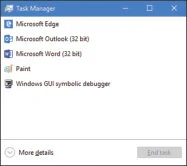
簡易表示でできる操作は限られています。「詳細」をクリックして全体を表示します。既定では「プロセス」タブが選ばれます。

「プロセス」タブにはプロセスの一覧と、CPU、メモリ、ディスク、ネットワークの4つの列が表示されます。列の見出しを右クリックすると、プロセス名（イメージ名）、プロセス ID、種類、状態、発行元、コマンドラインの列も表示できます。一部のプロセスは展開でき、そのプロセスが作成した、画面に表示されるトップレベルウィンドウを確認できます。
プロセスの情報をさらに詳しく見るには、「詳細」タブをクリックします。「プロセス」タブで対象を右クリックし、「詳細の表示」を選ぶと、「詳細」タブに切り替わり、そのプロセスが選択されます。
注 Windows 7 のタスク マネージャーの「プロセス」タブは、Windows 8 以降の「詳細」タブにおおむね相当します。Windows 7 の「アプリケーション」タブには、画面に表示されているトップレベルウィンドウが並びます。Windows 8 以降では、この情報は「プロセス」タブに含まれます。
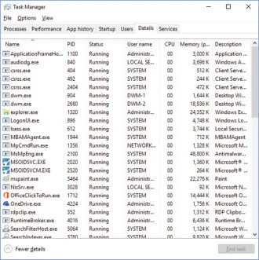
「詳細」タブにもプロセスが並びます。表示は「プロセス」タブより簡潔で、各プロセスが作成したウィンドウは表示されません。選べる列の種類は増えています。
プロセスは、対応する実行イメージの名前で表示されます。Windows の一部のオブジェクトと異なり、プロセスにグローバルな名前を付けることはできません。表示する項目を増やすには、列の見出しを右クリックし、「列の選択」をクリックします。次のように列の一覧が表示されます。
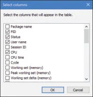
主な列には次のものがあります。
- スレッド 各プロセス内のスレッド数です。通常は1以上です。スレッドなしのプロセスを直接作成する手段はなく、そのようなプロセスにはほとんど用途がありません。0と表示される場合は、ドライバーの不具合などでプロセスを削除できずに残っていることがあります。
- ハンドル プロセス内で動くスレッドが開いたカーネルオブジェクトへのハンドル数です。本章の後半と、第2部の第8章で説明します。
- 状態 ユーザーインターフェイスを持たないプロセスは通常「実行中」と表示されます。すべてのスレッドがカーネルオブジェクトのシグナルや I/O の完了を待っていても、この表示になることがあります。全スレッドが一時停止すると「中断」になります。プロセス自体がそうすることはまれですが、文書化されていないネイティブ API の
NtSuspendProcessを呼ぶと中断できます。後述する Process Explorer などのツールにも、この操作があります。ユーザーインターフェイスを持つプロセスでは、「実行中」は画面が応答できる状態を指します。ウィンドウを作成したスレッドは、対応するメッセージキューへの入力を待っています。この種のプロセスも中断できます。Windows ランタイムをホストする Windows アプリでは、通常、ユーザーが最小化してフォアグラウンドでなくなってから5秒後に中断します。中断中は CPU やネットワークのリソースを消費しないため、新しくフォアグラウンドになったアプリがそれらを使えます。タブレットや電話など、バッテリーで動く機器では特に重要です。詳しくは第2部の管理機構の章を参照してください。
もう1つの表示は「応答なし」です。ユーザーインターフェイスを作ったスレッドが、5秒以上メッセージキューを確認しないと発生します。ウィンドウを所有するスレッドが CPU を使う処理にかかりきりだったり、I/O などの完了を待っていたりする場合があります。画面が操作に応答しなくなると、Windows は対象のウィンドウを薄く表示し、タイトルに「（応答なし）」を付けます。
各プロセスは親プロセスを指す情報も持っています。親は作成元と一致するとは限りません。親が終了してもこの情報は更新されないため、すでに存在しないプロセスを指す場合があります。この情報が常に最新であることを前提とする仕組みはありません。Process Explorer は、同じプロセス ID が再利用された際に子を別の親の下に表示しないよう、親候補の開始時刻を確認します。次の実験で、この動作を確認します。
注 アプリケーションから作成されたように見えるプロセスでも、作成 API を実際に呼ぶのは、ブローカーやヘルパーなどの補助プロセスであることがあります。補助プロセスを作成元として表示すると分かりにくく、ハンドルやアドレス空間の継承が必要な場合には正しくないこともあります。このような場合は、別のプロセスを親に指定します。第7章「セキュリティ」でその例を扱います。
実験：プロセスツリーを表示する
親または作成元のプロセス ID は、多くのツールでは表示されません。パフォーマンス モニターで Creating Process ID を照会するか、プログラムから同じ値を取得できます。Windows 用デバッグツールに含まれる Tlist.exe に /t を指定すると、プロセスツリーを表示できます。以下は tlist /t の出力例です。
System Process (0) System (4) smss.exe (360) csrss.exe (460) wininit.exe (524) services.exe (648) svchost.exe (736) unsecapp.exe (2516) WmiPrvSE.exe (2860) WmiPrvSE.exe (2512) RuntimeBroker.exe (3104) SkypeHost.exe (2776) ShellExperienceHost.exe (3760) Windows Shell Experience Host ApplicationFrameHost.exe (2848) OleMainThreadWndName SearchUI.exe (3504) Cortana WmiPrvSE.exe (1576) TiWorker.exe (6032) wuapihost.exe (5088) svchost.exe (788) svchost.exe (932) svchost.exe (960) svchost.exe (976) svchost.exe (68) svchost.exe (380) VSSVC.exe (1124) svchost.exe (1176) sihost.exe (3664) taskhostw.exe (3032) Task Host Window svchost.exe (1212) svchost.exe (1636) spoolsv.exe (1644) svchost.exe (1936) OfficeClickToRun.exe (1324) MSOIDSVC.EXE (1256)
MSOIDSVCM.EXE (2264) MBAMAgent.exe (2072) MsMpEng.exe (2116) SearchIndexer.exe (1000) SearchProtocolHost.exe (824) svchost.exe (3328) svchost.exe (3428) svchost.exe (4400) svchost.exe (4360) svchost.exe (3720) TrustedInstaller.exe (6052) lsass.exe (664) csrss.exe (536) winlogon.exe (600) dwm.exe (1100) DWM Notification Window explorer.exe (3148) Program Manager OneDrive.exe (4448) cmd.exe (5992) C:\windows\system32\cmd.exe - tlist /t conhost.exe (3120) CicMarshalWnd tlist.exe (5888) SystemSettingsAdminFlows.exe (4608)
プロセス一覧の字下げは親子関係を表します。親が終了したプロセスは、出力例の explorer.exe のように左端に表示されます。祖父母にあたるプロセスが残っていても、そこまで関係をたどることはできません。Windows が保持するのは作成元のプロセス ID だけです。
丸括弧内の数字はプロセス ID です。一部のプロセスの後ろに表示される文字列は、そのプロセスが作成したウィンドウのタイトルです。
Windows が親のプロセス ID までしか記録しないことを、次の手順で確かめます。
- Windows キーと R を押し、
cmdと入力して Enter を押します。コマンドプロンプトが開きます。 title Parentと入力し、ウィンドウのタイトルを Parent に変えます。start cmdと入力し、2つ目のコマンドプロンプトを開きます。- 2つ目のウィンドウで
title Childと入力します。 - 同じウィンドウで
mspaintと入力し、Microsoft ペイントを起動します。 - 2つ目のコマンドプロンプトに戻り、
exitと入力します。ペイントは実行されたままです。 - Ctrl+Shift+Esc を押し、タスク マネージャーを開きます。
- 簡易表示の場合は「詳細」をクリックします。
- 「プロセス」タブをクリックします。
- 「Windows コマンド プロセッサ」を探して展開します。次の画面例のように、タイトルが Parent の項目が表示されます。

- 「Windows コマンド プロセッサ」を右クリックし、「詳細の表示」を選びます。
- 選択された
cmd.exeを右クリックし、「プロセス ツリーの終了」を選びます。 - タスク マネージャーの確認ダイアログで「プロセス ツリーの終了」をクリックします。
最初のコマンドプロンプトは閉じますが、ペイントのウィンドウは残ります。ペイントは、今回終了したコマンドプロンプトの孫にあたるプロセスです。間にいたペイントの親はすでに終了しているため、最初のコマンドプロンプトからペイントまでの関係をたどれません。
Sysinternals の Process Explorer は、ほかのツールよりもプロセスやスレッドについて詳しい情報を表示します。本書の実験でも繰り返し使います。表示できる項目や機能には次のようなものがあります。
- プロセスのセキュリティトークン。ユーザーが属するグループ、特権の一覧、仮想化の状態などを確認できます。
- プロセス、スレッド、DLL、ハンドルの各一覧で、変更があった箇所の強調表示。
- サービスをホストするプロセス内のサービス一覧。表示名と説明も確認できます。
- 緩和ポリシーやプロセスの保護レベルなど、追加のプロセス属性
- ジョブに属するプロセスとジョブの詳細
- .NET アプリケーションをホストするプロセスと、AppDomain の一覧、読み込み済みアセンブリ、CLR パフォーマンスカウンターなどの .NET 固有の情報
- Windows ランタイムをホストするプロセス（イマーシブプロセス）
- プロセスとスレッドの開始時刻
- DLL を含む、すべてのメモリマップトファイルの一覧
- プロセスまたはスレッドの一時停止
- 個別のスレッドの終了
- 一定期間に最も CPU を使ったプロセスの特定
注 パフォーマンス モニターは指定したプロセスの CPU 使用率を表示できます。監視セッションの開始後に作成されたプロセスを自動で表示するには、手動でトレースを開始し、バイナリ形式で出力する必要があります。
Process Explorer では、次の情報も一か所で確認できます。
- 枝を折りたためるプロセスツリー
- プロセスが開いているハンドル。名前のないハンドルも含みます。
- プロセス内の DLL とメモリマップトファイルの一覧
- プロセス内のスレッドの活動状況
- ユーザーモードおよびカーネルモードのスレッドスタック。Windows 用デバッグツール付属の
Dbghelp.dllを使って、アドレスを名前に対応付けて表示できます。 - スレッドのサイクル数に基づく、より正確な CPU 使用率。詳しくは第4章「スレッド」を参照してください。
- 整合性レベル
- コミットチャージのピーク値や、カーネルのページプールと非ページプールの上限など、メモリマネージャーの詳細。ほかのツールでは現在のサイズだけが表示されます。
次の実験で、Process Explorer の基本操作を確認します。
実験：Process Explorer でプロセスの詳細を確認する
Sysinternals から Process Explorer の最新版をダウンロードして起動します。標準ユーザーの権限で起動できます。管理者権限で起動するには、実行ファイルを右クリックし、「管理者として実行」を選びます。その場合、Process Explorer は追加機能を提供するドライバーをインストールします。以下の手順は、どちらの権限でも同じです。
初回起動時にシンボルを設定します。設定していないと、プロセスをダブルクリックして「Threads」タブを開いたときに警告が表示されます。設定すると、スレッドの開始関数や呼び出しスタック上の関数が名前で表示され、プロセス内で各スレッドが何をしているか調べやすくなります。
シンボルを参照するには、本章の後半で説明する Windows 用デバッグツールが必要です。Process Explorer の「Options」メニューで「Configure Symbols」を選び、デバッグツールのフォルダーにある Dbghelp.dll のパスと、有効なシンボルパスを入力します。次の画面は、64ビットシステムに WDK の一部としてデバッグツールを既定の場所にインストールした場合の設定例です。

この例では、必要に応じてシンボルサーバーからファイルを取得し、ローカルの C:\symbols にコピーを保存します。空き容量に余裕がなければ、別のドライブなどのフォルダーを指定できます。詳細は MSDN のシンボルサーバーの設定資料を参照してください。
ヒント 環境変数
_NT_SYMBOL_PATHに画面例のシンボルパスを設定できます。Process Explorer、Windows 用デバッグツールの各デバッガー、Visual Studio などが自動的にこの変数を参照するため、ツールごとに設定する手間を省けます。
Process Explorer は起動すると、既定でプロセスツリーを表示します。下ペインを開くと、開いているハンドルや、マップ済みの DLL とメモリマップトファイルを確認できます。これらについては第5章「メモリ管理」と、第2部の第8章を参照してください。プロセスにマウスポインターを重ねると、コマンドラインとパスがツールチップに表示されます。
プロセスの種類によっては、名前にマウスポインターを重ねたときのツールチップに、次の情報も表示されます。
Svchost.exeなどがホストするサービス。TaskHostw.exeなどがホストするタスク。- コントロール パネルの項目などで使われる
Rundll32.exeが呼び出す対象。 - 既定の COM+ サロゲートとも呼ばれる
Dllhost.exeがホストする COM クラスの情報。 WMIPrvSE.exeなどの Windows Management Instrumentation（WMI）ホストプロセスのプロバイダー情報。WMI は第2部の第8章で説明します。- Windows アプリのパッケージ情報。対象は Windows ランタイムをホストするプロセスです。Windows ランタイムについては本章の前半を参照してください。
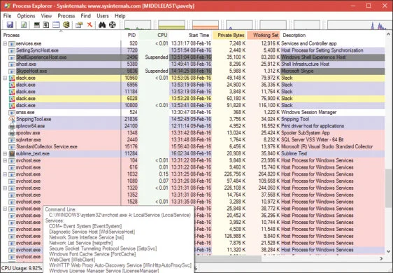
次の手順で、Process Explorer の基本機能を確認します。
- サービスをホストするプロセスは既定でピンク、自分のプロセスは青で表示されます。「Options」メニューの「Configure Colors」で色を変更できます。
- プロセスのイメージ名にマウスポインターを重ねます。ツールチップに完全なパスが表示されます。プロセスの種類によっては、前述した追加情報も表示されます。
- 「View」メニューの「Select Columns」を選び、「Process Image」タブでイメージのパスを追加します。
- 「Process」の列見出しをクリックして名前順に並べ替えます。ツリー表示は解除されます。ツリー表示と、任意の列による並べ替えは同時には使えません。もう一度クリックすると降順になり、3回目でツリー表示に戻ります。
- 「View」メニューで「Show Processes from All Users」をオフにすると、自分のプロセスだけが表示されます。
- 「Options」メニューで「Difference Highlight Duration」を選び、3秒に設定します。任意のプロセスを起動すると、一覧で3秒間緑色になります。そのプロセスを終了すると、一覧から消える前に3秒間赤く表示されます。この色分けで、プロセスの開始と終了を確認できます。
- プロセスをダブルクリックしてプロパティを開き、各タブを確認します。本書の実験でも、表示される情報を説明する際にこれらのタブを使います。
スレッド
スレッドは、Windows が実行をスケジュールするプロセス内の単位です。スレッドがなければ、そのプロセスのプログラムは実行できません。主な構成要素は次のとおりです。
- プロセッサーの状態を表す CPU レジスターの内容。
- カーネルモード用とユーザーモード用の2つのスタック。
- サブシステム、ランタイムライブラリ、DLL が使うスレッドローカルストレージ（TLS）。スレッドごとに独立した領域です。
- スレッドを一意に識別するスレッド ID。内部のクライアント ID 構造体の一部です。プロセス ID とスレッド ID は同じ名前空間から割り当てられるため重複しません。
スレッドが独自のセキュリティコンテキスト、つまりトークンを持つ場合もあります。たとえばマルチスレッドのサーバーアプリケーションが、処理対象のクライアントの権限で動くために使います。
揮発性レジスター、スタック、スレッド固有の記憶領域をまとめてスレッドのコンテキストと呼びます。その内容は Windows が動くハードウェアアーキテクチャによって異なります。Windows の GetThreadContext 関数を使うと、そのアーキテクチャに固有の情報を CONTEXT ブロックとして取得できます。
スレッドの切り替えにはカーネルのスケジューラーが関与します。特に2つのスレッドが頻繁に交代する場合は、切り替えのコストがかさみます。Windows には、このコストを減らすためのファイバーとユーザーモードスケジューリング（UMS）があります。
注 64ビット版 Windows で動作する32ビットアプリケーションのスレッドは、32ビットと64ビットの両方のコンテキストを持ちます。WOW64 は必要に応じて32ビットモードと64ビットモードを切り替えるために、これらを使います。各スレッドには2つのユーザースタックと2つの
CONTEXTブロックがあり、通常の Windows API は64ビットのコンテキストを返します。32ビットのコンテキストを得るにはWow64GetThreadContextを使います。WOW64 の詳細は第2部の第8章を参照してください。
ファイバー
ファイバーを使うと、Windows の優先度ベースのスケジューリングに任せず、アプリケーションが自ら実行を切り替えられます。軽量スレッドとも呼ばれ、ユーザーモードの Kernel32.dll に実装されているため、カーネルのスケジューラーからは見えません。まず ConvertThreadToFiber でスレッドを実行中のファイバーに変換します。そのファイバーは CreateFiber で別のファイバーを作成できます。各ファイバーも独自にほかのファイバーを作成できます。ファイバーは SwitchToFiber で明示的に選ばれるまで実行されません。選ばれたファイバーは、終了するか SwitchToFiber で別のファイバーを選ぶまで実行されます。詳細は Windows SDK のファイバー関数の資料を参照してください。
注 通常は、処理に合ったスレッドを使い、カーネルにスケジューリングを任せます。ファイバーはカーネルから見えず、同じスレッドで動く複数のファイバーは TLS を共有します。ファイバーローカルストレージ（FLS）を使っても、共有に伴う問題はすべて解決できず、I/O 待ちが多いファイバーは性能が低くなります。ファイバーは同じスレッド上では複数のプロセッサーで同時に実行できず、協調的なマルチタスクに限られます。
ユーザーモードスケジューリングのスレッド
ユーザーモードスケジューリング（UMS）のスレッドは64ビット版 Windows でのみ利用できます。ファイバーと同様の基本的な利点があり、その制約の一部を解消します。UMS スレッドには固有のカーネルスレッドの状態があり、カーネルから見えます。このため、複数の UMS スレッドがブロックするシステムコールを発行したり、リソースを共有して取り合ったりできます。複数の UMS スレッドがユーザーモードで処理するときは、互いに実行を譲ってコンテキストを切り替えられます。ユーザーモード内の切り替えなので、カーネルには同じスレッドが実行を続けているように見えます。システムコールなどでカーネルに入る必要があるときは、その UMS スレッド専用のカーネルモードスレッドに切り替えます。これを指向性コンテキストスイッチと呼びます。同じ実行元から切り替える UMS スレッドは複数のプロセッサーで同時には動作できませんが、実行は協調方式だけに依存せず、プリエンプトできます。
スレッドはそれぞれ独立した実行コンテキストを持ちますが、同一プロセス内のすべてのスレッドは、そのプロセスの仮想アドレス空間および各種システムリソースを完全に共有しています。つまり、同一プロセス内の任意のスレッドは、プロセス内の全メモリに対して完全な読み書きアクセス権を持っています。
一方、あるプロセスのスレッドが他のプロセスのメモリ空間を誤って参照してしまうことは、仮想記憶の保護機構により原則として起こり得ません。別のプロセスのメモリを参照できるのは、そのプロセスがアドレス空間の一部を共有メモリセクション（Windows API ではファイルマッピングオブジェクト）として公開しているか、呼び出し元に対象を開いて ReadProcessMemory や WriteProcessMemory などを使う権限がある場合です。同じユーザーアカウントで実行され、AppContainer などのサンドボックスに入っていないプロセスは、対象に所定の保護が設定されていなければ、既定でその権限を取得できます。
仮想アドレス空間と1つ以上のスレッドに加え、各プロセスはセキュリティコンテキストと、オープンされた各種カーネルオブジェクト（ファイル、共有メモリ、ミューテックス、イベント、セマフォ等）へのハンドルテーブルを保持しています（図1-2）。

プロセスのセキュリティコンテキストは、アクセストークンというオブジェクトに格納されます。アクセストークンには、プロセスのセキュリティ識別情報と資格情報が含まれます。既定ではスレッドは独自のアクセストークンを持ちませんが、必要に応じて取得できます。そのスレッドは、同じプロセスのほかのスレッドに影響を与えずに、別のプロセスのセキュリティコンテキストを借りて処理できます。リモートの Windows システム上で動くプロセスも対象です。詳しくは第7章を参照してください。
仮想アドレス記述子（VAD）は、プロセスが使っている仮想アドレスをメモリマネージャーが追跡するためのデータ構造です。詳しくは第5章を参照してください。
ジョブ
Windows はプロセスモデルの拡張としてジョブを提供します。ジョブオブジェクトを使うと、プロセスのグループをひとまとまりとして管理・操作できます。ジョブに属するプロセスの一部の属性を制御したり、制限を設けたりできます。現在ジョブに属するプロセスに加え、以前属していてすでに終了したプロセスについても、基本的な使用量を記録します。ジョブオブジェクトは、Windows に UNIX のような構造化されたプロセスツリーがないことを補い、多くの点でそれ以上の管理機能を備えています。
注 Process Explorer では、ジョブが管理するプロセスを色で識別できます。色は既定で茶色ですが、色分け自体は既定で無効です。「Options」メニューの「Configure Colors」で有効にできます。該当プロセスのプロパティには「Job」タブが追加され、ジョブオブジェクトの情報を確認できます。
プロセスとジョブの内部構造は第3章で、スレッドとスケジューリングのアルゴリズムは第4章で詳しく説明します。
仮想メモリ
Windows の仮想メモリはフラット（線形）なアドレス空間を使います。各プロセスからは、広いアドレス空間を専有しているように見えます。仮想メモリが示す論理上の配置は、物理メモリ上の配置と一致するとは限りません。実行時には、メモリマネージャーがハードウェアの支援を受け、仮想アドレスをデータの実際の格納先である物理アドレスへ変換します。OS はページの保護とマッピングを制御し、プロセス同士が互いの領域に干渉したり、OS のデータを上書きしたりするのを防ぎます。
多くのシステムでは、実行中のプロセスが使う仮想メモリの合計より、物理メモリのほうがはるかに少なくなります。そこでメモリマネージャーは、メモリの内容の一部をディスクへ移します。この処理をページングと呼びます。ディスクに移して空いた物理メモリは、ほかのプロセスや OS が使えます。スレッドがディスクへ移された領域の仮想アドレスにアクセスすると、メモリマネージャーは内容をディスクからメモリへ読み戻します。
ハードウェアの支援により、メモリマネージャーはプロセスやスレッドを関与させずにページングできます。アプリケーション側の変更は不要です。図1-3では、2つのプロセスが使う仮想メモリの一部が物理メモリ（RAM）にマップされ、残りの一部がディスクに移されています。仮想メモリで連続する領域が、物理メモリでは離れた場所にマップされることもあります。この管理単位をページと呼び、既定のサイズは 4 KB です。

仮想アドレス空間の大きさはハードウェアプラットフォームによって異なります。32ビット x86 システムでは理論上、全体で最大 4 GB です。Windows は既定で、下位半分（0x00000000～0x7FFFFFFF）をプロセスごとのプライベート領域に、上位半分（0x80000000～0xFFFFFFFF）を OS の保護されたメモリ領域に割り当てます。下位半分のマッピングは実行するプロセスの仮想アドレス空間に合わせて切り替わりますが、上位半分のマッピングの大半は常に OS の仮想メモリを指します。
Windows は、ブート構成データベースの increaseuserva などの起動オプションに対応しています。このオプションを使うと、実行イメージのヘッダーに IMAGE_FILE_LARGE_ADDRESS_AWARE フラグが設定されたプログラムで、プライベートなアドレス空間を 2 GB から最大 3 GB まで使用できます。最大値を選ぶと OS 用の領域は 1 GB になります。たとえばデータベースサーバーでは、データベースのより広い範囲をプロセスのアドレス空間に確保でき、ディスク上のデータベースの一部分をその都度マップする回数を減らせます。一方で、OS 用の領域が 1 GB 減ることにより、システム全体の性能が大きく低下する場合もあります。起動オプションについては第5章を参照してください。図1-4は、32ビット版 Windows がサポートする代表的な2つの配置を示しています。
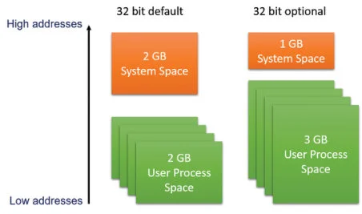
3 GB でも、数 GB を超えるような大規模データベースをマップするには足りないことがあります。32ビットシステムでは、Windows の Address Windowing Extensions（AWE）を使うと、32ビットアプリケーションが最大 64 GB の物理メモリを割り当て、その一部をビュー（ウィンドウ）として 2 GB の仮想アドレス空間にマップできます。仮想メモリと物理メモリの対応を開発者が管理する必要はありますが、32ビットプロセスが一度にマップできる範囲を超えた物理メモリにも、対応を切り替えながら直接アクセスできます。
64ビット版 Windows では、プロセスが使えるアドレス空間はさらに広く、Windows 8.1、Windows Server 2012 R2 以降では 128 TB です。64ビットシステムの配置を簡略化して図1-5に示します。詳しくは第5章を参照してください。これらのサイズはハードウェアアーキテクチャの理論上限とは異なります。64ビットで表現できるアドレス空間は 2 の64乗バイト、つまり 16 EB です。
1 EB は 1,024 PB、つまり 1,048,576 TB です。ただし、64ビットハードウェアで実際に使える範囲は理論上限より小さくなります。図1-5の未マップ領域は、マップ可能な領域よりはるかに大きく、Windows 8 では約100万倍です。図中の領域の大きさは実際の比率とは異なります。

アドレス変換の仕組みや物理メモリの管理方法など、メモリマネージャーの実装の詳細は第5章で説明します。
カーネルモードとユーザーモード
Windows は、ユーザーアプリケーションが OS の重要なデータを参照・変更できないように、ユーザーモードとカーネルモードを使い分けます。プロセッサーに3つ以上のモードがあっても、Windows が使うのはこの2つです。アプリケーションのコードはユーザーモードで実行され、システムサービスやデバイスドライバーなどの OS コードはカーネルモードで実行されます。カーネルモードでは、すべてのシステムメモリにアクセスでき、CPU の全命令を使用できます。プロセッサーによっては、こうしたモードの違いをコード特権レベルやリングレベルと呼びます。スーパーバイザーモードとアプリケーションモードという呼び方もあります。OS カーネルにユーザーモードのアプリケーションより高い特権を与えることで、アプリケーションの誤動作がシステム全体の安定性を損なうのを防ぐ基盤になります。
注 x86 と x64 のプロセッサーは、特権の低いコードによる意図しない書き換えや悪意ある上書きからシステムコードとデータを守るため、4つの特権レベル（リング）を定義しています。Windows はカーネルモードに特権レベル0（リング0）、ユーザーモードに特権レベル3（リング3）を使います。ARM や、かつての MIPS、Alpha などのアーキテクチャには、特権レベルが2つしかありません。2段階に統一すると、効率と移植性を確保しやすくなります。特に、x86 と x64 の中間リングには、リング0とリング3の間と同じ保護の保証がありません。
Windows の各プロセスは固有のプライベートメモリ空間を持ちます。カーネルモードの OS コードとデバイスドライバーのコードは、単一の仮想アドレス空間を共有します。仮想メモリの各ページには、読み取りや書き込みに必要なプロセッサーのアクセスモードが設定されています。システム空間のページにはカーネルモードからのみアクセスできます。ユーザーアドレス空間のページには、ユーザーモードとカーネルモードの両方からアクセスできます。静的データなどを含む読み取り専用ページには、どちらのモードでも書き込めません。実行禁止に対応したプロセッサーでは、データ実行防止（DEP）が有効なら、Windows はデータを含むページを実行不可に設定します。データ領域の内容を誤って実行したり、悪意あるコードをそこから実行したりするのを防ぎます。
Windows は、カーネルモードのコンポーネントが使う読み書き可能なシステムメモリを、そのコンポーネント専用に保護しません。カーネルモードの OS コードとデバイスドライバーはシステム空間のメモリ全体にアクセスでき、Windows のセキュリティ検査を経ずにオブジェクトにアクセスできます。Windows の OS コードの大半はカーネルモードで動作するため、そこで動くコンポーネントがセキュリティを損なったり、システムを不安定にしたりしないよう、入念な設計とテストが欠かせません。
サードパーティーのデバイスドライバー、特に署名のないものを読み込むときには注意が必要です。カーネルモードで動作するドライバーは OS の全データにアクセスできるためです。このリスクを背景に、Windows 2000 ではドライバー署名の仕組みが導入されました。署名のないプラグアンドプレイ対応ドライバーを追加しようとすると、警告が表示され、設定によっては追加が拒否されます。ほかの種類のドライバーはこの仕組みの対象外です。また、Driver Verifier は、バッファーの範囲外への書き込みやメモリリークなど、セキュリティや信頼性に影響するバグをドライバー開発者が発見するための機能です。ドライバー署名と Driver Verifier の詳細は第6章「I/O システム」を参照してください。
64ビット版と ARM 版の Windows 8.1 では、カーネルモードコード署名（KMCS）ポリシーにより、プラグアンドプレイ対応かどうかを問わず、主要なコード署名認証局が発行した暗号鍵で全デバイスドライバーに署名する必要があります。管理者でも、通常は未署名ドライバーのインストールを強制できません。例外として、開発時のテストに使うテストモードでは自己署名ドライバーを検証できます。このモードではデスクトップに「Test Mode」と表示され、デジタル著作権管理（DRM）の一部の機能が無効になります。
Windows 10 では、発売の1年後に提供された Anniversary Update（バージョン1607）から、署名要件がさらに厳しくなりました。当時、新しい Windows 10 用ドライバーには、20の認証局が扱っていた従来のファイルベースの SHA-1 証明書に代わり、認定された2つの認証局のいずれかが発行した SHA-2 の EV ハードウェア証明書が必要になりました。EV 署名済みのドライバーを System Device（SysDev）ポータルから提出すると、Microsoft がアテステーション署名を付与します。テストモードを除き、カーネルは Microsoft の署名付きの Windows 10 用ドライバーだけを読み込みます。Windows 10 の発売（2015年7月）より前に署名されたドライバーは、当時は従来の署名のまま読み込めました。
Windows Server 2016 では、EV の要件を満たし、アテステーション署名を受けただけでは足りません。サーバーで Windows 10 用ドライバーを読み込むには、Hardware Compatibility Kit（HCK）を使った Windows Hardware Quality Labs（WHQL）の厳格な認証手続きを経て、正式な審査に提出する必要があります。WHQL の署名は、互換性、セキュリティ、性能、安定性についてシステム管理者に一定の保証を与えます。
こうしたシステムでは、WHQL の署名が付いたドライバーだけが読み込まれます。カーネルモードで読み込めるサードパーティー製ドライバーを絞ることで、安定性とセキュリティが大きく向上すると期待されます。
ドライバー署名ポリシーは、ベンダー、プラットフォーム、企業の構成によって異なる場合があります。たとえば、後述する「ハイパーバイザー」の節と第7章で扱う Device Guard を使って構成を変更できます。企業では、Windows 10 クライアントにも WHQL 署名を要求したり、Windows Server 2016 でこの要件を適用しないよう求めたりする場合があります。
第2章「システムアーキテクチャ」で説明するように、ユーザーアプリケーションがシステムサービスを呼び出すと、ユーザーモードからカーネルモードに切り替わります。たとえば、Windows API の ReadFile は、最終的にファイルの読み取りを担当する Windows 内部のルーチンを呼び出します。このルーチンはシステム内部のデータ構造にアクセスするため、カーネルモードで実行する必要があります。特殊なプロセッサー命令を実行するとカーネルモードに移行し、カーネル内のシステムサービスディスパッチコードに制御が移ります。このコードが Ntoskrnl.exe または Win32k.sys 内の対応する関数を呼び出します。ユーザースレッドに制御を返す前にユーザーモードに戻ります。この仕組みにより、OS は自身のコードとデータをユーザープロセスによる参照や変更から保護します。
注 モードを切り替えても、切り替え自体はスレッドのスケジューリングに影響しません。同じスレッドが実行を続けるため、コンテキストスイッチは発生しません。システムサービスのディスパッチについては第2章を参照してください。
ユーザースレッドは通常、実行時間の一部をユーザーモードで、残りをカーネルモードで過ごします。グラフィックスとウィンドウシステムの大半もカーネルモードで動作するため、描画処理の多いアプリケーションではカーネルモードでの実行時間のほうが長くなります。Microsoft ペイントなどを動かし、表1-3のパフォーマンスカウンターを使うと、実行時間の内訳を確認できます。Direct2D や DirectComposition を使うアプリケーションは、計算の大半をユーザーモードで処理し、サーフェスの生データだけをカーネルに渡せます。これにより、モード切り替えにかかる時間を減らせます。
表1-3：モード関連のパフォーマンスカウンタ
| オブジェクト：カウンタ | 説明 |
|---|---|
| Processor: % Privileged Time | CPU（個別または全体）がカーネルモードで実行されていた時間の割合 |
| Processor: % User Time | CPU（個別または全体）がユーザーモードで実行されていた時間の割合 |
| Process: % Privileged Time | 該当プロセスの全スレッドがカーネルモードで実行されていた時間の割合 |
| Process: % User Time | 該当プロセスの全スレッドがユーザーモードで実行されていた時間の割合 |
| Thread: % Privileged Time | 個別スレッドがカーネルモードで実行されていた時間の割合 |
| Thread: % User Time | 個別スレッドがユーザーモードで実行されていた時間の割合 |
実験：カーネルモードとユーザーモードの実行時間を測る
パフォーマンス モニターを使うと、システムがカーネルモードとユーザーモードでそれぞれどれだけの時間を費やしたか確認できます。
- スタート メニューを開き、検索欄に「パフォーマンス モニター」と入力して起動します。入力の途中で候補に表示されます。
- 左側のツリーで「パフォーマンス」から「モニタリング ツール」を開き、「パフォーマンス モニター」を選びます。
- 既定のカウンターは CPU 時間の合計を表示します。このカウンターを選び、ツールバーの削除ボタンまたは Delete キーで削除します。
- ツールバーの追加（＋）ボタンをクリックします。
Processorのカウンター一覧を展開して% Privileged Timeを選びます。Ctrl キーを押しながら% User Timeも選びます。- 「追加」をクリックしてから「OK」をクリックします。
- コマンドプロンプトを開き、
dir \\%computername%\c$ /sと入力して、自分のコンピューターの C ドライブのディレクトリを走査します。
- 確認が終わったらパフォーマンス モニターを閉じます。
タスク マネージャーでも、カーネルモードの CPU 時間をすぐに確認できます。「パフォーマンス」タブを開き、CPU グラフを右クリックして「カーネル時間を表示する」を選びます。CPU 使用率のグラフで、カーネルモードの使用分が濃い青で表示されます。
パフォーマンス モニター自体が各モードで使う時間を確認するには、パフォーマンス モニターをもう一度開き、プロセス別の % User Time と % Privileged Time を追加します。
- パフォーマンス モニターを起動します。すでに起動している場合は、グラフを右クリックして「すべてのカウンターを削除」を選びます。
- ツールバーの追加ボタンをクリックします。
- 利用可能なカウンターの一覧で
Processを展開します。 % Privileged Timeと% User Timeを選びます。- インスタンスの一覧で
mmc、csrss、Idleなどを選びます。 - 「追加」をクリックしてから「OK」をクリックします。
- マウスをすばやく左右に動かします。
- Ctrl+H を押して強調表示を有効にします。選択中のカウンターが黒で強調表示されます。
- 画面下のカウンターを順に選び、マウスの移動中にどのプロセスのスレッドが動いたか、それぞれどちらのモードで実行されたかを確認します。
マウスを動かすと、インスタンス mmc のカーネルモード時間とユーザーモード時間が増えます。このプロセスはユーザーモードでアプリケーションのコードを実行し、カーネルモードで動く Windows の関数も呼び出します。csrss でもカーネルモードのスレッドが動きます。キーボードやマウスからの入力を処理する Windows サブシステムのカーネルモードの生入力スレッドが、このプロセスに接続されているためです。システムスレッドとサブシステムについては第2章を参照してください。ほぼ100%がカーネルモード時間として表示される Idle は、アイドル中の CPU サイクルを計上するための擬似プロセスです。Windows は処理すべき仕事がないときも、カーネルモードでアイドルスレッドを実行します。
ハイパーバイザー
クラウドサービスの登場や IoT 機器の普及により、OS やハードウェアのベンダーには、ホストのハードウェア上でゲスト OS を効率よく仮想化する方法が求められるようになりました。
サーバーファームで複数の利用者を収容し、1台のサーバーで互いに分離された100の Web サイトを動かす場合もあれば、専用の機材を買わずに何十種類もの OS を試す場合もあります。高速で効率がよく、安全な仮想化への需要により、ソフトウェアの実行や設計の方法も変わってきました。たとえば Windows 10 と Windows Server 2016 が対応する Docker では、単一のアプリケーションスタックやフレームワークを動かすために、分離されたコンテナーを使えます。
現在の仮想化製品のほとんどは、ハイパーバイザーを使います。これは、仮想メモリと物理メモリ、デバイスの割り込み、PCI や USB デバイスなど、マシンの各種リソースを仮想化して分離するための、高い特権を持つコンポーネントです。Windows 8.1 以降のクライアント版 Hyper-V はその一例です。Xen、KVM、VMware、VirtualBox にも、それぞれ独自のハイパーバイザーがあります。
ハイパーバイザーはカーネルより高い特権を持つため、複数のゲスト OS を動かすだけでなく、単一のホスト OS を監視・保護して、カーネル単体より強い保証を提供できます。Windows 10 は Hyper-V を使い、仮想化ベースのセキュリティ（VBS）と呼ぶ一連の機能を提供します。
- Device Guard ハイパーバイザーによるコード整合性（HVCI）を使い、カーネルモードコード署名（KMCS）単独よりも強固な署名検証を提供します。ユーザーモードとカーネルモードの両方について署名ポリシーを設定できます。
- Hyper Guard カーネルやハイパーバイザーに関わる重要なデータ構造とコードを保護します。
- Credential Guard ドメインアカウントの資格情報や秘密情報への不正アクセスを防ぎます。安全な生体認証と組み合わせて使われます。
- Application Guard Microsoft Edge に、より強固なサンドボックスを提供します。
- Host Guardian と Shielded Fabric 仮想 TPM（vTPM）を使い、仮想マシンを、その実行基盤から保護します。
Hyper-V は、脆弱性の悪用を防ぐためのカーネルの緩和策も支えます。これらの機能は、署名の有無を問わず、悪意のあるドライバーや不具合のあるドライバーから保護されます。この分離は、仮想信頼レベル（VTL）によって成り立っています。通常の OS とそのコンポーネントは VTL 0 で実行され、VBS の機能はより高い特権を持つ VTL 1 で実行されます。VTL 0 のコードはカーネルモードで動いても VTL 1 に影響を及ぼせません。各 VTL にユーザーモードとカーネルモードがあり、VTL 間の特権はハイパーバイザーが管理します。ハイパーバイザーを使うアーキテクチャは第2章で、VBS の仕組みは第7章で詳しく説明します。
ファームウェア
Windows のコンポーネントは OS とカーネルのセキュリティに依存し、カーネルはハイパーバイザーによる保護に依存します。各コンポーネントを安全に読み込み、その内容が正当であることを検証する役割は通常、ブートローダーが担います。ブートローダー自体の正当性も確認する必要があるため、信頼関係は階層になります。
Windows 8 以降では、その起点となるのがシステムファームウェアです。認定済みシステムには UEFI ベースのファームウェアが必要です。Windows が要件とする UEFI 2.3.1b では、起動に関わるソフトウェアの署名を厳格に検証するセキュアブートの実装が求められます。この検証により、起動の最初から Windows のコンポーネントを安全に読み込めます。Trusted Platform Module（TPM）などの技術は起動過程を測定し、ローカルとリモートの両方で証明できるようにします。Microsoft は業界各社と協力し、起動用ソフトウェアの不具合や侵害に備えて、UEFI セキュアブートの許可リストと拒否リストを管理します。Windows Update でもファームウェアの更新を配信します。第2部の「第12章 起動とシャットダウン」で、ファームウェアを改めて説明します。
ターミナル サービスと複数のセッション
ターミナル サービスは、1台の Windows システムで複数の対話型セッションを扱う機能です。リモートユーザーは別のコンピューターにセッションを開いてサインインし、サーバー上でアプリケーションを実行できます。サーバーは GUI をクライアントに転送し、設定に応じて音声やクリップボードも転送します。クライアントはユーザーの入力をサーバーに返します。X Window System と同様に、デスクトップ全体に加え、サーバー上で実行する個別のアプリケーションの画面だけをクライアントに表示することもできます。
最初のセッションはサービスセッション、またはセッション0と呼ばれ、システムサービスをホストするプロセスが動作します。詳しくは第2部の管理機構の章を参照してください。実機のコンソールで最初にサインインするとセッション1になります。追加のセッションは、リモート デスクトップ接続（Mstsc.exe）やユーザーの簡易切り替えで作成できます。
クライアント版 Windows では、同時に接続できるリモートユーザーは1人です。コンソールでサインイン中のユーザーがいればワークステーションがロックされます。ローカルとリモートのどちらからも使えますが、同時に操作することはできません。Windows Media Center を搭載したエディションでは、1つの対話型セッションと、最大4つの Windows Media Center Extender セッションを利用できます。
Windows Server ではリモート管理用に2つの同時接続が可能です。たとえば、管理対象にサインインして使う管理ツールに利用できます。ターミナルサーバーとして構成し、必要なライセンスを用意すれば、3つ以上のリモートセッションを利用できます。
すべてのクライアント版 Windows で、ユーザーの簡易切り替えによって複数のローカルセッションを作成できます。操作できるのは一度に1つのセッションです。サインアウトせずにセッションを切り替えると、元のセッションのプロセスと、セッション全体の状態を表すデータ構造はシステム内に残ります。システムは必要に応じてサインイン画面に戻り、別のユーザーがサインインすると新しいセッションを作成します。切り替えるには、スタート メニューで現在のユーザーをクリックし、サブメニューからアカウントの切り替えを選びます。Windows キーを押しながら L を押し、画面の左下から別のユーザーを選ぶ方法もあります。
アプリケーションは Windows API を使って、ターミナルサーバーのセッション内で動いているかを判定したり、ターミナル サービスの各種機能を制御したりできます。詳細は Windows SDK のリモート デスクトップ サービス API を参照してください。
第2章ではセッションが作られる仕組みを簡単に説明し、カーネルデバッガーなどのツールでセッション情報を確認する実験を紹介します。第2部の第8章「オブジェクトマネージャー」では、オブジェクトのシステム名前空間がセッションごとに作られる仕組みと、アプリケーションが同じシステム上の別の自分自身のインスタンスを見つける方法を説明します。第5章では、メモリマネージャーがセッション全体のデータを準備し、管理する方法を扱います。
オブジェクトとハンドル
Windows のカーネルオブジェクトは、静的に定義されたオブジェクト型の実行時インスタンスです。オブジェクト型は、システムが定義したデータ型、そのインスタンスを操作する関数、オブジェクトの属性から成ります。Windows アプリケーションを作るときに扱うプロセス、スレッド、ファイル、イベントなどのオブジェクトは、Windows が作成・管理する下位のオブジェクトに基づいています。プロセスはプロセスオブジェクト型のインスタンスであり、ファイルはファイルオブジェクト型のインスタンスです。
オブジェクトの属性とは、状態の一部を表すデータフィールドです。たとえばプロセスオブジェクトには、プロセス ID、スケジューリングの基本優先度、アクセストークンオブジェクトへのポインターなどの属性があります。オブジェクトを操作するメソッドは通常、属性を読み取るか変更します。たとえばプロセスを開くメソッドは、プロセス ID を受け取り、オブジェクトへのポインターを返します。
注 カーネルのオブジェクトマネージャー API でオブジェクトを作成するとき、呼び出し元は
ObjectAttributesパラメーターを渡します。本書で一般に使う「オブジェクトの属性」は、このパラメーターより広い意味を持ちます。
オブジェクトは内部構造を公開しません。データを読み書きするには、オブジェクトに用意されたサービスを呼び出す必要があります。内部データに直接アクセスできないため、利用側のコードから実装を切り離せます。こうして、必要に応じてオブジェクトの実装を変更しやすくなります。
オブジェクトは、カーネルのオブジェクトマネージャーを通じて、OS が次の4つの処理を行えるようにします。
- システムリソースに人が読める名前を付ける。
- プロセス間でリソースやデータを共有する。
- 許可されていないアクセスからリソースを保護する。
- 参照を追跡し、使われなくなったオブジェクトを自動的に解放する。
Windows では、共有、保護、命名が必要なデータや、システムサービスを介してユーザーモードのプログラムに公開するデータをオブジェクトとして扱います。ある OS コンポーネントが内部処理にだけ使うデータ構造は、オブジェクトにする必要がありません。オブジェクトと、そのインスタンスを参照するハンドルについては、第2部の第8章を参照してください。
セキュリティ
Windows は当初から、安全性を確保し、政府や業界の正式なセキュリティ評価の要件を満たすよう設計されました。評価基準には、たとえば情報技術セキュリティ評価のためのコモンクライテリア（CCITSE）があります。政府に認められた評価を取得することで、OS はその評価が求められる市場に参入できます。こうした要件を満たすための機能の多くは、複数のユーザーが使うシステム全般で役立ちます。
Windows の主なセキュリティ機能は次のとおりです。
- ファイル、ディレクトリ、プロセス、スレッドなど、共有可能なシステムオブジェクトすべてに対する随意保護（必要な者にだけアクセスを許す方式）と強制保護。
- 主体やユーザーが行った操作とその責任を追跡するためのセキュリティ監査。
- サインイン時のユーザー認証。
- 別のユーザーが解放したメモリやディスク領域など、初期化されていないリソースへのアクセスの防止。
Windows にはオブジェクトへのアクセスを制御する方式が3つあります。
随意アクセス制御では、ファイルやプリンターなどのオブジェクトの所有者が、ほかのユーザーにアクセスを許可するか拒否するかを決めます。ユーザーがサインインすると、資格情報の集合であるセキュリティコンテキストが割り当てられます。ユーザーがオブジェクトにアクセスしようとすると、システムはそのコンテキストと対象のアクセス制御リストを照合し、要求された操作が許可されているかを判断します。Windows Server 2012 と Windows 8 では、属性ベースのアクセス制御（動的アクセス制御）が加わりました。この方式では、リソースのアクセス制御リストに個々のユーザーやグループを指定する代わりに、アクセスに必要な条件を指定できます。
属性や要求（クレーム）に基づいてリソースへのアクセスを許可できます。たとえば「機密取扱資格：極秘」や「勤続年数：10年」といった条件です。Active Directory を介して SQL データベースやスキーマを解析し、これらの属性を自動で取り込めます。組織は柔軟な条件を設定でき、グループやグループ階層を手作業で管理する負担を減らせます。
- 特権によるアクセス制御 随意アクセス制御だけでは対応できない場合に使います。所有者が不在でも、必要な人が保護されたオブジェクトへアクセスできるようにします。たとえば退職した従業員しかアクセスできなかったファイルは、管理者が所有権を取得し、必要に応じてアクセス権を設定できます。
- 強制整合性制御 同じユーザーアカウントからアクセスするオブジェクトにも、追加の保護が必要な場合に使います。Windows アプリのサンドボックスの一部、保護モードの Internet Explorer などのブラウザーとユーザー設定との分離、昇格した管理者が作成したオブジェクトへの非昇格の管理者からのアクセス制限などに使われます。ユーザーアカウント制御については第7章を参照してください。
Windows 8 以降では、Windows アプリを AppContainer というサンドボックスで実行し、ほかの AppContainer や Windows アプリ以外のプロセスから分離します。AppContainer 内のコードは Windows ランタイムが定めるコントラクトを通じて、ユーザーの資格情報で動作する分離されていないブローカープロセスと通信できます。場合によっては、ほかの AppContainer やプロセスとも通信できます。代表例の Microsoft Edge は AppContainer 内で動作し、内部で悪意のあるコードが動いた場合に被害を抑えます。サードパーティーも、Windows アプリ以外のアプリケーションを同じように分離できます。このモデルでは、従来のマルチスレッドの単一プロセス構成から、複数プロセスに役割を分ける構成への移行が必要です。
Windows API の各所にセキュリティが組み込まれています。Windows サブシステムは、OS と同様に共有オブジェクトにセキュリティ記述子を付与し、許可のないアクセスを防ぎます。アプリケーションが共有オブジェクトへ初めてアクセスしようとしたとき、サブシステムはアクセス権を確認し、検査に通った場合に処理を続けさせます。Windows のセキュリティ全般については第7章を参照してください。
レジストリ
レジストリは Windows の起動やシステム構成に必要な情報、Windows の動作を制御するシステム全体のソフトウェア設定、セキュリティデータベース、ユーザーごとの設定を収めたシステムデータベースです。Windows の内部動作を説明するうえで欠かせません。
ユーザーごとの設定には、使用するスクリーンセーバーなどが含まれます。レジストリを通じて、ロード済みのデバイスドライバーや使用中のリソースなど、現在のハードウェア状態を示すメモリ上の揮発性データも確認できます。Windows のパフォーマンスカウンターはレジストリ内に保存されていませんが、レジストリ関数で参照できます。カウンター専用の新しい API もあります。レジストリからパフォーマンスカウンターを参照する方法は、第2部の原文参照先も確認してください。
設定の多くは標準の管理ツールで表示・変更できるため、ユーザーや管理者がレジストリを直接開く機会は少ないでしょう。レジストリにはシステムの性能や動作に影響する設定が多数含まれるため、内部動作を調べる情報源として役立ちます。本書では各コンポーネントに関係するキーを随時取り上げます。その多くはシステム全体の設定を格納する HKEY_LOCAL_MACHINE ハイブにあり、本書ではこれを HKLM と略します。
注意 レジストリの設定を直接変更するときは、十分に注意してください。変更によって性能が低下したり、システムが起動しなくなったりすることがあります。
レジストリとその内部構造については、第2部の原文参照先も確認してください。
Unicode
Windows は内部のテキスト文字列の大半を16ビット幅の Unicode 文字として格納・処理します。厳密には UTF-16LE であり、本書で単に Unicode と書くときは UTF-16LE を指します。Unicode は世界の多くの文字体系に一意の値を割り当てる国際規格で、8ビット、16ビット、32ビット単位の符号化形式があります。
8ビットの ANSI 文字列を使うアプリケーションに対応するため、文字列を引数に取る多くの Windows 関数には Unicode 版（ワイド、16ビット）と ANSI 版（ナロー、8ビット）の2つの入口があります。ANSI 版を呼び出すと、入力はシステムで処理する前に Unicode に変換され、出力はアプリケーションに返す前に ANSI に戻されます。この変換にはわずかな処理コストがかかります。古いサービスやコードが ANSI 文字列を使っていても、Windows 内部では Unicode に変換して処理できます。ファイルの中身は Windows が変換しないので、どちらの形式で保存するかはアプリケーションが決めます。
Windows の関数は言語が違っても共通です。言語別のバイナリを用意する必要がなく、単一のインストールに言語パックを追加して複数の言語を使えます。アプリケーションも Windows の多言語対応機能を利用すれば、1つのバイナリで複数の言語に対応できます。
実験：エクスポートされる関数を表示する
Dependency Walker で、Windows サブシステムの DLL がエクスポートする関数を調べます。
- Dependency Walker から、使用するシステムに合った32ビット版または64ビット版をダウンロードします。ZIP ファイルを任意のフォルダーに展開します。
depends.exeを起動します。［File］メニューの［Open］を選び、Windows が C ドライブにある場合はC:\Windows\System32に移動して、kernel32.dllを開きます。- 警告が表示された場合は閉じて先に進みます。
- 縦と横の区切り線で分かれた複数のペインが表示されます。左上のツリーで
kernel32.dllが選択されていることを確かめます。 - 右側の上から2番目のペインに、
kernel32.dllがエクスポートする関数が並びます。［Function］の列見出しをクリックして名前順に並べ替え、CreateFileAを探します。図のように、その少し下にCreateFileWがあります。

- 文字列型の引数を1つ以上持つ関数の大半は、A 版と W 版の組になっています。前の図には
CreateFileMappingA/W、CreateFileTransactedA/W、CreateFileMappingNumaA/Wが表示されています。 - 一覧をスクロールすると、ほかの組も確認できます。
user32.dllやadvapi32.dllなど、別のシステムファイルを開いて調べることもできます。
注 Windows の COM ベースの API は通常、Unicode 文字列を使います。型は
BSTRの場合があります。これは末尾がヌル文字で終わる Unicode 文字の配列で、メモリ上で配列の先頭の4バイト前にバイト単位の文字列長が格納されます。Windows ランタイムの API は Unicode 文字列のみを使い、不変の文字配列を表すHSTRING型で扱います。
Unicode の詳細については、Unicode Consortium のサイトと MSDN ライブラリのプログラミング資料を参照してください。
Windows の内部動作を調べる
本書の説明の多くは、Windows のソースコードを読み、開発者に話を聞いた結果に基づいています。読者も、Windows に付属のツールや Windows デバッグツールなどを使って、内部動作の多くを自分で確認できます。これらのツールについては本節の後半で簡単に紹介します。
本書の各所には、Windows の特定の内部動作を調べるための手順を「実験」として掲載しています。この章の前半でも、いくつかの実験を紹介しました。実際に試して、本書で扱う仕組みが動く様子を確かめてください。
表1-4に、本書で主に使用するツールと入手元を示します。
| ツール | イメージ名 | 入手元 |
|---|---|---|
| スタートアッププログラムの表示 | AUTORUNS | Sysinternals |
| アクセス権の確認 | ACCESSCHK | Sysinternals |
| Dependency Walker | DEPENDS | www.dependencywalker.com |
| グローバルフラグ | GFLAGS | デバッグツール |
| ハンドルの表示 | HANDLE | Sysinternals |
| ツール | イメージ名 | 入手元 |
|---|---|---|
| カーネルデバッガー | WINDBG、KD | WDK、Windows SDK |
| オブジェクトの表示 | WINOBJ | Sysinternals |
| パフォーマンス モニター | PERFMON.MSC | Windows 標準 |
| プール モニター | POOLMON | WDK |
| Process Explorer | PROCEXP | Sysinternals |
| Process Monitor | PROCMON | Sysinternals |
| タスク（プロセス）の一覧 | TLIST | デバッグツール |
| タスク マネージャー | TASKMGR | Windows 標準 |
パフォーマンス モニターとリソース モニター
本書ではパフォーマンス モニターを随所で使います。コントロール パネルの「管理ツール」から開くか、「ファイル名を指定して実行」で perfmon と入力します。ここでは、パフォーマンス モニターとリソース モニターを取り上げます。
注 パフォーマンス モニターには、システムの監視、パフォーマンスカウンターのログの表示、警告の設定という3つの機能があります。警告には、カウンターのログやトレースデータ、構成データも扱うデータ コレクター セットを使います。本書で単にパフォーマンス モニターと書くときは、システムの監視機能を指します。
パフォーマンス モニターでは、システムの動作を詳しく確認できます。さまざまなオブジェクトに対し、標準および拡張可能なカウンターが数百用意されています。本書では主要トピックごとに関連するパフォーマンスカウンターを表にまとめています。個々のカウンターの説明を読むには、「カウンターの追加」ウィンドウで対象を選び、「説明の表示」をオンにします。
本書で行う低レベルの監視は、すべてパフォーマンス モニターで実施できます。Windows にはリソース モニターもあり、スタート メニューまたはタスク マネージャーの「パフォーマンス」タブから開けます。CPU、ディスク、ネットワーク、メモリの4つの主要リソースを、基本表示ではタスク マネージャーと同程度の詳しさで示します。各セクションを展開すると、さらに詳しい情報を確認できます。次の図は表示例です。
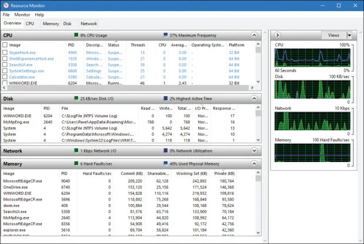
［CPU］タブを展開すると、タスクマネージャーと同じようにプロセスごとの CPU 使用率が表示されます。さらに平均 CPU 使用率の列があり、どのプロセスが継続的に CPU を使っているかを把握しやすくなります。サービスの一覧も別にあり、サービスごとの CPU 使用率と平均値を確認できます。サービスをホストする各プロセスには、ホストしているサービスグループが表示されます。Process Explorer と同様に、プロセスのチェックボックスを選択すると、そのプロセスが開いている名前付きハンドルと、そのアドレス空間にロードされた DLL などのモジュールを一覧できます。［ハンドルの検索］欄では、指定した名前付きリソースのハンドルを開いているプロセスを検索できます。
［メモリ］タブには、タスクマネージャーで得られる情報の多くがシステム全体について表示されます。物理メモリの棒グラフでは、現在の物理メモリがハードウェア予約済み、使用中、変更済み、スタンバイ、空きのどれに分類されるかを確認できます。各分類の正確な意味は第5章を参照してください。
［ディスク］タブはファイルごとの I/O 情報を表示します。どのファイルへのアクセスが多いか、どのファイルの書き込み量や読み取り量が多いかを容易に確認できます。結果はプロセスで絞り込めます。
［ネットワーク］タブには、有効なネットワーク接続と、それを所有するプロセス、接続を通過するデータ量が表示されます。これにより、普段は把握しづらいバックグラウンドのネットワーク通信も確認できます。システム上で有効な TCP 接続はプロセスごとに表示され、それぞれローカル側とリモート側のポートやアドレス、パケットの遅延などを確認できます。待ち受けポートもプロセスごとに一覧できるため、管理者は特定のポートで接続を待っているサービスやアプリケーションを確認できます。ポートとプロセスに対応するプロトコルとファイアウォールポリシーも表示されます。
注 Windows のパフォーマンスカウンターはすべてプログラムから参照できます。詳細については、MSDN のドキュメントで「performance counters」を検索してください。
カーネルデバッグ
カーネルデバッグでは、カーネル内部のデータ構造を調べたり、カーネル内の関数をステップ実行したりします。ほかのツールでは得られないシステム内部の情報を表示し、カーネル内で処理がどう進むかを追えるため、Windows の内部動作を調べるのに役立ちます。デバッグ方法を説明する前に、どの方法でも必要になるファイルを見ておきます。
カーネルデバッグ用のシンボル
シンボルファイルには、関数や変数の名前、データ構造のレイアウトと形式が入っています。リンカーが生成し、デバッガーがデバッグ中に名前を参照・表示するために使います。この情報はコードの実行には不要なので、通常はバイナリイメージに含まれません。これによりバイナリが小さくなり、動作も速くなります。デバッグ時には、調査対象のイメージに対応するシンボルファイルをデバッガーから参照できるようにしておきます。
プロセス一覧、スレッドのデータブロック、読み込まれたドライバーの一覧、メモリ使用状況などをカーネルデバッグツールで調べるには、少なくともカーネルイメージ Ntoskrnl.exe 用の正しいシンボルファイルが必要です。このファイルについては、第2章の「アーキテクチャの概要」を参照してください。シンボルファイルのバージョンは対応するイメージと一致している必要があります。サービスパックや修正プログラムでカーネルを更新した場合は、そのバージョンに合うシンボルを入手します。
Windows のさまざまなバージョンのシンボルをダウンロードしてインストールできますが、修正プログラムに対応したシンボルは個別に入手できないことがあります。対応するシンボルを入手するには、デバッガーのシンボルパスに所定の書式で Microsoft のシンボルサーバーを指定するのが簡単です。たとえば次の指定では、必要なシンボルをインターネット上のサーバーから取得し、C:\symbols にコピーを保存します。
srv*c:\symbols*http://msdl.microsoft.com/download/symbols
Windows 用デバッグツール
Windows 用デバッグツール（Debugging Tools for Windows）には、本書で Windows の内部動作を調べるために使う高度なデバッグツールが含まれています。新版は Windows SDK に同梱されています。インストール方法の違いについては、MSDN の Windows 用デバッグツールの資料を参照してください。これらのツールはユーザーモードのプロセスとカーネルの両方をデバッグできます。
Windows 用デバッグツールには cdb、ntsd、kd、WinDbg の4つのデバッガーが含まれます。どれも DbgEng.dll に実装された同じデバッグエンジンを使います。エンジンの詳細はツールのヘルプに記載されています。
cdbとntsdはコンソールで操作するユーザーモードデバッガーです。既存のコンソールから起動した場合、ntsdは新しいコンソールウィンドウを開き、cdbは元のウィンドウを使います。kdはコンソールで操作するカーネルモードデバッガーです。- WinDbg は GUI を備え、ユーザーモードとカーネルモードのどちらにも使えます。一度にデバッグできるのは一方だけです。
- ユーザーモードデバッグでは、
cdb、ntsd、WinDbg はほぼ同じ機能を提供します。使いやすいものを選べます。 - カーネルモードデバッグでも、
kdと WinDbg の機能は同等です。
ユーザーモードデバッグ
デバッガーをユーザーモードのプロセスに接続し、メモリを調べたり変更したりできます。接続には2つの方式があります。
- 侵入型（invasive） 既定では、実行中のプロセスへの接続に Windows の
DebugActiveProcess関数を使います。メモリの確認や変更、ブレークポイントの設定などができます。デバッガーを正常に切断すれば、対象プロセスを終了させずにデバッグを終えられます。デバッガー自体を強制終了した場合は、この扱いになりません。 - 非侵入型（noninvasive） デバッガーは
OpenProcessでプロセスを開きます。メモリは確認・変更できますが、デバッガーとして接続しないため、ブレークポイントは設定できません。別のデバッガーが侵入型で接続している場合でも利用できます。
ユーザーモードプロセスのダンプファイルも開けます。詳しくは第2部の例外ディスパッチの節を参照してください。
カーネルモードデバッグ
カーネルのデバッグには、コマンドライン版の Kd.exe と GUI 版の WinDbg.exe を使えます。これらには3つの利用方法があります。
- Windows のシステムクラッシュ時に作成されたダンプファイルを開きます。カーネルのクラッシュダンプについては第2部のクラッシュダンプ解析の章を参照してください。
- 稼働中のシステムに接続して状態を調べます。デバイスドライバーのコードを調べる場合は、ブレークポイントを設定できます。デバッグ対象のコンピューター（ターゲット）とデバッガーを実行するコンピューター（ホスト）が必要です。両者はヌルモデムケーブル、IEEE 1394 ケーブル、USB 2.0／3.0 デバッグケーブル、またはローカルネットワークで接続できます。ターゲットはデバッグモードで起動する必要があり、
Bcdedit.exeまたはMsconfig.exeで起動設定を変更できます。
UEFI BIOS の設定でセキュアブートを無効にする必要がある場合もあります。Hyper-V、VirtualBox、VMware Workstation などの仮想化製品で Windows 7 以前をデバッグする場合は、ゲスト OS のシリアルポートを名前付きパイプデバイスとして公開し、そのパイプ経由で接続することもできます。ゲストが Windows 8 以降なら、ゲスト OS の仮想 NIC を使ってホスト専用ネットワークを公開し、ローカルネットワーク経由でデバッグします。この方法なら、性能が1,000倍になります。
Windows では、ローカルのシステムに接続してその状態を調べることもできます。この方法をローカルカーネルデバッグと呼びます。WinDbg で開始するには、まずシステムがデバッグモードに設定されていることを確認します。たとえば msconfig.exe を実行し、［ブート］タブの［詳細オプション］で［デバッグ］を選び、Windows を再起動します。次に WinDbg を管理者権限で起動し、［File］メニューの［Kernel Debug］を選択して、［Local］タブで［OK］をクリックします。bcdedit.exe を使う方法もあります。図1-6に、64ビット版の Windows 10 での出力例を示します。ローカルカーネルデバッグでは、ブレークポイントの設定や .dump コマンドによるメモリダンプの作成など、一部の操作を実行できません。メモリダンプの作成には、この節の後半で紹介する LiveKd を使えます。

カーネルデバッグモードで接続したら、デバッガーの拡張コマンドを使い、スレッド、プロセス、I/O 要求パケット、メモリ管理情報など、内部データ構造の内容を表示できます。これらのコマンドは感嘆符（!）で始まるため、バンコマンドとも呼ばれます。本書では、各項目に関連するカーネルデバッガーのコマンドと出力を随所に掲載しています。WinDbg のインストールフォルダーにあるヘルプファイル Debugger.chm には、カーネルデバッガーの機能と拡張コマンドがすべて記載されています。また、Windows のカーネルシンボルファイルには型情報が含まれているため、dt（display type）コマンドで1,000種類以上のカーネル構造体を整形して表示できます。
実験：カーネル構造体の型情報の表示（dt nt!_*）
カーネルデバッガー（WinDbg や LiveKd）で dt nt!_* と入力すると、カーネルシンボルに含まれる構造体のうち、型情報が提供されている一覧が表示されます（ntkrnlmp は64ビットマルチプロセッサカーネルの内部ファイル名です。詳細は第2章を参照）：
lkd> dt nt!_* ntkrnlmp!_KSYSTEM_TIME ntkrnlmp!_NT_PRODUCT_TYPE ntkrnlmp!_ALTERNATIVE_ARCHITECTURE_TYPE ntkrnlmp!_KUSER_SHARED_DATA ntkrnlmp!_ULARGE_INTEGER ntkrnlmp!_TP_POOL ntkrnlmp!_TP_CLEANUP_GROUP ntkrnlmp!_ACTIVATION_CONTEXT ntkrnlmp!_TP_CALLBACK_INSTANCE ntkrnlmp!_TP_CALLBACK_PRIORITY ntkrnlmp!_TP_CALLBACK_ENVIRON_V3 ntkrnlmp!_TEB
dt コマンドではワイルドカードを用いた部分一致検索も可能です。例えば、割り込みオブジェクトの構造体名を探したい場合は、dt nt!_*interrupt* と入力します：
lkd> dt nt!_*interrupt* ntkrnlmp!_KINTERRUPT_MODE ntkrnlmp!_KINTERRUPT_POLARITY ntkrnlmp!_PEP_ACPI_INTERRUPT_RESOURCE ntkrnlmp!_KINTERRUPT ntkrnlmp!_UNEXPECTED_INTERRUPT ntkrnlmp!_INTERRUPT_CONNECTION_DATA ntkrnlmp!_INTERRUPT_VECTOR_DATA ntkrnlmp!_INTERRUPT_HT_INTR_INFO ntkrnlmp!_INTERRUPT_REMAPPING_INFO
構造体名が判明したら、以下のように dt コマンドに対象構造体名を指定して実行することで、構造体の詳細なフィールド定義をダンプできます（デバッガーは大文字小文字を区別しません）：
lkd> dt nt!_KINTERRUPT +0x000 Type : Int2B +0x002 Size : Int2B +0x008 InterruptListEntry : _LIST_ENTRY +0x018 ServiceRoutine : Ptr64 unsigned char +0x020 MessageServiceRoutine : Ptr64 unsigned char +0x028 MessageIndex : Uint4B +0x030 ServiceContext : Ptr64 Void +0x038 SpinLock : Uint8B +0x040 TickCount : Uint4B +0x048 ActualLock : Ptr64 Uint8B +0x050 DispatchAddress : Ptr64 void +0x058 Vector : Uint4B +0x05c Irql : UChar
+0x05d SynchronizeIrql : UChar +0x05e FloatingSave : UChar +0x05f Connected : UChar +0x060 Number : Uint4B +0x064 ShareVector : UChar +0x065 EmulateActiveBoth : UChar +0x066 ActiveCount : Uint2B +0x068 InternalState : Int4B +0x06c Mode : _KINTERRUPT_MODE +0x070 Polarity : _KINTERRUPT_POLARITY +0x074 ServiceCount : Uint4B +0x078 DispatchCount : Uint4B +0x080 PassiveEvent : Ptr64 _KEVENT +0x088 TrapFrame : Ptr64 _KTRAP_FRAME +0x090 DisconnectData : Ptr64 Void +0x098 ServiceThread : Ptr64 _KTHREAD +0x0a0 ConnectionData : Ptr64 _INTERRUPT_CONNECTION_DATA +0x0a8 IntTrackEntry : Ptr64 Void +0x0b0 IsrDpcStats : _ISRDPCSTATS +0x0f0 RedirectObject : Ptr64 Void +0x0f8 Padding : [8] UChar
なお、既定では dt コマンドは内部に含まれるサブ構造体（入れ子の構造体）の中身までは展開しません。サブ構造体のフィールドまで再帰的に展開して表示するには、-r スイッチまたは -b スイッチを使用します。例えば、カーネル割り込みオブジェクトを表示する際にこのスイッチを指定すると、InterruptListEntry フィールドに格納されている _LIST_ENTRY 構造体の内部フォーマット（Flink, Blink）まで展開されます。-r と -b の違いは、デバッガーのドキュメントを参照してください。
lkd> dt nt!_KINTERRUPT -r +0x000 Type : Int2B +0x002 Size : Int2B +0x008 InterruptListEntry : _LIST_ENTRY +0x000 Flink : Ptr64 _LIST_ENTRY +0x000 Flink : Ptr64 _LIST_ENTRY +0x008 Blink : Ptr64 _LIST_ENTRY +0x008 Blink : Ptr64 _LIST_ENTRY +0x000 Flink : Ptr64 _LIST_ENTRY +0x008 Blink : Ptr64 _LIST_ENTRY +0x018 ServiceRoutine : Ptr64 unsigned char
-r スイッチの後ろに数値を付けることで、再帰展開の深さを指定することも可能です。次の例では、入れ子の構造体を1階層だけ展開します。
lkd> dt nt!_KINTERRUPT -r1
デバッガーのセットアップや詳しいコマンド体系については、Debugging Tools for Windows のヘルプファイル（Debugger.chm）に網羅されています。さらにデバイスドライバ開発者を主眼に置いたデバッグ手法の詳細については、WDK の公式ドキュメントを参照してください。
LiveKd ツール
Sysinternals の LiveKd は、OSをデバッグモードで起動していなくても、稼働中のWindows上で即座に WinDbg や kd によるカーネルデバッグを可能にする無償ツールです。
デバッグモードを有効にしていない実稼働マシン上で急遽カーネルレベルの障害調査が必要になった場合や、再起動すると再現しなくなってしまうトラブルを調査する際に役立ちます。
LiveKd の使い方は WinDbg や kd とほぼ同様です。指定したコマンドラインオプションは、背後で起動されるデバッガーへとそのまま渡されます。既定ではコンソール版の kd が起動しますが、-w スイッチを付与することで GUI 版の WinDbg を起動できます（利用可能なオプション一覧は livekd -? で確認できます）。
LiveKd は疑似クラッシュダンプをデバッガーに提示します。クラッシュダンプに対して利用できる操作は、LiveKd でも実行できます。疑似ダンプは物理メモリを参照するため、システムが変更している途中のデータ構造を読み取り、整合しない内容が表示されることがあります。デバッガーを起動するたびに、その時点のシステム状態を調べられます。表示を更新するには q でデバッガーを終了します。LiveKd が再起動するか確認します。デバッガーが繰り返し出力を表示する場合は Ctrl+C で出力を中断して終了します。応答しなくなった場合は Ctrl+Break でデバッガープロセスを終了します。LiveKd が再起動するか確認します。
Windows ソフトウェア開発キット（SDK）
Windows SDK は、MSDN サブスクリプションまたはマイクロソフトの開発者ポータル（Windows 10 SDK 配布ページ）から誰でも無償でダウンロードできます。Visual Studio のインストーラーからもオプションとして導入可能です。単独で配布される Windows SDK は最新の Windows に対応します。Visual Studio に付属する SDK は、その Visual Studio のリリース時点の版であるため、古い場合があります。
Windows SDK には、前述の「Debugging Tools for Windows」に加えて、Windows アプリケーションをコンパイル・リンクするための C言語ヘッダーファイルとライブラリ群が含まれています。Windows 内部構造を探究する観点において特に価値が高いのは、公式の API ヘッダーファイル群（例: C:\Program Files (x86)\Windows Kits\10\Include）と、付属する各種ユーティリティ（Bin フォルダ）です。また、オフラインでも参照できる膨大な技術ドキュメントや、SDK および MSDN ライブラリに付属するサンプルソースコードも重要な知見を与えてくれます。
Windows ドライバーキット（WDK）
Windows Driver Kit (WDK) も同様に、MSDN サブスクリプションおよび公式サイトから無償で入手できます。WDK のドキュメントは MSDN ライブラリに完全に統合されています。
WDK は本来デバイスドライバ開発者向けのキットですが、Windows の内部構造に関する情報源でもあります。例えば、第6章では I/O システムのアーキテクチャやドライバモデルの骨格を解説しますが、個々のカーネルサポート関数の詳細なパラメータまでは網羅していません。WDK のドキュメント（特に『Kernel-Mode Driver Architecture Design Guide』および『Kernel-Mode Driver Reference』）には、すべてのカーネルサポート関数とドライバ機構のチュートリアルおよびリファレンスが網羅されています。
WDK にはドキュメントに加え、主要な内部データ構造と定数、および多数の内部システムルーチンのインターフェイスを定義するヘッダーファイルが含まれています。特に ntddk.h、ntifs.h、wdm.h が該当します。本書では構造体のおおまかな配置と内容は示しますが、個々のフィールドのサイズやデータ型までは説明しません。オブジェクトのディスパッチャーヘッダー、待機ブロック、イベント、ミュータント、セマフォなど、多くのデータ構造は WDK で詳しく説明されているため、カーネルデバッガーで調べる際に役立ちます。
本書よりも詳しく I/O システムやドライバーモデルを調べるには、WDK のドキュメント、特に Kernel-Mode Driver Architecture Design Guide と Kernel-Mode Driver Reference を参照してください。Walter Oney の Programming the Microsoft Windows Driver Model, Second Edition（Microsoft Press、2002年）や、Penny Orwick と Guy Smith の Developing Drivers with the Windows Driver Foundation（Microsoft Press、2007年）も参考になります。
Sysinternals ツール群
本書の実験の多くでは、Sysinternals から無償で入手できるツールを使います。本書の共著者である Mark Russinovich が、その大半を作成しました。よく使われるツールには Process Explorer と Process Monitor があります。これらのユーティリティの多くはカーネルモードのデバイスドライバーをインストールして実行するため、管理者権限または昇格した権限が必要です。権限を昇格していない標準ユーザーでも、一部のツールは利用できますが、使える機能や得られる出力は限られます。
Sysinternals ツールは頻繁に更新されるため、最新版を使ってください。更新情報は、RSS フィードがある Sysinternals Site Blog でも受け取れます。全ツールの概要と使い方、問題解決の事例については、Mark Russinovich と Aaron Margosis の Windows Sysinternals Administrator’s Reference（Microsoft Press、2011年）を参照してください。ツールについて質問や議論をするには、Sysinternals Forums を利用できます。
まとめ
本章では、本書全体で使う Windows の主な技術概念と用語を紹介しました。また、Windows の内部動作を調べるのに役立つツールの一部を見てきました。次章では、システムアーキテクチャと主要コンポーネントを概観し、Windows の内部設計を調べていきます。
第2章 システムアーキテクチャ
前章で紹介した用語、概念、ツールを踏まえ、ここからは Microsoft Windows の設計目標と内部構造を見ていきます。本章ではシステム全体の構成を取り上げ、主要なコンポーネント、それらの連携、各コンポーネントが動く実行コンテキストを説明します。まず、Windows の当初の設計と仕様を決めた要件と目標を振り返ります。
要件と設計目標
1989年に Windows NT の仕様を策定した際の要件は、次のとおりです。
- 32ビットで動作し、プリエンプションと再入可能性を備えた仮想メモリ OS を提供する。
- 複数のハードウェアアーキテクチャとプラットフォームで動作する。
- 対称型マルチプロセッサーシステムで動作し、プロセッサーを増やしても性能が伸びる。
- ネットワーククライアントとサーバーの両方で、分散コンピューティングに適した基盤を提供する。
- 既存の16ビット MS-DOS アプリケーションと Microsoft Windows 3.1 アプリケーションの大半を実行できる。
- POSIX 1003.1 への準拠を求める政府の要件を満たす。
- OS のセキュリティに関する政府と業界の要件を満たす。
- Unicode に対応し、世界各地の市場に適応しやすくする。
開発チームは、これらの要件を満たすために必要な数多くの判断の指針として、プロジェクトの開始時に次の設計目標を定めました。
- 拡張性 市場の要求に応じてコードを拡張・変更しやすくします。
- 移植性 複数のハードウェアアーキテクチャで動作し、市場の要求に応じて新しいアーキテクチャへ比較的容易に移植できるようにします。
- 信頼性と堅牢性 内部の誤動作と外部からの改変からシステムを守り、アプリケーションが OS やほかのアプリケーションに損害を与えられないようにします。
- 互換性 既存の技術を拡張しながら、ユーザーインターフェイスと API は旧版の Windows や MS-DOS と互換性を保ちます。UNIX、OS/2、NetWare など、ほかのシステムとも連携できるようにします。
- 性能 ほかの設計目標を満たす範囲で、各ハードウェアプラットフォームでの処理速度と応答性を高めます。
Windows の内部構造と動作を調べると、当初の設計目標と市場の要件がシステムの実装にどう反映されているかが分かります。まず、Windows の設計モデルの全体像を確認し、ほかの現代的な OS と比較します。
オペレーティングシステムのモデル
多くのマルチユーザー OS では、アプリケーションと OS 本体が分離されています。OS のカーネルコードは、システムデータとハードウェアにアクセスできる特権モード（本書ではカーネルモード）で動作します。アプリケーションのコードは特権のないユーザーモードで動作し、利用できるインターフェイスとシステムデータが限られます。ハードウェアへも直接アクセスできません。ユーザーモードのプログラムがシステムサービスを呼ぶと、プロセッサーは特殊な命令を実行して呼び出し元のスレッドをカーネルモードへ切り替えます。処理が終わると、OS がスレッドのコンテキストをユーザーモードへ戻し、呼び出し元の実行を再開します。
Windows は多くの UNIX と同様に、OS とデバイスドライバーのコードの大半が保護されたカーネルモードのメモリ空間を共有するという意味で、モノリシックな OS です。そのため、あるコンポーネントやドライバーが、ほかの OS コンポーネントのデータを破損させる可能性があります。第1章で見たように、Windows は WHQL などを通じてサードパーティー製ドライバーの品質を高め、KMCS によって信頼できる発行元に制限します。仮想化ベースのセキュリティや、Device Guard、Hyper Guard などによるカーネルの保護も備えています。本節ではこれらの関係を示します。詳しくは、第1部の「第7章 セキュリティ」と第2部の「第8章 システムメカニズム」を参照してください。
アプリケーションはカーネルのサービスをすばやく呼び出せますが、OS の特権部分のコードやデータには直接アクセスできません。そのため、アプリケーションの誤動作から OS の各コンポーネントを保護できます。この分離は、Windows がアプリケーションサーバーやワークステーションとしての安定性を保ちながら、仮想メモリ管理、ファイル I/O、ネットワーク通信、ファイルやプリンターの共有といった基本サービスを迅速に処理できる理由の1つです。
Windows のカーネルモードコンポーネントは、基本的なオブジェクト指向設計の原則にも従います。通常、あるコンポーネントが別のコンポーネントのデータ構造を直接参照することはありません。定められたインターフェイスを介して引数を渡し、データ構造を参照・変更します。
Windows は共有リソースを表すためにオブジェクトを広く使います。カーネルモードの OS コードの大半は、移植性のために C で書かれています。C は、多態的な関数やクラスの継承といったオブジェクト指向の構文を直接サポートしません。そのため Windows のオブジェクトの実装は、オブジェクト指向言語の考え方を取り入れつつ、特定の言語機能に依存しません。この意味で、厳密なオブジェクト指向システムとは異なります。
アーキテクチャの概要
ここからは Windows のアーキテクチャを構成する主なコンポーネントを見ていきます。図2-1は構成を簡略化したものです。ネットワークコンポーネントや、デバイスドライバーのさまざまな階層構成は省いています。

図2-1の上側の境界線は、Windows のユーザーモードとカーネルモードを分けています。線より上の箱はユーザーモードプロセス、下のコンポーネントはカーネルモードの OS サービスです。第1章で説明したように、ユーザーモードのスレッドはプロセス固有のアドレス空間で実行されます。カーネルモードで実行している間は、システム空間にもアクセスできます。システムプロセス、サービスプロセス、ユーザープロセス、環境サブシステムは、それぞれ固有のプロセスアドレス空間を持ちます。
もう1本の境界線は、Windows のカーネルモード部分とハイパーバイザーを分けています。ハイパーバイザーも CPU の特権レベル0で動きますが、Intel の VT-x や AMD の SVM が提供する専用の CPU 命令を使うため、カーネルから分離された状態でカーネルやアプリケーションを監視できます。この分離を「リング −1」と呼ぶことがありますが、実際にその番号の CPU 特権リングがあるわけではありません。
ユーザーモードプロセスは、大きく次の4種類に分けられます。
- ユーザープロセス 32ビットまたは64ビットの Windows アプリケーション、16ビットの Windows 3.1 または MS-DOS アプリケーション、32ビットまたは64ビットの POSIX アプリケーションが該当します。Windows 8 以降で Windows ランタイム上で動く Windows アプリも、Windows アプリケーションに含まれます。16ビットアプリケーションは32ビット版 Windows でのみ実行できます。Windows 8 以降、従来の POSIX アプリケーションはサポートされません。
- サービスプロセス タスク スケジューラや Print Spooler などの Windows サービスをホストします。サービスは通常、ユーザーがサインインしているかどうかにかかわらず動作する必要があります。Microsoft SQL Server や Microsoft Exchange Server など、多くのサーバーアプリケーションにも、サービスとして動くコンポーネントがあります。詳しくは、第2部の第10章「Windows サービス」を参照してください。
- システムプロセス サインインを処理するプロセスやセッションマネージャーなど、OS に組み込まれたプロセスです。サービス制御マネージャーが起動する Windows サービスには含まれません。
- 環境サブシステムのサーバープロセス ユーザーや開発者に提供される OS 環境の一部を実装します。Windows NT には当初、Windows、POSIX、OS/2 の3つの環境サブシステムが同梱されていました。OS/2 サブシステムが同梱された最後の版は Windows 2000、従来の POSIX サブシステムでは Windows XP です。Windows 7 の Ultimate と Enterprise、および Windows Server 2008 R2 の全エディションは、拡張された POSIX サブシステムである Subsystem for UNIX-based Applications（SUA）に対応していました。SUA の提供は終了しており、クライアント版とサーバー版のどちらでもオプション機能として提供されていません。
注 原著執筆時点の Windows 10 バージョン1607には、開発者向けベータ版の Windows Subsystem for Linux（WSL）が含まれています。WSL の仕組みは、ここで説明する環境サブシステムとは異なります。本章の後半で WSL と関連する Pico プロバイダーを説明します。Pico プロセスについては、第3章の「Pico プロセス」を参照してください。
図2-1では、サービスプロセスとユーザープロセスの下に、サブシステム DLL の箱があります。Windows のユーザーアプリケーションは、1つ以上のサブシステム DLL を介して OS のネイティブサービスを呼び出します。DLL は文書化された関数を、主に Ntdll.dll に実装されたネイティブシステムサービスの呼び出しに変換します。ネイティブサービスの大半は文書化されていません。変換の際には、ユーザープロセスを処理する環境サブシステムのプロセスにメッセージを送る場合もあります。
Windows のカーネルモードコンポーネントには、次のようなものがあります。
- エグゼクティブ メモリ管理、プロセスとスレッドの管理、セキュリティ、I/O、ネットワーク、プロセス間通信など、OS の基本サービスを備えます。
- Windows カーネル スレッドのスケジューリング、割り込みと例外のディスパッチ、マルチプロセッサー間の同期など、OS の低レベル機能を実装します。エグゼクティブのほかの部分が上位の機能を実装するために使うルーチンと基本オブジェクトも提供します。
- デバイスドライバー ユーザーからの I/O 関数呼び出しを個別のハードウェアへの I/O 要求に変換するドライバーと、ファイルシステムやネットワークのドライバーなど、特定のハードウェアを直接扱わないドライバーが含まれます。
- ハードウェア抽象化レイヤー（HAL） マザーボードの違いなど、プラットフォーム固有の差異を吸収し、カーネル、デバイスドライバー、エグゼクティブのほかの部分に影響が及ばないようにします。
- ウィンドウシステムとグラフィックスシステム ウィンドウ、ユーザーインターフェイスのコントロール、描画などの処理を実装します。Windows の USER と GDI の機能がこれにあたります。
- ハイパーバイザー層 この環境にあるコンポーネントはハイパーバイザーそのもので、ドライバーやほかのモジュールはありません。内部には複数の層とサービスがあり、専用のメモリマネージャー、仮想プロセッサーのスケジューラー、割り込みとタイマーの管理、同期ルーチン、パーティション（仮想マシンのインスタンス）の管理、パーティション間通信（IPC）などが含まれます。
表2-1に、Windows の主要コンポーネントのファイル名を示します。本書では一部のシステムファイルを名前で参照します。各コンポーネントの詳細は、本章の後半と以降の章で説明します。
| ファイル名 | コンポーネント |
|---|---|
Ntoskrnl.exe | エグゼクティブとカーネル |
Hal.dll | HAL |
Win32k.sys | Windows サブシステム（GUI）のカーネルモード部分 |
Hvix64.exe（Intel）、Hvax64.exe（AMD） | ハイパーバイザー |
\SystemRoot\System32\Drivers 内の .sys ファイル | DirectX、ボリュームマネージャー、TCP/IP、TPM、ACPI サポートなどの主要ドライバー |
Ntdll.dll | 内部サポート関数と、エグゼクティブの関数を呼び出すためのシステムサービスディスパッチスタブ |
Kernel32.dll、Advapi32.dll、User32.dll、Gdi32.dll | Windows サブシステムの主要 DLL |
各コンポーネントの詳細に入る前に、Windows カーネルの設計の基本を確認します。まず、複数のハードウェアアーキテクチャへの移植性をどのように確保しているかを見ていきます。
移植性
Windows はさまざまなハードウェアアーキテクチャで動作するよう設計されました。初版の Windows NT は x86 と MIPS に対応し、その後まもなく Digital Equipment Corporation の Alpha AXP にも対応しました。同社は Compaq に買収され、Compaq は後に Hewlett-Packard と合併しました。Alpha AXP は64ビットプロセッサーでしたが、Windows NT は32ビットモードで動作しました。Windows 2000 の開発中には Alpha AXP 向けのネイティブ64ビット版が稼働していましたが、リリースされませんでした。Windows NT 3.51 は4つ目のアーキテクチャとして Motorola の PowerPC に対応しました。市場の需要が変わり、Windows 2000 の開発前に MIPS と PowerPC のサポートが終了しました。その後 Compaq が Alpha AXP のサポートを打ち切り、Windows 2000 の対応アーキテクチャは x86 だけになりました。Windows XP と Windows Server 2003 は、Intel Itanium（IA-64）と、AMD64 および互換の Intel EM64T に対応しました。本書では AMD64 と EM64T をまとめて x64 と呼びます。64ビット版 Windows で32ビットアプリケーションを実行する仕組みは、第2部の第8章「WOW64（Windows-on-Windows）」で説明します。IA-64 のサポートは Windows Server 2008 R2 を最後に終了しました。
その後の Windows は ARM にも対応しました。たとえば、提供が終了した Windows RT は ARM 向けの Windows 8 でした。Windows Phone 8.x の後継である Windows 10 Mobile は Qualcomm Snapdragon などの ARM ベースのプロセッサーで動作します。Windows 10 IoT は x86 機器と ARM 機器の両方で動作します。ARM 機器には、ARM Cortex-A7 を使う Raspberry Pi 2 や、ARM Cortex-A53 を使う Raspberry Pi 3 などがあります。原著執筆時点では、64ビット ARM を採用する機器の増加に伴い、AArch64（ARM64）への対応も見込まれていました。
Windows が複数のハードウェアアーキテクチャやプラットフォームに対応できる主な理由は2つあります。
- 階層化した設計 プロセッサーやプラットフォームに固有の低レベル処理を個別のモジュールへ分け、上位層にはハードウェアの違いが及ばないようにします。移植性を支える主なコンポーネントは、
Ntoskrnl.exeのカーネルとHal.dllの HAL です。スレッドのコンテキスト切り替えやトラップのディスパッチなど、アーキテクチャ固有の処理はカーネルが担います。同じアーキテクチャでもマザーボードなどによって変わる処理は HAL が担います。ほかにアーキテクチャ固有のコードをある程度持つのはメモリマネージャーですが、システム全体から見ると少量です。ハイパーバイザーも同じ考え方で設計されており、AMD（SVM）と Intel（VT-x）で大半の実装を共有します。プロセッサー固有の部分があるため、表2-1に示したように別々のファイルを使います。 - C 言語の採用 Windows の大半は C、一部は C++ で書かれています。アセンブリ言語を使うのは、割り込みトラップハンドラーのようにハードウェアと直接やり取りする部分や、コンテキストの切り替えのように性能が特に重要な部分です。カーネルと HAL 以外にも、OS の中核の一部にアセンブリ言語で書かれたコードがあります。
たとえば、不可分な操作を行う命令のルーチンやローカルプロシージャ呼び出し機構の一部に、アセンブリ言語のコードがあります。Windows サブシステムのカーネルモード部分や、Ntdll.dll のプロセス起動コードなど、一部のユーザーモードライブラリでも使われます。Ntdll.dll については本章の後半で説明します。
対称型マルチプロセッシング
マルチタスクでは、OS が1つのプロセッサーを複数のスレッドに割り当て、時間を分けて実行します。コンピューターにプロセッサーが複数あれば、それぞれが1つずつスレッドを処理し、複数のスレッドを実際に同時に実行できます。
複数のプロセッサーを持つコンピューターで効率よく動くことは、Windows の設計目標の1つでした。Windows は対称型マルチプロセッシング（SMP）を採用しています。マスタープロセッサーを置かず、OS のスレッドとユーザーのスレッドをどのプロセッサーでも実行できます。また、すべてのプロセッサーが1つのメモリ空間を共有します。非対称型マルチプロセッシング（ASMP）では一般に、1つのプロセッサーが OS のカーネルコードを実行し、残りはユーザーコードだけを実行します。図2-2に2つの方式の違いを示します。

Windows は、マルチコア、同時マルチスレッディング（SMT）、異種混在型、非均一メモリアクセス（NUMA）の4種類のマルチプロセッサー構成にも対応しています。以下で簡単に紹介します。各構成でのスケジューリングについては、第4章の「スレッドスケジューリング」を参照してください。
Windows で SMT が初めて使われたのは、物理コア1つを2つの論理プロセッサーとして扱う Intel のハイパースレッディング・テクノロジーに対応したときです。AMD の Zen マイクロアーキテクチャのプロセッサーも、同様の SMT 技術により論理プロセッサー数を2倍にします。
論理プロセッサーはそれぞれ固有の CPU 状態を持ちますが、実行エンジンとオンボードキャッシュを共有します。一方がキャッシュミスや分岐予測の失敗などで処理を進められない間も、もう一方は実行を続けられます。Intel と AMD の製品資料では、SMT によって追加される論理プロセッサーを「スレッド」と呼びます。たとえば「4コア8スレッド」は、論理プロセッサーが8つあり、最大8つのスレッドを同時に実行できるという意味です。スケジューラーも SMT に対応しています。たとえば、ほかの論理プロセッサーが稼働中の物理コアに空きがあっても、空いている物理コアがあれば、そちらにスレッドを割り当てます。詳細は第4章を参照してください。
NUMA システムでは、プロセッサーをノードという単位にまとめます。各ノードは固有のプロセッサーとメモリを持ち、キャッシュの一貫性を保つ相互接続バスを介してシステム全体につながります。すべてのプロセッサーが全メモリにアクセスできる点では、Windows は NUMA 上でも SMP システムとして動作します。同じノードにあるメモリには、ほかのノードのメモリより速くアクセスできます。Windows は、各スレッドを、そのスレッドが使うメモリと同じノードのプロセッサーに割り当て、性能を高めようとします。メモリもまず同じノードから割り当て、必要なら別のノードから確保します。
Windows はマルチコアシステムにも標準で対応します。同じパッケージ内に複数の物理コアがあるため、従来の SMP のコードは各コアを個別のプロセッサーとして扱います。ただし、ライセンスなど、一部の集計や識別では、同じプロセッサーパッケージ内のコアと別のソケットにあるコアを区別します。データ共有を効率よく行うためにキャッシュの構成を考慮するときにも、この区別が重要です。
ARM 版 Windows は、異種混在型マルチプロセッシングにも対応します。ARM での実装は big.LITTLE と呼ばれます。この SMP ベースの設計では、コアの性能がそれぞれ異なります。一方、コアごとに異なる命令を実行する純粋な異種混在型とは違い、すべてのコアが同じ命令を実行できます。クロック周波数と、最大負荷時やアイドル時の消費電力が異なるため、高速なコアと低速なコアを組み合わせられます。
たとえば、古い1 GHzのデュアルコア機でも、ネット回線が同じなら、メールの送信が3.6 GHzの8コア機より遅いとは限りません。入力速度や回線の帯域幅のほうが処理速度を左右するためです。一方、新しい高性能機は最も消費電力の低いモードでも、古い機種より多くの電力を使う可能性があります。高性能機が1 GHzまで下げられても、古い機種はたとえば200 MHzまで下げているかもしれません。
高性能なコアと低消費電力のコアを組み合わせた ARM プラットフォームでは、対応するカーネルスケジューラーにより、必要に応じて全コアを有効にして処理能力を最大化できます。処理に応じて両方の種類のコアを一部ずつ使うことも、SMS やプッシュメールだけなら低消費電力のコア1つで動かすこともできます。Windows 10 は異種混在型スケジューリングポリシーに対応しており、スレッドは処理に合ったポリシーを選べます。スケジューラーと電源マネージャーが連携してそのポリシーを適用します。詳しくは第4章を参照してください。
Windows の当初の設計では、エディションごとのライセンス上の制限を除き、プロセッサー数に特定の上限を設けていませんでした。
Windows は、管理のしやすさと処理効率のため、プロセッサーの総数や稼働・アイドル状態などをビットマスクで管理します。アフィニティマスクとも呼ばれ、ビット数はマシンのネイティブデータ型と同じ32ビットまたは64ビットです。プロセッサーはレジスター内でビットを直接操作できます。マスクを任意に広げることはできないため、当初はネイティブの1ワードで表現できる数までしか CPU を扱えませんでした。
Windows は互換性を維持しつつ多数のプロセッサーに対応するため、プロセッサーグループを導入しました。1グループ内のプロセッサーは、1つのアフィニティマスクで表せます。カーネルやアプリケーションは、アフィニティを変更する際に対象のグループを選べます。対応アプリケーションはグループ数を調べ、各グループのマスクを列挙できます。原著執筆時点ではグループ数の上限は20、論理プロセッサー数の上限は640です。従来のアプリケーションからは、現在のグループだけが見えます。NUMA の構成も関係するプロセッサーのグループ分けや、従来のプロセスへのグループ割り当てについては、第4章の「プロセッサグループへの割り当て」を参照してください。
ライセンスで使用できるプロセッサー数は、Windows のエディションによって異なります。本章後半の表2-2を参照してください。この数は、名前と値の組を格納するシステムのライセンスポリシーファイル %SystemRoot%\ServiceProfiles\LocalService\AppData\Local\Microsoft\WSLicense\tokens.dat の kernel-RegisteredProcessors に記録されます。
スケーラビリティ
複数のプロセッサーを効率よく使うには、SMP システム上で OS のコードが正しく動作するための規則を守る必要があります。リソースの競合など、性能を左右する問題は単一プロセッサーの場合より複雑で、設計段階から考慮する必要があります。Windows では、次の機能がマルチプロセッサーでの動作を支えています。
- 利用可能などのプロセッサーでも OS コードを実行でき、複数のプロセッサーでも同時に実行できます。
- 単一のプロセスに複数の実行スレッドがあり、それぞれを異なるプロセッサーで同時に実行できます。
- カーネル、デバイスドライバー、サーバープロセスは、細かい単位で同期することで多くの処理を並行して実行できます。カーネルで使うスピンロック、キュー付きスピンロック、プッシュロックについては、第2部の第8章を参照してください。
- 第6章で扱う I/O 完了ポートなどを使うと、複数プロセッサーで性能を伸ばせるマルチスレッドのサーバープロセスを効率よく実装できます。
Windows カーネルのスケーラビリティは世代を追って改善されてきました。Windows Server 2003 では CPU ごとにスケジューリングキューを設け、細かい単位でロックすることで、複数のプロセッサーが並行してスレッドの割り当てを決められるようになりました。Windows 7 と Windows Server 2008 R2 では、待機のディスパッチ処理でスケジューラー全体のロックが不要になりました。ロック範囲の細分化は、メモリマネージャー、キャッシュマネージャー、オブジェクトマネージャーなどでも進められました。
クライアント版とサーバー版の違い
Windows にはクライアント版とサーバー版があります。デスクトップ向け Windows 10 には、Home、Pro、Education、Pro Education、Enterprise、Enterprise Long Term Servicing Branch（LTSB）の6つのエディションがあります。デスクトップ向け以外には、Windows 10 Mobile、Mobile Enterprise、IoT Core、IoT Core Enterprise、IoT Mobile Enterprise があります。特定の地域の要件に合わせた N シリーズなどの派生版もあります。
Windows Server 2016 の系列には、Datacenter、Standard、Essentials、MultiPoint Premium Server、Windows Storage Server 2016、Microsoft Hyper-V Server 2016 の6種類があります。
主な違いは次のとおりです。
- Windows Server 2016 の Datacenter と Standard では、ソケット数に代わりコア数を基準に価格が決まります。
- サポートする論理プロセッサーの総数。
- サーバー版で実行できる Hyper-V コンテナーの数。原著では、クライアント版が対応するのは名前空間ベースの Windows コンテナーだけだと説明しています。
- 使用できる物理メモリの量。厳密には、RAM に使える物理アドレスの上限です。詳細は第5章「メモリ管理」を参照してください。
- 同時に受け付けられるネットワーク接続数。たとえば原著が扱うクライアント版では、ファイル・印刷サービスへの同時接続は最大10です。
- マルチタッチとデスクトップコンポジションへの対応。
- BitLocker、VHD からの起動、AppLocker、Hyper-V などの機能と、100を超える設定可能なライセンスポリシー値への対応。
- サーバー版に付属する追加のサービス。ディレクトリサービス、Host Guardian、記憶域スペース ダイレクト、シールドされた仮想マシン、クラスタリングなどがあります。
表2-2は、Windows 10、Windows Server 2012 R2、Windows Server 2016 の一部のエディションで、サポートするメモリとプロセッサーの違いを示します。Windows Server 2012 R2 の詳細は Microsoft のエディション比較表を参照してください。Windows 10、Windows Server 2016、それ以前の OS のメモリ上限は Windows のメモリ上限資料に記載されています。
クライアント版とサーバー版には複数のパッケージがありますが、主要なシステムファイルは共通です。これにはカーネルイメージ Ntoskrnl.exe と PAE 版の Ntkrnlpa.exe、HAL のライブラリ、デバイスドライバー、基本的なシステムユーティリティと DLL が含まれます。
| エディション | ソケット数（32ビット版） | 物理メモリ（32ビット版） | 論理プロセッサー数またはソケット数（64ビット版） | 物理メモリ（x64 版） |
|---|---|---|---|---|
| Windows 10 Home | 1 | 4 GB | 1ソケット | 128 GB |
| Windows 10 Pro | 2 | 4 GB | 2ソケット | 2 TB |
| Windows 10 Enterprise | 2 | 4 GB | 2ソケット | 2 TB |
| Windows Server 2012 R2 Essentials | 対象外 | 対象外 | 2ソケット | 64 GB |
| Windows Server 2016 Standard | 対象外 | 対象外 | 512論理プロセッサー | 24 TB |
| Windows Server 2016 Datacenter | 対象外 | 対象外 | 512論理プロセッサー | 24 TB |
各エディションが同じカーネルイメージを使うため、システムは HKLM\SYSTEM\CurrentControlSet\Control\ProductOptions キーの ProductType と ProductSuite を参照し、どのエディションで起動したかを判定します。ProductType でクライアントかサーバーかを区別します。これらの値は、前述のライセンスポリシーファイルに基づいてレジストリに読み込まれます。ProductType の値を表2-3に示します。ユーザーモードでは VerifyVersionInfo で確認できます。デバイスドライバーは、WDK に記載されているカーネルモードの関数 RtlGetVersion と RtlVerifyVersionInfo を使えます。
| Windows の種類 | ProductType の値 |
|---|---|
| Windows クライアント | WinNT |
| Windows サーバー（ドメインコントローラー） | LanmanNT |
| Windows サーバー（ドメインコントローラー以外） | ServerNT |
別のレジストリ値 ProductPolicy には、エディションと有効な機能を区別する tokens.dat のデータのコピーがキャッシュされています。
同じ主要ファイルを使っていても、既定の動作は異なります。サーバー版は高性能なアプリケーションサーバーとしてシステム全体のスループットを重視します。サーバー機能を備えるクライアント版では、対話型のデスクトップ操作への応答時間を重視します。たとえば起動時には、製品の種類に応じて、OS のヒープ（プール）の数とサイズ、内部のシステムワーカースレッドの数、システムデータキャッシュのサイズが変わります。実行時にも、メモリマネージャーがシステムとプロセスのメモリ要求をどう調整するかなどの方針が異なります。
既定のスレッドクォンタム（タイムスライス）の長さなど、スケジューリングの一部もクライアント版とサーバー版で異なります。詳細は第4章を参照してください。このほか、動作に大きな違いがある箇所は、該当する章で説明します。特に断りのない限り、本書の説明は両方の版に当てはまります。
実験：ライセンスポリシーで有効になる機能を調べる
Windows には、ソフトウェアライセンスの仕組みで有効にできる機能が100以上あります。ポリシー設定は、クライアント版とサーバー版の違いだけでなく、エディション（SKU）ごとの違いも決めます。たとえば BitLocker は Windows Server と、クライアント版の Pro および Enterprise で利用できます。本書の付属ファイルにある SlPolicy を使うと、ポリシー値の多くを表示できます。
ポリシー設定は、そのポリシーが適用されるモジュールを表す分類（facility）ごとにまとめられています。SlPolicy.exe に -f を指定すると、ツールが認識する分類の一覧が表示されます。
C:\>SlPolicy.exe -f Software License Policy Viewer Version 1.0 (C)2016 by Pavel Yosifovich Desktop Windows Manager Explorer Fax Kernel IIS …
-f の後ろに分類名を指定すると、その分類のポリシー値を表示できます。たとえば CPU とメモリの上限を調べるには、Kernel を指定します。Windows 10 Pro での出力例を示します。
C:\>SlPolicy.exe -f Kernel Software License Policy Viewer Version 1.0 (C)2016 by Pavel Yosifovich Kernel ------ Maximum allowed processor sockets: 2 Maximum memory allowed in MB (x86): 4096 Maximum memory allowed in MB (x64): 2097152 Maximum memory allowed in MB (ARM64): 2097152 Maximum physical page in bytes: 4096 Device Family ID: 3 Native VHD boot: Yes Dynamic Partitioning supported: No Virtual Dynamic Partitioning supported: No Memory Mirroring supported: No Persist defective memory list: No
この出力では、プロセッサーのソケット数は最大2、メモリの上限は x86 で4,096 MB、x64 と ARM64 で2,097,152 MBです。ネイティブ VHD からの起動には対応しますが、動的パーティション分割やメモリミラーリングなどの項目は無効です。
次は、Windows Server 2012 R2 Datacenter で同じ Kernel の設定を調べた例です。
Kernel ------ Maximum allowed processor sockets: 64 Maximum memory allowed in MB (x86): 4096 Maximum memory allowed in MB (x64): 4194304 Add physical memory allowed: Yes Add VM physical memory allowed: Yes Maximum physical page in bytes: 0 Native VHD boot: Yes Dynamic Partitioning supported: Yes Virtual Dynamic Partitioning supported: Yes Memory Mirroring supported: Yes Persist defective memory list: Yes
Datacenter の出力例では、最大64ソケット、x64 で最大4,194,304 MBと表示されます。物理メモリの追加、VM への物理メモリの追加、動的パーティション分割、メモリミラーリングなどのポリシーも有効です。
チェックビルド
Windows には、チェックビルドと呼ばれる内部デバッグ用のビルドがあります。外部向けの提供は Windows 8.1 以前に限られ、利用には MSDN の Operating Systems サブスクリプションが必要でした。Windows のソースコードを、コンパイル時に DBG フラグを定義して再コンパイルします。このフラグにより、デバッグとトレース用のコードが条件付きで組み込まれます。また、機械語を読みやすくするため、実行速度を上げる目的でバイナリ内のコード配置を最適化する後処理は行いません。Windows 用デバッグツールのヘルプにある「Debugging performance-optimized code」を参照してください。
チェックビルドは主にデバイスドライバーの開発を支援するもので、ドライバーやほかのシステムコードが呼び出すカーネルモード関数で、より厳密にエラーを検査します。たとえば、誤った割り込み要求レベルでスピンロックを取得するなど、引数を検証するシステム関数をカーネルモードコードが誤って呼び出すと、その場でシステムの実行が停止します。データ構造が破損し、後になってクラッシュするのを防ぐためです。
完全なチェックビルドは不安定なことが多く、大半の環境で実行が困難でした。そのため、原著が対象とする Windows 10 では、Microsoft はカーネルと HAL のチェック版だけを提供していました。ドライバー開発者は、完全版に伴う問題を避けながら、自分のコードがやり取りするカーネルと HAL で同様の検査を利用できます。この組み合わせは WDK で無償提供され、インストール先のルートにある \Debug ディレクトリに入っています。手順は WDK の「Installing Just the Checked Operating System and HAL」を参照してください。
実験：チェックビルドで動作しているか確認する
カーネルがチェックビルドか、市販版のフリービルドかを表示する専用ツールは、Windows に付属していません。この情報は Windows Management Instrumentation（WMI）の Win32_OperatingSystem クラスにある Debug プロパティから取得できます。
次の PowerShell コマンドで Debug プロパティを表示できます。PowerShell を開いて実行してください。
PS C:\Users\pavely> Get-WmiObject win32_operatingsystem | select debug debug ----- False
この例では Debug が False なので、システムはチェックビルドで動いていません。
チェックビルドのバイナリに追加されるコードの多くは、WDK のヘッダーファイル Wdm.h に定義される ASSERT や NT_ASSERT マクロに由来します。これらのマクロは、データ構造や引数が妥当かどうかなどの条件を検査します。式の評価結果が FALSE の場合、マクロはカーネルモード関数 RtlAssert を呼ぶか、アサーション割り込みを発生させます。RtlAssert は DbgPrintEx を呼び、デバッグメッセージをバッファーに書き込みます。x64 と x86 では、アサーション割り込みの番号は 0x2B です。
カーネルデバッガーが接続され、適切なシンボルが読み込まれていれば、メッセージが自動表示されます。その後、ブレークポイントで停止するか、失敗を無視するか、プロセスまたはスレッドを終了するかを選べます。ブート構成データベースのデバッグオプションを有効にせずに起動し、カーネルデバッガーも接続していない場合は、アサーションが失敗するとバグチェックが発生し、システムがクラッシュします。一部のカーネルサポートルーチンが行う検査は、WDK の「Checked Build ASSERTs」に掲載されています。この一覧の更新は停止しており、内容は古くなっています。
チェックビルドでは、一部のコンポーネントで詳細なトレースを有効にできるため、システム管理者にも役立ちます。手順は Microsoft サポート技術情報314743「HOWTO: Enable Verbose Debug Tracing in Various Drivers and Subsystems」を参照してください。出力は DbgPrintEx によって内部のデバッグメッセージバッファーに送られます。表示するには、デバッグモードで起動した対象システムにカーネルデバッガーを接続するか、ローカルカーネルデバッグで !dbgprint を実行するか、Sysinternals の Dbgview.exe を使います。
その後の Windows では、この方式から、Windows ソフトウェアトレースプリプロセッサ（WPP）や TraceLogging へ移行しています。どちらもWindows イベントトレーシング（ETW）を基盤にしており、チェック版のコンポーネントに限らず使えます。これは完全なチェックビルドが提供されなくなった原著の対象環境では特に役立ちます。出力を見るには、Windows Performance Analyzer（WPA。原著は XPerf や Windows Performance Toolkit にも言及）、WDK の TraceView、カーネルデバッガーの拡張コマンド !wmiprint などを使えます。
チェックビルドはユーザーモードのコードのテストにも役立ちます。カーネルが追加の検査を行い、コンポーネントのコンパイル時の最適化も省かれるため、システム全体のタイミングが変わるからです。マルチスレッドの同期の不具合は特定のタイミングでだけ起きることが多く、チェックビルドやカーネルと HAL のチェック版でテストすると、市販版では表面化しない不具合を発見できる場合があります。
仮想化ベースのセキュリティのアーキテクチャ
ユーザーモードとカーネルモードを分離すると、ユーザーモードのコードが OS に直接干渉するのを防げます。一方、カーネルやドライバーの未修正の脆弱性、または悪意のあるドライバーや脆弱なドライバーのインストールによって、意図しないコードがカーネルモードに入ると、システム全体が危険にさらされます。カーネルモードのコードはシステム全体にアクセスできるためです。
第1章で紹介した仮想化ベースのセキュリティ（VBS）は、ハイパーバイザーによる保護を加えます。仮想信頼レベル（VTL）を導入することで、プロセッサー本来の特権レベルとは別に、メモリ、ハードウェア、プロセッサーのリソースへのアクセスを分離します。より高い信頼レベルを管理するには、そのレベルで動作する専用のコードとコンポーネントも必要です。通常のカーネルとドライバーが動作する VTL 0 から、VTL 1 のリソースを定義・制御できると、この分離が成り立ちません。
図2-3は、VBS が有効な Windows 10 Enterprise と Windows Server 2016 の構成を示します。この仕組みを仮想セキュアモード（VSM）と呼ぶこともあります。原著によると、Windows 10 バージョン1607と Windows Server 2016 では、ハードウェアが対応していれば既定で有効になります。それ以前の Windows 10 では、ポリシーで有効にするか、Windows の機能を追加するダイアログで「Isolated User Mode」を選びます。
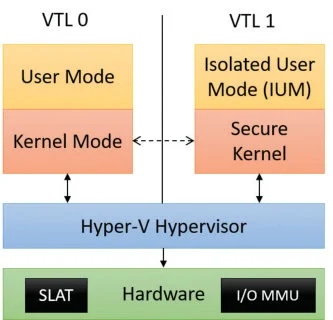
図2-1と同様に、Windows のユーザーモードとカーネルモードのコードは Hyper-V ハイパーバイザー上で実行されます。VBS を有効にすると VTL 1 が加わり、その専用のセキュアカーネルがプロセッサーの特権モード（x86 と x64 ではリング0）で動きます。また、分離ユーザーモード（IUM）と呼ばれるユーザーコードの実行環境が加わり、特権のないモード（リング3）で動きます。
セキュアカーネルは独立したバイナリで、ディスク上では securekernel.exe です。分離ユーザーモード（IUM）は、通常のユーザーモード DLL が発行できるシステムコールを制限します。これにより、読み込める DLL も限られます。IUM は、VTL 1 でしか実行できないセキュアシステムコールも追加します。通常のシステムコールと同様に、内部システムライブラリの Iumdll.dll（VTL 1 における Ntdll.dll 相当）と、Windows サブシステム向けの Iumbase.dll（同 Kernelbase.dll 相当）を介して呼び出せます。標準の Win32 API ライブラリの大半を共有しているため、VTL 1 のアプリケーションのメモリ負荷を抑えられます。第5章で説明するコピーオンライトにより、VTL 0 のアプリケーションによる変更は、VTL 1 が使うバイナリには反映されません。
VBS では、通常のユーザーモードとカーネルモードの規則に VTL による制約が加わります。VTL 0 のカーネルモードコードは、より高い信頼レベルにある VTL 1 のユーザーモードにアクセスできません。VTL 1 のユーザーモードコードからも、リング3からリング0へのアクセスが制限されるため、VTL 0 のカーネルモードに直接アクセスできません。VTL 1 のユーザーモードアプリケーションがリソースを使う場合も、通常の Windows システムコールを通じてアクセス検査を受けます。
プロセッサーの特権レベルは実行できる操作を決め、VTL は実行環境を分離します。VTL 1 のユーザーモードアプリケーションの権限が VTL 0 のアプリケーションやドライバーより強くなるわけではありません。使える機能はむしろ限られます。セキュアカーネルは OS の機能をすべて実装しておらず、許可されたシステムコールだけを VTL 0 のカーネルへ転送します。このためプロキシカーネルとも呼ばれます。ファイル、ネットワーク、レジストリなどの I/O は禁止され、グラフィックス機能も使えません。デバイスドライバーとも通信できません。
セキュアカーネルは VTL 1 のカーネルモードで実行されるため、VTL 0 のすべてのメモリとリソースにアクセスできます。セキュアカーネルは、ハイパーバイザーを介して CPU の第2レベルアドレス変換（SLAT）を利用し、VTL 0 の OS から特定のメモリ領域へのアクセスを制限できます。Credential Guard はこの仕組みを利用し、保護された場所に秘密情報を保管します。セキュアカーネルは SLAT によって、特定のメモリ領域の内容を実行できるかどうかも制御します。これは Device Guard の中核となる機能です。
デバイスからのメモリアクセスは、I/O メモリ管理ユニット（IOMMU）で仮想化します。直接メモリアクセス（DMA）は CPU の仮想アドレス変換を経由しないため、SLAT だけでは制御できません。IOMMU によって、デバイスがハイパーバイザーやセキュアカーネルの物理メモリ領域に DMA でアクセスするのを防ぎます。
ブートローダーが最初に起動するシステムコンポーネントはハイパーバイザーです。ハイパーバイザーは SLAT と IOMMU を設定して、VTL 0 と VTL 1 の実行環境を構成します。その後、VTL 1 でブートローダーが再び動作し、セキュアカーネルを読み込みます。セキュアカーネルが必要な設定を追加してから VTL を下げ、通常のカーネルを VTL 0 の範囲内で起動します。
VTL 1 のユーザーモードプロセスは通常の OS から分離されています。悪意のあるコードがそこで動けば、システムに対する権限は増えなくても、気付かれずに動作したり、セキュアシステムコールで自身の秘密情報を封印・署名しようとしたり、ほかの VTL 1 プロセスやセキュアカーネルに悪影響を与えたりするおそれがあります。このため、VTL 1 が実行を許すのは、専用の署名を持つ Trustlet というバイナリに限られます。各 Trustlet には固有の識別子と署名があり、許可された Trustlet はセキュアカーネルのコードに組み込まれています。新しい Trustlet を追加できるのは、そのカーネルを変更できる Microsoft に限られます。既存の Trustlet を変更すると Microsoft の専用署名は無効になります。詳しくは、第3章の「トラストレット（セキュアプロセス）」を参照してください。
セキュアカーネルと VBS の導入により、保護の対象をデバイスにも広げられる可能性が生まれました。原著では、PCI や USB などのバスにハードウェアの変更が加わり、小規模なセキュア HAL、セキュアなプラグ アンド プレイ マネージャー、セキュアなユーザーモードドライバーフレームワークを組み合わせれば、一部の VTL 1 アプリケーションが専用デバイスに分離された状態で直接アクセスできるようになると見込んでいました。生体認証やスマートカードの入力がその例です。原著は、将来の Windows 10 がこうした技術を利用する可能性にも触れています。
主要なシステムコンポーネント
ここからは Windows の内部構造と、主要な OS コンポーネントが担う役割を詳しく見ていきます。図2-4は、図2-1より詳しく中核のアーキテクチャとコンポーネントを示します。ネットワークなど、図に含まれないコンポーネントもあります。原文は第2部の「Networking」章を参照していますが、第7版第2部にはこの章は収録されていません。

以下では、図にある主な要素を順に説明します。第2部の「第8章 システムメカニズム」では、オブジェクトマネージャーや割り込みなどの主要な制御機構を扱います。「第12章 起動とシャットダウン」では Windows の起動と終了の過程を、「第10章 管理、診断、トレース」ではレジストリ、サービスプロセス、WMI などを説明します。ほかの章では、プロセスとスレッド、メモリ管理、セキュリティ、I/O マネージャー、ストレージ管理、キャッシュマネージャー、Windows のファイルシステム（NTFS）、ネットワークの内部構造と動作を詳しく扱います。
環境サブシステムとサブシステム DLL
環境サブシステムは、Windows エグゼクティブの基本システムサービスの一部をアプリケーションに公開します。どのネイティブサービスを使えるかはサブシステムによって異なります。このため、あるサブシステム向けのアプリケーションでできる操作が、別のサブシステムではできない場合があります。たとえば Windows アプリケーションは SUA の fork 関数を使えません。
各実行イメージ（.exe）は1つのサブシステムに対応します。イメージを実行すると、プロセス作成コードはイメージヘッダーのサブシステム種別を調べ、対応するサブシステムに新しいプロセスを通知します。この種別は Microsoft Visual Studio のリンカーオプション /SUBSYSTEM で指定します。プロジェクトのプロパティで「リンカー」から「システム」を開き、「サブシステム」を指定することもできます。
ユーザーアプリケーションは、1つ以上のサブシステム DLL を介して Windows のシステムサービスを呼び出します。各 DLL は、そのサブシステム向けにリンクされたプログラムが使える、文書化されたインターフェイスをエクスポートします。たとえば Windows サブシステムの Kernel32.dll、Advapi32.dll、User32.dll、Gdi32.dll は Windows API の関数を実装します。POSIX に対応していた Windows では、SUA サブシステムの Psxdll.dll が SUA の API 関数を実装します。
実験：イメージのサブシステム種別を確認する
Dependency Walker（Depends.exe）で、実行イメージのサブシステム種別を確認できます。次の画面例は、テキストエディターの Notepad.exe と、コマンドプロンプトの Cmd.exe を比較したものです。

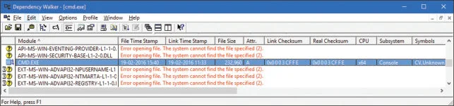
画面例では、メモ帳は GUI プログラム、Cmd は文字ベースのコンソールプログラムだと分かります。種別は異なりますが、どちらも同じ Windows サブシステムを使います。GUI プログラムも AllocConsole を呼べばコンソールを持てます。コンソールプログラムも GUI を表示できます。
アプリケーションがサブシステム DLL の関数を呼ぶと、次のいずれかの方法で処理されます。
- サブシステム DLL 内で完結する。 環境サブシステムのプロセスにメッセージを送らず、エグゼクティブのシステムサービスも呼びません。ユーザーモードで処理を行い、呼び出し元に結果を返します。たとえば
GetCurrentProcessは常に-1を返します。この値は、プロセス関連の関数で現在のプロセスを指します。GetCurrentProcessIdもこの例です。実行中のプロセスの ID は変わらないので、カーネルを呼び出さず、キャッシュから取得します。 - エグゼクティブを呼び出す。 関数によってはエグゼクティブを1回以上呼び出します。たとえば
ReadFileとWriteFileは、それぞれ内部の I/O システムサービスNtReadFileとNtWriteFileを呼び出します。これらの内部サービスをユーザーモードから直接使う方法は文書化されていません。 - 環境サブシステムのプロセスに処理を依頼する。 ユーザーモードの環境サブシステムのプロセスは、管理下にあるクライアントアプリケーションの状態を保持します。サブシステム DLL は、そのプロセスに ALPC メッセージで処理を依頼し、応答を待ってから呼び出し元に戻ります。ALPC については第2部の第8章を参照してください。
CreateProcess や ExitWindowsEx は、エグゼクティブの呼び出しと環境サブシステムのプロセスへの依頼を組み合わせます。
サブシステムの起動
セッションマネージャーのプロセス（Smss.exe）が、サブシステムを起動します。起動に必要な情報は、レジストリの HKLM\SYSTEM\CurrentControlSet\Control\Session Manager\SubSystems キーに格納されています。図2-5に、Windows 10 Pro でこのキーを表示した例を示します。

Required は、システムの起動時に読み込むサブシステムの一覧です。Windows と Debug の2つの文字列を含みます。文字列 Windows が指す同名のレジストリ値には、Windows サブシステムの実行ファイル Csrss.exe の指定が入っています。名前は Client/Server Runtime Subsystem の略です。Debug は空なので何も実行しません。この値は Windows XP 以降不要ですが、互換性のために残っています。
Optional はオプションのサブシステムを指定します。Windows 10 では SUA が提供されないため空です。SUA がある場合は Posix が指定され、対応するレジストリ値が POSIX サブシステムのプロセス Psxss.exe を指します。Optional に指定されたサブシステムは、対応する種類のイメージが初めて見つかったときに、オンデマンドで読み込まれます。Kmode には、Windows サブシステムのカーネルモード部分である Win32k.sys のファイル名が入っています。これは本章の後半で説明します。
Windows サブシステム
Windows は、独立した複数の環境サブシステムを扱えるように設計されました。ただし、ウィンドウ管理と画面の入出力を各サブシステムが個別に実装すると、同じ処理が重複し、システムのサイズと性能に悪影響が出ます。そこで設計チームは、これらの基本機能を主要な Windows サブシステムに置き、ほかのサブシステムから呼び出せるようにしました。SUA も画面の入出力に Windows サブシステムのサービスを使います。
この設計により、対話型ユーザーがサインインしていないサーバーでも、Windows サブシステムは必須です。Windows サブシステムのプロセスはクリティカルプロセスとしてマークされます。このプロセスが終了すると、その理由にかかわらずシステムはクラッシュします。
Windows サブシステムは、主に次のコンポーネントで構成されます。
- 各セッションの環境サブシステムプロセス（
Csrss.exe）は、Basesrv.dll、Winsrv.dll、Sxssrv.dll、Csrsrv.dllの4つの DLL を読み込みます。これらは次の機能を提供します。- プロセスやスレッドの作成と削除に伴う管理処理。
ExitWindowsExAPI による Windows アプリケーションの終了処理。- 互換性維持のための、
.iniファイルとレジストリ上の保存先の対応付け。 - プラグ アンド プレイ マネージャーからの通知など、特定のカーネル通知を、ウィンドウメッセージ（
WM_DEVICECHANGE）としてアプリケーションに転送する処理。 - 16ビット仮想 DOS マシン（VDM）のプロセスを支える機能の一部。32ビット版 Windows のみが対象です。
- Side-by-Side（SxS）／Fusion とマニフェストキャッシュのサポート。
- キャッシュを提供する自然言語サポート関数の一部。
注 マウスカーソル、キーボード入力、デスクトップウィンドウを扱う生入力スレッドとデスクトップスレッドのカーネルモードコードは、
Winsrv.dll内のスレッドで実行されます。対話型ユーザーセッションのCsrss.exeには、5つ目の DLL として Canonical Display Driver（Cdd.dll）も読み込まれます。CDD は垂直リフレッシュ（VSync）ごとにカーネルの DirectX 機能と連携し、従来のハードウェアアクセラレーション付き GDI を使わずに、現在のデスクトップの表示内容を描画します。 - カーネルモードのデバイスドライバー
Win32k.sysは、次の機能を提供します。- ウィンドウマネージャー。ウィンドウの表示と画面出力を管理し、キーボードやマウスなどの入力を集め、ユーザーの操作をメッセージとしてアプリケーションに渡します。
- Graphics Device Interface（GDI）。グラフィックス出力装置向けの関数ライブラリで、線、文字、図形の描画や、グラフィックスを操作する関数を提供します。
- 別のカーネルドライバー
Dxgkrnl.sysが実装する DirectX 機能のラッパー。
- コンソールホストプロセス（
Conhost.exe）は、文字セルを使うコンソールアプリケーションを支えます。 - デスクトップウィンドウマネージャー（
Dwm.exe）は、CDD と DirectX を介して各ウィンドウの描画結果を単一のサーフェスに合成します。 Kernel32.dll、Advapi32.dll、User32.dll、Gdi32.dllなどのサブシステム DLL は、文書化された Windows API の関数を、Ntoskrnl.exeやWin32k.sysの対応するカーネルモードのシステムサービス呼び出しに変換します。これらの呼び出しをユーザーモードから直接使う方法は文書化されていません。- グラフィックスデバイスドライバーには、ハードウェアに固有のグラフィックス表示ドライバー、プリンタードライバー、ビデオミニポートドライバーなどがあります。
注 Windows のアーキテクチャを再編する MinWin の取り組みにより、サブシステム DLL は通常、API セットを実装した個別のライブラリで構成されています。これらをサブシステム DLL にリンクし、専用のリダイレクト機構で参照先を解決します。詳細は第3章の「イメージローダー」を参照してください。
Windows 10 と Win32k.sys
ウィンドウ管理の要件は、Windows 10 を実行する機器によって大きく異なります。デスクトップでは、サイズ変更、所有者ウィンドウ、子ウィンドウなど、ウィンドウマネージャーのすべての機能が必要です。電話や小型タブレットで動く Windows 10 Mobile では、フォアグラウンドのウィンドウが1つだけで、最小化やサイズ変更もできないため、これらの機能の多くは不要です。IoT 機器にも同じことが当てはまり、画面自体を持たないものもあります。
このため、Win32k.sys の機能は複数のカーネルモジュールに分けられ、機器ごとに必要なものだけを読み込めます。コードを簡素化し、旧来のコードの多くを取り除くことで、ウィンドウマネージャーの攻撃対象領域を小さくします。
- Windows 10 Mobile の電話では、
Win32kMin.sysとWin32kBase.sysを読み込みます。 - デスクトップでは、
Win32kBase.sysとWin32kFull.sysを読み込みます。 - 一部の IoT 機器では、
Win32kBase.sysだけで足りる場合があります。
アプリケーションは標準の USER 関数を使い、ウィンドウやボタンなどのコントロールを画面上に作成します。ウィンドウマネージャーは要求を GDI に伝えます。GDI はグラフィックスデバイスドライバーに要求を渡し、ドライバーが表示装置に合った形式に変換します。ディスプレイドライバーとビデオミニポートドライバーが組になって画面出力を支えます。
GDI は、機器の詳細を意識せずにグラフィックスデバイスを使うための標準的な2次元描画関数を提供します。表示や印刷のドライバーとアプリケーションの間に入り、描画要求を解釈してドライバーに渡します。機器が異なっても同じインターフェイスを使えるため、アプリケーションのコードはハードウェアやドライバーに依存しません。GDI は機器の能力に合わせて要求を調整し、必要に応じて分割します。たとえば、楕円の描画命令を理解できる機器もあれば、GDI が座標ごとのピクセルに変換して渡す必要がある機器もあります。詳細は WDK の「Display (Adapters and Monitors)」にある「Design Guide」を参照してください。
サブシステムの多く、特に画面の入出力はカーネルモードで動くため、Windows サブシステムのプロセスにメッセージを送る Windows 関数は限られます。該当するのは、プロセスとスレッドの作成・終了や、subst.exe などを使った DOS デバイスへのドライブ文字の割り当てです。
一般に、Windows アプリケーションの実行中に Windows サブシステムプロセスへのコンテキストスイッチが起きることは、ほとんどありません。起きるのは、移動後の位置にマウスカーソルを描画する場合、キーボード入力を処理する場合、CDD を通じて画面を描画する場合などです。
コンソールウィンドウホスト
当初の Windows サブシステムでは、サブシステムプロセス（Csrss.exe）がコンソールウィンドウを管理し、コマンドプロンプト（Cmd.exe）などのコンソールアプリケーションはそれぞれ Csrss.exe と通信していました。Windows 7 からは、コンソールウィンドウごとに独立したコンソールウィンドウホスト（Conhost.exe）が使われます。1つのコンソールウィンドウを複数のコンソールアプリケーションで共有することもできます。たとえばコマンドプロンプトから別のコマンドプロンプトを起動すると、既定では後者も前者と同じコンソールウィンドウを使います。Windows 7 のコンソールホストの詳細は、本書第6版の第2章を参照してください。
Windows 8 以降では、コンソールの構成が再び変わりました。Conhost.exe は引き続き使われますが、コンソールドライバー（\Windows\System32\Drivers\ConDrv.sys）がコンソールを使うプロセスから起動します。Windows 7 では Csrss.exe から起動していました。コンソールを使うプロセスは、読み取り、書き込み、I/O 制御などの要求を ConDrv.sys に送り、Conhost.exe と通信します。Conhost.exe がサーバー、コンソールを使うプロセスがクライアントです。この変更により、Csrss.exe が生入力スレッドでキーボード入力を受け、Win32k.sys 経由で Conhost.exe に渡したうえで、ALPC を使って Cmd.exe に送る必要がなくなりました。コマンドラインアプリケーションが読み書きの I/O でコンソールドライバーから直接入力を受け取れるため、不要なコンテキストスイッチを省けます。
次の Process Explorer の画面では、Conhost.exe が、ConDrv.sys の公開する \Device\ConDrv というデバイスオブジェクトのハンドルを開いています。デバイス名と I/O の詳細は第6章を参照してください。

Conhost.exe は、コンソールを使うプロセス（ここでは Cmd.exe）の子プロセスです。コンソールサブシステム用のイメージをロードするときはイメージローダーが、GUI サブシステム用のイメージが Windows API の AllocConsole を呼び出したときはその要求を受けて、Conhost.exe の作成が始まります。GUI とコンソールはいずれも Windows サブシステムの一形態です。コンソールドライバーとの通信の大部分は、Conhost.exe が読み込む DLL（\Windows\System32\ConhostV2.dll）が担います。
その他のサブシステム
Windows は当初、POSIX と OS/2 のサブシステムにも対応していました。どちらも Windows には付属しなくなったため、本書では扱いません。サブシステムという考え方は残っており、将来必要になれば新しいサブシステムを追加できます。
Pico プロバイダーと Windows Subsystem for Linux
従来のサブシステムモデルには、POSIX と OS/2 を約10年間支えられるだけの拡張性と機能がありました。ただし、Windows 以外のバイナリを幅広く利用するには、技術上の制約が2つありました。
- サブシステムの種類は Portable Executable（PE）のヘッダーから取得します。そのため、元のソースコードを使って Windows の PE 実行ファイル（
.exe）にビルドし直す必要があります。その際、POSIX の依存関係やシステムコールは、Windows 方式でPsxdll.dllからインポートする形に変わります。 - 使える機能は、Win32 サブシステムや NT カーネルが提供する範囲に限られます。そのため、POSIX アプリケーションが必要とする動作は既存の機能を包んで提供され、元の環境の動作そのものは再現されません。細かな互換性の問題が生じることがあります。
POSIX サブシステムや SUA が想定していたのは、当時のサーバー市場で広く使われていた POSIX／UNIX アプリケーションです。Linux アプリケーションそのものを動かすための設計ではありませんでした。
これらの問題を解決するには、従来の PE イメージや、別の環境のシステムコールをユーザーモードで包む方法に依存しない仕組みが必要でした。Microsoft Research の Drawbridge プロジェクトを基に、新しいサブシステムの実装として Pico モデルが生まれました。
Pico プロバイダーは、PsRegisterPicoProvider を通じてカーネルの専用インターフェイスを利用するカーネルモードドライバーです。これらのインターフェイスには、次の2つの役割があります。
- Pico プロセスやスレッドを作成し、実行コンテキストやセグメントを調整できます。対応する
EPROCESSとETHREADにデータも保持できます。これらの構造体は第3章と第4章で説明します。 - 対象のプロセスやスレッドでシステムコール、例外、APC、ページフォールト、終了、コンテキストの変更、一時停止や再開などが発生すると、プロバイダーが通知を受け取れます。
Windows 10 バージョン1607には、Lxss.sys と Lxcore.sys が含まれています。この2つのドライバーが Windows Subsystem for Linux（WSL）の Pico プロバイダーを構成します。
Pico プロバイダーは、システムコールや例外など、ユーザーモードとカーネルモードの間のほぼすべての遷移を受け取ります。Pico プロセスがプロバイダーの認識できるアドレス空間を持ち、そこでネイティブに実行できるコードを備えていれば、遷移を透過的に処理することで、下層のカーネルの違いをプロセスから隠せます。第3章で見るように、WSL の Pico プロセスは通常の Windows プロセスと大きく異なります。たとえば、通常のプロセスに必ず読み込まれる Ntdll.dll がありません。代わりに、メモリには Linux や BSD で見られる特殊なイメージである vDSO などが置かれます。
Linux プロセスを透過的に実行するには、Windows の PE 実行ファイルへ再コンパイルせずに起動できる必要があります。Windows カーネルは他形式のイメージをマップする方法を知らないため、Windows プロセスは CreateProcess で直接起動できません。Linux プロセス自身も、Windows 上で動いていることを知らないので、その API を呼びません。相互運用を支えるのは Pico プロバイダーと、ユーザーモードのサービスである LXSS マネージャーです。プロバイダーは専用インターフェイスでマネージャーと通信します。マネージャーは COM ベースのインターフェイスで、原著執筆時点の起動用プロセス Bash.exe と管理用プロセス Lxrun.exe に接続します。次の図は WSL を構成するコンポーネントの概要です。

図の上半分はユーザーモードです。Bash.exe は LXSS マネージャーサービスに接続し、/bin/bash は Linux インスタンス内で Pico プロセスとして動作します。図の下半分はカーネルモードです。LXSS マネージャーと Linux インスタンスはいずれも LXCore／LXSS とやり取りし、LXCore／LXSS は Windows のエグゼクティブとカーネルを利用します。
幅広い Linux アプリケーションを支えるには、Windows カーネルに匹敵する数百の Linux システムコールへの対応が必要です。Pico プロバイダーは、もとの POSIX サブシステム向けに作られた fork() のサポートなど、既存の Windows 機能を利用できます。一方、独自に実装し直す機能もあります。たとえば実際のファイルの保存には EXTFS ではなく NTFS を使いますが、プロバイダーは Linux の仮想ファイルシステム（VFS）全体を実装しています。inode、inotify()、/sys や /dev など、Linux のファイルシステムに基づく名前空間と、それぞれの動作にも対応します。ネットワークには Windows Sockets for Kernel（WSK）を利用し、その上でソケットの動作を調整して、UNIX ドメインソケット、Linux Netlink ソケット、標準のインターネットソケットを提供します。
既存の Windows 機能とのわずかな動作の違いが、アプリケーションの互換性を損なう場合もあります。たとえば、名前付きパイプドライバー Npfs.sys は従来のパイプによるプロセス間通信を提供しますが、Linux のパイプとは細部が異なり、Linux アプリケーションが正しく動きません。そのため、Linux アプリケーション向けのパイプは、カーネルの Npfs.sys を使わずに新たに実装されました。
原著執筆時点で WSL は正式にはベータ版で、中身が大きく変わる可能性があるため、本書ではその内部実装には立ち入りません。Pico プロセスは第3章の「Pico プロセス」で改めて取り上げます。原著では、ベータ版が終了すれば、MSDN の公式文書や、Windows から Linux プロセスを扱うための安定した API が提供されるだろうと見込んでいました。
Ntdll.dll
Ntdll.dll は主にサブシステム DLL とネイティブアプリケーションが使うシステムライブラリです。ここでいうネイティブアプリケーションは、特定のサブシステムに結び付けられていないイメージを指します。このライブラリには2種類の関数があります。
- Windows エグゼクティブのシステムサービスへのディスパッチスタブ。
- サブシステム、サブシステム DLL、その他のネイティブイメージが使う内部サポート関数。
前者は、ユーザーモードから呼べるエグゼクティブのシステムサービスへの入口です。NtCreateFile や NtSetEvent など、450を超える関数があります。これらの機能の大半は Windows API を介して利用できます。一部の機能は、OS 内部の特定のコンポーネントだけが使います。
Ntdll.dll には各関数と同じ名前のエントリーポイントがあります。関数内では、アーキテクチャ固有の命令を実行してカーネルモードに移り、システムサービスディスパッチャーを呼び出します。ディスパッチャーは一部の引数を検査し、実際の処理を実装した Ntoskrnl.exe 内のカーネルモードシステムサービスを呼び出します。詳しくは、第2部の第8章「システムサービスの処理」を参照してください。次の実験で、スタブのコードを確認します。
実験：システムサービスを呼び出すコードを見る
システムのアーキテクチャに合った WinDbg（たとえば64ビット版 Windows なら x64 版）を開きます。「File」メニューの「Open Executable」を選び、%SystemRoot%\System32 に移動して Notepad.exe を選択します。
メモ帳が起動し、デバッガーは最初のブレークポイントで停止します。この時点ではプロセスは初期化の途中です。k で呼び出しスタックを表示すると、イメージローダーの関数を示す Ldr で始まる名前がいくつか見えます。メモ帳のメイン関数はまだ実行されていないため、ウィンドウは表示されません。
Ntdll.dll の NtCreateFile にブレークポイントを設定します。デバッガーは大文字と小文字を区別しません。
bp ntdll!ntcreatefile
g（go）を入力するか F5 を押し、実行を再開します。ほぼすぐにデバッガーが停止し、x64 では次のような出力が表示されます。
Breakpoint 0 hit ntdll!NtCreateFile: 00007ffa'9f4e5b10 4c8bd1 mov r10,rcx
関数名が ZwCreateFile と表示される場合もあります。ユーザーモードでは ZwCreateFile と NtCreateFile が同じシンボルを指します。u コマンドで、この位置から数命令を逆アセンブルします。
00007ffa'9f4e5b10 4c8bd1 mov r10,rcx 00007ffa'9f4e5b13 b855000000 mov eax,55h 00007ffa'9f4e5b18 f604250803fe7f01 test byte ptr [SharedUserData+0x308 (00000000'7ffe0308)],1 00007ffa'9f4e5b20 7503 jne ntdll!NtCreateFile+0x15 (00007ffa'9f4e5b25) 00007ffa'9f4e5b22 0f05 syscall 00007ffa'9f4e5b24 c3 ret 00007ffa'9f4e5b25 cd2e int 2Eh 00007ffa'9f4e5b27 c3 ret
EAX にシステムサービス番号が入ります。この例の Windows 10 Pro x64 では16進数の 55 です。syscall 命令によってプロセッサーはカーネルモードに移り、システムサービスディスパッチャーは EAX の値を使って NtCreateFile を選びます。その前に、共有ユーザーデータのオフセット 0x308 にあるバイトを、マスク 1 で検査しています。この構造体については第4章を参照してください。フラグがセットされていれば、syscall の代わりに int 2Eh を実行します。第7章で説明する Credential Guard を有効にすると、このフラグがセットされます。ハイパーバイザーは syscall より int のほうを効率よく処理できるためです。
syscall と int の動作を含め、詳細は、第2部の第8章「システムサービスの処理」で説明します。同じ方法で、NtReadFile、NtWriteFile、NtClose などのネイティブサービスも確認できます。
仮想化ベースのセキュリティの節で説明したように、分離ユーザーモード（IUM）のアプリケーションは、Ntdll.dll に相当する IumDll.dll を使います。こちらにもシステムコールがありますが、番号は異なります。Credential Guard が有効な環境では、WinDbg の「File」メニューで「Open Crash Dump」を選び、IumDll.dll を開いて同様に調べられます。次の出力例ではシステムコール番号の上位ビットがセットされています。共有ユーザーデータの検査はなく、常に syscall を使います。これをセキュアシステムコールと呼びます。
0:000> u iumdll!IumCrypto iumdll!IumCrypto: 00000001'80001130 4c8bd1 mov r10,rcx 00000001'80001133 b802000008 mov eax,8000002h 00000001'80001138 0f05 syscall 00000001'8000113a c3 ret
Ntdll.dll には、イメージローダー（Ldr で始まる関数）、ヒープマネージャー、Windows サブシステムのプロセスと通信する関数など、多数のサポート関数も含まれています。
Windows サブシステムのプロセスと通信する関数は Csr で始まります。Ntdll.dll には、汎用ランタイムライブラリのルーチン（Rtl で始まる関数）、ユーザーモードデバッグのサポート（DbgUi）、Event Tracing for Windows（Etw）、ユーザーモードの非同期プロシージャ呼び出し（APC）と例外のディスパッチャーも含まれています。APC は第6章で概説し、第2部の第8章で例外とともに詳しく説明します。
memcpy、strcpy、sprintf など、C ランタイム（CRT）の文字列・標準ライブラリのルーチンも一部含まれています。これらは次に説明するネイティブアプリケーションで使えます。
ネイティブイメージ
どのサブシステムにも属さない実行イメージがあります。この種のイメージは、Windows サブシステム用の Kernel32.dll のような個別のサブシステム DLL を使わず、どのサブシステムでも利用する Ntdll.dll だけにリンクします。この DLL が公開するネイティブ API の大半は文書化されていないため、通常は Microsoft だけがこの種のイメージを作成します。
一例は、本章の後半で説明するセッションマネージャー（Smss.exe）です。カーネルが直接作成する最初のユーザーモードプロセスなので、その時点でまだ起動していない Windows サブシステム（Csrss.exe）には依存できません。Csrss.exe を起動するのも Smss.exe です。起動時にディスクを検査する Autochk も一例です。起動の比較的早い段階に Smss.exe が実行するため、サブシステムに依存できません。
次の Dependency Walker の画面では、Smss.exe が Ntdll.dll だけに依存し、サブシステム種別が Native と表示されています。

エグゼクティブ
エグゼクティブは Ntoskrnl.exe の上位層です。下位層はカーネルです。エグゼクティブには、次の種類の関数が含まれています。
- ユーザーモードから呼び出せるエクスポート関数 システムサービスと呼ばれ、前の実験で使った
NtCreateFileのように、Ntdll.dllを介して公開されます。大半は Windows API または別の環境サブシステムの API から利用できます。一部には、文書化されたサブシステム関数を通じて利用する手段がありません。たとえば ALPC や、NtQueryInformationProcessなどの照会関数、NtCreatePagingFileなどの用途が限られた関数です。
DeviceIoControlを介して呼び出すドライバー関数 読み取りや書き込みに該当しない処理を、ユーザーモードからカーネルモードのドライバーに依頼するための汎用インターフェイスです。Sysinternals の Process Explorer や Process Monitor が使うドライバーや、前述のコンソールドライバー（ConDrv.sys）が利用しています。- カーネルモード専用で、エクスポートされ、WDK に記載されている関数 ドライバーの開発に必要なサポートルーチンです。I/O マネージャーの
Ioで始まる関数や、エグゼクティブの汎用関数であるExで始まる関数などがあります。 - カーネルモードから呼び出せるが、WDK に記載されていないエクスポート関数 たとえば起動時のビデオドライバーが呼び出す
Inbvで始まる関数があります。 - グローバルシンボルとして定義され、エクスポートされていない関数 カーネルイメージの内部で呼び出すサポート関数です。I/O マネージャー用の
Iopや、メモリ管理用のMiで始まる関数などがあります。 - グローバルシンボルとして定義されていないモジュール内の関数 エグゼクティブとカーネルの内部でのみ使います。
エグゼクティブの主要コンポーネントは次のとおりです。それぞれの詳細は、該当する章で説明します。
- 構成マネージャー システムレジストリを実装し、管理します。第2部の第10章「レジストリ」で説明します。
- プロセスマネージャー プロセスとスレッドを作成・終了します。基本機能は Windows カーネルが実装し、エグゼクティブはカーネルのオブジェクトに追加の動作や機能を組み込みます。第3章と第4章で説明します。
- セキュリティ参照モニター（SRM） ローカルコンピューターにセキュリティポリシーを適用します。実行時のオブジェクトの保護と監査を行い、OS のリソースを守ります。第7章で説明します。
- I/O マネージャー デバイスに依存しない I/O を実装し、処理を担当するドライバーに要求を渡します。第6章で説明します。
- プラグ アンド プレイ（PnP）マネージャー デバイスに必要なドライバーを特定して読み込みます。デバイスを列挙する際にハードウェアリソースの要件を取得し、I/O ポート、IRQ、DMA チャネル、メモリ領域などを割り当てます。デバイスの追加や取り外しも通知します。第6章で説明します。
- 電源マネージャー プロセッサー電源管理（PPM）および電源管理フレームワーク（PoFx）と連携し、電源イベントを調整してドライバーに電源管理の I/O 通知を送ります。アイドル時には、PPM の設定によって CPU をスリープさせ、消費電力を抑えられます。第6章で説明します。
個々のデバイスの消費電力の変更はドライバーが処理し、電源マネージャーと PoFx が調整します。一部のデバイスでは、ターミナルタイムアウトマネージャーが、機器の使用状況やユーザーの近接状態から、物理ディスプレイを消灯するまでの時間も管理します。
- Windows Driver Model（WDM）の WMI ルーチン デバイスドライバーが性能や構成の情報を公開し、ユーザーモードの WMI サービスからコマンドを受け取れるようにします。WMI の利用側は、同じコンピューターでも、ネットワーク上の別のコンピューターでもかまいません。第2部の「第10章 管理、診断、トレース」で説明します。
- メモリマネージャー 使用可能な物理メモリより大きなプライベートアドレス空間を各プロセスに提供する、仮想メモリを実装します。キャッシュマネージャーの基盤も提供します。プリフェッチャーとストアマネージャーがその処理を支えます。詳しくは第5章を参照してください。
- キャッシュマネージャー 最近参照したディスク上のデータをメインメモリに保持し、すばやく読み取れるようにして、ファイル I/O の性能を高めます。書き込みも、更新内容を短時間メモリに保持し、後からディスクへ反映します。これらにはメモリマネージャーのファイルマッピング機能を使います。詳しくは、第2部の第11章「キャッシュマネージャーの主な機能」を参照してください。
エグゼクティブには、前述のコンポーネントが使うサポート機能が大きく4種類あります。そのうち約3分の1はデバイスドライバーも使うため、WDK に記載されています。
- オブジェクトマネージャー プロセス、スレッド、各種同期オブジェクトなどの OS リソースを表すエグゼクティブオブジェクトと抽象データ型を作成・管理・削除します。第2部の第8章「オブジェクトマネージャー」で説明します。
- 非同期ローカルプロシージャ呼び出し（ALPC） 同じコンピューター上のクライアントプロセスとサーバープロセスの間でメッセージを渡します。たとえば、ネットワーク上のクライアントとサーバーの通信に使う業界標準のリモートプロシージャ呼び出し（RPC）の Windows 実装では、ローカルのトランスポートとして ALPC を使います。第2部の第8章「高度なローカルプロシージャ呼び出し（ALPC）」で説明します。
- ランタイムライブラリ関数 文字列処理、算術演算、データ型の変換、セキュリティ用の構造体の処理などを提供します。
- エグゼクティブのサポートルーチン ページプールと非ページプールのシステムメモリの割り当て、インターロック付きのメモリアクセス、エグゼクティブリソース、高速ミューテックス、プッシュロックなどの同期機構を提供します。
エグゼクティブにはほかにも基盤となるルーチンがあります。本書で簡単に紹介するものの一つが、カーネルデバッガーライブラリです。
- カーネルデバッガーライブラリ KD プロトコルを実装したデバッガーからカーネルを調べられるようにします。KD は WinDbg と
Kd.exeが実装するプロトコルで、USB、Ethernet、IEEE 1394 など、複数のトランスポートで使えます。
- ユーザーモードデバッグフレームワーク デバッグ API にイベントを送り、ブレークポイントやステップ実行、実行中のスレッドのコンテキスト変更を支えます。
- ハイパーバイザーライブラリと VBS ライブラリ 安全な仮想マシン環境をカーネル側で支えます。システムがクライアントパーティション（仮想環境）で動いていると分かっている場合は、一部のコードを最適化します。
- エラッタマネージャー 標準に合わないハードウェアに対する回避策を提供します。
- Driver Verifier カーネルモードのドライバーやコードを対象に、オプションで整合性を検査します。詳しくは第6章「Driver Verifier」を参照してください。
- Event Tracing for Windows（ETW） カーネルモードとユーザーモードのコンポーネントが、システム全体でイベントをトレースするための補助ルーチンを提供します。
- Windows Diagnostic Infrastructure（WDI） 診断シナリオに応じて、システムの動作をトレースします。
- Windows Hardware Error Architecture（WHEA）のサポートルーチン ハードウェアエラーを報告するための共通の枠組みを提供します。
- ファイルシステムランタイムライブラリ（FSRTL） ファイルシステムドライバーが使う共通のルーチンを提供します。
- Kernel Shim Engine（KSE） ドライバーの互換性を補うシムと、デバイスのエラッタに対する追加のサポートを提供します。この機能は、第2部の第10章「カーネルシム」で説明するシムの基盤とデータベースを利用します。
カーネル
カーネルは、基本的な仕組みを提供する Ntoskrnl.exe 内の関数群です。エグゼクティブのコンポーネントが使うスレッドのスケジューリングと同期、プロセッサーのアーキテクチャごとに異なる割り込みと例外のディスパッチなどを担います。コードの大半は C で書かれています。C から扱いにくいプロセッサー固有の命令やレジスターにアクセスする部分には、アセンブリ言語を使います。
エグゼクティブのサポート関数と同様に、カーネルの関数にも、デバイスドライバーの実装に必要なため WDK に記載されているものがあります。Ke で始まる関数名で検索できます。
カーネルオブジェクト
カーネルは、上位のエグゼクティブコンポーネントが処理を組み立てるために、動作が明確に定義され、予測できる低レベルの基本要素と仕組みを提供します。大半の方針はエグゼクティブに任せ、カーネルは仕組みの実装を担当します。スレッドのスケジューリングとディスパッチの方針は例外で、カーネルが実装します。
カーネルの外では、エグゼクティブがスレッドなどの共有可能なリソースをオブジェクトとして扱います。これらのオブジェクトには、操作用のハンドルの管理、保護のためのセキュリティ検査、作成時に使用量をクォータから差し引く処理などが伴います。カーネルはこうした処理を省いた単純なカーネルオブジェクトを実装し、CPU の制御やエグゼクティブオブジェクトの作成に使います。多くのエグゼクティブオブジェクトは、1つ以上のカーネルオブジェクトを内包し、その属性を取り込みます。
制御オブジェクトは、OS の各種機能の制御方法を定めます。非同期プロシージャ呼び出し（APC）、遅延プロシージャ呼び出し（DPC）、I/O マネージャーが使う割り込みオブジェクトなどが含まれます。
ディスパッチャーオブジェクトは、スレッドのスケジューリングに影響する同期機能を備えます。カーネルスレッド、ミューテックス（カーネルではミュータント）、イベント、カーネルイベントペア、セマフォ、タイマー、待機可能タイマーなどがあります。エグゼクティブはカーネル関数でオブジェクトを作成・操作し、ユーザーモードに提供する複合的なオブジェクトを組み立てます。詳しくは第2部の第8章を参照してください。プロセスとスレッドは、それぞれ第3章と第4章で説明します。
カーネルプロセッサー制御領域と制御ブロック
カーネルはプロセッサー固有の情報を、カーネルプロセッサー制御領域（KPCR）に格納します。割り込みディスパッチテーブル（IDT）、タスク状態セグメント（TSS）、グローバル記述子テーブル（GDT）などの情報や、ACPI ドライバーや HAL と共有する割り込みコントローラーの状態を保持します。KPCR にアクセスしやすいように、カーネルは、32ビット版 Windows では fs、x64 版では gs を使って KPCR を指すようにします。
KPCR には、カーネルプロセッサー制御ブロック（KPRCB）も含まれます。KPCR はサードパーティー製ドライバーや Windows カーネルのほかのコンポーネント向けに文書化されています。KPRCB は Ntoskrnl.exe のカーネルコードだけが使う非公開の構造体で、次の情報を保持します。
- そのプロセッサーで実行中のスレッド、次に実行するスレッド、アイドルスレッドなどのスケジューリング情報。
- 優先度ごとの実行可能キューを含む、そのプロセッサーのディスパッチャーデータベース。
- DPC キュー。
- CPU のベンダー、モデル、ステッピング、速度、機能ビットなどの識別情報。
- NUMA ノード、パッケージあたりのコア数、コアあたりの論理プロセッサー数など、CPU と NUMA の構成。
- キャッシュサイズ。
- DPC や割り込みの処理時間などの計測情報。
KPRCB は、I/O、キャッシュマネージャー、DPC、メモリマネージャーなど、プロセッサーの統計も保持します。キャッシュマネージャーの統計は、第2部の第11章「キャッシュマネージャーのディスク I/O の計測」で説明します。メモリマネージャーの統計は「第5章 メモリ管理」を参照してください。
特に NUMA システムでは、メモリアクセスを効率化するため、プロセッサーごとにキャッシュ境界にそろえた構造体を KPRCB に置くことがあります。ページプールと非ページプールのシステムルックアサイドリストはその例です。
実験：KPCR と KPRCB の内容を確認する
カーネルデバッガーの !pcr と !prcb で、KPCR と KPRCB の情報を確認できます。!prcb は引数を省略すると CPU 0 の情報を表示します。たとえば !prcb 2 のように、番号で CPU を指定できます。!pcr は現在のプロセッサーの情報を表示します。リモートデバッグでは、対象プロセッサーを切り替えられます。
ローカルデバッグでは、!pcr に CPU 番号を指定して KPCR のアドレスを取得し、@$pcr の代わりにそのアドレスを指定します。!pcr は非推奨で、アドレス以外の出力には誤りがあります。次は Windows 10 x64 での dt nt!_KPCR @$pcr と !prcb の出力例です。
lkd> dt nt!_KPCR @$pcr +0x000 NtTib : _NT_TIB +0x000 GdtBase : 0xfffff802'a5f4bfb0 _KGDTENTRY64 +0x008 TssBase : 0xfffff802'a5f4a000 _KTSS64 +0x010 UserRsp : 0x0000009b'1a47b2b8 +0x018 Self : 0xfffff802'a280a000 _KPCR +0x020 CurrentPrcb : 0xfffff802'a280a180 _KPRCB +0x028 LockArray : 0xfffff802'a280a7f0 _KSPIN_LOCK_QUEUE +0x030 Used_Self : 0x0000009b'1a200000 Void +0x038 IdtBase : 0xfffff802'a5f49000 _KIDTENTRY64 +0x040 Unused : [2] 0 +0x050 Irql : 0 '' +0x051 SecondLevelCacheAssociativity : 0x10 '' +0x052 ObsoleteNumber : 0 '' +0x053 Fill0 : 0 '' +0x054 Unused0 : [3] 0 +0x060 MajorVersion : 1 +0x062 MinorVersion : 1 +0x064 StallScaleFactor : 0x8a0 +0x068 Unused1 : [3] (null) +0x080 KernelReserved : [15] 0 +0x0bc SecondLevelCacheSize : 0x400000 +0x0c0 HalReserved : [16] 0x839b6800 +0x100 Unused2 : 0 +0x108 KdVersionBlock : (null)
+0x110 Unused3 : (null) +0x118 PcrAlign1 : [24] 0 +0x180 Prcb : _KPRCB lkd> !prcb PRCB for Processor 0 at fffff803c3b23180: Current IRQL -- 0 Threads-- Current ffffe0020535a800 Next 0000000000000000 Idle fffff803c3b99740 Processor Index 0 Number (0, 0) GroupSetMember 1 Interrupt Count -- 0010d637 Times -- Dpc 000000f4 Interrupt 00000119 Kernel 0000d952 User 0000425d
!prcb の出力には構造体のアドレス（この例では fffff803c3b23180）が表示されるため、dt で _KPRCB の内容を直接表示できます。たとえば、起動時に検出されたプロセッサーの速度を確認するには、次のように MHz フィールドを表示します。
lkd> dt nt!_KPRCB fffff803c3b23180 MHz +0x5f4 MHz : 0x893 lkd> ? 0x893 Evaluate expression: 2195 = 00000000'00000893
このマシンでは、起動時にプロセッサーは約2.2 GHzで動いていました。
ハードウェアのサポート
カーネルのもう1つの主な役割は、Windows が対応するハードウェアアーキテクチャの違いを吸収し、エグゼクティブやデバイスドライバーに影響が及ばないようにすることです。割り込み処理、例外のディスパッチ、マルチプロセッサー間の同期などの違いを扱います。
ハードウェアに関係する処理でも、カーネルはできるだけ多くのコードを共通化しています。アーキテクチャをまたいで同じ動作を保証する、移植可能なインターフェイスを提供します。このインターフェイスを実装するコードも、大半は共通です。
一部のインターフェイスはアーキテクチャごとに実装が異なるか、一部に専用コードを使います。どのマシンでも同じインターフェイスを呼び出すことができ、実装が異なっても定義上の動作は同じです。第2部の第8章で説明するスピンロックのルーチンなど、同じアーキテクチャでもシステムごとに実装が変わり得る機能は、次節で扱う HAL に実装されています。
カーネルには、32ビットシステムで旧式の16ビット MS-DOS プログラムを動かすための、x86 専用インターフェイスも少量含まれています。ほかのアーキテクチャのマシンには、これらのインターフェイスはありません。たとえば、旧式のビデオカード向けの実モードコードを一部エミュレートするために必要な、仮想8086モードの呼び出しに対応しています。
カーネルでアーキテクチャ固有のコードを使うほかの例に、アドレス変換バッファーと CPU キャッシュを扱うインターフェイスがあります。キャッシュの実装が異なるため、アーキテクチャごとに専用のコードが必要です。
コンテキスト切り替えもその一例です。スレッドの選択と切り替えは、前のスレッドのコンテキストを保存し、次のスレッドのコンテキストを読み込んで実行を始めるという、共通の手順に従います。ただし、コンテキストはレジスターなどのプロセッサーの状態で表されるため、保存・復元する内容はアーキテクチャごとに異なります。
ハードウェア抽象化レイヤー
この章の冒頭で述べたように、さまざまなハードウェアプラットフォームに移植できることは、Windows の設計の柱です。OneCore がさまざまな形態の機器で動作するようになり、移植性の重要性はさらに高まりました。HAL はこの移植性を支える主要なコンポーネントです。ハードウェア抽象化レイヤー（HAL）は、Windows が動作するハードウェアへの低レベルインターフェイスを提供する、読み込み可能なカーネルモードモジュール（Hal.dll）です。I/O インターフェイス、割り込みコントローラー、プロセッサー間の通信など、アーキテクチャとマシンに固有の処理を隠蔽します。
Windows 内部のコンポーネントやサードパーティーのデバイスドライバーは、プラットフォーム固有の情報が必要なときに、ハードウェアへの直接アクセスを避けて HAL のルーチンを呼び出すことで、移植性を維持します。このため、HAL のルーチンの多くは WDK に記載されています。ドライバーでの使い方も WDK の資料を参照してください。
標準的なデスクトップ版 Windows には、表2-4に示す2種類の x86 用 HAL が含まれます。Windows は起動時に適切な HAL を判定できるため、以前のバージョンのように、別種のシステムに移した Windows が HAL の違いで起動できない問題を避けられます。
| HAL のファイル名 | 対応するシステム |
|---|---|
Halacpi.dll | Advanced Configuration and Power Interface（ACPI）を備えた PC。プロセッサーは1つで、APIC を備えていません。複数のプロセッサーまたは APIC があれば、次の HAL を使います。 |
Halmacpi.dll | ACPI と Advanced Programmable Interrupt Controller（APIC）を備えた PC。APIC があるシステムは SMP に対応します。 |
x64 と ARM のマシンでは、各アーキテクチャに Hal.dll という1種類の HAL イメージがあります。x64 プロセッサーは ACPI と APIC を必要とするため、x64 マシンのマザーボード構成は共通です。そのため、ACPI を持たないマシンや、標準の PIC を使うマシンに対応する必要がありません。ARM も ACPI を備え、標準的な APIC に似た割り込みコントローラーを使うため、1種類の HAL で対応できます。
ARM の割り込みコントローラーは似ていますが、同一ではありません。タイマーや、メモリと DMA のコントローラーも、ARM システムによって異なる場合があります。
IoT 機器では、PC ベースのシステムでも Intel の DMA コントローラーなど、標準的な PC のハードウェアがなく、別のコントローラーへの対応が必要な場合があります。以前の Windows では、ベンダーがプラットフォームの組み合わせごとに独自の HAL を出荷しました。現在では、この方式は現実的ではなく、大量のコードが重複します。そこで Windows は、HAL 拡張と呼ぶ、ディスク上の追加 DLL に対応しました。特定のハードウェアが拡張を必要とする場合、ブートローダーが通常は ACPI とレジストリの構成に従って DLL を読み込みます。Windows 10 のデスクトップ版にも HalExtPL080.dll と HalExtIntcLpioDMA.dll が含まれることがあります。後者は一部の低消費電力の Intel プラットフォームで使います。
HAL 拡張の開発には Microsoft との協力が必要です。また、ハードウェアベンダーだけが利用できる専用の証明書で署名する必要があります。利用できる API も限られており、従来の PE イメージとは異なる、制限されたインポート・エクスポートテーブルを使います。そのため、次の実験を HAL 拡張に対して行っても関数は表示されません。
実験：Ntoskrnl.exe と HAL の依存関係を確認する
Dependency Walker（Depends.exe）で各イメージのエクスポートテーブルとインポートテーブルを調べると、カーネルと HAL の関係を確認できます。「File」メニューから「Open」を選び、調べるイメージファイルを開きます。
次は Ntoskrnl.exe の依存関係を表示した例です。Dependency Walker は API セットを解析できないため、ここではそれに伴うエラーを無視します。
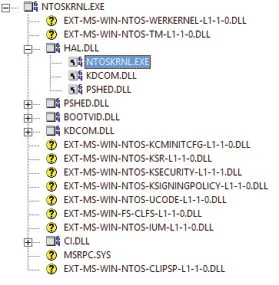
Ntoskrnl.exe は HAL にリンクし、HAL も Ntoskrnl.exe にリンクしています。それぞれが相手の関数を使うためです。Ntoskrnl.exe は、次のバイナリにもリンクしています。
Pshed.dllPlatform-Specific Hardware Error Driver（PSHED）は、プラットフォーム固有のハードウェアエラー報告機能を抽象化します。プラットフォームごとのエラー処理の詳細を隠し、Windows に共通のインターフェイスを提供します。
Bootvid.dllx86 の起動時ビデオドライバーです。起動中にテキストとロゴを表示するための VGA コマンドを扱います。Kdcom.dllカーネルデバッガープロトコル（KD）の通信ライブラリです。Ci.dllコード整合性ライブラリです。詳細は第2部の第8章を参照してください。Msrpc.sysカーネルモードの Microsoft リモートプロシージャ呼び出し（RPC）のクライアントドライバーです。カーネルやほかのドライバーが RPC を通じてユーザーモードのサービスと通信したり、MES 形式のデータをマーシャリングしたりできます。たとえば、カーネルはユーザーモードのプラグ アンド プレイ サービスとデータをやり取りするために使います。
表示内容の詳細は Dependency Walker のヘルプファイル（Depends.hlp）を参照してください。
Dependency Walker は API セットに対応する更新が行われていないため、API セットを正しく解析できません。API セットの実装は第3章の「イメージローダー」で扱います。ただし、出力された API セットが実在するモジュールを指す場合があるため、エディションによってカーネルが依存する可能性があるコンポーネントを調べる手掛かりになります。API セットはコントラクトとして扱います。使えるコントラクトはエディション（SKU）、プラットフォーム、ベンダーの組み合わせによって決まり、次のうち一部または全部が存在しないこともあります。
Werkernelライブカーネルダンプの作成など、カーネル内の Windows エラー報告（WER）を支えます。Tmカーネルトランザクションマネージャー（KTM）です。第2部の第8章で扱います。Kcminitcfg特定のプラットフォームで必要になる、レジストリのカスタム初期構成を担当します。Ksr特に一部のモバイル機器と IoT 機器で、カーネルのソフト再起動（KSR）を処理し、必要なメモリ領域を再起動後も保持します。Ksecurity一部のデバイスやエディションで、ユーザーモードの AppContainer プロセス（Windows アプリ）に追加のポリシーを提供します。Ksigningpolicyユーザーモードコード整合性（UMCI）の追加ポリシーを提供します。一部のエディションで AppContainer 外のプロセスに対応したり、一部のプラットフォームやエディションで Device Guard や AppLocker の設定を補ったりします。UcodeIntel や AMD など、プロセッサーのマイクロコードを更新できるプラットフォーム用のライブラリです。ClfsCommon Log File System のドライバーです。トランザクションレジストリ（TxR）などが利用します。TxR は第2部の第8章を参照してください。
Iumコントラクト システムで動作する IUM の Trustlet に追加のポリシーを提供します。たとえば Datacenter エディションでシールドされた仮想マシンを提供する場合など、一部のエディションで必要になります。Trustlet の詳細は第3章を参照してください。
デバイスドライバー
デバイスドライバーの詳細は第6章で説明します。ここでは、ドライバーの種類を概説し、システムにインストールされ、読み込まれているドライバーを一覧表示する方法を紹介します。
Windows はカーネルモードとユーザーモードの両方のドライバーに対応しています。ここではカーネルモードのドライバーを取り上げ、主に物理デバイスを制御するものに焦点を当てます。「デバイスドライバー」という名前からは物理デバイスが連想されますが、後述するように、ハードウェアに直接関係しない種類もあります。
カーネルモードのデバイスドライバーは、I/O マネージャーと対応するハードウェアの間をつなぐ、読み込み可能なモジュールです。ファイルの拡張子は通常 .sys です。次のいずれかのコンテキストで実行されます。
- 読み取りなどの I/O 操作を開始したユーザースレッドのコンテキスト。
- プラグ アンド プレイ マネージャーからの要求を処理する場合など、カーネルモードのシステムスレッドのコンテキスト。
- 割り込みの処理中。割り込みの発生時に実行されていたスレッドのコンテキストで動きますが、そのスレッドに固有の処理ではありません。
前の節で述べたように、Windows のデバイスドライバーは HAL の関数を呼び出して間接的にハードウェアを操作します。通常は C や C++ で書かれます。HAL のルーチンを適切に使えば、ソースコードを Windows が対応する別の CPU アーキテクチャに移植でき、同じアーキテクチャ内ではバイナリをそのまま使えます。
デバイスドライバーには、次のような種類があります。
- ハードウェアデバイスドライバー HAL を使ってハードウェアを操作し、物理デバイスやネットワークへデータを出力したり、そこから入力を取得したりします。バスドライバー、ヒューマンインターフェイスドライバー、大容量記憶装置のドライバーなどがあります。
- ファイルシステムドライバー ファイルを対象とする I/O 要求を受け取り、特定のデバイスに向けた I/O 要求へ変換します。
- ファイルシステムフィルタードライバー I/O 要求を捕捉し、ディスクのミラーリングや暗号化、ウイルス検査などの処理を追加してから次の層に渡します。操作を拒否する場合もあります。
- ネットワークリダイレクターとサーバー ファイルシステムドライバーの一種です。リダイレクターはネットワーク上のコンピューターにファイルシステムの I/O 要求を送り、サーバーはその要求を受け取ります。
- プロトコルドライバー TCP/IP、NetBEUI、IPX/SPX などのネットワークプロトコルを実装します。
- カーネルストリーミングフィルタードライバー 複数のドライバーをつなぎ、音声や映像の記録・表示など、データストリームの信号処理を行います。
- ソフトウェアドライバー ユーザーモードプロセスに代わって、カーネルモードでしかできない処理を行うモジュールです。Process Explorer や Process Monitor など、多くの Sysinternals ツールは、ユーザーモードの API で取得できない情報を得たり、その API ではできない操作を行ったりするためにドライバーを使います。
Windows ドライバーモデル
最初のドライバーモデルは Windows NT 3.1 で導入されました。当時はプラグ アンド プレイ（PnP）がまだなく、NT 系で対応したのは Windows 2000 からです。コンシューマー向けの Windows では、Windows 95／98 で対応しました。
Windows 2000 では PnP、電源オプション、そして Windows NT のドライバーモデルを拡張した Windows Driver Model（WDM）が導入されました。Windows 2000 以降でも旧式の Windows NT 4 用ドライバーを実行できますが、そのドライバーは PnP と電源オプションに対応しないため、該当機能は制限されます。
当初の WDM は、Windows 2000／XP と Windows 98／Me の間でほぼソース互換の共通ドライバーモデルでした。ハードウェア用のドライバーを単一のコードベースで開発できるようにするためです。Windows 98／Me では WDM の動作を模倣していました。これらの OS が使われなくなった後も、WDM は Windows 2000 以降のハードウェア用ドライバーを開発する基本モデルとして残りました。
WDM では、ドライバーを次の3種類に分けます。
- バスドライバー バスコントローラー、アダプター、ブリッジ、子デバイスを持つ機器を扱います。バスドライバーは必須で、通常は Microsoft が提供します。PCI、PCMCIA、USB など、システム上のバスの種類ごとに1つのバスドライバーがあります。サードパーティーは、VMEbus、Multibus、Futurebus などのバスに対応するドライバーを作成できます。
- ファンクションドライバー デバイスの主要なドライバーで、そのデバイスを操作するためのインターフェイスを提供します。通常は必須です。ただし、SCSI PassThru のようにデバイスを raw モードで使う場合は、バスドライバーと、存在する場合はバスフィルタードライバーが I/O を処理します。デバイスの動作を最も詳しく把握しており、通常、デバイス固有のレジスターにアクセスするのはこのドライバーだけです。
- フィルタードライバー デバイスや既存のドライバーに機能を追加したり、ほかのドライバーとの間で I/O 要求や応答を変更したりします。必要なハードウェアリソースを正しく報告しない機器の補正などに使われます。任意の数を追加でき、ファンクションドライバーの上か下、またはバスドライバーの上に置きます。通常はシステムの製造元（OEM）や独立系ハードウェアベンダー（IHV）が提供します。
WDM では、1つのドライバーがデバイスのすべてを制御することはありません。バスドライバーはバス上のデバイスを PnP マネージャーに報告し、ファンクションドライバーはデバイスを操作します。
下位フィルタードライバーは、多くの場合、デバイスハードウェアの動作を変更します。たとえば、実際には16個の I/O ポートが必要なのに、デバイスがバスドライバーに4個と報告する場合があります。ファンクションドライバーの下に置くデバイス固有のフィルタードライバーで、バスドライバーが PnP マネージャーに渡すハードウェアリソースの一覧を捕捉し、I/O ポート数を修正できます。
上位フィルタードライバーは、通常、デバイスに機能を追加します。たとえば、ディスクの上位フィルタードライバーで追加のセキュリティ検査を行えます。
割り込み処理の詳細は第2部の第8章、ドライバーに関わる部分は第6章で説明します。第6章では I/O マネージャー、WDM、プラグ アンド プレイ、電源管理の詳細も扱います。
Windows Driver Foundation
Windows Driver Foundation（WDF）は、カーネルモードドライバーフレームワーク（KMDF）とユーザーモードドライバーフレームワーク（UMDF）を提供し、ドライバー開発を簡素化します。KMDF は Windows 2000 SP4 以降、UMDF は Windows XP 以降を対象にできます。
KMDF は、バス、ファンクション、フィルターという構成を維持したまま、WDM の複雑さを隠すインターフェイスを提供します。ドライバーはイベントを登録して応答し、一般的な電源管理や同期など、ハードウェアに固有でない処理は KMDF のライブラリに任せます。以前は各ドライバーが実装していた処理です。WDM で200行を超える処理を、KMDF では1回の関数呼び出しで置き換えられる場合があります。
UMDF を使うと、一部のドライバーをユーザーモードに実装できます。対象の多くは USB などの遅延が比較的大きいバスを使う機器で、ビデオカメラ、MP3 プレーヤー、携帯電話、プリンターなどが該当します。UMDF は各ドライバーを実質的にユーザーモードのサービスとして動かし、ハードウェアにアクセスするカーネルモードのラッパードライバーと ALPC で通信します。UMDF ドライバーがクラッシュすると、ホストプロセスが終了し、通常は再起動します。システムは安定したまま動作し、ドライバーをホストするサービスが再起動する間だけ、そのデバイスが利用できなくなります。
UMDF には2つの主要バージョンがあります。1.x は UMDF 対応の全 OS で使えます。最終版の1.11は Windows 10 に含まれます。1.x では C++ と COM でドライバーを開発します。ユーザーモードの開発者には扱いやすい一方、KMDF とはプログラミングモデルが異なります。Windows 8.1 で導入された UMDF 2.0 は KMDF と同じオブジェクトモデルに基づくため、両者のプログラミングモデルはよく似ています。Microsoft は WDF のソースコードを GitHub で公開しました。
ユニバーサル Windows ドライバー
Windows 10 からは、共通基盤が提供する API とデバイスドライバーインターフェイス（DDI）を使って、さまざまな機器向けのドライバーを一度の開発で作成できます。これをユニバーサル Windows ドライバーと呼びます。同じ CPU アーキテクチャ（x86、x64、ARM）なら、IoT 機器、電話、HoloLens、Xbox One、ノート PC、デスクトップ PC などで同じバイナリを使えます。ドライバーモデルは KMDF、UMDF 2.x、WDM から選べます。
実験：インストール済みのデバイスドライバーを確認する
インストール済みのドライバーを一覧表示するには、システム情報ツール（Msinfo32.exe）を使います。スタート メニューで Msinfo32 を検索して起動し、「システムの概要」にある「ソフトウェア環境」を展開して「システム ドライバー」を選びます。次の画面は一覧の表示例です。

この画面では、レジストリに定義されたデバイスドライバーと、その種類および状態（実行中または停止）を確認できます。デバイスドライバーと Windows のサービスプロセスは、どちらも HKLM\SYSTEM\CurrentControlSet\Services に定義され、種類コードで区別されます。たとえば種類が1なら、カーネルモードのデバイスドライバーです。ドライバーについてレジストリに保存される情報の一覧は、第10章「管理、診断、トレース」のレジストリの節を参照してください。
現在読み込まれているドライバーは、Process Explorer で System プロセスを選び、DLL ビューを開いても確認できます。次の画面はその出力例です。列を追加するには、列の見出しを右クリックして「Select Columns」を選び、表示されたダイアログの「DLL」タブでモジュールに使用できる列を確認します。

文書化されていないインターフェイスを調べる
Ntoskrnl.exe、Hal.dll、Ntdll.dll などの主要なシステムイメージで、エクスポートされたシンボルやグローバルシンボルの名前を調べると、Windows の内部機能と、そのうち文書化されサポートされている範囲が分かります。関数名が判明しても、文書化されていないインターフェイスは変更される可能性があり、呼び出せるとは限りません。これらの関数は、Windows が内部でどのような処理をしているかを知るために参照し、サポートされているインターフェイスを迂回するためには使わないでください。
たとえば Ntdll.dll の関数一覧からは、Windows がユーザーモードのサブシステム DLL に提供するシステムサービスと、各サブシステムが公開する範囲を比較できます。多くの関数は文書化されサポートされた Windows の関数に対応しますが、Windows API を通じて公開されていない関数もあります。
逆に、Kernel32.dll や Advapi32.dll などの Windows サブシステム DLL のインポートを調べると、Ntdll.dll 内のどの関数を呼び出すか分かります。
Ntoskrnl.exe も確認できます。カーネルモードのデバイスドライバーが使うエクスポートルーチンは WDK に数多く記載されていますが、記載されていないものも少なくありません。Ntoskrnl.exe と HAL のインポートテーブルを確認すると、双方が相手のどの関数を使うか分かります。
表2-5に、エグゼクティブのコンポーネントでよく使われる関数名の接頭辞を示します。各コンポーネントは内部関数を区別するために、接頭辞の先頭1文字に i（internal）を付けるか、接頭辞全体に p（private）を付けます。たとえば Ki はカーネル内部の関数、Psp は内部のプロセスサポート関数を表します。
| 接頭辞 | コンポーネント |
|---|---|
Alpc | 拡張ローカルプロシージャ呼び出し |
Cc | 共通キャッシュ |
Cm | 構成マネージャー |
Dbg | カーネルデバッグのサポート |
Dbgk | ユーザーモードデバッグフレームワーク |
Em | エラッタマネージャー |
Etw | Windows イベントトレーシング（ETW） |
Ex | エグゼクティブのサポートルーチン |
FsRtl | ファイルシステムランタイムライブラリ |
Hv | ハイブライブラリ |
Hvl | ハイパーバイザーライブラリ |
Io | I/O マネージャー |
Kd | カーネルデバッガー |
Ke | カーネル |
Kse | カーネルシムエンジン |
Lsa | ローカルセキュリティ機関 |
Mm | メモリマネージャー |
Nt | NT システムサービス（ユーザーモードからシステムコールを介して利用可能） |
Ob | オブジェクトマネージャー |
Pf | プリフェッチャー |
Po | 電源マネージャー |
PoFx | 電源管理フレームワーク |
Pp | PnP マネージャー |
Ppm | プロセッサー電源マネージャー |
Ps | プロセスのサポート |
Rtl | ランタイムライブラリ |
Se | セキュリティ参照モニター |
Sm | ストアマネージャー |
Tm | トランザクションマネージャー |
Ttm | ターミナルタイムアウトマネージャー |
Vf | ドライバー検証ツール |
| 接頭辞 | コンポーネント |
|---|---|
Vsl | 仮想セキュアモードのライブラリ |
Wdi | Windows 診断インフラストラクチャ |
Wfp | Windows の指紋認証 |
Whea | Windows ハードウェアエラーアーキテクチャ（WHEA） |
Wmi | Windows Management Instrumentation |
Zw | Nt で始まるシステムサービスに対応する、カーネルモードの呼び出し元向けのエントリポイント。前回のアクセスモードをカーネルモードに設定します。Nt のシステムサービスがパラメーターを検証するのは、前回のアクセスモードがユーザーモードの場合だけなので、この設定により検証が省略されます。 |
Windows のシステムルーチンには、名前から役割を読み取るための規則があります。一般的な形式は次のとおりです。
<Prefix><Operation><Object>
Prefix はルーチンを公開する内部コンポーネント、Operation は操作の内容、Object は操作の対象を表します。
たとえば ExAllocatePoolWithTag は、ページプールまたは非ページプールからメモリを割り当てるエグゼクティブのサポートルーチンです。KeInitializeThread は、カーネルスレッドオブジェクトを割り当てて初期化するルーチンです。
システムプロセス
Windows 10 では、次のシステムプロセスが見られます。Idle は計測用の擬似プロセスです。System、Secure System、Memory Compression は、ユーザーモードの実行ファイルを動かさないため、最小プロセスと呼ばれます。最小プロセスについては第3章を参照してください。
- Idle アイドル時間を計上するため、CPU ごとに1つのスレッドを持ちます。
- System カーネルモードのシステムスレッドとハンドルの大半を保持します。
- Secure System セキュアカーネルが動作している場合は、VTL 1 にあるそのアドレス空間を保持します。
- Memory Compression ユーザーモードプロセスの圧縮されたワーキングセットを保持します。第5章で説明します。
- セッションマネージャー（
Smss.exe）。 - Windows サブシステム（
Csrss.exe）。 - セッション0の初期化（
Wininit.exe）。 - サインイン処理（
Winlogon.exe）。
- サービス制御マネージャー（
Services.exe）と、その子プロセスとして起動されるサービスプロセス。Windows 標準の汎用サービスホスト（Svchost.exe）などがあります。 - ローカルセキュリティ認証サービス（
Lsass.exe）。Credential Guard が有効な場合は、分離ローカルセキュリティ認証サーバー（Lsaiso.exe）も動作します。
これらの関係を理解するには、プロセスの親子関係を示すプロセスツリーを見ると分かりやすくなります。どのプロセスが作成元かを見れば、各プロセスがどこから起動したかを追えます。図2-6は、Process Monitor で起動時に採取したトレースのプロセスツリーです。採取するには、「Options」メニューから「Enable Boot Logging」を選びます。システムを再起動して Process Monitor を開き直し、「Tools」メニューから「Process Tree」を選ぶか Ctrl+T を押します。すでに終了したプロセスも表示され、アイコンが薄い色で示されます。

続く節では、図2-6に示した主なシステムプロセスと、起動する順序を説明します。Windows の起動手順については、第12章「起動とシャットダウン」を参照してください。
システムのアイドルプロセス
図2-6の先頭にあるのが Idle プロセスです。第3章で説明するように、プロセスはイメージ名で識別されます。ただし、Idle、System、Secure System、Memory Compression は、実際のユーザーモードイメージを実行しません。\Windows ディレクトリに System Idle Process.exe があるわけではありません。実装上の理由から、表示名もツールによって異なります。Idle は CPU のアイドル時間を計上するためのもので、「スレッド」の数はシステムの論理プロセッサー数と一致します。表2-6に、このプロセス（PID 0）の表示名をいくつか示します。詳細は第3章を参照してください。
| ツール | PID 0 の表示名 |
|---|---|
| タスク マネージャー | System Idle process |
Process Status（Pstat.exe） | Idle process |
Process Explorer（Procexp.exe） | System Idle process |
Task List（Tasklist.exe） | System Idle process |
Tlist（Tlist.exe） | System process |
ここからは、システムスレッドと、実行イメージを動かす各システムプロセスの役割を見ていきます。
System プロセスとシステムスレッド
System プロセス（PID 4）には、カーネルモードでのみ動作するシステムスレッドがあります。システムスレッドは通常のユーザーモードスレッドと同様に、ハードウェアコンテキストや優先度などの属性とコンテキストを持ちます。実行するのは、Ntoskrnl.exe や読み込み済みデバイスドライバーなど、システム空間にあるコードです。ユーザープロセスのアドレス空間を持たないため、動的に必要なメモリはページプールや非ページプールなどの OS のヒープから割り当てます。
注 Windows 10 バージョン1511のタスク マネージャーは、System プロセスを「System and Compressed Memory」と表示します。このバージョンでは、プロセスのデータを圧縮してより多くをメモリに保持し、ディスクへのページアウトを減らす機能が加わりました。本書ではツールでの表示名にかかわらず、このプロセスを System と呼びます。Windows 10 バージョン1607と Windows Server 2016 では、Memory Compression という別のプロセスが圧縮を担当するため、表示名は System に戻りました。詳細は第5章を参照してください。
システムスレッドは、WDK に記載されている PsCreateSystemThread または IoCreateSystemThread で作成します。これらの関数はカーネルモードからのみ呼び出せます。Windows やデバイスドライバーは初期化時にシステムスレッドを作り、I/O の発行や完了待ち、オブジェクトの待機、デバイスのポーリングなど、スレッドのコンテキストを必要とする処理に使います。
たとえばメモリマネージャーは、変更済みのページをページファイルやマップ済みのファイルに書き込んだり、プロセスをメモリにスワップインしたり、メモリからスワップアウトしたりする処理にシステムスレッドを使います。カーネルが作るバランスセットマネージャーは1秒ごとに起き、必要に応じてスケジューリングやメモリ管理の処理を開始します。キャッシュマネージャーは先読みと遅延書き込みに使います。ファイルサーバードライバーの Srv2.sys は、ネットワークで共有されたディスクパーティション上のファイルデータに対するネットワーク I/O 要求に応答するために、システムスレッドを使います。フロッピーディスクのドライバーにも、デバイスをポーリングするシステムスレッドがあります。
フロッピーディスクでは、割り込みで駆動するドライバーがシステムリソースを多く消費するため、ポーリングのほうが効率的です。個別のシステムスレッドについては、対応するコンポーネントを説明する章を参照してください。
システムスレッドは既定では System プロセスに属しますが、デバイスドライバーは任意のプロセスに作成できます。たとえば Windows サブシステムのドライバー（Win32k.sys）は、Csrss.exe に読み込まれる Canonical Display Driver（Cdd.dll）内にシステムスレッドを作ります。これにより、同じプロセスのユーザーモードアドレス空間のデータにアクセスしやすくなります。
障害調査やシステム分析では、個々のシステムスレッドがどのドライバーやルーチンを実行しているか特定できると役立ちます。たとえば、高負荷のファイルサーバーで System が CPU 時間を多く使っていても、単にシステムスレッドが動いているという情報だけでは、実行中のドライバーや OS コンポーネントまでは分かりません。
パフォーマンス モニターや Process Explorer で動いているスレッドを見つけ、そのスレッドがどのドライバーで実行を始めたか確認します。これで、どのドライバーがスレッドを作成した可能性が高いか分かります。Process Explorer では、System を右クリックして「Properties」を開き、「Threads」タブの「CPU」列をクリックします。一覧の先頭に表示された、CPU 使用率が最も高いスレッドを選び、「Module」をクリックすると、スタックの先頭にあるコードを含むファイルを確認できます。原著が扱う新しい Windows では System プロセスが保護されているため、Process Explorer は呼び出しスタックを表示できません。
Secure System プロセス
Secure System のプロセス ID は可変です。形式上は、VTL 1 のセキュアカーネルのアドレス空間、ハンドル、システムスレッドの入れ物です。ただし、スケジューリング、オブジェクト管理、メモリ管理は VTL 0 のカーネルが担当するため、このプロセスには実体が関連付けられません。タスク マネージャーや Process Explorer などでは、VBS が有効で、それを利用する機能が少なくとも1つ動作していることを視覚的に示します。Secure System の実質的な役割はこの表示だけです。
Memory Compression プロセス
Memory Compression は、一部のプロセスのワーキングセットから取り除かれてスタンバイ状態になったページを圧縮し、自らのユーザーモードアドレス空間に格納します。詳細は第5章を参照してください。Secure System と異なり、実際に複数のシステムスレッドをホストします。通常は SmKmStoreHelperWorker と SmStReadThread があり、どちらもメモリ圧縮を管理するストアマネージャーのスレッドです。
この一覧のほかのシステムプロセスとは異なり、Memory Compression はユーザーモードのアドレス空間にデータを格納します。そのためワーキングセットの縮小の対象になり、監視ツールでは大きなメモリ使用量が表示されることがあります。タスク マネージャーの「パフォーマンス」タブでは使用中のメモリと圧縮済みのメモリを確認でき、圧縮済みメモリの量は Memory Compression のワーキングセットのサイズと一致します。
セッションマネージャー
セッションマネージャー（%SystemRoot%\System32\Smss.exe）は、システムで最初に作成されるユーザーモードプロセスです。エグゼクティブとカーネルの初期化の最終段階を担当するカーネルモードのシステムスレッドが、第3章で説明する軽量保護プロセス（PPL）として作成します。
Smss.exe は起動時に、自分が最初のインスタンス（マスター）なのか、マスターがセッション作成のために起動したインスタンスなのかを、コマンドライン引数の有無で判定します。引数があれば後者です。Windows の起動時やターミナル サービスのセッション作成時に複数のインスタンスを起動し、セッションを同時に作れます。同時に作れるのはCPU が1基のときは最大4つで、2基目以降は1基につき上限が1つ増えます。ターミナルサーバーでは、複数のユーザーが同時に接続したときのサインインが速くなります。セッションの初期化が終わると、そのセッション用の Smss.exe は終了し、最初のプロセスだけが残ります。ターミナル サービスについては第1章の「ターミナル サービスと複数のセッション」を参照してください。
マスターの Smss.exe は、次の初期化を一度だけ行います。
- プロセスと最初のスレッドを重要としてマークします。どちらかが理由を問わず終了すると Windows はクラッシュします。詳細は第3章を参照してください。
- 無効なハンドルの使用やヒープの破損など、一部のエラーを致命的なものとして扱うよう設定し、動的コードの実行を無効にするプロセス緩和策も有効にします。
- プロセスの基本優先度を11に引き上げます。
- 稼働中のプロセッサー追加に対応するシステムでは、プロセッサーアフィニティの自動更新を有効にします。新しいプロセッサーを追加すると、以後のセッションがそれを使えます。詳細は第4章を参照してください。
- ALPC コマンドやほかの作業項目を処理するスレッドプールを初期化します。
- コマンドを受け取る ALPC ポート
\SmApiPortを作成します。 - システムの NUMA トポロジーのローカルコピーを初期化します。
- ファイル名の変更を同期するミューテックス
PendingRenameMutexを作成します。 - 最初のプロセス環境ブロックを作成し、必要に応じてセーフモードの変数を更新します。
HKLM\SYSTEM\CurrentControlSet\Control\Session ManagerのProtectionModeに従い、システムの各種リソースで使うセキュリティ記述子を作成します。- 同じキーの
ObjectDirectoriesに従い、\RPC Controlや\Windowsなどのオブジェクトマネージャーのディレクトリを作成します。BootExecute、BootExecuteNoPnpSync、SetupExecuteに列挙されたプログラムも記録します。 - 同じキーの
S0InitialCommandに指定されたプログラムのパスを記録します。
HKLM\SYSTEM\CurrentControlSet\Control\Session ManagerのNumberOfInitialSessionsを読み取ります。システムが製造モードにある場合は、この値を無視します。- 同じキーの
PendingFileRenameOperationsとPendingFileRenameOperations2に列挙された、保留中のファイル名変更操作を読み取ります。 - 同じキーの
AllowProtectedRenames、ClearTempFiles、TempFileDirectory、DisableWpbtExecutionを読み取ります。 - 同じキーの
ExcludeFromKnownDllListに指定された DLL の一覧を読み取ります。 Session Manager\Memory Managementにあるページファイルの情報を読み取ります。PagingFilesとExistingPageFilesの一覧や、PagefileOnOsVolumeとWaitForPagingFilesの構成値が含まれます。Session Manager\DOS Devicesにある値を読み取り、保存します。Session ManagerにあるKnownDllsの一覧を読み取り、保存します。Session Manager\Environmentの定義に従い、システム全体の環境変数を作成します。- オブジェクトマネージャーの名前空間に
\KnownDllsディレクトリを作成します。WOW64 を備えた64ビットシステムでは、\KnownDlls32も作成します。 Session Manager\DOS Devicesに定義されたデバイスへのシンボリックリンクを、オブジェクトマネージャーの\Global??ディレクトリに作成します。- オブジェクトマネージャーの名前空間のルートに
\Sessionsディレクトリを作成します。 - 保護されたメールスロットと名前付きパイプの接頭辞を作成します。悪意のあるユーザーモードのアプリケーションがサービスより先に起動した場合でも、サービスになりすますことを防ぎます。
- 先ほど読み取った
BootExecuteとBootExecuteNoPnpSyncの一覧にあるプログラムを実行します。既定では、ディスクを検査するAutochk.exeを実行します。 - レジストリの残りの部分、つまり
HKLMのソフトウェア、SAM、セキュリティの各ハイブを初期化します。 - レジストリで無効になっていなければ、ACPI の Windows Platform Binary Table（WPBT）に登録されたバイナリを実行します。盗難対策製品などでは、この仕組みによって Windows を新規インストールした環境でも、起動の早い段階でネイティブバイナリを動かし、外部に通知したり、別のサービスを設定したりできます。対象のバイナリはネイティブサブシステムに属し、
Ntdll.dllだけにリンクする必要があります。 - Windows 回復環境からの起動を除き、先ほど読み取ったレジストリの指定に従って、保留中のファイル名変更を処理します。
HKLM\System\CurrentControlSet\Control\Session Manager\Memory ManagementとHKLM\System\CurrentControlSet\Control\CrashControlに基づいて、ページファイルと専用ダンプファイルの情報を初期化します。- NUMA システムで使うメモリ冷却技術に対応しているか確認します。
- 以前のクラッシュ情報に基づき、古いページファイルを保存し、専用のクラッシュダンプファイルを作成します。必要に応じて新しいページファイルも作成します。
- レジストリの設定とカーネルに問い合わせたシステム情報を基に、
PROCESSOR_ARCHITECTURE、PROCESSOR_LEVEL、PROCESSOR_IDENTIFIER、PROCESSOR_REVISIONなどの動的な環境変数を追加します。 HKLM\SYSTEM\CurrentControlSet\Control\Session ManagerのSetupExecuteに指定されたプログラムを実行します。実行ファイルには、手順11で読み取り、手順25で実行するBootExecuteと同じ規則が適用されます。- 子プロセス（
Csrss.exeなど）と情報をやり取りするため、名前のない共有セクションオブジェクトを作成します。セクションのハンドルは継承を通じて子プロセスに渡します。ハンドルの継承については、第2部の第8章を参照してください。 - 既知の DLL を開き、永続セクション（マップされたファイル）としてマップします。先に読み取ったレジストリの除外リストにある DLL は対象外です。既定では除外項目はありません。
- セッション作成要求に応答するスレッドを作成します。
- 非対話型のセッション0を初期化する
Smss.exeを作成します。 - 対話型のセッション1を初期化する
Smss.exeを作成します。レジストリで指定されていれば、将来のサインインに備えて追加の対話型セッション用にもインスタンスを作成します。作成のたびにNtCreateUserProcessにPROCESS_CREATE_NEW_SESSIONフラグを渡し、新しいセッション ID の割り当てを明示的に要求します。メモリマネージャーの内部関数MiSessionCreateが呼び出され、Session オブジェクトなどのカーネルモードのデータ構造と、セッション空間の仮想アドレス範囲を準備します。この範囲は Windows サブシステムのカーネルモード部分（Win32k.sys）や、セッション空間を使うほかのデバイスドライバーが利用します。詳しくは第5章を参照してください。
初期化後、マスターの Smss.exe はセッション0の Csrss.exe のプロセスハンドルがシグナル状態になるまで、タイムアウトを設けずに待機します。Csrss.exe は重要なプロセスとしてマークされた保護プロセスです。終了すればシステムがクラッシュするため、この待機が完了することはありません。保護プロセスについては第3章を参照してください。
セッションを起動する側の Smss.exe は、次の処理を行います。
- セッションのサブシステムプロセスを作成します。既定では Windows サブシステムの
Csrss.exeです。 - 対話型セッションでは Winlogon を起動します。セッション0では、レジストリ設定で変更されていなければ、セッション0の初期コマンドとして Wininit を起動します。両プロセスの詳細は後述します。
最後に、この中間の Smss.exe が終了します。サブシステムプロセスと Winlogon または Wininit は、親プロセスが終了した状態で残ります。
Windows 初期化プロセス
Wininit.exe は、次の初期化を行います。
- 自身とメインスレッドを重要としてマークします。途中で終了すると、デバッグモードで起動したシステムではデバッガーが処理を中断し、それ以外ではシステムがクラッシュします。
- 無効なハンドルの使用やヒープの破損など、一部のエラーを致命的なものとして扱うようにします。
- エディションが対応していれば、状態の分離を初期化します。
Global\FirstLogonCheckというイベントを作成します。Winlogon の各インスタンスは、このイベントを使ってどれが最初に起動したかを判定します。Process Explorer や WinObj で\BaseNamedObjectsの下に確認できます。- オブジェクトマネージャーの
BaseNamedObjectsディレクトリに、Winlogon の各インスタンスが使うWinlogonLogoffイベントを作成します。サインアウトが始まると、このイベントがシグナル状態になります。 - プロセスの基本優先度を高（13）に引き上げ、メインスレッドの優先度を15にします。
HKLM\Software\Microsoft\Windows NT\CurrentVersion\WinlogonのNoDebugThreadで無効にされていなければ、定期的に動くタイマーキューを作成します。これにより、リモートのカーネルデバッガーが指定したユーザーモードアプリケーションに Winlogon がデバッガーを接続し、その実行を中断できます。- マシン名を環境変数
COMPUTERNAMEに設定し、ドメイン名やホスト名など TCP/IP に関する情報を更新・設定します。 - 既定のプロファイルの環境変数
USERPROFILE、ALLUSERSPROFILE、PUBLIC、ProgramDataを設定します。 %SystemRoot%\Tempを展開し、一時ディレクトリを作成します。たとえばC:\Windows\Tempです。- エディションの構成上、セッション0が対話型なら、フォントの読み込みとデスクトップウィンドウマネージャー（DWM）を設定します。
- セッション0でプロセスを実行するための初期ターミナルを作成します。ターミナルは、常に
Winsta0という名前のウィンドウステーションと、WinlogonとDefaultの2つのデスクトップから成ります。 - ローカルに保存された鍵を使うか、対話的な入力を求めるかに応じて、LSA のマシン暗号化キーを初期化します。ローカル認証キーの保存方法については第7章を参照してください。
- サービス制御マネージャー（SCM、
Services.exe）を作成します。概要は後述し、詳細は第10章「管理、診断、トレース」のサービスコントロールマネージャーの節で扱います。
- ローカルセキュリティ認証サブシステムサービス（
Lsass.exe）を起動します。Credential Guard が有効なら、分離 LSA Trustlet（Lsaiso.exe）も起動します。この処理では、UEFI から VBS のプロビジョニングキーも照会します。各プロセスの詳細は第7章を参照してください。 - 新規インストールや新しいメジャービルド、Insider Preview への更新後の初回起動など、セットアップが保留中であれば、セットアッププログラムを起動します。
- システムのシャットダウン要求か、前述のシステムプロセスのいずれかが終了するのを無期限に待ちます。手順7の
WinlogonキーでDontWatchSysProcsが設定されている場合は、プロセスの終了を監視しません。待機が解除されると、システムをシャットダウンします。
サービス制御マネージャー
Windows の「サービス」はサーバープロセスやデバイスドライバーを指すことがあります。ここで扱うのは、ユーザーモードのプロセスとして動くサービスです。Linux のデーモンと同様に、対話型のサインインを待たず、システム起動時に自動で起動するよう設定できます。管理ツールの「サービス」、sc.exe、Windows の StartService 関数を使って手動で起動することもできます。通常、サービスはサインイン中のユーザーとやり取りしませんが、例外もあります。多くのサービスは SYSTEM や LOCAL SERVICE などの専用アカウントで動きます。一部は、サインイン中のユーザーと同じセキュリティコンテキストで動作できます。詳しくは第10章「管理、診断、トレース」のサービスコントロールマネージャーの節を参照してください。
サービス制御マネージャー（SCM）は %SystemRoot%\System32\Services.exe を実行するシステムプロセスです。サービスプロセスを起動・停止し、サービスと通信します。保護プロセスとして動作するため、外部からの改変が困難です。サービスプログラムは Windows の実行イメージであり、専用の Windows 関数を使って SCM に起動の成功を通知し、状態の問い合わせに応答し、一時停止や終了を処理します。サービスはレジストリの HKLM\SYSTEM\CurrentControlSet\Services に定義されます。
サービスの名前には、システム上で実行されるプロセス名、レジストリ上の内部名、管理ツールの「サービス」に表示される表示名があります。表示名が設定されていなければ、内部名が表示されます。サービスの機能を説明するフィールドを持つ場合もあります。
プロセス内で動くサービスの一覧を確認するには、Windows 用デバッグツールの tlist /s か、Windows 標準の tasklist /svc を使います。複数のサービスが1つのプロセスを共有する場合があるため、サービスとプロセスは必ずしも一対一ではありません。サービスキーの Type の値は、そのサービスが専用プロセスで動くか、同じ実行イメージを使うほかのサービスとプロセスを共有するかを示します。
Print Spooler、イベントログ、タスク スケジューラ、各種ネットワークコンポーネントなど、Windows の多くの機能がサービスとして実装されています。詳しくは第10章「管理、診断、トレース」のサービスコントロールマネージャーの節を参照してください。
実験：インストール済みのサービスを一覧表示する
コントロール パネルで「管理ツール」を選び、「サービス」を開きます。スタート メニューから services.msc を実行しても、同じ一覧が表示されます。次に示すのは表示例です。

サービスの詳細を確認するには、一覧のサービスを右クリックし、「プロパティ」を選びます。次の画面は Windows Update サービスの例です。

「実行ファイルのパス」には、サービスを実行するプログラムと、そのコマンドラインが表示されます。複数のサービスが同じプロセスを共有する場合もあるため、サービスとプロセスは必ずしも一対一ではありません。
実験：サービスプロセス内のサービスの詳細を確認する
Process Explorer は、サービスを1つ以上ホストするプロセスを色で区別します。既定ではピンクですが、「Options」メニューの「Configure Colors」で変更できます。該当プロセスをダブルクリックして「Services」タブを開くと、プロセス内のサービス一覧、サービスを定義するレジストリキー名、管理ツール上の表示名、説明（設定されている場合）を確認できます。Svchost.exe がホストするサービスでは、そのサービスを実装した DLL のパスも表示されます。次は System アカウントで動く Svchost.exe の一例です。

Winlogon、LogonUI、Userinit
Windows のサインインプロセス（%SystemRoot%\System32\Winlogon.exe）は、対話型ユーザーのサインインとサインアウトを処理します。ユーザーがセキュアアテンションシーケンス（SAS）と呼ばれるキーの組み合わせを入力すると、Winlogon.exe に要求が通知されます。Windows の既定の SAS は Ctrl+Alt+Delete です。ユーザーモードアプリケーションはこの入力を横取りできないため、サインイン画面を模倣してパスワードを盗むプログラムからユーザーを守れます。
サインイン時の本人確認と認証は、資格情報プロバイダーと呼ばれる DLL が実装します。標準のプロバイダーはパスワードとスマートカードを扱います。Windows 10 は生体認証用の資格情報プロバイダーも備えており、Windows Hello の顔認証を利用できます。開発者は独自のプロバイダーを作り、標準のユーザー名とパスワードに代えて、声紋や指紋リーダーなどで本人確認と認証を行えます。Winlogon.exe はシステムが依存する重要なプロセスです。そのため、資格情報プロバイダーとサインイン画面を表示する UI は、Winlogon の子プロセスで実行します。
この子プロセスは LogonUI.exe です。Winlogon.exe が SAS を検出すると起動し、資格情報プロバイダーを初期化します。ユーザーが求められた資格情報を入力するか、サインイン画面を閉じると終了します。Winlogon.exe は、追加の認証が必要なネットワークプロバイダーの DLL も読み込めます。これにより、通常のサインインの際に複数のネットワークプロバイダーがまとめて識別情報や認証情報を得られます。
入力されたユーザー名とパスワード、またはプロバイダーが要求する別の情報は、ローカルセキュリティ認証サービス（Lsass.exe）に送られます。Lsass.exe は、DLL として実装された適切な認証パッケージを呼び出して、実際の検証を行います。たとえば、入力されたパスワードを Active Directory や SAM に保存された情報と照合します。SAM はローカルのユーザーとグループの定義を保持するレジストリの一部です。Credential Guard が有効でドメインにサインインする場合、Lsass.exe は分離 LSA Trustlet（Lsaiso.exe）と通信し、認証要求の正当性を確認するためのマシンキーを取得します。詳細は第7章を参照してください。
認証に成功すると、Lsass.exe は NtCreateToken などのセキュリティ参照モニター（SRM）の関数を呼び出し、ユーザーのセキュリティプロファイルを含むアクセストークンを作ります。ユーザーアカウント制御（UAC）が有効で、サインインするユーザーが Administrators グループに属するか管理者権限を持つ場合、制限を加えた第2のトークンも作ります。Winlogon は認証によって得られたアクセストークンを使って、ユーザーセッション内の最初のプロセスを作成します。起動するイメージは、レジストリキー HKLM\SOFTWARE\Microsoft\Windows NT\CurrentVersion\Winlogon の Userinit 値で指定します。既定値は Userinit.exe ですが、複数のイメージを指定できます。
Userinit.exe はサインインスクリプトの実行やネットワーク接続の復元など、ユーザー環境を初期化します。その後、同じレジストリキーの Shell 値を確認し、システムに設定されたシェル（既定では Explorer.exe）を起動して終了します。Explorer の親が表示されないのは、このためです。第1章で説明したように、tlist.exe と Process Explorer は、親が実行中でないプロセスを左端に表示します。Explorer は Winlogon.exe の孫にあたります。
Winlogon.exe はサインインやサインアウトのときに加え、キーボードから SAS を受け取ったときにも動作します。たとえば、サインイン中に Ctrl+Alt+Delete を押すと、サインアウト、タスク マネージャーの起動、ワークステーションのロック、シャットダウンなどを選ぶ Windows セキュリティ画面が開きます。この操作は Winlogon.exe と LogonUI.exe が処理します。
サインインの手順全体は、第12章「起動とシャットダウン」を参照してください。認証の詳細は第7章で扱います。Lsass.exe とやり取りする Lsa で始まる関数については、Windows SDK の資料を参照してください。
まとめ
本章では Windows のシステムアーキテクチャを概観し、主要なコンポーネントとその関係を見てきました。次章では、Windows の基本要素であるプロセスを詳しく説明します。
第3章 プロセスとジョブ
本章では、Windows のプロセスとジョブを扱うデータ構造とアルゴリズムを説明します。 まずプロセスの作成を概観し、次にプロセスを構成する内部データ構造を調べます。 続いて保護されたプロセスと通常のプロセスとの違いを述べ、プロセスと最初のスレッドが作られる手順を説明します。 最後にジョブを取り上げます。
プロセスには Windows の多くのコンポーネントが関わるため、本章で言及するワーキングセット、スレッド、オブジェクトとハンドル、システムメモリのヒープなどの用語やデータ構造は、本書の別の箇所で詳しく説明します。 本章を読む前提として、第1章「概念とツール」と第2章「システムアーキテクチャ」で扱う、プロセスとスレッドの違い、Windows の仮想アドレス空間の構成、ユーザーモードとカーネルモードの違いを押さえておいてください。
プロセスの作成
Windows API には、プロセスを作成する関数がいくつかあります。
最も基本的な CreateProcess は、作成元のプロセスと同じアクセストークンで新しいプロセスの作成を試みます。
別のトークンが必要なら CreateProcessAsUser を使えます。
その第1引数には、LogonUser などであらかじめ取得したトークンオブジェクトのハンドルを渡します。
ほかにも advapi32.dll には CreateProcessWithTokenW と CreateProcessWithLogonW があります。
CreateProcessWithTokenW は CreateProcessAsUser に似ていますが、呼び出し元に必要な特権が異なります。詳細は Windows SDK のドキュメントを参照してください。
CreateProcessWithLogonW は、指定したユーザーの資格情報でログオンし、取得したトークンでプロセスを作成する処理をまとめて行います。
どちらもリモートプロシージャ呼び出し（RPC）で、svchost.exe がホストする Secondary Logon サービス（seclogon.dll）にプロセスの作成を依頼します。
Secondary Logon サービスは内部関数 SlrCreateProcessWithLogon で要求を処理し、問題がなければ最終的に CreateProcessAsUser を呼び出します。
既定の起動設定は手動で、CreateProcessWithTokenW または CreateProcessWithLogonW を初めて呼び出したときにサービスが起動します。
管理者がサービスを無効にしている場合など、サービスを起動できなければ、これらの関数も失敗します。
コマンドラインツールの runas は、これらの関数を使います。
図3-1に、前述の関数の呼び出し関係を示します。
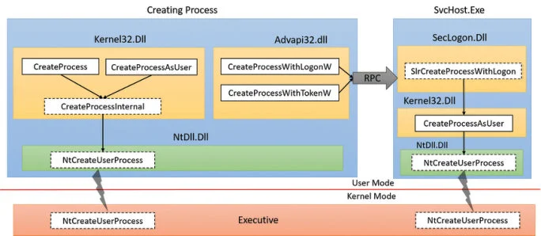
ここまで挙げた公開関数は、正しい Portable Executable（PE）ファイル、バッチファイル、または16ビットの COM アプリケーションを受け取ります。PE ファイルに .exe の拡張子は必須ではありません。
これらの公開関数は、拡張子から対応する実行ファイルを探す機能を持ちません。たとえば .txt に対応するメモ帳を探す処理は、Windows シェルの ShellExecute や ShellExecuteEx が担当します。
これらの関数は実行ファイル以外も受け取り、拡張子と HKEY_CLASSES_ROOT のレジストリ設定から、起動する実行ファイルを探します。詳しくは第10章「管理、診断、トレース」を参照してください。
最終的に ShellExecute または ShellExecuteEx は、適切な実行ファイルとコマンドライン引数を指定して CreateProcess を呼び出します。たとえばテキストファイルを編集する場合は、Notepad.exe にそのファイル名を渡します。
どの経路でも、最後は内部関数 CreateProcessInternal に行き着きます。
この関数が、ユーザーモードの Windows プロセスを作成する処理を開始します。
処理が順調に進むと、Ntdll.dll の NtCreateUserProcess を呼び出してカーネルモードに移ります。
プロセス作成のうちカーネルモードで行う処理は、エグゼクティブにある同名の関数 NtCreateUserProcess が担当します。
CreateProcess 系の関数の引数
CreateProcess 系の関数の主要な引数を確認します。一部は後述の「CreateProcess の処理の流れ」にも登場します。
ユーザーモードからプロセスを作成すると、その中には必ず1つのスレッドが作られます。
このスレッドが最終的に実行ファイルのメイン関数を実行します。
CreateProcessAsUserとCreateProcessWithTokenWには、新しいプロセスの実行に使うトークンのハンドルを渡します。CreateProcessWithLogonWには、ユーザー名、ドメイン、パスワードを渡します。
- 実行ファイルのパスとコマンドライン引数。
- 新しく作成するプロセスオブジェクトとスレッドオブジェクトに適用するセキュリティ属性（省略可）。
- 作成元のプロセスで継承可能とマークされたハンドルをすべて、新しいプロセスに継承（コピー）するかどうかを示す真偽値。ハンドルとその継承については、第8章「システムメカニズム」の「ハンドルの受け渡し」を参照してください。
- プロセス作成の動作を指定する各種フラグ。以下に例を示します。全項目は Windows SDK のドキュメントを参照してください。
CREATE_SUSPENDEDは新しいプロセスの最初のスレッドを中断状態で作成します。後でResumeThreadを呼び出すと、そのスレッドの実行が始まります。DEBUG_PROCESSは、作成元のプロセスをデバッガーとし、その制御下に新しいプロセスを作成します。EXTENDED_STARTUPINFO_PRESENTは、後述するSTARTUPINFOに代えて、拡張版のSTARTUPINFOEXを渡すことを示します。
- 新しいプロセスの環境変数を指定する、任意の環境ブロック。省略すると、作成元のプロセスから継承します。
- 新しいプロセスのカレントディレクトリ（省略可）。省略すると作成元と同じディレクトリを使います。作成後のプロセスは
SetCurrentDirectoryで変更できます。DLL のロード時にファイル名だけを指定する場合など、完全パスを指定しない検索で使われます。 - プロセス作成の追加設定を指定する
STARTUPINFOまたはSTARTUPINFOEX構造体。STARTUPINFOEXには、キーと値の組の配列に相当するプロセス属性とスレッド属性を表す、不透明なフィールドが追加されています。必要な属性ごとにUpdateProcThreadAttributeを1回呼び出して設定します。一部の属性は公開されておらず、次節で説明するストアアプリの作成などに内部で使われます。 - プロセスの作成に成功したときに返される
PROCESS_INFORMATION構造体。新しいプロセスとスレッドそれぞれの一意の ID、およびそれぞれのハンドルが入ります。作成元のプロセスは、作成後に新しいプロセスやスレッドを操作するために、これらのハンドルを使えます。
Windows のモダンアプリのプロセスを作成する
第1章では、Windows 8 と Windows Server 2012 から使えるようになった新しい種類のアプリケーションを説明しました。 名称は時期によって変わっていますが、本書では従来のデスクトップアプリケーションと区別して、モダンアプリ、UWP アプリ、またはイマーシブプロセスと呼びます。
モダンアプリケーションのプロセスを作成するには、正しい実行ファイルのパスを指定して CreateProcess を呼び出すだけでは足りません。
所定のコマンドライン引数に加え、UpdateProcThreadAttribute を使って、非公開のプロセス属性 PROC_THREAD_ATTRIBUTE_PACKAGE_FULL_NAME にストアアプリの完全なパッケージ名を設定する必要があります。
この属性は公開されていませんが、ストアアプリを起動するための公開 API はあります。
たとえば Windows API の COM インターフェイス IApplicationActivationManager は、CLSID_ApplicationActivationManager で識別される COM クラスに実装されています。
ストアアプリの完全なパッケージ名を GetPackageApplicationIds に渡してアプリケーションユーザーモデル ID（AppUserModelId）を取得すれば、インターフェイスの ActivateApplication メソッドで起動できます。
これらの API の詳細は Windows SDK を参照してください。
パッケージ名と、ユーザーがモダンアプリのタイルを選んでから CreateProcess に至るまでの流れは、第10章の「パッケージ化されたアプリケーション」で説明します。
その他の種類のプロセスを作成する
Windows アプリケーションから起動するのは、通常のデスクトップアプリケーションかモダンアプリケーションです。
エグゼクティブはこのほかに、ネイティブプロセス、最小プロセス、Pico プロセスなど、Windows API を経由せずに起動する種類のプロセスにも対応します。
たとえば、第2章で説明したセッションマネージャー Smss はネイティブイメージの一例です。
Smss を作成する際、カーネルは CreateProcess API を介さず、NtCreateUserProcess を直接呼び出します。
Smss がディスク検査ユーティリティの Autochk や、Windows サブシステムプロセスの Csrss を作成する場合も、Windows API は使えず、NtCreateUserProcess を使います。
一方、CreateProcessInternal はネイティブサブシステム向けのイメージを拒否するため、通常の Windows アプリケーションからネイティブプロセスを作成することはできません。
この処理を簡単にするため、ネイティブライブラリ Ntdll.dll は NtCreateUserProcess を包む簡潔なヘルパー関数 RtlCreateUserProcess をエクスポートしています。
NtCreateUserProcess は名前のとおり、ユーザーモードのプロセスを作成します。
一方、第2章で説明したように、Windows には 最小プロセスにあたる System プロセスやメモリ圧縮プロセスなど、カーネルモードのプロセスもあります。
Windows Subsystem for Linux などのプロバイダーが管理する Pico プロセスもあります。
これらの作成には NtCreateProcessEx システムコールを使います。
最小プロセスの作成など、一部の機能はカーネルモードの呼び出し元だけが使用できます。
Pico プロバイダーは、最小プロセスの作成と Pico プロバイダーコンテキストの初期化をまとめて行うヘルパー関数 PspCreatePicoProcess を呼び出します。
この関数はエクスポートされておらず、Pico プロバイダーだけが専用インターフェイスを通じて利用できます。
後述するように、NtCreateProcessEx と NtCreateUserProcess は別のシステムコールですが、どちらも同じ内部ルーチン PspAllocateProcess と PspInsertProcess に処理を委ねます。
ここまで挙げた方法も、WMI を使う PowerShell コマンドレットから作成する場合も、カーネルドライバーから作成する場合も、最終的にはこれらのルーチンに行き着きます。
プロセスの内部構造
この節では、Windows の各コンポーネントが管理する主要なプロセスデータ構造と、それらを調べる方法やツールを説明します。
Windows の各プロセスは、エグゼクティブプロセス構造体（EPROCESS）で表されます。
EPROCESS はプロセスのさまざまな属性を保持するほか、関連するデータ構造を内包したり、ポインターで参照したりします。
たとえば、各プロセスには1つ以上のスレッドがあり、それぞれがエグゼクティブスレッド構造体（ETHREAD）で表されます。スレッドのデータ構造については、第4章「スレッド」を参照してください。
EPROCESS と関連するデータ構造の大半は、システムアドレス空間にあります。
例外の一つがプロセス環境ブロック（PEB）です。ユーザーモードのコードが参照する情報を含むため、プロセスのユーザーアドレス空間にあります。
また、ワーキングセットリストなど、メモリ管理に使う一部のデータ構造は、プロセス固有のシステム空間に格納されるため、現在のプロセスのコンテキストでのみ有効です。
プロセスのアドレス空間については、第5章「メモリ管理」を参照してください。
Windows サブシステムプロセス（Csrss）は、Windows プログラムを実行するプロセスごとに、対応する CSR_PROCESS 構造体を管理します。
Windows サブシステムのカーネルモード部分（Win32k.sys）も、プロセスごとの W32PROCESS 構造体を管理します。
これは、スレッドがカーネルモードに実装された Windows の USER または GDI 関数を初めて呼び出したときに作成されます。
そのきっかけとなるのが User32.dll のロードです。典型的には、CreateWindow、CreateWindowEx、GetMessage などを使うと、このライブラリがロードされます。
カーネルモードの Windows サブシステムは、DirectX によるハードウェアアクセラレーションを広く使います。
そのため、グラフィックスデバイスインターフェイス（GDI）の基盤は、DirectX グラフィックスカーネル（Dxgkrnl.sys）に、独自の DXGPROCESS 構造体を初期化させます。
この構造体には、サーフェスやシェーダーなどの DirectX オブジェクトに関する情報と、GPGPU の演算処理やメモリ管理のスケジューリングに使うカウンターやポリシー設定が入ります。
アイドルプロセスを除き、エグゼクティブのオブジェクトマネージャーは、各 EPROCESS をプロセスオブジェクトとしてカプセル化します。詳細は、第8章の「オブジェクトマネージャー」を参照してください。
プロセスオブジェクトには名前がないため、Sysinternals の WinObj には表示されません。
ただし、WinObj の \ObjectTypes ディレクトリには、型を表す Process オブジェクトが表示されます。
プロセスのハンドルを使うと、プロセス関連 API を通じて、EPROCESS と関連構造体の一部のデータにアクセスできます。
ほかのドライバーやシステムコンポーネントも、プロセス作成の通知を受け取るよう登録しておくことで、必要に応じてプロセスごとの情報を追跡する独自のデータ構造を作れます。
これには、WDK に記載されているエグゼクティブ関数 PsSetCreateProcessNotifyRoutine、PsSetCreateProcessNotifyRoutineEx、PsSetCreateProcessNotifyRoutineEx2 を使います。
プロセスのオーバーヘッドを考える際は、こうしたデータ構造の大きさも考慮する必要がある場合が多いものの、正確な値を求めるのはほぼ不可能です。
また、一部の関数では、コンポーネントがプロセスの作成を拒否できます。
これにより、マルウェア対策製品のベンダーは、ハッシュ値に基づくブロックリストなどの手法を使って OS のセキュリティを強化できます。
まずプロセスオブジェクトを見ていきます。図3-2に EPROCESS 構造体の主要なフィールドを示します。
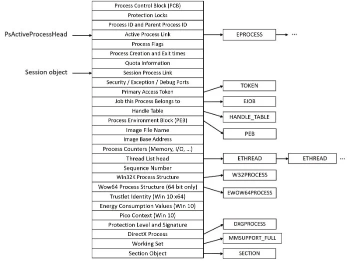
カーネルの API やコンポーネントは、固有の命名規則を持つ独立したモジュールに分かれ、階層をなしています。プロセスのデータ構造も同じように設計されています。
図3-2のように、エグゼクティブプロセス構造体の最初のメンバーは Pcb（Process Control Block、プロセス制御ブロック）です。
このメンバーは、カーネルプロセスを表す KPROCESS 型の構造体です。
エグゼクティブのルーチンは情報を EPROCESS に格納します。一方、OS カーネルの一部であるディスパッチャー、スケジューラー、割り込みや実行時間を集計するコードは KPROCESS を使います。
こうして、エグゼクティブが提供する上位の機能と、その一部を支える下位の実装の間に抽象化の境界を設け、層の間に不要な依存関係が生じにくくなります。
図3-3に KPROCESS 構造体の主要なフィールドを示します。
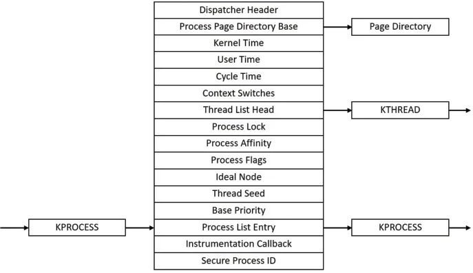
実験：EPROCESS 構造体のレイアウトを表示する
EPROCESS を構成するフィールドと、それぞれの16進オフセットを表示するには、カーネルデバッガーで dt nt!_eprocess と入力します。
カーネルデバッガーの詳細と、ローカルシステムでのデバッグ手順については、第1章の「カーネルデバッグ」を参照してください。
64ビット版 Windows 10 では、次のように表示されます。出力の一部は省略しています。
lkd> dt nt!_eprocess +0x000 Pcb : _KPROCESS +0x2d8 ProcessLock : _EX_PUSH_LOCK +0x2e0 RundownProtect : _EX_RUNDOWN_REF +0x2e8 UniqueProcessId : Ptr64 Void +0x2f0 ActiveProcessLinks : _LIST_ENTRY ... +0x3a8 Win32Process : Ptr64 Void +0x3b0 Job : Ptr64 _EJOB ... +0x418 ObjectTable : Ptr64 _HANDLE_TABLE +0x420 DebugPort : Ptr64 Void +0x428 WoW64Process : Ptr64 _EWOW64PROCESS ... +0x758 SharedCommitCharge : Uint8B +0x760 SharedCommitLock : _EX_PUSH_LOCK +0x768 SharedCommitLinks : _LIST_ENTRY
EPROCESS の出力例の続きです。
+0x778 AllowedCpuSets : Uint8B +0x780 DefaultCpuSets : Uint8B +0x778 AllowedCpuSetsIndirect : Ptr64 Uint8B +0x780 DefaultCpuSetsIndirect : Ptr64 Uint8B
この構造体の最初のメンバー Pcb には、KPROCESS 型の構造体が埋め込まれています。
スケジューリングと実行時間の集計に使うデータは、ここに格納されます。
カーネルプロセス構造体のレイアウトも、EPROCESS と同じ方法で表示できます。
lkd> dt nt!_kprocess +0x000 Header : _DISPATCHER_HEADER +0x018 ProfileListHead : _LIST_ENTRY +0x028 DirectoryTableBase : Uint8B +0x030 ThreadListHead : _LIST_ENTRY +0x040 ProcessLock : Uint4B ... +0x26c KernelTime : Uint4B +0x270 UserTime : Uint4B +0x274 LdtFreeSelectorHint : Uint2B +0x276 LdtTableLength : Uint2B +0x278 LdtSystemDescriptor : _KGDTENTRY64 +0x288 LdtBaseAddress : Ptr64 Void +0x290 LdtProcessLock : _FAST_MUTEX +0x2c8 InstrumentationCallback : Ptr64 Void +0x2d0 SecurePid : Uint8B
dt コマンドでは、構造体名の後ろにフィールド名を1つ以上指定すると、その内容だけを確認できます。
たとえば、dt nt!_eprocess UniqueProcessId はプロセス ID のフィールドを表示します。
EPROCESS の Pcb のように、フィールドが別の構造体を含む場合は、フィールド名の末尾にピリオドを付けると、その内部構造体を表示できます。
たとえば KPROCESS を見るには、dt nt!_eprocess Pcb. と入力する方法もあります。
さらに KPROCESS 内のフィールド名を追加して、階層を順にたどれます。
dt の -r オプションを使うと、すべての下位構造体を再帰的に表示します。オプションの後ろに数値を指定すると、表示する深さを制限できます。
構造体名だけを指定したときに dt が表示するのは、その型のレイアウトです。個別のプロセスに格納されたフィールドの値を表示するには、対象の構造体のアドレスが必要です。
その場合は、EPROCESS 構造体のアドレスを dt の引数に指定します。
!process 0 0 を実行すると、システムのアイドルプロセスを除き、ほぼすべての EPROCESS 構造体のアドレスを取得できます。
KPROCESS は EPROCESS の先頭にあるため、dt _kprocess に同じアドレスを渡して内容を表示できます。
実験：カーネルデバッガーの !process コマンドを使う
カーネルデバッガーの !process コマンドは、プロセスオブジェクトと関連構造体の情報の一部を表示します。
プロセスごとに出力は2部に分かれ、最初にプロセス自体の情報が表示されます。
プロセスのアドレスや ID を指定しなければ、!process は CPU 0 で現在実行中のスレッドが属するプロセスの情報を表示します。
単一プロセッサーのシステムでは、WinDbg 自身か、代わりに LiveKD を使っていれば LiveKD が対象です。
lkd> !process PROCESS ffffe0011c3243c0 SessionId: 2 Cid: 0e38 Peb: 5f2f1de000 ParentCid: 0f08 DirBase: 38b3e000 ObjectTable: ffffc000a2b22200 HandleCount: <Data Not Accessible> Image: windbg.exe VadRoot ffffe0011badae60 Vads 117 Clone 0 Private 3563. Modified 228. Locked 1. DeviceMap ffffc000984e4330 Token ffffc000a13f39a0 ElapsedTime 00:00:20.772 UserTime 00:00:00.000 KernelTime 00:00:00.015 QuotaPoolUsage[PagedPool] 299512 QuotaPoolUsage[NonPagedPool] 16240 Working Set Sizes (now,min,max) (9719, 50, 345) (38876KB, 200KB, 1380KB) PeakWorkingSetSize 9947 VirtualSize 2097319 Mb PeakVirtualSize 2097321 Mb PageFaultCount 13603 MemoryPriority FOREGROUND BasePriority 8 CommitCharge 3994 Job ffffe0011b853690
基本的なプロセス情報に続き、そのプロセスのスレッドが一覧表示されます。 この出力については、第4章の「実験：カーネルデバッガーの !thread コマンドを使う」を参照してください。
プロセスに関する情報を表示するコマンドには、プロセスのハンドルテーブルを表示する !handle もあります。
詳しくは第8章の「オブジェクトハンドルとプロセスのハンドルテーブル」を参照してください。
プロセスとスレッドのセキュリティ用データ構造については、第7章「セキュリティ」で説明します。
出力には PEB のアドレスも含まれます。
次の実験で使う !peb にこのアドレスを渡すと、対象のプロセスの PEB を読みやすい形式で表示できます。通常の dt コマンドで _PEB 構造体を表示することもできます。
ただし PEB はユーザーモードのアドレス空間にあるため、そのプロセスのコンテキストでのみ有効です。
別のプロセスの PEB を見るには、先に WinDbg のプロセスコンテキストを切り替えます。
.process /P に対象の EPROCESS へのポインターを続けて指定します。
本書の執筆時点で最新の Windows 10 SDK に含まれる WinDbg では、PEB アドレスの下にリンクが表示されます。クリックすると、.process と !peb の両方のコマンドが自動で実行されます。
PEB（プロセス環境ブロック）は、その PEB が表すプロセスのユーザーモードアドレス空間にあります。イメージローダー、ヒープマネージャー、そのほかの Windows コンポーネントがユーザーモードから参照する必要のある情報を保持します。この情報をすべてシステムコール経由で公開すると、処理の負荷が大きくなります。EPROCESS と KPROCESS 構造体には、カーネルモードからだけアクセスできます。PEB の主なフィールドを図3-4に示します。各フィールドの詳細は本章の後半で説明します。

実験：PEB の内容を確認する
カーネルデバッガーで !peb コマンドを使うと、CPU 0 で現在実行されているスレッドが属するプロセスの PEB 構造体を表示できます。直前の !process の実験で確認した PEB のポインターを、このコマンドの引数として指定することもできます。
lkd> .process /P ffffe0011c3243c0 ; !peb 5f2f1de000 PEB at 0000003561545000 InheritedAddressSpace: No ReadImageFileExecOptions: No BeingDebugged: No ImageBaseAddress: 00007ff64fa70000 Ldr 00007ffdf52f5200 Ldr.Initialized: Yes Ldr.InInitializationOrderModuleList: 000001d3d22b3630 . 000001d3d6cddb60 Ldr.InLoadOrderModuleList: 000001d3d22b3790 . 000001d3d6cddb40 Ldr.InMemoryOrderModuleList: 000001d3d22b37a0 . 000001d3d6cddb50 Base TimeStamp Module 7ff64fa70000 56ccafdd Feb 23 21:15:41 2016 C:\dbg\x64\windbg.exe 7ffdf51b0000 56cbf9dd Feb 23 08:19:09 2016 C:\WINDOWS\SYSTEM32\ntdll.dll 7ffdf2c10000 5632d5aa Oct 30 04:27:54 2015 C:\WINDOWS\system32\KERNEL32.DLL ...
CSR_PROCESS 構造体には、Windows サブシステム（Csrss）に固有のプロセス情報が格納されます。そのため、この構造体が関連付けられるのは Windows アプリケーションだけです。たとえば、ネイティブプロセスの Smss には関連付けられません。また、各セッションには独立した Windows サブシステムのインスタンスがあるため、CSR_PROCESS 構造体はセッションごとに、そのセッション内で動作する Csrss プロセスが管理します。CSR_PROCESS の基本構造を図3-5に示します。詳細は本章の後半で説明します。
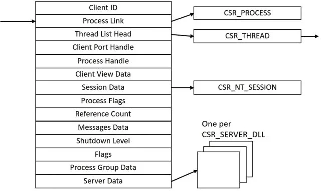
実験：CSR_PROCESS を調べる
Csrss は保護されたプロセスです。保護されたプロセスについては本章の後半で説明します。
管理者権限で実行していても、非侵入モードでも、ユーザーモードデバッガーを Csrss にアタッチすることはできません。
この実験では、カーネルデバッガーを使います。
まず、実行中の Csrss プロセスを一覧表示します。
lkd> !process 0 0 csrss.exe PROCESS ffffe00077ddf080 SessionId: 0 Cid: 02c0 Peb: c4e3fc0000 ParentCid: 026c DirBase: ObjectTable: ffffc0004d15d040 HandleCount: 543. Image: csrss.exe PROCESS ffffe00078796080 SessionId: 1 Cid: 0338 Peb: d4b4db4000 ParentCid: 0330 DirBase: ObjectTable: ffffc0004ddff040 HandleCount: 514. Image: csrss.exe
そのうちの1つを選び、ユーザーモードのモジュールを表示できるよう、デバッガーのプロセスコンテキストを切り替えます。
lkd> .process /r /P ffffe00078796080 Implicit process is now ffffe000'78796080 Loading User Symbols .............
/p オプションは、指定したプロセスオブジェクト（EPROCESS）にデバッガーのプロセスコンテキストを切り替えます。主にライブデバッグで必要です。
/r はユーザーモードのシンボルを読み込むよう指定します。
切り替え後は、lm コマンドでモジュール自体を調べたり、次のように CSR_PROCESS 構造体を表示したりできます。
lkd> dt csrss!_csr_process +0x000 ClientId : _CLIENT_ID +0x010 ListLink : _LIST_ENTRY +0x020 ThreadList : _LIST_ENTRY +0x030 NtSession : Ptr64 _CSR_NT_SESSION +0x038 ClientPort : Ptr64 Void +0x040 ClientViewBase : Ptr64 Char +0x048 ClientViewBounds : Ptr64 Char +0x050 ProcessHandle : Ptr64 Void +0x058 SequenceNumber : Uint4B +0x05c Flags : Uint4B +0x060 DebugFlags : Uint4B +0x064 ReferenceCount : Int4B +0x068 ProcessGroupId : Uint4B +0x06c ProcessGroupSequence : Uint4B +0x070 LastMessageSequence : Uint4B +0x074 NumOutstandingMessages : Uint4B +0x078 ShutdownLevel : Uint4B +0x07c ShutdownFlags : Uint4B +0x080 Luid : _LUID +0x088 ServerDllPerProcessData : [1] Ptr64 Void
最後に取り上げるプロセス関連のシステムデータ構造は W32PROCESS です。カーネルのグラフィックスおよびウィンドウ管理コード（Win32k）が、GUI プロセスの状態を管理するために必要な情報をすべて保持します。ここでいう GUI プロセスとは、USER または GDI のシステムコールを少なくとも1回実行したプロセスです。W32PROCESS の基本構造を図3-6に示します。公開シンボルに Win32k の構造体の型情報が含まれていないため、デバッガーでその内容を表示する実験は簡単には行えません。グラフィックス関連のデータ構造や概念は本書の範囲外です。

保護プロセス
Windows のセキュリティモデルでは、管理者アカウントなど、デバッグ特権を含むトークンで動作するプロセスは、同じマシン上で動く他のプロセスに対して任意のアクセス権を要求できます。たとえば、対象プロセスのメモリの読み書き、コードの挿入、スレッドの一時停止や再開、プロセス情報の照会が可能です。Process Explorer やタスクマネージャーは、機能を提供するためにこうしたアクセス権を要求します。
この動作は、管理者がシステム上で実行されるコードを完全に制御できるようにするためのものです。ただし、Blu-ray などの高品質なデジタルコンテンツの再生に対応する OS には、メディア業界からデジタル著作権管理（DRM）の要件が課され、この動作はその要件と衝突します。Windows Vista と Windows Server 2008 は、この種のコンテンツを保護しながら安定して再生するために、保護プロセスを導入しました。保護プロセスは通常の Windows プロセスと共存しますが、ほかのプロセスが要求できるアクセス権は、管理者権限で動作している場合も大きく制限されます。
どのアプリケーションも保護プロセスの作成を要求できますが、OS が保護を認めるのは、イメージファイルが特別な Windows Media 証明書でデジタル署名されている場合だけです。Windows の保護されたメディアパス（PMP）は、保護プロセスを使って価値の高いメディアを保護します。DVD プレーヤーなどのアプリケーション開発者は、Media Foundation（MF）API を通じて保護プロセスを利用できます。
Audio Device Graph プロセス（Audiodg.exe）は、保護された音楽コンテンツをデコードするため、保護プロセスとして動作します。
関連する Media Foundation Protected Pipeline（Mfpmp.exe）も同じ理由で保護されますが、既定では動作していません。
Windows エラー報告（WER、解説の節を参照）のクライアントプロセス Werfaultsecure.exe も、クラッシュした保護プロセスにアクセスするため、保護された状態で動作できます。
System プロセスも保護されます。復号に使う情報の一部を Ksecdd.sys が生成し、System プロセスのユーザーモードメモリに格納するためです。
System プロセスのハンドルテーブルにはシステム内のすべてのカーネルハンドルが含まれるので、その整合性も守る必要があります。
ほかにも、コード整合性の証明書やカタログデータなど、ドライバーが System プロセスのユーザーモードアドレス空間にマップする情報が保護の対象です。
カーネルは保護プロセスを2つの方法で支えます。
まず、コードの挿入を防ぐため、作成処理の大半をカーネルモードで行います。保護プロセスと通常のプロセスの作成手順は後述します。
次に、保護プロセスと、その拡張である Protected Process Light（PPL）の EPROCESS には専用のビットが設定され、プロセスマネージャーのセキュリティ関連ルーチンが、通常は管理者に付与されるアクセス権の一部を拒否します。
保護プロセスに対して付与されるのは PROCESS_QUERY_LIMITED_INFORMATION、PROCESS_SET_LIMITED_INFORMATION、PROCESS_TERMINATE、PROCESS_SUSPEND_RESUME に限られます。
保護プロセス内のスレッドに対する一部のアクセス権も無効になります。詳しくは第4章「スレッドの内部構造」を参照してください。
Process Explorer はユーザーモードの標準 Windows API で内部情報を照会するため、保護プロセスに対する一部の操作を実行できません。
カーネルデバッグモードの WinDbg は、カーネルの機構を使って情報を取得するので、すべての情報を表示できます。
Audiodg.exe などの保護プロセスを Process Explorer で調べる実験は、第4章「スレッドの内部構造」を参照してください。
こうしたアクセス権の制限によって、カーネルは保護プロセスをユーザーモードから隔離します。 この保護はカーネルモードのドライバーが信頼できることを前提としています。 保護を無効にするドライバーは PMP のモデルに反する悪意のあるコードと見なされます。64ビット版ではカーネルモードのコード署名ポリシーが、そうしたドライバーの署名とロードを防ぐために使われます。 第7章の PatchGuard と、保護環境および認証ドライバーもこの保護に関わります。
Peauth.sys はそのような試みを認識して報告します。32ビットシステムでも、ドライバーが PMP ポリシーに認められていなければ、再生が停止する場合があります。このポリシーは Microsoft が実装するもので、カーネルによる検出とは別の仕組みです。ブロックするには、Microsoft がその署名を悪意のあるものと特定し、カーネルを更新する必要があります。
軽量保護プロセス（PPL）
従来の保護プロセスは、主に DRM で保護されたコンテンツを対象としていました。Windows 8.1 と Windows Server 2012 R2 では、保護プロセスモデルを拡張した軽量保護プロセス（PPL）が導入されました。
PPL は従来の保護プロセスと同様に保護されます。ユーザーモードのコードは、昇格した権限で実行していても、スレッドを挿入したり、読み込み済みの DLL の詳細情報を取得したりすることはできません。PPL では、保護の強さに属性値という尺度が加わります。署名者ごとに信頼レベルが異なり、それに応じて PPL に適用される保護の強さが変わります。
DRM の対象がマルチメディアから Windows のライセンスや Windows ストアにも広がったため、従来の保護プロセスも署名者の値で区別されるようになりました。認識される各署名者は、保護レベルの低いプロセスに対して、どのアクセス権を拒否するかも定めます。たとえば通常は、PROCESS_QUERY_LIMITED_INFORMATION、PROCESS_SET_LIMITED_INFORMATION、PROCESS_SUSPEND_RESUME のアクセスマスクだけが許可されます。一部の PPL の署名者では PROCESS_TERMINATE は許可されません。
表3-1は、EPROCESS 構造体に格納される保護フラグの有効な値を示します。
| 内部のプロセス保護レベルのシンボル | 保護の種類 | 署名者 |
|---|---|---|
PS_PROTECTED_SYSTEM (0x72) | 保護 | WinSystem |
PS_PROTECTED_WINTCB (0x62) | 保護 | WinTcb |
PS_PROTECTED_WINTCB_LIGHT (0x61) | 軽量保護 | WinTcb |
PS_PROTECTED_WINDOWS (0x52) | 保護 | Windows |
PS_PROTECTED_WINDOWS_LIGHT (0x51) | 軽量保護 | Windows |
PS_PROTECTED_LSA_LIGHT (0x41) | 軽量保護 | Lsa |
PS_PROTECTED_ANTIMALWARE_LIGHT (0x31) | 軽量保護 | Anti-malware |
PS_PROTECTED_AUTHENTICODE (0x21) | 保護 | Authenticode |
PS_PROTECTED_AUTHENTICODE_LIGHT (0x11) | 軽量保護 | Authenticode |
PS_PROTECTED_NONE (0x00) | なし | なし |
表3-1のとおり、保護の強さが異なる複数の署名者が定義されています。優先度が最も高い WinSystem は System プロセスや、メモリ圧縮プロセスなどの最小プロセスに使われます。ユーザーモードプロセスでは、WinTCB（Windows Trusted Computer Base）が最も優先度の高い署名者です。カーネルが内部動作を把握している重要なプロセスの保護に使われます。
プロセスの保護の強さを比較するときは、まず保護プロセスが常に PPL より優先されることを確認します。
次に、署名者レベルが高いプロセスは低いプロセスにアクセスできますが、その逆はできません。
表3-2に、値が大きいほど強い権限を表す署名者レベルと、その使用例を示します。
デバッガーでは _PS_PROTECTED_SIGNER 型として確認できます。
| 署名者名（PS_PROTECTED_SIGNER） | レベル | 用途 |
|---|---|---|
PsProtectedSignerWinSystem | 7 | System プロセスと最小プロセス（Pico プロセスを含む） |
PsProtectedSignerWinTcb | 6 | Windows の中核コンポーネント。終了権限（PROCESS_TERMINATE）は拒否されます。 |
PsProtectedSignerWindows | 5 | 機密データを扱う重要な Windows コンポーネント |
PsProtectedSignerLsa | 4 | 保護モードに設定された Lsass.exe |
PsProtectedSignerAntimalware | 3 | サードパーティー製品を含むマルウェア対策サービスとプロセス。終了権限（PROCESS_TERMINATE）は拒否されます。 |
PsProtectedSignerCodeGen | 2 | NGEN（.NET のネイティブコード生成） |
PsProtectedSignerAuthenticode | 1 | DRM コンテンツのホストやユーザーモードフォントのロード |
PsProtectedSignerNone | 0 | 保護に使える署名者ではありません（保護なし）。 |
悪意のあるプロセスが自分を保護プロセスだと名乗り、マルウェア対策アプリケーションからのアクセスを防げないように、Windows はコード署名の証明書を検証します。
保護プロセスとして動くために Windows Media DRM 証明書が必須ではなくなったため、Microsoft はコード整合性モジュールを拡張し、コード署名証明書に含まれる特別な拡張キー使用法（EKU）の識別子を認識できるようにしました。
原文が挙げる OID は 1.3.6.1.4.1.311.10.3.22 と 1.3.6.4.1.311.10.3.20 です。
該当する EKU がある場合、証明書の署名者と発行者の文字列、および該当する追加の EKU を組み合わせて、保護署名者の値を決めます。
たとえば Microsoft Windows 発行者が PsProtectedSignerWindows を付与できるのは、Windows システムコンポーネント検証用の EKU（1.3.6.1.4.1.311.10.3.6）も含まれる場合です。
図3-7は、WinTcb-Light で実行できる Smss.exe の証明書を示しています。
プロセスの保護レベルは、ロードを許可される DLL にも影響します。
これを制限しなければ、ロジックの不具合やファイルの差し替えなどによって、正規の保護プロセスに第三者のライブラリや悪意のあるライブラリを読み込ませ、同じ保護レベルで動かせるおそれがあります。
この検査のために、プロセスの署名レベルを EPROCESS.SignatureLevel に格納します。
内部の対応表で、この値に対応する DLL 署名レベルを求め、EPROCESS.SectionSignatureLevel に格納します。
プロセスに読み込まれる DLL はすべて、実行ファイルと同様にコード整合性コンポーネントが検証します。
たとえば、実行ファイルの署名者が WinTcb のプロセスは、Windows 以上のレベルで署名された DLL だけを読み込めます。

Windows 10 と Windows Server 2016 では、smss.exe、csrss.exe、services.exe、wininit.exe は、WinTcb の署名者レベルを持つ軽量保護プロセス（WinTcb-Light）です。
Windows 10 Mobile などの ARM 版 Windows では Lsass.exe も PPL として動作します。x86 および x64 でも、レジストリ設定やポリシーで指定すれば PPL として動作できます。詳しくは第7章を参照してください。
Software Protection Platform の sppsvc.exe など、一部のサービスも Windows の PPL または保護プロセスとして動作するよう構成されています。
AppX 展開サービスや Windows Subsystem for Linux のサービスなども保護されるため、サービスをホストする Svchost.exe の一部が、この保護レベルで動作することがあります。
保護されたサービスについては、第10章の「保護されたサービス」で詳しく説明します。
これらの中核システムバイナリを TCB の保護レベルで実行することは、システムのセキュリティに欠かせません。
たとえば Csrss.exe は、ウィンドウマネージャー（Win32k.sys）が実装する非公開 API にアクセスできます。この API は、管理者権限を持つ攻撃者がカーネルの機密性の高い部分にアクセスする経路になりえます。
同様に、Smss.exe と Wininit.exe はシステムの起動と管理を担います。これらの処理は、管理者からも干渉されずに実行できる必要があります。
Windows はこれらのバイナリが常に WinTcb-Light で動作するようにします。
たとえば、CreateProcess の呼び出し時に、プロセス属性で正しい保護レベルを指定せずに起動することはできません。
この仕組みは最小 TCB リストと呼ばれます。システムのパスにある表3-3の名前に該当するプロセスには、呼び出し元の指定にかかわらず、最低限の保護レベル、署名レベル、またはその両方が適用されます。
| プロセス名 | 最小署名レベル | 最小保護レベル |
|---|---|---|
Smss.exe | 保護レベルから判定 | WinTcb-Lite |
Csrss.exe | 保護レベルから判定 | WinTcb-Lite |
Wininit.exe | 保護レベルから判定 | WinTcb-Lite |
Services.exe | 保護レベルから判定 | WinTcb-Lite |
Werfaultsecure.exe | 保護レベルから判定 | WinTcb-Full |
Sppsvc.exe | 保護レベルから判定 | Windows-Full |
Genvalobj.exe | 保護レベルから判定 | Windows-Full |
Lsass.exe | SE_SIGNING_LEVEL_WINDOWS | 0 |
Userinit.exe | SE_SIGNING_LEVEL_WINDOWS | 0 |
Winlogon.exe | SE_SIGNING_LEVEL_WINDOWS | 0 |
Autochk.exe | SE_SIGNING_LEVEL_WINDOWS* | 0 |
* UEFI ファームウェアを使うシステムに限ります。
実験：Process Explorer で保護プロセスを確認する
Process Explorer が、2種類の保護プロセスをどのように表示するかを確認します。Process Explorer を起動し、列の選択画面の「Process Image」タブで「Protection」にチェックを入れ、「Protection」列を表示します。

「Protection」列で降順に並べ替え、一覧の先頭へスクロールします。保護されているすべてのプロセスと、それぞれの保護の種類が表示されます。続く図は、64ビット版 Windows 10 での表示例です。

保護プロセスを選び、下部ペインを DLL 表示に切り替えても、何も表示されません。Process Explorer はユーザーモード API で読み込み済みのモジュールを照会しますが、保護プロセスに対しては、この照会に必要なアクセス権が認められないためです。例外は System プロセスです。System も保護されていますが、System プロセスには DLL が読み込まれないため、Process Explorer は読み込み済みのカーネルモジュール（主にドライバー）を一覧表示します。これには、プロセスハンドルを必要としないシステム API の EnumDeviceDrivers を使います。
ハンドル表示に切り替えると、ハンドルの情報はすべて表示されます。Process Explorer は、対象プロセスを指すハンドルを開かずに、システム上のすべてのハンドルを列挙する非公開 API を使います。この API が各ハンドルに対応する PID を返すため、Process Explorer は各ハンドルを所有するプロセスを特定できます。
サードパーティー向け PPL のサポート
PPL により、Microsoft が作成した実行ファイル以外のプロセスにも保護を適用できます。代表例はマルウェア対策（AM）ソフトウェアです。一般的な製品は、主に次の3つのコンポーネントで構成されます。
- ファイルシステムやネットワークへの I/O 要求を捕捉し、オブジェクト、プロセス、スレッドのコールバックを使ってブロック処理を行うカーネルドライバー。
- ドライバーのポリシーを設定し、感染ファイルの検出など、対処が必要なイベントの通知をドライバーから受け取るユーザーモードサービス。通常は特権アカウントで動作し、ローカルサーバーやインターネットと通信する場合もあります。
- ユーザーに情報を表示し、必要に応じて対処方法を選択できるようにするユーザーモードの GUI プロセス。
マルウェアは、昇格した権限で実行されるプロセスにコードを挿入してシステムを攻撃する場合があります。マルウェア対策サービス自体にコードを挿入されると、その動作を改変されたり無効にされたりするおそれがあります。マルウェア対策サービスを PPL として実行すれば、コードの挿入やプロセスの強制終了を防げるため、カーネルレベルの脆弱性を悪用しないマルウェアに対する保護が強まります。
この保護を使うには、前述のマルウェア対策用カーネルドライバーに対応する Early Launch Anti-Malware（ELAM）ドライバーが必要です。
ELAM は第7章で詳しく説明します。ここで重要なのは、ソフトウェアの発行元を検証したうえで Microsoft が発行する、マルウェア対策用の特別な証明書が必要なことです。
インストールした ELAM ドライバーの PE ファイルには、ELAMCERTIFICATEINFO という独自のリソースセクションを含められます。
このセクションには、公開鍵で識別する追加の署名者を3つまで記述でき、それぞれに OID で識別する拡張キー使用法（EKU）を3つまで指定できます。
コード整合性の機構は、指定された署名者と EKU に一致する署名を持つファイルを認識すると、そのプロセスに PS_PROTECTED_ANTIMALWARE_LIGHT（0x31）の PPL を要求することを許可します。
代表例が Microsoft の Windows Defender です。Windows 10 のサービス MsMpEng.exe と、ネットワーク検査サーバーの NisSvc.exe は、マルウェア対策機能自体を攻撃から守るために、この証明書で署名されています。
最小プロセスと Pico プロセス
ここまで見たプロセスとそのデータ構造からは、プロセスはユーザーモードのコードを実行するためにあり、その目的で多くのデータ構造をメモリに持つように見えます。 ただし、プロセスの用途はそれだけではありません。 たとえば System プロセスは、ほとんどのシステムスレッドを収容し、その実行時間が無関係なユーザーモードプロセスに計上されないようにします。 ドライバーのハンドル（カーネルハンドル）も収容し、無関係なアプリケーションの所有にならないようにします。
最小プロセス
カーネルモードの呼び出し元が NtCreateProcessEx に所定のフラグを指定すると、関数は PsCreateMinimalProcess を呼び出します。
これにより、前に説明したデータ構造の多くを持たないプロセスが作られます。
- ユーザーモードのアドレス空間を準備しないため、PEB と関連構造体はありません。
- NTDLL やローダーと API セットの情報はマップされません。
- セクションオブジェクトは関連付けられません。実行やプロセス名に対応する実行イメージファイルはなく、名前は空でも任意の文字列でも構いません。
EPROCESSのMinimalフラグが設定されます。すべてのスレッドが最小スレッドになり、TEB やユーザーモードスタックなどの割り当ても行いません。TEB については第4章を参照してください。
第2章で説明したように、Windows 10 には少なくとも System プロセスとメモリ圧縮プロセスの2つの最小プロセスがあります。
仮想化ベースのセキュリティが有効であれば、3つ目の Secure System プロセスも動作します。この機能の詳細は第2章と第7章を参照してください。
Windows 10 で最小プロセスを動かすもう一つの方法は、第2章で取り上げた Windows Subsystem for Linux（WSL）のオプション機能を有効にすることです。これにより、Windows に同梱された Pico プロバイダーがインストールされます。このプロバイダーは Lxss.sys と LxCore.sys の2つのドライバーで構成されます。
Pico プロセス
最小プロセスの用途は、カーネルコンポーネントがユーザーモードの仮想アドレス空間にアクセスし、その空間を保護できるようにすることなどに限られます。 Pico プロセスでは、Pico プロバイダーという専用コンポーネントが、OS の観点から実行の大部分を制御できます。 これにより、プロバイダーは別の OS のカーネルの動作をエミュレートできます。ユーザーモードのバイナリは、Windows 上で動いていることを意識せずに実行されます。 これは Microsoft Research の Drawbridge プロジェクトの考え方を実装したものです。SQL Server for Linux にも同様の手法が使われていますが、こちらでは Linux カーネル上で Windows ベースのライブラリ OS が動作します。
Pico プロセスを使うには、まずプロバイダーが必要です。
プロバイダーを登録するには PsRegisterPicoProvider を使いますが、起動用ドライバーを含むサードパーティー製ドライバーより先にロードする必要があります。
この API を利用できるのは、登録が無効になる前にロードされる十数個の中核ドライバーのうちの1つだけです。これらには Microsoft の署名者証明書と Windows コンポーネントの拡張キー使用法（EKU）が必要です。
オプションの WSL を有効にした Windows では、この中核ドライバーは Lxss.sys です。
Lxss.sys は最初、スタブドライバーとして動作します。少し後にロードされる LxCore.sys が、各ディスパッチテーブルと Pico プロバイダーとしての役割を引き継ぎます。
本書の執筆時点では、このような中核ドライバーを Pico プロバイダーとして登録できるのは、システムにつき1つだけです。
プロバイダーが登録 API を呼び出すと、Pico プロセスとスレッドの作成や管理に使う関数ポインターが返されます。
- Pico プロセスを作成する関数と、Pico スレッドを作成する関数。
- Pico プロセスのコンテキストを取得・設定する関数と、Pico スレッドに対して同じ操作を行う関数。コンテキストはプロバイダー固有のデータを保持する任意のポインターで、
EPROCESSやETHREADのPicoContextに格納されます。 - Pico スレッドの CPU コンテキスト構造体（
CONTEXT）を取得・設定する関数。 - Pico スレッドの
FSやGSセグメントを変更する関数。ユーザーモードのコードは通常、Windows の TEB のようなスレッド固有の構造体を参照するために、これらのセグメントを使います。 - Pico スレッドを終了する関数と、Pico プロセスを終了する関数。
- Pico スレッドを中断する関数と再開する関数。
プロバイダーは、これらの関数で独自のプロセスやスレッドを作り、実行開始時の状態、セグメントレジスタ、関連データを制御できます。 別の OS をエミュレートするには、その後の実行中のイベントも処理する必要があります。 そこで、プロバイダーからカーネルにも関数ポインターのセットを渡します。 カーネルは、Pico スレッドやプロセスで特定のイベントが発生したとき、これらの関数をコールバックとして呼び出します。
- Pico スレッドが
SYSCALL命令でシステムコールを発行したとき。 - Pico スレッドで例外が発生したとき。
- Pico スレッド内で、メモリ記述子リスト（MDL）が記述するメモリページを検査し、ロックする処理中にフォールトが発生したとき。
- 呼び出し元が Pico プロセスの名前を要求したとき。
- Windows イベントトレーシング（ETW）が Pico プロセスのユーザーモードのスタックトレースを要求したとき。
- アプリケーションが Pico プロセスまたは Pico スレッドのハンドルを開こうとしたとき。
- Pico プロセスの終了が要求されたとき。
- Pico スレッドまたは Pico プロセスが予期せず終了したとき。
Pico プロバイダーは、第7章で説明するカーネルパッチ保護（KPP）も利用します。これにより、プロバイダーのコールバックとシステムコールを保護し、不正な Pico プロバイダーが正規のプロバイダーに重ねて登録されるのを防ぎます。
Pico プロバイダーは、Pico プロセスやスレッドと外部とのやり取りのうち、ユーザーモードからカーネルモードへの移行や、ユーザーモードから観測できるカーネルとのやり取りを広く処理できます。このため、対応するユーザーモードライブラリと組み合わせて処理を包み込み、Windows とはまったく異なるカーネルのインターフェイスを提供できます。ただし、スレッドのスケジューリングやメモリのコミットなどの管理規則には、引き続き Windows の規則が適用されます。正しく作られたアプリケーションは、こうした内部アルゴリズムに依存しません。本来の実行先である OS でも、それらは変更され得るためです。
Pico プロバイダーは、Pico プロセスが引き起こす前述の各イベントに応答するためのコールバックを実装した、専用のカーネルモジュールです。WSL はこの仕組みを使い、Linux の ELF バイナリを変更せずにユーザーモードで実行します。実行できる範囲は、システムコールのエミュレーションと関連機能がどこまで実装されているかで決まります。
図3-8に、通常の NT プロセス、最小プロセス、Pico プロセスのそれぞれで使われる構造体を示します。
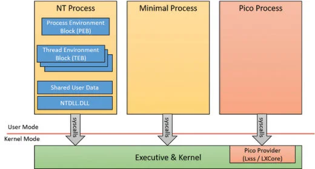
トラストレット（セキュアプロセス）
第2章で説明したように、Windows には Device Guard や Credential Guard など、ハイパーバイザーを利用して OS とユーザーデータを保護する仮想化ベースのセキュリティ（VBS）機能があります。 第7章で詳しく扱う Credential Guard は、分離ユーザーモード（IUM）という環境で動作します。 IUM は特権を持たないリング3で動作しますが、仮想信頼レベルは VTL 1 です。 このため、NT カーネル（リング0）とアプリケーション（リング3）が動作する通常の VTL 0 環境から保護されます。 ここでは、カーネルがこれらのプロセスを実行できるようにする手順と、プロセスが使うデータ構造を見ていきます。
トラストレットの構造
トラストレットは通常の Windows Portable Executable（PE）ファイルですが、IUM 固有の特徴があります。
- 使用できるシステムコールが限られるため、インポートできる Windows システム DLL は、C/C++ ランタイム、KernelBase、Advapi、RPC ランタイム、CNG Base Crypto、NTDLL に限られます。NTLM や ASN.1 など、データ構造に対する計算や変換だけを行う DLL も、システムコールを発行しないため利用できます。
- IUM 専用のシステム DLL
Iumbaseからもインポートできます。この DLL は IUM の基本システム API を提供し、メールスロット、ストレージボックス、暗号処理などをサポートします。内部では、VTL 1 版のNtdll.dllに当たるIumdll.dllを呼び出します。ここにはセキュアカーネルが実装するセキュアシステムコールがあり、通常の VTL 0 のカーネルには転送されません。 - PE セクション
.tPolicyには、エクスポートされたグローバル変数s_IumPolicyMetadataが入ります。セキュアカーネルはこのメタデータを使い、VTL 0 からトラストレットへのアクセスをどこまで許可するかを決めます。たとえば、デバッグやクラッシュダンプを許可するかを設定できます。 - IUM の拡張キー使用法（原文表記の OID は
1.3.6.1.4.311.10.3.37）を含む証明書で署名されています。図3-9は、その EKU を含むLsaIso.exeの証明書を示しています。
さらに、CreateProcess でトラストレットを起動するときは、IUM での実行を要求し、起動時のプロパティを渡すために、所定のプロセス属性を指定します。
以下の節では、ポリシーのメタデータとプロセス属性の両方を説明します。

トラストレットのポリシーメタデータ
ポリシーメタデータには、VTL 0 からトラストレットにどこまでアクセスを許可するかを設定するオプションが含まれます。前述のエクスポート変数 s_IumPolicyMetadata が示す構造体で表され、バージョン番号（本書の対象バージョンでは1）と、既知のトラストレットの中からそのトラストレットを一意に識別するトラストレット ID を保持します。たとえば BioIso.exe のトラストレット ID は4です。構造体にはポリシーオプションの配列もあります。対応するオプションは表3-4のとおりです。これらのポリシーは署名済みの実行ファイルデータの一部なので、変更すると IUM の署名が無効になり、実行できなくなります。
| ポリシー | 意味 | 補足 |
|---|---|---|
| ETW | ETW を有効または無効にします。 | |
| Debug | デバッグを設定します。 | 常に有効にするか、セキュアブートが無効な場合だけ有効にするか、必要時にチャレンジレスポンス方式で有効にするかを設定できます。 |
| Crash Dump | クラッシュダンプを有効または無効にします。 | |
| Crash Dump Key | クラッシュダンプの暗号化に使う公開鍵を指定します。 | ダンプは、復号用の秘密鍵を持つ Microsoft の製品チームに提出できます。 |
| Crash Dump GUID | クラッシュダンプの鍵の識別子を指定します。 | 製品チームが複数の鍵を使い分け、それぞれを識別できるようにします。 |
| ポリシー | 意味 | 詳細 |
|---|---|---|
| 親のセキュリティ記述子 | SDDL 形式の記述子 | 所有元または親のプロセスが想定どおりであることを検証します。 |
| 親のセキュリティ記述子のリビジョン | SDDL 形式のリビジョン ID | 所有元または親のプロセスが想定どおりであることを検証します。 |
| SVN | セキュリティバージョン | トラストレットが AES-256/GCM でメッセージを暗号化するとき、トラストレットの識別子と併せて使える一意の番号です。 |
| デバイス ID | セキュアデバイスの PCI 識別子 | PCI ID が一致するセキュアデバイスとだけ通信できます。 |
| 機能 | 特権を伴う VTL 1 の機能を有効にする | セキュアセクションの作成 API、セキュアデバイスに対する DMA とユーザーモードの MMIO アクセス、セキュアストレージ API を使用できます。 |
| シナリオ ID | バイナリのシナリオ ID を指定する | GUID で表します。セキュアイメージセクションの作成時に指定し、既知のシナリオ用であることを確認できるようにします。 |
トラストレットの属性
トラストレットを起動するには、PS_CP_SECURE_PROCESS 属性を正しく指定する必要があります。
システムはまず、この属性を使って、呼び出し元にトラストレットを作成する意図があることと、呼び出し元が指定したトラストレットが実際に実行されるものと一致することを確認します。
属性にはトラストレット識別子を入れます。この識別子はポリシーのメタデータに含まれる ID と一致する必要があります。
このほか、表3-5の属性を1つ以上指定できます。
| 属性 | 意味 | 詳細 |
|---|---|---|
| メールボックスキー | メールボックスのデータを取得する | トラストレットのキーが分かっていれば、メールボックスを通じて VTL 0 の環境とデータを共有できます。 |
| コラボレーション ID | IUM のセキュアストレージ API で使う ID を設定する | 同じコラボレーション ID のトラストレットどうしでデータを共有できます。指定しなければ、トラストレットのインスタンス ID を使います。 |
| TK セッション ID | 暗号処理で使用するセッションを識別する |
システム組み込みのトラストレット
本書の執筆時点で、Windows 10 には、それぞれ別の識別番号を持つ5つのトラストレットが含まれています。 表3-6に示します。トラストレット ID の0は、セキュアカーネル自体を表します。
| バイナリ名（トラストレット ID） | 説明 | ポリシーオプション |
|---|---|---|
LsaIso.exe（1） | Credential Guard と Key Guard のトラストレット | ETW を許可し、デバッグを無効にし、暗号化されたクラッシュダンプを許可します。 |
Vmsp.exe（2） | セキュア仮想マシンワーカー（vTPM トラストレット） | ETW を許可し、デバッグとクラッシュダンプを無効にし、セキュアストレージ機能を有効にします。親のセキュリティ記述子が S-1-5-83-0（NT VIRTUAL MACHINE\Virtual Machines）であることを検証します。 |
| 不明（3） | vTPM キー登録用トラストレット | 不明。 |
BioIso.exe（4） | セキュア生体認証トラストレット | ETW を許可し、デバッグを無効にし、暗号化されたクラッシュダンプを許可します。 |
FsIso.exe（5） | セキュアフレームサーバートラストレット | ETW を無効にし、デバッグを許可し、セキュアセクションの作成機能を有効にします。シナリオ ID {AE53FC6E-8D89-4488-9D2E-4D008731C5FD} を使います。 |
トラストレットの識別情報
システムは、トラストレットを識別するために複数の値を使います。
- トラストレット識別子（トラストレット ID） ポリシーのメタデータに固定値として記述する整数です。プロセス作成時の属性にも同じ値を指定します。システムはこの値を使って、起動できる種類を限られたトラストレットに絞り、呼び出し元が意図したトラストレットを起動することを確かめます。
- トラストレットのインスタンス ID セキュアカーネルが暗号学的に安全な方法で生成する16バイトの乱数です。コラボレーション ID がない場合、セキュアストレージ API は、この ID を持つインスタンスにだけ、対応するストレージ領域のデータの読み書きを許可します。
- コラボレーション ID 同じ ID を持つ別のトラストレットや、同じトラストレットの別インスタンスに、同じセキュアストレージ領域へのアクセスを許可するために使います。この ID があれば、Get API や Put API の呼び出し時にインスタンス ID は使われません。
- セキュリティバージョン（SVN） 署名済みまたは暗号化済みのデータの出所を、暗号学的に強く証明する必要がある場合に使います。Credential Guard と Key Guard の AES-256/GCM による暗号化や、Cryptograph Report サービスで使われます。
- シナリオ ID セキュアセクションなど、名前付きのセキュアカーネルオブジェクトを作成するトラストレットで使います。この GUID を名前空間でオブジェクトに付けることで、あらかじめ定められたシナリオの一環として作成していることを検証します。同じ名前のオブジェクトを開こうとする別のトラストレットにも、同じシナリオ ID が必要です。複数の ID を指定できますが、本書の執筆時点では、複数を使うトラストレットはありません。
分離ユーザーモードのサービス
トラストレットとして実行すると、通常の環境（VTL 0）からの攻撃から保護されます。 また、セキュアカーネルがトラストレット専用に提供する、特権を伴う保護されたシステムコールを使えます。主なサービスは次のとおりです。
- セキュアデバイス（
IumCreateSecureDevice、IumDmaMapMemory、IumGetDmaEnabler、IumMapSecureIo、IumProtectSecureIo、IumQuerySecureDeviceInformation、IopUnmapSecureIo、IumUpdateSecureDeviceState）は、セキュアな ACPI デバイスや PCI デバイスへのアクセスを提供します。これらのデバイスは VTL 0 からアクセスできず、セキュアカーネルと、その補助サービスであるセキュア HAL およびセキュア PCI が専有します。対応する機能を許可されたトラストレットは、デバイスのレジスタを VTL 1 の IUM にマップでき、場合によってはダイレクトメモリアクセス（DMA）転送も行えます。また、SDFHost.dllにある Secure Device Framework（SDF）を使い、これらのデバイスのユーザーモードドライバーとして動作できます。Windows Hello のセキュア生体認証では、この仕組みを PCI 経由のセキュア USB スマートカードや、ACPI 経由のカメラや指紋センサーなどに利用します。 - セキュアセクション（
IumCreateSecureSection、IumFlushSecureSectionBuffers、IumGetExposedSecureSection、IumOpenSecureSection）は、公開したセキュアセクションを介して、VslCreateSecureSectionを使う VTL 0 のドライバーと物理ページを共有できます。VTL 1 内だけでデータを共有する場合は、名前付きセキュアセクションを使います。共有先は別のトラストレットや同じトラストレットの別のインスタンスで、前述の識別情報に基づいて制御されます。どちらの場合も、ポリシーでセキュアセクション機能を許可する必要があります。 - メールボックス（
IumPostMailbox）では、1スロット当たり最大約4 KBのデータを、最大8スロットまで通常のカーネル（VTL 0）のコンポーネントと共有できます。受信側はスロット識別子と秘密のメールボックスキーをVslRetrieveMailboxに渡します。たとえば VTL 0 のVid.sysは、vTPM が使う機密情報をVmsp.exeトラストレットから受け取ります。 - 識別キー（
IumGetIdk）を使うと、トラストレットは一意の識別用の復号鍵または署名鍵を取得できます。この鍵素材はマシンごとに異なり、トラストレットだけが取得できます。Credential Guard がマシンを一意に認証し、資格情報の出所が IUM であることを確かめるために欠かせません。 - 暗号サービス（
IumCrypto）では、セキュアカーネルが生成し IUM だけが利用できるローカルキーや起動セッションごとのキーを用いて、データを暗号化・復号できます。TPM バインディングのハンドル、セキュアカーネルの FIPS モード、IUM 専用としてセキュアカーネルが生成した乱数生成器（RNG）のシードも取得できます。さらに、識別キーによる署名、SHA-2 ハッシュ、タイムスタンプを伴うレポートを生成できます。レポートには、トラストレットの識別情報とセキュリティバージョン（SVN）、ポリシーメタデータ、過去にデバッガーが接続されたかどうか、要求に応じたトラストレット管理下のデータを含められます。TPM の計測と同様に、トラストレットが改変されていないことの証明に使えます。
- セキュアストレージ（
IumSecureStorageGet、IumSecureStoragePut）を使うと、前述の「トラストレットのポリシーメタデータ」でセキュアストレージ機能を許可されたトラストレットが、任意の大きさのデータを保存し、後で取得できます。アクセスはトラストレットの固有のインスタンス ID に基づきますが、コラボレーション ID を共有する別のトラストレットとデータを共有することもできます。
トラストレットが使えるシステムコール
セキュアカーネルは攻撃対象領域を小さくするため、通常の VTL 0 アプリケーションが使える数百のシステムコールのうち、50未満だけを提供します。
これらは、「トラストレットの構造」で挙げたシステム DLL との互換性を保ち、RPC ランタイム（Rpcrt4.dll）と ETW トレースを支えるために必要な最小限のものです。
- ワーカーファクトリとスレッドの APIは、RPC が使うスレッドプール API と、ローダーが使うスレッドローカルストレージ（TLS）のスロットを支えます。
- プロセス情報 APIは、TLS スロットとスレッドスタックの割り当てを支えます。
- イベント、セマフォ、待機、完了の APIは、スレッドプールと同期を支えます。
- ALPC APIは、
ncalrpcトランスポートを使うローカル RPC を支えます。 - システム情報 APIは、セキュアブートの情報、
Kernel32.dllとスレッドプールの規模調整のための基本的なシステム情報と NUMA 情報、パフォーマンス情報、および一部の時刻情報を読み取るために使います。 - トークン APIは、RPC の偽装に必要な最小限の機能を提供します。
- 仮想メモリ割り当て APIは、ユーザーモードヒープマネージャーによる割り当てを支えます。
- セクション APIは、ローダーによる DLL イメージの読み込みと、前述のセキュアシステムコールで作成または公開されたセキュアセクションの利用を支えます。
- トレース制御 APIは、ETW を支えます。
- 例外と実行再開の APIは、構造化例外処理（SEH）を支えます。
この一覧から分かるように、トラストレットはファイルや物理デバイスに対するデバイス I/O を行えません。CreateFile API 自体が提供されていないためです。
レジストリ I/O や他のプロセスの作成もできません。VTL 1 には Win32k.sys ドライバーがないため、グラフィックス API も使えません。
トラストレットは、VTL 0 で動く複雑なフロントエンドの処理を引き受ける、VTL 1 の分離されたバックエンドです。
通信には ALPC または公開されたセキュアセクションを使い、セキュアセクションのハンドルも ALPC で受け取ります。
第7章「セキュリティ」では、Credential Guard と Key Guard を提供する LsaIso.exe の実装を詳しく見ていきます。
実験：セキュアプロセスを識別する
カーネルデバッガーでは、プロセス名のほか、2種類の値からセキュアプロセスを識別できます。 1つ目はセキュア PID です。これはセキュアカーネルのハンドルテーブルにある、そのプロセスのハンドルを表します。 通常のカーネル（VTL 0）は、そのプロセスにスレッドを作成するときや、プロセスの終了を要求するときに使います。 2つ目は、各スレッドに関連付けられたスレッドクッキーです。これは、セキュアカーネルのスレッドテーブル内のインデックスを表します。
カーネルデバッガーで、次のように確認できます。
lkd> !for_each_process .if @@(((nt!_EPROCESS*)${@#Process})->Pcb.SecurePid) {
.printf "Trustlet: %ma (%p)\n", @@(((nt!_EPROCESS*)${@#Process})->ImageFileName),
@#Process }
Trustlet: Secure System (ffff9b09d8c79080)
Trustlet: LsaIso.exe (ffff9b09e2ba9640)
Trustlet: BioIso.exe (ffff9b09e61c4640)
lkd> dt nt!_EPROCESS ffff9b09d8c79080 Pcb.SecurePid
+0x000 Pcb :
+0x2d0 SecurePid : 0x00000001'40000004
lkd> dt nt!_EPROCESS ffff9b09e2ba9640 Pcb.SecurePid
+0x000 Pcb :
+0x2d0 SecurePid : 0x00000001'40000030
lkd> dt nt!_EPROCESS ffff9b09e61c4640 Pcb.SecurePid
+0x000 Pcb :
+0x2d0 SecurePid : 0x00000001'40000080
lkd> !process ffff9b09e2ba9640 4
PROCESS ffff9b09e2ba9640
SessionId: 0 Cid: 0388 Peb: 6cdc62b000 ParentCid: 0328
DirBase: 2f254000 ObjectTable: ffffc607b59b1040 HandleCount: 44.
Image: LsaIso.exe
THREAD ffff9b09e2ba2080 Cid 0388.038c Teb: 0000006cdc62c000 Win32Thread:
0000000000000000 WAIT
lkd> dt nt!_ETHREAD ffff9b09e2ba2080 Tcb.SecureThreadCookie
+0x000 Tcb :
+0x31c SecureThreadCookie : 9
CreateProcess の処理の流れ
ここまでは、プロセスの状態を操作・管理するためのデータ構造と、それらをツールやデバッガーで調べる方法を見てきました。
この節では、データ構造がいつどのように作られ、値が設定されるかを確認し、プロセスの作成と終了の全体像を説明します。
公開されているプロセス作成関数はすべて、最終的に CreateProcessInternalW を呼ぶので、そこから始めます。
Windows のプロセス作成はいくつかの段階に分かれ、OS の3つの部分が処理を分担します。
Windows のクライアント側ライブラリ Kernel32.dll（実際の処理は CreateProcessInternalW から始まります）、Windows エグゼクティブ、Windows サブシステムプロセス（Csrss）です。
Windows は複数の環境サブシステムに対応しています。そのため、ほかのサブシステムでも使えるエグゼクティブのプロセスオブジェクトを作成する処理と、Windows サブシステム固有のプロセス作成処理は分かれています。以下で説明する Windows の CreateProcess の処理は複雑ですが、エグゼクティブのオブジェクトを作成する中核処理に加え、Windows サブシステム固有の処理も含まれます。
Windows の CreateProcess* 関数でプロセスを作成する主な段階は次のとおりです。各段階の処理は以降の節で詳しく説明します。
注 CreateProcess の手順の多くは、プロセスの仮想アドレス空間の設定に関わります。ここで使うメモリ管理の用語や構造体は第5章で説明します。
- パラメーターを検証します。Windows サブシステムのフラグとオプションを対応するネイティブ形式に変換します。属性リストを解析および検証し、対応するネイティブ形式に変換します。
- プロセス内で実行するイメージファイル（.exe）を開きます。
- Windows エグゼクティブのプロセスオブジェクトを作成します。
- 初期スレッドのスタック、コンテキスト、Windows エグゼクティブのスレッドオブジェクトを作成します。
- 作成後に、Windows サブシステム固有のプロセス初期化を行います。
CREATE_SUSPENDEDフラグが指定されていなければ、初期スレッドの実行を開始します。- 新しいプロセスとスレッドのコンテキストで、必要な DLL を読み込むなどしてアドレス空間の初期化を完了し、プログラムのエントリポイントから実行を開始します。
図3-10に、Windows がプロセスを作成するまでの流れを示します。

段階1：引数とフラグの変換・検証
実行するイメージファイルを開く前に、CreateProcessInternalW は次の処理を行います。
- 新しいプロセスの優先度クラスは、
CreateProcess系の関数のCreationFlags引数で、互いに独立したビットとして指定します。1回の呼び出しで複数を指定すると、Windows は指定されたクラスのうち最も低いものを選びます。プロセスの優先度クラスは6種類あり、それぞれ次の数値に対応します。
- アイドル（タスクマネージャーでは「低」）は4
- 通常以下は6
- 通常は8
- 通常以上は10
- 高は13
- リアルタイムは24
優先度クラスは、そのプロセスで作成されるスレッドの基本優先度に使われます。優先度クラスが直接影響するのはプロセス内のスレッドに限られます。スレッドのスケジューリングへの影響については第4章を参照してください。
- 新しいプロセスの優先度クラスを省略した場合、既定値は「通常」です。「リアルタイム」を指定しても、呼び出し元がスケジューリング優先順位を引き上げる特権（
SE_INC_BASE_PRIORITY_NAME）を持っていなければ、代わりに「高」が使われます。この特権がないことだけでプロセスの作成が失敗することはありません。 - 作成フラグでデバッグ対象に指定されていれば、Kernel32 は
DbgUiConnectToDbgを呼び出してNtdll.dll内のネイティブデバッグコードに接続し、現在のスレッドの環境ブロック（TEB）からデバッグオブジェクトのハンドルを取得します。 - 作成フラグで既定のハードエラーモードが指定されていれば、
Kernel32.dllはそのモードを設定します。 - ユーザーが指定した属性リストを Windows サブシステム形式からネイティブ形式に変換し、内部属性を追加します。追加できる属性と、対応する公開 Windows API があればその名前を、表3-7に示します。
| ネイティブ属性 | 対応する Win32 属性 | 種類 | 説明 |
|---|---|---|---|
PS_CP_PARENT_PROCESS | PROC_THREAD_ATTRIBUTE_PARENT_PROCESS | 入力 | 親プロセスのハンドル。昇格時にも使われます。 |
PS_CP_DEBUG_OBJECT | なし | 入力 | デバッグ対象として起動する場合のデバッグオブジェクト。Win32 では DEBUG_PROCESS フラグを使います。 |
PS_CP_PRIMARY_TOKEN | なし | 入力 | CreateProcessAsUser などで指定するプロセストークン。Win32 では CreateProcessAsUser または CreateProcessWithTokenW を使います。 |
PS_CP_CLIENT_ID | なし | 出力 | 最初のスレッドの TID と新しいプロセスの PID。Win32 では PROCESS_INFORMATION に入ります。 |
PS_CP_TEB_ADDRESS | なし | 出力 | 最初のスレッドの TEB アドレス。内部で使用され、公開されません。 |
PS_CP_FILENAME | なし | 入力 | 作成するプロセスのファイル名。CreateProcess 系の API の引数として渡します。 |
PS_CP_IMAGE_INFO | なし | 出力 | 実行ファイルのバージョン、フラグ、サブシステム、スタックサイズ、エントリポイントを含む SECTION_IMAGE_INFORMATION。内部で使用され、公開されません。 |
PS_CP_MEM_RESERVE | なし | 入力 | アドレス空間の初期作成時に予約する仮想メモリ領域の配列。他の割り当てが始まる前に処理するため、領域を確保できます。SMSS と CSRSS が内部で使います。 |
PS_CP_PRIORITY_CLASS | なし | 入力 | プロセスに割り当てる優先度クラス。CreateProcess の引数で指定します。 |
PS_CP_ERROR_MODE | なし | 入力 | プロセスのハードエラー処理モード。Win32 では CREATE_DEFAULT_ERROR_MODE フラグで指定します。 |
PS_CP_STD_HANDLE_INFO | なし | 入力 | 標準ハンドルを複製するか、新しく作成するかを指定します。内部で使います。 |
PS_CP_HANDLE_LIST | PROC_THREAD_ATTRIBUTE_HANDLE_LIST | 入力 | 新しいプロセスが親プロセスから継承するハンドルの一覧。 |
PS_CP_GROUP_AFFINITY | PROC_THREAD_ATTRIBUTE_GROUP_AFFINITY | 入力 | スレッドの実行を許可するプロセッサグループ。 |
PS_CP_PREFERRED_NODE | PROC_THREAD_ATTRIBUTE_PREFERRED_NODE | 入力 | プロセスに関連付ける優先 NUMA ノード。初期ヒープと最初のスレッドのスタックを作るノードに影響します（第5章参照）。 |
PS_CP_IDEAL_PROCESSOR | PROC_THREAD_ATTRIBUTE_IDEAL_PROCESSOR | 入力 | スレッドのスケジューリングで優先するプロセッサ。 |
PS_CP_UMS_THREAD | PROC_THREAD_ATTRIBUTE_UMS_THREAD | 入力 | UMS の属性、完了リスト、コンテキスト。 |
| ネイティブ属性 | 対応する Win32 属性 | 種類 | 説明 |
|---|---|---|---|
PS_CP_MITIGATION_OPTIONS | PROC_THREAD_ATTRIBUTE_MITIGATION_POLICY | 入力 | SEHOP、ATL エミュレーション、NX など、プロセスで有効または無効にする緩和策を指定します。 |
PS_CP_PROTECTION_LEVEL | PROC_THREAD_ATTRIBUTE_PROTECTION_LEVEL | 入力 | 表3-1にある許可された保護レベルの値、または親と同じ保護レベルを表す PROTECTION_LEVEL_SAME を指す必要があります。 |
PS_CP_SECURE_PROCESS | なし | 入力 | 分離ユーザーモード（IUM）のトラストレットとして実行することを示します。内部で使われます。詳しくは本章の「トラストレット（セキュアプロセス）」を参照してください。 |
PS_CP_JOB_LIST | なし | 入力 | プロセスを指定されたジョブの一覧に割り当てます。原文では内部向けとされています。 |
PS_CP_CHILD_PROCESS_POLICY | PROC_THREAD_ATTRIBUTE_CHILD_PROCESS_POLICY | 入力 | 新しいプロセスが子プロセスを直接作成できるか、あるいは WMI などを介して間接的に作成できるかを指定します。 |
PS_CP_ALL_APPLICATION_PACKAGES_POLICY | PROC_THREAD_ATTRIBUTE_ALL_APPLICATION_PACKAGES_POLICY | 入力 | ALL APPLICATION PACKAGES グループを含む ACL の検査から AppContainer トークンを除外するかを指定します。除外する場合は、代わりに ALL RESTRICTED APPLICATION PACKAGES グループを使います。 |
PS_CP_WIN32K_FILTER | PROC_THREAD_ATTRIBUTE_WIN32K_FILTER | 入力 | Win32k.sys への GDI／USER システムコールの多くをブロックするか、許可したうえで監査するかを指定します。Microsoft Edge が攻撃対象領域を縮小するために使います。 |
PS_CP_SAFE_OPEN_PROMPT_ORIGIN_CLAIM | なし | 入力 | Mark of the Web が内部で使用し、ファイルの入手元が信頼されていないことを示します。 |
PS_CP_BNO_ISOLATION | PROC_THREAD_ATTRIBUTE_BNO_ISOLATION | 入力 | プロセスのプライマリトークンを分離された BaseNamedObjects ディレクトリに関連付けます。名前付きオブジェクトは第2部の第8章を参照してください。 |
PS_CP_DESKTOP_APP_POLICY | PROC_THREAD_ATTRIBUTE_DESKTOP_APP_POLICY | 入力 | モダンアプリケーションが従来のデスクトップアプリケーションを起動できるかどうかと、許可する場合の起動方法を指定します。 |
| なし | PROC_THREAD_ATTRIBUTE_SECURITY_CAPABILITIES | 入力 | SECURITY_CAPABILITIES 構造体へのポインターを指定します。NtCreateUserProcess を呼ぶ前に、プロセスの AppContainer トークンを作るために使われます。ネイティブ側の対応は内部用です。 |
- プロセスがジョブオブジェクトに属している場合、作成フラグで別個の仮想 DOS マシン（VDM）を要求していても、そのフラグは無視されます。
CreateProcessに渡されたプロセスと最初のスレッドのセキュリティ属性を、内部表現であるOBJECT_ATTRIBUTES構造体に変換します。この構造体は WDK に記載されています。CreateProcessInternalWは、モダンアプリのプロセスとして作成するかを確認します。PROC_THREAD_ATTRIBUTE_PACKAGE_FULL_NAMEに完全なパッケージ名が指定されている場合か、作成元がモダンアプリで、PROC_THREAD_ATTRIBUTE_PARENT_PROCESSによる親プロセスの明示指定がない場合が該当します。該当する場合、内部関数BasepAppXExtensionを呼び出し、APPX_PROCESS_CONTEXT構造体に記録する追加情報を取得します。この構造体には、パッケージ名（内部ではパッケージモニカー）、アプリの機能、プロセスのカレントディレクトリ、完全信頼で実行するかどうかなどが入ります。完全信頼のモダンアプリを作成するオプションは非公開で、モダンアプリの画面を備えながらシステムレベルの操作を行うアプリ向けです。Windows 10 の設定アプリ（SystemSettings.exe）が代表例です。- モダンアプリのプロセスを作成する場合、
PROC_THREAD_ATTRIBUTE_SECURITY_CAPABILITIESが指定されていれば、内部関数BasepCreateLowBoxを呼び出して、最初のトークンを作成するためのセキュリティ機能を記録します。LowBox はプロセスが動作するサンドボックス（AppContainer）を指します。CreateProcessを直接呼び出してモダンアプリのプロセスを作る方法はサポートされていません。モダンアプリを起動するには、前述の COM インターフェイスを使います。一方、この属性を渡して従来のデスクトップアプリを AppContainer 内で起動する方法は、Windows SDK と MSDN に記載されています。 - モダンアプリのプロセスを作成する場合は、実行ファイルに埋め込まれたマニフェストの検出をカーネルが省略するよう、フラグを設定します。モダンアプリには、実行ファイルに埋め込むマニフェストとは別に、アプリ固有のマニフェストがあります。モダンアプリのプロセスには埋め込みマニフェストは不要で、含めるべきではありません。
DEBUG_PROCESSを指定した場合、対象実行ファイルの Image File Execution Options レジストリキーにあるDebugger値を無視するようにします。そうしないと、デバッガーがデバッグ対象を作成しようとするたびにデバッガー自体を起動し、無限ループになります。このレジストリキーは次節で説明します。- すべてのウィンドウは、作業空間をグラフィカルに表すデスクトップに関連付けられます。
STARTUPINFO構造体でデスクトップを指定しなければ、プロセスは呼び出し元の現在のデスクトップに関連付けられます。
CreateProcessInternalWに渡されたアプリケーションとコマンドライン引数を解析します。一部の関数は内部 NT 名を必要とするため、実行ファイルのパスをその形式に変換します。たとえば、c:\temp\a.exeは\device\harddiskvolume1\temp\a.exeのような名前になります。- 収集した情報の大半を、1つの
RTL_USER_PROCESS_PARAMETERS構造体にまとめます。
ここまでの手順が完了すると、CreateProcessInternalW は NtCreateUserProcess を初めて呼び出し、プロセスの作成を試みます。この時点で Kernel32.dll には、指定されたイメージ名が Windows アプリケーション、バッチファイル（.bat または .cmd）、16ビットアプリケーション、DOS アプリケーションのいずれを指すかわかりません。呼び出しに失敗した場合、CreateProcessInternalW は失敗の理由を調べ、問題の解消を試みます。
段階2：実行するイメージを開く
この時点でプロセスを作成するスレッドはカーネルモードに切り替わっており、NtCreateUserProcess システムコールの実装内で処理を続けます。
NtCreateUserProcessはまず引数を検証し、プロセスの作成に必要な情報をすべて保持する内部構造体を作成します。引数を再検証するのは、Ntdll.dll からカーネルへの移行を模倣した呼び出しで、不正な引数がエグゼクティブに渡される可能性があるためです。- 図3-11に示すように、次に、呼び出し元が指定した実行ファイルを実行するのに適した Windows イメージを探し、新しいプロセスのアドレス空間に後でマップするためのセクションオブジェクトを作成します。処理に失敗すると、失敗状態を
CreateProcessInternalWに返します。この状態に基づいて、CreateProcessInternalWは実行を再試行します。失敗状態については表3-8を参照してください。
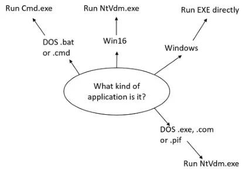
- 保護プロセスとして作成する場合は、署名ポリシーも検査します。
- モダンアプリのプロセスとして作成する場合は、ライセンスを検査し、実行が許可されていることを確認します。Windows に付属するアプリは、ライセンスにかかわらず実行できます。設定アプリでサイドロードが許可されていれば、ストア以外から入手したアプリでも、署名があれば実行できます。
- トラストレットの場合は、セキュアカーネルが使用できるよう、特別なフラグを指定してセクションオブジェクトを作成します。
- 指定されたファイルが Windows の EXE なら、
NtCreateUserProcessはファイルを開き、セクションオブジェクトの作成を試みます。この時点では、オブジェクトは開かれていますが、まだメモリにマップされていません。オブジェクトの作成に成功しても、Windows の実行イメージとして有効とは限りません。DLL や POSIX の実行ファイルの可能性もあります。POSIX はすでにサポートされていないため、POSIX の実行ファイルを指定すると失敗します。DLL を指定した場合もCreateProcessInternalWは失敗します。 NtCreateUserProcessは、有効な Windows 実行イメージを見つけると、次節で説明するプロセス作成処理の中で、レジストリのHKLM\SOFTWARE\Microsoft\Windows NT\CurrentVersion\Image File Execution Optionsを調べます。実行イメージの拡張子付きファイル名（たとえばNotepad.exe）と同じ名前のサブキーがあるかを確認します。ディレクトリ部分は使いません。サブキーがあれば、PspAllocateProcessはそのキーでDebugger値を探します。値がある場合は、その文字列が実行するイメージの指定になり、CreateProcessInternalWは段階1からやり直します。- Windows の EXE 以外のイメージ（MS-DOS や Win16 のアプリケーションなど）の場合、
CreateProcessInternalWは、そのプログラムを実行するための Windows 用サポートイメージを探します。Windows 以外のプログラムは直接実行されず、いくつかある専用のサポートイメージのいずれかが実行を引き受けます。たとえば、32ビット版 Windows で MS-DOS や Win16 の実行ファイルを起動すると、Windows の実行ファイルNtvdm.exeが実行されます。このように、直接作成できるのは Windows プロセスです。表3-8に示すように、指定されたイメージを Windows プロセスとして実行する方法が見つからなければ、CreateProcessInternalWは失敗します。
| 指定されたイメージ | 作成状態コード | 実行するイメージ | 結果 |
|---|---|---|---|
| 拡張子が .exe、.com、.pif の MS-DOS アプリケーション | PsCreateFailOnSectionCreate | Ntvdm.exe | CreateProcessInternalW は段階1からやり直します。 |
| Win16 アプリケーション | PsCreateFailOnSectionCreate | Ntvdm.exe | CreateProcessInternalW は段階1からやり直します。 |
| 32ビットシステム上の Win64 アプリケーション、または PPC、MIPS、Alpha 用のバイナリ | PsCreateFailMachineMismatch | 該当なし | CreateProcessInternalW は失敗します。 |
| Debugger 値で別のイメージが指定されている | PsCreateFailExeName | Debugger 値に指定された名前 | CreateProcessInternalW は段階1からやり直します。 |
| 無効または破損した Windows EXE | PsCreateFailExeFormat | 該当なし | CreateProcessInternalW は失敗します。 |
| ファイルを開けない | PsCreateFailOnFileOpen | 該当なし | CreateProcessInternalW は失敗します。 |
| 拡張子が .bat または .cmd のバッチファイル | PsCreateFailOnSectionCreate | Cmd.exe | CreateProcessInternalW は段階1からやり直します。 |
CreateProcessInternalW は、イメージを実行するときに次のように分岐します。
- x86 の32ビット版 Windows で、拡張子が
.exe、.com、.pifの MS-DOS アプリケーションを指定した場合、Windows サブシステムにメッセージを送ります。サブシステムは、そのセッションに MS-DOS サポートプロセス（HKLM\SYSTEM\CurrentControlSet\Control\WOWのcmdline値で指定されるNtvdm.exe）があるかを調べます。すでにあれば、Windows サブシステムがその仮想 DOS マシン（VDM）プロセスにメッセージを送り、新しいイメージを実行させます。その後、CreateProcessInternalWは呼び出し元に戻ります。サポートプロセスがなければ、実行イメージをNtvdm.exeに変更し、段階1からやり直します。 - 拡張子が
.batまたは.cmdの場合、実行するイメージを Windows のコマンドプロンプトCmd.exeに変更し、段階1からやり直します。バッチファイル名は/cの後の第2引数としてCmd.exeに渡します。 - x86 版 Windows で Win16（Windows 3.1）の実行ファイルを指定した場合、
CreateProcessInternalWは、新しい VDM プロセスを作るか、セッション共通の既定の VDM プロセスを使うかを決めます。共通の VDM プロセスがまだ作られていないこともあります。CreateProcessのCREATE_SEPARATE_WOW_VDMとCREATE_SHARED_WOW_VDMフラグで、新規と共有のどちらを使うか指定できます。どちらもなければ、レジストリのHKLM\SYSTEM\CurrentControlSet\Control\WOWにあるDefaultSeparateVDM値が既定の動作を決めます。
アプリケーションを専用の VDM で実行する場合は、実行イメージを Ntvdm.exe に変更し、設定パラメーターと16ビットプロセスの名前を引数として付けます。CreateProcessInternalW は段階1からやり直します。
それ以外の場合は、Windows サブシステムがメッセージを送り、共有 VDM プロセスが存在していて使えるか確認します。
VDM が別のデスクトップで動作している場合や、呼び出し元と異なるセキュリティコンテキストで実行されている場合は、新しい VDM が必要です。
共有 VDM を使える場合は、サブシステムがそこにメッセージを送って新しいイメージを実行させ、CreateProcessInternalW は呼び出し元に戻ります。
共有 VDM がまだ作成されていないか、存在しても使用できない場合は、実行イメージを VDM のサポートイメージに変更し、段階1からやり直します。
段階3：Windows エグゼクティブのプロセスオブジェクトを作成する
ここまでに、NtCreateUserProcess は有効な Windows 実行ファイルを開き、新しいプロセスのアドレス空間にマップするためのセクションオブジェクトを作成しました。
次に、内部関数 PspAllocateProcess を呼び出し、この実行イメージを動かすための Windows エグゼクティブのプロセスオブジェクトを作成します。
作成元のスレッドは、次の順に処理します。
- 3A.
EPROCESSオブジェクトを設定する - 3B. プロセスの初期アドレス空間を作成する
- 3C. カーネルプロセス構造体（
KPROCESS）を初期化する - 3D. プロセスのアドレス空間の設定を終える
- 3E. PEB を設定する
- 3F. エグゼクティブのプロセスオブジェクトの設定を終える
段階3A：EPROCESS オブジェクトを設定する
この段階では、次の処理を行います。
- プロセス作成時の属性リストで明示的に指定していなければ、親プロセスのアフィニティを継承します。
- 属性リストで優先 NUMA ノードが指定されていれば、それを選びます。
- 親プロセスから I/O 優先度とページ優先度を継承します。親プロセスがなければ、既定のページ優先度（5）と I/O 優先度（通常）を使います。
- 新しいプロセスの終了ステータスを
STATUS_PENDINGに設定します。
- 属性リストで指定したハードエラーの処理モードを選びます。指定がなければ親プロセスのモードを継承します。親がいない場合は、すべてのエラーを表示する既定のモードを使います。
- 親プロセスの ID を、新しいプロセスオブジェクトの
InheritedFromUniqueProcessIdフィールドに保存します。 - Image File Execution Options（IFEO）キーの
UseLargePages値を確認し、イメージをラージページでマップするかを決めます。ただし、WoW64 で動作する場合はラージページを使いません。同じキーで、そのプロセスの NTDLL がラージページでマップすべき DLL として指定されているかも確認します。 - IFEO の
PerfOptionsキーがあれば照会します。キーにはIoPriority、PagePriority、CpuPriorityClass、WorkingSetLimitInKBを任意に指定できます。 - WoW64 で実行する場合は、補助構造体
EWOW64PROCESSを割り当て、EPROCESSのWoW64Processメンバーに設定します。 - AppContainer 内に作成する場合（多くはモダンアプリ）は、トークンが LowBox を使って作成されたことを確認します。AppContainer の詳細は第7章を参照してください。
- プロセスの作成に必要な特権をすべて取得しようとします。リアルタイム優先度クラスの選択、新しいプロセスへのトークンの割り当て、ラージページによるマッピング、新しいセッション内での作成には、それぞれ対応する特権が必要です。
- 親のプライマリトークンを複製し、プロセスのプライマリアクセストークンを作成します。新しいプロセスは親のセキュリティプロファイルを継承します。
CreateProcessAsUserで別のアクセストークンが指定されていれば、必要に応じて置き換えます。この変更には、親トークンの整合性レベルが指定されたトークン以上であり、かつ指定されたトークンが親トークンの正当な子または兄弟であることが必要です。親がSeAssignPrimaryToken特権を持つ場合は、これらの検査を省略します。 - 新しいプロセスのトークンのセッション ID を調べ、セッションをまたぐ作成かどうかを判定します。該当する場合、親プロセスは対象セッションに一時的に接続し、クォータの処理とアドレス空間の作成を適切に行います。
- 新しいプロセスのクォータブロックへのポインターを、親プロセスのクォータブロックに向けます。続いて、共有するクォータブロックの参照カウントを増やします。
CreateProcessAsUserで作成したときは、代わりに既定のクォータを作成するか、ユーザーのプロファイルに合うクォータを選びます。 - プロセスのワーキングセットの最小値と最大値を、それぞれ
PspMinimumWorkingSetとPspMaximumWorkingSetの値に設定します。IFEO のPerfOptionsキーで最大値が指定されていれば、その値で上書きします。既定の上下限は目安ですが、PerfOptionsの最大値は厳密な上限であり、ワーキングセットはその値を超えて増えません。
- プロセスのアドレス空間を初期化します（段階3B）。別のセッションに接続していた場合は、対象セッションから切り離します。
- グループアフィニティを継承していない場合は、ここで選びます。前の処理で NUMA ノードの引き継ぎが設定されていれば、親からノードを引き継ぎ、そのノードが属するグループを使います。設定されていなければ、ラウンドロビンでグループを割り当てます。グループ認識を強制するモードで選択結果がグループ0だった場合、グループ1があればそちらを選びます。
- プロセスオブジェクトの
KPROCESS部分を初期化します（段階3C）。 - プロセスのトークンを設定します。
- プロセスの優先度クラスを「通常」に設定します。ただし、親が「アイドル」または「通常以下」の優先度クラスなら、そのクラスを継承します。
- プロセスのハンドルテーブルを初期化します。ハンドルを継承するよう指定されていれば、親のオブジェクトハンドルテーブルから、継承可能なハンドルを新しいプロセスにコピーします。詳細は第8章の「オブジェクトハンドルとプロセスのハンドルテーブル」を参照してください。プロセス属性を使って、継承するハンドルを一部だけに絞ることもできます。たとえば
CreateProcessAsUserで作る子プロセスが継承するオブジェクトを制限できます。 PerfOptionsキーにパフォーマンス設定が指定されていれば適用します。このキーでは、ワーキングセットの上限、I/O 優先度、ページ優先度、CPU の優先度クラスを上書きできます。- プロセスの最終的な優先度クラスと、そのスレッドの既定のクォンタムを計算して設定します。
- IFEO キーにある単一の64ビット値
Mitigationを読み、各緩和策の設定を適用します。プロセスが AppContainer 内で動く場合は、TreatAsAppContainer緩和フラグを加えます。 - 残りの緩和フラグをすべて適用します。
段階3B：プロセスの初期アドレス空間を作成する
プロセスの初期アドレス空間は、次のページを含みます。
- ページディレクトリ。PAE モードの x86 や64ビットシステムのように、ページテーブルが3階層以上あるシステムでは、ページディレクトリが複数存在する場合があります。
- ハイパースペースのページ。
- VAD ビットマップのページ。
- ワーキングセットリスト。
これらのページを作成する手順は次のとおりです。
- 初期ページをマップするため、対応するページテーブルにエントリを作成します。
- ページ数をカーネル変数
MmTotalCommittedPagesから差し引き、MmProcessCommitに加えます。 - システム全体で既定のプロセスの最小ワーキングセットサイズ（
PsMinimumWorkingSet）を、MmResidentAvailablePagesから差し引きます。 - システム全体で共有するシステム空間のページテーブルページを作成します。前述のプロセス固有のページと、セッション固有のメモリは対象外です。
段階3C：カーネルプロセス構造体を初期化する
PspAllocateProcess の次の段階では、EPROCESS の Pcb メンバーにあたる KPROCESS 構造体を初期化します。
KeInitializeProcess が次の処理を行います。
- プロセスに属するすべてのスレッドを結ぶ双方向連結リストを初期化します。この時点ではリストは空です。
- プロセスの既定のクォンタムの初期値（リセット値）を固定値6にします。後で
PspComputeQuantumAndPriorityが初期化します。クォンタムについては、第4章の「スレッドスケジューリング」を参照してください。 - 段階3Aで計算した値に基づいて、プロセスの基本優先度を設定します。
- プロセス内のスレッドの既定のプロセッサアフィニティとグループアフィニティを設定します。グループアフィニティは段階3Aで計算した値か、親から継承した値です。
- プロセスのスワップ状態を常駐に設定します。
- カーネルがこのプロセス用に選んだ優先プロセッサをもとに、スレッドのシード値を設定します。優先プロセッサは直前に作成したプロセスの選択に基づいて決まり、ラウンドロビン方式で分散されます。新しいプロセスを作るたびに、最初の NUMA ノードブロックである
KeNodeBlockのシード値を更新し、次に作成するプロセスには、優先プロセッサを選ぶための異なるシード値が割り当てられます。 - Windows 10 または Windows Server 2016 でセキュアプロセスを作成する場合は、
HvlCreateSecureProcessを呼び出してセキュア ID を作成します。
段階3D：プロセスのアドレス空間の設定を終える
新しいプロセスのアドレス空間の設定は複数の処理からなるため、順に見ていきます。 この節を理解するには、第5章で説明する Windows のメモリマネージャーの内部構造を押さえておくとよいでしょう。
アドレス空間の設定の大半は、MmInitializeProcessAddressSpace が担当します。
このルーチンは、別のプロセスのアドレス空間の複製にも対応しています。
この機能はかつて POSIX の fork システムコールの実装に使われました。
ほかの Unix 系の fork にも利用でき、実際に Redstone 1 の Windows Subsystem for Linux ではこの方法で実装されています。
以下ではアドレス空間の複製を除き、通常のプロセスのアドレス空間を初期化する手順を示します。
- 仮想メモリマネージャーは、プロセスの前回のトリミング時刻を現在時刻に設定します。バランスセットマネージャーのシステムスレッドのコンテキストで動作するワーキングセットマネージャーは、この値をもとにワーキングセットのトリミングを始める時期を決めます。
- メモリマネージャーは、プロセスのワーキングセットリストを初期化します。この時点からページフォールトを処理できます。
- イメージファイルを開いたときに作成したセクションを、新しいプロセスのアドレス空間にマップします。プロセスのセクションベースアドレスには、イメージのベースアドレスを設定します。
- プロセス環境ブロック（PEB）を作成し、初期化します（段階3Eを参照）。
Ntdll.dllをプロセスにマップします。WoW64 プロセスには32ビット版のNtdll.dllもマップします。- 要求されていれば、そのプロセス用の新しいセッションを作成します。この特別な処理は、主にセッションマネージャー（Smss）が新しいセッションを初期化するために使います。
- 標準ハンドルを複製し、新しい値をプロセスパラメーター構造体に書き込みます。
- 属性リストに記載されたメモリ予約を処理します。また、アドレス空間の先頭1 MBまたは16 MBを一括で予約するためのフラグが2つあります。たとえばリアルモードのベクターや ROM コードをマップするときに内部で使います。これらは仮想アドレス空間の低位領域に置く必要がありますが、通常はそこにヒープやプロセスのほかのデータ構造が置かれる可能性があります。
- ユーザーモードのプロセスパラメーターをプロセスにコピーして書き込み、調整します。絶対形式から相対形式に変換し、1つのメモリブロックに収まるようにします。
- アフィニティ情報を PEB に書き込みます。
- MinWin の API リダイレクトセットをプロセスにマップし、そのポインターを PEB に保存します。
- プロセス固有の ID を決定し、保存します。カーネルは、プロセスとスレッドの ID をハンドルとして扱います。これらは、特定のプロセスに関連付けられていないグローバルハンドルテーブル
PspCidTableに格納されます。 - プロセスがセキュアプロセス、つまり IUM で動作する場合は、初期化してカーネルのプロセスオブジェクトに関連付けます。
段階3E：PEB を設定する
NtCreateUserProcess は MmCreatePeb を呼び出します。この関数はまず、システム共通の多言語サポート（NLS）テーブルをプロセスのアドレス空間にマップします。
次に、MiCreatePebOrTeb を呼んで PEB 用のページを割り当て、各フィールドを初期化します。
多くのフィールドには、レジストリを通じて構成した内部変数の値を使います。たとえば MmHeap* 系の値、MmCriticalSectionTimeout、MmMinimumStackCommitInBytes です。
一部は実行イメージのリンク時の設定で上書きできます。たとえば、PE ヘッダーで指定した Windows のバージョンや、PE ヘッダーのロード構成ディレクトリにあるアフィニティマスクを使います。
イメージヘッダーの特性フィールドで IMAGE_FILE_UP_SYSTEM_ONLY フラグが設定されている場合、そのイメージは単一プロセッサーでのみ実行できます。
この場合、新しいプロセスのすべてのスレッドを、MmRotatingUniprocessorNumber で選んだ1つの CPU 上で実行します。
対象のイメージが実行されるたびに、利用可能なプロセッサを順に選びます。
このようにして、同種のイメージを各プロセッサに均等に分散させます。
段階3F：エグゼクティブのプロセスオブジェクトの設定を終える
新しいプロセスのハンドルを返す前に、PspInsertProcess とその補助関数が最後の設定を行います。
- ローカルポリシー、またはドメインコントローラーから配布されたグループポリシーでシステム全体のプロセス監査が有効なら、プロセスの作成をセキュリティイベントログに記録します。
- 親プロセスがジョブに属していた場合、親のジョブ階層の情報からそのジョブを取得し、新しいプロセスのセッションに関連付けます。次に、新しいプロセスをジョブに追加します。
- 新しいプロセスオブジェクトを、Windows のアクティブプロセスリスト（
PsActiveProcessHead）の末尾に追加します。これで、EnumProcessesやOpenProcessなどでプロセスにアクセスできます。 - プロセス作成時に
NoDebugInheritフラグを指定していなければ、親プロセスのデバッグポートを子プロセスにコピーします。デバッグポートが明示的に指定されていれば、それを新しいプロセスに関連付けます。 - ジョブオブジェクトは、所属プロセスのスレッドが実行できるプロセッサグループを制限できます。
PspInsertProcessは、プロセスのグループアフィニティがジョブに設定されたグループアフィニティの範囲内に収まることを確認します。ジョブにプロセスのアフィニティ設定を変更する権限があるかも問題になります。権限の低いジョブオブジェクトが、より高い権限を持つプロセスのアフィニティ要件に干渉する可能性があるためです。 - 最後に
PspInsertProcessはObOpenObjectByPointerを呼び出して新しいプロセスのハンドルを作成し、呼び出し元に返します。プロセス作成コールバックは、プロセス内の最初のスレッドが作成されるまで呼ばれません。また、プロセスのコールバックは、オブジェクトマネージャーのコールバックより必ず先に呼ばれます。
段階4：最初のスレッドと、そのスタックおよびコンテキストを作成する
この時点で Windows エグゼクティブのプロセスオブジェクトの設定は完了しています。ただし、まだスレッドがないためコードを実行できません。
通常、スレッドを作成するときは NtCreateThread が PspCreateThread を呼び出し、後者が一連の作成処理を担当します。
最初のスレッドはユーザーモードからの入力なしにカーネル内部で作るため、PspCreateThread が使う2つの補助ルーチン、PspAllocateThread と PspInsertThread を直接使います。
PspAllocateThread はエグゼクティブのスレッドオブジェクトの作成と初期化を担当します。
PspInsertThread はスレッドのハンドルとセキュリティ属性を作り、KeStartThread を呼び出して、スレッドをスケジューリングできるようにします。
スレッドは中断状態で作成され、段階5で説明するプロセスの初期化が完了するまで再開されません。
PspAllocateThread は、次の処理を行います。
- WoW64 プロセス内にユーザーモードスケジューリング（UMS）スレッドを作成することと、ユーザーモードの呼び出し元が System プロセスにスレッドを作成することを禁止します。
- エグゼクティブのスレッドオブジェクトを作成し、初期化します。
- システムでエネルギー消費量の推定が有効なら、
ETHREADが指すTHREAD_ENERGY_VALUES構造体を割り当てて初期化します。Xbox ではこの推定は常に無効です。 - LPC、I/O マネージャー、エグゼクティブが使う各種リストを初期化します。
- スレッドの作成時刻を設定し、スレッド ID（TID）を作成します。
- 実行に必要なスタックとコンテキストを用意します。最初のスレッドのスタックサイズは実行イメージの情報から取得し、別の値は指定できません。WoW64 プロセスであれば、WoW64 のスレッドコンテキストも初期化します。
- 新しいスレッドのスレッド環境ブロック（TEB）を割り当てます。
- ユーザーモードのスレッド開始アドレスを、
ETHREADのStartAddressに保存します。これはNtdll.dllのシステム提供の開始関数RtlUserThreadStartのアドレスです。ユーザーが指定した Windows 側の開始アドレスはWin32StartAddressに保存します。このフィールドを分けることで、Process Explorer などのデバッグツールでユーザーが指定した開始アドレスを表示できます。 KeInitThreadを呼び、KTHREAD構造体を設定します。スレッドの初期基本優先度と現在の基本優先度にはプロセスの基本優先度を設定し、アフィニティとクォンタムにもプロセスの値を使います。その後、カーネルスタックを割り当て、コンテキストフレーム、トラップフレーム、例外フレームなど、マシン依存のハードウェアコンテキストを初期化します。
スレッドのコンテキストは、カーネルモードの KiThreadStartup から実行を始めるように設定されます。
最後に、KeInitThread はスレッドの状態を Initialized（初期化済み）に設定し、PspAllocateThread に戻ります。
- UMS スレッドの場合は、
PspUmsInitThreadを呼び出して UMS の状態を初期化します。
ここまでの処理が終わると、NtCreateUserProcess は PspInsertThread を呼び出します。この関数は、次の処理を行います。
- 属性で優先プロセッサが指定されていれば、スレッドに設定します。
- 属性でグループアフィニティが指定されていれば、スレッドに設定します。
- プロセスがジョブに属している場合は、スレッドのグループアフィニティが前述のジョブの制限に反しないことを確認します。
- プロセスやスレッドがすでに終了していないか、スレッドが実行を開始できない状態にないかを確認します。いずれかに該当すれば、スレッドの作成は失敗します。
- スレッドがセキュアプロセス（IUM）に属している場合は、セキュアスレッドオブジェクトを作成し、初期化します。
KeStartThreadを呼び出して、スレッドオブジェクトのKTHREAD部分を初期化します。所有元のプロセスからスケジューラー設定を継承し、優先 NUMA ノードと優先プロセッサを設定し、グループアフィニティを更新します。プロセスから基本優先度と動的優先度をコピーし、スレッドのクォンタムを設定します。次に、KPROCESSが管理するスレッドリストに追加します。このリストはEPROCESSのリストとは別です。- プロセスがディープフリーズ状態にある場合、新しく作るスレッドも含めてすべてのスレッドの実行が許可されないため、このスレッドも凍結します。
- x86 以外のシステムでは、アイドルプロセスを除き、プロセスに最初のスレッドを作った時点で、そのプロセスをグローバル変数
KiProcessListHeadが管理する別のシステム全体のプロセスリストに追加します。 - プロセスオブジェクトのスレッド数を増やします。新しいスレッドは、所属するプロセスから I/O 優先度とページ優先度を継承します。スレッド数が過去最多になれば、その最大値も更新します。これが2番目のスレッドなら、プライマリトークンを固定して、それ以降は変更できないようにします。
- プロセスのスレッドリストに追加し、作成元のプロセスが要求していれば、スレッドを中断状態にします。
- スレッドオブジェクトをプロセスのハンドルテーブルに登録します。
CreateProcess系の呼び出しでプロセス内の最初のスレッドを作成する場合は、登録済みのプロセス作成コールバックを呼び出します。次いで、登録済みのスレッドのコールバックを呼び出します。いずれかが作成を拒否すれば、処理は失敗し、対応するステータスを呼び出し元に返します。
- 属性でジョブの一覧が渡されており、作成するスレッドがプロセスの最初のスレッドなら、プロセスを一覧のすべてのジョブに割り当てます。
KeReadyThreadを呼び出し、スレッドを実行できるようにします。スレッドは遅延実行可能状態（Deferred Ready）に入ります。詳細は第4章の「スレッドの状態」を参照してください。
段階5：Windows サブシステム固有の初期化を行う
NtCreateUserProcess が成功を返した時点で、必要なエグゼクティブのプロセスオブジェクトとスレッドオブジェクトは作成済みです。
CreateProcessInternalW は、Windows サブシステム固有の処理を行い、プロセスの初期化を終えます。
- 実行ファイルの起動を許可するか、複数の検査を行います。イメージヘッダーのバージョンを検証し、Windows のアプリケーション認定の仕組みが、グループポリシーに基づいてプロセスをブロックしていないかを調べます。Windows Storage Server 2012 R2 など、Windows Server 2012 R2 の特定用途向けエディションでは、禁止された API をインポートしていないかも確認します。
- ソフトウェア制限ポリシーで求められていれば、新しいプロセス用に制限付きトークンを作ります。続いて、アプリケーション互換性データベースを照会し、レジストリまたはシステムのアプリケーションデータベースに、そのプロセスのエントリがあるかを調べます。この時点では互換性シムを適用せず、最初のスレッドが実行を始める段階6で情報を PEB に格納します。
- 保護プロセス以外の場合、
CreateProcessInternalWは内部関数を呼び出して、マニフェストファイルや DLL リダイレクトのパスなどのサイドバイサイド（SxS）情報を取得します。SxS の詳細は後述の「DLL 名の解決とリダイレクト」を参照してください。実行ファイルがリムーバブルメディア上にあるかどうかや、インストーラーの検出フラグも取得します。イマーシブプロセスの場合は、パッケージマニフェストからバージョン情報と対象プラットフォームも返します。 - 集めた情報をもとに、Windows サブシステムの
Csrssに送るメッセージを組み立てます。メッセージには以下の情報が入ります。- パス名と SxS のパス名
- プロセスとスレッドのハンドル
- セクションのハンドル
- アクセストークンのハンドル
- メディア情報
- アプリケーション互換性情報とシムのデータ
- イマーシブプロセスに関する情報
- PEB のアドレス
- 保護プロセスか、昇格して実行する必要があるか、などを示す各種フラグ
- Windows アプリケーションに属するプロセスかどうかを示すフラグ。Csrss は、これをもとに起動を示すカーソルを表示するかどうかを判断します。
- UI の言語情報。
- DLL リダイレクトと
.localフラグ。詳しくは本章の後半の「イメージローダー」を参照してください。 - マニフェストファイルの情報。
このメッセージを受け取ると、Windows サブシステムは次の処理を行います。
CsrCreateProcessがプロセスとスレッドのハンドルを複製します。プロセスとスレッドの参照カウントは、作成時の1から2になります。- Csrss のプロセス構造体（
CSR_PROCESS）を割り当てます。 - 新しいプロセスの例外ポートに、Windows サブシステムの汎用ポートを設定します。これにより、プロセスでセカンドチャンス例外が発生すると、Windows サブシステムがメッセージを受け取ります。例外処理については第2部の第8章を参照してください。
CreateProcessにCREATE_NEW_PROCESS_GROUPフラグが指定され、新しいプロセスをグループのルートにする場合は、その情報をCSR_PROCESSに設定します。プロセスグループを使うと、コンソールを共有する複数のプロセスに制御イベントを送れます。詳しくは Windows SDK のCreateProcessとGenerateConsoleCtrlEventの説明を参照してください。- Csrss のスレッド構造体（
CSR_THREAD）を割り当て、初期化します。 CsrCreateThreadが、プロセスのスレッドリストにスレッドを追加します。- このセッションのプロセス数を1増やします。
- プロセスのシャットダウンレベルに既定値の
0x280を設定します。詳しくは Windows SDK のSetProcessShutdownParametersの説明を参照してください。 - 新しい Csrss プロセス構造体を、Windows サブシステム全体のプロセスリストに追加します。
Csrss の処理が終わると、CreateProcessInternalW は、プロセスが昇格して実行されたかを調べます。
昇格したプロセスは ShellExecute を通じて実行され、ユーザーに同意ダイアログを表示したうえで AppInfo サービスが昇格させています。
この確認には、対象がセットアッププログラムかどうかの判定も含まれます。
セットアッププログラムなら、プロセスのトークンを開き、仮想化フラグを有効にしてアプリケーションを仮想化します。UAC と仮想化については第7章を参照してください。
アプリケーションに昇格用のシムがあるか、マニフェストで昇格レベルが指定されていれば、プロセスを破棄し、AppInfo サービスに昇格を要求します。
これらの検査の大半は、保護プロセスには行いません。 保護プロセスは Windows Vista 以降を対象に設計されており、昇格、仮想化、アプリケーション互換性のための検査や処理を必要としないためです。 また、シムエンジンなどに保護プロセスのフックやメモリへのパッチ適用を許すと、任意のシムで保護プロセスの動作を変更できる場合に、セキュリティ上の穴になります。 シムエンジンを組み込む親プロセスは、保護された子プロセスへのアクセス権を持たない場合があるため、正規の互換性シムも適用できません。
段階6：最初のスレッドの実行を開始する
この時点で、プロセスの実行環境が決まり、スレッドが使うリソースも割り当てられています。
最初のスレッドは作成済みで、Windows サブシステムにも新しいプロセスが登録されています。
呼び出し元が CREATE_SUSPENDED フラグを指定していなければ、最初のスレッドを再開します。
スレッドは実行を始め、新しいプロセスのコンテキストで初期化の残りの処理を行います（段階7）。
段階7：新しいプロセスのコンテキストで初期化する
新しいスレッドは、カーネルモードのスレッド開始ルーチン KiStartUserThread から実行を始めます。
このルーチンは 割り込み要求レベル（IRQL）を、遅延プロシージャ呼び出し（DPC）のレベルから非同期プロシージャ呼び出し（APC）のレベルまで下げ、システムの初期スレッドルーチン PspUserThreadStartup を呼び出します。
ユーザーが指定したスレッド開始アドレスは、このルーチンの引数として渡されます。
PspUserThreadStartup は、次の処理を行います。
- x86 では例外チェーンを設定します。ほかのアーキテクチャでは処理が異なります。詳しくは第2部の第8章を参照してください。
- IRQL を
PASSIVE_LEVEL（0）に下げます。ユーザーモードのコードを実行できるのはこのレベルだけです。 - 実行中にプロセスのプライマリトークンを置き換えられないようにします。
- 何らかの理由で起動時にスレッドの終了が要求されていた場合は、スレッドを終了し、以降の処理を行いません。
- カーネルモードのデータ構造にある情報をもとに、ロケール ID と優先プロセッサを TEB に設定し、スレッドの作成が失敗していないかを確認します。
DbgkCreateThreadを呼び出し、新しいプロセスについてイメージ通知が送信済みかを確認します。未送信で通知が有効なら、まずプロセスのイメージ通知を送り、続いてNtdll.dllのロードを通知します。- これらの確認を終えた後、プロセスがデバッグ対象かを調べます。デバッグ対象で、まだデバッガーに通知していなければ、デバッグオブジェクトが存在する場合は、そこを通じてプロセス作成メッセージを送ります。これにより、対応するデバッガープロセスにプロセス起動デバッグイベント（
CREATE_PROCESS_DEBUG_INFO）を届けられます。続けてスレッド起動とNtdll.dllのイメージロードのデバッグイベントを送ります。その後、DbgkCreateThreadはデバッガーがContinueDebugEventで応答するのを待ちます。
- システムでアプリケーションのプリフェッチが有効かどうかを調べます。有効なら、プリフェッチャーと Superfetch を呼び出し、プリフェッチ指示ファイルがあれば処理します。前回の実行で最初の10秒間に参照されたページを先読みします。詳しくは第5章を参照してください。
SharedUserData構造体のシステム共通クッキーが設定されているかを調べます。未設定なら、処理した割り込みの件数、DPC の実行回数、ページフォールトの発生回数、割り込み時間、乱数などをハッシュして生成します。このクッキーは内部でポインターを符号化・復号するときに使います。たとえば、ヒープマネージャーは特定の種類の攻撃から保護するために使います。詳しくは第5章を参照してください。- セキュアプロセス（IUM プロセス）の場合は、
HvlStartSecureThreadを呼び出し、セキュアカーネルに制御を渡してスレッドの実行を始めます。この関数が戻るのは、スレッドが終了したときだけです。 - イメージローダーの初期化ルーチン
LdrInitializeThunkと、システム共通のスレッド起動用スタブRtlUserThreadStartを実行するための初期コンテキストを用意します。どちらもNtdll.dllにあります。既存のスレッドコンテキストを直接書き換えてから、システムサービスから復帰する処理を行い、用意したユーザーモードのコンテキストをロードします。LdrInitializeThunkは、ローダー、ヒープマネージャー、NLS テーブル、スレッドローカルストレージ（TLS）とファイバーローカルストレージ（FLS）の配列、クリティカルセクションの構造体を初期化します。続いて必要な DLL をロードし、DLL_PROCESS_ATTACHを指定して各 DLL のエントリポイントを呼び出します。
初期化関数から戻ると、NtContinue が新しいユーザーモードのコンテキストを復元し、ユーザーモードに戻ります。ここからスレッド本来の処理が始まります。
RtlUserThreadStart は、実行イメージのエントリポイントのアドレスを受け取り、スレッドの開始引数を渡してそのエントリポイントを呼び出します。
この2つの値は、カーネルによってすでにスタックに置かれています。
この一連の処理には、次の2つの目的があります。
Ntdll.dllのイメージローダーが、ほかのユーザーモードコードを実行する前に、プロセスの内部を設定できます。この処理がなければ、ヒープやスレッドローカルストレージなどを使えません。- すべてのスレッドを共通ルーチンから開始すると、そのルーチンでスレッドの実行全体を例外処理の対象にできます。スレッドがクラッシュすると
Ntdll.dllが検知し、Kernel32.dllの未処理例外フィルターを呼び出せます。開始ルーチンが戻ったときのスレッド終了や後片付けも行えます。アプリケーションはSetUnhandledExceptionFilterを使い、独自の未処理例外ハンドラーを登録できます。
実験：プロセスの起動をトレースする
ここまでプロセスが起動してアプリケーションの実行を開始するまでの処理を見てきました。 次は Process Monitor を使い、この間に発生するファイル I/O と、アクセスされるレジストリキーの一部を調べます。
この実験では、ここまでに説明した内部処理のすべては見えませんが、プリフェッチや SuperFetch、イメージファイル実行オプションなどの互換性チェック、イメージローダーによる DLL のマッピングを観察できます。
単純な実行ファイルである Notepad.exe を、コマンドプロンプト（Cmd.exe）から起動します。Cmd.exe と Notepad.exe の両方の処理に注目してください。ユーザーモードの処理の多くは、カーネルが新しいプロセスオブジェクトを作成する前に、親プロセスが呼び出す CreateProcessInternalW が担当します。
- Process Monitor に、Cmd.exe 用と Notepad.exe 用の2つのフィルターを追加します。対象に含めるプロセスはこの2つだけです。対象のイベントを見分けられるよう、この時点ではどちらのプロセスも動作していないことを確認してください。フィルターの設定画面は次のようになります。
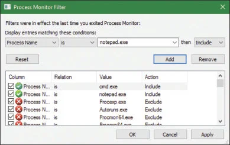
- 「File」メニューで「Capture Events」をオフにして、イベントの記録が止まっていることを確認します。その後、コマンドプロンプトを起動します。
- 「File」メニューの「Capture Events」、Ctrl+E キー、またはツールバーの虫眼鏡アイコンでイベントの記録を再開します。
Notepad.exeと入力し、Enter キーを押します。一般的な Windows システムでは、500〜3,500件ほどのイベントが表示されます。 - 記録を停止し、「Sequence」と「Time of Day」の列を非表示にして、調べたい列に絞ります。続く画面例のように表示されます。
CreateProcess の第1段階で述べたように、プロセスが起動して最初のスレッドが作成される直前に、Cmd.exe は HKLM\SOFTWARE\Microsoft\Windows NT\CurrentVersion\Image File Execution Options\Notepad.exe を読み取ります。このトレース例では、Notepad.exe のイメージファイル実行オプションが登録されていなかったため、指定どおり Notepad.exe のプロセスが作成されました。

Process Monitor のログでは、このイベントもほかのイベントも、呼び出しスタックを調べられます。スタックを見れば、プロセス作成の各処理がユーザーモードとカーネルモードのどちらで行われたか、どのルーチンが処理したかがわかります。RegOpenKey イベントをダブルクリックし、「Stack」タブに切り替えます。次の図は、64ビット版 Windows 10 での典型的な呼び出しスタックです。
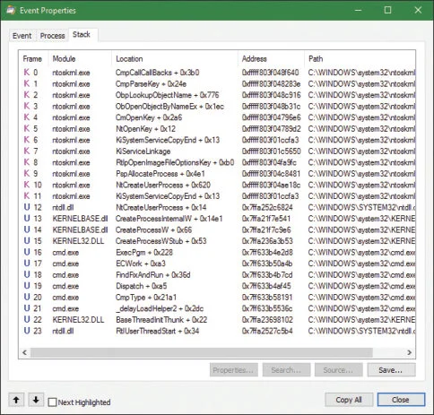
このスタックから、処理が NtCreateUserProcess を通じてカーネルモードのプロセス作成に進んでおり、その中の補助ルーチン PspAllocateProcess がこの確認を行っていることがわかります。
スレッドとプロセスの作成後のイベントを順に見ると、次の3つのグループが見つかります。
- アプリケーション互換性フラグの確認。シムエンジンを使ってアプリケーション互換性データベースを調べる必要があるかを、ユーザーモードのプロセス作成コードに知らせます。
- SxS（Side-By-Side）、Manifest、MUI/Language の各キーへの複数の読み取りアクセス。これらのキーは、前述のアセンブリフレームワークの一部です。
- システムのアプリケーション互換性データベースである 1つ以上の
.sdbファイルへの I/O。この段階で、対象アプリケーションにシムエンジンを適用する必要があるかを詳しく調べます。この例で使う Microsoft 製のメモ帳は互換性シムを必要としません。
次の画面は、メモ帳のプロセス内で発生する一連のイベントです。ユーザーモードのスレッド起動を担うカーネルモードのラッパーが、前述の処理を開始します。最初の2件は、Notepad.exe と Ntdll.dll のイメージ読み込みを知らせるデバッグ通知です。これらの通知を生成できるのは、実行コンテキストがコマンドプロンプトからメモ帳のプロセスに切り替わった後です。
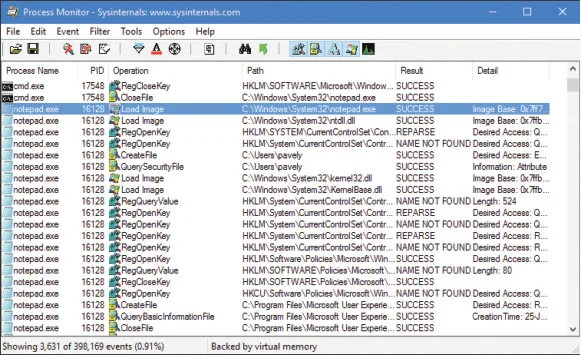
次にプリフェッチャーが動作し、メモ帳用に生成済みのプリフェッチデータベースファイルを探します。プリフェッチャーの詳細は第5章を参照してください。メモ帳を少なくとも一度起動したシステムにはこのデータベースがあり、プリフェッチャーはそこに記録された命令の実行を始めます。その場合、イベント一覧を下へスクロールすると、複数の DLL が読み取られ、照会されていることがわかります。通常の DLL の読み込みは、ユーザーモードのイメージローダーがインポートテーブルを調べるか、アプリケーションが DLL の読み込みを要求したときに行われます。ここでのイベントは、メモ帳が必要とするライブラリを事前に把握しているプリフェッチャーが発生させたものです。その後、必要な DLL の通常のイメージ読み込みが始まり、次の画面のようなイベントが現れます。
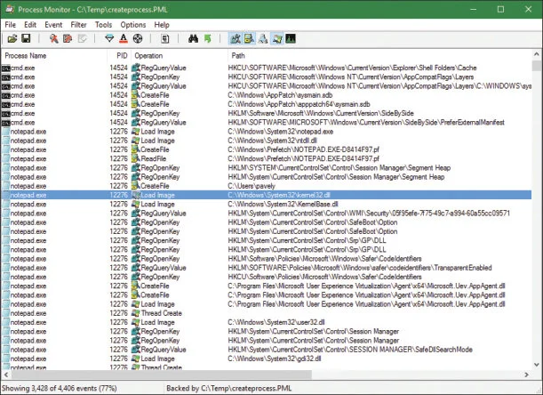
これらのイベントは、カーネルモードのラッパーが処理を終えた後に呼ばれるユーザーモードのコードが発生させています。プロセスの最初のスレッドでは LdrInitializeThunk が LdrpInitializeProcess を呼び出します。これらは、その LdrpInitializeProcess が発生させる最初のイベントです。実際のトレースでも、たとえば続く画面例の kernel32.dll のイメージ読み込みイベントを選び、呼び出しスタックを開くと確認できます。
このルーチンと関連する補助関数がさらにイベントを発生させ、やがてメモ帳の WinMain 関数が発生させたイベントにたどり着きます。ここから実行されるのは、アプリケーション開発者が制御するコードです。プロセスの実行中に現れるイベントとユーザーモードコンポーネントをすべて説明すると本章全体を費やすことになるため、それ以降のイベントの調査は読者への演習とします。
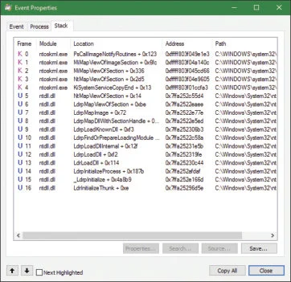
プロセスの終了
プロセスはリソースを収めると同時に、そのリソースを外部から隔離します。あるプロセスが使うリソースは、ほかのプロセスから自動的に見えるわけではありません。プロセス間で情報を渡すには、プロセス間通信の仕組みが必要です。このため、別のプロセスのメモリに誤って任意のバイトを書き込むことはできません。書き込むには WriteProcessMemory などの関数を明示的に呼び出す必要があります。事前に、PROCESS_VM_WRITE アクセス権を要求して対象プロセスのハンドルを開く必要があります。このアクセス権が認められるとは限りません。この分離により、あるプロセスで例外が起きても、ほかのプロセスには影響しません。最悪の場合でもクラッシュするのはそのプロセスだけで、システムの残りは動作を続けます。
プロセスは ExitProcess を呼び出して正常に終了できます。リンカーの設定によりますが、多くのプロセスでは、最初のスレッドがメイン関数から戻ると、プロセスの起動コードがアプリケーションに代わって ExitProcess を呼び出します。正常終了では、読み込まれた各 DLL の DllMain が DLL_PROCESS_DETACH を指定して呼ばれるため、DLL はプロセスの終了を通知され、後処理を行えます。
ExitProcess で終了を要求できるのは、プロセス自身だけです。別のプロセスから強制終了するには TerminateProcess を使います。Process Explorer やタスクマネージャーも、ユーザーから強制終了を指示されたときにこの関数を使います。TerminateProcess には PROCESS_TERMINATE のアクセス権を持つハンドルが必要で、その権限が認められるとは限りません。Csrss など一部のプロセスを終了させることが難しい、あるいは不可能なのは、要求したユーザーが必要なアクセス権を持つハンドルを取得できないためです。
ここでいう強制終了では、DLL に DLL_PROCESS_DETACH が通知されないため、DLL は終了時のコードを実行できません。すべてのスレッドは即座に終了します。
たとえば、キャッシュにあるデータを対象ファイルに書き戻す機会がない場合、データを失うことがあります。
プロセスがどのように終了しても、カーネルはそのプロセスのプライベートメモリを自動的に解放し、アドレス空間を破棄し、カーネルオブジェクトへのハンドルをすべて閉じます。
ほかのプロセスが終了済みプロセスのハンドルを開いたままなら、EPROCESS 構造体も残ります。この間は、そのハンドルを使って GetExitCodeProcess で終了コードを取得するなど、一部の管理情報を照会できます。
最後のハンドルが閉じられると EPROCESS も破棄されます。
サードパーティー製ドライバーが、IOCTL やプロセス通知などを受けてプロセスのためにカーネルメモリを割り当てた場合、そのプールメモリを解放するのはドライバーの責任です。
Windows が追跡して解放するのは、プロセスが作成したハンドルによって保持されるオブジェクトのメモリです。
ドライバーは通常、デバイスオブジェクトのハンドルが閉じられたことを示す IRP_MJ_CLOSE や IRP_MJ_CLEANUP、またはプロセス終了通知を受けてメモリを解放します。
IOCTL については第6章「I/O システム」を参照してください。
イメージローダー
プロセスを起動すると、カーネルはそれを表すプロセスオブジェクトを作成し、カーネル側の初期化を行います。
ここまでの処理で整うのは、アプリケーションが動くためのコンテキストと環境です。
ドライバーはカーネルモードで動きますが、アプリケーションはユーザーモードで動くため、初期化の大半はカーネルの外で行われます。
これを担当するのがイメージローダーで、内部では Ldr とも呼ばれます。
イメージローダーはユーザーモードのシステム DLL Ntdll.dll にあります。
一般的な DLL のコードと同様に動作し、メモリアクセスやセキュリティ上の権限について、同じ制約を受けます。
Ntdll.dll は必ずロードされるため、実行中のプロセスには常にイメージローダーが存在します。また、新しいプロセスで最初に実行されるユーザーモードのコードでもあります。
ローダーはアプリケーション本体より先に実行されるため、利用者や開発者が初期化処理を意識することはほとんどありません。 一方、プログラムは実行中に、DLL のロードやアンロード、ベースアドレスの照会などでローダーのインターフェイスを使います。 ローダーの主な役割は次のとおりです。
- 初期ヒープを作り、スレッドローカルストレージ（TLS）とファイバーローカルストレージ（FLS）のスロットを用意するなど、アプリケーションのユーザーモードの状態を初期化します。
- アプリケーションのインポートアドレステーブル（IAT）を解析し、必要な DLL を探します。さらに各 DLL の IAT を再帰的に解析し、エクスポートテーブルを調べて、必要な関数が存在することを確認します。転送用の特殊なエントリが、エクスポートを別の DLL にリダイレクトする場合もあります。
- 実行時に DLL をロードまたはアンロードします。明示的な要求によるロードやアンロードにも対応し、ロード済みモジュールの一覧（モジュールデータベース）を管理します。
- Windows のサイドバイサイド（SxS）機能で使うマニフェスト、および多言語ユーザーインターフェイス（MUI）のファイルとリソースを処理します。
- アプリケーション互換性データベースを検索し、シムが必要ならシムエンジンの DLL をロードします。
- API セットと API のリダイレクトを有効にします。これらは、ユニバーサル Windows プラットフォーム（UWP）アプリケーションを作成できるようにする One Core の中核機能です。
SwitchBackの仕組みで実行時の互換性対策を動的に有効にし、シムエンジンや Application Verifier と連携します。
これらの処理の大半は、アプリケーションのコードを実際に動かすために欠かせません。この準備がなければ、外部関数の呼び出しもヒープの利用も失敗します。
プロセスの作成後、ローダーはネイティブ API の NtContinue を呼び出します。これは例外ハンドラーと同様に、スタック上の例外フレームに基づいて実行を続ける特殊な API です。
前述のとおり、このフレームはカーネルが作成し、アプリケーションの実際のエントリポイントを含みます。
ローダーは通常の呼び出しやジャンプでアプリケーションに制御を渡さないため、アプリケーションのコードを実行中のスレッドのスタックを調べても、その呼び出し元としてローダーの初期化関数は現れません。
実験：イメージローダーの動作を観察する
この実験では、グローバルフラグを使い、ローダースナップというデバッグ機能を有効にします。アプリケーションの起動をデバッグしながら、イメージローダーのデバッグ出力を確認できます。
- WinDbg をインストールしたディレクトリから
Gflags.exeを起動し、［Image File］タブを開きます。 - ［Image］に
Notepad.exeと入力し、Tab キーを押します。設定項目を操作できるようになったら、［Show Loader Snaps］を選び、［OK］または［Apply］を押します。 - WinDbg を起動し、［File］メニューから［Open Executable］を選びます。
C:\Windows\System32\notepad.exeを選んで起動します。次のようなデバッグ情報が数画面分表示されます。
0f64:2090 @ 02405218 - LdrpInitializeProcess - INFO: Beginning execution of notepad.exe (C:\WINDOWS\notepad.exe) Current directory: C:\Program Files (x86)\Windows Kits\10\Debuggers\ Package directories: (null) 0f64:2090 @ 02405218 - LdrLoadDll - ENTER: DLL name: KERNEL32.DLL 0f64:2090 @ 02405218 - LdrpLoadDllInternal - ENTER: DLL name: KERNEL32.DLL 0f64:2090 @ 02405218 - LdrpFindKnownDll - ENTER: DLL name: KERNEL32.DLL 0f64:2090 @ 02405218 - LdrpFindKnownDll - RETURN: Status: 0x00000000
0f64:2090 @ 02405218 - LdrpMinimalMapModule - ENTER: DLL name: C:\WINDOWS\ System32\KERNEL32.DLL ModLoad: 00007fff'5b4b0000 00007fff'5b55d000 C:\WINDOWS\System32\KERNEL32.DLL 0f64:2090 @ 02405218 - LdrpMinimalMapModule - RETURN: Status: 0x00000000 0f64:2090 @ 02405218 - LdrpPreprocessDllName - INFO: DLL api-ms-win-core- rtlsupport-l1-2-0.dll was redirected to C:\WINDOWS\SYSTEM32\ntdll.dll by API set 0f64:2090 @ 02405218 - LdrpFindKnownDll - ENTER: DLL name: KERNELBASE.dll 0f64:2090 @ 02405218 - LdrpFindKnownDll - RETURN: Status: 0x00000000 0f64:2090 @ 02405218 - LdrpMinimalMapModule - ENTER: DLL name: C:\WINDOWS\ System32\KERNELBASE.dll ModLoad: 00007fff'58b90000 00007fff'58dc6000 C:\WINDOWS\System32\KERNELBASE.dll 0f64:2090 @ 02405218 - LdrpMinimalMapModule - RETURN: Status: 0x00000000 0f64:2090 @ 02405218 - LdrpPreprocessDllName - INFO: DLL api-ms-win- eventing-provider-l1-1-0.dll was redirected to C:\WINDOWS\SYSTEM32\ kernelbase.dll by API set 0f64:2090 @ 02405218 - LdrpPreprocessDllName - INFO: DLL api-ms-win-core- apiquery-l1-1-0.dll was redirected to C:\WINDOWS\SYSTEM32\ntdll.dll by API set
- やがて、ローダーがデバッガーの接続を確認してブレークポイントを発生させる箇所で、実行が中断します。g で実行を続けると、ローダーのメッセージがさらに表示され、メモ帳のウィンドウが開きます。
- メモ帳を操作し、どの操作がローダーを呼び出すか確認します。たとえば、「名前を付けて保存」や「開く」のダイアログを表示してみます。この操作から、ローダーが起動時だけでなく、スレッドからの要求に応じてモジュールを遅延ロードすることも分かります。ロードしたモジュールは、使い終わってからアンロードできます。
プロセス初期化の初期段階
ローダーは特定のサブシステムに属さないネイティブ DLL、Ntdll.dll にあるため、細部の違いを除き、すべてのプロセスで同じように動作します。
前の節では、カーネルモードでプロセスを作成するまでの手順と、Windows の CreateProcess が行う処理の一部を見ました。
ここでは、最初のユーザーモード命令が実行されてから、サブシステムに依存せずに行われる残りの処理を説明します。
プロセスが起動すると、ローダーは次の処理を行います。
LdrpProcessInitializedがすでに1か、TEB のSkipLoaderInitフラグが立っているかを調べます。 いずれかに該当すれば初期化をすべて省略し、LdrpProcessInitializationCompleteが呼び出されるのを3秒間待ちます。 この処理は、Windows エラー報告がプロセスのリフレクションを使うときや、それ以外のローダーの初期化が不要なプロセスのフォーク時に使われます。LdrInitStateを0に設定し、ローダーが未初期化であることを示します。PEB のProcessInitializingと TEB のRanProcessInitも1に設定します。
- PEB のローダーロックを初期化します。
- JIT コードのアンワインドと例外処理に使う動的関数テーブルを初期化します。
- Mutable Read Only Heap Section（MRDATA）を初期化します。脆弱性を悪用するコードによって書き換えられてはならない、セキュリティに関わるグローバル変数を保存する領域です。詳しくは第7章を参照してください。
- PEB のローダーデータベースを初期化します。
- 国際化のため、プロセスの多言語サポート（NLS）テーブルを初期化します。
- アプリケーションの実行イメージのパスを組み立てます。
.pdataセクションから構造化例外処理（SEH）のハンドラーを取得し、内部の例外テーブルを構築します。- ローダーが使う重要な5つの関数、
NtCreateSection、NtOpenFile、NtQueryAttributesFile、NtOpenSection、NtMapViewOfSectionのシステムコール用サンクを取得します。 - アプリケーションに適用する緩和策の設定を読みます。カーネルは、エクスポートされた変数
LdrSystemDllInitBlockを通じて設定を渡します。詳細は第7章を参照してください。 - アプリケーションの Image File Execution Options（IFEO）レジストリキーを照会します。このキーには、グローバルフラグ（
GlobalFlags）、ヒープのデバッグ設定（DisableHeapLookaside、ShutdownFlags、FrontEndHeapDebugOptions）、ローダー設定（UnloadEventTraceDepth、MaxLoaderThreads、UseImpersonatedDeviceMap）、ETW 設定（TracingFlags）などが含まれます。ほかにMinimumStackCommitInBytesとMaxDeadActivationContextsがあります。この処理の一環として Application Verifier と関連する Verifier DLL を初期化し、CFGOptionsから制御フローガード（CFG）の設定を読み込みます。 - 実行ファイルのヘッダーを調べ、.NET 専用のイメージディレクトリの有無から .NET アプリケーションかどうかを判定します。また、イメージが32ビットかどうかもヘッダーで確認します。プロセスが WoW64 で動作するかどうかもカーネルに照会します。必要に応じて、WoW64 を必要としない中間言語（IL）のコードだけを含む32ビットイメージを処理します。
- 実行ファイルのイメージロード構成ディレクトリで指定された設定を読み込みます。開発者はコンパイル時に設定を指定でき、コンパイラーやリンカーも CFG などのセキュリティ機能や緩和策の実装に使います。これらの設定は実行ファイルの動作を制御します。
- FLS と TLS を最低限初期化します。
- クリティカルセクションのデバッグ設定を構成します。該当するグローバルフラグが有効なら、ユーザーモードのスタックトレースデータベースを作成します。IFEO からデータベースのサイズ設定（原文表記は
StrackTraceDatabaseSizeInMb）を読みます。 - プロセスのヒープマネージャーを初期化し、最初のプロセスヒープを作ります。ロード構成、IFEO、グローバルフラグ、実行ファイルのヘッダーにある各種設定を使って、必要なパラメーターを決めます。
- ヒープの破損を検出したらプロセスを終了する緩和策が設定されていれば、有効にします。
- 該当するグローバルフラグが有効なら、例外ディスパッチのログを初期化します。
- スレッドプール API を支えるスレッドプールの実装を初期化します。NUMA の構成を照会し、初期化に反映します。
- 環境ブロックとパラメーターブロックを初期化し、必要に応じて変換します。特に WoW64 プロセスでこの変換が必要です。
- オブジェクトディレクトリ
\KnownDllsを開き、既知の DLL のパスを組み立てます。WoW64 プロセスでは、代わりに\KnownDlls32を使います。 - ストアアプリの場合は、トークンの
WIN://PKGとWP://SKUIDのクレームに記録された、アプリケーションモデルポリシーのオプションを読み取ります。詳細は第7章の「AppContainer」を参照してください。 - イメージをロードしたりファイルを開いたりするときに使う、プロセスのカレントディレクトリ、システムパス、既定のロードパスを決定します。既定の DLL 検索順序の規則も決めます。このとき、UWP、デスクトップブリッジ（Centennial）、Silverlight（Windows Phone 8）のパッケージ化されたアプリケーションやサービスに適用するポリシーを読み取ります。
Ntdll.dll用の最初のローダーデータテーブルエントリを作り、モジュールデータベースに追加します。- アンワインド履歴テーブルを作ります。
- 並列ローダーを初期化します。相互に依存しないモジュールを、スレッドプールの複数のスレッドで並行してロードするために使います。
- 次に、メイン実行ファイル用のローダーデータテーブルエントリを作り、モジュールデータベースに追加します。
- 必要に応じて、メインの実行イメージを再配置します。
- 有効なら、Application Verifier を初期化します。
- WoW64 プロセスの場合は、WoW64 エンジンを初期化します。64ビットのローダーが初期化を終えると、32ビットのローダーが制御を引き継ぎ、ここまでに説明した処理の大半を改めて行います。
- .NET イメージの場合は、イメージを検証し、.NET ランタイムのシム
Mscoree.dllをロードして、メイン実行ファイルのエントリポイント_CorExeMainを取得します。例外レコードを書き換え、通常のメイン関数に代えてこれをエントリポイントに設定します。 - プロセスの TLS スロットを初期化します。
- Windows サブシステムのアプリケーションでは、アプリケーションがこれらの DLL をインポートしているかどうかにかかわらず、
Kernel32.dllとKernelbase.dllを明示的にロードします。必要に応じて、これらのライブラリを使ってソフトウェア制限ポリシー（SRP／Safer）の機構を初期化し、Windows サブシステムのスレッド初期化用サンク関数を取得します。最後に、この2つのライブラリ間に存在する API セットの依存関係を解決します。
- シムエンジンを初期化し、シムデータベースを解析します。
- 先ほど調べた主要なローダー関数にシステムコールのフックやデトアがなければ、ポリシーと IFEO で指定されたローダースレッド数に基づいて、イメージの並列ローダーを有効にします。
LdrInitStateを1に設定し、インポートされたモジュールの読み込みが進行中であることを示します。
ここまでで、イメージローダーはアプリケーションの実行ファイルのインポートテーブルを解析し、ビルド時に動的にリンクされた DLL をロードできるようになります。 通常のイメージに加え、.NET イメージでもこの処理を行います。.NET ではランタイムを呼び出してインポートを処理します。 インポートされる DLL も独自のインポートテーブルを持つことがあるため、従来は必要なすべての DLL と関数が見つかるまで再帰的に処理していました。 ローダーは DLL をロードするたびに状態を記録し、モジュールデータベースを構築しました。
新しい Windows のローダーは、先に依存関係のマップを作ります。
依存関係のグラフでは、各ノードが1つの DLL とその依存関係を表します。並列にロードできる DLL は別々のノードに分けます。
逐次処理が必要な箇所では、スレッドプールの作業キューが空になるまで待ち、同期を取ります。
その一例が、ローダーの最終段階に近い、静的にインポートしたすべての DLL の初期化ルーチンを呼び出す直前です。
DLL の初期化後は、静的 TLS の初期化ルーチンをすべて呼び出します。
Windows アプリケーションでは、この段階の冒頭で Kernel32 のスレッド初期化用サンク BaseThreadInitThunk を呼び、最後に Kernel32 のプロセス初期化後のルーチンを呼びます。
DLL 名の解決とリダイレクト
名前解決は、呼び出し元がファイルを一意に指定していないか、指定できないときに、PE 形式のバイナリ名を実際のファイルに対応付ける処理です。
アプリケーションやシステムのディレクトリなどの場所はリンク時に固定できないため、すべてのバイナリ依存関係の解決や、完全パスを指定しない LoadLibrary の呼び出しが対象になります。
Windows アプリケーションの基本モデルは、バイナリの依存関係を解決するとき、検索パスの各場所を順に調べ、同じファイル名のものを探します。 一部のシステムコンポーネントはこの仕組みを上書きして、既定のアプリケーションモデルを拡張します。 検索パスは、アプリケーションのカレントディレクトリが重要な意味を持ったコマンドライン時代の名残です。現在の GUI アプリケーションでは、その重要性は薄れています。
従来の検索順序では、カレントディレクトリにある同名のファイルがシステムのバイナリに優先してロードされる場合があり、バイナリプランティングと呼ばれる攻撃につながりました。 このリスクを減らすため、Windows は安全な DLL 検索モードを導入し、すべてのプロセスで既定で有効にしています。 このモードでは、カレントディレクトリを3つのシステムディレクトリより後に検索します。
- 起動したアプリケーションの実行ファイルがあるディレクトリ
- ネイティブの Windows システムディレクトリ（例
C:\Windows\System32） - 16ビット版 Windows のシステムディレクトリ（例
C:\Windows\System） - Windows ディレクトリ（例
C:\Windows） - アプリケーション起動時のカレントディレクトリ
- 環境変数
%PATH%に指定されたディレクトリ
DLL 検索パスは、その後の DLL のロードごとに再計算されます。
計算方法は既定の検索パスと同じですが、アプリケーションは SetEnvironmentVariable で %PATH% を更新し、SetCurrentDirectory でカレントディレクトリを変え、SetDllDirectory でプロセス用の DLL ディレクトリを指定できます。
DLL ディレクトリを指定すると、そのディレクトリが検索パスのカレントディレクトリに代わり、ローダーはそのプロセスの安全な DLL 検索モードの設定を無視します。
個別のロードでは、LoadLibraryEx に LOAD_WITH_ALTERED_SEARCH_PATH を渡して検索パスを調整できます。
このフラグとともに DLL の完全パスを指定すると、その DLL を含むディレクトリが、当該操作の検索パスの計算でアプリケーションディレクトリに取って代わります。
相対パスを指定した場合の動作は未定義で、危険を伴う可能性があります。
デスクトップブリッジ（Centennial）アプリケーションのロードでは、このフラグは無視されます。
このフラグの代わりに、LOAD_LIBRARY_SEARCH_DLL_LOAD_DIR、LOAD_LIBRARY_SEARCH_APPLICATION_DIR、LOAD_LIBRARY_SEARCH_SYSTEM32、LOAD_LIBRARY_SEARCH_USER_DIRS も指定できます。
各フラグは検索対象を、対応するディレクトリだけに絞ります。複数を組み合わせれば、複数の場所を検索できます。
たとえば、アプリケーション、System32、ユーザー指定のディレクトリを組み合わせると LOAD_LIBRARY_SEARCH_DEFAULT_DIRS になります。
SetDefaultDllDirectories でプロセス全体にこれらを設定することもでき、その後のすべてのライブラリのロードに影響します。
パッケージ化されたアプリケーションでも検索順序が変わります。原文は、パッケージ化されたサービスや従来の Windows Phone 向け Silverlight 8.0 アプリケーションに関わる区別にも触れています。
パッケージに基づく方式では、従来の検索機構と API の代わりに、パッケージの依存関係グラフに含まれるパッケージだけを検索します。
通常の LoadLibraryEx の代わりに LoadPackagedLibrary を使う場合も同様です。
このグラフは UWP アプリのマニフェストの <Dependencies> 内にある <PackageDependency> エントリから作られ、任意の DLL が誤ってパッケージに読み込まれるのを防ぎます。
デスクトップブリッジ以外のパッケージ化されたアプリケーションでは、ここまでに挙げたような、アプリケーションが DLL の検索順序を設定する API はすべて無効です。 システムの既定の動作だけを使い、大半の UWP アプリケーションでは前述のとおりパッケージの依存関係だけを検索します。
安全な DLL 検索モードでも、従来型アプリケーションではアプリケーションディレクトリが検索順の先頭にあります。 実行ファイルを一般ユーザーが書き込めるディレクトリに移すと、意図しない DLL がシステムの DLL より先にロードされる可能性があります。UAC でアプリケーションを昇格させる場合は、特に影響が大きくなります。 このリスクを抑えるため、プロセスや管理者は Prefer System32 Images というプロセス緩和ポリシーを使えます。前ページの検索順の1番目と2番目を入れ替え、System32 を優先します。プロセスの緩和策については第7章を参照してください。
DLL 名のリダイレクト
ローダーは DLL 名をファイルに解決する前に、DLL 名のリダイレクト規則を適用します。 DLL の名前空間は通常 Win32 のファイルシステム名前空間に対応します。 リダイレクトはその一部を拡張または上書きし、Windows のアプリケーションモデルを拡張します。 適用順は次のとおりです。
- MinWin API セットのリダイレクト API セットはコントラクトを導入し、Windows のバージョンやエディションによって、システム API をエクスポートするバイナリをアプリケーションに意識させずに変更できるようにします。第2章で概要を紹介しました。詳細は後述します。
.LOCALリダイレクト 完全パスが指定されていても、特定の名前の DLL のロード先を、アプリケーションディレクトリ内のローカルコピーに変更できます。原文では、MyLibrary.dll.localのような名前や、アプリケーションの下の.LOCALディレクトリにコピーを置く例を挙げています。ローダーはこの方法でリダイレクトした DLL を、SxS でリダイレクトした DLL と同様に扱います。ローダーがこのリダイレクトを適用するのは、実行ファイルに埋め込みマニフェストも外部マニフェストもない場合です。既定では無効で、システム全体の設定には IFEO の DWORD 値DevOverrideEnableを使います。- Fusion（SxS）リダイレクト Fusion（サイドバイサイド、SxS）は、マニフェストと呼ばれるバイナリリソースを埋め込むことで、コンポーネントがバージョンなどのバイナリ依存関係を詳しく指定できるようにします。当初は、複数の版を同時にインストールできるようになった Windows コモンコントロール（
comctl32.dll）について、アプリケーションが正しい版をロードするために使われました。その後、ほかのバイナリにも同じ方式が使われました。Visual Studio 2005 の時点では、Microsoft のリンカーでビルドしたアプリケーションは、Fusion を使って対応するバージョンの C ランタイムライブラリを探していました。Visual Studio 2015 以降では、Universal CRT の実装に API セットのリダイレクトを使います。
Fusion のランタイムは、Windows のリソースローダーを使い、バイナリのリソースセクションに埋め込まれた依存関係の情報を読み取ります。
その情報を、アクティブ化コンテキストと呼ぶ、検索用のデータ構造にまとめます。
システムの起動時にはシステム全体の、プロセスの起動時にはプロセス単位の既定のアクティブ化コンテキストが作られます。
さらに、各スレッドにはアクティブ化コンテキストのスタックがあり、スタックの先頭にある構造体が現在有効なコンテキストです。
スレッドごとのスタックは、ActivateActCtx と DeactivateActCtx で明示的に管理できます。依存関係を埋め込んだバイナリの DLL のメインルーチンを呼び出すときなどは、システムが暗黙に管理します。
Fusion で DLL 名のリダイレクトを調べるとき、システムはスレッドのスタックの先頭、プロセス、システムの順に、それぞれのアクティブ化コンテキストを検索します。
リダイレクト情報が見つかれば、そのコンテキストに指定されたファイルをロードします。
- 既知の DLL のリダイレクト 既知の DLL の仕組みは、特定の DLL のベース名（パスを除いたファイル名）を、システムディレクトリ内のファイルに対応付けます。別の場所にある異なるバージョンへの置き換えを防ぎます。
64ビットおよび WoW64 のアプリケーションで行う DLL の検査には、検索の続行に関する特別な処理があります。
ベース名が一致する DLL が見つかっても、32ビットアプリケーションに対する64ビットイメージのように、対象アーキテクチャが異なっていれば、そのエラーを無視します。
ローダーは、不適合なファイルを見つけた場所の次から、パスの検索を続けます。
この動作により、共通の %PATH% 環境変数に64ビット用と32ビット用の両方のパスを指定できます。
実験：DLL のロード時の検索順序を観察する
Sysinternals の Process Monitor を使うと、ローダーがどのように DLL を検索するかを確認できます。
依存する DLL を解決するとき、ローダーは CreateFile を呼び出し、対象が見つかるかロードに失敗するまで、検索順に各場所を調べます。
次は OneDrive.exe の DLL 検索を記録した例です。実験の手順は次のとおりです。
- OneDrive が動作していれば通知領域のアイコンから終了し、OneDrive の内容を表示しているエクスプローラーのウィンドウもすべて閉じます。
- Process Monitor を開き、
OneDrive.exeのイベントだけを表示するフィルターを追加します。必要なら、操作をCreateFileだけに絞ります。 %LocalAppData%\Microsoft\OneDriveを開き、OneDrive.exeまたはOneDrive Personal.cmdを起動します。後者は法人用ではなく個人用としてOneDrive.exeを起動します。次のような結果が表示されます。この例では、64ビットシステム上で32ビットの OneDrive プロセスが動いています。

画面に表示された呼び出しのうち、前述の検索順序に関係するものを見ていきます。
- KnownDlls に登録された DLL はシステムディレクトリから読み込まれます。画面では
ole32.dllが該当します。 LoggingPlatform.dllはバージョン別のサブディレクトリから読み込まれます。おそらく OneDrive がSetDllDirectoryを呼び出し、最新バージョン（画面では 17.3.6743.1212）のディレクトリに検索先を切り替えているためです。MSVCR120.dll（MSVC ランタイムのバージョン12）は、まず実行ファイルのディレクトリで検索されます。そこでは見つからず、次に検索するバージョン別のサブディレクトリで見つかります。Wsock32.dll（Winsock）は、実行ファイルのディレクトリ、バージョン別のサブディレクトリの順に検索され、最後にシステムディレクトリ（SysWOW64）で見つかります。この DLL は KnownDlls に登録されていません。
読み込み済みモジュールのデータベース
ローダーは、各プロセスが読み込んだ全モジュールの一覧を管理します。DLL のほか、メインの実行ファイルも含まれます。この情報は PEB 内の Ldr が指す PEB_LDR_DATA 構造体に格納されます。この構造体には3つの双方向連結リストがあります。どのリストも同じ情報を持ちますが、読み込み順、メモリ上の位置順、初期化順と、並びが異なります。各リストの要素は、モジュールごとの情報を保持するローダーデータテーブルエントリ（LDR_DATA_TABLE_ENTRY）です。
連結リストの検索には要素数に比例する時間がかかるため、ローダーは効率よく検索できる二分探索木である赤黒木も2つ管理します。 一方はベースアドレス順、もう一方はモジュール名のハッシュ順です。 これらの木を使うと検索時間が対数時間になり、Windows 8 以降のプロセス作成が大幅に高速化されます。 セキュリティ上の対策として、連結リストとは異なり、2つの木のルートは PEB から参照できません。 そのため、アドレス空間配置のランダム化（ASLR）が有効な環境で動くシェルコードからは、ルートを特定しにくくなります。ASLR の詳細は第5章を参照してください。
ローダーがエントリに保持する情報を表3-9に示します。
| フィールド | 意味 |
|---|---|
BaseAddressIndexNode | ベースアドレス順の赤黒木に、このエントリをノードとしてつなぎます。 |
BaseDllName / BaseNameHashValue | 前者はフルパスを含まないモジュール名です。後者は RtlHashUnicodeString で求めた名前のハッシュを保持します。 |
DdagNode / NodeModuleLink | 前者は、ワーカースレッドプールで依存関係のロードを並列化する分散依存関係グラフ（DDAG）を追跡する構造体へのポインターです。後者は、その構造体と同じグラフに属する LDR_DATA_TABLE_ENTRY を結び付けます。 |
DllBase | モジュールをロードしたベースアドレスです。 |
EntryPoint | DllMain など、モジュールの初期ルーチンです。 |
EntryPointActivationContext | 初期化ルーチンを呼ぶときに使う SxS／Fusion のアクティブ化コンテキストです。 |
Flags | モジュールのローダー状態を表すフラグです（表3-10参照）。 |
ForwarderLinks | このモジュールのエクスポートテーブルの転送エントリによってロードされたモジュールの連結リストです。 |
FullDllName | モジュールの完全修飾パスです。 |
HashLinks | プロセスの起動時と終了時に検索を高速化するための連結リストです。 |
ImplicitPathOptions | LdrSetImplicitPathOptions で設定するか、DLL のパスに基づいて継承するパス検索フラグを保持します。 |
List Entry Links | ローダーデータベースを構成する3つの順序付きリストに、このエントリをつなぎます。 |
LoadContext | DLL の現在のロード情報へのポインターです。通常、ロードの最中を除いて NULL です。 |
ObsoleteLoadCount | モジュールがロードされた回数を示す参照カウントです。現在の正確な値は DDAG のノード構造体で管理されます。 |
LoadReason | 動的ロード、静的ロード、エクスポートの転送、遅延ロードの依存関係など、DLL をロードした理由を示す列挙値です。 |
LoadTime | モジュールをロードしたときのシステム時刻です。 |
MappingInfoIndexNode | モジュール名のハッシュ順の赤黒木に、このエントリをノードとしてつなぎます。 |
OriginalBase | ASLR や再配置の前にリンカーが指定した、モジュールの元のベースアドレスです。再配置したインポートエントリをすばやく処理できます。 |
| フィールド | 意味 |
|---|---|
ParentDllBase | 静的な依存関係、エクスポートの転送、遅延ロードによる依存関係の場合、この DLL に依存する側の DLL のベースアドレスを保持します。 |
SigningLevel | このイメージの署名レベルです。コード整合性の仕組みについては第2部の第8章を参照してください。 |
SizeOfImage | メモリ内のモジュールのサイズです。 |
SwitchBackContext | 後述する SwitchBack が、このモジュールに関連付けられた現在の Windows コンテキストの GUID とその他のデータを保持するために使います。 |
TimeDateStamp | モジュールのリンク時にリンカーが書き込んだタイムスタンプです。ローダーはイメージの PE ヘッダーから取得します。 |
TlsIndex | このモジュールに関連付けられたスレッドローカルストレージのスロットです。 |
プロセスのローダーデータベースを調べるには、WinDbg で PEB を整形表示する方法があります。
次の実験では、この方法と、LDR_DATA_TABLE_ENTRY 構造体を直接調べる方法を確認します。
実験：ロード済みモジュールのデータベースを表示する
実験を始める前に、前の2つの実験と同じ手順で、WinDbg をデバッガーとして Notepad.exe を起動します。
最初のブレークポイントに達したら、これまでのように g で続行せず、次の手順を行います。
!pebコマンドで現在のプロセスの PEB を表示できます。ここでは、表示されるLdrのデータだけに注目します。
0:000> !peb PEB at 000000dd4c901000 InheritedAddressSpace: No ReadImageFileExecOptions: No BeingDebugged: Yes ImageBaseAddress: 00007ff720b60000 Ldr 00007ffe855d23a0 Ldr.Initialized: Yes Ldr.InInitializationOrderModuleList: 0000022815d23d30 . 0000022815d24430 Ldr.InLoadOrderModuleList: 0000022815d23ee0 . 0000022815d31240 Ldr.InMemoryOrderModuleList: 0000022815d23ef0 . 0000022815d31250 Base TimeStamp Module 7ff720b60000 5789986a Jul 16 05:14:02 2016 C:\Windows\System32\ notepad.exe 7ffe85480000 5825887f Nov 11 10:59:43 2016 C:\WINDOWS\SYSTEM32\ ntdll.dll 7ffe84bd0000 57899a29 Jul 16 05:21:29 2016 C:\WINDOWS\System32\ KERNEL32.DLL 7ffe823c0000 582588e6 Nov 11 11:01:26 2016 C:\WINDOWS\System32\ KERNELBASE.dll ...
Ldr行のアドレスは、前述のPEB_LDR_DATA構造体へのポインターです。WinDbg は3つのリストのアドレスを表示し、初期化順のリストについて、各モジュールの完全パス、タイムスタンプ、ベースアドレスを出力します。- モジュールリストをたどり、各アドレスのデータを
LDR_DATA_TABLE_ENTRY構造体として表示すると、個別のエントリを詳しく調べられます。1件ずつ操作する代わりに、WinDbg の拡張コマンド!listを次のように使うと、大半の処理を自動化できます。!list -x "dt ntdll!_LDR_DATA_TABLE_ENTRY" @@C++(&@$peb->Ldr->InLoadOrderModuleList)
- 次のように、モジュールごとのエントリが表示されます。
+0x000 InLoadOrderLinks : _LIST_ENTRY [ 0x00000228'15d23d10 - 0x00007ffe'855d23b0 ] +0x010 InMemoryOrderLinks : _LIST_ENTRY [ 0x00000228'15d23d20 - 0x00007ffe'855d23c0 ] +0x020 InInitializationOrderLinks : _LIST_ENTRY [ 0x00000000'00000000 - 0x00000000'00000000 ] +0x030 DllBase : 0x00007ff7'20b60000 Void +0x038 EntryPoint : 0x00007ff7'20b787d0 Void +0x040 SizeOfImage : 0x41000 +0x048 FullDllName : _UNICODE_STRING "C:\Windows\System32\notepad. exe" +0x058 BaseDllName : _UNICODE_STRING "notepad.exe" +0x068 FlagGroup : [4] "???" +0x068 Flags : 0xa2cc
この節で扱っているのは Ntdll.dll のユーザーモードローダーですが、カーネルにも、ドライバーとその依存 DLL を読み込むローダーがあります。
同様のエントリ構造体として、KLDR_DATA_TABLE_ENTRY を使います。
カーネルモードのローダーもこうしたエントリのデータベースを持ち、グローバル変数 PsActiveModuleList から直接参照できます。
カーネルのロード済みモジュールのデータベースを表示するには、前の実験のように !list を使います。
末尾のポインターを nt!PsActiveModuleList に変え、対象の型を指定します。コマンドは !list nt!_KLDR_DATA_TABLE_ENTRY nt!PsActiveModuleList です。
この形式でリストを調べると、!peb だけでは表示されない状態情報を持つ Flags フィールドなど、ローダー内部の詳細を確認できます。
フラグの意味は表3-10を参照してください。
カーネルとユーザーモードのローダーはいずれもこの種の構造体を使いますが、フラグの意味は必ずしも一致しません。
表に示すのはユーザーモードのフラグです。一部はカーネルの構造体にも存在します。
| フラグ | 意味 |
|---|---|
パッケージのバイナリPackaged Binary（0x1） | パッケージ化されたアプリの一部です。AppX パッケージのメインモジュールにだけ設定できます。 |
アンロード予定Marked for Removal（0x2） | 実行中のワーカースレッドなどからの参照がすべてなくなった時点でアンロードします。 |
イメージ DLLImage DLL（0x4） | モジュールはイメージ DLL です。データ DLL や実行ファイルとは区別されます。 |
ロード通知済みLoad Notifications Sent（0x8） | 登録済みの DLL 通知コールバックに、このイメージを通知済みです。 |
テレメトリ処理済みTelemetry Entry Processed（0x10） | このイメージのテレメトリデータを処理済みです。 |
プロセスの静的インポートProcess Static Import（0x20） | メインのアプリケーションバイナリが静的にインポートするモジュールです。 |
従来のリストに登録済みIn Legacy Lists（0x40） | イメージのエントリがローダーの双方向連結リストにあります。 |
インデックスに登録済みIn Indexes（0x80） | イメージのエントリがローダーの赤黒木にあります。 |
シム DLLShim DLL（0x100） | シムエンジンまたはアプリケーション互換性データベースの一部である DLL を表します。 |
例外テーブルに登録済みIn Exception Table（0x200） | モジュールの .pdata の例外ハンドラーを、ローダーの逆引き関数テーブルに記録済みです。 |
ロード中Load In Progress（0x800） | モジュールをロード中です。 |
ロード構成を処理済みLoad Config Processed（0x1000） | イメージのロード構成ディレクトリを検出し、処理済みです。 |
エントリ処理済みEntry Processed（0x2000） | ローダーがモジュールの処理を完了しました。 |
遅延ロードを保護Protect Delay Load（0x4000） | このバイナリの制御フローガードが、遅延ロード用の IAT の保護を要求しています。詳細は第7章を参照してください。 |
プロセス接続通知済みProcess Attach Called（0x20000） | DLL_PROCESS_ATTACH 通知を DLL に送信済みです。 |
プロセス接続に失敗Process Attach Failed（0x40000） | DLL の DllMain における DLL_PROCESS_ATTACH 通知の処理が失敗しました。 |
スレッドの通知を省略Don’t Call for Threads（0x80000） | DLL_THREAD_ATTACH と DLL_THREAD_DETACH の通知をこの DLL に送りません。DisableThreadLibraryCalls で設定できます。 |
COR の検証を延期COR Deferred Validate（0x100000） | Common Object Runtime（COR）が、この .NET イメージを後で検証します。 |
COR イメージCOR Image（0x200000） | モジュールは .NET アプリケーションです。 |
再配置しないDon’t Relocate（0x400000） | イメージの再配置やランダム化を行いません。 |
COR の IL 専用イメージCOR IL Only（0x800000） | .NET の中間言語（IL）だけで構成されたライブラリで、ネイティブの機械語コードは含まれません。 |
互換性データベースの処理済みCompat Database Processed（0x40000000） | シムエンジンがこの DLL を処理済みです。 |
インポートの解析
ここまでは、ローダーがプロセスにロードしたモジュールを追跡する仕組みを説明しました。 次に、起動時の初期化に戻り、ローダーがインポートを解析するときの処理を見ていきます。
- プロセスの実行イメージのインポートテーブルが参照する DLL を順にロードします。
- モジュールデータベースを調べ、その DLL がロード済みか確認します。見つからなければ DLL を開き、メモリにマップします。
- マッピングの際、ローダーは DLL の候補となる場所と、その DLL が既知の DLL かどうかを調べます。既知の DLL はシステムが起動時にロードし、システム全体で共有するメモリマップトファイルを通じてアクセスできるようにしたものです。
.localファイルでローカルパスの DLL を指定した場合や、マニフェストで特定のバージョンの DLL へリダイレクトした場合は、通常の検索手順と異なります。 - ディスク上で DLL を見つけてマップした後、カーネルがその DLL をDLL が優先するベースアドレスとは異なるアドレスにロードしたかを確認します。この場合は再配置が必要です。ローダーは DLL の再配置情報を解析し、必要な修正を適用します。再配置情報がなければロードは失敗します。
- この DLL のローダーデータテーブルエントリを作り、データベースに追加します。
- DLL をマップしたら、その DLL のインポートテーブルと依存関係について同じ処理を繰り返します。
- DLL をロードするたびに、ローダーは IAT を解析し、インポート対象の関数を調べます。通常は名前で指定しますが、序数（インデックス番号）でも指定できます。名前で指定した場合、ローダーはインポート元の DLL のエクスポートテーブルを解析し、一致する関数を探します。見つからなければ処理を中止します。
- イメージのインポートテーブルは、事前にバインドしておくこともできます。リンク時に、外部 DLL からインポートする関数を指す固定アドレスを割り当てる方法です。名前ごとの検索は省けますが、アプリケーションが使う DLL が常に同じアドレスに置かれることが前提です。Windows はアドレス空間配置のランダム化（ASLR）を使うため、通常、システムアプリケーションやライブラリではこの前提が成り立ちません。ASLR については第5章を参照してください。
- インポート元の DLL のエクスポートテーブルが転送エントリを使う場合、関数本体は別の DLL にあります。これもインポートによる依存関係として扱います。エクスポートテーブルを解析した後、転送エントリが参照する DLL をロードするために手順1に戻ります。
インポートされるすべての DLL とその依存先をロードし、必要な関数をすべて解決し、転送エントリも処理すると、この段階は完了です。アプリケーションと各 DLL がコンパイル時に定めた依存関係は、ここですべて満たされます。
実行中も、遅延ロードの依存関係を解決するときや、LoadLibrary を呼び出したときに、ローダーがほぼ同じ処理を行います。
プロセスの起動中にこの処理が失敗すると、アプリケーションを起動できません。
たとえば、実行中の OS に存在しない関数をアプリケーションが必要とする場合、図3-12のようなメッセージが表示されることがあります。

インポート後のプロセス初期化
必要な依存モジュールを読み込んだ後、アプリケーションの起動を完了するために、ローダーは次の初期化処理を行います。
- インポートの読み込みが完了したことを表す値2が
LdrInitStateに設定された状態で、処理を開始します。 - WinDbg などのデバッガーを使っている場合、最初のブレークポイントに達します。「イメージローダーの動作を観察する実験」で、実行を続けるために
gを入力したのはこの時点です。 - Windows サブシステムのアプリケーションか確認します。該当する場合、プロセスの初期化の初期段階で取得した
BaseThreadInitThunkを呼び出し、成功したか確認します。ターミナルサービス対応システムでは、先に取得したTermsrvGetWindowsDirectoryWも呼び出し、System ディレクトリと Windows ディレクトリのパスを設定し直します。 - 依存関係グラフをたどってすべての依存モジュールを再帰的に処理し、各イメージの静的インポートの初期化ルーチンを実行します。各 DLL の
DllMainを呼び出し、その DLL 固有の初期化を行わせます。DLL がこの処理中にさらに別の DLL を読み込むこともあります。各 DLL の TLS 初期化ルーチンも処理します。これはアプリケーションの読み込みに失敗し得る最後の段階の一つです。読み込んだ DLL のうち、DllMainが成功を返さないものが一つでもあれば、ローダーは起動を中止します。 - イメージが TLS スロットを使う場合、イメージの TLS 初期化ルーチンを呼び出します。
- アプリケーション互換性のためにモジュールにシムを適用している場合、シムエンジンの初期化後コールバックを実行します。
- PEB に登録されている、対応するサブシステム DLL のプロセス初期化後ルーチンを実行します。Windows アプリケーションの場合は、たとえばターミナルサービス固有の確認が行われます。
- プロセスの読み込みが成功したことを示す ETW イベントを記録します。
- スタックの最小コミット量が設定されている場合は、スレッドのスタックにアクセスし、コミット済みのスタックページを物理メモリに読み込ませます。
- 初期化完了を示す3を
LdrInitStateに設定します。PEB のProcessInitializingフィールドを0に戻し、LdrpProcessInitializedを更新します。
SwitchBack (後方互換性エンジン)
Windows の新しいバージョンでは、既存 API の競合状態や引数の検証ミスなどを修正します。 変更がどれほど小さくても、既存のアプリケーションとの互換性に影響するおそれがあります。 そこで Windows は、ローダーに SwitchBack を実装しています。開発者は、対象とする Windows バージョンを表す GUID を、実行ファイルに関連付けられたマニフェストに記述できます。
たとえば、Windows 10 で追加された API の改善を利用する場合は、Windows 10 の GUID をマニフェストに指定します。 Windows 7 固有の挙動に依存する従来のアプリケーションなら、代わりに Windows 7 の GUID を指定します。
SwitchBack はマニフェストを解析し、SwitchBack 対応 DLL のイメージセクション .sb_data に埋め込まれた情報と照合します。この結果に基づいて、モジュールが呼び出す API の実装を選びます。
SwitchBack は読み込まれたモジュールごとに動くので、同じプロセス内で、新旧の DLL が同じ API を同時に呼び出し、それぞれ異なる結果を受け取ることができます。
SwitchBack の GUID
本書の執筆時点では、Windows Vista 以降の各バージョンに対応する互換性設定に、次の GUID が定義されています。
- Windows Vista は
{e2011457-1546-43c5-a5fe-008deee3d3f0} - Windows 7 は
{35138b9a-5d96-4fbd-8e2d-a2440225f93a} - Windows 8 は
{4a2f28e3-53b9-4441-ba9c-d69d4a4a6e38} - Windows 8.1 は
{1f676c76-80e1-4239-95bb-83d0f6d0da78} - Windows 10 は
{8e0f7a12-bfb3-4fe8-b9a5-48fd50a15a9a}
これらの GUID は、アプリケーションのマニフェストの互換性設定にある supportedOS 要素の Id 属性に指定します。
マニフェストに GUID がなければ、既定の互換モードには Windows Vista が選ばれます。
タスクマネージャーの［詳細］タブで［オペレーティングシステムのコンテキスト］列を表示すると、アプリケーションが特定の OS コンテキストで実行されているかを確認できます。この値が空なら、通常は Windows 10 モードで動作しています。
図3-13は、Windows 10 上で一部のアプリケーションが Windows Vista や Windows 7 モードで動いている例です。
次は、Windows 10 との互換性を指定するマニフェストの例です。
<compatibility xmlns="urn:schemas-microsoft-com:compatibility.v1">
<application>
<!-- Windows 10 -->
<supportedOS Id="{8e0f7a12-bfb3-4fe8-b9a5-48fd50a15a9a}" />
</application>
</compatibility>
SwitchBack の互換モード
SwitchBack の動作の例として、Windows 7 のコンテキストで実行すると、次のような違いが生じます。
- RPC コンポーネントは、独自の実装に代わって Windows のスレッドプールを使います。
- プライマリバッファーに対して DirectDraw のロックを取得できません。
- クリッピングウィンドウがなければ、デスクトップへのビットブロック転送は許可されません。
GetOverlappedResultの競合状態が修正されます。CreateFileの呼び出しで「ダウングレード」フラグを渡すと、呼び出し元が書き込み権限を持たないファイルも排他的に開けます。この場合、NtCreateFileにFILE_DISALLOW_EXCLUSIVEフラグは渡りません。
Windows 10 モードでの実行は、低断片化ヒープ（LFH）の動作にも影響します。Windows 10 の GUID がない場合は、LFH のサブセグメント全体をコミットし、各割り当てにヘッダーブロックを追加します。また、Windows 10 で無効なハンドルを閉じたときに例外を発生させる緩和策を有効にすると、CloseHandle と RegCloseKey にも適用されます。この緩和策の詳細は第7章を参照してください。以前の OS では、デバッガーが接続されていなければ、NtClose の呼び出し前にこの動作を無効にし、呼び出し後に有効に戻します。
別の例として、スペルチェック機能は、対応するスペルチェッカーがない言語に対して NULL を返します。Windows 8.1 では、代わりに空のスペルチェッカーを返します。
同様に、IShellLink::Resolve に相対パスを渡すと、Windows 8 の互換モードでは E_INVALIDARG を返しますが、Windows 7 のモードではこの検査を行いません。
GetVersionEx や、Ntdll.dll の RtlVerifyVersionInfo などの対応する関数は、指定された SwitchBack コンテキスト GUID に対応する最大のバージョン番号を返します。
SwitchBack の動作
Windows API の変更が互換性に影響する場合、関数の入口のコードは SbSwitchProcedure を呼び出し、SwitchBack の処理を開始します。
引数には、そのモジュールで用いる SwitchBack の情報を記録した、モジュールテーブルへのポインターを渡します。
テーブルには、SwitchBack の切り替え箇所ごとのエントリを並べた配列へのポインターもあります。
各エントリは、分岐点のシンボル名、詳しい説明、関連する緩和策のタグを保持します。
通常、1つのモジュールに複数の分岐点があり、Windows Vista の挙動、Windows 7 の挙動などに対応します。
分岐点ごとに、実行時にどの経路を選ぶかを決める SwitchBack コンテキストが指定されます。
各記述子には、その分岐で実際に実行するコードへの関数ポインターも含まれます。
アプリケーションを Windows 10 の GUID で実行していれば、その GUID が SwitchBack コンテキストに入ります。
SbSelectProcedure はモジュールテーブルを解析し、コンテキストに一致する記述子を探して、そこに格納された関数ポインターを呼び出します。
SwitchBack は、どのコンテキストと分岐点が選ばれたかを ETW で追跡し、Windows の AIT（Application Impact Telemetry）ロガーに渡します。 Microsoft はこのデータを定期的に収集し、互換性エントリごとの利用状況を調べ、完全なスタックトレースから利用しているアプリケーションを特定し、サードパーティーのベンダーに通知できます。
アプリケーションの互換レベルはマニフェストに記録されています。
ロード時、ローダーはマニフェストを解析してコンテキストのデータ構造を作り、PEB の pShimData メンバーにキャッシュします。
このデータにはプロセスの実行に適用される互換性 GUID が含まれ、SwitchBack を使う API を呼んだときに、各分岐点でどの実装を選ぶかが決まります。
API セット
SwitchBack は、特定のアプリケーション互換性のために API をリダイレクトします。 Windows はこれに加え、すべてのアプリケーションで広く使われる API セットというリダイレクト機構を備えています。
この仕組みの目的は、Windows API を機能ごとに細かく分類し、個別の小さな仮想 DLL にまとめることです。従来の多目的な DLL には数千に及ぶ API が含まれますが、現在も将来も、あらゆる種類の Windows システムでそのすべてが必要になるとは限りません。この技術は主に、Windows アーキテクチャの最下層を上位層から分離するために開発されました。その一環として、Kernel32.dll や Advapi32.dll などが複数の仮想 DLL に分割されています。
図3-14の Dependency Walker の画面では、Windows の中核ライブラリである Kernel32.dll が、名前が API-MS-WIN で始まる多くの DLL から関数をインポートしています。各 API セットが表すのは、通常 Kernel32 が提供する API の一部です。それらを合わせると、Kernel32.dll が公開する API 全体になります。たとえば CORE-STRING ライブラリが提供するのは、Windows の基本的な文字列操作関数です。

関数を個別のファイルに分けると、2つの利点があります。第一に、新しいアプリケーションは、必要な機能を提供する API ライブラリだけにリンクできます。第二に、たとえば利用者向け UI がなく、英語しか使わない組み込みシステム向けに、Microsoft がローカライズ非対応の Windows を作る場合は、該当する DLL を除き、API セットスキーマを変更するだけで済みます。その結果、Kernel32 のバイナリを小さくでき、ローカライズを必要としないアプリケーションは引き続き動作します。
この技術により、Windows の基盤として MinWin を定義し、ソースコードからビルドできます。 MinWin は、カーネル、ファイルシステムなどの中核ドライバー、CSRSS やサービスコントロールマネージャーなどの基本的なシステムプロセス、少数の Windows サービスで構成されます。 Windows Embedded の Platform Builder でも、シェルやネットワークスタックなど、特定の Windows コンポーネントを構成から外せます。 ただし、Windows からコンポーネントを取り除くと、取り除いたコンポーネントに依存し、実行すると失敗するコードが残ります。 MinWin は、すべての依存関係が構成内で完結します。
プロセスマネージャーは初期化時に PspInitializeApiSetMap を呼び出します。この関数は %SystemRoot%\System32\ApiSetSchema.dll に保存された API セットのリダイレクトテーブルのセクションオブジェクトを作ります。
この DLL に実行コードは含まれません。.apiset セクションに、仮想の API セット DLL を、API を実装する論理 DLL に対応付けるデータがあります。
新しいプロセスを起動するたびに、プロセスマネージャーはセクションオブジェクトをプロセスのアドレス空間にマップし、そのベースアドレスを PEB の ApiSetMap フィールドに設定します。
ローダーの LdrpApplyFileNameRedirection は、通常、前述の .local や SxS／Fusion マニフェストのリダイレクトを担当します。
名前が API- から始まるライブラリを静的または動的にロードするときには、API セットのリダイレクト情報も調べます。
API セットのテーブルはライブラリごとに整理され、各エントリは関数を実装する論理 DLL を指定します。ローダーはその DLL をロードします。
スキーマのデータはバイナリ形式ですが、Sysinternals の Strings ツールで文字列を取り出すと、定義されている DLL を確認できます。
C:\Windows\System32>strings apisetschema.dll ... api-ms-onecoreuap-print-render-l1-1-0 printrenderapihost.dll api-ms-onecoreuap-settingsync-status-l1-1-0 settingsynccore.dll api-ms-win-appmodel-identity-l1-2-0 kernel.appcore.dll api-ms-win-appmodel-runtime-internal-l1-1-3 api-ms-win-appmodel-runtime-l1-1-2 api-ms-win-appmodel-state-l1-1-2 api-ms-win-appmodel-state-l1-2-0 api-ms-win-appmodel-unlock-l1-1-0 api-ms-win-base-bootconfig-l1-1-0 advapi32.dll api-ms-win-base-util-l1-1-0 api-ms-win-composition-redirection-l1-1-0 ... api-ms-win-core-com-midlproxystub-l1-1-0 api-ms-win-core-com-private-l1-1-1 api-ms-win-core-comm-l1-1-0 api-ms-win-core-console-ansi-l2-1-0 api-ms-win-core-console-l1-1-0 api-ms-win-core-console-l2-1-0 api-ms-win-core-crt-l1-1-0 api-ms-win-core-crt-l2-1-0 api-ms-win-core-datetime-l1-1-2 api-ms-win-core-debug-l1-1-2 api-ms-win-core-debug-minidump-l1-1-0
... api-ms-win-core-firmware-l1-1-0 api-ms-win-core-guard-l1-1-0 api-ms-win-core-handle-l1-1-0 api-ms-win-core-heap-l1-1-0 api-ms-win-core-heap-l1-2-0 api-ms-win-core-heap-l2-1-0 api-ms-win-core-heap-obsolete-l1-1-0 api-ms-win-core-interlocked-l1-1-1 api-ms-win-core-interlocked-l1-2-0 api-ms-win-core-io-l1-1-1 api-ms-win-core-job-l1-1-0 ...
ジョブ
ジョブは、1つ以上のプロセスをまとめて制御するカーネルオブジェクトです。名前を付け、アクセスを制御し、共有できます。
ジョブオブジェクトの基本的な役割は、複数のプロセスをひとまとまりとして管理・操作できるようにすることです。
プロセスは複数のジョブに所属できますが、通常は1つだけです。
プロセスとジョブオブジェクトの関連付けは解除できません。そのプロセスが作成した子プロセスと、その子孫も同じジョブオブジェクトに関連付けられます。
例外は、ジョブが離脱を許可していて、子プロセスの作成時に CREATE_BREAKAWAY_FROM_JOB を指定した場合です。
ジョブオブジェクトは、現在所属するプロセスだけでなく、以前所属していてすでに終了したプロセスについても、基本的な使用状況を記録します。
ジョブは I/O 完了ポートオブジェクトにも関連付けられます。
別のスレッドは、Windows の GetQueuedCompletionStatus や、スレッドプール API（ネイティブ関数 TpAllocJobNotification）で、そのポートからの通知を待機できます。
これにより、通常はジョブの作成元が、制限の違反や、新しいプロセスの作成、プロセスの異常終了など、ジョブのセキュリティに影響するイベントを監視できます。
ジョブは、次のようなシステム機構でも使われます。
- モダンアプリ（UWP プロセス）の管理に使われます。すべてのモダンアプリはジョブ内で動作します。本章の後半にある「ジョブオブジェクトを表示する」の実験では、Process Explorer でこのことを確認します。モダンアプリについては、第2部を参照してください。
- この節の後半で説明するサーバーサイロを通じて、Windows コンテナーを実装します。
- Desktop Activity Moderator（DAM）が Win32 アプリケーションとサービスを抑制し、タイマーの仮想化や凍結などでアイドル状態に近づけるための主な手段です。DAM については第2部の第8章を参照してください。
- 動的フェアシェアスケジューリング（DFSS）で使うスケジューリンググループを定義・管理できます。詳しくは第4章を参照してください。
- 独自のメモリパーティションを指定でき、第5章で説明するメモリパーティション API を利用できます。
- 別のユーザーとして実行する機能（Run As、Secondary Logon）、Application Boxing、プログラム互換性アシスタントなどを支えます。
- Google Chrome や Microsoft Office Document Converter などのサンドボックスの一部を担います。また、Windows Management Instrumentation（WMI）要求を介したサービス拒否（DoS）攻撃の影響を抑えます。
ジョブの制限
ジョブには、CPU、メモリ、I/O に関する制限を設定できます。以下にその一部を示します。
- アクティブなプロセスの最大数 ジョブに同時に存在できるプロセスの数を制限します。上限に達すると、そのジョブに割り当てられる新しいプロセスの作成を拒否します。
- ジョブ全体のユーザーモード CPU 時間の上限 すでに終了したものも含め、ジョブに属するプロセスがユーザーモードで消費できる CPU 時間の合計を制限します。上限に達すると、既定ではジョブ内の全プロセスがエラーコードを伴って終了し、上限をリセットするまで新しいプロセスを作成できません。ジョブオブジェクトはシグナル状態になり、ジョブを待機していたスレッドの待機が解除されます。この動作は
SetInformationJobObjectで変更できます。情報クラスJobObjectEndOfJobTimeInformationとともに渡すJOBOBJECT_END_OF_JOB_TIME_INFORMATIONのEndOfJobTimeActionを設定すれば、代わりにジョブの完了ポートへ通知を送るよう指定できます。 - プロセス単位のユーザーモード CPU 時間の上限 ジョブ内の各プロセスがユーザーモードで消費できる累積 CPU 時間に、一定の上限を設定します。上限に達したプロセスは後片付けの機会を与えられずに終了します。
- ジョブのプロセッサアフィニティ ジョブ内の各プロセスのプロセッサアフィニティマスクを設定します。個々のスレッドは、ジョブが許可したプロセッサの範囲内でアフィニティを変更できます。プロセスのアフィニティ設定自体は変更できません。
- ジョブのグループアフィニティ ジョブ内のプロセスを割り当てられるプロセッサグループの一覧を設定します。アフィニティを変更する場合も、この制限で選んだグループに従います。従来のプロセッサアフィニティ制限をグループ対応に拡張したもので、両方を同時には使えません。
- ジョブ内のプロセスの優先度クラス ジョブ内の各プロセスの優先度クラスを設定します。スレッドは通常、クラスに対する自身の相対優先度を引き上げられますが、この制限下では引き上げの要求は無視されます。
SetThreadPriorityの呼び出しはエラーを返しませんが、優先度は上がりません。
- ワーキングセットの既定の下限と上限 ジョブ内の各プロセスが持つワーキングセットに、共通の下限と上限を設定します。この値はジョブ全体の合計には適用されません。
- プロセスとジョブのコミット済み仮想メモリの上限 1つのプロセスまたはジョブ全体でコミットできる仮想アドレス空間の最大量を設定します。
- CPU 使用率の制御 ジョブに許容する CPU 時間の上限を設定します。上限を超えると強制的に使用が抑制されます。第4章で説明するスケジューリンググループで使用されます。
- ネットワーク帯域幅の制御 ジョブ全体の送信帯域幅の上限を設定し、上限を超えると送信を抑制します。QoS のために、ジョブが送信する各パケットの DSCP（Differentiated Services Code Point）も指定できます。階層内でこの設定を行えるのは1つのジョブだけで、そのジョブと配下のジョブに適用されます。
- ディスク I/O 帯域幅の制御 ネットワークの場合と同様の制御をディスク I/O に適用します。帯域幅または1秒あたりの I/O 操作数（IOPS）を制限できます。特定のボリュームにも、システム上の全ボリュームにも設定できます。
こうした制限の多くでは、ジョブの所有者がしきい値を指定できます。しきい値に達すると通知が送られ、通知を登録していなければジョブが終了します。使用率の制御では許容範囲と許容間隔も設定できます。たとえば、5分ごとに最大10秒間、ネットワーク帯域幅の上限を20%超えることを許容できます。通知はジョブの I/O 完了ポートに対応するメッセージをキューイングして送ります。詳細は Windows SDK のドキュメントを参照してください。
ジョブ内のプロセスにはユーザーインターフェイスの制限も設定できます。たとえば、ジョブ外のスレッドが所有するウィンドウのハンドルを開く操作、クリップボードの読み書き、SystemParametersInfo によるユーザーインターフェイスに関する各種システム設定の変更を制限できます。これらの制限は Windows サブシステムの GDI/USER ドライバーである Win32k.sys が管理し、プロセスマネージャーに登録するジョブ用コールアウトで強制します。UserHandleGrantAccess を呼び出すと、特定のユーザーハンドル（ウィンドウハンドルなど）へのアクセスをジョブ内の全プロセスに許可できます。この関数を呼び出せるのは、対象ジョブの外にいるプロセスだけです。
ジョブの操作
CreateJobObject でジョブオブジェクトを作成します。作成直後のジョブにはプロセスがありません。AssignProcessToJobObject を繰り返し呼び出すと、複数のプロセスを同じジョブに追加したり、同じプロセスを複数のジョブに追加したりできます。後者は次節で扱う入れ子のジョブになります。この章の前半で説明したプロセス作成属性 PS_CP_JOB_LIST にジョブオブジェクトのハンドルを指定する方法もあります。ハンドルを複数指定した場合、プロセスは指定した全ジョブに加わります。
SetInformationJobObject では前節で述べた制限や設定を指定できます。コンテナー（サイロ）、DAM、Windows UWP アプリなどの機構で使用する内部情報クラスも用意されています。QueryInformationJobObject で現在の設定を取得でき、ジョブにどのような制限が設定されているかを確認できます。前節で説明した制限の通知を設定した場合は、どの制限を超えたかを特定するためにもこの関数を呼び出します。TerminateJobObject はジョブ内の全プロセスを終了します。各プロセスに対して TerminateProcess を呼び出した場合と同じです。
入れ子のジョブ
Windows 7 と Windows Server 2008 R2 までは、プロセスは1つのジョブにしか所属できませんでした。アプリケーションから管理対象のプロセスがすでにジョブに所属しているか事前に分からない場合があり、ジョブの使い道が限られていました。Windows 8 と Windows Server 2012 以降では、プロセスを複数のジョブに所属させてジョブの階層を構成できます。
子ジョブに属するプロセスは、すべて親ジョブにも属します。プロセスが複数のジョブに追加されると、システムは可能であれば階層を構成します。階層を構成しようとするジョブのいずれかに UI 制限が設定されていると、階層は作れません。この制限は SetInformationJobObject の引数に JobObjectBasicUIRestrictions を指定して設定します。
子ジョブの制限には親ジョブと同じ値か、より厳しい値を設定できます。たとえば親ジョブに 100 MB のメモリ上限があると、子ジョブの上限をそれより大きくする要求は失敗します。子ジョブ自身のプロセスと配下のジョブに、80 MB などのより厳しい上限を設定することはできます。ジョブの I/O 完了ポートへの通知は、そのジョブだけでなく、親をたどった先にあるすべての祖先ジョブにも送られます。対象ジョブに I/O 完了ポートがなくても、祖先ジョブには通知されます。
親ジョブのリソース使用量には、直接管理するプロセスと、配下のジョブに属する全プロセスの使用量が含まれます。TerminateJobObject でジョブを終了すると、階層の末端の子ジョブから順番に、対象ジョブと配下のジョブに属する全プロセスが終了します。図3-15に、ジョブの階層で管理される4つのプロセスを示します。

この階層を作るには、ルートジョブから順にプロセスを追加します。手順は次のとおりです。
- プロセス P1 をジョブ1に追加します。
- プロセス P1 をジョブ2に追加します。ジョブ2がジョブ1の子になります。
- プロセス P2 をジョブ1に追加します。
- プロセス P2 をジョブ3に追加します。ジョブ3もジョブ1の子になります。
- プロセス P3 をジョブ2に追加します。
- プロセス P4 をジョブ1に追加します。
実験：ジョブオブジェクトを表示する
名前付きジョブオブジェクトは、パフォーマンスモニターで確認できます。「Job Object」と「Job Object Details」のカテゴリを探してください。名前のないジョブは、カーネルデバッガーの !job または dt nt!_ejob コマンドで表示できます。
プロセスがジョブに属しているかどうかは、カーネルデバッガーの !process コマンドか、Process Explorer で確認できます。次の手順で名前のないジョブオブジェクトを作成して表示します。
- コマンドプロンプトから
runasを使って、新しいコマンドプロンプト（Cmd.exe）を起動します。たとえばrunas /user:<ドメイン>\<ユーザー名> cmdと入力します。 - パスワードの入力を求められます。指定したユーザーのパスワードを入力すると、新しいコマンドプロンプトウィンドウが開きます。
runasの要求を実行する Windows サービスは、すべての関連プロセスを収める名前のないジョブを作成します。これにより、ログオフ時にそれらのプロセスを終了できます。 - Process Explorer を起動します。「Options」メニューで「Configure Colors」を選び、「Jobs」にチェックを入れます。次の画面のように、Cmd.exe と、その子である ConHost.exe が、ジョブに属するプロセスとして強調表示されます。
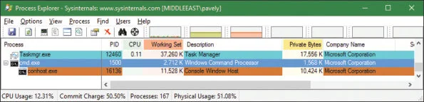
- Cmd.exe または ConHost.exe をダブルクリックし、プロパティのダイアログを開きます。「Job」タブを開くと、プロセスが属するジョブの情報が表示されます。
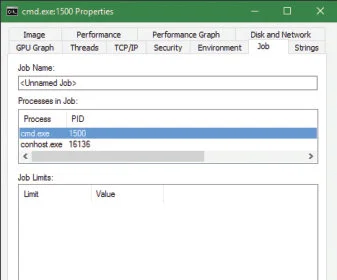
- コマンドプロンプトから
Notepad.exeを起動します。 - Process Explorer でメモ帳のプロセスのプロパティを開き、「Job」タブを確認します。Cmd.exe はプロセス作成時に
CREATE_BREAKAWAY_FROM_JOBフラグを使わないため、メモ帳も同じジョブで実行されています。ジョブが入れ子になっている場合、このタブには、対象のプロセスが直接属するジョブと、その子ジョブすべてに属するプロセスが表示されます。 - 稼働中のシステムでカーネルデバッガーを起動します。
!processコマンドでnotepad.exeを探し、基本情報を表示します。lkd> !process 0 1 notepad.exe PROCESS ffffe001eacf2080 SessionId: 1 Cid: 3078 Peb: 7f4113b000 ParentCid: 05dc DirBase: 4878b3000 ObjectTable: ffffc0015b89fd80 HandleCount: 188. Image: notepad.exe ... BasePriority 8 CommitCharge 671 Job ffffe00189aec460
Jobのポインターが0ではないことを確認します。ジョブの概要を表示するには、デバッガーで!jobに、直前の出力にあるJobのアドレスを渡します。lkd> !job ffffe00189aec460 Job at ffffe00189aec460 Basic Accounting Information TotalUserTime: 0x0 TotalKernelTime: 0x0 TotalCycleTime: 0x0 ThisPeriodTotalUserTime: 0x0 ThisPeriodTotalKernelTime: 0x0 TotalPageFaultCount: 0x0 TotalProcesses: 0x3 ActiveProcesses: 0x3
FreezeCount: 0 BackgroundCount: 0 TotalTerminatedProcesses: 0x0 PeakJobMemoryUsed: 0x10db PeakProcessMemoryUsed: 0xa56 Job Flags Limit Information (LimitFlags: 0x0) Limit Information (EffectiveLimitFlags: 0x0)
ActiveProcessesが3であることを確認します。対象は cmd.exe、conhost.exe、notepad.exe です。!jobのジョブアドレスの後ろにフラグ2を指定すると、このジョブに属するプロセスを一覧表示できます。lkd> !job ffffe00189aec460 2 ... Processes assigned to this job: PROCESS ffff8188d84dd780 SessionId: 1 Cid: 5720 Peb: 43bedb6000 ParentCid: 13cc DirBase: 707466000 ObjectTable: ffffbe0dc4e3a040 HandleCount: <Data Not Accessible> Image: cmd.exe PROCESS ffff8188ea077540 SessionId: 1 Cid: 30ec Peb: dd7f17c000 ParentCid: 5720 DirBase: 75a183000 ObjectTable: ffffbe0dafb79040 HandleCount: <Data Not Accessible> Image: conhost.exe PROCESS ffffe001eacf2080 SessionId: 1 Cid: 3078 Peb: 7f4113b000 ParentCid: 05dc DirBase: 4878b3000 ObjectTable: ffffc0015b89fd80 HandleCount: 188. Image: notepad.exe
dtコマンドでジョブオブジェクトを表示すると、さらに詳しいフィールドを確認できます。たとえば、階層内でのレベルや、入れ子になっている場合のほかのジョブとの関係（親ジョブ、同じ親を持つジョブ、ルートジョブ）がわかります。lkd> dt nt!_ejob ffffe00189aec460 +0x000 Event : _KEVENT +0x018 JobLinks : _LIST_ENTRY [ 0xffffe001'8d93e548 - 0xffffe001'df30f8d8 ] +0x028 ProcessListHead : _LIST_ENTRY [ 0xffffe001'8c4924f0 - 0xffffe001'eacf24f0 ] +0x038 JobLock : _ERESOURCE +0x0a0 TotalUserTime : _LARGE_INTEGER 0x0 +0x0a8 TotalKernelTime : _LARGE_INTEGER 0x2625a +0x0b0 TotalCycleTime : _LARGE_INTEGER 0xc9e03d ... +0x0d4 TotalProcesses : 4 +0x0d8 ActiveProcesses : 3 +0x0dc TotalTerminatedProcesses : 0
... +0x428 ParentJob : (null) +0x430 RootJob : 0xffffe001'89aec460 _EJOB ... +0x518 EnergyValues : 0xffffe001'89aec988 _PROCESS_ENERGY_VALUES +0x520 SharedCommitCharge : 0x5e8
Windows コンテナー（サーバーサイロ）
低コストのクラウドコンピューティングが広く利用できるようになり、インターネット上でのサービスの立ち上げ方が大きく変わりました。オンラインサービスやモバイルアプリのバックエンドを、クラウド事業者の画面でボタンを押すだけで構築できるようになりました。その一方で、事業者間の競争が進み、クラウド事業者間の移行や、クラウドからデータセンター、さらにはデータセンターから高性能な個人用サーバーへの移行が求められるようになりました。そのため、仮想マシンを動かすコストを負わずに、必要に応じて配置や移行ができるバックエンドが重要になりました。
Docker などの技術は、この需要に応えるために生まれました。アプリケーションを実行環境ごとまとめ、別の Linux ディストリビューションでも、複雑なローカルインストールや仮想マシンのリソース消費を気にせずに展開できます。当初は Linux 専用でしたが、Microsoft の協力により、Windows 10 Anniversary Update でも Docker を利用できるようになりました。Windows では次の2つのモードで動作します。
- リソース消費は大きいものの、アプリケーションを完全に分離する Hyper-V コンテナー。クライアントとサーバーの両方で利用できます。
- OS の機能でアプリケーションを分離する軽量なサーバーサイロコンテナー。本書の対象バージョンでは、ライセンス上の理由によりサーバー用途でのみサポートされます。
この節ではサーバーサイロを取り上げます。その実現には、OS の内部に大きな変更が必要でした。クライアントシステムにもサーバーサイロコンテナーの作成機能はありますが、本書の対象バージョンでは無効です。Hyper-V コンテナーは仮想化環境を使います。サーバーサイロコンテナーは、ホストと同じカーネルおよびドライバー上で、すべてのユーザーモードコンポーネントの別インスタンスを動かします。セキュリティ上の分離は弱まりますが、コンテナー環境を大幅に軽量化できます。
ジョブオブジェクトとサイロ
サイロの作成には、SetInformationJobObject API の複数の非公開情報クラスが関わります。サイロは、これまでに見たジョブに規則と機能を加えたものです。1つのジョブオブジェクトを、前述の分離やリソース管理に使いながら、サイロの作成にも使えます。このようなジョブを、システムはハイブリッドジョブと呼びます。
ジョブオブジェクトは2種類のサイロをホストできます。アプリケーションサイロは Desktop Bridge の実装に使われます。詳細は第10章の「パッケージ化されたアプリケーション」を参照してください。サーバーサイロは、Docker コンテナーのサポートに使われます。
サイロの分離
サーバーサイロを特徴付ける最初の要素は、オブジェクトマネージャーにサイロ専用のルートディレクトリオブジェクト（\）があることです。詳細は第8章の「オブジェクトマネージャー」を参照してください。ファイル、レジストリキー、イベント、ミューテックス、RPC ポートなど、アプリケーションから見える名前付きオブジェクトはすべて、ルート名前空間に置かれます。アプリケーションはこの名前空間を使って、オブジェクトを作成、検索し、ほかのアプリケーションと共有できます。
サーバーサイロは独自のルートを持つため、名前付きオブジェクトへのアクセスを次の3つの方法で制御できます。
- 既存のオブジェクトを複製し、サイロ内からはその複製にアクセスできるようにします。
- 既存のオブジェクトへのシンボリックリンクを作り、サイロ内から直接アクセスできるようにします。
- コンテナー化されたアプリケーションが使うオブジェクトなど、サイロ内にだけ存在する新しいオブジェクトを作ります。
Docker が利用する仮想マシンコンピューティングサービス（Vmcompute）は、名前空間の分離に加え、次のコンポーネントと連携してコンテナー全体を分離します。
- ベース OS と呼ばれる Windows イメージ（WIM）ファイル
- オペレーティングシステムの独立したコピーを提供します。本書の執筆時点では、Microsoft は Server Core と Nano Server のイメージを提供しています。
- ホスト OS の Ntdll.dll
- ベース OS イメージの Ntdll.dll を置き換えます。サーバーサイロはホストのカーネルとドライバーを使います。システムコールを処理する Ntdll.dll は、ホスト OS から再利用する必要がある唯一のユーザーモードコンポーネントです。
- Wcifs.sys フィルタードライバーによる仮想ファイルシステム
- コンテナーは、基盤の NTFS ドライブに影響を与えず、一時的にファイルシステムを変更できます。変更はコンテナーの終了後に消去できます。
- VReg カーネルコンポーネントによる仮想レジストリ
- 一時的なレジストリハイブを用意します。オブジェクトマネージャーのルート名前空間で分離できるのはレジストリのルートまでなので、VReg がハイブ自体も分離します。
- セッションマネージャー（Smss.exe）
- コンテナーのサポートに必要な追加のサービスセッションやコンソールセッションを作成します。これにより Smss は、追加のユーザーセッションに加え、起動したコンテナーごとに必要なセッションも扱えます。
図3-16に、ここまでに説明したコンポーネントで構成されるコンテナーのアーキテクチャを示します。

サイロの分離境界
ここまでに説明したコンポーネントが、ユーザーモードの分離環境を提供します。ただし、その環境ではホストの Ntdll.dll を使用し、この DLL はホストのカーネルやドライバーと通信します。そこで、カーネルはサイロ同士を区別するために、追加の分離境界を設けます。各サーバーサイロには、次の項目が個別に用意されます。
- サイロ専用の共有ユーザーデータ（シンボル名
SILO_USER_SHARED_DATA） - サイロ固有のシステムパス、セッション ID、フォアグラウンドプロセスの PID、製品の種類とスイートが含まれます。これらは元の
KUSER_SHARED_DATAにある項目ですが、ホスト側ではホスト OS イメージの情報を指しています。サイロにはベース OS イメージの情報が必要なため、各種コンポーネントや API は、これらの項目を参照するときにサイロ専用の共有データを読むように変更されています。元のKUSER_SHARED_DATAは通常のアドレスに残り、引き続きホストの情報を保持します。この構造体を通じて、コンテナー内からホストの状態の一部が見えます。 - オブジェクトディレクトリのルート名前空間
- 独自の
\SystemRootシンボリックリンク、\Deviceディレクトリ、デバイスマップ、DOS デバイスのマッピング、\Sessionsディレクトリなどがあります。ユーザーモードのコンポーネントは\Deviceを介して間接的にデバイスドライバーにアクセスします。たとえばユーザーモードのアプリケーションがネットワークドライブにアクセスするときは、DOS デバイスのマッピングを使います。 - API セットのマッピング
- サイロの API セットには、ベース OS の WIM に収録されたスキーマを使います。ホスト OS のファイルシステムにもスキーマはありますが、サイロの解決には使いません。ローダーはこのマッピングを調べ、対象の関数を実装する DLL があるか、ある場合はどの DLL かを判断します。マッピングは SKU によって異なる場合があるため、アプリケーションにはベース OS の SKU に対応するマッピングを見せる必要があります。
- ログオンセッション
- SYSTEM と Anonymous のローカル一意識別子（LUID）に加え、サイロ内のユーザーを表す仮想サービスアカウントの LUID が関連付けられます。これらは、Smss が作成したコンテナーのサービスセッション内で動作するサービスやアプリケーションのトークンに対応します。LUID とログオンセッションについては第7章を参照してください。
- ETW のトレースとロガーのコンテキスト
- ETW の処理をサイロ内に分離し、コンテナー間やホスト OS との間で状態が見えたり漏れたりするのを防ぎます。ETW の詳細は第10章の「Windows イベントトレーシング（ETW）」を参照してください。
サイロコンテキスト
ここまで述べた分離境界は、ホスト OS のカーネル本体が提供します。カーネル内のほかのコンポーネントやサードパーティー製を含むドライバーも、PsCreateSiloContext API で独自のデータを設定したり、既存のオブジェクトをサイロに関連付けたりできます。それぞれのサイロコンテキストにはスロット番号が割り当てられ、現在動いているサーバーサイロと今後作成されるサーバーサイロのすべてが、そのスロットにコンテキストへのポインターを保持します。システムは組み込みのスロット番号を32個、拡張スロットを256個用意しています。
サーバーサイロを作成するたびに、サイロローカルストレージ（SLS）の配列が割り当てられます。各スレッドがスレッドローカルストレージ（TLS）を持つのと同様です。配列の各要素は、サイロコンテキストを保持するために割り当てられたスロットに対応します。同じ番号のスロットは、どのサイロでも同じ種類のコンテキストを保持しますが、ポインターはサイロごとに異なります。たとえばドライバー Foo がすべてのサイロでスロット5を所有し、サイロごとに異なるコンテキストへのポインターを格納できます。一部のスロットはオブジェクトマネージャー、セキュリティ参照モニター（SRM）、構成マネージャーなどの組み込みコンポーネントが使い、ほかのスロットは Winsock の補助機能ドライバー（Afd.sys）などの標準ドライバーが使います。
サーバーサイロの共有ユーザーデータと同様に、各種コンポーネントや API は、従来グローバルなカーネル変数にあったデータを、対応するサイロコンテキストから取得するよう変更されています。たとえば、各コンテナーには独自の Lsass.exe があり、カーネルの SRM はそのプロセスへのハンドルを必要とします。Lsass と SRM の詳細は第7章を参照してください。ハンドルをグローバル変数に1つだけ格納することはできないため、SRM はアクティブなサーバーサイロのコンテキストを照会し、返されたデータ構造体からハンドルを取り出します。
ホスト OS 自体で動作する Lsass.exe もあります。ホスト上のプロセスとセッション0はサーバーサイロに属さないため、カーネルはルートホストサイロを設け、ホストも1つのサイロに属するかのように扱います。この仕組みにより、現在のサイロが存在しなくても、現在のサイロのコンテキストを照会する処理が動作します。実装では、グローバルなカーネル変数 PspHostSiloGlobals に、専用のローカルストレージ配列と、組み込みコンポーネントが使うほかのサイロコンテキストを保持します。サイロ API に NULL ポインターを渡すと、「サイロの指定がないのでホストサイロを使う」という意味になります。
実験：ホストサイロの SRM コンテキストを表示する
Windows 10 のクライアントシステムなど、サーバーサイロをホストしていない場合でも、ホストサイロは存在します。そこには、カーネルがサイロごとに管理する分離されたコンテキストがあります。Windows デバッガーの拡張コマンド !silo に -g Host を指定すると、次のような出力が表示されます。
lkd> !silo -g Host Server silo globals fffff801b73bc580: Default Error Port: ffffb30f25b48080 ServiceSessionId : 0 Root Directory : 00007fff00000000 '' State : Running
出力にあるサイロのグローバルデータへのポインターはリンクになっています。クリックすると、次のようにコマンドが実行され、構造体の内容が表示されます。
lkd> dx -r1 (*((nt!_ESERVERSILO_GLOBALS *)0xfffff801b73bc580)) (*((nt!_ESERVERSILO_GLOBALS *)0xfffff801b73bc580)) [Type: _ ESERVERSILO_GLOBALS] [+0x000] ObSiloState [Type: _OBP_SILODRIVERSTATE] [+0x2e0] SeSiloState [Type: _SEP_SILOSTATE] [+0x310] SeRmSiloState [Type: _SEP_RM_LSA_CONNECTION_STATE] [+0x360] CmSiloState : 0xffffc308870931b0 [Type: _CMP_SILO_CONTEXT *] [+0x368] EtwSiloState : 0xffffb30f236c4000 [Type: _ETW_SILODRIVERSTATE *] ...
次に SeRmSiloState フィールドをクリックして展開します。表示される情報には、Lsass.exe プロセスのハンドルが含まれます。
lkd> dx -r1 ((ntkrnlmp!_SEP_RM_LSA_CONNECTION_STATE *)0xfffff801b73bc890) ((ntkrnlmp!_SEP_RM_LSA_CONNECTION_STATE *)0xfffff801b73bc890) : 0xfffff801b73bc890 [Type: _SEP_RM_LSA_CONNECTION_STATE *] [+0x000] LsaProcessHandle : 0xffffffff80000870 [Type: void *] [+0x008] LsaCommandPortHandle : 0xffffffff8000087c [Type: void *] [+0x010] SepRmThreadHandle : 0x0 [Type: void *] [+0x018] RmCommandPortHandle : 0xffffffff80000874 [Type: void *]
サイロモニター
カーネルドライバーが独自のサイロコンテキストを保持するには、すでに稼働しているサイロと、コンテナーの起動に伴って新たに作成されるサイロを把握する必要があります。そこで使うのがサイロモニターです。PsRegisterSiloMonitor、PsStartSiloMonitor、PsUnregisterSiloMonitor などの API を使うと、サーバーサイロの作成や終了、既存のサイロについて通知を受け取れます。各サイロモニターは PsGetSiloMonitorContextSlot で自分のスロット番号を取得し、必要に応じて PsInsertSiloContext、PsReplaceSiloContext、PsRemoveSiloContext を呼び出せます。コンポーネントがコンテキストを2つ格納する必要がある場合は、PsAllocSiloContextSlot を使ってスロットを追加できます。
PsInsertPermanentSiloContext や PsMakeSiloContextPermanent を使うと、永続サイロコンテキストを扱えます。永続コンテキストでは参照をカウントせず、サーバーサイロの存続期間や、コンテキストを取得した回数に左右されません。挿入後は PsGetSiloContext や PsGetPermanentSiloContext で取得できます。
実験：サイロモニターとサイロコンテキスト
サイロモニターの使い方とサイロコンテキストの格納方法を理解するため、Winsock の補助機能ドライバー（Afd.sys）とそのモニターを調べます。まずモニターを表すデータ構造を表示します。シンボルファイルに型情報がないため、生データとして表示します。
lkd> dps poi(afd!AfdPodMonitor) ffffe387'a79fc120 ffffe387'a7d760c0 ffffe387'a79fc128 ffffe387'a7b54b60 ffffe387'a79fc130 00000009'00000101 ffffe387'a79fc138 fffff807'be4b5b10 afd!AfdPodSiloCreateCallback ffffe387'a79fc140 fffff807'be4bee40 afd!AfdPodSiloTerminateCallback
次に、ホストサイロから該当スロット（この例では9）を取得します。サイロローカルストレージ（SLS）は Storage フィールドにあり、各要素がポインターとフラグを持つスロットエントリの配列です。1エントリがポインター幅の2項目で構成されるため、インデックスを2倍して目的のエントリの先頭位置を求め、2番目のフィールド（+1）を参照して、コンテキストへのポインターを指す値を取得します。
lkd> r? @$t0 = (nt!_ESERVERSILO_GLOBALS*)@@masm(nt!PspHostSiloGlobals) lkd> ?? ((void***)@$t0->Storage)[9 * 2 + 1] void ** 0xffff988f'ab815941
ポインターには永続化を示すフラグがビット単位の論理和で組み込まれています。フラグに対応するビットをマスクで取り除き、!object でサイロコンテキストであることを確認します。
lkd> !object (0xffff988f'ab815941 & -2) Object: ffff988fab815940 Type: (ffff988faaac9f20) PsSiloContextNonPaged
サーバーサイロの作成
サイロはジョブオブジェクトの機能なので、サーバーサイロを作成するには、まず標準の CreateJobObject API でジョブを作成します。Anniversary Update ではこの API が変更され、ジョブにジョブ ID（JID）が付くようになりました。JID はプロセス ID（PID）やスレッド ID（TID）と同じクライアント ID（CID）テーブルから割り当てられます。そのため、ほかのジョブだけでなく、プロセスやスレッドの ID とも重複しません。コンテナーの GUID も自動で生成されます。
次に、サイロ作成用の情報クラスを指定して SetInformationJobObject を呼びます。これにより、ジョブを表すエグゼクティブオブジェクト EJOB に Silo フラグが設定され、その Storage メンバーに前述の SLS スロット配列が割り当てられます。この時点で作成されているのはアプリケーションサイロです。
続いて、別の情報クラスを指定して SetInformationJobObject を呼び、ルートオブジェクトディレクトリの名前空間を作成します。この情報クラスには、信頼されたコンピューティング基盤（TCB）の特権が必要です。通常、サイロを作成するのは Vmcompute サービスだけです。この特権の確認により、仮想名前空間の悪用でアプリケーションの動作が妨げられるのを防ぎます。名前空間を作成するとき、オブジェクトマネージャーはホストのルート（\）にある Silos ディレクトリを作成するか開き、JID を付けて \Silos\148\ のような仮想ルートを作ります。次に KernelObjects、ObjectTypes、GLOBALROOT、DosDevices オブジェクトを作成します。仮想ルートは、起動時にオブジェクトマネージャーが割り当てた PsObjectDirectorySiloContextSlot のスロットに、サイロコンテキストとして格納されます。
次に、さらに別の情報クラスを指定して SetInformationJobObject を呼び、このサイロをサーバーサイロに変換します。カーネルの PspConvertSiloToServerSilo が、ホストサイロの SRM コンテキストを表示する実験で !silo を使って PspHostSiloGlobals を表示したときに見た ESERVERSILO_GLOBALS 構造体を初期化します。これにより、サイロの共有ユーザーデータ、API セットのマッピング、SystemRoot、各種のサイロコンテキストが初期化されます。たとえば SRM が Lsass.exe を特定するために使うコンテキストも含まれます。変換中に、コールバックを登録して監視を開始済みのサイロモニターへ通知が届きます。各モニターは、これを受けて独自のサイロコンテキストデータを追加できます。
最後に、サーバーサイロ専用のサービスセッションを初期化して、サイロを起動します。これはサーバーサイロにおけるセッション0に相当します。Smss の SmApiPort に ALPC メッセージを送り、Vmcompute が作成してサーバーサイロに変換したジョブオブジェクトのハンドルを渡します。通常のユーザーセッションの作成時と同様に Smss は自身の複製を作りますが、今回は作成時に複製をジョブオブジェクトに関連付けます。これにより新しい Smss は、サーバーサイロ内のコンテナー化された各要素と同じ環境で動作します。Smss はこのセッションをセッション0として扱い、Csrss.exe、Wininit.exe、Lsass.exe などを起動します。その後も通常の起動手順と同様、Wininit.exe がサービスコントロールマネージャー（Services.exe）を起動し、Services.exe が自動起動するサービスをすべて起動します。これで、前述の仮想サービスアカウントの LUID に関連付けられたログオンセッションで、新しいアプリケーションをサーバーサイロ内で実行できるようになります。
起動に必要な補助機能
ここまでの仕組みだけでは、起動は完了しません。たとえば Services.exe は初期化時に ntsvcs という名前付きパイプを作ろうとします。そのために \Device\NamedPipe と通信する必要がありますが、Services.exe から見えるパスは \Silos\JID\Device\NamedPipe で、その場所にはまだデバイスオブジェクトがありません。
サイロ内からデバイスドライバーにアクセスできるようにするには、ドライバーがサイロに対応し、独自のサイロモニターを登録する必要があります。ドライバーは通知を受けて、サイロごとにデバイスオブジェクトを作成します。カーネルは PsAttachSiloToCurrentThread と、それに対応する PsDetachSiloFromCurrentThread を提供します。アタッチすると ETHREAD の Silo フィールドに渡されたジョブオブジェクトが一時的に設定され、オブジェクトマネージャーなどへのアクセスが、そのサイロからのアクセスとして扱われます。たとえば名前付きパイプのドライバーは、この仕組みを使ってサイロの \Device 名前空間に NamedPipe オブジェクトを作成できます。その名前空間はホストから見ると \Silos\JID\ の配下にあります。
アプリケーションがサービスセッションで起動するなら、どうやってユーザーとやり取りし、入出力を処理するのでしょうか。本書が対象とする Windows コンテナーでは、コンテナー内で起動するアプリケーションに GUI が許可されておらず、リモートデスクトップ（RDP）でコンテナーに接続することもできません。実行できるのはコマンドラインアプリケーションだけですが、通常はそうしたアプリケーションにも対話型セッションが必要です。そこで使われるのが、コンテナー実行サービスを実装する専用のホストプロセス CExecSvc.exe です。このサービスは名前付きパイプでホスト側の Docker サービスや Vmcompute サービスと通信し、セッション内でコンテナー化されたアプリケーションを起動します。また、通常は Conhost.exe が提供するコンソール機能をエミュレートします。入出力は名前付きパイプを通じて、ホスト上で最初に docker コマンドを実行したコマンドプロンプトや PowerShell のウィンドウに中継されます。docker cp などでコンテナーとの間でファイルを転送するときにも、このサービスが使われます。
コンテナーテンプレート
ドライバーがサイロの作成時に用意するデバイスオブジェクトのほかにも、カーネルやその他のコンポーネントが作成するオブジェクトが多数あり、セッション0で実行されるサービスと相互に通信する必要があります。ユーザーモードにはこの用途に使えるサイロモニターがありません。また、すべてのドライバーにサイロ専用のデバイスオブジェクトを毎回作らせるのは合理的ではありません。
たとえばサイロ内で音楽を再生するために、ほかのサイロやホストも使う同じサウンドカードを、個別のデバイスオブジェクトで表す必要はありません。個別のオブジェクトが必要になるのは、サイロ単位でサウンドを分離する場合などです。AFD も一例です。AFD がサイロモニターを使うのは、カーネルモードの DNS 要求を処理するために、サイロごとに DNS クライアントをホストするユーザーモードサービスを特定するためです。ネットワークと Winsock のスタックはシステムに1つなので、\Silos\JID\Device\Afd をサイロごとに作成するためには使いません。
レジストリにも、すべてのサイロに存在し、どのサイロからも見える必要があるグローバルな情報があります。VReg は、そのような情報も含めてサンドボックス化できます。
これらの要件に対応するため、サイロの名前空間、レジストリ、ファイルシステムは、専用のコンテナーテンプレートファイルで定義されます。Windows の機能の追加・削除画面で Windows コンテナー機能を有効にすると、既定では %SystemRoot%\System32\Containers\wsc.def に配置されます。このファイルには、オブジェクトマネージャーとレジストリの名前空間、およびそれらに適用する規則が記述され、必要に応じてホスト上の実際のオブジェクトへのシンボリックリンクを定義できます。使用するジョブオブジェクト、ボリュームのマウントポイント、ネットワークの分離ポリシーも指定します。将来 Windows がサイロオブジェクトを別の用途に使う場合には、異なるテンプレートで別種のコンテナー環境を提供できる可能性があります。次に、コンテナーを有効にしたシステムの wsc.def の抜粋を示します。
<!-- This is a silo definition file for cmdserver.exe --> <container> <namespace> <ob shadow="false"> <symlink name="FileSystem" path="\FileSystem" scope="Global" /> <symlink name="PdcPort" path="\PdcPort" scope="Global" /> <symlink name="SeRmCommandPort" path="\SeRmCommandPort" scope="Global" /> <symlink name="Registry" path="\Registry" scope="Global" /> <symlink name="Driver" path="\Driver" scope="Global" /> <objdir name="BaseNamedObjects" clonesd="\BaseNamedObjects" shadow="false"/> <objdir name="GLOBAL??" clonesd="\GLOBAL??" shadow="false"> <!-- Needed to map directories from the host --> <symlink name="ContainerMappedDirectories" path="\ ContainerMappedDirectories" scope="Local" /> <!-- Valid links to \Device --> <symlink name="WMIDataDevice" path="\Device\WMIDataDevice" scope="Local" /> <symlink name="UNC" path="\Device\Mup" scope="Local" /> ... </objdir> <objdir name="Device" clonesd="\Device" shadow="false"> <symlink name="Afd" path="\Device\Afd" scope="Global" /> <symlink name="ahcache" path="\Device\ahcache" scope="Global" /> <symlink name="CNG" path="\Device\CNG" scope="Global" /> <symlink name="ConDrv" path="\Device\ConDrv" scope="Global" /> ... <registry> <load key="$SiloHivesRoot$\Silo$TopLayerName$Software_Base" path="$TopLayerPath$\Hives\Software_Base" ReadOnly="true" /> ... <mkkey name="ControlSet001" clonesd="\REGISTRY\Machine\SYSTEM\ControlSet001" /> <mkkey name="ControlSet001\Control" clonesd="\REGISTRY\Machine\SYSTEM\ControlSet001\Control" />
まとめ
本章では、プロセスの構造と、プロセスが作成されてから破棄されるまでの流れを見てきました。また、ジョブを使って複数のプロセスをひとまとまりとして管理する方法と、サーバーサイロによって Windows Server でコンテナーを利用できるようになった経緯を説明しました。次章では、スレッドの構造と動作、実行順序を決めるスケジューリング、スレッドの操作方法と用途を詳しく取り上げます。
第4章 スレッド
本章では、Windows のスレッドとスレッドスケジューリングに使われるデータ構造とアルゴリズムを説明します。まずスレッドの作成方法を取り上げ、次にスレッドの内部構造とスケジューリングを説明します。最後にスレッドプールを取り上げます。
スレッドの作成
スレッドを管理する内部構造に進む前に、API から見たスレッド作成の手順と引数を確認します。
ユーザーモードでスレッドを作成する最も単純な関数は CreateThread です。現在のプロセス内にスレッドを作成し、次の引数を受け取ります。
- セキュリティ属性構造体（省略可）
- 新しいスレッドに関連付けるセキュリティ記述子と、作成されるスレッドハンドルを継承可能にするかどうかを指定します。ハンドルの継承は、第8章の「ハンドルの受け渡し」で説明します。
- スタックサイズ（省略可）
- 0を指定すると、実行ファイルのヘッダーにある既定値が使われます。ユーザーモードプロセスの最初のスレッドには、常にこの既定値が適用されます。スレッドのスタックは第5章「メモリ管理」で詳しく説明します。
- 関数ポインター
- 新しいスレッドが実行を開始するエントリポイントを指定します。
- スレッド関数への引数（省略可）
- スレッドのエントリポイントに渡す値を指定します。
- フラグ（省略可）
- スレッドを一時停止状態で作成するかどうか（
CREATE_SUSPENDED）と、スタックサイズの引数を初期コミットサイズと最大予約サイズのどちらとして扱うかを指定します。
作成に成功すると、新しいスレッドの0以外のハンドルが返ります。呼び出し元が要求した場合は、一意のスレッド ID も返ります。
CreateRemoteThread は、スレッド作成機能を拡張した関数です。第1引数に、スレッドの作成先となるプロセスのハンドルを指定します。この関数を使うと、別のプロセス内にスレッドを作成できます。代表的な用途は、デバッガーがデバッグ対象のプロセスを強制的に中断することです。デバッガーは対象プロセス内にスレッドを作成し、そのスレッドが直ちに中断を引き起こします。
前ページの例では、対象プロセス内のスレッドが DebugBreak を呼んで中断を発生させます。また、対象プロセスのコンテキストで動作すると、そのアドレス空間全体が見えるので、内部情報を取得しやすくなります。この性質は正当な用途にも悪意のある用途にも使われます。
CreateRemoteThread には、操作に必要なアクセス権を持つプロセスハンドルが必要です。たとえば保護プロセスのハンドルにはごく限られた権限しか付与されないため、この方法でスレッドを作成することはできません。
CreateRemoteThreadEx は CreateThread と CreateRemoteThread の機能をすべて備えています。実際、両関数は適切な既定値を指定して CreateRemoteThreadEx を呼び出します。CreateRemoteThreadEx では属性リストを指定できます。これはプロセス作成時に STARTUPINFOEX が STARTUPINFO にメンバーを追加するのと似ています。属性の例には、優先して実行するプロセッサやグループアフィニティの指定があります。どちらも本章の後半で説明します。
処理が正常に進むと、CreateRemoteThreadEx は最終的に Ntdll.dll の NtCreateThreadEx を呼び出します。ここでカーネルモードに切り替わり、エグゼクティブ関数 NtCreateThreadEx で実行を続けます。カーネルモードでのスレッド作成は、本章後半の「スレッドが作られるまで」で説明します。
カーネルモードでは、WDK に記載されている PsCreateSystemThread でスレッドを作成します。特定のプロセスに依存しない処理を System プロセス内で行う必要があるドライバーにとって、この関数は便利です。技術的には任意のプロセス内にもスレッドを作成できますが、ドライバーでその使い方が必要になることは少なくなります。
カーネルスレッドの関数から戻っても、スレッドオブジェクトは自動では破棄されません。ドライバーは、スレッドを正常に終了させるために、スレッド関数の中から PsTerminateSystemThread を呼び出す必要があります。この関数から呼び出し元に戻ることはありません。
スレッドの内部構造
この節では、スレッドの管理に使われるカーネル内部の構造体と、一部のユーザーモードの構造体を説明します。特に断りがなければ、ユーザーモードスレッドとカーネルモードのシステムスレッドの両方に当てはまります。
データ構造
OS 内部では、Windows のスレッドをエグゼクティブのスレッドオブジェクトで表します。このオブジェクトは ETHREAD 構造体を内包します。ETHREAD の先頭メンバーが KTHREAD 構造体です。図4-1に ETHREAD、図4-2に KTHREAD を示します。ETHREAD と、それが指すほかの構造体はシステムアドレス空間にあります。例外はスレッド環境ブロック（TEB）です。PEB と同様、ユーザーモードコンポーネントから参照する必要があるため、プロセスのアドレス空間に置かれます。


Windows サブシステムプロセス（Csrss）は、Windows サブシステムのアプリケーション内で作成されたスレッドごとに、対応する構造体 CSR_THREAD を管理します。Windows サブシステムの USER または GDI 関数を呼び出したスレッドについては、サブシステムのカーネルモード部分（Win32k.sys）もスレッドごとのデータ構造体 W32THREAD を管理します。KTHREAD はこの構造体を指します。
注 上位層のグラフィックス処理に関わる Win32k のスレッド構造体を、エグゼクティブの ETHREAD ではなく KTHREAD が指しているのは、カーネルの通常の抽象化レイヤーをまたぐ設計に見えます。スケジューラーなどの低レベルのコンポーネントは、このフィールドを使いません。
図4-1のフィールドの大半は、名前が役割を表しています。ETHREAD の最初のメンバー Tcb の名前は、スレッド制御ブロック（thread control block）の略です。このメンバーの型は KTHREAD です。その後に、スレッドとプロセスの識別情報、アクセストークンへのポインターや偽装などのセキュリティ情報、ALPC メッセージ、保留中の I/O 要求（IRP）に関係するフィールドが続きます。プロセスの識別情報には、環境情報を参照するための所有プロセスへのポインターも含まれます。Windows 10 固有のフィールドには、第6章「I/O システム」で説明する電源管理と、本章後半で扱う CPU セットに関するものがあります。主なフィールドの一部は本書の別の箇所で詳しく説明します。ETHREAD の形式は、カーネルデバッガーの dt コマンドで確認できます。
ここでは、スレッドを表す主要なデータ構造体である ETHREAD と KTHREAD を詳しく見ます。ETHREAD の Tcb メンバーである KTHREAD には、カーネルがスケジューリング、同期、時間の計測に使う情報が格納されています。
実験：ETHREAD と KTHREAD を表示する
カーネルデバッガーの dt コマンドを使うと、ETHREAD と KTHREAD の構造を表示できます。次は64ビット版 Windows 10 での ETHREAD の出力例です。
lkd> dt nt!_ethread +0x000 Tcb : _KTHREAD +0x5d8 CreateTime : _LARGE_INTEGER +0x5e0 ExitTime : _LARGE_INTEGER ... +0x7a0 EnergyValues : Ptr64 _THREAD_ENERGY_VALUES +0x7a8 CmCellReferences : Uint4B +0x7b0 SelectedCpuSets : Uint8B +0x7b0 SelectedCpuSetsIndirect : Ptr64 Uint8B +0x7b8 Silo : Ptr64 _EJOB
KTHREAD も同様のコマンドで表示できます。また、第3章「プロセスとジョブ」の実験「EPROCESS 構造体のレイアウトを表示する」と同様に、dt nt!_ETHREAD Tcb と入力して表示することもできます。
lkd> dt nt!_kthread +0x000 Header : _DISPATCHER_HEADER +0x018 SListFaultAddress : Ptr64 Void +0x020 QuantumTarget : Uint8B +0x028 InitialStack : Ptr64 Void +0x030 StackLimit : Ptr64 Void +0x038 StackBase : Ptr64 Void
+0x040 ThreadLock : Uint8B +0x048 CycleTime : Uint8B +0x050 CurrentRunTime : Uint4B ... +0x5a0 ReadOperationCount : Int8B +0x5a8 WriteOperationCount : Int8B +0x5b0 OtherOperationCount : Int8B +0x5b8 ReadTransferCount : Int8B +0x5c0 WriteTransferCount : Int8B +0x5c8 OtherTransferCount : Int8B +0x5d0 QueuedScb : Ptr64 _KSCB
実験：カーネルデバッガーの !thread コマンドを使う
カーネルデバッガーの !thread コマンドは、スレッドのデータ構造にある情報の一部を表示します。次のような情報は、ほかのユーティリティでは表示できません。
- 内部構造体のアドレス
- スレッドの優先度の詳細
- スタックの情報
- 保留中の I/O 要求の一覧
- 待機中のスレッドが待っているオブジェクトの一覧
スレッドの情報を表示するには、!process または !thread を使います。!process はプロセスの情報に続けて、そのプロセス内の全スレッドを表示できます。!thread にスレッドオブジェクトのアドレスを渡すと、そのスレッドの情報が表示されます。
まず explorer.exe のインスタンスをすべて探します。
lkd> !process 0 0 explorer.exe PROCESS ffffe00017f3e7c0 SessionId: 1 Cid: 0b7c Peb: 00291000 ParentCid: 0c34 DirBase: 19b264000 ObjectTable: ffffc00007268cc0 HandleCount: 2248. Image: explorer.exe PROCESS ffffe00018c817c0 SessionId: 1 Cid: 23b0 Peb: 00256000 ParentCid: 03f0 DirBase: 2d4010000 ObjectTable: ffffc0001aef0480 HandleCount: 2208. Image: explorer.exe
次に、出力にある PROCESS アドレスのうち1つを選びます。このアドレスをフラグ 2 とともに !process に渡し、所属するスレッドを表示します。
lkd> !process ffffe00018c817c0 2 PROCESS ffffe00018c817c0 SessionId: 1 Cid: 23b0 Peb: 00256000 ParentCid: 03f0 DirBase: 2d4010000 ObjectTable: ffffc0001aef0480 HandleCount: 2232. Image: explorer.exe
THREAD ffffe0001ac3c080 Cid 23b0.2b88 Teb: 0000000000257000 Win32Thread: ffffe0001570ca20 WAIT: (UserRequest) UserMode Non-Alertable ffffe0001b6eb470 SynchronizationEvent THREAD ffffe0001af10800 Cid 23b0.2f40 Teb: 0000000000265000 Win32Thread: ffffe000156688a0 WAIT: (UserRequest) UserMode Non-Alertable ffffe000172ad4f0 SynchronizationEvent ffffe0001ac26420 SynchronizationEvent THREAD ffffe0001b69a080 Cid 23b0.2f4c Teb: 0000000000267000 Win32Thread: ffffe000192c5350 WAIT: (UserRequest) UserMode Non-Alertable ffffe00018d83c00 SynchronizationEvent ffffe0001552ff40 SynchronizationEvent ... THREAD ffffe00023422080 Cid 23b0.3d8c Teb: 00000000003cf000 Win32Thread: ffffe0001eccd790 WAIT: (WrQueue) UserMode Alertable ffffe0001aec9080 QueueObject THREAD ffffe00023f23080 Cid 23b0.3af8 Teb: 00000000003d1000 Win32Thread: 0000000000000000 WAIT: (WrQueue) UserMode Alertable ffffe0001aec9080 QueueObject THREAD ffffe000230bf800 Cid 23b0.2d6c Teb: 00000000003d3000 Win32Thread: 0000000000000000 WAIT: (WrQueue) UserMode Alertable ffffe0001aec9080 QueueObject THREAD ffffe0001f0b5800 Cid 23b0.3398 Teb: 00000000003e3000 Win32Thread: 0000000000000000 WAIT: (UserRequest) UserMode Alertable ffffe0001d19d790 SynchronizationEvent ffffe00022b42660 SynchronizationTimer
以下はスレッド一覧の抜粋です。各項目には、!thread に渡せる ETHREAD のアドレス、クライアント ID（Cid）、スレッド環境ブロック（TEB）、スレッドの状態が表示されます。Cid はプロセス ID とスレッド ID の組です。ここに挙げたスレッドはすべて同じ explorer.exe プロセスに属するため、プロセス ID は共通です。TEB はこのあと説明します。ほとんどのスレッドは待機状態（WAIT）で、待機の理由は括弧内に表示されます。次の行以降に、そのスレッドが待っている同期オブジェクトが表示される場合もあります。
特定のスレッドを詳しく調べるには、一覧の THREAD 行にある ETHREAD のアドレスを !thread に渡します。
lkd> !thread ffffe0001d45d800 THREAD ffffe0001d45d800 Cid 23b0.452c Teb: 000000000026d000 Win32Thread: ffffe0001aace630 WAIT: (UserRequest) UserMode Non-Alertable ffffe00023678350 NotificationEvent ffffe00022aeb370 Semaphore Limit 0xffff ffffe000225645b0 SynchronizationEvent Not impersonating DeviceMap ffffc00004f7ddb0 Owning Process ffffe00018c817c0 Image: explorer.exe
Attached Process N/A Image: N/A Wait Start TickCount 7233205 Ticks: 270 (0:00:00:04.218) Context Switch Count 6570 IdealProcessor: 7 UserTime 00:00:00.078 KernelTime 00:00:00.046 Win32 Start Address 0c Stack Init ffffd000271d4c90 Current ffffd000271d3f80 Base ffffd000271d5000 Limit ffffd000271cf000 Call 0000000000000000 Priority 9 BasePriority 8 PriorityDecrement 0 IoPriority 2 PagePriority 5 GetContextState failed, 0x80004001 Unable to get current machine context, HRESULT 0x80004001 Child-SP RetAddr : Args to Child : Call Site ffffd000'271d3fc0 fffff803'bef086ca : 00000000'00000000 00000000'00000001 00000000'00000000 00000000'00000000 : nt!KiSwapContext+0x76 ffffd000'271d4100 fffff803'bef08159 : ffffe000'1d45d800 fffff803'00000000 ffffe000'1aec9080 00000000'0000000f : nt!KiSwapThread+0x15a ffffd000'271d41b0 fffff803'bef09cfe : 00000000'00000000 00000000'00000000 ffffe000'0000000f 00000000'00000003 : nt!KiCommitThreadWait+0x149 ffffd000'271d4240 fffff803'bf2a445d : ffffd000'00000003 ffffd000'271d43c0 00000000'00000000 fffff960'00000006 : nt!KeWaitForMultipleObjects+0x24e ffffd000'271d4300 fffff803'bf2fa246 : fffff803'bf1a6b40 ffffd000'271d4810 ffffd000'271d4858 ffffe000'20aeca60 : nt!ObWaitForMultipleObjects+0x2bd ffffd000'271d4810 fffff803'befdefa3 : 00000000'00000fa0 fffff803'bef02aad ffffe000'1d45d800 00000000'1e22f198 : nt!NtWaitForMultipleObjects+0xf6 ffffd000'271d4a90 00007ffe'f42b5c24 : 00000000'00000000 00000000'00000000 00000000'00000000 00000000'00000000 : nt!KiSystemServiceCopyEnd+0x13 (TrapFrame @ ffffd000'271d4b00) 00000000'1e22f178 00000000'00000000 : 00000000'00000000 00000000'00000000 00000000'00000000 00000000'00000000 : 0x00007ffe'f42b5c24
出力には、スレッドの優先度、スタックの詳細、ユーザーモードとカーネルモードでの実行時間など、多くの情報が含まれます。これらの項目の多くは、本章のほか、第5章「メモリ管理」と第6章「I/O システム」で取り上げます。
実験：tlist でスレッド情報を表示する
次に示すのは、Debugging Tools for Windows に含まれる tlist で、プロセスの詳細を表示した出力です。対象プロセスが32ビットなら32ビット版、64ビットなら64ビット版の tlist を使ってください。スレッドの一覧には Win32StartAddr が表示されます。これは、アプリケーションが CreateThread に渡したアドレスです。スレッドの開始アドレスを表示するほかのユーティリティでは、Process Explorer を除き、スレッドが最初に実行する Ntdll.dll 内の関数のアドレスが表示されます。
次は、Word 2016 を対象に tlist を実行したときの出力の抜粋です。
C:\Dbg\x86>tlist winword 120 WINWORD.EXE Chapter04.docm - Word CWD: C:\Users\pavely\Documents\
CmdLine: "C:\Program Files (x86)\Microsoft Office\Root\Office16\WINWORD.EXE" /n "D:\OneDrive\WindowsInternalsBook\7thEdition\Chapter04\Chapter04.docm VirtualSize: 778012 KB PeakVirtualSize: 832680 KB WorkingSetSize:185336 KB PeakWorkingSetSize:227144 KB NumberOfThreads: 45 12132 Win32StartAddr:0x00921000 LastErr:0x00000000 State:Waiting 15540 Win32StartAddr:0x6cc2fdd8 LastErr:0x00000000 State:Waiting 7096 Win32StartAddr:0x6cc3c6b2 LastErr:0x00000006 State:Waiting 17696 Win32StartAddr:0x77c1c6d0 LastErr:0x00000000 State:Waiting 17492 Win32StartAddr:0x77c1c6d0 LastErr:0x00000000 State:Waiting 4052 Win32StartAddr:0x70aa5cf7 LastErr:0x00000000 State:Waiting 14096 Win32StartAddr:0x70aa41d4 LastErr:0x00000000 State:Waiting 6220 Win32StartAddr:0x70aa41d4 LastErr:0x00000000 State:Waiting 7204 Win32StartAddr:0x77c1c6d0 LastErr:0x00000000 State:Waiting 1196 Win32StartAddr:0x6ea016c0 LastErr:0x00000057 State:Waiting 8848 Win32StartAddr:0x70aa41d4 LastErr:0x00000000 State:Waiting 3352 Win32StartAddr:0x77c1c6d0 LastErr:0x00000000 State:Waiting 11612 Win32StartAddr:0x77c1c6d0 LastErr:0x00000000 State:Waiting 17420 Win32StartAddr:0x77c1c6d0 LastErr:0x00000000 State:Waiting 13612 Win32StartAddr:0x77c1c6d0 LastErr:0x00000000 State:Waiting 15052 Win32StartAddr:0x77c1c6d0 LastErr:0x00000000 State:Waiting ... 12080 Win32StartAddr:0x77c1c6d0 LastErr:0x00000000 State:Waiting 9456 Win32StartAddr:0x77c1c6d0 LastErr:0x00002f94 State:Waiting 9808 Win32StartAddr:0x77c1c6d0 LastErr:0x00000000 State:Waiting 16208 Win32StartAddr:0x77c1c6d0 LastErr:0x00000000 State:Waiting 9396 Win32StartAddr:0x77c1c6d0 LastErr:0x00000000 State:Waiting 2688 Win32StartAddr:0x70aa41d4 LastErr:0x00000000 State:Waiting 9100 Win32StartAddr:0x70aa41d4 LastErr:0x00000000 State:Waiting 18364 Win32StartAddr:0x70aa41d4 LastErr:0x00000000 State:Waiting 11180 Win32StartAddr:0x70aa41d4 LastErr:0x00000000 State:Waiting 16.0.6741.2037 shp 0x00920000 C:\Program Files (x86)\Microsoft Office\Root\ Office16\WINWORD.EXE 10.0.10586.122 shp 0x77BF0000 C:\windows\SYSTEM32\ntdll.dll 10.0.10586.0 shp 0x75540000 C:\windows\SYSTEM32\KERNEL32.DLL 10.0.10586.162 shp 0x77850000 C:\windows\SYSTEM32\KERNELBASE.dll 10.0.10586.63 shp 0x75AF0000 C:\windows\SYSTEM32\ADVAPI32.dll ... 10.0.10586.0 shp 0x68540000 C:\Windows\SYSTEM32\VssTrace.DLL 10.0.10586.0 shp 0x5C390000 C:\Windows\SYSTEM32\adsldpc.dll 10.0.10586.122 shp 0x5DE60000 C:\Windows\SYSTEM32\taskschd.dll 10.0.10586.0 shp 0x5E3F0000 C:\Windows\SYSTEM32\srmstormod.dll 10.0.10586.0 shp 0x5DCA0000 C:\Windows\SYSTEM32\srmscan.dll 10.0.10586.0 shp 0x5D2E0000 C:\Windows\SYSTEM32\msdrm.dll 10.0.10586.0 shp 0x711E0000 C:\Windows\SYSTEM32\srm_ps.dll 10.0.10586.0 shp 0x56680000 C:\windows\System32\OpcServices.dll 0x5D240000 C:\Program Files (x86)\Common Files\Microsoft Shared\Office16\WXPNSE.DLL 16.0.6701.1023 shp 0x77E80000 C:\Program Files (x86)\Microsoft Office\Root\ Office16\GROOVEEX.DLL 10.0.10586.0 shp 0x693F0000 C:\windows\system32\dataexchange.dll
図4-3に示すスレッド環境ブロック（TEB）は、この節で説明するデータ構造のうち、プロセスのアドレス空間に置かれるものの一つです。先頭にはスレッド情報ブロック（TIB）というヘッダーがあり、主に OS/2 や Windows 9x のアプリケーションとの互換性のために設けられました。新しいスレッドを作成するときは、初期 TIB を使い、例外やスタックに関する情報を小さな構造体にまとめられます。

TEB は、イメージローダーや各種 Windows DLL が使うコンテキスト情報を保持します。これらのコンポーネントはユーザーモードで動作するため、ユーザーモードから書き込めるデータ構造が必要です。そのため、カーネルモードからしか書き込めないシステム空間ではなく、プロセスのアドレス空間に置かれます。TEB のアドレスは、!thread コマンドの出力にある Teb 欄で確認できます。
実験：TEB の内容を確認する
カーネルデバッガーでもユーザーモードデバッガーでも、!teb コマンドで TEB の内容を表示できます。引数なしならデバッガーで選択中のスレッド、TEB のアドレスを指定すればそのアドレスに対応するスレッドが対象です。カーネルデバッガーで TEB のアドレスを指定する場合は、正しいプロセスコンテキストで参照できるよう、先に対象プロセスを選択してからコマンドを実行します。
ユーザーモードデバッガーで TEB を表示するには、次の手順を実行します。カーネルデバッガーでの表示方法は次の実験で扱います。
- WinDbg を開きます。
- 「File」メニューから「Run Executable」を選びます。
C:\Windows\System32\Notepad.exeを選びます。デバッガーは最初のブレークポイントで実行を中断します。!tebコマンドで、この時点で唯一存在するスレッドの TEB を表示します。次は64ビット版 Windows での例です。0:000> !teb TEB at 000000ef125c1000 ExceptionList: 0000000000000000 StackBase: 000000ef12290000 StackLimit: 000000ef1227f000 SubSystemTib: 0000000000000000 FiberData: 0000000000001e00 ArbitraryUserPointer: 0000000000000000 Self: 000000ef125c1000 EnvironmentPointer: 0000000000000000 ClientId: 00000000000021bc . 0000000000001b74 RpcHandle: 0000000000000000 Tls Storage: 00000266e572b600 PEB Address: 000000ef125c0000 LastErrorValue: 0 LastStatusValue: 0 Count Owned Locks: 0 HardErrorMode: 0
gコマンドを入力するか、F5 キーを押してメモ帳の実行を再開します。- メモ帳の「ファイル」メニューで「開く」を選び、「キャンセル」をクリックしてダイアログを閉じます。
- Ctrl+Break キーを押すか、「Debug」メニューの「Break」を選び、対象プロセスの実行を中断します。
~（チルダ）コマンドを入力して、プロセス内のすべてのスレッドを表示します。次のような出力が表示されます。0:005> ~ 0 Id: 21bc.1b74 Suspend: 1 Teb: 000000ef'125c1000 Unfrozen 1 Id: 21bc.640 Suspend: 1 Teb: 000000ef'125e3000 Unfrozen 2 Id: 21bc.1a98 Suspend: 1 Teb: 000000ef'125e5000 Unfrozen 3 Id: 21bc.860 Suspend: 1 Teb: 000000ef'125e7000 Unfrozen 4 Id: 21bc.28e0 Suspend: 1 Teb: 000000ef'125c9000 Unfrozen . 5 Id: 21bc.23e0 Suspend: 1 Teb: 000000ef'12400000 Unfrozen 6 Id: 21bc.244c Suspend: 1 Teb: 000000ef'125eb000 Unfrozen 7 Id: 21bc.168c Suspend: 1 Teb: 000000ef'125ed000 Unfrozen
8 Id: 21bc.1c90 Suspend: 1 Teb: 000000ef'125ef000 Unfrozen 9 Id: 21bc.1558 Suspend: 1 Teb: 000000ef'125f1000 Unfrozen 10 Id: 21bc.a64 Suspend: 1 Teb: 000000ef'125f3000 Unfrozen 11 Id: 21bc.20c4 Suspend: 1 Teb: 000000ef'125f5000 Unfrozen 12 Id: 21bc.1524 Suspend: 1 Teb: 000000ef'125f7000 Unfrozen 13 Id: 21bc.1738 Suspend: 1 Teb: 000000ef'125f9000 Unfrozen 14 Id: 21bc.f48 Suspend: 1 Teb: 000000ef'125fb000 Unfrozen 15 Id: 21bc.17bc Suspend: 1 Teb: 000000ef'125fd000 Unfrozen
- 一覧には、スレッドごとに TEB のアドレスが表示されます。特定のスレッドを調べるには、その TEB のアドレスを
!tebに渡します。次は、先ほどの一覧にあるスレッド9の例です。0:005> !teb 000000ef'125f1000 TEB at 000000ef125f1000 ExceptionList: 0000000000000000 StackBase: 000000ef13400000 StackLimit: 000000ef133ef000 SubSystemTib: 0000000000000000 FiberData: 0000000000001e00 ArbitraryUserPointer: 0000000000000000 Self: 000000ef125f1000 EnvironmentPointer: 0000000000000000 ClientId: 00000000000021bc . 0000000000001558 RpcHandle: 0000000000000000 Tls Storage: 00000266ea1af280 PEB Address: 000000ef125c0000 LastErrorValue: 0 LastStatusValue: c0000034 Count Owned Locks: 0 HardErrorMode: 0
- 同じ TEB のアドレスを
dt ntdll!_tebに渡すと、構造体の各フィールドを表示できます。以下は出力の抜粋です。0:005> dt ntdll!_teb 000000ef'125f1000 +0x000 NtTib : _NT_TIB +0x038 EnvironmentPointer : (null) +0x040 ClientId : _CLIENT_ID +0x050 ActiveRpcHandle : (null) +0x058 ThreadLocalStoragePointer : 0x00000266'ea1af280 Void +0x060 ProcessEnvironmentBlock : 0x000000ef'125c0000 _PEB +0x068 LastErrorValue : 0 +0x06c CountOfOwnedCriticalSections : 0 ... +0x1808 LockCount : 0 +0x180c WowTebOffset : 0n0 +0x1810 ResourceRetValue : 0x00000266'ea2a5e50 Void +0x1818 ReservedForWdf : (null) +0x1820 ReservedForCrt : 0 +0x1828 EffectiveContainerId : _GUID {00000000-0000-0000-0000-000000000000}
実験：カーネルデバッガーで TEB を調べる
カーネルデバッガーで TEB を表示するには、次の手順を実行します。
- 調べたいスレッドが属するプロセスを探します。次の例では、
explorer.exeのプロセスを探し、スレッドとその基本情報を一覧表示します。出力の一部は省略しています。lkd> !process 0 2 explorer.exe PROCESS ffffe0012bea7840 SessionId: 2 Cid: 10d8 Peb: 00251000 ParentCid: 10bc DirBase: 76e12000 ObjectTable: ffffc000e1ca0c80 HandleCount: <Data Not Accessible> Image: explorer.exe THREAD ffffe0012bf53080 Cid 10d8.10dc Teb: 0000000000252000 Win32Thread: ffffe0012c1532f0 WAIT: (WrUserRequest) UserMode Non-Alertable ffffe0012c257fe0 SynchronizationEvent THREAD ffffe0012a30f080 Cid 10d8.114c Teb: 0000000000266000 Win32Thread: ffffe0012c2e9a20 WAIT: (UserRequest) UserMode Alertable ffffe0012bab85d0 SynchronizationEvent THREAD ffffe0012c8bd080 Cid 10d8.1178 Teb: 000000000026c000 Win32Thread: ffffe0012a801310 WAIT: (UserRequest) UserMode Alertable ffffe0012bfd9250 NotificationEvent ffffe0012c9512f0 NotificationEvent ffffe0012c876b80 NotificationEvent ffffe0012c010fe0 NotificationEvent ffffe0012d0ba7e0 NotificationEvent ffffe0012cf9d1e0 NotificationEvent ... THREAD ffffe0012c8be080 Cid 10d8.1180 Teb: 0000000000270000 Win32Thread: 0000000000000000 WAIT: (UserRequest) UserMode Alertable fffff80156946440 NotificationEvent THREAD ffffe0012afd4040 Cid 10d8.1184 Teb: 0000000000272000 Win32Thread: ffffe0012c7c53a0 WAIT: (UserRequest) UserMode Non-Alertable ffffe0012a3dafe0 NotificationEvent ffffe0012c21ee70 Semaphore Limit 0xffff ffffe0012c8db6f0 SynchronizationEvent THREAD ffffe0012c88a080 Cid 10d8.1188 Teb: 0000000000274000 Win32Thread: 0000000000000000 WAIT: (UserRequest) UserMode Alertable ffffe0012afd4920 NotificationEvent ffffe0012c87b480 SynchronizationEvent ffffe0012c87b400 SynchronizationEvent ...
explorer.exeが複数あれば、そのうち任意の1つを選んで次の手順に進みます。
- 各スレッドには TEB のアドレスが表示されます。TEB はユーザー空間にあるため、そのアドレスは対象プロセスのコンテキストでのみ意味を持ちます。デバッガーが参照するプロセスとスレッドを切り替えてください。ここでは
explorer.exeの最初のスレッドを選びます。そのカーネルスタックは物理メモリに常駐している可能性が高いためです。スタックが常駐していなければエラーになります。lkd> .thread /p ffffe0012bf53080 Implicit thread is now ffffe001'2bf53080 Implicit process is now ffffe001'2bea7840
- これでデバッガーは指定したスレッドのコンテキストに切り替わり、そのスレッドが属するプロセスのアドレス空間を参照できるようになります。次に、一覧に表示されたそのスレッドの TEB アドレスを
!tebに渡します。lkd> !teb 0000000000252000 TEB at 0000000000252000 ExceptionList: 0000000000000000 StackBase: 00000000000d0000 StackLimit: 00000000000c2000 SubSystemTib: 0000000000000000 FiberData: 0000000000001e00 ArbitraryUserPointer: 0000000000000000 Self: 0000000000252000 EnvironmentPointer: 0000000000000000 ClientId: 00000000000010d8 . 00000000000010dc RpcHandle: 0000000000000000 Tls Storage: 0000000009f73f30 PEB Address: 0000000000251000 LastErrorValue: 0 LastStatusValue: c0150008 Count Owned Locks: 0 HardErrorMode: 0
図4-4の CSR_THREAD は、プロセス用の CSR_PROCESS に対応する、スレッド用の構造体です。セッション内の Csrss プロセスが管理し、そのセッションで動く Windows サブシステムのスレッドを識別します。CSR_THREAD には、Csrss が保持するスレッドのハンドル、各種フラグ、クライアント ID（スレッド ID とプロセス ID）、スレッドの作成時刻のコピーが格納されます。スレッドが Csrss に最初のメッセージを送ると、そのスレッドが Csrss に登録されます。通常、これは何らかの操作や状態を Csrss に通知する必要がある API を呼び出したときに起こります。

実験：CSR_THREAD の内容を確認する
カーネルデバッガーで Csrss プロセスのコンテキストに切り替えてから dt コマンドを使うと、CSR_THREAD 構造体の内容を表示できます。コンテキストの切り替えは、第3章の実験「CSR_PROCESS を調べる」の手順に従ってください。次は64ビット版 Windows 10 での出力例です。
lkd> dt csrss!_csr_thread +0x000 CreateTime : _LARGE_INTEGER +0x008 Link : _LIST_ENTRY +0x018 HashLinks : _LIST_ENTRY +0x028 ClientId : _CLIENT_ID +0x038 Process : Ptr64 _CSR_PROCESS +0x040 ThreadHandle : Ptr64 Void +0x048 Flags : Uint4B +0x04c ReferenceCount : Int4B +0x050 ImpersonateCount : Uint4B
図4-5の W32THREAD は、プロセス用の W32PROCESS に対応するスレッド用の構造体です。主に GDI サブシステムが使うブラシやデバイスコンテキストの属性、DirectX が使う情報、ベンダーがユーザーモードのプリンタードライバーを書くために使うユーザーモード印刷ドライバー（UMPD）フレームワークの情報を保持します。また、デスクトップ合成とアンチエイリアスに使う描画状態も保持します。
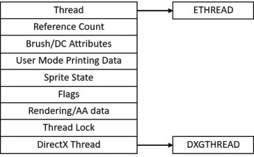
スレッドが作られるまで
スレッドのライフサイクルは、プロセスが既存のスレッドのコンテキストで新しいスレッドを作成するところから始まります。たとえば、メイン関数を実行するスレッドから作成できます。要求が Windows エグゼクティブに届くと、プロセスマネージャーがスレッドオブジェクト用の領域を割り当て、カーネルを呼び出してスレッド制御ブロック（KTHREAD）を初期化します。前述のとおり、さまざまなスレッド作成関数は最終的に CreateRemoteThreadEx を呼び出します。Windows のスレッドを作るために Kernel32.dll のこの関数が行う処理を、次に説明します。
- Windows API のパラメーターをネイティブフラグに変換し、オブジェクトのパラメーターを表すネイティブ構造体
OBJECT_ATTRIBUTESを組み立てます。この構造体は第2部の第8章で説明します。 - クライアント ID と TEB アドレスの2項目を持つ属性リストを作成します。属性リストについては、第3章の「CreateProcess の処理の流れ」を参照してください。
- スレッドの作成先が呼び出し元のプロセスか、渡されたハンドルが指す別のプロセスかを判定します。ハンドルが
GetCurrentProcessの返す疑似ハンドル（値は−1）なら、呼び出し元と同じプロセスです。別の値でも同じプロセスへの有効なハンドルである可能性があるため、Ntdll のNtQueryInformationProcessを呼び出して確認します。 - Ntdll の
NtCreateThreadExを呼び出し、カーネルモードのエグゼクティブに移行します。そこで同じ名前と引数を持つ関数が処理を続けます。 - エグゼクティブの
NtCreateThreadExは、アーキテクチャ固有のユーザーモードスレッドコンテキストを作成して初期化します。次にPspCreateThreadを呼び、エグゼクティブのスレッドオブジェクトを一時停止状態で作成します。この関数の手順については、第3章「CreateProcess の処理の流れ」の段階4（最初のスレッドの作成）を参照してください。その後、関数から戻り、最終的にユーザーモードのCreateRemoteThreadExに戻ります。 CreateRemoteThreadExは、サイドバイサイドアセンブリをサポートするため、スレッドのアクティベーションコンテキストを割り当てます。アクティベーションスタックを照会し、アクティブ化が必要なら実行します。スタックへのポインターは新しいスレッドの TEB に保存します。CREATE_SUSPENDEDが指定されていなければ、スレッドの一時停止を解除して、実行できるようにします。スレッドが実行を始めると、第3章の「第7段階：新しいプロセスのコンテキストでプロセスを初期化する」で説明した手順を実行してから、呼び出し元が指定した開始アドレスの関数を呼び出します。- スレッドのハンドルと ID を呼び出し元に返します。
スレッドの動作を調べる
Svchost.exe、Dllhost.exe、Lsass.exe など、複数のサービスをホストするプロセスがなぜ動作しているのか、あるいはプロセスがなぜ応答しなくなったのかを調べるときは、スレッドの動作を確認することが特に重要です。
Windows のスレッドの状態を調べるツールには、WinDbg（ユーザープロセスへのアタッチとカーネルデバッグの両モード）、パフォーマンスモニター、Process Explorer があります。スレッドスケジューリングの情報を表示するツールは、「スレッドスケジューリング」で紹介します。
Process Explorer でプロセス内のスレッドを表示するには、対象のプロセスをダブルクリックして「Properties」ダイアログを開きます。プロセスを右クリックし、メニューから「Properties」を選んでも開けます。
「Threads」タブを開くと、プロセス内のスレッドが一覧表示されます。各行にはスレッド ID、設定した更新間隔での CPU 使用率、スレッドに計上されたクロックサイクル数、開始アドレスの4列があり、どの列でも並べ替えられます。
新しく作成されたスレッドは緑、終了したスレッドは赤で強調表示されます。強調表示の時間は「Options」メニューの「Difference Highlight Duration」で設定できます。この表示は、プロセスが不要なスレッドを作成していないか確認するときに役立ちます。一般には、要求を処理するたびにスレッドを作るより、プロセスの起動時に作成しておきます。
一覧からスレッドを選ぶと、ID、開始時刻、状態、CPU 時間のカウンター、計上サイクル数、コンテキスト切り替え回数、優先して実行するプロセッサとそのグループ、I/O 優先度、メモリ優先度、基本優先度と現在の動的優先度が表示されます。「Kill」ボタンを押すと個々のスレッドを強制終了できるため、使用には十分な注意が必要です。「Suspend」ではスレッドの実行を止め、暴走するスレッドが CPU 時間を消費するのを防げます。ただしデッドロックを引き起こす場合があるため、「Kill」と同様に慎重に使ってください。「Permissions」ボタンでは、スレッドのセキュリティ記述子を表示できます。セキュリティ記述子の詳細は第7章「セキュリティ」を参照してください。
タスクマネージャーなどのプロセス・プロセッサ監視ツールは、クロック間隔タイマーで CPU 時間を測ります。Process Explorer は、本章後半で説明するスレッド実行時間の計上用クロックサイクルカウンターを使うため、CPU 使用率の見え方が大きく異なります。多くのスレッドはごく短時間しか実行されないので、クロック間隔タイマーの割り込みが起きた瞬間に実行中であることはめったにありません。実際に使った CPU 時間の多くが計上されず、タイマーに基づくツールでは CPU 使用率が0パーセントと表示されることがあります。クロックサイクルの合計は、プロセス内の各スレッドが実際に消費したプロセッササイクル数です。プロセッサがサイクルごとに内部カウンターを更新し、Windows が割り込み処理の開始時に計上するため、クロック間隔タイマーの分解能には依存しません。コンテキスト切り替えの直前にも、最後の計上を行います。
スレッドの開始アドレスは モジュール!関数 の形式で表示されます。モジュール名は .EXE または .DLL のファイル名です。関数名の表示には、そのモジュールのシンボルファイルが必要です。第1章「概念とツール」の「実験：Process Explorer でプロセスの詳細を表示する」を参照してください。モジュールの詳細がわからない場合は、「Module」ボタンを押すと、開始アドレスを含む .EXE または .DLL のファイルのプロパティがエクスプローラーで開きます。
注 Windows の CreateThread で作成されたスレッドについて、Process Explorer は、その呼び出しで渡された関数を表示します。Windows のスレッドはすべて、Ntdll.dll にある共通の起動ラッパー RtlUserThreadStart から実行を開始します。実際の開始アドレスを表示すると、ほとんどのスレッドが同じアドレスから始まるように見え、どのコードを実行していたかを調べる役に立ちません。保護プロセスなど、ユーザーが指定した開始アドレスを照会できない場合は、Process Explorer はラッパーを表示します。その場合は、すべてのスレッドが RtlUserThreadStart から始まるように見えます。
表示されたスレッドの開始アドレスだけでは、スレッドが何をしているのか、プロセス内のどのコンポーネントが CPU 時間を消費しているのかを特定できない場合があります。特に、開始アドレスが汎用の起動関数を指し、関数名から実際の処理がわからない場合は、スレッドのスタックを調べます。Process Explorer では、対象のスレッドをダブルクリックするか、選択して「Stack」ボタンを押します。そのスレッドのユーザーモードスタックが表示され、スレッドがカーネルモードにいた場合はカーネルスタックも表示されます。
注 WinDbg、Ntsd、Cdb などのユーザーモードデバッガーは、プロセスにアタッチしてスレッドのユーザースタックを表示できます。Process Explorer では、ボタン1つでユーザーとカーネルの両方のスタックを確認できます。WinDbg のローカルカーネルデバッグでも両方を調べられます。次の2つの実験でその方法を示します。
64ビットシステム上で WoW64 によって動作する32ビットプロセスでは、Process Explorer はスレッドの32ビットと64ビットの両方のスタックを表示します。詳しくは第8章の「WOW64（Windows-on-Windows）」を参照してください。実際の64ビットのシステムコールが実行される時点では、スレッドはすでに64ビットのスタックとコンテキストに切り替わっています。そのスタックだけを見ても、WoW64 の変換コードを含む64ビット側の処理しかわかりません。WoW64 プロセスを調べるときは、32ビットと64ビットの両方のスタックを確認してください。
実験：ユーザーモードデバッガーでスレッドのスタックを表示する
WinDbg をプロセスにアタッチし、スレッドの情報とスタックを表示します。
notepad.exeとWinDbg.exeを起動します。- WinDbg の「File」メニューで「Attach to Process」を選びます。
notepad.exeを選んで「OK」をクリックし、アタッチします。デバッガーがメモ帳の実行を中断します。~コマンドでプロセス内のスレッドを一覧表示します。各スレッドには、デバッガー内の ID、クライアント ID（プロセス ID とスレッド ID）、一時停止カウント、TEB のアドレス、デバッガーのコマンドでフリーズしたかどうかが表示されます。ブレークポイントで一時停止しているため、通常、一時停止カウントは1です。0:005> ~ 0 Id: 612c.5f68 Suspend: 1 Teb: 00000022'41da2000 Unfrozen 1 Id: 612c.5564 Suspend: 1 Teb: 00000022'41da4000 Unfrozen 2 Id: 612c.4f88 Suspend: 1 Teb: 00000022'41da6000 Unfrozen 3 Id: 612c.5608 Suspend: 1 Teb: 00000022'41da8000 Unfrozen 4 Id: 612c.cf4 Suspend: 1 Teb: 00000022'41daa000 Unfrozen . 5 Id: 612c.9f8 Suspend: 1 Teb: 00000022'41db0000 Unfrozen
- 出力でスレッド5の前にあるピリオド（
.）に注目してください。これは、デバッガーが現在選択しているスレッドです。kコマンドで呼び出しスタックを表示します。0:005> k # Child-SP RetAddr Call Site 00 00000022'421ff7e8 00007ff8'504d9031 ntdll!DbgBreakPoint 01 00000022'421ff7f0 00007ff8'501b8102 ntdll!DbgUiRemoteBreakin+0x51 02 00000022'421ff820 00007ff8'5046c5b4 KERNEL32!BaseThreadInitThunk+0x22 03 00000022'421ff850 00000000'00000000 ntdll!RtlUserThreadStart+0x34
- デバッガーはメモ帳のプロセス内にスレッドを作成し、
DbgBreakPointでブレークポイント命令を実行させました。別のスレッドの呼び出しスタックを見るには、~nkコマンドを使います。nは WinDbg 上のスレッド番号です。このコマンドで現在の選択は変わりません。次はスレッド2の例です。0:005> ~2k # Child-SP RetAddr Call Site 00 00000022'41f7f9e8 00007ff8'5043b5e8 ntdll!ZwWaitForWorkViaWorkerFactory+0x14 01 00000022'41f7f9f0 00007ff8'501b8102 ntdll!TppWorkerThread+0x298 02 00000022'41f7fe00 00007ff8'5046c5b4 KERNEL32!BaseThreadInitThunk+0x22 03 00000022'41f7fe30 00000000'00000000 ntdll!RtlUserThreadStart+0x34
- 選択するスレッドを切り替えるには、
~nsコマンドを使います。ここでもnはスレッド番号です。次の例では、スレッド0に切り替えてスタックを表示します。0:005> ~0s USER32!ZwUserGetMessage+0x14: 00007ff8'502e21d4 c3 ret 0:000> k # Child-SP RetAddr Call Site 00 00000022'41e7f048 00007ff8'502d3075 USER32!ZwUserGetMessage+0x14 01 00000022'41e7f050 00007ff6'88273bb3 USER32!GetMessageW+0x25 02 00000022'41e7f080 00007ff6'882890b5 notepad!WinMain+0x27b 03 00000022'41e7f180 00007ff8'341229b8 notepad!__mainCRTStartup+0x1ad 04 00000022'41e7f9f0 00007ff8'5046c5b4 KERNEL32!BaseThreadInitThunk+0x22 05 00000022'41e7fa20 00000000'00000000 ntdll!RtlUserThreadStart+0x34
- スレッドがカーネルモードで実行中でも、ユーザーモードデバッガーに表示されるのは、最後に実行したユーザーモードの関数です。直前の出力では
ZwUserGetMessageがこれにあたります。
実験：ローカルカーネルデバッガーでスレッドのスタックを表示する
この実験では、ローカルカーネルデバッガーを使い、スレッドのユーザーモードとカーネルモードの両方のスタックを表示します。ここではエクスプローラーのスレッドを使いますが、ほかのプロセスやスレッドでも試せます。
explorer.exeのイメージを実行しているプロセスをすべて表示します。「別のプロセスでフォルダー ウィンドウを開く」設定が有効な場合などは、エクスプローラーのインスタンスが複数表示されます。
エクスプローラーの設定でフォルダーウィンドウを別プロセスで開くようにしている場合、一方のプロセスがデスクトップとタスクバーを管理し、もう一方がエクスプローラーのウィンドウを管理します。
lkd> !process 0 0 explorer.exe PROCESS ffffe00197398080 SessionId: 1 Cid: 18a0 Peb: 00320000 ParentCid: 1840 DirBase: 17c028000 ObjectTable: ffffc000bd4aa880 HandleCount: <Data Not Accessible> Image: explorer.exe PROCESS ffffe00196039080 SessionId: 1 Cid: 1f30 Peb: 00290000 ParentCid: 0238 DirBase: 24cc7b000 ObjectTable: ffffc000bbbef740 HandleCount: <Data Not Accessible> Image: explorer.exe
- インスタンスを1つ選び、所属するスレッドの概要を表示します。
lkd> !process ffffe00196039080 2 PROCESS ffffe00196039080 SessionId: 1 Cid: 1f30 Peb: 00290000 ParentCid: 0238 DirBase: 24cc7b000 ObjectTable: ffffc000bbbef740 HandleCount: <Data Not Accessible> Image: explorer.exe THREAD ffffe0019758f080 Cid 1f30.0718 Teb: 0000000000291000 Win32Thread: ffffe001972e3220 WAIT: (UserRequest) UserMode Non-Alertable ffffe00192c08150 SynchronizationEvent THREAD ffffe00198911080 Cid 1f30.1aac Teb: 00000000002a1000 Win32Thread: ffffe001926147e0 WAIT: (UserRequest) UserMode Non-Alertable ffffe00197d6e150 SynchronizationEvent ffffe001987bf9e0 SynchronizationEvent THREAD ffffe00199553080 Cid 1f30.1ad4 Teb: 00000000002b1000 Win32Thread: ffffe0019263c740 WAIT: (UserRequest) UserMode Non-Alertable ffffe0019ac6b150 NotificationEvent ffffe0019a7da5e0 SynchronizationEvent THREAD ffffe0019b6b2800 Cid 1f30.1758 Teb: 00000000002bd000 Win32Thread: 0000000000000000 WAIT: (Suspended) KernelMode Non-Alertable SuspendCount 1 ffffe0019b6b2ae0 NotificationEvent ...
.thread /p /rに一覧の先頭にあるスレッドのアドレスを渡し、そのスレッドのコンテキストに切り替えます。別のスレッドを選ぶこともできます。lkd> .thread /p /r ffffe0019758f080 Implicit thread is now ffffe001'9758f080 Implicit process is now ffffe001'96039080 Loading User Symbols ..............................................
- 対象スレッドの詳細と呼び出しスタックを表示します。次の出力例ではアドレスを一部省略しています。
lkd> !thread ffffe0019758f080 THREAD ffffe0019758f080 Cid 1f30.0718 Teb: 0000000000291000 Win32Thread : ffffe001972e3220 WAIT : (UserRequest)UserMode Non - Alertable ffffe00192c08150 SynchronizationEvent Not impersonating DeviceMap ffffc000b77f1f30 Owning Process ffffe00196039080 Image : explorer.exe Attached Process N / A Image : N / A Wait Start TickCount 17415276 Ticks : 146 (0:00 : 00 : 02.281) Context Switch Count 2788 IdealProcessor : 4 UserTime 00 : 00 : 00.031 KernelTime 00 : 00 : 00.000 *** WARNING : Unable to verify checksum for C : \windows\explorer.exe Win32 Start Address explorer!wWinMainCRTStartup(0x00007ff7b80de4a0) Stack Init ffffd0002727cc90 Current ffffd0002727bf80 Base ffffd0002727d000 Limit ffffd00027277000 Call 0000000000000000 Priority 8 BasePriority 8 PriorityDecrement 0 IoPriority 2 PagePriority 5 ... Call Site ... nt!KiSwapContext + 0x76 ... nt!KiSwapThread + 0x15a ... nt!KiCommitThreadWait + 0x149 ... nt!KeWaitForSingleObject + 0x375 ... nt!ObWaitForMultipleObjects + 0x2bd ... nt!NtWaitForMultipleObjects + 0xf6 ... nt!KiSystemServiceCopyEnd + 0x13 (TrapFrame @ ffffd000'2727cb00) ... ntdll!ZwWaitForMultipleObjects + 0x14 ... KERNELBASE!WaitForMultipleObjectsEx + 0xef ... USER32!RealMsgWaitForMultipleObjectsEx + 0xdb ... USER32!MsgWaitForMultipleObjectsEx + 0x152 ... explorerframe!SHProcessMessagesUntilEventsEx + 0x8a ... explorerframe!SHProcessMessagesUntilEventEx + 0x22 ... explorerframe!CExplorerHostCreator::RunHost + 0x6d ... explorer!wWinMain + 0xa04fd ... explorer!__wmainCRTStartup + 0x1d6
保護プロセスのスレッドに対する制限
第3章で説明したように、従来の保護プロセスと軽量保護プロセス（PPL）では、システム上で最も強い特権を持つユーザーにも、付与されるアクセス権に制限があります。この制限は、プロセス内のスレッドにも適用されます。スレッドが実行するコードを乗っ取ったり改変したりする標準の Windows 関数には、保護プロセスのスレッドに対して認められないアクセス権が必要です。付与されるアクセス権は、THREAD_SUSPEND_RESUME、THREAD_SET_LIMITED_INFORMATION、THREAD_QUERY_LIMITED_INFORMATION に限られます。
実験：Process Explorer で保護プロセスのスレッド情報を表示する
次の手順で、保護プロセスのスレッドについて取得できる情報を確認します。
- プロセス一覧で、Audiodg.exe や Csrss.exe などの保護プロセスまたは軽量保護プロセス（PPL）を探します。
- 対象プロセスの「Properties」ダイアログを開き、「Threads」タブを選びます。
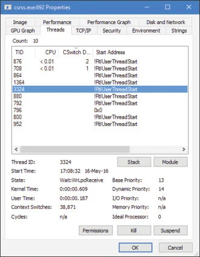
- 開始アドレスの列には、アプリケーションが指定した Win32 の開始アドレスに代わり、
Ntdll.dllにある標準のスレッド起動ラッパーのアドレスが表示されます。「Stack」ボタンを押すとエラーになります。スタックを表示するには対象プロセスの仮想メモリを読む必要がありますが、Process Explorer には保護プロセスのメモリを読む権限がありません。 - 基本優先度と動的優先度は表示されますが、I/O 優先度、メモリ優先度、サイクル数（「Cycles」）は表示されません。これは、制限付きの照会権限
THREAD_QUERY_LIMITED_INFORMATIONと、完全な照会権限THREAD_QUERY_INFORMATIONの違いの一例です。 - 保護プロセス内のスレッドを強制終了しようとすると、ここでもアクセス拒否のエラーになります。必要な
THREAD_TERMINATE権限が付与されていないためです。
スレッドスケジューリング
この節では、Windows のスケジューリングポリシーとアルゴリズムを説明します。まず、スケジューリングの仕組みと主な用語を紹介します。次に、Windows API とカーネルの両方の観点から優先度レベルを説明します。関連するユーティリティやツールを確認した後、スケジューリングを構成するデータ構造とアルゴリズム、代表的な場面でのスレッドとプロセッサの選択方法を取り上げます。
Windows のスケジューリングの概要
Windows は、優先度に基づくプリエンプティブスケジューリングを実装しています。実行可能な状態にあるスレッドのうち、最も優先度の高いものが常に少なくとも1つ実行されます。ただし、優先度が高くても、実行を許可されたプロセッサや優先して使うプロセッサに制約があることがあります。この制約をプロセッサアフィニティと呼びます。アフィニティは、最大64基の論理プロセッサをまとめたプロセッサグループを基準に定義されます。本書が対象とする Windows では、既定でスレッドはプロセスに関連付けられたグループ内の使用可能なプロセッサでだけ実行されます。これは、最大64基までしか扱えなかった旧バージョンの Windows との互換性を保つためです。開発者は API やイメージヘッダーのアフィニティマスクで設定を変更できます。ユーザーもツールを使って、実行中やプロセスの作成時に変更できます。1つのプロセス内のスレッドを異なるグループに割り当てることはできますが、個々のスレッドは割り当てられたグループで利用可能なプロセッサに限られます。グループ対応のアプリケーションは、拡張スケジューリング API を使って、複数のグループの論理プロセッサをそれぞれのスレッドのアフィニティに指定できます。そのプロセスは複数グループにまたがり、理論上はマシン内の任意の使用可能なプロセッサでいずれかのスレッドを実行できます。
実行するスレッドが選ばれると、そのスレッドにはクォンタムと呼ばれる実行時間が割り当てられます。クォンタムは、同じ優先度の別のスレッドに実行を譲るまで、そのスレッドが実行できる時間です。クォンタムは、次の3つの理由でシステムごと、またはプロセスごとに異なります。
- システム構成の設定。クォンタムの長短、可変か固定か、優先度の分離などです。
- プロセスがフォアグラウンドかバックグラウンドか。
- ジョブオブジェクトによるクォンタムの変更。
詳細は本章後半の「クォンタム」を参照してください。
Windows のスケジューラーはプリエンプティブなので、スレッドが割り当てられたクォンタムを使い切るとは限りません。優先度の高い別のスレッドが実行可能になると、現在のスレッドは割り当て時間の途中で実行を中断される場合があります。次に実行するよう選ばれたスレッドが、実行を始める前に、さらに優先度の高いスレッドに置き換わることもあります。
Windows のスケジューリング処理はカーネル内に実装されています。関連するイベントが発生する箇所ごとにコードがあり、単一のスケジューラーモジュールやルーチンに集約されてはいません。
この処理を担うルーチン群を、カーネルのディスパッチャーと呼びます。次のイベントが起きると、スレッドのディスパッチが必要になる場合があります。
- 新しく作成されたり、待機を終えたりして、スレッドが実行可能になります。
- クォンタムの満了、終了、実行権の譲渡、待機への移行により、スレッドが実行状態を離れます。
- システムサービスの呼び出しや Windows 自体の処理により、スレッドの優先度が変わります。
- プロセッサアフィニティが変わり、実行中のプロセッサでそのスレッドを実行できなくなります。
こうした場面では、Windows は、これまでそのスレッドを実行していた論理プロセッサで次にどのスレッドを動かすか、または対象スレッドを今後どの論理プロセッサで動かすかを決めます。論理プロセッサが次に実行するスレッドを選ぶと、その後、そのスレッドへのコンテキスト切り替えを行います。コンテキスト切り替えでは、実行中のスレッドに対応する揮発性のプロセッサ状態を保存し、別のスレッドの状態を読み込んで、そのスレッドの実行を開始します。
Windows はスレッド単位でスケジューリングします。プロセスは、所属するスレッドが実行するためのリソースとコンテキストを提供します。ここで説明する基本のスケジューリングでは、所属プロセスを基準に CPU 時間を配分しません。たとえば、プロセス A に実行可能なスレッドが10本、プロセス B に2本あり、12本すべての優先度が同じなら、理論上は各スレッドに CPU 時間の12分の1が割り当てられます。プロセス単位で半分ずつに分けるわけではありません。
優先度レベル
図4-6のとおり、Windows は内部で0から31までの32段階の優先度を使います。31が最も高い優先度です。これらは次のように分かれます。
- リアルタイム優先度の16段階（16〜31）。
- 可変優先度の16段階（0〜15）。0は第5章で説明するページのゼロ初期化を行うスレッド専用です。

スレッドの優先度には、Windows API と Windows カーネルの2つの見方があります。Windows API ではまず、作成時に割り当てられた優先度クラスでプロセスを分類します。括弧内は、カーネルが使う内部インデックス PROCESS_PRIORITY_CLASS の値です。
- リアルタイム（4）
- 高（3）
- 通常より上（6）
- 通常（2）
- 通常より下（5）
- アイドル（1）
Windows API の SetPriorityClass で、プロセスの優先度クラスをこのいずれかに変更できます。
次に、プロセス内のスレッドごとに相対優先度を割り当てます。括弧内の数値は、原則としてプロセスの基本優先度に加える差分です。時間優先とアイドルは、後述する飽和値です。
- 時間優先（Time-Critical、+15）
- 最高（2）
- 通常より上（1）
- 通常（0）
- 通常より下（−1）
- 最低（−2）
- アイドル（−15）
時間優先とアイドルの値（+15と−15）は飽和値と呼ばれます。この2つを指定した場合は、差分を加算せず、対応する所定のレベルを適用します。Windows API の SetThreadPriority にこれらの値を渡して、スレッドの相対優先度を変更できます。
Windows API から見た各スレッドの基本優先度は、プロセスの優先度クラスとスレッドの相対優先度で決まります。カーネルは、先ほどの PROCESS_PRIORITY_CLASS の値をインデックスとしてグローバル配列 PspPriorityTable を参照し、プロセスの優先度クラスを基本優先度に変換します。インデックス1〜6に対応する値は順に4、8、13、14、6、10です。この対応関係は固定です。次に、スレッドの相対優先度を差分として適用します。たとえば相対優先度が「最高」のスレッドは、プロセスの基本優先度より2段階高い基本優先度を得ます。
Windows API の優先度と、Windows 内部で使う数値の対応を図4-7と表4-1に示します。

| スレッドの相対優先度 | リアルタイム | 高 | 通常より上 | 通常 | 通常より下 | アイドル |
|---|---|---|---|---|---|---|
| 時間優先（正の飽和） | 31 | 15 | 15 | 15 | 15 | 15 |
| 最高（+2） | 26 | 15 | 12 | 10 | 8 | 6 |
| 通常より上（+1） | 25 | 14 | 11 | 9 | 7 | 5 |
| 通常（0） | 24 | 13 | 10 | 8 | 6 | 4 |
| 通常より下（−1） | 23 | 12 | 9 | 7 | 5 | 3 |
| 最低（−2） | 22 | 11 | 8 | 6 | 4 | 2 |
| アイドル（負の飽和） | 16 | 1 | 1 | 1 | 1 | 1 |
スレッドの相対優先度が「時間優先」または「アイドル」の場合、プロセスの優先度クラスが「リアルタイム」でない限り、表の値はどのクラスでも同じです。アプリケーションが Windows API に +15 または −15 を指定すると、API はカーネルに +16 または −16 を渡し、それぞれ優先度を上限または下限に設定するよう要求します。HIGH_PRIORITY は31で、渡す値は次の式で求めます。
- 時間優先の場合は
(HIGH_PRIORITY + 1) / 2。 - アイドルの場合は
-((HIGH_PRIORITY + 1) / 2)。
カーネルはこれらの値を飽和の要求として認識し、KTHREAD の Saturation フィールドを設定します。正の飽和では、スレッドの優先度が、可変またはリアルタイムのうち該当する範囲の上限になります。負の飽和では下限になります。その後、プロセスの基本優先度を変更しても、こうしたスレッドは更新処理の対象から外れるため、基本優先度は変わりません。
表4-1のとおり、Windows API の標準定数で指定できるスレッドの優先度は7段階です。「高」の優先度クラスでは6段階です。「リアルタイム」の優先度クラスでは、図4-7に示すように、16〜31のすべての段階を指定できます。表の標準定数にない優先度を設定するには、SetThreadPriority の引数に −7、−6、−5、−4、−3、3、4、5、6 のいずれかを指定します。詳細は後述の「リアルタイム優先度」を参照してください。
スケジューラーが使うのは、プロセスの優先度クラスとスレッドの相対優先度を組み合わせた最終的な値です。たとえば、優先度クラスが「通常」（8）のプロセスでスレッドの相対優先度を「最高」（+2）にしても、優先度クラスが「通常より上」（10）のプロセスでスレッドの相対優先度を「通常」（0）にしても、優先度は10になります。したがって、スケジューラーは両方のスレッドを同じ優先度として扱います。
プロセスの基本優先度は1つですが、各スレッドには現在の優先度（動的優先度）と基本優先度があります。スケジューリングには現在の優先度を使います。後述の「優先度のブースト」で説明するように、システムは状況に応じて、可変範囲（1〜15）のスレッドの優先度を短時間だけ引き上げます。リアルタイム範囲（16〜31）のスレッドにはこの調整を行わないため、基本優先度と現在の優先度は常に同じです。
スレッドの初期基本優先度は、所属するプロセスの基本優先度を継承します。作成時に優先度クラスを指定しなければ、既定値は「通常」です。作成元の優先度クラスが「アイドル」または「通常より下」の場合は、そのクラスを継承します。詳しくは第3章の「段階3A：EPROCESS オブジェクトを設定する」を参照してください。この動作は、CreateProcess 関数やコマンドラインの start コマンドで変更できます。作成後も、SetPriorityClass 関数を使うか、タスクマネージャーや Process Explorer でプロセスを右クリックして新しい優先度クラスを選ぶことで変更できます。たとえば、CPU 負荷の高いプロセスの優先度を下げれば、システムの通常の動作を妨げにくくなります。プロセスの優先度を変更すると、所属するスレッドの優先度も上下しますが、相対優先度の設定は変わりません。
一般的なユーザーアプリケーションやサービスは通常の基本優先度で起動し、最初のスレッドは通常、優先度8で実行されます。セッションマネージャー、サービスコントロールマネージャー、ローカルセキュリティ認証プロセスなど、一部の Windows システムプロセスは、「通常」クラスの既定値8よりも少し高い基本優先度を持ちます。そのため、これらのプロセス内のスレッドは、既定値の8よりも高い優先度で実行を始めます。
リアルタイム優先度
どのアプリケーションでも、可変範囲内ならスレッドの優先度を上下できます。リアルタイム範囲に入るには、スケジューリング優先度の引き上げ特権（SeIncreaseBasePriorityPrivilege）が必要です。Windows の重要なカーネルモードシステムスレッドの多くが、この範囲で動作します。この範囲で過度に長く実行されるスレッドがあると、メモリマネージャーやキャッシュマネージャー、一部のデバイスドライバーなどの重要な処理を妨げる場合があります。
標準の Windows API でプロセスをリアルタイム範囲に設定すると、そのプロセスの全スレッドは、相対優先度が「アイドル」のものも含め、リアルタイム範囲のいずれかの優先度で動作します。標準インターフェイスでは、同じプロセス内にリアルタイム優先度のスレッドと可変優先度のスレッドを混在させることはできません。これは、SetThreadPriority API が、情報クラス ThreadBasePriority を指定してネイティブ API の NtSetInformationThread を呼び出すためです。
ThreadBasePriority では、優先度を現在と同じ範囲内でしか変更できません。また、要求元が Csrss やほかのリアルタイムプロセスでない限り、Windows API が認める −2〜+2 の差分か、「時間優先」「アイドル」しか指定できません。リアルタイムプロセスは、先ほどの表にある標準の相対優先度だけでなく、16〜31の任意の優先度をスレッドに指定できます。
SetThreadPriority に特別な値を渡すと、情報クラス ThreadActualBasePriority を指定して NtSetInformationThread が呼ばれます。この場合はカーネルの基本優先度を直接指定でき、リアルタイムプロセスのスレッドにも可変範囲の優先度を設定できます。
注 ここでいうリアルタイムは、ほかの優先度より高いという意味です。一般にリアルタイム OS に求められる割り込み遅延の上限や、スレッドに一定の実行時間を保証する機能は、Windows では提供されません。
ツールで優先度を確認・変更する
タスクマネージャーや Process Explorer では、プロセスの基本優先度を確認できます。変更する場合は、対応する優先度クラスを選びます。Process Explorer では、プロセス内の個々のスレッドを強制終了することもできます。この機能は十分に注意して使ってください。
個々のスレッドの優先度は、パフォーマンスモニター、Process Explorer、WinDbg で表示できます。プロセス全体の優先度を上下させることは有用な場合がありますが、個々のスレッドの優先度を調整するのは通常、適切ではありません。それぞれのスレッドの相対的な重要性を判断できるのは、プログラムの処理を詳しく知る開発者だからです。
ツールからプロセスの起動時に優先度クラスを指定できるのは、Windows のコマンドプロンプトにある start コマンドです。毎回同じ優先度で起動するには、コマンドを cmd /c で始め、続けて start を指定したショートカットを作れます。cmd /c はコマンドプロンプトを起動して指定のコマンドを実行し、その後コマンドプロンプトを終了します。たとえば、メモ帳を「アイドル」の優先度クラスで起動するには、cmd /c start /low Notepad.exe と指定します。
実験：プロセスとスレッドの優先度を確認・指定する
次の手順で、プロセスとスレッドの優先度を確認し、設定を変更します。
- コマンドウィンドウに
Notepadと入力するなどして、メモ帳を通常どおり起動します。 - タスクマネージャーを開き、「詳細」タブを選びます。
- 「基本優先度」列を追加します。タスクマネージャーでは優先度クラスをこの名前で表示します。
- タスクマネージャーの一覧でメモ帳を探します。次のように表示されます。

- メモ帳の優先度クラスが「通常」（8）になっていることを確認します。タスクマネージャーでは「アイドル」の優先度クラスを「低」と表示します。
- Process Explorer を開きます。
- メモ帳のプロセスをダブルクリックし、「Properties」ダイアログの「Threads」タブを開きます。
- スレッドが複数ある場合は、先頭のスレッドを選びます。次のように表示されます。

- スレッドの優先度を確認します。基本優先度は8ですが、現在の動的優先度は10です。この差が生じる理由は、後述の「優先度のブースト」で説明します。
- 必要に応じて、スレッドの一時停止や強制終了を試せます。どちらの操作も慎重に行ってください。
- タスクマネージャーでメモ帳のプロセスを右クリックし、「優先度の設定」から「高」を選びます。
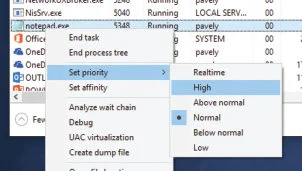
- 確認ダイアログで変更を承認し、Process Explorer に戻ります。スレッドの基本優先度は「高」に対応する13に上がり、動的優先度も同じ幅だけ上がり、基本優先度との差は変わりません。

- タスクマネージャーで優先度クラスを「リアルタイム」に変更します。変更にはマシンの管理者権限が必要です。Process Explorer でも同じ変更ができます。
- Process Explorer で、スレッドの基本優先度と動的優先度がどちらも24になったことを確認します。カーネルは、リアルタイム優先度の範囲にあるスレッドの優先度を一時的に引き上げることはありません。
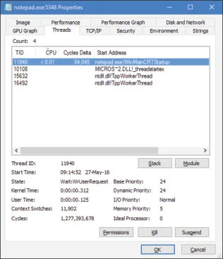
Windows システムリソースマネージャー
Windows Server 2012 R2 Standard Edition 以上の SKU には、オプションでインストールできる Windows システムリソースマネージャー（WSRM）があります。管理者は、プロセスの CPU 使用率、アフィニティ、物理メモリと仮想メモリの上限をポリシーで指定できます。WSRM は、利用量の計上や、ユーザーと取り交わしたサービスレベル契約の確認に使うリソース使用状況レポートも生成できます。
ポリシーの対象には、特定のアプリケーション、ユーザー、グループを指定できます。アプリケーションはイメージ名で照合し、必要に応じてコマンドライン引数も照合条件に加えます。ポリシーは指定の時間帯だけ適用することも、常に有効にすることもできます。
リソース割り当てポリシーで管理対象のプロセスを指定すると、WSRM サービスが各プロセスの CPU 使用率を監視します。CPU 使用率が割り当ての目標値から外れた場合は、プロセスの基本優先度を調整します。
物理メモリの制限には SetProcessWorkingSetSizeEx を使い、ワーキングセットの厳格な上限を設定します。仮想メモリについては、サービスが各プロセスのプライベート仮想メモリの使用量を確認します。各制限の詳細は第5章を参照してください。上限を超えた場合、プロセスを強制終了するか、イベントログに記録するよう WSRM を設定できます。
この仕組みを使うと、メモリリークを起こしているプロセスがシステムで利用可能なコミット済みメモリを使い切る前に、そのプロセスを検出できます。WSRM のメモリ制限は、アドレスウィンドウ拡張（AWE）のメモリ、ラージページ、カーネルメモリ（非ページプールおよびページプール）には適用されません。これらの用語の詳細は第5章を参照してください。
スレッドの状態
スケジューリングのアルゴリズムを理解するには、まずスレッドが取り得る状態を知る必要があります。
- 実行可能（Ready）
- 実行を待っているか、待機を終えてメモリに戻されるのを待っている状態です。ディスパッチャーが次に実行するスレッドを探すとき、この状態のスレッドだけを候補にします。
- 実行可能への移行待ち（Deferred ready）
- 実行先のプロセッサは選ばれていますが、そこでの実行はまだ始まっていません。この状態を設けることで、カーネルはスケジューリングデータベースのプロセッサごとのロックを保持する時間を短くできます。
- 実行待機（Standby）
- 特定のプロセッサで次に実行するスレッドとして選ばれた状態です。条件がそろうと、ディスパッチャーはこのスレッドにコンテキストを切り替えます。この状態になれるスレッドは、プロセッサごとに1つだけです。実行開始前に優先度の高いスレッドが実行可能になると、実行せずにこの状態から外れることもあります。
- 実行中（Running）
- ディスパッチャーがコンテキストを切り替えると、対象スレッドがこの状態に入り、実行を始めます。同じ優先度の別のスレッドが実行可能な状態でクォンタムが満了するか、より優先度の高いスレッドに割り込まれるか、終了するか、実行権を譲るか、自発的に待機状態に入るまで実行を続けます。
- 待機中（Waiting）
- スレッドが実行を同期させるため自発的にオブジェクトを待つ場合、ページング I/O の完了を待つなど OS がスレッドに代わって待機する場合、環境サブシステムがスレッドに一時停止を指示する場合に、この状態に入ります。待機が終わると、優先度に応じて直ちに実行を始めるか、実行可能状態に戻ります。
- 遷移中（Transition）
- 実行できる状態になったものの、カーネルスタックがメモリからページアウトされている場合に入ります。スタックがメモリに戻ると実行可能状態に移ります。スレッドスタックは第5章で説明します。
- 終了済み（Terminated）
- スレッドが実行を終えると、この状態に入ります。システムメモリ上でスレッドを表すエグゼクティブのスレッドオブジェクトは、終了時に解放される場合と、そのまま残る場合があります。削除の時期はオブジェクトマネージャーが定めます。たとえば、スレッドへの開いたハンドルが残っていれば、オブジェクトも残ります。別のスレッドが Windows API の
TerminateThreadなどで明示的に強制終了した場合は、ほかの状態から直接この状態に移ることもあります。 - 初期化中（Initialized）
- スレッドの作成中に使う内部状態です。
図4-8に、スレッドの主な状態遷移を示します。図中の数値は各状態の内部値で、パフォーマンスモニターなどのツールで確認できます。図では、実行可能（Ready）と実行可能への移行待ち（Deferred ready）をまとめています。Deferred ready は、スケジューリングルーチンが処理する間だけ使う一時的な状態だからです。実行待機（Standby）も一時的です。どちらの状態もほとんどの場合はごく短時間しか続きません。これらの状態にあるスレッドは、必ず速やかに実行可能、実行中、待機中のいずれかに移ります。

実験：スレッドの状態遷移を観察する
Windows のパフォーマンスモニターでは、スケジューリングに伴うスレッドの状態変化を観察できます。マルチスレッドアプリケーションをデバッグしていて、プロセス内のスレッドがどの状態にあるかわからないときに役立ちます。次の手順で状態の変化を観察します。
- 本書のダウンロード資料から CPU Stress ツールを入手します。
CPUSTRES.exeを起動します。スレッド1がアクティブになっているはずです。- 一覧でスレッド2を選び、「Activate」ボタンを押します。スレッド2を右クリックし、コンテキストメニューの「Activate」を選んでも有効にできます。ツールは次のページの画面例のようになります。

- スタートボタンをクリックし、
perfmonと入力してパフォーマンスモニターを起動します。 - 必要に応じてグラフ表示に切り替え、既存の CPU カウンターを削除します。
- グラフを右クリックし、「プロパティ」を選びます。
- 「グラフ」タブを開き、縦軸の最大値を7に変更します。図4-8のとおり、各状態は0〜7の数値に対応します。「OK」をクリックします。
- ツールバーの追加ボタンを押して、「カウンターの追加」ダイアログを開きます。
- パフォーマンスオブジェクト「Thread」を選び、カウンター「Thread State」を選びます。
- 「説明の表示」にチェックを入れると、各値の定義が表示されます。
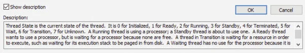
- インスタンス欄で「すべてのインスタンス」を選びます。
cpustresと入力し、「検索」をクリックします。 - 最初の3つのスレッド（
cpustres/0、cpustres/1、cpustres/2）を選び、「追加 >>」、続いて「OK」をクリックします。スレッド0は GUI スレッドで、ユーザーの入力を待っているため、状態5（待機中）になるはずです。スレッド1と2は状態2（実行中）と状態5を行き来します。両者は活動レベルと優先度が同じため、グラフ上でスレッド1の線がスレッド2の線に重なる場合があります。
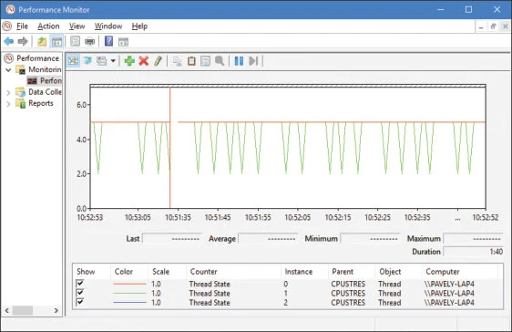
- CPU Stress に戻り、スレッド2を右クリックして、活動レベルのメニューから「Busy」を選びます。次のグラフのように、スレッド2はスレッド1より頻繁に状態2（実行中）になります。

- スレッド1を右クリックし、活動レベルを「Maximum」にします。スレッド2にも同じ設定を行います。どちらも実質的に無限ループを実行するため、常に状態2になります。
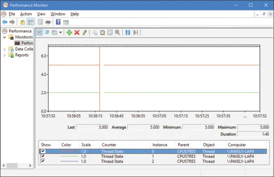
プロセッサが1つのシステムでは、一度に実行できるスレッドは1つです。次のグラフのように、2つのスレッドが状態1（実行可能）と状態2（実行中）を交互に取ります。

- マルチプロセッサシステムでも、タスクマネージャーで CPUSTRES プロセスを右クリックし、「関係の設定」を開いて任意のプロセッサ1つだけを選ぶと、同じ動作を観察できます。設定画面を次に示します。CPU Stress の「Process」メニューから「Affinity」を選んでも設定できます。

- この設定のまま CPU Stress に戻り、スレッド1を右クリックして、優先度を「Above Normal」にします。スレッド1は連続して実行され（状態2）、スレッド2は実行可能なまま（状態1）になります。プロセッサが1つなので、通常は優先度の高いスレッドが実行されます。ただし、スレッド1がときどき実行可能状態に切り替わることがあります。約4秒ごとに、実行機会を得られなかったスレッド2の優先度が引き上げられ、短時間だけ実行されるからです。パフォーマンスモニターの測定間隔は最短でも1秒なので、この変化がグラフに現れないこともよくあります。詳しくは、この章の「優先度のブースト」を参照してください。
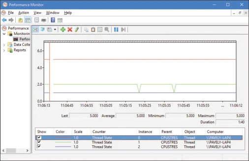
ディスパッチャーデータベース
カーネルは、どのスレッドを実行するかを判断するために、ディスパッチャーデータベースと総称される一連のデータ構造を管理します。ここには、実行を待っているスレッドと、各プロセッサで実行中のスレッドが記録されます。
Windows のマルチプロセッサシステムでは、スレッドを並行してディスパッチできるようにするなど、プロセッサの増加に対応するため、図4-9のように、プロセッサごとの実行可能キューと、グループで共有するキューを設けています。各 CPU はシステム全体のキューをロックせず、自分のグループの共有キューから次に実行するスレッドを探せます。

Windows 8 と Windows Server 2012 より前は、プロセッサごとの実行可能キューと実行可能サマリーを、プロセッサ制御ブロック（PRCB）に格納していました。フィールドはカーネルデバッガーで dt nt!_kprcb を実行すると確認できます。Windows 8 と Windows Server 2012 以降は、プロセッサのグループでキューとサマリーを共有します。これにより、グループ内のどのプロセッサを次に使うかを判断しやすくなります。CPU ごとのキューも残っており、アフィニティに制約のあるスレッドで使います。
注記 共有データ構造はスピンロックで保護するため、グループを小さくしてキューの競合を抑えます。本書の対象実装では、1グループの上限は4論理プロセッサです。これを超える場合は複数のグループを作り、プロセッサを均等に振り分けます。たとえば、6プロセッサのシステムでは3個ずつの2グループを作ります。
実行可能キュー、次に説明する実行可能サマリー、その他の情報は、PRCB 内のカーネル構造体 KSHARED_READY_QUEUE に格納されます。各プロセッサの PRCB にこの構造体があります。スケジューラーが使うのは、グループごとに先頭のプロセッサが持つ構造体だけです。同じグループの残りのプロセッサも、その構造体を共有します。
ディスパッチャーの実行可能キュー（KSHARED_READY_QUEUE の ReadyListHead）には、実行可能状態にあり、スケジューラーに選ばれるのを待つスレッドが入ります。キューは32段階の優先度ごとに1つあります。Windows は、実行するスレッドやプリエンプトするスレッドをすばやく選ぶため、実行可能サマリー（ReadySummary）という32ビットのビットマスクを管理します。セットされたビットは、その優先度のキューに1つ以上のスレッドがあることを示します。ビット0は優先度0、ビット1は優先度1に対応します。
キューを一つずつ調べる方式では、スケジューリング判断にかかる時間が、実行可能なスレッドの優先度の分布に左右されます。そこで、プロセッサのビットスキャン命令を1回実行して、セットされている最上位のビットを探します。この処理にかかる時間は、キュー内のスレッド数にかかわらず一定です。
ディスパッチャーデータベースを同期するため、IRQL を DISPATCH_LEVEL（2）に引き上げます。割り込み要求レベル（IRQL）は第6章を参照してください。通常、スレッドは IRQL 0 または1で動くため、IRQL を引き上げると、同じプロセッサで別のスレッドがディスパッチ処理に割り込むのを防げます。別のプロセッサは同時に同じ IRQL に引き上げてディスパッチャーデータベースを操作できるため、追加の同期も必要です。その方法は、この章の「マルチプロセッサシステム」で説明します。
実験：実行可能なスレッドを表示する
カーネルデバッガーの !ready コマンドを使うと、優先度ごとに実行可能なスレッドを表示できます。次は、論理プロセッサが4つある32ビットマシンでの出力例です。
0: kd> !ready KSHARED_READY_QUEUE 8147e800: (00) ****---------------------------- SharedReadyQueue 8147e800: Ready Threads at priority 8 THREAD 80af8bc0 Cid 1300.15c4 Teb: 7ffdb000 Win32Thread: 00000000 READY on processor 80000002 THREAD 80b58bc0 Cid 0454.0fc0 Teb: 7f82e000 Win32Thread: 00000000 READY on processor 80000003 SharedReadyQueue 8147e800: Ready Threads at priority 7 THREAD a24b4700 Cid 0004.11dc Teb: 00000000 Win32Thread: 00000000 READY on processor 80000001 THREAD a1bad040 Cid 0004.096c Teb: 00000000 Win32Thread: 00000000 READY on processor 80000001 SharedReadyQueue 8147e800: Ready Threads at priority 6 THREAD a1bad4c0 Cid 0004.0950 Teb: 00000000 Win32Thread: 00000000 READY on processor 80000002 THREAD 80b5e040 Cid 0574.12a4 Teb: 7fc33000 Win32Thread: 00000000 READY on processor 80000000 SharedReadyQueue 8147e800: Ready Threads at priority 4 THREAD 80b09bc0 Cid 0004.12dc Teb: 00000000 Win32Thread: 00000000 READY on processor 80000003 SharedReadyQueue 8147e800: Ready Threads at priority 0 THREAD 82889bc0 Cid 0004.0008 Teb: 00000000 Win32Thread: 00000000 READY on processor 80000000 Processor 0: No threads in READY state Processor 1: No threads in READY state Processor 2: No threads in READY state Processor 3: No threads in READY state
表示されたプロセッサ番号には上位ビットの値（出力例では 0x80000000）が加わっていますが、実際の番号は末尾から読み取れます。先頭行には、KSHARED_READY_QUEUE のアドレス、括弧内のグループ番号（この例では00）、グループ内のプロセッサを表す4つのアスタリスクが並びます。
最後の4行は、実行可能なスレッドがないと表示するため、一見するとそれまでの出力と矛盾します。これらの行は、PRCB の旧来の DispatcherReadyListHead を参照した結果です。プロセッサごとの実行可能キューには、アフィニティによって同じグループ内の一部のプロセッサに実行先を制限されたスレッドが入ります。
!ready が示すアドレスを使って、KSHARED_READY_QUEUE の内容を表示することもできます。
0: kd> dt nt!_KSHARED_READY_QUEUE 8147e800 +0x000 Lock : 0 +0x004 ReadySummary : 0x1d1 +0x008 ReadyListHead : [32] _LIST_ENTRY [ 0x82889c5c - 0x82889c5c ] +0x108 RunningSummary : [32] "???" +0x128 Span : 4 +0x12c LowProcIndex : 0 +0x130 QueueIndex : 1 +0x134 ProcCount : 4 +0x138 Affinity : 0xf
ProcCount はグループ内のプロセッサ数を示します。この例では4です。ReadySummary の値 0x1d1 は、2進数では 111010001 です。下位からセットされたビットを読むと、優先度0、4、6、7、8にスレッドがあることがわかります。これは直前の出力と一致します。
クォンタム
クォンタムは、同じ優先度で実行を待つ別のスレッドがあるかを Windows が確認するまで、スレッドが実行を許される時間です。クォンタムを使い切った時点で同じ優先度のスレッドが待っていなければ、そのスレッドはさらに1クォンタム実行できます。
既定では、Windows のクライアント版ではクロック間隔2回分、サーバー版では12回分、スレッドが実行されます。値の変え方は「クォンタムの制御」で説明します。サーバーで既定値を長くするのは、コンテキスト切り替えを減らすためです。クォンタムが長ければ、クライアントの要求で起こされたサーバーアプリケーションが、クォンタム満了前に要求を処理して待機状態に戻れる可能性が高まります。
クロック間隔はハードウェアによって異なり、クロック割り込みの頻度は HAL が決めます。たとえば、多くの x86 単一プロセッサシステムでは約10ミリ秒、多くの x86 または x64 マルチプロセッサシステムでは約15ミリ秒です。ここで例に挙げた単一プロセッサシステムは Windows のサポート対象から外れています。クロック間隔は、カーネル変数 KeMaximumIncrement に100ナノ秒単位で格納されます。
スレッドの実行時間はクロック間隔を単位として設定しますが、実行済み時間やクォンタムの満了は CPU クロックサイクル数で判定します。起動時に CPU の周波数（Hz）に、先述の KeMaximumIncrement から求めた1ティックの秒数を掛けます。こうして求めた1クロック間隔あたりの CPU サイクル数から、1クォンタム単位あたりのサイクル数を計算します。最終結果はカーネル変数 KiCyclesPerClockQuantum に格納します。換算の詳細は次の「クォンタムの計測」で説明します。
クォンタムの目標値は、実行権を手放す時点までに消費する CPU クロックサイクル数の見積もりです。クロック間隔タイマーの周波数を基に計算するため、所定のティック数に相当します。周波数は次の実験で確認できます。割り込み処理に費やしたサイクルはスレッドに計上されないため、実時間ではさらに長くかかる場合があります。
実験：クロック間隔を調べる
Windows の GetSystemTimeAdjustment 関数はクロック間隔を返します。間隔を調べるには、Sysinternals の clockres を実行します。以下は4コアの64ビット版 Windows 10 での出力例です。
C:\>clockres ClockRes v2.0 - View the system clock resolution Copyright (C) 2009 Mark Russinovich SysInternals - www.sysinternals.com Maximum timer interval: 15.600 ms Minimum timer interval: 0.500 ms Current timer interval: 1.000 ms
マルチメディアタイマーを使っていると、現在の間隔が最大値（既定のクロック間隔）より短くなることがあります。timeBeginPeriod や timeSetEvent などの関数は、最短1ミリ秒間隔でコールバックを受け取るためにマルチメディアタイマーを使います。その結果、カーネルの間隔タイマーがシステム全体で再設定されます。スケジューラーがより頻繁に起きるようになるため、システム性能が低下する可能性があります。次節で述べるように、クォンタムの長さは変わりません。
カーネルのグローバル変数 KeMaximumIncrement でも間隔を確認できます。次は別のシステムでの出力例です。
0: kd> dd nt!KeMaximumIncrement L1 814973b4 0002625a 0: kd> ? 0002625a Evaluate expression: 156250 = 0002625a
この値は既定の約15.6ミリ秒に相当します。
クォンタムの計測
プロセス制御ブロック（KPROCESS）には、プロセスごとのクォンタムリセット値が入ります。プロセス内でスレッドを作成すると、この値がスレッド制御ブロック（KTHREAD）にコピーされます。リセット値はクォンタム単位で格納されます。スレッドに新たなクォンタムを割り当てるたびに、KTHREAD 内のリセット値に1クォンタム単位あたりのクロックサイクル数を掛け、目標値を求めます。
スレッドの実行中は、コンテキスト切り替え、割り込み、一部のスケジューリング判断などの時点で、CPU クロックサイクル数が計上されます。クロック間隔タイマーの割り込み時に計上済みの値が目標値以上なら、クォンタム満了処理を始めます。同じ優先度で実行を待つスレッドがあれば、実行可能キューの次のスレッドにコンテキストを切り替えます。
内部では、クロック1ティックの3分の1を1クォンタム単位とします。スレッドの既定のリセット値は、クライアント版では6（2 × 3）、サーバー版では36（12 × 3）です。先述の計算ではタイマー1ティックあたりの CPU クロックサイクル数が求まるので、最後に3で割って KiCyclesPerClockQuantum に格納します。
内部単位を1ティック未満にしたのは、Windows Vista より前のバージョンで、待機が終わるたびにクォンタムを一部消費したものとして差し引くためでした。当時はクロック間隔タイマーで満了を判定していました。たとえば、スレッドが短い実行と待機を繰り返し、タイマーが発火するたびに待機中だった場合、この調整がなければ実行時間がクォンタムから一度も差し引かれませんでした。現在は CPU クロックサイクルを直接計上し、間隔タイマーに頼らず実行時間を測れるため、この調整は不要です。
実験：1クォンタム単位あたりのクロックサイクル数を調べる
Windows は1クォンタム単位あたりのクロックサイクル数を取得する関数を公開していません。ローカルデバッグモードの WinDbg などのカーネルデバッガーを使い、次の手順で計算できます。
- Windows が検出したプロセッサの周波数を取得します。
!cpuinfoコマンドで PRCB のMHzフィールドを表示できます。以下は2,794 MHz で動作する4プロセッサシステムでの出力例です。
lkd> !cpuinfo
CP F/M/S Manufacturer MHz PRCB Signature MSR 8B Signature Features 0 6,60,3 GenuineIntel 2794 ffffffff00000000 >ffffffff00000000<a3cd3fff 1 6,60,3 GenuineIntel 2794 ffffffff00000000 a3cd3fff 2 6,60,3 GenuineIntel 2794 ffffffff00000000 a3cd3fff 3 6,60,3 GenuineIntel 2794 ffffffff00000000 a3cd3fff
- 周波数をヘルツ（Hz）に換算します。この例では1秒あたり2,794,000,000サイクルです。
clockresで、タイマーが発火する間隔を取得します。この例では15.625ミリ秒でした。- 手順3で得た値を1,000で割り、ミリ秒から秒に換算します。この例では0.015625秒ごとにタイマーが発火します。
- 手順2で得た1秒あたりのサイクル数に、この秒数を掛けます。この例では、1クロック間隔で43,656,250サイクルが経過します。
- 1クォンタム単位は1クロック間隔の3分の1なので、サイクル数を3で割ります。結果の整数部分は14,552,083（16進数では
0xDE0C13）です。原文の10進表記は14,528,083ですが、ここでは計算結果と16進表記に合う値に訂正しています。2,794 MHz で動作し、クロック間隔が約15.6ミリ秒のシステムでは、これが1クォンタム単位に相当します。 KiCyclesPerClockQuantumの値を表示します。計算結果と一致するか、丸めの誤差の範囲で近い値になるはずです。
lkd> dd nt!KiCyclesPerClockQuantum L1 8149755c 00de0c10
クォンタムの制御
すべてのプロセスのスレッドに適用するクォンタムを、短い設定と長い設定から選べます。短い設定はクロック2ティックでクライアント版の既定値、長い設定は12ティックでサーバー版の既定値です。
注記 長いクォンタムを使うシステムでは、ジョブオブジェクトを使って、ジョブ内のプロセスに別のクォンタム値を設定できます。
デスクトップまたはエクスプローラーの「PC」を右クリックして「プロパティ」を選び、「システムの詳細設定」を開きます。「詳細設定」タブの「パフォーマンス」にある「設定」をクリックします。開いたダイアログで「詳細設定」タブを選ぶと、図4-10の画面が表示されます。

このダイアログには、次の2つの選択肢があります。
- プログラム
- 短い可変クォンタムを使います。Windows のクライアント版と、モバイル、Xbox、HoloLens などのクライアント系のエディションでは、これが既定値です。サーバーにターミナルサービスをインストールし、アプリケーションサーバーとして構成した場合も、この設定になります。ターミナルサーバーの利用者に、通常のデスクトップやクライアントと同じクォンタム設定を適用するためです。Windows Server をデスクトップ OS として使う場合に、手動で選ぶこともできます。
- バックグラウンド サービス
- 長い固定クォンタムを使います。サーバーではこれが既定値です。ワークステーションでこの設定を選ぶのは、サーバーとして使う場合です。ただし、設定は即座に反映されるため、バックグラウンド処理やサーバー向けの処理を始める直前に切り替えることもできます。たとえば、長時間かかる計算、エンコード、モデルのシミュレーションを夜間に実行するなら、夜は「バックグラウンド サービス」に設定し、翌朝「プログラム」に戻せます。
可変クォンタム
可変クォンタムを有効にすると、6個のクォンタム値を持つ可変クォンタムテーブル（PspVariableQuantums）から、PspComputeQuantum 関数が使う3要素のテーブル（PspForegroundQuantum）に値が読み込まれます。この関数は、デスクトップのフォアグラウンドウィンドウを所有するスレッドが、対象プロセスに属するかどうかを調べます。属していなければインデックス0を選び、先述の既定のスレッドクォンタムを使います。属していれば、優先度の差を表す設定値をインデックスに使います。
この設定値は、スケジューラーがフォアグラウンドスレッドの優先度をどれだけ引き上げるかを決めます。引き上げについては後述の「優先度のブースト」で説明します。この設定に応じてクォンタムも延長されます。優先度を1段階引き上げるごとに（最大2段階）、通常のクォンタム1回分を加えます。たとえば、優先度が1段階上がると、クォンタムも1回分増えます。既定ではフォアグラウンドスレッドに最大の引き上げを適用するため、優先度の差は2になり、可変クォンタムテーブルのインデックス2が選ばれます。したがって、通常より2回分増え、合計3回分のクォンタムが割り当てられます。
表4-2は、クォンタムの設定とインデックスの組み合わせごとに選ばれる値を示します。値の単位はクロック1ティックの3分の1です。
| 方式 | 短いクォンタムのインデックス | 長いクォンタムのインデックス | ||||
|---|---|---|---|---|---|---|
| 0 | 1 | 2 | 0 | 1 | 2 | |
| 可変 | 6 | 12 | 18 | 12 | 24 | 36 |
| 固定 | 18 | 18 | 18 | 36 | 36 | 36 |
クライアントシステムでウィンドウがフォアグラウンドに移ると、そのウィンドウを所有するスレッドが属するプロセス内の全スレッドで、クォンタムが3倍になります。フォアグラウンドプロセスのスレッドのクォンタムは6ティックになり、ほかのプロセスではクライアントの既定値である2ティックのままです。そのため、CPU 負荷の高いプロセスから別のプロセスに切り替えると、新しくフォアグラウンドになったプロセスに CPU 時間がより多く配分されます。フォアグラウンドとバックグラウンドのスレッドの優先度が同じであれば、フォアグラウンドのスレッドが実行権を得たとき、より長く実行できるためです。
クォンタムを設定するレジストリ値
先述の設定画面でクォンタムを変更すると、レジストリキー HKLM\SYSTEM\CurrentControlSet\Control\PriorityControl の Win32PrioritySeparation が変わります。この値は、クォンタムの長さ（短いか長いか）、可変クォンタムを使うかどうか、優先度の差を指定します。可変クォンタムを使うとき、この優先度の差がインデックスになります。この値は図4-11のように、2ビットずつ3つのフィールドに分かれています。

図4-11のフィールドは、次のように解釈します。
- 短いか長いか。1は長いクォンタム、2は短いクォンタムを指定します。0または3ではシステムに応じた既定値を使います。クライアントでは短く、サーバーでは長くなります。
- 可変か固定か。1を指定すると、「可変クォンタム」で説明したアルゴリズムで可変クォンタムテーブルを使います。0または3ではシステムに応じた既定値を使います。クライアントでは可変、サーバーでは固定です。
- 優先度の差。「可変クォンタム」で説明したように、このフィールドは優先度の差を最大2まで指定します。値はカーネル変数
PsPrioritySeparationに格納されます。
「パフォーマンス オプション」ダイアログ（図4-10）では、短いクォンタムを使い、フォアグラウンドで3倍にする設定と、長いクォンタムを使い、フォアグラウンドでも長さを変えない設定を選べます。Win32PrioritySeparation を直接変更すれば、ほかの組み合わせも選べます。
アイドル優先度クラスで動作するプロセスのスレッドには、常にスレッドクォンタム1回分が割り当てられます。既定のクォンタム設定も、レジストリで指定したクォンタム設定も適用されません。
アプリケーションサーバーとして構成した Windows Server では、Win32PrioritySeparation の初期値は16進数の 0x26 です。「パフォーマンス オプション」で「プログラム」を選んだ場合と同じ値です。クライアント版 Windows と同じクォンタムおよび優先度ブーストの動作になり、主にユーザーのアプリケーションを実行するサーバーに適しています。
Windows クライアントと、アプリケーションサーバーとして構成していないサーバーでは、Win32PrioritySeparation の初期値は2です。長さと可変・固定を指定するフィールドはどちらも0になり、クライアントかサーバーかに応じた既定の動作を使います。優先度の差を指定するフィールドは2になります。「パフォーマンス オプション」で設定を変更したあと、この初期値に戻すにはレジストリを直接編集します。
実験：クォンタム設定を変えたときの影響
ローカルカーネルデバッガーを使うと、「プログラム」と「バックグラウンド サービス」の設定によって、PsPrioritySeparation、PspForegroundQuantum テーブル、スレッドの QuantumReset がどう変わるかを確認できます。
- コントロールパネルの「システム」を開くか、デスクトップの「PC」を右クリックし、「プロパティ」を選びます。
- 「システムの詳細設定」を開き、「詳細設定」タブの「パフォーマンス」にある「設定」をクリックします。開いたダイアログで「詳細設定」タブを選びます。
- 「プログラム」を選んで「適用」をクリックします。実験が終わるまで、このダイアログを開いておきます。
- 次の例のように、
PsPrioritySeparationとPspForegroundQuantumの値を表示します。手順1〜3を実行した Windows システムでは、短い可変クォンタムのテーブルが使われ、フォアグラウンドのアプリケーションには優先度を2段階引き上げる設定が適用されます。
lkd> dd nt!PsPrioritySeparation L1 fffff803'75e0e388 00000002 lkd> db nt!PspForegroundQuantum L3
fffff803'76189d28 06 0c 12
- 任意のプロセスの
QuantumResetを表示します。これは、そのプロセスの各スレッドに新しいクォンタムを割り当てるときの既定値です。各スレッドにもコピーが保存されますが、KPROCESS構造体を見る方が簡単です。この例では、他の多くのアプリケーションと同様に、WinDbg にPspForegroundQuantumの先頭エントリが適用されるため、値は6です。
lkd> .process Implicit process is now ffffe001'4f51f080 lkd> dt nt!_KPROCESS ffffe001'4f51f080 QuantumReset +0x1bd QuantumReset : 6 ''
- 手順1と2で開いたダイアログで、「バックグラウンド サービス」に切り替えます。
- 手順4と5のコマンドを再度実行します。この節で説明したとおり、値が変わります。
lkd> dd nt!PsPrioritySeparation L1 fffff803'75e0e388 00000000 lkd> db nt!PspForegroundQuantum L3 fffff803'76189d28 24 24 24 lkd> dt nt!_KPROCESS ffffe001'4f51f080 QuantumReset +0x1bd QuantumReset : 36 '$'
優先度のブースト
Windows のスケジューラーは、内部のブースト機構を使ってスレッドの現在の（動的な）優先度を定期的に調整します。多くの場合、待っていたイベントにスレッドがすばやく反応できるようにして遅延を減らし、応答性を高めるために使います。優先度逆転や、スレッドが実行機会を得られない飢餓状態を防ぐ目的でも使います。この節では、次の場面でのブーストを扱います。
- スケジューラーやディスパッチャーのイベントが起きたとき（遅延の短縮）
- I/O が完了したとき（遅延の短縮）
- ユーザーインターフェイス（UI）への入力があったとき（遅延の短縮と応答性の向上）
- スレッドがエグゼクティブリソース（
ERESOURCE）を長時間待っているとき（飢餓の回避） - 実行可能なスレッドがしばらく実行されていないとき（飢餓と優先度逆転の回避）
他のスケジューリングアルゴリズムと同様、この優先度調整にも限界があり、すべてのアプリケーションに有利に働くとは限りません。
注記 Windows は、リアルタイム範囲（16〜31）のスレッドには優先度ブーストを適用しません。そのため、この範囲にあるスレッド同士のスケジューリングは常に予測できます。リアルタイム優先度を指定する開発者は、その影響を理解していることが前提です。
Windows のクライアント版には、マルチメディアの再生中に優先度を変更する仕組みもあります。これはカーネルモードドライバーの Multimedia Class Scheduler Service（mmcss.sys）が管理します。ドライバーが必要に応じてスレッドに新しい優先度を設定する仕組みで、通常のブーストの規則は適用されません。まずカーネルが管理する通常のブーストを説明し、そのあとで MMCSS の優先度調整を説明します。
スケジューラーやディスパッチャーのイベントによるブースト
ディスパッチイベントが起きるたびに、KiExitDispatcher が呼び出されます。このルーチンは KiProcessThreadWaitList を呼んで Deferred Ready リストを処理し、続いて KzCheckForThreadDispatch を呼んで、現在のプロセッサでスケジューリングすべきでないスレッドがあるかどうかを確認します。呼び出し元は、このイベントに際して、スレッドに適用するブーストの種類と優先度の増分も指定できます。次の場面は AdjustUnwait ディスパッチイベントとして扱われます。ディスパッチャーの同期オブジェクトがシグナル状態になり、待機中のスレッドが1つ以上起こされる場合があるためです。
- スレッドに非同期プロシージャ呼び出し（APC）がキューイングされた。APC は第6章と、Part 2 の第8章で説明します。
- イベントがセットされたか、パルスが送られた。
- タイマーが設定されたか、システム時刻の変更によってタイマーの再設定が必要になった。
- ミューテックスが解放されたか、放棄された。
- プロセスが終了した。
- キュー（
KQUEUE）にエントリが挿入されたか、キューが空にされた。 - セマフォが解放された。
- スレッドへのアラート通知、一時停止、再開、凍結、凍結解除が行われた。
- プライマリ UMS スレッドが、スケジュールされた UMS スレッドへの切り替えを待っている。
SetEvent など、公開 API に関連するスケジューリングイベントでは、増分を呼び出し元が指定します。開発者向けの推奨値は後述します。アラート API には増分を指定する引数がないため、通常は2段階引き上げます。KeAlertThreadByThreadId によるスレッド ID 指定のアラート待機では、1段階引き上げます。
スケジューラーには、ロックの所有者に優先度を調整する仕組みの一部として、特別な AdjustBoost ディスパッチイベントが2つあります。優先度が x のスレッドがロックを解放し、優先度が x 以下の待機スレッドに所有権を渡した場合を考えます。新しい所有者の優先度が x なら次の実行順を待ち、x より低ければ実行機会を得られないことがあります。その結果、すぐに新しい所有者を起こしてプロセッサを渡したい場面でも、ロックを解放したスレッドが実行を続けます。次の2つのイベントでは、この状況を避けるため、ディスパッチャーを抜けるときに AdjustBoost を適用します。
- カーネルの読み取り・書き込みロック
ERESOURCEがKeSetEventBoostPriorityを使ってイベントをセットした。 - カーネル内部の処理がゲートロックを解放する際に、
KeSignalGateを使ってゲートをシグナル状態にした。
待機解除時のブースト
待機解除時のブーストは、オブジェクトがシグナル状態になってスレッドが実行可能になってから、そのスレッドが実行を始め、待機解除に伴う処理に入るまでの遅延を短くする仕組みです。通常、待機が終わったスレッドはできるだけ早く実行できる方が望ましいためです。
Windows のヘッダーファイルには、KeReleaseMutex、KeSetEvent、KeReleaseSemaphore などのカーネルモード API の呼び出し元に向けた推奨値があり、MUTANT_INCREMENT、EVENT_INCREMENT、SEMAPHORE_INCREMENT などの定数として定義されています。これら3つの値は一貫して1なので、これらのオブジェクトで待機を解除すると、ほとんどの場合1段階引き上げられます。ユーザーモード API では増分を指定できず、NtSetEvent などのネイティブシステムコールにも増分の引数はありません。これらの API は下位の Ke インターフェイスを呼ぶとき、既定の _INCREMENT 定数を使います。ミューテックスが放棄された場合や、システム時刻の変更に伴ってタイマーを再設定する場合も、通常の解放時に適用する既定の増分を使います。APC の増分は呼び出し元が決めます。I/O 完了に関連した APC ブーストの例は後述します。
注記 ブーストを伴わないディスパッチャーオブジェクトもあります。たとえば、タイマーを設定したときやタイマーが満了したとき、プロセスがシグナル状態になったときにはブーストを適用しません。
1段階のブーストは、解放する側と待機する側のスレッドが同じ優先度で実行されると想定しています。待機側の優先度を1段階引き上げれば、操作が終わるとすぐに待機側が解放側をプリエンプトできます。単一プロセッサシステムでは、この想定が成り立たないとブーストの効果が小さいことがあります。たとえば、待機側の優先度が4で、解放側が8なら、待機側を5に上げても遅延の短縮やプリエンプションにつながりにくいでしょう。一方、マルチプロセッサシステムでは、キュー間のスレッドの取り出しや負荷分散のアルゴリズムにより、ブーストされたスレッドを別の論理プロセッサが選びやすくなる場合があります。
解放側と待機側の優先度の関係にかかわらず一律に1段階引き上げる背景には、NT の初期設計があります。NT では、一部のロックを除き、所有者を追跡しません。したがって、スケジューラーには、どのスレッドがイベントを所有しているのか、そのイベントがロックに使われているのかはわかりません。所有者を追跡するロックでも、ロックの引き渡しでスレッドが次々に待たされるコンボイ現象を避けるため、通常は所有権を直接引き渡しません。後述するエグゼクティブリソースは例外です。
イベントやゲートを内部の同期オブジェクトとして使う一部のロックでは、所有者に基づくブーストによってこの問題を解消します。マルチプロセッサシステムでは、後述するプロセッサへの割り振りと負荷分散によって、実行可能になったスレッドを別のプロセッサが選ぶ場合があります。優先度が高ければ、そのプロセッサで実行される可能性も高まります。
ロックの所有者に基づくブースト
エグゼクティブリソース（ERESOURCE）とクリティカルセクションのロックは、内部にディスパッチャーオブジェクトを使います。ロックを解放すると、先述の待機解除時のブーストが発生します。これらのロックの上位の実装は所有者を追跡するため、カーネルは AdjustBoost を使い、所有者の情報に基づいてブーストを決められます。この場合、AdjustIncrement には、ロックを解放するスレッド（またはオブジェクトをシグナル状態にするスレッド）の現在の優先度から、GUI のフォアグラウンド優先度の差によるブースト分を引いた値を設定します。また、イベントやゲートのコードは、KiExitDispatcher を呼ぶ前に KiRemoveBoostThread を呼び、解放側のスレッドを通常の優先度に戻します。この処理により、2つのスレッドがロックを互いに繰り返し渡すたびに優先度が上がり続けるコンボイ現象を防ぎます。
注記 プッシュロックは公平性を保証しません。競合時にどのスレッドがロックを取得するかは、スピンロックと同様、予測できません。プッシュロックは、ロックの所有者に基づくブーストを適用しません。解放されると通常の待機と待機解除を経ずに即座に取得可能になるため、ブーストしてもプリエンプションと優先度の引き上げが増えるだけです。
ロックの所有者に基づくブーストと待機解除時のブーストのほかの違いは、スケジューラーが実際にブーストを適用する処理に現れます。ブーストの適用については後述します。
I/O 完了時の優先度ブースト
Windows は、一部の I/O 操作が終わると一時的に優先度を引き上げます。I/O を待っていたスレッドがすぐに実行され、結果を処理できるようにするためです。Windows Driver Kit（WDK）のヘッダーファイルには推奨値があります。Wdm.h または Ntddk.h で #define IO_ を検索すると確認できます。実際の増分はデバイスドライバーが決めます。ドライバーは、I/O 要求を完了させるためにカーネル関数 IoCompleteRequest を呼ぶ際に増分を指定します。表4-3では、応答性が重要なデバイスほど推奨値が大きくなっています。
| デバイス | 増分 |
|---|---|
| ディスク、CD-ROM、パラレルポート、ビデオ | 1 |
| ネットワーク、メールスロット、名前付きパイプ、シリアルポート | 2 |
| キーボード、マウス | 6 |
| サウンド | 8 |
注記 ビデオカードやディスクの増分が1では、応答性が不足するように感じるかもしれません。カーネルは処理の遅延を最適化しています。どの程度の遅延が問題になるかは、デバイスや人間の感覚によって異なります。たとえば、音楽を途切れずに再生するには、サウンドカードに約1ミリ秒ごとにデータを渡す必要があります。ビデオカードでは、映像の乱れが目につかないための目安は、毎秒24フレーム、つまり約40ミリ秒に1フレームです。
I/O 完了時のブーストには、前節で見た待機解除時のブーストを使います。I/O 完了の仕組みは第6章で詳しく説明します。カーネルは IoCompleteRequest で I/O の完了を通知する際、非同期 I/O なら APC をキューに入れ、同期 I/O ならイベントをシグナル状態にします。たとえば、ドライバーが非同期のディスク読み取りを完了させるときに IoCompleteRequest に IO_DISK_INCREMENT を渡すと、カーネルは同じ値を増分に指定して KeInsertQueueApc を呼びます。この APC がスレッドの待機を解除すると、優先度が1段階上がります。
表4-3は Microsoft の推奨値です。ドライバーの開発者は、用途に応じて独自の値を使えます。たとえば、医療機器の超音波データを処理し、新しいデータをユーザーモードの可視化アプリケーションに通知するドライバーでは、サウンドカードと同程度の遅延に収めるため、増分8を選ぶことが考えられます。多くの場合、Windows のドライバースタックの構成上、開発者が実装するのはミニドライバーです。ミニドライバーが呼び出す Microsoft 製のドライバーが、IoCompleteRequest に増分を渡します。詳しくは第6章を参照してください。たとえば、RAID や SATA のコントローラーカードのドライバーでは通常、要求処理の完了に StorPortCompleteRequest を使います。この呼び出しには増分の引数がありません。Storport.sys がカーネルを呼ぶときに値を指定するためです。また、デバイス種別が FILE_DEVICE_DISK_FILE_SYSTEM または FILE_DEVICE_NETWORK_FILE_SYSTEM のファイルシステムドライバーが、IO_NO_INCREMENT（0）を指定して要求を完了すると、カーネルは常に IO_DISK_INCREMENT を適用します。この場合、増分はカーネルが強制します。
エグゼクティブリソースの待機中に適用するブースト
別のスレッドがエグゼクティブリソース（ERESOURCE）を排他的に所有していると、そのリソースを取得しようとするスレッドは、所有者が解放するまで待機します。カーネルの同期オブジェクトについては、Part 2 の第8章を参照してください。デッドロックの可能性を抑えるため、エグゼクティブは無期限の待機を行わず、500ミリ秒間隔で待機します。
500ミリ秒が経過してもリソースが解放されていなければ、エグゼクティブは CPU を使う機会が失われるのを防ぐため、ディスパッチャーロックを取得します。所有スレッドの優先度が待機スレッドより低く、まだ15に達していなければ、所有スレッドの優先度を15に引き上げ、クォンタムを初期化してから再び待機します。
エグゼクティブリソースは共有でも排他でも取得できるため、カーネルはまず排他的な所有者の優先度を引き上げ、そのあと共有の所有者を調べて全員の優先度を引き上げます。待機スレッドが再び待機に入ると、スケジューラーが所有スレッドのいずれかを選び、そのスレッドが処理を終えてリソースを解放できることを見込んでいます。このブーストを適用するのは、リソースの Disable Boost フラグが設定されていない場合だけです。開発者は、リソースの使い方に照らしてこの優先度逆転対策を無効にしてよい場合に、このフラグを設定できます。
この仕組みが意図どおりに働くとは限りません。たとえば、共有の所有者が複数いれば、エグゼクティブはそのすべてを優先度15に引き上げ、全員にクォンタムを満額で与えます。最初にブーストされた所有スレッドは実行可能リストの先頭にあるため、最初に実行されます。そのあとにはほかの共有所有者が続きます。待機スレッドの優先度は引き上げられていないからです。共有所有者の全員が実行機会を得て、その優先度が待機スレッドより低くなって初めて、待機スレッドにリソースを取得する機会が回ってきます。排他的な所有者がリソースを解放した直後に、共有所有者が共有から排他に切り替えることもできるため、この仕組みが期待どおりに働かないことがあります。
フォアグラウンドスレッドの待機解除後の優先度ブースト
フォアグラウンドプロセスのスレッドがカーネルオブジェクトの待機を終えるたびに、カーネルは現在の優先度に PsPrioritySeparation の現在値を加えます。基本優先度は変わりません。どのプロセスをフォアグラウンドとするかは、ウィンドウシステムが決めます。「クォンタムの制御」で説明したとおり、PsPrioritySeparation は、フォアグラウンドアプリケーションのスレッドのクォンタムを選ぶテーブルのインデックスでもあります。ここでは、優先度の増分として使います。
このブーストの目的は、対話型アプリケーションの応答性を高めることです。フォアグラウンドアプリケーションの待機が終わったときに優先度を少し上げると、すぐに実行されやすくなります。特に、同じ基本優先度のプロセスがバックグラウンドで動いている場合に効果があります。
実験：フォアグラウンドの優先度が上がり、元に戻る様子を観察する
CPU Stress を使って、優先度ブーストの動作を観察します。
- コントロールパネルの「システム」を開くか、デスクトップの「PC」を右クリックして「プロパティ」を選びます。
- 「システムの詳細設定」を開き、「詳細設定」タブの「パフォーマンス」にある「設定」をクリックします。開いたダイアログで「詳細設定」タブを選びます。
- 「プログラム」を選びます。これで
PsPrioritySeparationが2になります。
- CPU Stress を起動し、スレッド1を右クリックして、コンテキストメニューから「Busy」を選びます。
- パフォーマンスモニターを起動します。
- ツールバーのカウンター追加ボタンをクリックするか、Ctrl+I を押して、「カウンターの追加」ダイアログを開きます。
- オブジェクト「Thread」を選び、カウンター「Priority Current」を選びます。
- インスタンス欄で「すべてのインスタンス」を選び、「検索」をクリックします。
- CPUSTRES プロセスまでスクロールし、2番目のスレッド（スレッド1）を選んで「追加」をクリックします。最初のスレッドは GUI スレッドです。次のように表示されます。
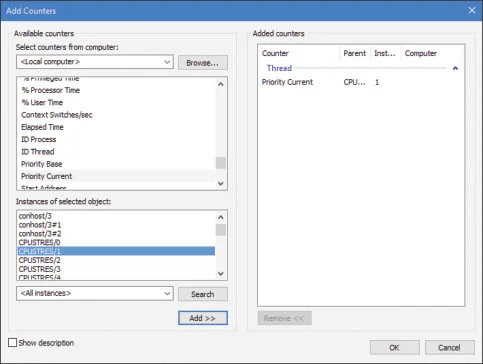
- 「OK」をクリックします。
- カウンターを右クリックし、「プロパティ」を選びます。
- 「グラフ」タブを開き、縦軸の最大値を16に変更して「OK」をクリックします。
- CPU Stress のウィンドウをフォアグラウンドに移します。対象スレッドの優先度が2段階上がり、そのあと徐々に下がって基本優先度に戻る様子を確認できます。「Busy」では、スレッドは時間の約25%をスリープに費やし、スリープが終わるたびに優先度が2段階上がります。活動レベルを「Maximum」にすると、スレッドが無限ループに入り、待機関数を呼ばなくなるため、ブーストは観察できません。

- 観察を終えたら、パフォーマンスモニターと CPU Stress を終了します。
GUI スレッドの待機解除後の優先度ブースト
ウィンドウを所有するスレッドは、ウィンドウメッセージの到着など、ウィンドウの処理に伴って起こされると、優先度がさらに2段階上がります。ウィンドウシステム（Win32k.sys）が、GUI スレッドを起こすイベントをセットするために KeSetEvent を呼ぶとき、このブーストを適用します。先ほどのブーストと同じく、対話型アプリケーションの応答性を高めるためです。
実験：GUI スレッドの優先度ブーストを観察する
GUI アプリケーションのスレッドの現在の優先度を監視しながら、そのウィンドウ上でマウスポインターを動かします。ウィンドウメッセージを処理するために GUI スレッドが起こされたとき、ウィンドウシステムが優先度を2段階引き上げる様子を確認できます。
- コントロールパネルの「システム」を開きます。
- 「システムの詳細設定」を開き、「詳細設定」タブの「パフォーマンス」にある「設定」をクリックします。開いたダイアログで「詳細設定」タブを選びます。
- 「プログラム」を選びます。これで
PsPrioritySeparationが2になります。 - メモ帳を起動します。
- パフォーマンスモニターを起動します。
- ツールバーのカウンター追加ボタンをクリックするか、Ctrl+I を押して、「カウンターの追加」ダイアログを開きます。
- オブジェクト「Thread」を選び、カウンター「Priority Current」を選びます。
- インスタンス欄に「Notepad」と入力して、「検索」をクリックします。
- 一覧をスクロールして「Notepad/0」を選び、「追加」、続いて「OK」をクリックします。
- 先ほどの実験と同様に、縦軸の最大値を16に変更します。メモ帳のスレッド0の優先度は8か10です。メモ帳がフォアグラウンドのプロセスとして2段階のブーストを受けた直後に待機に入った場合は、まだ10から8に戻っていない可能性があります。
- パフォーマンスモニターをフォアグラウンドにしたまま、メモ帳のウィンドウ上でマウスポインターを動かします。両方のウィンドウがデスクトップに見えるようにしてください。先に述べた動作により、優先度は10か9で推移します。
注記 メモ帳の優先度が8になったところは、ほとんど観察できません。GUI スレッドのブーストで優先度が2段階上がったあと、スレッドはごく短時間しか実行されません。優先度が1段階下がったところで次のウィンドウ処理のために起こされ、再び2段階のブーストを受けます。
- メモ帳をフォアグラウンドに移します。優先度は12に上がり、そのままになるはずです。ウィンドウ入力を処理するために GUI スレッドが起こされたときの2段階に、フォアグラウンドのプロセスに対する2段階が加わるからです。クォンタムが満了し、ブーストを受けたスレッドが通常どおり優先度を落とすと、11に下がることもあります。
- メモ帳をフォアグラウンドにしたまま、そのウィンドウ上でマウスポインターを動かします。ブーストを受けたスレッドがクォンタムを使い切ると、通常どおり優先度が下がり、11や10になることがあります。ただし、フォアグラウンドプロセスに対する2段階の引き上げは、メモ帳がフォアグラウンドにある間は維持されます。
- パフォーマンスモニターとメモ帳を終了します。
CPU の飢餓を防ぐ優先度ブースト
優先度7のスレッドが CPU を使い続け、優先度4のスレッドが実行機会を得られない場合を考えます。優先度11のスレッドが、優先度4のスレッドがロックしたリソースを待っていたとします。中間の優先度7のスレッドが CPU 時間を使い切るため、優先度4のスレッドは処理を終えてリソースを解放できず、優先度11のスレッドも待たされ続けます。この状況を優先度逆転と呼びます。
理論上の解決策は、ロックとその所有者を追跡し、処理を進めるために必要なスレッドの優先度を引き上げることです。Windows では、この考えを AutoBoost として実装しています。詳しくは、この章の「AutoBoost」を参照してください。CPU の飢餓全般には、次の緩和策を使います。
エグゼクティブリソースでは、所有スレッドの優先度を引き上げて実行機会を与え、リソースの解放を促します。ただし、エグゼクティブリソースは開発者が使える同期機構の一つで、この方式はほかの同期プリミティブには適用されません。そこで Windows は、バランスセットマネージャーというスレッドに、CPU の飢餓全般を緩和する処理を持たせています。このシステムスレッドの主な役割はメモリ管理で、詳しくは第5章で説明します。バランスセットマネージャーは1秒に1回、実行可能キューを調べ、約4秒間実行されずに実行可能状態にあるスレッドを探します。見つかると、その優先度を15に引き上げ、クォンタムの目標値を3クォンタム単位に相当する CPU クロックサイクル数に設定します。クォンタムが満了すると、優先度はすぐに元の基本優先度に戻ります。スレッドの処理が終わっておらず、より優先度の高いスレッドが実行可能なら、そのスレッドは実行可能キューに戻ります。そこで再び4秒間待つと、もう一度ブーストの対象になります。
バランスセットマネージャーは、毎回すべての実行可能スレッドを調べるわけではありません。CPU 時間を抑えるため、調べる実行可能スレッドを16個に制限します。同じ優先度にまだスレッドがあれば、中断した位置を記録し、次の走査で続きから調べます。優先度を引き上げるスレッドも、1回の走査につき10個までです。対象が10個を超える場合は、システムの負荷が通常より高いと考えられます。その場合は走査を中断し、次回に続きを調べます。
注記 Windows のスケジューリング判断にかかる時間は、スレッド数に関係なく一定です。バランスセットマネージャーは実行可能キューを走査するため、スレッド数が多いほど確認に時間がかかります。この処理は、信頼性を高めるために追加した仕組みで、スケジューラーのアルゴリズムの外で動きます。走査するスレッド数とキュー数に上限があるため、最悪の場合でも性能への影響は小さく、見積もることができます。
実験：CPU の飢餓を防ぐ優先度ブーストを観察する
CPU Stress を使い、スレッドの優先度が上がるときに CPU 使用率がどう変化するかを観察します。
CPUSTRES.exeを起動します。- スレッド1の活動レベルを「Low」から「Maximum」に変更します。
- スレッド1の優先度を「Normal」から「Lowest」に変更します。
- スレッド2を選び、活動レベルを「Low」から「Maximum」に変更します。
- プロセスのアフィニティマスクを変更して、実行先を任意の論理プロセッサ1つに制限します。CPU Stress の「Process」メニューから「Affinity」を選ぶか、タスクマネージャーで設定します。画面は次のようになります。
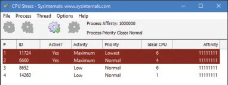
- パフォーマンスモニターを起動します。
- ツールバーのカウンター追加ボタンをクリックするか、Ctrl+I を押して、「カウンターの追加」ダイアログを開きます。
- オブジェクト「Thread」を選び、カウンター「Priority Current」を選びます。
- インスタンス欄に「CPUSTRES」と入力して、「検索」をクリックします。
- スレッド1と2を選び、「追加」、次に「OK」をクリックします。スレッド0は GUI スレッドです。
- 両方のカウンターについて、縦軸の最大値を16に変更します。
- パフォーマンスモニターは1秒に1回しか表示を更新しないため、優先度ブーストを見逃す場合があります。観察しやすくするには、Ctrl+F を押して表示を停止し、続けて Ctrl+U を押し続けて更新頻度を上げます。タイミングが合えば、次のように、優先度の低いスレッドが15に引き上げられる様子が見えます。

- パフォーマンスモニターと CPU Stress を終了します。
ブーストの適用
KiExitDispatcher は KiProcessThreadWaitList を呼び、Deferred Ready リストのスレッドを処理します。ここで呼び出し元から渡されたブースト情報を処理します。リストの各スレッドについて、待機ブロックのうち Active と Bypassed のものをリストから外し、カーネルのスレッド制御ブロックに AdjustReason と AdjustIncrement を設定します。前者には先述した2種類の調整理由のいずれかを、後者にはブースト値を設定します。そのあと KiDeferredReadyThread を呼びます。このルーチンは、クォンタムと優先度を選ぶアルゴリズムと、プロセッサを選ぶアルゴリズムの両方を実行し、スレッドを実行可能にします。前者はここから適用と解除に分けて説明し、後者は後述の「プロセッサの選択」で説明します。
ブーストを適用するのは、リアルタイム優先度の範囲外にあるスレッドです。AdjustUnwait の場合、スレッドに特殊なブーストがすでに適用されているか、SetThreadPriorityBoost でブーストを無効にしていれば、適用しません。この関数は KTHREAD の DisableBoost フラグを設定します。スレッドが2ティック未満の待機から戻った時点で、クォンタムを使い切っていてもクロック割り込みによる満了処理がまだ実行されていない場合は、カーネルがこの状態を検出してブーストを見送ることがあります。
これらに該当しなければ、現在の基本優先度に AdjustIncrement を加えて新しい優先度を求めます。フォアグラウンドプロセスに属する場合は、さらに PsPrioritySeparation を加えます。プロセスがフォアグラウンドにあるかどうかは、メモリ優先度が MEMORY_PRIORITY_FOREGROUND かどうかで判定します。この値はフォーカスが変わると Win32k.sys が設定します。この加算が先述のフォアグラウンド優先度ブーストです。
カーネルは、算出した優先度がスレッドの現在の優先度を上回る場合に、動的優先度の上限である15までに収めて適用します。フォアグラウンド分を加えた場合は、その値を KTHREAD の ForegroundBoost に記録します。これにより、同じ値が PriorityDecrement に反映されます。
AdjustBoost の場合、スレッドの現在の優先度が AdjustIncrement（シグナル状態にしたスレッドの優先度）より低く、かつ13未満かどうかを確認します。条件を満たし、ブーストが無効になっていなければ、上限を13として AdjustIncrement を新しい現在の優先度に使います。KTHREAD の UnusualBoost には増分を記録し、ロックの所有者に基づくブースト分が PriorityDecrement に反映されます。
PriorityDecrement がある場合、KiLockQuantumTarget に基づいて、スレッドのクォンタムをクロック1ティック相当に再計算します。これにより、フォアグラウンドブーストと特殊なブーストは、通常の2ティック（または設定された別の値）を待たず、1ティックで失効します。AdjustBoost が要求されたものの、スレッドの優先度が13か14である場合や、ブーストを無効にしている場合も、この再計算を行います。
この処理が終わると、AdjustReason に AdjustNone を設定します。
ブーストの解除
ブーストの解除は、前節で説明したブーストの適用とクォンタムの再計算に伴い、KiDeferredReadyThread で行います。まず調整の種類を確認します。
AdjustNone は、プリエンプションなどによってスレッドが実行可能になった場合です。動的優先度で動作するスレッドの実行サイクル数がクォンタムの目標値に達し、クロック割り込みによる満了処理がまだ実行されていなければ、クォンタムと優先度を再計算します。リアルタイム範囲外のスレッドに対する AdjustUnwait または AdjustBoost でも、クロック割り込みによる検出前にクォンタムを使い切っていないか確認します。使い切っている場合、基本優先度が14以上の場合、または PriorityDecrement がなく2ティックを超える待機を終えた場合は、クォンタムと優先度を再計算します。
優先度の再計算は、リアルタイム範囲外のスレッドに対して行います。現在の優先度から、フォアグラウンドブーストと特殊なブースト（この2つの合計が PriorityDecrement）を引き、さらに1を引きます。新しい優先度の下限は基本優先度です。既存の PriorityDecrement はゼロにし、フォアグラウンドブーストと特殊なブーストを解除します。ロックの所有者に基づくブーストなど、特殊なブーストはここで全量が取り除かれます。通常の AdjustUnwait ブーストでは、優先度が1段階ずつ下がり、基本優先度に達すると下がらなくなります。
KiRemoveBoostThread を通じてブーストを解除する場合もあります。ロックの所有者に基づくブーストでは、コンボイ現象を避けるため、シグナル状態にしたスレッドが現在の優先度を待機解除されるスレッドに渡すと、自分のブーストを失います。このルーチンは、対象を指定した遅延プロシージャ呼び出し（DPC）によるブーストと、ERESOURCE ロックの飢餓を避けるブーストの解除にも使います。新しい優先度を計算するときは、PriorityDecrement の ForegroundBoost と UnusualBoost を区別し、すでに適用されている GUI のフォアグラウンドブーストを維持します。Windows 7 以降のこの動作により、ロックの所有者に基づくブーストとフォアグラウンドブーストが互いの動作を乱さずに機能します。
図4-12に、スレッドのクォンタムが満了するたびに通常のブーストが減衰する例を示します。
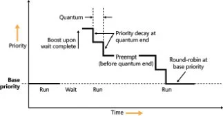
マルチメディアアプリケーションとゲームの優先度ブースト
Windows の CPU 飢餓対策のブーストで、異常に長い待機やデッドロックにつながりかねない状態からスレッドを抜け出させることはできます。しかし、Windows Media Player や3Dゲームのように CPU を多く使うアプリケーションのリソース要求には、この方法では対応できません。
音飛びなどの音声の乱れは、長年 Windows ユーザーを悩ませてきました。Windows のユーザーモードのオーディオスタックではプリエンプションが起きる機会が増えるため、この問題がさらに起きやすくなります。そこでクライアント版 Windows は、前述の MMCSS ドライバーを使います。このドライバーは %SystemRoot%\System32\Drivers\MMCSS.sys にあり、登録したアプリケーションがマルチメディアを途切れずに再生できるようにします。
注記 Windows 7 では MMCSS をサービスとして実装していました。この実装では、MMCSS の管理スレッドが何らかの理由でブロックされると、管理対象のスレッドがリアルタイム優先度のままになり、システム全体でほかのスレッドが実行機会を得られなくなるおそれがありました。この問題に対処するため、管理スレッドや MMCSS が使うその他のリソースを外部から操作できないよう、実装をカーネルに移しました。カーネルドライバーであれば、プロセスやスレッドのオブジェクトを直接指すポインターを保持できます。ID やハンドルで検索する手間がなくなり、スケジューラーや電源マネージャーとも高速に連携できます。
アプリケーションは、AvSetMmThreadCharacteristics をタスク名とともに呼び出して、MMCSS に登録できます。タスク名は、レジストリキー HKLM\SOFTWARE\Microsoft\Windows NT\CurrentVersion\Multimedia\SystemProfile\Tasks のサブキーのいずれかと一致する必要があります。OEM は必要に応じて一覧を変更し、用途に合わせたタスクを追加できます。既定のタスクは次のとおりです。
- Audio
- Capture
- Distribution
- Games
- Low Latency
- Playback
- Pro Audio
- Window Manager
各タスクには、ほかのタスクとの違いを定めるプロパティがあります。スケジューリングで最も重要なのが Scheduling Category です。MMCSS に登録したスレッドの優先度は、主にこの設定で決まります。表4-4にスケジューリングカテゴリを示します。
| カテゴリ | 優先度 | 説明 |
|---|---|---|
| High（高） | 23〜26 | 重要なシステムスレッドを除き、システム内のどのスレッドよりも高い優先度で動作する Pro Audio のスレッド。 |
| Medium（中） | 16〜22 | Windows Media Player など、フォアグラウンドのアプリケーションに属するスレッド。 |
| Low（低） | 8〜15 | 上記のカテゴリに属さないその他のスレッド。 |
| Exhausted（割り当て消費済み） | 4〜6 | 割り当てられた CPU 時間を使い切り、より高い優先度のスレッドが実行可能でないときに限って実行を続けるスレッド。 |
MMCSS は、登録済みプロセス内のスレッドを、スケジューリングカテゴリとカテゴリ内の相対優先度に応じた優先度まで引き上げ、その優先度を所定の時間維持します。その時間が過ぎると、スレッドを Exhausted カテゴリの優先度まで下げ、マルチメディア以外のスレッドにも実行機会を与えます。
既定では、利用できる CPU 時間の80%をマルチメディアスレッドに、20%をその他のスレッドに割り当てます。たとえば10ミリ秒のうち、それぞれ8ミリ秒と2ミリ秒です。この比率は、レジストリキー HKLM\SOFTWARE\Microsoft\Windows NT\CurrentVersion\Multimedia\SystemProfile の SystemResponsiveness を変更すると調整できます。この値はシステム側に保証する CPU 時間の割合（登録済みオーディオアプリに割り当てる分は除く）で、10〜100%の範囲を取ります。既定値は20で、10未満を指定した場合は10として扱います。MMCSS のスケジューリングスレッドは優先度27で動作します。すべての Pro Audio スレッドをプリエンプトし、優先度を Exhausted カテゴリまで下げられるようにするためです。
一般に、同じプロセス内のスレッドの相対優先度を外部から変更する意味はほとんどありません。各スレッドの重要性を把握しているのは開発者なので、このような変更を行うツールはありません。一方、MMCSS では、アプリケーションが明示的に登録し、スレッドの種類を通知する必要があります。したがって MMCSS は相対優先度を変更するための情報を持ち、開発者も変更されることを把握しています。
実験：MMCSS の優先度ブースト
次の手順で MMCSS の優先度ブーストを観察します。
- Windows Media Player（
wmplayer.exe）を起動します。他の再生ソフトウェアでは、MMCSS への登録に必要な API を呼んでいない場合があります。 - 音声コンテンツを再生します。
- タスクマネージャーまたは Process Explorer で、
wmplayer.exeのアフィニティを設定し、CPU 1つだけで実行するようにします。 - パフォーマンスモニターを起動します。
- 動作を記録しやすくするため、タスクマネージャーでパフォーマンスモニターの優先度クラスを「リアルタイム」に変更します。
- ツールバーのカウンター追加ボタンをクリックするか、Ctrl+I を押して、「カウンターの追加」ダイアログを開きます。
- オブジェクト「Thread」を選び、カウンター「Priority Current」を選びます。
- インスタンス欄に「Wmplayer」と入力して「検索」をクリックし、該当するスレッドをすべて選びます。
- 「追加」、続けて「OK」をクリックします。
- 「操作」メニューから「プロパティ」を選びます。
- 「グラフ」タブで、縦軸の最大値を32に変更します。Wmplayer に優先度16のスレッドが1つ以上見つかります。これらのスレッドは実行を続けますが、Exhausted カテゴリに下がったあとで、より優先度の高いスレッドが CPU を必要とすれば、そのスレッドに実行機会を譲ります。
- CPU Stress を起動します。
- スレッド1の活動レベルを「Maximum」にします。
- スレッド1の優先度を「Normal」から「Time Critical」に変更します。
- CPUSTRES の優先度クラスを「High」に変更します。
- CPUSTRES のアフィニティを変更し、Wmplayer と同じ CPU だけを使うようにします。システムの応答は大幅に遅くなりますが、音楽の再生は続きます。システムのほかの部分も、ときどき応答が戻ります。
- パフォーマンスモニターで、Wmplayer のスレッドの優先度が、ときどき16から下がる様子を確認します。
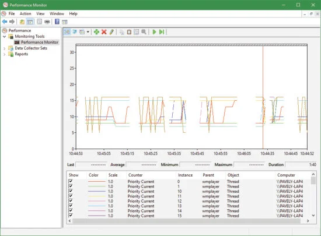
MMCSS は優先度の引き上げ以外の処理も行います。Windows のネットワークドライバーと NDIS スタックでは、ネットワークカードから割り込みを受けたあとの処理を後回しにするため、DPC をよく使います。DPC はユーザーモードのコードより高い IRQL で動作します。そのため、ネットワーク転送中やゲーム中など、ネットワークカードのドライバーが長時間動くと、メディア再生が中断されることがあります。DPC と IRQL は第6章で説明します。
MMCSS はネットワークスタックに専用のコマンドを送り、メディアの再生中はパケットの処理量を抑えるよう指示します。ネットワークスループットがわずかに下がる代わりに、再生性能を確保します。オンラインゲームなど、再生中に通常行うネットワーク処理では、この低下は目立ちません。具体的な制御はスケジューラーの範囲外です。
MMCSS はデッドラインスケジューリングにも対応します。音声再生プログラムが、常にカテゴリ内で最高の優先度を必要とするとは限らない点を利用します。たとえば、ディスクやネットワークから音声データをバッファーに読み込み、そのバッファーを再生しながら次のバッファーを用意する場合です。クライアントスレッドは、音切れを避けるために高い優先度が必要になる時刻を知らせ、それまでは同じカテゴリ内の低い優先度で動作できます。AvTaskIndexYield を使うと、次に実行が必要な時刻を、カテゴリ内の最高優先度が必要になる時刻として指定できます。それまではカテゴリ内の最低優先度で動くため、システムのほかの処理に CPU 時間を回せる場合があります。
AutoBoost
AutoBoost は、前節で説明した優先度逆転を解消するための仕組みです。ロックの所有者と待機者を追跡し、処理を進めるために必要なスレッドの優先度を引き上げます。必要に応じて I/O の優先度も引き上げます。ロック情報は KTHREAD 構造体の KLOCK_ENTRY 固定長配列に格納されます。本書の対象実装では最大6エントリです。各 KLOCK_ENTRY は、スレッドが所有するロックと、そのスレッドが待機するロックについて、それぞれ二分木を管理します。優先度をキーにするため、引き上げ先の最高優先度を一定時間で求められます。ブーストが必要であれば、所有者の優先度を待機者の優先度に設定します。低い優先度で発行された I/O の優先度を引き上げる場合もあります。I/O の優先度は第6章で説明します。他のブーストと同じく、AutoBoost が引き上げられる上限は15です。リアルタイムスレッドの優先度には適用しません。
本書の対象実装では、カーネルコードだけが使える同期プリミティブである、プッシュロックとガード付きミューテックスで AutoBoost を使います。これらのオブジェクトについては Part 2 の第8章を参照してください。一部のエグゼクティブコンポーネントも、特定の場面でこの仕組みを使います。将来の Windows では、クリティカルセクションなど、ユーザーモードから利用でき、所有者を持つオブジェクトにも AutoBoost が実装される可能性があります。
コンテキストの切り替え
スレッドのコンテキストと、その切り替え手順は、プロセッサのアーキテクチャによって異なります。典型的な切り替えでは、次の情報を保存し、復元します。
- 命令ポインター
- カーネルスタックポインター
- スレッドが実行されるアドレス空間を指すポインター（プロセスのページテーブルディレクトリへのポインター）
カーネルは、切り替え前のスレッドの情報を、そのスレッドのカーネルモードスタックに積みます。スタックポインターを更新し、その値を切り替え前のスレッドの KTHREAD 構造体に保存します。次に、カーネルスタックポインターを切り替え先のスレッドのカーネルスタックに設定し、そのスレッドのコンテキストを読み込みます。切り替え先が別のプロセスに属する場合は、そのページテーブルディレクトリのアドレスをプロセッサの専用レジスターに読み込み、そのアドレス空間を使えるようにします。アドレス変換は第5章を参照してください。配信すべきカーネル APC が保留中なら、IRQL 1 の割り込みを要求します。APC は Part 2 の第8章で詳しく説明します。保留中の APC がなければ、復元した命令ポインターの位置に制御を移し、切り替え先のスレッドが実行を再開します。
同じプロセッサ上でのスレッドの直接切り替え（Direct Switch）
Windows 8 と Windows Server 2012 では、Direct Switch という最適化が導入されました。スレッドが自分のクォンタムと優先度ブーストを別のスレッドに譲り、そのスレッドを同じプロセッサですぐに実行できるようにします。同期型のクライアントとサーバーのやり取りでは、スレッドをアイドル状態やパークされた別のプロセッサに移す必要がなくなるため、スループットが大きく向上する場合があります。この場合、一度に実行されるのはクライアントかサーバーのどちらか一方なので、スケジューラーは両者を1つの論理スレッドとして扱えます。図4-13に Direct Switch の効果を示します。

最初のスレッド（図4-13の T1）が、2番目のスレッド（T2）が待つ同期オブジェクトをシグナル状態にした直後に、自ら待機に入ることは、スケジューラーにはわかりません。そのため、シグナル通知と待機を不可分な操作としてスケジューラーに伝える専用関数を呼ぶ必要があります。
切り替えが可能であれば、KiDirectSwitchThread が実際に切り替えます。可能なら Direct Switch を使うよう指示するフラグを渡すと、KiExitDispatcher がこの関数を呼びます。別のフラグを指定すると、切り替え先の優先度が低い場合に、切り替え元の優先度を譲ります。本書の対象実装では、両方のフラグを一緒に指定するか、どちらも指定しません。そのため、Direct Switch を試みるときは優先度の引き渡しも試みます。たとえば、切り替え先のスレッドのアフィニティが現在のプロセッサでの実行を許可していない場合、Direct Switch は失敗します。成功した場合は、切り替え元のクォンタムの残りが切り替え先に渡ります。
本書の対象実装では、次の場合に Direct Switch を使います。
- スレッドが Windows API の
SignalObjectAndWait、またはカーネル側で対応するNtSignalAndWaitForSingleObjectを呼ぶ場合。 - ALPC（Part 2 の第8章を参照）。
- 同期リモートプロシージャ呼び出し（RPC）。
- COM のリモート呼び出し（本書の対象実装ではマルチスレッドアパートメント（MTA）間のみ）。
スケジューリングの例
Windows はスレッドの優先度に基づいて、どのスレッドに CPU を割り当てるかを決めます。ここからは、優先度に基づくプリエンプティブマルチタスクが、個々のスレッドでどう働くかを見ていきます。
自発的な切り替え
スレッドは、WaitForSingleObject や WaitForMultipleObjects などの Windows の待機関数を呼び、イベント、ミューテックス、セマフォ、I/O 完了ポート、プロセス、スレッドなどのオブジェクトの待機に入ることで、自発的にプロセッサを明け渡せます。オブジェクトの待機については Part 2 の第8章で詳しく説明します。
図4-14は、スレッドが待機に入り、Windows が次に実行するスレッドを選ぶ様子を示しています。一番上のブロックで表したスレッドが自発的にプロセッサを明け渡すと、実行可能キューの次のスレッドが実行されます。図の Running 列では、実行中のスレッドを周囲の光で示しています。プロセッサを明け渡したスレッドの優先度はそのままで、待っているオブジェクトの待機キューに移るだけです。
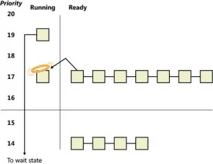
プリエンプション
優先度の高いスレッドが実行可能になると、優先度の低いスレッドはプリエンプトされます。たとえば、次の場合に起きます。
- 優先度の高いスレッドの待機が終わった。そのスレッドが待っていたイベントが発生した場合などです。
- スレッドの優先度が上がったか、下がった。
いずれの場合も、Windows は現在のスレッドの実行を続けるか、プリエンプトして優先度の高いスレッドを実行するかを判断します。
注記 ユーザーモードで実行中のスレッドは、カーネルモードで実行中のスレッドをプリエンプトできます。判断の基準は実行モードにかかわらず、スレッドの優先度です。
プリエンプトされたスレッドは、実行時の優先度に対応する実行可能キューの先頭に入ります（図4-15）。
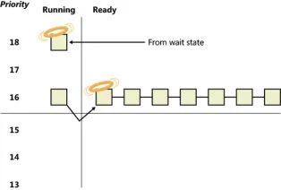
図4-15では、優先度18のスレッドが待機を終えて CPU を取得し、それまで優先度16で実行されていたスレッドが実行可能キューの先頭に移ります。先頭に戻すことで、割り込んだスレッドの実行が終わったあと、プリエンプトされたスレッドが残りのクォンタムを使えます。
クォンタムの満了
実行中のスレッドが CPU のクォンタムを使い切ると、Windows はまずそのスレッドの優先度を下げるかどうか、次に別のスレッドをそのプロセッサで実行するかどうかを判断します。
以前にブーストを受けた場合など、スレッドの優先度が下がったときは、Windows は次に実行するのに適したスレッドを探します。たとえば、現在のスレッドの新しい優先度より高い実行可能キューを調べます。優先度が下がらず、同じ優先度で実行を待つほかのスレッドがあれば、そのキューの次のスレッドを選びます。それまで実行していたスレッドには新しいクォンタムを割り当て、状態を実行中から実行可能に変えて、同じキューの末尾に移します（図4-16）。同じ優先度で実行可能なスレッドがほかにいなければ、現在のスレッドはもう1回分のクォンタムを実行できます。

これまでに見たように、Windows はクロック間隔タイマーの発火回数だけに頼らず、正確な CPU クロックサイクル数でクォンタムの目標値を管理します。Windows はこのサイクル数を使い、今の時点でクォンタムの満了処理に入るべきかを判定します。実行に使ったサイクル数が、クロック割り込みより前に目標値へ達している場合もあります。
クロック間隔タイマーだけに頼るスケジューリングでは、次のことが起こり得ます。
- クロック間隔の途中で、スレッド A と B が実行可能になります。スケジューリングはクロック間隔の境目以外でも行われるため、これはよくあります。
- スレッド A が実行を始めますが、割り込みによってしばらく中断されます。割り込みの処理時間もスレッド A の実行時間に計上されます。
- 割り込み処理が終わり、スレッド A が実行を再開しますが、すぐに次のクロック間隔の境目に達します。スケジューラーは、その間ずっとスレッド A が実行されていたと見なすしかなく、スレッド B に切り替えます。
- スレッド B が実行を始めます。プリエンプションや割り込み処理がなければ、クロック間隔1回分をまるごと使えます。
この例では、スレッド A に2つの不利益があります。まず、デバイス割り込みとは無関係なスレッドであっても、その割り込みを処理した時間がスレッド自身の CPU 時間に計上されます。第6章で説明するように、割り込みはその時点で実行中のスレッドのコンテキストで処理されます。また、同じクロック間隔のうち、スレッド A がスケジュールされる前にシステムがアイドル状態だった時間まで計上されます。図4-17にこの状況を示します。
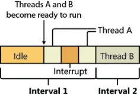
Windows は、スレッドに割り当てられた処理に費やした CPU クロックサイクル数を正確に数えます。割り込み処理のサイクルは含めません。また、クォンタムの終了までにスレッドが消費するべきサイクル数を目標値として保持します。したがって、先ほどの例でスレッド A が受けた2つの不利益は発生せず、処理は次の順序で進みます。
- クロック間隔の途中で、スレッド A と B が実行可能になります。
- スレッド A が実行を始めますが、割り込みによってしばらく中断されます。割り込み処理に費やした CPU クロックサイクルは、スレッド A に計上されません。
- 割り込み処理が終わり、スレッド A が実行を再開しますが、すぐに次のクロック間隔の境目に達します。スケジューラーは、実際に計上された CPU クロックサイクル数を、クォンタム満了時に達しているはずの値と比較します。
- 実際の値が目標値より大幅に小さいため、スケジューラーは、スレッド A がクロック間隔の途中から実行され、さらに割り込みで中断された可能性もあると判断します。
- スレッド A のクォンタムをクロック間隔1回分延ばし、目標値を再計算します。これにより、スレッド A はクロック間隔1回分を使って実行する機会を得ます。
- 次のクロック間隔の境目ではスレッド A のクォンタムが満了しており、今度はスレッド B に実行機会が回ります。
図4-18にこの状況を示します。

終了
スレッドは、メインルーチンから戻るか、ExitThread を呼ぶか、TerminateThread で強制終了されると実行を終え、実行中から終了済みに移ります。スレッドオブジェクトへの開いたハンドルがなければ、プロセスのスレッドリストから取り除かれ、関連するデータ構造も解放されます。
アイドルスレッド
ある CPU で実行可能なスレッドがなければ、Windows はその CPU のアイドルスレッドを実行します。各 CPU には専用のアイドルスレッドがあります。マルチプロセッサシステムでは、ある CPU がスレッドを実行している間にも、ほかの CPU では実行するスレッドがないことがあるからです。各 CPU のアイドルスレッドは、その CPU の PRCB 内のポインターから参照できます。
アイドルスレッドはすべてアイドルプロセスに属します。アイドルプロセスとアイドルスレッドにはいくつか特別な点があります。ほかのプロセスやスレッドと同様に EPROCESS と KPROCESS、ETHREAD と KTHREAD の構造体で表しますが、エグゼクティブが管理するプロセスオブジェクトやスレッドオブジェクトとしては扱いません。アイドルプロセスはシステムのプロセスリストにもないため、カーネルデバッガーの !process 0 0 の出力には現れません。別の方法で、アイドルスレッドとそのプロセスを見つけられます。
実験：アイドルスレッドとアイドルプロセスの構造体を表示する
カーネルデバッガーの !pcr コマンドで、アイドルスレッドとアイドルプロセスの構造体を探せます。PCR はプロセッサ制御領域（Processor Control Region）の略です。このコマンドは、PCR と関連する PRCB の情報の一部を表示します。引数は数値1つで、表示する PCR の CPU 番号です。ブートプロセッサは番号0で、常に存在するため、!pcr 0 は常に使えます。以下は、64ビットの8プロセッサシステムでローカルカーネルデバッグを行ったときの出力です。
lkd> !pcr KPCR for Processor 0 at fffff80174bd0000: Major 1 Minor 1 NtTib.ExceptionList: fffff80176b4a000 NtTib.StackBase: fffff80176b4b070 NtTib.StackLimit: 000000000108e3f8 NtTib.SubSystemTib: fffff80174bd0000 NtTib.Version: 0000000074bd0180 NtTib.UserPointer: fffff80174bd07f0
NtTib.SelfTib: 00000098af072000 SelfPcr: 0000000000000000 Prcb: fffff80174bd0180 Irql: 0000000000000000 IRR: 0000000000000000 IDR: 0000000000000000 InterruptMode: 0000000000000000 IDT: 0000000000000000 GDT: 0000000000000000 TSS: 0000000000000000 CurrentThread: ffffb882fa27c080 NextThread: 0000000000000000 IdleThread: fffff80174c4c940 DpcQueue:
CurrentThread と IdleThread のポインターが異なります。これは、メモリダンプを取得した時点で、CPU 0 がアイドルスレッド以外のスレッドを実行していたことを示します。複数の CPU がある場合は、存在する CPU の番号について !pcr 1、!pcr 2 と順に実行してみてください。各 CPU の IdleThread は異なるアドレスを指します。
表示されたアイドルスレッドのアドレスを指定して、!thread を実行します。
lkd> !thread fffff80174c4c940 THREAD fffff80174c4c940 Cid 0000.0000 Teb: 0000000000000000 Win32Thread: 0000000000000000 RUNNING on processor 0 Not impersonating DeviceMap ffff800a52e17ce0 Owning Process fffff80174c4b940 Image: Idle Attached Process ffffb882e7ec7640 Image: System Wait Start TickCount 1637993 Ticks: 30 (0:00:00:00.468) Context Switch Count 25908837 IdealProcessor: 0 UserTime 00:00:00.000 KernelTime 05:51:23.796 Win32 Start Address nt!KiIdleLoop (0xfffff801749e0770) Stack Init fffff80176b52c90 Current fffff80176b52c20 Base fffff80176b53000 Limit fffff80176b4d000 Call 0000000000000000 Priority 0 BasePriority 0 PriorityDecrement 0 IoPriority 0 PagePriority 5
最後に、この出力に表示された所有プロセスのアドレスを指定して、!process を実行します。出力を短くするために第2引数に 3 を指定し、各スレッドについて最小限の情報だけを表示します。
lkd> !process fffff80174c4b940 3 PROCESS fffff80174c4b940 SessionId: none Cid: 0000 Peb: 00000000 ParentCid: 0000 DirBase: 001aa000 ObjectTable: ffff800a52e14040 HandleCount: 2011. Image: Idle VadRoot ffffb882e7e1ae70 Vads 1 Clone 0 Private 7. Modified 1627. Locked 0. DeviceMap 0000000000000000
Token ffff800a52e17040 ElapsedTime 07:07:04.015 UserTime 00:00:00.000 KernelTime 00:00:00.000 QuotaPoolUsage[PagedPool] 0 QuotaPoolUsage[NonPagedPool] 0 Working Set Sizes (now,min,max) (7, 50, 450) (28KB, 200KB, 1800KB) PeakWorkingSetSize 1 VirtualSize 0 Mb PeakVirtualSize 0 Mb PageFaultCount 2 MemoryPriority BACKGROUND BasePriority 0 CommitCharge 0 THREAD fffff80174c4c940 Cid 0000.0000 Teb: 0000000000000000 Win32Thread: 0000000000000000 RUNNING on processor 0 THREAD ffff9d81e230ccc0 Cid 0000.0000 Teb: 0000000000000000 Win32Thread: 0000000000000000 RUNNING on processor 1 THREAD ffff9d81e1bd9cc0 Cid 0000.0000 Teb: 0000000000000000 Win32Thread: 0000000000000000 RUNNING on processor 2 THREAD ffff9d81e2062cc0 Cid 0000.0000 Teb: 0000000000000000 Win32Thread: 0000000000000000 RUNNING on processor 3 THREAD ffff9d81e21a7cc0 Cid 0000.0000 Teb: 0000000000000000 Win32Thread: 0000000000000000 RUNNING on processor 4 THREAD ffff9d81e22ebcc0 Cid 0000.0000 Teb: 0000000000000000 Win32Thread: 0000000000000000 RUNNING on processor 5 THREAD ffff9d81e2428cc0 Cid 0000.0000 Teb: 0000000000000000 Win32Thread: 0000000000000000 RUNNING on processor 6 THREAD ffff9d81e256bcc0 Cid 0000.0000 Teb: 0000000000000000 Win32Thread: 0000000000000000 RUNNING on processor 7
これらのプロセスやスレッドのアドレスは、dt nt!_EPROCESS や dt nt!_KTHREAD などのコマンドにも指定できます。
この実験では、アイドルプロセスとアイドルスレッドに固有の特徴をいくつか確認できました。デバッガーは EPROCESS の ImageFileName メンバーから読み取ったイメージ名を Idle と表示します。一方、Windows のツールによって呼び名は異なります。タスクマネージャーと Process Explorer では「System Idle Process」、tlist では「System Process」と表示されます。プロセス ID とスレッド ID（クライアント ID。デバッガーの出力では Cid）、PEB と TEB のポインターはいずれも0です。ほかにも0になるフィールドがあります。アイドルプロセスにはユーザーモードのアドレス空間がなく、アイドルスレッドはユーザーモードのコードを実行しないため、ユーザーモード環境を管理するデータは不要です。アイドルプロセスとアイドルスレッドは、オブジェクトマネージャーが扱うプロセスオブジェクトやスレッドオブジェクトに該当しません。最初のアイドルスレッドとアイドルプロセスの構造体は静的に確保され、プロセスマネージャーとオブジェクトマネージャーの初期化前にシステムを起動するために使われます。追加のプロセッサがオンラインになるたびに、そのプロセッサ専用のアイドルスレッドの構造体を非ページプールから動的に確保します。この割り当てはオブジェクトマネージャーを経由しません。プロセス管理が初期化されると、特別な変数 PsIdleProcess を通じてアイドルプロセスを参照します。
Windows はアイドルスレッドの優先度を0と報告します。しかし、アイドルスレッドが実行されるのは、ほかに実行できるスレッドがない場合だけです。ほかのスレッドと優先度を比較することはなく、実行可能キューにも入りません。Windows システムで実際に優先度0で動作するのは、第5章で説明するゼロページスレッドだけです。このスレッドはページをゼロで埋めます。
アイドルスレッドは、実行対象に選ばれるときも、プリエンプションの際も特別に扱われます。アイドルスレッドのルーチン KiIdleLoop は、通常の方法で他のスレッドにプリエンプトされないようにする処理を行います。あるプロセッサでアイドルスレッド以外に実行できるスレッドがなければ、そのプロセッサの PRCB にアイドル状態を記録します。そのあとアイドル中のプロセッサで実行するスレッドが選ばれると、そのアドレスが PRCB の NextThread ポインターに格納されます。アイドルスレッドは、ループを1周するたびにこのポインターを確認します。
このルーチンは、C ではなくアセンブリで書かれた数少ないルーチンの1つです。細部はアーキテクチャによって異なりますが、基本的な処理順は次のとおりです。
- 一時的に割り込みを有効にして、保留中の割り込みを配信できるようにし、そのあと無効にします。x86 と x64 のプロセッサでは、
STI命令とCLI命令を使います。アイドルスレッドの処理の多くは割り込みを無効にして実行するため、ここで配信の機会を設けます。 - 一部のアーキテクチャのデバッグビルドでは、カーネルデバッガーがシステムの実行を止めようとしているかを確認します。要求があれば制御を渡します。
- プロセッサに保留中の DPC がないか確認します。DPC の詳細は第6章を参照してください。キューに追加したときに DPC 割り込みが生成されなければ、DPC が保留されている場合があります。保留中の DPC があれば、
KiRetireDpcListを呼び出して配信します。このルーチンは、タイマー満了の処理と、実行可能への移行を保留したスレッドの処理も行います。後者は後述の「マルチプロセッサシステム」で説明します。KiRetireDpcListは割り込みを無効にした状態で呼び出す必要があるため、手順1の最後で割り込みを無効にしています。このルーチンから戻った時点でも、割り込みは無効です。 - クォンタム満了の処理が要求されているか確認します。要求があれば
KiQuantumEndを呼んで処理します。 - 次に実行するスレッドが選ばれているか確認し、選ばれていればそのスレッドを実行します。たとえば、手順3で処理した DPC やタイマーの満了によってスレッドの待機が終わった場合や、アイドルループの実行中に別のプロセッサがこのプロセッサで実行するスレッドを選んだ場合です。
- 要求があれば、ほかのプロセッサで実行可能なスレッドを探し、可能ならそのうち1つをこのプロセッサで実行します。この処理は後述の「アイドルスケジューラー」で説明します。
- 電源管理が必要な場合に備えて、登録済みのプロセッサアイドルルーチンを呼び出します。このルーチンは
intelppm.sysなどのプロセッサ電源ドライバーにあり、そのドライバーがなければ HAL にあります。
スレッドの一時停止
SuspendThread と ResumeThread を使うと、スレッドを明示的に一時停止、再開できます。各スレッドには一時停止カウントがあり、一時停止で増え、再開で減ります。カウントが0なら実行でき、0以外なら実行できません。
一時停止するには、対象スレッドにカーネル APC をキューイングします。そのスレッドに実行が切り替わると、最初に APC が実行されます。この APC はスレッドをイベントの待機状態に移します。最終的にスレッドを再開すると、そのイベントがシグナル状態になります。
この仕組みでは、すでに待機中のスレッドに一時停止の要求が来ると、一時停止するためだけにスレッドを起こす必要があります。カーネルスタックがスワップアウトされていた場合は、メモリに戻す処理も発生します。Windows 8.1 と Windows Server 2012 R2 では、Lightweight Suspend が導入されました。対象が待機中なら APC を使わず、メモリ上のスレッドオブジェクトを直接操作して、一時停止状態にできます。
凍結とディープフリーズ
プロセスを凍結すると、そのスレッドに対して ResumeThread を呼んでも、プロセスは停止したままです。これはシステムが UWP アプリを一時停止するときに使います。タブレットモードで別のアプリがフォアグラウンドに移った場合や、デスクトップモードでアプリを最小化した場合など、アプリがバックグラウンドに移ると発生します。システムはアプリに約5秒の実行時間を与えます。アプリは通常、この時間を使って状態を保存します。メモリが不足すると Windows アプリは予告なく終了させられる場合があるため、状態の保存が重要です。終了した場合も、次回の起動時に状態を読み込み、終了前の画面や作業を復元できます。凍結するとプロセス内の全スレッドが停止し、ResumeThread では起こせません。凍結の有無は KTHREAD のフラグで示します。スレッドが実行できるのは、一時停止カウントが0で、凍結フラグがクリアされている場合です。
ディープフリーズでは、プロセス内で新しく作成したスレッドも実行を始められません。たとえば、ディープフリーズ中のプロセスに CreateRemoteThreadEx でスレッドを作成すると、実行を始める前に凍結されます。凍結機能は通常、この形で使われます。
プロセスとスレッドを凍結する機能は、ユーザーモードに直接公開されていません。Process State Manager（PSM）サービスが内部で使い、ディープフリーズと凍結解除の要求をカーネルに送ります。
ジョブを使ってプロセスを凍結することもできます。ジョブの凍結と解除は公開ドキュメントに記載されていませんが、標準の NtSetInformationJobObject システムコールを通じて行えます。Windows アプリのプロセスはすべてジョブに属するため、主に Windows アプリで使います。ジョブにアプリ本体のプロセスしか入らない場合もあれば、同じアプリのバックグラウンドタスクを実行するプロセスも含まれる場合があります。ジョブにまとめると、内部の全プロセスを一括で凍結・解除できます。Windows アプリについては Part 2 の第8章を参照してください。
実験：ディープフリーズを観察する
この実験では、仮想マシンをデバッグして、ディープフリーズが発生する様子を観察します。
- 管理者権限で WinDbg を開き、Windows 10 を実行している仮想マシンに接続します。
- Ctrl+Break を押して、仮想マシンの実行を中断します。
- ディープフリーズが始まる箇所にブレークポイントを設定します。凍結されるプロセスの情報を表示するコマンドも指定します。
bp nt!PsFreezeProcess "!process -1 0; g"
g（go）を入力するか、F5を押します。ディープフリーズが何度も発生するのがわかります。- タスクバーから Cortana の画面を開き、閉じます。約5秒後に、次のような出力が表示されます。
PROCESS 8f518500 SessionId: 2 Cid: 12c8 Peb: 03945000 ParentCid: 02ac DirBase: 054007e0 ObjectTable: b0a8a040 HandleCount: 988. Image: SearchUI.exe
- デバッガーで実行を中断し、そのプロセスの詳細を表示します。
1: kd> !process 8f518500 1 PROCESS 8f518500 SessionId: 2 Cid: 12c8 Peb: 03945000 ParentCid: 02ac DeepFreeze DirBase: 054007e0 ObjectTable: b0a8a040 HandleCount: 988. Image: SearchUI.exe VadRoot 95c1ffd8 Vads 405 Clone 0 Private 7682. Modified 201241. Locked 0. DeviceMap a12509c0 Token b0a65bd0 ElapsedTime 04:02:33.518 UserTime 00:00:06.937 KernelTime 00:00:00.703 QuotaPoolUsage[PagedPool] 562688 QuotaPoolUsage[NonPagedPool] 34392 Working Set Sizes (now,min,max) (20470, 50, 345) (81880KB, 200KB, 1380KB) PeakWorkingSetSize 25878 VirtualSize 367 Mb PeakVirtualSize 400 Mb PageFaultCount 307764 MemoryPriority BACKGROUND BasePriority 8 CommitCharge 8908 Job 8f575030
- デバッガーの出力に
DeepFreeze属性が表示されていることを確認します。このプロセスはジョブに属しています。!jobを使って、ジョブの詳細を表示します。1: kd> !job 8f575030 Job at 8f575030 Basic Accounting Information TotalUserTime: 0x0
TotalKernelTime: 0x0 TotalCycleTime: 0x0 ThisPeriodTotalUserTime: 0x0 ThisPeriodTotalKernelTime: 0x0 TotalPageFaultCount: 0x0 TotalProcesses: 0x1 ActiveProcesses: 0x1 FreezeCount: 1 BackgroundCount: 0 TotalTerminatedProcesses: 0x0 PeakJobMemoryUsed: 0x38e2 PeakProcessMemoryUsed: 0x38e2 Job Flags [cpu rate control] [frozen] [wake notification allocated] [wake notification enabled] [timers virtualized] [job swapped] Limit Information (LimitFlags: 0x0) Limit Information (EffectiveLimitFlags: 0x3000) CPU Rate Control Rate = 100.00% Scheduling Group: a469f330
- このジョブには CPU 使用率制御が適用されており、凍結状態です。CPU 使用率制御の詳細は、この章の「CPU 使用率の制限」を参照してください。仮想マシンからデタッチし、デバッガーを閉じます。
実行するスレッドの選択
論理プロセッサで次に実行するスレッドを選ぶ必要が生じるたびに、スケジューラーの関数 KiSelectNextThread を呼びます。たとえば、次の場合です。
- 厳密なアフィニティの設定が変わり、現在実行中または実行待機中のスレッドが、選ばれていた論理プロセッサで動作できなくなった場合。別のスレッドを選ぶ必要があります。
- 実行中のスレッドのクォンタムが満了したとき、そのスレッドが動いていた SMT のグループがビジーになり、優先ノード内の別の SMT グループが完全にアイドル状態になっている場合。SMT（Symmetric Multithreading、同時マルチスレッディング）は、第2章で説明したハイパースレッディングの一般名です。スケジューラーはクォンタムが満了したスレッドを移動するため、元のプロセッサで実行する別のスレッドを選びます。
- 待機操作が完了し、待機ステータスレジスターに保留中のスケジューリング操作がある場合。つまり、優先度またはアフィニティのビットの一方または両方がセットされている場合です。
これらの場合、スケジューラーは次のように動作します。
KiSelectReadyThreadExを呼び、そのプロセッサで次に実行できるスレッドを探します。- 実行可能なスレッドが見つからなければ、アイドルスケジューラーを有効にし、アイドルスレッドを実行対象に選びます。見つかった場合は、そのスレッドを実行可能状態にして、状況に応じてローカルまたは共有の実行可能キューに入れます。
KiSelectNextThread を使うのは、論理プロセッサが次のスレッドを選ぶ必要はあるものの、すぐには実行しない場合だけです。そのため、選んだスレッドは実行可能状態になります。一方、次の実行可能スレッドをすぐに実行し、見つからなければアイドル状態に入る以外の処理を行う場合もあります。たとえば、次のような場合です。
- 優先度の変更によって、実行待機中または実行中のスレッドが、選ばれた論理プロセッサで実行可能なスレッドのうち最高優先度ではなくなりました。そこで、より優先度の高いスレッドを実行します。
- スレッドが
YieldProcessorまたはNtYieldExecutionで明示的に実行権を譲り、ほかに実行可能なスレッドがいる可能性があります。 - 現在のスレッドのクォンタムが満了し、同じ優先度のほかのスレッドにも実行機会を与える必要があります。
- スレッドの優先度ブーストが解除され、優先度が変わりました。その結果、より優先度の高いスレッドが実行可能になっている場合があります。
- アイドルスケジューリングが要求されてからアイドルスケジューラーが動き出すまでに、実行可能なスレッドが現れていないかを確認する必要があります。
呼び出すルーチンは、別のスレッドを実行しなければならないか、実行できるなら切り替えるかで区別できます。前者では KiSelectNextThread、後者では KiSelectReadyThreadEx を呼びます。どちらの場合も、各プロセッサは KPRCB が指す共有の実行可能キューに属しているため、KiSelectReadyThreadEx は現在の論理プロセッサのキューを確認し、見つかった最高優先度のキューから先頭のスレッドを取り出せます。現在のスレッドが引き続き実行できる場合は、そのスレッドより優先度の低い候補は取り出しません。KiSelectNextThread を呼ぶ場面では、現在のスレッドは引き続き実行できません。条件を満たすスレッドがいない場合や、実行可能なスレッドが一つもなければ、スレッドは返しません。
アイドルスケジューラー
アイドルスレッドは、実行されるたびにアイドルスケジューリングが有効かどうかを確認します。有効なら、KiSearchForNewThread を呼んで、ほかのプロセッサの実行可能キューから、自分のプロセッサで実行できるスレッドを探します。Windows はこの処理の実行時間をプロセッサの割り込みおよび DPC の時間として計上します。アイドルスレッドの実行時間には含めません。そのため、アイドルスケジューリングに費やす時間はシステム時間として扱われます。先述の関数を使う KiSearchForNewThread のアルゴリズムは、このあと説明します。
マルチプロセッサシステム
単一プロセッサシステムのスケジューリングは比較的単純です。実行可能なスレッドのうち、優先度が最も高いものが常に実行されます。マルチプロセッサシステムでは、Windows が各スレッドに最適なプロセッサを選ぼうとするため、処理はより複雑です。スレッドの優先プロセッサや先ほどまで実行されていたプロセッサ、システムの構成を考慮します。したがって Windows は、優先度の高い実行可能スレッドを利用できるすべての CPU で実行しようとしますが、保証するのは、最高優先度のスレッドのうち少なくとも1つがどこかで実行されることです。アフィニティの制約がないスレッドが使う共有の実行可能キューでは、さらに強い保証があります。キューを共有するグループごとに、最高優先度のスレッドのうち少なくとも1つが実行されます。
どのスレッドをいつ、どのプロセッサで実行するかを決めるアルゴリズムを見る前に、マルチプロセッサシステムでスレッドとプロセッサの状態を追跡するために Windows が保持する追加情報と、Windows が対応する3種類のマルチプロセッサ構成（SMT、マルチコア、NUMA）を確認します。
パッケージセットと SMT セット
Windows は、論理プロセッサの構成を踏まえてスケジューリングを判断するため、KPRCB の5つのフィールドを使います。1つ目の CoresPerPhysicalProcessor は、論理プロセッサがマルチコアのパッケージに属するかどうかを示します。プロセッサの CPUID 命令が返す情報から算出し、2のべき乗に丸めます。2つ目の LogicalProcessorsPerCore は、ハイパースレッディングを有効にした Intel プロセッサなどで、論理プロセッサが SMT セットに属するかどうかを示します。この値も CPUID で調べて丸めます。両者の積は、1パッケージあたりの論理プロセッサ数です。ここでいうパッケージは、1つのソケットに装着する物理プロセッサを指します。これらの値を使い、各 PRCB の PackageProcessorSet を設定します。このアフィニティマスクは、同じ物理プロセッサに属する論理プロセッサを示します。パッケージはプロセッサグループをまたがないため、このマスクの範囲は1グループ内です。同様に、CoreProcessorSet は、同じコア、つまり同じ SMT セットに属する論理プロセッサを示します。最後の GroupSetMember は、所属グループ内で当該論理プロセッサを表すビットマスクです。たとえば、論理プロセッサ3の GroupSetMember は通常8（2の3乗）です。
実験：論理プロセッサの情報を表示する
カーネルデバッガーの !smt コマンドで、Windows が SMT プロセッサについて保持する情報を確認できます。次は SMT を備えたクアッドコアの Intel Core i7 システム（論理プロセッサ8個）での出力です。
lkd> !smt SMT Summary: ------------ KeActiveProcessors: ********-------------------------------------------------------- (00000000000000ff) IdleSummary: -****--*-------------------------------------------------------- (000000000000009e)
No PRCB SMT Set APIC Id 0 fffff803d7546180 **------------------------------- (0000000000000003) 0x00000000 1 ffffba01cb31a180 **------------------------------- (0000000000000003) 0x00000001 2 ffffba01cb3dd180 --**----------------------------- (000000000000000c) 0x00000002 3 ffffba01cb122180 --**----------------------------- (000000000000000c) 0x00000003 4 ffffba01cb266180 ----**--------------------------- (0000000000000030) 0x00000004 5 ffffba01cabd6180 ----**--------------------------- (0000000000000030) 0x00000005 6 ffffba01cb491180 ------**------------------------- (00000000000000c0) 0x00000006 7 ffffba01cb5d4180 ------**------------------------- (00000000000000c0) 0x00000007 Maximum cores per physical processor: 8 Maximum logical processors per core: 2
NUMA システム
Windows がサポートするマルチプロセッサシステムには、メモリアクセス時間が均一でないアーキテクチャ（NUMA）を採るものもあります。NUMA システムでは、プロセッサをノードという小さな単位にまとめます。各ノードは固有のプロセッサとメモリを持ち、キャッシュコヒーレンシを保つ相互接続バスを通じてシステム全体につながります。各ノードに高速なローカルメモリがあるため、メモリへのアクセス時間は均一ではありません。どのノードのプロセッサもメモリ全体にアクセスできますが、自分のノードにあるメモリには、はるかに速くアクセスできます。
カーネルは、NUMA システムの各ノードの情報を KNODE 構造体に保持します。カーネル変数 KeNodeBlock は、各ノードの KNODE 構造体を指すポインターの配列です。カーネルデバッガーの dt コマンドを使うと、次のように KNODE 構造体の定義を確認できます。
lkd> dt nt!_KNODE +0x000 IdleNonParkedCpuSet : Uint8B +0x008 IdleSmtSet : Uint8B +0x010 IdleCpuSet : Uint8B +0x040 DeepIdleSet : Uint8B +0x048 IdleConstrainedSet : Uint8B +0x050 NonParkedSet : Uint8B +0x058 ParkLock : Int4B +0x05c Seed : Uint4B +0x080 SiblingMask : Uint4B +0x088 Affinity : _GROUP_AFFINITY +0x088 AffinityFill : [10] UChar +0x092 NodeNumber : Uint2B +0x094 PrimaryNodeNumber : Uint2B +0x096 Stride : UChar +0x097 Spare0 : UChar +0x098 SharedReadyQueueLeaders : Uint8B +0x0a0 ProximityId : Uint4B +0x0a4 Lowest : Uint4B +0x0a8 Highest : Uint4B +0x0ac MaximumProcessors : UChar +0x0ad Flags : _flags +0x0ae Spare10 : UChar +0x0b0 HeteroSets : [5] _KHETERO_PROCESSOR_SET
実験：NUMA の情報を表示する
カーネルデバッガーの !numa コマンドを使うと、Windows が NUMA システムの各ノードについて保持する情報を確認できます。NUMA 対応のハードウェアが手元になくても、Hyper-V の仮想マシンに複数の NUMA ノードを構成し、ゲスト OS から使うことができます。この実験には、論理プロセッサが5個以上あるホストが必要です。
- 「スタート」を開いて「hyper」と入力し、「Hyper-V マネージャー」を開きます。
- 仮想マシンがオフになっていることを確認します。稼働中は以降の設定を変更できません。
- Hyper-V マネージャーで対象の仮想マシンを右クリックし、「設定」を選びます。
- 「メモリ」を選び、「動的メモリ」が無効になっていることを確認します。
- 「プロセッサ」を選び、「仮想プロセッサの数」に4を入力します。
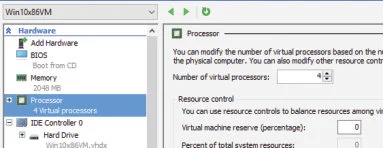
- 「プロセッサ」を展開し、配下の「NUMA」を選びます。
- プロセッサの最大数と、ソケットあたりに許可する NUMA ノードの最大数に、それぞれ2を入力します。
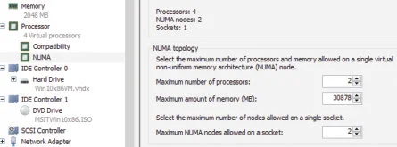
- 「OK」をクリックして設定を保存します。
- 仮想マシンを起動します。
- カーネルデバッガーで
!numaを実行します。次は先ほど構成した仮想マシンでの出力例です。2: kd> !numa NUMA Summary:
------------ Number of NUMA nodes : 2 Number of Processors : 4 unable to get nt!MmAvailablePages MmAvailablePages : 0x00000000 KeActiveProcessors : ****---------------------------- (0000000f) NODE 0 (FFFFFFFF820510C0): Group : 0 (Assigned, Committed, Assignment Adjustable) ProcessorMask : **------------------------------ (00000003) ProximityId : 0 Capacity : 2 Seed : 0x00000001 IdleCpuSet : 00000003 IdleSmtSet : 00000003 NonParkedSet : 00000003 Unable to get MiNodeInformation NODE 1 (FFFFFFFF8719E0C0): Group : 0 (Assigned, Committed, Assignment Adjustable) ProcessorMask : --**---------------------------- (0000000c) ProximityId : 1 Capacity : 2 Seed : 0x00000003 IdleCpuSet : 00000008 IdleSmtSet : 00000008 NonParkedSet : 0000000c Unable to get MiNodeInformation
NUMA システムの性能を最大限に引き出したいアプリケーションは、アフィニティマスクを設定して、プロセスの実行先を特定のノード内のプロセッサに制限できます。Windows 自体も NUMA を考慮したスケジューリングにより、ほとんどすべてのスレッドの実行先を、単一の NUMA ノード内に収めています。
スケジューリングアルゴリズムが NUMA をどう考慮するかは、この章の「プロセッサの選択」で説明します。ノード内のローカルメモリを活用するメモリマネージャーの最適化については、第5章を参照してください。
プロセッサグループへの割り当て
Windows はシステムの構成を調べて、論理プロセッサ、SMT セット、マルチコアパッケージ、物理ソケットの関係を把握します。同時に、各プロセッサを適切なグループに割り当て、先述の拡張アフィニティマスクでグループ内のプロセッサへのアフィニティを表します。この処理は KePerformGroupConfiguration が行います。初期化のフェーズ1で、ほかの処理より先に呼び出されます。処理手順は次のとおりです。
- 検出された全ノード（
KeNumberNodes個）を調べ、各ノードに何個の論理プロセッサを収容できるかを算出します。この値は、システムの全 NUMA ノードを示すKeNodeBlock配列から参照できる各ノードのMaximumProcessorsに格納します。
システムが NUMA 近接 ID に対応していれば、各ノードの近接 ID を取得し、ノードブロックに保存します。
- NUMA ノード間の距離を格納する配列（
KeNodeDistance）を確保し、ノードの組み合わせごとに距離を計算します。
以降では、既定の NUMA 割り当てを上書きするユーザー設定を処理します。たとえば、Hyper-V をインストールし、ハイパーバイザーを自動起動するように設定したシステムを考えます。CPU が拡張ハイパーバイザーインターフェイスに対応していなければ、プロセッサグループは1つだけ有効になり、収容できる NUMA ノードはすべてグループ0に割り当てられます。この場合、Hyper-V は64個を超えるプロセッサを使えません。
- ローダーから、ユーザーが設定した静的なグループ割り当てデータが渡されたかどうかを調べます。このデータは、NUMA ノードごとの近接情報とグループの割り当てを指定します。
注記 大規模な NUMA サーバーでテストや検証を行うときに近接情報やグループ割り当てを個別に指定するには、
HKLM\SYSTEM\CurrentControlSet\Control\NUMAのレジストリ値Group AssignmentとNode Distanceを使います。データは件数に続いて近接 ID とグループ割り当てを配列で並べます。各値は32ビットです。 - カーネルは、データを有効とみなす前に、近接 ID から対応するノード番号を特定し、指定されたグループ番号を関連付けます。そのうえで、NUMA ノード0がグループ0に割り当てられていることと、すべての NUMA ノードの容量がグループの大きさと整合することを確認します。最後に、空き容量が残っているグループの数を調べます。
注記 NUMA ノード0は常にグループ0に割り当てられます。
- カーネルは、指定された静的な割り当てを尊重しながら、NUMA ノードをグループに動的に割り当てます。通常は1グループにできるだけ多くのノードをまとめ、グループ数を最小限にします。BCD の
maxgroupオプションでローダーの/MAXGROUPパラメーターを有効にすると、この既定動作が変わります。本書の対象実装ではグループ数の上限は20で、その範囲内で、なるべく多くの NUMA ノードをなるべく多くのグループに分散させます。ノードが1つだけの場合、またはmaxgroupが無効で全ノードを1グループに収容できる場合は、すべてのノードをグループ0に割り当てます。 - 複数のノードがあれば、NUMA ノード間の距離が静的に設定されていれば、その値を確認します。次に、容量の大きなノードが先に来るよう、全ノードを容量順に並べます。グループ数を最小化するモードでは、各ノードの容量を足し合わせて、収容できる論理プロセッサの最大数を算出します。
手順6で求めた最大数を1グループあたりのプロセッサ数で割って、システム全体のグループ数を見積もります。上限は20です。グループ数を最大化するモードでは、初期値としてノード数と同じ数のグループを見込みます。この場合も上限は20です。
- カーネルは最終的な割り当てを始めます。先ほどの固定の割り当てをすべて確定し、それに対応するグループを作成します。
- グループ内のノード間の距離が最小になるよう、すべての NUMA ノードを再配置します。距離が近いノードを同じグループにまとめ、距離順に並べます。
- ノードからグループへの動的な割り当てにも、同じ処理を行います。
- 残った空のノードは、グループ0に割り当てます。
グループあたりの論理プロセッサ数
Windows は通常、1グループに64個のプロセッサを割り当てます。BCD 要素 groupsize を通じてローダーオプション /GROUPSIZE を指定すると、この構成を変更できます。2のべき乗を指定して通常より小さいグループを作り、システムがプロセッサグループを正しく扱えるかをテストできます。たとえば、論理プロセッサが8個のシステムを、1、2、または4グループがあるように構成できます。さらに、BCD 要素 groupaware で /FORCEGROUPAWARE を有効にすると、カーネルは可能な限りグループ0を避けます。スレッドや DPC のアフィニティの選択、プロセスのグループ割り当てなどでは、利用できる中で最大のグループ番号を使います。グループサイズを1にすると、ほとんどすべてのアプリケーションが単一プロセッサで動くようになるため、この設定は避けます。カーネルは、アプリケーションが明示的に別の設定を要求するまで、プロセスのアフィニティマスクを1グループに制限し、ほとんどのアプリケーションは変更を要求しないためです。
あるパッケージの論理プロセッサを1グループに収容できない場合は、収まるように CoresPerPhysicalProcessor を減らします。SMT セットも収まらない場合は、LogicalProcessorsPerCore も減らします。1つのパッケージが複数の NUMA ノードを含む場合は例外です。まれですが、マルチチップモジュール（MCM）では、2組のコアと2つのメモリコントローラーが同一のダイまたはパッケージに収まります。ACPI の静的リソースアフィニティテーブル（SRAT）が、この MCM を2つの NUMA ノードとして定義していれば、グループ構成アルゴリズムの結果によっては、Windows が2つのノードを別々のグループに割り当てます。この場合、MCM パッケージは複数のグループにまたがります。
これらのオプションは、開発者がドライバーやアプリケーションの重大な互換性問題を見つけて修正するためのものです。さらに、NUMA に対応しないマシンでも、NUMA として動作させます。先ほどの割り当て手順のとおり、Windows は NUMA ノードが複数のグループにまたがることを許しません。そのため、カーネルが通常より小さいグループを作ると、各グループに固有の NUMA ノードが必要になります。たとえば、クアッドコアプロセッサでグループサイズを2にすると、2グループが作られ、元のノードの下に2つの NUMA サブノードができます。スケジューリングとメモリ管理の方針には、実際の NUMA システムと同じ影響が現れるため、テストに利用できます。
論理プロセッサの状態
Windows は、共有およびローカルの実行可能キューとサマリーに加え、システム内のプロセッサの状態を追跡する2つのビットマスクを管理します。これらのマスクの使い方は、後述の「プロセッサの選択」で説明します。
KeActiveProcessors- アクティブプロセッサマスクです。システムで使用できるプロセッサごとに対応するビットがセットされます。実行中の Windows エディションのライセンスが使用可能な物理プロセッサ数を制限していると、マスクが表すプロセッサは実際の搭載数より少なくなります。ライセンスで認められたプロセッサ数は、
KeRegisteredProcessorsで確認できます。ここでいうライセンス上のプロセッサは、物理パッケージを指します。 KeMaximumProcessors- ライセンスの上限内で利用できる論理プロセッサの最大数です。将来動的に追加できるプロセッサも含みます。HAL への問い合わせと、存在する場合は ACPI の SRAT の確認によって判明した、プラットフォーム固有の上限も反映します。
ノードのデータ（KNODE）には、そのノード内のアイドル状態の CPU の集合（IdleCpuSet）、アイドル状態でパークされていない CPU の集合（IdleNonParkedCpuSet）、アイドル状態の SMT セットの集合（IdleSmtSet）も含まれます。
スケジューラーのスケーラビリティ
マルチプロセッサシステムでは、あるプロセッサが、別のプロセッサ固有のスケジューリングデータ構造を変更することがあります。たとえば、そのプロセッサで実行を希望するスレッドをキューに入れる場合です。このため、各 PRCB にキュー型スピンロックを設け、DISPATCH_LEVEL で保持してデータ構造へのアクセスを同期します。スレッドを選ぶときは、対象プロセッサの PRCB だけをロックすれば済みます。後述するように、他のキューからスレッドを取得する場合など、必要に応じて別のプロセッサの PRCB も1つロックできます。スレッドのコンテキスト切り替えは、さらに細かい単位であるスレッドごとのスピンロックで同期します。
CPU ごとに、実行可能への移行を保留したスレッドを格納するリスト（DeferredReadyListHead）もあります。このリストにあるスレッドは実行できる条件を満たしていますが、実行可能状態への移行処理を、より適切な時点まで先送りします。各プロセッサは自分のリストだけを操作するため、PRCB のスピンロックでリストを保護する必要はありません。プロセスやスレッドのアフィニティ、優先度（ブーストによる変更を含む）、クォンタムを変更したあと、KiProcessDeferredReadyList がリストを処理します。
この関数はリスト内の各スレッドに対して KiDeferredReadyThread を呼びます。このルーチンは、後述の「プロセッサの選択」のアルゴリズムを実行します。その結果、スレッドはすぐに実行されるか、対象プロセッサの実行可能リストに入ります。対象プロセッサを使えなければ、別のプロセッサで処理されます。そのプロセッサの実行可能への移行を保留するリストに入る場合と、実行待機状態に移るか直ちに実行される場合があります。コアパーキング機構は、コアをパークするときにこの性質を利用します。対象の全スレッドを実行可能への移行を保留するリストに入れ、そのリストを処理します。KiDeferredReadyThread はパークされたコアを候補から外すため、対象プロセッサのスレッドはすべて別のプロセッサに移ります。
アフィニティ
スレッドにはそれぞれアフィニティマスクがあり、どのプロセッサで実行できるかを指定します。スレッドのマスクはプロセスのマスクを継承します。既定では、すべてのプロセスとそのスレッドに対して、所属グループ内のアクティブなプロセッサすべてを含むマスクを設定します。そのため、システムはプロセスの所属グループで利用できる任意のプロセッサに、スレッドを割り当てられます。アプリケーションは、スループットの最適化や、特定のプロセッサ群への処理の割り振りのために、次の方法でアフィニティを変更できます。
SetThreadAffinityMaskを呼び、個々のスレッドのアフィニティを設定します。SetProcessAffinityMaskを呼び、プロセス内のすべてのスレッドのアフィニティを設定します。- タスクマネージャーまたは Process Explorer で、プロセスを右クリックし、「関係の設定」（Set Affinity）を選びます。Sysinternals の PsExec では、コマンドラインの
-aオプションを使えます。詳細はヘルプを参照してください。 - 第3章で説明した
SetInformationJobObjectでジョブ全体のアフィニティマスクを設定し、そのジョブにプロセスを所属させます。 - アプリケーションをビルドするときに、イメージヘッダーでアフィニティマスクを指定します。
ヒント Windows のイメージ形式の詳細は、Microsoft の「Portable Executable and Common Object File Format Specification」を参照してください。
リンク時にイメージに単一プロセッサフラグを設定することもできます。このフラグがあると、システムはプロセス作成時にプロセッサを1つ選び（MmRotatingProcessorNumber）、そのプロセッサだけを含むアフィニティマスクを割り当てます。グループの先頭から順に選び、最後まで達すると先頭に戻ります。たとえば、2プロセッサのシステムでは、このフラグを持つイメージを起動するたびに CPU 0、CPU 1、CPU 0、CPU 1 の順に割り当てます。マルチスレッドプログラムの同期に不具合があり、競合状態が原因で、マルチプロセッサシステムでのみその不具合が表面化する場合に、一時的な回避策として使えます。こうした症状を示すイメージが未署名なら、PE（Portable Executable）イメージ編集ツールでヘッダーにフラグを追加できます。署名済みの実行ファイルにも対応する方法は、Microsoft Application Compatibility Toolkit で互換性シムを追加し、起動時に互換性データベースの設定に従って、イメージを単一プロセッサ専用として扱わせることです。
実験：プロセスのアフィニティを表示・変更する
この実験では、プロセスのアフィニティ設定を変更し、新しく起動したプロセスにその設定が継承されることを確認します。
- コマンドプロンプト（
Cmd.exe）を起動します。 - タスクマネージャーまたは Process Explorer を起動し、プロセス一覧で
Cmd.exeを探します。 - プロセスを右クリックし、「関係の設定」（Set Affinity）を選びます。プロセッサの一覧が表示されます。次は論理プロセッサが8個あるシステムの例です。
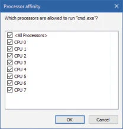
- 利用できるプロセッサの一部を選び、「OK」をクリックします。そのプロセスのスレッドは、選んだプロセッサでのみ実行されるようになります。
- コマンドプロンプトで
Notepadと入力し、Notepad.exeを起動します。 - タスクマネージャーまたは Process Explorer に戻り、新しく起動したメモ帳のプロセスを探します。
- メモ帳のプロセスを右クリックし、アフィニティの設定を開きます。コマンドプロンプトで選んだものと同じプロセッサが選択されています。子プロセスはアフィニティ設定を親プロセスから継承するためです。
ある CPU でしか実行できないスレッドが実行可能になっても、Windows は、その CPU で実行中のスレッドを別の CPU に移して場所を空けることはしません。たとえば、CPU 0 で優先度8、CPU 1 で優先度4のスレッドが動作しており、両方ともどのプロセッサでも実行できるとします。ここで、CPU 0 でしか実行できない優先度6のスレッドが実行可能になっても、Windows は優先度8のスレッドを CPU 1 に移して優先度4のスレッドをプリエンプトすることはしません。優先度6のスレッドは実行可能状態のまま待ちます。このように、プロセスやスレッドのアフィニティマスクを変更すると、実行先が限られるため、通常より CPU 時間が少なくなることがあります。この設定は慎重に行う必要があります。多くの場合、各スレッドの実行先は Windows に任せるのが最適です。
拡張アフィニティマスク
元のアフィニティマスクは64ビットシステムで64ビットの構造体なので、最大64個のプロセッサしか表せません。これを超える構成では、Windows は拡張アフィニティマスク KAFFINITY_EX を使います。これは、対応するプロセッサグループごとに1つのアフィニティマスクを持つ配列です。本書の対象実装では20グループ分が定義されています。
スケジューラーが拡張アフィニティマスク内のプロセッサを参照するときは、まずグループ番号から対応するビットマスクを取得し、そのマスクを直接参照します。カーネル API は拡張アフィニティマスク自体を公開していません。呼び出し元がグループ番号を引数に渡すと、そのグループの従来形式のマスクを受け取れます。一方、Windows API で通常問い合わせられるのは、現在実行中のスレッドが属する1つのグループの情報だけです。この問い合わせで対象グループを選ぶことはできません。
拡張アフィニティマスクと、それを扱う API を使うと、プロセスに最初に割り当てられたグループの外でも、そのプロセスのスレッドを実行できます。たとえば、256個のプロセッサを持つマシンで、あるプロセスに4つのスレッドがあるとします。各スレッドがグループ0、1、2、3にそれぞれ 0x10（2進数で 0b10000）のアフィニティマスクを設定すれば、スレッド1はプロセッサ4、スレッド2は68、スレッド3は132、スレッド4は196で実行できます。また、それぞれの所属グループで全ビットが1のマスク（0xFFFF…）を設定すれば、プロセス全体ではシステム内のどのプロセッサでも使えます。ただし、個々のスレッドは自分のグループ内でしか実行できません。
スレッドを作成するときに拡張アフィニティを使うには、スレッドの属性リストの PROC_THREAD_ATTRIBUTE_GROUP_AFFINITY でグループ番号を指定します。既存のスレッドには SetThreadGroupAffinity を使います。
システムアフィニティマスク
Windows のドライバーは通常、System プロセス内で独立して動くのではなく、呼び出し元のスレッドや任意のスレッドのコンテキストで実行されます。そのため、アプリケーションの開発者が指定したアフィニティがドライバーコードにも適用される場合があります。その制約はアプリケーションの都合で設定されたものです。ドライバーにも適用されると、割り込みやキューに入った作業の処理を妨げる場合があります。ドライバーは、KeSetSystemAffinityThread、KeSetSystemAffinityThreadEx、KeSetSystemGroupAffinityThread でユーザースレッドのアフィニティを一時的に上書きできます。復元には KeRevertToUserAffinityThread、KeRevertToUserAffinityThreadEx、KeRevertToUserGroupAffinityThread を使います。
優先プロセッサと直前のプロセッサ
カーネルのスレッド制御ブロックには、スレッドごとに次の3つの CPU 番号が入ります。
- 優先プロセッサ（Ideal processor）
- そのスレッドの実行先として優先するプロセッサです。
- 直前のプロセッサ（Last processor）
- そのスレッドが最後に実行されたプロセッサです。
- 次のプロセッサ（Next processor）
- そのスレッドがこれから実行されるか、すでに実行中のプロセッサです。
スレッドを作成するとき、プロセス制御ブロックにあるシード値を使って優先プロセッサを選びます。スレッドを作るたびにシードを増やすため、同じプロセス内で新しく作ったスレッドには、利用できるプロセッサが順番に割り当てられます。たとえば、システムで最初のプロセスでは、1つ目のスレッドの優先プロセッサは0、2つ目は1です。次のプロセスでは、1つ目のスレッドには1、2つ目には2を割り当てます。このように、各プロセスのスレッドを複数のプロセッサに分散させます。
SMT（ハイパースレッディング）システムでは、次の優先プロセッサを次の SMT セットから選びます。たとえば、ハイパースレッディングを有効にしたクアッドコアシステムでは、あるプロセスのスレッドの優先プロセッサが 0、2、4、6、0、…となり、別のプロセスでは 3、5、7、1、3、…となることがあります。こうしてスレッドを物理コアに均等に分散させます。
この割り当ては、プロセス内の各スレッドが同程度の処理を行うと仮定しています。実際のマルチスレッドプロセスには通常、管理用のスレッドが1つ以上あり、ワーカースレッドがいくつもあるため、処理量は異なります。プラットフォームの性能を引き出すには、アプリケーションが SetThreadIdealProcessor を使って各スレッドの優先プロセッサ番号を指定する方法もあります。プロセッサグループを使う場合は、アフィニティのグループ番号も指定できる SetThreadIdealProcessorEx を呼びます。
64ビット版 Windows は、KNODE の Stride フィールドを使って、同じプロセスで新しく作ったスレッドの割り当てを分散させます。この値は、ある NUMA ノード内で、独立した別の論理プロセッサ群に移るために、アフィニティマスク上でいくつのビットを飛ばすかを表します。SMT システムでは別のコア、SMT を使わないマルチコアシステムでは別のパッケージに移ります。32ビット版 Windows は大規模なプロセッサ構成に対応していないため、この値を使いません。次のプロセッサ番号を選び、可能な限り同じ SMT セットを共有しないようにします。
優先ノード
NUMA システムでは、プロセスの作成時に優先ノードを選びます。最初のプロセスはノード0、2番目はノード1という順に割り当てます。プロセス内の各スレッドの優先プロセッサは、そのプロセスの優先ノードから選びます。各プロセスの最初のスレッドには、優先ノード内の最初のプロセッサを割り当てます。同じ優先ノードを持つプロセスにスレッドが追加されるたび、ノード内の次のプロセッサを優先プロセッサとして割り当てます。
CPU セット
アフィニティ（ハードアフィニティ）は、スレッドが実行できるプロセッサを制限し、スケジューラーは常にその制約を守ります。優先プロセッサ（ソフトアフィニティ）は、スレッドの状態がプロセッサのキャッシュに残っていることを見込み、そのプロセッサでスレッドを実行しようとする仕組みです。実際には、別のプロセッサで実行される場合もあります。どちらの仕組みでも、システムスレッドの動作など、システム全体の処理を制御することはできません。また、システム内の全プロセスに一括でハードアフィニティを設定する簡単な方法はありません。プロセスを一つずつ調べても、すべてには適用できません。外部から変更するには PROCESS_SET_INFORMATION アクセス権が必要ですが、保護されたプロセスに対してはその権利が付与されないため、通常、システムプロセスのアフィニティは外部から変更できません。
Windows 10 と Windows Server 2016 では、CPU セットが導入されました。CPU セットはアフィニティの一種で、システム全体（システムスレッドの処理を含む）、プロセス、個々のスレッドに設定できます。たとえば、低遅延のオーディオアプリケーションが1つのプロセッサを専用に使い、システムのほかの処理を別のプロセッサに割り当てる、といった構成を実現できます。
執筆時点では、公開ドキュメントに記載されているユーザーモード API でできることは限られています。GetSystemCpuSetInformation は、各 CPU セットのデータを格納した SYSTEM_CPU_SET_INFORMATION の配列を返します。
本書の対象実装では、1つの CPU セットが1つの CPU に対応します。したがって、返される配列の長さは、システム内の論理プロセッサ数と同じです。各 CPU セットには ID があり、実装上は256（0x100）に CPU インデックス（0、1、…）を加えた値が割り当てられます。SetProcessDefaultCpuSets でプロセスの既定の CPU セットを設定する場合も、SetThreadSelectedCpuSets で個別のスレッドに CPU セットを設定する場合も、この ID を渡します。
たとえば、中断をできるだけ避けたい重要なスレッドには、CPU セットを1つだけ指定します。プロセスの既定値には、残りの CPU に対応する CPU セットをすべて指定します。
システムの CPU セットを縮小する機能は、Windows API にはありません。システムコール NtSetSystemInformation で実行できます。成功するには、呼び出し元に SeIncreaseBasePriorityPrivilege が必要です。
実験：CPU セット
この実験では、CPU セットの情報を表示し、設定を変えたときの影響を観察します。
- 本書のダウンロード資料から
CpuSet.exeをダウンロードします。 - 管理者権限でコマンドプロンプトを開き、
CPUSET.exeのあるディレクトリに移動します。 - 引数を付けずに
cpuset.exeを実行し、現在のシステムの CPU セットを表示します。次のような出力が得られます。System CPU Sets --------------- Total CPU Sets: 8 CPU Set 0 Id: 256 (0x100) Group: 0 Logical Processor: 0 Core: 0 Last Level Cache: 0 NUMA Node: 0 Flags: 0 (0x0) Parked: False Allocated: False Realtime: False Tag: 0 CPU Set 1 Id: 257 (0x101) Group: 0 Logical Processor: 1 Core: 0 Last Level Cache: 0 NUMA Node: 0 Flags: 0 (0x0) Parked: False Allocated: False Realtime: False Tag: 0 ...
CPUSTRES.exeを起動し、1つか2つのスレッドを最高の活動レベルで動かします。CPU 使用率が約25%になるように調整します。
- タスクマネージャーを開き、「パフォーマンス」タブの「CPU」を選びます。
- CPU グラフが全体の使用率を表示している場合は、論理プロセッサごとの表示に切り替えます。
- コマンドプロンプトで次のコマンドを実行します。
-pの後の値は、実験環境の CPUSTRES プロセスの ID に置き換えてください。CpuSet.exe -p 18276 -s 3
-sは、プロセスの既定値として設定するプロセッサマスクを指定します。ここでは、3が CPU 0 と CPU 1 を表します。タスクマネージャーには、次のように、この2つの CPU の使用率が高くなったことが表示されます。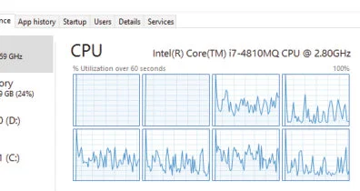
- CPU 0 でどのスレッドが動いているかを詳しく見てみます。Windows SDK に含まれる Windows Performance Recorder（WPR）と Windows Performance Analyzer（WPA）を使います。「スタート」を開き、「WPR」と入力して、「Windows Performance Recorder」を選びます。管理者権限への昇格を許可すると、次の画面が表示されます。

- 既定の設定で、この実験に必要な CPU 使用状況を記録できます。WPR は Event Tracing for Windows（ETW）のイベントを記録します。ETW は Part 2 の第8章で説明します。ダイアログの「Start」をクリックし、1〜2秒後に、ラベルが「Save」に変わった同じボタンをクリックします。
- WPR が記録データの保存先を提示します。そのまま使うか、別のファイル名やフォルダーを指定します。
- 保存が終わると、WPR がファイルを WPA で開くかどうか尋ねます。WPA で開く方を選びます。
- WPA が起動し、保存したファイルを読み込みます。WPA には本書で扱う範囲を超える多くの機能があります。左側には、記録された情報のカテゴリが次のように表示されます。

- 「Computation」を展開し、その下の「CPU Usage (Precise)」を展開します。
- 「Utilization by CPU」グラフをダブルクリックします。メイン領域に次のように表示されます。
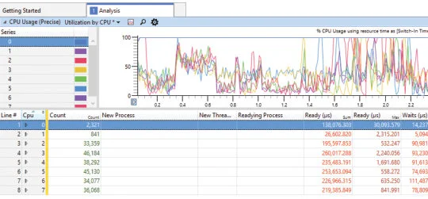
- ここでは CPU 0 に注目します。次の手順で、CPU 0 を CPUSTRES 専用にします。まず「CPU 0」を展開します。CPUSTRES に加え、ほかのプロセスも表示されます。

- 次のコマンドを実行して、システムが CPU 0 以外のプロセッサを使うように制限します。このシステムにはプロセッサが8個あるため、すべてを含むマスクは255（
0xff）です。CPU 0 を除くと254（0xfe）になります。実験環境に合ったマスクに置き換えてください。CpuSet.exe -s 0xfe
- タスクマネージャーの表示は、ほとんど変わらないはずです。CPU 0 の内訳を詳しく見るため、もう一度 WPR を起動し、先ほどと同じ設定で1〜2秒間記録します。
- 記録したトレースを WPA で開き、「Utilization by CPU」を表示します。
- 「CPU 0」を展開します。ほとんどが CPUSTRES で、ときどき System プロセスも表示されます。

- 「CPU Usage (in View) (ms)」列を見ると、System プロセスが使った時間はマイクロ秒単位で、ごくわずかです。CPU 0 が実質的に CPUSTRES 専用になったことがわかります。
- 引数なしでもう一度
CPUSET.exeを実行します。最初のセット（CPU 0）にはAllocated: Trueと表示されます。システム汎用の CPU から外れ、特定のプロセスに割り当てられたためです。
- CPU Stress を終了します。
- 次のコマンドを実行し、システムの CPU セットを既定の状態に戻します。
Cpuset -s 0
マルチプロセッサシステムでのスレッド選択
マルチプロセッサシステムの詳細に入る前に、「実行するスレッドの選択」で説明したアルゴリズムを振り返ります。新しい候補が見つからなければ現在のスレッドを実行し続け、現在のスレッドをブロックする必要があればアイドルスレッドを実行しました。スレッドを選ぶ第3のアルゴリズムが、先ほど触れた KiSearchForNewThread です。ここで扱うのは、現在のスレッドがオブジェクトの待機に入ってブロックされる直前に、このアルゴリズムが呼ばれる場合です。Windows API の Sleep が内部で使う NtDelayExecutionThread を呼び出す場合も含みます。
注記 この違いは、よく使われる Sleep(1) と、先ほどの SwitchToThread を比べるとわかります。現在のスレッドを次のタイマーティックまでブロックする Sleep(1) は、ここから説明するアルゴリズムを使います。SwitchToThread は先ほどの処理を使います。
KiSearchForNewThread はまず NextThread フィールドを読み、このプロセッサで次に実行するスレッドがすでに選ばれているか確認します。選ばれていれば、そのスレッドにすぐに切り替え、状態を実行中にします。選ばれていなければ KiSelectReadyThreadEx を呼びます。スレッドが見つかった場合は、同じようにすぐに実行します。
スレッドが見つからなければ、アイドルスレッドの実行前でも、プロセッサをアイドル状態として記録します。そのうえで、ほかの論理プロセッサの共有キューを調べます。先述の通常のアルゴリズムは、この時点で探索を打ち切ります。ただし、プロセッサコアがパーキングの対象なら、ほかの論理プロセッサを調べません。新しい処理を割り当てて稼働を続けるより、コアをパーク状態に移す方を優先します。
この探索を続ける場合は、別のキューからスレッドを取得するループに入ります。まず現在の NUMA ノードを調べ、アイドル状態のプロセッサを探索対象から除きます。アイドル状態なら、移して実行すべきスレッドを持たないはずだからです。次に、現在の CPU の共有実行可能キューを調べ、ループ内で KiSearchForNewThreadOnProcessor を呼びます。スレッドが見つからなければ、アフィニティを次のグループに切り替えて、同じ関数を呼びます。今度は対象 CPU が次のグループの共有キューを指すため、そのキューから最適な実行可能スレッドを探します。見つからなければ、そのグループ内の各プロセッサのローカルキューも同様に調べます。それでも見つからず、DFSS が有効であれば、別の論理プロセッサのアイドル時専用キューから、可能ならスレッドを1つ取り出して現在のプロセッサで実行できるようにします。
実行可能な候補が見つからなければ、論理プロセッサ番号を下げながら、現在の NUMA ノード内の全論理プロセッサを調べます。
続いて、距離が次に近いノードへと探索を広げ、現在のグループの全ノードを調べます。Windows では、1つのスレッドのアフィニティは単一のグループに限られます。候補が見つからなければ、関数は NULL を返します。待機に入る過程で呼ばれた場合は、アイドルスレッドに切り替え、アイドルスケジューリングを省略します。すでにアイドルスケジューラーから呼ばれていた場合は、プロセッサがスリープ状態に入ります。
プロセッサの選択
これまでは、ある論理プロセッサで実行するスレッドを Windows がどう選ぶかを説明しました。各スケジューリングルーチンが参照できる実行可能スレッドのデータベースがあることを前提としていました。ここからは、そのデータベースにスレッドが入るまでの処理、つまり、実行可能になったスレッドをどの論理プロセッサのキューに割り当てるかを説明します。先ほど見たマルチプロセッサ構成、スレッドのアフィニティ、優先プロセッサの設定を、割り当ての判断に使います。
アイドル状態のプロセッサがある場合
スレッドが実行可能になると、スケジューラーは KiDeferredReadyThread を呼び、次の2つの処理を行います。
- 必要に応じて優先度を調整し、クォンタムを更新します。詳細は「優先度のブースト」で説明しました。
- そのスレッドに最適な論理プロセッサを選びます。
Windows はまずスレッドの優先プロセッサを調べ、ハードアフィニティマスクに含まれるアイドル状態のプロセッサの集合を求めます。次の順に候補を絞ります。
- コアパーキング機構がパークした論理プロセッサを、候補から除きます。コアパーキングについては第6章を参照してください。候補が残らなければアイドル状態のプロセッサの選択を打ち切り、次節で説明する、アイドル状態のプロセッサがない場合の処理に移ります。
- 優先ノード（優先プロセッサが属するノード）以外のアイドル状態の論理プロセッサを除きます。ただし、候補が一つも残らなくなる場合は除きません。
- SMT システムでは、アイドル状態でない SMT セットを候補から除きます。優先プロセッサ自体が候補から外れる場合も同じです。Windows は、優先プロセッサよりも、アイドル状態の SMT セットを優先します。
- 残った候補に優先プロセッサがあるか確認します。なければ、最適なアイドル状態のプロセッサを探します。まず、スレッドが直前に実行されたプロセッサが残っているかを調べます。残っていれば、一時的な優先プロセッサとして選びます。優先プロセッサの選択ではキャッシュヒットを増やすことを目指しており、直前に実行されたプロセッサを選ぶと、キャッシュにデータが残っている可能性が高まります。直前のプロセッサが候補に残っていなければ、現在このスケジューリングコードを実行中のプロセッサが残っているか調べ、残っていれば同様に選びます。
- 直前のプロセッサと現在のプロセッサがどちらもアイドル状態でなければ、優先プロセッサと同じ SMT セットに属さない論理プロセッサを候補から除きます。候補が残らない場合は、代わりに現在のプロセッサと同じ SMT セットに属する候補を残します。ただし、この方法でも候補が残らなければ除外しません。選びたかった優先プロセッサや直前のプロセッサを使えない場合でも、同じ SMT セット内のアイドルプロセッサを使えば、コアのキャッシュを共有するため、キャッシュの面ではほぼ同じ効果を得られます。
- 手順5のあともアイドル状態の候補が複数ある場合は、番号が最も小さいプロセッサを選びます。
実行先を選ぶと、スレッドを実行待機（Standby）状態にし、アイドルプロセッサの PRCB がそのスレッドを指すように更新します。プロセッサがアイドル状態でも停止していなければ、スケジューリング処理をすぐに実行させるために DPC 割り込みを送ります。このスケジューリング処理が起動すると、KiCheckForThreadDispatch を呼びます。この関数は、そのプロセッサに新しいスレッドが割り当てられたことを検出し、可能ならすぐにコンテキストを切り替えます。切り替えを AutoBoost に通知し、保留中の APC も配信します。切り替えを待つスレッドがなければ、代わりに DPC 割り込みを送ります。
アイドル状態のプロセッサがない場合
スレッドが実行可能になった時点でアイドル状態のプロセッサがない場合、あるいは最初の絞り込みでパーク中のプロセッサを除いた結果、候補が空になった場合は、まず候補が空になった理由を確認します。パーキングが理由であれば、スケジューラーは KiSelectCandidateProcessor を呼び、コアパーキング機構に最適な候補を問い合わせます。コアパーキング機構は、優先ノード内でパークされていないプロセッサのうち番号が最も大きいものを選びます。該当するプロセッサがなければ、優先プロセッサのパーキングを強制的に解除します。スケジューラーは、返された候補がアイドル状態かどうかを確認し、アイドル状態であれば、前節と同じ手順でそのスレッドを割り当てます。
それでもアイドル状態のプロセッサを選べなければ、Windows は、実行中のスレッドをプリエンプトするかどうかを判断します。まず、アフィニティの制約を満たすプロセッサを、スレッドの優先プロセッサ、直前に実行されたプロセッサ、現在の NUMA ノード内で最初に利用できるプロセッサ、別の NUMA ノードにある最も近いプロセッサの順で選びます。
次に、選んだプロセッサで実行中のスレッドを、新しいスレッドがプリエンプトできるかを判断します。比較に使うランクは、スケジューリンググループなどに応じた、各スレッドの相対的な強さを表す内部値です。詳しくは、後述の「グループベースのスケジューリング」を参照してください。新しいスレッドのランクが0（最高）の場合、ランクの値が実行中のスレッドより小さい場合、または同じランクで新しいスレッドの優先度が高い場合に、プリエンプトします。Windows は実行中のスレッドにプリエンプトの印を付け、対象プロセッサに DPC 割り込みをキューイングして、新しいスレッドに切り替えます。
実行可能になったスレッドをすぐに実行できなければ、そのスレッドを実行可能状態にして、アフィニティの制約に応じて共有キューまたはローカルキューに入れます。スレッドはそこで順番を待ちます。先ほどの例で見たように、プリエンプトされて実行可能状態に移った場合はキューの先頭に、それ以外の場合は末尾に入れます。
注記 さまざまな場合がありますが、多くのスレッドは優先プロセッサ固有の実行可能キューに入ります。これにより、論理プロセッサが実行するスレッドを選ぶアルゴリズムの一貫性が保たれます。
異種コアのスケジューリング（big.LITTLE）
先述のとおり、カーネルは SMP システムを前提としています。一方、一部の ARM ベースのプロセッサには、性能の異なるコアが混在します。たとえば Qualcomm の典型的な ARM CPU には、消費電力が大きく短時間ずつ動かす高性能コアと、消費電力が小さく長時間動かせる低性能コアがあります。この構成を big.LITTLE と呼ぶことがあります。
Windows 10 では、コアの種類を識別し、コアの規模とポリシーに従ってスレッドを割り当てられるようになりました。ポリシーは、スレッドがフォアグラウンドにあるか、優先度、予想実行時間などを考慮します。電源マネージャーの初期化時と、システムにプロセッサを稼働中に追加したときに、PopInitializeHeteroProcessors を呼んでプロセッサの集合を初期化します。テストなどで異種コア構成を模擬するには、レジストリキー HKLM\System\CurrentControlSet\Control\Session Manager\Kernel\KGroups の下に、次のようにキーを作成します。
- キー名は、プロセッサグループ番号を示す10進数2桁です。最初のグループは
00、次は01です。各グループには最大64個のプロセッサがあり、多くのシステムでは1グループで足ります。 - 各キーに
SmallProcessorMaskという DWORD 値を置きます。これは、小さいコアとして扱うプロセッサを指定するマスクです。たとえば、6プロセッサのグループで下位2ビット（ビット0と1）をセットして値を3にすると、プロセッサ0と1が小さいコア、残りの4つが大きいコアになります。アフィニティマスクと同じ考え方です。
カーネルは、異種コアの処理に関する調整可能なポリシーをグローバル変数に保持します。表4-5に、いくつかの変数とその意味を示します。
| 変数名 | 意味 | 既定値 |
|---|---|---|
KiHeteroSystem | 異種コア構成かどうか。 | False |
PopHeteroSystem | 異種コア構成の種類。None（0）、Simulated（1）、EfficiencyClass（2）、FavoredCore（3）。 | None（0） |
| 変数名 | 意味 | 既定値 |
|---|---|---|
PpmHeteroPolicy | スケジューリングポリシー。None（0）、Manual（1）、SmallOnly（2）、LargeOnly（3）、Dynamic（4）。 | Dynamic（4） |
KiDynamicHeteroCpuPolicyMask | スレッドの重要度を判断するときに考慮する項目。 | 7（フォアグラウンド状態＝1、優先度＝2、予想実行時間＝4） |
KiDefaultDynamicHeteroCpuPolicy | Dynamic の動作。All（0、利用可能な全コア）、Large（1）、LargeOrIdle（2）、Small（3）、SmallOrIdle（4）、Dynamic（5、優先度などの指標で判断）、BiasedSmall（6、優先度などの指標で判断し、小さいコアを優先）、BiasedLarge（7）。 | Small（3） |
KiDynamicHeteroCpuPolicyImportant | 動的ポリシーで重要と判断されたスレッドのポリシー。指定できる値は上の行を参照。 | LargeOrIdle（2） |
KiDynamicHeteroCpuPolicyImportantShort | 動的ポリシーで重要と判断され、実行時間が短いスレッドのポリシー。 | Small（3） |
KiDynamicCpuPolicyExpectedRuntime | 負荷が高いと判断する実行時間の基準。 | 5,200ミリ秒 |
KiDynamicHeteroCpuPolicyImportantPriority | 優先度に基づく動的ポリシーで、この値を超えるとスレッドを重要とみなす。 | 8 |
動的ポリシー（表4-5）では、KiDynamicHeteroCpuPolicyMask とスレッドの状態から重要度を求めます。KiConvertDynamicHeteroPolicy は、フォアグラウンドにあるか、KiDynamicHeteroCpuPolicyImportantPriority に対して優先度がどの程度か、予想実行時間はどの程度かを、この順に調べます。重要と判断された場合は、重要なスレッド向けのポリシーを使ってスケジューリングを決めます。実行時間が判断基準なら、短時間のスレッド向けのポリシーになる場合もあります。表4-5では、KiDynamicHeteroCpuPolicyImportantShort または KiDynamicHeteroCpuPolicyImportant に当たります。
グループベースのスケジューリング
前節までは Windows の標準的なスレッド単位のスケジューリングを説明しました。この方式は Windows NT の初版からあり、その後のリリースでスケーラビリティを改善しながら、一般的な利用環境とサーバー環境を支えてきました。ただし、プロセッサの時間を公平に分けるのは、同じ優先度で競合するスレッドの間だけです。たとえば、ユーザーごとのスレッド数の偏りによって、あるユーザーがほかのユーザーの分まで CPU 時間を使う可能性は考慮されません。数十人が利用するターミナルサービス環境では、これが問題になります。
この環境では、数十人のユーザーが CPU 時間を取り合います。スレッド単位のスケジューリングだけを使うと、あるユーザーの優先度の高いスレッド1つが、マシン上の全ユーザーのスレッドから実行機会を奪う可能性があります。
Windows 8 と Windows Server 2012 では、スケジューリンググループ（KSCHEDULING_GROUP）を単位とするスケジューリングが導入されました。スケジューリンググループは、ポリシー、後述のスケジューリングパラメーター、グループに属するカーネルスケジューリング制御ブロック（KSCB）の一覧を保持します。KSCB はプロセッサごとに1つあります。スレッドは、所属するスケジューリンググループを指すポインターを持ちます。このポインターが null であれば、どのスケジューリンググループにも属しません。図4-19では、T1、T2、T3がグループに属し、T4は属していません。
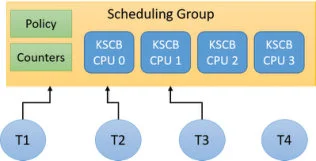
グループスケジューリングでは、次の用語を使います。
- 世代（Generation）
- CPU 使用量を集計する期間です。
- クォータ（Quota）
- 1世代につき、グループに許可される CPU 使用量です。割り当てを使い切った状態を over quota、使い切っていない状態を under quota と呼びます。
- 重み（Weight）
- グループの相対的な重要度です。1〜9の値を取り、既定値は5です。
- フェアシェアスケジューリング
- 割り当てを使い切っていないスレッドで実行を求めるものがなければ、空いている CPU サイクルを、割り当てを使い切ったスレッドに回せます。
KSCB 構造体は、CPU に関する次の情報を保持します。
- 現在の世代で使った CPU サイクル数。
- 長期間の平均サイクル使用量。一時的な負荷の増加と、CPU を継続的に占有する状態を区別するために使います。
- ハードキャップなどの制御フラグ。ハードキャップを設定すると、クォータを超えて割り当てられる CPU 時間が余っていても、スレッドに追加の CPU 時間は与えられません。
- 標準の優先度に対応する実行可能キュー。リアルタイムスレッドはスケジューリンググループに属さないため、対象の優先度は0〜15です。
スケジューリンググループが保持する重要なパラメーターに、ランクがあります。これはスレッドのグループ全体のスケジューリング優先度に相当します。値が0のランクが最も高く、ランクの値が大きいほど、そのグループは多くの CPU 時間を使っており、追加の CPU 時間を得にくくなります。
スケジューラーは優先度より先にランクを比較します。2つのスレッドでランクが異なれば、優先度にかかわらず、ランクの値が小さい方が先に選ばれます。ランクが同じ場合は、優先度を比較します。CPU サイクルの使用量が増えるにつれて、ランクは定期的に調整されます。
ランク0が最も高く、それより大きな値のランクには常に優先します。次のスレッドは暗黙にランク0として扱います。
- どのスケジューリンググループにも属さない通常のスレッド。
- クォータを使い切っていないスレッド。
- リアルタイム優先度（16〜31）のスレッド。
- カーネルのクリティカルリージョンまたはガード付きリージョン内で、IRQL が
APC_LEVEL（1）の状態で動作するスレッド。APC とリージョンについては Part 2 の第8章を参照してください。
KiQuantumEnd などで次に実行するスレッドを選ぶ際は、現在のスレッドと実行可能なスレッドが属するスケジューリンググループを考慮します。グループがあればランクの値が最も小さいスレッドを選びます。同じランクなら優先度を比較し、優先度も同じなら先に到着したスレッドを選びます。クォンタム満了時はラウンドロビンで順番が回ります。
動的フェアシェアスケジューリング
動的フェアシェアスケジューリング（DFSS）は、1台のマシンで動作する複数のセッションに CPU 時間を公平に配分する仕組みです。あるセッションに優先度が比較的高く、頻繁に実行されるスレッドがあっても、そのセッションが CPU を独占するのを防ぎます。リモートデスクトップの役割を持つ Windows Server では既定で有効です。クライアントでもサーバーでも設定できます。実装には前節のグループスケジューリングを使います。
システムの初期化の最終段階で Smss.exe がレジストリの SOFTWARE ハイブを初期化すると、プロセスマネージャーは PsBootPhaseComplete で起動後の最終初期化を始め、PspIsDfssEnabled を呼びます。ここで、DFSS と従来の方式のどちらで CPU クォータを管理するかを決めます。DFSS を有効にするには、2つのレジストリキーで EnableCpuQuota がともに0以外でなければなりません。1つ目の HKLM\SOFTWARE\Policies\Microsoft\Windows\Session Manager\Quota System はポリシーの設定です。2つ目の HKLM\SYSTEM\CurrentControlSet\Control\Session Manager\Quota System はシステムがこの機能に対応するかどうかを指定します。リモートデスクトップの役割を持つ Windows Server では、後者の既定値は TRUE です。
DFSS が有効なら、グローバル変数 PsCpuFairShareEnabled を TRUE にします。これにより、セッション0のプロセスに属するスレッドを除き、すべてのスレッドがスケジューリンググループに属するようになります。PspReadDfssConfigurationValues が前述のキーから設定値を読み込み、グローバル変数に格納します。システムはこれらのキーを監視します。変更があれば、通知コールバックが同じ関数を再度呼び、設定値を更新します。表4-6に設定値とその意味を示します。
| レジストリ値名 | カーネル変数名 | 意味 | 既定値 |
|---|---|---|---|
DfssShortTermSharingMS | PsDfssShortTermSharingMS | 1世代の間にグループのランクの値が増えるまでの時間。 | 30ミリ秒 |
DfssLongTermSharingMS | PsDfssLongTermSharingMS | 1世代の途中でスレッドがクォータを超えた場合に、ランクを0から0以外の値に切り替えるまでの時間。 | 15ミリ秒 |
DfssGenerationLengthMS | PsDfssGenerationLengthMS | CPU 使用量を集計する1世代の長さ。 | 600ミリ秒 |
DfssLongTermFraction1024 | PsDfssLongTermFraction1024 | 長期間のサイクル使用量を算出する指数移動平均の式で使う値。 | 512 |
DFSS を有効にしたあと、セッション0を除く新しいセッションが作られるたびに、MiSessionObjectCreate はそのセッションのスケジューリンググループを確保します。重みには、最小値1と最大値9の中間にあたる既定値5を設定します。スケジューリンググループは、内部にあるポリシー構造体 KSCHEDULING_GROUP_POLICY に従い、DFSS または次節で説明する CPU 使用率制御の情報を管理します。Type メンバーは、DFSS（WeightBased＝0）と使用率制御（RateControl＝1）のどちらを使うかを示します。MiSessionObjectCreate は KeInsertSchedulingGroup を呼び、スケジューリンググループをシステム全体のリストに追加します。このリストはグローバル変数 KiSchedulingGroupList で管理され、プロセッサを稼働中に追加した場合に重みを再計算するために使います。セッションに対応する SESSION_OBJECT 構造体も、スケジューリンググループを参照します。
実験：DFSS の動作を確認する
この実験では、システムで DFSS を有効にし、実際に動作していることを確認します。
- この節で説明したレジストリキーと値を追加して、DFSS を有効にします。仮想マシンでも試せます。設定を反映するため、システムを再起動します。
- ライブカーネルデバッグセッションを開き、次のコマンドで
PsCpuFairShareEnabledを確認します。値が1なら DFSS は有効です。lkd> db nt!PsCpuFairShareEnabled L1 fffff800'5183722a 01
- デバッガーで現在のスレッドを調べます。WinDbg を実行しているスレッドの1つが表示されるはずです。このスレッドはスケジューリンググループに属しています。また、表示した時点では実行中なので、
KSCBはNULLではありません。lkd> !thread THREAD ffffd28c07231640 Cid 196c.1a60 Teb: 000000f897f4b000 Win32Thread: ffffd28c0b9b0b40 RUNNING on processor 1 IRP List:
ffffd28c06dfac10: (0006,0118) Flags: 00060000 Mdl: 00000000 Not impersonating DeviceMap ffffac0d33668340 Owning Process ffffd28c071fd080 Image: windbg.exe Attached Process N/A Image: N/A Wait Start TickCount 6146 Ticks: 33 (0:00:00:00.515) Context Switch Count 877 IdealProcessor: 0 UserTime 00:00:00.468 KernelTime 00:00:00.156 Win32 Start Address 0x00007ff6ac53bc60 Stack Init ffffbf81ae85fc90 Current ffffbf81ae85f980 Base ffffbf81ae860000 Limit ffffbf81ae85a000 Call 0000000000000000 Priority 8 BasePriority 8 PriorityDecrement 0 IoPriority 2 PagePriority 5 Scheduling Group: ffffd28c089e7a40 KSCB: ffffd28c089e7c68 rank 0
dtコマンドを実行し、スケジューリンググループの構造体を表示します。lkd> dt nt!_kscheduling_group ffffd28c089e7a40 +0x000 Policy : _KSCHEDULING_GROUP_POLICY +0x008 RelativeWeight : 0x80 +0x00c ChildMinRate : 0x2710 +0x010 ChildMinWeight : 0 +0x014 ChildTotalWeight : 0 +0x018 QueryHistoryTimeStamp : 0xfed6177 +0x020 NotificationCycles : 0n0 +0x028 MaxQuotaLimitCycles : 0n0 +0x030 MaxQuotaCyclesRemaining : 0n-73125382369 +0x038 SchedulingGroupList : _LIST_ENTRY [ 0xfffff800'5179b110 - 0xffffd28c'081b7078 ] +0x038 Sibling : _LIST_ENTRY [ 0xfffff800'5179b110 - 0xffffd28c'081b7078 ] +0x048 NotificationDpc : 0x0002eaa8'0000008e _KDPC +0x050 ChildList : _LIST_ENTRY [ 0xffffd28c'062a7ab8 - 0xffffd28c'05c0bab8 ] +0x060 Parent : (null) +0x080 PerProcessor : [1] _KSCB
- マシンに別のローカルユーザーを作成します。
- 現在のセッションで CPU Stress を起動します。
- マシン全体が過負荷にならない範囲で、数個のスレッドを最高の活動レベルで動かします。次の画面は、プロセッサが3個の仮想マシンで、2つのスレッドを最高の活動レベルで動かした例です。
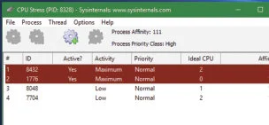
- Ctrl+Alt+Del を押して「ユーザーの切り替え」を選びます。先ほど作成した別のユーザーのアカウントを選び、サインインします。
- このセッションでも CPU Stress を起動し、先ほどと同じ数のスレッドを最高の活動レベルで動かします。
- この CPUSTRES プロセスの「Process」メニューから「Priority Class」を開き、「High」を選びます。DFSS が無効なら、3つのプロセッサを4つのスレッドが取り合い、優先度の低いプロセスに属するスレッドの1つが実行機会を得られなくなるため、高い優先度クラスのプロセスが CPU 時間の大半を使います。
- Process Explorer を開き、2つの CPUSTRES プロセスをそれぞれダブルクリックして、「Performance Graph」タブを選びます。
- 両方のウィンドウを横に並べます。DFSS が有効な状態では、優先度クラスが異なる両プロセスに、ほぼ同じだけの CPU 時間が配分されます。

- 実験で追加したレジストリキーを削除して DFSS を無効にし、システムを再起動します。
- 実験を繰り返します。優先度の高いプロセスに CPU 時間の大半が割り当てられることを確認できます。
CPU 使用率の制限
DFSS は、新しいスレッドをセッションのスケジューリンググループに自動で割り当てます。この方式はターミナルサービスに適していますが、任意のスレッドやプロセスの CPU 時間を制限する用途には十分ではありません。
ジョブオブジェクトを使うと、スケジューリンググループの仕組みをより細かい単位で利用できます。第3章で説明したとおり、ジョブは1つ以上のプロセスを管理します。ジョブに設定できる制限の一つが CPU 使用率制御です。SetInformationJobObject を呼び、ジョブの情報クラスとして JobObjectCpuRateControlInformation、制御データとして JOBOBJECT_CPU_RATE_CONTROL_INFORMATION 構造体を渡します。構造体のフラグで、CPU 時間を制限する次の3種類の設定から選びます。
- CPU 使用率。1〜10,000の値で、パーセント値を100倍した値を指定します。たとえば、40%は4,000です。
- 重みによる配分。1〜9の値で、ほかのジョブに対する相対的な重みを指定します。DFSS ではこの方式を使います。
- CPU 使用率の下限と上限。最初の方式と同じ単位で指定します。計測区間（既定では600ミリ秒）内で、ジョブ内の全スレッドの CPU 使用量が指定された上限に達すると、次の区間が始まるまで追加の CPU 時間を得られません。制御フラグを使うと、CPU 時間に空きがある場合も上限を強制するハードキャップを指定できます。
これらの制限を設定すると、ジョブに属するすべてのプロセスの全スレッドが新しいスケジューリンググループに入り、そのグループに指定した設定が適用されます。
実験：CPU 使用率を制限する
この実験では、ジョブオブジェクトを使った CPU 使用率制限を確認します。執筆時点ではデバッガーに不具合があるため、ローカルのカーネルをデバッグするより、仮想マシン上で実験してそのカーネルに接続する方が確実です。
- テスト用の仮想マシンで CPU Stress を起動し、数個のスレッドで CPU 時間の約50%を使うように設定します。たとえば、8プロセッサのシステムでは、4つのスレッドを有効にし、最高の活動レベルで動かします。

- Process Explorer を開き、対象の CPUSTRES プロセスのプロパティを開いて「Performance Graph」タブを選びます。CPU 使用率は約50%です。
- 本書のダウンロード資料から CPULIMIT ツールをダウンロードします。このツールは、ハードキャップを使って1つのプロセスの CPU 使用率を制限します。
- 次のコマンドを実行し、CPUSTRES プロセスの CPU 使用率を20%に制限します。
6324は実験環境のプロセス ID に置き換えてください。CpuLimit.exe 6324 20
- Process Explorer のウィンドウを確認します。CPU 使用率が約20%に下がります。
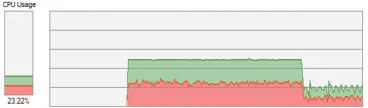
- ホストシステムで WinDbg を開きます。
- テストシステムのカーネルに接続し、実行を中断します。
- 次のコマンドを入力し、CPUSTRES プロセスを探します。
0: kd> !process 0 0 cpustres.exe PROCESS ffff9e0629528080 SessionId: 1 Cid: 18b4 Peb: 009e4000 ParentCid: 1c4c DirBase: 230803000 ObjectTable: ffffd78d1af6c540 HandleCount: <Data Not Accessible> Image: CPUSTRES.exe
- 次のコマンドを入力し、プロセスの基本情報を表示します。
0: kd> !process ffff9e0629528080 1 PROCESS ffff9e0629528080 SessionId: 1 Cid: 18b4 Peb: 009e4000 ParentCid: 1c4c DirBase: 230803000 ObjectTable: ffffd78d1af6c540 HandleCount: <Data Not Accessible> Image: CPUSTRES.exe VadRoot ffff9e0626582010 Vads 88 Clone 0 Private 450. Modified 4. Locked 0. DeviceMap ffffd78cd8941640 Token ffffd78cfe3db050 ElapsedTime 00:08:38.438 UserTime 00:00:00.000 KernelTime 00:00:00.000 QuotaPoolUsage[PagedPool] 209912 QuotaPoolUsage[NonPagedPool] 11880 Working Set Sizes (now,min,max) (3296, 50, 345) (13184KB, 200KB, 1380KB) PeakWorkingSetSize 3325 VirtualSize 108 Mb PeakVirtualSize 128 Mb PageFaultCount 3670 MemoryPriority BACKGROUND BasePriority 8 CommitCharge 568 Job ffff9e06286539a0
JobフィールドがNULLではないことを確認し、!jobでジョブの情報を表示します。CPULIMIT は、CreateJobObjectでジョブを作成し、AssignProcessToJobObjectでプロセスをジョブに追加します。そのあと、CPU 使用率制御の情報クラスと使用率の値2,000（20%）を指定して、SetInformationJobObjectを呼び出します。0: kd> !job ffff9e06286539a0 Job at ffff9e06286539a0 Basic Accounting Information TotalUserTime: 0x0 TotalKernelTime: 0x0 TotalCycleTime: 0x0 ThisPeriodTotalUserTime: 0x0 ThisPeriodTotalKernelTime: 0x0
TotalPageFaultCount: 0x0 TotalProcesses: 0x1 ActiveProcesses: 0x1 FreezeCount: 0 BackgroundCount: 0 TotalTerminatedProcesses: 0x0 PeakJobMemoryUsed: 0x248 PeakProcessMemoryUsed: 0x248 Job Flags [close done] [cpu rate control] Limit Information (LimitFlags: 0x0) Limit Information (EffectiveLimitFlags: 0x800) CPU Rate Control Rate = 20.00% Hard Resource Cap Scheduling Group: ffff9e0628d7c1c0
- 同じプロセスに対して CPULIMIT をもう一度実行し、CPU 使用率を再び20%に設定します。今度は CPUSTRES の使用率が約4%まで下がります。これはジョブが入れ子になるためです。最初のジョブの下に新しいジョブを作り、その新しいジョブにプロセスを割り当てます。その結果、20%のうちの20%、つまり4%が上限になります。
プロセッサの動的な追加と交換
開発者は、各スレッドをどのプロセッサで実行できるかを指定し、優先プロセッサを設定して、どこで実行するのが望ましいかも指定できます。稼働中にプロセッサ数が変わらないシステムでは、この方法で問題ありません。たとえば、デスクトップ機では、プロセッサを交換したり台数を変更したりするにはシャットダウンが必要です。一方、サーバーシステムでは、CPU の交換や追加に伴う停止時間を許容できない場合があります。現在の構成では処理しきれないほど負荷が高いときに、CPU の増設が必要になることもあります。そのピーク時にサーバーを停止すれば、増設の目的に反します。
この要件に対応するため、本書の対象世代のサーバー用マザーボードやシステムは、稼働中のプロセッサの追加と交換に対応しています。ACPI BIOS と関連ハードウェアはその操作を認識して受け入れるよう設計されています。機能全体を動かすには OS 側の対応も必要です。
HAL は KeStartDynamicProcessor を通じて、新しいプロセッサが追加されたことをカーネルに通知します。このルーチンは、起動時に複数のプロセッサを検出し、関連する構造体を初期化するときと同様の処理を行います。プロセッサの動的追加時には、システムの各コンポーネントも追加の処理を行います。たとえば、メモリマネージャーは、追加された CPU に適したページとメモリ構造を割り当て、新しい DPC 用カーネルスタックを初期化します。カーネルは、そのプロセッサのグローバルディスクリプターテーブル（GDT）、割り込みディスクリプターテーブル（IDT）、プロセッサ制御領域（PCR）、プロセッサ制御ブロック（PRCB）などを初期化します。
カーネルのほかのエグゼクティブコンポーネントも呼び出されます。主な目的は、追加されたプロセッサ用のルックアサイドリストを初期化することです。たとえば、I/O マネージャー、エグゼクティブのルックアサイドリスト機構、キャッシュマネージャー、オブジェクトマネージャーは、頻繁に割り当てる構造体のためにプロセッサごとのリストを使います。
最後に、カーネルはそのプロセッサでスレッド化 DPC を使うための初期化を行い、エクスポートされているカーネル変数に新しいプロセッサを反映します。プロセッサ数に依存するメモリマネージャーの各種マスクやプロセスのシード値も更新します。新しいプロセッサの機能をほかのプロセッサと揃えるため、たとえば仮想化支援を有効にします。Windows Hardware Error Architecture（WHEA）に新しいプロセッサがオンラインになったことを通知して、初期化が完了します。
HAL もこの処理に関わります。カーネルが追加を認識したあと、プロセッサを起動するために一度呼ばれ、カーネルがプロセッサを初期化し終えると再び呼ばれます。ここまでの通知とコールバックによってカーネルはプロセッサの追加に対応し、処理能力が上がります。ドライバーが追加されたプロセッサを活用するには、別の通知が必要です。
システムは標準のエグゼクティブコールバックオブジェクト ProcessorAdd を用意しており、ドライバーはこれを使って通知を受け取れます。電源状態やシステム時刻の変更を通知するコールバックと同様に、通知を受けたドライバーは必要に応じて処理を調整できます。たとえば、ワーカースレッドを追加して、より多くの処理を並行して実行できます。
ドライバーへの通知後、最後に Plug and Play マネージャーが呼ばれます。マネージャーはプロセッサをシステムのデバイスノードに追加し、既存のプロセッサに登録済みの割り込みを新しいプロセッサでも処理できるよう、割り込みを再配分します。CPU を多く使うアプリケーションも新しいプロセッサを活用できます。
実行中のアプリケーションのアフィニティを突然変更すると、特に単一プロセッサからマルチプロセッサに移行する場合に、不具合が起きる可能性があります。それまで発生しなかった競合状態が起きたり、起動時に把握した CPU 数に合わせて配分を決めていた処理が偏ったりするためです。そのため、動的に追加されたプロセッサを使うには、アプリケーションが明示的に要求する必要があります。
Windows API の SetProcessAffinityUpdateMode と QueryProcessAffinityUpdateMode は、それぞれ非公開のシステムコール NtSetInformationProcess と NtQueryInformationProcess を使い、プロセスのアフィニティ更新モードを設定または取得します。EPROCESS の AffinityUpdateEnable フラグはアフィニティの更新を許可し、AffinityPermanent フラグは更新を拒否することをプロセスマネージャーに伝えます。アフィニティを固定すると、その設定を取り消して更新を要求することはできません。
KeStartDynamicProcessor には、割り込みを再配分したあとに、PsUpdateActiveProcessAffinity を通じてプロセスマネージャーにアフィニティを更新させる処理が加わりました。一部の Windows の中核プロセスとサービスでは、すでにアフィニティの更新が有効です。サードパーティー製ソフトウェアがこの機能を使うには、新しい API を呼ぶようにして再コンパイルする必要があります。System、Svchost、Smss の各プロセスは、プロセッサの動的追加に対応しています。
ワーカーファクトリ（スレッドプール）
ワーカーファクトリは、ユーザーモードのスレッドプールを実装するための内部機構です。従来のスレッドプールのルーチンはすべて、ユーザーモードの Ntdll.dll ライブラリに実装されていました。Windows API には、待機可能なタイマー（CreateTimerQueue、CreateTimerQueueTimer など）、待機のコールバック（RegisterWaitForSingleObject）、作業量に応じてスレッドを自動的に作成・削除する作業項目の処理（QueueUserWorkItem）を利用できる関数がありました。
従来の実装では1プロセスにスレッドプールを1つしか作れませんでした。そのため、たとえば要求の種類ごとに2つのプールを作り、作業項目に優先順位を付けることは、直接にはできませんでした。もう一つの課題は、実装がユーザーモードの Ntdll.dll にあったことです。カーネルなら、ユーザーモードから操作する場合のオーバーヘッドを避けて、スレッドのスケジューリング、作成、終了を直接制御できます。このため、Windows では、ユーザーモードのスレッドプールを支える機能の大半をカーネルに置いています。開発者が書くコードも簡単になります。たとえば、別のプロセスにワーカープールを作る場合、通常は複雑な仮想メモリ操作が必要ですが、この仕組みでは API 呼び出し1回で済みます。Ntdll.dll は、カーネルのワーカーファクトリとやり取りするためのインターフェイスと上位 API を提供します。
カーネル側では、オブジェクトマネージャーの TpWorkerFactory 型とネイティブシステムコールを使って、スレッドプールの機能を管理します。ファクトリとワーカーの管理には NtCreateWorkerFactory、NtWorkerFactoryWorkerReady、NtReleaseWorkerFactoryWorker、NtShutdownWorkerFactory を使います。情報の取得と設定には NtQueryInformationWorkerFactory と NtSetInformationWorkerFactory、作業の待機には NtWaitForWorkViaWorkerFactory を使います。ほかのネイティブシステムコールと同様、ユーザーモードではオブジェクトをハンドルで参照します。TpWorkerFactory を開く際には、名前やオブジェクト属性、要求するアクセスマスク、セキュリティ記述子などの情報を指定できます。スレッドプールの管理には Ntdll.dll のネイティブコードが介在します。そのため開発者は、スレッドプールを表す TP_POOL や、プールから作った作業コールバック（TP_WORK）、タイマーコールバック（TP_TIMER）、待機コールバック（TP_WAIT）などを、不透明なポインターとして扱います。これらの構造体は、TpWorkerFactory オブジェクトへのハンドルなどの内部情報を保持します。
ワーカーファクトリはワーカースレッドを作成し、指定されたユーザーモードのエントリポイントを呼びます。また、スレッド数の下限と上限、およびその他の集計情報を管理します。これにより、ワーカーが常駐するプールも、ワーカーがすべて動的に増減するプールも作れます。スレッドを作成・終了するのはカーネルだけなので、プールのシャットダウンなどはカーネル呼び出し1回で行えます。
カーネルが指定された最小数と最大数の範囲で必要に応じてスレッドを増やせるため、新しいスレッドプールを使うアプリケーションのスケーラビリティが向上します。ワーカーファクトリは、次の条件をすべて満たしたときにスレッドを作成します。
- 動的なスレッド作成が有効です。
- 利用できるワーカーの数が、ファクトリに設定したワーカーの上限（既定では500）を下回っています。
- ワーカーファクトリに結び付けられたオブジェクト（ワーカースレッドが待機している ALPC ポートなど）があるか、プール内でスレッドが有効化されています。
- ワーカースレッドに関連付けられた I/O 要求パケット（IRP）が保留中です。IRP の詳細は第6章を参照してください。
ワーカーファクトリは、スレッドが既定で10秒を超えて作業項目を処理せず、アイドル状態が続いた場合に、そのスレッドを終了します。従来の実装でも、システムのプロセッサ数に応じて多くのスレッドを利用できました。新しい実装でスレッドプールを使うアプリケーションは、Windows Server の動的プロセッサ機能を通じて、稼働中に追加されたプロセッサも自動的に使えます。この機能は先ほど説明しました。
ワーカーファクトリの作成
ワーカーファクトリは、ユーザーモードで行うと性能が落ちる定型処理を代行するラッパーです。新しいスレッドプールのロジックの多くは、この構成でも Ntdll.dll にあります。理論上は、非公開の関数を使って、ワーカーファクトリに基づく別のスレッドプール実装を作ることもできます。スケーラビリティや効率的な作業処理、待機の内部処理を支えるのは、Windows の以前からあるコンポーネントである I/O 完了ポート、より正確にはカーネルキュー（KQUEUE）です。ワーカーファクトリを作成するには、ユーザーモードですでに作成した I/O 完了ポートのハンドルを渡す必要があります。
ユーザーモードの実装は、この I/O 完了ポートを通じて作業をキューに入れ、作業が届くのを待ちます。呼び出すのは I/O 完了ポートの API ではなく、ワーカーファクトリのシステムコールです。内部では、作業をキューに入れるリリース操作は IoSetIoCompletionEx のラッパーで、保留中の作業を増やします。待機用の呼び出しは IoRemoveIoCompletion のラッパーです。どちらのルーチンもカーネルキューの実装を呼び出します。したがって、ワーカーファクトリの役割は、永続型、静的、動的のいずれかのスレッドプールを管理し、必要に応じてスレッドを自動で増やしてワーカーのキューが滞らないようにするインターフェイスを提供することです。また、ファクトリのシャットダウン時に、新しい要求を簡単に遮断し、全体の後始末と終了処理を簡素化します。
ワーカーファクトリを作るエグゼクティブ関数 NtCreateWorkerFactory には、スレッドの最大数や、スタックの初期コミットサイズと予約サイズなど、スレッドプールを調整する引数があります。一方、Windows API の CreateThreadpool は、既定の CreateThread と同じように、実行可能イメージに記録された既定のスタックサイズを使います。Windows API からはこの既定値を上書きできません。スレッドプールのスレッドには深いコールスタックが不要なことも多く、そのような場合は小さいスタックを割り当てる方が効率的です。
ワーカーファクトリの実装が使うデータ構造は、公開シンボルには含まれていません。それでも、次の実験のように、ワーカープールの一部を調べることはできます。また、NtQueryInformationWorkerFactory API はワーカーファクトリの構造体のほぼ全フィールドを出力します。
実験：スレッドプールを調べる
多くの中核システムコンポーネントやアプリケーションが、スレッドプールを使っています。特に ALPC ポートのようなリソースを扱う場合、到着する要求の量に応じて処理を増減できます。どのプロセスがワーカーファクトリを使っているかを調べる方法の一つは、Process Explorer のハンドル一覧を見ることです。次の手順で詳細を確認します。
- Process Explorer を起動します。
- 「View」メニューで「Show Unnamed Handles and Mappings」を選びます。
Ntdll.dllはワーカーファクトリに名前を付けないため、ハンドルを表示するにはこの設定が必要です。 - プロセスの一覧から
svchost.exeのインスタンスを1つ選びます。 - 「View」メニューで「Show Lower Pane」を選び、下部ペインを表示します。
- 「View」メニューから「Lower Pane View」、「Handles」の順に選び、下部ペインをハンドル表示に切り替えます。
- 下部ペインの列見出しを右クリックし、「Select Columns」を選びます。
- 「Type」と「Handle Value」にチェックが入っていることを確認します。
- 「Type」の列見出しをクリックし、型で並べ替えます。
- 「Type」列を見ながら一覧をスクロールし、型が
TpWorkerFactoryのハンドルを探します。 - 「Handle」の列見出しをクリックし、ハンドル値で並べ替えます。次のページの画面のように、
TpWorkerFactoryの直前にIoCompletionのハンドルがあります。ワーカーファクトリを作成する前に、作業を送信する I/O 完了ポートのハンドルを作る必要があるためです。

- プロセス一覧で選んだプロセスをダブルクリックし、「Threads」タブを開いて、「Start Address」列をクリックします。次のような画面が表示されます。ワーカーファクトリのスレッドは、開始アドレスが
Ntdll.dllのTppWorkerThreadであることから識別できます。Tppは thread pool private の略です。
ほかのワーカースレッドを調べると、イベントなどのオブジェクトを待っているものもあります。1つのプロセスは複数のスレッドプールを持つことができ、同じプールの中でも、スレッドごとにまったく無関係な作業を担当することがあります。開発者は、作業の割り当てを決め、スレッドプール API を呼び出して、Ntdll.dll を通じて作業を登録します。
まとめ
この章では、スレッドの構造と、スレッドを作成・管理する仕組みを説明しました。また、Windows が、どのスレッドを、どのプロセッサで、どのくらいの間実行するかを決める方法を見てきました。次章では、OS の主要な機能の一つであるメモリ管理を扱います。
第5章 メモリ管理
この章では、Windows が仮想メモリをどのように実装し、その一部を物理メモリに置いて管理する仕組みを説明します。メモリマネージャーの内部構成と、それを支える主要なデータ構造やアルゴリズムも扱います。内部の仕組みに入る前に、メモリマネージャーの基本機能と、メモリの予約、コミット、共有といった概念を確認します。
メモリマネージャーの概要
32ビット版 Windows では、プロセスの仮想アドレス空間は既定で2 GBです。実行可能イメージが大きなアドレス空間に対応すると明示されていれば、32ビットプロセスは、32ビット版 Windows で後述の「x86 のアドレス空間の配置」にある起動オプションを指定した場合に最大3 GB、64ビット版 Windows では最大4 GBを使えます。64ビット版 Windows 8 と Windows Server 2012 ではプロセスの仮想アドレス空間は8,192 GB（8 TB）です。64ビット版 Windows 8.1 と Windows Server 2012 R2 以降では128 TBです。
第2章「システムアーキテクチャ」の表2-2で示したように、本書の対象となる Windows がサポートする物理メモリの上限は、バージョンとエディションにより2 GBから24 TBまで異なります。仮想アドレス空間は搭載された物理メモリより大きい場合も小さい場合もあります。メモリマネージャーの主な役割は次の2つです。
- プロセスの仮想アドレス空間を物理メモリに対応付けます。そのプロセスのコンテキストで実行されるスレッドが仮想アドレスを読み書きするとき、対応する物理アドレスが参照されます。プロセスの仮想アドレス空間のうち物理メモリに常駐する部分をワーキングセットと呼びます。詳しくは後述の「ワーキングセット」を参照してください。
- 実行中のスレッドが使用可能な物理メモリを超えて使おうとすると、メモリの内容の一部をディスクに退避します。必要になれば、その内容を物理メモリに戻します。
メモリマネージャーは仮想メモリを管理するほか、Windows の各環境サブシステムの土台となる機能を提供します。これには、メモリマップトファイル（内部ではセクションオブジェクトと呼びます）、コピーオンライトメモリ、大きな疎アドレス空間を使うアプリケーションへの対応が含まれます。また、プロセスの仮想アドレス空間に一度にマップできる量を超える物理メモリを確保して使う仕組みもあります。たとえば、物理メモリを3 GBより多く搭載した32ビットシステムで使えます。詳しくは後述の「アドレスウィンドウ拡張（AWE）」を参照してください。
注記 コントロールパネルの「システム」では、ページングファイルのサイズ、個数、配置先を設定できます。画面の用語から、仮想メモリとページングファイルは同じものに見えるかもしれません。ページングファイルは仮想メモリを実現する仕組みの一部です。ページングファイルを一切使わない構成でも、Windows は仮想メモリを使います。この違いは後述します。
メモリマネージャーの構成要素
メモリマネージャーは Windows エグゼクティブの一部で、Ntoskrnl.exe に含まれます。エグゼクティブで最も大きなコンポーネントであり、その規模は機能の重要性と複雑さを反映しています。HAL にはメモリマネージャーの機能は含まれません。構成要素は次のとおりです。
- 仮想メモリの確保、解放、管理を行うエグゼクティブのシステムサービス群。その大半は Windows API またはカーネルモードのデバイスドライバー用インターフェイスを通じて利用できます。
- 無効なアドレス変換とアクセスフォールトを処理するトラップハンドラー。ハードウェアが検出したメモリ管理の例外を処理し、プロセスに代わって仮想ページを物理メモリに常駐させます。
- System プロセス内の6つのカーネルモードスレッドで、それぞれ実行される主要ルーチン。
- バランスセットマネージャー（
KeBalanceSetManager、優先度17） - 内部のワーキングセットマネージャー（
MmWorkingSetManager）を1秒に1回呼び出します。空きメモリがしきい値を下回った場合にも呼び出します。ワーキングセットマネージャーは、ワーキングセットの縮小、ページのエージング、変更済みページの書き戻しなど、メモリ管理全体の方針を実行します。 - プロセス／スタックスワッパー（
KeSwapProcessOrStack、優先度23） - プロセスとスレッドのカーネルスタックをメモリから退避し、必要に応じて戻します。処理が必要になると、バランスセットマネージャーとカーネルのスレッドスケジューリング処理が、このスレッドを起こします。
- 変更済みページライター（
MiModifiedPageWriter、優先度18） - 変更済みリストに入っているダーティページを、対応するページングファイルに書き戻します。変更済みリストを縮小する必要があるときに起こされます。
- マップ済みページライター（
MiMappedPageWriter、優先度18） - マップされたファイルの変更済みページを、ディスクまたはリモートストレージに書き戻します。変更済みリストを縮小する必要があるときか、マップされたファイルのページが5分を超えてリストに残っているときに起こされます。この書き戻しでは、ページフォールトが発生して空きページを要求する場合があるため、変更済みページを書き戻すスレッドが別に必要です。空きページがなく、書き戻し用スレッドも1つしかなければ、そのスレッドが空きページを待ってデッドロックする可能性があります。
- セグメント参照解除スレッド（
MiDereferenceSegmentThread、優先度19） - キャッシュを縮小し、ページングファイルを拡大・縮小します。たとえば、ページプールの拡大に使える仮想アドレス空間がなければ、ページキャッシュを縮小します。そのキャッシュの管理に使っていたページプール領域を解放し、再利用できるようにします。
- バランスセットマネージャー（
- ゼロページスレッド（
MiZeroPageThread、優先度0） - 空きリストのページをゼロで埋めます。これにより、ゼロ初期化を要求するページフォールトに備え、ゼロで埋めたページをあらかじめ確保できます。場合によっては、より高速な
MiZeroInParallelがメモリをゼロで埋めます。詳しくは、後述の「ページリストの動作」の注記を参照してください。
各コンポーネントについては、この章の後半で詳しく説明します。セグメント参照解除スレッドについては、Part 2 のキャッシュマネージャーの章を参照してください。
ラージページとスモールページ
メモリ管理は、ページと呼ばれる単位で行います。ハードウェアのメモリ管理ユニットが、仮想アドレスを物理アドレスへページ単位で変換するためです。したがって、ページはハードウェアでメモリを保護できる最小単位です。ページ保護の設定については、後述の「メモリの保護」で説明します。Windows が動作するプロセッサは、スモールページとラージページの2種類に対応しています。具体的なサイズはプロセッサのアーキテクチャによって異なります（表5-1）。
| アーキテクチャ | スモールページのサイズ | ラージページのサイズ | ラージページ1枚に相当するスモールページ数 |
|---|---|---|---|
| x86（PAE） | 4 KB | 2 MB | 512 |
| x64 | 4 KB | 2 MB | 512 |
| ARM | 4 KB | 4 MB | 1,024 |
注記 ページサイズを設定できるプロセッサもありますが、Windows はこの機能を使いません。
ラージページの主な利点は、そのページ内のデータを参照するときに、アドレス変換が速くなることです。ラージページ内の任意の1バイトを初めて参照すると、ハードウェアの変換ルックアサイドバッファー（TLB）に、そのページ内のほかのどのバイトを参照しても変換できる情報が入ります。TLB は後述の「アドレス変換」で説明します。スモールページでは、同じ仮想アドレス範囲を扱うのに、より多くの TLB エントリが必要です。新しい仮想アドレスを変換するたびにエントリを入れ替える頻度が上がり、変換情報をキャッシュ済みのスモールページの範囲外を参照すると、ページテーブルを再び調べる必要があります。TLB はごく小さいキャッシュなので、ラージページを使うと限られた容量を効率よく使えます。
RAM が2 GBを超えるシステムでは、Windows はラージページを使って、OS の主要イメージ（Ntoskrnl.exe と Hal.dll）と主要データをマップします。主要データには、非ページプールの先頭部分や、各物理メモリページの状態を記録するデータ構造などがあります。また、デバイスドライバーが MmMapIoSpace を呼んで I/O 空間のマッピングを要求し、その長さとアラインメントがラージページの条件を満たす場合も、自動でラージページを使います。
アプリケーションも、実行可能イメージ、プライベートメモリ、ページングファイルをバッキングストアに使うセクションをラージページでマップできます。VirtualAlloc、VirtualAllocEx、VirtualAllocExNuma の MEM_LARGE_PAGES フラグを参照してください。ほかのデバイスドライバーをラージページでマップするには、レジストリキー HKLM\SYSTEM\CurrentControlSet\Control\Session Manager\Memory Management に複数文字列型の値 LargePageDrivers を追加し、ドライバー名をそれぞれヌル終端の文字列として指定します。
OS を長時間稼働させたあとでは、ラージページの割り当てに失敗することがあります。ラージページ1枚を構成するには、表5-1に示した枚数のスモールページが物理的に連続しており、その先頭がラージページ境界にそろっている必要があります。たとえば x64 では、物理ページ0〜511や512〜1,023はそれぞれラージページにできますが、10〜521は境界がそろっていないため使えません。システムの稼働中に空き物理メモリが断片化しても、スモールページの割り当てには支障がありません。一方、ラージページの割り当ては失敗する場合があります。
ページングファイルの仕組みはラージページに対応していないため、ラージページで確保したメモリは常にページアウトの対象外です。そのため、呼び出し元には SeLockMemoryPrivilege が必要です。確保したメモリはプロセスのワーキングセットに含まれません。ワーキングセットについては後述します。また、ラージページの割り当てには、ジョブ全体に設定された仮想メモリ使用量の制限も適用されません。
x64 版 Windows 10 バージョン1607と Windows Server 2016 では、ラージページの割り当てに、1 GB のヒュージページを使うこともできます。要求サイズが1 GBを超えると自動的に使われます。サイズが1 GBの倍数である必要はありません。たとえば1,040 MBの要求には、ヒュージページ1枚（1,024 MB）と通常のラージページ8枚（残り16 MBを2 MBで割った枚数）を使います。
ラージページには、保護の粒度が粗くなるという欠点があります。ハードウェアの保護はページ単位なので、ヒュージページ、ラージページ、スモールページのいずれでも、一枚のページ全体に同じ保護を適用します。たとえばラージページに読み取り専用のコードと読み書き可能なデータが混在すると、ページ全体を読み書き可能にする必要があり、コードにも書き込めるようになります。その結果、本来は読み取り専用の OS やドライバーのコードが、カーネルモードのコードによって故意に、または不具合で書き換えられても、メモリアクセス違反が起きない場合があります。OS のカーネルモードコードをスモールページでマップすれば、Ntoskrnl.exe と Hal.dll の読み取り専用部分は読み取り専用のページにできます。アドレス変換の効率は下がりますが、ドライバーなどがこの領域に書き込もうとするとすぐにシステムが停止し、例外情報から問題の命令を特定できます。書き込みを許すと、別のコンポーネントが壊れたデータを使ったときに遅れてシステムが停止し、原因の特定が難しくなります。
カーネルコードの破損が疑われる場合は、第6章「I/O システム」で説明する Driver Verifier を有効にします。これにより、ラージページの使用が無効になります。
注記 この章以降では、明示している場合や文脈から明らかな場合を除き、「ページ」はスモールページを指します。
メモリ使用状況を調べる
パフォーマンスカウンターの「Memory」と「Process」のカテゴリでは、システムとプロセスのメモリ使用状況の大半を確認できます。この章では、説明するコンポーネントについて情報を得られるカウンターを随所で紹介し、関連する例や実験を示します。ただし、メモリ情報を表示するときの項目名はツールによって異なり、一貫性がなかったり、意味を取り違えやすかったりします。次の実験で、その例を見てみましょう。実験で出てくる用語は、後続の節で説明します。
実験：システムのメモリ情報を表示する
Windows のタスクマネージャーで「パフォーマンス」タブを開き、左側の「メモリ」を選ぶと、システムの基本的なメモリ情報が表示されます。次の画面は Windows 10 バージョン1607のものです。表示内容は、パフォーマンスカウンターから取得できる詳細な情報の一部で、物理メモリと仮想メモリの両方の使用状況を含みます。各項目の意味を下の表に示します。

| 項目 | 意味 |
|---|---|
| メモリ使用量のグラフ | 線の高さは Windows が使用中の物理メモリ量を表します。この値を直接示すパフォーマンスカウンターはありません。線より上の部分は、下段の「利用可能」の値に相当します。グラフの高さ全体は、右上に表示される合計値（この例では31.9 GB）に相当します。これは OS が利用できる RAM の総量で、BIOS のシャドウページやデバイスメモリなどは含みません。 |
| メモリ構成 | 使用中、スタンバイ、変更済み、空き（ゼロ初期化済みのページを含む）の各領域が占める割合を示します。各領域については、この章の後半で説明します。 |
| 項目 | 意味 |
|---|---|
| 物理メモリの合計（グラフの右上） | Windows が使用できる物理メモリの総量です。 |
| 使用中（圧縮） | 使用中の物理メモリ量です。括弧内は圧縮済みメモリの量です。値にマウスポインターを合わせると、圧縮で節約できた容量が表示されます。メモリ圧縮の仕組みは、この章の後半で説明します。 |
| キャッシュ済み | 「Memory」カテゴリにあるパフォーマンスカウンターのうち、Cache Bytes、Modified Page List Bytes、Standby Cache Core Bytes、Standby Cache Normal Priority Bytes、Standby Cache Reserve Bytes を合計した値です。 |
| 利用可能 | OS、プロセス、ドライバーがすぐに使えるメモリ量です。スタンバイ、空き、ゼロ初期化済みの各ページリストの合計サイズに相当します。 |
| 空き | 空きページリストとゼロ初期化済みページリストの合計バイト数です。空き領域がマウスポインターを置ける幅で表示されていれば、「メモリ構成」のバーの一番右にポインターを合わせると確認できます。 |
| コミット済み | 2つの数値は、それぞれ Committed Bytes と Commit Limit のパフォーマンスカウンターの値です。 |
| ページプール | 空き領域と割り当て済み領域を含む、ページプール全体のサイズです。 |
| 非ページプール | 空き領域と割り当て済み領域を含む、非ページプール全体のサイズです。 |
ページプールと非ページプールの使用量の内訳を調べるには、後述の「プールの使用状況を監視する」で説明する Poolmon を使います。
Sysinternals の Process Explorer では、物理メモリと仮想メモリについて、さらに詳しい情報を表示できます。メイン画面の「View」メニューから「System Information」を選び、「Memory」タブを開きます。次は64ビット版 Windows 10 での表示例です。これらのカウンターの大半については、この章の関連する節で説明します。

さらに詳しいメモリ情報を表示できる Sysinternals のツールが2つあります。
- VMMap
- プロセス内の仮想メモリの用途を細かく表示します。
- RAMMap
- 物理メモリの使用状況を詳しく表示します。
この章の後半の実験で、これらのツールを使います。
カーネルデバッガーの !vm コマンドでは、メモリ関連のパフォーマンスカウンターから得られる基本的なメモリ管理情報を表示できます。クラッシュダンプや応答しなくなったシステムを調べる際に役立ちます。次は、RAM を32 GB搭載した64ビット版 Windows 10 での出力例です。
lkd> !vm Page File: \??\C:\pagefile.sys Current: 1048576 Kb Free Space: 1034696 Kb Minimum: 1048576 Kb Maximum: 4194304 Kb Page File: \??\C:\swapfile.sys Current: 16384 Kb Free Space: 16376 Kb Minimum: 16384 Kb Maximum: 24908388 Kb No Name for Paging File Current: 58622948 Kb Free Space: 57828340 Kb Minimum: 58622948 Kb Maximum: 58622948 Kb Physical Memory: 8364281 ( 33457124 Kb) Available Pages: 4627325 ( 18509300 Kb) ResAvail Pages: 7215930 ( 28863720 Kb) Locked IO Pages: 0 ( 0 Kb) Free System PTEs: 4295013448 (17180053792 Kb) Modified Pages: 68167 ( 272668 Kb) Modified PF Pages: 68158 ( 272632 Kb) Modified No Write Pages: 0 ( 0 Kb) NonPagedPool Usage: 495 ( 1980 Kb) NonPagedPoolNx Usage: 269858 ( 1079432 Kb) NonPagedPool Max: 4294967296 (17179869184 Kb) PagedPool 0 Usage: 371703 ( 1486812 Kb) PagedPool 1 Usage: 99970 ( 399880 Kb) PagedPool 2 Usage: 100021 ( 400084 Kb) PagedPool 3 Usage: 99916 ( 399664 Kb) PagedPool 4 Usage: 99983 ( 399932 Kb) PagedPool Usage: 771593 ( 3086372 Kb) PagedPool Maximum: 4160749568 (16642998272 Kb) Session Commit: 12210 ( 48840 Kb) Shared Commit: 344197 ( 1376788 Kb) Special Pool: 0 ( 0 Kb) Shared Process: 19244 ( 76976 Kb) Pages For MDLs: 419675 ( 1678700 Kb) Pages For AWE: 0 ( 0 Kb) NonPagedPool Commit: 270387 ( 1081548 Kb) PagedPool Commit: 771593 ( 3086372 Kb) Driver Commit: 24984 ( 99936 Kb) Boot Commit: 100044 ( 400176 Kb)
System PageTables: 5948 ( 23792 Kb) VAD/PageTable Bitmaps: 18202 ( 72808 Kb) ProcessLockedFilePages: 299 ( 1196 Kb) Pagefile Hash Pages: 33 ( 132 Kb) Sum System Commit: 1986816 ( 7947264 Kb) Total Private: 2126069 ( 8504276 Kb) Misc/Transient Commit: 18422 ( 73688 Kb) Committed pages: 4131307 ( 16525228 Kb) Commit limit: 9675001 ( 38700004 Kb) ...
括弧の外にある値は、スモールページ（4 KB）の枚数です。このコマンドの出力に含まれる項目の多くは、この章の各節で説明します。
内部の同期
Windows エグゼクティブのほかのコンポーネントと同様に、メモリマネージャーは完全に再入可能で、マルチプロセッサシステムでの同時実行に対応しています。2つのスレッドがリソースを取得しても、互いのデータを壊さないようにします。そのために、スピンロックやアトミックなインターロック命令など、複数の内部同期機構を使ってデータ構造へのアクセスを制御します。同期オブジェクトは Part 2 の第8章「システム機構」で説明します。
メモリマネージャーがアクセスを同期するシステム全体のリソースには、次のものがあります。
- システム仮想アドレス空間のうち、動的に割り当てられる領域
- システムのワーキングセット
- カーネルのメモリプール
- 読み込み済みドライバーの一覧
- ページングファイルの一覧
- 物理メモリのリスト
- アドレス空間配置のランダム化（ASLR）でイメージのベースアドレスをランダム化するためのデータ構造
- ページフレーム番号（PFN）データベースの各エントリ
プロセスごとのメモリ管理データ構造には、次のロックがあります。
- ワーキングセットロック
- ワーキングセットリストを変更している間に保持します。
- アドレス空間ロック
- アドレス空間を変更している間に保持します。
どちらもプッシュロックで実装されています。プッシュロックは Part 2 の第8章で説明します。
メモリマネージャーが提供するサービス
メモリマネージャーは、仮想メモリの確保と解放、プロセス間のメモリ共有、ファイルのメモリへのマッピング、仮想ページのディスクへの書き出しを行うシステムサービスを提供します。指定した範囲の仮想ページの情報を取得できます。仮想ページの保護を変更したり、仮想ページを物理メモリに固定したりすることもできます。
ほかの Windows エグゼクティブサービスと同様、メモリ管理サービスの呼び出し元は、操作対象のプロセスをハンドルで指定できます。自分の仮想メモリのほか、必要な権限があれば別のプロセスの仮想メモリも操作できます。たとえば、プロセスが子プロセスを作成すると、既定ではその子の仮想メモリを操作する権限を持ちます。親プロセスは、仮想メモリサービスに子プロセスのハンドルを渡すことで、その子に代わってメモリを確保、解放、読み取り、書き込みできます。サブシステムはこの機能を使って、クライアントプロセスのメモリを管理します。デバッガーも、デバッグ対象のプロセスのメモリを読み書きするためにこの機能を必要とします。
これらのサービスの大半は Windows API から利用できます。図5-1に示すように、Windows API にはアプリケーションのメモリを管理する4つの関数群があります。
- 仮想メモリ API
- 汎用のメモリ確保と解放に使う最下層の API で、常にページ単位で操作します。メモリマネージャーの機能を最も幅広く使えます。
VirtualAlloc、VirtualFree、VirtualProtect、VirtualLockなどがあります。 - ヒープ API
- 通常は1ページ未満の小さな領域を確保するための API です。内部では仮想メモリ API を使い、その上に管理機能を追加します。
HeapAlloc、HeapFree、HeapCreate、HeapReAllocなどがあります。ヒープマネージャーは後述します。 - Local／Global API
- 16ビット版 Windows に由来する API です。現在はヒープ API を使って実装されています。
- メモリマップトファイル
- ファイルをメモリにマップしたり、協調するプロセス間でメモリを共有したりできます。
CreateFileMapping、OpenFileMapping、MapViewOfFileなどがあります。
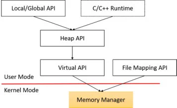
図の点線の枠は、ヒープ API を使った C/C++ ランタイムの典型的なメモリ管理の実装を示しています。これには malloc、free、realloc、C++ の new 演算子と delete 演算子などがあります。ヒープ API を使うこの実装は一般的ですが、必須ではなく、採用するかはコンパイラーによって異なります。そのため図では点線の枠で示しています。Ntdll.dll に実装されている C ランタイム相当の関数は、ヒープ API を使います。
メモリマネージャーは、エグゼクティブのほかのカーネルモードコンポーネントやデバイスドライバーにもサービスを提供します。物理メモリの確保と解放、直接メモリアクセス（DMA）による転送のためにページを物理メモリに固定する機能などです。これらの関数名は Mm で始まります。エグゼクティブの補助ルーチンには、システムヒープ（ページプールと非ページプール）のメモリを確保・解放し、ルックアサイドリストを操作するものもあります。これらの名前は Ex で始まり、厳密にはメモリマネージャーの一部ではありません。詳しくは後述の「カーネルモードのヒープ（システムメモリプール）」を参照してください。
ページの状態とメモリの割り当て
プロセスの仮想アドレス空間にあるページは、空き、予約済み、コミット済み、共有可能のいずれかです。コミット済みページと共有可能ページを参照すると、最終的に物理メモリ内の有効なページに変換されます。この分類でいうコミット済みページは、ほかのプロセスと共有できないため、プライベートページとも呼びます。共有可能ページは複数のプロセスで共有できますが、実際に使っているプロセスが1つだけの場合もあります。
プライベートページは、Windows API の VirtualAlloc、VirtualAllocEx、VirtualAllocExNuma で確保します。いずれも最終的に、エグゼクティブのメモリマネージャーにある NtAllocateVirtualMemory を呼び出します。これらの関数は、メモリの予約とコミットの両方を行えます。予約とは、配列などにあとで使えるよう、連続した仮想アドレス範囲を取り置くことです。予約に必要なシステムリソースはごくわずかです。アプリケーションは実行中に、予約領域の必要な部分だけをコミットできます。必要なサイズが事前にわかっていれば、1回の呼び出しで予約とコミットを同時に行えます。どちらの場合も、コミットしたページにはプロセス内のどのスレッドからでもアクセスできます。空きページや予約済みページには参照先となる記憶領域が対応付けられていないため、アクセスするとアクセス違反の例外が発生します。
まだ一度もアクセスされていないプライベートなコミット済みページは、最初のアクセス時にゼロで初期化されたページとして作られます。これをデマンドゼロと呼びます。物理メモリが必要になれば、OS がそのページをページングファイルに自動で書き出すことがあります。プライベートという名称は、通常、ほかのプロセスからアクセスできないことを表します。
注記 ReadProcessMemory や WriteProcessMemory では、カーネルモードのコードが対象プロセスのコンテキストで動いて、メモリを読み書きします。これをプロセスへのアタッチと呼びます。これらの関数を使うには、対象プロセスのセキュリティ記述子で、アクセス元にそれぞれ PROCESS_VM_READ または PROCESS_VM_WRITE が許可されているか、アクセス元が SeDebugPrivilege を持っている必要があります。この特権は、既定では Administrators グループのメンバーだけに付与されます。
共有ページは通常、セクションのビューにマップされます。ビューはファイルの一部または全体に対応しますが、ページングファイルの領域の一部に対応することもあります。共有ページはすべて、ほかのプロセスと共有できます。Windows API では、セクションをファイルマッピングオブジェクトとして扱います。
いずれかのプロセスが共有ページに初めてアクセスすると、対応するマップ済みファイルからページを読み込みます。ページングファイルをバッキングストアに使うセクションでは、ゼロで初期化したページを作ります。ページが物理メモリに残っていれば、2番目以降のプロセスは、その内容をそのまま使えます。システムが共有ページを事前に読み込んでいる場合もあります。
共有ページについては、後述の「共有メモリとマップ済みファイル」と「セクションオブジェクト」で詳しく説明します。変更されたページをディスクに書き出す際は、まずプロセスのワーキングセットからシステム全体の変更済みページリストへ移し、そこからディスクやリモートストレージに書き戻します。ワーキングセットと変更済みリストは後述します。マップ済みファイルのページは、FlushViewOfFile を明示的に呼んだ場合や、メモリ需要に応じてマップ済みページライターが動いた場合にも、ディスク上の元のファイルに書き戻されます。
VirtualFree または VirtualFreeEx を使うと、プライベートページのコミットを解除したり、アドレス空間を解放したりできます。コミットを解除した領域は予約されたままです。領域を解放すると、コミットと予約の両方が解除されます。
先に仮想アドレス範囲を予約しておき、必要になった部分だけをコミットすれば、連続した仮想アドレスを確保したまま、ページのコミットを必要になるまで遅らせられます。その間は、次節で説明するシステム全体のコミット使用量も増えません。予約のために消費するメモリはごくわずかです。プロセスのアドレス空間の状態を表す比較的小さな内部データ構造を作成または更新するだけで済みます。これらのページテーブルと仮想アドレス記述子（VAD）については後述します。
広い領域を予約して必要な部分だけをコミットする代表的な例が、スレッドごとのユーザーモードスタックです。スレッドを作るときに、プロセスのアドレス空間の連続した範囲を予約してスタックを作ります。既定のサイズは1 MBです。CreateThread、CreateRemoteThread、CreateRemoteThreadEx で上書きするか、リンカーの /STACK オプションで実行可能イメージごとに変更できます。既定では先頭のページがコミットされます。その次のページはガードページとしてマークされ、コミット済みの範囲を超えたアクセスを捕捉してスタックを拡張します。
実験：予約済みページとコミット済みページを比べる
Sysinternals の TestLimit を使うと、大量の仮想メモリを予約したり、プライベートメモリとしてコミットしたりできます。違いを Process Explorer で観察します。
- コマンドプロンプトを2つ開きます。
- 片方のコマンドプロンプトで TestLimit を実行し、大きな仮想メモリ領域を予約します。
C:\temp>testlimit -r 1 -c 800 Testlimit v5.24 - test Windows limits Copyright (C) 2012-2015 Mark Russinovich Sysinternals - wwww.sysinternals.com Process ID: 18468 Reserving private bytes 1 MB at a time ... Leaked 800 MB of reserved memory (800 MB total leaked). Lasterror: 0 The operation completed successfully.
- もう片方のコマンドプロンプトでは、同程度の量のメモリをコミットします。
C:\temp>testlimit -m 1 -c 800 Testlimit v5.24 - test Windows limits Copyright (C) 2012-2015 Mark Russinovich Sysinternals - wwww.sysinternals.com Process ID: 14528 Leaking private bytes 1 KB at a time ... Leaked 800 MB of private memory (800 MB total leaked). Lasterror: 0 The operation completed successfully.
- タスクマネージャーを起動し、「詳細」タブを開いて「コミット サイズ」列を追加します。
- 一覧で2つの
TestLimit.exeを探します。次のように表示されます。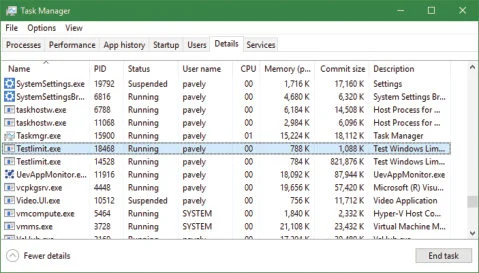
- タスクマネージャーにはコミットした容量が表示されます。もう一方の TestLimit プロセスが予約した容量は、タスクマネージャーのカウンターからは確認できません。
- Process Explorer を開きます。
- 列の選択画面で「Process Memory」タブを開き、「Private Bytes」と「Virtual Size」の列を有効にします。
- メイン画面で2つの
TestLimit.exeプロセスを探します。
- 2つのプロセスの「Virtual Size」は同じですが、「Private Bytes」が「Virtual Size」に近いのは片方だけです。もう片方の TestLimit プロセス（プロセス ID 18468）で両者の差が大きいのは、メモリを予約したためです。パフォーマンスモニターでも、「Process」カテゴリの「Virtual Bytes」と「Private Bytes」を使って同じ比較ができます。
コミット使用量とコミット上限
タスクマネージャーの「パフォーマンス」タブで「メモリ」を開くと、「コミット済み」の下に2つの数値が表示されます。メモリマネージャーは、プライベートなコミット済みメモリの使用量をシステム全体で追跡します。この量をコミット使用量（commitment または commit charge）と呼びます。表示される最初の数値がこれに当たり、システム内でコミット済みの仮想メモリの総量を表します。
同時にコミットできる仮想メモリの量には、システム全体で上限があります。この上限をシステムのコミット上限、あるいは単にコミット上限と呼びます。現在の全ページングファイルの合計サイズに、OS が使用できる RAM の容量を加えた値に相当します。「コミット済み」に表示される2番目の数値がこの上限です。設定された最大サイズに達していないページングファイルがあれば、メモリマネージャーはそれを1つ以上拡張して、コミット上限を自動で引き上げられます。
詳しくは、後述の「コミットチャージとシステムのコミット上限」を参照してください。
メモリのロック
通常は、どのページを物理メモリに残すかをメモリマネージャーに任せます。ただし、状況によっては、アプリケーションやデバイスドライバーがページを物理メモリに固定する必要があります。ページをロックする方法は2つあります。
- Windows アプリケーションは、
VirtualLockを呼んで、自分のプロセスのワーキングセット内のページをロックできます。ロックしたページは、明示的にロックを解除するか、そのプロセスが終了するまでメモリに残ります。1プロセスがロックできるページ数は、ワーキングセットの最小サイズに相当するページ数から8ページを引いた数までです。さらにページをロックするには、後述の「ワーキングセットの管理」で説明するSetProcessWorkingSetSizeExを使って、ワーキングセットの最小サイズを増やします。 - デバイスドライバーは、カーネルモードの
MmProbeAndLockPages、MmLockPagableCodeSection、MmLockPagableDataSection、MmLockPagableSectionByHandleを呼び出せます。これらの方法でロックしたページは、明示的にロックを解除するまでメモリに残ります。後ろの3つの API では、ドライバーを最初に読み込んだ時点で、必要なページ数を常駐可能なページの残量から差し引いています。そのため、ロックの呼び出し時にページ数のクォータは適用しません。この仕組みにより、ロックしすぎてシステムがクラッシュするのを防ぎます。最初の API では、クォータから必要な割り当てを確保できなければ、失敗を示すステータスを返します。
割り当て粒度
Windows は、プロセスのアドレス空間を予約するとき、各領域の先頭を、システムの割り当て粒度の整数倍にそろえます。この粒度は GetSystemInfo または GetNativeSystemInfo で取得でき、値は64 KBです。メモリマネージャーはこの単位で領域を扱い、プロセスの各種操作に必要な VAD やビットマップなどのメタデータを効率よく割り当てます。将来、最大64 KBなどの大きなページサイズを持つプロセッサや、システム全体で物理ページと仮想ページの境界をそろえる必要がある仮想インデックス方式のキャッシュに対応する場合も、割り当て境界を前提としたアプリケーションに変更が必要になる可能性を抑えられます。
注記 Windows のカーネルモードコードは、1ページ単位でメモリを予約できます。前述の理由から、この機能はデバイスドライバーに公開していません。主な用途は TEB をより密に配置することです。内部だけで使うため、将来のプラットフォームで異なる値が必要になれば、容易に変更できます。また、x86 システムに限り、16ビットアプリケーションや MS-DOS アプリケーションに対応するため、MapViewOfFileEx API に渡す MEM_DOS_LIM フラグが用意されています。このフラグを指定すると、1ページ単位の割り当てを強制できます。
最後に、アドレス空間を予約するとき、Windows は領域のサイズとベースアドレスを、システムのページサイズの整数倍にそろえます。たとえば、ページサイズが4 KBの x86 システムで18 KBの領域を予約すると、実際の予約サイズはページ単位に切り上げられます。
先ほどの x86 の例では、18 KBの要求に対して実際には20 KBを予約します。18 KBの領域のベースアドレスとして3 KBを指定した場合、実際に予約する領域は24 KBです。この割り当てを表す仮想アドレス記述子（VAD）の境界と長さも64 KB単位に丸められるため、64 KB単位に丸めた範囲のうち、実際に予約した領域の外側にはアクセスできません。
共有メモリとマップ済みファイル
多くの現代の OS と同じく、Windows はプロセス同士や OS とプロセスの間でメモリを共有する仕組みを備えています。共有メモリとは、複数のプロセスから参照できるメモリ、または複数のプロセスの仮想アドレス空間に存在するメモリです。たとえば、2つのプロセスが同じ DLL を使う場合、その DLL で参照されるコードページを物理メモリに1回だけ読み込み、DLL をマップするすべてのプロセスで共有できます（図5-2）。

各プロセスは固有のデータを保存するプライベートメモリを持ちますが、DLL のコードと変更されていないデータのページは共有できます。後述するように、実行可能イメージのコードページを実行専用でマップし、書き込み可能なページをコピーオンライトでマップするため、この共有は自動で行われます。実行可能イメージには EXE や DLL のほか、拡張子を変えた DLL に相当するスクリーンセーバー（SCR）なども含まれます。詳しくは後述の「コピーオンライト」を参照してください。
図5-2では、異なる実行可能イメージを使う2つのプロセスが、物理メモリに1回だけマップした DLL を共有しています。2つのプロセスは異なるイメージを実行するため、この例で EXE 自体のコードは共有されません。Notepad.exe を実行するプロセスが2つ以上ある場合など、同じイメージを実行するプロセス間では EXE のコードも共有します。
メモリマネージャーが共有メモリを実装するために使う基本オブジェクトを、セクションオブジェクトと呼びます。Windows API では、ファイルマッピングオブジェクトとして公開されます。内部構造と実装については、後述の「セクションオブジェクト」で説明します。
メモリマネージャーはセクションを使って、仮想アドレスを、主記憶、ページングファイル、またはアプリケーションがメモリのようにアクセスしたいファイルに対応付けます。セクションは1つのプロセスで開くことも、複数のプロセスで開くこともできるため、単一プロセスだけで使う場合もあります。
セクションオブジェクトは、ディスク上で開いたファイル（マップ済みファイル）や、共有メモリとして使うコミット済みメモリに関連付けられます。後者は、物理メモリの需要に応じてページングファイルにページを書き出すため、ページングファイルをバッキングストアに使うセクションと呼びます。Windows はページングファイルなしでも動くため、この場合でも、実際には物理メモリだけでページを保持することもあります。プライベートなコミット済みページなど、ユーザーモードに公開するほかの空のページと同様に、共有のコミット済みページも最初にアクセスしたときに必ずゼロで埋めます。以前の機密データが漏れるのを防ぐためです。
セクションオブジェクトを作成するには、Windows API の CreateFileMapping、CreateFileMappingFromApp、CreateFileMappingNuma、CreateFileMappingNumaEx のいずれかを呼びます。マッピング先として、事前に開いたファイルのハンドルを指定します。ページングファイルをバッキングストアに使う場合は INVALID_HANDLE_VALUE を指定します。名前やセキュリティ記述子は必要に応じて指定できます。名前付きセクションは、ほかのプロセスから OpenFileMapping や CreateFileMapping* 関数で開けます。ハンドルの作成時またはオープン時に継承可能と指定するか、DuplicateHandle で複製してアクセスを渡す方法もあります。デバイスドライバーからは ZwOpenSection、ZwMapViewOfSection、ZwUnmapViewOfSection でセクションを操作できます。
セクションオブジェクトは、プロセスのアドレス空間に収まらないほど大きなファイルも参照できます。ページングファイルをバッキングストアに使う場合は、対象を収容できるだけの空きがページングファイルか RAM、または両方に必要です。大きなセクションにアクセスするには、MapViewOfFile、MapViewOfFileEx、MapViewOfFileFromApp、MapViewOfFileExNuma のいずれかで範囲を指定し、必要な部分だけをビューとしてマップします。その時点で必要なビューだけをマップすれば、アドレス空間を節約できます。
Windows アプリケーションは、マップ済みファイルを自分のアドレス空間にあるデータとして扱い、ファイル I/O を行えます。イメージローダーもセクションオブジェクトを使って、実行可能イメージや DLL、デバイスドライバーをメモリにマップします。キャッシュマネージャーは、キャッシュ済みファイル内のデータへのアクセスに使います。キャッシュマネージャーとメモリマネージャーの連携は Part 2 のキャッシュマネージャーの章を参照してください。共有メモリのセクションのアドレス変換と内部データ構造は、後述の「セクションオブジェクト」で説明します。
実験：メモリマップトファイルを表示する
Process Explorer で、プロセスがメモリにマップしているファイルの一覧を表示できます。「View」メニューから「Lower Pane View」、「DLLs」の順に選び、下部ペインを DLL 表示にします。この一覧には、プロセスのアドレス空間にメモリマップされているファイルがすべて表示されます。DLL のほか、実行中のイメージファイル（EXE）が1つあり、マップされたデータファイルも表示される場合があります。
次のページの Process Explorer の画面では、WinDbg のプロセスが、解析しているメモリダンプファイルにアクセスするために、複数のマッピングを使っています。多くの Windows プログラムと同様、WinDbg 自身か、それが使う Windows の DLL も、国際化機能の一部である Windows データファイル Locale.nls をメモリマッピングで参照しています。

「Find」メニューから「Find Handle or DLL」を選ぶか、Ctrl+F を押して、メモリマップトファイルを検索することもできます。置き換えようとする DLL やメモリマップトファイルを、どのプロセスが使っているかを調べるときに役立ちます。
メモリの保護
第1章「概念とツール」で説明したように、Windows はメモリを保護し、ユーザープロセスがほかのプロセスや OS のアドレス空間を、誤って、あるいは意図的に壊すのを防ぎます。主な保護の仕組みは4つあります。
- カーネルモードのシステムコンポーネントが使う、システム全体のデータ構造とメモリプールには、カーネルモードでのみアクセスできます。ユーザーモードのスレッドがこれらのページにアクセスしようとすると、ハードウェアがフォールトを発生させ、メモリマネージャーがアクセス違反としてそのスレッドに通知します。
- 各プロセスは独立したプライベートなアドレス空間を持ち、別のプロセスに属するスレッドのアクセスから保護されています。共有メモリも、各プロセスが自分の仮想アドレス空間に属するアドレスを使って参照します。別のプロセスが対象のプロセスオブジェクトに対する仮想メモリの読み取り権限または書き込み権限を持つ場合、あるいは
SeDebugPrivilegeを持つ場合は、ReadProcessMemoryまたはWriteProcessMemoryを使えるという例外があります。スレッドがアドレスを参照するたびに、仮想メモリを支えるハードウェアは、メモリマネージャーと連携して、仮想アドレスを物理アドレスに変換します。Windows は変換方法を制御することで、あるプロセスのスレッドが別のプロセスのページに不適切にアクセスするのを防ぎます。 - 仮想アドレスから物理アドレスへの変換そのものがもたらす保護に加え、Windows が対応するすべてのプロセッサは、読み書き可能や読み取り専用といったハードウェアによるメモリ保護を備えています。保護の詳細はプロセッサごとに異なります。たとえば、プロセスのアドレス空間にあるコードページは読み取り専用に設定され、ユーザースレッドによる変更から保護されます。表5-2に、Windows API が定義するメモリ保護のオプションを示します。
VirtualProtect、VirtualProtectEx、VirtualQuery、VirtualQueryExのドキュメントも参照してください。
| 属性 | 動作 |
|---|---|
PAGE_NOACCESS | 領域の読み取り、書き込み、コードの実行は、いずれもアクセス違反になります。 |
PAGE_READONLY | 読み取りを許可します。書き込みはアクセス違反になります。実行禁止に対応するプロセッサでは、コードの実行もアクセス違反になります。 |
PAGE_READWRITE | 読み書きは可能ですが、実行は許可しません。 |
PAGE_EXECUTE | 実行を許可します。本書の対象プロセッサでは読み取りも可能です。領域のコードに書き込むとアクセス違反になります。 |
PAGE_EXECUTE_READ＊ | 実行と読み取りを許可します。書き込みはアクセス違反になります。 |
PAGE_EXECUTE_READWRITE＊ | ページの読み取り、書き込み、実行をすべて許可します。 |
PAGE_WRITECOPY | この領域に書き込むと、システムはそのプロセス専用のページのコピーを作ります。実行禁止に対応するプロセッサでは、この領域のコードを実行しようとするとアクセス違反になります。 |
PAGE_EXECUTE_WRITECOPY | この領域に書き込むと、そのプロセス専用のページのコピーを作ります。読み取りと実行は許可され、その場合にコピーは作りません。 |
PAGE_GUARD | ガードページを読み書きすると EXCEPTION_GUARD_PAGE 例外が発生し、ガードページの指定が解除されます。そのため、警告が発生するのは一度だけです。PAGE_NOACCESS を除き、表のほかの保護属性と組み合わせられます。 |
PAGE_NOCACHE | キャッシュしない物理メモリを使います。一般的な用途には推奨されません。ビデオフレームバッファーをキャッシュなしでマップするなど、デバイスドライバーで使います。 |
PAGE_WRITECOMBINE | ライトコンバイニングを有効にします。プロセッサは書き込みをキャッシュしないため、キャッシュを使う場合よりメモリトラフィックが大幅に増えることがあります。一方、性能を高めるため、複数の書き込み要求をまとめます。同じアドレスへの書き込みは最後の1回だけが実行される場合があります。隣接するアドレスへの書き込みも、1回の大きな書き込みにまとめられることがあります。一般的なアプリケーションではほとんど使いませんが、ビデオフレームバッファーのマッピングなど、デバイスドライバーでは役立ちます。 |
PAGE_TARGETS_INVALID と PAGE_TARGETS_NO_UPDATE（Windows 10 と Windows Server 2016） | これらのページの実行可能コードに対する Control Flow Guard（CFG）の動作を制御します。2つの定数は値が同じです。どの API に渡すかによって、CFG に無効な呼び出し先として登録するのか、既存の CFG の状態を維持するのかが決まります。PAGE_TARGETS_INVALID は、ページ内を宛先とする間接呼び出しを CFG で拒否し、プロセスを終了させます。PAGE_TARGETS_NO_UPDATE を指定すると、VirtualProtect でページ範囲を実行可能にするとき、CFG の状態を更新しません。詳しくは第7章「セキュリティ」を参照してください。 |
＊実行禁止には、x64 プロセッサなどが備えるハードウェア支援が必要です。古い x86 プロセッサなど、対応していない場合は、実行を許可する設定を読み取りの許可として扱います。
- 共有メモリのセクションオブジェクトには標準の Windows アクセス制御リスト（ACL）があります。プロセスがセクションを開こうとすると ACL が検査され、必要な権限を持つプロセスだけがアクセスできます。スレッドがファイルをマップするためのセクションを作成するときも、アクセス制御が適用されます。元のファイルオブジェクトに対して少なくとも読み取り権限がなければ、セクションの作成は失敗します。
セクションのハンドルを取得したあとも、スレッドの操作にはメモリマネージャーと前述のハードウェアによるページ保護が適用されます。
スレッドは、セクションオブジェクトの ACL で許可された範囲内で、そのセクション内の仮想ページの保護を変更できます。たとえば、読み取り専用セクションのページをコピーオンライトに変更することはできます。書き込むプロセスにだけコピーを作るため、共有しているほかのプロセスには影響しないからです。共有ページ自体を読み書き可能にする変更は許可されません。
データ実行防止
データ実行防止（DEP）、または実行禁止（NX）のページ保護では、実行禁止に設定されたページ内の命令に制御を移そうとすると、アクセスフォールトが発生します。たとえば、スタックなどのデータページに置いたコードを実行してシステムの不具合を悪用する、一部のマルウェアを防げます。コードを実行するページに必要な権限を設定していないプログラムを発見するのにも役立ちます。カーネルモードで実行禁止ページのコードを実行しようとすると、バグチェックコード ATTEMPTED_EXECUTE_OF_NOEXECUTE_MEMORY（0xFC）でシステムが停止します。コードの詳細は Part 2 のクラッシュダンプ分析の章を参照してください。ユーザーモードで起きた場合は、不正な参照を試みたスレッドに STATUS_ACCESS_VIOLATION（0xC0000005）例外が通知されます。実行可能なメモリを確保する必要があるプロセスは、ページ単位のメモリ割り当て関数に PAGE_EXECUTE、PAGE_EXECUTE_READ、PAGE_EXECUTE_READWRITE、PAGE_EXECUTE_WRITECOPY のいずれかを指定し、該当するページに実行権限を明示的に設定します。
DEP に対応する32ビット x86 システムでは、ページテーブルエントリ（PTE）のビット63で実行禁止を示します。物理アドレス拡張（PAE）モード以外では PTE は32ビット幅なので、DEP を利用できるのは PAE モードで動作している場合だけです。詳しくは、後述の「x86 の仮想アドレス変換」を参照してください。そのため、32ビットシステムでハードウェア DEP を使うには、PAE カーネル（%SystemRoot%\System32\Ntkrnlpa.exe）を読み込む必要があります。本書の対象範囲では、これが x86 システムでサポートされる唯一のカーネルです。
ARM システムでは、DEP の設定は AlwaysOn です。
64ビット版 Windows では、すべての64ビットプロセスとデバイスドライバーに実行保護が適用されます。これが無効になるシステム構成は、BCD の nx が AlwaysOff の場合だけです。32ビットプログラムへの適用は、後述するシステム設定によって決まります。64ビット版では、ユーザーモードとカーネルモードのスレッドスタック、実行可能と明示されていないユーザーモードページ、カーネルのページプールとセッションプールが保護対象です。これらのプールは「カーネルモードのヒープ（システムメモリプール）」で説明します。32ビット版では、保護対象はスレッドスタックとユーザーモードページで、ページプールとセッションプールには適用されません。
32ビットプロセスに実行保護を適用するかは、BCD の nx オプションの値で決まります。設定は「パフォーマンス オプション」の「データ実行防止」タブで確認できます（図5-3）。このダイアログは、「コンピューター」の右クリックメニューから「プロパティ」を選び、「システムの詳細設定」で「パフォーマンス」の「設定」を開くと表示されます。ダイアログで実行保護を設定すると、それに対応する値が BCD の nx に設定されます。表5-3にオプション値とタブの設定との対応を示します。実行保護から除外された32ビットアプリケーションは、レジストリキー HKLM\SOFTWARE\Microsoft\Windows NT\CurrentVersion\AppCompatFlags\Layers に記録されます。値名は実行可能ファイルのフルパスで、データは DisableNXShowUI です。

BCD の nx の値 | 「データ実行防止」タブの選択肢 | 動作 |
|---|---|---|
OptIn | 重要な Windows のプログラムおよびサービスについてのみ有効にする | Windows の中核システムイメージで DEP を有効にします。32ビットプロセスは、実行中に自分の DEP 設定を変更できます。 |
OptOut | 選択したものを除くすべてのプログラムおよびサービスについて有効にする | 除外対象に指定したもの以外の全実行可能ファイルで DEP を有効にします。32ビットプロセスは、実行中に自分の DEP 設定を変更できます。DEP に関するシステムの互換性修正も有効になります。 |
AlwaysOn | ダイアログに選択肢なし | すべてのコンポーネントで DEP を有効にします。アプリケーションを個別に除外することはできません。32ビットプロセスの動的な設定変更と、システムの互換性修正を無効にします。 |
AlwaysOff | ダイアログに選択肢なし | DEP を無効にします。推奨されない設定です。32ビットプロセスの動的な設定変更も無効になります。 |
クライアント版 Windows では、64ビット版でも32ビット版でも、32ビットプロセスに対する実行保護は、既定では Windows の中核の実行可能ファイルにだけ適用されます。つまり、BCD の nx の既定値は OptIn です。自己解凍形式やパックされたアプリケーションなど、実行可能と明示されていないページでコードを実行することを前提とした32ビットアプリケーションが、動作しなくなるのを防ぐためです。Windows Server では、既定ですべての32ビットプログラムを保護対象にする OptOut が設定されます。
DEP を強制的に有効にしても、アプリケーションによっては、その実行可能イメージに DEP が適用されない場合があります。たとえば、実行保護の設定によらず、イメージローダーは実行可能ファイルのシグネチャを既知のコピー保護のシグネチャと照合します。
イメージローダーは、SafeDisc や SecuROM など、既知のコピー保護のシグネチャに一致する場合に実行保護を無効にし、古いゲームなどのコピー保護付きソフトウェアとの互換性を確保します。イメージローダーの詳細は第3章を参照してください。
実験：プロセスの DEP の状態を確認する
Process Explorer では、システム上の各プロセスで DEP が有効か、恒久的に有効かを確認できます。プロセスツリーの列見出しを右クリックし、「Select Columns」を選びます。「Process Image」タブで「DEP Status」を選ぶと、次のいずれかが表示されます。
- DEP (permanent)
- 重要な Windows プログラムまたはサービスとして、プロセスで DEP が恒久的に有効です。
- DEP
- プロセスが DEP の適用対象です。すべての32ビットプロセスを対象とするシステムポリシー、
SetProcessDEPPolicyなどの API 呼び出し、またはイメージのビルド時のリンカーオプション/NXCOMPATなどによって有効になります。 - 空欄
- システムポリシー、明示的な API 呼び出し、または互換性シムによって、プロセスの DEP が無効になっています。
古い Active Template Library（ATL 7.1以前）との互換性のため、Windows カーネルには ATL サンクをエミュレートする仕組みがあります。DEP 例外を引き起こした ATL サンクの命令列を検出し、本来の動作を再現します。新しい Microsoft C++ ツールチェーンで /NXCOMPAT を指定すると、PE ヘッダーに IMAGE_DLLCHARACTERISTICS_NX_COMPAT が設定されます。これは、実行可能ファイルが DEP に完全に対応し、ATL サンクのエミュレーションが不要であることをシステムに伝えます。システム設定が AlwaysOn なら、ATL サンクのエミュレーションは常に無効です。
システムが OptIn または OptOut の場合、32ビットプロセスは SetProcessDEPPolicy で自身の DEP ポリシーを変更できます。この API で DEP を有効にすると、そのプロセスが終了するまでプログラムから無効にできません。イメージを /NXCOMPAT なしでビルドした場合は、同じ関数で ATL サンクのエミュレーションを動的に無効にできます。64ビットプロセス、または AlwaysOff や AlwaysOn で起動したシステムでは、この関数は常に失敗します。GetProcessDEPPolicy は32ビットプロセスの DEP ポリシーを返します。DEP が常に適用される64ビットプロセスでは、この問い合わせは失敗します。GetSystemDEPPolicy は、表5-3のポリシーに対応する値を返します。
コピーオンライト
コピーオンライトは、メモリマネージャーが物理メモリを節約するためのページ保護です。読み書き可能なページを含むセクションのビューをコピーオンライトでマップすると、メモリマネージャーはマッピング時にはプロセス専用のコピーを作らず、実際にページに書き込まれるまでコピーを遅らせます。たとえば図5-4では、2つのプロセスが、コピーオンライトに設定された3枚のページを共有しています。どちらもページ内のデータをまだ変更していません。

どちらかのプロセスのスレッドがページに書き込むと、メモリ管理のフォールトが発生します。メモリマネージャーは、書き込み先がコピーオンライトのページだと判断し、アクセス違反を通知する代わりに次の処理を行います。
- 物理メモリに読み書き可能なページを新たに確保します。
- 元のページの内容を新しいページにコピーします。
- 書き込みを試みたプロセスのページマッピング情報を更新し、同じ仮想ページがコピー先の物理ページを指すようにします。マッピング情報については後述します。
- 例外の処理を終え、フォールトを起こした命令を再実行させます。
再実行すると書き込みは成功します。図5-5のように、新しいページは書き込んだプロセス専用です。元のコピーオンライトのページを参照し続けているもう一方のプロセスには、新しいページは見えません。同じ共有ページに書き込むほかのプロセスにも、そのプロセス専用のコピーが作られます。

コピーオンライトの用途の一つは、デバッガーのブレークポイントです。たとえば、コードページは既定で実行専用としてマップされます。そのページにデバッグ中のプログラマーがブレークポイントを設定した場合を考えます。
デバッガーは、対象プログラムのコードにブレークポイント命令を挿入する必要があります。まずページの保護を PAGE_EXECUTE_READWRITE に変え、次に命令列を書き換えます。コードページはマップされたセクションの一部なので、メモリマネージャーは、ブレークポイントを設定するプロセス専用のコピーを作ります。ほかのプロセスは、変更されていないコードページを使い続けます。
コピーオンライトは、メモリマネージャーが広く利用する遅延評価の一例です。遅延評価は、コストの高い処理を必要になるまで先送りします。必要にならなければ、その処理に時間を費やさずに済みます。
コピーオンライトによるフォールトの発生頻度は、パフォーマンスモニターの「Memory」カテゴリにある「Write Copies/Sec」で確認できます。
アドレスウィンドウ拡張（AWE）
32ビット版 Windows は最大64 GBの物理メモリに対応できます（表2-2）。一方、各32ビットユーザープロセスの仮想アドレス空間は既定で2 GBです。後述の「仮想アドレス空間の配置」で説明する BCD オプション increaseuserva を使うと、最大3 GBまで設定できます。1つのプロセスからこの上限を超えるデータを利用するには、大きなファイルをマップし、仮想アドレス空間の一部をファイル内の別の範囲に順次マップし直す方法があります。ただし、マッピングを切り替えるたびに、多くのページングが発生します。
性能を高め、マッピングを細かく制御するため、Windows は Address Windowing Extensions（AWE）という関数群を提供します。これらの関数を使うと、プロセスは仮想アドレス空間に一度に収まる量を超える物理メモリを確保できます。仮想アドレス空間の一部を、必要に応じて物理メモリ内の異なる範囲にマップし、確保したメモリにアクセスします。
AWE を使ったメモリの確保と利用は、次の3段階で行います。
AllocateUserPhysicalPagesまたはAllocateUserPhysicalPagesNumaを呼び、使用する物理メモリを確保します。SeLockMemoryPrivilegeが必要です。- 物理メモリの一部をマップする窓として、仮想アドレス空間に1つ以上の領域を予約します。
VirtualAlloc、VirtualAllocEx、VirtualAllocExNumaのいずれかにMEM_PHYSICALを指定します。 - 手順1と2は通常、初期化時に行います。メモリを使うときは、
MapUserPhysicalPagesまたはMapUserPhysicalPagesScatterを呼び、手順1で確保した物理領域の一部を、手順2で確保した仮想領域のいずれかにマップします。
図5-6の例では、アプリケーションは仮想アドレス空間に256 MBの窓を作り、4 GBの物理メモリを確保しています。MapUserPhysicalPages または MapUserPhysicalPagesScatter を使うと、対応する範囲をこの窓にマップして、確保した物理メモリの任意の部分にアクセスできます。1回のマッピングでアクセスできる物理メモリの量は、仮想アドレス空間に確保した窓の大きさで決まります。別の範囲にアクセスするには、同じ窓をマップし直します。

AWE の関数は Windows の全エディションにあり、搭載する物理メモリの量にかかわらず使えます。特に役立つのは、物理メモリが2 GBを超える32ビットシステムです。32ビットプロセスでも、仮想アドレス空間に一度に収まる量を超える RAM にアクセスできます。セキュリティを目的に使うこともあります。AWE メモリはページアウトされないため、別の OS で再起動しても、そのデータのコピーがページングファイルから読み取られることはありません。一般のページについては、VirtualLock で同じ保証が得られます。
AWE の関数で確保し、マップしたメモリには、次の制約があります。
- ページをプロセス間で共有できません。
- 同じ物理ページを複数の仮想アドレスにマップできません。
- ページ保護は、読み書き可能、読み取り専用、アクセス禁止に限られます。
本書の対象となる64ビット版 Windows では、プロセスごとの仮想アドレス空間が128 TBである一方、搭載できる RAM の上限は、Windows Server 2016 でも24 TBです。搭載できる RAM は常にプロセスの仮想アドレス空間より小さいため、32ビット版のように、仮想アドレス空間を超える RAM にアクセスする目的では AWE は不要です。ただし、プロセスのアドレス空間にページアウトされない領域を設ける用途では、引き続き役立ちます。ファイルマッピング API の64 KB単位に比べ、AWE では、システムのページサイズである4 KB単位でマップできます。
物理メモリが4 GBを超えるシステムで使うページテーブルのデータ構造については、「x86 の仮想アドレス変換」を参照してください。
カーネルモードのヒープ（システムメモリプール）
システムの初期化時に、メモリマネージャーはサイズが動的に変わる2つのメモリプール（ヒープ）を作ります。ほとんどのカーネルモードコンポーネントは、これらのプールからシステムメモリを確保します。
- 非ページプール
- 常に物理メモリに常駐することが保証されたシステム仮想アドレスの範囲です。いつアクセスしてもページフォールトが発生しないので、どの IRQL からでもアクセスできます。DPC／ディスパッチレベル以上ではページフォールトを解決できません。そのため、このレベル以上で実行される可能性のあるコードや、参照される可能性のあるデータは、ページアウトされないメモリに置く必要があります。
- ページプール
- システム空間にある、ページインとページアウトが可能な仮想メモリ領域です。DPC／ディスパッチレベル以上からアクセスする必要がないデバイスドライバーは、このプールを利用できます。どのプロセスのコンテキストからでもアクセスできます。
どちらのプールもアドレス空間のシステム領域にあり、すべてのプロセスの仮想アドレス空間にマップされます。エグゼクティブは、これらのプールからメモリを確保し、解放するルーチンを提供します。詳しくは Windows Driver Kit（WDK）のドキュメントで、ExAllocatePool、ExAllocatePoolWithTag、ExFreePool で始まる関数を参照してください。
起動時には、システム全体のページプールを構成する4つのページプールと、2つの非ページプールがあります。システム内の NUMA ノードの数に応じてさらに作られ、最大64個になります。ページプールを複数設けることで、システムコードがプールのルーチンを同時に呼んだときにブロックされる頻度を減らせます。複数のプールは、異なる NUMA ノードに対応する別々の仮想アドレス範囲にマップされます。ラージページのルックアサイドリストなど、プールの割り当てを記録するデータ構造も、複数の NUMA ノードに分けてマップされます。
ページプールと非ページプールのほかに、特別な属性や用途を持つプールもあります。たとえば、セッション空間にあるプール領域は、そのセッションの全プロセスに共通するデータを格納します。特殊プール（Special Pool）では、確保した領域の周囲にアクセス禁止ページを置き、確保範囲の手前や末尾を越えてアクセスするコードを特定しやすくします。
プールのサイズ
非ページプールは、システムの物理メモリ量に応じた初期サイズで始まり、必要に応じて拡大します。まずシステムの RAM の3%を初期サイズの候補とします。この値が40 MB未満なら、RAM の10%と40 MBのうち、小さい方を初期サイズにします。Windows はプールの最大サイズを動的に決めます。各プールは、初期サイズから表5-4の上限まで拡大できます。
| プールの種類 | 32ビットシステム | 64ビットシステム（Windows 8、Windows Server 2012） | 64ビットシステム（Windows 8.1、10、Windows Server 2012 R2、2016） |
|---|---|---|---|
| 非ページプール | 物理メモリの75%と2 GBのうち小さい方 | 物理メモリの75%と128 GBのうち小さい方 | 16 TB |
| ページプール | 2 GB | 384 GB | 15.5 TB |
Windows 8.x、Windows Server 2012、Windows Server 2012 R2 では、算出したプールのサイズのうち4つをカーネル変数に格納します。パフォーマンスカウンターで取得できる値は3つで、そのうち1つはカウンターの値としてだけ算出します。Windows 10 と Windows Server 2016 では、これらのグローバル変数は、グローバルなメモリ管理構造体 MiState（型は MI_SYSTEM_INFORMATION）のフィールドに移りました。この情報は Vs メンバー（型は _MI_VISIBLE_STATE）にあります。グローバル変数 MiVisibleState も同じ Vs メンバーを指します。表5-5に変数とカウンターを示します。
| カーネル変数 | パフォーマンスカウンター | 意味 |
|---|---|---|
MmSizeOfNonPagedPoolInBytes | Memory: Pool nonpaged bytes | 非ページプールの初期サイズです。メモリの需要に応じ、システムが自動で縮小・拡大します。変更はパフォーマンスカウンターに反映され、カーネル変数には反映されません。 |
MmMaximumNonPagedPoolInBytes（Windows 8.x、Windows Server 2012／2012 R2） | なし | 非ページプールの最大サイズです。 |
MiVisibleState->MaximumNonPagedPoolInBytes（Windows 10、Windows Server 2016） | なし | 非ページプールの最大サイズです。 |
| なし | Memory: Pool paged bytes | ページプールの現在の仮想サイズの合計です。 |
MmPagedPoolWs（型は MMSUPPORT）の WorkingSetSize（ページ数。Windows 8.x、Windows Server 2012／2012 R2） | Memory: Pool paged resident bytes | ページプールのうち、現在、物理メモリに常駐している部分のサイズです。 |
MmSizeOfPagedPoolInBytes（Windows 8.x、Windows Server 2012／2012 R2） | なし | ページプールの仮想サイズの上限です。 |
MiState.Vs.SizeOfPagedPoolInBytes（Windows 10、Windows Server 2016） | なし | ページプールの仮想サイズの上限です。 |
実験：プールの最大サイズを確認する
プールの上限は、Process Explorer または第1章で説明したライブカーネルデバッグで確認できます。Process Explorer では、「View」メニューから「System Information」を選び、「Memory」タブを開きます。次の画面のように、「Kernel Memory」にプールの上限が表示されます。

注記 Process Explorer がこの情報を取得するには、システムで動作中のカーネルのシンボルが必要です。シンボルの設定方法は、第1章の「実験：Process Explorer でプロセスの詳細を確認する」を参照してください。
カーネルデバッガーで同じ情報を確認するには、この章で先ほど紹介した !vm コマンドを使います。
プールの使用状況を監視する
パフォーマンスモニターの「Memory」オブジェクトには、非ページプールとページプールの使用量を個別に表示するカウンターがあります。ページプールについては仮想サイズと物理メモリに常駐するサイズの両方を確認できます。WDK の Tools ディレクトリにある Poolmon では、両プールの使用状況をさらに詳しく監視できます。Poolmon を起動すると、図5-7のように表示されます。

強調表示された行は、前回の表示から変化した行です。Poolmon の実行中に / を押すと強調表示を無効にでき、もう一度押すと有効に戻ります。? を押すとヘルプが表示されます。監視するプールは、ページプール、非ページプール、または両方から選べます。並べ替え順も指定できます。たとえば、非ページプールの割り当てだけが表示されるまで P を押し、続けて D を押して「Diff」（差分）列で並べ替えると、非ページプールに最も多く残っている構造体の種類を調べられます。ヘルプにはコマンドラインオプションも表示されます。特定のタグだけを監視したり、1つのタグを除いたすべてのタグを監視したりできます。たとえば poolmon -iCM は、レジストリを管理する構成マネージャーの割り当てに付く CM タグだけを監視します。各列の意味を表5-6に示します。
| 列 | 意味 |
|---|---|
| Tag | プールの割り当てに付けられた4バイトのタグです。 |
| Type | プールの種類（ページプールまたは非ページプール）です。 |
| Allocs | 割り当ての累計回数です。括弧内は前回の更新からの増分です。 |
| Frees | 解放の累計回数です。括弧内は前回の更新からの増分です。 |
| Diff | 割り当て回数から解放回数を引いた値です。 |
| Bytes | このタグで使用中の総バイト数です。括弧内は前回の更新からの差分です。 |
| Per Alloc | このタグの割り当て1件あたりのサイズ（バイト単位）です。 |
Windows が使うプールタグの意味は、Debugging Tools for Windows のインストール先にある Triage サブディレクトリの Pooltag.txt を参照してください。このファイルにはサードパーティーのデバイスドライバーのタグは含まれません。WDK に付属する32ビット版 Poolmon を -c オプション付きで実行すると、ローカルのプールタグファイル Localtag.txt を作成できます。このファイルには、サードパーティー製を含め、そのシステムで見つかったドライバーが使うタグが含まれます。読み込んだあとにドライバーのバイナリが削除されていると、そのプールタグは認識されません。
Sysinternals の Strings.exe を使って、システム上のデバイスドライバーからプールタグを検索する方法もあります。たとえば、次のコマンドは abcd という文字列を含むドライバーを表示します。
strings %SYSTEMROOT%\system32\drivers\*.sys | findstr /i "abcd"
デバイスドライバーの配置先は %SystemRoot%\System32\Drivers に限らず、任意のフォルダーに置けます。読み込み済みの全ドライバーのフルパスを表示するには、次の手順を実行します。
- 「スタート」メニューを開いて
Msinfo32と入力します。「システム情報」が検索結果に表示されます。 - 「システム情報」を起動します。
- 「ソフトウェア環境」を選びます。
- 「システム ドライバー」を選びます。読み込み後にファイルが削除されたデバイスドライバーは、この一覧に表示されません。
ドライバーごとのプール使用量を調べるには、第6章で説明する Driver Verifier のプール追跡機能を使う方法もあります。プールタグからドライバーを特定する手間は省けますが、対象ドライバーに Driver Verifier を適用するために再起動が必要です。プール追跡を有効にして再起動したあとは、GUI の Driver Verifier Manager（%SystemRoot%\System32\Verifier.exe）を実行するか、Verifier /Log コマンドでプール使用量をファイルに記録できます。
カーネルデバッガーの !poolused でも、プールの使用状況を確認できます。!poolused 2 は非ページプール、!poolused 4 はページプールの使用量を、どちらもタグごとに使用量の多い順に表示します。次のページに、両コマンドの出力の一部を示します。
lkd> !poolused 2 ........ Sorting by NonPaged Pool Consumed NonPaged Paged Tag Allocs Used Allocs Used File 626381 260524032 0 0 File objects Ntfx 733204 227105872 0 0 General Allocation , Binary: ntfs.sys MmCa 513713 148086336 0 0 Mm control areas for mapped files , Binary: nt!mm FMsl 732490 140638080 0 0 STREAM_LIST_CTRL structure , Binary: fltmgr.sys CcSc 104420 56804480 0 0 Cache Manager Shared Cache Map , Binary: nt!cc SQSF 283749 45409984 0 0 UNKNOWN pooltag 'SQSF', please update pooltag.txt FMfz 382318 42819616 0 0 FILE_LIST_CTRL structure , Binary: fltmgr.sys FMsc 36130 32950560 0 0 SECTION_CONTEXT structure , Binary: fltmgr.sys EtwB 517 31297568 107 105119744 Etw Buffer , Binary: nt!etw DFmF 382318 30585440 382318 91756320 UNKNOWN pooltag 'DFmF', please update pooltag.txt DFmE 382318 18351264 0 0 UNKNOWN pooltag 'DFmE', please update pooltag.txt FSfc 382318 18351264 0 0 Unrecoginzed File System Run Time allocations (update pooltag.w) , Binary: nt!fsrtl smNp 4295 17592320 0 0 ReadyBoost store node pool allocations , Binary: nt!store or rdyboost.sys Thre 5780 12837376 0 0 Thread objects , Binary: nt!ps Pool 8 12834368 0 0 Pool tables, etc.
実験：プールのメモリリークを調べる
この実験では、Sysinternals の Notmyfault でページプールのメモリリークを発生させ、前節で紹介した方法で原因を特定します。
- OS のビット数に合った
Notmyfault.exeを起動します。たとえば、64ビットシステムでは64ビット版を使います。 Notmyfault.exeはデバイスドライバーMyfault.sysを読み込み、「Crash」タブを選んだ状態で「Not My Fault」ダイアログを表示します。「Leak」タブを開くと、次のページのような画面が表示されます。

- 「Leak/Second」が1,000 KBに設定されていることを確認します。
- 「Leak Paged」をクリックします。Notmyfault が Myfault デバイスドライバーに、ページプールからメモリを割り当てる要求を送ります。「Stop Paged」をクリックするまで要求を送り続けます。通常、不具合のあるデバイスドライバーを介してページプールのリークを起こしたプログラムを閉じても、リークしたメモリは解放されず、再起動まで残ります。Myfault ドライバーは、テストしやすいよう、Notmyfault のプロセスが終了したことを検知し、そのプロセスの要求で確保したページプールのメモリを解放します。
- リークが進んでいる間にタスクマネージャーを開き、「パフォーマンス」タブの「メモリ」を選びます。「ページプール」の値が増えていくことを確認します。Process Explorer でも、「View」メニューから「System Information」を選び、「Memory」タブを開くと確認できます。
- リークしているプールタグを特定するため、Poolmon を起動し、B を押してバイト数で並べ替えます。
- P を2回押し、ページプールだけを表示します。
Leakタグが一覧の上位に上がっていきます。Poolmon は、割り当てが変化した行を強調表示します。 - システムのページプールを使い切る前に、「Stop Paged」をクリックします。
- 前節の方法に従い、Sysinternals の Strings で、
Leakを含むドライバーのバイナリを探します。Myfault.sysが一致し、このドライバーがLeakタグを使っていることを確認できます。Strings %SystemRoot%\system32\drivers\*.sys | findstr Leak
ルックアサイドリスト
Windows は、ルックアサイドリストという高速なメモリ割り当て機構を備えています。汎用プールからはさまざまなサイズの領域を割り当てられますが、各ルックアサイドリストに入るのは固定サイズのブロックだけです。汎用プールは割り当てサイズの自由度が高く、ルックアサイドリストはスピンロックを使わないため高速です。
エグゼクティブのコンポーネントやデバイスドライバーは、頻繁に割り当てるデータ構造に合わせたサイズのルックアサイドリストを作れます。非ページ割り当てには ExInitializeNPagedLookasideList、ページ可能な割り当てには ExInitializePagedLookasideList を使います。詳細は WDK のドキュメントを参照してください。マルチプロセッサでの同期のオーバーヘッドを抑えるため、I/O マネージャー、キャッシュマネージャー、オブジェクトマネージャーなどのエグゼクティブのサブシステムは、頻繁にアクセスするデータ構造について、プロセッサごとに別々のルックアサイドリストを作ります。エグゼクティブは、256バイト以下の小さな割り当て向けに、各プロセッサに、ページプール用と非ページプール用の汎用ルックアサイドリストも用意します。
作成直後など、ルックアサイドリストが空なら、システムはページプールまたは非ページプールからメモリを確保します。解放済みのブロックがリストにあれば、すぐに割り当てられます。ブロックが返されるとリストは大きくなります。プール割り当てルーチンは、デバイスドライバーやエグゼクティブのサブシステムがそのリストから割り当てる頻度に応じて、保持する解放済みブロック数を自動調整します。割り当ての頻度が高いほど、リストに多くのブロックを保持します。割り当てに使われていないリストは自動的に縮小します。バランスセットマネージャーのシステムスレッドが1秒に1回起きて、ExAdjustLookasideDepth を呼ぶときに、この確認を行います。
実験：システムのルックアサイドリストを表示する
カーネルデバッガーの !lookaside コマンドを使うと、システムの各ルックアサイドリストの内容とサイズを表示できます。次は出力の抜粋です。
lkd> !lookaside Lookaside "nt!CcTwilightLookasideList" @ 0xfffff800c6f54300 Tag(hex): 0x6b576343 "CcWk" Type = 0200 NonPagedPoolNx Current Depth = 0 Max Depth = 4 Size = 128 Max Alloc = 512 AllocateMisses = 728323 FreeMisses = 728271 TotalAllocates = 1030842 TotalFrees = 1030766 Hit Rate = 29% Hit Rate = 29% Lookaside "nt!IopSmallIrpLookasideList" @ 0xfffff800c6f54500 Tag(hex): 0x73707249 "Irps" Type = 0200 NonPagedPoolNx Current Depth = 0 Max Depth = 4 Size = 280 Max Alloc = 1120 AllocateMisses = 44683 FreeMisses = 43576 TotalAllocates = 232027 TotalFrees = 230903 Hit Rate = 80% Hit Rate = 81%
Lookaside "nt!IopLargeIrpLookasideList" @ 0xfffff800c6f54600 Tag(hex): 0x6c707249 "Irpl" Type = 0200 NonPagedPoolNx Current Depth = 0 Max Depth = 4 Size = 1216 Max Alloc = 4864 AllocateMisses = 143708 FreeMisses = 142551 TotalAllocates = 317297 TotalFrees = 316131 Hit Rate = 54% Hit Rate = 54% ... Total NonPaged currently allocated for above lists = 0 Total NonPaged potential for above lists = 13232 Total Paged currently allocated for above lists = 0 Total Paged potential for above lists = 4176
ヒープマネージャー
多くのアプリケーションが確保するブロックは、VirtualAlloc などのページ単位の関数で使う64 KBの割り当て粒度より小さくなります。小さなブロックごとに大きな領域を確保すると、メモリ使用量と性能の面で効率が悪くなります。そこで Windows は、ページ単位のメモリ割り当て関数で予約した大きな領域の中で個々の割り当てを管理する、ヒープマネージャーを備えています。ヒープマネージャーの割り当て粒度は、32ビットシステムで8バイト、64ビットシステムで16バイトです。このような小さな割り当てで、メモリ使用量と性能を最適化するように設計されています。
ヒープマネージャーは、Ntdll.dll と Ntoskrnl.exe の両方にあります。Windows のヒープ API などのサブシステム API は Ntdll.dll の関数を呼び、エグゼクティブコンポーネントやデバイスドライバーは Ntoskrnl.exe の関数を呼びます。名前が Rtl で始まるネイティブインターフェイスは、Windows の内部コンポーネントとカーネルモードのデバイスドライバーだけが使えます。名前が Heap で始まる公開 Windows API は、呼び出しを Ntdll.dll のネイティブ関数に転送します。古い Windows アプリケーション向けには、名前が Local または Global で始まる従来の API もあります。これらも内部でヒープマネージャーを呼び、従来の動作を再現するために専用のインターフェイスを使います。主な Windows のヒープ関数は次のとおりです。
HeapCreateとHeapDestroy- それぞれヒープを作成、削除します。作成時には、予約するサイズと最初にコミットするサイズを指定できます。
HeapAlloc- ヒープからブロックを確保します。呼び出しは
Ntdll.dllのRtlAllocateHeapに転送されます。 HeapFreeHeapAllocで確保したブロックを解放します。HeapReAlloc- 割り当て済みのブロックのサイズを拡大または縮小します。呼び出しは
Ntdll.dllのRtlReAllocateHeapに転送されます。 HeapLockとHeapUnlock- ヒープ操作の排他制御を行います。
HeapWalk- ヒープのエントリと領域を列挙します。
プロセスのヒープ
各プロセスには、少なくとも既定のプロセスヒープが1つあります。このヒープはプロセスの起動時に作成され、プロセスが終了するまで削除されません。ヒープの初期予約サイズは既定で1 MBです。リンカーの /HEAP オプションを使い、実行可能イメージにより大きな初期予約サイズを指定できます。ヒープは初期予約サイズを超えて、必要に応じて自動で拡大します。最初にコミットするサイズもイメージファイルに指定できます。
プログラムは既定のヒープを明示的に使えます。一部の Windows 内部関数は暗黙に使います。既定のヒープは Windows API の GetProcessHeap で取得できます。プロセスは HeapCreate を使って、追加のプライベートヒープを作れます。不要になったら HeapDestroy を呼んで仮想アドレス空間を回収できます。各プロセスはすべてのヒープを配列に保持し、スレッドは GetProcessHeaps で一覧を取得できます。
ユニバーサル Windows プラットフォーム（UWP）アプリのプロセスには、少なくとも次の3つのヒープがあります。
- 先述の既定のプロセスヒープ。
- プロセスが属するセッションの
Csrss.exeインスタンスに、大きな引数を渡すための共有ヒープ。Ntdll.dllによるプロセス初期化の早い段階で、同 DLL のCsrClientConnectToServerが作成します。ハンドルはNtdll.dllのグローバル変数CsrPortHeapにあります。 - Microsoft C ランタイムライブラリが作成するヒープ。ハンドルは
msvcrtモジュールのグローバル変数_crtheapに格納されます。malloc、free、C++ のnewとdeleteなどのメモリ割り当て関連の処理が内部で使うヒープです。
ヒープは、VirtualAlloc を通じてメモリマネージャーから予約した大きな領域や、プロセスのアドレス空間にマップしたファイルの領域で、割り当てを管理できます。後者は Windows API では公開されておらず、実際にもほとんど使われません。ただし、ブロックの内容を2つのプロセスで共有したり、カーネルモードとユーザーモードのコンポーネントで共有したりする場合には適しています。Win32 GUI サブシステムのドライバー（Win32k.sys）は、このようなヒープを使って GDI オブジェクトと USER オブジェクトをユーザーモードと共有します。メモリマップトファイルを基にヒープを作る場合、ヒープ関数を呼ぶコンポーネントには次の制約があります。
- ヒープの内部構造はポインターを使うため、別のプロセスで異なるアドレスにマップし直せません。
- ヒープ関数は、複数のプロセス間や、カーネルコンポーネントとユーザープロセス間の同期には対応しません。
- ユーザーモードとカーネルモードでヒープを共有する場合、ユーザーモード側は読み取り専用でマップします。ユーザーモードのコードがヒープの内部構造を壊すと、システムがクラッシュするためです。また、カーネルモードのドライバーは、ユーザーモードに漏れないよう、機密データを共有ヒープに置かないようにします。
ヒープの種類
Windows 10 と Windows Server 2016 より前は、ヒープの種類は1つだけでした。この章ではこれを NT ヒープと呼びます。NT ヒープにはオプションのフロントエンド層があり、使用する場合は低断片化ヒープ（LFH）がその役割を担います。
Windows 10 では、セグメントヒープという新しい種類が導入されました。NT ヒープと共通する要素もありますが、構造と実装は異なります。既定では、すべての UWP アプリと一部のシステムプロセスがセグメントヒープを使い、ほかのプロセスは NT ヒープを使います。この設定は、後述の「セグメントヒープ」で説明するようにレジストリで変更できます。
NT ヒープ
図5-8のように、ユーザーモードの NT ヒープは、バックエンド（ヒープコアとも呼びます）と、その上に置くオプションのフロントエンド層から成ります。バックエンドは基本機能を担います。セグメント内のブロックとセグメント自体の管理、ヒープの拡張方針、メモリのコミットとコミット解除、大きなブロックの管理などです。
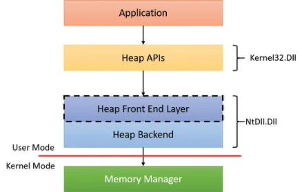
コアの上にフロントエンド層を設けられるのは、ユーザーモードのヒープだけです。Windows がオプションで提供するフロントエンドは LFH の1種類で、後述の「低断片化ヒープ」で説明します。
ヒープの同期
ヒープマネージャーは既定で、複数のスレッドからの同時アクセスに対応します。単一スレッドのプロセスや、ヒープの外部で同期を行うプロセスは、ヒープの作成時または個々の割り当て時に HEAP_NO_SERIALIZE を指定し、ヒープマネージャーによる同期のコストを省けます。ヒープの同期を有効にした場合は、ヒープごとに1つのロックで、そのヒープのすべての内部構造を保護します。
複数のヒープ関数を呼ぶ間、ヒープの状態を一貫させる必要がある処理では、プロセスがヒープ全体をロックして、ほかのスレッドによるヒープ操作を止めることもできます。たとえば、複数のスレッドが同時にヒープを操作できる場合、Windows API の HeapWalk でブロックを列挙するには、ヒープをロックする必要があります。ロックと解除には、それぞれ HeapLock と HeapUnlock を使います。
低断片化ヒープ
Windows で動く多くのアプリケーションは、ヒープの使用量が比較的小さく、通常は1 MB未満です。このようなアプリケーションでは、ヒープマネージャーが要求を満たす空きブロックのうち最も小さいものを選ぶベストフィット方式により、各プロセスのメモリ使用量を抑えられます。ただし、この方式は大規模なプロセスやマルチプロセッサマシンでは効率が落ちます。ヒープが断片化し、割り当てに使えるメモリが減ることがあります。また、異なるプロセッサで動く複数のスレッドが、特定のサイズのブロックを同時に頻繁に要求すると、性能が低下することがあります。複数のプロセッサが同じメモリ位置、たとえばそのサイズのルックアサイドリストの先頭を同時に変更しようとして、対応するキャッシュラインで競合するためです。
低断片化ヒープ（LFH）は、割り当てサイズの範囲ごとに、バケットと呼ばれる区分を設けて断片化を抑えます。プロセスがヒープからメモリを確保すると、LFH は要求を収容できる最小のブロックに対応するバケットを選びます。最小のブロックは8バイトです。最初のバケットは1〜8バイト、2番目は9〜16バイトというように続き、32番目は249〜256バイト、33番目は257〜272バイトに対応します。最後の128番目は15,873〜16,384バイトに対応します。原文では、この方式をバイナリバディシステムと呼んでいます。要求が16,384バイトを超えれば、LFH はヒープのバックエンドに処理を渡します。表5-7にバケット、割り当て粒度、対応するサイズ範囲を示します。
| バケット番号 | 粒度（バイト） | 範囲（バイト） |
|---|---|---|
| 1〜32 | 8 | 1〜256 |
| 33〜48 | 16 | 257〜512 |
| 49〜64 | 32 | 513〜1,024 |
| 65〜80 | 64 | 1,025〜2,048 |
| 81〜96 | 128 | 2,049〜4,096 |
| 97〜112 | 256 | 4,097〜8,192 |
| 113〜128 | 512 | 8,193〜16,384 |
LFH は、ヒープマネージャーのコアとルックアサイドリストを使って、これらの問題に対処します。Windows のヒープマネージャーには自動調整のアルゴリズムがあり、ロックの競合が起きた場合や、LFH で性能が向上するサイズの割り当てが頻繁に行われる場合などに、LFH を自動で有効にします。
大きなヒープでは、割り当てのかなりの割合が、特定のサイズに対応する少数のバケットに集中します。LFH は、このような割り当てパターンに合わせ、同じサイズのブロックを効率よく処理します。
複数のプロセッサにまたがる処理でも性能を維持するため、LFH は頻繁にアクセスする内部構造に、マシンの現在のプロセッサ数の2倍のスロットを用意します。スレッドを各スロットに割り当てるのは、LFH のアフィニティマネージャーです。最初は1番目のスロットを使ってヒープからメモリを割り当てます。内部データへのアクセスで競合を検出すると、現在のスレッドを別のスロットに移します。競合が続けば、スレッドはさらに多くのスロットに分散します。アクセスの局所性を高め、全体のメモリ消費を抑えるため、スロットはサイズのバケットごとに管理します。
フロントエンドとして LFH を有効にしても、使用頻度の低いサイズは、引き続きヒープコアの関数で割り当てる場合があります。頻繁に要求されるサイズには LFH を使います。あるヒープで一度 LFH を有効にすると、無効にすることはできません。Windows 7 以前では、HeapSetInformation API の HeapCompatibilityInformation クラスで LFH 層を取り外せましたが、本書の対象実装ではその要求は無視されます。
セグメントヒープ
Windows 10 で導入されたセグメントヒープの構成を図5-9に示します。

実際に割り当てを管理する層は、要求サイズによって決まります。
- 16,368バイト以下の小さな要求では、そのサイズが頻繁に使われると判定された場合に、LFH アロケーターを使います。この判断は NT ヒープの LFH フロントエンドと同様です。LFH がまだ使われていなければ、代わりに可変サイズ（VS）アロケーターが処理します。
- 128 KB以下で LFH の対象にならない割り当ては、可変サイズ（VS）アロケーターが処理します。VS と LFH はどちらも、必要に応じてバックエンドを使い、ヒープのサブセグメントを作ります。
- 128 KBを超え、508 KB以下の割り当ては、ヒープのバックエンドが直接処理します。
- 508 KBを超える要求は、ヒープのアロケーターを経由せず、
VirtualAllocを通じてメモリマネージャーが処理します。これだけ大きな割り当てでは、既定の64 KBの割り当て粒度を使い、サイズをページ単位に丸めても影響が小さいためです。
NT ヒープとセグメントヒープには、次の違いがあります。
- 場面によっては、セグメントヒープは NT ヒープよりやや遅くなります。原著の執筆時点では、今後の Windows で同等の性能になることが見込まれていました。
- セグメントヒープはメタデータに使うメモリが少なく、携帯電話など、メモリの少ないデバイスに適しています。
- セグメントヒープはメタデータを実データから分離します。NT ヒープでは、メタデータは実データの間に配置されます。セグメントヒープでは、割り当てたブロックのアドレスだけからメタデータにたどり着きにくくなるため、セキュリティが向上します。
- セグメントヒープは、拡張可能なヒープに限って使えます。呼び出し元が用意したメモリマップトファイルを使うことはできません。そのような条件で作成を要求すると、NT ヒープが作られます。
- どちらも LFH 方式の割り当てに対応しますが、内部実装は異なります。セグメントヒープの実装は、メモリ消費量と性能の両面でより効率的です。
UWP アプリが既定でセグメントヒープを使う主な理由は、メモリ消費量を抑えられ、メモリの少ないデバイスに適していることです。一部のシステムプロセスにも、実行可能ファイル名に基づいて適用されます。該当するのは、csrss.exe、lsass.exe、runtimebroker.exe、services.exe、smss.exe、svchost.exe です。
既存アプリケーションへの互換性の影響が懸念されるため、本書の対象バージョンでは、デスクトップアプリの既定のヒープにはなっていません。原著の執筆時点では、今後のバージョンで既定になることが見込まれていました。実行可能ファイルごとに有効化や無効化を行うには、Image File Execution Options で DWORD 型の FrontEndHeapDebugOptions を設定します。
- ビット2（値4）をセットすると、セグメントヒープを無効にします。
- ビット3（値8）をセットすると、セグメントヒープを有効にします。
システム全体で切り替えるには、レジストリキー HKLM\SYSTEM\CurrentControlSet\Control\Session Manager\Segment Heap に DWORD 型の Enabled を追加します。0で無効、0以外で有効です。
実験：ヒープの基本情報を表示する
この実験では、UWP プロセスのヒープをいくつか調べます。
- Windows 10 で「電卓」を起動します。「スタート」を開いて「電卓」と入力すると見つかります。
- Windows 10 の電卓は UWP アプリ（
Calculator.exe）です。WinDbg を起動し、電卓のプロセスにアタッチします。 - アタッチすると、WinDbg が対象プロセスの実行を中断します。
!heapを実行し、プロセスのヒープの概要を表示します。0:033> !heap Heap Address NT/Segment Heap 2531eb90000 Segment Heap 2531e980000 NT Heap 2531eb10000 Segment Heap 25320a40000 Segment Heap 253215a0000 Segment Heap 253214f0000 Segment Heap 2531eb70000 Segment Heap 25326920000 Segment Heap 253215d0000 NT Heap
- 各ヒープのハンドルと種類（セグメントヒープまたは NT ヒープ）を確認します。最初のヒープは既定のプロセスヒープです。このヒープは拡張可能で、呼び出し元が用意したメモリブロックを使わないため、セグメントヒープとして作成されます。2番目のヒープは、先述の「プロセスのヒープ」で説明した、呼び出し元が用意したメモリブロックを使います。本書の対象バージョンのセグメントヒープではこの使い方に対応していないため、NT ヒープとして作成されます。
- NT ヒープは
ntdll!_HEAP構造体で管理されます。2番目のヒープの構造体を表示します。0:033> dt ntdll!_heap 2531e980000 +0x000 Segment : _HEAP_SEGMENT +0x000 Entry : _HEAP_ENTRY +0x010 SegmentSignature : 0xffeeffee +0x014 SegmentFlags : 1 +0x018 SegmentListEntry : _LIST_ENTRY [ 0x00000253'1e980120 - 0x00000253'1e980120 ] +0x028 Heap : 0x00000253'1e980000 _HEAP +0x030 BaseAddress : 0x00000253'1e980000 Void +0x038 NumberOfPages : 0x10 +0x040 FirstEntry : 0x00000253'1e980720 _HEAP_ENTRY +0x048 LastValidEntry : 0x00000253'1e990000 _HEAP_ENTRY +0x050 NumberOfUnCommittedPages : 0xf +0x054 NumberOfUnCommittedRanges : 1 +0x058 SegmentAllocatorBackTraceIndex : 0
+0x05a Reserved : 0 +0x060 UCRSegmentList : _LIST_ENTRY [ 0x00000253'1e980fe0 - 0x00000253'1e980fe0 ] +0x070 Flags : 0x8000 +0x074 ForceFlags : 0 +0x078 CompatibilityFlags : 0 +0x07c EncodeFlagMask : 0x100000 +0x080 Encoding : _HEAP_ENTRY +0x090 Interceptor : 0 +0x094 VirtualMemoryThreshold : 0xff00 +0x098 Signature : 0xeeffeeff +0x0a0 SegmentReserve : 0x100000 +0x0a8 SegmentCommit : 0x2000 +0x0b0 DeCommitFreeBlockThreshold : 0x100 +0x0b8 DeCommitTotalFreeThreshold : 0x1000 +0x0c0 TotalFreeSize : 0x8a +0x0c8 MaximumAllocationSize : 0x00007fff'fffdefff +0x0d0 ProcessHeapsListIndex : 2 ... +0x178 FrontEndHeap : (null) +0x180 FrontHeapLockCount : 0 +0x182 FrontEndHeapType : 0 '' +0x183 RequestedFrontEndHeapType : 0 '' +0x188 FrontEndHeapUsageData : (null) +0x190 FrontEndHeapMaximumIndex : 0 +0x192 FrontEndHeapStatusBitmap : [129] "" +0x218 Counters : _HEAP_COUNTERS +0x290 TuningParameters : _HEAP_TUNING_PARAMETERS
FrontEndHeapフィールドを確認します。このフィールドは、ヒープにフロントエンド層があるかどうかを示します。この出力では値がnullなので、フロントエンド層はありません。null以外の値なら、フロントエンド層として LFH を使用しています。定義されているフロントエンドは LFH だけです。- セグメントヒープは
ntdll!_SEGMENT_HEAP構造体で表されます。次は、既定のプロセスヒープを表示した結果です。0:033> dt ntdll!_segment_heap 2531eb90000 +0x000 TotalReservedPages : 0x815 +0x008 TotalCommittedPages : 0x6ac +0x010 Signature : 0xddeeddee +0x014 GlobalFlags : 0 +0x018 FreeCommittedPages : 0 +0x020 Interceptor : 0 +0x024 ProcessHeapListIndex : 1 +0x026 GlobalLockCount : 0 +0x028 GlobalLockOwner : 0 +0x030 LargeMetadataLock : _RTL_SRWLOCK +0x038 LargeAllocMetadata : _RTL_RB_TREE +0x048 LargeReservedPages : 0 +0x050 LargeCommittedPages : 0 +0x058 SegmentAllocatorLock : _RTL_SRWLOCK +0x060 SegmentListHead : _LIST_ENTRY [ 0x00000253'1ec00000 -
0x00000253'28a00000 ] +0x070 SegmentCount : 8 +0x078 FreePageRanges : _RTL_RB_TREE +0x088 StackTraceInitVar : _RTL_RUN_ONCE +0x090 ContextExtendLock : _RTL_SRWLOCK +0x098 AllocatedBase : 0x00000253'1eb93200 "" +0x0a0 UncommittedBase : 0x00000253'1eb94000 "--- memory read error at address 0x00000253'1eb94000 ---" +0x0a8 ReservedLimit : 0x00000253'1eba5000 "--- memory read error at address 0x00000253'1eba5000 ---" +0x0b0 VsContext : _HEAP_VS_CONTEXT +0x120 LfhContext : _HEAP_LFH_CONTEXT
Signatureフィールドに注目します。このフィールドは、2種類のヒープを区別するために使われます。- セグメントヒープの
Signatureと、NT ヒープを表す_HEAPのSegmentSignatureは、どちらも構造体の先頭から0x10バイトの位置にあります。このため、RtlAllocateHeapなどの関数は、ヒープのハンドル（アドレス）だけを受け取っても、どちらの実装を使うか判断できます。 _SEGMENT_HEAPの最後の2つのフィールドには、可変サイズ（VS）アロケーターと低断片化ヒープ（LFH）アロケーターの情報が格納されています。- 各ヒープの詳細を表示するには、
!heap -sを実行します。0:033> !heap -s Process Total Total Global Heap Reserved Committed Heap Address Signature Flags List Bytes Bytes Index (K) (K) 2531eb90000 ddeeddee 0 1 8276 6832 2531eb10000 ddeeddee 0 3 1108 868 25320a40000 ddeeddee 0 4 1108 16 253215a0000 ddeeddee 0 5 1108 20 253214f0000 ddeeddee 0 6 3156 816 2531eb70000 ddeeddee 0 7 1108 24 25326920000 ddeeddee 0 8 1108 32 **************************************************************************** ************* NT HEAP STATS BELOW **************************************************************************** ************* LFH Key : 0xd7b666e8f56a4b98 Termination on corruption : ENABLED Affinity manager status: - Virtual affinity limit 8 - Current entries in use 0 - Statistics: Swaps=0, Resets=0, Allocs=0 Heap Flags Reserv Commit Virt Free List UCR Virt Lock Fast
(k) (k) (k) (k) length blocks cont. heap --------------------------------------------------------------------------- ---------- 000002531e980000 00008000 64 4 64 2 1 1 0 0 00000253215d0000 00000001 16 16 16 10 1 1 0 N/A --------------------------------------------------------------------------- ----------
- 出力の前半には、セグメントヒープがあれば、その詳細が表示されます。後半には、プロセス内の NT ヒープの詳細が表示されます。
デバッガーの !heap コマンドには、ヒープの表示、調査、検索に使えるさまざまなオプションがあります。詳しくは Debugging Tools for Windows のドキュメントを参照してください。
ヒープのセキュリティ機能
ヒープマネージャーの改良が進むにつれて、ヒープの使い方の誤りを早期に検出し、ヒープを狙う攻撃の影響を抑える機能が加わってきました。アプリケーションに脆弱性があっても、セキュリティへの影響を小さくするためです。NT ヒープとセグメントヒープの両方に、メモリの破損を悪用されにくくする複数の仕組みがあります。
ヒープが内部管理に使うメタデータには、強いランダム化が施されています。攻撃者がクラッシュを防いだり、攻撃の痕跡を隠したりするために、内部構造を書き換えることを難しくします。また、ブロックのヘッダーの整合性を検査し、バッファーの末尾を越える書き込みなどによる破損を検出します。ヒープのベースアドレス、つまりハンドルにも、小規模なランダム化が施されます。プロセスは、HeapSetInformation の HeapEnableTerminationOnCorruption クラスを使い、不整合を検出したときに自動で終了するよう設定できます。これにより、不明なコードの実行を防ぎます。
ブロックのメタデータはランダム化されているため、デバッガーでヘッダーのメモリをそのまま表示しても、ブロックのサイズや使用中かどうかは読み取りにくくなります。LFH のブロックも同様です。ヘッダーに格納するメタデータの形式は異なりますが、一部はランダム化されています。デバッガーの !heap -i は、ブロックからメタデータの各フィールドを取得し、チェックサムや空きリストに不整合があれば報告します。このコマンドは LFH と通常のヒープブロックのどちらにも使えます。次の出力例では、ブロックの合計サイズ、ユーザーが要求したサイズ、ブロックが属するセグメント、ヘッダーの部分チェックサムを確認できます。ランダム化のアルゴリズムはヒープの割り当て粒度を使うため、!heap -i は対象ブロックを含むヒープのコンテキストで実行します。この例のヒープハンドルは 0x001a0000 です。別のヒープが選ばれているとヘッダーを正しくデコードできません。まず同じ !heap -i にヒープハンドルを渡し、対象のヒープを選びます。
0:004> !heap -i 000001f72a5e0000 Heap context set to the heap 0x000001f72a5e0000
0:004> !heap -i 000001f72a5eb180 Detailed information for block entry 000001f72a5eb180 Assumed heap : 0x000001f72a5e0000 (Use !heap -i NewHeapHandle to change) Header content : 0x2FB544DC 0x1000021F (decoded : 0x7F01007E 0x10000048) Owning segment : 0x000001f72a5e0000 (offset 0) Block flags : 0x1 (busy ) Total block size : 0x7e units (0x7e0 bytes) Requested size : 0x7d0 bytes (unused 0x10 bytes) Previous block size: 0x48 units (0x480 bytes) Block CRC : OK - 0x7f Previous block : 0x000001f72a5ead00 Next block : 0x000001f72a5eb960
セグメントヒープ固有のセキュリティ機能
セグメントヒープには、メモリの破損や攻撃者によるコードの注入を難しくする仕組みがいくつもあります。次にその一部を示します。
- 連結リストのノード破損時に即座に終了する
- セグメントとサブセグメントを連結リストで管理します。NT ヒープと同様に、ノードの挿入と削除の際に整合性を検査し、破損したノードによって任意のメモリ位置に書き込まれるのを防ぎます。破損を検出すると、
RtlFailFastを呼び出してプロセスを終了します。 - 赤黒木のノード破損時に即座に終了する
- バックエンドと可変サイズ（VS）アロケーターの空き領域を赤黒木で追跡します。挿入・削除を行う関数は、関係するノードを検証し、破損があればフェイルファスト機構でプロセスを終了します。
- 関数ポインターの符号化と復号
_SEGMENT_HEAPのVsContextとLfhContextではコールバックを使います。コールバックの書き換えによって攻撃者のコードに制御が移るのを防ぐため、関数ポインターは、内部で生成したランダムなヒープキーとコンテキストのアドレスを使って XOR で符号化されます。どちらの値も事前には予測できません。- ガードページ
- LFH や VS のサブセグメント、および大きなブロックを割り当てる際に、その末尾にガードページを追加します。これにより、範囲外への書き込みや隣接データの破損を検出しやすくなります。詳しくは、後述の「スタック」を参照してください。
ヒープのデバッグ機能
ヒープマネージャーには、不具合の検出に役立つ次の設定があります。
- 末尾の検査を有効にする。各ブロックの末尾にシグネチャを置き、ブロックの解放時に検査します。バッファーの末尾を越えた書き込みでシグネチャが一部でも壊れていれば、ブロックの解放時にヒープマネージャーがエラーを報告します。
- 解放済みブロックの検査。解放されたブロックを所定のパターンで埋めます。割り当て要求に応じて空きリストから取り出すときなど、ヒープマネージャーがそのブロックにアクセスする際にパターンを検査します。プロセスが解放後もブロックに書き込み続けると、パターンの変化を検出してエラーを報告します。
- 引数の検査。ヒープ関数に渡された引数を詳しく検査します。
- ヒープの検証。ヒープ関数を呼ぶたびに、ヒープ全体を検証します。
- ヒープタグとスタックトレース。割り当てにタグを指定したり、ヒープ関数の呼び出し時にユーザーモードのスタックトレースを記録したりして、ヒープエラーの原因を絞り込みます。
ローダーが、デバッガーの制御下でプロセスが起動したことを検出すると、末尾の検査、解放済みブロックの検査、引数の検査の3つが既定で有効になります。デバッガーはこの動作を上書きし、これらの機能を無効にできます。実行可能イメージごとにヒープのデバッグ機能を指定するには、Gflags を使ってイメージヘッダーにデバッグフラグを設定します。次の実験と Part 2 の第8章「Windows のグローバルフラグ」を参照してください。Windows の標準デバッガーの !heap コマンドでも、ヒープのデバッグオプションを有効にできます。詳細はデバッガーのヘルプを参照してください。
ヒープのデバッグオプションは、プロセス内のすべてのヒープに適用されます。1つでも有効にすると LFH は自動的に無効になり、必要なデバッグオプションを有効にしたヒープコアを使います。また、拡張できないヒープでは、既存のデータ構造にオーバーヘッドが加わるため、LFH を使いません。操作の直列化を認めないヒープにも LFH は適用されません。
ページヒープ
前述の末尾の検査や解放済みブロックの検査では、メモリが破損してから検出するまでに時間がかかる場合があります。そこで、追加のデバッグ機能としてページヒープ（Pageheap）が用意されています。ページヒープは、ヒープ関数の呼び出しの全部または一部を、別のヒープマネージャーに振り分けます。Debugging Tools for Windows に含まれる Gflags で有効にできます。有効にすると、ヒープマネージャーは割り当て領域をページの末尾に置き、その直後のページを予約します。予約済みページにはアクセスできないため、バッファーの末尾を越える書き込みはアクセス違反になり、問題のコードを特定しやすくなります。まれに起きるバッファーの先頭より前へのアクセスを検出するために、割り当てをページの先頭に置き、直前のページを予約することもできます。解放したページへのアクセスを禁止して、ヒープブロックの解放後の参照を検出することもできます。
ページヒープは小さな割り当てにも大きなオーバーヘッドを加えるため、32ビットプロセスで使うとアドレス空間を使い切ることがあります。デマンドゼロページへの参照が増え、メモリアクセスの局所性が低下し、ヒープ構造の検証を頻繁に呼ぶコストも加わるため、性能が低下することがあります。ページヒープの対象を、特定のサイズ、アドレス範囲、または割り当て元 DLL のブロックに絞ると、影響を抑えられます。
実験：ページヒープを使う
この実験では、Notepad.exe に対してページヒープを有効にし、その影響を確認します。
Notepad.exeを起動します。- タスクマネージャーを開き、「詳細」タブに「コミット サイズ」列を追加します。
- 起動したメモ帳のプロセスのコミットサイズを確認します。
- Debugging Tools for Windows のインストール先にある
Gflags.exeを、管理者権限で起動します。 - 「Image File」タブを開きます。
- 「Image」欄に
notepad.exeと入力し、Tab キーを押します。各種のチェックボックスを選べるようになります。 - 「Enable Page Heap」にチェックを入れます。ダイアログは次のようになります。

- 「Apply」をクリックします。
- 最初のメモ帳を開いたまま、もう1つメモ帳を起動します。
- タスクマネージャーで2つのメモ帳のコミットサイズを比較します。どちらも何も入力していないのに、2つ目のプロセスのコミットサイズは大幅に増えています。ページヒープが追加のメモリを割り当てるためです。次のページに32ビット版 Windows 10 での画面を示します。

- ページヒープを有効にしたメモ帳で、どの領域のコミットサイズが増えたかを調べるには、Sysinternals の VMMap を使います。メモ帳の両方のプロセスを実行したまま
VMMap.exeを開き、ページヒープを使っている方のメモ帳を選びます。
- VMMap をもう1つ起動し、もう一方のメモ帳を選びます。両方を比較できるようにウィンドウを横に並べます。
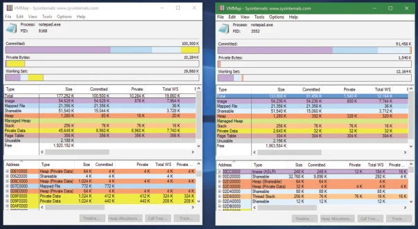
- 黄色で示された「Private Data」の部分に、コミットサイズの差がはっきり現れています。
- 双方の VMMap ウィンドウの中央ペインで「Private Data」の行をクリックします。下部ペインに内訳が表示されます。次の画面ではサイズ順に並べています。

- 左の画面はページヒープを使ったメモ帳で、より多くのメモリを消費しています。1,024 KBの領域を1つ展開すると、次のように表示されます。

- コミット済みページの間に予約済みページが見えます。ページヒープはこれらのページを使って、バッファーの末尾を越えるアクセスや、先頭より前へのアクセスを検出します。Gflags の「Enable Page Heap」のチェックを外し、「Apply」をクリックします。以降に起動するメモ帳にはページヒープが適用されません。
ページヒープの詳細は、Debugging Tools for Windows のヘルプを参照してください。
フォールトトレラントヒープ
Microsoft は、ヒープのメタデータの破損を、アプリケーションが異常終了する主な原因の一つとして特定しました。Windows のフォールトトレラントヒープ（FTH）は、この問題の影響を抑え、アプリケーション開発者が原因を調べるための情報を提供します。FTH は主に、検出を行う FTH サーバーと、問題の影響を緩和する FTH クライアントの2つで構成されます。
検出を行う DLL は Fthsvc.dll です。Windows セキュリティセンターサービス（Wscsvc.dll）がこれを読み込みます。このサービスは、ローカルサービスアカウントで動作する共有サービスプロセスの一つで実行されます。アプリケーションがクラッシュすると、FTH の検出コンポーネントは Windows エラー報告（WER）サービスから通知を受けます。
アプリケーションが Ntdll.dll 内でクラッシュし、エラーステータスがアクセス違反またはヒープ破損の例外を示したとします。アプリケーションがまだ監視対象になければ、FTH サービスはそのアプリケーションの FTH データを保持する「チケット」を作ります。その後、1時間に4回を超えてクラッシュすると、以降の起動で FTH クライアントを使うように設定します。
FTH クライアントはアプリケーション互換性シムです。この仕組みは Windows XP 以降、古い Windows の特定の動作を前提とするアプリケーションを新しい Windows で動かすために使われています。FTH のシムは、ヒープルーチンへの呼び出しを捕捉し、独自のコードに振り分けます。そこでは、ヒープに関するさまざまなエラーが起きても、アプリケーションが動作を続けられるよう、複数の緩和策を適用します。
たとえば、バッファーの末尾をわずかに越える書き込みに備えて、各割り当てに8バイトのパディングと FTH の予約領域を追加します。解放済みのブロックを参照する問題に対しては、HeapFree の処理を遅らせます。解放が要求されたブロックをリストに入れ、その合計サイズが4 MBを超えてから実際に解放します。ヒープに属さない領域や、HeapFree の引数で指定したヒープに属さない領域の解放要求は無視します。exit または RtlExitUserProcess が呼ばれたあとも、ブロックを実際には解放しません。
緩和策を適用したあとも、FTH サーバーはアプリケーションの異常終了の頻度を監視します。頻度が下がらない場合は、緩和策を解除します。
フォールトトレラントヒープの動作は、イベントビューアーで確認できます。
- 「ファイル名を指定して実行」を開き、
eventvwr.mscと入力します。 - 左ペインの「イベント ビューアー」で、「アプリケーションとサービス ログ」、「Microsoft」、「Windows」、「Fault-Tolerant-Heap」の順に開きます。
- 「Operational」ログを選びます。
- FTH を完全に無効にするには、レジストリキー
HKLM\Software\Microsoft\FTHのEnabledを0に設定します。
同じレジストリキーには、先述の遅延や、対象から除外する実行可能ファイルの一覧など、各種の FTH 設定があります。除外リストには既定で、smss.exe、csrss.exe、wininit.exe、services.exe、winlogon.exe、taskhost.exe などのシステムプロセスが含まれます。RuleList には、FTH を適用するかどうかを判定するために監視するモジュールと例外の種類、およびそれに付随するフラグが記録されています。既定のルールは1つで、Ntdll.dll で STATUS_ACCESS_VIOLATION（0xC0000005）を起こすヒープの問題を対象とします。
FTH は通常、サービスには適用されません。また、性能上の理由から Windows Server では無効になっています。システム管理者は Application Compatibility Toolkit を使い、アプリケーションやサービスの実行可能ファイルにこの互換性シムを手動で適用できます。
仮想アドレス空間の配置
ここではまず、ユーザーアドレス空間とシステムアドレス空間に配置されるものを説明します。そのあとで、32ビット（x86 と ARM）および64ビット（x64）のシステムでの配置を示します。これらの配置から、各プラットフォームでプロセスやシステムが使える仮想メモリの上限がわかります。
Windows が仮想アドレス空間にマップする主なデータは3種類です。
- プロセス固有のプライベートコードとデータ
- 第1章で説明したように、各プロセスには、ほかのプロセスから直接アクセスできないプライベートなアドレス空間があります。仮想アドレスは常に現在のプロセスのコンテキストで解釈され、別のプロセスのアドレスを指すことはありません。そのため、プロセス内のスレッドは、このプライベートアドレス空間の外にあるユーザーモードの仮想アドレスにはアクセスできません。共有メモリも、共有に参加する各プロセスにマップされるので、それぞれが自分のアドレス空間のアドレスを使ってアクセスします。
ReadProcessMemoryやWriteProcessMemoryも、対象プロセスのコンテキストでカーネルモードのコードを実行して処理します。プロセスの仮想アドレス空間を表すページテーブルについては、「アドレス変換」で説明します。ページテーブルはプロセスごとにあり、カーネルモードからだけアクセスできるページに置きます。これにより、ユーザーモードのスレッドが、自分のプロセスのアドレス空間の配置を書き換えられないようにします。 - セッション全体で共有するコードとデータ
- セッション空間には、各セッション内で共通の情報を置きます。セッションの詳細は第2章を参照してください。セッションには、1人のユーザーのログオンセッションを構成するプロセスと、ウィンドウステーション、デスクトップ、ウィンドウなどのシステムオブジェクトが含まれます。各セッションには専用のページプール領域があり、Windows サブシステムのカーネルモード部分（
Win32k.sys）が、セッション固有の GUI データ構造をそこに割り当てます。また、各セッションは、Windows サブシステムプロセス（Csrss.exe）とログオンプロセス（Winlogon.exe）をそれぞれ持ちます。セッションマネージャー（Smss.exe）は、新しいセッションの作成時に、セッション専用のWin32k.sysを読み込み、オブジェクトマネージャーにセッション専用の名前空間を作り、Csrss.exeとWinlogon.exeのインスタンスを作成します。オブジェクトマネージャーは Part 2 の第8章で説明します。セッションを分離するため、セッション全体で使うデータ構造を、システム空間内の「セッション空間」と呼ばれる領域にマップします。プロセスを作成するときは、このアドレス範囲を、プロセスが属するセッションのページに対応付けます。
システム全体で共有するコードとデータ。システム空間には、現在どのプロセスが実行中かにかかわらず、カーネルモードのコードから参照できる OS 共通のコードやデータ構造があります。システム空間は次の要素で構成されます。
- システムコード
- OS イメージ、HAL、システムの起動に使うデバイスドライバーが含まれます。
- 非ページプール
- ページアウトされないシステムメモリのヒープです。
- ページプール
- ページアウトできるシステムメモリのヒープです。
- システムキャッシュ
- システムキャッシュで開いているファイルをマップする仮想アドレス空間です。キャッシュマネージャーの詳細は、Part 2 の第11章「キャッシュとファイルシステム」を参照してください。
- システムページテーブルエントリ（PTE）
- I/O 空間、カーネルスタック、メモリ記述子リストなど、システムのページをマップするためのシステム PTE のプールです。使用できるシステム PTE の数は、パフォーマンスモニターの「Memory」カテゴリにある「Free System Page Table Entries」カウンターで確認できます。
- システムワーキングセットリスト
- システムキャッシュ、ページプール、システム PTE という3つのシステムワーキングセットを記述するリストです。
- システムのマップ済みビュー
- Windows サブシステムの読み込み可能なカーネルモード部分である
Win32k.sysと、それが使うカーネルモードのグラフィックスドライバーをマップします。Win32k.sysの詳細は第2章を参照してください。 - ハイパースペース
- プロセスのワーキングセットリストなど、任意のプロセスのコンテキストからアクセスできる必要のないプロセス固有のデータをマップする特別な領域です。物理ページを一時的にシステム空間へマップするのにも使います。たとえば、ページをスタンバイリストから取り除く際に、現在とは別のプロセスのページテーブル内でエントリを無効にするときです。
- クラッシュダンプ情報
- システムがクラッシュしたときの状態を記録するために予約された領域です。
- HAL 用領域
- HAL 固有のデータ構造のために予約されたシステムメモリです。
ここからは、x86、ARM、x64 の各プラットフォームで、これらの要素がどのように配置されるかを見ていきます。
x86 のアドレス空間の配置
32ビット版 Windows では、各ユーザープロセスのプライベートアドレス空間は既定で2 GBで、残りの2 GBは OS が使います。x86 では、BCD の起動オプション increaseuserva によって、ユーザーアドレス空間を最大3 GBに設定できます。図5-10に、2つの配置例を示します。
32ビットプロセスで2 GBを超えるアドレス空間を使えるようにしたのは、32ビットアプリケーションが従来より多くのデータをメモリに保持できるようにするためです。64ビットシステムでは、さらに大きなアドレス空間を使えます。

プロセスで2 GBを超えるアドレス空間を使うには、システム全体の increaseuserva 設定に加えて、実行可能イメージのヘッダーに IMAGE_FILE_LARGE_ADDRESS_AWARE フラグが必要です。フラグがなければ、Windows は追加のアドレス空間を予約し、そのアプリケーションに 0x7FFFFFFF を超える仮想アドレスを渡さないようにします。追加の仮想メモリを明示的に有効にするのは、アドレス空間が最大2 GBであると仮定したアプリケーションがあるためです。2 GB未満のアドレスを表すには31ビットで足り、ポインターの最上位ビットは常に0です。こうしたアプリケーションは最上位ビットを独自のフラグに使い、データを参照する直前にクリアすることがあります。3 GBのアドレス空間で動かすと、2 GB以上のアドレスを指すポインターの最上位ビットを誤って落とし、プログラムのエラーやデータの破損を引き起こす可能性があります。
フラグを設定するには、実行可能ファイルのビルド時にリンカーオプション /LARGEADDRESSAWARE を指定します。Visual Studio では、プロパティページの「リンカー」から「システム」を開き、大きなアドレスを有効にする設定を選びます。実行可能ファイルが未署名なら、Windows SDK の Editbin.exe などを使って、ソースコードや再ビルドなしでもフラグを追加できます。ユーザーアドレス空間が2 GBのシステムでは、このフラグを設定しても動作は変わりません。
システムイメージの中にも、大きなプロセスアドレス空間を利用できるように、このフラグを設定しているものがあります。
Lsass.exe（ローカルセキュリティ機関サブシステム）Inetinfo.exe（Internet Information Server）Chkdsk.exe（チェックディスクユーティリティ）
Smss.exe（セッションマネージャー）Dllhst3g.exe（COM+ アプリケーション向けの特別なDllhost.exe）
実験：アプリケーションが大きなアドレス空間に対応しているかを調べる
Visual Studio のツール（および旧版の Windows SDK）に含まれる Dumpbin を使うと、ほかの実行可能ファイルが大きなアドレス空間に対応するかを確認できます。/headers を指定して結果を表示します。次は、セッションマネージャーを Dumpbin で調べたときの出力例です。
dumpbin /headers c:\windows\system32\smss.exe Microsoft (R) COFF/PE Dumper Version 14.00.24213.1 Copyright (C) Microsoft Corporation. All rights reserved. Dump of file c:\windows\system32\smss.exe PE signature found File Type: EXECUTABLE IMAGE FILE HEADER VALUES 14C machine (x86) 5 number of sections 57898F8A time date stamp Sat Jul 16 04:36:10 2016 0 file pointer to symbol table 0 number of symbols E0 size of optional header 122 characteristics Executable Application can handle large (>2GB) addresses 32 bit word machine
VirtualAlloc、VirtualAllocEx、VirtualAllocExNuma は、既定では低い仮想アドレスから高い方へ向かって、割り当てに使える範囲を探します。大量のメモリを確保するか、仮想アドレス空間が大きく断片化しない限り、プロセスに非常に高い仮想アドレスが返ることはありません。テストで高いアドレスから割り当てるには、VirtualAlloc* に MEM_TOP_DOWN を指定します。レジストリキー HKLM\SYSTEM\CurrentControlSet\Control\Session Manager\Memory Management に DWORD 値 AllocationPreference を作り、0x100000 を設定する方法もあります。
次の出力は、increaseuserva を指定せずに起動した32ビット版 Windows 上で、先の実験で使った TestLimit を実行し、メモリを予約したまま解放しなかったときのものです。
Testlimit.exe -r Testlimit v5.24 - test Windows limits Copyright (C) 2012-2015 Mark Russinovich Sysinternals - www.sysinternals.com Process ID: 5500 Reserving private bytes (MB)... Leaked 1978 MB of reserved memory (1940 MB total leaked). Lasterror: 8
プロセスは、2 GBの上限に近い領域を予約できました。通常のプロセスでは、EXE のコードや各種 DLL がすでにアドレス空間にマップされているため、TestLimit が予約できる容量は、ユーザーアドレス空間の上限を下回ります。
同じシステムでユーザーアドレス空間を3 GBに切り替えるには、管理者権限で開いたコマンドプロンプトで次を実行します。
C:\WINDOWS\system32>bcdedit /set increaseuserva 3072 The operation completed successfully.
このコマンドには、2,048 MB（既定の2 GB）から3,072 MB（上限の3 GB）までの任意の値を指定できます。設定を反映するためにシステムを再起動し、TestLimit をもう一度実行すると、次のように表示されます。
Testlimit.exe -r Testlimit v5.24 - test Windows limits Copyright (C) 2012-2015 Mark Russinovich Sysinternals - www.sysinternals.com Process ID: 2308 Reserving private bytes (MB)... Leaked 2999 MB of reserved memory (2999 MB total leaked). Lasterror: 8
予想どおり、TestLimit は3 GB近い領域を予約したままにできました。これは、TestLimit のリンク時に /LARGEADDRESSAWARE を指定しているためです。この指定がなければ、結果は increaseuserva なしで起動した場合とほぼ同じになります。
注記 プロセスごとのアドレス空間を通常の2 GBに戻すには、bcdedit /deletevalue increaseuserva を実行します。
x86 のシステムアドレス空間の配置
32ビット版 Windows では、仮想アドレスアロケーターを使ってシステムアドレス空間を動的に配置します。この仕組みは後述します。図5-10にあるように、専用に予約されている領域もいくつかありますが、多くのカーネルモードの構造体は動的に割り当てられたアドレス空間を使います。そのため、個々の構造体の仮想アドレス範囲は必ずしも連続しておらず、システムアドレス空間の各所に分かれて配置されることがあります。この方法で割り当てられる領域には、次のものがあります。
- 非ページプール
- ページプール
- 特殊プール
- システムページテーブルエントリ（PTE）
- システムのマップ済みビュー
- ファイルシステムキャッシュ
- ページフレーム番号（PFN）データベース
- セッション空間
x86 のセッション空間
複数のセッションがあるシステムでは、セッション固有のコードやデータをシステムアドレス空間にマップし、そのセッション内のプロセスで共有します。セッション0はシステムプロセスとサービスに、セッション1は最初にログオンしたユーザーに使われるため、ほとんどのシステムに複数のセッションがあります。図5-11にセッション空間のおおまかな配置を示します。カーネルのシステムアドレス空間のほかの領域と同様に、メモリマネージャーが各領域のサイズを動的に決め、必要に応じて変更します。

実験：セッションを表示する
タスクマネージャー、Process Explorer、カーネルデバッガーのいずれかでセッション ID を調べると、各プロセスがどのセッションに属するかを確認できます。カーネルデバッガーでは、!session でアクティブなセッションを一覧表示できます。
lkd> !session Sessions on machine: 3 Valid Sessions: 0 1 2 Current Session 2
続いて、!session -s でデバッガーが参照するセッションを選び、!sprocess でセッションのデータ構造のアドレスと、そのセッションに属するプロセスを表示できます。
lkd> !session -s 1 Sessions on machine: 3
Implicit process is now d4921040 Using session 1 lkd> !sprocess Dumping Session 1 _MM_SESSION_SPACE d9306000 _MMSESSION d9306c80 PROCESS d4921040 SessionId: 1 Cid: 01d8 Peb: 00668000 ParentCid: 0138 DirBase: 179c5080 ObjectTable: 00000000 HandleCount: 0. Image: smss.exe PROCESS d186c180 SessionId: 1 Cid: 01ec Peb: 00401000 ParentCid: 01d8 DirBase: 179c5040 ObjectTable: d58d48c0 HandleCount: <Data Not Accessible> Image: csrss.exe PROCESS d49acc40 SessionId: 1 Cid: 022c Peb: 03119000 ParentCid: 01d8 DirBase: 179c50c0 ObjectTable: d232e5c0 HandleCount: <Data Not Accessible> Image: winlogon.exe PROCESS dc0918c0 SessionId: 1 Cid: 0374 Peb: 003c4000 ParentCid: 022c DirBase: 179c5160 ObjectTable: dc28f6c0 HandleCount: <Data Not Accessible> Image: LogonUI.exe PROCESS dc08e900 SessionId: 1 Cid: 037c Peb: 00d8b000 ParentCid: 022c DirBase: 179c5180 ObjectTable: dc249640 HandleCount: <Data Not Accessible> Image: dwm.exe
セッションの詳細を確認するには、!sprocess の出力でセッション番号の直後に表示される _MM_SESSION_SPACE のアドレスを指定し、次のように dt コマンドで構造体の内容を表示します。
lkd> dt nt!_mm_session_space d9306000 +0x000 ReferenceCount : 0n4 +0x004 u : <unnamed-tag> +0x008 SessionId : 1 +0x00c ProcessReferenceToSession : 0n6 +0x010 ProcessList : _LIST_ENTRY [ 0xd4921128 - 0xdc08e9e8 ] +0x018 SessionPageDirectoryIndex : 0x1617f +0x01c NonPagablePages : 0x28 +0x020 CommittedPages : 0x290 +0x024 PagedPoolStart : 0xc0000000 Void +0x028 PagedPoolEnd : 0xffbfffff Void +0x02c SessionObject : 0xd49222b0 Void +0x030 SessionObjectHandle : 0x800003ac Void +0x034 SessionPoolAllocationFailures : [4] 0 +0x044 ImageTree : _RTL_AVL_TREE +0x048 LocaleId : 0x409 +0x04c AttachCount : 0 +0x050 AttachGate : _KGATE +0x060 WsListEntry : _LIST_ENTRY [ 0xcdcde060 - 0xd6307060 ] +0x080 Lookaside : [24] _GENERAL_LOOKASIDE +0xc80 Session : _MMSESSION ...
実験：セッション空間の使用状況を表示する
カーネルデバッガーの !vm 4 で、セッション空間のメモリ使用状況を表示できます。次は、リモートデスクトップ接続を受け付けた32ビット版 Windows クライアントでの出力例です。既定の2つのセッションにリモートセッションが加わり、合計3つになっています。表示されるアドレスは、前の実験で確認した MM_SESSION_SPACE オブジェクトのものです。
lkd> !vm 4 ... Terminal Server Memory Usage By Session: Session ID 0 @ d6307000: Paged Pool Usage: 2012 Kb NonPaged Usage: 108 Kb Commit Usage: 2292 Kb Session ID 1 @ d9306000: Paged Pool Usage: 2288 Kb NonPaged Usage: 160 Kb Commit Usage: 2624 Kb Session ID 2 @ cdcde000: Paged Pool Usage: 7740 Kb NonPaged Usage: 208 Kb Commit Usage: 8144 Kb Session Summary Paged Pool Usage: 12040 Kb NonPaged Usage: 476 Kb Commit Usage: 13060 Kb
システムページテーブルエントリ
システムページテーブルエントリ（PTE）は、I/O 空間、カーネルスタック、メモリ記述子リスト（MDL）が記述する領域など、システムページを動的にマップするために使います。MDL については第6章で説明します。システム PTE の数には限りがあります。32ビット版 Windows では、使用できるシステム PTE で理論上、連続した2 GBのシステム仮想アドレス空間を記述できます。64ビット版 Windows 10 と Windows Server 2016 では、連続した仮想アドレス空間を最大16 TBまで記述できます。
実験：システム PTE の情報を表示する
使用可能なシステム PTE の数は、パフォーマンスモニターの「Memory: Free System Page Table Entries」カウンターや、デバッガーの !sysptes または !vm で確認できます。メモリ管理の状態を保持する MiState の一部である _MI_SYSTEM_PTE_TYPE 構造体を表示する方法もあります。Windows 8.x、Windows Server 2012、Windows Server 2012 R2 では、代わりにグローバル変数 MiSystemPteInfo を調べます。これらの構造体からは、システムで PTE の割り当てが失敗した回数も確認できます。失敗回数が多い場合は何らかの問題があり、システム PTE が解放されずに残っている可能性があります。
kd> !sysptes System PTE Information Total System Ptes 216560 starting PTE: c0400000 free blocks: 969 total free: 16334 largest free block: 264 kd> ? MiState Evaluate expression: -2128443008 = 81228980
kd> dt nt!_MI_SYSTEM_INFORMATION SystemPtes +0x3040 SystemPtes : _MI_SYSTEM_PTE_STATE
kd> dt nt!_mi_system_pte_state SystemViewPteInfo 81228980+3040 +0x10c SystemViewPteInfo : _MI_SYSTEM_PTE_TYPE
kd> dt nt!_mi_system_pte_type 81228980+3040+10c +0x000 Bitmap : _RTL_BITMAP +0x008 BasePte : 0xc0400000 _MMPTE +0x00c Flags : 0xe +0x010 VaType : c ( MiVaDriverImages ) +0x014 FailureCount : 0x8122bae4 -> 0 +0x018 PteFailures : 0 +0x01c SpinLock : 0 +0x01c GlobalPushLock : (null) +0x020 Vm : 0x8122c008 _MMSUPPORT_INSTANCE +0x024 TotalSystemPtes : 0x120 +0x028 Hint : 0x2576 +0x02c LowestBitEverAllocated : 0xc80 +0x030 CachedPtes : (null) +0x034 TotalFreeSystemPtes : 0x73
システム PTE の割り当てが何度も失敗する場合は、レジストリキー HKLM\SYSTEM\CurrentControlSet\Control\Session Manager\Memory Management に DWORD 値 TrackPtes を追加し、1に設定すると、システム PTE の追跡を有効にできます。その後、カーネルデバッガーで !sysptes 4 を実行すると、割り当て元の一覧を表示できます。
ARM のアドレス空間の配置
図5-12に示すように、ARM のアドレス空間の配置は x86 とほぼ同じです。メモリ管理そのものについては、メモリマネージャーは ARM ベースのシステムを x86 と同じように扱います。違いがあるのはアドレス変換の層です。詳しくは、後述の「アドレス変換」を参照してください。

64ビットのアドレス空間の配置
64ビットの仮想アドレス空間は、理論上16エクサバイト（EB）、つまり18,446,744,073,709,551,616バイトです。本書の対象となるプロセッサが使うアドレスは48ビットに限られるため、実際に使える範囲は256 TB（2の48乗バイト）です。x64 では、有効な仮想アドレスが下位と上位の2つの範囲に分かれます。下位128 TBは各ユーザープロセスのプライベートアドレス空間に、上位128 TBはシステム空間に割り当てられます。Windows 10 と Windows Server 2016 では、図5-13のように、システム空間を大きさの異なる複数の領域に分けます。64ビット化によって、32ビットの場合に比べて使えるアドレス空間が大幅に広がります。本書の対象となる Windows ではカーネル空間にも ASLR が適用されるため、各カーネル領域の実際の開始アドレスは、図と異なる場合があります。

注記 Windows 8 と Windows Server 2012 では、Windows の実装上の制約により、アドレス空間の上限は16 TBです。このうち8 TBがプロセスごとのアドレス空間、残りの8 TBがシステム空間です。詳しくは『Windows Internals』第6版 Part 2 の第10章を参照してください。
大きなアドレス空間に対応する32ビットイメージを64ビット版 Windows の WoW64 で実行すると、32ビットで表せるユーザーアドレス空間の全4 GBを利用できます。2 GBから3 GBに広げるときとは違い、3 GBの範囲のアドレスを扱えるポインターなら、4 GBの範囲を扱うためにビットを増やす必要がないからです。次は、64ビット版 Windows で TestLimit を32ビットアプリケーションとして実行し、アドレス空間を予約したときの出力です。
C:\Tools\Sysinternals>Testlimit.exe -r Testlimit v5.24 - test Windows limits Copyright (C) 2012-2015 Mark Russinovich Sysinternals - www.sysinternals.com Process ID: 264 Reserving private bytes (MB)... Leaked 4008 MB of reserved memory (4008 MB total leaked). Lasterror: 8 Not enough storage is available to process this command.
この結果は、TestLimit のリンク時に /LARGEADDRESSAWARE を指定した場合のものです。この指定がなければ、どの実験でも約2 GBになります。64ビットアプリケーションも、このオプションを指定せずにリンクすると、32ビットアプリケーションと同様に、プロセスの仮想アドレス空間の先頭2 GBに制限されます。Visual Studio では、64ビットビルドでこのフラグが既定で設定されます。
x64 の仮想アドレス指定の制約
64ビットの仮想アドレスで指定できる仮想メモリは、理論上、最大16 EBです。32ビットで指定できる4 GBを大きく上回り、現在や近い将来のコンピューターが必要とする量をはるかに超えています。
チップの構成を簡素化し、特に後述のアドレス変換で余分な処理を省くため、本書の対象となる AMD と Intel の x64 プロセッサは、256 TBの仮想アドレス空間だけを実装しています。64ビットの仮想アドレスのうち、実装されているのは下位48ビットです。ただし、仮想アドレス自体は64ビット幅で、レジスターやメモリに格納するときは8バイトを使います。上位16ビット（ビット48〜63）は、2の補数の符号拡張と同様に、実装された最上位ビット（ビット47）と同じ値にそろえる必要があります。この規則に従うアドレスを、正準アドレス（canonical address）と呼びます。
アドレス空間の下半分は 0x0000000000000000 から 0x00007FFFFFFFFFFF までです。上半分は 0xFFFF800000000000 から 0xFFFFFFFFFFFFFFFF までです。正準アドレスの範囲はそれぞれ128 TBです。プロセッサがより多くのアドレスビットを実装すると、下半分は 0x7FFFFFFFFFFFFFFF に向かって上へ、上半分は 0x8000000000000000 に向かって下へ広がります。
システム仮想アドレス空間の動的管理
32ビット版 Windows は、この節で説明するカーネル内部の仮想アドレスアロケーターで、システムアドレス空間を管理します。本書の対象となる64ビット版 Windows では、図5-13のように各領域が静的に定義されています。そのため、仮想アドレス空間の管理にこのアロケーターを使う必要がなく、その処理コストもかかりません。
システムの初期化時に、MiInitializeDynamicVa が動的割り当ての基本範囲を設定し、利用できるカーネル空間全体を割り当て候補にします。次に MiInitializeSystemVaRange を使って、ブートローダーが読み込んだイメージ、プロセス空間（ハイパースペース）、HAL のアドレス範囲を初期化します。この関数で固定のアドレス範囲を設定するのは、32ビットシステムだけです。非ページプールの初期化時にもこの関数を呼び、その仮想アドレス範囲を予約します。ドライバーを読み込むと、そのアドレス範囲の分類を、起動時に読み込む領域からドライバーイメージ領域に変更します。
以降は、MiObtainSystemVa や、セッション用の MiObtainSessionVa、MiReturnSystemVa によって、システム仮想アドレス空間の残りを動的に要求・解放できます。たとえば、システムキャッシュ、システム PTE、非ページプール、ページプール、特殊プールを拡張するときや、ラージページでメモリをマップするとき、PFN データベースや新しいセッションを作るときに、対応する範囲の仮想アドレスを動的に割り当てます。
カーネルの仮想アドレスアロケーターは、特定の用途のために仮想メモリの範囲を取得するたびに、MiSystemVaType 配列を更新し、新しく割り当てた範囲の用途を記録します。表5-8に、この配列に格納される値を示します。
| 領域 | 用途 | 制限の設定 |
|---|---|---|
MiVaUnused（0） | 未使用 | 対象外 |
MiVaSessionSpace（1） | セッション空間 | 可 |
MiVaProcessSpace（2） | プロセスアドレス空間 | 不可 |
MiVaBootLoaded（3） | ブートローダーが読み込んだイメージ | 不可 |
MiVaPfnDatabase（4） | PFN データベース | 不可 |
MiVaNonPagedPool（5） | 非ページプール | 可 |
MiVaPagedPool（6） | ページプール | 可 |
MiVaSpecialPoolPaged（7） | 特殊プール（ページ可能） | 不可 |
MiVaSystemCache（8） | システムキャッシュ | 不可 |
MiVaSystemPtes（9） | システム PTE | 可 |
MiVaHal（10） | HAL | 不可 |
MiVaSessionGlobalSpace（11） | セッションのグローバル空間 | 不可 |
MiVaDriverImages（12） | 読み込み済みドライバーイメージ | 不可 |
MiVaSpecialPoolNonPaged（13） | 特殊プール（非ページ） | 可 |
MiVaSystemPtesLarge（14） | ラージページ用の PTE | 可 |
必要に応じて仮想アドレス空間を予約し、不要になった領域を解放できるため、各コンポーネントの使用量に応じてメモリを動的に管理できます。たとえば、ページプールやシステムキャッシュを縮小するとき、特殊プールやラージページのマッピングを解放するとき、起動時に使ったレジストリ領域を解放するときに、対応する仮想アドレス範囲を解放します。コンポーネントは MiReclaimSystemVa で仮想アドレス空間の回収を要求することもできます。利用可能な仮想アドレス空間が128 MBを下回ると、この関数はセグメント参照解除スレッドを通じて、システムキャッシュに割り当てられた仮想アドレスの解放を要求します。初期の非ページプールが解放されていれば、その範囲を回収に使える場合もあります。
動的仮想アドレスアロケーターは、カーネル内でメモリを使う各コンポーネントへのアドレス空間の配分と管理を改善するとともに、メモリ消費量を抑えます。静的なページテーブルや PTE を前もって割り当てる手間が省け、ページングに必要な構造を使うときに確保できます。32ビットと64ビットのどちらのシステムでも、未使用のアドレスのページテーブルを割り当てないため、起動時のメモリ使用量が減ります。64ビットシステムでは、大きな仮想アドレス範囲を予約しても、その全域のページテーブルをメモリにマップする必要はありません。このため、特にページング用の構造を保持する物理 RAM が少ないシステムでも、大きな上限を設定できます。
実験：システム仮想アドレス空間の使用量を調べる（Windows 10 と Windows Server 2016）
カーネルデバッガーを使うと、システム仮想アドレスの種類ごとに、現在の使用量と最大使用量を確認できます。グローバル変数 MiVisibleState が指す MI_VISIBLE_STATE の情報は、公開シンボルで参照できます。以下の例では x86 版 Windows 10 を使います。
MiVisibleStateで参照できるデータを確認するため、構造体の各フィールドを値とともに表示します。lkd> dt nt!_mi_visible_state poi(nt!MiVisibleState) +0x000 SpecialPool : _MI_SPECIAL_POOL +0x048 SessionWsList : _LIST_ENTRY [ 0x91364060 - 0x9a172060 ] +0x050 SessionIdBitmap : 0x8220c3a0 _RTL_BITMAP +0x054 PagedPoolInfo : _MM_PAGED_POOL_INFO +0x070 MaximumNonPagedPoolInPages : 0x80000 +0x074 SizeOfPagedPoolInPages : 0x7fc00 +0x078 SystemPteInfo : _MI_SYSTEM_PTE_TYPE +0x0b0 NonPagedPoolCommit : 0x3272 +0x0b4 BootCommit : 0x186d +0x0b8 MdlPagesAllocated : 0x105 +0x0bc SystemPageTableCommit : 0x1e1 +0x0c0 SpecialPagesInUse : 0 +0x0c4 WsOverheadPages : 0x775 +0x0c8 VadBitmapPages : 0x30 +0x0cc ProcessCommit : 0xb40 +0x0d0 SharedCommit : 0x712a +0x0d4 DriverCommit : 0n7276 +0x100 SystemWs : [3] _MMSUPPORT_FULL +0x2c0 SystemCacheShared : _MMSUPPORT_SHARED +0x2e4 MapCacheFailures : 0 +0x2e8 PagefileHashPages : 0x30 +0x2ec PteHeader : _SYSPTES_HEADER +0x378 SessionSpecialPool : 0x95201f48 _MI_SPECIAL_POOL +0x37c SystemVaTypeCount : [15] 0 +0x3b8 SystemVaType : [1024] "" +0x7b8 SystemVaTypeCountFailures : [15] 0 +0x7f4 SystemVaTypeCountLimit : [15] 0 +0x830 SystemVaTypeCountPeak : [15] 0 +0x86c SystemAvailableVa : 0x38800000
- 構造体の末尾付近には、要素数がそれぞれ15の配列があります。各配列の15個の要素は、表5-8にあるシステム仮想アドレスの15種類に対応します。以下は
SystemVaTypeCountとSystemVaTypeCountPeakの出力例です。lkd> dt nt!_mi_visible_state poi(nt!mivisiblestate) -a SystemVaTypeCount +0x37c SystemVaTypeCount : [00] 0 [01] 0x1c [02] 0xb [03] 0x15 [04] 0xf [05] 0x1b
[06] 0x46 [07] 0 [08] 0x125 [09] 0x38 [10] 2 [11] 0xb [12] 0x19 [13] 0 [14] 0xd lkd> dt nt!_mi_visible_state poi(nt!mivisiblestate) -a SystemVaTypeCountPeak +0x830 SystemVaTypeCountPeak : [00] 0 [01] 0x1f [02] 0 [03] 0x1f [04] 0xf [05] 0x1d [06] 0x51 [07] 0 [08] 0x1e6 [09] 0x55 [10] 0 [11] 0xb [12] 0x5d [13] 0 [14] 0xe
実験：システム仮想アドレス空間の使用量を調べる（Windows 8.x と Windows Server 2012／2012 R2）
カーネルデバッガーを使うと、システム仮想アドレスの種類ごとに、現在の使用量と最大使用量を確認できます。表5-8に示す種類ごとに、カーネルのグローバル配列 MiSystemVaTypeCount、MiSystemVaTypeCountFailures、MiSystemVaTypeCountPeak に、それぞれ現在の使用量、割り当ての失敗回数、最大使用量が格納されます。使用量の単位は、ページディレクトリエントリ（PDE）1つがマップする範囲です。これはラージページ1枚のサイズ（x86 では2 MB）に相当します。PDE については、後述の「アドレス変換」を参照してください。次の例では、32ビット版 Windows 8.1 で現在の使用量、続いて最大使用量を表示します。失敗回数も同様の方法で表示できます。
lkd> dd /c 1 MiSystemVaTypeCount L f 81c16640 00000000 81c16644 0000001e 81c16648 0000000b 81c1664c 00000018 81c16650 0000000f 81c16654 00000017 81c16658 0000005f 81c1665c 00000000 81c16660 000000c7
81c16664 00000021 81c16668 00000002 81c1666c 00000008 81c16670 0000001c 81c16674 00000000 81c16678 0000000b lkd> dd /c 1 MiSystemVaTypeCountPeak L f 81c16b60 00000000 81c16b64 00000021 81c16b68 00000000 81c16b6c 00000022 81c16b70 0000000f 81c16b74 0000001e 81c16b78 0000007e 81c16b7c 00000000 81c16b80 000000e3 81c16b84 00000027 81c16b88 00000000 81c16b8c 00000008 81c16b90 00000059 81c16b94 00000000 81c16b98 0000000b
理論上は、システム仮想アドレス空間に空きがあれば、各コンポーネントに割り当てた仮想アドレス範囲は、その空きが許す限り拡張できます。実際には、32ビットシステムでは信頼性と安定性を確保するため、カーネルのアロケーターで仮想アドレスの種類ごとに上限を設定できます。本書の対象となる64ビットシステムでは、カーネルのアドレス空間が枯渇する心配はありません。既定ではこの上限を設定しません。管理者は、表5-8で制限を設定できると示した種類について、レジストリで上限を変更できます。
MiObtainSystemVa の呼び出しで、要求された範囲を割り当てると、その種類の仮想アドレス空間の使用量が上限を超える場合は、割り当ての失敗を記録し、利用可能なメモリ量にかかわらず、仮想アドレス空間の回収を要求します。失敗の記録は前の実験で説明しました。回収によってメモリの負荷が軽くなり、次の割り当てが成功する場合があります。回収の対象はシステムキャッシュと非ページプールに限られます。
実験：システム仮想アドレス空間の上限を設定する
MiSystemVaTypeCountLimit 配列には、システム仮想アドレス空間の種類ごとに設定できる上限が格納されます。本書の対象実装では、メモリマネージャーが上限の設定を許すのは、表5-8の一部の種類だけです。非公開のシステムコールを使うと、システムの稼働中に上限を変更できます。Microsoft のドキュメントで説明されているように、レジストリでも設定できます。
32ビットシステムでは、本書のダウンロード資料に含まれる MemLimit を使って、対象の種類ごとに上限を取得・設定し、現在の使用量と最大使用量を確認できます。現在の上限を調べるには、次のページの例のように -q を指定します。
C:\Tools>MemLimit.exe -q MemLimit v1.01 - Query and set hard limits on system VA space consumption Copyright (C) 2008-2016 by Alex Ionescu www.alex-ionescu.com System Va Consumption: Type Current Peak Limit Non Paged Pool 45056 KB 55296 KB 0 KB Paged Pool 151552 KB 165888 KB 0 KB System Cache 446464 KB 479232 KB 0 KB System PTEs 90112 KB 135168 KB 0 KB Session Space 63488 KB 73728 KB 0 KB
実験として、次のコマンドでページプールの上限を100 MBに設定します。
memlimit.exe -p 100M
次に、Sysinternals の TestLimit で、作成できるだけのハンドルを作ります。ページプールに十分な空きがあれば、通常は約1,600万個を作成できます。上限を100 MBに設定すると、それより少なくなります。
C:\Tools\Sysinternals>Testlimit.exe -h Testlimit v5.24 - test Windows limits Copyright (C) 2012-2015 Mark Russinovich Sysinternals - www.sysinternals.com Process ID: 4780 Creating handles... Created 10727844 handles. Lasterror: 1450
オブジェクトとハンドル、およびそれらが消費するページプールについては、Part 2 の第8章を参照してください。
システム仮想アドレス空間のクォータ
前節の上限は、一部のカーネルコンポーネントによるシステム全体の仮想アドレス空間の使用量を制限します。ただし、この機能は32ビットシステムでのみ使え、適用範囲はシステム全体です。管理者がより細かい制限を設定できるよう、メモリマネージャーはプロセスマネージャーと連携し、システム共通またはユーザー固有のクォータをプロセスごとに適用します。
レジストリキー HKLM\SYSTEM\CurrentControlSet\Control\Session Manager\Memory Management にある PagedPoolQuota、NonPagedPoolQuota、PagingFileQuota、WorkingSetPagesQuota で、プロセスが種類ごとに使用できるメモリ量を指定できます。システムは初期化時に設定を読み込み、既定のシステムクォータブロックを作成して、すべてのシステムプロセスに割り当てます。ユーザープロセスにはこのブロックのコピーを割り当てます。ただし、次に説明するユーザー単位のクォータを設定した場合は、その設定が適用されます。
ユーザーごとのクォータを有効にするには、レジストリキー HKLM\SYSTEM\CurrentControlSet\Session Manager\Quota System の下に、ユーザーの SID ごとにサブキーを作成します。その SID のサブキーに前述の値を作成すると、そのユーザーが作成したプロセスだけに制限が適用されます。表5-9に、設定値の単位、稼働中に変更できる条件、必要な特権を示します。
| 値の名前 | 意味 | 単位 | 稼働中の変更 | 必要な特権 |
|---|---|---|---|---|
PagedPoolQuota | プロセスがページプールから割り当てられる最大容量。 | MB | システムトークンで動作するプロセスのみ | SeIncreaseQuotaPrivilege |
NonPagedPoolQuota | プロセスが非ページプールから割り当てられる最大容量。 | MB | システムトークンで動作するプロセスのみ | SeIncreaseQuotaPrivilege |
PagingFileQuota | プロセスがページングファイルをバッキングストアとして使える最大ページ数。 | ページ数 | システムトークンで動作するプロセスのみ | SeIncreaseQuotaPrivilege |
WorkingSetPagesQuota | プロセスのワーキングセットとして物理メモリに保持できる最大ページ数。 | ページ数 | 可 | ワーキングセットを空にする要求を除き、SeIncreaseBasePriorityPrivilege |
ユーザーアドレス空間の配置
カーネルのアドレス空間と同様、ユーザーアドレス空間も動的に構成されます。アプリケーションとそのイメージが対応していれば、ASLR によって、スレッドスタック、プロセスヒープ、読み込まれる DLL や実行可能イメージのアドレスを動的に決めます。
OS から見ると、ユーザーアドレス空間はいくつかの領域に分かれています（図5-14）。実行可能ファイルと DLL はイメージファイルとしてメモリにマップされ、そのあとにプロセスのヒープと各スレッドのスタックが配置されます。これらの領域と、TEB や PEB などシステムが予約する一部の構造体を除けば、ほかの割り当ては実行時の状況に応じて行われます。ASLR は、実行時に決まるこれらすべての領域の配置に関与します。DEP と組み合わせることで、メモリ操作を利用した遠隔からの攻撃を難しくします。Windows のコードやデータの位置が動的に決まるため、攻撃者は通常、プログラムやシステムの DLL 内の実際に使える位置を固定のオフセットとして埋め込むことができません。

実験：ユーザー仮想アドレス空間を分析する
Sysinternals の VMMap では、マシン上の任意のプロセスが使う仮想メモリの詳細を確認できます。表示される情報は、割り当ての種類に応じて次のカテゴリに分かれます。
- Image
- 実行可能ファイル、その依存先（動的ライブラリなど）、その他の PE 形式のイメージファイルをメモリにマップするための割り当てです。
- Mapped File
- メモリにマップされたデータファイルに使う割り当てです。
- Shareable
- 共有可能としてマークされた割り当てです。通常は共有メモリが含まれます。メモリマップトファイルは Image または Mapped File に分類されます。
- Heap
- このプロセスが所有するヒープに割り当てられたメモリです。
- Managed Heap
- .NET CLR がマネージドオブジェクト用に割り当てたメモリです。.NET を使わないプロセスでは表示されません。
- Stack
- このプロセスの各スレッドのスタックに割り当てられたメモリです。
- Private Data
- 内部データ構造など、スタックとヒープ以外のプライベートな割り当てです。
次のページに、64ビット版のエクスプローラーを VMMap で調べたときの表示例を示します。

VMMap は割り当ての種類に応じて、マップされたファイルの名前、ヒープの ID と種類、スタックを使うスレッドの ID なども表示できます。割り当てごとに、コミット済みの容量と、その割り当てがワーキングセット内で占める容量を確認できます。各割り当てのサイズと保護属性も表示されます。
ASLR は、プロセスの実行可能ファイルと、その依存先である DLL の配置から始まります。PE ヘッダーの IMAGE_DLL_CHARACTERISTICS_DYNAMIC_BASE で ASLR 対応を示し、再配置セクションを持つイメージファイルが対象です。このフラグは通常、Visual Studio のリンカーオプション /DYNAMICBASE で指定します。該当するイメージが見つかると、システムは、その起動中にシステム全体で使うイメージのオフセットを選びます。候補は64 KB境界にそろえた256個の値です。
イメージの配置のランダム化
実行可能ファイルの場合、読み込みのたびに、優先アドレスからの差分を求めます。現在のプロセッサのタイムスタンプカウンター（TSC）を4ビットシフトし、254で割った余りに1を加えます。この8ビットに収まる擬似乱数に、先述の割り当て粒度である64 KBを掛けると、差分は 0x10000 から 0xFE0000 までになります。1を加えることで差分が0にならないため、ASLR の適用時は PE ヘッダーに記録された優先アドレスそのものには読み込みません。差分を優先アドレスに加え、PE ヘッダーのイメージアドレスから16 MB以内の位置を選びます。候補数は、原文では256と記されていますが、記載の計算式から得られる非ゼロの差分は254通りです。
DLL の読み込み位置を決める際には、まずイメージバイアスと呼ばれる、起動ごとに変わるシステム共通の値を使います。この値は MiInitializeRelocations が計算し、メモリ管理のグローバル構造体 MI_SYSTEM_INFORMATION の MiState.Sections.ImageBias に格納します。Windows 8.x、Windows Server 2012、Windows Server 2012 R2 では、グローバル変数 MiImageBias に格納します。32ビット版では起動時のプロセッサのタイムスタンプカウンターから8ビットの値を作ります。64ビット版でも同様に計算しますが、アドレス空間が広い分、候補は増えます。
実行可能ファイルとは異なり、DLL のバイアスは起動時に一度だけ計算し、システム全体で共有します。これにより、再配置を一度で済ませ、DLL を物理メモリ上で共有できます。プロセスごとに異なる位置に DLL をマップすると、ローダーはアドレス参照をプロセスごとに修正しなければなりません。共有可能な読み取り専用コードがプロセス固有のデータに変わり、DLL を使うプロセスごとに物理メモリ上のコピーが必要になります。
オフセットを計算したあと、メモリマネージャーは MI_SECTION_STATE の ImageBitMap を初期化します。Windows 8.x、Windows Server 2012、Windows Server 2012 R2 では、グローバル変数 MiImageBitMap を使います。ビットマップの各ビットは64 KBの割り当て単位を表します。DLL を読み込むと、対応するビットをセットして配置を記録します。同じ DLL を再び読み込むときは、再配置済みの情報を持つセクションオブジェクトを共有します。
DLL の読み込み時には、起動時のバイアスで決まる位置からビットマップを走査し、空き領域を探します。最初に読み込む Ntdll.dll の時点ではビットマップが空です。以降の DLL が規則的に並ぶと、既知の読み込み位置から他の位置も推定されやすくなるため、セッションマネージャーは初期化時に既知の DLL をマップする順序もランダム化します。ビットマップに空きがなければ、実行可能ファイルの場合と同様に、優先ベースアドレスの近くにある64 KB境界へ読み込みます。
実験：Ntdll.dll の読み込み位置を確認する
Windows 10 x86 でローカルカーネルデバッグを開始します。読み込み後の実アドレスは、カーネルデバッガーのモジュール一覧から確認できます。
Process Explorer でプロセスを選び、DLL の一覧で Ntdll.dll を探します。「Base」または「Image Base」列が、実際の読み込みアドレスです。64ビットシステムでも、同じ方法で読み込み位置を確認できます。
スタックの配置のランダム化
ASLR は、最初のスレッドと、その後に作成するスレッドのスタックの位置もランダム化します。プロセスの StackRandomizationDisabled フラグが設定されていなければ、まず適切な空き領域を起点に、64 KB または 256 KB 間隔で配置候補を用意します。スタックのベースアドレスは、候補から選んだ位置にアラインメントを保ったオフセットを加えて決めます。候補とオフセットの選択には、現在のプロセッサーのタイムスタンプカウンター（TSC）から得た別々の値を使用します。
ヒープの配置のランダム化
ASLR は、最初のプロセスヒープと、その後ユーザーモードで作成するヒープの位置をランダム化します。RtlCreateHeap はTSC から得た別の擬似乱数に基づき、ヒープのベースアドレスを 64 KB 単位で選びます。ベースアドレスより前の範囲は解放されるため、未割り当てのアドレスを参照するとアクセス違反になります。
カーネルアドレス空間の ASLR
ASLR はカーネルアドレス空間にも適用されます。本書の対象実装では、ドライバーの読み込み先は32ビットで64通り、64ビットで256通りあります。ユーザー空間のイメージを再配置するためにカーネル空間に広い作業領域が必要ですが、空きが少なければ、System プロセスのユーザーモードのアドレス空間を使えます。Windows 10 バージョン1607と Windows Server 2016 では、ページプール、非ページプール、システムキャッシュ、ページテーブル、PFN データベースなど、大半のシステムメモリ領域にも ASLR が適用されます。これらの領域は MiAssignTopLevelRanges が初期化します。
セキュリティ緩和策の設定
Windows の ASLR やその他のセキュリティ緩和策の多くは、互換性に影響する可能性があるため、適用条件が設けられています。たとえば、ASLR はイメージのヘッダーに IMAGE_DLL_CHARACTERISTICS_DYNAMIC_BASE ビットが設定されている場合に適用されます。ハードウェアによる実行禁止（DEP）は、起動オプションとリンカーオプションの組み合わせで制御できます。Microsoft は、企業と個人の利用者がこれらの機能を把握して設定できるよう、Enhanced Mitigation Experience Toolkit（EMET）を提供していました。EMET は Windows に組み込まれた緩和策を一元管理し、当時 Windows 本体に含まれていなかった緩和策も追加します。緩和策の適用でソフトウェアにアクセスフォールトが起きると、イベントログを通じて管理者に通知できます。開発者が緩和策を有効にしたアプリケーションでも、特定の環境で互換性に問題が起きる場合は、管理者が個別に適用対象から外せます。
注記 原著の執筆時点での EMET のバージョンは5.51です。サポート期限は2018年7月末まで延長されました。一部の機能は、その後 Windows に統合されています。
実験：プロセスで ASLR が有効かを調べる
Sysinternals の Process Explorer では、各プロセスと、それらが読み込む DLL が ASLR に対応しているかを調べられます。読み込んだ DLL のうち1つでも ASLR に対応していなければ、プロセスが攻撃を受けやすくなる場合があります。
- プロセスツリーの列見出しを右クリックし、「Select Columns」を選びます。
- 「Process Image」と「DLL」の両方のタブで、「ASLR Enabled」を選びます。
- Windows に標準で含まれるプログラムとサービスはいずれも ASLR が有効ですが、サードパーティー製アプリケーションでは、有効かどうかはアプリケーションによって異なります。
次のページの例では Notepad.exe を選択しています。このときの読み込みアドレスは 0x7FF7D76B0000 です。メモ帳をすべて閉じてから起動し直すと、別のアドレスに読み込まれます。システムを再起動して同じ実験を行うと、ASLR が有効な DLL の読み込みアドレスも起動ごとに変わることがわかります。
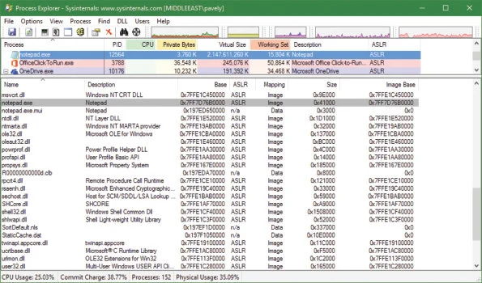
アドレス変換
ここからは、Windows が仮想アドレス空間を実際の物理ページに対応付ける仕組みを見ていきます。ユーザーアプリケーションもシステムのコードも、仮想アドレスを参照します。まず、本書の対象バージョンでサポートされる唯一の x86 アドレス変換方式である PAE モードについて、32ビットのアドレス変換を詳しく説明します。続いて、ARM と x64 での違いを説明します。次の節では、変換で物理メモリのアドレスが得られないときに起きるページフォールトと、Windows がワーキングセットとページフレームデータベースを使って物理メモリを管理する方法を扱います。
x86 の仮想アドレス変換
初期の x86 カーネルがサポートする物理メモリは、当時の CPU の制約により、最大4 GBでした。Intel の x86 Pentium Pro プロセッサでは、物理アドレス拡張（PAE）と呼ばれるメモリマッピングモードが導入されました。対応するチップセットを使うと、32ビットの OS は、PAE なしでは4 GBまでだった物理メモリに、原著執筆時点の Intel x86 プロセッサでは最大64 GBまでアクセスできます。x64 プロセッサをレガシーモードで使う場合は最大1,024 GBまでアクセスできますが、本書の対象となる Windows では、その量を記述するための PFN データベースが大きくなるため、64 GBに制限しています。
PAE の導入後、Windows は PAE 非対応と PAE 対応の2種類の x86 カーネルを提供していました。Windows Vista 以降の x86 版 Windows では、物理メモリが4 GB以下でも PAE カーネルをインストールします。PAE 非対応カーネルによる性能やメモリ消費量の利点がごく小さくなり、ハードウェアによる実行禁止にも PAE が必要なため、Microsoft は x86 カーネルを1種類にまとめられました。この章では、x86 の PAE モードでのアドレス変換を扱います。PAE を使わない場合については、本書の第6版の該当節を参照してください。
CPU は、メモリマネージャーが作成して維持するページテーブルというデータ構造を使い、仮想アドレスを物理アドレスに変換します。仮想アドレス空間の各ページには、システムアドレス空間に置かれるページテーブルエントリ（PTE）が対応します。PTE には、その仮想ページのマッピング先となる物理アドレスが入ります。図5-15は、x86 システムで、連続する3つの仮想ページが物理メモリ上では離れた3つのページに対応する例です。予約済みまたはコミット済みでも一度もアクセスされていない領域には、PTE が存在しないことがあります。最初のページフォールトが発生するまでページテーブルの割り当てが遅延されることがあるためです。図5-15で仮想ページと PTE を結ぶ破線は、仮想ページと物理メモリが間接的に対応していることを示しています。

注 デバイスドライバーなどのカーネルモードコードも、物理メモリのアドレスを参照するには、先にその物理アドレスに対応する仮想アドレスを作成します。詳しくは、WDK ドキュメントのメモリ記述子リスト（MDL）のサポートルーチンを参照してください。
具体的な変換手順と、後述するページテーブルやページディレクトリの配置は、CPU によって決まります。OS はその仕様に従い、変換が機能するようにメモリ内に構造を組み立てます。図5-16は x86 の変換の概略です。基本的な考え方はほかのアーキテクチャでも共通です。
図5-16に示すように、変換には、32ビットで指定できる範囲の仮想アドレスと、いくつかのメモリ管理用の構造を使います。具体的には、ページテーブル、ページディレクトリ、1つのページディレクトリポインターテーブル（PDPT）、および変換ルックアサイドバッファーです。これらは後述します。
変換の結果は、目的のバイトが RAM 内のどこにあるかを示す36ビットの物理アドレスです。36ビットという幅は、CPU が定めるページテーブルの構造から決まります。通常使われるスモールページを変換する場合、図5-16に示すとおり、仮想アドレスの下位12ビットを変換後の物理アドレスにそのままコピーします。12ビットで指定できる範囲は、スモールページ1枚の大きさと同じ4 KBです。

ページが物理メモリ上になくページファイルに保存されている場合など、アドレスを変換できなければ、CPU はページフォールト例外を発生させ、ページが見つからなかったことを OS に知らせます。ページがページファイル、マップされたファイル、その他のどこにあるかは OS が把握しています。OS は、可能であればページを取得し、ページテーブルがそのページを指すように更新して、CPU に変換を再試行させます。ページフォールトについては、この章の後半にある「ページファイル」の節を参照してください。
図5-17は、x86 で仮想アドレスを物理アドレスに変換する手順全体を示しています。

変換対象の32ビット仮想アドレスは、論理的に4つの部分に分かれます。下位12ビットは、ページ内の特定のバイトを選ぶためにそのまま使います。変換の起点は、プロセスごとに1つある PDPT です。CPU がいつでも見つけられるよう、PDPT は常に物理メモリに置かれます。その物理アドレスは各プロセスの KPROCESS 構造体に保存されます。x86 の制御レジスター CR3 には、仮想アドレスにアクセスしたスレッドが属する、現在実行中のプロセスの値が入ります。したがって、CPU 上でコンテキストスイッチが起き、別のプロセスのスレッドに切り替わる場合、CPU の CR3 には切り替え先の KPROCESS から PDPT のアドレスを読み込む必要があります。PDPT は32バイト境界に配置し、RAM の先頭4 GB以内に置きます。x86 の CR3 は32ビット幅だからです。
図5-17の構造では、仮想アドレスを次の手順で物理アドレスに変換します。
- 仮想アドレスの最上位2ビット（ビット30と31）で、PDPT の4エントリから1つを選びます。選ばれたページディレクトリポインターエントリ（PDPE）は、ページディレクトリの物理アドレスを指します。
- 仮想アドレスのビット21～29（9ビット）で、ページディレクトリの512エントリから1つを選びます。選ばれたページディレクトリエントリ（PDE）は、ページテーブルの物理アドレスを指します。
- 仮想アドレスのビット12～20（9ビット）で、ページテーブルの512エントリから1つを選びます。選ばれたページテーブルエントリ（PTE）は、ページ先頭の物理アドレスを指します。
- PTE が指すアドレスに仮想アドレスの下位12ビットのオフセットを加えると、アクセス先の物理アドレスが得られます。
各テーブルのエントリは、ページ境界にそろった物理アドレスを指します。エントリのうち、このアドレスをページ単位で表す部分がページフレーム番号（PFN）です。各エントリは64ビット幅なので、ページディレクトリもページテーブルも4 KBのページ内に収まります。一方、64 GBの物理アドレス範囲を表すのに必要な PFN は24ビットです。オフセットの12ビットと合わせて36ビットのアドレスになります。このため、エントリには PFN の記録に使わないビットがあります。
そのうち、変換に欠かせないのが有効ビットです。このビットがセットされていれば PFN は有効で、CPU は前述の手順を実行できます。クリアされていればページフォールトとなり、CPU は例外を発生させて OS に処理を任せます。たとえば、対象のページが以前ディスクに書き出されていた場合、メモリマネージャーは空いている RAM のページに読み戻し、PTE を修正して CPU に再試行させます。
Windows はプロセスごとにプライベートなアドレス空間を提供します。その空間をマップする PDPT、ページディレクトリ、ページテーブルもプロセスごとに用意します。一方、システム空間を記述するページディレクトリとページテーブルは全プロセスで共有され、セッション空間は同じセッションに属するプロセス間で共有されます。同じ仮想メモリを複数のページテーブルで記述せずに済むよう、システム空間を記述するページディレクトリエントリの参照先は、次のように初期化されます。
プロセスの作成時に、システム空間のページディレクトリエントリを既存のシステムページテーブルに向けます。プロセスがセッションに属する場合、セッション空間のページディレクトリエントリも、既存のセッションページテーブルを指すように設定して共有します。
ページテーブルとページテーブルエントリ
各 PDE は1つのページテーブルを指します。ページテーブルは PTE の配列で、PDPT も同様にエントリの配列です。各ページテーブルは512エントリを持ち、各 PTE が4 KBのページ1枚をマップします。したがって、ページテーブル1つで512 × 4 KB、つまり2 MBのアドレス空間をマップできます。同様に、ページディレクトリの512エントリはそれぞれ1つのページテーブルを指すので、512 × 2 MB、つまり1 GBのアドレス空間をマップできます。PDPE は4つあるため、合わせて32ビットの4 GBのアドレス空間全体をマップできます。
ラージページの場合、PDE の11ビットが物理メモリ上のラージページの先頭を指します。ページ内のバイトオフセットには、元の仮想アドレスの下位21ビットを使います。ラージページをマップする PDE は、ページテーブルを経由せずに直接ページを指します。
ページディレクトリとページテーブルの配置は基本的に同じです。PTE を調べるには、カーネルデバッガーの !pte コマンドを使えます。後述の実験「アドレスの変換」を参照してください。ここでは有効な PTE を扱い、無効な PTE は「ページフォールトの処理」で扱います。有効な PTE の主なフィールドは2つあります。1つはデータを含む物理ページの位置を表す PFN で、もう1つはページの状態と保護属性を表すフラグです（図5-18）。

図5-18の「Software」と「Reserved」のビットは、PTE の有効・無効にかかわらず、CPU 内部のメモリ管理ユニット（MMU）が無視します。これらのビットはメモリマネージャーが記録し、解釈します。表5-10では、有効な PTE の各ビットの意味を説明します。
| ビット名 | 意味 |
|---|---|
| Accessed | ページがアクセスされたことを示します。 |
| Cache disabled | そのページに対する CPU のキャッシュを無効にします。 |
| Copy-on-write | 前述のコピーオンライトをこのページに適用します。 |
| ビット名 | 意味 |
|---|---|
| Dirty | ページへの書き込みが行われました。 |
| Global | アドレス変換はすべてのプロセスに適用されます。たとえば、プロセスの切り替えに伴って変換ルックアサイドバッファー（TLB）をフラッシュしても、この PTE に対応する変換は TLB に残ります。 |
| Large page | PDE が2 MBのページをマップしていることを示します。本章の「ラージページとスモールページ」を参照してください。 |
| No execute | ページ内のコードを実行できません。データ専用のページとして使えます。 |
| Owner | ユーザーモードのコードがページにアクセスできるか、カーネルモードのみに制限されるかを示します。 |
| Prototype | この PTE はプロトタイプ PTE です。セクションオブジェクトに関連する共有メモリを記述するひな形として使います。 |
| Valid | アドレス変換の結果が物理メモリ上のページを指すかどうかを示します。 |
| Write through | ライトスルーを指定します。プロセッサーがページ属性テーブルをサポートする場合には、ライトコンバイニングも指定できます。一般にビデオのフレームバッファーメモリをマップする際に使います。 |
| Write | ページに書き込めるかどうかを MMU に示します。 |
x86 システムのハードウェア PTE には、MMU が変更できるビットが2つあります。ダーティビットとアクセス済みビットです。MMU は、ページを読み書きすると、アクセス済みビットがまだセットされていなければセットします。ページに書き込むと、ダーティビットをセットします。これらのビットをクリアするのは OS であり、適切なタイミングで行います。MMU がクリアすることはありません。
x86 の MMU は書き込みビットでページを保護します。このビットがクリアされているとページは読み取り専用となり、セットされていると読み書きできます。ビットがクリアされているページにスレッドが書き込もうとすると、メモリ管理例外が発生します。後述の「ページフォールトの処理」で説明するメモリマネージャーのアクセスフォールトハンドラーは、コピーオンライトが指定されている場合などにその書き込みを許可できるか、それともアクセス違反を発生させるべきかを判定します。
ページテーブルエントリのハードウェア書き込みビットとソフトウェア書き込みビット
ソフトウェアで実装した追加の書き込みビット（表5-10参照）は、ダーティビットの更新と Windows のメモリ管理データの更新を同期させるために使います。単純な実装では、メモリマネージャーが書き込み可能なすべてのページについて、ハードウェアの書き込みビット（ビット1）をセットします。そのページへの書き込みがあると、MMU は PTE のダーティビットをセットします。メモリマネージャーは後でダーティビットを参照し、物理ページを別の用途に再利用する前に、内容をバッキングストアに書き出す必要があると判断します。
実際のマルチプロセッサーシステムでは、この方法を使うと、解消にコストがかかる競合状態が起こり得ます。ハードウェア書き込みビットがセットされている PTE のダーティビットは、各プロセッサーの MMU がいつでもセットできます。メモリマネージャーは、さまざまなタイミングで PTE のダーティビットの状態をプロセスのワーキングセットリストに反映します。ワーキングセットリストへのアクセスはプッシュロックで同期します。しかし、ある CPU がロックを保持している間にも、別の CPU の MMU がダーティビットを変更できます。その結果、ダーティビットの更新を取りこぼす可能性があります。
この競合を避けるため、Windows のメモリマネージャーは、読み取り専用ページと書き込み可能ページのどちらも、PTE のハードウェア書き込みビット（ビット1）を0にして初期化します。実際に書き込めるかどうかは、ソフトウェア書き込みビット（ビット11）に記録します。そのページに初めて書き込むと、ハードウェア書き込みビットがクリアされているため、読み取り専用ページと同じように、CPU がメモリ管理例外を発生させます。メモリマネージャーは、ソフトウェア書き込みビットを見て書き込み可能であることを確認すると、ワーキングセットのプッシュロックを取得し、PTE のダーティビットとハードウェア書き込みビットをセットします。続いて、ページが変更されたことをワーキングセットリストに記録し、ロックを解放して例外処理を終えます。その後はハードウェアが通常どおりに書き込みを実行します。この手順で、ワーキングセットリストのプッシュロックを保持した状態でダーティビットをセットできます。
2回目以降の書き込みでは、ハードウェア書き込みビットがセットされているため、例外は発生しません。MMU はダーティビットを再びセットしますが、ページに書き込みがあったことはワーキングセットリストに記録済みなので、問題はありません。初回の書き込みに例外処理を挟むコストは、ページが有効な間は書き込み可能なページごとに1回だけ発生します。さらに、通常、ページは無効な状態（PTE のビット0がクリアされた状態）で初期化されるため、ほとんどのページは初回アクセスの時点でメモリ管理例外を経由します。初回アクセスが書き込みなら、そのページフォールトの処理の中でダーティビットも設定するので、追加の負荷は小さくなります。この実装では、単一プロセッサーでもマルチプロセッサーでも、フラッシュ対象の各ページについてロックを保持せずに、次節で説明する変換ルックアサイドバッファーをフラッシュできます。
変換ルックアサイドバッファー
ここまでに説明したハードウェアによるアドレス変換では、次の3回の参照が必要です。
- PDPT から対応するエントリを取得します。
- ページディレクトリから対応するエントリを取得し、ページテーブルの位置を求めます。
- ページテーブルから対応するエントリを取得します。
仮想アドレスを参照するたびにメモリを追加で3回参照すると、必要なメモリ帯域幅が4倍になり、性能が低下します。そこで、どの CPU もアドレス変換をキャッシュし、同じアドレスに繰り返しアクセスするときに変換をやり直さずに済むようにしています。このキャッシュは連想メモリの配列で、変換ルックアサイドバッファー（TLB）と呼ばれます。連想メモリは、各要素を同時に読み出して検索値と比較できる配列です。TLB には、図5-19に示すように、最近使用した仮想ページと物理ページの対応、および各ページの保護の種類、サイズ、属性などが入ります。TLB の各エントリでは、タグに仮想アドレスの一部を格納し、データ部に物理ページ番号、保護フィールド、有効ビット、通常は対応するページの状態を示すダーティビットを格納します。すべてのプロセスから見えるシステム空間内のページに対して Windows が行うように、PTE のグローバルビットをセットしておくと、プロセスが切り替わっても対応する TLB エントリは無効化されません。

頻繁に使う仮想アドレスには、すでに対応する TLB エントリがある可能性が高くなります。TLB を使うと仮想アドレスから物理アドレスへの変換が非常に速くなり、メモリにもすばやくアクセスできます。TLB に対応する変換が見つからなくても、ページテーブルに有効なマッピングがあれば、ページフォールトは起きません。ただし、CPU がページテーブルをたどるためにメモリを複数回参照するので、アクセスには少し時間がかかります。仮想ページが物理メモリからページアウトされたり、メモリマネージャーが PTE を変更したりした場合は、メモリマネージャーが対応する TLB エントリを明示的に無効にする必要があります。ページが物理メモリにない状態でプロセスが再びアクセスすると、ページフォールトが発生します。メモリマネージャーは必要に応じてページをメモリに戻して PTE を作り直し、その変換が TLB に登録されます。
実験：アドレスの変換
アドレス変換の仕組みを確認するため、この実験では x86 PAE システムを例に、カーネルデバッガーで PDPT、ページディレクトリ、ページテーブル、PTE を調べます。ここで使うプロセスでは、仮想アドレス 0x3166004 が有効な物理アドレスにマップされています。後の実験では、無効なアドレスの変換をカーネルデバッガーでたどる方法を説明します。
まず 0x3166004 を2進数に変換し、変換に使う3つのインデックスとページ内オフセットに分けます。0x3166004 の2進表記は 11.0001.0110.0110.0000.0000.0100 です。各フィールドへの分割を次の図に示します。
CPU は変換を始めるために、プロセスの PDPT の物理アドレスを必要とします。そのプロセスのスレッドを実行している間、このアドレスは CR3 に入っています。デバッガーでは、次のように !process コマンドの出力にある DirBase フィールドで確認できます。
lkd> !process -1 0 PROCESS 99aa3040 SessionId: 2 Cid: 1690 Peb: 03159000 ParentCid: 0920 DirBase: 01024800 ObjectTable: b3b386c0 HandleCount: <Data Not Accessible> Image: windbg.exe
DirBase によると、PDPT の物理アドレスは 0x1024800 です。前の図に示したように、例の仮想アドレスの PDPT インデックスは0です。したがって、対象のページディレクトリの物理アドレスを格納するのは PDPT の先頭エントリで、そのエントリの物理アドレスも 0x1024800 です。
カーネルデバッガーの !pte コマンドでは、次のように、仮想アドレスに対応する PDE と PTE を表示できます。
lkd> !pte 3166004 VA 03166004 PDE at C06000C0 PTE at C0018B30 contains 0000000056238867 contains 800000005DE61867 pfn 56238 ---DA--UWEV pfn 5de61 ---DA--UW-V
!pte の出力に PDPT は含まれませんが、物理アドレスを指定すれば内容を表示できます。
lkd> !dq 01024800 L4 # 1024800 00000000'53c88801 00000000'53c89801 # 1024810 00000000'53c8a801 00000000'53c8d801
ここで使った !dq はデバッガーの拡張コマンドです。クワッドワード（64ビット値）を表示する dq と似ていますが、物理アドレスを指定してメモリを調べられます。PDPT のエントリは4つなので、長さを指定する L4 を付けて出力を絞っています。
図に示したとおり、例の仮想アドレスの PDPT インデックス（最上位2ビット）は0なので、調べるエントリは最初に表示されたクワッドワードです。PDPT のエントリは PDE や PTE に似た形式で、このエントリの PFN は 0x53c88 です。ページ境界にそろった物理アドレスに直すと 0x53c88000 になり、これがページディレクトリの物理アドレスです。
!pte が表示した PDE の 0xC06000C0 は仮想アドレスです。x86 システムでは、プロセスの最初のページディレクトリは仮想アドレス 0xC0600000 から始まります。この例の PDE は、その先頭アドレスに 0xC0、つまりエントリのサイズ8バイトに24を掛けた値を加えた位置にあります。したがって、例の仮想アドレスのページディレクトリインデックスは24で、ページディレクトリの25番目の PDE が対応します。
PDE には、参照するページテーブルの PFN が入っています。この例では PFN が 0x56238 なので、ページテーブルの先頭の物理アドレスは 0x56238000 です。MMU は、この先頭アドレスに、仮想アドレスのページテーブルインデックス 0x166 と PTE のサイズ8バイトを掛けた値を加えます。こうして得られる PTE の物理アドレスは 0x56238B30 です。
デバッガーによると、この PTE の仮想アドレスは 0xC0018B30 です。下位のバイトオフセット 0xB30 は、アドレス変換ではそのまま使われるため、物理アドレスでも同じです。メモリマネージャーは 0xC0000000 からページテーブルをマップしています。インデックス24（0x18）に対応するページテーブルの先頭 0xC0018000 に 0xB30 を加えると、カーネルデバッガーに表示された仮想アドレス 0xC0018B30 になります。デバッガーに表示された PTE の PFN は 0x5DE61 です。
最後に、もとの仮想アドレスのページ内オフセットを使います。MMU は PTE の PFN の下位にこのオフセットを連結し、物理アドレス 0x5DE61004 を得ます。現時点では、この物理アドレスがもとの仮想アドレス 0x3166004 に対応しています。
デバッガーは PTE のフラグを解釈し、PFN の右側に表示します。たとえば、今回参照しているページの PTE のフラグは ---DA--UW-V です。D はダーティ（ページに書き込みがあったこと）、A はアクセス済み（ページが読み取られたか書き込まれたこと）、U はユーザーモードからアクセス可能、W は書き込み可能、V は有効（PTE が物理メモリ内の有効なページを表すこと）を示します。
計算した物理アドレスを確認するには、同じメモリを仮想アドレスと物理アドレスの両方から表示します。まず、デバッガーの dd コマンドで、仮想アドレスの内容をダブルワード単位で表示します。
lkd> dd 3166004 L 10 03166004 00000034 00000006 00003020 0000004e 03166014 00000000 00020020 0000a000 00000014
次に、計算した物理アドレスを !dd に渡すと、同じ内容が表示されます。
lkd> !dd 5DE61004 L 10 #5DE61004 00000034 00000006 00003020 0000004e #5DE61014 00000000 00020020 0000a000 00000014
PTE と PDE についても、同じ方法で仮想アドレスと物理アドレスからの表示を比較できます。
x64 の仮想アドレス変換
x64 のアドレス変換は x86 と似ていますが、階層が1つ増えます。各プロセスにはページマップレベル4テーブル（PML4）という最上位のページディレクトリがあり、第3階層にある512個のページディレクトリポインターテーブルの物理位置を保持します。この第3階層のテーブルは x86 PAE の PDPT に相当します。x64 ではこのテーブルが1つの PML4 あたり最大512個あり、それぞれが512エントリ入りの1ページを占めます。x86 PAE の PDPT は1つで、4エントリです。第3階層のテーブルの各エントリには第2階層のページディレクトリの物理位置が入り、各ページディレクトリには個々のページテーブルの位置を示す512個のエントリが入ります。最後に、各ページテーブルの512個の PTE が、メモリ上のページの物理位置を示します。各階層で参照先の物理位置は PFN として格納されます。
原著が対象とする x64 の実装では、仮想アドレスは48ビットに制限されます。図5-20は、この48ビットの仮想アドレスを構成するフィールドと、それぞれがアドレス変換に使われる仕組みを示しています。図5-21に x64 のハードウェア PTE の形式を示します。

ARM の仮想アドレス変換
32ビット ARM プロセッサーの仮想アドレス変換では、32ビット幅のエントリを1,024個持つページディレクトリを1つ使います。変換に使う構造を図5-22に示します。

各プロセスにはページディレクトリが1つあり、その物理アドレスは、x86 と x64 の CR3 に相当する TTBR レジスターに格納されます。仮想アドレスの上位10ビットで PDE を選びます。この PDE は、最大1,024個あるページテーブルのうち1つを指します。次の10ビットで、そのテーブル内の PTE を選びます。有効な PTE は物理メモリ上のページの先頭を指します。ページ内オフセットには、x86 や x64 と同様に、仮想アドレスの下位12ビットを使います。
図5-22の構成で指定できる物理メモリの範囲は4 GBです。PTE の幅は x86 や x64 の64ビットに対して32ビットで、そのうち PFN に使うのは20ビットです。ARM プロセッサーは x86 の PAE に相当する機能を備えていますが、本書の対象となる Windows はこれを利用しません。原著執筆時点では、将来の Windows が64ビット ARM アーキテクチャに対応すれば、物理アドレスの制限が緩和され、プロセスとシステムの仮想アドレス空間も大幅に広がると見込まれていました。
有効な PTE、ページテーブルを指す PDE、ラージページをマップする PDE では、それぞれビット配置が異なります。図5-23は、本書の対象となる Windows が使用する ARMv7 の有効な PTE の配置です。詳しくは ARM の公式ドキュメントを参照してください。

ページフォールトの処理
ここまでは、PTE が有効な場合にアドレスを変換する手順を説明しました。PTE の有効ビットがクリアされていると、そのプロセスは何らかの理由で現時点では目的のページにアクセスできません。この節では、無効な PTE の種類と、それらを参照したときの処理を説明します。
注 この節で詳しく扱う PTE の形式は32ビット x86 のものです。64ビットシステムや ARM システムの PTE も同様の情報を持ちます。
無効なページを参照すると、ページフォールトが発生します。カーネルのトラップハンドラー（第2部の第8章「トラップのディスパッチ」を参照）は、このフォールトをメモリマネージャーのフォールトハンドラー MmAccessFault に渡します。このルーチンはフォールトを起こしたスレッドのコンテキストで実行され、可能であればフォールトを解決し、解決できなければ適切な例外を発生させます。フォールトを引き起こす条件を表5-11に示します。
| 原因 | 処理結果 |
|---|---|
| PTE または PDE が破損している | コード 0x1A（MEMORY_MANAGEMENT）でバグチェックを行い、システムを停止します。 |
| 物理メモリ上に常駐しておらず、ディスク上のページファイルまたはマップされたファイルにあるページにアクセスした | 物理ページを割り当て、目的のページをディスクから読み込み、該当するワーキングセットに追加します。 |
| スタンバイリストまたは変更済みリストにあるページにアクセスした | ページを、該当するプロセス、セッション、またはシステムのワーキングセットに移します。 |
| 予約済みまたは未割り当てのアドレス空間など、コミットされていないページにアクセスした | アクセス違反例外を発生させます。 |
| カーネルモード専用のページにユーザーモードからアクセスした | アクセス違反例外を発生させます。 |
| 読み取り専用ページに書き込んだ | アクセス違反例外を発生させます。 |
| デマンドゼロページにアクセスした | ゼロで埋めたページを該当するワーキングセットに追加します。 |
| ガードページに書き込んだ | ガードページ違反を発生させます。ユーザーモードのスタックへの参照であれば、スタックを自動的に拡張します。 |
| コピーオンライトのページに書き込んだ | プロセスまたはセッション専用のコピーを作り、プロセス、セッション、またはシステムのワーキングセット内で元のページを置き換えます。 |
| 有効なページに、バッキングストアにある現在のコピーを基準として初めて書き込もうとした | PTE のダーティビットをセットします。 |
| 実行禁止のページでコードを実行した | アクセス違反例外を発生させます。 |
PTE のアクセス許可がエンクレーブのアクセス許可と一致しない（後述の「メモリエンクレーブ」と、Windows SDK の CreateEnclave のドキュメントを参照） | ユーザーモードではアクセス違反例外を発生させます。カーネルモードではコード 0x50（PAGE_FAULT_IN_NONPAGED_AREA）でバグチェックを行います。 |
次の節では、アクセスフォールトハンドラーが処理する無効な PTE の基本的な4種類を説明します。その後、共有可能なページを実装するための特殊な無効 PTE であるプロトタイプ PTE を説明します。
無効な PTE
アドレス変換中に参照した PTE の有効ビットが0なら、その PTE は無効なページを表します。そのページを参照すると、メモリ管理例外であるページフォールトが発生します。MMU は PTE の残りのビットを無視するため、OS はページフォールトの解決に必要な情報をそこに格納できます。
次に、無効な PTE の4種類の形式と、形式を特定できない場合の処理を説明します。これらはメモリマネージャーが解釈するため、ソフトウェア PTE と呼ばれることもあります。表5-10に示したハードウェア PTE と共通するフラグがあり、一部のビットフィールドも、ハードウェア PTE の対応するフィールドと同じ、またはよく似た意味を持ちます。
- ページファイル
目的のページはページファイルにあります。図5-24に示すように、PTE の4ビットは最大16個のページファイルのどれにページがあるかを示し、別の32ビットはファイル内のページ番号を示します。ページャーはページインを開始し、ページをメモリに読み込んで有効にします。ページファイル内のオフセットには、後述の形式と区別するため、すべて0の値とすべて1の値を使いません。このため、ファイルの先頭と末尾のページはページングに使われません。

図5-24 ページファイル内のページを表す PTE - デマンドゼロ
- ページファイル形式と同じ配置で、ページファイル内のオフセットが0です。要求にはゼロで埋めたページを割り当てます。ページャーはまずゼロページリストを調べます。空なら空きリストからページを取ってゼロで埋めます。空きリストも空なら、スタンバイリストのいずれかからページを取ってゼロで埋めます。
- 仮想アドレス記述子
- ページファイル形式と同じ配置で、ページファイル内のオフセットの全ビットが1です。ページの定義と、存在する場合はバッキングストアの情報が、プロセスの仮想アドレス記述子（VAD）ツリーにあることを示します。マップされたファイル内のセクションをバッキングストアに持つページに使います。ページャーは対象の仮想ページを含むアドレス範囲を定義する VAD を見つけ、VAD が参照するマップ済みファイルからページインを開始します。VAD は後述の「仮想アドレス記述子」で詳しく説明します。
- 遷移
- 遷移ビットが1です。対象のページはメモリ上にあり、スタンバイ、変更済み、書き戻し対象外の変更済みリストのいずれかに属するか、どのリストにも属しません。ページがリストに属していれば、ページャーはそこからページを取り除きます。リストに属していたかどうかにかかわらず、そのページをプロセスのワーキングセットに追加します。I/O が発生しないため、これはソフトページフォールトと呼ばれます。
- 不明
- PTE が0か、ページテーブルがまだ存在しません。ページテーブルが存在しない場合、その物理アドレスを格納するはずの PDE が0です。どちらの場合も、メモリマネージャーは VAD を調べます。
PTE の形式が不明な場合、メモリマネージャーは VAD を調べて、対象の仮想アドレスがコミット済みかどうかを判定します。コミット済みなら、そのアドレス空間を表すページテーブルを構築します。予約済みまたは未定義なら、ページフォールトをアクセス違反例外として通知します。
プロトタイプ PTE
ページを複数のプロセス間で共有できる場合、メモリマネージャーはプロトタイプページテーブルエントリ（プロトタイプ PTE）というソフトウェア構造を使って、そのページをマップします。ページファイルをバッキングストアとするセクションでは、セクションオブジェクトを最初に作成するときにプロトタイプ PTE の配列を作ります。マップされたファイルの場合は、各ビューをマップするときに、配列の必要な部分を作ります。プロトタイプ PTE は、後述の「セクションオブジェクト」で説明するセグメント構造体の一部です。
プロセスがセクションオブジェクトのビューにマップされたページを初めて参照すると、メモリマネージャーはプロトタイプ PTE の情報を使って、プロセスのページテーブルにある実際のアドレス変換用の PTE を埋めます。VAD が作られるのはビューをマップしたときです。共有ページが有効になると、プロセスの PTE とプロトタイプ PTE は両方ともデータを保持する物理ページを指します。有効な共有ページを参照しているプロセス PTE の数を追跡するため、メモリマネージャーはそのページの PFN データベースエントリにあるカウンターを増やします。これにより、どのページテーブルからも参照されなくなった共有ページを識別し、無効化して遷移リストに移すか、ディスクに書き出せます。
共有可能なページを無効化すると、図5-25に示すように、プロセスのページテーブル内の PTE を、対象ページを記述するプロトタイプ PTE を指す特殊な PTE で上書きします。その後ページにアクセスすると、メモリマネージャーはこの PTE に記録された情報を使ってプロトタイプ PTE を探し、そこから参照されたページの情報を取得できます。

プロトタイプ PTE が記述する共有ページの状態は、次の6種類です。
- アクティブ／有効
- 別のプロセスがアクセスしたため、ページは物理メモリ上にあります。
- 遷移
- ページはメモリ上にあり、スタンバイリストまたは変更済みリストに属するか、どちらのリストにも属しません。
- 書き戻し対象外の変更済み
- ページはメモリ上にあり、書き戻し対象外の変更済みリストに属します（表5-11参照）。
- デマンドゼロ
- 要求にはゼロで埋めたページを割り当てます。
- ページファイル
- 目的のページはページファイル内にあります。
- マップされたファイル
- 目的のページはマップされたファイル内にあります。
プロトタイプ PTE の形式は、前述のアドレス変換用の PTE と同じです。プロトタイプ PTE はページテーブルと PFN データベースの間に位置する層であり、ページテーブルには直接現れず、アドレス変換にも直接使われません。
複数のプロセスで共有できるページでは、どのプロセスもフォールト時に同じプロトタイプ PTE を参照します。これにより、メモリマネージャーは、共有するプロセスすべてのページテーブルを更新せずにページを管理できます。たとえば、共有のコードページやデータページがディスクにページアウトされたとします。メモリマネージャーがそのページをディスクから読み戻すときは、プロトタイプ PTE がページの新しい物理位置を指すように更新するだけで済みます。共有する各プロセスの PTE は、有効ビットがクリアされたまま、引き続きプロトタイプ PTE を指します。その後、各プロセスがページを参照した時点で、対応するアドレス変換用の PTE が更新されます。
図5-26は、マップされたビューにある2つの仮想ページを示しています。1つ目のページは有効で、プロセスの PTE とプロトタイプ PTE の両方がそのページを指しています。2つ目は無効で、ページファイル内にあり、プロトタイプ PTE がその正確な位置を保持しています。このページをマップする各プロセスの PTE は、このプロトタイプ PTE を指します。

ページイン I/O
ページフォールトを解決するためにページファイルまたはマップされたファイルを読み出す必要があると、ページイン I/O が発生します。ページテーブル自体もページングの対象です。そのため、参照先のページを記述する PTE またはプロトタイプ PTE を含むページを読み込むときにも、追加の I/O が発生する場合があります。
ページイン I/O は同期処理です。スレッドは I/O が完了するまでイベントを待ち、その待機は非同期プロシージャ呼び出し（APC）の配信では中断されません。ページャーは、I/O 要求関数に専用の指定を渡して、ページング I/O であることを示します。ページング I/O が完了すると、I/O システムがイベントを通知します。ページャーはその通知で起床し、ページインの処理を続けます。
ページング I/O の進行中、フォールトを起こしたスレッドは、メモリ管理の主要な同期オブジェクトを保持していません。その間も同じプロセスのほかのスレッドは、仮想メモリの関数を呼び出したり、ページフォールトを処理したりできます。
ほかのスレッドも動作を続けるため、I/O が完了した時点で、ページャーは次のような変化が起きていないかを確認する必要があります。
- 同じプロセス内、または別のプロセスのスレッドが同じページでフォールトを起こした可能性があります。これはページフォールトの衝突と呼ばれ、次の節で説明します。
- ページが仮想アドレス空間から削除され、再マップされた可能性があります。
- ページの保護属性が変わった可能性があります。
- プロトタイプ PTE の参照でフォールトが起き、その PTE をマップしているページがワーキングセットから外れた可能性があります。
ページャーは、ページング I/O を要求する前に、これらの変化を検出するために必要な状態をスレッドのカーネルスタックに保存します。要求の完了後に変化を検出すると、必要に応じてページを有効にせずにフォールト処理を終了します。フォールトを起こした命令が再実行されると、ページャーが再び呼び出され、PTE が新しい状態で評価されます。
ページフォールトの衝突
ページインの途中で、同じプロセス内または別のプロセスのスレッドが同じページでフォールトを起こすことを、ページフォールトの衝突と呼びます。マルチスレッドのシステムではよく起こるため、ページャーは衝突を効率よく検出して処理します。別のスレッドが同じページでフォールトを起こすと、ページャーは PFN データベースのエントリを見て、ページが遷移状態にあり、読み取りが進行中であることから衝突を検出します。この場合、PFN データベースのエントリが指定するイベントを待つことができます。また、ファイルシステムのデッドロックを防ぐために、並行して I/O を発行する場合もあります。その場合、最初に完了した I/O の結果を採用し、残りは破棄します。イベントは、フォールトの解決に必要な最初の I/O を発行したスレッドが初期化しています。
I/O が完了すると、そのイベントを待っていたすべてのスレッドの待機が解除されます。最初に PFN データベースのロックを取得したスレッドが、ページインの完了処理を担当します。I/O ステータスを調べて処理が成功したことを確認し、PFN データベースの読み取り中ビットをクリアして、PTE を更新します。
後続のスレッドが衝突したフォールトを完了させるために PFN データベースのロックを取得すると、ページャーは読み取り中ビットがクリアされていることから、初回の更新が済んでいると判断します。次に、PFN データベースのエントリにあるページインエラーフラグを調べ、ページイン I/O が成功したことを確認します。フラグがセットされていれば、PTE を更新せず、フォールトを起こしたスレッドでページインエラー例外を発生させます。
ページフォールト時のまとめ読み
メモリマネージャーは、ページフォールトを解決してシステムキャッシュにデータを入れるため、多数のページをまとめて先読みします。先読みしたデータは、仮想メモリのワーキングセットを経由せず、システムのページキャッシュに直接読み込まれます。そのため、先読みしたデータは仮想アドレス空間を消費せず、先読みのサイズも利用可能な仮想アドレス空間の量には制限されません。
先読みしたページを別の用途に再利用する場合も、TLB のフラッシュに伴う高コストなプロセッサー間割り込み（IPI）は不要です。先読みしたページはスタンバイリストに置き、PTE では遷移状態としてマークします。そのページが後で参照されると、メモリマネージャーはワーキングセットに追加します。一度も参照されなければ、ページの解放にシステムリソースを使いません。まとめ読みの範囲にすでにメモリ上にあるページが含まれる場合、そのページへの再読み込みを避けつつ、大きな I/O を1件発行できるように、図5-27のようにダミーページを使います。

図のページ A、Y、Z、B は、ファイルオフセットでも仮想アドレスでも連続しています。ただし、対応する物理ページは離れている場合があります。A と B はメモリに常駐していないため、読み込む必要があります。Y と Z はすでに常駐しているため、読み直す必要はありません。前回バッキングストアから読み込んだ後に変更されている可能性もあり、その場合に内容を上書きすると重大な問題になります。一方、A と B の読み取りを2回に分けるより、1回にまとめるほうが効率的です。そこでメモリマネージャーは、4ページすべて（A、Y、Z、B）をバッキングストアから読み取る要求を1件発行します。1件の要求に含めるページ数は、利用可能なメモリの量や現在のシステムの使用状況などに応じて決まります。
メモリマネージャーは、要求を記述するメモリ記述子リスト（MDL）を作るとき、A と B には実際のページへの有効なポインターを設定します。Y と Z のエントリは、システム全体で共用する同じダミーページ X を指すようにします。ダミーページ X は公開されないため、バッキングストアから読み込んだ古い可能性のあるデータを書き込めます。ただし、コンポーネントが MDL 上で Y や Z に対応するオフセットを参照すると、ダミーページ X が見えます。
メモリマネージャーは、読み取り結果を捨てたいページが何枚あっても、同じダミーページで代用できます。そのダミーページは、同じ MDL に複数回組み込まれることも、別々のドライバーが並行して使う複数の MDL に組み込まれることもあります。このため、読み取り結果を捨てるページに対応する MDL の位置を参照すると、常駐ページの内容ではなく、いつでも変わり得るダミーページの内容が見えます。MDL については第6章を参照してください。
ページファイル
ページファイルは、プロセスが引き続き使用する変更済みページのうち、マッピングが解除されたり、メモリ不足によりワーキングセットが縮小されたりして、ディスクに書き出す必要が生じたページを保持します。ページファイルの領域はページを最初にコミットした時点で予約します。実際にページをまとめて効率よく配置できる位置は、ディスクに書き出す段階で決まります。
システムの起動時に、セッションマネージャープロセス（Smss.exe）は、レジストリキー HKLM\SYSTEM\CurrentControlSet\Control\Session Manager\Memory Management の PagingFiles 値を読み取り、開くページファイルの一覧を取得します。この値は複数文字列型で、各ページファイルの名前、最小サイズ、最大サイズを含みます。Windows は x86 と x64 では最大16個、ARM では最大2個のページファイルをサポートします。ファイル1個あたりの最大サイズは、x86 と x64 では16 TB、ARM では4 GBです。開いたページファイルは、System プロセスがハンドルを保持しているため、システムの稼働中は削除できません。
ページファイルにはプロセスとカーネルの仮想メモリの一部が保存されるため、セキュリティ対策として、シャットダウン時にその内容を消去するよう構成できます。有効にするには、同じ Memory Management キーにある ClearPageFileAtShutdown 値を1に設定します。消去が無効なら、システムの稼働中にページアウトされたデータはシャットダウン後もページファイルに残ります。マシンに物理的にアクセスできる人が、そのデータを読み取れる可能性があります。
ページファイルの最小サイズと最大サイズの両方が0、または未指定の場合、システムがサイズを管理します。Windows 7 と Windows Server 2008 R2 では、RAM の容量だけに基づいて、次のように決めていました。
- 最小サイズ RAM の容量と1 GBのうち、大きいほう。
- 最大サイズ RAM の容量の3倍と4 GBのうち、大きいほう。
たとえば、ノート PC やデスクトップ PC でも RAM が32 GBや64 GBあることが珍しくなく、サーバーでは数百 GBに達する場合があります。初期ページファイルサイズを RAM と同じにすると、特に SSD など比較的小容量のドライブでは、ストレージのかなりの部分を占めることがあります。また、搭載 RAM の量から、そのシステムが普段の処理で使うメモリの量が分かるとは限りません。
本書の対象バージョンでは、RAM の容量に加え、ページファイルの使用履歴なども考慮して、適切な最小サイズを求めます。Smss.exe はページファイルの作成と初期化の際に、グローバル変数に保持する次の4つの要因から最小サイズを計算します。
- RAM（
SmpDesiredPfSizeBasedOnRAM） RAM の容量に基づく推奨ページファイルサイズです。 - クラッシュダンプ（
SmpDesiredPfSizeForCrashDump） クラッシュダンプを保存できるようにするための推奨ページファイルサイズです。 - 使用履歴（
SmpDesiredPfSizeBasedOnHistory） 使用履歴に基づく推奨ページファイルサイズです。Smss.exeは1時間ごとに作動するタイマーを使い、ページファイルの使用量を記録します。
4つ目の要因は、Windows アプリ用の推奨サイズ（SmpDesiredPfSizeForApps）です。4つの推奨値の計算方法を表5-12に示します。
| 計算の根拠 | 推奨ページファイルサイズ |
|---|---|
| RAM | RAM が1 GB以下なら1 GBです。RAM が1 GBを超える場合は、基準の1 GBに、RAM の超過分1 GBにつき1/8 GBを加えます。上限は32 GBです。 |
| クラッシュダンプ | 専用ダンプファイルが構成済みなら、ダンプの保存にページファイルは不要なので0です。専用ダンプファイルは、レジストリキー ダンプの種類が既定の「自動」の場合、RAM が4 GB未満なら RAM の1/6です。それ以外は2/3 GBを基準に、RAM の4 GBを超える分1 GBにつき1/8 GBを加えます。上限は32 GBです。直近のクラッシュでページファイルの容量が不足していた場合は、RAM の容量と32 GBのうち、小さいほうまで推奨サイズを引き上げます。 完全メモリダンプの場合は、RAM の容量にダンプファイル内の追加情報のサイズを加えます。カーネルメモリダンプの場合は、RAM の容量と同じです。 |
| 使用履歴 | 十分な数のサンプルが記録されていれば、使用量の90パーセンタイルを推奨値とします。サンプルが足りなければ、上記の RAM を基準に計算します。 |
| アプリ | サーバーなら0です。それ以外では、プロセスライフサイクルマネージャー（PLM）がアプリの終了時期を判断するときの係数を使います。本書の対象バージョンで使う基準は RAM の2.3倍で、モバイル端末のおおよその最小構成にあたる RAM 1 GBを想定しています。この係数から算出する推奨値は約2.5 GBです。この値が実際の RAM の容量を上回れば、推奨値から RAM の容量を引きます。それ以外は0です。 |
システム管理のページファイルの最大サイズは、RAM の容量の3倍と4 GBのうち、大きいほうです。最小サイズ（初期サイズ）は次のように決まります。
- 最初のシステム管理ページファイルでは、表5-12の使用履歴に基づく推奨値を基準にします。2つ目以降では、RAM に基づく推奨値を使います。
- 最初のシステム管理ページファイルに限り、基準値を次の順で調整します。
- 基準値がアプリ用の推奨値（
SmpDesiredPfSizeForApps）より小さければ、その推奨値を新しい基準値にします。 - 更新後の基準値がクラッシュダンプ用の推奨値（
SmpDesiredPfSizeForCrashDump）より小さければ、その推奨値を新しい基準値にします。
- 基準値がアプリ用の推奨値（
実験：ページファイルを確認する
ページファイルの一覧は、レジストリキー HKLM\SYSTEM\CurrentControlSet\Control\Session Manager\Memory Management の PagingFiles 値で確認できます。この値には、「システムの詳細設定」ダイアログボックスから変更できるページファイルの構成が入っています。設定を開くには、次の手順を実行します。
- コントロールパネルを開きます。
- 「システムとセキュリティ」、「システム」の順にクリックします。「システムのプロパティ」ダイアログボックスが開きます。エクスプローラーで「コンピューター」を右クリックし、「プロパティ」を選んでも開けます。
- 「システムの詳細設定」をクリックします。
- 「パフォーマンス」の「設定」をクリックします。「パフォーマンス オプション」ダイアログボックスが開きます。
- 「詳細設定」タブをクリックします。
- 「仮想メモリ」の「変更」をクリックします。
実験：ページファイルの推奨サイズを確認する
表5-12の計算結果が入る変数を確認するには、次の手順を実行します。原著の実験には x86 版の Windows 10 を使っています。
- ローカルカーネルデバッグを開始します。
Smss.exeプロセスを探します。lkd> !process 0 0 smss.exe PROCESS 8e54bc40 SessionId: none Cid: 0130 Peb: 02bab000 ParentCid: 0004 DirBase: bffe0020 ObjectTable: 8a767640 HandleCount: <Data Not Accessible> Image: smss.exe PROCESS 9985bc40 SessionId: 1 Cid: 01d4 Peb: 02f9c000 ParentCid: 0130 DirBase: bffe0080 ObjectTable: 00000000 HandleCount: 0. Image: smss.exe PROCESS a122dc40 SessionId: 2 Cid: 02a8 Peb: 02fcd000 ParentCid: 0130 DirBase: bffe0320 ObjectTable: 00000000 HandleCount: 0. Image: smss.exe
- 最初のプロセス（セッション ID が
none）を見つけます。これがマスターSmss.exeです。詳しくは第2章を参照してください。 - デバッガーのプロセスコンテキストをそのプロセスに切り替えます。
lkd> .process /r /p 8e54bc40 Implicit process is now 8e54bc40 Loading User Symbols ..
- 前節で説明した4つの変数を表示します。変数はそれぞれ64ビットです。
lkd> dq smss!SmpDesiredPfSizeBasedOnRAM L1 00974cd0 00000000'4fff1a00
lkd> dq smss!SmpDesiredPfSizeBasedOnHistory L1 00974cd8 00000000'05a24700 lkd> dq smss!SmpDesiredPfSizeForCrashDump L1 00974cc8 00000000'1ffecd55 lkd> dq smss!SmpDesiredPfSizeForApps L1 00974ce0 00000000'00000000
- このマシンのボリュームは
C:\だけなので、通常のページファイルは1つ作成されます。個別に構成していなければ、サイズはシステムが管理します。ディスク上にあるC:\PageFile.Sysのサイズを直接調べるか、デバッガーの!vmコマンドで確認できます。lkd> !vm 1 Page File: \??\C:\pagefile.sys Current: 524288 Kb Free Space: 524280 Kb Minimum: 524288 Kb Maximum: 8324476 Kb Page File: \??\C:\swapfile.sys Current: 262144 Kb Free Space: 262136 Kb Minimum: 262144 Kb Maximum: 4717900 Kb No Name for Paging File Current: 11469744 Kb Free Space: 11443108 Kb Minimum: 11469744 Kb Maximum: 11469744 Kb ...
C:\PageFile.Sys の最小サイズは524,288 KBです。ほかのページファイルのエントリは次の節で扱います。確認した変数の中で最大なのは SmpDesiredPfSizeForCrashDump で、その値 0x1FFECD55 は約524,211 KBです。これがサイズを決めた要因と分かります。ページファイルのサイズは64 MBの倍数に切り上げられるため、一覧の値はこの値より少し大きくなります。
新しいページファイルを追加する際、コントロールパネルは Ntdll.dll に定義されている内部システムサービス NtCreatePagingFile を使います。これには SeCreatePagefilePrivilege が必要です。ディレクトリに圧縮が設定されていても、ページファイルは常に非圧縮ファイルとして作られます。次節で説明する特殊なファイルを除き、名前は PageFile.Sys です。パーティションのルートに隠しファイル属性付きで作られるため、通常の表示には現れません。新しいページファイルが削除されないよう、ハンドルは System プロセスに複製されます。作成元のプロセスがハンドルを閉じた後も、System プロセスのハンドルが開いたままになります。
スワップファイル
UWP アプリを最小化するなどしてバックグラウンドに移すと、そのプロセスのスレッドは中断され、CPU を消費しなくなります。そのプロセスが使うプライベートな物理メモリは、ほかのプロセスに再利用できる場合があります。メモリがひっ迫すると、そのプロセスのプライベートワーキングセットをディスクにスワップアウトし、空いた物理メモリをほかのプロセスが使えるようにします。
Windows 8 では、スワップファイルという別のページファイルが追加されました。仕組みは基本的に通常のページファイルと同じで、用途は UWP アプリに限られます。クライアントエディションで、通常のページファイルが1つ以上作られている場合に作成されます。ファイル名は SwapFile.sys で、システムパーティションのルートに置かれます。たとえば C:\SwapFile.Sys です。
通常のページファイルを作成した後、Windows はレジストリキー HKLM\System\CurrentControlSet\Control\Session Manager\Memory Management を確認します。SwapFileControl という DWORD 値が存在し、その値が0なら、スワップファイルの作成を中止します。SwapFile 値が存在する場合は、通常のページファイルと同じ形式の文字列として読み取り、ファイル名、初期サイズ、最大サイズを取得します。スワップファイルの場合、サイズが0ならファイルを作成しません。
既定ではこの2つの値が存在しないため、システムパーティションのルートに SwapFile.sys を作成します。最小サイズは、SSD などの高速で小容量のディスクでは16 MB、低速のディスクや大容量の SSD では256 MBです。最大サイズは RAM の1.5倍とシステムパーティションの容量の10％のうち、小さいほうです。UWP アプリについて詳しくは、第1部の第7章「セキュリティ」と、第2部の第8章「システムメカニズム」の UWP に関する節を参照してください。
注 スワップファイルは、作成できるページファイルの上限数に含まれません。
仮想ページファイル
デバッガーで !vm を実行すると、No Name for Paging File という項目も表示されます。これは仮想ページファイルです。実体となるファイルはなく、後述の「メモリ圧縮」で説明する圧縮メモリのバッキングストアとして間接的に使われます。空き容量が尽きないよう、サイズには十分に大きな値が設定されます。圧縮されたページの無効な PTE はこの仮想ページファイルを指します。圧縮データが必要になると、メモリ圧縮ストアは無効な PTE のビットを解釈して、該当するストア、領域、インデックスを特定します。
実験：スワップファイルと仮想ページファイルの情報を確認する
デバッガーの !vm コマンドは、スワップファイルと仮想ページファイルを含む、すべてのページファイルの情報を表示します。
lkd> !vm 1 Page File: \??\C:\pagefile.sys Current: 524288 Kb Free Space: 524280 Kb Minimum: 524288 Kb Maximum: 8324476 Kb Page File: \??\C:\swapfile.sys Current: 262144 Kb Free Space: 262136 Kb Minimum: 262144 Kb Maximum: 4717900 Kb No Name for Paging File Current: 11469744 Kb Free Space: 11443108 Kb Minimum: 11469744 Kb Maximum: 11469744 Kb
この実験環境は Windows 10 の仮想マシンです。仮想ディスクの実体である VHD は低速ディスクとして扱われるため、スワップファイルの最小サイズは256 MBです。RAM は3 GB、ディスクパーティションは64 GBなので、最大サイズは4.5 GBと6.4 GBのうち、小さいほうの約4.5 GBになります。
コミットチャージとシステムのコミット上限
ここでは、前に紹介したコミット使用量（コミットチャージ）と、システムのコミット上限の関係を詳しく説明します。
コミット済みメモリを取得するための VirtualAlloc や、ファイルをマップするための MapViewOfFile などで仮想アドレス空間を作るとき、システムは、その内容を保存する場所が RAM またはバッキングストアにあることを確認してから要求を成功させます。ページファイルをバッキングストアとするセクションを除き、マップされたメモリでは、MapViewOfFile が参照するマッピングオブジェクトに関連付けられたファイルがバッキングストアになります。それ以外の仮想メモリ割り当ては、システムが管理する共有リソースである RAM とページファイルに依存します。システムはコミット上限とコミットチャージでこれらのリソースの使用量を追跡し、仮想アドレス空間の内容が、RAM またはディスク上のバッキングストアに保存できる量を超えないようにします。
注 Windows はページファイルなしでも動作しますが、一般には推奨されません。RAM を使い切ると保存先を増やせず、メモリ割り当てが失敗し、ブルースクリーンに至ることがあります。この節でページファイルについて述べる箇所は、ページファイルが1つ以上ある場合を指します。
システムのコミット上限は、ファイルにマップされたセクションのように専用のバッキングストアを持つ割り当てとは別に、システム全体で作成できるコミット済み仮想アドレス空間の総量です。その値は Windows が使用できる RAM の容量と、すべてのページファイルの現在のサイズを合計したものです。ページファイルを拡張したり新しく作ったりすると、その分だけ上限が増えます。ページファイルがなければ、上限は Windows が使用できる RAM の総量です。
コミットチャージは、RAM またはページファイルに内容を保持する必要があるすべてのコミット済み割り当ての、システム全体での合計です。プロセス専用のコミット済み仮想アドレス空間が含まれますが、ほかにもさまざまな割り当てが計上されます。
Windows はプロセスごとに、プロセスのページファイルクォータというカウンターも保持します。コミットチャージに含まれる割り当ての多くは、このクォータにも計上されます。クォータの値は、システムのコミットチャージのうち、そのプロセス専用の割り当てに由来する量を表します。これらの割り当てをすべて保存する必要が生じた場合に、ページファイルで使うことになる最大量です。
次に示す種類のメモリ割り当てが、システムのコミットチャージに計上されます。その多くは各プロセスのページファイルクォータにも計上されます。一部の割り当てについては、この章の後半で詳しく説明します。
- プライベートなコミット済みメモリ
VirtualAllocをMEM_COMMITオプション付きで呼び出して割り当てたメモリです。コミットチャージに計上される最も一般的な割り当てで、プロセスのページファイルクォータにも計上されます。
- ページファイルをバッキングストアとするマップ済みメモリ ファイルに関連付けられていないセクションオブジェクトを指定して、
MapViewOfFileで割り当てるメモリです。システムはページファイルの一部をバッキングストアに使います。この割り当てはプロセスのページファイルクォータには計上されません。 - マップ済みメモリ内のコピーオンライト領域 通常のファイルにマップした領域も含みます。未変更の内容には、マップされたファイルがバッキングストアになります。コピーオンライト領域内のページが変更されると、元のファイルをバッキングストアとして使えなくなり、ページを RAM またはページファイルに保持する必要があります。この割り当てはプロセスのページファイルクォータには計上されません。
- 非ページプール、ページプール、および専用のファイルに裏付けられていないシステム空間内の割り当て システムメモリプールの現在空いている領域も、コミットチャージに含まれます。ページングできない領域も、プライベートなページング可能データが使える RAM を恒常的に減らすため、コミットチャージに含まれます。この割り当てはプロセスのページファイルクォータには計上されません。
- カーネルスタック スレッドがカーネルモードで実行されるときに使うスタックです。
- ページテーブル ページテーブルの大半はページング可能で、バッキングストアにマップ済みファイルを持ちません。ページングできないページテーブルも RAM を占有するため、必要な領域はコミットチャージに含まれます。
- まだ割り当てられていないページテーブルの領域 プライベートなコミット済み仮想空間など、広い仮想アドレス空間を定義した後で、まだその範囲を参照していない場合、システムはすぐにページテーブルを作る必要がありません。ただし、必要になったときに作成できるよう、その領域はコミットチャージに計上します。
- アドレスウィンドウ拡張（AWE）API による物理メモリの割り当て 前述のとおり、これらの API は物理メモリを直接消費します。
これらの項目の多くで、コミットチャージは将来必要になる可能性のある保存領域も計上します。たとえば、プライベートなコミット済みメモリのページは、一度も参照されていない段階ではデマンドゼロページであり、RAM の物理ページもページファイル内の同等の領域も使いません。コミットチャージには仮想アドレス空間を作った時点で計上します。これにより、後でページを参照したときに実際の保存先を確保できます。
ファイルをコピーオンライトとしてマップした領域も同様です。プロセスが領域に書き込むまでは、すべてのページのバッキングストアはマップされたファイルです。プロセスは領域内のどのページにもいつでも書き込めます。書き込んだページは以後そのプロセス専用となり、ページファイルがバッキングストアになります。領域を作った時点でシステムのコミットチャージに計上しておけば、後で書き込みが発生したときに専用の保存領域を確保できます。
プライベートメモリを予約し、後でコミットする場合も見てみましょう。VirtualAlloc で領域を予約した時点では、仮想領域そのものはシステムのコミットチャージに計上されません。Windows 8、Windows Server 2012、およびそれ以前のバージョンでは、新たに必要になるページテーブルの領域が計上されます。
これらの旧バージョンでは、予約範囲を記述するページテーブルがまだ存在せず、最終的に不要となる場合でも、その分の容量を計上します。Windows 8.1 と Windows Server 2012 R2 以降では、予約領域のページテーブル階層は予約時に計上されません。このため、ページテーブル用の領域を使い切ることなく、非常に大きなメモリ領域を予約できます。この挙動は、第7章で説明する制御フローガード（CFG）などのセキュリティ機能で重要です。後で領域の一部または全部をコミットすると、その領域とページテーブルのサイズが、システムのコミットチャージとプロセスのページファイルクォータに計上されます。
たとえば、VirtualAlloc によるコミットや MapViewOfFile の呼び出しが成功すると、システムは、その時点で保存先が不要でも、必要になったときに確保できることを保証します。したがって、後で割り当てられた領域を参照しても、保存領域の不足が原因で失敗することはありません。ページ保護や領域の解放など、別の理由でアクセスが失敗することはあります。システムはコミットチャージで、この保証を維持できるようにしています。
コミットチャージは、パフォーマンスモニターでは Memory: Committed Bytes カウンターに表示されます。タスクマネージャーの「パフォーマンス」タブでは、「コミット済み」の2つの数値のうち最初の値がコミットチャージで、2番目がコミット上限です。Process Explorer の「System Information」の「Memory」タブでは、「Commit Charge」の「Current」に表示されます。
プロセスのページファイルクォータは、パフォーマンスカウンターの Process: Page File Bytes に表示されます。Process: Private Bytes にも同じ値が表示されます。どちらの名前も、カウンターの意味を厳密には表していません。
コミットチャージがコミット上限に達すると、メモリマネージャーは1つ以上のページファイルを拡張して、上限を引き上げようとします。拡張できなければ、コミット済みメモリの一部が解放されるまで、コミットチャージに計上される仮想メモリの割り当ては失敗します。表5-13のパフォーマンスカウンターでは、プライベートなコミット済みメモリの使用量を、システム全体、プロセスごと、またはページファイルごとに確認できます。
| パフォーマンスカウンター | 説明 |
|---|---|
Memory: Committed Bytes | コミット済み仮想メモリのバイト数です。まだ一度もページアウトされていない物理メモリ上のプライベートなコミット済みページも含みます。ページファイルや RAM で保存先を確保する必要がある総量を示します。 |
Memory: Commit Limit | ページファイルを拡張せずにコミットできる仮想メモリのバイト数です。ページファイルを拡張できる場合、この上限は引き上げられます。 |
Process: Page File Quota | Memory: Committed Bytes のうち、このプロセスが占める量です。 |
Process: Private Bytes | Process: Page File Quota と同じ値です。 |
Process: Working Set ‒ Private | Process: Page File Quota のうち、現在 RAM にあり、ページフォールトなしで参照できる部分です。同時に、Process: Working Set の一部でもあります。 |
Process: Working Set | Process: Virtual Bytes のうち、現在 RAM にあり、ページフォールトなしで参照できる部分です。 |
Process: Virtual Bytes | マップ済み領域、プライベートなコミット済み領域、プライベートな予約領域を含む、プロセスの仮想メモリ割り当ての総量です。 |
Paging File: % Usage | ページファイルの領域のうち、現在使用中の割合です。 |
Paging File: % Usage Peak | 観測された Paging File: % Usage の最大値です。 |
コミットチャージとページファイルのサイズ
表5-13のカウンターは、ページファイルのサイズを手動で決めるときに使えます。RAM の容量に基づく既定の設定は大半のマシンで十分に機能しますが、実行する処理によっては、ページファイルが必要以上に大きくなったり、逆に不足したりすることがあります。
起動後に実行したアプリケーションの組み合わせをもとに、本当に必要なページファイルの容量を見積もるには、Process Explorer の「System Information」画面の「Memory」タブで、コミットチャージのピーク値を確認します。この数値は、起動してからの間にプライベートなコミット済み仮想メモリの大半をページアウトする必要があったと仮定した場合の、ページファイル所要量の最大値を表します。実際に大半をページアウトすることはまれです。
ページファイルを必要以上に大きくしても、システムが実際に使う量は変わりません。これによって増えるのは、システムがコミットできる仮想メモリの量で、性能には影響しません。実行中のアプリケーションに対してページファイルが小さすぎると、仮想メモリが不足しているというエラーが表示されることがあります。その場合は、プロセスごとのプライベートバイト数を調べ、メモリリークが起きていないかを確認します。該当するプロセスが見つからなければ、システムのページプールのサイズを調べます。デバイスドライバーのページプールリークも、このエラーの原因になり得ます。調査方法については、「カーネルモードのヒープ（システムメモリプール）」の「実験：プールのメモリリークを調べる」を参照してください。
実験：タスクマネージャーでページファイルの使用状況を確認する
タスクマネージャーでは、コミット済みメモリの使用状況を確認できます。「パフォーマンス」タブをクリックすると、ページファイルに関連するカウンターが次のように表示されます。

システム全体のコミット状況は、タスクマネージャーの「コミット済み」に2つの数値で表示されます。最初の値はコミットチャージで、ページファイルに将来必要となり得る容量の目安です。システム内のプライベートなコミット済み仮想メモリをすべて一度にページアウトしたと仮定した場合に、ページファイルで必要となる容量を示します。2番目の値はコミット上限で、仮想メモリが不足するまでにシステムがコミットできる最大量です。保存先には、物理メモリとページファイルの両方が含まれます。コミット上限は基本的に RAM の容量とページファイルの現在の容量の合計であり、ページファイルを今後拡張できる分は含まれません。
Process Explorer の「System Information」画面では、システムのコミット上限に対するピーク値と現在値の割合も確認できます。

スタック
スレッドの実行には、関数の引数、ローカル変数、関数呼び出し後の戻り先アドレスを一時的に保持する領域が必要です。このメモリ領域をスタックと呼びます。Windows のメモリマネージャーは、スレッドごとにユーザースタックとカーネルスタックの2つを用意し、さらにプロセッサーごとに DPC スタックを用意します。第2章では、システムコールによって、スレッドがユーザースタックからカーネルスタックに切り替わる流れを説明しました。ここでは、スタック領域を効率よく使うためにメモリマネージャーが提供する機能を見ていきます。
ユーザースタック
スレッドを作ると、メモリマネージャーはあらかじめ決まった量の仮想メモリを自動で予約します。既定では1 MBです。予約量は、CreateThread、CreateRemoteThread、CreateRemoteThreadEx の呼び出し時に指定できます。アプリケーションのビルド時に Microsoft C/C++ のリンカーオプション /STACK:reserveで指定することもでき、その値はイメージヘッダーに記録されます。1 MBを予約した場合でも、イメージの PE ヘッダーに別の指定がなければ、最初にコミットするのはスタックの先頭1ページとガードページだけです。スタックが伸びてガードページに達すると例外が発生し、次のガードページの割り当てを試みます。この仕組みにより、ユーザースタックは必要に応じて伸び、最初から1 MB全体をコミットせずに済みます。一度伸びたスタックは縮みません。
実験：作成できるスレッド数の上限を調べる
32ビットプロセスが使えるユーザーアドレス空間が2 GBの場合、スレッドごとに予約する既定のスタック領域から、作成できるスレッド数の上限を概算できます。スレッド数は2,048弱で、予約するメモリは合計で2 GB近くになります。イメージがラージアドレス対応で、BCD オプションの increaseuserva を使う場合は、この上限が変わります。各スレッドの予約サイズを最小の64 KBにすると、上限は約30,000スレッドになります。Sysinternals の TestLimit で確認できます。次に出力例を示します。
C:\Tools\Sysinternals>Testlimit.exe -t -n 64 Testlimit v5.24 - test Windows limits Copyright (C) 2012-2015 Mark Russinovich Sysinternals - www.sysinternals.com Process ID: 17260 Creating threads with 64 KB stacks... Created 29900 threads. Lasterror: 8
ユーザーアドレス空間が128 TBの64ビット版 Windows では、メモリが十分なら数十万のスレッドを作れそうに思えます。しかし、この例の Testlimit.exe で実際に作られるスレッドは、32ビットのマシンよりも少なくなります。Testlimit.exe は32ビットアプリケーションなので、WOW64 環境で動作します。WOW64 について詳しくは、第2部の第8章を参照してください。各スレッドには32ビットの WOW64 スタックに加えて64ビットのスタックも必要です。そのため、アドレス空間が2 GBのまま、使用するメモリは2倍を超えます。64ビット版 Windows でスレッド作成数の上限を調べるには、Testlimit64.exe を使います。
TestLimit を終了するには、Process Explorer またはタスクマネージャーを使います。Ctrl+C で中断する操作自体が新たなスレッドを作るため、メモリを使い切った状態では Ctrl+C は機能しません。
カーネルスタック
ユーザースタックのサイズは通常1 MBですが、カーネルスタックに割り当てるメモリはその何分の一かです。32ビットシステムでは12 KB、64ビットシステムでは16 KBで、その後にガードページが1枚続くため、仮想アドレス空間の使用量は合計16 KBまたは20 KBです。カーネルで動作するコードには、ユーザーモードのコードよりも再帰を控え、変数を効率よく使い、スタック上のバッファーを小さく保つことが求められます。カーネルスタックはすべてのプロセスで共有するシステムアドレス空間にあるため、その使用量がシステムに与える影響は大きくなります。
カーネルコードで再帰が発生することは通常ありません。ただし、Win32k.sys が処理するグラフィックスのシステムコールと、その処理中に行われるユーザーモードへのコールバックの組み合わせにより、同じカーネルスタックを使って再帰的にカーネルに入ることがあります。Windows はこのために、カーネルスタックを初期サイズから動的に伸縮させる仕組みを備えています。同じスレッドがグラフィックス呼び出しを重ねるたびに、16 KBのカーネルスタックが追加で割り当てられます。追加のスタックはシステムアドレス空間の任意の場所に割り当てられます。ガードページに近づくと、メモリマネージャーが追加のスタックに切り替えられるようにします。図5-28に示すように、各呼び出しから順に戻るときには、割り当てた追加のカーネルスタックを解放します。この仕組みにより、再帰的なシステムコールを扱いつつ、システムアドレス空間を効率よく使えます。ドライバーの開発者も、再帰的な呼び出しが必要な場合に KeExpandKernelStackAndCallout や KeExpandKernelStackAndCalloutEx を使えます。
実験：カーネルスタックの使用量を確認する
Sysinternals の RAMMap では、カーネルスタックが現在占有する物理メモリを表示できます。次は「Use Counts」タブの画面例です。

カーネルスタックの使用量を確認するには、次の手順を実行します。
- 前の TestLimit の実験を繰り返し、TestLimit を実行したままにします。
- RAMMap に切り替えます。
- 「File」メニューの「Refresh」を選ぶか、F5 を押します。カーネルスタックの使用量が大きく増えたことを確認できます。

先に起動した TestLimit を閉じずにさらに数回起動すると、32ビットシステムでは物理メモリがすぐに不足します。この制約は、32ビットシステム全体で作成できるスレッド数を制限する主な要因の1つです。
DPC スタック
Windows はプロセッサーごとに DPC スタックを用意し、遅延プロシージャ呼び出し（DPC）の実行時に使います。これにより、DPC のコードは現在のスレッドのカーネルスタックを使わずに実行できます。DPC は専用スタックを使いますが、実行コンテキストはそのプロセッサで実行中の任意のスレッドのものです。DPC について詳しくは第6章を参照してください。DPC スタックは、システムコールで sysenter（x86）、svc（ARM）、syscall（x64）命令を処理するときに最初に使うスタックとしても設定されます。これらの命令を実行すると、CPU が所定のレジスター（x86 と x64 ではモデル固有レジスター、MSR）の値に基づいてスタックを切り替えます。コンテキストスイッチのたびに MSR を書き換えるとコストがかかるため、Windows はプロセッサーごとの DPC スタックのポインターを MSR に設定します。
仮想アドレス記述子
メモリマネージャーはデマンドページングを使い、スレッドがアドレスを参照してページフォールトが発生するまで待ってから、ページをディスクから読み込みます。コピーオンライトと同じように、デマンドページングも、必要になるまで処理を遅らせる遅延評価の一種です。
メモリマネージャーは、ページの読み込みに加えて、新しいページを記述するページテーブルの構築にも遅延評価を使います。たとえば、スレッドが VirtualAlloc で大きな仮想メモリ領域をコミットしたとき、メモリマネージャーは割り当て範囲全体に必要なページテーブルをその場で作ることもできます。しかし、その範囲の一部が一度も参照されない場合、その部分のページテーブルを作る処理は無駄になります。そこで、スレッドがページフォールトを起こすまで待ち、そのページに必要なページテーブルを作ります。この方法は、大量のメモリを予約またはコミットしながら、一部だけを参照するプロセスの性能を大きく改善します。
まだ存在しないページテーブルが将来占有する領域は、プロセスのページファイルクォータとシステムのコミットチャージに計上します。こうして、実際にテーブルを作るときに領域を確保できるようにします。遅延評価を使うと、大きな領域でも短時間で割り当てられます。スレッドからメモリの割り当てを要求されたとき、メモリマネージャーは、スレッドが使用できるアドレス範囲を返す必要があります。そのため、プロセスのアドレス空間のうち、どの範囲が予約済みかを別のデータ構造で管理します。このデータ構造を仮想アドレス記述子（VAD）と呼びます。VAD は非ページプールに割り当てられます。
プロセスの VAD
メモリマネージャーは、プロセスごとにアドレス空間の状態を記述する VAD の集合を管理します。VAD は自己平衡二分探索木の一種である AVL 木に格納されます。AVL 木は考案者の Adelson-Velsky と Landis にちなんで名付けられました。どのノードでも左右の部分木の高さの差が1以下に保たれるため、挿入、検索、削除を高速に行えます。仮想アドレスに対応する VAD を探すときも、平均的な比較回数を抑えられます。仮想アドレス空間において、空きでない連続した範囲のうち、予約済み、コミット済み、マップ済みといった状態やアクセス保護の属性が共通する範囲ごとに、VAD が1つあります。図5-29に VAD 木の例を示します。

プロセスがアドレス空間を予約したり、セクションのビューをマップしたりすると、メモリマネージャーは VAD を作り、割り当て要求で指定された情報を記録します。たとえば、予約するアドレス範囲、共有領域かプライベート領域か、子プロセスが内容を継承できるか、その範囲のページに適用する保護属性などです。
スレッドがあるアドレスに初めてアクセスすると、メモリマネージャーはそのアドレスを含むページの PTE を作る必要があります。そこで、アクセス先の仮想アドレスを含む VAD を探し、そこに記録された範囲の状態と保護属性をもとに PTE を設定します。アドレスがどの VAD の範囲にも入らないか、予約済みで未コミットの範囲に入る場合、そのメモリは利用できる状態に割り当てられていないため、メモリマネージャーはアクセス違反を発生させます。
実験：VAD を確認する
特定のプロセスの VAD は、カーネルデバッガーの !vad コマンドで確認できます。まず !process コマンドで VAD 木のルートのアドレスを調べ、次にそのアドレスを !vad に渡します。以下は Explorer.exe を実行するプロセスの例です。
lkd> !process 0 1 explorer.exe PROCESS ffffc8069382e080 SessionId: 1 Cid: 43e0 Peb: 00bc5000 ParentCid: 0338 DirBase: 554ab7000 ObjectTable: ffffda8f62811d80 HandleCount: 823. Image: explorer.exe VadRoot ffffc806912337f0 Vads 505 Clone 0 Private 5088. Modified 2146. Locked 0. ...
次の !vad の出力は、前ページの !process とは異なるルートアドレスを指定した原文の例です。
lkd> !vad ffffc8068ae1e470 VAD Level Start End Commit ffffc80689bc52b0 9 640 64f 0 Mapped READWRITE Pagefile section, shared commit 0x10 ffffc80689be6900 8 650 651 0 Mapped READONLY Pagefile section, shared commit 0x2 ffffc80689bc4290 9 660 675 0 Mapped READONLY Pagefile section, shared commit 0x16 ffffc8068ae1f320 7 680 6ff 32 Private READWRITE ffffc80689b290b0 9 700 701 2 Private READWRITE ffffc80688da04f0 8 710 711 2 Private READWRITE ffffc80682795760 6 720 723 0 Mapped READONLY Pagefile section, shared commit 0x4 ffffc80688d85670 10 730 731 0 Mapped READONLY Pagefile section, shared commit 0x2 ffffc80689bdd9e0 9 740 741 2 Private READWRITE ffffc80688da57b0 8 750 755 0 Mapped READONLY \Windows\en-US\explorer.exe.mui ... Total VADs: 574, average level: 8, maximum depth: 10 Total private commit: 0x3420 pages (53376 KB) Total shared commit: 0x478 pages (4576 KB)
ローテート VAD
一般に、ビデオカードのドライバーは、ユーザーモードのグラフィックスアプリケーションから、ビデオカードのメモリや AGP ポートのメモリなど、さまざまなメモリ領域にデータをコピーする必要があります。領域ごとにアドレスとキャッシュ属性が異なります。メモリマネージャーは、異なるメモリ領域をプロセスにすばやくマップし、それぞれのキャッシュ属性を扱えるように、ローテート VAD を実装しています。これにより、ビデオドライバーは GPU を使ってデータを直接転送し、必要に応じてプロセスのビュー内のページを別のメモリ領域に差し替えられます。図5-30に、同じ仮想アドレスのマッピングをビデオ RAM と仮想メモリの間で切り替える例を示します。
NUMA
Windows はリリースを重ねるたびに、大規模サーバーや Intel i7、AMD Opteron の SMP ワークステーションなど、非一様メモリアクセス（NUMA）構成のマシンをより効率よく使えるよう、メモリマネージャーを改良してきました。メモリマネージャーはノードの位置、トポロジ、アクセスコストを把握しています。これにより、アプリケーションやドライバーは、ハードウェアの詳細を意識せずに NUMA を活用できます。
初期化時に、メモリマネージャーは MiComputeNumaCosts を呼び出し、複数のノードでページやキャッシュに関するさまざまな処理を行い、それぞれの所要時間を測ります。この情報から、システム内のノード間の距離をアクセスコストとして表すグラフを作ります。処理にページが必要になると、システムはグラフを参照し、アクセスコストが最も低いノードを選びます。そのノードに空きメモリがなければ、次に近いノードを順に調べます。
メモリマネージャーは、可能であれば、割り当てを要求したスレッドの理想プロセッサーが属するノード（理想ノード）からメモリを割り当てます。アプリケーションが自分でノードを指定できる API もあります。たとえば、VirtualAllocExNuma、CreateFileMappingNuma、MapViewOfFileExNuma、AllocateUserPhysicalPagesNuma です。
理想ノードは、アプリケーションによる割り当てのほか、カーネルの処理やページフォールトでも使われます。たとえば、スレッドが理想プロセッサー以外で実行されているときにページフォールトを起こすと、メモリマネージャーはそのスレッドの理想ノードからメモリを割り当てます。現在の CPU でスレッドが動いている間はアクセスに時間がかかる場合がありますが、理想ノードに戻った後のアクセスは速くなります。理想ノードに空きがなければ、そこから最も近い利用可能なノードを選びます。ドライバーもユーザーモードアプリケーションと同様に、MmAllocatePagesForMdlEx や MmAllocateContiguousMemorySpecifyCacheNode などの API でノードを指定できます。
メモリマネージャーのプールやデータ構造も NUMA に合わせて最適化されています。非ページプールには、システム内の各ノードの物理メモリをできるだけ均等に使います。非ページプールから割り当てるときは、理想ノードをインデックスに使い、そのノードの物理メモリに対応するプール内の仮想アドレス範囲を選びます。また、割り当てを効率化するため、ノードごとにプールの空きリストを作ります。システムキャッシュ、システム PTE、メモリマネージャーのルックアサイドリストも、同様に各ノードに分散して割り当てられます。
ページをゼロで埋める必要があるとき、システムは、対象の物理メモリがあるノードに NUMA アフィニティを設定したスレッドを作り、複数のノードで並行して処理します。「先行型メモリ管理（SuperFetch）」で説明する論理プリフェッチャーと SuperFetch も、先読みするときに対象プロセスの理想ノードを使います。また、ソフトページフォールトが発生すると、ページはフォールトを起こしたスレッドの理想ノードに移動します。
セクションオブジェクト
この章の「共有メモリとマップされたファイル」で説明したように、セクションオブジェクトは、2つ以上のプロセスで共有できるメモリ領域を表します。Windows サブシステムではファイルマッピングオブジェクトと呼びます。セクションオブジェクトは、ページファイルにも、ディスク上の別のファイルにもマップできます。
エグゼクティブは、セクションを使って実行可能イメージをメモリに読み込みます。キャッシュマネージャーは、キャッシュされたファイルのデータにアクセスするためにセクションを使います。キャッシュマネージャーの使い方については、第2部の第14章を参照してください。セクションオブジェクトを使うと、ファイルをプロセスのアドレス空間にマップすることもできます。セクションオブジェクトの異なる範囲をビューとしてマップし、そのメモリを読み書きすれば、ファイルを大きな配列のように扱えます。この操作をマップドファイル I/O と呼びます。プログラムが物理メモリにない無効なページにアクセスすると、ページフォールトが発生し、メモリマネージャーはマップされたファイルまたはページファイルからページを読み込みます。アプリケーションがページを変更すると、通常のページング処理の中で変更内容をファイルに書き戻します。アプリケーションが Windows の FlushViewOfFile 関数でビューを明示的にフラッシュすることもできます。
ほかのオブジェクトと同様、セクションオブジェクトの割り当てと解放はオブジェクトマネージャーが行います。オブジェクトマネージャーは管理に使うオブジェクトヘッダーを作成して初期化し、メモリマネージャーはセクションオブジェクトの本体を定義します。オブジェクトマネージャーについては第2部の第8章を参照してください。メモリマネージャーは、ユーザーモードのスレッドがセクションオブジェクトの本体にある属性を取得したり変更したりするためのサービスも実装しています。図5-31にセクションオブジェクトの構造を、表5-14にセクションオブジェクト固有の属性を示します。
| 属性 | 用途 |
|---|---|
| 最大サイズ | セクションを拡張できる最大サイズをバイト単位で指定します。ファイルをマップする場合は、ファイルの最大サイズです。 |
| ページ保護 | セクションの作成時に、セクション内の全ページに設定するページ単位のメモリ保護属性です。 |
| ページファイルまたはマップされたファイル | 空のセクションとして作成し、ページファイルをバッキングストアにするか、ファイルを読み込んでそのファイルをバッキングストアにするかを示します。前述のとおり、ページファイルを使うセクションがページファイル内の領域を実際に使うのは、ページをディスクへ書き出すときです。 |
| ベースアドレスの固定の有無 | 固定のセクションは、共有するすべてのプロセスで同じ仮想アドレスに配置する必要があります。固定しないセクションは、プロセスごとに異なる仮想アドレスに配置できます。 |
実験：セクションオブジェクトを確認する
Sysinternals の Process Explorer を使うと、プロセスがマップしたファイルを確認できます。
- 「View」メニューから「Lower Pane View」、「DLLs」の順に選びます。
- 「View」メニューから「Select Columns」を選び、「DLL」タブで「Mapping Type」列を有効にします。
- 「Mapping」列で「Data」と表示されているファイルを確認します。これらはデータとしてマップされたファイルで、イメージローダーがモジュールとして読み込む DLL などとは区別されます。ページファイルをバッキングストアにするセクションオブジェクトの「Name」列には
<Pagefile Backed>と表示されます。ファイルをバッキングストアにする場合は、ファイル名が表示されます。

ハンドルビューでもセクションオブジェクトを確認できます。「View」メニューから「Lower Pane View」、「Handles」の順に選び、種類が「Section」のオブジェクトを探します。以下の画面では、名前が付いているオブジェクトの名前が表示されています。これはオブジェクトマネージャーの名前空間でセクションに付けられた名前です。セクションを裏付けるファイルがある場合でも、この欄に表示されるのはセクションに付けられた名前です。オブジェクトマネージャーについては、第2部の第8章を参照してください。項目をダブルクリックすると、開いているハンドルの数やセキュリティ記述子など、詳しい情報が表示されます。

図5-32に、マップされたセクションを記述するためにメモリマネージャーが保持するデータ構造を示します。これらの構造により、ファイルを直接開く場合も、メモリにマップする場合も、読み取るデータの整合性が保たれます。開いているファイルはファイルオブジェクトで表され、ファイルごとにセクションオブジェクトポインター構造体が1つあります。この構造体を使って、ファイルへのさまざまなアクセス方法の間で整合性を保ち、ファイルのキャッシュを管理します。
セクションオブジェクトポインター構造体は、1つまたは2つの制御領域を指します。一方はファイルをデータとしてマップする場合に使い、もう一方は実行可能イメージとしてマップする場合に使います。各制御領域はサブセクション構造体を指します。サブセクション構造体は、読み取り専用、読み書き可能、コピーオンライトなど、ファイルの各部分のマッピング情報を記述します。制御領域は、ページプールに割り当てられたセグメント構造体も指します。セグメント構造体は、セクションオブジェクトによってマップされる実際のページを記述するプロトタイプ PTE を指します。この章で先に説明したとおり、プロセスのページテーブルはプロトタイプ PTE を参照し、そこから対象のページのマッピングを取得します。

Windows は、どのプロセスがファイルを読み書きしても、整合性のある同じデータが見えるようにします。ただし、ファイルの同じページのコピーが物理メモリに2つ存在し得る場合が1つあります。この場合も、すべてのアクセス元が最新のコピーを取得し、データの整合性は保たれます。重複が起こり得るのは、イメージファイルをデータとして読み書きした後、実行可能イメージとして実行した場合です。たとえば、イメージをリンクした後で実行すると、リンカーはデータアクセス用にファイルを開き、実行時にはイメージローダーが同じファイルを実行可能イメージとしてマップします。内部では次のように処理されます。
- ファイルマッピング API やキャッシュマネージャーを使って実行可能ファイルを作成した場合、読み書きされるイメージファイルのデータページを表すデータ用の制御領域を作ります。
- イメージの実行時に、実行可能イメージとしてマップするセクションオブジェクトを作ると、メモリマネージャーはセクションオブジェクトポインターがデータ用の制御領域を指していることを検出し、そのセクションをフラッシュします。イメージ用の制御領域からアクセスする前に、変更済みのページがディスクに書き出されていることを保証するためです。
- メモリマネージャーは、実行可能イメージ用の制御領域を作ります。
- イメージの実行が始まると、読み取り専用のページがフォールトによってイメージファイルから読み込まれます。対応するデータページがすでに常駐していれば、そのページから直接コピーされます。
データ用の制御領域がマップしているページは、スタンバイリスト上に残っている場合があります。したがって、この場合に限り、メモリ内の異なる2つのページに同じデータのコピーが存在し得ます。データ用の制御領域に属する変更済みページはすでにディスクに書き出されているため、イメージとして読み込むページの内容は最新です。また、イメージとして読み込んだページはディスクに書き戻されません。このため、コピーが2つあってもデータの整合性は保たれます。
実験：制御領域を確認する
ファイルの制御領域のアドレスを調べるには、まず対象のファイルオブジェクトのアドレスを取得します。カーネルデバッガーで !handle を実行してプロセスのハンドルテーブルを表示し、対象のファイルオブジェクトのアドレスを控えます。!file はファイルオブジェクトの基本情報を表示しますが、セクションオブジェクトポインター構造体へのポインターを確認するには、dt でファイルオブジェクトのフィールドを表示します。この構造体には、データ用の制御領域、共有キャッシュマップ（第2部の第14章を参照）、イメージ用の制御領域を指す3つのポインターがあります。対象のファイルに制御領域があれば、そのアドレスを構造体から取得して !ca に渡せます。
たとえば、PowerPoint ファイルを開き、!handle でそのプロセスのハンドルテーブルを表示すると、ファイル名でテキスト検索して、そのファイルを開いているハンドルを見つけられます。!handle の詳しい使い方は、第2部の第8章「オブジェクトマネージャー」またはデバッガーのドキュメントを参照してください。
lkd> !process 0 0 powerpnt.exe PROCESS ffffc8068913e080
SessionId: 1 Cid: 2b64 Peb: 01249000 ParentCid: 1d38
DirBase: 252e25000 ObjectTable: ffffda8f49269c40 HandleCount: 1915.
Image: POWERPNT.EXE
lkd> .process /p ffffc8068913e080
Implicit process is now ffffc806'8913e080
lkd> !handle
...
0c08: Object: ffffc8068f56a630 GrantedAccess: 00120089 Entry: ffffda8f491d0020
Object: ffffc8068f56a630 Type: (ffffc8068256cb00) File
ObjectHeader: ffffc8068f56a600 (new version)
HandleCount: 1 PointerCount: 30839
Directory Object: 00000000 Name: \WindowsInternals\7thEdition\Chapter05\
diagrams.pptx {HarddiskVolume2}
...
対象のファイルオブジェクトのアドレス FFFFC8068F56A630 を dt に渡し、構造体のフィールドを表示します。
lkd> dt nt!_file_object ffffc8068f56a630 +0x000 Type : 0n5 +0x002 Size : 0n216 +0x008 DeviceObject : 0xffffc806'8408cb40 _DEVICE_OBJECT +0x010 Vpb : 0xffffc806'82feba00 _VPB +0x018 FsContext : 0xffffda8f'5137cbd0 Void +0x020 FsContext2 : 0xffffda8f'4366d590 Void +0x028 SectionObjectPointer : 0xffffc806'8ec0c558 _SECTION_OBJECT_POINTERS ...
SectionObjectPointer に表示されたセクションオブジェクトポインター構造体のアドレスを、同様に dt に渡します。
lkd> dt nt!_section_object_pointers 0xffffc806'8ec0c558 +0x000 DataSectionObject : 0xffffc806'8e838c10 Void +0x008 SharedCacheMap : 0xffffc806'8d967bd0 Void +0x010 ImageSectionObject : (null)
最後に、DataSectionObject に表示されたアドレスを !ca に渡し、データ用の制御領域を表示します。
lkd> !ca 0xffffc806'8e838c10 ControlArea @ ffffc8068e838c10 Segment ffffda8f4d97fdc0 Flink ffffc8068ecf97b8 Blink ffffc8068ecf97b8 Section Ref 1 Pfn Ref 58 Mapped Views 2 User Ref 0 WaitForDel 0 Flush Count 0 File Object ffffc8068e5d3d50 ModWriteCount 0 System Views 2 WritableRefs 0 Flags (8080) File WasPurged \WindowsInternalsBook\7thEdition\Chapter05\diagrams.pptx Segment @ ffffda8f4d97fdc0 ControlArea ffffc8068e838c10 ExtendInfo 0000000000000000 Total Ptes 80 Segment Size 80000 Committed 0 Flags (c0000) ProtectionMask
Subsection 1 @ ffffc8068e838c90 ControlArea ffffc8068e838c10 Starting Sector 0 Number Of Sectors 58 Base Pte ffffda8f48eb6d40 Ptes In Subsect 58 Unused Ptes 0 Flags d Sector Offset 0 Protection 6 Accessed Flink ffffc8068bb7fcf0 Blink ffffc8068bb7fcf0 MappedViews 2 Subsection 2 @ ffffc8068c2e05b0 ControlArea ffffc8068e838c10 Starting Sector 58 Number Of Sectors 28 Base Pte ffffda8f3cc45000 Ptes In Subsect 28 Unused Ptes 1d8 Flags d Sector Offset 0 Protection 6 Accessed Flink ffffc8068c2e0600 Blink ffffc8068c2e0600 MappedViews 1
すべての制御領域を一覧表示するには、!memusage コマンドを使う方法もあります。次はこのコマンドの出力の抜粋です。メモリ容量の大きいシステムでは、コマンドが完了するまでに時間がかかる場合があります。
lkd> !memusage loading PFN database loading (100% complete) Compiling memory usage data (99% Complete). Zeroed: 98533 ( 394132 kb) Free: 1405 ( 5620 kb) Standby: 331221 ( 1324884 kb) Modified: 83806 ( 335224 kb) ModifiedNoWrite: 116 ( 464 kb) Active/Valid: 1556154 ( 6224616 kb) Transition: 5 ( 20 kb) SLIST/Bad: 1614 ( 6456 kb) Unknown: 0 ( 0 kb) TOTAL: 2072854 ( 8291416 kb) Dangling Yes Commit: 130 ( 520 kb) Dangling No Commit: 514812 ( 2059248 kb) Building kernel map Finished building kernel map (Master1 0 for 1c0) (Master1 0 for e80) (Master1 0 for ec0) (Master1 0 for f00) Scanning PFN database - (02% complete) (Master1 0 for de80) Scanning PFN database - (100% complete)
Usage Summary (in Kb):
Control Valid Standby Dirty Shared Locked PageTables name
ffffffffd 1684540 0 0 0 1684540 0 AWE
ffff8c0b7e4797d0 64 0 0 0 0 0 mapped_file( Microsoft-
Windows-Kernel-PnP%4Configuration.evtx )
ffff8c0b7e481650 0 4 0 0 0 0 mapped_file( No name for file )
ffff8c0b7e493c00 0 40 0 0 0 0 mapped_file( FSD-{ED5680AF-
0543-4367-A331-850F30190B44}.FSD )
ffff8c0b7e4a1b30 8 12 0 0 0 0 mapped_file( msidle.dll )
ffff8c0b7e4a7c40 128 0 0 0 0 0 mapped_file( Microsoft-
Windows-Diagnosis-PCW%4Operational.evtx )
ffff8c0b7e4a9010 16 8 0 16 0 0 mapped_file( netjoin.dll
)8a04db00 ...
ffff8c0b7f8cc360 8212 0 0 0 0 0 mapped_file( OUTLOOK.EXE )
ffff8c0b7f8cd1a0 52 28 0 0 0 0 mapped_file( verdanab.ttf )
ffff8c0b7f8ce910 0 4 0 0 0 0 mapped_file( No name for file )
ffff8c0b7f8d3590 0 4 0 0 0 0 mapped_file( No name for file )
…
Control 列には、マップされたファイルを記述する制御領域の構造体のアドレスが表示されます。カーネルデバッガーの !ca コマンドを使うと、制御領域、セグメント、サブセクションを表示できます。たとえば、この一覧の Outlook.exe の制御領域を調べるには、次のように !ca に Control 列の値を渡します。
lkd> !ca ffff8c0b7f8cc360 ControlArea @ ffff8c0b7f8cc360 Segment ffffdf08d8a55670 Flink ffff8c0b834f1fd0 Blink ffff8c0b834f1fd0 Section Ref 1 Pfn Ref 806 Mapped Views 1 User Ref 2 WaitForDel 0 Flush Count c5a0 File Object ffff8c0b7f0e94e0 ModWriteCount 0 System Views ffff WritableRefs 80000161 Flags (a0) Image File \Program Files (x86)\Microsoft Office\root\Office16\OUTLOOK.EXE Segment @ ffffdf08d8a55670 ControlArea ffff8c0b7f8cc360 BasedAddress 0000000000be0000 Total Ptes 1609 Segment Size 1609000 Committed 0 Image Commit f4 Image Info ffffdf08d8a556b8 ProtoPtes ffffdf08dab6b000 Flags (c20000) ProtectionMask Subsection 1 @ ffff8c0b7f8cc3e0 ControlArea ffff8c0b7f8cc360 Starting Sector 0 Number Of Sectors 2 Base Pte ffffdf08dab6b000 Ptes In Subsect 1 Unused Ptes 0 Flags 2 Sector Offset 0 Protection 1 Subsection 2 @ ffff8c0b7f8cc418 ControlArea ffff8c0b7f8cc360 Starting Sector 2 Number Of Sectors 7b17
Base Pte ffffdf08dab6b008 Ptes In Subsect f63 Unused Ptes 0 Flags 6 Sector Offset 0 Protection 3 Subsection 3 @ ffff8c0b7f8cc450 ControlArea ffff8c0b7f8cc360 Starting Sector 7b19 Number Of Sectors 19a4 Base Pte ffffdf08dab72b20 Ptes In Subsect 335 Unused Ptes 0 Flags 2 Sector Offset 0 Protection 1 Subsection 4 @ ffff8c0b7f8cc488 ControlArea ffff8c0b7f8cc360 Starting Sector 94bd Number Of Sectors 764 Base Pte ffffdf08dab744c8 Ptes In Subsect f2 Unused Ptes 0 Flags a Sector Offset 0 Protection 5 Subsection 5 @ ffff8c0b7f8cc4c0 ControlArea ffff8c0b7f8cc360 Starting Sector 9c21 Number Of Sectors 1 Base Pte ffffdf08dab74c58 Ptes In Subsect 1 Unused Ptes 0 Flags a Sector Offset 0 Protection 5 Subsection 6 @ ffff8c0b7f8cc4f8 ControlArea ffff8c0b7f8cc360 Starting Sector 9c22 Number Of Sectors 1 Base Pte ffffdf08dab74c60 Ptes In Subsect 1 Unused Ptes 0 Flags a Sector Offset 0 Protection 5 Subsection 7 @ ffff8c0b7f8cc530 ControlArea ffff8c0b7f8cc360 Starting Sector 9c23 Number Of Sectors c62 Base Pte ffffdf08dab74c68 Ptes In Subsect 18d Unused Ptes 0 Flags 2 Sector Offset 0 Protection 1 Subsection 8 @ ffff8c0b7f8cc568 ControlArea ffff8c0b7f8cc360 Starting Sector a885 Number Of Sectors 771 Base Pte ffffdf08dab758d0 Ptes In Subsect ef Unused Ptes 0 Flags 2 Sector Offset 0 Protection 1
ワーキングセット
ここまでは、Windows が物理メモリを追跡する方法と、扱えるメモリの量を説明しました。ここからは、Windows が仮想アドレス空間の一部を物理メモリに保持する仕組みを説明します。
仮想ページのうち、物理メモリに常駐しているものの集合をワーキングセットと呼びます。ワーキングセットは次の3種類に分かれます。
- プロセスのワーキングセット 1つのプロセスに属するスレッドが参照するページを含みます。
- システムのワーキングセット
Ntoskrnl.exeやドライバーなどのページング可能なシステムコード、ページプール、システムキャッシュのうち、物理メモリに常駐している部分を含みます。 - セッションのワーキングセット セッションごとにあり、Windows サブシステムのカーネルモード部分（
Win32k.sys）が割り当てるセッション固有のカーネルモードデータ構造、セッションのページプール、セッションにマップされたビュー、その他のセッション空間内のデバイスドライバーのうち、物理メモリに常駐している部分を含みます。
各種ワーキングセットの詳細に入る前に、どのページを物理メモリに読み込み、どのくらいの間保持するかを決める基本方針を見ていきます。
デマンドページング
Windows のメモリマネージャーは、複数ページをまとめて読み込むデマンドページングを使います。スレッドがページフォールトを起こすと、フォールトの対象ページに加え、その直前または直後、あるいは両側にある少数のページもメモリに読み込みます。これは、スレッドが必要とするページング I/O の回数を抑えるためです。プログラム、とくに規模の大きなプログラムは、ある時点ではアドレス空間の狭い範囲で実行される傾向があるため、仮想ページをまとめて読み込むとディスク読み取りの回数を減らせます。イメージ内のデータページを参照して起きるページフォールトでは3ページ、それ以外では7ページをまとめて読み込みます。
デマンドページングでは、プロセスのスレッドが実行を開始したり、後で実行を再開したりすると、多数のページフォールトが発生することがあります。Windows はプロセスやシステムの起動を高速化するため、次節で説明する論理プリフェッチャーを備えています。この章の後半で説明する SuperFetch も、最適化と先読みを行います。
論理プリフェッチャーと ReadyBoot
典型的なシステムやアプリケーションの起動時には、あるファイルの一部を読み込んだ後、同じファイル内の離れた位置に移動し、別のファイルやディレクトリを経由して、最初のファイルに戻るといった順序でページフォールトが起きます。読み取り位置が飛ぶたびに、アクセスにかかる時間が大幅に増えます。分析によると、ディスクのシーク時間は、システムやアプリケーションの起動が遅くなる主な要因です。ページを一括して先読みすれば、読み取りの順序を調整して行き戻りを減らし、起動時間を短縮できます。起動を繰り返してもアクセス先はよく似ているため、必要になるページを予測できます。
プリフェッチャーは、システムやアプリケーションの起動中にアクセスされたコードとデータを監視し、その情報をもとに、次回の起動の初期段階でコードとデータを先読みします。プリフェッチャーが有効なときは、メモリマネージャーがカーネル内のプリフェッチャーにページフォールトを通知します。通知の対象は、ディスクから読み出す必要があるハードフォールトと、メモリにあるページをプロセスのワーキングセットに追加するだけで済むソフトフォールトの両方です。アプリケーションの場合は、起動後の最初の10秒間を監視します。システム起動時の既定の監視範囲は、システムの起動から、ユーザーのシェル（通常は Explorer）が起動した30秒後までです。シェルの起動を確認できなければ、Windows サービスの初期化から60秒後と、システム起動から120秒後のうち、先に達した時点で監視を終了します。
カーネルが作成するトレースには、参照されたファイルやディレクトリでのフォールトを記録します。アプリケーションが NTFS ボリューム上のファイルやディレクトリにアクセスした場合は、NTFS のマスターファイルテーブル（MFT）を保持するメタデータファイルでのフォールトも記録します。トレースを作成したカーネル側のプリフェッチャーは、Svchost のインスタンス内で動く SuperFetch サービス（%SystemRoot%\System32\Sysmain.dll）のプリフェッチャーコンポーネントからの要求を待ちます。SuperFetch サービスはカーネル内の論理プリフェッチも担当します。
同サービスは、後述する SuperFetch コンポーネントも担当します。トレースデータを取得できる状態になると、プリフェッチャーは \KernelObjects\PrefetchTracesReady イベントをシグナル状態にして、SuperFetch サービスに知らせます。
注 システム起動時やアプリケーション起動時の先読みは、レジストリキー
HKLM\SYSTEM\CurrentControlSet\Control\Session Manager\Memory Management\PrefetchParametersにある DWORD 値EnablePrefetcherで設定できます。0は先読みを無効、1はアプリケーションの起動時のみ、2はシステムの起動時のみ、3は両方の起動時に有効にします。
SuperFetch サービスは、SuperFetch 機能とは独立したコンポーネントである論理プリフェッチャーもホストします。このサービスは内部システムコール NtQuerySystemInformation を呼び出して、トレースデータを要求します。論理プリフェッチャーはトレースを後処理し、以前に収集したデータと統合して、図5-33の %SystemRoot%\Prefetch フォルダーに書き出します。ファイル名は、トレース対象のアプリケーション名、ハイフン、実行ファイルのパスをもとにしたハッシュの16進表記の順につながり、拡張子は .pf です。たとえば NOTEPAD.EXE-9FB27C0E.PF です。

ほかのコンポーネントをホストするイメージには、ファイル名の規則に例外があります。たとえば、Microsoft 管理コンソール（%SystemRoot%\System32\Mmc.exe）、サービスホストプロセス（%SystemRoot%\System32\Svchost.exe）、RunDLL コンポーネント（%SystemRoot%\System32\Rundll32.exe）、Dllhost（%SystemRoot%\System32\Dllhost.exe）です。これらのアプリケーションでは、追加で読み込むコンポーネントをコマンドラインで指定するため、プリフェッチャーはハッシュの計算にコマンドラインも含めます。
このため、同じアプリケーションでも、コマンドラインで異なるコンポーネントを指定して起動すると、別々のトレースが作られます。
システム起動時には、ReadyBoot という別の仕組みを使います。ReadyBoot は、読み取りを大きな I/O 要求にまとめ、読み取ったデータを RAM に保持することで I/O を効率化します。システムのコンポーネントがそのデータを要求すると、RAM に保持したデータを返します。特に機械式ディスクで効果があり、SSD でも役に立つ場合があります。先読みするファイルの情報は、起動後に、図5-33に示した Prefetch フォルダーの ReadyBoot サブフォルダーに保存されます。起動が完了すると、RAM にキャッシュしたデータは破棄されます。非常に高速な SSD では効果がほとんどないため、ReadyBoot は既定で無効です。
システムまたはアプリケーションが起動すると、先読みする機会を与えるためにプリフェッチャーが呼び出されます。プリフェッチャーは Prefetch フォルダーを調べ、今回の起動に対応するトレースファイルがあるかを確認します。ファイルがあれば、まず NTFS を呼び出して、参照された MFT メタデータファイルの範囲を先読みします。続いて、参照された各ディレクトリの内容を読み込み、最後に参照された各ファイルを開きます。その後、メモリマネージャーの MmPrefetchPages を呼び出し、トレースに記録されていて、まだメモリにないデータとコードを読み込みます。メモリマネージャーはすべての読み取りを非同期で開始し、完了を待ってからアプリケーションの起動を再開させます。
実験：プリフェッチファイルの読み書きを観察する
Windows のクライアントエディションで Sysinternals の Process Monitor を使い、アプリケーションの起動を記録すると、プリフェッチャーがそのアプリケーションのプリフェッチファイルを探し、存在すれば読み取る様子を確認できます。Windows Server ではプリフェッチが既定で無効です。アプリケーションが起動して約10秒後には、プリフェッチャーがファイルの新しい内容を書き出す様子も確認できます。次は、メモ帳の起動を記録した例です。Include フィルターに prefetch を指定し、%SystemRoot%\Prefetch フォルダーへのアクセスだけが表示されるようにしています。

0～3行目は、メモ帳の起動中に、メモ帳のプロセスのコンテキストでプリフェッチファイルを読み込んだ記録です。7～19行目は、最初の4行より約10秒後に、Svchost プロセス内で動く SuperFetch サービスが、更新したプリフェッチファイルを書き出した記録です。
ディスクのシークをさらに減らすため、SuperFetch サービスはおよそ3日ごとに、システムがアイドル状態の間に、システムやアプリケーションの起動時に参照されたファイルとディレクトリを参照順に並べます。その一覧を %SystemRoot%\Prefetch\Layout.ini に保存します（図5-34）。一覧には、SuperFetch が追跡しているアクセス頻度の高いファイルも含まれます。

続いてサービスは、このファイルの内容に従ってデフラグするようコマンドラインオプションで指定し、システムのデフラグツールを起動します。デフラグツールは、各ボリュームで、そのボリューム上にある一覧対象のファイルとディレクトリすべてが収まる連続した空き領域を探します。そこに対象を丸ごと移し、順番に並べて配置します。次回以降の先読みでは、ディスク上でもデータが読み取り順に並んでいるため、読み取りの効率が上がります。先読み用に再配置するファイルは通常数百個にとどまるため、ボリューム全体をデフラグするよりはるかに短い時間で済みます。
配置ポリシー
スレッドがページフォールトを起こすと、メモリマネージャーは、対象の仮想ページを物理メモリのどこに配置するかを決めます。適切な配置先を選ぶための規則を配置ポリシーと呼びます。Windows は、CPU のメモリキャッシュで不要な追い出しが繰り返されるのを抑えるため、キャッシュのサイズを考慮してページフレームを選びます。
ページフォールトが起きたときに物理メモリに空きがなければ、Windows は置換ポリシーに従い、新しいページのためにどの仮想ページを物理メモリから取り除くかを決めます。代表的な方式には、LRU（最も長く使われていないページを選ぶ方式）と FIFO（先入れ先出し）があります。LRU では、仮想メモリシステムがページの使用時期を追跡し、新しいページフレームが必要になると、最後に使われてから最も長い時間が経過したページをワーキングセットから除きます。多くの UNIX で使われるクロックアルゴリズムは、LRU を近似する方式です。FIFO はより単純で、使用頻度にかかわらず、物理メモリに最も長く置かれていたページを除きます。
置換ポリシーは、候補を探す範囲によってグローバルとローカルに分けられます。グローバル置換では、別のプロセスが所有するページフレームも、フォールトの解決に使えます。たとえば、グローバルな FIFO では、システム全体で最も長くメモリにあったページを探し、そのフレームを解放してページフォールトの解決に使います。ローカル置換では、フォールトを起こしたプロセスがすでに所有するページだけを候補にします。グローバル置換では、一部のプロセスの動作がほかのプロセスにも影響します。たとえば、メモリを大量に使うアプリケーションによって全プロセスでページングが増え、OS 全体の性能が低下することがあります。
Windows はローカル置換とグローバル置換を組み合わせます。ワーキングセットが上限に達したり、物理メモリの需要が増えて縮小が必要になったりすると、メモリマネージャーは空きページが十分になるまで、ワーキングセットからページを取り除きます。
ワーキングセットの管理
各プロセスのワーキングセットは、既定の最小値50ページ、最大値345ページで始まります。SeIncreaseBasePriorityPrivilege（スケジューリング優先順位の引き上げ）を持っていれば、Windows の SetProcessWorkingSetSize 関数でこれらの値を変更できますが、変更の効果は限定的です。厳密な制限を適用するようプロセスを構成していなければ、メモリマネージャーはこれらの値を超えて調整できます。たとえば、ページングが多く、物理メモリに十分な空きがあるプロセスのワーキングセットは、最大値を超えて拡大できます。反対に、そのプロセスでページングが起きておらず、システム全体で物理メモリの需要が高ければ、最小値を下回るまで縮小できます。厳密な上限は SetProcessWorkingSetSizeEx に QUOTA_LIMITS_HARDWS_MAX_ENABLE フラグを渡して設定できますが、通常はシステムの自動管理に任せるほうが適切です。
32ビットシステムでは、ワーキングセットの最大値は、起動時に計算され、カーネル変数 MiMaximumWorkingSet に保持されるシステム共通の上限を超えられません。x64 では仮想アドレス空間が広いため、実用上の上限は物理メモリの容量です。ワーキングセットの最大値に設定できる上限を表5-15に示します。
| Windows の構成 | ワーキングセットの上限 |
|---|---|
| x86、ARM | 2 GB − 64 KB（0x7FFF0000） |
increaseuserva を指定して起動した x86 版 Windows | 2 GB − 64 KB ＋ ユーザー仮想アドレス空間の増加分 |
| x64（Windows 8、Windows Server 2012） | 8,192 GB（8 TB） |
| x64（Windows 8.1、Windows 10、Windows Server 2012 R2、Windows Server 2016） | 128 TB |
ページフォールトが起きると、メモリマネージャーはプロセスのワーキングセットの制限と、システムの空きメモリの量を調べます。条件が許せば、ワーキングセットを最大値まで拡張します。厳密な上限が設定されておらず、空きページが十分なら、最大値を超えて拡張することもあります。空きメモリが少なければ、フォールトの解決時に、ワーキングセットにページを追加する代わりに既存のページを置き換えます。
Windows は変更済みページをディスクに書き出し、利用可能なメモリを確保します。ただし、変更済みページの発生が非常に速いと、メモリの需要を満たすには追加の空きが必要になります。そのため、物理メモリが少なくなると、ワーキングセットマネージャーがワーキングセットを自動で縮小し、空きメモリを増やします。このルーチンは、次節で説明するバランスセットマネージャーのシステムスレッドのコンテキストで動きます。たとえばプロセスの初期化が終わった後に、前述の SetProcessWorkingSetSizeEx を使って、自分のプロセスのワーキングセットを縮小することもできます。
ワーキングセットマネージャーは、利用可能なメモリを調べ、縮小が必要なワーキングセットがあるかを判断します。空きが十分なら、必要になった場合にワーキングセットから取り除けるページ数を計算します。縮小が必要なら、設定された最小値を超えているワーキングセットを調べます。また、調査する頻度を動的に調整し、縮小候補のプロセスを調べる順序も最適化します。たとえば、最近アクセスされていないページが多いプロセスを先に調べます。長くアイドル状態にある大きなプロセスは、頻繁に動く小さなプロセスより先に検討し、フォアグラウンドのアプリケーションを実行しているプロセスは最後に検討します。
ワーキングセットの使用量が最小値を超えるプロセスを見つけると、除外できるページを探し、ほかの用途で使えるようにします。それでも空きメモリが少なければ、システムに必要な最低限の空きページ数に達するまで、プロセスのワーキングセットからページを取り除き続けます。
ワーキングセットマネージャーは、最近アクセスされていないページを取り除くため、ハードウェア PTE のアクセス済みビットを調べます。ビットがクリアされていれば、そのページの経過度を1つ進めます。つまり、前回の縮小スキャン以降に参照されなかったことを示すカウンターを増やします。後でこの値を使って、ワーキングセットから取り除く候補を探します。
ハードウェア PTE のアクセス済みビットがセットされていれば、そのビットをクリアして、ワーキングセットの次のページに進みます。これにより、次回の調査でビットがクリアされたままなら、前回の調査以降にそのページが参照されていないと分かります。必要な数のページを取り除くか、開始位置に戻るまで、ワーキングセットリストを調べます。次にワーキングセットを縮小するときは、前回の終了位置から調査を再開します。
実験：プロセスのワーキングセットのサイズを確認する
プロセスのワーキングセットのサイズは、次の表に示すパフォーマンスカウンターをパフォーマンスモニターで調べると確認できます。タスクマネージャーや Process Explorer などのプロセス表示ツールでも確認できます。
| カウンター | 説明 |
|---|---|
Process: Working Set | 選択したプロセスのワーキングセットの現在のサイズを、バイト単位で示します。 |
Process: Working Set Peak | 選択したプロセスのワーキングセットの最大サイズを、バイト単位で示します。 |
Process: Page Faults/Sec | プロセスで1秒あたりに発生するページフォールトの数を示します。 |
パフォーマンスモニターのインスタンス一覧で _Total を選ぶと、全プロセスのワーキングセットの合計を確認できます。_Total は、システムで現在実行中の全プロセスについて、プロセス別カウンターを合計した値です。各ワーキングセットには他のプロセスと共有するページも含まれます。2つ以上のプロセスが同じページを共有すると、各プロセスのワーキングセットでそのページが計上されるため、合計は実際に使っている RAM よりも大きくなります。
実験：ワーキングセットと仮想サイズを比較する
この章の前半では、TestLimit を使って、広いメモリ領域を予約しただけのプロセスと、プライベートメモリとしてコミットしたプロセスを作り、Process Explorer で比較しました。ここでは、メモリをコミットしたうえで実際にアクセスし、ページをワーキングセットに加える3つ目の TestLimit プロセスを作ります。次の手順を実行します。
- 新しい TestLimit プロセスを起動します。
C:\Users\pavely>testlimit -d 1 -c 800 Testlimit v5.24 - test Windows limits Copyright (C) 2012-2015 Mark Russinovich Sysinternals - www.sysinternals.com Process ID: 13008 Leaking private bytes with touch 1 MB at a time... Leaked 800 MB of private memory (800 MB total leaked). Lasterror: 0 The operation completed successfully.
- Process Explorer を開きます。
- 「View」メニューの「Select Columns」を選び、「Process Memory」タブを開きます。
- 「Private Bytes」、「Virtual Size」、「Working Set Size」、「WS Shareable Bytes」、「WS Private Bytes」の各列を有効にします。
- 次の画面例のように、TestLimit の3つのインスタンスを探します。

今回追加した TestLimit プロセスは、一覧の3番目にある PID 13008です。3つのプロセスの中で、実際に割り当てたメモリを参照したのはこのプロセスだけです。そのため、このプロセスのワーキングセットにだけ、実験で割り当てたメモリの大きさが反映されています。
この結果は、プロセスのワーキングセットをここまで増やせるだけの RAM がある場合に得られます。このシステムでも、「Private Bytes」の821,888 KBすべてが、ワーキングセットのプライベート部分（「WS Private」）に含まれているわけではありません。少数のプライベートページが置換によってワーキングセットから外れたか、まだページインされていません。
実験：デバッガーでワーキングセットリストを確認する
カーネルデバッガーの !wsle コマンドを使うと、ワーキングセットの個々のエントリを確認できます。次は、32ビットシステム上で WinDbg プロセスのワーキングセットリストを表示した例の抜粋です。
lkd> !wsle 7 Working Set Instance @ c0802d50 Working Set Shared @ c0802e30 FirstFree f7d FirstDynamic 6 LastEntry 203d NextSlot 6 LastInitialized 2063 NonDirect 0 HashTable 0 HashTableSize 0 Reading the WSLE data ............................................................. ....... Virtual Address Age Locked ReferenceCount c0603009 0 0 1 c0602009 0 0 1 c0601009 0 0 1 c0600009 0 0 1 c0802d59 6 0 1 c0604019 0 0 1 c0800409 2 0 1 c0006209 1 0 1 77290a05 5 0 1 7739aa05 5 0 1 c0014209 1 0 1
c0004209 1 0 1 72a37805 4 0 1 b50409 2 0 1 b52809 4 0 1 7731dc05 6 0 1 bbec09 6 0 1 bbfc09 6 0 1 6c801805 4 0 1 772a1405 2 0 1 944209 1 0 1 77316a05 5 0 1 773a4209 1 0 1 77317405 2 0 1 772d6605 3 0 1 a71409 2 0 1 c1d409 2 0 1 772d4a05 5 0 1 77342c05 6 0 1 6c80f605 3 0 1 77320405 2 0 1 77323205 1 0 1 77321405 2 0 1 7ffe0215 1 0 2 a5fc09 6 0 1 7735cc05 6 0 1 …
ワーキングセットリストには、ページテーブルを格納するページ（アドレスが 0xC0000000 より大きいもの）、システム DLL のページ（0x7nnnnnnn の範囲にあるもの）、WinDbg.exe 自体のコードページが含まれています。
バランスセットマネージャーとスワッパー
ワーキングセットの拡張と縮小は、バランスセットマネージャーと呼ばれるシステムスレッドのコンテキストで行われます。このスレッドはシステムの初期化時に作られ、KeBalanceSetManager を実行します。バランスセットマネージャー自体はカーネルの一部ですが、ワーキングセットを分析して調整する処理は、メモリマネージャーの MmWorkingSetManager を呼び出して行います。
バランスセットマネージャーは2つのイベントオブジェクトを待ちます。1つは、1秒ごとに満了する周期タイマーがシグナル状態にするイベントです。もう1つは、ワーキングセットを調整する必要があるとメモリマネージャーが判断したときに通知する、ワーキングセットマネージャーの内部イベントです。たとえば、ページフォールトの発生率が高い場合や、空きリストのページが少なすぎる場合、メモリマネージャーはバランスセットマネージャーを起こします。バランスセットマネージャーはワーキングセットマネージャーを呼び出し、ワーキングセットの縮小を開始させます。メモリに余裕があれば、ワーキングセットマネージャーは、フォールトを起こしたプロセスがページをメモリに戻し、必要な分だけワーキングセットを徐々に拡大できるようにします。
1秒タイマーが満了してバランスセットマネージャーが起床すると、次の処理を行います。
- 仮想セキュアモード（VSM）をサポートする Windows 10 や Windows Server 2016 では、
VslSecureKernelPeriodicTickを通じてセキュアカーネルの定期保守処理を呼び出します。 IoAdjustIrpCreditsを呼び出して IRP クレジットを調整し、IRP の完了処理で使うプロセッサーごとのルックアサイドリストの利用を最適化します。一部のプロセッサーに I/O 負荷が集中した場合でも、処理能力を伸ばしやすくなります。IRP については第6章を参照してください。ExAdjustLookasideDepthでルックアサイドリストを調べ、必要に応じて各リストに保持する項目数を調整します。これにより、アクセス時間を短縮し、プールの使用量と断片化を抑えます。EtwAdjustTraceBuffersを呼び出し、Windows イベントトレーシング（ETW）のバッファープールのサイズを調整して、メモリバッファーを効率よく使います。ETW については第2部の第8章を参照してください。- メモリマネージャーのワーキングセットマネージャーを呼び出します。ワーキングセットマネージャーは内部カウンターを使って、縮小を行う時期と、どの程度まで縮小するかを調整します。
PsEnforceExecutionLimitsでジョブの実行時間制限を適用します。- 1秒タイマーによる起床8回につき1回、イベントを通知して、スワッパーと呼ばれる別のシステムスレッド（
KeSwapProcessOrStack）を起こします。スワッパーは、長時間実行されていないスレッドのカーネルスタックをスワップアウトしようとします。優先度23で実行されるスワッパーは、ユーザーモードの待機状態が15秒続いているスレッドを探します。そのようなスレッドはさらに待機を続けると見込み、カーネルスタックを遷移状態にして、ページを変更済みリストまたはスタンバイリストに移し、物理メモリを回収できるようにします。プロセス内で最後まで残ったスレッドのカーネルスタックがメモリから外れると、プロセス全体がスワップアウトの対象になります。Wininit や Winlogon など、長時間アイドル状態にあるプロセスのワーキングセットのサイズが0になることがあるのはこのためです。
システムのワーキングセット
プロセスのアドレス空間のうち、ページング可能な部分はプロセスのワーキングセットで管理します。同様に、システムアドレス空間内のページング可能なコードとデータは、システム全体で共有する次の3つのワーキングセットで管理します。
- システムキャッシュのワーキングセット システムキャッシュ内で常駐しているページを含みます。
- ページプールのワーキングセット ページプール内で常駐しているページを含みます。
- システム PTE のワーキングセット 読み込み済みのドライバーやカーネルイメージのページング可能なコードとデータ、およびシステム空間にマップされたセクションのページを含みます。
各ワーキングセットの格納先を表5-16に示します。
| 種類 | 格納先（Windows 8.x、Server 2012／R2） | 格納先（Windows 10、Server 2016） |
|---|---|---|
| システムキャッシュ | MmSystemCacheWs | MiState.SystemVa.SystemWs[0] |
| ページプール | MmPagedPoolWs | MiState.SystemVa.SystemWs[2] |
| システム PTE | MmSystemPtesWs | MiState.SystemVa.SystemWs[1] |
これらのワーキングセットや、その構成要素のサイズは、表5-17のパフォーマンスカウンターまたはシステム変数で確認できます。カウンターの値はバイト単位、システム変数の値はページ単位です。
| カウンター（バイト） | システム変数（ページ） | 説明 |
|---|---|---|
Memory: Cache BytesMemory: System Cache Resident Bytes | WorkingSetSize メンバー | ファイルシステムキャッシュが使用している物理メモリです。 |
Memory: Cache Bytes Peak | PeakWorkingSetSize メンバー（Windows 10、Server 2016）Peak メンバー（Windows 8.x、Server 2012／R2） | システムのワーキングセットのピークサイズです。 |
Memory: System Driver Resident Bytes | SystemPageCounts.SystemDriverPage（グローバル、Windows 10、Server 2016）MmSystemDriverPage（グローバル、Windows 8.x、Server 2012／R2） | ページング可能なデバイスドライバーのコードが使用している物理メモリです。 |
Memory: Pool Paged Resident Bytes | WorkingSetSize メンバー | ページプールが使用している物理メモリです。 |
システムキャッシュのワーキングセットにおけるページングの状況は、Memory: Cache Faults/Sec カウンターでも確認できます。このカウンターは、システムキャッシュのワーキングセットで発生するハードフォールトとソフトフォールトの両方を追跡します。その値は、システムキャッシュのワーキングセット構造体の PageFaultCount メンバーに格納されます。
メモリ通知イベント
Windows には、物理メモリ、ページプール、非ページプール、コミットに使える余裕が少ない場合や十分な場合に、ユーザーモードプロセスやカーネルモードドライバーに通知する仕組みがあります。これらの通知をもとに、メモリの使用量を調整できます。たとえば、利用可能なメモリが少なければアプリケーションは消費量を減らし、ページプールに余裕があればドライバーは追加のメモリを割り当てられます。メモリマネージャーには、破損したページを検出したときに通知するイベントもあります。
ユーザーモードのプロセスが受け取れるのは、利用可能な物理メモリが少ないか十分にあるかの通知です。アプリケーションは CreateMemoryResourceNotification を呼び出し、不足と余裕のどちらの通知を受け取るかを指定します。返されたハンドルは待機関数に渡せます。指定した状態になると待機が完了し、スレッドに伝わります。QueryMemoryResourceNotification を使えば、呼び出し元スレッドを待機させずに、任意の時点でシステムのメモリ状態を確認できます。
ドライバーは、メモリマネージャーがオブジェクトマネージャーの \KernelObjects ディレクトリに登録したイベントを、名前で参照します。メモリマネージャーは、所定のメモリ状態を検出すると、表5-18にあるグローバルな名前付きイベントのうち、対応するものをシグナル状態にし、待機中のスレッドを起こします。
| イベント名 | 説明 |
|---|---|
HighCommitCondition | コミットチャージが最大のコミット上限に近づいたときに通知します。メモリ使用量が非常に多く、物理メモリやページファイルの空きがわずかで、OS がページファイルを拡張できない状態です。 |
HighMemoryCondition | 空いている物理メモリの量が所定のしきい値を超えたときに通知します。 |
HighNonPagedPoolCondition | 非ページプールの空き容量が所定のしきい値を超えたときに通知します。 |
HighPagedPoolCondition | ページプールの空き容量が所定のしきい値を超えたときに通知します。 |
LowCommitCondition | 現在のコミット上限に対して、コミットチャージが低いときに通知します。物理メモリやページファイルに十分な空きがある状態です。 |
LowMemoryCondition | 空いている物理メモリの量が所定のしきい値を下回ったときに通知します。 |
LowNonPagedPoolCondition | 非ページプールの空き容量が所定のしきい値を下回ったときに通知します。 |
LowPagedPoolCondition | ページプールの空き容量が所定のしきい値を下回ったときに通知します。 |
MaximumCommitCondition | コミットチャージが最大のコミット上限に近づいたときに通知します。物理メモリやページファイルの空きがわずかで、OS がページファイルのサイズも個数も増やせない状態です。 |
MemoryErrors | ゼロで埋められているはずのページにゼロ以外の値が残っていることを検出したときに通知します。 |
注 空きメモリの上下のしきい値は、レジストリキー
HKLM\SYSTEM\CurrentControlSet\Control\Session Manager\Memory Managementに DWORD 値LowMemoryThresholdまたはHighMemoryThresholdを追加して変更できます。値は MB 単位です。また、同じキーの DWORD 値PageValidationActionを1にすると、不良ページの検出時にイベントを通知する代わりに、システムを停止するよう構成できます。
実験：メモリリソースの通知イベントを確認する
Sysinternals の WinObj を起動し、「KernelObjects」フォルダーをクリックします。右側のペインに、空きメモリの不足と余裕を示す両方のイベントが表示されます。

どちらかのイベントをダブルクリックすると、そのオブジェクトのハンドル数や参照数を確認できます。メモリリソースの通知を要求しているプロセスがあるかを調べるには、ハンドルテーブルに LowMemoryCondition または HighMemoryCondition への参照があるかを検索します。Process Explorer の「Find」メニューから「Find Handle or DLL」を選ぶか、WinDbg を使います。ハンドルテーブルについては、第2部の第8章「オブジェクトマネージャー」を参照してください。
ページフレーム番号データベース
ここまでは、ページテーブル、PTE、VAD など、Windows プロセスから見た仮想メモリを説明しました。この章の残りでは、まず Windows が物理メモリの状態を追跡する方法を取り上げ、続いて物理メモリの管理全体を説明します。ワーキングセットはプロセスやシステムが所有する常駐ページを記述し、ページフレーム番号（PFN）データベースは物理メモリの各ページの状態を記述します。表5-19に物理ページの状態を示します。
| 状態 | 説明 |
|---|---|
| アクティブ（有効） | プロセス、セッション、システムのいずれかのワーキングセットに属するか、非ページのカーネルページなど、どのワーキングセットにも属しません。通常は有効な PTE がこのページを指します。 |
| 遷移 | ワーキングセットにもページングリストにも属していないページの一時的な状態です。ページに対する I/O が進行中にこの状態になります。PTE には、ページフォールトの衝突を検出して適切に処理するための情報を記録します。無効な PTE の節でいう「遷移」は PTE の状態を指し、その PTE が示す物理ページはスタンバイリストまたは変更済みリストにあります。 |
| スタンバイ | 以前はワーキングセットに属していたものの、そこから取り除かれたページか、先読みやまとめ読みでスタンバイリストに直接入ったページです。最後にディスクへ書き出されてから変更されていません。PTE は引き続きその物理ページを指し、有効ビットはクリアされ、遷移状態としてマークされています。 |
| 状態 | 説明 |
|---|---|
| 変更済み | 以前はワーキングセットに属していましたが、そこから取り除かれたページです。使用中に変更され、現在の内容はまだディスクやリモートストレージに書き出されていません。PTE は引き続きその物理ページを指し、有効ビットはクリアされ、遷移状態としてマークされています。物理ページを再利用する前に、内容をバッキングストアに書き出す必要があります。 |
| 書き戻し対象外の変更済み | 変更済みページのうち、メモリマネージャーの変更済みページライターがディスクに書き出さないようにマークされたページです。ファイルシステムドライバーからの要求に応じて、キャッシュマネージャーがマークします。たとえば NTFS は、ファイルシステムのメタデータを保持するページをこの状態にします。これにより、保護対象のページをディスクに書き出す前に、トランザクションログのエントリをディスクにフラッシュできます。NTFS のトランザクションログについては、第2部の第13章「ファイルシステム」を参照してください。 |
| 空き | 空きページですが、以前のデータが残っています。ユーザープロセスに渡す前に、情報が漏れないようゼロで埋めるか、ファイルなどから取得した新しいデータでページ全体を上書きします。 |
| ゼロ初期化済み | 空きページです。ゼロページスレッドがゼロで埋めたか、すでにゼロで埋まっていると確認されたページです。 |
| ROM | 読み取り専用メモリのページです。 |
| 不良 | パリティエラーなどのハードウェアエラーが発生して使用できなくなったページ、またはエンクレーブの一部として使われているページです。 |
PFN データベースは、システム上の物理メモリの各ページを表す構造体の配列です。図5-35に、PFN データベースとページテーブルの関係を示します。有効な PTE は通常、PFN データベースのエントリを指し、そのインデックスである PFN は物理メモリ上のページを指します。プロトタイプ PTE に対応しない PFN データベースエントリは、使用しているページテーブルがあれば、そのテーブルを逆に指します。プロトタイプ PTE に対応するエントリは、プロトタイプ PTE を指します。

表5-19に示したページの状態のうち6種類は、メモリマネージャーが特定の種類のページをすぐに見つけられるよう、連結リストで管理します。アクティブ（有効）なページ、遷移状態のページ、およびエンクレーブに使われているために「不良」とされたページは、システム全体のページリストには入りません。スタンバイ状態のページは、優先度別に8つのリストに分かれます。ページの優先度についてはこの節の後半で説明します。図5-36に、エントリ同士の連結の例を示します。

次の節では、ページフォールトの解決にこれらの連結リストを使う方法と、ページが各リストに出入りする仕組みを説明します。
実験：PFN データベースを確認する
本書の Web サイトで配布されている MemInfo ツールを -s オプション付きで実行すると、各ページリストのサイズを表示できます。次はコマンドの出力例です。
C:\Tools>MemInfo.exe -s MemInfo v3.00 - Show PFN database information Copyright (C) 2007-2016 Alex Ionescu www.alex-ionescu.com Initializing PFN Database... Done PFN Database List Statistics Zeroed: 4867 ( 19468 kb)
Free: 3076 ( 12304 kb) Standby: 4669104 (18676416 kb) Modified: 7845 ( 31380 kb) ModifiedNoWrite: 117 ( 468 kb) Active/Valid: 3677990 (14711960 kb) Transition: 5 ( 20 kb) Bad: 0 ( 0 kb) Unknown: 1277 ( 5108 kb) TOTAL: 8364281 (33457124 kb)
カーネルデバッガーの !memusage コマンドでも、同様の情報を取得できます。ただし、実行にはかなり長い時間がかかります。
ページリスト間の移動
図5-37は、ページフレームの状態遷移を示しています。図を簡潔にするため、書き戻し対象外の変更済みリスト、不良リスト、ROM リストは省いています。

ページフレームは、次のようにページングリスト間を移動します。
- 内容がすべてゼロと定義されたページや、一度もアクセスされていないユーザーモードのプライベートなコミット済みページを参照すると、デマンドゼロのページフォールトが起きます。メモリマネージャーはまず、ゼロページリストからゼロ初期化済みページを取得しようとします。そのリストが空なら、空きページリストから1ページを取り出してゼロで埋めます。空きページリストも空なら、スタンバイリストから1ページを取り出してゼロで埋めます。
ゼロ初期化済みページが必要な理由の1つは、コモンクライテリア（CC）などのセキュリティ要件を満たすためです。多くの CC プロファイルでは、以前のプロセスのメモリ内容を読み取れないよう、ユーザーモードのプロセスには初期化済みのページフレームを渡すよう定めています。そのため、メモリマネージャーは通常、ユーザーモードプロセスにゼロ初期化済みのページフレームを渡します。バッキングストアからページを読み込む場合は、ゼロ初期化前のページフレームを優先して使い、ディスクやリモートストレージから読み込んだデータで初期化します。
ゼロページリストは、System プロセスのスレッド0であるゼロページスレッドが、空きリストから補充します。ゼロページスレッドは、作業を始める合図となるゲートオブジェクトを待ちます。空きリストのページ数が8以上になると、ゲートはシグナル状態になります。ただし、ゼロページスレッドの優先度は0であり、ユーザースレッドに設定できる最低優先度は1です。そのため、このスレッドが実行されるのは、ほかに実行するスレッドのないプロセッサーが少なくとも1つある場合です。
注 ドライバーが
MmAllocatePagesForMdlまたはMmAllocatePagesForMdlExで物理ページを割り当てる場合、Windows アプリケーションがAllocateUserPhysicalPagesまたはAllocateUserPhysicalPagesNumaを呼び出す場合、およびアプリケーションが大ページを割り当てる場合には、メモリをゼロで埋める必要があります。このとき、メモリマネージャーは、より高速なMiZeroInParallelを使います。1ページずつ処理するゼロページスレッドよりも広い範囲をマップできます。マルチプロセッサーシステムでは、システムスレッドを追加で作り、ゼロ初期化を並行して行います。NUMA システムでは、ノードの構成に合わせて処理を分担します。
- ゼロ初期化済みページが不要な場合、メモリマネージャーはまず空きリストを調べます。空ならゼロページリストを調べ、そこも空ならスタンバイリストを調べます。スタンバイリストのページフレームを再利用する前には、PFN データベースから参照元を逆にたどり、無効な PTE またはプロトタイプ PTE に残っている、そのフレームへの参照を取り除きます。PFN データベースの各エントリには、以前の利用元のページテーブルを格納するページへのポインターがあり、共有ページならプロトタイプ PTE を格納するプールのページを指します。メモリマネージャーはこのポインターを使って、対象の PTE をすぐに見つけて更新できます。
- ワーキングセットがいっぱいのときに新しいページを参照した場合や、メモリマネージャーがワーキングセットを縮小した場合、取り除かれたページは、変更されていなければスタンバイリストに入ります。常駐中に変更されていれば、変更済みリストに入ります。
- プロセスが終了すると、そのプライベートページはすべて空きリストに入ります。ページファイルをバッキングストアとするセクションでも、最後の参照が閉じられ、マップ済みのビューが残っていなければ、ページは空きリストに入ります。
実験：空きページリストとゼロページリスト
プロセスの終了時にプライベートページが解放される様子は、Process Explorer の「System Information」画面で観察できます。まず、ワーキングセットに多数のプライベートページを持つプロセスを作ります。前の実験では、このために TestLimit を使いました。
C:\Tools\Sysinternals>Testlimit.exe -d 1 -c 1500 Testlimit v5.24 - test Windows limits Copyright (C) 2012-2015 Mark Russinovich Sysinternals - www.sysinternals.com Process ID: 13928 Leaking private bytes with touch 1 MB at a time... Leaked 1500 MB of private memory (1500 MB total leaked). Lasterror: 0 The operation completed successfully.
-d オプションを指定すると、TestLimit はプライベートメモリとしてコミットした領域に実際にアクセスします。その結果、コミット済みの仮想メモリに対応する物理メモリが割り当てられ、プロセスのワーキングセットに入ります。利用可能な RAM が十分なら、1,500 MBすべてがそのプロセス用に RAM に常駐します。プロセスは、コマンドウィンドウで Ctrl+C を押すなどして終了させるまで待機します。この状態で次の手順を実行します。
- Process Explorer を開きます。
- 「View」メニューの「System Information」を選び、「Memory」タブをクリックします。
- 空きページ（「Free」）とゼロ初期化済みページ（「Zeroed」）のリストのサイズを確認します。
- TestLimit プロセスを終了させます。
空きページリストのサイズが一時的に増えることがあります。ゼロページスレッドは空きリストに8ページ入った時点で起床し、すぐに処理を始めます。Process Explorer の表示は1秒に1回しか更新されないため、増加が表示される前に、大部分のページがすでにゼロで埋められ、ゼロページリストへ移っていることもあります。一時的な増加を観察できた場合は、その後、空きリストがゼロに戻り、その分だけゼロページリストが増えます。観察できなかった場合は、ゼロページリストの増加だけが見えます。
実験：変更済みページリストとスタンバイページリスト
Sysinternals の VMMap と RAMMap、およびライブカーネルデバッガーを使うと、ページがプロセスのワーキングセットから変更済みリストへ、その後スタンバイリストへ移る様子を観察できます。次の手順を実行します。
- RAMMap を開き、負荷がかかっていないシステムの状態を確認します。この実験では RAM を3 GB搭載した x86 システムを使います。画面の各列は図5-37に示したページの状態に対応します。ここで使わない列は、見やすくするために幅を狭くしてあります。

- このシステムの空き RAM は約420 MBで、空きページリストとゼロページリストの合計です。約580 MBはスタンバイリストにあります。これは利用可能なメモリに含まれますが、プロセスのワーキングセットから最近外れたデータや、SuperFetch が使用するデータが残っている場合があります。約830 MBはアクティブで、有効なページテーブルエントリを通じて仮想アドレスに直接マップされています。
- 各行には、プロセスのプライベートメモリやマップされたファイルなど、用途や由来ごとのページ状態の内訳が表示されます。たとえば、この時点では、アクティブな830 MBのうち約400 MBがプロセスのプライベートな割り当てです。
- 前の実験と同様に、TestLimit を使って、多数のページをワーキングセットに持つプロセスを作ります。今回も各ページに書き込むよう
-dオプションを指定します。プライベートな変更済みページをできるだけ多く作るため、今回は割り当て回数の上限を指定しません。C:\Tools\Sysinternals>Testlimit.exe -d Testlimit v5.24 - test Windows limits Copyright (C) 2012-2015 Mark Russinovich Sysinternals - www.sysinternals.com Process ID: 7548 Leaking private bytes with touch (MB)... Leaked 1975 MB of private memory (1975 MB total leaked). Lasterror: 8
- TestLimit は1 MBずつ、合計1,975回の割り当てを行いました。RAMMap の「File」メニューから「Refresh」を選び、表示を更新します。情報を集める処理の負荷が高いため、RAMMap は表示を継続的には更新しません。

- アクティブなメモリは2.8 GBを超え、そのうち2.4 GBが「Process Private」行にあります。これは、TestLimit プロセスがメモリを割り当て、実際にアクセスしたためです。スタンバイリスト、ゼロページリスト、空きリストはいずれも大幅に縮小しています。TestLimit に割り当てた RAM の大半は、これらのリストから取得したものです。
- 次に、RAMMap でプロセスに割り当てられた物理ページを確認します。「Physical Pages」タブに切り替え、画面下部のフィルターで「Process」列を選び、値に
Testlimit.exeを指定します。これで、プロセスのワーキングセットに属するすべての物理ページが表示されます。

- TestLimit の
-dオプションで割り当てた仮想アドレス空間に対応する物理ページを特定します。RAMMap の表示からは、どの仮想メモリ領域がこの実験のVirtualAlloc呼び出しで割り当てられたかは分かりません。そこで、同じプロセスを VMMap で開き、割り当てられた領域を調べます。 - 画面下部には、プロセスのプライベートな割り当てが数百件表示されます。それぞれのサイズは1 MBで、コミット済みのサイズも1 MBです。これは TestLimit の割り当てサイズと一致します。上の画面例で選択した領域の先頭仮想アドレス
0x310000を控えます。 - RAMMap の物理メモリ表示に戻ります。「Virtual Address」列が見やすくなるように列を並べ替え、その列をクリックして値でソートすると、先ほど控えた仮想アドレスを見つけられます。

- この表示では、仮想アドレス
0x310000から始まるページは、現在、物理アドレス0x212D1000にマップされています。TestLimit の-dオプションは、割り当てた領域の先頭にプログラム自身の名前を書き込みます。ローカルカーネルデバッガーの!dcコマンドを使うと、物理アドレスを指定して文字列を表示し、これを確認できます。lkd> !dc 0x212d1000 #212d1000 74736554 696d694c 00000074 00000000 TestLimit....... #212d1010 00000000 00000000 00000000 00000000 ................ ...
- 確認に時間がかかると、そのページがすでにワーキングセットから外れ、同じ結果が得られない場合があります。実験の最後では、プロセスのワーキングセットが縮小され、ページが変更済みリスト、次いでスタンバイリストに移っても、データがしばらく保持されることを確認します。
- VMMap で TestLimit プロセスを選んだ状態で、「View」メニューから「Empty Working Set」を選び、プロセスのワーキングセットを最小限まで縮小します。すると、VMMap は次のように表示されます。

- 「Working Set」の棒グラフはほとんど空です。画面中央の集計では、プロセスのワーキングセットは合計わずか4 KBで、そのほぼすべてをページテーブルが占めています。RAMMap に戻り、表示を更新します。「Use Counts」タブでは、アクティブなページが大幅に減り、多数のページが変更済みリストに、一部のページがスタンバイリストに移ったことが分かります。

- RAMMap の「Processes」タブでは、これらのリストに移ったページの大半が TestLimit プロセスに由来することを確認できます。

ページの優先度
メモリマネージャーは、システム上のすべての物理ページに0から7までの優先度を割り当てます。主な用途は、スタンバイリストからページを再利用する順序を決めることです。スタンバイリストは優先度別に8つのリストに分かれており、メモリマネージャーは優先度の低いリストから順にページを取り出します。
システム内の各スレッドとプロセスにも、ページ優先度が割り当てられます。物理ページの優先度には通常、そのページの割り当てを最初に引き起こしたスレッドに設定されているページ優先度が反映されます。共有ページでは、共有しているスレッドの中で最も高いページ優先度が反映されます。スレッドは、属するプロセスからページ優先度を継承します。メモリマネージャーは、プロセスがアクセスしそうなページを予測してディスクから先読みする際、それらのページに低い優先度を割り当てます。
プロセスの既定のページ優先度は5です。アプリケーションは、ユーザーモードの SetProcessInformation や SetThreadInformation を使って、プロセスやスレッドのページ優先度を変更できます。これらの関数は、それぞれネイティブ関数の NtSetInformationProcess と NtSetInformationThread を呼び出します。スレッドのメモリ優先度は Process Explorer で確認できます。物理ページごとの優先度は、この章の後半の実験で示すように、PFN エントリで確認できます。図5-38は、Process Explorer の「Threads」タブに表示された Winlogon のメインスレッドの情報です。スレッド自体の実行優先度は高く設定されていますが、メモリ優先度は既定の5です。

ページの優先度を十分に活用するには、アプリケーションの利用状況などからページ間の相対的な重要度を判断する必要があります。この役割を担う SuperFetch は、この章の最後で説明します。
実験：優先度別のスタンバイリストを確認する
Process Explorer で「System Information」ダイアログボックスを開き、「Memory」タブを選ぶと、優先度別のスタンバイページリストのサイズを確認できます。

この実験に使った起動直後の x86 システムでは、優先度0のキャッシュに約9 MB、優先度1に約47 MB、優先度2に約68 MBのデータがあります。次に、Sysinternals の TestLimit で、可能な限り多くのメモリをコミットし、そのメモリにアクセスします。
C:\Tools\Sysinternals>Testlimit.exe -d

用途を変更したページの数（「Repurposed」）を見ると、優先度の低いスタンバイリストのページから先に再利用されたことが分かります。優先度の低いリストは大幅に縮小し、優先度の高いリストには、引き続き再利用価値の高いキャッシュデータが残っています。
変更済みページライターとマップ済みページライター
メモリマネージャーは2つのシステムスレッドを使ってページをディスクに書き戻し、優先度に応じたスタンバイリストに移します。変更済みページライター（MiModifiedPageWriter）は変更済みページをページファイルに書き出し、マップ済みページライター（MiMappedPageWriter）は変更済みページをマップされたファイルに書き出します。スレッドを分けるのは、デッドロックを防ぐためです。マップされたファイルへの書き戻しでページフォールトが起き、空きページが必要になった時点で空きがなければ、変更済みページライターに空きページを作ってもらう必要があります。マップされたファイルへのページング I/O を別のシステムスレッドで処理すれば、そのスレッドが待機しても、通常のページファイル I/O は継続できます。
どちらのスレッドも優先度18で動きます。初期化後はそれぞれ別のイベントオブジェクトを待ち、通知を受けて処理を始めます。マップ済みページライターは、次の18個のイベントオブジェクトを待ちます。
- スレッドに終了を指示する終了イベントです。ここでは詳しく扱いません。
マップ済みページライターのイベントです。
MiSystemPartition.Modwriter.MappedPageWriterEventに格納されています。Windows 8.x と Windows Server 2012／R2 ではMmMappedPageWriterEventです。次の場合に通知されます。MiInsertPageInListによるページリストの操作時です。このルーチンは引数に応じて、スタンバイリストや変更済みリストなどにページを挿入します。変更済みリストにあるファイルシステムへの書き出し対象が16ページを超え、かつ利用可能なページ数が1,024を下回ると、イベントを通知します。MiObtainFreePagesが空きページを確保しようとするときです。- カーネルのバランスセットマネージャーから1秒ごとに呼び出される
MmWorkingSetManagerが、変更済みリストにあるファイルシステムへの書き出し対象が800ページを超えたと判断したときです。 MmFlushAllPagesですべての変更済みページのフラッシュを要求されたときです。MmFlushAllFilesystemPagesで、ファイルシステムへの書き出し対象になっているすべての変更済みページのフラッシュを要求されたときです。通常、変更済みリストにあるマップ済みページが、まとめて書き出せる最大サイズである16ページに満たない間は、バッキングストアのファイルへ書き出しません。MmFlushAllFilesystemPagesとMmFlushAllPagesでは、このページ数を確認せずにフラッシュします。
- 16個のマップ済みページリストに対応する16個のイベントの配列です。
MiSystemPartition.PageLists.MappedPageListHeadEventに格納されています。Windows 8.x と Windows Server 2012／R2 ではMiMappedPageListHeadEventです。マップ済みページが変更されるたびに、バケット番号に対応するリストに挿入されます。バケット番号はMiSystemPartition.WorkingSetControl->CurrentMappedPageBucketにあり、Windows 8.x と Windows Server 2012／R2 ではMiCurrentMappedPageBucketにあります。マップ済みページが十分に古くなったとシステムが判断すると、ワーキングセットマネージャーはバケット番号を更新します。本書の対象実装では、この間隔は100秒で、同じ構造体のWriteGapCounterに保持されます。
Windows 8.x と Windows Server 2012／R2 では、前述のカウンターは MiWriteGapCounter です。どちらのバージョンでも、このカウンターはワーキングセットマネージャーが実行されるたびに増えます。追加のイベントを設けているのは、変更済みリストがしきい値の800ページに達していなくても、変更済みのマップ済みページをいずれ書き出し、システムのクラッシュや停電によるデータ損失を抑えるためです。
変更済みページライターは、終了イベントと、MiSystemPartition.Modwriter.ModifiedPageWriterEvent に格納されたイベントを待ちます。Windows 8.x と Windows Server 2012／R2 では、後者に相当する MmModifiedPageWriterGate のカーネルゲートを待ちます。書き戻しのイベントは、次の場合に通知されます。
- すべてのページのフラッシュが要求された。
MiSystemPartition.Vp.AvailablePages（Windows 8.x と Windows Server 2012／R2 ではMmAvailablePages）が示す利用可能なページ数が128を下回った。- ゼロページリストと空きリストの合計が20,000ページを下回り、ページファイルへの書き出し対象となる変更済みページの数が、利用可能なページ数の16分の1と64 MB（16,384ページ）のうち小さいほうを超えた。
- 追加のページを確保するためにワーキングセットを縮小しており、利用可能なページ数が15,000未満になった。
MiInsertPageInListがページリストを更新した結果、変更済みリストでページファイルへの書き出しを待つページが16を超え、利用可能なページ数が1,024を下回った。
このイベントが通知されると、変更済みページライターはさらに別の2つのイベントを待ちます。1つは、ページファイルが新設された場合などに再走査が必要であることを示す MiSystemPartition.Modwriter.RescanPageFilesEvent です。Windows 8.x と Windows Server 2012／R2 では MiRescanPageFilesEvent です。もう1つはページファイルのヘッダー（MiSystemPartition.Modwriter.PagingFileHeader、Windows 8.x と Windows Server 2012／R2 では MmPagingFileHeader）内のイベントです。システムは必要に応じて、このイベントでページファイルへのフラッシュを明示的に要求できます。
呼び出されたマップ済みページライターは、1件の I/O 要求でできるだけ多くのページをディスクに書き出そうとします。変更済みリスト上のページの PFN データベースエントリにある元の PTE のフィールドを調べ、ディスク上で連続する位置に対応するページを見つけます。対象の一覧を作ると、そのページを変更済みリストから外して I/O を発行します。書き込みが成功すると、各ページを優先度に対応するスタンバイリストの末尾に入れます。
書き込み中のページを別のスレッドが参照することがあります。その場合は、その物理ページを示す PFN エントリの参照カウントと共有カウントを増やし、別のプロセスが使っていることを示します。I/O の完了時に変更済みページライターは参照カウントが0でないことを検出し、そのページをスタンバイリストに入れません。
PFN のデータ構造
PFN データベースのエントリは固定長ですが、対応する物理ページに応じて複数の状態を取ります。各フィールドの意味は、その状態によって変わります。図5-39に、状態ごとの PFN エントリの形式を示します。
PFN の種類によって、共通のフィールドと固有のフィールドがあります。次のフィールドは、複数の種類に共通しています。
- PTE のアドレス
- このページを指す PTE の仮想アドレスです。PTE のアドレスは常に4バイト境界（64ビットシステムでは8バイト境界）にそろっているため、下位2ビットをロックに使い、PFN エントリへのアクセスを直列化します。
- 参照カウント
- このページの参照数です。ページが初めてワーキングセットに加わったときや、デバイスドライバーなどが I/O のためにページをメモリに固定したときに増えます。共有カウントが0になったとき、またはページの固定が解除されたときに減ります。共有カウントが0になると、ページはワーキングセットに属さなくなります。この時点で参照カウントも0なら、ページを表す PFN データベースエントリを更新し、空きリスト、スタンバイリスト、変更済みリストのいずれかにページを加えます。
- 種類
- この PFN が表すページの種類です。アクティブ（有効）、スタンバイ、変更済み、書き戻し対象外の変更済み、空き、ゼロ初期化済み、不良、遷移があります。
- フラグ
- フラグフィールドに含まれる情報を表5-20に示します。
- 優先度
- この PFN に割り当てられた優先度です。ページをどのスタンバイリストに入れるかを決めます。
- 元の PTE の内容
- PFN データベースの各エントリには、そのページを指していた元の PTE の内容が保存されます。元の PTE がプロトタイプ PTE の場合もあります。こうしておくと、物理ページが常駐しなくなった時点で PTE の内容を復元できます。AWE の割り当てに対応する PFN エントリは例外で、このフィールドには AWE の参照カウントが入ります。
- PTE の PFN
- このページを指す PTE を格納したページテーブルページの物理ページ番号です。
- カラー
- PFN データベースのエントリはリストで連結されているほか、このフィールドを使って同じ「カラー」の物理ページを連結します。ここでのカラーは、ページが属する NUMA ノードの番号です。
- 第2フラグフィールド
- PTE に関する追加情報を記録します。各フラグの意味を表5-21に示します。
| フラグ | 意味 |
|---|---|
| 書き込み中 | ページの書き込みが進行中です。先頭の DWORD には、I/O 完了時に通知されるイベントオブジェクトのアドレスが入ります。 |
| 変更済み | ページが変更されたかどうかを示します。変更済みなら、メモリから取り除く前に、内容をディスクに保存する必要があります。 |
| 読み取り中 | ページインが進行中です。先頭の DWORD には、I/O 完了時に通知されるイベントオブジェクトのアドレスが入ります。 |
| ROM | コンピューターのファームウェアやデバイスレジスターなど、読み取り専用メモリに由来するページです。 |
| ページインエラー | このページのページイン中に I/O エラーが起きました。その場合、PFN エントリの先頭のフィールドにはエラーコードが入ります。 |
| カーネルスタック | このページはカーネルスタックを格納しています。PFN エントリには、スタックの所有元と、このスレッドのスタックの次のページの PFN が入ります。 |
| 取り外し要求あり | ECC やメモリスクラビング、または稼働中のメモリ取り外しによって、このページが除去の対象になっています。 |
| パリティエラー | 物理ページでパリティまたは誤り訂正のエラーが検出されています。 |
| フラグ | 意味 |
|---|---|
| PFN のイメージを検証済み | この PFN に対応するコード署名を検証済みです。署名は、この PFN が指す物理ページに読み込まれたイメージの暗号署名カタログに含まれています。 |
| AWE の割り当て | この PFN は AWE の割り当てに対応します。 |
| プロトタイプ PTE | PFN エントリが参照する PTE はプロトタイプ PTE です。たとえば、共有可能なページがこれに該当します。 |
残りのフィールドは PFN の種類ごとに異なります。たとえば図5-39の最初の PFN は、ワーキングセットに属するアクティブなページを表します。共有カウントは、このページを参照する PTE の数です。読み取り専用、コピーオンライト、共有読み書きに設定されたページは、複数のプロセスで共有できます。ページテーブル自体を格納するページでは、このフィールドは、そのページテーブル内の有効な PTE と遷移状態の PTE の数を表します。共有カウントが0より大きい間、そのページはメモリから取り除けません。
ワーキングセットインデックスは、この物理ページをマップする仮想アドレスが、プロセス、システム、またはセッションのワーキングセットリストのどこにあるかを示します。どのワーキングセットにも属さない場合は0です。プライベートページは1つの仮想アドレスにだけマップされるため、このフィールドはワーキングセットリストのエントリを直接指します。共有ページの場合、このインデックスはヒントであり、正しいことが保証されるのは最初にページを有効にしたプロセスに限られます。ほかのプロセスも、可能なら同じインデックスを使います。最初にこのフィールドを設定したプロセスは、インデックスをそのまま使えるため、仮想アドレスをキーとするワーキングセットリストのハッシュエントリを、自分のワーキングセットのハッシュツリーに追加する必要がありません。これにより、ハッシュツリーが小さくなり、該当するエントリの検索も速くなります。
図5-39の2番目の PFN は、スタンバイリストまたは変更済みリストにあるページを表します。前方リンクと後方リンクがリスト内の要素をつなぎ、ページフォールトを解決するときのページの移動を容易にします。リストに載っているページは、どのワーキングセットにも使われていないため、共有カウントは0です。このため、共有カウントと同じ領域を後方リンクに使えます。参照カウントも、リストに載っている間は0です。ディスクへの書き出しなどの I/O で参照カウントが0以外になる場合は、先にページをリストから外します。
図5-39の3番目の PFN は、カーネルスタックのページを表します。前述のとおり、Windows は、ユーザーモードへのコールバックの開始や終了、またはドライバーによるコールバック時のスタック拡張要求に応じて、カーネルスタックを動的に割り当て、拡張し、解放します。この種類の PFN では、メモリマネージャーがカーネルスタックに対応するスレッドを追跡します。空きスタックの場合は、ルックアサイドリスト内の次の空きスタックへのリンクを保持します。
図5-39の4番目の PFN は、読み取りなどの I/O が進行中のページを表します。I/O の進行中は、先頭のフィールドが、完了時に通知されるイベントオブジェクトを指します。ページインエラーが起きた場合は、このフィールドに I/O エラーを示す Windows のステータスコードが入ります。この種類の PFN は、ページフォールトの衝突を解決するときに使われます。
PFN データベースに加え、表5-22のシステム変数が物理メモリ全体の状態を表します。
| 変数（Windows 10、Server 2016） | 変数（Windows 8.x、Server 2012／R2） | 説明 |
|---|---|---|
MiSystemPartition.Vp.NumberOfPhysicalPages | MmNumberOfPhysicalPages | システムで使用できる物理ページの総数です。 |
MiSystemPartition.Vp.AvailablePages | MmAvailablePages | システムで現在利用可能なページの総数です。ゼロページリスト、空きリスト、スタンバイリストのページ数を合計した値です。 |
MiSystemPartition.Vp.ResidentAvailablePages | MmResidentAvailablePages | 全プロセスのワーキングセットを最小サイズまで縮小し、すべての変更済みページをディスクに書き出した場合に利用可能になる物理ページの総数です。 |
実験：PFN エントリを確認する
カーネルデバッガーの !pfn にページフレーム番号を渡すと、対応する PFN エントリを表示できます。たとえば、!pfn 0 で最初のエントリを、!pfn 1 で2番目のエントリを表示します。次の例では、仮想アドレス 0xD20000 の PTE を表示し、続けてページディレクトリエントリが指すページテーブルの PFN と、PTE が指す実データのページの PFN を調べます。
lkd> !pte d20000 VA 00d20000 PDE at C0600030 PTE at C0006900 contains 000000003E989867 contains 8000000093257847 pfn 3e989 ---DA--UWEV pfn 93257 ---D---UW-V lkd> !pfn 3e989 PFN 0003E989 at address 868D8AFC flink 00000071 blink / share count 00000144 pteaddress C0600030 reference count 0001 Cached color 0 Priority 5 restore pte 00000080 containing page 0696B3 Active M Modified lkd> !pfn 93257 PFN 00093257 at address 87218184 flink 000003F9 blink / share count 00000001 pteaddress C0006900 reference count 0001 Cached color 0 Priority 5 restore pte 00000080 containing page 03E989 Active M Modified
PFN の情報は MemInfo でも取得できます。デバッガーより詳しい情報が得られる場合もあり、システムをデバッグモードで起動する必要もありません。次は、同じ2つの PFN を MemInfo で調べた結果です。
C:\Tools>MemInfo.exe -p 3e989 0x3E989000 Active Page Table 5 N/A 0xC0006000 0x8E499480
C:\Tools>MemInfo.exe -p 93257 0x93257000 Active Process Private 5 windbg.exe 0x00D20000 N/A
出力には左から順に、物理アドレス、ページの状態と種類、ページ優先度、プロセス名、仮想アドレス、該当する場合は追加情報が表示されます。最初の PFN はページテーブルに対応し、2番目は WinDbg に属すると MemInfo が判定しています。デバッガーで !pte d20000 を実行したときのアクティブなプロセスは WinDbg でした。
ページファイル領域の予約
ここまで、メモリマネージャーが物理メモリの消費を抑え、ページファイルへのアクセスを減らす仕組みを見てきました。スタンバイリストと変更済みリストを使う方法や、後述の「メモリ圧縮」で説明する圧縮がその例です。もう1つの最適化は、ページファイル自体へのアクセスに関係します。
回転式ハードディスクでデータを読み書きするには、まずヘッドを対象のセクターまで移動させる必要があります。このシークにはミリ秒単位の時間がかかり、実際の読み書きの時間に加わります。移動先から連続して大量のデータを読み書きするなら、シーク時間の影響は小さくなります。ディスク上に散在するデータにアクセスして何度もヘッドを移動させると、シーク時間の合計が主なボトルネックになります。
セッションマネージャー（Smss.exe）は、ページファイルを作成するとき、そのファイルを置くパーティションのディスクが回転式か SSD かを調べます。回転式なら、ページファイル領域の予約を有効にし、物理メモリ上で連続するページをページファイル内でも連続して配置しようとします。SSD ではヘッドを移動させる必要がなく、予約の効果がほとんどないため、そのページファイルには適用しません。この判定ではハイブリッドドライブも SSD と同じように扱います。
メモリマネージャー内でページファイル領域の予約に関わるのは、ワーキングセットマネージャー、変更済みページライター、ページフォールトハンドラーです。ワーキングセットマネージャーは MiFreeWsleList を呼び出してワーキングセットを縮小します。このルーチンはワーキングセットのページの一覧を受け取り、各ページの共有カウントを減らします。共有カウントが0になれば、ページを変更済みリストに移し、対応する PTE を遷移 PTE に変更できます。それまでの有効な PTE は PFN エントリに保存します。
無効な PTE には、ページファイル領域の予約に関わるビットが2つあります。領域が予約済みであることを示すビットと、割り当て済みであることを示すビットです（図5-24参照）。物理ページが必要になり、空きリスト、ゼロページリスト、スタンバイリストのいずれかから取得したページがアクティブ（有効）になると、無効な PTE を PFN エントリの「Original PTE」フィールドに保存します。このフィールドでページファイル領域の予約状況を追跡します。
MiCheckReservePageFileSpace は、指定のページを起点に、ページファイル内で連続した領域を予約しようとします。対象のページファイルで予約が無効か、元の PTE によるとそのページの領域が予約済みなら、そのページの処理を打ち切ります。ユーザーページかどうかも確認し、それ以外であれば処理を打ち切ります。ページプールなどのほかの種類では、利用パターンを予測しにくく、まとまりが小さくなりがちで、予約の効果が乏しいためです。条件を満たすと、MiReservePageFileSpace を呼び出して実際の予約処理を行います。
予約できる連続ページを探すには、まず起点の PTE からアドレスが小さい方向へたどります。隣の PTE が、コミットが解除されたページ、非ページプールのページ、またはすでに予約済みのページを表していれば、その隣のページは使えないため、そこへ進む直前のページが予約範囲の下限になります。それ以外の場合は、さらに小さい方向へ進みます。次に、起点のページからアドレスが大きい方向に進み、条件を満たすページをできるだけ多く集めます。予約できるのは16ページ以上で、最大512ページです。図5-40は、片側が無効なページ、もう片側が既存の予約範囲で区切られた例です。予約範囲は、同じページディレクトリ内の複数のページテーブルにまたがることもあります。

まとめて予約するページの範囲が決まったら、その範囲に対応するページファイル内の空き領域を探します。ページファイルの割り当てはビットマップで管理し、セットされたビットがファイル内で使用中のページを表します。予約には別のビットマップを使います。こちらは予約済みのページを表し、書き込み済みかどうかは割り当て用のビットマップで管理します。どちらのビットマップでも未使用の領域が見つかれば、まず予約用ビットマップだけで該当のビットをセットします。変更済みページライターは、ページの内容をディスクに書き出すときに、割り当て用ビットマップの対応するビットもセットします。必要なページ数が収まる空き領域が見つからなければ、ページファイルの拡張を試みます。すでに拡張していた場合や、拡張後のサイズが上限に達している場合は、見つかった空き領域に収まるまで予約範囲を縮小します。
注 起点の PTE に対応するページを除き、まとめて予約するページはどの物理ページリストにも追加されません。予約情報は各ページの PFN エントリの「Original PTE」フィールドに格納されます。
変更済みページライターは、予約済みのページを書き出すときに専用の処理を行います。ここまでに集めた情報を使い、ページファイルへの書き出しに使うページ群の PFN を収めたメモリ記述子リスト（MDL）を作ります。書き出す範囲を組み立てる際は、ページファイル内で連続する位置に対応するページを探します。複数の予約範囲にまたがることもあります。範囲の間に空きがあれば、すべてのバイトが 0xFF のダミーページを挿入します。ダミーページが32枚を超えた場合は、書き出す範囲を分割します。まずアドレスが大きい方向、次に小さい方向にたどって、最終的な書き出し範囲を決めます。図5-41は、この処理の後のページの状態を示しています。

ページフォールトハンドラーは、予約用ビットマップと PTE に記録された情報から、まとめて読み戻す範囲の先頭と末尾を求めます。これにより、回転式ディスクのヘッドの移動を抑えながら、必要なページを効率よく読み戻せます。
物理メモリの上限
ここまでは Windows が物理メモリを追跡する仕組みを説明しました。ここからは、Windows が扱える物理メモリの量を説明します。多くのシステムでは、稼働中にアクセスするコードとデータの総量が、物理メモリに一度に収まる量を超えます。物理メモリに載っているのは、稼働中に使われるコードとデータの一部です。プロセスや OS が必要とするデータやコードがそこになければ、メモリマネージャーはディスクやリモートストレージから読み込む必要があるため、物理メモリの容量は性能に影響します。
物理メモリの容量は、性能に加え、ほかのリソースの上限にも影響します。たとえば、非ページプールの内容は物理メモリに保持されるため、そのサイズは物理メモリの容量に制約されます。システムの仮想メモリのコミット上限も、おおむね物理メモリの容量と、すべてのページファイルの現在のサイズの合計です。また、物理メモリは、作成できるプロセスの最大数を間接的に制限することがあります。
Windows がサポートする物理メモリの量は、ハードウェアの制約、ライセンス、OS のデータ構造、ドライバーの互換性によって決まります。Windows の各エディションの上限は Microsoft の「Memory Limits for Windows and Windows Server Releases」に記載されています。表5-23では、本書が対象とする Windows 8 以降のバージョンの上限をまとめます。
| バージョンとエディション | 32ビット版の上限 | 64ビット版の上限 |
|---|---|---|
| Windows 8.x Professional、Enterprise | 4 GB | 512 GB |
| Windows 8.x（その他のエディション） | 4 GB | 128 GB |
| Windows Server 2012／R2 Standard、Datacenter | 該当なし | 4 TB |
| Windows Server 2012／R2 Essentials | 該当なし | 64 GB |
| Windows Server 2012／R2 Foundation | 該当なし | 32 GB |
| Windows Storage Server 2012 Workgroup | 該当なし | 32 GB |
| Windows Storage Server 2012 Standard、Hyper-V Server 2012 | 該当なし | 4 TB |
| Windows 10 Home | 4 GB | 128 GB |
| Windows 10 Pro、Education、Enterprise | 4 GB | 2 TB |
| Windows Server 2016 Standard、Datacenter | 該当なし | 24 TB |
原著執筆時点でサポートされる物理メモリの最大容量は、Windows Server 2012／R2 の一部のエディションで4 TB、Windows Server 2016 で24 TBでした。Microsoft は検証できる構成をサポート対象としており、これらは当時、検証済みでサポートされていた最大の構成です。実装やハードウェアに由来する上限とは区別されます。
Windows クライアントのメモリ上限
64ビット版の Windows クライアントでは、エディションによって対応するメモリ容量が異なります。下位エディションには4 GBのものがあり、Enterprise や Professional では2 TBに達します。32ビット版の Windows クライアントは全エディションで物理メモリの上限が4 GBです。これは標準の x86 メモリ管理モードで指定できる物理アドレスの範囲に相当します。
x86 のクライアントエディションは、ハードウェアによる実行禁止を利用するために PAE モードをサポートします。PAE には4 GBを超える物理メモリをアドレス指定する能力もあります。しかし、テストでは、特にクライアントで使われるビデオやオーディオの一部のドライバーが4 GBより上の物理アドレスに対応しておらず、クラッシュ、ハング、起動不能が起きました。こうしたドライバーがアドレスの上位ビットを切り捨てると、メモリが破損し、それに伴う障害が発生します。サーバーで一般に使われる汎用的なデバイスのドライバーは比較的単純で安定しており、通常はこの問題が見つかりませんでした。こうしたドライバーの互換性を考慮し、クライアントエディションは4 GBより上の物理メモリを使用しません。ドライバーの開発者は、十分な物理メモリを搭載したテスト環境で BCD オプションの nolowmem を使うことで、カーネルに4 GBより上の物理アドレスだけを使わせ、ドライバーが上位ビットを正しく扱うかを検証できます。
32ビットのクライアントエディションでは、ライセンス上の上限は4 GBですが、実際に利用できる量はこれより少なく、システムのチップセットや接続したデバイスによって変わります。物理アドレス空間には RAM とデバイスメモリの両方が配置されます。x86 と x64 のシステムでは一般に、32ビット OS との互換性を保つため、デバイスメモリをすべて4 GB境界より下にマップします。
これは、4 GBより上のアドレスを扱えない32ビット OS との互換性のためです。新しいチップセットは PAE を利用したデバイスメモリの再マッピングに対応していますが、前述のドライバーとの互換性の問題から、本書の対象となる32ビット版 Windows クライアントはこの機能を使いません。この機能を使うと、ドライバーにデバイスメモリを指す64ビットのアドレスが渡されます。
たとえば、RAM を4 GB搭載したシステムで、ビデオ、オーディオ、ネットワークアダプターなどのデバイスメモリを参照するためのアドレス範囲が合計500 MBあるとします。この場合、図5-42のように、搭載 RAM のうち500 MBが4 GB境界より上に配置されます。

その結果、メモリを3 GB以上搭載したシステムで32ビット版の Windows クライアントを動かすと、搭載 RAM の一部を使えない場合があります。Windows が検出した搭載量は「システムのプロパティ」で、実際に使用できる量はタスクマネージャーの「パフォーマンス」または Msinfo32 で確認できます。たとえば、RAM を4 GB割り当てた Hyper-V 仮想マシンに32ビット版 Windows 10をインストールすると、使用できる物理メモリは3.87 GBです。Msinfo32 では次のように表示されます。
- インストール済みの物理メモリ（RAM）
- 4.00 GB
- 合計物理メモリ
- 3.87 GB
MemInfo を使うと、物理メモリの配置を確認できます。次は32ビットシステムで、物理メモリの範囲を表示する -r オプションを指定した出力例です。
C:\Tools>MemInfo.exe -r MemInfo v3.00 - Show PFN database information Copyright (C) 2007-2016 Alex Ionescu www.alex-ionescu.com Physical Memory Range: 00001000 to 0009F000 (158 pages, 632 KB) Physical Memory Range: 00100000 to 00102000 (2 pages, 8 KB) Physical Memory Range: 00103000 to F7FF0000 (1015533 pages, 4062132 KB) MmHighestPhysicalPage: 1015792
物理アドレス範囲には、0xA0000 から 0x100000 までの384 KBと、0xF8000000 から 0xFFFFFFFF までの128 MBに、RAM が配置されていない区間があります。
デバイスマネージャーでは、ハードウェア用に予約され、Windows が RAM として使えない物理アドレス範囲を、どのデバイスが占有しているか確認できます。これらの範囲は、MemInfo の出力では空白区間として現れます。
Devmgmt.mscを実行します。- 「表示」メニューから「リソース（接続別）」を選びます。
- 「メモリ」ノードを展開します。図5-43の例では、デバイス用にマップされたメモリの主な利用元はビデオカード（Hyper-V S3 Cap）で、
0xF8000000～0xFBFFFFFFの64 MBを占めています（原文は128 MBと記載していますが、図のアドレス範囲から計算すると64 MBです）。

残りの大半は、ほかのデバイスが使っています。さらに、ファームウェアは起動時に必要な範囲を余裕を持って見積もるため、PCI バスもデバイス向けの追加領域を予約します。
メモリ圧縮
Windows 10 のメモリマネージャーは、変更済みリストにあるプライベートページと、ページファイルをバッキングストアとするセクションのページを圧縮できます。主な圧縮対象は UWP アプリのプライベートページです。メモリがひっ迫したときに UWP アプリのワーキングセットを退避し、ページを取り除く既存の処理と組み合わせやすいためです。アプリが中断され、ワーキングセットがスワップアウトされた後は、必要に応じてワーキングセットを空にし、変更済みページを圧縮できます。その結果、元のアプリのページをメモリに保持したまま、別のアプリを動かすのに十分な空きメモリを確保できる場合があります。
注 実験では、圧縮速度と圧縮後のサイズのバランスを取った Microsoft の Xpress アルゴリズムで、ページを元のサイズの約30～50％まで圧縮でき、物理メモリの消費を大きく抑えられました。
メモリ圧縮の設計は、次の要件を満たす必要があります。
- 同じページの圧縮済みデータと未圧縮データを両方メモリに保持すると、物理メモリを余分に消費します。そこで、ページの圧縮が成功すると、元のページを空きページに戻します。
- 圧縮ストアのデータ構造と圧縮データを合わせても、システム全体のメモリ消費量が減るようにします。圧縮しても十分に小さくならないページは、ストアに追加しません。
- 圧縮済みページは、必要に応じて別の用途に転用できるため、利用可能なメモリとして表示します。これにより、メモリ圧縮によって消費量が増えたように見えるのを防ぎます。
本書の対象バージョンでは、メモリ圧縮は電話、PC、Xbox などのクライアントエディションで既定で有効です。サーバーエディションでは使われていませんでしたが、原著執筆時点では将来のサーバーバージョンで変わる可能性があると見込まれていました。
注 Windows Server 2016 でも、タスクマネージャーは圧縮メモリの値をかっこ内に表示しますが、その値は常に0です。メモリ圧縮プロセスも存在しません。
システム起動時に、SuperFetch サービス（svchost.exe 内で動く sysmain.dll。後述の「先行型メモリ管理（SuperFetch）」を参照）は、NtSetSystemInformation を通じてエグゼクティブのストアマネージャーに、UWP 以外のアプリケーション向けのシステムストアを1つ作成するよう指示します。このストアは常に最初に作成されます。各 UWP アプリは起動時に SuperFetch サービスと通信し、そのアプリ専用のストアの作成を要求します。
メモリ圧縮の例
メモリ圧縮の動作を、具体例で見ていきます。ある時点で、物理ページが次の状態にあるとします。

ゼロページリストにはゼロ初期化済みのページがあり、空きリストのページには以前のデータが残っています（原文では対応が逆ですが、表5-19の定義に合わせています）。どちらもコミット済みメモリを実際に割り当てる際に使えるため、ここでは1つのリストとして扱います。アクティブなページはさまざまなプロセスに属します。変更済みページには、まだページファイルに書き出されていないデータがあります。プロセスがこのページを参照すると、I/O を伴わないソフトフォールトで、そのプロセスのワーキングセットに戻せます。
次に、変更済みリストが大きくなりすぎたか、ゼロページと空きページが少なくなりすぎたために、メモリマネージャーが変更済みリストを縮小するとします。変更済みリストから3ページを取り除く場合、メモリマネージャーはその内容を圧縮し、ゼロページと空きページのリストから取得した1ページに収めます。

ページ11、12、13を圧縮して、ページ1に収めます。圧縮が終わると、ページ1は空きリストを離れてアクティブになり、次節で説明するメモリ圧縮プロセスのワーキングセットに加わります。元のページ11、12、13は必要なくなり、空きリストに移ります。この圧縮によって、空きページが差し引き2枚増えます。

同じ処理をもう一度行うとします。今度は、次の図のように、ページ14、15、16を圧縮し、たとえばページ2と3の2枚に収めます。

その結果、ページ2と3はメモリ圧縮プロセスのワーキングセットに入り、ページ14、15、16は空きリストへ移ります。
後でメモリマネージャーがメモリ圧縮プロセスのワーキングセットを縮小するとします。圧縮データはまだページファイルに書き出されていないため、縮小で取り除いたページは変更済みリストに移ります。圧縮データがメモリに残っていれば、そのデータを空きページに展開し、ソフトフォールトで元のプロセスのワーキングセットに戻せます。次の図では、メモリ圧縮プロセスのアクティブなページ1と2を取り除き、変更済みリストに移しています。

利用可能なメモリが少なくなると、メモリマネージャーは圧縮済みの変更済みページをページファイルに書き出すことがあります。

圧縮データを保持するページをページファイルに書き出すと、その内容は保存済みになるため、ページはスタンバイリストに移り、必要に応じて別の用途に転用できるようになります。変更済みリストにあるときと同様に、圧縮データがまだメモリにあれば、ソフトフォールトで展開できます。展開したページは、元のプロセスのワーキングセットに戻ってアクティブになります。スタンバイリストでは、後述の「ページの優先度と再調整」で説明するように、各ページが優先度に対応するリストに入ります。

メモリ圧縮の構成
圧縮エンジンには、圧縮データと、それを管理するデータ構造を置く作業領域が必要です。Windows 10 バージョン1607より前は、System プロセスのユーザーアドレス空間を使っていました。バージョン1607以降では、Memory Compression という専用プロセスを使います。専用プロセスを導入した理由の1つは、圧縮データが System プロセスに含まれていると、表示上、システム自体が大量のメモリを使っているように見えたことです。圧縮データの保持領域は、独立した割り当てとしてコミット上限に対して計上されません。専用プロセスに移すことで、System プロセスの表示から圧縮メモリの使用量を区別しやすくなりました。
Memory Compression は DLL を読み込まない最小プロセスです。実行可能イメージも動かさず、カーネルがそのユーザーモードのアドレス空間を使います。最小プロセスについては、第3章「プロセスとジョブ」を参照してください。
注 タスクマネージャーの「詳細」ビューには、設計上、Memory Compression プロセスは表示されません。Process Explorer では確認できます。カーネルデバッガーではイメージ名が
MemCompressionと表示されます。
ストアマネージャーは、ストアごとに、設定可能なサイズの領域単位でメモリを割り当てます。本書の対象実装では、領域のサイズは128 KBです。必要になるたびに通常の VirtualAlloc 呼び出しで割り当てます。各領域では、圧縮データを16バイト単位で格納します。元が4 KBのページを圧縮したデータは、通常、複数の単位にまたがります。図5-44に、領域の配列とストアを管理するデータ構造の一部を示します。

図5-44のとおり、ページは、各ノードが複数の子を持てる B+ 木で管理します。ページの各エントリは、いずれかの領域にある対応する圧縮データを指します。ストアの作成直後には領域がなく、その後、必要に応じて割り当てたり解放したりします。各領域には優先度も設定されます。詳しくは後述の「ページの優先度と再調整」を参照してください。
ページを追加する主な手順は次のとおりです。
- 追加するページと同じ優先度で現在使用中の領域がなければ、新しい領域を割り当てて物理メモリに固定し、ページと同じ優先度を設定します。その領域を、この優先度で現在使用する領域とします。
- ページを圧縮し、サイズを16バイト単位に切り上げて領域内に格納します。たとえば圧縮後のサイズが687バイトなら、16バイトの単位を43個使います。ほかの処理への影響を抑えるため、圧縮は現在のスレッドで、低い CPU スケジューリング優先度（7）で実行します。展開が必要になったときは、利用可能なすべてのプロセッサーを使って並列に処理します。
- ページと領域をそれぞれ管理する B+ 木の情報を更新します。
- 現在の領域に圧縮済みページを格納するだけの空きがなければ、同じページ優先度で新しい領域を割り当て、その優先度で現在使用する領域に設定します。
ストアからページを削除するには、次の手順を実行します。
- ページ用の B+ 木でページのエントリを、領域用の B+ 木で領域のエントリを探します。
- 該当するエントリを削除し、領域の使用量を更新します。
- 領域が空になったら、その領域を解放します。
圧縮済みページを追加したり削除したりするうちに、領域内の空きが断片化します。領域のメモリは、その領域が完全に空になるまで解放されません。そこで、断片化による無駄を抑えるために、圧縮済みページを詰め直します。この処理はすぐには実行せず、後で実行するようにスケジュールします。どの程度積極的に集約するかは、断片化の度合いに応じて調整します。領域をまとめる際には、各領域の優先度も考慮します。
実験：メモリ圧縮を確認する
システム内で進行中のメモリ圧縮を直接観察する手段は限られています。メモリ圧縮プロセスは、Process Explorer またはカーネルデバッガーで確認できます。次の図は、管理者権限で実行した Process Explorer で Memory Compression プロセスのプロパティを開き、「Performance」タブを表示したものです。

このプロセス内で処理を行うのはカーネルスレッドだけなので、ユーザーモードの実行時間は0です。また、圧縮済みメモリは共有されないため、ワーキングセットはすべてプライベートです。次に、タスクマネージャーの「メモリ」画面と比較します。
かっこ内の圧縮済みメモリの値は、圧縮データが占める容量を表すため、Memory Compression プロセスのワーキングセットのサイズとおおむね一致します。この画面は、前の画面から約1分後に取得したものです。
メモリパーティション
従来は、アプリケーションやアプリケーションのグループをセキュリティ上分離するため、別々の仮想マシン（VM）で動かしていました。VM 同士は直接干渉できず、セキュリティとリソースの境界を強く保てます。一方で、VM をホストするハードウェアや、VM の管理にはコストがかかります。そこで、Docker などのコンテナ技術が登場しました。これらの技術は、同じ物理マシンまたは仮想マシン上に、アプリケーションを実行するためのサンドボックス化されたコンテナを作り、分離とリソース管理にかかる負担を減らします。
こうしたコンテナを実装するには、通常の Windows の上で仮想化を行うカーネルドライバーが必要です。次の機能は、1つのドライバーにまとめることもできます。
- 独立したファイルシステムに見せるファイルシステムフィルターまたはミニフィルター。
- 独立したレジストリに見せるレジストリ仮想化ドライバー（
CmRegisterCallbackEx）。 - サイロを利用した、コンテナ専用のオブジェクトマネージャー名前空間。詳しくは第3章を参照してください。
- プロセスの作成通知を使って、各プロセスを正しいコンテナに関連付けるプロセス管理（
PsSetCreateProcessNotifyRoutineEx）。
前述の仕組みをそろえても、メモリ管理の仮想化は難しいままです。コンテナごとに、専用の PFN データベースやページファイルが必要になることがあるためです。64ビット版の Windows 10 と Windows Server 2016 は、メモリパーティションを使ってこのような制御を行えるようにしています。
各メモリパーティションは、スタンバイ、変更済み、ゼロ、空きなどのページリスト、コミットチャージ、ワーキングセット、ページ縮小処理、変更済みページライター、ゼロページスレッドなどを独自に持ち、ほかのパーティションから分離されています。システム内では、メモリパーティションは Partition オブジェクトで表されます。ほかのエグゼクティブオブジェクトと同様に、名前を付けてアクセスを制御できます。システムパーティションは常に1つ存在し、システム全体を表します。明示的に作成したパーティションは、親をたどると最終的にシステムパーティションに行き着きます。システムパーティションのアドレスはグローバル変数 MiSystemPartition に格納されます。名前は \KernelObjects\MemoryPartition0 で、図5-45に示すように Sysinternals の WinObj などで確認できます。

すべての Partition オブジェクトはグローバルリストに格納されます。本書の対象実装では、パーティション数の上限は1,024です。必要なときにパーティション情報をすばやく取得できるよう、インデックスを PTE の10ビットに格納するためです。そのうち1つはシステムパーティションに割り当てられ、2つは特殊な番兵値として使われるため、作成できるパーティションは残りの1,021個です。
メモリパーティションは、内部関数 NtCreatePartition を使って、ユーザーモードまたはカーネルモードから作成できます。この関数の仕様は公開されていません。ユーザーモードからの呼び出しには SeLockMemoryPrivilege が必要です。呼び出し時に親パーティションを指定でき、初期ページは親から取得し、パーティションの破棄時に親へ返します。親を指定しない場合はシステムパーティションを使います。NtCreatePartition は、実際の作成をメモリマネージャー内部の MiCreatePartition に委ねます。
既存のパーティションは NtOpenPartition で名前を指定して開けます。特別な特権は不要で、ほかのオブジェクトと同様に ACL でアクセスを保護できます。パーティションを操作するには NtManagePartition を使います。この関数で、メモリやページファイルの追加、パーティション間のメモリのコピー、パーティション情報の取得などを行えます。
実験：メモリパーティションを確認する
この実験では、カーネルデバッガーで Partition オブジェクトを調べます。
- ローカルカーネルデバッグを開始し、
!partitionコマンドを実行します。システム内のすべての Partition オブジェクトが一覧表示されます。lkd> !partition Partition0 fffff803eb5b2480 MemoryPartition0
- 既定の構成では、常に存在するシステムパーティションが表示されます。
!partitionにパーティションのアドレスを渡すと、さらに詳しい情報を表示できます。lkd> !partition fffff803eb5b2480 PartitionObject @ ffffc808f5355920 (MemoryPartition0) _MI_PARTITION 0 @ fffff803eb5b2480 MemoryRuns: 0000000000000000 MemoryNodeRuns: ffffc808f521ade0 AvailablePages: 0n4198472 ( 16 Gb 16 Mb 288 Kb) ResidentAvailablePages: 0n6677702 ( 25 Gb 484 Mb 792 Kb) 0 _MI_NODE_INFORMATION @ fffff10000003800 TotalPagesEntireNode: 0x7f8885 Zeroed Free 1GB 0 ( 0) 0 ( 0) 2MB 41 ( 82 Mb) 0 ( 0) 64KB 3933 ( 245 Mb 832 Kb) 0 ( 0) 4KB 82745 ( 323 Mb 228 Kb) 0 ( 0) Node Free Memory: ( 651 Mb 36 Kb ) InUse Memory: ( 31 Gb 253 Mb 496 Kb ) TotalNodeMemory: ( 31 Gb 904 Mb 532 Kb )
出力には、内部の MI_PARTITION 構造体のアドレスと、一部のフィールドの値が表示されます。メモリ情報は NUMA ノードごとに表示され、この例ではノードが1つだけです。表示しているのはシステムパーティションなので、メモリの使用量、空き容量、総容量は、タスクマネージャーや Process Explorer などが報告する値と対応するはずです。MI_PARTITION 構造体は、通常の dt コマンドでも調べられます。
原著執筆時点では、たとえば物理メモリを専用に確保したい場面で、ジョブオブジェクトを通じて特定のプロセスをパーティションに関連付けるといった活用が想定されていました。その一例が、Creators Update での提供が予定されていたゲームモードです。詳しくは、第2部の第8章を参照してください。
メモリの結合
メモリマネージャーは、RAM の消費を抑えるために、イメージのページの共有、データページのコピーオンライト、メモリ圧縮などを使います。この節では、もう1つの仕組みであるメモリの結合を説明します。
基本的な考え方は、RAM 内で内容が同じページを探し、1枚にまとめて残りを解放することです。この処理を実装するには、次の点を決める必要があります。
- どのページを結合の候補にするか。
- いつメモリの結合を開始するか。
- 特定のプロセス、メモリパーティション、システム全体のどれを対象にするか。
- 通常の処理に支障が出ないよう、どうすれば短時間で結合できるか。
- 書き込み可能なページを結合した後、利用元がそのページを変更するとき、どうやって専用コピーを渡すか。
まず最後の点から説明します。ここではコピーオンライトを使います。結合したページへの書き込みがなければ、そのまま共有します。プロセスがページに書き込もうとしたら、そのプロセス専用のコピーを作成し、新しく割り当てたプライベートページのコピーオンライトフラグをクリアします。
注 レジストリキー
HKLM\System\CurrentControlSet\Control\Session Manager\Memory Managementにある DWORD 値DisablePageCombiningを1にすると、ページの結合を無効にできます。
注 この節では CRC とハッシュを同じ意味で使います。どちらもページの内容から求める64ビット値で、異なる内容に対して同じ値になる確率は低くなります。
メモリマネージャーの初期化ルーチン MmInitSystem は、前節で説明したシステムパーティションを作成します。パーティションを記述する MI_PARTITION 構造体には、重複ページを識別するための AVL 木が16個、配列に格納されています。結合済みページの CRC の下位4ビットで、対応する AVL 木を選びます。この配列を使う手順は後述します。
「共通ページ」と呼ぶ特殊なページが2種類あります。1つは全バイトがゼロ、もう1つは全ビットが1（全バイトが 0xFF）のページです。これらの CRC は1回だけ計算して保存します。この2種類はページの内容を走査するときに容易に判別できます。
メモリの結合を開始するには、ネイティブ API の NtSetSystemInformation に、システム情報クラス SystemCombinePhysicalMemoryInformation を指定します。呼び出し元のトークンには、通常ローカルの Administrators グループに付与される SeProfileSingleProcessPrivilege が必要です。引数のフラグを組み合わせて、次に示すオプションを指定できます。
- システムパーティション全体を対象にするか、現在のプロセスだけを対象にするかを指定します。
- 全ビットが0または1の共通ページだけを探すか、内容を問わず重複するページを探すかを指定します。
入力構造体には、必要に応じてイベントハンドルも渡せます。別のスレッドがこのイベントをシグナル状態にすると、ページの結合が中止されます。本書の対象実装では、SuperFetch サービスに優先度4で動く専用スレッドがあり、ユーザーが離席しているとき、または操作中なら15分ごとに、システムパーティション全体のメモリ結合を開始します。SuperFetch については章末を参照してください。
Creators Update では、物理メモリが3.5 GB（3,584 MB）を超えると、Svchost で動く組み込みサービスの大半が、サービスごとに別の Svchost プロセスに分かれます。標準構成でも数十個のプロセスが作られますが、不安定な動作やセキュリティ上の問題が、同じプロセス内の別のサービスに波及するのを防げます。この構成では、サービスコントロールマネージャー（SCM）がメモリ結合 API の新しいオプションを使い、ベース優先度6で動くスレッドプールタイマーから ScPerformPageCombineOnServiceImages を呼び出して、各 Svchost プロセスのページ結合を3分ごとに開始します。これは、プロセス数が増えることで生じる RAM の消費を抑えるためです。Svchost を使わないサービスや、ユーザーごとに動くサービス、個別のユーザーアカウントで動くサービスは、この処理の対象外です。
ページ結合の処理は MiCombineIdenticalPages から始まります。パーティション内の NUMA ノードごとに、ページと CRC の一覧を割り当て、ページ結合支援構造体（PCS）に格納します。PCS は結合に必要なデータを管理し、先に挙げた AVL 木の配列も保持します。処理を行うのは結合を要求したスレッドです。処理対象の NUMA ノードの CPU で動くよう、必要に応じてスレッドのアフィニティを変更します。以下では処理を検索、分類、ページ共有の3段階に分けて説明します。対象はパーティション全体で、共通ページに限らず重複ページをすべて探す場合です。ほかの場合も原理は同じで、手順はやや簡単です。
検索段階
最初の段階では、候補となる物理ページの CRC を計算します。アクティブ、変更済み、スタンバイの各状態のページを調べます。ゼロページと空きページは使用中のデータを保持していないため、対象から外します。
候補には、ワーキングセットに属するアクティブな非共有ページのうち、ページング用のデータ構造を格納していないものが適しています。スタンバイまたは変更済みのページも、参照カウントが0なら候補になります。扱うのは、ユーザープロセス、ページプール、セッション空間の3種類のページです。
ページの CRC を計算するため、システムは新しいシステム PTE を使って、物理ページをシステムアドレス空間にマップします。対象ページは、たいてい呼び出し元スレッドとは別のプロセスに属し、ユーザーモード側の低位アドレスでは参照できないためです。MiComputeHash64 の独自アルゴリズムでページの CRC を計算した後、システム PTE を解放してマッピングを解除します。
ページハッシュの計算方法
システムは、64ビットの大きな素数2つの積を、8バイトのページハッシュ（CRC）の初期値に使います。ページを末尾から先頭へ走査し、1サイクルで64バイトを処理します。ページから読み取った8バイトの値をその時点のハッシュに加え、ハッシュを右に回転させます。回転するビット数は、2、3、5、7、11、13、17、19の順です。4,096バイトのページ全体のハッシュを計算するには、8バイトずつ512回のメモリアクセスが必要です。
分類段階
NUMA ノードに属する対象ページのハッシュをすべて計算すると、次の段階に進みます。この段階では、一覧にある CRC と PFN の組を、後続のページ共有でプロセスコンテキストの切り替えを最小限に抑え、短時間で処理できるように整理します。
MiProcessCrcList はまず、クイックソートで CRC と PFN の一覧をハッシュ順に並べます。結合ブロックには、同じハッシュを持つページの追跡情報と、結合後のページをマップする新しいプロトタイプ PTE を保持します。ソート後の一覧を順に処理し、現在のハッシュが共通ページ（全ビットが0または1）のものか、直前または直後のハッシュと一致するかを確認します。どちらにも該当しなければ、PCS 構造体に既存の結合ブロックがあるかを調べます。あれば、以前の処理または別の NUMA ノードですでに結合対象を見つけたことになります。なければ、同じ CRC のページが見つからず結合できないため、一覧の次のページに進みます。
共通するハッシュを初めて見つけた場合は、代表となる PFN 用の空の結合ブロックを作成し、次の段階のページ共有処理が使うリストに追加します。そのハッシュが登録済みで、現在のページが代表ページでなければ、現在の CRC と PFN のエントリに結合ブロックへの参照を追加します。
ここまでで、後続のページ共有に必要な情報がそろいます。代表となる物理ページとそのプロトタイプ PTE を保持する結合ブロックの一覧、所有元のワーキングセットごとに整理した CRC と PFN の一覧、および新しい共有ページの内容を格納するために必要な物理メモリです。
分類処理は、MiCombineIdenticalPages が最初に存在を確認した物理ページのアドレスを取得し、そのワーキングセットに属する結合候補ページを格納する構造体（以下、WS CRC ノード）を探します。該当するノードがなければ、新しいノードを割り当て、別の AVL 木に挿入します。WS CRC ノード内では、ページの CRC と PFN の組を元の仮想アドレスに関連付けます。
すべての候補ページを処理した後、新しい共有ページ用の物理メモリを MDL を使って割り当て、各 WS CRC ノードを処理します。効率を上げるため、ノード内の候補を元の仮想アドレス順に並べ替えます。これで、実際にページを結合する準備が整います。
ページ結合段階
この段階では、特定のワーキングセットに属する候補ページを収めた WS CRC ノードと、プロトタイプ PTE や実際の共有ページを記録するための空き結合ブロックの一覧を使います。処理は、対象プロセスのコンテキストに切り替え、そのワーキングセットをロックして IRQL をディスパッチレベルに上げます。これにより、ページを別の場所にマップし直さずに直接読み書きできます。
一覧にある CRC と PFN の組を1件ずつ処理します。ディスパッチレベルで長時間動く可能性があるため、次のエントリを調べる前に KeShouldYieldProcessor を呼び出し、プロセッサーのキューに待機中の DPC やスケジュール済みの処理があるかを確認します。あれば、結合の途中経過を保持したうえで、プロセッサーを譲ります。
ページの状態に応じて、次の3つの処理に分かれます。
- アクティブで有効なページがすべてゼロなら、PTE をデマンドゼロ PTE に置き換えます。これは
VirtualAllocなどでメモリを割り当てたときの初期状態と同じです。 - アクティブで有効なページにゼロ以外の値があれば、共有ページにします。CRC と PFN のエントリが有効な結合ブロックを指していれば、既存のブロックを使い、参照カウントを増やします。指していなければ、このページを代表にし、そのハッシュを再確認して、共有用の新しい物理ページを割り当てます。その後、
MiConvertPrivateToProtoを呼び出し、プライベートページを共有ページに変換します。 - 変更済みリストまたはスタンバイリストにあるページは、有効なページとしてシステムアドレス空間にマップし、ハッシュを再計算します。処理は前のケースと同様ですが、PTE をプロトタイプ PTE への参照に変換するには
MiConvertStandbyToProtoを使います。
対象ページの共有処理が終わると、システムは代表ページの結合ブロックを PCS 構造体に挿入します。この結合ブロックが、それぞれのプライベート PTE と結合済みページを結び付けます。
プライベート PTE から共有 PTE への変換
MiConvertPrivateToProto は、アクティブで有効なページの PTE を変換します。結合ブロック内のプロトタイプ PTE が0なら、代表ページと、それをマップする共有プロトタイプ PTE を作る必要があります。そこで、空き物理ページをシステムアドレス空間にマップし、プライベートページの内容を新しい共有ページにコピーします。共有 PTE を作る前に、「ページファイル領域の予約」で説明した予約があれば解放し、共有ページの PFN 記述子を設定します。共有ページの PFN エントリではプロトタイプビットをセットし、PTE フレームにはプロトタイプ PTE を格納する物理ページの PFN を設定します。PTE ポインターには、結合ブロック内の PTE のアドレスを設定し、ビット63をクリアします。このビットで、その PFN が結合済みのページに対応することを示します。
次に、プライベートページの PTE が共有物理ページの PFN を指すように変更し、保護マスクをコピーオンライトに設定して、PTE を有効にします。結合ブロック内のプロトタイプ PTE も有効なハードウェア PTE にし、その内容をプライベートページの新しい PTE と同じにします。最後に、プライベートページ用に割り当てていたページファイル領域を解放し、そのページの元の PFN を削除済みとしてマークします。TLB をフラッシュし、プロセスのプライベートワーキングセットを1ページ分減らします。
結合ブロック内のプロトタイプ PTE が0以外なら、プライベートページは既存の代表ページと同じ内容であるはずです。この場合、変更するのはプライベートページのアクティブな PTE だけです。共有 PFN に対応するページをシステムアドレス空間にマップし、2つのページの内容を比較します。CRC が同じでも内容が一致するとは限らないためです。内容が異なれば処理を打ち切ります。一致すれば共有ページのマッピングを解除し、共有 PFN のページ優先度に、2つのページのうち高いほうの優先度を設定します。図5-46は、代表ページだけが存在する状態です。
次に、プロセスのプライベートページテーブルに設定する、無効なソフトウェア PTE を組み立てます。結合ブロックから、共有ページをマップしているハードウェア PTE のアドレスを取得し、その値をシフトして、プロトタイプビットと結合済みビットをセットします。元のプライベート PFN の共有カウントが1であることを確認し、それ以外なら処理を中止します。新しいソフトウェア PTE をプロセスのページテーブルに書き込み、元のプライベート PFN が参照していたページテーブルページの共有カウントを減らします。アクティブな PFN は、そのページテーブルを指すポインターを保持しています。その後、対象プロセスのワーキングセットを1ページ分減らし、TLB をフラッシュします。元のプライベートページは遷移状態になり、その PFN は削除対象としてマークされます。図5-47は、追加した側の PTE がプロトタイプ PTE を指し、まだ有効になっていない状態を示しています。
最後に、システムは共有ページがワーキングセットの縮小で取り除かれないよう、ページフォールトを模擬します。これによって共有 PFN の共有カウントが増え、プライベート PTE は再び有効なハードウェア PTE になります。そのため、プロセスが共有ページを読み取る際にページフォールトが発生しません。図5-48は、2番目のページのソフトフォールトによって PTE が有効になり、共有カウントが増えた結果を示しています。


結合済みページの解放
システムは仮想アドレスを解放するとき、まずそのアドレスをマップしている PTE を探します。結合済みページの場合、この PTE が指す PFN エントリにはプロトタイプビットと結合済みビットがセットされています。結合済みの PFN の解放は、プロトタイプ PTE に対応する PFN の解放と同じ手順で処理します。結合済みビットがセットされている場合は、プロトタイプ PTE に対応する PFN の処理後に MiDecrementCombinedPte も呼び出します。
MiDecrementCombinedPte は、プロトタイプ PTE を保持する結合ブロックの参照カウントを減らします。この時点では、メモリマネージャーはマップ先の物理ページへの参照をすでに解除しています。物理ページの共有カウントが0になったため、システムは PTE を遷移状態にしています。結合ブロックの参照カウントも0になると、プロトタイプ PTE を解放し、物理ページを空きリストに入れます。結合ブロックは、メモリパーティションの PCS 構造体にある空き結合ブロックのリストへ戻します。
実験：メモリの結合を確認する
この実験では、メモリの結合によってページの割り当てがどう変わるかを確認します。
- 第4章「スレッド」で説明した手順で、仮想マシンを対象にカーネルデバッグセッションを開始します。
- 本書のダウンロード資料にある
MemCombineTest.exeと、対象が32ビットならMemCombine32.exe、64ビットならMemCombine64.exeを、対象マシンにコピーします。 - 対象マシンで
MemCombineTest.exeを実行します。次のように表示されます。
- 表示された2つのアドレスを控えます。それぞれのバッファーには、ランダムに生成したバイト列を繰り返し書き込んであり、各ページの内容は同じです。
- デバッガーで実行を中断し、
MemCombineTestプロセスを探します。0: kd> !process 0 0 memcombinetest.exe PROCESS ffffe70a3cb29080 SessionId: 2 Cid: 0728 Peb: 00d08000 ParentCid: 11c4 DirBase: c7c95000 ObjectTable: ffff918ede582640 HandleCount: <Data Not Accessible> Image: MemCombineTest.exe
- 見つけたプロセスのコンテキストに切り替えます。
0: kd> .process /i /r ffffe70a3cb29080 You need to continue execution (press 'g' <enter>) for the context to be switched. When the debugger breaks in again, you will be in the new process context. 0: kd> g Break instruction exception - code 80000003 (first chance) nt!DbgBreakPointWithStatus: fffff801'94b691c0 cc int 3
!pteコマンドで、2つのバッファーに対応するページフレーム番号（PFN）を調べます。0: kd> !pte b80000 VA 0000000000b80000 PXE at FFFFA25128944000 PPE at FFFFA25128800000 PDE at FFFFA25100000028 PTE at FFFFA20000005C00 contains 00C0000025BAC867 contains 0FF00000CAA2D867 contains 00F000003B22F867 contains B9200000DEDFB867 pfn 25bac ---DA--UWEV pfn caa2d ---DA--UWEV pfn 3b22f ---DA-- UWEV pfn dedfb ---DA--UW-V 0: kd> !pte b90000 VA 0000000000b90000 PXE at FFFFA25128944000 PPE at FFFFA25128800000 PDE at FFFFA25100000028 PTE at FFFFA20000005C80 contains 00C0000025BAC867 contains 0FF00000CAA2D867 contains 00F000003B22F867 contains B9300000F59FD867 pfn 25bac ---DA--UWEV pfn caa2d ---DA--UWEV pfn 3b22f ---DA-- UWEV pfn f59fd ---DA--UW-V
- PFN が異なるため、2つのページは別々の物理アドレスにマップされています。対象マシンの実行を再開します。
- 対象マシンで管理者権限のコマンドプロンプトを開き、
MemCombine32.exeまたはMemCombine64.exeをコピーしたディレクトリに移動して、該当するツールを実行します。このツールはメモリ全体を対象に結合を実行します。処理には数秒かかることがあります。 - 処理が完了したら、デバッガーで再び実行を中断し、手順6と7を繰り返します。次のように PFN が変わります。
1: kd> !pte b80000 VA 0000000000b80000 PXE at FFFFA25128944000 PPE at FFFFA25128800000 PDE at FFFFA25100000028 PTE at FFFFA20000005C00 contains 00C0000025BAC867 contains 0FF00000CAA2D867 contains 00F000003B22F867 contains B9300000EA886225 pfn 25bac ---DA--UWEV pfn caa2d ---DA--UWEV pfn 3b22f ---DA-- UWEV pfn ea886 C---A--UR-V 1: kd> !pte b90000 VA 0000000000b90000 PXE at FFFFA25128944000 PPE at FFFFA25128800000 PDE at FFFFA25100000028 PTE at FFFFA20000005C80 contains 00C0000025BAC867 contains 0FF00000CAA2D867 contains 00F000003B22F867 contains BA600000EA886225 pfn 25bac ---DA--UWEV pfn caa2d ---DA--UWEV pfn 3b22f ---DA-- UWEV pfn ea886 C---A--UR-V
- 2つの PFN が一致しています。これで、両方のページが RAM 内の同じ物理アドレスにマップされていると分かります。PFN の右側に表示される
Cは、コピーオンライトを示します。 - 対象マシンの実行を再開し、
MemCombineTestのウィンドウで任意のキーを押します。これにより、最初のバッファーの1バイトが変更されます。
- 対象マシンの実行を再び中断し、手順6と7を繰り返します。
1: kd> !pte b80000 VA 0000000000b80000 PXE at FFFFA25128944000 PPE at FFFFA25128800000 PDE at FFFFA25100000028 PTE at FFFFA20000005C00 contains 00C0000025BAC867 contains 0FF00000CAA2D867 contains 00F000003B22F867 contains B9300000813C4867 pfn 25bac ---DA--UWEV pfn caa2d ---DA--UWEV pfn 3b22f ---DA-- UWEV pfn 813c4 ---DA--UW-V 1: kd> !pte b90000 VA 0000000000b90000 PXE at FFFFA25128944000 PPE at FFFFA25128800000 PDE at FFFFA25100000028 PTE at FFFFA20000005C80 contains 00C0000025BAC867 contains 0FF00000CAA2D867 contains 00F000003B22F867 contains BA600000EA886225 pfn 25bac ---DA--UWEV pfn caa2d ---DA--UWEV pfn 3b22f ---DA-- UWEV pfn ea886 C---A--UR-V
- 最初のバッファーの PFN が変わり、コピーオンライトフラグがなくなりました。書き込みによってページの内容が変わり、別の物理アドレスに移ったことが分かります。
メモリエンクレーブ
プロセス内で実行されるスレッドは、変更可能なページ保護の範囲内で、そのプロセスのアドレス空間全体にアクセスできます。通常はこの挙動が望まれますが、悪意のあるコードがプロセスに入り込んだ場合も、同じ範囲にアクセスできます。その結果、機密情報を含むデータが読み取られたり、書き換えられたりするおそれがあります。
Intel Software Guard Extensions（SGX）を使うと、プロセスのアドレス空間内に、メモリエンクレーブと呼ばれる保護領域を作成できます。エンクレーブ内のコードとデータは、外部で動くコードから CPU によって保護されます。エンクレーブ内のコードは、プロセスのアドレス空間のうち、エンクレーブの外にある部分にも通常どおりアクセスできます。エンクレーブの保護は、ほかのプロセスやカーネルモードで実行されるコードからのアクセスにも適用されます。図5-49に、メモリエンクレーブの構成を示します。

Intel SGX は、第6世代 Core プロセッサー（Skylake）から一部のモデルでサポートされました。Intel はアプリケーション開発者向けに独自の SDK を提供しており、Windows 7 以降の64ビット版で利用できます。Windows 10 バージョン1511と Windows Server 2016 以降では、Windows API がエンクレーブの操作を抽象化するため、Intel の SDK を使わずに操作できます。原著執筆時点では、ほかの CPU ベンダーが同様の技術を提供した場合も、共通の API を通じてエンクレーブを作成し、コードやデータを読み込めるようにすることが想定されていました。
注 第6世代 Core プロセッサーのうち、SGX に対応するのは一部のモデルです。また、SGX を使うには対応する BIOS 更新プログラムを適用する必要があります。詳しくは Intel SGX のドキュメントを参照してください。原著に掲載された参照先は Intel SGX の Web サイトです。
注 原著執筆時点で Intel は SGX 1.0 と2.0を提供しており、本書の対象となる Windows がサポートしていたのは1.0だけです。両者の違いについては SGX のドキュメントを参照してください。
注 原著執筆時点の SGX は、リング3（ユーザーモード）のエンクレーブに対応し、リング0（カーネルモード）のエンクレーブには対応していません。
プログラミングインターフェイス
アプリケーションからエンクレーブを作成して使用するには、次の手順を実行します。内部で行われる処理は後述します。
IsEnclaveTypeSupportedを呼び出して、メモリエンクレーブを使えるか確認します。引数には使うエンクレーブ技術を表す値を指定します。本書の対象実装で指定できるのはENCLAVE_TYPE_SGXだけです。CreateEnclaveを呼び出して、新しいエンクレーブを作ります。この関数の引数はVirtualAllocExに似ており、たとえば呼び出し元とは別のプロセスにも作成できます。ベンダー固有の設定を記述する構造体を渡す必要があります。Intel SGX の場合は、SGX Enclave Control Structure（SECS）という4 KBのデータ構造です。Microsoft はこの構造体の型を定義していないため、開発者が、使う技術のドキュメントに従って構造体を用意します。- 空のエンクレーブを作ったら、
LoadEnclaveDataを呼び出し、エンクレーブ外のメモリからコードやデータをエンクレーブ内にコピーします。必要に応じて、この関数を複数回呼び出せます。
InitializeEnclaveを呼び出してエンクレーブを初期化します。これで、エンクレーブ内に配置したコードを実行できる状態になります。- エンクレーブ内のコードの実行は Windows API で抽象化されていないため、アセンブリ命令を直接使います。
EENTERは実行をエンクレーブに移し、EEXITは呼び出し元の関数に戻します。フォールトなどが発生すると、非同期エンクレーブ終了（AEX）によってエンクレーブ内の実行が中断されることもあります。これらの命令は Windows 固有のものではなく、本書の範囲外です。詳細は SGX のドキュメントを参照してください。 - エンクレーブを破棄するには、
CreateEnclaveから取得したポインターをVirtualFreeまたはVirtualFreeExに渡します。
メモリエンクレーブの初期化
起動時に Windows ブートローダーの Winload が OslEnumerateEnclavePageRegions を呼び出します。このルーチンはまず CPUID 命令で SGX の対応状況を調べ、対応していればエンクレーブページキャッシュ（EPC）の記述子を列挙します。EPC は、エンクレーブの作成と利用のためにプロセッサーが提供する保護メモリです。ルーチンは列挙した各 EPC について BlMmAddEnclavePageRange を呼び出し、ページ範囲を表す記述子を、種類を LoaderEnclaveMemory としてソート済みのリストに追加します。最終的に、このリストはブートローダーからカーネルに情報を渡す LOADER_PARAMETER_BLOCK 構造体の MemoryDescriptorListHead メンバーに格納されます。
フェーズ1の初期化では、メモリマネージャーの MiCreateEnclaveRegions が、検出したエンクレーブ領域をすばやく検索できるように AVL 木を作ります。この木は MiState.Hardware.EnclaveRegions に格納されます。カーネルはエンクレーブ用のページリストを追加し、MiInsertPageInFreeOrZeroedList に専用のフラグを渡して、このリストを使用できるようにします。リスト識別子に使える3ビットの8通りはすべて使用済みです。そのため、カーネルはエンクレーブ用のページを、ページインエラーが起きた不良ページとして識別し、不良ページリストに入れます。通常のメモリ管理処理は不良ページを使わないため、エンクレーブ用のページがほかの用途に割り当てられることはありません。
エンクレーブの作成
CreateEnclave は、最終的にカーネルの NtCreateEnclave を呼び出します。前述のとおり、Intel SGX が仕様を定める SECS 構造体を渡す必要があります。その構成を表5-24に示します。
NtCreateEnclave は、まず AVL 木のルートを調べて、エンクレーブをサポートするかを確認します。この方法は CPUID 命令を実行するよりも高速です。次に、ユーザーモードからデータを受け取るほかのカーネル関数と同様に、渡された構造体をコピーします。呼び出し元とは別のプロセスにエンクレーブを作る場合は、KeStackAttachProcess で対象プロセスのコンテキストに切り替えます。その後、MiCreateEnclave に処理を渡し、エンクレーブを作成します。
| フィールド | オフセット（バイト） | サイズ（バイト） | 説明 |
|---|---|---|---|
SIZE | 0 | 8 | エンクレーブのサイズです。バイト単位で、2の累乗である必要があります。 |
BASEADDR | 8 | 8 | エンクレーブのベースリニアアドレスです。エンクレーブのサイズに対応する境界にそろえます。 |
SSAFRAMESIZE | 16 | 4 | SSA フレーム1つのサイズをページ単位で表します。XSAVE、パディング、GPR、および条件に応じて MISC を含みます。 |
MRSIGNER | 128 | 32 | エンクレーブの検証に使った公開鍵で拡張した測定レジスターです。形式は SIGSTRUCT を参照してください。 |
RESERVED | 160 | 96 | |
ISVPRODID | 256 | 2 | エンクレーブの製品 ID です。 |
ISVSVN | 258 | 2 | エンクレーブのセキュリティバージョン番号（SVN）です。 |
EID | 実装依存 | 8 | エンクレーブの識別子です。 |
PADDING | 実装依存 | 352 | 署名に含まれるパディングパターンで、鍵導出に使う文字列に用います。 |
RESERVED | 260 | 3,836 | EID、その他のゼロ以外の予約フィールド、ゼロでなければならないフィールドを含みます。 |
MiCreateEnclave は最初に、アドレスウィンドウ拡張（AWE）の API でも使われる AWE 情報構造体を割り当てます。AWE と同様に、エンクレーブでは、ユーザーモードアプリケーションが物理ページを直接扱えます。ここで扱うのは、前述の方法で検出した EPC ページです。ユーザーモードのアプリケーションが物理ページを直接管理する場合は、AWE のデータ構造とロックを使います。この構造体は EPROCESS の AweInfo フィールドに格納されます。
次に、MiCreateEnclave は MiAllocateEnclaveVad を呼び出し、エンクレーブの仮想メモリ範囲を記述する VAD を割り当てます。この VAD には、通常の AWE 用 VAD と同じ VadAwe フラグと、エンクレーブを区別する Enclave フラグが設定されます。最初の CreateEnclave 呼び出しでユーザーモードのアドレスを明示しなかった場合は、この VAD の割り当て時にアドレスを選びます。
続いて、エンクレーブのサイズや初期コミット量にかかわらず、エンクレーブ用のページを1枚取得します。Intel SGX の仕様では、すべてのエンクレーブが少なくとも1ページ分の制御構造を必要とするためです。MiGetEnclavePage は、前述のエンクレーブ用ページリストを走査し、必要な1ページを取り出します。取得したページは、エンクレーブの VAD に格納されているシステム PTE を使ってマップします。MiInitializeEnclavePfn は対応する PFN のデータ構造を設定し、Modified および ActiveAndValid としてマークします。
PFN エントリのビットだけでは、エンクレーブの PFN を、非ページプールなどのほかのアクティブなメモリの PFN と区別できません。そこでカーネルは、MI_PFN_IS_ENCLAVE でエンクレーブ領域の AVL 木を参照し、PFN が EPC 領域に属するかを判定します。
PFN の初期化が済むと、システム PTE を最終的なグローバルカーネル PTE に変換し、対応する仮想アドレスを計算します。最後に MiCreateEnclave は KeCreateEnclave を呼び出します。このルーチンは、SGX ハードウェアとのやり取りを含め、カーネル内でエンクレーブを作成する低レベルの処理を行います。呼び出し元がベースアドレスを指定していなければ、KeCreateEnclave がその値を SECS 構造体に設定します。SGX ハードウェアに作成を要求する時点で、ベースアドレスが SECS に入っている必要があるためです。
エンクレーブへのデータの読み込み
エンクレーブを作成したら、LoadEnclaveData で情報を読み込みます。この関数は、内部のエグゼクティブ関数 NtLoadEnclaveData に要求を渡します。この操作は、メモリのコピーに、ページ保護などの VirtualAlloc の属性指定を組み合わせたものです。
CreateEnclave で作成したエンクレーブにコミット済みのページがまだなければ、まずエンクレーブ用のページを確保します。こうして追加したゼロ初期化済みのメモリに、エンクレーブ外のメモリから、ゼロ以外の値を含むデータをコピーできます。作成時に事前にコミットするサイズを指定していれば、すでにあるページにそのデータを直接コピーできます。
エンクレーブのメモリは VAD で記述されるため、従来のメモリ管理 API の多くは、このメモリにも少なくとも一部の操作を行えます。たとえば、対象のアドレスを MEM_COMMIT フラグ付きで VirtualAlloc に渡すと、NtAllocateVirtualMemory を経由して MiCommitEnclavePages が呼ばれます。このルーチンは、新しいページの保護マスクが読み取り、書き込み、実行の組み合わせであり、特殊なキャッシュやライトコンバイニングのフラグを含まないことを確認します。続いて MiAddPagesToEnclave に、対象範囲に関連付けられたエンクレーブ VAD へのポインター、VirtualAlloc に指定した保護マスク、およびコミット対象の仮想アドレス範囲に対応する PTE のアドレスを渡します。
MiAddPagesToEnclave はまず、エンクレーブ VAD に EPC ページが関連付けられているか、そのページ数でコミット要求を満たせるかを調べます。不足していれば、MiReserveEnclavePages を呼び出して必要な数を確保します。このルーチンは現在のエンクレーブ用ページリストにあるページを数えます。起動時に取得した情報に基づき、プロセッサーが提供する物理 EPC ページが足りなければ失敗します。十分なら、必要な枚数を取得するまで MiGetEnclavePage を繰り返し呼び出します。
取得した各 PFN エントリを、エンクレーブ VAD 内の PFN 配列につなぎます。つまり、エンクレーブ用ページリストから取り除かれてアクティブになった PFN は、エンクレーブ VAD で追跡されます。
必要なコミット済みページを確保すると、MiAddPagesToEnclave は LoadEnclaveData に指定されたページ保護を、対応する SGX の保護属性に変換します。続いて、必要な各 EPC ページのページング情報を保持するため、所定の数のシステム PTE を予約します。その情報を使って KeAddEnclavePage を呼び出し、SGX ハードウェアに実際のページ追加を要求します。
PAGE_ENCLAVE_THREAD_CONTROL は、ページを SGX のスレッド制御構造体（TCS）に使うことを示す特殊な保護属性です。各 TCS は、エンクレーブ内で独立して実行できるスレッドを1つ表します。
NtLoadEnclaveData は引数を検証した後、MiCopyPagesIntoEnclave を呼び出して実際のコピーを行います。その際、前述の手順でコミット済みページを確保する場合があります。
エンクレーブの初期化
エンクレーブを作成してデータを転送した後、内部のコードを実行する前に、InitializeEnclave を呼び出します。これにより、エンクレーブが実行可能な最終状態になったことを SGX に通知します。この関数には SGX 固有の構造体を2つ、SIGSTRUCT と EINITTOKEN を渡す必要があります。詳しくは SGX のドキュメントを参照してください。
InitializeEnclave が呼び出すエグゼクティブ関数 NtInitializeEnclave は、引数を検証し、取得したエンクレーブ VAD に正しい属性が設定されていることを確認したうえで、構造体を SGX ハードウェアに渡します。各エンクレーブを初期化できるのは1回だけです。
最後に、Intel のアセンブリ命令 EENTER でエンクレーブ内のコードの実行を開始します。この命令についても、詳しくは SGX のドキュメントを参照してください。
先行型メモリ管理（SuperFetch）
従来の OS のメモリ管理は、ここまで説明してきたデマンドページングを中心としていました。まとめ読みや先読みによって、ページフォールトの発生時に必要なディスク I/O を効率化する改良も行われてきました。クライアント版の Windows では、物理メモリの管理を改善するために SuperFetch を導入しました。SuperFetch は、最近アクセスされていないページを優先して回収する従来の方式に、ファイルのアクセス履歴と、将来の需要を見越したメモリ管理を加えます。
旧バージョンの Windows のスタンバイリスト管理には、2つの制約がありました。第一に、ページの優先度はプロセスの直近の動作で決まり、今後必要になるメモリは考慮されませんでした。第二に、優先度の判断に使えるのは、その時点でプロセスが所有するページの一覧だけでした。たとえば、短い離席中にウイルススキャンやディスクのデフラグなど、メモリを大量に使うシステム処理が動くと、席に戻ってからアプリケーションの操作や起動が遅くなることがあります。ユーザーがデータやメモリを大量に使うアプリケーションを意図的に起動し、その後で別のプログラムに戻った場合にも、同じように応答が遅くなることがあります。
これは、メモリを大量に使う処理が、それまで動いていたアプリケーションのコードやデータを保持していたキャッシュ領域を再利用するためです。そのアプリケーションを再び使うと、コードやデータをディスクから読み直す必要があり、応答が遅くなります。クライアント版の Windows は、SuperFetch によってこうした制約を緩和します。
SuperFetch の構成要素
SuperFetch は、複数のコンポーネントが連携して、将来の需要を見越してメモリを管理し、その処理がユーザーの操作に与える影響を抑えます。主な構成要素は次のとおりです。
- トレーサー
- カーネルコンポーネント
Pfの一部です。SuperFetch はこれを通じて、ページの利用状況、セッション、プロセスの詳しい情報をいつでも取得できます。ファイルの利用状況の追跡には、FileInfo ミニフィルタードライバー（%SystemRoot%\System32\Drivers\Fileinfo.sys）も使います。 - トレースの収集・処理コンポーネント
- 収集コンポーネントは、トレーサーが取得したデータから未加工のログを作ります。ログはメモリに保持され、処理コンポーネントに渡されます。処理コンポーネントはトレースの各ログ項目をエージェントに渡します。エージェントは後述する履歴ファイルをメモリ内で管理し、再起動などでサービスが停止するときにディスクに保存します。
- エージェント
SuperFetch は、ファイルのページへのアクセス情報と仮想オフセットを履歴ファイルに記録します。エージェントは、次のような属性でページを分類します。
- ユーザーが操作している間にアクセスされたページ。
- フォアグラウンドのプロセスが参照したページ。
- ユーザーの操作中にハードフォールトが発生したページ。
- アプリケーションの起動中に参照したページ。
- 長時間のアイドル状態の後、ユーザーが操作を再開したときに参照したページ。
- シナリオマネージャー
- コンテキストエージェントとも呼ばれ、休止状態、スタンバイ、ユーザーの簡易切り替えという3つのシナリオの計画を管理します。カーネルモード側には、シナリオを開始・終了する API、現在のシナリオの状態を管理する API、トレース情報をシナリオに関連付ける API があります。
- リバランサー
SuperFetch のユーザーモードサービス内で動く専用のエージェントです。ほかのエージェントから得た情報と、優先度別のページリストなどシステムの現在の状態に基づいて、PFN データベースを調べます。各ページのスコアに応じて優先度を変更し、優先度別のスタンバイリストを構成します。メモリマネージャーに指示して、プロセスのワーキングセットを変更することもできます。システムの状態を直接変更するエージェントはリバランサーだけで、ほかのエージェントは判断に使う情報を選別します。
優先度の変更に加え、リバランサーはプリフェッチャースレッドに先読みを開始させます。このスレッドは FileInfo とカーネルサービスを使い、利用されそうなページをあらかじめメモリに読み込みます。
これらのコンポーネントはすべて、メモリマネージャーの機能を使って、PFN データベースの各ページの状態や、各ページリストと優先度別リストの現在のページ数などを取得します。図5-50に各コンポーネントの関係を示します。SuperFetch は、ユーザーへの影響を抑えるために I/O の優先度も利用します。詳しくは第2部の第8章を参照してください。

トレースとログの記録
SuperFetch の判断の大半は、未加工のトレースとログを統合し、解析して後処理した情報に基づきます。そのため、トレースとログの記録は特に重要です。トレースは、システム各所のコードをきっかけにイベントを生成する点で ETW に似ています。電源マネージャーの通知、プロセスのコールバック、ファイルシステムのフィルタリングなど、システムの既存機能とも連携します。トレーサーは、メモリマネージャーが従来から備える、最後のアクセスからの経過を追跡する仕組みと、SuperFetch 向けに実装されたワーキングセットのエージングやアクセス追跡も使います。
SuperFetch は常にトレースを実行し、システムから継続的にトレースデータを取得します。システムは、メモリマネージャーによるアクセス済みビットの追跡とワーキングセットのエージングを使って、ページの使用状況とアクセスを記録します。ファイルへのアクセス情報は、キャッシュ内のファイルデータに優先度を付けるために、ページの利用状況と同じくらい重要です。SuperFetch はその情報を取得するため、既存のフィルタリング機能と FileInfo ドライバーを利用します。フィルタードライバーについては第6章を参照してください。FileInfo ドライバーはファイルシステムのデバイススタック上で動き、ファイルへのアクセスと変更をストリーム単位で監視し、ファイルの使われ方を細かく把握します。NTFS のデータストリームについては第2部の第13章を参照してください。
FileInfo ドライバーの主な役割は、一意のキーで識別されるストリームをファイル名と関連付けることです。本書の対象実装では、対応するファイルオブジェクトの FsContext フィールドをキーに使います。こうして、ユーザーモードの SuperFetch サービスは、スタンバイリストにあるメモリマップ済みセクションのページが、どのファイルストリームのどのオフセットに対応するかを特定できます。このドライバーは、ファイルのロックなど、既存のファイルシステムの状態に干渉せずにデータを透過的に先読みするためのインターフェイスも提供します。
FileInfo ドライバーは、削除、名前の変更、切り詰めを追跡し、シーケンス番号でファイルキーの再利用を識別することで、情報の整合性を保ちます。
トレースの実行中は、必要に応じてリバランサーを呼び出し、メモリに保持するページの構成を見直します。その判断には、ワーキングセット、ゼロページリスト、変更済みリスト、スタンバイリストのメモリ分布のほか、フォールトの回数、PTE のアクセス済みビットの状態、ページごとの使用履歴、現在使っている仮想アドレス空間の量、ワーキングセットのサイズなどを使います。
ページアクセストレースでは、トレーサーがアクセス済みビットを使って、プロセスがアクセスしたファイルのページやプライベートメモリのページを記録します。名前のログを取るトレースでは、ディスク上のファイルについて、ファイル名とファイルキーの対応がどう更新されたかを監視します。これにより、SuperFetch はページとファイルオブジェクトの対応を把握できます。
トレース自体が追跡するのはページへのアクセスです。SuperFetch サービスはユーザーモードでトレースを処理し、ページの取得元、たとえば常駐メモリにあったか、ハードページフォールトで読み込んだか、そのページへの最初のアクセスだったか、実際のアクセス頻度はどの程度かといった情報を補います。システムの状態や、各ページが最後に参照されたときのシナリオも記録します。ロガーは、トレースの情報をデータ構造に格納し、メモリに保持します。ページアクセストレースでは、トレースを識別し、仮想アドレスとワーキングセットを対応付けます。名前のログでは、ファイルとオフセットを対応付けます。こうして、プロセスごとの仮想アドレス範囲や、ファイルごとのオフセット範囲について、ページに関するイベントを追跡できます。
シナリオ
SuperFetch は、次節で説明するページの優先度変更や先読みに加え、特定の操作後にシステムの応答を改善するシナリオもサポートします。
- 休止状態
- 現在ワーキングセットにあるページに加え、どのページを休止ファイルに保存すべきかを判断します。休止状態から復帰して、システムが応答できるまでの時間を短縮するためです。
- スタンバイ
- 復帰後のハードフォールトをなくすことを目指します。一般的なシステムは2秒未満で復帰できる一方、長時間のスリープ後にはハードディスクの回転が安定するまで5秒かかることがあります。ハードフォールトが1回でも起きれば、その時間だけ復帰が遅れる可能性があります。SuperFetch は、スタンバイからの復帰後に必要なページを優先します。
- ユーザーの簡易切り替え
- 各ユーザーが使うメモリと、その優先度を正確に把握します。別のユーザーに切り替えたとき、ページインを待つ時間を抑え、そのセッションをすぐに使えるようにします。
各シナリオの目標は異なりますが、いずれもハードフォールトを減らすか、なくすことを目的とします。
シナリオは実装に組み込まれており、SuperFetch はシステムの状態を操作する NtSetSystemInformation と NtQuerySystemInformation を通じて管理します。専用の情報クラス SystemSuperfetchInformation を使い、カーネルモードのコンポーネントを制御します。たとえば、シナリオの開始、終了、照会や、1つ以上のトレースとシナリオの関連付けを要求できます。
各シナリオは計画ファイルで定義されます。このファイルには、少なくともシナリオに関連するページの一覧が含まれます。ページの優先度も、次に説明する規則に従って設定されます。シナリオが始まると、シナリオマネージャーは、メモリに読み込むページとそれぞれの優先度の一覧を作ります。
ページの優先度と再調整
メモリマネージャーはページ優先度に基づき、どのスタンバイページを別の用途に転用し、ページをどのリストに入れるかを決めます。プロセスやスレッドにこの優先度を設定しておくと、たとえばデフラグのプロセスがスタンバイリストを占有したり、操作中のフォアグラウンドプロセスが使うページを押し出したりするのを防げます。SuperFetch は、アプリケーションから明示的な指定を受けたり、各プロセスの重要度をあらかじめ決めておいたりすることなく、ページの優先度を決めて調整します。
SuperFetch はページごとに内部スコアを持ち、その値に基づいて優先度を割り当てます。スコアには、時間、日、週といった期間ごとの使用回数や、最後のアクセスからの経過時間が反映されます。ページがどのリストに由来するかや、ほかのアクセスパターンも考慮します。
スコアは1から6までの優先度に変換されます。優先度7は後述する別の用途に使います。「優先度別のスタンバイリストを確認する」の実験で示したとおり、スタンバイリストでは優先度の低いページから転用されます。通常のアプリケーションでは優先度5が一般的です。優先度1は、開発者がバックグラウンド実行を指定したアプリケーションに使います。優先度6は、一部の重要なページをできるだけ転用されにくくするために使います。その他の優先度は、ページごとのスコアに応じて決まります。
SuperFetch は、既存の履歴がなくても、ユーザーの操作に伴うページアクセスの傾向を徐々に学習できます。ただし、新しいアプリケーション、ユーザー、サービスパックが追加されるたびに、十分な情報がたまるまで時間がかかります。そこで Microsoft は内部ツールを使って、SuperFetch のデータをあらかじめ収集し、トレースを用意しました。SuperFetch の開発チームは、スタートメニューを開く、コントロールパネルを開く、ファイルを開く・保存するダイアログボックスを使うなど、多くのユーザーに共通する操作を記録しました。記録したトレースは履歴ファイルに保存され、Sysmain.dll のリソースとして同梱されます。この履歴ファイルは、特別な優先度7のリストを事前に埋めるために使われます。このリストには特に重要なデータが入り、別の用途に転用されることはまれです。優先度7のファイルページは、プロセスの終了後もメモリに残り、再起動後にも読み戻されます。
優先度7のページは固定されており、後から優先度は変わりません。SuperFetch が優先度7で読み込むのは、事前に用意されたページだけです。
優先度付きリストに入れるページをメモリに読み込むのはリバランサーで、再調整そのものには SuperFetch とメモリマネージャーの両方が関わります。優先度別のスタンバイリストはメモリマネージャーが管理し、どのページから回収し、どのページを残すかを優先度に基づいて判断します。リバランサーはページの優先度を変更し、メモリマネージャーに必要な処理を行わせます。必要なページがメモリになければ、ディスクから先読みします。各エージェントがページのスコアに対応付けた優先度をリバランサーが設定し、メモリマネージャーがその重要度に応じてページを扱います。
リバランサーは、ページングリスト間のページの分布が適切でなかったり、優先度ごとの転用ページ数が望ましくなかったりする場合に、ほかのエージェントからの情報を待たずに処理できます。SuperFetch が先読みしたデータをキャッシュするためのページを確保する必要があれば、ワーキングセットの縮小を開始できます。通常は、すでに低優先度のページ、ゼロ初期化済みページ、有効な内容を持つもののワーキングセットに属さず使われていないページなどを使い、確保したページ数の範囲内で、より利用価値の高いページをメモリに揃えます。読み込むページと優先度、回収できるページを決めると、必要なディスク読み取りを発行して先読みします。I/O マネージャーの優先度制御を使い、I/O を非常に低い優先度で実行することで、ユーザーの操作への影響を抑えます。
先読みしたデータはスタンバイページに保持されます。ページリストの説明で述べたとおり、スタンバイページは別の割り当てにいつでも転用できるため、利用可能なメモリに含まれます。SuperFetch が使われないデータを先読みしても、必要なときにそのメモリを再利用できるため、ユーザーが使えるメモリは実質的に減りません。
リバランサーは定期的に動作し、高優先度に設定したページが最近も使われているかを確認します。このようなページは転用されることがまれで、場合によっては一度も転用されません。そのため、一時期だけ頻繁に使われ、今ではほとんど参照されないデータが、高い優先度のまま残るのを防ぐ必要があります。リバランサーはこの状況を検出すると、該当するページを優先度の低いリストへ移します。
アプリケーション起動エージェントは、別の先読み方式を使い、アプリケーションの起動を予測します。ある時間帯に別のアプリケーションが起動されたとき、次にどのアプリケーションが起動されるかを、マルコフ連鎖モデルで表します。時間帯は朝、昼、夕方、夜のおよそ6時間ずつに分かれ、平日と週末も区別します。たとえば、土曜や日曜の夕方にユーザーが Word を起動した後で Outlook を起動することが多ければ、その時間帯に Word が起動した時点で、Outlook も起動される可能性が高いと判断して先読みします。
原著執筆時点では平均で2 GBを超える RAM があり、よく使われるプロセスのメモリのうち、性能を維持するために常駐させる必要があるのは一部です。SuperFetch は、必要なページをすべて RAM に収められる場合が多く、メモリが少ないシステムでも機能します。すべてを収められない場合は、ReadyBoost や ReadyDrive などでディスクへのアクセスをさらに減らせます。
連続 I/O による性能低下の抑制
SuperFetch には、ロバストネス（robustness）とも呼ばれる性能維持機能があります。ユーザーモードの SuperFetch サービスが管理し、カーネルの Pf ルーチンが実際の処理を行います。再利用されそうにないデータでスタンバイリストを埋め、性能を低下させるファイル I/O を監視します。たとえば、プロセスが大きなファイルをコピーすると、そのファイルが今後参照されないか、長期間参照されない場合でも、スタンバイリストに内容が入ります。そのため、同じ優先度のほかのデータが追い出されます。ユーザーが操作するアプリケーションでコピーした場合、優先度は少なくとも5になる可能性があります。
SuperFetch は次の2つの I/O パターンを監視します。
- ファイルの順次アクセス
- 1つのファイル内のすべてのデータを順に参照します。
- ディレクトリの順次アクセス
- ディレクトリ内の全ファイルを順に参照します。
こうしたアクセスによってスタンバイリストに入ったデータが内部のしきい値を超えると、SuperFetch はアクセス対象をマップするページの優先度を積極的に下げます。この処理を原著では robustion と呼びます。ほかのアプリケーションに影響が及ばないよう、対象プロセス内でのみ行います。対象ページの優先度は実質的に2になります。
初回はアクセスが発生してから対応するため、優先度を下げるまでに時間がかかります。SuperFetch はこのプロセスを記録し、次回の実行時にも追跡します。同じプロセスが毎回この種の順次アクセスをすると判断すると、それ以降はファイルページがマップされた時点で優先度を下げます。この段階では、それ以降のファイルアクセスについてプロセス全体が優先度引き下げの対象になります。
この規則を一律に適用すると、順次アクセスが必要なアプリケーションや作業でも性能が下がり得ます。たとえば、Sysinternals の Strings.exe で、ディレクトリ内の全実行ファイルから文字列を検索するとします。ファイル数が多ければ、SuperFetch はページの優先度を下げる可能性があります。次に検索条件を変えて実行すると、キャッシュによる高速化が期待される場面でも、初回と同じだけ時間がかかります。これを防ぐため、SuperFetch は以後も監視するプロセスの一覧と、実装に組み込まれた例外の一覧を持ちます。優先度を下げたファイルに同じプロセスが後で再アクセスしたことを検出すると、そのプロセスでの優先度引き下げを無効にし、従来どおりキャッシュを利用できるようにします。
SuperFetch は、使われないデータを先読みしないよう、利用パターンを継続的に監視し、判断の基準を更新します。ユーザーの日常の操作やアプリケーションの起動パターンが変わると、一時的に不要なデータでキャッシュを埋めたり、不要と判断したデータを追い出したりすることがありますが、変化にはすぐに適応します。ユーザーの操作が不規則で予測できなければ、システムの動作は SuperFetch がない場合に近づきます。確かな判断ができない場合や、データを確実に追跡できない場合、SuperFetch は対象のプロセスやページに変更を加えません。
ReadyBoost
原著執筆時点では、10年前に比べて RAM は手に入りやすく、価格も下がっていました。それでも、単位容量あたりの価格はハードディスクなどの補助記憶装置より高くなります。機械式ハードディスクには多くの可動部品があり、故障しやすいうえに、RAM と比べて低速です。特にシークに時間がかかります。このため、SuperFetch が頻繁に使うデータをハードディスクに置くと、ページをいったんページアウトし、後からハードフォールトで読み戻すのと同じように時間がかかります。
SSD やハイブリッドドライブはいくつかの欠点を補いますが、RAM ほど高速ではなく、価格も考慮する必要があります。USB フラッシュドライブ（UFD）、CompactFlash カード、SD カードなどの携帯型の半導体記憶媒体は、RAM より安価で大きな容量を確保でき、可動部品がないため、機械式ハードディスクよりもシークにかかる時間が短くなります。
注 CompactFlash や SD カードは、実際には USB アダプターを介して接続されることがほとんどです。その場合、システムにはいずれも USB フラッシュドライブとして見えます。
ランダムなディスク I/O には特に時間がかかります。一般的なデスクトップ向けハードディスクでは、ヘッドのシーク時間と回転待ちの合計が約10ミリ秒に達し、3～4 GHzのプロセッサーにとっては長い待ち時間になります。フラッシュメモリなら、ランダム読み取りを一般的なハードディスクの最大10倍の速さで処理できます。Windows の ReadyBoost はこの特性を活かし、フラッシュ記憶装置に、論理的にメモリとディスクの間に位置するキャッシュを作ります。
ReadyBoost は ReadyBoot とは別の機能です。ドライバー（%SystemRoot%\System32\Drivers\Rdyboost.sys）がキャッシュのデータを不揮発性 RAM（NVRAM）デバイスに書き込みます。USB フラッシュドライブを接続すると、ReadyBoost はデバイスの性能を測定し、結果を HKLM\SOFTWARE\Microsoft\Windows NT\CurrentVersion\Emdmgmt に保存します。Emd は、ReadyBoost の開発時の名称である external memory device の略です。
接続したデバイスの容量が256 MB～32 GBで、ランダムな4 KB読み取りが毎秒2.5 MB以上、ランダムな512 KB書き込みが毎秒1.75 MB以上なら、ReadyBoost は容量の一部をディスクキャッシュとして使うか尋ねます。許可すると、デバイスのルートに ReadyBoost.sfcache を作成し、キャッシュしたページを格納します。
キャッシュの初期化後、ReadyBoost は C:\ などローカルハードディスクのボリュームへの読み書きを捕捉し、読み書きしたデータを、サービスが作成したキャッシュファイルにコピーします。長い間読み取られていないデータや、ボリュームスナップショット要求のデータなどは対象外です。キャッシュに格納するデータは通常2対1に圧縮されるため、4 GBのキャッシュファイルには通常8 GB分のデータが入ります。書き込み時に、起動ごとにランダムに生成したセッション鍵を使って、各ブロックを AES（Advanced Encryption Standard）で暗号化します。デバイスがシステムから取り外されても、キャッシュの内容を保護できます。
ReadyBoost は、ランダム読み取りに必要なデータがキャッシュにあれば、そこから返します。連続読み取りではハードディスクのほうが高速なので、データがキャッシュにあっても、順次アクセスの一部である読み取りは直接ディスクに渡します。同様に、キャッシュを読み取るために大きな I/O が必要な場合は、ディスク上のキャッシュから読み取ります。
取り外し可能なフラッシュメディアはユーザーがいつでも外せるため、重要なデータの唯一の保存先にはできません。前述のとおり、書き込みは常に先に補助記憶装置に対して行います。次に説明する ReadyDrive は、この問題を解消し、さらに別の利点も提供します。
ReadyDrive
ReadyDrive は、NVRAM を内蔵するハイブリッドハードディスクドライブ（H-HDD）を活用する Windows の機能です。一般的な H-HDD は50～512 MBのキャッシュを備えます。
ReadyDrive は、一般的なハードディスクが備える RAM キャッシュのような自動の透過キャッシュとしてフラッシュメモリを使うだけでなく、Windows から ATA-8 コマンドで、フラッシュメモリに保持するディスク上のデータを指定します。たとえば、シャットダウン時に起動用のデータを保存し、次回の起動を速くします。休止状態に入る際は、休止ファイルの一部を保存して、復帰を速くします。ディスクの回転が止まっている間もキャッシュは使えるため、バッテリーで動作中はフラッシュメモリを書き込みキャッシュとして使い、ディスクを回転させずに済みます。回転を止めておけば、通常の使用時にドライブが消費する電力の多くを節約できます。
SuperFetch も ReadyDrive を利用します。ReadyBoost と同じ利点に加え、外付けのフラッシュデバイスが不要で、キャッシュの内容を保持し続けられます。キャッシュはハードディスクドライブ自体にあり、通常はコンピューターの稼働中に取り外せません。そのため、ドライブのコントローラーは一般にデータが失われることを心配せず、キャッシュだけに書き込んで、ディスクへの書き込みを省けます。
プロセスのリフレクション
プロセスに問題が起きていてもサービスの提供を続けている場合、完全なメモリダンプを取得したり対話的にデバッグしたりするために、プロセスを停止させたくないことがあります。ミニダンプであれば、スレッドのレジスターとスタック、およびレジスターが参照するメモリページを取得するだけなので、ダンプ作成のための停止時間を短くできます。ただし、取得できる情報は限られます。
ミニダンプはクラッシュの診断には十分なことが多い一方、一般的な問題の調査には情報が足りないことがあります。プロセスのリフレクションを使うと、対象プロセスを中断するのは、ミニダンプを取得して、中断状態のクローンを作るまでの間だけです。その後は対象プロセスを再開し、ユーザーモードの有効なメモリをすべて含む大きなダンプを、クローンから取得できます。
Windows 診断インフラストラクチャ（WDI）の複数のコンポーネントは、ヒューリスティックで異常な動作が疑われるプロセスを見つけ、リフレクションを使って影響を抑えながらメモリダンプを取得します。たとえば、Windows のリソース枯渇検出と解決（RADAR）のメモリリーク診断コンポーネントは、プライベート仮想メモリのリークが疑われるプロセスのクローンからダンプを取得します。そのダンプを Windows エラー報告（WER）経由で Microsoft に送り、分析に使うことができます。WDI の応答停止検出でも、互いにデッドロックしていると見られるプロセスについて同じ処理を行います。ヒューリスティックだけではプロセスに異常があると断定できないため、これらのコンポーネントはプロセスを長時間中断したり、終了させたりすることはできません。
プロセスのリフレクションは Ntdll.dll の RtlCreateProcessReflection が制御します。処理の流れは次のとおりです。
- 共有メモリのセクションを作成します。
- 共有メモリのセクションに引数を格納します。
- 共有メモリのセクションを、現在のプロセスと対象プロセスの両方にマップします。
- 2つのイベントオブジェクトを作り、そのハンドルを対象プロセスに複製します。両方のプロセスは、このイベントを使って処理を同期します。
RtlpCreateUserThreadExを使って対象プロセス内にスレッドを作り、Ntdll.dllのRtlpProcessReflectionStartupから実行を開始させます。本書の対象実装では、Ntdll.dllは、起動時に無作為に選ばれた同じアドレスに各プロセスでマップされます。そのため、現在のプロセスにマップされたNtdll.dllから取得した関数アドレスを渡せます。- 呼び出し元がクローンのプロセスハンドルを要求した場合、
RtlCreateProcessReflectionは対象プロセス内のスレッドの終了を待ちます。要求していなければ、呼び出し元に制御を戻します。 - 対象プロセス内に作られたスレッドは、クローンが作成された後に同期するためのイベントオブジェクトをもう1つ割り当てます。
- 対象プロセス内のスレッドは、開始元のプロセスと共有するメモリから引数を取得し、
RtlCloneUserProcessに渡します。 - ローダーの実行、ヒープ操作、プロセス環境ブロック（PEB）の変更、ファイバーのローカルストレージの変更が進行していない状態でクローンを作るオプションを指定した場合、処理を進める前に関連するロックを取得します。こうしてダンプに含まれるデータ構造のコピーが一貫した状態になるため、デバッグに役立ちます。
RtlCloneUserProcessは最後に、一般的なプロセス作成を担当するユーザーモード関数RtlpCreateUserProcessを呼び出し、現在のプロセスのクローンを作るフラグを渡します。RtlpCreateUserProcessはZwCreateUserProcessを呼び出し、カーネルにプロセスの作成を要求します。
クローンの作成時、ZwCreateUserProcess は通常のプロセス作成とほぼ同じ経路を通ります。プロセスオブジェクトと初期スレッドを作る PspAllocateProcess は、MmInitializeProcessAddressSpace に、新規プロセス用の初期アドレス空間に代えて、対象プロセスのアドレス空間をコピーオンライトで複製するよう、フラグを渡します。メモリマネージャーは、Services for UNIX Applications の fork API に提供するものと同じ機構を使って、効率よくアドレス空間を複製します。対象プロセスの実行が再開された後、そのアドレス空間への変更は、対象プロセスだけに見えます。このため、クローンのアドレス空間は、ある時点の対象プロセスの状態を一貫して表します。
クローンは、RtlpCreateUserProcess から復帰した直後の位置から実行を始めます。クローンの作成に成功すると、クローン側のスレッドには STATUS_PROCESS_CLONED が、クローンを作成したスレッドには STATUS_SUCCESS が返ります。クローンは対象プロセスと同期した後、RtlCreateProcessReflection にオプションで渡された関数があれば、それを最後に呼び出します。この関数は Ntdll.dll に実装されている必要があります。たとえば RADAR は RtlDetectHeapLeaks を指定します。この関数はヒューリスティックを使ってプロセスのヒープを分析し、結果を RtlCreateProcessReflection の呼び出し元スレッドに返します。関数が指定されていなければ、渡されたフラグに応じてスレッド自身が中断または終了します。
RADAR と WDI はプロセスのリフレクションを使う際、RtlCreateProcessReflection に、クローンのハンドルを返すことと、初期化後にクローン自身を中断することを求めます。その後、対象プロセスのミニダンプを取得します。対象プロセスはその取得中だけ中断されます。続いてクローンから、より多くの情報を含むダンプを取得し、完了したらクローンを終了します。ミニダンプの取得が終わってからクローンが作られるまでの間に、対象プロセスは実行できます。この間に生じた差異は、通常、問題の調査に支障をきたしません。Sysinternals の ProcDump も、-r オプションで対象プロセスのリフレクションを使ってダンプを取得するときに、同じ手順を踏みます。
まとめ
この章では、Windows のメモリマネージャーが仮想メモリを管理する仕組みを説明しました。多くの現代的な OS と同様に、Windows はプロセスごとに専用のアドレス空間を与え、互いのメモリを保護しながら、必要なメモリを効率よく安全に共有できるようにします。また、ファイルのマッピングや、広い領域の必要な部分だけにメモリを割り当てる機能も備えています。Windows 環境サブシステムは、メモリマネージャーの機能の大半を Windows API を通じてアプリケーションに提供します。
次の章では、OS のもう1つの重要な部分である I/O システムを取り上げます。
第6章 I/O システム
Windows の I/O システムでは、エグゼクティブの複数のコンポーネントが連携し、ハードウェアデバイスを管理するとともに、アプリケーションとシステムにデバイスへのインターフェイスを提供します。この章ではまず、実装の方針を決めた設計目標を挙げます。続いて、I/O マネージャー、プラグアンドプレイ（PnP）マネージャー、電源マネージャーなどの構成要素を取り上げ、I/O システムの構造と、各種デバイスドライバーを説明します。デバイス、デバイスドライバー、I/O 要求を記述する主要なデータ構造を示した後、I/O 要求がシステム内を通り、完了するまでの手順をたどります。最後に、デバイスの検出、ドライバーのインストール、電源管理の仕組みを説明します。
I/O システムの構成要素
Windows の I/O システムは、物理的なハードウェアデバイスと、仮想または論理的なソフトウェアデバイスを抽象化し、アプリケーションに次の機能を提供するよう設計されています。
- すべてのデバイスで一貫したセキュリティと命名規則により、共有可能なリソースを保護します。Windows のセキュリティモデルについては、第7章「セキュリティ」を参照してください。
- 高性能なパケットベースの非同期 I/O により、負荷が増えても処理能力を伸ばせるアプリケーションを実装できます。
- 高水準言語でドライバーを記述し、異なるマシンアーキテクチャへ容易に移植できるようにするサービスを提供します。
- ドライバーを階層化し、追加のドライバーによって、既存のドライバーやデバイスの挙動を透過的に変更できます。変更対象のドライバー自体を修正する必要はありません。
- デバイスドライバーを動的に読み込み、取り除けるため、必要になったときに読み込み、使わない間はシステムリソースを消費せずに済みます。
- プラグアンドプレイにより、新しく検出したハードウェアに適したドライバーをシステムが見つけてインストールし、必要なハードウェアリソースを割り当てます。アプリケーションはデバイスインターフェイスを検出して有効にできます。
- 電源管理により、システム全体または個々のデバイスを低電力状態に移せます。
- FAT（FAT32 や exFAT を含む）、CD-ROM ファイルシステム（CDFS）、Universal Disk Format（UDF）、Resilient File System（ReFS）、Windows のファイルシステムである NTFS など、複数のインストール可能なファイルシステムをサポートします。ファイルシステムの種類と構成は、第2部の第13章「ファイルシステム」で詳しく説明します。
- Windows Management Instrumentation（WMI）による管理と診断をサポートします。WMI アプリケーションやスクリプトからドライバーを管理・監視できます。WMI については第2部の第9章「管理の仕組み」を参照してください。
これらの機能を実現するため、Windows の I/O システムは、図6-1に示すように、エグゼクティブの複数のコンポーネントとデバイスドライバーで構成されます。

- I/O マネージャーは I/O システムの中核です。アプリケーションやシステムコンポーネントを仮想、論理、物理の各デバイスに接続し、デバイスドライバーが動作するための基盤を定義します。
- デバイスドライバーは通常、特定の種類のデバイス向けに I/O インターフェイスを提供します。読み取りや書き込みといった高水準の命令を解釈し、制御レジスターへの書き込みなど、デバイス固有の低水準の命令を発行するソフトウェアモジュールです。ドライバーは、管理するデバイス宛ての命令を I/O マネージャーから受け取り、処理が完了すると I/O マネージャーに通知します。また、デバイスのインターフェイスや制御を分担する別のドライバーに、I/O マネージャーを通じて I/O 命令を転送することもよくあります。
- PnP マネージャーは、I/O マネージャーや、バスドライバーと呼ばれるデバイスドライバーと連携し、ハードウェアリソースの割り当てを調整します。デバイスの接続と取り外しも検出し、対応する処理を行います。デバイスを検出すると、PnP マネージャーとバスドライバーが、そのデバイス用のドライバーを読み込みます。適切なドライバーがないデバイスが追加された場合は、エグゼクティブのプラグアンドプレイコンポーネントが、ユーザーモードの PnP マネージャーのデバイスインストールサービスを呼び出します。
- 電源マネージャーも I/O マネージャーや PnP マネージャーと連携し、システム全体や個々のデバイスドライバーの電源状態の遷移を調整します。
- Windows Driver Model（WDM）WMI プロバイダーは、WMI をサポートするルーチンの集まりです。デバイスドライバーは、このプロバイダーを仲介役としてユーザーモードの WMI サービスと通信し、間接的に WMI プロバイダーとして機能します。
- レジストリは、システムに接続された基本的なハードウェアデバイスの情報と、ドライバーの初期化・構成の設定を保存するデータベースです。詳しくは第2部の第9章「レジストリ」を参照してください。
- INF ファイルは、拡張子が
.infのドライバーインストール用ファイルです。特定のハードウェアデバイスと、そのデバイスを主に制御するドライバーを対応付けます。スクリプトに似た命令で、対象デバイス、ドライバーファイルのコピー元とコピー先、インストールに必要なレジストリ変更、ドライバーの依存関係を記述します。Windows が、ドライバーファイルが Microsoft の Windows Hardware Quality Labs（WHQL）のテストに合格したことを検証するためのデジタル署名は、.catファイルに格納されます。デジタル署名は、ドライバーや INF ファイルの改ざんを検出するためにも使われます。 - ハードウェア抽象化層（HAL）は、プラットフォーム間の差異を隠す API を提供し、ドライバーが個々のプロセッサーや割り込みコントローラーの詳細に依存せずに済むようにします。実質的には、マザーボードにはんだ付けされているデバイスのうち、ほかのドライバーが制御しないもののバスドライバーです。
I/O マネージャー
I/O マネージャーは I/O システムの中核であり、I/O 要求をデバイスドライバーに届けるための枠組みを定義します。I/O システムはパケットを単位として動作します。要求の大半は、I/O 要求を完全に記述するデータ構造である I/O 要求パケット（IRP）で表されます。IRP は I/O システムのコンポーネント間を渡ります。例外は後述の「高速 I/O」で、IRP を使いません。この設計により、アプリケーションの1つのスレッドが複数の I/O 要求を同時に扱えます。IRP については、この章の「I/O 要求パケット」を参照してください。
I/O マネージャーは I/O 操作を表す IRP をメモリに作り、そのポインターを適切なドライバーに渡します。操作が完了するとパケットを解放します。ドライバーは IRP を受け取り、指定された操作を行います。要求された操作が完了した場合や、別のドライバーに渡して処理を続ける必要がある場合は、IRP を I/O マネージャーに戻します。
I/O マネージャーは、IRP の作成と解放に加え、各ドライバーが I/O 処理で呼び出せる共通のルーチンを提供します。共通処理を I/O マネージャーに集約することで、個々のドライバーを単純かつ小さくできます。たとえば、ドライバーから別のドライバーを呼び出すための関数があります。I/O 要求用のバッファーの管理、ドライバーのタイムアウト処理、OS に読み込まれているインストール可能なファイルシステムの記録も担当します。デバイスドライバーから呼び出せるルーチンは、約100種類あります。
I/O マネージャーは、Windows や、かつてサポートしていた POSIX などの環境サブシステムが、それぞれの I/O 機能を実装するためのサービスも提供します。これには非同期 I/O が含まれ、負荷が増えても処理能力を伸ばせる高性能なサーバーアプリケーションを開発できます。
各ドライバーは共通のインターフェイスを公開するため、I/O マネージャーはドライバーの構造や内部の実装を知らなくても呼び出せます。OS はすべての I/O 要求を、ファイルに対する要求として扱います。ドライバーは、仮想ファイルに届いた要求をハードウェア固有の操作に変換します。ドライバー同士も I/O マネージャーを通じて呼び出し合い、各層で I/O 要求を独立して処理できます。
Windows の I/O システムは、開く、閉じる、読み取る、書き込むといった基本操作に加え、非同期 I/O、直接 I/O、バッファード I/O、スキャッター／ギャザー I/O もサポートします。詳しくは後述の「I/O の種類」を参照してください。
一般的な I/O 処理
ほとんどの I/O 操作は、I/O システムの構成要素すべてを使うわけではありません。一般的な I/O 要求では、アプリケーションがデバイスからデータを読み取るなどの I/O 関数を呼び出し、I/O マネージャー、1つ以上のデバイスドライバー、HAL が処理します。
Windows のスレッドは、仮想ファイルに対して I/O を行います。仮想ファイルとは、デバイス、ファイル、ディレクトリ、パイプ、メールスロットなど、ファイルと同じように扱う I/O の入出力先です。一般的なユーザーモードのクライアントは、CreateFile または CreateFile2 を呼び出して、仮想ファイルのハンドルを取得します。これらの関数は、オブジェクトマネージャーの GLOBAL?? ディレクトリでシンボリックリンクとして公開されるデバイスなども扱えます。関数名の末尾にある「File」は、呼び出しの結果としてエグゼクティブが作成する仮想ファイルオブジェクト（FILE_OBJECT）を指します。図6-2は、Sysinternals の WinObj で GLOBAL?? を表示した画面です。
図6-2の C: のような名前は、オブジェクトマネージャーの \Device ディレクトリの内部名（この例では \Device\HarddiskVolume7）を指すシンボリックリンクです。オブジェクトマネージャーとその名前空間について詳しくは、第2部の第8章「システムの仕組み」を参照してください。GLOBAL?? にある名前は、いずれも CreateFile や CreateFile2 の引数に指定できる候補です。デバイスドライバーなどのカーネルモードのクライアントは、同様の ZwCreateFile を使って仮想ファイルのハンドルを取得できます。
注 .NET Framework や Windows Runtime などの上位層には、ファイルやデバイスを扱う独自の API があります。たとえば、.NET の
System.IO.Fileクラスや、WinRT のWindows.Storage.StorageFileクラスです。これらも内部ではCreateFileまたはCreateFile2を呼び出し、実際に使うハンドルを取得します。このハンドルは上位 API の実装内部で管理します。
注 オブジェクトマネージャーの
GLOBAL??ディレクトリは、旧名のDosDevicesで呼ばれることもあります。オブジェクトマネージャーの名前空間のルートでGLOBAL??を指すシンボリックリンクとして定義されているため、この名前も引き続き使えます。ドライバーのコードでは、通常、??でGLOBAL??を参照します。
OS はすべての I/O 要求を仮想ファイルに対する操作として扱います。I/O マネージャーはファイルとして要求を受け付け、ドライバーが、開く、閉じる、読み取る、書き込むといったファイル操作をデバイス固有の命令に変換します。この抽象化により、アプリケーションは異なるデバイスに共通のインターフェイスを使えます。ユーザーモードのアプリケーションが公開 API を呼び出すと、その API が I/O システム内部の関数を呼び出し、ファイルの読み取りや書き込みなどを要求します。I/O マネージャーは、要求を対象の仮想ファイルに対応するドライバーに振り分けます。図6-3に、一般的な I/O 読み取り要求の基本的な流れを示します。書き込みなど、ほかの I/O 要求も、使用する API は異なりますが同様に処理されます。

以下の節では、各構成要素を詳しく見ていきます。デバイスドライバーの種類と構造、読み込みと初期化の手順、I/O 要求の処理を説明します。その後、PnP マネージャーと電源マネージャーの動作と役割を取り上げます。
割り込み要求レベルと遅延プロシージャ呼び出し
I/O 処理を理解するために、まず Windows カーネルの2つの概念を紹介します。割り込み要求レベル（IRQL）と遅延プロシージャ呼び出し（DPC）です。詳しくは第2部の第8章で説明します。ここでは、後に続く I/O 処理の説明に必要な範囲を扱います。
割り込み要求レベル
IRQL という用語には次の2つの意味があり、状況によっては両者が対応します。
- ハードウェアデバイスの割り込み源に割り当てる優先度 HAL が、割り込み処理を必要とするデバイスの接続先である割り込みコントローラーと連携して設定します。
- CPU ごとに保持する現在の IRQL 値 原著執筆時点の CPU では専用のレジスターとして実装されていませんが、CPU のレジスターのように考えると理解しやすくなります。
IRQL の基本規則は、高い IRQL で動くコードが、低い IRQL で動くコードに割り込めることです。低い IRQL のコードから高い IRQL のコードに割り込むことはできません。実際にこの規則が働く例は後述します。図6-4に、Windows がサポートする各アーキテクチャの IRQL を示します。IRQL とスレッドの優先度は別の概念です。スレッドの優先度がスケジューリングに使われるのは、IRQL が2未満のときだけです。

注 IRQ（割り込み要求）は、デバイスと割り込みコントローラーをつなぐハードウェアの信号線を指します。割り込み、IRQ、IRQL について詳しくは第2部の第8章を参照してください。
プロセッサーの IRQL は通常0です。このレベルでは、第4章「スレッド」で説明したとおり、カーネルのスケジューラーが優先度などに基づいてスレッドをスケジュールします。ユーザーモードでの IRQL は常に0で、ユーザーモードから引き上げる方法はありません。そのため、ユーザーモード向けのドキュメントでは通常、IRQL を扱いません。
カーネルモードのコードは、KeRaiseIrql と KeLowerIrql を使って、現在の CPU の IRQL を上げ下げできます。特定の IRQL を前提とする関数は、通常、所定のレベルまで IRQL を引き上げた状態で呼び出されます。後述するドライバーの典型的な I/O 処理で、この例を見ていきます。
I/O の説明で特に重要な IRQL は次のとおりです。
- パッシブ（0） WDK のヘッダー
wdm.hでPASSIVE_LEVELとして定義されています。第4章で詳しく説明したとおり、カーネルのスケジューラーが通常どおり動くレベルです。
- ディスパッチ／DPC（2、
DISPATCH_LEVEL） カーネルのスケジューラーが処理を行う IRQL です。スレッドが現在の IRQL を2以上に上げている間は、同じ CPU 上で別のスレッドにプリエンプトされません。事実上、時間量子に上限がなく、IRQL が2未満に下がるまで、その CPU で別のスレッドをスケジュールできません。このため、次の制約があります。- ミューテックス、セマフォ、イベントなどのカーネルのディスパッチャーオブジェクトを待機すると、システムがバグチェックを起こします。待機によってスレッドが待機状態に入ると、同じ CPU で別のスレッドをスケジュールする必要がありますが、このレベルでは切り替えられないためです。タイムアウトを0に指定し、待機せずにオブジェクトのシグナル状態だけを取得する操作は例外です。
- ページフォールトを処理できません。フォールトを解決するには、I/O を待つなどして別のスレッドへ切り替える必要が生じるため、この IRQL で発生するとシステムが停止します。IRQL が2以上で動くコードがアクセスできるのは、常に物理メモリに常駐する非ページメモリだけです。通常は非ページプールから割り当てたメモリを使います。
- デバイス IRQL（DIRQL。x86 では3～26、x64 と ARM では3～12） ハードウェア割り込みに割り当てられるレベルです。割り込みが届くと、カーネルのトラップディスパッチャーが IRQL をその割り込みに対応するレベルまで上げ、適切な割り込みサービスルーチン（ISR）を呼び出します。DIRQL は常に
DISPATCH_LEVEL（2）より高いため、IRQL 2での制約は DIRQL にも適用されます。
ある IRQL で実行している間は、そのレベル以下の割り込みがマスクされます。たとえば ISR が IRQL 8で動いている間は、同じ CPU 上で IRQL 7以下の処理が割り込むことはありません。ユーザーモードのコードは常に IRQL 0で動くため、この間は実行できません。高い IRQL での実行は通常短時間にとどめますが、この章で説明するように、システムの動作に必要な場面もあります。
遅延プロシージャ呼び出し
遅延プロシージャ呼び出し（DPC）は、IRQL 2（DPC_LEVEL。DISPATCH_LEVEL と同じ値）での関数呼び出しを表すオブジェクトです。DIRQL で動いている間は、ほかの割り込みがマスクされて処理が遅れるため、DPC は主に割り込み後の処理に使います。一般的な ISR は、デバイスの状態を読み取り、割り込み信号を停止するようデバイスに指示するなど、最小限の処理だけを行います。残りの処理は DPC を要求し、より低い IRQL 2で実行するよう先送りします。要求した時点では現在の IRQL が2より高いため、DPC はすぐには実行されません。ISR から戻った時点でほかに処理待ちの割り込みがなければ、CPU の IRQL は2まで下がり、キューにたまった DPC を実行します。図6-5に、ある CPU でコードが IRQL 0で動いているとき、非同期に届くハードウェア割り込みを処理する流れを示します。

図6-5の処理は、次の順に進みます。
- CPU の IRQL は、通常どおり0です。ユーザーモードまたはカーネルモードのコードが実行されています。
- IRQL 5のハードウェア割り込みが届きます。デバイス IRQL は3以上です。5は現在の IRQL である0より高いため、CPU の状態が保存され、IRQL が5に上がり、この割り込みに対応する割り込みサービスルーチン（ISR）が呼び出されます。ここではコンテキストスイッチは起きず、同じスレッドで ISR のコードが実行されます。スレッドがユーザーモードで動いていた場合は、割り込みが届いた時点でカーネルモードに切り替わります。
- CPU の IRQL が5の状態で、最初の割り込みに対応する ISR 1が実行を始めます。この間、IRQL 5以下の割り込みは処理されません。
- さらに IRQL 8の割り込みが届き、システムが同じ CPU に処理させるとします。8は5より高いため、実行中のコードが再び中断されます。CPU の状態が保存され、IRQL が8に上がり、CPU は ISR 2に制御を移します。この処理も同じスレッドで実行されます。IRQL が2以上ではスレッドスケジューラーが同じ CPU で別のスレッドに切り替えられないためです。
- ISR 2は割り込みを処理し、残りの作業をより低い IRQL で実行できるようにします。これにより、IRQL 8未満の割り込みも処理できるようになります。
- ISR 2は戻る直前に、割り込み処理後の作業を担当するドライバールーチンを指すように DPC を初期化し、
KeInsertQueueDpcを呼び出してキューに入れます。この後処理の内容は次節で説明します。ISR 2から戻ると、その開始前に保存した CPU の状態が復元されます。 - IRQL が直前の値である5に戻り、CPU は中断されていた ISR 1の実行を再開します。
- ISR 1も、終了する直前に、必要な後処理を行うための DPC をキューに入れます。どちらの DPC も、まだ処理が始まっていない DPC キューにたまります。その後 ISR 1から戻り、ISR 1の実行前に保存した CPU の状態を復元します。
- 通常なら IRQL は、割り込み処理が始まる前の0に戻ります。ここではカーネルが処理待ちの DPC を検出するため、IRQL を2（DPC レベル）まで下げ、DPC の処理ループに入ります。キューにたまった DPC を順に取り出して各ルーチンを呼び出し、キューが空になったら処理を終えます。
- 最後に IRQL を0に戻し、CPU の状態を再び復元します。最初に中断されたユーザーモードまたはカーネルモードのコードが、実行を再開します。ここまでの処理はすべて、割り込みが届いたときに実行されていた同じスレッドで行われます。どのスレッドでも割り込まれる可能性があるため、ISR や DPC のコードは、特定のスレッドやプロセスのコンテキストを前提にできません。この点が重要になる理由は次の節で説明します。
以上は流れを単純化した例です。DPC の重要度や、処理を早めるために別の CPU で DPC を実行する場合などは、第2部の第8章で詳しく説明します。
デバイスドライバー
I/O マネージャーやほかの I/O システムコンポーネントと連携するため、デバイスドライバーは、管理するデバイスの種類と、その管理における役割に応じた実装ガイドラインに従います。この節では、Windows がサポートするデバイスドライバーの種類と、ドライバーの内部構造を説明します。
注 カーネルモードのデバイスドライバーの大半は、C で書かれています。Windows Driver Kit 8.0 以降のコンパイラーはカーネルモードの C++ をサポートするため、C++ でも安全に記述できます。アセンブリ言語を使うと実装が複雑になり、Windows がサポートするアーキテクチャ（x86、x64、ARM）間の移植も難しくなるため、使用は強く非推奨です。
デバイスドライバーの種類
Windows は幅広い種類のデバイスドライバーとプログラミング環境をサポートします。同じ種類のドライバーでも、対象とするデバイスの種類によって、使うプログラミング環境が異なる場合があります。
最も大きな区分は、ユーザーモードで動くか、カーネルモードで動くかです。Windows がサポートするユーザーモードドライバーには、次の種類があります。
- Windows サブシステムのプリンタードライバー
- デバイスに依存しないグラフィックス要求を、そのプリンター固有の命令に変換します。通常、これらの命令は USB プリンターポートドライバー（
Usbprint.sys）など、カーネルモードのポートドライバーに渡されます。 - ユーザーモードドライバーフレームワーク（UMDF）のドライバー
- ユーザーモードで動作するハードウェアデバイスドライバーです。高度なローカルプロシージャ呼び出し（ALPC）で、カーネルモードの UMDF サポートライブラリと通信します。詳しくは、この章の「ユーザーモードドライバーフレームワーク」を参照してください。
この章では主にカーネルモードのデバイスドライバーを扱います。カーネルモードのドライバーは、次のように大別できます。
- ファイルシステムドライバー
- ファイルへの I/O 要求を受け取り、ストレージデバイスやネットワークデバイスのドライバーに、より具体的な要求を発行して処理します。
- プラグアンドプレイドライバー
- ハードウェアを扱い、Windows の電源マネージャーと PnP マネージャーの両方と連携します。ストレージデバイス、ビデオアダプター、入力デバイス、ネットワークアダプターのドライバーなどが含まれます。
- 非プラグアンドプレイドライバー
- システムの機能を拡張するドライバーやモジュールである、カーネル拡張などが含まれます。通常は物理ハードウェアを管理しないため、PnP マネージャーや電源マネージャーとは連携しません。ネットワーク API やプロトコルのドライバーがその例です。Sysinternals の Process Monitor が使うドライバーも、この種類に該当します。
カーネルモードドライバーは、準拠するドライバーモデルと、デバイス要求の処理で担う役割によって、さらに分類できます。
WDM ドライバー
WDM ドライバーは、Windows Driver Model（WDM）に準拠するデバイスドライバーです。WDM は Windows の電源管理、プラグアンドプレイ、WMI をサポートします。プラグアンドプレイドライバーの大半は WDM に準拠します。WDM ドライバーには次の3種類があります。
- バスドライバー
- PCMCIA、PCI、USB、IEEE 1394などの論理バスや物理バスを管理します。制御するバスに接続されたデバイスを検出して PnP マネージャーに通知し、バスの電源設定も管理します。通常は Microsoft が Windows に同梱しています。
- 機能ドライバー
- 特定の種類のデバイスを管理します。バスドライバーは、PnP マネージャーを通じて機能ドライバーにデバイスを提示します。機能ドライバーは、そのデバイスを操作するインターフェイスを OS に公開します。一般に、デバイスの動作を最も詳しく把握しているドライバーです。
- フィルタードライバー
- 機能ドライバーの上（上位フィルターまたは機能フィルター）、またはバスドライバーの上（下位フィルターまたはバスフィルター）に論理的に重なり、デバイスや別のドライバーの動作を拡張または変更します。たとえば、キーボード入力を記録するユーティリティは、キーボードの機能ドライバーの上に置くキーボードフィルタードライバーで実装できます。
図6-6は、WDM のデバイスノード（devnode）の構成例です。バスドライバーが作る物理デバイスオブジェクト（PDO）、下位フィルター、機能ドライバーが作る機能デバイスオブジェクト（FDO）、上位フィルターが示されています。PDO と FDO は必須で、フィルターの有無は構成によって異なります。

WDM では、1つのデバイスの制御を複数のドライバーが分担します。バスドライバーは、バスに接続されたデバイスの追加や取り外しを検出し、PnP マネージャーによるデバイスの列挙を支援します。また、バス固有の構成レジスターにアクセスし、場合によってはバス上のデバイスへの電力供給も制御します。通常、デバイスのハードウェアそのものにアクセスするのは機能ドライバーだけです。デバイスがこのような構成になるまでの手順は、この章の「プラグアンドプレイマネージャー」で説明します。
階層化されたドライバー
1つのハードウェアを動かすための機能を、複数のドライバーで分担することは珍しくありません。WDM のバスドライバー、機能ドライバー、フィルタードライバーに加え、次のコンポーネントで役割を分けることもあります。
- クラスドライバー
- ディスク、キーボード、CD-ROM など、特定のクラスのデバイスに共通する I/O 処理を実装します。ハードウェアのインターフェイスが標準化されているため、1つのドライバーで複数のメーカーのデバイスを扱えます。
- ミニクラスドライバー
- 特定のクラスのデバイスについて、メーカー固有の I/O 処理を実装します。たとえば Microsoft は標準のバッテリークラスドライバーを提供していますが、無停電電源装置（UPS）やノート PC のバッテリーのインターフェイスはメーカーによって大きく異なるため、メーカーがミニクラスドライバーを提供する必要があります。ミニクラスドライバーは実質的にカーネルモード DLL です。IRP を直接処理せず、クラスドライバーから呼び出され、必要な関数をクラスドライバーからインポートします。
- ポートドライバー
- SATA など、特定の種類の I/O ポートに固有の要求処理を実装します。独立したデバイスドライバーとしてではなく、カーネルモードの関数ライブラリとして実装されます。通常、インターフェイスは標準化され、異なるメーカーが同じポートドライバーを使えるため、ほとんどの場合は Microsoft が実装します。
特殊なハードウェアでは、サードパーティーが独自のポートドライバーを書く必要がある場合もあります。ここでいう I/O ポートには、論理的なポートを含むことがあります。たとえば、ネットワークでは Network Driver Interface Specification（NDIS）がポートドライバーに相当します。
- ミニポートドライバー
- 特定の種類のポートに対する汎用の I/O 要求を、個別のネットワークアダプターなど、特定の種類のアダプターに対応する処理に変換します。ミニポートドライバーは、ポートドライバーが提供する関数をインポートするデバイスドライバーです。サードパーティーが実装し、ポートドライバーが使うインターフェイスを提供します。ミニクラスドライバーと同様に、カーネルモードの DLL として実装され、IRP を直接処理しません。
図6-7は、デバイスドライバーの階層化の仕組みを示す単純化した例です。ファイルシステムドライバーは、特定のファイル内の指定位置にデータを書き込む要求を受け取ります。この要求を、ディスクの特定の論理位置に指定されたバイト数を書き込む要求に変換し、I/O マネージャーを通じてディスクドライバーに渡します。ディスクドライバーは論理位置をディスク上の物理位置に変換し、ディスクと通信してデータを書き込みます。

この図は、2層のドライバーの役割分担を示しています。I/O マネージャーは、ファイルの先頭からの相対位置を指定した書き込み要求を受け取り、ファイルシステムドライバーに渡します。ファイルシステムドライバーは、ファイル内の相対位置を、ディスクのセクター境界にそろえた書き込み開始位置と書き込みバイト数に変換します。続いて、I/O マネージャーを呼び出して要求をディスクドライバーに渡します。ディスクドライバーは書き込み先を物理位置に変換し、データを転送します。
デバイスドライバーもファイルシステムドライバーも、OS に対して同じインターフェイスを公開します。そのため、既存のドライバーや I/O システムを変更せずに、階層の途中に別のドライバーを挿入できます。たとえば、ドライバーを追加して、複数のディスクを1台の大容量ディスクとして扱えます。この論理ボリュームマネージャーのドライバーは、図6-8の模式図に示すように、ファイルシステムドライバーとディスクドライバーの間に入ります。実際のストレージドライバースタックとボリュームマネージャードライバーについては、第2部の第12章「ストレージ管理」を参照してください。

実験：読み込まれているドライバーの一覧を確認する
スタートメニューから「ファイル名を指定して実行」を開き、Msinfo32.exe を実行すると、登録済みのドライバーを確認できます。「ソフトウェア環境」の下にある「システム ドライバー」を選ぶと、そのシステムに構成されているドライバーが一覧表示されます。次の画面例のように、読み込まれているドライバーは「開始済み」（Started）列に「はい」（Yes）と表示されます。

ドライバーの一覧は、レジストリの HKLM\System\CurrentControlSet\Services のサブキーから取得します。このキーはドライバーとサービスの両方で使われ、どちらもサービスコントロールマネージャー（SCM）から起動できます。各サブキーがどちらを表すかは、Type 値で判別できます。1、2、4、8はドライバーを、16（0x10）と32（0x20）は Windows サービスを示します。Services キーについて詳しくは第2部の第9章を参照してください。
読み込まれているカーネルモードドライバーは、Process Explorer でも確認できます。Process Explorer を起動して System プロセスを選び、「View」メニューから「Lower Pane View」、「DLLs」の順に選びます。

Process Explorer には、読み込まれているドライバーの一覧が表示されます。対応する列を有効にすると、ドライバー名、会社名や説明を含むバージョン情報、読み込みアドレスも確認できます。
カーネルデバッガーでクラッシュダンプや稼働中のシステムを調べている場合は、lm kv コマンドで同様の一覧を表示できます。
kd> lm kv start end module name 80626000 80631000 kdcom (deferred) Image path: kdcom.dll
Image name: kdcom.dll Browse all global symbols functions data Timestamp: Sat Jul 16 04:27:27 2016 (57898D7F) CheckSum: 0000821A ImageSize: 0000B000 Translations: 0000.04b0 0000.04e4 0409.04b0 0409.04e4 81009000 81632000 nt (pdb symbols) e:\symbols\ntkrpamp. pdb\A54DF85668E54895982F873F58C984591\ntkrpamp.pdb Loaded symbol image file: ntkrpamp.exe Image path: ntkrpamp.exe Image name: ntkrpamp.exe Browse all global symbols functions data Timestamp: Wed Sep 07 07:35:39 2016 (57CF991B) CheckSum: 005C6B08 ImageSize: 00629000 Translations: 0000.04b0 0000.04e4 0409.04b0 0409.04e4 81632000 81693000 hal (deferred) Image path: halmacpi.dll Image name: halmacpi.dll Browse all global symbols functions data Timestamp: Sat Jul 16 04:27:33 2016 (57898D85) CheckSum: 00061469 ImageSize: 00061000 Translations: 0000.04b0 0000.04e4 0409.04b0 0409.04e4 8a800000 8a84b000 FLTMGR (deferred) Image path: \SystemRoot\System32\drivers\FLTMGR.SYS Image name: FLTMGR.SYS Browse all global symbols functions data Timestamp: Sat Jul 16 04:27:37 2016 (57898D89) CheckSum: 00053B90 ImageSize: 0004B000 Translations: 0000.04b0 0000.04e4 0409.04b0 0409.04e4 ...
ドライバーの構造
I/O システムは、デバイスドライバーのルーチンを呼び出して処理を進めます。デバイスドライバーは、I/O 要求の各段階で呼び出されるルーチンの集まりです。図6-9に主なルーチンを示します。それぞれの役割は次に説明します。
- 初期化ルーチン
- I/O マネージャーは、ドライバーを OS に読み込むときに初期化ルーチンを実行します。WDK がエントリーポイントに設定する
GSDriverEntryは、コンパイラーがスタック上のバッファーのオーバーフローを検出するためのクッキーを初期化し、ドライバーの開発者が実装するDriverEntryを呼び出します。DriverEntryは、システムのデータ構造にほかのルーチンを設定して I/O マネージャーに登録し、ドライバー全体に必要な初期化を行います。 - デバイス追加ルーチン
- プラグアンドプレイに対応するドライバーが実装します。PnP マネージャーは、そのドライバーが担当するデバイスを検出するたびに、このルーチンを呼び出して通知します。ドライバーは通常、このルーチンでデバイスを表すデバイスオブジェクトを作成します。デバイスオブジェクトについては後述します。
- ディスパッチルーチン
- デバイスドライバーの主要なエントリーポイントです。開く、閉じる、読み取る、書き込む、プラグアンドプレイを処理する、といった操作に対応するルーチンがあります。I/O 操作を要求されると、I/O マネージャーは IRP を作り、対応するディスパッチルーチンを呼び出します。
- I/O 開始ルーチン
- ドライバーは、このルーチンを使ってデバイスとのデータ転送を開始できます。受信した I/O 要求を I/O マネージャーにキューイングさせるドライバーだけが定義します。I/O マネージャーは、そのドライバーが一度に1つの IRP だけを処理するようにして、処理を直列化します。ドライバーは複数の IRP を並行して処理できますが、多くのデバイスは複数の I/O 要求を同時に扱えないため、通常は直列化が必要です。
- 割り込みサービスルーチン（ISR）
- デバイスが割り込みを発生させると、カーネルの割り込みディスパッチャーがこのルーチンに制御を渡します。Windows の I/O モデルでは ISR がデバイス割り込み要求レベル（DIRQL）で動くため、低い IRQL の割り込みを妨げないよう、実行する作業を最小限に抑えます。通常、ISR は残りの処理を行う DPC をキューに入れます。DPC は、より低い DPC／ディスパッチレベルで動きます。ISR があるのは割り込みを使うデバイスのドライバーだけで、たとえばファイルシステムドライバーにはありません。
- 割り込み後処理用の DPC ルーチン
- ISR の後で、デバイス割り込みの処理の大半を行います。DPC ルーチンは、高い DIRQL と低いパッシブレベル（0）の間にある IRQL 2で実行されます。一般的な DPC ルーチンは、I/O の完了処理を開始し、デバイスのキューに入っている次の I/O 操作を始めます。
図6-9に示していない次のルーチンも、多くの種類のデバイスドライバーにあります。
- 1つ以上の I/O 完了ルーチン
- 階層化されたドライバーでは、下位のドライバーが IRP の処理を終えたことを、I/O 完了ルーチンで受け取ることがあります。たとえば、デバイスドライバーがファイルとのデータ転送を終えると、I/O マネージャーがファイルシステムドライバーの I/O 完了ルーチンを呼び出します。このルーチンで処理の成功、失敗、キャンセルを把握し、必要な後片付けを行えます。
- I/O キャンセルルーチン
- I/O 操作をキャンセルできる場合、ドライバーはキャンセルルーチンを1つ以上定義できます。キャンセル可能な I/O 要求の IRP を受け取ると、その IRP にキャンセルルーチンを設定します。
IRP の処理が進むにつれ、キャンセルルーチンは変更されることがあります。その時点で操作をキャンセルできなければ、ルーチンの登録を解除する場合もあります。I/O を要求したスレッドが要求の完了前に終了した場合や、CancelIo や CancelIoEx などで操作がキャンセルされた場合、IRP にキャンセルルーチンが登録されていれば、I/O マネージャーはそのルーチンを実行します。キャンセルルーチンは、キャンセルまでの処理で取得したリソースを解放し、キャンセル済みのステータスで IRP を完了させます。
- 高速ディスパッチルーチン
- ファイルシステムドライバーなど、キャッシュマネージャーを使うドライバーは通常、カーネルが通常の I/O 処理を省いてアクセスできるよう、このルーチンを提供します。たとえば読み書きは、I/O マネージャーが個別の I/O を発行する通常の経路を通らず、キャッシュ内のデータに直接アクセスしてすばやく実行できます。このルーチンは、メモリマネージャーやキャッシュマネージャーからファイルシステムドライバーへのコールバックにも使われます。たとえばメモリマネージャーはセクションを作成するとき、ファイルを排他的に取得するためにファイルシステムドライバーを呼び出します。キャッシュマネージャーについて詳しくは、第2部の第14章「キャッシュマネージャー」を参照してください。
- アンロードルーチン
- ドライバーが使用中のシステムリソースを解放し、I/O マネージャーがドライバーをメモリから取り除けるようにします。通常は、初期化ルーチン（
DriverEntry）で取得したリソースも、ここで解放します。ドライバーが対応していれば、システムの稼働中に読み込みやアンロードができます。ただし、アンロードルーチンが呼ばれるのは、デバイスを開いているファイルハンドルがすべて閉じられた後です。 - システムシャットダウン通知ルーチン
- システムのシャットダウン時に、ドライバーが必要な後片付けを行うためのルーチンです。
- エラーログ記録ルーチン
- ディスクブロックの故障など予期しないエラーが起きたときに、発生を記録して I/O マネージャーに通知します。I/O マネージャーはその情報をエラーログファイルに書き込みます。
ドライバーオブジェクトとデバイスオブジェクト
スレッドがファイルオブジェクトへのハンドルを開くと、I/O マネージャーはファイルオブジェクトの名前から、要求を処理するドライバーを特定します。後でスレッドが同じファイルハンドルを使ったときにも、同じ情報を参照できる必要があります。ファイルオブジェクトは後述の「I/O 処理」で説明します。ここで使うシステムオブジェクトは次の2つです。
- ドライバーオブジェクト
- システム内の個々のドライバーを表す
DRIVER_OBJECT構造体です。I/O マネージャーは、このオブジェクトからドライバーの各ディスパッチルーチンのエントリーポイントを取得します。 - デバイスオブジェクト
- システム内の物理デバイスまたは論理デバイスを表す
DEVICE_OBJECT構造体です。バッファーのアラインメント要件や、受信した IRP を保持するデバイスキューの位置など、デバイスの特性を記述します。ハンドルを通じた操作はこのオブジェクトに届くため、すべての I/O 操作の対象になります。
I/O マネージャーはドライバーの読み込み時にドライバーオブジェクトを作ります。その後、ドライバーの初期化ルーチン DriverEntry を呼び出し、ドライバーのエントリーポイントをオブジェクトの属性に設定させます。
ドライバーは読み込まれた後、必要な時点で IoCreateDevice または IoCreateDeviceSecure を呼び出し、論理デバイスや物理デバイス、あるいはドライバーへの論理インターフェイスや通信のエンドポイントを表すデバイスオブジェクトを作ります。プラグアンドプレイドライバーの大半は、管理対象のデバイスが見つかったことを PnP マネージャーから通知されたときに、デバイス追加ルーチンでオブジェクトを作ります。非プラグアンドプレイドライバーは通常、I/O マネージャーから呼び出された初期化ルーチンで作ります。最後のデバイスオブジェクトが削除され、ドライバーへの参照がなくなると、I/O マネージャーはそのドライバーをアンロードします。
ドライバーオブジェクトとデバイスオブジェクトの関係を図6-10に示します。

ドライバーオブジェクトの DeviceObject メンバーは、最初のデバイスオブジェクトを指します。各 DEVICE_OBJECT の NextDevice メンバーで次のオブジェクトをたどれます。最後のオブジェクトでは、このメンバーが NULL です。また、各デバイスオブジェクトの DriverObject メンバーは、そのドライバーオブジェクトを指します。図6-10の矢印で示した参照はすべて、IoCreateDevice または IoCreateDeviceSecure が設定します。ドライバーは DeviceExtension ポインターを使い、管理するデバイスオブジェクトごとに追加のメモリを関連付けられます。
注 ドライバーオブジェクトはドライバーの振る舞いを表し、個々のデバイスオブジェクトは通信のエンドポイントを表します。たとえばシリアルポートが4つあるシステムでは、ドライバーのバイナリとドライバーオブジェクトは1つずつですが、デバイスオブジェクトはポートごとに1つ、合計4つあります。それぞれを開いても、ほかのポートには影響しません。ハードウェアデバイスの場合は、I/O ポート、メモリマップド I/O、割り込み線など、デバイスごとに別々のハードウェアリソースも割り当てられます。Windows はこのように、デバイスを単位として管理します。
ドライバーはデバイスオブジェクトを作成するとき、必要に応じて名前を設定できます。名前を付けると、そのオブジェクトはオブジェクトマネージャーの名前空間に登録されます。ドライバーが名前を明示的に指定することも、I/O マネージャーに自動生成させることもできます。慣例では、デバイスオブジェクトは名前空間の \Device ディレクトリに置きます。アプリケーションは Windows API でこのディレクトリに直接アクセスできません。
注 一部のドライバーは、
\Device以外のディレクトリにデバイスオブジェクトを置きます。たとえば、IDE ドライバーは、IDE ポートとチャネルを表すデバイスオブジェクトを\Device\Ideに作ります。ストレージの構成と、ストレージドライバーによるデバイスオブジェクトの使い方については、第2部の第12章を参照してください。
アプリケーションからデバイスオブジェクトを開けるようにするには、\Device 内のオブジェクト名を指すシンボリックリンクを \GLOBAL?? に作ります。ドライバーは IoCreateSymbolicLink でリンクを作成できます。非プラグアンドプレイドライバーやファイルシステムドライバーは通常、\Device\HarddiskVolume2 のような既知の名前を使用します。ハードウェアが動的に追加・削除される環境では固定の名前を扱いにくいため、PnP ドライバーは IoRegisterDeviceInterface を呼び出し、公開する機能の種類を表すグローバル一意識別子（GUID）を指定して、1つ以上のインターフェイスを公開します。GUID は128ビットの値で、WDK や Windows SDK に含まれる uuidgen や guidgen などで生成できます。値の範囲が広く、生成方法も重複を避けるよう設計されているため、別々に生成した GUID が一致する確率はきわめて低くなります。
IoRegisterDeviceInterface はデバイスインスタンスに対応するシンボリックリンク名を生成します。実際に I/O マネージャーがリンクを作るには、ドライバーが IoSetDeviceInterfaceState を呼び出し、インターフェイスを有効にする必要があります。通常は PnP マネージャーがドライバーにデバイス開始 IRP を送ったときに有効化します。この IRP のメジャー機能コードは IRP_MJ_PNP、マイナー機能コードは IRP_MN_START_DEVICE です。IRP は、この章の「I/O 要求パケット」で説明します。
アプリケーションが GUID で識別されるインターフェイスのデバイスオブジェクトを開くには、ユーザーモードのプラグアンドプレイセットアップ関数 SetupDiEnumDeviceInterfaces などを使います。まず、指定した GUID に対応するインターフェイスを列挙します。列挙されたインターフェイスごとに SetupDiGetDeviceInterfaceDetail を呼び出すと、デバイスを開くための自動生成されたシンボリックリンク名などの詳細を取得できます。得られた名前を CreateFile または CreateFile2 に渡すと、デバイスが開き、ハンドルが返ります。
実験：デバイスオブジェクトを確認する
Sysinternals の WinObj またはカーネルデバッガーの !object コマンドを使うと、オブジェクトマネージャーの名前空間の \Device 内にあるデバイス名を確認できます。次の画面例には、I/O マネージャーが割り当てたシンボリックリンクが表示されています。リンク先は、\Device 内にある、自動生成された名前のデバイスオブジェクトです。

カーネルデバッガーの !object コマンドに \Device ディレクトリを指定すると、次のように、オブジェクトのアドレス、種類、名前が表示されます。
1: kd> !object \device Object: 8200c530 Type: (8542b188) Directory ObjectHeader: 8200c518 (new version) HandleCount: 0 PointerCount: 231 Directory Object: 82007d20 Name: Device Hash Address Type Name ---- ------- ---- ---- 00 d024a448 Device NisDrv 959afc08 Device SrvNet 958beef0 Device WUDFLpcDevice 854c69b8 Device FakeVid1 8befec98 Device RdpBus 88f7c338 Device Beep 89d64500 Device Ndis 8a24e250 SymbolicLink ScsiPort2 89d6c580 Device KsecDD 89c15810 Device 00000025 89c17408 Device 00000019 01 854c6898 Device FakeVid2 88f98a70 Device Netbios 8a48c6a8 Device NameResTrk 89c2fe88 Device 00000026 02 854c6778 Device FakeVid3 8548fee0 Device 00000034 8a214b78 SymbolicLink Ip 89c31038 Device 00000027 03 9c205c40 Device 00000041 854c6658 Device FakeVid4 854dd9d8 Device 00000035 8d143488 Device Video0 8a541030 Device KeyboardClass0 89c323c8 Device 00000028
8554fb50 Device KMDF0 04 958bb040 Device ProcessManagement 97ad9fe0 SymbolicLink MailslotRedirector 854f0090 Device 00000036 854c6538 Device FakeVid5 8bf14e98 Device Video1 8bf2fe20 Device KeyboardClass1 89c332a0 Device 00000029 89c05030 Device VolMgrControl 89c3a1a8 Device VMBus ...
!object にオブジェクトマネージャーのディレクトリオブジェクトを指定すると、カーネルデバッガーは内部での格納順に内容を表示します。ディレクトリはオブジェクト名のハッシュを使って高速に検索できるよう、オブジェクトをハッシュテーブルに格納しています。出力には、このテーブルの各バケットに入っているオブジェクトが表示されます。
図6-10のように、デバイスオブジェクトは対応するドライバーオブジェクトを指します。I/O マネージャーは、I/O 要求を受け取ると、デバイスオブジェクトから、そのデバイスを担当するドライバーのオブジェクトを見つけます。次に、元の要求の機能コードをインデックスとして使い、呼び出すルーチンを選びます。各機能コードは、ドライバーのエントリーポイントであるディスパッチルーチンに対応します。
1つのドライバーオブジェクトに複数のデバイスオブジェクトが関連付けられていることは珍しくありません。ドライバーがアンロードされるとき、I/O マネージャーは、関連するデバイスオブジェクトの一覧から、影響を受けるデバイスを特定します。
実験：ドライバーオブジェクトとデバイスオブジェクトを表示する
カーネルデバッガーでは、!drvobj でドライバーオブジェクトを、!devobj でデバイスオブジェクトを表示できます。次の例では、キーボードクラスドライバーのオブジェクトを調べ、それに関連付けられたデバイスオブジェクトの1つを表示します。
1: kd> !drvobj kbdclass Driver object (8a557520) is for: \Driver\kbdclass Driver Extension List: (id , addr) Device Object list: 9f509648 8bf2fe20 8a541030 1: kd> !devobj 9f509648 Device object (9f509648) is for: KeyboardClass2 \Driver\kbdclass DriverObject 8a557520 Current Irp 00000000 RefCount 0 Type 0000000b Flags 00002044 Dacl 82090960 DevExt 9f509700 DevObjExt 9f5097f0 ExtensionFlags (0x00000c00) DOE_SESSION_DEVICE, DOE_DEFAULT_SD_PRESENT
Characteristics (0x00000100) FILE_DEVICE_SECURE_OPEN AttachedTo (Lower) 9f509848 \Driver\terminpt Device queue is not busy.
!devobj の出力の AttachedTo 行には、調べているデバイスオブジェクトの下にあるデバイスオブジェクトのアドレスと名前が表示されます。上に重なっているデバイスオブジェクトがあれば、AttachedDevice 行にも表示されます。この例には上位のオブジェクトはありません。
!drvobj には、表示する情報を増やすための省略可能な引数を指定できます。次は、最も詳しい情報を表示する例です。
1: kd> !drvobj kbdclass 7 Driver object (8a557520) is for: \Driver\kbdclass Driver Extension List: (id , addr) Device Object list: 9f509648 8bf2fe20 8a541030 DriverEntry: 8c30a010 kbdclass!GsDriverEntry DriverStartIo: 00000000 DriverUnload: 00000000 AddDevice: 8c307250 kbdclass!KeyboardAddDevice Dispatch routines: [00] IRP_MJ_CREATE 8c301d80 kbdclass!KeyboardClassCreate [01] IRP_MJ_CREATE_NAMED_PIPE 81142342 nt!IopInvalidDeviceRequest [02] IRP_MJ_CLOSE 8c301c90 kbdclass!KeyboardClassClose [03] IRP_MJ_READ 8c302150 kbdclass!KeyboardClassRead [04] IRP_MJ_WRITE 81142342 nt!IopInvalidDeviceRequest [05] IRP_MJ_QUERY_INFORMATION 81142342 nt!IopInvalidDeviceRequest [06] IRP_MJ_SET_INFORMATION 81142342 nt!IopInvalidDeviceRequest [07] IRP_MJ_QUERY_EA 81142342 nt!IopInvalidDeviceRequest [08] IRP_MJ_SET_EA 81142342 nt!IopInvalidDeviceRequest [09] IRP_MJ_FLUSH_BUFFERS 8c303678 kbdclass!KeyboardClassFlush [0a] IRP_MJ_QUERY_VOLUME_INFORMATION 81142342 nt!IopInvalidDeviceRequest [0b] IRP_MJ_SET_VOLUME_INFORMATION 81142342 nt!IopInvalidDeviceRequest [0c] IRP_MJ_DIRECTORY_CONTROL 81142342 nt!IopInvalidDeviceRequest [0d] IRP_MJ_FILE_SYSTEM_CONTROL 81142342 nt!IopInvalidDeviceRequest [0e] IRP_MJ_DEVICE_CONTROL 8c3076d0 kbdclass!KeyboardClassDevice Control [0f] IRP_MJ_INTERNAL_DEVICE_CONTROL 8c307ff0 kbdclass!KeyboardClassPass Through [10] IRP_MJ_SHUTDOWN 81142342 nt!IopInvalidDeviceRequest [11] IRP_MJ_LOCK_CONTROL 81142342 nt!IopInvalidDeviceRequest [12] IRP_MJ_CLEANUP 8c302260 kbdclass!KeyboardClassCleanup [13] IRP_MJ_CREATE_MAILSLOT 81142342 nt!IopInvalidDeviceRequest [14] IRP_MJ_QUERY_SECURITY 81142342 nt!IopInvalidDeviceRequest [15] IRP_MJ_SET_SECURITY 81142342 nt!IopInvalidDeviceRequest [16] IRP_MJ_POWER 8c301440 kbdclass!KeyboardClassPower [17] IRP_MJ_SYSTEM_CONTROL 8c307f40 kbdclass!KeyboardClassSystem Control
[18] IRP_MJ_DEVICE_CHANGE 81142342 nt!IopInvalidDeviceRequest [19] IRP_MJ_QUERY_QUOTA 81142342 nt!IopInvalidDeviceRequest [1a] IRP_MJ_SET_QUOTA 81142342 nt!IopInvalidDeviceRequest [1b] IRP_MJ_PNP 8c301870 kbdclass!KeyboardPnP
出力には、次節で説明するディスパッチルーチンの配列が表示されています。このドライバーがサポートしていない操作のエントリは、I/O マネージャーの IopInvalidDeviceRequest ルーチンを指します。
!drvobj に指定するアドレスは DRIVER_OBJECT 構造体のもので、!devobj に指定するアドレスは DEVICE_OBJECT 構造体のものです。デバッガーでは、次のようにそれぞれの構造体を直接表示できます。
1: kd> dt nt!_driver_object 8a557520 +0x000 Type : 0n4 +0x002 Size : 0n168 +0x004 DeviceObject : 0x9f509648 _DEVICE_OBJECT +0x008 Flags : 0x412 +0x00c DriverStart : 0x8c300000 Void +0x010 DriverSize : 0xe000 +0x014 DriverSection : 0x8a556ba8 Void +0x018 DriverExtension : 0x8a5575c8 _DRIVER_EXTENSION +0x01c DriverName : _UNICODE_STRING "\Driver\kbdclass" +0x024 HardwareDatabase : 0x815c2c28 _UNICODE_STRING "\REGISTRY\MACHINE\HARDWARE\ DESCRIPTION\SYSTEM" +0x028 FastIoDispatch : (null) +0x02c DriverInit : 0x8c30a010 long +ffffffff8c30a010 +0x030 DriverStartIo : (null) +0x034 DriverUnload : (null) +0x038 MajorFunction : [28] 0x8c301d80 long +ffffffff8c301d80 1: kd> dt nt!_device_object 9f509648 +0x000 Type : 0n3 +0x002 Size : 0x1a8 +0x004 ReferenceCount : 0n0 +0x008 DriverObject : 0x8a557520 _DRIVER_OBJECT +0x00c NextDevice : 0x8bf2fe20 _DEVICE_OBJECT +0x010 AttachedDevice : (null) +0x014 CurrentIrp : (null) +0x018 Timer : (null) +0x01c Flags : 0x2044 +0x020 Characteristics : 0x100 +0x024 Vpb : (null) +0x028 DeviceExtension : 0x9f509700 Void +0x02c DeviceType : 0xb +0x030 StackSize : 7 '' +0x034 Queue : <unnamed-tag> +0x05c AlignmentRequirement : 0 +0x060 DeviceQueue : _KDEVICE_QUEUE +0x074 Dpc : _KDPC +0x094 ActiveThreadCount : 0 +0x098 SecurityDescriptor : 0x82090930 Void ...
これらの構造体の主なフィールドについては、次の節で説明します。
ドライバーの情報をオブジェクトに記録しておけば、I/O マネージャーは個々のドライバーの実装を知る必要がありません。ポインターをたどってドライバーを特定できるため、移植性が高まり、新しいドライバーも容易に読み込めます。
デバイスを開く
ファイルオブジェクトは、デバイスを開いたハンドルに対応するカーネルモードのデータ構造です。複数のユーザーモードプロセスで共有でき、名前を付けられます。また、オブジェクト単位のアクセス制御で保護でき、同期にも使えます。I/O システムは、Windows エグゼクティブのほかのコンポーネントと同様に、共有リソースをオブジェクトとして扱います。オブジェクト管理については第2部の第8章を参照してください。
ファイルオブジェクトは、読み取りや書き込みなどの I/O インターフェイスを備えたリソースをメモリ上で表します。主な属性を表6-1に示します。各フィールドの宣言とサイズは、wdm.h の FILE_OBJECT 構造体の定義を参照してください。
| 属性 | 用途 |
|---|---|
| ファイル名 | ファイルオブジェクトが参照する仮想ファイルを識別する名前です。CreateFile または CreateFile2 に渡された名前が使われます。 |
| 現在のバイトオフセット | ファイル内の現在位置です。同期 I/O の場合にだけ有効です。 |
| 共有モード | 現在の呼び出し元がファイルを使用している間、ほかの呼び出し元が読み取り、書き込み、削除のためにファイルを開けるかを示します。 |
| オープンモードフラグ | 同期か非同期か、キャッシュを使うか、順次アクセスかランダムアクセスかなど、I/O の方法を示します。 |
| デバイスオブジェクトへのポインター | ファイルが存在するデバイスの種類を示します。 |
| ボリュームパラメーターブロック（VPB）へのポインター | ファイルシステム上のファイルが存在するボリュームまたはパーティションを示します。 |
| セクションオブジェクトポインター構造体へのポインター | マップ済みまたはキャッシュ済みのファイルを記述するルート構造体を指します。構造体には共有キャッシュマップもあり、キャッシュマネージャーがファイルのどの範囲をキャッシュにマップし、そのデータをキャッシュ内のどこに保持しているかを示します。 |
| プライベートキャッシュマップへのポインター | ハンドルの読み取りパターンやプロセスのページ優先度など、ハンドルごとのキャッシュ情報を保持します。ページ優先度については第5章「メモリ管理」を参照してください。 |
| I/O 要求パケット（IRP）の一覧 | スレッドに依存しない I/O を使い、ファイルオブジェクトが完了ポートに関連付けられている場合、そのオブジェクトに関連するすべての I/O 操作を一覧にします。詳しくは後述の「スレッドに依存しない I/O」と「I/O 完了ポート」を参照してください。 |
| I/O 完了コンテキスト | 使用中の I/O 完了ポートがある場合、そのコンテキスト情報を保持します。 |
| ファイルオブジェクト拡張 | 後述するファイルの I/O 優先度と、ファイルオブジェクトに対して共有アクセスのチェックを行うかどうかを保持します。また、状況に応じた情報を格納する任意の拡張も含みます。 |
ファイルオブジェクトを使うドライバーから内部実装の一部を隠し、構造体を大きくせずに機能を拡張できるよう、ファイルオブジェクトには拡張フィールドがあります。このフィールドに格納できる追加属性は最大6種類で、表6-2に示します。
| 拡張 | 用途 |
|---|---|
| トランザクションパラメーター | トランザクション内のファイル操作に関する情報を記録したパラメーターブロックを保持します。IoGetTransactionParameterBlock で取得できます。 |
| デバイスオブジェクトのヒント | このファイルを関連付けるフィルタードライバーのデバイスオブジェクトを指定します。IoCreateFileEx または IoCreateFileSpecifyDeviceObjectHint で設定します。 |
| I/O ステータスブロックの範囲 | 非同期 I/O を効率化するため、アプリケーションがユーザーモードのバッファーをカーネルモードから固定できるようにします。SetFileIoOverlappedRange で設定します。 |
| 汎用 | フィルタードライバー固有の情報と、呼び出し元が追加した拡張作成パラメーター（ECP）を保持します。IoCreateFileEx で設定します。 |
| スケジュールされたファイル I/O | ファイルの帯域幅予約を記録します。ストレージシステムはこの情報を使って、マルチメディアアプリケーションのスループットを最適化し、保証します。SetFileBandwidthReservation で設定します。詳しくは後述の「帯域幅予約（スケジュールされたファイル I/O）」を参照してください。 |
| シンボリックリンク | マウントポイントやディレクトリジャンクションを通過した場合、またはフィルターが明示的にパスを再解析した場合に、ファイルオブジェクトの作成時に追加されます。呼び出し元が指定したパスと、途中で通過したジャンクションの情報を保持します。相対シンボリックリンクに達したとき、その情報を使ってジャンクションを逆にたどれます。NTFS のシンボリックリンク、マウントポイント、ディレクトリジャンクションについては第2部の第13章を参照してください。 |
呼び出し元がファイルや単純なデバイスを開くと、I/O マネージャーはファイルオブジェクトへのハンドルを返します。その前に、デバイスを担当するドライバーの作成用ディスパッチルーチン（IRP_MJ_CREATE）を呼び出し、デバイスを開けるかを確認します。要求を受け入れる場合、ドライバーはこのとき必要な初期化を行えます。
注 ファイルオブジェクトは、ファイルを開いた個々のインスタンスを表します。vnode を使う UNIX とは異なり、Windows では各ファイルシステムドライバーが、ファイルそのものの表現を定義します。
エグゼクティブのオブジェクトと同様に、ファイルはアクセス制御リスト（ACL）を含むセキュリティ記述子で保護されます。I/O マネージャーはセキュリティサブシステムに問い合わせ、スレッドが要求する方法でプロセスがファイルにアクセスできるかを、ファイルの ACL に基づいて確認します。許可されれば、オブジェクトマネージャーはアクセスを認め、返すファイルハンドルに許可されたアクセス権を関連付けます。同じプロセスのスレッドが、最初の要求に含まれない操作を行う必要がある場合は、異なるアクセス権を指定して同じファイルを開き直すか、要求するアクセス権でハンドルを複製します。新しいハンドルを取得するときに、改めてセキュリティチェックが行われます。オブジェクトの保護については第7章を参照してください。
実験：デバイスのハンドルを確認する
デバイスへのハンドルを開いているプロセスのハンドルテーブルには、開いたインスタンスに対応するファイルオブジェクトがあります。Process Explorer でプロセスを選び、「View」メニューの「Lower Pane View」から「Handles」を選ぶと、これらのハンドルを確認できます。「Type」列で並べ替え、種類が「File」のハンドルまでスクロールします。
この例では、デスクトップウィンドウマネージャー（dwm.exe）が、カーネルのセキュリティデバイスドライバー（Ksecdd.sys）の作成したデバイスを開いています。カーネルデバッガーで対応するファイルオブジェクトを調べるには、まずオブジェクトのアドレスを取得します。次のコマンドでは、プロセス ID が10進数で452の dwm.exe を対象に、画面で選択されているハンドル 0x348 の情報を表示します（原文の本文は 0xD4 と記載していますが、画面とコマンド例は 0x348 です）。
lkd> !handle 348 f 0n452 PROCESS ffffc404b62fb780 SessionId: 1 Cid: 01c4 Peb: b4c3db0000 ParentCid: 0364 DirBase: 7e607000 ObjectTable: ffffe688fd1c38c0 HandleCount: <Data Not Accessible> Image: dwm.exe Handle Error reading handle count. 0348: Object: ffffc404b6406ef0 GrantedAccess: 00100003 (Audit) Entry: ffffe688fd396d20 Object: ffffc404b6406ef0 Type: (ffffc404b189bf20) File ObjectHeader: ffffc404b6406ec0 (new version) HandleCount: 1 PointerCount: 32767
出力のオブジェクトの種類は File なので、!fileobj で詳細を表示できます。指定するオブジェクトのアドレスは Process Explorer に表示されたものと同じです。
lkd> !fileobj ffffc404b6406ef0 Device Object: 0xffffc404b2fa7230 \Driver\KSecDD Vpb is NULL Event signalled Flags: 0x40002 Synchronous IO Handle Created CurrentByteOffset: 0
ファイルオブジェクトは、共有可能なリソースを開いたときの状態をメモリ上に表す点で、ほかのエグゼクティブオブジェクトと異なります。ファイルオブジェクトが保持するのは、そのオープンに固有の情報です。共有するデータやテキストはファイル自体にあります。スレッドがファイルを開くたびに、新しいファイルオブジェクトが作成され、開いたハンドル固有の属性が設定されます。たとえば同期モードで開いたファイルの現在のバイトオフセットは、そのハンドルを使う次の読み取りや書き込みの開始位置です。同じファイルを別々に開けば、ファイル自体を共有しながら、別々のオフセットを持てます。通常、ファイルオブジェクトはプロセスごとに独立しています。ただし、DuplicateHandle で別のプロセスにハンドルを複製した場合や、子プロセスが親のハンドルを継承した場合は、2つのプロセスが別々のハンドルから同じファイルオブジェクトを参照します。
複数のプロセスが同じ物理リソースを使えるため、スレッドは、ファイル、ディレクトリ、デバイスなど、共有可能なリソースへのアクセスを同期する必要があります。たとえばファイルに書き込むときは、開く時点で書き込みを排他にして、ほかのスレッドの同時書き込みを防げます。排他アクセスが必要な範囲だけ、Windows の LockFile 関数でロックしてから書き込むこともできます。
ファイルを開くとき、その名前には、ファイルが存在するデバイスオブジェクトの名前が含まれます。たとえば \Device\HarddiskVolume1\Myfile.dat は、C: ボリューム上の Myfile.dat を指すことがあります。このうち \Device\HarddiskVolume1 は、ボリュームを表す Windows 内部のデバイスオブジェクト名です。I/O マネージャーは Myfile.dat を開くときにファイルオブジェクトを作り、そこに HarddiskVolume1 デバイスオブジェクトへのポインターを格納して、呼び出し元にファイルハンドルを返します。その後、呼び出し元がそのハンドルを使うと、I/O マネージャーはデバイスオブジェクトを直接参照できます。
Windows アプリケーションは、通常、内部のデバイス名を直接指定せず、オブジェクトマネージャーの名前空間の \GLOBAL?? に公開された名前を使います。このディレクトリには、内部のデバイス名を指すシンボリックリンクが格納されています。前述のとおり、デバイスドライバーは、このディレクトリにリンクを作って、Windows アプリケーションからデバイスを開けるようにします。リンクは、Windows の QueryDosDevice と DefineDosDevice を使って、プログラムから調べたり変更したりできます。
I/O 処理
ここまでは、ドライバーの構造と種類、およびそれらを支えるデータ構造を見てきました。ここからは、I/O 要求がシステム内でどのように処理されるかを見ていきます。I/O 要求はいくつかの段階を経て処理されます。単一のドライバーが担当するデバイスに送る場合と、複数のドライバーを経由する場合では、手順が異なります。呼び出し元が同期 I/O と非同期 I/O のどちらを指定したかによっても処理が変わります。そこで、まずこの2種類を説明してから、ほかの I/O の種類を取り上げます。
I/O の種類
アプリケーションには、I/O 要求を発行する方法がいくつかあります。また、I/O マネージャーはドライバーに、I/O 処理での IRP の割り当てを省けるインターフェイスを実装する選択肢を提供します。この節では、これらの選択肢を説明します。
同期 I/O と非同期 I/O
アプリケーションが発行する I/O 操作の多くは、既定の同期方式で行われます。アプリケーションのスレッドは、デバイスがデータを処理して I/O の完了ステータスを返すまで待ちます。その後、プログラムは処理を再開し、転送されたデータをすぐに参照できます。Windows の ReadFile と WriteFile を最も単純な形で使うと、同期的に実行されます。これらの関数は I/O 操作を完了してから、呼び出し元に制御を返します。
非同期 I/O では、アプリケーションは複数の I/O 要求を発行し、デバイスが I/O を処理している間も実行を続けられます。アプリケーションのスレッドがその間に別の作業を進められるため、アプリケーションのスループットが向上することがあります。非同期 I/O を使うには、Windows の CreateFile または CreateFile2 を呼び出すときに FILE_FLAG_OVERLAPPED フラグを指定します。非同期 I/O 操作を発行したスレッドは、デバイスドライバーがデータの処理を終えるまで、その操作のデータにアクセスしないようにします。スレッドは、I/O 完了時にシグナル状態になる同期オブジェクトのハンドルを監視し、I/O 要求の完了と自身の実行を同期させます。同期に用いるのは、イベントオブジェクト、I/O 完了ポート、またはファイルオブジェクト自体です。
I/O 要求の種類にかかわらず、アプリケーションに代わってドライバーに発行される I/O 操作は非同期に処理されます。I/O 要求を開始したデバイスドライバーは、できるだけ早く I/O システムに制御を返します。I/O システムが呼び出し元にすぐに制御を返すかどうかは、ハンドルを同期 I/O 用と非同期 I/O 用のどちらで開いたかによって決まります。図6-3に、読み取り操作を開始したときの制御の流れを示します。待機するかどうかはファイルオブジェクトのオーバーラップ I/O のフラグで決まり、待機する場合は NtReadFile がカーネルモードで待機します。
保留中の非同期 I/O 操作の状態は、Windows の HasOverlappedIoCompleted マクロで確認できます。詳しい結果を取得するには、GetOverlappedResult または GetOverlappedResultEx を使います。この章の後半にある「I/O 完了ポート」で説明する I/O 完了ポートを使っている場合は、GetQueuedCompletionStatus または GetQueuedCompletionStatusEx を使えます。
高速 I/O
高速 I/O は、I/O システムが IRP の生成を省き、ドライバースタックを直接呼び出して I/O 要求を完了する仕組みです。IRP を使うと多少遅くなる処理経路を最適化するために使われます。詳細は第2部の第13章と第14章を参照してください。ドライバーは、ドライバーオブジェクト内の PFAST_IO_DISPATCH 型のポインターが指す構造体に、高速 I/O のエントリポイントを登録します。
実験：ドライバーが登録した高速 I/O ルーチンを調べる
カーネルデバッガーの !drvobj コマンドは、ドライバーがドライバーオブジェクトに登録した高速 I/O ルーチンを一覧表示できます。通常、高速 I/O ルーチンを使うのはファイルシステムドライバーです。ネットワークプロトコルドライバーやバスフィルタードライバーなどの例外もあります。次の出力は、NTFS ファイルシステムのドライバーオブジェクトにある高速 I/O テーブルです。
lkd> !drvobj \filesystem\ntfs 2
Driver object (ffffc404b2fbf810) is for:
\FileSystem\NTFS
DriverEntry: fffff80e5663a030
NTFS!GsDriverEntry
DriverStartIo: 00000000
DriverUnload: 00000000
AddDevice: 00000000
Dispatch routines:
...
Fast I/O routines:
FastIoCheckIfPossible fffff80e565d6750
NTFS!NtfsFastIoCheckIfPossible
FastIoRead fffff80e56526430
NTFS!NtfsCopyReadA
FastIoWrite fffff80e56523310
NTFS!NtfsCopyWriteA
FastIoQueryBasicInfo fffff80e56523140
NTFS!NtfsFastQueryBasicInfo
FastIoQueryStandardInfo fffff80e56534d20
NTFS!NtfsFastQueryStdInfo
FastIoLock fffff80e5651e610
NTFS!NtfsFastLock
FastIoUnlockSingle fffff80e5651e3c0
NTFS!NtfsFastUnlockSingle
FastIoUnlockAll fffff80e565d59e0
NTFS!NtfsFastUnlockAll
FastIoUnlockAllByKey fffff80e565d5c50
NTFS!NtfsFastUnlockAllByKey
ReleaseFileForNtCreateSection fffff80e5644fd90
NTFS!NtfsReleaseForCreate
Section
FastIoQueryNetworkOpenInfo fffff80e56537750
NTFS!NtfsFastQueryNetwork
OpenInfo
AcquireForModWrite fffff80e5643e0c0
NTFS!NtfsAcquireFileForModWrite
MdlRead fffff80e5651e950
NTFS!NtfsMdlReadA
MdlReadComplete fffff802dc6cd844
nt!FsRtlMdlReadCompleteDev
PrepareMdlWrite fffff80e56541a10
NTFS!NtfsPrepareMdlWriteA
MdlWriteComplete fffff802dcb76e48
nt!FsRtlMdlWriteCompleteDev
FastIoQueryOpen fffff80e5653a520
NTFS!NtfsNetworkOpenCreate
ReleaseForModWrite fffff80e5643e2c0
NTFS!NtfsReleaseFileForModWrite
AcquireForCcFlush fffff80e5644ca60
NTFS!NtfsAcquireFileForCcFlush
ReleaseForCcFlush fffff80e56450cf0
NTFS!NtfsReleaseFileForCcFlush出力から、NTFS が高速 I/O テーブルの FastIoRead エントリに NtfsCopyReadA ルーチンを登録していることがわかります。エントリ名が示すとおり、I/O マネージャーは、対象のファイルがキャッシュされている場合に、読み取り要求を発行する際にこの関数を呼び出します。呼び出しが成功しなければ、標準の IRP 経路を使います。
メモリマップトファイル I/O とファイルキャッシュ
メモリマップトファイル I/O は、I/O システムとメモリマネージャーが連携して提供する重要な機能です。マッピングの実装については第5章を参照してください。メモリマップトファイル I/O では、ディスク上のファイルをプロセスの仮想メモリの一部として扱えます。プログラムは、データのバッファリングやディスク I/O を自分で行わずに、大きな配列としてファイルにアクセスできます。プログラムがメモリにアクセスすると、メモリマネージャーはページング機構を使ってディスク上のファイルから該当するページを読み込みます。アプリケーションが仮想アドレス空間に書き込むと、メモリマネージャーは通常のページング処理で変更をファイルに書き戻します。
ユーザーモードでは、Windows の CreateFileMapping、MapViewOfFile、および関連する関数でこの機能を利用できます。OS 内部では、ファイルのキャッシュやイメージのアクティブ化（実行可能プログラムの読み込みと実行）などに使われます。キャッシュマネージャーも、メモリマップトファイル I/O の主な利用者です。ファイルシステムは、I/O が処理速度を左右するプログラムの応答時間を改善するため、キャッシュマネージャーを使ってファイルデータを仮想メモリにマップします。呼び出し元がファイルを使うと、メモリマネージャーはアクセスされたページをメモリに読み込みます。多くのキャッシュシステムはファイルのキャッシュに固定容量のメモリを割り当てますが、Windows のキャッシュは利用可能なメモリに応じて拡大または縮小します。キャッシュマネージャーは、キャッシュ容量の自動調整をメモリマネージャーに任せます。メモリマネージャーは、第5章で説明した通常のワーキングセットの仕組みをシステムのワーキングセットに適用し、キャッシュを拡大または縮小します。メモリマネージャーのページング機構を利用することで、同じ処理をキャッシュマネージャーで重ねて実装する必要がなくなります。キャッシュマネージャーの詳細は第2部の第14章を参照してください。
スキャッター／ギャザー I/O
Windows は、ReadFileScatter と WriteFileGather を通じて、スキャッター／ギャザーと呼ばれる高性能な I/O を提供します。これらの関数を使うと、アプリケーションは、バッファーごとに要求を発行せず、仮想メモリ内の複数のバッファーとディスク上のファイルの連続領域との間で、1回の読み取りまたは書き込みを発行できます。この方式を使うには、キャッシュを使わない I/O 用にファイルを開き、ユーザーバッファーをページ境界に揃え、I/O を非同期（オーバーラップ）で行う必要があります。大容量記憶装置に対する I/O では、さらに開始位置がデバイスのセクター境界に揃い、長さがセクターサイズの整数倍でなければなりません。
I/O 要求パケット
I/O 要求パケット（IRP）には、I/O システムが要求の処理に必要とする情報が格納されます。スレッドが I/O API を呼ぶと、I/O マネージャーは、I/O システム内を進む操作を表す IRP を作成します。可能であれば、各プロセッサーにある非ページプールの IRP 用ルックアサイドリスト3種類のいずれかから IRP を割り当てます。
- 小型 IRP 用ルックアサイドリスト スタックロケーションが1つの IRP を格納します。IRP のスタックロケーションについては次節で説明します。
- 中型 IRP 用ルックアサイドリスト スタックロケーションが4つの IRP を格納します。2つまたは3つだけ必要な場合にも使えます。
- 大型 IRP 用ルックアサイドリスト スタックロケーションが5つ以上の IRP を格納します。既定では14個のスタックロケーションを持つ IRP が格納されます。システムは1分に1回、直近に必要だった数に応じて、IRP 1個あたりのスタックロケーション数を調整します。この数は最大20個まで増やせます。
これらのリストをグローバルなルックアサイドリストでも補い、CPU 間で IRP を効率よく融通できるようにしています。大型リストの IRP が持つ数を超えるスタックロケーションが必要な場合、I/O マネージャーは非ページプールから IRP を割り当てます。割り当てには IoAllocateIrp を使います。デバイスドライバーの開発者もこの関数を利用できます。ドライバーが IRP を直接作成し、初期化して I/O 要求を発行する場合があるためです。IRP を割り当てて初期化したあと、I/O マネージャーは呼び出し元のファイルオブジェクトへのポインターを IRP に格納します。
注 レジストリキー
HKLM\System\CurrentControlSet\Session Manager\I/O Systemに DWORD 値LargeIrpStackLocationsが定義されている場合、その値は大型 IRP 用ルックアサイドリストに格納される IRP のスタックロケーション数を指定します。同じキーのMediumIrpStackLocationsで、中型 IRP 用ルックアサイドリストの IRP のスタックロケーション数も変更できます。
図6-11に、IRP 構造体の主なメンバーを示します。IRP には必ず1つ以上の IO_STACK_LOCATION オブジェクトが伴います。これらのオブジェクトは次節で説明します。

主なメンバーを以下に示します。
IoStatusIRP の状態を表し、実際のステータスコードを格納するStatusと、操作によって意味が変わるInformationの2つからなります。たとえば読み取りや書き込みでは、ドライバーがInformationに処理したバイト数を設定します。この値がReadFileやWriteFileの出力値として呼び出し元に返ります。MdlAddressメモリ記述子リスト（MDL）への省略可能なポインターです。MDL は、物理メモリ内のバッファーに関する情報を表す構造体です。デバイスドライバーでの主な用途は次節で説明します。MDL を要求しなかった場合はNULLです。- I/O スタックロケーション数と現在のスタックロケーション 前者は IRP に続く I/O スタックロケーションオブジェクトの総数で、後者は現在のドライバー層が参照するオブジェクトを指します。詳細は次節で説明します。
- ユーザーバッファー I/O 操作を開始したクライアントが渡したバッファーへのポインターです。たとえば、
ReadFileやWriteFileの引数で渡したバッファーを指します。 - ユーザーイベント オーバーラップ（非同期）I/O 操作でイベントを指定した場合に使うカーネルイベントオブジェクトです。イベントを使うと、I/O 操作の完了通知を受け取れます。
- キャンセルルーチン IRP がキャンセルされたときに I/O マネージャーが呼び出す関数です。
AssociatedIrp3つのフィールドのいずれかを格納する共用体です。I/O マネージャーがバッファード I/O を使ってユーザーバッファーをドライバーに渡すときは、SystemBufferメンバーを使います。バッファード I/O と、ユーザーモードのバッファーをドライバーに渡すほかの方法については次節で説明します。MasterIrpメンバーを使うと、処理を複数の子 IRP に分割するマスター IRP を作成できます。すべての子 IRP が完了した時点で、マスター IRP は完了と見なされます。
I/O スタックロケーション
IRP の直後には、1つ以上の I/O スタックロケーションが置かれます。その数は、IRP の宛先となるデバイスノード内に積み重なったデバイスの数に等しくなります。I/O 操作の情報は、IRP 本体（主構造体）と現在の I/O スタックロケーションに分かれて格納されます。「現在」とは、処理しているデバイス層に対応するものを指します。図6-12に、I/O スタックロケーションの主なフィールドを示します。IRP を作る際、必要なスタックロケーション数を IoAllocateIrp に渡します。I/O マネージャーは IRP 本体と、デバイスノード最上位のデバイスに対応する最初のスタックロケーションを初期化します。各層は、IRP を次のデバイスに渡す場合に、そのデバイスのスタックロケーションを初期化します。
図6-12に示した主なメンバーは以下のとおりです。
- メジャー機能 読み取り、書き込み、作成、プラグアンドプレイなどの要求種別を示す主コードで、ディスパッチルーチンコードとも呼ばれます。
wdm.hで定義されたIRP_MJ_で始まる28個の定数（0～27）のいずれかです。I/O マネージャーは、この値をドライバーオブジェクトの関数ポインター配列MajorFunctionの添字として使い、ドライバー内の対応するルーチンを呼び出します。
ほとんどのドライバーは、メジャー機能コードの一部にディスパッチルーチンを指定します。対象には、作成（オープン）、読み取り、書き込み、デバイス I/O 制御、電源、プラグアンドプレイ、システム制御（WMI コマンド用）、クリーンアップ、クローズなどがあります。ファイルシステムドライバーは、ほとんど、あるいはすべてのディスパッチエントリポイントに関数を設定することが多い例です。単純な USB デバイスのドライバーであれば、オープン、クローズ、読み取り、書き込み、I/O 制御コードの送信に必要なルーチンだけを設定するでしょう。ドライバーが設定しなかったエントリポイントには、I/O マネージャーが自身の IopInvalidDeviceRequest を設定します。このルーチンは、IRP に指定されたメジャー機能がそのデバイスで無効であることを示すエラーステータスで IRP を完了します。
- マイナー機能 一部の機能でメジャー機能コードを補足します。たとえば、
IRP_MJ_READ（読み取り）とIRP_MJ_WRITE（書き込み）にはマイナー機能がありません。プラグアンドプレイおよび電源の IRP には、メジャーコードの処理を具体化するマイナーコードが常にあります。たとえば、プラグアンドプレイのメジャーコードIRP_MJ_PNPに対し、IRP_MN_START_DEVICEやIRP_MN_REMOVE_DEVICEなどのマイナーコードで具体的な指示を表します。 Parameters多数の構造体を含む共用体です。各構造体は、特定のメジャー機能コード、またはメジャーコードとマイナーコードの組み合わせに対応します。たとえば、読み取り操作（IRP_MJ_READ）では、Parameters.Read構造体にバッファーサイズなどの要求情報が格納されます。- ファイルオブジェクトとデバイスオブジェクト この I/O 要求に対応する
FILE_OBJECTとDEVICE_OBJECTをそれぞれ指します。 - 完了ルーチン ドライバーが DDI の
IoSetCompletionRoutineまたはIoSetCompletionRoutineExで任意に登録できる関数です。下位層のドライバーが IRP を完了すると呼び出されます。この時点で、ドライバーは IRP の完了ステータスを調べ、必要な後処理を行えます。完了ルーチンからSTATUS_MORE_PROCESSING_REQUIREDを返して完了処理を中断し、必要に応じてパラメーターを変更して、同じデバイスノードや別のデバイスノードへ IRP を送り直すこともできます。 ContextIoSetCompletionRoutineまたはIoSetCompletionRoutineExの呼び出しで指定した任意の値です。指定した値がそのまま完了ルーチンに渡されます。

情報を IRP 本体と I/O スタックロケーションに分けておくと、元の要求のパラメーターを保持したまま、デバイススタック内の次のデバイスに渡すパラメーターを変更できます。たとえば、USB デバイス宛ての読み取り IRP は、機能ドライバーによってデバイス I/O 制御 IRP に変換されることがよくあります。この場合、デバイス制御の入力バッファー引数は、下位層の USB バスドライバーが解釈できる USB 要求ブロック（URB）を指します。完了ルーチンは、最下位を除くどの層でも登録できます。各層の完了ルーチンの格納先は、それぞれの1つ下にある I/O スタックロケーションです。
実験：ドライバーのディスパッチルーチンを調べる
カーネルデバッガーの !drvobj コマンドでフラグのビット1（値は2）を指定すると、ドライバーがディスパッチルーチンとして定義した関数を一覧表示できます。次の出力は、NTFS ドライバーが扱うメジャー機能コードを示しています。高速 I/O で行った実験と同じコマンドです。
lkd> !drvobj \filesystem\ntfs 2
Driver object (ffffc404b2fbf810) is for:
\FileSystem\NTFS
DriverEntry: fffff80e5663a030
NTFS!GsDriverEntry
DriverStartIo: 00000000
DriverUnload: 00000000
AddDevice: 00000000
Dispatch routines:
[00] IRP_MJ_CREATE fffff80e565278e0
NTFS!NtfsFsdCreate
[01] IRP_MJ_CREATE_NAMED_PIPE fffff802dc762c80
nt!IopInvalidDeviceRequest
[02] IRP_MJ_CLOSE fffff80e565258c0
NTFS!NtfsFsdClose
[03] IRP_MJ_READ fffff80e56436060
NTFS!NtfsFsdRead
[04] IRP_MJ_WRITE fffff80e564461d0
NTFS!NtfsFsdWrite
[05] IRP_MJ_QUERY_INFORMATION fffff80e565275f0
NTFS!NtfsFsdDispatchWait
[06] IRP_MJ_SET_INFORMATION fffff80e564edb80
NTFS!NtfsFsdSetInformation
[07] IRP_MJ_QUERY_EA fffff80e565275f0
NTFS!NtfsFsdDispatchWait
[08] IRP_MJ_SET_EA fffff80e565275f0
NTFS!NtfsFsdDispatchWait
[09] IRP_MJ_FLUSH_BUFFERS fffff80e5653c9a0
NTFS!NtfsFsdFlushBuffers
[0a] IRP_MJ_QUERY_VOLUME_INFORMATION fffff80e56538d10
NTFS!NtfsFsdDispatch
[0b] IRP_MJ_SET_VOLUME_INFORMATION fffff80e56538d10
NTFS!NtfsFsdDispatch
[0c] IRP_MJ_DIRECTORY_CONTROL fffff80e564d7080
NTFS!NtfsFsdDirectoryControl
[0d] IRP_MJ_FILE_SYSTEM_CONTROL fffff80e56524b20
NTFS!NtfsFsdFileSystemControl
[0e] IRP_MJ_DEVICE_CONTROL fffff80e564f9de0
NTFS!NtfsFsdDeviceControl
[0f] IRP_MJ_INTERNAL_DEVICE_CONTROL fffff802dc762c80
nt!IopInvalidDeviceRequest
[10] IRP_MJ_SHUTDOWN fffff80e565efb50
NTFS!NtfsFsdShutdown
[11] IRP_MJ_LOCK_CONTROL fffff80e5646c870
NTFS!NtfsFsdLockControl
[12] IRP_MJ_CLEANUP fffff80e56525580
NTFS!NtfsFsdCleanup
[13] IRP_MJ_CREATE_MAILSLOT fffff802dc762c80
nt!IopInvalidDeviceRequest
[14] IRP_MJ_QUERY_SECURITY fffff80e56538d10
NTFS!NtfsFsdDispatch
[15] IRP_MJ_SET_SECURITY fffff80e56538d10 NTFS!NtfsFsdDispatch
[16] IRP_MJ_POWER fffff802dc762c80 nt!IopInvalidDeviceRequest
[17] IRP_MJ_SYSTEM_CONTROL fffff802dc762c80 nt!IopInvalidDeviceRequest
[18] IRP_MJ_DEVICE_CHANGE fffff802dc762c80 nt!IopInvalidDeviceRequest[19] IRP_MJ_QUERY_QUOTA fffff80e565275f0
NTFS!NtfsFsdDispatchWait
[1a] IRP_MJ_SET_QUOTA fffff80e565275f0
NTFS!NtfsFsdDispatchWait
[1b] IRP_MJ_PNP fffff80e56566230
NTFS!NtfsFsdPnp
Fast I/O routines:
...
処理中の IRP は通常、I/O を要求したスレッドに対応する IRP リストに登録されます。この章の後半の「スレッドに依存しない I/O」で説明するように、スレッドに依存しない I/O の場合はファイルオブジェクトに格納されます。このリストがあるため、スレッドが未完了の I/O 要求を残して終了した場合、I/O システムは処理中の IRP を見つけてキャンセルできます。ページング I/O の IRP も、ページフォールトを起こしたスレッドに関連付けられます。ただし、この IRP はキャンセルできません。この関連付けにより、Windows はスレッドに依存しない I/O の最適化を適用できます。現在のスレッドが要求を開始したスレッドであれば、I/O の完了に非同期プロシージャ呼び出し（APC）を使わずに済みます。そのため、ページフォールトは APC の配信を待たず、同じ処理の流れの中で解決されます。
実験：スレッドの未完了 IRP を調べる
!thread コマンドは、スレッドに関連付けられた IRP を表示します。!process コマンドでも、指定によって同じ情報を表示できます。カーネルデバッガーでローカルデバッグまたはライブデバッグを開始し、エクスプローラーのプロセスのスレッドを一覧表示します。
lkd> !process 0 7 explorer.exe PROCESS ffffc404b673c780 SessionId: 1 Cid: 10b0 Peb: 00cbb000 ParentCid: 1038 DirBase: 8895f000 ObjectTable: ffffe689011b71c0 HandleCount: <Data Not Accessible> Image: explorer.exe VadRoot ffffc404b672b980 Vads 569 Clone 0 Private 7260. Modified 366527. Locked 784. DeviceMap ffffe688fd7a5d30 Token ffffe68900024920 ElapsedTime 18:48:28.375 UserTime 00:00:17.500 KernelTime 00:00:13.484 ... MemoryPriority BACKGROUND BasePriority 8 CommitCharge 10789 Job ffffc404b6075060 THREAD ffffc404b673a080 Cid 10b0.10b4 Teb: 0000000000cbc000 Win32Thread: ffffc404b66e7090 WAIT: (WrUserRequest) UserMode Non-Alertable ffffc404b6760740 SynchronizationEvent Not impersonating ... THREAD ffffc404b613c7c0 Cid 153c.15a8 Teb: 00000000006a3000 Win32Thread: ffffc404b6a83910 WAIT: (UserRequest) UserMode Non-Alertable
ffffc404b58d0d60 SynchronizationEvent ffffc404b566f310 SynchronizationEvent IRP List: ffffc404b69ad920: (0006,02c8) Flags: 00060800 Mdl: 00000000 ...
多数のスレッドが表示され、その多くではスレッド情報の IRP List 欄に IRP が表示されます。未完了の I/O 要求が17件を超えるスレッドでは、デバッガーは先頭の17件だけを表示します。IRP を1つ選び、!irp コマンドで調べます。
lkd> !irp ffffc404b69ad920 Irp is active with 2 stacks 1 is current (= 0xffffc404b69ad9f0) No Mdl: No System Buffer: Thread ffffc404b613c7c0: Irp stack trace. cmd flg cl Device File Completion-Context >[IRP_MJ_FILE_SYSTEM_CONTROL(d), N/A(0)] 5 e1 ffffc404b253cc90 ffffc404b5685620 fffff80e55752ed0-ffffc404b63c0e00 Success Error Cancel pending \FileSystem\Npfs FLTMGR!FltpPassThroughCompletion Args: 00000000 00000000 00110008 00000000 [IRP_MJ_FILE_SYSTEM_CONTROL(d), N/A(0)] 5 0 ffffc404b3cdca00 ffffc404b5685620 00000000-00000000 \FileSystem\FltMgr Args: 00000000 00000000 00110008 00000000
この IRP には2つのスタックロケーションがあり、名前付きパイプファイルシステム（NPFS）ドライバーのデバイスが宛先です。NPFS については、第2部の第10章「ネットワーク」で説明します。
IRP の処理の流れ
通常、I/O マネージャーが IRP を作成し、対象のデバイスノードの先頭にあるデバイスに送ります。図6-13に、ハードウェアデバイス用のドライバーを IRP が通るときの典型的な流れを示します。

IRP を作成するのは I/O マネージャーだけではありません。プラグアンドプレイマネージャーはメジャー機能コードが IRP_MJ_PNP の IRP を、電源マネージャーは IRP_MJ_POWER の IRP を作成します。
図6-13のデバイスノードの例には、上位フィルター2つ、FDO、下位フィルター2つ、PDO の計6つのデバイスオブジェクトが積み重なっています。このノード宛ての IRP は、各層に1つずつ、計6つの I/O スタックロケーションを持ちます。スタックの途中にある名前付きデバイスへのハンドルを開いた場合でも、IRP は必ず最上位のデバイスに渡されます。
IRP を受け取ったドライバーは、次のいずれかの方法で処理します。
IoCompleteRequestを呼び出し、その場で IRP を完了できます。たとえば、バッファーが小さすぎる、I/O 制御コードが不正であるなど、パラメーターに問題がある場合です。デバイスの状態の取得やレジストリ値の読み取りなど、その場で処理できる要求にもこの方法を使えます。ドライバーはIoGetCurrentIrpStackLocationを呼び出し、自分が参照するスタックロケーションへのポインターを取得します。- IRP を次の層に渡すこともできます。その前に、必要に応じて独自の処理を行えます。たとえば上位フィルターは、操作を記録したあと、通常どおり処理されるように IRP を下位層に送れます。要求を渡す前に、次のドライバーが参照する I/O スタックロケーションを準備します。変更が不要なら
IoSkipCurrentIrpStackLocationマクロを使えます。変更する場合は、IoCopyIrpStackLocationToNextでコピーし、IoGetNextIrpStackLocationで取得したポインターを通じてコピー先を変更します。準備ができたらIoCallDriverを呼び出して転送します。 - IRP を下位層に渡す前に、
IoSetCompletionRoutineまたはIoSetCompletionRoutineExで完了ルーチンも登録できます。登録できるのは最下位を除くすべての層です。最下位のドライバー自身が IRP を完了するため、その層にコールバックは不要です。下位層のドライバーがIoCompleteRequestを呼ぶと、図6-13のように IRP の完了処理が上位層へ進み、登録された完了ルーチンが登録順の逆に呼び出されます。IRP を作成した I/O マネージャー、PnP マネージャー、電源マネージャーも、この仕組みで後処理を行い、最後に IRP を解放します。
注 スタック上のデバイス数はあらかじめわかるので、I/O マネージャーはスタック上のデバイスドライバーごとに1つのスタックロケーションを割り当てます。ただし、IRP が別のドライバースタックに転送される場合があります。たとえば、フィルターマネージャーを介して、ローカルファイルシステムのフィルターからネットワークファイルシステムのフィルターへ IRP を転送できます。I/O マネージャーの
IoAdjustStackSizeForRedirectionAPI は、転送先のスタックにあるデバイスに応じて必要なスタックロケーションを追加します。
実験：デバイススタックを表示する
カーネルデバッガーの !devstack コマンドは、指定したデバイスオブジェクトに対応するデバイススタックを表示します。次の例では、キーボードクラスドライバーが所有するデバイスオブジェクト \device\keyboardclass0 のスタックを表示します。
lkd> !devstack keyboardclass0 !DevObj !DrvObj !DevExt ObjectName > ffff9c80c0424440 \Driver\kbdclass ffff9c80c0424590 KeyboardClass0 ffff9c80c04247c0 \Driver\kbdhid ffff9c80c0424910 ffff9c80c0414060 \Driver\mshidkmdf ffff9c80c04141b0 0000003f !DevNode ffff9c80c0414d30 : DeviceInst is "HID\MSHW0029&Col01\5&1599b1c7&0&0000" ServiceName is "kbdhid"
出力では、KeyboardClass0 に対応する行の先頭列に > が付きます。この行より上にはキーボードクラスドライバーより上位のドライバーが、下には下位のドライバーが表示されます。
実験：IRP の詳細を調べる
この実験では、システム内の未完了 IRP を1つ探し、その種類、宛先デバイス、デバイスを管理するドライバー、IRP を発行したスレッド、およびそのスレッドが属するプロセスを特定します。32ビットシステムをリモートカーネルデバッグする方法が適しています。ローカルカーネルデバッグでも実行できますが、コマンドを実行する間に IRP が完了し、表示されるデータが変わることがあります。
システムには通常、少なくともいくつかの未完了 IRP があります。多くのデバイスでは、アプリケーションが IRP を発行しても、データが利用可能になるなど、所定の事象が起こるまでドライバーが IRP を完了しないためです。たとえば、ネットワークエンドポイントからのブロッキング読み取りが該当します。システム内の未完了 IRP は、カーネルデバッガーの !irpfind コマンドで確認できます。検索に時間がかかる場合は、IRP がいくつか表示された時点で止めてかまいません。
kd> !irpfind Scanning large pool allocation table for tag 0x3f707249 (Irp?) (a5000000 : a5200000) Irp [ Thread ] irpStack: (Mj,Mn) DevObj [Driver] MDL Process 9515ad68 [aa0c04c0] irpStack: ( e, 5) 8bcb2ca0 [ \Driver\AFD] 0xaa1a3540 8bd5c548 [91deeb80] irpStack: ( e,20) 8bcb2ca0 [ \Driver\AFD] 0x91da5c40 Searching nonpaged pool (80000000 : ffc00000) for tag 0x3f707249 (Irp?) 86264a20 [86262040] irpStack: ( e, 0) 8a7b4ef0 [ \Driver\vmbus] 86278720 [91d96b80] irpStack: ( e,20) 8bcb2ca0 [ \Driver\AFD] 0x86270040 86279e48 [91d96b80] irpStack: ( e,20) 8bcb2ca0 [ \Driver\AFD] 0x86270040 862a1868 [862978c0] irpStack: ( d, 0) 8bca4030 [ \FileSystem\Npfs]
862a24c0 [86297040] irpStack: ( d, 0) 8bca4030 [ \FileSystem\Npfs] 862c3218 [9c25f740] irpStack: ( c, 2) 8b127018 [ \FileSystem\NTFS] 862c4988 [a14bf800] irpStack: ( e, 5) 8bcb2ca0 [ \Driver\AFD] 0xaa1a3540 862c57d8 [a8ef84c0] irpStack: ( d, 0) 8b127018 [ \FileSystem\NTFS] 0xa8e6f040 862c91c0 [99ac9040] irpStack: ( 3, 0) 8a7ace48 [ \Driver\vmbus] 0x9517ac40 862d2d98 [9fd456c0] irpStack: ( e, 5) 8bcb2ca0 [ \Driver\AFD] 0x9fc11780 862d6528 [9aded800] irpStack: ( c, 2) 8b127018 [ \FileSystem\NTFS] 862e3230 [00000000] Irp is complete (CurrentLocation 2 > StackCount 1) 862ec248 [862e2040] irpStack: ( d, 0) 8bca4030 [ \FileSystem\Npfs] 862f7d70 [91dd0800] irpStack: ( d, 0) 8bca4030 [ \FileSystem\Npfs] 863011f8 [00000000] Irp is complete (CurrentLocation 2 > StackCount 1) 86327008 [00000000] Irp is complete (CurrentLocation 43 > StackCount 42) 86328008 [00000000] Irp is complete (CurrentLocation 43 > StackCount 42) 86328960 [00000000] Irp is complete (CurrentLocation 43 > StackCount 42) 86329008 [00000000] Irp is complete (CurrentLocation 43 > StackCount 42) 863296d8 [00000000] Irp is complete (CurrentLocation 2 > StackCount 1) 86329960 [00000000] Irp is complete (CurrentLocation 43 > StackCount 42) 89feeae0 [00000000] irpStack: ( e, 0) 8a765030 [ \Driver\ACPI] 8a6d85d8 [99aa1040] irpStack: ( d, 0) 8b127018 [ \FileSystem\NTFS] 0x00000000 8a6dc828 [8bc758c0] irpStack: ( 4, 0) 8b127018 [ \FileSystem\NTFS] 0x00000000 8a6f42d8 [8bc728c0] irpStack: ( 4,34) 8b0b8030 [ \Driver\disk] 0x00000000 8a6f4d28 [8632e6c0] irpStack: ( 4,34) 8b0b8030 [ \Driver\disk] 0x00000000 8a767d98 [00000000] Irp is complete (CurrentLocation 6 > StackCount 5) 8a788d98 [00000000] irpStack: ( f, 0) 00000000 [00000000: Could not read device object or _DEVICE_OBJECT not found ] 8a7911a8 [9fdb4040] irpStack: ( e, 0) 86325768 [ \Driver\DeviceApi] 8b03c3f8 [00000000] Irp is complete (CurrentLocation 2 > StackCount 1) 8b0b8bc8 [863d6040] irpStack: ( e, 0) 8a78f030 [ \Driver\vmbus] 8b0c48c0 [91da8040] irpStack: ( e, 5) 8bcb2ca0 [ \Driver\AFD] 0xaa1a3540 8b118d98 [00000000] Irp is complete (CurrentLocation 9 > StackCount 8) 8b1263b8 [00000000] Irp is complete (CurrentLocation 8 > StackCount 7) 8b174008 [aa0aab80] irpStack: ( 4, 0) 8b127018 [ \FileSystem\NTFS] 0xa15e1c40 8b194008 [aa0aab80] irpStack: ( 4, 0) 8b127018 [ \FileSystem\NTFS] 0xa15e1c40 8b196370 [8b131880] irpStack: ( e,31) 8bcb2ca0 [ \Driver\AFD] 8b1a8470 [00000000] Irp is complete (CurrentLocation 2 > StackCount 1) 8b1b3510 [9fcd1040] irpStack: ( e, 0) 86325768 [ \Driver\DeviceApi] 8b1b35b0 [a4009b80] irpStack: ( e, 0) 86325768 [ \Driver\DeviceApi] 8b1cd188 [9c3be040] irpStack: ( e, 0) 8bc73648 [ \Driver\Beep] …
一覧には完了済みの IRP もあります。まもなく解放されるものもあれば、すでに解放されたものの、ルックアサイドリストから割り当てられた領域がまだ新しい IRP に再利用されていないものもあります。
各行にはまず IRP のアドレスが表示され、次に要求を発行したスレッドのアドレスが続きます。そのあと、現在のスタックロケーションのメジャー機能コードとマイナー機能コードが括弧内に表示されます。個々の IRP は !irp コマンドで詳しく調べられます。
kd> !irp 8a6f4d28 Irp is active with 15 stacks 6 is current (= 0x8a6f4e4c) Mdl=8b14b250: No System Buffer: Thread 8632e6c0: Irp stack trace. cmd flg cl Device File Completion-Context
[N/A(0), N/A(0)] 0 0 00000000 00000000 00000000-00000000 Args: 00000000 00000000 00000000 00000000 [N/A(0), N/A(0)] 0 0 00000000 00000000 00000000-00000000 Args: 00000000 00000000 00000000 00000000 [N/A(0), N/A(0)] 0 0 00000000 00000000 00000000-00000000 Args: 00000000 00000000 00000000 00000000 [N/A(0), N/A(0)] 0 0 00000000 00000000 00000000-00000000 Args: 00000000 00000000 00000000 00000000 [N/A(0), N/A(0)] 0 0 00000000 00000000 00000000-00000000 Args: 00000000 00000000 00000000 00000000 >[IRP_MJ_WRITE(4), N/A(34)] 14 e0 8b0b8030 00000000 876c2ef0-00000000 Success Error Cancel \Driver\disk partmgr!PmIoCompletion Args: 0004b000 00000000 4b3a0000 00000002 [IRP_MJ_WRITE(4), N/A(3)] 14 e0 8b0fc058 00000000 876c36a0-00000000 Success Error Cancel \Driver\partmgr partmgr!PartitionIoCompletion Args: 4b49ace4 00000000 4b3a0000 00000002 [IRP_MJ_WRITE(4), N/A(0)] 14 e0 8b121498 00000000 87531110-8b121a30 Success Error Cancel \Driver\partmgr volmgr!VmpReadWriteCompletionRoutine Args: 0004b000 00000000 2bea0000 00000002 [IRP_MJ_WRITE(4), N/A(0)] 4 e0 8b121978 00000000 82d103e0-8b1220d9 Success Error Cancel \Driver\volmgr fvevol!FvePassThroughCompletionRdpLevel2 Args: 0004b000 00000000 4b49acdf 00000000 [IRP_MJ_WRITE(4), N/A(0)] 4 e0 8b122020 00000000 82801a40-00000000 Success Error Cancel \Driver\fvevol rdyboost!SmdReadWriteCompletion Args: 0004b000 00000000 2bea0000 00000002 [IRP_MJ_WRITE(4), N/A(0)] 4 e1 8b118538 00000000 828637d0-00000000 Success Error Cancel pending \Driver\rdyboost iorate!IoRateReadWriteCompletion Args: 0004b000 3fffffff 2bea0000 00000002 [IRP_MJ_WRITE(4), N/A(0)] 4 e0 8b11ab80 00000000 82da1610-8b1240d8 Success Error Cancel \Driver\iorate volsnap!VspRefCountCompletionRoutine Args: 0004b000 00000000 2bea0000 00000002 [IRP_MJ_WRITE(4), N/A(0)] 4 e1 8b124020 00000000 87886ada-89aec208 Success Error Cancel pending \Driver\volsnap NTFS!NtfsMasterIrpSyncCompletionRoutine Args: 0004b000 00000000 2bea0000 00000002
[IRP_MJ_WRITE(4), N/A(0)] 4 e0 8b127018 a6de4bb8 871227b2-9ef8eba8 Success Error Cancel \FileSystem\NTFS FLTMGR!FltpPassThroughCompletion Args: 0004b000 00000000 00034000 00000000 [IRP_MJ_WRITE(4), N/A(0)] 4 1 8b12a3a0 a6de4bb8 00000000-00000000 pending \FileSystem\FltMgr Args: 0004b000 00000000 00034000 00000000 Irp Extension present at 0x8a6f4fb4:
この IRP には15個のスタックロケーションがあります。現在のスタックロケーションは6番目です。原著では該当行を太字にしており、デバッガーの出力では > がその行を示します。出力には、スタックロケーションごとのメジャー機能とマイナー機能に加え、デバイスオブジェクトの情報と完了ルーチンのアドレスが表示されます。
次に、現在のスタックロケーションにあるデバイスオブジェクトのアドレスを !devobj に渡し、この IRP の宛先を確認します。
kd> !devobj 8b0b8030 Device object (8b0b8030) is for: DR0 \Driver\disk DriverObject 8b0a7e30 Current Irp 00000000 RefCount 1 Type 00000007 Flags 01000050 Vpb 8b0fc420 SecurityDescriptor 87da1b58 DevExt 8b0b80e8 DevObjExt 8b0b8578 Dope 8b0fc3d0 ExtensionFlags (0x00000800) DOE_DEFAULT_SD_PRESENT Characteristics (0x00000100) FILE_DEVICE_SECURE_OPEN AttachedDevice (Upper) 8b0fc058 \Driver\partmgr AttachedTo (Lower) 8b0a4d10 \Driver\storflt Device queue is not busy.
最後に、!thread コマンドで、IRP を発行したスレッドとそのスレッドが属するプロセスの詳細を確認します。
kd> !thread 8632e6c0 THREAD 8632e6c0 Cid 0004.0058 Teb: 00000000 Win32Thread: 00000000 WAIT: (Executive) KernelMode Non-Alertable 89aec20c NotificationEvent IRP List: 8a6f4d28: (0006,02d4) Flags: 00060043 Mdl: 8b14b250 Not impersonating DeviceMap 87c025b0 Owning Process 86264280 Image: System Attached Process N/A Image: N/A Wait Start TickCount 8083 Ticks: 1 (0:00:00:00.015) Context Switch Count 2223 IdealProcessor: 0 UserTime 00:00:00.000 KernelTime 00:00:00.046 Win32 Start Address nt!ExpWorkerThread (0x81e68710) Stack Init 89aecca0 Current 89aebeb4 Base 89aed000 Limit 89aea000 Call 00000000 Priority 13 BasePriority 13 PriorityDecrement 0 IoPriority 2 PagePriority 5
単層のハードウェアドライバーへの I/O 要求
ここでは、単層のカーネルモードデバイスドライバーに送られた I/O 要求を追います。図6-14に、この種のドライバーでの典型的な IRP 処理を示します。

図6-14の各段階を説明する前に、図を横切る2種類の境界線を確認します。実線はユーザーモードとカーネルモードの境界です。点線は、要求元スレッドのコンテキストで実行されるコードと、任意のスレッドのコンテキストで実行されるコードを分けます。
- 要求元スレッドのコンテキスト I/O 操作を要求したスレッドがコードを実行します。最初の呼び出しを行ったスレッドで実行しているため、プロセスコンテキストも元のプロセスのものです。そのため、I/O 操作に渡されたユーザーバッファーがあるユーザーモードアドレス空間に直接アクセスできます。
- 任意のスレッドのコンテキスト どのスレッドでもコードを実行し得ます。実行しているのは要求元スレッドとは限らず、参照できるユーザーモードアドレス空間も元のプロセスのものとは限りません。このコンテキストでユーザーモードのアドレスを使ってユーザーバッファーにアクセスすると、重大な問題を引き起こすおそれがあります。この問題への対処は次節で説明します。
注 境界線がこの位置にある理由は、図6-14の各段階の説明で明らかになります。
- 「Dispatch Routine」「Start I/O Routine」「ISR」「DPC Routine」の4ブロックを囲む大きな長方形は、ドライバーが実装するコードを示します。残りのブロックはシステムが提供します。
- 図では、多くのハードウェアデバイスと同様に、一度に1件の操作を扱うデバイスを想定しています。複数の要求を同時に処理できるデバイスでも、基本的な流れは同じです。
図6-14の処理は次の順序で進みます。
- クライアントアプリケーションが
ReadFileなどの Windows API を呼び出します。ReadFileはNtdll.dllのネイティブ APINtReadFileを呼び出します。これによりスレッドはカーネルモードへ移行し、エグゼクティブのNtReadFileを実行します。この段階は、この章の前半で説明したとおりです。 - I/O マネージャーは
NtReadFileの実装で要求を検証します。たとえば、クライアントが渡したバッファーに、ページの保護属性上、必要なアクセスが可能かを確認します。次に、渡されたファイルハンドルから対応するドライバーを特定し、IRP を割り当てて初期化します。その IRP をIoCallDriverに渡し、対応するディスパッチルーチン（この例ではIRP_MJ_READ）を呼び出します。 ここでドライバーは初めて IRP を受け取ります。通常は要求元スレッドで呼び出されます。上位フィルターが IRP を保持し、あとで別のスレッドから
IoCallDriverを呼んだ場合だけ、別のスレッドで実行されます。ここでは通常のケースを想定します。多くのハードウェアデバイスでは、上位フィルターがあっても、そのフィルターは必要な処理を行い、同じスレッドからすぐに下位ドライバーを呼び出します。読み取り用ディスパッチルーチンには2つの役割があります。まず要求の意味に応じて、I/O マネージャーではできない検証を行います。たとえば、読み書きに必要な大きさのバッファーがあるか、
DeviceIoControlに渡された I/O 制御コードに対応しているかを調べます。検証に失敗すると、IoCompleteRequestでエラーステータスを設定して IRP を完了し、すぐに戻ります。検証に成功すると、Start I/O ルーチンで操作を開始します。ただし、デバイスが先行する IRP を処理中であれば、新しい IRP をドライバーの管理するキューに入れ、完了させずに
STATUS_PENDINGを返します。I/O マネージャーが提供するIoStartPacketは、デバイスオブジェクトのビジービットを確認し、処理中なら同じオブジェクトにあるキューに IRP を追加します。デバイスが空いていれば、ビジービットを設定し、登録済みの Start I/O ルーチンを呼び出します。このルーチンはDriverEntryでドライバーオブジェクトに登録しておきます。IoStartPacketを使わないドライバーでも、同様の処理を行います。- デバイスが空いていれば、ディスパッチルーチンが要求元スレッドから直接 Start I/O ルーチンを呼び出します。一方、図6-14では Start I/O ルーチンが任意のスレッドコンテキストで呼び出されることを示しています。一般にそうなる理由は、手順8の DPC ルーチンで説明します。Start I/O ルーチンは、IRP の該当するパラメーターを取り出し、それを使ってハードウェアデバイスを設定します。
たとえば、HAL のハードウェアアクセスルーチン WRITE_PORT_UCHAR や WRITE_REGISTER_ULONG を使い、デバイスのポートやレジスターに書き込みます。Start I/O ルーチンから戻ると、ドライバーがこの要求のためにコードを実行していなくても、ハードウェアは処理を続けます。その間に、非同期操作を使っている同じスレッドや、デバイスへのハンドルを開いた別のスレッドから、追加の要求が届くことがあります。ディスパッチルーチンはデバイスが処理中であることを検出し、IRP をキューに入れます。前述の IoStartPacket はその方法の1つです。
- デバイスは現在の操作を終えると、割り込みを発生させます。カーネルのトラップハンドラーは、割り込みの処理先に選ばれた CPU で実行中だったスレッドの CPU コンテキストを保存します。その CPU の IRQL を割り込みに対応するデバイス IRQL（DIRQL）まで上げ、デバイスに登録された ISR に制御を渡します。
- ISR はデバイス IRQL（2より高い）で実行されるため、処理を最小限に抑えます。デバイスに割り込み信号の停止を指示し、ステータスなど必要な情報を取得します。最後に、より低い IRQL で続きの処理を実行するよう DPC をキューに入れます。デバイスの処理の大半を DPC に任せると、デバイス IRQL と DPC のディスパッチ IRQL（2）の間にあり、保留されていた割り込みを、優先度の低い DPC より先に処理できます。こうして中間レベルの割り込みへの応答が早くなり、システムの待ち時間が短くなります。
- 割り込みの処理が終わると、カーネルは DPC キューに項目が残っていることを検出し、
DPC_LEVEL（IRQL 2）のソフトウェア割り込みで DPC の処理ループに移ります。 - やがて DPC がキューから取り出され、IRQL 2で実行されます。通常は、主に次の2つの処理を行います。
- キューに次の IRP があれば取り出し、デバイスの次の操作を開始します。デバイスの待ち時間を減らすため、この処理を先に行います。ディスパッチルーチンが
IoStartPacketを使った場合、DPC ルーチンは対応するIoStartNextPacketを呼び出します。IRP があれば、DPC から Start I/O ルーチンを呼び出します。このため、Start I/O ルーチンは任意のスレッドのコンテキストで実行される可能性があり、要求元スレッドを前提にできません。キューが空なら、デバイスのビジー状態を解除し、次の要求を受け付けられる状態にします。 - ドライバーが処理を終えた IRP を、
IoCompleteRequestで完了します。この呼び出し以降、IRP の管理責任はドライバーから離れ、いつでも解放され得るため、ドライバーはアクセスしてはいけません。IoCompleteRequestは登録済みの完了ルーチンを呼び出します。最後に、I/O マネージャーは自身の完了ルーチンを使って IRP を解放します。
- キューに次の IRP があれば取り出し、デバイスの次の操作を開始します。デバイスの待ち時間を減らすため、この処理を先に行います。ディスパッチルーチンが
- 元の要求元スレッドに完了を通知します。DPC は任意のスレッドで実行されるため、元のプロセスのアドレス空間を持つ要求元スレッドで動いているとは限りません。要求元スレッドのコンテキストでコードを実行するため、そのスレッドに特殊カーネル APC を発行します。APC は、指定されたスレッドのコンテキストで実行される関数です。要求元スレッドに CPU 時間が割り当てられると、まず特殊カーネル APC が
APC_LEVEL（IRQL 1）で実行されます。スレッドの待機を解除したり、非同期操作で登録されたイベントをシグナル状態にしたりします。APC の詳細は Part 2 の第8章を参照してください。
非同期 I/O 関数 ReadFileEx と WriteFileEx では、呼び出し元がコールバック関数を引数で渡せます。コールバックが指定されていると、I/O マネージャーは完了処理の最後に、呼び出し元スレッドの APC キューにユーザーモード APC を追加します。これにより、I/O 要求が完了またはキャンセルされたときに呼び出すルーチンを指定できます。ユーザーモード APC の完了ルーチンは要求元スレッドのコンテキストで実行されます。APC が配信されるのは、スレッドが SleepEx、WaitForSingleObjectEx、WaitForMultipleObjectsEx などを呼び、アラート可能な待機状態に入ったときだけです。
ユーザーアドレス空間のバッファーへのアクセス
図6-14に示したとおり、IRP の処理には主に4つのドライバールーチンが関わります。その一部または全部で、クライアントアプリケーションから渡されたユーザー空間のバッファーへのアクセスが必要になることがあります。アプリケーションやデバイスドライバーが、システムサービスの NtReadFile、NtWriteFile、NtDeviceIoControlFile、または対応する Windows API の ReadFile、WriteFile、DeviceIoControl を使って間接的に IRP を作ると、バッファーへのポインターが IRP 本体の UserBuffer メンバーに格納されます。このバッファーに直接アクセスできるのは、クライアントプロセスのアドレス空間を参照できる要求元スレッドのコンテキストで、かつ通常のページング処理が可能な IRQL 0 の場合だけです。
前節の4つのルーチンのうち、この2つの条件を満たし得るのはディスパッチルーチンだけです。上位フィルターが IRP を一時的に保持した場合、あとで別のスレッドから下位層に渡したり、CPU の IRQL が2以上の状態で渡したりする可能性があります。
残りの3つのルーチン（Start I/O、ISR、DPC）は任意のスレッドで実行され、IRQL は2、ISR では DIRQL です。これらのルーチンからユーザーバッファーへ直接アクセスすると、次の問題が起こり得ます。
- IRQL が2以上ではページングできません。ユーザーバッファーの一部でもページアウトされていれば、物理メモリにないページへのアクセスでシステムがクラッシュします。
- どのスレッドで実行されるかは決まっていないため、参照できるアドレス空間はそのとき実行していたスレッドが属するプロセスのものです。元のユーザーアドレスはそこで意味を持たず、アクセス違反が起きたり、別のプロセスのデータにアクセスしたりするおそれがあります。
どのルーチンからでも安全にユーザーバッファーを扱えるよう、I/O マネージャーはバッファード I/O とダイレクト I/O の2方式を提供し、必要な処理を引き受けます。第3の方式である Neither I/O では、I/O マネージャーは追加処理を行わず、ドライバーが自力でバッファーを扱います。
ドライバーは次のように方式を選択します。
- 読み取りと書き込みの要求（
IRP_MJ_READとIRP_MJ_WRITE）では、デバイスオブジェクト（DEVICE_OBJECT）のFlagsメンバーに、バッファード I/O 用のDO_BUFFERED_IOまたはダイレクト I/O 用のDO_DIRECT_IOを設定します。ほかのフラグを維持するために、ビット単位の OR で設定します。どちらも設定しなければ Neither I/O になります。DOはデバイスオブジェクトの略です。
- デバイス I/O 制御要求（
IRP_MJ_DEVICE_CONTROL）では、CTL_CODEマクロで制御コードを組み立てます。その一部のビットがバッファリング方式を表すため、制御コードごとに方式を指定できます。
以下では、それぞれのバッファリング方式を詳しく説明します。
バッファード I/O
バッファード I/O では、I/O マネージャーがユーザーバッファーと同じサイズのバッファーを非ページプールに割り当て、IRP 本体の AssociatedIrp.SystemBuffer にそのポインターを格納します。図6-15は、読み取りでのバッファード I/O の主な段階を示しています。書き込みの場合も同様です。
ドライバーは、どのスレッドからでも、どの IRQL でも、システムバッファー（図6-15のアドレス q）にアクセスできます。
- アドレスがシステム空間にあるため、どのプロセスコンテキストでも有効です。
- バッファーは非ページプールに割り当てられているため、ページフォールトは起きません。
書き込みでは、I/O マネージャーは IRP を作るときに、呼び出し元のバッファーから割り当てたバッファーへデータをコピーします。読み取りでは、IRP が完了すると、特殊カーネル APC を使って割り当てたバッファーからユーザーバッファーへデータをコピーし、割り当てたバッファーを解放します。
I/O マネージャーがほとんどの処理を担うため、バッファード I/O は簡単に利用できます。常にコピーが必要なので、大きなバッファーでは効率が落ちます。通常は、バッファーが1ページ（4 KB）以内で、デバイスがダイレクトメモリアクセス（DMA）に対応していない場合に使います。
DMA を使うと、CPU を介さずにデバイスと RAM の間でデータを転送できます。バッファード I/O では、DMA でデバイスとの間を転送しても、システムバッファーとユーザーバッファーの間のコピーに CPU を使います。
ダイレクト I/O
ダイレクト I/O では、ドライバーがコピーを介さずにユーザーバッファーへアクセスできます。図6-16に、読み取りまたは書き込みにおけるダイレクト I/O の主な段階を示します。

I/O マネージャーは、IRP を作成する際に MmProbeAndLockPages を呼び、ユーザーバッファーを物理メモリにロックしてページアウトされないようにします。この関数は WDK に記載されています。I/O マネージャーはメモリの情報をメモリ記述子リスト（MDL）に格納します。MDL はバッファーが占める物理メモリを記述する構造体で、そのアドレスは IRP 本体の MdlAddress メンバーに格納されます。DMA を行うデバイスにはバッファーの物理メモリ情報だけが必要なので、MDL があれば操作できます。
ドライバーがバッファーの内容にアクセスする必要がある場合は、受け取った MDL を MmGetSystemAddressForMdlSafe に渡し、バッファーをシステムアドレス空間にマップできます。得られたポインター（図6-16の q）はシステムアドレスなので、どのスレッドコンテキストでも使えます。また、バッファーはページアウトされないため、どの IRQL でも使えます。結果として、同じユーザーバッファーが2か所にマップされます。ユーザー側のアドレス（図6-16の p）は元のプロセスコンテキストでだけ使えますが、システム空間側のアドレスはどのコンテキストでも使えます。IRP の完了後、I/O マネージャーは WDK に記載されている MmUnlockPages を呼び、バッファーのロックを解除して再びページアウトできるようにします。
ダイレクト I/O ではコピーが発生しないため、1ページを超える大きなバッファーに適しています。特に DMA 転送で効果を発揮します。
バッファリングも直接転送も使わない I/O（Neither I/O）
Neither I/O では、デバイスドライバーがバッファーを管理します。必要に応じて、ほかの方式で I/O マネージャーが行う手順をドライバー自身で実施できます。ディスパッチルーチンだけがバッファーにアクセスすれば足りる場合には、この方式で処理できます。主な利点は、I/O マネージャーによるバッファー管理のオーバーヘッドがないことです。
Neither I/O でユーザー空間にあり得るバッファーを扱うドライバーは、アドレスが有効であり、カーネルモードメモリを指していないことを確認する必要があります。スカラー値そのものは安全に渡せますが、スカラー値だけをやり取りするドライバーはごくわずかです。確認を怠ると、クラッシュや、カーネルメモリへの不正アクセスを許す脆弱性につながります。カーネルが提供する ProbeForRead と ProbeForWrite は、バッファー全体がユーザーモードのアドレス範囲に収まることを確認します。無効なユーザーアドレスの参照でシステムをクラッシュさせないよう、ドライバーは構造化例外処理（SEH）でアクセスを保護できます。C/C++ では __try と __except のブロックでメモリアクセス例外を捕捉し、アプリケーションに返すエラーコードに変換します。SEH の詳細は Part 2 の第8章を参照してください。アドレスが有効なままでも呼び出し元はデータを書き換えられるため、ドライバーはすべての入力データをカーネルバッファーに取り込んでから処理します。
同期
ドライバーがグローバルデータやハードウェアレジスターへのアクセスを同期する必要がある理由は2つあります。
- 優先度の高いスレッドやタイムスライス（クォンタム）の満了によってドライバーの実行がプリエンプトされる場合や、より高い IRQL の割り込みで中断される場合があります。
- 一般的なマルチプロセッサーシステムでは、Windows が複数のプロセッサーでドライバーコードを同時に実行できます。
同期しないと、データが壊れるおそれがあります。たとえば、呼び出し元が I/O を開始し、ドライバーのディスパッチルーチンがパッシブ IRQL（0）で実行されている途中に、デバイス割り込みが入ると、同じドライバーの ISR が実行されます。そのとき、ドライバーが変更中のデバイスレジスター、ヒープ領域、静的データなどを ISR も変更すれば、そのデータが壊れる可能性があります。
これを防ぐため、Windows のデバイスドライバーでは、複数の IRQL からアクセスできるデータへのアクセスを同期します。共有データを更新する前に、ほかのスレッドや、マルチプロセッサーシステムではほかの CPU が同じデータ構造を更新しないようにします。
単一 CPU のシステムで、異なる IRQL で動く複数の関数を同期するには、KeRaiseIrql で、それらの関数が実行される IRQL のうち最も高いものまで IRQL を上げます。たとえば、ディスパッチルーチン（IRQL 0）と DPC ルーチン（IRQL 2）を同期する場合、ディスパッチルーチンは共有データにアクセスする前に IRQL を2まで上げます。DPC と ISR の同期が必要なら、DPC は IRQL をデバイス IRQL まで上げます。デバイス IRQL は、PnP マネージャーからデバイスのハードウェアリソースの通知を受けるときに、ドライバーに伝えられます。
マルチプロセッサーシステムでは、IRQL を上げるだけでは同期できません。IRQL は CPU ごとの属性なので、ISR など、もう一方のルーチンが別の CPU で実行される可能性があります。
高い IRQL で CPU 間の同期を取るため、カーネルはスピンロックという同期オブジェクトを提供します。ここではドライバーの同期における使い方を扱います。共有データへのアクセスを一度に1つの実行主体に限る点ではミューテックスに似ていますが、仕組みと使い方は異なります。表6-3に両者の違いを示します。詳しくは第2部の第8章を参照してください。スピンロックとミューテックスは、同章の同期の節で扱います。
| 項目 | ミューテックス | スピンロック |
|---|---|---|
| 同期の単位 | 一度に1つのスレッドがクリティカルリージョンに入り、共有データにアクセスします。 | 一度に1つの CPU がクリティカルリージョンに入り、共有データにアクセスします。 |
| 待機方式 | 通常の待機。待機中は CPU サイクルを消費しません。 | ビジーウェイト。ロックが解放されるまで、CPU がスピンロックのビットを繰り返し確認します。 |
| 所有権 | 所有スレッドを記録し、同じスレッドによる再帰的な取得が可能です。 | 所有 CPU を記録せず、再帰的に取得するとデッドロックします。 |
スピンロックはメモリ上のビットで、アトミックなテストと変更の操作でアクセスします。スピンロックは CPU に所有されているか、空いているかのいずれかです。IRQL が2以上で同期するにはスピンロックが必要です。ミューテックスにはスケジューラーが必要ですが、IRQL が2以上の CPU ではスケジューラーを起動できません。通常の待機状態に移るには、スケジューラーがその CPU で別のスレッドに切り替える必要があるため、スピンロックはビジーウェイトになります。
CPU がスピンロックを取得するときは、まず、同期する関数が実行される IRQL のうち最も高い値まで IRQL を上げます。たとえば、ディスパッチルーチン（IRQL 0）と DPC（IRQL 2）の同期では2まで、DPC と ISR の同期では、その割り込みの DIRQL まで上げます。次に、スピンロックのビットをアトミックにテストして設定し、取得を試みます。
注 ここではスピンロックの取得手順を簡略化しています。取得手順の詳細は、第2部の第8章「スピンロック」を参照してください。
同期に使う IRQL は、スピンロックを取得する関数によって決まります。図6-17に、取得の2段階を簡略化して示します。
ディスパッチルーチンと DPC の間や、別々の CPU で動く DPC 同士など、IRQL 2での同期には、カーネルが提供する KeAcquireSpinLock と KeReleaseSpinLock を使えます。関連するほかの関数は Part 2 の第8章で説明します。これらの関数は、図6-17の「対応する IRQL」を2として処理します。この場合、ドライバーは通常、デバイスごとの管理データを格納するデバイス拡張に、スピンロック（KSPIN_LOCK。32ビットシステムでは4バイト、64ビットシステムでは8バイト）を確保し、KeInitializeSpinLock で初期化します。
DPC やディスパッチルーチンなどを ISR と同期する場合は、別の関数を使います。割り込みオブジェクト（KINTERRUPT）にはそれぞれスピンロックがあり、ISR を実行する前に取得されます。そのため、同じ ISR が複数の CPU で同時に実行されることはありません。同期にはこのスピンロックを使うため、別途割り当てる必要はありません。KeAcquireInterruptSpinLock で取得し、KeReleaseInterruptSpinLock で解放できます。また、ドライバーが用意したコールバックを KeSynchronizeExecution に渡すと、割り込みスピンロックの取得から解放までの間に、そのコールバックが実行されます。
ISR には特別な扱いが必要ですが、ドライバーが使うどのデータにも、別のプロセッサーで動く同じドライバーのルーチンからアクセスされる可能性があります。そのため、デバイスドライバーでは、グローバルデータや共有データ、物理デバイス自体へのアクセスを同期することが重要です。
階層化されたドライバーへの I/O 要求
「IRP の処理の流れ」では、標準的な WDM のデバイスノードを中心に、ドライバーが IRP を扱う方法を説明しました。前節では、単一のデバイスドライバーが制御する単純なデバイスへの I/O 要求を追いました。ファイルを扱うデバイスや、ほかの階層化されたドライバーへの I/O 要求も、おおむね同じように処理されます。ここでは、ファイルシステムドライバー宛ての要求を詳しく見ます。図6-18は、ハードウェアを直接扱わないデバイスを最初の宛先とする非同期 I/O 要求が、ドライバーの各層を通過する様子を簡略化したものです。例として、ファイルシステムが管理するディスクを使います。

ここでも I/O マネージャーは要求を受け取り、それを表す IRP を作成します。今回は、IRP をファイルシステムドライバーに渡します。ここから先の処理は、ファイルシステムドライバーが大きく左右します。要求の種類に応じて、同じ IRP をディスクドライバーに送ることも、追加の IRP を作って個別に送ることもできます。
受け取った要求をデバイスへの単純な1件の要求に変換できる場合は、元の IRP を再利用することが多くなります。たとえば、ボリューム上のファイルの先頭512バイトをアプリケーションが読み出すとき、NTFS はボリュームマネージャードライバーを呼び出し、ファイルの開始位置から1セクターを読み取るよう求めます。
ディスクコントローラーの DMA アダプターがデータ転送を終えると、コントローラーはホストに割り込みを発生させます。図6-19に示すように、ディスクコントローラーの ISR が実行され、IRP を完了する DPC コールバックをキューに入れます。
ファイルシステムは、1つの IRP を再利用する代わりに、複数の関連 IRP を作り、1件の I/O 要求を並行して処理することもできます。たとえば、読み取るデータがディスク上に分散している場合、ファイルシステムドライバーは複数の IRP を作り、それぞれが異なるセクターから要求されたデータの一部を読み取るようにできます。このときのキュー登録を図6-20に示します。

ファイルシステムドライバーは、関連 IRP をボリュームマネージャーに渡します。ボリュームマネージャーはそれらをディスクデバイスドライバーへ転送し、ディスクデバイスドライバーがディスクの処理キューに追加します。IRP は1つずつ処理され、ファイルシステムドライバーが返されたデータを管理します。図6-21に示すように、関連 IRP がすべて完了すると、I/O システムは元の IRP を完了し、呼び出し元に制御を返します。
注 ディスク上のファイルシステムを管理する Windows のファイルシステムドライバーは、すべて3層以上のドライバースタックに属します。最上位にはファイルシステムドライバー、中間にはボリュームマネージャー、最下位にはディスクドライバーがあります。それぞれの上下に、任意の数のフィルタードライバーが入ることもあります。前述の階層化された I/O 要求の例では、図を簡潔にするため、ファイルシステムドライバーとボリュームマネージャードライバーだけを示しました。詳しくは Part 2 の第12章を参照してください。
スレッドに依存しない I/O
ここまでの I/O モデルでは、I/O を開始したスレッドに IRP がキューイングされます。I/O マネージャーはそのスレッドに APC を発行して IRP を完了するため、完了処理ではプロセスやスレッドに固有のコンテキストにアクセスできます。多くのアプリケーションでは、スレッド固有の I/O 処理で、必要な性能と拡張性を得られます。Windows は、スレッドに依存しない I/O も、次の2つの仕組みでサポートしています。
- I/O 完了ポート。この章の後半の「I/O 完了ポート」で詳しく説明します。
- ユーザーバッファーを物理メモリにロックし、システムアドレス空間にマップする方式。
I/O 完了ポートでは、アプリケーションが I/O の完了を確認するタイミングを決めます。完了を確認するのは、I/O 要求を発行したスレッドである必要はありません。そのため、完了ポートにアクセスできる任意のスレッドのコンテキストで IRP を完了できます。
同様に、ユーザーバッファーをロックしてカーネルのアドレス空間にマップすると、カーネルは任意のコンテキストからそのメモリにアクセスできます。要求元スレッドと同じアドレス空間にいる必要はありません。アプリケーションは、SeLockMemoryPrivilege 特権があれば、SetFileIoOverlappedRange でこの仕組みを有効にできます。
完了ポートを使う I/O と、SetFileIoOverlappedRange で設定したバッファーを使うファイル I/O のどちらでも、I/O マネージャーは IRP を発行元スレッドから切り離し、発行先のファイルオブジェクトに関連付けます。WinDbg の !fileobj 拡張コマンドは、これらの仕組みを利用するファイルオブジェクトについて、IRP の一覧を表示します。
以降では、スレッドに依存しない I/O が Windows アプリケーションの信頼性と性能をどう向上させるかを説明します。
I/O のキャンセル
IRP の処理や I/O 要求の完了にはさまざまな方法がありますが、キャンセルで終わる I/O 操作も数多くあります。たとえば、IRP がまだ処理中のデバイスを取り外す必要が生じたり、ユーザーがネットワーク操作などの長時間かかるデバイス操作を取り消したりします。スレッドやプロセスが終了するときにも、キャンセルの仕組みが必要です。スレッドが終了すれば、そのスレッドに関連付けられた I/O は不要になります。また、未処理の I/O が完了するまでスレッドを削除できないため、終了時にキャンセルする必要があります。
Windows の I/O マネージャーとドライバーは、ユーザーの操作を妨げないよう、キャンセル要求を効率よく確実に処理する必要があります。ドライバーは IoSetCancelRoutine で、キャンセル可能な I/O 操作にキャンセルルーチンを登録します。一般に、まだキュー内にあり、処理を開始していない操作が対象です。I/O マネージャーは、操作をキャンセルするときにこのルーチンを呼び出します。ドライバーが適切に処理しないと、画面から消えたプロセスが終了しきらず、強制終了もできないままタスクマネージャーや Process Explorer に表示され続ける場合があります。
ユーザーが開始する I/O のキャンセル
多くのソフトウェアは、1つのスレッドでユーザーインターフェイス（UI）の入力を処理し、別の1つ以上のスレッドで I/O などの作業を行います。ユーザーが UI から開始した操作を中止するとき、アプリケーションは未完了の I/O をキャンセルする必要がある場合があります。すぐに終わる操作ではキャンセルは不要なこともありますが、大容量データの転送やネットワーク操作など、所要時間が定まらない処理に備えて、Windows は同期操作と非同期操作の両方のキャンセルをサポートします。
- 同期 I/O のキャンセル スレッドは
CancelSynchronousIoを呼び出せます。デバイスドライバーが対応していれば、作成（オープン）操作もキャンセルできます。Windows では複数のドライバーがこの機能をサポートします。たとえば、MUP、DFS、SMB など、ネットワークファイルシステムを管理するドライバーは、ネットワークパスに対するオープン操作をキャンセルできます。 - 非同期 I/O のキャンセル スレッドは
CancelIoを呼び出すと、自身が発行した未完了の非同期 I/O をキャンセルできます。CancelIoExを使えば、同じプロセス内で指定したファイルハンドルに発行された非同期 I/O を、どのスレッドが開始したかにかかわらず、すべてキャンセルできます。前述のスレッドに依存しない I/O の仕組みによって、CancelIoExは I/O 完了ポートに関連付けられた操作にも使えます。I/O システムが未完了の I/O を完了ポートに関連付けて追跡しているためです。
図6-22と図6-23に、同期 I/O と非同期 I/O のキャンセルを示します。ドライバーから見たキャンセル処理は、どちらも同じです。


スレッド終了時の I/O のキャンセル
I/O のキャンセルが必要になるもう1つの場面は、スレッドの終了時です。スレッドが自ら終了した場合も、プロセスの終了に伴って配下のスレッドが終了する場合も該当します。各スレッドには関連する IRP のリストがあるため、I/O マネージャーはリストをたどって、キャンセル可能な IRP を探し、取り消せます。CancelIoEx は IRP のキャンセル処理が終わる前に戻ります。プロセスマネージャーは、未完了の I/O がすべてキャンセルされるか、通常どおり完了するまで、スレッドの終了を進めません。ドライバーが IRP をキャンセルも完了もできなければ、プロセスオブジェクトとスレッドオブジェクトはシステムがシャットダウンするまで割り当てられたままになります。
注 キャンセルできるのは、ドライバーがキャンセルルーチンを登録した IRP だけです。プロセスマネージャーは、スレッドに関連するすべての I/O がキャンセルまたは完了するまで待ってから、そのスレッドを削除します。
実験：強制終了できないプロセスをデバッグする
この実験では、Sysinternals の Notmyfault を使います。Notmyfault.exe が利用するドライバー Myfault.sys に、キャンセルルーチンを登録せず IRP を保持させ、強制終了できないプロセスを作ります。Notmyfault の詳細は Part 2 の第15章「クラッシュダンプ解析」の「クラッシュダンプ解析」節を参照してください。
Notmyfault.exeを実行します。- 「Not My Fault」ダイアログが表示されたら、「Hang」タブを開きます。次の画面のように「Hang with IRP」を選び、「Hang」ボタンをクリックします。

- 見た目に変化はなく、「Cancel」ボタンでアプリケーションの画面を閉じられます。タスクマネージャーや Process Explorer には、引き続き Notmyfault のプロセスが表示されます。Myfault ドライバーがキャンセルルーチンを登録していないため、Windows は IRP の完了を待ち続けます。そのため、プロセスを強制終了しようとしても失敗します。
- このような問題は、WinDbg でスレッドが現在何をしているかを確認して調べられます。ローカルカーネルデバッグのセッションを開き、まず
!processコマンドで Notmyfault のプロセス情報を表示します。以下では64ビット版のnotmyfault64.exeを使います。lkd> !process 0 7 notmyfault64.exe PROCESS ffff8c0b88c823c0 SessionId: 1 Cid: 2b04 Peb: 4e5c9f4000 ParentCid: 0d40 DirBase: 3edfa000 ObjectTable: ffffdf08dd140900 HandleCount: <Data Not Accessible> Image: notmyfault64.exe VadRoot ffff8c0b863ed190 Vads 81 Clone 0 Private 493. Modified 8. Locked 0…. THREAD ffff8c0b85377300 Cid 2b04.2714 Teb: 0000004e5c808000 Win32Thread: 0000000000000000 WAIT: (UserRequest) UserMode Non-Alertable fffff80a4c944018 SynchronizationEvent IRP List: ffff8c0b84f1d130: (0006,0118) Flags: 00060000 Mdl: 00000000 Not impersonating DeviceMap ffffdf08cf4d7d20 Owning Process ffff8c0b88c823c0 Image: notmyfault64.exe ... Child-SP RetAddr : Args to Child : Call Site ffffb881'3ecf74a0 fffff802'cfc38a1c : 00000000'00000100 00000000'00000000 00000000'00000000 00000000'00000000 : nt!KiSwapContext+0x76 ffffb881'3ecf75e0 fffff802'cfc384bf : 00000000'00000000 00000000'00000000 00000000'00000000 00000000'00000000 : nt!KiSwapThread+0x17c ffffb881'3ecf7690 fffff802'cfc3a287 : 00000000'00000000 00000000'00000000 00000000'00000000 00000000'00000000 : nt!KiCommitThreadWait+0x14f ffffb881'3ecf7730 fffff80a'4c941fce : fffff80a'4c944018 fffff802'00000006 00000000'00000000 00000000'00000000 : nt!KeWaitForSingleObject+0x377 ffffb881'3ecf77e0 fffff802'd0067430 : ffff8c0b'88d2b550 00000000'00000001 00000000'00000001 00000000'00000000 : myfault+0x1fce ffffb881'3ecf7820 fffff802'd0066314 : ffff8c0b'00000000 ffff8c0b'88d2b504 00000000'00000000 ffffb881'3ecf7b80 : nt!IopSynchronousSer viceTail+0x1a0 ffffb881'3ecf78e0 fffff802'd0065c96 : 00000000'00000000 00000000'00000000 00000000'00000000 00000000'00000000 : nt!IopXxxControlFile+0x674 ffffb881'3ecf7a20 fffff802'cfd57f93 : ffff8c0b'85377300 fffff802'cfcb9640 00000000'00000000 fffff802'd005b32f : nt!NtDeviceIoControlFile+0x56 ffffb881'3ecf7a90 00007ffd'c1564f34 : 00000000'00000000 00000000'00000000 00000000'00000000 00000000'00000000 : nt!KiSystemServiceCopyEnd+0x13 (TrapFrame @ ffffb881'3ecf7b00)
- スタックトレースから、I/O を開始したスレッドがキャンセルまたは完了を待っていることがわかります。次に、前の実験でも使ったデバッガー拡張コマンド
!irpで原因を調べます。IRP のポインターをコピーし、!irpに渡します。lkd> !irp ffff8c0b84f1d130 Irp is active with 1 stacks 1 is current (= 0xffff8c0b84f1d200) No Mdl: No System Buffer: Thread ffff8c0b85377300: Irp stack trace. cmd flg cl Device File Completion-Context >[IRP_MJ_DEVICE_CONTROL(e), N/A(0)] 5 0 ffff8c0b886b5590 ffff8c0b88d2b550 00000000-00000000 \Driver\MYFAULT Args: 00000000 00000000 83360020 00000000
- 出力から、原因となったドライバーが
\Driver\MYFAULT（Myfault.sys）だとわかります。この名前が示すように、この状態はドライバー側の問題によって起こります。原因のドライバーを特定できても、システムを再起動する以外に取れる対処はほとんどありません。未キャンセルの IRP はいつ完了してもおかしくなく、Windows がキャンセル済みとして処理を進めると、あとでシステムメモリが破損するおそれがあるためです。
ヒント 実際にこの状態に遭遇したら、該当するドライバーに新しいバージョンがあるか確認してください。不具合が修正されている場合があります。
I/O 完了ポート
高性能なサーバーアプリケーションには、効率のよいスレッドモデルが必要です。クライアント要求を処理するスレッドが少なすぎても多すぎても、性能に問題が生じます。たとえば、1つのスレッドですべての要求を処理するサーバーでは、処理が1件ずつ進むため、クライアントが長く待たされることがあります。1つのスレッドでも、I/O を開始するたびに別の要求に切り替えれば、複数の要求を並行に処理できます。ただし、実装が大幅に複雑になり、複数の論理プロセッサーを活用できません。
反対に、大きなスレッドプールを用意して、ほぼすべての要求を専用スレッドで処理する方法もあります。この構成では、多数のスレッドが起床して CPU で処理し、I/O を待つ間ブロックされ、要求の処理を終えると新しい要求を待つため再びブロックされます。こうした切り替えが頻発する状態をスレッドのスラッシングと呼びます。スケジューラーは多数のアクティブなスレッドに CPU 時間を分配するため、少なくともコンテキストスイッチが過剰に発生し、この構成では負荷の増加に対応しにくくなります。
サーバーでは、不必要なブロックを避けてコンテキストスイッチを減らすと同時に、複数のスレッドを使って並列性を最大限に引き出すことを目指します。理想的には、各プロセッサーで1つのスレッドがクライアント要求を処理します。
待機中の要求が残っていれば、スレッドは1件を処理し終えたあともブロックせず、次の要求に取りかかるのが理想です。この動作を実現するには、クライアント要求を処理するスレッドが、たとえばファイル読み取りなどの I/O を待ってブロックしたときに、別のスレッドを実行できる仕組みが必要です。
IoCompletion オブジェクト
アプリケーションは、Windows API で完了ポートとして公開されているエグゼクティブオブジェクト IoCompletion に、複数のファイルハンドルに対する I/O の完了通知を集約できます。ファイルを完了ポートに関連付けると、そのファイルに対する非同期 I/O が完了するたびに完了パケットがポートのキューに追加されます。スレッドは完了パケットを待つだけで、複数のファイルに対して発行済みの I/O のいずれかが完了するのを待てます。Windows API の WaitForMultipleObjects でも同様の待機ができますが、完了ポートでは、クライアント要求を同時に処理するスレッド数をシステムが制御します。
アプリケーションは、完了ポートを作成するときに同時実行数を指定します。この値は、ポートで待機しているスレッドに新たな処理を割り当てる際に使う、稼働スレッド数の上限です。前述のとおり、理想はシステムのプロセッサー1つにつき、常に1つのスレッドが稼働している状態です。Windows はポートに指定された同時実行数を使い、アプリケーションの稼働スレッド数を調整します。上限に達している間、ポートで待機中のスレッドは実行されません。すでに稼働中のスレッドが処理を終え、ポートに次のパケットがあるかを確認します。待機中のパケットがあれば、そのスレッドがそのまま取り出して処理します。コンテキストスイッチが発生しないため、CPU の処理能力をほぼ最大限に活用できます。
完了ポートの使用
図6-24は、完了ポートの動作の概要を示しています。完了ポートを作るには、Windows API の CreateIoCompletionPort を呼び出します。完了ポートでブロックされたスレッドはそのポートに関連付けられ、後入れ先出し（LIFO）順で起床します。つまり、最も最近ブロックされたスレッドが次のパケットを受け取ります。長時間ブロックされたスレッドのスタックはディスクにスワップアウトできます。そのため、ポートに関連付けられたスレッドが処理すべき仕事より多い場合でも、長く待っているスレッドが物理メモリを占める量を抑えられます。
サーバーアプリケーションは通常、ファイルハンドルで識別されるネットワークエンドポイントを通じてクライアント要求を受け取ります。たとえば、Windows Sockets 2（Winsock2）のソケットや名前付きパイプです。サーバーは通信エンドポイントを作成するときに完了ポートと関連付け、各スレッドはポートに対して GetQueuedCompletionStatus または GetQueuedCompletionStatusEx を呼び、要求の到着を待ちます。パケットを受け取ったスレッドは、要求の処理を始めて稼働状態になります。処理中にディスク上のファイルを読み書きしたり、ほかのスレッドと同期したりすると、スレッドはその都度ブロックされます。Windows はそれを検出し、完了ポートの稼働スレッド数を1つ減らします。ポートのキューにパケットが残っていれば、そこで待機している別のスレッドを起こします。
Microsoft のガイドラインでは、同時実行数の設定値をシステムのプロセッサー数とほぼ同じにします。完了ポートの稼働スレッド数が、設定した上限を超える場合もあります。たとえば、上限が1の場合を考えます。
- クライアントから要求が届き、処理を割り当てられたスレッドが稼働状態になります。
- 2件目の要求が届きます。同時実行数の上限に達しているため、ポートで待機する2つ目のスレッドは処理を始められません。
- 最初のスレッドがファイル I/O を待ってブロックし、非稼働状態になります。
- 2つ目のスレッドの待機が解除されます。
- 2つ目のスレッドがまだ処理中に、最初のスレッドのファイル I/O が完了し、そのスレッドが再び稼働します。どちらかがブロックするまで、実際の同時実行数は2となり、上限の1を超えます。通常、稼働スレッド数は設定した上限と同じか、少し上回る程度に収まります。
完了ポート API の PostQueuedCompletionStatus を使うと、サーバーアプリケーションは独自に定義した完了パケットをポートのキューに追加できます。サーバーは通常、正常終了の指示など、外部のイベントを各スレッドに伝えるためにこの関数を使います。
アプリケーションは、前述のスレッドに依存しない I/O を完了ポートと組み合わせて使えます。個々の I/O を発行元のスレッドに結び付けず、完了ポートオブジェクトに関連付けられます。完了ポートにはほかにも負荷の増加に対応しやすくなる利点があり、コンテキストスイッチも抑えられます。通常の I/O では発行元スレッドで完了処理を実行する必要があります。完了ポートに関連付けられた I/O が完了すると、I/O マネージャーは待機中の任意のスレッドで完了処理を行います。
I/O 完了ポートの内部動作
Windows アプリケーションは、Windows API の CreateIoCompletionPort に完了ポートハンドルとして NULL を渡して、完了ポートを作ります。これにより、システムサービス NtCreateIoCompletion が実行されます。エグゼクティブの IoCompletion オブジェクトには、カーネルキューと呼ばれる同期オブジェクトが含まれます。システムサービスは完了ポートオブジェクトを作り、その割り当て領域内にキューオブジェクトを初期化します。キューは完了ポートの最初のメンバーなので、ポートへのポインターはキューオブジェクトも指します。カーネルキューの同時実行数は初期化時に指定されます。ここでは CreateIoCompletionPort に渡された値を使います。NtCreateIoCompletion はポートのキューオブジェクトを初期化するために KeInitializeQueue を呼び出します。
アプリケーションが CreateIoCompletionPort を使ってファイルハンドルをポートに関連付けると、ファイルハンドルを主引数として NtSetInformationFile システムサービスが実行されます。設定する情報クラスは FileCompletionInformation で、データとして完了ポートのハンドルと CreateIoCompletionPort の CompletionKey 引数を渡します。NtSetInformationFile はファイルハンドルからファイルオブジェクトを取得し、完了コンテキスト構造体を割り当てます。
最後に、NtSetInformationFile はファイルオブジェクトの CompletionContext フィールドに、その構造体へのポインターを設定します。ファイルオブジェクトに対する非同期 I/O が完了すると、I/O マネージャーは、そのフィールドが NULL かどうかを確認します。構造体が設定されていれば、完了パケットを割り当て、ポートをキューとして KeInsertQueue に渡し、パケットを追加します。完了ポートとキューオブジェクトのアドレスが同じなので、この呼び出しが可能です。
サーバースレッドが GetQueuedCompletionStatus を呼ぶと、NtRemoveIoCompletion システムサービスが実行されます。このサービスは引数を検証し、完了ポートハンドルをポートへのポインターに変換したあと、IoRemoveIoCompletion を呼び出します。処理は最終的に KeRemoveQueueEx に到達します。複数の I/O がすでに完了している場合、スレッドはブロックせずに結果を取得できますが、1件ずつ取得する方式では毎回カーネルに入ります。GetQueuedCompletionStatusEx なら、複数の完了ステータスをまとめて取得でき、ユーザーモードとカーネルモードの往復を減らせます。内部の NtRemoveIoCompletionEx は、取り出す項目数を IoRemoveIoCompletion に渡し、その値が KeRemoveQueueEx に引き渡されます。
完了パケットを待機しているスレッドを稼働させるかどうかは、KeRemoveQueueEx と KeInsertQueue が判断します。キューオブジェクトは、現在の稼働スレッド数とその上限を保持します。KeRemoveQueueEx を呼んだ時点で稼働スレッド数が上限に達しているか超えていれば、呼び出したスレッドは完了パケットの処理を待つスレッドリストに追加されます。このリストはキューオブジェクトに関連付けられ、後入れ先出し順で処理されます。スレッド制御ブロック（KTHREAD）には、関連付けられたキューオブジェクトへのポインターがあります。ポインターが NULL なら、そのスレッドはキューに関連付けられていません。
Windows は、完了ポート以外の対象を待ってブロックしたスレッドを、スレッド制御ブロックのキューポインターを使って追跡します。KeWaitForSingleObject や KeDelayExecutionThread など、スレッドがブロックされる可能性のあるスケジューラーのルーチンは、このポインターを確認します。NULL でなければ KiActivateWaiterQueue を呼び、キューに関連付けられた稼働スレッド数を1つ減らします。その結果、稼働数が上限を下回り、キューに完了パケットが1件以上あれば、待機スレッドリストの先頭にいるスレッドを起こし、最も古いパケットを渡します。反対に、キューに関連付けられたスレッドの待機が解除されると、スケジューラーは KiUnwaitThread を実行し、キューの稼働スレッド数を1つ増やします。
Windows API の PostQueuedCompletionStatus を呼ぶと、システムサービス NtSetIoCompletion が実行されます。このサービスは KeInsertQueue を使い、指定されたパケットを完了ポートのキューに追加します。
図6-25に、動作中の完了ポートオブジェクトの例を示します。同時実行数の設定値は1で、すでに1つのスレッドが稼働しています。完了パケットを処理する準備ができている別の2つのスレッドは、新しい処理を割り当てられるまでポートで待機します。

SetFileCompletionNotificationModes API を使うと、I/O 完了ポートの通知方法を細かく設定できます。この最適化を利用するには通常、アプリケーションのコードを変更する必要がありますが、スループットがさらに向上する場合があります。サポートされる3つの通知モードを表6-4に示します。通知モードはファイルハンドルごとに設定し、一度設定すると変更できません。
| 通知モード | 意味 |
|---|---|
成功時に完了ポートへの通知を省略する（FILE_SKIP_COMPLETION_PORT_ON_SUCCESS = 1） | 次の3条件をすべて満たすと、I/O マネージャーは通常なら追加する完了項目を完了ポートに追加しません。ファイルハンドルに完了ポートが関連付けられていること、ファイルが非同期 I/O 用に開かれていること、要求が ERROR_PENDING を返さず、直ちに成功することです。 |
| 通知モード | 意味 |
|---|---|
ハンドルに対応するイベントの通知を省略する（FILE_SKIP_SET_EVENT_ON_HANDLE = 2） | 非同期関数を呼び出し、要求が成功コードまたは ERROR_PENDING を返した場合、I/O マネージャーはファイルオブジェクトのイベントをシグナル状態にしません。要求にイベントを明示的に指定した場合、そのイベントは引き続きシグナル状態になります。 |
高速 I/O でユーザーイベントの通知を省略する（FILE_SKIP_SET_USER_EVENT_ON_FAST_IO = 4） | 非同期関数を呼び出し、要求が高速 I/O の経路を通って成功コードまたは ERROR_PENDING を返した場合、I/O マネージャーは要求に明示的に指定されたイベントをシグナル状態にしません。 |
I/O の優先順位付け
I/O に優先順位がないと、検索インデックスの作成、ウイルススキャン、ディスクのデフラグなどのバックグラウンド処理が、フォアグラウンド操作の応答性を大きく損なうことがあります。たとえば、別のプロセスがディスク I/O を実行している最中にアプリケーションを起動したり文書を開いたりすると、フォアグラウンドの処理がディスクアクセスを待つため、操作が遅れます。同じ競合は、ディスクから音楽などのマルチメディアをストリーミング再生するときにも起こります。
Windows には、フォアグラウンドの I/O を優先するための仕組みが2つあります。個々の I/O 操作の優先順位と、I/O 帯域幅の予約です。
I/O の優先順位
Windows の I/O マネージャーは内部で表6-5の5段階の優先順位をサポートしていますが、使われているのは3段階です。将来の Windows では High と Low もサポートされる可能性があります。
| I/O の優先順位 | 用途 |
|---|---|
Critical | メモリマネージャー |
High | 未使用 |
Normal | 通常のアプリケーション I/O |
Low | 未使用 |
Very Low | スケジュールされたタスク、SuperFetch、デフラグ、コンテンツのインデックス作成、バックグラウンド処理 |
I/O の既定の優先順位は Normal です。メモリマネージャーは、メモリ不足時に変更済みデータをディスクに書き出し、ほかのデータやコードのために RAM を空ける際に Critical を使います。Windows のタスクスケジューラは、既定のタスク優先順位で実行されるタスクの I/O 優先順位を Very Low に設定します。バックグラウンド処理を行うアプリケーションも Very Low を指定します。Windows Defender のスキャンやデスクトップ検索のインデックス作成を含む、Windows のすべてのバックグラウンド処理は、Very Low の I/O 優先順位を使います。
I/O の優先順位付けの方式
内部では、5段階の I/O 優先順位を、階層型とアイドル時処理の2つの方式に分けます。階層型の方式は Very Low 以外を対象とし、次の順序で処理します。
Criticalの I/O をすべて処理してから、Highの I/O を処理します。Highの I/O をすべて処理してから、Normalの I/O を処理します。Normalの I/O をすべて処理してから、Lowの I/O を処理します。Lowの I/O は、上位の優先順位の I/O をすべて処理してから実行します。
アプリケーションが I/O を発行すると、IRP は優先順位に応じた I/O キューに入り、階層型の方式が処理順を決めます。
アイドル時に処理する優先順位の I/O には、別のキューを使います（原文のこの箇所には「非アイドル」とありますが、直後の説明と図6-26に合わせています）。システムは階層型で優先順位付けされた I/O をすべて先に処理するので、そちらのキューに1件でも I/O が残り続ければ、アイドル時処理のキューがいつまでも処理されないおそれがあります。
これを防ぎ、I/O 転送を送り出す頻度を抑えるため、アイドル時処理の方式はタイマーでキューを監視し、一定時間（通常は0.5秒）に少なくとも1件の I/O を処理します。また、原文では、アイドル時処理以外の優先順位でデータを書き込むと、キャッシュマネージャーは変更を書き込み待ちにせず、直ちにディスクに反映するとしています。読み取りでも、対象ファイルの内容を事前に読み込む先読みを省略するとしています。さらに、最後のアイドル時処理以外の I/O が完了してから50ミリ秒待って、次のアイドル時 I/O を発行します。この待機がないと、ほかの I/O の連続処理にアイドル時 I/O が割り込み、コストの高いシークが発生します。
説明のため、2つの方式を仮想的なグローバル I/O キューにまとめると、ある時点の状態は図6-26のようになります。各キュー内では先入れ先出し（FIFO）で処理します。図に示す順序は一例です。
ユーザーモードのアプリケーションは、プロセス、スレッド、ファイルオブジェクトの3種類について I/O 優先順位を設定できます。SetPriorityClass に PROCESS_MODE_BACKGROUND_BEGIN を渡すとプロセス全体が、SetThreadPriority に THREAD_MODE_BACKGROUND_BEGIN を渡すとスレッドが発行する、すべての I/O に適用されます。優先順位は要求ごとの IRP に格納されます。これらの関数で変更できるのは現在のプロセスまたはスレッドだけです。I/O 優先順位は Very Low に、スケジューリング優先順位は4に、メモリ優先順位は1に下がります。SetFileInformationByHandle は特定のファイルオブジェクトの優先順位を設定し、その値はファイルオブジェクトに格納されます。ドライバーは IoSetIoPriorityHint API で IRP の I/O 優先順位を直接設定できます。
注 IRP やファイルオブジェクトに格納される I/O の優先順位はヒントです。ストレージスタックを構成する各ドライバーが、その優先順位に従うことや、そもそも対応していることは保証されません。
2つの優先順位付け方式は、異なる種類のドライバーが実装します。階層型の方式は、ATA、SCSI、USB など、特定のポートのすべての I/O を扱うストレージポートドライバーが実装します。この方式に対応するのは ATA ポートドライバー（Ataport.sys）と USB ポートドライバー（Usbstor.sys）です。SCSI ポートドライバー（Scsiport.sys）とストレージポートドライバー（Storport.sys）は対応していません。
注 階層型の仕組み全体に対応していないものも含め、すべてのポートドライバーは
Criticalの I/O を識別し、キュー内で優先します。メモリマネージャーの重要なページング I/O を優先して、システムの信頼性を保つためです。
そのため、IDE や SATA のハードディスク、USB フラッシュドライブといった一般消費者向けの大容量記憶装置は、階層型の優先順位付けを利用できます。SCSI、Fibre Channel、iSCSI ベースのデバイスでは、この方式は利用できません。
アイドル時処理の方式は、システムのストレージクラスドライバー（Classpnp.sys）が実施します。そのため、SCSI ドライブを含むすべてのストレージデバイスへの I/O に自動的に適用されます。この分担により、アイドル時 I/O が多いときも、発行頻度を抑えるアルゴリズムでシステムの安定性を保ちつつ、こうした I/O を使うアプリケーションの処理を進められます。Microsoft が提供するクラスドライバーでこの方式を実装すれば、古いサードパーティー製ポートドライバーが未対応でも、それに起因する性能低下を避けられます。
図6-27は、ストレージスタックを簡略化し、各方式がどこで実装されているかを示したものです。ストレージスタックの詳細は Part 2 の第12章を参照してください。

I/O の優先順位逆転の回避
I/O の優先順位が高いスレッドが、低いスレッドのために処理を進められなくなることを、I/O の優先順位逆転と呼びます。エグゼクティブリソース（ERESOURCE）のロック機構は、これを防ぐために複数の方法を使います。I/O 優先順位の継承を ERESOURCE に実装したのは、優先順位逆転の問題が起きやすいファイルシステムやストレージのドライバーで広く使われているためです。エグゼクティブリソースについては Part 2 の第8章を参照してください。
I/O 優先順位の低いスレッドが ERESOURCE を取得しようとしたとき、そのリソースを待つスレッドの優先順位が Normal 以上であれば、PsBoostThreadIo は取得側の I/O 優先順位を一時的に Normal に引き上げ、ETHREAD 構造体内の IoBoostCount を増やします。引き上げたときと解除したときには AutoBoost にも通知します。AutoBoost の詳細は第4章を参照してください。
続いて IoBoostThreadIoPriority を呼び出します。この API は対象スレッドの保留中の IRP を列挙し、引き上げ先の優先順位（この例では Normal）を下回るものを調べ、アイドル時 I/O の IRP を特定します。I/O マネージャーは該当する IRP ごとに担当するデバイスオブジェクトを特定し、優先順位コールバックが登録されているかを調べます。ドライバーの開発者は IoRegisterPriorityCallback でコールバックを登録し、デバイスオブジェクトに DO_PRIORITY_CALLBACK_ENABLED フラグを設定できます。この仕組みは、ページング I/O の IRP ならページングブースト、それ以外ならスレッドブーストと呼ばれます。該当する IRP が見つからず、スレッドに保留中の IRP がある場合は、デバイスオブジェクトや優先順位にかかわらず、すべての IRP の優先順位を引き上げます。これを一括ブーストと呼びます。
I/O 優先順位の引き上げと補正
Windows は、I/O の優先順位が使われるときに、処理の停滞や優先順位逆転などを防ぐため、通常の I/O 経路にもいくつかの調整を加えます。通常は、必要に応じて優先順位を引き上げます。次の例が該当します。
- 特定のファイルオブジェクト宛ての IRP でドライバーを呼び出すとき、要求がカーネルモードから来た場合、ファイルオブジェクトの I/O 優先順位ヒントがそれより低くても、IRP の優先順位を
Normalにします。これをカーネルバンプと呼びます。 IoPageReadまたはIoPageWriteによるページングファイルの読み書きでは、要求がカーネルモードから発行され、かつ常にアイドル時 I/O を使う SuperFetch のための処理ではないことを確認します。両方の条件を満たせば、現在のスレッドの I/O 優先順位がそれより低くても、IRP の優先順位をNormalにします。これをページングバンプと呼びます。
次の実験では、優先順位 Very Low の例と、Process Monitor で要求ごとの I/O 優先順位を確認する方法を示します。
実験：Very Low と Normal の I/O スループットを比較する
本書付属のユーティリティに含まれるサンプルアプリケーション「IO Priority」を使うと、I/O 優先順位の異なる2つのスレッドで、スループットの違いを確認できます。次の手順で実験します。
IoPriority.exeを起動します。- ダイアログの「Thread 1」で「Low Priority」チェックボックスをオンにします。
- 「Start I/O」ボタンをクリックします。次の画面のように、2つのスレッドの処理速度に大きな差が出ます。

注 両方のスレッドを低い優先順位で動かし、システムが比較的アイドル状態にあれば、両者を合わせたスループットは、この例で通常の I/O 優先順位を使う1つのスレッドとほぼ同じになります。高い優先順位の I/O と競合しなければ、低い優先順位の I/O に意図的な速度制限などはかからないためです。
- Process Explorer でプロセスを開き、I/O 優先順位が低い方のスレッドを選んで、各優先順位を確認します。

- Process Monitor で IO Priority が発行する I/O を追跡し、各要求の I/O 優先順位ヒントを確認することもできます。Process Monitor を起動して
IoPriority.exeのフィルターを設定し、実験を繰り返します。このアプリケーションでは、各スレッドが_File_にスレッド ID を連結した名前のファイルから読み取ります。
- 対象ファイルへの読み取りが表示されるまでスクロールします（原文は
File_1への書き込みとしていますが、画面の選択行は_File_7920に対するReadFileです）。次のような出力が表示されます。
Process Monitor に表示された低優先度のファイル読み取り - 画面例で
_File_7920宛ての I/O の優先順位がVery Lowであることを確認します。「Time of Day」と「Relative Time」の列を見ると、I/O の間隔が0.5秒であることもわかります。これも、アイドル時処理の方式が働いていることを示します。
実験：I/O 優先順位の引き上げと補正を調べる
カーネルは、NtQuerySystemInformation の文書化されていない情報クラス SystemLowPriorityIoInformation を通じて、いくつかの内部変数を参照できるようにしています。この情報クラスを使うアプリケーションを書いたり入手したりしなくても、ローカルカーネルデバッガーでシステムの値を確認できます。参照できる変数は次のとおりです。
IoLowPriorityReadOperationCountとIoLowPriorityWriteOperationCountIoKernelIssuedIoBoostedCountIoPagingReadLowPriorityCountとIoPagingWriteLowPriorityCountIoPagingReadLowPriorityBumpedCountとIoPagingWriteHighPriorityBumpedCountIoBoostedThreadedIrpCountとIoBoostedPagingIrpCountIoBlanketBoostCount
カーネルデバッガーのメモリ表示コマンド dd で、これらの変数の値を確認できます。値はいずれも32ビットです。
帯域幅の予約（スケジュールされたファイル I/O）
Windows の I/O 帯域幅予約は、一定の I/O スループットを必要とするアプリケーションに役立ちます。たとえばメディアプレーヤーは、SetFileBandwidthReservation を呼び出して、指定した速度でデバイスからデータを読み取れるよう、I/O システムに帯域幅の確保を求められます。デバイスが指定された速度でデータを供給でき、既存の予約と両立する場合、I/O システムは、I/O を発行する間隔と各要求のサイズの目安をアプリケーションに返します。
I/O システムは、対象ストレージデバイスで帯域幅を予約したアプリケーションの要求を満たせる場合にだけ、ほかの I/O を処理します。図6-28は、同じファイルに対して発行される I/O の時系列を概念的に示したものです。ほかのアプリケーションが利用できるのは網掛け部分だけです。すでに帯域幅が使用されていれば、新しい I/O は次の周期まで待ちます。

階層型の優先順位付けと同様に、帯域幅の予約はポートドライバーで実装されます。そのため、IDE、SATA、USB ベースの大容量記憶装置でのみ利用できます。
コンテナー通知
ドライバーは IoRegisterContainerNotification API で関心のある通知クラスを指定し、対応するイベントを受け取る非同期コールバックを登録できます。本書の対象とする Windows には、IoSessionStateNotification クラスが実装されています。このクラスでは、対象セッションの状態変化が記録されるたびに、登録したコールバックが呼び出されます。通知の対象は次のとおりです。
- セッションの作成または終了。
- ユーザーのセッションへの接続または切断。
- ユーザーのセッションへのログオンまたはログオフ。
特定のセッションに属するデバイスオブジェクトを指定した場合、コールバックが呼ばれるのはそのセッションのイベントに限られます。グローバルなデバイスオブジェクトを指定するか、デバイスオブジェクトを指定しなければ、システム全体のイベントが通知されます。この機能は、ターミナルサービスが提供するプラグアンドプレイデバイスのリダイレクトに参加するデバイスで特に役立ちます。リダイレクトを使うと、リモート側のオーディオデバイスやプリンターなども、接続先ホストのプラグアンドプレイマネージャーのバスに表示されます。たとえば、音声を再生中のセッションからユーザーが切断したとき、ドライバーは通知を受けて元の音声ストリームのリダイレクトを止めます。
Driver Verifier
Driver Verifier は、デバイスドライバーやその他のカーネルモードのシステムコードで、よくある不具合を見つけ、原因を切り分けるための仕組みです。Microsoft は、自社のデバイスドライバーに加え、ベンダーが WHQL テストに提出したすべてのデバイスドライバーを Driver Verifier で検査します。これにより、提出されたドライバーに Windows との互換性があり、よくあるドライバーの不具合がないことを確認します。ユーザーモードにも対応する Application Verifier があり、Windows のコードの品質向上に使われています。本書では Application Verifier は扱いません。
注 Driver Verifier は主にデバイスドライバーの開発者がコードの不具合を見つけるためのツールですが、クラッシュの原因を調べるシステム管理者にも役立ちます。クラッシュの原因を切り分ける際に Driver Verifier が果たす役割は、第2部の第15章で説明します。
Driver Verifier の機能は、複数のシステムコンポーネントに組み込まれています。メモリマネージャー、I/O マネージャー、HAL には、それぞれ有効にできるドライバー検証オプションがあります。設定には Driver Verifier Manager（%SystemRoot%\System32\Verifier.exe）を使います。コマンドライン引数を付けずに実行すると、図6-29のようなウィザードが表示されます。コマンドラインでも、Driver Verifier の有効化、無効化、現在の設定の表示ができます。コマンドプロンプトで verifier /? を入力すると、使えるオプションが表示されます。
Driver Verifier Manager では、検証項目を標準設定と追加設定の2つに分けています。分類に厳密な基準があるわけではありませんが、標準設定には多くのドライバーに適用でき、通常の検証で選ぶ項目が含まれます。追加設定には、使用頻度が低い項目や特定の種類のドライバー向けの項目が含まれます。ウィザードの最初の画面で「Create Custom Settings」を選ぶと、図6-30のように、全項目と、それぞれが標準か追加かを示す列が表示されます。
選択した項目にかかわらず、Driver Verifier は検証対象のドライバーを監視し、不正な操作や境界条件での誤りを検出します。たとえば、不適切な IRQL でのカーネルメモリプール関数の呼び出し、メモリの二重解放、スピンロックの不適切な解放、タイマーの解放漏れ、解放済みオブジェクトの参照、20分を超えるシャットダウンの遅延、サイズ0のメモリ割り当て要求が対象です。

Driver Verifier の設定は、レジストリキー HKLM\SYSTEM\CurrentControlSet\Control\Session Manager\Memory Management に保存されます。VerifyDriverLevel 値は有効な検証オプションをビットマスクで表し、VerifyDrivers 値は監視対象のドライバー名を保持します。これらの値は、Driver Verifier Manager で検証対象のドライバーを選択するまでレジストリに存在しません。すべてのドライバーを検証する設定では、VerifyDrivers がアスタリスク（*）になります。システムの動作が大幅に遅くなるため、すべてを検証対象にするのは避けてください。設定によっては、検証を開始するためにシステムの再起動が必要です。
起動の早い段階で、メモリマネージャーは Driver Verifier のレジストリ値を読み、どのドライバーをどのオプションで検証するかを判断します。セーフモードで起動した場合は、Driver Verifier の設定は無視されます。少なくとも1つのドライバーを検証対象に指定していれば、カーネルはデバイスドライバーをメモリに読み込むたびに、その名前を検証対象のリストと照合します。名前が一致するたびに、カーネルは VfLoadDriver を実行します。この関数は別の内部 Vf* 関数を呼び、一部のカーネル関数への参照を、対応する Driver Verifier 版への参照に置き換えます。たとえば、ExAllocatePool の呼び出しは VerifierAllocatePool の呼び出しに置き換わります。ウィンドウシステムドライバー（Win32k.sys）も、同様に Driver Verifier 版の関数を使います。
I/O 関連の検証オプション
I/O 関連の検証オプションは次のとおりです。
I/O Verification（I/O の検証） このオプションを有効にすると、I/O マネージャーは検証対象のドライバー用の IRP を特別なプールから割り当て、その使用状況を追跡します。また、無効なステータスを持つ IRP が完了すると、Driver Verifier はシステムを停止させます。
無効なデバイスオブジェクトが I/O マネージャーに渡された場合も、Driver Verifier はシステムを停止させます。このオプションはすべての IRP を監視し、ドライバーが非同期に完了する IRP に正しく印を付けているか、デバイススタックのロケーションを正しく管理しているか、デバイスオブジェクトの削除が1回だけかを確認します。また、模擬の電源管理 IRP や WMI IRP を送信し、デバイスの列挙順を変え、PnP や電源の IRP の完了ステータスを変更するなどして、ランダムに負荷をかけます。これにより、ディスパッチルーチンから誤ったステータスを返すドライバーを検出します。また、デバイスの取り外しが保留中で、まだ保持されている取り外しロックを誤って再初期化した場合も検出します。
- DMA Checking（DMA の検査） DMA は、CPU を介さずにデバイスと物理メモリの間でデータを転送できるハードウェアの仕組みです。I/O マネージャーは、ドライバーが DMA を開始し制御するための関数を提供します。このオプションを有効にすると、DMA 用に提供される関数やバッファーをドライバーが正しく使っているかを検査します。
- Force Pending I/O Requests（I/O 要求を強制的に保留） 多くのデバイスでは非同期 I/O がその場で完了するため、まれに完了が遅れる場合をドライバーが正しく扱えないことがあります。このオプションを有効にすると、I/O マネージャーはドライバーの
IoCallDriver呼び出しに対してランダムにSTATUS_PENDINGを返し、I/O の非同期完了を模擬します。 - IRP Logging（IRP のログ記録） ドライバーによる IRP の使用を監視し、その記録を WMI 情報として保存します。WDK の
Dc2wmiparser.exeで、この記録をテキストファイルに変換できます。記録できるのはデバイスごとに20件までです。それ以降の IRP は最も古い項目を上書きします。再起動すると情報は破棄されるため、あとで解析する場合は、再起動前にDc2wmiparser.exeを実行します。
メモリ関連の検証オプション
以下は、Driver Verifier がサポートするメモリ関連の検証オプションです。一部は I/O 操作にも関係します。
Special Pool（特別なプール）
Special Pool を選ぶと、プールの割り当てルーチンが割り当て領域の周囲に無効なページを置きます。そのため、領域の前後へのアクセスがカーネルモードのアクセス違反になり、システムが停止して問題のドライバーを特定できます。メモリを割り当てたり解放したりするときの追加の検証も有効になります。
Special Pool が有効になると、プール割り当てルーチンは Driver Verifier 用のカーネルメモリ領域を確保します。検証対象のドライバーからのメモリ割り当て要求は、通常のカーネルモードメモリプールからこの領域へ振り向けられます。ドライバーが Special Pool からメモリを割り当てると、Driver Verifier は割り当てサイズをページ境界まで切り上げます。割り当てられたページの両側に無効なページがあるため、バッファーの末尾を越えて読み書きすると無効なページにアクセスし、メモリマネージャーがカーネルモードのアクセス違反を発生させます。
図6-31は、Driver Verifier がバッファーの末尾を越えるアクセスを検出するために、デバイスドライバーへ割り当てる Special Pool バッファーの例です。

既定では、Driver Verifier はオーバーランを検出します。ドライバーが使うバッファーを割り当てページの末尾に置き、その手前をランダムなパターンで埋めます。Driver Verifier Manager からアンダーラン検出は選べませんが、レジストリキー HKLM\SYSTEM\CurrentControlSet\Control\Session Manager\Memory Management に DWORD 値 PoolTagOverruns を追加し、0に設定すれば有効にできます。または、Gflags.exe を起動し、「Kernel Special Pool Tag」で既定の「Verify End」から「Verify Start」に切り替えます。アンダーラン検出が有効な場合、Driver Verifier はバッファーをページの先頭に置きます。
オーバーラン検出の設定でも、アンダーランをある程度検出できます。ドライバーがバッファーを解放してメモリを返すとき、Driver Verifier は、バッファーの直前に書いたパターンが変わっていないことを確認します。パターンが書き換わっていれば、ドライバーがバッファーの先頭より前の領域に書き込んだことがわかります。
Special Pool の割り当てと解放では、処理時のプロセッサーの IRQL が適切かどうかも確認します。これにより、DPC／ディスパッチレベル以上の IRQL でページング可能なメモリを割り当てる誤りを検出できます。
Special Pool は、同じレジストリキーに DWORD 値 PoolTag を追加し、対象とする割り当てタグを指定して有効にすることもできます。Driver Verifier で検証対象に指定していないデバイスドライバーでも、メモリの割り当てタグが PoolTag と一致すれば、プール割り当てルーチンは Special Pool からメモリを割り当てます。PoolTag に 0x2a（ワイルドカードの *）を指定すると、仮想メモリと物理メモリが十分にある限り、ドライバーのすべての割り当てに Special Pool が使われます。空きページが足りなければ、通常のプールから割り当てます。
Pool Tracking（プールの追跡）
Pool Tracking を有効にすると、メモリマネージャーはドライバーをアンロードするときに、そのドライバーが割り当てたメモリをすべて解放したか確認します。解放されていない領域があれば、問題のドライバーを示してシステムを停止させます。一般的なプール統計は、Driver Verifier Manager の「Pool Tracking」タブに表示されます。ウィザードの最初の画面で「Display Information About the Currently Verified Drivers」を選ぶと、このタブにアクセスできます。
前のページで説明した画面で「Next」を2回選ぶと、「Pool Tracking」タブが表示されます。カーネルデバッガーの !verifier コマンドでも確認できます。このコマンドは Driver Verifier の画面より多くの情報を表示するため、ドライバーの開発に役立ちます。
Pool Tracking と Special Pool は、ExAllocatePoolWithTag のように明示的にメモリを割り当てる関数に加え、副作用としてプールからメモリを割り当てるカーネル API も対象とします。たとえば IoAllocateMdl、IoAllocateIrp などの IRP 割り当て関数、各種の Rtl 文字列 API、IoSetCompletionRoutineEx が該当します。
Pool Tracking は、プールクォータへの計上も検証します。ExAllocatePoolWithQuotaTag は、割り当てたバイト数を現在のプロセスのプールクォータに計上します。DPC ルーチンは任意のプロセスのコンテキストで実行され得るので、そこから呼び出すと、どのプロセスに計上されるか予測できません。このオプションは、DPC ルーチンのコンテキストからの呼び出しを検出します。
Driver Verifier は、ロックされたメモリページも追跡できます。I/O の完了後もロックされたままのページを検出すると、PROCESS_HAS_LOCKED_PAGES の代わりに DRIVER_LEFT_LOCKED_PAGES_IN_PROCESS を停止コードとして報告します。後者のコードでは、原因のドライバーに加え、ページをロックした関数もわかります。
Force IRQL Checking（IRQL の強制検査）
デバイスドライバーでよくある不具合の1つは、実行中のプロセッサーの IRQL が高いときに、ページング可能なデータやコードにアクセスすることです。DPC／ディスパッチレベル以上の IRQL では、メモリマネージャーはページフォールトを処理できません。アクセス先がたまたま物理メモリにあれば、この誤りは検出されないことがあります。ページアウトされていれば、システムは停止コード IRQL_NOT_LESS_OR_EQUAL で停止します。このコードは、実行しようとした操作（ここではページング可能なメモリへのアクセス）で許容される IRQL を超えていたことを示します。
通常、この種の不具合をテストで見つけるのは困難です。Force IRQL Checking を選ぶと、検証対象のドライバーが IRQL を上げるたびに、Driver Verifier はページング可能なカーネルモードのコードとデータをすべてシステムワーキングセットから追い出します。それを行う内部関数は MiTrimAllSystemPagableMemory です。IRQL が高い状態でドライバーがページング可能なメモリにアクセスすると、システムは直ちに違反を検出し、停止時に原因のドライバーを報告します。
IRQL の誤った使い方によるもう1つのよくあるクラッシュは、ページング可能なデータ構造に置いた同期オブジェクトに対し、待機を行ったときに起こります。ディスパッチャーは高い IRQL で同期オブジェクトにアクセスする必要があるため、同期オブジェクトはページアウトされない領域に置かなければなりません。Driver Verifier は、KTIMER、KMUTEX、KSPIN_LOCK、KEVENT、KSEMAPHORE、ERESOURCE、FAST_MUTEX がページング可能なメモリに置かれていないか確認します。
Low Resources Simulation（リソース不足のシミュレーション）
Low Resources Simulation を有効にすると、Driver Verifier は検証対象のデバイスドライバーが行うメモリ割り当てをランダムに失敗させます。かつては、カーネルメモリは常に利用できるという前提で、多くのデバイスドライバーが書かれていました。
当時は、カーネルメモリが尽きればどのみちシステムがクラッシュするので、ドライバーで対処する必要はないと考えられていました。しかし、メモリ不足は一時的に起こることがあり、モバイルデバイスでは大型のマシンほどリソースに余裕がありません。そのため、カーネルメモリ不足による割り当て失敗をドライバーが正しく扱うことが重要です。
ランダムに失敗させる対象には、ExAllocatePool*、MmProbeAndLockPages、MmMapLockedPagesSpecifyCache、MmMapIoSpace、MmAllocateContiguousMemory、MmAllocatePagesForMdl、IoAllocateIrp、IoAllocateMdl、IoAllocateWorkItem、IoAllocateErrorLogEntry、IoSetCompletionRoutineEx、およびプールからメモリを割り当てる各種の Rtl 文字列 API が含まれます。カーネルの GDI 関数による割り当ての一部も対象です。完全な一覧は WDK のドキュメントを参照してください。次の項目も指定できます。
- 割り当てを失敗させる確率 既定値は6%です。
- シミュレーションの対象アプリケーション 既定ではすべてが対象です。
- 対象のプールタグ 既定ではすべてが対象です。
- 障害注入を始めるまでの待機時間 既定ではシステム起動から7分です。これにより、メモリ不足でデバイスドライバーを読み込めなくなるおそれがある、起動時の重要な初期化期間を避けます。
これらの設定は verifier.exe のコマンドラインオプションで変更できます。
待機時間が過ぎると、Driver Verifier は検証対象のデバイスドライバーによる割り当て要求をランダムに失敗させます。ドライバーが割り当て失敗を正しく処理できない場合は、システムのクラッシュとして現れる可能性があります。
Systematic Low Resources Simulation（体系的なリソース不足のシミュレーション）
このオプションも Low Resources Simulation と同様に、カーネルおよびネットワークドライバー用の Ndis.sys に対する特定の呼び出しを失敗させます。障害を注入する時点のコールスタックを調べ、体系的に検証を進めます。ドライバーが失敗を正しく処理すれば、同じコールスタックには再び障害を注入しません。開発者は報告された問題を1つずつ修正し、次の問題に進めます。コールスタックの調査には比較的コストがかかるため、この設定で複数のドライバーを同時に検証することは推奨されません。
その他の検査
Driver Verifier のその他の検査には、まだ使用中のシステム構造体を含むプール領域が解放されたことを検出するものがあります。たとえば、次の操作を検査します。
- 解放領域に残るワーク項目 ドライバーが
IoQueueWorkItemでキューに入れたワーク項目が残るプールブロックを、ExFreePoolで解放する。 - 解放領域に残るリソース ドライバーが
ExDeleteResourceでERESOURCEオブジェクトを破棄する前に、ExFreePoolを呼び出す。 - 解放領域に残るルックアサイドリスト ドライバーが
ExDeleteNPagedLookasideListまたはExDeletePagedLookasideListでリストを削除する前に、ExFreePoolを呼び出す。
検証が有効な間、Driver Verifier は、自動で行う検査も実施します。これらは個別に有効化または無効化できません。たとえば、次の操作を検出します。
- フラグが不適切な MDL に対して
MmProbeAndLockPagesやMmProbeAndLockProcessPagesを呼び出す。たとえば、MmBuildMdlForNonPagedPoolで設定した MDL にMmProbeAndLockPagesを使うのは誤りです。 - フラグが不適切な MDL に対して
MmMapLockedPagesを呼び出す。たとえば、すでにシステムアドレスにマップ済みの MDL や、ロックされていない MDL に対する呼び出しが該当します。 IoBuildPartialMdlで作成した部分 MDL に対してMmUnlockPagesやMmUnmapLockedPagesを呼び出す。- システムアドレスにマップされていない MDL に対して
MmUnmapLockedPagesを呼び出す。 - イベントやミューテックスなどの同期オブジェクトを
NonPagedPoolSessionメモリから割り当てる。
Driver Verifier は、デバイスドライバーの開発者が使える検証・デバッグツールの1つです。初めて Driver Verifier のもとで実行された多くのデバイスドライバーで、不具合が見つかりました。こうした検証により、Windows で実行されるカーネルモードコード全体の品質が向上しました。
プラグアンドプレイマネージャー
プラグアンドプレイ（PnP）マネージャーは、Windows がハードウェア構成の変化を認識し、対応するための主要なコンポーネントです。ユーザーは、ハードウェアの詳細を理解したり手動で設定したりしなくても、デバイスを取り付け、取り外せます。たとえば動作中の Windows ノート PC をドッキングステーションに接続すると、PnP マネージャーがステーション側の追加デバイスを自動で検出し、利用できるようにします。
プラグアンドプレイには、ハードウェア、デバイスドライバー、OS の連携が必要です。Windows のプラグアンドプレイは、バスに接続されたデバイスを列挙し識別する業界標準を基盤としています。たとえば USB 規格は、USB バス上でデバイスが自身を識別する方法を定めています。この基盤の上で、Windows は次の機能を提供します。
- PnP マネージャーは、取り付けられたデバイスを自動的に認識します。起動時にシステムに接続されているデバイスを列挙し、システムの動作中にはデバイスの追加や取り外しを検出します。
- PnP マネージャーはハードウェアリソースも割り当てます。システムに接続されたデバイスが求める割り込み、I/O メモリ、I/O レジスター、バス固有のリソースを把握し、リソース調停と呼ばれる処理で、各デバイスの動作に必要なリソースを最適に割り当てます。起動時の割り当て後にもデバイスを追加できるため、動的に追加されたデバイスの要件に合わせてリソースを再割り当てできなければなりません。
- 適切なドライバーを読み込ませることも、PnP マネージャーの役割です。デバイスの識別情報をもとに、対応するドライバーがインストール済みかを調べ、あれば I/O マネージャーに読み込みを指示します。適切なドライバーがない場合、カーネルモードの PnP マネージャーはユーザーモードの PnP マネージャーと連携してデバイスをインストールします。必要に応じて、対応するドライバーを探すようユーザーに求めます。
- PnP マネージャーは、アプリケーションやドライバーがハードウェア構成の変化を検出する仕組みを提供します。動作に特定のハードウェアデバイスが必要な場合、デバイスが存在することや、追加、取り外しを通知するよう Windows に要求できます。
- デバイスの状態を保存する場所を提供し、システムのセットアップ、アップグレード、移行、オフラインイメージの管理にも関わります。
- ネットワークプロジェクターやプリンターなど、ネットワーク接続されたデバイスをサポートします。専用のバスドライバーがネットワークをバスとして認識し、その上のデバイスに対応するデバイスノードを作成できます。
プラグアンドプレイのサポート範囲
Windows はプラグアンドプレイの全面的なサポートを目指していますが、実際にどこまで利用できるかは、接続されたデバイスとインストールされたドライバーで決まります。対応していないデバイスやドライバーが1つでもあれば、システム全体で使える機能が制限される場合があります。対応していないドライバーのために、ほかのデバイスまで利用できなくなることもあります。表6-6に、デバイスとドライバーの対応状況ごとの結果を示します。
| デバイス | 対応ドライバー | 非対応ドライバー |
|---|---|---|
| 対応 | 全面的に利用可能 | 利用不可 |
| 非対応 | 一部利用できる場合がある | 利用不可 |
プラグアンドプレイに対応しないデバイスは、旧式の ISA サウンドカードなど、自動検出に対応していないデバイスです。OS はハードウェアが物理的にどこにあるかを把握できないため、ノート PC のドッキング解除、スリープ、休止状態などの操作を許可できません。ただし、対応ドライバーを手動でインストールすれば、少なくとも、そのドライバーは PnP マネージャーの指示に従ってデバイスにリソースを割り当てられます。
プラグアンドプレイに対応しないドライバーには、Windows NT 4 で動作していたような旧式のドライバーがあります。後続の Windows でも動作する場合がありますが、動的に追加されたデバイスのためにリソースを再割り当てする必要が生じても、PnP マネージャーはそれらのドライバーに割り当て済みのリソースを再構成できません。たとえば、最初のデバイスが I/O メモリ範囲 A と B のどちらも使え、起動時に PnP マネージャーが A を割り当てたとします。あとから A しか使えないデバイスを接続しても、PnP マネージャーは最初のデバイスのドライバーに B への切り替えを指示できません。そのため、2番目のデバイスは必要なリソースを取得できず、システムで利用できません。
旧式のドライバーは、マシンのスリープや休止状態への移行を妨げることもあります。詳しくは、この章の後半の「電源マネージャー」を参照してください。
デバイスの列挙
デバイスの列挙は、システムの起動時、休止状態からの復帰時、または明示的な指示があったときに行われます。たとえば、デバイスマネージャーで「ハードウェア変更のスキャン」をクリックすると列挙が始まります。PnP マネージャーはデバイスツリーを組み立て、前回の列挙結果が保存されていれば、それと比較します。起動時や休止状態からの復帰時には、比較元のデバイスツリーは空です。新たに見つかったデバイスには適切なドライバーを読み込み、取り外されたデバイスについてはドライバーに通知するなど、それぞれに応じた処理が必要です。
PnP マネージャーは、Root という仮想バスドライバーからデバイスの列挙を始めます。Root はコンピューターシステム全体を表し、プラグアンドプレイに対応しないドライバーと HAL のバスドライバーとして機能します。HAL は、マザーボードに直接接続されたデバイスや、バッテリーなどのシステムコンポーネントを列挙するバスドライバーとして機能します。実際には HAL 自身がハードウェアを走査するのではなく、セットアップ時にレジストリに記録されたハードウェア情報をもとに、主要バス（多くの場合は PCI バス）や、バッテリーやファンなどのデバイスを特定します。
主要バスのドライバーは、自身のバス上にあるデバイスを列挙します。別のバスが見つかれば、PnP マネージャーがそのドライバーを初期化します。それらのドライバーも、配下のバスを含む別のデバイスを検出できます。列挙、未ロードのドライバーの読み込み、さらにその配下の列挙という再帰的な処理を、システム上のすべてのデバイスが検出され、構成されるまで続けます。
バスドライバーが検出したデバイスを報告すると、PnP マネージャーは、デバイス間の関係を表すデバイスツリーを内部に作ります。ツリーの各ノードは、デバイスノード（devnode）と呼ばれます。デバイスノードには、デバイスを表すデバイスオブジェクトの情報や、PnP マネージャーが格納するその他のプラグアンドプレイ関連情報が含まれます。図6-32は、簡略化したデバイスツリーの例です。主要バスである PCI バスに、USB、ISA、SCSI の各バスが接続されています。
デバイスマネージャーは、スタートメニューの「プログラム」から「管理ツール」に進み、「コンピューターの管理」スナップインを開くと利用できます。コントロールパネルの「システム」にある「デバイス マネージャー」リンクからも開けます。既定の表示では、システム上にあるデバイスが一覧で表示されます。「表示」メニューで「接続別のデバイス」を選ぶと、デバイスツリー上の関係を確認できます。図6-33は、その表示例です。

実験：デバイスツリーをダンプする
デバイスマネージャーより詳しくデバイスツリーを調べるには、カーネルデバッガーの !devnode コマンドを使います。引数に 0 1 を指定すると、内部デバイスツリーのデバイスノード構造体が出力されます。次の例のように、インデントで階層関係が示されます。
lkd> !devnode 0 1 Dumping IopRootDeviceNode (= 0x85161a98) DevNode 0x85161a98 for PDO 0x84d10390 InstancePath is "HTREE\ROOT\0" State = DeviceNodeStarted (0x308) Previous State = DeviceNodeEnumerateCompletion (0x30d) DevNode 0x8515bea8 for PDO 0x8515b030 DevNode 0x8515c698 for PDO 0x8515c820 InstancePath is "Root\ACPI_HAL\0000" State = DeviceNodeStarted (0x308)
Previous State = DeviceNodeEnumerateCompletion (0x30d) DevNode 0x84d1c5b0 for PDO 0x84d1c738 InstancePath is "ACPI_HAL\PNP0C08\0" ServiceName is "ACPI" State = DeviceNodeStarted (0x308) Previous State = DeviceNodeEnumerateCompletion (0x30d) DevNode 0x85ebf1b0 for PDO 0x85ec0210 InstancePath is "ACPI\GenuineIntel_-_x86_Family_6_Model_15\_0" ServiceName is "intelppm" State = DeviceNodeStarted (0x308) Previous State = DeviceNodeEnumerateCompletion (0x30d) DevNode 0x85ed6970 for PDO 0x8515e618 InstancePath is "ACPI\GenuineIntel_-_x86_Family_6_Model_15\_1" ServiceName is "intelppm" State = DeviceNodeStarted (0x308) Previous State = DeviceNodeEnumerateCompletion (0x30d) DevNode 0x85ed75c8 for PDO 0x85ed79e8 InstancePath is "ACPI\ThermalZone\THM_" State = DeviceNodeStarted (0x308) Previous State = DeviceNodeEnumerateCompletion (0x30d) DevNode 0x85ed6cd8 for PDO 0x85ed6858 InstancePath is "ACPI\pnp0c14\0" ServiceName is "WmiAcpi" State = DeviceNodeStarted (0x308) Previous State = DeviceNodeEnumerateCompletion (0x30d) DevNode 0x85ed7008 for PDO 0x85ed6730 InstancePath is "ACPI\ACPI0003\2&daba3ff&2" ServiceName is "CmBatt" State = DeviceNodeStarted (0x308) Previous State = DeviceNodeEnumerateCompletion (0x30d) DevNode 0x85ed7e60 for PDO 0x84d2e030 InstancePath is "ACPI\PNP0C0A\1" ServiceName is "CmBatt" ...
デバイスノードごとの情報には、InstancePath と ServiceName などが含まれます。InstancePath は HKLM\SYSTEM\CurrentControlSet\Enum 配下にある、そのデバイスの列挙用レジストリキーの名前です。ServiceName は HKLM\SYSTEM\CurrentControlSet\Services 配下にある、そのデバイスのドライバー用レジストリキーに対応します。割り込み、ポート、メモリなど、デバイスノードごとに割り当てられたリソースを表示するには、!devnode の引数に 0 3 を指定します。
デバイススタック
PnP マネージャーがデバイスノードを作成するとき、ノードを構成するデバイス間のつながりを管理し、論理的に表現するために、ドライバーオブジェクトとデバイスオブジェクトが作成されます。このつながりをデバイススタックと呼びます。この章の「IRP の処理の流れ」で簡単に説明したように、デバイススタックはデバイスオブジェクトとドライバーの組を順に並べたもので、下から上へ組み立てられます。図6-34は図6-6を再掲したもので、同じ物理デバイスを管理する7つのデバイスオブジェクトからなるデバイスノードを示します。各デバイスノードには少なくとも PDO と FDO の2つがあり、さらにデバイスオブジェクトが加わる場合もあります。デバイススタックは、以下の要素で構成されます。

- 物理デバイスオブジェクト（PDO） 列挙中にバスドライバーがバス上のデバイスを報告すると、PnP マネージャーはそのバスドライバーに PDO の作成を指示します。PDO はデバイスへの物理インターフェイスを表し、常にスタックの最下位にあります。
- 下位フィルター PDO と機能デバイスオブジェクト（FDO）の間に置く、任意の1つ以上のフィルターデバイスオブジェクト（FiDO）です。上下の位置は FDO を基準とします。FDO からバスドライバーに向かう IRP を捕捉できるため、バスフィルターなどで使われます。
- 機能デバイスオブジェクト（FDO） 検出したデバイスを管理するために PnP マネージャーが読み込む機能ドライバーが作成します。1つのスタックにつき FDO は1つです。FDO は、そのデバイスの機能を最も詳しく把握している機能ドライバーが提供する論理インターフェイスを表します。FDO が表すデバイスにほかのデバイスが接続されている場合、機能ドライバーはバスドライバーとしても機能します。多くの場合、機能ドライバーは FDO に対応する PDO に対してインターフェイス（実質的には名前）を作り、アプリケーションやほかのドライバーがデバイスを開いて操作できるようにします。機能ドライバーがクラス／ポートドライバーとミニポートドライバーに分かれ、連携して FDO の I/O を管理することもあります。
- 上位フィルター FDO より上に置く、任意の1つ以上の FiDO です。FDO 宛ての IRP ヘッダーを、FDO より先に処理できます。
注 図6-34では説明のためにデバイスオブジェクトごとに異なる名前を使っています。実体はいずれも
DEVICE_OBJECT構造体です。
デバイススタックは I/O マネージャーの階層化機能を使って下から上へ構築され、IRP は上から下へ流れます。この章の「IRP の処理の流れ」で説明したとおり、どの層でも IRP を完了できます。
デバイススタックのドライバーの読み込み
PnP マネージャーがデバイススタックを組み立てるとき、どのドライバーを読み込むかは、表6-7に示す3つのレジストリキーとそのサブキーの情報で決まります。表の CCS は CurrentControlSet の略です。
| レジストリキー | 略称 | 説明 |
|---|---|---|
HKLM\System\CCS\Enum | ハードウェアキー | 認識済みのハードウェアデバイスの設定 |
HKLM\System\CCS\Control\Class | クラスキー | デバイスの種類ごとの設定 |
HKLM\System\CCS\Services | ソフトウェアキー | ドライバーの設定 |
バスドライバーがデバイスを列挙して新しいデバイスを発見すると、まず、その物理デバイスを表す PDO を作成します。次に、列挙値 BusRelations と PDO を指定して、WDK に記載されている IoInvalidateDeviceRelations を呼び出し、バス上で変化を検出したことを PnP マネージャーに伝えます。PnP マネージャーはこれを受けて、IRP を通じてバスドライバーにデバイスの識別子を問い合わせます。
識別子の形式はバスごとに異なります。たとえば、USB デバイスでは、製造元を表すベンダー ID（VID）と、そのベンダーが製品に割り当てた製品 ID（PID）を使います。PCI デバイスでは、同様のベンダー ID と、そのベンダー内でデバイスを一意に識別する ID が必要です。ほかにも省略可能な要素があり、形式の詳細は WDK を参照してください。プラグアンドプレイでは、これらの ID を組み合わせたものをデバイス ID と呼びます。PnP マネージャーは同じハードウェアの個体を区別するため、インスタンス ID も問い合わせます。インスタンス ID は、USB ポートなどバス上の位置を表す場合と、シリアル番号など全体で一意の識別情報を表す場合があります。
デバイス ID とインスタンス ID を組み合わせたものが、デバイスインスタンス ID（DIID）です。PnP マネージャーは DIID を使い、表6-7のハードウェアキー配下でデバイスのキーを探します。サブキーの形式は <列挙子>\<デバイス ID>\<インスタンス ID> です。列挙子はバスドライバーを表します。デバイス ID はデバイスの種類を一意に識別し、インスタンス ID は同じ種類のハードウェアの個体を一意に識別します。
図6-35に、Intel のディスプレイカードの列挙サブキーの例を示します。デバイスのキーには説明情報があり、ドライバーのインストール時に INF ファイルから取得した Service 値や ClassGUID 値が含まれます。PnP マネージャーはこれらの値を使って、次のようにドライバーを探します。
Service値に対応するサブキーをソフトウェアキー内で探します。ドライバーの SYS ファイルへのパスは、そのサブキーのImagePath値にあります。図6-36は、図6-35のigfxに対応するソフトウェアサブキーで、Intel のディスプレイドライバーの場所を確認できます。PnP マネージャーは、まだ読み込まれていなければドライバーを読み込み、デバイス追加ルーチンを呼び出します。そのルーチンでドライバーが FDO を作成します。LowerFilters値があれば、下位フィルターとして読み込むドライバーの一覧が、複数文字列として格納されています。各ドライバーはソフトウェアキーの対応するサブキーから特定できます。PnP マネージャーはService値に対応するドライバーより先に、これらのドライバーを読み込みます。


UpperFilters値があれば、LowerFiltersと同様に、ソフトウェアキー配下のドライバー名の一覧を表します。PnP マネージャーはService値が指すドライバーを読み込んだあとで、この一覧のドライバーを読み込みます。ClassGUID値は、ディスプレイ、キーボード、ディスクなどのデバイスの種類を表し、表6-7のクラスキーにあるサブキーを指します。このサブキーには、その種類のデバイスを扱うすべてのドライバーに適用される設定があります。ここにLowerFiltersやUpperFiltersがあれば、個々のデバイスのハードウェアキーにある同名の値と同様に扱われます。たとえば、機種やベンダーにかかわらず、キーボードデバイスに共通の上位フィルターを読み込めます。図6-37にキーボードのクラスキーを示します。わかりやすい名前としてKeyboardが表示されていますが、クラスを識別するのは GUID です。適用するクラスはインストール用 INF ファイルで指定されます。UpperFilters値にはシステム提供のキーボードクラスドライバーが指定されており、すべてのキーボードのデバイスノードで読み込まれます。IconPath値は、デバイスマネージャーでキーボードの種類を示すアイコンに使われます。

デバイスノードを構成するドライバーは、次の順序で読み込まれます。
- バスドライバーを読み込み、PDO を作成します。
- ハードウェアのインスタンスキーに下位フィルターが指定されていれば、複数文字列に記載された順に読み込み、それぞれのフィルターデバイスオブジェクト（図6-34の FiDO）を作成します。
- 対応するクラスキーに下位フィルターが指定されていれば、記載順に読み込み、それぞれの FiDO を作成します。
Service値に指定されたドライバーを読み込み、FDO を作成します。- ハードウェアのインスタンスキーに上位フィルターが指定されていれば、記載順に読み込み、それぞれの FiDO を作成します。
- 対応するクラスキーに上位フィルターが指定されていれば、記載順に読み込み、それぞれの FiDO を作成します。
複合機や、カメラと音楽プレーヤーを内蔵した携帯電話などの多機能デバイスを扱うため、Windows はデバイスノードに関連付けられるコンテナー ID プロパティもサポートします。コンテナー ID は物理デバイスの個体ごとに一意の GUID で、図6-38のように、そのデバイスの各機能を表すすべてのデバイスノードで共有されます。

コンテナー ID は、インスタンス ID と同様に、対応するハードウェアのバスドライバーが報告するプロパティです。デバイスの列挙時には、同じ PDO に関連付けられたすべてのデバイスノードが、同じコンテナー ID を共有します。Windows は PnP-X、Bluetooth、USB など多くのバスに標準で対応しています。多くのデバイスドライバーはバス固有の ID を返すだけで、Windows が対応するコンテナー ID を生成します。その他の種類のデバイスやバスでは、ドライバーがソフトウェアで一意の ID を生成できます。
デバイスドライバーがコンテナー ID を提供しない場合、Windows は ACPI などを通じてバスの接続構成を取得できれば、その情報から割り当てを推定します。どのデバイスが別のデバイスの子にあたるか、取り外しやホットプラグが可能か、マザーボード内部の部品とは異なりユーザーが触れられる位置にあるかを調べます。これらをもとに、多機能デバイスの構成を正しく反映するよう、デバイスノードにコンテナー ID を割り当てます。
コンテナー ID によるグループ化は、「デバイスとプリンター」の画面で確認できます。たとえば複合機のスキャナー、プリンター、FAX の各機能が、1つの項目にまとまります。図6-39では、プリンター、FAX、スキャナーを備えた HP 6830 が、1台のデバイスとして表示されています。
実験：デバイスマネージャーでデバイスノードの詳細を表示する
デバイスマネージャーの「詳細」タブでは、デバイスノードの詳細情報を確認できます。表示できる項目には、デバイスインスタンス ID、ハードウェア ID、サービス名、フィルター、電源管理機能などがあります。
次の画面は、「詳細」タブの選択欄を開いて、参照できる情報の種類を表示した例です。

ドライバーのプラグアンドプレイ対応
プラグアンドプレイに対応するドライバーは、プラグアンドプレイ用のディスパッチルーチン（IRP_MJ_PNP）、電源管理用のディスパッチルーチン（IRP_MJ_POWER。この章の後半の「電源マネージャー」で説明します）、デバイス追加ルーチンを実装します。バスドライバーが処理するプラグアンドプレイ要求は、機能ドライバーやフィルタードライバーが処理するものとは異なります。たとえば起動時にデバイスを列挙する際、PnP マネージャーは PnP IRP を使い、各バスドライバーに、そのバスで見つけたデバイスの情報を問い合わせます。
機能ドライバーとフィルタードライバーは、デバイス追加ルーチンでデバイスを管理する準備を済ませます。この段階ではデバイスのハードウェアとは通信せず、PnP マネージャーからプラグアンドプレイ用のディスパッチルーチンにデバイスの開始要求（PnP IRP のマイナーコード IRP_MN_START_DEVICE）が届くまで待ちます。PnP マネージャーは開始要求を送る前に、リソース調停を行い、デバイスに割り当てるリソースを決めます。開始要求にはその割り当てが含まれます。ドライバーは開始要求を受け取ると、指定されたリソースを使うようデバイスを構成できます。デバイスの起動が完了する前にアプリケーションがデバイスを開こうとすると、デバイスが存在しないことを示すエラーが返ります。
デバイスの起動後も、PnP マネージャーは、デバイスの取り外しやリソースの再割り当てなどに関するプラグアンドプレイ要求をドライバーに送れます。たとえば、ユーザーがタスクバーの通知領域にある USB コネクターのアイコンをクリックし、図6-40の取り外しツールで USB フラッシュドライブの取り出しを指示したとします。PnP マネージャーは、そのデバイスのプラグアンドプレイ通知を登録したすべてのアプリケーションに、取り外しの可否を確認する通知（query-remove）を送ります。通常、アプリケーションはハンドルに対して通知を登録し、この通知を受け取ると、そのハンドルを閉じます。
取り外しの事前通知を拒否するアプリケーションがなければ、PnP マネージャーは、取り出すデバイスを所有するドライバーに取り外しの可否を問い合わせます（IRP_MN_QUERY_REMOVE_DEVICE）。この時点で、ドライバーは取り外しを拒否できます。承認する場合は、そのデバイスの保留中の I/O を完了させ、新たな I/O 要求の受け付けを停止します。ドライバーが承認し、デバイスへの開いたハンドルが残っていなければ、PnP マネージャーは取り外し要求（IRP_MN_REMOVE_DEVICE）を送ります。この要求を受けたドライバーは、デバイスへのアクセスをやめ、そのデバイスのために割り当てたリソースを解放します。

デバイスのリソースを再割り当てする場合、PnP マネージャーはまず一時停止の可否を問い合わせます（IRP_MN_QUERY_STOP_DEVICE）。ドライバーは、データの損失や破損が生じなければ承認し、生じる場合は拒否します。承認した場合、取り外しの問い合わせと同様に、保留中の I/O を完了させます。中断してあとから再開できない新たな I/O は開始しません。通常、新しい I/O 要求はキューに入れ、アクセス中のアプリケーションからリソースの再配置が見えないようにします。次に、PnP マネージャーは停止要求（IRP_MN_STOP_DEVICE）を送ります。その後、ドライバーに別のリソースを割り当てるよう指示し、再びデバイスの開始要求を送れます。
プラグアンドプレイ要求に応じて、デバイスの動作状態は図6-41のように遷移します。この図は機能ドライバーの状態遷移を示しており、バスドライバーの状態遷移はさらに複雑です。各遷移のラベルは、マイナー IRP の定数名から IRP_MN_ を除いたものです。予告のない取り外しを表す IRP_MN_SURPRISE_REMOVAL は、ユーザーが取り外しツールを使わずに PCMCIA カードを抜いた場合など、デバイスが予告なく取り外されたときや、デバイスが故障したときに送られます。デバイスはすでにシステムに接続されていないため、ドライバーはデバイスとのやり取りを直ちに停止し、保留中の I/O 要求をすべてキャンセルします。

プラグアンドプレイによるドライバーのインストール
PnP マネージャーは、ドライバーがインストールされていないデバイスを見つけると、ユーザーモードの PnP マネージャーにインストール処理を委ねます。システムの起動中に検出された場合は、デバイスノードを定義しますが、ドライバーの読み込みはユーザーモードの PnP マネージャーが起動するまで延期します。このサービスは、通常の Svchost.exe インスタンスにホストされる Umpnpmgr.dll に実装されています。
図6-42は、ドライバーのインストールに関わるコンポーネントを示しています。濃い網掛けは通常システムが提供するもの、薄い網掛けはドライバーのインストールファイルに含まれるものです。まず、バスドライバーが列挙したデバイスを、デバイス ID を使って PnP マネージャーに通知します（1）。PnP マネージャーは、対応する機能ドライバーがあるかをレジストリで調べます。見つからなければ、新しいデバイスの ID をユーザーモードの PnP マネージャーに通知します（2）。
ユーザーモードの PnP マネージャーは、まずユーザー操作なしでインストールを試みます。インストール中にユーザーの応答が必要なダイアログがあり、ログオン中のユーザーに管理者権限があれば、従来のコントロールパネルの .cpl ユーティリティもホストする Rundll32.exe を起動します。そのプロセスでハードウェアのインストールウィザード（%SystemRoot%\System32\Newdev.dll）を実行します（3）。ユーザーによる操作が必要で、ログオン中のユーザーに管理者権限がない場合や、ログオンしているユーザーがいない場合は、権限を持つユーザーがログオンするまでインストールを延期します。
ウィザードは、Setupapi.dll と構成マネージャーの CfgMgr32.dll の API を使って、検出したデバイスと互換性のあるドライバーの INF ファイルを探します。ユーザーがベンダーの INF ファイルを含むインストールメディアを挿入する場合もあれば、ウィザードがドライバーストア（%SystemRoot%\System32\DriverStore）内で適切な INF ファイルを見つける場合もあります。ドライバーストアには、Windows 同梱のドライバーや、Windows Update でダウンロードされたドライバーが格納されます。インストールは2段階で行われます。
第1段階では、サードパーティーのドライバー開発者がパッケージをドライバーストアに登録します。第2段階では、システムが実際にインストールします。この処理は必ず %SystemRoot%\System32\Drvinst.exe プロセスを通じて行われます。

新しいデバイスに対応するドライバーを探すため、インストール処理はバスドライバーから、前述のハードウェア ID と互換 ID の一覧を取得します。互換 ID は、より一般的なデバイスの種類を表します。たとえば、あるメーカーの USB マウスに独自機能を持つボタンがあっても、専用ドライバーがなければ、汎用マウスの互換 ID を使って Windows 同梱の汎用ドライバーを選べます。この場合、少なくともマウスに共通の基本機能を利用できます。
これらの ID は、ドライバーのインストールファイル（INF）でハードウェアを識別する各種の指定に対応します。一覧では、ハードウェアを最も具体的に表す ID が先に並びます。複数の INF に一致が見つかった場合には、次の基準が適用されます。
- より具体的な一致を優先します。
- デジタル署名付きの INF を、署名のない INF より優先します。
- 署名付きの INF 同士では、新しい方を優先します。
注 互換 ID で一致した場合は、ハードウェアにより新しいドライバーが付属している可能性があるため、ハードウェアのインストールウィザードがメディアの挿入を求めることがあります。
INF ファイルは、機能ドライバーのファイルの場所を指定し、レジストリの列挙キーとクラスキーを設定し、必要なファイルをコピーするための指示を含みます。また、ウィザードにクラスまたはデバイスの共同インストーラー DLL を起動するよう指示することもあります（4）。共同インストーラーは、ユーザーがデバイスの設定を入力するダイアログを表示するなど、クラスやデバイス固有のインストール処理を行います。最後に、デバイスノードを構成するドライバーが読み込まれると、デバイスとドライバーのスタックが構築されます（5）。
実験：ドライバーの INF ファイルを調べる
INF ファイルを持つドライバーやその他のソフトウェアをインストールすると、システムはその INF ファイルを %SystemRoot%\Inf ディレクトリにコピーします。キーボードクラスドライバーの INF ファイルである Keyboard.inf は、このディレクトリに必ずあります。メモ帳で開くと、次のような内容を確認できます。セミコロン以降はコメントです。
;
; KEYBOARD.INF -- This file contains descriptions of Keyboard class devices
;
;
; Copyright (c) Microsoft Corporation. All rights reserved.
[Version]
Signature ="$Windows NT$"
Class =Keyboard
ClassGUID ={4D36E96B-E325-11CE-BFC1-08002BE10318}
Provider =%MSFT%
DriverVer=06/21/2006,10.0.10586.0
[SourceDisksNames]
3426=windows cd
[SourceDisksFiles]
i8042prt.sys = 3426
kbdclass.sys = 3426
kbdhid.sys = 3426
...
INF は従来の INI 形式で書かれています。セクション名は角括弧で囲まれ、その下に、等号で区切られたキーと値の組が並びます。一部の項目では、等号の右側の値が、処理を続ける別のセクションの名前を指定します。先頭から末尾まで順に処理するのではなく、ツリーをたどるように、参照先のセクションへ移って処理を続けます。詳しくは WDK を参照してください。
ファイル内で .sys を検索すると、ユーザーモードの PnP マネージャーに i8042prt.sys と kbdclass.sys のインストールを指示するセクションが見つかります。
... [i8042prt_CopyFiles] i8042prt.sys,,,0x100 [KbdClass.CopyFiles] kbdclass.sys,,,0x100 ...
ドライバーをインストールする前に、ユーザーモードの PnP マネージャーはシステムのドライバー署名ポリシーを確認します。署名のないドライバーのインストールをブロックするか警告する設定の場合、ドライバーのデジタル署名を含むカタログファイル（拡張子 .cat）の場所を指定する項目が、INF ファイルにあるかを調べます。
Microsoft の WHQL は、Windows に同梱されるドライバーと、ハードウェアベンダーが提出するドライバーをテストします。テストに合格すると、Microsoft がそのドライバーに署名します。WHQL は、イメージファイルを含むドライバーの各ファイルを表すハッシュ値を求め、Microsoft のドライバー署名用秘密鍵で署名します。署名したハッシュはカタログファイルに保存され、Windows のインストールメディアに収録されるか、ドライバーに同梱できるよう提出元のベンダーへ返されます。
実験：カタログファイルを表示する
ドライバーなど、カタログファイル付きのコンポーネントをインストールすると、Windows はカタログファイルを %SystemRoot%\System32\Catroot 配下にコピーします。エクスプローラーでこのディレクトリを開くと、.cat ファイルを含むサブディレクトリが見つかります。たとえば Nt5.cat と Nt5ph.cat には、Windows のシステムファイルの署名とページハッシュが格納されています。
カタログファイルを開くと、2つのタブがあるダイアログが表示されます。「General」タブにはカタログファイルの署名情報が、「Security Catalog」タブには、そのカタログで署名されたコンポーネントのハッシュが表示されます。次の画面は Intel のオーディオドライバーのカタログで、ドライバーの SYS ファイルのハッシュを表示しています。同じカタログには、ドライバーに同梱される各種の補助 DLL のハッシュも含まれます。

インストール時に、ユーザーモードの PnP マネージャーはカタログファイルから署名を取り出し、Microsoft のドライバー署名用公開鍵で検証します。署名が保証するハッシュと、インストールしようとしているドライバーファイルから計算したハッシュが一致すれば、そのドライバーは WHQL テストに合格したものとして扱われます。署名を検証できなければ、システムのドライバー署名ポリシーに従い、インストールを中止する、署名のないドライバーだとユーザーに警告する、または通知せずにインストールする、のいずれかを行います。
注 PnP マネージャーのドライバー署名ポリシーは、INF ファイルを使ってインストールするドライバーに適用されます。セットアッププログラムがレジストリを直接設定し、ドライバーファイルをコピーする場合や、アプリケーションがドライバーを動的に読み込む場合は、第2部の第8章で説明するカーネルモードのコード署名ポリシーで検証されます。
注 ユーザーモードの PnP マネージャーは、インストールしようとするドライバーが、Windows Update の管理する保護対象ドライバーの一覧に載っているかも確認します。互換性の問題や不具合が判明したドライバーはこの一覧に追加されます。該当する場合、ユーザーに警告を表示し、インストールをブロックします。
ドライバーの読み込みとインストールの概要
前節では、PnP マネージャーがハードウェアデバイスのドライバーを探して読み込む手順を説明しました。多くはオンデマンドで読み込まれます。つまり、担当するデバイスがシステムに追加され、ドライバーが必要になった時点で読み込まれます。逆に、そのドライバーが管理するデバイスがすべて取り外されると、ドライバーはアンロードされます。
レジストリのソフトウェアキーには、ドライバーと Windows サービスの設定があります。サービスも同じレジストリキーで管理されますが、ユーザーモードのプログラムであり、カーネルドライバーとは別の仕組みです。サービスコントロールマネージャーは、サービスとデバイスドライバーのどちらも読み込めます。この節ではドライバーを扱います。サービスの詳細は 第2部の第9章を参照してください。
ドライバーの読み込み
ソフトウェアキー（HKLM\System\CurrentControlSet\Services）配下のサブキーには、ドライバーまたはサービスの固定設定を制御する値が格納されています。ImagePath はその1つで、PnP ドライバーの読み込み手順ですでに説明しました。図6-36にドライバーのキーの例を、表6-8に主な値を示します。すべての値については 第2部の第9章を参照してください。
Start 値は、ドライバーまたはサービスを読み込む段階を示します。この点で、デバイスドライバーとサービスには2つの違いがあります。
Startにブート開始（0）やシステム開始（1）を指定できるのは、デバイスドライバーだけです。これらの段階ではユーザーモードがまだ存在せず、サービスを読み込めないためです。- デバイスドライバーは、
GroupとTagの値（表6-8には掲載していません）で、同じ起動段階の中での読み込み順を制御できます。DependOnGroupとDependOnServiceを指定できるのはサービスです。詳しくは 第2部の第9章を参照してください。
| 値の名前 | 説明 |
|---|---|
ImagePath | ドライバーのイメージファイル（SYS）へのパスです。 |
Type | このキーがサービスとドライバーのどちらを表すかを示します。1はドライバー、2はファイルシステムドライバーまたはフィルタードライバーです。16（0x10）と32（0x20）はサービスです。詳しくは 第2部の第9章を参照してください。 |
Start | ドライバーを読み込むタイミングを指定します。
|
第2部の第11章「起動とシャットダウン」では、起動処理の各段階を説明します。ドライバーの Start が0なら OS ローダーが読み込み、1ならエグゼクティブのサブシステムの初期化が終わったあとで I/O マネージャーが読み込みます。I/O マネージャーは、起動段階ごとにドライバーの読み込み順に初期化ルーチンを呼び出します。ドライバーは Windows サービスと同様に、レジストリキーの Group 値で所属グループを指定します。各起動段階でのグループの読み込み順は、HKLM\SYSTEM\CurrentControlSet\Control\ServiceGroupOrder の List 値で決まります。
グループ内での読み込み順は、ドライバーに Tag 値を設定して調整できます。I/O マネージャーは、各ドライバーのレジストリキーの Tag 値に従ってグループ内の順序を決め、タグのないドライバーは末尾に置きます。タグの数値が小さいドライバーから初期化されるとは限りません。グループ内でどのタグを先に扱うかは HKLM\SYSTEM\CurrentControlSet\Control\GroupOrderList で決まります。Microsoft やデバイスドライバーの開発者は、このキーでタグの数値とは異なる順序を指定できます。
注
GroupとTagの使用は、初期の Windows NT に由来します。現在ではほとんど使われません。多くのドライバーが依存するのは、NDIS.sysのようにリンクされたカーネルライブラリだけで、ほかのドライバーへの依存は避けるべきです。
ドライバーの Start 値は、次の指針で設定します。
- プラグアンドプレイに対応しないドライバーは、読み込まれる必要がある起動段階に合わせて
Start値を設定します。 - システムの起動時にブートローダーが読み込む必要のあるドライバーは、プラグアンドプレイへの対応にかかわらず、ブート開始（0）を指定します。システムバスドライバーや、起動に使うファイルシステムのドライバーが該当します。
- 起動自体には不要でも、システムバスドライバーで列挙できないデバイスを検出するドライバーは、システム開始（1）を指定します。たとえばシリアルポートドライバーは、セットアップ時に検出され、レジストリに記録された標準 PC シリアルポートの存在を PnP マネージャーに伝えます。
- 起動時に必要のない、プラグアンドプレイ非対応のドライバーやファイルシステムドライバーは、
Startに自動開始（2）を指定します。たとえば、Multiple UNC Provider（MUP）ドライバーは、UNC（Universal Naming Convention）形式のパスを扱います。たとえば、\\RemoteComputerName\SomeShareのようなパスでリモートリソースにアクセスできます。 - システムの起動に不要なプラグアンドプレイドライバーは、
Startに要求時開始（3）を指定します。ネットワークアダプターのドライバーなどが該当します。
列挙可能なデバイスのドライバーやプラグアンドプレイドライバーに設定する Start 値の役割は、システムの起動に必要な場合に、OS ローダーにそのドライバーを読み込ませることです。それ以降のプラグアンドプレイドライバーの読み込み順は、PnP マネージャーによるデバイス列挙で決まります。
ドライバーのインストール
前述のように、プラグアンドプレイドライバーのインストールには INF ファイルが必要です。INF には、ドライバーが扱えるハードウェアのデバイス ID、ファイルのコピー手順、レジストリ値の設定手順が含まれます。ファイルシステムドライバー、ファイルシステムフィルター、ネットワークフィルターなどにも INF が必要で、各種類に固有の値を記述します。
Process Explorer が使うような、ハードウェアに対応しないソフトウェア専用ドライバーは、INF を使ってインストールできます。CreateService API や、その API を呼び出す sc.exe などのツールを使ってインストールすることもできます。権限を昇格して実行した Process Explorer は、実行可能ファイルに埋め込まれたリソースからドライバーを取り出し、この API でインストールします。CreateService はサービスのインストールにも使います。引数には、ドライバーとサービスのどちらをインストールするか、Start の値、その他の設定を指定します。詳しくは Windows SDK のドキュメントを参照してください。インストール後に StartService を呼ぶと、ドライバーまたはサービスが読み込まれます。ドライバーの場合は通常どおり DriverEntry が呼び出されます。
ソフトウェア専用ドライバーは、通常、クライアントに既知の名前を付けてデバイスオブジェクトを作ります。たとえば Process Explorer は PROCEXP152 というデバイスを作り、CreateFile で開いたあと、DeviceIoControl などを使ってドライバーに要求を送ります。I/O マネージャーはこれらの要求を IRP に変換します。Process Explorer は、初めて権限を昇格して実行したときに、\GLOBAL?? ディレクトリにシンボリックリンクを作成します。このディレクトリ内の名前はユーザーモードのクライアントから参照できます。図6-43は、Sysinternals の WinObj でこのリンクを表示した例です。リンクは \Device 配下の実際のデバイスオブジェクトを指します。この例では両者の名前が同じですが、同じにする必要はありません。

Windows Driver Foundation
Windows Driver Foundation（WDF）は、プラグアンドプレイや電源管理の IRP を正しく処理するなど、ドライバー開発で共通する作業を簡単にするフレームワークです。WDF には、Kernel-Mode Driver Framework（KMDF）と User-Mode Driver Framework（UMDF）が含まれます。ソースコードは Windows Driver Frameworks のリポジトリで公開されています。Windows 7 以降で提供される KMDF と UMDF の各バージョン、および対応する Windows を表6-9と表6-10に示します。
| KMDF のバージョン | 提供方法 | 同梱される Windows | ドライバーの動作対象 |
|---|---|---|---|
| 1.9 | Windows 7 WDK | Windows 7 | Windows XP 以降 |
| 1.11 | Windows 8 WDK | Windows 8 | Windows Vista 以降 |
| 1.13 | Windows 8.1 WDK | Windows 8.1 | Windows 8.1 以降 |
| 1.15 | Windows 10 WDK | Windows 10 | Windows 10、Windows Server 2016 |
| 1.17 | Windows 10 バージョン 1511 WDK | Windows 10 バージョン 1511 | Windows 10 バージョン 1511 以降、Windows Server 2016 |
| 1.19 | Windows 10 バージョン 1607 WDK | Windows 10 バージョン 1607 | Windows 10 バージョン 1607 以降、Windows Server 2016 |
| UMDF のバージョン | 提供方法 | 同梱される Windows | ドライバーの動作対象 |
|---|---|---|---|
| 1.9 | Windows 7 WDK | Windows 7 | Windows XP 以降 |
| 1.11 | Windows 8 WDK | Windows 8 | Windows Vista 以降 |
| 2.0 | Windows 8.1 WDK | Windows 8.1 | Windows 8.1 以降 |
| 2.15 | Windows 10 WDK | Windows 10 | Windows 10 以降、Windows Server 2016 |
| 2.17 | Windows 10 バージョン 1511 WDK | Windows 10 バージョン 1511 | Windows 10 バージョン 1511 以降、Windows Server 2016 |
| 2.19 | Windows 10 バージョン 1607 WDK | Windows 10 バージョン 1607 | Windows 10 バージョン 1607、Windows Server 2016 |
Windows 10 では、第2章「システムアーキテクチャ」で触れたユニバーサルドライバーが導入されました。これらのドライバーは、IoT Core、Mobile、デスクトップなど、Windows 10 の複数のエディションで共通して実装されている DDI を使います。KMDF、UMDF 2.x、WDM のいずれでも作成できます。Visual Studio では、「Target Platform」を「Universal」に設定して作成できます。ユニバーサルの範囲外の DDI を使うと、コンパイラーが指摘します。
UMDF 1.x は COM ベースのプログラミングモデルを採用しており、オブジェクトベースの C を使う KMDF とは大きく異なります。UMDF 2 は KMDF に合わせた設計で、ほぼ同じ API を提供するため、WDF ドライバーの開発コストを抑えられます。必要になれば、UMDF 2.x ドライバーを少ない作業で KMDF に移行できます。本書では UMDF 1.x は扱いません。詳細は WDK を参照してください。
以下では KMDF と UMDF を説明します。どちらも、動作する OS のバージョンにかかわらず、基本的な動作は同じです。
カーネルモードドライバーフレームワーク（KMDF）
第2章では Windows Driver Foundation（WDF）の概要を説明しました。ここでは、カーネルモード用のフレームワークである KMDF の構成要素と機能を詳しく見ます。この節で扱うのは KMDF の基本構造の一部です。全体像については Windows Driver Kit（WDK）のドキュメントを参照してください。
注 この節の説明の大半は UMDF 2.x にも当てはまります。相違点は次の節で説明します。
KMDF ドライバーの構造と動作
標準的な I/O 処理と IRP の操作を行う WDM 準拠のドライバーであれば、通常は KMDF を利用できます。一方、Windows カーネル API を直接使わず、既存のポートドライバーやクラスドライバーのライブラリ関数を呼ぶドライバーには適しません。この種のドライバーが提供するのは、実際に I/O を処理する WDM ドライバーから呼ばれるコールバックだけなので、KMDF は使えません。IEEE 1394、ISA、PCI、PCMCIA、SD クライアント（SD ストレージデバイス向け）のドライバーも、ポートドライバーやクラスドライバーに任せず、自身でディスパッチ関数を提供する場合は KMDF を利用できます。
KMDF は WDM を抽象化しますが、前に示した基本的なドライバー構造は KMDF ドライバーにもおおむね当てはまります。KMDF ドライバーには、次のルーチンが必要です。
- 初期化ルーチン ほかのドライバーと同様に、KMDF ドライバーは
DriverEntry関数で初期化を行います。この関数でフレームワークを開始し、ドライバー自身の設定や初期化、フレームワークへのドライバー情報の登録を行います。プラグアンドプレイ非対応のドライバーでは、最初のデバイスオブジェクトもここで作ります。 - デバイス追加ルーチン KMDF ドライバーは、後述するイベントとコールバックで動作します。PnP デバイスにとって最も重要なコールバックは
EvtDriverDeviceAddです。カーネルの PnP マネージャーが、そのドライバーの担当するデバイスを列挙すると、ここに通知が届きます。 - 1つ以上の
EvtIo*ルーチン WDM ドライバーのディスパッチルーチンと同様に、これらのコールバックは、特定のデバイスキューから渡された所定の種類の I/O 要求を処理します。通常、ドライバーは1つ以上のキューを作成し、KMDF はドライバーが扱うデバイス宛ての I/O 要求をそこに入れます。キューは、要求の種類とディスパッチ方式に応じて設定できます。
最も単純な KMDF ドライバーでは、初期化ルーチンとデバイス追加ルーチンだけで足りる場合があります。電源管理やプラグアンドプレイのイベントなど、ほとんどの I/O 処理に共通する既定の機能は、フレームワークが提供します。KMDF でいうイベントとは、ドライバーが応答したり、処理に参加したりできる実行時の状態です。フレームワーク内部の仕組みであり、Part 2 の第8章で説明する同期プリミティブのイベントとは別です。
ドライバーの動作に欠かせないイベントや、固有の処理が必要なイベントには、対応するコールバックルーチンを登録します。それ以外では、KMDF の汎用的な既定の処理に任せることができます。たとえば取り出しイベント（EvtDeviceEject）では、ドライバーがコールバックを提供して取り出しに対応するか、デバイスが取り出しに対応していないことをユーザーに通知する KMDF の既定処理を使うかを選べます。既定処理のないイベントでは、ドライバーがコールバックを提供します。先ほど説明した EvtDriverDeviceAdd がその代表例で、すべてのプラグアンドプレイドライバーの中核となります。
実験：KMDF と UMDF 2 のドライバーを表示する
Debugging Tools for Windows に付属する Wdfkd.dll 拡張には、KMDF のドライバーやデバイスをデバッグ・解析するためのコマンドが多数あります。組み込みの WDM 向け拡張で得られない WDF 固有の情報も確認できます。インストール済みの KMDF ドライバーを表示するには、デバッガーで !wdfkd.wdfldr を実行します。次の例は、Hyper-V 上の32ビット版 Windows 10 仮想マシンで、インストール済みの組み込みドライバーを表示したものです。
lkd> !wdfkd.wdfldr --------------------------------------------------------------- KMDF Drivers --------------------------------------------------------------- LoadedModuleList 0x870991ec ---------------------------------- LIBRARY_MODULE 0x8626aad8 Version v1.19 Service \Registry\Machine\System\CurrentControlSet\Services\Wdf01000 ImageName Wdf01000.sys ImageAddress 0x87000000 ImageSize 0x8f000 Associated Clients: 25 ImageName Ver WdfGlobals FxGlobals ImageAddress ImageSize umpass.sys v1.15 0xa1ae53f8 0xa1ae52f8 0x9e5f0000 0x00008000 peauth.sys v1.7 0x95e798d8 0x95e797d8 0x9e400000 0x000ba000 mslldp.sys v1.15 0x9aed1b50 0x9aed1a50 0x8e300000 0x00014000 vmgid.sys v1.15 0x97d0fd08 0x97d0fc08 0x8e260000 0x00008000 monitor.sys v1.15 0x97cf7e18 0x97cf7d18 0x8e250000 0x0000c000 tsusbhub.sys v1.15 0x97cb3108 0x97cb3008 0x8e4b0000 0x0001b000 NdisVirtualBus.sys v1.15 0x8d0fc2b0 0x8d0fc1b0 0x87a90000 0x00009000 vmgencounter.sys v1.15 0x8d0fefd0 0x8d0feed0 0x87a80000 0x00008000 intelppm.sys v1.15 0x8d0f4cf0 0x8d0f4bf0 0x87a50000 0x00021000
vms3cap.sys v1.15 0x8d0f5218 0x8d0f5118 0x87a40000 0x00008000 netvsc.sys v1.15 0x8d11ded0 0x8d11ddd0 0x87a20000 0x00019000 hyperkbd.sys v1.15 0x8d114488 0x8d114388 0x87a00000 0x00008000 dmvsc.sys v1.15 0x8d0ddb28 0x8d0dda28 0x879a0000 0x0000c000 umbus.sys v1.15 0x8b86ffd0 0x8b86fed0 0x874f0000 0x00011000 CompositeBus.sys v1.15 0x8b869910 0x8b869810 0x87df0000 0x0000d000 cdrom.sys v1.15 0x8b863320 0x8b863220 0x87f40000 0x00024000 vmstorfl.sys v1.15 0x8b2b9108 0x8b2b9008 0x87c70000 0x0000c000 EhStorClass.sys v1.15 0x8a9dacf8 0x8a9dabf8 0x878d0000 0x00015000 vmbus.sys v1.15 0x8a9887c0 0x8a9886c0 0x82870000 0x00018000 vdrvroot.sys v1.15 0x8a970728 0x8a970628 0x82800000 0x0000f000 msisadrv.sys v1.15 0x8a964998 0x8a964898 0x873c0000 0x00008000 WindowsTrustedRTProxy.sys v1.15 0x8a1f4c10 0x8a1f4b10 0x87240000 0x00008000 WindowsTrustedRT.sys v1.15 0x8a1f1fd0 0x8a1f1ed0 0x87220000 0x00017000 intelpep.sys v1.15 0x8a1ef690 0x8a1ef590 0x87210000 0x0000d000 acpiex.sys v1.15 0x86287fd0 0x86287ed0 0x870a0000 0x00019000 ---------------------------------- Total: 1 library loaded
UMDF 2.x のドライバーが読み込まれていれば、この一覧に表示されます。これは UMDF 2.x ライブラリの利点の1つです。詳しくは、この章の後半の UMDF の節を参照してください。
この例では KMDF 1.x ライブラリが Wdf01000.sys に実装されています。将来メジャーバージョンが2になれば、別のカーネルモジュール Wdf02000.sys に実装される可能性があります。その場合も、1.x のモジュールと共存でき、それぞれが、そのメジャーバージョンを対象にコンパイルされたドライバーとともに読み込まれます。これにより、異なるメジャーバージョンの KMDF ライブラリ向けにビルドされたドライバーは、互いに独立して動作できます。
KMDF のオブジェクトモデル
KMDF はカーネルと同じように、プロパティ、メソッド、イベントを持つオブジェクトモデルを C で実装しています。KMDF はオブジェクトを内部で管理し、ドライバーに公開するのはハンドルだけです。実際のデータ構造は隠蔽され、カーネルのオブジェクトマネージャーも使いません。フレームワークはオブジェクトの型ごとに、操作を行うルーチン（メソッド）を提供します。たとえば、WdfDeviceCreate はデバイスを作成するメソッドです。オブジェクト固有のデータフィールドやメンバーはプロパティと呼ばれます。変更が失敗しないものには Get／Set API、失敗し得るものには Assign／Retrieve API を使ってアクセスします。たとえば、WdfInterruptGetInfo は、指定された割り込みオブジェクト（WDFINTERRUPT）の情報を返します。
個々の型が独立しているカーネルオブジェクトに対して、KMDF のオブジェクトは階層をなし、大半の型は親オブジェクトに関連付けられます。階層のルートには、ドライバー自身を表す WDFDRIVER 構造体があります。その構造と役割は I/O マネージャーが提供する DRIVER_OBJECT に相当し、ほかのすべての KMDF 構造体はその配下にあります。次に重要なのは、システムが検出したデバイスの個体を表す WDFDEVICE です。WdfDeviceCreate で作成され、WDM と I/O マネージャーが使う DEVICE_OBJECT に相当します。表6-11に、KMDF がサポートするオブジェクトの型を示します。
| オブジェクト | 型 | 説明 |
|---|---|---|
| 子リスト | WDFCHILDLIST | デバイスに関連付けられた子 WDFDEVICE の一覧です。バスドライバーだけが使います。 |
| コレクション | WDFCOLLECTION | フィルター処理の対象となる WDFDEVICE のグループなど、同種のオブジェクトの一覧です。 |
| 遅延プロシージャ呼び出し | WDFDPC | DPC オブジェクトのインスタンスです。 |
| デバイス | WDFDEVICE | デバイスのインスタンスです。 |
| DMA 共通バッファー | WDFCOMMONBUFFER | デバイスとドライバーが DMA のためにアクセスできるメモリ領域です。 |
| DMA イネーブラー | WDFDMAENABLER | ドライバーが指定のチャネルで DMA を使えるようにします。 |
| DMA トランザクション | WDFDMATRANSACTION | DMA トランザクションのインスタンスです。 |
| ドライバー | WDFDRIVER | ドライバーを表し、そのパラメーターやコールバックなどを保持します。 |
| ファイル | WDFFILEOBJECT | アプリケーションとドライバー間の通信経路として使えるファイルオブジェクトのインスタンスです。 |
| 汎用オブジェクト | WDFOBJECT | ドライバー独自のデータを、フレームワークのデータモデルに従うオブジェクトとして扱えます。 |
| 割り込み | WDFINTERRUPT | ドライバーが処理する割り込みのインスタンスです。 |
| I/O キュー | WDFQUEUE | 個々の I/O キューを表します。 |
| I/O 要求 | WDFREQUEST | WDFQUEUE 上の個々の要求を表します。 |
| I/O ターゲット | WDFIOTARGET | WDFREQUEST の宛先となるデバイススタックを表します。 |
| ルックアサイドリスト | WDFLOOKASIDE | エグゼクティブのルックアサイドリストを表します。第5章を参照してください。 |
| メモリ | WDFMEMORY | ページプールまたは非ページプールのメモリ領域を表します。 |
| レジストリキー | WDFKEY | レジストリキーを表します。 |
| リソースリスト | WDFCMRESLIST | WDFDEVICE に割り当てられたハードウェアリソースを示します。 |
| リソース範囲リスト | WDFIORESLIST | WDFDEVICE に割り当てられるハードウェアリソース範囲の候補を表します。 |
| リソース要件リスト | WDFIORESREQLIST | WDFDEVICE に割り当て可能なリソース範囲のすべての候補を、WDFIORESLIST の配列で表します。 |
| スピンロック | WDFSPINLOCK | スピンロックを表します。 |
| 文字列 | WDFSTRING | Unicode 文字列構造体を表します。 |
| タイマー | WDFTIMER | エグゼクティブのタイマーを表します。詳しくは Part 2 の第8章を参照してください。 |
| USB デバイス | WDFUSBDEVICE | USB デバイスのインスタンスを識別します。 |
| USB インターフェイス | WDFUSBINTERFACE | 指定された WDFUSBDEVICE 上の1つのインターフェイスを識別します。 |
| USB パイプ | WDFUSBPIPE | 指定された WDFUSBINTERFACE 上のエンドポイントに接続するパイプを識別します。 |
| 待機ロック | WDFWAITLOCK | カーネルのディスパッチャーイベントオブジェクトを表します。 |
| オブジェクト | 型 | 説明 |
|---|---|---|
| WMI インスタンス | WDFWMIINSTANCE | 指定された WDFWMIPROVIDER の WMI データブロックを表します。 |
| WMI プロバイダー | WDFWMIPROVIDER | ドライバーが対応するすべての WDFWMIINSTANCE オブジェクトの WMI スキーマを記述します。 |
| ワーク項目 | WDFWORKITEM | エグゼクティブのワーク項目を表します。 |
これらのオブジェクトには、別の KMDF オブジェクトを子として関連付けられます。親に指定できる型が1つか2つに限られる型もあれば、任意の型を指定できる型もあります。たとえば、WDFINTERRUPT オブジェクトは特定の WDFDEVICE に関連付ける必要がありますが、WDFSPINLOCK や WDFSTRING にはどの型でも親として指定できます。これにより、オブジェクトをいつ、どこで使えるかを細かく制御でき、グローバルな状態変数を減らせます。図6-44に KMDF のオブジェクト階層全体を示します。
図6-44に示した型の関連付けでは、指定された型のオブジェクトが祖先にあれば条件を満たします。直接の親である必要はありません。この階層は、オブジェクトがどこに属するかに加え、いつ破棄されるかも決めます。子オブジェクトを作成すると、親との関連付けによって子の参照カウントが増えます。親オブジェクトが破棄されると、その子オブジェクトもすべて破棄されます。たとえば、WDFSTRING や WDFMEMORY を既定の WDFDRIVER より短命なオブジェクトに関連付けると、その親が破棄された時点で、メモリと状態情報を自動的に解放できます。
KMDF のオブジェクト階層に密接に関係するのが、オブジェクトコンテキストです。KMDF オブジェクトの内部構造は非公開で、オブジェクトは所属先となる親に関連付けられます。フレームワークが扱わない情報も管理できるよう、ドライバーは任意の KMDF オブジェクトに独自のデータを付加できます。コンテキスト領域は複数持てるため、同じドライバー内の異なるコード層が、同じオブジェクトをそれぞれの用途で扱えます。WDM ではデバイス拡張の独自データ構造体を使い、特定のデバイスに情報を関連付けます。KMDF ではスピンロックや文字列にもコンテキスト領域を持たせられます。この拡張性により、I/O 要求を処理するライブラリやコード層は、それぞれが使うコンテキスト領域を通じて、ほかのコードから独立して処理できます。
KMDF オブジェクトには、表6-12に示す属性もあります。通常は既定値を使いますが、オブジェクトを作成するときに WDF_OBJECT_ATTRIBUTES 構造体を指定すると変更できます。この構造体は、カーネルオブジェクト作成時に使うオブジェクトマネージャーの OBJECT_ATTRIBUTES に似ています。
| 属性 | 説明 |
|---|---|
ContextSizeOverride | オブジェクトのコンテキスト領域のサイズです。 |
ContextTypeInfo | オブジェクトのコンテキスト領域の型です。 |
EvtCleanupCallback | 削除前にオブジェクトのクリーンアップをドライバーに通知するコールバックです。参照が残っている場合があります。 |
EvtDestroyCallback | オブジェクトがまもなく削除されることをドライバーに通知するコールバックです。この時点で参照カウントは0です。 |
ExecutionLevel | KMDF がコールバックを呼び出せる最大の IRQL を示します。 |
ParentObject | 親オブジェクトを指定します。 |
SynchronizationScope | コールバックを親、キュー、デバイスのいずれかと同期するか、同期しないかを指定します。 |
KMDF の I/O モデル
KMDF の I/O モデルは、この章で先に説明した WDM の仕組みに従います。フレームワークは、カーネル API と WDM の動作を利用して KMDF の抽象化を実現しているので、それ自体も WDM ドライバーと考えられます。KMDF では、フレームワークのドライバーが WDM 形式の IRP ディスパッチルーチンを自ら設定し、対象ドライバー宛てのすべての IRP を受け取ります。後述する3種類の KMDF I/O ハンドラーのいずれかで処理したあと、要求を対応する KMDF オブジェクトに格納し、必要に応じてキューに追加します。ドライバーがそのイベントに対するコールバックを登録していれば、呼び出します。フレームワーク内の I/O の流れを図6-45に示します。

前述の WDM ドライバーでの IRP 処理に沿って、KMDF は IRP を次のいずれかのハンドラーへ渡します。
- I/O ハンドラーは、通常のデバイス操作を処理します。
- PnP・電源ハンドラーは、プラグアンドプレイや電源管理のイベントを処理し、状態が変わればほかのドライバーに通知します。
- WMI ハンドラーは、トレースとログ記録を処理します。
各ハンドラーは、ドライバーが通知を登録したイベントが発生すると、そのドライバーに通知し、必要なら別のハンドラーに要求を転送します。その後、ハンドラーの内部処理またはドライバーからの呼び出しによって、要求を完了します。KMDF が IRP の処理を終えても、要求自体の処理が残っている場合は、ドライバーの種類に応じて次のように処理します。
- バスドライバーと機能ドライバーの場合、IRP を
STATUS_INVALID_DEVICE_REQUESTで完了します。 - フィルタードライバーの場合、要求を1つ下のドライバーへ転送します。
KMDF の I/O 処理は WDFQUEUE オブジェクトを使います。この章の前半で説明したカーネルキューは KQUEUE という別の型です。KMDF のキューは WDFREQUEST オブジェクトに格納された I/O 要求を保持し、要求数が増えても処理できるよう設計されています。デバイスごとに保留中の I/O を並べるだけでなく、処理中の要求を追跡し、I/O のキャンセルや、複数の要求の同時処理と完了、表6-12のオブジェクト属性で触れた I/O の同期もサポートします。通常、KMDF ドライバーは1つ以上のキューを作り、各キューに1つ以上のイベントと、次に示すオプションの一部を関連付けます。
- キューに関連付けられたイベントに登録するコールバック。
- キューの電源管理設定。KMDF は電源管理の対象となるキューと、対象外のキューをサポートします。対象のキューでは、必要かつ可能な場合に I/O ハンドラーがデバイスを復帰させます。キューに I/O がなくなるとアイドルタイマーを設定し、システムが稼働状態から別の状態に移るときには、ドライバーの I/O キャンセルルーチンを呼び出します。
- キューのディスパッチ方式。KMDF は順次、並列、手動のいずれかの方式で I/O を渡せます。順次方式では前の要求が完了するまで待ち、1件ずつ渡します。並列方式では、渡せる要求をすぐにドライバーへ渡します。手動方式では、ドライバー自身がキューから I/O を取り出します。
- データを含まない要求など、長さ0のバッファーを受け付けるかどうか。
注 ディスパッチ方式が決めるのは、ドライバーのキューで同時に処理中にできる要求の数です。イベントコールバックが並行して呼ばれるか、1つずつ呼ばれるかは、前述のオブジェクト属性
SynchronizationScopeが決めます。したがって、並列キューで複数の要求を受け取りながら、コールバックの同時実行を禁止できます。
KMDF の I/O ハンドラーは、作成、クローズ、クリーンアップ、書き込み、読み取り、デバイス制御（IOCTL）の各要求を受け取ると、キューの仕組みを使って次のように処理します。
- 作成要求については、ドライバーは
EvtDeviceFileCreateコールバックで直ちに通知を受け取るか、手動方式以外のキューを作って要求を受け取れます。キューを使う場合は、通知を受け取るためにEvtIoDefaultコールバックを登録します。どちらの方法も使わなければ、KMDF は要求を成功として完了します。そのため、独自の処理を実装していない KMDF ドライバーでも、既定でアプリケーションからハンドルを開けます。 - クリーンアップとクローズの要求については、
EvtFileCleanupとEvtFileCloseが登録されていれば、対応するコールバックで直ちにドライバーに通知します。登録されていなければ、フレームワークは要求を成功として完了します。 - 書き込み、読み取り、IOCTL の要求は、図6-46の流れに従います。

ユーザーモードドライバーフレームワーク（UMDF）
Windows では、WDF の一部である User-Mode Driver Framework（UMDF）を使って、ユーザーモードで動作するドライバーが増えています。UMDF 2 のオブジェクトモデル、プログラミングモデル、I/O モデルは KMDF に合わせて設計されています。ユーザーモードとカーネルモードの仕組みが異なるため、両者には相違点もあります。たとえば、表6-11の KMDF オブジェクトのうち、WDFCHILDLIST、DMA 関連オブジェクト、ルックアサイドリスト（カーネルモードでのみ割り当て可能）、WDFIORESLIST、WDFIORESREQLIST、WDFDPC、WMI オブジェクトは UMDF にありません。KMDF のオブジェクトと概念の大半は、そのまま UMDF 2.x にも当てはまります。
UMDF には次の利点があります。
- UMDF ドライバーはユーザーモードで実行されます。未処理の例外でクラッシュする範囲は UMDF のホストプロセスに限られます。
- UMDF のホストプロセスは Local Service アカウントで実行されます。このアカウントのローカル権限はごく限られ、ネットワークに接続する際は匿名アクセスになります。そのため、攻撃対象領域を狭められます。
- ユーザーモードで実行するため、IRQL は常に0（
PASSIVE_LEVEL）です。ドライバーの実行中にページフォールトが発生しても、OS は通常どおり処理できます。同期には、イベントやミューテックスなどのカーネルのディスパッチャーオブジェクトを使えます。 - KMDF ドライバーと比べてデバッグが簡単です。デバッグ環境を構成するために、物理マシンや仮想マシンを2台用意する必要がありません。
UMDF の主な欠点は、後述するカーネルモードとユーザーモードの切り替えや、モード間の通信によってレイテンシーが増えることです。高速な PCI デバイスのドライバーなど、ユーザーモードでの実行を想定していない種類のドライバーは、UMDF では実装できません。
UMDF は、標準化された共通プロトコルを使い、その上で固有の機能を提供するデバイスのクラスをサポートするために設計されています。本書で扱うプロトコルには、IEEE 1394（FireWire）、USB、Bluetooth、ヒューマンインターフェイスデバイス（HID）、TCP/IP が含まれます。これらのバスやネットワークに接続するデバイスは、UMDF の候補になります。たとえば、携帯音楽プレーヤー、入力デバイス、携帯電話、カメラ、Web カメラなどです。ほかにも、SideShow 対応デバイス（補助ディスプレイ）や、USB のリムーバブルストレージ（USB バルク転送デバイス）をサポートする Windows Portable Devices（WPD）フレームワークが UMDF を利用します。KMDF と同様に、仮想デバイスなどのソフトウェア専用ドライバーも実装できます。
KMDF ドライバーは SYS イメージファイルを表すドライバーオブジェクトとして動作します。UMDF ドライバーはサービスのホストプロセスと同様に、%SystemRoot%\System32\WUDFHost.exe をイメージとするドライバーホストプロセスで動作します。ホストプロセスには、ドライバー自身、DLL として実装された UMDF、ランタイム環境が含まれます。ランタイム環境は、I/O のディスパッチ、ドライバーの読み込み、デバイススタックの管理、カーネルとの通信、スレッドプールの管理を担います。
カーネル内と同様に、各 UMDF ドライバーはスタックの一部として実行されます。スタックには、同じデバイスを管理する複数のドライバーが含まれることがあります。ユーザーモードのコードからカーネルアドレス空間には直接アクセスできないため、UMDF は専用のカーネルインターフェイスを介してやり取りするコンポーネントも備えます。UMDF のカーネルモード側は、効率のよいプロセス間通信機構である ALPC を使って、ユーザーモードのドライバーホストプロセスにあるランタイム環境と通信します。ALPC の詳細は Part 2 の第8章を参照してください。図6-47に UMDF のドライバーモデルの構成を示します。

図6-47には、異なる2つのハードウェアデバイスのスタックが描かれています。それぞれの UMDF ドライバーは、別々のドライバーホストプロセスで実行されます。構成要素と役割は次のとおりです。
- アプリケーション ドライバーのクライアントです。通常の Windows アプリケーションで、KMDF や WDM が管理するデバイスと同じ API で I/O を行います。アプリケーションが UMDF の使用を意識する必要はなく、呼び出しはカーネルの I/O マネージャーに送られます。
- Windows カーネル（I/O マネージャー） ほかのデバイスと同様に、アプリケーションが呼び出した I/O API に応じて、操作を表す IRP を組み立てます。
- リフレクター UMDF ドライバーが管理する各デバイスのスタックの最上位に置かれる、標準的な WDM フィルタードライバー（
%SystemRoot%\System32\Drivers\WUDFRd.sys）です。カーネルとユーザーモードのドライバーホストプロセスの間の通信を管理します。電源管理、プラグアンドプレイ、通常の I/O に関する IRP を ALPC でホストプロセスに転送します。これにより、UMDF ドライバーは I/O に応答して処理を行い、デバイスの列挙、インストール、管理にも関与できます。また、ホストプロセスが要求に対して所定の時間内に応答するかを監視し、ドライバーやアプリケーションのハングを防ぎます。 - ドライバーマネージャー UMDF が管理するデバイスの有無に応じて、ドライバーホストプロセスの起動と終了を行い、それらの情報を管理します。リフレクターから届くメッセージに応じて、適切なホストプロセスで処理を行います。デバイスのインストールへの応答もその1つです。通常の Windows サービスとして動作し、標準の
Svchost.exeにホストされる%SystemRoot%\System32\WUDFsvc.dllに実装されています。最初の UMDF デバイスドライバーをインストールした時点で、自動起動に設定されます。すべてのホストプロセスを1つのドライバーマネージャーインスタンスが管理します。UMDF ドライバーが動作するには、このサービスが稼働していなければなりません。 - ホストプロセス ドライバーにアドレス空間とランタイム環境を提供する
WUDFHost.exeプロセスです。Local Service アカウントで実行され、ドライバーマネージャーが管理します。Windows サービスとして SCM の管理下で動作するわけではありません。また、実際のハードウェアに対応する、システム上のすべてのアプリケーションから参照可能なユーザーモードのデバイススタックを提供します。本書が説明する構成では、各デバイスインスタンスが専用のスタックを持ち、別々のホストプロセスで動作します。将来は、複数のインスタンスが同じホストプロセスを共有する可能性があります。ホストプロセスはドライバーマネージャーの子プロセスです。 - カーネルモードドライバー UMDF が管理するデバイスにカーネル固有の処理が必要なら、その役割を担う補助カーネルモードドライバーも作れます。この構成では、1つのデバイスを UMDF ドライバーと KMDF または WDM ドライバーの両方で管理できます。
データの入った USB フラッシュドライブを接続すると、システム上で UMDF の動作を確認できます。Process Explorer を起動すると、ドライバーホストに対応する WUDFHost.exe プロセスが表示されます。DLL ビューに切り替え、図6-48のような DLL が表示されるまでスクロールします。
先ほど説明した構成に対応する、3つの主要なコンポーネントを確認できます。
WUDFHost.exeは UMDF ホストの実行可能ファイルです。WUDFx02000.dllは UMDF 2.x フレームワークの DLL です。WUDFPlatform.dllはランタイム環境です。
電源マネージャー
Windows のプラグアンドプレイ機能と同様に、電源管理機能にもハードウェアの対応が必要です。電源管理では、Unified Extensible Firmware Interface（UEFI）の一部である Advanced Configuration and Power Interface（ACPI）仕様に準拠したハードウェアを使います。仕様は UEFI Forum の仕様一覧で公開されています。
ACPI 規格は、システムとデバイスのさまざまな電源状態を定義します。システムの6つの電源状態は、S0（完全に稼働した状態）から S5（電源オフ）までで、表6-13に示します。各状態には次の特性があります。
- 消費電力 システムが消費する電力です。
- ソフトウェアの再開状態 システムがより稼働度の高い状態へ移行したときに、ソフトウェアがどの状態から再開するかを示します。
- ハードウェアの復帰時間 システムが完全な稼働状態に戻るまでにかかる時間です。
| 状態 | 消費電力 | ソフトウェアの再開状態 | ハードウェアの復帰時間 |
|---|---|---|---|
| S0（稼働） | 最大 | 該当なし | なし |
| S1（スリープ） | S0 より少なく、S2 より多い | 中断した状態から再開（S0 に復帰） | 2秒未満 |
| S2（スリープ） | S1 より少なく、S3 より多い | 中断した状態から再開（S0 に復帰） | 2秒以上 |
| S3（スリープ） | S2 より少ない。プロセッサーは停止 | 中断した状態から再開（S0 に復帰） | S2 と同じ |
| S4（休止状態） | 電源ボタンと復帰用回路に微小な電流を供給 | 保存した休止ファイルを読み、休止直前の状態から再開（S0 に復帰） | 長く、時間は不定 |
| S5（電源オフ） | 電源ボタンに微小な電流を供給 | システムを起動 | 長く、時間は不定 |
S1 から S4 はスリープ状態です。消費電力が下がり、システムは停止したように見えますが、S0 へ復帰するのに必要な情報をメモリまたはディスクに保持します。S1 から S3 では、メモリの内容を保持するだけの電力が必要です。ユーザーやデバイスがコンピューターを起こして S0 に移行すると、電源マネージャーは中断前の続きから処理を再開します。
S4 に移行すると、電源マネージャーはメモリの内容を圧縮し、システムボリュームのルートディレクトリにある隠し休止ファイル Hiberfil.sys に保存します。このファイルには、圧縮前のメモリ内容を格納できるだけの容量があります。圧縮はディスク I/O を減らし、休止状態への移行と復帰を速めるために行います。保存が終わると、電源マネージャーはコンピューターの電源を切ります。あとでユーザーが電源を入れると、通常の起動処理が始まり、ブートマネージャーが休止ファイルに有効なメモリイメージがあるか確認します。保存されたシステム状態があれば、%SystemRoot%\System32\Winresume.exe を実行します。このプログラムはファイルの内容をメモリに読み込み、休止ファイルに記録された位置から実行を再開します。
ハイブリッドスリープが有効なシステムでユーザーがスリープを要求すると、S3 と S4 を組み合わせた処理が行われます。システムをスリープにする際、緊急用の休止ファイルもディスクに書き込みます。通常の休止ファイルには使用中のメモリのほぼすべてが含まれます。緊急用のファイルには、あとからページインできないデータだけが含まれるため、ディスクへの書き込み量が少なく、通常の休止状態より速く中断できます。ドライバーには S4 への移行を通知し、実際の休止要求と同じように構成を切り替え、状態を保存できるようにします。その後、システムは通常のスリープ状態に入ります。電源が失われた場合は実質的に S4 と同じ状態になるため、ユーザーが電源を入れると、Windows は緊急用の休止ファイルから復帰します。
注 管理者権限で開いたコマンドプロンプトから
powercfg /h offを実行すると、休止状態を完全に無効化し、ディスクの空き容量を増やせます。
コンピューターは S1 から S4 までの状態の間を直接遷移できません。遷移にはコードの実行が必要ですが、これらの状態では CPU が停止しているため、まず S0 に戻ります。図6-49のように、S1 から S5 のいずれかから S0 に移ることを「復帰」、S0 から S1〜S5 のいずれかに移ることを「スリープへの移行」と呼びます。
実験：システムの電源状態を確認する
システムがサポートする電源状態を確認するには、管理者権限でコマンドプロンプトを開き、powercfg /a を実行します。次のような結果が表示されます。
C:\WINDOWS\system32>powercfg /a The following sleep states are available on this system: Standby (S3) Hibernate Fast Startup The following sleep states are not available on this system: Standby (S1) The system firmware does not support this standby state. Standby (S2) The system firmware does not support this standby state. Standby (S0 Low Power Idle) The system firmware does not support this standby state. Hybrid Sleep The hypervisor does not support this standby state.
この例では、スタンバイに S3 が使われ、休止状態も利用できます。休止状態を無効にしてから、同じコマンドを再実行します。
C:\WINDOWS\system32>powercfg /h off C:\WINDOWS\system32>powercfg /a
The following sleep states are available on this system: Standby (S3) The following sleep states are not available on this system: Standby (S1) The system firmware does not support this standby state. Standby (S2) The system firmware does not support this standby state. Hibernate Hibernation has not been enabled. Standby (S0 Low Power Idle) The system firmware does not support this standby state. Hybrid Sleep Hibernation is not available. The hypervisor does not support this standby state. Fast Startup Hibernation is not available.
この出力例で利用できるスリープ状態は、スタンバイ（S3）だけです。S1、S2、S0 低電力アイドルはファームウェアが対応していません。休止状態は有効になっていません。ハイブリッドスリープは、休止状態が利用できず、ハイパーバイザーも対応していないため使えません。高速スタートアップも休止状態が利用できないため使えません。
ACPI は、デバイスの電源状態を D0 から D3 までの4段階で定義します。D0 は完全に稼働した状態、D3 は電源が切れた状態です。D1 と D2 の具体的な動作はドライバーとデバイスに委ねられています。消費電力については、D1 は D0 以下、D2 は D1 以下という条件があります。
Windows 8 以降では、D3 を D3-hot と D3-cold の2つに分けます。D3-hot ではデバイスの大部分が停止していますが、主電源には接続されたままで、親のバスコントローラーはバス上でデバイスの存在を検出できます。D3-cold ではデバイスへの主電源の供給が止まり、バスコントローラーはデバイスを検出できません。この状態ではさらに電力を節約できます。図6-50に、デバイスの電源状態と可能な遷移を示します。

Windows 8 より前は、システムが稼働中（S0）の間、デバイスは D3-hot までしか移行できませんでした。D3-cold への移行は、システムがスリープに入るときに暗黙に行われました。Windows 8 以降では、システムが稼働したままデバイスを D3-cold に移行できます。デバイスを制御するドライバーが直接指定できるのは D3-hot までです。同じバスにあるほかのデバイスも D3-hot に入ると、その状況に応じてバスドライバーとファームウェアが、すべてのデバイスを D3-cold に移行させる場合があります。移行には、バスドライバーとファームウェアが対応していることに加え、デバイスのドライバーがインストール用 INF ファイルで指定するか、実行時に SetD3ColdSupport を呼び出して、D3-cold への移行を有効にしていることが必要です。
Microsoft は主要なハードウェア OEM と共同で、ディスプレイ、ネットワーク、SCSI など主なデバイスクラスごとに、すべてのデバイスが備えるべき電源状態を定めた電源管理の参照仕様を策定しました。完全な稼働状態と電源オフの間に中間状態を持たないデバイスでは、それらの中間状態は未定義です。
コネクテッド スタンバイとモダン スタンバイ
先の実験では、「Standby (S0 Low Power Idle)」というシステム状態も表示されました。本書が説明する ACPI の分類では、これは独立した電源状態ではなく、S0 の一形態です。Windows 8.x ではコネクテッド スタンバイと呼ばれ、Windows 10 のデスクトップ版とモバイル版では機能が拡張され、モダン スタンバイと呼ばれるようになりました。従来のスタンバイ（前述の S3）は、レガシー スタンバイとも呼ばれます。
レガシー スタンバイではシステムが動作を停止します。たとえば、メールが届いても S0 に復帰するまでは受信できず、復帰するかどうかも設定やデバイスの機能によります。メールを受信するために復帰できたとしても、その直後にはスリープに戻りません。モダン スタンバイはこの2つの問題を解消します。
モダン スタンバイ対応のシステムは、スタンバイを指示されると通常この状態に入ります。システムは技術的には S0 にとどまっているので、CPU は動作し、コードを実行できます。ただし、デスクトッププロセス（非 UWP アプリ）と UWP アプリは中断されます。フォアグラウンドにない大半の UWP アプリは、もともと中断されています。UWP アプリが作成したバックグラウンドタスクは実行できます。たとえば、メールクライアントのバックグラウンドタスクが、定期的に新着メッセージを確認できます。
モダン スタンバイからは、完全な S0 の稼働状態にすばやく戻れます。この動作は Instant On と呼ばれることもあります。対応するかどうかはチップセットなどのプラットフォームコンポーネントで決まります。先ほどの実験に使ったシステムはモダン スタンバイに対応しておらず、レガシー スタンバイを利用できます。
詳細は Windows ハードウェアのドキュメントを参照してください。モダン スタンバイ
電源マネージャーの動作
Windows の電源管理ポリシーは、電源マネージャーと個々のデバイスドライバーが分担します。システム全体のポリシーを管理するのは電源マネージャーです。その時点で適切なシステム電源状態を判断し、スリープ、休止、シャットダウンが必要になれば、電源管理に対応するデバイスに、システムの電源状態の変化に応じて状態を切り替えるよう指示します。
電源マネージャーは、次の情報をもとにシステムの電源状態を切り替える必要があるか判断します。
- システムの稼働状況。
- バッテリー残量。
- アプリケーションからのシャットダウン、休止、スリープの要求。
- 電源ボタンを押すなどのユーザー操作。
- コントロールパネルの電源設定。
PnP マネージャーは、デバイスの列挙時に、デバイスの情報の一部として電源管理機能を受け取ります。ドライバーは、担当するデバイスが D1 と D2 に対応するかどうかを報告します。D1〜D3 から D0 に復帰するまでの所要時間も、任意で報告できます。バスドライバーは、電源マネージャーがシステムの電源状態を切り替える時期を判断できるよう、S0〜S5 の各システム状態と、デバイスがサポートする電源状態との対応表も返します。
対応表は、システムの状態ごとに、デバイスが移行できる最も消費電力の少ない状態を示します。スリープや休止中に各電源系統がどの状態になるかが直接反映されます。たとえば、4つすべてのデバイス電源状態に対応するバスは、表6-14のような対応表を返します。多くのデバイスドライバーは、マシンを使っていない間の消費電力を最小限に抑えるため、システムが S0 を離れるとデバイスの電源を切ります（D3）。ネットワークアダプターカードなど、一部のデバイスは、スリープ状態のシステムを復帰させられます。この機能の有無と、機能を使える最も消費電力の少ないデバイス電源状態も、列挙時に報告されます。
| システムの電源状態 | デバイスの電源状態 |
|---|---|
| S0（稼働） | D0（稼働） |
| S1（スリープ） | D1 |
| S2（スリープ） | D2 |
| S3（スリープ） | D2 |
| S4（休止状態） | D3（電源オフ） |
| S5（電源オフ） | D3（電源オフ） |
ドライバーの電源管理
電源マネージャーは、システムの電源状態を切り替えるときに、ドライバーの電源管理用ディスパッチルーチンへ電源要求（IRP_MJ_POWER）を送ります。1つのデバイスを複数のドライバーが管理する場合でも、そのうち1つだけがデバイスの電源ポリシーを担当します。通常は FDO を管理するドライバーが担当し、システムの状態に応じてデバイスの電源状態を決めます。たとえば、システムが S0 から S3 に移行するとき、ドライバーはデバイスを D0 から D1 に移すことがあります。
電源ポリシーを担当するドライバーは、同じデバイスを管理するほかのドライバーに決定を直接伝える代わりに、PoRequestPowerIrp を呼び出します。これを受けた電源マネージャーは、ほかのドライバーの電源管理用ディスパッチルーチンにデバイスの電源要求を送ります。こうすることで、システムで同時に処理する電源要求の数を電源マネージャーが制御できます。たとえば、通電を始めるときに大きな電流を必要とするデバイスが複数あれば、それらの電源を同時に入れないようにします。
実験：ドライバーの電源状態の対応を確認する
システムとデバイスの電源状態の対応は、デバイスマネージャーで確認できます。対象デバイスの「プロパティ」を開き、「詳細」タブの「プロパティ」ドロップダウンから「電源データ」を選びます。現在のデバイス電源状態、そのデバイスが提供する電源管理機能、デバイスがシステムを復帰させられる電源状態も表示されます。

多くの電源要求には、事前に可否を問い合わせる要求があります。たとえばシステムがスリープへ移行する場合、電源マネージャーはまず、システム上のデバイスに移行してよいかを問い合わせます。時間制約のある処理を実行しているデバイスや、ハードウェアとやり取りしているデバイスは、移行を拒否することがあります。その場合、システムは現在の電源状態を維持します。
実験：システムの電源管理機能とポリシーを確認する
コンピューターが備える電源管理機能は、カーネルデバッガーの !pocaps コマンドで確認できます。次の例は、x64 版 Windows 10 を実行するノート PC での出力です。
lkd> !pocaps PopCapabilities @ 0xfffff8035a98ce60 Misc Supported Features: PwrButton SlpButton Lid S3 S4 S5 HiberFile FullWake VideoDim Processor Features: Thermal Disk Features: Battery Features: BatteriesPresent Battery 0 - Capacity: 0 Granularity: 0 Battery 1 - Capacity: 0 Granularity: 0 Battery 2 - Capacity: 0 Granularity: 0 Wake Caps Ac OnLine Wake: Sx Soft Lid Wake: Sx RTC Wake: S4 Min Device Wake: Sx Default Wake: Sx
Misc Supported Features の行から、このシステムは稼働状態の S0 に加え、S3、S4、S5 をサポートしていることがわかります。S1 と S2 には対応していません。また、休止状態（S4）に移行するときにメモリの内容を保存できる、有効な休止ファイルがあります。
コントロールパネルで「電源オプション」を開くと、システムの電源ポリシーを設定できます。設定できる項目は、システムが備える電源管理機能によって異なります。

OEM は独自の電源プランを追加できます。次の例のように、powercfg /list コマンドで利用可能なプランを一覧表示できます。
C:\WINDOWS\system32>powercfg /list Existing Power Schemes (* Active) ----------------------------------- Power Scheme GUID: 381b4222-f694-41f0-9685-ff5bb260df2e (Balanced) Power Scheme GUID: 8759706d-706b-4c22-b2ec-f91e1ef6ed38 (HP Optimized (recommended)) * Power Scheme GUID: 8c5e7fda-e8bf-4a96-9a85-a6e23a8c635c (High performance) Power Scheme GUID: a1841308-3541-4fab-bc81-f71556f20b4a (Power saver)
構成済みの電源プランを編集すると、アイドル状態が何分続いたらモニターの電源を切るか、ハードディスクの回転を止めるか、スタンバイ（前の実験では S3）や休止状態（S4）に移るかを設定できます。また、「プラン設定の変更」では、電源ボタンやスリープボタンを押したとき、ノート PC のふたを閉じたときにシステムがどう動作するかを指定できます。

「詳細な電源設定の変更」を選ぶと、システムの電源ポリシーを直接変更できます。ポリシーの値は、デバッガーの !popolicy コマンドで表示できます。次は、同じシステムでの実行結果です。
lkd> !popolicy SYSTEM_POWER_POLICY (R.1) @ 0xfffff8035a98cc64 PowerButton: Sleep Flags: 00000000 Event: 00000000 SleepButton: Sleep Flags: 00000000 Event: 00000000 LidClose: None Flags: 00000000 Event: 00000000 Idle: Sleep Flags: 00000000 Event: 00000000
OverThrottled: None Flags: 00000000 Event: 00000000 IdleTimeout: 0 IdleSensitivity: 90% MinSleep: S3 MaxSleep: S3 LidOpenWake: S0 FastSleep: S3 WinLogonFlags: 1 S4Timeout: 0 VideoTimeout: 600 VideoDim: 0 SpinTimeout: 4b0 OptForPower: 0 FanTolerance: 0% ForcedThrottle: 0% MinThrottle: 0% DyanmicThrottle: None (0)
出力の冒頭は、「電源オプション」の詳細設定で指定したボタンの動作に対応します。このシステムでは、電源ボタンとスリープボタンのどちらを押してもスリープに入り、ふたを閉じても何も起きません。出力の末尾付近にあるタイムアウトは秒単位で、通常は16進数で表示されます。値は「電源オプション」で指定した設定に対応します。たとえば、モニターのタイムアウトは600秒、つまり10分です。ここで使用したデバッグツールの不具合により、この値は10進数で表示されています。ハードディスクが回転を止めるまでのタイムアウトは 0x4b0、つまり1200秒（20分）です。
ドライバーとアプリケーションによるデバイスの電源制御
ドライバーは、システムの電源状態の遷移に関する電源マネージャーの指示に応答するだけでなく、担当するデバイスの電源状態を自ら制御できます。たとえば、明るさを落とせるモニターや、回転を停止できるディスクがしばらく使われていないとき、消費電力を抑えることができます。ドライバーはデバイスがアイドル状態かどうかを自分で検出するか、電源マネージャーの機能を利用します。後者の場合は、PoRegisterDeviceForIdleDetection でデバイスを登録します。
この関数には、デバイスをアイドル状態と判定するまでの時間と、判定後に適用するデバイスの電源状態を指定します。タイムアウトは、省電力を優先する設定の場合と、性能を優先する設定の場合の2つを指定します。登録後は、デバイスが動作するたびに PoSetDeviceBusy または PoSetDeviceBusyEx で電源マネージャーに通知します。必要に応じて再登録し、アイドル検出を無効にしたり再び有効にしたりします。PoStartDeviceBusy と PoEndDeviceBusy を使えば、この動作を実装するコードを簡素化できます。
デバイスが制御できるのは自身の電源状態です。システム全体の電源状態を操作したり、その遷移を阻止したりすることはできません。たとえば、省電力状態に対応していないドライバーは、担当デバイスを稼働させ続けるか、電源を完全に切るかを選べます。電源マネージャーは遷移を通知するため、どちらを選んでもシステム全体の省電力状態への移行は妨げられません。システムがより消費電力の低い状態に移行する直前には、ドライバーにも電源状態を照会する IRP（IRP_MN_QUERY_POWER）が届きます。
ドライバーは電源状態の照会に対して移行を拒否できますが、電源マネージャーがその拒否に従う義務はありません。たとえばバッテリー駆動中で残量が危険な水準に達していなければ、移行を遅らせることがあります。休止状態への移行は、ドライバーが拒否しても中止されません。
電源管理は主にドライバーとカーネルが担いますが、アプリケーションも電源に関する通知を登録できます。たとえばバッテリー残量が少ない、または危険な水準まで減ったとき、DC（バッテリー）から AC（アダプターや充電器）へ電源が切り替わったとき、システムの電源状態の遷移が始まるときに、ユーザーモードプロセスは通知を受け取れます。アプリケーションはこれらの操作を拒否できません。スリープに入る前に必要な後処理を行う時間は、最大2秒です。
電源管理フレームワーク
Windows 8 以降では、カーネルが、デバイス内の個々のコンポーネント（機能とも呼ばれます）の電源状態を管理するフレームワークを提供します。たとえば、音声デバイスに再生と録音のコンポーネントがあり、再生だけが使われていれば、録音側を低消費電力状態に移せます。電源管理フレームワーク（PoFx）の API を通じて、ドライバーはコンポーネントの電源状態と要件を報告できます。すべてのコンポーネントは、完全に稼働する F0 に対応します。F 状態は番号が大きいほど消費電力が少なく、F0 に戻るまでに時間がかかります。コンポーネントが動作するのはデバイスが D0 のときなので、F 状態の管理もこのときにだけ意味を持ちます。
デバイスの電源ポリシーを担当するドライバー（通常は FDO を管理するドライバー）は、PoFxRegisterDevice を呼び出し、次の情報を登録します。
- デバイスに含まれるコンポーネントの数。
- アクティブ状態やアイドル状態への切り替え、デバイスの D0 への移行、電源制御コードの送信などを PoFx から通知するためのコールバック。詳しくは WDK を参照してください。
- コンポーネントごとに対応する F 状態の数。
- コンポーネントごとに復帰できる最も深い F 状態。
- 各コンポーネントの各 F 状態について、F0 に戻るまでの時間、省電力への移行に見合う最短の滞在時間、公称消費電力。消費電力が無視できる場合は、その旨を指定できます。PoFx は複数のコンポーネントを同時に復帰させるか判断するとき、その消費電力を考慮しません。
PoFx は、登録された情報に、ほかのデバイスの情報や現在の電源プロファイルなどシステム全体の情報を組み合わせ、各コンポーネントに適した F 状態を決めます。その際、アイドル状態のコンポーネントの消費電力をできるだけ抑えることと、復帰時の応答性を保つことを両立させます。
F0 への復帰は、コンポーネントが常に稼働し、接続されたままに見えるほど短時間で行う必要があります。
コンポーネントを稼働状態（F0）にする必要が生じたら、ドライバーは PoFxActivateComponent を呼んで PoFx に通知します。その後、PoFx が対応するコールバックを呼び、コンポーネントが F0 に入ったことをドライバーに伝えます。反対に、そのコンポーネントが不要になったと判断したら、ドライバーは PoFxIdleComponent を呼びます。PoFx はコンポーネントを消費電力の低い F 状態に移し、移行が終わるとドライバーに通知します。
パフォーマンス状態の管理
これまでの仕組みでは、コンポーネントがアイドル状態のとき、F0 より消費電力の少ない状態に移します。コンポーネントによっては、実際の負荷に応じて F0 のまま消費電力を抑えることもできます。たとえばグラフィックスカードは、ほぼ静止した画面を表示するなら少ない電力で動作できても、毎秒60フレームで3Dコンテンツを描画するにはより多くの電力が必要になります。
Windows 8.x では、この種のドライバーは独自のパフォーマンス状態選択アルゴリズムを実装し、プラットフォーム拡張プラグイン（PEP）と呼ばれる OS のサービスに通知する必要がありました。PEP はプロセッサーやシステムオンチップ（SoC）の製品系列ごとに異なるため、ドライバーのコードは PEP に強く依存していました。
Windows 10 はパフォーマンス状態の管理に使う PoFx API を拡張しました。ドライバーはプラットフォーム固有の PEP を意識せずに標準 API を使えます。PoFx はコンポーネントごとに、次の種類のパフォーマンス状態を扱います。
- 周波数（Hz）、帯域幅（ビット毎秒）、またはドライバーだけが解釈する独自の数値で表す、離散的な状態の集合。
- 周波数、帯域幅、または独自の尺度で表す、最小値から最大値までの連続した範囲。
たとえばグラフィックスカードでは、動作可能な周波数をいくつか定義できます。周波数を切り替えることで、消費電力も間接的に変わります。必要なら、同じように帯域幅の設定値も定義できます。
パフォーマンス状態を管理するには、前節のとおり、まず PoFxRegisterDevice でデバイスを登録します。次に PoFxRegisterComponentPerfStates を呼び出し、状態の定義（離散値か範囲か、周波数、帯域幅、独自の尺度のいずれか）と、実際に状態が変わるときに呼ばれるコールバックを渡します。
コンポーネントのパフォーマンス状態を変えると判断したドライバーは、PoFxIssuePerfStateChange または PoFxIssuePerfStateChangeMultiple を呼びます。これらの関数は PEP に状態の変更を依頼します。離散状態の集合ならインデックスを、範囲なら値を渡します。ドライバーは同期、非同期、または PEP に判断を任せる指定もできます。いずれの場合も、PoFx はドライバーが登録したコールバックを呼び出し、パフォーマンス状態と、要求が承認されたかどうかを知らせます。PEP が要求を承認すれば、ドライバーはハードウェアに必要な操作を行い、実際に切り替えます。拒否された場合は、同じ API のいずれかを呼び出して再試行できます。次の要求を出せるのは、前の要求に対するコールバックが呼び出されたあとです。
電源状態の維持要求
アプリケーションやドライバーは、開始済みのスリープへの移行を拒否できません。一方、ユーザーの利用状況によっては、移行が始まらないようにする仕組みが必要です。たとえば、マウスやキーボードの入力が15分ないとアイドル状態に入る設定でも、映画を再生している間は、メディアプレーヤーがアイドルへの移行を一時的に抑止できる必要があります。画面の消灯や減光といった通常の省電力動作も、映像の視聴を妨げる場合があります。従来の Windows では、ユーザーモード API の SetThreadExecutionState で、ユーザーがまだコンピューターを使用中だと電源マネージャーに伝え、システムやディスプレイのアイドルへの移行を制御できました。ただし、この API には診断機能がなく、要求の内容を細かく指定できませんでした。また、ドライバーからは要求を出せず、ユーザーモードのアプリケーションでも、要求の単位がプロセスやシステムではなくスレッドだったため、スレッドの管理に注意が必要でした。
Windows は、カーネルに実装され、オブジェクトマネージャーが型を定義する電源要求オブジェクトをサポートします。Sysinternals の WinObj（詳しくは Part 2 の第8章）で \ObjectTypes ディレクトリを開くか、カーネルデバッガーで !object \ObjectTypes\PowerRequest を実行すると、PowerRequest 型を確認できます。
ユーザーモードのアプリケーションは PowerCreateRequest で電源要求を作り、PowerSetRequest で有効にし、PowerClearRequest で解除します。カーネルモードのドライバーは PoCreatePowerRequest、PoSetPowerRequest、PoClearPowerRequest を使います。カーネル側ではハンドルを使わないため、オブジェクトへの参照の解放には PoDeletePowerRequest が必要です。ユーザーモード側では CloseHandle でハンドルを閉じられます。
電源要求 API では、次の4種類の要求を使えます。
- システム要求 アイドルタイマーによる自動スリープを抑止します。ユーザーがノート PC のふたを閉じるなどの操作でスリープに入ることはできます。
- ディスプレイ要求 システム要求と同様の抑止を、ディスプレイに対して行います。
- 離席モード要求 Windows の通常のスリープ（S3）の動作を変更し、ディスプレイとサウンドカードの電源を切りつつ、コンピューター本体を稼働させ続けます。ユーザーにはスリープに入ったように見えます。通常は専用のセットトップボックスやメディアセンターデバイスで使います。たとえば、ユーザーが本体のスリープボタンを押してもメディア配信を続ける必要がある場合です。
- 実行継続要求 Windows 8 および Windows Server 2012 以降で使えます。プロセスライフサイクルマネージャー（PLM）が通常なら何らかの理由で終了させる UWP アプリのプロセスについて、実行の継続を求めます。延長できる時間は、電源ポリシーの設定などで決まります。この種類をサポートするのはモダン スタンバイ対応システムです。非対応システムではシステム要求として扱われます。
実験：電源状態の維持要求を表示する
PowerCreateRequest などで作成する電源要求カーネルオブジェクトの型情報は、公開シンボルに含まれていません。ただし、powercfg を使えばカーネルデバッガーなしで電源要求を一覧表示できます。次の出力は、Windows 10 のノート PC で動画と Web 上のストリーミング音声を再生しているときのものです。
C:\WINDOWS\system32>powercfg /requests DISPLAY: [PROCESS] \Device\HarddiskVolume4\Program Files\WindowsApps\Microsoft. ZuneVideo_10.16092.10311.0_x64__8wekyb3d8bbwe\Video.UI.exe Windows Runtime Package: Microsoft.ZuneVideo_8wekyb3d8bbwe SYSTEM: [DRIVER] Conexant ISST Audio (INTELAUDIO\FUNC_01&VEN_14F1&DEV_50F4&SUBSYS_103C80D3&R EV_1001\4&1a010da&0&0001) An audio stream is currently in use. [PROCESS] \Device\HarddiskVolume4\Program Files\WindowsApps\Microsoft. ZuneVideo_10.16092.10311.0_x64__8wekyb3d8bbwe\Video.UI.exe Windows Runtime Package: Microsoft.ZuneVideo_8wekyb3d8bbwe AWAYMODE: None. EXECUTION: None. PERFBOOST: None. ACTIVELOCKSCREEN: None.
出力には、先に説明した4種類に加えて、PERFBOOST と ACTIVELOCKSCREEN の2種類が表示されています。この2つはカーネルのヘッダーで内部用の電源要求の型として宣言されていますが、本書の対象バージョンでは使われていません。
まとめ
I/O システムは Windows の I/O 処理モデルを定義し、複数のドライバーに共通する機能や、複数のドライバーが必要とする機能を提供します。主な役割は、I/O 要求を表す IRP を作成し、各ドライバーへ順に渡し、I/O が完了したら結果を呼び出し元へ返すことです。I/O マネージャーは、ドライバーオブジェクトやデバイスオブジェクトなどの I/O システムオブジェクトを使って、ドライバーやデバイスを特定します。Windows の I/O システムは、高い性能を得るために内部では非同期に動作し、ユーザーモードのアプリケーションには同期 I/O と非同期 I/O の両方を提供します。
デバイスドライバーには、従来のハードウェア用ドライバーのほかに、ファイルシステムドライバー、ネットワークドライバー、階層化されたフィルタードライバーがあります。すべてのドライバーは共通の構造を持ち、共通の仕組みを使って、ほかのドライバーや I/O マネージャーとやり取りします。I/O システムのインターフェイスにより、高水準言語でドライバーを書けるため、開発期間を短縮し、移植性を高められます。OS に対して共通の構造を提供するため、ドライバーを重ねて機能を分割し、実装の重複を減らせます。ユニバーサル DDI の共通セットを使えば、コードを変更せずに複数のデバイスや形態に対応できます。
PnP マネージャーはデバイスドライバーと連携してハードウェアを動的に検出し、デバイスの列挙とドライバーのインストールに使う内部デバイスツリーを構築します。電源マネージャーは、条件が整えばドライバーと連携してデバイスを低消費電力状態に移し、消費電力を抑えてバッテリーの駆動時間を延ばします。
次の章では、現代のコンピューターシステムの重要な側面の1つであるセキュリティを取り上げます。
第7章 セキュリティ
複数のユーザーが同じ物理リソースやネットワークリソースにアクセスできる環境では、機密データへの不正アクセスを防ぐことが欠かせません。OS も個々のユーザーも、ファイル、メモリ、構成設定を、許可していない閲覧や変更から保護できなければなりません。OS のセキュリティには、アカウント、パスワード、ファイルの保護といった身近な仕組みがあります。さらに、OS 自体を破損から守ること、権限の低いユーザーにコンピューターの再起動などの操作を許さないこと、ユーザーのプログラムがほかのユーザーのプログラムや OS に悪影響を及ぼさないようにすることも含まれます。
この章では、堅牢なセキュリティを実現するための厳しい要件が、Microsoft Windows の設計と実装の各側面にどう影響したかを説明します。
セキュリティ評価
OS を含むソフトウェアを明確な基準で評価することは、政府、企業、家庭のユーザーが、コンピューターシステムに保存した機密情報や個人データを保護する助けになります。本書の時点で米国や多くの国が採用しているセキュリティ評価基準は、コモンクライテリア（Common Criteria、CC）です。Windows に組み込まれたセキュリティ機能を理解するには、その設計に影響した旧来の評価基準、Trusted Computer System Evaluation Criteria（TCSEC）の経緯を知ると役立ちます。
信頼できるコンピューターシステム評価基準（TCSEC）
米国国防総省（DoD）の国家安全保障局（NSA）は、1981年に国家コンピューターセキュリティセンター（NCSC）を設立しました。目的の1つは、市販の OS、ネットワークコンポーネント、信頼できるアプリケーションが提供する保護の程度を示す評価区分を作ることでした。1983年に定められ、通称「オレンジブック」と呼ばれるこの基準の評価区分を表7-1に示します。TCSEC 原文（PDF）
| 評価 | 説明 |
|---|---|
| A1 | 検証済み設計 |
| B3 | セキュリティドメイン |
| B2 | 構造化保護 |
| B1 | ラベル付きセキュリティ保護 |
| C2 | 制御されたアクセス保護 |
| C1 | 随意アクセス保護（廃止） |
| D | 最小限の保護 |
TCSEC は信頼度を段階別に評価します。上位の段階では、下位の要件に、より厳しい保護と検証の要件が加わります。本書では、A1（検証済み設計）の評価を満たす OS はなく、B レベルの評価を得た OS も少数としています。汎用 OS では C2 で十分であり、実用上の上限と考えられていました。
C2 の主な要件は次のとおりです。いずれも、安全な OS の基本要件とされています。
- 安全なログオン機能 ユーザーを一意に識別でき、何らかの方法で本人確認を済ませてから、コンピューターへのアクセスを許可します。
- 随意アクセス制御 ファイルなどのリソースの所有者が、誰にどの操作を許可するかを決められます。所有者は、ユーザーまたはグループに、操作の種類に応じてアクセス権を付与します。
- セキュリティ監査 セキュリティ関連のイベントや、システムリソースの作成、アクセス、削除の試行を検出して記録できます。ログオン識別子で各ユーザーを識別できるため、許可されていない操作を行ったユーザーを追跡できます。
- オブジェクト再利用時の保護 別のユーザーが削除したデータや、使用後に解放したメモリを参照できないようにします。たとえば一部の OS では、指定した長さのファイルを新規作成して内容を調べると、そのディスク領域に以前あったデータが見えることがあります。そこには、別のユーザーが削除した機密情報が残っているかもしれません。この問題を防ぐため、ファイルやメモリを含むすべてのオブジェクトを、ユーザーに割り当てる前に初期化します。
Windows は、B レベルのセキュリティ要件も2つ満たしています。
- 信頼できる経路 トロイの木馬がログオン時にユーザー名やパスワードを横取りするのを防ぎます。Windows では、ログオン時に Ctrl+Alt+Delete を押す操作が、この経路を確立します。権限のないアプリケーションは、このキー操作を横取りできません。
このキー操作はセキュアアテンションシーケンス（SAS）と呼ばれます。ログオン済みならシステムが制御する Windows セキュリティ画面が、未ログオンならログオン画面が必ず表示されます。偽のログオンダイアログが表示されていても、SAS を入力すれば本物の画面に切り替わるので、見分けられます。グループポリシーなどの制限が許せば、SendSAS API でプログラムから送ることもできます。
- 信頼できる管理機能 管理タスクに応じて、アカウントの役割を分けられることが要件です。たとえば、管理者（Administrators）、コンピューターのバックアップを担当するユーザー、標準ユーザーには別々のアカウントを用意します。
Windows はセキュリティサブシステムと関連コンポーネントで、これらすべての要件を満たします。
コモンクライテリア
1996年1月、米国、英国、ドイツ、フランス、カナダ、オランダは、共同で開発した情報技術セキュリティ評価のための共通基準（CCITSE）を公開しました。一般にコモンクライテリア（CC）と呼ばれるこの基準は、製品のセキュリティを評価する国際基準として認められています。原文掲載の CC ホームページ
CC は TCSEC の信頼度評価よりも柔軟で、構成は TCSEC より ITSEC に近いものです。プロテクションプロファイル（PP）は、セキュリティ要件を指定、比較しやすい単位にまとめます。セキュリティターゲット（ST）は評価対象のセキュリティ要件を記述し、PP を参照して要件を指定できます。CC は認証への信頼の度合いを示す評価保証レベル（EAL）も7段階に定めています。先行する ITSEC と同様、TCSEC などの従来の認証制度で結び付けられていた機能と保証レベルを分けています。
Windows 2000、Windows XP、Windows Server 2003、Windows Vista Enterprise は、Controlled Access Protection Profile（CAPP）に基づく CC 認証を取得しました。CAPP は TCSEC の C2 におおむね相当します。いずれも評価は EAL 4+ で、「+」は欠陥修正に関する要件を追加したことを示します。本書の時点では、相互承認の対象となる最高レベルは EAL 4 でした。
2011年3月、Windows 7 と Windows Server 2008 R2 は、ネットワーク環境で動作する汎用 OS のための米国政府プロテクションプロファイル、バージョン1.0（GPOSPP）の要件を満たすと評価されました。この認証には Hyper-V ハイパーバイザーも含まれます。評価は欠陥修正を加えた EAL 4+ です。2016年6月には、Windows 10 と Windows Server 2012 R2 も同様の認証を取得しました。GPOSPP 1.0 · 2011年の検証報告書 · 満たした要件を記載した ST · 2016年の認証報告書
セキュリティシステムの構成要素
Windows のセキュリティを実装する主なコンポーネントとデータベースを以下に示します。特に記載がなければ、ファイルはすべて %SystemRoot%\System32 にあります。
- セキュリティ参照モニター（SRM） Windows エグゼクティブ（
Ntoskrnl.exe）のコンポーネントです。セキュリティコンテキストを表すアクセストークンのデータ構造を定義し、オブジェクトへのアクセスを検査し、特権（ユーザー権利）を操作し、その結果に応じてセキュリティ監査メッセージを生成します。 - ローカルセキュリティ機関サブシステムサービス（Lsass）
Lsass.exeを実行するユーザーモードプロセスです。ローカルシステムのセキュリティポリシーを管理し、ユーザー認証と、セキュリティ監査メッセージのイベントログへの送信を行います。ポリシーには、マシンへのログオンが許可されるユーザー、パスワードの要件、ユーザーやグループに付与する特権、システムの監査設定などが含まれます。これらの機能の大半は、Lsass が読み込むローカルセキュリティ機関サービスのライブラリ（Lsasrv.dll）に実装されています。 LSAIso.exe対応する Windows 10 および Windows Server 2016 で Credential Guard を構成すると、Lsass はユーザーのトークンのハッシュを自身のメモリの代わりに、このプロセスに保持させます。詳しくは後述の「Credential Guard」を参照してください。Lsaiso.exeは VTL 1 で実行される Trustlet（分離ユーザーモードプロセス）なので、通常のプロセスやカーネルから、そのアドレス空間にはアクセスできません。Lsass は、ALPC で Lsaiso と通信するときに使うパスワードハッシュを、暗号化したデータとして保持します。- Lsass ポリシーデータベース ローカルシステムのセキュリティポリシーの設定を保持します。レジストリの
HKLM\SECURITY配下にあり、ACL で保護されています。ログオンの認証を委ねるドメイン、誰にどの方式（対話、ネットワーク、サービス）でのログオンを許すか、誰にどの特権を割り当てるか、どの項目を監査するかが記録されます。また、キャッシュされたドメインログオンや、Windows サービスのユーザーアカウントでのログオンに使う情報などの「シークレット」も保持します。Windows サービスの詳細は Part 2 の第9章「管理機構」を参照してください。 - セキュリティアカウントマネージャー（SAM） ローカルマシンに定義されたユーザー名とグループを格納するデータベースを管理するサービスです。
Samsrv.dllに実装され、Lsass プロセスに読み込まれます。 - SAM データベース ローカルユーザーとグループの定義、パスワード、その他の属性を格納します。ドメインコントローラーでは、システムの管理者回復用アカウントの定義とパスワードを格納します。ドメインで定義されたユーザーは別のデータベースに格納されます。SAM データベースはレジストリの
HKLM\SAM配下にあります。
- Active Directory ドメイン内のオブジェクトの情報をデータベースに保持するディレクトリサービスです。ドメインは、1つの単位として管理されるコンピューターと、それらに関連するセキュリティグループの集合です。Active Directory は、ユーザー、グループ、コンピューターなど、ドメイン内のオブジェクトの情報を保持します。ドメインユーザーのパスワード情報や、ドメインユーザーとグループの特権も格納し、ドメインコントローラーに指定されたコンピューター間で複製します。Active Directory サーバーは
Ntdsa.dllに実装され、Lsass プロセス内で動作します。詳しくは Part 2 の第10章「ネットワーク」を参照してください。 - 認証パッケージ Lsass とクライアントの両方のプロセスで動作し、Windows の認証ポリシーを実装する DLL が含まれます。認証 DLL は、提示されたユーザー名とパスワードの組や、ほかの方法で提示された資格情報を検証します。認証に成功すると、ユーザーのセキュリティ上の識別情報を Lsass に返します。Lsass はその情報を使ってトークンを生成します。
- 対話型ログオンマネージャー（Winlogon）
Winlogon.exeを実行するユーザーモードプロセスです。SAS に応答し、対話型ログオンセッションを管理します。たとえば、ユーザーがログオンすると、そのユーザーの最初のプロセスを作成します。 - ログオンユーザーインターフェイス（LogonUI）
LogonUI.exeを実行するユーザーモードプロセスです。ユーザーが本人確認を行うための画面を表示し、資格情報プロバイダーを使って、さまざまな方法でユーザーの資格情報を取得します。 - 資格情報プロバイダー（CP） LogonUI 内で実行されるインプロセス COM オブジェクトです。SAS が入力されると、Winlogon が必要に応じて LogonUI を起動します。CP は、ユーザー名とパスワード、スマートカードの PIN、指紋などの生体情報、その他の本人確認情報を取得します。標準の CP には
authui.dll、SmartcardCredentialProvider.dll、BioCredProv.dll、Windows 10 で追加された顔認識用のFaceCredentialProvider.dllがあります。 - ネットワークログオンサービス（Netlogon） 標準の Svchost にホストされる Windows サービス（
Netlogon.dll）で、ドメインコントローラーとのセキュアチャネルを確立します。ドメインコントローラーが Windows NT 4 の場合の対話型ログオンや、LAN Manager および NT LAN Manager（v1、v2）の認証の検証など、セキュリティ関連の要求はこのチャネルを通ります。Active Directory へのログオンでも Netlogon を使います。 - カーネルセキュリティデバイスドライバー（KSecDD） 拡張ローカルプロシージャ呼び出し（ALPC）インターフェイスを実装するカーネルモードのライブラリ（
%SystemRoot%\System32\Drivers\Ksecdd.sys）です。暗号化ファイルシステム（EFS）などのカーネルモードのセキュリティコンポーネントは、このインターフェイスを介してユーザーモードの Lsass と通信します。 - AppLocker 管理者が、ユーザーやグループごとに利用できる実行可能ファイル、DLL、スクリプトを指定できる仕組みです。ドライバー（
%SystemRoot%\System32\Drivers\AppId.sys）と、標準の Svchost プロセス内で動作するサービス（AppIdSvc.dll）で構成されます。
図7-1は、これらのコンポーネントの一部と、管理するデータベースの関係を示しています。
実験：SAM キーと Security キーのアクセス制御
レジストリの HKLM\SAM と HKLM\Security には、ローカルシステムアカウントだけがアクセスできるようにセキュリティ記述子が設定されています。両キーのセキュリティ設定を変更すると、システムの保護が弱まるおそれがあります。
原文の例では、ローカルシステムアカウントのコンテキストでレジストリエディターを実行し、アクセス制御がアカウントによって異なることを示しています。この例の PsExec は、対話型ウィンドウステーションにウィンドウを表示し、起動したプロセスの終了を待たずに戻ります。非対話型ウィンドウステーションで実行されたプロセスのウィンドウは、ユーザーには見えません。

カーネルモードで動く SRM と、ユーザーモードで動く Lsass は、Part 2 の第8章「システムの仕組み」で説明する ALPC を使って通信します。システムの初期化中、SRM は SeRmCommandPort というポートを作成し、Lsass がそこに接続します。Lsass も起動時に SeLsaCommandPort という ALPC ポートを作成します。SRM がそこに接続すると、専用の通信用ポートが作られます。SRM は256バイトを超えるメッセージ用に共有メモリセクションを作り、そのハンドルを接続時に渡します。初期化中に相互の接続を確立すると、両者は接続用ポートで新たな接続を待ち受けなくなります。そのため、あとからユーザープロセスがどちらのポートに接続を試みても、要求は完了しません。
仮想化ベースのセキュリティ
カーネルは高い権限を持ち、ユーザーモードのアプリケーションから隔離されているため、一般に信頼できるものとして扱われます。しかし、サードパーティー製のドライバーは毎月数多く開発されています。原著執筆時点の Microsoft の説明によると、テレメトリでは毎月100万種類ものドライバーハッシュが観測されていました。これらのドライバーには脆弱性が含まれる可能性があり、悪意を持って書かれたカーネルモードコードもあり得ます。カーネルを小さく保護されたコンポーネントにとどめ、ユーザーモードのアプリケーションを攻撃から守るという理想は、現実には成り立ちません。カーネルを全面的に信頼できなければ、機密性の高いユーザーデータを扱うアプリケーションも、カーネルモードの不具合を悪用するアプリケーションや、悪意あるカーネルモードプログラムによって侵害されるおそれがあります。
第2章「システムアーキテクチャ」で説明したように、Windows 10 と Windows Server 2016 は、既存の権限階層とは別に仮想信頼レベル（VTL）を設ける仮想化ベースのセキュリティ（VBS）を備えています。この節では、Credential Guard と Device Guard が VTL を利用し、ユーザーデータを保護し、コードのデジタル署名の検証にハードウェアを基盤とする保護を加える仕組みを説明します。章末では、PatchGuard によるカーネルパッチ保護（KPP）と、VBS を利用してその保護を強化する HyperGuard を取り上げます。
通常のユーザーモードコードとカーネルコードは VTL 0 で動作し、VTL 1 の存在を認識しません。VTL 1 に置かれたものは VTL 0 のコードからは見えず、アクセスもできません。マルウェアが通常のカーネルを侵害しても、VTL 1 のデータやコードにはアクセスできません。VTL 1 で動作するユーザーモードは、分離ユーザーモード（IUM）と呼ばれます。この節で扱う VBS の主な構成要素を図7-2に示します。
- Device Guard を支える、ハイパーバイザーベースのコード整合性（HVCI）とカーネルモードのコード整合性（KMCI）。
- Credential Guard を支える、LSA（
Lsass.exe）と分離された LSA（LsaIso.exe）。
IUM で動作する Trustlet の実装については、第3章「プロセスとジョブ」で説明しました。

ほかの信頼されるコンポーネントと同様に、VTL 1 も、依存先が信頼できることを前提としています。具体的には、セキュアブートとその基盤となるファームウェアが正しく動作し、ハイパーバイザーが侵害されておらず、IOMMU や Intel Management Engine などのハードウェアに、VTL 0 から悪用できる脆弱性がないことが必要です。ハードウェアを起点とした信頼の連鎖や起動時のセキュリティ技術については、Part 2 の第11章「起動とシャットダウン」を参照してください。
Credential Guard
Credential Guard の保護範囲を理解するには、ネットワーク環境でのログオンや、ユーザーのリソースとデータへのアクセスに使われる資格情報を押さえておく必要があります。
- パスワード 対話型ログオンでユーザーが本人であることを示す主な資格情報です。認証に使うほか、ほかの資格情報の生成元にもなります。そのため、攻撃者にとって最も価値の高い情報です。
- NT 一方向関数（NT OWF） パスワードでのログオンに成功したあと、旧来のコンポーネントが NT LAN Manager（NTLM）プロトコルでユーザーを識別するために使うハッシュです。本書が扱う新しいネットワーク環境では、NTLM はユーザー認証の主な方式ではなくなっていますが、ローカルのコンポーネントや、NTLM で認証する古いプロキシなどでは引き続き使われます。NT OWF は MD4 ハッシュで、計算コストが低く、同じパスワードからは同じ値が得られます。ハッシュが漏えいするだけで資格情報が侵害され、元のパスワードを復元されるおそれもあります。
- チケット発行許可チケット（TGT） より新しいリモート認証方式である Kerberos で、NTLM の NT OWF に相当する役割を担います。Kerberos は Windows の Active Directory ドメインの既定の認証方式で、本書では Windows Server 2016 で適用されると説明しています。ログオンに成功すると、ローカルマシンに TGT と対応する鍵が渡されます。両方が漏えいすると資格情報が侵害されますが、NT OWF のようにパスワードを復元したり、恒久的な資格情報として再利用したりすることはできません。
Credential Guard が無効な場合、ユーザーの認証に使うこれらの情報の一部またはすべてが、Lsass のメモリに存在します。
注 Windows 10 Enterprise と Windows Server 2016 で Credential Guard を有効にするには、グループポリシーエディター（
gpedit.msc）を開き、「コンピューターの構成」→「管理用テンプレート」→「システム」→「Device Guard」→「仮想化ベースのセキュリティを有効にする」と進みます。ダイアログの左上で「有効」を選び、「Credential Guard の構成」の選択欄で、有効化するオプションのいずれかを選びます。
パスワードの保護
ダイジェスト認証（Windows XP 以降に HTTP ベースの認証で使われてきた WDigest）やターミナルサービス／RDP などでシングルサインオン（SSO）を提供するため、パスワードはローカルの共通鍵で暗号化して保存されます。これらのプロトコルは平文のパスワードを必要とするため、メモリに保持する必要があります。そのメモリにコードインジェクションやデバッガーなどでアクセスされると、パスワードを復号されるおそれがあります。Credential Guard はプロトコルの仕様自体を変えられないため、該当するプロトコルでの SSO を無効にします。互換性が制限され、ユーザーは再認証を求められます。
この章の後半で説明する Windows Hello を使えば、パスワードの入力自体を省けます。顔や指紋で本人確認すれば、ハードウェアキーロガーやカーネルで入力を監視するツール、ユーザーモードで認証画面を偽装するアプリケーションから、対話型ログオンでのパスワード入力を狙われずに済みます。スマートカードと PIN の組み合わせも、同様に安全性の高い資格情報です。入力した PIN が盗まれる可能性はありますが、スマートカードは物理的なデバイスで、鍵を取り出すには複雑なハードウェア攻撃が必要です。これは二要素認証（TFA）の一例で、実装にはさまざまな方式があります。
NT OWF と TGT の鍵の保護
対話型ログオンの資格情報を保護していても、ログオンに成功すると、ドメインコントローラーのキー配布センター（KDC）から TGT とその鍵が返されます。旧来のアプリケーションのための NT OWF も提供されます。その後、旧来のリソースへのアクセスには NT OWF を使い、Kerberos では TGT とその鍵を用いてサービスチケットを取得します。図7-3のように、そのチケットで共有フォルダー内のファイルなどのリモートリソースにアクセスできます。
Lsass に保存された NT OWF、または TGT とその鍵が漏えいすると、攻撃者はスマートカード、PIN、顔や指紋がなくてもリソースにアクセスできます。対策の1つは、第3章で説明した保護プロセスライト（PPL）で Lsass へのアクセスを制限することです。
HKLM\System\CurrentControlSet\Control\Lsa の DWORD 値 RunAsPPL を1にすると、Lsass を保護された状態で実行できます。本書の時点では既定で無効です。保護を有効にすると、正規のサードパーティー製認証プロバイダーでも、保護プロセスの要件を満たさない DLL は Lsass に読み込めなくなるためです。PPL はユーザーモードからの攻撃に対して NT OWF と TGT の鍵を保護しますが、カーネルモードからの攻撃や、ユーザーモードからドライバーの脆弱性を悪用する攻撃には対抗できません。Credential Guard は、VTL 1 の Trustlet として動作する別のプロセス Lsaiso.exe に、ユーザーのシークレットを保持させます。
安全な通信
第2章で示したとおり、VTL 1 の攻撃対象領域は小さく、通常の NT カーネルの全機能やドライバーを持たず、ハードウェア I/O にもアクセスできません。そのため、VTL 1 の Trustlet である分離 LSA は KDC と直接通信できません。そこで Lsass がプロキシとなり、通信プロトコルを処理します。KDC とやり取りしてユーザーを認証し、TGT、その鍵、NT OWF を受け取り、サービスチケットを使ってファイルサーバーと通信します。一見すると、認証時に TGT とその鍵、または NT OWF が一時的に Lsass を経由し、サービスチケットの生成時にも Lsass が TGT とその鍵を扱うことになります。ここで問題になるのは、Lsass が分離 LSA とどうシークレットをやり取りし、第三者に同じ操作をさせないようにするかです。
第3章「プロセスとジョブ」で説明した、Trustlet が利用できるサービスの1つが、拡張ローカルプロシージャ呼び出し（ALPC）です。セキュアカーネルは NtAlpc* の呼び出しを通常のカーネルに中継します。分離ユーザーモード環境は ALPC 上で RPC ランタイムライブラリ（Rpcrt4.dll）をサポートするため、VTL 0 と VTL 1 でそれぞれ動くアプリケーション同士も、通常のアプリケーションとサービスの間と同じように、ローカル RPC で通信できます。図7-4の Process Explorer では、LsaIso.exe が LSA_ISO_RPC_SERVER ALPC ポートへのハンドルを持っていることを確認できます。このポートを使って Lsass.exe と通信します。ALPC の詳細は Part 2 の第8章を参照してください。
シークレットを保護する仕組みは、インターネット上で中間者攻撃（MitM）を防ぐ SSL/TLS と同様に、暗号とチャレンジレスポンスの考え方で理解できます。Lsass は中継役ですが、KDC と分離 LSA の間を流れる暗号化された通信の内容は読めません。分離 LSA は VTL 1 内だけに保持するセッション鍵を確立し、KDC だけが復号できる別の鍵で保護して送ります。KDC はそのセッション鍵で TGT と対応する鍵を暗号化し、応答として返します。Lsass には KDC への送信と KDC からの応答の両方が見えますが、どちらも復号できません。

この通信モデルは、チャレンジレスポンス方式を使う従来の NTLM 認証にも適用できます。ユーザーが平文の資格情報でログオンすると、LSA はその資格情報を分離 LSA に渡します。分離 LSA は自身のセッション鍵で暗号化し、暗号化済みの資格情報を Lsass に返します。その後 NTLM 認証が必要になったときは、Lsass がチャレンジと暗号化済みの資格情報を分離 LSA に渡します。鍵を保持する分離 LSA が資格情報を復号し、チャレンジに対応する NTLM レスポンスを生成します。
このモデルにも、次の4つの限界があります。
- すでにマシンが侵害されている場合、平文のパスワードが入力時や分離 LSA に届く前に漏えいするおそれがあります。Windows Hello を使うと、このリスクを軽減できます。
- NTLM は同じチャレンジに対するレスポンスの再利用を防ぎません。ログオン後に Lsass が侵害されると、そのセッションで分離 LSA が認証レスポンスを生成する機能も悪用されるおそれがあります。ただし、分離 LSA は再起動時にセッション鍵を更新します。
- Kerberos でログオンする場合も、マシンがすでに侵害されているか、ネットワーク通信を物理的に傍受されると、暗号化されていない NT OWF が漏えいし、再利用されるリスクがあります。
- マシンに物理的にアクセスできるユーザーは、Credential Guard を無効にできる場合があります。従来の認証モデルに戻ると、旧来の攻撃が再び成立し得ます。これはダウングレード攻撃の一種です。
UEFI ロック
UEFI ロックを有効にすると、セキュアブートと UEFI によって、現地にいない管理者や管理者権限を持つマルウェアから Credential Guard の設定を保護できます。このモードでは EFI ランタイム変数をファームウェアに記録し、再起動が必要になります。再起動時、Windows ブートローダーは EFI ブートサービスが有効な間に、Credential Guard が有効であることを EFI ブート変数に記録します。この変数はブートサービスの終了後には読み書きできません。ブート構成データベース（BCD）にも設定が記録されます。
カーネルは起動時に、BCD の設定や UEFI ランタイム変数をもとに、必要なレジストリ設定を復元します。BitLocker や TPM ベースのリモート構成証明が有効であれば、起動構成の変更を検出できます。UEFI のブート変数は、Windows ブートローダーが設定を復元するための基点になります。UEFI ロックを管理者が解除するには、ファームウェアの段階で現地のユーザーによる確認が必要です。BitLocker を使用している場合は、回復キーも必要になることがあります。
認証ポリシーと Kerberos アーマリング
Credential Guard は従来の認証モデルより強い保護を提供しますが、ログオン前に侵害されたマシンや、物理アクセスを持つ管理者には保護が及ばない場合があります。組織によっては、侵害されたマシンからの資格情報の偽造や再利用を防ぎ、漏えいした資格情報も指定したシステム以外では使えないようにする必要があります。Windows Server 2016 の認証ポリシーと Kerberos アーマリングを組み合わせると、Credential Guard はこの強い保護を提供できます。
このモードでは、VTL 1 のセキュアカーネルが TPM を使ってマシン固有の識別鍵を取得します。ディスク上のファイルでも代用できますが、その場合は TPM による保護が失われます。マシンを初めてドメインに参加させる際に、この識別鍵からマシンの TGT 鍵を生成し、KDC に送ります。そのため、プロビジョニングの段階でマシンが信頼できる状態にあることが重要です。構成後にユーザーがログオンすると、ユーザーの資格情報と、分離 LSA だけがアクセスできるマシンの資格情報を組み合わせて、認証元を証明する鍵を作ります。KDC はこの鍵で NT OWF、ユーザーの TGT と対応する鍵を暗号化して返します。このモードでは2つの保証が得られます。
- 認証元が既知のマシンであること 元の資格情報を持つユーザーや攻撃者が別のマシンで使おうとしても、TPM に基づくマシンの資格情報は異なります。
- NTLM レスポンスやユーザーチケットが分離 LSA に由来すること Lsass が独自に生成したものと区別できます。物理アクセスを持つユーザーが Credential Guard を無効にできる場合にも、認証元のマシンで Credential Guard が有効であることを確認できます。
ただし、マシンが侵害され、ユーザーの TGT とその鍵を含む暗号化済みの KDC 応答が漏えいすると、ログオフ後も有効なサービスチケットが発行され、ファイルサーバーなどへのアクセスに悪用されるおそれがあります。再起動すると分離 LSA のセッション鍵が消去されます。このため、原文では Credential Guard を使うシステムで、ユーザーがログオフするたびに再起動することを推奨しています。
今後の改善
第2章と第3章で述べたように、本書の時点では、VTL 1 のセキュアカーネルを拡張し、特定の種類の PCI および USB ハードウェアをサポートする開発が進められていました。これらのデバイスとの通信は、Secure Device Framework（SDF）を使い、ハイパーバイザーと VTL 1 のコードだけが行えます。生体情報や Web カメラの映像フレームを安全に取得する新しい Trustlet の BioIso.exe と FsIso.exe を組み合わせると、VTL 0 のカーネルモードコンポーネントが Windows Hello の認証データを取得できなくなります。従来の Windows Hello は平文パスワードより安全ですが、専用のドライバーで認証データを傍受される余地がありました。
この機能が提供されれば、Windows Hello の資格情報に VTL 0 からアクセスできないことをハードウェアレベルで保証できます。このモードでは Windows Hello の認証に Lsass を介さず、分離 LSA が分離された生体認証サービスや映像フレームサービスから資格情報を直接取得します。
注 Secure Driver Framework（SDF）は、VTL 1 のドライバーにとって WDF に相当します。本書の時点では一般公開されておらず、VTL 1 ドライバーの開発用に Microsoft のパートナーにのみ提供されていました。
Device Guard
Credential Guard がユーザーの資格情報を保護するのに対し、Device Guard はソフトウェアやハードウェアを使った攻撃からマシン自体を保護します。Device Guard は、カーネルモードのコード署名（KMCS）やユーザーモードのコード整合性（UMCI）など、Windows のコード整合性の仕組みを利用し、ハイパーバイザーによるコード整合性（HVCI）で補強します。コード整合性の詳細は Part 2 の第8章を参照してください。
Device Guard はカスタムコード整合性（CCI）と、組織の管理者が定義してセキュアブートで保護する署名ポリシーによって構成できます。第8章で説明するこれらのポリシーでは、コード署名の証明書で識別される署名者や SHA-2 ハッシュといった暗号学的に信頼できる情報に基づいて許可・拒否の一覧を適用できます。AppLocker のポリシーではファイルパスやファイル名も条件に使えます。詳しくはこの章の後半の「AppLocker」を参照してください。
ここではコード整合性ポリシーの定義やカスタマイズの方法には立ち入らず、Device Guard がその設定に応じて何を保証するかを示します。
- カーネルモードのコード署名を強制すると、カーネル自体が侵害されても、読み込めるのは署名済みコードだけです。 カーネルはドライバーを読み込むたびに VTL 1 のセキュアカーネルに通知し、HVCI が署名を検証できた場合にだけ読み込みを成功させます。
- カーネルモードのコード署名を強制すると、読み込み済みの署名付きコードをカーネル自身も変更できません。 ハイパーバイザーの第2レベルアドレス変換（SLAT）が、実行可能なコードページを読み取り専用にします。詳細は Part 2 の第8章を参照してください。
- カーネルモードのコード署名を強制すると、動的に割り当てたコードは実行できません。 前の2項目から導かれる性質です。カーネル側のページテーブルで実行可能に設定しても、カーネルは SLAT のページテーブルエントリに実行権限を設定できません。
- カーネルモードのコード署名を強制すると、UEFI ランタイムコードは、別の UEFI ランタイムコードやカーネル自身からも変更できません。 Device Guard は、このコードの読み込み時にセキュアブートが署名を検証済みであることを前提とします。UEFI ランタイムデータに実行権限を付けることもできません。UEFI ランタイムのコードとデータをすべて読み取って適切な権限を適用し、それらを VTL 1 で保護された SLAT のページテーブルエントリにも反映します。
- カーネルモードのコード署名を強制すると、リング0で実行できるのはカーネルモード用に署名されたコードだけです。 署名付きのリング3のコードは UMCI の検証を通り、SLAT のページテーブルエントリでも実行が許可されています。両者を区別するため、セキュアカーネルは、ハードウェアが対応していればモードベース実行制御（MBEC）を使います。MBEC は SLAT でユーザーモードとカーネルモードの実行権限を区別します。ハードウェアが対応しない場合は、ハイパーバイザーが Restricted User Mode（RUM）でこれをエミュレートします。
- ユーザーモードのコード署名を強制すると、読み込めるのは署名済みのユーザーモードイメージだけです。 プロセスの実行可能ファイル（
.exe）と、読み込むライブラリ（.dll）の両方に署名が必要です。 - ユーザーモードのコード署名を強制すると、アプリケーションは既存の実行可能コードページを書き込み可能にできません。 ユーザーモードのコードが実行可能メモリを確保したり、既存メモリの権限を変更したりするにはカーネルの許可が必要なので、通常はカーネルがルールを適用できます。カーネルが侵害されても、SLAT により、セキュアカーネルが把握し承認したページだけが実行可能になり、それらのページへの書き込みは許可されません。
- ユーザーモードのコード署名を強制し、署名ポリシーで厳格なコード保護を要求すると、動的に割り当てるコードは禁止されます。 この点はカーネルモードの場合と異なり、既定では、署名付きのユーザーモードコードによる追加のコードの割り当てが許可されます。
通常、署名済みのユーザーモードコードは JIT のために実行可能メモリを追加で割り当てられます。厳格なコード保護が有効な場合は、アプリケーションの証明書に、動的なコード生成を許可する特別な拡張キー使用法（EKU）が必要です。本書の時点では、.NET のネイティブイメージ生成ツール NGEN.EXE にこの EKU があり、このモードでも中間言語（IL）だけを含む .NET 実行ファイルを動かせます。
ユーザーモードで PowerShell の制約付き言語モードを強制する場合、動的な型、リフレクションなど、任意のコードの実行や Windows／.NET API 関数へのマーシャリングを可能にする機能を使うスクリプトにも、署名が必要です。これにより、悪意あるスクリプトが制約付きモードから抜け出すのを防ぎます。
SLAT のページテーブルエントリは VTL 1 で保護され、各メモリページに実際に付与できる権限を決めます。必要に応じて実行権限を付与せず、既存の実行可能ページには書き込み権限を付与しません。このモデルは W^X（「ダブリュー・エックスオア・エックス」）と呼ばれます。Device Guard はこうして、コード署名の強制を VTL 1 のライブラリ SKCI.DLL（Secure Kernel Code Integrity）に移します。
Device Guard を明示的に構成していない場合も、Credential Guard が有効なら、第3のモードで動作します。すべての Trustlet に対し、分離ユーザーモード用の EKU を含む証明書で付与された、所定の Microsoft 署名を要求します。この制約がないと、リング0の権限を得た攻撃者が通常のカーネルモードコード署名の仕組みを侵害し、悪意ある Trustlet によって分離 LSA を攻撃するおそれがあります。Trustlet にはユーザーモードのコード署名の制約がすべて適用され、厳格なコード保護のもとで実行されます。
性能上の理由から、HVCI は休止状態（S4）からの復帰時にすべてのページを再検証しません。証明書のデータが利用できない場合もあります。SLAT の情報は再構築する必要があるため、ページテーブルエントリを休止ファイルに保存します。ハイパーバイザーは、休止ファイルが改変されていないことを信頼できなければなりません。そのため、TPM に保存されたマシン固有の鍵で休止ファイルを暗号化します。TPM がなければ鍵は UEFI ランタイム変数に保存されるため、ローカルの攻撃者に休止ファイルの機密性や整合性を損なわれるおそれがあります。
オブジェクトの保護
オブジェクトの保護とアクセスの記録は、随意アクセス制御と監査の中核です。Windows で保護できるオブジェクトには、ファイル、デバイス、メールスロット、名前付き・匿名パイプ、ジョブ、プロセス、スレッド、イベント、キー付きイベント、イベントペア、ミューテックス、セマフォ、共有メモリセクション、I/O 完了ポート、LPC ポート、待機可能タイマー、アクセストークン、ボリューム、ウィンドウステーション、デスクトップ、ネットワーク共有、サービス、レジストリキー、プリンター、Active Directory オブジェクトなどがあります。理論上は、エグゼクティブのオブジェクトマネージャーが管理するすべての対象を保護できます。実際には、ドライバーオブジェクトのようにユーザーモードに公開されないものは、通常は保護の対象外です。カーネルモードのコードは信頼されており、通常、アクセスチェックを行わないオブジェクトマネージャーのインターフェイスを使います。ユーザーモードに公開するシステムリソースはアクセスを検証する必要があり、カーネルモードではオブジェクトとして実装されます。このため、Windows のオブジェクトマネージャーはオブジェクトのセキュリティを適用するうえで重要な役割を担います。
名前付きオブジェクトの保護設定は、図7-5に示す Sysinternals の WinObj で確認できます。図7-6は、ユーザーのセッションにあるセクションオブジェクトのプロパティの「Security」ページです。オブジェクトの保護といえばファイルがよく挙げられますが、Windows はエグゼクティブオブジェクトにも、ファイルシステム上のファイルと同じセキュリティモデルと仕組みを使います。アクセス制御上の違いは、オブジェクトの種類ごとにどの操作を許可できるかです。


図7-6に表示されているのは、オブジェクトの随意アクセス制御リスト（DACL）です。DACL は「セキュリティ記述子とアクセス制御」で詳しく説明します。
Process Explorer でも、下部ペインをハンドル表示に切り替え、ハンドルをダブルクリックすると、オブジェクトのセキュリティプロパティを確認できます。この方法なら、名前のないオブジェクトも表示できます。プロパティページ自体は Windows が提供するため、どちらのツールでも同じです。
誰がオブジェクトを操作できるかを制御するには、まずユーザーを確実に識別する必要があります。そのため Windows では、システムリソースにアクセスする前に認証を伴うログオンが必要です。プロセスがオブジェクトのハンドルを要求すると、オブジェクトマネージャーとセキュリティシステムは、呼び出し元のセキュリティ識別情報とオブジェクトのセキュリティ記述子を使い、要求されたアクセスを許可するハンドルをプロセスに割り当ててよいか判断します。
この章の後半で説明するように、スレッドは所属プロセスとは異なるセキュリティコンテキストを使えます。この仕組みを偽装と呼びます。偽装中はスレッドのセキュリティコンテキストでアクセスを検証し、偽装していなければ所属プロセスのコンテキストを使います。同一プロセス内のスレッドはすべて同じハンドルテーブルを共有します。そのため、偽装中のスレッドが開いたオブジェクトにも、同じプロセス内のほかのスレッドがアクセスできます。
アカウントにリソースへのアクセス権があっても、ユーザーの本人確認だけでアクセスを許可できるとは限りません。たとえば、Alice のアカウントで動作するサービスと、Alice がインターネットからダウンロードした素性のわからないアプリでは、同じアカウントで動いていても区別する必要があります。Windows は整合性レベルを実装する整合性機構によって、同一ユーザー内の分離を実現します。この機構は、ユーザーアカウント制御（UAC）の昇格、ユーザーインターフェイス特権の分離（UIPI）、AppContainer で使われます。いずれもこの章の後半で説明します。
アクセスチェック
Windows のセキュリティモデルでは、スレッドがオブジェクトを開くときに、実行したい操作の種類を指定します。オブジェクトマネージャーは SRM を呼び出し、要求されたアクセス権を検査します。アクセスが認められると、スレッドが属するプロセスにハンドルが割り当てられ、そのスレッドや同じプロセス内のほかのスレッドが、そのハンドルでオブジェクトを操作できます。
アクセス権の検査が行われる場面の1つは、スレッドが既存のオブジェクトを名前で開くときです。オブジェクトマネージャーは、自身の名前空間で指定されたオブジェクトを探します。構成マネージャーのレジストリやファイルシステムドライバーのファイルシステムなど、二次名前空間に属さないオブジェクトであれば、対象を見つけたあとに内部関数 ObpCreateHandle を呼び出します。この関数は、プロセスのハンドルテーブルにオブジェクトと関連付けるエントリを作成します。その前に ObpGrantAccess を呼び、スレッドに要求されたアクセス権があるかを調べます。
アクセスが許可されると、ObpCreateHandle はエグゼクティブの ExCreateHandle を呼び、プロセスのハンドルテーブルにエントリを作成します。アクセスチェックを始めるのは、ObpGrantAccess が呼び出す ObCheckObjectAccess です。
ObpGrantAccess は、オブジェクトを開くスレッドの資格情報、要求するアクセスの種類（読み取り、書き込み、削除、オブジェクト固有の操作など）、オブジェクトへのポインターを ObCheckObjectAccess に渡します。ObCheckObjectAccess はまず、オブジェクトのセキュリティ記述子とスレッドのセキュリティコンテキストをロックします。前者のロックにより、チェック中にほかのスレッドがオブジェクトのセキュリティ設定を変更するのを防ぎます。後者のロックにより、同じプロセスや別のプロセスのスレッドが、検証中に対象スレッドのセキュリティ上の識別情報を変更するのを防ぎます。
次に ObCheckObjectAccess は、オブジェクトのセキュリティメソッドを呼び出し、設定を取得します。オブジェクトのメソッドについては Part 2 の第8章を参照してください。セキュリティメソッドは別のエグゼクティブコンポーネントの関数を呼ぶ場合があります。多くのエグゼクティブオブジェクトは、システムの既定のセキュリティ管理機能を使います。
エグゼクティブコンポーネントが SRM の既定のセキュリティポリシーを使う場合は、そのオブジェクト型に既定のセキュリティを指定します。SRM はセキュリティメソッドの呼び出しに際し、まずその指定を確認します。既定のセキュリティを使うオブジェクトは、セキュリティ情報をヘッダーに格納し、メソッドとして SeDefaultObjectMethod を使います。独自のセキュリティを使うオブジェクトは、自身で情報を管理し、固有のメソッドを提供します。ミューテックス、イベント、セマフォは既定の方式を使う例です。
ファイルオブジェクトは独自の方式を使います。この型を定義する I/O マネージャーは、ファイルのセキュリティ管理を、そのファイルが存在するファイルシステムのドライバーに任せます。ドライバーがセキュリティを実装しない場合もあります。NTFS ボリューム上のファイルのセキュリティを照会すると、I/O マネージャーのファイルオブジェクト用メソッドは NTFS ドライバーを使ってセキュリティ情報を取得します。ファイルは二次名前空間にあるので、開くときに ObCheckObjectAccess は実行されません。ファイルオブジェクトのセキュリティメソッドが呼ばれるのは、SetFileSecurity や GetFileSecurity などでスレッドが明示的に設定または照会するときです。
オブジェクトのセキュリティ情報を取得すると、ObCheckObjectAccess は SRM の SeAccessCheck を呼びます。この関数は Windows のセキュリティモデルの中核です。引数には、オブジェクトのセキュリティ情報、ObCheckObjectAccess が確保したスレッドのセキュリティ上の識別情報、スレッドが要求するアクセス権などが含まれます。要求を許可するなら真、拒否するなら偽を返します。
たとえば、あるスレッドが特定のプロセスの終了を待つには、OpenProcess API で対象のハンドルを取得します。主な引数は、一意のプロセス ID（既知か、すでに取得済みとします）と、取得したハンドルで行いたい操作を示すアクセスマスクです。実装時に必要な権限を絞らず、PROCESS_ALL_ACCESS を渡したとすると、対象プロセスに対するすべての権限を要求することになります。その場合、次のいずれかの結果になります。
- 呼び出し元のスレッドにすべてのアクセス権を付与できる場合、有効なハンドルが返ります。そのハンドルを
WaitForSingleObjectに渡すと、プロセスの終了を待てます。ただし、そのハンドルは対象プロセスへのすべての操作を許可するため、同じプロセス内の別のスレッドは、自身の特権が少なくても、同じハンドルを使ってTerminateProcessで対象を途中終了させるなどの操作ができます。 - 呼び出し元のスレッドが要求したすべてのアクセス権を取得できない場合、呼び出しは失敗し、有効なハンドルが得られません。終了を待つだけなら、必要なアクセスマスクは
SYNCHRONIZEです。PROCESS_ALL_ACCESSよりも許可されやすくなります。
スレッドは、実際に必要なアクセス権だけを要求します。
オブジェクトマネージャーがアクセスを検査するもう1つの場面は、既存のハンドルを使ってオブジェクトを参照するときです。たとえば、プロセスがオブジェクトを操作する Windows API にハンドルを渡すと、間接的に参照が行われます。スレッドはファイルを開くときに読み取りアクセス権を要求できます。スレッドのセキュリティコンテキストとファイルの設定に照らして読み取りが許可されれば、オブジェクトマネージャーは、スレッドが属するプロセスのハンドルテーブルにファイルを表すハンドルを作成します。そのハンドルでプロセス内のスレッドに許可されるアクセス権は、ハンドルとともに記録されます。
その後、スレッドがファイルハンドルを WriteFile に渡して書き込みを試みたとします。WriteFile は Ntdll.dll を経由してシステムサービス NtWriteFile を呼びます。NtWriteFile は、WDK に記載されている ObReferenceObjectByHandle を使い、ハンドルからファイルオブジェクトへのポインターを取得しようとします。この関数には、呼び出し元が要求するアクセス権も渡します。関数はプロセスのハンドルテーブルで該当するエントリを探し、要求されたアクセス権と、ファイルを開いたときに付与されたアクセス権を比較します。この例では、ファイルを開くときに書き込みアクセス権を取得していないため、書き込みは失敗します。
Windows アプリケーションは独自のオブジェクトを定義し、後述する AuthZ のユーザーモード API を通じて SRM の機能を使い、そのオブジェクトに Windows のセキュリティモデルを適用できます。オブジェクトマネージャーやその他のエグゼクティブコンポーネントがオブジェクトを保護するために使うカーネルモード関数の多くは、Windows のユーザーモード API として公開されています。たとえば、SeAccessCheck に対応するユーザーモード API は AccessCheck です。これにより、アプリケーションは Windows のセキュリティモデルを柔軟に活用しながら、Windows の認証や管理のインターフェイスと透過的に連携できます。
SRM のセキュリティモデルでは、スレッドのセキュリティ上の識別情報、要求するアクセス権、対象オブジェクトのセキュリティ設定の3つから、アクセスを許可するかを決めます。以下では各入力を詳しく見てから、アクセスを検証するアルゴリズムを説明します。
実験：ハンドルのアクセスマスクを表示する
Process Explorer では、開いているハンドルに関連付けられたアクセスマスクを確認できます。
- Process Explorer を開きます。
- 「View」メニューの「Lower Pane View」で「Handles」を選び、下部ペインにハンドルを表示します。
- 下部ペインの列見出しを右クリックし、「Select Columns」を選んで、次のダイアログを開きます。

- 「Access Mask」と「Decoded Access Mask」を選択して「OK」をクリックします。「Decoded Access Mask」はバージョン16.10以降で利用できます。
- プロセス一覧で
Explorer.exeを選び、下部ペインのハンドルを確認します。各ハンドルのアクセスマスクは、そのハンドルで許可されたアクセス権を示します。「Decoded Access Mask」列では、多くの種類のオブジェクトについて、各ビットが表す権限を名前で確認できます。
一覧には、READ_CONTROL や SYNCHRONIZE のように複数のオブジェクト型に共通するアクセス権と、KEY_READ や MODIFY_STATE のように、その型に固有のアクセス権があります。固有のアクセス権の表示名の多くは、Windows のヘッダーで定義された定数の略称です。たとえば、EVENT_MODIFY_STATE は MODIFY_STATE、PROCESS_TERMINATE は TERMINATE と表示されます。
セキュリティ識別子
Windows は、システム上で操作を行う主体を、重複する可能性のある名前ではなく、セキュリティ識別子（SID）で識別します。ユーザー、ローカルグループとドメイングループ、ローカルコンピューター、ドメイン、ドメインメンバー、サービスには、それぞれ SID があります。SID は可変長の数値で、構造のリビジョン番号、48ビットの識別機関の値、可変個数の32ビットのサブオーソリティまたは相対識別子（RID）からなります。識別機関は SID の発行元で、通常は Windows のローカルシステムまたはドメインです。サブオーソリティの値は、その発行元のもとでセキュリティ主体を識別します。RID を使うと、共通のベース SID から一意の SID を作れます。SID は長く、その生成には乱数が使われるため、異なるマシンやドメインで同じ SID が発行される可能性はごくわずかです。
文字列形式では、先頭に S を付け、各要素をハイフンで区切ります。
S-1-5-21-1463437245-1224812800-863842198-1128
この例では、リビジョン番号が1、識別機関が5（Windows のセキュリティ機関）です。残りは4つのサブオーソリティ値と末尾の RID（1128）です。これはドメインで発行された SID の例です。ドメインに参加するローカルコンピューターの SID でも、リビジョン番号、識別機関の値、サブオーソリティの個数は同じです。
Windows をインストールすると、セットアッププログラムがコンピューターにマシン SID を割り当てます。ローカルアカウントの SID は、そのマシン SID の末尾に RID を付けたものです。ユーザーアカウントとグループの RID は1000から始まり、新規作成するたびに1ずつ増えます。同様に、新しい Windows ドメインを作成するユーティリティの Dcpromo.exe は、ドメインコントローラーに昇格するコンピューターの SID をドメイン SID に使い、降格時にはコンピューター用の新しい SID を作ります。新しいドメインアカウントには、ドメイン SID の末尾に RID を付けて発行します。こちらも1000から始まり、新しいユーザーやグループごとに1ずつ増えます。RID が1028なら、ドメインが発行したこの系列の29番目の SID です。
定義済みのアカウントやグループの多くには、コンピューターまたはドメインの SID に所定の RID を付けた SID が割り当てられます。たとえば Administrator アカウントの RID は500、Guest アカウントの RID は501です。次のローカル Administrator アカウントの例では、コンピューターの SID の末尾に500が付いています。
S-1-5-21-13124455-12541255-61235125-500
Windows は、既知のグループを表す組み込み SID も定義しています。たとえば、匿名ユーザーを除くすべてのアカウントを表す Everyone の SID は S-1-1-0 です。ネットワーク経由でマシンにログオンしたユーザーを表す Network グループの SID は S-1-5-2 です。表7-2は Windows SDK のドキュメントに基づき、代表的な既知の SID とその値、用途を示します。これらはユーザーごとの SID とは異なり、どの Windows システムやドメインでも同じ値を持つ定数です。
作成元のシステムで Everyone にアクセスを許可したファイルは、そのディスクを別のシステムやドメインに移しても、移動先の Everyone がアクセスできます。移動先のユーザーは、そのシステムのアカウントで認証を受けてから Everyone のメンバーになります。
| SID | 名前 | 用途 |
|---|---|---|
S-1-0-0 | Nobody | SID が不明な場合に使います。 |
S-1-1-0 | Everyone | 匿名ユーザーを除くすべてのユーザーを含むグループです。 |
S-1-2-0 | Local | システムに物理的に接続された端末からログオンしたユーザーです。 |
S-1-3-0 | Creator Owner ID | 継承可能な ACE で使い、新しいオブジェクトを作成したユーザーの SID に置き換えます。 |
S-1-3-1 | Creator Group ID | 継承可能な ACE で使い、新しいオブジェクトを作成したユーザーのプライマリグループの SID に置き換えます。 |
S-1-5-18 | Local System アカウント | サービスが使います。 |
S-1-5-19 | Local Service アカウント | サービスが使います。 |
S-1-5-20 | Network Service アカウント | サービスが使います。 |
注 定義済みの SID の一覧は、Microsoft のサポート技術情報を参照してください。KB 243330
Winlogon は、対話型ログオンセッションごとに一意のログオン SID を作成します。代表的な用途は、クライアントのログオンセッションが続く間だけアクセスを許可するアクセス制御エントリ（ACE）です。たとえば Windows サービスは、LogonUser を使って新しいログオンセッションを始められます。LogonUser が返したアクセストークンからログオン SID を取り出し、この章の「セキュリティ記述子とアクセス制御」で説明する ACE に設定すると、そのセッションに対話型ウィンドウステーションとデスクトップへのアクセスを許可できます。ログオンセッションの SID は S-1-5-5-X-Y の形式で、X と Y はランダムに生成されます。
実験：PsGetSid と Process Explorer で SID を表示する
Sysinternals の PsGetSid を使うと、使用中のアカウントの SID を確認できます。オプションを使って、コンピューター名やユーザーアカウント名を対応する SID に変換したり、SID から名前を調べたりできます。
PsGetSid を引数なしで実行すると、ローカルコンピューターの SID を表示します。Administrator アカウントの RID は常に500です。管理者がセキュリティ上の理由でアカウント名を変更していても、マシン SID の末尾に -500 を付けて PsGetSid の引数に渡すと、そのアカウントの現在の名前を確認できます。
ドメインアカウントの SID を調べるには、ユーザー名の前にドメイン名を付けて指定します。
c:\>psgetsid redmond\johndoe
ドメイン自体の SID は、ドメイン名をそのまま PsGetSid の引数に渡すと確認できます。
c:\>psgetsid Redmond
自分のアカウントの RID から999を引くと、ドメインまたはローカルマシンでこれまでに作成されたセキュリティアカウントの件数の下限がわかります。どちらが対象になるかは、使用しているアカウントの種類で決まります。確認したい RID を末尾に付けた SID を PsGetSid に渡すと、対応するアカウント名を調べられます。本書の例では、自分の RID より小さい値を調べて名前との対応が見つからなければ、その RID が割り当てられたアカウントは削除済みと判断します。
たとえば、28番目に割り当てられた RID に対応するアカウントの名前を調べるには、ドメイン SID の末尾に -1027 を付けて渡します。
c:\>psgetsid S-1-5-21-1787744166-3910675280-2727264193-1027 Account for S-1-5-21-1787744166-3910675280-2727264193-1027: User: redmond\johndoe
Process Explorer の「Security」タブでも、アカウントとグループの SID を確認できます。プロセスを所有するアカウントと、そのアカウントが所属するグループなどが表示されます。プロセス一覧で Explorer.exe などをダブルクリックし、「Security」タブを開くと、次のような画面になります。

「User」欄にはプロセスを所有するアカウントの表示名が、「SID」欄には実際の SID が表示されます。「Group」一覧には、アカウントが所属するすべてのグループの情報が表示されます。グループについては、この章の後半で説明します。
整合性レベル
整合性レベルを使うと、随意アクセス制御で許可されたアクセスにも制限を加えられます。これにより、同じユーザーのアカウントで実行するプロセスと、そのユーザーが所有するオブジェクトを区別し、アカウント内でコードとデータを分離できます。強制整合性制御（MIC）は、呼び出し元に整合性レベルを関連付け、その性質を判断するための情報を SRM に提供します。オブジェクトにも整合性レベルを設定し、アクセスに必要な信頼度を示します。
トークンの整合性レベルを取得するには、GetTokenInformation API の情報クラスに TokenIntegrityLevel を指定します。整合性レベルは SID で表します。任意の値を取れますが、システムは表7-3に示す6つの主なレベルを使い、権限を分離します。
| SID | 名前（レベル） | 用途 |
|---|---|---|
S-1-16-0x0 | Untrusted（0） | Anonymous グループが起動したプロセスで使います。ほとんどの書き込みがブロックされます。 |
S-1-16-0x1000 | Low（1） | AppContainer プロセス（UWP）や保護モードの Internet Explorer で使います。ファイルやレジストリキーなど、システム上のほとんどのオブジェクトへの書き込みがブロックされます。 |
S-1-16-0x2000 | Medium（2） | UAC が有効な状態で起動する通常のアプリケーションで使います。 |
S-1-16-0x3000 | High（3） | UAC が有効なら権限を昇格して起動した管理用アプリケーション、UAC が無効なら管理者が起動した通常のアプリケーションで使います。 |
S-1-16-0x4000 | System（4） | サービスや Wininit、Winlogon、Smss などのシステムレベルのプロセスで使います。 |
S-1-16-0x5000 | Protected（5） | 本書の時点では既定で使われていません。カーネルモードの呼び出し元だけが設定できます。 |
UWP アプリで使う AppContainer は一見すると別の整合性レベルですが、実際の整合性レベルは Low です。UWP プロセスのトークンには、AppContainer 内で実行されていることを示す別の属性があります。詳しくは「AppContainer」を参照してください。この属性を取得するには、GetTokenInformation の情報クラスに TokenIsAppContainer を指定します。
実験：プロセスの整合性レベルを確認する
Process Explorer では、システム上のプロセスの整合性レベルを確認できます。
- Windows 10 で Microsoft Edge と
Calc.exeを起動します。 - 管理者権限でコマンドプロンプトを開きます。
- メモ帳を昇格せずに起動します。
- Process Explorer を管理者権限で起動します。プロセス一覧の任意の列見出しを右クリックし、「Select Columns」を選びます。
- 「Process Image」タブを開き、「Integrity Level」チェックボックスをオンにします。ダイアログは次のようになります。
- Process Explorer の一覧に、各プロセスの整合性レベルが表示されます。この例では、メモ帳は Medium、Edge（
MicrosoftEdge.exe）は AppContainer、管理者権限で開いたコマンドプロンプトは High と表示されます。サービスやシステムプロセスは、さらに高い System レベルで動作しています。
各プロセスの整合性レベルはトークンに格納され、次の規則で子プロセスに引き継がれます。
- 通常、子プロセスは親プロセスの整合性レベルを継承します。そのため、昇格したコマンドプロンプトから起動するプロセスも昇格した状態で動作します。
- 子プロセスの実行可能イメージに対応するファイルオブジェクトに整合性レベルが付いていて、親プロセスのレベルが Medium 以上なら、子プロセスは両者のうち低い方を継承します。
- 親プロセスは、自身より低い整合性レベルを明示して子プロセスを作成できます。
DuplicateTokenExで自身のアクセストークンを複製し、SetTokenInformationで新しいトークンの整合性レベルを変更してから、そのトークンをCreateProcessAsUserに渡します。
表7-3はプロセスの整合性レベルを示しています。オブジェクトにも整合性レベルがあり、セキュリティ記述子の一部である必須ラベルに格納されます。
以前の Windows で作られたレジストリキーやファイルには、整合性レベルの情報がありません。こうしたオブジェクトを移行できるようにし、アプリケーションの開発者が毎回明示的に指定しなくても済むように、すべてのオブジェクトには暗黙の整合性レベルがあります。暗黙のレベルは Medium です。Medium より低い整合性レベルのトークンでアクセスすると、そのオブジェクトの必須ポリシーが適用されます。
プロセスが整合性レベルを指定せずにオブジェクトを作成すると、システムはトークンの整合性レベルを確認します。トークンが Medium 以上であれば、オブジェクトの暗黙のレベルは Medium のままです。トークンのレベルが Medium 未満なら、そのレベルを明示的に設定してオブジェクトを作成します。
High や System のプロセスが作るオブジェクトの既定の整合性レベルは Medium です。これは、UAC を無効にしたあと再び有効にできるようにするためです。作成元のレベルを常に継承すると、管理者が UAC を再び有効にしたあと、High で動いていた間に作られたレジストリ設定やファイルをアプリケーションが変更できず、動作に支障が出るおそれがあります。システムや作成元は、オブジェクトの整合性レベルを明示することもできます。たとえばカーネルは、プロセス、スレッド、トークン、ジョブの作成時にレベルを明示します。これにより、同じユーザーでも、低い整合性レベルで動くプロセスがこれらのオブジェクトにアクセスし、DLL の注入やコードの変更などで内容や動作を書き換えるのを防ぎます。
オブジェクトには整合性レベルに加えて、チェックの結果に応じて適用する保護を決める必須ポリシーがあります。ポリシーは表7-4に示す3種類で、整合性レベルとともに同じ ACE に格納されます。
| ポリシー | 既定の適用先 | 説明 |
|---|---|---|
| No-Write-Up | すべてのオブジェクトに暗黙に適用 | 整合性レベルの低いプロセスからオブジェクトへの書き込みを制限します。 |
| No-Read-Up | プロセスオブジェクトのみ | 整合性レベルの低いプロセスからの読み取りを制限します。プロセスオブジェクトでは、外部プロセスによるアドレス空間の読み取りをブロックし、情報漏えいを防ぎます。 |
| No-Execute-Up | COM クラスを実装するバイナリのみ | 整合性レベルの低いプロセスからの実行を制限します。COM クラスでは、起動とアクティブ化の権限を制限します。 |
実験：オブジェクトの整合性レベルを確認する
Sysinternals の AccessChk を使うと、ファイル、プロセス、レジストリキーなどの整合性レベルを表示できます。ここでは Windows の LocalLow ディレクトリの役割を確認します。
- コマンドプロンプトで
C:\Users\<UserName>\に移動します。<UserName>は自分のユーザー名です。 AppDataフォルダーを対象に AccessChk を実行します。C:\Users\UserName> accesschk -v appdata
- 次の出力例を参考に、
LocalとLocalLowの違いを確認します。C:\Users\UserName\AppData\Local Medium Mandatory Level (Default) [No-Write-Up] [...] C:\Users\UserName\AppData\LocalLow Low Mandatory Level [No-Write-Up] [...] C:\Users\UserName\AppData\Roaming Medium Mandatory Level (Default) [No-Write-Up] [...]
LocalLowの整合性レベルは Low です。LocalとRoamingは Medium（Default）です。Defaultは暗黙の整合性レベルが使われていることを示します。-eを付けると、明示的に設定された整合性レベルだけを表示します。AppDataに対して再実行すると、LocalLowの情報だけが表示されます。
ファイルやディレクトリ以外を調べるには、対象に応じて -o（オブジェクト）、-k（レジストリキー）、-p（プロセス）を使います。
アクセストークン
SRM は、プロセスやスレッドのセキュリティコンテキストを識別するために、トークン（アクセストークン）というオブジェクトを使います。セキュリティコンテキストには、プロセスやスレッドに関連付けられたアカウント、グループ、特権を示す情報が含まれます。トークンには、セッション ID、整合性レベル、UAC の仮想化状態なども含まれます。特権と UAC の仮想化については、この章の後半で説明します。
後述するログオン処理では、Lsass がログオンするユーザーを表す最初のトークンを作成します。次に、そのユーザーが強い権限を持つグループに属しているか、強い特権を持っているかを調べます。確認するグループは次のとおりです。
- Built-In Administrators
- Certificate Administrators
- Domain Administrators
- Enterprise Administrators
- Policy Administrators
- Schema Administrators
- Domain Controllers
- Enterprise Read-Only Domain Controllers
- Read-Only Domain Controllers
- Account Operators
- Backup Operators
- Cryptographic Operators
- Network Configuration Operators
- Print Operators
- System Operators
- RAS Servers
- Power Users
- Pre-Windows 2000 Compatible Access
これらのグループの多くは、ドメインに参加したシステムでのみ使われます。ローカルの管理者権限を直接付与するものではなく、ドメイン全体の設定を変更する権限を付与します。
確認対象の特権には、次のものが含まれます。
SeBackupPrivilegeSeCreateTokenPrivilegeSeDebugPrivilegeSeImpersonatePrivilege
SeLabelPrivilegeSeLoadDriverPrivilegeSeRestorePrivilegeSeTakeOwnershipPrivilegeSeTcbPrivilege
これらの特権については、この章の後半の「特権」で詳しく説明します。
前述のグループや特権が1つでもあれば、Lsass はそのユーザーに対して、フィルター処理済み管理者トークンとも呼ばれる制限付きトークンを作り、元のトークンと制限付きトークンのそれぞれにログオンセッションを作ります。標準ユーザーとしてのトークンは、Winlogon が起動する最初のプロセス（既定では Userinit.exe）に関連付けられます。
注 UAC を無効にしている場合、管理者は、管理者グループへの所属と管理者特権を含むトークンを使って実行します。
既定では、子プロセスが作成元のトークンのコピーを継承するため、ユーザーのセッション内の各プロセスは同じトークンに基づいて動作します。Windows の LogonUser 関数でもトークンを作れます。この関数でログオンしたユーザーのセキュリティコンテキストでプロセスを作るには、得られたトークンを CreateProcessAsUser に渡します。CreateProcessWithLogonW は、この2つの処理を1回の呼び出しにまとめたものです。runas コマンドはこの関数を使い、別のトークンでプロセスを起動します。
アカウントによって特権や所属グループの集合が異なるため、トークンのサイズは一定ではありません。ただし、格納する情報の種類はすべてのトークンで同じです。図7-7に主な項目を示します。

Windows は、トークンの2種類の情報を使い、どのオブジェクトにアクセスでき、どの特権操作を行えるかを判断します。1つ目は、ユーザーアカウントとグループの SID です。SRM はこれらの SID を使い、NTFS ファイルなど、保護可能なオブジェクトに対してプロセスやスレッドが要求したアクセスを許可できるかを判断します。
トークン内のグループ SID は、ユーザーアカウントが所属するグループを示します。たとえばサーバーアプリケーションは、クライアントからの要求を処理するときに、特定のグループを無効にしてトークンの権限を制限できます。グループを無効にすると、そのグループがトークンに含まれない場合とほぼ同じ効果が得られます。拒否専用（deny-only）になったグループの SID は、アクセスを拒否するエントリの判定にだけ使われます。詳しくは後述の「制限付きトークン」と「アクセスの判定」を参照してください。グループ SID には、プロセスやスレッドの整合性レベルを表す特別な SID も含まれます。SRM は、トークン内の別のフィールドにある必須整合性ポリシーを使い、この章の後半で説明する強制整合性チェックを行います。
2つ目は、トークンに付与された特権の配列です。たとえば、トークンを使うプロセスやスレッドがコンピューターをシャットダウンするには、対応する特権が必要です。特権についてはこの章の後半で詳しく説明します。
トークンの既定のプライマリグループと既定の随意アクセス制御リスト（DACL）は、そのトークンを使うプロセスやスレッドが作成するオブジェクトに Windows が適用するセキュリティ属性です。これらをトークンに持たせることで、プロセスやスレッドは作成するオブジェクトごとにセキュリティ情報を指定せず、標準の属性を適用できます。
トークンの種類には、プロセスのセキュリティコンテキストを表すプライマリトークンと、スレッドが一時的に別のセキュリティコンテキスト（通常は別のユーザーのもの）を使うための偽装トークンがあります。偽装トークンには、偽装でどこまで操作できるかを示す偽装レベルが含まれます。偽装についてはこの章の後半で説明します。
トークンには、強制整合性制御（MIC）がそのトークンをどう扱うかを決める、プロセスやスレッドの必須ポリシーも含まれます。次の2種類があります。
TOKEN_MANDATORY_NO_WRITE_UP既定で有効です。このトークンに No-Write-Up を設定し、より高い整合性レベルのオブジェクトへの書き込みをプロセスやスレッドに許可しません。TOKEN_MANDATORY_NEW_PROCESS_MINこちらも既定で有効です。子プロセスの起動時に SRM が実行可能イメージの整合性レベルを調べ、親プロセスとファイルオブジェクトの整合性レベルのうち低い方を子に設定します。
トークンのフラグには、仮想化やユーザーインターフェイスへのアクセスといった、UAC や UIPI の一部の動作を決める情報も含まれます。これらはこの章の後半で説明します。
AppLocker の規則が定義されている場合、AppLocker の一部である Application Identification サービスが、トークンに属性を付与することもあります。AppLocker とアクセストークンの属性の使い方については、この章の後半で説明します。
UWP プロセスのトークンには、実行先の AppContainer に関する情報が含まれます。まず、プロセスの起動元である UWP パッケージを識別するパッケージ SID が格納されます。この SID の意味は、この章の後半の「AppContainer」で説明します。また、ユーザーの同意が必要な操作には、UWP プロセスが対応する機能（ケイパビリティ）を要求する必要があります。たとえばネットワークへのアクセス、デバイスに備わる電話機能の利用、カメラへのアクセスなどです。各ケイパビリティは SID で表され、トークンに格納されます。詳しくは「AppContainer」を参照してください。
トークンの残りのフィールドは、参照用の情報を保持します。トークンソースには、作成元を示す短い文字列が入ります。プログラムはこの値を参照し、Windows セッションマネージャー、ネットワークファイルサーバー、リモートプロシージャ呼び出し（RPC）サーバーなど、異なる作成元を区別できます。SRM はトークンの作成時に、ローカルで一意の識別子（LUID）をトークン ID として割り当てます。Windows エグゼクティブは単調に増加する LUID カウンターを管理し、各トークンに一意の数値を割り当てます。一意性が保証されるのは、システムをシャットダウンするまでです。
トークンの認証 ID も LUID の一種です。トークンの作成元は LsaLogonUser を呼ぶときに認証 ID を割り当てます。作成元が LUID を指定しなければ、Lsass がエグゼクティブのカウンターから取得します。最初のログオントークンから派生するすべてのトークンに、Lsass は同じ認証 ID をコピーします。プログラムは認証 ID を取得して比較し、複数のトークンが同じログオンセッションに属するかを判断できます。
トークンの属性が変更されるたびに、エグゼクティブの LUID カウンターから新しい変更 ID が割り当てられます。アプリケーションは、前回そのセキュリティコンテキストを使用したときの変更 ID と現在の値を比較し、その間にコンテキストが変更されたかを確認できます。
トークンには有効期限フィールドもあります。独自にセキュリティを管理するアプリケーションは、指定した時刻を過ぎたトークンを拒否するために使えます。Windows 自体はトークンの有効期限を強制しません。
注 システムのセキュリティを保証するため、トークンのフィールドはカーネルメモリに置かれ、ユーザーモードから直接書き換えられません。一部の属性は、そのためのシステムコールがあり、呼び出し元がトークンオブジェクトに対する適切なアクセス権を持つ場合に限り、変更できます。この例外を除けば、トークンに格納された特権や SID などのデータはユーザーモードから変更できません。
実験：アクセストークンを表示する
カーネルデバッガーの dt _TOKEN コマンドは、内部トークンオブジェクトの構造を表示します。Windows のセキュリティ API がユーザーモードに返すトークン構造体とは構造が異なりますが、フィールドは似ています。詳しくは Windows SDK のトークンの説明を参照してください。
次は、Windows 10 のトークン構造体を表示した例です。
lkd> dt nt!_token +0x000 TokenSource : _TOKEN_SOURCE +0x010 TokenId : _LUID +0x018 AuthenticationId : _LUID +0x020 ParentTokenId : _LUID +0x028 ExpirationTime : _LARGE_INTEGER +0x030 TokenLock : Ptr64 _ERESOURCE +0x038 ModifiedId : _LUID +0x040 Privileges : _SEP_TOKEN_PRIVILEGES +0x058 AuditPolicy : _SEP_AUDIT_POLICY +0x078 SessionId : Uint4B +0x07c UserAndGroupCount : Uint4B +0x080 RestrictedSidCount : Uint4B +0x084 VariableLength : Uint4B +0x088 DynamicCharged : Uint4B +0x08c DynamicAvailable : Uint4B +0x090 DefaultOwnerIndex : Uint4B +0x098 UserAndGroups : Ptr64 _SID_AND_ATTRIBUTES +0x0a0 RestrictedSids : Ptr64 _SID_AND_ATTRIBUTES +0x0a8 PrimaryGroup : Ptr64 Void +0x0b0 DynamicPart : Ptr64 Uint4B +0x0b8 DefaultDacl : Ptr64 _ACL +0x0c0 TokenType : _TOKEN_TYPE +0x0c4 ImpersonationLevel : _SECURITY_IMPERSONATION_LEVEL +0x0c8 TokenFlags : Uint4B +0x0cc TokenInUse : UChar +0x0d0 IntegrityLevelIndex : Uint4B +0x0d4 MandatoryPolicy : Uint4B +0x0d8 LogonSession : Ptr64 _SEP_LOGON_SESSION_REFERENCES +0x0e0 OriginatingLogonSession : _LUID +0x0e8 SidHash : _SID_AND_ATTRIBUTES_HASH +0x1f8 RestrictedSidHash : _SID_AND_ATTRIBUTES_HASH +0x308 pSecurityAttributes : Ptr64 _AUTHZBASEP_SECURITY_ATTRIBUTES_INFORMATION +0x310 Package : Ptr64 Void +0x318 Capabilities : Ptr64 _SID_AND_ATTRIBUTES +0x320 CapabilityCount : Uint4B +0x328 CapabilitiesHash : _SID_AND_ATTRIBUTES_HASH +0x438 LowboxNumberEntry : Ptr64 _SEP_LOWBOX_NUMBER_ENTRY +0x440 LowboxHandlesEntry : Ptr64 _SEP_LOWBOX_HANDLES_ENTRY +0x448 pClaimAttributes : Ptr64 _AUTHZBASEP_CLAIM_ATTRIBUTES_COLLECTION +0x450 TrustLevelSid : Ptr64 Void +0x458 TrustLinkedToken : Ptr64 _TOKEN +0x460 IntegrityLevelSidValue : Ptr64 Void +0x468 TokenSidValues : Ptr64 _SEP_SID_VALUES_BLOCK +0x470 IndexEntry : Ptr64 _SEP_LUID_TO_INDEX_MAP_ENTRY +0x478 DiagnosticInfo : Ptr64 _SEP_TOKEN_DIAG_TRACK_ENTRY +0x480 SessionObject : Ptr64 Void +0x488 VariablePart : Uint8B
プロセスのトークンは !token コマンドで調べられます。トークンのアドレスは !process の出力にある Token 欄で確認できます。次は、explorer.exe プロセスを調べた例です。
lkd> !process 0 1 explorer.exe PROCESS ffffe18304dfd780 SessionId: 1 Cid: 23e4 Peb: 00c2a000 ParentCid: 2264 DirBase: 2aa0f6000 ObjectTable: ffffcd82c72fcd80 HandleCount: <Data Not Accessible> Image: explorer.exe VadRoot ffffe18303655840 Vads 705 Clone 0 Private 12264. Modified 376410. Locked 18. DeviceMap ffffcd82c39bc0d0 Token ffffcd82c72fc060 ... PROCESS ffffe1830670a080 SessionId: 1 Cid: 27b8 Peb: 00950000 ParentCid: 035c DirBase: 2cba97000 ObjectTable: ffffcd82c7ccc500 HandleCount: <Data Not Accessible> Image: explorer.exe VadRoot ffffe183064e9f60 Vads 1991 Clone 0 Private 19576. Modified 87095. Locked 0. DeviceMap ffffcd82c39bc0d0 Token ffffcd82c7cd9060 ... lkd> !token ffffcd82c72fc060 _TOKEN 0xffffcd82c72fc060 TS Session ID: 0x1 User: S-1-5-21-3537846094-3055369412-2967912182-1001 User Groups: 00 S-1-16-8192 Attributes - GroupIntegrity GroupIntegrityEnabled 01 S-1-1-0 Attributes - Mandatory Default Enabled 02 S-1-5-114 Attributes - DenyOnly 03 S-1-5-21-3537846094-3055369412-2967912182-1004 Attributes - Mandatory Default Enabled 04 S-1-5-32-544 Attributes - DenyOnly 05 S-1-5-32-578 Attributes - Mandatory Default Enabled 06 S-1-5-32-559 Attributes - Mandatory Default Enabled 07 S-1-5-32-545 Attributes - Mandatory Default Enabled 08 S-1-5-4 Attributes - Mandatory Default Enabled 09 S-1-2-1 Attributes - Mandatory Default Enabled 10 S-1-5-11 Attributes - Mandatory Default Enabled
11 S-1-5-15 Attributes - Mandatory Default Enabled 12 S-1-11-96-3623454863-58364-18864-2661722203-1597581903-1225312835-2511459453- 1556397606-2735945305-1404291241 Attributes - Mandatory Default Enabled 13 S-1-5-113 Attributes - Mandatory Default Enabled 14 S-1-5-5-0-1745560 Attributes - Mandatory Default Enabled LogonId 15 S-1-2-0 Attributes - Mandatory Default Enabled 16 S-1-5-64-36 Attributes - Mandatory Default Enabled Primary Group: S-1-5-21-3537846094-3055369412-2967912182-1001 Privs: 19 0x000000013 SeShutdownPrivilege Attributes - 23 0x000000017 SeChangeNotifyPrivilege Attributes - Enabled Default 25 0x000000019 SeUndockPrivilege Attributes - 33 0x000000021 SeIncreaseWorkingSetPrivilege Attributes - 34 0x000000022 SeTimeZonePrivilege Attributes - Authentication ID: (0,1aa448) Impersonation Level: Anonymous TokenType: Primary Source: User32 TokenFlags: 0x2a00 ( Token in use ) Token ID: 1be803 ParentToken ID: 1aa44b Modified ID: (0, 43d9289) RestrictedSidCount: 0 RestrictedSids: 0x0000000000000000 OriginatingLogonSession: 3e7 PackageSid: (null) CapabilityCount: 0 Capabilities: 0x0000000000000000 LowboxNumberEntry: 0x0000000000000000 Security Attributes: Unable to get the offset of nt!_AUTHZBASEP_SECURITY_ATTRIBUTE.ListLink Process Token TrustLevelSid: (null)
エクスプローラーは AppContainer 内で動作していないため、このトークンにはパッケージ SID がありません。
Windows 10 で calc.exe を実行すると、UWP アプリの Calculator.exe が起動します。次に、このプロセスのトークンを調べます。
lkd> !process 0 1 calculator.exe PROCESS ffffe18309e874c0 SessionId: 1 Cid: 3c18 Peb: cd0182c000 ParentCid: 035c DirBase: 7a15e4000 ObjectTable: ffffcd82ec9a37c0 HandleCount: <Data Not Accessible> Image: Calculator.exe VadRoot ffffe1831cf197c0 Vads 181 Clone 0 Private 3800. Modified 3746. Locked 503. DeviceMap ffffcd82c39bc0d0 Token ffffcd82e26168f0 ... lkd> !token ffffcd82e26168f0 _TOKEN 0xffffcd82e26168f0
TS Session ID: 0x1 User: S-1-5-21-3537846094-3055369412-2967912182-1001 User Groups: 00 S-1-16-4096 Attributes - GroupIntegrity GroupIntegrityEnabled 01 S-1-1-0 Attributes - Mandatory Default Enabled 02 S-1-5-114 Attributes - DenyOnly 03 S-1-5-21-3537846094-3055369412-2967912182-1004 Attributes - Mandatory Default Enabled 04 S-1-5-32-544 Attributes - DenyOnly 05 S-1-5-32-578 Attributes - Mandatory Default Enabled 06 S-1-5-32-559 Attributes - Mandatory Default Enabled 07 S-1-5-32-545 Attributes - Mandatory Default Enabled 08 S-1-5-4 Attributes - Mandatory Default Enabled 09 S-1-2-1 Attributes - Mandatory Default Enabled 10 S-1-5-11 Attributes - Mandatory Default Enabled 11 S-1-5-15 Attributes - Mandatory Default Enabled 12 S-1-11-96-3623454863-58364-18864-2661722203-1597581903-1225312835-2511459453- 1556397606-2735945305-1404291241 Attributes - Mandatory Default Enabled 13 S-1-5-113 Attributes - Mandatory Default Enabled 14 S-1-5-5-0-1745560 Attributes - Mandatory Default Enabled LogonId 15 S-1-2-0 Attributes - Mandatory Default Enabled 16 S-1-5-64-36 Attributes - Mandatory Default Enabled Primary Group: S-1-5-21-3537846094-3055369412-2967912182-1001 Privs: 19 0x000000013 SeShutdownPrivilege Attributes - 23 0x000000017 SeChangeNotifyPrivilege Attributes - Enabled Default 25 0x000000019 SeUndockPrivilege Attributes - 33 0x000000021 SeIncreaseWorkingSetPrivilege Attributes - 34 0x000000022 SeTimeZonePrivilege Attributes - Authentication ID: (0,1aa448) Impersonation Level: Anonymous TokenType: Primary Source: User32 TokenFlags: 0x4a00 ( Token in use ) Token ID: 4ddb8c0 ParentToken ID: 1aa44b Modified ID: (0, 4ddb8b2)
RestrictedSidCount: 0 RestrictedSids: 0x0000000000000000 OriginatingLogonSession: 3e7 PackageSid: S-1-15-2-466767348-3739614953-2700836392-1801644223-4227750657- 1087833535-2488631167 CapabilityCount: 1 Capabilities: 0xffffcd82e1bfccd0 Capabilities: 00 S-1-15-3-466767348-3739614953-2700836392-1801644223-4227750657-1087833535- 2488631167 Attributes - Enabled LowboxNumberEntry: 0xffffcd82fa2c1670 LowboxNumber: 5 Security Attributes: Unable to get the offset of nt!_AUTHZBASEP_SECURITY_ATTRIBUTE.ListLink Process Token TrustLevelSid: (null)
電卓のトークンにはケイパビリティが1つあります。この例では、ケイパビリティ SID の接頭部 S-1-15-3 に続く数値列が、AppContainer SID の接頭部 S-1-15-2 に続く数値列と一致しています。詳しくは、この章の後半の「AppContainer」を参照してください。次に、Cortana のプロセス（SearchUI.exe）のトークンを調べ、ケイパビリティを確認します。
lkd> !process 0 1 searchui.exe PROCESS ffffe1831307d080 SessionId: 1 Cid: 29d8 Peb: fb407ec000 ParentCid: 035c DeepFreeze DirBase: 38b635000 ObjectTable: ffffcd830059e580 HandleCount: <Data Not Accessible> Image: SearchUI.exe VadRoot ffffe1831fe89130 Vads 420 Clone 0 Private 11029. Modified 2031. Locked 0. DeviceMap ffffcd82c39bc0d0 Token ffffcd82d97d18f0 ... lkd> !token ffffcd82d97d18f0 _TOKEN 0xffffcd82d97d18f0 TS Session ID: 0x1 User: S-1-5-21-3537846094-3055369412-2967912182-1001 User Groups: ... Primary Group: S-1-5-21-3537846094-3055369412-2967912182-1001 Privs: 19 0x000000013 SeShutdownPrivilege Attributes - 23 0x000000017 SeChangeNotifyPrivilege Attributes - Enabled Default 25 0x000000019 SeUndockPrivilege Attributes - 33 0x000000021 SeIncreaseWorkingSetPrivilege Attributes - 34 0x000000022 SeTimeZonePrivilege Attributes - Authentication ID: (0,1aa448) Impersonation Level: Anonymous TokenType: Primary Source: User32 TokenFlags: 0x4a00 ( Token in use ) Token ID: 4483430 ParentToken ID: 1aa44b Modified ID: (0, 4481b11) RestrictedSidCount: 0 RestrictedSids: 0x0000000000000000 OriginatingLogonSession: 3e7
PackageSid: S-1-15-2-1861897761-1695161497-2927542615-642690995-327840285- 2659745135-2630312742 CapabilityCount: 32 Capabilities: 0xffffcd82f78149b0 Capabilities: 00 S-1-15-3-1024-1216833578-114521899-3977640588-1343180512-2505059295-473916851- 3379430393-3088591068 Attributes - Enabled 01 S-1-15-3-1024-3299255270-1847605585-2201808924-710406709-3613095291-873286183- 3101090833-2655911836 Attributes - Enabled 02 S-1-15-3-1024-34359262-2669769421-2130994847-3068338639-3284271446-2009814230- 2411358368-814686995 Attributes - Enabled 03 S-1-15-3-1 Attributes - Enabled ... 29 S-1-15-3-3633849274-1266774400-1199443125-2736873758 Attributes - Enabled 30 S-1-15-3-2569730672-1095266119-53537203-1209375796 Attributes - Enabled 31 S-1-15-3-2452736844-1257488215-2818397580-3305426111 Attributes - Enabled LowboxNumberEntry: 0xffffcd82c7539110 LowboxNumber: 2 Security Attributes: Unable to get the offset of nt!_AUTHZBASEP_SECURITY_ATTRIBUTE.ListLink Process Token TrustLevelSid: (null)
Cortana は32個のケイパビリティを要求します。これは、そのプロセスが、ユーザーの同意やシステムによる検証を必要とする機能を多く備えていることを示します。
トークンの内容は、Process Explorer のプロセスのプロパティにある「Security」タブでも確認できます。このダイアログには、対象プロセスのトークンに含まれるグループと特権が表示されます。
実験：低い整合性レベルでプログラムを起動する
「管理者として実行」を選んだ場合も、プログラム自身の要求で権限を昇格した場合も、プログラムは明示的に High の整合性レベルで起動します。Sysinternals の PsExec を使うと、プログラムを Low の整合性レベルで起動することもできます。
- 次のコマンドで、メモ帳を低い整合性レベルで起動します。
psexec -l notepad.exe
%SystemRoot%\System32にある XML ファイルなどを開きます。このディレクトリを参照し、中のファイルを開けることを確認します。- メモ帳の「ファイル」メニューから「新規」を選びます。
- メモ帳に文字を入力し、
%SystemRoot%\System32に保存しようとします。メモ帳は権限が足りないことを示すダイアログを表示し、「ドキュメント」フォルダーへの保存を提案します。
- 提案を受け入れます。同じダイアログが再び表示され、保存を試みるたびに繰り返されます。
- この章の前の実験で確認した、ユーザープロファイル内の
LocalLowディレクトリに保存します。
メモ帳は Low の整合性レベルで動作しており、保存を試したディレクトリのうち、同じレベルだったのは LocalLow だけです。そのため、そこには保存できました。ほかのディレクトリには暗黙の Medium が適用されます。これは AccessChk で確認できます。%SystemRoot%\System32 とその中のファイルにも暗黙の Medium が適用されますが、ディレクトリの参照やファイルの読み取りは可能でした。
偽装
Windows はセキュリティモデルやクライアント／サーバーのプログラミングモデルで偽装を広く利用します。たとえば、サーバーアプリケーションはファイル、プリンター、データベースなどのリソースへのアクセスを提供できます。クライアントから要求を受け取ると、そのクライアントに対象の操作を行う権限があるか確認する必要があります。たとえばリモートマシンのユーザーが NTFS 上の共有ファイルを削除しようとしたら、共有を提供するサーバーは、そのユーザーに削除権限があるか判断します。サーバー自身がユーザーのアカウント SID とグループ SID を取り出してファイルのセキュリティ属性を調べる方法もありますが、実装に手間がかかり、誤りが入りやすく、新しいセキュリティ機能にも自動では対応できません。Windows の偽装機能を使うと、この処理を簡単に実装できます。
偽装では、リソースを要求したクライアントのセキュリティコンテキストを一時的に使うことを、サーバーが SRM に伝えます。サーバーはクライアントに代わってリソースにアクセスし、SRM がクライアントのセキュリティコンテキストに基づいてアクセスを検証します。通常、サーバーはクライアントより多くのリソースにアクセスできるため、偽装中は一部の権限を失います。反対に、偽装によって権限が増える場合もあります。
クライアントの偽装は、偽装を要求したサーバー側のスレッドに限られます。スレッドの制御データ構造には、偽装トークンを格納する省略可能なフィールドがあります。
スレッド本来の資格情報を表すプライマリトークンは、所属プロセスの制御構造から常に参照できます。
Windows には複数の偽装用インターフェイスがあります。名前付きパイプで通信するサーバーは、ImpersonateNamedPipeClient で、パイプの相手側のユーザーを偽装するよう SRM に要求できます。動的データ交換（DDE）や RPC では、それぞれ DdeImpersonateClient と RpcImpersonateClient を使えます。スレッドは ImpersonateSelf で所属プロセスのトークンを複製し、偽装トークンを作ることもできます。その後、SID や特権を無効にするなど、偽装トークンを変更できます。LAN Manager バージョン2や Kerberos などのネットワーク認証プロトコルを実装する Security Support Provider Interface（SSPI）のパッケージは、ImpersonateSecurityContext でクライアントを偽装できます。COM などのインターフェイスにも、CoImpersonateClient など独自の API があります。
処理を終えたサーバースレッドは、本来のセキュリティコンテキストに戻ります。偽装を使うと、クライアントが要求する特定の操作を代行し、オブジェクトへのアクセスを正しく監査できます。たとえば監査記録にはサーバープロセスの主体ではなく、偽装したクライアントの識別情報が残ります。この方法でプログラム全体をクライアントのコンテキストで実行することはできません。また、ネットワーク共有上のファイルやプリンターに偽装トークンでアクセスできるのは、後述の委任レベルで偽装し、リモートマシンへの認証に十分な資格情報がある場合か、共有がヌルセッションに対応している場合です。ヌルセッションは匿名ログオンで成立するセッションです。
アプリケーション全体をクライアントのセキュリティコンテキストで実行したり、偽装を使わずにネットワークリソースにアクセスしたりするには、クライアントをシステムにログオンさせます。Windows API の LogonUser は、アカウント名、パスワード、ドメイン名またはコンピューター名、ログオンの種類（対話型、バッチ、サービスなど）、ログオンプロバイダーを受け取り、プライマリトークンを返します。サーバースレッドはこれを偽装トークンとして使用でき、サーバーはクライアントの資格情報をプライマリトークンとして使うプログラムも起動できます。LogonUser の対話型ログオンで得たトークンを使い、たとえば CreateProcessAsUser で作ったプロセスは、セキュリティ上、本人がマシンに対話型ログオンして起動したものとして扱われます。この方法では、サーバーがユーザーのアカウント名とパスワードを取得する必要があります。ネットワークで送信するなら、盗聴から保護するために安全に暗号化しなければなりません。
偽装の悪用を防ぐため、サーバーによる偽装にはクライアントの同意が必要です。クライアントプロセスは接続時にセキュリティのサービス品質（SQOS）を指定し、サーバーに許可する偽装レベルを制限できます。たとえば名前付きパイプを開くときは、CreateFile に SECURITY_ANONYMOUS、SECURITY_IDENTIFICATION、SECURITY_IMPERSONATION、SECURITY_DELEGATION のいずれかをフラグとして指定できます。前述のほかの偽装関連関数にも同じ選択肢があります。クライアントのセキュリティコンテキストに対し、各レベルでサーバーに許される操作は次のとおりです。
SecurityAnonymous最も制限の強いレベルです。サーバーはクライアントを偽装することも、その身元を確認することもできません。
SecurityIdentificationサーバーはクライアントの識別情報（SID）と特権を取得できます。クライアントの偽装はできません。SecurityImpersonationサーバーはローカルシステム上でクライアントを識別し、偽装できます。SecurityDelegation最も制限の少ない偽装レベルです。サーバーはローカルシステムとリモートシステムの両方でクライアントを偽装できます。
RPC などのインターフェイスでは、同様の意味を持つ別の定数を使います。たとえば RPC_C_IMP_LEVEL_IMPERSONATE です。
クライアントが偽装レベルを指定しなければ、Windows は既定で SecurityImpersonation を選びます。CreateFile では、偽装設定を修飾するフラグも指定できます。
SECURITY_EFFECTIVE_ONLYサーバーが偽装中にクライアントの特権やグループを有効化、無効化することを防ぎます。SECURITY_CONTEXT_TRACKINGクライアントのセキュリティコンテキストの変更を、偽装中のサーバーにも反映します。指定しない場合は、偽装を開始した時点のコンテキストを使い、その後の変更は反映されません。このオプションは、クライアントとサーバーが同じシステム上にある場合にのみ有効です。
低い整合性レベルのプロセスが、偽の入力画面を使って取得した資格情報で高い権限を得ることを防ぐため、偽装には専用の整合性ポリシーが適用されます。スレッドは、自分より高い整合性レベルのトークンを偽装に使えません。LsaLogonUser が返すアクセストークンの整合性レベルも、呼び出し元プロセスの整合性レベルを超えません。
制限付きトークン
CreateRestrictedToken を使うと、プライマリトークンや偽装トークンから制限付きトークンを作れます。元のトークンのコピーに、次の変更を加えられます。
- トークンの特権配列から特権を取り除けます。
- トークン内の SID を拒否専用にできます。拒否専用の SID は拒否 ACE との照合にだけ使われます。同じ SID に対する許可 ACE がセキュリティ記述子内で先に現れても、その許可 ACE はこの SID に一致しないため、後続の拒否 ACE が適用されます。
- トークン内の SID を制限 SID にできます。アクセスチェックの2回目では、トークンの制限 SID だけを使います。1回目と2回目の両方で許可された場合に限り、オブジェクトへのアクセスが認められます。
制限付きトークンは、信頼できないコードを安全に実行するなど、アプリケーションがクライアントを偽装するときに権限を絞る用途に向いています。たとえば、システムをシャットダウンする特権を取り除くと、そのトークンのセキュリティコンテキストで動くコードからシステムを再起動できなくなります。
フィルター処理済み管理者トークン
前述のように、UAC は制限付きトークンを使い、ユーザーのアプリケーションが継承するフィルター処理済み管理者トークンを作ります。このトークンには次の特徴があります。
- 整合性レベルは Medium です。
- 管理者グループと、前述の管理者に準ずるグループの SID を拒否専用にします。SID を完全に取り除くと、セキュリティ上の抜け穴が生じるためです。たとえば、ファイルのアクセス制御リスト（ACL）が Administrators のアクセスをすべて拒否し、同じユーザーが所属する別のグループには一部のアクセスを認めているとします。トークンから Administrators がなくなると、別のグループを通じてアクセスが許可され、同じユーザーが管理者として動作するときよりも多くのアクセス権を標準ユーザーとして得てしまいます。
- 変更通知、シャットダウン、ドッキング解除、ワーキングセットの拡大、タイムゾーンの変更を除き、すべての特権が取り除かれます。
実験：フィルター処理済み管理者トークンを確認する
UAC が有効なマシンで次の手順を実行すると、エクスプローラーから、標準ユーザートークンと管理者トークンのそれぞれでプロセスを起動できます。
- Administrators グループに所属するアカウントでログオンします。
- スタートメニューを開いて「command」と入力します。表示された「コマンド プロンプト」を右クリックし、「管理者として実行」を選びます。
- 別の
cmd.exeを、今度は昇格せずに起動します。 - Process Explorer を管理者権限で起動します。2つのコマンドプロンプトのプロセスのプロパティを開き、それぞれの「Security」タブを表示します。標準ユーザートークンには拒否専用 SID と Medium の必須ラベルがあり、特権も少数に限られています。次の画面の右側は管理者トークン、左側はフィルター処理済み管理者トークンで動くコマンドプロンプトのプロパティです。
仮想サービスアカウント
Windows は、管理の手間を抑えながらサービスの分離とアクセス制御を強化するため、仮想サービスアカウント（仮想アカウント）を提供します。Windows サービスの詳細は Part 2 の第9章を参照してください。この仕組みを使わない場合、サービスは Local Service や Network Service など、Windows の組み込みサービス用に定義されたアカウントか、通常のドメインアカウントで実行する必要があります。Local Service などのアカウントは多くのサービスで共有されるため、サービスごとに特権やアクセス権を細かく設定できず、ドメイン全体での管理もできません。ドメインアカウントはセキュリティのためにパスワードを定期的に変更する必要があり、変更の前後にサービスの可用性が下がる場合があります。サービスごとに専用アカウントを使えば分離を強化できますが、通常のアカウントでは管理の手間が増えます。
仮想サービスアカウントを使うと、各サービスは固有の SID を持つ専用アカウントで動作します。アカウント名は NT SERVICE\<サービスの内部名> の形式です。ほかのアカウントと同様にアクセス制御リストに指定でき、グループポリシーを使って特権を割り当てられます。通常のアカウント管理ツールでの作成や削除、グループへの追加には対応していません。
Windows は仮想サービスアカウントのパスワードを自動で設定し、定期的に変更します。Local System などのサービスアカウントと同様に、パスワードはシステム管理者にも公開されません。
実験：仮想サービスアカウントを使う
Service Control（Sc.exe）を使うと、仮想サービスアカウントで動作するサービスを作成できます。
- 管理者権限で開いたコマンドプロンプトで
sc createを実行し、サービスと、そのサービスを実行する仮想アカウントを作成します。この例では Windows Server 2003 Resource Kit のsrvanyを使います。Windows Server 2003 Resource Kit ToolsC:\Windows\system32>sc create srvany obj= "NT SERVICE\srvany" binPath= "c:\temp\srvany.exe" [SC] CreateService SUCCESS
- コマンドを実行すると、レジストリとサービスコントロールマネージャーの内部リストにサービスが登録され、仮想サービスアカウントが作成されます。「サービス」MMC スナップイン（
services.msc）を起動し、新しいサービスを選んで「プロパティ」を開きます。
- 「ログオン」タブを開きます。
- 既存のサービスにも、そのサービスのプロパティから仮想サービスアカウントを設定できます。「アカウント」欄に
NT SERVICE\servicenameと入力し、2つのパスワード欄を空にします。仮想サービスアカウントに必要なファイルやその他のリソースへのアクセス権がなければ、既存のサービスが正常に動作しない場合があります。 - 仮想アカウントを使うサービスについて、Process Explorer のプロパティで「Security」タブを開くと、アカウント名と SID を確認できます。試すには、
srvanyサービスのプロパティで、コマンドライン引数にnotepad.exeを指定します。srvanyは通常の実行可能ファイルをサービスとして動かすため、実行対象をコマンドラインで受け取ります。「開始」をクリックしてサービスを起動します。 - サービスがアクセスするファイルなどのオブジェクトのアクセス制御エントリに、仮想サービスアカウントを指定できます。ファイルのプロパティで「セキュリティ」タブを開き、仮想サービスアカウントを参照する ACL を作成します。「名前の確認」を実行すると、入力した
NT SERVICE\srvanyなどの名前がサービス名だけ（srvany）に短縮され、ACL に表示されます。

- グループポリシーで仮想サービスアカウントにアクセス許可やユーザー権利を付与できます。この例では、ローカルセキュリティポリシーエディター（
secpol.msc）を使い、srvanyの仮想アカウントにページファイルを作成する権利を付与しています。
- 仮想サービスアカウントは SAM レジストリハイブに格納されないため、
lusrmgr.mscなどのユーザー管理ツールには表示されません。原文の画面例では、組み込みの System アカウントのコンテキストから、レジストリのHKLM\Security\Policy\Secretsキーに、このアカウントに関する情報があることを確認しています。
セキュリティ記述子とアクセス制御
ユーザーの資格情報を表すトークンは、オブジェクトのアクセス判定に用いる情報の一部です。判定には、誰がそのオブジェクトに対してどの操作を実行できるかを示す、オブジェクト側の情報も使います。この情報を格納するデータ構造をセキュリティ記述子と呼びます。セキュリティ記述子の属性は次のとおりです。
- リビジョン番号 記述子の作成に使った SRM のセキュリティモデルのバージョンです。
- フラグ 記述子の動作や特性を定義する、任意の修飾情報です。表7-5に一覧を示します。大半のフラグは Windows SDK に記載されています。
- 所有者 SID オブジェクトの所有者の SID です。
- グループ SID オブジェクトのプライマリグループの SID です。POSIX サブシステム専用で、POSIX のサポートが終了したため現在は使われません。
- 随意アクセス制御リスト（DACL） どの主体に、どの種類のアクセスを許可または拒否するかを指定します。
- システムアクセス制御リスト（SACL） どのユーザーのどの操作をセキュリティ監査ログに記録するかと、オブジェクトの明示的な整合性レベルを指定します。
| フラグ | 意味 |
|---|---|
SE_OWNER_DEFAULTED | 既定の所有者 SID を持つ記述子を示します。既定の所有者のアクセス許可を持つオブジェクトを特定するのに使えます。 |
SE_GROUP_DEFAULTED | 既定のグループ SID を持つ記述子を示します。既定のグループのアクセス許可を持つオブジェクトを特定するのに使えます。 |
SE_DACL_PRESENT | 記述子に DACL があることを示します。このフラグが未設定の場合や、設定済みでも DACL が NULL の場合は、すべてのユーザーにフルアクセスを許可します。 |
SE_DACL_DEFAULTED | 既定の DACL を使っていることを示します。たとえば、作成元が DACL を指定しない場合、オブジェクトは作成元のトークンから既定の DACL を受け取ります。このフラグは ACE の継承時の扱いに影響することがあります。SE_DACL_PRESENT が未設定なら無視されます。 |
SE_SACL_PRESENT | 記述子に SACL があることを示します。 |
SE_SACL_DEFAULTED | 既定の SACL を使っていることを示します。原文の例では、作成元が SACL を指定しなければ、オブジェクトは作成元のトークンから既定の SACL を受け取ります。このフラグは ACE の継承時の扱いに影響することがあります。SE_SACL_PRESENT が未設定なら無視されます。 |
SE_DACL_UNTRUSTED | 記述子の DACL が指す ACL の提供元が信頼されていないことを示します。設定されている状態で複合 ACE が見つかると、システムは、その ACE のサーバー SID を有効と確認済みの SID に置き換えます。 |
SE_SERVER_SECURITY | 入力 ACL が明示的な指定でも既定値でも、それをもとに保護対象のオブジェクトにサーバー ACL を使うよう要求します。すべての許可 ACE を、現在のサーバーにアクセスを許可する複合 ACE に置き換えます。アクセス主体が偽装中の場合にのみ意味があります。 |
SE_DACL_AUTO_INHERIT_REQ | 既存の子オブジェクトに DACL を自動的に伝播するよう要求します。オブジェクトのプロバイダーが自動継承に対応する場合は伝播が行われ、親と子の記述子に SE_DACL_AUTO_INHERITED が設定されます。 |
SE_SACL_AUTO_INHERIT_REQ | 既存の子オブジェクトに SACL を自動的に伝播するよう要求します。オブジェクトのプロバイダーが自動継承に対応する場合は伝播が行われ、親と子の記述子に SE_SACL_AUTO_INHERITED が設定されます。 |
SE_DACL_AUTO_INHERITED | DACL で既存の子オブジェクトへの継承可能な ACE の自動伝播が有効であることを示します。システムは、オブジェクトと既存の子に自動継承を適用する際に、このビットを設定します。 |
SE_SACL_AUTO_INHERITED | SACL で既存の子オブジェクトへの継承可能な ACE の自動伝播が有効であることを示します。システムは、オブジェクトと既存の子に自動継承を適用する際に、このビットを設定します。 |
SE_DACL_PROTECTED | 継承可能な ACE による DACL の変更を防ぎます。 |
SE_SACL_PROTECTED | 継承可能な ACE による SACL の変更を防ぎます。 |
| フラグ | 意味 |
|---|---|
SE_RM_CONTROL_VALID | セキュリティ記述子のリソースマネージャー制御ビットが有効であることを示します。この8ビットには、記述子にアクセスするリソースマネージャー固有の情報が入ります。 |
SE_SELF_RELATIVE | すべてのセキュリティ情報を連続したメモリ領域に格納する自己相対形式であることを示します。フラグが未設定なら絶対形式です。 |
セキュリティ記述子（SD）は、GetSecurityInfo、GetKernelObjectSecurity、GetFileSecurity、GetNamedSecurityInfo などの関数で取得できます。取得した SD を編集し、対応する設定関数を呼び出して変更を反映します。セキュリティ記述子定義言語（SDDL）を使えば、SD を短い文字列で表現し、その文字列から SD を組み立てることもできます。文字列を SD に変換する関数は ConvertStringSecurityDescriptorToSecurityDescriptor で、逆方向の変換には ConvertSecurityDescriptorToStringSecurityDescriptor を使います。SDDL の詳細は Windows SDK を参照してください。
アクセス制御リスト（ACL）は、ヘッダーと0個以上のアクセス制御エントリ（ACE）で構成されます。ACL には DACL と SACL の2種類があります。DACL の各 ACE には SID、アクセスマスク、後述のフラグが含まれます。アクセスマスクは通常、SID が表す主体に許可または拒否する権利（読み取り、書き込み、削除など）を指定します。DACL に現れる ACE は9種類あります。アクセス許可、アクセス拒否、オブジェクト固有の許可と拒否、コールバック付きの許可と拒否、オブジェクト固有かつコールバック付きの許可と拒否、およびクレームを条件とする ACE です。アクセス許可 ACE はユーザーにアクセスを許可し、アクセス拒否 ACE はマスクに指定されたアクセス権を拒否します。後述の AuthZ API を使うアプリケーションは、コールバック ACE に対応する関数を登録できます。その ACE が関係するアクセスチェックを行うときに、AuthZ が登録された関数を呼び出します。
オブジェクト固有の許可 ACE と拒否 ACE は Active Directory でのみ使います。この種の ACE は、どのオブジェクトまたはサブオブジェクトに適用するかを GUID フィールドで指定します。GUID は全体で一意になるように割り当てられる128ビットの識別子です。オプションの別の GUID では、その ACE が適用された Active Directory コンテナーに子オブジェクトを作った場合に、どの種類の子が ACE を継承するかを指定します。クレームを条件とする ACE はコールバック型の ACE 構造体に格納されます。詳細は AuthZ API の節で説明します。
ACL が付与するアクセス権は、個々の ACE が付与する権利を合わせたものです。セキュリティ記述子に DACL がない（NULL DACL）場合は、全員がオブジェクトにフルアクセスできます。DACL が空（ACE が0個）の場合は、どのユーザーにもオブジェクトへのアクセスが許可されません。
DACL の ACE には、その ACE の継承方法を指定するフラグもあります。オブジェクトの名前空間によっては、コンテナーと末端のオブジェクトが区別されます。コンテナーは、子として別のコンテナーや末端のオブジェクトを持てます。たとえば、ファイルシステムの名前空間ではディレクトリが、レジストリの名前空間ではキーがコンテナーです。ACE の継承フラグは、その ACE が付いたコンテナーから子オブジェクトへどのように ACE が伝わるかを制御します。表7-6は、Windows SDK から抜粋した継承規則です。
| フラグ | 継承規則 |
|---|---|
CONTAINER_INHERIT_ACE | ディレクトリなど、コンテナーである子オブジェクトは、自身のアクセス判定に適用される ACE として継承します。NO_PROPAGATE_INHERIT_ACE が設定されていなければ、その子からさらに継承できます。 |
INHERIT_ONLY_ACE | 継承専用の ACE を示します。フラグが設定されていると、ACE が付いたオブジェクト自身のアクセス判定には使われません。未設定なら、そのオブジェクト自身のアクセス判定に使われます。 |
INHERITED_ACE | 継承された ACE を示します。システムは、継承可能な ACE を子オブジェクトへ伝播するときにこのビットを設定します。 |
NO_PROPAGATE_INHERIT_ACE | 子オブジェクトが ACE を継承すると、システムは継承後の ACE の OBJECT_INHERIT_ACE と CONTAINER_INHERIT_ACE をクリアします。これにより、孫以降のオブジェクトへの継承を防ぎます。 |
OBJECT_INHERIT_ACE | コンテナー以外の子オブジェクトは、自身のアクセス判定に適用される ACE として継承します。コンテナーである子は、NO_PROPAGATE_INHERIT_ACE が指定されていなければ、継承専用の ACE として受け取ります。 |
SACL の監査用 ACE には、システム監査 ACE と、オブジェクト固有のシステム監査 ACE の2種類があります。どのユーザーまたはグループがオブジェクトに対して行うどの操作を監査するかを指定します。監査情報はシステムの監査ログに記録されます。操作が成功した場合も失敗した場合も監査できます。DACL のオブジェクト固有 ACE と同様に、オブジェクト固有のシステム監査 ACE は、適用対象となるオブジェクトまたはサブオブジェクトの型を GUID で指定します。オプションの別の GUID で、どの型の子オブジェクトに ACE を継承させるかも指定できます。SACL が NULL のオブジェクトでは監査は行われません。セキュリティ監査は本章の後半で説明します。DACL の ACE に適用される継承フラグは、2種類のシステム監査 ACE にも適用されます。
図7-8は、ファイルオブジェクトとその DACL を簡略化したものです。最初の ACE は USER1 にファイルの読み取りを許可します。2番目の ACE は TEAM1 グループのメンバーにファイルへの書き込みを拒否します。3番目の ACE は Everyone グループに実行を許可します。

実験：セキュリティ記述子を表示する
エグゼクティブのサブシステムの多くは、各オブジェクトのセキュリティ記述子の管理に、オブジェクトマネージャーの既定のセキュリティ機能を使います。この機能では、オブジェクトヘッダーのセキュリティ記述子ポインターが記述子を指します。たとえば、プロセスマネージャーは既定の機能を使うため、プロセスとスレッドのセキュリティ記述子は、それぞれのオブジェクトヘッダーから参照できます。イベント、ミューテックス、セマフォの記述子も同じ方法で参照できます。実行中のカーネルをデバッグし、次の手順でオブジェクトヘッダーを特定すると、記述子を確認できます。プロセスの記述子は Process Explorer や AccessChk でも表示できます。
- ローカルカーネルデバッグを開始します。
!process 0 0 explorer.exeを入力して、Explorer のプロセス情報を表示します。lkd> !process 0 0 explorer.exe PROCESS ffffe18304dfd780 SessionId: 1 Cid: 23e4 Peb: 00c2a000 ParentCid: 2264 DirBase: 2aa0f6000 ObjectTable: ffffcd82c72fcd80 HandleCount: <Data Not Accessible> Image: explorer.exe PROCESS ffffe1830670a080 SessionId: 1 Cid: 27b8 Peb: 00950000 ParentCid: 035c DirBase: 2cba97000 ObjectTable: ffffcd82c7ccc500 HandleCount: <Data Not Accessible> Image: explorer.exe
- Explorer のインスタンスが複数表示された場合は、いずれか1つを選びます。前の出力に表示された
EPROCESSのアドレスを!objectの引数に指定して、オブジェクトのデータ構造を表示します。lkd> !object ffffe18304dfd780 Object: ffffe18304dfd780 Type: (ffffe182f7496690) Process ObjectHeader: ffffe18304dfd750 (new version) HandleCount: 15 PointerCount: 504639
dt nt!_object_headerに前の出力のObjectHeaderのアドレスを指定すると、セキュリティ記述子ポインターの値を含むオブジェクトヘッダーの構造が表示されます。lkd> dt nt!_object_header ffffe18304dfd750 +0x000 PointerCount : 0n504448 +0x008 HandleCount : 0n15 +0x008 NextToFree : 0x00000000'0000000f Void +0x010 Lock : _EX_PUSH_LOCK +0x018 TypeIndex : 0xe5 '' +0x019 TraceFlags : 0 '' +0x019 DbgRefTrace : 0y0 +0x019 DbgTracePermanent : 0y0
+0x01a InfoMask : 0x88 '' +0x01b Flags : 0 '' +0x01b NewObject : 0y0 +0x01b KernelObject : 0y0 +0x01b KernelOnlyAccess : 0y0 +0x01b ExclusiveObject : 0y0 +0x01b PermanentObject : 0y0 +0x01b DefaultSecurityQuota : 0y0 +0x01b SingleHandleEntry : 0y0 +0x01b DeletedInline : 0y0 +0x01c Reserved : 0x30003100 +0x020 ObjectCreateInfo : 0xffffe183'09e84ac0 _OBJECT_CREATE_INFORMATION +0x020 QuotaBlockCharged : 0xffffe183'09e84ac0 Void +0x028 SecurityDescriptor : 0xffffcd82'cd0e97ed Void +0x030 Body : _QUAD
- 最後に、デバッガーの
!sdでセキュリティ記述子を表示します。オブジェクトヘッダー内のセキュリティ記述子ポインターは、下位ビットの一部をフラグとして使います。ポインターをたどる前に、これらのビットをゼロにします。32ビットシステムではフラグが3ビットなので、オブジェクトヘッダーに表示された記述子アドレスに& -8を適用します。64ビットシステムではフラグが4ビットなので、次の例のように& -10を使います。この例の10は16進数です。lkd> !sd 0xffffcd82'cd0e97ed & -10 ->Revision: 0x1 ->Sbz1 : 0x0 ->Control : 0x8814 SE_DACL_PRESENT SE_SACL_PRESENT SE_SACL_AUTO_INHERITED SE_SELF_RELATIVE ->Owner : S-1-5-21-3537846094-3055369412-2967912182-1001 ->Group : S-1-5-21-3537846094-3055369412-2967912182-1001 ->Dacl : ->Dacl : ->AclRevision: 0x2 ->Dacl : ->Sbz1 : 0x0 ->Dacl : ->AclSize : 0x5c ->Dacl : ->AceCount : 0x3 ->Dacl : ->Sbz2 : 0x0 ->Dacl : ->Ace[0]: ->AceType: ACCESS_ALLOWED_ACE_TYPE ->Dacl : ->Ace[0]: ->AceFlags: 0x0 ->Dacl : ->Ace[0]: ->AceSize: 0x24 ->Dacl : ->Ace[0]: ->Mask : 0x001fffff ->Dacl : ->Ace[0]: ->SID: S-1-5-21-3537846094-3055369412-2967912182-1001 ->Dacl : ->Ace[1]: ->AceType: ACCESS_ALLOWED_ACE_TYPE ->Dacl : ->Ace[1]: ->AceFlags: 0x0 ->Dacl : ->Ace[1]: ->AceSize: 0x14 ->Dacl : ->Ace[1]: ->Mask : 0x001fffff ->Dacl : ->Ace[1]: ->SID: S-1-5-18 ->Dacl : ->Ace[2]: ->AceType: ACCESS_ALLOWED_ACE_TYPE
->Dacl : ->Ace[2]: ->AceFlags: 0x0 ->Dacl : ->Ace[2]: ->AceSize: 0x1c ->Dacl : ->Ace[2]: ->Mask : 0x00121411 ->Dacl : ->Ace[2]: ->SID: S-1-5-5-0-1745560 ->Sacl : ->Sacl : ->AclRevision: 0x2 ->Sacl : ->Sbz1 : 0x0 ->Sacl : ->AclSize : 0x1c ->Sacl : ->AceCount : 0x1 ->Sacl : ->Sbz2 : 0x0 ->Sacl : ->Ace[0]: ->AceType: SYSTEM_MANDATORY_LABEL_ACE_TYPE ->Sacl : ->Ace[0]: ->AceFlags: 0x0 ->Sacl : ->Ace[0]: ->AceSize: 0x14 ->Sacl : ->Ace[0]: ->Mask : 0x00000003 ->Sacl : ->Ace[0]: ->SID: S-1-16-8192
このセキュリティ記述子には、現在のユーザー（S-1-5-21-3537846094-3055369412-2967912182-1001）、System アカウント（S-1-5-18）、ログオン SID（S-1-5-5-0-1745560）に対する3つのアクセス許可 ACE が含まれます。システムアクセス制御リストには、プロセスの整合性レベルをMediumとするエントリ（S-1-16-8192）が1つあります。
ACL の割り当て
セキュリティシステムは、新しいオブジェクトに割り当てる DACL を決めるときに、次の4つの規則のうち、最初に当てはまるものを適用します。
- 呼び出し元がオブジェクトの作成時にセキュリティ記述子を明示的に指定した場合、その記述子をオブジェクトに適用します。オブジェクトに名前があり、コンテナーに属する場合、コンテナーから伝播可能な ACE を DACL にマージします。たとえば、オブジェクトマネージャーの名前空間で
\BaseNamedObjectsディレクトリに属する名前付きイベントが該当します。セキュリティ記述子に、継承を禁止するSE_DACL_PROTECTEDフラグが設定されている場合は、マージを行いません。 - 呼び出し元がセキュリティ記述子を指定せず、オブジェクトに名前がある場合、その名前が格納されるコンテナーのセキュリティ記述子を調べます。オブジェクトディレクトリに継承可能とマークされた ACE があれば、該当する ACE で ACL を構成し、新しいオブジェクトに設定します。フラグによって、継承先をコンテナーだけに限定することもできます。
- セキュリティ記述子が指定されず、継承される ACE もない場合、呼び出し元のアクセストークンから既定の DACL を取り出して、新しいオブジェクトに適用します。サービス、LSA、SAM など、Windows のサブシステムの中には、オブジェクトの作成時に固定の DACL を割り当てるものもあります。
- 記述子の指定、継承された ACE、既定の DACL のいずれもない場合、システムは DACL を持たないオブジェクトを作成します。この場合、すべてのユーザーとグループにフルアクセスが許可されます。これは第3の規則で、トークンの既定の DACL が NULL の場合と同じです。
新しいオブジェクトへの SACL の割り当ては、次の例外を除き、DACL と同様の規則に従います。
- セキュリティ記述子に
SE_SACL_PROTECTEDが設定されているオブジェクトには、システム監査 ACE は継承されません。このフラグは、DACL のSE_DACL_PROTECTEDと同様に働きます。 - システム監査 ACE が指定されず、継承される SACL もない場合、オブジェクトには SACL が設定されません。トークンには既定の SACL がないためです。
継承可能な ACE を含む新しいセキュリティ記述子をコンテナーに適用すると、システムは、子オブジェクトのセキュリティ記述子に該当の ACE を自動的に伝播します。子の記述子に SE_DACL_PROTECTED が設定されていれば DACL の ACE を継承せず、SE_SACL_PROTECTED が設定されていれば SACL の ACE を継承しません。既存の子オブジェクトのセキュリティ記述子に継承可能な ACE をマージするときは、その ACL に明示的に設定された ACE を、継承した ACE より前に置きます。継承可能な ACE は、次の規則に従って伝播します。
- DACL を持たない子オブジェクトが ACE を継承すると、その ACE だけを含む DACL が作られます。
- DACL が空の子オブジェクトが ACE を継承すると、その ACE だけを含む DACL になります。
- Active Directory のオブジェクトに限り、親オブジェクトから継承可能な ACE を削除すると、自動継承によって子オブジェクトが受け取った ACE のコピーも削除されます。
- Active Directory のオブジェクトに限り、自動継承によって子オブジェクトの DACL からすべての ACE が削除された場合、その子には空の DACL が残ります。
後述するように、ACL 内の ACE の順序は Windows のセキュリティモデルにおいて重要です。
信頼 ACE
保護プロセスや軽量保護プロセス（PPL、第3章参照）の導入に伴い、保護プロセスだけがアクセスできるオブジェクトを作る仕組みが必要になりました。たとえば、KnownDlls レジストリキーなどへの改変を、管理者権限で動作するコードからも防ぐためです。この種の ACE は既知の SID で指定し、アクセスに必要な保護レベルと署名者を表します。表7-7に、各 SID と対応するレベル、その意味を示します。
| SID | 保護レベル | 保護署名者 |
|---|---|---|
1-19-512-0 | Protected Light | なし |
1-19-512-4096 | Protected Light | Windows |
1-19-512-8192 | Protected Light | WinTcb |
1-19-1024-0 | Protected | なし |
1-19-1024-4096 | Protected | Windows |
1-19-1024-8192 | Protected | WinTcb |
信頼 SID は、保護プロセスまたは PPL に関連付けられたトークンオブジェクトに含まれます。SID の数値が大きいほどトークンの信頼レベルが高くなります。Protected は Protected Light より上位です。
実験：信頼 SID を表示する
この実験では、保護プロセスのトークンに含まれる信頼 SID を確認します。
- ローカルカーネルデバッグを開始します。
!process 0 1 csrss.exeでCsrss.exeのプロセスと基本情報を表示します。lkd> !process 0 1 csrss.exe PROCESS ffff8188e50b5780 SessionId: 0 Cid: 0358 Peb: b3a9f5e000 ParentCid: 02ec DirBase: 1273a3000 ObjectTable: ffffbe0d829e2040 HandleCount: <Data Not Accessible> Image: csrss.exe VadRoot ffff8188e6ccc8e0 Vads 159 Clone 0 Private 324. Modified 4470. Locked 0. DeviceMap ffffbe0d70c15620 Token ffffbe0d829e7060 ... PROCESS ffff8188e7a92080 SessionId: 1 Cid: 03d4 Peb: d5b0de4000 ParentCid: 03bc DirBase: 162d93000 ObjectTable: ffffbe0d8362d7c0 HandleCount: <Data Not Accessible>Modified 462372. Locked 0. DeviceMap ffffbe0d70c15620 Token ffffbe0d8362d060 ...
- トークンを1つ選び、そのアドレスを
!tokenに渡して詳細を表示します。lkd> !token ffffbe0d829e7060 _TOKEN 0xffffbe0d829e7060 TS Session ID: 0 User: S-1-5-18 ... Process Token TrustLevelSid: S-1-19-512-8192
出力は、署名者が WinTcb の PPL を示しています。
アクセスの可否の判定
オブジェクトへのアクセスの可否は、2つの方法で判定します。
- 強制整合性チェック リソース自身の整合性レベルと強制ポリシーに基づき、呼び出し元の整合性レベルがアクセスに必要な水準に達しているかを判定します。
- 随意アクセスチェック 特定のユーザーアカウントにオブジェクトへのどのアクセス権があるかを判定します。
プロセスがオブジェクトを開こうとすると、カーネルの SeAccessCheck は、通常の Windows の DACL チェックより先に整合性チェックを行います。整合性チェックのほうが速く、その時点で拒否できれば随意アクセスチェックを省けます。アクセストークンに既定の整合性ポリシー（前述の TOKEN_MANDATORY_NO_WRITE_UP と TOKEN_MANDATORY_NEW_PROCESS_MIN）が設定されている場合、オブジェクトを書き込みアクセスで開くには、プロセスの整合性レベルがオブジェクト以上であり、DACL も要求されたアクセスを許可している必要があります。たとえば、整合性レベルがLowのプロセスは、DACL が許可していても、整合性レベルがMediumのプロセスを書き込みアクセスで開けません。
既定の整合性ポリシーでは、プロセス、スレッド、トークンの各オブジェクトを除けば、DACL が読み取りを許可するオブジェクトを読み取りアクセスで開けます。つまり、整合性レベルがLowのプロセスは、実行に使われているユーザーアカウントが読み取れるファイルを開けます。Internet Explorer の保護モードは、整合性レベルを使って、ブラウザーに侵入したマルウェアによるユーザーアカウント設定の変更を抑えます。ユーザーの文書の読み取りは、この仕組みでは防げません。
プロセス、スレッド、トークンの各オブジェクトは、整合性ポリシーに上位レベルの読み取り禁止（No-Read-Up）が含まれるため例外です。プロセスやスレッドを開くには、呼び出し元のプロセスの整合性レベルが対象以上であり、DACL が要求されたアクセスを許可している必要があります。表7-8は、DACL が要求を許可する場合について、整合性レベルごとに、ほかのプロセスやオブジェクトへのアクセスの可否を示します。
| 呼び出し元プロセス | オブジェクトへのアクセス | ほかのプロセスへのアクセス |
|---|---|---|
| High | High以下は読み書き可。System は読み取りのみ。 | High以下は読み書き可。System はどちらも不可。 |
| Medium | Medium と Low は読み書き可。High と System は読み取りのみ。 | Medium と Low は読み書き可。High と System はどちらも不可。 |
| Low | Low は読み書き可。Medium 以上は読み取りのみ。 | Low は読み書き可。Medium 以上はどちらも不可。 |
ユーザーインターフェイス特権の分離（UIPI）
Windows のメッセージングサブシステムも、ユーザーインターフェイス特権の分離（UIPI）を実装するために整合性レベルを参照します。プロセスから、自身より整合性レベルの高いプロセスが所有するウィンドウへのメッセージ送信は、次の情報通知や照会に使われるメッセージを除き、制限されます。
WM_NULLWM_MOVEWM_SIZEWM_GETTEXTWM_GETTEXTLENGTHWM_GETHOTKEYWM_GETICONWM_RENDERFORMATWM_DRAWCLIPBOARDWM_CHANGECBCHAINWM_THEMECHANGED
この制限は、標準ユーザーのプロセスが昇格したプロセスのウィンドウに入力を送り込むのを防ぎます。また、不正なウィンドウメッセージで内部のバッファーオーバーフローを引き起こし、昇格先の権限でコードを実行するシャッター攻撃を防ぎます。UIPI は SetWindowsHookEx API によるウィンドウフックが、整合性レベルの高いプロセスのウィンドウに及ぶのも防ぎます。たとえば、標準ユーザーのプロセスから、管理者権限のアプリケーションでユーザーが入力したキーを記録できません。ジャーナルフックも同様に制限され、整合性レベルの低いプロセスによる、より高いプロセスの動作の監視を防ぎます。
整合性レベルが Medium 以上のプロセスは、ChangeWindowMessageFilterEx API を呼び出し、追加のメッセージの受信を許可できます。一般には、Windows 標準の共通コントロールの範囲外で通信するために、カスタムコントロールが必要とするメッセージを追加するのに使います。旧 API の ChangeWindowMessageFilter も同様の機能を提供しますが、設定はプロセス全体に適用されます。同じプロセス内の2つのカスタムコントロールが同じ内部ウィンドウメッセージを使う場合、一方で照会専用として許可したメッセージが、もう一方では悪用されるおそれがあります。
スクリーンキーボード（Osk.exe）などのアクセシビリティアプリケーションも UIPI の制限を受けます。そのままでは、デスクトップにウィンドウが表示されているプロセスの整合性レベルごとに、アプリケーションを実行する必要があります。このため、アクセシビリティアプリケーションは UI アクセスを有効にできます。
UI アクセスを有効にするフラグは、実行イメージのマニフェストで指定できます。標準ユーザーアカウントから起動した場合、プロセスは「中」をわずかに上回る整合性レベル（0x2000 と 0x3000 の間）で動きます。管理者アカウントから起動した場合は「高」で動作し、昇格の確認は表示されません。このフラグを使うには、実行イメージに署名があり、%SystemRoot% や %ProgramFiles% など、所定の安全な場所に置かれている必要があります。
整合性チェックが終わり、呼び出し元の整合性レベルに対して強制ポリシーがアクセスを許可した場合、次のいずれかのアルゴリズムで随意アクセスの可否を判定します。
- 許可される最大のアクセス権を求める ユーザーモードでは、後述の AuthZ API や、旧来の
GetEffectiveRightsFromAclを使って、この処理に相当する計算を行えます。プログラムが要求するアクセス権にMAXIMUM_ALLOWEDを指定した場合も、このアルゴリズムを使います。要求するアクセス権を指定する引数がない旧来の API もこの値を使います。 - 指定したアクセス権が許可されるかを判定する Windows の
AccessCheckまたはAccessCheckByTypeでこの判定を行えます。
1つ目のアルゴリズムは、次の手順で DACL のエントリを調べます。
- オブジェクトに DACL がない（NULL DACL）場合、DACL による保護はなく、すべてのアクセスが許可されます。ただし、後述する AppContainer プロセスからのアクセスは拒否されます。
- 呼び出し元が所有権の取得特権を持つ場合、DACL を調べる前に、所有者の変更を許可します。所有権の取得特権と所有者の変更権については後述します。
- 呼び出し元が所有者の場合、
OWNER_RIGHTSSID があれば、以降の手順でその SID を使います。この SID がなければ、セキュリティ情報の読み取りと DACL の変更を許可します。 - 呼び出し元のアクセストークンに含まれる SID に一致するアクセス拒否 ACE ごとに、その ACE のアクセスマスクに含まれる権利を、許可済みアクセスマスクから取り除きます。
- 呼び出し元のアクセストークンに含まれる SID に一致するアクセス許可 ACE ごとに、その ACE のアクセスマスクに含まれる権利を、計算中の許可済みアクセスマスクに追加します。すでに拒否されている権利は追加しません。
DACL 内のすべてのエントリを確認したら、計算した許可済みアクセスマスクを、オブジェクトに対して許可される最大のアクセス権として呼び出し元に返します。このマスクは、呼び出し元がオブジェクトを開くときに要求できるアクセス権をすべて表します。
以上はカーネルモード版のアルゴリズムです。Windows の GetEffectiveRightsFromAcl は、手順2を行わず、アクセストークンの代わりに単一のユーザーまたはグループ SID を使います。
所有者の権利（Owner Rights）
通常、オブジェクトの所有者にはセキュリティ情報の読み取りと DACL の変更が常に許可されるため、オブジェクトのセキュリティ設定を上書きできます。Windows には、この動作を制御するために Owner Rights SID があります。
Owner Rights SID には主に2つの用途があります。
- サービスの保護を強化する サービスが実行時にオブジェクトを作成すると、オブジェクトの所有者 SID はローカルシステムやローカルサービスなど、サービスを実行するアカウントの SID になります。そのアカウントで動くほかのサービスにも所有者としてアクセスする権利が生じます。Owner Rights SID を使うと、このアクセスを防げます。
- 用途に応じて所有者の権利を制限する たとえば、管理者がユーザーにファイルやフォルダーの作成を許可しつつ、その ACL の変更を防ぎたいとします。これは、ユーザーが意図せず、または悪意を持って、ほかのアカウントにアクセス権を与えるのを防ぐためです。継承可能な Owner Rights SID を使うと、ユーザーが自分で作成したオブジェクトの ACL を編集したり表示したりする権利を制限できます。グループの所属が変わった場合も同様です。たとえば、機密情報を扱うグループの一員として複数のファイルを作成した従業員が、業務上の理由でグループから外れたとします。その従業員のユーザーアカウントは引き続き有効なので、所有者として機密ファイルへのアクセスを続けられる場合があります。
2つ目のアルゴリズムは、呼び出し元のアクセストークンを基に、要求された特定のアクセス権を許可できるか判定します。Windows API でセキュリティ保護可能なオブジェクトを開く関数には、要求するアクセス権をマスクで指定する引数があります。このマスクが判定に必要な最後の情報です。アクセスの可否は次の手順で判定します。
- オブジェクトに DACL がない（NULL DACL）場合、DACL による保護はなく、要求されたアクセスを許可します。
- 呼び出し元が所有権の取得特権を持ち、所有者の変更を要求している場合、その権利を許可したうえで DACL を調べます。要求された権利が所有者の変更だけなら、その権利を許可し、DACL の確認は省略します。
- 呼び出し元が所有者の場合、
OWNER_RIGHTSSID があれば、以降の判定でその SID を使います。この SID がなければ、セキュリティ情報の読み取りと DACL の変更を許可します。要求された権利がこの2つの範囲内であれば、DACL の確認は省略します。 - DACL の ACE を先頭から順番に確認します。継承専用の ACE は飛ばし、それ以外の ACE は、次に示す SID の照合条件のいずれかを満たせば処理します。
- アクセス拒否 ACE であり、ACE 内の SID が、呼び出し元のトークン内の有効な SID または拒否専用 SID と一致する。SID は有効にも無効にもできます。
- アクセス許可 ACE であり、ACE 内の SID が、呼び出し元のトークン内の有効な SID と一致し、その SID が拒否専用ではない。
- 制限付き SID を確認するために記述子を2回目に走査しており、ACE 内の SID が、呼び出し元のトークン内の制限付き SID と一致する。
- アクセス許可 ACE であれば、その ACE のアクセスマスクに含まれる権利のうち、要求されたものを許可します。要求された権利がすべて許可された時点で、アクセスチェックは成功します。アクセス拒否 ACE で、拒否対象に要求中の権利が1つでも含まれていれば、オブジェクトへのアクセスを拒否します。
- DACL の末尾まで確認しても許可されていない要求が残っていれば、アクセスを拒否します。
- すべての要求が許可された場合でも、呼び出し元のアクセストークンに制限付き SID が1つ以上含まれていれば、DACL の ACE をもう一度走査します。このとき、要求されたアクセス権にアクセスマスクが対応し、かつ ACE の SID が呼び出し元のいずれかの制限付き SID に一致するものを探します。2回の走査でともに要求された権利が許可された場合に限り、オブジェクトへのアクセスを許可します。
どちらのアルゴリズムも、許可 ACE と拒否 ACE の順序によって結果が変わります。あるユーザーにオブジェクトへのフルアクセスを許可する ACE と、同じユーザーのアクセスを拒否する ACE の2つだけがある場合を考えます。許可 ACE が先にあれば、ユーザーはオブジェクトにフルアクセスできます。拒否 ACE が先にあれば、ユーザーはそのオブジェクトにアクセスできません。
原文では、SetSecurityInfo や SetNamedSecurityInfo などの Windows 関数について、明示的な拒否 ACE を明示的な許可 ACE より前に置く推奨順序で ACE を適用すると説明しています。たとえば、NTFS ファイルやレジストリキーのアクセス許可を編集するセキュリティダイアログはこれらの関数を使います。これらの関数は、対象のセキュリティ記述子に ACE の継承規則も適用します。
図7-9は、ACE の順序がアクセス判定に影響する例です。ファイルを開こうとしたユーザーには DACL 内の ACE でアクセスが許可されていますが、実際の判定では拒否されます。ユーザーが Writers グループに属するために適用される拒否 ACE が、許可 ACE より前にあるためです。

プロセスがハンドルを使うたびに DACL を評価するのは非効率です。そのため、SRM がこのアクセスチェックを行うのは、ハンドルを開くときだけです。プロセスがいったんハンドルを開くと、その後でオブジェクトの DACL を変更しても、ハンドルに付与済みのアクセス権は取り消されません。また、カーネルモードのコードはポインターでオブジェクトにアクセスするため、オペレーティングシステムがこの方法でオブジェクトを使う際には、アクセスチェックが行われません。Windows エグゼクティブは、セキュリティ上、自身と読み込み済みのすべてのドライバーを信頼しています。
所有者に DACL の変更が許可される通常の動作では、ユーザーが自分の所有するオブジェクトにアクセスする手段が残ります。たとえば、オブジェクトの DACL が空でアクセス権が一切付与されていなくても、所有者は DACL の変更権を要求してオブジェクトを開き、必要なアクセス許可を含む新しい DACL を設定できます。
GUI のアクセス許可エディターでの注意点
ファイル、レジストリキー、Active Directory のオブジェクトなど、セキュリティ保護可能なオブジェクトの設定を GUI のアクセス許可エディターで変更する際、メインのセキュリティダイアログの表示順には注意が必要です。たとえば、Everyone グループにフルコントロールを許可し、Administrators グループにフルコントロールを拒否する場合を考えます。ダイアログで Everyone の行が先に表示されていると、Everyone の許可 ACE が Administrators の拒否 ACE より前にあるように見えます。エディターは、ACL をオブジェクトに適用する際に、拒否 ACE を許可 ACE より前に配置します。

「セキュリティの詳細設定」ダイアログの「アクセス許可」タブには、DACL 内の ACE の順序が表示されます。複雑な DACL では、このダイアログでも読み取りにくい場合があります。複数のアクセス権に対する拒否 ACE の後に、別の種類のアクセス権に対する許可 ACE が続くことがあるためです。

特定のユーザーやグループがオブジェクトに対して持つアクセス権を確かめるには、そのユーザーやグループのメンバーに実際にアクセスしてもらうか、「有効なアクセス」タブで確認します。オブジェクトの「プロパティ」から「詳細設定」を開くと、このタブが表示されます。確認したいユーザーやグループの名前を入力すると、そのオブジェクトに対して許可されているアクセス権を確認できます。

動的アクセス制御
ここまでに説明した随意アクセス制御は、Windows NT の初版からあり、さまざまな場面で使われています。ただし、この方式では表現できない条件があります。たとえば、共有ファイルへのアクセスを、利用者が職場のコンピューターを使う場合だけ許可し、自宅のコンピューターからは拒否したいとします。この条件は ACE だけでは指定できません。
Windows 8 と Windows Server 2012 で導入された動的アクセス制御（DAC）では、Active Directory で定義したカスタム属性に基づいて規則を作成できます。DAC は既存のアクセス制御に追加される仕組みです。操作が許可されるには、DAC と従来の DACL の両方が許可を与える必要があります。図7-10に動的アクセス制御の主な構成要素を示します。

クレームは、ドメインコントローラーが発行したユーザー、デバイス（ドメイン内のコンピューター）、またはリソース（汎用属性）に関する情報です。たとえば、ユーザーの役職や、ファイルを部門別に分類した結果がクレームになります。規則を定義する式には、任意の組み合わせのクレームを使えます。これらの規則をまとめて中央アクセスポリシーを構成します。
DAC は Active Directory で構成し、ポリシーを通じて配布します。Kerberos のチケットプロトコルは、ユーザーやデバイスのクレームを認証付きで転送できるように拡張されています。この仕組みを Kerberos アーマリングと呼びます。
AuthZ API
Windows の AuthZ API は認可機能を提供します。セキュリティ参照モニター（SRM）と同じセキュリティモデルを、%SystemRoot%\System32\Authz.dll ライブラリによって、すべてユーザーモードで実装しています。データベースのテーブルのような独自のオブジェクトを保護するアプリケーションは、SRM を使う場合に必要となるユーザーモードからカーネルモードへの切り替えを伴わずに、Windows のセキュリティモデルを利用できます。
AuthZ API は標準のセキュリティ記述子のデータ構造、SID、特権を使います。クライアントはトークンの代わりに AUTHZ_CLIENT_CONTEXT で表します。AuthZ には、アクセスチェックや Windows のセキュリティ関数に対応するユーザーモードの関数があります。たとえば AuthzAccessCheck は、SRM の SeAccessCheck を使う Windows API の AccessCheck に対応します。
AuthZ を使うアプリケーションは、セキュリティチェックの結果を AuthZ にキャッシュさせることもできます。同じクライアントコンテキストとセキュリティ記述子を使う後続のチェックを高速化できます。AuthZ の詳細は Windows SDK に記載されています。
管理された静的な環境で、SID とセキュリティグループへの所属を使ってアクセスを判定する方式を、ID ベースのアクセス制御（IBAC）と呼びます。この方式では、オブジェクトのセキュリティ記述子に DACL を設定する時点で、アクセスする可能性のあるすべての主体の ID がセキュリティシステムに分かっている必要があります。
Windows はクレームベースのアクセス制御（CBAC）もサポートします。CBAC がアクセスを許可する根拠は、アクセス主体に割り当てられた属性です。判定には、アクセストークンに格納された任意の属性を使えます。そのため、主体の ID やグループへの所属が事前に分からなくても、規則を定義できます。属性は AppLocker などの属性プロバイダーが提供します。この仕組みでは、ID がまだ分からないユーザーを対象とする DACL や、動的に計算されるユーザー属性を参照する DACL を作成できます。CBAC の ACE（条件付き ACE とも呼ばれます）は、実質的に AuthZ 専用のコールバック型 ACE 構造体に格納され、システムの SeAccessCheck では無視されると原文では説明しています。カーネルモードルーチン SeSrpAccessCheck は条件付き ACE を解釈しないため、CBAC を利用できるのは AuthZ API を呼び出すアプリケーションです。原文で CBAC を使うシステムコンポーネントとして挙げられているのは AppLocker だけで、パスや発行元などの属性を設定するために使います。サードパーティーのアプリケーションも、AuthZ の CBAC 用 API を通じて利用できます。
CBAC のセキュリティチェックを使うと、次のような管理ポリシーを適用できます。
- 社内の IT 部門が承認したアプリケーションだけを実行する。
- Microsoft Outlook の連絡先や予定表にアクセスできるアプリケーションを、承認済みのものに限定する。
- 特定の建物のあるフロアにいる人だけに、そのフロアのプリンターの利用を許可する。
- イントラネットサイトへのアクセスを正規従業員に限定し、契約業者には許可しない。
条件付き ACE は、1つ以上の属性を参照し、属性があるかどうかやその値を調べます。属性名には Unicode の英数字のほか、コロン（:）、スラッシュ（/）、アンダースコア（_）を使えます。属性値は、64ビット整数、Unicode 文字列、バイト列、配列のいずれかです。
条件付き ACE
SDDL の文字列形式は、条件式を持つ ACE を扱えるよう拡張されました。拡張後の形式は次のとおりです。
AceType;AceFlags;Rights;ObjectGuid;InheritObjectGuid;AccountSid;(ConditionalExpression)条件付き ACE の AceType は XA（SDDL_CALLBACK_ACCESS_ALLOWED）または XD（SDDL_CALLBACK_ACCESS_DENIED）です。原文では、条件式付きの ACE は AuthZ API や AppLocker によるクレームベースの認可に使われ、オブジェクトマネージャーやファイルシステムでは認識されないと説明しています。
条件式には、表7-9に示す要素を含められます。
| 式の要素 | 説明 |
|---|---|
AttributeName | 指定した属性の値がゼロ以外かを調べます。 |
exists AttributeName | 指定した属性がクライアントコンテキストに存在するかを調べます。 |
AttributeName Operator Value | 指定した演算の結果を返します。属性値の判定に使える二項演算子は Contains、any_of、==、!=、<、<=、>、>= です。いずれも AttributeName Operator Value の形式で使います。 |
ConditionalExpression || ConditionalExpression | 指定した条件式の少なくとも一方が真かを調べます。 |
ConditionalExpression && ConditionalExpression | 指定した条件式が両方とも真かを調べます。 |
!(ConditionalExpression) | 条件式の真偽を反転します。 |
Member_of {SidArray} | SidArray にカンマ区切りで指定した SID が、すべてクライアントコンテキストの SID_AND_ATTRIBUTES 配列に含まれているかを調べます。 |
条件付き ACE には任意の数の条件を含められます。条件式全体の評価結果が偽なら ACE は無視され、真なら適用されます。オブジェクトに条件付き ACE を追加するには AddConditionalAce API を使い、アクセス判定には AuthzAccessCheck API を使います。
たとえば、プログラム内の特定のデータレコードへのアクセスを、次のような条件を満たすユーザーに限定できます。
RoleがArchitect、Program Manager、Development Leadのいずれかで、DivisionがWindowsである。ManagementChainにJohn Smithが含まれる。CommissionTypeがOfficerで、PayGradeが6より大きい（米軍の将官に相当する）。
原文が対象とする Windows には、条件付き ACE を表示または編集するツールは含まれていません。
アカウント権利と特権
プロセスが実行中に行う操作の多くは、特定のオブジェクトに対する操作ではないため、オブジェクトのアクセス保護では認可できません。たとえば、バックアップ用にファイルを開く際に通常のアクセスチェックを省略できるかどうかは、アカウントの属性です。Windows では、システム管理者が、セキュリティに関わる操作を実行できるアカウントを、特権とアカウント権利の両方で制御できます。
特権は、コンピューターのシャットダウンやシステム時刻の変更など、特定のシステム操作をアカウントが行う権利です。アカウント権利は、ローカルログオンや対話型ログオンなど、特定の方法でコンピューターにログオンすることを、割り当て先のアカウントに許可または拒否します。
システム管理者は、ドメインアカウントを扱う Active Directory のユーザーとグループ用の MMC スナップインや、ローカルセキュリティポリシーエディター（%SystemRoot%\System32\secpol.msc）などのツールを使い、グループやアカウントに特権を割り当てます。図7-11は、ローカルセキュリティポリシーエディターの「ユーザー権利の割り当て」です。Windows で使用できるすべての特権とアカウント権利が一覧に表示されます。このツールは両者を同じ一覧に表示します。英語表示の権利名に log on が含まれていなければ、それはアカウントの特権です。
アカウント権利
アカウント権利の適用は SRM の担当外で、権利はトークンにも格納されません。ログオンを担当する関数は LsaLogonUser です。たとえば、ユーザーがコンピューターに対話型ログオンすると、Winlogon が LogonUser API を呼び出し、そこから LsaLogonUser が呼ばれます。LogonUser はログオンの種類を引数に取ります。種類には、対話型、ネットワーク、バッチ、サービス、ターミナルサーバークライアントが含まれます。
ユーザーがログオンを試みると、ローカルセキュリティ機関（LSA）は LSA ポリシーデータベースから、そのユーザーに割り当てられたアカウント権利を取得します。LSA は要求されたログオンの種類と、そのアカウントに割り当てられた権利を照合します。その種類を許可する権利がない場合や、その種類を拒否する権利がある場合、ログオンを拒否します。表7-10は、Windows が定義するアカウント権利の一覧です。
| ユーザー権利 | 用途 |
|---|---|
| ローカルログオンを拒否／許可 | ローカルコンピューターでの対話型ログオン。 |
| ネットワーク経由のログオンを拒否／許可 | リモートコンピューターからのログオン。 |
| ターミナルサービス経由のログオンを拒否／許可 | ターミナルサーバークライアント経由のログオン。 |
| サービスとしてのログオンを拒否／許可 | サービス制御マネージャーが特定のユーザーアカウントでサービスを起動する際のログオン。 |
| バッチジョブとしてのログオンを拒否／許可 | バッチログオン。 |
Windows アプリケーションは、LsaAddAccountRights と LsaRemoveAccountRights を使ってアカウントのユーザー権利を追加または削除できます。LsaEnumerateAccountRights では、アカウントに割り当てられた権利を確認できます。
特権
オペレーティングシステムが定義する特権は、バージョンを重ねるにつれて増えてきました。ログオン時のアカウント権利は LSA が一元的に適用しますが、特権はコンポーネントごとに定義され、それぞれのコンポーネントが確認します。たとえば、OpenProcess API で別のプロセスのハンドルを開くとき、通常のセキュリティチェックを省略できるデバッグ特権は、プロセスマネージャーが確認します。
表7-11は特権の一覧で、システムコンポーネントがいつ、どのように特権を確認するかを示します。各特権は SDK のヘッダーに SE_privilege_NAME 形式のマクロとして定義されています。たとえば、デバッグ特権のマクロは SE_DEBUG_NAME です。マクロの値は SeDebugPrivilege のように、Se で始まり Privilege で終わる文字列です。特権の識別には、現在の起動中に一意の LUID が使われます。特権を参照するときは、LookupPrivilegeValue を呼び出して対応する LUID を調べます。Ntdll とカーネルのコードでは、LUID を経由せず整数定数で特権を識別できます。
| 特権 | ユーザー権利 | 用途 |
|---|---|---|
SeAssignPrimaryTokenPrivilege | プロセスのプライマリトークンの置き換え | NtSetInformationJobObject など、プロセスのトークンを設定するコンポーネントが確認します。 |
SeAuditPrivilege | セキュリティ監査の生成 | ReportEvent API でセキュリティイベントログのイベントを生成するときに必要です。 |
| 特権 | ユーザー権利 | 用途 |
|---|---|---|
SeBackupPrivilege | ファイルとディレクトリのバックアップ | バックアップ処理では、NTFS がセキュリティ記述子にかかわらず READ_CONTROL、ACCESS_SYSTEM_SECURITY、FILE_GENERIC_READ、FILE_TRAVERSE を許可します。ファイルをバックアップ用に開く際には FILE_FLAG_BACKUP_SEMANTICS を指定します。RegSaveKey を使う場合は、レジストリキーにも対応するアクセスを許可します。 |
SeChangeNotifyPrivilege | 走査チェックの省略 | NTFS は、多階層のディレクトリを検索する際に、中間ディレクトリでのアクセス許可の確認を省略するために使います。ファイルシステムは、アプリケーションがファイルシステム構造の変更通知を登録する際にも使います。 |
SeCreateGlobalPrivilege | グローバルオブジェクトの作成 | 呼び出し元と異なるセッションに割り当てられたオブジェクトマネージャーの名前空間ディレクトリに、セクションやシンボリックリンクを作成するために必要です。 |
SeCreatePagefilePrivilege | ページファイルの作成 | 新しいページファイルを作成する NtCreatePagingFile が確認します。 |
SeCreatePermanentPrivilege | 永続的な共有オブジェクトの作成 | 参照がなくなっても解放されない永続オブジェクトを作成する際に、オブジェクトマネージャーが確認します。 |
SeCreateSymbolicLinkPrivilege | シンボリックリンクの作成 | CreateSymbolicLink API でファイルシステムにシンボリックリンクを作成する際に、NTFS が確認します。 |
SeCreateTokenPrivilege | トークンオブジェクトの作成 | トークンオブジェクトを作成する NtCreateToken が確認します。 |
SeDebugPrivilege | プログラムのデバッグ | 呼び出し元でこの特権が有効なら、プロセスマネージャーは NtOpenProcess や NtOpenThread で、対象のセキュリティ記述子にかかわらず、プロセスやスレッドへのアクセスを許可します。保護プロセスは対象外です。 |
SeEnableDelegationPrivilege | コンピューターとユーザーのアカウントを委任で信頼する | Active Directory サービスが、認証済みの資格情報を委任するために使います。 |
SeImpersonatePrivilege | 認証後のクライアントの偽装 | スレッドが偽装に使おうとするトークンが、所属プロセスのトークンとは異なるユーザーを表す場合、プロセスマネージャーが確認します。 |
SeIncreaseBasePriorityPrivilege | スケジューリング優先度の引き上げ | プロセスの優先度を上げるために必要で、プロセスマネージャーが確認します。 |
SeIncreaseQuotaPrivilege | プロセスのメモリクォータの調整 | プロセスのワーキングセットのしきい値、ページプールと非ページプールのクォータ、CPU 使用率のクォータを変更するときに確認されます。 |
SeIncreaseWorkingSetPrivilege | プロセスのワーキングセットの拡大 | SetProcessWorkingSetSize で最小ワーキングセットを増やすために必要です。これにより、VirtualLock で最小ワーキングセットの容量までメモリをロックできるようになります。 |
| 特権 | ユーザー権利 | 用途 |
|---|---|---|
SeLoadDriverPrivilege | デバイスドライバーの読み込みとアンロード | NtLoadDriver と NtUnloadDriver が確認します。 |
SeLockMemoryPrivilege | ページをメモリにロック | VirtualLock のカーネル実装である NtLockVirtualMemory が確認します。 |
SeMachineAccountPrivilege | ドメインへのワークステーションの追加 | ドメインにコンピューターアカウントを作成するとき、ドメインコントローラーのセキュリティアカウントマネージャーが確認します。 |
SeManageVolumePrivilege | ボリュームの保守 | ディスクの検査やデフラグに必要なボリュームのオープン操作で、ファイルシステムドライバーが確認します。 |
SeProfileSingleProcessPrivilege | 個々のプロセスのプロファイリング | Superfetch とプリフェッチャーが、NtQuerySystemInformation API で個々のプロセスの情報を取得する際に確認します。 |
SeRelabelPrivilege | オブジェクトのラベルの変更 | 別のユーザーが所有するオブジェクトの整合性レベルを上げるときや、オブジェクトの整合性レベルを呼び出し元のトークンの整合性レベルより高くしようとするときに、SRM が確認します。 |
SeRemoteShutdownPrivilege | リモートコンピューターからの強制シャットダウン | リモートからの InitiateSystemShutdown の呼び出し元がこの特権を持つか、Winlogon が確認します。 |
SeRestorePrivilege | ファイルとディレクトリの復元 | NTFS はセキュリティ記述子にかかわらず、ファイルやディレクトリに対する WRITE_DAC、WRITE_OWNER、ACCESS_SYSTEM_SECURITY、FILE_GENERIC_WRITE、FILE_ADD_FILE、FILE_ADD_SUBDIRECTORY、DELETE を許可します。復元用にファイルを開くには FILE_FLAG_BACKUP_SEMANTICS を指定します。原文では RegSaveKey でレジストリキーにも対応するアクセスが許可されると説明しています。 |
SeSecurityPrivilege | 監査とセキュリティログの管理 | セキュリティ記述子の SACL へのアクセスや、セキュリティイベントログの読み取りと消去に必要です。 |
SeShutdownPrivilege | システムのシャットダウン | NtShutdownSystem と、対話型コンソールにシステムエラーのダイアログを表示する NtRaiseHardError が確認します。 |
SeSyncAgentPrivilege | ディレクトリサービスのデータの同期 | LDAP のディレクトリ同期サービスの利用に必要です。この特権を持つ主体は、オブジェクトやプロパティの保護設定にかかわらず、ディレクトリ内のすべてのオブジェクトとプロパティを読み取れます。 |
SeSystemEnvironmentPrivilege | ファームウェア環境変数の変更 | NtSetSystemEnvironmentValue と NtQuerySystemEnvironmentValue が、ハードウェア抽象化レイヤー（HAL）を通じてファームウェア環境変数を変更または読み取る際に必要とします。 |
SeSystemProfilePrivilege | システム性能のプロファイリング | システムのプロファイリングに使う NtCreateProfile が確認します。たとえば Kernprof ツールが利用します。 |
SeSystemtimePrivilege | システム時刻の変更 | 時刻や日付の変更に必要です。 |
| 特権 | ユーザー権利 | 用途 |
|---|---|---|
SeTakeOwnershipPrivilege | ファイルやその他のオブジェクトの所有権の取得 | オブジェクトの所有権を取得するアクセス権が随意アクセス制御で付与されていない場合に、その所有権を取得するために必要です。 |
SeTcbPrivilege | オペレーティングシステムの一部として動作 | トークンのセッション ID を設定するときに SRM が確認し、プラグアンドプレイのイベントを作成または管理するときにプラグアンドプレイマネージャーが確認します。BSM_ALLDESKTOPS 付きの BroadcastSystemMessageEx、LsaRegisterLogonProcess、および NtSetInformationProcess でアプリケーションを VDM として指定する場合にも確認されます。 |
SeTimeZonePrivilege | タイムゾーンの変更 | タイムゾーンを変更するために必要です。 |
SeTrustedCredManAccessPrivilege | 信頼された呼び出し元として資格情報マネージャーにアクセス | 平文で照会できる資格情報を呼び出し元に開示してよいかを、資格情報マネージャーが確認します。既定では Winlogon のみに割り当てられます。 |
SeUndockPrivilege | コンピューターをドッキングステーションから取り外す | ドッキング解除の開始時やデバイスの取り出し要求時に、ユーザーモードのプラグアンドプレイマネージャーが確認します。 |
SeUnsolicitedInputPrivilege | 端末デバイスから要求していないデータを受信 | 原文が対象とする Windows では使われていません。 |
コンポーネントが特権の有無を調べるには、ユーザーモードでは PrivilegeCheck または LsaEnumerateAccountRights、カーネルモードでは SeSinglePrivilegeCheck または SePrivilegeCheck を使います。特権用の API はアカウント権利を扱いませんが、アカウント権利用の API は特権も扱います。
特権には有効と無効の状態があります。特権チェックが成功するには、指定されたトークンにその特権が含まれ、かつ有効になっている必要があります。必要なときだけ特権を有効にすることで、プロセスが意図せず特権を要する操作を実行するのを防ぎます。特権の有効と無効は、AdjustTokenPrivileges で切り替えられます。
実験：特権が有効になる様子を確認する
Windows 10 でタイムゾーンを変更すると、「日付と時刻」の画面からの操作に応じて SeTimeZonePrivilege が有効になります。次の手順で確認できます。
- Process Explorer を管理者として実行します。
- タスクバーの通知領域にある時計を右クリックし、「日付と時刻の調整」を選びます。または、「設定」アプリで時刻を検索して「日付と時刻」の設定ページを開きます。
- Process Explorer で
SystemSettings.exeプロセスを右クリックし、「Properties」を選びます。プロパティダイアログで「Security」タブを開きます。SeTimeZonePrivilegeが無効であることを確認できます。 - タイムゾーンを変更します。Process Explorer のプロパティダイアログを閉じて開き直すと、「Security」タブで
SeTimeZonePrivilegeが有効になったことを確認できます。
実験：走査チェックの省略特権
システム管理者は、走査チェックの省略特権（表7-11では SeChangeNotifyPrivilege、原文のこの実験では SeNotifyPrivilege）がアクセス判定に及ぼす影響を把握する必要があります。この実験では、フォルダーのアクセス許可と、その中にあるファイルのアクセス許可がどのように作用するかを確認します。
- テスト用のフォルダーを作り、その中にサンプルの文章を入れたテキストファイルを作成します。
- エクスプローラーで作成したファイルの「プロパティ」を開き、「セキュリティ」タブを選びます。
- 「詳細設定」を選びます。
- 継承を無効にします。
- 継承されたアクセス許可を削除するかコピーするか聞かれたら、コピーを選びます。
- 作成したフォルダーのセキュリティ設定を変更し、自分のアカウントからフォルダーへのアクセスができないようにします。自分のアカウントを選択し、アクセス許可の一覧にある「拒否」をすべて選びます。
- メモ帳を起動し、「ファイル」メニューから「開く」を選びます。ダイアログで作成したフォルダーを開こうとすると、アクセスが拒否されます。
- 同じダイアログの「ファイル名」欄に、作成したファイルのフルパスを入力します。ファイルが開きます。
アカウントに走査チェックの省略特権がなければ、NTFS はファイルを開こうとしたときに、パス上のディレクトリごとにアクセスチェックを行います。その場合、この例ではファイルへのアクセスも拒否されます。
コンピューター全体を制御できる特権
一部の特権は、割り当て先のユーザーが事実上、コンピューター全体を制御できるほど強力です。本来アクセスできないリソースへのアクセスや、割り当てられていない特権の取得につながる場合があります。この節では、ローカルコンピューターの制御に及ぶ特権を扱います。物理メモリ内のページのロック（SeLockMemoryPrivilege）のように、サービス拒否につながり得る特権もあります。UAC が有効な環境では、アカウントがこれらの特権を持っていても、特権がアプリケーションに付与されるのは、整合性レベルが「高」以上で実行されている場合です。
- プログラムのデバッグ（
SeDebugPrivilege） この特権があるユーザーは、保護プロセスを除き、対象のセキュリティ記述子にかかわらず、システム上のプロセスを開けます。高い権限で動作するプロセスの実行状態を変更できると、追加の特権やグループ所属を得ることにつながります。 - 所有権の取得（
SeTakeOwnershipPrivilege） 原文では、保護プロセスやスレッドを含め、セキュリティ保護可能なオブジェクトの所有者 SID を自分の SID に変更できると説明しています。所有者に DACL の読み取りと変更が認められる場合、所有権の取得は、機密データへのアクセスや、通常のシステム動作で実行されるファイルの改変につながります。 - ファイルとディレクトリの復元（
SeRestorePrivilege） この特権を持つユーザーはシステム上のファイルを置き換えられます。システムファイルを改変されると、後でそのファイルが実行される際に、より高い権限でコードが動作するおそれがあります。 - デバイスドライバーの読み込みとアンロード（
SeLoadDriverPrivilege） デバイスドライバーはオペレーティングシステムの信頼された一部として扱われ、System アカウントの資格情報で動作できます。この特権を悪用されると、ドライバーを通じて追加の権限を付与されるおそれがあります。 - トークンオブジェクトの作成（
SeCreateTokenPrivilege） 任意のユーザーアカウント、グループ所属、特権の組み合わせを表すトークンを作成できます。 - オペレーティングシステムの一部として動作（
SeTcbPrivilege） LSA に信頼されたログオンプロセスを登録する際に確認される特権です。悪用されると、新しいログオンセッションのトークンに、本来は持たないユーザーやグループの SID が含まれるおそれがあります。
プロセスとスレッドのアクセストークン
図7-12は、ここまでに説明した概念をまとめ、プロセスとスレッドの基本的なセキュリティ構造を示したものです。プロセスオブジェクトと各スレッドオブジェクトだけでなく、アクセストークンオブジェクト自体も ACL を持ちます。スレッド2とスレッド3はそれぞれ偽装トークンを持ち、スレッド1は既定のプロセスアクセストークンを使います。

セキュリティ監査
オブジェクトマネージャーは、アクセスチェックの結果に応じて監査イベントを生成できます。ユーザーアプリケーションも、Windows の関数を通じて監査イベントを直接生成できます。カーネルモードのコードには、監査イベントの生成が常に許可されています。監査に関係する特権は SeSecurityPrivilege と SeAuditPrivilege の2つです。セキュリティイベントログを管理したり、オブジェクトの SACL を表示または設定したりするプロセスには SeSecurityPrivilege が必要です。監査用のシステムサービスを呼び出して監査レコードを生成するプロセスには SeAuditPrivilege が必要です。
特定の種類のセキュリティイベントを監査するかどうかは、ローカルシステムの監査ポリシーが決めます。監査ポリシーは、Lsass がローカルシステムで管理するローカルセキュリティポリシーの一部です。図7-13に示すように、ローカルセキュリティポリシーエディターで構成します。「ローカルポリシー」の基本設定と「監査ポリシーの詳細な構成」の両方が、レジストリキー HKEY_LOCAL_MACHINE\SECURITY\Policy\PolAdtEv にビットマップ値として格納されます。

Lsass は、システムの初期化時と監査ポリシーの変更時に、SRM にメッセージを送り、現在のポリシーを通知します。Lsass は、SRM の監査イベントに基づく監査レコードを受信し、必要な情報を補ったうえで、イベントログの記録を担当するコンポーネントに送ります。Lsass を経由することで、監査対象のプロセスを詳しく特定するための情報などをレコードに追加できます。
SRM は、Lsass との ALPC 接続を通じて監査レコードを送ります。イベントログの記録を担当するコンポーネントは、受け取ったレコードをセキュリティイベントログに書き込みます。SRM から渡されるレコードに加えて、Lsass と SAM も監査レコードを生成します。これらのレコードは Lsass が直接送ります。アプリケーションは、AuthZ API を使って独自に定義した監査イベントを生成できます。図7-14に、この全体の流れを示します。

監査レコードは受信した順に、LSA への送信キューに入ります。レコードをまとめて送ることはありません。SRM からセキュリティサブシステムへの転送方法は、レコードのサイズによって変わります。レコードが ALPC のメッセージサイズ上限より小さければ、ALPC メッセージとして送り、SRM のアドレス空間から Lsass のアドレス空間へコピーします。大きなレコードは、SRM が共有メモリに置いて Lsass から参照できるようにし、ALPC メッセージではポインターだけを渡します。
オブジェクトアクセスの監査
多くの環境では、保護されたオブジェクト、特にファイルへのアクセス履歴を残すために監査機能を使います。そのためには、「オブジェクトアクセスの監査」ポリシーを有効にし、対象オブジェクトのシステムアクセス制御リスト（SACL）に監査用の ACE を設定します。
アクセス主体がオブジェクトのハンドルを開こうとすると、SRM はまず、アクセスを許可するか拒否するかを判定します。オブジェクトアクセスの監査が有効なら、続いてオブジェクトの SACL を走査します。監査用 ACE には、許可されたアクセスを記録するものと、拒否されたアクセスを記録するものがあります。監査レコードが生成されるには、ACE の SID がアクセス主体の持つ SID のいずれかと一致し、要求したアクセス権のいずれかが監査対象となっており、ACE が対象とする結果（許可または拒否）がアクセスチェックの結果と一致する必要があります。
オブジェクトアクセスの監査レコードには、アクセスを許可したか拒否したかに加え、その理由も記録されます。通常、この理由はセキュリティ記述子定義言語（SDDL）で表した ACE としてレコードに含まれます。拒否されると思っていたアクセスが許可されたり、その逆が起きたりした場合に、どの ACE が判定を決めたかを特定できます。
図7-13に示したように、オブジェクトアクセスの監査は、ほかの監査ポリシーと同様、既定では無効です。
実験：オブジェクトアクセスの監査
次の手順で、オブジェクトアクセスの監査を確認できます。
- エクスプローラーで普段アクセスできるファイル（たとえばテキストファイル）を選び、「プロパティ」を開きます。「セキュリティ」タブで「詳細設定」を選びます。
- 「監査」タブを開き、管理者権限の確認を進めます。表示されたダイアログから、ファイルの SACL にアクセス監査用のエントリを追加できます。

- 「追加」をクリックし、「プリンシパルの選択」を選びます。
- 「ユーザーまたはグループの選択」ダイアログで、自分のユーザー名か、Everyone など自分が所属するグループの名前を入力します。「名前の確認」をクリックし、「OK」を選びます。このユーザーまたはグループによるファイルへのアクセスを監査するエントリを作成するダイアログが開きます。

- 「OK」を3回クリックして、ファイルの「プロパティ」ダイアログを閉じます。
- エクスプローラーでファイルをダブルクリックし、関連付けられたプログラムで開きます。たとえば、テキストファイルならメモ帳で開きます。
- スタートメニューで「イベント」と入力し、「イベント ビューアー」を選びます。
- イベントビューアーで「セキュリティ」ログを開きます。この時点では、オブジェクトアクセスの監査ポリシーをまだ構成していないため、ファイルへのアクセスを示す記録はありません。
- ローカルセキュリティポリシーエディターで、「ローカルポリシー」から「監査ポリシー」を選びます。
- 「オブジェクトアクセスの監査」をダブルクリックし、「成功」を選んで、成功したファイルアクセスの監査を有効にします。
- イベントビューアーの「操作」メニューから「最新の情報に更新」を選びます。監査ポリシーの変更によって監査レコードが生成されたことを確認します。
- エクスプローラーでファイルをダブルクリックし、もう一度開きます。
- イベントビューアーの「操作」メニューから「最新の情報に更新」を選びます。ファイルアクセスの監査レコードが複数表示されます。
- イベント ID 4656 の監査レコードを1つ探します。説明には「オブジェクトへのハンドルが要求されました」と表示されます。「検索」で、開いたファイル名を探すこともできます。
- テキスト欄を下へスクロールして、「アクセスの理由」を探します。次の例では、
READ_CONTROL、SYNCHRONIZE、ReadAttributes、拡張属性を読み取るReadEA、およびReadDataが要求されています。READ_CONTROLが許可されたのは、アクセス主体がファイルの所有者だったためです。ほかの権利は、画面に示されたアクセス制御エントリによって許可されました。
グローバル監査ポリシー
オブジェクトごとにアクセス監査用の ACE を設定するほか、すべてのファイルシステムオブジェクト、すべてのレジストリキー、またはその両方を対象に、グローバル監査ポリシーを定義できます。これにより、監査担当者は対象オブジェクトの SACL を1つずつ設定したり確認したりせずに、必要な監査が行われることを確かめられます。
管理者は AuditPol の /resourceSACL オプションでグローバル監査ポリシーを設定または照会できます。プログラムからは AuditSetGlobalSacl と AuditQueryGlobalSacl を使います。オブジェクトの SACL を変更する場合と同様に、グローバル SACL の変更には SeSecurityPrivilege が必要です。
実験：グローバル監査ポリシーを設定する
AuditPol コマンドでグローバル監査ポリシーを有効にできます。
- 前の実験で設定していなければ、ローカルセキュリティポリシーエディターで「監査ポリシー」を開きます（図7-13参照）。「オブジェクトアクセスの監査」をダブルクリックし、成功と失敗の両方の監査を有効にします。通常はオブジェクトアクセスの監査を指定する SACL が少ないため、この時点で生成される監査レコードはほとんどありません。
- 管理者として実行したコマンドプロンプトで、次のコマンドを入力します。グローバル監査ポリシーを設定および照会するためのコマンドの概要が表示されます。
C:\> auditpol /resourceSACL - 同じコマンドプロンプトで次のコマンドを実行します。一般的なシステムでは、どちらのコマンドでも、該当するリソースの種類にグローバル SACL が存在しないと表示されます。
FileとKeyは大文字と小文字を区別します。C:\> auditpol /resourceSACL /type:File /view C:\> auditpol /resourceSACL /type:Key /view - 同じコマンドプロンプトで次のコマンドを入力します。指定したユーザーが書き込みアクセス（
FW）でファイルを開こうとすると、成功と失敗のどちらでも監査レコードが生成されるようになります。ユーザーには、ローカルのユーザー名、Everyone などのグループ名、domainname\usernameのようなドメイン付きのユーザー名、または SID を指定できます。C:\> auditpol /resourceSACL /set /type:File /user:yourusername /success /failure /access:FW - 指定したユーザーとして、エクスプローラーなどからファイルを開き、編集して保存するなど、書き込みアクセスを要求する操作を行います。次に、イベントビューアーの「セキュリティ」ログで監査レコードを探します。
- 実験が終わったら、次のコマンドで手順4で作成したグローバル SACL を削除します。
C:\> auditpol /resourceSACL /remove /type:File /user:yourusername
グローバル監査ポリシーは、2つの SACL としてレジストリキー HKLM\SECURITY\Policy\GlobalSaclNameFile と HKLM\SECURITY\Policy\GlobalSaclNameKey に格納されます。原文では、System アカウントのコンテキストでレジストリエディターからこれらのキーを確認する例を挙げています。各キーは、対応するグローバル SACL を初めて設定した時点で作成されます。
オブジェクト固有の SACL でグローバル監査ポリシーを上書きすることはできませんが、監査対象を追加することはできます。たとえば、すべてのユーザーによる全ファイルの読み取りをグローバル監査ポリシーで監査し、個々のファイルの SACL で、特定のユーザーやグループによる書き込みの監査を追加できます。
グローバル監査ポリシーは、ローカルセキュリティポリシーエディターの「監査ポリシーの詳細な構成」からも設定できます。
監査ポリシーの詳細な構成
ローカルセキュリティポリシーエディターでは、前述の「監査ポリシー」に加え、「監査ポリシーの詳細な構成」で、監査対象をより細かく設定できます。図7-15に設定画面を示します。
「ローカルポリシー」の9つの監査ポリシー設定（図7-13参照）は、それぞれ「監査ポリシーの詳細な構成」の設定グループに対応します。たとえば、「ローカルポリシー」の「オブジェクトアクセスの監査」では、すべてのオブジェクトへのアクセスを監査できます。詳細な構成では、オブジェクトの種類ごとに監査するかどうかを指定できます。「ローカルポリシー」の監査設定を有効にすると、それに対応する詳細な監査イベントがすべて有効になります。監査ログに残す内容を絞りたい場合は、詳細設定を個別に指定します。その場合、基本設定は詳細設定の組み合わせで決まりますが、その関係はローカルセキュリティポリシーエディターの画面には表示されません。基本設定と詳細設定の両方を使うと、意図しない結果になることがあります。
「監査ポリシーの詳細な構成」にある「グローバル オブジェクト アクセス監査」では、前節で説明したグローバル SACL を設定できます。設定画面は、エクスプローラーやレジストリエディターでファイルシステムやレジストリのセキュリティ記述子を編集するときの画面と同じです。
AppContainer
Windows 8 では、AppContainer というセキュリティサンドボックスが導入されました。主に UWP プロセスの実行環境として設計されましたが、通常のプロセスにも使用できます。通常のプロセスに使用するための組み込みツールはありません。この節では、UWP プロセスおよびその .Appx パッケージ形式に関連付けられた、パッケージ化 AppContainer の属性を中心に扱います。UWP アプリの詳細は、本書の第3章と第2部の第8章・第9章を参照してください。ここでは、AppContainer のセキュリティと、UWP アプリの実行環境としての典型的な使い方を説明します。
UWP アプリの概要
モバイル端末の普及により、ソフトウェアの入手方法と実行方法が変わりました。モバイル端末では通常、アプリを共通のストアから入手し、インストールや更新はユーザーがほとんど操作せずに行われます。ストアでアプリを選ぶと、そのアプリの動作に必要なアクセス許可を確認できます。このアクセス許可をケイパビリティ（capability）と呼びます。開発者は、ストアに提出するパッケージで必要なケイパビリティを宣言します。ユーザーは、表示されたアクセス許可をアプリに与えてよいか判断できます。
図7-16は、UWP ゲームの Minecraft（Windows 10 ベータ版）が要求する機能の一覧です。このゲームは、クライアントおよびサーバーとしてのインターネットアクセスと、自宅または職場のローカルネットワークへのアクセスを必要とします。ゲームをダウンロードすると、ユーザーはゲームがこれらの機能を使うことに暗黙に同意します。ゲームが使えるのは許可されたケイパビリティに限られ、たとえば、許可されていない端末のカメラにはアクセスできません。

表7-12に、UWP アプリと従来のデスクトップアプリの主な違いを示します。図7-17は、開発者から見た Windows プラットフォームの構成です。
| 項目 | UWP アプリ | デスクトップアプリ（従来型） |
|---|---|---|
| 対応デバイス | すべての Windows デバイスファミリで動作 | PC でのみ動作 |
| API | WinRT と、COM および Win32 の一部を使用可能 | COM、Win32、および WinRT の一部を使用可能 |
| ID | 明確なアプリ ID（静的および動的） | EXE とプロセスそのもの |
| アプリ情報 | 宣言的な APPX マニフェスト | 外部から内容が分からないバイナリ |
| インストール | 自己完結型の APPX パッケージ | 個別のファイルまたは MSI |
| アプリデータ | ユーザーおよびアプリごとに分離されたストレージ（ローカルとローミング） | 共有のユーザープロファイル |
| ライフサイクル | アプリリソース管理とプロセスライフタイム管理（PLM）の対象 | プロセス単位のライフサイクル |
| インスタンス | 1つのみ | 任意の数 |
図7-17のいくつかの点を補足します。
- UWP アプリも、デスクトップアプリと同様に通常の実行ファイルを生成できます。HTML と JavaScript で作られた UWP アプリは DLL を生成するため、
Wwahost.exe（%SystemRoot%\System32\wwahost.exe）がその DLL をホストします。 - UWP は、拡張された COM に基づく Windows Runtime API で実装されています。C++（C++/CX という独自の言語拡張を使用）、.NET 言語、JavaScript 向けに言語プロジェクションが用意されています。開発者は、使い慣れた環境から WinRT の型、メソッド、プロパティ、イベントにアクセスできます。
- ほかの種類のアプリケーションを UWP に変換するブリッジがいくつかあります。利用方法は MSDN のドキュメントを参照してください。
- Windows Runtime は、.NET Framework と同様に、Windows サブシステムの DLL の上に構築されています。システムが提供する同じ Win32 API を利用するため、独自のカーネルコンポーネントや別のサブシステムはありません。一部のポリシーと、AppContainer の基本機能はカーネルに実装されています。
- Windows Runtime API は
%SystemRoot%\System32に置かれた DLL に実装されています。名前はWindows.Xxx.Yyy…Dllの形式で、通常、実装する Windows Runtime API の名前空間を表します。たとえば、Windows.Globalization.DllはWindows.Globalization名前空間のクラスを実装します。WinRT API の完全なリファレンスは MSDN のドキュメントを参照してください。
AppContainer の構造
第3章では、プロセスを作成する手順と、UWP プロセスを作成する際の追加手順を説明しました。UWP パッケージは Launch を含む一連のプロトコルをサポートするため、プロセスの作成は DCOMLaunch サービスが開始します。作成されたプロセスは AppContainer 内で実行されます。AppContainer 内で動作するパッケージ化されたプロセスには、次の特徴があります。
- プロセストークンの整合性レベルは Low に設定されます。本章の前半で説明したように、この設定により、多くのオブジェクトへのアクセスや、一部の API や機能の利用が自動的に制限されます。
- UWP プロセスは、必ずジョブ内に作成されます。UWP アプリ1つにつき1つのジョブを使い、そのジョブで UWP プロセスと、入れ子のジョブを通じてアプリに代わって動くバックグラウンドプロセスを管理します。これにより、プロセス状態マネージャー（PSM）は、アプリやバックグラウンド処理を一括で中断または再開できます。
- UWP プロセスのトークンには、UWP パッケージ名の SHA-2 ハッシュに基づく固有の ID である AppContainer SID が含まれます。システムやほかのアプリケーションは、この SID を指定してファイルやその他のカーネルオブジェクトへのアクセスを明示的に許可できます。この SID の識別機関は、本章で主に扱ってきた NT AUTHORITY とは異なり、APPLICATION PACKAGE AUTHORITY です。文字列形式は
S-1-15-2で始まります。15 はアプリケーションパッケージの識別機関を、2 は AppContainer のベース RID（SECURITY_APP_PACKAGE_BASE_RID）を表します。SHA-2 ハッシュが32バイトで、RID が4バイトのULONGなので、SID の残りの部分は8個の RID で構成されます。 - トークンには、ケイパビリティを表す SID が含まれることがあります。ケイパビリティはアプリケーションマニフェストの
Capabilitiesセクションで宣言され、ストアのアプリページに表示されます。後述の規則に従って SID に変換されます。SID の識別機関は AppContainer SID と同じで、ベース RID には既知のSECURITY_CAPABILITY_BASE_RID（3）を使います。Windows Runtime、ユーザーモードのデバイスアクセス用クラス、カーネルの各コンポーネントは、必要なケイパビリティがあるか確認して操作の可否を決められます。 - トークンに含められる特権は
SeChangeNotifyPrivilege、SeIncreaseWorkingSetPrivilege、SeShutdownPrivilege、SeTimeZonePrivilege、SeUndockPrivilegeに限られます。これらは標準ユーザーアカウントの既定の特権です。一部のデバイスには、ms-win-ntos-ksecurityAPI セットの拡張に含まれるAppContainerPrivilegesEnabledExtがあり、既定で有効になる特権をさらに制限できます。
トークンには、UWP のパッケージ化アプリケーションに関連付けられていることを示すセキュリティ属性が、最大4つ含まれます。本章の属性に基づくアクセス制御の節も参照してください。これらの属性は、UWP アプリケーションをアクティブ化する DcomLaunch サービスが追加します。
WIN://PKGは、トークンが UWP のパッケージ化アプリケーションに属することを示します。整数値にアプリケーションの入手元とフラグを格納します。値は表7-13と表7-14を参照してください。WIN://SYSAPPIDは、パッケージモニカーまたは文字列名とも呼ばれるアプリケーション識別子を、Unicode 文字列の配列で格納します。WIN://PKGHOSTIDは、ホストが明示されている UWP パッケージで、そのホスト ID を整数値で表します。WIN://BGKDは、COM プロバイダーとして動くパッケージ化 UWP サービスをホストできるバックグラウンドホスト専用です。汎用のバックグラウンドタスクホストBackgroundTaskHost.exeなどが該当します。属性名は background に由来し、明示されたホスト ID を整数値で格納します。
トークンの Flags メンバーでは、TOKEN_LOWBOX（0x4000）フラグが設定されます。この情報は、GetTokenInformation などの Windows API やカーネル API から照会できます。各コンポーネントは、AppContainer トークンを識別し、それに応じて動作を切り替えられます。
| 入手元 | 意味 |
|---|---|
| Unknown（0） | 入手元が不明なパッケージ。 |
| Unsigned（1） | 未署名のパッケージ。 |
| Inbox（2） | Windows に組み込まれたアプリケーションのパッケージ。 |
| Store（3） | ストアからダウンロードした UWP アプリケーションのパッケージ。メインの実行ファイルの DACL に信頼 ACE が含まれるかを調べて、入手元を検証します。 |
| Developer Unsigned（4） | 未署名の開発者キーに関連付けられたパッケージ。 |
| Developer Signed（5） | 署名済みの開発者キーに関連付けられたパッケージ。 |
| Line-of-Business（6） | サイドロードした基幹業務（LOB）アプリケーションのパッケージ。 |
| フラグ | 意味 |
|---|---|
PSM_ACTIVATION_TOKEN_PACKAGED_APPLICATION（0x1） | AppContainer で実行される UWP アプリケーションが AppX パッケージ形式で格納されていることを示します。これが既定値です。 |
PSM_ACTIVATION_TOKEN_SHARED_ENTITY（0x2） | 同じ AppX パッケージに属する複数の実行ファイルで、このトークンを共有していることを示します。 |
PSM_ACTIVATION_TOKEN_FULL_TRUST（0x4） | Project Centennial（Windows Bridge for Desktop）で変換された Win32 アプリケーションをホストするために、この AppContainer トークンが使われていることを示します。 |
PSM_ACTIVATION_TOKEN_NATIVE_SERVICE（0x8） | サービス制御マネージャー（SCM）のリソースマネージャーが作成したパッケージ化サービスをホストするために、この AppContainer トークンが使われていることを示します。サービスの詳細は第2部の第9章を参照してください。 |
PSM_ACTIVATION_TOKEN_DEVELOPMENT_APP（0x10） | 内部開発用のアプリケーションであることを示します。製品版のシステムでは使われません。 |
BREAKAWAY_INHIBITED（0x20） | パッケージ化されていないプロセスの作成を禁止します。このフラグは、プロセス作成時の属性 PROC_THREAD_ATTRIBUTE_DESKTOP_APP_POLICY で設定します。詳細は第3章を参照してください。 |
実験：UWP プロセスの情報を表示する
UWP プロセスを調べる方法はいくつかあります。Process Explorer では、Windows Runtime を使うプロセスを色で強調表示できます。既定の色はシアンです。Process Explorer を開き、「Options」メニューから「Configure Colors」を選び、「Immersive Processes」にチェックが入っていることを確認します。
イマーシブプロセスは、Windows 8 で WinRT アプリ（現在の UWP アプリ）を指した当初の名称です。当時はほとんどのアプリが全画面表示だったため、「イマーシブ」と呼ばれました。イマーシブプロセスかどうかは、IsImmersiveProcess API で判定できます。
Calc.exe を起動し、Process Explorer に切り替えます。Calculator.exe など、複数のプロセスがシアンで表示されます。電卓アプリを最小化すると、電卓のプロセスが中断され、表示が灰色に変わります。電卓のウィンドウを元に戻すと、表示もシアンに戻ります。
ほかのアプリでも同じ変化を確認できます。たとえば、タスクバーの Cortana アイコンをクリックまたはタップして Cortana を開き、閉じます。SearchUI.exe の表示が灰色からシアンに変わり、灰色に戻ります。スタートボタンをクリックまたはタップすると、ShellExperienceHost.exe が同様に強調表示されます。
Explorer.exe、TaskMgr.exe、RuntimeBroker.exe などもシアンで表示されます。これらは UWP アプリではありませんが、Windows Runtime API を使うため、イマーシブプロセスに分類されます。Runtime Broker の役割は後述します。
最後に、Process Explorer で「Integrity」列を表示し、その列で並べ替えます。Calculator.exe や SearchUI.exe の整合性レベルは「AppContainer」と表示されます。Explorer や Task Manager はこのグループに含まれず、UWP プロセスとは異なるルールに従います。

実験：AppContainer トークンを表示する
AppContainer 内で動くプロセスのプロパティは、複数のツールで調べられます。Process Explorer では「Security」タブに、トークンに関連付けられたケイパビリティが表示されます。次の画面は、Calculator.exe の「Security」タブです。
「Flags」列に「AppContainer」と表示された AppContainer SID と、その直下にある1つのケイパビリティに注目します。ベース RID はそれぞれ SECURITY_APP_PACKAGE_BASE_RID と SECURITY_CAPABILITY_BASE_RID ですが、残り8個の RID は一致します。どちらも、前述のようにパッケージ名の SHA-2 ハッシュを表します。つまり、パッケージ自身を表す暗黙のケイパビリティが常に1つあります。電卓は、それ以外のケイパビリティを必要としません。後述するケイパビリティの節では、より複雑な例を示します。
実験：AppContainer トークンの属性を表示する
Sysinternals の AccessChk を使うと、コマンドラインでも同様の情報を取得でき、トークンの属性をすべて表示できます。たとえば、-p -f オプションに続けて、Cortana をホストする SearchUI.exe のプロセス ID を指定すると、次のように表示されます。
C:\ >accesschk -p -f 3728 Accesschk v6.10 - Reports effective permissions for securable objects Copyright (C) 2006-2016 Mark Russinovich Sysinternals - www.sysinternals.com [7416] SearchUI.exe
RW DESKTOP-DD6KTPM\aione RW NT AUTHORITY\SYSTEM RW Package \S-1-15-2-1861897761-1695161497-2927542615-642690995-327840285-2659745135-2630312742 Token security: RW DESKTOP-DD6KTPM\aione RW NT AUTHORITY\SYSTEM RW DESKTOP-DD6KTPM\aione-S-1-5-5-0-459087 RW Package \S-1-15-2-1861897761-1695161497-2927542615-642690995-327840285-2659745135-2630312742 R BUILTIN\Administrators Token contents: User: DESKTOP-DD6KTPM\aione AppContainer: Package \S-1-15-2-1861897761-1695161497-2927542615-642690995-327840285-2659745135-2630312742 Groups: Mandatory Label\Low Mandatory Level INTEGRITY Everyone MANDATORY NT AUTHORITY\Local account and member of Administrators group DENY … Security Attributes: WIN://PKGHOSTID TOKEN_SECURITY_ATTRIBUTE_TYPE_UINT64 [0] 1794402976530433 WIN://SYSAPPID TOKEN_SECURITY_ATTRIBUTE_TYPE_STRING [0] Microsoft.Windows.Cortana_1.8.3.14986_neutral_neutral_cw5n1h2txyewy [1] CortanaUI [2] Microsoft.Windows.Cortana_cw5n1h2txyewy WIN://PKG TOKEN_SECURITY_ATTRIBUTE_TYPE_UINT64 [0] 131073 TSA://ProcUnique [TOKEN_SECURITY_ATTRIBUTE_NON_INHERITABLE] [TOKEN_SECURITY_ATTRIBUTE_COMPARE_IGNORE] TOKEN_SECURITY_ATTRIBUTE_TYPE_UINT64 [0] 204 [1] 24566825
最初のパッケージホスト ID を16進数に変換すると、0x6600000000001 です。パッケージホスト ID はすべて 0x66 で始まるので、Cortana は最初に利用できるホスト識別子の 1 を使っています。続くシステムアプリケーション ID には、厳密なパッケージモニカー、アプリケーションの表示名、簡略化されたパッケージ名という3つの文字列が含まれます。最後に、パッケージのクレーム値は16進数で 0x20001 です。表7-13と表7-14に照らし合わせると、入手元は Inbox（2）で、フラグには PSM_ACTIVATION_TOKEN_PACKAGED_APPLICATION が設定されています。これにより、Cortana が AppX パッケージの一部であることを確認できます。
AppContainer のセキュリティ環境
AppContainer SID と関連フラグがあると、前述のアクセスチェックのアルゴリズムが変わります。トークンに含まれる通常のユーザー SID やグループ SID は、実質的に拒否専用 SID として扱われます。たとえば、Users グループと Everyone グループに属する John Doe が電卓を起動しても、John Doe、Users、Everyone の各 SID に対する許可では、アクセスチェックを通過できません。随意アクセスチェックで許可を判断する際に使うのは AppContainer SID です。続くケイパビリティのアクセスチェックでは、トークンに含まれるケイパビリティ SID を調べます。
AppContainer トークンでのアクセスチェックには、もう1つ重要な違いがあります。通常、NULL DACL はアクセス制御の情報がなく、誰にでもアクセスを許可します。一方、空の DACL は明示的な許可が1件もなく、すべてのアクセスを拒否します。AppContainer では、NULL DACL でもアクセスは拒否されます。AppContainer がアクセスできるのは、その AppContainer SID またはケイパビリティ SID のいずれかに対する明示的な許可 ACE があるオブジェクトに限られます。
この制限には互換性上の問題があります。ファイルシステム、レジストリ、オブジェクトマネージャーの基本的なリソースにさえアクセスできなければ、アプリケーションは動作できません。そこで Windows は、AppContainer ごとに専用の実行環境を用意します。
- オブジェクトマネージャーの名前空間にある
\Sessions\x\AppContainerNamedObjectsの下に、AppContainer SID の文字列表現を名前とするサブディレクトリを作成します。これが名前付きカーネルオブジェクトの専用ディレクトリです。このサブディレクトリの ACL では、その AppContainer の SID にすべてのアクセスを許可します。同じセッションx内のデスクトップアプリは、共通の\Sessions\x\BaseNamedObjectsサブディレクトリを使います。この違いがもたらす影響と、トークンにハンドルを保持する必要が生じる理由は後述します。 - トークンには LowBox 番号が含まれます。この番号は、カーネルのグローバル変数
g_SessionLowboxArrayに格納された LowBox 番号エントリの配列内で、エントリを一意に識別します。各エントリはSEP_LOWBOX_NUMBER_ENTRY構造体に対応し、その AppContainer 固有のアトムテーブルを含みます。Windows サブシステムのカーネルモードドライバー（Win32k.sys）は、AppContainer にグローバルアトムテーブルへのアクセスを許可しないためです。
- ファイルシステムの
%LOCALAPPDATA%\Packagesには、インストール済みの UWP アプリケーションすべてについて、パッケージモニカー（AppContainer SID に対応する文字列名）で識別されるディレクトリがあります。各アプリケーションのディレクトリには、TempState、RoamingState、Settings、LocalCacheなどの専用ディレクトリがあります。どのディレクトリの ACL も、対応する AppContainer SID にフルアクセスを許可します。 SettingsディレクトリのSettings.datは、アプリケーションハイブとして読み込まれるレジストリハイブファイルです。アプリケーションハイブは、第2部の第9章で説明します。このハイブはアプリケーションのローカルレジストリとなり、WinRT API はアプリケーションの永続状態をここに保存します。レジストリキーの ACL も、対応する AppContainer SID にフルアクセスを明示的に許可します。
これら4つの分離領域により、AppContainer は、ユーザーやシステムの機密領域にアクセスせず、専用のファイル、レジストリ、アトムテーブルを安全に使えます。一方、Ntdll.dll や Kernel32.dll などの重要なシステムファイル、それらのライブラリが使うレジストリキー、DNS の名前解決に使う \RPC Control\DNSResolver ALPC ポートなどの名前付きオブジェクトには、少なくとも読み取りアクセスが必要です。UWP アプリケーションをインストールまたはアンインストールするたびに、ディレクトリ、レジストリキー、オブジェクトの名前空間全体の ACL を変更して個々の SID を追加・削除するのは現実的ではありません。
そこでセキュリティサブシステムは、AppContainer トークンに自動的に関連付けられる ALL APPLICATION PACKAGES というグループ SID を認識します。%SystemRoot%\System32 や HKLM\Software\Microsoft\Windows\CurrentVersion など、重要なシステムの場所の多くは、DACL でこの SID に読み取り、または読み取りと実行を許可します。オブジェクトマネージャーの \RPC Control ディレクトリにある DNSResolver ALPC ポートなど、一部の名前付きオブジェクトもこの SID を使います。実行権を付与する一部の COM オブジェクトも例に挙げられます。原文では公式には文書化されていない方法として、UWP 以外のアプリケーションの開発者が、自分のリソースの ACL にこの SID を指定して UWP アプリとのやり取りを許可できると説明しています。
WinRT は Win32 の上に構築されているため、UWP アプリケーションは WinRT の利用に伴って、技術的にはほぼどの Win32 DLL も読み込めます。各アプリが必要とするリソースを予測しにくいため、多くのシステムリソースの DACL には、あらかじめ ALL APPLICATION PACKAGES SID が含まれます。その結果、たとえば UWP の開発者は、自分のアプリの DNS 名前解決を禁止できません。必要以上のアクセスを認めると、AppContainer の分離を破られるリスクも増します。このリスクを抑えるため、Windows 10 バージョン1607（Anniversary Update）以降には、制限付き AppContainer が導入されました。
プロセス作成時の PROC_THREAD_ATTRIBUTE_ALL_APPLICATION_PACKAGES_POLICY 属性に PROCESS_CREATION_ALL_APPLICATION_PACKAGES_OPT_OUT を指定すると、アクセス判定で ALL APPLICATION PACKAGES SID を指定した ACE がそのトークンに適用されなくなります。通常なら利用できる多くのシステムリソースへのアクセスが遮断されます。プロセス属性については第3章を参照してください。このトークンは、整数値が1の WIN://NOALLAPPPKG という4つ目のトークン属性で識別できます。
ただし、このままでは、プロセスの初期化に欠かせない Ntdll.dll をアプリケーションが読み込めないという問題が生じます。Windows 10 バージョン1607では、この問題に対処するために ALL RESTRICTED APPLICATION PACKAGES グループが導入されました。厳しい制限のあるプロセスでも System32 内の DLL を読み込む必要があるため、このディレクトリの DACL は、新しいグループの SID にも読み取りと実行を許可します。一方、DNSResolver の ALPC ポートにはこの SID に対する許可がないため、制限付き AppContainer からは DNS の名前解決ができなくなります。
実験：AppContainer のセキュリティ属性を表示する
この実験では、前節で取り上げたディレクトリのセキュリティ属性を調べます。
- 電卓を起動しておきます。
- Sysinternals の WinObj を管理者として起動し、電卓の AppContainer SID に対応するオブジェクトディレクトリを開きます。電卓の AppContainer SID は前の実験で確認したものです。

- WinObj でディレクトリを右クリックし、「Properties」を選び、「Security」タブを開きます。次の画面のように、電卓の AppContainer SID には、一覧の表示、オブジェクトの追加、サブディレクトリの追加などの権限が付与されています。このため、電卓はこのディレクトリの下にカーネルオブジェクトを作成できます。画面に収まっていない権限もあります。
%LOCALAPPDATA%\Packages\Microsoft.WindowsCalculator_8wekyb3d8bbweに移動し、電卓のローカルフォルダーを開きます。Settingsサブディレクトリを右クリックし、「プロパティ」を選んで「セキュリティ」タブを開きます。電卓の AppContainer SID に、このフォルダーのフルコントロールが許可されていることを確認できます。
- エクスプローラーで
%SystemRoot%（たとえばC:\Windows）を開き、System32ディレクトリを右クリックします。「プロパティ」を選び、「セキュリティ」タブを開きます。ALL APPLICATION PACKAGESに読み取りと実行が許可されていることを確認できます。Windows 10 バージョン1607以降では、ALL RESTRICTED APPLICATION PACKAGESにも同じ権限が付与されています。
同じ情報は、Sysinternals のコマンドラインツール AccessChk でも確認できます。
実験：AppContainer のアトムテーブルを表示する
アトムテーブルは整数と文字列を対応付けるハッシュテーブルです。ウィンドウシステムは、RegisterClassEx で登録するウィンドウクラスや、独自の Windows メッセージなどを識別するために使います。カーネルデバッガーでは、AppContainer 専用のアトムテーブルを確認できます。
- 電卓を起動します。WinDbg を開いてローカルカーネルデバッグを開始します。
- 電卓のプロセスを探します。
lkd> !process 0 1 calculator.exe PROCESS ffff828cc9ed1080 SessionId: 1 Cid: 4bd8 Peb: d040bbc000 ParentCid: 03a4 DeepFreeze DirBase: 5fccaa000 ObjectTable: ffff950ad9fa2800 HandleCount: <Data Not Accessible> Image: Calculator.exe VadRoot ffff828cd2c9b6a0 Vads 168 Clone 0 Private 2938. Modified 3332. Locked 0. DeviceMap ffff950aad2cd2f0 Token ffff950adb313060 ...
- 出力の
Tokenの値を、次の式で使います。lkd> r? @$t1 = @$t0->NumberOfBuckets lkd> r? @$t0 = (nt!_RTL_ATOM_TABLE*)((nt!_token*)0xffff950adb313060)- >LowboxNumberEntry->AtomTable lkd> .for (r @$t3 = 0; @$t3 < @$t1; r @$t3 = @$t3 + 1) { ?? (wchar_t*)@$t0-
>Buckets[@$t3]->Name }
wchar_t * 0xffff950a'ac39b78a
"Protocols"
wchar_t * 0xffff950a'ac17b7aa
"Topics"
wchar_t * 0xffff950a'b2fd282a
"TaskbarDPI_Deskband"
wchar_t * 0xffff950a'b3e2b47a
"Static"
wchar_t * 0xffff950a'b3c9458a
"SysTreeView32"
wchar_t * 0xffff950a'ac34143a
"UxSubclassInfo"
wchar_t * 0xffff950a'ac5520fa
"StdShowItem"
wchar_t * 0xffff950a'abc6762a
"SysSetRedraw"
wchar_t * 0xffff950a'b4a5340a
"UIA_WindowVisibilityOverridden"
wchar_t * 0xffff950a'ab2c536a
"True"
...
wchar_t * 0xffff950a'b492c3ea
"tooltips_class"
wchar_t * 0xffff950a'ac23f46a
"Save"
wchar_t * 0xffff950a'ac29568a
"MSDraw"
wchar_t * 0xffff950a'ac54f32a
"StdNewDocument"
wchar_t * 0xffff950a'b546127a
"{FB2E3E59-B442-4B5B-9128-2319BF8DE3B0}"
wchar_t * 0xffff950a'ac2e6f4a
"Status"
wchar_t * 0xffff950a'ad9426da
"ThemePropScrollBarCtl"
wchar_t * 0xffff950a'b3edf5ba
"Edit"
wchar_t * 0xffff950a'ab02e32a
"System"
wchar_t * 0xffff950a'b3e6c53a
"MDIClient"
wchar_t * 0xffff950a'ac17a6ca
"StdDocumentName"
wchar_t * 0xffff950a'ac6cbeea
"StdExit"
wchar_t * 0xffff950a'b033c70a
"{C56C5799-4BB3-7FAE-7FAD-4DB2F6A53EFF}"
wchar_t * 0xffff950a'ab0360fa
"MicrosoftTabletPenServiceProperty"
wchar_t * 0xffff950a'ac2f8fea
"OLEsystem"AppContainer のケイパビリティ
ここまで見てきたように、UWP アプリケーションのアクセス権は厳しく制限されています。では、Microsoft Edge はどのようにローカルのファイルシステムを調べ、ユーザーの「ドキュメント」フォルダーにある PDF ファイルを開くのでしょうか。同様に、「ミュージック」アプリはどのように「ミュージック」フォルダーにある MP3 ファイルを再生するのでしょうか。カーネルのアクセスチェックを直接通る場合も、次節で説明するブローカーを経由する場合も、ケイパビリティ SID が使われます。ここでは、ケイパビリティ SID の由来、作成方法、使用される場面を説明します。
UWP の開発者はまず、パッケージ名、ロゴ、リソース、対応デバイスなど、アプリケーションの詳細を記述するマニフェストを作成します。ケイパビリティの管理に使うのが、マニフェストに記載するケイパビリティの一覧です。例として、%SystemRoot%\SystemApps\Microsoft.Windows.Cortana_cw5n1h2txywey\AppxManifest.xml にある Cortana のマニフェストを見てみます。
<Capabilities> <wincap:Capability Name="packageContents"/> <!-- Needed for resolving MRT strings --> <wincap:Capability Name="cortanaSettings"/> <wincap:Capability Name="cloudStore"/> <wincap:Capability Name="visualElementsSystem"/> <wincap:Capability Name="perceptionSystem"/> <Capability Name="internetClient"/> <Capability Name="internetClientServer"/> <Capability Name="privateNetworkClientServer"/> <uap:Capability Name="enterpriseAuthentication"/> <uap:Capability Name="musicLibrary"/> <uap:Capability Name="phoneCall"/> <uap:Capability Name="picturesLibrary"/> <uap:Capability Name="sharedUserCertificates"/> <rescap:Capability Name="locationHistory"/> <rescap:Capability Name="userDataSystem"/> <rescap:Capability Name="contactsSystem"/> <rescap:Capability Name="phoneCallHistorySystem"/> <rescap:Capability Name="appointmentsSystem"/> <rescap:Capability Name="chatSystem"/> <rescap:Capability Name="smsSend"/> <rescap:Capability Name="emailSystem"/> <rescap:Capability Name="packageQuery"/> <rescap:Capability Name="slapiQueryLicenseValue"/> <rescap:Capability Name="secondaryAuthenticationFactor"/> <DeviceCapability Name="microphone"/> <DeviceCapability Name="location"/> <DeviceCapability Name="wiFiControl"/> </Capabilities>
この一覧には、複数の種類のエントリがあります。たとえば、Capability エントリは、Windows 8 で実装された当初の機能セットに対応する既知の SID を表します。これらの定数は SECURITY_CAPABILITY_ で始まります。たとえば SECURITY_CAPABILITY_INTERNET_CLIENT は、APPLICATION PACKAGE AUTHORITY の下で機能の RID を使い、文字列形式で S-1-15-3-1 となります。
ほかのエントリには uap、rescap、wincap の接頭辞が付きます。rescap は制限付き機能を表し、ストアで公開するには Microsoft の所定の手続きと個別の承認が必要です。Cortana の場合は、SMS メッセージ、メール、連絡先、位置情報、ユーザーデータへのアクセスなどが該当します。wincap は Windows とシステムアプリケーション専用の機能で、ストアアプリからは使えません。uap はストアで誰でも要求できる標準機能を表します。UAP は UWP の旧称です。
最初に取り上げた機能は固定の RID に対応していましたが、これらの機能は別の方法で実装されます。既知の RID の一覧を更新し続ける必要がなく、独自の機能を定義し、必要に応じて追加や更新ができます。機能名をすべて大文字に変換し、その文字列の SHA-2 ハッシュを求めます。これは、パッケージモニカーの SHA-2 ハッシュから AppContainer のパッケージ SID を作る方法と同様です。ハッシュ値は32バイトなので、既知の SECURITY_CAPABILITY_BASE_RID（3）に続く8個の RID になります。
DeviceCapability エントリは、UWP アプリケーションがアクセスするデバイスクラスを表します。上の例にあるような既知の文字列か、デバイスクラスを識別する GUID で直接指定できます。SID の生成には、これまでに説明した2つとは別の方法を使います。GUID をバイナリ形式に変換し、その16バイトを4個の RID に割り当てます。既知の名前を指定した場合は、まず GUID への変換が必要です。レジストリキー HKLM\Software\Microsoft\Windows\CurrentVersion\DeviceAccess\CapabilityMappings には、デバイス機能に関連付けられたキーと、それらの機能に対応する GUID が記録されています。ここで引いた GUID から、前述の方法で SID を作ります。
これらの機能をトークンに格納するときは、次の2つの規則も適用します。
- 先ほどの実験で確認したように、各 AppContainer トークンには、自身のパッケージ SID を機能として符号化したものが入ります。パッケージ SID を個別に取得して検証する代わりに、共通のセキュリティチェックでアクセス先を特定のアプリに限定できます。
- 各ケイパビリティは、通常の8個のハッシュ RID の前に
SECURITY_CAPABILITY_APP_RID（1024）をサブ識別子として追加し、グループ SID としても符号化されます。
機能がトークンに格納されると、システムの各コンポーネントはそれを読み取り、AppContainer に操作を許可するかを判定します。UWP アプリケーションとの通信や相互運用は公式にはサポートされていないため、関連 API の大半は文書化されていません。この処理は、ブローカーサービス、組み込みドライバー、カーネルコンポーネントが担います。たとえばカーネルやドライバーは、RtlCapabilityCheck API で、一部のハードウェアインターフェイスや API へのアクセスを確認できます。
たとえば、電源マネージャーは、AppContainer から画面を消す要求を受けると、ID_CAP_SCREENOFF ケイパビリティを確認してから許可します。Bluetooth ポートドライバーは bluetoothDiagnostics ケイパビリティを確認します。アプリケーション ID ドライバーは、enterpriseDataPolicy ケイパビリティを調べて、エンタープライズデータ保護（EDP）に対応しているかを確認します。ユーザーモードでは、文書化されている CheckTokenCapability API を使えます。この API にはケイパビリティ名を直接渡せないため、ケイパビリティ SID が必要です。文書化されていない RtlDeriveCapabilitySidFromName で SID を生成できます。同じく文書化されていない CapabilityCheck API なら、ケイパビリティ名を文字列で受け取れます。
多くの RPC サービスでは、トークンの取得を代行するヘルパー関数 RpcClientCapabilityCheck を利用します。渡す必要があるのはケイパビリティ名の文字列だけです。WinRT に対応するサービスやブローカーは、UWP クライアントアプリケーションとの通信に RPC を使うため、この関数をよく利用します。
実験：AppContainer のケイパビリティを表示する
さまざまなケイパビリティがどのように組み合わされてトークンに入るかを確認するため、Cortana のような複雑なアプリのケイパビリティを調べます。先ほど示したマニフェストと画面の表示を比較できます。まず Process Explorer で SearchUI.exe の「Security」タブを開き、「Flags」列で並べ替えると、次のように表示されます。

Cortana にはマニフェストに記載されたすべてのケイパビリティが付与されています。そのうち、Windows 8 で導入された一部のケイパビリティは IsWellKnownSid などの関数で識別できるため、Process Explorer は分かりやすい名前で表示します。前述のように、ほかのケイパビリティはハッシュ値や GUID を表すため、SID のまま表示されます。
UWP プロセスの元になったパッケージの詳細を確認するには、本書のダウンロード資料に含まれる UWPList ツールを使います。システム上のイマーシブプロセスをすべて表示することも、プロセス ID を指定して1つだけ表示することもできます。
C:\WindowsInternals>UwpList.exe 3728 List UWP Processes - version 1.1 (C)2016 by Pavel Yosifovich Building capabilities map... done. Process ID: 3728 ------------------ Image name: C:\Windows\SystemApps\Microsoft.Windows.Cortana_cw5n1h2txyewy\SearchUI.exe Package name: Microsoft.Windows.Cortana Publisher: CN=Microsoft Windows, O=Microsoft Corporation, L=Redmond, S=Washington, C=US Published ID: cw5n1h2txyewy Architecture: Neutral Version: 1.7.0.14393 AppContainer SID: S-1-15-2-1861897761-1695161497-2927542615-642690995-327840285- 2659745135-2630312742 Lowbox Number: 3 Capabilities: 32 cortanaSettings (S-1-15-3-1024-1216833578-114521899-3977640588-1343180512- 2505059295-473916851-3379430393-3088591068) (ENABLED) visualElementsSystem (S-1-15-3-1024-3299255270-1847605585-2201808924-710406709- 3613095291-873286183-3101090833-2655911836) (ENABLED) perceptionSystem (S-1-15-3-1024-34359262-2669769421-2130994847-3068338639- 3284271446-2009814230-2411358368-814686995) (ENABLED) internetClient (S-1-15-3-1) (ENABLED) internetClientServer (S-1-15-3-2) (ENABLED) privateNetworkClientServer (S-1-15-3-3) (ENABLED) enterpriseAuthentication (S-1-15-3-8) (ENABLED) musicLibrary (S-1-15-3-6) (ENABLED) phoneCall (S-1-15-3-1024-383293015-3350740429-1839969850-1819881064-1569454686- 4198502490-78857879-1413643331) (ENABLED) picturesLibrary (S-1-15-3-4) (ENABLED) sharedUserCertificates (S-1-15-3-9) (ENABLED) locationHistory (S-1-15-3-1024-3029335854-3332959268-2610968494-1944663922- 1108717379-267808753-1292335239-2860040626) (ENABLED) userDataSystem (S-1-15-3-1024-3324773698-3647103388-1207114580-2173246572- 4287945184-2279574858-157813651-603457015) (ENABLED) contactsSystem (S-1-15-3-1024-2897291008-3029319760-3330334796-465641623-3782203132- 742823505-3649274736-3650177846) (ENABLED) phoneCallHistorySystem (S-1-15-3-1024-2442212369-1516598453-2330995131-3469896071- 605735848-2536580394-3691267241-2105387825) (ENABLED) appointmentsSystem (S-1-15-3-1024-2643354558-482754284-283940418-2629559125- 2595130947-547758827-818480453-1102480765) (ENABLED) chatSystem (S-1-15-3-1024-2210865643-3515987149-1329579022-3761842879-3142652231- 371911945-4180581417-4284864962) (ENABLED) smsSend (S-1-15-3-1024-128185722-850430189-1529384825-139260854-329499951- 1660931883-3499805589-3019957964) (ENABLED) emailSystem (S-1-15-3-1024-2357373614-1717914693-1151184220-2820539834-3900626439- 4045196508-2174624583-3459390060) (ENABLED)
packageQuery (S-1-15-3-1024-1962849891-688487262-3571417821-3628679630-802580238- 1922556387-206211640-3335523193) (ENABLED) slapiQueryLicenseValue (S-1-15-3-1024-3578703928-3742718786-7859573-1930844942- 2949799617-2910175080-1780299064-4145191454) (ENABLED) S-1-15-3-1861897761-1695161497-2927542615-642690995-327840285-2659745135-2630312742 (ENABLED) S-1-15-3-787448254-1207972858-3558633622-1059886964 (ENABLED) S-1-15-3-3215430884-1339816292-89257616-1145831019 (ENABLED) S-1-15-3-3071617654-1314403908-1117750160-3581451107 (ENABLED) S-1-15-3-593192589-1214558892-284007604-3553228420 (ENABLED) S-1-15-3-3870101518-1154309966-1696731070-4111764952 (ENABLED) S-1-15-3-2105443330-1210154068-4021178019-2481794518 (ENABLED) S-1-15-3-2345035983-1170044712-735049875-2883010875 (ENABLED) S-1-15-3-3633849274-1266774400-1199443125-2736873758 (ENABLED) S-1-15-3-2569730672-1095266119-53537203-1209375796 (ENABLED) S-1-15-3-2452736844-1257488215-2818397580-3305426111 (ENABLED)
出力には、パッケージの完全名、実行ファイルのディレクトリ、AppContainer SID、発行元の情報、バージョン、ケイパビリティの一覧が表示されます。LowBox 番号も表示されます。これはアプリを識別するローカルのインデックスです。
これらのプロパティは、カーネルデバッガーの !token コマンドでも確認できます。
一部の UWP アプリは信頼されたアプリと呼ばれます。他の UWP アプリと同じく Windows Runtime を使いますが、AppContainer の外で実行され、整合性レベルは「低」より高くなります。典型例は「設定」アプリ（%SystemRoot%\ImmersiveControlPanel\SystemSettings.exe）です。「設定」は、AppContainer 内のプロセスには許可されないシステム設定の変更を行う必要があります。そのトークンを調べると、PKG、SYSAPPID、PKGHOSTID の3つの属性が確認できます。AppContainer トークンを使わない場合でも、パッケージ化されたアプリケーションであることが分かります。
AppContainer とオブジェクトの名前空間
デスクトップアプリケーションは、名前を使ってカーネルオブジェクトを共有できます。たとえば、プロセス A が CreateEvent または CreateEventEx で MyEvent というイベントオブジェクトを作ると、そのイベントを後から操作できるハンドルが返ります。同じセッションのプロセス B が同じ名前で CreateEvent、CreateEventEx、または OpenEvent を呼び出すと、必要なアクセス権があれば、同じイベントオブジェクトを指す別のハンドルが返ります。同じセッションで動作していれば、通常は必要な権限があります。プロセス B のスレッドが自分のハンドルを使って WaitForSingleObject で待機している間に、プロセス A が同じイベントに対して SetEvent を呼び出すと、そのスレッドの待機が解除されます。名前付きオブジェクトがオブジェクトマネージャーの \Sessions\x\BaseNamedObjects ディレクトリに作られるため、この共有が可能です。図7-18では、Sysinternals の WinObj でこのディレクトリを表示しています。
デスクトップアプリは、名前の先頭に Global\ を付けると、セッション間でもオブジェクトを共有できます。この場合、オブジェクトはセッション0のオブジェクトディレクトリ \BaseNamedObjects に作られます（図7-18参照）。

AppContainer 内のプロセスのオブジェクト名前空間は、\Sessions\x\AppContainerNamedObjects\<AppContainerSID> をルートとします。AppContainer ごとに SID が異なるため、別々の AppContainer に属する UWP アプリは、この名前空間を通じてカーネルオブジェクトを共有できません。AppContainer 内のプロセスは、セッション0の名前空間に名前付きカーネルオブジェクトを作ることもできません。図7-19は、Windows の UWP 電卓アプリに対応するオブジェクトマネージャーのディレクトリを示しています。
UWP アプリ同士でデータを共有する場合は、Windows Runtime が管理する、仕様の定められたコントラクトを使えます。詳細は MSDN のドキュメントを参照してください。
デスクトップアプリと UWP アプリの間では、カーネルオブジェクトを共有できます。多くの場合、ブローカーサービスが仲介します。たとえば、UWP アプリがファイルピッカーのブローカーに「ドキュメント」フォルダー内のファイルへのアクセスを要求すると、必要なケイパビリティが確認された後、ファイルハンドルを受け取ります。以後は要求のマーシャリングを繰り返すことなく、ハンドルを使って直接読み書きできます。ブローカーは、取得したファイルハンドルを UWP アプリケーションのハンドルテーブルに直接複製します。ハンドルの複製については、第2部の第8章を参照してください。同章で説明する ALPC サブシステムには、ALPC のハンドル属性を使ってハンドルを自動的に転送する機能があります。ALPC を下位プロトコルとして使うリモートプロシージャコール（RPC）サービスは、インターフェイスの一部としてこの機能を利用できます。IDL ファイルでマーシャリング可能として定義されたハンドルは、この仕組みにより ALPC サブシステムを通じて自動的に転送されます。
公式の RPC ブローカーサービスを経由しなくても、デスクトップアプリは通常どおり名前付きまたは名前なしのオブジェクトを作成し、DuplicateHandle で同じオブジェクトを指すハンドルを UWP プロセスに複製できます。デスクトップアプリは通常、整合性レベル「中」で実行され、UWP プロセスへの複製はこの分離の仕組みでは妨げられません。逆方向の複製は制限されます。
AppContainer のディレクトリハンドル
通常の Win32 アプリケーションでは、Windows サブシステムが起動時およびセッションの作成時にディレクトリを作るため、グローバルおよびセッション固有の BaseNamedObjects は存在します。AppContainerBaseNamedObjects は、AppContainer を起動するアプリケーション自身が作成します。UWP のアクティブ化では、信頼された DComLaunch サービスがこの役割を担います。AppContainer は、UWP 以外でも、適切なプロセス作成属性を使って作成できます（第3章参照）。この場合、信頼されていないアプリケーションが、オブジェクトディレクトリと、その中に必要なシンボリックリンクを作成する可能性があります。
起動元のアプリケーションが保持するハンドルを閉じると、AppContainer 内のアプリケーションはディレクトリを使えなくなるおそれがあります。悪意がなくても、起動元のアプリケーションが終了すると、そのハンドルが閉じられ、AppContainer 専用のオブジェクトディレクトリが破棄されることがあります。これを防ぐため、AppContainer トークンはハンドルの配列を保持し、そのトークンを使用するアプリケーションの存続中はハンドルを有効に保ちます。ハンドルは NtCreateLowBoxToken で AppContainer トークンを作成するときに渡され、カーネルハンドルとして複製されます。
AppContainer ごとのアトムテーブルと同様に、ハンドルの管理にも専用の構造体 SEP_CACHED_HANDLES_ENTRY を使います。今回は、ユーザーのログオンセッション構造体に格納されているハッシュテーブルを使います。ログオンセッションの詳細は、本章後半の「ログオン」を参照してください。この構造体には、AppContainer トークンの作成時に複製されたカーネルハンドルの配列が入っています。アプリケーションの終了に伴ってトークンが破棄されるか、ユーザーのログオフに伴ってログオンセッションが破棄されると、ハンドルは閉じられます。
実験：トークンが保持するハンドルを表示する
次の手順で、トークンが保持するハンドルを確認します。
- 電卓を起動し、ローカルカーネルデバッグを開始します。
- 電卓のプロセスを探します。
lkd> !process 0 1 calculator.exe PROCESS ffff828cc9ed1080 SessionId: 1 Cid: 4bd8 Peb: d040bbc000 ParentCid: 03a4 DeepFreeze DirBase: 5fccaa000 ObjectTable: ffff950ad9fa2800 HandleCount: <Data Not Accessible> Image: Calculator.exe VadRoot ffff828cd2c9b6a0 Vads 168 Clone 0 Private 2938. Modified 3332. Locked 0. DeviceMap ffff950aad2cd2f0 Token ffff950adb313060 ElapsedTime 1 Day 08:01:47.018 UserTime 00:00:00.015 KernelTime 00:00:00.031 QuotaPoolUsage[PagedPool] 465880 QuotaPoolUsage[NonPagedPool] 23288 Working Set Sizes (now,min,max) (7434, 50, 345) (29736KB, 200KB, 1380KB) PeakWorkingSetSize 11097 VirtualSize 303 Mb PeakVirtualSize 314 Mb PageFaultCount 21281 MemoryPriority BACKGROUND BasePriority 8 CommitCharge 4925 Job ffff828cd4914060
dtコマンドでトークンを表示します。アドレスの下位3ビットまたは4ビットがゼロでなければ、マスクしてゼロにします。lkd> dt nt!_token ffff950adb313060 +0x000 TokenSource : _TOKEN_SOURCE +0x010 TokenId : _LUID +0x018 AuthenticationId : _LUID +0x020 ParentTokenId : _LUID ... +0x0c8 TokenFlags : 0x4a00 +0x0cc TokenInUse : 0x1 '' +0x0d0 IntegrityLevelIndex : 1 +0x0d4 MandatoryPolicy : 1 +0x0d8 LogonSession : 0xffff950a'b4bb35c0 _SEP_LOGON_SESSION_REFERENCES +0x0e0 OriginatingLogonSession : _LUID +0x0e8 SidHash : _SID_AND_ATTRIBUTES_HASH +0x1f8 RestrictedSidHash : _SID_AND_ATTRIBUTES_HASH +0x308 pSecurityAttributes : 0xffff950a'e4ff57f0 _AUTHZBASEP_SECURITY_ ATTRIBUTES_INFORMATION +0x310 Package : 0xffff950a'e00ed6d0 Void +0x318 Capabilities : 0xffff950a'e8e8fbc0 _SID_AND_ATTRIBUTES +0x320 CapabilityCount : 1 +0x328 CapabilitiesHash : _SID_AND_ATTRIBUTES_HASH +0x438 LowboxNumberEntry : 0xffff950a'b3fd55d0 _SEP_LOWBOX_NUMBER_ENTRY +0x440 LowboxHandlesEntry : 0xffff950a'e6ff91d0 _SEP_LOWBOX_HANDLES_ENTRY +0x448 pClaimAttributes : (null) ...
LowboxHandlesEntryメンバーの参照先を表示します。lkd> dt nt!_sep_lowbox_handles_entry 0xffff950a'e6ff91d0 +0x000 HashEntry : _RTL_DYNAMIC_HASH_TABLE_ENTRY +0x018 ReferenceCount : 0n10 +0x020 PackageSid : 0xffff950a'e6ff9208 Void +0x028 HandleCount : 6 +0x030 Handles : 0xffff950a'e91d8490 -> 0xffffffff'800023cc Void
- ハンドルは6個あります。それぞれの値を表示します。
lkd> dq 0xffff950ae91d8490 L6 ffff950a'e91d8490 ffffffff'800023cc ffffffff'80001e80 ffff950a'e91d84a0 ffffffff'80004214 ffffffff'8000425c ffff950a'e91d84b0 ffffffff'800028c8 ffffffff'80001834
- 64ビット環境では、値が
0xffffffffで始まることから、これらがカーネルハンドルだと分かります。!handleコマンドで個々のハンドルを調べられます。次の出力は、上に示した6個のうち2個を調べた例です。lkd> !handle ffffffff'80001e80 PROCESS ffff828cd71b3600 SessionId: 1 Cid: 27c4 Peb: 3fdfb2f000 ParentCid: 2324
DirBase: 80bb85000 ObjectTable: ffff950addabf7c0 HandleCount: <Data Not Accessible> Image: windbg.exe Kernel handle Error reading handle count. 80001e80: Object: ffff950ada206ea0 GrantedAccess: 0000000f (Protected) (Inherit) (Audit) Entry: ffff950ab5406a00 Object: ffff950ada206ea0 Type: (ffff828cb66b33b0) Directory ObjectHeader: ffff950ada206e70 (new version) HandleCount: 1 PointerCount: 32770 Directory Object: ffff950ad9a62950 Name: RPC Control Hash Address Type Name ---- ------- ---- ---- 23 ffff828cb6ce6950 ALPC Port OLE376512B99BCCA5DE4208534E7732 lkd> !handle ffffffff'800028c8 PROCESS ffff828cd71b3600 SessionId: 1 Cid: 27c4 Peb: 3fdfb2f000 ParentCid: 2324 DirBase: 80bb85000 ObjectTable: ffff950addabf7c0 HandleCount: <Data Not Accessible> Image: windbg.exe Kernel handle Error reading handle count. 800028c8: Object: ffff950ae7a8fa70 GrantedAccess: 000f0001 (Audit) Entry: ffff950acc426320 Object: ffff950ae7a8fa70 Type: (ffff828cb66296f0) SymbolicLink ObjectHeader: ffff950ae7a8fa40 (new version) HandleCount: 1 PointerCount: 32769 Directory Object: ffff950ad9a62950 Name: Session Flags: 00000000 ( Local ) Target String is '\Sessions\1\AppContainerNamedObjects \S-1-15-2-466767348-3739614953-2700836392-1801644223-4227750657 -1087833535-2488631167'
名前付きオブジェクトを特定のディレクトリの名前空間に限定することは、名前付きオブジェクトへのアクセスをサンドボックス内に制限するうえで有効です。そこで、執筆時点で提供予定だった Windows 10 Creators Update は、BNO 分離（BNO は BaseNamedObjects の略）というトークンの機能を追加しました。この機能は、前述の SEP_CACHED_HANDLES_ENTRY と同じ構造体を使います。TOKEN には BnoIsolationHandlesEntry フィールドが追加され、そのエントリの型には SepCachedHandlesEntryBnoIsolation を指定します。LowBox の場合の型は SepCachedHandlesEntryLowbox です。この機能を使うには、分離用の接頭辞とハンドルの一覧を含む専用のプロセス属性を指定する必要があります（第3章参照）。分離には LowBox と同じ仕組みを使い、オブジェクトディレクトリには AppContainer SID で指定したものに代えて、属性の接頭辞で指定したものを使います。
ブローカー
AppContainer 内のプロセスには、ケイパビリティによって暗黙に付与される権限以外、ほとんど権限がありません。そのため、一般的な操作でも直接実行できず、別のプロセスによる仲介が必要な場合があります。こうした操作は粒度が細かく、ストアでユーザーに提示するには分かりにくいうえに管理も難しいため、対応するケイパビリティは用意されていません。たとえば、共通の「ファイルを開く」ダイアログでファイルを選んだり、「印刷」ダイアログで印刷したりする操作が該当します。Windows は、このような操作を仲介するプロセスを提供しています。これらをブローカーと呼び、システムのブローカープロセス RuntimeBroker.exe が管理します。
AppContainer 内のプロセスがこのようなサービスを必要とすると、保護された ALPC チャネルで Runtime Broker と通信します。Runtime Broker は、要求されたブローカープロセスの作成を開始します。例として、%SystemRoot%\PrintDialog\PrintDialog.exe と %SystemRoot%\System32\PickerHost.exe があります。
実験：ブローカー
次の手順で、ブローカープロセスの起動と終了を確認できます。
- スタートボタンをクリックし、「フォト」と入力します。検索結果から「フォト」を選び、Windows 10 に組み込まれているアプリを起動します。
- Process Explorer を開き、プロセス一覧をツリー表示に切り替えて、
Microsoft.Photos.exeを探します。「フォト」と Process Explorer のウィンドウを横に並べます。 - 「フォト」で画像ファイルを選び、上部の「…」メニューか、画像を右クリックして開くメニューから「印刷」を選びます。「印刷」ダイアログが開き、Process Explorer に新しく作成されたブローカー
PrintDialog.exeが表示されます。関連するプロセスはすべて同じSvchost.exeの子です。このプロセスがホストする DCOMLaunch サービスが、すべての UWP プロセスを起動するためです。
- 「印刷」ダイアログを閉じます。
PrintDialog.exeのプロセスが終了します。
ログオン
対話型ログオンでは、ネットワークログオンとは異なり、次のコンポーネントが連携します。
- ログオンプロセス（
Winlogon.exe） - ログオンのユーザーインターフェイスプロセス（
LogonUI.exe）と、その資格情報プロバイダー Lsass.exe- 1つ以上の認証パッケージ
- SAM または Active Directory
認証パッケージは、認証を行う DLL です。Windows がドメインへの対話型ログオンに使う認証パッケージは Kerberos です。ローカルコンピューターへの対話型ログオン、Windows 2000 より前の信頼されたドメインへのログオン、ドメインコントローラーに接続できない場合には、MSV1_0 を使います。
Winlogon は、セキュリティに関わるユーザー操作を管理する信頼されたプロセスです。ログオンを調整し、ログオン時にユーザーの最初のプロセスを起動し、ログオフを処理します。ログオン時のパスワード入力のために LogonUI を起動するほか、パスワードの変更やワークステーションのロックとロック解除も管理します。Winlogon は、これらの操作をほかの実行中のプロセスから観察できないようにします。たとえば、操作中に信頼されていないプロセスがデスクトップを制御し、パスワードにアクセスするのを防ぎます。
Winlogon は、システムにインストールされた資格情報プロバイダーを使って、ユーザーのアカウント名やパスワードを取得します。資格情報プロバイダーは、DLL 内の COM オブジェクトです。既定のプロバイダーは authui.dll、SmartcardCredentialProvider.dll、FaceCredentialProvider.dll で、それぞれパスワード、スマートカード PIN、顔認識による認証に対応します。別のプロバイダーをインストールすることで、Windows は異なる本人確認の仕組みも利用できます。たとえば、サードパーティーのプロバイダーが、親指の指紋認識装置でユーザーを特定し、暗号化されたデータベースからパスワードを取り出すことができます。資格情報プロバイダーは、HKLM\SOFTWARE\Microsoft\Windows\CurrentVersion\Authentication\Credential Providers に登録されます。各サブキーは、プロバイダーのクラスを COM の CLSID で識別します。CLSID 自体は、ほかの COM クラスと同様に HKCR\CLSID に登録する必要があります。本書のダウンロード資料にある CPlist.exe を使うと、プロバイダーの CLSID、表示名、実装 DLL を一覧表示できます。
資格情報プロバイダーを読み込み、Windows のログオン画面を表示するのは、別プロセスの LogonUI.exe です。プロバイダーを別のアドレス空間に置くことで、プロバイダーの不具合による Winlogon の異常終了を防ぎます。Winlogon は重要なシステムプロセスなので、異常終了すればシステムも停止します。Winlogon はログオン画面などを表示する必要があるときに LogonUI を起動し、操作が終わると LogonUI は終了します。LogonUI が異常終了しても、Winlogon は新しい LogonUI プロセスを起動できます。
キーボードからのログオン要求を受け取るのは Winlogon だけです。Win32k.sys が RPC メッセージで要求を送り、Winlogon は直ちに LogonUI を起動します。
LogonUI はログオン画面を表示します。Winlogon は、資格情報プロバイダーからユーザー名とパスワードを取得すると、Lsass を呼び出してログオンを試みているユーザーを認証します。認証に成功すると、ログオンプロセスはそのユーザーのログオンシェルを起動します。図7-20に、ログオンに関わるコンポーネントのやり取りを示します。

LogonUI は、別の資格情報プロバイダーをサポートするほか、二次認証を行うネットワークプロバイダーの DLL を追加で読み込めます。これにより、通常のログオン中に、複数のネットワークプロバイダーが本人確認や認証に必要な情報をまとめて取得できます。たとえば、ユーザーは Windows にログオンするのと同時に Linux サーバーでも認証を受けられます。その後、Windows コンピューターから UNIX サーバーのリソースにアクセスするときに、再度認証する必要はありません。これはシングルサインオンの一形態です。
Winlogon の初期化
システムの初期化中、ユーザーアプリケーションがまだ動作していない段階で、Winlogon は次の手順を実行します。これにより、システムがユーザー操作を受け付ける段階になったときに、Winlogon がワークステーションを制御できます。
- 対話型ウィンドウステーションを作成して開きます。ウィンドウステーションは、キーボード、マウス、モニターを表します。オブジェクトマネージャーの名前空間では、たとえば
\Sessions\1\Windows\WindowStations\WinSta0にあります。Winlogon は、System の SID を指定する ACE を1つだけ含むセキュリティ記述子を、このステーションに設定します。この設定により、Winlogon が明示的に許可しない限り、ほかのプロセスはステーションにアクセスできません。 - アプリケーションデスクトップ（
\Sessions\1\Windows\WinSta0\Default、対話型デスクトップとも呼ばれます）と Winlogon デスクトップ（\Sessions\1\Windows\WinSta0\Winlogon、セキュアデスクトップとも呼ばれます）を作成して開きます。Winlogon デスクトップには、Winlogon だけがアクセスできるようにセキュリティを設定します。
アプリケーションデスクトップには、Winlogon とユーザーの両方がアクセスできます。一方、Winlogon デスクトップがアクティブな間は、そのデスクトップで動作するコードやデータに、ほかのプロセスはアクセスできません。Windows はこの仕組みで、パスワードの操作やデスクトップのロックとロック解除を保護します。
- 誰もログオンしていないときは、Winlogon デスクトップが表示されます。ログオン後に SAS（既定では Ctrl+Alt+Del）を入力すると、既定のデスクトップから Winlogon デスクトップに切り替わり、LogonUI が起動します。キー入力後に対話型デスクトップのウィンドウが消え、Windows セキュリティ画面を閉じると元に戻るのはこのためです。SAS を入力すると、常に Winlogon が制御するセキュアデスクトップが表示されます。
LsaRegisterLogonProcessを呼び出し、Lsass との ALPC 接続を確立します。この接続で、ログオン、ログオフ、パスワードの操作に必要な情報をやり取りします。- Winlogon の RPC メッセージサーバーを登録します。このサーバーは、Win32k から SAS、ログオフ、ワークステーションのロックの通知を待ち受けます。この仕組みにより、SAS の入力時にトロイの木馬が画面を制御するのを防ぎます。
SAS の実装
SAS が保護されているのは、アプリケーションが Ctrl+Alt+Del を横取りしたり、Winlogon への通知を妨げたりできないためです。Win32k.sys はこのキーの組み合わせを予約しています。Win32k の生入力スレッドに実装された Windows の入力システムがこの入力を検出すると、通知を待ち受ける Winlogon のメッセージサーバーに RPC メッセージを送ります。登録済みのホットキーに対応する入力が届くのは登録元のプロセスだけで、登録を解除できるのも登録元のスレッドだけです。そのため、トロイの木馬は Winlogon による SAS の登録を解除できません。
アプリケーションは SetWindowsHookEx を使い、キーが押されるたびに、ホットキーの処理より先に呼び出されるフックを登録できます。フックはキー入力を抑止できます。ただし、Windows のホットキー処理では Ctrl+Alt+Del を特別扱いし、フックを無効にして入力が横取りされるのを防ぎます。また、対話型デスクトップがロックされている間は、Winlogon が所有するホットキーだけを処理します。
初期化時に Winlogon デスクトップが作成されると、それがアクティブなデスクトップになります。Winlogon デスクトップはアクティブな間、常にロックされています。Winlogon がロックを解除するのは、アプリケーションデスクトップかスクリーンセーバーデスクトップに切り替えるときだけです。デスクトップをロックまたはロック解除できるのは Winlogon プロセスだけです。
ユーザーのログオン手順
ユーザーが SAS（Ctrl+Alt+Del）を入力すると、ログオンが始まります。Winlogon は LogonUI を起動し、LogonUI は資格情報プロバイダーを呼び出してユーザー名とパスワードを取得します。Winlogon はこのログオンに固有のローカルログオン SID を作成し、キーボード、画面、マウスを使うこのデスクトップに割り当てます。この SID は LsaLogonUser の呼び出しで Lsass に渡されます。ログオンに成功すると、SID がログオンプロセスのトークンに含まれ、デスクトップへのアクセスを保護します。たとえば、別のコンピューターで同じアカウントにログオンしても、2回目のログオンで作られたトークンには、最初のデスクトップへのアクセスを許可するログオン SID が含まれません。そのため、最初のコンピューターのデスクトップには書き込めません。
ユーザー名とパスワードが入力されると、Winlogon は Lsass の LsaLookupAuthenticationPackage を呼び出して、パッケージのハンドルを取得します。認証パッケージはレジストリの HKLM\SYSTEM\CurrentControlSet\Control\Lsa に登録されています。Winlogon は LsaLogonUser を通じてログオン情報を認証パッケージに渡します。パッケージがユーザーを認証できれば、Winlogon はそのユーザーのログオン処理を続けます。どのパッケージでも認証できなければ、処理は中止されます。
Windows は、ユーザー名とパスワードによる対話型ログオンに、2つの標準の認証パッケージを使います。
- MSV1_0 スタンドアロンの Windows で既定の認証パッケージです。
Msv1_0.dllは LAN Manager 2 プロトコルを実装します。ドメインに参加しているコンピューターでも、Windows 2000 より前のドメインで認証する場合や、ネットワークから切断されている場合など、認証に使うドメインコントローラーを見つけられない場合に、Lsass は MSV1_0 を使います。 - Kerberos Windows ドメインに参加しているコンピューターでは、
Kerberos.dllを使います。Windows の Kerberos パッケージは、ドメインコントローラーで動く Kerberos サービスと連携し、RFC 1510 に基づく Kerberos プロトコルをサポートします。仕様の詳細は IETF の文書を参照してください。
MSV1_0
MSV1_0 認証パッケージはユーザー名とパスワードのハッシュを受け取り、ローカルの SAM にアカウント情報を要求します。アカウント情報には、パスワードのハッシュ、ユーザーが所属するグループ、アカウントの制限が含まれます。MSV1_0 はまず、利用できる時間帯やアクセスの種類など、アカウントの制限を確認します。SAM データベースの制限によってログオンできない場合は、ログオンの呼び出しが失敗し、MSV1_0 は LSA に失敗ステータスを返します。
次に MSV1_0 は、受け取ったユーザー名とパスワードのハッシュを SAM の値と照合します。キャッシュされた資格情報でドメインにログオンする場合は、LSA データベース（レジストリの SECURITY ハイブ）のシークレットを保存・取得する Lsass の機能を通じて、キャッシュ済みの情報を参照します。照合に成功すると、MSV1_0 はログオンセッション用の LUID を生成し、Lsass を呼び出してセッションを作成します。この一意な識別子をセッションに関連付け、最終的にユーザーのアクセストークンを作るために必要な情報も渡します。アクセストークンには、ユーザーの SID、グループの SID、割り当てられた特権が含まれます。
Windows 2000 より前の信頼されたドメインにログオンする場合など、リモートシステムで認証する必要があるときは、MSV1_0 が Netlogon サービスを通じてリモート側の Netlogon と通信します。リモート側の Netlogon は、そのシステム上の MSV1_0 認証パッケージとやり取りし、ログオン処理を行っているシステムに認証結果を返します。
Kerberos
Kerberos 認証の基本的な処理の流れは、MSV1_0 と同じです。ただし、通常のドメインログオンはメンバーワークステーションやメンバーサーバーから行われるため、認証パッケージは認証処理の一環としてネットワーク通信を行います。Kerberos の TCP/IP ポート（88番）を通じて、ドメインコントローラーの Kerberos サービスに接続します。Kerberos 認証プロトコルを実装するキー配布センターサービス（Kdcsvc.dll）は、ドメインコントローラー上の Lsass プロセス内で動作します。
Kdcsvc.dll は、Active Directory サーバーの Ntdsa.dll を使い、ユーザー名とパスワードに由来するハッシュ情報を、Active Directory 内のユーザーアカウントオブジェクトと照合します。ドメインの資格情報を Lsass に返すと、Lsass は認証結果と、ログオンに成功した場合はそのユーザーのドメインログオン資格情報を、ネットワーク経由でログオン処理中のシステムへ返します。
認証が成功すると、Lsass はローカルポリシーデータベースで、そのユーザーに対話型、ネットワーク、バッチ、サービスなどのどのログオン種別が許可されているかを確認します。要求された種別が許可されていなければ、ログオン処理を打ち切ります。Lsass は新しく作成したログオンセッションのデータ構造を解放してセッションを削除し、Winlogon に失敗を返します。Winlogon はユーザーに対応するメッセージを表示します。要求が許可されていれば、Lsass は Everyone や Interactive など、必要な SID を追加します。次に、ユーザーに関連するすべての SID をポリシーデータベースで照合し、付与されている特権をユーザーのアクセストークンに追加します。
必要な情報がそろうと、Lsass はアクセストークンの作成をエグゼクティブに要求します。対話型ログオンやサービスログオンには、プライマリアクセストークンを作成します。
ネットワークログオンには、偽装トークンを作成します。アクセストークンの作成に成功すると、Lsass はトークンを複製して Winlogon に渡せるハンドルを作り、自身のハンドルを閉じます。必要に応じてログオン操作を監査します。その後、Lsass は成功ステータス、アクセストークンのハンドル、ログオンセッションの LUID を Winlogon に返します。認証パッケージからプロファイル情報が返されていれば、それも渡します。
実験：アクティブなログオンセッションを一覧表示する
あるログオンセッションの LUID を持つトークンが1つでも存在する限り、Windows はそのセッションをアクティブと見なします。Sysinternals の LogonSessions ツールは、Windows SDK に記載されている LsaEnumerateLogonSessions 関数を使って、アクティブなログオンセッションを一覧表示します。
C:\WINDOWS\system32>logonsessions LogonSessions v1.4 - Lists logon session information Copyright (C) 2004-2016 Mark Russinovich Sysinternals - www.sysinternals.com [0] Logon session 00000000:000003e7: User name: WORKGROUP\ZODIAC$ Auth package: NTLM Logon type: (none) Session: 0 Sid: S-1-5-18 Logon time: 09-Dec-16 15:22:31 Logon server: DNS Domain: UPN: [1] Logon session 00000000:0000cdce: User name: Auth package: NTLM Logon type: (none) Session: 0 Sid: (none) Logon time: 09-Dec-16 15:22:31 Logon server: DNS Domain: UPN: [2] Logon session 00000000:000003e4: User name: WORKGROUP\ZODIAC$ Auth package: Negotiate Logon type: Service Session: 0 Sid: S-1-5-20 Logon time: 09-Dec-16 15:22:31 Logon server: DNS Domain: UPN:
[3] Logon session 00000000:00016239: User name: Window Manager\DWM-1 Auth package: Negotiate Logon type: Interactive Session: 1 Sid: S-1-5-90-0-1 Logon time: 09-Dec-16 15:22:32 Logon server: DNS Domain: UPN: [4] Logon session 00000000:00016265: User name: Window Manager\DWM-1 Auth package: Negotiate Logon type: Interactive Session: 1 Sid: S-1-5-90-0-1 Logon time: 09-Dec-16 15:22:32 Logon server: DNS Domain: UPN: [5] Logon session 00000000:000003e5: User name: NT AUTHORITY\LOCAL SERVICE Auth package: Negotiate Logon type: Service Session: 0 Sid: S-1-5-19 Logon time: 09-Dec-16 15:22:32 Logon server: DNS Domain: UPN: ... [8] Logon session 00000000:0005c203: User name: NT VIRTUAL MACHINE\AC9081B6-1E96-4BC8-8B3B-C609D4F85F7D Auth package: Negotiate Logon type: Service Session: 0 Sid: S-1-5-83-1-2895151542-1271406230-163986315-2103441620 Logon time: 09-Dec-16 15:22:35 Logon server: DNS Domain: UPN: [9] Logon session 00000000:0005d524: User name: NT VIRTUAL MACHINE\B37F4A3A-21EF-422D-8B37-AB6B0A016ED8 Auth package: Negotiate Logon type: Service Session: 0 Sid: S-1-5-83-1-3011463738-1110254063-1806382987-3631087882 Logon time: 09-Dec-16 15:22:35
Logon server: DNS Domain: UPN: ... [12] Logon session 00000000:0429ab2c: User name: IIS APPPOOL\DefaultAppPool Auth package: Negotiate Logon type: Service Session: 0 Sid: S-1-5-82-3006700770-424185619-1745488364-794895919-4004696415 Logon time: 09-Dec-16 22:33:03 Logon server: DNS Domain: UPN:
セッションごとに、そのセッションに関連付けられたユーザーの SID と名前、認証パッケージ、ログオン時刻などが表示されます。この出力のログオンセッション2や9で使われている Negotiate 認証パッケージは、認証要求に適した方を選び、Kerberos または NTLM で認証を試みます。
各セッションの LUID は、出力の Logon session 行に表示されます。同じく Sysinternals の Handle.exe を使うと、特定のログオンセッションに対応するトークンを探せます。たとえば、上の出力にあるログオンセッション8のトークンを探すには、次のコマンドを入力します。
C:\WINDOWS\system32>handle -a 5c203 Nthandle v4.1 - Handle viewer Copyright (C) 1997-2016 Mark Russinovich Sysinternals - www.sysinternals.com System pid: 4 type: Directory 1274: \Sessions\0\ DosDevices\00000000-0005c203 lsass.exe pid: 496 type: Token D7C: NT VIRTUAL MACHINE\ AC9081B6-1E96-4BC8-8B3B-C609D4F85F7D:5c203 lsass.exe pid: 496 type: Token 2350: NT VIRTUAL MACHINE\ AC9081B6-1E96-4BC8-8B3B-C609D4F85F7D:5c203 lsass.exe pid: 496 type: Token 2390: NT VIRTUAL MACHINE\ AC9081B6-1E96-4BC8-8B3B-C609D4F85F7D:5c203 svchost.exe pid: 900 type: Token 804: NT VIRTUAL MACHINE\ AC9081B6-1E96-4BC8-8B3B-C609D4F85F7D:5c203 svchost.exe pid: 1468 type: Token 10EC: NT VIRTUAL MACHINE\ AC9081B6-1E96-4BC8-8B3B-C609D4F85F7D:5c203 vmms.exe pid: 4380 type: Token A34: NT VIRTUAL MACHINE\ AC9081B6-1E96-4BC8-8B3B-C609D4F85F7D:5c203 vmcompute.exe pid: 6592 type: Token 200: NT VIRTUAL MACHINE\ AC9081B6-1E96-4BC8-8B3B-C609D4F85F7D:5c203 vmwp.exe pid: 7136 type: WindowStation 168: \Windows\WindowStations\ Service-0x0-5c203$ vmwp.exe pid: 7136 type: WindowStation 170: \Windows\WindowStations\ Service-0x0-5c203$
次に Winlogon は、レジストリの HKLM\SOFTWARE\Microsoft\Windows NT\CurrentVersion\Winlogon\Userinit の値を読み取り、その文字列が示す実行ファイルを起動します。この値には、カンマ区切りで複数の実行ファイルを指定できます。既定の Userinit.exe はユーザープロファイルを読み込み、HKCU\SOFTWARE\Microsoft\Windows NT\CurrentVersion\Winlogon\Shell の値があれば、その値が示すシェルを起動します。既定ではユーザー側の値は存在しないため、代わりに HKLM\SOFTWARE\Microsoft\Windows NT\CurrentVersion\Winlogon\Shell を参照します。この値の既定は Explorer.exe です。その後、Userinit は終了します。Process Explorer で Explorer.exe を調べると親プロセスが表示されないのはこのためです。ユーザーのログオン処理の詳細は、第2部の第11章を参照してください。
認証強度に基づくアクセス制御
パスワードによる認証には、パスワードが漏えいしたり盗まれたりすると、悪意のある第三者に使われるという根本的な問題があります。Windows は、ユーザーがログオンしたときに使った認証方式の強度を記録できます。これにより、所定の強度を満たす方法で認証しなかったユーザーから、オブジェクトを保護できます。たとえば、スマートカード認証はパスワード認証より強い認証方式として扱われます。
ドメインに参加しているシステムでは、ドメイン管理者が、ユーザー認証に使われた証明書のオブジェクト識別子（OID）と SID の対応を指定できます。OID は特定のオブジェクトの種類を表す一意な数字の列です。たとえば、スマートカードやハードウェアセキュリティトークンの証明書に含まれます。認証に成功すると、その OID に対応する SID がユーザーのアクセストークンに追加されます。オブジェクトの DACL にある ACE で、ユーザーのトークンにその SID が含まれることをアクセスの条件にできます。この情報をグループクレームと呼びます。ユーザーは、使った認証方式に基づき、特定のオブジェクトへのアクセス権を持つグループに所属していることを示します。この機能は既定では無効であり、証明書ベースの認証を使うドメインで、ドメイン管理者が構成する必要があります。
組織は、ユーザーの認証に使う証明書に埋め込む OID と、各 OID をどの Active Directory ユニバーサルグループ（SID）に対応付けるかを決めます。管理者は、ユーザーのグループ所属から、ログオン時に証明書が使われたかどうかを判定できます。証明書ごとに発行ポリシーを変えれば、異なるセキュリティレベルを表せます。これにより、機密ファイルなど、セキュリティ記述子を持つ機密性の高いオブジェクトを保護できます。
認証プロトコル（AP）は、証明書ベースの認証時に証明書から OID を取得します。OID は SID に対応付けられ、その SID は、所属グループを展開する処理を経て、アクセストークンに格納されます。OID とユニバーサルグループの対応は Active Directory に指定します。
たとえば、ある組織が、契約社員（Contractor）、正社員（Full Time Employee）、上級管理職（Senior Management）という証明書の発行ポリシーを用意し、それぞれを Contractor-Users、FTE-Users、SM-Users というユニバーサルグループに対応付けているとします。Abby のスマートカードには、上級管理職用の発行ポリシーに従って発行された証明書が入っています。Abby がこのスマートカードでログオンすると、SM-Users の所属を表す SID が、アクセストークンに追加されます。この所属を条件とするアクセス許可を、オブジェクトの ACL で設定できます。
たとえば、ACE で FTE-Users または SM-Users の SID を指定し、どちらかのグループのメンバーだけにアクセスを許可します。Abby がスマートカードでログオンすれば、これらのオブジェクトにアクセスできます。ユーザー名とパスワードだけでログオンした場合は、どちらのグループの SID もトークンに含まれないため、アクセスできません。Toby が契約社員用の発行ポリシーで発行された証明書を使ってスマートカードでログオンしても、FTE-Users または SM-Users への所属を要求する ACE があるオブジェクトにはアクセスできません。
Windows 生体認証フレームワーク
Windows 生体認証フレームワーク（WBF）は、指を滑らせて本人を識別する指紋スキャナーなど、一部の生体認証デバイスをサポートするための共通の仕組みです。デバイスをサポートする機能を分け、新しいデバイスに対応するために書くコードを最小限に抑えます。
図7-21に WBF の主なコンポーネントを示します。以下で別途説明するものを除き、すべて Windows が提供します。
- Windows 生体認証サービス（
%SystemRoot%\System32\Wbiosrvc.dll） 1つ以上の生体認証サービスプロバイダーを実行するプロセス環境を提供します。 - Windows 生体認証ドライバーインターフェイス（WBDI） 生体認証スキャナーのドライバーを Windows 生体認証サービスと互換にするためのインターフェイス定義です。IRP のメジャーファンクションコードや
DeviceIoControlの制御コードなどを定めます。WBDI ドライバーは、標準のドライバーフレームワークである UMDF、KMDF、WDM のいずれでも開発できます。コード量の削減と信頼性の向上のため、UMDF が推奨されています。WBDI の詳細は Windows Driver Kit のドキュメントを参照してください。 - Windows 生体認証 API Winlogon や LogonUI などの Windows コンポーネントが生体認証サービスにアクセスするための API です。サードパーティーのアプリケーションもこの API を使い、Windows へのログオン以外の目的で生体認証スキャナーを利用できます。関数の例に
WinBioEnumServiceProvidersがあります。この API は%SystemRoot%\System32\Winbio.dllが公開します。 - 指紋の生体認証サービスプロバイダー 生体情報の種類に固有のアダプターの機能をまとめ、生体情報の種類に依存しない共通インターフェイスを Windows 生体認証サービスに提供します。将来は、網膜スキャンや声紋分析なども、プロバイダーを追加することでサポートできる可能性があります。プロバイダーは、ユーザーモード DLL として実装された3つのアダプターを使います。
- センサーアダプター スキャナーのデータ取得機能を公開します。通常、Windows の I/O 呼び出しでスキャナーハードウェアにアクセスします。WBDI ドライバーがある単純なセンサーには、Windows が提供するセンサーアダプターを使えます。より複雑なセンサーでは、センサーのベンダーがアダプターを実装します。
- エンジンアダプター スキャナーの生データ形式や機能に固有の、処理と照合の機能を公開します。実際の処理と照合を DLL 内で行うことも、DLL が別のモジュールと通信して行うこともあります。エンジンアダプターは常にセンサーのベンダーが提供します。
- ストレージアダプター 安全なストレージを操作する関数を公開します。これらの関数でテンプレートを保存・取得し、エンジンアダプターが、読み取られた生体情報をそのテンプレートと照合します。Windows は、Windows の暗号化サービスと通常のディスク上のファイルを使うストレージアダプターを提供します。センサーのベンダーが別のストレージアダプターを提供することもあります。
- 生体認証スキャナーの機能ドライバー 上位層に WBDI を公開します。通常は USB バスドライバーなど、下位のバスドライバーの機能を使ってスキャナーにアクセスします。このドライバーは常にセンサーのベンダーが提供します。

指紋スキャンでログオンする場合、典型的には次の順序で処理します。
- 初期化後、センサーアダプターがサービスプロバイダーからデータ取得の要求を受け取ります。センサーアダプターは、制御コード
IOCTL_BIOMETRIC_CAPTURE_DATAを指定したDeviceIoControl要求を、指紋スキャナーの WBDI ドライバーに送ります。 - WBDI ドライバーはスキャナーを読み取りモードに切り替え、指紋が読み取られるまで
IOCTL_BIOMETRIC_CAPTURE_DATA要求をキューに保持します。 - ログオンしようとしているユーザーがスキャナーに指を滑らせます。WBDI ドライバーは通知を受けてセンサーから読み取りデータを取得し、
IOCTL_BIOMETRIC_CAPTURE_DATA要求に関連付けられたバッファーで、要求元のセンサーアダプターに返します。 - センサーアダプターはデータを指紋の生体認証サービスプロバイダーに渡します。プロバイダーはそのデータをエンジンアダプターに渡します。
- エンジンアダプターは読み取りデータを、保存済みのテンプレートと照合できる形式に変換します。
- 指紋の生体認証サービスプロバイダーは、ストレージアダプターを使って、保護されたストレージからテンプレートと対応する SID を取得します。エンジンアダプターを呼び出し、変換した読み取りデータと各テンプレートを照合します。エンジンアダプターは、一致したかどうかを示すステータスを返します。
- 一致するテンプレートが見つかると、Windows 生体認証サービスは、資格情報プロバイダーの DLL を介して Winlogon に認証の成功を通知し、特定したユーザーの SID を渡します。通知には ALPC メッセージを使い、送信元の偽装を防ぎます。
Windows Hello
Windows 10 で導入された Windows Hello は、生体情報を使った新しい認証方法を提供します。ユーザーは、端末のカメラに顔を向けたり、センサーに指を滑らせたりするだけでログオンできます。
本書の執筆時点では、Windows Hello は指紋、顔、虹彩の3種類の生体認証に対応しています。
生体認証のセキュリティを考えるときは、別人を本人と認識する確率と、本人を認識できない確率が重要です。これらを次の2つの指標で表します。
- 他人受入率（一意性） 別のユーザーの生体情報を、本人のものとして受け入れる確率です。原文では、Microsoft のアルゴリズムでこの確率を10万分の1に抑えると説明しています。
- 本人拒否率（信頼性） 本人を正しく認識できない確率です。たとえば、顔認証や虹彩認証で、照明の条件が通常と異なるときに起きます。原文では、Microsoft の実装はこの確率を1％未満に抑えるとしています。認識されなかった場合は、再試行するか、代わりに PIN を使えます。
PIN は4桁の数字でも設定できるため、パスワードより安全性が低いように見えるかもしれません。原文では、PIN の安全性を支える理由を2つ挙げています。
- PIN は端末固有で、ネットワークに送信されません。第三者が PIN を知っても、別の端末からそのユーザーとしてログオンするためには使えません。一方、ドメインのパスワードが漏えいすると、別の端末からドメインへログオンされるおそれがあります。
- PIN の利用は、信頼されたプラットフォームモジュール（TPM）で保護されます。TPM は、第2部の第11章で詳しく説明するセキュアブートにも関わるハードウェアです。PIN を使うには端末への物理アクセスも必要になるため、第三者が悪用する難度が上がります。
Windows Hello は、前節で説明した Windows 生体認証フレームワーク（WBF）の上に構築されています。執筆時点のノート PC は指紋認証や顔認証に対応し、虹彩認証に対応するのは Microsoft Lumia 950 および 950 XL だけでした。将来は対応機種が増えると見込まれます。顔認証には通常の RGB カメラに加え、赤外線（IR）カメラが必要です。Microsoft Surface Pro 4 や Surface Book などの端末が対応しています。
ユーザーアカウント制御と仮想化
ユーザーアカウント制御（UAC）は、日常の操作を標準ユーザーの権限で行えるようにする仕組みです。管理者権限がなければ、ユーザーは意図の有無にかかわらずシステム設定を変更できません。マルウェアも通常は、システムのセキュリティ設定を変更したり、ウイルス対策ソフトウェアを無効にしたりできません。共有コンピューターでほかのユーザーの機密情報を侵害することも防げます。標準ユーザーの権限で動作させることで、マルウェアの影響を抑え、共有コンピューターの機密データを保護できます。
標準ユーザーアカウントを日常的に使えるようにするには、UAC は2つの問題に対処する必要がありました。第一に、従来の Windows では管理者権限での利用が前提だったため、開発者は、自分のプログラムが任意のファイル、レジストリキー、OS の設定にアクセスし、変更できると想定していました。第二に、ソフトウェアのインストール、システム時刻の変更、ファイアウォールのポートの開放などには、ユーザーが一時的に管理者権限を必要とする場合があります。
UAC は、管理者権限を持つアカウントでログオンしても、ほとんどのアプリケーションを標準ユーザーの権限で実行します。一方、管理者権限を必要とする旧式のアプリケーションを使うときや、一部のシステム設定を変更するときには、標準ユーザーも、管理者の資格情報を使って、対象の操作に必要な権限へ昇格できます。前述のように、管理者アカウントにログオンすると、UAC は通常の管理者トークンと、権限を絞った管理者トークンを作成します。ユーザーのセッションで作成されるプロセスは通常、権限を絞ったトークンを使うため、標準ユーザーの権限で動作できるアプリケーションはその範囲で実行されます。管理者は、管理者の全権限が必要なプログラムや操作に対して、UAC で昇格できます。
Windows は、かつて管理者に限定していた一部の作業を、標準ユーザーにも許可できるようにしています。たとえば、グループポリシーで、IT 管理者が承認したプリンターなどのデバイスドライバーや、管理者が承認したサイトからの ActiveX コントロールのインストールを許可できます。
開発者が UAC の有効な環境でテストすると、管理者権限を要しないアプリケーションを開発しやすくなります。管理用ではないプログラムは、原則として管理者権限で実行する必要がありません。管理者権限を頻繁に要求するプログラムは、古い API や手法に依存する場合が多く、更新が必要です。
これらの変更により、ユーザーは常に管理者権限で作業する必要がなくなります。
ファイルシステムとレジストリの仮想化
管理者権限を正当に必要とするソフトウェアもありますが、多くのプログラムは、ユーザーデータをシステム全体で共有する場所に保存しています。アプリケーションはさまざまなユーザーアカウントで実行されるため、ユーザー固有のデータはユーザーごとの %AppData% ディレクトリに、ユーザーごとの設定はレジストリプロファイルの HKEY_CURRENT_USER\Software に保存する必要があります。標準ユーザーには、%ProgramFiles% や HKEY_LOCAL_MACHINE\Software への書き込み権限がありません。それでも UAC が導入されるまでは、ほとんどの Windows コンピューターが1人で利用され、そのユーザーの多くが管理者だったため、これらの場所に誤ってデータや設定を保存するアプリケーションも動作していました。
Windows は、ファイルシステムとレジストリの名前空間を仮想化することで、従来のアプリケーションを標準ユーザーアカウントでも実行できるようにしています。アプリケーションがシステム全体で共有する場所を変更しようとして、アクセスを拒否された場合、Windows はその操作をユーザー専用領域に振り向けます。共有の場所から読み取る場合は、まずユーザー専用領域にデータがあるかを調べ、見つからなければ共有の場所からの読み取りを試みます。
次の場合、Windows はこの仮想化を適用しません。
- アプリケーションが64ビットである 仮想化は従来のアプリケーションとの互換性を保つための仕組みで、32ビットのアプリケーションに限って有効になります。64ビットのアプリケーションは比較的新しいため、開発者は標準ユーザーの権限で動作するアプリケーションの開発ガイドラインに従うことが想定されています。
- アプリケーションがすでに管理者権限で動作している この場合、仮想化は不要です。
- カーネルモードから呼び出された操作である。
- 呼び出し元が偽装中に操作を実行する たとえば、この定義で従来型と見なされるプロセスから発生した操作でなければ、ネットワークファイル共有を通じたアクセスも含め、仮想化されません。
- プロセスの実行イメージに UAC 対応マニフェストがある 次節で説明する
requestedExecutionLevelが指定されている場合です。 - 管理者にも対象ファイルやレジストリキーへの書き込み権限がない UAC の導入前に管理者として実行した場合でも失敗していた操作を、引き続き失敗させるための例外です。
- サービスである サービスには仮想化を適用しません。
プロセスの仮想化の状態は、トークンにフラグとして保存されます。図7-22のように、タスクマネージャーの「詳細」タブに「UAC 仮想化」列を追加すると確認できます。デスクトップウィンドウマネージャー（Dwm.exe）、クライアントサーバーランタイムサブシステム（Csrss.exe）、エクスプローラーなど、Windows のコンポーネントの多くは、UAC 対応マニフェストを持つか管理者権限で実行されるため、仮想化が無効です。32ビットの Internet Explorer（iexplore.exe）では仮想化が有効です。複数の ActiveX コントロールやスクリプトを読み込むことがあり、それらが標準ユーザー権限で正常に動作するように作られているとは限らないためです。必要に応じて、ローカルセキュリティポリシーの設定でシステム全体の仮想化を無効にできます。
一部のアプリケーションを標準ユーザーの権限で動かすには、ファイルシステムとレジストリの仮想化に加えて、別の対応が必要です。たとえば、実行中のアカウントが Administrators グループに所属するかを確認し、所属しなければ実行を中止するアプリケーションがあります。所属の確認さえなければ、その権限で動作できる場合もあります。Windows は、こうしたアプリケーションを動かすために、アプリケーション互換性シムを用意しています。表7-15に、従来のアプリケーションを標準ユーザー権限で実行する際によく適用されるシムを示します。
| フラグ | 動作 |
|---|---|
ElevateCreateProcess | CreateProcess が ERROR_ELEVATION_REQUIRED を処理するときに、アプリケーション情報サービスを呼び出して昇格の確認を表示するようにします。 |
ForceAdminAccess | 管理者グループへの所属を照会されたときに、所属していると見せかけます。 |
VirtualizeDeleteFile | システム全体で共有するファイルやディレクトリの削除が成功したように見せかけます。 |
LocalMappedObject | グローバルなセクションオブジェクトをユーザーの名前空間に配置します。 |
VirtualizeHKCRLite | システム全体を対象とする COM オブジェクトの登録を、ユーザーごとの場所に振り向けます。 |
VirtualizeRegisterTypeLib | コンピューター単位のタイプライブラリ登録を、ユーザー単位の登録に変換します。 |
ファイルの仮想化
従来のプロセスに対して仮想化されるファイルシステム上の場所は、一部のサブディレクトリを除く %ProgramFiles%、%ProgramData%、%SystemRoot% です。ただし、.exe、.bat、.scr、.vbs など、実行可能な拡張子を持つファイルは対象外です。このため、標準ユーザーアカウントからプログラムが自身を更新しようとすると失敗します。ユーザー専用の実行ファイルが作られ、管理者がシステム全体を対象に更新してもそれを検出できないという事態を防ぎます。
従来のプロセスが仮想化対象のディレクトリに加えた変更は、そのユーザーの仮想ルートディレクトリ %LocalAppData%\VirtualStore に振り向けられます。パスに Local が含まれるとおり、ローミングプロファイルを使うアカウントでも、仮想化されたファイルはプロファイルのほかのデータと一緒には移動しません。
ファイルシステムの仮想化を実装するのは、UAC ファイル仮想化フィルタードライバー（%SystemRoot%\System32\Drivers\Luafv.sys）です。ファイルシステムフィルタードライバーなので、ローカルのファイルシステム操作をすべて受け取りますが、仮想化を適用するのは従来のプロセスからの操作だけです。図7-23に示すように、従来のプロセスがシステム全体で共有する場所にファイルを作成しようとすると、フィルタードライバーは対象のパスを変更します。標準ユーザー権限で動作する仮想化対象外のプロセスのパスは変更しません。\Windows ディレクトリの既定のアクセス許可では、UAC に対応したアプリケーションからの作成は拒否されます。従来のプロセスには成功したように見えますが、実際のファイルはユーザーが自由にアクセスできる場所に作られています。

実験：ファイル仮想化の動作
この実験では、コマンドプロンプトの仮想化を切り替え、ファイルの作成先と読み取り結果がどう変わるかを確認します。
- 管理者として実行していないコマンドプロンプトを開き、そのプロセスの仮想化を有効にします。この実験には UAC が有効である必要があります。タスクマネージャーの「詳細」タブでプロセスを右クリックし、メニューの「UAC 仮想化」を選ぶと状態を切り替えられます。
C:\Windowsに移動し、次のコマンドでファイルを作成します。echo hello-1 > test.txt- 次のコマンドでディレクトリの内容を調べます。作成したファイルが表示されます。
dir test.txt - タスクマネージャーの「詳細」タブでプロセスを右クリックし、「UAC 仮想化」の選択を解除します。手順3と同じコマンドを実行すると、ファイルは表示されなくなります。次のコマンドで
VirtualStoreを調べると、そこにファイルがあります。dir %LOCALAPPDATA%\VirtualStore\Windows\test.txt - このプロセスの仮想化をもう一度有効にします。
- 次に、別のコマンドプロンプトを管理者として開きます。文字列を
hello-2に変え、手順2と3を繰り返します。 - 両方のコマンドプロンプトで次のコマンドを実行し、それぞれのファイルの内容を確認します。以降の画面例に実行結果を示します。
type test.txt
- 管理者として開いたコマンドプロンプトで、
test.txtを削除します。del test.txt - 両方のウィンドウで手順3を繰り返します。管理者として開いたコマンドプロンプトではファイルが見つからなくなります。標準ユーザーのコマンドプロンプトには、仮想化で作成した元のファイルが再び表示され、その内容も確認できます。先に説明したとおり、読み取りでは最初にユーザー専用の仮想ストアを調べ、そこにファイルがなければ、システム全体で共有する場所からの読み取りに切り替わります。
レジストリの仮想化
レジストリの仮想化は、ファイルシステムの仮想化とは少し異なる方法で実装されています。HKEY_LOCAL_MACHINE\Software 以下の大半のキーが対象ですが、次のような例外があります。
HKLM\Software\Microsoft\WindowsHKLM\Software\Microsoft\Windows NTHKLM\Software\Classes
仮想化の対象は、従来のアプリケーションが頻繁に変更し、仮想化しても互換性や相互運用性の問題が起きないキーに限られます。従来のアプリケーションが対象キーを変更しようとすると、Windows はその操作をユーザー専用のレジストリ仮想ルート HKEY_CURRENT_USER\Software\Classes\VirtualStore に振り向けます。このキーは、ユーザーの Classes ハイブである %LocalAppData%\Microsoft\Windows\UsrClass.dat にあります。このデータも、仮想化されたほかのファイルのデータと同様に、ローミングユーザープロファイルと一緒には移動しません。ファイルシステムの仮想化では対象となる場所の固定リストを使いますが、レジストリではキーごとの仮想化の状態を、表7-16に示すフラグの組み合わせで保持します。
Windows に付属する Reg.exe の flags オプションを使うと、キーの現在の仮想化の状態を表示したり、変更したりできます。図7-24では、HKLM\Software キーの仮想化がすべて有効になっています。一方、Windows サブキーとその配下のすべてのキーでは、失敗を通知しない設定だけが有効です。
| フラグ | 意味 |
|---|---|
REG_KEY_DONT_VIRTUALIZE | このキーの仮想化を無効にします。 |
REG_KEY_DONT_SILENT_FAIL | 仮想化が無効なキーに対して、従来のアプリケーションが要求したアクセス権を取得できない場合の動作を制御します。原文ではこの項目を、要求した権利の代わりに、そのアカウントに許可される最大の権利（MAXIMUM_ALLOWED）で開く動作に関連付けています。また、このフラグの設定によって暗黙に仮想化が無効になると説明しています。 |
REG_KEY_RECURSE_FLAG | このキーの仮想化フラグを子キーに伝播するかどうかを指定します。 |

ファイルの仮想化はフィルタードライバーが処理し、レジストリの仮想化は構成マネージャーが処理します。レジストリと構成マネージャーの詳細は、第2部の第9章を参照してください。ファイルシステムの仮想化と同様に、従来のプロセスが仮想化対象のキーの下にサブキーを作ろうとすると、ユーザー専用のレジストリ仮想ルートに振り向けられます。UAC 対応のプロセスでは、既定のアクセス許可によって拒否されます。図7-25にこの違いを示します。

権限の昇格
標準ユーザーの権限で動作するプログラムだけを使っていても、一部の操作には管理者権限が必要です。たとえば、ほとんどのソフトウェアをインストールする際には、システム全体で共有する場所にディレクトリやレジストリキーを作成したり、サービスやデバイスドライバーをインストールしたりするために、管理者権限が必要です。Windows やアプリケーションのシステム全体の設定を変更する場合や、保護者による制限機能を使う場合も同様です。専用の管理者アカウントに切り替えれば、これらの操作の大半は実行できます。ただし、切り替えが面倒だと、ほとんどのユーザーは、管理者権限が不要な日常の作業も管理者アカウントのまま行うでしょう。
UAC による昇格は、管理者権限を使うための便宜を図る機能です。セキュリティ境界としては扱われません。セキュリティ境界では、何が境界を越えられるかをセキュリティポリシーが定めます。Windows のユーザーアカウントはその一例です。あるユーザーは、別のユーザーの許可を得なければ、そのユーザーのデータにアクセスできません。
標準ユーザー権限で動くマルウェアが、昇格済みのプロセスを侵害して管理者権限を得る可能性は、UAC だけでは排除できません。たとえば、昇格ダイアログが示すのは権限が昇格される実行ファイルです。その実行ファイルが起動後に何をするかまでは示しません。
管理者権限での実行
Windows は、標準ユーザーが管理者権限でプロセスを起動しやすいように、「別のユーザーとして実行」の機能を拡張しています。このためには、どの操作についてシステムがアプリケーションに代わって管理者権限を取得できるかを、アプリケーション側で指定できる必要があります。詳細は後述します。
システム管理者が普段は標準ユーザーの権限で作業し、管理者権限が必要になるたびにユーザー名とパスワードを入力せずに済むよう、Windows は管理者承認モード（AAM）を使います。このモードは、ログオン時に標準ユーザー権限と管理者権限の2つのセキュリティコンテキストを作ります。Windows のユーザーは、標準ユーザーであるか、AAM の下で普段は標準ユーザーとして作業します。この前提で開発すれば、仮想化やシムを使わず標準ユーザー権限で動くプログラムが増えます。
プロセスに管理者権限を付与することを昇格と呼びます。標準ユーザーや、管理用のグループには属するものの Administrators グループのメンバーではないユーザーが昇格するには、Administrators グループのアカウントの資格情報を入力します。管理者が標準ユーザーの肩越しに入力することが多いため、肩越し（OTS）昇格と呼ばれます。AAM のユーザーが昇格する場合は、自分の管理者権限を対象のプロセスに付与することを承認するだけで済みます。この方式を同意による昇格と呼びます。
一般に家庭で使われるスタンドアロンのシステムと、ドメインに参加しているシステムとでは、リモートユーザーがアクセスする際の AAM の扱いが異なります。ドメインに参加していれば、リソースのアクセス許可にドメインの管理者グループを指定できるためです。
スタンドアロンのコンピューターのファイル共有にアクセスする場合、Windows はリモートユーザーの標準ユーザーとしての資格を使います。ドメイン参加システムでは、ユーザーのドメイングループへの所属をすべて考慮し、管理者としての資格を使います。
管理者権限を要求する実行イメージを起動すると、アプリケーション情報サービス（AIS）が %SystemRoot%\System32\Consent.exe を起動します。AIS は %SystemRoot%\System32\Appinfo.dll に実装され、通常のサービスホストプロセス（SvcHost.exe）内で動作します。Consent は画面のビットマップを取得して暗くし、ローカルの System アカウントだけがアクセスできるセキュアデスクトップに切り替えます。ビットマップを背景に描画し、実行ファイルの情報を含む昇格ダイアログを表示します。別のデスクトップに表示するため、ユーザーのアカウントで動作するアプリケーションはダイアログの外観を変更できません。
実行イメージにデジタル署名がある場合、図7-26の左のように、ダイアログの上部に水色の帯が表示されます。Windows 10 では、Microsoft が署名したイメージと、ほかの発行元が署名したイメージで帯の色を区別しなくなりました。署名がない場合は右のように黄色の帯が表示され、発行元が不明であることが強調されます。署名済みのイメージの場合、ダイアログにはアイコン、説明、発行元が表示されます。署名がない場合はファイル名と「発行元: 不明」だけが表示されます。この違いにより、マルウェアが正規のソフトウェアと同じ外観を装いにくくなります。ダイアログの下部にある「詳細の表示」を選ぶと、実行ファイルを起動した場合に渡されるコマンドラインも確認できます。

図7-27に示す OTS 昇格のダイアログも似ていますが、管理者の資格情報の入力を求めます。管理者権限を持つアカウントが一覧に表示されます。
ユーザーが昇格を拒否すると、Windows は起動元のプロセスにアクセス拒否エラーを返します。管理者の資格情報を入力するか「はい」を選んで昇格を承認すると、AIS は CreateProcessAsUser を呼び出し、適切な管理者のセキュリティコンテキストでプロセスを起動します。プロセスを作成したのは AIS ですが、CreateProcessAsUser の機能を使い、親プロセス ID には元の起動要求を出したプロセスの ID を設定します。そのため、Process Explorer などのツールでプロセスツリーを表示しても、昇格したプロセスは AIS をホストするサービスプロセスの子としては表示されません。図7-28に、標準ユーザーアカウントから昇格したプロセスを起動する流れを示します。

管理者権限の要求
システムやアプリケーションが管理者権限を必要と判断する経路はいくつかあります。エクスプローラーでは、コンテキストメニューの「管理者として実行」や、ショートカットの同名のオプションから要求できます。選ぶと権限が昇格するボタンやメニュー項目には、青と金の盾のアイコンを付けます。「管理者として実行」を選ぶと、エクスプローラーは runas を操作名として ShellExecute API を呼び出します。
ほとんどのインストーラーには管理者権限が必要です。実行ファイルの起動を開始するイメージローダーには、従来型のインストーラーを検出する機能があります。ファイル内のバージョン情報や、ファイル名に setup、install、update が含まれるかを調べる簡単な判定に加え、サードパーティー製のインストーラー作成ツールに共通するバイト列が実行ファイルにあるかも調べます。イメージローダーは、対象の実行ファイルに管理者権限が必要かを調べるために、アプリケーション互換性ライブラリも呼び出します。ライブラリは互換性データベースで、その実行ファイルに RequireAdministrator または RunAsInvoker フラグが関連付けられているかを確認します。
実行ファイルが管理者権限を要求する最も一般的な方法は、アプリケーションのマニフェストに requestedExecutionLevel 要素を含めることです。その level 属性には、表7-17に示す3つの値のいずれかを指定できます。
| 実行レベル | 動作 | 用途 |
|---|---|---|
asInvoker | 呼び出し元と同じ権限で実行し、昇格を要求しません。 | メモ帳など、管理者権限を必要としない一般的なアプリケーション。 |
highestAvailable | 利用可能な最も高い権限での実行を要求します。標準ユーザーなら呼び出し元と同じ権限で起動します。管理者の場合は AAM の昇格確認が表示され、承認すると管理者の全権限で実行されます。 | 管理者権限がなくても動作するものの、すぐに昇格できるならユーザーが全権限で使うと見込まれるアプリケーション。レジストリエディター、Microsoft 管理コンソール、イベントビューアーなど。 |
requireAdministrator | 常に管理者権限を要求します。標準ユーザーには OTS 昇格、管理者には AAM のダイアログが表示されます。 | システム全体のセキュリティに関わるファイアウォール設定エディターなど、動作に管理者権限が必要なアプリケーション。 |
マニフェストに trustInfo 要素があることは、その実行ファイルが UAC に対応していることを示します。次の eventvwr.exe の出力のように、requestedExecutionLevel 要素はその内側に置きます。アクセシビリティアプリケーションは uiAccess 属性で、前述した UIPI の例外を利用できます。
C:\>sigcheck -m c:\Windows\System32\eventvwr.exe ... <trustInfo xmlns="urn:schemas-microsoft-com:asm.v3"> <security> <requestedPrivileges> <requestedExecutionLevel level="highestAvailable" uiAccess="false" /> </requestedPrivileges> </security> </trustInfo> <asmv3:application> <asmv3:windowsSettings xmlns="http://schemas.microsoft.com/SMI/2005/WindowsSettings"> <autoElevate>true</autoElevate> </asmv3:windowsSettings> </asmv3:application> ...
自動昇格
既定の構成では、管理者が Windows の実行ファイルやコントロールパネルの項目を使うと、管理者権限が必要でも、大半の場合は昇格の確認が表示されません。設定の変更方法は次節で説明します。これは自動昇格という仕組みによるものです。管理者が日常の作業で何度も確認を求められずに済むよう、プログラムは自動的にユーザーの完全な管理者トークンで実行されます。
自動昇格にはいくつかの要件があります。まず、対象が Windows の実行ファイルとして認識される必要があります。そのためには Windows の発行元による署名が必要です。一般の Microsoft 署名とは扱いが異なり、Windows の署名の方が高い信頼を与えられます。実行ファイルは、安全と見なされる所定のディレクトリのいずれかにも置かれている必要があります。
安全と見なされる場所には、%SystemRoot%\System32 とその配下の大半、%SystemRoot%\Ehome、および Windows Defender や Windows Journal などを格納する %ProgramFiles% 配下の一部のディレクトリが含まれます。
実行ファイルの種類に応じた追加要件もあります。Mmc.exe 以外の EXE ファイルでは、マニフェストの autoElevate 要素で要求すると自動昇格します。前節に示した eventvwr.exe のマニフェストがその例です。
Mmc.exe の自動昇格は、読み込むシステム管理スナップインによって決まります。通常、Mmc.exe を起動するコマンドラインには、読み込むスナップインを指定する MSC ファイルが含まれます。制限付き管理者トークンで動く管理者アカウントから起動すると、Mmc.exe は Windows に管理者権限を要求します。Windows は Mmc.exe が Windows の実行ファイルかを検証し、続いて MSC ファイルを調べます。MSC ファイルも Windows の実行ファイルに適用される検証を通過し、さらに自動昇格を許可する MSC の内部リストに含まれている必要があります。Windows に含まれる MSC ファイルのほとんどがこのリストに入っています。
プロセス外サーバーとして動作する COM クラスも、クラスのレジストリキーで管理者権限を要求できます。Elevation サブキーに DWORD 型の Enabled を作り、1 を指定します。COM クラスと、そのインスタンスを作成する実行ファイルの両方が、Windows 実行ファイルとしての要件を満たす必要があります。呼び出し元の実行ファイル自体は、自動昇格を要求していなくても構いません。
UAC の動作を設定する
「ユーザー アカウント制御設定の変更」を開くと、図7-29のダイアログで UAC の動作を変更できます。図のスライダーは既定の位置にあります。

4つの設定それぞれの動作を表7-18に示します。
上から3番目の設定では、昇格の確認をセキュアデスクトップから通常のユーザーデスクトップに移します。同じセッションで動作する悪意のあるプログラムが、確認画面の外観を変更できるおそれがあるため、原文ではこの設定を推奨していません。画面の暗転に時間がかかるなど、通常の UAC 表示に適さないビデオサブシステムを備えたシステム向けの設定です。
| スライダーの位置 | 管理者が管理者権限を使わずに操作する場合 | 備考 | |
|---|---|---|---|
| Windows の設定を変更する（コントロールパネルの一部の項目など） | ソフトウェアのインストール、マニフェストで昇格を要求するプログラムの起動、または「管理者として実行」 | ||
| 最上段（常に通知） | セキュアデスクトップで昇格を確認します。 | セキュアデスクトップで昇格を確認します。 | Windows Vista の動作。 |
| 上から2番目 | 確認や通知を表示せずに自動昇格します。 | セキュアデスクトップで昇格を確認します。 | Windows の既定値。 |
| 上から3番目 | 確認や通知を表示せずに自動昇格します。 | 通常のユーザーデスクトップで昇格を確認します。 | 非推奨。 |
| 最下段（通知しない） | 管理者ユーザーの UAC は無効です。 | 管理者ユーザーの UAC は無効です。 | 非推奨。 |
最下段の設定は、管理者アカウントに対する UAC を完全に無効にするため、原文はこの設定を強く非推奨としています。管理者アカウントから起動するプロセスはすべて、管理者の全権限で実行され、権限を絞った管理者トークンは使われません。管理者アカウントでは、レジストリとファイルシステムの仮想化に加え、Internet Explorer の保護モードも無効になります。一方、管理者以外のアカウントでは仮想化が引き続き有効です。Windows の設定の変更、昇格が必要なプログラムの起動、エクスプローラーでの「管理者として実行」では、引き続き OTS の昇格確認が表示されます。
UAC の設定は、表7-19に示すように、レジストリキー HKLM\SOFTWARE\Microsoft\Windows\CurrentVersion\Policies\System の4つの値に格納されます。ConsentPromptBehaviorAdmin は、権限を絞った管理者トークンで実行している管理者への昇格確認を制御します。ConsentPromptBehaviorUser は、管理者以外のユーザーへの昇格確認を制御します。
| スライダーの位置 | ConsentPromptBehaviorAdmin | ConsentPromptBehaviorUser | EnableLUA | PromptOnSecureDesktop |
|---|---|---|---|---|
| 最上段（常に通知） | 2（管理者の同意を求める昇格画面を表示） | 3（OTS の昇格画面を表示） | 1（有効） | 1（有効） |
| 上から2番目 | 5（Windows の設定変更を除き、管理者の同意を求める昇格画面を表示） | 3 | 1 | 1 |
| 上から3番目 | 5 | 3 | 1 | 0（無効。通常のユーザーデスクトップに表示） |
| 最下段（通知しない） | 0 | 3 | 0（無効。管理者アカウントへのログオン時に、制限付きの管理者アクセストークンを作成しない） | 0 |
脆弱性の悪用を防ぐ緩和策
本章では、ユーザーを保護し、実行コードの署名を確認し、サンドボックスでリソースへのアクセスを制限する技術を見てきました。それでも、システムには保護が破られる箇所があり、コードにはバグがあります。攻撃者は、それらを悪用するために複雑な手法を使います。コードにバグがないことや、いずれすべてのバグを発見して修正できることを前提にしたセキュリティモデルでは、保護を維持できません。また、実行できるコードに制約を設ける機能の多くは、性能や互換性に影響します。その影響を許容できない場合もあります。
より効果的なのは、攻撃者がよく使う手法を把握し、社内のレッドチームに自社ソフトウェアを検証させて、攻撃者に先んじて新しい手法を見つけ、それぞれに対する緩和策を実装することです。緩和策には、データの配置を変える方法から、制御フロー整合性（CFI）のような仕組みまであります。Windows のような複雑なコードベースでは、脆弱性は数千に上る場合がありますが、それを悪用する手法の種類は限られます。そのため、個々のバグをすべて見つけなくても、ある種類のバグ全体を悪用しにくくし、場合によっては悪用を防げます。
プロセスの緩和ポリシー
アプリケーションは独自に緩和策を実装できます。たとえば Microsoft Edge は、メモリ破損を悪用する多くの攻撃を防ぐために MemGC を使います。この節では、悪用可能なバグの種類を減らすため、OS がすべてのアプリケーションやシステム自体に提供する緩和策を扱います。表7-20には、本書の執筆時点の Windows 10 Creators Update が提供する緩和策と、その用途、有効化の方法を示します。
| 緩和策 | 用途 | 有効化の方法 |
|---|---|---|
| ASLR のボトムアップランダム化 | VirtualAlloc による割り当てに8ビットのエントロピーを持つ ASLR を適用します。スタックのベースアドレスもランダム化されます。 | プロセス作成属性フラグ PROCESS_CREATION_MITIGATION_POLICY_BOTTOM_UP_ASLR_ALWAYS_ON を設定します。 |
| ASLR によるイメージの強制再配置 | リンカーの /DYNAMICBASE フラグを指定していないバイナリにも ASLR を適用します。 | SetProcessMitigationPolicy またはプロセス作成フラグ PROCESS_CREATION_MITIGATION_POLICY_FORCE_RELOCATE_IMAGES_ALWAYS_ON を使います。 |
| 高エントロピー ASLR（HEASLR） | 64ビットイメージの ASLR のエントロピーを増やします。ボトムアップの割り当て開始位置はアドレス空間の先頭から64 KB〜1 TBの範囲で変わり、24ビットのエントロピーが得られます。 | リンク時に /HIGHENTROPYVA を指定するか、プロセス作成属性フラグ PROCESS_CREATION_MITIGATION_POLICY_HIGH_ENTROPY_ASLR_ALWAYS_ON を設定します。 |
| 緩和策 | 用途 | 有効化の方法 |
|---|---|---|
| ASLR：再配置情報のないイメージを拒否 | 強制再配置と組み合わせると、/FIXED でリンクしたライブラリなど、再配置情報がないライブラリの読み込みを拒否します。 | SetProcessMitigationPolicy またはプロセス作成フラグ PROCESS_CREATION_MITIGATION_POLICY_FORCE_RELOCATE_IMAGES_ALWAYS_ON_REQ_RELOCS を使います。 |
| DEP：常に有効 | プロセス自身が DEP を無効にすることを防ぎます。x86 の32ビットアプリケーション（WoW64 で実行する場合を含む）が対象です。 | SetProcessMitigationPolicy、プロセス作成属性、または SetProcessDEPPolicy を使います。 |
| DEP：ATL サンクのエミュレーションを無効化 | 古い ATL ライブラリとの互換性のために通常は許可される場合でも、ヒープ上の ATL サンクの実行を防ぎます。32ビットアプリケーション（WoW64 で実行する場合を含む）が対象です。 | SetProcessMitigationPolicy、プロセス作成属性、または SetProcessDEPPolicy を使います。 |
| 構造化例外ハンドラーの上書き保護（SEHOP） | イメージが Safe SEH（/SAFESEH）を指定してリンクされていなくても、構造化例外ハンドラーが不正なハンドラーで上書きされるのを防ぎます。32ビットアプリケーション（WoW64 で実行する場合を含む）が対象です。 | SetProcessDEPPolicy またはプロセス作成フラグ PROCESS_CREATION_MITIGATION_POLICY_SEHOP_ENABLE を使います。 |
| 無効なハンドルで例外を発生させる | 閉じた後に再利用されたハンドルなど、プロセスが想定と異なるハンドルを使用した場合に検出しやすくします。たとえば、ミューテックスのハンドルで SetEvent を呼ぶと、プロセスが無視しかねないエラーを返す代わりに、例外を発生させてプロセスを停止します。 | SetProcessMitigationPolicy またはプロセス作成属性フラグ PROCESS_CREATION_MITIGATION_POLICY_STRICT_HANDLE_CHECKS_ALWAYS_ON を使います。 |
| 無効なハンドルを閉じると例外を発生させる | すでに閉じたハンドルをもう一度閉じようとする操作を検出します。状況によっては、同じ値が別のハンドルに再利用されることがあり、この検出はそうした再利用の悪用を難しくします。 | 文書化されておらず、設定には非公開 API が必要です。 |
| Win32k システムコールを禁止 | ウィンドウマネージャー（GUI）、グラフィックスデバイスインターフェイス（GDI）、DirectX を実装する Win32 のカーネルモードサブシステムドライバーへのアクセスを無効にします。このコンポーネントへのシステムコールはすべて禁止されます。 | SetProcessMitigationPolicy またはプロセス作成属性フラグ PROCESS_CREATION_MITIGATION_POLICY_WIN32K_SYSTEM_CALL_DISABLE_ALWAYS_ON を使います。 |
| Win32k システムコールをフィルタリング | Win32k カーネルモードサブシステムドライバーへのアクセスを、基本的な GUI と DirectX を使うための一部の API に限定します。GUI や GDI の機能を残しつつ、攻撃に使われ得る経路を減らします。 | 内部のプロセス作成属性フラグで3組の Win32k フィルターのうち1組を指定します。各セットは固定で、この緩和策は Microsoft 内部向けです。 |
| 緩和策 | 用途 | 有効化の方法 |
|---|---|---|
| 拡張ポイントを無効化 | 入力方式エディター（IME）、SetWindowsHookEx のフック DLL、レジストリの AppInitDlls で指定する初期化 DLL、Winsock の階層化サービスプロバイダー（LSP）の読み込みを防ぎます。 | SetProcessMitigationPolicy または PROCESS_CREATION_MITIGATION_POLICY_EXTENSION_POINT_DISABLE_ALWAYS_ON。 |
| Arbitrary Code Guard（ACG） | 実行可能なメモリの割り当てや、既存の実行可能メモリへの書き込み権限の追加を防ぎます。スレッド単位の例外や、別プロセスによるポリシー変更を許す構成は、保護を弱めます。 | SetProcessMitigationPolicy または PROCESS_CREATION_MITIGATION_POLICY_PROHIBIT_DYNAMIC_CODE_ALWAYS_ON。スレッド単位の例外を認めるフラグは PROCESS_CREATION_MITIGATION_POLICY_PROHIBIT_DYNAMIC_CODE_ALWAYS_ON_ALLOW_OPT_OUT です。 |
| Control Flow Guard（CFG） | 間接 CALL や JMP の分岐先を有効な関数の一覧と照合し、メモリ破損を利用した制御フローの乗っ取りを防ぎます。次節で説明する制御フロー整合性（CFI）の一部です。 | コンパイルとリンクの両方で /guard:cf を指定します。実行イメージが CFG に対応していなくても、同じプロセスに読み込む別のイメージへの適用を求める場合は PROCESS_CREATION_MITIGATION_POLICY_CONTROL_FLOW_GUARD_ALWAYS_ON を使います。 |
| CFG のエクスポート抑制 | イメージのエクスポート API テーブルを対象とする間接呼び出しを抑え、CFG を強化します。 | /guard:exportsuppress を指定してコンパイルします。SetProcessMitigationPolicy または PROCESS_CREATION_MITIGATION_POLICY_CONTROL_FLOW_GUARD_EXPORT_SUPPRESSION でも構成できます。 |
| CFG の厳格モード | /guard:cf を指定してリンクされていないライブラリを、プロセスに読み込めないようにします。 | SetProcessMitigationPolicy または PROCESS_CREATION_MITIGATION_POLICY2_STRICT_CONTROL_FLOW_GUARD_ALWAYS_ON。 |
| システムフォント以外を無効化 | Windows のフォントディレクトリにインストールされ、ログオン時に Winlogon が登録したフォントに読み込みを限定します。 | SetProcessMitigationPolicy または PROCESS_CREATION_MITIGATION_POLICY_FONT_DISABLE_ALWAYS_ON。 |
| Microsoft 署名済みバイナリのみ許可 | Microsoft の認証局が発行した証明書による署名がないライブラリを、プロセスに読み込めないようにします。 | 起動時のプロセス作成属性フラグ PROCESS_CREATION_MITIGATION_POLICY_BLOCK_NON_MICROSOFT_BINARIES_ALWAYS_ON を使います。 |
| 緩和策 | 用途 | 有効化の方法 |
|---|---|---|
| ストア署名済みバイナリのみ許可 | Microsoft Store の認証局による署名がないライブラリを、プロセスに読み込めないようにします。 | 起動時に PROCESS_CREATION_MITIGATION_POLICY_BLOCK_NON_MICROSOFT_BINARIES_ALLOW_STORE を指定します。 |
| リモートイメージの読み込みを禁止 | UNC や WebDAV など、非ローカルのパスにあるライブラリの読み込みを防ぎます。 | SetProcessMitigationPolicy または PROCESS_CREATION_MITIGATION_POLICY_IMAGE_LOAD_NO_REMOTE_ALWAYS_ON を使います。 |
| 低整合性イメージの読み込みを禁止 | 強制整合性ラベルが「中」（0x2000）未満のライブラリの読み込みを防ぎます。 | SetProcessMitigationPolicy または PROCESS_CREATION_MITIGATION_POLICY_IMAGE_LOAD_NO_LOW_LABEL_ALWAYS_ON を使います。起動するプロセスの実行ファイルに IMAGELOAD リソースクレーム ACE を設定する方法もあります。 |
| System32 のイメージを優先 | 相対名で指定されたライブラリを読み込む際、現在の検索パスにかかわらず %SystemRoot%\System32 を優先するよう、ローダーの検索順序を変更します。 | SetProcessMitigationPolicy または PROCESS_CREATION_MITIGATION_POLICY_IMAGE_LOAD_PREFER_SYSTEM32_ALWAYS_ON を使います。 |
| Return Flow Guard（RFG） | RET 命令を実行する前に、関数の実行開始とスタックの状態を検証します。これにより、メモリ破損を利用したリターン指向プログラミング（ROP）から制御フローを保護します。制御フロー整合性（CFI）の一部です。 | 本書の執筆時点では、堅牢性と性能を両立させる実装が進められており、この緩和策はまだ利用できません。 |
| スレッドコンテキストの設定を制限 | 現在のスレッドのコンテキストの変更を制限します。 | 本書の執筆時点では無効です。保護を強化する RFG が利用可能になった後の Windows で提供される可能性があります。 |
| ローダーの整合性の維持 | 互換性上の理由で起動時に前述の署名ポリシーを有効にできない場合に、プロセスと同じ整合性レベルを持つ DLL だけを動的に読み込めるようにします。DLL のすり替えを防ぐための緩和策です。 | SetProcessMitigationPolicy または PROCESS_CREATION_MITIGATION_POLICY2_LOADER_INTEGRITY_CONTINUITY_ALWAYS_ON を使います。 |
| 緩和策 | 用途 | 有効化の方法 |
|---|---|---|
| ヒープの破損時にプロセスを終了 | ヒープの破損を検出した場合、フォールトトレラントヒープ（FTH）による処理や実行を続行できる例外の通知を行わず、プロセスを終了します。これにより、攻撃者が制御する例外ハンドラーを呼び出すためにヒープの破損を利用されるのを防ぎます。アプリケーションが例外を無視する場合や、ヒープの破損がときどきしか起きない場合にも、悪用が成功する可能性を下げます。 | HeapSetInformation またはプロセス作成属性フラグ PROCESS_CREATION_MITIGATION_POLICY_HEAP_TERMINATE_ALWAYS_ON を使います。 |
| 子プロセスの作成を禁止 | トークンに制限を設定し、子プロセスの作成を禁止します。このプロセスのトークンで偽装している別のコンポーネントからの作成も制限します。たとえば、WMI やカーネルコンポーネントを経由したプロセス作成が該当します。 | プロセス作成属性フラグ PROCESS_CREATION_CHILD_PROCESS_RESTRICTED を使います。PROCESS_CREATION_DESKTOP_APPX_OVERRIDE によって、パッケージ化された UWP アプリケーションの作成を例外として許可できます。 |
| すべてのアプリケーションパッケージに対するポリシー | 前述の AppContainer の節で説明したとおり、ALL APPLICATION PACKAGES SID に基づくリソースへのアクセスを制限し、代わりに ALL RESTRICTED APPLICATION PACKAGES SID による許可を必要とします。低特権 AppContainer（LPAC）と呼ばれることもあります。 | プロセス作成属性 PROC_THREAD_ATTRIBUTE_ALL_APPLICATION_PACKAGES_POLICY を使います。 |
一部の緩和策は、開発者がアプリケーション側で対応していなくても、アプリケーション単位またはシステム単位で構成できます。ローカルグループポリシーエディターで「コンピューターの構成」、「管理用テンプレート」、「システム」、「緩和オプション」の順に開きます（図7-30参照）。「プロセスの緩和オプション」ダイアログで、対象の緩和策に対応する位置に、有効なら 1、無効なら 0、既定値またはプロセスが要求した値を使うなら ? を指定します。ビット番号は Winnt.h の PROCESS_MITIGATION_POLICY 列挙型に基づきます。指定した実行イメージ名の Image File Execution Options（IFEO）キーに、対応するレジストリ値が書き込まれます。本書の対象である Windows 10 Creators Update 以前では、この設定画面を使うと、新しい緩和策の多くは保存時に設定値から除外されます。原文では、REG_DWORD 型の MitigationOptions レジストリ値を直接設定することで、この問題を回避できると説明しています。
制御フロー整合性（CFI）
データ実行防止（DEP）と Arbitrary Code Guard（ACG）は、ヒープやスタックに置いたコードの実行や、新たな実行可能メモリの割り当て、既存の実行可能コードの変更を難しくします。そのため、攻撃者はデータの改変だけで制御フローを変える手法にも着目します。たとえば、スタック上の戻りアドレスや、メモリ内の間接呼び出しに使う関数ポインターが改変の対象になります。リターン指向プログラミング（ROP）やジャンプ指向プログラミング（JOP）は、すでに存在する短い命令列（ガジェット）に実行を移し、プログラムの本来の制御フローを変える手法です。
こうした命令列は関数の途中や末尾に含まれることが多く、本来の関数の入口を通らない転送が生じます。OS とコンパイラーは、制御フロー整合性（CFI）によって、多くの種類の悪用を検出し、防ぐことができます。たとえば、間接 JMP や CALL 命令の転送先が正規の関数の先頭か、RET 命令の戻り先が想定どおりか、RET を実行した関数に先頭から入ったかを検証します。
Control Flow Guard
Control Flow Guard（CFG）は、Windows 8.1 Update 3 で導入された脆弱性の悪用に対する緩和策です。Windows 10 と Windows Server 2016 で強化され、本書の執筆時点の Creators Update まで、各更新で改良が加えられました。当初はユーザーモードのコードが対象でしたが、Creators Update ではカーネル向けの Kernel CFG（KCFG）も導入されました。CFG は制御フロー整合性のうち、間接 CALL と JMP を扱います。間接呼び出しの転送先が既知の関数の先頭かを検証し、条件を満たさない場合はプロセスを終了します。図7-31に動作の概念を示します。

CFG には、間接的に制御を移す前に検証コードの呼び出しを挿入できるコンパイラーが必要です。Visual C++ では、CFG 対応のイメージや個別の C/C++ ソースファイルをビルドするときに、/guard:cf を指定します。Visual Studio のプロジェクトプロパティでは、「C/C++」の「コード生成」にある「Control Flow Guard」で設定できます。CFG の実装にはコンパイラーとリンカーの両方が関わるため、リンカーにも同じオプションを指定します。
CFG を有効にしてビルドした EXE や DLL は、そのことを PE ヘッダーで示します。また、有効な間接分岐先となる関数の一覧を、PE の .gfids セクションに保持します。既定では、リンカーがこのセクションを .rdata と結合します。リンク時に作成するこの一覧には、イメージ内の関数の相対仮想アドレス（RVA）が含まれます。同じイメージ内のコードから間接呼び出しされない関数も対象です。外部のコードが正当な方法でその関数のアドレスを取得し、呼び出す可能性があるためです。たとえば、エクスポートされた関数は GetProcAddress でポインターを取得して呼び出せます。
開発者は、DECLSPEC_GUARD_SUPPRESS 注釈による CFG の抑制も使えます。この注釈を付けた関数には、有効な関数のテーブル内で特別なフラグが設定され、その関数が間接呼び出しや間接ジャンプの転送先になることを想定していないと示します。
有効な分岐先の関数を列挙したテーブルがあれば、単純な検証関数でも、CALL や JMP の転送先をテーブル内の関数と照合できます。ただし、テーブルに n 個の関数がある場合、最悪で n 個すべてを調べるため、計算量は O(n) です。間接分岐が起きるたびに配列全体を線形探索すると、実行速度が大幅に低下します。そこで、CFG の検証を効率よく行うために、OS の支援が必要になります。次節で Windows の実装を説明します。
実験：Control Flow Guard の情報を表示する
Visual Studio の DumpBin ツールでは、CFG の基本情報を確認できます。次の例では、Smss のヘッダーとロード構成の情報を表示します。
c:\> dumpbin /headers /loadconfig c:\windows\system32\smss.exe Microsoft (R) COFF/PE Dumper Version 14.00.24215.1 Copyright (C) Microsoft Corporation. All rights reserved. Dump of file c:\windows\system32\smss.exe PE signature found File Type: EXECUTABLE IMAGE FILE HEADER VALUES 8664 machine (x64) 6 number of sections 57899A7D time date stamp Sat Jul 16 05:22:53 2016 0 file pointer to symbol table 0 number of symbols F0 size of optional header 22 characteristics Executable Application can handle large (>2GB) addresses OPTIONAL HEADER VALUES 20B magic # (PE32+) 14.00 linker version 12800 size of code EC00 size of initialized data 0 size of uninitialized data 1080 entry point (0000000140001080) NtProcessStartupW 1000 base of code 140000000 image base (0000000140000000 to 0000000140024FFF) 1000 section alignment 200 file alignment 10.00 operating system version 10.00 image version 10.00 subsystem version 0 Win32 version 25000 size of image 400 size of headers 270FD checksum 1 subsystem (Native) 4160 DLL characteristics
High Entropy Virtual Addresses Dynamic base NX compatible Control Flow Guard ... Section contains the following load config: 000000D0 size 0 time date stamp 0.00 Version 0 GlobalFlags Clear 0 GlobalFlags Set 0 Critical Section Default Timeout 0 Decommit Free Block Threshold 0 Decommit Total Free Threshold 0000000000000000 Lock Prefix Table 0 Maximum Allocation Size 0 Virtual Memory Threshold 0 Process Heap Flags 0 Process Affinity Mask 0 CSD Version 0800 Dependent Load Flag 0000000000000000 Edit List 0000000140020660 Security Cookie 00000001400151C0 Guard CF address of check-function pointer 00000001400151C8 Guard CF address of dispatch-function pointer 00000001400151D0 Guard CF function table 2A Guard CF function count 00010500 Guard Flags CF Instrumented FID table present Long jump target table present 0000 Code Integrity Flags 0000 Code Integrity Catalog 00000000 Code Integrity Catalog Offset 00000000 Code Integrity Reserved 0000000000000000 Guard CF address taken IAT entry table 0 Guard CF address taken IAT entry count 0000000000000000 Guard CF long jump target table 0 Guard CF long jump target count 0000000000000000 Dynamic value relocation table Guard CF Function Table Address -------- 0000000140001010 _TlgEnableCallback 0000000140001070 SmpSessionComplete 0000000140001080 NtProcessStartupW 0000000140001B30 SmscpLoadSubSystemsForMuSession 0000000140001D10 SmscpExecuteInitialCommand 0000000140002FB0 SmpExecPgm
0000000140003620 SmpStartCsr 00000001400039F0 SmpApiCallback 0000000140004E90 SmpStopCsr ...
原本では、上の出力のうち CFG に関する情報が太字で示されています。これらの項目は後述します。まず Process Explorer を開き、プロセス一覧の列見出しを右クリックして「Select Columns」を選びます。「Process Image」タブで「Control Flow Guard」にチェックを入れ、「Process Memory」タブで「Virtual Size」も選びます。次のような表示になります。

Smss、Csrss、Audiodg、メモ帳など、Microsoft が提供するプロセスの大半は CFG を有効にしてビルドされています。これらのプロセスの仮想サイズは非常に大きくなります。仮想サイズは、コミット済みか予約のみかを問わず、そのプロセスが使う仮想アドレス空間の合計です。「Private Bytes」列が示すのは、コミット済みのプライベートメモリの量であり、共有メモリなども含む仮想サイズよりはるかに小さくなります。この実験で CFG が有効な64ビットプロセスの仮想サイズは、少なくとも2 TBです。その理由を次に見ていきます。
CFG ビットマップ
前述のように、数命令ごとに関数の一覧を走査するのは現実的ではありません。性能を保つには、関数の数に比例する O(n) の探索を避け、関数の数にかかわらず一定時間で参照できる O(1) のアルゴリズムが必要です。1回の参照にかかる時間も、できる限り短くする必要があります。単純な方法としては、分岐先の関数アドレスを添字に使い、そのアドレスが有効かどうかを BOOL などで示す配列が考えられます。しかし、128 TB分のアドレスに対してこの方法を使うと、配列のサイズは 128 TB × sizeof(BOOL) になります。アドレス空間自体よりも大きく、実用になりません。どうすればこの配列を小さくできるでしょうか。
コンパイラーが x64 の関数を16バイト境界に配置するなら、必要な配列は 8 TB × sizeof(BOOL) まで小さくなります。有効か無効かを示すだけなら、1〜4バイトを使う BOOL ではなく、1ビットで足ります。この場合、16バイト区画ごとに1ビットを割り当てるので、配列のサイズは1 TBになります。ただし、手書きのアセンブリコードや一部の最適化では、関数が16バイト境界に配置されるとは限りません。そこで、先頭の境界以外の15バイトのどこかに関数が始まるかどうかを、もう1ビットで表します。
{0, 0}この16バイト区画に有効な関数の先頭はありません。{1, 0}有効な関数が16バイト境界から始まります。{1, 1}有効な関数がこの16バイト区画の内部から始まります。
この表現では、16バイト境界に配置された関数では先頭と内部を区別できます。一方、境界にそろっていない関数では、ビットマップの粒度によって、同じ16バイト区画内の位置を個別には区別できません。
CFG ビットマップの大きさは、対象となるアドレス空間を16バイトごとに区切り、区画ごとに2ビットを割り当てて求めます。
- x86 または x64 上の32ビットアプリケーション 2 GB分で32 MB。
- x86 を3 GBモードで起動し、
/LARGEADDRESSAWAREを指定した32ビットアプリケーション 3 GB分で48 MB。 - 64ビットアプリケーション 128 TB分で2 TB。
- x64 上で
/LARGEADDRESSAWAREを指定した32ビットアプリケーション 4 GB分の64 MBに、64ビットのNtdll.dllと WoW64 コンポーネントを保護するビットマップの2 TBを加えます。
プロセスの起動ごとに2 TBのビットを割り当てて初期化すると、間接呼び出しの検証を高速化しても、起動に時間がかかりすぎます。2 TBをコミットすれば、コミット上限にもすぐに達します。そこで Windows は、メモリ使用量と処理時間を抑えるために2つの方法を使います。
まず、メモリマネージャーはビットマップのアドレス空間だけを予約します。検証関数は、ビットマップへのアクセスで例外が起きた場合に、その状態を {0, 0} と見なします。こうして、4 KBのページ内の状態がすべて {0, 0} なら予約のままにし、{1, X} の状態を1つでも含むページだけをコミットできます。
次に、第5章「メモリ管理」の ASLR の節で説明したように、システムは通常、性能上の理由から、ライブラリのランダム化と再配置をシステム起動後に一度だけ行います。
再配置を繰り返さずに済むよう、ASLR に対応するライブラリは、一度読み込まれた仮想アドレスに、その後も読み込まれます。このため、ライブラリ内の関数についていったんビットマップの状態を計算すれば、同じバイナリを読み込むほかのプロセスでも同じ値を使えます。メモリマネージャーは CFG ビットマップを、ページファイルをバックアップストアとする共有可能メモリとして扱います。共有ビットに対応する物理ページは、RAM 内に1組だけ存在します。
これにより、コミット済みページが占める RAM を減らし、プライベートメモリに対応するビットだけを計算すれば済みます。通常のアプリケーションでは、プライベートメモリは実行可能ではありません。ライブラリにパッチを当ててコピーオンライトが発生した場合は例外ですが、イメージの読み込み時には起きません。そのため、起動済みのアプリケーションと同じライブラリを共有する場合、アプリケーションの読み込みに伴う CFG ビットマップの追加コストはほとんどありません。次の実験で確認します。
実験：Control Flow Guard のビットマップ
VMMap を開き、メモ帳のプロセスを選びます。次の画面のように、「Sharable」に大きな予約領域が表示されます。

下段の一覧をサイズ順に並べると、画面例のように、CFG ビットマップが使う大きな領域を見つけられます。WinDbg をプロセスにアタッチして !address コマンドを実行しても、CFG ビットマップの領域を確認できます。
+ 7df5'ff530000 7df6'0118a000 0'01c5a000 MEM_MAPPED MEM_RESERVE Other [CFG Bitmap] 7df6'0118a000 7df6'011fb000 0'00071000 MEM_MAPPED MEM_COMMIT PAGE_NOACCESS Other [CFG Bitmap] 7df6'011fb000 7ff5'df530000 1ff'de335000 MEM_MAPPED MEM_RESERVE Other [CFG Bitmap]
7ff5'df530000 7ff5'df532000 0'00002000 MEM_MAPPED MEM_COMMIT PAGE_READONLY Other [CFG Bitmap]
コミットされた領域（MEM_COMMIT）の間に、予約だけの大きな領域（MEM_RESERVE）があります。コミットされた領域には、有効な状態 {1, X} が少なくとも1つ記録されています。また、これらの領域は共有ビットマップに属するため、すべて、または大半が MEM_MAPPED と表示されます。
CFG ビットマップの構築
システムの初期化時に、MiInitializeCfg が CFG のサポートを初期化します。この関数は、プラットフォームに応じた大きさの予約メモリとして、MmCreateSection で1つまたは2つのセクションオブジェクトを作成します。32ビットのプラットフォームでは、ビットマップは1つで足ります。x64 では、64ビットプロセス用と WoW64 で動作する32ビットアプリケーション用の2つが必要です。セクションオブジェクトへのポインターは、グローバル変数 MiState 内の下位構造体に格納されます。
プロセスが作成されると、対応するセクションをそのプロセスのアドレス空間にマップします。プロセス内のコードがセクションのマッピングを解除したり、ページ保護を変更したりできないようにして、CFG の判定結果を改変から守ります。
ユーザーモードの CFG ビットマップは、次の場合に更新されます。
- イメージをマップするとき、ASLR によって動的に再配置されたイメージから、間接呼び出し先のメタデータを抽出します。CFG を有効にしてコンパイルされていないイメージにはこの情報がないため、互換性のためにイメージ内のすべてのアドレスを間接呼び出し先として扱います。動的に再配置されたイメージは各プロセスで同じアドレスに読み込まれることを前提としているため、そのメタデータを共有ビットマップに反映します。ASLR については第5章を参照してください。
- 動的な再配置の対象にならないイメージや、推奨ベースアドレスとは異なるアドレスにマップするイメージでは、ビットマップの該当ページをプロセス専用にし、イメージの CFG メタデータで設定します。共有ビットマップにすでに CFG のビットがあるイメージでも、該当するページがすべて共有のままかを確認します。プロセス専用のページがあれば、そのページのビットをイメージのメタデータで設定します。
- 仮想メモリを実行可能として割り当てたり、保護属性を変更して実行可能にしたりすると、ビットマップの該当ページをプロセス専用にし、既定では対応するビットを1にします。.NET や Java など、実行時にコードを生成して実行する JIT コンパイルをサポートするためです。
CFG の保護を強化する
CFG は、間接呼び出しや間接ジャンプを利用する攻撃を抑えます。次に、さらに保護を強化するために対処すべき制約を取り上げます。
初期の CFG には、次のような保護上の制約がありました。
- JIT コンパイラーが確保した実行可能メモリは、既定では領域全体が間接呼び出し先として有効になります。
- 32ビットアプリケーションでは、CFG は呼び出し規約の不一致を識別できません。規約が異なると、スタックの後処理に食い違いが生じます。
- コンパイラーが生成する
setjmpとlongjmpの転送先は通常の間接呼び出し先とは性質が異なりますが、初期の CFG は両者を区別できません。 - インポートアドレステーブル（IAT）や遅延読み込みアドレステーブルなど、実行ファイルの読み取り専用セクションに置かれるテーブルを通る間接呼び出しは、保護が難しい場合があります。
- エクスポートされた関数でも、間接呼び出し先として許可する必要がないものがあります。
Windows 10 は、これらの制約に対処するために CFG を強化しました。まず、VirtualAlloc に PAGE_TARGETS_INVALID、VirtualProtect に PAGE_TARGETS_NO_UPDATE が追加されました。この設定を使う JIT コンパイラーは、確保した実行可能領域全体を有効な分岐先として扱う代わりに、SetProcessValidCallTargets で生成した関数の先頭アドレスを明示的に登録します。この API は内部で NtSetInformationVirtualMemory を呼び出します。また、SetProcessValidCallTargets には DECLSPEC_GUARD_SUPPRESS が指定され、間接 CALL や JMP の転送先として使われないように保護されています。
さらに、一部の32ビットコード（WoW64 上での実行を含む）では、ローダーが分岐先を検証して呼び出し元へ戻るだけでなく、検証した分岐先を呼び出し、戻る前にスタックを確認します。図7-32に、この実行の流れを示します。
強化された CFG では、実行ファイルに、アドレスを取得した IAT 項目のテーブルや、ロングジャンプ先のアドレステーブルも追加されます。コンパイラーで longjmp と IAT の CFG 保護を有効にすると、こうした間接転送の行き先は種類ごとのテーブルに記録され、通常の関数テーブルやビットマップには入りません。通常の間接ジャンプや呼び出しでこれらの行き先を指定すると、無効な転送と判定されます。たとえば longjmp の転送先は、C ランタイムとリンカーの支援により、専用のテーブルを調べて検証します。ビットマップより効率は落ちますが、テーブル内の関数が少ないか空であることが多く、処理コストは小さく抑えられます。
最後に、強化された CFG はエクスポート抑制を実装しています。コンパイラーが対応し、プロセスの緩和ポリシーで有効にする必要があります。これまで未定義だったビットの組み合わせ {0, 1} は、有効な関数でありながらエクスポート抑制の対象であることを示します。ローダーはこの状態を個別に処理します。

バイナリが備える機能は、イメージのロード構成ディレクトリにあるガードフラグを調べると分かります。前の実験で使った DumpBin で、これらのフラグを確認できます。表7-21に一覧を示します。
| フラグ | 値 | 意味 |
|---|---|---|
IMAGE_GUARD_CF_INSTRUMENTED | 0x100 | モジュールが CFG に対応しています。 |
IMAGE_GUARD_CFW_INSTRUMENTED | 0x200 | モジュールは CFG による分岐先の検証と、書き込みの整合性チェックを行います。 |
IMAGE_GUARD_CF_FUNCTION_TABLE_PRESENT | 0x400 | モジュールに CFG 対応の関数一覧が含まれます。 |
IMAGE_GUARD_SECURITY_COOKIE_UNUSED | 0x800 | コンパイラーの /GS オプションで生成されるセキュリティクッキーを使いません。 |
IMAGE_GUARD_PROTECT_DELAYLOAD_IAT | 0x1000 | 読み取り専用の遅延読み込みインポートアドレステーブル（IAT）をサポートします。 |
IMAGE_GUARD_DELAYLOAD_IAT_IN_ITS_OWN_SECTION | 0x2000 | 遅延読み込み IAT が独立したセクションにあり、必要に応じて保護属性を変更できます。 |
IMAGE_GUARD_CF_EXPORT_SUPPRESSION_INFO_PRESENT | 0x4000 | モジュールにエクスポート抑制の情報が含まれます。 |
IMAGE_GUARD_CF_ENABLE_EXPORT_SUPPRESSION | 0x8000 | モジュールはエクスポート抑制を有効にします。 |
IMAGE_GUARD_CF_LONGJUMP_TABLE_PRESENT | 0x10000 | モジュールに longjmp の転送先情報が含まれます。 |
ローダーと CFG の連携
CFG ビットマップはメモリマネージャーが構築します。ユーザーモードローダー（第3章参照）には2つの役割があります。第一に、設定に応じて CFG を有効にします。たとえば、呼び出し元が子プロセスの CFG を無効にするよう指定していたり、プロセス自体が CFG に対応していなかったりする場合があります。ローダーは、読み込んだモジュールごとに LdrpCfgProcessLoadConfig を呼び出して CFG を初期化します。PE のオプションヘッダーの DllCharacteristics に IMAGE_DLLCHARACTERISTICS_GUARD_CF がない場合、IMAGE_LOAD_CONFIG_DIRECTORY の GuardFlags に IMAGE_GUARD_CF_INSTRUMENTED がない場合、またはカーネルがそのモジュールの CFG を強制的に無効にした場合は、初期化を行いません。
第二に、モジュールで CFG を使う場合、LdrpCfgProcessLoadConfig は、イメージの IMAGE_LOAD_CONFIG_DIRECTORY にある GuardCFCheckFunctionPointer を参照します。そのポインターを書き込む先がモジュールの範囲内にあることを確認したうえで、エクスポート抑制の有無に応じて、Ntdll の LdrpValidateUserCallTarget または LdrpValidateUserCallTargetES を設定します。
強化された CFG でコンパイルしたバイナリでは、先に説明した実行の流れを実装するために、CFG ディスパッチルーチンも使います。イメージの GuardCFDispatchFunctionPointer に対応するポインターがある場合、ローダーは LdrpDispatchUserCallTarget を設定します。エクスポート抑制が有効なら LdrpDispatchUserCallTargetES を設定します。
CFG を有効にしたコンパイラーが生成するコードでは、間接呼び出しは Ntdll の検証ルーチンまたはディスパッチルーチンを通ります。ルーチンは分岐先アドレスに対応するビットの状態を確認します。
{0, 0}の場合、転送は無効の可能性があります。{1, 0}の場合、アドレスが16バイト境界にそろっていれば有効です。それ以外は無効の可能性があります。{1, 1}の場合、アドレスが16バイト境界にそろっていなければ有効です。それ以外は無効の可能性があります。{0, 1}の場合、転送は無効の可能性があります。
転送が無効の可能性がある場合は、RtlpHandleInvalidUserCallTarget が実行され、取るべき処理を判定します。まず、プロセスで抑制対象への呼び出しが許可されているかを確認します。
抑制対象への呼び出しを許可するのは、Application Verifier が有効な場合などに適用される特殊な互換性設定です。この設定が有効なら、ガード関数テーブルのフラグを調べ、対象のアドレスが抑制されているためにビットマップに登録されなかったものかを確認します。該当すれば呼び出しを許可します。関数がテーブルに含まれない場合は転送を中止し、プロセスを終了します。
次に、エクスポート抑制が有効かを確認します。有効なら、ガード関数テーブルの別のフラグを使い、分岐先がエクスポート抑制の対象かを調べます。抑制されたエクスポートへの間接呼び出しを許可するのは、別の DLL のエクスポートテーブルへの正当な転送参照であることをローダーが確認できた場合です。ローダーは、分岐先を含むイメージと、そのロード構成およびインポートディレクトリを検証します。検証に成功すると、NtSetInformationVirtualMemory を通じてカーネルにビットの状態を {1, 0} に変更させます。検証に失敗した場合や、エクスポート抑制が無効な場合は、プロセスを終了します。
32ビットアプリケーションでは、プロセスの DEP が有効な場合に追加の検証が行われます（DEP は第5章参照）。DEP が無効な場合は、従来のアプリケーションが正当な理由でヒープやスタック内のコードを呼び出すことがあるため、互換性のためにその呼び出しを許可します。
メモリを節約するため、{0, 0} だけのビットマップページはコミットされません。予約されたページを参照すると、アクセス違反の例外が発生します。x86 では例外ハンドラーの設定コストが高いため、検証コード内で処理せず、通常の経路で例外を伝播させます。例外のディスパッチについては第2部の第8章を参照してください。ユーザーモードの KiUserExceptionDispatcher は、検証関数内で CFG ビットマップを参照した際の例外を識別し、例外コードが STATUS_IN_PAGE_ERROR なら実行を再開します。このため、LdrpValidateUserCallTarget や LdrpDispatchUserCallTarget と、それぞれのエクスポート抑制版には、例外処理コードを組み込まずに済みます。例外ハンドラーをテーブルに登録する x64 では、LdrpICallHandler が同じ処理を行います。
カーネル CFG
Visual Studio で /guard:cf を指定してビルドしたドライバーには、ユーザーモードのイメージと同じ CFG 情報が含まれます。ただし、初期の Windows 10 はこの情報を使いませんでした。ユーザーモードの CFG ビットマップは、より信頼されるカーネルが保護します。カーネルだけで管理するビットマップには、それに相当する上位の保護がありません。カーネルが侵害されればページ保護やビットマップの内容を改変される可能性があるため、当時はこの緩和策の処理コストに見合う保護を得られませんでした。
仮想化ベースのセキュリティ（VBS）では、さらに高い信頼レベルの VTL 1 を使って保護できます。第2レベルのアドレス変換（SLAT）のページテーブルエントリが、通常のページテーブルエントリ（PTE）とは独立してアクセス権を制御します。SLAT で読み取り専用に設定すれば、VTL 0 からビットマップを読めますが、VTL 0 のカーネルが通常の PTE を書き込み可能に変更しても、SLAT の制限は残ります。
この書き込みは KCFG ビットマップへの無効なアクセスとして検出され、HyperGuard がテレメトリに記録できます。ビットの変更自体は SLAT が防ぎます。
KCFG の実装は通常の CFG とほぼ同じです。ただし、カーネルドライバーでは不要なエクスポート抑制、longjmp のサポート、JIT 用のビットの動的な追加はサポートしません。アドレスを取得した IAT 項目があれば、そのテーブルに基づいてビットを設定します。また、ドライバーイメージを読み込むたびに、ガードテーブルの通常の関数エントリからビットを設定します。HAL とカーネルについては、起動時に MiInitializeKernelCfg が設定します。ハイパーバイザーが有効でなく、SLAT のサポートもなければ、初期化は行われず、カーネル CFG は無効のままです。
ユーザーモードと同様に、ロード構成データディレクトリにあるポインターを更新します。KCFG が有効な場合、検証関数は __guard_check_icall を指し、強化された CFG モードでは、ディスパッチ関数は __guard_dispatch_icall を指します。変数 guard_icall_bitmap は、ビットマップの仮想アドレスを保持します。
カーネル CFG が有効な場合、Driver Verifier の設定は動的に変更できません。動的に変更するにはカーネルフックを追加し、ビットマップに登録されていない可能性のある関数へ実行を転送する必要があるためです。この場合は STATUS_VRF_CFG_ENABLED（0xC000049F）が返り、再起動が必要です。再起動時には、Verifier のフックを含めてビットマップを構築できます。Driver Verifier の詳細は、第6章「I/O システム」を参照してください。
セキュリティアサーション
前述のように、Control Flow Guard は違反を検出するとプロセスを終了します。また、ほかの緩和策やセキュリティ機能については、例外を発生させてプロセスを終了すると説明しました。実際の違反処理には、こうした説明だけでは分からない点があります。
CFG が不正な間接呼び出しやジャンプを検出した場合など、セキュリティ違反が起きたときに通常の TerminateProcess を使うと、クラッシュ情報が生成されず、Microsoft にテレメトリも送られません。これらは、管理者が悪用の可能性やアプリケーションの互換性問題を調べ、Microsoft が実環境でのゼロデイ脆弱性の悪用を把握するための手がかりです。一方、通常の例外を発生させる方式では、コールバックによる例外処理が介在します。
/SAFESEHや SEHOP が有効でなければ、攻撃者に例外処理を改変され、検査自体が不正な処理に制御を渡したり、違反が握りつぶされたりする可能性があります。- 正規のソフトウェアでも、未処理例外フィルターやベクトル化例外ハンドラーが、意図せず例外を握りつぶすことがあります。
- セキュリティツールなど、プロセスに独自のライブラリを読み込ませるサードパーティー製品が例外を捕捉し、Windows エラー報告（WER）に正しく届かなくなることもあります。
- プロセスが WER にアプリケーション回復コールバックを登録している場合、利用者に分かりにくい画面が表示されたり、侵害された状態のままプロセスが再起動されたりすることがあります。その結果、クラッシュと再起動が繰り返されたり、例外が握りつぶされたりします。
- C++ で書かれた製品では、プログラム自身が例外を投げた場合と同様に、外側の例外ハンドラーが捕捉することがあります。その結果、例外が握りつぶされたり、安全でない状態で実行が続いたりします。
これらの問題を解決するには、プロセス内のコンポーネントに横取りされず、WER サービスに確実に届く例外を発生させる仕組みが必要です。この役割を担うのがセキュリティアサーションです。
コンパイラーと OS によるサポート
Microsoft のライブラリ、プログラム、カーネルコンポーネントがセキュリティ上の異常に遭遇した場合や、緩和策が危険な違反を検出した場合は、Visual Studio がサポートする、引数を1つ取る組み込み関数 __fastfail を使います。内部で __fastfail を使う Ntdll のランタイムライブラリ関数 RtlFailFast2 を呼び出す方法もあります。WDK や SDK の LIST_ENTRY を操作する InsertTailList や RemoveEntryList などのインライン関数、Universal CRT（uCRT）の関数、呼び出し時に検証を行う API でも、この組み込み関数が使われることがあります。
コンパイラーは __fastfail に対して、引数を x64 では RCX、x86 では ECX に移し、番号 0x29 のソフトウェア割り込みを発生させるコードを生成します。割り込みの詳細は第2部の第8章を参照してください。
Windows 8 以降では、割り込みディスパッチテーブル（IDT）に、この割り込みのハンドラーとして KiRaiseSecurityCheckFailure が登録されています。デバッガーの !idt 29 で確認できます。互換性のため、KiFastFailDispatch はステータスコード STATUS_STACK_BUFFER_OVERRUN（0xC0000409）で呼び出されます。続いて KiDispatchException が通常の例外ディスパッチを行いますが、セカンドチャンス例外として扱うため、最初の通知はデバッガーやプロセスには送られません。
システムはこの状態を識別して、WER のエラー通知用 ALPC ポートにエラーメッセージを送ります。WER がこの例外を続行不能として扱うと、カーネルは通常の ZwTerminateProcess システムコールでプロセスを終了します。割り込みが発生すると、このプロセス内のユーザーモードコードに制御は戻らず、WER に通知が届き、プロセスは例外コードを終了コードとして終了します。例外レコードの最初の引数には、__fastfail に渡された値が入ります。
カーネルモードからも例外を発生させられます。この場合は KiBugCheckDispatch が呼び出され、コード 0x139（KERNEL_SECURITY_CHECK_FAILURE）でバグチェックが発生します。その最初の引数は __fastfail に渡された値です。
即時終了とセキュリティアサーションのコード
組み込み関数 __fastfail に渡された引数は、例外レコードやクラッシュ画面に伝えられます。この値から、システムやプロセスのどの部分で異常またはセキュリティ違反を検出したかを特定できます。表7-22にコードとその意味を示します。
| コード | 意味 |
|---|---|
従来の OS のチェック違反（0x0） | 従来のバイナリのバッファーセキュリティチェックが失敗し、セキュリティアサーションとして扱われました。 |
仮想関数テーブルのガード違反（0x1） | Internet Explorer 10 以降の Virtual Table Guard が、仮想関数テーブルのポインターの破損を検出しました。 |
スタッククッキーの検証失敗（0x2） | /GS コンパイラーオプションが生成したスタッククッキー（スタックカナリア）が破損しています。 |
リストエントリの破損（0x3） | LIST_ENTRY を操作するマクロが、双方向リンクの不整合を検出しました。隣接するエントリの前方リンクと後方リンクが互いに対応していません。 |
不正なスタック（0x4） | ユーザーモードまたはカーネルモードの API が、想定外のスタックで呼び出されました。ROP などによるスタックの改変を示すことがあります。 |
無効な引数（0x5） | ユーザーモードの CRT API など、厳密な検証を行う関数に無効な引数が渡されました。ROP による呼び出しや、ほかの原因によるスタックの破損を示すことがあります。 |
スタッククッキーの初期化失敗（0x6） | スタッククッキーの初期化に失敗しました。イメージの改変や破損を示すことがあります。 |
アプリケーションの致命的な終了（0x7） | アプリケーションがユーザーモード API の FatalAppExit を呼び出しました。この API は、セキュリティアサーションによる終了処理を使います。 |
範囲チェックの失敗（0x8） | 一部の固定長配列に対する追加検証で、添字が想定範囲外であることを検出しました。 |
安全でないレジストリアクセス（0x9） | カーネルモードドライバーが、アプリケーションハイブやユーザープロファイルハイブなど、ユーザーが制御できるハイブのデータに、RTL_QUERY_REGISTRY_TYPECHECK を指定せずアクセスしようとしました。 |
CFG の間接呼び出し違反（0xA） | Control Flow Guard が、ビットマップで許可されていない宛先への間接 CALL または JMP 命令を検出しました。 |
CFG の書き込みチェック違反（0xB） | 書き込み保護を備えた CFG が、保護データへの不正な書き込みを検出しました。この機能（/guard:cfw）は Microsoft 内部でのテスト専用です。 |
無効なファイバーの切り替え（0xC） | 無効なファイバーを指定するか、ファイバーに変換していないスレッドから SwitchToFiber を呼び出しました。 |
無効なコンテキストの設定（0xD） | 例外や SetThreadContext API に伴うコンテキストの復元時に、無効なスタックポインターを持つコンテキストレコードを検出しました。プロセスで CFG が有効な場合だけ検査します。 |
無効な参照カウント（0xE） | カーネルモードの OBJECT_HEADER や Win32k.sys の GDI オブジェクトなどの参照カウントが、0未満にアンダーフローしたか、上限を超えて0へオーバーフローしました。 |
無効なジャンプバッファー（0x12） | 無効なスタックアドレスや命令ポインターを含むジャンプバッファーを使って、longjmp を実行しようとしました。プロセスで CFG が有効な場合だけ検査します。 |
| コード | 意味 |
|---|---|
MRDATA の変更（0x13） | ローダーの変更可能な読み取り専用データ（MRDATA）のヒープまたはセクションが変更されました。CFG が有効なプロセスでのみ検査します。 |
証明書の処理失敗（0x14） | 暗号化サービスの API が、証明書の解析中に問題を検出したか、無効な ASN.1 ストリームを検出しました。 |
無効な例外チェーン（0x15） | /SAFESEH でリンクされたイメージ、または SEHOP が適用されたイメージで、不正な例外ハンドラーへのディスパッチを検出しました。 |
暗号化ライブラリの障害（0x16） | CNG.SYS、KSECDD.SYS、またはそれらに相当するユーザーモード API で重大な障害が発生しました。 |
DLL コールバック内の不正な呼び出し（0x17） | ユーザーモードローダーの通知コールバックの実行中に、安全でない関数を呼び出そうとしました。 |
無効なイメージベース（0x18） | ユーザーモードイメージローダーが、__ImageBase（IMAGE_DOS_HEADER 構造体）の無効な値を検出しました。 |
遅延読み込みの保護違反（0x19） | インポート関数の遅延読み込み中に IAT の破損を検出しました。CFG と遅延読み込み IAT の保護が有効な場合にのみ検査します。 |
安全でない拡張 API の呼び出し（0x1A） | 一部のカーネルモード拡張 API を呼び出したときに、呼び出し元の状態が不正でした。 |
廃止されたサービスの呼び出し（0x1B） | サポートが終了した一部の非公開システムコールが呼び出されました。 |
無効なバッファーアクセス（0x1C） | Ntdll またはカーネルのランタイムライブラリ関数が、汎用バッファー構造の破損を検出しました。 |
無効な平衡木（0x1D） | Ntdll またはカーネルのランタイムライブラリ関数が、RTL_RB_TREE や RTL_AVL_TABLE のノード間リンクの不整合を検出しました。LIST_ENTRY と同様に、親や兄弟を指すリンクが上位ノードの情報と一致するかを検査します。 |
無効な次のスレッド（0x1E） | カーネルスケジューラーが、KPRCB に記録された次の実行対象スレッドの情報に不正があることを検出しました。 |
CFG の抑制対象の呼び出し（0x1F） | 互換性のため、CFG が抑制対象への呼び出しを許可しました。WER がエラーを処理済みとして扱うため、カーネルはプロセスを終了しません。Microsoft にはテレメトリが送信されます。 |
APC が無効（0x20） | カーネルがユーザーモードに戻ろうとしたとき、カーネル APC が無効のままでした。 |
無効なアイドル状態（0x21） | CPU が無効な C ステートに入ろうとしていることを、カーネルの電源マネージャーが検出しました。 |
MRDATA の保護違反（0x22） | 想定されたコード経路の外で、変更可能な読み取り専用ヒープセクションの保護がすでに解除されていることを、ユーザーモードローダーが検出しました。 |
予期しないヒープ例外（0x23） | ヒープマネージャーが、悪用の試みを示す可能性のあるヒープ破損を検出しました。 |
無効なロック状態（0x24） | 取得済みのロックがすでに解放済みになっているなど、ロックが想定された状態にないことをカーネルが検出しました。 |
無効な longjmp（0x25） | CFG のロングジャンプ保護が有効な状態で longjmp が呼び出され、転送先テーブルの破損または欠落を検出しました。 |
無効な longjmp の転送先（0x26） | 同じ保護が有効で、テーブル上で転送先の関数が longjmp の有効な転送先として認められていません。 |
| コード | 意味 |
|---|---|
無効なディスパッチコンテキスト（0x27） | 不正な CONTEXT レコードで例外をディスパッチしようとしたことを、カーネルモードの例外ハンドラーが検出しました。 |
無効なスレッド（0x28） | 一部のスケジューリング操作で、カーネルスケジューラーが KTHREAD 構造体の破損を検出しました。 |
無効なシステムコール番号（0x29） | 廃止されたサービスの呼び出しと同様ですが、WER は例外を処理済みとします。プロセスは実行を続け、テレメトリだけが記録されます。 |
無効なファイル操作（0x2A） | I/O マネージャーや一部のファイルシステムが、テレメトリの記録に使います。 |
LPAC のアクセス拒否（0x2B） | 低特権 AppContainer が ALL RESTRICTED APPLICATION PACKAGES SID を持たないオブジェクトにアクセスしようとし、その失敗のトレースが有効な場合に、SRM のアクセスチェックが使います。テレメトリだけが記録されます。 |
RFG のスタック検証失敗（0x2C） | Return Flow Guard（RFG）が使います。執筆時点では無効です。 |
ローダーの整合性違反（0x2D） | 同名の緩和ポリシーが、想定と異なる署名のイメージや未署名のイメージの読み込みを検出しました。 |
CFG のエクスポート抑制違反（0x2D） | エクスポート抑制が有効な CFG が、抑制対象のエクスポートを分岐先とする間接分岐を検出しました。 |
無効な制御スタック（0x2E） | RFG が使います。執筆時点では無効です。 |
コンテキストの設定を拒否（0x2F） | 前述のスレッドコンテキスト設定を制限する緩和ポリシーが使います。執筆時点では無効です。 |
障害コードの値は原文の表記に従っています。
アプリケーションの識別
従来、Windows はユーザーの SID とグループ所属から、ユーザーの身元に基づいてセキュリティ上の判断を行ってきました。一方、AppLocker、ファイアウォール、ウイルス対策、マルウェア対策、Rights Management Services など、実行されるコードに基づいて判断する必要があるコンポーネントが増えています。以前は各コンポーネントが独自の方法でアプリケーションを識別していたため、ポリシーの記述に一貫性がなく、複雑でした。アプリケーションの識別（AppID）は、共通の API とデータ構造を提供し、コンポーネント間で識別方法を統一します。
ユーザーがログオン時に識別されるように、アプリケーションは起動の直前に、メインプログラムの AppID を生成して識別されます。AppID は次のようなアプリケーションの属性から生成できます。
- フィールド ファイルに埋め込まれたコード署名証明書のフィールドを使い、発行元名、製品名、ファイル名、バージョンを組み合わせます。
APPID://FQBN は完全修飾バイナリ名で、{Publisher\Product\Filename,Version} という形式の文字列です。Publisher は、コード署名に使った X.509 証明書の Subject から、次のフィールドを使って組み立てます。
O組織L市区町村などの地域S州や都道府県C国
- ファイルハッシュ 複数のハッシュ方式を使えます。既定の
APPID://SHA256HASHは、ファイルの SHA-256 ハッシュを指定します。SRP や多くの X.509 証明書との互換性を保つため、SHA-1（APPID://SHA1HASH）もサポートされています。 - ファイルへの部分パスまたは完全パス
APPID://Pathはパスを指定します。ワイルドカード（*）も使えます。
AppID はプロセスのアクセストークンに格納されます。各セキュリティコンポーネントは、同じ識別情報をもとに認可を判断できます。AppLocker は、前述の条件付き ACE を使って、ユーザーが特定のプログラムを実行できるかどうかを指定します。
署名されたファイルの AppID を作成すると、ファイルの証明書をキャッシュし、信頼されたルート証明書までの証明書チェーンを検証します。このチェーンが有効なままかどうかは毎日再確認します。キャッシュと検証は、イベントログの「アプリケーションとサービス ログ」以下の Microsoft\Windows\AppID\Operational に記録されます。
AppLocker
Windows 8.1 と Windows 10 の Enterprise エディション、および Windows Server 2012、2012 R2、2016 は、AppLocker をサポートします。管理者は、許可していないプログラムの実行を防げます。Windows XP で導入されたソフトウェアの制限のポリシー（SRP）は、この機能の先駆けです。ただし、SRP は管理が難しく、ルールが全ユーザーに適用されるため、特定のユーザーやグループに限定できませんでした。AppLocker は SRP の後継で、SRP と共存でき、それぞれのルールは別々に格納されます。同じグループポリシーオブジェクト（GPO）に両方のルールがある場合は、AppLocker のルールだけが適用されます。
AppLocker の監査モードでは、管理者がポリシーを作成し、実際に実行を制限する前に、イベントログに記録された結果から、ポリシーが意図どおりに動作するか確認できます。
AppLocker の監査モードでは、システム上で1人以上のユーザーがどのアプリケーションを使っているかも監視できます。
AppLocker では、管理者が次の種類のファイルの実行を制限できます。
- 実行イメージ（EXE と COM）
- ダイナミックリンクライブラリ（DLL と OCX）
- Windows Installer のファイル（MSI と MSP）。インストールとアンインストールの両方が対象です。
- スクリプト
- Windows PowerShell（PS1）
- バッチ（BAT と CMD）
- VBScript（VBS）
- JavaScript（JS）
AppLocker の GUI では、ネットワークファイアウォールと同様にルールを作成し、特定のユーザーやグループがどのアプリケーションやスクリプトを実行できるかを設定します。判定には条件付き ACE と AppID 属性を使います。AppLocker のルールは次の2種類です。
- 指定したファイルの実行を許可し、それ以外を拒否します。
- 指定したファイルの実行を拒否し、それ以外を許可します。拒否ルールは許可ルールより優先されます。
各ルールには、適用対象からファイルを除外する例外を設定できます。たとえば、C:\Windows や C:\Program Files 内のファイルの実行を許可し、RegEdit.exe だけをその許可から除外できます。
AppLocker のルールは特定のユーザーやグループに関連付けられます。管理者はこれを使い、規程に沿って、特定のアプリケーションを実行できるユーザーを確認し、制限できます。たとえば、財務部門の業務アプリケーションの実行を Finance セキュリティグループに許可すると、業務上必要な人だけが利用でき、管理者であってもグループに属していなければ実行できません。また、Receptionists グループのユーザーが、未承認のソフトウェアをインストールまたは実行できないようにもできます。
AppLocker のルールは、条件付き ACE と AppID が定義する属性に基づきます。次のような条件でルールを作成できます。
- ファイルに埋め込まれたコード署名証明書のフィールド 発行元名、製品名、ファイル名、バージョンを組み合わせて条件を指定できます。たとえば、Contoso Reader はバージョン9.0より新しいものをすべて許可する、Graphics グループのユーザーには、Contoso の GraphicsShop のインストーラーやアプリケーションを、バージョンが
14.*の場合だけ許可する、といったルールを作成できます。
次の SDDL は、Contoso が発行した署名済みプログラムの実行を、RestrictedUser アカウントに対して拒否します。アカウントは SID で指定します。
D:(XD;;FX;;;S-1-5-21-3392373855-1129761602-2459801163-1028;((Exists APPID://FQBN)
&& ((APPID://FQBN) >= ({"O=CONTOSO, INCORPORATED, L=REDMOND,
S=CWASHINGTON, C=US\*\*",0}))))
ディレクトリパス 特定のディレクトリツリー内のファイルにルールを適用する条件です。個別のファイルも指定できます。たとえば次の SDDL は、C:\Tools 内のプログラムの実行を RestrictedUser アカウントに対して拒否します。
D:(XD;;FX;;;S-1-5-21-3392373855-1129761602-2459801163-1028;(APPID://PATH Contains "%OSDRIVE%\TOOLS\*"))
ファイルハッシュ ハッシュの照合により、変更されたファイルを検出して実行を防げます。ファイルを頻繁に変更する場合は、ハッシュを指定したルールもそのたびに更新する必要があります。署名されていないものが多いスクリプトには、ファイルハッシュがよく使われます。次の SDDL は、指定したハッシュを持つプログラムの実行を RestrictedUser アカウントに対して拒否します。
D:(XD;;FX;;;S-1-5-21-3392373855-1129761602-2459801163-1028;(APPID://SHA256HASH
Any_of {#7a334d2b99d48448eedd308dfca63b8a3b7b44044496ee2f8e236f5997f1b647,
#2a782f76cb94ece307dc52c338f02edbbfdca83906674e35c682724a8a92a76b}))
AppLocker のルールは、ローカルコンピューターではセキュリティポリシーの MMC スナップイン（secpol.msc、図7-33参照）か Windows PowerShell スクリプトで定義できます。ドメイン内のコンピューターには、グループポリシーを使って配布できます。ルールはレジストリ内の複数の場所に格納されます。
HKLM\Software\Policies\Microsoft\Windows\SrpV2ルールは XML 形式です。このキーはHKLM\SOFTWARE\Wow6432Node\Policies\Microsoft\Windows\SrpV2にも複製されます。HKLM\SYSTEM\CurrentControlSet\Control\Srp\Gp\Exeルールは SDDL とバイナリ形式の ACE として格納されます。HKEY_CURRENT_USER\Software\Microsoft\Windows\CurrentVersion\Group Policy Objects\{GUID}Machine\Software\Policies\Microsoft\Windows\SrpV2ドメインから GPO の一部として配布されたポリシーは、ここに XML 形式で格納されます。
実行済みファイルの証明書は、HKLM\SYSTEM\CurrentControlSet\Control\AppID\CertStore にキャッシュされます。AppLocker は、そのファイルの証明書から信頼されたルート証明書までのチェーンも構築し、HKLM\SYSTEM\CurrentControlSet\Control\AppID\CertChainStore に格納します。
スクリプトでルールの配布やテストを行うための PowerShell コマンドレットもあります。Import-Module AppLocker でモジュールを読み込むと、Get-AppLockerFileInformation、Get-AppLockerPolicy、New-AppLockerPolicy、Set-AppLockerPolicy、Test-AppLockerPolicy などを使用できます。

AppID と SRP のサービスは同じバイナリ（AppIdSvc.dll）に実装され、SvcHost プロセス内で動作します。このサービスはレジストリの変更通知を登録し、GPO やローカルセキュリティポリシーの MMC スナップインにある AppLocker の画面が書き込むキーを監視します。変更を検出すると、AppID サービスがユーザーモードのタスク AppIdPolicyConverter.exe を起動します。このタスクは XML で記述された新しいルールを読み取り、ユーザーモードとカーネルモードの AppID および AppLocker コンポーネントが解釈できる、バイナリ形式の ACE と SDDL 文字列に変換します。
変換後のルールは HKLM\SYSTEM\CurrentControlSet\Control\Srp\Gp に保存されます。このキーへの書き込みは System と Administrators だけに許可され、認証済みユーザーには読み取りだけが許可されます。ユーザーモードとカーネルモードの AppID コンポーネントは、変換されたルールをレジストリから直接読み取ります。サービスはローカルコンピューターの信頼されたルート証明書ストアも監視し、少なくとも1日に1回、およびストアが変わるたびに、ユーザーモードのタスク AppIdCertStoreCheck.exe を起動して証明書を再検証します。ルールが変わると、AppID サービスは APPID_POLICY_CHANGED を指定した DeviceIoControl 要求を送り、カーネルモードの AppID ドライバー（%SystemRoot%\System32\drivers\AppId.sys）に通知します。
AppLocker を構成してサービスを起動した後は、管理者はイベントビューアーでイベントログを開き、どのアプリケーションの実行が許可または拒否されたかを確認できます。図7-34に例を示します。
AppID、AppLocker、SRP の実装には、役割の境界が曖昧な部分があります。異なる役割のコンポーネントが同じ実行ファイルに含まれ、コンポーネント名にも一貫しないところがあります。
AppID サービスは LocalService として実行されます。このアカウントはシステムの信頼されたルート証明書ストアにアクセスできるため、証明書を検証できます。AppID サービスは次の処理を担当します。
- 発行元の証明書を検証する。
- 新しい証明書をキャッシュに追加する。
- AppLocker ルールの更新を検出し、AppID ドライバーに通知する。
AppLocker の機能の大半は AppID ドライバーが実装し、AppID サービスとは DeviceIoControl 要求で通信します。ドライバーのデバイスオブジェクトは ACL で保護され、NT SERVICE\AppIDSvc、LOCAL SERVICE、BUILTIN\Administrators にだけアクセスが許可されます。これにより、権限のないプロセスからの要求を防ぎます。
AppID ドライバーは、初めて読み込まれたときに、PsSetCreateProcessNotifyRoutineEx を呼び出してプロセス作成通知のコールバックを登録します。通知ルーチンには、作成中のプロセスを記述する PS_CREATE_NOTIFY_INFO 構造体へのポインターが渡されます。ルーチンは、実行イメージを識別する AppID 属性を集め、そのプロセスのアクセストークンに書き込みます。次に、非公開ルーチン SeSrpAccessCheck を呼び出します。このルーチンはプロセスのトークンと条件付き ACE で表された AppLocker ルールを照合し、プロセスの実行を許可するかどうかを決めます。
実行が許可されない場合、ドライバーは PS_CREATE_NOTIFY_INFO 構造体の CreationStatus メンバーに STATUS_ACCESS_DISABLED_BY_POLICY_OTHER を書き込みます。これによりプロセスの作成が取り消され、この値が最終的な完了ステータスになります。
DLL の読み込みを制限する場合、イメージローダーはプロセスに DLL を読み込むたびに、AppID ドライバーへ DeviceIoControl 要求を送ります。ドライバーは実行ファイルの場合と同様に、DLL の識別情報を AppLocker の条件付き ACE と照合します。
スクリプトエンジンと MSI インストーラーは、ファイルを開くたびにユーザーモードの SRP API を呼び出し、ファイルを開いてよいかを確認します。SRP API は AuthZ API を呼び出し、条件付き ACE に基づいてアクセスを判定します。
ソフトウェアの制限のポリシー
Windows のソフトウェアの制限のポリシー（SRP）は、管理者がシステム上で実行できるイメージやスクリプトを制御するためのユーザーモードの仕組みです。図7-35に示すローカルセキュリティポリシーエディターの「ソフトウェアの制限のポリシー」ノードで、コンピューターのコード実行ポリシーを管理します。ドメインのグループポリシーを使えば、ユーザー単位でポリシーを設定することもできます。

「ソフトウェアの制限のポリシー」ノードには、次の全体設定があります。
- 強制 DLL などのライブラリにも制限を適用するか、一般ユーザーに加えて管理者にも適用するかを設定します。
- 指定されたファイルの種類 実行可能コードとして扱うファイルの拡張子を指定します。
- 信頼された発行元 どの証明書の発行元を信頼するかを決められるユーザーを指定します。
特定のスクリプトやイメージのポリシーを構成する際は、パス、ハッシュ、Internet Explorer が定義するインターネットゾーン、またはコード署名に使われた証明書で対象を識別できます。対象に適用するセキュリティレベルは「許可しない」または「制限しない」から選びます。
SRP は、ファイルを実行可能コードとして扱うコンポーネントが適用します。主な例は次のとおりです。
Kernel32.dllのユーザーモード関数CreateProcessは、実行イメージに適用します。- Ntdll の DLL ロード処理は、DLL に適用します。
- Windows のコマンドプロンプト（
Cmd.exe）は、バッチファイルの実行時に適用します。 - Windows Script Host の
Cscript.exe（コマンドライン用）、Wscript.exe（GUI 用）、Scrobj.dll（スクリプトオブジェクト用）は、スクリプトの実行時に適用します。 - PowerShell ホスト（
PowerShell.exe）は、PowerShell スクリプトの実行時に適用します。
各コンポーネントは HKLM\Software\Policies\Microsoft\Windows\Safer\CodeIdentifiers の TransparentEnabled を読み取り、値が1ならポリシーを適用します。続いて、実行しようとしているコードが CodeIdentifiers のサブキーに記録されたルールに一致するかを調べ、一致したルールに従って実行の可否を決めます。一致するルールがなければ、DefaultLevel に指定された既定のポリシーが実行の可否を決めます。
SRP で未承認のコードやスクリプトの実行を防ぐには、ルールの適用方法が重要です。既定で実行を許可すると、拒否ルールで使うハッシュやパスが変わったファイルは、そのルールの対象から外れます。既定で実行を拒否する設定では、どの許可ルールにも一致しないファイルを実行できません。
実験：ソフトウェアの制限のポリシーの適用を観察する
実行を拒否したイメージを起動し、そのときのレジストリアクセスを観察すると、SRP が適用される様子を間接的に確認できます。
secpol.mscを実行してローカルセキュリティポリシーエディターを開き、「ソフトウェアの制限のポリシー」ノードに移動します。- ポリシーが定義されていなければ、コンテキストメニューから「新しいポリシーの作成」を選びます。
- 「追加の規則」で、
%SystemRoot%\System32\Notepad.exeを対象に、パスで指定する「許可しない」ルールを作成します。 - Process Monitor を起動し、
Saferを含むパスだけを表示するフィルターを設定します。 - コマンドプロンプトを開き、メモ帳を起動します。
メモ帳を起動しようとすると、指定されたプログラムを実行できないことを示すメッセージが表示されます。Process Monitor では、コマンドプロンプト（cmd.exe）がローカルコンピューターの制限ポリシーを照会する様子を確認できます。
カーネルパッチ保護
一部のデバイスドライバーは、サポートされていない方法で Windows の動作を変えます。たとえば、システムコールを捕捉するためにシステムコールテーブルを改変したり、内部関数に機能を追加するためにメモリ上のカーネルイメージを書き換えたりします。こうした改変は、システムの安定性とセキュリティを損なうおそれがあります。不正なドライバーや Windows ドライバーの脆弱性の悪用によって、意図的に改変されることもあります。
カーネルより高い特権を持つ実行環境がないと、カーネル内部だけで不正なドライバーや脆弱性の悪用を検出し、防ぐのは困難です。検出・保護機構と望ましくない処理がどちらもリング0で動く場合、不正な処理が保護機構そのものを無効化、改変、または欺く可能性があり、両者の間にセキュリティ境界を設けられません。それでも、不正な動作に対応する仕組みには、次の利点があります。
- 原因を特定できるカーネルモードのクラッシュダンプを残してシステムを停止すれば、ユーザーや管理者はカーネル内で望ましくない動作があったと把握し、対処できます。また、正規のソフトウェアベンダーは顧客のシステムを停止させるリスクを避けるため、ファイルシステムフィルター用のフィルターマネージャーや、各種コールバックなど、サポートされた方法でカーネルの機能を拡張するようになります。
- 難読化にセキュリティ境界としての効力はありませんが、検出機構を無効化するために必要な時間や作業量を増やせます。その分、無効化を試みる挙動は悪意のあるものとして見分けやすくなり、攻撃者の負担も増します。正規のベンダーにとっては、難読化の変更に追随し続けるより、サポートされた拡張方法に移行する方が合理的です。マルウェアと同様の挙動を示すことも避けられます。
- カーネルの整合性を調べる項目をランダム化して公開せず、実行時期も固定しないことで、悪用の再現性を低下させます。攻撃者は変動する状態をすべて考慮する必要があり、難読化や実装が次に変わるまでに静的解析を終えるのが難しくなります。
- カーネルモードのクラッシュダンプは自動的に Microsoft に送信されるため、実環境で動作した望ましくないコードの情報を収集できます。Microsoft は、未サポートの手法でシステムを停止させている製品のベンダーを特定し、悪意のあるドライバーやゼロデイ脆弱性の悪用を追跡し、未報告でも実際に悪用されているバグを修正できます。
PatchGuard
x64 向け64ビット版 Windows の公開直後は、サードパーティー製ドライバーの普及がまだ進んでいませんでした。Microsoft はこの機会に、64ビット版 Windows の安定性を維持し、改変の検出とテレメトリの収集によって脆弱性の悪用を難しくするカーネルパッチ保護（KPP）を導入しました。PatchGuard とも呼ばれます。32ビット ARM コアで動く Windows Mobile の登場に伴って ARM にも移植され、執筆時点では64ビット ARM（AArch64）にも搭載される予定でした。一方、32ビット x86 には、危険な未サポートのフックを今も使う従来のドライバーが多く、Windows 10 でも KPP は有効になっていません。本書の執筆時点では32ビット x86 の利用は減りつつあり、Windows のサーバー版はすでにこのアーキテクチャをサポートしていませんでした。
KPP は、改変を検出した時点でシステムを停止し、望ましくないコードがそれ以上実行されるのを防ぎます。対処が始まるのは事後であり、攻撃の成立を防いだり、被害を緩和したり、すでに行われた変更を元に戻したりする機能はありません。KPP は金庫を開けさせない錠前というより、金庫（カーネル）の中に置いたネット接続の監視カメラと大音量の警報器（クラッシュ）に相当します。
KPP は対象システムでさまざまな検査を行います。静的解析が難しく、検査の詳細を公開すると攻撃者の調査時間を短縮することにもなるため、そのすべてを文書化するのは現実的ではありません。表7-23には、Microsoft が公開している検査の概要を示します。個々の検査をいつ、どこで、どのように行うか、またどの関数やデータ構造が対象になるかは、ここでは扱いません。
| コンポーネント | 本来の用途 | 改変された場合の影響 |
|---|---|---|
| カーネル、依存コンポーネント、中核ドライバーの実行コードと IAT | カーネルモードでの Windows の動作を支えます。 | コードの改変は、バックドアの追加、データや通信の隠蔽、安定性の低下、新たな脆弱性につながります。 |
| グローバル記述子テーブル（GDT） | CPU がリング0とリング3などの特権レベルを実装するために使います。 | コードと特権レベルの対応やアクセス許可が改変されると、リング3のコードがリング0の権限で動作するおそれがあります。 |
| 割り込み記述子テーブル（IDT）または割り込みベクターテーブル | CPU が割り込みベクターに対応する処理ルーチンを選ぶために使います。 | 入力、ネットワーク、ページング、システムコール、ハイパーバイザーとの通信などの処理を横取りされるおそれがあります。 |
| システムサービス記述子テーブル（SSDT） | システムコールハンドラーへのポインターを格納します。 | ユーザーモードとカーネルとのやり取りを横取りされるおそれがあります。 |
| 制御レジスター、ベクターベースアドレスレジスター、モデル固有レジスターなど | システムコール、仮想化、SMEP などの CPU の保護機能に使います。 | 改変によって CPU の保護機能やハイパーバイザーの保護が損なわれるおそれがあります。 |
| カーネル内の関数ポインター | 内部機能を間接的に呼び出します。 | カーネル内部の処理を横取りされ、バックドアや不安定な動作につながるおそれがあります。 |
| カーネル内のグローバル変数 | セキュリティ機能を含む、カーネルの各部の設定を保持します。 | メモリを改変されると、セキュリティ機能を無効化されるおそれがあります。 |
| プロセスとモジュールの一覧 | タスクマネージャー、Process Explorer、Windows デバッガーなどが、実行中のプロセスや読み込み済みのドライバーを表示するために使います。 | 改変されると、一部のプロセスやドライバーがユーザーやセキュリティソフトウェアから見えなくなるおそれがあります。 |
| カーネルスタック | 関数の引数、呼び出し履歴と戻り先、変数を保持します。 | 通常とは異なるカーネルスタックは、ROP による制御フローの改変を示すことがあります。 |
| ウィンドウマネージャー、グラフィックスのシステムコール、コールバックなど | GUI、GDI、DirectX の機能を提供します。 | グラフィックスやウィンドウ管理の処理を横取りされるおそれがあります。 |
| オブジェクト型 | プロセスやファイルなど、オブジェクトマネージャーが扱う型を定義します。 | 型の定義を改変されると、オブジェクトの処理を横取りされるおそれがあります。 |
| コンポーネント | 本来の用途 | 改変された場合の影響 |
|---|---|---|
| ローカル APIC | プロセッサーがハードウェア割り込み、タイマー割り込み、プロセッサー間割り込み（IPI）を受け取るために使います。 | 割り込みの処理が横取りされ、不正なコードがシステム上で定期的に実行されるおそれがあります。 |
| フィルターとサードパーティー向けの通知コールバック | Windows Defender やサードパーティーのセキュリティソフトウェアが、システム上の操作について通知を受け、一部の操作を阻止するために使います。KPP の検出対象となる改変の多くに対し、正式にサポートされた代替手段を提供します。 | 不正なコードがフィルター対象の操作を横取りしたり、システム上で繰り返し実行されたりするおそれがあります。 |
| 特定の構成情報とフラグ | 各コンポーネントのセキュリティ機能や緩和策を支えるデータ構造、フラグなどです。 | 保護プロセスの保護など、ユーザーモードのプロセスが前提とするセキュリティ機能が損なわれるおそれがあります。 |
| KPP エンジン | 違反時のバグチェックや KPP に関連するコールバックの実行などを担います。 | KPP が使うシステムの一部を改変されると、違反の検出や通知が妨げられるおそれがあります。 |
KPP が保護対象の破損やサポートされていない改変を検出すると、バグチェックコード 0x109（CRITICAL_STRUCTURE_CORRUPTION）でシステムを停止します。このクラッシュダンプは Windows デバッガーで解析できます。詳細は第2部の第15章「クラッシュダンプ解析」を参照してください。ダンプには、破損や不正な改変があったカーネルの箇所に関する情報が含まれます。それ以上のデータはユーザーには公開されず、Microsoft のオンラインクラッシュ分析（OCA）や Windows エラー報告（WER）の担当チームが解析します。
KPP の検出対象となる手法を使っているサードパーティーの開発者は、次のサポートされた仕組みを利用できます。
- ファイルシステムのミニフィルター 実行イメージや DLL の読み込みを含むファイル操作を捕捉し、悪意のあるコードをその場で取り除いたり、既知の不正な実行ファイルや DLL の読み取りをブロックしたりできます。詳細は第2部の第13章「ファイルシステム」を参照してください。
- レジストリフィルターの通知 レジストリ操作を捕捉します。セキュリティソフトウェアは、重要なキーへの変更をブロックし、アクセスパターンや既知の不正なキーを手がかりに悪意のあるソフトウェアを推定できます。通知の詳細は第2部の第9章を参照してください。
- プロセス通知 セキュリティソフトウェアは、プロセスやスレッドの開始と終了、DLL の読み込みとアンロードを監視できます。ウイルス対策などのセキュリティ製品向けに拡張された通知では、プロセスの起動もブロックできます。詳細は第3章を参照してください。
- オブジェクトマネージャーのフィルタリング セキュリティソフトウェアは、プロセスやスレッドに対して付与されるアクセス権の一部を取り除き、自身のユーティリティを特定の操作から保護できます。詳細は第2部の第8章を参照してください。
- NDIS 軽量フィルター（LWF）と Windows フィルタリングプラットフォーム（WFP）のフィルター セキュリティソフトウェアは、
accept、listen、connect、closeなどのソケット操作や、パケットそのものを捕捉できます。LWF を使えば、ネットワークインターフェイスカード（NIC）からネットワークへ送出される生の Ethernet フレームにアクセスできます。 - Windows イベントトレーシング（ETW） ユーザーモードのコンポーネントは、セキュリティに関係するさまざまな操作のイベントを受け取り、ほぼリアルタイムに対応できます。Microsoft と秘密保持契約を結び、所定のセキュリティプログラムに参加している場合、一部のマルウェア対策用の保護プロセスは特別な ETW 通知を受け取り、より広い範囲のトレースデータを取得できます。ETW の詳細は第2部の第8章を参照してください。
HyperGuard
仮想化ベースのセキュリティ（VBS）が有効なシステムでは、カーネルモードの特権を得た攻撃者は VTL 0 で動作し、検出・防止機構は VTL 1 に配置できます。Windows 10 Anniversary Update（バージョン1607）には、この方式を使う HyperGuard が導入されました。PatchGuard との主な違いは次のとおりです。
- HyperGuard は難読化に頼る必要がありません。実装に使われるシンボルファイルや関数名は公開されており、コード全体を静的に解析できます。VTL 間にセキュリティ境界があるためです。
- 検査の実行時期を不定にする必要もありません。決定的に動作するため、望ましくない処理を検出した時点でシステムを停止できます。クラッシュデータには、その処理を行ったコードを示すカーネルスタックなど、管理者や Microsoft の解析チームが原因を調べるための情報が残ります。
- 検出した時点で停止できるため、より多くの種類の攻撃を検出できます。PatchGuard のように検査の実行時期が不定だと、検査の合間に改変された値が元に戻ることがあります。
HyperGuard は PatchGuard の機能も一部拡張し、その動作を攻撃者に見つけられたり無効にされたりしにくくします。整合性違反を検出すると、バグチェックコード 0x18C（HYPERGUARD_VIOLATION）でシステムを停止します。表7-24に、HyperGuard が検出する違反の概要を示します。
| コンポーネント | 本来の用途 | 改変や異常が示す影響 |
|---|---|---|
| カーネル、依存コンポーネント、中核ドライバーの実行コードと IAT | 表7-23を参照。 | 表7-23を参照。 |
| グローバル記述子テーブル（GDT） | 表7-23を参照。 | 表7-23を参照。 |
| 割り込み記述子テーブル（IDT）または割り込みベクターテーブル | 表7-23を参照。 | 表7-23を参照。 |
| 制御レジスター、GDTR、IDTR、ベクターベースアドレスレジスター、モデル固有レジスターなど | 表7-23を参照。 | 表7-23を参照。 |
| セキュアカーネルとその依存コンポーネント（HyperGuard 自身を含む）の実行コード、コールバック、データ領域 | VTL 1 とセキュアカーネルモードでの Windows の動作を支えます。 | 改変は、ハードウェアやハイパーバイザーを介した VTL 1 の侵害を示す可能性があります。Device Guard、HyperGuard、Credential Guard の保護が損なわれるおそれがあります。 |
| トラストレットが使う構造体と機能 | トラストレット同士、カーネル、または VTL 0 とデータを共有するために使います。 | トラストレットの脆弱性を示す場合があります。Credential Guard、Shielded Fabric、仮想 TPM などに影響するおそれがあります。 |
| ハイパーバイザーの構造体とメモリ領域 | ハイパーバイザーが VTL 1 と通信するために使います。 | VTL 1 のコンポーネントやハイパーバイザー自体に、VTL 0 のリング0から到達し得る脆弱性があることを示す場合があります。 |
| カーネル CFG ビットマップ | 間接呼び出しや間接ジャンプの宛先にできるカーネル関数を識別します。 | VTL 1 で保護されたビットマップが改変されていれば、ハードウェアやハイパーバイザーの保護が損なわれた可能性があります。 |
| ページ検証 | Device Guard のハイパーバイザー保護コード整合性（HVCI）に使います。 | セキュアカーネルのコード整合性（SKCI）が侵害されると、Device Guard が損なわれたり、許可されていない分離ユーザーモード（IUM）のトラストレットが動いたりするおそれがあります。 |
| NULL ページ | 用途はありません。 | 仮想ページ0が割り当てられた場合、VTL 0 または VTL 1 における NULL ページ関連の脆弱性の悪用につながるおそれがあります。 |
VBS が有効なシステムのハイパーバイザーには、非特権命令実行防止（NPIEP）という緩和策もあります。対象は、GDT、IDT、LDT のカーネルモードアドレスを漏えいさせ得る x64 命令 SGDT、SIDT、SLDT です。NPIEP では、互換性のためにこれらの命令の実行を許可し、その構造体のカーネルアドレスの代わりに、プロセッサーごとに固有の値を返します。これにより、カーネル ASLR（KASLR）を弱めるアドレスの漏えいを防ぎます。
PatchGuard と HyperGuard は、いったん有効になると実行中には無効にできません。デバイスドライバーの開発時には、リモートのカーネルデバッガーが接続されたデバッグ起動で PatchGuard が有効にならない場合があります。HyperGuard についても、ハイパーバイザーのリモートデバッグ時に同様の扱いがあります。
まとめ
Windows は、政府機関と企業の双方が求める主要な要件を満たすために、多様なセキュリティ機能を備えています。本章では、それらの機能を支える内部コンポーネントを概観しました。第2部の第8章では、Windows システムの各所で使われるさまざまな仕組みを取り上げます。
Windows Internals 第7版 第2部
Andrea Allievi、Alex Ionescu、Mark E. Russinovich、David A. Solomon
第2部の出版情報
- 編集長 Brett Bartow
- 開発編集 Mark Renfrow
- 編集責任者 Sandra Schroeder
- 上級プロジェクト編集 Tracey Croom
- 編集統括 Loretta Yates
- 制作編集 Dan Foster
- 原稿校閲 Charlotte Kughen
- 索引作成 Valerie Haynes Perry
- 校正 Dan Foster
- 技術編集 Christophe Nasarre
- 編集補佐 Cindy Teeters
- 表紙デザイン Twist Creative（シアトル）
- 組版 Danielle Foster
- 図版 Vived Graphics
『Windows Internals 第7版 第2部』は、Microsoft Corporation の許諾を受けて Pearson Education, Inc. が発行しています。© 2022 Pearson Education, Inc. 無断転載を禁じます。
本書は著作権で保護されています。電子的・機械的手段、複写、録音など、形式や手段を問わず、禁止されている複製、検索システムへの保存、送信を行うには、事前に発行元の許可を得る必要があります。許諾に関する情報、申請書、Pearson Education の権利許諾部門の連絡先は、権利許諾ページで確認できます。
本書の情報の利用について、特許に関する責任は負いません。制作時には十分な注意を払っていますが、発行元と著者は誤りや記載漏れについて責任を負わず、本書の情報の利用による損害についても責任を負いません。
ISBN-13 は 978-0-13-546240-9、ISBN-10 は 0-13-546240-1 です。米国議会図書館管理番号は 2021939878 です。印刷コード表記は ScoutAutomatedPrintCode です。
Microsoft および Microsoft のウェブサイトの商標ページに記載されている商標は Microsoft グループの商標です。その他の標章は各権利者に帰属します。
本書は可能な限り完全かつ正確になるよう制作しましたが、保証や特定の用途への適合性を示すものではありません。情報は現状のまま提供されます。著者、発行元、Microsoft Corporation は、本書の情報や付属プログラムの利用により生じた損失または損害について、いかなる個人または団体に対しても責任を負いません。
大量購入や特別販売については、法人営業部門（corpsales@pearsoned.com、(800) 382-3419）へお問い合わせください。電子版、特別な表紙、事業、研修、マーケティング、ブランディングに合わせた内容も相談できます。政府機関向けの販売は governmentsales@pearsoned.com、米国外での販売は intlcs@pearson.com が窓口です。
第2部の献辞
いつも私を信じ、夢を追うよう背中を押してくれた両親、ガブリエラとダニーロ、そして弟のルカへ。
アンドレア・アリエヴィ
いつも私を見放さず、愛とぬくもりを与えてくれる妻と娘へ。夢を追うよう励まし、自らの犠牲をいとわず私に機会を与えてくれた両親へ。
アレックス・イオネスク
第2部 著者紹介
Andrea Allievi は、15年以上の経験を持つシステム開発者、セキュリティ研究エンジニアです。2010年にミラノ・ビコッカ大学でコンピューターサイエンスの学士号を取得しました。卒業研究では、Windows 7 の PatchGuard とドライバー署名の強制を対象とした、64ビットのマスターブートレコード（MBR）ブートキットを開発しました。カーネルからユーザーモードまで、OS の内部構造を専門とするリバースエンジニアでもあります。2012年に研究目的で公開した初の UEFI ブートキットの設計や、PatchGuard に関する複数の研究を手がけ、論文や技術記事を執筆しました。マルウェアや持続的標的型攻撃の排除に使うシステムツールも開発しています。TgSoft、Saferbytes（現 Malwarebytes）、Cisco の Talos を経て、2016年に Microsoft Threat Intelligence Center（MSTIC）に入りました。2018年1月からは Microsoft の Kernel Security Core チームで、NT カーネルとセキュアカーネルの保守に加え、Retpoline や投機実行の緩和策などの機能を開発しています。
研究コミュニティでの活動も続けており、Microsoft Windows Internals ブログに新しいカーネル機能の記事を執筆し、Recon や Microsoft BlueHat などの技術会議で講演しています。Twitter のアカウントは @aall86 です。

Alex Ionescu は、原著執筆時点で CrowdStrike のエンドポイントエンジニアリング担当副社長です。同社には創業時のチーフアーキテクトとして加わりました。低レベルのシステムソフトウェア、カーネル開発、セキュリティ研修、リバースエンジニアリングを専門とするセキュリティアーキテクト兼コンサルタントです。20年以上の研究を通じて、Windows カーネルと関連コンポーネントの重大な脆弱性を数十件、動作上の不具合も複数件、修正につなげました。
以前は、Windows と互換性のある OS を一から開発するオープンソースプロジェクト ReactOS で、カーネル開発を主導し、Windows NT ベースのサブシステムの大半を実装しました。コンピューターサイエンスを学んでいた時期には、Apple で iPhone、iPad、Apple TV の基盤を開発した初期チームに所属し、iOS のカーネル、ブートローダー、ドライバーを担当しました。また、低レベルのシステムソフトウェア、リバースエンジニアリング、各種機関向けのセキュリティ研修を専門とする Winsider Seminars & Solutions を設立しました。
コミュニティでの活動も続けており、世界各地で24を超えるイベントに登壇しました。組織や個人に Windows の内部構造に関する研修、サポート、資料を提供しています。Twitter は @aionescu、ブログは Alex Ionescu のサイトと Windows Internals ブログです。

第2部 まえがき
大ヒットした Windows 3.1 を使い、その内部を調べてきた私は、Microsoft が1993年に Windows NT 3.1 を発売したとき、世界を変える OS だとすぐに気付きました。設計と開発を率いた David Cutler は、安全性、信頼性、拡張性を備えながら、先に登場した Windows と同じユーザーインターフェイスを持ち、同じソフトウェアを動かせる OS を作りました。Helen Custer の Inside Windows NT は、その設計とアーキテクチャを知るための優れた本でした。私は、実装をさらに掘り下げた本にも需要があると考えました。Cutler が以前に手がけた OS の決定版ともいえる VAX/VMS Internals and Data Structures は、文章でソースコードに迫るような本でした。私も Windows NT について同じような本を書こうと決めました。
執筆はなかなか進みませんでした。博士号の取得と、小さなソフトウェア会社で働き始めたばかりの仕事に追われていたからです。Windows NT を学ぶために、資料を読み、コードをリバースエンジニアリングし、Regmon や Filemon といったシステム監視ツールを書きました。ツールを実装してその出力を観察するうちに、Windows NT の設計が分かってきました。得た知識は、Windows NT の管理者向け雑誌 Windows NT Magazine の月刊コラム「NT Internals」で紹介しました。IDG Press と出版契約を結んだ Windows Internals では、この連載を各章の土台にするつもりでした。
本業に加え、当時 NTInternals と呼んでいた Sysinternals の無償ツールや、自分で立ち上げた Winternals Software の商用ソフトウェアの開発にも時間を割いていたため、執筆の締め切りを何度も過ぎました。そんな折、1996年に Dave Solomon が Inside Windows NT, 2nd Edition を刊行し、衝撃を受けました。見事な本でしたが、落胆もしました。Helen の本を全面的に書き直し、私が計画していたとおり、Windows NT の内部をより深く、幅広く扱っていたからです。さらに、標準ツールと Windows NT Resource Kit や Device Driver Development Kit（DDK）の診断ツールを使い、主要な概念や動作を確かめる実験も取り入れていました。同じ水準の本を書くのは、想像していた以上に大仕事だと分かりました。
勝てない相手とは手を組め、という言葉があります。Dave とは Windows 関連のカンファレンスで講演する中で知り合っていました。刊行から2週間ほどでメールを送り、次の版を一緒に書かないかと持ちかけました。対象は、当時 Windows NT 5 と呼ばれていた OS です。
『Inside Windows 2000』では、Dave が扱っていなかった題材について「NT Internals」の連載をもとに新章を書き、私の Sysinternals ツールを使う実験を追加することになりました。さらに、当時は書籍や雑誌に CD を付けてソフトウェアを配るのが一般的だったので、Sysinternals の全ツールを付属 CD に収録することを提案しました。
Dave は乗り気でしたが、まず Microsoft の了承が必要でした。私は以前、Windows NT Workstation と Windows NT Server のコードは完全に同じで、レジストリの設定で動作が変わると公表し、Microsoft の広報を困らせていました。Dave は Windows NT のソースコード全体を参照できましたが、私にはアクセス権がありませんでした。非公開 API に依存する Sysinternals や Winternals のソフトウェアに知的財産上の問題が生じないよう、その状態を保ちたいと考えていました。幸い、Dave が打診する頃には Windows の主要なエンジニアとの関係を修復しつつあり、Microsoft は黙認してくれました。
Dave と『Inside Windows 2000』を書くのは本当に楽しい経験でした。まったくの偶然ですが、私はコネティカット州のダンベリー、彼は同じ州のシャーマンに住んでいて、互いの家は20分ほどしか離れていませんでした。互いの家で長時間執筆しながら一緒に Windows の内部を調べ、技術者仲間にしか通じない冗談や駄じゃれで笑いました。技術的な疑問が出ると、先に答えを見つける競争をしました。彼はソースコードを探し、私は逆アセンブラー、デバッガー、Sysinternals ツールを使いました。（本人と話すときに蒸し返さないでほしいのですが、いつも私が勝ちました。）
こうして私は、商業的に最も成功した OS の一つについて、その内部動作を解説する決定版の共著者になりました。Windows XP と Windows Vista を扱った第5版には、Alex Ionescu に加わってもらいました。Alex は世界屈指のリバースエンジニアであり OS の専門家です。読みやすさと詳しさに関する私たちの厳しい基準を満たし、ときには上回りながら、本書の対象を広げ、解説を掘り下げてくれました。本書の対象が広がり、Windows 自体にも新機能やサブシステムが増えた結果、第5版でぎりぎりだった一冊に製本できる分量を第6版では超えたため、二分冊にしました。
第6版の執筆開始時にはすでに Azure に移っており、第7版に取りかかる頃には、本書に割ける時間がなくなっていました。Dave Solomon は引退していました。Windows も、数年ごとに新しいバージョン番号を付けてメジャーリリースを出す方式から、Windows 10 の名前のまま機能の追加や改良を続ける方式に変わり、本書の改訂はいっそう難しくなりました。Pavel Yosifovitch が第1部で Alex を助けてくれましたが、Pavel も別のプロジェクトで忙しくなり、第2部には参加できませんでした。Alex も自ら立ち上げた CrowdStrike の仕事に追われていたので、第2部を出せるかさえ分かりませんでした。
幸い、Andrea が助けに入ってくれました。Andrea と Alex は第2部で、起動とシャットダウン、レジストリのサブシステム、UWP など、システムの広い範囲にわたって解説を更新しました。さらに、Hyper-V、キャッシュとファイルシステム、診断とトレースを詳しく扱う3章を新たに加えました。ソフトウェア史上とりわけ重要な製品である Windows の内部動作を、技術的に最も深く正確に解説するという『Windows Internals』シリーズの伝統は、これで今後も続いていくでしょう。今も著者欄に自分の名があることを誇りに思います。
私の経歴の中でも思い出深いのは、David Cutler に『Inside Windows 2000』のまえがきをお願いしたときのことです。Dave Solomon と私は Windows のエンジニアに会うために何度か Microsoft を訪れ、そのうち何回かは David にも会っていました。それでも引き受けてもらえるかは分からず、承諾をもらったときは大喜びしました。あのときお願いした David と同じような立場に、今度は私がいることが少し不思議です。この機会をいただき光栄に思います。David Cutler のまえがきを読んだ『Inside Windows 2000』の購入者と同じように、皆さんにも、私がこうして推薦する本書が信頼でき、明快で、抜けのない解説書だと感じていただければ幸いです。
Mark Russinovich
Azure 最高技術責任者兼テクニカルフェロー
Microsoft
2021年3月、ワシントン州ベルビュー
第2部 はじめに
『Windows Internals 第7版 第2部』は、Microsoft Windows 10（2021年5月の更新、バージョン21H1まで）と Windows Server（2016から2022まで）の中核コンポーネントが内部でどう動作するかを知りたい、経験豊富な開発者、セキュリティ研究者、システム管理者を対象としています。原著が Windows 11X および Xbox OS と共通するとしているコンポーネントも数多く扱います。
Windows 向けにアプリケーションを開発するとき、内部動作を理解していれば、設計判断の根拠が見え、性能、拡張性、安全性を高めるための判断がしやすくなります。システムの深い部分に原因がある複雑な不具合を調べる力も身につき、そのために使えるツールも学べます。
システム管理者は、OS の内部動作を知ることで、通常どの程度の性能が期待できるかを把握できます。障害が起きたときに原因を調べ、重大な問題を日常的な問題と切り分けられます。
セキュリティ研究者は、アプリケーションや OS がどのように誤動作し、悪用されるかと、Windows がそうした事態に対処するために備える緩和策やセキュリティ機能を学べます。フォレンジック担当者は、改ざんの痕跡をどのデータ構造や仕組みから見つけられるか、Windows 自身がそれをどう検出するかを学べます。
いずれの読者も、本書を通じて、Windows がどう動作し、なぜそのように振る舞うのかを理解できます。
本書の来歴
本書の初版は、Windows NT 3.1 の発売前に Helen Custer が執筆した Inside Windows NT（Microsoft Press、1992年）です。Windows NT を扱う最初の書籍として、システムのアーキテクチャと設計を解説しました。David Solomon が執筆した Inside Windows NT, Second Edition（Microsoft Press、1998年）は、Windows NT 4.0 に対応し、技術的な説明を大幅に掘り下げました。
David Solomon と Mark Russinovich が執筆した Inside Windows 2000, Third Edition（Microsoft Press、2000年）は、起動とシャットダウン、サービスとレジストリの内部構造、ファイルシステムドライバー、ネットワークなどを追加しました。Windows Driver Model（WDM）、プラグ アンド プレイ、電源管理、Windows Management Instrumentation（WMI）、暗号化、ジョブオブジェクト、ターミナル サービスといった Windows 2000 のカーネルの変更も扱いました。Windows Internals, Fourth Edition（Microsoft Press、2004年）は Windows XP と Windows Server 2003 に対応しました。Windows Sysinternals のツールの使い方やクラッシュダンプの解析など、IT 担当者が内部構造の知識を実務で使うための内容も増やしました。
Windows Internals, Fifth Edition（Microsoft Press、2009年）は Windows Vista と Windows Server 2008 に対応しました。Mark Russinovich は Microsoft の正社員となり、原著執筆時点では Azure の CTO を務めていました。Alex Ionescu が共著者に加わり、イメージローダー、ユーザーモードデバッグ機能、Advanced Local Procedure Call（ALPC）、Hyper-V などの解説を追加しました。続く Windows Internals, Sixth Edition（Microsoft Press、2012年）は、Windows 7 と Windows Server 2008 R2 のカーネルに加わった多くの変更に対応して全面的に改訂され、ツールの変更を反映した実験も多数追加されました。
第7版での変更
第6版は、原稿の長さが当時の印刷設備で1冊に収められる限度を超えたため、初めて2部に分かれました。この分冊により、先に完成した部分を早く刊行できました。第1部は2012年3月、第2部は同年9月に刊行されました。このときはページ数を基準に分けたため、章の構成と順序は以前の版と同じでした。
第6版の後、Microsoft は OS の統合を進めました。まず Windows 8 と Windows Phone 8 のカーネルを共通化し、次に Windows 8.1、Windows RT、Windows Phone 8.1 のモダンアプリ環境を統合しました。Windows 10 で共通化が完了し、デスクトップ PC、ノート PC、携帯電話、サーバー、Xbox One、HoloLens、各種 IoT 機器で動作するようになりました。この統合に合わせ、約5年分の変更を反映した新版を刊行することになりました。
2017年に Microsoft Press から刊行された第7版では、Pavel Yosifovich が初めて共著者に加わり、Microsoft 内部の事情を伝える役割と本書全体の取りまとめを David Solomon から引き継ぎました。Alex Ionescu も執筆に参加しました。Alex は Mark と同様、この頃には別の勤務先である CrowdStrike に移っていました。
原著執筆時点で CrowdStrike のエンドポイントエンジニアリング部門の責任者を務めていた Alex Ionescu と協力し、Pavel Yosifovich は章の構成を見直しました。第1部で紹介した概念を理解するために第2部の刊行を待つ必要がないよう、それぞれの巻で内容がまとまる構成にしました。第1部は単独で読めるようになり、Windows 10 のシステムアーキテクチャ、プロセス管理、スレッドのスケジューリング、メモリ管理、I/O 処理、ユーザー・データ・プラットフォームのセキュリティを紹介しています。対象は Windows 10 バージョン1703（2017年の更新）までと、Windows Server 2016 です。
第2部での変更
Alex Ionescu と Mark Russinovich が本業に追われ、Pavel も別のプロジェクトに移ったため、第2部は長い間、執筆を引き継ぐ人が見つかりませんでした。著者一同は、執筆を引き受けてシリーズを完結させた Andrea Allievi に感謝します。Andrea は Alex の助言と指導を受け、過去の共著者と同じく Microsoft のソースコードを参照できました。共著者として初めて Windows Core OS チームで開発を担当していた Andrea は、第2部の執筆を立て直し、自身の構想を反映しました。
Andrea は、ネットワークやクラッシュダンプ解析を扱う章よりも読者の関心が高いと考え、Azure とクライアントシステムの両方で Windows の基盤となっている Hyper-V の章を加えました。起動処理と、ReFS や DAX などのストレージ技術の章は全面的に書き直し、システム機構と管理機構の章も大幅に更新しました。実験も、新しいデバッガーの技術やツールを使えるように全面的に更新しました。
第1部から第2部までの間隔が長かったため、その間に公開された Windows 10 の最新ビルドである2021年5月の更新（21H1）と、Windows Server 2019 および 2022 に対応するよう内容を更新できました。Windows 11 も同じ OS カーネルを基盤としているため、ここで学んだことは Windows 11 を理解する準備にもなります。
実際に試す実験
Windows のソースコードを参照できなくても、カーネルデバッガー、Sysinternals のツール、本書のために開発したツールを使って、Windows の内部動作の多くを調べられます。ツールで内部動作を確認できる箇所には、「実験」として自分で試すための手順を掲載しています。
実験は本書の各所にあります。読み進めながら試してください。Windows の内部動作を自分の目で確かめると、文章を読むだけの場合よりも理解が深まります。
本書で扱わないトピック
Windows は大規模で複雑なオペレーティングシステムです。本書は基盤となるシステムコンポーネントに焦点を当てます。たとえば、Windows の分散オブジェクト指向プログラミング基盤である COM+ や、マネージドコードのアプリケーションを支える Microsoft .NET Framework は扱いません。本書の主題は内部構造です。Windows の操作方法、プログラミング方法、システムの設定手順は説明しません。
注意事項
本書では、カーネル内部の構造体や関数など、Windows の内部アーキテクチャや動作のうち文書化されていない部分を説明します。これらの実装はリリースによって変わる可能性があります。
変更されると決まっているわけではありませんが、同じ実装が続くという保証はありません。文書化されていないインターフェイスや OS の内部実装に依存するソフトウェアは、将来の Windows では動作しなくなることがあります。デバイスドライバーなどのカーネルモードソフトウェアでは、新しい Windows でシステムがクラッシュし、利用者のデータが失われるおそれもあります。
本書で言及する Windows 内部の機能、レジストリキー、動作、API など、文書化されていない仕様は、研究や資料作成に限って参照してください。エンドユーザー向けのソフトウェア開発をはじめ、ほかの目的では利用しないでください。各トピックの正式な仕様は、まず Microsoft Developer Network（MSDN）で確認してください。
読者に求める前提知識
Windows の高度な操作に慣れ、CPU レジスター、メモリ、プロセス、スレッドといった OS やハードウェアの基本概念を理解していることを前提とします。関数やポインターなど、C 言語の基本を知っていると理解しやすい節もあります。
本書の構成
第6版と同様に、本書は2部構成です。この巻は第2部にあたります。
- 第8章「システムメカニズム」 ALPC、オブジェクトマネージャー、同期ルーチンなど、OS がデバイスドライバーとアプリケーションに主要なサービスを提供するための内部機構を説明します。トラップ処理やセグメンテーションなど、Windows が動くハードウェアの仕組みと、サイドチャネルの脆弱性および緩和策も扱います。
- 第9章「仮想化技術」 Windows がプロセッサーの仮想化機能を利用し、1台のシステムで複数の仮想マシンを作成・実行できるようにする仕組みを説明します。仮想化はセキュリティを強化するためにも使われます。この章ではセキュアカーネルと分離ユーザーモードも詳しく扱います。
- 第10章「管理、診断、トレース」 OS が実装する管理、構成、診断の基本機構を説明します。Windows レジストリ、Windows サービス、WMI、タスク スケジューラに加え、Event Tracing for Windows（ETW）や DTrace などの診断機能を紹介します。
- 第11章「キャッシュとファイルシステム」 キャッシュマネージャーとファイルシステムドライバーが連携し、Windows がファイル、ディレクトリ、ディスク装置を効率よく扱い、障害にも対処できる仕組みを説明します。対応するファイルシステムの中でも、特に NTFS と ReFS を詳しく扱います。
- 第12章「起動とシャットダウン」 システムの起動と終了の流れ、および起動に関わる OS コンポーネントを説明します。セキュアブート、測定ブート、Secure Launch など、UEFI がもたらした技術も扱います。
表記規則
- 太字は、入力する文字列、クリックする項目、押すボタンを示します。
- 斜体は、新しく登場する用語を示します。
- コードの要素は、文脈に応じて斜体または等幅フォントで表記します。
- 英語のダイアログボックスやその項目の名前は、Save As のように、各単語の先頭を大文字で表記します。
- キーボードショートカットでは、同時に押すキーをプラス記号（+）でつなぎます。たとえば Ctrl+Alt+Delete は、Ctrl、Alt、Delete の3つを同時に押すという意味です。
付属資料
学習に使える付属資料を用意しました。第2部のダウンロードページから入手できます。
謝辞
本書では複雑な実装の詳細と、その設計の理由も扱います。それらを社外から説明し、理解するのは容易ではありません。本書はこれまで、社外からリバースエンジニアリングで得た知見と、Microsoft の契約スタッフや社員として内部を知る著者の見方を組み合わせてきました。後者の視点は、社外からは分からない部分を補い、社内に蓄積された知識や Windows の開発の経緯を伝えるのに役立ちました。第7版の第2部では、主著者に加わり、本書の大半と改訂内容を主導した Andrea Allievi に感謝します。
Andrea に加え、Windows 開発チームの主要メンバー、Microsoft のほかの専門家、信頼する同僚や友人、各分野の専門家が、レビューや助言、支援をしてくださいました。こうした協力なしには、ここまで詳しく正確な内容にはなりませんでした。
新しく書き下ろした第9章「仮想化技術」は、Alexander Grest と Jon Lange の協力があってこそ、これだけ詳しく扱えました。この分野を熟知するお二人には、とりわけ、ハイパーバイザーとセキュアカーネルの分かりにくい機能の内部動作を Andrea が理解できるよう、何日も時間を割いてくださったことに感謝します。
Alex は特に、Arun Kishan、Mehmet Iyigun、David Weston、Andy Luhrs に感謝します。彼らは本書を支持し、Alex が社内の関係者や資料にアクセスできるよう支援して、本書の正確さと網羅性を高めてくださいました。
技術レビューや助言をくださった方々、著者を支えてくださった方々にも感謝します。Saar Amar、Craig Barkhouse、Michelle Bergeron、Joe Bialek、Kevin Broas、Omar Carey、Neal Christiansen、Chris Fernald、Stephen Finnigan、Elia Florio、James Forshaw、Andrew Harper、Ben Hillis、Howard Kapustein、Saruhan Karademir、Chris Kleynhans、John Lambert、Attilio Mainetti、Bill Messmer、Matt Miller、Jake Oshins、Simon Pope、Jordan Rabet、Loren Robinson、Arup Roy、Yarden Shafir、Andrey Shedel、Jason Shirk、Axel Souchet、Atul Talesara、Satoshi Tanda、Pedro Teixeira、Gabrielle Viala、Nate Warfield、Matthew Woolman、Adam Zabrocki の皆さんです。
Alex Ionescu に IDA Pro Advanced と Hex-Rays のライセンスを提供してくださった Hex-Rays の Ilfak Guilfanov に、改めて感謝します。最近は永続ライセンスも提供していただき、Windows カーネルのリバースエンジニアリングを効率よく進めるうえで欠かせないツールになっています。Hex-Rays のチームは Alex の研究を支援し、リリースのたびに役立つデコンパイラー機能を追加しています。おかげで、ソースコードを参照できなくても、このような本を執筆できます。
最後に、本書の刊行を支えてくださった Microsoft Press（Pearson）のスタッフに感謝します。2018年に契約を結んでから2年半後に書籍として刊行されるまで、辛抱強く支えてくださった Loretta Yates、Charvi Arora、そしてお二人を支えたスタッフに、特に感謝します。
正誤表と書籍サポート
本書と付属資料の正確さには万全を期しました。報告された誤りと訂正内容は、第2部の正誤表に掲載しています。未掲載の誤りを見つけた場合は、同じページからご報告ください。
書籍に関する追加のサポートと情報は、Microsoft Press のサポートページを参照してください。
書籍のサポート窓口では、Microsoft のソフトウェアやハードウェアの製品サポートは提供していません。製品については Microsoft サポートを参照してください。
SNS でつながる
Twitter の @MicrosoftPress でもご意見をお寄せください。
第8章 システムメカニズム
Windows は、エグゼクティブ、カーネル、デバイスドライバーなどのカーネルモードコンポーネントが使う基本的な仕組みを備えています。 本章では、次の仕組みとその用途を説明します。
- プロセッサの実行モデル。リングレベル、セグメンテーション、タスク状態、割り込み、遅延プロシージャ呼び出し（DPC）、非同期プロシージャ呼び出し（APC）、タイマー、システムワーカースレッド、例外やシステムサービスのディスパッチを扱います。
- 投機実行バリアと、その他のソフトウェアによるサイドチャネル緩和策
- エグゼクティブのオブジェクトマネージャー
- 同期。スピンロック、カーネルのディスパッチャーオブジェクト、待機のディスパッチ、アドレスに基づく待機、条件変数、軽量リーダー／ライターロック（SRW ロック）などのユーザーモードの同期プリミティブを扱います。
- Advanced Local Procedure Call（ALPC）サブシステム
- Windows Notification Facility（WNF）
- WoW64
- ユーザーモードのデバッグフレームワーク
さらに、ユニバーサル Windows プラットフォーム（UWP）と、それを支えるユーザーモードおよびカーネルモードのサービスを詳しく取り上げます。
- パッケージ化されたアプリケーションと AppX 展開サービス
- Centennial アプリケーションと Windows デスクトップブリッジ
- プロセス状態管理（PSM）とプロセスライフタイムマネージャー（PLM）
- ホストアクティビティモデレーター（HAM）とバックグラウンドアクティビティモデレーター（BAM）
プロセッサの実行モデル
ここでは、Intel i386 系のプロセッサアーキテクチャと、その拡張である現在の AMD64 系アーキテクチャの内部動作を詳しく見ていきます。 それぞれの設計を最初に開発したのは Intel と AMD ですが、現在は両社が互いの設計を実装しています。 Windows のファイル名やレジストリキーには歴史的な接尾辞が残っていることもありますが、現在は x86（32ビット）と x64（64ビット）という呼び方が一般的です。 セグメンテーション、タスク、リングレベルに加え、トラップ、割り込み、システムコールを説明します。
セグメンテーション
C、C++、Rust などの高水準言語は機械語にコンパイルされます。機械語に対応する表記がアセンブリコードです。 この低水準のコードは、プロセッサのレジスタを直接参照します。 デバッグ時に確認できる主なレジスタは、次の3種類です。
- プログラムカウンター（PC）。x86／x64 では命令ポインター（IP）と呼び、x86 では
EIP、x64 ではRIPが対応します。一部の32ビット ARM を除き、実行中の命令を指します。 - スタックポインター（SP）。x86 では
ESP、x64 ではRSPが対応します。スタックの現在位置をメモリアドレスで示します。 - その他の汎用レジスタ（GPR）。たとえば
EAX／RAX、ECX／RCX、EDX／RDX、ESI／RSI、R8、R14です。
これらのレジスタはメモリアドレスを保持できますが、プロテクトモードのセグメンテーションでは、メモリへのアクセスに追加のレジスタも関わります。 アクセスを検査するために各種のセグメントレジスタを参照します。そこに格納する値をセレクターと呼びます。
- プログラムカウンターに基づくアクセスは、まずコードセグメント（
CS）レジスタに照らして検査します。 - スタックポインターに基づくアクセスは、まずスタックセグメント（
SS）レジスタに照らして検査します。 - 他のレジスタに基づくアクセスでは、命令のセグメントオーバーライドで、データセグメント（
DS）、拡張セグメント（ES）、F セグメント（FS）など、検査に使うレジスタを指定できます。
セレクターは16ビットのセグメントレジスタに格納され、グローバルディスクリプタテーブル（GDT）のエントリの参照に使われます。
GDT の位置を特定するには、別の CPU レジスタである GDT レジスタ（GDTR）を使います。
セレクターの形式を図8-1に示します。
| 上位ビット | ビット2 | ビット1～0 |
|---|---|---|
| テーブル内の位置 | テーブルインジケーター（TI） | リングレベル（0～3） |
通常、セグメントセレクターに含まれる位置を使って GDT を参照します。
TI ビットが立っている場合は、LDTR が指すローカルディスクリプタテーブル（LDT）を参照します。現在の Windows は LDT を使いません。
参照先のセグメントエントリが無効なら、一般保護フォールト（#GP）またはセグメントフォールト（#SF）が発生します。
このエントリは、現在の OS ではセグメント記述子と呼ばれ、主に2つの役割を持ちます。
- コードセグメントでは、そのセレクターをロードしたコードが実行される特権レベルを示します。このレベルは現在の特権レベル（CPL）とも呼ばれます。値の範囲は0～3で、図8-1のように、セレクター自体の下位2ビットにも保持されます。Windows などはリング0でカーネルモードのコンポーネントとドライバーを実行し、リング3でアプリケーションとサービスを実行します。
x64 のコードセグメントは、ロングモードと互換モードのどちらを使うかも示します。ロングモードは x64 のコードをネイティブに実行し、互換モードは従来の x86 コードに対応します。x86 にも同様の仕組みがあり、セグメントを16ビット用または32ビット用として指定できます。
- その他のセグメントでは、そのセグメントへのアクセスに必要なリングレベル、すなわち記述子特権レベル（DPL）を示します。現在のシステムではこのチェックが必要な場面は限られますが、プロセッサは引き続き強制し、アプリケーションも正しい設定を前提とします。
x86 のセグメントエントリには、32ビットのベースアドレスも設定できます。セグメントオーバーライドでそのセグメントを参照すると、レジスタ内の値にベースアドレスが加算されます。また、レジスタの値がセグメントの上限を超えていないかを検査します。
ほとんどの OS はベースアドレスを0、上限を 0xFFFFFFFF に設定していたため、x64 では通常この仕組みを使いません。FS と GS には次の例外があります。
- ロングモードのコードセグメントでは、
FSのベースアドレスをモデル固有レジスタ（MSR）のFS_BASE（0xC0000100）から読み取ります。GSは、swapgs命令で切り替えられる現在の状態に応じて、GS_BASE（0xC0000101）またはGS_SWAP（0xC0000102）を使います。FSまたはGSのセレクターの TI ビットが立っている場合は、該当する LDT エントリから32ビットのベースアドレスを取得します。これは一部の OS との互換性のための動作で、セグメントの上限は無視されます。 - 互換モードのコードセグメントでは、通常どおり該当する GDT エントリからベースアドレスを読み取ります。TI ビットが立っていれば LDT を使います。セグメントオーバーライドで参照したレジスタのオフセットに対し、セグメントの上限を検査します。
Windows などの OS は FS と GS のこの性質を利用し、スレッド固有のレジスタに似た働きを持たせています。
セグメントのベースアドレスが特定のデータ構造を指すようにしておくと、オフセットを指定するだけで、その構造体の各フィールドにアクセスできます。
たとえば Windows は、第1部の第3章「プロセスとジョブ」で説明したスレッド環境ブロック（TEB）のアドレスを、x86 では FS、x64 では切り替え後の GS セグメントに格納します。
x86 でカーネルモードのコードを実行するときは、FS を明示的に変更し、カーネルプロセッサ制御領域（KPCR）のアドレスを持つ別のセグメントエントリを参照させます。
x64 では切り替え前の GS セグメントがそのアドレスを保持します。
Windows はセグメンテーションを使い、コードの実行に必要な特権レベルを指定してプロセッサに強制させるとともに、ユーザーモードやカーネルモードのコードから、必要に応じて TEB と KPCR のデータ構造に直接アクセスできるようにしています。
GDT を指す GDTR は CPU レジスタなので、各 CPU は独自の GDT を持てます。
Windows はこの仕組みを使い、各 GDT が対応するプロセッサの KPCR を参照できるようにし、そのプロセッサで現在実行中のスレッドの TEB を対応するセグメントから参照できるようにします。
実験：x64 システムで GDT を表示する
リモートデバッグやクラッシュダンプの解析（LiveKD を使う場合を含む）では、デバッガーの dg コマンドで GDT の内容を表示できます。
各セグメントの状態と、該当する場合はベースアドレスも表示されます。
開始と終了のセグメントを引数に指定します。この例では 10 と 50 です。
0: kd> dg 10 50
P Si Gr Pr Lo
Sel Base Limit Type l ze an es ng Flags
---- ----------------- ----------------- ---------- - -- -- -- -- --------
0010 00000000`00000000 00000000`00000000 Code RE Ac 0 Nb By P Lo 0000029b
0018 00000000`00000000 00000000`00000000 Data RW Ac 0 Bg By P Nl 00000493
0020 00000000`00000000 00000000`ffffffff Code RE Ac 3 Bg Pg P Nl 00000cfb
0028 00000000`00000000 00000000`ffffffff Data RW Ac 3 Bg Pg P Nl 00000cf3
0030 00000000`00000000 00000000`00000000 Code RE Ac 3 Nb By P Lo 000002fb
0050 00000000`00000000 00000000`00003c00 Data RW Ac 3 Bg By P Nl 000004f3
この例で注目するのは 0x10、0x18、0x20、0x28、0x30、0x50 です。
出力からは説明に関係しないエントリを省いています。
0x10（KGDT64_R0_CODE）は、リング0のロングモード用コードセグメントです。
Pl 列が 0、Long 列が Lo、型が Code RE であることから確認できます。
0x20（KGDT64_R3_CMCODE）は、ロングモードではないことを示す Nl のリング3セグメントです。
互換モードで、WoW64 サブシステムの下で x86 コードを実行するために使います。
0x30（KGDT64_R3_CODE）には、それに対応するロングモードのセグメントがあります。
0x18（KGDT64_R0_DATA）と 0x28（KGDT64_R3_DATA）は、スタック、データ、拡張セグメントに対応します。
最後に、0x50（KGDT_R3_CMTEB）にもセグメントがあります。
通常、そのベースアドレスは0ですが、GDT を表示した時点で WoW64 上の x86 コードを実行している場合は値が入っています。
前述のように、互換モードで実行する場合は、このセグメントに TEB のベースアドレスを格納します。
64ビットの TEB と KPCR のセグメントを調べるには、それぞれに対応する MSR を表示します。 ローカルまたはリモートのカーネルデバッグでは、次のコマンドを使えます。クラッシュダンプでは実行できません。
lkd> rdmsr c0000101 msr[c0000101] = ffffb401`a3b80000
lkd> rdmsr c0000102 msr[c0000102] = 000000e5`6dbe9000
次の例のように、@$pcr と @$teb でも、それぞれ同じ値が得られます。
lkd> dx -r0 @$pcr
@$pcr
: 0xffffb401a3b80000 [Type: _KPCR *]
lkd> dx -r0 @$teb
@$teb
: 0xe56dbe9000 [Type: _TEB *]
実験：x86 システムで GDT を表示する
x86 システムの GDT にも同様のセグメントがありますが、セレクターの値が異なります。
また、swapgs の代わりに2つの FS セグメントを使うことと、ロングモードがないことから、セレクターの数も異なります。
kd> dg 8 38
P Si Gr Pr Lo Sel Base Limit Type l ze an es ng Flags ---- -------- -------- ---------- - -- -- -- -- -------- 0008 00000000 ffffffff Code RE Ac 0 Bg Pg P Nl 00000c9b 0010 00000000 ffffffff Data RW Ac 0 Bg Pg P Nl 00000c93 0018 00000000 ffffffff Code RE 3 Bg Pg P Nl 00000cfa 0020 00000000 ffffffff Data RW Ac 3 Bg Pg P Nl 00000cf3 0030 80a9e000 00006020 Data RW Ac 0 Bg By P Nl 00000493 0038 00000000 00000fff Data RW 3 Bg By P Nl 000004f2
ここで確認するセグメントは 0x08、0x10、0x18、0x20、0x30、0x38 です。
0x08（KGDT_R0_CODE）はリング0のコードセグメント、0x18（KGDT_R3_CODE）はリング3のコードセグメントです。
0x10（KGDT_R0_DATA）と 0x20（KGDT_R3_DATA）は、スタック、データ、拡張セグメントに対応します。
x86 では、0x30（KGDT_R0_PCR）に KPCR のベースアドレス、0x38（KGDT_R3_TEB）に現在のスレッドの TEB のベースアドレスがあります。
これらのシステムでは、セグメンテーションに MSR を使いません。
セグメントの遅延読み込み
前に示したセグメントの説明と設定値を踏まえて x86 や x64 システムの DS と ES を調べると、実際の値がそれぞれのリングに定義された値と一致しないことがあります。
たとえば、x86 のユーザーモードスレッドでは、各セグメントの値は次のとおりです。
CS = 1Bh (18h | 3) ES, DS = 23h (20h | 3) FS = 3Bh (38h | 3)
一方、リング0でシステムコールを処理している間は、次の値になります。
CS = 08h (08h | 0) ES, DS = 23h (20h | 3) FS = 30h (30h | 0)
同様に、カーネルモードで実行する x64 スレッドでも、ES と DS は 0x2B（0x28 | 3）です。
これは、セグメントの遅延読み込みによるものです。
フラットメモリモデルでは、現在の特権レベル（CPL）が0であれば、データセグメントの記述子特権レベル（DPL）はアクセスを制限しません。
高い特権で動くコードは低い特権のデータにアクセスできますが、逆はできません。
カーネルに入るたびに DS や ES をカーネル用の値に変えると、ユーザーモードに戻るときに元の値を復元する処理も必要になります。
MOV DS, 10h は単純な命令に見えますが、プロセッサはマイクロコードでセレクターが正しいかを何通りも検証します。
これを行うとシステムコールや割り込みの処理に無視できないコストがかかります。
Windows はリング3のデータセグメントの値を使い続けることで、このコストを避けています。
タスク状態セグメント
x86 と x64 には、コードセグメントレジスタとデータセグメントレジスタのほかに、タスクレジスタ（TR）があります。
これも GDT 内の位置を指定する16ビットのセレクターです。
対応するエントリは、コードやデータではなくタスクに関連付けられます。
このエントリが表すタスク状態は、プロセッサの内部から見た現在の実行状態です。Windows では、現在実行中のスレッドに対応します。
現在の x86 用 OS は、タスク状態セグメント（TSS）で表したタスク状態を使い、後述する重大なプロセッサトラップに対応付けるタスクを構成します。
TSS が表す状態には、ページディレクトリ（CR3 で指定。x64 の PML4 など）、コードセグメント、スタックセグメント、命令ポインター、最大4つのスタックポインター（リングごとに1つ）が含まれます。
ページングについては、第1部の第5章「メモリ管理」を参照してください。
TSS は次のような場面で使われます。
- 特定のトラップが発生していないときの、現在の実行状態を表します。プロセッサがリング3で実行中に割り込みや例外が発生すると、TSS からリング0のスタックを読み込んで処理します。
- デバッグフォールト（
#DB）の処理に伴う、アーキテクチャ上の競合状態を回避するためです。専用のデバッグフォールトハンドラーとカーネルスタックを持つ TSS が必要です。 - ダブルフォールト（
#DF）発生時にロードする実行状態を表すためです。フォールトの原因になった可能性のある現在のスレッドのカーネルスタックから、安全な予備のカーネルスタックに切り替え、その上でハンドラーを実行します。 - マスク不能割り込み（NMI）発生時にロードする実行状態を表すためです。同様に、NMI ハンドラーを安全なカーネルスタック上で実行します。
- マシンチェック例外（
#MCE）にも、同様のタスクを使います。同じ理由から、安全な専用カーネルスタックで実行できます。
x86 システムでは、メインの（現在の）TSS は GDT のセレクター 0x28 にあります。
Windows の通常の実行時に TR レジスタが 0x28 になるのはこのためです。
#DF の TSS は 0x58、NMI は 0x50、#MCE は 0xA0、#DB は 0xA8 にあります。
x64 システムでは、複数の TSS を使う機能が廃止されました。
主な用途が、専用のカーネルスタックでトラップハンドラーを実行することに限られていたためです。
現在は1つの TSS（Windows では 0x40）を使います。
この TSS は、最大8個のスタックポインターを格納する割り込みスタックテーブル（IST）を持ちます。
前述のトラップには、専用の TSS の代わりに IST のインデックスを割り当てます。
次節ではいくつかの IDT エントリを表示し、これらのトラップの扱いが x86 と x64 でどう違うかを確認します。
実験：x86 システムで TSS を表示する
x86 システムでは、前に使った dg コマンドで、セレクター 0x28 にあるシステムの TSS を確認できます。
kd> dg 28 28
P Si Gr Pr Lo Sel Base Limit Type l ze an es ng Flags ---- -------- -------- ---------- - -- -- -- -- -------- 0028 8116e400 000020ab TSS32 Busy 0 Nb By P Nl 0000008b
出力された KTSS データ構造の仮想アドレスを使い、dx または dt で構造の内容を表示できます。
kd> dx (nt!_KTSS*)0x8116e400
(nt!_KTSS*)0x8116e400
: 0x8116e400 [Type: _KTSS *]
[+0x000] Backlink
: 0x0 [Type: unsigned short]
[+0x002] Reserved0
: 0x0 [Type: unsigned short]
[+0x004] Esp0
: 0x81174000 [Type: unsigned long]
[+0x008] Ss0
: 0x10 [Type: unsigned short]
この構造体で値が設定されているフィールドは Esp0 と Ss0 だけです。
Windows がハードウェアによるタスク切り替えを使うのは、前述のトラップが発生した場合に限られます。
したがって、この TSS は、ハードウェア割り込みの際に適切なカーネルスタックを設定するためだけに使います。
後述の「トラップのディスパッチ」で説明するように、Meltdown の影響を受けないシステムでは、この値は現在のスレッドのカーネルスタックポインターです。第1部の第5章で説明した KTHREAD 構造体に基づきます。
影響を受けるシステムでは、プロセッサ記述子領域内の移行用スタックを指します。
スタックセグメントには、どちらの場合も 0x10（KGDT_R0_DATA）が設定されます。
前述のとおり、マシンチェック例外（#MC）には別の TSS を使います。dg で確認できます。
kd> dg a0 a0
P Si Gr Pr Lo Sel Base Limit Type l ze an es ng Flags ---- -------- -------- ---------- - -- -- -- -- -------- 00A0 81170590 00000067 TSS32 Avl 0 Nb By P Nl 00000089
今回は dx の代わりに .tss を使います。このコマンドは KTSS 構造体の各フィールドを整形し、そのタスクを現在実行中のスレッドであるかのように表示します。
引数にはタスクセレクター 0xA0 を指定します。
kd> .tss a0
eax=00000000 ebx=00000000 ecx=00000000 edx=00000000 esi=00000000 edi=00000000 eip=81e1a718 esp=820f5470 ebp=00000000 iopl=0 nv up di pl nz na po nc cs=0008 ss=0010 ds=0023 es=0023 fs=0030 gs=0000 efl=00000000
hal!HalpMcaExceptionHandlerWrapper: 81e1a718 fa cli
セグメントレジスタは前述の「セグメントの遅延読み込み」で説明したとおりに設定され、プログラムカウンター（EIP）は #MC のハンドラーを指しています。
スタックには、メモリ破損の影響を受けないよう、カーネルバイナリ内の安全な領域を指定しています。
また、.tss の出力には表示されませんが、CR3 にはシステムのページディレクトリが設定されています。
「トラップのディスパッチ」では、!idt を使ってこの TSS を再び確認します。
実験：x64 システムで TSS と IST を表示する
x64 システムでは、dg の不具合により、64ビットのセグメントベースアドレスを正しく表示できません。
このため、TSS セグメント（0x40）のベースアドレスを得るには、表示上は2つのセグメントに見えるエントリを読み出し、上位、中位、下位のバイトを組み合わせます。
0: kd> dg 40 48
P Si Gr Pr Lo
Sel Base Limit Type l ze an es ng Flags
---- ----------------- ----------------- ---------- - -- -- -- -- --------
0040 00000000`7074d000 00000000`00000067 TSS32 Busy 0 Nb By P Nl 0000008b
0048 00000000`0000ffff 00000000`0000f802 <Reserved> 0 Nb By Np Nl 00000000この例では、KTSS64 は 0xFFFFF8027074D000 にあります。
別の調べ方として、各プロセッサの KPCR の TssBase フィールドからも、KTSS64 へのポインターを取得できます。
0: kd> dx @$pcr->TssBase
@$pcr->TssBase
: 0xfffff8027074d000 [Type: _KTSS64 *]
[+0x000] Reserved0
: 0x0 [Type: unsigned long]
[+0x004] Rsp0
: 0xfffff80270757c90 [Type: unsigned __int64]
この仮想アドレスは GDT で確認した値と一致します。
ここで表示したフィールドのうち RSP0 だけが0以外です。
x86 と同様に、Meltdown の影響を受けないシステムでは現在のスレッドのカーネルスタックを指し、それ以外ではプロセッサ記述子領域の移行用スタックを指します。
この実験では第10世代の Intel プロセッサを使用したため、RSP0 は現在のカーネルスタックを指します。
0: kd> dx @$thread->Tcb.InitialStack @$thread->Tcb.InitialStack : 0xfffff80270757c90 [Type: void *]
割り込みスタックテーブル（IST）を調べると、#DF、#MC、#DB、NMI の各トラップに対応するスタックを確認できます。
割り込みディスパッチテーブル（IDT）がこれらのスタックを参照する方法は「トラップのディスパッチ」で説明します。
0: kd> dx @$pcr->TssBase->Ist
@$pcr->TssBase->Ist [Type: unsigned __int64 [8]]
[0]
: 0x0 [Type: unsigned __int64]
[1]
: 0xfffff80270768000 [Type: unsigned __int64]
[2]
: 0xfffff8027076c000 [Type: unsigned __int64]
[3]
: 0xfffff8027076a000 [Type: unsigned __int64]
[4]
: 0xfffff8027076e000 [Type: unsigned __int64]
リングのレベル、コードの実行、GDT の主要なセグメントの関係を確認しました。 後述の「トラップのディスパッチ」では、コードセグメント間とリング間でどのように制御が移るかを扱います。 その前に、ハードウェアのサイドチャネル攻撃 Meltdown の影響を受けるシステムで、TSS の構成がどう変わるかを見ていきます。
ハードウェアのサイドチャネル脆弱性
現在の CPU は、ピコ秒単位で演算を行い、内部レジスタ間でデータを移動できます。 レジスタの数には限りがあるため、OS やアプリケーションのコードは、レジスタとメインメモリの間でデータを移す命令を使います。 CPU がアクセスできるメモリには、いくつかの種類があります。 CPU パッケージ内部にあり、実行エンジンから直接アクセスできるメモリはキャッシュと呼ばれ、高速ですが高価です。 CPU が外部バスを通じてアクセスするのは通常 RAM（ランダムアクセスメモリ）で、キャッシュより低速ですが、安価で容量が大きくなります。
CPU からの距離に応じて、速度と容量の異なるメモリを組み合わせたメモリ階層が構成されます。 一般に、CPU に近いほどメモリは高速で、容量は小さくなります。 図8-2に示すように、現在のコンピューターの CPU は、通常、各物理コアの実行エンジンから直接アクセスできる L1、L2、L3 の3段階の高速キャッシュを備えています。 CPU コアに近い L1 と L2 はコアごとに専用で、最も遠い L3 は CPU のコア間で共有されます。 組み込みプロセッサには通常 L3 キャッシュがありません。
キャッシュの特徴の一つはアクセス時間の短さです。 CPU レジスタには及ばないものの、それに近い時間でアクセスできます。一方、メインメモリへのアクセスはその約100倍の時間がかかります。 CPU がすべての命令を順番どおりに実行すると、メインメモリのデータにアクセスする命令があるたびに、大きな遅延が生じることがあります。 現在の CPU は、この問題を抑えるためにさまざまな手法を実装しています。 こうした手法は、サイドチャネル攻撃（投機実行を悪用する攻撃とも呼ばれます）の発見につながりました。 これらの攻撃は、利用者のシステム全体の安全性を損ないうることが実証されています。
ハードウェアのサイドチャネル攻撃と Windows の緩和策を説明する前に、CPU の内部動作に関する基本的な概念を確認します。
アウトオブオーダー実行
現在のマイクロプロセッサは、パイプラインで機械語命令を実行します。 パイプラインには、命令のフェッチとデコード、レジスタの割り当てとリネーム、命令の並べ替え、実行、リタイアなどの段階があります。 メモリへのアクセス待ちによる遅延を抑えるために、CPU の実行エンジンは、必要なリソースがそろった命令から順番を変えて実行します。 このように、命令を記述順に厳密に実行せず、CPU コアの実行ユニットをできるだけ稼働させます。 現在のプロセッサは、命令が必要だと確認して結果を確定する（リタイアする）前に、数百の命令を投機的に実行できます。
アウトオブオーダー実行では、分岐命令の扱いが問題になります。 条件分岐には、機械語コード上に2つの経路があります。 どちらが正しいかは、それまでに実行した命令の結果で決まります。
低速な RAM にアクセスする命令が条件の判定に関わると、処理が遅れることがあります。 実行エンジンは、条件を決める命令がリタイアするまで、つまりメモリバスでのアクセスが完了するまで待ち、それから正しい経路の後続命令をアウトオブオーダーで実行します。 間接分岐でも同様の問題があります。実行エンジンは、通常はジャンプや呼び出しの行き先となるアドレスを、メインメモリから読み込むまで把握できません。 ここでいう投機実行とは、CPU のパイプラインが複数の命令を並列またはアウトオブオーダーでデコードして実行しながら、分岐の行き先が確定するまでは、結果をレジスタの確定値に反映せず、メモリへの書き込みも保留することです。
CPU の分岐予測器
分岐条件の評価が終わる前に、CPU はどちらの経路を実行するかをどう判断するのでしょうか。 間接分岐でも、分岐先アドレスがまだ分からないという同じ問題があります。 CPU 内部の分岐予測器と分岐先予測器が、この判断を行います。
分岐予測器は、条件分岐がどちらの経路に進むかを、確定前に予測するデジタル回路です。 分岐先予測器も同様に、間接分岐の行き先を確定前に予測します。 具体的なハードウェアの実装は CPU メーカーによって大きく異なります。 いずれも、分岐先バッファー（BTB）という内部キャッシュを使い、分岐先アドレスや、条件分岐が過去にどちらへ進んだかを記録します。 エントリには、インデックス関数で生成したアドレスタグを使います。これは次節で説明するキャッシュのタグに似ています。 分岐命令の初回実行時に分岐先アドレスを BTB に保存します。 初回は通常、実行パイプラインが停止し、CPU は条件の判定に必要な値や分岐先アドレスがメインメモリから届くまで待ちます。 同じ分岐を2回目に実行するときは、BTB にあるアドレスを使い、予測された分岐先の命令をパイプラインに取り込みます。 図8-3に分岐先予測器の例を示します。

図では、仮想アドレス 0xFFFFAAAA9F43AA17 をインデックス関数 F(Addr) に渡して、分岐先バッファーのインデックス12を求めます。
そこにはアドレスタグ 9F43AA17 と分岐先 0x9F528092 が記録されています。
予測を外して誤った経路を投機的に実行した場合は、命令パイプラインをフラッシュし、投機実行の結果を破棄します。 もう一方の経路をパイプラインに取り込み、正しい分岐先から実行を再開します。 この場合を分岐予測ミスと呼びます。
分岐予測が外れたときに無駄になる CPU サイクル数は、分岐条件や間接分岐先の計算を待って順番どおりに実行する場合より多くはなりません。ただし、投機実行によって CPU のキャッシュラインの内容が変わるなどの副作用は残ります。その一部は観測でき、攻撃に悪用されるとシステムの安全性が損なわれます。
CPU キャッシュ
CPU キャッシュは、データや命令の読み書きにかかる時間を短縮する高速メモリです。メモリとキャッシュの間では、ラインまたはキャッシュブロックと呼ばれる固定長の単位（通常は64バイトまたは128バイト）でデータを転送します。ラインをメモリからキャッシュにコピーすると、コピーしたデータと元のメモリ位置を識別するタグを持つエントリが作られます。分岐先予測器とは異なり、ここで説明するキャッシュは物理アドレスで索引を付けます。仮想アドレスを使うと、同じメモリへの複数のマッピングやアドレス空間の切り替えを扱うのが複雑になるためです。物理アドレスの上位ビットは通常タグ、下位ビットはラインの番号とライン内のオフセットを表します。図8-4のように、タグはキャッシュブロックの元のメモリアドレスを一意に識別するために使われます。
CPU はメモリを読み書きするとき、まずそのアドレスのデータを保持できるラインに、対応するエントリがあるか調べます。後述するように、キャッシュによっては複数のウェイを調べます。データが見つかればキャッシュヒットであり、そのラインを直接読み書きできます。見つからなければキャッシュミスであり、CPU はキャッシュに新しいエントリを確保し、メインメモリからデータをコピーしてからアクセスします。
図8-4は、最大48ビットのアドレスを扱える1ウェイキャッシュの例です。CPU が図中の物理アドレス 0x19F566030 にある48バイトを読み取るとき、まずメインメモリの内容をキャッシュのブロック 0x60 に読み込みます。ブロック全体が埋まりますが、要求されたデータはオフセット 0x30 から始まります。図の例では、タグは 0x19F56 です。原文本文では読み取り先を仮想アドレスと呼んでいますが、図では物理アドレスとして示されています。
このキャッシュには256バイトのブロックが256個あるため、複数の物理アドレスが同じブロック番号 0x60 に対応します。
タグ 0x19F56 によって、データがメインメモリのどの物理アドレスにあるかを一意に識別できます。
CPU があるメモリアドレスにデータを書き込むよう指示されると、まず、そのアドレスに対応するキャッシュラインを更新します。 物理 RAM にデータを書き込むタイミングは、メモリページのキャッシュ方式（ライトバック、ライトスルー、キャッシュなしなど）に従います。 マルチプロセッサシステムでは、ある CPU がキャッシュブロックを更新した後に、別の CPU が古いデータを使わないよう、キャッシュコヒーレンシプロトコルが必要です。 このためのアルゴリズムは複数ありますが、本書では取り上げません。
キャッシュミスの際、新しいエントリを入れるために、CPU が既存のキャッシュブロックを追い出す場合があります。 どのブロックに新しいデータを置くかを決める規則を、配置ポリシーと呼びます。 あるメモリアドレスのデータを配置できるブロックが1つだけなら、ダイレクトマップ方式です。図8-4のキャッシュは1ウェイで、この方式に当たります。 新しいデータを任意のエントリに配置できる方式は、フルアソシアティブ方式です。 多くのキャッシュはその中間の方式を使い、メインメモリの各エントリを、キャッシュ内の対応するN個の候補のいずれかに置けます。これをNウェイセットアソシアティブ方式と呼びます。 ウェイとは、キャッシュを同じ大きさに分割した領域で、どのウェイにも同じ方法でインデックスを付けます。 図8-5の4ウェイキャッシュでは、同じセットに対応する4つの異なる物理アドレスのデータを、それぞれ異なるタグを付けて4本のウェイに格納できます。
サイドチャネル攻撃
前節までに説明したように、現在の CPU の実行エンジンは、命令がリタイアするまで演算結果を書き込みません。 複数の命令をアウトオブオーダーで実行しても、結果が確定するまでは、CPU レジスタやメモリなど、ソフトウェアから見える状態には反映されません。 ただし、CPU キャッシュなどのマイクロアーキテクチャには副作用が残ります。
2017年末、CPU のアウトオブオーダー実行エンジンや分岐予測器を対象とする新たな攻撃が実証されました。 これらの攻撃は、ソフトウェアから直接参照できないマイクロアーキテクチャ上の変化も、間接的には観測できることを利用します。 中でも影響が大きかったのが Meltdown と Spectre です。
Meltdown
Meltdown（後に Rogue Data Cache Load、RDCL とも呼ばれます）は、本来アクセス権のないユーザーモードプロセスに、カーネルメモリなどの内容が漏れる脆弱性です。 原因は、一部のプロセッサのアウトオブオーダー実行において、メモリの読み出しと特権の確認が完了するタイミングに差があることです。
権限のないアクセスに対してプロセッサは例外を発生させます。 投機的に実行された後続の命令は確定せず、その結果はレジスタや RAM の状態に反映されません。 しかし、命令の結果が取り消された後も、CPU キャッシュに観測可能な変化が残ることがあります。 この変化が、メモリ保護を越える情報漏えいにつながります。
図8-6は、測定対象のメモリのページ番号を横軸に、アクセスにかかる CPU サイクル数を縦軸にとっています。 他のページより短い時間でアクセスできるページがあり、キャッシュの状態がタイミングの差として観測できることを示しています。
Spectre
Spectre も、投機実行が残す観測可能な変化を利用します。 主に関わるのは、CPU の分岐予測器と分岐先予測器です。 最初に公表された2つのバリアントについては、次ページで説明します。
Spectre は、CPU が分岐を誤って予測したときに生じるマイクロアーキテクチャ上の副作用を利用するサイドチャネル攻撃です。 誤った経路で実行した命令の結果は、プログラムの状態としては確定しません。ただし、CPU キャッシュなどには変化が残り、別の実行コンテキストから観測されることがあります。 これにより、本来はアクセスできないアドレス空間の機密情報が漏れるおそれがあります。
Spectre のバリアント1は、条件分岐の予測に関わります。 たとえば、バッファーにアクセスする前に境界を確認するコードでは、CPU が誤った経路を投機的に進むと、境界チェックの結果が確定する前に、範囲外のデータにアクセスする場合があります。 通常の実行では境界チェックが機能していても、投機実行中に生じる副作用を通じて、機密情報が漏れる可能性があります。
バリアント2は、間接分岐の行き先を予測する機構に関わります。 別の実行コンテキストの動作が分岐先の予測に影響すると、プロセスや OS カーネルが、意図しないアドレスにある既存の命令列（ガジェット）を一時的に実行する場合があります。 図8-7は、特権の異なるプロセス間でこの影響が及ぶ仕組みを示しています。 バリアント1や Meltdown と同様に、結果が確定しなくても、CPU キャッシュなどに観測可能な変化が残ります。
図8-7 Spectre バリアント2の概念図 低い特権で動くプロセスの動作が CPU の分岐予測に影響し、高い特権で動く別のプロセスが、意図しない分岐先を投機的に実行する場合があります。誤った投機実行の結果は確定しませんが、CPU の内部状態には観測可能な変化が残ることがあります。
その他のサイドチャネル攻撃
Spectre と Meltdown の公表後、同様にハードウェアのサイドチャネルを悪用する攻撃が複数見つかりました。 影響や有効性は Spectre や Meltdown ほど大きくありませんでしたが、緩和策を理解するには、それぞれがどのような仕組みから生じるかを押さえる必要があります。
投機的ストアバイパス（SSB）は、ロードが先行するストアに依存しないと CPU が判断し、ストアの結果が確定する前にロードを投機実行できるようにする最適化から生じます。 予測が誤っていると、ロードが古いデータを読み込むことがあり、そのデータに機密情報が含まれる可能性があります。 その値が投機実行中の後続処理に渡ると、メモリアクセスを通じ、通常は CPU キャッシュに観測可能な変化が残ります。 この変化から機密情報を推測されるおそれがあります。
Foreshadow（L1TF とも呼ばれます）は、もともとハードウェアエンクレーブ（SGX）内の機密情報を対象とし、その後、特権を持たない通常のユーザーモードソフトウェアにも影響する亜種が見つかりました。 この攻撃は CPU の投機実行に関わる2つのハードウェア上の問題を利用します。
アクセスできない仮想メモリに対する投機実行 ページが存在しないことを示すページテーブルエントリ（PTE）に対応する仮想アドレスにアクセスすると、CPU は例外を発生させます。 しかし一部の CPU では、そのエントリにアドレス変換の情報が残っていると、読み取ったデータに依存する命令を投機的に実行する場合があります。 これらの命令は確定しませんが、観測可能な副作用を残します。 この問題により、カーネルメモリにある機密情報がユーザーモードのアプリケーションに漏れるおそれがあります。
同じ副作用による情報漏えいは、別の仮想マシンにも及ぶ可能性があります。 ゲスト物理アドレス（GPA）の変換中に、CPU が第2レベルアドレス変換（SLAT）テーブルの非存在エントリに遭遇する場合です。 SLAT、GPA、アドレス変換の詳細は、第1部の第5章と第9章「仮想化技術」を参照してください。
同じ CPU コアの論理プロセッサでの投機実行 現在の CPU は、物理コアごとに複数の実行パイプラインを持つことがあります。 1つの実行エンジンを共有し、複数の命令ストリームをアウトオブオーダーで実行できます。 これは第9章で説明する同時マルチスレッディング（SMT）です。 この構成では、2つの論理プロセッサ（LP）がキャッシュを共有します。 一方の LP が高い特権でコードを実行すると、その副作用を同じコアのもう一方の LP から観測できる場合があります。 このため、システム全体のセキュリティに重大な影響があります。 Foreshadow の最初の亜種と同様に、特権の低いコンテキストから、同じ物理コアで実行される別の高セキュリティ仮想マシンの機密情報が漏れるおそれがあります。 この Foreshadow の亜種はグループ4の脆弱性に含まれます。
マイクロアーキテクチャ上の副作用が現れるのは CPU キャッシュだけではありません。 Intel の CPU は、キャッシュされるメモリとされないメモリへのアクセスを効率化し、マイクロ命令を並べ替えるために、ほかの高速な中間バッファーも使います。 各バッファーの詳しい説明は本書の範囲外です。 マイクロアーキテクチャデータサンプリング（MDS）と呼ばれる一群の攻撃では、次に挙げる内部構造にある機密データが漏れる可能性があります。
- ストアバッファー プロセッサはストア操作のデータを、内部の一時領域であるストアバッファーに書き込みます。これにより、実際にキャッシュやメインメモリ（キャッシュされないアクセスの場合）に書き込む前に、CPU は後続の命令を実行できます。先行するストアと同じメモリアドレスをロードするとき、プロセッサはストアバッファーから直接データを転送できる場合があります。
- フィルバッファー 第1レベルのデータキャッシュでミスが起きた場合や、I/O や特殊レジスタの操作時に、データを取得・書き込みするための内部構造です。CPU キャッシュとアウトオブオーダー実行エンジンの間を仲介します。以前のメモリ要求のデータが残り、そのデータがロードに投機的に転送される場合があります。
- ロードポート メモリや I/O ポートからのロードを処理するために使う、CPU 内部の一時的な構造です。
マイクロアーキテクチャのバッファーは通常、1つの CPU コアに属し、SMT スレッド間で共有されます。 これらの構造を対象とする攻撃を安定して成功させるのは難しいものの、特定の条件では、バッファー内の機密データが投機実行を通じて SMT スレッド間で漏れる可能性があります。
ハードウェアのサイドチャネル脆弱性は、一般に、被害を受ける側のアドレス空間から機密データが漏れるという同じ結果をもたらします。 Windows は、Spectre、Meltdown、およびここで挙げたサイドチャネル攻撃のほぼすべてに対して、さまざまな緩和策を実装しています。
Windows のサイドチャネル緩和策
ここでは、Windows がサイドチャネル攻撃に対する各種の緩和策をどのように実装しているかを見ていきます。 CPU メーカーがマイクロコードの更新を通じて実装する緩和策もあります。 ただし、すべての緩和策を常に利用できるわけではなく、一部はソフトウェアである Windows カーネルが有効にする必要があります。
KVA シャドウイング
カーネル仮想アドレスのシャドウイング（KVA シャドウイング）は、カーネルとユーザーのページテーブルを分離して Meltdown 攻撃を緩和します。 Linux で同様の仕組みは、カーネルページテーブル分離（KPTI）と呼ばれます。 投機実行によって、CPU は必要な特権レベルにない場合でも、カーネルデータを漏らすことがあります。 ただし、対象のカーネルページを変換するページテーブルに、有効なページフレーム番号が存在する必要があります。 通常、Meltdown が対象とするカーネルメモリは、システムページテーブル内の有効な末端エントリで変換されます。 このエントリは、スーパーバイザー特権レベルでのみアクセスできることを示します。 ページテーブルと仮想アドレス変換については、第1部の第5章を参照してください。 KVA シャドウイングを有効にしたシステムは、プロセスごとに2つの最上位ページテーブルを割り当てて使います。
- カーネルページテーブルは、カーネルページとユーザーページを含む、プロセスのアドレス空間全体をマップします。Windows は、カーネルコードがユーザーモードで割り当てたメモリを実行できないよう、ユーザーページを実行不可でマップします。これは、ハードウェアの SMEP と同様の効果を持ちます。
- ユーザーページテーブル（シャドウページテーブル）は、ユーザーページと、最小限のカーネルページだけをマップします。これらのカーネルページは機密情報を含まず、ページテーブルとカーネルスタックの切り替え、および割り込み、システムコール、その他の遷移やトラップの処理に必要な最小限の機能を提供します。このカーネルページの集合を移行用アドレス空間と呼びます。
NT カーネルは通常、プロセッサの PRCB に含まれる KPROCESSOR_DESCRIPTOR_AREA というデータ構造を、移行用アドレス空間にマップします。
これには、プロセッサの TSS、GDT、カーネルモードの GS セグメントのベースアドレスのコピーなど、ユーザー側とカーネル側のページテーブルで共有する必要があるデータが含まれます。
移行用アドレス空間には、NT カーネルイメージの .KVASCODE セクションにあるすべてのシャドウトラップハンドラーも含まれます。
KVA シャドウイングが有効なシステムでは、管理者レベルの特権を持たないユーザーモードのスレッドは、機密情報を含みうるカーネルページをマップしていないプロセスで実行されます。 カーネルページがプロセスのページテーブルに有効なページとしてマップされないため、CPU はこれらのページを対象に投機実行できず、Meltdown 攻撃が成立しなくなります。 ユーザープロセスがシステムコールを発行するか、CPU がユーザーモードのプロセスのコードを実行しているときに割り込みが発生すると、CPU は移行用スタックにトラップフレームを作ります。 前述のとおり、このスタックはユーザーとカーネルの両方のページテーブルにマップされています。 続いて CPU は、割り込みやシステムコールに対応するシャドウトラップハンドラーを実行します。 通常、このハンドラーはカーネルページテーブルに切り替え、トラップフレームをカーネルスタックへコピーし、元のトラップハンドラーにジャンプします。 この処理には、古くなった TLB エントリを正しくフラッシュする仕組みが必要です。この仕組みは本節の後半で説明します。 元のトラップハンドラーは、アドレス空間全体がマップされた状態で実行されます。
初期化
NT カーネルは初期化フェーズ−1の早い段階で、プロセッサの機能ビットを算出した後、内部ルーチン KiDetectKvaLeakage で CPU が Meltdown 攻撃の影響を受けるかどうかを判定します。
このルーチンはプロセッサの情報を取得し、インオーダー実行の Atom を除くすべての Intel プロセッサで、内部変数 KiKvaLeakage を1に設定します。
KiKvaLeakage が設定されると、システムは KiEnableKvaShadowing で KVA シャドウイングを有効にし、プロセッサのタスク状態セグメント（TSS）と移行用スタックを準備します。
TSS の RSP0（カーネル）と IST のスタックポインターが、それぞれ対応する移行用スタックを指すように設定します。
512バイトの移行用スタックを準備するときは、スタックのベースに KIST_BASE_FRAME という小さなデータ構造を書き込みます。
図8-8に示すように、この構造体で移行用スタックと、ページテーブルを切り替えた後にだけアクセスできるカーネルスタックを結び付けます。
通常の IST 以外のカーネルスタックには、この構造体は必要ありません。
OS はユーザーモードからカーネルモードへ切り替えるための情報を、すべて CPU の PRCB から取得します。
各スレッドには専用のカーネルスタックがあります。
スケジューラーが次に実行するスレッドを選ぶと、そのスタックをプロセッサの PRCB に登録してアクティブにします。
これに対して、IST スタックはプロセッサ単位で保持されます。
図では、TSS の RSP0、IST 0、IST 2 が、移行用アドレス空間内の対応するスタックを指します。
IST の移行用スタックの KIST_BASE_FRAME と、カーネル空間の IST スタックの KIST_LINK_FRAME が、2つのスタックを結び付けます。
通常のカーネルスタックは KTHREAD に関連付けられます。
KiEnableKvaShadowing は、後述する TLB のフラッシュ方式も決定します。
グローバルエントリと PCID のどちらを使うかを、グローバル変数 KiKvaShadowMode に格納します。
続いて、起動プロセッサ以外では KiShadowProcessorAllocation を呼び出し、プロセッサごとの共有データ構造をシャドウページテーブルにマップします。
起動プロセッサ（BSP）のマッピングはフェーズ1で行います。この時点では SYSTEM プロセスとそのシャドウページテーブルが作成済みで、IRQL はパッシブレベルまで下がっています。
シャドウトラップハンドラーをユーザーページテーブルにマップするのはこの場合だけです。ハンドラーはプロセッサ固有ではなく、システム全体で共有されます。
シャドウページテーブル
メモリマネージャーは、プロセスのアドレス空間を作成するときにだけ、内部ルーチン MiAllocateProcessShadow でシャドウページテーブル（ユーザーページテーブル）を割り当てます。
新しいプロセスのシャドウページテーブルは、最初は空です。
続いて、SYSTEM プロセスのカーネル側の最上位シャドウページテーブルエントリをすべて、新しいプロセスのシャドウページテーブルへコピーします。
これにより、OS は移行用アドレス空間全体を新しいプロセスにすばやくマップできます。この空間はカーネルにあり、すべてのユーザーモードプロセスで共有されます。
SYSTEM プロセスでは、シャドウページテーブルはまだ空のままです。
前節で紹介した KiShadowProcessorAllocation が、メモリマネージャーのサービスを使って個々のメモリ領域をシャドウページテーブルにマップし、ページテーブルの階層全体を再構築します。
メモリマネージャーがシャドウページテーブルを更新するのは、特定の場合に限られます。 メモリ領域のマップやマップ解除のため、プロセスのページテーブルに書き込めるのはカーネルだけです。 ユーザープロセスのアドレス空間にメモリを新たに割り当てるかマップする要求を受けたとき、対象アドレスに対応する最上位のページテーブルエントリがない場合があります。 その場合、メモリマネージャーはページテーブル階層全体に必要なページを割り当て、新しい最上位 PTE をカーネルページテーブルに格納します。 KVA シャドウイングが有効なら、最上位 PTE をシャドウページテーブルにも書き込む必要があります。 そうしないと、トラップハンドラーがユーザーモードへ戻る前に正しくページテーブルを切り替えても、ユーザー側のマッピングにそのアドレスが現れません。
移行用アドレス空間でのカーネルアドレスのマッピング方法は、カーネルページテーブルの場合と異なります。
移行用アドレス空間にマップするメモリ領域の近くにあるアドレスまで誤って共有しないよう、メモリマネージャーは共有対象の PTE のマッピングを、ページテーブルの階層をたどって常に作り直します。
そのため、いずれかのプロセスの移行用アドレス空間に新しいページをマップするたびに、カーネルはすべてのプロセスのシャドウページテーブルにそのマッピングを複製します。
この操作は内部ルーチン MiCopyTopLevelMappings が行います。
TLB のフラッシュ処理
x86 では、ページテーブルを切り替えると、通常は現在のプロセッサの TLB（Translation Lookaside Buffer）がフラッシュされます。 TLB は、コードの実行中やデータへのアクセス時に使う仮想アドレスを、プロセッサがすばやく変換するためのキャッシュです。 有効なエントリがあればページテーブルの階層をたどる必要がなく、実行が速くなります。 KVA シャドウイングを使わない Windows では、カーネルアドレス空間の大部分がすべてのプロセスで共通です。そのため、カーネルアドレスの変換に使う TLB エントリを明示的にフラッシュする必要はありません。 Intel と AMD は、ページテーブルを切り替えるたびにカーネルのエントリをフラッシュせずに済むよう、グローバルビットやプロセスコンテキスト識別子（PCID）などの仕組みを導入しました。 TLB とフラッシュ方式の詳細は Intel と AMD のアーキテクチャマニュアルを参照してください。
こうした CPU の機能を使えば、OS はユーザー側のエントリだけをフラッシュし、性能を維持できます。 しかし、KVA シャドウイングでは、スレッドがカーネルに入るときも出るときもページテーブルを切り替えるため、この方法だけでは対応できません。 Windows は KVA シャドウイングを有効にしたシステムで、カーネルとユーザー側の TLB エントリを必要なときにだけフラッシュし、次の2つの条件を満たします。
- スレッドがユーザーコードを実行している間は、有効なカーネルのエントリを TLB に残しません。残っていると、Meltdown と同様に投機実行を悪用した攻撃によって、カーネルの機密データが読み取られるおそれがあります。
- ページテーブルの切り替え時には、必要最小限の TLB エントリだけをフラッシュします。これにより、KVA シャドウイングに伴う性能低下を許容範囲に抑えます。
TLB のフラッシュ処理は主に、コンテキストスイッチ時、トラップでカーネルに入るとき、トラップから復帰するときの3つの場面で行われます。
この処理は、グローバルビットだけを使えるシステムでも、PCID も使えるシステムでも動作します。
グローバルビットだけを使う場合は、KVA シャドウイングが無効な構成とは反対に、すべてのカーネルページを非グローバル、移行用ページとユーザーページをグローバルに設定します。
グローバルページの TLB エントリは、CR3 レジスタを書き換えてページテーブルを切り替えてもフラッシュされません。
PCID を使う場合は、カーネルページに PCID 2、ユーザーページに PCID 1 を割り当てます。この方式ではグローバルかどうかの指定を使いません。
実行中のスレッドのクォンタムが尽きると、コンテキストスイッチを開始します。 カーネルが別のプロセスのアドレス空間に属するスレッドを選ぶと、TLB の処理は、すべてのユーザーページのエントリを TLB から除去します。 グローバルビットを使う方式ではユーザーページがグローバルなので、TLB 全体のフラッシュが必要です。 カーネルの処理が終わり、トラップからユーザーモードに戻るときは、カーネルページのエントリをすべて除去または無効化します。 グローバルビットを使う方式では、ページテーブルを再ロードするだけで、プロセッサがすべての非グローバルページのエントリを無効化します。 PCID を使う方式では、ユーザー用の PCID でユーザーページテーブルを再ロードし、古くなったカーネルの TLB エントリを自動的に無効化します。
この方式なら、ユーザーコードの実行中に割り込みが発生したときや、スレッドがシステムコールを発行したときなど、トラップでカーネルに入る際には TLB のエントリを無効化せずに済みます。 表8-1に、構成ごとの TLB フラッシュ方式を示します。
| 構成 | ユーザーページ | カーネルページ | 移行用ページ |
|---|---|---|---|
| KVA シャドウイング無効 | 非グローバル | グローバル | 該当なし |
| KVA シャドウイング有効、PCID 方式 | PCID 1、非グローバル | PCID 2、非グローバル | PCID 1、非グローバル |
| KVA シャドウイング有効、グローバルビット方式 | グローバル | 非グローバル | グローバル |
間接分岐を制御するハードウェア機能（IBRS、IBPB、STIBP、SSBD）
プロセッサメーカーは、各種のサイドチャネル攻撃に対して、ソフトウェアの緩和策と併用するハードウェアの緩和策を設計しました。 主なものは、通常 CPU のモデル固有レジスタ（MSR）のビットとして提供される、間接分岐を制御する機能です。
間接分岐の投機制限（IBRS）は、ユーザーモードとカーネルモード、または VM のルートモードと非ルートモードのように、セキュリティコンテキストが切り替わるときに分岐予測を無効化し、分岐予測バッファーを消去します。 より高い特権モードへの遷移後に OS が IBRS を設定すると、低い特権モードで実行されたソフトウェアは、間接分岐先の予測を左右できません。 有効な間は、別の論理プロセッサも予測を左右できません。 通常、OS は IBRS を1に設定し、特権の低いセキュリティコンテキストに戻るまで有効にします。
IBRS の実装は CPU メーカーによって異なります。 一部の CPU は、IBRS が有効な間、分岐予測器のバッファーを完全に無効化します。
一方、予測器のバッファーをフラッシュするだけの CPU もあります。 こうした CPU では IBRS が IBPB とよく似た動作をするため、通常は IBRS だけを実装します。
- 間接分岐予測バリア（IBPB）を1に設定すると、分岐予測器の内容がフラッシュされます。これにより、同じ論理プロセッサで以前に実行されたソフトウェアが、間接分岐先の予測を左右することを防ぎます。
- 単一スレッド間接分岐予測（STIBP）は、同じ物理 CPU コアを共有する論理プロセッサ間で、分岐予測の共有を制限します。ある論理プロセッサで STIBP を1にすると、同じコアの別の論理プロセッサで実行中または実行済みのソフトウェアが、その論理プロセッサの間接分岐先の予測を左右することを防ぎます。
- 投機的ストアバイパスの無効化（SSBD）は、先行するすべてのストアのアドレスが判明するまで、ロードを投機的に実行しないようプロセッサに指示します。同じ論理プロセッサで先行ストアを飛び越えたロードが古い値を投機的に使うことを防ぎ、前述の「その他のサイドチャネル攻撃」で扱った投機的ストアバイパス攻撃から保護します。
NT カーネルは、これらの間接分岐制御の値をアルゴリズムで決めます。 値が変わるのは、通常、KVA シャドウイングと同じく、コンテキストスイッチ時、トラップでカーネルに入るとき、およびトラップから復帰するときです。 対応システムでは、Retpoline を有効にした場合を除き、カーネルコードを実行する間は常に IBRS を有効にします。 IBRS が使えず、IBPB と STIBP が使える場合は、カーネルは STIBP を有効にし、トラップでカーネルに入るたびに IBPB で分岐予測器のバッファーをフラッシュします。 これにより、ユーザーモードのコードや、別のセキュリティコンテキストで動く同じコアのスレッドが分岐予測に影響するのを防ぎます。 CPU が SSBD に対応する場合、カーネルモードでは常に有効にします。
性能上の理由から、ユーザーモードのスレッドは通常、ハードウェアの投機実行緩和策を有効にせずに実行します。
STIBP ペアリングの設定によっては、STIBP だけを有効にします。詳しくは次節を参照してください。
投機的ストアバイパスからの保護が必要な場合は、システム全体またはプロセス単位の投機実行設定で明示的に有効にします。
システム全体の投機実行緩和策は、レジストリの HKLM\System\CurrentControlSet\Control\Session Manager\Memory Management にある FeatureSettings 値で調整できます。
この値は32ビットのビットマスクで、各ビットが個別の設定に対応します。表8-2に設定と意味を示します。
| 名前 | 値 | 意味 |
|---|---|---|
FEATURE_SETTINGS_DISABLE_IBRS_EXCEPT_HVROOT | 0x1 | ネストしていないルートパーティションを除いて IBRS を無効にします。Server SKU の既定値です。 |
FEATURE_SETTINGS_DISABLE_KVA_SHADOW | 0x2 | KVA シャドウイングを強制的に無効にします。 |
FEATURE_SETTINGS_DISABLE_IBRS | 0x4 | マシンの構成にかかわらず IBRS を無効にします。 |
FEATURE_SETTINGS_SET_SSBD_ALWAYS | 0x8 | カーネルモードとユーザーモードの両方で SSBD を常に有効にします。 |
FEATURE_SETTINGS_SET_SSBD_IN_KERNEL | 0x10 | SSBD をカーネルモードだけで有効にします。ユーザーモードのコードは SSB 攻撃の影響を受ける可能性があります。 |
FEATURE_SETTINGS_USER_STIBP_ALWAYS | 0x20 | STIBP ペアリングにかかわらず、ユーザースレッドで STIBP を常に有効にします。 |
| 名前 | 値 | 意味 |
|---|---|---|
FEATURE_SETTINGS_DISABLE_USER_TO_USER | 0x40 | AMD システムで、既定の投機実行緩和策を無効にし、ユーザーモードのプロセス間だけを保護する緩和策を有効にします。このフラグを設定すると、カーネルモードでの実行中は投機実行の制御を設定しません。 |
FEATURE_SETTINGS_DISABLE_STIBP_PAIRING | 0x80 | STIBP ペアリングを常に無効にします。 |
FEATURE_SETTINGS_DISABLE_RETPOLINE | 0x100 | Retpoline を常に無効にします。 |
FEATURE_SETTINGS_FORCE_ENABLE_RETPOLINE | 0x200 | CPU が IBPB または IBRS に対応しているかにかかわらず、Retpoline を有効にします。Spectre v2 から適切に保護するには、Retpoline は少なくとも IBPB を必要とします。 |
FEATURE_SETTINGS_DISABLE_IMPORT_LINKING | 0x20000 | Retpoline の設定にかかわらず、インポートの最適化を無効にします。 |
Retpoline とインポートの最適化
ハードウェアによる緩和策を常に有効にすると、CPU の分岐予測が制限または無効化されるため、システムの性能が大幅に低下します。
ゲームや業務上重要なアプリケーションでは、この性能低下を許容できませんでした。
Spectre の緩和策のうち、性能への影響が最も大きかったのは IBRS や IBPB でした。
一方、Spectre の最初の亜種は、メモリフェンス命令を使うことで、ハードウェアの緩和策なしに防ぐことができます。
一例が x86 の LFENCE です。
フェンス命令が完了するまで、プロセッサは後続の命令を投機的に実行できません。
フェンスが完了し、それより前の命令がすべてリタイアすると、プロセッサのパイプラインは後続の命令の実行と投機を再開します。
ただし、Spectre の2番目の亜種には依然としてハードウェアによる緩和策が必要で、IBRS と IBPB による性能上の問題が残っていました。
この問題を解決するため、Google のエンジニアは Retpoline というバイナリ書き換え手法を開発しました。 図8-9の命令列は、間接分岐を投機実行から隔離します。 プロセッサは攻撃の影響を受ける間接呼び出しに代えて、安全な命令列にジャンプします。 この命令列はスタックを動的に書き換え、投機実行が起きた場合はその実行を閉じ込めます。 実際の実行は復帰命令を使って分岐先に到達します。
Windows は NT カーネルに Retpoline を実装しています。 カーネルは動的値再配置テーブル（DVRT）を通じて、自身や外部ドライバーのイメージに Retpoline の命令列を動的に適用できます。
対応するコンパイラーで Retpoline を有効にしてカーネルイメージをビルドすると、コンパイラーはコードに含まれる間接分岐ごとに、そのアドレスと種類を記述するエントリをイメージの DVRT に追加します。 間接分岐のオペコードは最終コードに残し、長さが可変のパディングを付けます。 NT カーネルが間接分岐のオペコードを動的に変更するために必要な情報は、DVRT のエントリにすべて含まれます。 この設計により、Retpoline 対応でコンパイルした外部ドライバーでも、古い OS で実行できます。古い OS は DVRT の該当エントリを解析せずに読み飛ばします。
初期化フェーズ−1で、カーネルはプロセッサが Spectre の影響を受けるかを調べます。
システムが対応しており、必要なハードウェアの緩和策がそろっていれば、Retpoline を有効にして NT カーネルと HAL のイメージに適用します。
RtlPerformRetpolineRelocationsOnImage は DVRT を走査し、テーブルに記述された各間接分岐を Retpoline の命令列への直接分岐に置き換えます。この直接分岐は投機実行を悪用する攻撃の対象になりません。
コンパイラーが設けたパディングを1命令で上書きし、元の間接分岐先のアドレスを CPU レジスタ（AMD と Intel のプロセッサでは R10）に保存します。
Retpoline の命令列は、NT カーネルイメージの RETPOL セクションにあります。そのセクションの実体を持つページは、各ドライバーイメージの末尾にマップされます。
起動用ドライバーは実行を開始する前に、内部ルーチン MiReloadBootLoadedDrivers によって物理メモリ上で再配置されます。
このルーチンは、Retpoline を含め、各ドライバーイメージに必要な修正も適用します。
Windows ローダーは、起動用ドライバー、NT カーネル、HAL のイメージをすべて連続する仮想アドレス空間に割り当てます。
これらのイメージにはコントロール領域がなく、ページングできません。
イメージを裏付けるメモリは常駐しているため、NT カーネルは同じ RtlPerformRetpolineRelocationsOnImage で、コード内の各間接分岐を直接変更できます。
HVCI が有効な場合、システムはセキュア呼び出し PERFORM_RETPOLINE_RELOCATIONS を通じて、セキュアカーネルに Retpoline の適用を依頼します。
この構成では、第9章の W^X 原則に従ってドライバーの実行可能メモリが変更から保護され、変更できるのはセキュアカーネルだけです。
第1部の第5章で説明したように、起動後に使うドライバーは、NT メモリマネージャーがロードします。 メモリマネージャーはドライバーのイメージファイルを実体とするセクションオブジェクトを作成します。 そのセクションのページを追跡するため、プロトタイプ PTE の配列を含むコントロール領域が作られます。 ドライバーのセクションの物理ページの一部は、最初にコード整合性を検証するためだけにメモリに読み込まれ、その後スタンバイリストに移されます。
その後、セクションをマップしてドライバーのページに初めてアクセスすると、ページフォールトハンドラーは、スタンバイリストまたはバッキングファイルから物理ページを用意します。 Windows は、プロトタイプ PTE が指す共有ページに Retpoline を適用します。 同じセクションをユーザーモードのアプリケーションもマップしている場合、メモリマネージャーは新しいプライベートページを作り、共有ページの内容をコピーしたうえで、Retpoline とインポートの最適化による修正を元に戻します。
Retpoline ビットマップ
Windows の Retpoline の設計要件の一つは、対応ドライバーと非対応ドライバーが混在する環境でも、システム全体を Spectre v2 から保護できることでした。 非対応ドライバーの実行中は、IBRS を有効にします。前述の「間接分岐を制御するハードウェア機能」で説明したように、STIBP を有効にし、カーネルに入るときに IBPB を発行する構成も使えます。 対応ドライバーは、Retpoline の命令列とメモリフェンスが保護するため、ハードウェアの投機実行緩和策を有効にせずに実行できます。
古いドライバーとの互換性をロード時に確保するため、NT カーネルは初期化フェーズ0で、カーネルのアドレス空間全体を64 KB単位で管理する動的ビットマップを割り当て、初期化します。 ビットが1なら、その64 KBの領域には Retpoline 対応のコードがあり、0なら非対応です。 HAL と NT のイメージは常に Retpoline に対応するので、カーネルはそれらのアドレス範囲に対応するビットを1に設定します。 新しいカーネルイメージをロードするたびに、システムは Retpoline の適用を試みます。 適用できれば、その範囲のビットを1に設定します。
Retpoline の命令列には、ビットマップを確認する処理が追加されています。
間接分岐のたびに、システムは元の呼び出し先が Retpoline 対応モジュール内にあるかを調べます。
対応するビットが1なら、図8-9の Retpoline 命令列を実行し、安全に分岐先へ移ります。
ビットが0なら、Retpoline から抜けるための処理を開始します。
現在の CPU の PRCB に、コンテキストスイッチで必要となる RUNNING_NON_RETPOLINE_CODE フラグを設定し、ハードウェア構成に応じて IBRS または STIBP を有効にします。
必要に応じて IBPB を発行し、LFENCE を実行します。また、カーネルイベント SPEC_CONTROL を生成します。
その後、プロセッサはハードウェアの緩和策で保護された状態で、分岐先のアドレスへ移ります。
スレッドのクォンタムが尽きてスケジューラーが次のスレッドを選ぶと、現在のプロセッサの Retpoline の状態を、切り替え前のスレッドの KTHREAD データ構造に保存します。
この状態は RUNNING_NON_RETPOLINE_CODE フラグの有無で表されます。
切り替え前のスレッドが再び選ばれたときや、トラップでカーネルに入るとき、システムはこの情報から必要なハードウェアの緩和策を再び有効にし、保護を維持できます。
インポートの最適化
DVRT の Retpoline エントリには、インポートした関数を呼び出す間接分岐の情報も含まれます。 DVRT のインポート制御移行エントリは、IAT 内の該当エントリを指すインデックスで、この種類の分岐を表します。 IAT（Image Import Address Table）は、インポートした関数のポインターを並べた、ローダーが構築する配列です。 Windows ローダーが IAT を構築すると、まれな例外を除いて、その内容が変わることはほとんどありません。 図8-10に示すように、NT カーネルは呼び出し元と呼び出し先のイメージの仮想アドレスを、直接呼び出せる距離（2 GB 未満）に配置できます。 そのため、インポートした関数への間接分岐を Retpoline に変換する必要はありません。

ExAllocatePool を対象とする間接分岐の例インポートの最適化は、内部ではインポートリンクとも呼ばれます。 Retpoline の動的再配置を使い、インポートした関数への間接呼び出しを直接分岐に変換する機能です。 インポートした関数への制御移行に直接分岐を使えば、この分岐は投機実行を悪用する攻撃の対象にならないため、Retpoline を適用する必要がありません。 NT カーネルは、Retpoline の適用と同じタイミングでインポートの最適化を行います。 2つの機能は個別に設定できますが、動作には同じ DVRT エントリを使います。 直接分岐では追加のメモリアクセスが不要になるため、インポートの最適化は、Spectre v2 の影響を受けないシステムでも Windows の性能を向上させます。
STIBP のペアリング
ハイパースレッディングを使うシステムでは、ユーザーモードのコードを Spectre v2 から保護するには、ユーザースレッドの実行中に少なくとも STIBP を有効にする必要があります。 ハイパースレッディングを使わないシステムでは、直前のカーネルモードのコードの実行中に IBRS を有効にすることで、それ以前のユーザーモードスレッドの投機実行の影響を防げます。 Retpoline が有効な場合は、プロセスをまたいでスレッドを切り替えた後、最初にカーネルのトラップから復帰するときに、必要な IBPB を発行します。 これにより、ユーザースレッドのコードを実行する前に CPU の分岐予測バッファーを空にします。
ハイパースレッディングを使うシステムで STIBP を常に有効にすると、性能が低下します。 そのためユーザーモードのスレッドでは既定で無効になっており、同じ物理コア上の別の SMT スレッドによる投機実行の影響を受ける可能性があります。 ユーザーは、ユーザースレッドの STIBP を手動で有効にできます。
この設定には、前述の「間接分岐を制御するハードウェア機能」で説明した USER_STIBP_ALWAYS、またはプロセス緩和オプションの RESTRICT_INDIRECT_BRANCH_PREDICTION を使えます。
この方式よりも効率よく保護する仕組みが、STIBP のペアリングです。
I/O マネージャーは、NT カーネルの初期化フェーズ1で、条件を満たす場合に限って KeOptimizeSpecCtrlSettings を使い、ペアリングを有効にします。
条件は、ハイパースレッディングが有効であり、CPU が IBRS と STIBP に対応していることです。
さらに、ネストしていない仮想化環境か、Hyper-V が無効な環境でのみ使えます。詳しくは第9章を参照してください。
ペアリングを使う場合、システムは各プロセスに64ビットのセキュリティドメイン識別子を割り当て、EPROCESS データ構造に格納します。
システムのセキュリティドメインを表す識別子0は、System トークンか、完全な管理者トークンで動作するプロセスだけに割り当てられます。
システム以外のドメインは、プロセスの作成時に内部関数 PspInitializeProcessSecurity が次の規則で割り当てます。
- 新しいプライマリトークンを明示的に割り当てずにプロセスを作成した場合、作成元の親プロセスと同じドメインを引き継ぎます。
CreateProcessAsUserやCreateProcessWithLogonなどで新しいプライマリトークンを明示的に指定した場合、内部シンボルPsNextSecurityDomainから新しいユーザーセキュリティドメイン ID を割り当てます。新しい ID を発行するたびにこの値を増やすため、システムの稼働中に ID が重複することはありません。- プロセスの作成後でも、
NtSetInformationProcessにProcessAccessToken情報クラスを指定して、新しいプライマリトークンを割り当てられます。この呼び出しが成功するには、プロセスを中断状態で作成してあり、スレッドがまだ実行されていない必要があります。この時点では元のトークンが固定されていません。新しいドメインは、前述と同じ規則で割り当てられます。
同じグループに属するプロセスには、手動でもセキュリティドメインを割り当てられます。
アプリケーションは ProcessCombineSecurityDomainsInformation を指定した NtSetInformationProcess で、あるプロセスのドメインを同じグループに属する別のプロセスのドメインに置き換えられます。
この API は2つのプロセスハンドルを受け取り、両方のトークンが固定済みであり、かつ両プロセスが相互に PROCESS_VM_WRITE と PROCESS_VM_OPERATION のアクセス権で開ける場合に限り、1つ目のプロセスのドメインを置き換えます。
STIBP のペアリングは、セキュリティドメインを使って、同じ物理コアを共有する2つの論理プロセッサ（LP）を組み合わせます。この節では LP と CPU を同じ意味で使います。
内部関数 KiUpdateStibpPairing は、両 CPU のセキュリティドメインが同じ場合か、一方がアイドル状態の場合にだけ、2つの LP をペアにします。
この場合、両 LP で STIBP を設定せずに実行しても、投機実行に対する保護を保てます。同じセキュリティコンテキストで動作する相手を攻撃しても、追加の情報は得られないためです。
STIBP のペアリングアルゴリズムは KiUpdateStibpPairing 関数に実装されており、ペアの状態をステートマシンで管理します。
ユーザーモードのスレッドを実行するためにカーネルから抜けるとき、CPU の PRCB に記録されたペアリング状態が古くなっている場合に限り、トラップ終了ハンドラーがこの関数を呼び出します。
論理プロセッサ（LP）の状態が古くなる主な理由は2つです。
- NT スケジューラーが、現在の CPU で実行する新しいスレッドを選んだときです。新旧のスレッドでセキュリティドメインが異なると、CPU の PRCB にある状態を更新が必要なものとして記録します。これにより、アルゴリズムはペアの状態を再評価できます。
- 同じコアのもう一方の論理プロセッサがアイドル状態から復帰したときです。このプロセッサは相手側の CPU に STIBP のペアリング状態の再評価を要求します。
STIBP を有効にした論理プロセッサは、同じコアのもう一方の論理プロセッサの投機実行から保護されます。 ペアリングの設計では、逆に、相手側も自分の投機実行から保護されることを利用しています。 そのため、別のセキュリティドメインにコンテキストを切り替えても、相手が STIBP を無効にしてユーザーモードのコードを実行している場合に、相手に割り込む必要はありません。
例外は、スケジューラーが VMMEM プロセスに属する VP ディスパッチスレッドを選ぶ場合です。 ルートスケジューラーが有効な場合、このスレッドは VM の仮想プロセッサを実行します。詳細は第9章を参照してください。 この場合、システムはペアリング状態を更新するため、相手の論理プロセッサに直ちに IPI を送ります。 VP ディスパッチスレッドが実行するゲストのコードは STIBP を無効にできるため、両方で無効になると相手側の保護が失われます。
実験：システムのサイドチャネル緩和策を確認する
Windows は、ネイティブ API NtQuerySystemInformation に渡す SystemSpeculationControlInformation と SystemSecureSpeculationControlInformation の各情報クラスを通じて、サイドチャネル緩和策の情報を提供します。
次のツールはこの API を使い、システムで有効な緩和策を表示します。
- SpeculationControl は Matt Miller が開発したオープンソースの PowerShell スクリプトです。Microsoft が公式にサポートしています。
- SpecuCheck は本書の著者の一人、Alex Ionescu が開発したオープンソースのツールです。
- SkTool は本書の著者の一人、Andrea Allievi が開発したツールです。本書の執筆時には、比較的新しい Windows Insider ビルドで配布されていました。
3つのツールで得られる結果はほぼ同じです。 ただし、セキュアカーネルに実装されたサイドチャネル緩和策を表示できるのは SkTool だけです。 ハイパーバイザーとセキュアカーネルについては第9章を参照してください。
この実験では、システムでどの緩和策が有効になっているかを確認します。SpecuCheck をダウンロードし、コマンドプロンプトを開いて実行します。原本では、Cortana の検索ボックスに cmd と入力して開いています。次のような出力が得られます。
SpecuCheck v1.1.1 -- Copyright(c) 2018 Alex Ionescu https://ionescu007.github.io/SpecuCheck/ -- @aionescu --------------------------------------------------------
Mitigations for CVE-2017-5754 [rogue data cache load]
--------------------------------------------------------
[-] Kernel VA Shadowing Enabled:
yes
> Unnecessary due lack of CPU vulnerability: no
> With User Pages Marked Global:
no
> With PCID Support:
yes
> With PCID Flushing Optimization (INVPCID): yes
Mitigations for CVE-2018-3620 [L1 terminal fault]
[-] L1TF Mitigation Enabled:
yes
> Unnecessary due lack of CPU vulnerability: no
> CPU Microcode Supports Data Cache Flush: yes
> With KVA Shadow and Invalid PTE Bit:
yes
掲載スペースの都合で、出力の一部を省略しています。
Windows Insider の最新版をダウンロードして SkTool を試すこともできます。引数を指定せずに起動すると、既定ではハイパーバイザーとセキュアカーネルの状態が表示されます。すべてのサイドチャネル緩和策の状態を表示するには、コマンドライン引数 /mitigations を指定します。
Hypervisor / Secure Kernel / Secure Mitigations Parser Tool 1.0
Querying Speculation Features... Success! This system supports Secure Speculation Controls.
System Speculation Features. Enabled: 1 Hardware support: 1 IBRS Present: 1 STIBP Present: 1 SMEP Enabled: 1 Speculative Store Bypass Disable (SSBD) Available: 1 Speculative Store Bypass Disable (SSBD) Supported by OS: 1 Branch Predictor Buffer (BPB) flushed on Kernel/User transition: 1 Retpoline Enabled: 1 Import Optimization Enabled: 1 SystemGuard (Secure Launch) Enabled: 0 (Capable: 0) SystemGuard SMM Protection (Intel PPAM / AMD SMI monitor) Enabled: 0
Secure system Speculation Features. KVA Shadow supported: 1 KVA Shadow enabled: 1 KVA Shadow TLB flushing strategy: PCIDs Minimum IBPB Hardware support: 0 IBRS Present: 0 (Enhanced IBRS: 0)
STIBP Present: 0 SSBD Available: 0 (Required: 0) Branch Predictor Buffer (BPB) flushed on Kernel/User transition: 0 Branch Predictor Buffer (BPB) flushed on User/Kernel and VTL 1 transition: 0 L1TF mitigation: 0 Microarchitectural Buffers clearing: 1
トラップのディスパッチ
割り込みや例外が発生すると、プロセッサは通常の制御の流れを離れ、別のコードを実行します。 割り込みと例外は、ハードウェアとソフトウェアのどちらでも発生します。 トラップとは、例外や割り込みが起きたときに、実行中のスレッドを捕捉し、OS 内の所定の位置に制御を渡すプロセッサの仕組みです。 Windows では、プロセッサはその割り込みや例外に対応する関数、すなわちトラップハンドラーに制御を渡します。 図8-11に、トラップハンドラーを起動する条件の例を示します。
カーネルでは、割り込みはいつでも発生しうる非同期イベントで、通常はプロセッサが何を実行しているかに関係しません。 主な発生元は I/O デバイス、プロセッサのクロック、タイマーで、割り込みは有効にも無効にもできます。 例外は同期的な条件で、通常は特定の命令を実行した結果として発生します。 マシンチェックなどのアボートはプロセッサ例外の一種ですが、一般には命令の実行に結び付きません。 ページフォールトやダブルフォールトのように、例外やアボートをフォールトと呼ぶこともあります。 同じデータを使い、同じ条件でプログラムを再実行すると、例外を再現できる場合があります。 メモリアクセス違反、一部のデバッガー命令、ゼロ除算エラーなどが例外に当たります。 カーネルはシステムサービスの呼び出しも例外として扱います。厳密にはシステムトラップです。
- 割り込みは、トラップハンドラーから割り込みサービスルーチンに渡されます。
- システムサービスの呼び出しは、対応するシステムサービスに渡されます。
- 仮想アドレス例外は、仮想メモリマネージャーのページャーに渡されます。
- ハードウェア例外とソフトウェア例外は、例外フレームを伴う例外ディスパッチャーを経由し、例外ハンドラーに渡されます。
例外と割り込みは、ハードウェアとソフトウェアのどちらでも発生させられます。 たとえば、バスエラー例外はハードウェアの問題で発生し、ゼロ除算例外はソフトウェアのバグで発生します。 同様に、I/O デバイスが割り込みを発生させることも、カーネル自身がソフトウェア割り込みを発生させることもあります。 APC と DPC はソフトウェア割り込みの例で、どちらも本章の後半で説明します。
ハードウェア例外や割り込みが発生すると、x86 と x64 のプロセッサはまず、現在のコードセグメント（CS）の特権レベルが CPL 0 か、それより低い特権レベルかを調べます。 つまり、現在のスレッドがカーネルモードとユーザーモードのどちらで実行されていたかを判定します。 スレッドがすでにリング0で実行されていた場合、プロセッサはカーネルモード内の遷移として、次の情報を現在のスタックに積みます。
- 現在のプロセッサフラグ（
EFLAGS／RFLAGS） - 現在のコードセグメント（
CS） - 現在のプログラムカウンター（
EIP／RIP） - 特定の種類の例外に限り、エラーコード
プロセッサがリング3でユーザーモードのコードを実行していた場合は、まずタスクレジスタ（TR）を使って現在のタスク状態セグメント（TSS）を特定します。
次に、本章の「タスク状態セグメント」で説明したように、x86 では SS0／ESP0、x64 では RSP0 に切り替えます。
カーネルスタックに切り替わったプロセッサは、まず以前の SS（ユーザーモードの値）と ESP（ユーザーモードのスタック）を保存し、その後にカーネルモード内の遷移と同じ情報を保存します。
この情報を保存する目的は2つあります。
1つ目は、現在のスレッドの元の実行位置に戻り、その位置から実行を続けるのに必要なマシン状態を、カーネルスタックに記録することです。
2つ目は、保存した CS の値から、OS がトラップの発生元を特定できるようにすることです。
たとえば、例外がユーザーモードのコードで起きたのか、カーネルのシステムコールで起きたのかを判別できます。
プロセッサが直接保存する情報は、実行を再開するための最小限の状態です。
EAX、EBX、ECX、EDI などのレジスタを含む残りのマシン状態は、Windows がスレッドのカーネルスタックに割り当てるトラップフレームというデータ構造に保存します。
トラップフレームはスレッドの実行状態を保持し、スレッドの完全なコンテキストに加えて追加の状態情報を含みます。
定義はカーネルデバッガーの dt nt!_KTRAP_FRAME コマンドで確認できます。
Windows Driver Kit（WDK）をダウンロードし、コメント付きの定義がある NTDDK.H ヘッダーファイルを調べる方法もあります。
スレッドコンテキストについては、第1部の第5章を参照してください。
カーネルはソフトウェア割り込みを、ハードウェア割り込み処理の一部として処理するか、スレッドがそのソフトウェア割り込みに関連するカーネル関数を呼び出したときに同期的に処理します。
多くの場合、カーネルは共通の処理を担う入口として、トラップ処理関数を設定します。 この関数はトラップ固有の処理を行う別の関数に制御を渡し、その前後で共通処理を実行します。 たとえばデバイス割り込みの場合、カーネルのハードウェア割り込みトラップハンドラーは、割り込み元のデバイス用にドライバーが登録した割り込みサービスルーチン（ISR）に制御を渡します。 システムサービスの呼び出しによるトラップでは、システムサービス共通のトラップハンドラーが、エグゼクティブ内の指定されたシステムサービス関数に制御を渡します。
まれに、カーネルが想定していない、または処理できないトラップや割り込みを受け取ることもあります。 これらはスプリアストラップや予期しないトラップと呼ばれることがあります。
この場合、トラップハンドラーは通常、システム関数 KeBugCheckEx を呼び出します。
カーネルが、放置するとデータの破損につながりかねない問題や誤った動作を検出すると、この関数がコンピューターを停止します。
以下では、割り込み、例外、システムサービスのディスパッチを詳しく説明します。
割り込みのディスパッチ
ハードウェア割り込みは通常、処理が必要になったことをプロセッサに知らせる I/O デバイスから発生します。 割り込み駆動型のデバイスを使えば、OS は CPU での処理と I/O を並行させ、プロセッサを効率よく使えます。 スレッドはデバイスとの I/O 転送を開始し、デバイスが転送を終えるまで別の処理を進められます。 転送が終わると、デバイスはプロセッサに割り込みをかけて処理を求めます。 ポインティングデバイス、プリンター、キーボード、ディスクドライブ、ネットワークカードは一般に割り込み駆動型です。
システムソフトウェアも割り込みを発生させられます。 たとえば、カーネルはソフトウェア割り込みを発生させ、スレッドのディスパッチを始めたり、スレッドの実行に非同期で割り込んだりできます。 カーネルは、プロセッサが割り込まれないように割り込みを無効にすることもできます。 ただし、無効にするのは、割り込みコントローラーの設定や例外のディスパッチなど、重要な局面に限られます。
カーネルはデバイス割り込みに応答するため、割り込みトラップハンドラーを設定します。 ハンドラーは、割り込みを処理する外部ルーチン（ISR）か、割り込みに応答するカーネル内部のルーチンに制御を渡します。 デバイス割り込みを処理する ISR はデバイスドライバーが提供し、ほかの種類の割り込みを処理するルーチンはカーネルが提供します。
以下の節では、ハードウェアがデバイス割り込みをプロセッサに通知する方法、カーネルが対応する割り込みの種類、割り込み処理におけるドライバーとカーネルの連携、カーネルが認識するソフトウェア割り込みと、その実装に使うカーネルオブジェクトを説明します。
ハードウェア割り込みの処理
Windows が対応するハードウェアでは、外部 I/O の割り込みは、I/O Advanced Programmable Interrupt Controller（IOAPIC）などの割り込みコントローラーの入力の一つに届きます。 このコントローラーは、1つ以上のプロセッサのローカル APIC（LAPIC）に割り込みを伝えます。 最終的に LAPIC が、単一の入力線を通じてプロセッサに割り込みをかけます。
割り込みを受けると、プロセッサはコントローラーに問い合わせてグローバルシステム割り込みベクター（GSIV）を取得します。GSIV が割り込み要求（IRQ）番号で表される場合もあります。 割り込みコントローラーは GSIV をプロセッサの割り込みベクターに変換します。 このベクターを添字として、CPU の IDT レジスタ（IDTR）が指す割り込みディスパッチテーブル（IDT）から対応するエントリを取得します。
プロセッサは IDT エントリの情報に基づき、この節の冒頭で説明した手順で、リング0で動作する適切な割り込みディスパッチルーチンに制御を渡せます。 また、新しい TSS をロードしてタスクレジスタ（TR）を更新することもできます。原文では、この処理を割り込みゲートと呼んでいます。
Windows の起動時、カーネルは IDT に、例外と内部で処理する割り込みごとに、専用のカーネルルーチンや HAL ルーチンへのポインターを設定します。
また、サードパーティ製のデバイスドライバーが登録できる外部割り込みを処理するために、KiIsrThunk と呼ばれるカーネルのサンクルーチンへのポインターを設定します。
x86 と x64 のプロセッサアーキテクチャでは、割り込みベクター0～31に対応する IDT の先頭32エントリがプロセッサトラップ用に予約されています。
表8-3にこれらのトラップを示します。
| ベクター（ニーモニック） | 意味 |
|---|---|
0 (#DE) | 除算エラー |
1 (#DB) | デバッグトラップ |
2 (NMI) | マスク不能割り込み |
3 (#BP) | ブレークポイントトラップ |
4 (#OF) | オーバーフローフォールト |
5 (#BR) | 境界チェックフォールト |
6 (#UD) | 未定義オペコードフォールト |
7 (#NM) | FPU エラー |
8 (#DF) | ダブルフォールト |
9 (#MF) | コプロセッサフォールト（現在は未使用） |
10 (#TS) | TSS フォールト |
11 (#NP) | セグメントフォールト |
12 (#SS) | スタックフォールト |
13 (#GP) | 一般保護フォールト |
14 (#PF) | ページフォールト |
15 | 予約済み |
16 (#MF) | 浮動小数点フォールト |
17 (#AC) | アラインメントチェックフォールト |
18 (#MC) | マシンチェックアボート |
19 (#XM) | SIMD フォールト |
20 (#VE) | 仮想化例外 |
21 (#CP) | 制御保護例外 |
22～31 | 予約済み |
IDT の残りのエントリには、固定の値と、デバイスドライバー、ハードウェア、割り込みコントローラー、ACPI などのプラットフォームソフトウェアの間で調整して決める値があります。
たとえば、0x30～0x34 のベクターは、常に Hyper-V に関連する割り込みに使われます（表8-4を参照）。
一方、ある Windows システムでキーボードコントローラーが割り込みベクター82を送るのに対し、別のシステムでは67を送ることがあります。
実験：64ビットの IDT を表示する
カーネルデバッガーの !idt を使うと、IDT の内容を確認できます。
Windows が割り込み（例外と IRQ を含む）に割り当てたトラップハンドラーも表示されます。
フラグを指定しない場合は簡略表示になり、登録済みのハードウェア割り込みだけが表示されます。64ビットシステムでは、プロセッサのトラップハンドラーも表示されます。
次は x64 システムでの !idt の出力例です。
0: kd> !idt
Dumping IDT: fffff8027074c000
00: fffff8026e1bc700 nt!KiDivideErrorFault
01: fffff8026e1bca00 nt!KiDebugTrapOrFault Stack = 0xFFFFF8027076E000
02: fffff8026e1bcec0 nt!KiNmiInterrupt
Stack = 0xFFFFF8027076A000
03: fffff8026e1bd380 nt!KiBreakpointTrap
04: fffff8026e1bd680 nt!KiOverflowTrap
05: fffff8026e1bd980 nt!KiBoundFault
06: fffff8026e1bde80 nt!KiInvalidOpcodeFault
07: fffff8026e1be340 nt!KiNpxNotAvailableFault
08: fffff8026e1be600 nt!KiDoubleFaultAbort Stack = 0xFFFFF80270768000
09: fffff8026e1be8c0 nt!KiNpxSegmentOverrunAbort
0a: fffff8026e1beb80 nt!KiInvalidTssFault
0b: fffff8026e1bee40 nt!KiSegmentNotPresentFault
0c: fffff8026e1bf1c0 nt!KiStackFault
0d: fffff8026e1bf500 nt!KiGeneralProtectionFault
0e: fffff8026e1bf840 nt!KiPageFault
10: fffff8026e1bfe80 nt!KiFloatingErrorFault
11: fffff8026e1c0200 nt!KiAlignmentFault
12: fffff8026e1c0500 nt!KiMcheckAbort
Stack = 0xFFFFF8027076C000
13: fffff8026e1c0fc0 nt!KiXmmException
14: fffff8026e1c1380 nt!KiVirtualizationException
15: fffff8026e1c1840 nt!KiControlProtectionFault
1f: fffff8026e1b5f50 nt!KiApcInterrupt
20: fffff8026e1b7b00 nt!KiSwInterrupt
29: fffff8026e1c1d00 nt!KiRaiseSecurityCheckFailure
2c: fffff8026e1c2040 nt!KiRaiseAssertion
2d: fffff8026e1c2380 nt!KiDebugServiceTrap
2f: fffff8026e1b80a0 nt!KiDpcInterrupt
30: fffff8026e1b64d0 nt!KiHvInterrupt
31: fffff8026e1b67b0 nt!KiVmbusInterrupt0
32: fffff8026e1b6a90 nt!KiVmbusInterrupt1
33: fffff8026e1b6d70 nt!KiVmbusInterrupt2
34: fffff8026e1b7050 nt!KiVmbusInterrupt3
35: fffff8026e1b48b8 hal!HalpInterruptCmciService (KINTERRUPT fffff8026ea59fe0)
b0: fffff8026e1b4c90 ACPI!ACPIInterruptServiceRoutine (KINTERRUPT ffffb88062898dc0)
ce: fffff8026e1b4d80 hal!HalpIommuInterruptRoutine (KINTERRUPT fffff8026ea5a9e0)
d1: fffff8026e1b4d98 hal!HalpTimerClockInterrupt (KINTERRUPT fffff8026ea5a7e0)
d2: fffff8026e1b4da0 hal!HalpTimerClockIpiRoutine (KINTERRUPT fffff8026ea5a6e0)
d7: fffff8026e1b4dc8 hal!HalpInterruptRebootService (KINTERRUPT fffff8026ea5a4e0)
d8: fffff8026e1b4dd0 hal!HalpInterruptStubService (KINTERRUPT fffff8026ea5a2e0)
df: fffff8026e1b4e08 hal!HalpInterruptSpuriousService (KINTERRUPT fffff8026ea5a1e0)
e1: fffff8026e1b8570 nt!KiIpiInterrupt
e2: fffff8026e1b4e20 hal!HalpInterruptLocalErrorService (KINTERRUPT fffff8026ea5a3e0)e3: fffff8026e1b4e28 hal!HalpInterruptDeferredRecoveryService
(KINTERRUPT fffff8026ea5a0e0)
fd: fffff8026e1b4ef8 hal!HalpTimerProfileInterrupt (KINTERRUPT fffff8026ea5a8e0)
fe: fffff8026e1b4f00 hal!HalpPerfInterrupt (KINTERRUPT fffff8026ea5a5e0)
この実験のシステムでは、ACPI SCI の ISR は割り込み番号 0xB0 にあります。
また、割り込み14（0x0E）は、前述の事前定義済み CPU トラップの一つである KiPageFault に対応します。
割り込み1、2、8、12には Stack ポインターも表示されています。
前述の「タスク状態セグメント」で説明したトラップであり、処理には専用の安全なカーネルスタックが必要です。
デバッガーは IDT エントリを読み取ってスタックポインターを取得します。
手動でも、dx コマンドを使って IDT の割り込みベクターのエントリを参照できます。
IDT はプロセッサの IDTR から取得できます。また、カーネルの KPCR 構造体にある IdtBase フィールドにも、そのポインターが格納されています。
0: kd> dx @$pcr->IdtBase[2].IstIndex @$pcr->IdtBase[2].IstIndex : 0x3 [Type: unsigned short]
0: kd> dx @$pcr->IdtBase[0x12].IstIndex @$pcr->IdtBase[0x12].IstIndex : 0x2 [Type: unsigned short]
ここに示した IDT のインデックス値を、先ほど x64 の TSS を表示した実験結果と比較すると、この実験に対応するカーネルスタックポインターを確認できます。
各プロセッサの IDTR は個別の IDT を指しているため、必要に応じてプロセッサごとに異なる ISR を実行できます。 たとえばマルチプロセッサシステムでは、すべてのプロセッサがクロック割り込みを受け取りますが、システムクロックを更新するのは1つのプロセッサだけです。 一方、スレッドのクォンタムを計測し、それが尽きたときに再スケジュールを始めるためには、すべてのプロセッサがこの割り込みを使います。 システムの構成によっては、特定のデバイス割り込みを特定のプロセッサで処理する必要もあります。
プログラマブル割り込みコントローラーの構成
従来の x86 システムは、初代 IBM PC に由来する i8259A プログラマブル割り込みコントローラー（PIC）を使っていました。 i8259A PIC は単一プロセッサのシステム専用で、割り込み線は8本でした。 IBM PC のアーキテクチャでは、セカンダリと呼ぶ2基目の PIC を追加し、その割り込みをプライマリ PIC の割り込み線1本に多重化できるようにしました。 これにより、プライマリの7本と、その8本目に接続したセカンダリの8本を合わせ、計15本の割り込みを使えました。 8台を超えるデバイスを扱うにはこのような構成が必要で、やがて15本でも足りなくなりました。 スプリアス割り込みが生じやすいといった電気的な問題や、単一プロセッサにしか対応できない制約もあり、後のシステムでは i82489 Advanced Programmable Interrupt Controller（APIC）へと移行しました。
APIC はマルチプロセッサシステムに対応します。 そこで Intel などの企業は、APIC の利用を中心に据えた x86 マルチプロセッサシステムの設計規格、Multiprocessor Specification（MPS）を策定しました。
APIC では、外部ハードウェアデバイスに接続する I/O APIC（IOAPIC）と、プロセッサコアに接続するローカル APIC（LAPIC）を組み合わせます。 その後、MPS 規格は Advanced Configuration and Power Interface（ACPI）に取り込まれました。ACPI と APIC の略称が似ているのは偶然です。 単一プロセッサ用の OS や、マルチプロセッサシステムを単一プロセッサモードで起動するブートコードとの互換性を保つため、APIC は PIC 互換モードを備えています。 このモードでは15本の割り込みが使え、割り込みはプライマリプロセッサだけに配送されます。 図8-12に APIC の構成を示します。
APIC は、デバイスから割り込みを受け取る I/O APIC、バス上の I/O APIC から割り込みを受け取ってそれぞれの CPU に割り込みをかけるローカル APIC、APIC への入力を PIC 相当の信号に変換する i8259A 互換の割り込みコントローラーから構成されます。 システムに複数の I/O APIC を搭載できるため、通常、マザーボードは I/O APIC とプロセッサの間に制御回路を備えています。 この回路は、デバイス割り込みの負荷をプロセッサ間で分散するルーティングを実装しています。 また、同じ種類の割り込みを直前に処理したプロセッサへ次のデバイス割り込みを届けることで、局所性を活用しようとします。 ソフトウェアは I/O APIC を再設定して、このチップセットの回路を経由しない固定のルーティング方式を指定できます。 通常、Windows は割り込みステアリングなどの機能を実現するために独自のルーティングを I/O APIC に設定しますが、デバイスドライバーやファームウェアも設定に関与します。
x64 アーキテクチャは x86 用 OS と互換性があるため、x64 システムには x86 と同じ割り込みコントローラーが必要です。 ただし、x64 版 Windows は割り込みの制御に APIC を使うため、APIC を備えていないシステムでは動作しませんでした。一方、x86 版 Windows は PIC と APIC の両方に対応していました。 Windows 8 以降は、CPU アーキテクチャにかかわらず、APIC を備えたハードウェアでのみ動作します。 x64 システムではさらに、APIC のタスク優先度レジスタ（TPR）が、プロセッサの制御レジスタ8（CR8）に直接対応します。 Windows などの現在の OS は、このレジスタに現在のソフトウェア割り込みの優先度（Windows では IRQL）を保持し、ルーティングを決める際に I/O APIC にその優先度を伝えます。 IRQL の扱いはこの後で説明します。
実験：PIC と APIC を確認する
カーネルデバッガーでは、単一プロセッサのシステムの PIC 設定を !pic で、マルチプロセッサのシステムの現在のローカル APIC の設定を !apic で確認できます。
次は、単一プロセッサのシステムで !pic を実行した結果です。
APIC を搭載するシステムにも、旧式のハードウェアをエミュレートするために PIC 相当の機構が用意されているため、このコマンドを実行できます。
lkd> !pic
----- IRQ Number ----- 00 01 02 03 04 05 06 07 08 09 0A 0B 0C 0D 0E 0F
Physically in service: Y . . . . . . . . Y Y Y . . . .
Physically masked:
Y Y Y Y Y Y Y Y Y Y Y Y Y Y Y Y
Physically requested: Y . . . . . . . . Y Y Y . . . .
Level Triggered:
. . . . . . . . . . . . . . . .
次は、Hyper-V を有効にしたシステムの !apic の出力です。
SINTI エントリは、第9章で説明する Hyper-V の合成割り込みコントローラー（SynIC）を表しており、Hyper-V が有効であることが分かります。
ローカルカーネルデバッグでは、このコマンドは現在のプロセッサ、つまりコマンドを入力したときにデバッガーのスレッドを実行しているプロセッサの APIC を表示します。
クラッシュダンプやリモートシステムを調べる場合は、~（チルダ）に続けてプロセッサ番号を指定すると、ローカル APIC を表示する対象のプロセッサを切り替えられます。
どちらの場合も、ID: の隣の数字で、表示しているプロセッサを確認できます。
lkd> !apic
Apic (x2Apic mode) ID:1 (50014) LogDesc:00000002 TPR 00
TimeCnt: 00000000clk SpurVec:df FaultVec:e2 error:0
Ipi Cmd: 00000000`0004001f Vec:1F FixedDel Dest=Self
edg high
Timer..: 00000000`000300d8 Vec:D8 FixedDel Dest=Self
edg high
m
Linti0.: 00000000`000100d8 Vec:D8 FixedDel Dest=Self
edg high
m
Linti1.: 00000000`00000400 Vec:00 NMI Dest=Self
edg high
Sinti0.: 00000000`00020030 Vec:30 FixedDel Dest=Self
edg high
Sinti1.: 00000000`00010000 Vec:00 FixedDel Dest=Self
edg high
m
Sinti2.: 00000000`00010000 Vec:00 FixedDel Dest=Self
edg high
m
Sinti3.: 00000000`000000d1 Vec:D1 FixedDel Dest=Self
edg high
Sinti4.: 00000000`00020030 Vec:30 FixedDel Dest=Self
edg high
Sinti5.: 00000000`00020031 Vec:31 FixedDel Dest=Self
edg high
Sinti6.: 00000000`00020032 Vec:32 FixedDel Dest=Self
edg high
Sinti7.: 00000000`00010000 Vec:00 FixedDel Dest=Self
edg high
m
Sinti8.: 00000000`00010000 Vec:00 FixedDel Dest=Self
edg high
m
Sinti9.: 00000000`00010000 Vec:00 FixedDel Dest=Self
edg high
m
Sintia.: 00000000`00010000 Vec:00 FixedDel Dest=Self
edg high
m
Sintib.: 00000000`00010000 Vec:00 FixedDel Dest=Self
edg high
m
Sintic.: 00000000`00010000 Vec:00 FixedDel Dest=Self
edg high
m
Sintid.: 00000000`00010000 Vec:00 FixedDel Dest=Self
edg high
m
Sintie.: 00000000`00010000 Vec:00 FixedDel Dest=Self
edg high
m
Sintif.: 00000000`00010000 Vec:00 FixedDel Dest=Self
edg high
m
TMR: 95, A5, B0
IRR:
ISR:Vec の後に表示される数値は、各項目に対応する IDT のベクターを示します。
この出力では、たとえば割り込み番号 0x1F はプロセッサ間割り込み（IPI）のベクターに対応し、0xE2 は APIC エラーを処理します。
先ほどの実験の !idt 出力に戻ると、0x1F はカーネルの APC 割り込みです。これは、直前にあるプロセッサから別のプロセッサに APC を送るために IPI が使われたことを示します。
0xE2 は予想どおり HAL のローカル APIC エラーハンドラーです。
以下は !ioapic コマンドの出力です。デバイスに接続された割り込みコントローラーの構成要素である I/O APIC の設定を表示します。
たとえば GSIV／IRQ 9（システム制御割り込み、SCI）はベクター 0xB0 に対応しています。先ほどの実験で !idt の出力を見ると、このベクターは ACPI.SYS に対応していました。
0: kd> !ioapic
Controller at 0xfffff7a8c0000898 I/O APIC at VA 0xfffff7a8c0012000
IoApic @ FEC00000 ID:8 (11) Arb:0
Inti00.: 00000000`000100ff Vec:FF FixedDel Ph:00000000
edg high
m
Inti01.: 00000000`000100ff Vec:FF FixedDel Ph:00000000
edg high
m
Inti02.: 00000000`000100ff Vec:FF FixedDel Ph:00000000
edg high
m
Inti03.: 00000000`000100ff Vec:FF FixedDel Ph:00000000
edg high
m
Inti04.: 00000000`000100ff Vec:FF FixedDel Ph:00000000
edg high
m
Inti05.: 00000000`000100ff Vec:FF FixedDel Ph:00000000
edg high
m
Inti06.: 00000000`000100ff Vec:FF FixedDel Ph:00000000
edg high
m
Inti07.: 00000000`000100ff Vec:FF FixedDel Ph:00000000
edg high
m
Inti08.: 00000000`000100ff Vec:FF FixedDel Ph:00000000
edg high
m
Inti09.: ff000000`000089b0 Vec:B0 LowestDl Lg:ff000000
lvl high
Inti0A.: 00000000`000100ff Vec:FF FixedDel Ph:00000000
edg high
m
Inti0B.: 00000000`000100ff Vec:FF FixedDel Ph:00000000
edg high
m
ソフトウェアの割り込み要求レベル（IRQL）
割り込みコントローラーは割り込みに優先順位を付けますが、Windows も割り込み要求レベル（IRQL）という独自の優先度を設けています。 カーネルは IRQL を、x86 では0～31、x64 と ARM／ARM64 では0～15の数で表します。数値が大きいほど、割り込みの優先度は高くなります。 カーネルはソフトウェア割り込み用の標準 IRQL を定義し、HAL はハードウェア割り込み番号を IRQL に対応付けます。 図8-13に、x86 と x64（および ARM／ARM64）に定義された IRQL を示します。
割り込みは優先度順に処理され、優先度の高い割り込みは優先度の低い割り込みの処理を中断します。 高優先度の割り込みが発生すると、プロセッサは中断するスレッドの状態を保存し、割り込みに対応するトラップディスパッチャーを呼び出します。 トラップディスパッチャーは IRQL を引き上げ、割り込みサービスルーチンを呼び出します。 ルーチンの実行が終わると、割り込みディスパッチャーはプロセッサの IRQL を割り込み前のレベルに下げ、保存したマシン状態を復元します。 中断されたスレッドは中断した位置から実行を再開します。 カーネルが IRQL を下げると、それまでマスクされていた低優先度の割り込みが届くことがあります。その場合は、同じ手順を繰り返して新たな割り込みを処理します。
図の区分は、上からハードウェア割り込み、ソフトウェア割り込み、通常のスレッド実行です。 x86 の図には、高レベル（31）、電源障害（30）、プロセッサ間割り込み（29）、クロック（28）、プロファイル／同期（27）、デバイス n（26）からデバイス1（3）までの範囲、その範囲内の訂正済みマシンチェック割り込み、DPC／ディスパッチ（2）、APC（1）、パッシブ／低レベル（0）を示しています。 x64 の図には、高／プロファイル（15）、プロセッサ間割り込み／電源（14）、クロック（13）、同期（12）、デバイス n（11）からデバイス1（3）までの範囲、ディスパッチ／DPC（2）、APC（1）、パッシブ／低レベル（0）を示しています。
IRQL の優先度と、第1部の第4章で説明したスレッドのスケジューリング優先度は、意味がまったく異なります。 スケジューリング優先度はスレッドの属性であり、IRQL はキーボードやマウスなどの割り込み元の属性です。 さらに、各プロセッサには、OS のコードが実行されるにつれて変化する現在の IRQL があります。 前述のように、x64 システムでは、APIC の TPR に対応する CR8 レジスタに IRQL を保持します。
各プロセッサの現在の IRQL によって、そのプロセッサが受け取れる割り込みが決まります。
IRQL は、カーネルモードのデータ構造へのアクセスを同期するためにも使います。同期については本章の後半で説明します。
カーネルモードのスレッドは、KeRaiseIrql と KeLowerIrql を呼び出してプロセッサの IRQL を直接上げ下げできます。
より一般的には、カーネルの同期オブジェクトを取得する関数を呼び出し、間接的に IRQL を変えます。
図8-14に示すように、現在のレベルより高い IRQL の割り込み元はプロセッサに割り込めます。
現在のレベル以下の割り込みは、実行中のスレッドが IRQL を下げるまでマスクされます。
図の縦軸には、高／プロファイル、プロセッサ間割り込み／電源、クロック、同期、デバイス n〜1、ディスパッチ／DPC、APC、パッシブ／低レベルを示しています。 図ではプロセッサ A の IRQL をクロック、プロセッサ B の IRQL を DPC／ディスパッチに設定しています。 それぞれのプロセッサで、その設定以下のレベルの割り込みがマスクされます。
カーネルモードのスレッドは、実行する処理に応じて、動作中のプロセッサの IRQL を上げ下げします。 たとえば割り込みが発生すると、トラップハンドラーが、割り込み元に割り当てられたレベルまでプロセッサの IRQL を上げます。アーキテクチャによってはプロセッサ自身が上げます。 これにより、そのプロセッサだけで、その IRQL 以下の割り込みがすべてマスクされます。 割り込みを処理しているプロセッサが、同じレベル以下の割り込みで中断されるのを防ぐためです。 マスクされた割り込みは、別のプロセッサで処理されるか、IRQL が下がるまで保留されます。 そのため、カーネルやデバイスドライバーを含むすべてのコンポーネントは、IRQL をパッシブレベル（低レベルとも呼ばれます）に保とうとします。 高い IRQL を必要以上に長く維持すると、ドライバーがハードウェア割り込みに応答するまでに時間がかかるからです。 したがって、割り込みに関わる処理やその処理との同期を行っておらず、DPC や APC などのソフトウェア割り込みも処理していないとき、IRQL は常に0です。 ユーザーモードの処理もここに含まれます。ユーザーモードのコードが IRQL を操作できると、システムの動作に重大な影響を与えるためです。 IRQL が0より高いままユーザーモードのスレッドに戻ると、システムは直ちにバグチェックで停止します。これは重大なドライバーのバグです。
プリエンプションによるスレッド間のコンテキストスイッチなど、ディスパッチャー自身の処理は IRQL 2、つまりディスパッチレベルで実行されます。 このレベル以上では、プロセッサはシングルスレッドかつ協調的に動作します。 たとえば、別のスレッドやアイドルスレッドに切り替わることがないため、ディスパッチャーオブジェクトを待機できません。詳しくは後述の「同期」を参照してください。 もう1つの制約として、DPC／ディスパッチレベル以上では、非ページメモリにしかアクセスできません。
2つ目の制約は、1つ目から生じます。
物理メモリに常駐していないページにアクセスすると、ページフォールトが発生します。
メモリマネージャーはディスク I/O を開始し、ファイルシステムドライバーがディスクからページを読み込むまで待機する必要があります。
待機にはスケジューラーによるコンテキストスイッチが必要です。実行待ちのユーザースレッドがなければ、アイドルスレッドに切り替わることもあります。
しかし、ディスクから読み込もうとするときの IRQL は依然として DPC／ディスパッチレベル以上なので、スケジューラーを呼び出せません。
さらに、I/O の完了処理は通常 APC_LEVEL で行われます。
待機が不要な場合であっても、完了を処理する APC が実行されないため、I/O は完了しません。
これらの制約のどちらかに違反すると、システムは IRQL_NOT_LESS_OR_EQUAL または DRIVER_IRQL_NOT_LESS_OR_EQUAL の停止コードでクラッシュします。
システムクラッシュについては、第10章「管理、診断、トレース」を参照してください。
これらの制約への違反はデバイスドライバーでよく見られるバグです。
Windows の Driver Verifier には、この種のバグを見つけるためのオプションがあります。
IRQL 1（APC レベル）では、プリエンプションとコンテキストスイッチが引き続き可能です。
IRQL 1 で待機やプリエンプションが発生すると、スケジューラーは現在の IRQL をそのスレッドの制御ブロック（第5章で説明した KTHREAD 構造体）に保存し、新たに実行するスレッドの IRQL をプロセッサに復元します。
このため IRQL 1 は、実質的にはプロセッサ単位ではなくスレッド単位の IRQL として働きます。
IRQL 2 未満ではスケジューラーがプロセッサを使うスレッドを決めるので、パッシブレベル（IRQL 0）のスレッドが APC レベル（IRQL 1）のスレッドをプリエンプトすることもできます。
実験：IRQL を確認する
デバッガーの !irql コマンドで、プロセッサに保存された IRQL を表示できます。
保存された値は、デバッガーに制御が移る直前の IRQL です。
制御が移ると IRQL は一定の値に引き上げられ、直前の実行状態は現在値からは分かりません。
kd> !irql Debugger saved IRQL for processor 0x0 -- 0 (LOW_LEVEL)
IRQL の値は2か所に保持されます。
現在の IRQL はプロセッサ制御領域（PCR）にあり、保存された IRQL は、その拡張部分であるプロセッサ制御ブロック（PRCB）の DebuggerSavedIRQL フィールドにあります。
リモートカーネルデバッガーでは、デバッグ中にプロセッサの非同期処理をすべて止めるために IRQL を HIGH_LEVEL に引き上げます。
そこで !irql は、現在値に代えて、デバッガーに制御が移る直前の値を表示します。
割り込みレベルごとに用途があります。 たとえば、カーネルはプロセッサ間割り込み（IPI）を発生させ、別のプロセッサに、特定のスレッドのディスパッチやアドレス変換用の TLB の更新などを要求します。 システムクロックは一定間隔で割り込みを発生させ、カーネルは割り込みを受けて時刻を更新し、スレッドの実行時間を測ります。 HAL は割り込み駆動型デバイスが使う割り込みレベルを提供します。レベルの数は、プロセッサとシステムの構成で変わります。 カーネルは、本章の後半で説明するソフトウェア割り込みを使って、スレッドのスケジューリングを始めたり、スレッドの実行に非同期で割り込んだりします。
割り込みベクターと IRQL の対応
APIC ベースのアーキテクチャを使わないシステムでは、GSIV／IRQ と IRQL を厳密に対応付ける必要がありました。
割り込みコントローラーがある割り込み線をほかより高い優先度として扱う一方、Windows の IRQL では優先順位が逆になるといった事態を避けるためです。
APIC を使う場合、Windows は APIC のタスク優先度レジスタ（TPR）に IRQL を反映できます。これにより、APIC は割り込みを配送するかどうかを適切に判断できます。
各ハードウェア割り込みの優先度は、GSIV／IRQ ではなく、割り込みベクターの上位4ビットで決まります。
IDT には最大256個のエントリがあるため、優先度は16段階です。たとえば、ベクター 0x40 の優先度は4です。
この16段階は TPR が保持できる16個の値と同じで、Windows が実装する16段階の IRQL に対応します。
Windows が割り込みに IRQL を割り当てるには、まず適切な割り込みベクターを決め、対応するハードウェアの GSIV にそのベクターを使うよう I/O APIC を設定します。 反対に、ハードウェアデバイスに特定の IRQL が必要なら、その優先度に対応する割り込みベクターを選びます。 これらの判断は、プラグアンドプレイマネージャーと、バスドライバーと呼ばれる種類のデバイスドライバーが連携して行います。 バスドライバーは、PCI や USB などのバス上にデバイスが存在するか、そのデバイスにどの割り込みを割り当てられるかを判断します。
バスドライバーはこの情報をプラグアンドプレイマネージャーに報告します。 マネージャーは、ほかのすべてのデバイスに割り当てられる割り込みも考慮して、各デバイスにどの割り込みを割り当てるかを決めます。 続いて、プラグアンドプレイの割り込みアービターを呼び出し、割り込みを IRQL に対応付けます。 このアービターは HAL が提供し、HAL は ACPI バスドライバーや PCI バスドライバーと連携して適切な対応を決めます。 ほとんどの場合、最終的なベクター番号はラウンドロビン方式で選ぶため、事前に計算で求めることはできません。 この節の後半の実験では、デバッガーを使って割り込みアービターにこの情報を問い合わせる方法を示します。
アービターが割り当てるハードウェア割り込みのベクターに加え、Windows は IDT の常に同じ位置に置かれる事前定義済みのベクターも備えています。 これらを表8-4に示します。
| ベクター | 用途 |
|---|---|
0x1F | APC割り込み |
0x2F | DPC割り込み |
0x30 | ハイパーバイザー割り込み |
0x31～0x34 | VMBus割り込み |
0x35 | CMCI割り込み |
0xCD | 温度割り込み |
0xCE | IOMMU割り込み |
0xCF | DMA割り込み |
0xD1 | クロックタイマー割り込み |
0xD2 | クロック IPI割り込み |
0xD3 | 常時稼働クロック割り込み |
0xD7 | 再起動割り込み |
0xD8 | スタブ割り込み |
0xD9 | テスト割り込み |
0xDF | スプリアス割り込み |
0xE1 | IPI割り込み |
0xE2 | LAPIC エラー割り込み |
0xE3 | DRS割り込み |
0xF0 | ウォッチドッグ割り込み |
0xFB | ハイパーバイザー HPET割り込み |
0xFD | プロファイル割り込み |
0xFE | パフォーマンス割り込み |
ベクター番号の上位4ビット（ニブル）に格納される優先度は、通常、図8-14の IRQL に対応します。
たとえば、APC 割り込みは1、DPC 割り込みは2、IPI 割り込みは14、プロファイル割り込みは15です。 ここからは、現在の Windows システムに事前定義されている IRQL を見ていきます。
事前定義された IRQL
図8-13に示した最上位レベルから順に、事前定義された IRQL の用途を説明します。
- 通常、カーネルが高レベルを使うのは、
KeBugCheckExでシステムを停止してすべての割り込みをマスクするときか、リモートのカーネルデバッガーが接続されているときだけです。x86 以外では、プロファイルレベルもこれと同じ値で、プロファイル機能が有効ならプロファイルタイマーがこのレベルで動作します。Intel Processor Trace（Intel PT）など、ハードウェアのパフォーマンス監視ユニット（PMU）の機能に関連するパフォーマンス割り込みも、このレベルで動作します。 - プロセッサ間割り込みレベルは、別のプロセッサに、TLB キャッシュの更新や全プロセッサにわたる制御レジスタの変更などの処理を要求するために使います。遅延回復サービス（DRS）レベルも同じ値です。x64 では、Windows ハードウェアエラーアーキテクチャ（WHEA）が、特定のマシンチェックエラー（MCE）から回復するために使います。
- クロックレベルはシステムクロックに使います。カーネルはこのクロックで時刻を把握し、スレッドの CPU 時間を計測して割り当てます。
- 同期 IRQL は、ディスパッチャーとスケジューラーが、システム全体のスレッドスケジューリングや待機・同期処理へのアクセスを保護するために内部で使います。通常は、デバイス IRQL の最高値より1段上に定義されます。
- デバイス IRQL は、デバイス割り込みに優先順位を付けるために使います。ハードウェアの割り込みレベルと IRQL の対応については、前節を参照してください。
- 訂正済みマシンチェック割り込みレベルは、CPU またはファームウェアがマシンチェックエラー（MCE）インターフェイスを通じて報告した、重大ながら訂正済みのハードウェアの状態やエラーを OS に通知するために使います。
- DPC／ディスパッチレベルと APC レベルの割り込みは、カーネルとデバイスドライバーが発生させるソフトウェア割り込みです。DPC と APC は本章の後半で詳しく説明します。
- 最も低い IRQL はパッシブレベルです。通常のスレッド実行はこのレベルで行われ、すべての割り込みが発生できます。したがって、実質的には割り込みのためのレベルではありません。
割り込みオブジェクト
カーネルは、デバイスドライバーが各デバイスの ISR を登録するための、アーキテクチャに依存しない仕組みを備えています。
この仕組みに使うカーネル制御オブジェクトを、割り込みオブジェクト（KINTERRUPT）と呼びます。
割り込みオブジェクトには、カーネルがデバイスの ISR を特定のハードウェア割り込みに関連付けるための情報がすべて含まれます。
これには ISR のアドレス、割り込みの極性とトリガーモード、デバイスが割り込みを発生させる IRQL、共有状態、GSIV とその他の割り込みコントローラーのデータに加え、さまざまなパフォーマンス統計が含まれます。
割り込みオブジェクトは共通のメモリプールから割り当てられます。
デバイスドライバーが IoConnectInterrupt または IoConnectInterruptEx を使って割り込みを登録すると、オブジェクトは必要な情報ですべて初期化されます。
ドライバーが指定した割り込みアフィニティに従い、割り込みを受け取れるプロセッサごとに KINTERRUPT オブジェクトが1つ割り当てられます。
通常はマシン上のすべてのプロセッサが対象です。
割り込みベクターが決まると、対象のプロセッサごとに、KPRCB の InterruptObject 配列の該当要素を、そのプロセッサ専用の KINTERRUPT オブジェクトを指すように更新します。
KINTERRUPT を割り当てるときに、選ばれた割り込みベクターが共有可能かどうかを確認し、共有可能なら、既存の KINTERRUPT がすでにそのベクターを使用しているかを調べます。
すでに使用されている場合は、カーネルが KINTERRUPT の DispatchAddress フィールドを更新して KiChainedDispatch を指すようにし、そのベクターに最初に関連付けられた KINTERRUPT の連結リスト（InterruptListEntry）に新しいオブジェクトを追加します。
専用ベクターの場合は KiInterruptDispatch を使います。
割り込みオブジェクトは、割り込みに対応する IRQL も保持します。
KiInterruptDispatch または KiChainedDispatch は、この値を使って ISR を呼び出す前に IRQL を適切なレベルまで上げ、ISR から戻った後に下げます。
最初のディスパッチはハードウェアが行うため、その時点では割り込みオブジェクトへのポインターを含め、引数を渡すことができません。そのため、ディスパッチを2段階に分ける必要があります。
割り込みが発生すると、IDT の該当エントリは256個ある KiIsrThunk のいずれかを指します。
それぞれのサンクには異なるアセンブリ命令があり、プロセッサが渡さない割り込みベクターをカーネルスタックに積んでから、共通の KiIsrLinkage を呼び出します。
KiIsrLinkage は残りの処理を担当し、前に説明したトラップフレームを構築した後、最終的に KINTERRUPT に記録されたディスパッチアドレス（前述の2つの関数のいずれか）を呼び出します。
現在の KPRCB の InterruptObject 配列を参照し、スタック上の割り込みベクターを添字として対応するポインターの参照先を取得します。
KINTERRUPT がなければ、予期しない割り込みとして扱います。
レジストリキー HKLM\SYSTEM\CurrentControlSet\Control\Session Manager\Kernel の BugCheckUnexpectedInterrupts 値に応じて、KeBugCheckEx でシステムを停止するか、割り込みを通知せずに無視して元の位置から実行を再開します。
x64 版 Windows のカーネルは、不要な処理を省く専用ルーチンで割り込みディスパッチを高速化します。
KiInterruptDispatchNoLock は、カーネルが管理するスピンロックを持たない割り込みに使います。このロックは通常、ISR と同期する必要のあるドライバーが使います。
KiInterruptDispatchNoLockNoEtw は、ETW によるパフォーマンストレースを必要としない割り込みに使います。
KiSpuriousDispatchNoEOI は、割り込み終了（EOI）信号を送る必要のないスプリアス割り込みに使います。
KiInterruptDispatchNoEOI は、APIC を自動割り込み終了（Auto-EOI）モードに設定した割り込みに使います。
割り込みコントローラーが EOI 信号を自動で送るので、カーネル側で EOI を行うコードが不要になります。
また、たとえば HAL の割り込みルーチンの多くは、カーネルと HAL の ISR を同期させる必要がないため、ロックを取得しないディスパッチコードを使います。
カーネルの割り込みハンドラーには、浮動小数点の状態を保存する必要がある割り込みを扱う KiFloatingDispatch もあります。
一般にカーネルモードのコードでは、コンテキストスイッチの際に対応するレジスタが保存されないため、浮動小数点演算（MMX、SSE、3DNow!）は使えません。
一方、たとえばビデオカードの ISR が短い描画処理を行うときには、これらのレジスタが必要になることがあります。
割り込みを接続するときに、ドライバーが FloatingSave 引数に TRUE を指定すると、カーネルに浮動小数点レジスタを保存するディスパッチルーチンの使用を要求できます。
その分、割り込みの遅延は大幅に増えます。
この機能は32ビットシステムでのみサポートされます。
どのディスパッチルーチンを使う場合でも、最終的には KINTERRUPT の ServiceRoutine フィールドが指すルーチンを呼び出します。
ここにはドライバーの ISR が格納されています。
後述するメッセージ通知型割り込み（MSI）の場合は、このフィールドが KiInterruptMessageDispatch を指し、そのルーチンが KINTERRUPT の MessageServiceRoutine ポインターを通じてルーチンを呼び出します。
カーネルモードドライバーフレームワーク（KMDF）のドライバーや、NDIS や StorPort を使うミニポートドライバーなどでは、これらのルーチンがフレームワークやポートドライバーのものである場合があります。
その場合は、そこで追加の処理を行ってから、実際のドライバーを呼び出します。
ドライバーフレームワークについては、第1部の第6章「I/O システム」を参照してください。
図8-15に、割り込みオブジェクトに関連付けられた割り込みの一般的な制御の流れを示します。
図には、割り込みオブジェクトの ISR アドレス、スピンロック、ディスパッチャー、ディスパッチコードと、CPU の KPRCB を示しています。
KiInterruptDispatch は IRQL を引き上げ、スピンロックを取得します。
ドライバーの ISR はデバイスから読み取り、割り込みに応答し、DPC を要求します。
その後、スピンロックを解放し、IRQL を引き下げます。
図では KiIsrLinkage も示しています。
ISR を特定の割り込みレベルに関連付ける操作を、割り込みオブジェクトの接続と呼びます。
IDT エントリと ISR の関連付けを解除する操作は、割り込みオブジェクトの切断と呼びます。
ドライバーはカーネル関数 IoConnectInterruptEx と IoDisconnectInterruptEx を呼び出して、ロード時に ISR を有効にし、アンロード時に無効にできます。
前述のように、割り込みオブジェクトで ISR を登録すると、ドライバーはプロセッサアーキテクチャごとに異なる割り込みハードウェアを直接操作したり、IDT の詳細を把握したりする必要がありません。 アセンブリ言語でコードを書いたり、プロセッサ間の違いをドライバーで吸収したりする必要がなくなるため、移植性の高いドライバーを作れます。 割り込みオブジェクトを使えば、カーネルは ISR の実行を、ISR とデータを共有する可能性のあるドライバー内のほかの処理と同期することもできます。 デバイスドライバーの割り込みへの応答については、第1部の第6章を参照してください。
前に説明したチェーン型ディスパッチを使うと、カーネルはどの割り込みレベルでも複数の ISR を呼び出せます。
複数のデバイスドライバーが割り込みオブジェクトを作成して同じ IDT エントリに接続すると、指定の割り込み線で割り込みが発生したときに KiChainedDispatch が各 ISR を呼び出します。
これにより、複数のデバイスが同じ割り込み線を共有するデイジーチェーン構成に対応できます。
いずれかの ISR が自分の担当する割り込みであることを示すステータスを割り込みディスパッチャーに返すと、チェーンの処理が終了します。
同じ割り込みを共有する複数のデバイスが同時に処理を必要とする場合、自身の ISR がまだ応答していないデバイスは、割り込みディスパッチャーが IRQL を下げると再び割り込みを発生させます。
チェーンを使えるのは、同じ割り込みを使うドライバーがすべて、その割り込みを共有できるとカーネルに伝えている場合だけです。共有の可否は KINTERRUPT オブジェクトの ShareVector フィールドに記録されます。
共有できない場合は、各ドライバーの共有要件を満たすよう、プラグアンドプレイマネージャーが割り込みを割り当て直します。
実験：割り込みオブジェクトの内部を調べる
カーネルデバッガーでは、IRQL、ISR のアドレス、独自の割り込みディスパッチコードなど、割り込みオブジェクトの詳細を確認できます。
まず !idt を実行し、PS/2 キーボードの ISR である I8042KeyboardInterruptService を参照するエントリを探します。
Stornvme.sys、Scsiport.sys、名前が分かるサードパーティ製ドライバーを参照するエントリでも構いません。
Hyper-V 仮想マシンでは Acpi.sys のエントリを使えます。
次の例は、PS/2 キーボードを備えたシステムの出力です。
70: fffff8045675a600 i8042prt!I8042KeyboardInterruptService (KINTERRUPT ffff8e01cbe3b280)
割り込みに対応するオブジェクトの内容を見るには、デバッガーが表示したリンクをクリックします。リンクは dt コマンドを実行します。
手動で dx コマンドを使っても確認できます。
次は実験に使ったマシンの KINTERRUPT の出力です。
6: kd> dt nt!_KINTERRUPT ffff8e01cbe3b280
+0x000 Type
: 0n22
+0x002 Size
: 0n256
+0x008 InterruptListEntry : _LIST_ENTRY [ 0x00000000`00000000 - 0x00000000`00000000 ]+0x018 ServiceRoutine : 0xfffff804`65e56820
unsigned char i8042prt!I8042KeyboardInterruptService
+0x020 MessageServiceRoutine : (null)
+0x028 MessageIndex : 0
+0x030 ServiceContext : 0xffffe50f`9dfe9040 Void
+0x038 SpinLock
: 0
+0x040 TickCount
: 0
+0x048 ActualLock
: 0xffffe50f`9dfe91a0 -> 0
+0x050 DispatchAddress : 0xfffff804`565ca320 void nt!KiInterruptDispatch+0
+0x058 Vector
: 0x70
+0x05c Irql
: 0x7 ''
+0x05d SynchronizeIrql : 0x7 ''
+0x05e FloatingSave : 0 ''
+0x05f Connected
: 0x1 ''
+0x060 Number
: 6
+0x064 ShareVector
: 0 ''
+0x065 EmulateActiveBoth : 0 ''
+0x066 ActiveCount
: 0
+0x068 InternalState : 0n4
+0x06c Mode
: 1 ( Latched )
+0x070 Polarity
: 0 ( InterruptPolarityUnknown )
+0x074 ServiceCount : 0
+0x078 DispatchCount : 0
+0x080 PassiveEvent : (null)
+0x088 TrapFrame
: (null)
+0x090 DisconnectData : (null)
+0x098 ServiceThread : (null)
+0x0a0 ConnectionData : 0xffffe50f`9db3bd90 _INTERRUPT_CONNECTION_DATA
+0x0a8 IntTrackEntry : 0xffffe50f`9d091d90 Void
+0x0b0 IsrDpcStats
: _ISRDPCSTATS
+0x0f0 RedirectObject : (null)
+0x0f8 Padding
: [8] ""
この例で Windows が割り込みに割り当てた IRQL は7です。割り込みベクターが 0x70 で、上位4ビットが7であることと一致します。また、DispatchAddress フィールドから、追加の最適化も共有もない、通常の KiInterruptDispatch 形式の割り込みであることが分かります。
この割り込みに対応する GSIV（IRQ）は、2つの方法で調べられます。まず、最近の Windows では、前の出力に示すように、KINTERRUPT の ConnectionData フィールドに格納された INTERRUPT_CONNECTION_DATA 構造体に、この情報が記録されます。次のように dt コマンドを使って、自分のシステムでそのポインターの参照先を表示できます。
6: kd> dt 0xffffe50f`9db3bd90 _INTERRUPT_CONNECTION_DATA Vectors[0].. nt!_INTERRUPT_CONNECTION_DATA
+0x008 Vectors
: [0]
+0x000 Type
: 0 ( InterruptTypeControllerInput )
+0x004 Vector
: 0x70
+0x008 Irql
: 0x7 ''
+0x00c Polarity : 1 ( InterruptActiveHigh )
+0x010 Mode
: 1 ( Latched )
+0x018 TargetProcessors : +0x000 Mask
: 0xff
+0x008 Group
: 0
+0x00a Reserved : [3] 0
+0x028 IntRemapInfo :
+0x000 IrtIndex : 0y000000000000000000000000000000 (0)
+0x000 FlagHalInternal : 0y0
+0x000 FlagTranslated : 0y0
+0x004 u
: <anonymous-tag>
+0x038 ControllerInput :
+0x000 Gsiv
: 1
Type は、従来の割り込み線とコントローラーを使う入力であることを示します。Vector と Irql は、先ほど KINTERRUPT で確認した値と一致します。ControllerInput 構造体を見ると、GSIV は1、つまり IRQ 1 です。メッセージ通知型割り込み（詳しくは後述）など、別の種類の割り込みを調べる場合は、たとえば MessageRequest フィールドの参照先を調べます。
GSIV と割り込みベクターの対応を調べるには、アービターも使えます。Windows はアービターを通じてデバイスのリソースを管理し、その際にこの対応関係も記録します。アービターはリソースの種類ごとに、仮想リソースの使用状況（割り込みベクターなど）と物理リソース（割り込み線など）の関係を管理します。ACPI IRQ アービターに問い合わせてこの対応を調べるには、!acpiirqarb コマンドを使います。
6: kd> !acpiirqarb
Processor 0 (0, 0): Device Object: 0000000000000000 Current IDT Allocation: ... 000000070 - 00000070 D ffffe50f9959baf0 (i8042prt) A:ffffce0717950280 IRQ(GSIV):1 ...
キーボードの GSIV は IRQ 1 です。この番号は IBM PC/AT の時代から今まで引き継がれています。!arbiter 4 でも、ACPI IRQ アービターの該当エントリを確認できます。4 は IRQ アービターだけを表示する指定です。
6: kd> !arbiter 4
DEVNODE ffffe50f97445c70 (ACPI_HAL\PNP0C08\0)
Interrupt Arbiter "ACPI_IRQ" at fffff804575415a0
Allocated ranges:
0000000000000001 - 0000000000000001
ffffe50f9959baf0 (i8042prt)
ここで表示される範囲は、割り込みベクターではなく GSIV（IRQ）を表します。どちらの出力にも、ベクターの所有者がデバイスオブジェクトとして表示されます。この例では 0xFFFFE50F9959BAF0 です。次に !devobj コマンドで、PS/2 ドライバーに対応する i8042prt デバイスの情報を確認できます。
6: kd> !devobj 0xFFFFE50F9959BAF0 Device object (ffffe50f9959baf0) is for: 00000049 \Driver\ACPI DriverObject ffffe50f974356f0
Current Irp 00000000 RefCount 1 Type 00000032 Flags 00001040 SecurityDescriptor ffffce0711ebf3e0 DevExt ffffe50f995573f0 DevObjExt ffffe50f9959bc40 DevNode ffffe50f9959e670 ExtensionFlags (0x00000800) DOE_DEFAULT_SD_PRESENT Characteristics (0x00000080) FILE_AUTOGENERATED_DEVICE_NAME AttachedDevice (Upper) ffffe50f9dfe9040 \Driver\i8042prt Device queue is not busy.
デバイスオブジェクトに対応するデバイスノードには、そのデバイスの物理リソースがすべて格納されています。!devnode コマンドにフラグ 0xF を指定すると、未変換と変換済みの両方のリソース情報を表示できます。
6: kd> !devnode ffffe50f9959e670 f DevNode 0xffffe50f9959e670 for PDO 0xffffe50f9959baf0 InstancePath is "ACPI\LEN0071\4&36899b7b&0" ServiceName is "i8042prt" TargetDeviceNotify List - f 0xffffce0717307b20 b 0xffffce0717307b20 State = DeviceNodeStarted (0x308) Previous State = DeviceNodeEnumerateCompletion (0x30d) CmResourceList at 0xffffce0713518330 Version 1.1 Interface 0xf Bus #0 Entry 0 - Port (0x1) Device Exclusive (0x1)
Flags (PORT_MEMORY PORT_IO 16_BIT_DECODE
Range starts at 0x60 for 0x1 bytes
Entry 1 - Port (0x1) Device Exclusive (0x1)
Flags (PORT_MEMORY PORT_IO 16_BIT_DECODE
Range starts at 0x64 for 0x1 bytes
Entry 2 - Interrupt (0x2) Device Exclusive (0x1)
Flags (LATCHED
Level 0x1, Vector 0x1, Group 0, Affinity 0xffffffff
...
TranslatedResourceList at 0xffffce0713517bb0 Version 1.1 Interface 0xf Bus #0
Entry 0 - Port (0x1) Device Exclusive (0x1)
Flags (PORT_MEMORY PORT_IO 16_BIT_DECODE
Range starts at 0x60 for 0x1 bytes
Entry 1 - Port (0x1) Device Exclusive (0x1)
Flags (PORT_MEMORY PORT_IO 16_BIT_DECODE
Range starts at 0x64 for 0x1 bytes
Entry 2 - Interrupt (0x2) Device Exclusive (0x1)
Flags (LATCHED Level 0x7, Vector 0x70, Group 0, Affinity 0xff
デバイスノードのリソースリストには3つのエントリがあり、そのうち1つが IRQ 1 に対応する割り込みエントリです。未変換のリストにあるレベルとベクターの番号は、割り込みベクターではなく GSIV を示します。その下の変換済みリソースリストでは、レベル番号が IRQL 7 を示し、割り込みベクターは 0x70 です。
ACPI システムでは、前に紹介した !acpiirqarb コマンドの拡張出力を読むと、この情報をもう少し簡単に得られます。出力には IRQ と IDT の対応表が含まれます。
割り込みコントローラー（入力 0x0～0x77）
(01)Cur:IDT-70 Ref-1 Boot-0 edg hi Pos:IDT-00 Ref-0 Boot-0 lev unk (02)Cur:IDT-80 Ref-1 Boot-1 edg hi Pos:IDT-00 Ref-0 Boot-1 lev unk (08)Cur:IDT-90 Ref-1 Boot-0 edg hi Pos:IDT-00 Ref-0 Boot-0 lev unk
(09)Cur:IDT-b0 Ref-1 Boot-0 lev hi Pos:IDT-00 Ref-0 Boot-0 lev unk (0e)Cur:IDT-a0 Ref-1 Boot-0 lev low Pos:IDT-00 Ref-0 Boot-0 lev unk (10)Cur:IDT-b5 Ref-2 Boot-0 lev low Pos:IDT-00 Ref-0 Boot-0 lev unk (11)Cur:IDT-a5 Ref-1 Boot-0 lev low Pos:IDT-00 Ref-0 Boot-0 lev unk (12)Cur:IDT-95 Ref-1 Boot-0 lev low Pos:IDT-00 Ref-0 Boot-0 lev unk (14)Cur:IDT-64 Ref-2 Boot-0 lev low Pos:IDT-00 Ref-0 Boot-0 lev unk (17)Cur:IDT-54 Ref-1 Boot-0 lev low Pos:IDT-00 Ref-0 Boot-0 lev unk (1f)Cur:IDT-a6 Ref-1 Boot-0 lev low Pos:IDT-00 Ref-0 Boot-0 lev unk (41)Cur:IDT-96 Ref-1 Boot-0 edg hi Pos:IDT-00 Ref-0 Boot-0 lev unk
予想どおり、IRQ 1 は IDT エントリ 0x70 に対応しています。
デバイスオブジェクト、リソース、その他の関連概念については、第1部の第6章を参照してください。
ラインベース割り込みとメッセージ通知型割り込み
割り込みを共有すると、割り込みの遅延が大きくなりやすく、安定性にも問題が生じることがあります。 割り込みの共有は通常望ましくありませんが、コンピューター上の物理割り込み線の本数が限られるために生じます。 たとえば USB、CompactFlash、ソニーのメモリースティック、SD などに対応する4-in-1メディアカードリーダーでは、同じ物理デバイスに属するすべてのコントローラーを、通常は1本の割り込み線に接続します。 各デバイスドライバーはこれを共有割り込みベクターとして構成します。 どのコントローラーがメディアデバイスの割り込みを送ったかを突き止めるため、各ドライバーを順に呼び出すので、遅延が増えます。
コントローラーごとに専用の割り込みを用意し、1つのドライバーが発生元を区別して各割り込みを処理できれば、遅延を抑えられます。 しかし、デバイス1台に従来の IRQ 線を4本使うと、利用できる IRQ 線はすぐになくなります。 そもそも PCI デバイスは1本の IRQ 線にしか接続されないため、このカードリーダーに複数の IRQ を割り当てることはできません。
IRQ 線で割り込みを発生させる方式では、信号を正しく管理できないと、割り込みストームやデッドロックにつながることもあります。 ISR が応答するまで、信号がハイまたはローの状態に維持されるためです。 通常は、割り込みコントローラーにも割り込み終了（EOI）信号を送る必要があります。 バグで ISR の応答か EOI のどちらかが欠けると、システムが割り込み状態から戻れなくなったり、以降の割り込みがマスクされたりすることがあります。 さらに、ラインベース割り込みは、マルチプロセッサ環境でのスケーラビリティにも難があります。 多くの場合、プラグアンドプレイマネージャーが選んだ候補のうち、どのプロセッサに割り込むかを最終的に決めるのはハードウェアであり、ドライバーが介入できる余地はほとんどありません。
こうした問題を解決するメッセージ通知型割り込み（MSI）は、PCI 2.2 規格で初めて導入されました。 当初は規格上の任意機能で、クライアントマシンではめったに採用されず、主にサーバーでネットワークカードやストレージコントローラーの性能を高めるために使われていました。 PCI Express 3.0 以降の普及により、現在の大半のシステムはこの方式に対応しています。 MSI では、デバイスが PCI バス経由で特定のメモリアドレスに書き込むことで、ドライバーにメッセージを届けます。 ハードウェアは、この書き込みを実質的にダイレクトメモリアクセス（DMA）として扱います。 この書き込みで割り込みが発生し、Windows はメッセージの内容（値）と配送先のアドレスを渡して ISR を呼び出します。
デバイスは同じメモリアドレスに最大32個のメッセージを送ることができ、イベントに応じて異なるペイロードを渡せます。
性能や遅延にさらに厳しい要件があるシステム向けに、PCI 3.0 では MSI を拡張した MSI-X が導入されました。 MSI-X は16ビットに代わって32ビットのメッセージをサポートし、メッセージの種類も最大32から最大2,048に増えています。 さらに、MSI のペイロードごとに異なるアドレスを使えます。このアドレスは動的に決められます。 アドレスを変えることで、別のプロセッサまたは別のプロセッサ群に属する物理アドレス範囲にペイロードを書き込めます。 これにより、関連するデバイス要求を開始したプロセッサに割り込みを配送し、非均一メモリアクセス（NUMA）の構成を考慮できます。 割り込みの完了時に負荷と最も近い NUMA ノードの両方を考慮することで、遅延を減らし、スケーラビリティを高めます。
どちらの方式でも、メモリ上の値を使って通信し、割り込みと一緒にデータが届くため、IRQ 線は不要です。 したがって、システム全体で使える MSI の上限は IRQ 線の本数ではなく、割り込みベクターの数で決まります。 ドライバーの ISR が割り込みに関するデータをデバイスに問い合わせる必要もなくなるため、遅延が減ります。 この方式ではデバイス割り込みを多数使えるので、割り込みを共有する利点は事実上なくなります。 該当する ISR にデータを直接渡せるため、遅延はさらに減ります。
本書と多くのデバッガーコマンドが IRQ よりも GSIV という用語を使う理由の一つも、ここにあります。 GSIV は、負数で識別される MSI ベクター、従来の IRQ 線、組み込みデバイスの汎用入出力（GPIO）ピンまでを含む、より一般的な用語です。 ARM と ARM64 のシステムでは、ここまで述べた方式に代わって、汎用割り込みコントローラー（Generic Interrupt Controller、GIC）アーキテクチャを使います。 図8-16は、2台のコンピューターのデバイスマネージャーに、従来の IRQ による GSIV の割り当てと、負数で表された MSI の値を表示した例です。

割り込みステアリング
仮想化されておらず、単一のプロセッサグループに2～16個のプロセッサがあるクライアントシステムでは、Windows は割り込みステアリングを有効にします。 Server SKU は対象外です。 この機能は、現在のコンシューマー向けシステムで求められる消費電力と応答時間に対応するためのものです。 必要に応じて割り込みの負荷を複数のプロセッサに分散し、単一の CPU がボトルネックになるのを防ぎます。 第1部の第6章で説明したコアパーキングエンジンも、パーク済みコアに割り込みが届かないようにして、割り込みの分散によって同時に多数のプロセッサが起動状態になるのを防ぎます。
割り込みステアリングで扱える割り込みの種類は、割り込みコントローラーによって異なります。 たとえば、GIC を搭載する ARM システムでは、レベル検出型とエッジトリガー型（ラッチ型）の両方を振り分けられます。 APIC を使うシステムでは、Hyper-V 上で動作する場合を除き、レベル検出型に限られます。 MSI は常にエッジトリガー型なので、この制約があると機能の効果が小さくなります。 そこで Windows は、こうしたケースに対応する別の割り込みリダイレクト方式も実装しています。
ステアリングを有効にすると、割り込みコントローラーの設定を書き換え、GSIV を別のプロセッサの LAPIC（ARM の GIC ではそれに相当する箇所）に配送します。 リダイレクトが必要な場合は、すべてのプロセッサを GSIV の配送先に指定します。 割り込みを受け取ったプロセッサが、本来の配送先のプロセッサにプロセッサ間割り込み（IPI）を送ります。
コアパーキングエンジンに加え、Windows 10 のリアルタイムオーディオと CPU セット機能からも割り込みステアリングを利用できます。
CPU セットは第1部の第4章「スレッドのスケジューリング」で説明しました。
この機能に対応するシステム情報クラスは KeIntSteerAssignCpuSetForGsiv が処理します。
ユーザーモードのアプリケーションは、特定の GSIV を自ら選んだプロセッサ群に振り分けることができます。
そのためには「スケジューリング優先順位の繰り上げ」権限が必要で、通常は管理者かローカルサービスアカウントだけに付与されます。
割り込みのアフィニティと優先度
Windows では、ドライバー開発者や管理者がプロセッサアフィニティとアフィニティポリシーをある程度制御できます。
プロセッサアフィニティは割り込みを受け取るプロセッサやプロセッサ群を指定し、アフィニティポリシーはプロセッサの選び方やグループ内の選択範囲を決めます。
さらに、IRQL の選択によって割り込みに優先度を付ける基本的な仕組みもあります。
アフィニティポリシーは表8-5のとおりで、レジストリのデバイスインスタンスキーの下にある Interrupt Management\Affinity Policy キーの InterruptPolicyValue 値で設定できます。
管理者が対象ドライバーのキーにこの値を追加すれば、コードを書かずに動作を調整できます。
詳細は Microsoft のドライバー文書「割り込みのアフィニティと優先度」を参照してください。
| ポリシー | 意味 |
|---|---|
IrqPolicyMachineDefault | デバイス固有のアフィニティポリシーは不要です。Windows はシステムの既定ポリシーを使います。論理プロセッサが8基未満のマシンでは、使用可能な任意のプロセッサを選びます。 |
IrqPolicyAllCloseProcessors | NUMA システムでは、プラグアンドプレイマネージャーがデバイスと同じノードにあるすべてのプロセッサに割り込みを割り当てます。NUMA 以外のシステムでは IrqPolicyAllProcessorsInMachine と同じです。 |
IrqPolicyOneCloseProcessor | NUMA システムでは、プラグアンドプレイマネージャーがデバイスと同じノードにあるプロセッサ1基に割り込みを割り当てます。NUMA 以外のシステムでは、使用可能な任意のプロセッサを選びます。 |
IrqPolicyAllProcessorsInMachine | システム上の使用可能な任意のプロセッサが割り込みを処理します。 |
IrqPolicySpecifiedProcessors | レジストリ値 AssignmentSetOverride のアフィニティマスクで指定されたプロセッサのいずれかが割り込みを処理します。 |
IrqPolicySpreadMessagesAcrossAllProcessors | メッセージ通知型割り込みを、適格なプロセッサのうち最適な組み合わせに分散します。可能な場合は NUMA トポロジーも考慮します。デバイスとプラットフォームが MSI-X に対応している必要があります。 |
IrqPolicyAllProcessorsInGroupWhenSteered | 割り込みステアリングの対象です。処理するプロセッサはステアリング規則に従って動的に選ばれるため、グループ内の全プロセッサの割り込み記述子テーブル（IDT）に割り込みを割り当てます。 |
アフィニティポリシーに加え、別のレジストリ値を使って、表8-6の値に従い割り込みの優先度を設定できます。
| 優先度 | 意味 |
|---|---|
IrqPriorityUndefined | デバイスは特定の優先度を要求しません。既定の優先度（IrqPriorityNormal）が割り当てられます。 |
IrqPriorityLow | デバイスは大きな遅延を許容するため、通常より低い IRQL（3または4）が割り当てられます。 |
IrqPriorityNormal | デバイスは標準的な遅延を想定しています。割り込みベクターに対応する既定の IRQL（5〜11）が割り当てられます。 |
IrqPriorityHigh | デバイスはできるだけ小さな遅延を必要とします。通常より高い IRQL（12）が割り当てられます。 |
前述のとおり、Windows はリアルタイム処理を保証しません。これらの IRQ 優先度は、割り込みに対応する IRQL を調整するためのヒントです。優先順位付けは Windows の IRQL の仕組みの範囲内で行われます。IRQ 優先度はレジストリに格納されるため、この機能を利用していないドライバーで遅延を減らす必要がある場合は、管理者が値を設定できます。
ソフトウェア割り込み
割り込みの大半はハードウェアが発生させますが、Windows カーネルも次のような処理にソフトウェア割り込みを使います。
- スレッドのディスパッチを開始する
- 即時性を求められない割り込み処理を実行する
- タイマーの満了を処理する
- 特定のスレッドのコンテキストでプロシージャを非同期に実行する
- 非同期 I/O を処理する
以下の節で、それぞれの処理を説明します。
ディスパッチ割り込みと遅延プロシージャ呼び出し（DPC）
DPC は通常、デバイス割り込みがすべて処理された後で作業を行う、割り込み関連の関数です。 すぐに実行されるとは限らないため、遅延プロシージャ呼び出しと呼ばれます。 カーネルは DPC を使ってタイマーの満了を処理し、そのタイマーを待機しているスレッドの待機を解除します。 スレッドのクォンタムが尽きた後のプロセッサの再スケジュールも DPC の IRQL で行われますが、この処理には通常のカーネル DPC を使いません。 デバイスドライバーは DPC を使って割り込みを処理し、より高い IRQL では実行できない作業を行います。 Windows はハードウェア割り込みに速やかに応答するため、デバイスドライバーと連携して IRQL をデバイスの IRQL より低く保とうとします。 その方法の一つは、ドライバーの ISR が、デバイスへの応答と失われやすい割り込み状態の保存に必要な最小限の処理だけを行い、データ転送など緊急性の低い作業を DPC／ディスパッチ IRQL で実行する DPC に回すことです。 I/O システムの詳細は第1部の第6章を参照してください。
IRQL がパッシブレベルまたは APC レベルにある場合、DPC は直ちに実行され、ハードウェア割り込みに関係しないほかの処理をすべて止めます。 このため、優先度の高いシステムコードを直ちに実行するためにも使われます。 DPC により、OS は割り込みを発生させ、カーネルモードでシステム関数を実行できます。 たとえば、終了したり自ら待機状態に入ったりしたスレッドが実行を続けられなくなると、カーネルはディスパッチャーを直接呼び出して、直ちにコンテキストを切り替えます。 一方、深くネストしたコードの実行中に、カーネルが再スケジュールの必要を検出する場合もあります。 この場合、カーネルはディスパッチを要求し、現在の処理が完了するまで実行を遅らせます。 この遅延処理には DPC のソフトウェア割り込みを使えます。
スケジューリングに関わるカーネルのデータ構造へのアクセスを同期する必要があるとき、カーネルはプロセッサの IRQL を必ず DPC／ディスパッチレベル以上に引き上げます。 その間は追加のソフトウェア割り込みとスレッドのディスパッチが抑止されます。 ディスパッチが必要になると、カーネルは DPC／ディスパッチレベルの割り込みを要求します。 その時点の IRQL は同じレベル以上にあるため、プロセッサは割り込みを保留します。 カーネルは現在の処理を終えて IRQL を DPC／ディスパッチレベルより下げるときに、ディスパッチ割り込みが保留されているかを調べます。 保留されていれば、IRQL を DPC／ディスパッチレベルまで下げ、その割り込みを処理します。
ソフトウェア割り込みを使えば、ディスパッチを条件が整うまで遅らせることができます。 DPC を表す DPC オブジェクトは、デバイスドライバーやほかのシステムコードから参照できるカーネル制御オブジェクトで、ユーザーモードのプログラムからは参照できません。 DPC オブジェクトに格納される最も重要な情報は、DPC 割り込みを処理するときにカーネルが呼び出すシステム関数のアドレスです。 実行を待つ DPC ルーチンは、カーネルがプロセッサごとに管理する DPC キューに置かれます。 DPC を要求するには、システムコードがカーネルを呼び出して DPC オブジェクトを初期化し、DPC キューに入れます。
既定では、カーネルは DPC を要求したプロセッサ（通常は ISR を実行したプロセッサ）が持つ2つの DPC キューのうち、いずれかの末尾に DPC オブジェクトを入れます。 デバイスドライバーは、優先度（低、中、中高、高。既定は中）や対象のプロセッサを指定して、この動作を変更できます。 特定の CPU を対象とする DPC は、ターゲット指定 DPC と呼ばれます。 優先度が高い DPC はキューの先頭に挿入され、それ以外はすべて末尾に入ります。
プロセッサの IRQL が DPC／ディスパッチレベル以上から下位のレベル（APC またはパッシブレベル）に下がる直前に、カーネルは DPC を処理します。 Windows は IRQL を DPC／ディスパッチレベルに保ち、現在のプロセッサのキューが空になるまで DPC オブジェクトを順に取り出して、それぞれの DPC 関数を呼び出します。 キューが空になると、カーネルは IRQL が DPC／ディスパッチレベル未満に下がるのを許し、通常のスレッド実行を再開します。 図8-17に DPC の処理を示します。

- タイマーが満了し、カーネルはタイマーを待っているスレッドの待機を解除する DPC をキューに入れます。続いてソフトウェア割り込みを要求します。
- IRQL が DPC／ディスパッチレベルを下回ると、DPC 割り込みが発生します。
- ディスパッチャーはキューの各 DPC ルーチンを実行し、キューを空にします。必要に応じてプロセッサ上で実行するスレッドを再スケジュールします。
- DPC 割り込みの後、制御がスレッドディスパッチャーに移ります。
図の IRQL 設定表には、高、電源障害、DPC／ディスパッチ、APC、パッシブの各レベルを示しています。
DPC の優先度は、キューの処理を開始する条件にも影響します。
通常、カーネルは DPC／ディスパッチレベルの割り込みで DPC キューの処理を始めます。
DPC の対象が現在のプロセッサ（ISR を実行するプロセッサ）であり、優先度が低より上の場合に、カーネルはこの割り込みを発生させます。
優先度が低い場合、割り込みを要求するのは、対象プロセッサの未処理の DPC 要求数（KPRCB の DpcQueueDepth フィールドに格納）がしきい値（同じく KPRCB の MaximumDpcQueueDepth）を超えるか、一定時間内にそのプロセッサで要求された DPC の件数が少ない場合です。
DPC の対象が ISR を実行している CPU と異なり、DPC の優先度が高または中高の場合、対象のプロセッサがアイドル状態なら、カーネルは直ちにディスパッチ IPI を送って DPC キューを処理させます。
優先度が中または低の場合は、対象プロセッサの DPC キューに入っている件数（DpcQueueDepth）がしきい値（MaximumDpcQueueDepth）を超えると、カーネルが DPC 用のディスパッチ割り込みを発生させます。
システムのアイドルスレッドも、自身が実行されているプロセッサの DPC キューを処理します。
DPC の対象と優先度は柔軟に指定できますが、デバイスドライバーが DPC オブジェクトの既定の動作を変更する必要はめったにありません。
表8-7に、DPC キューの処理が始まる条件を示します。
割り込みの発生条件は優先度が中高でも高でも同じです。
違いはリストへの挿入位置で、高は先頭、中高は末尾に入ります。
| DPC の優先度 | ISR と同じプロセッサ | ISR と異なるプロセッサ |
|---|---|---|
| 低 | DPC キュー長が上限を超えるか、DPC 要求率が下限を下回る | DPC キュー長が上限を超えるか、システムがアイドル状態 |
| 中 | 常に発生 | DPC キュー長が上限を超えるか、システムがアイドル状態 |
| 中高 | 常に発生 | 対象のプロセッサがアイドル状態 |
| 高 | 常に発生 | 対象のプロセッサがアイドル状態 |
表8-8に、DPC の調整に使う変数と既定値、および上書きに使うレジストリ値を示します。
これらの値は、システム情報クラス SystemDpcBehaviorInformation を使って設定することもできます。
| 変数 | 定義 | 既定値 | 上書き用の値 |
|---|---|---|---|
KiMaximumDpcQueueDepth | 優先度が中以下の DPC でも割り込みを送るまでにキューに入る DPC の件数 | 4 | DpcQueueDepth |
KiMinimumDpcRate | 優先度の低い DPC がローカル割り込みを発生させなくなる、クロックティック当たりの DPC 件数 | 3 | MinimumDpcRate |
KiIdealDpcRate | DPC が保留され、割り込みが発生しなかったときにキュー長の上限を引き下げる基準となる、クロックティック当たりの DPC 件数 | 20 | IdealDpcRate |
KiAdjustDpcThreshold | 保留中の DPC がない場合に、キュー長の上限を引き上げるまでのクロックティック数 | 20 | AdjustDpcThreshold |
ユーザーモードのスレッドは低い IRQL で実行されるため、DPC が通常のユーザースレッドの実行に割り込むことは珍しくありません。 DPC ルーチンはどのスレッドが実行されているかに関係なく動作するため、どのプロセスのアドレス空間が現在マップされているかを前提にできません。 DPC ルーチンはカーネル関数を呼び出せますが、システムサービスの呼び出し、ページフォールトの発生、ディスパッチャーオブジェクトの作成や待機はできません。 ディスパッチャーオブジェクトについては、本章の後半で説明します。 一方、システムアドレス空間は現在のプロセスにかかわらず常にマップされているため、非ページシステムメモリのアドレスにはアクセスできます。
ユーザーモードのメモリはすべてページング可能であり、DPC は任意のプロセスコンテキストで実行されます。 そのため、DPC のコードはどのような方法でもユーザーモードのメモリにアクセスしてはいけません。 Supervisor Mode Access Protection（SMAP）または Privileged Access Never（PAN）に対応するシステムでは、Windows は DPC キューの処理中とルーチンの実行中にこの保護を有効にします。 ユーザーモードのメモリにアクセスすると、直ちにバグチェックが発生します。
DPC がスレッドの実行に割り込むと、スレッドの実行時間の一部が DPC に使われます。 スケジューラーが現在のスレッドを実行中と見なす間に、実際には DPC が動作しているためです。 第1部の第4章で説明したとおり、スケジューラーはスレッドの実行に使われた CPU サイクル数を正確に追跡し、該当する場合は DPC と ISR の実行時間を差し引いて補正します。
この補正によってスレッドのクォンタムは消費されずに済みますが、ユーザーから見た実時間はその間も経過します。 たとえば、インターネットから音楽をストリーミング再生しているときに DPC の実行が2秒かかると、その間に音が飛んだり、短い区間がループしたりします。 動画のストリーミングや、キーボードとマウスの入力にも同じような影響が現れます。 優先度が最も高いスレッドさえ実行中の DPC に割り込まれるため、クライアントやワークステーションでは、DPC が応答の遅れを感じる主な原因の一つになります。 長時間実行する DPC を持つドライバーのために、Windows はスレッド化 DPC をサポートします。 スレッド化 DPC はリアルタイム優先度のスレッド（優先度31）上で、パッシブレベルでルーチンを実行します。 大半のアプリケーションスレッドはリアルタイム優先度で動作しないため、スレッド化 DPC はほとんどのユーザーモードスレッドに割り込めます。 一方、割り込み、非スレッド化 DPC、APC、ほかの優先度31のスレッドは、このルーチンに割り込めます。
スレッド化 DPC は既定で有効です。
無効にするには、レジストリキー HKEY_LOCAL_MACHINE\System\CurrentControlSet\Control\Session Manager\Kernel に DWORD 値 ThreadDpcEnable を追加し、0を設定します。
ドライバー開発者は KeInitializeThreadedDpc API でスレッド化 DPC を初期化します。
この API は DPC の内部型を ThreadedDpcObject に設定します。
スレッド化 DPC は無効になることがあるため、ルーチンは非スレッド化 DPC と同じ規則に従って書く必要があります。
ページング可能なメモリへのアクセスやディスパッチャーオブジェクトの待機はできず、実行時の IRQL も決め打ちできません。
KeAcquireSpinLockAtDpcLevel と KeReleaseSpinLockAtDpcLevel は CPU がディスパッチレベルにあることを前提とするため、使用できません。
代わりに、現在の IRQL を確認して適切な処理を行う KeAcquireSpinLockForDpc と KeReleaseSpinLockForDpc を使います。
スレッド化 DPC を使うと、ドライバー開発者は可能な場合にシステムリソースへの影響を抑えられます。 利用するかどうかはドライバー開発者が選び、システム管理者も設定で無効にできます。 このため、大半の DPC は今も非スレッド化 DPC として実行され、システムの応答が遅く感じられることがあります。 Windows には、DPC 関連の問題の診断に役立つさまざまなパフォーマンス追跡機能があります。 まず、パフォーマンスカウンターと高精度の ETW トレースの両方で、DPC と ISR の実行時間を追跡できます。
実験：DPC の動作を監視する
Process Explorer で［System Information］ダイアログを開き、［CPU］タブに切り替えると、DPC の動作を監視できます。 表示が更新されるたびに、前回の更新から今回の更新までに発生した割り込みと、実行された DPC の件数が表示されます。 既定の更新間隔は1秒です。

カーネルデバッガーでは、DpcRequestRate、DpcLastCount、DpcTime、DpcData など、KPRCB 内の Dpc で始まるフィールドも調べられます。
DpcData は、スレッド化されていない DPC とスレッド化 DPC の両方について、DpcQueueDepth と DpcCount を保持します。
比較的新しい Windows には、公開シンボルに含まれる _ISRDPCSTATS 構造体を指す IsrDpcStats フィールドもあります。
次のコマンドで、現在の KPRCB にキューイングされた両種の DPC の総数と、実行された数を比較できます。
lkd> dx new { QueuedDpcCount = @$prcb->DpcData[0].DpcCount + @$prcb->DpcData[1].DpcCount,
ExecutedDpcCount = ((nt!_ISRDPCSTATS*)@$prcb->IsrDpcStats)->DpcCount },d
QueuedDpcCount : 3370380
ExecutedDpcCount : 1766914 [Type: unsigned __int64]
出力例で件数が一致しないのは想定どおりです。
ドライバーがすでにキューにある DPC を再度登録しようとすることがあり、Windows はその場合も安全に処理します。
また、特定のプロセッサーを実行先として指定していない DPC は、最初に登録されたプロセッサーとは別のプロセッサーで実行される場合があります。
ドライバーは KeSetTargetProcessorDpc で実行先を指定できます。
Windows には、DPC による大きな遅延を検出する仕組みもあります。
DPC ウォッチドッグと DPC タイムアウトは、HKEY_LOCAL_MACHINE\SYSTEM\CurrentControlSet\Control\Session Manager\Kernel の DPCTimeout、DpcWatchdogPeriod、DpcWatchdogProfileOffset などのレジストリ値で設定できます。
DPC ウォッチドッグは、DISPATCH_LEVEL 以上でコードが動き続け、IRQL が長時間下がらない状態を監視します。
DPC タイムアウトは、個々の DPC の実行時間を監視します。
既定では、単一の DPC が20秒に達するか、DISPATCH_LEVEL 以上での実行が合計2分に達すると、タイムアウトします。
前者は DPCTimeout、後者は DpcWatchdogPeriod で変更できます。
しきい値に達すると、システムは DPC_WATCHDOG_VIOLATION でバグチェックを起こし、どちらの条件に該当したかを示します。
カーネルデバッガーが接続されている場合は、続行可能なアサーションを発生させます。
ドライバー開発者は、KeQueryDpcWatchdogInformation で現在の設定値と残り時間を確認できます。
KeShouldYieldProcessor は、これらの値やほかのシステム状態を基に、DPC の作業を後回しにするか、可能なら IRQL を PASSIVE_LEVEL に戻すかを判断する手がかりを返します。
IRQL を戻すケースとして、ドライバーが DPC を実行しているのではなく、ロックを保持したり、DPC と同期したりしている場合が挙げられます。
比較的新しい Windows 10 の各 PRCB には、DPC 実行時間履歴テーブル（DpcRuntimeHistoryHashTable）もあります。
このハッシュテーブルは、最近実行された DPC コールバック関数と、それぞれの実行にかかった CPU サイクル数を記録します。
メモリダンプやリモートシステムを解析する際、この情報を使えば、GUI ツールがなくても遅延の問題を調べられます。 カーネル自体も、このデータを使って長時間実行される DPC を検出します。
ドライバーが KeInsertQueueDpc で DPC をキューに入れると、この API はプロセッサーのテーブルを走査し、その DPC の過去の実行時間が特に長かったことがあるかを確認します。
しきい値は既定で100マイクロ秒です。
レジストリキー HKEY_LOCAL_MACHINE\SYSTEM\CurrentControlSet\Control\Session Manager\Kernel の LongDpcRuntimeThreshold で変更できます。
長時間の実行が記録されていれば、前述した DpcData 構造体の LongDpcPresent フィールドをセットします。
カーネルは、アイドルスレッドごとに DPC デリゲートスレッドも作成します。 アイドルスレッドとスケジューリングについては第1部の第4章を参照してください。 デリゲートスレッドもアイドルスレッドと同じく System Idle Process に属しますが、スケジューラーの通常のスレッド選択の対象にはならず、カーネルが特定の処理で必要とするまで待機します。 図8-18のシステムには論理プロセッサーが16個あり、アイドルスレッドと DPC デリゲートスレッドが16個ずつあります。 デリゲートスレッドには実際のスレッド ID（TID）があり、この表示では「Processor」列をそのスレッドの TID として読みます。
カーネルは DPC をディスパッチするたびに、長時間実行される DPC がキューにどれだけたまっているかを調べます。
しきい値は既定で2ですが、前に示したレジストリキーで変更できます。
しきい値を超えたときは、現在のスレッドがアイドルスレッドか、リアルタイムスレッドか、あるいはアフィニティマスクから見て通常は別のプロセッサーで動くスレッドかを調べます。
その結果に応じて、カーネルは DPC デリゲートスレッドをスケジュールすることがあります。
DPC を、ほかのスレッドの実行を妨げていた場所から、最高優先度の専用スレッドに移す仕組みです。DPC は引き続き DISPATCH_LEVEL で実行します。
これにより、プリエンプトされたスレッドやスタンバイリスト内のほかのスレッドが、別の CPU で実行される機会を得ます。
この仕組みは先に説明したスレッド化 DPC に似ていますが、デリゲートスレッドは DISPATCH_LEVEL で実行を続けます。
NT カーネルの初期化フェーズ1（第12章を参照）で作成され、動き始めた時点で、自身の IRQL を DISPATCH_LEVEL へ上げ、その値をカーネルスレッド構造体の WaitIrql に保存します。
その後、KiSwapThread を通じてスケジューラーに、スタンバイまたは実行可能な別のスレッドへの切り替えを要求します。
スレッド化 DPC はドライバー開発者が選んで使うのに対し、デリゲート DPC による負荷の調整はシステムが自動で行います。
この機能を備えた比較的新しい Windows 10 では、次のカーネルデバッガーコマンドで、起動後のコンテキストスイッチ回数から、デリゲートスレッドがどの程度必要になったかを調べられます。
lkd> dx @$cursession.Processes[0].Threads.Where(t => t.KernelObject.ThreadName->
ToDisplayString().Contains("DPC Delegate Thread")).Select(t => t.KernelObject.Tcb.
ContextSwitches),d
[44]
: 2138 [Type: unsigned long]
[52]
: 4 [Type: unsigned long]
[60]
: 11 [Type: unsigned long]
[68]
: 6 [Type: unsigned long]
[76]
: 13 [Type: unsigned long]
[84]
: 3 [Type: unsigned long]
[92]
: 16 [Type: unsigned long]
[100]
: 19 [Type: unsigned long]
[108]
: 2 [Type: unsigned long]
[116]
: 1 [Type: unsigned long]
[124]
: 2 [Type: unsigned long]
[132]
: 2 [Type: unsigned long]
[140]
: 3 [Type: unsigned long]
[148]
: 2 [Type: unsigned long]
[156]
: 1 [Type: unsigned long]
[164]
: 1 [Type: unsigned long]
非同期プロシージャ呼び出しの割り込み
非同期プロシージャ呼び出し（APC）により、ユーザープログラムやシステムコードは、特定のユーザースレッドのコンテキスト、ひいては特定のプロセスのアドレス空間内で処理を実行できます。
APC は特定のスレッドで実行するようキューに入るため、スレッドのスケジューリング規則に従います。
DPC とは異なり、DISPATCH_LEVEL では実行されず、より高い優先度のスレッドによるプリエンプションが可能です。
また、ブロックする待機を行い、ページング可能なメモリにアクセスできます。
APC もソフトウェア割り込みの一種なので、スレッドが実行している処理から制御を引き継ぐ仕組みが必要です。
その一部を担うのが、APC_LEVEL という専用の IRQL です。
APC の制約は DPC とは異なりますが、開発者が考慮すべき制約はあります。詳しくは後述します。
APC は、APC オブジェクトと呼ばれるカーネル制御オブジェクトで表します。 実行待ちの APC は、カーネルが管理する2つの APC キューのいずれかに入ります。 DPC のキューはプロセッサーごとにあり、スレッド化されたものとされていないものに分かれます。 APC のキューはスレッドごとにあり、各スレッドがカーネル APC 用とユーザー APC 用のキューを1つずつ持ちます。
APC をキューに入れるよう要求されると、カーネルはその APC のモード（ユーザーまたはカーネル）を調べ、APC ルーチンを実行するスレッドの対応するキューに挿入します。 その時点で、対象スレッドは次のいずれかの状態にあります。
- 実行中。現在のスレッドである場合もあります。
- 待機中。
- 実行可能、スタンバイなど、その他の状態。
第1部の第4章「スレッドのスケジューリング」で述べたように、スレッドの待機にはアラート可能かどうかの区別があります。 スレッドの APC が完全に無効でない限り、カーネル APC はこの区別にかかわらず待機を中断します。中断の影響はこの節の後半で説明します。 通常のユーザー APC が待機を中断するのは、ユーザーモードのコンポーネントから開始したアラート可能な待機の場合か、すでに別の保留中のユーザー APC が待機の中断を始めている場合です。 後者は、多数のプロセッサーが同じスレッドに APC を入れようとした場合などに起こります。
通常のユーザー APC は、すでにユーザーモードで実行中のスレッドには割り込みません。
アラート可能な待機を行うか、特権リングの遷移やコンテキストスイッチでユーザー APC キューが再確認される必要があります。
一方、カーネル APC は対象スレッドが動くプロセッサーに割り込みを要求します。
IRQL は APC_LEVEL に上がり、プロセッサーは現在実行しているスレッドのカーネル APC キューを確認します。
どちらのモードでも、スレッドがその他の状態にある場合は、実行中または待機中に遷移する必要があります。
たとえば、中断されているスレッドは、キューに入れられた APC を実行しません。
アラート可能性とは別に、カーネルやドライバーの開発者は、2つの方法でスレッドへの APC 配信を無効にできます。
1つ目は、あるコード区間を実行する間、IRQL を APC_LEVEL 以上に保つことです。
実行中のスレッドには通常、割り込みが配信されますが、プロセッサーがすでに APC_LEVEL 以上なら、前述の IRQL の規則に従い、割り込みはマスクされます。
IRQL が PASSIVE_LEVEL に下がると、保留中の割り込みが配信され、APC が実行されます。
2つ目の方法は、KeEnterGuardedRegion でガード領域に入り、KeLeaveGuardedRegion で抜けて、スレッドへの APC 配信を再開することです。
割り込みコントローラーの状態を変えずに済むため、こちらが推奨されます。
これらの API は、ガード領域を入れ子にして複数回呼び出せます。
更新するのはプロセッサーの状態ではなく、スレッドオブジェクト（KTHREAD）の SpecialApcDisable なので、ガード領域内でも別のスレッドに安全にコンテキストを切り替えられます。
APC_LEVEL はプロセッサーごとの状態ですが、このレベルでもコンテキストスイッチは起こります。
ディスパッチャーは、現在の IRQL を KTHREAD の WaitIrql に保存します。
次に、切り替え先のスレッドの WaitIrql（PASSIVE_LEVEL の場合もあります）をプロセッサーの IRQL に設定します。
そのため、PASSIVE_LEVEL のスレッドが APC_LEVEL のスレッドをプリエンプトする場合があります。
これは通常の動作で、このレベルではスケジューラーの判断が IRQL による制約に優先します。
DISPATCH_LEVEL まで上げると、スレッドのプリエンプションが無効になり、IRQL の制約がスケジューラーに優先します。
このように振る舞うのは APC_LEVEL だけなので、厳密には正しくありませんが、スレッドローカルな IRQL と呼ばれることがあります。
どの方法で APC を無効にしても、ユーザーモードへ戻る時点では、IRQL が PASSIVE_LEVEL で、SpecialApcDisable が0である必要があります。
条件を満たさないと、直ちにバグチェックが発生します。
典型的な原因は、ドライバーがロックを解放し忘れたか、ガード領域から抜け忘れたことです。
APC にはカーネルモードとユーザーモードがあり、各モードに通常と特殊の種類があります。 配信時の動作は、この組み合わせによって異なります。
- 特殊カーネル APC は、キュー内にある既存の特殊カーネル APC の末尾で、すべての通常カーネル APC より前に挿入します。カーネルルーチンは APC の引数と通常ルーチンへのポインターを受け取り、
APC_LEVELで動作します。必要に応じ、新たな通常 APC をキューに入れられます。 - 通常カーネル APC は、常に APC キューの末尾に挿入します。前述の例のように、特殊カーネル APC は新たな通常カーネル APC をキューに入れ、その後に実行させられます。先に挙げた方法に加え、
KeEnterCriticalRegion（対応する終了 API はKeLeaveCriticalRegion）でも通常カーネル APC を無効にできます。この API が更新するのはKTHREADのKernelApcDisableカウンターで、SpecialApcDisableは変わりません。まず
APC_LEVELでカーネルルーチンを実行し、引数と通常ルーチンへのポインターを渡します。通常ルーチンが取り消されていなければ、IRQL をPASSIVE_LEVELに下げ、そのルーチンも実行します。このときは引数を値渡しします。通常ルーチンから戻ると、IRQL をAPC_LEVELに戻します。 - 通常ユーザー APC は APC キューの末尾に挿入します。前項と同じく、まず
APC_LEVELでカーネルルーチンを実行します。通常ルーチンが残っていれば、ユーザーモードで配信する準備をします。
ユーザーモードの APC は PASSIVE_LEVEL で配信します。
カーネルはトラップフレームと例外フレームを作り、ユーザーモードへ戻った時点で Ntdll.dll の APC ディスパッチャーがスレッドの制御を引き継ぐようにします。
ディスパッチャーは指定されたユーザーモードの関数ポインターを呼び出します。
APC から戻ると、NtContinue または NtContinueEx システムコールで元のトラップフレームに戻ります。
カーネルルーチンが通常ルーチンを取り消した場合、スレッドがアラート状態ならその状態を解除します。
アラート状態でなければアラート状態にし、ユーザー APC 保留フラグを立てるため、ほかのユーザーモード APC が間もなく配信される場合があります。
この処理は KeTestAlertThread が行い、カーネルルーチンがディスパッチを取り消していても、通常 APC がユーザーモードで実行された場合に相当する動作を保ちます。
特殊ユーザー APC
特殊ユーザー APC は比較的新しい Windows 10 のビルドで導入されました。 以前はスレッド終了 APC に限って認められていた特別な配信を一般化し、開発者も利用できるようにしたものです。 現在実行中のスレッドとは別のスレッドを終了するには APC が必要で、対象で実行中のカーネルモードコードがすべて終わってから終了処理を行います。 通常のユーザー APC では、対象がアラート不可の待機中だったり、キューにほかのユーザー APC が並んでいたりすると、終了処理をすぐに実行できません。
そこでカーネルは以前から、ユーザー APC のカーネルルーチンが KiSchedulerApcTerminate かを確認していました。
該当する APC は特殊扱いでキューの先頭に置き、スレッドの状態にかかわらずユーザー APC 保留フラグを立てます。
これにより、次にユーザーモードへ移行するか、そのスレッドへコンテキストを切り替えたときに APC が実行されます。
当初、この動作は終了処理専用でした。
開発者がアラート可能かどうかにかかわらずユーザー APC を実行させるには、SetThreadContext でスレッドコンテキストを直接変更するなど、複雑で誤りの起きやすい方法が必要でした。
このため、QUEUE_USER_APC_FLAGS_SPECIAL_USER_APC を指定できる QueueUserAPC2 が追加されました。
特殊ユーザー APC は、スレッド終了 APC に続き、ほかのすべてのユーザーモード APC より前に入ります。待機中のスレッドのアラート可否も問いません。
最初は例外的に特殊カーネル APC として挿入し、ほぼ即座に実行されるカーネルルーチンが、特殊ユーザー APC として登録し直します。
表8-9に、APC の種類ごとの挿入と配信の動作をまとめます。
エグゼクティブはカーネルモード APC を使い、特定のスレッドのコンテキストとアドレス空間で完了させる必要がある OS の処理を行います。 たとえば、特殊カーネルモード APC で、中断可能なシステムサービスを実行するスレッドを止めたり、非同期 I/O の結果をスレッドのアドレス空間に記録したりできます。 環境サブシステムは、スレッド自身を中断または終了させたり、ユーザーモードの実行コンテキストを取得・設定したりするために使います。 Windows Subsystem for Linux（WSL）は、Subsystem for UNIX Applications のプロセスに対する UNIX シグナルの配信をエミュレートするためにカーネルモード APC を使います。
| APC の種類 | 挿入時の動作 | 配信時の動作 |
|---|---|---|
| 特殊カーネル APC | 最後の特殊 APC の直後、通常の APC より前に挿入します。 | IRQL が下がり、スレッドがガード領域にいなければ、直ちに APC_LEVEL でカーネルルーチンを実行します。挿入時に指定した引数へのポインターを渡します。 |
| 通常カーネル APC | カーネルモード APC リストの末尾に挿入します。 | IRQL が下がり、スレッドがクリティカル領域にもガード領域にもいなければ、直ちに APC_LEVEL でカーネルルーチンを実行します。挿入時に指定した引数へのポインターを渡します。通常ルーチンがあれば、カーネルルーチンの実行後に PASSIVE_LEVEL で実行します。通常ルーチンに渡すのはカーネルルーチンが返した引数で、挿入時の引数と同じ場合も、新しい引数の場合もあります。 |
| 通常ユーザー APC | ユーザーモード APC リストの末尾に挿入します。 | IRQL が下がり、スレッドにユーザー APC 保留フラグが設定されていれば、直ちに APC_LEVEL でカーネルルーチンを実行します。このフラグは、スレッドがアラート可能な待機状態のときに APC がキューに入ったことを示します。カーネルルーチンには挿入時に指定した引数へのポインターを渡します。通常ルーチンがあれば、続いてユーザーモードの PASSIVE_LEVEL で実行し、カーネルルーチンが返した元の引数または新しい引数を渡します。カーネルルーチンが通常ルーチンを消去した場合は、スレッドに対してアラートのテストを行います。 |
| ユーザースレッド終了 APC（KiSchedulerApcTerminate） | ユーザーモード APC リストの先頭に挿入します。 | 直ちにユーザー APC 保留フラグを設定し、基本的に前述の規則に従います。ただし、ユーザーモードに戻ったときは必ず PASSIVE_LEVEL で配信します。スレッド終了用の特殊 APC が返した引数を渡します。 |
| 特殊ユーザー APC | ユーザーモード APC リストの先頭に挿入します。スレッド終了 APC があれば、その直後に挿入します。 | 配信は前の行と同様ですが、引数は QueueUserAPC2（NtQueueApcThreadEx2）の呼び出し元が指定します。内部のカーネルルーチン KeSpecialUserApcKernelRoutine が APC を挿入し直し、最初の特殊カーネル APC を特殊ユーザー APC に変換します。 |
カーネルモード APC は、スレッドの一時停止と終了にも使われます。任意のスレッドから別の任意のスレッドに対してこれらの操作を開始できるため、カーネルは APC を使って対象のスレッドのコンテキストを照会したり、スレッドを終了させたりします。デバイスドライバーは、ロックを保持している間にこうした操作が行われないよう、APC をブロックするか、クリティカル領域やガード領域に入ることがあります。そうしなければロックが解放されず、システムが応答しなくなるおそれがあります。
デバイスドライバーもカーネルモード APC を使います。たとえばスレッドが I/O を開始して待機に入ると、別のプロセスのスレッドがスケジュールされることがあります。デバイスがデータ転送を終えたとき、I/O の結果を元のプロセスのアドレス空間にあるバッファーにコピーするには、I/O を開始したスレッドのコンテキストに戻る必要があります。アプリケーションが SetFileIoOverlappedRange API や I/O 完了ポートを使っていなければ、I/O システムは特殊カーネルモード APC を使ってコピーします。これらを使っている場合は、バッファーがグローバルにアクセスできるか、スレッドがポートから完了項目を取り出してからコピーします。I/O システムでの APC の使い方は、第1部の第6章で詳しく説明します。
ReadFileEx、WriteFileEx、QueueUserAPC などの Windows API はユーザーモード APC を使います。
たとえば ReadFileEx と WriteFileEx では、I/O 操作が完了したときに呼び出す完了ルーチンを指定できます。
I/O の完了時には、要求を発行したスレッドのキューに APC を入れます。
ユーザーモード APC はスレッドがアラート可能な待機状態にあるときにだけ配信されるため、キューに入れた時点で完了ルーチンが呼ばれるとは限りません。
スレッドは WaitForMultipleObjectsEx を使い、オブジェクトのハンドルをアラート可能な状態で待つことができます。あるいは、SleepEx で保留中の APC があるかを直接確認できます。
どちらの場合も、ユーザーモード APC が保留されていれば、カーネルはスレッドの待機を中断（アラート）し、APC ルーチンへ制御を渡します。
ルーチンが終わると、スレッドの実行を再開します。
カーネルモード APC は APC_LEVEL で実行できますが、ユーザーモード APC は PASSIVE_LEVEL で実行されます。
APC の配信によって、どのスレッドが何をどの順番で待っているかを記録する待機キューの順序が変わることがあります。 待機の解決については、本章の後半の「低 IRQL での同期」を参照してください。 待機中のスレッドに APC が配信されると、APC ルーチンの終了後に待機を再発行するか、再実行します。 待機条件がまだ成立しなければ、スレッドは再び待機に入り、待機対象のリストの末尾に並びます。 たとえば、スレッドの中断には APC を使います。中断したスレッドがオブジェクトを待っていた場合、その待機はいったんリストから外れ、再開後は、同じオブジェクトへのアクセスを待つスレッドの列の末尾に並びます。 アラート可能なカーネルモードの待機を行うスレッドは、終了時にも起床します。そのスレッドは、起床した理由が終了処理か、別の理由かを確認できます。
タイマー処理
システムのクロック間隔タイマーは、Windows マシンで最も重要なデバイスの1つです。
担当する処理が重要であるため、割り込みの IRQL も CLOCK_LEVEL と高く設定されています。
この割り込みがなければ、Windows は時刻を正しく管理できず、稼働時間と現在時刻の計算が狂います。
タイマーは満了せず、スレッドのクォンタムも消費されなくなります。
Windows はプリエンプティブな OS として動作できず、実行中のスレッドが CPU を明け渡さない限り、そのプロセッサーでは重要なバックグラウンド処理やスケジューリングが行われません。
タイマーの種類と間隔
従来の Windows は、システムクロックがマシンに適した間隔で発火するように設定し、その後、ドライバー、アプリケーション、管理者が必要に応じて間隔を変更できるようにしていました。 システムクロックは、PC/AT 以来のプログラマブル割り込みタイマー（PIT）チップかリアルタイムクロック（RTC）を使い、一定の間隔で発火します。 PIT は、最初期の CGA ビデオカードのテレビ出力に使われた経緯から、NTSC の色副搬送波周波数の3分の1に合わせた水晶発振器で動作します。 HAL は設定可能な倍数を選び、1〜15ミリ秒の範囲でミリ秒単位の間隔を作ります。 一方、RTC は2のべき乗に当たる32.768 kHzで動作するため、2のべき乗で分周してさまざまな間隔を設定できます。 RTC を使うシステムでは、APIC マルチプロセッサー HAL は約15.6ミリ秒ごと、すなわち1秒あたり約64回発火するよう RTC を設定していました。
PIT と RTC には多くの問題があります。 古いバスに接続された低速な外部デバイスで、分解能が低く、ハードウェアレジスターへのアクセスを全プロセッサーで同期する必要があります。 エミュレーションも難しく、IoT やモバイル機器などの組み込みハードウェアでは、搭載されないことが増えています。 そこでハードウェアベンダーは、電力管理（PM）タイマーとも呼ばれる ACPI タイマーや、プロセッサーに内蔵される APIC タイマーなどを開発しました。 ACPI タイマーは柔軟性が高く、異なるハードウェアアーキテクチャにも対応できましたが、遅延や実装上の不具合が問題になりました。 APIC タイマーは効率が高いものの、プロファイリングなど、別の目的ですでに使われていることがよくあります。比較的新しいプロセッサーには、専用のプロファイリングタイマーがあります。
これを受け、Microsoft と業界各社は、RTC を大幅に改善した High Performance Event Timer（HPET）の仕様を策定しました。 HPET を搭載するシステムでは、従来の RTC や PIT に代えて HPET を利用できます。 ARM64 システムには、Generic Interrupt Timer（GIT）という独自のタイマーアーキテクチャもあります。 HAL は、システムで利用できる最適なタイマーを次の順で探します。
- 仮想マシン内で動作している場合、エミュレーションを避けるため、ハイパーバイザーが提供する合成タイマーを探します。
- 物理ハードウェアでは GIT を探します。GIT が見つかるのは ARM64 システムです。
- ローカル APIC タイマーなど、まだ使われていないプロセッサーごとのタイマーを探します。
- それ以外の場合は HPET を探します。MSI 対応の HPET、従来の周期式 HPET、その他の HPET の順です。
- HPET が見つからなければ RTC を使います。
- RTC もなければ、PIT や SFI タイマーなど、ほかのタイマーを探します。可能であれば MSI 割り込みに対応するものを優先します。
- ここまでで見つからなければ、Windows と互換性のあるタイマーがシステムにありません。通常は起こらない状態です。
HPET とローカル APIC タイマーにはもう1つ利点があります。 先に説明した周期モードに加え、1回だけ発火するワンショットモードで使えます。 この機能により、新しい Windows は後述の動的ティックを利用できます。
タイマーの分解能
マルチメディアアプリケーションなど、ごく短い応答時間を必要とする Windows アプリケーションがあります。 マルチメディア処理の中には、1ミリ秒という短い間隔を必要とするものもあります。 Windows は早い時期から、システムのクロック割り込み間隔を短くし、割り込みをより頻繁に発生させるための API と仕組みを実装してきました。 これらの API は、個別のタイマーの間隔を調整するものではありません。この機能は後述する拡張タイマーで追加されました。 システム全体のタイマーの分解能が上がるため、ほかのタイマーもより頻繁に満了する場合があります。
Windows は、可能になるたびに、クロックタイマーを元の値に戻そうとします。 プロセスがクロック間隔の変更を要求するたびに、Windows は内部の参照カウントを増やし、その要求をプロセスに関連付けます。 ドライバーからの変更要求も、システム全体の参照カウントに加算します。 すべてのドライバーがクロック間隔を元に戻し、変更を要求したすべてのプロセスが終了するか間隔を元に戻すと、Windows はクロックを既定値に戻します。 要求が残っている場合は、残りのプロセスやドライバーが必要とする間隔のうち、最も短い値に戻します。
実験：高頻度タイマーを特定する
高頻度タイマーが引き起こす問題を調べられるよう、Windows は Event Tracing for Windows（ETW）を使って、システムのクロック間隔の変更を要求したすべてのプロセスとドライバーを追跡します。
要求が発生した時刻と要求された間隔に加え、現在の間隔も表示します。
開発者やシステム管理者は、この情報を使って、ほかに問題のないシステムでバッテリーの持ちが悪い原因を特定したり、大規模システム全体の消費電力を減らしたりできます。
powercfg /energy を実行すると、図のような HTML ファイル energy-report.html が作成されます。

［Platform Timer Resolution］までスクロールすると、タイマー分解能を変更し、現在も動作中のアプリケーションが、要求を発行したときのコールスタックとともに表示されます。 タイマー分解能は100ナノ秒単位で表示されるため、20,000は2ミリ秒に相当します。 この例では、Microsoft Edge と TightVNC のリモートデスクトップサーバーが、それぞれより細かな分解能を要求しています。
同じ情報はデバッガーでも取得できます。
プロセスごとの EPROCESS 構造体には、タイマー分解能の変更を特定するための次のフィールドがあります。
+0x4a8 TimerResolutionLink : _LIST_ENTRY [ 0xfffffa80'05218fd8 - 0xfffffa80'059cd508 ] +0x4b8 RequestedTimerResolution : 0 +0x4bc ActiveThreadsHighWatermark : 0x1d +0x4c0 SmallestTimerResolution : 0x2710 +0x4c8 TimerResolutionStackRecord : 0xfffff8a0'0476ecd0 _PO_DIAG_STACK_RECORD
デバッガーでは、さらに、各プロセスがこれまでに要求した最も短いタイマー間隔も確認できます。
この例のプロセスは PowerPoint 2010 です。通常、スライドショーでは短い間隔を要求しますが、スライドの編集時には要求しません。
上の出力にある PowerPoint の EPROCESS フィールドでこの動作を確認できます。
コールスタックは PO_DIAG_STACK_RECORD 構造体の内容を表示して調べられます。
TimerResolutionLink フィールドは、タイマー分解能を変更したすべてのプロセスを、ExpTimerResolutionListHead を先頭とする双方向連結リストで結びます。
powercfg を使えない場合や、過去に分解能を変更したプロセスの情報が必要な場合は、デバッガーのデータモデルでこのリストをたどれます。
次の出力では、Edge、リモートデスクトップクライアント、Cortana が、それぞれ1ミリ秒の分解能を要求したことが分かります。
WinDbg Preview は過去に要求しただけでなく、このコマンドを実行した時点でも要求しています。
lkd> dx -g Debugger.Utility.Collections.FromListEntry(*(nt!_LIST_ENTRY*)&nt!ExpTimerReso
lutionListHead, "nt!_EPROCESS", "TimerResolutionLink").Select(p => new { Name = ((char*)
p.ImageFileName).ToDisplayString("sb"), Smallest = p.SmallestTimerResolution, Requested =
p.RequestedTimerResolution}),d
======================================================
= = Name = Smallest = Requested =
======================================================
= [0] - msedge.exe - 10000 - 0
=
= [1] - msedge.exe - 10000 - 0
=
= [2] - msedge.exe - 10000 - 0
=
= [3] - msedge.exe - 10000 - 0
=
= [4] - mstsc.exe - 10000 - 0
=
= [5] - msedge.exe - 10000 - 0
=
= [6] - msedge.exe - 10000 - 0
=
= [7] - msedge.exe - 10000 - 0
=
= [8] - DbgX.Shell.exe - 10000 - 10000 =
= [9] - msedge.exe - 10000 - 0
=
= [10] - msedge.exe - 10000 - 0
=
= [11] - msedge.exe - 10000 - 0
=
= [12] - msedge.exe - 10000 - 0
=
= [13] - msedge.exe - 10000 - 0
=
= [14] - msedge.exe - 10000 - 0
== [15] - msedge.exe - 10000 - 0 = = [16] - msedge.exe - 10000 - 0 = = [17] - msedge.exe - 10000 - 0 = = [18] - msedge.exe - 10000 - 0 = = [19] - SearchApp.exe - 40000 - 0 = ======================================================
タイマーの満了
前述のとおり、クロック源による割り込みの ISR は、主に KeUpdateSystemTime を使ってシステム時刻を管理します。
もう1つの役割は、プロセスやスレッドの実行時間、システムのティック時間など、論理的な実行時間を管理することです。
開発者がアプリケーション内の処理時間を計測する GetTickCount などの API は、このティック時間を使います。
実行時間を更新する KeUpdateRunTime は、その処理に先立って満了したタイマーがあるかを調べます。
Windows のタイマーには、将来の特定の時刻を指定する絶対タイマーと、相対タイマーがあります。 相対タイマーでは負の値で満了を指定し、タイマーの挿入時に、その絶対値を現在時刻からのオフセットに使います。 内部ではすべて絶対時刻に変換しますが、最初から絶対時刻で指定されたか、相対値から変換されたかも記録します。 この違いは、夏時間への切り替えや、手動で時計を変更する場合に重要です。 たとえば時計を午後1時から午後7時に進めても、午後8時に設定した絶対タイマーは午後8時に満了します。 一方、「2時間後」に設定した相対タイマーは、実際に2時間経過するまで満了しません。 システム時刻が変わると、カーネルは相対タイマーに割り当てた絶対時刻を、新しい時刻に合わせて設定し直します。
クロックが一定周期でしか割り込まなかった頃は、満了を調べる時刻は既知の間隔の倍数でした。 タイマーを対応付ける各時刻には、スロット（hand）と呼ばれるインデックスがあり、タイマーオブジェクトのディスパッチャーヘッダーに格納されます。 Windows は、間隔の各倍数に対応するエントリの配列を使って、ドライバーやアプリケーションの全タイマーを連結リストに整理していました。 動的ティックを備える新しい Windows 10 では、必ずしも一定周期でティックが発生しないため、スロットは100ナノ秒単位で表した満了時刻の上位46ビットとして再定義されました。 1スロットは約28ミリ秒に相当します。 また、固定周期で発生しないティックでは特に、1回のティックで複数のスロットに満了するタイマーがあり得るため、現在のスロットだけを調べる方法では足りません。 そこで、プロセッサーごとのタイマーテーブルの各スロットをビットマップで追跡します。 クロック割り込みのたびに、そのビットマップを使って、処理が保留されているスロットを特定して調べます。
どちらの方式でも、256個の連結リストは PRCB 内のタイマーテーブルにあります。 図8-19のように、各プロセッサーはグローバルロックを取得せずに独立して満了処理を実行できます。 比較的新しい Windows 10 のビルドでは、タイマーテーブルを最大2つ持ち、連結リストは合計512個になります。
タイマーをどの論理プロセッサーのテーブルに挿入するかを決める仕組みは後で説明します。 各プロセッサーは、自身のタイマーテーブルに登録されたタイマーの満了も自身で処理します。
各プロセッサーを初期化する際は、不整合を避けるため、満了時刻が無限の絶対タイマーでテーブルを埋めます。 そのため、満了するタイマーがあるかを調べるには、現在のスロットに対応する連結リストを確認するだけで済みます。
図では、CPU 0 と CPU 1 がそれぞれ0から255までのスロットを持つタイマーテーブルを使います。 ドライバーとプロセスに関連するタイマー1〜4は、それぞれのスロットに連結されます。
カウンターの更新と連結リストの確認は短時間で済みますが、すべてのタイマーを調べて満了処理を行うには時間がかかる場合があります。
この時点の IRQL は、非常に高い CLOCK_LEVEL です。
ドライバーの ISR が処理を後回しにするために DPC をキューに入れるのと同様に、クロック ISR は DPC 用のソフトウェア割り込みを要求します。
同時に PRCB のフラグをセットし、DPC の処理側にタイマーの満了処理が必要だと伝えます。
プロセスやスレッドの実行時間を更新した結果、スレッドのクォンタムが満了したと分かった場合も、DPC 用のソフトウェア割り込みを要求し、PRCB の別のフラグをセットします。
通常、各プロセッサーは異なるスレッドを実行し、異なる処理を担当するため、実行時間もプロセッサーごとに更新します。そのため、フラグは各 PRCB にあります。
表8-10に、タイマーの満了などの処理に使うフィールドを示します。
DPC は主にデバイスドライバー向けに提供されていますが、カーネルも使います。 カーネルで最もよく使うのは、クォンタムの満了処理です。 システムクロックのティックごとに、クロック IRQL で割り込みが発生します。 同じ IRQL で動くハンドラーは、システム時刻を更新してから、現在のスレッドに残された実行時間を表すカウンターを減らします。 0になるとタイムクォンタムが満了し、プロセッサー上で実行するスレッドを選び直す必要が生じる場合があります。 これは優先度の低い処理で、DPC／ディスパッチレベルの IRQL で実行します。 クロック割り込みハンドラーは、スレッドのディスパッチを開始する DPC をキューに入れ、処理を終えてプロセッサーの IRQL を下げます。 DPC 割り込みはデバイス割り込みより優先度が低いため、クロック割り込みの処理が終わる前に保留されたデバイス割り込みがあれば、そちらが先に処理されます。
IRQL が DISPATCH_LEVEL に戻ると、DPC の処理で先の2つのフラグが参照されます。
| フィールド | 型 | 説明 |
|---|---|---|
LastTimerHand | インデックス（最大256） | このプロセッサーが最後に処理したタイマーのスロットです。新しいビルドではテーブルが2つあるため、TimerTable の一部になっています。 |
ClockOwner | ブール値 | 現在のプロセッサーがクロックを担当するかを示します。 |
TimerTable | KTIMER_TABLE | タイマーテーブルの各リストの先頭を保持します。リストは256個で、比較的新しいビルドでは512個です。 |
DpcNormalTimerExpiration | ビット | タイマーの満了処理を要求する割り込みが DISPATCH_LEVEL で発生したことを示します。 |
スレッドのスケジューリングとクォンタムの満了については第1部の第4章で説明しました。
ここではタイマーの満了処理を見ます。
タイマーはスロットごとに連結されているため、PRCB の TimerExpirationDpc に登録された DPC（通常は KiTimerExpirationDpc）がリストを先頭から末尾まで調べます。
挿入時には、クロック間隔の倍数に最も近いタイマーを先頭に置きます。その後に、同じスロット内で次のクロック間隔に近いタイマーを順に並べます。
満了時に行う主な処理は2つあります。
- 同期用のディスパッチャーオブジェクトとして扱う場合は、スレッドがタイムアウトのために、またはタイマーそのものを対象として待機しています。待機条件を調べ、成立した待機を解除します。詳しくは本章の同期の節を参照してください。ユーザーモードのアプリケーションと一部のドライバーはこの方法でタイマーを使います。
- DPC コールバックを持つ制御オブジェクトとして扱う場合は、満了時にそのルーチンを実行します。ドライバー専用の方式で、待機を通知する追加の処理を省けるため、満了から実行までの遅延を抑えられます。満了処理そのものが DPC と同じ
DISPATCH_LEVELで動くことも、DPC がコールバックに適している理由です。
各プロセッサーは起床してクロック間隔タイマーを処理し、システム時刻と実行時間を更新します。
その後、IRQL が CLOCK_LEVEL から DISPATCH_LEVEL に下がるまでの短い遅れを経て、タイマーの満了も処理します。
図8-20は2つのプロセッサーでの動作を示します。
実線の矢印はクロック割り込みの発生、点線の矢印は、そのプロセッサーにタイマーが関連付けられている場合の満了処理を表します。
プロセッサーの選択
タイマーを挿入するときは、どのタイマーテーブルを使うか、つまりどのプロセッサーに割り当てるかを決めます。 カーネルはまず、タイマー満了処理の直列化が無効かを調べます。 無効なら、タイマーの満了に DPC が関連付けられているか、その DPC の実行先が特定のプロセッサーに指定されているかを確認します。 指定されていれば、そのプロセッサーのタイマーテーブルを選びます。 DPC が関連付けられていないか、実行先が指定されていなければ、現在のプロセッサーと同じグループに属し、パークされていないプロセッサーを調べます。コアパーキングについては第1部の第4章を参照してください。 現在のプロセッサーがパークされていれば、同じ NUMA ノードで最も近い、パークされていないプロセッサーを選びます。 そうでなければ現在のプロセッサーを使います。
この仕組みは、Hyper-V を使うサーバーの性能とスケーラビリティを改善するためのものですが、負荷の高いほかのシステムでも効果があります。 大半のドライバーは DPC の実行先を指定しないため、システムタイマーが増えるにつれて、CPU 0 にタイマー満了処理が集中します。 その結果、待ち時間が増え、DPC が大幅に遅延したり、実行されなかったりすることがあります。 さらに、タイマー満了処理は、ネットワークパケットの処理など、ドライバーの割り込み処理に伴う DPC とも競合し、システム全体の動作が遅くなる場合があります。 多数の仮想マシンがそれぞれタイマーとデバイスを持ち、CPU 0 がそれらに対応するタイマーと DPC を処理する Hyper-V の環境では、この問題がさらに大きくなります。
図8-21のようにタイマーを複数のプロセッサーに振り分けると、満了処理の負荷をパークされていない論理プロセッサー全体に分散できます。 タイマーオブジェクトに対応するプロセッサー番号は、32ビットシステムではディスパッチャーヘッダーに、64ビットシステムではオブジェクト本体に格納されます。

図では、すべてのタイマーを CPU 0 にキューイングする場合と、各タイマーをその時点の CPU にキューイングする場合を比較しています。
タイマーの分散はサーバーでは大きな効果がありますが、クライアントでは通常それほど効果がありません。 また、タイマーを持ったままプロセッサーがアイドル状態に入ると、クロックティックを受け取り続けるプロセッサーは、ほかのプロセッサーのテーブルまで調べる必要が生じます。 このため、クロックティックなどの満了処理が複雑になります。 複数のプロセッサーが同時にタイマーを取り消したり挿入したりするため、満了処理は本質的に非同期となり、それが望ましくない場合もあります。 クロックを管理するために1つのプロセッサーだけを稼働させておくことが難しくなるので、Modern Standby の耐性フェーズの実装はほぼ不可能になります。 そのため、Modern Standby を利用できるクライアントシステムでは、タイマー満了処理の直列化を有効にし、カーネルは常に CPU 0 を選びます。 CPU 0 は既定のクロック担当として、クロック割り込みを受け取れるよう常に稼働します。詳しくは後述します。
実験：システムタイマーを列挙する
カーネルデバッガーを使うと、システムに現在登録されているタイマーをすべて表示し、DPC が関連付けられている場合はその情報も確認できます。 次に出力例を示します。
0: kd> !timer
Dump system timers
Interrupt time: 250fdc0f 00000000 [12/21/2020 03:30:27.739]
PROCESSOR 0 (nt!_KTIMER_TABLE fffff8011bea6d80 - Type 0 - High precision)
List Timer Interrupt Low/High Fire Time
DPC/thread
PROCESSOR 0 (nt!_KTIMER_TABLE fffff8011bea6d80 - Type 1 - Standard)
List Timer Interrupt Low/High Fire Time
DPC/thread
1 ffffdb08d6b2f0b0 0807e1fb 80000000 [
NEVER
] thread ffffdb08d748f480
4 ffffdb08d7837a20 6810de65 00000008 [12/21/2020 04:29:36.127]
6 ffffdb08d2cfc6b0 4c18f0d1 00000000 [12/21/2020 03:31:33.230] netbt!TimerExpiry
(DPC @ ffffdb08d2cfc670)
fffff8011fd3d8a8 A fc19cdd1 00589a19 [ 1/ 1/2100 00:00:00.054] nt!ExpCenturyDpcRoutine
(DPC @ fffff8011fd3d868)
7 ffffdb08d8640440 3b22a3a3 00000000 [12/21/2020 03:31:04.772] thread ffffdb08d85f2080
ffffdb08d0fef300 7723f6b5 00000001 [12/21/2020 03:39:54.941]
FLTMGR!FltpIrpCtrlStackProfilerTimer (DPC @ ffffdb08d0fef340)
11 fffff8011fcffe70 6c2d7643 00000000 [12/21/2020 03:32:27.052] nt!KdpTimeSlipDpcRoutine
(DPC @ fffff8011fcffe30)
ffffdb08d75f0180 c42fec8e 00000000 [12/21/2020 03:34:54.707] thread ffffdb08d75f0080
14 fffff80123475420 283baec0 00000000 [12/21/2020 03:30:33.060] tcpip!IppTimeout
(DPC @ fffff80123475460)
. . .
58 ffffdb08d863e280 P 3fec06d0 00000000 [12/21/2020 03:31:12.803] thread ffffdb08d8730080
fffff8011fd3d948 A 90eb4dd1 00000887 [ 1/ 1/2021 00:00:00.054] nt!ExpNextYearDpcRoutine
(DPC @ fffff8011fd3d908)
. . .
104 ffffdb08d27e6d78 P 25a25441 00000000 [12/21/2020 03:30:28.699]
tcpip!TcpPeriodicTimeoutHandler (DPC @ ffffdb08d27e6d38)
ffffdb08d27e6f10 P 25a25441 00000000 [12/21/2020 03:30:28.699]
tcpip!TcpPeriodicTimeoutHandler (DPC @ ffffdb08d27e6ed0)
106 ffffdb08d29db048 P 251210d3 00000000 [12/21/2020 03:30:27.754]
CLASSPNP!ClasspCleanupPacketTimerDpc (DPC @ ffffdb08d29db088)fffff80122e9d110 258f6e00 00000000 [12/21/2020 03:30:28.575]
Ntfs!NtfsVolumeCheckpointDpc (DPC @ fffff80122e9d0d0)
108 fffff8011c6e6560 19b1caef 00000002 [12/21/2020 03:44:27.661]
tm!TmpCheckForProgressDpcRoutine (DPC @ fffff8011c6e65a0)
111 ffffdb08d27d5540 P 25920ab5 00000000 [12/21/2020 03:30:28.592]
storport!RaidUnitPendingDpcRoutine (DPC @ ffffdb08d27d5580)
ffffdb08d27da540 P 25920ab5 00000000 [12/21/2020 03:30:28.592]
storport!RaidUnitPendingDpcRoutine (DPC @ ffffdb08d27da580)
. . .
Total Timers: 221, Maximum List: 8
Current Hand: 139
この出力は紙幅の都合で一部を省略しています。
ネットワーク関連の Netbt.sys や Tcpip.sys、Ntfs、ストレージコントローラードライバーに関連付けられたタイマーがいくつもあり、まもなく満了することが分かります。
電力管理、ETW、レジストリのフラッシュ、ユーザーアカウント制御（UAC）の仮想化など、バックグラウンドの保守処理に使うタイマーにも満了が予定されています。
DPC が関連付けられていないタイマーも十数個あります。
通常、ユーザーモードまたはカーネルモードで待機のディスパッチに使うタイマーです。
スレッドへのポインターを !thread に渡すと、このことを確認できます。
Windows には常に、夏時間の切り替え、新年、次の世紀の到来をそれぞれ確認する3つのタイマーがあります。 これらの切り替わりの直前に実験しない限り、満了時刻が遠いことを目印に見つけられます。
タイマーティックの選択的な配信
プロセッサーがクロック ISR を処理してタイマーを満了させる様子を示した図8-20では、プロセッサー1は、対応する満了タイマー（点線の矢印）がなくても何度か起床しています（実線の矢印）。 プロセッサー1でコードを実行している間は、スレッドとプロセスの実行時間やスケジューリング状態を更新するために、これが必要です。 一方、プロセッサー1がアイドルで、満了するタイマーもなければどうでしょうか。 残りの作業はシステム全体の時刻とクロックティックの更新だけなので、時刻管理を1つのプロセッサー（この例ではプロセッサー0）に任せ、ほかのプロセッサーはスリープさせておけます。 復帰時にプロセッサー0と同期し直せば、時刻に関する調整を行えます。
Windows はこの考え方を採用しており、内部ではタイマーティックの選択的な配信と呼んでいます。
図8-22では、先の例と異なり、プロセッサー1はスリープしています。
満了するタイマーを処理する5回だけ起床するため、起床の間隔が広がり、長くスリープできます。
カーネルが使う KiPendingTimerBitmaps は、アフィニティマスクの配列です。
各マスクは、対応するタイマーテーブルのスロット（クロックティックの区間）で、どの論理プロセッサーがクロック割り込みを受け取る必要があるかを示します。
カーネルは割り込みコントローラーを適切に設定し、タイマー処理を開始するためのプロセッサー間割り込み（IPI）をどのプロセッサーに送るかを決めます。

図では、プロセッサー0と1の各時間軸で、クロック割り込みとソフトウェアタイマーの満了を別の記号で示しています。
割り込みの間隔をできるだけ長く空けることは、プロセッサーの電力管理にとって重要です。 プロセッサーは負荷が下がると、消費電力を抑える P ステートへ移行し、最後にはアイドル状態に達します。 その後は、キャッシュなど一部の機能を選んで停止し、より深いアイドル状態やスリープ状態に移れます。 ただし、復帰して電源を入れ直すには時間がかかり、電力も消費します。 そのためプロセッサーの設計では、移行と復帰にかかる時間や電力に見合うだけの期間を確保できる場合に限り、より深い C ステートへ移行します。 たとえば、1ミリ秒しか滞在しないスリープ状態に入るのに10ミリ秒をかけても意味がありません。 タイマー処理が必要になるまでクロック割り込みでスリープ中のプロセッサーを起こさなければ、より深い C ステートに入り、その状態に長くとどまれます。
タイマーの満了時刻の集約
タイマーが満了しない間、スリープ中のプロセッサーへのクロック割り込みを減らすと、C ステートに長くとどまれます。
ただし、タイマーの粒度が15ミリ秒なら、タイマーテーブルの各スロットに多数のタイマーが登録され、満了処理がプロセッサー0に限られる場合でも、満了は頻繁に起きます。
ソフトウェアタイマーの満了処理を減らせば、DISPATCH_LEVEL で行う作業が少なくなり、待ち時間を短縮できます。
ほかのプロセッサーも、満了するタイマーを処理するときだけ復帰するので、より長くスリープできます。
処理の待ち時間には満了するタイマーの数が影響しますが、スリープ時間には満了の間隔も影響します。
たとえば、6つのタイマーが別々のスロットで満了するより、同じスロットでまとめて満了する方が有利です。
そのためカーネルは、アイドル時間を長くするために、別々のスロットに分かれていた満了処理を、1つのスロットにまとめる仕組みを使います。
この仕組みは、マルチメディアアプリケーションなどの例外を除き、多くのドライバーやユーザーモードアプリケーションは、タイマーの周期の小さなずれを許容できるという前提に立っています。 元の周期が長いほど、許容できるずれも大きくなります。 たとえば、30秒ごとに復帰するアプリケーションでは、31秒や29秒でも通常は問題になりません。 1秒ごとにポーリングするドライバーも、周期が50ミリ秒前後しても、大きな問題にはならないでしょう。
それでも、多くの周期タイマーが必要とするのは、発火の間隔が一定の範囲内に収まるという保証です。
たとえば1秒周期のタイマーを50ミリ秒遅らせても、以降もその範囲内で発火し、間隔が2秒になったり0.5秒になったりはしません。
ただし、すべてのタイマーが粗い間隔でまとめられるわけではありません。
そのため Windows は、カーネル API の KeSetCoalescableTimer またはユーザーモード API の SetWaitableTimerEx で、集約可能と指定されたタイマーだけを対象にします。
ドライバーやアプリケーションの開発者は、これらの API で最大許容遅延を指定できます。 これは、指定した周期をどれだけ超えてもタイマーが正しく機能するかを示す値です。 前の例では、1秒周期のタイマーの許容遅延は50ミリ秒でした。 推奨される最小値は32ミリ秒で、15.6ミリ秒のクロックティックの約2回分です。 これより短いと、満了確認を次のクロックティックへ移せないため、実質的に集約できません。 許容遅延の値にかかわらず、Windows はタイマーを、1秒、250ミリ秒、100ミリ秒、50ミリ秒の4つの優先集約間隔のいずれかにそろえます。
周期タイマーに許容遅延を指定すると、Windows はシフト処理を使い、周期ごとに満了時刻を少しずつずらします。 指定された許容遅延に対応する優先集約間隔の中で、周期の最適な倍数にそろうまで続けます。 この許容遅延はディスパッチャーヘッダーに符号化して格納されます。 絶対時刻を指定するタイマーでは、優先集約間隔の一覧を調べ、呼び出し元が指定した最大許容遅延に最も近い、許容範囲内の集約間隔から満了時刻を決めます。 この方式では、絶対時刻のタイマーの満了が元の時刻から可能な限り後ろへずれます。 プロセッサーは、その間、より長くスリープできます。
図8-20のすべてのタイマーに許容遅延が設定され、集約可能だとします。
その場合、Windows は図8-23のように集約できます。
図ではプロセッサー1が受けるクロック割り込みが合計3回に減っています。
アイドル時にスリープできる区間が長くなるため、より深い C ステートに入れます。
プロセッサー0でも一部のクロック割り込みで処理が減り、割り込みごとに DISPATCH_LEVEL へ下げることで生じる待ち時間がなくなる場合があります。
図では時間軸上の記号で、クロック割り込みとソフトウェアタイマーの満了を区別しています。
拡張タイマー
拡張タイマーは、従来のタイマー機構の改良で残っていた要件を満たすために導入されました。 まず、タイマーの満了時刻をまとめると消費電力は減りますが、節電の必要がない場合にも満了時刻がずれます。当時はこの機能を一律に有効か無効にするしかありませんでした。 次に、Windows でタイマーの分解能を高めるには、アプリケーションやドライバーがシステム全体のクロックティック間隔を短くするしかありませんでした。 前述のとおり、これはシステム全体に大きな負担をかけます。 しかも、ティック間隔を短くしても、通常のタイマーの満了時刻が次のティックより前に来ることはあるため、指定時刻どおりの満了が保証されるわけではありません。
第1部の第6章で説明した Connected Standby／Modern Standby の導入により、タイマーの仮想化や Desktop Activity Moderator（DAM）などの機能も加わりました。 これらの機能は、Modern Standby の耐性フェーズにタイマーの満了を遅らせ、S3 スリープに相当する動作を実現します。 ただし、この段階でも、一部の重要なシステムタイマーは定期的に動作できる必要があります。
こうした3つの要件から、内部で Timer2 オブジェクトと呼ばれる拡張タイマーが作られました。
NtCreateTimer2、NtSetTimer2 などのシステムコールや、ExAllocateTimer、ExSetTimer などのドライバー向け API も追加されました。
拡張タイマーには次の4つの動作モードがあり、組み合わせられないものもあります。
- システムを復帰させない。スリープ中に限って許容遅延を適用することで、従来の満了時刻の集約を改善します。
- 高分解能。タイマー専用の高精度なクロックレートを使います。クロックをこの速度で動かすのは、タイマーの満了が近づいたときだけです。
- アイドル耐性。Modern Standby の耐性フェーズのような深いスリープ中も動作します。
- 有限。前の3つの特性を持たない拡張タイマーです。
高分解能とアイドル耐性は組み合わせられます。 有限タイマーには、いずれの特性も付けられません。 特別な動作を必要としない有限タイマーにも、Timer2 を使う利点があります。 Timer2 はカーネルの初期から使われていたタイマー処理を書き直したもので、次の改善を含みます。
- タイマーテーブルを構成していた連結リストに代えて、自己平衡型の赤黒二分木を使います。
- ドライバーは、有効化と無効化のコールバックを指定できます。DPC を自分で作る必要はありません。
- 操作ごとに ETW のトレース項目が新設され、問題を調査しやすくなりました。
- ポインターの難読化や追加のアサーションによって多層防御を強化し、データだけを書き換える攻撃やデータの破損に対する耐性を高めています。
したがって、Windows 8.1 以降だけを対象とするドライバーでは、追加機能が不要な場合でも、拡張タイマーの仕組みを使うことが推奨されます。
拡張タイマーには、満了時刻が2つあり得るため、通常のタイマーより複雑な規則があります。 最小満了時刻はタイマーが満了してよい最も早いシステムクロック時刻で、最大満了時刻は最も遅い時刻です。 Windows は、一定間隔（たとえば15ミリ秒）のクロックティックか、必要に応じた臨時の満了確認によって、この範囲内で満了することを保証します。 たとえば、割り込みを受けて復帰したアイドルスレッドが臨時に確認します。 この範囲は、開発者が指定した予定満了時刻を基に、指定された復帰不要の許容遅延を加味して算出します。 許容遅延が無制限なら、最大満了時刻はありません。
したがって、Timer2 オブジェクトは、最小満了時刻を確認するノード0と、最大満了時刻を確認するノード1の、最大2つの赤黒木ノードに入ります。 システムを復帰させないタイマーと高分解能タイマーはノード0に、有限タイマーとアイドル耐性タイマーはノード1に入ります。
一部の属性は組み合わせられます。そのためシステムは赤黒木を1つにまとめず、拡張タイマーの種類ごとにコレクションを持ちます。公開されている KTIMER2_COLLECTION_INDEX を参照してください。
タイマーは、表8-11の規則と組み合わせに従い、ノード0、ノード1、両方、またはいずれにも挿入されません。
| タイマーの種類 | ノード0 | ノード1 |
|---|---|---|
| システムを復帰させない | 許容遅延があれば NoWake | 許容遅延が有限または未指定なら NoWake |
| 有限 | 挿入しない | Finite |
| 高分解能 | 常に Hr | 許容遅延が有限または未指定なら Finite |
| アイドル耐性 | 許容遅延があれば NoWake | 許容遅延が有限または未指定なら Ir |
| 高分解能とアイドル耐性 | 常に Hr | 許容遅延が有限または未指定なら Ir |
ノード1は、クロックティックごとに満了時刻に達したかを確認する、従来のタイマーの既定動作に相当します。 少なくともノード1に入っていれば、タイマーは満了することが保証されます。 原文では、この場合、最小満了時刻と最大満了時刻が同じになると説明しています。
ただし、許容遅延が無制限の場合はノード1に入りません。CPU がスリープし続けると、タイマーが満了しないこともあり得るためです。
高分解能タイマーは、予定された満了時刻ちょうどに確認し、それより早くは確認しないため、ノード0を使います。 厳密な満了時刻がノード0で確認できる時刻より早い場合、ノード1にも入ることがあります。その場合は通常の有限タイマーとして扱われ、予定より少し遅れて満了します。 呼び出し元が許容遅延を指定し、システムがアイドル状態にあり、ほかのタイマーと満了時刻をまとめられる場合にも、同じことが起こります。
システムが耐性フェーズに入っていなければ、アイドル耐性タイマーは、高分解能を指定しない場合（拡張タイマーの既定）は NoWake コレクションに入り、指定した場合は Hr コレクションに入ります。
一方、クロックティックで調べるノード1では、システムが深いスリープ状態でも実行できるよう、専用の Ir コレクションに入ります。
この組み合わせにより、有効なタイマー設定はどれも正しく動作します。 クロックティックで確認するノード1は最も遅い満了時刻を、次に迫った満了時刻を計算する際に調べるノード0は最も早い満了時刻を守ります。
各タイマーを対応するコレクション（KTIMER2_COLLECTION）と赤黒木のノードに挿入すると、そのコレクションの次回満了時刻が、所属するタイマーのうち最も早い満了時刻に更新されます。
グローバル変数 KiNextTimer2Due は、全コレクションを通じて最も早い満了時刻を示します。
実験：拡張システムタイマーを列挙する
先に使ったカーネルデバッガーのコマンドで、拡張タイマー（Timer2）も確認できます。出力の末尾に表示されます。
KTIMER2s:
Address,
Due time,
Exp. Type Callback, Attributes,
ffffa4840f6070b0 1825b8f1f4 [11/30/2020 20:50:16.089] (Interrupt) [None] NWF (1826ea1ef4
[11/30/2020 20:50:18.089])
ffffa483ff903e48 1825c45674 [11/30/2020 20:50:16.164] (Interrupt) [None] NW P (27ef6380)
ffffa483fd824960 1825dd19e8 [11/30/2020 20:50:16.326] (Interrupt) [None] NWF (1828d80a68
[11/30/2020 20:50:21.326])
ffffa48410c07eb8 1825e2d9c6 [11/30/2020 20:50:16.364] (Interrupt) [None] NW P (27ef6380)
ffffa483f75bde38 1825e6f8c4 [11/30/2020 20:50:16.391] (Interrupt) [None] NW P (27ef6380)
ffffa48407108e60 1825ec5ae8 [11/30/2020 20:50:16.426] (Interrupt) [None] NWF (1828e74b68
[11/30/2020 20:50:21.426])
ffffa483f7a194a0 1825fe1d10 [11/30/2020 20:50:16.543] (Interrupt) [None] NWF (18272f4a10
[11/30/2020 20:50:18.543])
ffffa483fd29a8f8 18261691e3 [11/30/2020 20:50:16.703] (Interrupt) [None] NW P (11e1a300)
ffffa483ffcc2660 18261707d3 [11/30/2020 20:50:16.706] (Interrupt) [None] NWF (18265bd903
[11/30/2020 20:50:17.157])
ffffa483f7a19e30 182619f439 [11/30/2020 20:50:16.725] (Interrupt) [None] NWF (182914e4b9
[11/30/2020 20:50:21.725])
ffffa483ff9cfe48 182745de01 [11/30/2020 20:50:18.691] (Interrupt) [None] NW P (11e1a300)
ffffa483f3cfe740 18276567a9 [11/30/2020 20:50:18.897] (Interrupt)
Wdf01000!FxTimer::_FxTimerExtCallbackThunk (Context @ ffffa483f3db7360) NWF
(1827fdfe29 [11/30/2020 20:50:19.897]) P (02faf080)ffffa48404c02938 18276c5890 [11/30/2020 20:50:18.943] (Interrupt) [None] NW P (27ef6380) ffffa483fde8e300 1827a0f6b5 [11/30/2020 20:50:19.288] (Interrupt) [None] NWF (183091c835
この例で主に表示されているのは、システムを復帰させない（NW）拡張タイマーと、その最も早い満了時刻です。 周期タイマー（P）は満了するたびに挿入し直されます。 最も遅い満了時刻も表示されるものには、許容遅延が指定されています。この時刻までにタイマーが満了する可能性があります。 また、Windows Driver Foundation（WDF）フレームワークが所有するコールバックを持つ拡張タイマーが1つあります。WDF ドライバーについては第1部の第6章を参照してください。
システムワーカースレッド
システムの初期化時に、Windows は System プロセス内に複数のシステムワーカースレッドを作ります。 これらのスレッドは、ほかのスレッドに代わって処理を実行するためにあります。 DPC／ディスパッチレベルで動作するコードが、それより低い IRQL でしか実行できない関数を必要とすることがあります。 たとえば DPC ルーチンは、システム内の任意のスレッドに割り込んで、そのコンテキストで DPC／ディスパッチレベルの IRQL で動作します。 そのルーチンでページプールにアクセスしたり、アプリケーションスレッドと実行を同期するディスパッチャーオブジェクトを待機したりする必要が生じることがあります。 DPC ルーチンは IRQL を下げられないので、その処理を DPC／ディスパッチレベル未満で動くスレッドに委ねます。
デバイスドライバーやエグゼクティブの一部のコンポーネントは、パッシブレベルで作業を処理する専用スレッドを作ります。
大半はシステムワーカースレッドを利用し、スレッドを増やすことによるスケジューリングやメモリの余分な負担を避けます。
エグゼクティブのコンポーネントは、ExQueueWorkItem または IoQueueWorkItem を呼び出し、システムワーカースレッドに処理を依頼します。
デバイスドライバーは後者を使います。ワーク項目を Device オブジェクトに関連付けるため、どのデバイスの作業かを追跡でき、処理中にドライバーがアンロードされる場合にも対処できます。
これらの関数は、スレッドが作業を取り出すキュー型のディスパッチャーオブジェクトに、ワーク項目を追加します。
キュー型のディスパッチャーオブジェクトについては、第1部の第6章「I/O 完了ポート」を参照してください。
IoQueueWorkItemEx、IoSizeofWorkItem、IoInitializeWorkItem、IoUninitializeWorkItem も同様に動作します。
これらはドライバーの Driver オブジェクトか、そのドライバーの Device オブジェクトの1つと関連付けます。
ワーク項目には、ルーチンへのポインターと、スレッドがその項目を処理する際に渡す引数があります。 ルーチンは、パッシブレベルでの実行を必要とするドライバーやエグゼクティブのコンポーネントが実装します。 たとえば、DPC ルーチンがディスパッチャーオブジェクトを待つ必要がある場合、その待機を行うドライバー内のルーチンを指すワーク項目を初期化できます。 システムワーカースレッドは、いずれキューからその項目を取り出し、ドライバーのルーチンを実行します。 処理が終わると、ほかに処理待ちの項目があるかを調べます。 なければ、新たなワーク項目がキューに入るまでブロックします。
システムワーカースレッドがその項目を処理する時点で、DPC ルーチンの実行が終わっていることも、まだ続いていることもあります。
システムワーカースレッドには、次の種類があります。
- 通常ワーカースレッドは優先度8で実行されます。それ以外の動作は遅延ワーカースレッドと同じです。
- バックグラウンドワーカースレッドは優先度7で実行され、ほかの動作は通常ワーカースレッドと同じです。
- 遅延ワーカースレッドは優先度12で実行され、処理を急がないワーク項目を扱います。
- クリティカルワーカースレッドは優先度13で実行され、処理を急ぐワーク項目を扱います。
- スーパークリティカルワーカースレッドは優先度14で実行され、それ以外の動作はクリティカルワーカースレッドと同じです。
- ハイパークリティカルワーカースレッドは優先度15で実行され、それ以外の動作はほかのクリティカルワーカースレッドと同じです。
- リアルタイムワーカースレッドは優先度18で実行されます。リアルタイムのスケジューリング範囲で動くため、優先度の引き上げや通常のタイムスライスの対象になりません。詳しくは第1部の第4章を参照してください。
こうした作業キューは名前で区別しにくくなったため、比較的新しい Windows では、ドライバーが任意の優先度を指定できるワーカースレッドが導入されました。 現在は、ドライバー開発者にはこの方法が推奨されています。
起動の早い段階で呼び出されるカーネル関数 ExpLegacyWorkerInitialization は、オプションのレジストリ設定を基に、遅延キューとクリティカルキューのスレッドの初期数を設定しているように見えます。
本書の旧版でも、この設定を取り上げていました。
ただし、これらの変数は外部の計測ツールとの互換性のために残されており、現在の Windows 10 以降のカーネルでは使われません。
新しいカーネルは、優先度キュー（KPRIQUEUE）というディスパッチャーオブジェクトを導入し、カーネルワーカースレッド数を動的に調整するようになりました。
かつては1つだったワーカースレッドのキューも NUMA ノードごとに分かれています。
Windows 10 以降では、カーネルは必要に応じてワーカースレッドを追加します。
既定の上限は4,096（ExpMaximumKernelWorkerThreads）です。
レジストリキー HKLM\SYSTEM\CurrentControlSet\Control\Session Manager\Executive の MaximumKernelWorkerThreads 値で、32〜16,384の範囲に設定できます。
第1部の第5章で説明した各パーティションオブジェクトには、エグゼクティブパーティションがあります。
この部分はエグゼクティブが使い、システムワーカースレッドの管理に関わります。
パーティション内の NUMA ノードごとに、作業キューマネージャーを追跡するデータ構造を保持します。
マネージャーはデッドロック検出タイマー、不要なワーカーを回収する処理、実際に管理を行うスレッドへのハンドルで構成されます。
エグゼクティブパーティションには、最大8つの作業キュー（EX_WORK_QUEUE）それぞれへのポインターの配列もあります。
キューには個別のインデックスが対応し、保証される最小スレッド数、最大スレッド数、これまでに処理したワーク項目数を記録します。
すべてのシステムには、ExPool と IoPool の2つの既定の作業キューがあります。
前者はドライバーやシステムコンポーネントが ExQueueWorkItem で使い、後者は IoAllocateWorkItem 系の API が使います。
システム内部用として、さらに最大6つのキューが定義されています。
非公開の内部 API ExQueueWorkItemToPrivatePool に、0から5までのプール識別子を渡して使用します。この値はキューのインデックス2〜7に対応します。
本書執筆時点では、メモリマネージャーのストアマネージャーだけがこの機能を使います。詳しくは第1部の第5章を参照してください。
エグゼクティブは、システムの動作中に負荷の変化に合わせて、クリティカルワーカースレッドの数を調整します。
ワーク項目を処理するかキューに追加するたびに、新しいワーカースレッドが必要かを調べます。
必要な場合はイベントをシグナル状態にして、対応する NUMA ノードとパーティションの ExpWorkQueueManagerThread を起床させます。
次のいずれかの条件を満たすと、ワーカースレッドを追加します。
- スレッド数がそのキューの下限を下回っています。
- スレッド数が上限に達しておらず、すべてのワーカースレッドが処理中で、キューに未処理のワーク項目があるか、直前にワーク項目をキューに入れようとして失敗しました。
ExpWorkQueueManagerThread は、ワーカーキューマネージャーごと、つまり各パーティションの各 NUMA ノードで、1秒ごとにデッドロックが発生した可能性を調べることもできます。
前回の確認からキューに入ったワーク項目が増えたのに、処理済みの項目数がそれに見合って増えていなければ、デッドロックの可能性があると判断します。
この場合は、デッドロックの解消を試みるため、スレッド数の上限にかかわらず、ワーカースレッドを1つ追加します。
その後は、スレッド数の上限に達するなど、再確認が必要になるまで検出を停止します。
プロセッサーを稼働中に追加するとトポロジーが変わるため、このスレッドはアフィニティやデータ構造も更新し、追加されたプロセッサーを追跡します。
このスレッドは、ワーカースレッドのタイムアウトの2倍の間隔で、システムワーカースレッドを終了させるべきかも確認します。
既定のタイムアウトは10分なので、確認の間隔は20分です。
同じレジストリキーの WorkerThreadTimeoutInSeconds を使うと、このタイムアウトを2〜120分の範囲で設定できます。
不要なスレッドを終了させる処理をリーピングと呼び、システムワーカースレッドが増えすぎるのを防ぎます。
スレッドがタイムアウトの期間にわたって待機し、処理待ちのワーク項目が残っていなければ、ほかのスレッドで処理が間に合っているので、そのスレッドを終了させます。
実験：システムワーカースレッドを列挙する
システムワーカースレッドの機能がパーティションごとに管理されるようになったため、従来の NUMA ノード単位やシステム全体を前提としたカーネルデバッガーの !exqueue では、種類別の一覧を表示できず、エラーになります。
EPARTITION、EX_PARTITION、EX_WORK_QUEUE のデータ構造は公開シンボルから参照できるため、代わりにデバッガーのデータモデルでキューとそのマネージャーを調べられます。
たとえば、メインのシステムパーティション（既定）の NUMA ノード0にあるワーカースレッドマネージャーは、次のように調べられます。
lkd> dx ((nt!_EX_PARTITION*)(*(nt!_EPARTITION**)&nt!PspSystemPartition)->ExPartition)->
WorkQueueManagers[0]
((nt!_EX_PARTITION*)(*(nt!_EPARTITION**)&nt!PspSystemPartition)->ExPartition)->
WorkQueueManagers[0]
: 0xffffa483edea99d0 [Type: _EX_WORK_QUEUE_MANAGER *]
[+0x000] Partition
: 0xffffa483ede51090 [Type: _EX_PARTITION *]
[+0x008] Node
: 0xfffff80467f24440 [Type: _ENODE *]
[+0x010] Event
[Type: _KEVENT]
[+0x028] DeadlockTimer [Type: _KTIMER]
[+0x068] ReaperEvent
[Type: _KEVENT]
[+0x080] ReaperTimer
[Type: _KTIMER2]
[+0x108] ThreadHandle : 0xffffffff80000008 [Type: void *]
[+0x110] ExitThread
: 0x0 [Type: unsigned long]
[+0x114] ThreadSeed
: 0x1 [Type: unsigned short]
次は、同じ NUMA ノード0の ExPool を調べる例です。
現在は15個のスレッドがあり、これまでに約400万件のワーク項目を処理しています。
lkd> dx ((nt!_EX_PARTITION*)(*(nt!_EPARTITION**)&nt!PspSystemPartition)->ExPartition)->
WorkQueues[0][0],d
((nt!_EX_PARTITION*)(*(nt!_EPARTITION**)&nt!PspSystemPartition)->ExPartition)->
WorkQueues[0][0],d
: 0xffffa483ede4dc70 [Type: _EX_WORK_QUEUE *]
[+0x000] WorkPriQueue [Type: _KPRIQUEUE]
[+0x2b0] Partition
: 0xffffa483ede51090 [Type: _EX_PARTITION *]
[+0x2b8] Node
: 0xfffff80467f24440 [Type: _ENODE *]
[+0x2c0] WorkItemsProcessed : 3942949 [Type: unsigned long]
[+0x2c4] WorkItemsProcessedLastPass : 3931167 [Type: unsigned long]
[+0x2c8] ThreadCount
: 15 [Type: long]
[+0x2cc (30: 0)] MinThreads
: 0 [Type: long]
[+0x2cc (31:31)] TryFailed
: 0 [Type: unsigned long]
[+0x2d0] MaxThreads
: 4096 [Type: long]
[+0x2d4] QueueIndex
: ExPoolUntrusted (0) [Type: _EXQUEUEINDEX]
[+0x2d8] AllThreadsExitedEvent : 0x0 [Type: _KEVENT *]
続いて、WorkPriQueue のスレッドリスト（ThreadListHead）を調べると、このキューに関連付けられたワーカースレッドを列挙できます。
lkd> dx -r0 @$queue = ((nt!_EX_PARTITION*)(*(nt!_EPARTITION**)&nt!PspSystemPartition)->
ExPartition)->WorkQueues[0][0]
@$queue = ((nt!_EX_PARTITION*)(*(nt!_EPARTITION**)&nt!PspSystemPartition)->ExPartition)->
WorkQueues[0][0]
: 0xffffa483ede4dc70 [Type: _EX_WORK_QUEUE *]
lkd> dx Debugger.Utility.Collections.FromListEntry(@$queue->WorkPriQueue.ThreadListHead,
"nt!_KTHREAD", "QueueListEntry")
Debugger.Utility.Collections.FromListEntry(@$queue->WorkPriQueue.ThreadListHead,
"nt!_KTHREAD", "QueueListEntry")
[0x0]
[Type: _KTHREAD]
[0x1]
[Type: _KTHREAD]
[0x2]
[Type: _KTHREAD]
[0x3]
[Type: _KTHREAD]
[0x4]
[Type: _KTHREAD]
[0x5]
[Type: _KTHREAD]
[0x6]
[Type: _KTHREAD][0x7]
[Type: _KTHREAD]
[0x8]
[Type: _KTHREAD]
[0x9]
[Type: _KTHREAD]
[0xa]
[Type: _KTHREAD]
[0xb]
[Type: _KTHREAD]
[0xc]
[Type: _KTHREAD]
[0xd]
[Type: _KTHREAD]
[0xe]
[Type: _KTHREAD]
[0xf]
[Type: _KTHREAD]
ここまで調べたのは ExPool です。
システムには IoPool もあり、この NUMA ノード（0）では次のインデックス（1）にあります。
ストアマネージャーのプールなど、プライベートプールを調べて実験を続けることもできます。
lkd> dx ((nt!_EX_PARTITION*)(*(nt!_EPARTITION**)&nt!PspSystemPartition)->ExPartition)->
WorkQueues[0][1],d
((nt!_EX_PARTITION*)(*(nt!_EPARTITION**)&nt!PspSystemPartition)->ExPartition)->
WorkQueues[0][1],d
: 0xffffa483ede77c50 [Type: _EX_WORK_QUEUE *]
[+0x000] WorkPriQueue [Type: _KPRIQUEUE]
[+0x2b0] Partition
: 0xffffa483ede51090 [Type: _EX_PARTITION *]
[+0x2b8] Node
: 0xfffff80467f24440 [Type: _ENODE *]
[+0x2c0] WorkItemsProcessed : 1844267 [Type: unsigned long]
[+0x2c4] WorkItemsProcessedLastPass : 1843485 [Type: unsigned long]
[+0x2c8] ThreadCount
: 5 [Type: long]
[+0x2cc (30: 0)] MinThreads
: 0 [Type: long]
[+0x2cc (31:31)] TryFailed
: 0 [Type: unsigned long]
[+0x2d0] MaxThreads
: 4096 [Type: long]
[+0x2d4] QueueIndex
: IoPoolUntrusted (1) [Type: _EXQUEUEINDEX]
[+0x2d8] AllThreadsExitedEvent : 0x0 [Type: _KEVENT *]
例外のディスパッチ
どの時点でも発生し得る割り込みと違い、例外は実行中のプログラムの処理から直接生じます。
Windows は構造化例外処理を提供しており、例外が起きたときにアプリケーションへ制御を渡せます。
アプリケーションは、原因を解消して例外が起きた位置に戻るか、スタックを巻き戻して例外を起こしたサブルーチンの実行を打ち切るかを選べます。
扱えない例外なら、システムに通知して、処理できる別の例外ハンドラーの検索を続けさせます。
この節では Windows の構造化例外処理の基本を知っていることを前提とします。
初めての場合は、Windows SDK の Windows API リファレンスの概要か、Jeffrey Richter と Christophe Nasarre の著書 Windows via C/C++（Microsoft Press、2007年）の第23〜25章を参照してください。
Microsoft Visual C++ の __try 構文のように、言語拡張を通じて使えますが、例外処理そのものは特定の言語に依存しないシステムの仕組みです。
x86 と x64 のプロセッサーでは、すべての例外にあらかじめ割り込み番号が割り当てられています。 番号は、その例外のトラップハンドラーを指す IDT のエントリに直接対応します。 表8-12に、x86 が定義する例外と割り込み番号を示します。 前述のとおり、IDT の先頭のエントリを例外に使うため、ハードウェア割り込みにはそれより後ろのエントリを割り当てます。
トラップハンドラーだけで解決できる単純なものを除き、例外は、例外ディスパッチャーと呼ばれるカーネルモジュールが処理します。 ディスパッチャーの役割は、発生した例外を処理できる例外ハンドラーを探すことです。 カーネルが定義するアーキテクチャ非依存の例外には、メモリアクセス違反、整数のゼロ除算、整数オーバーフロー、浮動小数点例外、デバッガーのブレークポイントなどがあります。 完全な一覧は Windows SDK のリファレンスを参照してください。
| 割り込み番号 | 例外 | ニーモニック |
|---|---|---|
| 0 | 除算エラー | #DE |
| 1 | デバッグ（シングルステップ） | #DB |
| 2 | マスク不能割り込み（NMI） | — |
| 3 | ブレークポイント | #BP |
| 4 | オーバーフロー | #OF |
| 5 | 境界チェック（範囲超過） | #BR |
| 6 | 無効なオペコード | #UD |
| 7 | NPX を利用できない | #NM |
| 8 | ダブルフォールト | #DF |
| 9 | NPX セグメントオーバーラン | — |
| 10 | 無効なタスク状態セグメント（TSS） | #TS |
| 11 | セグメントが存在しない | #NP |
| 12 | スタックセグメントフォールト | #SS |
| 13 | 一般保護例外 | #GP |
| 14 | ページフォールト | #PF |
| 15 | Intel 予約済み | — |
| 16 | x87 浮動小数点例外 | #MF |
| 17 | アラインメントチェック | #AC |
| 18 | マシンチェック | #MC |
| 19 | SIMD 浮動小数点例外 | #XM または #XF |
| 20 | 仮想化例外 | #VE |
| 21 | 制御保護例外（CET） | #CP |
カーネルは、一部の例外をユーザープログラムから見えないところで捕捉し、処理します。 たとえば、デバッグ中のプログラムがブレークポイントに達すると、例外が発生し、カーネルはデバッガーを呼び出して処理します。 別の例外では、失敗を示すステータスコードを呼び出し元に返します。
一部の例外は処理されず、そのままユーザーモードに戻ります。 たとえば、特定のメモリアクセス違反や算術オーバーフローで発生した例外は、OS 自体では処理しません。
32ビットアプリケーションでは、処理されていない例外に対処するため、フレームベースの例外ハンドラーを設定できます。 フレームベースとは、ハンドラーがプロシージャの個々の呼び出しに関連付けられることを指します。 プロシージャを呼び出すと、その呼び出しを表すスタックフレームがスタックに積まれます。 1つのフレームには1つ以上のハンドラーを関連付けられ、それぞれがソースコードの特定のブロックを保護します。 例外が発生すると、カーネルはまず現在のフレームに関連付けられたハンドラーを探します。 見つからなければ、その前のフレームへと順にさかのぼります。 フレームベースのハンドラーが見つからなければ、カーネルが既定のハンドラーを呼び出します。
64ビットアプリケーションの構造化例外処理では、フレームベースの方式に悪用され得る弱点があるため、コンパイル時に関数ごとのハンドラーをイメージ内のテーブルに記録します。 カーネルは関数ごとに対応するハンドラーを探します。検索の手順は、32ビットコードの場合とおおむね同じです。
カーネル内部では、ユーザーモードから渡されたポインターで安全に読み書きできるかを確認するために、構造化例外処理を多用します。 ドライバーも、I/O 制御コード（IOCTL）で渡されたポインターを扱う際に同じ手法を使えます。
もう1つの仕組みにベクトル化例外処理があります。 この方式を使えるのはユーザーモードのアプリケーションだけです。 詳しくは Windows SDK または Microsoft のベクトル化例外処理のドキュメントを参照してください。
ソフトウェアが明示的に例外を発生させた場合も、ハードウェアが暗黙に発生させた場合も、カーネルでは一連の処理が始まります。 CPU はカーネルのトラップハンドラーに制御を渡します。 ハンドラーは割り込み時と同様にトラップフレームを作成します。 トラップフレームがあるため、例外を解決できれば、中断した位置から実行を再開できます。 ハンドラーは、例外の理由などを格納した例外レコードも作成します。
カーネルモードで例外が起きた場合、例外ディスパッチャーは、その例外を処理するフレームベースのハンドラーを探すルーチンを呼び出します。
未処理のカーネルモード例外は致命的な OS エラーとみなされるため、処理を継続できるのはハンドラーが見つかる場合です。
一部のトラップは常に致命的なエラーとみなされ、ハンドラーには渡りません。
該当するのは、カーネル内部の重大な不具合や、ドライバーが本来行うべきでない意図的な低レベルのシステム変更でしか生じないような、ドライバーコードの重大な不整合です。
このようなエラーは、コード UNEXPECTED_KERNEL_MODE_TRAP のバグチェックを引き起こします。
ユーザーモードで例外が起きた場合、ディスパッチャーの処理はより複雑です。 Windows サブシステムには、Windows プロセスで発生したユーザーモードの例外を通知するためのデバッガーポートと例外ポートがあります。 デバッガーポートの実体はデバッグオブジェクトです。例外ポートは ALPC ポートオブジェクトです。いずれも本章の後半で説明します。 カーネルは図8-24のように、既定の例外処理でこれらを使います。
デバッガーのブレークポイントは、例外が発生するよくある原因です。 そのため、例外ディスパッチャーはまず、例外を起こしたプロセスにデバッガーが関連付けられているかを調べます。
対象プロセスにデバッガーが接続されていれば、例外ディスパッチャーは、そのプロセスに関連付けられたデバッグオブジェクトへデバッガーオブジェクトメッセージを送ります。 Windows 2000 ではデバッグオブジェクトの代わりに LPC ポートを使っていたため、その動作に依存するプログラムとの互換性を保つ目的で、システム内部ではこれを「ポート」と呼びます。
図では、トラップハンドラーから例外レコードを受け取ったディスパッチャーが、デバッガーへの初回通知、フレームベースの例外ハンドラー、デバッガーへの2回目の通知、環境サブシステム、Windows エラー報告、カーネルの既定ハンドラーの順に処理を試みます。 図は関数呼び出しと ALPC を区別し、デバッガーポート、例外ポート、エラーポートを示しています。
プロセスにデバッガーが接続されていないか、デバッガーが例外を処理しなかった場合、例外ディスパッチャーはユーザーモードに切り替えます。
トラップフレームを、Windows SDK に記載されている CONTEXT データ構造の形式でユーザースタックへコピーし、構造化例外ハンドラーまたはベクトル化例外ハンドラーを探すルーチンを呼び出します。
ハンドラーが見つからないか、どのハンドラーも例外を処理しなければ、カーネルモードに戻り、デバッガーを再び呼び出します。
この2回目の通知（セカンドチャンス通知）により、ユーザーはさらにデバッグを続けられます。
デバッガーが動作しておらず、ユーザーモードのハンドラーも見つからない場合、カーネルはスレッドが属するプロセスの例外ポートへメッセージを送ります。 例外ポートがある場合、そのポートを登録したのはスレッドを管理する環境サブシステムです。 そこで待ち受けている環境サブシステムは、この通知を受けて、例外をその環境固有のシグナルや例外に変換できます。 ここまで進んでもサブシステムが例外を処理しない場合、カーネルは、クライアント／サーバーランタイムサブシステム（Csrss）が Windows エラー報告（WER）に使うシステム全体のエラーポートへメッセージを送ります。 WER については第10章で説明します。 その後、既定の例外ハンドラーを実行し、例外を起こしたスレッドが属するプロセスを終了します。
未処理の例外
Windows のすべてのスレッドには、未処理の例外を扱う例外ハンドラーがあります。
Windows 内部のスレッド開始関数に定義されており、ユーザーがプロセスや追加のスレッドを作ると、この開始関数が実行されます。
開始関数は初期スレッドコンテキスト構造体に指定された、実行環境が提供するスレッド開始ルーチンを呼び出します。
そのルーチンが、ユーザーが CreateThread で指定した開始ルーチンを呼び出します。
内部のスレッド開始関数の一般的な構成を、次のコードに示します。
VOID RtlUserThreadStart(VOID)
{
LPVOID StartAddress = RCX; // スレッドの初期コンテキスト構造体に格納
LPVOID Argument = RDX; // スレッドの初期コンテキスト構造体に格納
LPVOID Win32StartAddr;
if (Kernel32ThreadInitThunkFunction != NULL) {
Win32StartAddr = Kernel32ThreadInitThunkFunction;
} else {
Win32StartAddr = StartAddress;
}
__try
{
DWORD ThreadExitCode = Win32StartAddr(Argument);
RtlExitUserThread(ThreadExitCode);
}
__except(RtlpGetExceptionFilter(GetExceptionInformation()))
{
NtTerminateProcess(NtCurrentProcess(), GetExceptionCode());
}
}
スレッド内で処理されない例外が発生すると、Windows の未処理例外フィルターが呼び出されます。
この関数は、未処理の例外に対するシステム既定の動作として WerFault.exe プロセスを起動します。
ただし既定の構成では、第10章で説明する Windows エラー報告サービスが例外を処理するため、このフィルターは実行されません。
実験：Windows スレッドの実際のユーザー開始アドレスを表示する
Windows の各スレッドは、ユーザーが指定した関数より先に、システムが提供する関数から実行を始めます。 そのため、スレッド0の開始アドレスはシステム内のどの Windows プロセスでも共通です。追加のスレッドの開始アドレスも同じ理由で共通です。 ユーザーが指定した関数のアドレスは、Process Explorer またはカーネルデバッガーで確認できます。
Windows プロセスの大半のスレッドはシステムのラッパー関数から始まります。
Process Explorer はスレッドの開始アドレスを表示する際に、ラッパーに対応する最初の呼び出しフレームを飛ばし、スタック上の2番目のフレームを表示します。
図は Notepad.exe のプロセスの例です。
Process Explorer のコールスタックには、呼び出しの階層が省略されずに表示されます。 ［Stack］をクリックすると、次のように表示されます。

前の画面の20行目は、スタックの最初のフレームで、内部スレッドラッパーの開始位置です。
19行目の2つ目のフレームは、環境サブシステムのスレッドラッパーです。今回は Windows サブシステムのアプリケーションなので kernel32 です。
18行目の3つ目のフレームは Notepad.exe のメインエントリーポイントです。
正しい関数名を表示するには、Process Explorer でシンボルを設定します。
まず、Windows SDK または WDK に含まれる Debugging Tools をインストールします。
次に、［Options］メニューで［Configure Symbols］を選びます。
dbghelp.dll のパスには、通常 C:\Program Files\Windows Kits\10\Debuggers 以下のデバッグツールのフォルダーにあるファイルを指定します。C:\Windows\System32 にある同名のファイルは使えません。
シンボルパスは、Microsoft のシンボルストアからローカルフォルダーにシンボルをダウンロードするよう設定します。図はその設定例です。

システムサービスの処理
図8-24で示したように、カーネルのトラップハンドラーは割り込み、例外、システムサービス呼び出しをディスパッチします。 これまでの節では割り込み処理と例外処理を取り上げました。この節ではシステムサービスを説明します。 システムサービスのディスパッチは、図8-25に示すように、そのために割り当てられた命令を実行すると始まります。 Windows が使う命令は、プロセッサーの種類と、ハイパーバイザーで保護されたコード整合性（HVCI）が有効かどうかによって異なります。
図8-25 システムサービスのディスパッチ ユーザーモードからのシステムサービス呼び出しは、カーネルモードのシステムサービスディスパッチャーに渡ります。
ディスパッチャーは、0から n までのエントリを持つディスパッチテーブルを参照します。
図では、エントリ2からシステムサービス2を呼び出しています。
アーキテクチャに依存するシステムサービスのディスパッチ
ほとんどの x64 システムで、Windows は syscall 命令を使います。
この命令は、あらかじめ設定された次のモデル固有レジスター（MSR）に基づいて、本章で説明してきたプロセッサー状態の一部を変更します。
0xC0000081は STAR（SYSCALL Target Address Register）です。0xC0000082は LSTAR（Long-Mode STAR）です。0xC0000084は SFMASK（SYSCALL Flags Mask）です。
syscall を実行すると、プロセッサーは次の処理を行います。
- コードセグメント（
CS）に、STARのビット32〜47を読み込みます。Windows はここに0x0010（KGDT64_R0_CODE）を設定します。 - スタックセグメント（
SS）には、STARのビット32〜47の値に8を加えた0x0018（KGDT_R0_DATA）を読み込みます。 - 命令ポインター（
RIP）をRCXに保存し、新しい値をLSTARから読み込みます。Windows は Meltdown の緩和策である KVA シャドーイングが不要ならKiSystemCall64を、必要ならKiSystemCall64Shadowを設定します。Meltdown については、本章の「ハードウェアのサイドチャネル脆弱性」を参照してください。 - 現在のプロセッサーフラグ（
RFLAGS）をR11に保存した後、SFMASKでマスクします。Windows はこれを0x4700に設定します。対象はトラップ、方向、割り込み、ネストされたタスクの各フラグです。 - スタックポインター（
RSP）と、ほかのセグメント（DS、ES、FS、GS）は、ユーザー空間で設定されていた値を維持します。
この命令はわずかなプロセッサーサイクルで実行できますが、実行直後のプロセッサーの状態は安全でも安定でもありません。
スタックポインターはユーザーモードの値のまま、GS も TEB を指したままですが、リングレベル、つまり現在の特権レベル（CPL）は0に変わり、カーネルモードの特権が有効になります。
そこで Windows は、プロセッサーの状態を速やかに整えます。
旧型のプロセッサーで必要になる場合がある KVA シャドーイング固有の処理を除くと、KiSystemCall64 の処理は次のとおりです。
swapgsを実行します。本章で先に説明したように、これでGSが PCR を指します。- 現在の
RSPを PCR のUserRspに保存します。GSの設定が済んでいるため、スタックや追加のレジスターを使わずに保存できます。 - 新しいスタックポインターを PRCB の
RspBaseから読み込みます。PRCB は PCR の一部です。 - カーネルスタックに切り替わったら、先に説明した形式のトラップフレームを組み立てます。
SegSsにはKGDT_R3_DATA（0x2B）、Rspには PCR のUserRsp、EFlagsにはR11、SegCsにはKGDT_R3_CODE（0x33）、RipにはRCXの値を格納します。通常のトラップではプロセッサーがこれらのフィールドを設定しますが、syscallでは Windows が同等の処理を行います。
RCX を R10 から復元します。
通常、x64 ABI ではシステムコールを含む関数の第1引数を RCX に入れますが、先に示したように、syscall 命令は RCX を呼び出し元の命令ポインターで上書きします。
Windows はこの動作を考慮し、syscall の実行前に RCX を R10 にコピーしておくため、ここで元の値を戻せます。
続いて、stac 命令の発行など、SMAP（Supervisor Mode Access Prevention）に関する処理を行います。
分岐予測に使う BTB や戻り先予測に使う RSB をクリアするなど、プロセッサーのサイドチャネル対策も適用します。
CET（Control-flow Enforcement Technology）を備えたプロセッサーでは、スレッドのシャドウスタックも正しく同期する必要があります。
その後、不揮発性レジスターやデバッグレジスターなど、トラップフレームの残りの項目を保存し、後述するアーキテクチャに依存しないシステムコール処理に進みます。
x86 では sysenter という別の命令を使います。
32ビットプロセッサーは減っているため、ここでは動作の概要だけを説明します。
プロセッサー状態の一部を各種の MSR から読み込み、カーネルがトラップフレームを組み立てるなどの追加処理を行う点は同様です。
詳細は Intel の該当するプロセッサーマニュアルを参照してください。
ARM 系のプロセッサーは svc 命令を使います。
この命令には独自の動作と OS 側の処理がありますが、本書執筆時点では ARM 系の Windows システムはまだ少数です。
Windows は、MBEC（モードベース実行制御）がないプロセッサーで HVCI（ハイパーバイザーで保護されたコード整合性）を有効にする場合も考慮する必要があります。 従来のハードウェアでは、ゲストのページテーブルと第2段階アドレス変換（SLAT）が、実行の許可を別々の基準で判断します。 このため、ユーザーモードの実行を許可するだけで、同じ物理ページのカーネルモードでの実行を十分に制限できない場合があります。 HVCI と MBEC の詳細は第9章を参照してください。
MBEC と関連技術の Restricted User Mode では、SLAT のエントリにカーネル用とユーザー用の実行許可ビットをそれぞれ設けます。
ハイパーバイザー、または VTL1 専用のハイパーコールを使うセキュアカーネルは、ユーザーページをユーザーモードでは実行可能、カーネルモードでは実行不可に設定できます。
この機能がないプロセッサーでは、ハイパーバイザーはコードの特権レベル（CPL）の変更をすべて捕捉し、ユーザーの物理ページの実行を禁止する SLAT と許可する SLAT を切り替えます。
CPL の変更を捕捉するには、IDT の上限を事実上0にして空に見せ、該当する命令をデコードします。この処理にはコストがかかります。
割り込みはハイパーバイザーが直接捕捉できるため、このコストを回避できます。
そのため、HVCI が有効で MBEC 相当の機能がないことを検出すると、ユーザー空間のシステムコールディスパッチコードは、割り込みを優先します。
この判定には、第1部の第4章で説明した共有ユーザーデータ構造体の SystemCall ビットを使います。
SystemCall が1なら、x64 版 Windows は int 0x2e 命令を使います。
この命令はトラップを発生させ、OS の処理を必要とせずに完全なトラップフレームを組み立てます。
Pentium Pro より前の x86 プロセッサーも同じ命令を使っていました。
x86 システムでは、約30年前のソフトウェアがこの動作をハードコードしていたため、後方互換性を保つ目的で int 0x2e を引き続きサポートします。
x64 では、前ページで説明した条件を満たす場合に限って int 0x2e を使えます。それ以外の場合、カーネルは対応する IDT エントリを設定しません。
どの命令を使う場合でも、ユーザーモードのディスパッチコードはシステムコールのインデックスをレジスターに格納します。
x86 と x64 では EAX、32ビット ARM では R12、ARM64 では X8 です。
この値は、後述するアーキテクチャ非依存のシステムコール処理で参照されます。
モードの境界をまたいでも、プロセッサー標準の関数呼び出し ABI（アプリケーションバイナリインターフェイス）を維持します。
たとえば x86 では引数をスタックに置きます。
x64 では最初の4つに RCX（syscall の動作上、実際には R10）、RDX、R8、R9 を使い、残りはスタックに置きます。
ディスパッチが完了すると、プロセッサーは元の状態に戻ります。
int 0x2e によるトラップ経由のシステムコールでは、iret がスタック上のハードウェアトラップフレームから状態を復元します。
syscall と sysenter では、入口で使った MSR と固定のレジスターを再び利用する専用の戻り命令 sysret と sysexit を、それぞれ使います。
sysret の動作は次のとおりです。
- スタックセグメント（
SS）は、STARのビット48〜63から読み込みます。Windows はこの値を0x0023（KGDT_R3_DATA）に設定します。 - コードセグメント（
CS）は、STARのビット48〜63の値に0x10を加えた0x0033（KGDT64_R3_CODE）になります。 - 命令ポインター（
RIP）はRCXから読み込みます。 - プロセッサーフラグ（
RFLAGS）はR11から読み込みます。 - スタックポインター（
RSP）と、ほかのセグメント（DS、ES、FS、GS）はその時点の値を維持します。
システムコールの入口と同様に、出口でもプロセッサーの状態の一部を調整する必要があります。
ほかの保存済みレジスターと同様に、入口のコードが組み立てたハードウェアトラップフレームの Rsp から RSP を復元します。
保存済みの Rip から RCX を、EFlags から R11 を読み込み、sysret の直前に swapgs を実行します。
DS、ES、FS は変更されていないため、元のユーザー空間の値を保っています。
最後に EDX と XMM0〜XMM5 をゼロにし、ほかの不揮発性レジスターをトラップフレームから復元してから、sysret を実行します。
sysexit や ARM64 の戻り命令 eret でも同等の処理を行います。
CET が有効なら、入口と同様に出口でもシャドウスタックを正しく同期する必要があります。
実験：システムサービスディスパッチャーの位置を調べる
前述のとおり、x64 のシステムコールは一連の MSR を使います。
カーネルデバッガーの rdmsr コマンドでその値を調べられます。
まず STAR を確認します。KGDT_R0_CODE（0x0010）と KGDT64_R3_DATA（0x0023）が設定されています。
lkd> rdmsr c0000081 msr[c0000081] = 00230010`00000000
次に LSTAR を読み取り、ln でそのアドレスのシンボルを調べます。
KVA シャドーイングが不要なシステムでは KiSystemCall64、必要なシステムでは KiSystemCall64Shadow を指します。
lkd> rdmsr c0000082 msr[c0000082] = fffff804`7ebd3740 lkd> ln fffff804`7ebd3740 (fffff804`7ebd3740) nt!KiSystemCall64
続いて SFMASK を読み取ると、前述の値を確認できます。
lkd> rdmsr c0000084 msr[c0000084] = 00000000`00004700
x86 のシステムコールは sysenter を使い、別の一連の MSR を参照します。
そのうち 0x176 は、32ビットのシステムコールハンドラーのアドレスを保持します。
lkd> rdmsr 176 msr[176] = 00000000'8208c9c0 lkd> ln 00000000'8208c9c0 (8208c9c0) nt!KiFastCallEntry
x86 システムと、MBEC がなく HVCI が有効な x64 システムでは、!idt 2e で、IDT に登録された int 0x2e ハンドラーを確認できます。
lkd> !idt 2e
Dumping IDT: fffff8047af03000
2e:
fffff8047ebd3040 nt!KiSystemService
u コマンドで KiSystemService または KiSystemCall64 を逆アセンブルできます。
割り込みハンドラーの後半には次のコードが現れます。
nt!KiSystemService+0x227: fffff804`7ebd3267 4883c408 add rsp,8 fffff804`7ebd326b 0faee8 lfence fffff804`7ebd326e 65c604255308000000 mov byte ptr gs:[853h],0 fffff804`7ebd3277 e904070000 jmp nt!KiSystemServiceUser (fffff804`7ebd3980)
一方、MSR が指すハンドラーは、次のように直後のコードへそのまま進みます。
nt!KiSystemCall64+0x227: fffff804`7ebd3970 4883c408 add rsp,8 fffff804`7ebd3974 0faee8 lfence fffff804`7ebd3977 65c604255308000000 mov byte ptr gs:[853h],0 nt!KiSystemServiceUser: fffff804`7ebd3980 c645ab02 mov byte ptr [rbp-55h],2
どちらの経路も最終的に KiSystemServiceUser に到達します。
ここではプロセッサー間で共通する処理の大半を行います。詳しくは次の節で説明します。
アーキテクチャに依存しないシステムサービスのディスパッチ
図8-25に示すように、カーネルはシステムコール番号を使って、システムサービスのディスパッチテーブルから目的のサービス情報を探します。 x86 でのテーブルは、本章の前半で説明した割り込みディスパッチテーブルに似ています。 各エントリが指すのは、割り込み処理ルーチンの代わりにシステムサービスです。 32ビット ARM や ARM64 など、ほかのプラットフォームでは、ポインターに代えてテーブルを基準とする相対オフセットを格納します。 このアドレス指定は、x64 と ARM64 のアプリケーションバイナリインターフェイス（ABI）や命令の符号化形式、および ARM プロセッサーの RISC 設計に適しています。
システムサービスディスパッチャーは、アーキテクチャにかかわらず、次の処理を行います。
- デバッグレジスターや浮動小数点レジスターなど、追加のレジスターをトラップフレームに保存します。
- スレッドが Pico プロセスに属している場合、システムコールを Pico プロバイダーのルーチンに渡します。Pico プロバイダーについては第1部の第3章を参照してください。
- スレッドが UMS のスケジュール対象であれば、
KiUmsCallEntryを呼び出して主スレッドと同期します。UMS の主スレッドなら、スレッドオブジェクトのUmsPerformingSyscallをセットします。UMS の概要は第1部の第1章を参照してください。 - システムコールの第1引数をスレッドオブジェクトの
FirstArgumentに、システムコール番号をSystemCallNumberに保存します。 - ユーザーモードとカーネルモードで共通のハンドラー
KiSystemServiceStartを呼び出します。このハンドラーは、スレッドオブジェクトのTrapFrameに、トラップフレームがある現在のスタックポインターの値を設定します。 - 割り込みの配信を有効にします。
この時点でスレッドはシステムコールの処理中となり、状態に整合性が取れているので割り込めます。
次に、対応するシステムコールテーブルを選び、必要ならスレッドを GUI スレッドに切り替えます。
この判断には、次の節で説明する GuiThread と RestrictedGuiThread を使います。
その後、GUI スレッドで TEB の GdiBatchCount が0でなければ、GDI のバッチ処理を行います。
次に、ディスパッチャーは、CPU アーキテクチャの規約によってレジスターで渡されなかった引数を、ユーザーモードスタックからカーネルモードスタックへコピーします。 こうすることで、個々のシステムコールにアセンブリコードと例外処理を使った引数のコピーを実装する必要がなくなります。 また、カーネルが引数を参照している間に、ユーザー側でその値を変更できなくなります。 この処理は専用のコードブロックで実行します。例外ハンドラーは、そこで起きた例外をユーザースタックのコピー中に起きたものとして扱います。
攻撃者や誤ったプログラムがユーザースタックを操作しても、カーネルがクラッシュしないようにするためです。 システムコールが取る引数の数は一定ではありません。カーネルがコピーする数を特定する方法は次の節で説明します。
引数のコピーは浅いコピーです。
システムサービスに渡された引数がユーザー空間のバッファーを指す場合は、カーネルモードのコードで読み書きする前に、安全にアクセスできることを検査します。
バッファーに何度もアクセスする場合は、カーネル側のローカルバッファーへのコピーが必要なこともあります。
検査とコピーは個々のシステムコールの責任であり、共通ハンドラーは行いません。
一方、システムコールディスパッチャーは、スレッドの「前回のモード」を設定します。
値は KernelMode または UserMode です。現在のスレッドでトラップが発生するたびに、例外、トラップ、システムコールの発生元の特権レベルを反映する必要があります。
これにより、システムコールは ExGetPreviousMode を使って呼び出し元のモードを判別し、適切に処理できます。
ディスパッチャー本体では、最後に2つの処理を行います。
まず、DTrace が構成され、システムコールのトレースが有効なら、呼び出しの前後で対応する開始・終了コールバックを呼び出します。
DTrace が無効で ETW トレースが有効なら、呼び出しの前後で対応する ETW イベントを記録します。
どちらも無効なら、追加の処理を挟まずにシステムコールを実行します。
最後に、PRCB の KeSystemCalls をインクリメントします。この値はパフォーマンスカウンターとして公開され、パフォーマンスと信頼性のモニターで追跡できます。
ここでディスパッチが完了し、システムコールから抜ける際は、これまでと逆の処理を行います。 必要に応じてユーザーモードの状態を復元・コピーし、ユーザーモード APC を配信します。 各種のアーキテクチャ上のバッファーに対するサイドチャネル緩和策を適用し、最後にそのプラットフォームに対応する CPU 命令で戻ります。
カーネルモードからのシステムコールのディスパッチ
システムコールはユーザーモードとカーネルモードの両方から発行できます。 すべてのポインター、ハンドル、操作をユーザーモードから来たものとして扱うと、カーネルモードからの呼び出しを正しく処理できません。
そこでカーネルは、NtCreateFile に対する ZwCreateFile のように、専用の Zw 版を公開します。
Zw 関数はカーネルが明示的にエクスポートする必要があるため、Microsoft がサードパーティーに公開するものだけが利用できます。
たとえば、カーネルドライバーがユーザーアプリケーションを起動することは想定していないため、ZwCreateUserProcess は名前ではエクスポートされません。
公開される API は Nt 版の単純な別名やラッパーではなく、同じディスパッチ機構を使って対応する Nt システムコールに制御を移すトランポリンです。
トランポリンは KiSystemCall64 と同様、カーネルモードで割り込みが起きたときに CPU が積むデータをスタックに積み、ハードウェアトラップフレームに相当するフレームを組み立てます。
トラップと同様に、割り込みも無効にします。
たとえば x64 では、CS としてセレクター KGDT64_R0_CODE（0x0010）を、RSP として現在のカーネルスタックの値を積みます。
各トランポリンは、システムコール番号を対応するレジスター（x86 と x64 では EAX）に設定し、KiServiceInternal を呼び出します。
このルーチンはトラップフレームに追加のデータを保存し、現在の「前回のモード」を読み取ってフレームに保存してから、そのモードを KernelMode に設定します。
この設定が、ユーザーモードからの呼び出しとの重要な違いです。
ユーザーモードからのシステムコールのディスパッチ
第1部の第1章で紹介したように、Windows エグゼクティブのサービスを呼び出すための命令は、システムライブラリ Ntdll.dll にあります。
サブシステム DLL は、公開 API の実装から Ntdll の関数を呼び出します。
Windows の USER、GDI、DirectX Kernel Graphics の関数は例外です。
これらの呼び出し命令は Win32u.dll に実装されており、Ntdll.dll は経由しません。
図8-26に2つの経路を示します。
Kernel32.dll の Windows API WriteFile は、MinWin のリダイレクト DLL の1つである API-MS-Win-Core-File-L1-1-0.dll から WriteFile をインポートして呼び出します。
API のリダイレクトについては第1部の第3章を参照してください。
この呼び出しは最終的に、実装本体がある KernelBase.dll の WriteFile に届きます。
実装はサブシステム固有の引数検査を行ってから、Ntdll.dll の NtWriteFile を呼び出します。
この関数は NtWriteFile に対応するシステムサービス番号を渡し、システムサービスのトラップを発生させる命令を実行します。
Ntoskrnl.exe のシステムサービスディスパッチャー（この例では KiSystemService）は、本体の NtWriteFile を呼び出して I/O 要求を処理します。
Windows の USER、GDI、DirectX Kernel Graphics の関数の場合、ディスパッチャーは Windows サブシステムのカーネルモード側のモジュール Win32k.sys の関数を呼び出します。
Win32k.sys はシステムコールをフィルタリングしたり、適切なモジュールに転送したりします。
デスクトップシステムでは Win32kbase.sys または Win32kfull.sys、Windows 10X では Win32kmin.sys、DirectX の呼び出しでは Dxgkrnl.sys に転送します。

- Windows アプリケーションの
WriteFileは Windows カーネル API の経路を通ります。Windows 固有のKernelBase.dllが、全サブシステムで使うNtdll.dllのNtWriteFileを呼び出します。ソフトウェアトラップを受けたKiSystemServiceがカーネル側のNtWriteFileを呼び出し、処理後にトラップを解除して呼び出し元へ戻ります。 - アプリケーションの
BitBltは Windows の USER、GDI、DirectX の API 側の経路を通ります。Windows 固有のGdi32.dllまたはUser32.dllからWin32u.dllのNtGdiBitBltを経由し、ソフトウェアトラップでKiSystemServiceに移ります。ディスパッチャーがWin32k.sysのサービスエントリーポイントを呼び出し、フィルターで許可されればWin32kfull.sysのNtGdiBitBltが処理します。結果は同じ経路を逆にたどって呼び出し元へ戻ります。
システムコールのセキュリティ
カーネルにはシステムコールにおける前回のモードを正しく管理する仕組みがあるため、各システムサービスは処理時にこの値を参照できます。 前述のとおり、引数がユーザーモードのバッファーへのポインターなら、まず次の検査を行います。
- アドレスが
MmUserProbeAddressより下にあることを確認します。この境界はユーザーモードのアドレス空間の上限より64 KB低く、32ビット環境ではたとえば0x7FFF0000です。 - データのアクセス方法に応じた境界にアドレスがそろっていることを確認します。たとえば、Unicode 文字なら2バイト境界、64ビットポインターなら8バイト境界です。
- 出力用のバッファーなら、システムコールの開始時点で書き込めることを確認します。
出力バッファーは検査後にも無効になったり、読み取り専用になったりする可能性があります。 カーネルのクラッシュを防ぐため、システムコールは、本章で先に説明した構造化例外処理（SEH）でアクセスを保護します。 入力バッファーは間もなく読み取るので、事前には読み取り可能かを調べず、実際の読み取りを SEH で保護します。 SEH はアラインメントの不一致や不正なカーネルポインターに対する保護にはならないため、最初の2つの検査は引き続き必要です。
カーネルモードの呼び出し元が渡したカーネルアドレスは、最初の検査を通りません。
そこで前回のモードを使い、UserMode 以外からの呼び出しではバッファーの検査を省略し、必要な読み取りや書き込みが可能な有効なバッファーだとみなします。
システムコールでは、バッファー以外にも次のような検証が必要です。
- 呼び出し元がオブジェクトハンドルを渡す場合があります。カーネルによる参照では通常、アクセスチェックを省略し、カーネルハンドルにもアクセスできます。ユーザーモードのコードにはこうした権限がありません。前回のモードにより、要求がユーザー空間から来たとオブジェクトマネージャーに伝え、アクセスチェックを行わせます。カーネルハンドルは本章の「オブジェクトマネージャー」で説明します。
ZwAPI を使うと前回のモードはKernelModeに設定されます。それでも要求をUserModeから来たものとして扱うよう、ドライバーがOBJ_FORCE_ACCESS_CHECKなどを指定する必要がある場合があります。- 呼び出し元がファイル名を指定した場合は、開く際に必要に応じて
IO_FORCE_ACCESS_CHECKINGを指定し、セキュリティ参照モニターにファイルシステムへのアクセスを検証させます。ZwCreateFileなどは前回のモードをKernelModeに変更するため、指定しなければアクセスチェックが省略されます。ユーザー空間から来た IRP に代わってドライバーがファイルを作成するときも、この指定が必要になる場合があります。 - ファイルシステムへのアクセスでは、シンボリックリンクなどを使ったリダイレクトにも注意が必要です。特権のあるカーネルモードのコードが、特定のプロセスに固有の再解析ポイントやユーザーが操作できる再解析ポイントを誤って使うと、意図しない対象にアクセスするおそれがあります。
- 一般に、処理の途中で
Zwインターフェイスを使って別のシステムコールを呼び出す場合は、前回のモードがKernelModeに設定し直されることを考慮する必要があります。
サービス記述子テーブル
先に説明したように、ユーザーモードやカーネルモードのトランポリンは、システムコールを実行する前に、システムコール番号を RAX、R12、X8 などのプロセッサーレジスターに設定します。
図8-27に示すように、この番号は2つの要素で構成されます。
下位12ビットはシステムコールのインデックスを表し、その上の2ビット（ビット12と13）はテーブル識別子を表します。
この形式では、カーネルは最大4種類のシステムサービスを実装でき、種類ごとのテーブルには最大4,096個のシステムコールを格納できます。

図では、ビット13〜12でテーブルを選び、ビット11〜0でそのテーブル内の項目を選びます。
KeServiceDescriptorTable ではテーブル0がネイティブ API に対応し、テーブル1は未使用です。
KeServiceDescriptorTableShadow では、テーブル0がネイティブ API、テーブル1が Win32k.sys API に対応します。
カーネルは、KeServiceDescriptorTable、KeServiceDescriptorTableShadow、KeServiceDescriptorTableFilter の3つの配列で、システムサービスのテーブルを管理します。
各配列には最大2つのエントリがあり、各エントリは次の3つの情報を保持します。
- このサービステーブルが実装するシステムコールの配列へのポインター
- このサービステーブルに含まれるシステムコール数（上限）
- 各システムコールの引数のバイト数を格納した配列へのポインター
最初の配列には、KiServiceTable と KiArgumentTable を指すエントリが1つだけあります。
システムコールは450個強で、正確な数は Windows のバージョンによって異なります。
既定では、すべてのスレッドのシステムコールがこのテーブルを参照します。
x86 ではスレッドオブジェクトの ServiceTable ポインターでこれを指定します。
ほかのプラットフォームでは、システムコールディスパッチャーのコードが KeServiceDescriptorTable を直接指定します。
スレッドが上限を超える番号のシステムコールを初めて発行すると、カーネルは PsConvertToGuiThread を呼び出します。
このルーチンは Win32k.sys の USER と GDI のサービスにスレッドの存在を通知します。
これらの呼び出しが成功すると、スレッドオブジェクトの GuiThread または RestrictedGuiThread をセットします。
どちらをセットするかは、第1部の第7章「プロセスの緩和ポリシー」で説明した EnableFilteredWin32kSystemCalls オプションが有効かどうかで決まります。
x86 では、スレッドオブジェクトの ServiceTable ポインターを、セットされたフラグに応じて KeServiceDescriptorTableShadow または KeServiceDescriptorTableFilter に変更します。
ほかのプラットフォームでは、システムコールのたびに、コードに直接記述されたシンボルのいずれかを選びます。
後者は性能面で不利ですが、マルウェアが悪用しやすいフック箇所をなくせます。
これらの配列には2番目のエントリもあります。
このエントリは、Windows サブシステムのカーネルモード側である Win32k.sys が実装する Windows の USER と GDI のサービスを表します。
比較的新しい Windows では、Dxgkrnl.sys が実装する DirectX カーネルサブシステムのサービスも含まれます。これらも最初は Win32k.sys を経由します。
2番目のエントリは、通常版では W32pServiceTable と W32pArgumentTable、フィルター版では W32pServiceTableFilter と W32pArgumentTableFilter を指します。
含まれるシステムコールは Windows のバージョンによって異なりますが、約1,250個以上です。
フィルター版のエントリは stub_UserGetThreadState のような Win32k.sys のスタブを指し、通常版のエントリは NtUserGetThreadState のような実際の関数を指します。
スタブは、プロセスに読み込まれたフィルターセットなどに基づき、そのシステムコールにフィルタリングが適用されるかどうかを確認します。
フィルターセットが呼び出しを禁止していれば STATUS_INVALID_SYSTEM_SERVICE を返します。
許可されていれば、NtUserGetThreadState などの元の関数を呼び出します。
監査が有効なら、テレメトリも記録される場合があります。
引数テーブルは、先のディスパッチ処理の節で説明したとおり、ユーザースタックからカーネルスタックに何バイトをコピーすべきかを、カーネルに伝えます。 各エントリは同じインデックスのシステムコールに対応し、コピーするバイト数を最大255まで格納します。 x86 以外のカーネルはシステムコールテーブルの圧縮を行い、呼び出しテーブルの関数ポインターと引数テーブルのバイト数を1つの値にまとめます。 手順は次のとおりです。
- システムコールの関数ポインターと、システムコールテーブルの先頭アドレスの32ビット差分を求めます。テーブルは関数と同じモジュール内のグローバル変数なので、±2 GBの範囲で十分です。
- 引数テーブルからスタック上の引数が占めるバイト数を取得し、4で割って引数の数に変換します。8バイトの引数を取る関数もありますが、ここでは4バイトの引数2つとして数えます。
- 手順1の32ビットの差分を4ビット左シフトし、実質的に28ビットの差分として格納します。カーネルコンポーネントは256 MBを超えないため、この幅で足ります。次に、手順2の引数の数をビット単位の論理和で組み込みます。
- 手順3で得た値で、システムコールの関数ポインターを置き換えます。
この最適化にはいくつかの利点があります。 システムコールのたびに2つの配列を参照する必要がなくなり、キャッシュの使用量とポインターをたどる回数を減らせます。 値が符号化されるため、システムコールテーブルのフックや書き換えは難しくなり、PatchGuard では保護しやすくなります。
実験：システムコール番号から関数と引数を調べる
カーネルがシステムコール ID を受け取ったときに行う検索を、デバッガーでも再現できます。
これにより、どの関数が要求を処理し、引数をいくつ取るかが分かります。
x86 システムでは、たとえば KiServiceTable を dps コマンドで表示すると、ポインターに対応するシンボル名まで引けます。
KiArgumentTable や、Win32k.sys の同様の引数テーブルの内容は、バイトを表示する db コマンドで確認できます。
ARM64 や x64 システムでは先に説明した符号化が使われるため、次の手順で調べます。
特定のシステムコールを調べるには、先に説明した圧縮の手順を逆にたどります。 目的のインデックスに格納された28ビットのオフセットをテーブルのベースアドレスに加えます。 次の例では、カーネルのサービステーブルの番号3が
NtMapUserPhysicalPagesScatterに対応することが分かります。lkd> ?? ((ULONG)(nt!KiServiceTable[3]) >> 4) + (int64)nt!KiServiceTable unsigned int64 0xfffff803`1213e030
lkd> ln 0xfffff803`1213e030 (fffff803`1213e030) nt!NtMapUserPhysicalPagesScatter
下位4ビットの引数カウントを取り出すと、スタックで渡される4バイト単位の引数の数が分かります。
lkd> dx (((int*)&(nt!KiServiceTable))[3] & 0xF) (((int*)&(nt!KiServiceTable))[3] & 0xF) : 0
この値が0でも、引数がないとは限りません。 この例は x64 システムなので、最大4つの引数が
RCX、RDX、R8、R9のレジスターで渡される可能性があります。
デバッガーのデータモデルで LINQ の射影を使い、テーブル全体を表示することもできます。
KiServiceLimitはサービス記述子テーブルの上限フィールドと同じ値です。 シャドウサービス記述子テーブルにあるWin32k.sysのエントリには、同様にW32pServiceLimitが対応します。 出力は次のようになります。lkd> dx @$table = &nt!KiServiceTable @$table = &nt!KiServiceTable : 0xfffff8047ee24800 [Type: void *] lkd> dx (((int(*)[90000])&(nt!KiServiceTable)))->Take(*(int*)&nt!KiServiceLimit)-> Select(x => (x >> 4) + @$table) (((int(*)[90000])&(nt!KiServiceTable)))->Take(*(int*)&nt!KiServiceLimit)->Select (x => (x >> 4) + @$table) [0] : 0xfffff8047eb081d0 [Type: void *] [1] : 0xfffff8047eb10940 [Type: void *] [2] : 0xfffff8047f0b7800 [Type: void *] [3] : 0xfffff8047f299f50 [Type: void *] [4] : 0xfffff8047f012450 [Type: void *] [5] : 0xfffff8047ebc5cc0 [Type: void *] [6] : 0xfffff8047f003b20 [Type: void *]このコマンドを拡張すると、ポインターを対応するシンボル名で表示できます。 これで x86 版 Windows の
dpsコマンドと同様の表示が得られます。lkd> dx @$symPrint = (x => Debugger.Utility.Control.ExecuteCommand(".printf \"%y\\n\"," + ((unsigned __int64)x).ToDisplayString("x")).First()) @$symPrint = (x => Debugger.Utility.Control.ExecuteCommand(".printf \"%y\\n\"," + ((unsigned __int64)x).ToDisplayString("x")).First()) lkd> dx (((int(*)[90000])&(nt!KiServiceTable)))->Take(*(int*)&nt!KiServiceLimit)->Select (x => @$symPrint((x >> 4) + @$table)) (((int(*)[90000])&(nt!KiServiceTable)))->Take(*(int*)&nt!KiServiceLimit)->Select(x => @$symPrint((x >> 4) + @$table)) [0] : nt!NtAccessCheck (fffff804`7eb081d0) [1] : nt!NtWorkerFactoryWorkerReady (fffff804`7eb10940) [2] : nt!NtAcceptConnectPort (fffff804`7f0b7800) [3] : nt!NtMapUserPhysicalPagesScatter (fffff804`7f299f50) [4] : nt!NtWaitForSingleObject (fffff804`7f012450) [5] : nt!NtCallbackReturn (fffff804`7ebc5cc0)Win32k.sysのエントリを含めず、カーネルのサービステーブルだけを調べる場合は、デバッガーで!chksvctbl -vも使えます。 このコマンドは同じ情報を出力し、ルートキットが挿入した可能性のあるインラインフックも確認します。lkd> !chksvctbl -v # ServiceTableEntry DecodedEntryTarget(Address) CompactedOffset ========================================================================================== 0 0xfffff8047ee24800 nt!NtAccessCheck(0xfffff8047eb081d0) 0n-52191996 1 0xfffff8047ee24804 nt!NtWorkerFactoryWorkerReady(0xfffff8047eb10940) 0n-51637248 2 0xfffff8047ee24808 nt!NtAcceptConnectPort(0xfffff8047f0b7800) 0n43188226 3 0xfffff8047ee2480c nt!NtMapUserPhysicalPagesScatter(0xfffff8047f299f50) 0n74806528 4 0xfffff8047ee24810 nt!NtWaitForSingleObject(0xfffff8047f012450) 0n32359680
実験：システムサービスの動作を監視する
システムサービスの動作は、System オブジェクトの System Calls/Sec パフォーマンスカウンターで監視できます。
パフォーマンスモニターを起動し、［Monitoring Tools］の下の［Performance Monitor］を選び、［Add］をクリックしてグラフにカウンターを追加します。
［System］オブジェクトの［System Calls/Sec］カウンターを選び、［Add］をクリックします。
グラフの上限値は大幅に引き上げた方が見やすくなります。 特にプロセッサー数の多いシステムでは、1秒あたり数十万回のシステムコールも珍しくありません。 図は著者のコンピューターでの測定例です。
WOW64（Windows-on-Windows）
WOW64（64ビット版 Windows 上での Win32 エミュレーション）は、アーキテクチャが異なる場合も含め、64ビットプラットフォームで32ビットアプリケーションを実行できるようにするソフトウェアです。 もともとは1995年ごろに、Alpha 版と MIPS 版の Windows NT 3.51 で x86 コードを実行するための研究プロジェクトとして始まり、その後大きく発展しました。 Microsoft が2001年に Windows XP 64-bit Edition をリリースした際、新しい64ビット OS で従来の32ビット x86 アプリケーションを実行するために、WOW64 を組み込みました。 その後の Windows では WOW64 が拡張され、ARM64 システム上で ARM32 アプリケーションと x86 アプリケーションも実行できるようになりました。
WOW64 コアは、ユーザーモードの DLL 群で実装されます。
カーネルは、通常ならネイティブの64ビット版しかないプロセス環境ブロック（PEB）やスレッド環境ブロック（TEB）などを、対象アーキテクチャ向けにも作成できるよう支援します。
GetThreadContext や SetThreadContext を通じて WOW64 のコンテキストを変更する機能も、カーネルに実装されています。
次のページで、WOW64 を構成する主要なユーザーモード DLL を紹介します。
Wow64.dllはユーザーモードの WOW64 コアを実装します。32ビットアプリケーションと OS の間でカーネルのように働く薄いソフトウェア層を作り、シミュレーションを開始します。CPU コンテキストの状態遷移やNtoskrnl.exeが公開する基本システムコールを処理し、ファイルシステムとレジストリのリダイレクトも実装します。Wow64win.dllはWin32k.sysが公開する GUI システムコールのサンク処理を実装します。Wow64win.dllとWow64.dllの両方に、アーキテクチャ間で呼び出し規約を変換するサンク処理のコードがあります。
ほかにも、異なるアーキテクチャの機械語コードを変換する、アーキテクチャ固有のモジュールがあります。 ARM64 の場合など、機械語コードをエミュレートするか、JIT コンパイルする必要があります。 本書でいう JIT コンパイルは、命令を1つずつエミュレートして実行する代わりに、コンパイル単位と呼ぶ小さなコードブロックを実行時にコンパイルする手法です。
対象の OS で実行できるように機械語コードを変換、エミュレート、または JIT コンパイルする DLL は次のとおりです。
Wow64cpu.dllは、AMD64 の OS で32ビット x86 コードを実行する CPU シミュレーターを実装します。WOW64 内で動作する各スレッドの32ビット CPU コンテキストを管理し、CPU を32ビットモードと64ビットモードの間で切り替えるための、プロセッサー固有の処理を提供します。Wowarmhw.dllは、ARM64 システムで ARM32（AArch32）アプリケーションを実行する CPU シミュレーターを実装します。x86 系のシステムで使うWow64cpu.dllに相当します。Xtajit.dllは、ARM64 システムで32ビット x86 アプリケーションを実行する CPU エミュレーターを実装します。完全な x86 エミュレーターと JIT コンパイラー、およびコンパイラーと XTA キャッシュサーバーの通信プロトコルを含みます。JIT コンパイラーは x86 イメージから ARM64 に変換したコードをブロック単位で生成し、ローカルキャッシュに格納できます。
ユーザーモードのライブラリと WOW64 のほかの主要コンポーネントとの関係を図8-28に示します。

- AMD64 上の x86 では、32ビット x86 の実行ファイルや DLL、32ビット x86 版の
Ntdll.dll、Wow64cpu.dllを使います。 - ARM64 上の ARM32 では、ARM Thumb-2 の実行ファイルや DLL、32ビット ARM 版の
Ntdll.dll、Wowarmhw.dllを使います。 - ARM64 上の x86 では、32ビット x86 の実行ファイルや DLL に加え、CHPE 版の
Ntdll.dllと CHPE 版の OS の実行ファイルや DLL、Xtajit.dllを使います。XtaCache サービスのXtaCache.exeとコンパイラーのXtac.exeも関わります。 - 共通部分にはネイティブ版の
Ntdll.dll、WOW64 コアのWow64.dll、Wow64win.dllがあり、NT カーネル側にはNtoskrnl.exeとWin32k.sysがあります。
本書執筆時点の新しい Windows Insider 版では、ARM64 システムで64ビット x86 コードも実行できます。 そのために新しい JIT コンパイラーが設計されました。 ARM システム上の AMD64 コードのエミュレーションは WOW64 を経由しません。そのエミュレーターのアーキテクチャは本書の対象外です。
WOW64 コア
前節で紹介した WOW64 コアはプラットフォームに依存せず、64ビット OS で32ビットコードの実行を管理するソフトウェア層を構成します。
実際の変換は、シミュレーター（バイナリ変換器）と呼ばれるプラットフォーム固有のコンポーネントが担当します。
この節では、WOW64 コアの役割と、シミュレーターとの連携を説明します。
WOW64 コアのほとんどはユーザーモードの Wow64.dll に実装されていますが、一部は NT カーネルにあります。
NT カーネル内の WOW64 コア
システム起動のフェーズ1で、I/O マネージャーは PsLocateSystemDlls を呼び出します。
このルーチンは、システムがサポートするすべてのシステム DLL を System プロセスのユーザーアドレス空間にマップし、ベースアドレスをグローバル配列に格納します。
表8-13に示す WOW64 版の Ntdll も対象です。
プロセスマネージャー（PS）の起動フェーズ2では、これらの DLL の一部のエントリーポイントを解決し、カーネルの内部変数に格納します。
公開シンボルの1つである LdrSystemDllInitBlock は、新しい WOW64 プロセスに WOW64 の情報と関数ポインターを渡すために使います。
| パス | 内部名 | 説明 |
|---|---|---|
C:\Windows\System32\ntdll.dll | ntdll.dll | 最小プロセスを除くすべてのユーザープロセスにマップされるシステムの Ntdll です。必須とされるのはこの版だけです。 |
C:\Windows\SysWow64\ntdll.dll | ntdll32.dll | 64ビット x86 ホスト上の WOW64 プロセスにマップされる32ビット x86 版です。 |
C:\Windows\SysArm32\ntdll.dll | ntdll32.dll | 64ビット ARM ホスト上の WOW64 プロセスにマップされる32ビット ARM 版です。 |
C:\Windows\SyChpe32\ntdll.dll | ntdllwow.dll | 64ビット ARM ホスト上の WOW64 プロセスにマップされる32ビット x86 の CHPE 版です。 |
プロセスの作成時、カーネルは主実行ファイルの PE イメージを解析し、対応する Ntdll のバージョンがシステムにマップされているかを確認して、WOW64 で実行するかどうかを判定します。 WOW64 プロセスと判定した場合は、アドレス空間の初期化時に、ネイティブ版の Ntdll と対応する WOW64 版の両方をマップします。
第1部の第3章で説明したように、最小プロセス以外の各プロセスには、ユーザーモードからアクセスできる PEB があります。
WOW64 プロセスでは、カーネルは32ビット版の PEB も割り当て、そこへのポインターを小さなデータ構造（EWOW64PROCESS）に格納します。
このデータ構造は、新しいプロセスを表す主構造体の EPROCESS に関連付けられます。
次にカーネルは、32ビット版の LdrSystemDllInitBlock シンボルが指すデータ構造に、WOW64 版 Ntdll の公開関数へのポインターなどを格納します。
プロセスにスレッドを割り当てるときも、カーネルは同様の処理を行います。 主イメージの PE ヘッダーで初期サイズが指定されたユーザースタックに加え、32ビットコードの実行用に別のスタックを割り当てます。 この新しいスタックを、スレッドの WOW64 スタックと呼びます。 スレッドの TEB を作る際には、64ビット TEB と、それに続く32ビット TEB の両方を格納できる量のメモリを確保します。
さらに、64ビットスタックのベースに、WOW64 CPU 領域情報と呼ぶ小さなデータ構造を割り当てます。
この構造は、対象イメージのマシン識別子、プラットフォームに依存する32ビット CPU コンテキスト（対象のアーキテクチャに応じて X86_NT5_CONTEXT または ARM_CONTEXT）、およびシミュレーターが使うスレッドごとの WOW64 CPU 共有データへのポインターを持ちます。
バイナリ変換器からすばやく参照できるよう、この構造へのポインターはスレッドの TLS スロット1にも格納されます。
図8-29は、最初のスレッドが1つだけある WOW64 プロセスの構成を示します。
- カーネルモードでは、
EPROCESSが PCB、プロセス ID、トークン、スレッドリスト、WOW64 プロセス情報への参照などを持ちます。ETHREADはスレッド ID、開始アドレス、スレッドリストのエントリ、TCB、カーネルスタック、TEB への参照などを持ちます。 - ユーザーモードにはネイティブと32ビットの PEB があります。いずれもイメージのベース、フラグ、ローダーデータベース、OS 情報、NT グローバルフラグなどを保持します。図には CPU フラグ、プロセス間の共有セクション、ホストとゲストのマシン種別を示す WOW64 情報もあります。
- ネイティブと32ビットの TEB には、それぞれの
NT_TIB、フラグ、CSR 情報、WowTebOffset、TLS スロット配列、ユーザースタックへの参照があります。スタックの上端とベースが図に示されています。WOW64 CPU 領域情報には Ntdll の種類、ゲストコンテキスト、スレッドごとのデータへの参照、フラグがあります。
ユーザーモードの WOW64 コア
前節で説明した違いを除けば、プロセスと最初のスレッドが作られる手順は、WOW64 を使わない場合と同じです。
メインスレッドは、ネイティブ版 Ntdll のローダー初期化関数 LdrpInitialize を呼び出して実行を始めます。
ローダーは、それが新しいプロセスで最初に実行されるスレッドだと判断すると、プロセス初期化ルーチン LdrpInitializeProcess を呼び出します。
このルーチンは各種の初期化（第1部の第3章「プロセスの初期化の初期段階」を参照）に加え、32ビット TEB の有無に基づいて、WOW64 プロセスかどうかを判定します。
32ビット TEB はネイティブの TEB の後ろに置かれ、ネイティブ側から参照できます。
WOW64 プロセスなら、ネイティブ版 Ntdll は内部のグローバル変数 UseWoW64 を1に設定し、WOW64 コアライブラリ wow64.dll のパスを組み立てます。
ライブラリは、シミュレートされる32ビットアドレス空間と重ならないよう、仮想アドレスの4 GB境界より上にマップします。
さらに、プロセスやスレッドの中断、APC や例外のディスパッチを扱う WOW64 関数のアドレスを取得し、内部変数に格納します。
プロセス初期化ルーチンが終わると、Windows ローダーは、公開ルーチン Wow64LdrpInitialize を通じて WOW64 コアに制御を渡します。
このルーチンは呼び出し元に戻りません。
以降、新しいスレッドは従来の RtlUserThreadStart ではなく、このエントリーポイントから実行を始めます。
WOW64 コアは、カーネルが TLS スロット1に格納した WOW64 CPU 領域へのポインターを取得します。
これがプロセスの最初のスレッドなら、WOW64 のプロセス初期化ルーチンを呼び出し、次の処理を行います。
- WOW64 の呼び出しを記録する Thunk Logging DLL（
wow64log.dll）の読み込みを試みます。この DLL は市販版の Windows には含まれないため、その場合は読み込みを省略します。 - NT カーネルが設定した
LdrSystemDllInitBlockを使い、32ビット版 Ntdll のベースアドレスと関数ポインターを取得します。 - ファイルシステムとレジストリのリダイレクトを初期化します。WOW64 コアのシステムコール層は、32ビット側からのファイルシステムやレジストリへの要求を捕捉し、パスを変換してからネイティブのシステムコールを呼び出します。
- WOW64 のサービステーブルを初期化します。標準のカーネルシステムサービスと同様、NT カーネルと Win32k GUI サブシステムのシステムサービスへのポインターを保持し、コンソールや NLS のサービス呼び出しにも対応します。WOW64 のシステムサービス呼び出しとリダイレクトは本章の後半で説明します。
- NT カーネルが割り当てた32ビット版 PEB を設定し、プロセスの主イメージのアーキテクチャに合った CPU シミュレーターを読み込みます。システムは、対象が x86 か ARM かに応じて、レジストリキー
HKLM\SOFTWARE\Microsoft\Wow64\<arch>の既定値からシミュレーターの DLL 名を取得します。シミュレーターをプロセスのアドレス空間にマップし、一部の公開関数を解決して内部配列BtFuncsに格納します。この配列がプラットフォーム固有のバイナリ変換器と WOW64 の接点です。WOW64 は必ずこの配列を介してシミュレーター関数を呼び出します。たとえば、BtCpuProcessInitはシミュレーターのプロセス初期化ルーチンです。
- 16 KBの共有セクションを割り当ててマップし、プロセスをまたぐサンク処理を初期化します。WOW64 プロセスが別の32ビットプロセスを対象とする API を呼び出すと、このセクションにワーク項目が登録され、サンク処理がプロセス間で伝達されます。
- WOW64 レイヤーは、メインモジュールと32ビット版 Ntdll がアドレス空間にマップされたことを、公開関数
BtCpuNotifyMapViewOfSectionでシミュレーターに通知します。 - 最後に WOW64 コアは、32ビット版 Ntdll が公開する
Wow64Transition変数に、32ビットシステムコールディスパッチャーへのポインターを格納します。これでディスパッチャーを呼び出せるようになります。
プロセスの初期化が終わると、スレッドは CPU シミュレーションを開始できます。
スレッドはシミュレーターのスレッド初期化関数を呼び出し、NT カーネルが設定した64ビットコンテキストを変換して、新しい32ビットコンテキストを作ります。
そのコンテキストに基づき、32ビット版の LdrInitializeThunk 関数を実行するための32ビットスタックを準備します。
シミュレーターが公開する BTCpuSimulate でシミュレーションを開始します。この関数は、シミュレーターで重大なエラーが起きない限り、呼び出し元には戻りません。
ファイルシステムのリダイレクト
アプリケーションの互換性を保ち、Win32 から64ビット版 Windows への移植の手間を減らすため、システムディレクトリの名前は従来どおりです。
そのため、\Windows\System32 フォルダーにはネイティブの64ビットイメージが入っています。
WOW64 はすべてのシステムコールを捕捉するため、パスを扱う API では、各種のシステムパスを対象プロセスのアーキテクチャに応じた WOW64 側のパスへ置き換えます。
表8-14には、システム環境変数によって切り替わるパスも示しています。
たとえば %PROGRAMFILES% は、32ビット x86 アプリケーションでは \Program Files (x86) に、64ビットアプリケーションでは \Program Files に設定されます。
| 元のパス | アーキテクチャ | リダイレクト先 |
|---|---|---|
C:\Windows\System32 | AMD64 上の x86 | C:\Windows\SysWow64 |
C:\Windows\System32 | ARM64 上の x86 | C:\Windows\SyChpe32（対象ファイルがなければ C:\Windows\SysWow64） |
C:\Windows\System32 | ARM32 | C:\Windows\SysArm32 |
%ProgramFiles% | ネイティブ | C:\Program Files |
%ProgramFiles% | x86 | C:\Program Files (x86) |
%ProgramFiles% | ARM32 | C:\Program Files (Arm) |
%CommonProgramFiles% | ネイティブ | C:\Program Files\Common Files |
%CommonProgramFiles% | x86 | C:\Program Files (x86) |
%CommonProgramFiles% | ARM32 | C:\Program Files (Arm)\Common Files |
| 元のパス | アーキテクチャ | リダイレクト先 |
|---|---|---|
C:\Windows\regedit.exe | x86 | C:\Windows\SysWow64\regedit.exe |
| ARM32 | C:\Windows\SysArm32\regedit.exe | |
C:\Windows\LastGood\System32 | x86 | C:\Windows\LastGood\SysWow64 |
| ARM32 | C:\Windows\LastGood\SysArm32 |
互換性とセキュリティ上の理由から、\Windows\System32 の一部のサブディレクトリはリダイレクトの対象外です。
32ビットアプリケーションも実際のディレクトリにアクセスします。
対象外のディレクトリには次のものがあります。
%windir%\system32\catrootと%windir%\system32\catroot2%windir%\system32\driverstore%windir%\system32\drivers\etc%windir%\system32\hostdriverstore%windir%\system32\logfiles%windir%\system32\spool
WOW64 では、Wow64DisableWow64FsRedirection と Wow64RevertWow64FsRedirection を使い、スレッドごとにファイルシステムのリダイレクトを制御できます。
有効か無効かを表す値を TLS のインデックス8に格納し、WOW64 の内部関数 RedirectPath がこの値を参照します。
ただし、この方法は遅延読み込みされる DLL、共通ファイルダイアログでのファイルのオープン、国際化などに問題を起こす場合があります。
無効にすると、システム内部の読み込み処理でもリダイレクトされず、64ビット側のみにある一部のファイルが見つからなくなる場合があるためです。
開発時は、%SystemRoot%\Sysnative や、前に紹介したほかの一貫したパスを使う方が通常は安全です。
レジストリのリダイレクト
アプリケーションとコンポーネントは、構成データをレジストリに格納します。 コンポーネントは通常、インストール時の登録処理で構成データを書き込みます。 同じコンポーネントを32ビット版と64ビット版の両方でインストールして登録すると、両方がレジストリの同じ場所に書き込むため、後から登録した方が先の登録内容を上書きします。
32ビットコンポーネントのコードを書き換えずにこの問題を解決するため、レジストリにはネイティブビューと WOW64 ビューがあります。 既定では、32ビットコンポーネントは32ビットビューに、64ビットコンポーネントは64ビットビューにアクセスします。 これにより、両方のコンポーネントを安全に実行でき、64ビット版がある場合は32ビット版のアプリケーションの状態から分離できます。
後述の「システムコール」で説明するように、WOW64 のシステムコール層は、32ビットプロセスのすべてのシステムコールを捕捉します。 レジストリキーを開くか作成する呼び出しを捕捉すると、呼び出し元が64ビットビューを明示的に指定していない限り、キーのパスを WOW64 ビューに向け直します。 WOW64 は、共有するキーと分離するキーおよびサブキーを複数の木構造で管理し、どのキーがリダイレクトされるかを追跡します。 アンカーノードは、リダイレクトを開始する位置を示します。 リダイレクトの対象は次の箇所です。
HKLM\SOFTWAREHKEY_CLASSES_ROOT
ハイブ全体が分割されるわけではありません。
これらのルートキーのサブキーのうち、分離キーは WOW64 専用領域に置かれ、共有キーは32ビットと64ビットのアプリケーションで共用されます。
WOW64 は、分離キーの下のアンカーノードが示す位置に、x86 アプリケーション用の Wow6432Node または ARM32 アプリケーション用の WowAA32Node を作り、その下に32ビットの設定情報を格納します。
レジストリのほかの部分（たとえば HKLM\SYSTEM）は、32ビットと64ビットのアプリケーションで共用されます。
32ビット x86 アプリケーションがレジストリに書き込む REG_SZ または REG_EXPAND_SZ のデータが %ProgramFiles% または %CommonProgramFiles% で始まる場合、WOW64 はそれぞれ %ProgramFiles(x86)% または %CommonProgramFiles(x86)% に置き換えます。
これにより、先に説明したファイルシステムの配置とリダイレクトに対応します。
大文字と小文字も含め、アプリケーションが書き込んだ文字列が正確に一致する必要があります。それ以外のデータは変更せずに書き込みます。
特定のビューのキーを明示的に指定する場合は、RegOpenKeyEx、RegCreateKeyEx、RegOpenKeyTransacted、RegCreateKeyTransacted、RegDeleteKeyEx で次のフラグを使えます。
KEY_WOW64_64KEYは、32ビットまたは64ビットのアプリケーションから64ビット側のキーを明示的に開きます。先に説明したREG_SZとREG_EXPAND_SZの書き込み時の変換も無効にします。KEY_WOW64_32KEYは、32ビットまたは64ビットのアプリケーションから32ビット側のキーを明示的に開きます。
AMD64 プラットフォームでの x86 シミュレーション
AMD64 上の x86 シミュレーター（Wow64cpu.dll）のインターフェイスは単純です。
プロセスの初期化関数は、ソフトウェア MBEC（モードベース実行制御。第9章を参照）の有無に応じて高速システムコールインターフェイスを有効にします。
WOW64 コアが BtCpuSimulate を呼び出してシミュレーションを始めると、シミュレーターはコアから渡された32ビット CPU コンテキストを基に WOW64 のスタックフレームを構築し、ターボサンクを初期化します。
ターボサンクの配列は、高速システムコールの振り分けに使います。続いて、FS セグメントレジスターがスレッドの32ビット TEB を指すように設定します。
最後に、32ビットセグメント（通常は 0x20）を指すコールゲートを設定し、スタックを切り替え、32ビットのエントリーポイントへ遠ジャンプします。
初回の実行では、このエントリーポイントは32ビット版のローダー関数 LdrInitializeThunk です。
CPU は遠ジャンプを実行すると、コールゲートの参照先が32ビットセグメントであることを検出し、32ビットの実行モードに切り替えます。
コードが32ビットモードから抜けるのは、割り込みまたはシステムコールの処理時です。
コールゲートの詳細は、Intel と AMD のソフトウェア開発者向けマニュアルを参照してください。
システムコール
32ビットアプリケーションに対して、WOW64 レイヤーは NT カーネルに似た役割を果たします。
\Windows\Syswow64 フォルダーには、Ntdll.dll、User32.dll、Gdi32.dll の特別な32ビット版があり、プロセス間通信を担う Rpcrt4.dll なども置かれます。
32ビットアプリケーションが OS の機能を必要とするときは、これらの32ビット版ライブラリの関数を呼び出します。
OS のルーチンは64ビット版と同じく、ユーザーモードだけで処理を完結できるものと、NT カーネルの処理を必要とするものがあります。
後者は、通常の64ビット版 Ntdll に実装されているものと同様のスタブ関数を介してシステムコールを呼び出します。
スタブはシステムコールのインデックスをレジスターに設定します。
ここではネイティブな32ビットのシステムコール命令を発行せず、WOW64 コアが設定した変数 Wow64Transition を通じて、WOW64 のシステムコールディスパッチャーを呼び出します。
WOW64 のシステムコールディスパッチャーは、プラットフォーム固有のシミュレーター（wow64cpu.dll）に実装されています。
別の遠ジャンプを実行してネイティブの64ビットモードに切り替え、シミュレーションを抜けます。
バイナリ変換器は64ビットスタックに切り替え、元の CPU コンテキストを保存します。
続いて、システムコールの引数を取得し、変換します。
この変換はサンク処理と呼ばれ、32ビット ABI に従う機械語コードと64ビットコードの相互運用を可能にします。
ABI が定める呼び出し規約は、データ構造、ポインター、値を関数の引数としてどう渡し、機械語コードからどうアクセスするかを規定します。
シミュレーターは2通りの方法でサンク処理を行います。
クライアントから複雑なデータ構造を受け取らず、単純な入出力値だけを扱う API では、シミュレーター内の小さな変換ルーチンであるターボサンクが変換し、ネイティブの64ビット API を直接呼び出します。
複雑な API では Wow64SystemServiceEx がシステムコールのインデックスから対象の WOW64 システムコールテーブルの番号を抽出し、対応する関数を呼び出します。
WOW64 のシステムコールは、WOW64 コアライブラリと Wow64win.dll に実装されています。
名前はネイティブのシステムコールに wh を付けたものです。たとえば NtCreateFile に対応する WOW64 API は whNtCreateFile です。
変換が終わると、シミュレーターは対応するネイティブの64ビットシステムコールを発行します。 その呼び出しから戻ると、WOW64 は必要に応じて出力引数を64ビット形式から32ビット形式に変換し、シミュレーションを再開します。
例外のディスパッチ
WOW64 のシステムコールと同様に、例外をディスパッチするときも、CPU シミュレーションをいったん終了します。
例外が発生すると、NT カーネルはユーザーモードのコードを実行していたスレッドで発生したかを調べます。
該当する場合は、現在のスタックに拡張例外フレームを作り、64ビット版 Ntdll のユーザーモード関数 KiUserExceptionDispatcher に戻って例外をディスパッチします。
詳しくは、本章の前半にある例外のディスパッチの節を参照してください。
捕捉した CPU コンテキストを含む64ビットの例外フレームは、例外が起きた時点で使っていた32ビットスタック上に割り当てられます。
CPU シミュレーターへ渡す前に、このフレームを変換する必要があります。
WOW64 のコアライブラリが公開する Wow64PrepareForException は、ネイティブの64ビットスタックに領域を確保し、32ビットスタックからネイティブ例外フレームをコピーします。
次に64ビットスタックに切り替え、ネイティブの例外レコードとコンテキストレコードをそれぞれ32ビット形式に変換し、32ビットスタック上の64ビット例外フレームを置き換えます。
これで WOW64 コアは32ビット版の KiUserExceptionDispatcher からシミュレーションを再開できます。
この関数は、ネイティブの32ビット版 Ntdll と同じ方法で例外をディスパッチします。
32ビットのユーザーモード APC の配信も、これと似ています。
通常のユーザーモード APC は、ネイティブ版 Ntdll の KiUserApcDispatcher を介して配信されます。
64ビットカーネルが WOW64 プロセスへユーザーモード APC を配信する直前に、32ビットの APC アドレスを64ビットアドレス空間の上位範囲にマップします。
64ビット版 Ntdll は WOW64 コアライブラリが公開する Wow64ApcRoutine を呼び出します。
このルーチンはユーザーモードでネイティブの APC とコンテキストレコードを取得し、32ビットスタックに戻します。
次に32ビットのユーザーモード APC とコンテキストレコードを準備し、32ビット版の KiUserApcDispatcher から CPU シミュレーションを再開します。
この関数は、ネイティブの32ビット版 Ntdll と同じ方法で APC をディスパッチします。
ARM
ARM は、もともと Arm Holdings が設計した縮小命令セットコンピューター（RISC）アーキテクチャの一群です。 Intel や AMD と異なり、Arm は CPU のアーキテクチャを設計して Qualcomm や Samsung などにライセンスを提供し、各社が最終的な CPU を製造します。 ARM アーキテクチャは、1993年の ARMv3 世代の単純な32ビット CPU から、本書で扱う ARMv8 まで、複数のリリースを重ねて急速に進化しました。 ARMv8.2 世代の ARM64 CPU は複数の実行モードまたは実行状態をサポートします。代表的なものは AArch32、Thumb-2、AArch64 です。
- AArch32 は従来の実行状態です。CPU は32ビットのコードを実行し、32ビットレジスターを使い、32ビットバスを介してメインメモリとの間でデータを転送します。
- Thumb-2 は AArch32 に含まれます。Thumb 命令セットは低消費電力の組み込みシステムでコード密度を高めるために設計されました。CPU は16ビット命令と32ビット命令を混在させて実行でき、引き続き32ビットレジスターとメモリにアクセスします。
- AArch64 は新しい実行状態です。CPU は64ビット汎用レジスターにアクセスでき、64ビットバスを介してメインメモリとの間でデータを転送できます。
ARM64 システム向けの Windows 10 は、AArch64 または Thumb-2 の実行モードで動作します。通常、AArch32 の ARM 命令セットは使いません。 Thumb-2 は、特に以前の Windows RT システムで使われていました。 ARM64 プロセッサーの現在の状態は、特権レベルを定める例外レベル（EL）にも左右されます。 ここで取り上げている ARM では、3つの例外レベルと2つのセキュリティ状態が定義されています。 詳しくは第9章と ARM Architecture Reference Manual を参照してください。
メモリモデル
本章の「ハードウェアのサイドチャネル脆弱性」では、キャッシュコヒーレンシプロトコルを紹介しました。 これは、複数のプロセッサーが同じデータにアクセスする際に、各 CPU コアのキャッシュが一貫した内容を返すようにする仕組みです。代表的なプロトコルに MESI があります。 現代の CPU にはこれに加え、マルチプロセッサー環境で起こり得る別の問題、つまりメモリアクセスの順序の入れ替えを扱うための、メモリ一貫性モデル（メモリ順序モデル）が必要です。 ARM64 などのアーキテクチャでは、メモリサブシステムを効率よく使うために、メモリアクセスを並べ替えることができます。 メモリアクセス命令を並行して処理することで、速度の低いメモリバスを使う場合にも性能を高められます。 このようなアーキテクチャは弱いメモリモデルに従います。 一方、AMD64 は強いメモリモデルに従い、メモリアクセス命令は通常、プログラムに現れる順序どおりに実行されたように見えます。 弱いモデルはメモリに効率よくアクセスできる一方で、マルチプロセッサー向けソフトウェアの同期を難しくします。 強いモデルではコードの動作を予測しやすいものの、順序を守るための制約が性能に影響します。
弱いモデルに従い、メモリアクセスを並べ替えられる CPU は、メモリバリアとして働く機械語命令を備えています。 バリアは、プロセッサーがその前後のメモリアクセスを入れ替えるのを防ぎ、複数のプロセッサー間で同期するのに役立ちます。 メモリバリアはコストが高いため、Windows では、マルチプロセッサー向けコードで厳密に必要な箇所に限って使います。 主な使用箇所は、スピンロック、ミューテックス、プッシュロックなどの同期プリミティブです。
次の節で説明するように、ARM64 の JIT コンパイラーは、マルチプロセッサー環境で x86 コードを変換するとき、常にメモリバリアを使います。 実行するコードが複数のスレッドで同時に動き、同期の問題が起こり得るかどうかを、コンパイラーだけでは判断できないためです。 x86 は強いメモリモデルに従うため、この種の並べ替えは問題になりません。前節で述べた一般的なアウトオブオーダー実行は別に扱います。
ARM64 プラットフォームでの ARM32 シミュレーション
ARM64 上の ARM32 アプリケーションは、AMD64 上の x86 アプリケーションとよく似た方法でシミュレートします。
前節で説明したように、ARMv8 の ARM64 CPU は AArch64 と Thumb-2 の実行状態を動的に切り替えられるため、32ビット命令をハードウェアで直接実行できます。
ただし AMD64 と異なり、ユーザーモードの命令で実行モードを切り替えられないので、WOW64 レイヤーは NT カーネルに切り替えを要求します。
ARM64 上の ARM CPU シミュレーター（Wowarmhw.dll）がエクスポートする BtCpuSimulate 関数は、AArch64 の不揮発性レジスターを64ビットスタックに保存し、WOW64 の CPU 領域に保存された32ビットコンテキストを復元します。
最後に、通常のシステムコール番号としては無効な -1 を指定してシステムコールを発行します。
ARM64 では、NT カーネルの例外ハンドラーがシステムコールハンドラーも兼ねます。
ハンドラーは、システムコールによって例外が発生したと判断すると、その番号を調べます。
特別な番号 -1 なら、WOW64 からの実行モード切り替え要求だと判断し、KiEnter32BitMode を呼び出します。
このルーチンは下位の例外レベル（EL）の実行状態を AArch32 に設定し、例外処理を終えてユーザーモードに戻ります。
コードは AArch32 で実行を開始します。 AMD64 上の x86 シミュレーターと同じく、例外の発生時またはシステムコールの呼び出し時に限り、制御がシミュレーターに戻ります。 どちらも AMD64 上の x86 シミュレーターと同じ方法でディスパッチします。
ARM64 プラットフォームでの x86 シミュレーション
ARM64 上の x86 CPU シミュレーター（Xtajit.dll）は、ここまでに説明したバイナリ変換器と異なり、x86 命令をハードウェアで直接実行できません。
ARM64 プロセッサーは x86 命令を解釈できないためです。
そこで、完全な x86 エミュレーターと JIT コンパイラーを実装し、x86 命令のブロックを AArch64 コードに変換して、変換済みブロックを直接実行します。
新しい WOW64 プロセスで初期化関数 BtCpuProcessInit が呼ばれると、シミュレーターは HKLM\SOFTWARE\Microsoft\Wow64\x86\xtajit にプロセスの主イメージ名を組み合わせ、そのプロセス用の JIT コンパイラー設定キーを求めます。
キーがあれば、マルチプロセッサー互換性や JIT ブロックのサイズしきい値などの設定を読み取ります。
アプリケーション互換性データベースからも設定を読み取ります。
次に、x86 システムコールを発行するための Syscall ページを割り当て、コードを生成します。
このページは Wow64Transition 変数を通じて Ntdll に結び付けられます。
この段階で、プロセスが XTA キャッシュを使えるかどうかを判定します。
シミュレーターは、コンパイル済みコードブロックを保持するキャッシュを2種類使います。 内部キャッシュはスレッドごとに割り当てられ、そのスレッドで実行された x86 コードをシミュレーターがコンパイルして得たブロックを保持します。 外部の XTA キャッシュは XtaCache サービスが管理し、同サービスが x86 イメージ向けに遅延コンパイルしたブロックを保持します。 イメージごとの XTA キャッシュは外部ファイルに格納されます。詳しくは本章の後半で説明します。 初期化ルーチンはさらに、32ビットプロセスが使い得る4 GBのアドレス空間全体に対応する CHPE ビットマップを割り当てます。 各ビットは、対応するメモリページに CHPE コードが含まれるかを示します。CHPE は後述します。
シミュレーターのスレッド初期化ルーチン BtCpuThreadInit は、コンパイラーを初期化し、スレッドごとの CPU 状態をネイティブスタック上に割り当てます。
このデータ構造は、x86 スレッドのコンテキスト、x86 コード生成器の状態、内部コードキャッシュ、エミュレートする x86 CPU の構成（セグメントレジスター、FPU の状態、エミュレートする CPUID）など、スレッドごとのコンパイラーの状態を保持します。
シミュレーターへのイメージ読み込み通知
ARM64 上の x86 CPU シミュレーターは、ほかのバイナリ変換器と異なり、CHPE 版 Ntdll を含め、プロセスのアドレス空間に新しいイメージがマップされるたびに通知を受ける必要があります。
WOW64 のコアは、32ビットコードがネイティブ API の NtMapViewOfSection を呼び出したことを捕捉し、XtAJit が公開する BTCpuNotifyMapViewOfSection ルーチンを使って通知します。
シミュレーターが次のようなコンパイラー内部のデータを更新するために、この通知が必要です。
- CHPE ビットマップ。対象イメージに CHPE コードのページがある場合、対応するビットを1に設定します。
- エミュレートする CFG（Control Flow Guard）の内部状態。
- イメージに対応する XTA キャッシュの状態。
新しい x86 または CHPE イメージが読み込まれると、シミュレーターはレジストリとアプリケーション互換性シムを参照し、そのモジュールに XTA キャッシュを使うかどうかを判断します。 使う場合は、XtaCache サービスに、そのイメージに対応する最新のキャッシュを要求し、プロセス全体で共有する XTA キャッシュの状態を更新します。 サービスが最新のキャッシュファイルを特定して開ければ、シミュレーターにセクションオブジェクトを返します。 このセクションには事前コンパイル済みの ARM64 コードブロックが格納されており、イメージの実行を高速化できます。
CHPE（Compiled Hybrid Portable Executable）
ARM64 環境で x86 プロセスを JIT コンパイルするには、アプリケーションの応答性を保てるだけの速度が必要です。 大きな課題の1つは、両アーキテクチャのメモリ順序の違いです。 x86 エミュレーターには元のコードの設計が分からないため、x86 イメージのメモリアクセスの間に保守的にメモリバリアを挿入する必要があります。 メモリバリアの実行には時間がかかります。 多くのアプリケーションは実行時間の平均約40％を OS のコードに費やします。 そのため、OS ライブラリのエミュレーションを省ければ、アプリケーション全体の性能を大きく改善できます。
こうした理由から CHPE が設計されました。 CHPE バイナリは、x86 コードと ARM64 互換コードを含むハイブリッド実行ファイルです。 コンパイラーは元のソースコードを基に、必要な箇所にだけメモリバリアを置いてコードを生成できます。 ARM64 互換の機械語コードを、ハイブリッドコードまたは CHPE コードと呼びます。 このコードは AArch64 モードで実行されますが、x86 コードとの相互運用を容易にするために32ビット ABI に従います。
CHPE バイナリは標準の x86 実行ファイルとして作られ、マシン ID も x86 と同じ 014C です。
主な違いは、ハイブリッドコードを含むことです。
そのコードは、イメージのロード構成ディレクトリに格納されたハイブリッドイメージのメタデータ内のテーブルに記述されます。
CHPE イメージが WOW64 プロセスのアドレス空間にマップされると、シミュレーターはハイブリッドメタデータを参照し、ハイブリッドコードを含む各ページに対応する CHPE ビットマップのビットを1に設定します。 JIT コンパイラーが x86 のコードブロックをコンパイル中に、ハイブリッド関数への呼び出しを検出すると、その関数をコンパイルせず、32ビットスタックを使って直接実行します。
JIT コンパイルした x86 コードは、独自の ABI に従って実行されます。 ARM64 レジスターの用途と関数間での引数の渡し方には、この ABI 固有の規約があります。 CHPE コードも32ビット ABI に従いますが、レジスターの使い方は JIT コンパイルされたコードと異なります。 そのため、JIT コンパイラーが生成したブロックから直接 CHPE コードを呼び出すことはできません。 そこで CHPE バイナリには、CHPE と x86 のコードを相互運用するための3種類のサンク関数が含まれます。
- ポップサンクは、x86 コードからハイブリッド関数を呼び出すために使います。ゲスト（x86）側の規約と CHPE 側の規約の間で入出力の引数を変換し、ハイブリッドコードに直接制御を移します。
- プッシュサンクは、CHPE コードから x86 のルーチンを呼び出すために使います。ハイブリッドコード側の規約とゲスト（x86）側の規約の間で入出力の引数を変換し、エミュレーターを呼び出して x86 コードの実行を再開します。
- エクスポートサンクは、OS モジュールが公開する x86 関数にフックを挿入し、その動作を変更するアプリケーションのための互換性サンクです。CHPE モジュールが公開する関数には、通常8バイト程度の x86 コードが残っています。このコード自体は処理を行わず、外部アプリケーションがフックを挿入するための領域として使えます。
ARM 上の x86 シミュレーターは、可能な限り標準の x86 バイナリより CHPE 版のシステムバイナリを優先します。
CHPE 版がなければ、SysWOW64 フォルダーから標準の x86 版を読み込みます。
その場合、OS モジュールは全体が JIT コンパイルの対象になります。
実験：ハイブリッドコードのアドレス範囲テーブルを表示する
Windows SDK や WDK に含まれる Microsoft Incremental Linker（link.exe）は、CHPE イメージのロード構成ディレクトリにあるハイブリッドメタデータの一部を表示できます。
ツールとインストール方法については第9章を参照してください。
この実験では、CHPE を有効にしてコンパイルされたシステムライブラリ kernelbase.dll のハイブリッドメタデータを表示します。
ほかの CHPE ライブラリでも実験できます。
ARM64 マシン上に SDK か WDK をインストールして、Visual Studio Developer Command Prompt を開きます。
EWDK の ISO イメージを使う場合は、LaunchBuildEnv.cmd を実行します。
CHPE フォルダーへ移動し、次のコマンドで kernelbase.dll のイメージのロード構成ディレクトリを出力します。
cd c:\Windows\SyChpe32 link /dump /loadconfig kernelbase.dll > kernelbase_loadconfig.txt
この例では、コンソールで表示するには出力が長いため、kernelbase_loadconfig.txt にリダイレクトしています。
メモ帳でファイルを開き、次の出力が見つかるまでスクロールします。
Section contains the following hybrid metadata:
4 Version
102D900C Address of WowA64 exception handler function pointer
102D9000 Address of WowA64 dispatch call function pointer
102D9004 Address of WowA64 dispatch indirect call function pointer
102D9008 Address of WowA64 dispatch indirect call function pointer (with CFG check)
102D9010 Address of WowA64 dispatch return function pointer
102D9014 Address of WowA64 dispatch leaf return function pointer
102D9018 Address of WowA64 dispatch jump function pointer
102DE000 Address of WowA64 auxiliary import address table pointer
1011DAC8 Hybrid code address range table
4 Hybrid code address range count
Hybrid Code Address Range Table
Address Range
----------------------
x86 10001000 - 1000828F (00001000 - 0000828F)
arm64 1011E2E0 - 1029E09E (0011E2E0 - 0029E09E)
x86 102BA000 - 102BB865 (002BA000 - 002BB865)
arm64 102BC000 - 102C0097 (002BC000 - 002C0097)
出力から、kernelbase.dll のハイブリッドコードアドレス範囲テーブルには4つの範囲があると分かります。
2つの範囲には x86 コードが含まれますが、シミュレーターは実際には使いません。
残りの2つには CHPE コードが含まれます。ツール上には誤って arm64 と表示されています。
XTA キャッシュ
前述のとおり、ARM64 上の x86 シミュレーターは、スレッドごとの内部キャッシュに加え、XTA キャッシュと呼ばれる外部のグローバルキャッシュを使います。
このキャッシュは保護サービスの XtaCache が管理し、遅延 JIT コンパイラーもこのサービスが実装します。
サービスは自動起動し、C:\Windows\XtaCache フォルダーを開きます。フォルダーがなければ作成します。
ACL でフォルダーを保護するため、アクセスできるのは XtaCache サービスと Administrators グループのメンバーだけです。
サービスは接続ポート {BEC19D6F-D7B2-41A8-860C-8787BB964F2D} を介して独自の ALPC サーバーを起動し、ALPC と遅延 JIT のワーカースレッドを作ってから初期化処理を終えます。
ALPC ワーカースレッドは、ALPC サーバーに届くすべての要求を振り分けます。 クライアントであるシミュレーターが WOW64 プロセスのコンテキストから XtaCache サービスに接続すると、サービスはその x86 プロセスを追跡するデータ構造を作り、128 KB のメモリマップドセクションとともに内部リストに格納します。 クライアントと XtaCache はこのセクションを共有します。セクションの実体となるメモリは、内部ではトレースバッファーと呼ばれます。 シミュレーターはこのセクションを通じて、キャッシュに見つからず、アプリケーションの実行時に JIT コンパイルした x86 コードの情報を、所属するモジュールの ID とともに送ります。
XTA キャッシュは共有トレースバッファーを1秒ごとに処理します。バッファーが満杯になった場合も処理します。 リスト内の有効なエントリ数に応じて、XtaCache は遅延 JIT コンパイラーをその場で起動することもあります。
x86 プロセスに新しいイメージをマップすると、WOW64 レイヤーがシミュレーターに通知し、シミュレーターは既存の XTA キャッシュファイルを探すよう XtaCache サービスにメッセージを送ります。 サービスは実行イメージを開いてマップし、実行イメージのパスと内部のバイナリデータを基に、2つのハッシュを計算します。 ハッシュによって、古いバージョンのイメージ向けにコンパイルされたブロックが実行されるのを防ぎます。 XTA キャッシュのファイル名は次の形式です。
<モジュール名>.<モジュールヘッダーのハッシュ>.<モジュールパスのハッシュ>.<マルチ／単一プロセッサー>.<キャッシュファイルのバージョン>.jc
キャッシュファイルにはコンパイル済みのコードブロックが格納され、シミュレーターはそれらを直接実行できます。 有効なキャッシュファイルがあれば、XtaCache はファイルにマップされたセクションを作成し、クライアントの WOW64 プロセスにマップします。
遅延 JIT コンパイラーは XtaCache の中核です。
サービスが起動を決めると、JIT コンパイルした x86 モジュールに対応する、新しいバージョンのキャッシュファイルを作成して初期化します。
次に XTA のオフラインコンパイラー（xtac.exe）を呼び出し、遅延コンパイルを始めます。
コンパイラーは権限が制限された AppContainer プロセスで起動し、低い優先度で動作します。
その役割は、シミュレーターが実行した x86 コードをコンパイルすることです。
以前のキャッシュファイルがあれば、そこに含まれるブロックに新しいブロックを加え、新しいバージョンのファイルに格納します。
実験：XTA キャッシュの動作を観察する
新しいバージョンの Process Monitor は ARM64 環境でネイティブに動作します。 これを使うと、x86 プロセス向けの XTA キャッシュファイルが生成され、使用される様子を観察できます。 この実験には Windows 10 May 2019 Update（バージョン1903）以降を実行する ARM64 システムが必要です。 実験に使う x86 アプリケーションは、そのシステムで一度も実行していないものを選びます。 この例では SourceForge の配布ページにあるメディアプレーヤー MPC-HC の旧 x86 版を使いますが、ほかの x86 アプリケーションでも構いません。
MPC-HC または任意の x86 アプリケーションをインストールします。
アプリケーションを実行する前に Process Monitor を開き、XtaCache サービスのプロセス名 XtaCache.exe で絞り込むフィルターを追加します。
このサービスは他のサービスとプロセスを共有せず、専用のプロセスで動作します。
図のようにフィルターを設定します。

イベントの記録をまだ開始していなければ、Process Monitor の［File］メニューから［Capture Events］を選びます。 次に MPC-HC を起動し、動画を再生します。 MPC-HC を終了し、Process Monitor でイベントの記録を停止します。 イベントが多数表示されるので、ツールバーの対応するアイコンをクリックし、この実験では使わないレジストリのイベントを表示対象から外します。
イベント一覧をスクロールすると、最初に XtaCache サービスが MPC-HC のキャッシュファイルを開こうとし、ファイルが存在しないために失敗したことが分かります。 そのため、シミュレーターが自ら x86 イメージのコンパイルを始め、定期的に XtaCache に情報を送ります。 その後、XtaCache のワーカースレッドが遅延 JIT コンパイラーを呼び出します。 XtaCache は新しいキャッシュファイルを作成して Xtac コンパイラーを起動し、そのファイルのセクションを自分自身と Xtac の両方にマップします。

実験を繰り返すと、Process Monitor に異なるイベントが表示されます。 キャッシュファイルはすぐに MPC-HC の WOW64 プロセスにマップされるため、エミュレーターはキャッシュ内のコードを直接実行でき、実行時間が短くなるはずです。 生成された XTA キャッシュファイルを削除すると、32ビット版 MPC-HC を起動し直したときに XtaCache サービスが自動で再生成します。
%SystemRoot%\XtaCache フォルダーは、XtaCache サービスが所有し、ACL で保護されています。
原文の実験では、管理者としてコマンドプロンプトを開き、フォルダーの所有権を取得して Administrators グループにアクセスを付与します。
takeown /f c:\windows\XtaCache icacls c:\Windows\XtaCache /grant Administrators:F
JIT コンパイルと実行
ARM64 上の x86 CPU シミュレーターがゲストプロセスを起動するには、x86 コードを解釈するか、JIT コンパイルする必要があります。 解釈方式では機械語命令を1つずつ変換して実行するため、時間がかかります。 そこでエミュレーターは JIT コンパイルだけをサポートします。 x86 コードを動的に ARM64 に変換し、次のいずれかの条件に達するまで、結果をゲストのコードブロックに格納します。
- 不正なオペコードか、データまたは命令のブレークポイントを検出した。
- すでに処理したブロックを分岐先とする命令に達した。
- ブロックがあらかじめ定められた上限の512バイトを超えた。
シミュレーションエンジンはまず、相対仮想アドレス（RVA）でコードブロックを引き、ローカルキャッシュまたは XTA キャッシュにすでにあるかを調べます。 キャッシュにあれば、ディスパッチャールーチンで直接実行します。 ディスパッチャーはホストのレジスター値を含む ARM64 コンテキストを組み立て、64ビットスタックに保存します。 次に32ビットスタックへ切り替え、ゲストの x86 スレッド状態に合わせてスタックを準備します。 さらに、JIT コンパイル済みの x86 コードを実行できるよう、ARM64 のレジスターに x86 コンテキストを設定します。 ここでは標準とは異なる、明確に定義された呼び出し規約を使います。 ディスパッチャーの動作は、CHPE から x86 のコンテキストへ制御を移すポップサンクと似ています。
コードブロックの実行が終わると、ディスパッチャーは逆の処理を行います。 新しい x86 コンテキストを32ビットスタックに保存し、64ビットスタックに切り替えて、シミュレーターの状態を含む以前の ARM64 コンテキストを復元します。 ディスパッチャーから戻ると、シミュレーターには実行が止まった正確な x86 仮想アドレスが分かるため、そこからエミュレーションを再開できます。 シミュレーターは、キャッシュの検索に加え、グローバルな CHPE ビットマップを参照して、対象アドレスが CHPE コードを含むメモリページを指すかどうかも調べます。 該当する場合は、対象の関数のポップサンクを解決し、そのアドレスをスレッドのローカルキャッシュに追加して直接実行します。
コードがキャッシュにあるか、対象が CHPE コードであれば、ネイティブイメージの実行に近い性能が得られます。 どちらにも該当しない場合は、コンパイラーを呼び出して、変換済みのネイティブコードブロックを作る必要があります。 コンパイルは3段階に分かれます。
- 解析段階で、コードブロックに追加する各オペコードの命令記述子を作ります。
- 最適化段階で、命令の流れを最適化します。
- コード生成段階で、新しいブロックに最終的な ARM64 機械語コードを書き込みます。
生成したコードブロックは、スレッドごとのローカルキャッシュに追加します。 主にセキュリティと性能上の理由から、シミュレーターはブロックを XTA キャッシュには追加できません。 追加できると、攻撃者がより高い権限のプロセスのキャッシュを汚染し、そのプロセスのコンテキストで悪意のあるコードが実行されるおそれがあります。 また、コンパイルに最適化段階はあるものの、アプリケーションの応答性を保ちながら高度に最適化したコードを生成するだけの CPU 時間を、シミュレーターは確保できません。
コンパイルした x86 ブロックの情報は、その x86 コードを含むバイナリの ID とともに、共有トレースバッファーがマップするリストに追加されます。 XTA キャッシュの遅延 JIT コンパイラーは、このトレースバッファーを参照して、シミュレーターが JIT コンパイルした x86 コードのうち、どれを最適化すべきかを判断します。 最適化したコードブロックを生成し、モジュールに対応する XTA キャッシュファイルに追加します。その後、シミュレーターはそこからコードを直接実行できます。 一般に、x86 プロセスの実行が遅くなるのは最初の1回だけです。
システムコールと例外のディスパッチ
ARM64 上で動作する x86 CPU シミュレーターでは、x86 スレッドがシステムコールを実行すると、シミュレーターが割り当てたシステムコール用ページのコードが呼び出され、例外 0x2E が発生します。
x86 の例外が発生するたびに、実行中のコードブロックから抜けます。
ディスパッチャーはブロックを抜ける際に、内部関数を通じて例外をディスパッチします。
例外ベクター番号に応じて、最終的に標準の WOW64 例外ハンドラーかシステムコールディスパッチャーが呼ばれます。
両者については、本章の「AMD64 プラットフォームでの x86 シミュレーション」で説明しました。
実験：ARM64 環境で WOW64 をデバッグする
新しいバージョンの Windows デバッガー（WinDbg）は、どのシミュレーターで動く機械語コードでもデバッグできます。 そのため、ARM64 システムではネイティブの ARM64、ARM Thumb-2、x86 のアプリケーションをデバッグできます。 AMD64 システムでは32ビットと64ビットの x86 プログラムをデバッグできます。 また、デバッガーではネイティブの64ビットスタックと32ビットスタックを切り替えられるので、WOW64 レイヤーやエミュレーターを含むネイティブコードと、ゲストコードの両方を調べられます。CHPE にも対応しています。
この実験では、ARM64 マシンで x86 アプリケーションを開き、ARM64、ARM Thumb-2、x86 の3つの実行モードを切り替えます。 WDK または SDK に含まれる比較的新しいバージョンの Debugging Tools をインストールしてください。 インストールしたら、スタートメニューから ARM64 版の WinDbg を開きます。
セッションを開始する前に、XtaJit エミュレーターが発生させるデータのアラインメント違反（Data Misaligned）やインページ I/O エラーを無視するよう設定します。 これらの例外はエミュレーター自身が処理するためです。 ［Debug］メニューから［Event Filters］を開き、一覧の［Data Misaligned］を選び、［Execution］グループの［Ignore］を選択します。 ［In-page I/O error］にも同じ設定を行います。 最終的に図のような設定になります。
［Close］をクリックし、デバッガーのメイン画面の［File］メニューから［Open Executable］を選びます。
%SystemRoot%\SysWOW64 フォルダーにある32ビット x86 実行ファイルを1つ選びます。
この例では notepad.exe を使いますが、ほかの x86 アプリケーションでも構いません。
［View］メニューから逆アセンブリウィンドウも開きます。
デバッガーのシンボルパスの説明に従ってシンボルを正しく設定していれば、ネイティブ版 Ntdll の最初のブレークポイントで停止します。
k コマンドでスタックを表示すると確認できます。
0:000> k
# Child-SP
RetAddr
Call Site
00 00000000`001eec70 00007ffb`bd47de00 ntdll!LdrpDoDebuggerBreak+0x2c
01 00000000`001eec90 00007ffb`bd47133c ntdll!LdrpInitializeProcess+0x1da8
02 00000000`001ef580 00007ffb`bd428180 ntdll!_LdrpInitialize+0x491ac
03 00000000`001ef660 00007ffb`bd428134 ntdll!LdrpInitialize+0x38
04 00000000`001ef680 00000000`00000000 ntdll!LdrInitializeThunk+0x14
この時点では、シミュレーターはまだ読み込まれていません。
NT カーネルは、対象プロセスにネイティブ版と CHPE 版の Ntdll をマップ済みです。
ネイティブ版 Ntdll は、ブレークポイントに達する直前に、LdrpLoadWow64 を通じて WOW64 のコアバイナリを読み込んでいます。
これを確認するには、lm コマンドで現在読み込まれているモジュールを列挙し、.f+ コマンドでスタックの次のフレームに移動します。
逆アセンブリウィンドウに LdrpLoadWow64 ルーチンの呼び出しが表示されます。
00007ffb`bd47dde4 97fed31b bl
ntdll!LdrpLoadWow64 (00007ffb`bd432a50)

g コマンドまたは F5 キーで実行を再開します。
プロセスのアドレス空間に複数のモジュールが読み込まれ、今度は x86 のコンテキストで別のブレークポイントに達します。
k でもう一度スタックを表示すると、新しい列が加わり、デバッガーのプロンプトにも x86 と表示されます。
0:000:x86> k # Arch ChildEBP RetAddr 00 x86 00acf7b8 77006fb8 ntdll_76ec0000!LdrpDoDebuggerBreak+0x2b 01 CHPE 00acf7c0 77006fb8 ntdll_76ec0000!#LdrpDoDebuggerBreak$push_thunk+0x48 02 CHPE 00acf820 76f44054 ntdll_76ec0000!#LdrpInitializeProcess+0x20ec 03 CHPE 00acfad0 76f43e9c ntdll_76ec0000!#_LdrpInitialize+0x1a4 04 CHPE 00acfb60 76f43e34 ntdll_76ec0000!#LdrpInitialize+0x3c 05 CHPE 00acfb80 76ffc3cc ntdll_76ec0000!LdrInitializeThunk+0x14
前のスタックと比べると、スタックのアドレスが大きく変わっています。プロセスが32ビット用のスタックを使って実行されているためです。
一部の関数名の先頭にある # は、その関数に CHPE コードが含まれることを WinDbg が示す印です。
ここでは通常の x86 環境と同じように、x86 コードのステップインとステップオーバーができます。
エミュレーションの処理はシミュレーターが引き受けるため、デバッガーで x86 コードを追う際には意識する必要がありません。
シミュレーター自体の動作を調べるには、.effmach コマンドで64ビットのコンテキストに切り替えます。
引数には、32ビット x86 用の x86、ターゲットに応じたネイティブ64ビット用の arm64 または amd64、32ビット ARM Thumb-2 用の arm、32ビット CHPE 用の CHPE を指定できます。
この例では arm64 を指定して64ビットのスタックに切り替えます。
0:000:x86> .effmach arm64
Effective machine: ARM 64-bit (AArch64) (arm64)
0:000> k
# Child-SP
RetAddr
Call Site
00 00000000`00a8df30 00007ffb`bd3572a8 wow64!Wow64pNotifyDebugger+0x18f54
01 00000000`00a8df60 00007ffb`bd3724a4 wow64!Wow64pDispatchException+0x108
02 00000000`00a8e2e0 00000000`76e1e9dc wow64!Wow64RaiseException+0x84
03 00000000`00a8e400 00000000`76e0ebd8 xtajit!BTCpuSuspendLocalThread+0x24c
04 00000000`00a8e4c0 00000000`76de04c8 xtajit!BTCpuResetFloatingPoint+0x4828
05 00000000`00a8e530 00000000`76dd4bf8 xtajit!BTCpuUseChpeFile+0x9088
06 00000000`00a8e640 00007ffb`bd3552c4 xtajit!BTCpuSimulate+0x98
07 00000000`00a8e6b0 00007ffb`bd353788 wow64!RunCpuSimulation+0x14
08 00000000`00a8e6c0 00007ffb`bd47de38 wow64!Wow64LdrpInitialize+0x138
09 00000000`00a8e980 00007ffb`bd47133c ntdll!LdrpInitializeProcess+0x1de0
0a 00000000`00a8f270 00007ffb`bd428180 ntdll!_LdrpInitialize+0x491ac
0b 00000000`00a8f350 00007ffb`bd428134 ntdll!LdrpInitialize+0x38
0c 00000000`00a8f370 00000000`00000000 ntdll!LdrInitializeThunk+0x14
2つのスタックから、エミュレーターが CHPE コードを実行していたことが分かります。
次にプッシュサンクが呼び出され、x86 関数 LdrpDoDebuggerBreak からシミュレーションが再開されました。
その関数が例外を発生させ、ネイティブの Wow64RaiseException で処理された例外が、Wow64pNotifyDebugger を介してデバッガーに通知されました。
WinDbg と .effmach を使えば、ネイティブ、CHPE、x86 のコンテキストを切り替えながらデバッグできます。
g @$exentry でメモ帳の x86 エントリーポイントまで実行し、x86 コードやエミュレーターそのもののデバッグを続けられます。
たとえば SysArm32 にあるアプリを対象にして、別の環境でもこの実験を繰り返せます。
オブジェクトマネージャー
第1部の第2章「システムアーキテクチャ」で述べたように、Windows は、エグゼクティブが実装する各種の内部サービスに一貫した方法で安全にアクセスできるよう、オブジェクトモデルを実装しています。 オブジェクトマネージャーは、オブジェクトの作成、削除、保護、追跡を担うエグゼクティブのコンポーネントです。 この機能によって、OS の各所に分散し得るリソースの制御を一元化しています。 設計の目的は、次の実験の後に説明します。
実験：オブジェクトマネージャーを調べる
この節の実験では、オブジェクトマネージャーのデータベースを調べます。 次のツールを使います。
- Sysinternals の WinObj は、オブジェクトマネージャー内部の名前空間と、参照カウント、開いているハンドル数、セキュリティ記述子などのオブジェクト情報を表示します。GitHub で公開されている WinObjEx64 は、さらに多くの機能を備えたオープンソースのツールです。Microsoft の推奨や署名は受けていません。
- Sysinternals の Process Explorer と Handle、および第1部の第1章で紹介したリソースモニターは、プロセスが開いているハンドルを表示します。Process Hacker でも、開いているハンドルを表示でき、一部のオブジェクトについてはさらに詳しい情報を確認できます。
- カーネルデバッガーの拡張コマンド
!handleは、プロセスが開いているハンドルを表示します。デバッガーのデータモデルでも、@$curprocessなどのプロセスの下にあるIo.Handlesオブジェクトで同じ情報を確認できます。
WinObj と WinObjEx64 を使うと、オブジェクトマネージャーが管理する名前空間をたどれます。 後述するように、名前のないオブジェクトもあります。 どちらかを起動し、図のように名前空間の構成を確認してください。
Windows の Openfiles /query コマンドは、システムで開いているローカルファイルとリモートファイルの一覧を表示します。
このコマンドを使うには、オブジェクトリストを保持する Windows のグローバルフラグを有効にする必要があります。グローバルフラグの詳細は第10章を参照してください。
Openfiles /Local を実行すると、フラグが有効かどうかを確認できます。
Openfiles /Local ON で有効にできますが、設定の反映にはシステムの再起動が必要です。
Process Explorer、Handle、リソースモニターは、システムの全ハンドルを照会してプロセスごとのオブジェクト一覧を作るため、このフラグを有効にする必要はありません。
Process Hacker は、より新しい Windows API でプロセスごとにハンドルを照会するため、やはりこのフラグは不要です。
オブジェクトマネージャーは、次の目的を満たすよう設計されています。
- システムリソースを共通の方法で利用できるようにする。
- オブジェクトの保護を OS 内の1か所に集約し、一貫したアクセスポリシーを適用する。
- オブジェクトの使用量をプロセスに計上し、システムリソースの使用に上限を設けられるようにする。
- ファイルシステムのデバイス、ファイル、ディレクトリなど、既存のオブジェクトや独立したオブジェクトの集まりを取り込める命名方式を用意する。
- さまざまな OS 環境の要件に対応する。たとえば、Windows と Subsystem for UNIX Applications には親プロセスからリソースを継承する機能が必要で、後者には大文字と小文字を区別するファイル名を作成する機能も必要だった。Subsystem for UNIX Applications は廃止されたが、これらの機能は後の Windows Subsystem for Linux の開発にも役立った。
- すべてのプロセスが使用を終えるまでオブジェクトを保持するための統一ルールを定める。
- セッションごとにオブジェクトを分離し、名前空間でローカルとグローバルの両方のオブジェクトを扱えるようにする。
- シンボリックリンクでオブジェクト名やパスの参照先を変えられるようにする。また、ファイルシステムなどのオブジェクトの管理側が、NTFS のジャンクションポイントなど独自のリダイレクト機構を実装できるようにする。こうした処理を総称して再解析と呼ぶ。
Windows の内部には、主にエグゼクティブオブジェクト、カーネルオブジェクト、GDI／User オブジェクトの3種類があります。 エグゼクティブオブジェクトは、プロセスマネージャー、メモリマネージャー、I/O サブシステムなど、エグゼクティブの各コンポーネントが実装します。 カーネルオブジェクトは、Windows カーネルが実装する、より基本的なオブジェクトです。 ユーザーモードのコードには公開されず、エグゼクティブ内部でのみ作成、使用されます。 エグゼクティブオブジェクトは、同期など、カーネルオブジェクトが提供する基本機能の上に成り立ちます。 そのため、図8-30に示すように、多くのエグゼクティブオブジェクトは1つ以上のカーネルオブジェクトを内包します。

図では、オブジェクトマネージャーが名前、ハンドル数、参照カウント、型などの情報を管理し、カーネルが内部のカーネルオブジェクトを管理します。 エグゼクティブは、それらを含むエグゼクティブオブジェクトの本体を管理します。
カーネルオブジェクトの構造と、それを使った同期の実装は、本章の後半で説明します。 この節の残りでは、オブジェクトマネージャーの動作と、エグゼクティブオブジェクト、ハンドル、ハンドルテーブルの構造を扱います。 Windows のアクセスチェックでオブジェクトが果たす役割には簡単に触れ、詳しくは第1部の第7章で説明します。
エグゼクティブオブジェクト
Windows の各環境サブシステムは、アプリケーションにそれぞれ異なる OS の姿を見せます。 環境サブシステムはエグゼクティブオブジェクトとオブジェクトサービスを基本要素として使い、独自のオブジェクトやほかのリソースを構成します。
通常、エグゼクティブオブジェクトは、環境サブシステムがユーザーアプリケーションに代わって作成するか、OS の各コンポーネントが通常の処理の一環として作成します。
たとえば Windows アプリケーションは、ファイルを作成する際に、Windows サブシステム DLL の Kernelbase.dll に実装された CreateFileW 関数を呼び出します。
CreateFileW は検証と初期化を済ませてから、Windows のネイティブサービス NtCreateFile を呼び出し、エグゼクティブのファイルオブジェクトを作成します。
環境サブシステムがアプリケーションに提供するオブジェクトの種類は、エグゼクティブが提供する種類より多い場合も少ない場合もあります。Windows サブシステムは、エグゼクティブオブジェクトを使って独自のオブジェクト群を公開します。その多くはエグゼクティブオブジェクトに直接対応します。たとえば、Windows のミューテックスとセマフォはエグゼクティブオブジェクトに直接基づき、各エグゼクティブオブジェクトは対応するカーネルオブジェクトに基づいています。Windows サブシステムは、エグゼクティブのファイルオブジェクトに基づく名前付きパイプやメールスロットも提供します。Windows Subsystem for Linux（WSL）では、サブシステムドライバー Lxcore.sys がエグゼクティブのオブジェクトとサービスを使って、Linux 形式のプロセス、パイプなどのリソースをアプリケーションに提供します。
表8-15に、エグゼクティブが提供する主なオブジェクトと、それぞれが表すものを示します。詳細は、対応するエグゼクティブコンポーネントを扱う章を参照してください。Windows に直接公開されるエグゼクティブオブジェクトについては、Windows API リファレンスも参照できます。オブジェクト型の全一覧を表示するには、WinObj を管理者権限で起動し、ObjectTypes ディレクトリを開きます。
注 エグゼクティブは、Windows のバージョンによって異なりますが、合計で約69種類のオブジェクト型を実装しています。Driver、Callback、Adapter など、一部のオブジェクトはその型を定義するエグゼクティブコンポーネント専用で、Windows API から直接アクセスできません。
| オブジェクト型 | 用途 |
|---|---|
| Process | スレッド群の実行に必要な仮想アドレス空間と制御情報です。 |
| Thread | プロセス内で実行される単位です。 |
| Job | ジョブを通じて1つの単位として管理できるプロセスの集まりです。 |
| Section | 共有メモリ領域です。Windows ではファイルマッピングオブジェクトと呼ばれます。 |
| File | 開いているファイルや、パイプ、ソケットなどの I/O デバイスのインスタンスです。 |
| Token | プロセスやスレッドのセキュリティプロファイルです。セキュリティ識別子やユーザー権利などを保持します。 |
| Event、KeyedEvent | シグナル状態または非シグナル状態を保持し、同期や通知に使えます。KeyedEvent ではグローバルキーで基礎となる同期プリミティブを参照します。メモリの割り当てが不要なため、メモリ不足時にも使えます。 |
| Semaphore | 保護対象のリソースにアクセスできるスレッド数を、カウンターで所定の上限までに制限します。 |
| Mutex | リソースへのアクセスを直列化する同期機構です。 |
| Timer、IRTimer | 一定時間が経過したことをスレッドに通知します。IRTimer はアイドル耐性タイマーと呼ばれ、UWP アプリや一部のサービスが、コネクテッドスタンバイの影響を受けないタイマーを作るために使います。 |
| IoCompletion、IoCompletionReserve | スレッドが I/O 操作の完了通知をキューに追加したり、取り出したりする仕組みです。Windows API では I/O 完了ポートと呼ばれます。IoCompletionReserve を使うと、メモリ不足に備えてポートを事前に割り当てられます。 |
| オブジェクト型 | 用途 |
|---|---|
| Key | レジストリ内のデータを参照する仕組みです。キーはオブジェクトマネージャーの名前空間に現れますが、管理するのは構成マネージャーです。これは、ファイルシステムドライバーがファイルオブジェクトを管理するのと似ています。キーオブジェクトには0個以上の値が関連付けられ、そのキーに関するデータを保持します。 |
| Directory | オブジェクトマネージャーの名前空間にある仮想ディレクトリで、ほかのオブジェクトやオブジェクトディレクトリを格納します。 |
| SymbolicLink | 名前空間内のオブジェクト名を別のオブジェクトへ振り向ける仮想リンクです。たとえば C: は \Device\HarddiskVolumeN へのシンボリックリンクです。 |
| TpWorkerFactory | 特定のタスクを担当するスレッドの集まりです。カーネルは呼び出し元が設定した制限に従って、キューで処理する作業項目の数、担当スレッド数、ワーカースレッドの動的な作成と終了を管理できます。Windows はスレッドプールを通じてワーカーファクトリオブジェクトを公開します。 |
| TmRm（リソースマネージャー）、TmTx（トランザクション）、TmTm（トランザクションマネージャー）、TmEn（参加登録） | カーネルトランザクションマネージャー（KTM）が、リソースマネージャーやトランザクションマネージャーの処理で、トランザクションや参加登録に使うオブジェクトです。CreateTransactionManager、CreateResourceManager、CreateTransaction、CreateEnlistment の各 API で作成できます。 |
| RegistryTransaction | 低レベルの軽量レジストリトランザクション API が使うオブジェクトです。KTM の全機能を使わずに、レジストリキーへの簡単なトランザクションアクセスを可能にします。 |
| WindowStation | クリップボード、グローバルアトムの集合、複数の Desktop オブジェクトを格納します。 |
| Desktop | ウィンドウステーションに属するオブジェクトです。論理的な表示面を持ち、ウィンドウ、メニュー、フックを格納します。 |
| PowerRequest | 電源状態の変更を要求するスレッドに関連付けられます。たとえば動画再生中にスリープを防ぐには、スレッドが SetThreadExecutionState を呼び出します。 |
| EtwConsumer | StartTrace API で登録して接続した ETW のリアルタイムコンシューマーを表します。コンシューマーは ProcessTrace を呼び出してオブジェクトのキューからイベントを受信できます。 |
| CoverageSampler | ETW セッションでコードカバレッジのトレースを有効にしたときに ETW が作成します。 |
| EtwRegistration | EventRegister API で登録したユーザーモードまたはカーネルモードの ETW プロバイダーの登録オブジェクトを表します。 |
| ActivationObject | Win32k.sys の生入力マネージャーが管理するウィンドウハンドルについて、フォアグラウンドの状態を追跡するオブジェクトです。 |
| ActivityReference | プロセスライフタイムマネージャー（PLM）が管理し、コネクテッドスタンバイ中にも動作を維持する必要があるプロセスを追跡します。 |
| ALPC Port | 主に RPC ライブラリが ncalrpc トランスポートでローカル RPC（LRPC）を提供するために使います。内部サービスも、プロセス間やカーネルとの汎用 IPC に利用できます。 |
| Composition、DxgkCompositionObject、DxgkCurrentDxgProcessObject、DxgkDisplayManagerObject、DxgkSharedBundleObject、DxgkSharedKeyedMutexObject、DxgkSharedProtectedSessionObject、DxgkSharedResource、DxgkSwapChainObject、DxgkSharedSyncObject | ユーザーモードの DirectX 12 API が高度なシェーダー機能や GPGPU 機能の一部として使うエグゼクティブオブジェクトです。内部の DirectX ハンドルを包みます。 |
| オブジェクト型 | 用途 |
|---|---|
| CoreMessaging | 独自の名前空間と機能を持つ ALPC ポートを包む IPC オブジェクトです。主にモダン入力マネージャーが使いますが、WCOS ではすべての MinUser コンポーネントに公開されます。 |
| EnergyTracker | ユーザーモード電源サービス（UMPO）に公開され、各種ハードウェアのエネルギー消費を追跡・集計し、アプリケーションごとに関連付けられるようにします。 |
| FilterCommunicationPort、FilterConnectionPort | フィルターマネージャー API が公開する IRP ベースのインターフェイスを支えます。たとえば FilterSendMessage を使うと、ユーザーモードのサービスやアプリケーションが、フィルターマネージャーの管理するミニフィルターと通信できます。 |
| Partition | メモリマネージャー、キャッシュマネージャー、エグゼクティブが、物理メモリの一部をシステム RAM の残りと分けて管理できるようにします。その領域には、管理スレッド、機能、ページング、キャッシュなどの専用インスタンスが割り当てられます。ゲームモードや Hyper-V などが、システムとそこで動くワークロードを分離して管理するために利用します。 |
| Profile | プロファイリング API が使います。実行を時間枠ごとに記録し、命令ポインター（IP）から PMU カウンターに格納された低レベルのプロセッサキャッシュ情報まで追跡できます。 |
| RawInputManager | マウス、キーボード、タブレットなどの HID デバイスに結び付けられ、ウィンドウマネージャーに届く入力を読み取り、管理できるようにします。Core Messaging を使う場合など、モダン UI の管理コードで用いられます。 |
| Session | 対話型ユーザーセッションをメモリマネージャーから見た形で表します。また、サードパーティー製ドライバーが使えるよう、接続、切断、ログオフ、ログオンに関する I/O マネージャーの通知を追跡します。 |
| Terminal | 端末温度マネージャー（TTM）が有効な場合だけ使えます。ユーザーモード電源マネージャー（UMPO）が管理する、デバイス上のユーザー端末を表します。 |
| TerminalEventQueue | 同じく TTM が有効なシステムでだけ使えます。デバイス上の端末に配信されるイベントを表し、UMPO はこれについてカーネルの電源マネージャーと通信します。 |
| UserApcReserve | IoCompletionReserve と同様に、メモリ不足時に再利用するデータ構造を事前に作成できます。APC カーネルオブジェクト（KAPC）をエグゼクティブオブジェクトとして包みます。 |
| WaitCompletionPacket | ユーザーモードのスレッドプール API に導入された非同期待機機能が使います。ディスパッチャーの待機完了を、I/O 完了ポートに配信できる I/O パケットに包みます。 |
| WmiGuid | ユーザーモードまたはカーネルモードから、IoWMIOpenBlock などで GUID を指定して WMI データブロックを開くときに、Windows Management Instrumentation（WMI）の API が使います。 |
注 Windows NT は当初 OS/2 をサポートする予定だったため、ミューテックスには OS/2 の相互排他オブジェクトとの互換性が必要でした。OS/2 の設計では、スレッドがオブジェクトを放棄し、アクセスできない状態のまま残せる必要がありました。この挙動は相互排他オブジェクトとしては特殊だと考えられたため、別のカーネルオブジェクトである mutant が作られました。その後 OS/2 のサポートが廃止され、このオブジェクトは Win32 サブシステムでミューテックスとして使われるようになりました。内部では今も mutant と呼ばれます。
オブジェクトの構造
図8-31のように、各オブジェクトはヘッダーと本体を持ち、場合によってはフッターも持ちます。 オブジェクトマネージャーはヘッダーとフッターを管理し、オブジェクト型を作成したエグゼクティブのコンポーネントは、その型のオブジェクト本体を管理します。 各ヘッダーには、同じ型のインスタンスに共通する情報を保持する型オブジェクトへのインデックスもあります。 さらに、名前情報、クォータ情報、プロセス情報、ハンドル情報、監査情報、パディング情報、拡張情報、作成元情報の、最大8つのオプションのサブヘッダーがあります。 拡張情報のサブヘッダーがある場合、オブジェクトにはフッターがあり、そのサブヘッダーがフッターへのポインターを保持します。

- 図のヘッダー側には、名前、オブジェクトディレクトリ、セキュリティ記述子、クォータへの計上量、開いているハンドルの数と一覧、オブジェクト型、参照カウントが示されています。開いているハンドルの一覧にはプロセス1〜3が対応します。
- オブジェクト型のインデックスはオブジェクト型テーブルを介して型オブジェクトを指します。型オブジェクトは、型名、プールの種類、既定のクォータ計上量、アクセスの種類、汎用アクセス権の対応付け、同期の可否、およびオープン、クローズ、削除、解析、セキュリティ、名前照会などのメソッドの情報を持ちます。
- オブジェクト本体はオブジェクト固有のデータ、フッターは追加データを保持します。
オブジェクトヘッダーと本体
オブジェクトマネージャーは、ヘッダーに格納されたデータを使い、型にかかわらずオブジェクトを管理します。 表8-16ではヘッダーのフィールドを、表8-17ではオプションのサブヘッダーを説明します。
ヘッダーにはどの型にも当てはまる情報があり、サブヘッダーにはオブジェクトの特定の側面に関する任意の情報があります。 サブヘッダーはヘッダーの先頭からの可変オフセットに置かれます。 そのオフセットは原則として、ヘッダーに関連付けられたサブヘッダーの数によって決まります。前述の作成元情報は例外です。
サブヘッダーが存在する場合は、それを示すように InfoMask フィールドを更新します。
オブジェクトマネージャーは、目的のサブヘッダーに対応するビットが InfoMask にセットされているかを確認します。
次いで残りのビットを使い、グローバルな ObpInfoMaskToOffset テーブルから、オブジェクトヘッダーの先頭を基準としたそのサブヘッダーのオフセットを取得します。
| フィールド | 目的 |
|---|---|
| ハンドル数 | 現在開いている、オブジェクトへのハンドルの数を保持します。 |
| ポインターカウント | オブジェクトへの参照数（各ハンドルにつき1つの参照を含む）と、ハンドルごとの使用参照数（32ビットシステムでは最大32、64ビットシステムでは最大32,768）を保持します。カーネルモードのコンポーネントは、ハンドルなしでポインターからオブジェクトを参照できます。 |
| セキュリティ記述子 | 誰がオブジェクトを使え、どの操作が許されるかを定めます。名前のないオブジェクトには、定義上、セキュリティ情報を設定できません。 |
| オブジェクト型のインデックス | 同じ型のオブジェクトに共通する属性を保持する型オブジェクトのインデックスです。すべての型オブジェクトは ObTypeIndexTable に格納されます。セキュリティ対策として、このインデックスは、動的に生成されて ObHeaderCookie に格納された値、およびヘッダー自体のアドレスの下位8ビットと排他的論理和（XOR）を取って符号化されます。 |
| 情報マスク | 表8-17に示すオプションのサブヘッダーのうち、どれが存在するかを表すビットマスクです。作成元情報のサブヘッダーは例外で、存在する場合は常にオブジェクトの前に置かれます。マスクは ObpInfoMaskToOffset を使って負のオフセットに変換します。各サブヘッダーには、存在するほかのサブヘッダーに対する位置を決める1バイトのインデックスが対応します。 |
| フラグ | オブジェクトの特性と属性です。全フラグについては表8-20を参照してください。 |
| ロック | このオブジェクトヘッダーやサブヘッダーのフィールドを変更するときに使う、オブジェクトごとのロックです。 |
| トレースフラグ | トレースとデバッグに関する追加のフラグです。表8-20も参照してください。 |
| オブジェクト作成情報 | オブジェクトの作成に関する一時的な情報です。名前空間への挿入が完了するまで保持し、作成後はクォータブロックへのポインターとして使います。 |
オフセットのテーブルには、サブヘッダーの有無のすべての組み合わせに対応する値があります。 サブヘッダーを割り当てる順序は固定なので、あるサブヘッダーが置かれ得る位置は、それより前に置けるサブヘッダーの数によって決まります。 たとえば、名前情報は常に最初に割り当てるので、オフセットは1通りです。 3番目に割り当てるハンドル情報は、クォータ情報の有無と、その前の名前情報の有無によって、配置が3通りあります。 表8-17に、オプションのサブヘッダーとそれぞれの位置を示します。 作成元情報のサブヘッダーが存在するかは、オブジェクトヘッダーのフラグで決まります。そのフラグについては表8-20を参照してください。
| 名前 | 用途 | ビット | オフセット |
|---|---|---|---|
| 作成元情報 | 同じ型の全オブジェクトのリストにリンクし、作成したプロセスとスタックのバックトレースを記録します。 | 0 (0x1) | ObpInfoMaskToOffset[0] |
| 名前情報 | 他プロセスから共有できるようにするオブジェクト名と、名前を階層的に格納するオブジェクトディレクトリへのポインターを含みます。 | 1 (0x2) | ObpInfoMaskToOffset[InfoMask & 0x3] |
| ハンドル情報 | オブジェクトのハンドルを開いているプロセスと、プロセスごとのハンドル数を、データベースまたは単一のエントリに格納します。 | 2 (0x4) | ObpInfoMaskToOffset[InfoMask & 0x7] |
| クォータ情報 | プロセスがオブジェクトのハンドルを開く際に、そのプロセスに計上するリソースの使用量を列挙します。 | 3 (0x8) | ObpInfoMaskToOffset[InfoMask & 0xF] |
| プロセス情報 | 排他オブジェクトの場合は、所有プロセスへのポインターを保持します。排他オブジェクトについては本章の後半で説明します。 | 4 (0x10) | ObpInfoMaskToOffset[InfoMask & 0x1F] |
| 監査情報 | オブジェクトを最初に作成したときのセキュリティ記述子へのポインターを保持します。監査が有効なファイルオブジェクトで、監査の一貫性を保つために使います。 | 5 (0x20) | ObpInfoMaskToOffset[InfoMask & 0x3F] |
| 拡張情報 | ファイルやサイロコンテキストなど、フッターを必要とするオブジェクトについて、フッターへのポインターを保持します。 | 6 (0x40) | ObpInfoMaskToOffset[InfoMask & 0x7F] |
| パディング情報 | データを格納しない領域です。要求された場合に、オブジェクト本体をキャッシュ境界にそろえます。 | 7 (0x80) | ObpInfoMaskToOffset[InfoMask & 0xFF] |
どのサブヘッダーも省略可能です。システムの起動時またはオブジェクトの作成時に、特定の条件が成立する場合だけ存在します。表8-18に各条件を示します。
| 名前 | 条件 |
|---|---|
| 作成元情報 | 型リストを保持するフラグが必要です。ドライバー検証ツールが有効な場合はドライバーオブジェクトに設定されます。オブジェクト型リストを保持するグローバルフラグを有効にすると全オブジェクトに適用されます。型オブジェクトでは常に有効です。 |
| 名前情報 | オブジェクトの作成時に名前を指定している必要があります。 |
| ハンドル情報 | 型でハンドル数を保持するフラグが有効になっている必要があります。ファイル、ALPC、ウィンドウステーション、デスクトップの各オブジェクト型では設定済みです。 |
| クォータ情報 | 初期システムプロセス（アイドルプロセス）以外が作成したオブジェクトが対象です。 |
| プロセス情報 | 作成時に排他オブジェクトのフラグを指定している必要があります。オブジェクトのフラグは表8-20を参照してください。 |
| 監査情報 | ファイルオブジェクトであり、ファイルオブジェクトのイベント監査が有効である必要があります。 |
| 拡張情報 | ハンドル取り消し情報（ファイルおよびレジストリキー）や拡張ユーザーコンテキスト情報（サイロコンテキスト）などを格納するため、フッターが必要なオブジェクトが対象です。 |
| パディング情報 | 型でキャッシュ境界にそろえるフラグが有効になっている必要があります。プロセスとスレッドのオブジェクト型では設定済みです。 |
拡張情報ヘッダーがある場合は、前述のとおり、オブジェクト本体の末尾にフッターを割り当てます。 フッターは固定サイズの構造体で、サブヘッダーと異なり、すべての種類のフッターに必要な領域をあらかじめ確保します。 表8-19は、2種類のフッターが存在する条件を示します。
| 名前 | 条件 |
|---|---|
| ハンドル取り消し情報 | OB_EXTENDED_CREATION_INFO の AllowHandleRevocation を指定して ObCreateObjectEx で作成します。File オブジェクトと Key オブジェクトはこの方法で作られます。 |
| 拡張ユーザー情報 | OB_EXTENDED_CREATION_INFO の AllowExtendedUserInfo を指定して ObCreateObjectEx で作成します。Silo Context オブジェクトはこの方法で作られます。 |
オブジェクトの作成時や、特定の操作時の動作を決める属性やフラグもあります。 新しいオブジェクトを作るたびに、オブジェクトマネージャーはオブジェクト属性と呼ばれる構造体でこれらのフラグを受け取ります。 この構造体には、名前、挿入先のルートオブジェクトディレクトリ、セキュリティ記述子、オブジェクト属性フラグを指定します。 表8-20に、オブジェクトに関連付けられる各種のフラグを示します。
| 属性フラグ | ヘッダーのビット | 目的 |
|---|---|---|
OBJ_INHERIT | ハンドルテーブルエントリに格納 | 子プロセスがハンドルを継承できるか、プロセスが DuplicateHandle でハンドルを複製できるかを決めます。 |
OBJ_PERMANENT | PermanentObject | 参照カウントに応じたオブジェクトの保持方法を定めます。詳しくは後述します。 |
OBJ_EXCLUSIVE | ExclusiveObject | オブジェクトを使えるプロセスを、作成元だけに制限します。 |
OBJ_CASE_INSENSITIVE | 格納せず、実行時に使用 | 名前空間でオブジェクトを検索するとき、大文字と小文字を区別しないようにします。オブジェクト型の大文字・小文字の区別に関するフラグが優先される場合があります。 |
OBJ_OPENIF | 格納せず、実行時に使用 | 指定した名前のオブジェクトがすでにあれば、作成操作を失敗させずに既存のオブジェクトを開きます。 |
OBJ_OPENLINK | 格納せず、実行時に使用 | オブジェクトマネージャーは、リンク先の代わりにシンボリックリンク自体のハンドルを開きます。 |
OBJ_KERNEL_HANDLE | KernelObject | このオブジェクトへのハンドルをカーネルハンドルにします。詳しくは後述します。 |
| 属性フラグ | ヘッダーのビット | 目的 |
|---|---|---|
OBJ_FORCE_ACCESS_CHECK | 格納せず、実行時に使用 | カーネルモードからオブジェクトを開く場合でも、すべてのアクセスチェックを実行します。 |
OBJ_KERNEL_EXCLUSIVE | KernelOnlyAccess | ユーザーモードのプロセスによるハンドルのオープンを禁止します。\Device\PhysicalMemory や \Win32kSessionGlobals のセクションオブジェクトの保護に使います。 |
OBJ_IGNORE_IMPERSONATED_DEVICEMAP | 格納せず、実行時に使用 | トークンを偽装している間も、偽装元ユーザーの DOS デバイスマップは使わず、現在偽装を行っているプロセス自身の DOS デバイスマップでオブジェクトを検索します。一部のファイルベースのリダイレクト攻撃を緩和します。 |
OBJ_DONT_REPARSE | 格納せず、実行時に使用 | シンボリックリンク、NTFS の再解析ポイント、レジストリキーのリダイレクトなど、あらゆる再解析を禁止します。再解析が必要になった場合は STATUS_REPARSE_POINT_ENCOUNTERED を返します。一部のパスリダイレクト攻撃を緩和します。 |
| 該当なし | DefaultSecurityQuota | オブジェクトのセキュリティ記述子に、既定の2 KBのクォータが適用されていることを示します。 |
| 該当なし | SingleHandleEntry | ハンドル情報のサブヘッダーがデータベースを持たず、単一のエントリだけを格納していることを示します。 |
| 該当なし | NewObject | オブジェクトの作成は済んでいますが、オブジェクト名前空間への挿入はまだ行われていないことを示します。 |
| 該当なし | DeletedInline | 遅延削除用のワーカースレッドを使わず、ObDereferenceObject または ObDereferenceObjectEx の呼び出し内でオブジェクトを削除することを示します。 |
各オブジェクトには、ヘッダーに加えてオブジェクト本体があります。 本体の形式と内容は型に固有で、同じ型のオブジェクトは同じ形式を使います。 エグゼクティブのコンポーネントは、オブジェクト型を作り、その型のサービスを提供することで、その型のすべてのオブジェクト本体のデータをどう操作するかを制御できます。 オブジェクトヘッダーのサイズは固定で既知なので、オブジェクトマネージャーはオブジェクトへのポインターからそのサイズを引くだけで、ヘッダーを見つけられます。 前述のとおり、サブヘッダーには、ヘッダーへのポインターからさらに既知の値を引いてアクセスします。 フッターへのポインターは、拡張情報のサブヘッダーから取得します。
ヘッダー、フッター、サブヘッダーの構造が標準化されているため、オブジェクトマネージャーは、どのオブジェクトヘッダーにも格納される属性を操作する少数の共通サービスを提供できます。 これらは型を問わず利用できますが、オブジェクトによっては意味を持たないサービスもあります。 表8-21に共通サービスを示します。その一部は、Windows サブシステムを通じて Windows アプリケーションでも利用できます。
大半のオブジェクト型はすべてのサービスを実装するわけではありませんが、通常は少なくとも作成、オープン、基本的な管理のサービスを実装します。 たとえば、I/O システムはファイルオブジェクトのためにファイル作成サービスを実装し、プロセスマネージャーはプロセスオブジェクトのためにプロセス作成サービスを実装します。
こうしたサービスを直接公開せず、ユーザーの操作を受けて内部で作られるオブジェクトもあります。
たとえば、ユーザーモードから WMI データブロックを開くと WmiGuid オブジェクトが作られますが、クローズや照会に使えるハンドルはアプリケーションに渡されません。
すべての型に共通する作成ルーチンはありません。
たとえば、ファイルオブジェクトの初期化に必要な引数は、プロセスオブジェクトの初期化に必要なものと大きく異なります。そのため、共通ルーチンを作ると複雑になります。 また、スレッドがオブジェクトサービスを呼び出すたびに、ハンドルが参照するオブジェクトの型を見極め、対応するサービスを呼び出す処理がオブジェクトマネージャーに加わります。
| サービス | 目的 |
|---|---|
| クローズ | 許可されていれば、オブジェクトへのハンドルを閉じます。詳しくは後述します。 |
| 複製 | 許可されていれば、ハンドルを複製して別のプロセスに渡し、オブジェクトを共有します。詳しくは後述します。 |
| 継承 | ハンドルに継承可能の印があり、ハンドルの継承を有効にして子プロセスを作成すると、対象のハンドルが複製と同様に子プロセスへ渡ります。 |
| 永続／一時の切り替え | オブジェクトの保持方法を変更します。詳しくは後述します。 |
| オブジェクトの照会 | オブジェクトの標準属性など、オブジェクトマネージャーが管理する情報を取得します。 |
| セキュリティの照会 | オブジェクトのセキュリティ記述子を取得します。 |
| セキュリティの設定 | オブジェクトの保護を変更します。 |
| 単一オブジェクトの待機 | 1つのオブジェクトに待機ブロックを関連付けます。これにより、スレッドの実行を同期したり、待機完了パケットを介して I/O 完了ポートに関連付けたりできます。 |
| シグナルの送信と別のオブジェクトの待機 | オブジェクトにシグナルを送り、内部で対応するディスパッチャーオブジェクトの待機解除を処理します。続けて、単一オブジェクトの待機と同様に、別のオブジェクトを待ちます。スケジューラーから見ると、待機解除と待機はアトミックな操作です。 |
| 複数オブジェクトの待機 | 1つ以上、最大64個のオブジェクトに待機ブロックを関連付けます。これにより、スレッドの実行を同期したり、待機完了パケットを介して I/O 完了ポートに関連付けたりできます。 |
型オブジェクト
オブジェクトヘッダーには、すべてのオブジェクトに共通する項目があり、値はオブジェクトごとに異なります。 たとえば、各オブジェクトは固有の名前を持ち、固有のセキュリティ記述子を持つこともできます。 一方、特定の型のすべてのオブジェクトで一定の情報もあります。 たとえば、ハンドルを開く際に指定できるアクセス権は型によって異なります。 エグゼクティブは、スレッドオブジェクトには終了や中断の権限を、ファイルオブジェクトには読み取り、書き込み、追記、削除などの権限を提供します。 後述する同期も、型に固有の属性です。
メモリを節約するため、オブジェクトマネージャーは新しい型を作成する際に、型に固有の静的な属性を一度だけ格納します。 これらの情報を記録するために、型オブジェクトという専用のオブジェクトを使います。
図8-32に示すように、本章の後半の「Windows のグローバルフラグ」で説明するオブジェクト追跡用デバッグフラグがセットされている場合、型オブジェクトは同じ型（ここではプロセス型）の全オブジェクトを連結します。 オブジェクトマネージャーは、必要に応じてこのリストを使ってオブジェクトを探し、列挙できます。 この機能は、前述した作成元情報のサブヘッダーを利用します。
図では、プロセスオブジェクト1〜4が同じプロセス型オブジェクトに対応します。
実験：オブジェクトヘッダーと型オブジェクトを表示する
カーネルデバッガーでプロセス型のデータ構造を調べるには、まずデバッガーのデータモデルを参照する dx @$cursession.Processes を使って、プロセスオブジェクトを特定します。
lkd> dx -r0 &@$cursession.Processes[4].KernelObject
&@$cursession.Processes[4].KernelObject
: 0xffff898f0327d300 [Type: _EPROCESS *]
続いて、そのプロセスオブジェクトのアドレスを引数にして !object を実行します。
lkd> !object 0xffff898f0327d300 Object: ffff898f0327d300 Type: (ffff898f032954e0) Process ObjectHeader: ffff898f0327d2d0 (new version) HandleCount: 6 PointerCount: 215645
32ビット版 Windows では、オブジェクトヘッダーの先頭はオブジェクト本体の先頭より 0x18（10進数で24）バイト前にあります。
64ビット版 Windows では 0x30（10進数で48）バイト前にあります。
この差はヘッダー自体のサイズです。
次のコマンドでオブジェクトヘッダーを表示できます。
lkd> dx (nt!_OBJECT_HEADER*)0xffff898f0327d2d0
(nt!_OBJECT_HEADER*)0xffff898f0327d2d0
: 0xffff898f0327d2d0 [Type: _OBJECT_HEADER *]
[+0x000] PointerCount : 214943 [Type: __int64]
[+0x008] HandleCount
: 6 [Type: __int64]
[+0x008] NextToFree
: 0x6 [Type: void *]
[+0x010] Lock
[Type: _EX_PUSH_LOCK]
[+0x018] TypeIndex
: 0x93 [Type: unsigned char]
[+0x019] TraceFlags
: 0x0 [Type: unsigned char]
[+0x019 ( 0: 0)] DbgRefTrace
: 0x0 [Type: unsigned char][+0x019 ( 1: 1)] DbgTracePermanent : 0x0 [Type: unsigned char]
[+0x01a] InfoMask
: 0x80 [Type: unsigned char]
[+0x01b] Flags
: 0x2 [Type: unsigned char]
[+0x01b ( 0: 0)] NewObject : 0x0 [Type: unsigned char]
[+0x01b ( 1: 1)] KernelObject : 0x1 [Type: unsigned char]
[+0x01b ( 2: 2)] KernelOnlyAccess : 0x0 [Type: unsigned char]
[+0x01b ( 3: 3)] ExclusiveObject : 0x0 [Type: unsigned char]
[+0x01b ( 4: 4)] PermanentObject : 0x0 [Type: unsigned char]
[+0x01b ( 5: 5)] DefaultSecurityQuota : 0x0 [Type: unsigned char]
[+0x01b ( 6: 6)] SingleHandleEntry : 0x0 [Type: unsigned char]
[+0x01b ( 7: 7)] DeletedInline : 0x0 [Type: unsigned char]
[+0x01c] Reserved
: 0xffff898f [Type: unsigned long]
[+0x020] ObjectCreateInfo : 0xfffff8047ee6d500 [Type: _OBJECT_CREATE_INFORMATION *]
[+0x020] QuotaBlockCharged : 0xfffff8047ee6d500 [Type: void *]
[+0x028] SecurityDescriptor : 0xffffc704ade03b6a [Type: void *]
[+0x030] Body
[Type: _QUAD]
ObjectType
: Process
UnderlyingObject [Type: _EPROCESS]
次に、先ほど !object が表示したポインターの値を使って、オブジェクト型のデータ構造を調べます。
lkd> dx (nt!_OBJECT_TYPE*)0xffff898f032954e0
(nt!_OBJECT_TYPE*)0xffff898f032954e0
: 0xffff898f032954e0 [Type: _OBJECT_TYPE *]
[+0x000] TypeList
[Type: _LIST_ENTRY]
[+0x010] Name
: "Process" [Type: _UNICODE_STRING]
[+0x020] DefaultObject : 0x0 [Type: void *]
[+0x028] Index
: 0x7 [Type: unsigned char]
[+0x02c] TotalNumberOfObjects : 0x2e9 [Type: unsigned long]
[+0x030] TotalNumberOfHandles : 0x15a1 [Type: unsigned long]
[+0x034] HighWaterNumberOfObjects : 0x2f9 [Type: unsigned long]
[+0x038] HighWaterNumberOfHandles : 0x170d [Type: unsigned long]
[+0x040] TypeInfo
[Type: _OBJECT_TYPE_INITIALIZER]
[+0x0b8] TypeLock
[Type: _EX_PUSH_LOCK]
[+0x0c0] Key
: 0x636f7250 [Type: unsigned long]
[+0x0c8] CallbackList [Type: _LIST_ENTRY]
出力から、オブジェクト型の構造体には型名が格納され、現在のオブジェクト数とハンドル数、およびそれぞれのピーク値が記録されていることが分かります。
CallbackList は、この型に関連付けられたオブジェクトマネージャーのフィルタリングコールバックを保持します。
TypeInfo フィールドには、この型のすべてのオブジェクトに共通する属性、フラグ、設定と、型固有のメソッドへのポインターを保持する構造体が入っています。
型固有のメソッドについては後述します。
lkd> dx ((nt!_OBJECT_TYPE*)0xffff898f032954e0)->TypeInfo
((nt!_OBJECT_TYPE*)0xffff898f032954e0)->TypeInfo
[Type: _OBJECT_TYPE_INITIALIZER]
[+0x000] Length : 0x78 [Type: unsigned short]
[+0x002] ObjectTypeFlags : 0xca [Type: unsigned short]
[+0x002 ( 0: 0)] CaseInsensitive : 0x0 [Type: unsigned char]
[+0x002 ( 1: 1)] UnnamedObjectsOnly : 0x1 [Type: unsigned char]
[+0x002 ( 2: 2)] UseDefaultObject : 0x0 [Type: unsigned char]
[+0x002 ( 3: 3)] SecurityRequired : 0x1 [Type: unsigned char]
[+0x002 ( 4: 4)] MaintainHandleCount : 0x0 [Type: unsigned char]
[+0x002 ( 5: 5)] MaintainTypeList : 0x0 [Type: unsigned char][+0x002 ( 6: 6)] SupportsObjectCallbacks : 0x1 [Type: unsigned char]
[+0x002 ( 7: 7)] CacheAligned : 0x1 [Type: unsigned char]
[+0x003 ( 0: 0)] UseExtendedParameters : 0x0 [Type: unsigned char]
[+0x003 ( 7: 1)] Reserved
: 0x0 [Type: unsigned char]
[+0x004] ObjectTypeCode : 0x20 [Type: unsigned long]
[+0x008] InvalidAttributes : 0xb0 [Type: unsigned long]
[+0x00c] GenericMapping [Type: _GENERIC_MAPPING]
[+0x01c] ValidAccessMask : 0x1fffff [Type: unsigned long]
[+0x020] RetainAccess : 0x101000 [Type: unsigned long]
[+0x024] PoolType
: NonPagedPoolNx (512) [Type: _POOL_TYPE]
[+0x028] DefaultPagedPoolCharge : 0x1000 [Type: unsigned long]
[+0x02c] DefaultNonPagedPoolCharge : 0x8d8 [Type: unsigned long]
[+0x030] DumpProcedure : 0x0 [Type: void (__cdecl*)(void *,_OBJECT_DUMP_CONTROL *)]
[+0x038] OpenProcedure : 0xfffff8047f062f40 [Type: long (__cdecl*)
(_OB_OPEN_REASON,char,_EPROCESS *,void *,unsigned long *,unsigned long)]
[+0x040] CloseProcedure : 0xfffff8047F087a90 [Type: void (__cdecl*)
(_EPROCESS *,void *,unsigned __int64,unsigned __int64)]
[+0x048] DeleteProcedure : 0xfffff8047f02f030 [Type: void (__cdecl*)(void *)]
[+0x050] ParseProcedure : 0x0 [Type: long (__cdecl*)(void *,void *,_ACCESS_STATE *,
char,unsigned long,_UNICODE_STRING *,_UNICODE_STRING *,void *,
_SECURITY_QUALITY_OF_SERVICE *,void * *)]
[+0x050] ParseProcedureEx : 0x0 [Type: long (__cdecl*)(void *,void *,_ACCESS_STATE *,
char,unsigned long,_UNICODE_STRING *,_UNICODE_STRING *,void *,
_SECURITY_QUALITY_OF_SERVICE *,_OB_EXTENDED_PARSE_PARAMETERS *,void * *)]
[+0x058] SecurityProcedure : 0xfffff8047eff57b0 [Type: long (__cdecl*)
(void *,_SECURITY_OPERATION_CODE,unsigned long *,void *,unsigned long *,
void * *,_POOL_TYPE,_GENERIC_MAPPING *,char)]
[+0x060] QueryNameProcedure : 0x0 [Type: long (__cdecl*)(void *,unsigned char,_
OBJECT_NAME_INFORMATION *,unsigned long,unsigned long *,char)]
[+0x068] OkayToCloseProcedure : 0x0 [Type: unsigned char (__cdecl*)(_EPROCESS *,
void *,void *,char)]
[+0x070] WaitObjectFlagMask : 0x0 [Type: unsigned long]
[+0x074] WaitObjectFlagOffset : 0x0 [Type: unsigned short]
[+0x076] WaitObjectPointerOffset : 0x0 [Type: unsigned short]
オブジェクトマネージャーは型オブジェクトを操作するサービスを提供していないため、ユーザーモードから型オブジェクトを操作することはできません。ただし、型オブジェクトが定義する属性の一部は、ネイティブサービスや Windows API のルーチンから参照できます。型初期化構造体に格納される情報を表8-22に示します。
| 属性 | 用途 |
|---|---|
| 型名 | Process、Event、ALPC Port など、この型のオブジェクトに付けられた型の名前です。 |
| プールの種類 | この型のオブジェクトをページメモリと非ページメモリのどちらから割り当てるかを示します。 |
| 既定のクォータ計上量 | プロセスのクォータに計上する、ページプールと非ページプールの既定の使用量です。 |
| 有効なアクセスマスク | この型のオブジェクトのハンドルを開くとき、スレッドが要求できるアクセスの種類です。たとえば、読み取り、書き込み、終了、一時停止などがあります。 |
| 汎用アクセス権のマッピング | 読み取り、書き込み、実行、すべてのアクセスという4種類の汎用アクセス権を、型固有のアクセス権に対応付けます。 |
| 属性 | 用途 |
|---|---|
| 保持するアクセス権 | 前述のコールバック一覧にあるサードパーティーのオブジェクトマネージャーコールバックでも、取り除けないアクセス権です。 |
| フラグ | プロセスオブジェクトのように名前を付けられないか、名前の大文字小文字を区別するか、セキュリティ記述子が必要か、キャッシュ境界にそろえるか（この場合はパディング用のサブヘッダーが必要）、オブジェクトのフィルタリング用コールバックに対応するか、ハンドルデータベース（ハンドル情報サブヘッダー）や型リストへのリンク（作成元情報サブヘッダー）を保持するかを示します。既定オブジェクトを使うフラグは、後述の既定オブジェクトフィールドの動作も定めます。拡張パラメーターを使うフラグを設定すると、後述する拡張解析ルーチンを利用できます。 |
| オブジェクト型コード | 既知の名前と比較する代わりに、オブジェクトの型を数値で表します。ファイルオブジェクトは1、同期オブジェクトは2、スレッドオブジェクトは4です。ALPC はこのフィールドを、メッセージに関連付けられたハンドル属性情報の格納にも使います。 |
| 無効な属性 | 表8-20に示したオブジェクト属性フラグのうち、この型では無効なものを指定します。 |
| 既定オブジェクト | オブジェクト型の作成元が要求した場合に、このオブジェクトの待機に使うオブジェクトマネージャー内部のイベントを指定します。ファイルや ALPC ポートなど、ディスパッチャーオブジェクトを内包する型では、このフィールドは、次の待機オブジェクトのマスク、オフセット、ポインターのフィールドを使うことを示すフラグになります。 |
| 待機オブジェクトのフラグ、ポインター、オフセット | 前述の WaitForSingleObject などの汎用待機サービスをこのオブジェクトに対して呼び出したときに、オブジェクトマネージャーが同期に使うカーネルのディスパッチャーオブジェクトを、型によらず特定できるようにします。 |
| メソッド | オブジェクトの存続期間中の特定の時点、または特定のユーザーモード呼び出しに応じて、オブジェクトマネージャーが自動で呼び出すルーチンです。 |
同期は、Windows アプリケーションから見える属性の一つです。スレッドは、オブジェクトの状態が変わるのを待つことで、自身の実行を同期できます。エグゼクティブのジョブ、プロセス、スレッド、ファイル、イベント、セマフォ、ミューテックス、タイマーなど、さまざまな種類のオブジェクトを同期に使えます。同期に対応するには、次の3つの条件のいずれかを満たします。
- エグゼクティブオブジェクトがディスパッチャーオブジェクトを包む構造であり、ディスパッチャーヘッダーを持つ。このカーネル構造体については、本章後半の「低 IRQL での同期」を参照してください。
- オブジェクト型の作成元が既定オブジェクトを要求し、オブジェクトマネージャーがそれを提供した。
- エグゼクティブオブジェクトが、その本体の一部にイベントなどのディスパッチャーオブジェクトを内包し、型を登録する際に、そのオフセットまたはポインターを所有者がオブジェクトマネージャーに渡した。表8-14を参照してください。
オブジェクトのメソッド
表8-22の最後の属性であるメソッドは、C++ のコンストラクターやデストラクターのように、オブジェクトの作成時や破棄時に自動で呼び出される内部ルーチンです。オブジェクトマネージャーは、オブジェクトのハンドルを開くときや閉じるとき、オブジェクトの保護設定を変更しようとするときなどにも、メソッドを呼び出します。どのメソッドを指定するか、そもそも指定するかどうかは、オブジェクト型の用途によって異なります。
エグゼクティブコンポーネントは、新しいオブジェクト型を作成するときに、1つ以上のメソッドをオブジェクトマネージャーに登録できます。以降、オブジェクトマネージャーは、その型のオブジェクトが作成、削除、変更されるときなど、存続期間中の決められた時点でメソッドを呼び出します。対応するメソッドを表8-23に示します。
| メソッド | 呼び出されるとき |
|---|---|
| Open | オブジェクトのハンドルを作成、オープン、複製、または継承するとき。 |
| Close | オブジェクトのハンドルを閉じるとき。 |
| Delete | オブジェクトマネージャーがオブジェクトを削除する直前。 |
| Query name | スレッドがオブジェクトの名前を要求したとき。 |
| Parse | オブジェクトマネージャーがオブジェクト名を検索するとき。 |
| Dump | 未使用。 |
| Okay to close | オブジェクトマネージャーがハンドルを閉じるよう要求されたとき。 |
| Security | プロセスが、ファイルなど、二次的なオブジェクト名前空間にあるオブジェクトの保護設定を読み取ったり変更したりするとき。 |
これらのメソッドを設けた理由の一つは、クローズ、複製、セキュリティ設定などの操作を、型を問わず同じ入口から呼べるようにするためです。共通ルーチンだけで処理を完結させようとすると、オブジェクトマネージャーの設計時にすべての型を想定する必要があり、カーネルが極めて複雑になります。しかも、型を作成するルーチンはカーネルからエクスポートされています。外部のカーネルコンポーネントが独自の型を作成できる以上、カーネルは型固有の動作をすべて事前に把握できません。この機能はドライバー開発者向けには文書化されていませんが、Pcw.sys、Dxgkrnl.sys、Win32k.sys、FltMgr.sys などが内部で使い、WindowStation、Desktop、PcwObject、Dxgk*、FilterCommunicationPort、FilterConnectionPort、NdisCmState などのオブジェクト型を定義しています。各ドライバーは、削除や照会などを処理するルーチンを型に登録できます。
もう一つの理由は、オブジェクトの存続期間を管理するために、仮想コンストラクターやデストラクターに相当する仕組みを設けることです。型を実装するコンポーネントは、ハンドルの作成やクローズ、オブジェクトの破棄に合わせて追加処理を実行できます。必要に応じて、ハンドルのクローズや作成を拒否することもできます。たとえば、第1部の第3章で説明した保護プロセスの仕組みは、独自のハンドル作成メソッドを使い、保護の弱いプロセスが保護の強いプロセスへのハンドルを開くのを防ぎます。また、汎用サービスを通じて行われる複製や継承など、オブジェクトマネージャー内部の API 呼び出しも、これらのメソッドから把握できます。
名前の解析や照会も型固有のメソッドに置き換えられるため、オブジェクトマネージャーの管理外に二次的な名前空間を実装できます。ファイルとレジストリキーのオブジェクトがその例です。それぞれの名前空間をファイルシステムドライバーと構成マネージャーが内部で管理するため、オブジェクトマネージャーから見えるのは \REGISTRY と \Device\HarddiskVolumeN のオブジェクトだけです。各メソッドの詳細と例は後述します。
オブジェクトマネージャーは、型の初期化データに格納されたポインターが NULL でない場合に限り、対応するルーチンを呼び出します。
例外はセキュリティルーチンで、既定では SeDefaultObjectMethod が使われます。
このルーチンが扱うのはオブジェクトのセキュリティ記述子だけです。
記述子へのポインターはオブジェクト本体ではなく共通のヘッダーに格納されているので、ルーチンはオブジェクトの内部構造を知る必要がありません。
オブジェクト独自のセキュリティチェックが必要なら、専用のルーチンを定義できます。
たとえば File オブジェクトや Key オブジェクトでは、ファイルシステムや構成マネージャーが直接管理する形式でセキュリティ情報を保持するため、専用のルーチンが使われます。
オブジェクトマネージャーは、新しいハンドルを作るたびにオープンメソッドを呼び出します。
ハンドルは、オブジェクトの作成、オープン、ハンドルの複製や継承の際に作られます。
たとえば、WindowStation オブジェクトと Desktop オブジェクトはオープンメソッドを提供します。
WindowStation 型でこれが必要なのは、Win32k.sys とプロセスが、デスクトップ用メモリプールとして使う領域を共有するためです。
クローズメソッドの使用例は I/O システムにあります。 I/O マネージャーはファイルオブジェクト型にクローズメソッドを登録し、オブジェクトマネージャーはファイルオブジェクトのハンドルを閉じるたびに、それを呼び出します。 クローズメソッドは、ハンドルを閉じるプロセスがファイルに対する未解放のロックを持つかを調べ、あれば解除します。 ファイルロックの確認は I/O マネージャーの役割です。
一時オブジェクトをメモリから削除する前に、オブジェクトマネージャーは、削除メソッドが登録されていればそれを呼び出します。 たとえば、メモリマネージャーはセクションオブジェクト型に、セクションが使っている物理ページを解放する削除メソッドを登録します。 このメソッドは、セクションオブジェクトを削除する前に、メモリマネージャーがセクション用に割り当てた内部データ構造がすべて削除されていることも確認します。 オブジェクトマネージャーはメモリマネージャーの内部動作を知らないため、この処理は担当できません。 ほかのオブジェクト型の削除メソッドも同様に、その型に固有の後始末を行います。
解析メソッドと名前照会メソッドにより、オブジェクトマネージャーは、自身の名前空間の外にあるオブジェクトの検索を、別の名前空間の管理側に引き継げます。 名前を検索する途中で、解析メソッドが関連付けられたオブジェクトに行き当たると、いったん検索を止めます。 そのメソッドを呼び出し、探しているオブジェクト名の残りの部分を渡します。 Windows にはオブジェクトマネージャーの名前空間に加え、構成マネージャーが実装するレジストリの名前空間と、I/O マネージャーがファイルシステムドライバーを使って実装するファイルシステムの名前空間があります。 構成マネージャーは第10章、I/O マネージャーとファイルシステムドライバーは第1部の第6章を参照してください。
たとえば、プロセスが \Device\HarddiskVolume1\docs\resume.doc という名前のオブジェクトのハンドルを開くと、オブジェクトマネージャーは名前のツリーをたどって HarddiskVolume1 というデバイスオブジェクトに到達します。
そこに解析メソッドが登録されているため、名前の残りの文字列 docs\resume.doc を渡して呼び出します。
デバイスオブジェクト型を定義して解析メソッドを登録するのは I/O マネージャーなので、その解析メソッドは I/O ルーチンです。
I/O マネージャーの解析ルーチンは名前の文字列を該当するファイルシステムに渡し、ファイルシステムはディスク上のファイルを見つけて開きます。
I/O システムは、解析メソッドと同様にセキュリティメソッドも使います。 スレッドがファイルを保護するセキュリティ情報を照会または変更しようとするたびに、このメソッドが呼ばれます。 ほかのオブジェクトとは異なり、ファイルのセキュリティ情報はメモリ上のオブジェクトではなく、ファイル自体に格納されます。 そのため、情報の検索、読み取り、変更には I/O システムを呼び出す必要があります。
クローズ可否メソッドは、システム用途で使われているハンドルが悪意や誤操作で閉じられるのを防ぐ、追加の保護です。
たとえば、各プロセスは、自身のスレッドのウィンドウが表示されている1つ以上の Desktop オブジェクトへのハンドルを持ちます。
標準のセキュリティモデルでは、プロセスは自身のオブジェクトを完全に制御できるため、そのスレッドはデスクトップへのハンドルを閉じられます。
その結果、スレッドに関連付けられたデスクトップがなくなり、ウィンドウシステムの前提が崩れます。
これを防ぐため、Win32k.sys は Desktop オブジェクトと WindowStation オブジェクトにクローズ可否ルーチンを登録します。
オブジェクトハンドルとプロセスのハンドルテーブル
プロセスが名前を指定してオブジェクトを作成またはオープンすると、そのオブジェクトへのアクセスを表すハンドルを受け取ります。
名前に比べてハンドルでの参照が速いのは、オブジェクトマネージャーが名前の検索を省き、オブジェクトを直接特定できるためです。
前に触れたように、プロセスは作成時にハンドルを継承したり、別のプロセスから複製されたハンドルを受け取ったりすることもできます。
継承には、作成元が CreateProcess の呼び出しでハンドルの継承を指定し、対象のハンドルが作成時またはその後の SetHandleInformation の呼び出しで継承可能に設定されている必要があります。
複製には Windows の DuplicateHandle 関数を使います。
ユーザーモードでは、スレッドがオブジェクトを使う前に、そのプロセスがハンドルを取得しておく必要があります。 システムリソースをハンドルで扱う方法は以前から使われています。 たとえば、C や C++ のランタイムライブラリは、開いたファイルへのハンドルを返します。 ハンドルはシステムリソースへの間接参照として働くため、アプリケーションがシステムのデータ構造を直接操作することを防げます。
オブジェクトハンドルには、ほかにも利点があります。 まず、ファイル、イベント、プロセスのハンドルは、参照先が違うだけで、扱い方は同じです。 オブジェクトの型にかかわらず、一貫したインターフェイスで参照できます。 また、ハンドルを作成し、その参照先を特定できるのはオブジェクトマネージャーだけです。 そのため、ユーザーモードからオブジェクトへの操作が要求されるたびに、呼び出し元のセキュリティ情報に基づいて、対象への操作が許可されているかを確認できます。
実験：開いているハンドルを表示する
Process Explorer を起動し、下部ペインを表示して、開いているハンドルを表示するよう設定します。
［View］→［Lower Pane View］→［Handles］の順に選びます。
次にコマンドプロンプトを開き、新しく起動した Cmd.exe のハンドルテーブルを表示します。
カレントディレクトリへのファイルハンドルが開かれていることを確認できます。
カレントディレクトリが C:\Users\Public の場合、Process Explorer には次のように表示されます。

スペースキーを押すか、［View］→［Update Speed］→［Pause］を選び、Process Explorer の更新を一時停止します。
次に cd コマンドでカレントディレクトリを変更し、F5 キーを押して表示を更新します。
Process Explorer で、変更前のディレクトリへのハンドルが閉じられ、変更後のディレクトリへのハンドルが新しく開かれたことを確認できます。
以前のハンドルは赤、新しいハンドルは緑で強調されます。
Process Explorer の変更箇所を強調する機能を使うと、ハンドルテーブルの変化を簡単に確認できます。 たとえば、プロセスでハンドルがリークしている場合は、Process Explorer でそのテーブルを開くと、どのハンドルが開かれたまま閉じられていないかをすぐに確認できます。 一般には、同じオブジェクトを指すハンドルが多数並びます。 この情報は、プログラマーがリークの原因を見つける手がかりになります。
リソースモニターでも、プロセス名の横にあるチェックボックスを選択すると、そのプロセスが開いている名前付きオブジェクトへのハンドルを表示できます。 図は、コマンドプロンプトが開いているハンドルを示しています。
開いているハンドルの一覧は、Sysinternals のコマンドラインツール Handle でも表示できます。
以下は、Cmd.exe プロセスで作業ディレクトリを変更する前後に、ファイルオブジェクトのハンドルを調べた例の一部です。
Handle は既定でファイル以外のハンドルを除外します。
-a オプションを指定すると、Process Explorer と同様、プロセス内のすべての種類のハンドルを表示できます。
C:\Users\aione>\sysint\handle.exe -p 8768 -a users
Nthandle v4.22 - Handle viewer
Copyright (C) 1997-2019 Mark Russinovich
Sysinternals - www.sysinternals.com
cmd.exe
pid: 8768 type: File
150: C:\Users\Publicオブジェクトハンドルは、プロセス固有のハンドルテーブルのインデックスです。
そのテーブルはエグゼクティブのプロセスブロック（EPROCESS。第1部の第3章を参照）が指しています。
インデックスは、API の動作を制御するハンドルごとのビットを確保するため、4倍（2ビット左シフト）して格納します。
このビットは、たとえば I/O 完了ポートへの通知を抑制したり、プロセスのデバッグ時の動作を変えたりするために使います。
したがって、最初のハンドルの値は4、次は8と続きます。
ハンドル5、6、7はハンドル4と同じオブジェクトを指し、9、10、11はハンドル8と同じオブジェクトを指します。
プロセスのハンドルテーブルには、そのプロセスが現在ハンドルを開いているすべてのオブジェクトへのポインターがあります。 新しいハンドルを発行するときは、可能であれば、すでに閉じたハンドルのインデックスを再利用します。 図8-33に示すように、ハンドルテーブルは3段構成です。 従来の x86 のメモリ管理ユニットによる仮想アドレスから物理アドレスへの変換に似ていますが、互換性のために24ビットに制限されます。 したがって、プロセスあたりのハンドル数の上限は理論上16,777,215（224 − 1）です。 図8-34は、Windows のハンドルテーブルエントリの配置を示します。
カーネルメモリの消費を抑えるため、プロセスの作成時には最下位のハンドルテーブルだけを割り当て、上位の段は必要に応じて作ります。 最下位のサブハンドルテーブルに格納できるハンドルの数は、1ページに収まるエントリの数から、ハンドル監査に使う1エントリを引いた値です。 たとえば64ビットシステムでは、ページサイズ4,096バイトをハンドルテーブルエントリのサイズ16バイトで割った256から1を引き、255エントリになります。 中間段のテーブルは、サブハンドルテーブルへのポインター1ページ分で構成されます。 したがって参照できるサブハンドルテーブルの数は、プラットフォームのページサイズとポインターサイズによって決まります。 同じ64ビットシステムの例では、4,096 ÷ 8 = 512エントリです。 24ビットの制限があるため、最上位のポインターテーブルは32エントリまでです。 これらを掛け合わせると、32 × 512 × 255 = 16,711,680ハンドルになります。
図では、プロセスはハンドルテーブルを参照し、最上位のポインター、中間段のポインター、サブハンドルテーブルの順にたどります。
実験：作成できるハンドル数の上限を調べる
Sysinternals のテストツール Testlimit には、新しいハンドルを開けなくなるまで、同じオブジェクトのハンドルを開き続けるオプションがあります。 このオプションを使うと、自分のシステムで1つのプロセスがハンドルをいくつ作成できるかを確認できます。 ハンドルテーブルのメモリはページプールから割り当てられるため、プロセスあたりのハンドル数の上限に達する前に、ページプールが不足する場合があります。
- 使用する Windows が32ビット版か64ビット版かに合わせて、Sysinternals の Testlimit 配布ページから実行ファイルをダウンロードします。
- Process Explorer を起動し、［View］→［System Information］→［Memory］の順に選びます。ページプールの現在のサイズと最大サイズを確認します。最大サイズを表示するには、Process Explorer がカーネルイメージ
Ntoskrnl.exeのシンボルを参照できるよう構成されている必要があります。Testlimit の実行中にプールの使用量を確認できるよう、この画面は開いたままにします。 - コマンドプロンプトを開きます。
testlimit -hを実行します。新しいハンドルを開けなくなると、Testlimit は作成できたハンドルの総数を表示します。約1,600万個を下回っていれば、理論上のプロセスあたりのハンドル数の上限より先に、ページプールが不足した可能性があります。- コマンドプロンプトのウィンドウを閉じます。Testlimit のプロセスが終了し、開いたハンドルがすべて閉じます。
図8-34に示すように、32ビットシステムの各ハンドルテーブルエントリは、2つの32ビットメンバーからなる構造体です。 最初のメンバーはオブジェクトへのポインターです。 オブジェクトはすべて8バイト境界にそろっているため、ポインターの下位3ビットは0とみなせます。 この3ビットにはフラグを格納します。 2つ目のメンバーには、付与されたアクセス権のマスク、さらに2つのフラグ、後述する使用参照カウントを格納します。 汎用アクセス権はハンドルエントリに格納しないため、マスクには25ビットあれば足ります。
- オブジェクトヘッダーへのポインターには、クローズ時の監査（A）、継承可能（I）、ロック（L）のフラグがあります。
- アクセスマスク側には、アクセス権の引き上げ禁止（U）、クローズからの保護（P）、使用参照カウントがあります。
64ビットシステムでも基本的な情報は同じですが、符号化の方法が異なります。 たとえば、4段のページングと48ビットの仮想アドレスを使うプロセッサーでは、オブジェクトの配置が16バイト境界にそろうため、下位4ビットは常に0で、ポインターの符号化には44ビット必要です。 このため、32ビットシステムで使っていた3つのフラグに「クローズから保護」を加え、合計4つのフラグを格納できます。 使用参照カウントはアクセスマスクの隣から、ポインターの隣に残る16ビットへ移りました。 「アクセス権の引き上げ禁止」フラグはアクセスマスクの隣に残り、そのほかの6ビットと、アラインメント用の32ビットは現在も予備です。 エントリ全体は16バイトになります。 5段のページングを使う LA57 システムでは、ポインターに53ビット必要になるため、使用参照カウントは7ビットに減ります。
最初のフラグはロックビットで、エントリが使用中かどうかを示します。
正確には「ロック解除」を示すので、通常は最下位ビットがセットされています。
2番目は継承フラグで、このプロセスが作成する子プロセスのハンドルテーブルに、そのハンドルのコピーが入るかどうかを示します。
継承は、既述のとおり、ハンドルの作成時にも、その後に SetHandleInformation を呼び出しても指定できます。
3番目はクローズ時に監査メッセージを生成するかどうかを示し、オブジェクトマネージャーが内部で使い、Windows API には公開されません。
「クローズから保護」ビットは、呼び出し元がこのハンドルを閉じられるかどうかを示します。このフラグも SetHandleInformation で設定できます。
最後の「アクセス権の引き上げ禁止」ビットは、より高い特権を持つプロセスにハンドルを複製したときに、アクセス権を引き上げるかどうかを制御します。
ロックビットを除く4つのフラグは、ObReferenceObjectByHandle などの API に渡す OBJECT_HANDLE_INFORMATION 構造体を通じてドライバーに公開されます。
対応する値は OBJ_INHERIT（0x2）、OBJ_AUDIT_OBJECT_CLOSE（0x4）、OBJ_PROTECT_CLOSE（0x1）、OBJ_NO_RIGHTS_UPGRADE（0x8）です。
これらのビットは、オブジェクトの作成時に設定できる、先述の OBJ_ 属性の定義で空いている位置に収まります。
そのため、実行時のオブジェクト属性には、オブジェクト自体の動作と、そのオブジェクトを指す個々のハンドルの動作の両方が符号化されます。
使用参照カウントは、オブジェクトヘッダーのポインターカウントと、ハンドルテーブルエントリの両方に関係します。
ハンドルエントリごとに、利用できるビット数に応じた数の参照をあらかじめ確保してキャッシュします。
オブジェクトヘッダーのポインターカウントには、そのオブジェクトへのハンドルを持つすべてのプロセスの使用参照カウントが合算されます。
したがって、ポインターカウントは、ハンドル数、ObReferenceObject によるカーネルからの参照数、各ハンドルにキャッシュされた参照数の合計です。
Windows API がハンドルを受け取り、オブジェクトへ変換して使い終え、その参照を解放するたびに、キャッシュされていた参照が1つ減り、使用参照カウントも1減ります。 0に達すると、それ以上は追跡されません。 この値から、特定のプロセスのハンドルを通じてオブジェクトが使われた回数を割り出せます。
デバッガーの !trueref コマンドを -v フラグ付きで実行すると、この仕組みを利用して、オブジェクトを参照するハンドルを表示できます。
消費された参照数を数えれば、各ハンドルが使われた回数も分かります。
後の実験では、このコマンドでオブジェクトの使われ方を詳しく調べます。
システムコンポーネントやデバイスドライバーは、ユーザーモードのアプリケーションからアクセスさせたくないオブジェクトや、特定のプロセスに結び付ける必要のないオブジェクトのハンドルを開くことがあります。
その場合、System プロセスに関連付けられたカーネルハンドルテーブルにハンドルを作成します。このテーブルには、内部では ObpKernelHandleTable という名前でアクセスします。
このテーブルのハンドルにアクセスできるのはカーネルモードだけですが、どのプロセスコンテキストからでもアクセスできます。
したがって、カーネルモードの関数は、プロセスコンテキストにかかわらず、性能に影響を与えずにハンドルを参照できます。
オブジェクトマネージャーは、ハンドルの上位ビットがセットされていることを手がかりに、カーネルハンドルテーブルへの参照だと判断します。
このようなハンドルの値は、32ビットシステムでは 0x80000000、64ビットシステムでは 0xFFFFFFFF80000000 より大きくなります。
データ型としてはハンドルをポインターとして定義しているため、コンパイラーが符号拡張します。
カーネルハンドルテーブルは、System プロセスと最小プロセスのハンドルテーブルも兼ねます。
これらのプロセスでは、EPROCESS 構造体の ObjectTable に ObpKernelHandleTable が設定されているため、システムスレッド上のコードなどが System プロセス内で作るハンドルは暗黙にカーネルハンドルになります。
理論上、十分な権限を持つユーザーモードプロセスは DuplicateHandle を使ってカーネルハンドルをユーザーモードへ複製できましたが、Windows Vista で導入された保護プロセスによって、この問題は緩和されています。保護プロセスは第1部で説明しました。
最近の Windows では、カーネルドライバーが前回のモードを KernelMode にして作成したハンドルを、自動的にカーネルハンドルにします。
これにより、ハンドルが意図せずユーザー空間のアプリケーションに渡るのを防ぎます。
実験：カーネルデバッガーでハンドルテーブルを表示する
カーネルデバッガーの !handle コマンドは3つの引数を取ります。
!handle <ハンドルのインデックス> <フラグ> <プロセス ID>
インデックスは、ハンドルテーブル内のエントリを指定します。
0を指定すると、すべてのハンドルが表示されます。
最初のハンドルのインデックスは4、次は8と続きます。
たとえば !handle 4 は、現在のプロセスの最初のハンドルを表示します。
フラグにはビットマスクを指定します。
- ビット0は、ハンドルエントリ内の情報だけを表示します。
- ビット1は、使用中のハンドルのほかに、空きハンドルも表示します。
- ビット2は、ハンドルが指すオブジェクトの情報を表示します。
次のコマンドは、プロセス ID 0x1540 のハンドルテーブルの詳細を表示します。
lkd> !handle 0 7 1540 PROCESS ffff898f239ac440 SessionId: 0 Cid: 1540 Peb: 1ae33d000 ParentCid: 03c0 DirBase: 211e1d000 ObjectTable: ffffc704b46dbd40 HandleCount: 641. Image: com.docker.service Handle table at ffffc704b46dbd40 with 641 entries in use 0004: Object: ffff898f239589e0 GrantedAccess: 001f0003 (Protected) (Inherit) Entry: ffffc704b45ff010
Object: ffff898f239589e0 Type: (ffff898f032e2560) Event ObjectHeader: ffff898f239589b0 (new version) HandleCount: 1 PointerCount: 32766 0008: Object: ffff898f23869770 GrantedAccess: 00000804 (Audit) Entry: ffffc704b45ff020 Object: ffff898f23869770 Type: (ffff898f033f7220) EtwRegistration ObjectHeader: ffff898f23869740 (new version) HandleCount: 1 PointerCount: 32764
これらのビットの意味を覚えたり、プロセス ID を16進数に変換したりする代わりに、デバッガーのデータモデルでプロセスの Io.Handles 名前空間を参照できます。
たとえば、dx @$curprocess.Io.Handles[4] は現在のプロセスの最初のハンドルを、アクセス権や名前とともに表示します。
次のコマンドは、PID 5440（0x1540）のハンドルの詳細を表示します。
lkd> dx -r2 @$cursession.Processes[5440].Io.Handles
@$cursession.Processes[5440].Io.Handles
[0x4]
Handle
: 0x4
Type
: Event
GrantedAccess : Delete | ReadControl | WriteDac | WriteOwner | Synch |
QueryState | ModifyState
Object
[Type: _OBJECT_HEADER]
[0x8]
Handle
: 0x8
Type
: EtwRegistration
GrantedAccess
Object
[Type: _OBJECT_HEADER]
[0xc]
Handle
: 0xc
Type
: Event
GrantedAccess : Delete | ReadControl | WriteDac | WriteOwner | Synch |
QueryState | ModifyState
Object
[Type: _OBJECT_HEADER]
デバッガーのデータモデルと LINQ の述語を組み合わせると、条件を指定して検索できます。 次の例では、読み取りと書き込みの両方のマッピング権限を持つ名前付きセクションオブジェクトを探します。
lkd> dx @$cursession.Processes[5440].Io.Handles.Where(h => (h.Type == "Section") &&
(h.GrantedAccess.MapWrite) && (h.GrantedAccess.MapRead)).Select(h => h.ObjectName)
@$cursession.Processes[5440].Io.Handles.Where(h => (h.Type == "Section") &&
(h.GrantedAccess.MapWrite) && (h.GrantedAccess.MapRead)).Select(h => h.ObjectName)
[0x16c]
: "Cor_Private_IPCBlock_v4_5440"
[0x170]
: "Cor_SxSPublic_IPCBlock"
[0x354]
: "windows_shell_global_counters"
[0x3b8]
: "UrlZonesSM_DESKTOP-SVVLOTP$"
[0x680]
: "NLS_CodePage_1252_3_2_0_0"実験：カーネルデバッガーで開いているファイルを探す
開いているファイルのハンドルは、Process Hacker、Process Explorer、Handle、OpenFiles.exe で検索できます。
クラッシュダンプを調べる場合やシステムをリモートで解析する場合は、代わりに !devhandles コマンドを使って、特定のボリューム上のファイルを開いているハンドルを検索できます。
デバイス、ファイル、ボリュームについては第11章を参照してください。
調べたいドライブ文字を選び、対応する Device オブジェクトへのポインターを取得します。まず、
!objectを使ってドライブ文字が指すボリューム名を調べます。lkd> !object \Global??\C: Object: ffffc704ae684970 Type: (ffff898f03295a60) SymbolicLink ObjectHeader: ffffc704ae684940 (new version) HandleCount: 0 PointerCount: 1 Directory Object: ffffc704ade04ca0 Name: C: Flags: 00000000 ( Local ) Target String is '\Device\HarddiskVolume3' Drive Letter Index is 3 (C:)
続いて、対象のボリューム名を
!objectに渡し、Device オブジェクトを取得します。1: kd> !object \Device\HarddiskVolume1 Object: FFFF898F0820D8F0 Type: (fffffa8000ca0750) Device
上の出力例ではドライブ文字のリンク先は
HarddiskVolume3ですが、次の例はHarddiskVolume1を指定しています。実際に調べる場合は、最初のコマンドが返したリンク先を指定します。Device オブジェクトへのポインターを
!devhandlesに渡します。表示された各オブジェクトはファイルを指します。lkd> !devhandles 0xFFFF898F0820D8F0 Checking handle table for process 0xffff898f0327d300 Kernel handle table at ffffc704ade05580 with 7047 entries in use PROCESS ffff898f0327d300 SessionId: none Cid: 0004 Peb: 00000000 ParentCid: 0000 DirBase: 001ad000 ObjectTable: ffffc704ade05580 HandleCount: 7023. Image: System 019c: Object: ffff898F080836a0 GrantedAccess: 0012019f (Protected) (Inherit) (Audit) Entry: ffffc704ade28670 Object: ffff898F080836a0 Type: (ffff898f032f9820) File ObjectHeader: ffff898F08083670 (new version) HandleCount: 1 PointerCount: 32767 Directory Object: 00000000 Name: \$Extend\$RmMetadata\$TxfLog\$TxfLog.blf {HarddiskVolume4}
この拡張コマンドで検索できますが、最初のハンドルが表示されるまでに30秒から1分ほどかかります。 代わりにデバッガーのデータモデルを使い、LINQ の述語で同じ絞り込みを行うと、すぐに検索結果が返り始めます。
lkd> dx -r2 @$cursession.Processes.Select(p => p.Io.Handles.Where(h =>
h.Type == "File").Where(f => f.Object.UnderlyingObject.DeviceObject ==
(nt!_DEVICE_OBJECT*)0xFFFF898F0820D8F0).Select(f =>
f.Object.UnderlyingObject.FileName))
@$cursession.Processes.Select(p => p.Io.Handles.Where(h => h.Type == "File").Where(f => f.Object.UnderlyingObject.DeviceObject == (nt!_DEVICE_OBJECT*) 0xFFFF898F0820D8F0).Select(f => f.Object.UnderlyingObject.FileName)) [0x0] [0x19c] : "\$Extend\$RmMetadata\$TxfLog\$TxfLog.blf" [Type: _UNICODE_STRING] [0x2dc] : "\$Extend\$RmMetadata\$Txf:$I30:$INDEX_ALLOCATION" [Type: _UNICODE_STRING] [0x2e0] : "\$Extend\$RmMetadata\$TxfLog\$TxfLogContainer00000000000000000002"
予約オブジェクト
オブジェクトはイベント、ファイル、プロセス間メッセージなどを表します。 アプリケーションやカーネルコードがオブジェクトを作成できることは、Windows のコードが意図どおり動作するために欠かせません。 割り当てに失敗すると、ファイルを開けなくなるなどの機能低下から、同期オブジェクトを割り当てられないことによるデータ損失やクラッシュまで、さまざまな問題が起こります。 場合によっては、作成の失敗を報告するだけでも、新たなオブジェクトの割り当てが必要です。 こうした場合に備え、Windows はユーザー APC 予約オブジェクトと I/O 完了パケット予約オブジェクトの2種類を実装しています。 予約オブジェクトの仕組みは拡張可能で、将来の Windows では別の種類が追加されるかもしれません。 一般化すると、任意のカーネルモードのデータ構造を、ハンドル、名前、セキュリティ情報を伴うオブジェクトとして包み、後で利用できるようにする仕組みです。
本章の前半で述べたように、APC はスレッドの中断や終了、I/O 完了のほか、非同期コールバックを使うユーザーモードアプリケーション間の通信にも使います。
ユーザーモードアプリケーションは、別のスレッドにユーザー APC を送るとき、Kernelbase.dll の QueueUserAPC API を使います。
この API は NtQueueApcThread システムコールを呼び出します。
カーネルでは、このシステムコールが APC に対応する制御オブジェクト KAPC の構造体を置く領域を、ページプールから割り当てます。
メモリ不足時には、この割り当てに失敗して APC を配信できず、用途によってはデータや機能が失われる場合があります。
これを防ぐため、ユーザーモードアプリケーションは起動時に NtAllocateReserveObject システムコールを使い、カーネルに KAPC 構造体を事前に割り当てさせることができます。
APC を送るときは、予約オブジェクトのハンドルを渡す追加の引数を持つ NtQueueApcThreadEx を使います。
カーネルは予約オブジェクトの InUse ビットをセットして取得を試み、KAPC が不要になるまで使います。
その後、予約オブジェクトはシステムに返されます。
サードパーティーによるシステムリソースの誤用を防ぐため、現在、予約オブジェクトの API は OS コンポーネント専用で、内部のシステムコールでのみ利用できます。
たとえば RPC ライブラリは、メモリ不足時でも非同期コールバックが戻れるように、予約された APC オブジェクトを使います。
I/O 完了ポートへメッセージやパケットを確実に届ける必要がある場合にも、同様の問題が起こります。
通常、パケットは Kernelbase.dll の PostQueuedCompletionStatus API で送ります。この API は NtSetIoCompletion を呼び出します。
ユーザー APC と同様に、カーネルは完了パケットの情報を格納する I/O マネージャーの構造体を割り当てる必要があります。
この割り当てに失敗すると、パケットを作成できません。
予約オブジェクトを使う場合、アプリケーションは起動時に NtAllocateReserveObject を呼び出し、カーネルに I/O 完了パケットを事前に割り当てさせます。
その予約オブジェクトのハンドルを NtSetIoCompletionEx システムコールに渡せば、その場での割り当て失敗を避け、完了処理を進められます。
ユーザー APC の予約オブジェクトと同様、この機能はシステムコンポーネント専用です。
RPC ライブラリと Windows Peer-to-Peer BranchCache サービスは、非同期 I/O 操作の完了を保証するためにこれを使います。
オブジェクトのセキュリティ
ファイルを開くときには、読み取りと書き込みのどちらを行うかを指定します。 読み取り用に開いたファイルに書き込もうとすると、エラーになります。 同様に、エグゼクティブでプロセスがオブジェクトを作成したり、既存のオブジェクトへのハンドルを開いたりするときは、どの操作を行うかを要求アクセス権として指定します。 すべての型に適用される標準アクセス権（読み取り、書き込み、実行など）や、型に固有のアクセス権を要求できます。 たとえば、ファイルオブジェクトなら削除や追記、スレッドオブジェクトなら中断や終了を要求できます。
プロセスがオブジェクトのハンドルを開くとき、オブジェクトマネージャーは、カーネルモードのセキュリティコンポーネントであるセキュリティ参照モニターを呼び出し、プロセスが要求するアクセス権を渡します。 セキュリティ参照モニターは、オブジェクトのセキュリティ記述子がそのアクセスを許可するかを確認します。 許可する場合は、プロセスに付与するアクセス権を返し、オブジェクトマネージャーは作成するハンドルにその情報を格納します。 どのオブジェクトへのアクセスを誰に許すかをセキュリティシステムが判断する方法は、第1部の第7章で説明します。
以降、プロセスのスレッドがサービス呼び出しでハンドルを使うたびに、オブジェクトマネージャーはハンドルに保存されたアクセス権でそのサービスの操作が許可されているかを速やかに確認できます。 たとえば、セクションオブジェクトの読み取り権だけを要求した呼び出し元が、後で書き込みサービスを呼び出すと、そのサービス呼び出しは失敗します。
実験：オブジェクトのアクセス権を調べる
Sysinternals が配布するツールや、GitHub で公開されているオープンソースツールを使い、オブジェクトに対する各種の権限を確認できます。 たとえば、Process Hacker、Process Explorer、WinObj、WinObjEx64、AccessChk で、オブジェクトのアクセス制御リスト（ACL）を表示できます。
- WinObj や WinObjEx64 で、オブジェクトディレクトリを含むシステム内の任意のオブジェクトまで移動し、右クリックして［Properties］を選びます。
たとえば、
BaseNamedObjectsディレクトリの［Properties］を開き、［Security］タブを選ぶと、図のようなダイアログが表示されます。 WinObjEx64 はより多くのオブジェクト型に対応しているため、このダイアログで調べられるシステムリソースの範囲も広くなります。
ダイアログの設定を見ると、たとえば Everyone グループにはこのディレクトリの削除権がなく、SYSTEM アカウントにはあることが分かります。 セッション0で SYSTEM 権限を持つサービスが、このディレクトリにオブジェクトを格納するためです。
- WinObj や WinObjEx64 のほかに、本章の「実験：開いているハンドルを表示する」で紹介した Process Explorer や、同様の表示機能を持つ Process Hacker でも、プロセスのハンドルテーブルを確認できます。
Explorer.exeのハンドルテーブルを開くと、\Sessions\n\BaseNamedObjectsディレクトリを指す Directory オブジェクトのハンドルが見つかります。nは起動時に決まるセッション番号です。セッションごとの名前空間については後で説明します。 そのハンドルをダブルクリックして［Security］タブを選ぶと、先ほどと同様のダイアログが表示されます。この例では、より多くのユーザーと付与された権限が表示されます。
オブジェクトのセキュリティ情報の表示例 - AccessChk の
-oオプションでも、任意のオブジェクトのセキュリティ情報を照会できます。 次の出力はその例です。AccessChk ではオブジェクトの整合性レベルも確認できます。 整合性レベルとセキュリティ参照モニターについては第1部の第7章を参照してください。
C:\sysint>accesschk -o \Sessions\1\BaseNamedObjects Accesschk v6.13 - Reports effective permissions for securable objects Copyright (C) 2006-2020 Mark Russinovich Sysinternals - www.sysinternals.com \Sessions\1\BaseNamedObjects Type: Directory RW Window Manager\DWM-1 RW NT AUTHORITY\SYSTEM RW DESKTOP-SVVLOTP\aione RW DESKTOP-SVVLOTP\aione-S-1-5-5-0-841005 RW BUILTIN\Administrators R Everyone NT AUTHORITY\RESTRICTED
Windows は拡張版の API として、アクセスマスクを引数で指定できる CreateEventEx、CreateMutexEx、CreateSemaphoreEx も提供します。
これらを使えば、アプリケーションは裁量アクセス制御リスト（DACL）でオブジェクトを適切に保護しつつ、作成 API でそのオブジェクトのハンドルを開けます。
要求するアクセス権を指定できる OpenEvent をクライアントアプリケーションで使う方法も考えられます。
しかし、イベントが作成される前に開こうとして失敗する場合を扱うと、競合が生じます。
この種のアプリケーションでは通常、既存のオブジェクトを開く API が失敗したら、作成 API を呼び出します。
この方法では、作成処理がアトミックに一度だけ行われることを保証できません。
複数のスレッドやプロセスが同時に作成 API を呼び出し、同じイベントを作ろうとする可能性があります。
この競合への対処には複雑な処理が増えるため、この用途では既存のオブジェクトを開く API より、Ex 版の作成 API が適しています。
オブジェクトの保持
オブジェクトには一時オブジェクトと永続オブジェクトがあります。 大半は一時オブジェクトで、使用中は保持され、不要になると解放されます。 永続オブジェクトは明示的に解放されるまで残ります。 この節では、オブジェクトマネージャーが一時オブジェクトを使用中だけ保持し、その後削除する仕組みを説明します。
ユーザーモードのプロセスは、オブジェクトにアクセスする前に必ずハンドルを開きます。 そのため、オブジェクトマネージャーは、どのプロセスがそのオブジェクトを使っているか、その数はいくつかを容易に追跡できます。 このハンドルの追跡は、オブジェクトを保持する仕組みの一部です。 保持には2つの段階があります。 第1段階は名前の保持です。 名前を保持するかどうかは、そのオブジェクトに対して開いているハンドルの数で決まります。 プロセスがハンドルを開くたびに、オブジェクトマネージャーはオブジェクトヘッダー内のハンドル数を増やします。 プロセスが使用を終えてハンドルを閉じるたびに、その数を減らします。 ハンドル数が0になると、オブジェクトマネージャーはグローバル名前空間からオブジェクト名を削除します。 以降、プロセスはその名前を使ってハンドルを開けません。
第2段階では、使われなくなったオブジェクト自体を削除します。 OS のコードは通常、ハンドルではなくポインターを通じてオブジェクトにアクセスします。 そこでオブジェクトマネージャーは、OS の処理にオブジェクトポインターを何個渡したかも追跡します。 ポインターを渡すたびに、そのオブジェクトの参照カウント（ポインターカウント）を増やします。 カーネルモードのコンポーネントはポインターを使い終えると、オブジェクトマネージャーを呼び出して参照カウントを減らします。 ハンドルも追跡が必要なオブジェクト参照なので、システムはハンドル数を増やすときに参照カウントも増やし、ハンドル数を減らすときに参照カウントも減らします。
先に説明した使用参照カウントは、キャッシュした参照をポインターカウントにまとめて加える仕組みです。 プロセスがハンドルを使うたびに、使用参照カウントが減ります。
Windows 8 以降は性能上の理由から、カーネルがハンドルに対応するオブジェクトポインターを取得するとき、ハンドルテーブル全体のロックを取らずに解決できます。
そのため、新しいバージョンの Windows では、本章の「オブジェクトハンドルとプロセスのハンドルテーブル」で説明したハンドルテーブルエントリに、使用参照カウントがあります。
アプリケーションやカーネルドライバーがそのオブジェクトのハンドルを初めて使うと、このカウントが初期化されます。
ここで「使う」とは、ハンドルからオブジェクトポインターを取得することです。
カーネル内で ObReferenceObjectByHandle などの API がこの処理を行います。
図8-35の例で3つのカウントを説明します。
図は、64ビットシステムで使われる2つのイベントオブジェクトを示しています。
プロセス A は1つ目のイベントを作成し、そのハンドルを取得します。
イベントには名前があるので、オブジェクトマネージャーは \BaseNamedObjects などの適切なディレクトリオブジェクトに挿入し、参照カウントを2、ハンドル数を1に初期化します。
初期化後、プロセス A は1つ目のイベントを待ちます。
この操作でカーネルがハンドルを使う（参照する）ため、ハンドルの使用参照カウントが32,767になります。
16進数では 0x7FFF で、15ビットが1になります。
この値を1つ目のイベントオブジェクトの参照カウントに加え、さらに1増やすと、参照カウントは32,770になります。
ハンドル数は1のままです。

図では、プロセス A と B のハンドルテーブルから、インデックスで特定したハンドルを通じてシステム空間のイベントオブジェクトを参照します。
両プロセスと別の構造体が参照する1つ目のイベントは、ハンドル数が2、参照カウントが65,536です。
プロセス B だけがハンドルを持つ2つ目のイベントは、ハンドル数が1、参照カウントが32,770です。
図にはハンドルを複製する DuplicateHandle も示されています。
プロセス B は初期化後、2つ目の名前付きイベントを作り、シグナル状態にします。 最後の操作で2つ目のイベントを参照するため、こちらの参照カウントも32,770になります。 続いてプロセス B は、プロセス A が作った1つ目のイベントを開きます。 カーネルはプロセス B のアドレス空間でのみ有効な新しいハンドルを作り、1つ目のイベントのハンドル数と参照カウントをそれぞれ1増やします。 これでハンドル数は2、参照カウントは32,771になります。 新しいハンドルテーブルエントリの使用参照カウントは、この時点ではまだ初期化されていません。 プロセス B は、1つ目のイベントをシグナル状態にする前に、そのハンドルを3回使います。
最初の操作は、ハンドルの使用参照カウントを32,767に初期化します。 この値をオブジェクトの参照カウントに加え、さらに1増やすと、合計は65,539になります。 以降のハンドル操作では、オブジェクトの参照カウントに触れず、ハンドルの使用参照カウントを減らします。 一方、カーネルはオブジェクトを使い終えるたびに、ポインターの参照を解放して、カーネルオブジェクトの参照カウントを減らします。 したがって、シグナルの操作を含む4回の使用後、最初のオブジェクトのハンドル数は2、参照カウントは65,535になります。 さらに、最初のイベントは別のカーネルモードの構造体からも参照されているため、最終的な参照カウントは65,536になります。
プロセスがオブジェクトのハンドルを閉じると、カーネルで NtClose が実行されます。
オブジェクトマネージャーは、ハンドルの使用参照カウントをオブジェクトの参照カウントから差し引き、ハンドルに対応する参照を正しく解放します。
例では、プロセス A と B が最初のオブジェクトへのハンドルを両方閉じても、ハンドル数が0になる一方で、参照カウントは1になるため、オブジェクトは残ります。
一方、プロセス B が2つ目のイベントオブジェクトのハンドルを閉じると、参照カウントが0になり、オブジェクトのメモリは解放されます。
開いているハンドルが0になっても、参照カウントが正の値を保つことがあります。
これは、OS が引き続き何らかの形でそのオブジェクトを使っていることを示します。
オブジェクトマネージャーがオブジェクトをメモリから削除するのは、参照カウントが0になったときです。
削除には規則があり、場合によっては呼び出し元の協力が必要です。
たとえば、オブジェクトはオブジェクト型の設定に応じて、ページプールか非ページプールのメモリに置かれます。
DISPATCH_LEVEL 以上の IRQL で参照を解放した結果、ポインター参照カウントが0になった場合、その場でページプールのオブジェクトを解放しようとするとシステムがクラッシュします。
その IRQL では、発生したページフォールトを処理できないためです。
この場合、オブジェクトマネージャーは削除を遅延させ、パッシブレベル（IRQL 0）で動くワーカースレッドに処理をキューイングします。
システムワーカースレッドは本章の後半で説明します。
カーネルトランザクションマネージャー（KTM）のオブジェクトでも、削除を遅延させる必要があります。
あるドライバーがオブジェクトに関係するロックを保持しており、オブジェクトの削除時にシステムがそのロックを取得しようとする場合があります。
その結果、ドライバーがロックを解放する機会を得られず、デッドロックが発生することがあります。
ドライバー開発者は、KTM オブジェクトを扱う場合、IRQL にかかわらず ObDereferenceObjectDeferDelete を使って、必ず削除を遅延させる必要があります。
I/O マネージャーもこの機構を最適化に使い、一部の I/O を、オブジェクトマネージャーによる削除の完了を待たずに、より早く完了させます。
この保持の仕組みにより、アプリケーションはオブジェクトへのハンドルを開いたままにするだけで、オブジェクトとその名前をメモリに残せます。 2つ以上のプロセスが協調するアプリケーションでは、一方がまだ使っているオブジェクトを、別のプロセスが削除する心配はありません。 また、アプリケーションがハンドルを閉じても、OS が引き続きオブジェクトを使っていれば、削除されません。 たとえば、あるプロセスがバックグラウンドでプログラムを実行する別のプロセスを作成し、直後にそのプロセスのハンドルを閉じることがあります。 OS はそのプログラムを実行するために、作成されたプロセスのオブジェクトへの参照を保持します。 バックグラウンドのプログラムが実行を終えた時点で、オブジェクトマネージャーはそのプロセスの参照カウントを減らし、オブジェクトを削除します。
オブジェクトのリークはカーネルプールのメモリを消費し続け、やがてシステム全体のメモリ不足を引き起こすおそれがあります。 アプリケーションでも原因の分かりにくい不具合が生じることがあります。 Windows には、ハンドルやオブジェクトに関する問題を監視、分析、デバッグするために有効にできる仕組みがあります。 WinDbg にも、これらの仕組みを使って結果を分かりやすく表示する拡張コマンドが2つあります。 表8-24にまとめます。
| 機構 | 有効にする方法 | カーネルデバッガーの拡張コマンド |
|---|---|---|
| ハンドル追跡データベース | Gflags.exe でシステム全体の Kernel Stack Trace、プロセスごとの User Stack Trace、または両方を有効にします。 | !htrace <ハンドル値> <プロセス ID> |
| オブジェクト参照追跡 | Gflags.exe の Object Reference Tracing で、対象のプロセス名またはオブジェクト型のプールタグを指定します。複数指定できます。 | !obtrace <オブジェクトへのポインター> |
| オブジェクト参照のタグ付け | ドライバーが対応する API を呼び出します。 | 該当なし |
ハンドル追跡データベースを有効にすると、アプリケーションやシステムコンテキストで各ハンドルがどのように使われるかを調べられます。
!htrace は、指定したハンドルを開いたときに記録されたスタックトレースを表示します。
ハンドルリークが見つかったら、このトレースでハンドルを作成しているコードを特定し、CloseHandle などの呼び出しが抜けていないか調べられます。
オブジェクト参照追跡の拡張コマンド !obtrace は、ハンドルの作成に加え、カーネルがハンドルを参照するたびに（オープン、複製、継承を含む）、また参照を解放するたびに、スタックトレースを表示します。
これらの履歴を分析すれば、システムレベルでオブジェクトが誤って使われている箇所を見つけやすくなります。
また、特定のオブジェクトを扱うときのシステムの動作を把握できます。
たとえば、プロセスを追跡すると、Process Monitor など、通知コールバックを登録したすべてのドライバーからの参照が表示されます。
この情報は、カーネルモードでハンドルを参照したまま解放しない、不正なサードパーティー製ドライバーや不具合のあるドライバーを見つける手がかりになります。
オブジェクト参照のタグ付けは、ドライバー開発者がオブジェクトの参照と解放に使う API 群です。
先の2つのデバッグ機構と異なり、グローバルフラグやデバッガーで有効にする必要はありません。
ObReferenceObjectWithTag と ObDereferenceObjectWithTag などを使うと、プールのタグ付けと同様に、参照と解放の組を識別する4文字のタグを渡せます。
プールのタグ付けについては第1部の第5章を参照してください。
!obtrace は、参照や解放の操作ごとにタグも表示します。
そのため、ドライバーが同じ呼び出しを何千回も実行する場合などでも、スタックトレースだけに頼らず、参照のリークや参照の不足が起きた箇所を追跡できます。
リソースの使用量管理
オブジェクトの保持と同様に、リソースの使用量管理はオブジェクトハンドルと密接に関係します。 開いているハンドルの数が0より大きければ、そのリソースを使用中のプロセスがあり、オブジェクトが占めるメモリがいずれかのプロセスの使用量に計上されています。 ハンドル数と参照数がどちらも0になれば、使用していたプロセスへの計上を終えます。
多くの OS は、クォータでプロセスによるシステムリソースの使用を制限します。 クォータの種類はさまざまで複雑になることがあり、追跡するコードも OS の各所に分かれています。 たとえば、I/O コンポーネントがプロセスの開けるファイル数を記録して上限を設け、メモリコンポーネントがスレッドの割り当てられるメモリ量を制限する OS があります。 プロセス管理コンポーネントが、ユーザーの作成できるプロセス数や、1つのプロセス内のスレッド数に上限を設けることもあります。 これらの制限は、それぞれ別の箇所で追跡され、適用されます。
Windows では、オブジェクトマネージャーがリソースの使用量を一元管理します。 各オブジェクトヘッダーには、クォータへの計上量を示す属性があります。 プロセス内のスレッドがそのオブジェクトのハンドルを開いたとき、ページプール、非ページプール、または両方について、プロセスに割り当てられたクォータからいくら差し引くかを記録します。
Windows の各プロセスは、非ページプール、ページプール、ページファイルの使用上限と現在の使用量を記録するクォータ構造体を指します。
上限の既定値は0（無制限）です。
上限を指定するには、レジストリの HKLM\SYSTEM\CurrentControlSet\Control\Session Manager\Memory Management キーにある NonPagedPoolQuota、PagedPoolQuota、PagingFileQuota の値を追加または変更します。
対話型セッション内のすべてのプロセスは同じクォータブロックを共有します。
独自のクォータブロックを持つプロセスの作成方法は文書化されていません。
オブジェクト名
多数のオブジェクトを作成するには、それらを追跡できる仕組みが必要です。 オブジェクトマネージャーでは、次の2つが求められます。
- オブジェクト同士を区別できること
- 目的のオブジェクトを検索して取得できること
オブジェクトに名前を付けることで、1つ目の要件を満たします。 多くの OS でも、ファイル、パイプ、共有メモリのブロックなど、一部のリソースに名前を付けられます。 Windows のエグゼクティブでは、オブジェクトで表すリソースならどれでも名前を付けられます。 オブジェクトマネージャーは名前を手がかりに検索できるため、2つ目の要件も満たせます。
オブジェクト名には、プロセス間でオブジェクトを共有できるという3つ目の役割もあります。 エグゼクティブのオブジェクト名前空間はシステム全体で共通で、どのプロセスからも参照できます。 あるプロセスがオブジェクトを作成してグローバル名前空間に名前を登録すると、別のプロセスがその名前を指定してハンドルを開けます。 このように共有する予定がなければ、作成時に名前を付ける必要はありません。
効率を上げるため、オブジェクトマネージャーは、オブジェクトが使われるたびに名前を検索することはありません。名前を検索するのは2つの場合だけです。1つ目は、プロセスが名前付きオブジェクトを作成するときです。新しい名前をグローバル名前空間に登録する前に、同じ名前がすでに存在しないことを確認します。2つ目は、プロセスが名前付きオブジェクトのハンドルを開くときです。オブジェクトマネージャーは名前を検索し、見つかったオブジェクトのハンドルを呼び出し元に返します。以降、呼び出し元はそのハンドルでオブジェクトを参照します。検索時に大文字小文字を区別するかどうかは呼び出し元が選べます。この機能は、Windows Subsystem for Linux（WSL）など、大文字小文字を区別するファイル名を使う環境を支えています。
オブジェクトディレクトリ
オブジェクトマネージャーは、オブジェクトディレクトリという型のオブジェクトで、名前の階層構造を実現します。ファイルシステムのディレクトリに似ており、ほかのオブジェクトの名前や、別のオブジェクトディレクトリの名前を格納できます。ディレクトリには、各オブジェクト名を、そのオブジェクトのヘッダーへのポインターに変換するために必要な情報が保持されています。オブジェクトマネージャーは、そのポインターを使って、ユーザーモードの呼び出し元に返すハンドルを作成します。エグゼクティブコンポーネントやデバイスドライバーなどのカーネルモードコードも、サブシステムなどのユーザーモードコードも、オブジェクトを格納するディレクトリを作成できます。
オブジェクトは名前空間のどこにでも格納できます。ただし、特定のコンポーネントが決められた方法で作成するオブジェクト型は、常に決まったディレクトリに現れます。たとえば I/O マネージャーは、読み込み済みのカーネルモードドライバーのうち、ファイルシステム以外のものを表すオブジェクト名を格納する \Driver ディレクトリを作成します。IoCreateDriver API を通じて Driver オブジェクトを作成するのは I/O マネージャーだけなので、このディレクトリには Driver オブジェクトだけが存在するはずです。
表8-25に、すべての Windows システムに共通する標準のオブジェクトディレクトリと、そこに格納されるオブジェクトの種類を示します。このうち、公開 API だけを使う標準的な Win32 アプリや UWP アプリが一般に利用できるのは、\AppContainerNamedObjects、\BaseNamedObjects、\Global?? です。詳細は本章後半の「セッションの名前空間」を参照してください。
| ディレクトリ | 格納されるオブジェクト名の種類 |
|---|---|
\AppContainerNamedObjects | セッション0以外の対話型セッションの \Sessions ディレクトリ配下にだけ存在します。AppContainer 内のプロセスが Win32 API や UWP API を使って作成した名前付きカーネルオブジェクトを格納します。 |
\ArcName | ARC 形式のパスを NT 形式のパスに対応付けるシンボリックリンクです。 |
\BaseNamedObjects | グローバルなミューテックス、イベント、セマフォ、待機可能タイマー、ジョブ、ALPC ポート、シンボリックリンク、セクションオブジェクトです。 |
\Callback | コールバックオブジェクトです。作成できるのはドライバーだけです。 |
| ディレクトリ | 格納されるオブジェクト名の種類 |
|---|---|
\Device | ファイルシステムやフィルターマネージャーを除く、多くのドライバーのデバイスオブジェクトを格納します。VolumesSafeForWriteAccess イベント、SystemPartition や BootPartition などのシンボリックリンク、カーネルコンポーネントから RAM に直接アクセスできる PhysicalMemory セクションもあります。Http.sys が使う Http や物理ディスクごとの HarddiskN などのディレクトリも含みます。 |
\Driver | ファイルシステムドライバー（SERVICE_FILE_SYSTEM_DRIVER）とファイルシステム認識ドライバー（SERVICE_RECOGNIZER_DRIVER）以外のドライバーオブジェクトです。 |
\DriverStore(s) | OS ドライバーのインストール先や管理先へのシンボリックリンクです。通常は少なくとも \SystemRoot を指す SYSTEM があり、Windows 10X デバイスには追加のエントリがある場合があります。 |
\FileSystem | ファイルシステムドライバーのオブジェクトと、ファイルシステム認識ドライバーのドライバーおよびデバイスオブジェクトを格納します。フィルターマネージャーも Filters ディレクトリに独自のデバイスオブジェクトを作成します。 |
\GLOBAL?? | MS-DOS デバイス名を表すシンボリックリンクです。\Sessions\0\DosDevices\<LUID>\Global はこのディレクトリへのシンボリックリンクです。 |
\KernelObjects | カーネルプールのリソース状態や OS の処理完了を通知するイベント、対話型セッションごとの Session オブジェクト（少なくとも Session0）、メモリパーティションごとの Partition オブジェクト（少なくとも MemoryPartition0）を格納します。ブート構成データベースへのアクセスを同期するミューテックスもあります。物理メモリやコミットのリソース状態、メモリエラーの検出について、独自のコールバックで対象パーティションを特定する動的シンボリックリンクも含みます。 |
\KnownDlls | SMSS が起動時にマップする既知の DLL のセクションオブジェクトと、既知の DLL のパスを示すシンボリックリンクです。 |
\KnownDlls32 | 64ビット Windows の \KnownDlls はネイティブの64ビットバイナリを格納するため、WoW64 用の32ビット DLL はこちらに格納します。 |
\NLS | マップされた各国語サポート（NLS）テーブルのセクションオブジェクトです。 |
\ObjectTypes | ObCreateObjectTypeEx で作成した型ごとの、オブジェクト型オブジェクトです。 |
\RPC Control | ローカル RPC（ncalrpc）のエンドポイントを表す ALPC ポートです。明示的な名前を持つエンドポイント、自動生成される COM ポート名（OLEXXXXX）、名前を指定しないポート（LRPC-XXXX、XXXX はランダムな16進値）が含まれます。 |
\Security | セキュリティサブシステム固有のオブジェクトが使う ALPC ポートとイベントです。 |
\Sessions | セッションごとの名前空間のディレクトリです。次の項で説明します。 |
\Silo | Docker for Windows で VM を使わないコンテナーを作成した場合など、Windows Server コンテナーが1つ以上あると、サイロ ID（コンテナーのルートジョブのジョブ ID）ごとにディレクトリを持ちます。その中に各サイロ固有のオブジェクト名前空間があります。 |
\UMDFCommunicationPorts | ユーザーモードドライバーフレームワーク（UMDF）が使う ALPC ポートです。 |
\VmSharedMemory | Windows 10X デバイスで従来の Win32 アプリを起動する際、Win32k.sys やその他のウィンドウマネージャーコンポーネントの仮想化インスタンス（VAIL）が使うセクションオブジェクトです。接続の相手側を表す Host ディレクトリもあります。 |
\Windows | Windows サブシステムの ALPC ポート、共有セクション、WindowStations ディレクトリ内のウィンドウステーションを格納します。セッション0以外では、デスクトップウィンドウマネージャー（DWM）も ALPC ポート、イベント、共有セクションをここに格納します。テーマサービスのセクションオブジェクトも含みます。 |
オブジェクト名は、1台のコンピューター内ではすべてのプロセッサーで共通ですが、ネットワーク越しに直接参照することはできません。 ただし、オブジェクトマネージャーの解析メソッドを介して、別のコンピューターにある名前付きオブジェクトにアクセスできます。 たとえば、ファイルオブジェクトのサービスを提供する I/O マネージャーは、オブジェクトマネージャーの機能をリモートファイルにまで広げます。 リモートファイルオブジェクトを開くよう要求されると、オブジェクトマネージャーは解析メソッドを呼び出します。 I/O マネージャーはそこで要求を受け取り、ネットワーク越しにファイルへアクセスするドライバーであるネットワークリダイレクターへ渡します。 接続先の Windows で動くサーバーコードは、自身のシステムのオブジェクトマネージャーと I/O マネージャーにファイルオブジェクトを検索させ、その情報をネットワーク経由で返します。
AppContainer 外のプロセスが Win32 や UWP の API で作るミューテックス、イベント、セマフォ、待機可能タイマー、セクションなどのカーネルオブジェクトは、名前を同じオブジェクトディレクトリに登録します。 そのため、型が異なっていても、2つのオブジェクトに同じ名前を付けることはできません。 既存の名前と衝突しないよう、名前は慎重に選ぶ必要があります。 たとえば、先頭に GUID を付けたり、ユーザーのセキュリティ識別子（SID）を名前に組み込んだりできます。 それでも、同じユーザーが同じアプリケーションを複数起動する場合の区別にはなりません。
名前の衝突には、第三者による名前の先取りというセキュリティ上の問題もあります。 異なるセッション間では名前が分離されていますが、同じセッションの名前空間内では、標準の Windows API による名前の保護はありません。 そのため、同じセッションで動作する特権のないアプリケーションが、特権を持つアプリケーションのオブジェクトにアクセスできる場合があります。詳しくは前述のオブジェクトセキュリティの節を参照してください。 正規のアプリケーションが適切な DACL でオブジェクトを保護していても、同名のオブジェクトを先に作成され、利用を妨げられる問題は残ります。
Windows はこの問題を軽減するため、プライベート名前空間を提供します。
ユーザーモードのアプリケーションは、CreatePrivateNamespace API でオブジェクトディレクトリを作り、CreateBoundaryDescriptor API で作った境界記述子を関連付けられます。
境界記述子は、ディレクトリへのアクセスを許可するセキュリティプリンシパルの SID を保持します。
これにより、特権を持つアプリケーションは、特権のないアプリケーションによるオブジェクトの利用妨害を防げます。相手も必要な特権を持つ場合は、この保護の対象外です。
境界記述子には整合性レベルも含められます。
これにより、同じユーザーアカウントで実行していても、プロセスの整合性レベルに応じてオブジェクトを保護できます。整合性レベルについては第1部の第7章を参照してください。
境界記述子が名前の先取り対策として機能する理由の1つは、作成する側にも、その SID と整合性レベルに基づくアクセス権が必要なことです。 したがって、特権のないアプリケーションが作成できるのは、自身がアクセスできる境界記述子に限られます。 プライベート名前空間内のオブジェクトを開く場合も、名前空間の作成時と同じ境界記述子を使う必要があります。 特権を持つアプリケーションやサービスが指定する境界記述子は、特権のないアプリケーションが作成したものとは一致しません。
実験：基本名前付きオブジェクトとプライベートオブジェクトを調べる
基本名前付きオブジェクトの一覧は、Sysinternals の WinObj または WinObjEx64 で確認できます。
この実験では、より多くのオブジェクト型に対応し、プライベート名前空間も表示できる WinObjEx64 を使います。
Winobjex64.exe を起動し、図のようにツリーの BaseNamedObjects を選択します。
右側に名前付きオブジェクトが一覧表示されます。 アイコンはオブジェクト型を示します。
- ミューテックスは一時停止標識です。
- セクション（Windows のファイルマッピングオブジェクト）はメモリチップです。
- イベントは感嘆符です。
- セマフォは信号機に似たアイコンです。
- シンボリックリンクは曲がった矢印です。
- オブジェクトディレクトリはフォルダーです。
- ALPC ポートは電源やネットワークのプラグです。
- タイマーは時計です。
- ほかのオブジェクト型には、歯車、錠、チップなど、さまざまなアイコンを使います。
次に、［Extras］メニューから［Private Namespaces］を選択します。 次の図のような一覧が表示されます。

オブジェクトごとに、境界記述子の名前、その記述子に関連付けられた SID、整合性レベルを確認できます。
たとえば、Installing ミューテックスは LoadPerf 境界に属します。
この例では、整合性レベルは明示的に設定されておらず、SID は Administrators グループのものです。
この機能を使うには、ツールを実行するコンピューターで、ローカルまたはリモートのカーネルデバッグを有効にしておく必要があります。 WinObjEx64 は、WinDbg のローカルカーネルデバッグ用ドライバーを使ってカーネルメモリを読み取るためです。
実験：多重起動を防ぐ仕組みを調べる
Windows Media Player や Microsoft Office のアプリケーションは、名前付きオブジェクトを使って多重起動を防ぐ代表例です。
Wmplayer.exe を繰り返し実行しても、Windows Media Player が起動するのは最初の1回だけです。
2回目以降は既存のウィンドウが再びアクティブになります。
Process Explorer でハンドルを操作すると、同じコンピューターで2つのプレーヤーを動かして音声をミックスできます。
- Windows Media Player と Process Explorer を起動します。Process Explorer で［View］→［Lower Pane View］→［Handles］を選択し、ハンドルテーブルを表示します。図のように、名前に
Microsoft_WMP_70_CheckForOtherInstanceMutexを含むハンドルが表示されます。 - そのハンドルを右クリックして［Close Handle］を選び、確認を求められたら承認します。別のプロセスのハンドルを閉じるには、Process Explorer を管理者として起動する必要があります。
- Windows Media Player をもう一度起動します。今度は2つ目のプロセスが作成されます。
- それぞれのインスタンスで別の曲を再生します。システムトレイの音量アイコンから音量ミキサーを開き、2つのプロセスの音量を個別に調整できます。

名前付きオブジェクトのハンドルを閉じる場合とは逆に、別のアプリケーションが Windows Media Player より先に起動し、同名のオブジェクトを作っていたとします。 この場合、Windows Media Player は同じシステムですでに動作中だと誤認し、起動しません。
シンボリックリンク
NTFS や、Linux、macOS で使われる一部のファイルシステムでは、シンボリックリンクを使って、OS が別のファイル名やディレクトリ名に変換する名前を作成できます。 階層構造の異なるディレクトリ間をリンクで結び、ユーザーがファイルやディレクトリの内容を間接的に共有できるようにする仕組みです。
オブジェクトマネージャーは、自身のオブジェクト名前空間で同様の機能を提供するシンボリックリンクオブジェクトを実装しています。 リンクはオブジェクト名の途中にも置けます。 呼び出し元がリンクを含む名前を参照すると、オブジェクトマネージャーは名前空間をたどってリンクオブジェクトに到達します。 そこでリンク先の文字列を取得し、リンク名の部分をその文字列に置き換えてから、名前の検索をやり直します。
エグゼクティブは、MS-DOS 形式のデバイス名を Windows 内部のデバイス名に変換するためにも、シンボリックリンクオブジェクトを使います。
Windows では、ユーザーはハードディスクドライブを C:、D: など、シリアルポートを COM1、COM2 などと呼びます。
Windows サブシステムはこれらの名前に対応するシンボリックリンクオブジェクトを作り、オブジェクトマネージャーの名前空間の \Global?? ディレクトリに置きます。
DefineDosDevice API を使えば、追加のドライブ文字も定義できます。
シンボリックリンクの参照先は、呼び出し元のコンテキストによって変わる場合があります。
たとえば、以前の Windows には \KernelObjects ディレクトリに LowMemoryCondition というイベントがありました。
第1部の第5章で説明したメモリパーティションの導入後は、このイベントが通知する条件は、呼び出し元が動作し、参照を許されているパーティションによって異なります。
そのため現在はメモリパーティションごとに LowMemoryCondition イベントがあり、呼び出し元は自分のパーティションに対応するイベントに振り分けられます。
この振り分けには、オブジェクトの特殊なフラグと、参照先の文字列を持たないシンボリックリンクを使います。
オブジェクトマネージャーがこのリンクを解決するたびに、登録されたコールバックが実行されます。
図8-36のように WinObjEx64 で登録済みのコールバックを確認できます。
デバッガーなら !object \KernelObjects\LowMemoryCondition を実行し、続けて dx で _OBJECT_SYMBOLIC_LINK 構造体の内容を表示して確認できます。

セッションの名前空間
サービスは、名前空間の最初のインスタンスであるグローバル名前空間に完全にアクセスできます。
通常のユーザーアプリケーションも、一部の例外を除いて、グローバル名前空間を読み書きできますが、削除はできません。
対話型ユーザーセッションには、そのセッション専用のローカル名前空間が割り当てられます。
同じセッションで動作するすべてのアプリケーションは、そこにある基本名前付きオブジェクトに対して完全な読み書きアクセスを持ちます。
この名前空間は、一部の Windows サブシステム固有のオブジェクトを隔離するためにも使われます。これらのオブジェクトへのアクセスには引き続き特権が必要です。
セッションごとに分けられるディレクトリには、\DosDevices、\Windows、\BaseNamedObjects、\AppContainerNamedObjects があります。
名前空間の同じ部分を複製して個別に用意することを、名前空間のインスタンス化と呼びます。
\DosDevices をインスタンス化すると、ユーザーごとに異なるネットワークドライブ文字を割り当て、シリアルポートなどの Windows オブジェクトも個別に扱えます。
Windows では、グローバルな \DosDevices ディレクトリの名前は \Global?? で、\DosDevices はそこを指します。
ローカルな \DosDevices ディレクトリは、ログオンセッション ID で区別されます。
\Windows ディレクトリには、Winlogon が作成した対話型ウィンドウステーション \WinSta0 を Win32k.sys が配置します。
ターミナルサービスでは複数のユーザーが対話的に操作できます。
各ユーザーから Windows の定義済み対話型ウィンドウステーションにアクセスしているように見せるため、ユーザーごとに個別の WinSta0 が必要です。
通常の Win32 アプリケーションとシステムは、イベント、ミューテックス、メモリセクションなどの共有オブジェクトを \BaseNamedObjects に作成します。
名前付きオブジェクトを作るアプリケーションを2人のユーザーが実行する場合、両方のインスタンスが同じオブジェクトにアクセスして干渉しないように、セッションごとに別のオブジェクトが必要です。
AppContainer 内で動作する Win32 アプリケーションや UWP アプリケーションの場合は、サンドボックスの仕組みによって \BaseNamedObjects にはアクセスできません。
この場合は \AppContainerNamedObjects を使い、その下に AppContainer のパッケージ SID に対応する名前のサブディレクトリが置かれます。
AppContainer と Windows のサンドボックスについては第1部の第7章を参照してください。
オブジェクトマネージャーは、ユーザーのセッションに対応する \Sessions\n の下に、前述した4つのディレクトリの専用版を作ります。n はセッション ID です。
たとえば、リモートセッション2で Windows アプリケーションが名前付きイベントを作ると、Win32 サブシステムは Kernelbase.dll の BaseGetNamedObjectDirectory API の処理で、オブジェクト名を \BaseNamedObjects から \Sessions\2\BaseNamedObjects へ透過的にリダイレクトします。
AppContainer の場合は \Sessions\2\AppContainerNamedObjects\<PackageSID>\ へリダイレクトします。
名前付きオブジェクトにアクセスするもう1つの方法は、基本名前付きオブジェクト（BNO）分離と呼ばれるセキュリティ機能を使うことです。
親プロセスは、プロセス属性 ProcThreadAttributeBnoIsolation を指定して子プロセスを起動し、オブジェクトディレクトリに独自のプレフィックスを指定できます。
プロセスの起動属性については第1部の第3章を参照してください。
この属性を指定すると、KernelBase.dll が対応するディレクトリと、シンボリックリンクなど初期オブジェクト一式を作成します。
次いで NtCreateUserProcess が、ネイティブ版のプロセス属性のデータを使って、プレフィックスと関連する初期ハンドルを子プロセスのトークンオブジェクトの BnoIsolationHandlesEntry フィールドに設定します。
その後、BaseGetNamedObjectDirectory はトークンオブジェクトを照会し、BNO 分離が有効かどうかを調べます。
有効なら、名前付きオブジェクトへの操作でこのプレフィックスを使います。
たとえば、\Sessions\2\BaseNamedObjects は \Sessions\2\BaseNamedObjects\IsolationExample になります。
これにより、AppContainer 機能を使わずに、プロセス用の簡易的なサンドボックスを作れます。
名前空間を管理するオブジェクトマネージャーの関数は、セッションごとに作られたディレクトリを認識し、どのセッションからも同じ名前空間を使っているように見せます。
Windows サブシステムの DLL は、Windows アプリケーションが渡した名前が \DosDevices 内のオブジェクトを参照する場合、名前の先頭に \?? を付けます。
たとえば C:\Windows は \??\C:\Windows になります。
オブジェクトマネージャーがこの特殊なプレフィックスを見つけたときの処理は、Windows のバージョンによって異なります。
どのバージョンも、エグゼクティブのプロセスオブジェクト（EPROCESS。第1部の第3章を参照）にある DeviceMap フィールドを使います。
このフィールドは、同じセッションに属するほかのプロセスと共有するデータ構造を指します。
DeviceMap 構造体の DosDevicesDirectory フィールドは、そのプロセスのローカルな \DosDevices に対応するオブジェクトマネージャーのディレクトリを指します。
オブジェクトマネージャーは \?? を含む参照を見つけると、このフィールドを使ってプロセスのローカルな \DosDevices を探します。
そこでオブジェクトが見つからなければ、ディレクトリオブジェクトの DeviceMap フィールドを確認します。
このフィールドが有効なら、その構造体の GlobalDosDevicesDirectory が指すディレクトリでオブジェクトを探します。
このディレクトリは常に \Global?? です。
セッションを認識するアプリケーションは、別のセッションで動作していても、グローバルなセッションのオブジェクトにアクセスする必要がある場合があります。
たとえば、ほかのリモートセッションで動作する同じアプリケーションのインスタンスや、コンソールセッション（ここではセッション0）と同期する場合です。
そのためにオブジェクトマネージャーは、グローバルな名前空間を明示的に参照する特殊なプレフィックス \Global を提供します。
たとえば、セッション2のアプリケーションが \Global\ApplicationInitialized を開くと、\Sessions\2\BaseNamedObjects\ApplicationInitialized ではなく \BaseNamedObjects\ApplicationInitialized にアクセスします。
グローバルな \DosDevices にあるオブジェクトにアクセスする場合、ローカルの \DosDevices に同名のオブジェクトがなければ、\Global プレフィックスは不要です。
ローカルディレクトリで見つからないオブジェクトは、オブジェクトマネージャーが自動的にグローバルディレクトリで検索するためです。
\GLOBALROOT を使えば、グローバルディレクトリを明示的に検索させることもできます。
セッションのディレクトリは互いに分離されていますが、前述のとおり、通常のユーザーアプリケーションでも \Global を付けてグローバルオブジェクトを作成できます。
ただし、グローバルなセクションオブジェクトとシンボリックリンクオブジェクトの作成には制限があります。
呼び出し元がセッション0で動作するか、グローバルオブジェクトの作成特権を持つ必要があります。
例外は、オブジェクト名が許可された「保護対象外の名前」に含まれる場合です。
このリストは、レジストリの HKLM\SYSTEM\CurrentControlSet\Control\Session Manager\Kernel キーの ObUnsecureGlobalNames 値に格納されます。
既定では通常、次の名前が登録されています。
netfxcustomperfcounters.1.0SharedPerfIPCBlockCor_Private_IPCBlockCor_Public_IPCBlock_
実験：セッションごとの名前空間を確認する
ログインすると、セッション0の名前空間がほかのセッションの名前空間から分離されていることを確認できます。
サービスはセッション0で動作し、コンソールから最初にログインしたユーザーにはセッション1が割り当てられるためです。
Winobj.exe を管理者として実行し、\Sessions ディレクトリを選択します。
アクティブなセッションごとに、そのセッション ID を名前にしたサブディレクトリが表示されます。
いずれかを開くと、DosDevices、Windows、AppContainerNamedObjects、BaseNamedObjects が表示されます。
これらは、セッションのローカル名前空間を構成するサブディレクトリです。
次に Process Explorer を起動し、自分のセッションのプロセス（たとえば Explorer.exe）を選択します。
［View］→［Lower Pane View］→［Handles］の順に選び、ハンドルテーブルを表示します。
\Sessions\n の下にある \Windows\WindowStations\WinSta0 へのハンドルが表示されます。
ここで n はセッション ID です。
オブジェクトのフィルタリング
Windows のオブジェクトマネージャーには、ファイルシステムのミニフィルターや、第10章で説明するレジストリコールバックに似たフィルタリングモデルがあります。
既存のフィルターと同じく、実行順を表す高度（altitude）を使えるため、複数のドライバーがフィルタースタック内の適切な位置でオブジェクトマネージャーのイベントを処理できます。
ドライバーは NtOpenThread や NtOpenProcess などの呼び出しを捕捉し、プロセスマネージャーに要求されるアクセスマスクを変更することもできます。
これにより、開いたハンドルで実行できる操作を制限できます。
たとえば、マルウェアによるセキュリティ製品のプロセス終了や、パスワードを抽出するアプリケーションによる LSA プロセスのメモリ読み取り権限の取得を防げます。
一方、開く操作そのものを拒否すると、タスクマネージャーがプロセスのコマンドラインやイメージ名を照会できなくなるなどの互換性の問題が生じるため、操作全体を遮断することはできません。
ドライバーは事前コールバックと事後コールバックを使い、操作の準備をしたり、操作の結果を受けて処理したり情報を確定したりできます。
コールバックは操作ごと、オブジェクト型ごとに指定できます。
現時点で対応する操作はオープン、作成、複製で、対応する型はプロセス、スレッド、デスクトップです。
各コールバックにドライバー独自のコンテキスト値を指定し、ドライバーへのすべての呼び出し、または事前と事後の1組の呼び出しで受け渡せます。
登録には ObRegisterCallbacks、登録解除には ObUnregisterCallbacks を使います。
登録を解除する責任はドライバーにあります。
これらの API を利用できるのは、次の条件を満たすイメージに限られます。
- 32ビットコンピューターでも、カーネルモードコード署名（KMCS）ポリシーと同じ規則に従って署名されている必要があります。ビルド時にリンカーへ
/integritycheckを指定し、PE ヘッダーにIMAGE_DLLCHARACTERISTICS_FORCE_INTEGRITYを設定する必要もあります。これにより、既定の設定では署名検証を行わない場合でも、メモリマネージャーが署名を検証します。 - 実行コードのページごとの暗号学的ハッシュを含むカタログで署名されている必要があります。これにより、イメージをメモリに読み込んだ後の変更をシステムが検出できます。
コールバックを実行する前に、オブジェクトマネージャーは対象の関数ポインターを MmVerifyCallbackFunction に渡します。
この関数は、ポインターが示すアドレスを含むモジュールに対応するローダーデータテーブルのエントリを探し、LDRP_IMAGE_INTEGRITY_FORCED フラグがセットされていることを確認します。
同期
排他制御は OS 開発の重要な概念です。 あるリソースに一度にアクセスできるスレッドを1つに制限します。 リソースが共有に適さない場合や、共有の結果が予測できない場合に必要です。 たとえば、2つのスレッドが同時にファイルをプリンターポートへコピーすると、出力が混ざる場合があります。 同様に、あるスレッドがメモリに書き込んでいる間に別のスレッドが同じ位置を読み取ると、読み取り側が受け取るデータは予測できません。 一般に、書き込み可能なリソースを共有するには制約が必要です。
変更されないリソースは共有できます。 一方、異なるプロセッサー上で動く2つのスレッドが、同じリングキューにデータを書き込むとどうなるかを図8-37に示します。
時間の経過に沿って見ると、プロセッサー A はキューの末尾位置を取得し、現在の位置にデータを書き込みます。 A が末尾ポインターを進める前に、プロセッサー B も同じ末尾位置を取得します。 その後、A は末尾ポインターを進め、B は先に取得した位置にデータを書き込み（ここで上書きが発生します）、末尾ポインターを進めます。
2つ目のスレッドは、最初のスレッドが末尾ポインターの更新を終える前にその値を取得したため、最初のスレッドと同じ位置に書き込みました。 その結果、データが上書きされ、キューの1か所が空いたままになります。 図8-37はマルチプロセッサー環境の例ですが、単一プロセッサーでも、最初のスレッドが末尾ポインターを更新する前に OS が2つ目のスレッドにコンテキストを切り替えれば、同じ問題が起こります。
共有できないリソースにアクセスするコード区間をクリティカルセクションと呼びます。 正しく動作させるには、同じクリティカルセクションを一度に実行できるスレッドを1つに制限します。 あるスレッドがファイルに書き込んだり、データベースを更新したり、共有変数を変更したりしている間、ほかのスレッドには同じリソースへのアクセスを許可しません。 図8-37の疑似コードは、共有データ構造に排他制御なしでアクセスしてしまうクリティカルセクションの例です。
排他制御はどの OS にとっても重要ですが、Windows のような密結合の対称型マルチプロセッシング（SMP）OS では、特に重要で複雑です。 複数のプロセッサーが同じシステムコードを同時に実行し、グローバルメモリ上のデータ構造を共有するためです。 Windows では、2つのスレッドが同じデータを同時に変更するのを防ぐ仕組みを、カーネルが提供します。 カーネルとエグゼクティブのほかの部分は、この排他制御プリミティブでグローバルなデータ構造へのアクセスを同期します。
スケジューラーは、自身のデータ構造へのアクセスを DPC／ディスパッチレベルの IRQL で同期します。 そのレベル以上、つまり高い IRQL では、カーネルやエグゼクティブは、ページフォールトや再スケジューリングを起こす同期機構を使えません。 以降では、高い IRQL でグローバルなデータ構造を保護する排他制御と、DPC／ディスパッチレベル未満の低い IRQL で利用する排他制御および同期機構を説明します。
高 IRQL での同期
カーネルは処理のさまざまな段階で、クリティカルセクションを同時に実行するプロセッサーが1つだけであることを保証する必要があります。 カーネルのクリティカルセクションは、ディスパッチャーデータベースや DPC キューなどのグローバルなデータ構造を変更するコード区間です。 スレッドがこれらのデータ構造に排他的にアクセスできなければ、OS は正しく動作しません。
特に問題となるのは割り込みです。 たとえば、カーネルがグローバルなデータ構造を更新中に割り込みが発生し、その処理ルーチンも同じ構造を変更する場合があります。 単純な単一プロセッサー用の OS では、グローバルデータにアクセスするたびにすべての割り込みを無効にして、これを防ぐことがあります。 Windows カーネルは、グローバルなリソースを使う前に、同じリソースを使う割り込みハンドラーに対応する割り込みを一時的にマスクします。 そのデータにアクセスする可能性のある割り込み源のうち、最も高いレベルまでプロセッサーの IRQL を上げてマスクします。 たとえば、DPC／ディスパッチレベルの割り込みが発生すると、ディスパッチャーデータベースを使うディスパッチャーが動作します。 そこでカーネル内のほかのコードも、そのデータベースを使う前に IRQL を DPC／ディスパッチレベルまで上げ、同レベルの割り込みをマスクします。
この方法は単一プロセッサーでは有効ですが、マルチプロセッサー構成では不十分です。 あるプロセッサーで IRQL を上げても、別のプロセッサーで発生する割り込みは防げません。 カーネルはプロセッサーをまたいだ排他アクセスも保証する必要があります。
インターロック操作
最も単純な同期機構は、複数のプロセッサーからでも安全に整数値を操作したり比較したりできるようにする、ハードウェアの支援を利用します。
この種類の関数には、InterlockedIncrement、InterlockedDecrement、InterlockedExchange、InterlockedCompareExchange などがあります。
たとえば InterlockedDecrement は x86 と x64 の lock 命令プレフィックスを使います（lock xadd など）。
原文では、加算操作中にマルチプロセッサーのバスをロックするものとして説明されています。
これにより、元の値を読み取ってから減算後の値を書き込むまでの間に、別のプロセッサーが同じメモリ位置を変更することを防ぎます。
カーネルとドライバーは、この基本的な同期機構を使います。
現在の Microsoft のコンパイラーでは、これらは組み込み関数として扱われます。
関数呼び出しを経由せず、コンパイル時にインラインのアセンブリコードが生成されます。
引数をスタックに積み、関数を呼び出し、引数をレジスターにコピーし、スタックから引数を取り除いて呼び出し元に戻る一連の処理は、関数本来の処理よりも高くつく場合があるためです。
スピンロック
カーネルはマルチプロセッサー間の排他制御にスピンロックを使います。 スピンロックは、図8-38の DPC キューなど、グローバルなデータ構造に関連付けるロック用プリミティブです。

図では、プロセッサー A と B が、成功するまで DPC キューのスピンロックの取得を試みます。 取得後、各プロセッサーはクリティカルセクションに入り、A は DPC をキューから取り出し、B は DPC をキューに追加します。 それぞれキューの操作を終えてからスピンロックを解放します。
図8-38のどちらのクリティカルセクションに入るにも、カーネルはまず、DPC キューを保護するスピンロックを取得する必要があります。 ロックが空いていなければ、取得できるまで試行を繰り返します。 カーネル、ひいてはプロセッサーが、取得できるまでループ（スピン）して待つことから、スピンロックと呼びます。
スピンロックも、それが保護するデータ構造と同じく、システムのアドレス空間にマップされた非ページメモリに置かれます。
取得と解放のコードは、高速化とプロセッサーアーキテクチャ固有のロック機構の活用のために、アセンブリ言語で書かれています。
多くのアーキテクチャでは、ハードウェアが提供するテスト・アンド・セットでスピンロックを実装します。
この操作は、ロック変数の値を調べてロックを取得するまでを、1つのアトミックな命令で実行します。
こうすることで、あるスレッドが値を調べてからロックを取得するまでの間に、別のスレッドがロックを取得することを防ぎます。
さらに x86 や x64 では、先述の lock プレフィックスをテスト・アンド・セットに付け、lock bts 命令として実行できます。
原文の説明では、これによりマルチプロセッサーのバスもロックされます。
lock がなければ、アトミック性が保証されるのは現在のプロセッサー上だけで、複数のプロセッサーが同じ操作を実行できてしまいます。
ARM では、ldrex や strex などの命令を同様の目的に使えます。
Windows のカーネルモードのスピンロックには、それぞれ DPC／ディスパッチレベル以上の IRQL が対応しています。 スレッドがスピンロックを取得しようとしている間、そのプロセッサーでは同じ IRQL 以下のほかの処理が止まります。 スレッドのディスパッチは DPC／ディスパッチレベルで行われ、ロック保持中は IRQL によってこの処理が抑止されるため、保持スレッドはプリエンプトされません。 保護されたクリティカルセクションのコードは実行を続けられるので、ロックを速やかに解放できます。 カーネルは、保持中に実行する命令を最小限に抑えるよう注意してスピンロックを使います。 取得を試みるほかのプロセッサーは、取得できるまでビジーウェイトを続けます。 その間、CPU 使用率は100％に達し、電力を消費しますが、実際の処理は進みません。
x86 と x64 では、ビジーウェイトのループに特別なアセンブリ命令 pause を挿入できます。
ARM では yield が同様の効果をもたらします。
この命令は、実行中のループがスピンロックなどの取得を待つループであることをプロセッサーに伝えます。
これには3つの利点があります。
- ループを休みなく実行する代わりに、コアをわずかに待たせるため、消費電力が大幅に減ります。
- SMT コアでは、CPU が、スピン中の論理コアの処理は優先する必要がないと判断し、もう一方の論理コアに実行時間を多く割り当てられます。
- ビジーウェイトでは、待機中のスレッドが大量の読み取り要求をバスに送り、その順序が入れ替わる場合があります。所有スレッドがロックを解放し、CPU が書き込みを検知すると、メモリ順序の違反を解消するため、保留中の読み取りを並べ替えます。この処理は性能を大きく低下させますが、
pause命令で回避できます。
カーネルが、スピンロック支援機能（第9章を参照）に対応した Hyper-V 互換ハイパーバイザー上で動作していると認識すると、別の CPU がスピンロックを保持している場合に HvlNotifyLongSpinWait ライブラリ関数を利用できます。
この場合、pause 命令を使いながらスピンを続ける代わりに、この関数が HvCallNotifyLongSpinWait ハイパーコールを発行します。
これにより、スピンをエミュレートする代わりに別の仮想プロセッサー（VP）を実行するよう、ハイパーバイザーのスケジューラーに伝えます。
カーネルは KeAcquireSpinLock や KeReleaseSpinLock などの関数を通じて、エグゼクティブのほかの部分にスピンロックを提供します。
たとえばデバイスドライバーは、デバイスレジスターやほかのグローバルなデータ構造に、同時に1つのプロセッサー上の1か所のコードからしかアクセスできないように、スピンロックを使います。
ユーザープログラムでは、次の節で説明するオブジェクトを使います。
デバイスドライバーは、自身のデバイスに関連する割り込みからも、自身のデータ構造へのアクセスを保護する必要があります。
通常のスピンロック API は IRQL を DPC／ディスパッチレベルまでしか上げないため、デバイス割り込みに対する保護には足りません。
そこでカーネルは、本章の冒頭で説明した KINTERRUPT オブジェクトを引数に取る KeAcquireInterruptSpinLock と KeReleaseInterruptSpinLock も公開しています。
システムは割り込みオブジェクトから対応するデバイス割り込み要求レベル（DIRQL）を調べ、そのレベルまで IRQL を上げて、ISR と共有する構造体へのアクセスを保護します。
デバイスドライバーは KeSynchronizeExecution を使い、クリティカルセクションに限らず、関数全体を ISR と同期させることもできます。
どの場合も、割り込みスピンロックで保護されたコードは、極めて短い時間で実行する必要があります。
処理が遅れると割り込みの応答時間が延び、性能が大きく低下します。
カーネルスピンロックを使うコードには制約があります。 前述のとおり、スピンロックを保持している間の IRQL は常に DPC／ディスパッチレベル以上です。 その状態でスケジューラーにディスパッチ処理を実行させようとしたり、ページフォールトを起こしたりすると、システムがクラッシュします。
キュー付きスピンロック
スピンロックのスケーラビリティを高めるため、多くの場合に通常のスピンロックに代わってキュー付きスピンロックを使います。 特に、競合が予想され、公平な取得順が必要な場合に適しています。
すでに保持されているキュー付きスピンロックを取得しようとするプロセッサーは、自分の識別子をロックに対応するキューに入れます。 ロックを保持するプロセッサーは、解放と同時に、キューの次のプロセッサーにロックを引き渡します。 待機中のプロセッサーが繰り返し確認するのは、スピンロック自体の状態ではなく、自分に割り当てられたフラグです。 キューで直前に並ぶプロセッサーが、そのフラグをセットして順番が来たことを伝えます。
グローバルなスピンロックの代わりにプロセッサーごとのフラグを監視することで、2つの効果が得られます。 1つ目は、プロセッサー間の同期によるバストラフィックが減ることです。 フラグのビットが1つの NUMA ノードに集中する構成を避けられるため、各論理プロセッサーのキャッシュをスヌープする必要も減ります。 2つ目は、待機中のプロセッサーが不定の順序で取得する代わりに、先入れ先出し（FIFO）の順序で取得できることです。 FIFO により、同じロックにアクセスするプロセッサー間の待ち時間が公平になり、性能も安定します。 ただし、キューの管理には、追加のインターロック操作などのオーバーヘッドがかかります。 開発者は、バストラフィックの削減と公平性の向上による利点が、この管理コストに見合うかを判断する必要があります。
Windows は2種類のキュー付きスピンロックを使います。
1つはカーネル内部専用で、もう1つは外部やサードパーティーのドライバーも利用できます。
カーネル内部では、各プロセッサーのプロセッサー制御領域（PCR）内の配列にポインターを格納し、複数のグローバルなキュー付きスピンロックを定義しています。
たとえば x64 システムでは、KPCR 構造体の LockArray フィールドにこれらのポインターを保持します。
グローバルなスピンロックを取得するには、そのポインターが格納されている配列のインデックスを KeAcquireQueuedSpinLock に渡します。
初期には OS のリリースごとにグローバルなスピンロックが増えていました。
その後、プロセッサーごとのグローバルなロックを必要としない、より効率的なロック階層が使われるようになりました。
各ロックのインデックスの定義は、WDK のヘッダーファイル Wdm.h にある KSPIN_LOCK_QUEUE_NUMBER 列挙型で確認できます。
これらのロックはカーネル内部専用です。デバイスドライバーからの取得はサポートされておらず、避けるべきです。
実験：グローバルなキュー付きスピンロックを確認する
カーネルデバッガーの !qlocks コマンドで、各プロセッサーの PCR にあるキュー付きスピンロック配列が指す、グローバルなキュー付きスピンロックの状態を確認できます。
次の例では、どのプロセッサーもロックを取得していません。
ローカルシステムをライブデバッグする場合には一般的な状態です。
lkd> !qlocks
Key: O = Owner, 1-n = Wait order, blank = not owned/waiting, C = Corrupt
Processor Number
Lock Name
0 1 2 3 4 5 6 7
KE - Unused Spare
MM - Unused Spare
MM - Unused Spare
MM - Unused Spare
CC - Vacb
CC - Master
EX - NonPagedPool
IO - Cancel
CC - Unused Spare
凡例の O は所有中、1–n は待機順、空欄は所有も待機もしていない状態、C は破損を示します。
スタック上のキュー付きスピンロック
デバイスドライバーは、KeAcquireInStackQueuedSpinLock と KeReleaseInStackQueuedSpinLock を使って、動的に割り当てたキュー付きスピンロックを利用できます。
キャッシュマネージャー、エグゼクティブのプールマネージャー、NTFS などは、グローバルなキュー付きスピンロックの代わりにこの種類のロックを使っています。
KeAcquireInStackQueuedSpinLock は、スピンロックのデータ構造を指すポインターと、スピンロックキューのハンドルを受け取ります。
このハンドルはデータ構造で、カーネルはロックをどのプロセッサーが所有しているか、どのプロセッサーがロックの解放を待っているかなど、ロックの状態をここに格納します。
そのため、ハンドルをグローバル変数に置くべきではありません。
通常はスタック変数に置き、呼び出し元のスレッドに属するようにします。
ロックや API の名前にある InStack は、この扱いに由来します。
読み取り・書き込み用スピンロック
キュー付きスピンロックは、競合が激しいときの待ち時間を大幅に短縮します。
Windows は、競合そのものを多くの場合に回避できる別の種類のスピンロックもサポートしています。
複数の読み取り側と単一の書き込み側を扱うこのロックは、エグゼクティブスピンロックとも呼ばれ、通常のスピンロックを拡張したものです。
ExAcquireSpinLockExclusive と ExAcquireSpinLockShared、および対応する ExReleaseXxx 系の API で利用できます。
さらに、特殊な用途には ExTryAcquireSpinLockSharedAtDpcLevel と ExTryConvertSharedSpinLockToExclusive もあります。
名前のとおり、この種類のスピンロックでは、書き込み側がいなければ、読み取り側が競合せずに共有モードでロックを取得できます。 書き込み側がロックを要求すると、読み取り側は最終的にロックを解放する必要があります。 書き込み側がロックを保持している間は、新たな読み取り側も別の書き込み側も取得できません。 たとえば、ドライバーが連結リストを頻繁に走査し、要素の挿入や削除はまれにしか行わない場合、この種類のロックを使えば大半のアクセスで競合を避けられ、より複雑なキュー付きスピンロックが不要になります。
エグゼクティブのインターロック操作
カーネルは、単方向連結リストや双方向連結リストの要素の追加・削除などの操作向けに、スピンロックを使った同期関数を提供します。
単方向連結リスト用の関数には ExInterlockedPopEntryList と ExInterlockedPushEntryList があり、双方向連結リスト用の関数には ExInterlockedInsertHeadList と ExInterlockedRemoveHeadList があります。
このほかに ExInterlockedAddUlong や ExInterlockedAddLargeInteger などの関数もあります。
いずれも標準のスピンロックを引数に取り、カーネルやデバイスドライバーの各所で使われています。
これらの関数は、引数で渡されたスピンロックの取得・解放を標準の API に任せず、必要なコードをインライン化し、処理の順序も変えています。
Ke 系のスピンロック API は、まずビットを調べてロックが解放されているか確かめてから、アトミックなテスト・アンド・セットで取得します。
一方、これらのルーチンはプロセッサーの割り込みを無効にし、直ちにアトミックなテスト・アンド・セットを試みます。
最初の試行に失敗すると割り込みを再び有効にし、テスト・アンド・セットが0を返すまで標準のビジーウェイトを続けます。
0が返ると、関数の処理を最初からやり直します。
こうした違いがあるため、エグゼクティブのインターロック関数に渡したスピンロックを、先に説明した標準のカーネル API と併用してはいけません。
同じリストに対してインターロック操作と非インターロック操作を混在させることもできません。
低 IRQL での同期
カーネルの外で動作するエグゼクティブのコードも、マルチプロセッサー環境ではグローバルなデータ構造へのアクセスを同期する必要があります。 たとえば、メモリマネージャーは1つのページフレームデータベースをグローバルなデータ構造として参照します。 デバイスドライバーは、自身が管理するデバイスに排他的にアクセスできるようにする必要があります。 エグゼクティブはカーネル関数を呼び出して、スピンロックを作成、取得、解放できます。
スピンロックで満たせるのは、エグゼクティブが必要とする同期機能の一部です。 スピンロックを待つ間はプロセッサーがほかの処理に進めないため、使えるのは次の厳しい条件を満たす場合に限られます。
- 保護対象のリソースに短時間でアクセスでき、その際にほかのコードとの複雑なやり取りを必要としないこと。
- クリティカルセクション内のコードをメモリからページアウトできないこと。また、そのコードがページング可能なデータを参照したり、外部のプロシージャ（システムサービスを含む）を呼び出したり、割り込みや例外を発生させたりしないこと。
これらの制約を満たせない場合もあります。 また、エグゼクティブは排他制御以外の同期も行い、ユーザーモードにも同期の仕組みを提供する必要があります。
スピンロックが適さない場合は、次の同期機構を利用できます。
- カーネルディスパッチャーオブジェクト（ミューテックス、セマフォ、イベント、タイマー）
- 高速ミューテックスとガード付きミューテックス
- プッシュロック
- エグゼクティブリソース
- 一度だけ実行する初期化（InitOnce）
低い IRQL で動作するユーザーモードのコードにも、独自に使えるロック用プリミティブが必要です。 Windows は、ユーザーモード向けに次のプリミティブを提供します。
- カーネルディスパッチャーオブジェクト（ミュータント、セマフォ、イベント、タイマー）を参照するシステムコール
- 条件変数（CondVars）
- 軽量読み取り・書き込みロック（SRW ロック）
- アドレスを指定する待機
- 一度だけ実行する初期化（InitOnce）
- クリティカルセクション
ユーザーモードのプリミティブと、それを支えるカーネルモードの仕組みは後で取り上げます。 ここではカーネルモードのオブジェクトを見ていきます。 表8-26では、各同期機構の機能と、カーネルモード APC の配信への影響を比較します。
| 同期機構 | デバイスドライバーから利用可能 | 通常のカーネルモード APC を無効化 | 特殊なカーネルモード APC を無効化 | 再帰的な取得に対応 | 共有取得と排他取得に対応 |
|---|---|---|---|---|---|
| カーネルディスパッチャーのミューテックス | はい | はい | いいえ | はい | いいえ |
| カーネルディスパッチャーのセマフォ、イベント、タイマー | はい | いいえ | いいえ | いいえ | いいえ |
| 高速ミューテックス | はい | はい | はい | いいえ | いいえ |
| ガード付きミューテックス | はい | はい | はい | いいえ | いいえ |
| プッシュロック | はい | いいえ | いいえ | いいえ | はい |
| エグゼクティブリソース | はい | いいえ | いいえ | はい | はい |
| ランダウン保護 | はい | いいえ | いいえ | はい | いいえ |
カーネルディスパッチャーオブジェクト
カーネルは、ディスパッチャーオブジェクトと総称するカーネルオブジェクトを通じて、エグゼクティブに追加の同期機構を提供します。
Windows API に公開される同期オブジェクトの同期機能は、これらのカーネルディスパッチャーオブジェクトを利用しています。
Windows API に公開され、同期をサポートするオブジェクトは、それぞれ少なくとも1つのカーネルディスパッチャーオブジェクトを内包します。
エグゼクティブの同期動作は、Windows プログラムから WaitForSingleObject や WaitForMultipleObjects を通じて利用できます。
Windows サブシステムは、オブジェクトマネージャーが提供する対応するシステムサービスを呼び出して、これらの関数を実装しています。
Windows アプリケーションのスレッドは、Windows のプロセス、スレッド、イベント、セマフォ、ミューテックス、待機可能タイマー、I/O 完了ポート、ALPC ポート、レジストリキー、ファイルなど、さまざまなオブジェクトと同期できます。
実際、カーネルが公開するオブジェクトのほとんどを待機対象にできます。
その中には、それ自体がディスパッチャーオブジェクトであるものと、ポート、キー、ファイルのように、内部にディスパッチャーオブジェクトを持つものがあります。
後述の「オブジェクトがシグナル状態になる条件」の表8-27に、ディスパッチャーオブジェクト自体の一覧を示します。
Windows API で待機できるオブジェクトのうち、表にないものは、通常、表のいずれかのプリミティブを内部に持ちます。
エグゼクティブの同期機構には、エグゼクティブリソースとプッシュロックもあります。
いずれも、ミューテックスと同じように排他アクセスを提供するとともに、複数の読み取り側が構造体を同時に読み取れる共有アクセスも提供します。
これらはカーネルモードのコード専用であり、Windows API からは利用できません。
オブジェクトマネージャーが管理するオブジェクトではなく、ハンドルも使いません。
呼び出し側はオブジェクトを直接指すポインターを Ex 系の API に渡します。
以降では、ディスパッチャーオブジェクトを待機する処理の実装を説明します。
ディスパッチャーオブジェクトの待機
スレッドがディスパッチャーオブジェクトと同期する従来の方法は、オブジェクトのハンドルを使って待機することです。
種類によっては、オブジェクトを直接指すポインターを使って待機することもできます。
ユーザーモードにも公開される NtWaitForXxx 系の API はハンドルを受け取ります。
KeWaitForXxx 系の API はディスパッチャーオブジェクトを直接扱います。
Nt API はオブジェクトマネージャーの ObWaitForXxx 系の関数を呼び出すため、本章のオブジェクト型の節で説明した抽象化を経由します。
たとえば、Nt API にはファイルオブジェクトのハンドルを渡せます。
オブジェクトマネージャーはオブジェクト型の情報を使って、待機対象を FILE_OBJECT 内の Event フィールドへ振り替えます。
一方、Ke API が扱えるのは、先頭に DISPATCHER_HEADER 構造体を持つディスパッチャーオブジェクトだけです。
どちらの API を使っても、最終的にはカーネルがスレッドを待機状態にします。
ディスパッチャーオブジェクトを待つ、より新しい方法に非同期の待機があります。
この方法では既存の I/O 完了ポートの仕組みを使い、待機完了パケットという中間オブジェクトを通じて、ディスパッチャーオブジェクトと I/O 完了ポートを支えるカーネルキューを関連付けます。
スレッドは待機を登録しますが、ディスパッチャーオブジェクトを直接待ってブロックすることはなく、待機状態にも入りません。
待機条件が成立すると、待機完了パケットが I/O 完了ポートに挿入されます。
これが、完了ポートから項目を取り出すスレッドや、完了ポートで待機するスレッドへの通知になります。
この仕組みにより、1つ以上のスレッドがさまざまなオブジェクトに待機を登録し、別のスレッドやスレッドプールがそれらの完了を待てます。
CreateThreadpoolWait や SetThreadpoolWait など、スレッドプール API の待機コールバックは、この仕組みを利用しています。
Windows 10 の比較的新しいビルドでは、DPC 待機イベント機能によって非同期の待機が拡張されました。
この機能は現時点では Hyper-V 向けに予約されており、API はエクスポートされていますが文書化されていません。
カーネルモードドライバーが使うこの方法では、ディスパッチャーオブジェクトにスレッドや I/O 完了ポートの代わりに、先に説明した遅延プロシージャ呼び出し（DPC）を関連付けられます。
DPC をオブジェクトに登録しておくと、待機条件が成立した時点で、ドライバーがその場で KeInsertQueueDpc を呼び出した場合と同じように、DPC が現在のプロセッサーのキューに入ります。
ディスパッチャーロックが解放され、IRQL が DISPATCH_LEVEL を下回ると、現在のプロセッサーで DPC が実行されます。
この DPC はドライバーが指定したコールバックで、オブジェクトがシグナル状態になったことに応じて処理を実行できます。
待機の仕組みにかかわらず、待機対象の同期オブジェクトの状態は、シグナル状態か非シグナル状態のいずれかです。 たとえば別のスレッドがイベントオブジェクトをセットするなどして、待機対象のディスパッチャーオブジェクトが非シグナル状態からシグナル状態に変わると、待機条件が成立し、スレッドは実行を再開できます。
オブジェクトと同期するには、スレッドはオブジェクトマネージャーが提供する待機システムサービスのいずれかを呼び出し、同期対象のハンドルを渡します。 オブジェクトは1つでも複数でも指定でき、一定時間内に待機が終わらなければ取り消すよう指定することもできます。 カーネルがオブジェクトをシグナル状態にするたびに、シグナル処理ルーチンは、そのオブジェクトを待ち、ほかのオブジェクトがシグナル状態になるのを待つ必要のないスレッドがあるかを調べます。 該当するスレッドがあれば、カーネルはそのうち1つ以上の待機を解除し、実行を続けられるようにします。
オブジェクトがシグナル状態になったときに非同期で通知を受け取るには、スレッドはまず I/O 完了ポートを作成します。
続いて NtCreateWaitCompletionPacket を呼び出し、待機完了パケットオブジェクトを作成してそのハンドルを受け取ります。
次に NtAssociateWaitCompletionPacket を呼び出し、I/O 完了ポートのハンドル、作成した待機完了パケットのハンドル、通知を受けたいオブジェクトのハンドルを渡します。
カーネルがオブジェクトをシグナル状態にすると、シグナル処理ルーチンは、オブジェクトを待機するスレッドがいないことを確認し、待機に I/O 完了ポートが関連付けられているかを調べます。
関連付けられていれば、ポートに対応するキューオブジェクトをシグナル状態にします。
キューを待っているスレッドがあれば起床して待機完了パケットを取り出し、いなければ、いずれかのスレッドがキューを待機するまで、キューはシグナル状態を保ちます。
I/O 完了ポートが関連付けられていない場合は、代わりに DPC が関連付けられていないかを確認し、あれば現在のプロセッサーのキューに入れます。
この処理は、先に説明したカーネル専用の DPC 待機イベントの仕組みを支えています。
イベントをセットする次の例は、同期処理とスレッドのディスパッチがどのように連動するかを示しています。
- ユーザーモードのスレッドが、イベントオブジェクトのハンドルを使って待機します。
- カーネルはスレッドのスケジューリング状態を待機中に変更し、そのイベントを待っているスレッドのリストに追加します。
- 別のスレッドがイベントをセットします。
- カーネルはイベントを待っているスレッドをリストの順に調べ、待機条件を満たしたスレッドを待機状態から外します。優先度が可変のスレッドの場合は、実行優先度を引き上げることもあります。スレッドのスケジューリングについては第1部の第4章を参照してください。
オブジェクトがシグナル状態になる条件
シグナル状態の意味はオブジェクトの種類によって異なります。 スレッドオブジェクトはスレッドの実行期間中は非シグナル状態にあり、そのスレッドが終了するとカーネルがシグナル状態にします。 同様に、プロセス内の最後のスレッドが終了すると、カーネルはプロセスオブジェクトをシグナル状態にします。 タイマーオブジェクトには、目覚まし時計のように作動する時刻を設定します。 タイマーが満了すると、カーネルはタイマーオブジェクトをシグナル状態にします。
同期の仕組みを選ぶときは、同期オブジェクトの種類ごとに動作の規則が異なる点を考慮する必要があります。 表8-27に示すように、オブジェクトがシグナル状態になったときにスレッドの待機が終わるかどうかは、待機対象の種類によって異なります。
| オブジェクトの種類 | シグナル状態に移行する条件 | 待機スレッドへの影響 |
|---|---|---|
| プロセス | 最後のスレッドが終了する。 | すべてのスレッドの待機が解除されます。 |
| スレッド | スレッドが終了する。 | すべてのスレッドの待機が解除されます。 |
| イベント（通知型） | スレッドがイベントをセットする。 | すべてのスレッドの待機が解除されます。 |
| イベント（同期型） | スレッドがイベントをセットする。 | 1つのスレッドの待機が解除され、優先度が引き上げられる場合があります。イベントオブジェクトはリセットされます。 |
| ゲート（ロック型） | スレッドがゲートにシグナルを送る。 | 先頭の待機スレッドの待機が解除され、優先度が引き上げられます。 |
| ゲート（通知型） | スレッドがゲートにシグナルを送る。 | 先頭の待機スレッドの待機が解除されます。 |
| キー付きイベント | スレッドがキーを指定してイベントをセットする。 | 同じキーを待っており、通知元と同じプロセスに属するスレッドの待機が解除されます。 |
| セマフォ | セマフォのカウントが1減る。 | 1つのスレッドの待機が解除されます。 |
| タイマー（通知型） | 設定時刻に達するか、設定した時間が経過する。 | すべてのスレッドの待機が解除されます。 |
| タイマー（同期型） | 設定時刻に達するか、設定した時間が経過する。 | 1つのスレッドの待機が解除されます。 |
| ミューテックス | スレッドがミューテックスを解放する。 | 1つのスレッドの待機が解除され、そのスレッドがミューテックスの所有権を取得します。 |
| キュー | 項目がキューに追加される。 | 1つのスレッドの待機が解除されます。 |
オブジェクトがシグナル状態になると、通常は待機中のスレッドの待機が直ちに解除されます。 たとえば、通知イベントオブジェクトは何らかの事象が発生したことを知らせるために使います。 Windows API では手動リセットイベントと呼びます。 イベントオブジェクトがシグナル状態になると、このイベントを待っているすべてのスレッドの待機が解除されます。 ただし、複数のオブジェクトを同時に待っているスレッドは、ほかのオブジェクトもシグナル状態になるまで待機を続ける場合があります。
ミューテックスオブジェクトには所有権があります。DPC の実行中に取得したものは例外です。 ミューテックスはリソースへの排他的アクセスを得るために使い、一度に所有できるスレッドは1つです。 ミューテックスが解放されると、カーネルはこれをシグナル状態にし、実行する待機スレッドを1つ選びます。 選ばれたスレッドはミューテックスを取得し、それまでに適用されていた優先度の引き上げも引き継ぎます。 優先度の引き上げについては第1部の第4章を参照してください。 ほかのスレッドは待機を続けます。
ミューテックスを所有しているスレッドが終了すると、そのミューテックスは放棄されます。 スレッドの終了時に、カーネルはそのスレッドが所有するすべてのミューテックスを列挙し、放棄状態にします。 シグナル処理では、放棄状態をシグナル状態と同じように扱い、ミューテックスの所有権を待機中のスレッドに移します。
ここでは、各種エグゼクティブオブジェクトの基本機能と、同期に使ったときの動作を紹介しました。 Windows プログラムでの具体的な使い方は、同期オブジェクトに関する Windows のリファレンス、または Jeffrey Richter と Christophe Nasarre の著書 Windows via C/C++（Microsoft Press）を参照してください。
オブジェクトを使わない待機（スレッドアラート）
プログラマーはさまざまなディスパッチャーオブジェクトを使い、シグナル状態になるまで待機したり、シグナル状態になったときに通知を受けたりできます。 ただし、あるスレッドが特定の条件を待ち、別のスレッドがその条件の成立を知らせるだけなら、もっと単純な仕組みで済む場合があります。 条件にイベントを関連付ける方法でも実現できますが、メモリやハンドルなどのリソースが必要です。 リソースを作成・取得する処理には時間がかかり、手順が複雑になり、失敗する場合もあります。 Windows カーネルには、ディスパッチャーオブジェクトを使わずに同期する仕組みが2つあります。
- スレッドアラート
- スレッド ID を指定するアラート
名前は似ていますが、2つの仕組みは動作が異なります。
スレッドアラートではまず、同期したいスレッドが SleepEx を使ってアラート可能なスリープに入ります。
この呼び出しは最終的に NtDelayExecutionThread に達します。
カーネルスレッドでは KeDelayExecutionThread も使えます。
アラート可能性については、先のソフトウェア割り込みと APC の節で説明しました。
スレッドはタイムアウトを指定することも、無期限にスリープすることもできます。
次に、相手側が NtAlertThread または KeAlertThread を使ってスレッドにアラートを送ります。
これによりスリープが中断され、ステータスコード STATUS_ALERTED が返ります。
スレッドはアラート可能なスリープに入らず、後で任意のタイミングに NtTestAlert または KeTestAlertThread を呼び出すこともできます。
また、アラート可能な待機に入る代わりに、NtSuspendThread または KeSuspendThread で自分自身を中断することもできます。
この場合、相手側は NtAlertResumeThread を使い、アラートを送ってからスレッドを再開できます。
この仕組みは単純ですが、いくつか制約があります。
まず、待機に対応するアラートかどうかを判別できません。
別のスレッドからもアラートを送れるため、待機側はそれらを区別できません。
次に、アラート API は公式には文書化されていません。
カーネルやユーザーモードの内部サービスはこの仕組みを利用できますが、サードパーティーによる利用は想定されていません。
また、スレッドがアラートを受けると、キューにたまっていた APC も実行を開始します。
たとえば、アプリケーションがこれらの API を使う場合は、ユーザーモード APC が該当します。
最後に、NtAlertThread は対象スレッドのハンドルを開く必要があります。
ハンドルを開くにはリソースの取得が伴い、失敗することがあります。
呼び出し元は理論上、事前にハンドルを開いてアラート送信の成功を保証できますが、その場合もハンドルを確保するコストがかかります。
こうした問題に対応するため、Windows 8 からは、スレッド ID を指定するアラートの仕組みがカーネルに加わりました。
内部で使うシステムコール NtAlertThreadByThreadId と NtWaitForAlertByThreadId は文書化されていませんが、後述する Win32 のユーザーモード待機 API は文書化されています。
この2つのシステムコールは非常に単純で、呼び出し側でリソースを確保する必要がありません。
入力に必要なのはスレッド ID だけです。 ハンドルなしで別プロセスのスレッドを操作できるとセキュリティ上の問題になるため、これらの API で同期できるのは、呼び出し元と同じプロセスに属するスレッドに限られます。
まず、待機するスレッドが NtWaitForAlertByThreadId を呼び出してブロックします。
必要に応じてタイムアウトを指定できます。
スレッドは実際の待機状態に入り、API 名に Alert が含まれていても、この待機は設計上アラート不可です。
次に、もう一方のスレッドが NtAlertThreadByThreadId を呼び出します。
カーネルはスレッド ID から対象を検索し、呼び出し元と同じプロセスに属していることを確認してから、対象が NtWaitForAlertByThreadId の呼び出しでブロック中かどうかを調べます。
ブロック中であれば、そのスレッドを起床させます。
この仕組みは、本章の後半で取り上げる複数のユーザーモード同期プリミティブの中核をなし、バリアからより複雑な同期方式まで実装できます。
データ構造
待機している主体、待機の種類、待機対象、処理全体の進行状況を追跡するには、ディスパッチャーヘッダー、待機ブロック、待機状態レジスターの3つのデータ構造が重要です。
前の2つの定義は WDK のインクルードファイル Wdm.h にあります。
待機状態レジスターの定義は文書化されていませんが、公開シンボルから KWAIT_STATUS_REGISTER 型として確認できます。
その Flags フィールドは KWAIT_STATE 列挙型に対応します。
ディスパッチャーヘッダーは、固定サイズに多くの情報を収めるため、フィールドを詰めて配置した構造体です。
構造体の定義は後述の「実験：待機キューを調べる」で確認できます。
この定義で使う主な手法の1つは、同時には使わないフラグを構造体内の同じ位置（オフセット）に置くことです。
このような型を共用体と呼びます。
カーネルは Type フィールドを見て、どのフィールドが有効かを判断します。
たとえば、ミューテックスには Abandoned、タイマーには Relative が使われます。
同様に、タイマーがタイマーリストに挿入されたことは Inserted で表しますが、デバッグが Active になるのはプロセスだけです。
ヘッダーには、オブジェクトの種類にかかわらず意味を持つ情報もあります。
それがシグナル状態と、対応する待機ブロックの待機リストの先頭です。
待機ブロックは、スレッド（非同期の待機では I/O 完了ポート）とオブジェクトの関連を表します。
待機状態の各スレッドは、待機対象を表す最大64個の待機ブロックの配列を持ちます。
呼び出し元がタイムアウトを指定した場合、その満了を処理するためのスレッド内部タイマーを指す待機ブロックが含まれることもあります。
ID 指定のアラート待機プリミティブを使う場合は、ディスパッチャーを使った待機と区別する印の付いたブロックが1つだけあります。
その場合、Object フィールドの位置には NtWaitForAlertByThreadId の呼び出し元が指定した Hint が入ります。
この配列を保持する主な目的は2つあります。
- スレッドが終了したとき、スレッドが待っていたすべてのオブジェクトの参照を解放し、待機ブロックをオブジェクトから切り離して削除するためです。
- 待機対象の1つがシグナル状態になって待機条件が成立し、スレッドが起床したとき、ほかの待機対象への参照をすべて解放し、対応する待機ブロックを切り離して削除するためです。
スレッドが待機対象の配列を持つのと同様に、前述のとおり、各ディスパッチャーオブジェクトも、対応する待機ブロックの連結リストを持ちます。 このリストがあるため、オブジェクトがシグナル状態になると、カーネルはどのスレッドが待っているか、またはどの I/O 完了ポートが関連付けられているかをすぐに特定し、後述する待機条件の成立処理を適用できます。
各 CPU で動作するバランスセットマネージャースレッドは、カーネルスタックをページアウトするか判断するために、各スレッドの待機時間を調べます。
バランスセットマネージャーの詳細は、第1部の第5章を参照してください。
各 PRCB は、そのプロセッサー上で最後に実行された待機中のスレッドのうち、次の条件を満たすものをリストに保持します。
スレッドが実行可能状態と待機状態を同時に取ることはないので、このリストには KTHREAD 構造体の Ready List フィールドを再利用します。
- 待機モードが
UserModeであること。KernelModeの待機は時間に敏感とみなされ、スタックのスワップにかかるコストに見合いません。 EnableStackSwapフラグがセットされていること。カーネルドライバーはKeSetKernelStackSwapEnableAPI で無効にできます。- スレッドの優先度が Win32 のリアルタイム優先度範囲の下限である24以下であること。24はリアルタイムのプロセス優先度クラスに属する標準スレッドの既定値です。
待機ブロックの構造は固定ですが、一部のフィールドの用途は待機の種類によって変わります。
たとえば待機ブロックは通常、待機対象へのポインターを持ちますが、前述のとおり、ID 指定のアラート待機ではオブジェクトを使わないため、代わりに呼び出し元が指定した Hint を保持します。
同様に、待機ブロックは通常、オブジェクトを待っているスレッドを指しますが、非同期の待機で待機完了パケットをオブジェクトに関連付けた場合は、I/O 完了ポートのキューを指すこともあります。
待機の種類と待機ブロックの状態は常に保持され、待機の種類によっては待機キーも保持されます。 カーネルは、待機の種類に応じて5通りの処理のうちどれを適用するかを選びます。 いずれかのオブジェクトを待つ場合は、現在処理しているオブジェクトがシグナル状態になった時点で条件を満たすので、ほかのオブジェクトの状態を調べる必要はありません。 すべてのオブジェクトを待つ場合は、ほかのオブジェクトも同時にシグナル状態になっている場合に限り、スレッドを起床させます。 そのため、待機ブロックとそれぞれに対応するオブジェクトを順に調べる必要があります。
キューからの取り出しを待つ待機は、ディスパッチャーオブジェクトがキュー（I/O 完了ポート）で、スレッドが KeRemoveQueue、KeRemoveQueueEx、IoRemoveIoCompletion、NtRemoveIoCompletion のいずれかを呼び出して完了パケットが入るのを待つ場合に使います。
ほかのディスパッチャーオブジェクトでは先入れ先出し（FIFO）の順にスレッドを起床させますが、キューに接続された待機ブロックでは後入れ先出し（LIFO）で起床させます。
この順序により、キューがシグナル状態になったときに適切な処理を実行できます。
スレッドが複数のオブジェクトを待っている場合、いずれかまたはすべてのオブジェクトを待つ別のブロックがあれば、それらには通常の処理が必要です。
通知の待機は、待機対象にスレッドが関連付けられておらず、I/O 完了ポートに関連付けられた非同期の待機です。 この場合は完了ポートのキューがシグナル状態になります。 キュー自体もディスパッチャーオブジェクトなので、キューや、それを待っているスレッドに対して、さらに待機条件の成立処理が行われます。
最後に、待機 DPC は、この中で最も新しく導入された待機の種類です。
この待機にはスレッドや I/O 完了ポートの代わりに、DPC オブジェクトが関連付けられます。
ポインターは初期化済みの KDPC 構造体を指します。
カーネルは DPC を現在のプロセッサーのキューに入れ、ディスパッチャーのロックが解放されると、ほぼ即座に実行できるようにします。
待機ブロックには volatile な待機ブロック状態（KWAIT_BLOCK_STATE）もあります。
この値は、一連の待機処理の中で待機ブロックが現在どの段階にあるかを示します。
表8-28に各状態の意味と待機処理への影響を示します。
| 状態 | 意味 | 処理への影響 |
|---|---|---|
WaitBlockActive (4) | 待機状態にあるスレッドの待機ブロックが、オブジェクトに接続されています。 | 待機条件が満たされると、待機ブロックリストから取り外されます。 |
WaitBlockInactive (5) | このブロックに対応する待機条件が満たされたか、待機の準備中にタイムアウトしました。 | ブロックはアクティブだった時点ですでに取り外されているため、待機条件の成立を処理するときにリストから取り外す必要はありません。 |
WaitBlockSuspended (6) | このブロックに対応するスレッドの軽量中断を処理中です。 | スレッドの再開時に限り、ほぼ WaitBlockActive と同様に扱います。中断されたスレッドは同時に待機できないため、通常の待機条件の成立処理ではこの状態を無視します。 |
WaitBlockBypassStart (0) | 待機が確定する前にスレッドへシグナルが届きつつあります。 | スレッドが実際の待機状態に入る前に待機条件が成立するため、待機側はシグナル送信側と同期する必要があります。待機オブジェクトがスタック上にある場合、ブロックを非アクティブにすると、送信側がまだオブジェクトにアクセスしている間に待機側がスタックを巻き戻すおそれがあります。 |
WaitBlockBypassComplete (1) | このブロックに対応する待機の同期が取れ、待機条件の成立処理とバイパス処理が完了しました。 | 非アクティブな待機ブロックと同様に、処理の対象から外します。 |
WaitBlockSuspendBypassStart (2) | 軽量中断が確定する前にスレッドへシグナルが届きつつあります。 | ほぼ WaitBlockBypassStart と同様に扱います。 |
WaitBlockSuspendBypassComplete (3) | このブロックに対応する軽量中断の同期が取れました。 | WaitBlockSuspended と同様に扱います。 |
最後に、先に触れた待機状態レジスターを説明します。 Windows 7 でカーネルのグローバルなディスパッチャーロックが廃止され、待機の準備中でも、スレッドの全体的な状態や待機対象の状態が変わるようになりました。 状態をシステム全体で同期するロックがなくなったため、別の論理プロセッサーで動作するスレッドは、待機対象をシグナル状態にしたり、待機するスレッドにアラートや APC を送ったりできます。 そこでカーネルディスパッチャーは、待機する各スレッドオブジェクトについて、次のページに示す2つの情報を記録します。
カーネルディスパッチャーは、待機中の各スレッドオブジェクトについて、スレッドの詳細な待機状態（待機ブロックの状態とは別の KWAIT_STATE）と、進行中の待機の結果を変え得る保留中の状態変更を記録します。
この2つの情報が待機状態レジスター（KWAIT_STATUS_REGISTER）を構成します。
たとえば WaitForSingleObject の呼び出しでオブジェクトの待機を要求されると、スレッドは待機を開始して WaitInProgress に移行しようとします。
その時点で待機を先取りできる保留中のアラートがなければ、開始は成功します。
アラートが待機を先取りできるかどうかは、その待機がアラート可能かどうかと、待機時のプロセッサーモードで決まります。
該当するアラートがあれば待機に入らず、呼び出し元に対応するステータスコードを返します。
アラートがなければスレッドは WaitInProgress に入り、スレッドの主状態が Waiting に設定されます。
このとき待機理由と待機時刻を記録し、指定があればタイムアウトも登録します。
待機が始まると、スレッドは必要な待機ブロックを初期化して WaitBlockActive にし、待機対象の全オブジェクトをロックします。
各オブジェクトは固有のロックを持ちます。
WaitForMultipleObjects の呼び出しで複数のオブジェクトからなる待機チェーンが生じ、複数のプロセッサーがそれを調べる場合、カーネルはロックの順序を統一する必要があります。
そこでカーネルはアドレス順序付けを使います。
オブジェクトごとに異なる固定のカーネルモードアドレスがあるため、アドレスの昇順で並べれば、どの呼び出し元も同じ順序でロックを取得・解放できます。
そのため、呼び出し元が渡したオブジェクト配列を複製し、アドレス順に並べ替えます。
続いて、待機条件がすでに満たされているかを調べます。 たとえば、待機対象のミューテックスがすでに解放されている場合や、イベントがすでにシグナル状態の場合です。 条件を満たしていれば直ちに待機が成立します。 この処理では対応する待機ブロックをリストから外し（この時点ではまだ挿入されていません）、待機の終了処理を実行して、待機状態レジスターに記録された保留中のスケジューラー操作を処理します。 条件がまだ満たされていなければ、指定されたタイムアウトがすでに経過しているかを調べます。 経過していれば、待機条件の成立ではなくタイムアウトとして扱います。 どちらの場合も待機は終了しますが、タイムアウト時は終了処理がわずかに速くなります。
いずれの経路でも直ちに終了できなければ、待機ブロックをスレッドの待機リストに挿入し、スレッドは待機を確定しようとします。 この時点でオブジェクトのロックは解放済みのため、別のプロセッサーが待機対象の状態を変更できます。 他のプロセッサーがこのスレッドや待機対象にアクセスせず、待機状態レジスターに保留中の変更がなければ、待機は確定状態に移行します。 確定処理では、待機中のスレッドを PRCB のリストにつなぎ、必要に応じて待機キューの追加スレッドを起動し、タイムアウトが指定されていれば対応するタイマーを挿入します。 ここまでに多数のサイクルが経過し、すでにタイムアウトに達している場合もあります。 その場合はタイマーを挿入した時点で直ちにスレッドにシグナルが届き、タイマーを待つ条件が成立して待機全体がタイムアウトします。 通常は、CPU が次の実行可能なスレッドへコンテキストを切り替えます。 スケジューリングについては第1部の第4章を参照してください。
マルチプロセッサーマシンで競合が多いコードパスでは、スレッドが待機を確定するまでの間に、待機の結果に関わる状態が変わり得ます。
考えられる状況の1つは、待機対象のオブジェクトがちょうどシグナル状態になることです。
先に触れたように、この場合は対応する待機ブロックが WaitBlockBypassStart に遷移し、スレッドの待機状態レジスターが WaitAborted になります。
別の状況として、待機中のスレッドにアラートや APC が発行されることがあります。
この場合、状態は WaitAborted に変わらず、待機状態レジスターの対応するビットがセットされます。
APC の種類、待機モード、アラート可能かどうかによっては、APC を配信でき、その時点で待機が中断されます。
スレッドの優先度やアフィニティの変更でも、待機状態レジスターが変わりますが、待機を中断する一連の処理は発生しません。
先のケースと同様に、待機を確定できずに抜ける際に、これらの変更を処理します。
先に触れたように、また第1部の第4章でスケジューリングについて説明したように、最近の Windows では SuspendThread と ResumeThread に軽量中断の仕組みが導入されました。
スレッドオブジェクト内の中断イベントを取得する APC をキューに入れる処理は、毎回は行われません。
次の条件を満たす場合、すでに成立している待機を中断状態に切り替えます。
KiDisableLightWeightSuspendが 0 です。管理者は、レジストリキーHKLM\SYSTEM\CurrentControlSet\Session Manager\KernelのDisableLightWeightSuspend値で、この最適化を無効にできます。- スレッドの状態が
Waitingで、すでに待機状態にあります。 - 待機状態レジスターが
WaitCommittedで、待機が確定しています。 - スレッドが UMS の主スレッドでもスケジュール対象のスレッドでもありません。これらのスレッドには、スケジューラーの中断 APC に実装された追加処理が必要です。ユーザーモードスケジューリング（UMS）については、第1部の第4章を参照してください。
- スレッドが IRQL 0（パッシブレベル）で待機を要求しています。APC_LEVEL での待機には、中断 APC でしか実行できない特別な処理が必要です。
- スレッドの APC が無効化されておらず、処理中の APC もありません。いずれの場合も、スケジューラーの中断 APC を配信することでしか得られない追加の同期が必要です。
KeStackAttachProcessの呼び出しで別のプロセスにアタッチされていません。この場合も、直前の条件と同様に特別な処理が必要です。- スレッドの待機に対応する先頭の待機ブロックが
WaitBlockInactiveでない場合、待機の種類がWaitAllです。それ以外の場合は、アクティブなWaitAnyブロックが少なくとも1つあることになります。
待機を中断状態に切り替えるには、アクティブな待機ブロックをすべて WaitBlockSuspended に遷移させます。
待機ブロックがオブジェクトを指している場合は、そのオブジェクトがシグナル状態になってもスレッドが起床しないよう、ディスパッチャーヘッダーの待機リストからブロックを取り外します。
スレッドにタイマーが関連付けられている場合は、タイマーを取り消してスレッドの待機ブロック配列から取り除き、その操作をフラグに記録します。
最後に、元の待機モード（カーネルまたはユーザー）もフラグに保存します。
この仕組みでは実際の待機オブジェクトを使わなくなったため、表8-28に示した3つの待機ブロック状態に加え、WaitSuspendInProgress、WaitSuspended、WaitResumeInProgress、WaitResumeAborted の4つの待機状態が追加されました。
これらの状態は対応する通常の状態と同じように動作し、軽量中断の処理中に先述の競合が起こり得る場合に対応します。
たとえば、スレッドを再開するとき、カーネルはそのスレッドが軽量中断状態に入っていたかを調べ、該当する場合は中断時の処理を逆にたどり、待機レジスターを WaitResumeInProgress に設定します。
続いて待機ブロックを列挙し、WaitBlockSuspended のブロックを WaitBlockActive に変更し、オブジェクトのディスパッチャーヘッダーにある待機ブロックリストにつなぎ直します。
その間にオブジェクトがシグナル状態になっていた場合は、通常の待機解除と同様に WaitBlockInactive に変更します。
最後に、待機に設定されたタイムアウトが取り消されていた場合は、当初の満了時刻を保ったまま、スレッドのタイマーをタイマーテーブルに再挿入します。
図8-39は、ディスパッチャーオブジェクト、待機ブロック、スレッド、PRCB の関係を示しています。
ここではスレッドのスタックをスワップできるものとします。
CPU 0 には待機が確定したスレッドが2つあり、スレッド1はオブジェクト B を、スレッド2はオブジェクト A と B を待っています。
オブジェクト A がシグナル状態になっても、スレッド2はもう一方のオブジェクトも待っているため、カーネルは実行可能にできません。
オブジェクト B がシグナル状態になると、スレッド1が待っていたオブジェクトは B だけなので、カーネルは直ちに実行可能にできます。
スレッド1が複数のオブジェクトを待っていても、待機の種類が WaitAny なら、B がシグナル状態になった時点で待機を解除できます。
- ディスパッチャーオブジェクト A、B には、種類、サイズ、状態、待機リストの先頭、オブジェクトの種類に固有のデータがあります。
- 待機ブロックには、リストエントリ、スレッド、オブジェクト、次のリンク、キー、種類があります。A にはスレッド2の待機ブロックが、B にはスレッド1と2の待機ブロックがつながっています。
- スレッドオブジェクトには待機ブロックリストとリストエントリがあり、PRCB 0 の待機リストには両スレッドがつながっています。
実験：待機キューを調べる
カーネルデバッガーの !thread コマンドを使うと、スレッドが待機しているオブジェクトの一覧を確認できます。
たとえば、次に示す !process コマンドの出力の抜粋から、このスレッドがイベントオブジェクトを待機していることが分かります。
lkd> !process 0 4 explorer.exe THREAD ffff898f2b345080 Cid 27bc.137c Teb: 00000000006ba000 Win32Thread: 0000000000000000 WAIT: (UserRequest) UserMode Non-Alertable ffff898f2b64ba60 SynchronizationEvent
次のように dx コマンドを使うと、このオブジェクトのディスパッチャーヘッダーの内容を確認できます。
lkd> dx (nt!_DISPATCHER_HEADER*)0xffff898f2b64ba60
(nt!_DISPATCHER_HEADER*)0xffff898f2b64ba60: 0xffff898f2b64ba60 [Type: _DISPATCHER_HEADER*]
[+0x000] Lock
: 393217 [Type: long]
[+0x000] LockNV
: 393217 [Type: long]
[+0x000] Type
: 0x1 [Type: unsigned char]
[+0x001] Signalling
: 0x0 [Type: unsigned char]
[+0x002] Size
: 0x6 [Type: unsigned char]
[+0x003] Reserved1
: 0x0 [Type: unsigned char]
[+0x000] TimerType
: 0x1 [Type: unsigned char]
[+0x001] TimerControlFlags : 0x0 [Type: unsigned char]
[+0x001 ( 0: 0)] Absolute
: 0x0 [Type: unsigned char]
[+0x001 ( 1: 1)] Wake
: 0x0 [Type: unsigned char]
[+0x001 ( 7: 2)] EncodedTolerableDelay : 0x0 [Type: unsigned char]
[+0x002] Hand
: 0x6 [Type: unsigned char]
[+0x003] TimerMiscFlags : 0x0 [Type: unsigned char]
[+0x003 ( 5: 0)] Index
: 0x0 [Type: unsigned char]
[+0x003 ( 6: 6)] Inserted
: 0x0 [Type: unsigned char]
[+0x003 ( 7: 7)] Expired
: 0x0 [Type: unsigned char]
[+0x000] Timer2Type
: 0x1 [Type: unsigned char]
[+0x001] Timer2Flags
: 0x0 [Type: unsigned char]
[+0x001 ( 0: 0)] Timer2Inserted : 0x0 [Type: unsigned char]
[+0x001 ( 1: 1)] Timer2Expiring : 0x0 [Type: unsigned char]
[+0x001 ( 2: 2)] Timer2CancelPending : 0x0 [Type: unsigned char]
[+0x001 ( 3: 3)] Timer2SetPending : 0x0 [Type: unsigned char]
[+0x001 ( 4: 4)] Timer2Running : 0x0 [Type: unsigned char]
[+0x001 ( 5: 5)] Timer2Disabled : 0x0 [Type: unsigned char]
[+0x001 ( 7: 6)] Timer2ReservedFlags : 0x0 [Type: unsigned char]
[+0x002] Timer2ComponentId : 0x6 [Type: unsigned char]
[+0x003] Timer2RelativeId : 0x0 [Type: unsigned char]
[+0x000] QueueType : 0x1 [Type: unsigned char]
[+0x001] QueueControlFlags : 0x0 [Type: unsigned char]
[+0x001 ( 0: 0)] Abandoned : 0x0 [Type: unsigned char]
[+0x001 ( 1: 1)] DisableIncrement : 0x0 [Type: unsigned char]
[+0x001 ( 7: 2)] QueueReservedControlFlags : 0x0 [Type: unsigned char]
[+0x002] QueueSize
: 0x6 [Type: unsigned char]
[+0x003] QueueReserved : 0x0 [Type: unsigned char]
[+0x000] ThreadType
: 0x1 [Type: unsigned char]
[+0x001] ThreadReserved : 0x0 [Type: unsigned char]
[+0x002] ThreadControlFlags : 0x6 [Type: unsigned char]
[+0x002 ( 0: 0)] CycleProfiling : 0x0 [Type: unsigned char]
[+0x002 ( 1: 1)] CounterProfiling : 0x1 [Type: unsigned char][+0x002 ( 2: 2)] GroupScheduling : 0x1 [Type: unsigned char]
[+0x002 ( 3: 3)] AffinitySet : 0x0 [Type: unsigned char]
[+0x002 ( 4: 4)] Tagged : 0x0 [Type: unsigned char]
[+0x002 ( 5: 5)] EnergyProfiling : 0x0 [Type: unsigned char]
[+0x002 ( 6: 6)] SchedulerAssist : 0x0 [Type: unsigned char]
[+0x002 ( 7: 7)] ThreadReservedControlFlags : 0x0 [Type: unsigned char]
[+0x003] DebugActive
: 0x0 [Type: unsigned char]
[+0x003 ( 0: 0)] ActiveDR7
: 0x0 [Type: unsigned char]
[+0x003 ( 1: 1)] Instrumented : 0x0 [Type: unsigned char]
[+0x003 ( 2: 2)] Minimal
: 0x0 [Type: unsigned char]
[+0x003 ( 5: 3)] Reserved4
: 0x0 [Type: unsigned char]
[+0x003 ( 6: 6)] UmsScheduled : 0x0 [Type: unsigned char]
[+0x003 ( 7: 7)] UmsPrimary
: 0x0 [Type: unsigned char]
[+0x000] MutantType
: 0x1 [Type: unsigned char]
[+0x001] MutantSize
: 0x0 [Type: unsigned char]
[+0x002] DpcActive
: 0x6 [Type: unsigned char]
[+0x003] MutantReserved : 0x0 [Type: unsigned char]
[+0x004] SignalState
: 0 [Type: long]
[+0x008] WaitListHead [Type: _LIST_ENTRY]
[+0x000] Flink
: 0xffff898f2b3451c0 [Type: _LIST_ENTRY *]
[+0x008] Blink
: 0xffff898f2b3451c0 [Type: _LIST_ENTRY *]このデータ構造は共用体なので、対象のオブジェクト型に対応しない値は無視してください。 どのフィールドがどの型に対応するかは、Windows カーネルのソースコードや WDK のヘッダーファイルにあるコメントを見ないと判断しにくいことがあります。 表8-29にディスパッチャーヘッダーのフラグと適用対象を示します。
| フラグ | 対象 | 意味 |
|---|---|---|
Type | すべてのディスパッチャーオブジェクト | オブジェクトの種類を識別する KOBJECTS 列挙型の値。 |
Lock | すべてのオブジェクト | 状態やリンクを変更する待機操作中にオブジェクトをロックします。Type フィールドのビット7（0x80）に相当します。 |
Signaling | ゲート | ゲートがシグナル状態になったとき、起床するスレッドの優先度を引き上げます。 |
Size | イベント、セマフォ、ゲート、プロセス | 1バイトに収まるように、オブジェクトの大きさを4で割った値。 |
Timer2Type | アイドル耐性タイマー | Type フィールドに対応します。 |
Timer2Inserted | アイドル耐性タイマー | タイマーハンドルテーブルに挿入済みならセットされます。 |
Timer2Expiring | アイドル耐性タイマー | 満了処理中ならセットされます。 |
Timer2CancelPending | アイドル耐性タイマー | 取り消し処理中ならセットされます。 |
Timer2SetPending | アイドル耐性タイマー | 登録処理中ならセットされます。 |
Timer2Running | アイドル耐性タイマー | タイマーのコールバックが実行中ならセットされます。 |
Timer2Disabled | アイドル耐性タイマー | タイマーが無効になっていればセットされます。 |
| フラグ | 対象 | 意味 |
|---|---|---|
Timer2ComponentId | アイドル耐性タイマー | タイマーに関連付けられた既知のコンポーネントを識別します。 |
Timer2RelativeId | アイドル耐性タイマー | 指定されたコンポーネント内のどのタイマーかを識別します。 |
TimerType | タイマー | Type フィールドに対応します。 |
Absolute | タイマー | 満了時刻が絶対時刻で指定されています。 |
Wake | タイマー | シグナル状態になるとシステムをスタンバイから復帰させます。 |
EncodedTolerableDelay | タイマー | 予定の周期から外れて動作できる最大許容時間を、2のべき乗によるシフトで表します。 |
Hand | タイマー | タイマーハンドルテーブルのインデックスです。 |
Index | タイマー | タイマー満了テーブルのインデックスです。 |
Inserted | タイマー | タイマーハンドルテーブルに挿入済みであればセットされます。 |
Expired | タイマー | タイマーが満了済みであればセットされます。 |
ThreadType | スレッド | Type フィールドに対応します。 |
ThreadReserved | スレッド | 未使用です。 |
CycleProfiling | スレッド | このスレッドの CPU サイクルのプロファイリングが有効です。 |
CounterProfiling | スレッド | CPU のハードウェアパフォーマンスカウンターを使った監視やプロファイリングが有効です。 |
GroupScheduling | スレッド | スケジューリンググループが有効です。たとえば、DFSS（分散フェアシェアスケジューラー）モードや、CPU 使用率を制限するジョブオブジェクトで実行する場合です。 |
AffinitySet | スレッド | CPU セットが関連付けられています。 |
Tagged | スレッド | プロパティタグが割り当てられています。 |
EnergyProfiling | スレッド | このスレッドが属するプロセスの消費電力の推定が有効です。 |
SchedulerAssist | スレッド | Hyper-V の拡張スケジューラー（XTS）が有効で、このスレッドは VM の最小プロセス内の仮想プロセッサ（VP）スレッドに属します。 |
Instrumented | スレッド | ユーザーモードの計測用コールバックがあるかを示します。 |
ActiveDR7 | スレッド | ハードウェアブレークポイントを使用中です。DR7 が有効になっているため、コンテキスト操作時にその値を安全な状態に整える必要があります。DebugActive とも呼ばれます。 |
Minimal | スレッド | このスレッドは最小プロセスに属します。 |
AltSyscall | スレッド | このスレッドが属するプロセスに、Pico プロバイダーや Windows CE PAL などの代替システムコールハンドラーが登録されています。 |
| フラグ | 対象 | 意味 |
|---|---|---|
UmsScheduled | スレッド | スケジュールされる UMS ワーカースレッドです。 |
UmsPrimary | スレッド | 主スレッドである UMS スケジューラースレッドです。 |
MutantType | ミュータント | Type フィールドに対応します。 |
MutantSize | ミュータント | 未使用です。 |
DpcActive | ミュータント | DPC の実行中に取得されました。 |
MutantReserved | ミュータント | 未使用です。 |
QueueType | キュー | Type フィールドに対応します。 |
Abandoned | キュー | このキューを待機するスレッドがもうありません。 |
DisableIncrement | キュー | キュー内のパケットを処理するために起床するスレッドの優先度を引き上げません。 |
ディスパッチャーヘッダーには、前述の SignalState と WaitListHead もあります。
待機リストの先頭にある2つのポインターが同じ場合、待機中のスレッドが0件か1件です。
両者がリスト自身のアドレスを指していれば、待機中のスレッドはありません。
先ほどの例の 0xFFFF898F2B3451C0 はリスト自身のアドレスと異なるので、次のように待機ブロックを表示できます。
lkd> dx (nt!_KWAIT_BLOCK*)0xffff898f2b3451c0
(nt!_KWAIT_BLOCK*)0xffff898f2b3451c0
: 0xffff898f2b3451c0 [Type: _KWAIT_BLOCK *]
[+0x000] WaitListEntry [Type: _LIST_ENTRY]
[+0x010] WaitType
: 0x1 [Type: unsigned char]
[+0x011] BlockState
: 0x4 [Type: unsigned char]
[+0x012] WaitKey
: 0x0 [Type: unsigned short]
[+0x014] SpareLong
: 6066 [Type: long]
[+0x018] Thread : 0xffff898f2b345080 [Type: _KTHREAD *]
[+0x018] NotificationQueue : 0xffff898f2b345080 [Type: _KQUEUE *]
[+0x020] Object
: 0xffff898f2b64ba60 [Type: void *]
[+0x028] SparePtr
: 0x0 [Type: void *]待機の種類が WaitAny なので、イベントを待ってブロック中のスレッドがあると分かります。
出力にそのスレッドを指すポインターがあり、待機ブロックがアクティブであることも確認できます。
次に、スレッド構造体内の待機に関係するフィールドを調べます。
lkd> dt nt!_KTHREAD 0xffff898f2b345080 WaitRegister.State WaitIrql WaitMode WaitBlockCount
WaitReason WaitTime
+0x070 WaitRegister
:
+0x000 State
: 0y001
+0x186 WaitIrql
: 0 ''
+0x187 WaitMode
: 1 ''
+0x1b4 WaitTime
: 0x39b38f8
+0x24b WaitBlockCount : 0x1 ''
+0x283 WaitReason
: 0x6 ''出力から、この待機が IRQL 0（パッシブレベル）で確定し、待機モードが UserMode だったことが分かります。
時刻は起動からの15ミリ秒単位のクロックティックで表示され、待機理由はユーザーモードアプリケーションからの要求を示しています。
このスレッドが持つ待機ブロックは1つだけなので、ほかのオブジェクトは待っていません。
待機リストに複数の項目がある場合は、待機ブロックの WaitListEntry フィールドにある2番目のポインターに同じコマンドを適用してリストをたどります。
各待機ブロックのスレッドポインターを !thread に渡せば、そのオブジェクトを待つほかのスレッドを確認できます。
そのスレッドが複数のオブジェクトを待っていれば、WaitBlockCount で待機ブロックの総数を確認し、ポインターを sizeof(KWAIT_BLOCK) ずつ進めます。
待機の種類が WaitNotification であれば、代わりに通知キューへのポインターを使い、ディスパッチャーオブジェクトでもあるキュー（KQUEUE）の構造を表示します。
キュー自身の待機ブロックのリストが空でない場合は、対象オブジェクトがシグナル状態になった通知を非同期に受け取る、ワーカースレッドの待機ブロックを確認できます。
最終的にどのコールバックが実行されるかを調べるには、ユーザーモードのスレッドプールのデータ構造を表示します。
キー付きイベント
キー付きイベントは、ユーザーモードで完結する同期プリミティブと、スレッド ID を指定して通知するプリミティブの開発に使われた同期オブジェクトです。 後者は、Linux の futex に相当する Windows の仕組みです。 キー付きイベントはもともと、後で説明するユーザーモードの同期オブジェクトであるクリティカルセクションを、メモリ不足の状況でも扱えるように実装されました。 この非公開のオブジェクトでは、スレッドが待機する際にキーを指定します。 同じプロセスの別のスレッドが同じキーを使ってイベントをシグナル状態にすると、待機側が起床します。 キー付きイベントは、のちに導入されたスレッド ID による通知の前身です。
競合が起きると、EnterCriticalSection は動的にイベントオブジェクトを割り当て、取得を試みるスレッドは、所有スレッドが LeaveCriticalSection でイベントをシグナル状態にするのを待ちました。
メモリ不足でイベントオブジェクトを割り当てられないと、クリティカルセクションを取得できません。
極端な例では、取得しようとしているアプリケーション自身がメモリを使い切っており、システムがデッドロックする可能性があります。
頻度は低いものの、ハンドルの枯渇でも同じ問題が起きます。
プロセスがハンドル数の上限に達すると、イベントオブジェクトの新しいハンドルを作れません。
先に説明した予約オブジェクトのように、通常のイベントオブジェクトをシステム全体で使えるよう事前に確保すれば、解決できるように見えます。 しかし、1つのプロセスが個別のロック状態を持つ複数のクリティカルセクションを使えるため、事前に確保すべきイベントの数は分かりません。 キー付きイベントでは、次のページで説明するように、キーによって待機を区別します。
異なるスレッドがそれぞれ異なるキーを指定すれば、1つのイベントを共用できます。 クリティカルセクション自体の仮想アドレスをキーにすることで、複数のクリティカルセクションとその待機側が、プロセスの起動時にあらかじめ確保した同じキー付きイベントのハンドルを使えます。
スレッドがキー付きイベントをシグナル状態にしたり、待機したりするときは、イベントと個々のクリティカルセクションとの対応を識別するキーを指定します。 所有スレッドがイベントをシグナル状態にして解放しても、そのキーで待機しているスレッドのうち起床するのは1つだけです。 これは同期イベントと同じ動作です。通知イベントでは該当する待機スレッドがすべて起床します。 仮想アドレスはプロセスごとのアドレス空間に属するため、クリティカルセクションのアドレスをキーにするなら、プロセスごとにキー付きイベントが必要に見えます。 実際にはカーネルが現在のプロセスの待機スレッドだけを起こせるため、プロセスをまたいでキーが混同されません。 したがって、システム全体で1つのオブジェクトを共用できます。
EnterCriticalSection は、キー付きイベントを作成できなかったとき、NtWaitForKeyedEvent のイベントハンドルに NULL を渡します。
カーネルはこれを認識し、ExpCritSecOutOfMemoryEvent というグローバルなキー付きイベントを使います。
カーネルがオブジェクトとその参照を管理するため、プロセスごとに名前付きキー付きイベントのハンドルを確保する必要がありません。
キー付きイベントには、メモリ不足時の代替手段という役割以外にも用途があります。 同じキーで待機する複数のスレッドを起こすには、キーを複数回シグナル状態にします。 キー付きイベントは、同期イベントと同様に起床を1スレッドずつ処理するため、待機側のリストを保持します。 反対に、リストに待機スレッドがいない状態でシグナルを送ることもあります。その場合はシグナルを送ったスレッドのほうがイベントを待ちます。
この待機がなければ、ユーザーモードのコードが未シグナル状態を確認してから待機を開始するまでの間に、別のスレッドがシグナルを送る可能性があります。 シグナルが先に届くと通知を取りこぼし、待機側は起床できずデッドロックします。 シグナル側を待たせることで、受け取るスレッドが待機しているときにだけ通知が成立します。 この動作は Linux の futex に似ていますが、細部は異なります。 この性質により、後述する軽量な読み取り・書き込みロック（SRW ロック）など、複数のユーザーモードの同期プリミティブで使えるようになりました。
注記 キー付きイベントの待機処理は、カーネルモードのスレッドオブジェクト（
ETHREAD）に組み込まれたKeyedWaitSemaphoreを使います。 このセマフォは ALPC の待機用セマフォと同じ領域にあります。 スレッドオブジェクトについては第1巻の第4章を参照してください。
ただし、キー付きイベントがクリティカルセクションの通常のイベントオブジェクトに取って代わることはありませんでした。 Windows XP 当時は、負荷が高い場合に十分な性能を維持できなかったためです。 ここまで説明したアルゴリズムは、もともと限定された状況で使うためのものでした。
キー付きイベントは当初、性能や拡張性よりも処理の継続を優先する、深刻なメモリ不足時にだけ使う設計でした。 通常のイベントオブジェクトを置き換えるだけの負荷は想定していませんでした。 主なボトルネックは、待機スレッドを双方向連結リストで管理していたことです。 リストを走査する時間は待機スレッドの数に応じて増えます。 オブジェクトはシステム全体で共有するため、リストには何十ものスレッドが並ぶことがあり、キーをセットしたり待機したりするたびに長い走査が必要になりました。
注記 リストの先頭はキー付きイベントオブジェクトが保持します。 待機スレッド同士は、カーネルモードのスレッドオブジェクト（
ETHREAD）のKeyedWaitChainフィールドでつながります。 このフィールドは、双方向連結リストの項目と同じ大きさのLARGE_INTEGERとして格納される、スレッドの終了時刻と領域を共有しています。 このオブジェクトについては第1巻の第4章を参照してください。
Windows Vista では、待機スレッドを連結リストからハッシュテーブルに移すことで、キー付きイベントの性能を引き上げました。 この最適化によって、キー付きイベントに依存する3つの軽量なユーザーモードの同期プリミティブを Windows に追加できました。 これらは後で説明します。 クリティカルセクションは、主にアプリケーション互換性とデバッグのため、従来のイベントオブジェクトを引き続き使いました。 イベントオブジェクトとその内部構造はよく知られ、文書化されていますが、キー付きイベントの内部は公開されておらず、Win32 API からも使えないためです。
Windows 8でスレッド ID による通知が導入されると、後述する一度限りの初期化の同期処理の一例を除き、システム全体でキー付きイベントが使われなくなりました。 その後、クリティカルセクションも通常のイベントオブジェクトからこの仕組みへ移行しました。 必要に応じて従来のイベントオブジェクトへ戻せるよう、アプリケーション互換性シムも用意されています。
高速ミューテックスとガード付きミューテックス
高速ミューテックスはエグゼクティブミューテックスとも呼ばれ、通常はミューテックスオブジェクトより高速です。 ディスパッチャーオブジェクトであるイベントを使いますが、待機するのは競合したときだけです。 通常のミューテックスでは取得のたびにディスパッチャーを経由するため、高速ミューテックスは競合のある環境で特に性能を発揮します。 デバイスドライバーで広く使われています。
高速ミューテックスを使えるのは、本章の前半で説明したカーネルモード APC をすべて無効にできる場合に限ります。
通常のミューテックスが止めるのは通常 APC だけです。
エグゼクティブは取得用に ExAcquireFastMutex と ExAcquireFastMutexUnsafe を定義しています。
前者はプロセッサーの IRQL を APC レベルに上げて、すべての APC の配信を止めます。
後者は、IRQL を APC レベルに上げるなどして、呼び出し側がすべてのカーネルモード APC の配信をすでに無効にしていることを前提とします。
ExTryToAcquireFastMutex は前者と同様に動作しますが、高速ミューテックスがすでに取得されていれば、待機せず FALSE を返します。
高速ミューテックスには、同じスレッドから再帰的に取得できないという制約もあります。
Windows 8以降では、ガード付きミューテックスは高速ミューテックスと同じように動作します。
取得には KeAcquireGuardedMutex または KeAcquireGuardedMutexUnsafe を使います。
高速ミューテックスと同様に、取得を試みる KeTryToAcquireGuardedMutex もあります。
Windows 8より前では、これらの関数は IRQL を APC レベルに上げる代わりに、ガード付き領域に入りました。 前述のとおり、スレッドオブジェクトの特別なカウンターを設定し、その領域を出るまで APC の配信を無効にします。 本章で先に扱った PIC を使う古いシステムでは、この方法は IRQL の変更より高速でした。 また、当時のガード付きミューテックスは、イベントよりわずかに高速なゲートディスパッチャーオブジェクトを使っていました。 現在はこの違いもありません。
ガード付きミューテックスには、カーネル関数 KeAreApcsDisabled に関する問題もありました。
Windows Server 2003より前では、この関数はコードがクリティカル領域内で実行されているかを調べ、通常の APC が無効かどうかを示しました。
Windows Server 2003では、クリティカル領域とガード付き領域の両方を確認するように変更され、特殊カーネル APC が無効なときも TRUE を返すようになりました。
特殊カーネル APC が無効な間に、ドライバーが実行してはいけない操作があります。
以前は、特殊カーネル APC を無効にする方法が IRQL を上げることだけだったため、KeGetCurrentIrql で現在の IRQL が APC レベルかを確認できました。
しかし、メモリマネージャーなどが多用するガード付き領域とガード付きミューテックスが導入されると、ガード付きミューテックスは IRQL を上げないので、この確認では検出できなくなりました。
そこでドライバーは、ガード付き領域による無効化も検出できる KeAreAllApcsDisabled を使う必要が生じました。
こうした複雑さに加え、Driver Verifier の判定が誤検出を起こしていたこともあり、ガード付きミューテックスを高速ミューテックスと同じ実装に戻しました。
エグゼクティブリソース
エグゼクティブリソースは、共有アクセスと排他アクセスをサポートする同期機構です。 高速ミューテックスと同様に、取得前にすべてのカーネルモード APC の配信を無効にする必要があります。 ディスパッチャーオブジェクトを使いますが、それが必要なのは競合時だけです。 システム全体で使われ、とくに長い待機が発生するファイルシステムドライバーで役立ちます。 待機中でも、一部の I/O（たとえば読み取り）を許可できるためです。
共有アクセスを待つスレッドは、リソースに関連付けられたセマフォを待機します。 排他アクセスを待つスレッドはイベントを待機します。 共有側にカウント上限のないセマフォを使うのは、排他所有者がリソースを解放したとき、セマフォをシグナル状態にすれば待機側をすべて起こしてアクセスを許可できるためです。 取得済みのリソースへの排他アクセスを待つスレッドは同期イベントを待機します。 イベントがシグナル状態になると、待機側のうち1つだけが起こされます。 同期イベントの節で述べたように、イベントの待機を解除する操作によってスレッドの優先度が引き上げられる場合があります。 エグゼクティブリソースでもこの引き上げが行われます。 これが、ミューテックスと同様にリソースの所有者を追跡する理由の一つです。 優先度の引き上げについては第1巻の第4章を参照してください。
共有アクセスと排他アクセスを使い分けられるため、リソースの取得には複数の関数が用意されています。
具体的には ExAcquireResourceSharedLite、ExAcquireResourceExclusiveLite、ExAcquireSharedStarveExclusive、ExAcquireShareWaitForExclusive です。
詳しくは WDK のドキュメントを参照してください。
新しい Windows では高速エグゼクティブリソースも追加されました。
API 名は従来の名前に Fast を加えたもので、たとえば ExAcquireFastResourceExclusive や ExReleaseFastResource があります。
ロックの所有権の扱いを変えて処理を高速化しています。
本書の執筆時点でこれらを使うコンポーネントは ReFS だけです。
ファイルシステムへのアクセスが激しく競合するとき、ReFS が NTFS よりわずかに速い理由の一つが、この高速なロック処理です。
実験 取得済みのエグゼクティブリソースを列挙する
カーネルデバッガーの !locks コマンドは、カーネルが管理するエグゼクティブリソースの連結リストをたどり、その状態を表示します。
既定では、現在取得されているリソースだけを列挙します。
ドキュメントでは -d ですべてのリソースを列挙できるとされていますが、本書の執筆時点ではそのように動作しません。
-v を使えば、すべてのリソースの詳細を表示できます。
以下は出力の一部です。
lkd> !locks -v
**** DUMP OF ALL RESOURCE OBJECTS ****
Resource @ nt!ExpFirmwareTableResource (0xfffff8047ee34440) Available
Resource @ nt!PsLoadedModuleResource (0xfffff8047ee48120) Available
Contention Count = 2
Resource @ nt!SepRmDbLock (0xfffff8047ef06350) Available
Contention Count = 93
Resource @ nt!SepRmDbLock (0xfffff8047ef063b8) Available
Resource @ nt!SepRmDbLock (0xfffff8047ef06420) Available
Resource @ nt!SepRmDbLock (0xfffff8047ef06488) Available
Resource @ nt!SepRmGlobalSaclLock (0xfffff8047ef062b0) Available
Resource @ nt!SepLsaAuditQueueInfo (0xfffff8047ee6e010) Available
Resource @ nt!SepLsaDeletedLogonQueueInfo (0xfffff8047ee6ded0) Available
Resource @ 0xffff898f032a8550 Available
Resource @ nt!PnpRegistryDeviceResource (0xfffff8047ee62b00) Available
Contention Count = 27385
Resource @ nt!PopPolicyLock (0xfffff8047ee458c0) Available
Contention Count = 14
Resource @ 0xffff898f032a8950 Available
Resource @ 0xffff898f032a82d0 Available競合回数（Contention Count）はリソースの構造体から取得します。
スレッドがリソースの取得を試みたときに、別のスレッドがすでに所有していたため待機した回数です。
稼働中のシステムをデバッガーで停止すると、タイミングによっては、次の出力のように取得中のリソースをいくつか確認できます。
2: kd> !locks
**** DUMP OF ALL RESOURCE OBJECTS ****
KD: Scanning for held locks.....
Resource @ 0xffffde07a33d6a28 Shared 1 owning threads
Contention Count = 28
Threads: ffffde07a9374080-01<*>KD: Scanning for held locks....
Resource @ 0xffffde07a2bfb350 Shared 1 owning threads
Contention Count = 2
Threads: ffffde07a9374080-01<*>
KD: Scanning for held locks...........................................................
Resource @ 0xffffde07a8070c00 Shared 1 owning threads
Threads: ffffde07aa3f1083-01<*> *** Actual Thread ffffde07aa3f1080
KD: Scanning for held locks...........................................................
Resource @ 0xffffde07a8995900 Exclusively owned
Threads: ffffde07a9374080-01<*>
KD: Scanning for held locks...........................................................
9706 total locks, 4 locks currently held取得済みのリソースを見つけたら、!locks に -v とリソースのアドレスを指定し、そのリソースオブジェクトの詳細を調べられます。
リソースを所有するスレッドと、待機中のスレッドを確認できます。
次の例では、あるスレッドがファイルシステムからデータを読み取ろうとしているときに、NTFS に関連するとみられるリソースが共有モードで取得されています。
2: kd> !locks -v 0xffffde07a33d6a28
Resource @ 0xffffde07a33d6a28 Shared 1 owning threads
Contention Count = 28
Threads: ffffde07a9374080-01<*>
THREAD ffffde07a9374080 Cid 0544.1494 Teb: 000000ed8de12000
Win32Thread: 0000000000000000 WAIT: (Executive) KernelMode Non-Alertable
ffff8287943a87b8 NotificationEvent
IRP List:
ffffde07a936da20: (0006,0478) Flags: 00020043 Mdl: ffffde07a8a75950
ffffde07a894fa20: (0006,0478) Flags: 00000884 Mdl: 00000000
Not impersonating
DeviceMap
ffff8786fce35840
Owning Process
ffffde07a7f990c0
Image:
svchost.exe
Attached Process
N/A
Image:
N/A
Wait Start TickCount
3649
Ticks: 0
Context Switch Count
31
IdealProcessor: 1
UserTime 00:00:00.015
KernelTime 00:00:00.000
Win32 Start Address 0x00007ff926812390
Stack Init ffff8287943aa650 Current ffff8287943a8030
Base ffff8287943ab000 Limit ffff8287943a4000 Call 0000000000000000
Priority 7 BasePriority 6 PriorityDecrement 0 IoPriority 0 PagePriority 1
Child-SP
RetAddr
Call Site
ffff8287`943a8070 fffff801`104a423a nt!KiSwapContext+0x76
ffff8287`943a81b0 fffff801`104a5d53 nt!KiSwapThread+0x5ba
ffff8287`943a8270 fffff801`104a6579 nt!KiCommitThreadWait+0x153
ffff8287`943a8310 fffff801`1263e962 nt!KeWaitForSingleObject+0x239
ffff8287`943a8400 fffff801`1263d682 Ntfs!NtfsNonCachedIo+0xa52
ffff8287`943a86b0 fffff801`1263b756 Ntfs!NtfsCommonRead+0x1d52
ffff8287`943a8850 fffff801`1049a725 Ntfs!NtfsFsdRead+0x396
ffff8287`943a8920 fffff801`11826591 nt!IofCallDriver+0x55プッシュロック
プッシュロックは、イベントオブジェクトを使う同期機構です。 高速ミューテックスやガード付きミューテックスと同様、ロックが競合した場合にだけイベントを待ちます。 さらに、エグゼクティブリソースと同じように、共有モードでも排他モードでも取得できます。 エグゼクティブリソースは104バイトですが、プッシュロックはポインターと同じ大きさです。 別途領域を割り当てたり初期化したりする必要がないため、メモリが少ない状況でも動作します。 カーネル内の多くのコンポーネントはエグゼクティブリソースからプッシュロックに移行しており、新しいサードパーティー製ドライバーでも使われています。
プッシュロックには通常型、キャッシュ対応型、自動拡張型、アドレスベース型の4種類があります。 通常のプッシュロックが使う領域は、ポインター1個分（32ビットでは4バイト、64ビットでは8バイト）です。 スレッドが取得を試み、ロックが未取得なら、取得済みとして記録します。 すでに排他モードで取得されている場合や、共有モードで取得されているロックを排他モードで取得しようとした場合、取得側は自身のスタックに待機ブロックを割り当てます。 その中でイベントオブジェクトを初期化してから、プッシュロックの待機リストに待機ブロックを追加します。 スレッドがロックを解放する際、待機側がいれば、その待機ブロック内のイベントをシグナル状態にして起こします。
プッシュロックはポインターと同じ大きさの値に複数の状態を記録します。 競合の有無によってビットの意味が変わります。 初期状態での構成は次のとおりです。
- ロックビット。ロックが取得済みなら1です。
- 待機ビット。ロックが競合し、待機側がいれば1です。
- 起床ビット。スレッドにロックを渡す処理が進行中で、待機リストを最適化する必要があれば1です。
- 複数共有ビット。複数のスレッドが共有モードでロックを取得していれば1です。
- 共有数。32ビット版 Windows では28ビット、64ビット版では60ビットを使い、ロックを取得したスレッド数を保持します。
複数の読み取り側、または1つの書き込み側がすでにロックを取得している状態で、別のスレッドが排他モードで取得を試みると、カーネルはプッシュロックの待機ブロックを割り当てます。 このときプッシュロックの値の構造が変わり、共有数を保持していたビットが待機ブロックへのポインターになります。 待機ブロックはスタック上に割り当てられ、ヘッダーファイルのアラインメント指定により16バイト境界にそろいます。 そのため、待機ブロックのアドレスの下位4ビットは常にゼロです。 この4ビットはポインターを参照するときには無視できるため、先に示した4つの状態ビットをポインターと同じ値に格納できます。 共有数は、代わりに待機ブロックに保持します。
キャッシュ対応プッシュロックは、プロセッサーごとに通常のプッシュロックを割り当て、キャッシュ対応プッシュロックに関連付けます。 次のページで、スレッドが共有モードまたは排他モードで取得する手順を説明します。
キャッシュ対応プッシュロックを共有モードで取得する場合、スレッドは現在実行中のプロセッサー用のプッシュロックだけを共有モードで取得します。 排他モードで取得する場合は、全プロセッサーのプッシュロックをそれぞれ排他モードで取得します。
Windows が最大2560個のプロセッサーに対応すると、キャッシュラインを分離したスロットを固定数だけ確保する方式では、プロセッサーの少ないシステムでも大量のメモリが必要になります。 プロセッサーの動的なホット追加にも対応するなら、2560個のスロットを事前に確保する必要があり、ロックの構造体は数 KB になります。 そこで、新しい Windows には自動拡張プッシュロックもあります。 このキャッシュ対応プッシュロックは、競合の状況やプロセッサー数に応じてスロット数を増やしながら、処理が進み続けることを保証します。 エグゼクティブのスロットアロケーターが、ロックの割り当て時に渡されたフラグに従い、ページプールまたは非ページプールの領域をあらかじめ予約します。
キャッシュ対応プッシュロックと自動拡張プッシュロックの使用方法は、サードパーティーの開発者向けには公開されていません。 Windows 10 21H1以降の FCB ヘッダーなど、一部のデータ構造では内部実装として使われます。 FCB については第11章を参照してください。 カーネル内部では、たとえばメモリマネージャーが Address Windowing Extension（AWE）のデータ構造を保護するために自動拡張プッシュロックを使います。
アドレスベースのプッシュロックも、使用方法は非公開ですが関数はエクスポートされています。
後述するユーザーモードのアドレス待機に似た仕組みで、この名称はロックの種類というよりも、ロックを使うインターフェイスを指します。
待機側は ExBlockOnAddressPushLock にプッシュロック、対象変数の仮想アドレス、変数のサイズ（最大8バイト）、期待値を格納した比較用アドレスを渡します。
変数が期待値と異なれば、ExTimedWaitForUnblockPushLock で待機を初期化します。
競合中のプッシュロックを取得する場合と似ていますが、ここではタイムアウトを指定できます。
通知側は監視対象のアドレスを更新した後、ExUnblockOnAddressPushLockEx で値が変わったことを待機側へ通知します。
たとえばロックやインターロック付き操作で保護したデータを変更する場合、競合する読み取り側はロックの外で、書き込み側から変更完了の通知を待てます。
プッシュロックはエグゼクティブリソースより小さく、競合がない場合は取得や解放に手間のかかる管理処理や整数演算を要しません。
ポインターと同じサイズなので、カーネルは取得と解放に CPU のアトミック命令を使えます。
たとえば x86 と x64 では lock cmpxchg を使い、古いロック値を比較し、新しい値への交換をアトミックに行います。
比較交換に失敗した場合、ロックの値が呼び出し元の想定と異なっています。
呼び出し元は通常、未取得か共有モードで取得済みと想定しているため、この場合は競合を扱う処理を呼び出します。
性能をさらに高めるため、カーネルはプッシュロックの処理をインライン関数として提供します。 競合のない取得時には関数呼び出しが生成されず、アセンブリコードが呼び出し側の関数に直接組み込まれます。 コードのサイズは少し増えますが、関数呼び出しの負荷がなくなります。 また、プッシュロックは、同じ優先度の複数のスレッドが同じロックを待ち、実際の処理がほとんど進まなくなるロックコンボイを防ぐため、複数の工夫を施しています。
プッシュロックは動作中に待機順序を調整します。 待機中のスレッドのリストを定期的に並べ替え、ロックを解放するときに、より公平に取得できるようにします。
アドレスベースのプッシュロックも含め、プッシュロックの取得時にはもう一つの最適化があります。
競合した場合、待機ブロックのイベントで待機に入る前に、スピンロックと同様にロックの解放を短時間待ちます。
システムにパークされていない別のプロセッサーがあると、カーネルは IRQL を上げずに ExpSpinCycleCount サイクルだけ短いループを回ります。
各反復で x86/x64 の PAUSE などの実行を譲る命令を発行します。
ループ中にプッシュロックが解放されたように見えれば、インターロック付き操作で取得を試みます。
コアパーキングについては第1巻の第4章を参照してください。
スピンが時間切れになった場合、競合によってインターロック付き操作が失敗した場合、またはパークされていない別のプロセッサーがない場合は、KeWaitForSingleObject を使ってプッシュロックの待機ブロック内のイベントを待ちます。
論理プロセッサーが複数あるシステムでは ExpSpinCycleCount は10240サイクルに固定されています。
MWAIT Timer（MWAITX）を実装する AMD プロセッサーでは、スピンループの代わりに MONITORX と MWAITX を使います。
CPU はループを実行せずに、指定アドレスの値が変化するまで待てます。
無期限に待たないよう、カーネルが ExpSpinCycleCount に基づいてタイムアウトを指定します。
第1巻の第4章で説明した AutoBoost が導入されてからは、プッシュロックでも既定でこの機能を利用します。
新しい ExXxxPushLockXxxEx 関数では、非公開の EX_PUSH_LOCK_FLAG_DISABLE_AUTOBOOST フラグを指定して無効にできます。
従来の関数は内部で新しい関数を呼び出しますが、このフラグは渡しません。
アドレスによる待機
キー付きイベントから得られた知見を踏まえ、Windows カーネルは、スレッド ID を指定して通知するシステムコールと、その通知を待機するシステムコールをユーザーモードに公開しています。 この2つはメモリの割り当てもハンドルも必要とせず、プロセス内で任意の数の同期処理を構築できます。 以下で説明するアドレスによる待機もその一つで、クリティカルセクションや SRW ロックなどのプリミティブがこの仕組みを利用します。
アドレスによる待機は、公開されている3つの Win32 API、WaitOnAddress、WakeByAddressSingle、WakeByAddressAll に基づきます。
KernelBase.dll の関数は Ntdll.dll への転送を行い、実際の実装にはランタイムライブラリを表す Rtl で始まる対応した名前が付いています。
待機 API には対象値のアドレス、そのサイズ（最大8バイト）、待機を続ける条件となる値のアドレス、タイムアウトを渡します。
起床 API に渡すのは対象アドレスだけです。
まず RtlWaitOnAddress は、スレッド ID と対象アドレスを記録するローカルのアドレス待機ブロックを作り、プロセス環境ブロック（PEB）にあるプロセス単位のハッシュテーブルに挿入します。
前述の ExBlockOnAddressPushLock と似ていますが、そちらでは呼び出し元がプッシュロックへのポインターを保持するため、ハッシュテーブルは不要でした。
次に、カーネル API と同様に、対象アドレスの値が待機条件の値からすでに変化したかを調べます。
新しい値が待機前に指定された比較値と異なれば、アドレス待機ブロックを取り除いて FALSE を返します。
値が同じなら、内部関数を呼び出してスレッドをブロックします。
パークされていないプロセッサーが複数あれば、ブロック処理はまずユーザーモードでアドレス待機ブロックの利用可否を示すビットを繰り返し確認し、カーネルへの移行を避けようとします。
スピン回数は RtlpWaitOnAddressSpinCount に従い、複数のプロセッサーを持つシステムでは1024に固定されています。
まだ競合していれば、アドレスをヒントとして渡し、タイムアウトも指定して NtWaitForAlertByThreadId を呼び出します。
タイムアウトで戻った場合は、アドレス待機ブロックにその状態を示すフラグを立て、ブロックを取り除いて STATUS_TIMEOUT を返します。
ただし、タイムアウトの数サイクル後に別の呼び出し元が起床関数を呼び出す競合があり得ます。
フラグを比較交換命令で更新するため、この競合を検出できます。
検出した場合は、今度はタイムアウトなしで NtWaitForAlertByThreadId を再度呼び出します。
起床処理がすでに進行していると分かっているため、この呼び出しは戻ります。
タイムアウトしなかった場合は、起床側がすでに待機ブロックを取り除いているので、待機側で取り除く必要はありません。
書き込み側の RtlWakeOnAddressSingle と RtlWakeOnAddressAll は同じ補助関数を使います。
補助関数は入力アドレスのハッシュを計算し、この節で先に説明した PEB のハッシュテーブルで検索します。
比較交換命令で同期しながらアドレス待機ブロックをテーブルから取り除き、待機側を起こすことが確定したら、同じアドレスに対応するブロックをたどります。
All 版は該当するブロックすべてについて NtAlertThreadByThreadId を呼び出し、Single 版は最初の1件についてだけ呼び出します。
この実装により、キー付きイベントに相当する機能をユーザーモードで提供できます。 グローバルなものも含め、カーネルオブジェクトやハンドルを一切必要としないため、それらの確保に伴うリソース不足時の失敗がなくなります。 カーネルが担当するのは、スレッドを待機状態にすることと、待機状態から起こすことだけです。 以下では、この機能を使って競合時に同期を取るプリミティブを説明します。
クリティカルセクション
クリティカルセクションは、Windows がカーネルの同期プリミティブを土台としてユーザーモードの開発者に提供する、主な同期プリミティブの一つです。 後述するほかのユーザーモードのプリミティブと同様、競合がなければカーネルモードとの往復を省けます。 通常、ロックに競合がない割合は99%以上です。 競合時には、スレッドの起床と実行の割り当てを処理できるのがカーネルだけなので、カーネルを呼び出す必要があります。
プッシュロックと同様、クリティカルセクションはローカルのビットを使って排他ロックを管理するため、ユーザーモード内で処理できます。 ビットが0なら取得でき、所有者がビットを1にします。 この操作はカーネルを呼び出さず、前述のインターロック付き CPU 操作を使います。 解放時も同じ方法でビットを1から0に変更します。
ビットがすでに1のときに別の呼び出し元がクリティカルセクションの取得を試みた場合は、カーネルを呼び出してスレッドを待機状態にします。
プッシュロックやアドレスによる待機と同様に、クリティカルセクションはカーネルへの移行を避けるため、ロックビットがすぐにクリアされることを見込んでスピンします。
スピンロックに似ていますが、実行レベルは IRQL 0（パッシブレベル）です。
既定は2000サイクルです。
作成時に InitializeCriticalSectionEx または InitializeCriticalSectionAndSpinCount で変更でき、作成後は SetCriticalSectionSpinCount で変更できます。
注記 原文で
WaitForAddressSingleと呼んでいるアドレス待機の経路にも、既定で1024サイクルのビジースピンがあります。 したがって既定では、クリティカルセクションのロックビットとアドレス待機ブロックのロックビットを順に確認し、カーネルに移行するまでに合計3024サイクルをスピンに費やします。
実際に競合処理へ入ると、初回は LockSemaphore フィールドの初期化を試みます。
新しい Windows では、これは RtlpForceCSToUseEvents が設定されている場合だけです。
アプリケーション互換性データベースを通じて、現在のプロセスに KACF_ALLOCDEBUGINFOFORCRITSECTIONS（0x400000）フラグを設定すると、この条件を満たします。
フィールド名にセマフォとありますが、作成するディスパッチャーオブジェクトはイベントです。
作成できた場合は WaitForSingleObject でブロックします。
通常はデッドロックのデバッグに役立つよう、プロセス単位で設定可能なタイムアウトを使い、時間切れになると待機をやり直します。
互換性シムを要求していない場合や、極端なメモリ不足でイベントを作れなかった場合、クリティカルセクションはイベントや前述のキー付きイベントを使わず、アドレスによる待機を直接使います。
この経路でも前段落と同じデッドロック検出用のタイムアウトを使います。
WaitOnAddress にはローカルビットのアドレスを渡します。
LeaveCriticalSection で解放すると、イベントオブジェクトに対して SetEvent を呼ぶか、ローカルビットに対して WakeAddressSingle を呼びます。
注記 ここでは Win32 の API 名を使っていますが、クリティカルセクションの実装は
Ntdll.dllにあります。KernelBase.dllは、ランタイムライブラリに属するRtlで始まる対応関数へ転送します。 したがってRtlLeaveCriticalSectionは、NtSetEvent、RtlWakeAddressSingleなどを呼び出します。
クリティカルセクションはカーネルオブジェクトではないため、カーネルハンドルを取得できません。 オブジェクトマネージャーのセキュリティや名前付けなどの機能は適用できず、2つのプロセスが同じクリティカルセクションを使って同期することもできません。 ハンドルの複製や継承も使えません。
ユーザーモードのリソース
ユーザーモードのリソースも、カーネルのプリミティブより細かくロックを制御できます。 リソースは共有モードまたは排他モードで取得できるため、データベースなどのデータ構造に対し、複数の読み手（共有）と単一の書き手（排他）を許すロックとして使えます。 リソースが共有モードで取得され、ほかのスレッドも同じリソースを共有モードで取得する場合、どのスレッドも待機しないので、カーネルへ移行する必要はありません。 この移行が必要になるのは、スレッドが排他アクセスを要求するか、すでにリソースを排他的に所有するスレッドがいる場合だけです。
リソースは、カーネルで見たディスパッチと同期の仕組みを利用するため、既存のカーネルプリミティブを使います。
リソースのデータ構造（RTL_RESOURCE）には、カーネルのセマフォオブジェクト2つへのハンドルが入っています。
複数のスレッドが排他取得を求めている場合、所有者は1つしか許されないので、リソースは解放カウント1で排他用セマフォを解放します。
複数のスレッドが共有取得を求めている場合は、共有所有者の数だけ解放カウントを指定して共有用セマフォを解放します。
こうした詳細は通常プログラマーから隠されており、この内部オブジェクトを直接使用してはいけません。
リソースはもともと SAM（Security Account Manager。Part 1 の第7章を参照）を支えるために実装され、一般のアプリケーション向けの Windows API には公開されていませんでした。 後に、同様の役割を持つ高度に最適化されたロックプリミティブが、後述する Slim Reader/Writer ロック（SRW ロック）として、公開仕様のある API から使えるようになりました。 一部のシステムコンポーネントでは、今もリソースを使っています。
条件変数
条件変数は、ある条件式が特定の結果になるのを待つ複数のスレッドを同期するために、Windows が備える仕組みです。 ほかのユーザーモード同期方式でも同じことはできましたが、条件式の結果を調べ、その結果が変わるまでの待機を始める処理を、不可分に行う手段がありませんでした。 そのため、該当するコードの前後で別途同期を取る必要がありました。
ユーザーモードのスレッドは InitializeConditionVariable を呼び出し、条件変数を初期状態にします。
変数の変化を待つには、スレッドが初期化済みのクリティカルセクションを使う SleepConditionVariableCS を呼び出せます。
また、次に説明する SRW ロックを使う SleepConditionVariableSRW なら、ロックを共有（読み取り）と排他（書き込み）のどちらで取得するかを選べます。
一方、変数を変更するスレッドは、変更後に WakeConditionVariable または WakeAllConditionVariable を呼び出します。
原文では、この呼び出しによって待機スレッド1つ、またはすべての待機スレッドのクリティカルセクションや SRW ロックが解放されると説明しています。
これは、比較と待機を不可分に行う保証を付け加えた、アドレスによる待機です。
条件変数はアドレスによる待機やスレッド ID による通知より前に実装されたため、当初は、必要な動作に近いキー付きイベントに頼っていました。
条件変数が登場する前は、通知イベント（手動リセットイベント）や同期イベント（自動リセットイベント）を使って、作業キューの状態などの変数の変化を通知するのが一般的でした。
変化を待つには、クリティカルセクションを取得してから解放し、その後でイベントを待機する必要がありました。
待機が終わったら、クリティカルセクションをもう一度取得しなければなりません。
取得と解放の途中でコンテキストスイッチが起きることがあり、その間に別のスレッドが PulseEvent を呼び出すと問題が生じます。
キー付きイベントが、待機側がいないときに通知側を待たせて解決するのと同様の問題です。
条件変数を使うと、アプリケーションはクリティカルセクションや SRW ロックを取得したまま SleepConditionVariableCS または SleepConditionVariableSRW を呼び、実際の作業が済んでからロックを解放できます。
これによって、作業キューなどの処理を、より簡潔で挙動が予測しやすい形で書けます。
SRW ロックとクリティカルセクションがアドレスによる待機プリミティブに移行すると、条件変数も NtWaitForAlertByThreadId を使い、対象スレッドへ直接通知できるようになりました。
このとき、先に説明したアドレス待機ブロックと構造が似た、条件変数の待機ブロックを作ります。
これでキー付きイベントは不要になり、後方互換性のためだけに残っています。
Slim Reader/Writer（SRW）ロック
条件変数は同期機構ですが、値の比較を暗黙に行い、上位の機構であるロックを別途必要とするため、それ自体はロックプリミティブではありません。 アドレスによる待機はプリミティブですが、提供するのは同期の基本操作までです。 Windows にはこの両者の中間に、プッシュロックとほぼ同じロックプリミティブである Slim Reader/Writer ロック（SRW ロック）があります。
カーネルのプッシュロックと同じく、SRW ロックはポインターと同じサイズです。
取得と解放にはアトミック操作を使い、待機リストを並べ替え、ロックコンボイを防ぎ、共有と排他のどちらのモードでも取得できます。
原文では、プッシュロックと同じように共有から排他へ昇格させたり、逆方向に変換したりでき、再帰的な取得にも同じ制約があると説明しています。
実質的な違いは、SRW ロックはユーザーモード専用、プッシュロックはカーネルモード専用であり、両者をモード間で共有したり公開したりできない点です。
SRW ロックも NtWaitForAlertByThreadId を使うため、メモリ割り当ては不要で、誤った使い方をしない限り失敗しません。
アプリケーションのクリティカルセクションを SRW ロックに置き換えると、大きな CRITICAL_SECTION 構造体の割り当てが不要になります。
以前のクリティカルセクションでは、イベントオブジェクトも作成する必要がありました。
SRW ロックは、複数の読み手と単一の書き手にも対応します。
最初に InitializeSRWLock で初期化するか、専用の値で静的に初期化します。
その後は、排他モードであれば AcquireSRWLockExclusive と ReleaseSRWLockExclusive、共有モードであれば AcquireSRWLockShared と ReleaseSRWLockShared で取得と解放を行えます。
原文では、ブロックせずに取得を試みる API や、ロックのモードを変換する API についても触れています。
注：多くの Windows API と異なり、SRW ロックを取得する関数は戻り値を返しません。
取得できない場合は例外を発生させます。
これにより、取得の失敗が明らかになり、成功を前提とするコードは、処理を続けてユーザーデータを破壊しかねない状態になる前に終了します。
SRW ロックはリソース不足では失敗しないため、この種の例外として起こり得るのは、排他モードの SRW ロックを誤って共有モードで解放しようとした場合の STATUS_RESOURCE_NOT_OWNED だけです。
Windows の SRW ロックは読み手と書き手のどちらも優先しないため、どちらの場合も同程度の性能が見込まれます。
そのため、書き手だけを想定した排他的な同期機構であるクリティカルセクションの代わりに適しており、リソースを置き換えるための最適化された選択肢にもなります。
読み手に特化したロックであれば、排他専用のロックには適しませんが、SRW ロックはそのような設計ではありません。
この性質により、前述のとおり、条件変数でも SleepConditionVariableSRW を通じて SRW ロックを使えます。
SRW ロックがキー付きイベントを使わなくなった一方、クリティカルセクションでは引き続き使われていると原文は説明しています。
ただし、アドレスによる待機の導入によって、コードサイズと共有・排他モードの選択を除く利点の大半は小さくなっています。
キー付きイベントをまだ使っている古いカーネルでも利点を得るには、古い Windows を対象とするコードでも SRW ロックを使うとよいでしょう。
一度だけ行う初期化
メモリの割り当て、特定の変数の初期化、必要に応じたオブジェクトの生成といった初期化コードを、不可分に一度だけ実行するのは、マルチスレッドプログラミングの典型的な課題です。
複数のスレッドから同時に呼び出され得るコード（DLL を初期化する DllMain ルーチンが一例です）では、初期化を正しく、不可分に一度だけ行うために、いくつかの方法が考えられます。
この用途に Windows が提供するのが 一度だけ行う初期化です。
内部では init once または run once initialization と呼びます。
Win32 版の API は、これまで見た機構と同様に、Ntdll.dll のランタイムライブラリ（Rtl）を呼び出します。
カーネルのプログラマーには、仕様が公開されている Rtl API が Ntoskrnl.exe から提供されています。
ユーザーモードでも Win32 を経由せずに Ntdll.dll の Rtl 関数を使えますが、推奨されません。
両者の実装の違いは同期に使うオブジェクトです。
カーネルはイベントオブジェクトを使い、ユーザーモードはキー付きイベントを使います。
具体的には、ユーザーモードは NULL ハンドルを渡し、以前クリティカルセクションが使っていた低メモリ時用のキー付きイベントを利用します。
注：最近の Windows は、カーネルモードにアドレスで待機するプッシュロックを備え、ユーザーモードにもアドレスによる待機プリミティブを備えています。
そのため、Rtl ライブラリは RtlWakeAddressSingle と ExBlockOnAddressPushLock を使うように更新できる可能性があり、今後の Windows ではそうなるかもしれません。
旧版の Windows でキー付きイベントが使われたのは、ディスパッチャーのイベントオブジェクトに近いインターフェイスを提供できたためです。
ここで説明した内部実装は変わる可能性があるので、アプリケーションを依存させないでください。
一度だけ行う初期化では、特定のコードを同期方式と非同期方式の両方で実行できます。 同期方式では、ほかのスレッドは初期化の完了を待ちます。 非同期方式では、各スレッドが自分で初期化を試み、その結果を競います。 まず同期方式を説明し、その後で非同期方式の動作を見ます。
同期方式では、通常ならグローバル変数を二重に確認してから実行するコードを、専用の関数に記述します。
その関数が必要とする情報は、一度だけ初期化するルーチンのパラメーターとして渡せます。
出力はコンテキスト変数を通して返し、初期化そのものの成否は真偽値で返します。
開発者は InitOnceInitialize で INIT_ONCE オブジェクトを初期化した後、パラメーター、コンテキスト、一度だけ実行する関数へのポインターを指定して InitOnceExecuteOnce を呼び出します。
残りの処理はシステムが行います。
非同期方式では、各スレッドが InitOnceBeginInitialize を呼び出し、初期化が保留中かどうかを示す BOOLEAN 値と、先ほどのコンテキストを受け取ります。
保留を示す値が FALSE なら初期化済みなので、スレッドはコンテキストを結果として使います。
関数自体が FALSE を返す場合もあり、その場合は初期化に失敗しています。
保留を示す値が TRUE なら、スレッドは最初にオブジェクトを作成できるよう競います。
続くコードで、オブジェクトの作成やメモリの割り当てなど、必要な初期化を行います。
処理を終えたスレッドは、その結果をコンテキストとして InitOnceComplete を呼び出し、BOOLEAN 型の結果を受け取ります。
これが TRUE なら、そのスレッドが競争に勝ち、作成または割り当てたオブジェクトがグローバルオブジェクトとして採用されます。
用途に応じて、そのオブジェクトを保存したり、呼び出し元に返したりできます。
InitOnceComplete が FALSE を返した場合、スレッドは競争に負けています。
スレッドは、作成したオブジェクトの削除や割り当てたメモリの解放など、自分が行った作業をすべて取り消し、InitOnceBeginInitialize を再度呼び出します。
今度は競争に参加する代わりに INIT_ONCE_CHECK_ONLY フラグを指定し、勝ったスレッドのコンテキストを要求します。
コンテキストには、たとえば勝ったスレッドが作成したオブジェクトや、割り当てたメモリが入ります。
この呼び出しが返す状態が TRUE なら、コンテキストは有効なので使用するか呼び出し元に返します。
FALSE なら、メモリ不足などでどのスレッドも処理を完了できず、初期化に失敗しています。
どちらの方式でも、内部の仕組みは条件変数や SRW ロックに似ています。 一度だけ行う初期化の構造体はポインターと同じサイズです。 競合がない場合は、SRW ロックの取得と解放をインラインアセンブリで実装したコードを使います。 同期方式で競合し、ほかのスレッドが初期化を待たなければならない場合は、キー付きイベントを使います。 非同期方式ではロックを共有モードで使うので、複数のスレッドが同時に初期化を進められます。 キー付きイベントはスレッド ID による通知のプリミティブほど効率的ではありませんが、メモリ不足の大半のケースでもこの初期化機構が動作することを保証します。
高度なローカルプロシージャ呼び出し（ALPC）
現在のオペレーティングシステムには、ユーザーモードのプロセス間や、カーネルのサービスとユーザーモードのクライアントとの間で、安全かつ効率的にデータを転送する仕組みが必要です。 移植性を重視する場合は、メールスロット、ファイル、名前付きパイプ、ソケットといった UNIX 系の仕組みがよく使われます。 一方、Win32 の GUI アプリケーションで広く使われるウィンドウメッセージのように、OS 固有の機能を使うこともできます。 Windows はさらに、高度な（または非同期）ローカルプロシージャ呼び出し（ALPC）という内部のプロセス間通信（IPC）機構を実装しています。 ALPC は任意のサイズのメッセージを安全かつ高速に送受信でき、通信規模の拡大にも対応します。
注：ALPC は、Windows NT の最初期のカーネルに搭載されていた LPC という IPC 機構を置き換えたものです。 現在も一部の変数、フィールド、関数の名前に LPC が残っているのはこのためです。 LPC の実装はカーネルから削除され、現在は互換性のために ALPC 上でエミュレートされています。 旧来のシステム呼び出しは残っており、内部で ALPC の呼び出しに変換されます。
ALPC は内部機構なのでサードパーティーの開発者には公開されていませんが、Windows のさまざまな箇所で使われています。
- 公開 API であるリモートプロシージャ呼び出し（RPC）を使う Windows アプリケーションは、同一システムのプロセス間通信用に
ncalrpcトランスポートを指定すると、間接的に ALPC を使います。 現在、ほぼすべての RPC クライアントでこのトランスポートが既定です。 Windows ドライバーがカーネルモード RPC を使う場合、許可されるトランスポートは ALPC のみで、暗黙に使用されます。 - Windows のプロセスまたはスレッドが起動するときや、Windows サブシステムの処理が行われるときには、サブシステムプロセス（CSRSS）との通信に ALPC を使います。 すべてのサブシステムは、セッションマネージャー（SMSS）との通信にも ALPC を使います。
- Windows プロセスで例外が発生すると、カーネルの例外ディスパッチャーは ALPC で Windows エラー報告（WER）サービスと通信します。 未処理例外のハンドラーなどから、プロセス自身が WER と通信することもできます。 WER は第10章で説明します。
- Winlogon はローカルセキュリティの認証を担うプロセス（LSASS）との通信に ALPC を使います。
- Part 1 の第7章で説明したエグゼクティブのコンポーネントであるセキュリティ参照モニターは、LSASS プロセスと ALPC で通信します。
- 液晶ディスプレイの輝度が変わるときなど、ユーザーモードの電源マネージャーと電源モニターは、カーネルモードの電源マネージャーと ALPC で通信します。
- ユーザーモードドライバーフレームワーク（UMDF）では、ユーザーモードドライバーがカーネルモードのリフレクタードライバーと ALPC で通信できます。
- CoreUI や新しい UWP の UI コンポーネントが使う Core Messaging は、Core Messaging Registrar への登録と、シリアル化したメッセージオブジェクトの送信の両方に ALPC を使います。 これらのオブジェクトは、従来の Win32 ウィンドウメッセージに代わるものです。
- Credential Guard が有効な場合、分離された LSASS プロセスは ALPC を使って LSASS と通信します。 同様に、セキュアカーネルはトラストレットのクラッシュダンプ情報を ALPC で WER に送信します。
これらの例が示すように、ALPC による通信は、特権のないアプリケーションとカーネルの間や、VTL 1 のトラストレットと VTL 0 のサービスの間など、さまざまな種類のセキュリティ境界を越えます。 そのため、セキュリティと性能はいずれも ALPC の設計における重要な要件でした。
接続モデル
通常、ALPC メッセージは、サーバープロセスと、そのサーバーを利用する1つ以上のクライアントプロセスの間で使われます。 2つ以上のユーザーモードプロセスの間でも、カーネルモードのコンポーネントと1つ以上のユーザーモードプロセスの間でも、ALPC 接続を確立できます。 効率は落ちますが、カーネルモードの2つのコンポーネント間でも接続できます。 ALPC は、通信に必要な状態を保持するために、ポートオブジェクトという1種類のエグゼクティブオブジェクトを公開します。 このオブジェクトが表す ALPC ポートには、次の種類があります。
- サーバー接続ポート：サーバーが接続要求を受け付ける名前付きポートです。 クライアントはこのポートに接続してサーバーとの接続を確立します。
- サーバー通信ポート：サーバーが個々のクライアントとの通信に使う名前のないポートです。 稼働中のクライアントごとに1つあります。
- クライアント通信ポート：各クライアントがサーバーとの通信に使う名前のないポートです。
- 未接続通信ポート：クライアントが自分自身とのローカル通信に使える名前のないポートです。 LPC から ALPC への移行で廃止されましたが、従来の LPC との互換性のためにエミュレートされています。
ALPC の接続と通信のモデルは、BSD ソケットのプログラミングモデルに似ています。
まずサーバーが NtAlpcCreatePort でサーバー接続ポートを作成し、クライアントが NtAlpcConnectPort でそこへの接続を試みます。
サーバーが NtAlpcSendWaitReceivePort を使って接続を待ち受けていれば、接続要求メッセージを受け取ります。
サーバーは NtAlpcAcceptConnectPort を呼び出してその接続を受け入れられます。
このとき、クライアント側とサーバー側の通信ポートが作られ、それぞれのプロセスが自分の通信ポートのハンドルを受け取ります。
送信側はそのハンドルを NtAlpcSendWaitReceivePort に渡してメッセージを送信し、サーバー側も同じ API で受信を続けます。
最も単純な構成では、サーバーの1つのスレッドがループ内で NtAlpcSendWaitReceivePort を呼び出し、接続要求を受け入れたり、メッセージを処理して必要に応じて応答したりします。
各メッセージの先頭には、メッセージ型を記録した PORT_HEADER 構造体があります。
サーバーはこれを読んでメッセージを区別できます。
メッセージ型の一覧は表8-30を参照してください。
| 型 | 意味 |
|---|---|
LPC_REQUEST | 通常の ALPC メッセージです。同期で応答を返せます。 |
LPC_REPLY | 先に送られたデータグラムへの非同期応答として送信される ALPC メッセージのデータグラムです。 |
LPC_DATAGRAM | 直ちに解放される ALPC メッセージのデータグラムです。同期では応答できません。 |
LPC_LOST_REPLY | 廃止済みです。従来の LPC の応答 API で使われていました。 |
LPC_PORT_CLOSED | ALPC ポートの最後のハンドルが閉じられたときに送信されます。通信相手がいなくなったことをクライアントやサーバーに知らせます。 |
LPC_CLIENT_DIED | プロセスマネージャー（PspExitThread）が、従来の LPC を使って、スレッドに登録された終了ポートとプロセスに登録された例外ポートに送信します。 |
LPC_EXCEPTION | ユーザーモードデバッグフレームワーク（DbgkForwardException）が、従来の LPC を使って例外ポートに送信します。 |
LPC_DEBUG_EVENT | 廃止済みです。従来のユーザーモードデバッグサービスが Windows サブシステムの一部だった頃に使われていました。 |
LPC_ERROR_EVENT | ユーザーモードからハードエラーが発生したとき（NtRaiseHardError）に、従来の LPC を使って送信されます。対象スレッドに例外ポートがあればそこへ送り、なければ通常 CSRSS が所有するエラーポートに送ります。 |
LPC_CONNECTION_REQUEST | クライアントがサーバーの接続ポートへの接続を試みていることを示す ALPC メッセージです。 |
LPC_CONNECTION_REPLY | クライアントからの接続要求を受け入れるために、サーバーが NtAlpcAcceptConnectPort を呼び出したときに送信される内部メッセージです。 |
LPC_CANCELED | 待っていたメッセージが取り消されたときに、待機中のクライアントまたはサーバーが受け取る応答です。 |
LPC_UNREGISTER_PROCESS | 現在のプロセスの例外ポートが別のポートに切り替わったときに、プロセスマネージャーが送信します。これにより、切り替え前のポートの所有者（通常は CSRSS）は、ポートを切り替えたスレッドに対応するデータ構造の登録を解除できます。 |
サーバーは、セキュリティ上の理由や、プロトコルまたはバージョンの不一致を理由に接続を拒否することもできます。 クライアントは接続要求に任意のデータを添えられます。 各種サービスでは通常、このデータを使って、想定されたクライアントからの接続であることや、接続するクライアントが1つだけであることを確認します。 異常を検出した場合、サーバーは接続を拒否し、必要に応じて理由を示すデータを返せます。 クライアントは、可能なら原因を解消したり、この情報をデバッグに使ったりできます。
接続が確立されると、図8-40に示すように、各ポートの関連が接続情報構造体に記録されます。 実際にこの情報を保持するのは、後述するバイナリデータの塊（blob）です。
| アドレス空間 | 図中の要素 |
|---|---|
| クライアント | クライアントプロセス、クライアント通信ポートのハンドル、共有セクションのクライアントビュー |
| カーネル | 接続ポート、クライアント通信ポート、サーバー通信ポート、メッセージキュー、共有セクション |
| サーバー | サーバープロセス、接続ポートとサーバー通信ポートのハンドル、共有セクションのサーバービュー |
クライアントとサーバーは、同じ共有セクションをそれぞれのアドレス空間にビューとしてマップします。
クライアントはクライアント通信ポートへのハンドルを持ちます。サーバーは接続ポートとサーバー通信ポートへのハンドルを持ちます。カーネルでは、2つの通信ポートが互いに関連付けられ、どちらもメッセージキューを持つ接続ポートにひも付きます。
メッセージモデル
ブロックするメッセージを使う場合、クライアント側とサーバー側のスレッドは、それぞれループ内で NtAlpcSendWaitReceivePort システム呼び出しを行います。
一方が要求を送って応答を待つ間、もう一方は要求を受信して応答を送ります。
ALPC は非同期メッセージにも対応しているため、どちらの側も待機せずに別の処理を進め、後からメッセージを確認できます。
その方法の一部は後で説明します。
ALPC でメッセージに添えるデータをやり取りする方法には、以下のものがあります。
- 標準の二重バッファリングで別プロセスにメッセージを送信できます。 カーネルは送信元プロセスからメッセージをコピーして保持し、宛先のプロセスに切り替えて、カーネルバッファからデータをコピーします。 互換性のため、従来の LPC ではこの方法で送れるメッセージは256バイトまでです。 ALPC は拡張バッファを割り当てることで、64 KB までのメッセージを送れます。
- メッセージを ALPC のセクションオブジェクトに格納し、クライアントとサーバーがそのビューをそれぞれマップできます。 セクションのマッピングについては Part 1 の第5章を参照してください。
非同期メッセージを送れることには、メッセージを取り消せるという利点もあります。
たとえば要求の処理に時間がかかりすぎたり、ユーザーがその要求による操作の中止を指示したりした場合です。
ALPC では NtAlpcCancelMessage システム呼び出しでメッセージを取り消せます。
ALPC メッセージは、ALPC ポートオブジェクトが実装する次の5種類のキューのいずれかに入ります。
- メインキュー：メッセージは送信済みで、クライアントが処理しています。
- 保留キュー：メッセージは送信済みで、呼び出し元が応答を待っています。応答はまだ送信されていません。
- 大容量メッセージキュー：メッセージは送信済みですが、呼び出し元の受信用バッファに収まりませんでした。呼び出し元は、より大きなバッファを割り当てて、メッセージのデータを再度要求できます。
- 取り消し済みキュー：ポートに送信された後で取り消されたメッセージが入ります。
- 直接キュー：直接イベントが添付されたメッセージが入ります。
さらに、待機キューと呼ばれる6番目のキューがあります。 このキューに入るのはメッセージの到着を待っているスレッドで、メッセージ自体は入りません。
実験：サブシステムの ALPC ポートオブジェクトを表示する
名前付き ALPC ポートオブジェクトは、Sysinternals の WinObj または GitHub の WinObjEx64 で確認できます。 どちらかを管理者権限で実行し、ルートディレクトリを選択してください。 図のように、WinObj では歯車、WinObjEx64 では電源プラグのアイコンでポートオブジェクトを見分けられます。 「Type」列をクリックすると、すべてのオブジェクトを型で並べ替えられます。

電源マネージャー、セキュリティマネージャー、その他の Windows 内部サービスが使う ALPC ポートが表示されます。
RPC が使う ALPC ポートオブジェクトを見るには、\RPC Control ディレクトリを選びます。
ローカル RPC に加え、Windows サブシステムも ALPC の主な利用者です。
Windows サブシステムは、すべての Windows プロセスにあるサブシステム DLL と ALPC で通信します。
CSRSS はセッションごとに1つ読み込まれるので、その ALPC ポートオブジェクトは、図に示すように対応する \Sessions\X\Windows ディレクトリにあります。

非同期動作
ALPC の同期モデルは、初期の NT で設計された LPC のアーキテクチャを受け継いでおり、Mach ポートなどのブロック型 IPC に似ています。 ブロック型 IPC は設計が単純ですが、さまざまなデッドロックが起こり得ます。 それらを回避するコードは複雑になるため、より柔軟で呼び出し元をブロックしない非同期モデルが必要です。 そのため ALPC は、当初から非同期動作を主な設計要件としていました。 これは、規模を拡大できる RPC や、ユーザーモードドライバーにおける保留中の I/O の処理などに必要です。 ALPC の基本機能の一つとして、ブロックする呼び出しにタイムアウトを指定できます。 この機能は当初の LPC にはなく、旧来のアプリケーションでも一部のデッドロックを避けられるようになります。
ALPC は非同期メッセージに最適化されており、非同期の通知には3種類のモデルがあります。 1つ目のモデルは、クライアントやサーバーに通知を送らず、メッセージに含まれるデータだけをコピーします。 確実に同期を取る方法は実装側が選びます。 たとえば、クライアントとサーバーで通知イベントオブジェクトを共有したり、クライアントがデータの到着をポーリングしたりできます。 このモデルで使うデータ構造を ALPC 完了リストと呼びます。
ALPC 完了リストと Windows の I/O 完了ポートは別の仕組みです。 ALPC 完了リストは、クライアント間でアトミックにデータを受け渡せる、効率のよいノンブロッキングなデータ構造です。 内部の仕組みは後の「パフォーマンス」で説明します。
2つ目は、ALPC 完了リストの上に Windows の完了ポート機構を重ねる待機モデルです。
このモデルでは、スレッドが複数のメッセージのデータをまとめて取得でき、同時に処理する要求数の上限を設定できるほか、完了ポート自体の機能も利用できます。
ユーザーモードのスレッドプールはこのモデルを使い、ワーカースレッドと同じ基盤で ALPC メッセージを処理するための内部 API を提供します。
Windows の RPC は、ncalrpc を使うローカル RPC の場合、このカーネル機能を使って効率よくメッセージを配信します。
Msrpc.sys のカーネルモード RPC ランタイムも、この機能を使います。
3つ目は、エグゼクティブのコールバックオブジェクトを使う、より基本的なカーネル側の通知方式です。
ドライバーは任意のコンテキストで実行されることがあり、通常は動作のためだけに専用のシステムスレッドを作らないので、この方式が用意されています。
ドライバーが NtSetInformationAlpcPort でコールバックとそのコンテキストを登録すると、メッセージを受信するたびにコールバックが呼び出されます。
たとえば、カーネル内の電源依存関係コーディネーター（Pdc.sys）は、クライアントとの通信にこの方式を使います。
エグゼクティブのコールバックオブジェクトには性能上の利点がある一方、セキュリティ上の注意点もあります。
通知されると、コールバックは通知元のコードから同期的に直接実行されます。
そのため、通知のきっかけになった ALPC 送信を行ったスレッドのコンテキストで動作します。たとえば、ユーザーモードのスレッドが NtAlpcSendWaitReceivePort を呼び出した処理の途中で実行されます。
カーネルコンポーネントは、コンテキストスイッチなしでクライアントの状態を調べられ、場合によっては送信側のコンテキストのままデータを処理できます。
ただし、実行中のコンテキストが処理対象のメッセージを送ったクライアントのものだとは限りません。
複数のクライアントが同時に同じポートへ送信したり、サーバーがコールバックオブジェクトを登録する前にクライアントが送信したりすることがあるためです。
サーバーがあるクライアントからのメッセージを処理している間に、別のクライアントがさらにメッセージを送信することもあります。
これらの場合、サーバーは送信したクライアントのいずれかのコンテキストで実行されますが、その時点で解析しているメッセージは別のクライアントのものかもしれません。
サーバーはメッセージの PORT_HEADER に記録された送信元のクライアント ID でこの状況を判別し、正しい送信元のコンテキストにアタッチして状態を調べる必要があります。その際はコンテキストスイッチが発生することがあります。
ビュー、リージョン、セクション
サーバーとクライアントは、メッセージバッファをプロセス間で送る代わりに、Windows のメモリマネージャーの中核をなすセクションオブジェクトを使い、より効率よくデータを渡せます。詳細は Part 1 の第5章を参照してください。 メモリの一部を共有用に割り当てると、クライアントとサーバーの双方が同じ内容を参照できるビューを持てます。 共有領域に収まる限りデータを転送でき、一方のアドレス範囲にデータをコピーするだけで、他方から直ちに参照できます。 ただし、従来の LPC が備えていたような共有メモリによる通信には、特にセキュリティ上の欠点があります。 双方が共有メモリにアクセスするため、特権のないクライアントでも、サーバーと共有しているメモリの内容を書き壊したり、実行可能なコードを作ったりするおそれがあります。
書き込まれた実行可能なデータは、攻撃に悪用されるおそれがあります。 また、サーバーのデータ位置がクライアントに知られると、アドレス空間配置のランダム化（ASLR）による保護が弱まります。詳細は Part 1 の第5章を参照してください。
ALPC は、セクションオブジェクトが提供する保護に加えて、独自の保護を提供します。
NtAlpcCreatePortSection API で ALPC 専用のセクションオブジェクトを作成します。
この API はポートへの参照を設定し、不要になったセクションを自動で回収できるようにします。手動で削除する API もあります。
所有者がセクションを使い始めると、割り当てられた領域は ALPC リージョンとして作成されます。
リージョンはセクション内の使用中のアドレス範囲を表し、メッセージへの参照を追加します。
クライアントが取得するビューは、共有メモリ内の範囲を各クライアントのアドレス空間にマップしたものです。
リージョンには複数のセキュリティオプションがあります。
まず、安全なモードか通常のモードを選んでリージョンをマップできます。
安全なモードでは、1つのリージョンに対して許可されるビュー（マッピング）は2つまでです。
これは通常、サーバーが1つのクライアントプロセスとの間だけでデータを共有する場合に使います。
また、あるポートのコンテキストからは、同じ共有メモリ範囲に対して1つのリージョンしか開けません。
最後に、リージョンを書き込み保護の対象にできます。
この場合、MmSecureVirtualMemoryAgainstWrites を使って、サーバーのプロセスコンテキストだけがビューに書き込めるようにします。
ほかのクライアントは読み取り専用です。
これらの設定は共有メモリを悪用する特権昇格を緩和し、ALPC を一般的な IPC 機構よりも堅牢にします。
属性
ALPC では、メッセージごとにコンテキスト情報を付け、カーネルにその情報の有効性、有効期間、処理を管理させることができます。 ALPC の利用側で独自のコンテキスト情報を指定することもできます。 どちらが管理する場合でも、ALPC はこの情報を属性と呼びます。 カーネルが管理する属性は7種類あります。
- セキュリティ属性：クライアントの権限で動作する偽装と、後述する ALPC のセキュリティ機能に必要な情報を保持します。
- データビュー属性：ALPC セクション内のリージョンに関連するビューを管理します。自動解放などのフラグを設定する場合や、応答時にビューのマッピングを手動で解除する場合にも使います。
- コンテキスト属性：利用側が管理するコンテキストポインターを、ポートや、ポートを通じて送られる個々のメッセージに関連付けられます。カーネルがここで管理するシーケンス番号、メッセージ ID、コールバック ID を利用すれば、一意性の確保、メッセージ単位のハッシュ処理、順序管理を実装できます。
- ハンドル属性：メッセージに関連付けるハンドルの情報を保持します。詳細は後述の「ハンドルの受け渡し」を参照してください。
- トークン属性：セキュリティ属性を使わずに、送信元のトークン ID、認証 ID、変更 ID を取得できます。この属性だけで偽装を行うことはできません。
- 直接属性：同期オブジェクトを関連付けた直接メッセージを送る際に使います。詳細は後述の「直接イベント」を参照してください。
- 代理実行属性：電源管理やリソース管理の判断に使う作業チケットを符号化します。詳細は後述の「電源管理」を参照してください。
これらの属性の一部は、メッセージの送信時にサーバーやクライアントから渡され、カーネル内部の ALPC 用の表現に変換されます。 ALPC の利用側がこのデータを要求すると、安全な形で返されます。 コンテキスト属性やトークン属性など、一部は ALPC 自身が内部でメッセージに関連付けるため、サーバーやクライアントはいつでも取得できます。 この方式と後述の内部ハンドルテーブルを組み合わせることで、ALPC は実際のポインターをカーネルモードに保持しつつ、クライアントとサーバーの間で重要なデータの内部表現を隠せます。
ALPC の内部利用者が属性を定義するために、AlpcInitializeMessageAttribute や AlpcGetMessageAttribute などの API が用意されています。
blob、ハンドル、リソース
ALPC サブシステムがオブジェクトマネージャーに公開するオブジェクト型はポートだけですが、内部では各機能に必要な複数のデータ構造を管理します。 たとえば、ポートごとのメッセージとその属性を割り当て、有効期間にわたって追跡する必要があります。 データ管理にはオブジェクトマネージャーのルーチンの代わりに、blob と呼ばれる軽量な独自オブジェクトを使います。 通常のオブジェクトと同じように、blob は自動で割り当て、回収でき、参照を追跡し、同期機構でロックできます。 割り当てと解放に独自のコールバックを指定できるので、所有者は blob ごとに追跡が必要な追加情報を管理できます。 また、オブジェクトやプロセス ID、スレッド ID に使われるエグゼクティブのハンドルテーブル実装を利用して、ALPC 専用のテーブルを持ちます。 これにより、ポインターを使う代わりに blob 専用の非公開ハンドルを生成できます。
たとえば ALPC のメッセージは blob で、コンストラクターが生成するメッセージ ID は ALPC のハンドルテーブルを参照するハンドルです。 ほかにも次の blob があります。
- 接続 blob：クライアントとサーバーの通信ポート、サーバー接続ポート、ALPC のハンドルテーブルを保持します。
- セキュリティ blob：クライアントの偽装に必要なセキュリティデータを保持します。セキュリティ属性もここに格納されます。
- セクション、リージョン、ビューの blob：ALPC の共有メモリモデルを記述します。データビュー属性を格納するのはビュー blob です。
- 予約 blob：ALPC 予約オブジェクトを実装します。本章の「予約オブジェクト」を参照してください。
- ハンドルデータ blob：ALPC のハンドル属性に必要な情報を保持します。
blob はページアウト可能なメモリから割り当てられるので、適切な時点で削除できるよう追跡する必要があります。 たとえば ALPC メッセージの解放と同時に、メッセージを格納していた blob も削除されます。 一方、1つの ALPC メッセージに付く複数の属性を表す blob では、カーネルがその寿命を管理しなければなりません。 たとえば、多くのクライアントが同じ共有メモリにアクセスする場合、1つのメッセージに複数のビューが関連付けられます。各ビューは、それを参照するメッセージと関連付けたまま追跡する必要があります。 ALPC はこの機能をリソースという仕組みで実装します。 各メッセージにはリソースリストがあり、単なるポインターではない関連 blob が割り当てられると、そのメッセージのリソースとしてリストに加わります。 ALPC ライブラリは、関連するリソースの検索、一括消去、削除の機能を提供します。 セキュリティ blob、予約 blob、ビュー blob は、いずれもリソースとして保持されます。
ハンドルの受け渡し
Linux の UNIX ドメインソケットと macOS の Mach ポートは、それぞれの OS で広く使われる高機能な IPC 機構です。 その主要な機能の一つは、メッセージにファイルディスクリプターを符号化して送り、受信側のプロセスに複製することです。 これにより、受信側はパイプ、ソケット、ファイルシステム上のファイルなど、UNIX 形式のファイルにアクセスできます。 Windows でも ALPC のハンドル属性を使えば、同じ方式を利用できます。 送信側は、この属性にオブジェクト型、ハンドルの複製方法に関する情報、送信側のテーブルでのハンドルのインデックスを指定します。 そのインデックスが送信側の申告した型のオブジェクトを指していれば、まずシステム（カーネル）のハンドルテーブルに複製が作られます。 この段階で申告された型が確認され、それ以降に送信側が何をしても、複製したハンドルや参照先のオブジェクトが無効になることはありません。
次に受信側は、期待するオブジェクト型を指定してハンドル属性の取得を要求します。 型が一致すれば、カーネルハンドルは今度は受信側のテーブルにユーザーモードのハンドルとして複製され、カーネル側のハンドルは閉じられます。 これで受け渡しが完了し、受信側は、送信側が参照していたものと同じオブジェクトへのハンドルを受け取ります。そのオブジェクトの型は、受信側が指定した型と一致します。 カーネルが複製を行うため、特権を持つサーバーが特権のないクライアントへ送信する場合も、クライアントに送信元プロセスへのアクセス権は不要です。
この仕組みが実装された当初、主に利用していたのは Windows サブシステム（CSRSS）でした。 既存の Windows プロセスが子プロセスを作成すると、CSRSS は親から作成を知らされます。子プロセスは自分の実行が始まったときに CSRSS に接続できます。 当初の仕組みで送れるハンドルは1つだけで、異なる型のオブジェクトを一度に送ることもできませんでした。 また、受信側はメッセージにハンドルが含まれるべきか事前に判断できないまま、ポートで受け取るメッセージに関連付けられたハンドルを常に受け取る必要がありました。
これらの問題に対処するため、Windows 8 以降は間接ハンドルの受け渡しを実装しています。 異なる型のハンドルを複数送ることができ、受信側はメッセージごとに必要なハンドルを取得できます。 ポートが間接ハンドルをサポートし、有効にしている場合、ハンドルは自動では複製されません。 RPC を使わない ALPC サーバーでは、一般に間接ハンドルを使いません。
間接ハンドルを使う場合、NtAlpcSendWaitReceivePort で新しいメッセージを受信するときにハンドル属性を渡しても、自動では複製されません。
クライアントとサーバーは、まずメッセージに含まれるハンドルの数を問い合わせ、ハンドル値と型を受け取るために十分な容量のデータ構造を割り当てます。
次に、受信したメッセージを NtAlpcQueryInformationMessage に渡して、すべてのハンドルの複製を要求します。
期待した型に一致するものを処理し、予期しなかったものは閉じて破棄します。
この動作にはセキュリティ上の利点もあります。
呼び出し元が一致する型のハンドル属性を指定しただけで複製される従来の方式と異なり、必要なメッセージに限って明示的に複製を要求できます。
たとえば、サーバーがメッセージ A ではハンドルを期待していても、メッセージ B や C では期待していない場合があります。
従来の方式では、B や C を解析するときに予期しないハンドルを閉じる処理がなければ問題になります。
間接ハンドルを使う場合、サーバーはそうしたメッセージで NtAlpcQueryInformationMessage を呼ばず、ハンドルは複製されないため閉じる必要もありません。
こうした改善により、ALPC のハンドル受け渡しは先に述べた限られた用途以外にも使われるようになり、RPC ランタイムと IDL コンパイラーに統合されました。
system_handle(sh_type) 構文で、RPC ランタイムがクライアントとサーバーの間で双方向にマーシャリングできる20種類以上のハンドル型を指定できます。
先に説明したカーネルでの ALPC の型検査に加え、RPC ランタイムも追加の型検査を行います。
たとえば、名前付きパイプ、ソケット、ファイルはすべて「ファイルオブジェクト」で、ハンドル型は「File」です。
それでも IDL ファイルに system_handle(sh_pipe) と指定されていれば、RPC ランタイムはマーシャリングとアンマーシャリングの検査でソケットのハンドルが渡されたことを個別に検出できます。
この検査には GetFileAttribute や GetDeviceType などの API を使います。
AppContainer の基盤はこの機能を広く利用しています。
WinRT API では、ブローカーが必要なケイパビリティを確認してからリソースを開きます。取得したハンドルをサンドボックス内のアプリケーションに複製すると、アプリケーションはそのハンドルでリソースを直接使えます。ALPC のハンドル受け渡しは、この複製の主な手段です。
ほかにも DNS クライアントなどの RPC サービスがこの機能を使います。
DNS クライアントは GetAddrInfoEx API の ai_resolutionhandle フィールドを設定するために使います。
セキュリティ
ALPC はいくつかのセキュリティ機構と境界を実装しており、一般的な IPC の解析処理に不具合があった場合に備え、攻撃を防ぐための緩和策も備えています。 基本となるのは、オブジェクトのセキュリティを扱うオブジェクトマネージャーのインターフェイスです。 これで ALPC ポートを管理するため、権限のないアプリケーションはアクセス制御リスト（ACL）で保護されたサーバーポートのハンドルを取得できません。 ALPC はさらに、当初の LPC から引き継いだ、セキュリティ識別子（SID）に基づく信頼モデルを提供します。 クライアントはポート名に加えて SID を使い、接続先のサーバーを確認できます。 セキュリティで保護されたポートでは、クライアントプロセスが接続先に想定しているサーバープロセスの SID をカーネルに渡します。 接続時にカーネルが想定したサーバーへの接続であることを確認するため、信頼できないサーバーがポート名を先取りして正規のサーバーになりすます攻撃を緩和できます。
ALPC では、クライアントとサーバーの双方が、メッセージごとに送信元のスレッドとプロセスをアトミックに、一意に識別できます。 Windows の偽装モデル全体にも対応しています。
Windows の偽装モデルは NtAlpcImpersonateClientThread API を通じて利用できます。
ほかの API を使うと、ALPC サーバーは接続中のすべてのクライアントに関連付けられた SID や、クライアントのセキュリティトークンのローカル一意識別子（LUID）を照会できます。詳細は Part 1 の第7章を参照してください。
ALPC ポートの所有権
ポートの所有権は、クライアントとサーバーにいくつかのセキュリティ上の保証を提供します。 まず、ALPC 接続ポートで接続を受け入れられるのは、そのポートの所有者だけです。 ポートハンドルが別のプロセスに複製または継承されたとしても、そのプロセスが正当な権限なしに接続を受け入れることはできません。 また、直接または間接のハンドル属性を使うと、現在どのプロセスがメッセージを解析していても、ハンドルは常にポート所有者のプロセスコンテキストで複製されます。
カーネルコンポーネントが ALPC でクライアントと通信する場合、これらの検査は特に重要です。 カーネルコンポーネントは無関係なプロセスにアタッチしていることもあれば、System プロセスのシステムスレッドで ALPC ポートのメッセージを処理していることもあります。 ALPC は所有者を記録しているため、現在のプロセスを誤って基準にすることを防げます。
一方、カーネルコンポーネントでは、現在のプロセスにかかわらずポートへの接続を受け入れたい場合があります。
典型例は、エグゼクティブのコールバックオブジェクトでメッセージを受け取る場合です。
コールバックは送信元プロセスのコンテキストで同期的に呼ばれますが、カーネルの接続ポートは通常、DriverEntry などが System コンテキストで実行されている間に作成されます。
この場合、接続を受け入れる時点のプロセスとポートの所有者が一致しません。
ALPC ではカーネルの呼び出し元だけが使える特別なポート属性フラグで接続ポートをシステムポートとして指定できます。その場合、所有者の検査は省略されます。
ポートの所有権は、「セキュリティ」で述べたサーバーの SID 検証にも使われます。 クライアントが検証を要求すると、その時点でどのプロセスがポート上のメッセージを待ち受けていても、常に接続ポートの所有者のトークンを使って検証します。
パフォーマンス
ALPC は性能を高めるためにいくつかの手法を使います。中心となるのは先に触れた完了リストです。 カーネルから見ると、完了リストの実体は、アクセスを検証してロックした後、アドレスにマップしたユーザーメモリの記述子リスト（MDL）です。MDL の詳細は Part 1 の第5章を参照してください。 MDL は物理ページを追跡しているため、クライアントからサーバーへメッセージを送る際、データを物理ページへ直接コピーできます。 そのため、ほかの IPC 機構で一般的な、カーネルによるメッセージの二重バッファリングが不要になります。
完了リスト自体は、完了済みエントリを格納する64ビットのキューです。 ユーザーモードとカーネルモードのどちらからも、インターロック付きの比較交換操作でエントリを追加、削除できます。 割り当てを簡単にするため、MDL の初期化後はビットマップを使い、キューへの登録途中の新規メッセージを格納できる空き領域を特定します。 ビットマップのアルゴリズムも、プロセッサのロック命令を使います。
このロック命令によって、完了リストが利用する物理メモリの領域をアトミックに割り当て、解放できます。
完了リストは NtAlpcSetInformationPort で設定できます。
もう一つの最適化は、送信時にデータをコピーせず、必要な情報だけを取り込んで後からコピーできるようにすることです。 カーネルがメッセージのデータをコピーするのは、受信側がそのメッセージを要求したときです。 共有メモリではこの方式による利点はありませんが、非同期でカーネルバッファを経由するメッセージでは、取り消しが起きる場合や通信量が多い場合の処理を効率化できます。
電源管理
モバイル機器など電力に制約のある環境で、Windows は消費電力と利用できるプロセッサを管理するために、さまざまな手法を使います。 たとえば、ARM64 の big.LITTLE のように対応するアーキテクチャでは、特性の異なるコアに処理を振り分けます。 また、コネクテッドスタンバイを実装し、利用が少ないときにシステムの消費電力をさらに抑えます。
これらの機構と連携するため、ALPC は2つの機能を備えています。 1つは、クライアントが ALPC サーバーのウェイクチャネルにウェイク参照を追加できることです。 もう1つは、代理実行属性（Work On Behalf Of Attribute）です。 送信側はこの属性をメッセージに付けることで、要求を自身の現在の作業チケットに関連付けたり、送信元スレッドを表す新しい作業チケットを作ったりできます。
作業チケットは、たとえば送信側がジョブオブジェクトに属している場合に使われます。 これは、サイロや Windows コンテナーに属している場合や、異種コアのスケジューリングやコネクテッドスタンバイの仕組みに参加している場合です。 作業チケットをスレッドに関連付けると、システムの各部は、CPU サイクル、I/O 要求パケット、ディスクとネットワークの帯域の使用量、推定消費電力を、実際に処理したスレッドから代理実行の依頼元スレッドへ付け替えて集計します。
フォアグラウンド優先度の貸与などのスケジューリング処理は、big.LITTLE での優先度逆転も防ぎます。 たとえば、RPC スレッドがバックグラウンドサービスに属するというだけで、小型コアから移動できない場合があります。 作業チケットがあれば、そのスレッドを大型コアに配置し、フォアグラウンドの優先度を貸与して引き上げます。
ウェイク参照は、システムが Part 1 の第6章で説明したコネクテッドスタンバイ（モダンスタンバイとも呼ばれます）に入るときや、UWP アプリケーションが一時停止の対象になったときに、デッドロックを回避するために使います。
ウェイク参照がある間は ALPC ポートを所有するプロセスを動作可能な状態に保ち、プロセスライフタイムマネージャー（PLM）による強制停止やディープフリーズを防ぎます。Win32 アプリケーションでは、電源マネージャーによる同様の処理も防げます。
メッセージが配信され、処理を終えたら、ウェイク参照を解放できます。これで、必要に応じてプロセスを一時停止できます。
プロセスが終了している場合やポートが閉じている場合は、送信元は特別な PORT_CLOSED 応答で直ちに起こされるため、届くことのない応答を待ち続けることはありません。
ALPC の直接イベント属性
ALPC でクライアントとサーバーが通信する方法には、応答を必要とする双方向の要求と、同期応答を返せない一方向のデータグラムがあります。 その中間として、データグラムのように応答処理を実装せずに、メッセージが受信側に届いたことを送信側へ通知できると便利です。 この仕組みを提供するのが直接イベント属性です。
送信側は CreateEvent で作成したカーネルイベントオブジェクトのハンドルを ALPC メッセージに関連付けられます。
直接イベント属性は、対応する KEVENT への参照を取得し、KALPC_MESSAGE 構造体に格納します。
受信プロセスがメッセージを受け取ると、この属性を取得してイベントをシグナル状態にできます。
クライアントは、I/O 完了ポートに関連付けた待機完了パケットで通知を受け取るか、イベントハンドルを指定した WaitForSingleObject などの同期呼び出しから復帰して、配信が成功したことを確認できます。この通知が示すのはメッセージの到着です。
以前は RPC ランタイムがこの機能を独自に実装していました。
クライアントは RpcAsyncInitializeHandle を使い、通知の種類として RpcNotificationTypeEvent を指定して、イベントオブジェクトの HANDLE を非同期 RPC メッセージに関連付けられます。
以前は受信側の RPC ランタイムが要求に応答し、その応答を受けた送信側の RPC ランタイムがローカルのイベントをシグナル状態にして、完了を通知していました。
現在の ALPC はイベントを直接イベント属性として取り込み、メッセージを通常のメッセージキューの代わりに直接メッセージキューに入れます。
ALPC サブシステムが配信時にカーネルモードでイベントをシグナル状態にするので、追加の応答とコンテキストスイッチを省けます。
デバッグとトレース
カーネルのチェックビルドでは、ALPC メッセージをログに記録できます。
すべての ALPC 属性、blob、メッセージゾーン、ディスパッチトランザクションを個別に記録でき、WinDbg の仕様が公開されていない !alpc コマンドでログを表示できます。
製品版でも、管理者やトラブルシューティングの担当者は、NT カーネルロガーの ALPC イベントを有効にしてメッセージを監視できます。
Windows イベントトレーシング（ETW）については第10章を参照してください。
ETW イベントにメッセージ本体は含まれませんが、接続、切断、送受信、待機と待機解除の情報は含まれます。
また、一部の !alpc コマンドは製品版でも使え、ALPC ポートとメッセージの情報を取得できます。
実験：接続ポートの情報を表示する
この実験では、セッション1で動く Windows プロセスが利用する CSRSS の API ポートを調べます。 セッション1は通常、コンソールユーザーの対話型セッションです。 Windows アプリケーションは起動するたびに、自分のセッションにある CSRSS の API ポートへ接続します。
まず
!objectコマンドで接続ポートへのポインターを取得します。lkd> !object \Sessions\1\Windows\ApiPort Object: ffff898f172b2df0 Type: (ffff898f032f9da0) ALPC Port ObjectHeader: ffff898f172b2dc0 (new version) HandleCount: 1 PointerCount: 7898 Directory Object: ffffc704b10d9ce0 Name: ApiPort
!alpc /Pでポートオブジェクト自体の情報を表示します。 たとえば、OwnerProcessによって所有者が CSRSS であることを確認できます。lkd> !alpc /P ffff898f172b2df0 Port ffff898f172b2df0 Type : ALPC_CONNECTION_PORT CommunicationInfo : ffffc704adf5d410 ConnectionPort : ffff898f172b2df0 (ApiPort), Connections ClientCommunicationPort : 0000000000000000 ServerCommunicationPort : 0000000000000000 OwnerProcess : ffff898f17481140 (csrss.exe), Connections SequenceNo : 0x0023BE45 (2342469) CompletionPort : 0000000000000000 CompletionList : 0000000000000000 ConnectionPending : No ConnectionRefused : No Disconnected : No Closed : No FlushOnClose : Yes ReturnExtendedInfo : No Waitable : No Security : Static Wow64CompletionList : Noこのポートで待機しているスレッドは5つです。
THREAD ffff898f3353b080 Cid 0288.2538 Teb: 00000090bce88000 Win32Thread: ffff898f340cde60 WAIT THREAD ffff898f313aa080 Cid 0288.19ac Teb: 00000090bcf0e000 Win32Thread: ffff898f35584e40 WAIT THREAD ffff898f191c3080 Cid 0288.060c Teb: 00000090bcff1000 Win32Thread: ffff898f17c5f570 WAIT THREAD ffff898f174130c0 Cid 0288.0298 Teb: 00000090bcfd7000 Win32Thread: ffff898f173f6ef0 WAIT THREAD ffff898f1b5e2080 Cid 0288.0590 Teb: 00000090bcfe9000 Win32Thread: ffff898f173f82a0 WAIT THREAD ffff898f3353b080 Cid 0288.2538 Teb: 00000090bce88000 Win32Thread: ffff898f340cde60 WAIT
この出力例では、メインキュー、直接メッセージキュー、大容量メッセージキュー、保留キュー、取り消し済みキューはすべて空です。
ポートに接続しているクライアントの一覧には、このセッションで動いているすべての Windows プロセスが含まれます。 一覧を表示するには、仕様が公開されていない
!alpc /lpcコマンドを使います。新しい WinDbg では、ApiPortの横の「Connections」リンクをクリックするだけで表示できます。 各接続に対応するサーバーとクライアントの通信ポート、および各キューで保留中のメッセージも確認できます。lkd> !alpc /lpc ffff898f082cbdf0 ffff898f082cbdf0('ApiPort') 0, 131 connections ffff898f0b971940 0 ->ffff898F0868a680 0 ffff898f17479080('wininit.exe') ffff898f1741fdd0 0 ->ffff898f1742add0 0 ffff898f174ec240('services.exe') ffff898f1740cdd0 0 ->ffff898f17417dd0 0 ffff898f174da200('lsass.exe') ffff898f08272900 0 ->ffff898f08272dc0 0 ffff898f1753b400('svchost.exe') ffff898f08a702d0 0 ->ffff898f084d5980 0 ffff898f1753e3c0('svchost.exe') ffff898f081a3dc0 0 ->ffff898f08a70070 0 ffff898f175402c0('fontdrvhost.ex') ffff898F086dcde0 0 ->ffff898f17502de0 0 ffff898f17588440('svchost.exe') ffff898f1757abe0 0 ->ffff898f1757b980 0 ffff898f17c1a400('svchost.exe')別のセッションがある場合は、そちらでもこの実験を繰り返せます。システムセッションであるセッション0でも実行できます。 すべてのセッションを確認すれば、そのコンピューター上の Windows プロセスを一通り把握できます。
Windows 通知機能（WNF）
Windows 通知機能（Windows Notification Facility、WNF）は、事前登録を必要としない発行・購読の仕組みを支える機能です。 操作やイベント、状態を関心のある相手に知らせ、その状態の変化に伴うデータを渡す際に、従来の設計にはいくつかの問題がありました。 WNF はこれらの問題に対処するため、Windows 8 で追加されました。
たとえば、サービス A が、クライアントとなり得る B、C、D に対し、ディスクの検査が完了して安全に書き込めることと、検査で見つかった不良セクターの数を知らせたいとします。 B、C、D が A より後に起動する保証はなく、むしろ先に起動することも十分考えられます。 その場合、B、C、D がそのまま処理を続けるのは安全ではありません。 A が検査を実行し、ディスクに安全に書き込めると報告するまで待つ必要があります。 しかし、A がまだ実行されていないとき、B、C、D は何を待てばよいのでしょうか。
典型的な解決策では、B が CAN_I_WAIT_FOR_A_YET というイベントを作ります。
A は起動したらこのイベントを探し、A_SAYS_DISK_IS_SAFE を作成した後、CAN_I_WAIT_FOR_A_YET をシグナル状態にします。
これで B は A_SAYS_DISK_IS_SAFE を待ち始めてよいと分かります。
クライアントが1つなら実装できますが、C と D も同じ処理をすると、イベントの作成で競合する可能性があり、さらに複雑になります。
競合した場合、後から来たクライアントは、既存のイベント（この例では B が作成したもの）を開き、シグナル状態になるのを待ちます。
ここで問題となるのは、イベントを本当に B が作ったとどう確かめるかです。
名前の悪意ある先取りや、その名前を悪用したサービス拒否攻撃を考慮しなければなりません。
安全なプロトコルは設計できますが、A、B、C、D の開発者には大きな負担になります。
不良セクター数を伝える方法も別途必要です。
WNF の機能
前節の例は OS の設計でよく出会う問題です。 こうした共通の課題に対し、簡潔で規模を拡大しやすく、性能のよい解決策を提供するのは、OS の役割の一つです。 WNF は、現在の Windows でこれを実現するために、次の機能を提供します。
- 状態名の定義とアクセス制御：任意のプロセスが購読や発行に使える状態名を定義できます。状態名は、DACL と SACL を備えた標準の Windows セキュリティ記述子で保護されます。
- データの受け渡し：状態名に最大4 KBのデータを関連付けられます。発行側は状態の変更と一緒にデータを発行でき、購読側は状態の変更を受け取る際にそのデータを取得できます。
- 既知の状態名：OS があらかじめ用意する既知の状態名を利用できます。発行側が購読側と競合しながら状態名を作成する必要がないため、発行側が起動する前でも、購読側は状態の変化が通知されるまで待機できます。
- 状態データの永続化：再起動しても状態データを保持できます。発行時に動いていなかった購読側も、以前に発行されたデータを参照できます。
- 変更タイムスタンプ：状態名ごとに変更タイムスタンプを割り当てられます。購読側は、再起動を挟んでも、自分が動いていない間に新しいデータが発行されたかを確認し、以前に発行されたデータを処理するか判断できます。
- スコープ：対話型セッション ID、サーバーサイロ（コンテナー）、特定のユーザートークンや SID、または個々のプロセスをスコープにできます。これにより、同じ状態名でもスコープごとに別のインスタンスを持てます。
- モード間の連携：カーネルモードとユーザーモードのどちらからでも、同じ状態名にデータを発行したり、その状態名を購読したりできます。これにより、両モードのコンポーネントが連携できます。
WNF を利用するコンポーネント
これらの機能により、さまざまなサービスやカーネルコンポーネントが WNF を使い、数百のクライアントに通知や状態変化のシグナルを送れます。 クライアントには、システムライブラリ内の個別の API から大規模なプロセスまで含まれます。 原著の執筆時点では、次のような主要なシステムコンポーネントや基盤が WNF を利用しています。
- 電源マネージャーと関連コンポーネント：ふたの開閉、バッテリーの充電状態、モニターのオンとオフ、ユーザーの在席検知などを通知します。
- シェルとそのコンポーネント：アプリケーションの起動、ユーザーの操作、ロック画面とタスクバーの動作、Cortana の利用、スタートメニューの動作を追跡します。
- システムイベントブローカー（SEB）：UWP アプリケーションとブローカーが、音声の入出力などのシステムイベントの通知を受け取るために使う基盤です。
- プロセスマネージャー：プロセスごとの一時的な WNF 状態名を使ってウェイクチャネルを実装します。プロセスライフタイムマネージャー（PLM）はこのチャネルを利用し、特定のイベントが発生したときに、ディープフリーズによる一時停止の対象になったプロセスを強制的に起こす仕組みの一部を実現します。
プロセスごとのウェイクチャネルのような一時的な名前に加え、6,000を超える既知の状態名が使われているため、WNF の利用箇所を本書ですべて列挙することはできません。
後の実験では、付属ツールの wnfdump を使い、自分のシステムの WNF イベントを列挙して、イベントとそのデータを操作する方法を示します。
Windows デバッグツールの !wnf 拡張機能も同じ目的に使えます。これも後の実験で取り上げます。
表8-31に主要な WNF 状態名の接頭辞と用途を示します。
Windows Phone から Xbox まで、さまざまな Windows 製品のコンポーネント名やコードネームが登場し、WNF の用途の広さが分かります。
| 接頭辞 | 状態名の数 | 用途 |
|---|---|---|
| 9P | 2 | Plan 9 リダイレクター |
| A2A | 1 | アプリ間連携 |
| AAD | 2 | Azure Active Directory |
| AA | 3 | 割り当てられたアクセス |
| ACC | 1 | アクセシビリティ |
| ACHK | 1 | 起動時のディスク整合性チェック（Autochk） |
| ACT | 1 | アクティビティ |
| AFD | 1 | 補助機能ドライバー（Winsock） |
| AI | 9 | アプリケーションのインストール |
| AOW | 1 | Android-on-Windows（廃止） |
| ATP | 1 | Microsoft Defender ATP |
| 接頭辞 | 状態名の数 | 用途 |
|---|---|---|
| AUDC | 15 | 音声キャプチャ |
| AVA | 1 | 音声による起動 |
| AVLC | 3 | 音量上限の変更 |
| BCST | 1 | アプリブロードキャストサービス |
| BI | 16 | ブローカー基盤 |
| BLTH | 14 | Bluetooth |
| BMP | 2 | バックグラウンドメディアプレーヤー |
| BOOT | 3 | ブートローダー |
| BRI | 1 | 輝度 |
| BSC | 1 | ブラウザー構成（従来の IE、廃止） |
| CAM | 66 | ケイパビリティアクセスマネージャー |
| CAPS | 1 | 中央アクセス ポリシー |
| CCTL | 1 | 通話制御ブローカー |
| CDP | 17 | 接続済みデバイス プラットフォーム（Project Rome／アプリケーションの引き継ぎ） |
| CELL | 78 | 携帯電話網サービス |
| CERT | 2 | 証明書キャッシュ |
| CFCL | 3 | フライト構成クライアントの変更 |
| CI | 4 | コード整合性 |
| CLIP | 6 | クリップボード |
| CMFC | 1 | 構成管理の機能構成 |
| CMPT | 1 | 互換性 |
| CNET | 10 | 携帯電話網（データ通信） |
| CONT | 1 | コンテナー |
| CSC | 1 | クライアント側キャッシュ |
| CSHL | 1 | コンポーザブルシェル |
| CSH | 1 | カスタムシェルホスト |
| CXH | 6 | クラウドエクスペリエンスホスト |
| DBA | 1 | デバイスブローカーへのアクセス |
| DCSP | 1 | 診断ログ構成サービスプロバイダー（CSP） |
| DEP | 2 | 展開（Windows セットアップ） |
| DEVM | 3 | デバイス管理 |
| DICT | 1 | 辞書 |
| DISK | 1 | ディスク |
| DISP | 2 | ディスプレイ |
| DMF | 4 | データ移行フレームワーク |
| 接頭辞 | 状態名の数 | 用途 |
|---|---|---|
| DNS | 1 | DNS |
| DO | 2 | 配信の最適化 |
| DSM | 2 | デバイス状態マネージャー |
| DUMP | 2 | クラッシュダンプ |
| DUSM | 2 | データ使用量のサブスクリプション管理 |
| DWM | 9 | デスクトップウィンドウマネージャー |
| DXGK | 2 | DirectX カーネル |
| DX | 24 | DirectX |
| EAP | 1 | 拡張認証プロトコル |
| EDGE | 4 | Edge ブラウザー |
| EDP | 15 | エンタープライズデータ保護 |
| EDU | 1 | 教育 |
| EFS | 2 | 暗号化ファイルサービス |
| EMS | 1 | 緊急管理サービス |
| ENTR | 86 | エンタープライズグループポリシー |
| EOA | 8 | 簡単操作 |
| ETW | 1 | Windows イベントトレーシング |
| EXEC | 6 | 実行コンポーネント（温度監視） |
| FCON | 1 | 機能構成 |
| FDBK | 1 | フィードバック |
| FLTN | 1 | フライト配信の通知 |
| FLT | 2 | フィルターマネージャー |
| FLYT | 1 | フライト ID |
| FOD | 1 | オンデマンド機能 |
| FSRL | 2 | ファイルシステムランタイム（FsRtl） |
| FVE | 15 | ボリューム全体の暗号化 |
| GC | 9 | Game Core |
| GIP | 1 | グラフィックス |
| GLOB | 3 | グローバル化 |
| GPOL | 2 | グループポリシー |
| HAM | 1 | ホストアクティビティマネージャー |
| HAS | 1 | ホスト構成証明サービス |
| HOLO | 32 | ホログラフィックサービス |
| HPM | 1 | 在席検知マネージャー |
| HVL | 1 | ハイパーバイザーライブラリ（Hvl） |
| 接頭辞 | 状態名の数 | 用途 |
|---|---|---|
| HYPV | 2 | Hyper-V |
| IME | 4 | 入力方式エディター |
| IMSN | 7 | イマーシブシェルの通知 |
| IMS | 1 | 利用権 |
| INPUT | 5 | 入力 |
| IOT | 2 | モノのインターネット |
| ISM | 4 | 入力状態マネージャー |
| IUIS | 1 | イマーシブ UI の表示倍率 |
| KSR | 2 | カーネルのソフト再起動 |
| KSV | 5 | カーネルストリーミング |
| LANG | 2 | 言語機能 |
| LED | 1 | LED による通知 |
| LFS | 12 | 位置情報フレームワークサービス |
| LIC | 9 | ライセンス管理 |
| LM | 7 | ライセンスマネージャー |
| LOC | 3 | 地理位置情報 |
| LOGN | 8 | ログオン |
| MAPS | 3 | 地図 |
| MBAE | 1 | MBAE |
| MM | 3 | メモリマネージャー |
| MON | 1 | モニターデバイス |
| MRT | 5 | Microsoft リソースマネージャー |
| MSA | 7 | Microsoft アカウント |
| MSHL | 1 | 最小構成のシェル |
| MUR | 2 | メディア UI の要求 |
| MU | 1 | 不明 |
| NASV | 5 | ナチュラル認証サービス |
| NCB | 1 | ネットワーク接続ブローカー |
| NDIS | 2 | カーネルの NDIS |
| NFC | 1 | 近距離無線通信（NFC）サービス |
| NGC | 12 | 次世代暗号技術 |
| NLA | 2 | ネットワークの場所の認識 |
| NLM | 6 | ネットワークの場所の管理 |
| NLS | 4 | 言語の地域対応サービス |
| 接頭辞 | 状態名の数 | 用途 |
|---|---|---|
| NPSM | 1 | 再生中のメディアのセッションマネージャー |
| NSI | 1 | ネットワークストアインターフェイスサービス |
| OLIC | 4 | OS のライセンス管理 |
| OOBE | 4 | 初回セットアップ |
| OSWN | 8 | OS のストレージ |
| OS | 2 | 基本 OS |
| OVRD | 1 | ウィンドウ設定の上書き |
| PAY | 1 | 決済ブローカー |
| PDM | 2 | 印刷デバイスマネージャー |
| PFG | 2 | ペンの最初のジェスチャー |
| PHNL | 1 | 電話回線 |
| PHNP | 3 | 電話の内部機能 |
| PHN | 2 | 電話 |
| PMEM | 1 | 永続メモリ |
| PNPA-D | 13 | プラグアンドプレイマネージャー |
| PO | 54 | 電源マネージャー |
| PROV | 6 | 実行時のプロビジョニング |
| PS | 1 | カーネルのプロセスマネージャー |
| PTI | 1 | プッシュインストールサービス |
| RDR | 1 | カーネルの SMB リダイレクター |
| RM | 3 | ゲームモードのリソースマネージャー |
| RPCF | 1 | RPC ファイアウォールマネージャー |
| RTDS | 2 | 実行時トリガーのデータストア |
| RTSC | 2 | 推奨トラブルシューティングのクライアント |
| SBS | 1 | セキュアブートの状態 |
| SCH | 3 | セキュアチャネル（SChannel） |
| SCM | 1 | サービスコントロールマネージャー |
| SDO | 1 | デバイスの向きの変更 |
| SEB | 61 | システムイベントブローカー |
| SFA | 1 | 第2要素認証 |
| SHEL | 138 | シェル |
| SHR | 3 | インターネット接続の共有（ICS） |
| SIDX | 1 | 検索インデクサー |
| SIO | 2 | サインインオプション |
| 接頭辞 | 状態名の数 | 用途 |
|---|---|---|
| SYKD | 2 | SkyDrive（Microsoft OneDrive） |
| SMSR | 3 | SMS ルーター |
| SMSS | 1 | セッションマネージャー |
| SMS | 1 | SMS メッセージ |
| SPAC | 2 | 記憶域スペース |
| SPCH | 4 | 音声 |
| SPI | 1 | システムパラメーター情報 |
| SPLT | 4 | システムの更新と保守 |
| SRC | 1 | システムの無線状態の変更 |
| SRP | 1 | システムのレプリケーション |
| SRT | 1 | システムの復元（Windows 回復環境） |
| SRUM | 1 | スリープ調査 |
| SRV | 2 | サーバーメッセージブロック（SMB/CIFS） |
| STOR | 3 | ストレージ |
| SUPP | 1 | サポート |
| SYNC | 1 | 電話の同期 |
| SYS | 1 | システム |
| TB | 1 | タイムブローカー |
| TEAM | 4 | TeamOS プラットフォーム |
| TEL | 5 | Microsoft Defender ATP のテレメトリ |
| TETH | 2 | テザリング |
| THME | 1 | テーマ |
| TKBN | 24 | タッチキーボードブローカー |
| TKBR | 3 | トークンブローカー |
| TMCN | 1 | タブレットモード制御の通知 |
| TOPE | 1 | タッチイベント |
| TPM | 9 | トラステッドプラットフォームモジュール（TPM） |
| TZ | 6 | タイムゾーン |
| UBPM | 4 | ユーザーモードの電源マネージャー |
| UDA | 1 | ユーザーデータへのアクセス |
| UDM | 1 | ユーザーデバイスマネージャー |
| UMDF | 2 | ユーザーモードドライバーフレームワーク |
| UMGR | 9 | ユーザーマネージャー |
| USB | 8 | USB スタック |
| 接頭辞 | 状態名の数 | 用途 |
|---|---|---|
| USO | 16 | 更新オーケストレーター |
| UTS | 2 | 信頼されたユーザーシグナル |
| UUS | 1 | 不明 |
| UWF | 4 | 統合書き込みフィルター |
| VAN | 1 | 仮想エリアネットワーク |
| VPN | 1 | 仮想プライベートネットワーク |
| VTSV | 2 | 資格情報保管庫サービス |
| WAAS | 2 | サービスとしての Windows |
| WBIO | 1 | Windows 生体認証 |
| WCDS | 1 | 無線 LAN |
| WCM | 6 | Windows 接続マネージャー |
| WDAG | 2 | Windows Defender Application Guard |
| WDSC | 1 | Windows Defender のセキュリティ設定 |
| WEBA | 2 | Web 認証 |
| WER | 3 | Windows エラー報告 |
| WFAS | 1 | Windows ファイアウォールアプリケーションサービス |
| WFDN | 3 | Wi-Fi ディスプレイ接続（Miracast） |
| WFS | 5 | Windows ファミリーセーフティ |
| WHTP | 2 | Windows HTTP ライブラリ |
| WIFI | 15 | Windows 無線ネットワーク（Wi-Fi）スタック |
| WIL | 20 | Windows インストルメンテーションライブラリ |
| WNS | 1 | Windows 通知サービス |
| WOF | 1 | Windows オーバーレイフィルター |
| WOSC | 9 | Windows One Setting の構成 |
| WPN | 5 | Windows プッシュ通知 |
| WSC | 1 | Windows セキュリティセンター |
| WSL | 1 | Windows Subsystem for Linux |
| WSQM | 1 | Windows ソフトウェア品質指標（SQM） |
| WUA | 6 | Windows Update |
| WWAN | 5 | 無線広域ネットワーク（WWAN）サービス |
| XBOX | 116 | Xbox サービス |
WNF の状態名と保存先
WNF の状態名は、0xAC41491908517835 のような一見ランダムな64ビットの識別子で表します。
コードでは WNF_AUDC_CAPTURE_ACTIVE のような C プリプロセッサマクロで、読みやすい名前を付けます。
識別子には、バージョン番号（1）、状態名の存続期間、スコープ（プロセス、コンテナー、ユーザー、セッション、マシンのいずれか）、データを永続化するかどうかを示すフラグが含まれます。
既知の状態名には、所有者を表す接頭辞と、それに続く一意なシーケンス番号も含まれます。
図8-41に形式を示します。
| フィールド | ビット数 |
|---|---|
| 所有者タグ | 32 |
| バージョン | 4 |
| データの永続化フラグ | 1 |
| データのスコープ | 4 |
| 名前の存続期間 | 2 |
| シーケンス番号 | 21 |
先に述べたように、既知の状態名は事前に用意されているため、発行側と購読側はどちらが先に起動しても利用できます。
WNF はレジストリを保存先として使い、HKLM\SYSTEM\CurrentControlSet\Control\Notifications キーの下に、セキュリティ記述子、データの最大サイズ、型 ID（存在する場合）を格納します。
状態名ごとに、符号化された64ビットの識別子と一致する名前のレジストリ値に、これらの情報を保存します。
WNF の状態名は、起動中に存続する名前（persistent）として登録することもできます。
この名前は、登録したプロセスが終了しても、システムが動作している間は登録されたままです。
仕組みは本章の「オブジェクトマネージャー」で説明した永続オブジェクトに似ており、登録には同じく SeCreatePermanentPrivilege 特権が必要です。
これらの名前もレジストリに保存されますが、保存先は HKLM\SOFTWARE\Microsoft\Windows NT\CurrentVersion\VolatileNotifications キーです。
レジストリの揮発性フラグを使うため、再起動すると名前は消えます。
WNF でいう persistent の存続期間は、起動してから次に再起動するまでです。後述する一時的な状態名（temporary）は、プロセスの存続期間に従います。
再起動をまたいで残したい場合は、状態名を恒久的な名前（permanent）として登録できます。
保存先は HKLM\SOFTWARE\Microsoft\Windows NT\CurrentVersion\Notifications で、このキーに揮発性フラグは設定されていません。
この登録にも SeCreatePermanentPrivilege 特権が必要です。
この種類の WNF 状態では、配下に Data というキーもあり、符号化された64ビットの識別子ごとに、最新の変更スタンプとバイナリデータを保持します。
そのコンピューターで一度も書き込まれていない状態名には、これらの情報が存在しないことがあります。
実験：レジストリで WNF の状態名とデータを確認する
この実験では、レジストリエディターで、既知の WNF 状態名と、恒久的な状態名および起動中に存続する状態名の例を確認します。 レジストリ値のバイナリデータを直接調べると、状態名のデータとセキュリティ記述子を確認できます。
レジストリエディターを開き、HKEY_LOCAL_MACHINE\SYSTEM\CurrentControlSet\Control\Notifications キーに移動します。
表示された値を確認します。次のスクリーンショットのような一覧が表示されます。

41950C3EA3BC0875（WNF_SBS_UPDATE_AVAILABLE）という値をダブルクリックすると、生のレジストリデータを表示するバイナリエディターが開きます。
次の図では、強調表示されたバイナリデータがセキュリティ記述子で、SID S-1-5-18 が含まれています。
データの最大サイズが0バイトであることも確認できます。
表示されている値は変更しないでください。 変更すると、システムが動作しなくなったり、攻撃を受けやすくなったりするおそれがあります。
恒久的な WNF 状態の例を見るには、レジストリエディターで HKEY_LOCAL_MACHINE\SOFTWARE\Microsoft\Windows NT\CurrentVersion\Notifications\Data キーへ移動し、418B1D29A3BC0C75（WNF_DSM_DSMAPPINSTALLED）の値を確認します。
次の図の例では、このシステムで最後にインストールされたアプリケーションが MicrosoftWindows.UndockedDevKit であることが分かります。

また、任意の状態名を一時的な名前として登録できます。 こうした名前には、ここまでに説明した状態名との違いがあります。 まず、名前が事前に分からないため、購読側と発行側の間で識別子を渡す手段が必要です。 通常、状態データを最初に読み取ろうとした側、または発行しようとした側が、内部で対応するレジストリキーを作成したり、既存のキーを使ったりしてデータを保存します。 一時的な WNF 状態名は単調に増加するシーケンス番号に基づくため、この方法は使えません。
また、一時的な状態名はレジストリキーには記録されません。 個々の状態名は、そのインスタンスを登録したプロセスに結び付いており、データはすべてカーネルプールに保存されます。 この種類の状態名は、先に説明したプロセスごとのウェイクチャネルのほか、電源マネージャーの通知や、サービスコントロールマネージャー（SCM）が使う直接サービストリガーにも利用されます。
WNF の発行と購読
発行側は、既知の状態名でなければまず状態名を登録し、次に公開したいデータを発行します。 データを保存する必要がなければ、0バイトのバッファを渡すこともできます。 データを保存しない場合でも、状態の変更が購読側に通知されます。
購読側は、WNF の登録機能で状態名にコールバックを関連付けます。
変更が発行されると、このコールバックが呼び出されます。
カーネルモードでは、呼び出し元が対応する WNF API を使って状態名に関連付けられたデータを取得します。
バッファのサイズが通知されるため、必要に応じてプールからバッファを割り当てるか、スタックを使えます。
ユーザーモードでは、Ntdll.dll 内の WNF 通知機構がヒープにバッファを割り当て、購読側が登録したコールバックにデータのポインターを直接渡します。
どちらのモードでも、コールバックには変更スタンプも渡されます。 このスタンプは単調に増加する一意のシーケンス番号です。 購読側が何らかの理由で動作していない間に発行側が変更の発行を続けた場合などに、取りこぼしたデータがあることを検出できます。 コールバックには独自のコンテキストも関連付けられます。 たとえば C++ で静的メンバー関数へのポインターを対応するクラスのインスタンスに結び付けるときに役立ちます。
注：WNF には、指定した状態名が登録済みかどうかを照会する API があります。 購読側は、発行元がまだ動いていないと判断したときに、特別な処理を実行できます。 指定した状態名に現在有効な購読があるかを照会する API もあります。 発行側は、前の状態データが上書きされないように次の発行を遅らせるなどの処理を実装できます。
WNF は、カーネルモードとユーザーモードの購読ごとにデータ構造を関連付け、同じ状態名の購読をひとつにまとめることで、数千に達することもある購読を管理します。
ある状態名にデータが発行されると、WNF は購読の一覧を調べます。
ユーザーモードへの配信では、データを連結リストに追加し、そのプロセスの通知イベントをシグナル状態にします。
これを受けて Ntdll.dll の WNF 配信コードは API を呼び出し、そのデータと、それまでの間にリストに追加された他のデータを取得します。
カーネルモードの場合は、発行元のコンテキストでコールバックを同期的に実行します。
通知は、データ通知とメタ通知の2つのモードで購読できます。 データ通知では、WNF 状態名に新しいデータが関連付けられるとコールバックが実行されます。 メタ通知では、購読側が有効または無効になったときや、揮発性の状態名で発行側が終了したときに通知されます。
ユーザーモードの購読には、さらに考慮すべき点があります。
Ntdll.dll がプロセス全体の WNF 通知を管理するため、複数のコンポーネント（たとえば DLL）が、同じ WNF 状態名に対し、異なる目的とコンテキストで、それぞれのコールバックを登録している場合があります。
このとき Ntdll.dll は、登録時のコンテキストを各モジュールに関連付け、プロセス単位で届くデータを適切なコールバックに振り分けます。
通知を配信するのは、要求された配信モードが購読側の通知種別に一致する場合だけです。
実験：WnfDump で WNF 状態名を表示する
この実験では、本書の付属ツールの1つである WnfDump を使い、WNF_SHEL_DESKTOP_APPLICATION_STARTED と WNF_AUDC_RENDER の状態名の購読を登録します。
まず、次のオプションを指定してコマンドラインで wnfdump を実行します。
C:\>wnfdump.exe -i WNF_SHEL_DESKTOP_APPLICATION_STARTED -v
ツールは状態名の情報を表示し、そのデータを読み取ります。次に出力例を示します。
WNF State Name | S | L | P | AC | N | CurSize | MaxSize ------------------------------------------------------------------------------------------- WNF_SHEL_DESKTOP_APPLICATION_STARTED | S | W | N | RW | I | 28 | 512 65 00 3A 00 6E 00 6F 00-74 00 65 00 70 00 61 00 e.:.n.o.t.e.p.a. 64 00 2E 00 65 00 78 00-65 00 00 00 d...e.x.e...
このイベントは、シェルであるエクスプローラーがデスクトップアプリケーションを起動するときに使われます。
そのため、ダブルクリック、スタートメニュー、「ファイル名を指定して実行」などから最近起動したアプリケーションの一つが表示されます。
一般には、ShellExecute API で起動したものが対象になります。
変更スタンプも表示され、今回の Windows の起動以降に、この方法でデスクトップアプリケーションが何回起動されたかを示します。
このイベントは起動中に存続しますが、再起動をまたいで残る恒久的なイベントではありません。
スタートメニューからペイントなどの別のデスクトップアプリケーションを起動し、wnfdump コマンドをもう一度実行します。
変更スタンプが増え、新しいバイナリデータが表示されます。
WNF イベントの集約
WNF を使うと、クライアントとサービスは状態情報を交換し、互いの状態の通知を受け取れます。 ただし、一つのクライアントが複数の WNF 状態名に関心を持つ場合もあります。
たとえば、画面のバックライトが消えたとき、無線カードの電源が切れたとき、ユーザーがその場にいなくなったときに、それぞれ異なる WNF 状態名に情報が発行されるとします。 ある購読側は3つすべての状態が発行されたときに通知を受け取りたいかもしれません。 別の購読側は、最初の2つがともに発行された場合か、最後の1つが発行された場合に通知を受け取りたいかもしれません。
Ntdll.dll がユーザーモードのクライアントに提供する WNF のシステム呼び出しと基盤は、一度に1つの状態名しか扱えません。カーネルが提供する API も同様です。
そのため、先の例を実現するには、購読側がそれぞれステートマシンを実装し、条件を管理する必要があります。
このよくある要件に応えるのが、ステートマシンの複雑さを引き受け、簡潔な API を公開する共通イベントアグリゲーター（CEA）です。
カーネルモード向けには CEA.SYS、ユーザーモード向けには EventAggregation.dll に実装されています。
これらのライブラリは、EaCreateAggregatedEvent や EaSignalAggregatedEvent などの API を公開します。
WNF の状態が真になったときに開始コールバックを呼び、偽になったときに停止コールバックを呼ぶという、割り込みに似た動作を指定できます。
また、AND、OR、NOT などの演算子で条件を組み合わせられます。
CEA を利用するのは、たとえば USB スタックや Windows Driver Foundation（WDF）です。
WDF は WNF 状態名の変更を受け取るフレームワークのコールバックを公開しています。
Pdc.sys の電源依存関係コーディネーターも、冒頭の例のような電源状態のステートマシンを CEA で構築します。
第9章で説明する統合バックグラウンドプロセスマネージャー（UBPM）も、低電力時やアイドル時の条件に応じてサービスを起動、停止する機能などを CEA で実装しています。
WNF はシステムイベントブローカー（SEB）にも不可欠です。
SEB は SystemEventsBroker.dll に実装されており、クライアントライブラリは SystemEventsBrokerClient.dll にあります。
クライアントライブラリが公開する SebRegisterPrivateEvent、SebQueryEventData、SebSignalEvent などの API の呼び出しは、RPC インターフェイスを通じて SEB に渡されます。
ユーザーモードでは、SEB がユニバーサル Windows プラットフォーム（UWP）やシステム状態を照会する各種 API を支えています。
WNF が公開する特定の状態変化を契機に起動するサービスも、SEB を使います。
特に Windows Phone や Xbox など OneCore を基盤とするシステムは、前述のとおり数百に上る既知の WNF 状態名を持ちます。
これらのシステムでは、SEB がシステム通知の中心を担い、従来ウィンドウマネージャーが WM_DEVICEARRIVAL、WM_SESSIONENDCHANGE、WM_POWER などのメッセージで果たしていた役割を引き継いでいます。
SEB は、UWP アプリケーションが使うブローカー基盤（BI）と接続されています。
そのため、アプリケーションは AppContainer 内で動作している場合でも、システム全体の状態に対応する WNF イベントにアクセスできます。
WinRT アプリケーション向けには、Windows.ApplicationModel.Background 名前空間が、IBackgroundTrigger を実装する SystemTrigger クラスを公開しています。
このクラスは特定の既知のシステムイベントについて、SEB の RPC サービスと C++ API を呼び出します。
イベントは最終的に WNF_SEB_XXX 形式の状態名に対応付けられます。
これは、WNF のように仕様の大半が公開されていない内部機構が、UWP アプリケーション開発向けの公開 API を支えている例です。
SEB は UWP の多数のブローカーの一つです。本章の終わりでバックグラウンドタスクとブローカー基盤を詳しく説明します。
ユーザーモードのデバッグ
ユーザーモードのデバッグ機能は、3つのモジュールに分かれています。
1つ目はエグゼクティブにあり、デバッグフレームワークを表す Dbgk という接頭辞が付いています。
デバッグイベントの登録と待ち受け、デバッグオブジェクトの管理、ユーザーモード側に渡す情報の整形に必要な内部関数を提供します。
2つ目は、Dbgk と直接やり取りするユーザーモード側のコンポーネントで、ネイティブシステムライブラリ Ntdll.dll に実装された DbgUi で始まる一連の API です。
これらの API は、内部構造を公開せずにデバッグオブジェクトを操作できるインターフェイスを提供します。
各サブシステムが独自の API から DbgUi を呼び出すことで、どのサブシステムのアプリケーションもデバッグ機能を使えます。
3つ目は、各サブシステムの DLL が公開する、他のアプリケーションをデバッグするための文書化された API です。
Windows サブシステムの場合、この API は KernelBase.dll にあります。
カーネルのサポート
カーネルは、前に説明したデバッグオブジェクトを使ってユーザーモードのデバッグを支えます。
一連のシステム呼び出しを提供しており、その大半は Windows のデバッグ API に直接対応します。通常、これらはまず DbgUi 層を経由します。
デバッグオブジェクトは、状態を示すフラグ群、デバッグイベントがあることを待機側に知らせるイベント、処理待ちのデバッグイベントを保持する双方向連結リスト、オブジェクトをロックするための高速ミューテックスで構成されます。
これらが、カーネルがデバッグイベントを送受信するのに必要な情報です。
デバッグ対象プロセスのエグゼクティブプロセス構造体には、デバッグオブジェクトを指すデバッグポートメンバーがあります。
プロセスにデバッグポートが関連付けられると、表8-32に示す事象によって、デバッグイベントがリストに追加されます。
表に挙げる通常の条件に加え、デバッグオブジェクトがプロセスに初めて関連付けられるときには、特別なイベントも発生します。
デバッガーをアタッチすると、まず対象プロセスの作成メッセージとメインスレッドの作成メッセージが明示的に送られ、続いて同じプロセス内の残りのスレッドの作成メッセージが送られます。
最後に、デバッグ対象の実行ファイルについて、Ntdll.dll を先頭に、そのプロセスに読み込み済みのすべての DLL の読み込みイベントが送られます。
デバッガーがすでにアタッチされている状態でプロセスが複製（fork）された場合も、複製先の最初のスレッドについて同じイベントが送られます。
複製先のアドレス空間には Ntdll.dll だけでなく、他の DLL も存在するためです。
スレッドには、作成時や実行中に設定される特殊なデバッグ用フラグもあります。
TEB の HideFromDebugger が設定されている場合、そのプロセスにデバッグポートがあっても、当該スレッドの操作についてはデバッグメッセージが送られません。
| イベント識別子 | 意味 | 発生条件 |
|---|---|---|
DbgKmExceptionApi | 例外が発生した。 | ユーザーモードの例外を KiDispatchException が処理するとき。 |
DbgKmCreateThreadApi | スレッドが作成された。 | ユーザーモードスレッドの起動時。 |
DbgKmCreateProcessApi | プロセスが作成された。 | プロセスの最初のユーザーモードスレッドの起動時。ただし EPROCESS の CreateReported が未設定の場合に限る。 |
DbgKmExitThreadApi | スレッドが終了した。 | ユーザーモードスレッドの終了時。ただし ETHREAD の ThreadInserted が設定されている場合に限る。 |
DbgKmExitProcessApi | プロセスが終了した。 | プロセスの最後のユーザーモードスレッドの終了時。ただし ETHREAD の ThreadInserted が設定されている場合に限る。 |
DbgKmLoadDllApi | DLL が読み込まれた。 | NtMapViewOfSection が、DLL や EXE などのイメージファイルをセクションとしてマップするとき。ただし TEB の SuppressDebugMsg が未設定の場合に限る。 |
DbgKmUnloadDllApi | DLL がアンロードされた。 | NtUnmapViewOfSection が、DLL や EXE などのイメージファイルのセクションのマッピングを解除するとき。ただし TEB の SuppressDebugMsg が未設定の場合に限る。 |
DbgKmErrorReportApi | ユーザーモードの例外を WER に転送する必要がある。 | DbgKmExceptionApi メッセージへの応答が DBG_EXCEPTION_NOT_HANDLED のとき。この特例ではデバッグオブジェクトを経由せず ALPC で送信し、WER が例外処理を引き継げるようにする。 |
デバッグオブジェクトがプロセスに関連付けられると、そのプロセスは UWP アプリケーションにも使われるディープフリーズ状態に入ります。
この状態では、すべてのスレッドが一時停止し、新しいリモートスレッドを作成できません。
この時点から、デバッグイベントの送信を要求するのはデバッガーの役割です。
デバッガーは通常、デバッグオブジェクトがシグナル状態になるまで待機する呼び出しで、イベントを要求します。
この呼び出しはデバッグイベントの一覧を順に調べます。
各イベントを一覧から取り出すたびに、その内容を内部の DBGK 構造体から、上位層が理解するネイティブの構造体に変換します。
後で見るように、この構造体は Win32 の構造体とも異なるので、さらに変換が必要です。
デバッガーが保留中のすべてのメッセージを処理しても、カーネルはプロセスを自動では再開しません。
実行を再開するには、デバッガーが ContinueDebugEvent を呼び出す必要があります。
マルチスレッド特有の問題に対処する処理には複雑な部分もありますが、基本モデルは発行側と受信側で成り立っています。 カーネル内のコードが表に示したデバッグイベントを生成し、デバッガーがイベントを待機して受信を通知します。
ネイティブ層のサポート
ユーザーモードデバッグの基本プロトコルは比較的単純ですが、Windows アプリケーションは直接使えません。
アプリケーションは Ntdll.dll の DbgUi 関数を経由します。
依存先を持たない Ntdll.dll にこの処理を置くことで、ネイティブアプリケーションや複数のサブシステムから同じルーチンを使えます。
このコンポーネントの関数の大半には、対応する Windows API 関数とシステム呼び出しがあります。
内部には、スレッドに関連付けるデバッグオブジェクトを作成する機能もあります。
作成されたデバッグオブジェクトのハンドルは外部に公開されません。
アタッチを行うデバッガーのスレッドのスレッド環境ブロック（TEB）にある DbgSsReserved[1] フィールドに保存されます。
TEB の詳細は Part 1 の第4章を参照してください。
デバッガーをプロセスにアタッチすると、対象に追加されたスレッドが int 3（ブレークポイント）を発生させます。
このブレークポイントがなければ、デバッガーはイベントを観察できても、プロセスの実行を制御できません。
対象プロセス内にこのスレッドを作るのは Ntdll.dll の役目です。
このスレッドを作るときの特別なフラグにより、カーネルは TEB の SkipThreadAttach を設定します。
これにより DLL_THREAD_ATTACH 通知と TLS スロットの使用を避け、デバッガーがプロセスを停止するたびに起こり得る副作用を防ぎます。
Ntdll.dll は、デバッグイベントのネイティブ構造体を Windows API が扱う構造体に変換する API も提供します。
変換規則を表8-33に示します。
| ネイティブ層の状態変化 | Win32 の状態変化 | 詳細 |
|---|---|---|
DbgCreateThreadStateChange | CREATE_THREAD_DEBUG_EVENT | |
DbgCreateProcessStateChange | CREATE_PROCESS_DEBUG_EVENT | lpImageName は常に NULL、fUnicode は常に TRUE です。 |
DbgExitThreadStateChange | EXIT_THREAD_DEBUG_EVENT | |
DbgExitProcessStateChange | EXIT_PROCESS_DEBUG_EVENT | |
DbgExceptionStateChange、DbgBreakpointStateChange、DbgSingleStepStateChange | OUTPUT_DEBUG_STRING_EVENT、RIP_EVENT、または EXCEPTION_DEBUG_EVENT | DBG_PRINTEXCEPTION_C／DBG_PRINTEXCEPTION_WIDE_C、DBG_RIPEXCEPTION、その他のいずれかの例外コードに基づいて決まります。 |
DbgLoadDllStateChange | LOAD_DLL_DEBUG_EVENT | fUnicode は常に TRUE です。 |
DbgUnloadDllStateChange | UNLOAD_DLL_DEBUG_EVENT |
実験：デバッグオブジェクトを確認する
これまでは WinDbg をカーネルモードのデバッグに使いましたが、ユーザーモードのプログラムにも使えます。
次の手順でデバッガーを付けた状態で Notepad.exe を起動します。
- WinDbg を起動し、「File」から「Open Executable」を選びます。
\Windows\System32\ディレクトリに移動し、Notepad.exeを選びます。- この実験ではプログラム自体のデバッグは行わないので、起動時に出たメッセージはそのままにします。コマンドウィンドウに
gと入力すると、メモ帳の実行を再開できます。
次に Process Explorer を起動し、下部ペインを表示して、開いているハンドルが表示されるようにします。「View」から「Lower Pane View」、続いて「Handles」を選びます。 名前のないハンドルも調べるため、「View」の「Show Unnamed Handles And Mappings」を有効にします。
次に Process Explorer で Windbg.exe（WinDbg Preview の場合は EngHost.exe）を選び、ハンドルテーブルを確認します。
名前の付いていないデバッグオブジェクトを参照する、開いているハンドルが見つかります。
「Type」で並べ替えると探しやすくなります。次の図は表示例です。
ハンドルを右クリックして閉じてみます。 メモ帳が終了し、WinDbg に次のメッセージが表示されます。
ERROR: WaitForEvent failed, NTSTATUS 0xC0000354 This usually indicates that the debuggee has been killed out from underneath the debugger. You can use .tlist to see if the debuggee still exists.
このメッセージは、イベントの待機に失敗したことを示しています。
通常は、デバッガーの制御外でデバッグ対象が終了したことを意味します。対象がまだ存在するかは .tlist で確認できます。
示された NTSTATUS コードの説明には「デバッグポートが削除中のため、ポートに対する操作が失敗しました」とあります。
これは、ハンドルを閉じたことで実際に起きたことです。
ネイティブの DbgUi インターフェイスは、この抽象化を提供する以外に、フレームワークのために多くの処理を行うわけではありません。
最も複雑なのは、ネイティブと Win32 のデバッグ用構造体の変換です。その際には、構造体にいくつかの追加の変更を加えます。
Windows サブシステムのサポート
Microsoft Visual Studio や WinDbg からユーザーモードのアプリケーションをデバッグできるようにする最後のコンポーネントは、KernelBase.dll にあります。
ここが文書化された Windows API を提供します。
単純に関数名を対応付けるほか、デバッグ基盤のこの層には、複製されたファイルハンドルとスレッドハンドルを管理する役割があります。
DLL の読み込みイベントが送られるたびに、カーネルはイメージファイルのハンドルを複製し、イベント構造体に入れて渡します。
プロセスの作成イベントでも、実行ファイルのハンドルが同じように渡されます。
待機の呼び出しごとに、KernelBase.dll は受け取ったイベントの種類を調べます。
KernelBase.dll が調べるのは、プロセスやスレッドの作成イベントに伴って、カーネルから新たに複製されたプロセスハンドルやスレッドハンドルが渡されたかどうかです。
該当する場合は構造体を割り当て、プロセス ID とスレッド ID、およびイベントで渡されたハンドルを保存します。
この構造体は TEB の DbgSsReserved 配列の先頭要素につながれます。同じ配列には、先に述べたデバッグオブジェクトのハンドルも格納されています。
KernelBase.dll は終了イベントも調べ、検出すると構造体内の該当するハンドルに印を付けます。
デバッガーがハンドルを使い終えて実行の継続を要求すると、KernelBase.dll はこれらの構造体を調べ、終了したスレッドなどに対応するハンドルをデバッガーに代わって閉じます。
この処理がなければ、デバッガーの実行中はハンドルが開いたままになり、終了したスレッドやプロセスのオブジェクトを解放できません。
パッケージ化されたアプリケーション
Windows 8 の頃から、携帯電話、Xbox、パソコンなど、さまざまな機器で使える API が必要になりました。 Windows は、ARM など従来とは異なる CPU アーキテクチャやプラットフォームを使う、新しい種類の機器も対象にし始めていたためです。 そこで Windows 8 は、プラットフォームに依存しないアプリケーションアーキテクチャとして、Windows Runtime（WinRT）を導入しました。 WinRT は COM を基盤とし、C++、JavaScript、C# や VB.NET などのマネージド言語で開発でき、x86、AMD64、ARM にネイティブ対応していました。 ユニバーサル Windows プラットフォーム（UWP）は、WinRT の制約の一部を解消するため、WinRT を基盤として設計されました。 UWP アプリケーションは、開発対象の OS バージョンをマニフェストに記載する代わりに、1つ以上のデバイスファミリを対象にします。
UWP は、すべてのデバイスファミリで利用できるユニバーサルデバイスファミリ API と、機器固有の拡張 API を提供します。 開発者は対象となる機器の種類を選び、対応する拡張 SDK をマニフェストに追加できます。 アプリケーションは実行時に API が存在するかを調べ、その結果に応じて動作を変えられます。 たとえばスマートフォン上の UWP アプリケーションは、スマートフォンがデスクトップパソコンや対応するドッキングステーションに接続されると、パソコンで実行した場合と同じように動作できます。
UWP はアプリケーションに次の機能を提供します。
- 画面と入力への適応：画面のサイズや DPI に応じて、画面要素の配置と拡大率を調整します。アプリケーションと個々の入力機器の違いは入力処理の抽象化によって吸収されるため、さまざまな画面で、タッチ、ペン、マウス、キーボード、Xbox コントローラーなどを使えます。
- 共通のストア：すべての UWP アプリケーションを一か所で扱い、インストール、アンインストール、更新を一貫した手順で行えます。
- 共通のデザインシステム：Fluent が Visual Studio に統合されています。
- サンドボックス環境：アプリケーションは AppContainer と呼ばれる環境で動作します。
AppContainer は当初 WinRT 向けに設計され、UWP アプリケーションでも引き続き使われています。AppContainer のセキュリティについては、第1部の第7章で説明しました。
UWP アプリケーションを適切に実行・管理するため、Windows には内部で AppModel と呼ばれるモダンアプリケーションモデルが実装されました。このモデルは OS のリリースを重ねる中で何度も変更されてきました。本書では Windows 10 の実装を扱います。このモデルでは複数のコンポーネントが連携し、消費電力を抑えながら、パッケージ化されたアプリケーションとバックグラウンド処理の状態を管理します。
- ホストアクティビティマネージャー（HAM）
- Windows 10 で導入されました。UWP アプリケーションのライフサイクルと状態を制御していたプロセスライフタイムマネージャー、フォアグラウンドマネージャー、リソースポリシー、リソースマネージャーの機能を引き継ぎ、統合します。HAM はバックグラウンドタスクインフラストラクチャサービス（
BrokerInfrastructure）内で動作し、プロセス状態マネージャーと密接に連携します。サービス名が似ていますが、後述するバックグラウンドブローカーインフラストラクチャは別のコンポーネントです。HAM のクライアント側インターフェイスはRmclient.dll、サーバー側インターフェイスはPsmServiceExtHost.dllに実装されています。 - プロセス状態マネージャー（PSM）
- 機能の一部が HAM に移され、現在は HAM のクライアントとしてその一部を構成します。パッケージ化されたアプリケーションの各ホストの状態を管理し、保存します。HAM と同じ
BrokerInfrastructureサービス内にありますが、実装先は別の DLL（Psmsrv.dll）です。 - アプリケーションアクティブ化マネージャー（AAM）
- パッケージ化されたアプリケーションのさまざまなアクティブ化を担当します。ユーザーマネージャーサービスの
ActivationManager.dllに実装されており、HAM のクライアントとして動作します。 - ビューマネージャー（VM）
- UWP のユーザーインターフェイスで発生するイベントや操作を検出して管理し、HAM と通信して、アプリケーションをフォアグラウンドで実行中の状態に保ちます。UWP アプリケーションがバックグラウンドに移ったことを HAM が検出する際にも関わります。実装は .NET のマネージドライブラリ
CoreUiComponents.dllにあり、HAM に登録するために、モダン実行マネージャーのクライアントインターフェイス（ExecModelClient.dll）を使います。両方のライブラリはユーザーマネージャーサービス内にあります。このサービスは UI イベントを扱うため、Sihostプロセスで動作します。 - バックグラウンドブローカーインフラストラクチャ（BI）
- アプリケーションのバックグラウンドタスク、実行ポリシー、イベントを管理します。サーバーの主要部分は
bisrv.dllに実装されています。このサーバーはブローカーが生成したイベントを管理し、バックグラウンドタスクを実行するかどうかをポリシーに従って判断します。BI はBrokerInfrastructureサービス内で動作し、執筆時点では Centennial アプリケーションには使われていません。
モダンアプリケーションモデルには、このほかにも細かなコンポーネントがありますが、本書では扱いません。
Microsoft は、Windows 10 S のような保護された環境でも通常の Win32 アプリケーションを実行できるようにし、既存のアプリケーションを新しいモデルへ移せるようにするため、デスクトップブリッジ（内部名 Centennial）を開発しました。開発者は Visual Studio や Desktop App Converter から利用できます。通常の Win32 アプリケーションは、AppContainer が提供するよりも広い範囲のシステム API を使うように設計されています。そのため、AppContainer で実行できる場合でも、その構成は推奨されません。
UWP アプリケーション
第1部の第7章では、UWP アプリケーションの概要と、その実行環境のセキュリティを説明しました。本章を読み進めるために、モダンな UWP アプリケーションの基本的な性質を確認します。Windows 8 では、プロセスに次の重要な性質が導入されました。
- パッケージ ID
- アプリケーション ID
- AppContainer
- モダン UI
AppContainer については、第1部の第7章で詳しく説明しました。ユーザーがダウンロードする UWP アプリケーションは、通常、AppX パッケージに格納されています。パッケージには、同じ発行元が公開する、相互に関連した複数のアプリケーションを含められます。パッケージ ID は、パッケージを一意に識別する論理的な識別子です。名前、バージョン、アーキテクチャ、リソース ID、発行元の5つで構成されます。
パッケージ ID には2つの文字列表現があります。パッケージ完全名（以前の名称はパッケージモニカー）は、ID を構成する各要素をアンダースコアで連結したものです。パッケージファミリ名は、パッケージ名と発行元から成ります。どちらの形式でも、発行元は完全な発行元名に基づく Base32 文字列で表されます。UWP では、「パッケージ ID」と「パッケージ完全名」は同じものを指します。たとえば、Adobe Photoshop のパッケージは、次の完全名で配布されています。
AdobeSystemsIncorporated.AdobePhotoshopExpress_2.6.235.0_neutral_split.scale-125_ynb6jyjzte8ga
AdobeSystemsIncorporated.AdobePhotoshopExpressはパッケージ名です。2.6.235.0はバージョンです。neutralは対象アーキテクチャです。split.scale-125はリソース ID です。ynb6jyjzte8gaは発行元を表す Base32 文字列です。数字との混同を避けるため、i、l、u、oを除いた Crockford 方式を使います。
このパッケージのファミリ名は、より短い AdobeSystemsIncorporated.AdobePhotoshopExpress_ynb6jyjzte8ga です。
パッケージを構成する各アプリケーションには、アプリケーション ID があります。この ID は、内部の実装方法にかかわらず、1つのプログラムとしてユーザーに見えるウィンドウ、プロセス、ショートカット、アイコン、機能のまとまりを一意に識別します。そのため、1つの UWP アプリケーションを複数のプロセスで構成し、同じアプリケーション ID に関連付けることができます。アプリケーション ID は、パッケージ相対アプリケーション ID（PRAID）と呼ばれる文字列で表します。パッケージファミリ名の後に ! と PRAID を続けると、アプリケーションユーザーモデル ID（AUMID）になります。たとえば、Windows のモダンスタートメニューの AUMID は Microsoft.Windows.ShellExperienceHost_cw5n1h2txyewy!App です。末尾の App が PRAID に当たります。
パッケージ完全名とアプリケーション ID は、モダンアプリケーションのセキュリティコンテキストを表すトークンのセキュリティ属性 WIN://SYSAPPID に含まれます。UWP アプリケーションのセキュリティ環境については、第1部の第7章を参照してください。
Centennial アプリケーション
Windows 10 から、新しいアプリケーションモデルは通常の Win32 アプリケーションにも対応するようになりました。開発者は、Microsoft の Desktop App Converter を使ってアプリケーションのインストーラーを実行します。Desktop App Converter は、サンドボックス化されたサーバーサイロ（内部名 Argon Container）内でインストーラーを起動し、パッケージの作成に必要なファイルシステムとレジストリの I/O を捕捉します。ファイルはすべて、仮想ファイルシステム（VFS）の専用フォルダーに格納します。Desktop App Converter 自体の詳しい説明は本書の範囲外です。Windows コンテナーとサイロの詳細は、第1部の第3章を参照してください。
Centennial ランタイムは、UWP のようなサンドボックスを作らず、Centennial プロセスに薄い仮想化レイヤーを適用します。そのため、通常の Win32 プログラムに比べて権限が狭まることも、トークンの整合性レベルが下がることもありません。管理者アカウントでも起動できます。Centennial アプリケーションは、アプリケーションサイロ（内部名 Helium Container）内で動作します。このサイロは、互換性を保ちながらアプリケーションの状態を分離するために、レジストリのリダイレクトと仮想ファイルシステム（VFS）の2つを提供します。図8-42に Centennial アプリケーションの例として Kali Linux を示します。
パッケージのアクティブ化時に、システムはレジストリのリダイレクトを適用し、システムの主要なハイブと Centennial アプリケーションのハイブをマージします。ユーザーのワークステーションにインストールされた Centennial アプリケーションには、registry.dat、user.dat、任意の userclasses.dat という3種類のハイブを含められます。Desktop App Converter が生成するハイブはインストール時に書き込まれ、その後は変更しない固定のハイブです。アプリケーションの起動時に、Centennial ランタイムはこれらを実際のシステムのレジストリハイブとマージします。その際、ハイブ内の各値は相対的な形式で記録されているため、ランタイムはトークンを展開して実際の値に戻します。原文では、この処理を detokenizing と呼んでいます。
レジストリのマージと仮想化は、NT カーネルの構成マネージャーに統合された仮想レジストリ名前空間フィルタードライバー（WscVReg）が提供します。パッケージをアクティブ化すると、ユーザーモードの AppInfo サービスが VRegDriver デバイスと通信し、Centennial アプリケーションのレジストリアクセスにマージとリダイレクトを適用します。
アプリケーションが仮想化されたハイブに存在する値を読み取ろうとすると、I/O はパッケージのハイブに振り向けられます。このような値への書き込みは許可されません。仮想化されたハイブに値がなければ、リダイレクトは行われず、実際のハイブに値を作成します。HKEY_CURRENT_USER のルートキー全体には、別のリダイレクトが適用されます。このキーの下に作成するサブキーや値は、C:\ProgramData\Packages\<PackageName>\<UserSid>\SystemAppData\Helium\Cache にあるパッケージのハイブにだけ保存されます。表8-34に、Centennial アプリケーションに適用されるレジストリ仮想化をまとめます。
| 操作 | 結果 |
|---|---|
HKEY_LOCAL_MACHINE\Software の読み取りまたは列挙 | パッケージのハイブと、ローカルシステムの対応するハイブを動的にマージした結果を返します。両方に同じキーや値があれば、パッケージ側が優先されます。 |
HKEY_CURRENT_USER へのすべての書き込み | Centennial パッケージの仮想化されたハイブに振り向けられます。 |
| パッケージに存在する値への書き込み | パッケージのいずれかのハイブに値がある場合、HKEY_LOCAL_MACHINE\Software への書き込みは許可されません。 |
| パッケージに存在しない値への書き込み | パッケージのどのハイブにも値がなければ、HKEY_LOCAL_MACHINE\Software への書き込みが許可されます。 |
Centennial ランタイムは、アプリケーションサイロを構成するときに、パッケージの VFS フォルダーにあるすべてのファイルとディレクトリを走査します。これは、パッケージのアクティブ化時に行う Centennial 仮想ファイルシステムの構成の一部です。ランタイムが持つ VFS ディレクトリ内の各フォルダーの対応表を表8-35に示します。
| フォルダー名 | リダイレクト先 | アーキテクチャ |
|---|---|---|
SystemX86 | C:\Windows\SysWOW64 | 32ビット／64ビット |
System | C:\Windows\System32 | 32ビット／64ビット |
SystemX64 | C:\Windows\System32 | 64ビットのみ |
ProgramFilesX86 | C:\Program Files (x86) | 32ビット／64ビット |
ProgramFilesX64 | C:\Program Files | 64ビットのみ |
ProgramFilesCommonX86 | C:\Program Files (x86)\Common Files | 32ビット／64ビット |
ProgramFilesCommonX64 | C:\Program Files\Common Files | 64ビットのみ |
Windows | C:\Windows | アーキテクチャ非依存 |
CommonAppData | C:\ProgramData | アーキテクチャ非依存 |
ファイルシステムの仮想化には、Argon コンテナーでも広く使われる3つのドライバーが関わります。
- Windows Bind ミニフィルタードライバー（BindFlt） Centennial アプリケーションのファイルアクセスのリダイレクトを管理します。既存の仮想化ファイルを読み書きするとき、I/O はファイルの元の場所へ振り向けられます。仮想化されたフォルダー（たとえば
C:\Windows）に新しいファイルを作成する場合、ファイルがまだ存在せず、ユーザーに必要な権限があれば、リダイレクトせずに作成を許可します。 - Windows Container Isolation ミニフィルタードライバー（Wcifs） レイヤーと呼ばれる複数の仮想化フォルダーをマージし、単一のビューを作ります。Centennial アプリケーションでは、ローカルユーザーのアプリケーションデータフォルダー（通常は
C:\Users\<UserName>\AppData）と、アプリケーションのキャッシュフォルダー（C:\Users\<UserName>\AppData\Local\Packages\<Package Full Name>\LocalCache）の内容をマージします。複数のパッケージも扱えます。各パッケージがマージ後のフォルダーに対して専用のビューを使えるように、ドライバーはパッケージごとのレイヤー ID を対象フォルダーの再解析ポイントに保存します。これを使ってメモリ内にレイヤーの対応表を作り、内部でスクラッチ領域と呼ばれる複数の専用領域を扱います。執筆時点では、この機能を構成するのは後述する関連セット（related set）だけです。 - Windows Container Name Virtualization ミニフィルタードライバー（Wcnfs） Wcifs が複数のフォルダーをマージするのに対し、Centennial は Wcnfs を使ってローカルユーザーのアプリケーションデータフォルダーの名前をリダイレクトします。仮想化されたアプリケーションデータフォルダーにアプリがファイルやフォルダーを作成すると、すでに同名のものがあるかどうかにかかわらず、実際のフォルダーではなくアプリケーションのキャッシュフォルダーに保存されます。
BindFlt フィルターはファイル単位で動作し、Wcnfs と Wcifs はフォルダー単位で動作します。Centennial は、ミニフィルターの通信ポートを使って、仮想ファイルシステムを構成します。Centennial ランタイムがミニフィルターにメッセージを送り、応答を待つ方式です。表8-36に Centennial アプリケーションのファイルシステム仮想化をまとめます。
| 操作 | 結果 |
|---|---|
| Windows の既知のフォルダーを読み取る、または列挙する | 対応する VFS フォルダーとローカルシステム側のフォルダーを動的にマージした結果を返します。同じファイルが両方にあれば VFS 側が優先されます。 |
| アプリケーションデータフォルダーへの書き込み | すべての書き込みをローカルの Centennial アプリケーションキャッシュに振り向けます。 |
| パッケージフォルダー内への書き込み | パッケージフォルダーは読み取り専用です。 |
| パッケージフォルダー外への書き込み | ユーザーに権限があれば許可します。 |
ホストアクティビティマネージャー
Windows 10 は、パッケージ化されたアプリケーションの状態を個別に扱っていた複数のコンポーネントを統合しました。新しいホストアクティビティマネージャー（HAM）が、その状態を一元管理し、クライアントに共通の API を提供します。
HAM は、クライアントにアクティビティ単位のインターフェイスを提供します。ホストは、アプリケーションモデルが認識する最小の分離単位を表すオブジェクトです。リソース、中断・再開と凍結の状態、優先度は、ホスト単位で管理されます。通常、この単位はパッケージ化されたアプリケーションを表す Windows のジョブオブジェクトに対応します。単純なアプリケーションのジョブにはプロセスが1つだけ入りますが、メディアプレーヤーなど、複数のバックグラウンドタスクを持つアプリケーションでは、複数のプロセスが入ることがあります。
モダンアプリケーションモデルには、3種類のジョブがあります。
- Mixed フォアグラウンドとバックグラウンドのアクティビティを含み、通常はアプリケーションのフォアグラウンド部分に関連付けられます。音楽の再生や印刷などのバックグラウンドタスクを含むアプリケーションが使います。
- Pure バックグラウンド処理だけを行うホストに使います。
- System アプリケーションに代わって、バックグラウンドでのダウンロードなどの Windows コードを実行するホストに使います。
アクティビティは必ずホストに属し、ウィンドウ、バックグラウンドタスク、タスク完了処理など、クライアントごとに異なる概念を共通のインターフェイスで扱います。ジョブが凍結されておらず、少なくとも1つのアクティビティが実行中なら、そのホストは「アクティブ」です。HAM のクライアントは、アクティビティとやり取りし、そのライフサイクルを制御します。ビューマネージャー、ブローカーインフラストラクチャ、Shell Experience Host などのシェルコンポーネント、AudioSrv、タスク完了処理、Windows のサービス制御マネージャーなどが該当します。
モダンアプリケーションのライフサイクルには、実行中、中断処理中、中断処理完了、中断済みの4つの状態があります。図8-43に状態の遷移を示します。
- 実行中（Running）
- 中断処理以外のコードを実行している状態です。フォアグラウンドにあるときだけでなく、バックグラウンドでタスクを実行したり、音楽を再生したり、印刷したりしているときも該当します。
- 中断処理中（Suspending）
- HAM がアプリケーションに中断を要求したときに入る、時間制限のある遷移状態です。フォアグラウンドのフォーカスを失ったとき、システムのリソースが不足したとき、省電力モードに移行するとき、アプリが UI イベントを待っているときなどに要求されます。アプリが制限時間内（通常は最長5秒）に中断できなければ、終了させられます。
- 中断処理完了（SuspendComplete）
- アプリケーションが中断処理を終え、その旨をシステムに通知した状態です。これでアプリケーション側の中断手順は完了です。
- 中断済み（Suspended）
- 完了通知を受けたシステムが、情報クラス
JobObjectFreezeInformationを指定してNtSetInformationJobObjectを呼び出し、アプリケーションのジョブオブジェクトを凍結した状態です。アプリケーションのコードは実行されません。
実行中（アクティブ） → 中断処理中 → 中断処理完了 → 中断済み（停止）
HAM は、システムの効率を保ち、リソースを節約するため、既定ではアプリケーションに中断を要求します。実行を継続させるには、HAM のクライアントから要求する必要があります。フォアグラウンドアプリではビューマネージャーがこの役割を担います。バックグラウンドタスクでは、ブローカーインフラストラクチャが、バックグラウンドアクティビティをホストするプロセスのうち、どれを維持するかを決め、HAM に要求します。
パッケージ化されたアプリケーションのライフサイクルには、終了済み（Terminated）という状態がありません。アプリケーション自身には明示的な終了状態（Exit や Terminate）の概念がなく、自ら終了を試みるべきではありません。終了させる場合は、まずアプリケーションを中断し、必要に応じて HAM がそのジョブオブジェクトに対して NtTerminateJobObject を呼び出します。HAM はアプリケーションの存続期間を管理し、必要な場合にだけプロセスを破棄します。終了するかどうかを判断するのは、ビューマネージャーやアプリケーションアクティブ化マネージャーなどの HAM クライアントです。アプリケーション自身は、中断されたのか終了させられたのかを区別できません。Windows は、アプリケーションが終了した後やシステムが再起動した後でも、以前の状態を自動的に復元できます。この点で、パッケージ化されたアプリケーションのモデルは、標準の Win32 アプリケーションのモデルと異なります。
パッケージ化されたアプリケーションを中断・再開するため、ホストアクティビティマネージャーはカーネル API の PsFreezeProcess と PsThawProcess を使います。プロセスの凍結と解除は、中断と再開に似ていますが、主に2つの違いがあります。
- ディープフリーズ状態のプロセス内に新しいスレッドを作成または挿入しても、そのスレッドは実行されません。作成時に
CREATE_SUSPENDEDを指定しなかった場合や、NtResumeProcessを呼び出した場合も同様です。 EPROCESS構造体に凍結カウンターが追加され、同じプロセスを複数回凍結できます。凍結を解除するには、解除要求の総数が凍結要求の総数と一致する必要があります。一致した時点で、中断されていないすべてのスレッドが実行可能になります。
状態リポジトリ
モダンアプリケーションモデルでは、パッケージ化されたアプリケーションの設定、パッケージ間の依存関係、その他のアプリケーションデータを、状態リポジトリにまとめて格納します。アプリケーションをストアからダウンロード、インストール、アクティブ化、削除するたびに、リポジトリからデータを読み取ったり、書き込んだりします。典型的な例は、スタートメニューでタイルをクリックしたときの処理です。スタートメニューはリポジトリを参照し、アプリケーションをアクティブ化するファイルの完全パスを解決します。このファイルは、第1部の第7章で説明したように、EXE または DLL です。実際には、ShellExecutionHost プロセスが初期化時にすべてのモダンアプリケーションを列挙します。
状態リポジトリは主に Windows.StateRepository.dll と Windows.StateRepositoryCore.dll に実装されています。サーバー側は状態リポジトリサービスが実行し、UWP アプリケーションは Windows.StateRepositoryClient.dll を使ってリポジトリと通信します。リポジトリの API はすべて完全信頼を必要とするため、WinRT クライアントは Windows.StateRepositoryPs.dll が提供するプロキシを通じてサーバーと通信します。リポジトリのルートは、レジストリキー HKLM\SOFTWARE\Microsoft\Windows\CurrentVersion\Appx の PackageRepositoryRoot に記録されます。通常は C:\ProgramData\Microsoft\Windows\AppRepository を指します。
状態リポジトリは、パーティションと呼ばれる複数のデータベースで構成されます。データベース内のテーブルはエンティティと呼ばれます。パーティションごとに、アクセスと存続期間の制約が異なります。
- Machine
- パッケージ定義、アプリケーションデータと ID、スタートメニューに使うプライマリタイルとセカンダリタイルを含み、どのパッケージに誰がアクセスできるかを定める台帳です。エクスプローラーとスタートメニューがタイルの管理に使う TileDataRepository ライブラリなど、さまざまなコンポーネントが頻繁に読み取ります。書き込むのは主に AppX 配置処理で、ほかのコンポーネントが書き込むことはまれです。通常はリポジトリのルートにある
StateRepository-Machine.srdに格納されます。 - Deployment
- コンピューター全体のデータを格納します。主に、新しいパッケージを登録したりシステムから削除したりするときに、配置サービス（
AppxSvc）が使います。
Deployment パーティションには、アプリケーションのファイル一覧と、各モダンアプリケーションのマニフェストのコピーが含まれます。通常は StateRepository-Deployment.srd に格納されます。
すべてのパーティションは SQLite データベースとして保存されます。Windows は独自にビルドした SQLite を StateRepository.Core.dll に組み込んでいます。このライブラリは、内部のデータベースエンジンを主にラップする状態リポジトリのデータアクセス層（DAL）の API を公開します。状態リポジトリサービスがこれらの API を呼び出します。
コンポーネントによっては、状態リポジトリのデータが書き込まれたり変更されたりしたことを知る必要があります。Windows 10 Anniversary Update で追加された変更とイベントの追跡機能は、次のような用途に対応します。
- コンポーネントが特定のエンティティの変更通知を購読します。SQL トランザクションでデータが変更されると、コールバックで通知を受けます。1回の配置操作は複数の SQL トランザクションで構成されます。状態リポジトリは各トランザクションの終了時に配置操作が完了したかを判定し、完了していれば登録済みの各リスナーを呼び出します。
- プロセスが起動または中断から復帰し、最後に通知を受けたり確認したりしてから何が変わったかを調べます。対応するテーブルでは、状態リポジトリは、レコードの時間順の一意な識別子である
ChangeIdを使ってこの要求に応えます。 - プロセスがリポジトリからデータを取得し、最後に確認したときから変わったかを調べます。対応するエンティティの変更は
Changelogテーブルに記録されます。このテーブルには、時刻と、データを作成したイベントの変更 ID が記録されます。データが削除されていれば、そのイベントの変更 ID も記録されます。
モダンスタートメニューも、状態リポジトリの変更とイベントの追跡を使います。ShellExperienceHost プロセスは起動するたびに、タイルが変更、作成、削除されたらコントローラー（NotificationController.dll）に通知するよう、状態リポジトリに要求します。ユーザーがストアからモダンアプリケーションをインストールしたり削除したりすると、アプリケーション配置サーバーは、タイルを追加または削除するデータベーストランザクションを実行します。その終了時に、状態リポジトリはイベントをシグナル状態にしてコントローラーを起こします。こうして、スタートメニューの表示はほぼリアルタイムに更新されます。
実験：状態リポジトリの中身を確認する
状態リポジトリの各パーティションは、SQLite 用の閲覧ツールで開けます。この実験では、オープンソースの DB Browser for SQLite などをインストールして使います。標準ユーザーは状態リポジトリのフォルダーにアクセスできません。また、参照しようとした時点でパーティションのファイルが使用中のこともあります。閲覧ツールで開く前に、データベースファイルを別のフォルダーにコピーします。Cortana の検索ボックスに cmd と入力し、検索結果の「コマンド プロンプト」を右クリックして「管理者として実行」を選びます。次のコマンドを入力します。
C:\WINDOWS\system32>cd "C:\ProgramData\Microsoft\Windows\AppRepository"
C:\ProgramData\Microsoft\Windows\AppRepository>copy StateRepository-Machine.srd "%USERPROFILE%\Documents"
これで状態リポジトリの Machine パーティションが「ドキュメント」フォルダーにコピーされます。スタートメニューのショートカットか Cortana の検索ボックスから DB Browser for SQLite を起動し、「Open Database」をクリックします。「ドキュメント」フォルダーに移動し、ファイルの種類で「All Files (*)」を選びます。状態リポジトリは SQLite の一般的な拡張子を使わないためです。コピーした StateRepository-Machine.srd を開きます。
DB Browser for SQLite は、最初にデータベースの構造を表示します。この実験では「Browse Data」タブを開き、Package、Application、PackageLocation、PrimaryTile などのテーブルを調べます。
アプリケーションアクティブ化マネージャーをはじめ、モダンアプリケーションモデルの多くのコンポーネントは、標準の SQL クエリで状態リポジトリから必要なデータを取得します。たとえば、モダンアプリケーションのパッケージの場所と実行ファイル名を取り出すには、次のようなクエリを使えます。
SELECT p.DisplayName, p.PackageFullName, pl.InstalledLocation, a.Executable, pm.Name
FROM Package AS p
INNER JOIN PackageLocation AS pl ON p._PackageID=pl.Package
INNER JOIN PackageFamily AS pm ON p.PackageFamily=pm._PackageFamilyID
INNER JOIN Application AS a ON a.Package=p._PackageID
WHERE pm.PackageFamilyName="<Package Family Name>"データアクセス層（DAL）は、同様のクエリを使ってクライアントに機能を提供します。
テーブルのレコード総数を控えてから、ストアで新しいアプリケーションをインストールします。配置が完了した後にデータベースファイルをもう一度コピーすると、複数のテーブルでレコード数が変わっているのを確認できます。新しいアプリがタイルも追加する場合は、スタートメニューに表示されるタイルのレコードが PrimaryTile テーブルにも追加されます。
依存関係ミニリポジトリ
SQLite データベースを開き、SQL クエリで必要な情報を取り出すにはコストがかかります。また、状態リポジトリの構成では、RPC によるプロセス間通信も必要です。たとえば、ユーザーがコマンドラインから実行エイリアスなどを使ってアプリケーションを起動する場合、プロセスの作成ごとに状態リポジトリを照会すると性能が大きく低下します。この問題に対処するため、アプリケーションモデルでは、モダンアプリケーションの情報を格納する小規模な依存関係ミニリポジトリ（DMR）を導入しました。
DMR はデータベースを使わず、Microsoft 独自のバイナリ形式でデータを格納します。ファイルシステムを通じてさまざまなセキュリティコンテキストからアクセスでき、カーネルモードのドライバーでもデータを解析できます。状態リポジトリのルートにある Packages がシステムメタデータディレクトリです。この下にインストール済みのパッケージごとにサブフォルダーがあり、DMR はユーザーの SID を名前にした .pckgdep ファイルに格納されます。配置サービスがユーザーにパッケージを登録するときに作成します。詳細は本章後半の「パッケージの登録」を参照してください。
システムがパッケージ化されたアプリケーションのプロセスを作成するときは、プロセス作成前に動く AppX の拡張処理が DMR を利用します。その実装は Win32 の kernelbase.dll にあり、一部のスタブ関数は kernel.appcore.dll にあります。プロセスの作成時に DMR ファイルを開き、読み取って解析し、親プロセスにメモリマップします。子プロセスが作成されると、ローダーコードが子にもマップします。DMR ファイルには次の情報が含まれます。
- パッケージの ID、完全名、完全パス、発行元。
- アプリケーションユーザーモデル ID、パッケージ相対アプリケーション ID、説明、表示名、ロゴ。
- セキュリティコンテキスト。AppContainer SID と機能が含まれます。
- 対象プラットフォームと、ほかのパッケージへの依存関係を表すグラフ。
DMR ファイルの形式は、必要に応じて将来の Windows でデータを追加できるように設計されています。DMR を使うと、状態リポジトリに問い合わせず、プロセスを速やかに作成できます。DMR ファイルはプロセスの作成後に閉じられるため、モダンアプリケーションの実行中にも .pckgdep を書き換えて、オプションパッケージを追加できます。ユーザーはアプリケーションを再起動せずに機能を追加できます。パッケージの完全名やパスなど一部の情報は、高速に参照できるよう、複数のレジストリキーにキャッシュされます。パッケージの有無の確認など、よく使う操作ではこのキャッシュを参照します。
バックグラウンドタスクとブローカーインフラストラクチャ
UWP アプリケーションでは、フォアグラウンドのメインプロセスとのやり取りが不要なコードを、バックグラウンドで実行することがあります。バックグラウンドタスクを使えば、メインプロセスが中断中、または動作していないときでも、リアルタイム通信、メール、インスタントメッセージ、音楽や動画の再生などを処理できます。タスクにはトリガーと条件を関連付けられます。トリガーは、タスクの開始を通知するシステム全体の非同期イベントです。トリガーが発生しても、条件を満たした場合にだけタスクが起動します。たとえば、インスタントメッセージのアプリは、ユーザーのログオンをトリガーとし、インターネットに接続できることを起動条件にできます。
Windows 10 のバックグラウンドタスクには2つの種類があります。
- プロセス内バックグラウンドタスク
- アプリケーションとタスクのコードを同じプロセスで実行します。開発者にとって実装しやすい一方、タスクのコードの不具合でアプリケーション全体がクラッシュすることがあります。プロセス外タスクで使えるトリガーの一部には対応していません。
- プロセス外バックグラウンドタスク
- アプリケーションとタスクのコードを別々のプロセスで実行します。タスクは別のジョブオブジェクトで動作する場合もあります。タスクはホストプロセス
BackgroundTaskHost.exeで実行され、すべてのトリガーと条件を使えます。タスクに不具合があってもアプリケーション全体は終了しません。主な欠点は、プロセス間通信に必要な RPC の処理コストです。
バックグラウンドタスクの実行時間は、ユーザーの操作への影響を抑えるため、合計30秒に制限されます。25秒が経過すると、バックグラウンドブローカーインフラストラクチャがタスクのキャンセルハンドラーを呼び出します。WinRT では OnCanceled イベントに相当します。タスクは残り5秒以内に後処理を済ませて終了する必要があります。時間内に終了しなければ、プロセス外タスクでは BackgroundTaskHost.exe、プロセス内タスクではアプリケーションのプロセスが終了させられます。個人用や社内用の UWP アプリケーションではこの制限を解除できますが、その構成では Microsoft Store に公開できません。
バックグラウンドブローカーインフラストラクチャ（BI）は、すべてのバックグラウンドタスクを管理します。サーバー側の主な実装は、ブローカーインフラストラクチャサービス内の bisrv.dll です。通常の Win32 アプリケーションやサービスは、BI のクライアントライブラリ bi.dll をインポートできます。WinRT アプリケーションは、モダンアプリケーションに WinRT API を提供する biwinrt.dll にリンクします。BI のサーバーが処理するイベントを生成するのはブローカーです。主なブローカーには次のものがあります。
- システムイベントブローカー ネットワーク接続の状態変化、ユーザーのログオンとログオフ、バッテリーの状態変化などをトリガーとして提供します。
- タイムブローカー 繰り返し動作するタイマーと、1回限りのタイマーを提供します。
- ネットワーク接続ブローカー 特定のポートで接続が確立されたときに、UWP アプリケーションがイベントを受け取れるようにします。
- デバイスサービスブローカー ユーザーがデバイスを接続または切断したときのトリガーを提供します。カーネルからの PnP イベントを監視します。
- モバイルブロードバンドエクスペリエンスブローカー 電話と SIM に関わる主要なトリガーを提供します。
ブローカーのサーバー側は Windows サービスとして実装されます。実装はブローカーごとに異なります。多くは Windows カーネルが公開する WNF の状態を購読します。詳細は本章の「Windows 通知機能」を参照してください。タイムブローカーなどは標準の Win32 API を使います。各ブローカーの詳しい実装は本書の範囲外です。ブローカーは、カーネルなどが生成したイベントをそのまま転送することも、別の条件や状態をもとに新たなイベントを生成することもできます。各ブローカーは転送用の WNF 状態名を作り、バックグラウンドインフラストラクチャがその状態を購読します。ブローカーが新しい状態データを公開すると、ブローカーインフラストラクチャが起動して、クライアントにイベントを転送します。
各ブローカーには、WinRT 用と Win32 用のクライアントライブラリもあります。バックグラウンドブローカーインフラストラクチャと各ブローカーは、3種類の API を公開します。
- 信頼を前提としない API
- 通常は、AppContainer やサンドボックス内で動作する WinRT コンポーネントが使います。追加のセキュリティチェックがあり、呼び出し元は別のパッケージ名を指定したり、別のユーザーに代わって操作したりできません。例は
BiRtCreateEventForAppです。 - 部分信頼 API
- 整合性レベルが「中」の Win32 コンポーネントが使います。モダンアプリケーションのパッケージ完全名を指定できますが、別のユーザーに代わって操作することはできません。例は
BiPtCreateEventForAppです。 - 完全信頼 API
- 高い権限を持つシステムまたは管理用の Win32 サービスだけが使います。呼び出し元は別のユーザーに代わって操作し、別のパッケージも指定できます。例は
BiCreateEventForPackageNameです。
クライアントは、個別のブローカーのイベントを直接購読するか、バックグラウンドブローカーインフラストラクチャを経由して購読するかを選べます。WinRT は常にインフラストラクチャを経由します。図8-44に、モダンアプリケーションのバックグラウンドタスクにタイマートリガーを設定する例を示します。
- UWP アプリケーション（
BiWinRt.dllをインポート）が、コールバックを添えてBiRtCreateEventForAppを要求します。クライアント側にはBrokerLib.dllをインポートする Win32 の KernelBase も関わり、サーバーとの通信には RPC を使います。 - ブローカーインフラストラクチャのサーバーは WNF 状態を購読し、
CreateBrokerEventでタイムブローカーにイベントを要求します。タイムブローカーはSetWaitableTimerでタイマーを設定します。 - タイマーが満了すると、コールバックが呼ばれ、タイムブローカーが新しい WNF 状態データを公開します。通知を受けたサーバーはバックグラウンドタスクホストでタスクを起動し、必要に応じてアプリケーションにも通知します。
バックグラウンドブローカーインフラストラクチャ（BI）は、ブローカーとそのクライアントのために、バックグラウンドタスクの登録情報も保存します。システムをシャットダウンして再起動すると、登録済みのすべてのタスクが復元され、以前と同じようにスケジュールされます。起動時に、サービス制御マネージャー（第10章参照）がブローカーインフラストラクチャサービスを起動します。このサービスは初期化の一環として、ストレージのルートを識別する GUID を割り当て、ネイティブ API の NtLoadKeyEx でバックグラウンドブローカーのレジストリハイブの専用コピーを読み込みます。カーネルには REG_APP_HIVE フラグで専用コピーの読み込みを指定します。BI のハイブは C:\Windows\System32\Config\BBI にあり、ルートキーは \Registry\A\<Root Storage GUID> にマウントされます。アクセスできるのはサービスを実行するプロセスだけです。このサービスは共有のサービスホスト svchost.exe で動作します。ハイブに格納されるイベントと作業項目は、GUID で識別され、整理されます。
- イベント
- バックグラウンドタスクのトリガーを表します。イベントの種類を提供するブローカーの ID、パッケージ完全名、UWP アプリケーションを利用するユーザー、その他のパラメーターに関連付けられます。
- 作業項目
- スケジュール済みのバックグラウンドタスクを表します。名前、条件の一覧、タスクのエントリポイント、対応するトリガーイベントの GUID が含まれます。
BI サービスはサブキーを列挙し、すべてのトリガーとバックグラウンドタスクを復元します。作業項目に関連付けられていないイベントは削除します。最後に、準備ができたことを示す WNF 状態名を公開します。各ブローカーはこの通知で起動し、初期化を完了します。
BI は UWP アプリケーションで広く使われます。通常の Win32 アプリケーションやサービスからも、Win32 クライアントライブラリを通じて BI や各ブローカーを利用できます。主な例は、タスクスケジューラサービス、バックグラウンドインテリジェント転送サービス、Windows プッシュ通知サービス、AppReadiness です。
パッケージ化されたアプリケーションのセットアップと起動
パッケージ化されたアプリケーションのライフサイクルは、通常の Win32 アプリケーションと異なります。Win32 では、実行ファイルをコピーするだけのセットアップから、複雑なインストーラーを実行するものまであります。起動するには実行ファイルを実行すればよく、残りは Windows ローダーが処理します。モダンアプリケーションのセットアップは手順が定められており、主に Windows ストアを経由します。開発者モードでは、管理者が外部の .Appx ファイルからインストールすることもできます。パッケージファイルにはデジタル署名が必要です。パッケージの登録には、複数のコンポーネントが関わります。
登録の詳細に入る前に、もう1つの概念であるパッケージのアクティブ化を確認します。アクティブ化はモダンアプリケーションを起動する処理です。起動したアプリケーションが GUI を表示するかどうかは場合によります。処理はアプリケーションの種類によって異なり、さまざまなシステムコンポーネントが関わります。
パッケージのアクティブ化
UWP アプリケーションは、通常、その .exe ファイルを直接実行しても起動できません。このために用意されたアプリ実行エイリアスは例外です。詳しくは本章の後半で説明します。モダンアプリケーションを起動するには、スタートメニューのタイルをクリックするか、エクスプローラーが解釈できる専用のリンクファイルを使います。アプリケーションに関連付けられた文書をダブルクリックしたり、専用の URL を開いたりする方法もあります。ShellExperienceHost は、アプリケーションの種類に応じてアクティブ化方式を選びます。
UWP アプリケーション
アクティブ化を主に管理するのは、ActivationManager.dll に実装されたアクティブ化マネージャーです。ユーザーのデスクトップとやり取りする必要があるため、sihost.exe 内のサービスで動作します。アクティブ化マネージャーはビューマネージャーと連携します。モダンスタートメニューが RPC でアクティブ化マネージャーを呼び出すと、図8-45に示す処理が始まります。
- 起動を要求したユーザーの SID、パッケージファミリ ID、PRAID を取得し、依存関係ミニリポジトリとレジストリキャッシュを参照して、パッケージが登録済みか確認します。
- 登録が必要なら、AppX 配置クライアントを呼び出して登録を開始します。登録が必要になるのは、ダウンロードだけを済ませておくオンデマンド登録の場合や、アプリケーションを更新する場合です。オンデマンド登録は、特に企業環境でセットアップ時間を短縮します。どちらの場合に該当するかは、状態リポジトリで確認します。
- アプリケーションを HAM に登録し、新しいパッケージのホストと最初のアクティビティを作成します。
- RPC でビューマネージャーと通信し、新しいセッションの GUI のアクティブ化を初期化します。バックグラウンドで起動する場合も、ビューマネージャーに通知します。
- アクティブ化マネージャーが WinRT クラスを使ってプロセス作成を要求し、DcomLaunch サービスが処理を引き継ぎます。
rpcss.dllに実装された DcomLaunch サービスは、オブジェクトのアクティブ化要求に応じて COM、DCOM、WinRT のサーバーを起動します。パッケージのアクティブ化要求を受けると、パッケージ完全名などのプロセス属性を設定し、ユーザーに起動ライセンスがあるか確認します。ユーザーのトークンを複製し、複製したトークンの整合性レベルを「低」に設定して、必要なセキュリティ属性を追加します。こうしたトークンの操作には TCB 特権が必要で、DcomLaunch はこの特権を持つ System アカウントで実行されます。詳しくは第1部の第7章を参照してください。最後に、パッケージ完全名をプロセス属性としてCreateProcessAsUserに渡し、中断状態のプロセスを作成します。
- 残りのアクティブ化処理は
KernelBase.dllで行います。DcomLaunch が用意したトークンには UWP のセキュリティ属性が含まれますが、まだ AppContainer トークンではありません。CreateProcessInternalの専用処理は、依存関係ミニリポジトリのレジストリキャッシュから、ルートフォルダー、パッケージの状態、AppContainer のパッケージ SID、アプリケーションの機能一覧を取得します。続いて、ライセンスが改変されていないかを確認します。この検証はゲームで広く使われます。その後、依存関係ミニリポジトリのファイルを親プロセスにマップし、UWP アプリケーションの DLL の代替読み込みパスを解決します。 BasepCreateLowBoxは、AppContainer トークン、オブジェクトの名前空間、シンボリックリンクを作成します。処理の大半はユーザーモードで行い、トークン自体の作成にはカーネル関数NtCreateLowBoxTokenを使います。AppContainer トークンについては、第1部の第7章を参照してください。- 通常どおり、カーネル API の
NtCreateUserProcessでプロセスオブジェクトを作成します。 - CSRSS に通知した後、
BasepPostSuccessAppXExtensionが依存関係ミニリポジトリを子プロセスの PEB にマップし、親プロセス側のマッピングを解除します。最後に、メインスレッドを再開して新しいプロセスを実行します。
- モダンスタートメニュー（
ShellExperienceHost.exe）からアクティブ化マネージャーに要求を送ります。マネージャーはリポジトリを参照してパッケージの登録を確認し、HAM のホストとアクティビティを作成して、ビューマネージャーに GUI の初期化を依頼します。 - WinRT のアクティブ化要求を受けた DcomLaunch がプロセス属性を設定し、ライセンスを確認し、ユーザーのトークンを複製してセキュリティ属性を追加します。その後、
CreateProcessAsUserを呼び出します。 KernelBase.dllがパッケージ情報と AppContainer のデータを読み取り、AppContainer の実行環境を準備します。NT カーネルが AppContainer トークンとプロセスを作成します。
Centennial アプリケーション
Centennial アプリケーションのアクティブ化は UWP と似ていますが、実装経路が異なります。モダンスタートメニューの ShellExperienceHost は、この方式では常に Explorer.exe を呼び出します。エクスプローラーには Daxexec.dll、Twinui.dll、Windows.Storage.dll などがマップされます。起動要求を受けると、エクスプローラーはパッケージ完全名とアプリケーション ID を取得し、RPC を介して状態リポジトリから主実行ファイルのパスとパッケージのプロパティを取得します。続いて UWP と同じ手順2〜4を実行します。
Centennial ではその後、Shell32 の ShellExecute API でプロセスを起動します。ShellExecute は Centennial アプリケーションを識別し、COM を通じて Windows.Storage.dll の専用のアクティブ化処理を使います。このライブラリは RPC で AppInfo サービスの RAiLaunchProcessWithIdentity を呼び出します。AppInfo は状態リポジトリを使い、ライセンス、すべてのファイルの整合性、呼び出し元プロセスのトークンを検証します。トークンに必要なセキュリティ属性を追加し、プロセスを中断状態で作成します。パッケージ完全名はプロセス属性 PROC_THREAD_ATTRIBUTE_PACKAGE_FULL_NAME で CreateProcessAsUser に渡します。
Centennial では AppContainer を作成しません。AppInfo は DaxExec.dll の PostCreateProcessDesktopAppXActivation を呼び出し、レジストリとファイルシステムの仮想化レイヤーを初期化します。詳細は本章の「Centennial アプリケーション」を参照してください。
実験：コマンドラインからモダンアプリを起動する
この実験では UWP と Centennial の起動方法を比較し、Centennial の起動に ShellExecute を使う理由を確認します。Centennial アプリケーションを少なくとも1つインストールします。執筆時点の Windows ストアでは、アプリの「追加情報」を開き、「サポートされる言語」の手前などにある「このアプリでできること」（This app can）の欄に「すべてのシステムリソースを使用する」（Uses all system resources）と表示されていれば、Centennial アプリケーションだと判別できました。
原文の実験では、Windows ストアで「(unofficial) Notepad++」を検索してインストールします。「カメラ」と Notepad++ を起動します。Cortana の検索ボックスに cmd と入力し、「コマンド プロンプト」を右クリックして「管理者として実行」を選びます。次のコマンドで、実行中の2つのパッケージ化アプリの実行ファイルの完全パスを調べます。
wmic process where "name='WindowsCamera.exe'" get ExecutablePath
wmic process where "name='notepad++.exe'" get ExecutablePath次のコマンドで、それぞれの実行ファイルへのリンクを作ります。< と > で囲んだ部分は、先ほど調べた実行ファイルの完全パスに置き換えます。
mklink "%USERPROFILE%\Desktop\notepad.exe" "<Notepad++ の実行ファイルの完全パス>"
mklink "%USERPROFILE%\Desktop\camera.exe" "<WindowsCamera の実行ファイルの完全パス>"コマンドプロンプトと2つのアプリを閉じます。デスクトップには新しいリンクが2つあります。notepad.exe のリンクではアプリが起動しますが、camera.exe のリンクから「カメラ」を起動しようとすると、アクティブ化に失敗して次のようなエラーが表示されます。

エクスプローラーは、実行ファイルへのリンクを開く際に Shell32 ライブラリを使います。Shell32 は、このリンクの対象が UWP アプリケーションであると判断できないため、パッケージ ID を指定せずに CreateProcessAsUser を呼び出します。一方、Centennial アプリは識別できるため、アクティブ化の手順が実行され、アプリケーションが起動します。コマンドプロンプトから2つのリンクを実行すると、どちらのアプリも正常に起動しません。コマンドプロンプトは Shell32 を使わず、自身のコードから CreateProcess を直接呼ぶためです。この実験で、パッケージ化されたアプリの種類によってアクティブ化の経路が異なることを確認できます。
アプリ実行エイリアス
前述のように、パッケージ化されたアプリケーションは、実行ファイルを直接実行してもアクティブ化できませんでした。これは特に、新しいモデルに対応したコンソールアプリケーションにとって大きな制約でした。Centennial や UWP のアプリをコマンドラインから起動できるよう、Windows 10 Fall Creators Update（バージョン1709）では、モダンアプリケーションモデルにアプリ実行エイリアスが導入されました。これにより、Edge などのモダンアプリケーションをコンソールのコマンドラインから起動できます。
アプリ実行エイリアスは、図8-46に示す C:\Users\<UserName>\AppData\Local\Microsoft\WindowsApps に置かれた、サイズが0バイトの実行ファイルです。このフォルダーは環境変数 PATH を通じて実行ファイルの検索パスに追加されます。そのため、「ファイル名を指定して実行」ダイアログやコンソールのコマンドラインで、このフォルダー内にある実行ファイルの名前だけを指定してモダンアプリケーションを起動できます。
サイズが0バイトのファイルを起動に使えるのは、ファイルシステムの再解析ポイントに情報が格納されているためです。再解析ポイントはシンボリックリンクの作成によく使われますが、任意のデータを格納できます。モダンアプリケーションモデルは、パッケージファミリ名、アプリケーションユーザーモデル ID、アプリケーションのパスといった、起動に必要なデータを再解析ポイントに直接格納します。
ユーザーがアプリ実行エイリアスを実行すると、通常どおり CreateProcess API が呼び出されます。カーネルモードのプロセス作成処理を統括する NtCreateUserProcess システムコールでは、ファイルの内容が空なので、通常の実行イメージとして処理できません。詳細は第1部の第3章「CreateProcess の処理の流れ」を参照してください。ファイルシステムは通常のプロセス作成処理の一環として IoCreateFileEx で対象を開き、パスの最後の要素にある再解析ポイントを検出すると、呼び出し元に STATUS_REPARSE を返します。NtCreateUserProcess はこれを STATUS_IO_REPARSE_TAG_NOT_HANDLED に変換して終了します。CreateProcess はこのエラーを受け取り、モダンアプリケーションの再解析ポイントを解析する ApiSetHost.AppExecutionAlias.dll を読み込んで呼び出します。
ライブラリは再解析ポイントを解析し、パッケージ化されたアプリケーションの起動情報を取得します。次に AppInfo サービスを呼び出し、トークンに必要なセキュリティ属性を追加します。AppInfo は状態リポジトリを参照し、ユーザーに実行ライセンスがあるかどうかと、パッケージのファイルの整合性を検証します。プロセスを実際に作成するのは呼び出し元です。CreateProcess は再解析エラーの検出後、通常は C:\Program Files\WindowsApps\ にあるパッケージの実行ファイルの正しいパスで、処理をやり直します。今度はプロセスを作成し、UWP なら AppContainer トークンを作成します。Centennial なら AppInfo に改めて RPC を発行し、仮想化レイヤーを初期化します。アプリケーションに必要な HAM ホストとアクティビティも作成し、アクティブ化が完了します。
実験：アプリ実行エイリアスのデータを読み取る
この実験では、0バイトの実行ファイルから、アプリ実行エイリアスのデータを取り出します。本書のダウンロード資料に含まれる FsReparser は、NTFS の再解析ポイントと拡張属性を解析できます。コマンドプロンプトで、read を指定して実行します。
C:\Users\Andrea\AppData\Local\Microsoft\WindowsApps>fsreparser read MicrosoftEdge.exe
File System Reparse Point / Extended Attributes Parser 0.1
Copyright 2018 by Andrea Allievi (AaLl86)
Reading UWP attributes...
Source file: MicrosoftEdge.exe.
The source file does not contain any Extended Attributes.
The file contains a valid UWP Reparse point (version 3).
Package family name: Microsoft.MicrosoftEdge_8wekyb3d8bbwe
Application User Model Id: Microsoft.MicrosoftEdge_8wekyb3d8bbwe!MicrosoftEdge
UWP App Target full path: C:\Windows\System32\SystemUWPLauncher.exe
Alias Type: UWP Single InstanceMicrosoftEdge.exe に拡張属性はありませんが、有効なバージョン3の UWP 再解析ポイントがあります。出力には、パッケージファミリ名、アプリケーションユーザーモデル ID、起動先の完全パス、エイリアスの種類（UWP の単一インスタンス）が表示されます。
この出力から分かるように、CreateProcess は、モダンアプリケーションの起動に必要な情報を再解析ポイントから取得できます。この仕組みによって、コマンドラインから Edge を起動できます。
パッケージの登録
ユーザーがモダンアプリケーションをインストールするには、通常、ストアを開いてアプリケーションを探し、「入手」をクリックします。すると、パッケージマニフェスト、アプリケーションのデジタル署名、署名に含まれる証明書の信頼チェーンを表すブロックマップなどを収めたアーカイブのダウンロードが始まります。アーカイブは最初に C:\Windows\SoftwareDistribution\Download に保存されます。ストアのプロセス（WinStore.App.exe）は、ダウンロード要求を管理する Windows Update サービス（wuaueng.dll）と通信します。
ダウンロードされたマニフェストには、アプリケーションを構成する全ファイルの一覧、依存関係、ライセンスデータ、パッケージの登録に必要な手順が含まれます。Windows Update サービスは、モダンアプリケーションのダウンロード要求であることを識別し、呼び出し元が AppContainer トークンを持つことを検証します。次に AppXDeploymentClient.dll の機能を使い、パッケージがまだシステムにインストールされていないことを確認します。その後、AppX の配置要求を作り、RPC で AppX 配置サーバーに送ります。サーバーは共有サービスホストプロセス内で軽量保護プロセス（PPL）のサービスとして動きます。同じホストでは、クライアントライセンスサービスも同じ保護レベルで動きます。配置要求はキューに入り、非同期に処理されます。サーバーはキューから要求を取り出し、スレッドを作成して実際の配置を開始します。
モダンアプリケーションの配置には複数の処理が関わります。ここでは、全体を3つの段階に分けて説明します。
段階1：パッケージのステージング
Windows Update がアプリケーションのマニフェストをダウンロードすると、AppX 配置サーバーは、パッケージの依存関係がすべて満たされていることを確認します。対応デバイスファミリ（Phone、Desktop、Xbox など）といった前提条件や、対象ボリュームのファイルシステムがサポートされているかも確認します。前提条件と依存関係はすべてマニフェストに記述されています。検証に通ると、パッケージのルートディレクトリ（通常は C:\Program Files\WindowsApps\<PackageFullName>）とその配下のフォルダーを作り、すべてに適切な ACL を適用します。Centennial アプリケーションの場合は、daxexec.dll を読み込み、Windows Container Isolation ミニフィルタードライバーが必要とする VFS の再解析ポイントを作成します。これによって、アプリケーションデータフォルダーが仮想化されます。詳しくは本章の「Centennial アプリケーション」を参照してください。最後に、パッケージのルートパスを、レジストリキー HKLM\SOFTWARE\Classes\LocalSettings\Software\Microsoft\Windows\CurrentVersion\AppModel\PackageRepository\Packages\<PackageFullName> の Path に保存します。
次に、アプリケーションのファイル用にディスク領域を事前に確保し、最終的なダウンロードサイズを計算します。パッケージの全ファイルを圧縮した AppX ファイルの取得先 URL を取り出し、Windows Update サービスを再び使ってサーバーからダウンロードします。
段階2：ユーザーデータのステージング
この段階はアプリケーションの更新時にだけ実行します。旧パッケージのユーザーデータを復元し、新しいアプリケーションのパスに保存します。
段階3：パッケージの登録
配置の中心となるのはパッケージの登録です。この処理では AppXDeploymentExtensions.onecore.dll と、デスクトップ固有の配置を担う AppXDeploymentExtensions.desktop.dll が提供する機能を使います。本書では、この処理をパッケージのコアインストールと呼びます。ここで AppX 配置サーバーが主に行うのは、状態リポジトリの更新です。パッケージ、パッケージを構成する1つ以上のアプリケーション、新しいタイル、パッケージの機能宣言、アプリケーションのライセンスなどの項目を追加します。サーバーはデータベーストランザクションで更新し、エラーが一度も発生しなかった場合にだけコミットします。エラーが発生した場合は変更を破棄します。配置処理の全トランザクションがコミットされると、状態リポジトリは登録済みのリスナーを呼び出し、通知を要求した各クライアントに変更を知らせることができます。変更とイベントの追跡については、本章の「状態リポジトリ」を参照してください。
最後に、依存関係ミニリポジトリファイルを作成し、状態リポジトリに保存した新しいデータを、コンピューター全体に適用されるレジストリ領域に反映します。これで配置が完了し、新しいアプリケーションをアクティブ化して実行できるようになります。
まとめ
本章では、Windows エグゼクティブの土台となる主要なシステムメカニズムを取り上げました。次章では、システム全体のセキュリティを高め、仮想マシン、分離コンテナー、セキュアエンクレーブに高速な実行環境を提供する Windows の仮想化技術を紹介します。
第9章 仮想化技術
同じ物理マシンで複数のオペレーティングシステムを動かすための主要な技術の一つが仮想化です。本書の執筆時点では、各ハードウェアメーカーが長年にわたって発展させてきた、さまざまな方式の仮想化技術を利用できます。仮想化は、1台で複数のオペレーティングシステムを動かす用途に加え、仮想セキュアモード（VSM）やハイパーバイザーによって適用されるコード整合性（HVCI）といった、ハイパーバイザーを必要とするセキュリティ機能の基盤にもなっています。
本章では、Windows の仮想化基盤である Hyper-V の概要を説明します。Hyper-V は、プラットフォーム固有の仮想化ハードウェアを管理するハイパーバイザーと、仮想化スタックで構成されます。Hyper-V の内部アーキテクチャと、メモリマネージャー、仮想プロセッサー、インターセプト、スケジューラーなどの構成要素を取り上げます。仮想化スタックはハイパーバイザー上に構築され、ルートパーティションとゲストパーティションに各種サービスを提供します。仮想マシンのワーカープロセス、仮想マシン管理サービス、VID ドライバー、VMBus など、仮想化スタックの各構成要素と、対応するハードウェアエミュレーションを説明します。
章の後半では、VSM や HVCI など、仮想化を利用する技術を取り上げ、それらがシステムに提供するセキュリティ機能を説明します。
Windows ハイパーバイザー
Hyper-V ハイパーバイザー（Windows ハイパーバイザーとも呼ばれます）は、タイプ1（ネイティブ、またはベアメタル）のハイパーバイザーです。ホストのハードウェア上で直接動く小規模なオペレーティングシステムで、単一のルート OS と1つ以上のゲスト OS を管理します。タイプ2（ホスト型）のハイパーバイザーは、従来型の OS の上で通常のアプリケーションと同様に動きます。Windows ハイパーバイザーでは、ルート OS の下にハードウェアを抽象化する層が置かれます。ルート OS はハイパーバイザーの存在を認識し、ハイパーバイザーと通信して1台以上のゲスト仮想マシンを実行できるようにします。ハイパーバイザーはオペレーティングシステムの一部なので、ゲストの管理やゲストとのやり取りには、WMI やサービスなど、OS に統合された標準の管理機構を利用できます。ルート OS には、エンライトメントと呼ばれる最適化が含まれます。エンライトメントとは、ハイパーバイザー上で仮想化されて動いている状況をカーネルや一部のデバイスドライバーが検出し、その環境に合わせて処理方法を変えたり、効率を上げたりする仕組みです。
図9-1に、Windows 仮想化スタックの基本構成を示します。詳細は本章の後半で説明します。
図の上段には、ルートパーティション、エンライトメント対応の Windows 子パーティションと Linux 子パーティション、エンライトメント非対応の子パーティションが並びます。ルートパーティションには、VM ワーカープロセス（VMWP）、仮想マシン管理サービス（VMMS）、WMI、VID、WinHv、仮想化サービスプロバイダー（VSP）、I/O スタック、ドライバーが示されています。エンライトメント対応の Windows と Linux の子パーティションには、それぞれユーザーアプリケーション、仮想化サービスクライアントと統合コンポーネント（VSC／IC）、I/O スタック、ドライバーがあり、Windows 側には WinHv、Linux 側には LinuxHv があります。両者は VMBus でルートパーティションと接続します。エンライトメント非対応の子パーティションには、ユーザーアプリケーションとカーネルが示されています。図の下段には、ハイパーコール、スケジューラー、パーティションマネージャー、アドレス管理、MSR、APIC を備えるハイパーバイザーと、物理プロセッサーおよびメモリが示されています。
アーキテクチャの最下層にあるハイパーバイザーは、システムの起動のごく早い段階で立ち上がり、ハイパーコールインターフェイスを通じて仮想化スタックにサービスを提供します。ハイパーバイザーの初期化については、第12章「起動とシャットダウン」で説明します。起動処理を始めるのは Windows ローダーです。ローダーがハイパーバイザーとセキュアカーネルを起動するかどうかを判断し、起動する場合は Hvloader.dll の機能を使ってハードウェアプラットフォームを判定し、対応するハイパーバイザーを読み込んで起動します。Intel、AMD、ARM64 のプロセッサーではハードウェア支援仮想化の実装が異なるため、それぞれに対応したハイパーバイザーが用意されています。起動時に CPUID 命令でプロセッサーを調べ、適切なものを選びます。Intel では Hvix64.exe、AMD では Hvax64.exe を読み込みます。Windows 10 May 2019 Update（19H1）以降、ARM64 版の Windows は Hvaa64.exe に実装された専用のハイパーバイザーに対応しています。
大まかに見ると、ハイパーバイザーが利用するハードウェア仮想化拡張は、OS カーネルとプロセッサーの間にある薄い層です。この層は、OS が実行する仮想化上注意を要する操作を捕捉し、安全にエミュレートします。その際、OS カーネルより高い特権レベルで動作します。Intel はこのモードを VMXROOT と呼び、多くの文献ではこのセキュリティドメインを「リング −1」と表記します。OS の操作を捕捉すると、プロセッサーは OS コードの実行を中断し、より高い特権レベルにあるハイパーバイザーに制御を移します。これを一般に VMEXIT イベントと呼びます。捕捉した操作の処理を終えたら、ハイパーバイザーは物理 CPU に OS コードの実行を再開させます。ハードウェア仮想化拡張には、このための新しい命令コードが定義されています。これにより VMENTER イベントが発生し、CPU は元の特権レベルで OS コードの実行を再開します。
パーティション、プロセス、スレッド
パーティションは、Windows ハイパーバイザーのアーキテクチャを支える重要な概念です。パーティションは基本的な分離単位で、インストールされたオペレーティングシステムのインスタンスを表します。従来のホストとゲストに当たるものを、Windows ハイパーバイザーのモデルではそれぞれルートパーティションと子パーティションと呼びます。パーティションは、割り当てられた物理メモリと、ローカルの仮想 APIC およびタイマーを備えた1つ以上の仮想プロセッサー（VP）で構成されます。広い意味では、仮想マザーボードと複数の仮想周辺機器も含まれます。これらは仮想化スタックが扱います。
Hyper-V システムは、少なくともルートパーティション、仮想化スタック、および関連コンポーネントを備えます。ルートパーティションでは、マシンを制御する主オペレーティングシステムが動作します。仮想化環境で動く各オペレーティングシステムは子パーティションに対応します。子パーティションには、ハードウェアへのアクセスを最適化したり、オペレーティングシステムの管理を可能にしたりする追加ツールを組み込めます。
パーティションは階層構造を取ります。ルートパーティションは各子パーティションを制御し、子で発生する特定のイベントについて通知（インターセプト）を受け取ります。ハイパーバイザーは、ルートパーティションから物理ハードウェアへのアクセスを大半の場合にそのまま通します。そのため、親パーティションは一部の例外を除き、ハードウェアと直接やり取りできます。子パーティションから物理マシンのハードウェアへの直接アクセスは通常できません。例外については、本章の「仮想化スタック」で説明します。ハイパーバイザーは各 I/O を捕捉し、必要に応じてルートパーティションに転送します。
Windows ハイパーバイザーの主要な設計目標の一つは、マイクロカーネルのように、できる限り小さくモジュール化することでした。ハイパーバイザー専用のドライバーをサポートしたり、すべての機能を一体化したモジュールを用意したりする必要はありません。仮想化処理の大部分は、独立した仮想化スタックが担います（図9-1参照）。ハイパーバイザーは既存の Windows ドライバーアーキテクチャを利用し、Windows のデバイスドライバーとやり取りします。この仕組みを提供し、管理する複数のコンポーネントをまとめて仮想化スタックと呼びます。
Windows ローダーは、ルート OS と親パーティションがまだ存在しない段階で、起動ディスクからハイパーバイザーを読み込んで実行します。その後、仮想化スタック全体を提供するのは親パーティションです。スタックは Microsoft のコンポーネントで構成されるため、ルートパーティションを担えるのは Windows だけです。ルートパーティションの Windows は、システムのハードウェアに対応するデバイスドライバーを提供し、仮想化スタックを実行します。また、すべての子パーティションを管理します。ルートパーティションが提供する主なコンポーネントを図9-2に示します。
| 実行モード | 仮想化スタック | Windows 10 |
|---|---|---|
| ユーザーモード | WMI プロバイダー、VMM サービス、VM ワーカープロセス | |
| カーネルモード | 仮想化サービスプロバイダー（VSP） | デバイスドライバー、Windows カーネル |
子パーティション
子パーティションは、親パーティションと並行して動くオペレーティングシステムのインスタンスです。子パーティションの状態は保存や一時停止ができるため、常に実行中とは限りません。親パーティションは、APIC、I/O ポート、および自分の物理メモリに全面的にアクセスできます。ハイパーバイザーやセキュアカーネルの物理メモリはアクセス範囲から除かれます。子パーティションは、セキュリティと管理上の理由から、ハイパーバイザーが管理する独自のゲスト物理アドレス空間（GPA 空間）にアクセスを制限されます。物理ハードウェアには原則として直接アクセスできません。ただし、一部の種類のデバイスには直接アクセスできる場合があります。詳細は本章の「仮想化スタック」を参照してください。子パーティションがハイパーバイザーに対して行える操作も、主に通知と状態変更に限られます。たとえば、子パーティションは他のパーティションを制御できず、新しいパーティションも作成できません。
子パーティションは仮想化スタックと通信するだけなので、スタックの実行を担う親パーティションよりも、仮想化コンポーネントが大幅に少なくなります。これらのコンポーネントは仮想環境の性能を向上させるもので、環境の利用自体はこれらがなくても可能です。図9-3に、典型的な Windows 子パーティションの構成要素を示します。
| 実行モード | 構成要素 |
|---|---|
| ユーザーモード | ゲストアプリケーション |
| カーネルモード | 仮想化サービスクライアント（VSC）、Windows カーネル、エンライトメント |
プロセスとスレッド
Windows ハイパーバイザーは、仮想マシンをパーティションのデータ構造で表します。前節のとおり、パーティションはゲスト物理メモリと1つ以上の仮想プロセッサー（VP）から成ります。各 VP はハイパーバイザー内部のスケジューリング単位です。標準の NT カーネルと同様に、ハイパーバイザーにもスケジューラーがあり、各パーティションの VP を物理 CPU に割り当てて実行します。複数あるスケジューラーの種類については、本章の「Hyper-V スケジューラー」で説明します。
ハイパーバイザースレッド（TH_THREAD データ構造）は、仮想プロセッサーとそれを実行するスケジューリング単位とを結び付けます。図9-4に示すように、このデータ構造は現在の物理実行コンテキストを表します。スレッドの実行スタック、スケジューリング情報、スレッドに対応する仮想プロセッサーへのポインター、後述するスレッドのディスパッチループの開始アドレスを格納します。特に重要なのは、スレッドが属するハイパーバイザープロセスへのポインターです。
- スケジューリング情報
- 物理プロセッサーのローカルストレージ（PLS）
- VP スタック
- 所属先のプロセス
- ディスパッチループの開始アドレス
ハイパーバイザーは、仮想プロセッサーを作成するたびにスレッドを作り、そのスレッドを仮想プロセッサーのデータ構造（VM_VP）に関連付けます。
図9-5に示すハイパーバイザープロセス（TH_PROCESS データ構造）は、パーティションを表し、その物理および仮想アドレス空間を保持します。仮想プロセッサーに対応するスレッドの一覧、実行を許可された物理 CPU のアフィニティなどのスケジューリング情報、メモリコンパートメント、予約済みページ、ページディレクトリのルートといったパーティションの基本的なメモリ管理データ構造へのポインターが含まれます。通常、ハイパーバイザーが新しい仮想マシンを表すパーティション（VM_PARTITION データ構造）を組み立てる際に、プロセスを作成します。
- スケジューリング情報
- スレッド一覧
- パーティションのメモリコンパートメント
エンライトメント
エンライトメントは、Windows の仮想化で使われる主要な性能最適化の一つです。標準の Windows カーネルコードに直接変更を加え、子パーティションで動いていることを検出して処理方法を切り替えます。通常、こうした最適化はハードウェアへの依存度が高く、ハイパーコールでハイパーバイザーに通知します。
たとえば、ビジーウェイトのスピンループが長引いていることを、ハイパーバイザーに通知できます。ハイパーバイザーは待機状態を記録し、待機条件が満たされるまで、同じ物理プロセッサー上で別の VP を実行できます。割り込み状態への移行と復帰、APIC へのアクセスもハイパーバイザーと協調して処理できます。エンライトメントにより、実際のアクセスをトラップして仮想化する処理を省けます。
メモリ管理におけるアドレス変換キャッシュ（TLB）のフラッシュも一例です。詳細は第1部の第5章「メモリ管理」を参照してください。通常、オペレーティングシステムは CPU 命令を実行し、有効性を失った TLB エントリを1件以上無効化します。この命令が作用するのは、実行したプロセッサーだけです。マルチプロセッサーシステムでは通常、すべてのアクティブなプロセッサーのキャッシュから同じエントリを無効化する必要があるため、各プロセッサーにプロセッサー間割り込み（IPI）を送ります。
一方、物理 CPU を多数の子パーティションで共有していると、フラッシュを開始した時点で、一部の物理 CPU は別の仮想マシンの VP を実行しているかもしれません。そのままフラッシュすると、別の仮想マシンの TLB 情報も無効化されます。また、TLB フラッシュ用の IPI を処理するだけのために VP が再スケジュールされ、性能が目に見えて低下します。ハイパーバイザー上で動く Windows はハイパーコールを発行し、その子パーティションに属する対象の情報だけを無効化するようハイパーバイザーに依頼します。
パーティションの特権、プロパティ、バージョン別機能
パーティションは通常、VID ドライバーが作成します。作成直後は仮想プロセッサー（VP）がまだ関連付けられていないので、VID ドライバーはパーティションの特権を追加したり削除したりできます。ハイパーバイザーは作成時に、パーティションの種類に応じて既定の特権を割り当てます。
パーティションの特権は、その内部で動くエンライトメント対応 OS が、パーティションを代表して実行できる操作を定めます。こうした操作は通常、ハイパーコールまたは合成 MSR（モデル固有レジスター）を通じて実行します。たとえば、Access Root Scheduler 特権がある子パーティションは、イベントがシグナル状態になり、ゲストの VP を再スケジュールできることを、ルートパーティションに通知できます。通常、そのゲスト VP に対応するスレッドの優先度が上がります。Access VSM 特権があるパーティションは、VTL 1 を有効にし、通常は合成レジスター経由で公開されるプロパティと構成情報にアクセスできます。表9-1に、ハイパーバイザーが既定で割り当てる特権を示します。
パーティションの特権は、VP の作成と起動に先立って設定します。パーティション内で1つでも VP が動き始めると、ハイパーバイザーは特権を設定する要求を受け付けません。パーティションのプロパティは特権と似ていますが、いつでも設定や照会ができます。設定・照会できるプロパティのグループを表9-2に示します。
パーティションの作成時には、VID の仕組みが、仮想マシンの構成ファイルに指定された互換性レベルをハイパーバイザーに渡します。ハイパーバイザーはそのレベルに応じて、VP が OS に提示できる個々の仮想ハードウェア機能を有効または無効にします。仮想マシンの互換性レベルに応じて VP の動作を調整する機能は複数あります。
その一例が、仮想メモリのキャッシュ方式を設定するハードウェアのページ属性テーブル（PAT）です。Windows 10 Anniversary Update（RS1）より前は、ゲスト仮想マシンで PAT を使えませんでした。仮想マシンの互換性レベルが Windows 10 RS1 以下の場合、ハイパーバイザーはゲスト OS に PAT レジスターを公開しません。互換性レベルが Windows 10 RS1 より高ければ、ゲスト OS に PAT のサポートを公開します。起動時にルートパーティションを作成するときは、最も高い互換性レベルを有効にします。これにより、ルート OS は物理ハードウェアがサポートするすべての機能を利用できます。
| パーティションの種類 | 既定の特権 |
|---|---|
| ルートと子の両方 |
|
| ルートのみ |
|
| 子のみ |
|
| EXO | なし |
| プロパティのグループ | 説明 |
|---|---|
| スケジューリング | Cap（上限）、Weight（重み）、Reserve（予約）など、従来型スケジューラーとコアスケジューラーに関するプロパティを設定・照会する。 |
| 時刻 | パーティションを中断・再開できるようにする。 |
| デバッグ | ハイパーバイザーデバッガーの実行時構成を変更する。 |
| リソース | TLB のサイズや SGX のサポートなど、パーティションの仮想ハードウェアプラットフォーム固有のプロパティを照会する。 |
| 互換性 | 初期の互換性機能に対応する、仮想ハードウェアプラットフォーム固有のプロパティを照会する。 |
ハイパーバイザーの起動
第12章では、UEFI ベースのワークステーションが起動する仕組みと、対応するハイパーバイザーのバイナリを読み込んで起動するために関わるすべてのコンポーネントを分析します。本節では、HvLoader モジュールがハイパーバイザーに実行を引き渡し、ハイパーバイザーが初めて制御を得たあとに、マシン内部で起こることを説明します。
HvLoader は CPU のメーカーに合ったハイパーバイザーのバイナリイメージを読み込み、ハイパーバイザーのローダーブロックを作成します。次に、ハイパーバイザーが最初の仮想プロセッサーを起動するために必要な最小限のプロセッサーコンテキストを取得します。HvLoader は作成したばかりのアドレス空間に切り替え、ハイパーバイザーイメージのエントリポイント KiSystemStartup を呼び出して実行を引き渡します。この関数は、プロセッサーがハイパーバイザーを実行できるように準備し、CPU_PLS データ構造を初期化します。CPU_PLS は物理プロセッサーを表し、NT カーネルの PRCB データ構造に相当します。ハイパーバイザーは GS セグメントを使って素早く参照できます。NT カーネルの場合とは異なり、KiSystemStartup が呼び出されるのはブートプロセッサーだけです。他のアプリケーションプロセッサーの起動手順については、本章の「アプリケーションプロセッサー（AP）の起動」で説明します。KiSystemStartup は実際の初期化を BmpInitBootProcessor に委ねます。
BmpInitBootProcessor は複雑な初期化処理を開始します。システムを調べ、EPT や VPID など、CPU がサポートする仮想化機能をすべて照会します。照会する機能はプラットフォーム固有で、Intel、AMD、ARM 向けのハイパーバイザーによって異なります。次に、仮想プロセッサーの実行を管理するハイパーバイザースケジューラーを決定します。Intel および AMD のサーバーシステムでは既定でコアスケジューラーを使用します。ARM64 を含むすべてのクライアントシステムでは、ルートスケジューラーが既定です。スケジューラーの種類は、BCD オプション hypervisorschedulertype で上書きできます。スケジューラーの違いは本章の後半で説明します。
次に、入れ子構成向けのエンライトメントを初期化します。このエンライトメントにより、ルートのハイパーバイザー（L0 ハイパーバイザー）が実ハードウェアを管理し、仮想マシン内で別のハイパーバイザー（L1 ハイパーバイザー）が動く構成が可能になります。その後、BmpInitBootProcessor は次のコンポーネントを初期化します。
- メモリマネージャー。PFN データベースとルートメモリコンパートメントを初期化します。
- ハイパーバイザーのハードウェア抽象化レイヤー（HAL）。
- ハイパーバイザーのプロセスおよびスレッドのサブシステム。選んだスケジューラーによって初期化処理が異なります。システムプロセスとその初期スレッドを作成します。このプロセスはどのパーティションにも属さず、ハイパーバイザーのコードを実行するスレッドの受け皿になります。
- VMX 仮想化抽象化レイヤー（VAL）。サポート対象のハードウェア仮想化拡張（Intel、AMD、ARM64）の違いを吸収します。ハイパーバイザーが使用する仮想化技術のプラットフォーム固有機能を操作するコードを含みます。たとえば Intel プラットフォームでは、制限なしゲストのサポート、EPT、SGX、MBEC などを管理します。
- 合成割り込みコントローラー（SynIC）と I/O メモリ管理ユニット（IOMMU）。
- アドレスマネージャー（AM）。パーティションに割り当てた物理メモリ（ゲスト物理メモリ）を管理し、ゲスト物理アドレス（GPA）を実際の物理メモリ（システム物理メモリ）のアドレスに変換します。初期の Hyper-V はソフトウェアでアドレスを変換するシャドウページテーブルをサポートしていました。Windows 8.1 以降、アドレスマネージャーはプラットフォーム固有のコードを使って、ハードウェアが備えるハイパーバイザー向けのアドレス変換機構を構成します。Intel では拡張ページテーブル（EPT）、AMD ではネストされたページテーブル（NPT）を使います。ハイパーバイザーでは、パーティションの物理アドレス空間をアドレスドメインと呼びます。物理アドレス空間の変換は、プラットフォームに依存しない総称で第2レベルアドレス変換（SLAT）と呼ばれます。SLAT は Intel の EPT、AMD の NPT、または ARM の2段階アドレス変換を指します。
続いて、ハイパーバイザーはハードウェア固有の初期仮想マシン制御構造（Intel では VMCS、AMD では VMCB）を割り当て、最初の VMXON 操作で仮想化を有効にします。これで、ブートプロセッサーに対応する CPU_PLS データ構造の構築が完了します。最後に、プロセッサーごとの割り込みマッピング用データ構造を初期化します。
実験：ハイパーバイザーデバッガーに接続する
この実験ではハイパーバイザーデバッガーに接続し、前節で説明した起動シーケンスを分析します。ハイパーバイザーデバッガーがサポートする接続方式は、シリアルとネットワークです。デバッグの対象は、物理マシン、または「入れ子になった仮想化」が有効な仮想マシンに限られます。詳細は本章の「入れ子になった仮想化」を参照してください。仮想マシン内の L1 ハイパーバイザーでは、シリアルデバッグだけを有効にできます。
この実験では、仮想化拡張をサポートし、Hyper-V の役割をインストールして有効にした物理マシンを別途用意します。このマシンをデバッグ対象とし、デバッグツールを実行するホストシステムに接続します。本章の実験「Hyper-V で入れ子になった仮想化を有効にする」に従って仮想マシンを構成する方法もあります。その場合は別の物理マシンを用意する必要はありません。
まず、ホストシステムに Debugging Tools for Windows をダウンロードしてインストールします。このツール群は Windows SDK または WDK に含まれています。この実験には WinDbgX も使えます。本書の執筆時点では、Windows ストアで「WinDbg Preview」を検索して入手できます。
本実験のデバッグ対象システムでは、セキュアブートを無効にしておく必要があります。ハイパーバイザーのデバッグはセキュアブートと併用できません。無効化の方法はワークステーションの取扱説明書を参照してください。通常、設定は UEFI ファームウェアにあります。対象システムでハイパーバイザーデバッガーを有効にする準備として、まず管理者権限のコマンドプロンプトを開きます。Cortana の検索ボックスに cmd と入力し、「管理者として実行」を選びます。
ネットワークアダプター経由でハイパーバイザーをデバッグする場合は、次のコマンドを入力します。<HostIp> はホストシステムの IP アドレスに、<HostPort> はホストで利用できる49152以上のポート番号に置き換えます。<NetCardBusParams> には、デバッグ対象システムのネットワークアダプターのバスパラメーターを XX.YY.ZZ の形式で指定します。XX はバス番号、YY はデバイス番号、ZZ は機能番号です。バスパラメーターは、デバイスマネージャーか、Windows SDK に含まれる KDNET.exe で確認できます。
bcdedit /hypervisorsettings net hostip:<HostIp> port:<HostPort>
bcdedit /set {hypervisorsettings} hypervisordebugpages 1000
bcdedit /set {hypervisorsettings} hypervisorbusparams <NetCardBusParams>
bcdedit /set hypervisordebug on次の図は、デバッグ対象のネットワークアダプターのバスパラメーターが 0.25.0 で、デバッガーを実行するホストの IP アドレスが 192.168.0.56、ポート番号が 58010 の構成例です。

コマンドが返したデバッグキーを控えておきます。デバッグ対象のシステムを再起動したら、ホストで次のコマンドを実行して WinDbg を起動します。
windbg.exe -d -k net:port=<HostPort>,key=<DebuggingKey>Microsoft がハイパーバイザーの主要モジュールのシンボルを公開していない場合でも、ハイパーバイザーをデバッグして、起動シーケンスを追跡できます。

入れ子になった仮想化を有効にした仮想マシンでは、L1 ハイパーバイザーのデバッガーに使える接続方式はシリアルポートに限られます。デバッグ対象のシステムで次のコマンドを実行します。
bcdedit /hypervisorsettings SERIAL DEBUGPORT:1 BAUDRATE:115200ルートパーティションとブート仮想プロセッサーの作成
初期化を終えたハイパーバイザーが最初に行うのは、ルートパーティションと、システムの起動に使う最初の仮想プロセッサー（BSP VP）の作成です。ルートパーティションの作成手順は、子パーティションの場合とほぼ同じです。以下のとおり、パーティションの各レイヤーを順に初期化します。
- VM レイヤーは、許容される VTL の最大数を初期化し、パーティションの種類に応じて特権を設定します。詳細は前節を参照してください。また、指定された互換性レベルに応じて、パーティションで利用できる機能を決定します。ルートパーティションでは、許容される機能をすべて利用できます。
- VP レイヤーは、仮想化された
CPUIDデータを初期化します。パーティション内の各仮想プロセッサーは、ゲスト OS がCPUIDを実行したときにこのデータを使います。VP レイヤーは、パーティションに対応するハイパーバイザープロセスも作成します。 - アドレスマネージャー（AM）は、プラットフォーム固有のコードで、パーティションの初期物理アドレス空間を構築します。このコードは Intel では EPT、AMD では NPT を構築します。物理アドレス空間の構成はパーティションの種類によって異なります。ルートパーティションは恒等マッピングを使用し、ゲスト物理メモリの各アドレスが同じシステム物理アドレスに対応します。詳細は本章の「パーティションの物理アドレス空間」で説明します。
最後に、パーティション用の SynIC、IOMMU、インターセプト用の共有ページを構成すると、ハイパーバイザーはルートパーティションのブート仮想プロセッサー（BSP VP）を作成して起動します。ブート処理を再開するために使う VP は、この1つだけです。
ハイパーバイザーは、仮想プロセッサー（VP）を図9-6の VM_VP データ構造で表します。VM_VP は、汎用レジスターやデバッグレジスター、XSAVE 領域、スタックなど、仮想プロセッサーの状態を追跡するためのプラットフォーム固有の状態とデータを保持します。VP 専用のアドレス空間と、仮想プロセッサーの各仮想信頼レベル（VTL）の状態を追跡する VM_VPLC 構造体の配列も保持します。また、VP に対応するスレッドと、現在 VP を実行している物理プロセッサーへのポインターも格納します。
- インターセプトパケット
- VP に対応するスレッド
- 仮想レジスターの状態
- 物理 CPU の
CPU_PLSへのポインター VM_VPLC配列（VTL 1、VTL 0）- VP 専用のアドレス空間とゾーン
- SynIC データ
VM_VP データ構造パーティションの場合と同様に、BSP VP の作成手順は通常の VP とほぼ同じです。VmAllocateVp は、VM_VP データ構造、そのプラットフォーム固有部分、および VM_VPLC 配列を格納するためのメモリをパーティションのメモリコンパートメントから割り当てて初期化します。VM_VPLC の要素は、サポートする VTL ごとに1つです。ハイパーバイザーは、起動時に HvLoader が指定した初期プロセッサーコンテキストを VM_VP にコピーします。アドレス空間の分離が有効なら、VP 専用のアドレス空間を作成し、そのアドレス空間にアタッチします。
最後に、VP に対応するスレッドを作成します。以降の構築処理は、このスレッド自身のコンテキストで続きます。この段階でハイパーバイザーのメインシステムスレッドは、新しい BSP VP の初期化が完了するまで待機します。するとハイパーバイザースケジューラーは新しく作られたスレッドを選びます。そのスレッドは ObConstructVp を実行し、自分自身のコンテキストで VP を構築します。
ObConstructVp は、パーティションの場合と同様に、仮想プロセッサーの各レイヤーを構築して初期化します。
- 仮想化マネージャー（VM）レイヤーは、物理プロセッサーのデータ構造（
CPU_PLS）を VP に関連付け、VTL 0 をアクティブにします。
- VAL レイヤーは、レジスター、XSAVE 領域、スタック、デバッグデータなど、VP のプラットフォーム固有部分を初期化します。また、サポートする各 VTL について、仮想マシンの状態をハードウェアが追跡するための VMCS（AMD では VMCB）と、VTL の SLAT ページテーブルを割り当てて初期化します。SLAT ページテーブルによって VTL 同士を分離できます。詳しくは後述の「仮想信頼レベル（VTL）と仮想セキュアモード（VSM）」を参照してください。最後に、VAL レイヤーは VTL 0 を有効にしてアクティブにします。プラットフォーム固有の VMCS（AMD では VMCB）を完成させ、VTL 0 の SLAT テーブルをアクティブにし、リアルモードエミュレーターを初期化します。VMCS のホスト状態領域には、VMEXIT 後の実行先としてハイパーバイザーの VAL ディスパッチループを設定します。このルーチンは、各ゲストが発生させるすべての VMEXIT イベントを処理する、ハイパーバイザーの中核です。
- VP レイヤーは VP のハイパーコールページを割り当て、各 VTL に補助ページとインターセプトメッセージページを割り当てます。ハイパーバイザーはこれらのページを使い、コードやデータをゲスト OS と共有します。
ObConstructVp の処理が終わると、VP のディスパッチスレッドは仮想プロセッサーとその合成割り込みコントローラー（SynIC）を有効にします。ルートパーティションで最初の VP であれば、起動処理の前段で HvLoader が指定し、VM_VP データ構造に保存された初期コンテキストを復元します。保存したレジスターの値を、プラットフォーム固有の VMCS（または VMCB）のプロセッサー状態領域に書き戻します。
最後に、ディスパッチスレッドは VP の初期化が完了したことを通知し、プラットフォーム固有の VAL ディスパッチループに入ります。通知を受けたメインシステムスレッドはアイドルループに入ります。VAL ディスパッチループは、新しく作られた VP であることを検出し、最初の実行に向けて準備して、VMLAUNCH 命令で新しい仮想マシンを起動します。仮想マシンは、HvLoader がハイパーバイザーに実行を引き渡した箇所から実行を再開します。以降の起動処理は、新しいハイパーバイザーパーティションのコンテキストで通常どおり進みます。
ハイパーバイザーのメモリマネージャー
ハイパーバイザーのメモリマネージャーは、NT やセキュアカーネルのメモリマネージャーに比べて単純です。物理メモリページの集合を管理するのは、ハイパーバイザーのメモリコンパートメントです。ハイパーバイザーが起動する前に、ハイパーバイザーローダー（Hvloader.dll）はローダーブロックを割り当て、ハイパーバイザーが起動してルートパーティションを作成するために必要な物理ページ数の上限を計算します。この上限は、IOMMU の初期化、メモリ範囲を表す構造体の保管、システムの PFN データベース、SLAT ページテーブル、HAL の仮想アドレス空間に使うページ数によって決まります。ローダーは計算した数の物理ページを事前に割り当て、予約済みとし、ページ一覧の配列をローダーブロックに格納します。起動したハイパーバイザーは、この一覧を使ってルートコンパートメントを作成します。
図9-7に、メモリコンパートメントのデータ構造を示します。この構造体は、コンパートメントに預けられ、割り当てや解放が可能な物理ページの総数を記録します。コンパートメントは物理ページを NUMA ノードごとのリストに分け、各リストの先頭だけを保持します。各物理ページの状態と NUMA リスト内のリンクは、PFN データベースのエントリが保持します。
コンパートメントは、ルートとの親子関係も記録します。新しいコンパートメントは親（ルート）の物理ページを使って作成できます。コンパートメントを削除すると、残っている物理ページがすべて親に返されます。
- グローバルゾーン
- 親コンパートメント
- 物理ページのリスト（ノード0〜ノードN）
- 預けられたページ数と空きページ数
- 各ノードのリストに対応する PFN データベースのエントリ（図では PFN 24、25、5A、5B、CB、7A、A4、B6）
ハイパーバイザーは処理に物理メモリが必要になると、パーティションに応じて選ばれたアクティブなコンパートメントから割り当てます。割り当てに失敗したときの処理は、要求元によって異なります。
- ハイパーバイザー内部のサービスが要求した場合、通常はルートパーティションに代わる要求です。この割り当ては成功する前提なので、失敗するとシステムはクラッシュします。このため、ルートコンパートメントに最初に割り当てるページ総数を正確に計算する必要があります。
- 子パーティションに代わる要求の場合、通常はハイパーコールを通じた要求です。ハイパーバイザーは
INSUFFICIENT_MEMORYステータスを返します。エラーを検出したルートパーティションは物理ページをいくつか割り当て、HvDepositMemoryハイパーコールで子のコンパートメントに預けます。詳細は本章の「仮想化スタック」を参照してください。その後で操作を再試行でき、通常は成功します。
コンパートメントから割り当てた物理ページは、通常、仮想アドレスを使ってハイパーバイザーにマップします。コンパートメントの作成時には、コンパートメント本体、そのページディレクトリエントリ（PDE）のビットマップ、およびグローバルゾーンをマップするための仮想アドレス範囲を割り当てます。この範囲の大きさは、ルートコンパートメントか子コンパートメントかに応じて、4 GB または8 GB です。
ハイパーバイザーのゾーンは、ハイパーバイザー全体のアドレス空間から分離された専用の仮想アドレス範囲を保持します。詳しくは後述の「分離アドレス空間」を参照してください。KVA シャドウイングを使う NT カーネルとは異なり、ハイパーバイザーはルートページテーブルを1つだけ使います。このルートページテーブルのページには、各ゾーンおよび仮想プロセッサーのアドレス空間を動的に切り替えるために、2つのエントリが予約されています。
パーティションの物理アドレス空間
前節で説明したように、ハイパーバイザーはパーティションを作成するときに、その物理アドレス空間を割り当てます。この空間には、パーティションのゲスト物理アドレス（GPA）をシステム物理アドレス（SPA）に変換するためにハードウェアが必要とするデータ構造がすべて含まれます。この変換を可能にするハードウェア機能の総称が、第2レベルアドレス変換（SLAT）です。SLAT はプラットフォームに依存しない用語です。Intel は拡張ページテーブル（EPT）、AMD はネストされたページテーブル（NPT）、ARM はステージ2アドレス変換と呼びます。
SLAT の実装は通常、4階層の x64 ページテーブルと似ています。x64 の仮想アドレス変換については、第1部の第5章で詳しく説明しました。パーティション内の OS は、物理ハードウェア上で直接動くときと同じように仮想アドレス変換を行います。ただしパーティション内で動作するときに、物理プロセッサーは2段階の変換を行います。第1段階では仮想アドレスをゲスト物理アドレスに、第2段階ではゲスト物理アドレスをシステム物理アドレスに変換します。図9-8は、ゲストパーティションの SLAT の構成を示します。ゲストパーティションでは通常、GPA は数値の異なる SPA に変換されます。ルートパーティションでは、この関係が異なります。
- ゲスト A のプロセス A では、
CR3がゲストのページテーブルのルートを指定します。 - ページテーブル A の4階層をたどって、仮想アドレスをゲスト物理アドレスに変換します。
- ハイパーバイザーが構成した EPT A を使い、ページテーブル自体の所在やアクセス先のゲスト物理アドレスを、ホストの物理メモリ内のアドレスへ変換します。図中の物理ページの番号は 560、564、568、570 です。
ルートパーティションを作るとき、ハイパーバイザーは恒等マッピングで初期物理アドレス空間を構築します。この方式では各 GPA が同じ値の SPA に対応します。たとえば、ルートパーティションのゲストページフレーム 0x1000 は、実ハードウェアの物理ページフレーム 0x1000 にマップされます。Windows ローダーは UEFI のサービスでマシンの物理アドレス空間を調べます。詳しくは第12章を参照してください。ハイパーバイザーは、その物理アドレス空間全体をルートパーティションで許可されるすべての仮想信頼レベル（VTL）にマップするため、必要なメモリを事前に割り当てます。ルートパーティションは通常、2つの VTL をサポートします。同じパーティションの各 VTL の SLAT ページテーブルは共通の GPA と SPA の組を持ちますが、通常は保護レベルが異なります。物理ページフレームに適用する保護レベルにより、互いに分離されたセキュリティドメイン（VTL）を作れます。VTL の詳細は本章の「セキュアカーネル」で説明します。ハイパーバイザーのページはハードウェア予約済みとして扱われ、パーティションの SLAT テーブルではダミーの PFN を指す無効なエントリになります。
以前のハイパーバイザーは、パーティションの物理アドレス空間をマップするもう一つの手法として、シャドウページングもサポートしていました。これは SLAT に対応していないマシンで使われていた手法です。性能上の負荷が非常に大きかったため、現在はサポートされていません。マシンが SLAT に対応していなければ、ハイパーバイザーは起動しません。
ルートパーティションの SLAT テーブルはパーティションの作成時に構築します。ゲストの場合、ハイパーバイザーは子パーティションの作成時に初期物理アドレス空間を作り、各 VTL にルートページテーブル（PML4）だけを割り当てます。新しい仮想マシンを起動する前に、仮想化スタックの一部である VID ドライバーは、仮想マシンに必要な物理ページをルートパーティションから割り当てて予約します。ページ数は仮想マシンのメモリサイズで決まります。ここで扱うのは物理メモリであり、物理ページを割り当てられるのはドライバーだけです。VID ドライバーは物理ページのリストを管理します。VID ドライバーはこのリストを調べ、ラージページ単位にまとめたうえで、反復型（Rep）の HvMapGpaPages ハイパーコールでハイパーバイザーに渡します。
マッピングを要求する前に、VID ドライバーはハイパーバイザーを呼び出し、必要な SLAT ページテーブルと、物理メモリ空間を管理する内部データ構造を作ります。パーティションで利用可能な各 VTL に SLAT ページテーブルの階層を割り当てます。この操作を事前コミットと呼びます。新しいパーティションのコンパートメントに十分な物理ページがない場合などには、操作が失敗することがあります。このとき、前節で説明したように、VID ドライバーはルートパーティションから追加の物理メモリを割り当て、子パーティションのコンパートメントに預けます。ここまで済めば、VID ドライバーは子パーティションの物理ページをすべてマップできます。ハイパーバイザーは必要な SLAT ページテーブルを組み立て、VTL ごとに異なる保護を設定します。ラージページの場合は、参照をたどる階層が1つ少なくなります。これで子パーティションの物理アドレス空間の作成が完了します。
アドレス空間の分離
近年の CPU で見つかった Meltdown、Spectre、Foreshadow などの投機的実行の脆弱性では、CPU キャッシュに残ったデータが投機的に読み取られることで、より特権の高い実行コンテキストにある機密データが漏れるおそれがあります。ゲスト仮想マシンのソフトウェアから、ハイパーバイザーや、より特権の高いルートパーティションの専用メモリが読み取られる可能性もあります。Spectre や Meltdown などのサイドチャネル脆弱性の仕組みと、Windows の緩和策については、第8章で詳しく説明しました。
ハイパーバイザーは、HyperClear によってこの種の攻撃の大半を緩和します。HyperClear は、コアスケジューラー、仮想プロセッサーのアドレス空間の分離、機密データの消去という3つの仕組みで、仮想マシン間を分離します。近年のマルチコア CPU では、同じコア上の複数の SMT スレッドが CPU キャッシュを共有することがよくあります。コアスケジューラーと同時マルチスレッディング（SMT）については、「Hyper-V スケジューラー」で説明します。仮想化環境では、各 SMT スレッドがそれぞれの動作に応じて、個別にハイパーバイザーのコンテキストに切り替わります。たとえば、割り込みが発生すると、ある SMT スレッドはゲストの仮想プロセッサーの実行を中断し、ハイパーバイザーのコンテキストで処理を始めます。同じコアのもう一方の SMT スレッドは、その間もゲストの仮想プロセッサーを実行し続ける場合があります。このような状況では、サイドチャネル脆弱性により、信頼度の低いゲスト仮想マシンからハイパーバイザーの機密データが漏れるおそれがあります。
悪意のあるゲスト仮想マシンからデータを守るため、ハイパーバイザーは、ゲストの仮想プロセッサーを実行する SMT スレッドごとに仮想アドレス範囲を分けます。ある SMT スレッドがハイパーバイザーのコンテキストに入る際には、機密データを参照できないようにします。その状態で CPU キャッシュに読み込めるのは、現在のゲスト仮想プロセッサーに関連するデータと、ハイパーバイザーの共有データだけです。図9-9に示すように、SMT スレッド上の VP がハイパーバイザーに入るとき、同じコアのもう一方の論理プロセッサー（LP）で動作する VP は、ルートスケジューラーによって同じ仮想マシンに属するものに制限されます。共通の機密データは、この状態ではマップされません。ハイパーバイザーが機密データへのアクセスを必要とする場合、同じコアのもう一方の SMT スレッドには VP がスケジュールされないようにします。
| コア（L1 データキャッシュを共有） | LP 0 | LP 1 |
|---|---|---|
| コア0 | ハイパーバイザー／仮想マシン A の VP 0 | ハイパーバイザー／仮想マシン A の VP 1 |
| コア1 | ハイパーバイザー／仮想マシン B の VP 0 | VP の割り当てなし |
NT カーネルとは異なり、ハイパーバイザーは常に単一のルートページテーブルで動作し、グローバルな仮想アドレス空間を1つだけ持ちます。ハイパーバイザーでは、この空間の一部をプライベートアドレス空間と呼びます。グローバルなルートページテーブルに、1 TB の仮想アドレス範囲に相当する PML4 エントリを2つ予約し、プライベートアドレス空間のマップとマップ解除に使います。VP を構築するとき、ハイパーバイザーは専用のルートページテーブルエントリを2つ割り当てます。これらのエントリを使って、VP のスタックや機密データを含むデータ構造をマップします。アドレス空間の切り替えは、グローバルなルートページテーブルの2つのエントリを書き換えることで行います。このため、実際に切り替わるのはアドレス空間全体ではなく、その一部の専用アドレス範囲です。
ハイパーバイザーがプライベートアドレス空間を切り替えるのは、新しい仮想プロセッサーを作るときと、スレッドを切り替えるときの2つの場合だけです。各スレッドは VP に対応します。コアスケジューラーは、同じコアの SMT スレッドで異なるパーティションの VP が同時に動作しないようにします。ハイパーバイザースレッドの実行中にマップされるプライベートデータは、そのスレッドに対応する VP のものだけです。このスレッドから他の機密データにはアクセスできません。
プライベートアドレス空間に機密データをマップするには、MM_ZONE データ構造で表されるメモリゾーンを使います。メモリゾーンはプライベートアドレス空間の一部に当たる専用の仮想アドレス範囲を保持します。ハイパーバイザーは通常、VP ごとの機密データをこの範囲に格納します。
メモリゾーンの仕組みは、プライベートアドレス空間と似ています。プライベートアドレス空間はグローバルなルートページテーブルのエントリを使ってマップします。メモリゾーンは、そのプライベートアドレス空間が使う2つのルートエントリの下に、専用のページディレクトリをマップします。メモリゾーンは、プライベートアドレス空間へのマップとマップ解除に使うページディレクトリの配列と、使用中のページテーブルを記録するビットマップを保持します。図9-10に、プライベートアドレス空間とメモリゾーンの関係を示します。メモリゾーンは必要に応じてプライベートアドレス空間にマップしたり、マップを解除したりできますが、通常は VP の作成時にだけ切り替えます。スレッド切り替え時には、プライベートアドレス空間にメモリゾーンの仮想アドレス範囲が含まれているため、ゾーンを個別に切り替える必要はありません。
- ハイパーバイザー全体をマップするルートページテーブル。図では PML4 エントリ2と3が専用範囲に使われ、図にはアドレス範囲の境界として
0x10000000000と0x20000000000が示されています。図には、ハイパーバイザー全体のルート側にあるエントリ192、320、480も示されています。 - プライベートアドレス空間と共有ページディレクトリポインターテーブル（PDPT）。図中のゾーン用の PDPTE は256、257、258です。
- 専用ゾーンと共有ページディレクトリ。図中のゾーン用の PDE は128、256、384です。
- 専用ゾーンのページテーブルと共有ページテーブル。未使用のエントリは無効と表示されています。
図9-10では、プライベートアドレス空間に関係するページテーブルの構造を模様付きで、メモリゾーンに関係する構造を灰色で、ハイパーバイザーの共有構造を破線で示しています。プライベートアドレス空間の切り替えに必要なのは、ハイパーバイザーのルートページテーブルにある2つの PML4 エントリの変更です。この操作の負荷は比較的小さくなります。メモリゾーンをプライベートアドレス空間にアタッチするときも、切り離すときも、変更するのはゾーンの PDPTE だけです。ゾーンの仮想アドレス範囲の大きさは可変で、PDPTE は常に連続して割り当てます。
動的メモリ
割り当てられた物理メモリの使用率は、仮想マシンによって異なります。ゲスト物理メモリのごく一部しか使わず、多くのページを空き状態やゼロ初期化済みの状態に保つ仮想マシンもあります。割り当てが足りず、メモリの逼迫によってページファイルを頻繁に使うために性能が低下する仮想マシンもあります。ハイパーバイザーと仮想化スタックは、こうした事態を防ぐため、仮想マシンに割り当てる物理メモリを実行中に増減できる動的メモリをサポートしています。この機能は、次のコンポーネントが連携して提供します。
- NT カーネルのメモリマネージャー。物理メモリのホット追加とホット取り外しをサポートします。これらは物理マシン上でも使えます。
- ハイパーバイザー。アドレスマネージャーが管理する SLAT を使います。
- VM ワーカープロセス。動的メモリコントローラーモジュール
Vmdynmem.dllを使用して、子パーティションで動く VMBus の動的メモリ VSC ドライバー（Dmvsc.sys）に接続します。
動的メモリの仕組みを説明する前に、NT カーネルがページフレーム番号（PFN）データベースを作る方法を確認します。Windows は PFN データベースで物理メモリを追跡します。詳しくは第1部の第5章を参照してください。まず NT カーネルは、サポートする物理アドレスの上限（標準的な64ビットシステムでは256 TB）までマップすると仮定して、PFN データベースに必要なサイズを計算します。次に、全体をマップできる仮想アドレス範囲を予約し、ベースアドレスをグローバル変数 MmPfnDatabase に保存します。この時点では、予約した範囲に対応するページテーブルをまだ割り当てていません。
NT カーネルは、ブートマネージャーが UEFI サービスで検出した物理メモリ記述子を順に調べ、隣接する範囲を可能な限り結合します。次に、結合した範囲ごとに、対応する PFN データベースエントリをラージページでマップします。図9-11に示すように、PFN データベースにはサポート上限までの物理メモリを記録できる空間がありますが、実際の物理ページにマップするのはその一部だけです。この方式をスパースメモリと呼びます。
| 範囲 | MmPfnDatabase と物理メモリの対応 |
|---|---|
0x500〜0x5FF | PFN の各エントリが物理ページに対応する。 |
| メモリホール | マッピングなし。 |
0x800〜0x8FF | ホット取り外し済み。対応する PFN エントリは不良として記録される。 |
この仕組みによって、システムの稼働中に物理メモリを追加したり取り外したりできます。物理メモリを追加すると、プラグアンドプレイのメモリドライバー（Pnpmem.sys）が検出し、NT カーネルがエクスポートする MmAddPhysicalMemory を呼び出します。このルーチンは、新しい範囲に含まれるページ数と、ページが属する NUMA ノードを求めます。次に、予約済みの仮想アドレス空間に必要なページテーブルを作り、新しい PFN エントリをデータベースにマップします。新しい物理ページは空きリストに加わります。詳細は第1部の第5章を参照してください。
物理メモリをホット取り外しするときは、逆の処理を行います。システムは各ページが適切な物理ページリストに属していることを確認し、物理ページの総数などの内部カウンターを更新します。最後に、対応する PFN エントリを解放し、すべて不良として記録します。以降、メモリマネージャーは、それらのエントリが表す物理ページを使いません。PFN データベースの仮想アドレス範囲のマッピングは維持されます。解放済みの PFN が表していた物理メモリは、後から再び追加できます。
エンライトメント対応の仮想マシンが起動すると、動的メモリドライバー（Dmvsc.sys）は、子仮想マシンがホット追加に対応しているかを調べます。対応していれば、ワーカースレッドを作成し、プロトコルをネゴシエートして、VSP の VMBus チャネルに接続します。VSC と VSP については、本章の「仮想化スタック」を参照してください。このチャネルは、子パーティションの動的メモリドライバーと、ルートパーティションの VM ワーカープロセスにマップされた動的メモリコントローラーモジュール（Vmdynmem.dll）を結びます。接続後は、プロトコルに従ってメッセージを交換します。
子パーティションは1秒ごとに、メモリマネージャーが公開するパフォーマンスカウンターを参照し、メモリの逼迫状況をまとめます。対象はシステム全体のページファイル使用量、利用可能なページ数、コミット済みのページ数、変更済み（ダーティ）ページ数、1秒あたりのページフォールト数、空きリストとゼロ初期化済みリストのページ数です。この報告をルートパーティションに送ります。
ルートパーティションの VM ワーカープロセスは、VmCompute サービスの構成要素である VMMS バランサーの機能を使い、ホット追加が可能かを判定します。ルートパーティションのメモリに余裕がある場合、VMMS バランサーは子パーティションに預けるページ数を計算し、COM を通じて VM ワーカープロセスを呼び返します。VM ワーカープロセスは VID ドライバーの支援を受けて、次の手順でホット追加を開始します。
- ルートパーティションに必要な量の物理メモリを予約します。
- ハイパーバイザーを呼び出し、予約したシステム物理ページを子仮想マシンのゲスト物理ページに、適切な保護を設定してマップします。
- 動的メモリドライバーにメッセージを送り、ハイパーバイザーがマップしたゲスト物理ページのホット追加を開始します。
子パーティションの動的メモリドライバーは、NT カーネルが公開する MmAddPhysicalMemory API でホット追加を実行します。この API は、新しいゲスト物理メモリを表す PFN を PFN データベースにマップし、必要に応じてデータベースを支える物理ページを追加します。
逆に、VMMS バランサーが子仮想マシンの物理ページに十分な余裕があると判断した場合は、VM ワーカープロセスを通じて、その子パーティションに一部の物理ページのホット取り外しを求めることがあります。動的メモリドライバーは MmRemovePhysicalMemory API で処理を行います。NT カーネルは、指定範囲の各ページがゼロ初期化済みリストか空きリストに属しているか、または安全にページアウトできるスタックに属していることを確認します。すべてのページがこの条件を満たせば、動的メモリドライバーはホット取り外しするページ範囲を VM ワーカープロセスに返します。ワーカープロセスは VID ドライバーの機能を使って、子パーティションに対する物理ページのマッピングを解除し、ページを NT カーネルに返却します。
Hyper-V スケジューラー
ハイパーバイザーは、ルートパーティションの OS（Windows）の下層で動く小規模なオペレーティングシステムです。仮想プロセッサーを実行するスレッドをどの物理プロセッサーに割り当てるかを決めます。複数の仮想マシンを動かし、仮想プロセッサーの合計数がワークステーションの物理プロセッサー数を上回る場合には、特にこの割り当てが重要です。ハイパーバイザースケジューラーは、現在のスレッドに割り当てられたタイムスライスが終わると、物理 CPU 上で次に実行するスレッドを選びます。Hyper-V には3種類のスケジューラーがあり、スケジューラーを呼び出す入口は、ハイパーバイザーが公開する一連のスケジューラー API に統一されています。これらのルーチンは、使用中のスケジューラーの実装に API 呼び出しを振り分けます。
実験：ハイパーバイザースケジューラーの種類を切り替える
Windows のクライアントエディションでは、既定でルートスケジューラーが使われます。Windows Server 2019 の既定はコアスケジューラーです。この実験では、システムで有効なハイパーバイザースケジューラーを確認し、次の再起動から別の種類に切り替える方法を調べます。
Windows ハイパーバイザーは、有効にするスケジューラーを決定すると、システムイベントを記録します。このイベントはイベントビューアーで検索できます。Cortana の検索ボックスに eventvwr と入力して起動し、「Windows ログ」を展開して「システム」を選びます。イベントソースが Hyper-V-Hypervisor で、イベント ID が2のイベントを探してください。ウィンドウ右側の「現在のログをフィルター」を使うか、「イベント ID」列をクリックして ID の昇順に並べ替えます。並べ替えには時間がかかる場合があります。見つかったイベントをダブルクリックすると、次のように詳細が開きます。

起動イベント（ID 2）に記録された数値は、次のスケジューラーの種類を表します。
| 値 | スケジューラー |
|---|---|
| 1 | 従来型スケジューラー（SMT 無効） |
| 2 | 従来型スケジューラー |
| 3 | コアスケジューラー |
| 4 | ルートスケジューラー |
前の図は、既定でコアスケジューラーを使う Windows Server システムで取得したものです。従来型やルートスケジューラーに切り替えるには、Cortana の検索ボックスに cmd と入力して「管理者として実行」を選び、開いたコマンドプロンプトで次を実行します。
bcdedit /set hypervisorschedulertype <Type><Type> には、従来型なら Classic、コアなら Core、ルートなら Root を指定します。システムを再起動し、新たに記録された Hyper-V-Hypervisor のイベント ID 2 を確認します。現在有効なスケジューラーは、管理者権限で開いた PowerShell からも確認できます。
Get-WinEvent -FilterHashTable @{ProviderName="Microsoft-Windows-Hyper-V-Hypervisor"; ID=2} -MaxEvents 1このコマンドは、システムイベントログから該当する最新のイベント ID 2 を取得します。

従来型スケジューラー
従来型スケジューラーは、Hyper-V の初期リリースから各バージョンで既定として使われてきました。既定の構成では、単純なラウンドロビン方式を採用し、現在の実行状態で対象となる各仮想プロセッサーを平等に割り当てます。実行状態はシステムで動く仮想マシンの総数によって決まります。仮想プロセッサーのアフィニティも設定でき、物理プロセッサーの NUMA ノードを考慮して割り当て先を決めます。
従来型スケジューラーは通常、ゲスト VP が何を実行しているかを把握しません。例外はスピンロックのエンライトメントです。パーティション内の Windows カーネルがスピンロックをビジーウェイトしようとすると、ハイパーコールでハイパーバイザーに知らせます。高い IRQL で使う同期機構については、第8章「システムメカニズム」を参照してください。ハイパーバイザーに通知が届くと、従来型スケジューラーは、現在の VP に割り当てたタイムスライスが残っていても、その VP をプリエンプトして別の VP をスケジュールできます。こうして、スピン待機で CPU 時間を費やさずに済みます。
従来型スケジューラーは、既定で各 VP に等しい長さのタイムスライスを割り当てます。多くの仮想プロセッサーが同時に実行を求め、物理プロセッサーがすでに高負荷になっている過剰割り当てのシステムでは、性能が急速に低下することがあります。
過剰割り当てによる性能低下に対処するため、従来型スケジューラーでは、スケジューリングの判断を変える次の調整項目を用意しています（図9-12）。
- VP の予約
- ゲスト仮想マシンのために CPU の処理能力を事前に予約できます。予約値は、ゲストを実行するたびに確保する物理プロセッサーの処理能力の割合で指定します。Hyper-V は、この最低限の処理能力を確保できる場合にだけ VP を実行するため、割り当てたタイムスライスが保証されます。
- VP の上限
- VP の予約と同様に、VP が使用できる物理 CPU の割合に上限を設けられます。高負荷時に、その VP に割り当てられるタイムスライスを短くできます。
- VP の重み
- 予約分を確保したあとに、VP がスケジュールされる確率を調整します。既定では各 VP が実行される確率は同じです。仮想マシンに属する VP の重みを設定すると、スケジューラーは設定された相対的な重みに基づいて実行する VP を選びます。たとえば、CPU が4つあるシステムで3台の仮想マシンを同時に動かすとします。1台目の重みが100、2台目が200、3台目が300で、各物理プロセッサーに同数の VP が割り当てられていれば、各仮想マシンの VP が選ばれる確率は、それぞれ17%、33%、50%です。

コアスケジューラー
従来の CPU コアは通常、命令列を順に処理する実行パイプラインを1つ持ちます。命令はパイプラインに入り、データの読み込み、演算、データの書き込みなどの段階を経て、リタイアします。命令の種類によって使うコア内の回路は異なります。近年の CPU コアは、命令列の複数の命令を、パイプラインに入った順序と異なる順序で実行できることがよくあります。これをアウトオブオーダー実行と呼びます。これに対応する CPU では、同時マルチスレッディング（SMT）もよく使われます。CPU コアは2つの実行パイプラインを持ち、複数の論理プロセッサーとしてシステムに認識されます。そのため、キャッシュなどのコアの資源を共有しながら、1つの実行エンジンで異なる2つの命令列を並行して処理できます。ソフトウェアからは、2つのパイプラインがそれぞれ独立した CPU に見えます。以降、Windows に独立した CPU として公開される SMT コアの実行パイプラインを、論理プロセッサー（LP）と呼びます。SMT については第1部の第2章と第4章を参照してください。
このハードウェア構成にはセキュリティ上の課題があります。同じ物理コアを共有する一方の LP で実行した命令が、もう一方の LP で実行する命令に影響することがあります。また、両方の LP が物理コアのキャッシュを共有しているため、片方の LP がキャッシュの内容を変え、もう片方の LP にアクセス時間の差として影響する場合があります。これにより、もう片方の LP が参照した機密データが漏れるおそれがあります。詳細は第8章の「ハードウェアのサイドチャネル脆弱性」を参照してください。従来型スケジューラーでは、異なる仮想マシンのスレッドが同じプロセッサーコアの2つの LP に割り当てられることがあるため、一方の仮想マシンから他方のデータが漏れるおそれがあります。
この問題を防ぎ、性能を予測しやすい状態で SMT 対応の仮想マシンを実行するため、Windows Server 2016 でコアスケジューラーが導入されました。コアスケジューラーは SMT の特性を利用してゲストの VP を分離し、セキュリティ境界を設けます。有効にすると、Hyper-V は仮想コアを物理コアに割り当てます。同じ物理コアの SMT スレッドに、異なる仮想マシンに属する VP が同時に割り当てられることはありません。コアスケジューラーは仮想マシンでの SMT の利用も可能にします。仮想マシンに公開される VP は SMT のグループを構成でき、ゲストの OS やアプリケーションは、物理マシン上で動くときと同様に、SMT の機能と API を使って複数の SMT スレッドに処理を振り分けられます。
図9-13は、2つの CPU コアに4つの論理プロセッサーがある SMT システムの例です。3台の仮想マシンが動いており、1台目と2台目にはそれぞれ4つの VP があり、各仮想マシンの VP は2つずつのグループに分かれています。3台目に割り当てられた VP は1つだけです。仮想マシン内の VP のグループには A から E までの名前を付けています。各グループ内で実行するコードがなく、アイドル状態の VP は濃い色で示しています。
| 物理コア | 実行リスト | 保留リスト |
|---|---|---|
| CPU コア1 | A（仮想マシン1） | C（仮想マシン2） |
| CPU コア2 | B（仮想マシン1） | E（仮想マシン3） |
各コアには、実行可能な VP グループを保持する実行リストと、実行可能でもまだ実行リストに加わっていない VP グループを保持する保留リストがあります。VP グループは物理コア上で実行されます。グループの全 VP がアイドル状態になると、そのグループはスケジューリング対象から外れ、どの実行リストにも載らなくなります。図9-13では、グループ D がこれに該当します。
グループ E に1つだけある VP は、アイドル状態を抜けたばかりで、CPU コア2に割り当てられています。原図では、この VP と対になる位置にダミーの VP が描かれています。同じコアの一方の LP が仮想マシン3の VP を実行している間、もう一方の LP は別の VP をスケジュールしないためです。同様に、グループ A のように、グループ内の一方の VP がアイドル状態になっても、もう一方が実行中なら、その物理コアに別の VP は割り当てられません。
各コアは、実行リストの先頭にある VP グループを実行します。実行できるグループがなければアイドル状態に入り、保留リストに VP グループが追加されるまで待ちます。追加されるとコアはアイドル状態から復帰し、保留リストの内容をすべて実行リストに移します。
コアスケジューラーは、明確に階層分けされた複数のコンポーネントで構成されます（図9-14）。中心となるのはスケジューリング単位です。これは、仮想コア、すなわち SMT を構成する VP のグループを表します。SMT を使わない仮想マシンでは、単一の VP を表します。仮想マシンの種類に応じて、1つまたは2つのスレッドを各スケジューリング単位に結び付けます。ハイパーバイザープロセスはスケジューリング単位のリストを持ち、各単位は、その仮想マシンに属する VP に対応するスレッドを保持します。
コアスケジューラーはこの単位でスケジュールし、実行時に予約、重み、上限などの設定を適用します。スケジューリング単位は、割り当てられたタイムスライスの間、アクティブな状態を維持します。この単位はブロックやブロック解除が可能で、物理プロセッサーコア間を移動できます。従来型スケジューラーにおけるスレッドに相当しますが、スケジューリング単位自体には、実行に使うスタックや VP コンテキストがありません。物理コア上で実行されるのは、その単位に結び付けられたスレッドです。
スレッドのギャングスケジューラーは、アクティブなスケジューリング単位の各スレッドを、物理コアのどの論理プロセッサー（LP）で実行するか決めます。その際、スレッドのアフィニティとスケジューリングポリシーを適用し、各スレッドの関連カウンターを更新します。
- スケジューラーサービス、スケジューラーマネージャー、単位スケジューラー
- コアディスパッチャー、論理プロセッサーディスパッチャー、スレッドのギャングスケジューラー
- スケジューリング単位、物理プロセッサーの
CPU_PLS、プロセスのTH_PROCESS、スレッドのTH_THREAD
物理コアの各論理プロセッサー（LP）には、論理プロセッサーディスパッチャーが1つずつ対応します。ディスパッチャーは、スレッドの切り替え、タイマーの管理、および現在のスレッドの VMCS（アーキテクチャによっては VMCB）のフラッシュを担当します。論理プロセッサーディスパッチャーを管理するコアディスパッチャーは、1つの物理コアを表し、2つの SMT 論理プロセッサーを保持します。また、現在アクティブなスケジューリング単位を管理します。コアディスパッチャーに結び付いた単位スケジューラーは、その物理コア上で次に実行するスケジューリング単位を選びます。スケジューラーマネージャーはシステム内のすべての単位スケジューラーを管理し、その状態を把握します。単位スケジューラーには、負荷分散と、実行に適した物理コアの割り当てを行う機能を提供します。
ルートスケジューラー
ルートスケジューラー（統合スケジューラーとも呼ばれます）は、ルートパーティションからゲストパーティションの仮想プロセッサー（VP）をスケジュールできるよう、Windows 10 April 2018 Update（RS4）で導入されました。設計の目的は、Windows Defender Application Guard が使う軽量コンテナーをサポートすることです。これらのコンテナーは内部で Barcelona または Krypton と呼ばれ、ルートパーティションで管理し、メモリとディスクの消費を抑える必要があります。本書では Krypton コンテナーの詳細は扱いません。サーバーコンテナーの概要は、第1部の第3章「プロセスとジョブ」を参照してください。ルート OS のスケジューラーは、コンテナー内のワークロードの CPU 使用率を容易に収集し、システム内の他のワークロードと同じスケジューリングポリシーに反映できます。
ルートパーティションの OS インスタンスにある NT スケジューラーは、システムの各 LP への処理の割り当てを一手に担います。そのために、VID ドライバー内の統合スケジューラーのルート側コンポーネントは、ゲストの各 VP に対応する VP ディスパッチスレッドをルートパーティション内の新しい VMMEM プロセスのコンテキストに作成します。仮想アドレス（VA）を基盤とする仮想マシンは、本章の後半で説明します。ルートパーティションの NT スケジューラーは、仮想マシンや VP 固有のポリシーとエンライトメントを適用しながら、VP ディスパッチスレッドを通常のスレッドとしてスケジュールします。各スレッドは、VID ドライバーが対応する VP を終了するまで、VP ディスパッチループを実行します。
VM ワーカープロセス（VMWP）が SETUP_PARTITION IOCTL でパーティションと VP の作成を要求すると、VID ドライバーが VP ディスパッチスレッドを作成します。VMWP については、本章の「仮想化スタック」を参照してください。VID ドライバーは WinHvr ドライバーと通信し、WinHvr は HvCreatePartition ハイパーコールを発行して、ハイパーバイザーでのゲストパーティションの作成を開始します。作成するパーティションが VA を基盤とする仮想マシンの場合、またはルートスケジューラーが有効な場合、VID ドライバーはカーネル拡張を通じて NT カーネルを呼び出し、新しいゲストパーティションに対応する最小プロセス VMMEM を作成します。さらに、そのパーティションの各 VP にディスパッチスレッドを作成します。
VP ディスパッチスレッドは VID ドライバーと WinHvr に実装され、VMMEM プロセスのコンテキストでカーネルモードのコードだけを実行します。VMMEM にユーザーモードのコードはありません。図9-15に示すように、各スレッドは VID が対応する VP を終了するか、ゲストパーティションでインターセプトが発生するまで、VP ディスパッチループを実行します。
- VMWP ワーカースレッドは
VidVpRunを呼び、ThreadWorkイベントをシグナル状態にして VP ディスパッチスレッドを起こし、DispatchDoneイベントを待ちます。 - VP ディスパッチスレッドは
ThreadWorkイベントを待ち、通知を受けるとルートスケジューラーのディスパッチループに入り、WinHvr ドライバー経由でHvDispatchVpを送ります。この処理は VID ドライバーがVMMEMプロセスのコンテキストで実行します。 - インターセプトがユーザーモードでの処理を必要とする場合、VP ディスパッチスレッドは
DispatchDoneイベントをシグナル状態にして、VMWP ワーカースレッドを起こします。 - IOCTL を完了して VMWP に戻ると、ワーカースレッドは VID からメッセージを取得し、インターセプトを処理します。インターセプトの処理を終えると、再び VP ディスパッチスレッドを起こします。
VP ディスパッチスレッドは、ディスパッチループで次の処理を行います。
- 新しいハイパーコールインターフェイス
HvDispatchVpを呼び出し、現在の物理プロセッサーでゲスト VP を実行します。ハイパーバイザーは呼び出しのたびに、現在のルート VP から指定されたゲスト VP へコンテキストを切り替え、ゲストコードを実行しようとします。このハイパーコールを発行するコードは、IRQL がPASSIVE_LEVELの状態で動作する必要があります。ハイパーバイザーは、ゲスト VP が自らブロックする、ルート向けのインターセプトを発生させる、またはルート VP 宛ての割り込みが発生する、という3つの条件のいずれかが成立するまで、ゲスト VP を実行します。クロック割り込みは引き続きルートパーティションが処理します。ゲスト VP がタイムスライスを使い切ると、NT スケジューラーは VP に対応するスレッドをプリエンプトします。3つの条件のいずれかが成立すると、ハイパーバイザーはルート VP に切り替えてHvDispatchVpハイパーコールを完了し、ルートパーティションに制御を返します。
- ハイパーバイザー内で対応する VP がブロックされた場合、VP ディスパッチイベントを待ちます。ゲスト VP が自らブロックすると、VP ディスパッチスレッドは、ハイパーバイザーがそのゲスト VP のブロックを解除して VID ドライバーに知らせるまで待機します。VID ドライバーが VP ディスパッチイベントをシグナル状態にすると、NT スケジューラーがスレッドの待機を解除します。スレッドは再び
HvDispatchVpハイパーコールを発行できます。 - ディスパッチ用ハイパーコールから復帰したら、ハイパーバイザーが報告したすべてのインターセプトを処理します。ゲスト VP がルート向けのインターセプトを発生させると、VP ディスパッチスレッドは
HvDispatchVpからの復帰時にその要求を扱います。VID が処理を終えると、スレッドは再びHvDispatchVpを発行します。処理方法はインターセプトの種類によって異なります。ユーザーモードの VMWP プロセスで処理する必要がある場合、WinHvr ドライバーはループを抜けて VID に制御を返します。VID は対応する VMWP スレッドのイベントをシグナル状態にし、VMWP がインターセプトメッセージを処理してからループを再開します。
統合スケジューラーは、ハイパーバイザーからルートの VP ディスパッチスレッドに通知を届けるために、スケジューラー用のメッセージ交換機構を備えます。ハイパーバイザーは共有ページ経由でルートパーティションにメッセージを送ります。新しいメッセージを送信できる状態になると、ルートに合成割り込み（SINT）を注入します。ルートは割り込みを WinHvr ドライバーの対応する割り込みサービスルーチン（ISR）に渡し、ISR はメッセージを VID のインターセプトコールバック（VidInterceptIsrCallback）に転送します。コールバックは VID ドライバー内でメッセージを直接処理しようとします。直接処理できない場合は、同期イベントをシグナル状態にしてディスパッチループを終了できるようにし、VMWP のワーカースレッドの1つがユーザーモードでインターセプトを処理します。
ルートスケジューラーを有効にすると、他のハイパーバイザースケジューラーに比べてコンテキスト切り替えのコストが増えます。たとえば、2つのゲスト VP 間の切り替えには、ルートパーティションへの制御移行が必ず2回発生します。統合スケジューラーは、ルート VP とゲスト VP のスレッドを、内部では同じ TH_THREAD データ構造で表しますが、扱いは次のように異なります。
- ゲスト VP のスレッドを物理プロセッサーのキューに追加できるのは、そのプロセッサーのルート VP スレッドだけです。ルート VP スレッドは、実行中またはディスパッチ中のどのゲスト VP よりも優先されます。ルート VP がブロックされていなければ、統合スケジューラーはできるだけ早くルート VP スレッドに切り替えます。
- ゲスト VP スレッドには、スレッドの内部状態と、ルートに通知する状態の2種類があります。後者は、ハイパーバイザーからルートパーティションに伝える VP ディスパッチスレッドの状態です。統合スケジューラーはゲスト VP スレッドごとにこれらの状態を保持し、対応する VP ディスパッチスレッドの待機解除をいつルートに通知するかを判断します。
ゲスト VP のディスパッチを開始できるのは、そのプロセッサーのルート VP だけです。HvDispatchVp ハイパーコールを受けて開始する場合、ハイパーバイザーが処理するのは「外部処理」です。対象のゲスト VP に同期要求を送る必要がある別のハイパーコールを受けて開始する場合は、「内部処理」です。
ゲスト VP が前回も現在の物理プロセッサーで動いていた場合、スケジューラーはゲスト VP のスレッドをすぐに実行できます。前回は別の物理プロセッサーで動いていた場合、スケジューラーはそのプロセッサーにフラッシュ要求を送り、要求先が VP のコンテキストをフラッシュし終えるまで待ちます。この処理を「移行」と呼びます。ハイパーバイザーはスレッドの内部状態とルートに通知する状態を使って移行を追跡します。これらの状態の詳細はここでは扱いません。
実験：ルートスケジューラーの動作を確認する
NT スケジューラーは、仮想マシンの VP をいつ選んで実行するかと、どれだけの時間実行するかを決めます。この実験では、すべての VP ディスパッチスレッドが、VID ドライバーの作成した VMMEM プロセスのコンテキストで実行されることを確認します。Windows 10 April 2018 Update（RS4）以降をインストールし、Hyper-V の役割を有効にしたワークステーションと、任意の OS をインストール済みの仮想マシンを用意します。作成手順は Hyper-V で仮想マシンを作成する手順を参照してください。
まず、本章の実験「ハイパーバイザースケジューラーの種類を切り替える」の手順に従い、ルートスケジューラーが有効か確認します。この時点では、実験に使う仮想マシンの電源を切っておきます。
タスクバーを右クリックして「タスク マネージャー」を選び、「詳細」タブに移動して、動作中の VMMEM プロセスの数を確認します。仮想マシンが1台も動いていなければ、通常は VMMEM プロセスもありません。Windows Defender Application Guard（WDAG）の役割がインストールされている場合は、事前に読み込まれた WDAG コンテナーをホストする VMMEM プロセスが存在することがあります。この種の仮想マシンは後述の「VA を基盤とする仮想マシン」で説明します。すでに VMMEM プロセスがあれば、そのプロセス ID（PID）を控えます。
Cortana の検索ボックスに「Hyper-V マネージャー」と入力して開き、仮想マシンを起動します。ゲスト OS が起動したら、タスクマネージャーに戻り、新しくできた VMMEM プロセスを探します。そのプロセスを選び、「ユーザー名」列を広げると、仮想マシンの GUID を名前とするユーザーが所有するトークンが、プロセスに関連付けられていることを確認できます。仮想マシンの GUID を調べるには、管理者権限で PowerShell を開き、<VmName> を仮想マシン名に置き換えて次のコマンドを実行します。
Get-VM -VmName "<VmName>" | ft VMName, VmId次の図のように、仮想マシンの ID と VMMEM プロセスのユーザー名が一致することを確認します。
Process Explorer をダウンロードしてインストールし、管理者として実行します。前の手順で特定した VMMEM プロセスを PID（図の例では 27312）で探し、右クリックして「Suspend」を選びます。VMMEM の CPU 欄を見ると、CPU 時間の表示が「Suspended」に変わります。
仮想マシンに戻ると、応答が止まっていることを確認できます。この仮想マシンの全 VP に対応するディスパッチスレッドは、一時停止したプロセス内で動いています。NT カーネルがこれらのスレッドをスケジュールできなくなったため、WinHvr ドライバーは、VP の実行を再開するための HvDispatchVp ハイパーコールを発行できません。
一時停止した VMMEM を右クリックして「Resume」を選ぶと、仮想マシンは実行を再開します。
ハイパーコールとハイパーバイザーの TLFS
ルートパーティションや子パーティションで動くオペレーティングシステムは、ハイパーコールを使ってハイパーバイザーのサービスを要求します。ハイパーコールの入出力パラメーターは明確に定義されています。公開されているハイパーバイザーの上位機能仕様（TLFS）では、パラメーターの指定に使う呼び出し規約を定義しています。また、公開されているハイパーバイザーの機能、パーティションのプロパティ、ハイパーバイザーと VSM のインターフェイスを列挙しています。
ハイパーコールにはプラットフォーム固有の命令を使います。Intel では VMCALL、AMD では VMMCALL、ARM64 では HVC です。この命令を実行すると必ず VM_EXIT が発生し、制御がハイパーバイザーに移ります。この間、VP は実行を中断します。ハイパーバイザーの特権レベルは、ファームウェアの SMM コンテキストを除けば、システムで実行されるどのソフトウェアよりも高くなります。
VM_EXIT はさまざまな理由で発生します。ハードウェアは終了理由を示すインデックスを、プラットフォーム固有の不透明なデータ構造 VMCS（または VMCB）に記録します。ハイパーバイザーはこのインデックスを取得し、終了理由がハイパーコールであれば、呼び出し元が指定した入力値を読み取ります。入力値は通常、CPU の汎用レジスターから取得します。64ビットの Intel および AMD システムでは RCX を使います。図9-16のとおり、入力値は64ビットで、ハイパーコールコード、そのプロパティ、呼び出し規約を指定します。呼び出し規約には次の3種類があります。
- 標準ハイパーコール
- 入力と出力のパラメーターを、それぞれ8バイト境界にそろえたゲスト物理アドレス（GPA）に置きます。OS は2つのアドレスを汎用レジスターで渡します。64ビットの Intel および AMD では
RDXとR8を使います。 - 高速ハイパーコール
- 通常は出力パラメーターを返しません。標準ハイパーコールと同じ2つの汎用レジスターで、最大16バイトの入力パラメーターを渡します。
- 拡張高速ハイパーコール（XMM 高速ハイパーコール）
- 高速ハイパーコールに加えて6つの浮動小数点レジスターを使い、最大112バイトの入力パラメーターを渡せます。
| ビット位置 | 幅 | フィールド |
|---|---|---|
| 63〜60 | 4 | 予約（0） |
| 59〜48 | 12 | 反復開始インデックス |
| 47〜44 | 4 | 予約（0） |
| 43〜32 | 12 | 反復要素数 |
| 31〜27 | 5 | 予約（0） |
| 26〜17 | 9 | 可変ヘッダーのサイズ |
| 16 | 1 | 高速呼び出しフラグ |
| 15〜0 | 16 | 呼び出しコード |
ハイパーコールには単純型と反復型（Rep）があります。単純型は1つの操作を行い、入出力パラメーターのサイズは固定です。反復型は一連の単純型ハイパーコールのように動作します。呼び出し元は、最初に反復型ハイパーコールを呼び出すときに、入出力パラメーターリストの要素数を反復要素数として指定します。また、次に処理する入出力要素の位置を反復開始インデックスとして指定します。
どのハイパーコールも、ハイパーコール結果値と呼ばれる別の64ビット値を返します（図9-17）。この値は操作の結果を表し、反復型のハイパーコールでは完了した反復の総数も表します。
| ビット位置 | 幅 | フィールド |
|---|---|---|
| 63〜44 | 20 | 予約 |
| 43〜32 | 12 | 完了した反復の数 |
| 31〜16 | 16 | 予約 |
| 15〜0 | 16 | 結果 |
ハイパーコールが完了するまでに時間がかかる場合があります。物理 CPU が長時間割り込みを受け取れない状態は、ホスト OS にとって問題です。たとえば Windows は、CPU が16ミリ秒を超えてクロック割り込みを受け取っていないことを検出すると、ブルースクリーン（BSOD）を表示してシステムを停止します。
そのため、ハイパーバイザーは、すべての反復型を含む一部のハイパーコールに継続処理の仕組みを使います。所定の制限時間（通常は50マイクロ秒）以内に完了しなければ、VM_ENTRY で呼び出し元に制御を戻します。命令ポインターは、ハイパーコールを発行した命令を指したままにします。この間に保留中の割り込みを処理し、別の仮想プロセッサーをスケジュールできます。元の呼び出し元スレッドが実行を再開すると、同じハイパーコール命令を再実行し、未完了の処理を進めます。
ドライバーは通常、プラットフォーム固有の命令でハイパーコールを直接発行せず、Windows ハイパーバイザーインターフェイスドライバーが公開する機能を使います。このドライバーには2種類あります。
WinHvr.sys- OS がルートパーティションで動く場合に、システム起動時に読み込まれます。ルートと子の両パーティションで利用できるハイパーコールを公開します。
WinHv.sys- OS が子パーティションで動く場合にだけ読み込まれます。子パーティションで利用できるハイパーコールだけを公開します。
このインターフェイスドライバーがエクスポートするルーチンとデータ構造は、仮想化スタックの各所で使われます。特に、Hyper-V プラットフォーム全体の動作を支える VID ドライバーが利用します。
インターセプト
ルートパーティションは、物理ハードウェア上で動くように書かれたゲスト OS を変更せずに、ハイパーバイザーのゲストパーティションで実行できる環境を用意する必要があります。古いゲスト OS は、特定の I/O ポートにアクセスしたり、特定の MSR に書き込んだりして、パーティション内には存在しない物理デバイスにアクセスしようとすることがあります。ハイパーバイザーはこの場合に備えて、ホストによるインターセプト機能を提供します。ゲスト仮想マシンの VP が特定の命令を実行するか、特定の例外を発生させると、権限を持つルートパーティションがそのイベントを捕捉し、捕捉した命令の効果を変更できます。これにより、子パーティションからは物理ハードウェアで想定される動作に見えます。
子パーティションでインターセプトイベントが発生すると、ハイパーバイザーは対象の VP を一時停止し、合成割り込みコントローラー（SynIC）を通じてルートパーティションにインターセプトメッセージを送ります。SynIC の詳細は次節を参照してください。メッセージを受け取るのは、ハイパーバイザーの合成割り込みサービスルーチン（ISR）です。NT カーネルは、システムがエンライトメントに対応し、ハイパーバイザー上で動いている場合に限り、起動のフェーズ0でこの ISR を登録します。詳しくは第12章を参照してください。通常は割り込みベクター 0x30 に登録された合成 ISR KiHvInterrupt が、VID ドライバーの起動時に登録された外部コールバックへ制御を渡します。VID ドライバーは、NT カーネルが公開する HvlRegisterInterruptCallback API を使ってこのコールバックを登録します。
VID ドライバーは、ハイパーバイザーにホストインターセプトを登録し、子パーティションで発生するすべてのインターセプトを受け取れるインターセプトドライバーです。パーティションを初期化したあと、VM ワーカープロセスは仮想化スタックの各コンポーネントのためにインターセプトを登録します。たとえば仮想マザーボードは、仮想マシンの仮想 COM ポートごとに I/O インターセプトを登録します。VM ワーカープロセスが VID ドライバーに IOCTL を送ると、VID は HvInstallIntercept ハイパーコールで子パーティションにインターセプトを設定します。子パーティションでインターセプトが発生すると、ハイパーバイザーは VP を一時停止してルートパーティションに合成割り込みを注入します。KiHvInterrupt は登録済みの VID コールバックに制御を渡します。コールバックはイベントを処理し、一時停止した VP のインターセプト停止用の合成レジスターをクリアして、VP の実行を再開します。
子パーティションでは、次のイベントをインターセプトできます。
- I/O ポートの読み取りまたは書き込み
- VP の MSR の読み取りまたは書き込み
CPUID命令の実行- 例外
- 汎用レジスターへのアクセス
- ハイパーコール
合成割り込みコントローラー（SynIC）
ハイパーバイザーは、仮想化されたローカル APIC を拡張する合成割り込みコントローラー（SynIC）を通じて、ルートパーティションとゲストパーティションの割り込みと例外を仮想化します。APIC の詳細は Intel または AMD のソフトウェア開発者向けマニュアルを参照してください。SynIC は仮想割り込みを仮想プロセッサー（VP）に配送します。パーティションに届く割り込みは、外部割り込みと合成割り込み（内部割り込み、または仮想割り込みとも呼ばれます）の2種類です。外部割り込みは他のパーティションやデバイスから届き、合成割り込みはハイパーバイザー自身が発生させてパーティションの VP に届けます。
パーティションに VP を作成すると、ハイパーバイザーはサポートする各 VTL の SynIC を作成して初期化します。続いて VTL 0 の SynIC を起動します。
VTL 0 の SynIC を起動すると、ハードウェアのデータ構造である VMCS（または VMCB）で、物理 CPU の APIC の仮想化が有効になります。ハイパーバイザーは、外部ハードウェア割り込みを処理する際に、次の3種類の APIC 仮想化をサポートします。
- 標準構成
- ハードウェアのイベント注入機能を使って APIC を仮想化します。パーティションが VP のローカル APIC のレジスター、I/O ポート、または x2APIC の MSR にアクセスするたびに
VMEXITが発生します。ハイパーバイザーは SynIC を経由して割り込みを処理します。物理 APIC と同様のロジックで割り込みを配送できるかを判断し、VMCS または VMCB の内部フィールドを操作して、対象のゲスト VP にイベントを注入します。 - APIC エミュレーションモード
- 通常は I/O APIC 経由でハードウェアから送られる物理割り込みが、標準構成と同じように
VMEXITを発生させます。ハイパーバイザーがイベントを注入するには、プロセッサーが一部の APIC レジスターへのアクセスを仮想化するために使う仮想 APIC ページ上のレジスターを操作します。VMENTRYが発生すると、ハードウェアがイベントを配送します。ゲスト VP がローカル APIC の特定の部分を変更してもVMEXITは発生せず、その変更は仮想 APIC ページに記録されます。 - ポステッド割り込み
- 特定の外部割り込みを、
VMEXITを発生させずにゲストパーティションへ直接届けます。直接アクセスするデバイスを子パーティションにマップしても、VMEXITによる性能低下を避けられます。物理プロセッサーは、仮想割り込みを仮想 APIC ページに保留中として直接記録します。詳細は Intel または AMD のソフトウェア開発者向けマニュアルを参照してください。
ハイパーバイザーはプロセッサーを起動するとき、通常、CPU_PLS データ構造で表される物理プロセッサー用の SynIC モジュールを初期化します。このモジュールは、物理割り込みと仮想割り込みを対応付ける割り込み記述子の配列です。図9-18に示すハイパーバイザーの割り込み記述子（IDT エントリ）は、SynIC が割り込みを正しく配送するための情報を保持します。これには、配送先の種別（パーティション、ハイパーバイザー、またはスプリアス割り込み）、対象 VP（ルート、子、複数の VP、または合成割り込み）、割り込みベクター、対象 VTL、およびその他の割り込みの特性が含まれます。
- 配送種別
- 対象 VP と対象 VTL
- 仮想ベクター
- 割り込みの特性
- ハイパーバイザー
- 予約領域
既定の構成では、割り込みはすべて、ルートパーティションの VTL 0 またはハイパーバイザー自体に配送されます。後者の場合、割り込みエントリはハイパーバイザー予約済みです。外部割り込みをゲストパーティションに届けられるのは、NVMe デバイスなどの直接アクセスデバイスを子パーティションにマップした場合だけです。
VP に対応するスレッドが実行対象に選ばれるたびに、ハイパーバイザーは配送すべき合成割り込みがあるかを確認します。合成割り込みの発生源はソフトウェアです。通常は、特定の条件を満たしたときにハイパーバイザー自身が生成します。SynIC はこの仮想割り込みを管理し、対象の VP に注入します。合成割り込みは、エンライトメント対応のクロックタイマーなど、NT カーネルの各所で使われます。仮想セキュアモード（VSM）にとっても基盤となる仕組みです。詳しくは本章の「セキュアカーネル」で説明します。
ルートパーティションは、TLFS に記載されている HvAssertVirtualInterrupt ハイパーコールを使って、指定した仮想割り込みを子パーティションに送れます。
パーティション間通信
合成割り込みコントローラーのもう一つの重要な役割は、仮想マシンにパーティション間通信の機能を提供することです。ハイパーバイザーは、パーティションが互いに通信するための主な手段として、メッセージとイベントを提供します。どちらも、対象の VP に合成割り込みで通知します。送信元パーティションは、宛先ポートに関連付けられた割り当て済みの接続を通じて、対象パーティションにメッセージやイベントを送ります。
SynIC のパーティション間通信サービスを利用する主要なコンポーネントの一つが VMBus です。そのアーキテクチャは本章の「仮想化スタック」で説明します。ルートパーティションの VMBus ルートドライバー（Vmbusr.sys）は32ビットのポート ID を割り当て、WinHv ドライバーが提供する機能を通じて HvCreatePort ハイパーコールを発行し、子パーティションにポートを作成します。
ハイパーバイザーは、受信側のメモリプールからポートを割り当てます。ポートの作成時には、そのポート用のメモリから16個のメッセージバッファーを割り当てます。VP の SynIC 内にある合成割り込みソース（SINT）に対応するキューで、これらのバッファーを管理します。ハイパーバイザーは16個の割り込みソースを公開するため、VMBus ルートドライバーは最大16個のメッセージキューを管理できます。合成メッセージは固定長の256バイトです。うち16バイトはヘッダーなので、転送できるデータは240バイトです。HvCreatePort の呼び出し元は、対象の仮想プロセッサーと SINT を指定します。
メッセージを受け取るため、WinHv ドライバーは合成割り込みメッセージページ（SIMP）を割り当て、ハイパーバイザーと共有します。対象パーティション宛てのメッセージがキューに入ると、ハイパーバイザーは内部キューから、その SINT に対応する SIMP のスロットへメッセージをコピーします。VMBus ルートドライバーは HvConnectPort ハイパーコールで接続を作成し、子仮想マシンに開いたポートを親パーティションに関連付けます。子が該当する SINT スロットで合成割り込みの受信を有効にすると、通信を開始できます。送信側は対象のポート ID を指定し、HvPostMessage ハイパーコールで受信側にメッセージを送ります。ハイパーバイザーが対象 VP に合成割り込みを注入すると、VP はメッセージページ（SIMP）から内容を読み取れます。
ハイパーバイザーは、次の3種類のポートと接続をサポートします。
- メッセージポート
- パーティションとの間で240バイトのメッセージを送受信します。メッセージポートは、親パーティションと子パーティションでそれぞれ1つの SINT に関連付けられます。メッセージは、ポートの単一のメッセージキューを通じて順番どおりに届きます。この性質は VMBus チャネルの開設と閉鎖に適しています。詳しくは本章の「仮想化スタック」を参照してください。
- イベントポート
- 複数のフラグに対応する単純な割り込みを受け取ります。接続先が
HvSignalEventハイパーコールを発行すると、ハイパーバイザーがフラグを設定します。この種のポートは通常、同期に使います。たとえば VMBus は、特定のチャネルのリングバッファーにメッセージを書き込んだことを、イベントポートで通知します。割り込みが対象パーティションに届くと、受信側はイベントのフラグから対象のチャネルを特定できます。 - モニターポート
- イベントポートを最適化する仕組みです。
HvSignalEventを1回発行するたびにVMEXITと仮想マシンのコンテキスト切り替えを起こすと、大きな負荷がかかります。モニターポートの設定では、ハイパーバイザーとパーティションで共有するページを割り当てます。このページ内のデータ構造には、監視対象の通知フラグ（ページ内の1ビット）に対応するイベントポートが記録されます。送信元パーティションは、同期用の割り込みを送る際、共有ページ上の対応するフラグを設定するだけで済みます。ハイパーバイザーはそのビットがセットされたことを検知すると、イベントポートに割り込みを送ります。
Windows ハイパーバイザープラットフォーム API と EXO パーティション
Windows では、従来型の仮想マシンの実行に加え、Hyper-V ハイパーバイザーを使う機能が増えています。たとえば、本章の後半で取り上げる仮想セキュアモード（VSM）は、近年の Windows の重要なセキュリティコンポーネントです。重要なシステムサービスを提供する機能や、パスワードなどの機密情報を扱う機能を、ハイパーバイザーを使ってより強く分離します。こうした機能を有効にするには、マシンでハイパーバイザーが既定で動作している必要があります。
VMware、QEMU、VirtualBox、Android Emulator などの外部仮想化製品は、動作に必要な独自のハイパーバイザーを、ハードウェアの仮想化拡張を使って実装しています。Hyper-V の Windows ハイパーバイザーはネイティブ型（ベアメタル型）であり、ルートパーティションで Windows カーネルが起動する前に立ち上がります。そのため、外部製品のハイパーバイザーと Hyper-V をそのまま併用することはできません。
Hyper-V と同様に、外部の仮想化製品もハイパーバイザーと仮想化スタックで構成されます。ハイパーバイザーは、仮想マシンのプロセッサーの実行とメモリ管理に、汎用的な低レベルの抽象化を提供します。仮想化スタックは、仮想マザーボード、ファームウェア、ストレージコントローラー、デバイスなど、仮想マシンのエミュレーション環境を提供するコンポーネントです。
Windows ハイパーバイザープラットフォーム API の主な目的は、サードパーティーの仮想化製品を Windows ハイパーバイザー上で動作させることです。具体的には、製品が独自のファームウェア、エミュレートするデバイス、ストレージコントローラーなどを指定し、仮想マシンを作成、削除、起動、停止できるようにします。
仮想マシンの構成は、サードパーティー製品独自の仮想化スタックが定義します。このスタックとその管理インターフェイスは引き続き、ルートパーティションの Windows 上で動きます。利用者は、それまでと同じ方法で仮想マシンを使えます。
図9-19に示すように、Windows ハイパーバイザープラットフォームの API はすべてユーザーモードで動きます。VID ドライバーと WinHvr ドライバーの上に構築された、WinHvPlatform.dll と WinHvEmulation.dll の2つのライブラリに実装されています。後者は、メモリマップド I/O（MMIO）の命令エミュレーターを実装します。
- ルートパーティションのユーザーモードには、仮想化スタックのプロセス、Windows ハイパーバイザープラットフォーム API、ハイパーバイザー向けの命令エミュレーター、インターセプト処理ルーチンがあります。図には
CreateThread、VirtualAlloc、MapViewOfFile、WHvRunVirtualProcessor、WHvMapGpaRangeの各呼び出しが示されています。 - カーネルモードには VID ドライバー、WinHvr、MicroVm があり、図には
WinHvDispatchVpとWinHvMapGpaPagesが示されています。 - ゲストパーティションには、ゲスト VP とゲスト物理アドレス（GPA）空間があります。ルートパーティションとゲストパーティションの下層がハイパーバイザーです。
仮想マシンとその仮想プロセッサーを作成するユーザーモードアプリケーションは、通常、次の手順を取ります。
WHvCreatePartitionAPI を使って、VID ライブラリ（Vid.dll）にパーティションを作成します。WHvSetPartitionPropertyAPI を使って、仮想プロセッサーの数、APIC のエミュレーションモード、発生させるVMEXITの種類など、内部プロパティを設定します。WHvSetupPartitionAPI を使って、VID ドライバーとハイパーバイザーにパーティションを作成します。ハイパーバイザーでは、この種のパーティションを EXO パーティションと呼びます。詳しくは後述します。この API は、パーティションの仮想プロセッサーも中断状態で作成します。WHvCreateVirtualProcessorAPI を使って、対応する仮想プロセッサーを VID ライブラリに作成します。この API はメッセージバッファーも設定し、ユーザーモードアプリケーションのアドレス空間にマップします。アプリケーションは、このバッファーを使ってハイパーバイザーや仮想 CPU を実行するスレッドと非同期に通信します。VirtualAlloc関数で広い仮想メモリ範囲を予約してパーティションのアドレス空間を確保し、WHvMapGpaRangeAPI でハイパーバイザーにマップします。VirtualAllocの詳細は第1部の第5章を参照してください。予約した仮想メモリの各範囲を個別にコミットすれば、ゲスト物理メモリを割り当てるときに範囲ごとの保護を指定できます。
- ページテーブルを作成し、初期ファームウェアコードをコミット済みのメモリにコピーします。
WHvSetVirtualProcessorRegistersAPI を使い、VP のレジスターの初期値を設定します。- ブロッキング API の
WHvRunVirtualProcessorを呼び出し、仮想プロセッサーを実行します。この関数が戻るのは、ゲストコードが、サードパーティーの仮想化スタックで処理するよう明示的に設定されたVMEXITを発生させた場合か、仮想プロセッサーの破棄など、外部から要求を受けた場合です。
Windows ハイパーバイザープラットフォーム API は通常、\Device\VidExo デバイスオブジェクトに各種 IOCTL を送って、ハイパーバイザーのサービスを呼び出します。VID ドライバーは初期化時に、レジストリ値 HKLM\System\CurrentControlSet\Services\Vid\Parameters\ExoDeviceEnabled が1のときだけ、このデバイスオブジェクトを作成します。それ以外の場合、システムはハイパーバイザー API のサポートを有効にしません。
WHvRunVirtualProcessor など、性能への影響が大きい一部の API は、ドアベルページを使ってユーザーモードからハイパーバイザーを直接呼び出せます。ドアベルページは、無効として扱われる特殊なゲスト物理ページです。このページにアクセスすると必ず VMEXIT が発生します。API はドアベルページのアドレスを VID ドライバーから取得します。ユーザーモードからハイパーコールを発行するたびに、そのページに書き込みます。ページの物理アドレスは SLAT ページテーブルで特別扱いされるため、ハイパーバイザーはこのフォールトを識別して別の方法で処理します。通常のハイパーコールと同じように、VP のレジスターからコードとパラメーターを読み取り、ハイパーコールのハンドラーに制御を渡します。ハンドラーの実行が終わると、VMENTRY で復帰し、フォールトを起こした命令の次の命令から実行を再開します。ゲスト VP に対応するスレッドはハイパーコールを発行するためにカーネルへ移行する必要がなくなり、多くのクロックサイクルを節約できます。VMCALL などの命令を実行する場合は、カーネル権限が必要です。
サードパーティーの仮想マシンの VP は、ルートスケジューラーで実行されます。ルートスケジューラーが無効な場合、ハイパーバイザープラットフォーム API の機能は使えません。ハイパーバイザーに作成されるのは EXO パーティションです。EXO パーティションは合成機能を持たない最小構成のパーティションで、サードパーティーの仮想マシンに適した次の特性を持ちます。
- 常に仮想アドレス（VA）を基盤とします。VA を基盤とする仮想マシンやマイクロ VM の詳細は、本章の「仮想化スタック」を参照してください。パーティションのメモリを保持するのは、その仮想マシンを作成したユーザーモードアプリケーションです。新しい
VMMEMプロセスは作成しません。 - パーティション特権を一切持たず、仮想信頼レベル（VTL）は0だけをサポートします。従来型パーティションの特権はすべて、通常ハイパーバイザーが Hyper-V の仮想化スタックに提供する合成機能に関係します。サードパーティーの仮想化スタックが使う EXO パーティションには、これらの特権が提供する機能は不要です。
- 時刻はサードパーティーの仮想化スタックが管理します。ハイパーバイザーは EXO パーティションに仮想クロック割り込みの発生源を提供しません。そのため、VP のタイムスタンプカウンターを読み取ろうとするたびに
VMEXITが発生し、ハイパーバイザーが、VP を実行するユーザーモードスレッドにインターセプトを転送します。
入れ子になった仮想化
大規模なサーバーやクラウド環境では、ゲストパーティション内でコンテナーや別の仮想マシンを動かす必要がある場合があります。図9-20は、この構成を示しています。物理ハードウェア上で直接動く L0（レベル0）ハイパーバイザーは、ハードウェアの仮想化拡張を使ってゲスト仮想マシンを作成します。さらに、プロセッサーの仮想化拡張をエミュレートし、ゲスト仮想マシンに公開します。この仮想化拡張をゲストに公開する機能を、入れ子になった仮想化と呼びます。
ゲスト仮想マシンは、L0 が公開した仮想化拡張を使い、別のハイパーバイザーを動かせます。これを L1（レベル1）ハイパーバイザーと呼びます。L1 ハイパーバイザーは内側のルートパーティションを作成し、その中で L2 のルート OS を起動します。L2 のルート OS は L1 ハイパーバイザーと連携して、さらに内側のゲスト仮想マシンを起動できます。その仮想マシンを L2 ゲストと呼びます。
| レベル | 構成 |
|---|---|
| L2 | L1 Hyper-V ハイパーバイザー上で動く Windows ルート OS とゲスト OS。 |
| L1 | L0 Hyper-V ハイパーバイザー上で動く Windows ルート OS と、仮想 CPU に公開された VT-x 拡張を使う L1 Hyper-V ハイパーバイザー。 |
| L0 | VT-x 拡張に対応する物理 Intel CPU 上で直接動く L0 Hyper-V ハイパーバイザー。 |
入れ子になった仮想化は、ソフトウェアで実現します。ハイパーバイザーは仮想化拡張をエミュレートし、管理できなければなりません。L1 のゲスト仮想マシンが仮想化命令を実行するたびに、VMEXIT が発生して L0 ハイパーバイザーに制御が移ります。L0 はエミュレーターで命令を復元し、その動作を再現するための処理を行います。本書の執筆時点で対応するハードウェアは Intel と AMD に限られます。入れ子になった仮想化は、L1 仮想マシンごとに明示的に有効にします。
入れ子になった仮想化を有効にしていない場合、ゲスト OS が仮想化命令を実行すると、L0 ハイパーバイザーはゲスト仮想マシンに一般保護例外を注入します。
Intel ハードウェア上では、Hyper-V は主に次の2つの仕組みで入れ子になった仮想化を実現します。
- VT-x 仮想化拡張のエミュレーション
- 入れ子になったアドレス変換
本節で述べたように、Intel ハードウェアでは、仮想マシンを記述する基本データ構造は仮想マシン制御構造（VMCS）です。入れ子になった仮想化に対応するパーティションの VP を作成するとき、L0 ハイパーバイザーは、L1 仮想マシンを表す通常の物理 VMCS に加え、複数のネストされた VMCS データ構造を割り当てます。ネストされた VMCS はソフトウェア上の記述子で、L0 ハイパーバイザーが L2 パーティションの VP を起動し、実行するために必要な情報をすべて保持します。後述の仮想 VMCS は別のデータ構造です。「ハイパーバイザーの起動」で触れたように、L1 ハイパーバイザーは起動時に、自身が仮想化環境で動いているかを検出します。該当する場合は、エンライトメント対応 VMCS や直接仮想フラッシュなど、入れ子構成向けのエンライトメントを有効にします。これらの仕組みは本節の後半で説明します。
図9-21に示すように、L0 ハイパーバイザーはネストされた VMCS ごとに、仮想 VMCS とハードウェアの物理 VMCS も割り当てます。どちらも L2 仮想マシンを実行する VP を表す、互いによく似たデータ構造です。仮想 VMCS は入れ子構成の仮想化データを保持する役割を担います。L0 ハイパーバイザーは、L2 仮想マシンを起動するときに物理 VMCS を読み込みます。この処理は、L1 ハイパーバイザーが実行した VMLAUNCH 命令を L0 がインターセプトしたときに行われます。
原図では、アスタリスク（*）が L2 仮想マシンの VP を表す仮想 VMCS と物理 VMCS を、三角印（△）が L1 ハイパーバイザーの VP を表す物理 VMCS を示します。L0 側のネストされた VMCS キャッシュには、ネストされた VMCS と、それぞれに対応する仮想 VMCS、物理 VMCS が並びます。
この例では、L0 ハイパーバイザーが VP 2 をスケジュールし、L1 ハイパーバイザーがネストされた仮想プロセッサー1を通じて管理する L2 仮想マシンを実行しています。L1 ハイパーバイザーが操作できるのは、仮想 VMCS に複製された仮想化データだけです。
VT-x 仮想化拡張のエミュレーション
Intel ハードウェアでは、L0 ハイパーバイザーは、エンライトメント対応と非対応の両方の L1 ハイパーバイザーを扱えます。公式にサポートされる構成は、Hyper-V 上で Hyper-V を動かす構成だけです。
L1 ハイパーバイザーがエンライトメントに対応していない場合、L1 ゲストで実行する VT-x 命令はすべて VMEXIT を発生させます。L1 は新しい L2 仮想マシンを表すゲスト物理 VMCS を割り当てると、通常は VMPTRLD 命令でそれをアクティブにします。L0 はこの操作を捕捉し、L1 が指定したゲスト物理 VMCS に、割り当て済みのネストされた VMCS を関連付けます。さらに、仮想 VMCS に初期値を書き込み、現在の VP 用にネストされた VMCS をアクティブにします。物理 VMCS は切り替えず、引き続き L1 ハイパーバイザーのコンテキストで実行します。それ以降に L1 が物理 VMCS を読み書きするたびに、L0 は操作を捕捉し、仮想 VMCS に転送します（図9-21参照）。
L1 ハイパーバイザーは、仮想マシンの起動時に VMENTRY を行うため、Intel ハードウェアでは VMLAUNCH 命令を実行します。L0 がこの命令を捕捉します。エンライトメント非対応の場合、L0 は仮想 VMCS のゲスト側フィールドをすべて、L2 仮想マシンを表す別の物理 VMCS にコピーします。ホスト側フィールドには L0 ハイパーバイザーのエントリポイントを設定し、Intel では VMPTRLD 命令でこの物理 VMCS をアクティブにします。L1 が第2レベルアドレス変換（Intel では EPT）を使っている場合、L0 は現在アクティブな L1 の拡張ページテーブルのシャドウを作成します。この詳細は次節を参照してください。最後にハードウェア命令で実際に VMENTRY を実行すると、ハードウェアが L2 仮想マシンのコードを実行します。
L2 仮想マシンの実行中に VMEXIT が発生すると、実行コンテキストはまず L0 ハイパーバイザーに戻ります。L0 は、L1 ハイパーバイザーのコンテキストを表す元の物理 VMCS を使って再び VMENTRY を行い、合成 VMEXIT イベントを注入します。L1 は実行を再開し、入れ子構成を使わない通常の VMEXIT と同様にイベントを処理します。処理を終えた L1 が VMRESUME を実行すると、L0 が再び捕捉し、最初の VMENTRY と同様に処理します。
L1 が仮想化命令を実行するたびに VMEXIT を発生させると、L2 仮想マシン全体の性能が低下します。この負荷を抑えるため、Hyper-V はエンライトメント対応 VMCS をサポートします。有効にすると、L1 は物理 VMCS にアクセスする代わりに、L0 と共有するメモリページから仮想化データを読み込み、参照し、更新できます。この共有ページをエンライトメント対応 VMCS と呼びます。L1 は、L0 への VMEXIT を引き起こすハードウェア命令を使わずに、L2 仮想マシンの仮想化データを共有ページ上で直接読み書きできます。これにより、L2 仮想マシンの性能が大幅に向上します。
エンライトメントを使用する構成で L0 が捕捉する操作は、VMENTRY と VMEXIT、およびここでは扱わない一部の操作に限られます。L0 はエンライトメント非対応の場合と同様に VMENTRY を処理します。ただし、その処理に先立ち、エンライトメント対応 VMCS の共有ページにある仮想化データを、L2 仮想マシンを表す仮想 VMCS にコピーします。
入れ子になったアドレス変換
「パーティションの物理アドレス空間」で説明したように、ハイパーバイザーは SLAT を使って、仮想マシンに分離されたゲスト物理アドレス空間を提供し、ゲスト物理アドレス（GPA）をシステム物理アドレス（SPA）に変換します。入れ子になった仮想マシンをサポートするには、既存の2段階の変換に加えて、L2 の GPA を L1 の GPA に変換する段階が必要になります。3段階の変換をすべて処理できるプロセッサーのメモリ管理ユニット（MMU）は、回路が複雑になります。このため Hyper-V は、追加の変換を実現するために、シャドウ化されたネストページテーブルを使います。これはシャドウページングと似た手法で、L2 の GPA を直接 SPA に変換します。
入れ子になった仮想化に対応するパーティションを作成すると、L0 ハイパーバイザーはネストページテーブルのシャドウ化ドメインを割り当て、初期化します。このデータ構造は、パーティション内で作成された各 L2 仮想マシンに対応するシャドウテーブルの一覧を保持します。また、パーティションのアクティブなドメインの世代番号と、入れ子構成のメモリ統計も保持します。世代番号は本節の後半で説明します。
L0 ハイパーバイザーは、L2 仮想マシンの起動に向けて初回の VMENTRY を行うときに、対応するシャドウテーブルを割り当て、空に初期化します。この時点では、物理アドレス空間に有効なマッピングはありません。L2 仮想マシンがコードの実行を始めると、ネストページフォールト（Intel では EPT 違反）により、直ちに VMEXIT が発生して L0 に制御が移ります。L0 はこのフォールトを L1 に注入せず、L1 ハイパーバイザーが構築したゲストのネストページテーブルをたどります。指定された L2 GPA に有効なエントリがあれば、対応する L1 GPA を読み出して SPA に変換し、L2 仮想マシンにマップするために必要なシャドウテーブルの階層を作ります。末端のエントリに有効な SPA を設定します。ハイパーバイザーはこのマッピングにラージページを使います。その後、L2 を表すネストされた VMCS をアクティブにし、L2 の実行を直接再開します。
入れ子になったアドレス変換を正しく機能させるには、L0 ハイパーバイザーが L1 のネストページテーブルへの変更を把握する必要があります。変更を見逃すと、L2 仮想マシンが古いエントリを使い続けるおそれがあります。この実装はプラットフォームに依存します。一般に、ハイパーバイザーは L2 用のネストページテーブルを読み取り専用にし、L1 ハイパーバイザーが変更しようとしたときに検知できるようにします。Hyper-V では、次の2つの前提を利用して、L2 仮想マシンのシャドウテーブルを最新の状態に保ちます。
- L1 ハイパーバイザーは、 L2 用のネストページテーブルに新しいエントリを追加するだけなら、L2 仮想マシンに対する追加操作を行いません。そのため、L0 にインターセプトは発生しません。シャドウテーブルにエントリが加わるのは、前述のように、ネストページフォールトによって L0 への
VMEXITが発生したときだけです。 - 入れ子構成でない仮想マシンと同様に、ネストページテーブルのエントリを変更または削除した場合、ハイパーバイザーは必ず TLB をフラッシュし、ハードウェアの TLB の内容を無効化する必要があります。
入れ子構成で L1 ハイパーバイザーが TLB のフラッシュを要求すると、L0 は要求を捕捉し、シャドウ化されたネストページテーブル全体を無効にします。L0 は、シャドウ VMCS とネストページテーブルのシャドウ化ドメインの両方に記録した世代 ID を使って、仮想 TLB を管理します。仮想 TLB のアーキテクチャの詳細は、本書では扱いません。
アドレスが1つ変わっただけでシャドウテーブル全体を無効にするのは余分な処理に見えますが、これはハードウェアの制約です。Intel の INVEPT 命令では、TLB から取り除く GPA を個別には指定できません。従来型の仮想マシンでは、起動時にメモリをすべて割り当てるため、物理アドレス空間が変更されることはまれです。詳しくは本章の「仮想化スタック」を参照してください。仮想アドレス（VA）を基盤とする仮想マシンや VSM では、物理アドレス空間がより頻繁に変わります。
従来型以外の入れ子の仮想マシンや、次節で説明する VSM での性能を改善するため、ハイパーバイザーは「直接仮想フラッシュ」のエンライトメントをサポートします。L1 ハイパーバイザーは、この機能が提供する2つのハイパーコールで TLB を直接無効にできます。特に、TLFS に記載されている HvFlushGuestPhysicalAddressList を使うと、シャドウ化されたネストページテーブルのエントリを1件だけ無効にできます。これにより、テーブル全体を無効にする負荷と、再構築に必要な複数回の VMEXIT を省けます。
実験：Hyper-V で入れ子になった仮想化を有効にする
L1 の Hyper-V 仮想マシン内で別の仮想マシンを動かすには、まずホストで入れ子になった仮想化を有効にします。この実験では、Intel または AMD の CPU を搭載し、Windows 10（Anniversary Update、RS1 以降）または Windows Server 2019 がインストールされたワークステーションを使います。Hyper-V マネージャーまたは Windows PowerShell で第2世代の仮想マシンを作り、少なくとも4 GB のメモリを割り当てます。この仮想マシン内に L2 仮想マシンを作るため、両方が動くのに十分なメモリが必要です。
仮想マシンを初めて起動して初期設定を済ませたら、シャットダウンします。ホストの Cortana の検索ボックスに「Windows PowerShell」と入力し、アイコンを右クリックして「管理者として実行」を選びます。<VmName> を仮想マシン名に置き換え、次のコマンドを実行します。
Set-VMProcessor -VMName "<VmName>" -ExposeVirtualizationExtensions $true入れ子になった仮想化が有効になっていれば、次のコマンドは True を返します。
$(Get-VMProcessor -VMName "<VmName>").ExposeVirtualizationExtensions設定を有効にしたら、仮想マシンを起動します。L1 ハイパーバイザーを実行するために、ゲスト内でコンポーネントを追加します。ゲストの Cortana の検索ボックスで「コントロール パネル」を探して開き、「プログラム」から「Windows の機能の有効化または無効化」を選びます。次の図のように、Hyper-V のツリー全体にチェックを入れます。
「OK」を選びます。機能の追加が完了したら、「再起動」を選んで仮想マシンを再起動します。この再起動は必須です。起動後、「システム情報」で L1 ハイパーバイザーが動いていることを確認できます。Cortana の検索ボックスに msinfo32 と入力すると開きます。詳細は本章の「VBS とそのサービスを確認する」の実験を参照してください。ハイパーバイザーが起動していなければ、仮想マシン内で cmd を検索して「管理者として実行」を選び、コマンドプロンプトで次のコマンドを実行して、自動で起動するように設定します。
bcdedit /set {current} hypervisorlaunchtype Autoここまで済めば、仮想マシン内の Hyper-V マネージャーまたは Windows PowerShell で L2 ゲスト仮想マシンを作れます。次の図は、その構成例です。


L2 のルートパーティションから、L1 ハイパーバイザーのデバッガーも有効にできます。手順は本章の実験「ハイパーバイザーデバッガーに接続する」とほぼ同じです。本書の執筆時点では、入れ子構成で L1 ハイパーバイザーをデバッグできる接続方式はシリアルポートだけです。ホスト側で L1 仮想マシンに仮想シリアルポートを2つ有効にし、それぞれを名前付きパイプに接続します。一方はハイパーバイザー用、もう一方は L2 ルートパーティション用です。第2世代の仮想マシンでは、<VMName> を仮想マシン名に置き換え、ホスト側で次の PowerShell コマンドを実行します。
Set-VMComPort -VMName "<VMName>" -Number 1 -Path \\.\pipe\HV_dbg
Set-VMComPort -VMName "<VMName>" -Number 2 -Path \\.\pipe\NT_dbg次に、ハイパーバイザーデバッガーを COM1 に、NT カーネルデバッガーを COM2 に接続するよう構成します。詳細は前述の実験を参照してください。
ARM64 上の Windows ハイパーバイザー
x86 や AMD64 では当初の設計から長い時間がたって、ハードウェアによる仮想化のサポートが追加されました。ARM64 は、設計当初からハードウェア仮想化を考慮しています。ARM64 は、例外レベル（EL）でコードの実行権限を区分します。図9-22では、非セキュアワールドの実行環境が EL0、EL1、EL2 に分かれています。EL の番号が大きいほど、実行中のコードに与えられる特権が大きくなります。ユーザーモードのアプリケーションはすべて EL0 で動き、NT カーネルとカーネルモードのドライバーは通常 EL1 で動きます。
通常、ソフトウェアは1つの例外レベルで動きます。EL2 は、ARM64 で仮想マシンマネージャーとも呼ばれるハイパーバイザーのために設けられた特権レベルです。ハイパーバイザーは例外で、非セキュアワールドの EL2 と EL1 の両方で動作して、仮想化サービスを提供できます。図9-22の構成では、セキュアワールドに EL2 はありません。Arm TrustZone は本節の後半で説明します。
| 例外レベル | 非セキュアワールド | セキュアワールド |
|---|---|---|
| EL0 | アプリケーション | 信頼されたアプリケーション |
| EL1 | カーネル | セキュアカーネル |
| EL2 | ハイパーバイザー | 該当なし |
| EL3 | モニター | |
AMD64 では、CPU は一定の条件を満たしたときに限り、カーネルのコンテキストからハイパーバイザーが動くルートモードに入ります。標準的な ARM64 デバイスの起動時には、UEFI ファームウェアとブートマネージャーが最初から EL2 で動きます。このため、ハイパーバイザーローダー（起動経路によっては Secure Launcher）は、ハイパーバイザーを直接起動し、その後、例外復帰命令 ERET を実行して例外レベルを EL1 に下げられます。
TrustZone は、例外レベルとは別に、実行環境をセキュアと非セキュアの2つのセキュリティ状態に分けます。通常、セキュア側のソフトウェアは両方の状態のメモリとリソースにアクセスでき、通常のソフトウェアは非セキュア側にだけアクセスできます。非セキュア状態はノーマルワールドとも呼ばれます。この分離によって、同じハードウェア上で通常の OS と信頼された OS を並行して実行し、一部のソフトウェア攻撃やハードウェア攻撃から保護できます。セキュア状態はセキュアワールドとも呼ばれ、通常、セキュアデバイスのファームウェアや IOMMU の範囲など、プロセッサーがセキュア状態にあることを必要とする処理を扱います。
非セキュア側の OS は、標準的な OS のシステムコールに似たセキュアモニターコール（SMC）を発行して、セキュアワールドと通信します。SMC は TrustZone が処理します。TrustZone は通常、ハードウェアのメモリ保護ユニットを使った薄いメモリ保護レイヤーで、ノーマルワールドとセキュアワールドを分離します。Qualcomm はこのユニットを XPU と呼びます。ファームウェアは XPU を設定し、指定した実行環境だけが特定のメモリ領域にアクセスできるようにします。ノーマルワールドのソフトウェアからセキュアワールドのメモリにはアクセスできません。
ARM64 サーバーでは、Windows がハイパーバイザーを直接起動できます。クライアント機では、TrustZone が有効でも XPU を備えていないことがよくあります。本書の執筆時点では、Windows が動く ARM64 クライアント機の大半が Qualcomm 製のプラットフォームを使っています。これらの機器では、QHEE という独自のハイパーバイザーがセキュアワールドとノーマルワールドを分離します。QHEE はステージ2メモリ変換を使ってメモリを分離します。この変換層は Windows ハイパーバイザーの SLAT に相当します。QHEE は OS が発行する SMC をすべて捕捉し、必要なアクセス権を検証して TrustZone に転送するか、代わりに処理の一部を行います。これらの機器では、TrustZone がファームウェアを読み込んで真正性を検証し、QHEE と連携して Secure Launch による起動を進めます。
Windows では、ハイパーバイザーが仮想信頼レベル（VTL）で同様の分離を提供するため、通常はセキュアワールドを使いません。Hyper-V と QHEE はどちらも EL2 で動作するため、起動時に制御を引き継ぐ必要があります。Windows は QHEE の支援を受けて Secure Launch を進めます。Secure Launch が完了すると、QHEE は自身をアンロードし、Secure Launch の過程で読み込まれた Windows ハイパーバイザーに制御を渡します。その後、セキュアカーネルが起動し、SMSS が最初のユーザーモードセッションを作成する段階で、Qualcomm が QcExt と名付けた特別なトラストレットを作成します。このトラストレットが元の ARM64 ハイパーバイザーの役割を引き継ぎます。すべての SMC 要求を捕捉して整合性を検証し、セキュアカーネルが公開する機能を通じて必要なメモリ分離を提供します。また、EL3 のセキュアモニターとの間でコマンドを送受信できます。
SMC を捕捉する仕組みは、NT カーネルと ARM64 のトラストレットの両方に実装されています。その詳細は本書では扱いません。このトラストレットの導入により、ARM64 クライアント機の大半で、Secure Launch と仮想セキュアモード（VSM）を既定で有効にした状態で起動できるようになりました。VSM は本章の後半で説明します。
仮想化スタック
ハイパーバイザーはパーティションの分離と、仮想化ハードウェアを管理する低レベルサービスを提供します。仮想マシンの高レベル機能は、すべて仮想化スタックが実装します。仮想化スタックは仮想マシンの状態を管理し、メモリを提供します。また、仮想マザーボード、システムファームウェア、およびエミュレート、合成、直接アクセスの各種仮想デバイスを提供して、ハードウェアを仮想化します。仮想化スタックには、ゲスト仮想マシンとルートパーティション間の高速通信チャネルを提供する VMBus も含まれます。VMBus にはカーネルモードクライアントライブラリ（KMCL）の抽象化レイヤーを通じてアクセスできます。
本節では仮想化スタックの主要なサービスと、その構成要素を説明します。図9-23に主な構成要素を示します。
| 実行環境 | 主な構成要素 |
|---|---|
| ルートパーティション（ホスト OS） | VmCompute、VMWP、VMMS、仮想化サービスプロバイダー（VSP）、仮想デバイス（VDEV）、物理デバイスドライバー、VMBus、VID.sys、WinHvr.sys |
| 子パーティション（ゲスト OS） | 仮想化サービスクライアント（VSC）、仮想デバイスドライバー、VMBus、WinHv.sys |
| 両パーティションの下層 | ハイパーバイザー、その下に物理ハードウェア |
仮想マシン管理サービスとワーカープロセス
仮想マシン管理サービス（Vmms.exe）は、ルートパーティションに Windows Management Instrumentation（WMI）インターフェイスを提供します。このインターフェイスを使い、Microsoft 管理コンソール（MMC）のプラグインや PowerShell から子パーティションを管理できます。VMMS は、起動、電源オフ、シャットダウン、一時停止、再開、再起動など、WMI インターフェイスを通じて受け取った仮想マシンへの要求を処理します。内部では仮想マシンを GUID で識別します。VMMS は、子パーティションに公開するデバイスなどの設定も管理します。
VMMS は、パーティションごとのメモリとプロセッサーの割り当て方法を設定し、デバイスの追加と削除も管理します。仮想マシンの起動時には、対応する仮想マシンワーカープロセス（VMWP.exe）を作成します。仮想マシンが実行中ならスナップショット要求を VMWP に転送し、停止中なら VMMS 自身がスナップショットを作成します。
VMWP は、一般的なモノリシックハイパーバイザーやソフトウェアベースの仮想化製品に相当する各種の処理を行います。子パーティションの状態マシンを管理してスナップショットや状態遷移をサポートし、ハイパーバイザーからの通知に応答します。また、子パーティションに公開する一部のデバイスをエミュレートし、仮想マシンのサービスや構成コンポーネントと連携します。VMWP は仮想マザーボードを起動し、仮想マシンに属する各仮想デバイスの状態を管理します。
VMWP には、仮想化スタックをリモートで管理するコンポーネントと、リモートデスクトッププロトコル（RDP）のコンポーネントも含まれます。リモートデスクトップクライアントから任意の子パーティションに接続し、ユーザーインターフェイスを表示して操作できます。VMWP は COM オブジェクトを公開し、VMMS と VmCompute が特定の仮想マシンを表す VMWP インスタンスと通信するためのインターフェイスを提供します。
VM ホストコンピューティングサービスは、Vmcompute.exe と Vmcompute.dll に実装されています。VMMS が実装していない計算負荷の高い処理の大半を担います。動的メモリで使う仮想マシンのメモリ使用状況の分析、VHD と VHDX のファイル管理、コンテナーのベースレイヤーの作成などが該当します。VMWP と VMMS は、このサービスが公開する COM オブジェクトを使って通信できます。
VMMS、VMWP、VM ホストコンピューティングサービスは、システム上に作成された仮想マシンの一覧と各マシンの構成を保持する複数の構成ファイルを開いて解析できます。
- 構成リポジトリは、システムに登録された仮想マシンの一覧と、その名前、構成ファイル、GUID を
C:\ProgramData\Microsoft\Windows Hyper-V\data.vmcxに格納します。 - VM ホストコンピューティングサービスの一部である VM データストアリポジトリは、仮想マシンの構成ファイル（通常は拡張子
.vmcx）を開いて読み書きします。このファイルには、仮想デバイスの一覧と仮想ハードウェアの構成が含まれます。
VM データストアリポジトリは、仮想マシンの保存状態ファイルも読み書きします。このファイルは仮想マシンを一時停止するときに生成され、パーティションの状態、仮想マシンのメモリの内容、各仮想デバイスの状態をあとで復元できるように保持します。構成ファイルはキーと値の組を XML で表します。XML データは独自のバイナリ形式で圧縮して格納します。この形式は、電源障害に備えて書き込みをジャーナルに記録します。バイナリ形式の詳細は本書では扱いません。
VID ドライバーと仮想化スタックのメモリマネージャー
仮想インフラストラクチャドライバー（VID.sys）は、仮想化スタックの主要なコンポーネントの一つです。子パーティションで動く仮想マシンのパーティション、メモリ、プロセッサーを管理する機能を、ルートパーティションの VM ワーカープロセスに提供します。ワーカープロセスと VMMS は、VID ドライバーを介してハイパーバイザーと通信します。VID は、Windows ハイパーバイザーインターフェイスドライバー（WinHv.sys と WinHvr.sys）のインターフェイスをインポートしています。これらのインターフェイスには、ハイパーコールを扱うコードが含まれます。OS や一般のカーネルモードドライバーは、ハイパーコールを直接発行する代わりに、標準の Windows API 呼び出しでハイパーバイザーにアクセスできます。
VID ドライバーには、仮想化スタックのメモリマネージャーも含まれます。前節で説明したハイパーバイザーのメモリマネージャーは、ハイパーバイザー自身の物理メモリと仮想メモリを管理します。仮想マシンのゲスト物理メモリを割り当てて管理するのは、仮想化スタック側のメモリマネージャーです。仮想マシンを起動すると、新しく作成された VM ワーカープロセス（VMWP.exe）が、IMemoryManager COM インターフェイスで定義された機能を使ってゲストの RAM を構成します。割り当ては次の2段階で行われます。
VM ワーカープロセスは VMMS のメモリバランサーからシステム全体のメモリ状態を取得します。利用可能なメモリ量に基づき、
VID_RESERVEIOCTL で VID ドライバーに要求する物理メモリブロックのサイズを決めます。ブロックは64 MB から4 GB までです。VID はMmAllocatePartitionNodePagesForMdlExなどの MDL 管理関数でブロックを割り当てます。性能を高めてメモリの断片化を抑えるため、まず1 GB と2 MB の物理ページの割り当てを試み、確保できなければ標準サイズのページを使います。割り当てたページは VID が管理する内部の予約領域に預けます。予約領域は、サービス品質（QoS）順に配列へ格納されたページリストを保持します。QoS はページのサイズ区分（1 GB、2 MB、標準）と、所属する NUMA ノードで決まります。VID はこの処理を「物理メモリの予約」と呼びます。NT メモリマネージャーの「仮想メモリの予約」とは別の処理です。仮想化スタックにおける物理メモリのコミットでは、予約領域からページを取り出し、VID のメモリブロック（
VSMM_MEMORY_BLOCKデータ構造）に移します。このブロックは、VM ワーカープロセスが VID の機能を使って作成し、所有します。VID はまず WinHvr ドライバーを通じてHvDepositMemoryハイパーコールを発行し、仮想マシンの SLAT ページテーブルの階層を作るための物理ページを、追加でハイパーバイザーに預けます。次に、ゲストパーティションの RAM 全体に相当する物理ページのマッピングを要求します。ハイパーバイザーは SLAT テーブルに有効なエントリを挿入し、適切なアクセス権を設定します。これでパーティションのゲスト物理アドレス空間ができ、GPA 範囲は VID パーティションのリストに追加されます。VM ワーカープロセスが所有するこのブロックは、ゲストメモリの追跡や、DAX ファイルをマップして使うメモリブロックにも使います。DAX ボリュームと永続メモリ（PMEM）については、第11章「キャッシュとファイルシステムのサポート」を参照してください。ワーカープロセスは、エミュレートするデバイスの処理中に特定のページにアクセスするなど、あとからこのブロックをさまざまな用途に使えます。
仮想マシンの起動
仮想マシンの起動は、主に VMMS と VMWP が管理します。PowerShell や Hyper-V マネージャーから仮想マシンの起動要求が VMMS に届くと、VMMS はデータストアリポジトリから構成を読み取ります。構成には、内部で仮想マシンを識別する GUID と、仮想ハードウェアを構成する仮想デバイス（VDEV）の一覧が含まれます。次に、仮想ハードディスクを表す VHD または VHDX のパスに適切なアクセス制御リスト（ACL）が設定されているかを確認します。ACL が適切でなく、構成で書き換えが指定されている場合、SYSTEM アカウントで動く VMMS は、新しい VMWP インスタンスがアクセスできる ACL に置き換えます。ACL の詳細は後述します。VMMS は COM 経由でホストコンピューティングサービスに新しい VMWP の作成を要求します。
ホストコンピューティングサービスは、Windows レジストリの HKCU\CLSID\{f33463e0-7d59-11d9-9916-0008744f51f3} キーにある COM 登録情報を照会し、VM ワーカープロセスのパスを取得します。次に、仮想マシンの SID を所有者とするアクセストークンを使って、新しいプロセスを作成します。Windows のセキュリティモデルでは、NT Authority の既知のサブオーソリティ値83で仮想マシンを識別します。システムのセキュリティ構成要素については第1部の第7章「セキュリティ」を参照してください。ホストコンピューティングサービスは、VMWP が初期化を終え、公開する COM インターフェイスが利用可能になるまで待ちます。その後 VMMS に制御が戻り、VMMS は IVirtualMachine COM インターフェイスを通じて VMWP に仮想マシンの起動を要求します。
図9-24に示すように、VM ワーカープロセスは仮想マシンをコールドスタートさせます。ワーカープロセス内では、仮想マザーボードが公開する機能を通じて仮想マシン全体を管理します。仮想マザーボードは、第1世代の仮想マシンでは Intel i440BX を、第2世代では独自設計のマザーボードをエミュレートします。仮想マザーボードは仮想デバイスの一覧を保持し、各デバイスの状態遷移を管理します。次節で説明するように、各仮想デバイスは DLL 内の COM オブジェクトとして実装され、IVirtualDevice インターフェイスを公開します。仮想マザーボードは仮想マシンの構成から各仮想デバイスを列挙し、対応する COM オブジェクトを読み込みます。
VM ワーカープロセスは、まず各仮想デバイスに必要なリソースを予約します。次に VID ドライバー経由でルートパーティションから物理メモリを割り当て、ゲスト物理アドレス空間（仮想 RAM）を構築します。ここまで済むと仮想マザーボードを起動でき、マザーボードは各 VDEV を順に起動します。起動手順はデバイスによって異なります。たとえば合成デバイスは通常、初期設定のために対応する仮想化サービスプロバイダー（VSP）と通信します。
仮想 BIOS は Vmchipset.dll に実装されています。この仮想デバイスの起動処理によって、ブートストラップ VP の起動時に実行する初期ファームウェアが仮想マシンに配置されます。BIOS VDEV は、自身を実装するライブラリのリソースセクションから、仮想マシンに合ったファームウェアを取り出します。第1世代には従来の BIOS を、それ以外には UEFI を使います。次に、ACPI テーブルや SRAT など、実行時に構成するファームウェアのデータを作り、VID ドライバーの機能を使ってゲスト物理メモリの所定の位置に配置します。VID は、VID メモリブロックが表す範囲を、VM ワーカープロセスがアクセスできるユーザーモードのメモリにマップできます。内部では、この処理を「メモリアパーチャの作成」と呼びます。
- ルートパーティション（ホスト OS）のユーザーモードには、ホストコンピューティングサービス、
IVirtualMachineCOM インターフェイス、VMWP があります。VMWP 内には、仮想マシン、パーティションマネージャー、メモリマネージャー、仮想マザーボードなどのコンポーネントがあり、コールドスタートを処理します。 - カーネルモードには、VID、VMBus、WinHV、仮想化サービスプロバイダー（VSP）があります。その下層でハイパーバイザーが動きます。
すべての仮想デバイスの起動が完了すると、VM ワーカープロセスは対応する IOCTL を VID ドライバーに送って、仮想マシンのブートストラップ仮想プロセッサーを起動できます。VID ドライバーは VP と、VID ドライバーと VM ワーカープロセスの間でメッセージを交換するためのメッセージポンプを起動します。
実験：VM ワーカープロセスと仮想ハードディスクファイルのセキュリティを確認する
前節では、WMI 経由で仮想マシンの起動要求が VMMS に届くと、ホストコンピューティングサービス（Vmcompute.exe）が VM ワーカープロセスを起動する仕組みを説明しました。VMMS は、ホストコンピューティングサービスと通信する前に、新しいワーカープロセスインスタンス用のセキュリティトークンを生成します。
仮想マシンをサポートするために、Windows のセキュリティモデルには次の3つの要素が追加されました。Windows のセキュリティモデルについては第1部の第7章を参照してください。
- セキュリティ識別子
S-1-5-83-0で識別される「仮想マシン」セキュリティグループ。 - 仮想マシン固有の GUID に基づくセキュリティ識別子（SID）。この SID が、VM ワーカープロセス用に生成するセキュリティトークンの所有者になります。
- AppContainer 内で動くアプリケーションに、VM ワーカープロセスが必要とする Hyper-V サービスへのアクセスを与えるセキュリティ機能（ケイパビリティ）。
この実験では、現在のユーザーと Administrators グループだけがアクセスできるフォルダーに、Hyper-V マネージャーで新しい仮想マシンを作成します。そのうえで、仮想マシンのファイルと VM ワーカープロセスのセキュリティ設定がどう変わるかを確認します。
まず、管理者権限でコマンドプロンプトを開き、次のコマンドでワークステーションのボリュームにフォルダーを作ります。この例では C:\TestVm を使います。
md C:\TestVm次に、継承したアクセス制御エントリ（ACE）をすべて削除し、Administrators グループと現在サインインしているユーザーに、フルコントロールを付与する ACE を追加します。ACE の詳細は第1部の第7章を参照してください。C:\TestVm は作成したフォルダーのパスに、<UserName> は現在のユーザー名に置き換えます。
icacls C:\TestVm /inheritance:r
icacls C:\TestVm /grant Administrators:(CI)(OI)F
icacls C:\TestVm /grant <UserName>:(CI)(OI)Fフォルダーのアクセス制御リスト（ACL）を確認するには、Win+E でエクスプローラーを開き、フォルダーを右クリックして「プロパティ」を選び、「セキュリティ」タブを開きます。

Hyper-V マネージャーを開いて仮想マシンとその仮想ディスクを作成し、先ほどのフォルダーに保存します。この実験では、仮想マシンに OS をインストールする必要はありません。新規仮想マシンウィザードが完了したら、仮想マシン（この例では VM1）を起動します。作成手順は Microsoft のドキュメントを参照してください。Hyper-V で仮想マシンを作成する
Process Explorer を管理者として開き、vmwp.exe を探します。右クリックして「Properties」を選ぶと、親プロセスがホストコンピューティングサービス（vmcompute.exe）であることを確認できます。「Security」タブを開くと、仮想マシンの SID がプロセスの所有者に設定され、トークンのグループ一覧に Virtual Machines が含まれていることが分かります。

仮想マシンの SID は、その GUID を基に組み立てます。この例の GUID は {F156B42C-4AE6-4291-8AD6-EDFE0960A1CE} です。本章の実験「ルートスケジューラーの動作を確認する」で説明したように、PowerShell でも確認できます。GUID は16バイトで、32ビット整数が1つ、16ビット整数が2つ、最後に8バイトの列が続きます。この例では、各部分を次のように解釈します。
- 先頭の32ビット整数は
0xF156B42Cで、10進数では4048991276です。 - 2つの16ビット整数は
0x4AE6と0x4291です。まとめて32ビット整数として読むと0x42914AE6で、10進数では1116818150です。このシステムはリトルエンディアンなので、下位のバイトが低いアドレスに置かれます。 - 最後の8バイトは
8A D6 ED FE 09 60 A1 CEです。GUID の表示で8AD6と並んでいる部分は、バイト列の先頭2バイトを表します。この8バイトを4バイトずつ、2つのリトルエンディアンの32ビット整数として読むと、0xFEEDD68Aと0xCEA16009、10進数では4276999818と3466682377になります。
先ほど求めた10進数の値を、NT Authority の SID 接頭辞（S-1-5）と仮想マシンの基底 RID（83）の後ろに順につなぎます。結果は Process Explorer に表示された SID と一致します。この例では S-1-5-83-4048991276-1116818150-4276999818-3466682377 です。
Process Explorer で確認できるように、VMWP のセキュリティトークンには Administrators グループが含まれず、現在サインインしているユーザーに代わって作成されたものでもありません。では、VM ワーカープロセスはどうやって仮想ハードディスクと仮想マシンの構成ファイルにアクセスできるのでしょうか。
仮想マシンを作成するとき、VMMS はそのパスの各構成要素を調べ、必要なフォルダーやファイルの随意アクセス制御リスト（DACL）を変更します。先ほど作成した実験用フォルダー内にある、仮想マシンと同じ名前のフォルダーが、仮想マシンのルートフォルダーです。VMMS はこのフォルダーに Virtual Machines セキュリティグループのアクセス制御エントリ（ACE）を追加します。仮想ハードディスクファイルには、その仮想マシンの SID を対象とするアクセス許可 ACE を追加します。
エクスプローラーで確認してみます。仮想マシンのルートフォルダー内にある「Virtual Hard Disks」フォルダーを開きます。VHDX または VHD ファイルを右クリックして「プロパティ」を選び、「セキュリティ」タブを開きます。最初に設定した ACE に加えて、仮想マシンの ACE と、AppContainer 用の VM ワーカープロセスのケイパビリティに対する ACE が表示されます。
実験用の仮想マシンを停止し、ディスクファイルから仮想マシンの ACE を削除すると、その仮想マシンは起動できなくなります。仮想ハードディスクの ACL を復元するために、原著は次の PowerShell スクリプトを案内しています。Hyper-V Restore ACL
VMBus
VMBus は、Hyper-V の仮想化スタックが仮想マシン間のパーティション間通信に使う仕組みです。ゲストとホストの間にチャネルを作る仮想バスデバイスであり、このチャネルを通じてパーティション間でデータを共有し、準仮想化（合成）デバイスを構成できます。
ルートパーティションの仮想化サービスプロバイダー（VSP）は、VMBus を通じて子パーティションからのデバイス要求を処理します。子パーティション（ゲスト）の仮想化サービスクライアント（VSC）は、デバイス要求を VMBus 経由で VSP に転送します。準仮想化デバイスのスタックを使うには、子パーティションに VMBus と VSC のドライバーが必要です。詳細は後述の「仮想ハードウェアのサポート」を参照してください。VSC と VSP は、VMBus チャネルの上りと下りの2つのリングバッファーを主に使ってデータを転送します。ハイパーバイザーはこれらを双方のパーティションにマップし、前述のとおり SynIC を通じてパーティション間通信も提供します。
VM ワーカープロセスは、仮想マシンの電源投入時に、仮想デバイス（VDEV）の中でも早い段階で VMBus VDEV（Vmbusvdev.dll）を起動します。その起動ルーチンは、VMBus のルートデバイス \Device\RootVmBus に VMBUS_VDEV_SETUP IOCTL を送り、ワーカープロセスを VMBus ルートドライバー（Vmbusr.sys）に接続します。ルートドライバーは、子仮想マシンとの双方向通信の親側の終端を管理します。対象の仮想マシンの電源が入る前に呼び出される初期設定ルーチンは、子仮想マシンの VMBus インスタンスを表す XPartition データ構造を作成し、必要な SynIC の合成割り込みソース（SINT）を接続します。詳しくは本章の「合成割り込みコントローラー（SynIC）」を参照してください。
ルートパーティションの VMBus は、チャネル作成前の初期メッセージ交換用と、リングバッファーが通知する合成イベント用に、SINT を1つずつ使います。子パーティションが使う SINT は1つです。初期設定ルーチンは、子仮想マシンにメインのメッセージポートを割り当て、ルート側に対応する接続を割り当てます。さらに、子仮想マシンの各 VP について、子からの合成イベントを受け取るイベントポートと、その接続を割り当てます。
2つの合成割り込みソースには、割り込みサービスルーチン（ISR）の KiVmbusInterrupt0 と KiVmbusInterrupt1 が対応します。これらを登録すると、ルートパーティションは子仮想マシンから合成割り込みとメッセージを受け取れるようになります。メッセージやイベントが届くと、ISR は遅延プロシージャ呼び出し（DPC）をキューに入れます。DPC はメッセージが有効かを確認し、有効なら作業項目をキューに入れます。この項目は、後でシステムが PASSIVE_LEVEL の IRQL で処理します。この処理方式は、メッセージキューの動作にも関わります。
ルートパーティションの VMBus の準備が整うと、ルートの各 VSP ドライバーは VMBus のカーネルモードクライアントライブラリ（KMCL）を使って、VMBus チャネルを割り当て、子仮想マシンに提示できます。KMCL はチャネルを不透明な KMODE_CLIENT_CONTEXT データ構造で表します。この構造体は、VSP が VmbChannelAllocate API を呼び出してチャネルを作成するときに割り当てて初期化します。その後、ルートの VSP は通常 VmbChannelEnable API を呼び、子仮想マシンにチャネルを提示します。子側では、この関数がチャネルを開いてルートとの実際の接続を確立します。KMCL は、ルートパーティションの Vmbkmclr.sys と、子パーティションに読み込まれる Vmbkmcl.sys の2つのドライバーに実装されています。
ルートパーティションがチャネルを提示する処理は、次の手順で進みます。
- KMCL ドライバーは、VDEV の起動ルーチンで初期化されたファイルオブジェクトを通じて VMBus ルートドライバーと通信します。VMBus ドライバーは子パーティションを表す
XPartitionデータ構造を取得し、チャネルの提示を始めます。 - VMBus ドライバーの低レベルサービスは、1件のチャネル提示を表す
LOCAL_OFFERデータ構造を割り当てて初期化し、定義済みの SynIC メッセージをいくつか事前に割り当てます。次に VMBus はルートに合成イベントポートを作成します。子パーティションはこのポートに接続し、リングバッファーにデータを書き込んだあとにイベントを通知できます。提示したチャネルを表すLOCAL_OFFERデータ構造は、サーバー側の内部チャネルリストに追加されます。 - VMBus はチャネルを作成すると、
OfferChannelメッセージを送り、子パーティションに新しいチャネルを通知しようとします。この段階では、接続先の子仮想マシンの準備が整っておらず、初期ハンドシェイクも始まっていないため、送信は失敗します。
すべての仮想化サービスプロバイダー（VSP）がチャネルの提示を終え、すべての仮想デバイス（VDEV）の電源が入ると、VM ワーカープロセスは仮想マシンを起動します。仮想マシンの起動については前節を参照してください。チャネルの初期化を完了して接続を開始するには、ゲストパーティションで VMBus の子ドライバー（Vmbus.sys）を読み込んで起動する必要があります。
VMBus メッセージの初期ハンドシェイク
Windows の VMBus 子ドライバーは、ACPI ルート列挙子の配下にある WDF バスドライバーです。プラグアンドプレイ（PnP）マネージャーがこれを列挙して起動します。Linux 用の子ドライバーもありますが、本書では扱いません。子仮想マシンで NT カーネルが起動すると、VMBus ドライバーは必要なデータ構造と作業項目を割り当てて内部状態を初期化し、ルート機能デバイスオブジェクト（FDO）\Device\VmBus を作成します。
次に、PnP マネージャーが VMBus のリソース割り当てハンドラーを呼び出します。ハンドラーは WinHv ドライバーを通じて HvSetVpRegisters ハイパーコールを発行し、HvRegisterSint レジスターの1つを設定して、対象の合成割り込みソース（SINT）を割り込みサービスルーチン KiVmbusInterrupt2 に接続します。ルートとの合成メッセージの送受信に使う SIMP も取得し、親（ルート）パーティションを表す XPartition データ構造を作成します。SIMP の詳細は本章の「合成割り込みコントローラー（SynIC）」を参照してください。
PnP マネージャーから VMBus の FDO の起動要求が届くと、VMBus ドライバーは初期ハンドシェイクを始めます。この段階では、WinHv ドライバーを通じて HvPostMessage ハイパーコールを発行し、メッセージを1件ずつ送ります。ハイパーバイザーは対象パーティションに合成割り込みを注入します。受信側は SIMP からメッセージを読み取り、メッセージの種類を MessageTypeNone に設定して、キューから読み取ったことを通知します。詳しくはハイパーバイザーの TLFS を参照してください。図9-25に示すように、初期ハンドシェイクは2段階に分けて考えられます。
| 段階 | 送信元 → 宛先 | メッセージ |
|---|---|---|
| 全チャネルの列挙と提示 | 子 → ルート | 接続開始（Initiate Contact） |
| ルート → 子 | バージョン応答（Version Response） | |
| 子 → ルート | チャネル提示要求（Request Offers） | |
| ルート → 子 | チャネル提示（Offer Channel、複数件） | |
| ルート → 子 | 全チャネル提示完了（All Offers Delivered） | |
| チャネルの開設とリングバッファーの作成 | 子 → ルート | GPADL ヘッダー（GPADL Header） |
| 子 → ルート | GPADL 本体（GPADL Body） | |
| ルート → 子 | GPADL 作成完了（GPADL Created） | |
| 子 → ルート | チャネル開設（Open Channel） | |
| ルート → 子 | チャネル開設の結果（Open Channel Result） |
第1段階は Initiate Contact メッセージから始まります。このメッセージ交換は、仮想マシンの稼働中に一度だけ行います。子仮想マシンはこのメッセージをルートに送り、双方がサポートする VMBus プロトコルのバージョンを取り決めます。本書の執筆時点では主要なバージョンが5つあり、それぞれに細かな違いもあります。ルートパーティションはメッセージを解析し、提案されたプロトコルがモニターページに対応していれば、クライアントが割り当てたページをマップするようハイパーバイザーに要求します。続いて、提案されたバージョンを受け入れると応答します。ルートの Windows が子仮想マシンの Windows より古い場合など、提案が受け入れられなければ、子はプロトコルのバージョンを下げ、互換性のあるバージョンで合意するまでやり直します。その後、子は Request Offers を送ります。ルートは VSP がすでに提示したすべてのチャネルの一覧を返します。子パーティションは、後続のハンドシェイクでこれらのチャネルを開けます。
図9-25に示す合成メッセージは、ハイパーバイザーを経由し、1つ以上の VMBus チャネルを確立します。ルートパーティションは、サーバーチャネルの一覧にある LOCAL_OFFER データ構造を順に調べ、提示済みのチャネルごとに Offer Channel メッセージを子仮想マシンへ送ります。これは、前述の「VMBus」で説明したチャネル提示処理の最後に送るメッセージと同じです。
初期ハンドシェイクの第1段階は仮想マシンのライフサイクル中に一度だけですが、第2段階はチャネルが提示されるたびに開始できます。Offer Channel メッセージには、種類とインスタンスの GUID など、チャネルを一意に識別する情報が含まれます。仮想デバイス（VDEV）のチャネルでは、PnP マネージャーがこの2つの GUID を使って対応する仮想デバイスを識別します。
子パーティションは Offer Channel を受け取ると、チャネルを表すクライアント側の LOCAL_OFFER データ構造と、対応する XInterrupt オブジェクトを割り当てます。さらに、そのチャネルに物理デバイスオブジェクト（PDO）が必要かどうかを判定します。VDEV のチャネルには通常 PDO が必要なので、VMBus ドライバーは新しいチャネルを表すインスタンス PDO を作成します。このデバイスには、システムアカウントと管理者アカウントだけがアクセスできるよう、セキュリティ記述子が設定されます。新しい PDO に結び付けられた VMBus の標準デバイスインターフェイスは、LOCAL_OFFER データ構造を通じて、新しい VMBus チャネルとデバイスオブジェクトの関連付けを保持します。
PDO が作成されると、PnP マネージャーは Offer Channel メッセージに含まれる VDEV の種類とインスタンスの GUID から、対応する仮想化サービスクライアント（VSC）のドライバーを特定して読み込めます。これらのインターフェイスは新しい PDO の一部となり、デバイスマネージャーで確認できます。詳細は次の実験を参照してください。VSC ドライバーは読み込まれると、通常、前述の KMCL が公開するチャネル有効化 API を呼び、チャネルを開いて通信用のリングバッファーを作成します。
実験：VMBus が公開する仮想デバイス（VDEV）を一覧表示する
VMBus の各チャネルは、種類とインスタンスの GUID で識別できます。VDEV のチャネルでは、これらの GUID が公開されるデバイスも識別します。VMBus の子ドライバーはインスタンス PDO を作成するときに、チャネルの種類とインスタンスの GUID を、インスタンスパス、ハードウェア ID、互換 ID などのデバイスプロパティに含めます。この実験では、VMBus 上の VDEV をすべて列挙する方法を確認します。
Hyper-V マネージャーで Windows 10 の仮想マシンを作成して起動します。ゲスト OS が起動したら、Cortana の検索ボックスなどから「デバイス マネージャー」を開きます。「表示」メニューの「デバイス（接続別）」を選びます。VMBus バスドライバーは ACPI 列挙子によって列挙され、起動します。次の図のように、ルートの「ACPI x64 ベース PC」を展開し、子ノードの「Microsoft ACPI 準拠システム」にある「ACPI モジュール デバイス」を展開します。

「ACPI モジュール デバイス」を展開すると、VMBus のルート物理デバイスオブジェクト（PDO）を表す「Microsoft Hyper-V Virtual Machine Bus」というノードが見つかります。その下には、ルートパーティションから対応する VMBus チャネルが提示されたあとに、VMBus の機能デバイスオブジェクト（FDO）が作成したデバイスインスタンスがすべて表示されます。
「Microsoft Hyper-V Video」などの Hyper-V デバイスを右クリックし、「プロパティ」を選びます。その仮想デバイスに対応する VMBus チャネルの種類とインスタンスの GUID を確認するには、「詳細」タブを開きます。デバイス インスタンス パス、ハードウェア ID、互換 ID の3つのプロパティで、これらの GUID を異なる形式で確認できます。互換 ID にはチャネルの種類を示す GUID（図では {da0a7802-e377-4aac-8e77-0558eb1073f8}）だけが含まれます。ハードウェア ID とデバイス インスタンス パスには、種類とインスタンスの両方の GUID が含まれます。
VMBus チャネルの開設とリングバッファーの作成
パーティション間通信を始め、リングバッファーを作成するには、チャネルを開く必要があります。通常、仮想化サービスクライアント（VSC）は VmbChannelAllocate でチャネルのクライアント側を割り当てたあと、KMCL ドライバーがエクスポートする VmbChannelEnable API を呼び出します。前節で説明したとおり、子パーティションでこの API を使うと、ルートから提示済みの VMBus チャネルを開けます。KMCL ドライバーは VMBus ドライバーと通信し、チャネルの種類、インスタンス GUID、使用する MMIO 空間などのチャネルパラメーターを取得して、続く作成処理に進みます。
KMCL ドライバーは受信パケットを処理する作業項目を作り、図9-26に示すリングバッファーを割り当てます。バッファーの大きさは通常、VSC が KMCL の VmbClientChannelInitSetRingBufferPageCount API を呼び出して指定します。
図は、リングバッファーの物理配置、マップ後の仮想配置、書き込み要求の例を示します。物理配置には、送信バッファーの制御ページと物理ページ、受信バッファーの制御ページと物理ページがあります。仮想配置では、送信側と受信側それぞれで、同じ物理ページを連続する2つの仮想アドレス範囲にマップします。図の例では、送信側の仮想アドレス範囲の境界は 0xFFFFCA80'3D8C0000、0xFFFFCA80'3D8D0000、0xFFFFCA80'3D8E0000、受信側は 0xFFFFCA80'594A0000、0xFFFFCA80'594B0000、0xFFFFCA80'594C0000 です。
子仮想マシンの非ページプールからリングバッファーを割り当て、メモリ記述子リスト（MDL）を使って二重マッピングします。MDL の詳細は第1部の第5章を参照してください。この方式では、受信または送信バッファーの物理ページ数の2倍を記述できる MDL を割り当てます。MDL の PFN 配列の前半と後半に、同じバッファーの物理ページを同じ順番で並べます。こうしてリングバッファーを作ります。
図9-26の送信・受信バッファーはそれぞれ16（0x10）ページです。送信バッファーは 0xFFFFCA803D8C0000 からマップされています。送信側が1 KB の VMBus パケットをバッファーの末尾近くに書き込むと、アクセス違反例外を起こさずに書き込めます。図の例では、最初の256（0x100）バイトがバッファーの末尾に、残りの768（0x300）バイトが先頭に書き込まれます。原文のオフセット 0x9FF00 は、図の16ページのバッファー内で末尾まで256バイトになる位置 0xFF00 と整合しないため、ここでは図の配置を説明しています。
送信・受信バッファーにはそれぞれ制御ページが付随します。制御ページは接続の両端で共有され、仮想マシンのリング制御ブロックを構成します。このデータ構造はリングバッファーに最後のパケットを書き込んだ位置を追跡し、パケットの配送が必要なときに割り込みを送るかどうかを制御するビットも保持します。
リングバッファーを作成すると、KMCL ドライバーは VMBus に IOCTL を送り、ゲスト物理アドレス記述子リスト（GPADL）の作成を要求します。GPADL は MDL によく似た、物理メモリの範囲を記述するデータ構造です。MDL が PFN の配列を持つのに対し、GPADL は常に64ビット値で表されるゲスト物理アドレス（GPA）の配列を持ちます。VMBus ドライバーは、送信・受信リングバッファーを記述する GPADL 全体を複数のメッセージに分けてルートパーティションへ送ります。前述のとおり、合成メッセージ1件で転送できるのは最大240バイトです。
ルートパーティションは受信したメッセージから GPADL 全体を再構成し、内部リストに格納します。子仮想マシンが最後の Open Channel メッセージを送ると、ルートの VMBus ドライバーは受信した GPADL を解析し、VID ドライバーの機能を使って、記述されたメモリをルート側の物理アドレス空間にマップします。VID ドライバーは、仮想マシンの物理アドレス空間を構成するメモリブロックの範囲をリストで管理しています。
これでチャネルを使えるようになり、子パーティションとルートパーティションはリングバッファーの読み書きで通信できます。送信側はデータを書き込み終えると、KMCL ドライバーが公開する VmbChannelSendSynchronousRequest API を呼び出します。この API は VMBus の機能を使って、チャネルに関連付けられた XInterrupt オブジェクトのモニターページにあるフラグをセットして、イベントを通知します。旧バージョンの VMBus プロトコルは、チャネルごとに1ビットを割り当てた割り込みページを使用していました。要求される遅延時間によっては、VMBus はチャネルのイベントポートに直接通知することもできます。
VSC 以外にも、VMBus を使って上位のインターフェイスを実装するコンポーネントがあります。一例が VMBus パイプです。これは2つのカーネルモードライブラリ（Vmbuspipe.dll と Vmbuspiper.dll）に実装され、VMBus ドライバーが IOCTL 経由で公開する機能を使います。Hyper-V ソケット（HvSockets）は、標準のネットワークインターフェイスであるソケットを使って、高速なパーティション間通信を可能にします。クライアントは、IP アドレスとポート番号の代わりに、接続先の仮想マシンの GUID と Hyper-V ソケットのサービス登録 GUID を指定し、AF_HYPERV ソケットで接続します。HvSockets を使うには、両端をレジストリキー HKLM\SOFTWARE\Microsoft\Windows NT\CurrentVersion\Virtualization\GuestCommunicationServices に登録する必要があります。
Hyper-V ソケットは複数のコンポーネントで実装されています。トランスポートドライバー HvSocket.sys は、ソケットの基盤が使う低レベル機能を公開します。プロバイダー制御ドライバー HvSocketControl.sys は、システムに VMBus インターフェイスがない場合に HvSocket プロバイダーを読み込みます。ライブラリ HvSocket.dll は、ユーザーモードのアプリケーションから呼べる Hyper-V ソケット用の補助インターフェイスを公開します。Hyper-V ソケットと VMBus パイプの内部構造は本書の範囲外ですが、どちらも Microsoft のドキュメントで説明されています。
仮想ハードウェアのサポート
仮想マシンを動かすには、仮想化スタックが仮想デバイスをサポートする必要があります。Hyper-V は、仮想化スタックの複数のコンポーネントに実装されたさまざまな仮想デバイスをサポートします。ストレージ、ネットワーク、キーボード、マウス、シリアルポート、GPU（グラフィックス処理装置）などの仮想デバイスとの I/O は、主にルート OS が調整します。仮想化スタックは、ゲスト仮想マシンに次の3種類のデバイスを公開します。
- エミュレートされたデバイス。業界標準の用語では完全仮想化デバイスとも呼ばれます。
- 合成デバイス。準仮想化デバイスとも呼ばれます。
- ハードウェアアクセラレーション対応デバイス。直接アクセスデバイスとも呼ばれます。
物理デバイスとの I/O では、通常、プロセッサーがデバイスの入出力ポート（I/O ポート）からデータを読み書きします。CPU が I/O ポートにアクセスする方式には次の2つがあります。
- 物理メモリのアドレス空間とは別の I/O アドレス空間を使う方式。AMD64 では個別にアドレスを指定できる約64,000個の I/O ポートがあります。古くから使われている方式で、主に従来のデバイスに使われます。
- メモリマップド I/O を使う方式。メモリと同様に応答するデバイスには、プロセッサーの物理メモリアドレス空間を通じてアクセスできます。対象の物理アドレスにデバイスがマップされているので、CPU は通常のメモリアクセス命令でそのデバイスを読み書きできます。
図9-27は、第1世代の仮想マシンで使う仮想 IDE コントローラーを例に、エミュレートされたデバイスがメモリマップド I/O で仮想プロセッサーとデータをやり取りする仕組みを示します。
- ルートパーティション（ホスト OS）側には、ホストコンピューティングサービス（HCS）、プロセス、ファイルシステム／ボリューム、ディスクドライバー、VMWP、VMMS、仮想化サービスプロバイダー（VSP）、物理デバイスドライバー、VMBus、VID、WinHV、IDE 仮想デバイス（VDEV）が示されています。
- 仮想マシン VM1 側には IDE ストレージドライバーと、0、4 GB、64 GB、96 GB の目盛りを付けたゲスト物理アドレス空間が示されています。
- ハイパーバイザーの下に、CPU、I/O デバイス、メモリからなる物理ハードウェアがあります。
この方式では、VP がデバイスのメモリマップド I/O（MMIO）空間を読み書きしたり、I/O ポートへのアクセス命令を実行したりするたびに、VMEXIT が発生してハイパーバイザーに制御が移ります。ハイパーバイザーは対応するインターセプトルーチンを呼び出し、処理を VID ドライバーに渡します。VID はメッセージを組み立てて内部キューに追加します。VMWP の内部スレッドは、VID から VP のメッセージが届くのを待ち、届いたメッセージをキューから取り出して処理します。このスレッドをメッセージポンプスレッドと呼びます。これは VMWP の作成時に初期化される内部スレッドプールに属します。
VM ワーカープロセスは、VMEXIT を引き起こした物理アドレスから対応する VDEV を特定し、通常は読み取りか書き込みのコールバックを呼び出します。VDEV のコードは、命令エミュレーターの機能を使ってフォールトを起こした命令を実行し、対象の仮想デバイス（この例では IDE コントローラー）の動作を再現します。
準仮想化デバイス
エミュレートされたデバイスでは I/O のたびに VMEXIT が発生するため、処理に時間がかかります。図9-28の合成ストレージアダプターは、合成デバイス、すなわち準仮想化デバイスの一例です。合成デバイスは仮想化環境で動くことを前提に設計されています。このため、実装を簡素化し、性能を高められます。合成 RDP のように、仮想環境専用で、実在するハードウェアをエミュレートしない合成デバイスもあります。
- ルートパーティション（ホスト OS）には、ホストコンピューティングサービス（HCS）、VMWP、VMMS、SynthStor 仮想デバイス（VDEV）、ファイルシステム、
vhdmp、StorVSP、物理デバイスドライバー、VMBus、VID、WinHV があります。 - ゲスト VM1 内には、プロセス、ファイルシステム／ボリューム、ディスクドライバー、
StorVSCがあります。 - ハイパーバイザーの下に、CPU とメモリからなる物理ハードウェアが示されています。
準仮想化デバイスは、一般に次の3つのコンポーネントを必要とします。
- 仮想化サービスプロバイダー（VSP）ドライバーはルートパーティションで動き、VMBus の機能を使って仮想化専用のインターフェイスをゲストに公開します。VMBus の詳細は前節を参照してください。
- 合成 VDEV は VM ワーカープロセスにマップされ、通常は仮想デバイスの起動、終了、保存、復元に関わります。日常的な I/O の処理には通常関与しません。合成 VDEV はデバイス固有のリソースを割り当てて初期化します。図の例では、SynthStor VDEV が仮想ストレージアダプターを初期化します。また、VSP がゲスト側の VSC に VMBus 通信チャネルを提示できるようにします。ゲストはこのチャネルでルートと通信し、ハイパーバイザーを通じてデバイス固有の通知を送ります。
- 仮想化サービスクライアント（VSC）ドライバーは子パーティションで動き、VSP が公開する仮想化専用のインターフェイスを使います。VSP が VMBus を通じて公開した共有メモリで、メッセージや通知を読み書きします。この仕組みによって、仮想デバイスは、子仮想マシン内でエミュレートされたデバイスよりも高速に動作します。
ハードウェアアクセラレーション対応デバイス
Windows Server では、VPCI の機能を通じて物理デバイスをゲストパーティションにマップできます。このようなハードウェアアクセラレーション対応デバイスを、直接アクセスデバイスとも呼びます。物理デバイスがシングルルート I/O 仮想化（SR-IOV）や個別デバイス割り当て（DDA）に対応していれば、ゲストに割り当てられます。ゲストはデバイスの MMIO 空間に直接アクセスでき、ハイパーバイザーによるインターセプトを介さずに、ゲストメモリとの間で DMA 転送ができます。IOMMU は、デバイスが DMA 転送できる範囲を、その仮想マシンに属する物理メモリに限定します。
図9-29に、直接アクセスデバイスを管理するコンポーネントを示します。
- VPci 仮想デバイス（
Vpcievdev.dll）は VM ワーカープロセスで動作します。仮想マシンの構成ファイルから対象デバイスの一覧を取得して VPCI 仮想バスを設定し、デバイスを VSP に割り当てます。 - PCI プロキシドライバー（
Pcip.sys）は、DDA 対応物理デバイスをルートパーティションから取り外したり、再び取り付けたりします。また、SR-IOV のプロトコルで、MMIO 空間や割り込みなどデバイスが使うリソースの一覧を取得します。デバイスの物理構成空間へのアクセスを提供し、取り外したデバイスにはホスト OS からアクセスできないようにします。 - VPCI 仮想化サービスプロバイダー（VSP、
Vpcivsp.sys）は、1つ以上の対象デバイスに関連付けられた仮想バスオブジェクトを作成し、管理します。VPCI VSP はこれらを仮想デバイスと呼びます。VSP は VMBus チャネルを作ってゲストパーティションの VSC に提示し、そのチャネル経由でデバイスをゲストに公開します。 - VPCI 仮想化サービスクライアント（VSC、
Vpci.sys）は、ゲストで動く WDF バスドライバーです。VSP が公開する VMBus チャネルに接続して、仮想マシンに公開された直接アクセスデバイスとそのリソースの一覧を受け取ります。デバイスごとに物理デバイスオブジェクト（PDO）を作成すると、デバイスドライバーは物理環境の場合と同様に、その PDO にアタッチできます。
直接アクセスデバイスを仮想マシンに割り当てるには、まず PowerShell でデバイスをルートパーティションから取り外します。詳細は次の実験を参照してください。VMMS は標準の PCI ドライバーが公開する PciControl デバイスに PCIDRIVE_ADD_VMPROXYPATH IOCTL を送り、バス、デバイス、機能の各 ID を含む記述子を渡します。PCI ドライバーは記述子を検証し、有効ならレジストリ値 HKLM\System\CurrentControlSet\Control\PnP\Pci\VmProxy に追加します。
次に VMMS は PnP マネージャーを通じてデバイスの再列挙を開始します。PCI ドライバーは新しいプロキシデバイスを見つけ、PCI プロキシドライバー（Pcip.sys）を読み込みます。プロキシドライバーはデバイスを仮想化スタック用に予約済みとし、ホスト OS に表示されないようにします。
- ルートパーティション（ホスト OS）には HCS、VMWP、VMMS、VPci VDEV、VMBus、VID、Pcip、Pci、WinHV、vPCI VSP があります。
- ゲスト VM 1 にはプロセス、ファイルシステム／ボリューム、ディスクドライバー、NVMe ドライバー、vPCI VSC があります。ゲスト物理アドレス空間には0、4 GB、64 GB、96 GB の目盛りが付いています。
- ハイパーバイザーの下に、CPU、メモリ、IOMMU などのハードウェアがあります。
次の手順は、デバイスを仮想マシンに割り当てることです。VMMS はデバイス記述子を仮想マシンの構成ファイルに書き込みます。仮想マシンを起動すると、VPCI VDEV（vpcievdev.dll）は構成から直接アクセスデバイスの記述子を読み出し、主に VPCI VSP（Vpcivsp.sys）が取りまとめる構成処理を始めます。VPCI VDEV の電源投入コールバックは、ルートパーティションで動く VPCI VSP に複数の IOCTL を送り、仮想バスの作成と、対象デバイスのゲスト仮想マシンへの割り当てを要求します。
仮想バスは、ルートパーティション、ゲスト仮想マシン、およびゲストに割り当てた直接アクセスデバイスの関連付けを保持するために、VPCI が使うデータ構造です。VPCI VSP は、ゲストに提示する VMBus チャネルを割り当てて起動し、仮想バスに格納します。仮想バスは、双方向通信のために割り当てた VMBus パケットや、ゲストの電源状態などのデータ構造へのポインターも保持します。仮想バスを作成すると、VPCI VSP はデバイスを割り当てます。
ハードウェアアクセラレーション対応デバイスには、内部ではローカル一意識別子（LUID）で識別され、VPCI VSP が割り当てる仮想デバイスオブジェクトで表されます。VPCI VSP はその LUID を基に、Mux ドライバーとも呼ばれるプロキシドライバーを探します。通常は Pcip.sys です。VPCI VSP はプロキシドライバーから SR-IOV または DDA のインターフェイスを取得し、直接アクセスデバイスのプラグアンドプレイ情報（ハードウェア記述子）と、必要なリソース（MMIO 空間、BAR レジスター、DMA チャネル）を調べます。ここまで済むとデバイスをゲストに接続できます。VPCI VSP は WinHvr ドライバー経由で HvAttachDevice ハイパーコールを発行します。ハイパーバイザーはシステムの IOMMU を再設定し、デバイスのアドレス空間をゲストパーティションにマップします。
ゲスト仮想マシンは、VPCI VSC（Vpci.sys）を通じてマップされたデバイスを認識します。VPCI VSC は WDF バスドライバーで、ゲスト内の VMBus バスドライバーが列挙して起動します。
VPCI VSC は主に、仮想マシンの起動時に作成される機能デバイスオブジェクト（FDO）と、ゲストにマップされた物理デバイスを表す1つ以上の物理デバイスオブジェクト（PDO）で構成されます。ゲストで VPCI VSC バスドライバーが動き始めると、VSP とのメッセージ交換に使う VMBus チャネルのクライアント側を作成して起動します。最初に送るのは、バス上のデバイスの一覧を要求する Send bus relations メッセージです。ルートパーティションの VSP は、現在その仮想マシンに割り当てられているハードウェアアクセラレーション対応デバイスのハードウェア ID の一覧を返します。PnP マネージャーが新しいデバイスの一覧を照会すると、VPCI VSC は検出した直接アクセスデバイスごとに PDO を作成します。その後、VSC ドライバーは VSP に別のメッセージを送り、PDO が使うリソースを要求します。
初期設定が終わると、VSC と VSP がデバイスの管理に関与することはほとんどありません。ゲスト内のデバイス専用ドライバーが対応する PDO にアタッチし、物理マシンに取り付けられた周辺機器と同じように管理します。
実験：ハードウェアアクセラレーション対応の NVMe ディスクを仮想マシンに割り当てる
前節で説明したように、Windows Server 2019 をホストとするゲスト仮想マシンには、SR-IOV や個別デバイス割り当て（DDA）に対応する物理デバイスを直接マップできます。この実験では、PCI Express バスに接続した DDA 対応の NVMe ディスクを Windows 10 の仮想マシンに割り当てます。Windows Server 2019 ではグラフィックスカードの直接割り当ても可能ですが、この実験では扱いません。
再割り当てできるデバイスは、メッセージシグナル割り込みやメモリマップド I/O に対応するなど、いくつかの条件を満たす必要があります。ホストにも SR-IOV のサポートと、対応する IOMMU が必要です。まず、システムの BIOS で SR-IOV が有効か確認します。設定手順は機器のメーカーによって異なります。個別デバイス割り当てのハードウェア要件
次に、NVMe コントローラーが DDA に対応しているかを調べるため、Microsoft のサンプルから PowerShell スクリプト survey-dda.ps1 をダウンロードします。Cortana の検索ボックスに「PowerShell」と入力し、「管理者として実行」を選びます。Get-ExecutionPolicy で、スクリプトの実行ポリシーが Unrestricted か確認します。異なる値が返った場合、原著では Set-ExecutionPolicy -Scope LocalMachine -ExecutionPolicy Unrestricted を実行し、Enter キーを押して Y で確定する手順を案内しています。DDA の PowerShell サンプル
ダウンロードした survey-dda.ps1 を実行すると、NVMe デバイスをゲスト仮想マシンに割り当てられるかを確認できます。次は割り当て可能な場合の出力例です。
Standard NVM Express Controller
Express Endpoint -- more secure.
And its interrupts are message-based, assignment can work.
PCIROOT(0)#PCI(0302)#PCI(0000)この例では、スクリプトは標準 NVM Express コントローラーが PCI Express のエンドポイントであるため、より安全と表示しています。さらに、メッセージベースの割り込みを使うことを確認し、割り当て可能と判定しています。
デバイスの場所のパスを控えます。この例では PCIROOT(0)#PCI(0302)#PCI(0000) です。DDA の要件に従い、対象の仮想マシンの自動停止時の動作を「電源を切る」に設定してから、ホストからデバイスを取り外します。次の PowerShell コマンドでは、仮想マシン名の Vibranium とデバイスの場所のパスを実際の値に置き換えます。
Set-VM -Name "Vibranium" -AutomaticStopAction TurnOff
Dismount-VMHostAssignableDevice -LocationPath "PCIROOT(0)#PCI(0302)#PCI(0000)"最後のコマンドが失敗した場合、デバイスがまだ無効になっていない可能性があります。ホストのデバイスマネージャーを開き、NVMe コントローラー（この例では「Standard NVMe Express Controller」）を右クリックして「デバイスを無効にする」を選びます。その後、取り外しのコマンドを再実行します。取り外しが成功したら、次のコマンドでデバイスを仮想マシンに割り当てます。
Add-VMAssignableDevice -LocationPath "PCIROOT(0)#PCI(0302)#PCI(0000)" -VMName "Vibranium"ホストのデバイスマネージャーを開き、NVMe コントローラーが表示されなくなったことを確認します。次に、Hyper-V マネージャーか PowerShell で仮想マシンを起動します。次の図のようなエラーが出た場合は、BIOS が SR-IOV を公開するように構成されていないか、IOMMU が必要な機能を備えていない可能性があります。後者の場合は、I/O リマッピングへの対応を確認します。

起動できれば、ゲストのデバイスマネージャーに NVMe コントローラーと NVMe ディスクの両方が表示されます。ホスト OS と同様に、ゲスト内の「ディスクの管理」でパーティションを作成できます。直接割り当てした NVMe ディスクは、エミュレーションによる性能低下なしに動作します。ディスクベンチマークで確認できます。
デバイスを仮想マシンから取り外してホスト OS に戻すには、まず仮想マシンをシャットダウンします。仮想マシン名と NVMe コントローラーの場所のパスを実際の値に置き換え、次のコマンドを実行します。
Remove-VMAssignableDevice -LocationPath "PCIROOT(0)#PCI(0302)#PCI(0000)" -VMName "Vibranium"
Mount-VMHostAssignableDevice -LocationPath "PCIROOT(0)#PCI(0302)#PCI(0000)"最後のコマンドを実行すると、ホスト OS のデバイスマネージャーに NVMe コントローラーが再び表示されます。コントローラーを有効に戻すと、ホストで NVMe ディスクを再び使えます。
VA を基盤とする仮想マシン
仮想マシンの用途の一つは、従来のソフトウェアをコンテナーと呼ばれる分離環境で動かすことです。コンテナーのうち、サーバーサイロとアプリケーションサイロは、第1部の第3章「プロセスとジョブ」で紹介しました。完全に分離されたコンテナー（内部名は Xenon と Krypton）では、起動が速く、仮想化の負荷とメモリ使用量をできるだけ抑えられる仮想マシンが必要です。この種の仮想マシンでは、通常、複数のコンテナーでゲスト物理メモリを共有します。たとえば、Windows Defender Application Guard はブラウザーを完全に分離するためにコンテナーを使い、Windows Sandbox は完全に分離された仮想環境を提供するためにコンテナーを使います。通常、コンテナーは仮想マシンのファームウェアと OS を共有し、そこで動くアプリケーションの一部も共有することがあります。こうした共有コンポーネントがコンテナーのベースレイヤーを構成します。コンテナーごとに専用のゲスト物理メモリ空間を用意すると、大量の物理メモリを浪費するため、現実的ではありません。
仮想化スタックはこの問題に対処するため、仮想アドレス（VA）を基盤とする仮想マシンをサポートします。この種類の仮想マシンは、ホスト OS のメモリマネージャーを使い、ゲストパーティションの物理メモリに、重複排除、トリミング、直接マッピング、複製、そして特に重要なページングなどの機能を提供します。これらの概念は第1部の第5章で詳しく説明しました。
従来型の仮想マシンでは、VID ドライバーがホストのシステム物理ページを静的に割り当て、どの仮想プロセッサーも実行を始める前に、仮想マシンのゲスト物理アドレス（GPA）空間へマップします。VA を基盤とする仮想マシンでは、GPA 空間とシステム物理アドレス（SPA）空間の間に、仮想アドレスを介する段階が加わります。VID は最初に空の GPA 空間を用意し、VA 空間を保持するユーザーモードの最小プロセス VMMEM を作成します。次に、MicroVM を使って GPA から VA へのマッピングを設定します。MicroVM は、NT メモリマネージャーと密接に統合された NT カーネルのコンポーネントです。VID が管理する GPA から VA へのマッピングと、NT メモリマネージャーが管理する VA から SPA へのマッピングを組み合わせ、GPA から SPA への変換を管理します。
この間接参照によって、仮想マシンでも Windows のプロセス向けのメモリ管理機能の大半を利用できます。前節のとおり、VM ワーカープロセスは仮想マシンを起動するとき、VID ドライバーにパーティションのメモリブロックの作成を要求します。VA を基盤とする場合、VID は、ゲスト RAM を支える割り当て済みの仮想ページを追跡する、メモリブロック範囲の GPA マッピングビットマップを作成します。次に、広い VA 範囲を基盤としてパーティションの RAM を構成します。VA 範囲の大きさは通常、割り当てた仮想マシンの RAM と同じです。複数の VA 範囲を別々の GPA 範囲へマップすることもできます。この VA 空間は、ネイティブ API の NtAllocateVirtualMemory を使い、VMMEM プロセスのコンテキストで予約します。
次節で説明する「遅延コミット」の最適化が無効な場合、VID ドライバーは NtAllocateVirtualMemory をもう一度呼び出し、VA 範囲全体をコミットします。第1部の第5章で説明したとおり、コミットした分はシステムのコミット上限に対して計上されますが、この時点では物理ページは割り当てられません。範囲全体を記述するページテーブルエントリ（PTE）は、無効なデマンドゼロ PTE です。対応する物理ページは、最初のアクセス時に割り当てられ、ゼロ初期化されます。続いて VID は WinHvr を通じてハイパーバイザーを呼び出し、パーティションの GPA 空間全体を、特別な無効 SPA にマップするよう要求します。このとき、通常のパーティションと同じ HvMapGpaPages ハイパーコールを使います。
ゲストパーティションが、SLAT テーブルで特別な無効 SPA にマップされたゲスト物理メモリにアクセスすると、VMEXIT が発生します。ハイパーバイザーはその値を識別し、ルートパーティションにメモリインターセプトを注入します。
VID ドライバーは最後に、VmCreateMemoryRange ルーチンを呼び出し、VA を基盤とする新しい GPA 範囲を MicroVM に通知します。NT カーネルはカーネル拡張を通じて MicroVM の機能を VID ドライバーに公開しています。MicroVM は VM_PROCESS_CONTEXT データ構造を割り当てて初期化します。この構造には2つの赤黒木があり、一方は仮想マシンに割り当てた GPA 範囲を、もう一方はルートパーティションの対応するシステム仮想アドレス（SVA）範囲を記述します。この構造へのポインターは VMMEM インスタンスの EPROCESS に格納されます。
VM ワーカープロセスが仮想マシンのメモリに書き込むときや、GPA から SPA への変換が無効でメモリインターセプトが発生したとき、VID は MicroVM のページフォールトハンドラー VmAccessFault を呼び出します。ハンドラーはまず、フォールトを起こした仮想ページのページテーブルに有効な PTE を設定し、フォールトを解消します。詳細は第1部の第5章を参照してください。次に WinHvr ドライバーを呼び出し、HvMapGpaPages ハイパーコールで子仮想マシンの SLAT テーブルを更新します。ゲスト物理ページを支えるのは通常ページング可能なプロセスのプライベートメモリなので、ゲスト物理ページもページアウトできます。そのため、MicroVM の機能の大半は PASSIVE_LEVEL で動作する必要があります。
VA を基盤とする仮想マシンでは、NT メモリマネージャーの機能を複数利用できます。クローンテンプレートを使うと、仮想マシンのメモリを別の仮想マシンへすばやく複製できます。直接マッピングでは、共有する実行イメージやデータファイルのセクションオブジェクトを VMMEM プロセスにマップし、その VA 範囲を参照する GPA 範囲にもマップできます。背後の物理ページを複数の仮想マシンやホストプロセスで共有できるため、同じ量の物理メモリでより多くの仮想マシンを稼働させられます。
VA を基盤とする仮想マシンの最適化
ゲストが、対応する物理ページがまだ割り当てられていないメモリや、必要なアクセス権がないメモリにアクセスすると、大きな負荷がかかります。アクセスできないメモリを参照すると VMEXIT が発生します。ハイパーバイザーはゲスト VP を一時停止し、ルートパーティションの VP をスケジュールして、そこにメモリインターセプトのメッセージを注入します。VID のインターセプトコールバックは高い IRQL で呼ばれますが、要求を処理して MicroVM を呼ぶには PASSIVE_LEVEL が必要です。そのため、遅延プロシージャ呼び出し（DPC）をキューに入れます。DPC ルーチンはイベントをシグナル状態にして、インターセプトの処理を担当するスレッドを起こします。MicroVM のページフォールトハンドラーはフォールトを解消してから、別のハイパーコールでハイパーバイザーに SLAT エントリの更新を要求します。この呼び出しでも VMEXIT が発生します。その後、ゲスト VP の実行を再開します。
実行中にメモリインターセプトが頻発すると、性能が大きく低下します。これを防ぐため、ゲストのエンライトメントや設定によって、次の最適化を利用できます。
- メモリのゼロ初期化のエンライトメント
- メモリアクセスのヒント
- エンライトメント対応のページフォールト
- 遅延コミットとその他の最適化
メモリのゼロ初期化のエンライトメント
ルートパーティションや別の仮想マシンが以前使っていたメモリの内容が漏れないように、ゲスト RAM を支えるメモリは、ゲストがアクセスできるようにマップする前にゼロで初期化します。物理マシンでは電源投入時のメモリ内容が不定なので、OS は通常、起動時に物理メモリ全体をゼロで初期化します。仮想マシンではこの結果、仮想化ホストとゲスト OS が同じメモリを二重に初期化することがあります。物理ページを直接割り当てる仮想マシンでは CPU 時間の浪費で済みますが、VA を基盤とする仮想マシンでは、ゲスト OS のゼロ初期化によって負荷の大きいメモリインターセプトが発生します。ハイパーバイザーは、この余分なインターセプトを省くために、ゼロ初期化のエンライトメントを公開します。
Windows ローダーは OS 本体を読み込むとき、UEFI ファームウェアのサービスからマシンの物理メモリマップを取得します。ハイパーバイザーは VA を基盤とする仮想マシンの起動時に HvGetBootZeroedMemory ハイパーコールを公開します。Windows ローダーは、これを使って初期化済みの物理メモリ範囲の一覧を取得できます。NT カーネルに制御を渡す前に、ローダーは取得した範囲を、EFI のサービスから得てローダーブロックに格納した物理メモリ記述子の一覧に統合します。起動の仕組みについては第12章を参照してください。NT カーネルは統合された記述子が表すページを、初期化処理を省いてゼロ初期化済みページリストに直接追加します。
メモリのホット追加でも同様のエンライトメントを利用できます。動的メモリの VSC ドライバー（dmvsc.sys）は、NT カーネルに物理メモリの追加を要求するとき、MM_ADD_PHYSICAL_MEMORY_ALREADY_ZEROED フラグを指定します。メモリマネージャーはこれを受けて、新しいページをゼロ初期化済みページリストに直接追加します。
メモリアクセスのヒント
物理ページを直接割り当てる仮想マシンの場合、ゲストのメモリマネージャーが物理ページをどう使う予定かについて、ルートパーティションが得られる情報は限られています。この種の仮想マシンでは、ほとんどのメモリと GPA マッピングを起動時に用意し、静的にマップしたままなので、この情報が必要になることはほとんどありません。VA を基盤とする仮想マシンでは、ホストのメモリマネージャーが、仮想マシンのメモリを保持する最小プロセス（VMMEM）のワーキングセットを管理するため、この情報が役立ちます。
ホットヒントを使うと、ゲストは、間もなく参照するか頻繁に参照する物理ページを、ゲストにマップするよう通知できます。対象のページは最小プロセスのワーキングセットに加わります。VID は MicroVM に、該当する物理ページをすぐにフォールトインして、VMMEM のワーキングセットに保持するよう指示します。
コールドヒントを使うと、ゲストは、当面使わない物理ページのマッピングを解除するよう通知できます。VID はこのヒントを MicroVM に渡し、MicroVM は対象のページをすぐにワーキングセットから外します。ゲストは通常、バックグラウンドで動くゼロページスレッドが初期化したページに対して、このヒントを使います。詳しくは第1部の第5章を参照してください。
VA を基盤とするゲストパーティションは、HvMemoryHeatHint ハイパーコールを使い、ページに対するメモリアクセスのヒントを指定します。
エンライトメント対応のページフォールト（EPF）
エンライトメント対応のページフォールト（EPF）は、VA を基盤とするゲストが、メモリインターセプトを起こした仮想プロセッサー（VP）上でスレッドを再スケジュールできるようにする機能です。通常、VA を基盤とする GPA ページへのアクセスでインターセプトが発生すると、ルートパーティションがアクセスフォールトを同期的に解消してから VP を再開します。EPF が有効な場合、ルートパーティションの VID ドライバーはバックグラウンドのワーカースレッドを作成し、そこで MicroVM のページフォールトハンドラーを呼び出します。同時に、ゲスト VP に同期例外を届けます。この例外は、フォールト解消後に届く非同期割り込みとは別です。同期例外によって、実行中のスレッドがメモリインターセプトを起こしたことを知らせます。
ホストがアクセスフォールトを処理している間、ゲストはスレッドを再スケジュールします。処理が終わると、VID ドライバーはフォールトを起こした元の GPA を完了キューに追加し、ゲストに非同期割り込みを送ります。ゲストは割り込みを受けて完了キューを確認し、EPF の完了を待っていたスレッドのブロックを解除します。
遅延コミットとその他の最適化
遅延コミットを有効にすると、VID ドライバーは、各ページが最初にアクセスされるまで、そのページをコミットしません。このため、ページファイルを大きくせずに、より多くの仮想マシンを同時に動かせる場合があります。一方、背後の VA 空間は予約だけでコミットされていないため、ルートパーティションがコミット上限に達し、新たなメモリを確保できなくなると、仮想マシンが実行中にクラッシュする可能性があります。
ほかにも、MicroVM のページフォールトハンドラーが割り当てるページのサイズを標準ページとラージページから選んだり、最初のアクセス時に背後のページを物理メモリに固定したりできます。固定したページはエージングやトリミングの対象外になるため、一般に性能は安定します。その分、メモリを多く消費し、同じ物理メモリで動かせる仮想マシンの数は減ります。
VMMEM プロセス
VMMEM プロセスには、主に次の2つの役割があります。
- ルートスケジューラーが有効なとき、ゲスト VP のスケジューリング単位となる VP ディスパッチスレッドのループを実行する。
- VA を基盤とする仮想マシンの仮想アドレス空間を保持する。
VID ドライバーは、仮想マシンのパーティションを作成するときに VMMEM を作ります。通常のパーティションと同様に、VM ワーカープロセスは VID.dll を通じて仮想マシンのセットアップを開始し、ライブラリが IOCTL で VID ドライバーを呼び出します。通常のパーティションについては前節を参照してください。新しいパーティションが VA を基盤とする場合、VID は VsmmNtSlatMemoryProcessCreate 関数を通じて MicroVM に最小プロセスの作成を要求します。MicroVM は PsCreateMinimalProcess でプロセスを割り当て、そのアドレス空間を作成して、プロセス一覧に追加します。
続いて、直接マップするイメージが下位4 GB に配置されないよう、その範囲を予約します。この範囲にイメージが配置されると、ゲストで利用できるアドレスのランダム性が下がり、セキュリティが弱まるためです。VID ドライバーは新しい VMMEM プロセスにセキュリティ記述子を設定し、SYSTEM と VM ワーカープロセスだけがアクセスできるようにします。VM ワーカープロセスは専用のトークンで起動し、その所有者には仮想マシン固有の識別子から生成した SID が設定されます。
このアクセス制御がなければ、任意のユーザーが VMMEM の仮想アドレス空間にアクセスできるおそれがあります。そのプロセスの仮想メモリを読み取れると、仮想マシン専用のゲスト物理メモリの内容も読み取られてしまいます。
仮想化ベースのセキュリティ（VBS）
前節で説明したように、Hyper-V は Windows で仮想マシンを管理し、実行するためのサービスを提供します。ハイパーバイザーはパーティションを互いに分離し、ある仮想マシンが別の仮想マシンの実行に干渉するのを防ぎます。本節では、Windows の仮想化基盤のもう一つの構成要素であるセキュアカーネルを説明します。セキュアカーネルは、仮想化ベースのセキュリティに必要な基本サービスを提供します。
まず、セキュアカーネルが提供するサービスとその要件を挙げ、アーキテクチャ、主な構成要素、基本的な内部データ構造を説明します。次に、セキュアカーネルと仮想セキュアモードの起動方法を取り上げ、その起動処理がハイパーバイザーに大きく依存する仕組みを説明します。最後に、分離ユーザーモード、ハイパーバイザーによって適用されるコード整合性、セキュアなソフトウェアエンクレーブ、セキュアデバイス、Windows カーネルのホットパッチおよびマイクロコードのサービスなど、セキュアカーネルを基盤とする機能を扱います。
仮想信頼レベル（VTL）と仮想セキュアモード（VSM）
前節で説明したとおり、ハイパーバイザーは SLAT を使い、パーティションごとに独立したメモリ空間を保持します。パーティション内の OS は通常どおり、ページテーブルを使ってゲスト仮想アドレスをゲスト物理アドレス（GPA）に変換します。その背後では、ハードウェアが GPA をシステム物理アドレス（SPA）に変換してから、実際にメモリにアクセスします。この最後の変換段階は、パーティションごとに別の SLAT テーブルを持つハイパーバイザーが管理します。同じ仕組みを使い、1つのパーティション内に複数のセキュリティドメインを設けることもできます。Microsoft はこの機能を利用して、仮想セキュアモードの基盤となるセキュアカーネルを設計しました。
従来の OS は単一の物理アドレス空間を持ち、リング0（カーネルモード）で動くソフトウェアは、任意の物理アドレスにアクセスできました。そのため、カーネルやドライバーなど、特権モードで動くソフトウェアのいずれかが侵害されると、システム全体が侵害されました。VSM は、ハイパーバイザーを使ってシステムソフトウェアに信頼境界を設けます。ハイパーバイザーが SLAT で定めた境界によって、特権モードのコードがアクセスできるリソースを制限できます。この分離により、特権モードのコードが侵害されても、被害をその境界内に抑えられます。
VSM は、仮想信頼レベル（VTL）を使ってこの境界を設けます。VTL の基本は、物理メモリに対するアクセス保護の集合です。VTL ごとに異なる保護を設定でき、この違いを使ってメモリを分離できます。
VTL ごとのアクセス保護を設定すると、その VTL がアクセスできる物理メモリを制限できます。VSM の仮想プロセッサーは常に特定の VTL で動作し、ハイパーバイザーの SLAT でアクセスが許可された物理メモリだけを参照できます。たとえば、VTL 0 で動作するプロセッサーは、VTL 0 のアクセス保護で許可されたメモリだけにアクセスできます。この制限はゲスト物理アドレスの変換時に適用されるため、同じパーティション内の特権モードのコードでも変更できません。
VTL は階層を構成します。上位のレベルは下位のレベルよりも強い権限を持ち、下位レベルのメモリアクセス保護を変更できます。たとえば VTL 1 のソフトウェアは、VTL 0 がアクセスできるメモリを制限し、一部の領域を VTL 0 から隔離できます。この仕組みが VSM の基盤です。本書が扱う構成では、ハイパーバイザーは2つの VTL をサポートします。VTL 0 はユーザーが操作する通常の OS の実行環境です。VTL 1 は、セキュアカーネルと分離ユーザーモード（IUM）が動作するセキュアモードです。標準の OS とアプリケーションが動作する VTL 0 は、通常モードとも呼ばれます。
各 VTL には次の3つの特性があります。
- メモリアクセス保護
- VTL ごとにゲスト物理メモリへのアクセス保護が定義され、ソフトウェアがメモリにアクセスできる範囲と方法が決まります。
- 仮想プロセッサーの状態
- 仮想プロセッサーの一部のレジスターは VTL 間で共有し、ほかは各 VTL が専有します。下位の VTL で動くソフトウェアは、上位の VTL が専有する仮想プロセッサーの状態にアクセスできません。これにより、VTL 間でプロセッサーの状態を分離できます。
- 割り込みサブシステム
- 各 VTL には、ハイパーバイザーの合成割り込みコントローラーが管理する専用の割り込みサブシステムがあります。下位の VTL で動くソフトウェアは上位の VTL の割り込みサブシステムにアクセスできません。そのため、下位の VTL が予期しない割り込みを発生させたり、割り込みをマスクしたりすることを防ぎ、各 VTL で割り込みを安全に扱えます。
図9-30は、ハイパーバイザーが VSM に提供するメモリ保護を示しています。ハイパーバイザーは仮想プロセッサーの各 VTL を別々の VMCS データ構造で表し、それぞれに専用の SLAT テーブルを設定します。そのため、ある VTL で動くソフトウェアがアクセスできるのは、そのレベルに割り当てられた物理メモリページだけです。SLAT による保護の対象は物理ページです。仮想ページには通常のページテーブルによる保護が適用されます。
- ホストパーティションの VP 0 と VP 1 はそれぞれ、通常モード（VTL 0）とセキュアモード（VTL 1）を持ちます。各モードにはユーザーモード、カーネルモード、ローカル APIC があり、一部のレジスターは同じ VP の2つのモードで共有されます。
- ハイパーバイザーは各 VP の VTL 0 と VTL 1 に別々の VMCS を持ちます。VTL 0 用と VTL 1 用の EPT により、ゲスト物理アドレスからシステム物理アドレスへのマッピングに、通常モード用とセキュアモード用のアクセス保護をそれぞれ適用します。
- 図には、システム物理メモリのほか、通常モードのデバイスとセキュアモードのデバイスが示されています。
VSM が提供するサービスと要件
ハイパーバイザー上に構築された仮想セキュアモードは、Windows に次のサービスを提供します。
- 分離
- 分離ユーザーモード（IUM）は、VTL 1 で動く各ソフトウェアにハードウェアによる分離環境を提供します。セキュアカーネルが管理するセキュアデバイスは、システムのほかの部分から分離され、VTL 1 のユーザーモードで動作します。VTL 1 のソフトウェアは通常、VTL 0 では捕捉も参照もできない機密情報を保持します。Credential Guard はこの機能を利用し、システムの資格情報をすべて、VTL 1 のユーザーモードで動く
LsaIsoトラストレットのメモリアドレス空間に格納します。 - VTL 0 の制御
- ハイパーバイザーによって適用されるコード整合性（HVCI）は、通常の OS が読み込んで実行する各モジュールの整合性と署名を検証します。検証は、VTL 0 の物理メモリ全体にアクセスできる VTL 1 内で完結するため、VTL 0 のソフトウェアは署名検証に干渉できません。HVCI はさらに、実行可能なコードを含む通常モードのメモリページがすべて書き込み不可になるようにします。この機能は W^X と呼ばれます。HVCI と W^X の詳細は、第1部の第7章を参照してください。
- セキュアインターセプト
- VSM は、上位の VTL が重要なシステムリソースを保護し、下位の VTL からのアクセスを防ぐ仕組みを提供します。HyperGuard はこの仕組みを広く利用し、OS の重要なコンポーネントに対する悪意のある変更を阻止し、VTL 0 のカーネルに追加の保護を提供します。
- VBS ベースのエンクレーブ
- セキュリティエンクレーブは、ユーザーモードプロセスのアドレス空間にある隔離されたメモリ領域です。より高い特権レベルからもアクセスできません。当初の実装では、ハードウェアの機能を使ってプロセスのメモリを暗号化していました。VBS ベースのエンクレーブでは、VSM が分離を保証します。
- カーネルの制御フローガード
- HVCI が有効な場合、VSM はノーマルワールドに読み込まれるすべてのカーネルモジュールと、NT カーネル自体に制御フローガード（CFG）を提供します。ノーマルワールドで動くカーネルモードのソフトウェアには、CFG ビットマップを読み取る権限しかないため、攻撃コードもこのビットマップを書き換えられません。このため、Windows のカーネル CFG はセキュアカーネル CFG（SKCFG）とも呼ばれます。
- セキュアデバイス
- セキュアデバイスは、VTL 1 のセキュアカーネルがマッピングと管理のすべてを担うデバイスです。ドライバーは VTL 1 のユーザーモードで動作し、セキュアカーネルのサービスを使ってデバイスの I/O 空間をマップします。
VSM を有効にして動作させるには、ホストが仮想化拡張（Intel VT-x、AMD SVM、または Arm TrustZone）と SLAT に対応している必要があります。いずれかが欠けると VSM は動作しません。次の機能は VSM の動作そのものには必須ではありませんが、対応していないと一部の保護が得られません。
- 物理デバイスによる DMA 攻撃への対策には IOMMU が必要です。IOMMU がなくても VSM は動作しますが、物理デバイスからの DMA 攻撃に対する保護が失われます。
- ハイパーバイザーとセキュアカーネルの起動に至るブートチェーンを保護するには、セキュアブートを有効にした UEFI ファームウェアが必要です。セキュアブートが無効な場合、両者が実行される前に改変される起動時攻撃を防げません。
ほかにも、セキュリティや応答性を高める任意のコンポーネントがあります。セキュアカーネルは TPM を使ってマスター暗号化キーを格納し、Secure Launch を実行します。Secure Launch は DRTM とも呼ばれます。詳しくは第12章を参照してください。プロセッサーのモードベース実行制御（MBEC）も、VSM の応答性を改善します。HVCI が有効な場合、MBEC はユーザーモードのページに対するカーネルモードでの実行を制御します。
ハードウェアが MBEC に対応している場合、ハイパーバイザーは、各 VTL 内の現在の特権レベル（CPL）がカーネルモードかユーザーモードかに応じて、物理メモリページの実行権限を設定できます。この仕組みにより、ユーザーモードアプリケーションの物理ページを、ユーザーモードからだけ実行できるように設定できます。カーネルの脆弱性を悪用するコードは、ユーザーモードアプリケーションのメモリに置いたコードをカーネルモードで実行できなくなります。ハードウェアによる MBEC が使えない場合、ハイパーバイザーは VTL 0 に2つの SLAT テーブルを用意し、CPL が変わるたびに切り替えることで、MBEC をエミュレートします。この場合、ユーザーモードとカーネルモードの切り替えのたびに VMEXIT が発生します。HVCI の詳細は第1部の第7章を参照してください。
実験：VBS とそのサービスを確認する
第12章では、VSM の起動ポリシーと、仮想化ベースのセキュリティ（VBS）を手動で有効または無効にする手順を説明します。この実験では、ハイパーバイザーとセキュアカーネルが提供する各機能の状態を確認します。VBS の状態は普段の操作画面には現れませんが、Windows に標準で含まれる「システム情報」ツールで、セキュアカーネルと関連機能の詳細を確認できます。Cortana の検索ボックスに msinfo32 と入力し、「管理者として実行」を選びます。一部の詳細情報の表示には管理者権限が必要です。
次の図では VBS が有効です。システム情報には、コード整合性（HVCI）が Hypervisor Enforced Code Integrity、UEFI ランタイムの仮想化が UEFI Readonly、モードベース実行制御（MBEC）が Mode Based Execution Control と表示されています。このシステムではセキュアブートが無効で、IOMMU も機能していません。「仮想化ベースのセキュリティで利用可能なセキュリティ プロパティ」の欄では、IOMMU による保護が DMA Protection として表示されます。

VBS の構成を有効化、無効化、またはロックする方法は、第12章の実験「VSM ポリシーを理解する」を参照してください。
セキュアカーネル
セキュアカーネルは主に securekernel.exe に実装されています。Windows ローダーは、ハイパーバイザーの起動が完了してからセキュアカーネルを起動します。図9-31に示すように、セキュアカーネルは VTL 0 の通常のカーネルと密接に連携する最小構成の OS です。一般的な OS のカーネルと同じように CPL 0（リング0、カーネルモード）で動きますが、実行環境は VTL 1 です。同じ VTL 1 の CPL 3（リング3、ユーザーモード）で動く分離ユーザーモード（IUM）に、主にシステムコールを通じてサービスを提供します。外部から攻撃され得る箇所を減らすため、セキュアカーネルはできる限り小さく設計されており、外部のデバイスドライバーを追加して拡張することはできません。機能を補うカーネルモジュールは、securekernel.exe がインポートする次の3つだけです。いずれも Windows ローダーが VSM の起動前に読み込みます。
Skci.dll- セキュアカーネルのうち、ハイパーバイザーによって適用されるコード整合性（HVCI）を実装します。
Cng.sys- セキュアカーネルに暗号エンジンを提供します。
Vmsvcext.dll- Intel TXT（Trusted Boot）環境でセキュアカーネルの構成要素のアテステーションをサポートします。Trusted Boot の詳細は第12章を参照してください。
IUM には、トラストレットと呼ばれる専用プロセスがあります。各トラストレットは互いに分離され、デジタル署名について固有の要件を満たす必要があります。トラストレットは、システムコールでセキュアカーネルと、メールスロットと ALPC でノーマルワールドと通信できます。IUM の詳細は本章の後半で説明します。
| 実行レベル | VSM の通常モード（VTL 0） | VSM のセキュアモード（VTL 1） |
|---|---|---|
| ユーザーモード（リング3） | プロセス A とプロセス B | 分離プロセス C と分離プロセス D |
| カーネルモード（リング0） | NTOS（通常のカーネル）。A、B、C、D に対応するカーネルデータ | セキュアカーネル。C と D に対応するセキュアカーネルデータ |
| 両モードの下層 | ハイパーバイザー | |
仮想割り込み
ハイパーバイザーは仮想パーティションを構成するとき、CPU の物理 APIC（Advanced Programmable Interrupt Controller）が外部割り込みを発生させるたびに、物理プロセッサーで VMEXIT が起きるように設定します。ハードウェアの仮想化拡張により、ハイパーバイザーはゲストパーティションに仮想割り込みを注入できます。詳細は Intel、AMD、Arm の開発者向けマニュアルを参照してください。
ハイパーバイザーは、外部割り込みによる VMEXIT と仮想割り込みの注入を利用して、合成割り込みコントローラー（SynIC）を実装します。ゲストパーティションの仮想 APIC に届く仮想割り込みには2種類あります。一つは、実ハードウェアが発生させた物理割り込みに対応するものです。もう一つは、特定のイベントに応じてハイパーバイザー自身が発生させる合成割り込みです。SynIC は物理割り込みを仮想割り込みにマップできます。各 VTL には、その VTL が動作する仮想プロセッサーごとに SynIC が関連付けられています。本書の執筆時点の設計では16種類の合成割り込みベクターを扱えますが、実際に使われているのは2つです。
システム起動時、NT カーネルの初期化のフェーズ1で、ACPI ドライバーは HAL が提供する機能を使い、各割り込みを適切なベクターにマップします。NT の HAL はエンライトメントに対応しており、VSM で動作しているかを判別できます。VSM が有効なら、ハイパーバイザーを呼び出し、各物理割り込みを自分の VTL にマップします。セキュアカーネルも同じことができますが、本書の執筆時点では、セキュアカーネルに関連付けられた物理割り込みはありません。ハイパーバイザーはすでに対応しているので、将来はこの構成が変わる可能性があります。セキュアカーネルは、セキュアタイマー、仮想割り込み通知アシスト（VINA）、セキュアインターセプトの3種類の仮想割り込みだけを受け取るよう要求します。
3種類の仮想割り込みを理解するには、まずハイパーバイザーの割り込み処理を確認します。各 VTL は、自分に関連付けられたデバイスの割り込みを安全に受信でき、下位の VTL から干渉されないセキュアタイマーを持ちます。上位の VTL でコードを実行している間は、下位の VTL 宛ての割り込みの配送を抑止できます。各 VTL は、ほかのプロセッサーにプロセッサー間割り込み（IPI）も送れます。この設計によって、割り込みは次のように処理されます。
- 実行中の VTL 宛ての割り込みは、VP の仮想 APIC に従って通常どおり処理します。
- 上位の VTL 宛ての割り込みを受け、その VTL の割り込み要求レベル（IRQL）が配送を許す場合は、宛先の VTL に切り替えます。IRQL が配送を許さない場合は、現在の VTL のまま、割り込みをキューに入れます。この仕組みにより、上位の VTL は下位の VTL へ戻る際に、割り込みを選択的にマスクできます。たとえば、上位の VTL の割り込みサービスルーチンが、処理の一部を下位の VTL に依頼するために戻る場合に使えます。
- 仮想プロセッサーが実行中の VTL よりも下位の VTL 宛ての割り込みを受けると、あとで配送するためにキューに入れます。この割り込みで現在の VTL の実行が中断されることはありません。仮想プロセッサーが次に宛先の VTL に切り替わったときに配送されます。
下位の VTL 宛ての割り込みを保留すると、通常の OS の動作が遅くなる場合があります。特に、ミッションクリティカルなシステムやゲームでは、この遅延が問題になります。この遅延を抑えるために導入されたのが VINA です。ハイパーバイザーは通常のイベントディスパッチループで、下位の VTL 宛ての割り込みがキューに残っていないかを確認します。残っていれば、実行中の VTL に VINA 割り込みを注入します。セキュアカーネルは、仮想割り込み記述子テーブル（IDT）の VINA ベクターにハンドラーを登録しています。ハンドラーの ShvlVinaHandler は、VTL 0 宛てに通常呼び出し NORMALKERNEL_VINA を発行します。通常呼び出しとセキュア呼び出しについては本章の後半で説明します。この呼び出しでハイパーバイザーは通常のカーネル（VTL 0）に切り替え、キューにある割り込みを配送します。通常のカーネルは、セキュア呼び出し SECUREKERNEL_RESUMETHREAD を発行して VTL 1 に戻ります。
セキュア IRQL
VTL 1 で VINA ハンドラーが実行されるかどうかは、NT カーネルの場合と同様に、その時点の割り込み要求レベル（IRQL）によって決まります。実行中のコードの IRQL 以下のレベルに属する割り込みはすべてマスクされます。物理 APIC と同様に、仮想 APIC のタスク優先度レジスター（TPR）が、割り込みベクターと IRQL の対応付けに使われます。詳細は Intel のアーキテクチャマニュアルを参照してください。図9-32のとおり、セキュアカーネルは通常のカーネルとは異なるレベル体系を使います。この体系をセキュア IRQL と呼びます。
| IRQL | レベル | 区分 |
|---|---|---|
| 15 | 最高／インターセプト | ハイパーバイザーが生成する合成割り込み |
| 14 | プロセッサー間割り込み（IPI） | |
| 13〜6 | 未使用のベクター | |
| 5 | タイマー | |
| 4 | VINA | 合成割り込み |
| 3 | 通常の引き上げレベル | ソフトウェア割り込み |
| 2 | DPC／ディスパッチ | |
| 1 | APC | |
| 0 | パッシブ／低 | 通常のスレッド実行 |
セキュアカーネルは下位3つの IRQL を、通常モードと同様に扱います。通常の APC と DPC は VTL 0 宛てなので、ハイパーバイザーを介して VTL 1 のコードをプリエンプトできません。一方、VINA 割り込みはセキュアカーネルに届きます。OS は対象プロセッサーの APIC の TPR に書き込んで3つのソフトウェア割り込みを管理します。この書き込みは VMEXIT を発生させます。TPR の詳細は、Intel、AMD、Arm のマニュアルを参照してください。
したがって、プロセッサーが VTL 1 のコードを実行中でも、セキュア IRQL がディスパッチレベル未満であれば、そのプロセッサー宛ての通常モードの DPC に応じて VINA 割り込みが届き、実行コンテキストが VTL 0 に切り替わります。DPC は通常モードで実行され、その間、通常のカーネルの IRQL はディスパッチレベルに上がります。DPC キューの処理が終わると IRQL が下がり、制御はセキュアカーネルに戻ります。
セキュアカーネルに制御を戻すのは、VslpEnterIumSecureMode 内の VSM 通信ループです。このループは、セキュアカーネルが発行した通常呼び出しを1件ずつ処理します。
セキュアカーネルは、下位3つのセキュア IRQL を通常モードの同じ IRQL に対応付けます。通常モードでディスパッチレベル以下の IRQL で動くコードがセキュア呼び出しを行うと、セキュアカーネルは自身のセキュア IRQL を同じレベルに設定します。逆に、セキュアカーネルが通常呼び出しで NT カーネルに入るときも、通常のカーネルの IRQL を自身と同じレベルに設定します。この対応付けは下位3つのレベルに限られます。
NT カーネルが DPC レベルを超える IRQL でセキュアモードに入ると、セキュアカーネルは通常モード側の IRQL をまとめて Normal Raised に対応付け、自身のセキュア IRQL をそのレベルに引き上げます。このレベルで動くコードには、通常のカーネルのソフトウェア割り込みに対応する VINA は届きません。ハードウェア割り込みに対応する VINA は引き続き受け取れます。
セキュア IRQL が VINA のレベル以上なら、通常モードのコードによってプリエンプトされることはありません。これにより、セキュアカーネルはプリエンプトされないセキュアタイマーとセキュアインターセプトを利用できます。セキュアタイマーの割り込みは、ハイパーバイザーのクロック割り込みサービスルーチン（ISR）が生成します。ISR は NT カーネルへ合成クロック割り込みを注入する前に、期限を迎えたセキュアタイマーがあるかを確認します。あれば、VTL 1 に合成セキュアタイマー割り込みを注入します。その後、通常の VTL にクロックティック割り込みを転送します。
セキュアインターセプト
セキュアカーネルは、下位の VTL で動く NT カーネルから、重要なシステムリソースへのアクセスを制限する必要がある場合があります。たとえば、特定のモデル固有レジスター（MSR）への書き込みは、ハイパーバイザーの無効化や保護の侵害につながるおそれがあります。VSM で、上位の VTL が重要なリソースを保護し、下位の VTL からのアクセスを防ぐ仕組みを、セキュアインターセプトと呼びます。
セキュアカーネルは、ハイパーバイザーが提供する合成割り込みを登録して、セキュアインターセプトを実装します。この割り込みは、セキュアカーネル内でベクター 0xF0 に割り当てられます。対象イベントで VMEXIT が発生すると、ハイパーバイザーは、インターセプトを起こした仮想プロセッサーの上位 VTL に合成割り込みを注入します。本書の執筆時点では、セキュアカーネルは次のイベントを登録します。
- AMD64 の重要な MSR（
STAR、LSTAR、CSTAR、EFER、SYSENTER、IA32_MISC、APIC ベース）や、特別なレジスター（GDT、IDT、LDT）への書き込み。 - 特定の制御レジスター（
CR0、CR4、XCR0）への書き込み。 - 特定の I/O ポートへの書き込み。たとえば
0xCF8と0xCFCでは、インターセプトが PCI デバイスの再構成を制御します。 - 保護されたゲスト物理メモリへの無効なアクセス。
VTL 0 のソフトウェアが VTL 1 に通知されるインターセプトを発生させると、セキュアカーネルは割り込みサービスルーチンで、その種類を判別する必要があります。そのために、SynIC が合成割り込みソース（SINT）の「Intercept」用に割り当てたメッセージキューを使います。SynIC と SINT の詳細は、本章の「パーティション間通信」を参照してください。セキュアカーネルは、ハイパーバイザーが仮想化する SIMP の合成 MSR を調べて、キューに使う物理ページを特定できます。そのページは、セキュアカーネルの初期化時に VTL 1 にマップします。起動については本章の後半で説明します。
HyperGuard は、通常の NT カーネルの重要な部分を保護するため、インターセプトを広く利用します。たとえば、ルートキットがシステムコールの入口を指定する CSTAR や LSTAR など、保護されたモデル固有レジスターに書き込もうとすると、セキュアカーネルのハンドラー ShvlpInterceptHandler が新しい値を検証します。値が許可されていなければ、VTL 0 の NT カーネルに、マスクできない一般保護フォールト（GPF）を注入します。これにより、直ちにバグチェックが発生し、システムは停止します。値が許可されていれば、セキュアカーネルは HvSetVpRegisters ハイパーコールでハイパーバイザーに書き込みを依頼します。この場合、セキュアカーネルがレジスターへのアクセスを仲介します。
ハイパーコールの制御
セキュアカーネルがハイパーバイザーに登録する最後の種類は、ハイパーコールのインターセプトです。ハンドラーは、VTL 0 のコードからハイパーバイザーに発行されたハイパーコールが正当で、OS 自身に由来することを検証します。VTL にかかわらず、ハイパーコールを発行するたびに、設計上 VMEXIT が発生してハイパーバイザーに制御が移ります。各 VTL のカーネルコンポーネントは、相互に、あるいはハイパーバイザーにサービスを要求する基本手段としてハイパーコールを使います。上位 VTL に合成インターセプト割り込みを注入するのは、ハイパーバイザーに直接サービスを要求するハイパーコールの場合だけです。セキュアカーネルとの間で行うセキュア呼び出しと通常呼び出しは対象外です。
ハイパーコールが無効な場合、セキュアカーネルは実行を許可せず、下位 VTL のレジスターにエラーを設定します。本書の執筆時点では、システムは停止せず、呼び出し元がエラーの処理方法を決められます。
VSM のシステムコール
前述のとおり、VSM はハイパーコールを使って、セキュアカーネルとの間でサービスを要求します。ハイパーコールはもともとハイパーバイザーへのサービス要求として設計されました。VSM はこのモデルを拡張し、次の種類のシステムコールをサポートします。
- セキュア呼び出し。VTL 0 の通常の NT カーネルが、セキュアカーネルにサービスを要求するときに発行します。
- 通常呼び出し。VTL 1 のセキュアカーネルが、VTL 0 の NT カーネルのサービスを必要とするときに発行します。その一部は、分離ユーザーモード（IUM）で動くセキュアプロセス（トラストレット）が、セキュアカーネルや通常の NT カーネルのサービスを要求するときにも使います。
これらのシステムコールは、ハイパーバイザー、セキュアカーネル、通常の NT カーネルにまたがって実装されています。ハイパーバイザーは VTL を切り替える2つのハイパーコール、HvVtlCall と HvVtlReturn を定義します。セキュアカーネルと NT カーネルは、セキュア呼び出しと通常呼び出しを処理するディスパッチループを実装します。
セキュアカーネルは、さらにセキュアシステムコールを実装します。これは分離ユーザーモード（IUM）で動くセキュアプロセス（トラストレット）専用のサービスです。通常の NT カーネルには公開されず、処理にもハイパーバイザーは関与しません。
仮想プロセッサーの状態
セキュア呼び出しと通常呼び出しの構造を理解するには、仮想プロセッサーが VTL 間をどのように切り替えるかを押さえる必要があります。セキュアな VTL は、ページングを有効にしたロングモードで常に動きます。ロングモードは、CPU が64ビット専用の命令やレジスターを扱う AMD64 の実行モードです。サポートする実行モードをこれに限ることで、セキュアな VTL の起動と管理を簡素にし、セキュアモードで動くコードの保護も強化できます。ほかの影響については本章の後半で説明します。
仮想プロセッサーは、効率のために一部のレジスターを VTL 間で共有し、残りは各 VTL が専有します。VTL を切り替えても共有レジスターの値は変わりません。そのため、少量の情報をすばやく受け渡すことができ、コンテキスト切り替えの負荷も抑えられます。専用レジスターは VTL ごとに存在し、その VTL だけがアクセスできます。VTL の切り替え時には、ハイパーバイザーが専用レジスターの内容を保存して復元します。そのため、仮想プロセッサーがある VTL に入ると、専用レジスターは、その仮想プロセッサーが前回その VTL で動いたときの値に戻ります。
仮想プロセッサーのレジスター状態の大半は VTL 間で共有されます。具体的には、RIP と RSP などの一部を除き、汎用レジスター、ベクトルレジスター、浮動小数点レジスターはすべての VTL で共有されます。専用レジスターには、一部の制御レジスターやアーキテクチャで定義されたレジスター、ハイパーバイザーの仮想 MSR が含まれます。前節で説明したセキュアインターセプトにより、セキュアモードは通常モードからアクセスできる MSR を制御できます。表9-3に、共有レジスターと VTL ごとの専用レジスターの違いをまとめます。
| 種類 | 一般レジスター | MSR |
|---|---|---|
| 共有 | RAX、RBX、RCX、RDX、RSI、RDI、RBP、CR2、R8〜R15、DR0〜DR5、x87 浮動小数点状態、XMM レジスター、AVX レジスター、XCR0（XFEM）、DR6（プロセッサー依存） |
|
| VTL 専用 | RIP、RSP、RFLAGS、CR0、CR3、CR4、DR7、IDTR、GDTR、CS、DS、ES、FS、GS、SS、TR、LDTR、TSC、DR6（プロセッサー依存） |
|
セキュア呼び出し
NT カーネルは、セキュアカーネルのサービスが必要になると、専用の関数 VslpEnterIumSecureMode を使います。このルーチンは104バイトの SKCALL データ構造を受け取ります。この構造体には操作の種類（サービスの呼び出し、変換バッファーのフラッシュ、スレッドの再開、またはエンクレーブの呼び出し）、セキュア呼び出し番号、最大12個の8バイトのパラメーターを指定します。関数は必要に応じてプロセッサーの IRQL を引き上げ、セキュアスレッドのクッキーの値を決めます。セキュアカーネルはこの値から、どのセキュアスレッドが要求を処理するかを判断します。続いて、セキュア呼び出しのディスパッチループを開始または再開します。各 VTL が実行できるかどうかは、もう一方の VTL の状態に依存する状態マシンで管理されます。
VslpEnterIumSecureMode のループは、図9-33の左側に示す VTL 0 の操作を、セキュア割り込みを除いてすべて処理します。NT カーネルはセキュアカーネルに入り、セキュアカーネルは通常の NT カーネルに入れます。ループは、呼び出し元が要求した操作を指定して HvlSwitchToVsmVtl1 を呼び、セキュアカーネルに入るところから始まります。この関数から戻るのは、セキュアカーネルが VTL の切り替えを要求したときだけです。関数はすべての共有レジスターを保存し、SKCALL 全体を所定の CPU レジスターである RBX と SSE の XMM10〜XMM15 にコピーします。最後に HvVtlCall ハイパーコールを発行します。ハイパーバイザーは、対象 VTL に保存されていた VMCS を読み込んで、その VTL に切り替えます。
ハイパーバイザーは、セキュア呼び出しによる VTL への移行理由を VTL 制御ページに書き込みます。セキュアな VTL に入った理由が分かるように、ハイパーバイザーは各セキュア VTL と共有する情報ページを管理しています。このページは、ハイパーバイザーと、仮想プロセッサーのセキュア VTL で動作するコードとの双方向通信に使います。
| 制御の移行 | きっかけ |
|---|---|
| NT カーネル（VTL 0）からセキュアカーネル（VTL 1）へ | 通常呼び出しの処理完了、セキュア割り込み、セキュアスレッドの開始または再開、セキュア呼び出しの発行、VINA の処理完了、セキュアスレッドの終了 |
| セキュアカーネル（VTL 1）から NT カーネル（VTL 0）へ | セキュア呼び出しの処理完了、VINA の処理、通常呼び出しの発行、セキュア割り込みの処理完了 |
仮想プロセッサーは、VTL 1 のコンテキストで、セキュアカーネルの SkCallNormalMode から実行を再開します。この関数は VTL への移行理由を読み取ります。セキュア割り込みによる移行でなければ、現在のプロセッサーのセキュアカーネルプロセッサー制御ブロック（SKPRCB）を読み込み、セキュアスレッドのクッキーを基に実行するスレッドを選びます。続いて、CPU の共有レジスターから SKCALL データ構造の内容をメモリ上のバッファーにコピーします。最後にディスパッチルーチン IumInvokeSecureService を呼び、要求されたセキュア呼び出しを対応する関数に振り分けます。このルーチンは、VTL 1 のディスパッチループの一部を実装しています。
セキュアカーネルは VTL 0 のメモリをマップしてアクセスできます。そのため、パラメーターが指すデータ構造を変換して VTL 1 のメモリにコピーする必要はありません。次節で説明する通常呼び出しでは、同じ方法は使えません。
前節のとおり、ハイパーバイザーは VTL 0 で実行中のコードをプリエンプトし、セキュア割り込みやインターセプトを配送します。VTL 1 のコードが実行を始めると、対応する割り込みサービスルーチン（ISR）へ割り込みを振り分けます。ISR が終わると、セキュアカーネルは直ちに HvVtlReturn ハイパーコールを発行します。VTL 0 のコードは中断された箇所から実行を再開します。この復帰先はセキュア呼び出しのディスパッチループの外にあります。したがって、セキュア割り込みでも VTL は切り替わりますが、処理はディスパッチループとは独立しています。
通常呼び出し
通常呼び出しは、セキュア呼び出しと同様に、VTL 1 の通常呼び出しループで処理します。主な違いは次のとおりです。
- セキュアカーネルは、VTL を切り替える
HvVtlReturnを発行する前に、VTL 間の共有レジスターをすべて消去します。これにより、機密データが通常モードへ漏れるのを防ぎます。
- 通常の NT カーネルは、VTL 1 のセキュアメモリを読み取れません。通常呼び出しに必要なシステムコールのパラメーターとデータ構造を渡すには、セキュアカーネルと通常のカーネルで共有できるメモリバッファーが必要です。セキュアカーネルは、ポインターを引数に取らない通常呼び出し
ALLOCATE_VMでこのバッファーを割り当てます。この呼び出しは、通常の NT カーネルのMmAllocateVirtualMemoryに振り分けられます。割り当てたメモリをセキュアカーネル側の同じ仮想アドレスにマップし、セキュアプロセスの共有メモリプールに加えます。 - 後述する分離ユーザーモード（IUM）はもともと、通常モードとセキュアモードのどちらでも動作する特別な Win32 実行ファイルをサポートするために設計されました。IUM にも標準の
Ntdll.dllとKernelBase.dllが変更なしでマップされます。このため、Kernel32.dllをはじめとする多くのユーザーモードライブラリが依存するネイティブ NT API のほぼすべてを、セキュアカーネルが仲介する必要があります。
この仲介のため、セキュアカーネルはマーシャラーを備えています。マーシャラーは NT API のパラメーターが指すデータ構造を特定し、共有バッファーにコピーします。また、セキュアプロセスのメモリプールから確保する共有バッファーのサイズも求めます。セキュアカーネルは、通常呼び出しを次の3種類に分けます。
- 無効な通常呼び出し
- セキュアカーネルには実装されていません。IUM から呼ぶと
STATUS_INVALID_SYSTEM_SERVICEを返します。セキュアカーネル自身から直接呼ぶこともできません。 - 有効な通常呼び出し
- NT カーネルにだけ実装されています。IUM は
Ntdll.dllを通じて、元のNtまたはZw形式で呼び出せます。セキュアカーネル自身が要求する場合は、短いスタブを経由します。スタブは通常呼び出し番号を読み込み、その最上位ビットを設定し、通常呼び出しのディスパッチャーIumGenericSyscallを呼び出します。最上位ビットは、IUM 内のNtdll.dllからではなく、セキュアカーネル自身からの要求であることを示します。 - 特別な通常呼び出し
- 処理の一部または全部が VTL 1 のセキュアカーネルに実装されています。セキュアカーネルは元の関数の結果をフィルタリングしたり、実装全体を置き換えたりできます。
有効な通常呼び出しと特別な通常呼び出しには、KernelOnly を設定できます。この場合、要求できるのはセキュアカーネル自身だけで、セキュアプロセスからは要求できません。VSM で動くソフトウェアから呼び出せる、有効な通常呼び出しと特別な通常呼び出しの一覧は、第1部の第3章「トラストレットから利用できるシステムコール」に記載しました。
図9-34に、特別な通常呼び出しの例を示します。LsaIso トラストレットは、あるプロセスの情報を得るためにネイティブ API の NtQueryInformationProcess を呼び出します。IUM にマップされた Ntdll.dll はシステムコール番号を用意し、SYSCALL 命令を実行します。制御は VTL 1 のセキュアカーネルにある共通システムコールディスパッチャー KiSystemServiceStart に移ります。ディスパッチャーは、番号から通常呼び出しと判別し、その番号を使って通常呼び出しのディスパッチテーブルである IumSyscallDispatchTable 配列を参照します。
通常呼び出しのディスパッチテーブルは、セキュアカーネルの起動フェーズ0で生成する、複数の情報をビット単位で詰めたエントリの配列です。起動については本章の後半で説明します。各エントリには、テーブル先頭から対象関数までの相対オフセット、引数の数、いくつかのフラグを格納します。初期状態では、すべてのオフセットが通常呼び出しのディスパッチャー IumGenericSyscall を指します。最初の初期化処理のあと、セキュアカーネルの起動ルーチンは、特別な通常呼び出しを表す各エントリのオフセットを、その呼び出しをセキュアカーネル内で実装するコードの位置に書き換えます。
NtQueryInformationProcess API への特別な通常呼び出しLsaIso トラストレットのシステムコールスタブは、次の命令を実行します。
NtQueryInformationProcess:
MOV R10, RCX
MOV EAX, 19h
SYSCALL図のセキュアカーネル側には、システムコール記述子の配列と、通常呼び出しのディスパッチテーブル IumSyscallDispatchTable があります。図中のエントリには、引数の数、エンクレーブから呼び出せることを示す E ビット、5ビット左にシフトした関数オフセットが示されています。記述子にはフラグ、ベース、通常呼び出しの種類を示す T が含まれます。図の例には NtQueryInformationProcess、NtAllocateVirtualMemory、および既定の IumGenericSyscall へのオフセットがあります。
図9-34では、共通システムコールディスパッチャーが、セキュアカーネルに実装された NtQueryInformationProcess の処理へ制御を渡します。この処理は、要求された情報クラスがセキュアカーネルに公開された少数のクラスに含まれるかを確認します。含まれていれば、短いスタブを使って通常呼び出しのディスパッチャー IumGenericSyscall を呼びます。
図9-35は、NtQueryInformationProcess API のシステムコールセレクターを示します。スタブは番号の最上位ビット（N ビット）をセットし、セキュアカーネル自身が通常呼び出しを要求したことを示します。通常呼び出しのディスパッチャーはパラメーターを検証してマーシャラーを呼びます。マーシャラーは各引数を共有バッファーに渡せる形に変換し、所定のオフセットにコピーします。セレクターには、通常呼び出しとセキュアシステムコールを区別する別のビットもあります。本章の後半で説明します。
| 項目 | 図の値と意味 |
|---|---|
| N ビット（最上位ビット） | 1。セキュアカーネルからの呼び出し。 |
| S ビット | 0。セキュアシステムコールではなく通常呼び出し。 |
| システムコールインデックス | 25（0x19）。NtQueryInformationProcess。 |
マーシャラーは、図9-34の右側に示した通常呼び出しの記述子配列と、引数記述子の配列を参照します。この2つの配列から、通常呼び出しの種類、マーシャリング関数のインデックス、引数の型とサイズ、引数がポインターの場合は参照先のデータ型を取得できます。
マーシャラーが共有バッファーにデータを格納すると、セキュアカーネルは SKCALL データ構造を組み立て、通常呼び出しのディスパッチループ（SkCallNormalMode）に入ります。この部分では、仮想 CPU の共有レジスターをすべて保存して消去し、割り込みを無効にして、実行コンテキストを PRCB スレッドに切り替えます。スレッドのスケジューリングは本章の後半で説明します。次に、SKCALL の内容を所定の共有レジスターにコピーし、最後に HvVtlReturn ハイパーコールでハイパーバイザーを呼び出します。
コードの実行は VTL 0 のセキュア呼び出しディスパッチループで再開されます。割り込みがキューに残っていれば、IRQL が許す範囲で通常どおり処理します。ループは通常呼び出しの要求を認識し、VTL 0 に実装された NtQueryInformationProcess を呼び出します。処理が終わるとループは再び HvlSwitchToVsmVtl1 を使い、セキュア呼び出しのときと同じ経路でセキュアカーネルに入ります。ただし今回は「スレッドの再開」を要求します。セキュアカーネルは元のセキュアスレッドに切り替え、通常呼び出しのために中断した箇所から実行を続けます。
有効な通常呼び出しも処理の流れは同じです。ただし、通常呼び出しのディスパッチテーブルのエントリは IumGenericSyscall を直接指します。このため、制御はセキュアカーネル側の個別の API 実装を経由せずに、通常呼び出しのハンドラーへ移ります。
セキュアシステムコール
セキュアカーネルの最後の種類のシステムコールは、NT カーネルが VTL 0 のユーザーモードソフトウェアに提供する標準のシステムコールに似ています。セキュアシステムコールはセキュアプロセス（トラストレット）専用で、VTL 0 のソフトウェアからは発行できません。後述の「分離ユーザーモード」で説明するように、各トラストレットは IUM ネイティブレイヤーの DLL（Iumdll.dll）を自身のアドレス空間にマップします。これは VTL 0 の Ntdll.dll と同じ役割を持ち、ユーザーモードアプリケーション向けのネイティブシステムコールのスタブを実装します。スタブはシステムコール番号をレジスターにコピーし、SYSCALL を実行します。使う命令コードはプラットフォームによって異なります。
セキュアシステムコールの番号では、AMD64 では下位から数えて28番目、ARM64 では16番目のビットが常に1です。共通ディスパッチャー KiSystemServiceStart はこのビットからセキュアシステムコールだと判別し、セキュアシステムコール用のディスパッチテーブル SkiSecureServiceTable を参照します。通常呼び出しの場合と同様に、呼び出し番号が有効範囲内にあることを確認し、必要に応じて引数用の領域をスタックに確保したうえで、呼び出し先のアドレスを計算して制御を移します。
実行は VTL 1 内で続きますが、仮想プロセッサーの現在の特権レベルは3（ユーザーモード）から0（カーネルモード）に上がります。セキュアシステムコールのディスパッチテーブルも、通常呼び出しのテーブルと同様に、セキュアカーネルの起動フェーズ0でコンパクトな形にまとめられます。このテーブルのエントリはすべて有効で、セキュアカーネルで実装された関数を指します。
セキュアスレッドとスケジューリング
後述の「分離ユーザーモード」で説明するように、VSM の実行単位は、セキュアプロセスのアドレス空間で動くセキュアスレッドです。セキュアスレッドにはカーネルモードとユーザーモードのものがあり、VSM は、ユーザーモードの各セキュアスレッドを VTL 0 の通常のスレッドと厳密に対応付けます。
セキュアカーネルのスレッドのスケジューリングは、全面的に通常の NT カーネルに依存します。攻撃対象領域を小さく抑えるため、セキュアカーネルは独自のスケジューラーを持ちません。第1部の第3章では、NT カーネルがプロセスとその初期スレッドを作成する方法を説明しました。同章の段階4「初期スレッドとそのスタックおよびコンテキストの作成」で説明したとおり、スレッドの作成は2つの処理に分かれます。
- エグゼクティブのスレッドオブジェクトを作成し、カーネルとユーザーのスタックを割り当てます。ユーザーモードスレッドの初期コンテキストは
KeInitThreadが設定します。新しいスレッドのコンテキストで最初に実行するKiStartUserThreadは、そのスレッドの IRQL を下げ、PspUserThreadStartupを呼び出します。 - 制御は
NtCreateUserProcessに戻ります。この関数は後続の段階でPspInsertThreadを呼び出し、スレッドの初期化を完了して、オブジェクトマネージャーの名前空間に追加します。
PspInsertThread は、スレッドがセキュアプロセスに属すると分かると、VslCreateSecureThread を呼び出します。この関数は「スレッドの作成」セキュアサービス呼び出しを使い、対応するセキュアスレッドの作成をセキュアカーネルに要求します。セキュアカーネルはパラメーターを検証し、プロセスのセキュアイメージのデータ構造を取得します。このデータ構造は本章の後半で説明します。次に、セキュアスレッドオブジェクトとその TEB を割り当て、最初に SkpUserThreadStartup が実行されるように初期コンテキストを作り、スレッドをスケジューリング可能にします。VTL 1 のセキュアサービスハンドラーは、スレッドを実行可能としたあとに専用のスレッドクッキーを返します。この値は ETHREAD データ構造に格納されます。
新しいセキュアスレッドも最初は VTL 0 で動きます。第1部の第3章の段階7で説明したように、PspUserThreadStartup が新しいコンテキストでユーザースレッドの最終初期化を行います。スレッドの所有プロセスがトラストレットであれば、VslStartSecureThread を呼び出します。この関数は「スレッドの作成」のハンドラーが返したクッキーを渡し、VTL 0 の VslpEnterIumSecureMode を通じてセキュア呼び出しのディスパッチループに入ります。ループはまず、HvVtlCall ハイパーコールを使い、セキュアスレッドの実行を再開するようセキュアカーネルに要求します。
VTL 0 に切り替わる前、セキュアカーネルは通常呼び出しのディスパッチループ（SkCallNormalMode）を実行していました。通常のカーネルがハイパーコールを発行すると、同じループ内で実行が再開します。VTL 1 のループは新しいスレッドの再開要求を認識し、実行コンテキストをそのセキュアスレッドに切り替え、そのスレッドのアドレス空間にアタッチして、スレッドの実行を開始します。コンテキスト切り替えの一環として、「スレッドの作成」セキュア呼び出しで初期化したスタックを選びます。このスタックには、セキュアスレッドで最初に実行するシステム関数 SkpUserThreadStartup のアドレスが入っています。この関数は、通常の NT スレッドと同様に、イメージローダーの初期化ルーチン（Ntdll.dll の LdrInitializeThunk）を実行するための初期サンクコンテキストを設定します。
新しいセキュアスレッドが起動したあと、通常モードに戻る主な理由は2つあります。VTL 0 で処理する必要がある通常呼び出しを発行するか、VINA 割り込みによって実行がプリエンプトされるかです。処理の細部は異なりますが、どちらの場合も通常呼び出しのディスパッチループ（SkCallNormalMode）に入ります。
第1部の第4章「スレッド」で述べたように、NT スケジューラーはプロセッサーのクロック割り込みを使います。システムクロックが刻むたびに、通常は15.6ミリ秒ごとに、割り込みが発生します。クロック割り込みサービスルーチンはプロセッサーの実行時間を更新し、スレッドのクォンタムが尽きたかどうかを判定します。この割り込みの宛先は VTL 0 です。そのため、仮想プロセッサーが VTL 1 のコードを実行中であれば、ハイパーバイザーはセキュアカーネルに VINA 割り込みを注入します（図9-36）。VINA 割り込みは実行中のコードをプリエンプトします。ハンドラーは IRQL を中断前の値まで下げ、VINA の通常呼び出しを発行して VTL 0 に入ります。
- VP 0 の VTL 1 でスレッド80が動作中に、VTL 0 宛ての DPC またはクロックタイマー割り込みが発生します。VINA によって通常サービス呼び出しが行われ、セキュアカーネルはスレッド80の選択を解除して実行中の状態を外し、VTL リターンで VTL 0 に移ります。
- VTL 0 のセキュア呼び出しディスパッチループで実行を再開します。スレッド80のクォンタムが尽きているため、NT スケジューラーは別のスレッドを選び、VP 0 でそのスレッドを開始します。
- VP 3 でスレッド80がスケジュールされます。VTL 呼び出しでスレッド再開を要求すると、VTL 1 の通常呼び出しディスパッチループはセキュアスレッド80を選び、そのスレッドのスタックに切り替えます。スレッド80は VP 3 で実行を再開します。
通常呼び出しの処理では、セキュアカーネルが HvVtlReturn ハイパーコールを発行する前に、仮想プロセッサーの PRCB で現在のスレッドの選択を解除します。これで VTL 1 の VP とスレッドコンテキストの対応が外れます。次にディスパッチループを実行するとき、セキュアカーネルは別のスレッドに切り替えることも、同じスレッドを再び実行することもできます。
VTL が切り替わると、NT カーネルは同じスレッドのコンテキストのまま、セキュア呼び出しのディスパッチループで実行を再開します。ループのコードを実行する前に、クロック割り込みサービスルーチンが割り込み、クォンタムの残りを計算します。クォンタムを使い切っていれば、別のスレッドに切り替えることができます。コンテキストの切り替えが起こり、別のスレッドが VTL 1 に入ると、通常呼び出しのディスパッチループはセキュアスレッドのクッキーに応じて、次のようにスレッドを選びます。
- 通常の NT カーネルがセキュア呼び出しを処理するために VTL 1 に入った場合は、セキュアスレッドプールから1つ選びます。このとき、クッキーは0です。
- 新しく作成したセキュアスレッドが再びスケジュールされた場合は、そのスレッドを選びます。このとき、クッキーは有効な値です。図9-36のとおり、別の仮想プロセッサー（この例では VP 3）で再スケジュールされることもあります。
この構成では、スケジューリングの判断はすべて VTL 0 で行います。セキュア呼び出しループと通常呼び出しループは連携し、VTL 1 でセキュアスレッドのコンテキストを切り替えます。各セキュアスレッドには、通常のカーネル側で対応するスレッドがあります。一方、VTL 0 の通常のスレッドがセキュア呼び出しを発行した場合は、セキュアカーネルがスレッドプールから選んだ任意のスレッドのコンテキストで要求を処理します。
ハイパーバイザーによって適用されるコード整合性（HVCI）
HVCI は Device Guard の基盤となる機能で、VTL 0 のカーネルメモリに W^X（「ダブリュー・エックスオア・エックス」）を適用し、同じページに書き込みと実行の両方を許可しないようにします。NT カーネルがカーネルモードで実行可能なメモリをマップし、実行するには、セキュアカーネルの支援が必要です。セキュアカーネルは、適切なデジタル署名が付いたドライバーだけをマシンのカーネルで実行できるようにします。次節で説明するように、セキュアカーネルは、通常の NT カーネルに割り当てられた仮想ページをすべて追跡します。NT カーネルで実行可能とされたメモリページは特権ページとして扱われます。SKCI モジュールが内容を検証したあと、これらのページに書き込めるのはセキュアカーネルだけです。
HVCI の詳細は、第1部の第7章の「Device Guard」と「Credential Guard」を参照してください。
UEFI ランタイムの仮想化
HVCI が有効なとき、セキュアカーネルは UEFI ランタイムサービスを仮想化し、保護する機能も提供します。第12章で説明するように、UEFI ファームウェアのサービスは、主に関数ポインターの大きなテーブルを使って実装されています。OS が制御を引き継ぎ、ExitBootServices を呼び出すと、テーブルの一部はメモリから削除されます。ランタイムサービスに対応する部分は、OS がマシンを完全に制御するようになったあともマップされたままです。OS が起動後も UEFI の構成やサービスとやり取りすることがあるためです。
ハードウェアメーカーはそれぞれ独自の UEFI ファームウェアを実装します。HVCI を使う環境では、ファームウェアも実行可能な各メモリページを書き込み不可にできる必要があります。読み取り、書き込み、実行のすべてを許可した状態で、ファームウェアのページを VTL 0 にマップすることはできません。UEFI ファームウェアが存在する範囲は、EFI メモリマップ内の複数の MEMORY_DESCRIPTOR データ構造で記述されます。Windows ローダーはこれを解析し、ファームウェアのメモリを保護します。しかし初期の UEFI 実装では、コードとデータが同じセクションに混在し、そのようなセクションを1つ以上のメモリ記述子で表していました。さらに、一部のデバイスドライバーは UEFI のメモリ領域で構成データを直接読み書きしていました。この構成は HVCI と両立しません。
セキュアカーネルは、この問題に次の2つの方法で対処します。
- UEFI 2.6 以降の仕様に準拠するファームウェアは、ブートサービスのテーブルから参照されるメモリ属性テーブル（MAT）を持ちます。MAT は、EFI メモリマップの記述子が示す領域を、より細かなセクションに分けて定義します。各セクションに、実行可能と書き込み可能の両方の保護属性が設定されることはありません。
- 古いファームウェアの場合、セキュアカーネルは UEFI ファームウェア領域全体の物理メモリを VTL 0 に読み取り専用でマップします。
最初の方法では、起動時に Windows ローダーが EFI メモリマップと MAT の情報を統合し、ファームウェア領域全体を正確に記述するメモリ記述子の配列を作ります。この配列を、休止状態からの復帰で使う VTL 1 の予約済みバッファーへコピーし、ファームウェアの各セクションが W^X の条件を満たすことを確認します。条件を満たしていれば、起動後のセキュアカーネルが UEFI ファームウェア領域の物理ページごとに適切な SLAT 保護を適用します。
物理ページは SLAT で保護されますが、VTL 0 側の仮想アドレス範囲は全体が RWX のままです。MAT のエントリで指定された保護が変わっても休止状態から復帰できるようにするためです。これにより、UEFI のメモリ領域を直接読み書きする古いドライバーとも互換性を保てます。ただし、書き込み先は書き込みが許可されたセクションに限られます。UEFI のコードも VTL 0 にマップされた自身のメモリに書き込めます。この方式では、VTL 1 にファームウェアコードをマップする必要はありません。VTL 1 に保持するのはランタイム関数テーブルだけです。休止状態からの復帰処理は、このテーブルにある UEFI ランタイムサービスの関数ポインターを直接更新できます。
2番目の方法は、古いシステムで HVCI を有効にするためにだけ使われます。ファームウェアに MAT がなければ、セキュアカーネルは UEFI ランタイムサービスのコード全体を VTL 1 にマップします。従来、UEFI ファームウェアのコード、特に SMM では、複数の不具合が見つかっています。VTL 1 にファームウェアをマップするとリスクが増えますが、古いファームウェアで HVCI と両立する方法はこれに限られます。新しいシステムでは、VTL 1 に UEFI ファームウェアのコードをマップしません。
起動時、NT の HAL は HVCI が有効で、ファームウェアのコード全体が VTL 1 にマップされていることを検出すると、内部の EFI サービステーブルのポインターを UEFI ラッパーテーブルへ切り替えます。各エントリのスタブルーチンは、セキュア呼び出し INVOKE_EFI_RUNTIME_SERVICE で VTL 1 に入ります。セキュアカーネルはパラメーターをマーシャリングしてファームウェアを呼び出し、結果を VTL 0 に返します。
この場合も、UEFI ファームウェア全体に対応する物理メモリは、VTL 0 に読み取り専用でマップされています。こうして、ドライバーは UEFI ファームウェアのメモリ領域から、ACPI テーブルなどの情報を読み取れます。UEFI のメモリ領域に直接書き込む古いドライバーは、この構成では HVCI と両立しません。
休止状態から復帰すると、セキュアカーネルはメモリ上の UEFI サービステーブルを更新し、サービスの新しいアドレスを指すようにします。また、新しい UEFI ファームウェアを備えたシステムでは、VTL 0 にマップされた各メモリ領域に SLAT 保護を適用し直します。Windows ローダーは必要に応じて各領域の仮想アドレスを変更できます。
VSM の起動
Windows の起動とシャットダウンの全体像は第12章で説明します。本節では、セキュアカーネルと VSM 基盤全体が起動する仕組みを取り上げます。セキュアカーネルの起動には、ハイパーバイザー、Windows ローダー、NT カーネルが必要です。Windows ローダーとハイパーバイザーローダー、および両者が VTL 0 でセキュアカーネルを初期化する準備段階については第12章を参照してください。ここでは、securekernel.exe に実装されている VSM の起動処理に焦点を当てます。
securekernel.exe は最初、VTL 0 でコードを実行します。この時点でハイパーバイザーは起動済みで、VTL 1 が使うページテーブルも構築済みです。セキュアカーネルは、VTL 0 で次の構成要素を初期化します。
- メモリマネージャー。初期化関数は VTL 0 のルートページテーブルの PFN とコード整合性データを保存し、HVCI、MBEC（モードベース実行制御）、カーネル CFG、ホットパッチを有効にします。
- GDT や IDT など、CPU アーキテクチャ固有の共有構成要素。
- 通常呼び出しとセキュアシステムコールのディスパッチテーブル。初期化し、コンパクトな形式にまとめます。
- ブートプロセッサー。カーネルスタックと割り込みスタックを割り当て、TSS など、プロセッサー間で共有できないアーキテクチャ固有の構成要素を初期化します。最後に、ブートプロセッサーの
SKPRCBを割り当てます。VTL 0 の PRCB と同様に、SKPRCBは各 CPU に関する情報を保持します。
ここで、セキュアカーネルの初期化コードは初めて VTL 1 に入れる状態になります。ハイパーバイザーサブシステムの初期化ルーチン ShvlInitSystem は、ハイパーバイザー用の CPUID クラスを通じてハイパーバイザーに接続し、対応するエンライトメントを確認します。次に、Windows ローダーが作成しておいた VTL 1 のページテーブルと、ハイパーコールのパラメーターを格納するために割り当てたページを保存します。その後、次の手順で VTL 1 を初期化して入ります。
HvEnablePartitionVtlハイパーコールで、現在のパーティションの VTL 1 を有効にします。ハイパーバイザーは通常の VTL の既存の SLAT テーブルを VTL 1 にコピーし、パーティションの MBEC と VTL 1 を有効にします。HvEnableVpVtlハイパーコールで、ブートプロセッサーの VTL 1 を有効にします。ハイパーバイザーはレベル専用の新しい VMCS データ構造を初期化して組み立て、SLAT テーブルを設定します。
- プラットフォーム固有の
VtlCallとVtlReturnのハイパーコールコードがどこにあるかを、ハイパーバイザーに問い合わせます。VSM の呼び出しに必要な CPU 命令コードは、セキュアカーネルの実装から隠されています。このため、セキュアカーネルの大部分をプラットフォームに依存しないコードにできます。最後に、セキュアカーネルはHvVtlCallハイパーコールで VTL 1 に移行します。ハイパーバイザーは新しい VTL の VMCS を読み込んでアクティブにし、実行できる状態にします。
セキュアカーネルは VTL 1 に入ると、Windows ローダーと NT カーネルの両方に依存する初期化処理を始めます。この段階では、VTL 1 のメモリはまだ VTL 0 に恒等マッピングされており、通常モードからセキュアカーネルとその依存モジュールにアクセスできます。VTL 1 に切り替えたあと、セキュアカーネルは次の手順でブートプロセッサーを初期化します。
- ハイパーバイザーと VTL 1 のコードがデータを共有するための、合成割り込みコントローラーの共有ページ、TSC、VP 補助ページの仮想アドレスを取得します。また、ハイパーコールページを VTL 1 にマップします。
- 下位の VTL がシステム内のほかの仮想プロセッサーを起動できないようにし、再起動時にメモリをゼロで埋めるようハイパーバイザーに要求します。
- ブートプロセッサーの割り込み記述子テーブル（IDT）を初期化して各エントリを設定します。プロセッサー間割り込み（IPI）、コールバック、セキュアタイマーの割り込みハンドラーを構成し、現在のセキュアスレッドを既定の
SKPRCBスレッドに設定します。 - VTL 1 のセキュアメモリマネージャーを起動します。ブートテーブルのマッピングを作り、ブートローダーのメモリを VTL 1 にマップします。セキュア PFN データベースとシステムハイパースペースを作成し、セキュアメモリプールを初期化します。続いて、VTL 0 のローダーブロックを読み取り、セキュアカーネルがインポートするイメージのモジュール記述子をコピーします。最後に、NT の読み込み済みモジュールのリストをたどり、各ドライバーの状態を設定します。各ドライバーに通常アドレス範囲（NAR）のデータ構造を作成し、起動ドライバーのセクションを構成するページごとに通常テーブルエントリ（NTE）を組み立てます。また、各ドライバーのセクションに適切な VTL 0 の SLAT 保護を適用します。
- HAL、セキュアスレッドプール、プロセスサブシステム、合成 APIC、セキュア PnP、セキュア PCI を初期化します。
- セキュアカーネルのページを VTL 0 の SLAT で読み取り専用にし、MBEC を設定して、ブートプロセッサーの VINA 仮想割り込みを有効にします。
ここまでの初期化を終えると、セキュアカーネルは起動時に読み込まれたメモリのマッピングを解除します。次節で説明するように、セキュアメモリマネージャーは VTL 1 のメモリを割り当てたり解放したりするために、VTL 0 のメモリマネージャーを必要とします。VTL 1 は物理メモリを所有していないため、この段階では Windows ローダーが事前に割り当てた物理ページでメモリ割り当て要求を処理します。あとで NT カーネルが起動すると、セキュアカーネルは通常呼び出しで VTL 0 のメモリマネージャーにサービスを要求します。そのため、セキュアカーネルの初期化の一部は NT カーネルの起動後まで延期されます。制御は VTL 0 の Windows ローダーに戻り、ローダーが NT カーネルを読み込んで起動します。セキュアカーネルの残りの初期化は、NT カーネルの初期化のフェーズ0とフェーズ1で行います。詳細は第12章を参照してください。
NT カーネルの初期化フェーズ0では、まだメモリサービスを利用できません。この段階は、セキュアカーネルが通常モードを全面的に信頼する最後の段階です。起動時に読み込んだドライバーはまだ初期化されておらず、ここまでの起動処理はセキュアブートで保護されているはずです。セキュア呼び出し PHASE3_INIT のハンドラーは、セキュアカーネルとその依存モジュールに属するすべての物理ページの SLAT 保護を変更し、VTL 0 からアクセスできないようにします。また、カーネル CFG のビットマップを読み取り専用にします。この段階で、セキュアカーネルはページファイルの整合性保護を有効にし、最初のシステムプロセスとそのアドレス空間を作成します。さらに、IDT、GDT、システムコール用の MSR など、共有 CPU レジスターの信頼できる値をすべて保存します。共有レジスターが指すデータ構造は NTE データベースを使って検証します。最後にセキュアスレッドプールを起動し、オブジェクトマネージャー、セキュアコード整合性モジュール（Skci.dll）、HyperGuard を初期化します。HyperGuard の詳細は第1部の第7章を参照してください。
制御が VTL 0 に戻ると、NT カーネルは残りのアプリケーションプロセッサー（AP）を起動できます。セキュアカーネルが有効な場合の AP の初期化は、通常とは手順が一部異なります。次節で説明します。
NT カーネルの初期化フェーズ1では、I/O マネージャーが起動します。第1部の第6章「I/O システム」で説明したように、I/O マネージャーは I/O システムの中核であり、I/O 要求をデバイスドライバーに届ける仕組みを定義します。起動時に読み込んだドライバーと ELAM ドライバーの初期化・起動も担当します。ユーザーモードのシステム DLL をマップする特殊なセクションを作る前に、I/O マネージャーの初期化関数は、セキュア呼び出し PHASE4_INIT を発行し、セキュアカーネルの最終初期化を開始します。この時点では、セキュアカーネルは VTL 0 を信頼しなくなりますが、NT メモリマネージャーのサービスは利用できます。
セキュアカーネルは、VTL 1 のユーザーモードとカーネルモードの両方にマップするセキュアユーザー共有データページを初期化し、エグゼクティブサブシステムの初期化を終えます。起動処理中に予約したリソースを回収し、依存モジュールの各エントリポイントを呼び出します。特に、原文で cng.sys と vmsvcext.sys と記載されているモジュールは、通常の起動ドライバーより先に起動します。休止状態のファイル、クラッシュダンプ、ページングファイルの暗号化と、メモリページの整合性保護に必要なリソースを割り当てます。最後に API セットスキーマファイルを読み取り、VTL 1 のメモリにマップします。これで VSM の初期化は完了です。
アプリケーションプロセッサー（AP）の起動
セキュアカーネルが担うセキュリティ機能の一つに、システムの起動を担当しなかったアプリケーションプロセッサー（AP）の起動があります。Intel と AMD の x86 および AMD64 の仕様は、マルチプロセッサーシステムの起動時に、ブートストラッププロセッサー（BSP）を選ぶアルゴリズムを定めています。BSP は常に16ビットのリアルモードで動き始めます。このモードでアクセスできる物理メモリは1 MB です。通常、BSP は、リセットベクターと呼ばれる特定の物理メモリアドレスに置かれた、マシンのファームウェアコード（多くの場合は UEFI）を実行します。OS、ハイパーバイザー、セキュアカーネルの初期化の大半は BSP が実行します。
残りのプロセッサーを起動するには、各プロセッサーのローカル APIC に、専用のプロセッサー間割り込み（IPI）を送ります。この起動 IPI（SIPI）のベクターは、プロセッサー起動ブロックの物理メモリアドレスを示します。このブロックには、次の基本操作を実行する命令が含まれます。
- GDT を読み込み、16ビットのリアルモードから32ビットのプロテクトモードへ切り替えます。この時点ではページングは無効です。
- 基本的なページテーブルを設定し、ページングを有効にして64ビットのロングモードに入ります。
- 64ビットの IDT と GDT を読み込み、プロセッサーのレジスターを設定して、OS の起動関数
KiSystemStartupにジャンプします。
この手順では、NT カーネルがまだ制御していない段階で AP が起動コードを実行するため、起動コードを外部から改変されると VSM の保護が損なわれるおそれがあります。ハイパーバイザーとセキュアカーネルが有効な場合も NT カーネルが AP の起動を開始しますが、その処理はハイパーバイザーを経由します。
NT カーネルは初期化のフェーズ1で、すべての AP を起動する KeStartAllProcessors を呼び出します。詳細は第12章を参照してください。この関数は共有 IDT を作り、ACPI の Multiple APIC Description Table（MADT）を参照して利用可能なプロセッサーを列挙します。検出したプロセッサーごとに、PRCB とプロセッサー固有のデータ構造、カーネルスタックと DPC スタックに必要なメモリを割り当てます。VSM が有効なら、セキュアカーネルに START_PROCESSOR セキュア呼び出しを送り、AP の起動を要求します。
セキュアカーネルは、新しいプロセッサーのために割り当てて初期化したデータ構造をすべて検証します。検証には、プロセッサーレジスターの初期値と起動ルーチン（KiSystemStartup）も含まれます。セキュアカーネルは、AP を1基ずつ順に起動し、各プロセッサーが一度だけ起動するようにします。次に、新しい AP に必要な VTL 1 のデータ構造、特に SKPRCB を初期化します。新しいプロセッサーのコンテキストでセキュア呼び出しを処理する PRCB スレッドを起動し、SLAT で VTL 0 側の CPU データ構造を保護します。
セキュアカーネルは最後に、新しい AP の VTL 1 を有効にし、HvStartVirtualProcessor ハイパーコールで起動します。ハイパーバイザーは、本節の冒頭で説明した方法と同様に起動 IPI を送ります。この場合、AP はハイパーバイザーのコンテキストで実行を始め、64ビットのロングモードに切り替えてから VTL 1 に制御を返します。
AP が最初に実行する関数は VTL 1 にあります。セキュアカーネルの CPU 初期化ルーチンは、プロセッサーごとの VP 補助ページと SynIC 制御ページをマップし、MBEC を設定して VINA を有効にします。次に HvVtlReturn ハイパーコールで VTL 0 に戻ります。VTL 0 で最初に実行する KiSystemStartup は、NT カーネルが AP を管理するためのデータ構造と HAL を初期化し、アイドルループに入ります。詳細は第12章を参照してください。通常の NT カーネルは、最初のセキュア呼び出しを実行したときに、セキュア呼び出しのディスパッチループを初期化します。
この起動方式では、プロセッサー起動ブロックやレジスター、データ構造の初期値の改変をセキュアカーネルが検出します。改変を検出した場合はバグチェックでシステムを停止し、起動処理を続行しません。
セキュアカーネルのメモリマネージャー
セキュアカーネルのメモリマネージャーは、NT のメモリマネージャーに大きく依存します。起動時のコードは、Windows ローダーのメモリマネージャーにも依存します。本節では、セキュアカーネルが使う主な概念とデータ構造を説明します。
前節で触れたように、セキュアカーネルのメモリマネージャーの初期化は3つのフェーズに分かれます。中心となるフェーズ1では、次の処理を行います。
- ブートローダーのファームウェアメモリ記述子リストを VTL 1 にマップし、初期化に必要なメモリとして使える最初の物理ページを探します。この種のメモリを SLAB と呼びます。VTL 0 のページテーブルは、VTL 1 のページテーブルより正確に512 GB 手前の仮想アドレスにマップします。これにより、NT とセキュアカーネルの仮想アドレスをすばやく相互に変換できます。
- PTE 範囲のデータ構造を初期化します。この構造には、割り当て済み仮想アドレス範囲の各区画を記述するビットマップがあり、セキュアカーネルが自身のアドレス空間に PTE を割り当てるときに使います。
- セキュア PFN データベースを作成し、メモリプールを初期化します。
- 疎な NT アドレステーブルを初期化します。起動時に読み込んだドライバーごとに通常アドレス範囲（NAR）を作成して内容を設定し、バイナリの整合性を検証して、ホットパッチ情報を設定します。HVCI が有効であれば、ドライバーの各実行可能セクションを SLAT で保護します。続いて、メモリ上のイメージの各 PTE を順に調べ、NT アドレステーブルに NT アドレステーブルエントリ（NTE）を書き込みます。
- ページバンドルを初期化します。
セキュアカーネルは、通常の NT カーネルが使うメモリを追跡します。セキュアカーネルのメモリマネージャーは、実行可能コードを含むカーネル仮想アドレス範囲を NAR データ構造で記述します。NAR は範囲のベースアドレスやサイズと、SECURE_IMAGE データ構造へのポインターを含みます。この構造体は、VTL 0 に実行時に読み込まれたドライバーなど、セキュアな HVCI で検証したイメージを記述します。トラストレット用のユーザーモードイメージも対象です。起動時に読み込んだドライバーには SECURE_IMAGE を使いません。NT メモリマネージャーが、これらを実行可能コードを含むプライベートページとして扱うためです。
SECURE_IMAGE は、SKCI が検証した読み込み済みイメージの情報を保持します。エントリポイントのアドレス、再配置テーブルのコピー、共有プロトタイプ PTE へのポインター、ホットパッチ情報、メモリページの許可された用途を示すデータ構造が含まれます。再配置テーブルのコピーは Retpoline とインポートの最適化にも使われます。セキュアカーネルはこの構造体を使って、実行時に読み込んだドライバーの共有メモリページを追跡し、検証します。
VTL 0 のカーネルのプライベートページは、NTE データ構造で追跡します。VTL 0 の仮想アドレス空間では、セキュアカーネルが監視する仮想ページごとに NTE があり、多くの場合はプライベートページに使われます。NTE は VTL 0 の仮想ページの PTE を追跡し、ページの状態と保護属性を保持します。HVCI が有効な場合、NTE テーブルは全仮想ページを特権ページと非特権ページに分けます。特権ページは SLAT で保護され、NT カーネルが単独では変更できません。通常は実行可能ページか、カーネル CFG の読み取り専用ページです。それ以外は非特権ページで、NT カーネルが完全に制御できます。セキュアカーネルは無効な NTE で非特権ページを表します。HVCI が無効なら、すべてのプライベートページが非特権ページです。この場合、NT カーネルが自身のページをすべて制御します。
HVCI が有効なシステムでは、NT メモリマネージャーが保護されたページを変更しようとすると、ハイパーバイザーで EPT 違反が発生し、システムが停止します。
HVCI が有効なシステムでは、起動が終わるまでに、セキュアカーネルがすべての非実行ページに SLAT 保護を適用し、読み取りと書き込みだけを許可します。この状態で実行可能ページを新たに割り当てられるのは、対象のコードがセキュア側の HVCI で検証された場合だけです。
システムやアプリケーション、プラグアンドプレイマネージャーが、実行時に新しいドライバーを読み込むよう要求すると、NT とセキュアカーネルのメモリマネージャーが連携して処理します。流れは次のとおりです。
- NT メモリマネージャーはセクションオブジェクトを作成し、新しいコントロール領域を割り当てて初期化します。詳しくは第1部の第5章を参照してください。次にバイナリの先頭ページを読み込み、新しいモジュールを表すセキュアイメージを作成するよう、セキュアカーネルに要求します。
- セキュアカーネルは
SECURE_IMAGEデータ構造を作成し、バイナリファイルの全セクションを解析して、セキュアプロトタイプ PTE の配列を設定します。 - NT カーネルは、コントロール領域のプロトタイプ PTE が指す実行不可の共有メモリに、バイナリ全体を読み込みます。次にセキュアカーネルを呼び出します。セキュアカーネルは HVCI を使い、バイナリイメージの各セクションを順に調べ、イメージ全体のハッシュを計算します。
- 計算したファイルハッシュがデジタル署名に記録された値と一致すると、NT メモリマネージャーはイメージの全ページを順に調べ、ページごとにセキュアカーネルを呼び出します。セキュアカーネルは前の段階で計算したページハッシュを使ってページを検証し、ASLR、Retpoline、インポートの最適化に必要な再配置を適用します。その後、SLAT 保護を変更して、ページを実行可能かつ書き込み不可にします。
- セクションオブジェクトの作成が終わると、NT メモリマネージャーはドライバーを自身のアドレス空間にマップします。まず、ドライバーの仮想アドレス範囲を記述する特権 PTE の割り当てをセキュアカーネルに要求します。セキュアカーネルは NAR データ構造を作成します。次に
MiMapSystemImageルーチンを使い、検証済みのドライバーの物理ページをマップします。
セキュアカーネルは、VTL 0 のカーネル仮想アドレス範囲を NAR で表し、VTL 1 のユーザーモード仮想アドレス範囲はセキュア仮想アドレス記述子（VAD）で追跡します。セキュア VAD は、プライベート仮想メモリを割り当てるとき、トラストレット（セキュアプロセス）のアドレス空間にバイナリイメージをマップするとき、VBS エンクレーブを作るとき、またはそのアドレス空間にモジュールをマップするときに作成されます。セキュア VAD は NT カーネルの VAD と同様に、仮想アドレス範囲の記述子、参照カウンター、複数のフラグと、SKCI が作成したセキュアセクションへのポインターを持ちます。プライベートな仮想メモリ割り当てを記述する場合、そのポインターは0です。トラストレットと VBS ベースのエンクレーブについては、本章の後半で詳しく説明します。
ページの識別情報とセキュア PFN データベース
ドライバーを読み込んで VTL 0 のメモリにマップしたあとも、NT メモリマネージャーはそのメモリページを管理します。たとえば、ドライバーのページング可能なセクションをページアウトしたり、プライベートページを作成したり、プライベートページに修正を適用したりします。詳しくは第1部の第5章を参照してください。保護されたメモリを操作するたびに、セキュアカーネルの協力が必要です。セキュアカーネルは、特権メモリを扱う NT メモリマネージャーに、保護ページのコピーと解放という主に2種類のサービスを提供します。
セキュアカーネルは PAGE_IDENTITY データ構造を使い、種類の異なるページを追跡します。この構造は、アドレスコンテキストと仮想アドレスの2つのフィールドで構成されます。NT カーネルは特権ページの操作をセキュアカーネルに要求するとき、物理ページ番号とともに、その物理ページの用途を記述する有効な PAGE_IDENTITY を指定します。セキュアカーネルはこの構造を基にページの用途を検証し、要求を許可するかどうかを判断します。
表9-4は PAGE_IDENTITY の2つのフィールド（第2列と第3列）と、セキュアカーネルがページの種類に応じて検証に使う構造を示します。検証は次のように行います。
- 実行時に読み込んだドライバーの共有実行可能ページについて、コピーまたは解放の要求を受けると、呼び出し元が指定したセキュアイメージハンドルを検証し、対応する
SECURE_IMAGEを取得します。次に相対仮想アドレス（RVA）をインデックスとしてセキュアプロトタイプ PTE の配列を引き、共有ページのページフレーム番号（PFN）を取得します。呼び出し元の PFN と一致すれば要求を許可し、一致しなければ拒否します。 - NT カーネルがトラストレットやエンクレーブのページを操作するよう要求した場合は、指定された仮想アドレスを使い、セキュアプロセスのページテーブル内のセキュア PTE に正しい PFN が入っていることを確認します。トラストレットとセキュアエンクレーブは本章の後半で説明します。
- カーネルのプライベートページについては、本節の前半で説明したとおり、呼び出し元が指定した仮想アドレスから NTE を特定します。その NTE に有効な PFN が含まれ、呼び出し元が指定した PFN と一致することを確認します。
- プレースホルダーページは、SLAT で保護された空きページです。セキュアカーネルは PFN データベースを使ってページの状態を検証します。
| ページの種類 | アドレスコンテキスト | 仮想アドレス | 検証に使う構造 |
|---|---|---|---|
| カーネル共有 | セキュアイメージハンドル | ページの RVA | セキュアプロトタイプ PTE |
| トラストレット／エンクレーブ | セキュアプロセスハンドル | セキュアプロセスの仮想アドレス | セキュア PTE |
| カーネルプライベート | 0 | ページのカーネル仮想アドレス | NT アドレステーブルエントリ（NTE） |
| プレースホルダー | 0 | 0 | PFN エントリ |
セキュアカーネルのメモリマネージャーは、各物理ページの状態を表す PFN データベースを管理します。セキュアカーネルの PFN エントリは NT カーネルのものよりはるかに小さく、主にページの状態と共有カウンターを保持します。セキュアカーネルから見た物理ページの状態には、無効、空き、共有、I/O、保護済み、イメージ（保護済みの NT プライベートページ）があります。
保護済みの状態は、セキュアカーネル専用で NT カーネルが取得できない物理ページに使います。また、NT カーネルが割り当てたあと、HVCI が検証した実行可能コードを格納するために、セキュアカーネルが SLAT で保護した物理ページにも使います。ページの識別情報を持つのは、保護済みページのうち、セキュアカーネル専用ではない物理ページだけです。
NT カーネルは、保護されたページをページアウトする際、セキュアカーネルにページの解放を要求します。セキュアカーネルは指定されたページの識別情報を解析し、前述の手順で検証します。識別情報がエンクレーブまたはトラストレットのページを指す場合は、ページの内容を暗号化してから NT カーネルに返します。NT カーネルはそのページをページファイルに保存します。このため、NT カーネルからプライベートメモリの元の内容は読み取れません。
セキュアメモリの割り当て
前述のとおり、セキュアカーネルは起動時に、ファームウェアのメモリ記述子リストを解析し、自身で使う物理メモリを確保します。初期化のフェーズ1では NT カーネルがまだ初期化されておらず、そのメモリサービスを利用できません。このため、メモリ記述子リストの空きエントリを使って、2 MB の SLAB を予約します。SLAB は連続する2 MB の物理メモリであり、ハイパーバイザーはネストページテーブルのディレクトリエントリ1件でマップします。SLAB 内の全ページに同じ SLAT 保護が適用されます。2 MB の物理メモリを1件のエントリでマップすると、ハードウェアによる追加のアドレス変換が速くなり、SLAT テーブルのキャッシュミスも減ります。
セキュアカーネルは最初のページバンドルに、割り当て済みの SLAB のうち1 MB を入れます。図9-37に示すページバンドルは、連続する空き物理ページのフレーム番号（PFN）のリストを保持するデータ構造です。セキュアカーネルは自身でメモリが必要になると、バンドルの PFN 配列の末尾から、空きページフレームを1つ以上取り出して割り当てます。バンドルを使い切るまでは、ファームウェアのメモリ記述子リストを調べる必要はありません。セキュアカーネルの初期化のフェーズ3が終わると、NT カーネルのメモリサービスを利用できるようになります。セキュアカーネルは、それまでバンドルに入れていた物理ページを保持したまま、起動時のメモリ記述子リストを解放します。
以降のセキュアメモリの割り当てには、NT カーネルへの通常呼び出しを使います。ページバンドルは、メモリ割り当てに必要な通常呼び出しの回数を抑えるための仕組みです。バンドル内の全ページを割り当てて空になると、通常呼び出し ALLOC_PHYSICAL_PAGES で NT カーネルに連続する1 MB 分の物理ページを要求し、新しいバンドルを作成します。NT カーネルは、適切な SLAB から物理メモリを割り当てます。
セキュアカーネルは、自身のプライベートメモリを解放するたびに、対応する物理ページを元のバンドルに戻し、空きページが上限の256ページに達するまで PFN 配列に追加します。配列が埋まってバンドル全体が空きになると、新しい作業項目をキューに入れます。この項目は全ページをゼロで埋め、通常呼び出し FREE_PHYSICAL_PAGES を発行します。NT メモリマネージャーは、この呼び出しを受けて MmFreePagesFromMdl を実行します。
バンドルへのページの出し入れが所定の量に達すると、SLAT を使って VTL 0 からのアクセスを制限します。この処理を「バンドルの保護」と呼びます。セキュアカーネルは、アクセス不可、読み取り専用、読み取り・実行可能の3種類のバンドルを扱います。それぞれ別の SLAB からメモリを割り当てます。
| 構成要素 | 図の例 |
|---|---|
| PTE エントリ | 有効なバンドルページと無効なエントリ |
| ページバンドルのヘッダー | NumberOfPages: 80、次のバンドルの PFN は 0x4560、フラグは 0 |
| 空き PFN の配列 | エントリ1は 0x3590、2は 0xA8F01、3は 0x80D4、79は 0x5012。80から255までは無効（使用中）。 |
ホットパッチ
以前の32ビット版 Windows は、OS コンポーネントのホットパッチに対応していました。パッチを適用できる関数には、プロローグに2バイトの予備命令があり、関数の直前にもパディングが置かれていました。NT カーネルは先頭の命令を間接ジャンプに置き換え、パディング領域を使って別のモジュールにある修正済みの関数へ制御を移せました。Windows Update はこの機能を広く利用し、すぐに再起動しなくてもシステムを更新できました。
64ビットアーキテクチャへの移行後は、複数の問題からこの方式を使えなくなりました。その一つがカーネルパッチ保護（PatchGuard）です。保護されたカーネルモードバイナリを書き換えたうえで、PatchGuard の内部インターフェイスを公開せずに保護情報を更新する、信頼できる方法がありませんでした。内部インターフェイスを公開すると、攻撃者に保護を無効化するために悪用されるおそれもありました。
セキュアカーネルは64ビット環境での課題を解消し、カーネルバイナリにホットパッチを適用できるようにしました。セキュアカーネルが有効なら、次の実行イメージにホットパッチを適用できます。
- VTL 0 のユーザーモードモジュール（実行ファイルとライブラリ）。
- カーネルモードドライバー、HAL、NT カーネルバイナリ。PatchGuard による保護の有無は問いません。
- VTL 1 のカーネルモードで動くセキュアカーネルバイナリと、その依存モジュール。
- Intel、AMD、Arm 向けのハイパーバイザー。
VTL 0 のソフトウェア向けのパッチバイナリを通常パッチ、それ以外をセキュアパッチと呼びます。セキュアカーネルが無効なシステムでは、ユーザーモードのアプリケーションにだけパッチを適用できます。
ホットパッチイメージは、差し替える関数を追跡するホットパッチテーブルを含む、標準の Portable Executable（PE）バイナリです。テーブルは、イメージのロード構成データディレクトリから参照されます。パッチ対象となるベースイメージごとに記述子があり、チェックサムとタイムスタンプで対象を特定します。これにより、システムは適合するベースイメージにだけパッチを適用します。テーブルには、ベースイメージまたはパッチイメージ内で更新する関数やグローバルデータ領域の一覧もあります。パッチエンジンについては後述します。一覧の各エントリには、ベースイメージとパッチイメージでの関数のオフセット、および差し替え対象となる元の関数のバイト列が含まれます。
1つのベースイメージに複数のパッチを適用でき、同じパッチを何度適用しても結果は変わりません。異なるパッチを順に適用した場合も、ベースイメージに対して有効になるのは最後に適用したパッチです。システムは NtManageHotPatch システムコールでホットパッチをインストール、削除、管理します。このシステムコールは、操作に応じて異なるパッチ情報クラスを受け付けます。ホットパッチはシステム全体にインストールできます。VTL 0 のユーザーモードコードを対象とする場合は、特定のユーザーセッションに属する全プロセスだけに適用することもできます。
パッチの適用が要求されると、NT カーネルはパッチバイナリ内のホットパッチテーブルを見つけて検証します。次に、DETERMINE_HOT_PATCH_TYPE セキュア呼び出しでパッチの種類を判定します。セキュアパッチを適用できるのはセキュアカーネルだけなので、APPLY_HOT_PATCH セキュア呼び出しで処理を委ねます。この場合、NT カーネル側に追加の処理はありません。通常パッチの場合、NT カーネルはまずカーネルドライバーへの適用を試みます。読み込み済みカーネルモジュールを順に調べ、パッチイメージのいずれかの記述子とチェックサムが一致するベースイメージを探します。
ホットパッチが有効になるのは、レジストリ値 HKEY_LOCAL_MACHINE\SYSTEM\CurrentControlSet\Control\Session Manager\Memory Management\HotPatchTableSize が標準ページサイズ（4,096バイト）の倍数の場合です。有効なときは、仮想アドレス空間にマップするイメージごとに、その直後の仮想アドレス範囲を予約します。この領域はイメージのホットパッチアドレステーブル（HPAT）専用です。パッチバイナリ内のホットパッチテーブルはパッチ対象を記述し、HPAT は実行時の差し替え先を保持します。HPAT は新しい関数のアドレスを保持し、パッチ対象の各関数に必要なパディングを最小限に抑えます。
関数にパッチを適用すると、HPAT を介した間接ジャンプで、ベースイメージの元の関数からパッチイメージの修正済み関数に制御を移します。Retpoline との互換性が必要な場合は、間接ジャンプの代わりに、それに対応した Retpoline ルーチンを使います。
NT カーネルはパッチの対象となるカーネルモードドライバーを見つけると、パッチバイナリを読み込んでカーネルのアドレス空間にマップし、対応するローダーデータテーブルエントリを作成します。詳しくは第12章を参照してください。次に、ベースイメージとパッチイメージの各メモリページを調べ、パッチに関わるページをメモリに固定します。こうして適用中にページがディスクへページアウトされるのを防ぎます。最後に、セキュア呼び出し APPLY_HOT_PATCH を発行します。
実際の適用はセキュアカーネルで始まります。セキュアカーネルはパッチイメージを VTL 1 にもマップし、ホットパッチテーブルを取得して検証します。次にベースイメージの通常アドレス範囲（NAR）を特定します。この構造から、イメージが PatchGuard で保護されているかどうかも分かります。NAR の詳細は「セキュアカーネルのメモリマネージャー」を参照してください。続いて、イメージの HPAT 用の予約領域に十分な空きがあるかを確認します。空きがあれば、セキュアページバンドルか通常呼び出し ALLOC_PHYSICAL_PAGES で1つ以上の空き物理ページを取得し、その領域にマップします。ベースイメージが保護されている場合は、パッチ適用後のイメージに合わせて PatchGuard の内部状態を更新する処理を開始します。最後にパッチエンジンを呼び出します。
カーネルのパッチエンジンは、ホットパッチテーブルの各エントリの種類に応じて、次の処理を行います。
- パッチイメージの修正済み関数から、変更のない関数を呼ぶ経路を、ベースイメージ内の対応する関数へ向けます。たとえばベースイメージで関数 A が B を呼び出し、パッチが A だけを変更する場合、パッチイメージの B に到達した制御をベースイメージの B に移すようにします。
- 修正済み関数が参照するグローバル変数のうち、必要なものを、ベースイメージ内の対応するグローバル変数へ向けます。
- 必要なインポートアドレステーブル（IAT）のエントリをベースイメージからコピーし、パッチイメージの IAT 参照を修正します。
- ベースイメージの対象関数をアトミックに書き換え、パッチイメージ内の対応する関数にジャンプさせます。適用直後から、その関数を新たに呼び出すと修正済みコードが実行されます。修正済み関数は、元の関数を呼び出した箇所へ戻ります。
新しい関数へのポインターは64ビット（8バイト）幅なので、パッチエンジンは各ポインターをバイナリの末尾にある HPAT に格納します。これにより、各関数の先頭のパディング領域には、間接ジャンプ用に5バイトだけあれば済みます。ここでの説明は簡略化しています。Retpoline と互換性のあるホットパッチには対応する Retpoline が必要です。また、HPAT はコードページとデータページに分かれています。
図9-38に示すように、パッチエンジンは複数の種類のバイナリを扱えます。
対象となるカーネルモードモジュールが見つからなければ、NT カーネルはすべてのユーザーモードプロセスを対象に検索し直します。適合するユーザーモードの実行ファイルやライブラリが見つかると、同様の手順でホットパッチを適用します。
| 実行環境 | 元のバイナリ | パッチイメージ |
|---|---|---|
| VTL 0 ユーザーモード（プロセス1、2、3） | Foo.dll | Foo-Patch1.dll |
| VTL 0 カーネルモード | DriverA.sys | DriverA-Patch1.sys、DriverA-Patch2.sys |
| VTL 0 カーネルモード | DriverB.sys | DriverB-Patch1.sys |
| VTL 0 カーネルモード | Ntoskrnl.exe | Ntoskrnl-Patch1.exe |
| VTL 1 カーネルモード | SecureKernel.exe | SecureKernel-Patch1.exe |
分離ユーザーモード
分離ユーザーモード（IUM）、セキュアカーネルがセキュアプロセス（トラストレット）に提供するサービス、およびトラストレットの全体構成については、第1部の第3章で説明しました。本節ではその続きとして、セキュアデバイスや VBS エンクレーブなど、分離ユーザーモードが提供するサービスを取り上げます。
第1部の第3章で紹介したように、VTL 1 にトラストレットを作成すると、通常は次のライブラリがそのアドレス空間にマップされます。
Iumdll.dll- IUM のネイティブレイヤー DLL で、セキュアシステムコールのスタブを実装します。VTL 0 の
Ntdll.dllに相当します。 Iumbase.dll- IUM のベースレイヤー DLL で、VTL 1 のソフトウェアだけが利用できるセキュア API の大半を実装します。セキュアな識別、通信、暗号化、メモリ管理などのサービスを各セキュアプロセスに提供します。トラストレットは通常、セキュアシステムコールを直接発行せず、VTL 0 の
Kernelbase.dllに相当するIumbase.dllを経由します。 IumCrypt.dll- 公開鍵と秘密鍵のペアを用いる暗号関数を公開します。これらの関数は署名と整合性検証に使われます。VTL 1 が利用できる暗号機能の大半は
Iumbase.dllにあり、IumCrypt.dllは少数の特殊な暗号処理だけを実装します。主にLsaIsoが利用し、ほかの多くのトラストレットには読み込まれません。 Ntdll.dll、Kernelbase.dll、Kernel32.dll- トラストレットは VTL 1 と VTL 0 の両方で動くように設計できます。その場合は、標準の VTL 0 API が公開するルーチンだけを使います。VTL 1 にも実装されているサービスは、その一部です。たとえば、トラストレットはレジストリやファイルへの I/O を行えませんが、同期ルーチン、ALPC、スレッド API、構造化例外処理を使えます。仮想メモリも管理できます。
トラストレットはセクションオブジェクトも管理できます。Kernelbase.dll と Kernel32.dll が提供するサービスのほぼすべては、Ntdll.dll を通じてシステムコールを発行します。VTL 1 では、この種のシステムコールは通常呼び出しに変換され、VTL 0 のカーネルに転送されます。通常呼び出しの詳細は前述の節を参照してください。IUM の関数やセキュアカーネル自身が通常呼び出しを頻繁に使うため、Ntdll.dll はすべてのトラストレットにマップされます。
Vertdll.dll- VSM エンクレーブランタイム DLL は、VBS エンクレーブの作成から終了までを管理します。セキュアエンクレーブ内で動くソフトウェアが利用できるサービスは限られます。このライブラリは、ソフトウェアエンクレーブに公開するサービスをすべて実装し、通常の VTL 1 プロセスには読み込まれません。
ここから、第3章で実行の流れを詳しく説明した、VTL 0 の CreateProcess API を起点に、トラストレットの作成手順を見ていきます。
トラストレットの作成
これまで説明したように、セキュアカーネルはさまざまな操作で NT カーネルの機能を利用します。トラストレットの作成も両方のカーネルが共同で処理します。第1部の第3章では、トラストレットの構造、署名要件、重要なポリシーメタデータを説明しました。また、作成の起点となる CreateProcess API の処理の流れも取り上げました。
トラストレットを作成するアプリケーションは、CreateProcess API を呼ぶ際に、作成フラグ CREATE_SECURE_PROCESS を指定します。内部ではこのフラグを NT の属性 PS_CP_SECURE_PROCESS に変換し、ネイティブ API の NtCreateUserProcess に渡します。NtCreateUserProcess は、実行するイメージを開いたあと、専用のフラグを指定して、そのイメージのセクションオブジェクトを作成します。このフラグは、セキュア側の HVCI を使ってイメージの内容を検証するようメモリマネージャーに指示します。これにより、セキュアカーネルは、検証した PE イメージを記述する SECURE_IMAGE データ構造を作成できます。
NT カーネルは通常のプロセスと同様に、必要なプロセスデータ構造と、ページディレクトリ、ハイパースペース、ワーキングセットを含む VTL 0 の初期アドレス空間を作成します。新しいプロセスがトラストレットであれば、CREATE_PROCESS セキュア呼び出しを発行します。セキュアカーネルはセキュアプロセスオブジェクトと、対応する SEPROCESS データ構造を作成します。次に、通常のプロセスオブジェクト（EPROCESS）を新しいセキュアプロセスオブジェクトに関連付けます。セキュアページテーブルを割り当て、アドレス空間の上位半分にあるカーネル部分を記述するルートエントリを複製し、初期セキュアアドレス空間を構築します。
NT カーネルは、空のプロセスアドレス空間の設定を終え、そこに Ntdll.dll をマップします。詳細は第1部の第3章の段階3Dを参照してください。セキュアプロセスでは、INITIALIZE_PROCESS セキュア呼び出しを発行し、VTL 1 側の設定を完了します。セキュアカーネルは、作成時に指定されたトラストレットの識別情報と属性を新しいセキュアプロセスにコピーし、セキュアハンドルテーブルを作成して、セキュア共有ページをアドレス空間にマップします。
最後にセキュアスレッドを作成します。初期スレッドオブジェクトは、通常のプロセスと同様に、NT カーネル内で作成されます。
NtCreateUserProcess が PspInsertThread を呼ぶ時点では、スレッドのカーネルスタックはすでに割り当てられ、KiStartUserThread から実行を始めるためのデータもスタックに格納されています。詳しくは第1部の第3章の段階4を参照してください。対象がトラストレットなら、NT カーネルはセキュア呼び出し CREATE_THREAD を発行し、セキュアスレッドを作成します。セキュアカーネルは新しいセキュアプロセスのアドレス空間にアタッチし、セキュアスレッドのデータ構造、セキュア TEB、カーネルスタックを割り当てて初期化します。スタックには最初に実行するカーネルルーチン SkpUserThreadStart のアドレスを格納します。次に、イメージの開始アドレスと最初のユーザーモードルーチンのアドレスを含む、アーキテクチャ固有のハードウェアコンテキストを初期化します。最後に、通常のスレッドオブジェクトを新しいセキュアスレッドに関連付け、そのスレッドをセキュアスレッドの一覧に追加して実行可能にします。
NT スケジューラーが通常のスレッドオブジェクトを選ぶと、実行は VTL 0 の KiStartUserThread から始まります。この関数はスレッドの IRQL を下げ、システムのスレッド初期化ルーチン PspUserThreadStartup を呼び出します。初期サンクのコンテキストを設定する直前までは、通常のスレッドと同じ流れです。トラストレットの場合、その設定に進む代わりに NT カーネルは RESUMETHREAD を指定して VslpEnterIumSecureMode を呼び、セキュアカーネルとのディスパッチループに入ります。このループを抜けるのはスレッドが終了したときです。VTL 1 の通常呼び出しディスパッチループは、最初のセキュア呼び出しをスレッド再開要求として識別し、新しいプロセスのアドレス空間にアタッチして、そのセキュアスレッドのスタックに切り替えます。スタックには初期ルーチンのアドレスが入っているため、IumInvokeSecureService を経由せず、VTL 1 の SkpUserThreadStart に復帰します。
SkpUserThreadStart は、通常の VTL 0 スレッドと同様に、Ntdll.dll のイメージローダー初期化ルーチン LdrInitializeThunk と、共通のスレッド起動スタブ RtlUserThreadStart を実行できるように、初期サンクのコンテキストを設定します。スレッドのコンテキストを直接書き換え、システムサービスからの復帰処理で、設定済みのユーザーコンテキストを読み込み、ユーザーモードへ戻ります。続いて LdrInitializeThunk がローダーと必要なデータ構造を初期化します。この関数が戻ると、NtContinue が新しいユーザーコンテキストを復元します。RtlUserThreadStart は、イメージのエントリポイントのアドレスと開始パラメーターを使い、アプリケーションのエントリポイントを呼び出します。
トラストレットがイメージのグローバルデータにプライベートデータを書き込むとします。書き込み可能なデータセクションをマップする PTE はコピーオンライトに設定されているため、書き込み時にアクセスフォールトが発生します。フォールトの対象はユーザーモードのアドレス範囲です。共有ページの追跡に NAR は使いません。セキュアカーネルのページフォールトハンドラーは通常呼び出しで NT カーネルへ制御を渡します。NT カーネルは新しいページを割り当て、元のページの内容をコピーし、SLAT で保護します。この保護付きコピー操作の詳細は「セキュアカーネルのメモリマネージャー」を参照してください。
実験：トラストレットをデバッグする
ユーザーモードのデバッガーでトラストレットをデバッグできるのは、トラストレットが .tPolicy セクションのポリシーメタデータで明示的に許可している場合だけです。この実験ではカーネルデバッガーを使い、通常モードからトラストレットがどう見えるかを調べます。VBS を有効にしたテストシステムにカーネルデバッガーを接続します。ローカルのカーネルデバッガーでも実行でき、HVCI は必須ではありません。
まず、LsaIso.exe のトラストレットを探します。
lkd> !process 0 0 lsaiso.exe
PROCESS ffff8904dfdaa080
SessionId: 0 Cid: 02e8 Peb: 8074164000 ParentCid: 0250
DirBase: 3e590002 ObjectTable: ffffb00d0f4dab00 HandleCount: 42.
Image: LsaIso.exeプロセス環境ブロック（PEB）の出力では、Ldr や ProcessHeap が0で、ウィンドウタイトルや DLL の検索パスは読み取れません。
lkd> .process /P ffff8904dfdaa080
lkd> !peb 8074164000
PEB at 0000008074164000
InheritedAddressSpace: No
ReadImageFileExecOptions: No
BeingDebugged: No
ImageBaseAddress:
00007ff708750000
NtGlobalFlag:
0
NtGlobalFlag2:
0
Ldr
0000000000000000
*** unable to read Ldr table at 0000000000000000
SubSystemData: 0000000000000000
ProcessHeap: 0000000000000000
ProcessParameters: 0000026b55a10000
CurrentDirectory: 'C:\Windows\system32\'
WindowTitle: '< Name not readable >'
ImageFile: '\??\C:\Windows\system32\lsaiso.exe'
CommandLine: '\??\C:\Windows\system32\lsaiso.exe'
DllPath:
'< Name not readable >'イメージのベースアドレスから読み取れるかどうかは、VTL 0 のアドレス空間にマップされた LsaIso のイメージがすでに参照されたかどうかによります。通常、参照済みなのは最初のページだけです。メインイメージの共有メモリには VTL 0 からアクセスできます。この例では、最初のページはマップ済みで有効ですが、3番目のページは無効です。
lkd> db 0x7ff708750000 l20
00007ff7`08750000 4d 5a 90 00 03 00 00 00-04 00 00 00 ff 00 00 MZ..............
00007ff7`08750010 b8 00 00 00 00 00 00 00-40 00 00 00 00 00 00 00 ........@.......
lkd> db (0x7ff708750000 + 2000) l20
00007ff7`08752000 ?? ?? ?? ?? ?? ?? ?? ??-?? ?? ?? ?? ?? ?? ?? ?? ????????????????
00007ff7`08752010 ?? ?? ?? ?? ?? ?? ?? ??-?? ?? ?? ?? ?? ?? ?? ?? ????????????????
lkd> !pte (0x7ff708750000 + 2000)
1: kd> !pte (0x7ff708750000 + 2000) VA 00007ff708752000
PXE at FFFFD5EAF57AB7F8 PPE at FFFFD5EAF56FFEE0 PDE at FFFFD5EADFFDC218
contains 0A0000003E58D867 contains 0A0000003E58E867 contains 0A0000003E58F867
pfn 3e58d ---DA--UWEV pfn 3e58e ---DA--UWEV pfn 3e58f ---DA--UWEV
PTE at FFFFD5BFFB843A90
contains 00000000000000
not valid!pte の出力では、対象アドレスのページテーブルエントリ（PTE）が無効だと分かります。次にプロセスのスレッドを表示します。以下の出力から、前の節で説明した起動と待機の流れを確認できます。
!process ffff8904dfdaa080 2
PROCESS ffff8904dfdaa080
SessionId: 0 Cid: 02e8 Peb: 8074164000 ParentCid: 0250
DirBase: 3e590002 ObjectTable: ffffb00d0f4dab00 HandleCount: 42.
Image: LsaIso.exe
THREAD ffff8904dfdd9080 Cid 02e8.02f8 Teb: 0000008074165000
Win32Thread: 0000000000000000 WAIT: (UserRequest) UserMode Non-Alertable
ffff8904dfdc5ca0 NotificationEvent
THREAD ffff8904e12ac040 Cid 02e8.0b84 Teb: 0000008074167000
Win32Thread: 0000000000000000 WAIT: (WrQueue) UserMode Alertable
ffff8904dfdd7440 QueueObjectキューを待っているスレッドにデバッガーのコンテキストを切り替え、スタックを表示します。
lkd> .thread /p ffff8904e12ac040
Implicit thread is now ffff8904`e12ac040
Implicit process is now ffff8904`dfdaa080
.cache forcedecodeuser done
lkd> k
*** Stack trace for last set context - .thread/.cxr resets it
# Child-SP
RetAddr
Call Site
00 ffffe009`1216c140 fffff801`27564e17 nt!KiSwapContext+0x76
01 ffffe009`1216c280 fffff801`27564989 nt!KiSwapThread+0x297
02 ffffe009`1216c340 fffff801`275681f9 nt!KiCommitThreadWait+0x549
03 ffffe009`1216c3e0 fffff801`27567369 nt!KeRemoveQueueEx+0xb59
04 ffffe009`1216c480 fffff801`27568e2a nt!IoRemoveIoCompletion+0x99
05 ffffe009`1216c5b0 fffff801`2764d504 nt!NtWaitForWorkViaWorkerFactory+0x99a
06 ffffe009`1216c7e0 fffff801`276db75f nt!VslpDispatchIumSyscall+0x34
07 ffffe009`1216c860 fffff801`27bab7e4 nt!VslpEnterIumSecureMode+0x12098b
08 ffffe009`1216c8d0 fffff801`276586cc nt!PspUserThreadStartup+0x178704
09 ffffe009`1216c9c0 fffff801`27658640 nt!KiStartUserThread+0x1c
0a ffffe009`1216cb00 00007fff`d06f7ab0 nt!KiStartUserThreadReturn
0b 00000080`7427fe18 00000000`00000000 ntdll!RtlUserThreadStartスタックから、実行が VTL 0 の KiStartUserThread で始まったことが分かります。PspUserThreadStartup が呼んだセキュア呼び出しのディスパッチループは、まだ終了しておらず、待機操作で一時中断しています。カーネルデバッガーには、セキュアカーネルのデータ構造やトラストレットのプライベートデータは表示されません。
セキュアデバイス
VBS を使うと、ドライバーのコードの一部をセキュア環境で実行できます。セキュアカーネル自体を拡張してカーネルドライバーに対応すると、攻撃対象領域が大きくなりすぎます。また Microsoft は、セキュリティを主な目的とするコンポーネントに、外部企業のコードから不具合が入り込む余地を設けていません。
ユーザーモードドライバーフレームワーク（UMDF）は、ドライバーコンパニオンを導入してこの問題に対処します。コンパニオンは VTL 0 または VTL 1 のユーザーモードで動作できます。VTL 1 で動くものをセキュアコンパニオンと呼びます。ドライバーのうち分離ユーザーモード（IUM）で動かす必要があるコードを切り出し、メインの KMDF ドライバーの拡張として読み込みます。標準の WDM ドライバーもサポートされます。メインドライバーは引き続き VTL 0 のカーネルモードで動作し、デバイスのプラグアンドプレイ（PnP）と電源状態を管理します。IUM で実行する必要がある処理は、コンパニオンに依頼します。
第3章で触れたセキュアドライバーフレームワーク（SDF）は非推奨です。図9-39の新しい UMDF セキュアコンパニオンモデルは、VTL 0 のユーザーモードで使うものと同じ UMDF コアフレームワーク（Wudfx02000.dll）を基盤とします。このフレームワークは、UMDF セキュアコンパニオンホスト（WUDFCompanionHost.exe）が提供するサービスを使い、DLL として配布されるドライバーコンパニオンを読み込んで管理します。ホストはセキュアコンパニオンのライフサイクルを管理し、IUM 固有の処理を行う UMDF の機能をまとめて提供します。
- 通常モード（VTL 0）のユーザーモードには UMDF ドライバーマネージャーサービスがあり、カーネルモードには KMDF コアフレームワークと KMDF ドライバーがあります。
- セキュアモード（VTL 1）のユーザーモードでは、トラストレット内にドライバーコンパニオン、WDF バインディングスタブライブラリ、UMDF コアフレームワーク、UMDF セキュアホストが配置されます。コンパニオンは WDF API を使用します。
- 図では、コンポーネント間の通信経路を ALPC で示しています。
セキュアコンパニオンは通常、VTL 0 のカーネルで動作するメインドライバーに関連付けられます。ほかのトラストレットと同様に、署名に IUM の拡張キー使用法（EKU）を含めて適切に署名し、メタデータセクションにケイパビリティを宣言する必要があります。セキュアコンパニオンは管理対象のデバイスを完全に所有します。このため、対象デバイスはセキュアデバイスと呼ばれます。セキュアコンパニオンが制御するデバイスは、次の機能を備えます。
- セキュア DMA
- ドライバーは、VTL 0 からアクセスできない VTL 1 の保護メモリへ直接 DMA 転送するよう、デバイスに指示できます。セキュアコンパニオンは DMA で送受信したデータを処理し、その一部を標準の KMDF 通信インターフェイス（ALPC）で VTL 0 のドライバーへ渡せます。
Iumbase.dllが公開するセキュアシステムコールIumGetDmaEnablerとIumDmaMapMemoryを使うと、セキュアコンパニオンは DMA 用の物理メモリ範囲を VTL 1 のユーザーモードに直接マップできます。 - メモリマップド I/O（MMIO）
- セキュアコンパニオンは、デバイスのアクセス可能な MMIO 範囲を VTL 1 のユーザーモードにマップするよう要求できます。その後、メモリにマップされたデバイスのレジスターを IUM から直接操作できます。この機能は
MapSecureIoとProtectSecureIoの各 API が公開します。 - セキュアセクション
- セキュアコンパニオンは
CreateSecureSectionAPI でセキュアセクションを作成し、マップできます。これはトラストレットと、VTL 0 で動くメインドライバーで共有できるメモリです。セキュアデバイスが DMA や MMIO を通じてメモリにアクセスする場合は、デバイスからのアクセスに対して別の SLAT 保護属性を指定できます。
セキュアコンパニオンは、デバイス割り込みに直接応答できません。関連付けられた VTL 0 のカーネルモードドライバーが割り込みをマップし、管理します。このドライバーは受信するすべての IOCTL も処理し、システムとユーザーモードアプリケーションから見た上位インターフェイスとして動きます。メインドライバーは、UMDF のタスクキューオブジェクトを使って WDF タスクを送信し、セキュアコンパニオンと通信します。タスクキューは内部で、WDF が公開する ALPC の機能を使います。
一般的な KMDF ドライバーは INF ディレクティブでコンパニオンを登録します。ドライバーが WdfDeviceCreate を呼び出すと、そのコンテキストで WDF がコンパニオンを自動的に起動します。プラグアンドプレイ対応のドライバーは通常、AddDevice コールバックでこの API を呼び出します。WDF は UMDF ドライバーマネージャーサービスへ ALPC メッセージを送ります。サービスは、ネイティブ API の NtCreateUserProcess で新しい WUDFCompanionHost.exe トラストレットを作成します。UMDF セキュアコンパニオンホストは、セキュアコンパニオンの DLL を自身のアドレス空間に読み込みます。UMDF ドライバーマネージャーは、このホストにもう1件の ALPC メッセージを送ってコンパニオンを起動します。コンパニオンの DriverEntry ルーチンは、ドライバーのセキュア初期化を実行し、標準の WdfDriverCreate API で WDFDRIVER オブジェクトを作成します。
続いてフレームワークは、VTL 1 でコンパニオンの AddDevice コールバックを呼び出します。コールバックは通常、UMDF の WdfDeviceCompanionCreate API でコンパニオン用のデバイスを作成します。この API はセキュアシステムコール IumCreateSecureDevice でセキュアカーネルに制御を渡し、セキュアカーネルが新しいセキュアデバイスを作成します。この時点から、セキュアコンパニオンが管理対象のデバイスを完全に所有します。通常はまず、関連する VTL 0 ドライバーから届くタスクを処理するために、タスクキューオブジェクト（WDFTASKQUEUE）を作成します。制御がカーネルモードドライバーに戻ると、そのドライバーはセキュアコンパニオンに新しいタスクを送れるようになります。
WDM ドライバーもこのモデルを利用できます。KMDF のミニポートモードを使い、デバイススタックの下位にアタッチされた専用のフィルタードライバー WdmCompanionFilter.sys とやり取りします。このフィルターを経由すると、WDM ドライバーもタスクキューオブジェクトを使って、セキュアコンパニオンにタスクを送れます。
VBS ベースのエンクレーブ
第1部の第5章では、保護されたメモリエンクレーブを作るハードウェア技術、Software Guard Extensions（SGX）を説明しました。エンクレーブはプロセスのアドレス空間内に設ける保護領域です。ハードウェアが領域内のコードとデータを暗号化し、エンクレーブ外で動くコードから守ります。SGX は第6世代 Intel Core プロセッサー（Skylake）で初めて導入されましたが、いくつかの問題から広く普及しませんでした。AMD は SGX と互換性のない Secure Encrypted Virtualization という別の技術を公開しました。
Microsoft はこれらの問題に対処するため、VSM の基盤で分離を保証する VBS ベースのエンクレーブを導入しました。内部のコードとデータを参照できるのは、エンクレーブ自身と VSM のセキュアカーネルだけです。NT カーネル、VTL 0 のプロセス、システム内のセキュアトラストレットからはアクセスできません。
VBS ベースのエンクレーブは、通常のプロセス内に単一の仮想アドレス範囲を設けて作成します。そこにコードとデータを読み込んだあと、セキュアカーネルを経由してエントリポイントへ制御を移し、初めてエンクレーブに入ります。セキュアカーネルはまず、エンクレーブイメージの署名を検証し、すべてのコードとデータが真正で、エンクレーブ内での実行を許可されていることを確認します。検証に通ると、エンクレーブのコードとデータ全体にアクセスできるエントリポイントに制御を渡します。既定では、適切に署名されたエンクレーブだけを実行できます。マルウェア対策ソフトウェアはエンクレーブの内容を検査できないため、この署名要件によって、署名のないマルウェアがエンクレーブに隠れて実行されるのを防ぎます。
実行中は、エンクレーブとそれを含むプロセスとの間で制御を行き来させられます。エンクレーブ内のコードは自身の仮想アドレス範囲にあるすべてのデータにアクセスでき、ホストプロセスの非保護アドレス空間も読み書きできます。ホストプロセスからは、エンクレーブ内の仮想アドレス範囲にアクセスできません。1つのホストプロセスに複数のエンクレーブがあっても、それぞれがアクセスできるのは自身のメモリと、ホストプロセスがアクセスできるメモリに限られます。
ハードウェアエンクレーブと同様に、エンクレーブ内のコードは封印されたエンクレーブレポートを取得できます。第三者はこのレポートを使うと、コードが VBS エンクレーブの分離下で動いていることと、実行中のコードのバージョンを検証できます。レポートには、ホストシステム、エンクレーブ自身、エンクレーブに読み込まれたすべての DLL の情報に加え、デバッグ機能が有効かどうかも記録されます。
VBS ベースのエンクレーブは、次の特性を持つ DLL として配布されます。
- Authenticode 署名が付いており、エンドエンティティ証明書に、イメージをエンクレーブとして実行できる有効な拡張キー使用法（EKU）が含まれます。証明書の信頼チェーンのルートは、Microsoft か、Microsoft が副署した証明書マニフェストの対象となるサードパーティーの認証局です。これにより、サードパーティーも独自のエンクレーブに署名して実行できます。Windows 内部で署名するエンクレーブには IUM EKU（
1.3.6.1.4.1.311.10.3.37）、サードパーティーのエンクレーブには Enclave EKU（1.3.6.1.4.1.311.10.3.42）を使います。 - イメージのロード構成データディレクトリから参照されるエンクレーブ構成セクションがあり、
IMAGE_ENCLAVE_CONFIGデータ構造で構成情報を表します。 - 制御フローガード（CFG）が間接呼び出し先を検証できるよう、必要な検査コードが組み込まれています。
構成セクションには、エンクレーブの実行と封印に必要な情報が含まれます。作成者が指定する固有のファミリ ID とイメージ ID は、エンクレーブのバイナリを識別します。また、セキュリティバージョン番号と、想定する仮想サイズ、同時に実行できるスレッドの上限、デバッグの可否などのポリシー情報を保持します。
構成セクションには、エンクレーブがインポートできるイメージの一覧と、それぞれの識別情報も含まれます。インポートするモジュールは、ファミリ ID とイメージ ID の組か、一意 ID と作成者 ID の組で識別できます。一意 ID はバイナリのハッシュを基に計算し、作成者 ID はエンクレーブの署名に使った証明書から導出します。作成者 ID はエンクレーブを作成した主体を識別します。インポートするモジュールの記述子には、最低限必要なセキュリティバージョン番号も含めます。
セキュアカーネルは、エンクレーブのアドレス空間にマップされた VBS エンクレーブランタイム DLL の Vertdll.dll を通じて、基本的なシステムサービスを提供します。標準 C ランタイムライブラリの一部、エンクレーブのアドレス範囲内でのセキュアメモリの割り当てと解放、同期、構造化例外処理、基本的な暗号機能、データの封印を利用できます。
実験：エンクレーブの構成を表示する
この実験では、Windows SDK と WDK に含まれる Microsoft インクリメンタルリンカー（link.exe）で、ソフトウェアエンクレーブの構成データを表示します。どちらのパッケージもダウンロードできます。必要なツールがそろっており、インストールが不要な EWDK も使えます。WDK と EWDK のダウンロード
Cortana の検索ボックスから「Visual Studio 開発者コマンド プロンプト」を開くか、EWDK の ISO イメージ内の LaunchBuildEnv.cmd を実行します。link.exe /dump /loadconfig コマンドで、図9-40に示す System Guard のランタイムアテステーション用エンクレーブの構成データを調べます。このエンクレーブについては本章の後半で説明します。
コマンドの出力は長いため、図の例では SgrmEnclave_secure_loadconfig.txt にリダイレクトしています。出力ファイルを開くと、バイナリイメージが CFG テーブルを持ち、エンクレーブの構成を指す有効なポインターが含まれることを確認できます。ポインターが指すデータは次のとおりです。
| 項目 | 値（16進数） |
|---|---|
| サイズ | 00000050 |
| 構成に必要な最小サイズ | 0000004C |
| ポリシーフラグ | 00000000 |
| エンクレーブのインポート記述子の数 | 00000003 |
| インポート記述子の相対仮想アドレス（RVA） | 0004FA04 |
| インポート記述子1件のサイズ | 00000050 |
| イメージのバージョン | 00000001 |
| セキュリティバージョン | 00000001 |
| エンクレーブのサイズ | 0000000010000000 |
| スレッド数 | 00000008 |
| エンクレーブフラグ | 00000001 |
| ファミリ ID | B1 35 7C 2B 69 9F 47 F9 BB C9 4F 44 F2 54 DB 9D |
| イメージ ID | 24 56 46 36 CD 4A D8 86 A2 F4 EC 25 A9 72 02 |
インポート記述子のうち、ucrtbase_enclave.dll の最小セキュリティバージョンと予約フィールドの値はどちらも0です。照合にはイメージ ID を使います。ファミリ ID（16バイト）と一意 ID／作成者 ID（32バイト）はすべて0で、イメージ ID は F0 3C CD A7 E8 7B 46 EB AA E7 1F 13 D5 CD DE 5D です。次のインポート記述子は bcrypt.dll です。
bcrypt.dll のインポート記述子では、最小セキュリティバージョンと予約フィールドはいずれも0です。照合にはイメージ ID を使います。ファミリ ID（16バイト）と一意 ID／作成者 ID（32バイト）はすべて0で、イメージ ID は 20 27 BD 68 75 59 49 B7 BE 06 34 50 E2 16 D7 ED です。以降の出力は原著の例でも省略されています。
構成セクションには、ファミリ ID、イメージ ID、セキュリティバージョン番号などのエンクレーブ情報と、インポート記述子の配列が含まれます。セキュアカーネルはこの配列から、エンクレーブのメインバイナリが依存してよいライブラリを判断します。同じ実験は、Vertdll.dll や、System Guard のランタイムアテステーション用エンクレーブがインポートする各バイナリでも実施できます。
エンクレーブのライフサイクル
第1部の第5章では、SGX ベースのハードウェアエンクレーブのライフサイクルを説明しました。VBS ベースのエンクレーブも、作成から終了までの流れは似ています。Microsoft は、既存のエンクレーブ API を拡張して VBS ベースのエンクレーブに対応しました。
手順1 作成
アプリケーションは、CreateEnclave API に ENCLAVE_TYPE_VBS を指定して、VBS ベースのエンクレーブを作成します。呼び出し元は、エンクレーブの所有者を識別する所有者 ID も指定します。ハードウェアエンクレーブの場合と同様に、作成処理は最終的にカーネル内の NtCreateEnclave を呼び出します。この関数はパラメーターを検証し、渡されたデータ構造をコピーします。エンクレーブを別のプロセス内に作成する場合は、対象プロセスのアドレス空間にアタッチします。
MiCreateEnclave は、エンクレーブの仮想メモリ範囲を記述するエンクレーブ用の仮想アドレス記述子（VAD）を割り当てます。呼び出し元がベース仮想アドレスを指定しなければ、この関数が選びます。カーネルは、メモリマネージャーの VBS エンクレーブ用データ構造と、エンクレーブ番号から迅速に検索するためのプロセス単位のハッシュテーブルを割り当てます。そのプロセスで初めてエンクレーブを作成する場合、システムは CREATE_PROCESS セキュア呼び出しを発行します。すると、エンクレーブの入れ物となる空のセキュアプロセスが VTL 1 に作成されます。詳細は本章の「トラストレットの作成」を参照してください。
実際にエンクレーブを作成するのは、VTL 1 の CREATE_ENCLAVE セキュア呼び出しのハンドラーです。ハンドラーはエンクレーブの主要なデータ構造（SKMI_ENCLAVE）を割り当て、NT カーネルが作成したセキュアプロセスへの参照を設定し、エンクレーブの仮想アドレス空間全体を記述するセキュア VAD を作成します。この VAD は、VTL 0 側の VAD と同様の情報を持ち、エンクレーブを収容するプロセスの VAD ツリーに追加されます。ハンドラーは、エンクレーブを収容するプロセスと同じ手順で、エンクレーブ自身の空の仮想アドレス空間を作成します。初期状態では、ルートページテーブルにはシステム用のエントリだけが入ります。
手順2 モジュールの読み込み
VBS エンクレーブでは、親プロセスが読み込めるのはモジュールに限られます。任意のデータも読み込めるハードウェアベースのエンクレーブとはこの点が異なります。モジュールを読み込むと、イメージの各ページが VTL 1 のアドレス空間にコピーされます。エンクレーブ側の各ページは専用のコピーです。エンクレーブを初期化するには、メインイメージとして少なくとも1つのモジュールを読み込む必要があります。
VBS エンクレーブの作成後、アプリケーションはエンクレーブのベースアドレスと読み込むモジュールの名前を指定して、LoadEnclaveImage API を呼び出します。Ntdll.dll 内の Windows ローダーは、指定された名前の DLL を探してバイナリファイルを開き、検証します。次にセクションオブジェクトを作成し、呼び出し元プロセスに読み取り専用でマップします。
セクションをマップしたあと、ローダーはイメージのインポートアドレステーブルを解析し、インポート先、遅延読み込み先、転送先のモジュールを一覧にします。各モジュールについて、エンクレーブにマップするための空き領域があるか確認し、イメージのベースアドレスを計算します。図9-40の System Guard ランタイムアテステーション用エンクレーブのように、モジュールは高位アドレスから順にマップされます。メインイメージを可能な限り高い仮想アドレスに配置し、依存モジュールをその下に隣接して配置します。この段階で Windows ローダーは、モジュールごとにカーネル API の NtLoadEnclaveData を呼び出します。
| 仮想アドレス | 配置（高位から低位へ） |
|---|---|
0x026D'18200000 | エンクレーブの上端 |
0x026D'18194000 | SgrmEnclave_Secure.dll |
0x026D'1811C000 | ucrtbase_enclave.dll |
0x026D'180FC000 | bcrypt.dll |
0x026D'180C4000 | vertdll.dll |
0x026D'18043000 | bcryptPrimitives.dll |
0x026D'08200000 | エンクレーブのベース。モジュールより下はプライベート領域と空き領域。 |
指定されたイメージを VBS エンクレーブに読み込むとき、カーネルはセクションオブジェクトの共有ページを VTL 1 のエンクレーブ専用ページへコピーするための処理を開始します。MiMapImageForEnclaveUse はセクションオブジェクトの制御領域を取得し、SKCI で検証します。検証に失敗すると処理を打ち切り、呼び出し元にエラーを返します。先に述べたとおり、エンクレーブ内のすべてのモジュールが適切に署名されている必要があります。検証に成功すると、システムはセキュアシステムプロセスにアタッチし、VTL 0 のアドレス空間にイメージのセクションオブジェクトをマップします。この時点で、モジュールの共有ページは有効な場合も無効な場合もあります。詳しくは第1部の第5章を参照してください。続いて、エンクレーブを収容するプロセス内でモジュールの仮想アドレス範囲をコミットします。この処理で、デマンドゼロ PTE 用の VTL 0 のプライベートなページング構造が作成されます。VTL 1 にイメージを読み込むとき、セキュアカーネルがこれらの構造に内容を設定します。
VTL 1 の LOAD_ENCLAVE_MODULE セキュア呼び出しのハンドラーは、SKCI が作成した新しいモジュールの SECURE_IMAGE を取得し、デジタル署名の属性に基づいて VBS エンクレーブで使用できるかを検証します。次に、VTL 1 のセキュアシステムプロセスにアタッチし、NT カーネルが先に使用した仮想アドレスと同じ位置にセキュアイメージをマップします。これにより、VTL 0 のプロトタイプ PTE を共有できます。セキュアカーネルは、モジュールを記述するセキュア VAD を作成して、エンクレーブの VTL 1 アドレス空間に追加します。
続いて、モジュールのセクションのプロトタイプ PTE を順に処理します。ページが存在しないことを示す PTE ごとに、セキュアシステムプロセスにアタッチし、通常呼び出し GET_PHYSICAL_PAGE を介して NT のページフォールトハンドラー MmAccessFault を呼び出し、共有ページをメモリに読み込みます。セキュアカーネルは、NT カーネルがデマンドゼロ PTE を使って VTL 0 でコミットしておいたエンクレーブ専用ページにも同様の処理を行います。この場合、NT のページフォールトハンドラーはゼロ初期化済みのページを割り当てます。セキュアカーネルは共有物理ページの内容を対応する新しい専用ページにコピーし、必要に応じてそのコピーに再配置を適用します。
これで VBS エンクレーブへのモジュールの読み込みが完了します。セキュアカーネルは、専用ページに SLAT による保護を設定します。これにより、NT カーネルからエンクレーブ内のイメージのコードやデータにアクセスできなくなります。続いてセキュアシステムプロセスから共有セクションのマッピングを解除し、実行制御を NT カーネルに返します。ローダーは次のモジュールの処理に進めます。
手順3 エンクレーブの初期化
すべてのモジュールを読み込んだあと、アプリケーションは InitializeEnclave API でエンクレーブを初期化し、サポートするスレッドの最大数を指定します。エンクレーブ内のスレッドは、収容先プロセスでエンクレーブを呼び出せるスレッドに関連付けられます。セキュアカーネルの INITIALIZE_ENCLAVE ハンドラーは、エンクレーブの作成時に指定されたポリシーがメインイメージの構成情報に記述されたポリシーと両立することと、プラットフォームライブラリの Vertdll.dll が読み込まれていることを確認します。その後、封印されたエンクレーブレポートの生成に使う最終的な256ビットのハッシュを計算し、すべてのセキュアエンクレーブスレッドを作成します。VTL 0 の Windows ローダーに実行制御が戻ると、最初のエンクレーブ呼び出しが行われ、プラットフォーム DLL の初期化コードが実行されます。
手順4 エンクレーブ呼び出し（内向きと外向き）
初期化が成功すると、アプリケーションはエンクレーブ内の関数を何度でも呼び出せます。呼び出し可能な関数はすべてエクスポートする必要があります。アプリケーションは標準の GetProcAddress API でエンクレーブ内の関数のアドレスを取得し、CallEnclave でセキュアエンクレーブに実行制御を渡します。この内向きの呼び出しは、カーネルの NtCallEnclave ルーチンが処理します。
NtCallEnclave は、次の規則に従って、呼び出し元の VTL 0 スレッドにエンクレーブ内のスレッドを割り当てます。
- 通常スレッドがこのエンクレーブからの呼び出しを処理していない場合は、アイドル状態のエンクレーブスレッドの中から任意の1つを選びます。空きがなければ、呼び出し元が待機を指定しているときは空きが出るまで待ち、待機を指定していないときは呼び出しが失敗します。
- 通常スレッドがエンクレーブからの呼び出しを処理している場合は、その外向き呼び出しを発行したエンクレーブスレッドで内向き呼び出しを実行します。エンクレーブはこのような入れ子の呼び出しをサポートします。
NT カーネルとセキュアカーネルは、どちらもエンクレーブスレッドの記述子のリストを管理します。通常スレッドに関連付けられたエンクレーブスレッドは、別のリストである関連付け済みスレッドリストに追加されます。このリストに載っているスレッドは実行中で、新規の割り当てには使えません。
スレッドの選択に成功すると、NT カーネルはセキュア呼び出し CALLENCLAVE を発行します。セキュアカーネルはエンクレーブ用のスタックフレームを作成し、ユーザーモードに戻ります。エンクレーブのコンテキストで最初に実行されるユーザーモード関数は RtlEnclaveCallDispatcher です。エンクレーブへの最初の呼び出しであれば、VSM エンクレーブのランタイム DLL（Vertdll.dll）の初期化ルーチンに実行制御を渡します。このルーチンは CRT、ローダー、エンクレーブに提供される各サービスを初期化し、最後にメインモジュールとすべての依存イメージの DllMain を DLL_PROCESS_ATTACH を指定して呼び出します。
プラットフォーム DLL が初期化済みであれば、エンクレーブのディスパッチャーは DLL_THREAD_ATTACH を指定して各モジュールの DllMain を呼び出します。次に、指定されたエンクレーブ関数のアドレスを検証し、有効であればその関数を呼び出します。関数の実行が終わると、収容先のプロセスを呼び戻して VTL 0 に戻ります。このときもプラットフォーム DLL が NtCallEnclave を呼び出します。セキュアカーネル側の実装には多少の違いがありますが、VTL 0 に戻るには同様の手順を使います。エンクレーブは、収容先の非セキュアプロセスのコンテキストで関数を実行するため、自ら外向き呼び出しを発行することもできます。この場合、エンクレーブのコードは CallEnclave に、収容先プロセスのメインモジュールがエクスポートする関数のアドレスを指定します。
手順5 終了と破棄
TerminateEnclave API でエンクレーブ全体の終了を要求すると、内部で実行中のスレッドはすべて VTL 0 に戻されます。終了要求以降、エンクレーブへの新たな呼び出しはすべて失敗します。各スレッドの終了時に、スタックを含む VTL 1 のスレッド状態を破棄します。全スレッドの実行が止まると、エンクレーブを破棄できるようになります。破棄時には、エンクレーブのアドレス空間全体を含む残りの VTL 1 の状態をすべて破棄し、VTL 0 のページもすべて解放します。最後にエンクレーブの VAD を削除し、コミット済みのエンクレーブメモリをすべて解放します。収容先プロセスが、エンクレーブのアドレス範囲のベースアドレスを指定して VirtualFree を呼び出すと、破棄処理が始まります。破棄できるのは、終了済みか、まだ一度も初期化されていないエンクレーブです。
シーリングとアテステーション
ハードウェアベースのエンクレーブと同様に、VBS エンクレーブはデータのシーリングとアテステーションをサポートします。シーリングとは、マシンとエンクレーブの識別情報に結び付けられた1つ以上の暗号鍵で、任意のデータを暗号化することです。鍵はセキュアカーネルが管理し、エンクレーブのコードからはアクセスできません。エンクレーブは、使用する鍵を指定し、セキュアカーネルが提供する EnclaveSealData と EnclaveUnsealData の API を通じて任意のデータをシールまたはアンシールします。シール時に、どのエンクレーブにアンシールを許すかを指定します。サポートされる条件は次のとおりです。
- セキュアカーネルとメインイメージのセキュリティバージョン番号（SVN） シール時よりも古いバージョンのエンクレーブやセキュアカーネルでは、データをアンシールできません。
- 同一のコード シールしたエンクレーブと完全に同一のモジュールをマップしたエンクレーブだけが、データをアンシールできます。セキュアカーネルは、マップされた各イメージの一意 ID のハッシュを検証します。
- 同一のイメージ、ファミリ、作成元 指定された作成元 ID、ファミリ ID、イメージ ID の一部またはすべてが一致するエンクレーブだけが、データをアンシールできます。
- ランタイムポリシー シールしたエンクレーブと同じデバッグポリシー（デバッグ可または不可）を持つエンクレーブだけが、データをアンシールできます。
各エンクレーブは、VBS エンクレーブとして動作し、このアーキテクチャが提供するすべての保護が適用されていることを、任意の第三者に証明できます。エンクレーブのアテステーションレポートは、特定のエンクレーブがセキュアカーネルの管理下で動作していることの証拠になります。レポートには、エンクレーブに読み込まれたすべてのコードの識別情報と、エンクレーブの実行を制御するポリシーが含まれます。
シーリングとアテステーションの内部実装の詳細は、本書の範囲外です。エンクレーブは EnclaveGetAttestationReport API でアテステーションレポートを生成できます。API が返すメモリバッファーを別のエンクレーブに送ると、受け取ったエンクレーブは EnclaveVerifyAttestationReport 関数でレポートを検証し、送信元エンクレーブが動作した環境の整合性を確認できます。
System Guard ランタイムアテステーション
System Guard ランタイムアテステーション（SGRA）は、VBS エンクレーブとリモートアテステーションサービスを組み合わせ、実行環境の整合性を強く保証する OS コンポーネントです。この環境では、セキュリティ上重要なシステムの特性を実行時に検証できます。レポートを利用する側は、システムが提供するセキュリティ上の保証に違反があったかどうかを確認できます。この技術の最初の実装は Windows 10 April 2018 Update（RS4）で導入されました。
SGRA を使うと、アプリケーションはデバイスのセキュリティ状態を示す情報を取得できます。この情報は次の3点で構成されます。
- セッションレポート。起動時に証明できるデバイスの特性を表すセキュリティレベルを含みます。
- ランタイムレポート。デバイスの実行時の状態を記述します。
- 署名済みセッション証明書。レポートの検証に使います。
SGRA サービスの SgrmBroker.exe は、VBS エンクレーブとして VTL 1 で動作するコンポーネント SgrmEnclave_secure.dll をホストします。このコンポーネントは、システムのセキュリティ機能に対する実行時の違反がないかを継続的に検査します。検査結果はランタイムレポートに記録され、レポートを利用する側がバックエンドで検証できます。検査は独立した信頼ドメイン内で実行されるため、ランタイムレポートの内容を直接改ざんすることは困難です。
SGRA の内部構造
図9-41に Windows Defender System Guard ランタイムアテステーションのアーキテクチャの概要を示します。クライアント側は次のコンポーネントで構成されます。
- VTL 1 の検査エンジン
SgrmEnclave_secure.dll - VTL 0 のカーネルモードエージェント
SgrmAgent.sys - VTL 0 で動作し、WinTCB の保護レベルで検査エンジンをホストするブローカープロセス
SgrmBroker.exe - VTL 0 の LPAC プロセス
SgrmLpac.exe。WinTCB で保護されたブローカープロセスは、これを介してネットワークスタックとやり取りします。
| 実行環境 | コンポーネント |
|---|---|
| クラウド | Windows Defender ATP クラウド、アテステーションサービス |
| VTL 0 | Windows Defender ATP、Windows Defender AV、重要なサービス、サードパーティ製ソフトウェア、Windows Defender System Guard API、ランタイム監視ブローカー、ランタイム監視エージェント |
| VTL 1 | Windows Defender System Guard ランタイム監視エンクレーブ（検査エンジン） |
SGRA は脅威にすばやく対応できるよう、VTL 1 のエンクレーブ内で動作する検査機構の中核に動的スクリプトエンジン（Lua）を採用しています。これにより、検査ロジックを頻繁に更新できます。
VBS エンクレーブによる分離のため、VTL 1 で実行されるスレッドが使える VTL 0 の NT API は限られています。SGRA のランタイムコンポーネントが検査を実施するには、エンクレーブ向け API だけでは扱えない機能を利用する仕組みが必要です。
そこで、VTL 1 で動作するロジックは、エージェントを介して VTL 0 の機能を利用します。これらの機能はアシストと呼ばれ、ユーザーモードの SgrmBroker または VTL 0 のカーネルモードで動作するエージェントドライバー SgrmAgent.sys が処理します。エンクレーブ内の VTL 1 のロジックは、VTL 0 のこれらのコンポーネントに外向き呼び出しを行い、NT カーネルの同期プリミティブやページのマッピングなどのアシストを要求できます。
たとえば、SGRA では、VTL 1 の検査エンジンが VTL 0 の所有する物理ページを直接読み取れます。エンクレーブはアシストを介して指定したページのマッピングを要求します。そのページはロックされ、VTL 0 の SgrmBroker のアドレス空間にマップされて物理メモリに常駐します。VBS エンクレーブは収容先プロセスのアドレス空間に直接アクセスできるため、セキュア側のロジックはマップ先の仮想アドレスからデータを直接読み取れます。この読み取りは VTL 0 のカーネルと同期する必要があり、同期にも VTL 0 のエージェントドライバー SgrmAgent.sys を使います。
検査ロジック
SGRA はシステムのセキュリティ特性を実行時に検査します。検査は、VBS エンクレーブがホストする検査エンジンで実行されます。起動時に、検査ロジックを記述した署名済みの Lua バイトコードが検査エンジンに渡されます。
検査は定期的に実行されます。検査対象の特性に違反が見つかると、失敗がエンクレーブ内に記録されます。この記録は、エンクレーブ内で生成され、セッション証明書の公開鍵に対応する秘密鍵で署名されたランタイムレポートを通じて、レポートを利用する側に提供されます。
SGRA の検査の一例が、エグゼクティブのプロセスオブジェクトの属性の検査です。たとえば、実行中のプロセスを定期的に列挙し、保護プロセスのポリシーを決める保護ビットの状態を調べます。
検査エンジンはおおむね次の手順で検査します。
- VTL 1 の検査エンジンは VTL 0 のホストプロセス（
SgrmBroker）を呼び出し、カーネルが対象のエグゼクティブプロセスオブジェクトへの参照を取得するよう要求します。 - ブローカープロセスは要求をカーネルモードのエージェント（
SgrmAgent）に転送します。エージェントは対象のプロセスオブジェクトへの参照を取得します。 - エージェントは処理が完了したことをブローカーに通知し、必要なメタデータを渡します。
- ブローカーは要求元の VTL 1 の検査ロジックに応答を転送します。
- 検査ロジックは、参照先オブジェクトを格納する物理ページのロックと、アクセス可能なアドレス空間へのマッピングを要求できます。この要求も手順1〜4と同様に、エンクレーブから外向きに呼び出して行います。
- マッピングが完了すると、VTL 1 の検査エンジンはページを直接読み取り、オブジェクトの保護ビットをエンジン内部の状態と照合できます。
- VTL 1 の検査ロジックは再び VTL 0 を呼び出し、ページのマッピングを解除してカーネルオブジェクトへの参照を解放します。
レポートと信頼の確立
レポートを利用する側は、WinRT ベースの API を使って SGRA セッション証明書と署名済みのセッションレポートおよびランタイムレポートを取得できます。この API は非公開で、Microsoft Virus Initiative に参加するベンダーに秘密保持契約のもとで提供されています。原著の執筆時点で、この API を通じて SGRA と直接やり取りする Windows 標準コンポーネントは Microsoft Defender Advanced Threat Protection だけです。
SGRA から信頼できるレポートを得る手順は次のとおりです。
- レポートを利用する側と SGRA の間でセッションを確立します。確立にはネットワーク接続が必要です。VTL 1 で動作する
SgrmEnclaveの検査エンジンが公開鍵と秘密鍵のペアを生成します。保護プロセスSgrmBrokerは TCG ログと VBS アテステーションレポートを取得し、生成した公開鍵とともに Microsoft の System Guard アテステーションサービスへ送信します。 - アテステーションサービスは、TPM 由来の TCG ログと VBS アテステーションレポートを検証し、検査ロジックが VBS エンクレーブ内で実行されていることを確かめます。次に、検証済みの起動時の特性を記述したセッションレポートを生成します。また、SGRA アテステーションサービスの中間鍵で公開鍵に署名し、ランタイムレポートの検証に使う証明書を作成します。
- セッションレポートと証明書が利用側に返されます。これ以降、利用側はセッションレポートとランタイム証明書の有効性を検証できます。
- 利用側は確立済みのセッションを使い、SGRA に定期的にランタイムレポートを要求できます。
SgrmEnclaveの検査エンジンは、実施済みの検査の結果を記述したレポートを生成します。セッション作成時に公開鍵と対で生成した秘密鍵でレポートに署名し、利用側に返します。秘密鍵はエンクレーブの外には出ません。 - 利用側は先に取得したランタイム証明書でレポートの有効性を検証し、セッションレポートが証明する起動時の状態と、ランタイムレポートが示す検査結果の両方に基づいて、ポリシー上の判断を下せます。
SGRA は、ある時点のデバイスの状態を証明するための API を提供します。API が返すランタイムレポートには、Windows Defender System Guard ランタイムアテステーションが確認したシステムのセキュリティ状態が記載されます。この報告には、セキュリティ上重要なシステムの特性を実行時に測定した結果も含まれます。たとえば、アプリは Windows Defender System Guard に、ハードウェアで保護されたエンクレーブからシステムのセキュリティ状態を測定し、レポートを返すよう要求できます。アプリはレポートの詳細を使って、慎重な扱いを要する金融取引を実行するか、個人情報を表示するかを判断できます。
前節で述べたように、VBS エンクレーブは VBS 固有の署名鍵で署名したエンクレーブアテステーションレポートも提供できます。Windows Defender System Guard がホストシステムで VSM が有効である証拠を取得できれば、その証拠と署名済みセッションレポートを使って、対象のエンクレーブが実行されていることを確認できます。ランタイムレポートの真正性を保証するための信頼は、次の手順で確立します。
- マシンの起動状態を証明します。OS、ハイパーバイザー、セキュアカーネル（SK）のバイナリは Microsoft が署名したもので、セキュアポリシーに従って構成されている必要があります。
- TPM とハイパーバイザーの健全性を結び付け、測定ブートログを信頼できるようにします。
- 測定ブートログから必要な鍵（VSM IDK）を取り出し、VBS エンクレーブの署名を検証します。詳しくは第12章を参照してください。
- エンクレーブ内で生成した一時鍵ペアの公開鍵に、信頼できる認証局が署名してセッション証明書を発行します。
- 一時秘密鍵でランタイムレポートに署名します。
エンクレーブと Windows Defender System Guard アテステーションサービスの間のネットワーク通信は、VTL 0 から行われます。アテステーションプロトコルは、信頼できない通信路でも改ざんに耐えられるよう設計されています。
この信頼の連鎖を確立するには、多くの基盤技術が必要です。特定の構成でランタイムレポートをどの程度信頼できるかを利用側に伝えるため、Windows Defender System Guard アテステーションサービスが署名する各セッションレポートには、セキュリティレベルが割り当てられます。
セキュリティレベルは、プラットフォームで有効な基盤技術を反映し、その機能に基づいて信頼の度合いを示します。原著の執筆時点では、Microsoft は各セキュリティ技術の有効化状況とセキュリティレベルの対応付けを進めており、サードパーティ向けに API を公開する際に公表する予定でした。最高の信頼レベルには、少なくとも次の機能が必要と見込まれていました。
- VBS に対応するハードウェアと OEM の構成。
- 起動時の動的な信頼の基点による測定。
- ハイパーバイザー、NT、SK のイメージを検証するセキュアブート。
- ハイパーバイザーによるコード整合性（HVCI）とカーネルモードコード整合性（KMCI）を有効にし、テスト署名とカーネルデバッグを無効にするセキュリティポリシー。
- ELAM ドライバー。
まとめ
Windows は Hyper-V ハイパーバイザーと仮想化スタックを組み合わせることで、複数の仮想マシンを管理し、実行できます。仮想マシンではさまざまな OS を動作させられます。両コンポーネントは長年にわたって発展し、入れ子の仮想化、仮想プロセッサー用の複数のスケジューラー、各種の仮想ハードウェア、VMBus、仮想アドレスを使ってメモリを管理する VM など、最適化や高度な機能を提供するようになりました。
仮想化ベースのセキュリティは、ルート OS に新たな保護を加えます。これにより、マルウェアや潜伏型ルートキットがルート OS のメモリから機密情報を盗み取ることを防げます。セキュアカーネルは Windows ハイパーバイザーのサービスを使い、メイン OS で実行中のソフトウェアからはアクセスできない、保護された実行環境（VTL 1）を作成します。さらに、Windows の各コンポーネントにサービスを提供し、実行環境の安全性を保ちます。
セキュアカーネルは分離ユーザーモードも定義します。これにより、トラストレット、セキュアデバイス、エンクレーブを通じて、保護環境でユーザーモードコードを実行できます。章の最後では、セキュアカーネルのサービスでワークステーションの実行環境を測定し、その整合性を強く保証する System Guard ランタイムアテステーションを取り上げました。
次章では Windows の管理と診断を扱います。レジストリ、サービス、タスクスケジューラ、Windows Management Instrumentation（WMI）、カーネルイベントトレースなど、その基盤となる仕組みを取り上げます。
第10章 管理、診断、トレース
この章では、Microsoft Windows の管理と構成を支える基本的な仕組みを説明します。具体的には、Windows レジストリ、サービス、統合バックグラウンドプロセスマネージャー、Windows Management Instrumentation（WMI）を取り上げます。また、Windows イベントトレーシング（ETW）、Windows 通知機能（WNF）、Windows エラー報告（WER）など、診断やトレースに使われる基本コンポーネントを紹介します。最後に、Windows のグローバルフラグと、カーネルおよびユーザーモードのシムエンジンについて説明します。
レジストリ
レジストリは、Windows システムの構成と制御を担い、システム全体の設定とユーザーごとの設定を保持します。一般にはディスクに保存された静的なデータと考えられていますが、Windows エグゼクティブやカーネルが管理するさまざまなメモリ上のデータ構造を参照する手段でもあります。
まず、レジストリの構造と利用できるデータ型を説明し、Windows がレジストリに保持する主な情報を紹介します。次に、レジストリデータベースを実装するエグゼクティブコンポーネントである構成マネージャーの内部を見ていきます。ディスク上でのレジストリの内部構造、アプリケーションから要求された構成情報を Windows が取得する手順、そしてこの重要なシステムデータベースを保護する仕組みを取り上げます。
レジストリの表示と変更
通常、レジストリを直接編集する必要はありません。レジストリに格納されたアプリケーションやシステムの設定のうち、変更が必要なものには、対応するユーザーインターフェイスが用意されているはずです。ただし、本書でたびたび触れるように、一部の詳細設定やデバッグ設定には編集用の画面がありません。そのため、Windows にはレジストリを表示・変更するための GUI ツールとコマンドラインツールが付属します。
Windows の主な GUI レジストリエディターは Regedit.exe です。コマンドラインには複数のレジストリ操作ツールが用意されています。
たとえば Reg.exe は、キーのインポート、エクスポート、バックアップ、復元に加え、キーと値の比較、変更、削除ができます。UAC 仮想化で使われるフラグの設定や照会にも使えます。Regini.exe では、ASCII または Unicode の構成データを含むテキストファイルからレジストリデータをインポートできます。
Windows Driver Kit（WDK）には、Offline Registry Library を提供する再頒布可能なコンポーネント Offregs.dll も含まれます。このライブラリは、後述するレジストリハイブのファイルをバイナリ形式のまま読み込み、ファイル自体を操作できます。通常の Windows のレジストリ操作に必要な論理的な読み込みとマッピングは行いません。主な用途は、整合性や妥当性の検証など、オフラインでのレジストリアクセスです。対象のデータをシステムに公開する必要がない場合は、レジストリのシステムコールに代えてローカルファイル I/O を使うため、処理が速くなることもあります。
レジストリが使われる場面
構成データが読み取られる主な場面は4つあります。
- 起動の初期段階では、ブートローダーが構成データとブートデバイスドライバーの一覧を読み取り、カーネルを初期化する前にドライバーをメモリに読み込みます。ブート構成データ（BCD）もレジストリハイブに格納されるため、ブートマネージャーが OS の一覧を表示する、さらに早い段階でレジストリアクセスが始まるともいえます。
- カーネルの起動中には、カーネルが読み込むデバイスドライバーの設定を読み取ります。メモリマネージャーやプロセスマネージャーなどの構成や、システムの動作を調整するための設定も読み取ります。
- ログオン時には、エクスプローラーなどの Windows コンポーネントがユーザーごとの設定を読み取ります。ネットワークドライブへのドライブ文字の割り当て、デスクトップの壁紙、スクリーンセーバー、メニューの動作、アイコンの配置に加え、起動するスタートアッププログラムや最近アクセスしたファイルの情報も含まれます。
- アプリケーションの起動時には、オプションでインストールされたコンポーネントの一覧やライセンス情報などのシステム全体の設定と、メニューやツールバーの配置、最近アクセスした文書の一覧などのユーザーごとの設定を読み取ります。
このほか、レジストリの値やキーが変更されたときにも、レジストリが読み取られることがあります。変更通知には、レジストリが提供する非同期コールバックを使うのが望ましい方法です。一部のアプリケーションは、ポーリングでレジストリ内の構成設定を常時監視し、更新された設定を自動で取り込みます。通常、アイドル状態のシステムではレジストリへのアクセスは発生しないはずで、この種のポーリングは推奨されません。Sysinternals の Process Monitor を使うと、こうしたアクセスとその発生元のアプリケーションを特定できます。
レジストリの作成や変更が行われる主な場面には、次のものがあります。
- 新規インストール時には、Windows のセットアップメディアに収録されたひな形をコピーします。このひな形がレジストリの初期構造と多くの既定値を定義します。
- アプリケーションのセットアップツールは、アプリケーションの既定値と、インストール時に選択した構成を反映する設定を作成します。
- デバイスドライバーのインストール時には、プラグアンドプレイシステムが、I/O マネージャーにドライバーの起動方法を伝える設定と、ドライバーの動作を構成する設定をレジストリに作成します。詳しくは第1部第6章「I/O システム」を参照してください。
- ユーザーインターフェイスからアプリケーションやシステムの設定を変更すると、多くの場合、その変更はレジストリに保存されます。
レジストリのデータ型
レジストリはディスクボリュームに似た構造を持つデータベースです。ディレクトリに相当するキーと、ファイルに相当する値があります。キーはサブキーや値を格納する入れ物です。値はデータを格納します。最上位のキーをルートキーと呼びます。この節では、サブキーとキーを同じ意味で使います。
キーと値の命名規則はファイルシステムと同じです。たとえば、trade キーに格納された mark という値は、trade\mark で一意に識別できます。この規則の例外は、各キーの名前のない値です。Regedit ではこの値を「(既定)」と表示します。英語版の表示は「(Default)」です。
値は表10-1の12種類の型のいずれかです。多くの値は REG_DWORD、REG_BINARY、REG_SZ のいずれかです。REG_DWORD には数値や真偽値、REG_BINARY には32ビットを超える数値や暗号化済みパスワードなどの生データを格納できます。REG_SZ は Unicode 文字列を格納し、名前、ファイル名、パス、型などを表します。
| 値の型 | 説明 |
|---|---|
REG_NONE | 型の指定なし |
REG_SZ | 固定長の Unicode 文字列 |
REG_EXPAND_SZ | 環境変数を埋め込める可変長の Unicode 文字列 |
REG_BINARY | 任意の長さのバイナリデータ |
REG_DWORD | 32ビットの数値 |
REG_DWORD_BIG_ENDIAN | 上位バイトを先に格納する32ビットの数値 |
REG_LINK | Unicode のシンボリックリンク |
REG_MULTI_SZ | NUL 終端の Unicode 文字列の配列 |
REG_RESOURCE_LIST | ハードウェアリソースの記述 |
REG_FULL_RESOURCE_DESCRIPTOR | ハードウェアリソースの記述 |
REG_RESOURCE_REQUIREMENTS_LIST | リソースの要件 |
REG_QWORD | 64ビットの数値 |
REG_LINK 型を使うと、キーは別のキーを透過的に参照できます。レジストリのパスをたどる途中でリンクに達すると、リンク先から探索を続けます。たとえば、\Root1\Link の REG_LINK 値が \Root2\RegKey で、RegKey に RegValue がある場合、\Root1\Link\RegValue と \Root2\RegKey\RegValue のどちらも同じ値を指します。次節で説明するように、Windows はこの仕組みをルートキーにも使っています。主要な6つのルートキーのうち3つは、残り3つのルートキーの配下にあるサブキーへのリンクです。
レジストリの論理構造
レジストリの構成は、各ルートキーが保持する情報から把握できます。表10-2に示す9つのルートキーがあり、ルートキーの追加や削除はできません。
| ルートキー | 説明 |
|---|---|
HKEY_CURRENT_USER | 現在ログオンしているユーザーに関連するデータ |
HKEY_CURRENT_USER_LOCAL_SETTINGS | 現在ログオンしているユーザーに関連する、このマシン固有のデータ。移動ユーザープロファイルには含まれません。 |
HKEY_USERS | マシン上のすべてのアカウントに関する情報 |
HKEY_CLASSES_ROOT | ファイルの関連付けと Component Object Model（COM）オブジェクトの登録情報 |
HKEY_LOCAL_MACHINE | システムに関する情報 |
HKEY_PERFORMANCE_DATA | パフォーマンス情報 |
HKEY_PERFORMANCE_NLSTEXT | コンピューターの稼働地域で使われる言語でパフォーマンスカウンターを説明する文字列 |
HKEY_PERFORMANCE_TEXT | 米国英語でパフォーマンスカウンターを説明する文字列 |
HKEY_CURRENT_CONFIG | 現在のハードウェアプロファイルに関する一部の情報（非推奨） |
ルートキー名が H で始まるのは、キー（KEY）への Windows ハンドル（H）を表すためです。第1部第1章「概念とツール」で述べたとおり、HKLM は HKEY_LOCAL_MACHINE の略称です。表10-3にルートキーとその略称を示します。続く各節では、それぞれのルートキーの内容と目的を詳しく説明します。
| ルートキー | 略称 | 説明 | リンク先 |
|---|---|---|---|
HKEY_CURRENT_USER | HKCU | 現在ログオンしているユーザーのプロファイルを指します。 | HKEY_USERS 配下の、現在ログオンしているユーザーに対応するサブキー |
HKEY_CURRENT_USER_LOCAL_SETTINGS | HKCULS | 現在ログオンしているユーザーのローカル設定を指します。 | HKCU\Software\Classes\Local Settings |
HKEY_USERS | HKU | 読み込み済みのすべてのユーザープロファイルのサブキーを含みます。 | リンクなし |
| ルートキー | 略称 | 説明 | リンク先 |
|---|---|---|---|
HKEY_CLASSES_ROOT | HKCR | ファイルの関連付けと COM の登録情報を保持します。 | 直接のリンクではなく、HKLM\SOFTWARE\Classes と HKEY_USERS\<SID>\SOFTWARE\Classes を統合したビュー |
HKEY_LOCAL_MACHINE | HKLM | マシン全体の設定です。 | リンクなし |
HKEY_CURRENT_CONFIG | HKCC | 現在のハードウェアプロファイルです。 | HKLM\SYSTEM\CurrentControlSet\Hardware Profiles\Current |
HKEY_PERFORMANCE_DATA | HKPD | パフォーマンスカウンターです。 | リンクなし |
HKEY_PERFORMANCE_NLSTEXT | HKPNT | パフォーマンスカウンターの説明文字列です。 | リンクなし |
HKEY_PERFORMANCE_TEXT | HKPT | パフォーマンスカウンターの米国英語の説明文字列です。 | リンクなし |
HKEY_CURRENT_USER
ルートキー HKCU は、ローカルでログオンしたユーザーの個人設定やソフトウェアの構成データを保持します。現在ログオンしているユーザーのプロファイルを指し、ディスク上では \Users\<ユーザー名>\Ntuser.dat に対応します。ルートキーとディスク上のファイルの対応付けについては、後述の「レジストリの内部構造」を参照してください。ログオン時や、サービスプロセスが特定のユーザーのコンテキストで実行されるときなど、ユーザープロファイルが読み込まれるたびに、HKEY_USERS 配下の該当ユーザーのキーを参照する HKCU が作成されます。複数のユーザーが同時にログオンしている場合、各ユーザーに見える HKCU はそれぞれ異なります。表10-4に主なサブキーを示します。
| サブキー | 説明 |
|---|---|
AppEvents | サウンドとイベントの関連付け |
Console | コマンドウィンドウの設定（幅、高さ、色など） |
Control Panel | スクリーンセーバー、デスクトップの配色、キーボード、マウス、アクセシビリティ、地域の設定 |
Environment | 環境変数の定義 |
EUDC | ユーザー定義文字（外字）の情報 |
Keyboard Layout | キーボード配列の設定（米国、英国など） |
Network | ネットワークドライブの割り当てと設定 |
Printers | プリンター接続の設定 |
Software | ユーザーごとのソフトウェア設定 |
Volatile Environment | 揮発性の環境変数の定義 |
HKEY_USERS
HKU には、システムに読み込まれたユーザープロファイルとユーザー別のクラス登録データベースごとに、サブキーがあります。また、システムのプロファイルにリンクする HKU\.DEFAULT サブキーもあります。このプロファイルはローカルシステムアカウントで実行されるプロセスが使います。詳しくは後述の「サービス」を参照してください。たとえば Winlogon はこのプロファイルを使うため、ここでデスクトップの背景設定を変更すると、ログオン画面に反映されます。ユーザーが初めてログオンしたとき、そのアカウントが移動ドメインプロファイルを使っていなければ、システムは %SystemDrive%\Users\Default のプロファイルをもとに、そのアカウント用のプロファイルを作成します。移動ドメインプロファイルを使う場合は、ドメインコントローラーの指示に従い、ネットワーク上の一元管理された場所からプロファイルを取得します。
プロファイルの保存先は、レジストリ値 HKLM\Software\Microsoft\Windows NT\CurrentVersion\ProfileList\ProfilesDirectory で指定します。既定は %SystemDrive%\Users です。ProfileList キーには、システムに存在するプロファイルの一覧も格納されます。各プロファイルの情報は、対応するアカウントのセキュリティ識別子（SID）を名前とするサブキーにあります。SID の詳細は第1部第7章「セキュリティ」を参照してください。このキーには、プロファイルの最終読み込み時刻を示す LocalProfileLoadTimeLow、アカウントの SID のバイナリ表現を格納する Sid、ディスク上のハイブファイル Ntuser.dat が置かれるディレクトリを示す ProfileImagePath などがあります。ハイブについては後述の「ハイブ」で説明します。システムに保存されたプロファイルは、図10-1の「ユーザー プロファイル」ダイアログで確認できます。コントロールパネルの「ユーザー アカウント」で「ユーザー プロファイルの詳細プロパティの構成」を選ぶと開きます。

実験 プロファイルの読み込みとアンロードを観察する
Runas コマンドを使い、現在このマシンにログオンしていないアカウントでプロセスを起動すると、プロファイルがレジストリに読み込まれ、その後アンロードされる様子を観察できます。新しいプロセスの実行中に Regedit を開き、HKEY_USERS 配下に読み込まれたプロファイルのキーを確認します。プロセスを終了してから Regedit で F5 キーを押して表示を更新すると、そのプロファイルのキーは表示されなくなるはずです。
HKEY_CLASSES_ROOT
HKCR には、ファイルの拡張子の関連付け、COM クラスの登録、ユーザーアカウント制御（UAC）で仮想化されたレジストリのルートという3種類の情報が含まれます。UAC について詳しくは第1部第7章を参照してください。登録済みのファイル拡張子には、それぞれキーがあります。多くの場合、そのキーの REG_SZ 値が、ファイルの種類とアプリケーションの関連付け情報を格納する HKCR 内の別のキーを指します。
たとえば、HKCR\.xls は Microsoft Office Excel ファイルの情報を指します。既定値の Excel.Sheet.8 は、Excel の COM オブジェクトのインスタンスを作成するときに使われます。ほかのキーには、システムに登録されたすべての COM オブジェクトの構成情報があります。UAC で仮想化されたレジストリは VirtualStore キーにあり、HKCR が保持するほかの種類のデータとは独立しています。
HKEY_CLASSES_ROOT 配下のデータは、次の2か所から取得されます。
HKCU\SOFTWARE\Classesにあるユーザーごとのクラス登録データ。ディスク上の\Users\<ユーザー名>\AppData\Local\Microsoft\Windows\Usrclass.datに対応します。HKLM\SOFTWARE\Classesにあるシステム全体のクラス登録データ。
ユーザーごとの登録データをシステム全体の登録データと分けることで、移動プロファイルに個別の設定を持たせられます。特権のないユーザーやアプリケーションは、システム全体のデータを読み取れます。統合ビューで新しいキーや値を追加するとユーザーごとのデータに反映され、既存のキーや値を変更できるのもそのユーザー専用のデータに限られます。こうした分離にはセキュリティ上の利点もあります。特権のないユーザーはシステム全体の HKEY_CLASSES_ROOT のキーを変更・削除できないため、共有設定を介してシステム上のアプリケーションの動作に影響を及ぼすことはできません。
HKEY_LOCAL_MACHINE
HKLM は、システム全体の構成を保持するルートキーです。サブキーには BCD00000000、COMPONENTS（必要に応じて動的に読み込み）、HARDWARE、SAM、SECURITY、SOFTWARE、SYSTEM があります。
HKLM\BCD00000000 サブキーには、レジストリハイブとして読み込まれたブート構成データ（BCD）が入っています。このデータベースは、Windows Vista より前に使われていた Boot.ini に代わるもので、ブート構成の柔軟性を高め、インストールごとに設定を分離します。BCD00000000 サブキーの内容を格納する隠しファイル BCD は、UEFI システムの場合、\EFI\Microsoft\Boot にあります。詳細は第12章「起動とシャットダウン」を参照してください。
Windows のインストールや、そのインストールのコマンドライン設定など、BCD の各項目は Objects サブキーに格納されます。ブートエントリは GUID で参照されるオブジェクトとして、個々の設定は要素と呼ばれる数値名のサブキーとして格納されます。これらの要素の大半は Microsoft Docs の BCD リファレンスに記載されており、さまざまなコマンドライン設定やブートパラメーターを定義します。各要素のサブキーに格納された値が、対応するコマンドラインフラグやブートパラメーターの値になります。
コマンドラインツールの BCDEdit では、要素とオブジェクトをシンボル名で指定して BCD を変更できます。利用できるすべてのブートオプションについて詳しいヘルプも用意されています。レジストリハイブはファイルから読み込むことも、リモートで開くこともできます。レジストリエディターでは、リモートコンピューターの BCD も参照・編集できます。次の実験では、レジストリエディターでカーネルデバッグを有効にします。
実験 リモートの BCD の編集
bcdedit /store コマンドを使うと、オフラインの BCD ストアを変更できます。この実験では、レジストリ内の BCD ストアを編集してデバッグを有効にします。例ではローカルの BCD を編集しますが、同じ方法は別のマシンの BCD ハイブにも適用できます。次の手順で /DEBUG コマンドラインフラグを追加します。
- レジストリエディターを開き、
HKLM\BCD00000000キーに移動します。サブキーをすべて展開し、各Elementsキー配下の数値識別子がすべて見えるようにします。
Type値が0x10200003のDescriptionを探し、対象の Windows インストールのブートエントリを特定します。次にElementsツリーの12000004キーを選択します。このサブキーのElement値には、Windows 10 など、インストールされている Windows の名前が表示されるはずです。複数の Windows インストールや、Windows 回復環境、Windows 再開アプリケーションなどのブートアプリケーションが存在するシステムもあります。その場合は、\Windowsなどのパスを保持するElements配下の22000002サブキーも確認してください。- 対象の Windows インストールの GUID が特定できたら、その GUID の
Elementsサブキーの下に0x260000a0というサブキーを作成します。すでに存在する場合は、そのキーに移動します。ここで特定した GUID は、bcdedit /vコマンドが表示する「Windows ブート ローダー」セクションの識別子と一致するはずです。オフラインのストアファイルを確認するには、コマンドラインオプション/storeを使えます。 - サブキーを新しく作成した場合は、その中に
Elementというバイナリ値を作成します。 - 値を編集して
1に設定します。これでカーネルモードデバッグが有効になります。変更後の表示を以下に示します。
HKLM\COMPONENTS サブキーには、コンポーネントベースのサービス（CBS）スタックに関する情報があります。このスタックは、Automated Installation Kit や OEM Preinstallation Kit が扱う Windows インストールイメージ、または稼働中の Windows を構成するファイルやリソースを扱います。CBS のサービス処理用 API は、このキーの情報からインストール済みのコンポーネントとその構成を特定します。コンポーネントを個別に（ユニットとして）、またはまとめて（パッケージとして）、インストール、更新、削除する際にこの情報を使います。このキーは大きくなることがあるため、システムリソースを節約する目的で、CBS スタックが要求を処理する際に必要に応じて動的に読み込み、不要になればアンロードします。このキーに対応するハイブファイルは \Windows\system32\config にある COMPONENTS です。
HKLM\HARDWARE サブキーは、システムの旧来のハードウェアの記述と、一部のデバイスとドライバーの対応を保持します。新しいシステムでは、キーボード、マウス、ACPI BIOS データなど、限られた情報だけがここにあるのが一般的です。デバイスマネージャーには、HARDWARE キーから値を直接読み取って取得したハードウェア情報が表示されます。ただし、主に参照するのは HKLM\SYSTEM\CurrentControlSet\Enum ツリーです。
HKLM\SAM には、パスワードに関するデータ、グループの定義、ドメインとの関連付けなど、ローカルアカウントとグループの情報があります。ドメインコントローラーとして動作する Windows Server は、ドメインアカウントとグループを、ドメイン全体の設定や情報を保持するデータベースである Active Directory に格納します。本書では Active Directory は扱いません。SAM キーの既定のセキュリティ記述子では、管理者アカウントにもアクセスは許可されません。
HKLM\SECURITY は、システム全体のセキュリティポリシーとユーザー権利の割り当てを保持します。HKLM\SAM は HKLM\SECURITY\SAM にもリンクされています。既定のセキュリティ設定では、HKLM\SECURITY と HKLM\SAM にアクセスできるのは System アカウントだけです。システムアカウントはこの章の後半で説明します。権限のある管理者がアクセスを設定して内容を確認する場合でも、データの形式は文書化されておらず、パスワードに関するデータは一方向変換されているため、保存された表現から元のパスワードを復元することはできません。両サブキーに対応するハイブファイルは、ブートパーティション上の \Windows\system32\config にある SAM と SECURITY です。
HKLM\SOFTWARE には、システムの起動には必要のないシステム全体の構成情報を Windows が保持します。サードパーティ製アプリケーションも、アプリケーションのファイルやディレクトリへのパス、ライセンス、有効期限など、システム全体に適用する設定をここに保存します。
HKLM\SYSTEM は、読み込むデバイスドライバーや起動するサービスなど、起動に必要なシステム全体の構成情報を保持します。このキーに対応するハイブファイルは \Windows\system32\config にある SYSTEM です。Windows ローダーは、ブートライブラリが提供するレジストリサービスを使って SYSTEM ハイブを読み取り、キーをたどります。
HKEY_CURRENT_CONFIG
HKEY_CURRENT_CONFIG は、HKLM\SYSTEM\CurrentControlSet\Hardware Profiles\Current にある現在のハードウェアプロファイルへのリンクです。Windows ではすでにハードウェアプロファイルのサポートが終了していますが、このキーの存在を前提とする旧来のアプリケーションとの互換性のため、キーは残されています。
HKEY_PERFORMANCE_DATA と HKEY_PERFORMANCE_TEXT
Windows では、OS コンポーネントとサーバーアプリケーションのどちらのパフォーマンスカウンター値にも、レジストリを介してアクセスできます。通常のレジストリ API でリモートアクセスできるため、リモートのパフォーマンス監視にも同じ仕組みを使えます。
パフォーマンスカウンター情報を直接取得するには、HKEY_PERFORMANCE_DATA という特殊なキーを開いて、その配下の値を照会します。このキーはレジストリエディターには表示されず、RegQueryValueEx などの Windows レジストリ関数を使ってプログラムからアクセスします。パフォーマンス情報はレジストリに格納されません。パフォーマンスデータプロバイダーが、その時点のデータを返します。レジストリ関数はこのキーへのアクセスをそのデータに振り向けます。
HKEY_PERFORMANCE_TEXT も特殊なキーで、パフォーマンスカウンターの名前や説明などの情報を取得するために使います。特殊なレジストリ値 Counter を照会するとカウンター名を取得でき、Help を照会すると各カウンターの説明を取得できます。このキーが返す情報は米国英語です。HKEY_PERFORMANCE_NLSTEXT では、OS が使用している言語でカウンター名と説明を取得できます。
Performance Data Helper API（Pdh.dll）が提供する PDH 関数を使って、パフォーマンスカウンター情報にアクセスすることもできます。図10-2に、パフォーマンスカウンター情報へのアクセスに関わるコンポーネントを示します。
| 役割 | 図中の要素 |
|---|---|
| パフォーマンス監視アプリケーション | パフォーマンスツール、独自アプリケーション A、独自アプリケーション B |
| プログラミングインターフェイス | Pdh.dll、RegQueryValueEx |
| パフォーマンス情報へのアクセス | Advapi32.dll の PerfLib レジストリ DLL プロバイダー、Windows Management Instrumentation、高性能プロバイダーインターフェイス |
| データプロバイダー | システムパフォーマンス DLL、パフォーマンス拡張 DLL、高性能データプロバイダーオブジェクト（図では各3個） |
図10-2のように、このレジストリキーは Advapi32.dll に静的にリンクされた Performance Library（Perflib）が提供する抽象化です。Windows カーネルは HKEY_PERFORMANCE_DATA キーを認識しないため、レジストリエディターには表示されません。
アプリケーションハイブ
通常、アプリケーションはグローバルレジストリのデータを読み書きできます。アプリケーションがレジストリキーを開くと、Windows カーネルはプロセスのアクセストークンと、そのキーのアクセス制御リスト（ACL）を照合します。スレッドが偽装中の場合は、スレッドのアクセストークンを使います。詳しくは第1部第7章を参照してください。アプリケーションは RegSaveKeyEx と RegLoadKeyEx API でレジストリハイブを保存、読み込みできます。この場合、同等以上の権限で実行される別のプロセスも、そのデータを操作できます。また、ハイブの読み込みと保存には、バックアップと復元の特権を有効にする必要があります。これらの特権が付与されるのは、管理者アカウントで実行されるプロセスに限られます。
アプリケーションが独自の設定を専用の保存先に格納するには、この仕組みには制約がありました。Windows 7 はアプリケーションハイブを導入しました。アプリケーションハイブは、対応するログファイルを持つ標準のハイブファイルで、要求したアプリケーションにだけ見えるようにマウントできます。開発者は、通常のレジストリキーの内容をハイブファイルに書き出す RegSaveKeyEx API で、もとになるハイブファイルを作成できます。アプリケーションは RegLoadAppKey 関数でハイブをマウントします。REG_PROCESS_APPKEY フラグを指定すると、ほかのアプリケーションから同じハイブにアクセスできなくなります。この関数は内部で次の処理を行います。
- ランダムな GUID を生成し、
\Registry\A\<ランダムな GUID>の形式でプライベート名前空間に割り当てます。\Registryは NT カーネルのレジストリ名前空間で、後述の「レジストリの名前空間と操作」で説明します。 - 指定されたハイブファイルの DOS 形式のパスを NT 形式に変換し、対応するパラメーターを指定してネイティブ API の
NtLoadKeyExを呼び出します。
NtLoadKeyEx 関数は通常のレジストリコールバックを呼び出します。対象がアプリケーションハイブであることを検出すると、CmLoadAppKey を使い、関連するログファイルとともにプライベート名前空間に読み込みます。この名前空間はほかのアプリケーションから列挙できず、呼び出し元プロセスの存続期間に結び付けられます。ハイブとログファイルは「レジストリプロセス」にマップされます。これについては後述の「起動とレジストリプロセス」で説明します。アプリケーションは標準のレジストリ API で専用の設定を読み書きし、アプリケーションハイブに保存できます。アプリケーションの終了時、またはキーの最後のハンドルが閉じられたときに、ハイブは自動でアンロードされます。
アプリケーションハイブは、アプリケーション互換性のテレメトリエージェント（CompatTelRunner.exe）やモダンアプリケーションモデルなど、さまざまな Windows コンポーネントで使われます。ユニバーサル Windows プラットフォーム（UWP）アプリは、インスタンスを作成できるアプリ専用の WinRT クラスの情報を、アプリケーションハイブに格納します。このハイブは ActivationStore.dat というファイルに保存され、主にアプリの起動（正確にはアクティブ化）時にアクティブ化マネージャーが使います。モダンアプリケーションモデルのバックグラウンドインフラストラクチャも、このハイブにバックグラウンドタスクの情報を格納します。タスクのタイマーが満了すると、タスクのコードが入っているアプリケーションライブラリを特定し、アクティブ化の種類とスレッドモデルを把握できます。
モダンアプリケーションスタックでは、UWP アプリの開発者が設定を保存できるよう、アプリデータコンテナーを提供します。設定をアプリが動作するデバイスだけに保存するローカルコンテナーと、アプリがインストールされたユーザーのデバイス間で設定を自動的に共有するコンテナーがあります。どちらも WinRT ライブラリの Windows.Storage.ApplicationData.dll に実装されています。このライブラリは、UWP アプリが作成した設定を、そのアプリ専用のハイブ（ファイル名は settings.dat）に保存します。
settings.dat と ActivationStore.dat は、アプリのインストール時にモダンアプリケーションモデルの展開プロセスが作成します。第8章「システムメカニズム」では、パッケージ化されたアプリケーションの概要とともに、この配置処理を詳しく説明しています。アプリデータコンテナーについては、UWP アプリの設定に関するドキュメントを参照してください。
トランザクションレジストリ（TxR）
カーネルトランザクションマネージャー（KTM）が提供する API を使うと、開発者はレジストリ操作でエラーが起きた場合の復旧処理を実装できます。また、レジストリ操作とファイルやデータベースの操作を、同じトランザクションにまとめることもできます。KTM の詳細は第8章を参照してください。
トランザクション内でのレジストリ変更に対応する API は、RegCreateKeyTransacted、RegOpenKeyTransacted、RegDeleteKeyTransacted の3つです。いずれも、対応する通常の API と同じパラメーターに加えて、トランザクションハンドルを受け取ります。開発者は KTM の CreateTransaction 関数でこのハンドルを取得し、各 API に渡します。
トランザクション内でキーを作成または開くと、そのキーに対する以降の操作もトランザクションに含まれます。たとえば、キー内の値の作成、削除、変更が該当します。サブキーへの操作は自動では含まれません。サブキーの削除をトランザクションに含めるには、通常の RegDeleteKeyEx に代えて RegDeleteKeyTransacted を使います。
ほかの KTM 操作と同様に、トランザクション内の操作のデータは共通ログファイルシステム（CLFS）のサービスを使ってログに書き込まれます。トランザクションハンドルを使って追加・変更されたキーや値などは、未確定の間は、外部のアプリケーションが通常の API でアクセスしても見えません。トランザクションはプログラムからコミットまたはロールバックでき、停電やシステムクラッシュのあとにも、トランザクションの状態に応じていずれかの処理が行われます。トランザクション同士は分離されており、あるトランザクション内で行った変更は、コミットされるまで、ほかのトランザクションからもトランザクション外からも見えません。
TxR のリソースマネージャーが実装する分離レベル（ACID の I）は、コミット済み読み取り（Read Committed）です。変更をコミットすると、ほかの読み取り元は、トランザクションの内外を問わず、直ちに変更後のデータを参照できます。
データベースのトランザクションに慣れている読者は、分離レベルの違いに注意してください。データベースの文献でカーソル安定性とも呼ばれる予測可能な読み取りでは、トランザクション内で一度読んだ値を再び読んでも、同じデータが返ります。コミット済み読み取りには、この保証がありません。そのため、レジストリトランザクションだけでは、レジストリ値のインクリメントやデクリメントをアトミックな操作として実行できません。
レジストリへの変更を確定するには、トランザクションハンドルを使っていたアプリケーションが KTM の CommitTransaction 関数を呼び出します。エラー処理などで変更を取り消す場合は、RollbackTransaction API を呼び出せます。コミット後は、通常のレジストリ API からも変更が見えるようになります。
TxR は KTM が提供する CLFS の機能を使うほか、独自の内部ログファイルをシステムボリュームの %SystemRoot%\System32\Config\Txr フォルダーに保存します。これらのファイルの拡張子は .regtrans-ms で、既定では非表示です。起動時にマウントされるすべてのハイブを担当する、グローバルレジストリリソースマネージャー（RM）があります。明示的にマウントされるハイブについては、ハイブごとに RM が作成されます。KTM は、同じトランザクションに参加するすべての RM を2フェーズのコミット／中止プロトコルで調整するため、アプリケーションが RM の作成を意識する必要はありません。グローバル RM の CLFS ログは前述の System32\Config\Txr に置かれ、ほかのハイブのログはそれぞれのハイブと同じディレクトリに置かれます。ログは非表示で、ファイル名の先頭は対応するハイブ名、末尾は .regtrans-ms です。
レジストリの操作を監視する
システムやアプリケーションは構成設定に大きく依存するため、レジストリのデータやアクセス制御の変更によって障害が起きることがあります。常に読み取れると想定している設定を読み取れない場合、正常に動作しなかったり、根本原因が分からないエラーメッセージが出たり、クラッシュしたりすることがあります。障害が発生したシステムやアプリケーションがレジストリにどうアクセスしているかを調べずに、構成に問題があるキーや値を特定するのは困難です。このような場合、Windows Sysinternals の Process Monitor が手掛かりになります。
Process Monitor はレジストリ操作をリアルタイムで監視できます。アクセスごとに、アクセスを実行したプロセス、時刻、操作の種類、結果、およびアクセス時点のスレッドのスタックを表示します。この情報を使って、アプリケーションやシステムがレジストリをどう利用しているか、構成設定をどこに保存するかを調べたり、キーや値の欠落に起因する問題を診断したりできます。フィルターと強調表示を使えば、特定のキーや値へのアクセスや、特定のプロセスによる操作に絞って確認できます。
Process Monitor の内部構造
Process Monitor は、実行時に自身の実行ファイルからデバイスドライバーを取り出して起動します。初回の実行には、実行アカウントにドライバーの読み込み特権とデバッグ特権が必要です。一度読み込まれたドライバーは常駐するため、同じブートセッション内での2回目以降の起動には、デバッグ特権だけが必要です。
実験 アイドル状態のシステムでレジストリ操作を観察する
レジストリの RegNotifyChangeKey 関数を使うと、アプリケーションはポーリングせずに変更通知を受け取れます。そのため、アイドル状態のシステムで Process Monitor を起動しても、同じキーや値へのアクセスが繰り返し現れることは通常ありません。そのようなアクセスがある場合は、アプリケーションが不要な処理を行ってシステム全体の性能を下げている可能性があります。
Process Monitor を起動し、ツールバーで Show Registry Activity アイコンだけが有効になっていることを確認します。これでファイルシステム、ネットワーク、プロセスやスレッドのイベントを除外できます。数秒待ってからログを確認し、ポーリングと思われる操作を探します。該当する行を右クリックし、コンテキストメニューから Process Properties を選ぶと、操作を行ったプロセスの詳細が表示されます。
実験 Process Monitor でアプリケーションのレジストリ設定を探す
問題の診断では、システムやアプリケーションが特定の設定をレジストリのどこに保存するかを調べることがあります。この実験では、Process Monitor を使ってメモ帳の設定の保存先を見つけます。多くの Windows アプリケーションと同様に、メモ帳は行の折り返し、フォントとそのサイズ、ウィンドウの位置などの設定を次回の起動に備えて保存します。メモ帳が設定を読み書きするときの操作を監視すれば、設定を保持するレジストリキーが分かります。
- Process Monitor のトレースから簡単に検索できる設定をメモ帳に保存します。メモ帳を起動してフォントを Times New Roman に変更し、終了します。
- Process Monitor を起動します。フィルターダイアログを開き、Process Name フィルターを選び、一致条件として
notepad.exeを入力します。Add をクリックして追加します。これで、notepad.exeプロセスの操作だけをログで確認できます。 - メモ帳を起動し直します。起動後、Process Monitor の File メニューで Capture Events を切り替え、イベントの取り込みを停止します。
- ログの先頭行までスクロールし、その行を選択します。
- Ctrl+F を押して検索ダイアログを開き、
times newを検索します。次の画面例のように、メモ帳がレジストリからフォントの値を読み取った行が強調表示されるはずです。その前後には、メモ帳のほかの設定に関する操作も記録されているはずです。
メモ帳がレジストリからフォント設定を読み取ったイベント。 - 強調表示された行を右クリックし、Jump To を選択します。Process Monitor は、レジストリエディターが起動していなければ起動し、メモ帳が参照したレジストリ値に移動して選択します。
レジストリの内部構造
この節では、レジストリを実装するエグゼクティブのサブシステムである構成マネージャーが、ディスク上のファイルをどう構成するかを説明します。アプリケーションやほかの OS コンポーネントがレジストリのキーや値を読み取ったり変更したりするとき、構成マネージャーがレジストリをどう管理するかを見ていきます。また、レジストリの変更中にシステムがクラッシュしても復旧できる状態を保つための仕組みを取り上げます。
ハイブ
ディスク上のレジストリは、ハイブと呼ばれる複数のファイルで構成されます。各ハイブには1つのレジストリツリーがあり、ツリーの起点となるルートキーの配下に、サブキーや値があります。レジストリエディターに表示されるルートキーと、各ハイブのルートキーは対応していません。表10-5に、レジストリハイブとディスク上のファイル名を示します。ユーザープロファイルを除き、各ハイブのパスは構成マネージャーのコードに組み込まれています。構成マネージャーは、システムプロファイルを含むハイブを読み込むと、各パスを HKLM\SYSTEM\CurrentControlSet\Control\Hivelist サブキーの値として記録し、ハイブをアンロードすると対応するパスを削除します。構成マネージャーはルートキーを作成し、それらのハイブをつなぎ合わせて、レジストリエディターに表示されるレジストリ構造を組み立てます。
| レジストリのパス | ハイブファイルのパス |
|---|---|
HKEY_LOCAL_MACHINE\BCD00000000 | \EFI\Microsoft\Boot |
HKEY_LOCAL_MACHINE\COMPONENTS | %SystemRoot%\System32\Config\Components |
HKEY_LOCAL_MACHINE\SYSTEM | %SystemRoot%\System32\Config\System |
HKEY_LOCAL_MACHINE\SAM | %SystemRoot%\System32\Config\Sam |
HKEY_LOCAL_MACHINE\SECURITY | %SystemRoot%\System32\Config\Security |
HKEY_LOCAL_MACHINE\SOFTWARE | %SystemRoot%\System32\Config\Software |
HKEY_LOCAL_MACHINE\HARDWARE | 揮発性ハイブ |
\HKEY_LOCAL_MACHINE\WindowsAppLockerCache | %SystemRoot%\System32\AppLocker\AppCache.dat |
HKEY_LOCAL_MACHINE\ELAM | %SystemRoot%\System32\Config\Elam |
HKEY_USERS\<ローカルサービスアカウントのSID> | %SystemRoot%\ServiceProfiles\LocalService\Ntuser.dat |
HKEY_USERS\<ネットワークサービスアカウントのSID> | %SystemRoot%\ServiceProfiles\NetworkService\NtUser.dat |
HKEY_USERS\<ユーザーのSID> | \Users\<ユーザー名>\Ntuser.dat |
HKEY_USERS\<ユーザーのSID>_Classes | \Users\<ユーザー名>\AppData\Local\Microsoft\Windows\Usrclass.dat |
HKEY_USERS\.DEFAULT | %SystemRoot%\System32\Config\Default |
仮想化された HKEY_LOCAL_MACHINE\SOFTWARE | 構成によって異なります。Centennial では通常、\ProgramData\Packages\<PackageFullName>\<UserSid>\SystemAppData\Helium\Cache\<RandomName>.dat です。 |
仮想化された HKEY_CURRENT_USER | 構成によって異なります。Centennial では通常、\ProgramData\Packages\<PackageFullName>\<UserSid>\SystemAppData\Helium\User.dat です。 |
仮想化された HKEY_LOCAL_MACHINE\SOFTWARE\Classes | 構成によって異なります。Centennial では通常、\ProgramData\Packages\<PackageFullName>\<UserSid>\SystemAppData\Helium\UserClasses.dat です。 |
表10-5には、対応するファイルを持たない揮発性ハイブもあります。揮発性ハイブはメモリ内だけで作成・管理する一時的なハイブです。システムは起動のたびに作成します。たとえば HKLM\HARDWARE ハイブは、物理デバイスと各デバイスに割り当てられたリソースの情報を保持します。ハードウェアの検出とリソースの割り当ては起動ごとに行うため、このデータをディスクに保存する必要はありません。
表の最後の3行は仮想化されたハイブです。Windows 10 Anniversary Update 以降、NT カーネルは、Helium コンテナーで実行される Centennial パッケージアプリケーションをサポートするため、仮想化レジストリ（VReg）を備えています。ユーザーが Centennial アプリケーション（たとえばモダン版の Skype）を起動するたびに、システムはパッケージに必要なハイブをマウントします。Centennial アプリケーションとモダンアプリケーションモデルについては、第8章で詳しく説明しています。
実験 ハイブを手動で読み込み、アンロードする
レジストリエディターの「ファイル」メニューからハイブを読み込めます。起動できないシステムやバックアップメディアから取得したハイブを参照したり編集したりする際に使えます。この実験では、Windows セットアップがインストール中に作成した HKLM\SYSTEM ハイブのコピーを読み込みます。
- ハイブを読み込めるのは
HKLMまたはHKUの配下です。レジストリエディターを開き、HKLMを選択して、「ファイル」メニューから「ハイブの読み込み」を選びます。 - ダイアログで
%SystemRoot%\System32\Config\RegBackに移動し、Systemを選んで開きます。新しいシステムではRegBackにファイルがないことがあります。その場合は、ConfigフォルダーにあるELAMハイブで同じ実験を試せます。読み込み先のキー名を求められたらTestと入力します。 - 新しく作成された
HKLM\Testキーを開き、ハイブの内容を確認します。 HKLM\SYSTEM\CurrentControlSet\Control\Hivelistを開き、\Registry\Machine\Testの項目を探します。構成マネージャーが読み込んだハイブをHivelistキーに記録していることを確認できます。HKLM\Testを選択し、「ファイル」メニューから「ハイブのアンロード」を選びます。
ハイブのサイズ制限
ハイブによってはサイズに上限があります。たとえば、Windows は HKLM\SYSTEM ハイブのサイズを制限します。起動の初期段階では仮想メモリのページングがまだ有効になっておらず、Winload はハイブ全体を物理メモリに読み込みます。このとき、Ntoskrnl とブートデバイスドライバーも物理メモリに読み込むため、HKLM\SYSTEM が占有できる物理メモリを制限する必要があります。起動時の Winload の役割については第12章を参照してください。32ビットシステムで Winload が許容するハイブの上限は、400 MB と搭載物理メモリの半分のうち、小さいほうです。x64 システムでは、物理メモリ量と比較する固定値が 2 GB になります。
起動とレジストリプロセス
Windows 8.1 より前では、NT カーネルは読み込んだハイブファイルの内容をページプールに格納していました。読み込まれたハイブの大半は、システムがシャットダウンするまでメモリに保持されました。たとえば SOFTWARE ハイブは、システム起動のフェーズ1が完了したあとにセッションマネージャーが読み込み、サイズが数百 MB に達することもあります。ページプールのメモリが一定時間アクセスされない場合、メモリマネージャーのバランスセットマネージャーによってページアウトされることがあります。詳しくは第1部第5章「メモリ管理」を参照してください。このため、ハイブの使われていない部分がワーキングセットに長くとどまることはありません。
コミット済み仮想メモリの裏付けはページファイルです。その分だけシステムのコミット使用量が増え、ほかの用途に使える仮想メモリの総量が減ります。
この問題に対処するため、Windows 10 April 2018 Update（RS4）では、セクションオブジェクトを使ってレジストリを管理する方式が導入されました。NT カーネルの初期化フェーズ1では、構成マネージャーの起動ルーチンが、キャッシュ、ワーカースレッド、トランザクション、コールバックのサポートなどを初期化します。続いてキーオブジェクト型を作成し、必要なハイブを読み込む前に Registry プロセスを作成します。Registry プロセスは、System プロセスと同じ WinSystem レベルで完全に保護された最小構成のプロセスです。構成マネージャーは、開いているハイブに対する I/O の大半をこのプロセスで行います。初期化時に、構成マネージャーは先に読み込まれたハイブを Registry プロセスにマップします。事前に読み込まれたこれらのハイブ（SYSTEM と ELAM）は、引き続きカーネルアドレスでマップされた非ページメモリに常駐します。その後、起動処理が進むと、セッションマネージャーが NtInitializeRegistry システムコールを呼び出して SOFTWARE ハイブを読み込みます。
SOFTWARE ハイブファイルを裏付けとするセクションオブジェクトが作成されます。構成マネージャーはファイルを 2 MB ずつに分割し、NtMapViewOfSection ネイティブ API を使って、各範囲に対応するマッピングを Registry プロセスのユーザーモードアドレス空間に予約します。予約済みのマッピングは有効な VAD で管理されますが、この段階では実際のページは割り当てられません。詳しくは第1部第5章を参照してください。各 2 MB のビューは読み取り専用です。構成マネージャーがハイブのデータを読むためにビュー内のページにアクセスすると、アクセスフォールトが発生し、メモリマネージャーが共有ページをメモリに読み込みます。システムのワーキングセット使用量は増えますが、ページの裏付けはハイブファイル自体であるため、コミット使用量は増えません。
初期化時に、構成マネージャーは Registry プロセスのワーキングセットに 64 MB の厳格な上限を設定します。このため、メモリが逼迫している状況では、レジストリのワーキングセット使用量は 64 MB を超えません。アプリケーションやシステムが API を使ってレジストリにアクセスすると、構成マネージャーは必要に応じて Registry プロセスのアドレス空間にアタッチし、処理を行って結果を返します。対象のキーがキャッシュにあり、キー制御ブロックがすでに存在する場合は、アタッチせずにキャッシュ内のデータを返します。Registry プロセスの主な用途は、ハイブファイルそのものに対する I/O です。
システムがハイブ内のキーや値を書き込んだり変更したりするときは、まず 2 MB のビューのメモリ保護を PAGE_WRITECOPY に変更し、コピーオンライトで書き込みます。コピーオンライトに設定されたメモリに書き込むと、新しいプライベートページが作成され、システムのコミット使用量が増えます。更新要求を受けると、システムはただちにハイブのログに新しいエントリを書き込みます。主ハイブファイルへの実ページの書き込みは後で行います。変更済みのハイブのページは、通常のメモリページと同様に、ディスクにページアウトされることがあります。これらのページは、ハイブのアンロード時、または構成マネージャーの遅延書き込みスレッドの1つである Reconciler の実行時に、主ハイブファイルへ書き込まれます。Reconciler は既定で1時間に1回実行され、間隔は HKLM\SYSTEM\CurrentControlSet\Control\Session Manager\Configuration Manager\RegistryLazyReconcileInterval のレジストリ値で設定できます。
Reconciler と差分ログについては、この章の後半の「差分ログ」で説明します。
レジストリのシンボリックリンク
構成マネージャーは、レジストリのシンボリックリンクという特殊な種類のキーを使って、キー同士をつなぎ、レジストリを構成します。シンボリックリンクにたどり着くと、構成マネージャーは別のキーに移動します。たとえば、HKLM\SAM は SAM ハイブのルートキーへのシンボリックリンクです。リンクを作成するには、RegCreateKey または RegCreateKeyEx に REG_CREATE_LINK を指定します。構成マネージャーは内部で、リンク先のキーパスを保持する REG_LINK 型の値 SymbolicLinkValue を作成します。この値は REG_SZ 型ではないため、レジストリエディターには表示されませんが、ディスク上のレジストリハイブには格納されています。
実験 ハイブのハンドルを調べる
構成マネージャーは、どのプロセスコンテキストからでもハイブにアクセスできるよう、第8章で説明したカーネルハンドルテーブルを使ってハイブを開きます。カーネルハンドルテーブルを使えば、ユーザープロセスから保護すべきハンドルに、ドライバーやエグゼクティブコンポーネントが System プロセスのコンテキストに切り替えてアクセスする手間が省けます。
ハイブのハンドルを確認するには、Process Explorer を管理者として起動します。ハンドルは System プロセスで開かれているものとして表示されます。System プロセスを選択し、View メニューの Lower Pane View から Handles を選びます。ハンドルの種類で並べ替え、次の画面例のようにハイブファイルが見える位置までスクロールします。

ハイブの構造
ファイルシステムがディスクをクラスターに分けるのと同様に、構成マネージャーはハイブをブロックと呼ばれる論理的な割り当て単位に分割します。レジストリのブロックサイズは定義上4096バイト（4 KB）です。データを追加してハイブが拡張されるときは、常にブロック単位で拡張されます。ハイブの先頭のブロックをベースブロックと呼びます。
ベースブロックには、ハイブ全体に関する情報が含まれます。ファイルがハイブであることを示すシグネチャ regf、2つの更新シーケンス番号、ハイブへの書き込みを最後に開始した時刻、Winload によるレジストリの修復または復旧の情報、ハイブ形式のバージョン番号、チェックサム、ハイブファイルの内部ファイル名（例 \Device\HarddiskVolume1\WINDOWS\SYSTEM32\CONFIG\SAM）です。2つの更新シーケンス番号とタイムスタンプの意味は、ハイブファイルにデータを書き込む仕組みを説明する際に取り上げます。
ハイブ形式のバージョン番号は、ハイブ内のデータ形式を示します。構成マネージャーはハイブ形式1.5を使います。この形式は1 MBを超える値をサポートし、検索時には名前の先頭4文字をキャッシュする方式に代えて、名前全体のハッシュを使うことで衝突を減らします。また、構成マネージャーは、コンテナー対応のために導入された差分ハイブもサポートします。差分ハイブはハイブ形式1.6を使います。
Windows は、ハイブ内のレジストリデータをセルと呼ばれる単位にまとめます。セルには、キー、値、セキュリティ記述子、サブキーの一覧、キーの値の一覧などが入ります。セルのデータ先頭にある4バイトの文字タグが、データ型を示すシグネチャです。各型の詳細は表10-6に示します。セルのヘッダーには、セルのサイズを1の補数で表すフィールドがあります。このフィールドは CM_ で始まる構造体には含まれません。セルを追加するためにハイブを拡張する必要がある場合、システムはビンという割り当て単位を作成します。
ビンのサイズを求めるには、新しいセルのサイズをブロック境界まで切り上げた値と、ページ境界まで切り上げた値を比べ、大きいほうを使います。セルの末尾からビンの末尾までの領域は空き領域として扱い、ほかのセルに割り当てられます。ビンにもヘッダーがあり、シグネチャ hbin と、ハイブファイル内でのビンのオフセットおよびビンのサイズを記録するフィールドを持ちます。
| データ型 | 構造体 | 説明 |
|---|---|---|
| キーセル | CM_KEY_NODE | レジストリキーを保持するセルで、キーノードとも呼ばれます。シグネチャ（キーは kn、リンクノードは kl）、キーの最終更新時刻、親キーセルのインデックス、サブキー一覧セルのインデックス、セキュリティ記述子セルのインデックス、キーのクラス名を示す文字列のセルインデックス、キー名（例 CurrentControlSet）を保持します。サブキーの数や、配下のサブキーにおけるキー、値の名前、値のデータ、クラス名の最大サイズもキャッシュします。 |
| 値セル | CM_KEY_VALUE | キーの値に関する情報を保持するセルです。シグネチャ kv、値の型（例 REG_DWORD や REG_BINARY）、値の名前（例 Boot-Execute）、値のデータを保持するセルのインデックスを含みます。 |
| データ型 | 構造体 | 説明 |
|---|---|---|
| 大きな値のセル | CM_BIG_DATA | 16 KB を超えるレジストリ値を表します。セルの内容はセルインデックスの配列です。各インデックスは、値の一部を保持する 16 KB のセルを指します。 |
| サブキー一覧セル | CM_KEY_INDEX | 同じ親キーに属するすべてのサブキーの、キーセルのインデックスをまとめた一覧です。 |
| 値一覧セル | CM_KEY_INDEX | 同じキーに属するすべての値セルのインデックスをまとめた一覧です。 |
| セキュリティ記述子セル | CM_KEY_SECURITY | セキュリティ記述子を保持するセルです。先頭のシグネチャ ks と、その記述子を共有するキーノードの数を示す参照カウントを含みます。複数のキーセルが同じセキュリティ記述子セルを共有できます。 |
Windows は、レジストリの使用中の領域をビン単位で追跡して、管理の手間を減らします。たとえば、ビンの割り当てや解放は、通常はセルほど頻繁に発生しないため、構成マネージャーはメモリを効率よく管理できます。構成マネージャーはハイブをメモリに読み込む際、空のビンも含めてハイブ全体を読み込みますが、あとで空のビンを破棄することもできます。ハイブ内でセルの追加と削除が繰り返されると、使用中のビンの間に空のビンが散在することがあります。これはディスク上でファイルを作成・削除することで起きる断片化と似ています。ビンが空になると、構成マネージャーは隣接する空のビンを結合し、できるだけ大きな連続した空きビンにします。隣接する削除済みセルも結合して、より大きな空きセルにします。ハイブを縮小するのは、末尾のビンが空いたときだけです。Windows のバックアップユーティリティが内部で使う RegSaveKey と RegReplaceKey 関数でレジストリをバックアップしてから復元すると、空き領域を詰めてハイブを小さくできます。システムはハイブの初期化時にも、後述の再編成アルゴリズムでビンを詰め直します。
ハイブの構造を形作る参照をセルインデックスと呼びます。セルインデックスは、ハイブファイル内のセルのオフセットからベースブロックのサイズを引いた値です。あるセルから別のセルを指すポインターに相当し、構成マネージャーはこれをハイブ内の相対位置として解釈します。表10-6に示したように、キーを記述するセルは親キーのセルインデックスを持ち、自身の配下のサブキーを記述する一覧セルもインデックスで参照します。サブキー一覧セルには、各サブキーのキーセルを指すセルインデックスが並んでいます。たとえば、キー B の配下にあるサブキー A のキーセルを探すには、まずキー B のセルに格納されたインデックスを使って、サブキー一覧セルを見つけます。次に、一覧のインデックスをたどり、キー B の各サブキーのセルを調べます。そのセルに格納されている名前が、探しているサブキー A と一致するかを確認します。
セル、ビン、ブロックの違いは、単純なハイブの配置を見ると分かります。図10-3のハイブファイルには、ベースブロックと2つのビンがあります。最初のビンは空で、2つ目のビンには複数のセルが入っています。論理上、ハイブにはルートキーの Root と、その配下の Sub Key の2つのキーがあります。Root は Val 1 と Val 2 の2つの値を持ちます。ルートキーのサブキーはサブキー一覧セルから、値は値一覧セルから参照できます。2つ目のビンの空き領域は空のセルです。実際のハイブには両キーのセキュリティ記述子セルもありますが、図10-3では省略されています。
| ファイル内の領域 | 内容 |
|---|---|
| ベースブロック | ハイブ全体の情報 |
| ビン1 | 空のビン |
| ビン2 | Root と Sub Key のキーセル（キーノード）、Val 1 と Val 2 の値セル、サブキー一覧セル、値一覧セル、空き領域 |
サブキー一覧セルは Root から Sub Key へ、値一覧セルは Root から2つの値セルへの参照を保持します。ベースブロックに続く各ビンは、ブロック境界に沿って配置されます。
構成マネージャーは、値やサブキーを探す処理を効率化するため、サブキー一覧セルの項目を名前順に並べます。これにより、サブキーを二分探索で探せます。一覧中央の名前を調べ、目的の名前がその名前より前なら前半を、後なら後半を調べます。目的のサブキーが見つかるか、一致する項目がないと分かるまで、探索範囲を半分に絞る操作を続けます。値一覧セルでは項目を並べ替えないため、新しい値は常に末尾に追加されます。
セルマップ
ハイブのサイズが変わらなければ、構成マネージャーはメモリ上のハイブをファイルと同じように扱えます。この場合は、ファイル内での相対位置を表すセルインデックスを、メモリ上のハイブイメージの基準アドレスに加えるだけで、セルの位置を計算できます。実際、システム起動の初期段階で、Winload は SYSTEM ハイブ全体を読み取り専用でメモリに読み込み、この方法でセルを探します。通常のハイブは新しいキーや値が加わると拡張されます。システムは新しいビューを予約し、追加されたキーや値を保持するビンのためにハイブファイルを拡張する必要があります。レジストリデータをマップするビューは、メモリ上で連続するとは限りません。
ハイブのデータが非連続のメモリアドレスに配置される場合に備え、構成マネージャーは、Windows のメモリマネージャーが仮想アドレスを物理アドレスへ変換するのに似た方法を使います。セルインデックスはハイブファイル内のオフセットですが、構成マネージャーは Registry プロセスのマップ済みビューから対応するメモリ上の位置を求めるため、図10-4に示す2段階の方式を使います。入力はセルインデックスで、結果としてセルを含むブロックと、対応するビンのメモリアドレスが得られます。ビンは1つ以上のブロックを含み、ハイブはビン単位で拡張されます。Windows は1つのビンを常に連続したメモリ領域として扱うため、そのビン内のすべてのブロックは同じ 2 MB のマップ済みビューに収まります。
セルインデックスは、上位からディレクトリインデックス、テーブルインデックス、バイトオフセットの3つのフィールドで構成されます。ハイブのセルマップディレクトリポインターからディレクトリを参照し、次の順でセルにたどり着きます。
- ハイブのセルマップディレクトリのエントリ（0〜1023）を選び、セルマップテーブルを取得します。
- セルマップテーブルのエントリ（0〜511）を選び、対象ブロックを特定します。
- 対象ブロックの先頭からバイトオフセットだけ進むと、目的のセルに達します。
構成マネージャーは、メモリマネージャーが仮想アドレスを複数のフィールドに分けるのと同じように、セルインデックスを論理的に複数のフィールドに分けます。Windows は最初のフィールドを、ハイブのセルマップディレクトリのインデックスとして解釈します。ディレクトリには1024個のエントリがあり、各エントリは512個のマップエントリを持つセルマップテーブルを指します。2番目のフィールドでそのテーブル内のエントリを選ぶと、対象のセルを含むビンとブロックのメモリアドレスが分かります。
変換の最後に、構成マネージャーはセルインデックスの末尾のフィールドを、特定したブロック内のオフセットとして解釈し、メモリ上のセルの位置を求めます。ハイブの初期化時には、構成マネージャーがマッピングテーブルを動的に作成し、ハイブ内の各ブロックにマップエントリを割り当てます。その後、ハイブのサイズの変化に応じて、セルマップディレクトリのテーブルを追加・削除します。
ハイブの再編成
ファイルシステムと同様に、レジストリハイブでも断片化が起こります。ビン内でセルが解放されても、隣接する空き領域と結合できなければ、小さな空き領域が各ビンに散在します。新しいセルに必要な連続領域がなければ、ハイブファイルの末尾にビンが追加され、断片化した領域は再利用されにくくなります。
この問題に対処するため、Windows 8.1 以降では、構成マネージャーがハイブファイルをマウントするたびに、再編成が必要かどうかを確認します。前回の再編成の時刻は、ハイブのベースブロックに記録されます。ハイブに有効なログファイルがあり、非揮発性で、前回の再編成から7日を超えていれば、再編成を開始します。再編成の目的は、ハイブファイルを縮小し、内部の配置を最適化することです。まず、元のハイブと同じ構成を持ち、セルを含まない空のハイブを作成します。そこに元のハイブのルートキーとそのすべての値をコピーします。サブキーはこの段階ではコピーせず、後続のアルゴリズムがすべての子キーを分析します。
構成マネージャーは通常の動作中、各キーがアクセスされたかを記録します。アクセスがあった場合は、その時点で OS が起動段階にあったか、通常の実行段階にあったかを表すインデックスをキーセルに保存します。
再編成アルゴリズムは、まず OS の通常実行中にアクセスされたキーをコピーし、次に起動中にアクセスされたキーをコピーします。最後に、前回の再編成以降、一度もアクセスされなかったキーをコピーします。これにより、同じ分類のキーがハイブファイルの連続したビンにまとまります。各セルはビン内に順に書き込まれ、新しいビンは常にファイルの末尾に追加されるため、コピー後のハイブファイルには断片化がありません。アクセスの多いキーと少ないキーも、それぞれ大きな連続領域に配置されます。この配置によって、OS の起動時や通常の実行中にレジストリからデータを読み取る処理が速くなります。
再編成アルゴリズムは、コピーしたすべてのセルのアクセス状態をリセットします。システムはそこからハイブのキーの使用状況を記録し直します。この統計は、7日後以降に行われる次回の再編成で使われます。構成マネージャーは、図10-5のように、再編成の結果を HKLM\SYSTEM\CurrentControlSet\Control\Session Manager\Configuration Manager\Defrag キーに保存します。図の例では、最後の再編成は2019年4月10日に実行され、断片化していた空き領域が整理され、ハイブのサイズが 10 MB 縮小しました。

レジストリの名前空間と操作
構成マネージャーは、レジストリの名前空間をカーネルのオブジェクト名前空間に統合するため、キーオブジェクト型を定義します。Windows のオブジェクト名前空間のルートに Registry というキーオブジェクトを追加し、それをレジストリの入口にします。レジストリエディターはキー名を HKEY_LOCAL_MACHINE\SYSTEM\CurrentControlSet の形式で表示します。Windows サブシステムは、この名前をオブジェクト名前空間の形式（この例では \Registry\Machine\System\CurrentControlSet）に変換します。
Windows のオブジェクトマネージャーは、この名前を解析すると、まず Registry というキーオブジェクトに行き当たります。名前の残りを構成マネージャーに渡すと、構成マネージャーが解析を引き継ぎ、内部のハイブツリーから目的のキーや値を探します。操作の流れを見る前に、キーオブジェクトとキー制御ブロックの関係を確認します。アプリケーションがレジストリキーを開くか作成すると、オブジェクトマネージャーはそのキーを参照するためのハンドルをアプリケーションに返します。このハンドルは、構成マネージャーがオブジェクトマネージャーの機能を使って割り当てたキーオブジェクトに対応します。これにより、構成マネージャーはオブジェクトマネージャーが提供するセキュリティと参照カウントの機能を利用できます。
構成マネージャーは、開かれたレジストリキーごとにキー制御ブロックも割り当てます。キー制御ブロックには、キー名、参照先のキーノードのセルインデックス、およびキーの最後のハンドルを閉じたときにそのキーセルを削除する必要があるかどうかを示すフラグが入ります。Windows はすべてのキー制御ブロックをハッシュテーブルに入れて、既存のブロックを名前で素早く探せるようにします。キーオブジェクトは対応するキー制御ブロックを指します。2つのアプリケーションが同じレジストリキーを開いた場合、両者にはそれぞれのキーオブジェクトが割り当てられますが、どちらも同じキー制御ブロックを指します。
既存のレジストリキーを開く処理は、アプリケーションがレジストリ API にキー名を渡し、オブジェクトマネージャーの名前解析ルーチンを呼び出すところから始まります。オブジェクトマネージャーは、名前空間内で構成マネージャーの Registry キーオブジェクトに達すると、パス名を構成マネージャーに渡します。構成マネージャーはキー制御ブロックのハッシュテーブルを検索します。目的のブロックが見つかれば、Registry プロセスにアタッチせずにキーを開けます。見つからなければ、検索で得られた最も近い祖先のキー制御ブロックを起点にします。Registry プロセスにアタッチし、メモリ上のハイブのデータ構造を使って、キーとサブキーをたどります。たとえば \Registry\Machine\Key1\Subkey2 を開くとき、\Registry\Machine がすでに開かれていれば、そのキー制御ブロックを起点にします。
目的のキーセルが見つかると、構成マネージャーはキー制御ブロックのツリーを調べ、同じアプリケーションや別のアプリケーションがそのキーをすでに開いているかを確認します。開いていれば、既存のキー制御ブロックの参照カウントを増やします。開いていなければ、新しいキー制御ブロックを割り当ててツリーに追加します。次にキーオブジェクトを割り当ててキー制御ブロックを参照させ、アタッチしていれば Registry プロセスからデタッチします。最後に制御をオブジェクトマネージャーに戻し、オブジェクトマネージャーがアプリケーションにハンドルを返します。
アプリケーションが新しいレジストリキーを作成するとき、構成マネージャーはまず親キーのキーセルを探します。次に、新しいキーを収容するハイブの空きセル一覧から、新しいキーセルを格納できる大きさの空きセルを探します。新しいキーセルが収まる空きセルがなければ、新しいビンを割り当ててセルを格納し、ビンの末尾に余った領域を空きセル一覧に加えます。新しいキーセルにキー名などの情報を設定し、親キーのサブキー一覧セルにそのキーセルを追加します。最後に、新しいサブキーのキーセルに親キーのセルインデックスを保存します。
構成マネージャーは、キー制御ブロックの参照カウントを使って、そのブロックを削除できる時期を判断します。対応するキーを参照するハンドルがすべて閉じられると、参照カウントが0になり、そのキー制御ブロックは不要になります。アプリケーションがキー削除 API を呼び出して削除フラグを設定していた場合、構成マネージャーは、そのキーを開いているアプリケーションがないことを確認できるため、ハイブから該当するキーを削除できます。
実験 キー制御ブロックを調べる
カーネルデバッガーの !reg openkeys コマンドで、システムに割り当てられたすべてのキー制御ブロックを一覧表示できます。特定の開いているキーのキー制御ブロックを確認する場合は、!reg querykey を使います。
0: kd> !reg querykey \Registry\machine\software\microsoft Found KCB = ffffae08c156ae60 :: \REGISTRY\MACHINE\SOFTWARE\MICROSOFT
Hive
ffffae08c03b0000
KeyNode
00000225e8c3475c
[SubKeyAddr]
[SubKeyName]
225e8d23e64
.NETFramework
225e8d24074
AccountsControl
225e8d240d4
Active Setup
225ec530f54
ActiveSync
225e8d241d4
Ads
225e8d2422c
Advanced INF Setup
225e8d24294
ALG
225e8d242ec
AllUserInstallAgent
225e8d24354
AMSI
225e8d243f4
Analog
225e8d2448c
AppServiceProtocols
225ec661f4c
AppV
225e8d2451c
Assistance
225e8d2458c
AuthHost
...
表示されたキー制御ブロックの詳細は、!reg kcb コマンドにそのアドレスを渡して確認できます。
kd> !reg kcb ffffae08c156ae60
Key
: \REGISTRY\MACHINE\SOFTWARE\MICROSOFT
RefCount
: 1f
Flags
: CompressedName, Stable
ExtFlags
:
Parent
: 0xe1997368
KeyHive
: 0xe1c8a768
KeyCell
: 0x64e598 [cell index]
TotalLevels
: 4
DelayedCloseIndex: 2048
MaxNameLen : 0x3c
MaxValueNameLen : 0x0
MaxValueDataLen : 0x0
LastWriteTime : 0x1c42501:0x7eb6d470
KeyBodyListHead : 0xe1034d70 0xe1034d70SubKeyCount : 137 ValueCache.Count : 0 KCBLock : 0xe1034d40 KeyLock : 0xe1034d40
Flags フィールドは名前が圧縮形式で格納されていることを示し、SubKeyCount フィールドはこのキーに137個のサブキーがあることを示します。
永続ストレージ
構成マネージャーは、ディスク上にファイルを持つ不揮発性レジストリハイブをいつでも復旧できるように、ログハイブを使います。各不揮発性ハイブには、同じベース名と .logN 拡張子を持つ隠しログファイルが対応します。書き込みに失敗しても処理を進められるよう、構成マネージャーは .log1 と .log2 を使う二重ログ方式を採用しています。.log1 の書き込み後に主ログへの変更データの書き込みに失敗すると、次のフラッシュでは .log2 に切り替えて、それまでの変更をまとめて書き込みます。累積データには、.log1 に記録した変更と、その後に生じた変更が含まれます。再び失敗した場合は、次のフラッシュで .log1 に戻り、書き込みが成功するまでこの処理を繰り返します。失敗が起きなければ .log1 だけが使われます。
たとえば、%SystemRoot%\System32\Config では、System.log1、Sam.log1 などの .log1 や .log2 ファイルを確認できます。表示するには、フォルダーオプションで隠しファイルとフォルダーの表示を有効にし、保護されたオペレーティングシステムファイルを隠す設定を解除します。ハイブの初期化時、構成マネージャーは各ビットがハイブ内の512バイトの領域（セクター）に対応するビット配列を割り当てます。これをダーティセクター配列と呼びます。ビットが立っている場合、対応するメモリ上のセクターは変更済みで、ハイブファイルへ書き戻す必要があります。ビットが立っていなければ、ディスク上のセクターはメモリ上の内容と一致しています。
キーや値を作成したり、既存のキーや値を変更したりすると、構成マネージャーは主ハイブで変更されたセクターをメモリ上のダーティセクター配列に記録します。続いて、ログ同期と呼ばれる遅延フラッシュを予約します。ハイブの遅延書き込みを担当するシステムスレッドは、同期要求の1分後に起動します。ダーティセクター配列でビットが立っているセクターの内容からログエントリを作り、ディスク上のハイブのログファイルに書き込みます。同期を要求してから実際に同期するまでに発生したレジストリの変更も、同時にフラッシュします。遅延書き込みスレッドは低優先度の I/O を使い、変更済みセクターをディスク上のログファイルに書き込みます。この時点で主ハイブには書き込みません。次の同期が行われるのは、前回の同期から少なくとも1分後です。
変更済みセクターを主ハイブファイルに直接書き込み、その途中でシステムがクラッシュすると、ハイブファイルは不整合な状態になり、復旧できなくなります。これを防ぐため、遅延書き込みスレッドはダーティセクター配列とすべての変更済みセクターを、まずハイブのログファイルに書き出します。必要に応じてログファイルを拡張します。ハイブのベースブロックには2つのシーケンス番号があります。最初のフラッシュ後にだけ、構成マネージャーが片方を更新し、もう片方より大きい値にします。
ハイブへの書き込み中にシステムがクラッシュすると、次の起動時に、構成マネージャーはベースブロックの2つのシーケンス番号が一致しないことを検出します。この場合、ログファイルに記録された変更済みセクターをハイブに適用してロールフォワードし、最新の整合した状態に復旧できます。
遅延フラッシュ処理は、ハイブのログファイルにエントリを書き込んだあと、ダーティセクター配列の対応するビットをクリアし、未反映配列に移します。構成マネージャーはこの配列を使って、どのログエントリを主ハイブに書き戻すかを判断します。後述の差分ログによって、OS の通常実行中に主ハイブファイルへの書き込みが発生することはまれです。ログ同期とは別に、ハイブ同期という処理があります。これはメモリとログにあるレジストリの変更をすべて主ハイブファイルに書き込み、ハイブの2つのシーケンス番号を設定する処理です。複数段階にわたる負荷の高い処理で、その詳細は後述します。
別の遅延書き込みシステムスレッドである Reconciler は、1時間に1回起動し、ログへの更新を一時停止して、変更を示すすべてのログエントリを主ハイブファイルに反映します。この処理では、ダーティセクター配列と未反映配列の両方から、メモリ上のハイブのどの部分を主ファイルに書き込むかを判断します。システムがクラッシュしても、すでにログファイルに書き込まれたエントリを使って、構成マネージャーはハイブを再構築できます。そのため、変更を主ハイブに反映する処理を1時間に1回、またはログのサイズが所定のしきい値に達したときだけに抑えると、性能が大きく向上します。しきい値はハイブを格納するボリュームのサイズによって決まります。ハイブのデータが失われる可能性があるのは、ログのフラッシュと次のフラッシュの間だけです。
この反映処理でも、主ハイブファイルの2番目のシーケンス番号は更新されません。2つの番号が同じ値になるのは、ハイブをフラッシュする処理の一種である検証フェーズだけです。検証は、アプリケーションが RegUnloadKey API を呼び出してハイブをアンロードするとき、システムをシャットダウンするとき、またはハイブを最初に読み込むときに行われます。したがって、OS が稼働している間の大半は、主ハイブがダーティな状態にあり、正しく読み取るには対応するログファイルが必要です。
Windows ブートローダーにも、レジストリの信頼性を確保する処理があります。たとえば、カーネルを読み込む前に System.log を解析し、不整合を修復できます。ベースブロック、ビン、セルのデータが整合性検査を通過しないなど、ハイブが破損した場合は、構成マネージャーが破損したデータ構造を再初期化し、通常の動作を続けられることがあります。再初期化の過程でサブキーが削除される場合もあります。この自己修復が必要になった場合は、システムエラーのダイアログを表示してユーザーに通知します。
差分ログ
前節で述べたとおり、Windows 8.1 で差分ログが導入され、ハイブ同期の性能が大幅に向上しました。通常、ハイブファイルのセルは4つの状態のいずれかにあります。
- クリーン セルのデータは主ハイブファイルにあり、変更されていません。
- ダーティ セルのデータは変更され、その変更はメモリ上にだけあります。
- 未反映 変更済みのセルのデータはログファイルに書き込まれていますが、主ファイルにはまだ反映されていません。
- ダーティかつ未反映 セルをログファイルに書き込んだあと、同じセルが再び変更されています。最初の変更はログファイルにあり、最新の変更はメモリ上にだけあります。
Windows 8.1 より前の同期アルゴリズムは、1つ以上のセルが変更されてから5秒後に実行されました。処理は次の4段階に分かれます。
- 構成マネージャーは、ダーティセクター配列が示すすべての変更済みセルを、ログファイルの1つのエントリに書き込みます。
- 片方のシーケンス番号だけを増やし、2つの番号が異なる状態にして、ハイブのベースブロックを無効化します。
- 変更済みのデータをすべて主ハイブファイルに書き込みます。
- 主ハイブを検証済みの状態に戻します。この段階で、主ハイブファイルの2つのシーケンス番号を同じ値にします。
ハイブの整合性と復旧可能性を保つには、各段階のあとにファイルシステムドライバーへフラッシュを要求する必要があります。フラッシュを省くと、ハイブが破損することがあります。ランダムにアクセスしたデータのフラッシュは、特に回転式のハードディスクではコストの高い処理です。
差分ログはこの性能上の問題を解消しました。旧方式では、ハイブを検証してから次に検証するまでのすべての変更を、1つのログエントリにまとめていました。差分方式では、遅延フラッシュが実行されるたびにログエントリを1つ書き込み、初回にだけ主ハイブのベースブロックを無効化します。それ以降のフラッシュでは、主ハイブファイルに触れず、新しいログエントリを追記します。1時間ごと、またはログに空きがなくなったときに、Reconciler がログエントリのデータをすべて主ハイブファイルに書き込みます。この時点では検証フェーズは実行しません。これにより、復旧に必要なデータを保ちながら、ログファイルの領域を再利用できます。この段階でシステムがクラッシュした場合、ハイブの読み込み時に残っている元のログエントリを再適用します。処理が進んでログの先頭に新しいエントリが書き込まれたあとでクラッシュした場合、ハイブの読み込み時には、新しいエントリだけが適用されます。
図10-6に、クラッシュの時点によって差分ログからどう復旧するかを示します。
- ケースA メモリ上のハイブに新しいデータが書き込まれ、遅延フラッシュが対応するエントリをログに書き込みました。主ハイブへの反映はまだ行われていません。再起動時には、すべてのログエントリを主ハイブに適用し、ハイブファイルを再び検証済みの状態にします。
- ケースB クラッシュ前に Reconciler がログエントリのデータを主ハイブに反映しました。ハイブの検証は行われていません。再起動時には既存のログエントリを再適用しますが、主ハイブ内のデータはすでに反映済みなので変化しません。
- ケースC ケースBと同じ処理のあと、新しいエントリがログに追加されています。復旧時には、主ファイルに未反映の最後の変更だけを書き込みます。
| クラッシュ時の状態 | 主ハイブ | ログと復旧時の処理 |
|---|---|---|
| A. 未反映で未検証 | ベースブロックのシーケンス番号は 9431 と 9434。3つのビンに未反映のセルがあります。 | ログのベースブロックの番号はどちらも 9550。エントリ 9560、9561、9562 を適用します。最後の有効なエントリは 9562 です。 |
| B. 反映済みで未検証 | シーケンス番号は 9431 と 9434。3つのビンにログの内容が反映されています。 | ログのベースブロックの番号はどちらも 9550。最後の有効なエントリは 9562 です。エントリ 9560〜9562 を再適用しても、主ハイブの内容は変わりません。 |
| C. 反映後に新しいデータが追加され、未検証 | シーケンス番号は 9431 と 9434。中央のビンに新しい未反映のセルがあります。 | ログのベースブロックの番号はどちらも 9563。最後の有効なエントリ 9563 だけを適用します。その後には無効な領域があり、ログの末尾に続きます。 |
図中の各ビンには、キーセル、値セル、大きな値、値一覧、サブキー一覧、セキュリティ記述子などが含まれます。
ハイブの検証が行われるのは、限られた場合だけです。ハイブをアンロードするとき、システムはログの変更を反映してから主ハイブファイルを検証します。検証の最後に、主ハイブファイルの2つのシーケンス番号を同じ新しい値に設定し、ハイブをメモリからアンロードする前に、ファイルシステムに最後のフラッシュを要求します。システムが再起動すると、ハイブの読み込み処理は2つの番号が同じことを確認し、主ハイブがクリーンな状態だと判断します。この場合、ハイブの復旧処理は開始しません。差分同期プロトコルによって、旧来のログ方式に伴っていた性能低下を回避できます。
レジストリのフィルタリング
Windows カーネルの構成マネージャーは、レジストリのフィルタリング機構を実装しています。Process Monitor などのツールは、この機構を使ってレジストリ操作を監視できます。ドライバーは構成マネージャーにコールバック関数を登録します。構成マネージャーはレジストリのシステムサービスを実行する前後にこの関数を呼び出すため、ドライバーはレジストリアクセスを監視・制御できます。レジストリデータをスキャンしたり、権限のないプロセスによる変更を防いだりするウイルス対策製品も、コールバック機構を使います。
レジストリのコールバックには高度（altitude）という概念があります。ベンダーはフィルタースタック内での位置を示す高度を登録します。これにより、システムがコールバックを呼び出す順序を一定に保ち、必要な処理が正しい順に行われるようにします。たとえば、暗号化製品のコールバックがキーを復号する前に、ウイルス対策製品が暗号化されたキーをスキャンしてしまう事態を防げます。Windows は、それぞれのフィルターの種類（この例では暗号化とスキャン）に応じて基準となる高度を割り当てます。ツールを作る企業は、同じ分類に属する類似製品や競合製品との衝突を避けるため、Microsoft に登録する必要があります。
フィルターは、構成マネージャーに要求を処理させず、レジストリ操作の処理をすべて引き受けることも、WoW64 のレジストリリダイレクトのように別の操作へ振り向けることもできます。操作の出力パラメーターと戻り値も変更できます。
ドライバーは、キーや操作ごとに独自の情報を関連付けることもできます。キーを作成または開く際に、ドライバーがこのコンテキストデータを作成して割り当てると、構成マネージャーが保持し、そのキーへの以降の各操作でドライバーに返します。
レジストリの仮想化
Windows 10 Anniversary Update（RS1）では、Argon コンテナーと Helium コンテナー向けのレジストリ仮想化と、新しい形式1.6に準拠する差分ハイブの読み込みが導入されました。レジストリの仮想化は、構成マネージャーと Windows カーネルに統合された VReg ドライバーが実装します。両コンポーネントは次の機能を提供します。
- 名前空間のリダイレクト アプリケーションは、仮想キーの内容をホスト上の実際のキーに振り向けられます。仮想キーを、ホスト側のルートキーに統合される差分ハイブ内のキーに振り向けることもできます。
- レジストリの統合 差分ハイブは、ベースハイブに対する変更の集まりとして扱われます。ベースハイブは、変更できないレジストリビューを保持するベースレイヤーです。差分ハイブ内のキーは、ベースへの追加、またはベースからの削除を表します。削除を表すキーをトゥームストーンキーと呼びます。
OS 初期化のフェーズ1で、構成マネージャーは VRegDriver デバイスオブジェクトと VRegConfigurationContext オブジェクト型を作成します。デバイスオブジェクトのセキュリティ記述子は、SYSTEM と管理者にのみアクセスを許可します。VRegConfigurationContext は、コンテナーに属するサイロのコンテキストを表すオブジェクト型です。このコンテキストで、名前空間のリダイレクトとハイブの統合を追跡します。サーバーサイロについては、第1部第3章「プロセスとジョブ」で説明しました。
名前空間のリダイレクト
レジストリ名前空間のリダイレクトを有効にできるのは、サーバーサイロまたはアプリケーションサイロ内に限られます。アプリケーションは、サイロを作成してから起動するまでの間に、サイロのハンドルを渡して VReg デバイスオブジェクトに初期化 IOCTL を送ります。VReg ドライバーは空の構成コンテキストを作成し、サイロオブジェクトに関連付けます。次に、コンテナーのルートキー \Registry\WC をホスト側のキーに対応付ける名前空間ノードを1つ作成します。すべてのコンテナーが、このキーについては同じビューを共有します。サイロコンテナー向けに仮想化されたハイブは、すべて \Registry\WC の下にマウントされます。
VReg は、レジストリコールバックを使って名前空間のリダイレクトを実装するレジストリフィルタードライバーです。アプリケーションが初めてリダイレクトを初期化すると、VReg は CmRegisterCallbackEx に似た内部 API で、主な通知ルーチン RegistryCallback を登録します。ルートキーにリダイレクトを追加するには、アプリケーションが VReg デバイスに Create Namespace Node IOCTL を送り、コンテナーに見える仮想キーのパス、ホスト側の実際のキーのパス、コンテナーのジョブハンドルを指定します。VReg は、キーのデータとフラグを保持する小さなデータ構造である名前空間ノードを作り、サイロの構成コンテキストに追加します。
すべてのリダイレクトを構成したら、アプリケーションは AssignProcessToJobObject を使って、自身または新たに起動したプロセスをサイロに割り当てます。詳しくは第1部第3章を参照してください。以降、そのプロセスのレジストリ I/O はすべて VReg ミニフィルターが捕捉します。
たとえば、モダンアプリケーションフレームワークが Centennial アプリケーションに複数のリダイレクトを設定し、そのうちの1つが HKCU のキーをホスト側の \Registry\WC\a20834ea-8f46-c05f-46e2-a1b71f9f2f9cuser_sid に振り向けるとします。アプリケーションが HKCU\Software\Microsoft 配下に AppA を作るため RegCreateKeyEx を呼び出すと、VReg のコールバックは要求を捕捉し、ジョブの構成コンテキストを取得します。その中から要求されたキーパスに最も近い名前空間ノードを探します。対応するノードがなければ、オブジェクトが見つからないことを示すエラーを返します。コンテナーには、仮想化されていないパスの操作が許可されていないためです。
この例では、HKCU のルートを記述するノードがあり、要求されたパスはその配下にあります。VReg は仮想キーのパスのうち HKCU の部分をホスト側の親キーのパスに置き換え、要求を構成マネージャーに渡します。構成マネージャーには \Registry\WC\a20834ea-8f46-c05f-46e2-a1b71f9f2f9cuser_sid\Software\Microsoft\AppA の作成要求として届き、作成は成功します。コンテナー内のアプリケーションからはリダイレクトは見えず、キーは通常どおり HKCU の配下に見えます。
差分ハイブ
VReg ドライバーが実装する名前空間のリダイレクトはコンテナー環境に限られますが、レジストリの統合はシステム全体でも利用でき、主に構成マネージャーが実装します。ベースキーに差分ハイブをマウントするときは、VReg ドライバーが要求の入口になります。前節で述べたように、差分ハイブはハイブ形式1.6を使います。形式1.5によく似ていますが、差分キーのメタデータに対応しています。形式のバージョンを上げることで、レジストリの仮想化に対応していないシステムへのマウントも防げます。
アプリケーションは、VReg デバイスに IOCTL を送って差分ハイブを作り、システム全体またはサイロコンテナーにマウントできます。これにはバックアップと復元の特権が必要なので、差分ハイブを管理できるのは管理者権限のあるアプリケーションです。マウントするには、ベースキーの名前、差分ハイブへのパス、マウントポイントをデータ構造に設定します。ベースキーはベースレイヤーとも呼ばれ、差分ハイブ内のすべてのサブキーと値を適用する起点です。アプリケーションは VR_LOAD_DIFFERENCING_HIVE 制御コードでこのデータ構造を VReg ドライバーに送ります。マウントポイントには、差分ハイブとベースレイヤーのデータを統合した結果が見えます。
VReg ドライバーは、読み込まれたすべての差分ハイブをハッシュテーブルで管理します。これにより、同じ差分ハイブを複数のマウントポイントにマウントできます。前述のとおり、モダンアプリケーションモデルは \Registry\WC ルートキーの下にランダムな GUID を使い、各 Centennial アプリケーションの差分ハイブを個別にマウントします。ハッシュテーブルにエントリを作成したあと、VReg は構成マネージャーの内部関数 CmLoadDifferencingKey に要求を転送します。この関数が処理の大半を担い、レジストリコールバックを呼び出して差分ハイブを読み込みます。ハイブの作成手順は通常のハイブとほぼ同じです。構成マネージャーの下位層がハイブを作成したあと、キー制御ブロックも作成し、ベースレイヤーのキー制御ブロックに関連付けます。
マウントポイントまたはその子キーを開いたり、そこにある値を読み取ったりする要求を受けると、構成マネージャーは関連するキー制御ブロックから差分ハイブであることを判別し、差分ハイブからパスを解析します。対象のサブキーが差分ハイブにあれば探索を終了し、差分ハイブにあるキーとデータを返します。見つからなければ、ベースハイブから探索をやり直します。差分ハイブに対象を示すトゥームストーンキーがあれば、対象のキーを隠し、結果を返さないかエラーを返します。トゥームストーンは、ベースハイブのキーを削除済みとして扱うための印です。
システムは3種類の差分ハイブをサポートします。
- 変更可能なハイブ 書き込みや更新が可能です。マウントポイントまたはその子キーへの書き込みは、すべて差分ハイブに保存されます。
- 変更不可能なハイブ 差分ハイブ内のキーに対する変更要求はすべて失敗します。
- ライトスルーハイブ 差分ハイブ自体は変更できません。マウントポイントまたはその子キーへの書き込み要求は、変更可能なベースレイヤーにリダイレクトされます。
NT カーネルやアプリケーションは、差分ハイブをマウントしたうえで、そのマウントポイントに名前空間のリダイレクトを重ねることもできます。これにより、図10-7に示す Centennial アプリケーションのような複雑な仮想化構成を実装できます。モダンアプリケーションモデルと Centennial アプリケーションのアーキテクチャは第8章で説明します。
| アプリケーション | サイロ内のキー | 差分ハイブの読み込み元 |
|---|---|---|
| Centennial App 12 | サイロ12の HKLM\Software | C:\ProgramData\Packages\Centennial.Test.App12（図中の記号 Δ） |
| Centennial App 24 | サイロ24の HKLM\Software | C:\ProgramData\Packages\Centennial.Test.App24（図中の記号 *） |
各サイロの HKLM\Software は、名前空間のリダイレクトによって、ホストの \Registry\WC 配下にある対応するマウントポイントを参照します。各マウントポイントでは、アプリケーションごとの差分ハイブと、共通のベースレイヤーであるホストの HKLM\Software が統合されます。
レジストリの最適化
構成マネージャーは、レジストリの性能を高めるためにいくつかの最適化を行います。まず、ほぼすべてのレジストリキーは、キーへのアクセスを保護するセキュリティ記述子を持っています。同じセキュリティ設定がレジストリのサブツリー全体に適用されることは多く、ハイブ内のキーごとに記述子のコピーを保持するのは非効率です。そこで、キーにセキュリティを設定する際、構成マネージャーは同じハイブ内にすでにある記述子の集合を調べます。同じ設定の記述子があればキー間で共有し、同一の記述子が1つのハイブ内に重複しないようにします。
構成マネージャーは、ハイブ内でのキー名と値名の格納方法も最適化します。レジストリは Unicode に完全に対応しており、キー名と値名はすべて Unicode で指定します。記憶領域を節約するため、名前が ASCII 文字だけで構成される場合、構成マネージャーはその名前を ASCII 形式でハイブに格納します。
構成マネージャーは、名前の検索などで名前を読み取る際に、メモリ上で Unicode に変換します。ASCII だけで表せる名前を ASCII 形式で保存すると、ハイブのサイズを大きく減らせます。
メモリの使用量を抑えるため、キー制御ブロックはレジストリキーの完全なパスを保持せず、キーの名前だけを参照します。たとえば、\Registry\System\Control を指すキー制御ブロックは、Control だけを参照します。さらに、構成マネージャーはキー名をキー名制御ブロックに格納します。名前が同じキーのキー制御ブロックは、同じキー名制御ブロックを共有します。名前はハッシュテーブルで管理し、素早く検索できるようにします。
構成マネージャーは、頻繁に参照するキー制御ブロックをハッシュテーブル形式のキャッシュに保持し、検索時には最初にそのテーブルを調べます。もう1つのキャッシュである遅延クローズテーブルには、アプリケーションが閉じたキーの制御ブロックを保持します。これにより、閉じたばかりのキーをすばやく開き直せます。検索を効率化するため、これらのキャッシュテーブルはハイブごとに管理します。遅延クローズテーブルには最近閉じられたブロックを追加し、古いものから取り除きます。
Windows サービス
ほとんどの OS には、対話ユーザーのログオンとは無関係に、システムの起動時にプロセスを開始する仕組みがあります。Windows では、このようなプロセスをサービスまたは Windows サービスと呼びます。UNIX のデーモンプロセスに似ており、クライアント／サーバー型アプリケーションのサーバー側を実装することがよくあります。たとえば Web サーバーは、誰かがログオンしているかどうかにかかわらず動作し、管理者が起動操作を覚えておいたり、その場にいたりしなくても、システムの起動とともに稼働する必要があるため、サービスに適しています。
Windows サービスの仕組みは、サービスアプリケーション、サービス制御プログラム（SCP）、サービスコントロールマネージャー（SCM）の3要素で構成されます。まず、サービスアプリケーション、サービスアカウント、ユーザーサービスとパッケージ化されたサービス、SCM の処理を説明します。次に、システム起動時に自動起動サービスが開始される仕組みと、サービスの起動に失敗した場合やサービスをシャットダウンする場合の SCM の処理を取り上げます。最後に、共有サービスプロセスと、システムが保護されたサービスを管理する仕組みを説明します。
サービスアプリケーション
Web サーバーなどのサービスアプリケーションには、Windows サービスとして実行される実行ファイルが少なくとも1つ含まれます。ユーザーがサービスを開始、停止、構成するには SCP を使います。Windows には、開始、停止、一時停止、再開といった共通の操作を提供する SCP が付属します。代表例は、コマンドラインツール sc.exe と、MMC スナップイン services.msc のユーザーインターフェイスです。独自の SCP を備え、管理者がサービス固有の設定を指定できるサービスアプリケーションもあります。
サービスアプリケーションは、GUI またはコンソール用の Windows 実行ファイルに、SCM からコマンドを受け取り、アプリケーションの状態を SCM に返すコードを加えたものです。ほとんどのサービスにはユーザーインターフェイスがないため、コンソールプログラムとしてビルドされます。
サービスを含むアプリケーションをインストールするとき、セットアッププログラムはサービスをシステムに登録する必要があります。セットアッププログラムが SCP の役割も担うのが一般的です。サービスの登録には、%SystemRoot%\System32\Advapi32.dll がエクスポートする Windows のサービス関連関数 CreateService を呼び出します。Advanced API DLL の Advapi32.dll が直接実装するのは、SCM のクライアント側 API の一部です。主な SCM クライアント API は、SCM と LSA のクライアント API をホストする別のライブラリ Sechost.dll に実装されています。Advapi32.dll が実装していない SCM API は、すべて Sechost.dll に転送されます。SCM クライアント API の大半は、RPC を通じてサービスコントロールマネージャーと通信します。SCM 本体は Services.exe に実装されています。詳しくは後述の「サービスコントロールマネージャー」を参照してください。
セットアッププログラムが CreateService を呼び出してサービスを登録すると、対象マシン上の SCM インスタンスに RPC 要求が送られます。SCM は HKLM\SYSTEM\CurrentControlSet\Services 配下にサービス用のキーを作ります。Services キーは SCM データベースを永続化したものです。サービスごとのキーには、そのサービスを含む実行可能イメージのパスのほか、パラメーターや構成オプションが定義されます。
サービスを作成したあと、インストーラーや管理アプリケーションは StartService 関数でサービスを開始できます。正常に動作するためにブート処理の途中で初期化を済ませる必要があるサービスもあります。そのため、セットアッププログラムがサービスを自動起動として登録し、インストールを完了するためにユーザーに再起動を求め、起動時に SCM にサービスを開始させることも珍しくありません。
CreateService を呼び出すプログラムは、サービスの特性を示す複数のパラメーターを指定します。サービスの種類（専用プロセスで動くか、ほかのサービスとプロセスを共有するか）、実行可能イメージの場所、任意の表示名、特定のアカウントのセキュリティコンテキストで開始するための任意のアカウント名とパスワード、起動の種類（システム起動時に自動的に開始するか、SCP の指示で手動で開始するか）、サービスが開始時にエラーを検出した場合のシステムの対応を示すエラー制御値があります。サービスを自動起動する場合は、ほかのサービスとの相対的な起動順序も指定できます。遅延起動は Windows Vista からサポートされ、Windows 7 では、指定された1つ以上のイベントの発生に応じて開始または停止するトリガー起動サービスが加わりました。SCP は ChangeServiceConfig2 API でトリガーイベントの情報を指定できます。
サービスアプリケーションはサービスプロセス内で実行されます。1つのサービスプロセスは、1つ以上のサービスアプリケーションをホストできます。SCM がサービスプロセスを起動すると、そのプロセスは所定のタイムアウトが切れる前に、直ちに StartServiceCtrlDispatcher 関数を呼び出す必要があります。詳しくは後述の「サービスのログオン」を参照してください。この関数はプロセス内のサービスごとに1つずつ、エントリポイントを一覧で受け取ります。各エントリポイントは対応するサービス名で識別されます。SCM とのローカル RPC（ALPC）接続を確立すると、関数はループに入り、パイプの役割を果たすこの接続を通じて SCM からコマンドが届くのを待ちます。
SCM は接続ハンドルを内部リストに保存し、対象のプロセスとの間でサービスコマンドを送受信できるようにします。プロセスがホストするサービスを開始するたびに、SCM は開始コマンドを送ります。StartServiceCtrlDispatcher は開始コマンドを受け取るたびに、サービススレッドを作成します。このスレッドは、開始するサービスのエントリポイント ServiceMain を呼び出し、サービスの処理ループを実行します。StartServiceCtrlDispatcher は SCM からのコマンドを期限を設けずに待ちます。プロセス内のサービスがすべて停止すると、プロセスのメイン関数に制御を返し、プロセスが終了前にリソースを解放できるようにします。
サービスのエントリポイント ServiceMain が最初に行うのは、RegisterServiceCtrlHandler の呼び出しです。この関数は、SCM から届く各種のコマンドを処理するためにサービスが実装した制御ハンドラーへのポインターを受け取ります。SCM との通信は行わず、StartServiceCtrlDispatcher が使えるようにポインターをプロセス内のメモリに保存します。次に、エントリポイントはメモリの割り当て、通信エンドポイントの作成、レジストリからのサービス固有の構成データの読み取りなどの初期化を進めます。前述のとおり、多くのサービスでは、サービスのレジストリキーの下にある Parameters サブキーに設定を保存します。
初期化中、エントリポイントは SetServiceStatus 関数で状態メッセージを定期的に SCM に送り、起動の進捗を知らせます。初期化が完了すると、サービスは SERVICE_RUNNING を SCM に通知します。それ以降、サービススレッドは通常、処理ループでクライアントアプリケーションからの要求を待ちます。たとえば Web サーバーは、待ち受け用の TCP ソケットを初期化し、外部からの HTTP 接続要求を待ちます。
サービスプロセスのメインスレッドは StartServiceCtrlDispatcher 内で動作し、そのプロセス内のサービス宛てに届いた SCM コマンドを受け取ります。続いて、RegisterServiceCtrlHandler が保存した対象サービスの制御ハンドラーを呼び出します。SCM コマンドには、停止、一時停止、再開、状態照会、シャットダウン、アプリケーション独自のコマンドなどがあります。図10-8は、1つのサービスをホストするプロセスの内部構成を示します。
- メインスレッドはメイン関数から
StartServiceCtrlDispatcherを呼び出し、サービススレッドを起動します。 - サービススレッドは
RegisterServiceCtrlHandlerで制御ハンドラーを登録し、サービスを初期化します。 - メインスレッドの
StartServiceCtrlDispatcherは、SCM とのパイプでコマンドを受け取り、制御ハンドラーを呼び出します。 - サービススレッドは、クライアントとの接続を通じて届いた要求を処理します。
サービスの構成項目
SCM は、サービスの構成項目を、そのサービスのレジストリキーに値として保存します。図10-9にサービスのレジストリキーの例を示します。

表10-7にサービスの構成項目を示します。多くはデバイスドライバーにも適用されますが、適用される項目はサービスやドライバーの種類によって異なります。
| 値の名前 | 設定値 | 説明 |
|---|---|---|
Start | SERVICE_BOOT_START（0x0） | ブート中にドライバーがメモリ上にあるように、Winload が事前に読み込みます。SERVICE_SYSTEM_START のドライバーの直前に初期化されます。 |
SERVICE_SYSTEM_START（0x1） | カーネルの初期化中に、SERVICE_BOOT_START のドライバーの初期化が終わってから、読み込みと初期化を行います。 | |
SERVICE_AUTO_START（0x2） | SCM プロセスの Services.exe が起動したあと、SCM がドライバーまたはサービスを開始します。 | |
SERVICE_DEMAND_START（0x3） | SCM が必要に応じてドライバーまたはサービスを開始します。クライアントが StartService を呼び出した場合、起動トリガーが発生した場合、または起動中の別のサービスがこれに依存している場合が該当します。 | |
SERVICE_DISABLED（0x4） | ドライバーまたはサービスを読み込んだり初期化したりできません。 |
| 値の名前 | 設定値 | 説明 |
|---|---|---|
ErrorControl | SERVICE_ERROR_IGNORE（0x0） | ドライバーやサービスが返すエラーを無視します。警告の記録や表示は行いません。 |
SERVICE_ERROR_NORMAL（0x1） | エラーが報告されると、イベントログにメッセージを記録します。 | |
SERVICE_ERROR_SEVERE（0x2） | エラーが返され、前回正常起動時の構成を現在使っていなければ、その構成で再起動します。すでに使っている場合は、イベントログに記録します。 | |
SERVICE_ERROR_CRITICAL（0x3） | エラーが返され、前回正常起動時の構成を現在使っていなければ、その構成で再起動します。すでに使っている場合は、イベントログに記録します。 | |
Type | SERVICE_KERNEL_DRIVER（0x1） | デバイスドライバー。 |
SERVICE_FILE_SYSTEM_DRIVER（0x2） | カーネルモードのファイルシステムドライバー。 | |
SERVICE_ADAPTER（0x4） | 廃止済み。 | |
SERVICE_RECOGNIZER_DRIVER（0x8） | ファイルシステム認識ドライバー。 | |
SERVICE_WIN32_OWN_PROCESS（0x10） | サービスを1つだけホストする専用プロセスで実行します。 | |
SERVICE_WIN32_SHARE_PROCESS（0x20） | 複数のサービスをホストするプロセスで実行します。 | |
SERVICE_USER_OWN_PROCESS（0x50） | ログオン中のユーザーのセキュリティトークンを使い、専用プロセスで実行します。 | |
SERVICE_USER_SHARE_PROCESS（0x60） | ログオン中のユーザーのセキュリティトークンを使い、複数のサービスをホストするプロセスで実行します。 | |
SERVICE_INTERACTIVE_PROCESS（0x100） | サービスにコンソール上でのウィンドウ表示とユーザー入力の受け取りを許可します。ほかのセッションのユーザーアプリケーションやコンソールアプリケーションとのやり取りを防ぐため、コンソールセッション（0）に限られます。この設定は非推奨です。 | |
Group | グループ名 | ドライバーやサービスは、所属グループの初期化時に初期化されます。 |
Tag | タグ番号 | グループ内での初期化順序を指定します。サービスには適用されません。 |
ImagePath | 実行ファイルのパス | ドライバーのパスが未指定の場合、I/O マネージャーは %SystemRoot%\System32\Drivers でドライバーを探します。Windows サービスでは必須です。 |
DependOnGroup | グループ名 | 指定したグループのドライバーまたはサービスのいずれかが読み込まれるまで、対象を読み込みません。 |
DependOnService | サービス名 | 指定したサービスの読み込み後に、対象サービスを読み込みます。デバイスドライバー、および起動の種類が SERVICE_AUTO_START と SERVICE_DEMAND_START のいずれでもないサービスには適用されません。 |
ObjectName | 通常は LocalSystem。.\Administrator などのアカウント名も指定できます。 | サービスを実行するアカウントを指定します。未指定の場合は LocalSystem を使います。デバイスドライバーには適用されません。 |
DisplayName | サービスの表示名 | サービス管理画面などに表示される名前です。未指定の場合は、サービスのレジストリキー名を使います。 |
| 値の名前 | 設定値 | 説明 |
|---|---|---|
DeleteFlag | 0 または 1（偽または真） | サービスを削除対象としてマークするときに SCM が設定する一時フラグです。 |
Description | サービスの説明 | 最大32,767バイトの説明文です。 |
FailureActions | サービスプロセスが予期せず終了したときに SCM が行う処理 | サービスプロセスの再起動、システムの再起動、指定したプログラムの実行などがあります。ドライバーには適用されません。 |
FailureCommand | プログラムのコマンドライン | FailureActions でサービス障害時にプログラムを実行するよう指定した場合にだけ、SCM が読み取ります。ドライバーには適用されません。 |
DelayedAutoStart | 0 または 1（偽または真） | SCM の起動から一定時間が経過してから、このサービスを開始します。システムの起動時に同時に開始するサービスの数を減らします。 |
PreshutdownTimeout | タイムアウト（ミリ秒） | シャットダウン前の通知に対する既定の待機時間（180秒）を上書きします。この時間が経過してもサービスが応答しない場合、SCM はそのサービスのシャットダウン処理を進めます。 |
ServiceSidType | SERVICE_SID_TYPE_NONE（0x0） | 後方互換性のための設定です。 |
SERVICE_SID_TYPE_UNRESTRICTED（0x1） | SCM はサービスプロセスのトークンを作成するとき、サービス SID を所有者にできるグループとして追加します。 | |
SERVICE_SID_TYPE_RESTRICTED（0x3） | SCM は書き込み制限付きトークンでサービスを実行します。サービスプロセスの制限付き SID 一覧に、サービス SID とともに、Everyone、ログオン、書き込み制限の各 SID を追加します。 | |
Alias | 文字列 | サービスの別名です。 |
RequiredPrivileges | 特権の一覧 | サービスの動作に必要な特権の一覧です。サービスが共有プロセスで動作する場合、SCM はトークンを作成するときに、そのプロセス内の各サービスが必要とする特権の和集合を求めます。 |
Security | セキュリティ記述子 | SCM が内部で作成するサービスオブジェクトについて、誰にどのようなアクセスを許可するかを定義する任意の記述子です。省略すると、SCM は既定の記述子を適用します。 |
LaunchProtected | SERVICE_LAUNCH_PROTECTED_NONE（0x0） | 保護なしでサービスを起動します。既定値です。 |
SERVICE_LAUNCH_PROTECTED_WINDOWS（0x1） | Windows の保護プロセスとしてサービスを起動します。 | |
SERVICE_LAUNCH_PROTECTED_WINDOWS_LIGHT（0x2） | Windows の保護プロセスライトとしてサービスを起動します。 | |
SERVICE_LAUNCH_PROTECTED_ANTIMALWARE_LIGHT（0x3） | マルウェア対策の保護プロセスライトとしてサービスを起動します。 | |
SERVICE_LAUNCH_PROTECTED_APP_LIGHT（0x4） | アプリの保護プロセスライトとしてサービスを起動します。内部用途に限られます。 |
| 値の名前 | 設定値 | 説明 |
|---|---|---|
UserServiceFlags | USER_SERVICE_FLAG_DSMA_ALLOW（0x1） | 既定のユーザーにユーザーサービスの開始を許可します。 |
USER_SERVICE_FLAG_NONDSMA_ALLOW（0x2） | 既定のユーザーにサービスの開始を許可しません。 | |
SvcHostSplitDisable | 0 または 1（偽または真） | 1 に設定すると、SCM がそのサービスを別の Svchost プロセスに分離することを禁止します。共有サービスにのみ適用されます。 |
PackageFullName | 文字列 | パッケージ化されたサービスのパッケージ完全名です。 |
AppUserModelId | 文字列 | パッケージ化されたサービスのアプリケーションユーザーモデル ID（AUMID）です。 |
PackageOrigin | PACKAGE_ORIGIN_UNSIGNED（0x1）PACKAGE_ORIGIN_INBOX（0x2）PACKAGE_ORIGIN_STORE（0x3）PACKAGE_ORIGIN_DEVELOPER_UNSIGNED（0x4）PACKAGE_ORIGIN_DEVELOPER_SIGNED（0x5） | AppX パッケージの出所、すなわちパッケージを作成した主体を示します。 |
Type の設定値のうち、デバイスドライバー、ファイルシステムドライバー、ファイルシステム認識ドライバーの3つはドライバーに適用されます。Windows のデバイスドライバーも、Services レジストリキーにパラメーターを保存します。SCM は、Start の値が SERVICE_AUTO_START または SERVICE_DEMAND_START の非プラグアンドプレイドライバーを開始するため、SCM のデータベースにはドライバーも含まれます。サービスは SERVICE_WIN32_OWN_PROCESS と SERVICE_WIN32_SHARE_PROCESS のいずれかを使います。両方を同時に指定することはできません。
サービスを1つだけホストする実行ファイルは SERVICE_WIN32_OWN_PROCESS を、複数のサービスをホストする実行ファイルは SERVICE_WIN32_SHARE_PROCESS を指定します。1つのプロセスで複数のサービスをホストすれば、サービスごとにプロセスを起動する際のオーバーヘッドを省けます。一方、同じプロセス内のサービスの1つがエラーを起こしてプロセスが終了すると、残りのサービスもすべて終了します。また、同じプロセス内のサービスはすべて、同じアカウントで実行する必要があります。サービスのセキュリティ強化機能を利用することで、攻撃にさらされる範囲をある程度抑えられます。SERVICE_USER_SERVICE フラグはユーザーサービスを示します。ユーザーサービスは、現在ログオンしているユーザーとして実行されるサービスです。
SCM は通常、トリガー情報を TriggerInfo という別のサブキーに保存します。トリガーイベントごとに、0から始まるイベントのインデックスを子キー名に使います。たとえば3番目のイベントは TriggerInfo\2 に格納されます。トリガー情報を構成するレジストリ値を表10-8に示します。
| 値の名前 | 設定値 | 説明 |
|---|---|---|
Action | SERVICE_TRIGGER_ACTION_SERVICE_START（0x1） | トリガーイベントの発生時にサービスを開始します。 |
SERVICE_TRIGGER_ACTION_SERVICE_STOP（0x2） | トリガーイベントの発生時にサービスを停止します。 | |
Type | SERVICE_TRIGGER_TYPE_DEVICE_INTERFACE_ARRIVAL（0x1） | 指定したデバイスインターフェイスクラスのデバイスが認識されたとき、またはシステム起動時にそのデバイスが存在するときに発生します。 |
SERVICE_TRIGGER_TYPE_IP_ADDRESS_AVAILABILITY（0x2） | ネットワークスタックで IP アドレスが利用可能または利用不可になったときに発生します。 | |
SERVICE_TRIGGER_TYPE_DOMAIN_JOIN（0x3） | コンピューターがドメインに参加または離脱したときに発生します。 | |
SERVICE_TRIGGER_TYPE_FIREWALL_PORT_EVENT（0x4） | ファイアウォールのポートが開いたとき、または閉じたときに発生します。 | |
SERVICE_TRIGGER_TYPE_GROUP_POLICY（0x5） | コンピューターまたはユーザーのポリシーが変更されたときに発生します。 | |
SERVICE_TRIGGER_TYPE_NETWORK_ENDPOINT（0x6） | 特定のネットワークプロトコルでパケットや要求を受信したときに発生します。 | |
SERVICE_TRIGGER_TYPE_CUSTOM（0x14） | ETW プロバイダーが生成するカスタムイベントです。 | |
Guid | トリガーのサブタイプの GUID | トリガーイベントのサブタイプを識別します。GUID はトリガーの種類によって異なります。 |
Data[Index] | トリガー固有のデータ | サービスのトリガーイベントに固有のデータです。値はトリガーイベントの種類によって異なります。 |
DataType[Index] | SERVICE_TRIGGER_DATA_TYPE_BINARY（0x1） | バイナリ形式です。 |
SERVICE_TRIGGER_DATA_TYPE_STRING（0x2） | 文字列形式です。 | |
SERVICE_TRIGGER_DATA_TYPE_LEVEL（0x3） | 1バイトの値です。 | |
SERVICE_TRIGGER_DATA_TYPE_KEYWORD_ANY（0x4） | 64ビット（8バイト）の符号なし整数です。 | |
SERVICE_TRIGGER_DATA_TYPE_KEYWORD_ALL（0x5） | 64ビット（8バイト）の符号なし整数です。 |
サービスアカウント
サービスのセキュリティコンテキストは、そのプロセスがどのリソースにアクセスできるかを決めます。このため、サービスの開発者とシステム管理者の両方にとって重要です。組み込みサービスの大半は、後述するように、アクセス権が制限された適切なサービスアカウントのセキュリティコンテキストで動作します。サービス用のインストーラーやシステム管理者がサービスを作成するときは、多くの場合、強い権限を持つローカルシステムアカウント（SYSTEM または LocalSystem と表示されます）を指定します。ほかの組み込みアカウントにはネットワークサービスとローカルサービスがあり、どちらもローカルシステムアカウントより権限が少なくなっています。以降の節で、それぞれのサービスアカウントの特徴を説明します。
ローカルシステムアカウント
ローカルシステムアカウントは、Windows の主要なユーザーモード OS コンポーネントが実行されるアカウントです。これにはセッションマネージャー（%SystemRoot%\System32\Smss.exe）、Windows サブシステムプロセス（Csrss.exe）、ローカルセキュリティ機関のプロセス（%SystemRoot%\System32\Lsass.exe）、ログオンプロセス（%SystemRoot%\System32\Winlogon.exe）が含まれます。詳しくは第1部第7章を参照してください。
ローカルコンピューター上では、ローカルシステムアカウントは、ほかのどのローカルアカウントやドメインアカウントよりも強い権限を持ちます。主な特徴は次のとおりです。
- ローカルの Administrators グループに属します。所属グループは表10-9を参照してください。オブジェクトへのアクセス検査にグループの所属情報をどう使うかは、第1部第7章で説明しています。
- ローカル管理者アカウントには通常付与されない、セキュリティトークンを作成する特権なども含め、すべての特権を有効にできます。付与される特権は表10-10を、各特権の用途は第1部第7章を参照してください。
- ほとんどのファイルとレジストリキーが、ローカルシステムアカウントにフルアクセスを許可します。許可されていない場合でも、このアカウントで動作するプロセスは、所有権を取得する特権を使ってアクセス権を得られます。
- このアカウントで動作するプロセスは、既定のユーザープロファイル（
HKU\.DEFAULT）を使います。ほかのアカウントのプロファイル内に保存された構成情報に直接アクセスするには、LoadUserProfileAPI で明示的に読み込む必要があります。 - コンピューターが Windows ドメインに参加している場合、ローカルシステムアカウントには、サービスプロセスが動作するコンピューターのセキュリティ識別子（マシン SID）が含まれます。このアカウントで動作するサービスは、同じフォレスト内のほかのコンピューターで、コンピューターアカウントを使って自動的に認証されます。フォレストはドメインの集合です。
- コンピューターアカウントにネットワーク共有や名前付きパイプなどへのアクセスが明示的に許可されていない場合、プロセスが利用できるネットワークリソースは、資格情報を要求しないヌルセッションを許可するものに限られます。ヌルセッションを許可する共有とパイプは、対象コンピューターの
HKLM\SYSTEM\CurrentControlSet\Services\LanmanServer\Parameters配下のNullSessionSharesとNullSessionPipesで指定できます。
| アカウント | 所属グループ | 整合性レベル |
|---|---|---|
| Local System | Administrators、Everyone、Authenticated Users | システム |
| Network Service | Everyone、Users、Authenticated Users、Local、Network Service、Console Logon | システム |
| Local Service | Everyone、Users、Authenticated Users、Local、Local Service、Console Logon、UWP の機能グループ | システム |
| サービスアカウント | Everyone、Users、Authenticated Users、Local、Local Service、All Services、Write Restricted、Console Logon | 高 |
| アカウント | 特権 |
|---|---|
| Local System |
|
| Local Service / Network Service |
|
| サービスアカウント |
|
ネットワークサービスアカウント
ネットワークサービスアカウントは、ローカルシステムアカウントと同じようにコンピューターアカウントでネットワーク上のほかのマシンに認証できればよく、Administrators グループへの所属や、ローカルシステムに付与される多数の特権を必要としないサービス向けです。ネットワークサービスアカウントは Administrators グループに属しないため、既定でアクセスできるレジストリキー、フォルダー、ファイルはローカルシステムよりも大幅に少なくなります。付与する特権が少ないことで、サービスプロセスが侵害された場合の影響範囲も狭まります。たとえば、このアカウントで実行されるプロセスは、デバイスドライバーの読み込みや、任意のプロセスを開く操作を行えません。
ローカルシステムアカウントとのもう1つの違いは、ネットワークサービスで動作するプロセスが、このアカウント専用のプロファイルを使うことです。そのレジストリ部分は HKU\S-1-5-20 の下に読み込まれ、プロファイルを構成するファイルとディレクトリは %SystemRoot%\ServiceProfiles\NetworkService にあります。
このアカウントで実行されるサービスの例に DNS クライアントがあります。DNS 名の解決とドメインコントローラーの検出を担当します。
ローカルサービスアカウント
ローカルサービスアカウントはネットワークサービスアカウントとほぼ同じですが、アクセスできるネットワークリソースは匿名アクセスを許可するものに限られます。表10-10のとおり、両アカウントに付与される特権は同じです。表10-9に示すように、主な所属グループも共通しており、ローカルサービスアカウントは Network Service グループに代わって Local Service グループに属します。このアカウントで実行されるプロセスが使うプロファイルは、レジストリの HKU\S-1-5-19 配下に読み込まれ、ディスク上の %SystemRoot%\ServiceProfiles\LocalService に保存されます。
このアカウントで実行されるサービスの例に、ローカルコンピューターのレジストリへのリモートアクセスを提供する Remote Registry サービスと、NetBIOS 名前解決を行う LmHosts サービスがあります。
別のアカウントでサービスを実行する
前述の制限から、ユーザーアカウントの資格情報で実行する必要があるサービスもあります。実行アカウントはサービスを作成するときに指定できます。作成後は、Windows の「サービス」MMC スナップインでアカウントとパスワードを指定して変更できます。図10-10のように、スナップインで対象のサービスを右クリックして「プロパティ」を選び、「ログオン」タブで「アカウント」を選択します。
別のユーザーアカウントで動くよう設定したサービスは、開始時にそのユーザーがログオンしていなくても、指定されたアカウントの資格情報で起動します。そのため、ユーザーがログオンしていなくても、そのユーザープロファイルが読み込まれます。この問題に対処する方法の1つとして、ユーザーサービスも設計されました。ユーザーサービスは、ユーザーがログオンしたときにだけ読み込まれます。詳しくは後述の「ユーザーサービス」を参照してください。
最小特権で実行する
通常、サービスは、そのプロセスの実行アカウントに付与されたすべての特権を使えます。実際に必要なのが一部の特権だけでも同じです。必要な特権だけを与える最小特権の原則に沿って運用するには、開発者がサービスに必要な特権を指定します。SCM は、指定された特権だけを含むセキュリティトークンを作成します。
開発者は ChangeServiceConfig2 API の情報レベルに SERVICE_CONFIG_REQUIRED_PRIVILEGES_INFO を指定して、必要な特権の一覧を渡します。API はその情報を、サービスのルートキーにある RequiredPrivileges 値に保存します（表10-7を参照）。サービスが起動すると、SCM はこの値を読み取り、指定された特権をサービスプロセスのトークンに含めます。
RequiredPrivileges が設定されていて、サービスが専用プロセスで動作する場合、SCM はそのサービスが必要とする特権だけを持つトークンを作成します。一部の Windows 標準サービスのように、複数のサービスがプロセスを共有し、必要な特権を指定している場合、SCM は各サービスの特権の和集合を求め、ホストプロセスのトークンに設定します。つまり、そのプロセス内のどのサービスも指定しなかった特権だけが除かれます。レジストリ値がない場合は、サービスが最小特権での実行に対応していないか、すべての特権を必要とすると SCM は判断します。その場合はすべての特権を含むトークンが作成され、この仕組みによる特権の制限は適用されません。ほかの特権を取り除くには、変更通知の特権（SeChangeNotifyPrivilege）だけを指定します。
実験 サービスが必要とする特権を確認する
サービス制御ユーティリティ sc.exe の qprivs オプションを使うと、サービスが要求する特権を確認できます。Process Explorer では、システム上のサービスプロセスのセキュリティトークンを確認できるため、sc.exe が返す設定と、実際のトークンに含まれる特権を比較できます。以下では、特権が厳しく制限されているサービスを例に確認します。
- コマンドプロンプトで次のコマンドを入力し、CryptSvc が指定している特権を確認します。
sc qprivs cryptsvcSeChangeNotifyPrivilege、SeCreateGlobalPrivilege、SeImpersonatePrivilegeの3つが要求されていることを確認できます。
- Process Explorer を管理者として起動し、プロセス一覧を確認します。マシン上のサービスをホストする複数の
Svchost.exeプロセスが表示されます。Svchost の分離が有効なら、その数はさらに多くなります。Process Explorer では、これらのプロセスがピンク色で強調表示されます。 - CryptSvc は共有ホストプロセスで実行されるサービスです。Windows 10 では、タスクマネージャーを使うと、対象のプロセスを簡単に特定できます。
HKLM\SYSTEM\CurrentControlSet\Services\CryptSvc\Parametersキーに記載されているサービス DLL の名前を調べる必要はありません。 - タスクマネージャーを開き、「サービス」タブで CryptSvc をホストするプロセスの PID を確認します。
- Process Explorer に戻り、同じ PID の
Svchost.exeプロセスをダブルクリックして、プロパティを開きます。 - Services タブに CryptSvc があることを確認します。サービスの分離が有効ならサービスは1つだけ、無効なら複数表示されます。続いて Security タブを開くと、次の画面例のようなセキュリティ情報が表示されます。
サービスはローカルサービスアカウントで動作していますが、Windows が実際に割り当てた特権は、表10-10に示す同アカウントで利用可能な特権より大幅に少なくなっています。
サービスをホストするプロセスのトークンには、そのプロセス内の全サービスが要求する特権の和集合が含まれます。したがって、DnsCache や LanmanWorkstation などのサービスも、Process Explorer に表示されたもの以外の特権は要求していないことが分かります。Svchost によるサービスの分離が無効な場合は、これらのサービスも sc.exe で調べて確認できます。
サービスの分離
サービスが使える特権を絞ると、侵害されたサービスプロセスがほかのプロセスに被害を及ぼす可能性を下げられます。ただし、サービスの実行アカウントが通常のアクセス権で利用できるリソースから、そのサービスを分離する効果はありません。前述のとおり、重要なシステムファイルやレジストリキーなどの保護可能なオブジェクトのアクセス制御リスト（ACL）は、ローカルシステムアカウントにフルアクセスを許可しています。
サービスの動作に欠かせないリソースもあれば、そのサービスから保護すべきオブジェクトもあります。以前は、必要なリソースにアクセスするためにローカルシステムアカウントを使わず、標準ユーザーアカウントでサービスを実行し、必要なシステムオブジェクトの ACL にアクセス許可を追加する方法がありました。しかし、この方法は悪意のあるコードからシステムが攻撃されるリスクを大きく高めました。サービスごとに専用アカウントを作成して個別の ACL を設定する方法もありましたが、管理の負担が増えやすいという問題がありました。
Windows はこの2つの方法を組み合わせ、特権の少ないアカウントで動作するサービスに対し、リソースの保護水準を下げずに、必要なリソースへの個別のアクセスを許可できるようにしました。専用アカウントを用意する代わりに、Windows がサービスを識別するサービス SID を生成します。ファイルやレジストリキーなどの ACL にその SID を指定して、サービスに直接アクセスを許可できます。
サービスコントロールマネージャー（SCM）は、サービス SID をいくつかの方法で使います。サービスが NT SERVICE\ ドメインの仮想サービスアカウントで起動する場合、SCM はサービス SID を生成し、新しいサービスのトークンのユーザー SID に設定します。トークンには NT SERVICE\ALL SERVICES グループの SID も含まれます。このグループを指定すると、保護可能なオブジェクトへのアクセスをすべてのサービスに許可できます。共有サービスでは、SCM はホストプロセスのトークンに、そのプロセスに対応するサービスグループの全サービスの SID を含めます。トークン作成後に SID を追加することはできないため、まだ起動していないサービスの SID も含めます。後述する制限付きサービスと制限なしサービスでは、ホストプロセスのトークンにサービス SID が必ず含まれます。
実験 サービス SID の生成を確認する
第9章の実験「VM ワーカープロセスと仮想ハードディスクファイルのセキュリティを理解する」では、システムが VM ワーカープロセスごとに VM SID を生成する方法を示しました。サービス SID も、決まったアルゴリズムで生成されます。この実験では Process Explorer でサービス SID を表示し、システムがその値を生成する方法を確認します。
まず、仮想サービスアカウント、制限付きアクセストークン、制限なしアクセストークンのいずれかで動作するサービスを選びます。Cortana の検索ボックスで regedit と入力してレジストリエディターを開き、HKLM\SYSTEM\CurrentControlSet\Services キーに移動します。「編集」メニューから「検索」を選びます。前述のとおり、サービスアカウントは ObjectName 値に保存されています。NT SERVICE\ で始まる仮想サービスアカウントで動作するサービスは多くないため、制限付きまたは制限なしのトークンを使うサービスのほうが探しやすくなります。検索欄に ServiceSidType と入力し、「次を検索」をクリックします。この値は、サービスがどちらのトークンで実行されるかを示します。
この実験では、ServiceSidType が 3 の制限付きサービスを探します。値が 1 の制限なしサービスでも実験できます。目的の値と一致しなければ、F3 キーで次のサービスを探します。ここでは BFE サービスを使います。
Process Explorer を開き、前の実験と同じ方法で BFE をホストするプロセスを見つけ、ダブルクリックします。Security タブで NT SERVICE\BFE グループを選びます。この名前はサービス SID を人が読める形で表したものです。別のサービスを使った場合は、そのサービスに対応する項目を選びます。グループ一覧の下に表示される SID を確認します。仮想サービスアカウントで動作するサービスでは、Security タブの2行目にサービス SID が表示されます。
S-1-5-80-1383147646-27650227-2710666058-1662982300-1023958487サービス SID は NT 機関（ID 5）のもとで、サービスの基準 RID（80）と、大文字に変換したサービス名を UTF-16 で表した文字列の SHA-1 ハッシュを使って生成されます。SHA-1 の出力は160ビット（20バイト）です。Windows の SID では、これを4バイトずつ5つのサブ機関値に分けます。UTF-16 で表したサービス名 BFE の SHA-1 ハッシュは次のとおりです。
7e 28 71 52 b3 e8 a5 01 4a 7b 91 a1 9c 18 1f 63 d7 5d 08 3dこのハッシュを16進数字8桁ずつの5組に分け、Windows のバイト順であるリトルエンディアンで読むと、次の値になります。
- 1番目の DWORD は
0x5271287Eで、10進数では1383147646です。 - 2番目の DWORD は
0x01A5E8B3で、10進数では27650227です。
- 3番目の DWORD は
0xA1917B4Aで、10進数では2710666058です。 - 4番目の DWORD は
0x631F189Cで、10進数では1662982300です。 - 5番目の DWORD は
0x3D085DD7で、10進数では1023958487です。
サービス SID の機関識別子と先頭の RID を含む S-1-5-80 にこれらの数値を順につなげると、Process Explorer で確認した SID と一致します。この結果から、システムがこの手順でサービス SID を生成することを確認できます。
サービスごとの SID は、オブジェクトの ACL にアクセス許可を追加し、サービス単位でアクセスを制御するために使えます。さらに、サービスの実行アカウントがアクセスできるオブジェクトのうち、そのサービスから保護したいものにも対処できます。サービス SID を指定するだけでは、保護したいオブジェクトすべてに拒否エントリを追加する必要があり、管理が困難です。
オブジェクトごとに拒否のアクセス制御エントリ（ACE）を追加せずに、実行アカウントが利用できるリソースへのサービスのアクセスを制限するため、制限付き（SERVICE_SID_TYPE_RESTRICTED）と制限なし（SERVICE_SID_TYPE_UNRESTRICTED）の2種類が用意されています。制限なしが既定で、ここまで主に扱ってきた方式です。どちらもサービス SID 自体は前の実験で示した方法で生成します。違いは、ホストプロセスのトークンの作り方にあります。
制限なしのサービス SID は、既定で有効で、所有者にできるグループ SID として追加されます。プロセストークンには、サービスのログオン SID にフルアクセスを許可する ACE も追加されます。これにより、サービスは SCM との通信を継続できます。この権限は主に、起動時や停止時にプロセス内のサービス SID を有効または無効にするために使われます。SYSTEM アカウントで制限なしトークンを使って起動したサービスには、標準的な SYSTEM サービスより強い権限があります。
制限付きサービス SID を使うと、サービスをホストするプロセスのトークンは書き込み制限付きになります。通常の制限付きトークンでは、保護可能なオブジェクトにアクセスするとき、システムはトークン内の有効なグループ SID 一覧と、制限付き SID 一覧のそれぞれを使ってアクセス検査を行います。両方が要求された権限を許可した場合に限り、アクセスできます。トークンの詳細は第1部第7章を参照してください。書き込み制限付きトークンは、通常 CreateRestrictedToken API に WRITE_RESTRICTED フラグを指定して作成します。2回の検査を行うのは書き込み要求の場合だけです。読み取り専用のアクセスでは、通常のトークンと同様に、有効なグループ SID に基づく検査を1回行います。
書き込み制限付きトークンで動作するサービスホストプロセスは、どのアカウントで動いていても、サービス SID または互換性のために追加される3つの補助 SID に明示的な書き込み許可があるオブジェクトにしか書き込めません。そのため、同じプロセスで動作するサービスグループ内のサービスは、すべて制限付き SID 型でなければなりません。別の型が混在すると、制限付き SID 型のサービスを開始できません。トークンを書き込み制限付きにすると、互換性のため、次の3つの SID がさらに追加されます。
- Everyone（World）の SID は、通常は誰でもアクセスできるオブジェクトに対して書き込みを許可するために追加されます。とくに、読み込みパス上の一部の DLL に関係します。
- サービスのログオン SID は、サービスが SCM と通信できるようにするために追加されます。
- 書き込み制限 SID は、書き込み制限付きのすべてのサービスに対し、オブジェクトへの書き込みを明示的に許可できるようにするために追加されます。たとえば ETW は、書き込み制限付きサービスがイベントを生成できるように、自身のオブジェクトにこの SID のアクセス許可を設定します。
図10-11は、制限付きサービス SID を持つよう設定されたサービスをホストするプロセスの例です。このプロセスには、Windows ファイアウォールのフィルタリング規則を適用する Base Filtering Engine（BFE）も含まれます。規則を格納するレジストリキーは、サービスが侵害されても不正に書き換えられないよう保護する必要があります。たとえば、送信トラフィックの規則が無効にされると、攻撃者との双方向通信を許してしまうおそれがあります。
制限付きサービス SID を使うと、通常なら実行アカウントの権限によって書き込めるオブジェクトへの書き込みも制限できます。管理者がオブジェクトごとに設定を追加しなくても、特権のあるアカウントで動くサービスによる、重要なシステムファイル、レジストリキー、その他のオブジェクトへの書き込みを防げます。サービスが侵害された場合の影響範囲も狭まります。
Windows では、サービス SID を参照するファイアウォール規則も設定できます。表10-11に3種類の制限を示します。
| 制限の種類 | 例 | 動作 |
|---|---|---|
| ネットワークアクセスの遮断 | シェルハードウェア検出サービス（ShellHWDetection） | 受信・送信の両方を含め、すべてのネットワーク通信を遮断します。 |
| 固定ポートへの制限 | RPC サービス（Rpcss）は TCP と UDP のポート135を使います。 | 特定の TCP または UDP ポートだけで通信できます。 |
| 可変ポートへの制限 | DNS サービス（Dns）は可変の UDP ポートで待ち受けます。 | 設定できる TCP または UDP ポートに通信を制限します。 |
仮想サービスアカウント
仮想サービスアカウントで実行するサービスでは、サービス SID をトークンの所有者に設定できます。このアカウントで動くサービスの特権は、LocalService や NetworkService よりも少なく、ネットワーク経由の認証に使える資格情報もありません。特権の一覧は表10-10を参照してください。トークンは Everyone、Users、Authenticated Users、All Services の各グループに属します。このため、標準ユーザーに属するオブジェクトは読み取れます。制限付き SID 型でなければ書き込みもできます。一方、Administrators や System など、強い権限を持つ主体だけに許可されたオブジェクトにはアクセスできません。
仮想サービスアカウントで動くサービスには専用プロファイルがあります。通常のサービスと同様に、ログオン時に ProfSvc サービス（Profsvc.dll）が読み込みます。詳しくは後述の「サービスのログオン」を参照してください。初めてサービスがログオンするとき、%SystemRoot%\ServiceProfiles 配下にサービスと同名のフォルダーを作り、プロファイルを格納します。読み込み時には、プロファイルのレジストリハイブを HKEY_USERS の下にマウントします。キー名には仮想サービスアカウントの文字列表記の SID を使います。SID が S-1-5-80 で始まる理由は、「実験 サービス SID の生成を確認する」で説明しました。
サービスのログオンアカウントとして NT SERVICE\<サービス名> を設定すると、そのサービスに仮想サービスアカウントを割り当てられます。ログオン時、SCM は NT SERVICE ログオンプロバイダーを通じて仮想サービスアカウントであることを認識し、アカウント名がサービス名と一致することを確認します。SCM の内部関数 ScIsValidAccountName がこの条件を適用するため、別のサービスの仮想サービスアカウントでは起動できません。ホストプロセスを共有するサービスも、仮想サービスアカウントでは実行できません。
保護可能なオブジェクトの ACL には、NT SERVICE\<サービス名> 形式のログオンアカウントを指定して、仮想サービスからのアクセスを許可または拒否する ACE を追加できます。図10-12のように、システムは仮想サービスアカウントの名前を対応する SID に変換します。これにより、サービスからオブジェクトへのアクセスを個別に制御できます。前節で述べたとおり、システムアカウント以外で動作する通常のサービスでも、この方法を使えます。
対話型サービスとセッション0の分離
Windows では従来から、専用のサービスアカウント、ローカルシステム、ローカルサービス、ネットワークサービスのいずれかで動作するサービスは、対話ユーザーのデスクトップにダイアログボックスやウィンドウを表示できませんでした。この制限は、Windows サブシステムがサービスプロセスをウィンドウステーションに割り当てる仕組みによるものです。セッション0の分離という方式では、セッションを分けることでこの制限を強化しています。サービスはユーザーのデスクトップと直接やり取りできません。
Windows サブシステムは、各 Windows プロセスをウィンドウステーションに関連付けます。ウィンドウステーションはデスクトップを含み、デスクトップはウィンドウを含みます。一度に表示できるウィンドウステーションは1つだけで、そのステーションがユーザーのマウスやキーボードからの入力を受け取ります。ターミナルサービス環境では各セッションに表示可能なウィンドウステーションが1つあります。サービスはすべて、ユーザーには表示されないセッション0で動作します。Windows は表示可能なウィンドウステーションを WinSta0 と名付け、すべての対話型プロセスは WinSta0 にアクセスします。
特に指定しなければ、Windows サブシステムは、専用のサービスアカウントまたはローカルシステムアカウントで動作するサービスを、非表示のウィンドウステーション Service-0x0-3e7$ に関連付けます。非対話型サービスはこれを共有します。名前に含まれる 3e7 は、SCM が使うログオンセッションにローカルセキュリティ機関のプロセス（LSASS）が割り当てた識別子です。
この 3e7 セッションは、ローカルシステムアカウントで実行する非対話型サービスに使われます。同様に、ローカルサービスアカウントで実行されるサービスは、ログオンセッション 3e5 が作成したウィンドウステーションに、ネットワークサービスアカウントで実行されるサービスは、ログオンセッション 3e4 が作成したウィンドウステーションに関連付けられます。
ユーザーアカウントで実行するように構成されたサービスは、別の非表示ウィンドウステーションで実行されます。その名前には、LSASS がサービスのログオンセッションに割り当てた識別子が含まれます。図10-13は、Windows がウィンドウステーションオブジェクトを配置するオブジェクトマネージャーのディレクトリを、Sysinternals の WinObj で表示した例です。対話型ウィンドウステーションの WinSta0 と、非対話型サービス用の3つのウィンドウステーションが並んでいます。

実行アカウントにかかわらず、表示可能なウィンドウステーションで実行されていないサービスは、ユーザー入力を受け取ることも、ユーザーに見えるウィンドウを表示することもできません。たとえば、サービスがモーダルダイアログを表示すると、ユーザーにはそのダイアログが見えず、キーボードやマウスで閉じることもできません。ダイアログが閉じられるまでサービスの処理は進まないため、サービスが応答しなくなったように見えます。
サービスがダイアログやウィンドウを通じてユーザーとやり取りする必要がある場合もあります。サービスのレジストリキーの Type に SERVICE_INTERACTIVE_PROCESS フラグを設定すると、対話型ウィンドウステーション WinSta0 に接続されたホストプロセスでサービスが起動します。ユーザーアカウントで実行するサービスには、このフラグを指定できません。
ユーザープロセスとサービスが同じセッションで動作するなら、対話型サービスはユーザーとウィンドウステーションを共有し、ダイアログやウィンドウを表示してユーザー入力に応答できます。実際にセッション0で動作するのは、システムが所有するプロセスと Windows サービスだけです。コンソールユーザーを含むほかのログオンセッションは別のセッションで動作するため、セッション0のプロセスが表示するウィンドウはユーザーには見えません。
この境界は、同じウィンドウステーションを共有する低権限のアプリケーションから、高権限プロセスのウィンドウへのメッセージを悪用するシャッター攻撃の防止に役立ちます。以前の Windows には、Interactive Services Detection サービス（UI0Detect）がありました。サービスがセッション0の WinSta0 のメインデスクトップにウィンドウを表示すると、ユーザーに通知しました。ユーザーはセッション0のウィンドウステーションに切り替え、対話型サービスを操作できました。この機能はセキュリティ上の理由から無効化され、Windows 10 April 2018 Update（RS4）で完全に削除されました。
サービスコントロールマネージャーは、HKLM\SYSTEM\CurrentControlSet\Control\Windows\NoInteractiveServices を 0 に設定した場合に、引き続き対話型サービスをサポートします。ただし、ユーザーはセッション0に切り替えられないため、通常の方法ではサービスはユーザーに見えるウィンドウを表示できません。
サービスコントロールマネージャー（SCM）
SCM の実行ファイルは %SystemRoot%\System32\Services.exe です。ほかの多くのサービスプロセスと同様に、Windows のコンソールプログラムとして動作します。システム起動の初期段階で Wininit プロセスが SCM を起動します。起動処理の詳細は第12章を参照してください。SCM の起動関数 SvcCtrlMain は、自動起動に設定されたサービスの開始を取り仕切ります。
SvcCtrlMain はまず、自身のプロセスのセキュリティ緩和策と未処理例外フィルターを設定し、既知の SID のメモリ上の表現を作成します。続いて SvcctrlStartEvent_A3752DX と SC_AutoStartComplete という2つの同期イベントを、どちらも非シグナル状態で作成します。SCM は、SCP からコマンドを受け取るための準備が完了すると、1つ目のイベントをシグナル状態にします。SCM 全体の初期化が完了すると、2つ目をシグナル状態にします。このイベントは、システムやユーザーが SCM の別インスタンスを起動するのを防ぐために使われます。SCP は OpenSCManager で SCM との通信を開始します。この関数は SvcctrlStartEvent_A3752DX がシグナル状態になるまで待ち、SCM の準備が整う前の接続を防ぎます。
次に、SvcCtrlMain はセキュリティ記述子を作成し、SCM の内部サービスデータベースを構築する ScGenerateServiceDB を呼び出します。この関数は HKLM\SYSTEM\CurrentControlSet\Control\ServiceGroupOrder\List の内容を読み取って保存します。この REG_MULTI_SZ 型の値には、定義済みのサービスグループの名前と順序が記録されています。サービスやデバイスドライバーの起動順をほかのグループとの関係で指定する場合は、サービスのキーに任意の Group 値を設定します。たとえば Windows のネットワークスタックは下位層から組み立てるため、ネットワークサービスは、ネットワークデバイスドライバーより後に起動されるグループを指定する必要があります。SCM は、レジストリから読み取った順序を保つ内部グループリストを作成します。グループには NDIS、TDI、Primary Disk、Keyboard Port、Keyboard Class、Filters などがあります。
アドオンやサードパーティ製のアプリケーションも、独自のグループを定義して、この一覧に追加できます。たとえば、Microsoft Transaction Server は MS Transactions というグループを追加します。
次に、ScGenerateServiceDB は HKLM\SYSTEM\CurrentControlSet\Services の内容を走査し、各キーに対応するサービスレコードをサービスデータベースに作成します。各レコードにはサービスの構成パラメーターと、状態を追跡するフィールドが含まれます。SCM は、自動起動に設定されたサービスとドライバーを開始するほか、ブート開始またはシステム開始に設定されたドライバーの起動失敗を検出します。アプリケーションからドライバーの状態を照会する手段も提供するため、データベースにはサービスとデバイスドライバーの両方が登録されます。ブート開始およびシステム開始のドライバーは、ユーザーモードプロセスが動き始める前に I/O マネージャーが読み込みます。そのため、これらのドライバーは SCM の起動前に読み込まれます。
ScGenerateServiceDB はサービスの Group 値を読んで所属グループを特定し、先に作成したグループ一覧の対応する項目に関連付けます。また、DependOnGroup と DependOnService のレジストリ値を照会し、そのサービスが依存するグループとサービスをデータベースに記録します。図10-14は、サービスレコードの一覧とグループ順序の一覧の構造を示します。Windows はレジストリキーを名前順に列挙し、SCM は Services キーを列挙した順にサービス一覧を作るため、一覧は名前順になります。
- サービスレコード一覧。
Service1、Service2、Service3などを名前順に保持します。各レコードにはType、Start、DependOnGroup、DependOnService、Status、Groupなどのフィールドがあります。 - グループ順序の一覧。
Group1、Group2、Group3などを起動順に保持します。
サービスの起動時、SCM は LSASS を利用します。たとえば、ローカルシステム以外のアカウントでサービスをログオンさせるときです。そのため、SCM は、LSASS が初期化を終えて同期イベント LSA_RPC_SERVER_ACTIVE をシグナル状態にするまで待ちます。Wininit は LSASS と SCM の両方を起動し、両者の初期化は並行するため、どちらが先に初期化を終えるかは一定ではありません。SCM は DeleteFlag レジストリ値で削除対象とされたサービスを、データベースに加えてレジストリからも削除します。次に、データベース内の各サービスレコードについて、依存元、つまりそのサービスを必要とするほかのサービスの一覧を作成します。レジストリには逆向きに、各サービスが必要とする依存先が記録されています。
続いて SCM は、HKLM\System\CurrentControlSet\Control\Safeboot\Option\OptionValue のレジストリ値を照会し、システムがセーフモードで起動したかを確認します。この結果は、あとで各サービスを開始するかどうかを判断するために使います。詳しくは後述の「自動起動サービスの開始」を参照してください。SCM はリモートプロシージャコール（RPC）用の名前付きパイプ \Pipe\Ntsvcs を作成します。RPC は、パイプ上でサービス制御プログラム（SCP）からのメッセージを待ち受けるスレッドを起動します。続いて SCM は、初期化完了イベント SvcctrlStartEvent_A3752DX をシグナル状態にします。コンソールアプリケーションのシャットダウンイベントハンドラーを登録し、RegisterServiceProcess で Windows サブシステムプロセスにも自身を登録して、システムのシャットダウンに備えます。
SCM は自動起動サービスを開始する前に、さらにいくつかの処理を行います。まず、ユーザーモードドライバーフレームワーク（UMDF）のドライバーを管理する UMDF ドライバーマネージャーを初期化します。このマネージャーは Windows 10 Fall Creators Update（RS3）以降、SCM の一部です。また SCM は、既知の DLL の初期化が完了し、セッションマネージャーが \KnownDlls\SmKnownDllsInitialized イベントをシグナル状態にするまで待ちます。
実験 サービスのログ記録を有効にする
通常、サービスコントロールマネージャーが ETW イベントを記録するのは、サービスの起動や構成の変更に失敗するなど、異常を検出したときです。ほかの種類の SCM イベントを手動で有効または無効にすることもできます。この実験では、サービスの状態変化の調査に役立つ2種類のイベントを有効にします。イベント7036はサービスの状態が変わったときに、イベント7042はサービスに STOP 制御要求が送られたときに発生します。
この2つのイベントは、サーバー版では既定で有効ですが、Windows 10 のクライアント版では既定で無効です。Windows 10 の Cortana 検索ボックスに regedit.exe と入力してレジストリエディターを開き、HKLM\SYSTEM\CurrentControlSet\Control\ScEvents に移動します。ScEvents が存在しない場合は、Control を右クリックし、コンテキストメニューの「新規」から「キー」を選んで作成します。
7036 と 7042 という名前の DWORD 値を作成し、両方のデータを 1 に設定します。0 に設定すると、サーバー版でも該当するイベントが生成されなくなります。設定後の表示は次のようになります。

コンピューターを再起動し、管理者としてコマンドプロンプトを開きます。次のように sc.exe でサービスを停止し、再び開始します。ここでは AppXSvc を使います。
sc stop AppXSvc
sc start AppXSvcCortana の検索ボックスに eventvwr と入力してイベントビューアーを開き、「Windows ログ」から「システム」を選びます。ソースが Service Control Manager で、イベント ID が 7036 または 7042 のイベントを確認します。一覧の上部には、次の画面例のように、AppXSvc の停止イベントが表示されるはずです。

サービスコントロールマネージャーは既定で、システム起動時に自動で開始されたサービスが生成するイベントをすべて記録します。このため、システムイベントログが大量のイベントで埋まることがあります。SCM の自動起動イベントの記録を無効にするには、HKLM\System\CurrentControlSet\Control キーに EnableAutostartEvents という値を作成し、0 に設定します。クライアント版、サーバー版ともに、値を指定しない場合の既定値は 1 です。無効にすると、サービスアプリケーションが対象サービスを開始、一時停止、停止した際に生成したイベントだけを記録します。
ネットワークドライブのドライブ文字
SCM はサービスの窓口に加え、別の役割も担います。リモート共有へのドライブ文字の割り当てが追加または解除されると、そのことをシステム上の GUI アプリケーションに通知します。SCM は Multiple Provider Router（MPR）が名前付きイベント \BaseNamedObjects\ScNetDrvMsg をシグナル状態にするのを待ちます。MPR はアプリケーションがリモート共有にドライブ文字を割り当てたり、その割り当てを削除したりするたびに、このイベントをシグナル状態にします。SCM は Windows の GetDriveType 関数を呼び出して、接続中のネットワークドライブのドライブ文字を調べます。一覧が変わっていれば WM_DEVICECHANGE メッセージをブロードキャストします。サブタイプは、削除の場合は DBT_DEVICEREMOVECOMPLETE、追加の場合は DBT_DEVICEARRIVAL です。主な通知先は Windows エクスプローラーで、開いている「PC」ウィンドウにネットワークドライブの追加や削除を反映するために使われます。
サービス制御プログラム
「サービスアプリケーション」で紹介したサービス制御プログラム（SCP）は、CreateService、OpenService、StartService、ControlService、QueryServiceStatus、DeleteService など、SCM のサービス管理関数を使う通常の Windows アプリケーションです。SCP は SCM の関数を使う前に、OpenSCManager を呼び出して通信チャネルを開き、行いたい操作に必要なアクセス権を指定します。たとえば SCM のデータベースに登録されているサービスを列挙して表示するだけなら、サービスの列挙権限を要求します。SCM は初期化時に、データベースを表す内部オブジェクトを作成します。次に Windows のセキュリティ関数を使い、どのアカウントがどの権限でオブジェクトを開けるかをセキュリティ記述子で定義します。たとえば Authenticated Users グループにはサービスの列挙権限が与えられます。サービスの作成や削除に必要な権限で開けるのは管理者だけです。
SCM は、データベースと同様に個々のサービスも保護します。SCP が CreateService を使ってサービスを作成すると、SCM はセキュリティ記述子をサービスデータベース内の該当レコードに関連付けます。記述子はサービスのレジストリキーの Security 値に保存します。SCM は初期化時に Services キーを走査してこの値を読み取るため、設定は再起動後も保持されます。OpenSCManager でデータベースへのアクセス権を指定するのと同じように、SCP は OpenService で対象サービスへのアクセス権を指定します。要求できる権限には、サービスの状態の照会、構成の変更、停止、開始があります。
身近な SCP の例は、Windows に付属する「サービス」MMC スナップインです。このスナップインは %SystemRoot%\System32\Filemgmt.dll にあります。前にも登場したコマンドラインのサービス制御ツール Sc.exe も、Windows に付属します。
SCP が SCM の実装に独自のサービス管理ポリシーを加える場合もあります。たとえば「サービス」MMC スナップインは、サービスを手動で開始する際に独自のタイムアウトを設け、起動の進み具合をプログレスバーに表示します。
サービスは、開始などの SCM コマンドに応答する際、状態情報を更新して進捗を間接的に SCP に伝えます。SCP は QueryServiceStatus 関数で状態を照会します。SCP はこの照会で、サービスが状態を更新し続けているのか、応答しなくなったように見えるのかを判別できます。SCM は、サービスの状況に応じてユーザーに通知できます。
自動起動サービスの開始
SvcCtrlMain は SCM の ScAutoStartServices 関数を呼び出し、Start 値で自動起動に設定されたサービスを開始します。遅延自動起動サービスとユーザーサービスはこの処理の対象外です。自動起動ドライバーもこの関数が開始するため、以下では特に断らない限り、サービスにドライバーも含めます。
ScAutoStartServices がまず開始するのは、Plug and Play（Umpnpmgr.dll に実装）と Power（Umpo.dll に実装）です。システムは、この2つの基本サービスを使ってプラグアンドプレイ対応ハードウェアと電源インターフェイスを管理します。続いて SCM は、自動起動処理が現在どの段階にあるかを Power などのサービスに伝えるため、自動起動用の Windows 通知機能（WNF）の状態を登録します。
ほかのサービスを開始する前に、ScAutoStartServices は ScGetBootAndSystemDriverState を呼び出します。この関数はサービスデータベースを走査し、ブート開始またはシステム開始に設定されたデバイスドライバーのレコードを探します。各ドライバーが正常に起動したかどうかは、オブジェクトマネージャーの名前空間にある \Driver ディレクトリで名前を検索して判断します。ドライバーが正常に読み込まれると、I/O マネージャーがそのドライバーのオブジェクトをこのディレクトリに追加します。名前が見つからなければ、ドライバーは読み込まれていません。図10-15は、WinObj で Driver ディレクトリの内容を表示したものです。ScGetBootAndSystemDriverState は、現在のプロファイルに含まれていて起動しなかったドライバーの名前を、ScStoppedDrivers という一覧に記録します。SCM の初期化の最後に、この一覧を使って、起動に失敗したブートドライバーをシステムイベントログ（原文ではイベント ID 7036）に記録します。

ScAutoStartServices は、サービスグループごとにフェーズを分けてサービスを起動します。フェーズの順序は、HKLM\SYSTEM\CurrentControlSet\Control\ServiceGroupOrder\List のレジストリ値で定義されます。図10-16に示す List 値には、SCM が起動する順序でグループ名が並びます。サービスをグループに割り当てることで、別のグループに属するサービスとの相対的な起動順序を調整できます。グループへの割り当て自体に、それ以外の効果はありません。

各フェーズが始まると、ScAutoStartServices は、そのグループに属するすべてのサービスレコードに起動対象の印を付けます。次に、印を付けたレコードを順に調べ、各サービスを開始できるか判定します。遅延自動起動またはユーザーサービスのテンプレートに設定されている場合、SCM は後の段階まで起動を保留します。遅延自動起動サービスはグループに属していてはいけません。ユーザーサービスについては、後述の「ユーザーサービス」を参照してください。
次にサービスのレジストリキーの DependOnGroup 値を確認します。別のグループに依存する場合、そのグループの初期化が済んでおり、所属サービスが少なくとも1つ正常に起動している必要があります。依存先のグループが自グループより後に起動する設定なら、SCM はこのサービスを循環依存のエラーとして記録します。
対象が Windows サービスまたは自動起動のデバイスドライバーなら、続いて DependOnService のレジストリ値を調べ、依存先の各サービスがすでに起動したか確認します。依存先が ServiceGroupOrder\List で後に並ぶグループに属する場合も、SCM は循環依存エラーを記録し、対象サービスを開始しません。同じグループ内にまだ起動していない依存先がある場合は、その周回では対象サービスを飛ばします。
サービスの依存関係が満たされると、ScAutoStartServices は、対象サービスが現在の起動構成に含まれることを最後に確認します。システムがセーフモードで起動している場合、SCM は、そのサービスの名前または所属グループが、対応するセーフブート用レジストリキーに登録されていることを確認します。HKLM\SYSTEM\CurrentControlSet\Control\SafeBoot の下には Minimal と Network があり、どちらを参照するかは起動時に選択したセーフモードの種類で決まります。新しい形式または従来のブートメニューで「セーフ モード」か「セーフ モードとコマンド プロンプト」を選んだ場合は Minimal を参照します。「セーフ モードとネットワーク」を選んだ場合は Network を参照します。SafeBoot キー配下の Option は、セーフモードで起動したかどうかと、選択されたモードの種類を示します。詳しくは第12章の「セーフモード」を参照してください。
サービスの開始
サービスを開始すると決めると、SCM は StartInternal を呼び出します。Windows サービスとデバイスドライバーでは処理が異なります。Windows サービスでは、まずサービスのレジストリキーにある ImagePath 値を読み取り、サービスプロセスの実行ファイルを特定します。実行ファイルが LSASS.exe の場合、SCM は制御用のパイプを初期化し、すでに動作中の LSASS プロセスに接続して応答を待ちます。パイプの準備が整うと、LSASS プロセスは通常の StartServiceCtrlDispatcher ルーチンを呼び出して SCM に接続します。図10-17に示す資格情報マネージャーや暗号化ファイルシステムなどのサービスは、ローカルセキュリティ機関サブシステムサービス（LSASS）と連携する必要があります。主な目的は、パスワード、特権、セキュリティ監査などのローカルシステムポリシーに関わる暗号処理です。詳細は第1部第7章を参照してください。
次に SCM は、障害時の動作を指定するレジストリ値 FailureActions（表10-7）を調べてサービスが重要かどうかを判定し、WoW64 で実行されるかどうかも調べます。32ビットサービスならファイルシステムのリダイレクトを適用します。詳細は第8章の「WoW64」を参照してください。SCM はサービスの Type 値も調べ、次の条件をすべて満たす場合に内部のイメージレコードデータベースを検索します。
- サービスの種類に
SERVICE_WIN32_SHARE_PROCESS（0x20）が含まれる。 - 障害後の再起動ではない。
- 対象サービスの Svchost 分離が許可されていない。詳しくは後述の「Svchost によるサービス分離」を参照してください。
イメージレコードは、少なくとも1つのサービスをホストする起動済みプロセスを表すデータ構造です。上記の条件を満たすと、SCM は新たに開始するサービスの ImagePath 値と実行ファイル名が一致するレコードを探します。
ImagePath が一致するレコードが見つかれば、すでに動作中のホストプロセスを共有できます。SCM は、そのプロセスが対象サービスに指定されたものと同じアカウントで実行されていることを確認します。たとえば、実行アカウントが LocalService なのに、ImagePath が LocalSystem で動作する netsvcs の Svchost を指定している、といった構成の誤りを検出するためです。実行アカウントはサービスの ObjectName レジストリ値に格納されます。この値がないか、値が LocalSystem の場合、サービスはローカルシステムアカウントで動作します。1つのプロセスが使えるアカウントは1つだけなので、対象サービスのアカウントが、同じプロセスですでに起動したサービスのアカウントと異なれば、SCM はエラーを返します。
既存のレコードを使う場合、起動前にもう1つ確認します。SCM は動作中のホストプロセスのトークンを開き、必要なサービス SID が含まれ、必要な特権がすべて有効であることを確認します。条件を満たさなければエラーを返します。次節「サービスのログオン」で説明するように、共有サービスでは、ホストする全サービスの SID をトークンの作成時に追加します。トークンの作成後は、ユーザーモードのコンポーネントからグループ SID を追加できません。
対象サービスの ImagePath に対応するレコードがなければ、SCM は新しいレコードを作り、サービスのログオンアカウント名と ImagePath を保存します。ImagePath はサービスに必須です。この値がない場合、SCM はサービスのパスが見つからないというエラーを報告し、起動できません。レコードを作成すると、SCM はサービスアカウントのログオン処理を行い、新しいホストプロセスを起動します。手順は次節で説明します。
サービスのログオンとホストプロセスの起動が済むと、SCM はサービスからの最初の接続メッセージを待ちます。サービスは、前述の SCM の RPC パイプ \Pipe\Ntsvcs と、LogonAndStartImage ルーチンが作るチャネルコンテキストのデータ構造を使って SCM に接続します。最初のメッセージが届くと、SCM はサービスプロセスに SERVICE_CONTROL_START 制御メッセージを送ってサービスを開始します。このプロトコルでは、接続を開始するのは常にサービス側です。
サービスアプリケーションは、StartServiceCtrlDispatcher API 内のメッセージループで開始メッセージを処理します。詳しくは「サービスアプリケーション」を参照してください。必要に応じてトークン内のサービスグループ SID を有効にし、ServiceMain 関数を実行するサービススレッドを作成します。次に SCM を呼び出して新しいサービスのハンドルを作成し、内部データ構造 INTERNAL_DISPATCH_TABLE に保存します。この構造は StartServiceCtrlDispatcher に渡したサービステーブルに似ており、ホストプロセス内で稼働しているサービスを追跡するために使います。タイムアウトまでにサービスから開始成功の応答がなければ、SCM は待機を打ち切り、時間内に起動しなかったことをシステムイベントログに記録します。
StartInternal で開始するサービスの Type 値が SERVICE_KERNEL_DRIVER または SERVICE_FILE_SYSTEM_DRIVER の場合、対象はデバイスドライバーです。StartInternal は SCM プロセスのドライバー読み込み特権を有効にし、ドライバーのレジストリキーの ImagePath 値のデータを渡して、カーネルサービス NtLoadDriver を呼び出します。ドライバーでは ImagePath の指定は任意です。値がなければ、SCM は %SystemRoot%\System32\Drivers\ にドライバー名を追加してイメージのパスを組み立てます。
ScAutoStartServices は、同じグループのすべてのサービスが起動するか、依存関係のエラーになるまで、そのグループに属するサービスの一覧を繰り返し調べます。こうして SCM は DependOnService に従い、グループ内の起動順を自動的に決めます。依存される側を先の周回で開始し、依存する側は後の周回まで飛ばします。HKLM\SYSTEM\CurrentControlSet\Services のサブキーには Tag 値がある場合がありますが、SCM は Windows サービスのこの値を無視します。I/O マネージャーは、ブート開始およびシステム開始のドライバーをグループ内で並べるために Tag を使います。ServiceGroupOrder\List にあるすべてのグループの処理が終わると、SCM は一覧にないグループに属するサービスを処理し、最後にグループに属さないサービスを処理します。
自動起動サービスを処理したあと、SCM は ScInitDelayStart を呼び出し、遅延処理の作業項目をキューに入れます。担当のワーカースレッドは、DelayedAutostart レジストリ値で遅延自動起動に設定され、ScAutoStartServices が飛ばしたサービスを処理します。ワーカースレッドが実行されるまでの既定の待機時間は120秒です。HKLM\SYSTEM\CurrentControlSet\Control に AutoStartDelay 値を作成して変更できます。待機が終わると、SCM は遅延なしの自動起動サービスと同じ手順でサービスを開始します。
自動起動するすべてのサービスとドライバーの開始、および遅延自動起動の作業項目の登録を終えると、SCM は \BaseNamedObjects\SC_AutoStartComplete イベントをシグナル状態にします。Windows セットアップは、このイベントを使ってインストール中の起動の進捗を判断します。
サービスのログオン
起動処理で既存のイメージレコードが見つからなければ、SCM はホストプロセスを新たに作成する必要があります。たとえば、対象のサービスがプロセスを共有できない場合、ホスト内で最初に開始するサービスである場合、障害後に再起動する場合、ユーザーサービスである場合が該当します。プロセスを起動する前に、SCM はサービスのホストプロセス用のアクセストークンを作成します。トークンの作成とホストプロセスの起動を担当するのは LogonAndStartImage 関数です。処理手順は、開始するサービスの種類によって異なります。
ユーザーサービス（正確にはユーザーサービスのインスタンス）を開始する場合、UserMgr.dll の関数を通じて、現在ログオンしているユーザーのトークンを取得します。LogonAndStartImage はそのトークンを複製し、セキュリティ属性 WIN://ScmUserService を追加します。この属性の値は通常 0 です。SCM は主に、サービスから接続要求を受けたときにこの属性を使います。通常のサービスをホストするプロセスはサービス SID で識別でき、ローカルシステムアカウントで動作する場合は System アカウントの SID でも識別できます。ユーザーサービスのホストは、代わりにこのセキュリティ属性で識別します。
それ以外のサービスでは、SCM はレジストリの ObjectName 値から実行アカウントを読み取り、ScCreateServiceSids を呼び出します。SCM は内部サービスデータベースを走査し、新しいプロセスがホストする各サービスの SID を作ります。LocalSystem で動作し、制限付き SID も制限なし SID も使わないサービスでは、この処理を行いません。
System アカウント以外で実行されるサービスをログオンさせるには、SCM は LSASS の LogonUserExEx 関数を呼び出します。この関数は通常パスワードを必要とします。SCM はログオンの種類としてサービスログオンを指定し、LSASS は必要な資格情報を、既定では System アカウントにだけアクセスが許可された LSA の保護領域から取得します。サービスごとの情報は HKLM\SECURITY\Policy\Secrets 配下の _SC_<サービス名> に対応します。
SCP がサービスのログオン情報を構成すると、SCM は LsaStorePrivateData 関数を使い、ログオンパスワードをシークレットとして格納するよう LSASS に指示します。ログオンに成功すると、ログオン関数はアクセストークンのハンドルを返します。SCM は返されたトークンに必要なサービス SID を追加し、制限付き SID を使うサービスなら ScMakeServiceTokenWriteRestricted を呼び出します。
ScMakeServiceTokenWriteRestricted は、必要な制限付き SID を追加して、トークンを書き込み制限付きにします。Windows はアクセストークンでユーザーのセキュリティコンテキストを表します。SCM はあとで、そのトークンをサービスの実装を実行するプロセスに関連付けます。
次に SCM は、新しいサービスプロセスに関連付けるユーザー環境ブロックとセキュリティ記述子を作成します。パッケージ化されたサービスを開始する場合は、パッケージ完全名、出所、アプリケーションユーザーモデル ID をレジストリから読み取り、Appinfo サービスを呼び出します。Appinfo はトークンに必要な AppModel セキュリティ属性を付け、モダンパッケージのアクティブ化に向けてサービスプロセスを準備します。AppModel の詳細は第8章の「パッケージ化されたアプリケーション」を参照してください。
ログオンに成功したあと、アカウントのプロファイルがまだ読み込まれていなければ、SCM は User Profile Basic API DLL（%SystemRoot%\System32\Profapi.dll）の LoadProfileBasic 関数を呼び出します。HKLM\SOFTWARE\Microsoft\Windows NT\CurrentVersion\ProfileList\<ユーザープロファイルのキー>\ProfileImagePath 値には、ディスク上のハイブの場所が記録されています。LoadUserProfile はこのハイブをレジストリに読み込み、ハイブの内容がサービスの HKEY_CURRENT_USER として見えるようにします。
続いて、LogonAndStartImage はサービスプロセスを起動します。SCM は Windows の CreateProcessAsUser 関数を使い、プロセスを一時停止状態で作成します。ローカルシステムアカウントで動くサービスをホストする場合は、通常の CreateProcess API を使います。SCM はすでに SYSTEM トークンで動作しているため、改めてログオンする必要がないからです。
プロセスを再開する前に、SCM はサービスアプリケーションとの非同期 RPC 通信に使うデータ構造を作成します。この構造には、制御シーケンス、制御・応答バッファーへのポインター、PID やサービス SID などのサービスとホストプロセスの情報、同期イベント、非同期 RPC 状態へのポインターが入ります。
SCM は ResumeThread でサービスプロセスの初期スレッドを再開し、サービスが SCM のパイプに接続するまで待ちます。HKLM\SYSTEM\CurrentControlSet\Control\ServicesPipeTimeout があれば、サービスが StartServiceCtrlDispatcher を呼び出して接続するまでの待機時間を、その値で決めます。値がなければ既定の30秒を使います。時間内に接続しなければ、SCM はプロセスを終了し、起動失敗と判断します。前節「サービスの開始」で述べた、接続後に開始要求への応答がない場合は、プロセスを終了しません。SCM は、サービスとの通信すべてに同じタイムアウト値を使います。
遅延自動起動サービス
ユーザーのログオン時に起動するサービスが増えると、起動処理が遅くなり、デスクトップが操作に応答するまでの時間が延びます。遅延自動起動サービスは、この問題に対処する仕組みです。自動起動サービスはもともと、ブートの初期に必要なサービスのために設計されました。たとえば、ほかのサービスが依存する RPC サービスです。Windows Update サービスのように、人が操作しなくてもサービスを開始できるようにする用途もありました。
多くの自動起動サービスは、ユーザーの操作なしに起動する必要があるだけで、起動直後から動作する必要はありません。これらを遅延自動起動に設定すると、重要なサービスが早く開始します。ブート直後にユーザーがログオンした場合も、デスクトップをより早く操作できるようになります。また、これらのサービスはバックグラウンドモードで動作し、スレッド、I/O、メモリの優先度が下がります。遅延自動起動を設定するには ChangeServiceConfig2 API を呼び出します。設定の状態は sc.exe の qc オプションで確認できます。
トリガー起動サービス
システムで特定のイベントが発生したときに、必要に応じて開始するサービスもあります。このため、Windows 7 でトリガー起動サービスが導入されました。サービス制御プログラムは、ChangeServiceConfig2 API に情報レベル SERVICE_CONFIG_TRIGGER_INFO を指定し、1つ以上のシステムイベントが発生したときに要求時起動のサービスを開始または停止するよう設定できます。対象になるイベントには、次のようなものがあります。
- 特定のデバイスインターフェイスがシステムに接続される。
- コンピューターがドメインに参加または離脱する。
- システムのファイアウォールで TCP/IP ポートが開く、または閉じる。
- コンピューターまたはユーザーのポリシーが変更される。
- ネットワークの TCP/IP スタックで IP アドレスが利用可能または利用不可になる。
- 特定のインターフェイスに RPC 要求または名前付きパイプのパケットが届く。
- システムで ETW イベントが生成される。
最初の実装は、次節で説明する統合バックグラウンドプロセスマネージャーを使っていました。Windows 8.1 では、主にモダンアプリ向けのシステムイベントを管理するため、ブローカーインフラストラクチャが導入されました。上記のイベントは、主に Desktop Activity Broker、System Event Broker、Event Aggregation が管理するようになりました。Event Aggregation 以外の2つは、ブローカーインフラストラクチャの一部です。詳しくは第8章の「パッケージ化されたアプリケーション」を参照してください。
ScAutoStartServices の最初のフェーズでは、通常、HKLM\SYSTEM\CurrentControlSet\Control\EarlyStartServices に列挙された重要なサービスを開始します。このフェーズが完了すると、SCM は ScRegisterServicesForTriggerAction を呼び出します。この関数は、トリガー起動サービスごとにトリガーを登録します。SCM データベース内の Win32 サービスを順に調べ、サービスごとに NtCreateWnfStateName を使って一時的な WNF 状態名を生成します。
一時的な WNF 状態名にはセキュリティ記述子を設定して保護し、サービスの状態を状態データとして発行します。この名前は、サービスの状態変化を通知するために使います。WNF の構造については第8章の「Windows 通知機能」を参照してください。続いてルーチンは TriggerInfo レジストリキーからサービスのトリガーをすべて読み取って検証します。トリガーがなければ、ここで処理を終えます。
検証に成功すると、SCM はトリガーごとに、対象のサービス名と SID、ブローカー名、トリガーパラメーターなどを格納する内部データ構造を作ります。次に、トリガーの種類に応じてブローカーを選びます。外部デバイスのイベントは System Event Broker が管理し、それ以外は Desktop Activity Broker が管理します。SCM は対応するブローカーの登録ルーチンを呼び出します。登録処理は非公開で、ブローカーによって異なります。各トリガーや条件について、そのブローカーに固有のプライベートな WNF 状態名が複数生成されます。
Event Aggregation ブローカーは、2つのブローカーが発行した WNF 状態名と SCM を結び付けます。RtlSubscribeWnfStateChangeNotification API を使い、トリガーと条件に対応するすべての WNF 状態名を購読します。必要な状態通知がそろうと、Event Aggregation が SCM のコールバックを呼び出します。これを受けて、SCM は対象のトリガー起動サービスを開始または停止できます。
トリガー用の状態名とは別に、SCM はトリガーの登録の有無にかかわらず、すべての Win32 サービスについて WNF 状態名を発行します。SCP は NotifyServiceStatusChange API で対象サービスの状態名を購読し、状態が変わったときに通知を受け取れます。SCM がサービスの状態を変えるイベントを発生させるたびに、「サービス状態変更」の WNF 状態へ新しい状態データを発行します。これにより、SCP 内で状態変更のコールバックを実行するスレッドが起こされます。
起動時のエラー
ドライバーやサービスが SCM の開始コマンドにエラーを返した場合、そのサービスのレジストリキーの ErrorControl 値によって SCM の応答が決まります。値が SERVICE_ERROR_IGNORE（0）か、指定されていない場合、SCM はエラーを無視し、残りのサービスの起動を続けます。値が SERVICE_ERROR_NORMAL（1）なら、SCM は「<サービス名> サービスは、次のエラーのため開始できませんでした」というイベントをシステムイベントログに記録します。ログには、サービスが返した Windows エラーコードに対応するメッセージを、起動失敗の理由として含めます。図10-18にこのイベントの例を示します。

ErrorControl が SERVICE_ERROR_SEVERE（2）または SERVICE_ERROR_CRITICAL（3）のサービスが起動エラーを報告すると、SCM はイベントログに記録し、内部関数 ScRevertToLastKnownGood を呼び出します。この関数は、前回正常起動時の構成を使う機能が有効かどうかを確認します。有効なら、システムのレジストリ構成を、前回の起動に成功したときの構成に切り替えます。次に、エグゼクティブに実装された NtShutdownSystem システムサービスを使って再起動します。すでに前回正常起動時の構成で起動中の場合や、この機能が無効の場合は、イベントログに記録するだけです。
起動の成功判定と前回正常起動時の構成
SCM はサービスの起動に加え、HKLM\SYSTEM\CurrentControlSet のレジストリ構成を、いつ前回正常起動時のコントロールセットとして保存するかを判断します。CurrentControlSet には、SCM のデータベースをレジストリ上で表す Services サブキーがあります。また、カーネルモードやユーザーモードのサブシステムの設定を多数格納する Control キーもあります。既定では、自動起動サービスが正常に開始し、ユーザーのログオンに成功すると、起動は成功とみなされます。起動中にデバイスドライバーがシステムをクラッシュさせて停止した場合や、ErrorControl が SERVICE_ERROR_SEVERE または SERVICE_ERROR_CRITICAL の自動起動サービスが起動エラーを報告した場合は、失敗とみなされます。
前回正常起動時の構成を使う機能は、通常、Windows のクライアント版では無効です。HKLM\SYSTEM\CurrentControlSet\Control\Session Manager\Configuration Manager\LastKnownGood\Enabled を 1 に設定すると有効になります。サーバー版では既定で有効です。
SCM は、自動起動サービスの開始が正常に完了したことを自身で判断できます。ユーザーのログオン成功については、Winlogon（%SystemRoot%\System32\Winlogon.exe）からの通知が必要です。ユーザーがログオンすると、Winlogon は NotifyBootConfigStatus 関数を呼び出します。
NotifyBootConfigStatus は SCM にメッセージを送ります。SCM は、自動起動サービスの開始成功と、そのメッセージの受信の両方を待ちます。前回正常起動時の構成を使う機能が有効なら、その時点でシステム関数 NtInitializeRegistry を呼び出し、現在のレジストリの起動構成を保存します。
サードパーティのソフトウェア開発者は、Winlogon に代わり、起動がいつ成功したとみなすかを定義できます。たとえば Microsoft SQL Server を実行するシステムでは、SQL Server がトランザクションを受け付け、処理できるようになった時点を起動成功とする場合があります。開発者は起動検証プログラムを作り、そのディスク上の場所を示す値を HKLM\SYSTEM\CurrentControlSet\Control\BootVerificationProgram に設定してインストールします。また HKLM\SOFTWARE\Microsoft\Windows NT\CurrentVersion\Winlogon\ReportBootOk を 0 に設定し、Winlogon による NotifyBootConfigStatus の呼び出しを無効にします。起動検証プログラムがインストールされている場合、SCM は自動起動サービスの開始を終えたあとにこのプログラムを起動し、プログラムから NotifyBootConfigStatus が呼び出されるまで待ってから、前回正常起動時のコントロールセットを保存します。
Windows はコントロールセットを複数保持します。CurrentControlSet は、それらのうち1つを指すレジストリのシンボリックリンクです。各コントロールセットの名前は HKLM\SYSTEM\ControlSetnnn という形式で、nnn には 001 や 002 などの番号が入ります。HKLM\SYSTEM\Select キーには、各コントロールセットの役割を示す値があります。たとえば CurrentControlSet が ControlSet001 を指すとき、Select キーの Current 値は 1 です。LastKnownGood には、前回の正常起動に使ったコントロールセットの番号が記録されます。システムによっては Failed もあります。この値が指すのは、失敗と判定された直近の起動で使われたコントロールセットです。その起動は打ち切られ、前回正常起動時のコントロールセットで起動が再試行されます。図10-19は、Windows Server のコントロールセットと Select の値を示します。
NtInitializeRegistry は、前回正常起動時のコントロールセットを、CurrentControlSet のツリーと同期します。これがシステムの最初の正常起動であれば、保存済みのコントロールセットはまだないため、新規に作成します。すでにツリーがあれば、CurrentControlSet との差分だけを反映します。

前回正常起動時の構成は、CurrentControlSet への変更によって次の起動に失敗する場合に役立ちます。たとえば、HKLM\SYSTEM\Control 配下の性能調整用の値を変更したり、サービスやデバイスドライバーを追加したりした場合です。図10-20に、新しいブートメニューの「スタートアップ設定」を示します。この機能が有効な場合、新しいブートメニューまたは Windows 回復環境の「トラブルシューティング」で「スタートアップ設定」を選ぶと、前回正常起動時のコントロールセットで起動するためのメニューが開きます。従来のブートメニューを使うシステムでは、F8 キーで「詳細ブート オプション」を開きます。図に示す前回正常起動時の構成を有効にするオプションを選ぶと、システムはレジストリの構成を前回の起動に成功した時点まで戻して起動します。起動障害の診断に使う新しいブートメニュー、Windows 回復環境、その他の回復機構については、第12章で詳しく説明します。

サービスの障害
サービスのレジストリキーには、任意で FailureActions と FailureCommand を指定できます。SCM はサービスの起動時にこれらの値を記録します。また、サービスプロセスの終了時にシステムから通知を受け取れるよう登録します。サービスプロセスが予期せず終了すると、SCM はそのプロセスで実行されていたサービスを特定し、各サービスの障害関連のレジストリ値で指定された回復処理を行います。クラッシュや予期しない終了に加え、メモリリークなどの問題でもサービスは正常に動作しなくなるため、そうした場合にもサービスは障害時の処理を要求できます。
サービスが SERVICE_STOPPED 状態になり、SCM に返したエラーコードが ERROR_SUCCESS 以外の場合、SCM はサービスの FailureActionsOnNonCrashFailures フラグを確認します。フラグが設定されていれば、サービスがクラッシュした場合と同じ回復処理を行います。この機能を使うには、ChangeServiceConfig2 API でサービスを構成するか、システム管理者が Sc.exe の failureflag パラメーターを使い、FailureActionsOnNonCrashFailures を 1 に設定します。既定値は 0 です。この機能を有効にしていないサービスに対しては、SCM は以前のバージョンの Windows と同じ動作を続けます。
サービスは、障害時に SCM が行う処理として、サービスの再起動、プログラムの実行、コンピューターの再起動を設定できます。障害が初めて起きたとき、2回目に起きたとき、それ以降に起きたときで、異なる処理を指定できます。サービスを再起動する場合は、SCM が再起動するまでの待機時間も設定できます。図10-21のように、「サービス」MMC スナップインのサービスのプロパティで「回復」タブを開くと、これらの設定を管理できます。
次回の障害時の処理がコンピューターの再起動に設定されている場合、SCM はサービスの開始後にホストプロセスを重大なプロセスとしてマークします。その際、NtSetInformationProcess ネイティブ API の情報クラスに ProcessBreakOnTermination を指定します。重大なプロセスが予期せず終了すると、システムはバグチェック CRITICAL_PROCESS_DIED で停止します。詳しくは第1部第2章「システムアーキテクチャ」を参照してください。
サービスのシャットダウン
Winlogon が Windows の ExitWindowsEx 関数を呼び出すと、この関数は Windows サブシステムプロセスの Csrss にメッセージを送り、シャットダウンルーチンを呼び出します。Csrss は稼働中のプロセスを順に調べ、システムのシャットダウンを通知します。SCM 以外のシステムプロセスについては、HKCU\Control Panel\Desktop\WaitToKillTimeout にミリ秒単位で指定された時間（既定は5秒）を上限として、各プロセスの終了を待ってから次へ進みます。Csrss は SCM にも通知しますが、SCM 専用のタイムアウトを適用します。SCM が初期化中に RegisterServicesProcess 関数で登録した際に Csrss が保存したプロセス ID を使って、SCM を識別します。SCM の終了には、サービスが後処理を終えるまでの待機が伴います。そのため、管理者が SCM の待機時間だけを調整できるように、他のプロセスとは別の値を使います。SCM のタイムアウトは HKLM\SYSTEM\CurrentControlSet\Control\WaitToKillServiceTimeout にミリ秒単位で指定し、既定は20秒です。
SCM のシャットダウンハンドラーは、初期化時に通知を要求したすべてのサービスへシャットダウンを通知します。SCM の ScShutdownAllServices 関数は、まず HKLM\SYSTEM\CurrentControlSet\Control\ShutdownTimeout の値を調べます。値が存在しなければ20秒を使います。次にサービスデータベースを走査し、各サービスに登録されているトリガーがあれば解除し、シャットダウン通知を要求しているかを確認します。要求していれば、SERVICE_CONTROL_SHUTDOWN コマンドを送ります。通知はスレッドプールのワーカースレッドを使って並行して送ります。コマンドを送ったサービスごとに、登録時に指定された待機時間の目安を記録し、その最大値を求めます。最大値が ShutdownTimeout より短い場合は、ShutdownTimeout を使います。通知後、SCM は通知先のサービスがすべて終了するか、この待機時間が経過するまで待ちます。
SCM がサービスに通知して終了を待つ間、Csrss は SCM の終了を待ちます。サービスがすべて終了する前に SCM の待機時間が切れると、SCM は終了し、Csrss はシャットダウンを続けます。WaitToKillServiceTimeout の期限を過ぎても SCM が終了しなければ、Csrss は SCM を強制終了してシャットダウンを続けます。こうして、時間内に終了しなかったサービスは強制終了されます。サービスの設計上の問題で終了処理が完了しなくても、システムはシャットダウンできます。その一方で、原文では、終了に5秒を超える時間が必要なサービスは処理を完了できない場合があるとしています。
また、シャットダウンの順序は一定ではありません。ほかのサービスが先に止まる必要があるサービスも、そのシャットダウン時の依存関係を SCM に伝える手段がないため、後処理を行う機会を失うことがあります。
この2つの問題に対処するため、Windows はシャットダウン前通知とシャットダウン順序の指定をサポートします。サービスは SetServiceStatus API の受け入れ可能な制御コードに SERVICE_ACCEPT_PRESHUTDOWN を含めることで、シャットダウン前通知を要求できます。通知は通常のシャットダウン通知と同じ仕組みで、Wininit が終了する前に送られます。SCM は通常、サービスがシャットダウン前通知を受け取ったことを応答で確認するまで待ちます。
シャットダウン前通知は、データベースサーバーのように後処理に時間がかかるサービスを識別し、処理を終えるまでの時間を確保するためにあります。SCM は進捗の照会要求を送り、サービスからの応答を10秒間待ちます。この時間内に応答しなければ、サービスはシャットダウン処理中に強制終了されます。応答があれば、SCM に応答し続ける限り、必要な時間だけ動作を続けられます。
シャットダウン前通知を受け取るサービスは、同じ通知を受け取るほかのサービスとの間で、シャットダウンの順序も指定できます。ほかのサービスが先に終了する必要がある場合は、HKLM\SYSTEM\CurrentControlSet\Control\PreshutdownOrder レジストリ値に依存関係を指定できます。たとえば、グループポリシーサービスは Windows Update の終了を待つ必要があります。
共有サービスプロセス
プロセスを共有できるサービスにも個別のプロセスを割り当てると、システムリソースを余分に消費します。一方、プロセスを共有すると、その中のサービスのどれかが不具合でプロセスを終了させた場合、同じプロセス内のサービスはすべて終了します。
Windows の組み込みサービスには、専用プロセスで動作するものと、ほかのサービスとプロセスを共有するものがあります。たとえば LSASS プロセスは、セキュリティアカウントマネージャー（SamSs）、Net Logon（Netlogon）、暗号化ファイルシステム（EFS）、Cryptography Next Generation（CNG）キー分離（KeyIso）などのセキュリティ関連サービスをホストします。
複数のサービスをホストする汎用プロセスに、サービスホスト（SvcHost、%SystemRoot%\System32\Svchost.exe）があります。SvcHost は、インスタンスごとに別のプロセスとして動作します。SvcHost で実行されるサービスには、Telephony（TapiSrv）、Remote Procedure Call（RpcSs）、Remote Access Connection Manager（RasMan）などがあります。Windows は、SvcHost で実行するサービスを DLL として実装し、サービスのレジストリキーの ImagePath に %SystemRoot%\System32\svchost.exe -k netsvcs のようなコマンドラインを設定します。また、同じキーの Parameters サブキーに、サービスの DLL ファイルを指す ServiceDll 値が必要です。
同じ SvcHost プロセスを共有するサービスは、前の例の -k netsvcs のように同じパラメーターを指定します。SCM のイメージデータベースでは、これらのサービスが1つのエントリに対応します。サービスの起動中、SCM が特定のパラメーターを指定した SvcHost の ImagePath を初めて見つけると、データベースにエントリを作り、そのパラメーターで SvcHost プロセスを起動します。-k に指定するのはサービスグループの名前です。SCM は新しい共有ホストプロセスを作成する際、コマンドライン全体を解析します。「サービスのログオン」で説明したように、データベース内のほかのサービスが同じ ImagePath を持つ場合、そのサービス SID も新しいホストプロセスのグループ SID 一覧に追加します。
新しい SvcHost プロセスは、コマンドラインで指定されたサービスグループ名と同じ名前の値を、HKLM\SOFTWARE\Microsoft\Windows NT\CurrentVersion\Svchost 配下で探します。値をサービス名の一覧として読み取り、SCM に登録する際に、その一覧のサービスをホストすると通知します。
サービスの種類を確認した結果、共有サービスであり、ImagePath がイメージデータベースの既存エントリと一致する場合、SCM は新しいプロセスを起動せず、対応する起動済みの SvcHost プロセスにサービスの開始コマンドを送ります。その SvcHost は、サービスのレジストリキーの ServiceDll パラメーターを読み取り、トークン内の新しいサービスのグループ SID を有効にし、DLL を自身のプロセスに読み込んでサービスを開始します。
表10-12は、Windows の既定のサービスグループと、それぞれに登録されるサービスの例を示します。
| サービスグループ | サービスの例 | 実行アカウントと制限 |
|---|---|---|
LocalService | Network Store Interface、Windows Diagnostic Host、Windows Time、COM+ Event System、HTTP Auto-Proxy Service、Software Protection Platform UI Notification、Thread Order Service、LLDT Discovery、SSL、FDP Host、WebClient | ローカルサービスアカウントで実行します。さまざまなポートでネットワークを使うサービスと、ネットワークを使わずポートの制限も必要ないサービスが含まれます。 |
LocalServiceAndNoImpersonation | UPnP と SSDP、Smart Card、TPM、Font Cache、Function Discovery、AppID、qWAVE、Windows Connect Now、Media Center Extender、Adaptive Brightness | ローカルサービスアカウントで実行し、ネットワークで使うポートは固定されています。書き込み制限付きトークンを使います。 |
LocalServiceNetworkRestricted | DHCP、Event Logger、Windows Audio、NetBIOS、Security Center、Parental Controls、HomeGroup Provider | ローカルサービスアカウントで実行し、ネットワークで使うポートは固定されています。 |
LocalServiceNoNetwork | Diagnostic Policy Engine、Base Filtering Engine、Performance Logging and Alerts、Windows Firewall、WWAN AutoConfig | ローカルサービスアカウントで実行し、ネットワークは使いません。書き込み制限付きトークンを使います。 |
LocalSystemNetworkRestricted | DWM、WDI System Host、Network Connections、Distributed Link Tracking、Windows Audio Endpoint、Wired/WLAN AutoConfig、PnP-X、HID Access、User-Mode Driver Framework Service、Superfetch、Portable Device Enumerator、HomeGroup Listener、Tablet Input、Program Compatibility、Offline Files | ローカルシステムアカウントで実行し、ネットワークで使うポートは固定されています。 |
NetworkService | Cryptographic Services、DHCP Client、Terminal Services、Workstation、Network Access Protection、NLA、DNS Client、Telephony、Windows Event Collector、WinRM | ネットワークサービスアカウントで実行します。さまざまなポートでネットワークを使うか、ネットワークへの制限が適用されません。 |
NetworkServiceAndNoImpersonation | DTC 用の KTM | ネットワークサービスアカウントで実行し、ネットワークで使うポートは固定されています。書き込み制限付きトークンを使います。 |
NetworkServiceNetworkRestricted | IPsec Policy Agent | ネットワークサービスアカウントで実行し、ネットワークで使うポートは固定されています。 |
Svchost によるサービス分離
前節で説明したように、共有ホストプロセスでサービスを実行すると、システムリソースを節約できます。その一方で、1つのサービスで未処理のエラーが起きてプロセスが終了すると、同じプロセスのほかのサービスもすべて終了します。この問題に対処するため、Windows 10 Creators Update（RS2）で Svchost によるサービス分離が導入されました。
SCM は起動時に、サービス全体のコミット上限を表す3つの値（低、中、厳格な上限）をレジストリから読み取ります。システムのメモリが不足したときに、リソース不足のメッセージを送るために使う値です。続いて、HKLM\SYSTEM\CurrentControlSet\Control\SvcHostSplitThresholdInKB から、サービス分離を有効にするために必要な物理メモリ量のしきい値を KB 単位で読み取ります。既定のしきい値は、クライアント版 Windows では 3.5 GB、サーバー版 Windows では約 3.7 GB です。SCM は GlobalMemoryStatusEx API で搭載物理メモリの総量を取得し、しきい値と比較します。総量がしきい値を超えていれば、内部のグローバル変数を設定し、サービス分離を有効にします。
サービス分離が有効になると、共有サービス用に SCM が Svchost プロセスを起動する方法が変わります。「サービスの開始」で説明したとおり、分離が許可されたサービスについて、SCM は既存のイメージレコードを検索しません。共有可能と設定されていても専用のホストプロセスで起動し、種類を SERVICE_WIN32_OWN_PROCESS に変更します。分離が許可されるのは、次の条件をすべて満たす場合です。
- システム全体で Svchost によるサービス分離が有効になっている。
- 対象サービスが重大なサービスとしてマークされていない。「サービスの障害」で述べたように、次の回復処理がコンピューターの再起動であるサービスは、重大なサービスとしてマークされます。
- サービスのホストプロセス名が
Svchost.exeである。 - サービスのレジストリキーの
SvcHostSplitDisable値で、対象サービスの分離が明示的に無効化されていない。
メモリ圧縮やメモリ結合などの機能は、システムのワーキングセットをできるだけ小さく保つのに役立ちます。これが、Svchost によるサービス分離を有効にできる理由の1つです。分離によって多数のプロセスが作られても、メモリマネージャーはホストプロセス間で物理ページを共有し、消費するシステムリソースを抑えます。メモリの結合、圧縮、共有については、第1部第5章で詳しく説明しています。
実験 Svchost のサービス分離を確認する
メモリを 4 GB 以上搭載した Windows 10 のワークステーションでタスクマネージャーを開くと、多数の Svchost.exe プロセスが実行されていることがあります。前述のとおり、プロセス間でメモリを共有するため、プロセス数が増えた分だけメモリを消費するわけではありません。この実験では、サービス分離の設定によってプロセス数がどう変わるかを確認します。まずタスクマネージャーで、実行中の Svchost プロセスを数えます。Windows 10 May 2019 Update（19H1）では約80個です。管理者として PowerShell を開き、次のコマンドで数えることもできます。
(Get-Process -Name "svchost" | Measure-Object).Count原著の実験環境では、結果は 85 でした。
Cortana の検索ボックスに regedit.exe と入力してレジストリエディターを開き、HKLM\SYSTEM\CurrentControlSet\Control キーに移動します。DWORD 値 SvcHostSplitThresholdInKB の現在のデータを控えます。サービス分離を無効にして比較する場合は、この値をダブルクリックし、前ページの条件に従って、搭載物理メモリ量（KB）より大きい値に設定します。再起動したあと、同じコマンドでプロセス数を数えます。原著では、分離を無効にした状態で次の結果が示されています。
PS C:\> (Get-Process -Name "svchost" | Measure-Object).Count
26元の動作に戻すには、SvcHostSplitThresholdInKB のデータを控えておいた値に戻します。この値を変更すれば、サービス分離を有効にする物理メモリ量のしきい値も調整できます。
サービスタグ
サービスがプロセスを共有すると、特定のサービスが消費した CPU 時間やリソースを集計しにくくなります。同じサービスグループの各サービスが、メモリアドレス空間、ハンドルテーブル、プロセス単位の CPU 使用量の計測値を共有するためです。ホストプロセス内には各サービスに属するスレッドがありますが、対応関係は簡単に分かるとは限りません。サービスがワーカースレッドで処理を行う場合や、スレッドの開始アドレスやスタックからサービスの DLL 名を特定できない場合には、スレッドの処理内容や所属サービスの判別が難しくなります。
Windows はサービスを識別するインデックスとして、ドライバータグとは別にサービスタグを実装しています。SCM は、サービスの作成時またはシステム起動時のサービスデータベースの構築時に、ScGenerateServiceTag を呼び出してこのタグを生成します。タグは各スレッドのスレッド環境ブロック（TEB）の SubProcessTag フィールドに格納され、サービスのメインスレッドが作成するすべてのスレッドに引き継がれます。スレッドプール API が間接的に作成するスレッドは例外です。TEB の詳細は第1部第3章を参照してください。
サービスタグは SCM の内部情報ですが、一部の Windows ユーティリティは、非公開の API でタグを照会し、サービス名に変換します。たとえば Netstat.exe は、どのプログラムがどのネットワークポートを開いたかを表示するツールです。Winsider Seminars & Solutions Inc. の ScTagQuery でもサービスタグを調べられます。SCM に照会して、タグとサービス名の対応をシステム全体またはプロセスごとに表示できます。また、サービスホストプロセス内の各スレッドに適切なサービスタグが付いていれば、それぞれがどのサービスに属するかも分かります。CPU 時間を大量に消費しているサービスを調べる際に、スレッドの開始アドレスやスタックからサービス DLL を特定できない場合でも、タグから原因のサービスを特定できます。
ユーザーサービス
「別のアカウントでサービスを実行する」で述べたように、サービスはローカルユーザーのアカウントで起動できます。この構成では、そのユーザーがログオンしているかにかかわらず、サービスは常に指定されたアカウントで読み込まれます。複数のユーザーが使う環境で、現在ログオンしているユーザーのアクセストークンでサービスを動かす必要がある場合、この動作は制約になります。また、サービスプロセスが侵害されると、そのトークンで、本来は許可されていないリソースへのアクセスやネットワーク認証が行われるおそれがあります。
Windows 10 Creators Update（RS2）で導入されたユーザーサービスは、現在ログオンしているユーザーのトークンで動作します。通常のサービスと同様に、専用プロセスで動作することも、同じログオンユーザーのアカウントで動作するほかのサービスとプロセスを共有することもできます。対話型ログオン時に開始し、ログオフ時に停止します。SCM は、ユーザーサービスのテンプレートとインスタンスを区別するため、内部で型フラグ SERVICE_USER_SERVICE と SERVICE_USERSERVICE_INSTANCE を使います。原文のこの箇所では、それぞれを64と128としています。
対話型ログオンを開始すると、Winlogon の有限状態機械は対応する状態の処理を実行します。Winlogon と起動処理の詳細は第12章を参照してください。この処理では、ユーザーのログオンセッション、ウィンドウステーション、デスクトップ、実行環境を作成し、HKEY_CURRENT_USER のレジストリハイブをマップし、ログオン通知の購読先である LogonUI と User Manager に通知します。User Manager サービス（Usermgr.dll）は、RPC を使って SCM にセッションイベント WTS_SESSION_LOGON を届けます。
SCM は ScCreateUserServicesForUser 関数でこのメッセージを処理します。この関数は User Manager に問い合わせ、現在ログオンしているユーザーのトークンを取得します。続いて SCM データベースからユーザーサービスのテンプレートの一覧を取得し、テンプレートごとに、新しいユーザーサービスインスタンスの名前を生成します。
実験 ユーザーサービスを観察する
カーネルデバッガーを使うと、プロセスのトークンに含まれるセキュリティ属性を確認できます。この実験には、カーネルデバッグを有効にしてデバッガーを接続した Windows 10 マシンが必要です。ローカルカーネルデバッガーでも実施できます。ユーザーサービスのインスタンスを1つ選び、それをホストするプロセスのトークンを調べます。
Cortana の検索ボックスで「サービス」を検索し、管理ツールを開きます。このツールには、通常のサービスとユーザーサービスのインスタンスの両方が表示されます。ユーザーサービスの実行アカウントは誤って Local System と表示されますが、User Manager が生成したローカル一意識別子（LUID）が表示名の末尾に付くので判別できます。画面例では、Connected Device User Service が Connected Device User Service_55d01 として表示されています。

対象のサービスをダブルクリックすると、インスタンスの実際のサービス名が表示されます。この例では CDPUserSvc_55d01 です。この例のように共有プロセスで実行されるサービスの場合は、レジストリエディターでユーザーサービスのテンプレートのルートキーに移動します。テンプレートの名前はインスタンス名から LUID の接尾辞を除いたもので、この例では CDPUserSvc です。「実験 サービスが必要とする特権を確認する」で説明したとおり、サービス DLL の名前は Parameters サブキーにあります。この DLL 名を使って、Process Explorer で対象のホストプロセスの PID を探します。原著の執筆時点で新しい Windows 10 では、タスクマネージャーでも PID を確認できます。
ホストプロセスの PID が分かったら、カーネルデバッガーで実行を中断し、次のコマンドを入力します。<ServicePid> は、対象のホストプロセスの PID に置き換えます。
!process <ServicePid> 1デバッガーには、プロセスに関連付けられたセキュリティトークンオブジェクトのアドレスなどが表示されます。
Kd: 0> !process 0n5936 1
Searching for Process with Cid == 1730
PROCESS ffffe10646205080
SessionId: 2 Cid: 1730 Peb: 81ebbd1000 ParentCid: 0344
DirBase: 8fe39002 ObjectTable: ffffa387c2826340 HandleCount: 313.
Image: svchost.exe
VadRoot ffffe1064629c340 Vads 108 Clone 0 Private 962. Modified 214. Locked 0.
DeviceMap ffffa387be1341a0
Token
ffffa387c2bdc060
ElapsedTime
00:35:29.441
...
（出力の一部を省略）
トークンのセキュリティ属性を表示するには、!token コマンドに、前のコマンドが返したトークンオブジェクトのアドレスを渡します。トークンオブジェクトは内部では _TOKEN データ構造で表されます。次の出力にあるように、セキュリティ属性 WIN://SCMUserService が表示されていれば、そのプロセスがユーザーサービスをホストしていることを確認できます。
0: kd> !token ffffa387c2bdc060 _TOKEN 0xffffa387c2bdc060 TS Session ID: 0x2 User: S-1-5-21-725390342-1520761410-3673083892-1001 User Groups: 00 S-1-5-21-725390342-1520761410-3673083892-513 Attributes - Mandatory Default Enabled
（出力の一部を省略）
OriginatingLogonSession: 3e7
PackageSid: (null)
CapabilityCount: 0
Capabilities: 0x0000000000000000
LowboxNumberEntry: 0x0000000000000000
Security Attributes:
00 Claim Name
: WIN://SCMUserService
Claim Flags: 0x40 - UNKNOWN
Value Type
: CLAIM_SECURITY_ATTRIBUTE_TYPE_UINT64
Value Count: 1
Value[0] : 0
01 Claim Name
: TSA://ProcUnique
Claim Flags: 0x41 - UNKNOWN
Value Type
: CLAIM_SECURITY_ATTRIBUTE_TYPE_UINT64
Value Count: 2
Value[0] : 102
Value[1] : 352550
Process Explorer に似たシステムツールの Process Hacker でも、同じ情報を取得できます。
前述のとおり、ユーザーサービスのインスタンス名は、元のサービス名にローカル一意識別子（LUID）を付けて作ります。User Manager は、ユーザーの対話型セッションを識別するためにこの LUID を生成します。内部ではコンテキスト ID と呼ばれます。対話型ログオンセッションのコンテキスト ID は、揮発性のレジストリ値 HKLM\SOFTWARE\Microsoft\Windows NT\CurrentVersion\Winlogon\VolatileUserMgrKey\<セッション ID>\<ユーザー SID>\contextLuid に格納されます。パス中のセッション ID とユーザー SID は、それぞれログオンセッションとユーザーを識別します。レジストリエディターでこの値を開くと、インスタンス名の生成に使われたコンテキスト ID を確認できます。
図10-22は、現在ログオンしているユーザーのトークンで実行される Clipboard User Service のインスタンスです。User Manager の揮発性レジストリキーには、セッション1用に生成されたコンテキスト ID 0x3a182 が表示されています。インスタンスの見分け方は前の実験を参照してください。SCM は続いて ScCreateService を呼び出し、新しいインスタンスを表すサービスレコードを SCM データベースに作成します。通常のサービスと同様に、このレコードをレジストリにも保存します。サービスのセキュリティ記述子、依存サービスの一覧、トリガー情報は、ユーザーサービスのテンプレートから新しいインスタンスにコピーします。
0x3a182 で実行される Clipboard User Service のインスタンス。SCM は、サービスにトリガーが設定されていれば登録します。詳しくは「トリガー起動サービス」を参照してください。続いて、起動の種類が SERVICE_AUTO_START ならサービスを開始します。「サービスのログオン」で述べたように、ユーザーサービスをホストするプロセスを起動するとき、SCM は現在ログオンしているユーザーのトークンを割り当て、そのトークンに WIN://ScmUserService セキュリティ属性を付けます。SCM は、この属性でプロセスがユーザーサービスをホストしていることを確認します。図10-23のように、ユーザーがログオンしたあと、サービスのルートキーには、同じユーザーサービスのインスタンスとテンプレートの両方のサブキーが存在します。インスタンスのサブキーはログオフ時に削除されます。システム起動時に残っていても無視されます。
パッケージ化されたサービス
「サービスのログオン」で触れたように、Windows 10 Anniversary Update（RS1）以降、SCM はパッケージ化されたサービスに対応しています。サービスの種類に SERVICE_PKG_SERVICE（512）フラグが設定されていれば、パッケージ化されたサービスです。主な用途は、関連するサービスを伴うこともある通常の Win32 デスクトップアプリケーションを、モダンアプリケーションモデルに移行できるようにすることです。Desktop App Converter は Win32 アプリケーションを Centennial アプリに変換できます。変換されたアプリは、内部で Helium と呼ばれる軽量コンテナーで実行されます。モダンアプリケーションモデルについては、第8章の「パッケージ化されたアプリケーション」を参照してください。
パッケージ化されたサービスを開始するとき、SCM はレジストリからパッケージ情報を読み取り、通常の Centennial アプリと同様に AppInfo サービスを呼び出します。AppInfo は、パッケージ情報が状態リポジトリに登録されていることと、アプリケーションパッケージ内の全ファイルの整合性を検証します。続いて、新しいサービスのホストプロセス用トークンに必要なセキュリティ属性を付けます。次に、パッケージ完全名の属性を含めて CreateProcessAsUser API を呼び出し、プロセスを一時停止状態で起動します。Helium コンテナーも作成され、通常の Centennial アプリと同様に、レジストリのリダイレクトと仮想ファイルシステム（VFS）が適用されます。
保護されたサービス
第1部第3章では、保護プロセスと保護プロセスライト（PPL）の構造を詳しく説明しました。Windows 8.1 のサービスコントロールマネージャー（SCM）は、保護されたサービスをサポートします。原著の執筆時点では、サービスの保護レベルには Windows、Windows Light、Antimalware Light、App の4種類があります。サービス制御プログラムは、ChangeServiceConfig2 API に情報レベル SERVICE_CONFIG_LAUNCH_PROTECTED を指定して、サービスの保護レベルを設定できます。保護されたサービスとして動作するには、サービスのメイン実行ファイル（共有サービスではライブラリ）に、保護プロセスと同じ規則に従った署名が必要です。第1部第3章で説明したように、システムはデジタル署名の拡張キー使用法（EKU）とルート証明書を確認し、適用できる署名者レベルの上限を決定します。
サービスのホストを保護プロセスとして起動すると、保護されていないプロセスからのアクセスを制限できます。取得できないアクセス権は保護レベルによって異なります。通常の保護プロセスと同じ仕組みで、たとえば保護されていないプロセスが、保護されたサービスにコードを注入するのを防ぎます。
SYSTEM アカウントで起動したプロセスでも、保護プロセスへのアクセスは制限されます。一方で SCM には、保護されたサービスのホストプロセスへの完全なアクセスが必要です。そこで Wininit.exe は、ユーザーモードで最も高い保護レベルである WinTcb Light を指定して SCM を起動します。図10-24に SCM のメイン実行ファイル Services.exe のデジタル署名を示します。証明書には Windows TCB Component の EKU（1.3.6.1.4.1.311.10.3.23）が含まれます。

Services.exe のデジタル証明書。保護されたサービスには、SCM による保護もあります。クライアントが保護されたサービスへの操作を要求すると、SCM は ScCheckServiceProtectedProcess を呼び出し、呼び出し元に要求された操作を行う権限があるかを確認します。表10-13に、保護されていないプロセスからの要求が拒否される操作を示します。
| API | 操作 | 説明 |
|---|---|---|
ChangeServiceConfig[2] | サービスの構成を変更する | 保護されたサービスの構成変更はすべて拒否されます。 |
SetServiceObjectSecurity | サービスに新しいセキュリティ記述子を設定する | 新しい記述子の適用は拒否されます。設定の変更でサービスの保護が弱まるおそれがあるためです。 |
DeleteService | サービスを削除する | 保護されていないプロセスは、保護されたサービスを削除できません。 |
ControlService | サービスに制御コードを送る | 保護されていない呼び出し元には、サービスが独自に定義した制御コードと SERVICE_CONTROL_INTERROGATE が許可されます。SERVICE_CONTROL_STOP は、Antimalware 以外の保護レベルで許可されます。 |
ScCheckServiceProtectedProcess は、呼び出し元が指定したサービスハンドルからサービスレコードを探します。対象が保護されたサービスでなければ、この検査ではアクセスを許可します。保護されたサービスの場合は、クライアントプロセスのトークンを使ってクライアントを偽装し、そのプロセスの保護レベルを取得して、次の規則を適用します。
- 要求が停止で、対象サービスの保護レベルが Antimalware でなければ、アクセスを許可します。保護されていないプロセスは、Antimalware レベルで保護されたサービスを停止できません。
- クライアントのトークンのグループに TrustedInstaller のサービス SID が含まれるか、その SID がトークンのユーザーに設定されていれば、SCM はクライアントの保護レベルにかかわらず、この検査でアクセスを許可します。
- それ以外は、保護プロセスと同じ検査を行う
RtlTestProtectedAccessを呼び出します。クライアントプロセスの保護レベルが対象のサービスと互換性を持つ場合だけ、アクセスを許可します。たとえば、Windows の保護プロセスはすべてのレベルの保護されたサービスを操作できます。Antimalware の PPL が操作できるのは、Antimalware と App の保護レベルのサービスです。
TrustedInstaller の仮想サービスアカウントで動くクライアントに最後の検査を適用しないのは、意図された動作です。Windows Update は、更新プログラムのインストール時に、どの種類のサービスでも開始、停止、制御できる必要があります。この例外により、Windows Update 自体により強いデジタル署名を求めずに済み、その署名に伴って攻撃対象領域が広がることを避けられます。
タスクのスケジューリングと UBPM
Windows の機能が増えるにつれ、ホストされたタスクやバックグラウンドタスクを管理する役割を、さまざまなコンポーネントが担ってきました。先に説明したサービスコントロールマネージャーのほか、DCOM Server Launcher や WMI プロバイダーがその例です。
これらのコンポーネントは、別のプロセスにホストされるコードの実行も担当します。新しいバージョンの Windows では、モダンアプリケーションのバックグラウンドタスクの大半をバックグラウンドブローカーインフラストラクチャが管理します。詳しくは第8章を参照してください。Win32 タスクの管理は引き続き主にタスクスケジューラが担い、その配下のタスクを統合バックグラウンドプロセスマネージャー（UBPM）が処理します。
タスクスケジューラサービス（Schedule）は Schedsvc.dll に実装され、共有 Svchost プロセスで起動します。このサービスはタスクのデータベースを維持し、タスクの開始と停止、アクションとトリガーの管理を行う UBPM をホストします。UBPM は、Desktop Activity Broker（DAB）、System Events Broker（SEB）、リソースマネージャーを通じて、タスクのトリガーが発生した通知を受け取ります。DAB と SEB は System Events Broker サービスに、リソースマネージャーは Broker Infrastructure サービスにホストされます。タスクスケジューラと UBPM は、いずれも RPC 経由で公開インターフェイスを提供します。外部のアプリケーションは COM オブジェクトを使ってこれらのインターフェイスに接続し、通常の Win32 タスクを操作できます。
タスクスケジューラ
タスクスケジューラは各タスクを保存するタスクストアを実装します。システムがアイドル状態に入ったり抜けたりしたことを検出するスケジューラのアイドルサービスと、システムの状態変化に応じてタスクを起動し、イベントログを使った内部トリガーを提供する Event Trap プロバイダーもホストします。さらに、UBPM プロキシが各タスクのアクションとトリガーを集め、それらの記述子を UBPM が解釈できる形式に変換して送ります。
図10-25にタスクスケジューラの構成を示します。タスクスケジューラと UBPM は、ともに共有 Svchost.exe プロセスがホストするタスクスケジューラサービス内で密接に連携します。UBPM はタスクの状態を管理し、SEB、DAB、リソースマネージャーから Windows 通知機能（WNF）の状態を通じて通知を受けます。
| 役割 | 図中のコンポーネント |
|---|---|
| タスクの管理と構成 | PowerShell／WMI、WmiPrvSE.exe と Schedprov.dll、at.exe、Schedcli.dll、MsTask.dll、タスク制御プログラムとタスク制御プロセス、タスクスケジューラ構成ツール、Schtasks、Taskschd.dll。COM API と RPC を介してサービスと通信します。 |
| タスクスケジューラサービス | タスクスケジューラ（schedsvc.dll）、互換性プラグイン（taskcomp.dll）、UBPM プロキシ、UBPM タスクホストサーバー（ubpm.dll）。 |
| トリガー通知 | System Events Broker サービスが DAB と SEB を、Broker Infrastructure サービスがリソースマネージャーをホストします。それぞれが WNF を介して UBPM に通知します。 |
| タスクの実行 | タスクホストクライアント（taskhostw.exe）、COM タスク、ホストを使わないタスク。 |
タスクスケジューラは、タスクスケジューラ COM API のサーバー側を提供します。タスク制御プログラムが API を呼び出すと、COM エンジンは COM API ライブラリ（Taskschd.dll）をアプリケーションのアドレス空間に読み込みます。ライブラリは、タスク制御プログラムに代わって、RPC インターフェイスを通じてタスクスケジューラに処理を要求します。
タスクスケジューラの WMI プロバイダー（Schedprov.dll）も、タスクスケジューラの COM API ライブラリと通信するための COM クラスとメソッドを実装します。Windows PowerShell からは ScheduledTasks モジュールのコマンドレットを使って、このプロバイダーの WMI クラス、プロパティ、イベントを利用できます。タスクスケジューラには、AT コマンドなどの旧来のアプリケーションを動作させる互換性プラグインもあります。Windows 10 May 2019 Update（19H1）では AT ツールが非推奨になり、代わりに schtasks.exe を使います。
初期化
SCM がタスクスケジューラサービスを開始すると、サービスはまず、マニフェストベースの ETW イベントプロバイダーを登録します。プロバイダーの GUID は DE7B24EA-73C8-4A09-985D-5BDADCFA9017 です。タスクスケジューラが生成するイベントはすべて UBPM が受け取ります。次に、資格情報マネージャーが保存したユーザーの資格情報に安全にアクセスするための資格情報ストアと、タスクストアを初期化します。タスクストアは、互換性のために維持している副コピー（通常は %SystemRoot%\System32\Tasks に格納）内の XML タスク記述子がすべて、キャッシュ内の記述子と同期していることを確認します。キャッシュは、HKLM\SOFTWARE\Microsoft\Windows NT\CurrentVersion\Schedule\TaskCache をルートとする複数のレジストリキーで構成されます。
続いて、サービスは UBPM.dll がエクスポートする UbpmInitialize API を使い、UBPM の主要コンポーネントを初期化します。この関数はタスクスケジューラのイベントプロバイダーを購読する ETW コンシューマーを登録し、リソースマネージャーに接続します。リソースマネージャーは、Broker Infrastructure サービス内で Process State Manager（Psmsrv.dll）が読み込むコンポーネントです。コンピューターの状態とシステム全体のリソース使用量に基づいて、リソース管理ポリシーを適用します。UBPM はその支援を受けてメンテナンスタスクを管理します。こうしたタスクは、CPU 使用率が低い、ゲームモードが無効、ユーザーがコンピューターの前にいないといった特定の状態でのみ実行されます。続いて、UBPM の初期化コードは System Event Broker から、AC 電源、コンピューターのアイドル状態、IP アドレスまたはネットワークが利用可能な状態、バッテリー電源への切り替えを表す WNF 状態名を取得します。これらの条件は、タスクスケジューラの MMC スナップインの「タスクの作成」ダイアログにある「条件」タブで確認できます。
UBPM は内部スレッドプールのワーカースレッドを初期化し、システムが対応する電源管理機能の情報を取得します。また、HKLM\System\CurrentControlSet\Control\Ubpm とグループポリシーの設定から、メンテナンスタスクと重要なタスクのアクション一覧を読み取ります。システムの電源設定の変更通知も購読し、電源状態が変わったことを検出できるようにします。
実行制御がタスクスケジューラに戻ると、タスクスケジューラは自身と UBPM のグローバル RPC インターフェイスを登録します。クライアント側の DLL（Taskschd.dll）は、これらのインターフェイスを使い、クライアントプロセスが タスクスケジューラの COM インターフェイスを通じてサービスを操作できるようにします。
初期化が完了すると、タスクストアはシステムに登録されているタスクをすべて列挙し、それぞれの起動処理を行います。キャッシュでは、タスクをブート、ログオン、通常、メンテナンスの4グループに分けて保持します。各グループには、タスクストアのルートキー HKLM\SOFTWARE\Microsoft\Windows NT\CurrentVersion\Schedule\TaskCache 配下に、対応するインデックスグループのサブキーがあります。その中にはタスクごとに1つのサブキーがあり、GUID で識別されます。タスクスケジューラはグループ内のサブキー名をすべて列挙し、各タスクについて、タスクストアのルートキーの Tasks サブキーにある対応するマスターキーを開きます。図10-26は、GUID が {0C7D8A27-9B28-49F1-979C-AD37C4D290B1} のブートタスクの例です。この GUID は Boot インデックスグループキーの先頭付近にあります。図には、タスク全体を記述するバイナリデータを保持するマスターキーも示されています。
マスターキーには、タスクを記述するすべての情報があります。とくに重要なのは、タスクを起動する条件を記述するトリガーと、タスクの実行時に何をするかを記述するアクションです。図10-26のように、どちらもバイナリ形式のレジストリ値（それぞれ Triggers と Actions）として保存されます。タスクスケジューラはまず、タスク記述子全体のハッシュを Hash 値から読み取ります。次に、タスクの全構成データと、トリガーとアクションのバイナリデータを読み取ります。データを解析し、見つかったトリガーとアクションの記述子をそれぞれ内部リストに追加します。
次に、タスクスケジューラは、レジストリから読み取ったすべてのデータを含むタスク記述子の SHA-256 ハッシュを計算し直し、保存されているハッシュと比較します。2つが一致しない場合は、タスクストアの副コピー（%SystemRoot%\System32\Tasks フォルダー）にある該当タスクの XML ファイルを開き、データを解析して新しいハッシュを計算し、レジストリ内のタスク記述子を置き換えます。このように、タスクはレジストリ内のバイナリデータでも、所定のスキーマに準拠した XML ファイルでも記述できます。このスキーマについては、Microsoft のタスクスケジューラのスキーマリファレンスを参照してください。
実験 タスクの XML 記述子を調べる
タスクストアはタスク記述子を XML ファイルとレジストリの両方に保存します。この実験では、両方の形式を確認します。Cortana の検索ボックスに taskschd.msc と入力し、タスクスケジューラを開きます。「タスク スケジューラ ライブラリ」から Microsoft\Windows フォルダーまで展開します。各サブフォルダーを調べ、「操作」タブに「カスタム ハンドラー」と表示されるタスクを探します。この操作の種類は COM ホスト型のタスクを表します。スナップインはこの種類の操作の設定には対応していません。この例では MemoryDiagnostic フォルダーの ProcessMemoryDiagnosticEvents を使います。「カスタム ハンドラー」と表示される別のタスクでも実験できます。
Cortana の検索ボックスに CMD と入力し、「管理者として実行」を選んでコマンドプロンプトを開きます。次のコマンドを入力します。別のタスクを選んだ場合は、そのタスクのパスに置き換えてください。
schtasks /query /tn "Microsoft\Windows\MemoryDiagnostic\ProcessMemoryDiagnosticEvents" /xml出力にはタスクの XML 記述子が表示されます。この記述子には、許可されていない主体がタスクを開くのを防ぐセキュリティ記述子、タスクの作成者と説明、タスクの実行主体となるセキュリティプリンシパル、タスクの設定、トリガー、アクションが含まれます。
<?xml version="1.0" encoding="UTF-16"?>
<Task xmlns="http://schemas.microsoft.com/windows/2004/02/mit/task">
<RegistrationInfo>
<Version>1.0</Version>
<SecurityDescriptor>D:P(A;;FA;;;BA)(A;;FA;;;SY)(A;;FR;;;AU)</SecurityDescriptor>
<Author>$(@%SystemRoot%\system32\MemoryDiagnostic.dll,-600)</Author>
<Description>$(@%SystemRoot%\system32\MemoryDiagnostic.dll,-603)</Description>
<URI>\Microsoft\Windows\MemoryDiagnostic\ProcessMemoryDiagnosticEvents</URI>
</RegistrationInfo>
<Principals>
<Principal id="LocalAdmin">
<GroupId>S-1-5-32-544</GroupId>
<RunLevel>HighestAvailable</RunLevel>
</Principal>
</Principals>
<Settings>
<AllowHardTerminate>false</AllowHardTerminate>
<DisallowStartIfOnBatteries>true</DisallowStartIfOnBatteries>
<StopIfGoingOnBatteries>true</StopIfGoingOnBatteries>
<Enabled>false</Enabled>
<ExecutionTimeLimit>PT2H</ExecutionTimeLimit>
<Hidden>true</Hidden>
<MultipleInstancesPolicy>IgnoreNew</MultipleInstancesPolicy>
<StartWhenAvailable>true</StartWhenAvailable>
<RunOnlyIfIdle>true</RunOnlyIfIdle>
<IdleSettings>
<StopOnIdleEnd>true</StopOnIdleEnd>
<RestartOnIdle>true</RestartOnIdle>
</IdleSettings>
<UseUnifiedSchedulingEngine>true</UseUnifiedSchedulingEngine>
</Settings>
<Triggers>
<EventTrigger>
<Subscription><QueryList><Query Id="0" Path="System"><Select Path="System">*[System[Provider[@Name='Microsoft-Windows-WER-SystemErrorReporting']
and (EventID=1000 or EventID=1001 or EventID=1006)]]</Select></Query></QueryList></Subscription>
</EventTrigger>
<!-- 出力の一部を省略 -->
</Triggers>
<Actions Context="LocalAdmin">
<ComHandler>
<ClassId>{8168E74A-B39F-46D8-ADCD-7BED477B80A3}</ClassId>
<Data><![CDATA[Event]]></Data>
</ComHandler>
</Actions>
</Task>ProcessMemoryDiagnosticEvents タスクには複数の ETW トリガーがあり、特定の診断イベントが発生した場合にだけ実行されます。トリガーの記述子には XPath 形式の ETW クエリが含まれています。登録されているアクションは ComHandler が1つで、タスクを表す COM オブジェクトの CLSID（クラス ID）が指定されています。レジストリエディターを開き、HKEY_LOCAL_MACHINE\SOFTWARE\Classes\CLSID に移動します。「編集」メニューから「検索」を選び、タスク記述子の XML の ClassId にある CLSID を貼り付けます。波かっこは付けても省いても構いません。タスクの ITaskHandler インターフェイスを実装する DLL を確認できます。この DLL をホストするのはタスクホストクライアントの Taskhostw.exe です。詳しくは後述の「タスクホストクライアント」を参照してください。
HKLM\SOFTWARE\Microsoft\Windows NT\CurrentVersion\Schedule\TaskCache\Tasks キーでは、タスクストアのキャッシュにあるタスク記述子の GUID も確認できます。GUID は XML 構成ファイルに保存されないため、タスクの URI で検索します。レジストリ内のタスク記述子と、タスクストアの副コピー（%SystemRoot%\System32\Tasks\Microsoft\Windows\MemoryDiagnostic\ProcessMemoryDiagnosticEvents）の XML 構成ファイルは同じデータを保持します。レジストリではこのデータをバイナリ形式で保存します。
有効なタスクは UBPM に登録します。タスクスケジューラは UBPM プロキシの RegisterTask を呼び出します。この関数はまず資格情報ストアに接続し、タスクの開始に使う資格情報を取得します。続いて内部リストのアクションとトリガーをすべて処理し、UBPM が解釈できる形式に変換します。最後に、UBPM.dll がエクスポートする UbpmTriggerConsumerRegister API を呼び出します。これで、必要な条件がそろったときにタスクを実行できるようになります。
統合バックグラウンドプロセスマネージャー（UBPM）
従来の UBPM は主に、タスクのライフサイクルと状態（開始、停止、有効化、無効化など）を管理し、通知とトリガーの機能も提供していました。Windows 8.1 ではブローカーインフラストラクチャが導入され、トリガーと通知の管理は各ブローカーに移りました。
これらのブローカーは、モダンアプリケーションと通常の Win32 アプリケーションの両方で利用できます。Windows 10 の UBPM は、通常の Win32 タスクのトリガーのプロキシとして動作し、トリガーのコンシューマーからの要求を、対応するブローカー向けに変換します。UBPM は引き続き、アプリケーションが次の操作を行うための COM API を提供します。
- トリガーのコンシューマーの登録と登録解除、およびコンシューマーのハンドルの取得と解放。
- 通知やトリガーの生成。
- トリガーのプロバイダーへのコマンドの送信。
タスクスケジューラと同様に、UBPM は複数の内部コンポーネントで構成されます。タスクホストのサーバーとクライアント、COM ベースのタスクホストライブラリ、イベントマネージャーです。
タスクホストサーバー
システムのブローカーが WNF 状態の変更を発行し、UBPM のコンシューマーが登録したイベントを通知すると、UbpmTriggerArrived コールバックが実行されます。UBPM は WNF 状態名を使って登録済みタスクのトリガーの内部リストを検索し、一致するトリガーが見つかると、タスクのアクションを処理します。原著の執筆時点でサポートされているアクションは、実行ファイルの起動（Launch Executable）だけです。このアクションは、ホストを使うものと使わないものの両方に対応します。ホストを使わない実行ファイルは、UBPM と直接やり取りしない通常の Win32 実行ファイルです。ホストを使うタスクは、UBPM と直接やり取りする COM クラスで、タスクホストクライアントプロセス内で実行する必要があります。taskhostw.exe が起動すると、関連付けられたトークンに応じて、異なるタスクを同じプロセスでホストできます。この点は共有 Svchost サービスとよく似ています。
SCM と同様に、UBPM はタスクをホストするプロセスのために、複数の種類のログオン用トークンを扱います。UbpmTokenGetTokenForTask は、タスク記述子に保存されたアカウント情報をもとに、新しいトークンを作成できます。そのトークンの所有者には、登録済みのユーザーアカウント、仮想サービスアカウント、Network Service、Local Service のいずれかを指定できます。UBPM はさらに、アクティブな対話型セッションのトークンを使ったタスクの実行にも対応します。User Manager（Usermgr.dll）のサービスでアクティブな対話型セッションを列挙し、各セッションの所有者を、タスク記述子に指定されたユーザー SID と照合します。一致すれば、その対話型セッションに関連付けられたトークンを複製し、新しい実行ファイルの起動時に使います。このため、対話型タスクは通常のユーザーアカウントでのみ実行できます。非対話型タスクは、前述のすべての種類のアカウントで実行できます。
トークンを生成したら、UBPM はタスクのホストプロセスを起動します。ホストを使う COM タスクの場合、UbpmFindHost は Taskhostw.exe（タスクホストクライアント）のインスタンスを内部リストから探します。新しいタスクと同じセキュリティコンテキストで動作するプロセスがあれば、ローカル RPC 接続を通じて、COM タスクの名前と CLSID を含む Start Task コマンドを送り、最初の応答を待ちます。タスクホストクライアントプロセスと UBPM は、ubpmtaskhostchannel という固定の RPC チャネルで接続されます。接続プロトコルは SCM のものと似ています。
タスクと同じセキュリティコンテキストで動作するタスクホストクライアントが見つからない場合、またはタスクが通常の非 COM 実行ファイルの場合、UBPM は新しい環境ブロックを組み立て、コマンドラインを解析し、CreateProcessAsUser API で新しいプロセスを一時停止状態で作成します。UBPM は各タスクのホストプロセスをジョブオブジェクト内で実行します。こうすることで、複数のタスクの状態をまとめて変更し、バックグラウンドタスクに割り当てるリソースを調整できます。UBPM は内部リストから、セッション ID が同じで、タスクの種類（通常、重要、COM ベース、ホストなし）も一致するホストプロセスを収容したジョブを探します。条件に合うジョブがあれば、AssignProcessToJobObject API で新しいプロセスをそのジョブに割り当てます。なければ、新しいジョブを作成して内部リストに加えます。
ジョブの準備が整うと、プロセスの初期スレッドを再開します。COM ホスト型のタスクでは、UBPM はタスクホストクライアントからの最初の接続を待ってから、Start Task コマンドを送ります。クライアントは UBPM との RPC 通信チャネルを開くときに最初の接続を行います。この手順は、サービス制御プログラムが SCM とのチャネルを開く場合と似ています。最後に UBPM は、タスクのホストプロセスに待機コールバックを登録し、プロセスが予期せず終了したときに検出できるようにします。
タスクホストクライアント
タスクホストクライアントプロセスは、タスクスケジューラサービス内にある UBPM のタスクホストサーバーからコマンドを受け取ります。初期化時に、UBPM が作成したローカル RPC インターフェイスを開き、チャネルからコマンドが届くのを繰り返し待ちます。原著の執筆時点では、TaskHostSendResponseReceiveCommand RPC API を介して送られる次の4種類のコマンドがサポートされています。
- ホストを停止する。
- タスクを開始する。
- タスクを停止する。
- タスクを強制終了する。
タスク向けのコマンドは、内部では汎用の COM タスクライブラリが実装し、主に COM コンポーネントの作成と破棄を行います。ホスト型タスクは ITaskHandler インターフェイスを実装する COM オブジェクトです。このインターフェイスに必要なメソッドは、タスクの状態遷移に対応する Start、Stop、Pause、Resume の4つです。
UBPM がタスク開始コマンドを送ると、クライアント側のホストプロセス（Taskhostw.exe）はタスク用のスレッドを作成します。このワーカースレッドは CoCreateInstance を使い、タスクを表す ITaskHandler COM オブジェクトのインスタンスを作成し、その Start メソッドを呼び出します。UBPM は、タスクの登録時に指定され、タスクストアが構成に保存した CLSID（クラスの一意識別子）で、対象のタスクを特定します。ホスト型タスクは ITaskHandlerStatus COM インターフェイスを使って、現在の実行状態を UBPM に知らせます。このインターフェイスは RPC 経由で UbpmReportTaskStatus を呼び出し、新しい状態を報告します。
実験 COM ホスト型タスクを観察する
この実験では、タスクホストクライアントプロセスが、タスクを実装する COM サーバー DLL を読み込む様子を観察します。実験には Windows SDK に含まれる Debugging Tools for Windows が必要です。次の手順で、タスクの開始時にデバッガーで中断するように設定します。
- WinDbg を既定の事後デバッガーに設定します。対象システムにカーネルデバッガーが接続されていれば、この手順は省略できます。管理者としてコマンドプロンプトを開き、次のコマンドを入力します。
cd "C:\Program Files (x86)\Windows Kits\10\Debuggers\x64" windbg.exe /IC:\Program Files (x86)\Windows Kits\10\Debuggers\x64はデバッグツールのインストール先です。デバッガーのバージョンやインストーラーによって異なる場合があります。 - WinDbg が起動し、設定に成功したことを知らせるメッセージが表示されるはずです。

WinDbg の登録完了メッセージ。 - 「OK」をクリックすると、WinDbg は自動的に閉じます。
- コマンドプロンプトで
taskschd.mscと入力し、タスクスケジューラを開きます。 - カーネルデバッガーが接続されていない場合は、対話型のタスクを選びます。非対話型のタスクの開始時に中断しても、デバッガーのウィンドウは別の非対話型セッションに開くため、操作できません。
- 前の実験「タスクの XML 記述子を調べる」と同様にタスクを調べます。
\Microsoft\Windows\Wininetの下に、CacheTaskという対話型の COM タスクがあります。「操作」タブに「カスタム ハンドラー」と表示されることを確認します。 - コマンドプロンプトで
regeditと入力してレジストリエディターを開き、HKLM\SOFTWARE\Microsoft\Windows NT\CurrentVersion\Scheduleに移動します。 Scheduleキーを右クリックし、「新規」メニューから「複数行文字列値」を選択して新しい値を作ります。
- 新しい値の名前を
EnableDebuggerBreakForTaskStartにします。タスクの開始時に中断するには、値のデータにタスクの完全なパスを入力します。この例では\Microsoft\Windows\Wininet\CacheTaskです。前の実験では、このパスをタスクの URI と呼びました。 - レジストリエディターを閉じ、タスクスケジューラに戻ります。
CacheTaskを右クリックし、「実行」を選びます。- 設定が正しければ、新しい WinDbg ウィンドウが開きます。
- WinDbg の File メニューから Symbol File Path を選び、Windows シンボルサーバーの有効なパスを指定します。
kコマンドで、中断時点のTaskhostw.exeのコールスタックを確認します。0:000> k # Child-SP RetAddr Call Site 00 000000a7`01a7f610 00007ff6`0b0337a8 taskhostw!ComTaskMgrBase::[ComTaskMgr]::StartComTask+0x2c4 01 000000a7`01a7f960 00007ff6`0b033621 taskhostw!StartComTask+0x58 02 000000a7`01a7f9d0 00007ff6`0b033191 taskhostw!UbpmTaskHostWaitForCommands+0x2d1 3 000000a7`01a7fb00 00007ff6`0b035659 taskhostw!wWinMain+0xc1 04 000000a7`01a7fb60 00007ffa`39487bd4 taskhostw!__wmainCRTStartup+0x1c9 05 000000a7`01a7fc20 00007ffa`39aeced1 KERNEL32!BaseThreadInitThunk+0x14 06 000000a7`01a7fc50 00000000`00000000 ntdll!RtlUserThreadStart+0x21- このスタックから、UBPM がタスクホストクライアントを起動し、クライアントがタスクの開始コマンドを受け取ったことが分かります。
- WinDbg のコンソールで
~.と入力して Enter を押し、現在のスレッド ID を控えます。 - 次のコマンドで COM API の
CoCreateInstanceにブレークポイントを設定し、実行を再開します。bp combase!CoCreateInstance g - デバッガーが中断したら、再び
~.を実行し、スレッド ID が変わったことを確認します。 - タスクホストクライアントが、タスクのエントリポイントを実行するために新しいスレッドを作成したことが分かります。
CoCreateInstanceは、引数で指定された CLSID に対応するクラスの COM オブジェクトを1つ作成します。この実験では、タスクを表す COM クラスの GUID と、そのオブジェクトが実装するインターフェイスの ID の2つを確認します。
- Windows の x64 呼び出し規約では、関数の第1〜第4引数が整数またはポインターの場合、対応するレジスターで渡します。そのため、次のように2つの GUID を確認できます。
0:004> dt combase!CLSID @rcx {0358b920-0ac7-461f-98f4-58e32cd89148} +0x000 Data1 : 0x358b920 +0x004 Data2 : 0xac7 +0x006 Data3 : 0x461f +0x008 Data4 : [8] "???" 0:004> dt combase!IID @r9 {839d7762-5121-4009-9234-4f0d19394f04} +0x000 Data1 : 0x839d7762 +0x004 Data2 : 0x5121 +0x006 Data3 : 0x4009 +0x008 Data4 : [8] "???"
出力から、COM サーバーの CLSID は {0358b920-0ac7-461f-98f4-58e32cd89148} と分かります。前の実験と同じ方法で、CacheTask の XML 記述子を調べると、唯一の COM アクションに指定された GUID と一致します。要求されたインターフェイス ID は {839d7762-5121-4009-9234-4f0d19394f04} で、COM タスクハンドラーのインターフェイス ITaskHandler の GUID です。
タスクスケジューラの COM インターフェイス
前節で述べたように、COM タスクは所定のインターフェイスを実装します。UBPM は、そのインターフェイスを通じてタスクの状態を変更し、いつ開始するかを決めます。タスクの登録、削除、手動での開始や停止などの操作に使うインターフェイスは、タスクスケジューラのクライアント側 DLL（Taskschd.dll）が実装します。
クライアントは主に ITaskService インターフェイスでタスクスケジューラに接続します。登録済みのタスクを列挙したり、ITaskFolder COM インターフェイスでタスクストアにアクセスしたり、ITaskDefinition COM インターフェイスを使ってトリガーやアクションを含むタスクを登録したりできます。タスクの有効化、無効化、削除も可能です。クライアントアプリケーションが COM 経由でタスクスケジューラの API を初めて呼び出すと、システムは Taskschd.dll をクライアントプロセスのアドレス空間に読み込みます。タスクスケジューラの COM オブジェクトはインプロセス COM サーバーにあるためです。COM API は RPC で要求をタスクスケジューラサービスに送り、サービスは各要求を処理して、必要に応じて UBPM に転送します。この構成により、PowerShell の ScheduledTasks コマンドレットや VBScript からタスクスケジューラを操作できます。
Windows 管理基盤（WMI）
Windows Management Instrumentation（WMI）は、業界団体の Distributed Management Task Force（DMTF）が定義する標準、Web-Based Enterprise Management（WBEM）の実装です。
WBEM は、企業内のデータ収集・管理基盤の設計を規定します。この基盤には、さまざまなコンポーネントで構成されるローカルシステムやリモートシステムを管理できる柔軟性と拡張性が求められます。
WMI のアーキテクチャ
図10-27のように、WMI は管理アプリケーション、WMI インフラストラクチャ、プロバイダー、管理対象オブジェクトの4要素で構成されます。管理アプリケーションは、管理対象オブジェクトのデータを取得し、表示または処理する Windows アプリケーションです。簡単な例として、パフォーマンス API に代えて WMI から測定値を取得するパフォーマンス監視ツールがあります。より複雑な例としては、企業内のすべてのコンピューターについて、ソフトウェアやハードウェアの構成を管理者が自動で棚卸しできる企業向け管理ツールがあります。
| 構成要素 | 図中の内容 |
|---|---|
| 管理アプリケーション | データベースアプリケーション、VBScript／Perl、ActiveX コントロール、.NET アプリケーション、C／C++ アプリケーション、Windows PowerShell。 |
| WMI インフラストラクチャ | Windows Management API、CIM リポジトリ、CIM オブジェクトマネージャー（CIMOM）。図にはアクセス経路として ODBC と COM／DCOM が示されています。 |
| プロバイダー | SNMP プロバイダー、Windows プロバイダー、レジストリプロバイダー。WMI インフラストラクチャと COM／DCOM で通信します。 |
| 管理対象オブジェクト | SNMP オブジェクト、Windows オブジェクト、レジストリオブジェクト。 |
開発者は通常、特定のオブジェクトからデータを収集し、そのオブジェクトを管理するようアプリケーションを設計します。オブジェクトはネットワークアダプターなど1つのコンポーネントを表すことも、コンピューターなど複数のコンポーネントの集合を表すこともあります。たとえば、コンピューターを表すオブジェクトがネットワークアダプターのオブジェクトを含むことがあります。プロバイダーは管理アプリケーションが必要とするオブジェクトの表現を定義し、公開します。たとえばネットワークアダプターのベンダーは、Windows が備えるネットワークアダプター用の WMI サポートに独自のプロパティを追加し、管理アプリケーションからの指示に応じて、アダプターの状態や動作を照会・設定できるようにします。デバイスドライバーなどでは、Microsoft が独自の API を持つプロバイダーを提供する場合があります。開発者は、その実装を利用して、少ないコードで独自の管理対象オブジェクトを提供できます。
WMI インフラストラクチャは、Common Information Model（CIM）オブジェクトマネージャー（CIMOM）を中核とし、管理アプリケーションとプロバイダーを仲介します。CIM については後述します。この基盤はオブジェクトクラスを格納し、多くの場合、永続化されるオブジェクトのプロパティも管理します。WMI は、この格納先を CIMOM オブジェクトリポジトリというディスク上のデータベースとして実装します。また、管理アプリケーションがオブジェクトのデータにアクセスし、プロバイダーがデータやクラス定義を提供するための API を複数備えています。
Windows プログラムや Windows PowerShell などのスクリプトは、主要な管理用 API である WMI COM API を使って、WMI と直接やり取りします。COM API の上には、Microsoft Access 向けの Open Database Connectivity（ODBC）アダプターなどの API があります。データベースの開発者は、WMI ODBC アダプターを使ってオブジェクトデータへの参照をデータベースに組み込めます。これにより、データベースクエリに WMI のデータを含めて、レポートを作成できます。WMI の ActiveX コントロールも、COM API の上に構築された別の API を提供します。Web 開発者は、このコントロールを使って WMI データを扱う Web インターフェイスを作れます。このほか、Visual Basic Scripting Edition などのスクリプトベースのアプリケーション向けに WMI スクリプト API があります。WMI のスクリプト機能は、Microsoft の各プログラミング言語環境から利用できます。
管理アプリケーションが使う WMI COM インターフェイスは、プロバイダーにとっても主要な API です。管理アプリケーションは COM クライアントとして動作し、プロバイダーは COM または Distributed COM（DCOM）のサーバーとして、WMI が呼び出す COM オブジェクトを実装します。WMI プロバイダーは、WMI の管理プロセスに読み込まれる DLL、独立した Windows アプリケーション、Windows サービスなどとして実装できます。Microsoft は、パフォーマンス API、レジストリ、イベントマネージャー、Active Directory、SNMP、最近のデバイスドライバーなどのデータを公開する組み込みプロバイダーを提供しています。サードパーティの開発者は WMI SDK を使って独自のプロバイダーを実装できます。
WMI プロバイダー
WBEM の中核には、DMTF が策定した CIM 仕様があります。CIM は、コンピューター全体から個々のアプリケーションやデバイスまで、管理対象をシステム管理の観点でどう表現するかを定めます。プロバイダーの開発者は、アプリケーションの管理対象となるコンポーネントを、CIM でモデル化します。CIM のモデルの記述には Managed Object Format（MOF）言語を使います。
プロバイダーは、オブジェクトを表すクラスを定義し、WMI が実際のオブジェクトとやり取りするためのインターフェイスも提供します。WMI は、提供されるインターフェイスの機能によってプロバイダーを分類します。分類は表10-14に示します。1つのプロバイダーが複数の機能を実装できるため、たとえばクラスプロバイダーとイベントプロバイダーを兼ねることがあります。具体例として、イベントログプロバイダーは、イベントログのコンピューター、レコード、ファイルなどのオブジェクトを扱います。複数のクラスに対して複数のインスタンスを定義できるため、インスタンスプロバイダーでもあります。たとえばイベントログファイルのクラス Win32_NTEventlogFile では、システム、アプリケーション、セキュリティなど、システム上のイベントログごとに1つのインスタンスを定義します。
| 分類 | 説明 |
|---|---|
| クラス | プロバイダー固有のクラスを提供、変更、削除、列挙できます。クエリ処理にも対応できます。Active Directory は、クラスプロバイダーを兼ねる数少ないサービスの例です。 |
| インスタンス | システムクラスとプロバイダー固有のクラスのインスタンスを提供、変更、削除、列挙できます。インスタンスは管理対象オブジェクトを表します。クエリ処理にも対応できます。 |
| プロパティ | オブジェクトの個々のプロパティ値を提供、変更できます。 |
| メソッド | プロバイダー固有のクラスにメソッドを提供します。 |
| イベント | イベント通知を生成します。 |
| イベントコンシューマー | イベント通知を受け取れるよう、物理コンシューマーを論理コンシューマーに対応付けます。 |
イベントログプロバイダーは、インスタンスのデータを定義し、管理アプリケーションがレコードを列挙できるようにします。管理アプリケーションが WMI 経由でイベントログファイルをバックアップ、復元できるように、イベントログファイルオブジェクトにそのためのメソッドも実装します。この点ではメソッドプロバイダーとして機能します。管理アプリケーションは、通知を受け取るよう登録しておけば、いずれかのイベントログに新しいレコードが書き込まれたときに通知を受け取れます。新しいレコードを WMI にイベント通知で知らせるとき、イベントログプロバイダーはイベントプロバイダーとして機能します。
Common Information Model と Managed Object Format 言語
CIM は C++ や C# などのオブジェクト指向言語と同様に、対象をクラスとして表現します。クラスを使うと、継承や合成でモデルを組み立てられます。サブクラスは親クラスの属性を継承し、独自の特性を追加したり、継承した特性を上書きしたりできます。あるクラスのプロパティを継承するクラスは、そのクラスから派生したクラスです。ほかのクラスを含むクラスを作ることもできます。CIM クラスはプロパティとメソッドで構成されます。プロパティは WMI が管理するリソースの構成や状態を表し、メソッドはそのリソースに対する操作を実行する関数です。
DMTF は WBEM 標準の一部として、複数のクラスを提供します。これらは CIM の基本語彙で、管理のあらゆる領域に共通するオブジェクトを表します。これらのクラスは CIM のコアモデルに属します。たとえば CIM_ManagedSystemElement クラスには、ハードウェアデバイスなどの物理コンポーネントと、プロセスやファイルなどの論理コンポーネントを記述する基本プロパティがあります。キャプション、説明、インストール日、状態などです。CIM_LogicalElement と CIM_PhysicalElement は CIM_ManagedSystemElement の属性を継承し、どちらもコアモデルに属します。WBEM 標準は、ほかのクラスに継承させるためのクラスで、オブジェクトのインスタンスを持たないものを抽象クラスと呼びます。抽象クラスは、ほかのクラスで使うプロパティを定義するひな形として考えられます。
2つ目の分類は、特定の管理領域に固有で、個々の実装には依存しないオブジェクトを表すクラスです。これらは共通モデルを構成し、コアモデルを拡張します。共通モデルのクラスの例に CIM_FileSystem があります。
CIM_FileSystem は CIM_LogicalElement の属性を継承します。Windows、Linux、その他の UNIX 系 OS を含むほぼすべての OS が、ファイルシステムを使ってデータを構造化して保存するため、CIM_FileSystem は共通モデルに含まれます。
最後の分類は拡張モデルです。これは共通モデルに、特定の技術に固有のクラスを加えたものです。Windows は、自身の環境に固有のオブジェクトを表すため、多数のクラスを定義します。どの OS もデータをファイルに保存するため、CIM には CIM_LogicalFile クラスがあります。CIM_DataFile は CIM_LogicalFile を継承します。Windows は、Windows 固有のファイルの種類を表すクラスとして、Win32_PageFile と Win32_ShortcutFile を追加しています。
Windows には、管理者が WMI の名前空間やクラスを操作するための管理アプリケーションが複数あります。WMI のコマンドラインユーティリティ（WMIC.exe）と Windows PowerShell は、WMI に接続してクエリを実行し、WMI クラスのオブジェクトに対してメソッドを呼び出せます。図10-28は、PowerShell でイベントログプロバイダーの Win32_NTEventlogFile クラスから情報を取得する例です。このクラスは複数段階の継承を経ており、CIM_DataFile から派生します。イベントログファイルはデータファイルの一種で、ログファイル名（LogfileName）やファイルに含まれるレコード数（NumberOfRecords）など、イベントログ固有の属性を追加で持ちます。基底クラスから順にたどると、CIM_ManagedSystemElement、CIM_LogicalElement、CIM_LogicalFile、CIM_DataFile、Win32_NTEventlogFile となります。

Win32_NTEventlogFile クラスの情報を取得する。前述のとおり、WMI プロバイダーの開発者はクラスを MOF 言語で記述します。次の出力は、図10-28で照会したイベントログプロバイダーの Win32_NTEventlogFile クラスの定義です。
[dynamic: ToInstance, provider("MS_NT_EVENTLOG_PROVIDER"): ToInstance, SupportsUpdate,
Locale(1033): ToInstance, UUID("{8502C57B-5FBB-11D2-AAC1-006008C78BC7}"): ToInstance]
class Win32_NTEventlogFile : CIM_DataFile
{
[Fixed: ToSubClass, read: ToSubClass] string LogfileName;
[read: ToSubClass, write: ToSubClass] uint32 MaxFileSize;
[read: ToSubClass] uint32 NumberOfRecords;
[read: ToSubClass, volatile: ToSubClass, ValueMap{"0", "1..365", "4294967295"}:
ToSubClass] string OverWritePolicy;
[read: ToSubClass, write: ToSubClass, Range("0-365 | 4294967295"): ToSubClass]
uint32 OverwriteOutDated;
[read: ToSubClass] string Sources[];
[ValueMap{"0", "8", "21", ".."}: ToSubClass, implemented, Privileges{
"SeSecurityPrivilege", "SeBackupPrivilege"}: ToSubClass]
uint32 ClearEventlog([in] string ArchiveFileName);
[ValueMap{"0", "8", "21", "183", ".."}: ToSubClass, implemented, Privileges{
"SeSecurityPrivilege", "SeBackupPrivilege"}: ToSubClass]
uint32 BackupEventlog([in] string ArchiveFileName);
};この定義では、Win32_NTEventlogFile クラスに dynamic 修飾子が付いています。動的なクラスのオブジェクトについて管理アプリケーションがプロパティを照会するたびに、WMI インフラストラクチャは WMI プロバイダーに値を問い合わせます。静的なクラスは WMI リポジトリに格納されており、WMI インフラストラクチャは値をそこから取得します。リポジトリの更新には比較的コストがかかるため、頻繁に変わるプロパティを持つオブジェクトには動的プロバイダーのほうが効率的です。
実験 WMI クラスの MOF 定義を表示する
Windows に付属する Windows Management Instrumentation Tester（WbemTest）を使うと、任意の WMI クラスの MOF 定義を表示できます。この実験では Win32_NTEventLogFile クラスを取り上げます。
- Cortana の検索ボックスに
Wbemtestと入力して Enter を押します。Windows Management Instrumentation Tester が開きます。 - Connect をクリックし、Namespace を
root\cimv2に変更して接続します。次の画面例のように、すべての操作ボタンが有効になります。
- Enum Classes をクリックし、Recursive を選んで「OK」をクリックします。
- クラスの一覧で
Win32_NTEventLogFileを探し、ダブルクリックしてクラスのプロパティを表示します。 - Show MOF をクリックすると、MOF のテキストを表示するウィンドウが開きます。
開発者は MOF でクラスを定義したあと、いくつかの方法でその定義を WMI に渡せます。WDM ドライバーの開発者は、MOF ファイルをよりコンパクトなバイナリ MOF（BMF）ファイルにコンパイルし、実行時に WDM インフラストラクチャに渡すか、ドライバーのバイナリに組み込めます。プロバイダーが MOF をコンパイルして、WMI COM API 経由で定義を WMI インフラストラクチャに渡す方法もあります。また、MOF コンパイラー（Mofcomp.exe）を使い、コンパイル済みのクラス定義を WMI インフラストラクチャに直接登録することもできます。
Common Information Model（CIM）リポジトリは %SystemRoot%\System32\wbem\Repository にあり、次のファイルを含みます。
Index.btr。B ツリー（btree）のインデックスファイルです。MappingX.map。トランザクション制御ファイルです。Xは1から始まる番号です。Objects.data。管理対象リソースの定義を保持する CIM リポジトリのデータファイルです。
WMI の名前空間
WMI プロバイダーが提供するオブジェクトは、クラスで定義されます。オブジェクトとは、あるシステム上のクラスのインスタンスです。WMI はオブジェクトを整理するため、複数の名前空間を階層化します。管理アプリケーションは、ある名前空間内のオブジェクトにアクセスする前に、その名前空間に接続する必要があります。
名前空間のルートは ROOT です。すべての WMI インストールで、ルートには CIMV2、Default、Security、WMI の4つの定義済み名前空間があります。一部の名前空間は、さらに下位の名前空間を持ちます。たとえば CIMV2 の下には Applications と ms_409 があります。プロバイダーが独自の名前空間を定義する場合もあります。Windows では、デバイスドライバー用の WMI プロバイダーが定義する WMI 名前空間を ROOT の直下で確認できます。
名前空間は階層を作れますが、個々の名前空間内では、ファイルシステムのディレクトリのように階層をたどってオブジェクトに到達するわけではありません。WMI は、キーとして定義したオブジェクトのプロパティでインスタンスを識別します。管理アプリケーションは、クラス名とキー名を指定して対象を見つけます。そのため、同じクラスのインスタンスはキーの値で一意に識別できなければなりません。たとえばイベントログプロバイダーは、イベントログのレコードを Win32_NTLogEvent クラスで表します。このクラスには、文字列型の Logfile と符号なし整数型の RecordNumber という2つのキーがあります。管理アプリケーションが WMI にイベントログレコードを問い合わせると、プロバイダーからこれらのキーの組で識別されるインスタンスを取得できます。次は1件のレコードを参照するオブジェクトパスの例です。
\\ANDREA-LAPTOP\root\CIMV2:Win32_NTLogEvent.Logfile="Application",RecordNumber="1"先頭の \\ANDREA-LAPTOP はオブジェクトがあるコンピューターを、次の \root\CIMV2 はオブジェクトが属する名前空間を示します。コロンのあとにクラス名、ピリオドのあとにキー名と対応する値が続きます。キーと値の組はコンマで区切ります。
WMI は、指定したクラスのすべてのオブジェクトを列挙したり、クエリの条件を満たすインスタンスを取得したりするためのインターフェイスを提供します。
クラスの関連付け
多くの種類のオブジェクトは互いに関係しています。たとえば、コンピューターを表すオブジェクトには、プロセッサ、ソフトウェア、OS、実行中のプロセスなどが関係します。WMI では、プロバイダーが関連クラスを定義し、2つの異なるクラスの論理的な関係を表せます。
関連クラスは、2つのクラスを結び付けます。この例の関連クラスは、参照するクラス名と ref 修飾子で宣言した参照プロパティを2つ持ちます。次の定義は、イベントログプロバイダーの MOF ファイルで Win32_NTLogEvent と Win32_ComputerSystem を結び付ける例です。管理アプリケーションは、あるオブジェクトを起点に、そのオブジェクトに関連するオブジェクトを照会できます。プロバイダーはこの仕組みでオブジェクトの階層を表現します。
[dynamic: ToInstance, provider("MS_NT_EVENTLOG_PROVIDER"): ToInstance, EnumPrivileges{"SeSecurityPrivilege"}: ToSubClass, Privileges{"SeSecurityPrivilege"}: ToSubClass, Locale(1033):
ToInstance, UUID("{8502C57F-5FBB-11D2-AAC1-006008C78BC7}"): ToInstance, Association:
DisableOverride ToInstance ToSubClass]
class Win32_NTLogEventComputer
{
[key, read: ToSubClass] Win32_ComputerSystem ref Computer;
[key, read: ToSubClass] Win32_NTLogEvent ref Record;
};図10-29の PowerShell ウィンドウには、CIMV2 名前空間で最初に取得した Win32_NTLogEventComputer クラスのインスタンスが表示されています。この関連クラスのインスタンスから、対応する Win32_ComputerSystem のインスタンス WIN-46E4EFTBP6Q を照会できます。このコンピューターが、アプリケーションログのレコード番号1031のイベントを生成しました。
Win32_NTLogEventComputer 関連クラス。実験 WMI スクリプトでシステムを管理する
WMI はスクリプト言語から利用できます。Microsoft は、ユーザーアカウント、ファイル、レジストリ、プロセス、ハードウェアデバイスの管理に使う一般的な作業のために、数百本のスクリプトを作成しました。原著では、Microsoft のスクリプトの配布先として TechNet Scripting Center を紹介しています。ブラウザーからスクリプトをコピーし、拡張子 .vbs のファイルに保存すると、cscript script.vbs で実行できます。script は保存時に付けたファイル名です。Cscript は Windows Script Host（WSH）のコマンドラインインターフェイスです。
次の TechNet のサンプルは、Win32_Process のインスタンスが作成されるイベントを購読します。プロセスが起動するたびにイベントが発生し、そのインスタンスが表すプロセスの名前を1行表示します。
strComputer = "."
Set objWMIService = GetObject("winmgmts:" _
& "{impersonationLevel=impersonate}!\\" & strComputer & "\root\cimv2")
Set colMonitoredProcesses = objWMIService. _
ExecNotificationQuery("SELECT * FROM __InstanceCreationEvent " _
& " WITHIN 1 WHERE TargetInstance ISA 'Win32_Process'")
i = 0
Do While i = 0
Set objLatestProcess = colMonitoredProcesses.NextEvent
Wscript.Echo objLatestProcess.TargetInstance.Name
LoopExecNotificationQuery に渡している引数には SELECT 文が含まれます。WMI は、ANSI 標準の SQL の読み取り専用サブセットである WQL をサポートしています。WMI の利用側は、この言語でプロバイダーから取得したい情報を指定できます。サンプルを Cscript で実行し、メモ帳を起動すると、次のように表示されます。
C:\>cscript monproc.vbs
Microsoft (R) Windows Script Host Version 5.812
Copyright (C) Microsoft Corporation. All rights reserved.
NOTEPAD.EXEPowerShell でも、Register-WmiEvent と Get-Event を使って同じ操作ができます。
PS C:\> Register-WmiEvent -Query "SELECT * FROM __InstanceCreationEvent WITHIN 1 WHERE TargetInstance ISA 'Win32_Process'" -SourceIdentifier "TestWmiRegistration"
PS C:\> (Get-Event)[0].SourceEventArgs.NewEvent.TargetInstance | Select-Object -Property ProcessId, ExecutablePath
ProcessId ExecutablePath
--------- --------------
76016 C:\WINDOWS\system32\notepad.exe
PS C:\> Unregister-Event -SourceIdentifier "TestWmiRegistration"WMI の実装
WMI サービスは、ローカルシステムアカウントで実行される共有 Svchost プロセス内で動作します。プロバイダーは専用のホストプロセス WmiPrvSE.exe に読み込まれます。このホストは DCOM Launcher（RPC サービス）のプロセスの子として起動します。WMI は、プロバイダーの実装を表す Win32Provider オブジェクトの HostingModel プロパティに応じて、ローカルシステム、ローカルサービス、ネットワークサービスのいずれかのアカウントでホストを実行します。プロバイダーへの最後の要求から1分が経過すると、プロバイダーがキャッシュから取り除かれ、ホストプロセスは終了します。
実験 WmiPrvSE の作成を観察する
Process Explorer を起動して Wmic を実行すると、WmiPrvSE プロセスが作成される様子を観察できます。このプロセスは、DCOM Launcher サービスをホストする Svchost プロセスの下に表示されます。Process Explorer でジョブを強調表示する設定が有効なら、ジョブ用の色で表示されます。WmiPrvSE は、プロバイダーの暴走でシステムの仮想メモリが使い尽くされるのを防ぐため、ジョブオブジェクト内で実行されます。ジョブは、作成できる子プロセス数と、個々のプロセスおよびジョブ内の全プロセスが割り当てられる仮想メモリ量を制限します。ジョブオブジェクトについては第1部第3章「プロセスとジョブ」を参照してください。
Windows の MOF ファイル、組み込みプロバイダーの DLL、管理アプリケーション用の WMI DLL など、WMI コンポーネントの大半は既定で %SystemRoot%\System32 と %SystemRoot%\System32\Wbem にあります。後者には、イベントログプロバイダーの MOF ファイル Ntevt.mof と、WMI サービスが使用する同プロバイダーの DLL Ntevt.dll があります。
プロバイダーは通常、所定のインターフェイスを実装する COM サーバーを公開する DLL として実装されます。中心となるインターフェイスは IWbemServices です。通常、1つのプロバイダーに1つの COM サーバーが対応します。Windows には多くの組み込み WMI プロバイダーが含まれます。標準プロバイダーとも呼ばれ、Win32 サブシステム、イベントログ、パフォーマンスカウンター、レジストリなど、OS の主要な情報源からデータを取得し、管理機能を提供します。表10-15に主な例を示します。
| プロバイダー | バイナリ | 名前空間 | 説明 |
|---|---|---|---|
| Active Directory | dsprov.dll | root\directory\ldap | Active Directory のオブジェクトを WMI に公開します。 |
| イベントログ | ntevt.dll | root\cimv2 | Windows のイベントログの読み取り、バックアップ、消去、コピー、削除、監視、名前変更、圧縮、展開、設定変更を扱います。 |
| パフォーマンスカウンター | wbemperf.dll | root\cimv2 | 未加工のパフォーマンスデータを取得できます。 |
| レジストリ | stdprov.dll | root\default | キーと値の読み取り、書き込み、列挙、監視、作成、削除を扱います。 |
| 仮想化 | vmmsprox.dll | root\virtualization\v2 | vmms.exe が実装する仮想化サービスへのアクセスを提供します。たとえば、ホスト上の仮想マシンの管理や、ゲスト VM からのホストの周辺機器情報の取得ができます。 |
| WDM | wmiprov.dll | root\wmi | WDM デバイスドライバーの情報を取得できます。 |
| Win32 | cimwin32.dll | root\cimv2 | コンピューター、ディスク、周辺機器、ファイル、フォルダー、ファイルシステム、ネットワークコンポーネント、OS、プリンター、プロセス、セキュリティ、サービス、共有、SAM のユーザーとグループなどの情報を提供します。 |
| Windows Installer | msiprov.dll | root\cimv2 | インストール済みソフトウェアの情報を取得できます。 |
イベントログプロバイダーの DLL Ntevt.dll は、HKLM\Software\Classes\CLSID レジストリキーに CLSID {F55C5B4C-517D-11d1-AB57-00C04FD9159E} で登録された COM サーバーです。この CLSID は MOF 記述子にもあります。%SystemRoot%\System32\Wbem 配下のディレクトリには、リポジトリ、ログファイル、サードパーティの MOF ファイルが格納されます。WMI は CIMOM オブジェクトリポジトリを、Microsoft JET データベースエンジンの独自版で実装しています。データベースファイルは既定で %SystemRoot%\System32\Wbem\Repository にあります。
WMI は、HKLM\SOFTWARE\Microsoft\WBEM\CIMOM に保存された多数の設定を参照します。一部のパラメーターのしきい値や最大値も、このキーで指定します。
デバイスドライバーは、WMI にデータを提供し、WMI システム制御コマンドを受け取るための専用インターフェイスを使います。これらは、第1部第6章で説明した Windows Driver Model（WDM）の一部です。プラットフォーム間で共通のインターフェイスのため、\root\WMI 名前空間に属します。
WMI のセキュリティ
WMI は名前空間単位でアクセスを制御します。管理アプリケーションが名前空間への接続に成功すると、その名前空間にあるすべてのオブジェクトのプロパティを参照できます。管理者は「WMI コントロール」を使って、どのユーザーに名前空間へのアクセスを許可するかを設定できます。内部では、Windows 標準のアクセス検査と同じく、アクセス制御リスト（ACL）とセキュリティ記述子を使います。アクセス検査については第1部第7章を参照してください。
Cortana の検索ボックスに「コンピューターの管理」と入力し、管理ツールを開きます。「サービスとアプリケーション」を展開し、「WMI コントロール」を右クリックして「プロパティ」を選ぶと、図10-30のダイアログが開きます。名前空間のアクセス権を設定するには、「セキュリティ」タブで対象の名前空間を選び、「セキュリティ」ボタンをクリックします。ほかのタブでは、レジストリに保存されるパフォーマンスやバックアップの設定を変更できます。

root\virtualization\v2 のセキュリティ設定。Windows イベントトレーシング（ETW）
Windows イベントトレーシング（ETW）は、アプリケーションやカーネルモードドライバーがログイベントとトレースイベントを生成し、受け取り、管理するための基盤です。イベントはログファイルやリングバッファーに保存でき、リアルタイムで受け取ることもできます。ドライバー、.NET CLR などのフレームワーク、アプリケーションのデバッグや、性能上の問題の調査に使われます。ETW の主要部分は NT カーネルに実装されています。アプリケーションによっては、カーネルモードに移行せずに動作するプライベートロガーも使えます。ETW を使うアプリケーションは、次の役割を担います。
- コントローラー トレースセッションを開始・停止し、バッファープールのサイズを管理します。また、プロバイダーを有効にして、セッションにイベントを記録できるようにします。例として、信頼性とパフォーマンスモニターや、Windows Assessment and Deployment Kit（ADK）に含まれる Windows Performance Toolkit の XPerf があります。
- プロバイダー イベントを記録するコードを含むアプリケーションやドライバーです。生成できるイベントを識別するため、プロバイダーの GUID（グローバル一意識別子）を ETW に登録します。登録後はイベントを生成できます。コントローラーは、関連するトレースセッションを通じてイベントの記録を有効または無効にできます。
- コンシューマー 読み取りたいトレースセッションを1つ以上選ぶアプリケーションです。ログファイルやリングバッファーに保存されたイベントのほか、セッションがリアルタイムに配信するイベントも受け取れます。
ETW では、プロバイダー、セッション、特性（trait）、プロバイダーグループをそれぞれ GUID で表します。これらの詳細は後述します。ETW には、イベントを提供する4つの方式があります。主な違いは、イベントの定義とその保存方法です。
- MOF プロバイダー（クラシックプロバイダー） 主に WMI で使われる従来の方式です。コンシューマーがイベントを解釈できるよう、イベントの記述子を MOF クラスに格納します。
- WPP プロバイダー Windows Software Trace Preprocessor（WPP）は、WMI イベントトレースを拡張し、アプリケーションやドライバーの処理をトレースします。コンシューマーは、トレースメッセージ形式（TMF）のファイルを使ってイベントをデコードします。
- マニフェストベースのプロバイダー コンシューマーがデコードできるよう、XML マニフェストでイベントを定義します。
- TraceLogging プロバイダー WPP と同様に、アプリケーションやドライバーの処理を高速にトレースするために使います。イベントを解釈するのに必要な情報がイベント自体に含まれます。
Windows にはインストール直後から数十のプロバイダーがあり、OS の各コンポーネントが診断イベントやパフォーマンストレースを記録するために使います。たとえば Hyper-V には、ハイパーバイザー、動的メモリ、VID ドライバー、仮想化スタックのイベントを生成する複数のプロバイダーがあります。図10-31に示すように、ETW は複数のコンポーネントに実装されています。
- グローバルセッションの作成、プロバイダーの登録と有効化、メインのロガースレッドなど、ETW の大部分は NT カーネルにあります。
Sechost.dllは、SCM と SDDL の API、および LSA の検索 API をホストするライブラリです。ETW セッションの作成、プロバイダーの有効化、イベントの受け取りに使う主なユーザーモード API を提供し、Ntdll.dllのサービスを介して NT カーネルの ETW を呼び出します。プロバイダーの登録やイベントの生成など、一部のユーザーモード API はNtdll.dllが直接提供します。- Event Trace Decode Helper ライブラリ（
TDH.dll）は、コンシューマーが ETW イベントをデコードするための機能を提供します。 - イベントの受け取りと構成を担うライブラリ（
WevtApi.dll）は、Windows イベントログ API（Evt API）を実装します。コンシューマーは、この API でローカルまたはリモートのマシン上のプロバイダーとイベントを管理できます。ETW セッションが生成したイベントを解析するために、XPath 1.0 または構造化 XML のクエリを使えます。 - セキュアカーネルは、VTL 0 の NT カーネルにある ETW とやり取りするための基本的なセキュアサービスを実装しています。これにより、トラストレットとセキュアカーネルは、保護された環境で発生したイベントも ETW に記録できます。
| 実行モード | 図中の構成と役割 |
|---|---|
| ユーザーモード | コンシューマーアプリケーションは WevtApi.dll などでイベントを受け取り、TDH.dll でデコードします。コントローラーは Sechost.dll を、プロバイダーは Ntdll.dll を通じてカーネル側の ETW を呼び出します。 |
| カーネルモード | NT カーネルの ETW は、ユーザーモードからの要求に加えて、カーネルドライバーやセキュアカーネルからのイベントを受け付けます。 |
ETW の初期化
ETW の初期化は NT カーネルの起動の早い段階に始まります。NT カーネルの初期化について詳しくは、第12章を参照してください。内部関数 EtwInitialize が3つのフェーズに分けて初期化を進めます。NT カーネルの初期化フェーズ0では、この関数を呼び出してサイロごとに ETW 専用のデータ構造を割り当て、初期化します。この構造には、グローバル ETW セッションを表すロガーコンテキストの配列が入ります。詳しくは後述の「ETW セッション」を参照してください。グローバルセッションの最大数は、レジストリ値 HKLM\System\CurrentControlSet\Control\WMI\EtwMaxLoggers から取得します。指定範囲は32〜256で、値が存在しなければ64を使います。
カーネルの起動が進むと、フェーズ1の IoInitSystemPreDrivers ルーチンが ETW の初期化を引き継ぎます。処理は次のとおりです。
- システムの起動時刻と基準システム時刻を取得し、QPC の周波数を求めます。
- ETW のセキュリティ設定用のレジストリキーを初期化し、セッションとプロバイダーの既定のセキュリティ記述子を読み取ります。
- PRCB にあるプロセッサごとのグローバルトレース用データ構造を初期化します。
- リアルタイムコンシューマーのオブジェクト型
EtwConsumerと、登録のオブジェクト型EtwRegistrationを作成します。前者は、ユーザーモードのリアルタイムコンシューマープロセスを ETW のメインロガースレッドに接続するために使います。後者は、ユーザーモードアプリケーションからプロバイダーを登録するために使います。 - バグチェックダンプにロガーセッションのデータを含めるため、ETW のバグチェックコールバックを登録します。
HKLM\System\CurrentControlSet\Control\WMI配下のGlobalLoggerキーとAutoLoggerキーに従い、それぞれグローバルロガーと自動ロガーのセッションを初期化して開始します。- カーネル API の
EtwRegisterを使い、Kernel Event Tracing、General Events、Process、Network、Disk、File Name、IO、Memory などの NT カーネルのイベントプロバイダーを登録します。 - ETW の初期化完了を示す WNF 状態を発行します。
- グローバルトレースロギングと General Events の両方のプロバイダーに
SystemStartイベントを書き込みます。図10-32に示すように、このイベントは OS が起動したおおよその時刻を記録します。 - 必要に応じて、ファイル I/O の補足情報を Superfetch に提供する FileInfo ドライバーを読み込みます。先行型のメモリ管理について詳しくは、第1部第5章を参照してください。
SystemStart ETW イベント。ブートの初期段階では、Windows のレジストリと I/O サブシステムの初期化が完了していないため、ETW はログファイルに直接書き込めません。ブート処理の後半で、セッションマネージャー（SMSS.exe）が SOFTWARE ハイブを初期化したあと、ETW の初期化の最終フェーズが始まります。このフェーズでは、ファイルシステムが利用可能になったことを登録済みの各グローバル ETW セッションに通知します。通知を受けたセッションは、ETW バッファーに蓄積したイベントをすべてログファイルに書き出せます。
ETW セッション
ETW セッションは、内部ではロガーインスタンスと呼ばれ、プロバイダーとコンシューマーを結び付けます。トレースセッションは、コントローラーが有効にした1つ以上のプロバイダーからイベントを記録します。通常、セッションの構成には、どのプロバイダーのどのイベントを記録し、どう処理するかを指定します。たとえば、Microsoft-Windows-Hyper-V-Hypervisor プロバイダー（内部では GUID {52fc89f8-995e-434c-a91e-199986449890} で識別）のイベントをすべて受け取るよう設定できます。
フィルターを設定すれば、プロバイダーやプロバイダーグループが生成するイベントを、イベントレベル（情報、警告、エラー、重大）、キーワード、イベント ID などで絞り込めます。イベントのタイムスタンプに使う時刻源（QPC、TSC、システム時刻など）や、どのイベントでスタックトレースを取得するかも指定できます。セッションは ETW のロガースレッドをホストします。このスレッドは、イベントをログファイルに書き出すか、リアルタイムのコンシューマーに配信します。
セッションの作成には StartTrace API を、構成には ControlTrace と EnableTraceEx2 を使います。xperf、logman、tracelog、wevtutil などのコマンドラインツールは、これらの API でトレースセッションを開始・制御します。セッションを、作成したプロセス専用にすることもできます。この場合、アプリケーションはプロバイダーを兼ね、自身が生成したイベントだけを ETW で受け取ります。これにより、カーネルモードへの移行に伴うオーバーヘッドを省けます。プライベート ETW セッションで記録できるのは、そのプロセス内のスレッドが生成したイベントだけです。また、リアルタイム配信には対応しません。本書ではプライベート ETW の内部構造は扱いません。
グローバルセッションを作成するとき、StartTrace API はパラメーターを検証し、データ構造にコピーします。NtTraceControl API は、この構造を使ってカーネル内の EtwpStartLogger を呼び出します。ETW セッションは内部では ETW_LOGGER_CONTEXT データ構造で表されます。この構造には、イベントの書き込み先となるセッションのメモリバッファーへのポインターなどが入ります。「ETW の初期化」で述べたように、システムで作成できる ETW セッションの数には上限があり、各セッションはサイロごとのグローバルなデータ構造内の配列に格納されます。EtwpStartLogger は配列に空きがあるか、同名のセッションがないかを確認します。空きがないか、同名のセッションがあればエラーを返します。作成できる場合は、呼び出し元が指定していなければセッションの GUID を生成し、ETW_LOGGER_CONTEXT を割り当てて初期化します。次にインデックスを割り当て、サイロごとの配列に追加します。
ETW は、HKLM\System\CurrentControlSet\Control\Wmi\Security レジストリキーから、セッションのセキュリティ記述子を取得します。図10-33に示すように、値の名前にはセッションの GUID を使い、そのデータには自己相対形式のセキュリティ記述子のバイナリ表現が入ります。同じキーには、プロバイダーの GUID を名前とする値もあります。セッション用の記述子がなければ、既定の記述子を返します。詳細は後述の「実験 ETW セッションの既定のセキュリティ記述子を確認する」を参照してください。

EtwpStartLogger は、現在のプロセスのアクセストークンとセッションのセキュリティ記述子を使ってアクセスを検査します。要求するのは TRACELOG_GUID_ENABLE に加え、ログモードに応じて TRACELOG_CREATE_REALTIME または TRACELOG_CREATE_ONDISK です。検査に成功すると、搭載物理メモリ量に基づいてイベントバッファーの既定のサイズと個数を計算します。既定のサイズは 8、16、64 KB のいずれかです。バッファーの個数は、プロセッサ数と、ロガーモードに EVENT_TRACE_NO_PER_PROCESSOR_BUFFERING が指定されているかどうかにもよります。このフラグを指定すると、各プロセッサが生成するイベントは、プロセッサごとのバッファーには書き込まれません。
ETW はセッションの最初の基準タイムスタンプを取得します。原著の執筆時点で利用できる時刻源は、システム時刻の変更に影響されない高分解能のパフォーマンスカウンター（QPC）、システム時刻、CPU サイクルカウンターの3種類です。EtwpAllocateTraceBuffer は、セッション用のバッファーを1つずつ割り当てます。バッファーの総数は先に計算した値か、ユーザーが指定した値です。ログモードに応じて、ページプール、非ページプール、または物理メモリのラージページから割り当てます。各バッファーは複数のセッション内リストに登録され、ETW のメインロガースレッドとプロバイダーの両方からすばやく検索できます。
ログモードがリングバッファーでなければ、EtwpStartLogger は ETW のメインロガースレッドを起動します。このスレッドは、セッションに関連付けられたプロバイダーが書き込んだイベントをログファイルに書き出すか、リアルタイムコンシューマーに届けます。スレッドの起動後、ETW は登録済みのセッション通知プロバイダー（GUID 2a6e185b-90de-4fc5-826c-9f44e608a427）にセッション通知を送ります。このプロバイダーは、セッションの作成や破棄、新しいログファイルの作成、ログエラーなどの ETW イベントをコンシューマーに知らせます。
実験 ETW セッションを列挙する
Windows 10 では、稼働中の ETW セッションを複数の方法で列挙できます。ここからの ETW の実験では、Windows Assessment and Deployment Kit（ADK）で配布される Windows Performance Toolkit の xperf を使います。ADK は Microsoft から無償でダウンロードできます。xperf は通常、C:\Program Files (x86)\Windows Kits\10\Windows Performance Toolkit にインストールされます。次のコマンドを実行すると、稼働中のセッションが表示されます。
xperf -Loggers出力が長くなる場合は、テキストファイルにリダイレクトすると確認しやすくなります。
xperf -Loggers > ETW_Sessions.txtxperf はセッションの構成データをデコードし、人が読める形式で表示します。次の例は EventLog-Application セッションです。イベントログサービス（Wevtsvc.dll）はこのセッションを使い、イベントビューアーに表示される Application.evtx ファイルにイベントを書き込みます。
Logger Name : EventLog-Application
Logger Id : 9
Logger Thread Id : 000000000000008C
Buffer Size
: 64
Maximum Buffers
: 64
Minimum Buffers
: 2
Number of Buffers : 2
Free Buffers
: 2
Buffers Written : 252
Events Lost
: 0
Log Buffers Lost
: 0
Real Time Buffers Lost: 0
Flush Timer : 1
Age Limit : 0
Real Time Mode : Enabled
Log File Mode
: Secure PersistOnHybridShutdown PagedMemory IndependentSession
NoPerProcessorBuffering
Maximum File Size : 100
Log Filename :
Trace Flags
: "Microsoft-Windows-CertificateServicesClient-Lifecycle-User":0x8000000000000000:0xff+"Microsoft-Windows-SenseIR":0x8000000000000000:0xff+
…（出力の一部を省略）xperf は、セッションで有効になっている各プロバイダーの名前と、そのプロバイダーがセッションに書き込むイベントのカテゴリを示すビットマスクも表示できます。Trace Flags に表示されるビットマスクの意味は、プロバイダーによって異なります。たとえば、あるプロバイダーはカテゴリ1（ビット0が立っている状態）を初期化や後処理で生成するイベント、カテゴリ2（ビット1が立っている状態）をレジストリ I/O で生成するイベントと定義できます。システムセッションでは解釈が異なります。この場合、記録するカーネルイベントの種類を指定する有効なカーネルフラグから、トレースフラグを読み解きます。詳しくは後述の「システムロガー」を参照してください。
Windows のパフォーマンスモニターは、システムのパフォーマンスカウンターを扱うほか、ETW セッションも列挙できます。Cortana の検索ボックスに perfmon と入力して開き、「データ コレクター セット」を展開し、「イベント トレース セッション」を選びます。xperf が列挙したものと同じセッションが表示されます。セッション名を右クリックして「プロパティ」を選ぶと、そのセッションの構成を確認できます。「セキュリティ」タブでは、セッションのセキュリティ記述子を読み取れる形で表示します。
Microsoft のコマンドラインツール Logman（%SystemRoot%\System32\logman.exe）でも、-ets オプションを使って稼働中の ETW セッションを列挙できます。
ETW プロバイダー
前述のとおり、プロバイダーはイベントを生成するコンポーネントです。プロバイダーを含むアプリケーションには、イベントを記録するコードが組み込まれています。ETW には複数の種類のプロバイダーがあります。プログラミングモデルは共通しており、主にイベントのエンコード方法が異なります。プロバイダーはイベントを生成する前に ETW に登録する必要があります。セッションでイベントを受け取れるように、コントローラーはプロバイダーを有効にし、その ETW セッションに関連付けます。プロバイダーを有効にしているセッションが1つもなければ、プロバイダーはイベントを生成しません。有効・無効をどう解釈するかは、プロバイダーが決めます。一般には、有効ならイベントを生成し、無効なら生成しません。
プロバイダーの登録
プロバイダーを登録する際、アプリケーションやドライバーは、プロバイダーの種類に対応する API を呼び出します。たとえばマニフェストベースのプロバイダーは、ユーザーモードでは EventRegister、カーネルモードでは EtwRegister を使います。どの種類でも、最終的には NT カーネルと Ntdll.dll の両方に実装された内部関数 EtwpRegisterProvider が登録を行います。この関数は、プロバイダーを表す ETW_GUID_ENTRY データ構造を割り当て、初期化します。同じ構造は通知や特性（trait）にも使われます。構造にはプロバイダーの GUID、セキュリティ記述子、参照カウント、そのプロバイダーを有効にしている各 ETW セッションの有効化情報、およびプロバイダーの登録の一覧などが含まれます。
ユーザーモードからプロバイダーを登録する場合、NT カーネルは呼び出し元プロセスのトークンで TRACELOG_REGISTER_GUIDS 権限を検査します。検査に成功するか、カーネルコードからの登録要求であれば、ETW は新しい ETW_GUID_ENTRY を、サイロごとのグローバル ETW データ構造にあるハッシュテーブルに追加します。キーにはプロバイダーの GUID のハッシュを使うため、登録済みのプロバイダーをすばやく検索できます。同じ GUID のエントリがすでにあれば、そのエントリを再利用します。主に次の2つの場合が該当します。
- プロバイダーが登録される前に、別のドライバーやアプリケーションがプロバイダーを有効にしていた。詳しくは後述の「プロバイダーの有効化」を参照してください。
- 同じ GUID のプロバイダーがすでに登録されていた。ETW は同じプロバイダー GUID の複数登録をサポートします。
グローバルなハッシュテーブルにプロバイダーを追加したあと、ETW は個々の登録を表す登録オブジェクトを作成し、初期化します。このオブジェクトに含まれる ETW_REG_ENTRY は、プロバイダーを、登録を要求したプロセスおよびそのセッションに結び付けます。ETW は異なるセッションからの登録にも対応します。登録オブジェクトは、ETW_GUID_ENTRY 内の一覧に追加されます。オブジェクト型 EtwRegistration は ETW の初期化時に作成され、NT オブジェクトマネージャーに登録されています。図10-34では、セッション4のプロセスAとセッション16のプロセスBが、ともにプロバイダー1を登録しています。2つの ETW_REG_ENTRY が作られ、どちらもプロバイダー1を表す ETW_GUID_ENTRY に結び付けられます。
| 構造 | 保持する情報 |
|---|---|
| サイロごとのグローバル ETW ハッシュテーブル | プロバイダー1、プロバイダー2などの ETW_GUID_ENTRY。 |
ETW_GUID_ENTRY | GUID 一覧のエントリ、登録リストの先頭、プロバイダー GUID、セキュリティ記述子、参照カウント、有効化情報の配列（8要素）、フィルターデータ。 |
ETW_REG_ENTRY | 登録リストのエントリ、ETW_GUID_ENTRY へのポインター、登録元のプロセス（A または B）、セッション ID（0x4 または 0x10）、コールバック情報、フラグ、特性、有効化マスク。 |
ETW_GUID_ENTRY と ETW_REG_ENTRY の関係。この時点で登録が完了し、コントローラーは EnableTrace API を使って、対象セッションでプロバイダーを有効にできます。登録前に少なくとも1つのセッションで有効化が要求されていた場合、ETW は登録時にプロバイダーを有効にし、有効化コールバックを呼び出します。このコールバックは、登録を開始した EventRegister または EtwRegister の呼び出し元が指定できます。
実験 ETW プロバイダーを列挙する
xperf は、ETW セッションと同様に、現在登録されているプロバイダーを列挙できます。Windows に付属する wevtutil でも列挙できます。管理者としてコマンドプロンプトを開き、Windows Performance Toolkit のフォルダーに移動します。xperf -providers の R は登録済み、I はインストール済みのプロバイダーを列挙します。後述の「イベントのデコード」で説明するように、GUID で登録されたプロバイダーが HKLM\SOFTWARE\Microsoft\Windows\CurrentVersion\WINEVT\Publishers にインストールされているとは限りません。インストールされていなければ、コンシューマーは TDH のルーチンで、その登録情報を使ったイベントのデコードができません。次のコマンドで2種類の一覧をテキストファイルに保存します。
cd /d "C:\Program Files (x86)\Windows Kits\10\Windows Performance Toolkit"
xperf -providers R > registered_providers.txt
xperf -providers I > installed_providers.txtregistered_providers.txt には名前と GUID が混在します。名前で表示されるのは、Publishers キーにもインストールされているプロバイダーです。GUID だけで表示されるのは、前節の EventRegister API などで登録されたプロバイダーです。名前で表示されたものは、対応する GUID とともに installed_providers.txt にも載っています。最初のファイルに GUID だけで表示されたものは、インストール済みの一覧には載りません。
xperf -providers K は、システムロガーがサポートするカーネルフラグとグループをすべて列挙します。K は KF と KG の両方を含みます。詳しくは後述の「システムロガー」を参照してください。
プロバイダーの有効化
前節で述べたように、プロバイダーがイベントを生成するには、ETW セッションに関連付ける必要があります。この処理をプロバイダーの有効化と呼び、登録の前後どちらでも行えます。コントローラーは EnableTraceEx API を使い、セッションでプロバイダーを有効にできます。この API にはキーワードのビットマスクを渡し、セッションが受け取りたいイベントのカテゴリを指定できます。イベントの生成元プロセスの ID、パッケージ ID、実行ファイル名などを使った高度なフィルターも利用できます。詳しくは Microsoft の EVENT_FILTER_DESCRIPTOR のリファレンスを参照してください。
カーネルモードでは、ETW の内部関数 EtwpEnableGuid が有効化を処理します。ユーザーモードからの要求では、呼び出し元プロセスのトークンを使ってセッションとプロバイダー両方のセキュリティ記述子を確認し、TRACELOG_GUID_ENABLE アクセス権を検査します。ロガーセッションに SECURITY_TRACE フラグがある場合は、呼び出し元が保護プロセスライト（PPL）であることも求めます。詳細は後述の「ETW のセキュリティ」を参照してください。検査に成功すると、前節のプロバイダー登録と似た処理を行います。
- プロバイダーを表す
ETW_GUID_ENTRYを割り当てて初期化します。登録済みなら、サイロごとのグローバル ETW データ構造にすでにあるエントリを使います。 ETW_GUID_ENTRYに対象セッションの有効化情報を追加し、プロバイダーをロガーセッションに関連付けます。
プロバイダーが未登録の場合、ETW_GUID_ENTRY に対応する ETW 登録オブジェクトはまだないため、ここで処理を終えます。プロバイダーは最初の登録時に有効になります。登録済みなら、その場で有効になります。
従来の MOF プロバイダーと WPP プロバイダーを同時に有効にできるのは1つのセッションだけです。マニフェストベースのプロバイダーと TraceLogging プロバイダーは、最大8つのセッションで有効にできます。図10-34のように、ETW_GUID_ENTRY はプロバイダーを有効にした各セッションの情報を最大8件保持します。EtwpEnableGuid はこの情報からセッションの有効化マスクを計算し、個々の登録を表す ETW_REG_ENTRY に保存します。アプリケーションやドライバーがイベントを書き込むとき、マスクのビットが 1 なら、対応するセッションのバッファーが書き込み対象になります。0 なら、そのセッションには書き込みません。
セキュアセッションでは、プロバイダー登録の有効化マスクを更新する前に追加のアクセス検査を行います。セッションのセキュリティ記述子が、呼び出し元プロセスのアクセストークンに TRACELOG_LOG_EVENT アクセス権を許可していなければ、対応するビットは 1 になりません。この場合、対象セッションはその登録からイベントを受け取りません。詳しくは後述の「セキュアロガーと ETW のセキュリティ」を参照してください。
イベントの生成
アプリケーションは、ETW プロバイダーを1つ以上登録すると、イベントを書き込む API を呼び出せるようになります。コントローラーがどのセッションでもプロバイダーを有効にしていない段階でも呼び出せます。書き込み方法は、プロバイダーの種類によって異なります。たとえばマニフェストベースのプロバイダーでは通常、XML マニフェストに従ったイベント記述子を作成し、EventWrite API で、そのプロバイダーが有効になっているセッションにイベントを書き込みます。MOF と WPP のプロバイダーを使うアプリケーションは TraceEvent API を利用します。
「ETW セッション」で述べたように、マニフェストベースのプロバイダーが生成するイベントには複数のフィルターを適用できます。ETW は、アプリケーションがハンドルで指定したプロバイダー登録オブジェクトから ETW_GUID_ENTRY を取得します。内部関数 EtwpEventWriteFull は、登録の有効化マスクを使って、プロバイダーを有効にしたすべての ETW セッション（ETW_LOGGER_CONTEXT）を順に調べます。セッションごとに、イベントがすべてのフィルター条件を満たすかを確認します。条件を満たす場合は、イベントのペイロードの総サイズを計算し、セッションの現在のバッファーに十分な空きがあるか確認します。
現在のバッファーに空きがなければ、ETW はセッションに別の空きバッファーがあるかを調べます。空きバッファーは先入れ先出し（FIFO）のキューで管理します。空きがあれば、古いバッファーをダーティとしてマークし、新しいバッファーに切り替えます。ロガースレッドは起床し、古いバッファー全体をログファイルに書き出すか、リアルタイムコンシューマーに配信できます。リングバッファーモードではロガースレッドを作りません。ETW は満杯になったバッファーを空きキューの末尾につなぐため、キューが空になることはありません。それ以外のモードで空きがなければ、ETW は追加のバッファーの割り当てを試み、失敗した場合は呼び出し元にエラーを返します。
十分な空きが見つかると、EtwpEventWriteFull はイベントのペイロード全体をバッファーにアトミックに書き込んで終了します。セッションの有効化マスクが 0 の場合、そのプロバイダー登録からイベントを書き込めるセッションはありません。そのため、イベントはどこにも記録されません。
MOF と WPP のイベントも同様に処理します。ただし、対応する ETW セッションは1つだけで、通常は利用できるフィルターも少なくなります。また、関連するセッションについて追加の検査を行います。コントローラーがセッションをセキュアとしてマークしている場合、これらのプロバイダーからはイベントを書き込めず、呼び出し元にエラーが返ります。詳しくは「セキュアロガーと ETW のセキュリティ」を参照してください。
実験 ETW でプロセスの活動を記録する
この実験では、ETW でシステム上のプロセスの活動を監視します。Windows 10 では Microsoft-Windows-Kernel-Process プロバイダーと、PROC_THREAD カーネルフラグを使う NT カーネルロガーの2通りで、この情報を監視できます。ここでは、イベントをデコードするための情報がすでに用意されている前者を使います。トレースの収集には複数のツールを使えます。この実験では引き続き xperf を使いますが、Windows のパフォーマンスモニターでも収集できます。
コマンドプロンプトを開き、次のコマンドを入力します。
cd /d "C:\Program Files (x86)\Windows Kits\10\Windows Performance Toolkit"
xperf -start TestSession -on Microsoft-Windows-Kernel-Process -f c:\process_trace.etlこのコマンドは TestSession という ETW セッションを開始し、Kernel-Process プロバイダーが生成したイベントを C:\process_trace.etl に保存します。セッション名とファイル名は変更できます。
セッションが開始されたことを確認するには、「実験 ETW セッションを列挙する」の手順を繰り返します。xperf とパフォーマンスモニターの両方で TestSession が表示されるはずです。次に、メモ帳やペイントなどのプロセスを起動します。
ETW セッションは次のコマンドで停止します。
xperf -stop TestSessionETL ファイルをデコードする手順は、後述の「実験 ETL ファイルをデコードする」で説明します。Windows にはほぼすべてのコンポーネントに対応するプロバイダーがあります。たとえば Microsoft-Windows-MSPaint は、ペイントの操作に応じてイベントを生成します。このプロバイダーのイベントを収集して、同じ実験を試すこともできます。
ETW のロガースレッド
ロガースレッドは、イベントをログファイルに書き出すか、リアルタイムコンシューマーに配信し、配信したイベントと失われたイベントの数を記録します。ETW はセッションの作成時にロガースレッドを起動します。ただし、リングバッファーモードのセッションでは起動しません。起動したスレッドは、対応するセッションを表す ETW_LOGGER_CONTEXT に自身を関連付け、2つの同期オブジェクトを待ちます。セッションのバッファーが満杯になったとき、新しいリアルタイムコンシューマーが接続を要求したとき、またはロガーセッションを停止するときに、ETW は Flush イベントをシグナル状態にします。バッファーが満杯になる例は、前節「イベントの生成」で述べた、プロバイダーによる新しいイベントの書き込みです。もう一方の TimeOut タイマーは、リアルタイムセッションの場合か、セッションを作成する StartTrace の呼び出しで明示的に指定された場合に、有効な値（通常は1秒）に初期化します。
どちらかがシグナル状態になると、ロガースレッドは次の通知を受けられるように再設定し、ファイルシステムが利用可能かを調べます。ブートの初期段階など、ファイルシステムがまだ使えない場合は、再び待機に入ります。利用可能なら、セッションの各バッファーの内容をログファイルへ書き出すか、リアルタイムコンシューマーへ配信します。
リアルタイムセッションでは、ロガースレッドはまず、%SystemRoot%\System32\LogFiles\WMI\RtBackup フォルダーにセッションごとの一時 ETL ファイルを作成します（図10-35）。ファイル名はセッション名の先頭に EtwRT を付けたものです。ファイルには、リアルタイムコンシューマーに配信する前のイベントを一時保存します。所定の時間内に配信できなかったイベントを保持することもできます。リアルタイム自動ロガーは起動時に、このファイルから未配信のイベントを復元し、コンシューマーへ配信します。
リアルタイムコンシューマーとセッションを接続できるのは、ロガースレッドだけです。コンシューマーがリアルタイムセッションからイベントを受け取るために初めて ProcessTrace API を呼び出すと、ETW は RealTimeConsumer オブジェクトを作成し、コンシューマーとセッションを結び付けます。このオブジェクトは NT カーネルでは ETW_REALTIME_CONSUMER データ構造に対応し、コンシューマープロセスのアドレス空間へイベントを渡せるようにします。コンシューマー側のアプリケーションも別途、ユーザーモードのバッファーを用意します。
非リアルタイムセッションでは、ロガースレッドはセッションの作成元が指定した最初の ETL ログファイルを開きます。ファイルが存在しなければ作成します。セッションのログモードに EVENT_TRACE_FILE_MODE_NEWFILE が指定されている場合、現在のログファイルが最大サイズに達すると、新しいログファイルを作れます。
続いて、ETW のロガースレッドは、セッションに関連付けられた全バッファーの内容を現在のログファイルに書き出します。前述のとおり、リアルタイムセッションでは一時ログファイルを使う場合があります。書き出し時にはバッファー内の各イベントにヘッダーを付け、NtWriteFile API でバイナリデータを ETL ファイルへ書き込みます。リアルタイムセッションでは、次にロガースレッドが起床したときに、一時ファイルに保持された全イベントを、対象のユーザーモードコンシューマーに渡せます。このため、リアルタイムセッションのイベント配信も非同期です。
イベントの受け取り
ETW のイベント受信処理は、Sechost.dll の機能を使い、ほぼすべてユーザーモードのコンシューマーアプリケーションで行われます。アプリケーションは OpenTrace API で、メインロガースレッドが作成した ETL ファイルを開くか、リアルタイムロガーに接続します。イベントが1件処理されるたびに呼ばれるイベントコールバックを指定します。リアルタイムセッションでは、任意でバッファーコールバックも指定できます。このコールバックは、満杯のバッファーがコンシューマーに配信されるたびに呼び出され、バッファーごとの統計情報を受け取ります。
イベントの受信を開始するのは ProcessTrace API です。先に OpenTrace に渡したログモードのフラグに応じて、通常のセッションとリアルタイムセッションの両方を扱えます。
リアルタイムセッションの場合、API は NtTraceControl システムコールを介してカーネルモードの機能を使い、対象セッションがリアルタイムモードかを確認します。NT カーネルは、セッションのセキュリティ記述子が、呼び出し元プロセスのトークンに TRACELOG_ACCESS_REALTIME アクセス権を許可しているかを調べます。権限がなければ API はエラーを返します。権限があれば、イベント受信用の一時ユーザーモードバッファーとビットマップを割り当て、メインロガースレッドに接続します。前述のとおり、ロガースレッドは対応する EtwConsumer オブジェクトを作成します。接続後、API はロガースレッドから新しいデータが届くのを待ち、受信すると各イベントを列挙してイベントコールバックを呼び出します。
通常の非リアルタイムセッションも処理の流れは似ています。ProcessTrace はロガースレッドに接続する代わりに、ETL ファイルを開いて解析します。バッファーを1つずつ読み取り、イベントを時系列順に並べ、見つかったイベントごとにイベントコールバックを呼び出します。
リアルタイムロガーは一度に1つだけ処理できますが、ファイルを読む場合は OpenTrace が返した複数のトレースハンドルを ProcessTrace に渡せるため、複数の ETL ファイルのイベントを解析できます。
リングバッファーを使うセッションには、イベントを書き出すロガースレッドがありません。コントローラーが現在のバッファーのスナップショットをログファイルに保存するには、通常 FlushTrace API を使います。この API は NtTraceControl システムコールを介して NT カーネルを呼び出します。カーネルは対象のセッションを探し、そのセキュリティ記述子が呼び出し元プロセスのアクセストークンに TRACELOG_CREATE_ONDISK アクセス権を許可しているか確認します。権限があり、コントローラーが有効なログファイル名を指定していれば、カーネルは内部ルーチン EtwpBufferingModeFlush を呼び出し、新しい ETL ファイルを作成してヘッダーを付け、セッションの全バッファーを書き込みます。コンシューマーは、前述の OpenTrace と ProcessTrace で新しいログファイルのイベントを解析できます。
イベントのデコード
ProcessTrace は、ETW バッファー内に新しいイベントを見つけると、通常はコンシューマーアプリケーションに実装されているイベントコールバックを呼び出します。コンシューマーは、イベントを処理するためにペイロードをデコードします。Event Trace Decode Helper ライブラリ（TDH.dll）は、そのための機能を提供します。前述のように、プロバイダーを登録するアプリケーションやドライバーには、生成するイベントのデコード方法を記述した情報が必要です。
この情報の形式はプロバイダーの種類によって異なります。たとえばマニフェストベースのプロバイダーでは、イベントの XML 記述子をバイナリにコンパイルし、アプリケーションやドライバーのリソースセクションに格納します。インストーラーはプロバイダーの登録時に、そのバイナリを HKLM\SOFTWARE\Microsoft\Windows\CurrentVersion\WINEVT\Publishers レジストリキーに登録します。このキーには、イベントをデコードするうえで次の役割があります。
- システムはプロバイダー名を GUID に対応付けるために
Publishersキーを参照します。ETW 自体はプロバイダーを GUID で識別しますが、xperfなどのツールはこの対応付けを使って名前を表示できます。 - TDH はこのキーからプロバイダーのバイナリファイルを特定し、そのリソースセクションを解析して、イベント記述子のバイナリデータを読み取ります。
TDH は取得したバイナリ記述子を解析し、デコードに必要な情報を得ます。コンシューマーは TdhGetEventInformation API で、ペイロードを構成するフィールドと、それぞれのデータの解釈に必要な情報を取得できます。MOF と WPP のプロバイダーでも TDH は同様の処理を行います。TraceLogging では、所定のバイナリ形式のペイロード自体に、デコードに必要な情報が含まれます。
ETW はイベントを非圧縮のバイナリ形式で ETL ファイルに保存します。ETL ファイルにはデコード用のメタデータが別途格納されないため、トレースを取得したマシンとは別のマシンで開くと、イベントを解釈できない場合があります。この問題に対処するため、イベントビューアーは別のバイナリ形式を使います。
この形式は EVTX と呼ばれます。イベントとそのデコードに必要な情報をまとめて保持できるため、ほかのアプリケーションでも解析できます。アプリケーションは Windows イベントログ API の EvtExportLog を使い、ETL ファイル内のイベントをデコード情報とともに EVTX ファイルへ保存できます。
実験 ETL ファイルをデコードする
Windows には、EvtExportLog API を使って ETL ログファイルを変換し、デコード情報を含めるツールが複数あります。この実験では netsh.exe を使います。TraceRpt.exe でも変換できます。
- コマンドプロンプトを開き、前の実験「ETW でプロセスの活動を記録する」で作成した ETL ファイルのフォルダーに移動し、次のコマンドを入力します。
netsh trace convert input=process_trace.etl output=process_trace.txt dump=txt overwrite=yes process_trace.etlは入力ログファイル名、process_trace.txtはデコードしたテキストの出力先です。- テキストファイルを開くと、デコードされたイベントが説明付きで1件ずつ表示されます。次は、親プロセス6924が起動したメモ帳のプロセス1808が、セッション1で実行されたときの例です。
[2]1B0C.1154::2020-05-01 12:00:42.075601200 [Microsoft-Windows-Kernel-Process] Process 1808 started at time 2020-05-01T19:00:42.075562700Z by parent 6924 running in session 1 with name \Device\HarddiskVolume4\Windows\System32\notepad.exe. - ログには、完全にデコードされないイベントや説明がないイベントもまれにあります。
ThreadWorkOnBehalfUpdateなど、プロバイダーのマニフェストに必要な情報が含まれていないイベントです。除外するには、CSV または EVTX ファイルでそのイベントのキーワードを確認し、該当するキーワードを含めずにトレースを収集します。 - 次のコマンドで、
netsh.exeを使って EVTX ファイルを作成します。netsh trace convert input=process_trace.etl output=process_trace.evtx dump=evtx overwrite=yes - イベントビューアーを開きます。左側のツリーで「イベント ビューアー（ローカル）」を右クリックし、「保存されたログを開く」を選択します。作成した
process_trace.evtxファイルを選んで「開く」をクリックします。 - ダイアログでログに名前を付け、表示先のフォルダーを選びます。この例では、既定の名前
process_traceと「保存されたログ」フォルダーを使います。
- イベントビューアーにログ内のイベントが表示されます。「日付と時刻」列をクリックして古い順に並べます。Ctrl+F で
ProcessStartを検索すると、メモ帳のプロセスを作成したイベントが見つかります。 - 説明のない
ThreadWorkOnBehalfUpdateが多数記録されるため、収集対象から外します。このイベントを選び、「詳細」タブの「System」を展開すると、キーワードのビットマスクが0x8000000000002000のWINEVENT_KEYWORD_WORK_ON_BEHALFカテゴリであることがわかります。上位16ビットは Microsoft が定義するカテゴリ用です。この64ビット値の全ビットを反転すると0x7FFFFFFFFFFFDFFFになります。 - イベントビューアーを閉じ、次のコマンドで新しいトレースを収集します。
xperf -start TestSession -on Microsoft-Windows-Kernel-Process:0x7FFFFFFFFFFFDFFF -f c:\process_trace.etl - メモ帳などのアプリケーションを起動し、「ETW でプロセスの活動を記録する」の手順でトレースを停止します。ETL ファイルを EVTX に変換します。デコードしたログのサイズは小さくなり、
ThreadWorkOnBehalfUpdateは記録されていません。
システムロガー
Windows XP 以降の ETW は、通常のセッションとプロバイダーに加えて、システムロガーをサポートしています。システムロガーを使うと、NT カーネルは特定のプロバイダーに属さないイベントをシステム全体で記録できます。主な用途は性能測定です。執筆時点の主なシステムロガーは NT カーネルロガーと循環カーネルコンテキストロガーです。グローバルロガーは NT カーネルロガーの一部です。NT カーネルは最大8つのシステムロガーセッションをサポートします。システムロガーのイベントを受け取るセッションはすべてシステムセッションです。
アプリケーションがシステムセッションを開始するには、StartTrace に EVENT_TRACE_SYSTEM_LOGGER_MODE フラグまたはシステムロガーセッションの GUID を渡します。表10-16に各ロガーの GUID を示します。NT カーネルの EtwpStartLogger はこのフラグまたは GUID を認識すると、呼び出し元プロセスのアクセストークンに TRACELOG_GUID_ENABLE アクセス権があるかを NT カーネルロガーのセキュリティ記述子に照らして確認します。確認を通過すると、ETW はシステムロガーのインデックスを算出し、ロガーのグループマスクとシステム全体のパフォーマンスグループマスクを更新します。
| インデックス | 名前 | GUID | シンボル |
|---|---|---|---|
| 0 | NT カーネルロガー | {9e814aad-3204-11d2-9a82-006008a86939} | SystemTraceControlGuid |
| 1 | グローバルロガー | {e8908abc-aa84-11d2-9a93-00805f85d7c6} | GlobalLoggerGuid |
| 2 | 循環カーネルコンテキストロガー | {54dea73a-ed1f-42a4-af71-3e63d056f174} | CKCLGuid |
コンテキストの切り替えなど、高い IRQL で動作しうる低レベルのシステム関数は、パフォーマンスグループマスクを参照してシステムロガーにイベントを記録するか判断します。コントローラーは、StartTrace や ControlTrace に渡す EnableFlags ビットマスクを変更して、記録対象のイベントを切り替えられます。システム全体のパフォーマンスグループマスクは8個の32ビット値からなる配列で、各要素が所定のイベント群を表します。このイベント群はグループとも呼ばれ、Xperf で列挙できます。表10-17にイベントと所属グループを示します。大半のイベントは Windows API リファレンスで説明されています。
| 名前 | 説明 | グループ |
|---|---|---|
ALL_FAULTS | すべてのページフォールト（ハードフォールト、コピーオンライト、デマンドゼロなど） | なし |
ALPC | 拡張ローカルプロシージャ呼び出し | なし |
CACHE_FLUSH | キャッシュのフラッシュ | なし |
CC | キャッシュマネージャーのイベント | なし |
CLOCKINT | クロック割り込み | なし |
COMPACT_CSWITCH | コンパクト形式のコンテキストスイッチ | Diag |
CONTMEMGEN | 連続メモリの生成 | なし |
CPU_CONFIG | NUMA トポロジー、プロセッサグループ、プロセッサインデックス | なし |
CSWITCH | コンテキストスイッチ | IOTrace |
DEBUG_EVENTS | デバッガーのスケジューリングイベント | なし |
DISK_IO | ディスク I/O | SysProf、ReferenceSet、Network を除くすべて |
DISK_IO_INIT | ディスク I/O の開始 | なし |
DISPATCHER | CPU スケジューラ | なし |
DPC | DPC イベント | Diag、DiagEasy、Latency |
DPC_QUEUE | DPC キューのイベント | なし |
DRIVERS | ドライバーのイベント | なし |
FILE_IO | ファイルシステム操作の終了時刻と結果 | FileIO |
FILE_IO_INIT | ファイルシステム操作（作成、オープン、クローズ、読み取り、書き込み） | FileIO |
FILENAME | ファイル名の作成、削除、ランダウンなど | なし |
FLT_FASTIO | ミニフィルターの高速 I/O コールバックの完了 | なし |
FLT_IO | ミニフィルターのコールバックの完了 | なし |
FLT_IO_FAILURE | ミニフィルターのコールバックがエラーで完了 | なし |
FLT_IO_INIT | ミニフィルターのコールバックの開始 | なし |
FOOTPRINT | メモリ使用量の分析を支援 | ReferenceSet |
HARD_FAULTS | ハードページフォールト | SysProf、Network を除くすべて |
HIBERRUNDOWN | 休止状態への移行時のランダウン | なし |
IDLE_STATES | CPU のアイドル状態 | なし |
INTERRUPT | 割り込みイベント | Diag、DiagEasy、Latency |
INTERRUPT_STEER | 割り込みの振り分け | Diag、DiagEasy、Latency |
IPI | プロセッサ間割り込み | なし |
KE_CLOCK | クロック設定のイベント | なし |
KQUEUE | カーネルキューへの追加と取り出し | なし |
LOADER | カーネルモードとユーザーモードのイメージの読み込みとアンロード | Base |
| 名前 | 説明 | グループ |
|---|---|---|
MEMINFO | メモリリストの情報 | Base、ResidentSet、ReferenceSet |
MEMINFO_WS | ワーキングセットの情報 | Base、ReferenceSet |
MEMORY | メモリのトレース | ResidentSet、ReferenceSet |
NETWORKTRACE | TCP や UDP の送受信などのネットワークイベント | Network |
OPTICAL_IO | 光学ドライブの I/O | なし |
OPTICAL_IO_INIT | 光学ドライブの I/O の開始 | なし |
PERF_COUNTER | プロセスのパフォーマンスカウンター | Diag、DiagEasy |
PMC_PROFILE | パフォーマンスモニタリングカウンター（PMC）のサンプリングイベント | なし |
POOL | プールのトレース | なし |
POWER | 電源管理イベント | ResumeTrace |
PRIORITY | 優先度の変更 | なし |
PROC_THREAD | プロセスとスレッドの作成、削除 | Base |
PROFILE | CPU のサンプリングプロファイル | SysProf |
REFSET | メモリ使用量の分析を支援 | ReferenceSet |
REG_HIVE | レジストリハイブのトレース | なし |
REGISTRY | レジストリのトレース | なし |
SESSION | セッションのランダウン、作成、削除 | ResidentSet、ReferenceSet |
SHOULDYIELD | 協調 DPC 機構のトレース | なし |
SPINLOCK | スピンロックの競合 | なし |
SPLIT_IO | 分割 I/O | なし |
SYSCALL | システムコール | なし |
TIMER | タイマーの設定と満了 | なし |
VAMAP | ファイルマッピングの情報 | ResidentSet、ReferenceSet |
VIRT_ALLOC | 仮想アドレス範囲の予約と解放 | ResidentSet、ReferenceSet |
WDF_DPC | WDF の DPC イベント | なし |
WDF_INTERRUPT | WDF の割り込みイベント | なし |
システムセッションが始まると、ただちにイベントが記録されます。プロバイダーを有効にする手順がないため、コンシューマーは共通の手順でイベントをデコードできません。システムロガーのイベントは NTPERF と呼ばれる形式を使い、具体的な符号化はイベントの種類によって異なります。NT カーネルロガーの各イベントを表すデータ構造の大半は、Windows プラットフォーム SDK に記載されています。
実験 カーネルロガーで TCP/IP の動作をトレースする
この実験では、Windows パフォーマンスモニターを使って、システムロガーが生成するネットワークイベントを収集します。「ETW セッションを列挙する」で紹介したように、パフォーマンスモニターはシステムのパフォーマンスカウンターの値を取得できるほか、システムセッションを含む ETW セッションの開始、停止、管理にも使えます。次の手順でカーネルロガーを有効にし、TCP/IP の動作をログファイルに記録します。
- Cortana の検索ボックスに
perfmonと入力してパフォーマンスモニターを起動し、「データ コレクター セット」の「ユーザー定義」をクリックします。 - 「ユーザー定義」を右クリックし、「新規」から「データ コレクター セット」を選びます。
- データコレクターセットの名前（たとえば
experiment）を入力し、「手動で作成する（詳細）」を選んで「次へ」をクリックします。 - 「データ ログを作成する」を選び、「イベント トレース データ」をオンにして「次へ」をクリックします。プロバイダーの一覧で「追加」をクリックし、
Windows Kernel Traceを選んで「OK」をクリックします。プロパティの一覧で「Keywords (Any)」を選び、「編集」をクリックします。 - プロパティのウィンドウで「自動」を選び、TCP/IP のネットワークイベントに対応する
netだけをオンにして「OK」をクリックします。
- 「次へ」をクリックしてログファイルの保存先を指定します。データコレクターセットを
experimentと名付けた場合、既定の保存先は%SystemDrive%\PerfLogs\Admin\experiment\です。「次へ」をクリックし、「実行ユーザー」に管理者アカウントの名前とパスワードを入力します。「完了」をクリックすると、図のように作成したデータコレクターセットが表示されます。 - 作成したデータコレクターセット（例では
experiment）を右クリックし、「開始」をクリックします。ブラウザーでウェブサイトを開き、ネットワーク通信を発生させます。 - データコレクターセットをもう一度右クリックし、「停止」をクリックします。
「ETL ファイルをデコードする」の手順で取得したトレースを変換すると、結果は CSV 形式で読むのが適しています。システムセッションのログにはイベントのデコード情報が含まれないため、netsh.exe はイベント固有のデータ構造を通常の手順で EVTX に変換できません。
Xperf でも次のコマンドで同じ実験ができます。出力先のファイル名は必要に応じて変更してください。
xperf -on NETWORKTRACE -f c:\network.etlシステムトレースセッションを停止して取得したファイルを変換すると、パフォーマンスモニターで収集したものと同様のイベントが得られます。
グローバルロガーと自動ロガー
一部のロガーセッションはシステムの起動時に自動で開始されます。グローバルロガーセッションは、NT カーネルロガーが生成するものを含め、OS の起動初期に発生するイベントを記録します。表10-16に示したとおり、グローバルロガー自体もシステムロガーです。アプリケーションやデバイスドライバーはこのセッションで、ユーザーのログイン前にトレースを取得できます。ただし、ディスクのデバイスドライバーなど、一部のドライバーはセッション開始時点でまだ読み込まれていません。グローバルロガーが主に NT カーネルプロバイダーのトレースを取得する（表10-17）のに対し、自動ロガーは従来型の ETW プロバイダーのトレースを取得するためのものです。
グローバルロガーは、HKLM\SYSTEM\CurrentControlSet\Control\WMI 配下の GlobalLogger キーにレジストリ値を設定して構成します。自動ロガーは、同じ WMI キー配下の Autologger キーにログセッションと同じ名前のサブキーを作成して構成します。手順は Windows API リファレンスの 自動ロガーセッションの構成と開始を参照してください。
「ETW の初期化」で述べたように、ETW は NT カーネルの初期化フェーズ1の早い段階で、グローバルロガーと自動ロガーをほぼ同時に開始します。内部関数 EtwStartAutoLogger はレジストリからロガーの構成をすべて取得して検証し、「ETW セッション」で詳しく説明した EtwpStartLogger でセッションを作成します。システムロガーであるグローバルロガーでは、セッションの作成後にプロバイダーを有効にする処理はありません。自動ロガーでは、Autologger キーからセッション名を列挙してセッションを開始し、作成後にそのセッションのサブキーから、有効にするプロバイダーを列挙します。各プロバイダーは GUID で識別されます。図10-36は EventLog-System セッションで有効になっている複数のプロバイダーを示しています。このセッションはイベントログサービスが収集し、イベントビューアーの「Windows ログ」に表示される主要なログの1つです。

プロバイダーの構成データを検証したあと、ETW は通常の ETW セッションと同様に、内部関数 EtwpEnableTrace を使ってセッション内でプロバイダーを有効にします。
ETW のセキュリティ
ETW セッションの開始と停止には高い権限が必要です。イベントにシステムの整合性を脅かすために悪用できる情報が含まれる場合があるためです。特にシステムロガーが該当します。Windows のセキュリティモデルは ETW にも適用されます。ETW の操作ごとに必要なアクセス権が決まっており、操作の種類に応じてセッション、プロバイダー、またはプロバイダーグループを保護するセキュリティ記述子でその権限が付与されている必要があります。表10-18に ETW のアクセス権と用途を示します。
| 値 | 説明 | 対象 |
|---|---|---|
WMIGUID_QUERY | トレースセッションの情報を照会する | セッション |
WMIGUID_NOTIFICATION | セッションの通知プロバイダーに通知を送る | セッション |
TRACELOG_CREATE_REALTIME | リアルタイムセッションを開始または更新する | セッション |
TRACELOG_CREATE_ONDISK | ログファイルにイベントを書き込むセッションを開始または更新する | セッション |
TRACELOG_GUID_ENABLE | プロバイダーを有効にする | プロバイダー |
TRACELOG_LOG_EVENT | SECURE モードのトレースセッションにイベントを記録する | セッション |
TRACELOG_ACCESS_REALTIME | コンシューマーアプリケーションがリアルタイムでイベントを受け取る | セッション |
TRACELOG_REGISTER_GUIDS | プロバイダーを登録し、ETW_REG_ENTRY を内部に持つ EtwRegistration オブジェクトを作成する | プロバイダー |
TRACELOG_JOIN_GROUP | マニフェストベースまたは TraceLogging のプロバイダーをグループに追加する。これは ETW の特性（traits）の一部で、本書の範囲外 | プロバイダー |
ETW のアクセス権の大半は、SYSTEM アカウントと Administrators、Local Service、Network Service に既定で付与されます。一般ユーザーは、セッションとプロバイダーのセキュリティ記述子による明示的な許可が必要です。Windows には、一般ユーザーにもトレースセッションの制御などを委任できるように Performance Log Users グループがあり、既定のセキュリティ記述子で ETW のアクセス権が付与されます。一方、Performance Monitor Users グループに認められるのは、セッションの通知プロバイダーとの通知の送受信です。このグループは、パフォーマンスモニターやリソースモニターで列挙するシステムのパフォーマンスカウンターへのアクセスを目的としています。両ツールは第1部第1章の「パフォーマンスモニターとリソースモニター」で説明しました。
「ETW セッション」で述べたとおり、ETW のセキュリティ記述子はすべて HKLM\System\CurrentControlSet\Control\Wmi\Security レジストリキーにバイナリ形式で保存されます。ETW では GUID で識別される対象を個別のセキュリティ記述子で保護できます。アプリケーションは通常、レジストリを直接操作せず、Sechost.dll に実装された EventAccessControl と EventAccessQuery を使って管理します。
実験 ETW セッションの既定のセキュリティ記述子を確認する
カーネルデバッガーを使うと、専用の記述子を持たない ETW セッションに適用される既定のセキュリティ記述子を表示できます。この実験では、ホストシステムのカーネルデバッガーを Windows 10 マシンに接続しておきます。ローカルカーネルデバッガーまたは Sysinternals の LiveKd も使えます。シンボルを正しく設定したら、次のコマンドで既定のセキュリティ記述子を表示します。
!sd poi(nt!EtwpDefaultTraceSecurityDescriptor)出力は次のようになります（抜粋）。
->Revision: 0x1
->Sbz1 : 0x0
->Control : 0x8004
SE_DACL_PRESENT
SE_SELF_RELATIVE
->Owner : S-1-5-32-544
->Group : S-1-5-32-544
->Dacl :
->Dacl : ->AclRevision: 0x2
->Dacl : ->Sbz1 : 0x0
->Dacl : ->AclSize : 0xf0
->Dacl : ->AceCount : 0x9
->Dacl : ->Sbz2
: 0x0
->Dacl : ->Ace[0]: ->AceType: ACCESS_ALLOWED_ACE_TYPE
->Dacl : ->Ace[0]: ->AceFlags: 0x0
->Dacl : ->Ace[0]: ->AceSize: 0x14
->Dacl : ->Ace[0]: ->Mask : 0x00001800
->Dacl : ->Ace[0]: ->SID: S-1-1-0
->Dacl : ->Ace[1]: ->AceType: ACCESS_ALLOWED_ACE_TYPE
->Dacl : ->Ace[1]: ->AceFlags: 0x0
->Dacl : ->Ace[1]: ->AceSize: 0x14
->Dacl : ->Ace[1]: ->Mask : 0x00120fff
->Dacl : ->Ace[1]: ->SID: S-1-5-18
->Dacl : ->Ace[2]: ->AceType: ACCESS_ALLOWED_ACE_TYPE
->Dacl : ->Ace[2]: ->AceFlags: 0x0
->Dacl : ->Ace[2]: ->AceSize: 0x14
->Dacl : ->Ace[2]: ->Mask : 0x00120fff
->Dacl : ->Ace[2]: ->SID: S-1-5-19
->Dacl : ->Ace[3]: ->AceType: ACCESS_ALLOWED_ACE_TYPE
->Dacl : ->Ace[3]: ->AceFlags: 0x0
->Dacl : ->Ace[3]: ->AceSize: 0x14
->Dacl : ->Ace[3]: ->Mask : 0x00120fff
->Dacl : ->Ace[3]: ->SID: S-1-5-20
->Dacl : ->Ace[4]: ->AceType: ACCESS_ALLOWED_ACE_TYPE
->Dacl : ->Ace[4]: ->AceFlags: 0x0
->Dacl : ->Ace[4]: ->AceSize: 0x18
->Dacl : ->Ace[4]: ->Mask : 0x00120fff
->Dacl : ->Ace[4]: ->SID: S-1-5-32-544->Dacl : ->Ace[5]: ->AceType: ACCESS_ALLOWED_ACE_TYPE
->Dacl : ->Ace[5]: ->AceFlags: 0x0
->Dacl : ->Ace[5]: ->AceSize: 0x18
->Dacl : ->Ace[5]: ->Mask : 0x00000ee5
->Dacl : ->Ace[5]: ->SID: S-1-5-32-559
->Dacl : ->Ace[6]: ->AceType: ACCESS_ALLOWED_ACE_TYPE
->Dacl : ->Ace[6]: ->AceFlags: 0x0
->Dacl : ->Ace[6]: ->AceSize: 0x18
->Dacl : ->Ace[6]: ->Mask : 0x00000004
->Dacl : ->Ace[6]: ->SID: S-1-5-32-558SID に対応する名前は、Sysinternals の PsGetSid で確認できます。この出力では、SYSTEM（S-1-5-18）、LOCAL SERVICE（S-1-5-19）、NETWORK SERVICE（S-1-5-20）、Administrators（S-1-5-32-544）に ETW の全権限が付与されています。Performance Log Users（S-1-5-32-559）にはほぼすべての権限があり、Performance Monitor Users（S-1-5-32-558）には既定のセキュリティ記述子により WMIGUID_NOTIFICATION 権限だけが付与されています。
C:\Users\andrea>psgetsid64 S-1-5-32-559
PsGetSid v1.45 - SID と名前を相互に変換する
Copyright (C) 1999-2016 Mark Russinovich
Sysinternals - www.sysinternals.com
AALL86-LAPTOP\S-1-5-32-559 に対応するアカウント
Alias: BUILTIN\Performance Log Usersセキュリティ監査ロガー
セキュリティ監査ロガーは、Windows イベントログサービス（wevtsvc.dll）がセキュリティ LSASS プロバイダーからイベントを受け取るための ETW セッションです。このプロバイダーの GUID は {54849625-5478-4994-a5ba-3e3b0328c30d} です。登録できるのは ETW 初期化時の NT カーネルに限られ、グローバルなプロバイダーハッシュテーブルには登録されません。受信できるのは、セキュリティ監査ロガーと、レジストリ値 EnableSecurityProvider が1の自動ロガーです。内部関数 EtwStartAutoLogger はこの値が1なら対応する ETW セッションの SECURITY_TRACE フラグを設定し、セキュリティ監査イベントを受信するロガーの一覧に追加します。
このフラグが設定されたセッションをユーザーモードから照会、停止、フラッシュ、制御できるのは、Antimalware、Windows、WinTcb のいずれかのレベルの保護プロセスライトに限られます。保護プロセスの詳細は第1部第3章を参照してください。
セキュアロガー
従来型（MOF）と WPP のプロバイダーで使えるセキュリティ機能は、マニフェストベースや TraceLogging のプロバイダーより限られています。
自動ロガーや通常の ETW セッションは、EVENT_TRACE_SECURE_MODE フラグを指定してセキュアセッションとして作成できます。このモードの目的は、信頼された主体からだけイベントを受け取ることです。フラグには主に2つの効果があります。
- 従来型（MOF）と WPP のプロバイダーはセキュアセッションにイベントを書き込めません。従来型のプロバイダーを有効にしても、そのセッションにはイベントを生成できません。
- セキュアセッションでプロバイダーを有効にするときは、コントローラーアプリケーションのアクセストークンに対し、セッションのセキュリティ記述子で追加の
TRACELOG_LOG_EVENTアクセス権が付与されている必要があります。
TRACELOG_LOG_EVENT を使うと、セッションのセキュリティ記述子で権限をより細かく設定できます。たとえばカーネルドライバーや高い権限のアプリケーションが作成したセッションで、信頼されていないユーザーに TRACELOG_GUID_ENABLE だけを付与したとします。そのユーザーがプロバイダーを有効にできるかどうかは、セキュアモードで作成されたかどうかで決まります。セキュアモードでは一切有効にできず、通常モードではどのプロバイダーでも有効にできます。
動的トレース（DTrace）
前節で説明した ETW は、OS に統合されたトレース機構です。収集できるのは、OS やサードパーティのフレームワーク（.NET CLR など）、アプリケーションの既定のコンポーネントが生成するイベントです。この制約を補うため、Windows 10 May 2019 Update（19H1）で動的トレース機構の DTrace が導入されました。管理者は稼働中のシステムで、ユーザープログラムと OS 自体の動作を調べられます。DTrace は Unix 系の Solaris とその派生である illumos のために開発されたオープンソース技術で、Windows 以外の複数の OS にも移植されています。
DTrace は、プローブと呼ばれる観測点で OS やユーザーアプリケーションを動的にトレースします。プローブはバイナリコード上の位置または処理に対応します。メッセージの記録、スタックトレースやタイムスタンプの取得など、プローブの発火時に実行するアクションを割り当てられます。プローブが発火すると DTrace はデータを取得し、割り当てられたアクションを実行します。プローブとアクションは D 言語で記述し、スクリプトファイルまたは DTrace のコマンドラインで指定します。プローブはプロバイダーと呼ばれるカーネルモジュールが提供します。illumos の DTrace には Unix 系の OS に密接に結びついたプロバイダーが約20種類ありました。執筆時点の Windows がサポートするプロバイダーは次のとおりです。
SYSCALL。ユーザーモードアプリケーションや、カーネルモードドライバー（Zw*API 経由）が呼び出したシステムコールの入口と出口をトレースします。FBT（Function Boundary Tracing）。NT カーネルで動作する各モジュールの関数を個別にトレースします。PID（ユーザーモードプロセスのトレース）。FBT と同様に、ユーザーモードのプロセスやアプリケーションの関数を個別にトレースします。
ETW（Event Tracing for Windows）。ETW エンジンが発行するマニフェストベースと TraceLogging のイベントに接続できます。DTrace から新しい ETW プロバイダーを定義し、etw_traceアクションでイベントを発行することもできます。このアクションは特定のプロバイダーに属しません。PROFILE。指定した一定間隔で発生するタイマー割り込みに対応するプローブを提供します。DTRACE。DTrace エンジンで暗黙に有効になる組み込みプロバイダーです。
これらのプロバイダーにより、管理者は Windows とユーザーモードアプリケーションのほぼすべてのコンポーネントを動的にトレースできます。
実験 DTrace を有効にしてプロバイダーを列挙する
DTrace をインストールして有効にし、Windows の各コンポーネントを動的にトレースできるプロバイダーの一覧を確認します。この実験には Windows 10 May 2020 Update（20H1）以降が必要です。原本で使用した環境では、BitLocker が有効な場合は先に無効にし、管理者のコマンドプロンプトで次のコマンドを実行します。
bcdedit /set dtrace ONコマンドが成功したら DTrace パッケージをインストールします。コンピューターまたは仮想マシンを再起動し、Cortana の検索ボックスで CMD を検索して「管理者として実行」を選び、次のコマンドを入力します。出力ファイル名は変更できます。セットアップ手順は Microsoft の DTrace ドキュメントを参照してください。
cd /d "C:\Program Files\DTrace"
dtrace -l > providers.txt生成した providers.txt を開きます。DTrace が有効なら、プローブとプロバイダー（DTrace、syscall、ETW）が一覧に表示されます。プローブには ID と読み取りやすい名前があり、名前は4つの要素で構成されます。プロバイダーによっては空の要素もあります。一般には次の命名規則に従いますが、要素の意味が異なる場合もあります。
- プロバイダー
- プローブを公開する DTrace プロバイダーの名前です。
- モジュール
- プローブがプログラム内の位置に対応する場合、その位置を含むモジュールの名前です。PID と ETW のプロバイダーだけがこの要素を使います。PID プロバイダーは
dtrace -lの出力には表示されません。 - 関数
- プローブがプログラム内の位置に対応する場合、その位置を含む関数の名前です。
- 名前
BEGINやENDのように、プローブが何を表しているかを示す最後の要素です。
プローブ名を完全な形で書くときは、各要素をコロンで区切ります。たとえば次のプローブは、syscall プロバイダーが提供する NtQuerySystemInformation の関数に入る時点で発火します。すべてのシステムコールは NT カーネルが提供するため、syscall プロバイダーではモジュール名を空欄にします。
syscall::NtQuerySystemInformation:entryPID と FBT のプロバイダーは、対象のプロセスやカーネルイメージと、利用できるシンボルを基にプローブを動的に生成します。プロセスの PID プローブを列挙するには、まずタスクマネージャーの「詳細」タブでプロセス ID（PID）を確認します。検証環境でメモ帳の PID が8020だった場合は、次のコマンドを実行します。
dtrace -ln pid8020:::entry > pid_notepad.txtPID プロバイダーがメモ帳の関数入口に生成したプローブがすべて列挙されます。出力には多数の項目が含まれます。シンボルストアのパスを設定していない場合、非公開関数のプローブは出力されません。モジュール名を指定すると、メモ帳にマップされた kernelbase.dll の関数入口に絞り込めます。
dtrace.exe -ln pid8020:kernelbase::entry >pid_kernelbase_notepad.txt次のコマンドでシンボルストアのパスを指定してから先ほどの2つのコマンドを実行し直すと、列挙結果が変わり、非公開関数のプローブも出力されます。
set _NT_SYMBOL_PATH=srv*C:\symbols*http://msdl.microsoft.com/download/symbols後述の「関数境界トレース（FBT）とプロセス（PID）のプロバイダー」で説明するように、PID と FBT のプローブは関数内の命令境界に設定できます。次のコマンドは、PID プロバイダーが Kernelbase.dll の SetComputerNameW にプローブを生成できるオフセットをすべて列挙します。
dtrace.exe -ln pid8020:kernelbase:SetComputerNameW:内部アーキテクチャ
「DTrace を有効にしてプロバイダーを列挙する」で説明したように、Windows 10 May 2020 Update（20H1）では、DTrace の一部のコンポーネントを外部パッケージからインストールします。将来の Windows では、DTrace 全体が OS イメージに組み込まれる可能性があります。DTrace は OS と密接に統合されていますが、動作には3つの外部コンポーネントが必要です。これらには NT 固有の実装と、Common Development and Distribution License（CDDL）で公開された元の DTrace コードが含まれます。コードは Microsoft のリポジトリで公開されています。
図10-37に示すように、Windows の DTrace は次のコンポーネントで構成されます。
DTrace.sys- プローブに関連付けられたアクションを実行する拡張ドライバーです。実行結果をリングバッファーに保存し、ユーザーモードのアプリケーションは IOCTL で結果を取得します。
DTrace.dll- ユーザーモードの DTrace エンジンである LibDTrace を内包します。D スクリプトのコンパイラーを実装し、ドライバーに IOCTL を送り、ドライバーがリングバッファーに保存したアクションの結果を読み取ります。
DTrace.exe- コマンドラインで指定されたコマンドを LibDTrace に渡す実行ファイルです。
- ユーザーモードでは、
DTrace.exeが D スクリプト（.d）を入力として受け取り、DTrace.dllに含まれる LibDTrace に渡します。図には、シンボルを扱うDbghelp.dllとシンボルストアも示されています。 - カーネルモードでは、
DTrace.sysがプローブを扱います。図には Windows ローダー、NT カーネル、および FBT、PID、SYSCALL、ETW の各プロバイダーが示されています。
Windows カーネル、ドライバー、ユーザーモードアプリケーションの動的トレースを開始するには、DTrace.exe を起動し、コマンドまたは外部の D スクリプトを指定します。どちらも1つ以上のプローブと、D 言語で記述したアクションを含みます。DTrace.exe はコマンドラインを解析し、対応する要求を転送します。
転送先は DTrace.dll に実装された LibDTrace です。たとえばプローブを有効にする場合、DTrace の実行ファイルは LibDTrace の内部関数 dtrace_program_fcompile を呼び出します。この関数は D スクリプトをコンパイルし、DTrace 中間形式（DIF）のバイトコードを出力バッファーに格納します。
D コンパイラーは LibDTrace 内のユーザーモードで動作します。コンパイル済みの DIF バイトコードを実行するには、LibDTrace が DTrace ドライバーに DTRACEIOC_ENABLE IOCTL を送信します。ドライバーに実装された DIF 仮想マシンは、バイトコードで表された各 D 節を評価し、アクションが指定されていれば実行します。一部のアクションは仮想マシンで解釈せず、ネイティブコードで実行します。
図10-37に示したとおり、すべてのプロバイダーは DTrace 拡張ドライバーに実装されています。各プロバイダーの動作を説明する前に、Windows で DTrace がどのように初期化されるかを説明します。
DTrace の初期化
DTrace の初期化は起動の早い段階で始まります。Windows ローダーはカーネルの起動に必要なモジュールを読み込みます。その中で読み込みと検証が重要なのが、Windows の中核をなす API セットファイル apisetschema.dll です。API セットは第1部第3章で説明しています。ブートエントリで BCD 要素 DTRACE_ENABLED（値 0x26000145、名前は dtrace）が設定されている場合、ローダーは %SystemRoot%\System32\Drivers に dtrace.sys があるかを確認します。BCD オブジェクトについては第12章を参照してください。ドライバーがあれば、ローダーはこのドライバーを参照する API セット拡張 ext-ms-win-ntos-trace-l1-1-0 を作成し、システムの API セットスキーマ OslApiSetSchema に統合します。
その後、NT カーネルの初期化フェーズ1が始まると、TraceInitSystem が動的トレースサブシステムを初期化します。NT カーネルはこの API を ext-ms-win-ntos-trace-l1-1-0.dll API セット経由でインポートします。Windows ローダーが DTrace を有効にしていなければ名前を解決できず、呼び出しは実質的に何も行いません。
TraceInitSystem は、プローブの発火時に NT カーネルが呼び出す関数の配列を構築します。この配列はグローバルシンボル KiDynamicTraceCallouts に格納されます。後で PatchGuard が配列を保護し、不正なドライバーによるシステムルーチンの実行経路の改変を防ぎます。最後に、NT カーネルは TraceInitSystem を通じて、プローブの設定に使う非公開システムインターフェイスの配列を DTrace ドライバーに渡します。この配列はトレース拡張コンテキストのデータ構造を介して公開されます。DTrace ドライバーと NT カーネルが初期化時に非公開インターフェイスを交換することが、このドライバーを拡張ドライバーと呼ぶ主な理由です。
その後、PnP マネージャーがブートドライバーとしてインストールされた DTrace ドライバーを起動し、エントリポイントの DriverEntry を呼び出します。このルーチンは、制御デバイス \Device\DTrace とシンボリックリンク \GLOBAL??\DTrace を登録します。続いて DTrace の内部状態を初期化し、最初の組み込みプロバイダーを作成します。最後に、各プロバイダーの初期化関数を呼び出して利用可能なプロバイダーをすべて登録します。初期化処理はプロバイダーごとに異なりますが、通常は内部関数 dtrace_register が DTrace フレームワークにプロバイダーを登録します。制御デバイスにハンドラーを登録する処理も一般的です。ユーザーモードのアプリケーションは、プロバイダーごとの仮想ファイル（ハンドラー）を公開する制御デバイスを通じて DTrace やプロバイダーと通信できます。たとえば LibDTrace は、仮想ファイル \\.\DTrace\Fasttrap を開いて PID プロバイダーと直接通信します。
syscall プロバイダー
syscall プロバイダーを有効にすると、DTrace は KeSetSystemServiceCallback を呼び出し、プローブで指定したシステムコールのコールバックを有効にします。このルーチンは、NT カーネルが DTrace の初期化時に構築し、KiDynamicTraceContext と呼ぶ拡張コンテキスト内に格納するシステムインターフェイス配列を通じて、DTrace ドライバーに公開されます。最初の呼び出しでは、利用可能なすべてのシステムコールの記述子を保持する赤黒木 KiSystemServiceTraceCallbackTable を構築します。各記述子には名前のハッシュ、アドレス、引数の数、および入口と出口でコールバックが有効かどうかを表すフラグが含まれます。システムコールの静的な一覧は、NT カーネルの内部配列 KiServicesTab から取得します。
テーブルを構築した後、KeSetSystemServiceCallback はプローブで指定された名前のハッシュを求め、赤黒木を検索します。一致がなければ指定されたシステムコール名が不正なので、エラーを返します。一致があれば、該当する記述子の有効化フラグを更新し、有効なトレースコールバックの数を保持する内部変数を増やします。
最初の DTrace システムコールコールバックを有効にすると、NT カーネルはグローバルビットマスク KiDynamicTraceMask の syscall ビットを設定します。これにより、システムコールハンドラー KiSystemCall64 がグローバルなトレースハンドラーを呼び出せるようになります。システムコールとシステムサービスのディスパッチについては第8章を参照してください。
この設計では、有効な DTrace システムコールプローブがなければトレースハンドラーを呼び出さないため、通常のシステムコール処理にトレース用のオーバーヘッドがかかりません。トレースハンドラーはシステムコールの入口と出口で呼ばれます。テーブルから該当するシステムコールの記述子を探し、有効化フラグが立っていれば、グローバル配列 KiDynamicTraceCallouts から対応する関数を呼び出します。DTrace ドライバー内のこの関数は、共通の内部関数 dtrace_probe を使ってプローブを発火させ、関連するアクションを実行します。
関数境界トレース（FBT）とプロセス（PID）のプロバイダー
FBT と PID は、システムコールを含む任意の関数の入口や出口にプローブを設定できます。NT カーネルやドライバーの関数には FBT を使い、プロセスが実行するユーザーモードのモジュール内の関数には PID を使います。どちらも対象の関数のコードにブレークポイント命令（x86 の INT 3、ARM64 の BRK）を書き込んでプローブを有効にします。この仕組みには次の点が関係します。
- プローブが発火した後、DTrace は置き換えた命令を実行してから、元の関数の処理に戻る必要があります。そこで NT カーネルに実装された命令エミュレーターを使います。執筆時点では AMD64 と ARM64 に対応し、通常はブレークポイント例外の処理中にシステム例外ハンドラーが呼び出します。
- DTrace は関数を名前で特定する必要があります。エクスポートされた関数を除き、関数名は最終バイナリに含まれません。DTrace が使う複数の手法については、後述の「DTrace の型ライブラリ」を参照してください。
- 1つの関数に複数の分岐があり、別々の位置でリターンする場合があります。ユーザーモードの関数では、関数グラフ解析器が命令を逆アセンブルしてすべての出口を特定します。Solaris 版にも解析器がありましたが、Windows 版の LibDTrace（
DTrace.dll）には最適化された新しい実装が含まれます。カーネルモードの関数の出口は PDATA v2 のアンワインド情報から特定します。モジュールがこの情報を持たない場合、FBT は関数のリターンにプローブを作成しません。アンワインドと例外ディスパッチについては第8章を参照してください。
FBT または PID のプローブを設定するとき、DTrace は NT のシステムインターフェイス配列にある KeSetTracepoint を呼びます。この関数は引数、特にコールバックのポインターを検証します。カーネルモードが対象なら、関数が既知のモジュールの実行可能コードセクションにあることも確認します。有効なトレースポイントは、所有プロセス、アクセスモード、対象関数のアドレスを保持する KI_TRACEPOINT_ENTRY に記録します。エントリを格納するグローバルハッシュテーブル KiTpHashTable は、最初に FBT または PID のプローブを有効にした時点で割り当てられます。最後に、対象の命令をエミュレーターに取り込み、ブレークポイント命令に置き換え、グローバルビットマスク KiDynamicTraceMask の trap ビットを設定します。
仮想化ベースのセキュリティ（VBS）が有効なシステムでカーネルモードのコードにブレークポイントを設けるときは、MmWriteSystemImageTracepoint が対象関数に対応するローダーデータテーブルのエントリを探し、セキュア呼び出し SECURESERVICE_SET_TRACEPOINT を行います。セキュアカーネルは HyperGuard と連携し、正規のコード変更としてブレークポイントを設定できます。第1部第7章で説明したように、カーネルパッチ保護（PatchGuard）は NT カーネルと一部の重要なドライバーのコード変更を防ぎます。
VBS を使わないデバッグ環境では、NT カーネルが MmDbgCopyMemory でブレークポイント命令を書き込みます。カーネルをデバッグ中のシステムでは PatchGuard は無効です。
FBT や PID のプローブが発火するなどしてデバッガー例外が生じると、システム例外ハンドラー KiDispatchException は KiDynamicTraceMask の trap ビットを確認します。ビットが立っていれば KiTpHandleTrap を呼び、この関数が KiTpHashTable を検索して、登録済みのプローブによる例外かどうかを判定します。ユーザーモードのプローブの場合は、想定したプロセスのコンテキストかどうかも確認します。条件を満たした場合、またはカーネルモードのプローブの場合は、DTrace のコールバック FbtpCallback を呼んで、プローブに割り当てられたアクションを実行します。コールバックが完了すると、エミュレーターが置き換え前の最初の命令を再現し、対象関数の実行を再開します。
実験 動的メモリをトレースする
Hyper-V 仮想マシンの動的メモリをトレースします。Hyper-V マネージャーで第2世代の仮想マシンを作成し、動的メモリの最小値を768 MB、最大値を無制限に設定します。動的メモリと Hyper-V の詳細は第9章を参照してください。ゲストには Windows 10 May 2019 Update（19H1）または May 2020 Update（20H1）以降と、DTrace パッケージをインストールします。「DTrace を有効にしてプロバイダーを列挙する」の手順で DTrace を有効にします。
本書のダウンロード資料にある dynamic_memory.d を DTrace のディレクトリにコピーし、管理者のコマンドプロンプトで次のコマンドを実行します。
cd /d "c:\Program Files\DTrace"
dtrace.exe -s dynamic_memory.d既定の構成ではシンボルストアのパスが設定されていないため、次のようなエラーでスクリプトのコンパイルが失敗します。
dtrace: failed to compile script dynamic_memory.d: line 62: probe description fbt:nt:MiRemovePhysicalMemory:entry does not match any probesスクリプトは FBT を MmAddPhysicalMemory と MiRemovePhysicalMemory の2つに接続します。前者は NT カーネルがエクスポートしています。後者はエクスポートされず、公開 WDK にも含まれないため、シンボルなしでは FBT がアドレスを求められません。
後述する「DTrace の型ライブラリ」のとおり、DTrace は複数のソースから型とシンボルを取得できます。FBT が OS 内部の関数を扱えるよう、次のコマンドで Microsoft の公開シンボルサーバーを指定します。
set _NT_SYMBOL_PATH=srv*C:\symbols*http://msdl.microsoft.com/download/symbolsシンボルストアのパスを設定してから dynamic_memory.d を指定して DTrace を再実行すると、スクリプトがコンパイルされ、次のメッセージが表示されます。
The Dynamic Memory script has begun.次に、ゲストのメモリ逼迫を再現します。たとえばブラウザーで多数のタブを開く、3D ゲームを起動する、TestLimit を -d オプション付きで実行するなどの方法があります。このオプションは、リソースを使い切るまで連続してメモリを割り当て、その領域に書き込みます。ルートパーティションの VM ワーカープロセスが逼迫を検知して子 VM にメモリを追加すると、DTrace に次のような結果が表示されます。
Physical memory addition request intercepted. Start physical address 0x00112C00, Number of
pages: 0x00000400.
Addition of 1024 memory pages starting at PFN 0x00112C00 succeeded!同様に、ゲストでアプリケーションをすべて閉じ、ホストでメモリを逼迫させると、スクリプトが動的メモリの削減要求を捕捉します。
Physical memory removal request intercepted. Start physical address 0x00132000, Number of
pages: 0x00000200.
Removal of 512 memory pages starting at PFN 0x00132000 succeeded!Ctrl+C で DTrace を停止すると、スクリプトが統計を出力します。この例では、稼働中のメモリ追加が217回、削減が1602回発生し、計測開始時からページ数が 0x00017A00（378 MB）増えました。
Dynamic Memory script ended.
Numbers of Hot Additions: 217
Numbers of Hot Removals: 1602
Since starts the system has gained 0x00017A00 pages (378 MB).dynamic_memory.d をメモ帳で開くと、FBT のプローブ4つと組み込みのプローブ2つで、イベントの記録と件数の集計を行っていることがわかります。たとえば、以下のプローブは MmAddPhysicalMemory の出口で、入口で取得した物理開始アドレスが0以外の場合にアクションを実行します。D 言語の詳細は illumos Dynamic Tracing Guide を参照してください。
fbt:nt:MmAddPhysicalMemory:return
/ self->pStartingAddress != 0 /ETW プロバイダー
DTrace の ETW プロバイダーは、特定の ETW プロバイダーが特定のイベントを発行したときにプローブを発火させます。DTrace には、スクリプトから独自の TraceLogging ETW イベントを発行する etw_trace アクションもあります。このアクションは LibDTrace に実装されており、TraceLogging API を使って新しい ETW プロバイダーを動的に登録し、そのプロバイダーのイベントを発行します。ETW の詳細は本章の「Windows イベントトレース（ETW）」を参照してください。
ETW プロバイダーは DTrace ドライバーに実装されています。PnP マネージャーがトレースエンジンを初期化すると、ドライバーはすべてのプロバイダーを DTrace エンジンに登録します。ETW プロバイダーは登録時に DTraceLoggingSession という ETW セッションを構成し、イベントをリングバッファーに書き込むよう設定します。コマンドラインから起動した DTrace は、ドライバーに IOCTL を送信します。そのハンドラーが各プロバイダーのプローブ提供関数を呼び出し、ETW では内部関数 DtEtwpCreate が EtwEnumTraceGuidList を指定して NtTraceControl を呼びます。これにより、システムに登録された ETW プロバイダーをすべて列挙し、それぞれにプローブを作成できます。dtrace -l でも ETW プローブを表示できます。
ETW プロバイダーを対象にする D スクリプトをコンパイルして実行すると、内部関数 DtEtwEnable が1つ以上の ETW プローブを有効にします。登録時に構成したログセッションがまだ稼働していなければ、ここで開始します。DTrace は、非公開システムインターフェイスを含むトレース拡張コンテキストを使い、ログセッションにイベントが記録されるたびに呼ばれるカーネルモードコールバックを登録します。セッションを最初に開始した時点では、プロバイダーはまだ関連付けられていません。syscall や FBT と同様に、DTrace はプローブごとに追跡用のデータ構造を作り、有効な ETW プローブを保持するグローバル赤黒木 DtEtwpProbeTree に挿入します。この構造が、ETW プロバイダーとプローブの対応関係を保持します。DTrace はプロバイダーに対応するレベルとキーワードビットマスクを計算し、NtTraceControl でセッション内のプロバイダーを有効にします。詳細は「プロバイダーの有効化」を参照してください。
イベントが発生すると、ETW サブシステムはコールバックを呼び出します。コールバックはグローバルな ETW プローブツリーから、そのプローブを表すコンテキストを探します。見つかると、DTrace は内部関数 dtrace_probe でプローブを発火させ、関連付けられたアクションをすべて実行します。
DTrace の型ライブラリ
管理者は DTrace で OS 内部のデータ構造を調べ、その型を使って D 節にプローブのアクションを記述できます。DTrace は標準の D 言語に加えて独自のデータ型もサポートします。OS 固有の複雑な型を扱い、FBT と PID が OS やアプリケーションの内部関数にプローブを設定できるよう、DTrace は複数の情報源を使います。
- 関数名、シグネチャ、データ型は、まず Portable Executable（PE）形式の実行ファイルに埋め込まれたエクスポートテーブルやデバッグ情報から抽出します。
- 元の DTrace が動作した Solaris では、ELF 形式の実行ファイルに Compact C Type Format（CTF）がサポートされていました。これにより、OS の各モジュールに DTrace が使うデバッグ情報を直接格納できました。デバッグ情報は deflate 形式でも圧縮できます。Windows 版の DTrace も CTF の一部をサポートしており、型情報は LibDTrace（
DTrace.dll）のリソースセクションに格納されます。
LibDTrace に含まれる CTF には、公開 WDK（Windows Driver Kit）と SDK（Software Development Kit）の型情報が収録されています。これにより、シンボルファイルなしでも OS の基本データ型を扱えます。
- 非公開型と OS 内部関数のシグネチャの大半は、PDB シンボルから取得します。OS の主要モジュールの公開 PDB は Microsoft シンボルサーバーからダウンロードできます。Windows デバッガーも同じシンボルを使います。FBT プロバイダーは OS 内部の関数を特定するために、DTrace はシステムコールや関数の引数の型を取得するために、この情報を参照します。
DTrace のシンボルサーバー
DTrace は、Microsoft の公開シンボルストアから PDB をダウンロードして DTrace サブシステムに提供する独自のシンボルサーバーを備えています。サーバーは主に LibDTrace に実装されており、DTrace ドライバーは反転呼び出しモデルで問い合わせます。ドライバーはプロバイダーの登録時に SymServer という擬似プロバイダーを登録し、DTrace 制御デバイスに symsrv ハンドラーを追加します。
コマンドラインで DTrace を起動すると、LibDTrace は標準の CreateFile API で制御デバイス \\.\dtrace\symsrv を開き、シンボルサーバーを起動します。ドライバーのシンボルサーバー用 IRP ハンドラーは、ユーザーモードのプロセスを内部のシンボルサーバープロセス一覧に追加します。続いて LibDTrace は新しいスレッドを起動し、制御デバイスに待機用の IOCTL を送って、ドライバーからの応答を無期限に待ちます。ドライバーは IRP を保留し、プロバイダーまたは DTrace サブシステムが新しいシンボルの解析を必要としたときに完了させます。
ドライバーが保留中の IRP を完了させるたびに、シンボルサーバースレッドが起き、Windows Image Helper ライブラリ（Dbghelp.dll）を使って必要なシンボルをダウンロードし、解析します。ドライバーは次の IOCTL を待ち、その IOCTL から解析結果を受け取ります。その後、スレッドはドライバーが次のシンボルを必要とするまで待機します。
Windows エラー報告（WER）
Windows エラー報告（WER）は、ユーザーモードのプロセスとカーネルモードのシステムで発生したクラッシュの報告を自動送信する仕組みです。ユーザーモードのプロセス、保護プロセス、トラストレット、カーネルのクラッシュに対応するため、複数のシステムコンポーネントが連携します。
以前のバージョンにあった、クラッシュ時に WER が収集し、Microsoft または管理者指定の社内サーバーに送る情報の詳細をユーザーが設定するダイアログは、Windows 10 では廃止されています。図10-38に示すように、Windows 10 ではコントロールパネルの「セキュリティとメンテナンス」から、アプリケーションやカーネルのクラッシュ時に作成された報告の履歴と基本情報を確認できます。
図10-38 コントロールパネルの「セキュリティとメンテナンス」にある信頼性モニター。
Windows エラー報告は、発生するクラッシュの種類に応じて、複数の OS コンポーネントで処理します。
- Windows エラー報告サービス（
WerSvc.dll）は、ユーザーモードのプロセス、保護プロセス、トラストレットがクラッシュしたときの報告の作成と送信を管理します。 - Windows 障害報告とセキュア障害報告（
WerFault.exe、WerFaultSecure.exe）は、主にクラッシュしたアプリケーションのスナップショットを取得し、報告の生成と、Microsoft のオンラインクラッシュ解析サイトまたは設定済みの社内サーバーへの送信を開始します。 - 報告の生成と送信を実際に行うのは、Windows エラー報告 DLL（
Wer.dll）です。WER エンジンの内部関数に加え、アプリケーションが WER を利用するための公開 API も実装しています。一部の API はKernelbase.dllやFaultrep.dllにも実装されています。詳細は Windows エラー報告 API リファレンスを参照してください。 - Windows ユーザーモードクラッシュ報告 DLL（
Faultrep.dll）には、ユーザーモードアプリケーションのクラッシュやハング時にKernel32.dllや WER サービスなどが使う共通のスタブが含まれます。クラッシュのシグネチャを作成し、ハングを WER サービスに報告し、報告の作成と送信に使うセキュリティコンテキストを管理します。これには適切なセキュリティトークンでWerFaultを起動する処理も含まれます。

- Windows エラー報告ダンプエンコードライブラリ（
Werenc.dll）は、トラストレットのクラッシュ時にセキュア障害報告がダンプファイルを暗号化するために使います。 - Windows エラー報告カーネルドライバー（
WerKernel.sys）は、稼働中のカーネルのメモリダンプを取得し、Microsoft のオンラインクラッシュ解析サイトに報告を送信する関数を公開するカーネルライブラリです。カーネルモードドライバーがユーザーモードの障害について報告を作成し、送信するための API も含まれます。
ここでは、WER のうち、主にユーザーモードアプリケーション、NT カーネル、カーネルドライバーがクラッシュした場合のエラー報告を扱います。
ユーザーアプリケーションのクラッシュ
第1部第3章で説明したとおり、すべてのユーザーモードスレッドは Ntdll の RtlUserThreadStart から実行を始めます。この関数は、構造化例外ハンドラーで保護しながら本来のスレッド開始ルーチンを呼び出します。構造化例外処理については第8章を参照してください。このハンドラーは、スレッド内部で処理されなかった例外を扱う最後の機会なので、内部では未処理例外ハンドラーと呼ばれます。ハンドラーが実行されると、通常は NtTerminateProcess でプロセスを終了します。ハンドラーを実行するかどうかは、未処理例外フィルター RtlpThreadExceptionFilter が決めます。フィルターとハンドラーが実行されるのは異常時だけです。アプリケーションは通常、自身の例外を内側の例外ハンドラーで処理します。
Win32 プロセスの起動時に、Windows ローダーは必要なインポートライブラリをマップします。Kernelbase の初期化ルーチンは、このプロセスに独自の未処理例外フィルター UnhandledExceptionFilter を設定します。スレッドで致命的な未処理例外が発生すると、例外の扱いを決めるためにこのフィルターが呼び出されます。フィルターはレジスターとスタックの現在の値、障害を起こしたプロセスとスレッドの ID などのコンテキストを組み立て、次のように処理します。
- デバッガーがプロセスに接続されていれば、
CONTINUE_SEARCHを返します。これによりデバッガーが実行を中断し、例外を調査できます。 - プロセスがトラストレットなら、フィルターでの処理を打ち切り、カーネルにセキュア障害報告（
WerFaultSecure.exe）の起動を求めます。 - CRT に未処理例外ルーチンがあれば呼び出します。そのルーチンが例外を処理できなければ、内部関数
WerpReportFaultを呼び、WER サービスに接続します。
WerpReportFault は ALPC 接続を開く前に、WER サービスを起こし、子プロセスに継承できる共有メモリセクションを用意して、先ほどのコンテキスト情報を格納します。WER はトリガーで起動するサービスです。サービスコントロールマネージャー（SCM）は、WNF 状態 WER_SERVICE_START が更新されるか、WER 起動用の ETW プロバイダー Microsoft-Windows-Feedback-Service-Triggerprovider にイベントが書き込まれると、このサービスを起動します。
WerpReportFault は該当する WNF 状態を更新し、WER サービスが接続を受け付けられるようになったことを示すイベント \KernelObjects\SystemErrorPortReady を待ちます。サービスが準備できると、Ntdll はサービスの ALPC ポート \WindowsErrorReportingServicePort に接続し、WERSVC_REPORT_CRASH メッセージを送って、応答を無期限に待ちます。
メッセージを受け取った WER サービスは、クラッシュしたプログラムの状態を調べ、クラッシュ報告の作成に必要な処理を行います。通常は WerFault.exe を起動します。ユーザーモードのクラッシュでは、障害を起こしたプロセスの資格情報を使って Windows 障害報告プロセスを2回起動します。1回目は、クラッシュしたプロセスのスナップショットを取得するためです。この機能は、当時はすべて単一インスタンスだった UWP アプリのクラッシュ報告の生成を高速化する目的で、Windows 8.1 に導入されました。ユーザーは報告の生成完了を待たずにアプリを再起動できます。UWP とモダンアプリケーションスタックは第8章で説明します。
スナップショットの作成
WerFault は障害データを含む共有メモリセクションをマップし、障害を起こしたプロセスとスレッドを開きます。プロセスのスナップショットを求めるコマンドライン引数 -pss が指定されると、Ntdll が公開する PssNtCaptureSnapshot を呼び出します。この関数はネイティブ API を使って、プロセスの基本情報、ジョブ情報、プロセスの実行時間、セキュリティ緩和策、プロセスのファイル名、共有ユーザーデータセクションなどを照会します。また、プロセスのユーザーモードアドレス空間全体にマップされた、ファイルを裏付けとするすべてのメモリセクションの情報も照会します。取得した情報はスナップショットを表す PSS_SNAPSHOT に保存します。最後に、特定のフラグの組み合わせを指定して NtCreateProcessEx を呼び、別に用意した複製プロセスに元のプロセスの仮想アドレス空間全体を複製します。これ以降は元のプロセスを終了でき、報告に必要な残りの処理は複製プロセスに対して行えます。
クラッシュ報告の生成
スナップショットを作成すると、制御は WER サービスに戻り、報告の作成環境を初期化します。主に次の2通りがあります。
- 保護されていない通常のプロセスのクラッシュでは、WER サービスが Windows ユーザーモードクラッシュ報告 DLL（
Faultrep.dll）の公開関数WerpInitiateCrashReportingを直接呼び出します。 - 保護プロセスのクラッシュでは、別の仲介プロセスを SYSTEM アカウントで起動します。このプロセスが検証を行い、通常のプロセスのクラッシュと同じ関数を呼び出します。
WER サービスから呼び出された WerpInitiateCrashReporting は、該当する障害報告プロセスの実行環境を準備します。WER ライブラリの公開 API でコンピューターの報告ストア（既定では C:\ProgramData\Microsoft\Windows\WER）を初期化し、Windows レジストリからすべての WER 設定を読み込みます。WER の各種オプションは、グループポリシーエディターまたはレジストリから設定できます。この段階で WER は、障害を起こしたアプリケーションを起動したユーザーを偽装し、-u を指定して WerFault または WerFaultSecure を起動します。このオプションは、ユーザーモードのクラッシュを処理して新しい報告を作成するよう指示します。
表10-19に WER のレジストリ設定、用途、指定できる値を示します。コンピューター単位の値は HKLM\SOFTWARE\Microsoft\Windows\Windows Error Reporting に、ユーザー単位の値は HKEY_CURRENT_USER の同じパスにあります。一部の値は \Software\Policies\Microsoft\Windows\Windows Error Reporting にも設定できます。
| 設定 | 意味 | 値 |
|---|---|---|
ConfigureArchive | アーカイブに保存する内容 | 1はパラメーター、2は全データ |
Consent\DefaultConsent | 同意の対象となるデータの種類 | 1はあらゆるデータ、2はパラメーターのみ、3はパラメーターと安全なデータ、4は全データ |
Consent\DefaultOverrideBehavior | DefaultConsent で WER プラグインの同意設定を上書きするか | 1で上書き |
Consent\PluginName | 特定の WER プラグインに適用する同意設定 | DefaultConsent と同じ |
CorporateWERDirectory | 社内 WER ストアのディレクトリ | パスを示す文字列 |
CorporateWERPortNumber | 社内 WER ストアに使うポート | ポート番号 |
CorporateWERServer | 社内 WER ストアに使うサーバー名 | 名前を示す文字列 |
CorporateWERUseAuthentication | 社内 WER ストアで Windows 統合認証を使うか | 1で有効 |
CorporateWERUseSSL | 社内 WER ストアで SSL を使うか | 1で有効 |
DebugApplications | デバッグと続行のどちらかをユーザーに選ばせるアプリケーションの一覧 | 1で選択を求める |
DisableArchive | アーカイブを使用するか | 1で無効 |
Disabled | WER を使用するか | 1で無効 |
DisableQueue | 報告をキューに入れるか | 1で無効 |
DontShowUI | WER の画面を表示するか | 1で非表示 |
| 設定 | 意味 | 値 |
|---|---|---|
DontSendAdditionalData | 追加のクラッシュデータの送信を抑止するか | 1で送信しない |
ExcludedApplications\AppName | WER の対象から除外するアプリケーション | アプリケーションの一覧を含む文字列 |
ForceQueue | 報告をユーザーのキューに入れるか | 1でキューに入れる |
LocalDumps\DumpFolder | ダンプファイルの保存先 | パスを示す文字列 |
LocalDumps\DumpCount | 保存先に保持するダンプファイルの最大数 | ファイル数 |
LocalDumps\DumpType | クラッシュ時に生成するダンプの種類 | 0はカスタムダンプ、1はミニダンプ、2は完全ダンプ |
LocalDumps\CustomDumpFlags | カスタムダンプのオプション | MINIDUMP_TYPE で定義された値（詳細は第12章） |
LoggingDisabled | ログに記録するか | 1で無効 |
MaxArchiveCount | アーカイブの最大ファイル数 | 1〜5000 |
MaxQueueCount | キューの最大件数 | 1〜500 |
QueuePesterInterval | 解決策を確認するようユーザーに求める間隔 | 日数 |
-u で起動した Windows 障害報告プロセスは、クラッシュデータを含む共有メモリセクションを再びマップし、例外レコードと記述子を特定して、先に作成したスナップショットを取得します。スナップショットがなければ、WerFault は一時停止中の障害プロセスを直接調べます。まず、サービス、ネイティブ、標準、シェルのどの種類のプロセスかを判定します。そのプロセスが SetErrorMode でハードエラーを報告しないよう指定していれば、処理を打ち切り、報告を作成しません。それ以外の場合は、HKLM\SOFTWARE\Microsoft\Windows NT\CurrentVersion 配下の AeDebug キー（保護プロセスでは AeDebugProtected）を参照し、既定の事後デバッガーが有効かどうかを調べます。表10-20に両キーの設定値を示します。
| 値の名前 | 意味 | データ |
|---|---|---|
Debugger | アプリケーションのクラッシュ時に起動するデバッガー | 実行ファイルの完全パスと、必要に応じてコマンドライン引数。WER はクラッシュしたプロセスの ID を指定する -p を自動で追加する |
ProtectedDebugger | 保護プロセスに対する Debugger の設定 | 実行ファイルの完全パス。AeDebug では無効 |
Auto | 自動起動の設定 | 1はユーザーの同意を求めず常に起動、0はそれ以外 |
LaunchNonProtected | デバッガーを保護なしで実行するか。AeDebugProtected のみ有効 | 1で標準プロセスとして起動 |
デバッガーの起動方法が Auto に設定されている場合、WER はデバッガーを起動し、デバッガーイベントがシグナル状態になるまで報告作成を待ちます。報告の生成は、ユーザーモードクラッシュ報告 DLL（Faultrep.dll）の内部ルーチン GenerateCrashReport から始まります。このルーチンはすべての WER プラグインを設定し、Wer.dll の公開 API WerReportCreate を使って報告を初期化します。この時点で報告はメモリにのみ存在します。続いて報告 ID とシグネチャを算出し、プロセスの実行時間、起動時のパラメーター、アプリケーション固有のデータなどの診断情報を追加します。WER の設定から取得するメモリダンプの種類を決め（既定はミニダンプ）、公開 API WerReportAddDump を呼び出して、最終報告に添付するダンプの取得を準備します。先にスナップショットを作成していれば、それを使ってダンプを取得します。
Wer.dll の公開 API WerReportSubmit は、障害プロセスのダンプを生成し、報告に含めるファイルを作成します。レジストリ値 DontShowUI の設定に応じて画面を表示し、オンラインクラッシュ解析サーバーに報告を送信します。通常、報告には次のファイルが含まれます。
- クラッシュしたプロセスのミニダンプ（通常は
memory.hdmp）。 - 例外情報、クラッシュのシグネチャ、OS の情報、報告に含まれるファイルの一覧、クラッシュしたプロセスに読み込まれていたモジュールの一覧を記したテキストの報告（通常は
report.wer）。 - クラッシュ時に動作していたすべてのプロセスと、スレッド数、プライベートワーキングセットのサイズ、ハードフォールト数などの基本情報を記録した CSV ファイル。
- システム全体のメモリ状態を記録したテキストファイル。
- アプリケーションの互換性情報を記録したテキストファイル。
障害報告プロセスは、ALPC 経由で WER サービスにコマンドを送り、報告に含まれる情報の大半をサービスに生成させます。すべてのファイルを生成した後、設定によっては、対象プロセスで重大なエラーが発生したことを図10-39のダイアログでユーザーに通知します。Windows 10 の既定では、このダイアログは表示されません。
図10-39 Windows エラー報告のダイアログ。

インターネットに接続していない環境や、Microsoft に送るエラー報告を管理者が選びたい環境では、社内ファイルサーバーを送信先に指定できます。Microsoft Desktop Optimization Pack に含まれる System Center Desktop Error Monitoring は、Windows エラー報告が作るディレクトリ構造を認識し、管理者が報告を選んで Microsoft に送信できるようにします。
WER サービスは ALPC ポートでクラッシュしたプロセスと通信します。この仕組みでは、WER サービスが NtSetInformationProcess を通じてシステム共通のエラーポートを登録します。この API は内部で DbgkRegisterErrorPort を使います。その結果、すべての Windows プロセスが、WER サービスの登録した ALPC ポートオブジェクトをエラーポートとして使います。カーネルと Ntdll の未処理例外フィルターは、このポートにメッセージを送って、WER サービスに障害プロセスの分析を依頼します。スレッドの状態が大きく壊れていても、WER は通知を受け取って WerFault.exe を起動し、Windows イベントログに重大なエラーの詳細を記録したり、画面でユーザーに通知したりできます。障害を起こしたスレッドの内部でこうした処理を行う必要がなく、無言でプロセスが終了しても、ユーザーへの通知、デバッグ、サービス管理者によるクラッシュイベントの確認が可能になります。
実験 WER の画面を有効にする
Windows 10 の初版以降、アプリケーションのクラッシュ時に WER が表示する画面は既定で無効です。主な理由は、アプリケーションの回復と再起動の機能に含まれる再起動マネージャーの導入です。アプリケーションは、クラッシュ、ハング、更新に伴う再起動に備え、再起動や回復のためのコールバックを登録できます。回復コールバックを登録していない従来型アプリケーションで未処理例外が発生すると、システムログにはエラーが記録されますが、画面にメッセージを表示せず終了します。WER の設定を保存するレジストリキーに値を追加すると、画面を有効にできます。この実験ではシステム全体のキーを使います。
本書のダウンロード資料から BuggedApp の実行ファイルをコピーして起動します。キーを押すと、アプリケーションが致命的な未処理例外を発生させ、WER が捕捉して報告します。既定の構成ではエラーメッセージは表示されません。プロセスは終了し、システムログにエラーイベントが記録され、ユーザーの操作なしで報告が生成・送信されます。Cortana の検索ボックスに regedit と入力してレジストリエディターを開き、HKLM\SOFTWARE\Microsoft\Windows\Windows Error Reporting に移動します。DontShowUI がなければ、このキーを右クリックし、「新規」から「DWORD（32ビット）値」を選んで作成し、値を0に設定します。
アプリケーションを起動し直してキーを押すと、WER はアプリケーションを終了する前に、図10-39のような画面を表示します。AeDebug にデバッガーを登録して同じ実験を繰り返すこともできます。本章の「COM でホストされるタスクを確認する」と同様に、WinDbg を -I オプション付きで実行すると、自動で登録されます。
カーネルモード（システム）のクラッシュ
WER がカーネルのクラッシュをどう扱うかを説明する前に、カーネルがクラッシュ情報を記録する方法を見ておきます。Windows は既定で、ブルースクリーン（BSOD）を表示して再起動する前に、システムの状態の記録を試みます。設定を確認するには、コントロールパネルの「システムとセキュリティ」「システム」「システムの詳細設定」から「システムのプロパティ」を開きます。「詳細設定」タブの「起動と回復」にある「設定」をクリックします。図10-40に Windows の既定の設定を示します。
図10-40 クラッシュダンプの設定。
クラッシュダンプファイル
システムのクラッシュ時にどこまで情報を記録するかは、ダンプの種類によって異なります。
- アクティブメモリダンプ
- クラッシュ時点で Windows がアクセスでき、使用している物理メモリが対象です。完全メモリダンプから、ホストの障害調査に関係しないページを除いたものです。ユーザーモードアプリケーションに割り当てられたメモリと、カーネル空間やユーザー空間にマップされたアクティブページを含みます。また、
VirtualAllocで割り当てられたメモリや、ページファイルを裏付けとするセクションなど、ページファイルで裏付けられた遷移、スタンバイ、変更済みページの一部も含まれます。空きページリストやゼロ化済みリストのページ、ファイルキャッシュ、ゲスト VM のページなど、デバッグに不要なメモリは除外されます。

- 完全メモリダンプ
- Windows がアクセスできるすべての物理ページを含む、最も大きいカーネルモードダンプです。一部のプラットフォームでは完全にはサポートされず、後継のアクティブメモリダンプが使われます。Windows は、物理メモリの容量にヘッダー用の1 MB を足した大きさ以上のページファイルを必要とします。デバイスドライバーは追加のクラッシュダンプデータを最大256 MB 書き込めるため、原本はページファイルにさらに256 MB の余裕を持たせることを推奨しています。
- カーネルメモリダンプ
- クラッシュ時に物理メモリに存在した、OS、HAL、デバイスドライバーが割り当てたカーネルモードのページのみを含みます。ユーザープロセスのページは含みません。Windows を直接クラッシュさせられるのはカーネルモードのコードに限られるため、多くの場合、それらのページがなくても原因を調べられます。実行中のプロセスの一覧、現在のスレッドのカーネルモードスタック、読み込まれたドライバーの一覧など、解析に必要なデータ構造は非ページメモリにあり、ダンプに保存されます。ダンプのサイズは OS やドライバーが割り当てたカーネルモードメモリの量によって決まるため、事前にはわかりません。
- 自動メモリダンプ
- Windows のクライアントとサーバーの既定設定です。カーネルメモリダンプに加え、クラッシュ時にアクティブだったユーザーモードプロセスのメタデータを一部保存します。この設定では Windows がシステムページファイルのサイズを柔軟に管理できます。物理メモリ容量より小さく設定しつつ、大半のクラッシュでカーネルメモリダンプを取得できる大きさに保ちます。
- 最小メモリダンプ
- ミニダンプまたはトリアージダンプとも呼ばれ、通常は128 KB〜1 MB です。停止コードとパラメーター、読み込まれたデバイスドライバーの一覧、現在のプロセスとスレッドを表す
EPROCESSとETHREAD（第1部第3章）、クラッシュを引き起こしたスレッドのカーネルスタックを保存します。このほか、クラッシュ時のヒューリスティックで役立つと判定されたメモリも含まれます。たとえば、アドレスを保持するプロセッサレジスターが指すページや、ドライバーが追加したダンプデータです。
デバッガーでミニダンプを開くと、使用できる情報が限られていると表示されます。実行中のプロセスを列挙する !process など、基本的なコマンドに必要なデータも含まれていません。
カーネルメモリダンプにはミニダンプより多くの情報が含まれます。ただし、必要なデータがダンプにないため、別のプロセスのアドレス空間には切り替えられません。完全メモリダンプは他の種類のダンプより広い範囲を含みますが、サイズが物理メモリの容量に比例するため、扱いにくくなる場合があります。多くのクラッシュの解析ではユーザーモードのコードやデータを使いません。アクティブメモリダンプでは、空きリストやゼロ化済みリストの物理ページを除き、実際に使われていたメモリを保存します。そのため、アクティブメモリダンプではアドレス空間を切り替えられます。
ミニダンプはサイズが小さく、メールなどでやり取りしやすいという利点があります。クラッシュのたびに、%SystemRoot%\Minidump に一意のファイルを生成します。ファイル名は日付、システム起動からの経過ミリ秒、連番で構成されます。例は 040712-24835-01.dmp です。名前が重複した場合は GetTickCount で最新のシステムティック数を取得し、連番を増やして別の名前を作ります。Windows は既定で最新の50個を保存します。保存数は、レジストリキー HKLM\SYSTEM\CurrentControlSet\Control\CrashControl の MinidumpsCount で変更できます。
一方、保存するデータが限られるため、十分な解析ができない場合があります。カーネル、完全、アクティブ、自動メモリダンプを生成する構成でも、大きいダンプを WinDbg で開き、.dump /m でミニダンプを抽出できます。また、完全ダンプやカーネルダンプを選んだ場合にも、ミニダンプは自動で生成されます。
カーネルメモリダンプは、カーネルモードが所有するすべての物理メモリを収録し、通常は解析に不要なユーザーモードのコードやデータを省きます。そのため、解析に使える情報を保ちつつ、完全メモリダンプよりも大幅に小さくなる場合があります。たとえば、RAM が4 GB の64ビット版 Windows で、カーネルメモリダンプのサイズは294 MB でした。
カーネルメモリダンプを設定すると、システムはページファイルに十分な容量があるかを確認します。ダンプのサイズは、クラッシュ時に OS とドライバーが使っていたカーネルモードメモリの量によって変わるため、事前には正確に予測できません。
クラッシュ時にページファイルが小さすぎてカーネルダンプを格納できない場合、システムはミニダンプの生成に切り替えます。検証用システムでカーネルダンプの実際のサイズを調べるには、レジストリでキーボードからの手動クラッシュを有効にするか、Sysinternals の NotMyFault を使ってクラッシュを発生させます。手順は キーボードからシステムをクラッシュさせる方法と NotMyFault を参照してください。
自動メモリダンプでは、Windows がページファイルのサイズを管理し、大半のクラッシュでカーネルメモリダンプを取得できる容量を確保します。クラッシュ時にページファイルが小さすぎた場合、Windows はページファイルを搭載物理メモリと同じサイズ以上に拡張します。
Windows はクラッシュダンプによるディスク使用量を抑えるため、最後に作成したカーネルダンプまたは完全ダンプのコピーを保持するかどうかを、カーネル障害の報告後に判定します。サーバーでは常に Memory.dmp を保持します。クライアントでは、既定でドメイン参加済みのマシンだけが無条件に保持します。ドメインに参加していないマシンでは、Memory.dmp の保存先ボリュームに25 GB を超える空き容量がある場合のみコピーを保持します。ARM64 のしきい値は4 GB です。しきい値は HKLM\SYSTEM\CurrentControlSet\Control\CrashControl\PersistDumpDiskSpaceLimit で変更できます。空き容量が不足してコピーを保持できなければ、図10-41のように、ダンプファイルを削除したことをシステムイベントログに記録します。同じキーに DWORD 値 AlwaysKeepMemoryDump を作成して1に設定すると、空き容量によらずダンプを保持します。
図10-41 ダンプファイルの削除を記録したイベントログ。

実験 ダンプファイルの情報を表示する
クラッシュダンプのヘッダーには、停止コードとその引数、クラッシュが発生したシステムの種類とバージョン、解析に必要なカーネルモードの主要なデータ構造へのポインターが記録されます。また、書き込まれたダンプの種類と、その種類に固有の情報も含まれます。デバッガーの .dumpdebug コマンドでヘッダーを表示できます。次は、自動メモリダンプを設定したシステムがクラッシュしたときの出力例です。
0: kd> .dumpdebug
----- 64ビットカーネルビットマップダンプの解析。カーネルアドレス空間は利用できます。
ユーザーアドレス空間は利用できない場合があります。
DUMP_HEADER64:
MajorVersion 0000000f
MinorVersion 000047ba
KdSecondaryVersion 00000002
DirectoryTableBase 00000000`006d4000
PfnDataBase ffffe980`00000000
PsLoadedModuleList fffff800`5df00170
PsActiveProcessHead fffff800`5def0b60
MachineImageType 00008664
NumberProcessors 00000003
BugCheckCode
000000e2
BugCheckParameter1 00000000`00000000
BugCheckParameter2 00000000`00000000
BugCheckParameter3 00000000`00000000
BugCheckParameter4 00000000`00000000
KdDebuggerDataBlock fffff800`5dede5e0
SecondaryDataState 00000000
ProductType
00000001
SuiteMask
00000110
Attributes
00000000
BITMAP_DUMP:
DumpOptions
00000000
HeaderSize
16000
BitmapSize
9ba00
Pages
25dee
KiProcessorBlock at fffff800`5e02dac0
KiProcessorBlock のエントリ（3件）
fffff800`5c32f180 ffff8701`9f703180 ffff8701`9f3a0180.enumtag コマンドは、クラッシュダンプに格納された追加データをすべて表示します。追加データのコールバックごとに、タグ、データ長、データ本体（バイト形式と ASCII 形式）が表示されます。開発者はデバッガー拡張 API で、追加データを読み取る独自の拡張機能を作成できます。詳細は「Debugging Tools for Windows」のヘルプを参照してください。
{E83B40D2-B0A0-4842-ABEA71C9E3463DD1} - 0x100 バイト
46 41 43 50 14 01 00 00 06 98 56 52 54 55 41 4C FACP......VRTUAL
4D 49 43 52 4F 53 46 54 01 00 00 00 4D 53 46 54 MICROSFT....MSFT
53 52 41 54 A0 01 00 00 02 C6 56 52 54 55 41 4C SRAT......VRTUAL
4D 49 43 52 4F 53 46 54 01 00 00 00 4D 53 46 54 MICROSFT....MSFT
57 41 45 54 28 00 00 00 01 22 56 52 54 55 41 4C WAET(...."VRTUAL
4D 49 43 52 4F 53 46 54 01 00 00 00 4D 53 46 54 MICROSFT....MSFT
41 50 49 43 60 00 00 00 04 F7 56 52 54 55 41 4C APIC`.....VRTUAL
...クラッシュダンプの生成
システム起動のフェーズ1では、I/O マネージャーが HKLM\SYSTEM\CurrentControlSet\Control\CrashControl を読み、クラッシュダンプの設定を確認します。ダンプを生成する設定なら、クラッシュダンプドライバー（Crashdmp.sys）を読み込んでエントリポイントを呼びます。エントリポイントは、ドライバーとやり取りするための制御関数テーブルを I/O マネージャーに返します。I/O マネージャーは、セキュアカーネルが暗号化ページをダンプに保存するための暗号化機構も初期化します。テーブル内の制御関数の1つが、システム全体のクラッシュダンプ機構を初期化します。この関数は、ページファイルが置かれた物理セクターの範囲（ファイルエクステント）と、対応するボリュームデバイスオブジェクトを取得します。
初期化関数は、ページファイルが置かれた物理ディスクを管理するミニポートドライバーを取得します。続いて MmLoadSystemImageEx を使い、クラッシュダンプドライバーとディスクミニポートドライバーのコピーを作成し、元の名前の先頭に dump_ を付けます。図10-42に示すように、ミニポートドライバーがインポートするドライバーもすべてコピーします。
図10-42 クラッシュダンプファイルの生成と書き込みに使うカーネルモジュールのコピー。
システムは DumpFilters を参照し、ボリュームへの書き込みに必要なフィルタードライバーを調べます。その一例は、BitLocker ドライブ暗号化のクラッシュダンプフィルタードライバー Dumpfve.sys です。ディスクミニポートドライバーの名前、書き込みに必要な I/O マネージャーのデータ構造、ディスク上のページファイル配置なども収集して、ダンプコンテキスト構造に同じ情報を2組保存します。これで、破損していない経路を使ってダンプを生成し、書き込む準備が整います。
クラッシュが起きると、クラッシュダンプドライバー（%SystemRoot%\System32\Drivers\Crashdmp.sys）は、起動時に取得した2組のダンプコンテキストをメモリ上で比較し、整合性を検証します。一致しない場合は、書き込みが失敗したりディスクを破損したりする可能性が高いため、ダンプを書き込みません。一致した場合、Crashdmp.sys は、コピーしたディスクミニポートドライバーと必要なフィルタードライバーを使い、ページファイルが占めるディスクセクターにダンプを直接書き込みます。これにより、破損しているかクラッシュの原因になっている可能性のあるファイルシステムドライバーとストレージドライバースタックを経由せずに済みます。
起動中、セッションマネージャー（Smss.exe）は、HKLM\SYSTEM\CurrentControlSet\Control\Session Manager\Memory Management\ExistingPageFiles から前回起動時のページファイル一覧を取得します。ページファイルの詳細は第1部第5章を参照してください。続いて一覧の各ファイルについて SmpCheckForCrashDump を呼び出し、ファイル先頭のヘッダーから、32ビットシステムでは PAGEDUMP、64ビットシステムでは PAGEDU64 のシグネチャを探します。一致すれば、そのファイルにはクラッシュダンプが含まれています。セッションマネージャーは HKLM\SYSTEM\CurrentControlSet\Control\CrashControl からダンプの設定を読みます。その一つが、ダンプの出力先を指定する DumpFile です。既定では %SystemRoot%\Memory.dmp です。
Smss.exe はダンプの出力先がページファイルと同じボリュームかを確認します。異なる場合は、ページファイルのダンプヘッダーに記録された必要容量を参照して、書き込み先に十分な空きがあるかを調べます。続いて、ページファイルをクラッシュデータの長さに切り詰め、一時ダンプファイルに改名します。新しいページファイルは、セッションマネージャーが後で NtCreatePagingFile を呼んだときに作成されます。一時ファイル名は DUMPxxxx.tmp で、xxxx は現在のシステムティック数の下位ワードです。システムは重複しない値を最大100回試します。改名後、隠し属性とシステム属性を外し、適切なセキュリティ記述子を設定します。
次に、セッションマネージャーは揮発性レジストリキー HKLM\SYSTEM\CurrentControlSet\Control\CrashControl\MachineCrash を作成し、一時ダンプファイル名を DumpFile に保存します。
続いて、ダンプの保存先が一時的なものかどうかを示す DWORD を TempDestination に書き込みます。ページファイルと最終的なダンプファイルの保存先が同じボリュームにあれば、ページファイルを必要な長さに切り詰め、最終的なダンプ名に直接改名します。この場合、DumpFile は最終的なダンプファイル名になり、TempDestination は0になります。
起動処理が進むと、Wininit は MachineCrash キーが存在するかを調べます。キーがあれば、-k -c を指定して Windows 障害報告プロセス（WerFault.exe）を起動します。-k はカーネル障害の報告、-c は完全ダンプまたはカーネルダンプからミニダンプへの変換を指示します。WerFault は TempDestination と DumpFile を読み込みます。TempDestination が1なら、一時ファイルを最終的な保存先に移動し、SYSTEM アカウントとローカルの Administrators グループにだけアクセスを許可します。最後に、MachineCrash キーの FinalDumpFileLocation に最終的なダンプファイル名を書き込みます。図10-43に、この流れを示します。
図10-43 クラッシュダンプファイルの生成。セッションマネージャー（SMSS）は SmpCheckForCrashDump でページファイルを調べ、一時ファイル Dumpxxxx.tmp と MachineCrash キーを用意します。Wininit が起動した WerFault は、ダンプを最終的な保存先である Memory.dmp に移します。
SAN から起動するシステムや、ページファイルのあるボリュームの空き容量が不足するシステムでは、専用ダンプファイルを使ってダンプの書き込み先を指定できます。HKLM\SYSTEM\CurrentControlSet\Control\CrashControl の DedicatedDumpFile と DumpFileSize で設定します。専用ダンプファイルを指定すると、クラッシュダンプドライバーは指定されたサイズのファイルを作成し、ページファイルの代わりにそこへクラッシュデータを書き込みます。DumpFileSize を指定しなければ、Windows は完全ダンプの保存に必要な最大サイズで専用ファイルを作成します。必要なサイズは、搭載されたすべての物理メモリページの合計サイズに、ダンプヘッダー用の容量（32ビットシステムでは1ページ、64ビットシステムでは2ページ）と、追加のクラッシュダンプデータの上限である256 MB を足した値です。完全ダンプまたはカーネルダンプを設定した場合でも、保存先ボリュームに必要なサイズの専用ファイルを作成できるだけの空きがなければ、ミニダンプの書き込みに切り替えます。
カーネルのクラッシュ報告
Wininit が起動した WerFault は、最終的なダンプファイルを作成できたら、Microsoft のオンラインクラッシュ解析（OCA）サイトまたは設定済みの社内エラー報告サーバーに送る報告を生成します。カーネルのクラッシュを報告する手順は次のとおりです。
- 生成されたダンプがミニダンプ以外なら、ダンプファイルからミニダンプを抽出して保存します。既定の保存先は
%SystemRoot%\Minidumpです。HKLM\SYSTEM\CurrentControlSet\Control\CrashControlのMinidumpDirで変更できます。 - ミニダンプのファイル名を
HKLM\SOFTWARE\Microsoft\Windows\Windows Error Reporting\KernelFaults\Queueに書き込みます。 HKLM\SOFTWARE\Microsoft\Windows\CurrentVersion\RunOnceに、%SystemRoot%\System32\WerFault.exeを-k -rq付きで実行するコマンドを登録します。-rqはキュー経由で報告し、WerFault を起動し直すよう指示します。これにより、最初のユーザーがログオンしたときに WerFault が起動し、報告を送信します。
ログオン時に起動した WerFault は、-k -q を指定して自身の新しいインスタンスを起動し、最初のインスタンスを終了します。-q はキュー経由の報告を指定します。こうして速やかに RunOnce に制御を返し、Windows シェルが WerFault の完了を待たずに済むようにします。新しい WerFault.exe は HKLM\SOFTWARE\Microsoft\Windows\Windows Error Reporting\KernelFaults\Queue を調べ、前のダンプ変換段階でキューに追加された報告を探します。過去のセッションで送信されなかった報告も調べます。未送信の報告があれば、次の2つの XML ファイルを生成します。
- OS のバージョン、インストール済みのドライバー一覧、システムに存在するデバイス一覧など、システムの基本情報。
- WER を起動したイベントの種類や、システムの製造元などの追加構成情報を含む、OCA サービス用のメタデータ。
WerFault は2つの XML ファイルとミニダンプのコピーを Microsoft の OCA サーバーに送ります。OCA サーバーはデータを自動解析用のサーバー群に転送します。自動解析には、Microsoft のカーネルデバッガーがクラッシュダンプを読み込んだときに使うのと同じ解析エンジンを使います。解析の結果として、クラッシュの種類を識別するシグネチャであるバケット ID が生成されます。
プロセスのハング検出
アプリケーションのコードに欠陥があり、処理が止まってハングした場合にも、Windows エラー報告が使われます。アプリケーションがハングすると、ユーザーの操作に応答しなくなります。検出方法はアプリケーションの種類によって異なります。モダンアプリケーションスタックでは、Centennial または UWP アプリケーションが HAM（Host Activity Manager）の要求を所定の時間（通常は30秒）内に処理しなければ、ハングしたと判定します。
タスクマネージャーは、アプリケーションが WM_QUIT メッセージに応答しないと、ハングしたと判定します。Win32 デスクトップアプリケーションは、前面のウィンドウが5秒を超えて GDI メッセージを処理しなければ、応答なしと判定されます。
ここでは、従来型の Win32 デスクトップアプリケーションがユーザー入力に応答しなくなる場合を取り上げます。検出はカーネルドライバーの Win32k で始まります。5秒が経過すると、デスクトップウィンドウマネージャー（DWM.exe）が作成した ALPC ポート DwmApiPort にメッセージを送ります。DWM はメッセージを処理し、ハングしたウィンドウの上に「ゴースト」ウィンドウを作ります。このウィンドウは元の内容をぼかして描き直し、タイトルに「（応答なし）」と表示します。ゴーストウィンドウは内部のメッセージポンプで GDI メッセージを処理し、閉じる、終了、アクティブ化のメッセージを受けると、Windows ユーザーモードクラッシュ報告 DLL（Faultrep.dll）の公開関数 ReportHang を呼びます。ReportHang は WERSVC_REPORT_HANG メッセージを組み立て、WER サービスに送信して応答を待ちます。
WER サービスはメッセージを受け取ると、HKLM\Software\Microsoft\Windows\Windows Error Reporting\Hangs から設定を読み、ハング報告の処理を初期化します。MaxHangrepInstances は同時に生成できる報告の数を指定し、値がなければ8件です。TerminationTimeout は、WER がプロセスを終了しようとしてから、システム全体がハングしたとみなすまでの時間を指定し、既定は10秒です。たとえば、アプリケーションの保留中の IRP をカーネルドライバーが完了しない場合に、この状態になることがあります。WER サービスはハングしたプロセスを開き、トークンとその他の基本情報を取得します。続いてクラッシュの場合と同様に共有メモリセクションを作成して情報を保存します。この場合、セクションには Global\<ランダムな GUID> という名前が付きます。
障害プロセスのトークンを使い、ハング報告の生成を指示する -h を指定して、WerFault を一時停止状態で起動します。クラッシュ時とは異なり、ハングしたプロセスのスナップショットは、WER サービスが完全な SYSTEM トークンを使い、Ntdll の公開 API PssNtCaptureSnapshot を呼び出して取得します。スナップショットのハンドルを一時停止中の WerFault プロセスに複製し、正常に取得できたらそのプロセスを再開します。WerFault は起動後、報告の生成開始を示すイベントをシグナル状態にします。この時点から元のプロセスを終了できます。報告の情報は複製プロセスから取得します。
ハング報告はクラッシュ報告と似ています。WerFault はまず、システム全体の Hangs キーにある Debugger の値を調べます。有効なデバッガーがあれば起動し、元のハングしたプロセスに接続します。Disable が1なら処理を打ち切り、報告を生成せずに終了します。それ以外の場合、共有メモリセクションを開いて検証し、WER サービスが保存した情報を取得します。報告はクラッシュ時と同じく、Wer.dll の公開関数 WerReportCreate で初期化します。ハング時のダイアログ（図10-44）は WER の設定にかかわらず表示されます。最後に、Wer.dll の公開関数 WerReportSubmit で、ミニダンプを含む報告用のファイルを生成します。クラッシュ時の処理は本章の「クラッシュ報告の生成」を参照してください。生成した報告はオンラインクラッシュ解析サーバーに送信します。
図10-44 アプリケーションがハングしたときの Windows エラー報告ダイアログ。
報告の生成が始まり、DWM に WERSVC_HANG_REPORTING_STARTED メッセージが返ると、WER は TerminateProcess API でハングしたプロセスを終了させます。所定の時間内に終了しなければ、WER サービスは完全な SYSTEM トークンで別の WerFault インスタンスを起動し、さらに長い時間待機します。最初の待機は通常10秒で TerminationTimeout、次の待機は通常60秒で LongTerminationTimeout によって変更できます。2度目の待機が終わってもプロセスが終了しない場合、WER は終了できなかったことをアプリケーションイベントログに ETW イベントとして記録します。図10-45のイベントの説明は紛らわしいものの、実際には WER はハングしたアプリケーションを終了できていません。
図10-45 ハングしたアプリケーションを終了できなかったときに、アプリケーションログへ書き込まれた ETW エラーイベント。

グローバルフラグ
Windows はシステム全体のグローバル変数 NtGlobalFlag と NtGlobalFlag2 にフラグを保持しています。これらのフラグを設定すると、OS 内部のデバッグ、トレース、検証機能が有効になります。システム起動時（NT カーネルの初期化フェーズ0）に、HKLM\SYSTEM\CurrentControlSet\Control\Session Manager の GlobalFlag と GlobalFlag2 から初期化されます。既定では両方とも0なので、通常はグローバルフラグが設定されていません。各実行イメージにも内部のトレースや検証を有効にするグローバルフラグがあり、ビットの割り当てはシステム全体のフラグと少し異なります。
デバッグツールに含まれる Gflags.exe では、レジストリまたは稼働中のシステムのグローバルフラグに加え、実行イメージごとのフラグも表示・変更できます。GFlags にはコマンドラインとグラフィカルな画面があります。コマンドラインオプションを確認するには gflags /? を実行します。オプションを付けずに起動すると、図10-46のダイアログが表示されます。
図10-46 GFlags でシステムのデバッグオプションを設定する。

Windows のグローバルフラグは、処理される場所とタイミングで次のように分類できます。
- カーネルフラグは、ヒープマネージャーや例外・割り込みハンドラーなど、NT カーネルの各コンポーネントが直接処理します。
- ユーザーフラグは、ユーザーモードアプリケーション内で動作するコンポーネント（通常は
Ntdll）が処理します。 - 起動時専用フラグは、システムの起動時にだけ処理されます。
- イメージファイルごとのグローバルフラグは、ローダー、WER、その他のユーザーモードコンポーネントが、動作中のプロセスのコンテキストに応じて処理します。フラグの意味は他の種類と少し異なります。
GFlags のタブ名だけでは、扱うフラグの種類はわかりません。各タブにはカーネル、起動時専用、ユーザーのフラグが混在します。「System Registry」タブではレジストリ値 GlobalFlag と GlobalFlag2 を変更します。これらは起動時に読み込まれるため、新しい設定が有効になるのは再起動後です。「Kernel Flags」タブで再起動なしに変更できるのは、ページヒープを有効にするフラグなど、一部のユーザーモードフラグに限られます。GFlags は、情報クラス SystemFlagsInformation を指定してネイティブ API NtSetSystemInformation を呼び出し、フラグを設定します。
実験 グローバルフラグを表示・設定する
カーネルデバッガーの !gflag で、カーネル変数 NtGlobalFlag の状態を表示・変更できます。引数なしで実行すると、有効なフラグが一覧表示されます。対応するフラグをすべて確認するには !gflag -? を実行します。執筆時点の !gflag 拡張機能では、NtGlobalFlag2 の内容は表示できません。
「Image File」タブに実行イメージのファイル名を入力すると、そのイメージに適用するグローバルフラグを変更できます。図10-47のフラグは、図10-46に示したシステム全体のフラグとは異なります。「Image File」と「Silent Process Exit」の設定の大半は、HKLM\SOFTWARE\Microsoft\Windows NT\CurrentVersion\Image File Execution Options（IFEO）配下にある、イメージファイルと同名のサブキーに保存されます。図10-47の例では notepad.exe です。GlobalFlag と GlobalFlag2 は、イメージごとのフラグをビットマスクで保持します。
図10-47 GFlags でイメージごとのグローバルフラグを設定する。
ローダーが新しく作成されたプロセスを初期化し、メイン実行ファイルが依存するライブラリをすべて読み込む段階で、システムはイメージごとのグローバルフラグを処理します。プロセスの作成は第1部第3章で詳しく説明しています。内部関数 LdrpInitializeExecutionOptions は、メインイメージの名前に対応する IFEO キーを開き、イメージごとの設定とフラグを読み取ります。レジストリから取得したグローバルフラグは、プロセスの PEB にある NtGlobalFlag と NtGlobalFlag2 フィールドに保存されます。Ntdll を含め、プロセスにマップされたどのイメージからでも参照できます。
利用できるフラグの大半は、Microsoft の GFlags フラグ一覧に記載されています。
実験 Windows ローダーの問題を調べる
第1部第3章の「イメージローダーを観察する」では、GFlags を使って Windows ローダーの実行時情報を表示しました。この情報は、有用なエラー情報が得られず、アプリケーションがまったく起動しない場合の原因調査に役立ちます。検証環境で %SystemRoot%\system32 にあるリッチテキスト編集コントロールのライブラリ Msftedit.dll の名前を変更すると、mspaint.exe で同じ実験を再現できます。ペイントはこの DLL に間接的に依存しており、MSCTF.dll が Msftedit.dll を動的に読み込みます。

Msftedit.dll はペイントの実行ファイルに静的にリンクされていません。この実験は検証用の仮想マシンで行います。管理者のコマンドプロンプトで次を実行し、DLL の名前を変更します。
cd /d c:\windows\system32
takeown /f msftedit.dll
icacls msftedit.dll /grant Administrators:F
ren msftedit.dll msftedit.disabled「イメージローダーを観察する」の手順に従って、GFlags でローダースナップを有効にします。WinDbg で mspaint.exe を起動すると、不足した DLL がローダーの出力からすぐにわかります。
142c:1e18 @ 00056578 - LdrpInitializeNode - INFO: Calling init routine 00007FFC79258820 for
DLL "C:\Windows\System32\MSCTF.dll"142c:133c @ 00229625 - LdrpResolveDllName - ENTER: DLL
name: .\MSFTEDIT.DLL
142c:133c @ 00229625 - LdrpResolveDllName - RETURN: Status: 0xc0000135
142c:133c @ 00229625 - LdrpResolveDllName - ENTER: DLL name: C:\Program Files\Debugging Tools
for Windows (x64)\MSFTEDIT.DLL
142c:133c @ 00229625 - LdrpResolveDllName - RETURN: Status: 0xc0000135
142c:133c @ 00229625 - LdrpResolveDllName - ENTER: DLL name: C:\Windows\system32\MSFTEDIT.DLL
142c:133c @ 00229625 - LdrpResolveDllName - RETURN: Status: 0xc0000135
. . .
C:\Users\test\AppData\Local\Microsoft\WindowsApps\MSFTEDIT.DLL
142c:133c @ 00229625 - LdrpResolveDllName - RETURN: Status: 0xc0000135
142c:133c @ 00229625 - LdrpSearchPath - RETURN: Status: 0xc0000135
142c:133c @ 00229625 - LdrpProcessWork - ERROR: Unable to load DLL: "MSFTEDIT.DLL", Parent
Module: "(null)", Status: 0xc0000135
142c:133c @ 00229625 - LdrpLoadDllInternal - RETURN: Status: 0xc0000135
142c:133c @ 00229625 - LdrLoadDll - RETURN: Status: 0xc0000135カーネルシム
Windows の新しいリリースで古いドライバーが正常に動作せず、システムがハングしたりブルースクリーンになったりする場合があります。Windows 8.1 で導入されたカーネルシムエンジンは、古いドライバーの動作を動的に補正し、新しい OS でも動作できるようにします。エンジンの大半は NT カーネルに実装されています。ドライバー用のシムは Windows レジストリとシムデータベースを通じて登録され、シムドライバーが提供します。シムドライバーは公開 API KseRegisterShimEx を使い、必要な対象ドライバーに適用できるシムを登録します。エンジンが主にサポートするのは、デバイス用とドライバー用の2種類のシムです。
シムエンジンの初期化
OS の起動初期に、Windows ローダーはブートドライバーを読み込むとともに、%SystemRoot%\apppatch\Drvmain.sdb にあるドライバー互換性データベースを読み込んでマップします。Drvpatch.sdb があれば、それもマップします。NT カーネルの初期化フェーズ1では、I/O マネージャーがカーネルシムエンジンの2段階の初期化を開始します。
NT カーネルは、データベースファイルのバイナリ内容を、ページプールから割り当てたグローバルバッファーにコピーします。内部グローバル変数 KsepShimDb がこのバッファーを指します。続いて、カーネルシムがシステム全体で無効になっているかを確認します。セーフモードまたは WinPE で起動した場合や、ドライバー検証ツールが有効な場合は、シムエンジンは有効になりません。システムポリシーまたは HKLM\System\CurrentControlSet\Control\Compatibility\DisableFlags でも制御できます。NT カーネルは、デバイス用シムの適用に必要な BIOS 情報や OEM ID などを、ACPI の固定 ACPI 記述テーブル（FADT）から取得します。
シムエンジンは KseRegisterShimEx を使い、最初の組み込みシムプロバイダーである DriverScope を登録します。表10-21に Windows の組み込みシムを示します。一部は外部ドライバーを使わず、NT カーネルに直接実装されています。フェーズ0で登録されるのは DriverScope だけです。
| シム名 | GUID | 用途 | モジュール |
|---|---|---|---|
| DriverScope | {BC04AB45-EA7E-4A11-A7BB-977615F4CAAE} | 対象ドライバーの稼働状態を示す ETW イベントを収集します。フックの処理は、元のコールバックを呼び出す前後いずれかにイベントを書き込むだけです。 | NT カーネル |
| Version Lie | {3E28B2D1-E633-408C-8E9B-2AFA6F47FCC3}（7.1） {47712F55-BD93-43FC-9248-B9A83710066E}（8） {21C4FB58-D477-4839-A7EA-AD6918FBC518}（8.1） | Windows 7、8、8.1 に対応し、対象ドライバーが OS のバージョンを問い合わせたときに以前のバージョンを返します。 | NT カーネル |
| SkipDriverUnload | {3E8C2CA6-34E2-4DE6-8A1E-9692DD3E316B} | ドライバーのアンロードルーチンを、ETW イベントだけを記録するルーチンに置き換えます。 | NT カーネル |
| ZeroPool | {6B847429-C430-4682-B55F-FD11A7B55465} | ExAllocatePool を、プールメモリを割り当ててゼロで初期化する関数に置き換えます。 | NT カーネル |
| ClearPCIDBits | {B4678DFF-BD3E-46C9-923B-B5733483B0B3} | 一部のウイルス対策ドライバーが CR3 の指す物理メモリをマップするときに、PCID ビットをクリアします。 | NT カーネル |
| Kaspersky | {B4678DFF-CC3E-46C9-923B-B5733483B0B3} | 特定の Kaspersky フィルタードライバーに対し、古いバージョンでバグチェックの原因となり得る UseVtHardware の実際のレジストリ値を隠します。 | NT カーネル |
| Memcpy | {8A2517C1-35D6-4CA8-9EC8-98A12762891B} | コピー先バッファーを常にゼロ化する、より安全で低速なメモリコピーを提供します。デバイスメモリにも使えます。 | NT カーネル |
| KernelPadSectionsOverride | {4F55C0DB-73D3-43F2-9723-8A9C7F79D39D} | メモリマネージャーがカーネルモジュールの破棄可能なセクションを解放するのを防ぎ、対象ドライバーの読み込みを阻止します。 | NT カーネル |
| NDIS Shim | {49691313-1362-4e75-8c2a-2dd72928eba5} | NDIS バージョンの互換性を確保します。対象ドライバーには6.40を返します。 | Ndis.sys |
| SrbShim | {434ABAFD-08FA-4c3d-A88D-D09A88E2AB17} | SCSI 要求ブロックの互換性を確保し、IOCTL_STORAGE_QUERY_PROPERTY を捕捉します。 | Storport.sys |
| シム名 | GUID | 用途 | モジュール |
|---|---|---|---|
| DeviceIdShim | {0332ec62-865a-4a39-b48f-cda6e855f423} | RAID デバイスの互換性を確保します。 | Storport.sys |
| ATADeviceIdShim | {26665d57-2158-4e4b-a959-c917d03a0d7e} | シリアル ATA デバイスの互換性を確保します。 | Storport.sys |
| Bluetooth Filter Power shim | {6AD90DAD-C144-4E9D-A0CF-AE9FCB901EBD} | Bluetooth フィルタードライバーの互換性を確保します。 | Bthport.sys |
| UsbShim | {fd8fd62e-4d94-4fc7-8a68-bff7865a706b} | 古い Conexant USB モデムの互換性を確保します。 | Usbd.sys |
| Nokia Usbser Filter Shim | {7DD60997-651F-4ECB-B893-BEC8050F3BD7} | Nokia PC Suite が使う Nokia Usbser フィルタードライバーの互換性を確保します。 | Usbd.sys |
内部では、シムを KSE_SHIM データ構造で表します。KSE は Kernel Shim Engine の略です。この構造には、GUID、シムの名前、フックのコレクション（KSE_HOOK_COLLECTION）の配列が含まれます。ドライバー用シムでは、NT カーネル、HAL、ドライバーライブラリが公開する関数や、ドライバーオブジェクトのコールバック関数をフックできます。初期化のフェーズ1で、シムエンジンは ETW プロバイダー Microsoft-Windows-Kernel-ShimEngine（GUID は {0bf2fb94-7b60-4b4d-9766-e82f658df540}）を登録し、ドライバー用のシムデータベースを開きます。続いて、NT カーネルに実装された残りの組み込みシムを初期化します（表10-21）。
KseRegisterShimEx でシムを登録すると、NT カーネルは KSE_SHIM 構造とコレクション内の各フックを検証します。すべてのフックは呼び出し元ドライバーのアドレス範囲になければなりません。次に、登録済みシムを表す KSE_REGISTERED_SHIM_ENTRY を割り当て、参照カウンターやドライバーオブジェクトへのポインターを記録します。ポインターを使うのは、シムが NT カーネルの外に実装されている場合だけです。システムはこの構造をグローバル連結リストにつなぎ、登録済みのすべてのシムを追跡します。
シムデータベース
シムデータベース（SDB）形式は、アプリケーションの互換性を確保するため Windows XP で導入されました。当初の目的は、正常に動作するために OS の補助が必要なプログラムやドライバーの情報を、XML に似たバイナリデータベースに格納することでした。後に、カーネルモードのシムを記録できるよう拡張されました。この形式ではタグを使って XML 形式のデータベースを表現します。タグはエントリと属性の一意な識別子となる2バイトの構造で、後続データの形式を表す4ビットの型と、12ビットのインデックスからなります。各タグは、その後に続くデータの型、サイズ、解釈方法を示します。SDB ファイルは12バイトのヘッダーとタグの集合で構成されます。タグで定義される主なブロックは通常3つです。
INDEXブロックには、データベースの項目を高速に検索するためのインデックスタグが含まれます。インデックスは昇順に格納されるため、二分探索で項目を効率よく検索できます。カーネルシムエンジンでは、シム名から求めた8バイトのキーで項目をINDEXESブロックに格納します。
DATABASEブロックには、シム、ドライバー、デバイス、実行ファイルを表す最上位タグが含まれます。各最上位タグには、対応する項目のプロパティや内部ブロックを表す子タグが含まれます。STRING TABLEブロックには、DATABASEブロックの下位タグが参照する文字列が含まれます。DATABASEブロックのタグには通常、文字列を直接格納せず、文字列テーブル内の文字列を示すSTRINGREFを格納します。これにより、共通の文字列を繰り返し使うデータベースでもサイズを抑えられます。
Microsoft は、アプリケーション互換性データベースのリファレンスで、SDB 形式と読み書き用 API の一部を公開しています。SDB API はすべてアプリケーション互換性クライアントライブラリ（apphelp.dll）に実装されています。
ドライバー用シム
NT のメモリマネージャーは、カーネルドライバーを読み込む際に KseDriverLoadImage でシムを適用するかどうかを決めます。第12章で説明するように、ブート時に読み込まれるドライバーは I/O マネージャーが処理します。このルーチンは、ドライバー検証ツール、インポートの最適化、カーネルパッチ保護が対象モジュールに適用される前に呼ばれます。この順序を守らなければ、システムはバグチェックを起こします。
シムの適用済みモジュール一覧はグローバル変数に保持されます。KsepGetShimsForDriver は、読み込むモジュールと同じベースアドレスの項目が一覧にあるかを調べます。すでにあれば、対象にはシムが適用済みなので処理を打ち切ります。なければ、適用の要否を決めるために次の2つの情報源を調べます。
HKLM\System\CurrentControlSet\Control\Compatibility\Driverの下にある、読み込むモジュールと同名のキーから、複数文字列型のShims値を取得します。この値には、対象モジュールに適用するシム名の配列が入っています。- 対象モジュールに対応するレジストリ値がなければ、ドライバー互換性データベースを解析し、
INDEXブロックの索引から読み込むモジュールと同名のKDRIVERタグを探します。見つかった場合、NT カーネルはルートタグにあるTAG_SOURCE_OSのドライバーバージョン、該当タグがある場合はファイル名とパス、さらにエンジンの初期化時に取得した低レベルのシステム情報を照合します。これはドライバーとシステムの互換性を判断するためです。いずれかが一致しなければシムを適用しません。すべて一致すれば、KDRIVERの下位にあるKSHIM_REFタグからシム名の一覧を取得します。このタグは SDB のデータベースブロック内のKSHIMを参照します。
いずれかの情報源から対象ドライバーに適用するシム名が得られたら、SDB を再度解析し、有効な KSHIM 記述子があることを確認します。指定したシム名に対応するタグがなく、データベースに記述子が存在しなければ処理を中止します。これにより、管理者が任意の Microsoft 製以外のシムをドライバーに適用することを防ぎます。記述子が見つかれば、KSE_SHIM_INFO の配列を KsepGetShimsForDriver に返します。
次に、記述子に対応するシムがシステムに登録されているかを確認します。シムエンジンは、新しいシムを登録するたびに更新されるグローバル連結リストを検索します。このリストは「シムエンジンの初期化」で説明しました。シムが未登録なら、ルート KSHIM エントリの子タグ MODULE に記録された名前を使って、シムを提供するドライバーの読み込みを試み、もう一度検索します。シムを初めて適用する場合は、登録済みの KSE_SHIM に含まれる KSE_HOOK_COLLECTION の配列から、すべてのフックのポインターを解決します。次に、対象モジュールのベースアドレスなどを記録する KSE_SHIMMED_MODULE を割り当て、最初に確認したグローバルリストに追加します。
シムエンジンは内部ルーチン KsepApplyShimsToDriver で対象モジュールにシムを適用します。このルーチンは KSE_HOOK_COLLECTION の配列を順に処理し、対象モジュールのインポートアドレステーブル（IAT）にある元の関数アドレスを、コレクションで指定されたフックのアドレスに置き換えます。ドライバーオブジェクトのコールバック関数（IRP ハンドラー）の置き換えは、I/O マネージャーが対象ドライバーの DriverInit を呼び出す前に行います。元の IRP コールバックは対象ドライバーのドライバー拡張に保存します。これにより、フックは必要に応じて元の関数を呼び出せます。
実験 カーネルシムを確認する
Windows Assessment and Deployment Kit に付属する Microsoft の Application Compatibility Toolkit はシムデータベースを開き、編集し、作成できます。ただし内部 GUID で識別されるシステムデータベースには対応していないため、drvmain.sdb のカーネルシムは解析できません。サードパーティの SDB 解析ツールには、SDB Explorer などがあります。
この実験ではシステムデータベース drvmain.sdb を調べ、本書のダウンロード資料に含まれるテストドライバー ShimDriver にカーネルシムを適用します。ドライバーは自己署名のテスト証明書で署名されているため、検証環境でテスト署名モードを有効にします。
- 管理者のコマンドプロンプトで次を実行します。
bcdedit /set testsigning on - コンピューターを再起動します。SDB Explorer をダウンロードして起動し、
%SystemRoot%\apppatchのdrvmain.sdbを開きます。 - SDB Explorer のメイン画面で、Indexes、Databases、String table の3ブロックに分かれたデータベース全体を調べられます。ルートの
DATABASESブロックを展開し、KDEVICEの後ろまでスクロールすると、図のようにKSHIMの一覧が表示されます。
- テストドライバーに Version Lie シムの1つを適用します。まず
ShimDriver64.sysを%SystemRoot%\System32\Driversにコピーします。次に、64ビットの検証環境で管理者のコマンドプロンプトを開き、コピー先のパスを指定してドライバーを登録します。sc create ShimDriver type= kernel start= demand error= normal binPath= "%SystemRoot%\System32\Drivers\ShimDriver64.sys" - テストドライバーを起動する前に、Sysinternals の DebugView をダウンロードして起動します。
ShimDriverのデバッグメッセージを確認するためです。 - 次のコマンドで
ShimDriverを起動します。sc start shimdriver - DebugView の出力を確認します。図のようなメッセージが表示されます。内容は、ドライバーを実行した Windows のバージョンによって異なります。この例では Windows Server 2022 の Insider リリースを使っています。

- テストドライバーを停止し、SDB データベースに含まれるシムを1つ有効にします。ここでは Version Lie シムを使います。次のコマンドで対象ドライバーを停止し、シムを設定します。
ShimDriver64.sysは先ほど登録したドライバーのファイル名です。sc stop shimdriver reg add "HKLM\System\CurrentControlSet\Control\Compatibility\Driver\ShimDriver64.sys" /v Shims /t REG_MULTI_SZ /d KmWin81VersionLie /f /reg:64 - 最後のコマンドは、OS のバージョンとして Windows 8.1 を返すシムを追加します。別のバージョンを返すシムも選べます。
- ドライバーを起動し直すと、図のように DebugView の出力が変わります。
- この変化は、OS のバージョン情報を取得する NT API にシムエンジンがフックを適用した結果です。ドライバー自身もシムの適用を検知できます。別のシムでも実験を繰り返せます。たとえば、
SkipDriverUnloadはドライバーのアンロードルーチンを無効化し、KernelPadSectionsOverrideは図に示すように対象ドライバーの読み込みを阻止します。


デバイス用シム
デバイスオブジェクト用のシムは、ドライバー用シムとは異なり、要求に応じて読み込まれ、適用されます。ドライバーは、NT カーネルが公開する KseQueryDeviceData で、デバイスオブジェクトにシムを適用する必要があるかを調べられます。公開関数 KseQueryDeviceFlags では、その機能のうちフラグの照会だけを行えます。ユーザーモードアプリケーションからの照会には、SystemDeviceDataInformation 情報クラスを指定して NtQuerySystemInformation を呼び出します。システムは次の3か所を順に調べます。
HKLM\System\CurrentControlSet\Control\Compatibility\Device配下のレジストリキー。キー名にはデバイスの PnP ハードウェア ID を使います。区切り文字と混同されないよう、ID 内の\は!に置き換えます。キーの値には、照会対象となるデバイスのシムデータが格納されます。通常は、特定のデバイスクラスに対するフラグです。- カーネルシムキャッシュ。カーネルシムエンジンは、デバイスフラグとデータの検索を高速化するため、
KSE_CACHEデータ構造で表すキャッシュを実装しています。 - シムデータベースファイル内のルートタグ
KDEVICE。デバイスの説明、製造元、GUID などを示す子タグに加え、<DataName:HardwareID>という形式の文字列を格納するNAMEタグがあります。子タグのKFLAGまたはKDATAには、デバイスのシムデータの値が格納されます。
デバイス用シムがキャッシュになく、SDB ファイルで見つかった場合は、必ずキャッシュに追加します。次回の照会では、シムデータベースファイルを読み込む必要がなくなり、検索が速くなります。
まとめ
本章では、Windows の主な管理機能として、レジストリ、ユーザーモードサービス、タスクスケジューリング、UBPM、Windows Management Instrumentation（WMI）を取り上げました。また、Windows イベントトレース（ETW）、DTrace、Windows エラー報告（WER）、グローバルフラグ（GFlags）を使って、OS の各コンポーネントやユーザーモードアプリケーションの問題を追跡し、診断する方法を説明しました。最後に、以前の Windows 向けに設計されたコンポーネントを実行できるよう互換性の問題を補う、カーネルシムエンジンを紹介しました。
次章では、Windows がサポートするファイルシステムと、ファイルやデータへのアクセスを高速化するシステム全体のキャッシュを扱います。
第11章 キャッシュとファイルシステム
キャッシュマネージャーは、メモリマネージャーと連携するカーネルモード関数とシステムスレッドの集合です。ローカルとネットワークの両方で、すべての Windows ファイルシステムドライバーにデータキャッシュを提供します。本章では、主要な内部データ構造と関数を含めた動作、システム初期化時のサイズの決まり方、OS の他のコンポーネントとの連携、パフォーマンスカウンターで動作を観測する方法を説明します。Windows の CreateFile 関数でファイルキャッシュに影響する5つのフラグと、一部の I/O でキャッシュマネージャーを経由しないメモリマップ型ディスクである DAX ボリュームも扱います。
Windows のすべてのファイルシステムドライバーは、ディスク I/O をできるだけ速く処理するためにキャッシュマネージャーの機能を使い、密接に連携します。Windows がサポートする各ファイルシステムを紹介し、特に多く使われる NTFS と ReFS を詳しく取り上げます。内部構造と基本操作に加え、メモリマネージャーやキャッシュマネージャーなど、他のシステムコンポーネントとの連携も説明します。
最後に、ダイナミックディスクの後継として設計された記憶域スペース（Storage Spaces）の概要を説明します。記憶域スペースは、階層化やシンプロビジョニングを備えた仮想ディスクを作成できます。これらの機能は、その上で動作するファイルシステムから利用できます。
用語
- ディスク
- ハードディスク、CD-ROM、DVD、Blu-ray、SSD、NVMe ディスク、フラッシュドライブなどの物理記憶装置です。
- セクター
- 記憶媒体上で、ハードウェアがアドレスを指定できるブロックです。サイズはハードウェアで決まります。多くのハードディスクでは4096または512バイトで、DVD-ROM や Blu-ray では通常2048バイトです。たとえばセクターサイズが4096バイトのディスクで、OS が先頭から5120バイト目を変更するには、2番目のセクターに4096バイトのブロックを書き込む必要があります。
- パーティション
- ディスク上で連続するセクターの集合です。開始セクター、サイズ、その他の特性を記録するパーティションテーブルやディスク管理データベースは、パーティションと同じディスク上にあります。
- ボリューム
- ファイルシステムドライバーが常に1つの単位として管理するセクターを表すオブジェクトです。シンプルボリュームは1つのパーティションのセクターを表し、マルチパーティションボリュームは複数のパーティションのセクターを表します。複数のパーティションを使うことで、性能、信頼性、容量の面で、シンプルボリュームにはない機能を提供できます。
- ファイルシステム形式
- ファイルのデータを記憶媒体に保存する方法を定め、ファイルシステムが提供できる機能を左右します。たとえば、ファイルやディレクトリごとにユーザーのアクセス許可を設定できない形式では、アクセス制御を実装できません。形式によって、ファイルや記憶装置のサイズに上限が設けられる場合もあります。また、大小どちらのファイルやディスクに適した設計かも異なります。NTFS、exFAT、ReFS は、それぞれ機能と想定用途が異なる形式です。
- クラスター
- 多くのファイルシステム形式でアドレスを指定できるブロックです。クラスターサイズは必ずセクターサイズの整数倍です。図11-1では黄色の帯が1クラスターを示し、8つのセクターで構成されます。セクターより大きなクラスターでディスクを区切ると、領域を効率よく管理できます。その一方、ファイルサイズがクラスターサイズの整数倍でなければ最後のクラスターに未使用領域が生じます。これを内部断片化と呼びます。
図11-1 回転式ディスクのセクターとクラスター。1クラスターは8セクターで構成されます。
- メタデータ
- ファイルシステム形式を管理するためにボリューム上に保存するデータです。たとえば、ボリューム上でのファイルやディレクトリの配置を記録します。通常、アプリケーションから直接アクセスできません。
キャッシュマネージャーの主な機能
- ローカルとネットワークの両方で、すべての種類のファイルシステムに対応します。各ファイルシステムが独自のキャッシュ管理を実装する必要はありません。
- メモリマネージャーを使って、どのファイルのどの部分を物理メモリに保持するかを管理します。物理メモリに対するユーザープロセスと OS の要求を調整します。
- 多くのキャッシュがディスクボリューム内のオフセットを使う論理ブロック単位で動作するのに対し、ファイル内のオフセットを使う仮想ブロック単位でキャッシュします。これにより、効率的な先読みや、ファイルシステムドライバーを経由しない高速アクセスが可能になります。この仕組みは高速 I/O（Fast I/O）と呼ばれ、本章の後半で説明します。
- ランダムアクセスか順次アクセスか、一時ファイルを作成するかなど、アプリケーションがファイルを開くときに渡すヒントに対応します。
- トランザクションログを用いるものなど、システム障害後にデータを復旧できるファイルシステムをサポートします。
- SSD、NVMe、直接アクセス（DAX）のディスクをサポートします。
各機能をどう使うかは本章の各所で扱います。ここでは、その前提となる仕組みを説明します。
システム全体で共有するキャッシュ
ファイルシステムごとにデータをキャッシュする OS もあります。その場合、キャッシュやメモリ管理のコードが重複したり、キャッシュできるデータの種類が限られたりします。Windows はシステム全体で1つのキャッシュを提供し、ローカルのハードディスク、USB リムーバブルドライブ、ネットワークファイルサーバー、DVD-ROM など、外部に保存されたデータをキャッシュします。ファイルの内容と継続的な読み書きに関わるユーザーデータストリームも、ディレクトリやファイルのヘッダーなどのファイルシステムのメタデータも対象です。Windows がキャッシュにアクセスする方法は、対象データの種類によって異なります。
メモリマネージャー
キャッシュマネージャーは、キャッシュされたデータのうち、実際にどれだけが物理メモリにあるかを把握しません。頻繁にアクセスするデータの一部を物理メモリに保持して I/O 性能を上げるのがキャッシュの目的ですが、キャッシュマネージャーは物理メモリを直接管理しません。標準のセクションオブジェクト（Windows API ではファイルマッピングオブジェクト）を使って、ファイルのビューをシステムの仮想アドレス空間にマップし、そこからデータにアクセスします。セクションオブジェクトはメモリマネージャーの基本機構の1つで、第1部第5章「メモリ管理」で説明しています。ビュー内のアドレスにアクセスすると、物理メモリにないブロックをメモリマネージャーがページインします。物理メモリが必要になれば、ページをキャッシュからアンマップし、変更されたデータを元のファイルに書き戻します。
マップされたファイルを使って仮想アドレス空間上でキャッシュすることで、キャッシュマネージャーは、キャッシュ対象のデータにアクセスするたびに読み書きの I/O 要求パケット（IRP）を発行せずに済みます。キャッシュされたファイルの該当部分をマップした仮想アドレスでデータをコピーし、必要なページの出し入れはメモリマネージャーに任せます。そのため、メモリマネージャーはシステム全体の状況を見て、システムキャッシュとユーザープロセスに割り当てる RAM の量を調整できます。キャッシュマネージャー自身が遅延書き込みなどの I/O を始める場合もありますが、そのときはメモリマネージャーにページの書き込みを依頼します。また次節で説明するように、キャッシュされたファイルを開いたプロセスと、同じファイルをユーザーアドレス空間にマップした別のプロセスが、同じデータを参照できます。
キャッシュの一貫性
キャッシュマネージャーの重要な役割の1つは、キャッシュ済みのデータにアクセスするどのプロセスにも、その時点で最新のデータを返すことです。たとえば、あるプロセスがファイルを開いてキャッシュが使われる一方で、別のプロセスが Windows の MapViewOfFile 関数で同じファイルを自分のアドレス空間に直接マップすると、一貫性が問題になり得ます。Windows では、キャッシュマネージャーもファイルをマップするアプリケーションも、メモリマネージャーの同じファイルマッピング機能を使うため、この問題は起こりません。メモリマネージャーはセクションオブジェクトやビューの数にかかわらず、マップされたファイルごとに1つの内部表現を保持します。したがって図11-2のように、重複するビューも含め、同じファイルのビューは対応する同じ物理ページにマップされます。マップされたファイルをメモリマネージャーがどう扱うかは、第1部第5章を参照してください。
図11-2 キャッシュの一貫性。プロセス1とプロセス2の仮想メモリにあるビューは、メモリマネージャーのコントロール領域を通じて、同じファイルの物理ページを参照します。
たとえば、プロセス1がファイルのビュー1をユーザーアドレス空間にマップし、プロセス2が同じ範囲にシステムキャッシュ経由でアクセスしているとします。プロセス1がデータを変更すると、プロセス2はディスクへの書き戻しを待たずに、その変更を読み取れます。
メモリマネージャーが書き戻すのは、変更済みビットが立っており、書き込みがあったとわかるページだけです。したがって、I/O システム経由で同じファイルを開くプロセスと、Windows のファイルマッピング関数でそのファイルを自身のアドレス空間にマップするプロセスが混在していても、どのプロセスも常に最新のデータを参照できます。
仮想ブロックキャッシュ
Windows のキャッシュマネージャーは仮想ブロックキャッシュを使い、どのファイルのどの範囲がキャッシュにあるかを追跡します。メモリマネージャーのシステムキャッシュ専用ルーチンを使い、ファイルの256 KB のビューをシステムの仮想アドレス空間にマップします。この方式には、次の利点があります。
- ファイルのどの範囲がキャッシュされているかがわかるため、呼び出し元が次にアクセスする位置を予測して先読みできます。
- 対象データがすでにキャッシュされている場合、I/O システムはファイルシステムを経由せずに要求を処理できます。これを高速 I/O と呼びます。キャッシュマネージャーは、各ファイルのキャッシュ済み範囲を把握しているので、キャッシュ内のデータのアドレスを返すだけで要求を満たせます。
先読みと高速 I/O の詳細は、本章の「高速 I/O」と「先読みと遅延書き込み」を参照してください。
ストリーム単位のキャッシュ
キャッシュマネージャーは、ファイル内のバイト列であるストリームを単位としてキャッシュします。NTFS など、一部のファイルシステムでは、1つのファイルに複数のストリームを格納できます。キャッシュマネージャーは、それぞれのストリームを独立してキャッシュします。NTFS はこの機能を利用し、後述の「マスターファイルテーブル」で説明するマスターファイルテーブルをストリームに分け、それらもキャッシュできます。すべてのファイルには少なくとも1つのデータストリームがあります。ストリームはファイル名で識別され、同じファイルに複数ある場合はストリーム名も使います。
回復可能なファイルシステムのサポート
NTFS などの回復可能なファイルシステムは、システム障害後にディスクボリュームの構造を復元できるよう設計されています。障害発生時に進行中だった I/O は、再起動時にディスク上で最後まで適用するか、完全に取り消さなければなりません。処理が途中まで適用されると、ボリュームが破損し、ボリューム全体にアクセスできなくなる場合があります。これを防ぐため、ファイルシステムは、構造（メタデータ）に加える予定の変更を、ボリュームに書き込む前にログファイルへ記録します。障害によって変更が中断された場合は、ログに保存された情報を使ってボリュームへの更新をやり直します。
ボリュームを確実に回復させるには、各更新をボリュームに適用する前に、その更新に対応するログレコードをディスクに完全に書き込む必要があります。ディスクへの書き込みはキャッシュされるため、キャッシュマネージャーとファイルシステムは、メタデータの更新より先にログを書き戻すよう連携します。処理の順序は次のとおりです。
- ファイルシステムは、予定しているメタデータの更新をログレコードに書き込みます。
- ファイルシステムは、キャッシュマネージャーにログレコードをディスクへ書き戻すよう依頼します。
- ファイルシステムは、ボリュームの更新をキャッシュに書き込み、キャッシュ済みのメタデータを変更します。
- キャッシュマネージャーは、変更されたメタデータをディスクに書き戻し、ボリュームの構造を更新します。実際には、ログレコードもボリュームの変更も、複数件をまとめて書き戻します。
ファイルシステムがキャッシュへデータを書き込むときは、その更新に対応するログレコードを識別する論理シーケンス番号（LSN）を渡せます。キャッシュマネージャーは、キャッシュ内の各ページに対応する最小と最大の LSN を記録します。それぞれ最も古いログレコードと最も新しいログレコードを表します。NTFS は、トランザクションログで保護されたデータストリームを「書き込み禁止」としてマークします。これにより、対応するログが書き込まれる前に、マップ済みページライターがページを書き出すことを防ぎます。ライターはそのようなページを専用リストに移し、キャッシュマネージャーが遅延書き込みなどの適切なタイミングで書き戻します。
複数の変更済みページをディスクに書き戻す前に、キャッシュマネージャーは対象ページに対応する最大の LSN を求め、ファイルシステムに通知します。ファイルシステムはキャッシュマネージャーを呼び返し、その LSN までのログデータを書き戻すよう指示できます。キャッシュマネージャーは、指定された LSN までのログをディスクに書き戻してから、対応するボリューム構造の変更を書き戻します。このように、更新の適用より先にログをディスクへ保存することで、システム障害後もディスクボリュームを回復できます。
NTFS の MFT ワーキングセットの改善
キャッシュマネージャーは、メモリマネージャーが OS に提供する一般的なメモリマップ I/O と同じ仕組みで、ファイルをキャッシュします。ファイルのビューをシステムの仮想アドレス空間にマップし、マップした仮想アドレス範囲を読み取って内容にアクセスします。キャッシュした内容が不要になると、ファイルのビューをアンマップします。どのような場合に不要になるかは後述します。この方式は一般のデータファイルではうまく機能しますが、ファイルシステムがボリューム上のファイルを管理するために保持するメタデータでは問題が生じます。
ファイルハンドルが閉じられるか、所有プロセスが終了すると、キャッシュマネージャーはキャッシュ済みデータをワーキングセットから外します。NTFS はマスターファイルテーブル（MFT）を大きなファイルとして扱い、キャッシュマネージャーはほかのユーザーファイルと同じ方法でキャッシュします。ただし、MFT は System プロセスのコンテキストでマップされ、処理されるシステムファイルなので、ボリュームをアンマウントするまでハンドルが閉じられません。あるビューがマップされるきっかけとなったプロセスがハンドルを閉じたり、終了したりしても、そのビューはメモリに残ってシステムキャッシュを消費し続ける場合があります。このようなビューは、メモリが逼迫したときにだけアンマップされます。
Windows 8.1 は、動的に割り当てる多段配列に各 MFT レコードの参照カウンターを保持することで、この問題を解決しました。この配列は NTFS のボリューム制御ブロック（VCB）にあります。ファイル制御ブロック（FCB）を作成するたびに、ファイルシステムは対応する MFT レコードの参照カウンターを増やします。MFT エントリが指すファイルやディレクトリのハンドルがすべて閉じられ、FCB が破棄されると、NTFS は対応する参照カウンターを減らし、キャッシュマネージャーの CcUnmapFileOffsetFromSystemCache を呼び出して、不要になった MFT の範囲をアンマップします。FCB と VCB の詳細は本章の後半で説明します。
メモリパーティションのサポート
Windows 10 は、Hyper-V コンテナーとゲームモードをサポートするためにメモリパーティションを導入しました。第1部第5章で説明したように、各パーティションを表す大きなデータ構造 MI_PARTITION は、スタンバイ、変更済み、ゼロ化済み、空きなどのページリストに加え、コミットチャージ、ワーキングセット、ページトリマー、変更ページライター、ゼロページスレッドなどの管理情報を保持します。キャッシュマネージャーは、メモリマネージャーと連携してパーティションをサポートします。NT カーネルの初期化フェーズ1では、System Executive パーティション（MemoryPartition0）の一部として、キャッシュマネージャーのパーティションを作成し、初期化します。カーネル初期化の詳細は第12章「起動とシャットダウン」を参照してください。パーティション対応に伴い、キャッシュマネージャーは大幅に改修され、グローバルなデータ構造と変数はすべて、キャッシュマネージャーのパーティション構造 CC_PARTITION に移されました。
キャッシュマネージャーのパーティションには、共有キャッシュマップのグローバルリスト、ワーカースレッドの一覧（先読み、遅延書き込み、追加の遅延書き込み、遅延ライターとそのスキャン、非同期読み取り）、遅延ライターのスキャンイベント、遅延書き込みのスループット履歴を保持する配列、変更済みページ数のしきい値の上下限、現在の変更済みページ数などが格納されます。キャッシュマネージャーのシステムパーティションを初期化すると、必要なシステムスレッドが、そのパーティションに属する System プロセスのコンテキストで起動します。各パーティションには、NtCreatePartition でパーティションを作成した時点で生成される最小構成の System プロセスが必ず関連付けられます。
NtCreatePartition で新しいパーティションを作成すると、システムは空の MI_PARTITION オブジェクトを作成して初期化します。メモリは親パーティションから子へ移すか、後で NtManagePartition で稼働中に追加します。キャッシュマネージャーのパーティションオブジェクトは必要になったときにだけ作成します。新しいパーティションのコンテキストでファイルが作成されなければ、このオブジェクトは不要です。ファイルシステムがキャッシュを使ってファイルを作成またはオープンすると、CcInitializeCacheMap または CcInitializeCacheMapEx はファイルが所属するパーティションを調べ、そのパーティションに有効なキャッシュマネージャーパーティションへのリンクがあるかを確認します。なければ CcCreatePartition で作成・初期化します。新しいパーティションは、先読みや遅延ライターなどの専用スレッドを起動し、そのパーティションに属するページ数を基に変更済みページ数のしきい値を算出します。
ファイルオブジェクトは、コントロール領域を介して所属パーティションに関連付けられます。ファイルシステムドライバーは、ストリーム制御ブロック（SCB）を作成してマップするときに、この領域を割り当てます。対象ファイルのパーティション情報は MemoryPartitionInformation 型のファイルオブジェクト拡張に格納され、メモリマネージャーが SCB 用のセクションオブジェクトを作成するときに確認します。一般にファイルは共有されるため、ファイルシステムドライバーはシステムパーティション以外のパーティションを自動で関連付けられません。アプリケーションは NtSetInformationFileKernel API に新しい情報クラス FileMemoryPartitionInformation を指定して、別のパーティションを関連付けられます。
キャッシュの仮想メモリ管理
Windows のシステムキャッシュマネージャーは仮想アドレスを単位にデータをキャッシュします。そのため、システムの仮想アドレス空間の領域を使用し、仮想アドレス制御ブロック（VACB）という構造で管理します。VACB は領域をビューと呼ばれる256 KB のスロットに区切ります。起動時にキャッシュマネージャーが初期化されると、キャッシュ領域を記述する最初の VACB 配列を割り当てます。キャッシュの需要が増えてさらにメモリが必要になると、VACB 配列を追加します。他の用途でシステムの資源が逼迫すると、キャッシュ用の仮想アドレス空間を縮小することもできます。
ファイルに対する最初の I/O（読み取りまたは書き込み）では、要求されたデータを含む256 KB 境界に整列した領域のビューを、システムキャッシュのアドレス空間の空きスロットにマップします。たとえば、ファイルの先頭から300,000バイトの位置にある10バイトを読み取る場合、ビューはファイル内の2番目の256 KB 境界にあたる262,144バイトの位置から始まり、256 KB の範囲をカバーします。
キャッシュマネージャーは、ファイルのビューをキャッシュのアドレス空間にあるスロットへラウンドロビン方式でマップします。最初に要求されたビューを最初の256 KB のスロットに、次のビューを2番目のスロットに入れ、以降も同様に処理します。図11-3ではファイルB、A、Cの順にマップしたので、最初のスロットにはファイルBのビューが入ります。ファイルBの先頭256 KB だけがマップされているのは、アクセスされた範囲がそこに収まるためです。ファイルCは100 KB で1つのビューより小さいものの、専用の256 KB スロットを使います。
図11-3 サイズの異なるファイルをシステムキャッシュにマップする。ファイルAは500 KB、Bは750 KB、Cは100 KB です。図ではキャッシュ側のスロットを「ビュー」、各ファイルの側の領域を「セクション」と表しています。
キャッシュマネージャーは、ビューがアクティブな間はマップを維持します。非アクティブになった後もマップが残る場合があります。ビューがアクティブになるのは、そのファイルの読み取りまたは書き込みの処理中だけです。プロセスが CreateFile に FILE_FLAG_RANDOM_ACCESS を指定していなければ、キャッシュマネージャーは順次アクセスを検出すると、そのファイルの新しいビューをマップする際に不要になった非アクティブなビューをアンマップします。
アンマップされたビューのページは、変更の有無に応じて変更済みリストまたはスタンバイリストへ移ります。メモリマネージャーはキャッシュマネージャー専用のインターフェイスを公開しているため、キャッシュマネージャーはページをリストの先頭と末尾のどちらへ置くかを指定できます。FILE_FLAG_SEQUENTIAL_SCAN を指定して開いたファイルのページは先頭に、それ以外は末尾に移します。これにより、順次読み取りしたファイルのページを早めに再利用し、大きなファイルをコピーするときに物理メモリの広い範囲が影響を受けるのを防ぎます。このフラグを指定すると、キャッシュマネージャーはビューのアンマップも積極的に行います。
ファイルのビューをマップする必要があるのに空きスロットがなければ、キャッシュマネージャーは最後にマップされてから最も時間が経っている非アクティブなビューをアンマップし、そのスロットを再利用します。再利用できるビューがなければ、処理に必要なシステムリソースが不足していることを示す I/O エラーを返します。ビューがアクティブなのは読み書きの処理中に限られ、この状態になるには数千のファイルに同時にアクセスする必要があるため、実際に発生する可能性は極めて低くなります。
キャッシュのサイズ
Windows は、システムキャッシュの仮想サイズと物理サイズを別々に算出します。ほかのメモリ管理と同様に、いくつかの要因がサイズを左右します。
キャッシュの仮想サイズ
32ビット版 Windows では、カーネルモードの仮想アドレス空間の大きさと、必要に応じて設定できるレジストリ値 SystemCacheLimit によって、システムキャッシュの仮想サイズが制限されます。カーネル仮想アドレス空間のサイズ制限については第1部第5章を参照してください。上限はシステムアドレス空間の2 GB ですが、システムのページテーブルエントリ（PTE）、非ページプールとページプール、ページテーブルなども同じ空間を使うため、通常はこれよりかなり小さくなります。64ビット版 Windows の仮想キャッシュの上限は64 TB です。この場合も上限はシステムアドレス空間の大きさで決まり、原本では56ビットアドレス指定に対応する将来のシステムの上限を32 PB（ペタバイト）としています。
キャッシュのワーキングセットのサイズ
Windows のキャッシュマネージャーは、物理メモリの管理をシステム全体のメモリマネージャーに委ねます。これは他の OS との主な設計上の違いの1つです。ワーキングセットの拡張や縮小、変更済みリストとスタンバイリストの管理を行う既存のコードで、システムキャッシュのサイズも調整し、プロセスと OS の物理メモリ需要を動的に釣り合わせます。
システムキャッシュは、キャッシュデータ、ページプール、ページング可能なカーネルコードとドライバーコードを含む1つのシステムワーキングセットを共有します。第1部第5章の「システムワーキングセット」で説明したように、内部ではこれをシステムキャッシュワーキングセットと呼びます。本書では、システムキャッシュ以外の領域も含むため、単にシステムワーキングセットと呼びます。同章で述べたとおり、レジストリ値 LargeSystemCache が1の場合、メモリマネージャーは実行中のプロセスのワーキングセットよりもシステムワーキングセットを優先します。
キャッシュの物理サイズ
システムワーキングセットには、キャッシュの仮想アドレス空間のビューにマップされた物理メモリが含まれます。メモリマネージャーのスタンバイリストや変更済みリストにもファイルデータが残っている場合があるため、物理メモリ上にキャッシュされているファイルデータの総量は、ワーキングセット上の量より多いことがあります。
第1部第5章で説明したように、ワーキングセットの縮小やページの置き換えで、メモリマネージャーはページをスタンバイリストまたは変更済みリストへ移します。どちらへ移すかは、ページを再利用する前に、ページファイルなどへの書き戻しが必要かどうかで決まります。
これらのリストがなければ、プロセスがワーキングセットから外されたデータに再びアクセスするたびに、メモリマネージャーはハードフォールトを処理してディスクから読み直す必要があります。実際には、どちらかのリストにページが残っていれば、ソフトフォールトの処理だけでプロセスのワーキングセットに戻せます。つまり、これらのリストは、ページファイル、実行イメージ、データファイルの内容を保持するメモリ上のキャッシュとしても機能します。システムでキャッシュされるファイルデータの総量には、システムワーキングセットに加え、スタンバイリストと変更済みページリストに残るデータも含まれます。
キャッシュマネージャーがシステムワーキングセットに収まる量を大きく超えるファイルデータを物理メモリに保持できる例として、専用ファイルサーバーを考えます。クライアントアプリケーションがネットワーク経由でファイルにアクセスすると、サーバー側のファイルサーバードライバー（後述する %SystemRoot%\System32\Drivers\Srv2.sys など）は、キャッシュマネージャーのインターフェイスを使って、クライアントに代わってファイルを読み書きします。クライアントが1 MB のファイルを数千個読み取ると、マッピング用の空間を使い切り、VACB のマッピング領域も広げられなくなった時点で、キャッシュマネージャーは既存のビューの再利用を始めます。その後はファイルを読み取るたびに、既存のビューをアンマップして新しいファイルに割り当て直します。
ビューがアンマップされても、メモリマネージャーは対応するファイルデータを破棄せず、キャッシュのワーキングセットからスタンバイリストへ移します。物理メモリを必要とするほかの処理がなければ、スタンバイリストはシステムワーキングセット以外の物理メモリをほぼすべて占めることができます。つまり、図11-4のように、サーバーの物理メモリのほぼすべてをファイルキャッシュとして使えます。
図11-4 物理メモリの大半をファイルキャッシュに使う例。8 GB の物理メモリのうち、スタンバイリストが約7 GB、仮想キャッシュに割り当てられたシステムワーキングセットが960 MB を占め、残りはその他の用途に使われます。
キャッシュ済みファイルデータはシステムワーキングセット、変更済みページリスト、スタンバイリストにあり、これらのサイズはすべてメモリマネージャーが管理します。この意味で、物理メモリ上のキャッシュを実際に管理しているのはメモリマネージャーです。キャッシュマネージャーは、メモリマネージャーを通じてファイルデータにアクセスするためのインターフェイスを提供します。また、先読みや遅延書き込みの方針によって、メモリマネージャーがどのデータを物理メモリに保持するかに影響を与え、システム仮想アドレス空間のビューも管理します。
タスクマネージャーはシステムでキャッシュされているファイルデータの総量を示すため、「パフォーマンス」に「キャッシュ済み」を表示します。この値にはシステムワーキングセット、スタンバイリスト、変更済みページリストのサイズが反映されます。Process Explorer では、それぞれ Cache WS（システムキャッシュワーキングセット）、Standby、Modified として個別に表示します。図11-5のシステム情報画面では、左下の Physical Memory 欄に Cache WS があり、中央付近の Paging Lists 欄にスタンバイリストと変更済みリストのサイズがあります。
タスクマネージャーの「キャッシュ済み」の値には、Process Explorer の Paged WS、Kernel WS、Driver WS に相当する値も含まれます。この指標が決められた当時は、システムワーキングセットの大半をキャッシュのワーキングセットが占めていました。現在ではそうではありませんが、タスクマネージャーには当時の集計方法が残っています。
図11-5 Process Explorer のシステム情報ダイアログ。
キャッシュのデータ構造
キャッシュマネージャーは、次のデータ構造を使ってキャッシュされたファイルを追跡します。
- システムキャッシュ内の256 KB のスロットは、それぞれ1つの VACB で表します。
- キャッシュを使ってファイルを開くたびに、専用のプライベートキャッシュマップを用意します。このマップには、後述の「アクセスパターンに応じた先読み」で扱う、先読みの制御に必要な情報が入ります。
- キャッシュされたファイルごとに共有キャッシュマップが1つあり、そのファイルのビューがマップされたシステムキャッシュ内のスロットを指します。
以下では、これらの構造と相互の関係を説明します。
システム全体のキャッシュデータ構造
キャッシュマネージャーは、非ページプールに保存する仮想アドレス制御ブロック（VACB）の配列を使い、システムキャッシュの各ビューの状態を追跡します。32ビットシステムでは1つの VACB が32バイト、配列が128 KB なので、1配列に4,096個の VACB が入ります。
64ビットシステムでは1つの VACB が40バイトなので、1配列に3,276個入ります。キャッシュマネージャーはシステムの初期化時に最初の VACB 配列を割り当て、システム全体の VACB 配列リスト CcVacbArrays につなぎます。図11-6のように、各 VACB はシステムキャッシュ内の256 KB のビュー1つに対応します。VACB の構造は図11-7に示します。
図11-6 システムの VACB 配列。システム全体の配列リストに各 VACB 配列がつながり、配列内の各エントリがシステムキャッシュのビュー1つに対応します。
図11-7 VACB のデータ構造。システムキャッシュ内のデータの仮想アドレス、共有キャッシュマップへのポインター、ファイルオフセット、アクティブ参照数、LRU リストにつなぐリンク、自身を格納する VACB 配列へのポインターを保持します。
各 VACB 配列には、低優先度と高優先度の2種類のマッピング用 VACB があります。システムは各配列に最初から高優先度の VACB を64個割り当てます。高優先度の VACB は、ビューをシステムアドレス空間にあらかじめ確保します。データをマップしようとしたとき、メモリマネージャーが新しいビューを提供できず、かつ要求が高優先度なら、キャッシュマネージャーは確保済みのビューの1つを使います。重要なファイルシステムメタデータのマッピングや、キャッシュからデータを破棄する処理などがその例です。高優先度の VACB も使い切ると、新しいビューを必要とする操作はリソース不足で失敗します。既定のマッピング優先度は低ですが、ファイルシステムがキャッシュ済みデータを固定する際に PIN_HIGH_PRIORITY を指定すると、必要に応じて高優先度の VACB を要求できます。固定については後述します。
図11-7に示すように、VACB の第1フィールドはシステムキャッシュ内のデータの仮想アドレスです。第2フィールドは、キャッシュ対象のファイルを識別する共有キャッシュマップへのポインターです。第3フィールドは、ファイル内のビューの開始オフセットを表します。これは256 KB 単位で整列するため、オフセットの下位16ビットは常に0になります。そこで、この16ビットをビューの参照数、つまり現在そのビューにアクセスしている読み書きの処理数の記録に使います。第4フィールドは、VACB が解放されたときに、最近使われていない VACB を管理する LRU リストへつなぐためのリンクです。キャッシュマネージャーは VACB の割り当て時に、まずこのリストを調べます。最後の第5フィールドは、VACB 自身を格納する配列のヘッダーを指します。
ファイルの I/O を開始すると、対応する VACB の参照数が増え、処理が終わると減ります。参照数が0より大きい VACB はアクティブです。ファイルシステムのメタデータにアクセスする場合、アクティブ参照数は、ビュー内のページをメモリに固定しているファイルシステムドライバーの数を表します。
実験 VACB と統計を確認する
キャッシュマネージャーは、開発者やサポート担当者がクラッシュダンプをデバッグするときに使える値を内部で記録します。これらの変数名はすべて CcDbg で始まるため、デバッガーの x コマンドで一覧表示できます。
1: kd> x nt!*ccdbg*
fffff800`d052741c nt!CcDbgNumberOfFailedWorkQueueEntryAllocations = <no type information>
fffff800`d05276ec nt!CcDbgNumberOfNoopedReadAheads = <no type information>
fffff800`d05276e8 nt!CcDbgLsnLargerThanHint = <no type information>
fffff800`d05276e4 nt!CcDbgAdditionalPagesQueuedCount = <no type information>
fffff800`d0543370 nt!CcDbgFoundAsyncReadThreadListEmpty = <no type information>
fffff800`d054336c nt!CcDbgNumberOfCcUnmapInactiveViews = <no type information>
fffff800`d05276e0 nt!CcDbgSkippedReductions = <no type information>
fffff800`d0542e04 nt!CcDbgDisableDAX = <no type information>
...32ビット版と64ビット版の実装の違いにより、変数名が異なるシステムもあります。この実験では、個々の名前よりも調査方法に注目してください。これらの変数と VACB 配列のヘッダー構造を手がかりに、カーネルデバッガーですべての VACB 配列ヘッダーを列挙できます。
CcVacbArrays は VACB 配列ヘッダーを指すポインターの配列です。各ポインターを間接参照すると、_VACB_ARRAY_HEADER の内容を表示できます。まず、使用中の最大インデックスを調べます。
1: kd> dd nt!CcVacbArraysHighestUsedIndex l1
fffff800`d0529c1c 00000000続いて、最大値まで各インデックスのポインターを間接参照します。このシステムでは、一般的な構成と同じく最大値は0なので、参照するヘッダーは1つだけです。
1: kd> ?? (*((nt!_VACB_ARRAY_HEADER***)@@(nt!CcVacbArrays)))[0]
struct _VACB_ARRAY_HEADER * 0xffffc40d`221cb000
+0x000 VacbArrayIndex : 0
+0x004 MappingCount : 0x302
+0x008 HighestMappedIndex : 0x301
+0x00c Reserved
: 0配列が複数ある場合は、コマンド末尾のインデックスを最大値まで順に増やします。この出力では、VACB 配列は1つで、アクティブな VACB は770個（0x302）です。
空きリストにある VACB の数は CcNumberOfFreeVacbs に格納されます。検証環境では2,506個（0x9ca）です。
1: kd> dd nt!CcNumberOfFreeVacbs l1
fffff800`d0527318 000009caVACB 配列が1つの64ビットシステムでは、空きの2,506個（0x9ca）とアクティブな770個（0x302）を合わせると、配列1つの要素数である3,276個になります。空き VACB を使い切った場合、キャッシュマネージャーは新しい VACB 配列の割り当てを試みます。アクティブ数と空き数は別々に読み取るため、その間にシステムが VACB を割り当てたり解放したりすると、合計が3,276個と一致しない場合があります。その場合は、間を空けずに実験を数回繰り返してください。ただし、ファイルシステムの活動が多い場合などは、安定した値が得られないこともあります。
ファイルごとのキャッシュデータ構造
開かれたファイルの各ハンドルには、対応するファイルオブジェクトがあります。ファイルオブジェクトの詳細は、第1部第6章「I/O システム」で説明しています。キャッシュを使うファイルのオブジェクトは、直近2回の読み取り位置を保持するプライベートキャッシュマップを指します。キャッシュマネージャーはこの情報を使ってアクセスパターンに応じた先読みを行います。詳細は後述します。同じファイルを開いている各インスタンスのプライベートキャッシュマップは、連結リストにまとめられます。
共有キャッシュマップは、個々のファイルオブジェクトではなく、キャッシュ対象のファイルごとに1つあります。所属パーティション、ファイルサイズ、有効データ長など、対象ファイルのキャッシュ状態を記録します。有効データ長の役割は「ライトバックキャッシュと遅延書き込み」で説明します。また、メモリマネージャーが管理し、ファイルの仮想メモリへのマッピングを表すセクションオブジェクトと、そのファイルのプライベートキャッシュマップ一覧を指します。
共有キャッシュマップは、そのファイルについてシステムキャッシュに現在マップされているビューを表す VACB も参照します。セクションオブジェクトへのポインターについては、第1部第5章を参照してください。キャッシュマネージャーは、各ファイルの使用中の共有キャッシュマップを、パーティションのデータ構造内にあるグローバル連結リストにつなぎます。ファイルごとのキャッシュデータ構造の関係を図11-8に示します。
図11-8 ファイルごとのキャッシュデータ構造。共有キャッシュマップは、オープン数、ファイルサイズ、有効データ長、セクションオブジェクトへのポインター、プライベートキャッシュマップのリスト、および VACB インデックス配列を管理します。各ファイルオブジェクトに対応するプライベートキャッシュマップには、先読み情報が格納されます。共有・プライベート両方のマップには次のマップへのリンクがあり、必要に応じて追加の VACB インデックス配列を参照できます。
特定のファイルを読み取る要求を受けると、キャッシュマネージャーは次の2点を確認します。
- ファイルはキャッシュにあるか。
- キャッシュにあるなら、要求された位置を指す VACB はどれか。該当する VACB は存在するか。
つまり、指定された位置を含むファイルビューがシステムキャッシュにマップされているかを調べます。指定されたファイルオフセットを含む VACB がなければ、そのデータは現在システムキャッシュにマップされていません。
ファイルのどのビューがマップされているかを追跡するため、キャッシュマネージャーは VACB へのポインターを並べた VACB インデックス配列を管理します。配列の最初のエントリはファイルの先頭256 KB、2番目は次の256 KB を指し、以降も同様です。図11-9では、3つのファイルにまたがる4つの領域がシステムキャッシュにマップされています。
プロセスがファイル内の特定の位置にアクセスすると、キャッシュマネージャーはそのファイルの VACB インデックス配列で、該当するエントリを調べます。エントリが0以外なら VACB へのポインターがあり、要求された範囲はすでにキャッシュにマップされています。その VACB は、ファイルのビューがマップされたシステムキャッシュ内の位置を指します。エントリが0なら、キャッシュマネージャーはシステムキャッシュ内の空きスロットと対応する空き VACB を探し、必要なビューをマップします。
メモリ使用量を抑えるため、共有キャッシュマップ自体に4エントリの VACB インデックス配列が組み込まれています。1つの VACB が256 KB を表すので、この固定長の配列で最大1 MB のファイルを扱えます。ファイルが1 MB を超える場合は、ファイルサイズを256 KB で割って端数を切り上げた数のエントリを持つ配列を非ページプールに割り当て、共有キャッシュマップにそのポインターを格納します。
図11-9 VACB インデックス配列。ファイルA（500 KB）、B（750 KB）、C（100 KB）はそれぞれインデックス配列を持ちます。マップ済みの領域に対応するエントリはシステムの VACB 配列を参照し、各 VACB がシステムキャッシュ内のビューを指します。
ファイルが32 MB を超えると、非ページプールに割り当てる VACB インデックス配列は、さらにメモリを節約するため、各配列に128エントリを持つ疎な多段構造になります。必要な段数は、次の式の結果を整数に切り上げて求めます。
（ファイルサイズの表現に必要なビット数 − 18）÷ 718を引くのは、VACB 1つが256 KB（218バイト）を表すためです。7で割るのは、各段に128（27）エントリあるためです。したがって、キャッシュマネージャーが対応する最大サイズである63ビットで表せる最大のファイルでも、必要な段数は7です。この配列が疎なのは、最下段のインデックス配列にアクティブなビューがある枝だけを割り当てるためです。図11-10は、3段を必要とする大きなスパースファイルの VACB 配列の例です。
図11-10 多段 VACB 配列。共有キャッシュマップは追加の VACB インデックス配列を指します。各段の配列のインデックスは0〜127で、最下段のエントリは VACB を指します。
スパースファイルは、有効なデータをわずかしか含まなくても、ファイルサイズが非常に大きくなることがあります。この方式では、現在マップされているビューの追跡に必要な配列だけを割り当てるため、そのようなファイルも効率よく扱えます。たとえば、32 GB のスパースファイルのうち256 KB だけがキャッシュの仮想アドレス空間にマップされているとします。32 GB のファイルには3段の配列が必要ですが、マッピングがあるのは1本の枝だけなので、各段に1つずつ、計3つのインデックス配列を割り当てれば足ります。多段化しなければ、原本の概算で128,000エントリを持つインデックス配列が必要です。これは128エントリの配列1,000個分に相当します。
ファイルシステムのインターフェイス
キャッシュを使う読み取りや書き込みでファイルのデータに初めてアクセスするときは、ファイルシステムドライバーが、ファイルの一部がシステムキャッシュにマップ済みかどうかを確認します。まだマップされていなければ、ドライバーは CcInitializeCacheMap を呼び出し、前節で説明したファイルごとのデータ構造を初期化します。
ファイルのキャッシュアクセスを初期化すると、ファイルシステムドライバーは用途に応じた関数を呼び出してファイルのデータにアクセスします。主なアクセス方法は次の3つです。
- コピー方式は、システム空間のキャッシュバッファーとユーザー空間のプロセスバッファーの間でユーザーデータをコピーします。
- マッピングと固定を使う方式は、仮想アドレスでキャッシュバッファーを直接読み書きします。
- 物理メモリアクセス方式は、物理アドレスでキャッシュバッファーを直接読み書きします。
ファイルシステムドライバーは、キャッシュを使う読み取りと、キャッシュを使わない読み取りの両方を実装する必要があります。これは、メモリマネージャーがページフォールトを処理するときに、読み取り要求が再帰的に発生して無限ループになるのを防ぐためです。メモリマネージャーがページフォールトを解決するため、ファイルシステムにデバイスドライバー経由でデータの取得を求めるときは、IRP に「キャッシュなし」と「ページング I/O」のフラグを設定し、ページング用の読み取りであることを示します。
図11-11は、ユーザーがファイルを読み書きしたときの、キャッシュマネージャー、メモリマネージャー、ファイルシステムドライバーの典型的な連携を示します。ファイルシステムは CcCopyRead と CcCopyWrite のコピー経路を通じて、キャッシュマネージャーを呼び出します。たとえば CcFastCopyRead または CcCopyRead による読み取りでは、キャッシュマネージャーがファイルの対象範囲をマップするビューを用意し、そのビューからユーザーバッファーへデータをコピーします。コピーがビュー内の無効なページにアクセスするたびにページフォールトが生じます。メモリマネージャーはそのページに対応するファイルのデータを取得するため、キャッシュを使わない I/O をファイルシステムドライバーに要求します。
図11-11 ファイルシステムとキャッシュマネージャー、メモリマネージャーの連携。図中のメモリマネージャーにはページフォールトハンドラーと変更済みページ・マップ済みページのライターがあり、キャッシュマネージャーには遅延ライターと先読み処理があります。非キャッシュ I/O とページング I/O は、ファイルシステムドライバーを介してストレージデバイスドライバーに渡されます。
続く3つの節では、各キャッシュアクセス方式の目的と使い方を説明します。
キャッシュへのコピーとキャッシュからのコピー
システムキャッシュはシステム空間にあり、すべてのプロセスのアドレス空間にマップされています。ただし、ほかのシステム空間のページと同様、ユーザーモードからはアクセスできません。アクセスを認めると、キャッシュ内のファイルデータを、読み取り権限のないプロセスが読めるおそれがあります。このため、ユーザーアプリケーションがキャッシュを使うファイルを読み書きするときは、カーネルモードのルーチンが、システム空間のキャッシュバッファーとプロセスのアドレス空間にあるアプリケーションのバッファーの間でデータをコピーします。
マッピングと固定によるキャッシュアクセス
ユーザーアプリケーションがディスク上のファイルデータを読み書きするように、ファイルシステムドライバーはファイル自体を記述するメタデータ（ボリューム構造を表すデータ）を読み書きします。ドライバーはカーネルモードで動作するため、適切にキャッシュマネージャーと連携すれば、システムキャッシュ内のデータを直接変更できます。そのため、キャッシュマネージャーはメタデータがある仮想アドレスを取得する関数を提供します。ドライバーは中間バッファーを使わずにメタデータを変更できます。
キャッシュ内のメタデータを読み取るとき、ファイルシステムドライバーはキャッシュマネージャーのマッピングインターフェイスを呼び出し、対象データの仮想アドレスを取得します。キャッシュマネージャーは要求範囲の全ページにアクセスしてメモリに読み込み、制御をドライバーに戻します。ドライバーはそこから直接データを読み取れます。
キャッシュ内のページを変更するときは、キャッシュマネージャーの固定（pinning）機能を呼び出します。これにより、仮想メモリ内でページがアクティブに保たれ、回収されなくなります。DMA 転送のためにデバイスドライバーが行うような、物理メモリへのページのロックは行いません。ファイルシステムドライバーは通常、メタデータストリームを書き込み禁止としてマークします。メモリマネージャーのマップ済みページライター（第1部第5章を参照）は、明示的な指示があるまで、そのページをディスクに書き戻しません。ドライバーが固定を解除すると、キャッシュマネージャーは保持していた資源を解放し、変更を後でディスクに書き戻したり、メタデータが占めていたキャッシュビューを解放したりできるようにします。
マッピングと固定は、ファイルシステムの実装で難しいバッファー管理を簡素化します。キャッシュ内のメタデータを直接操作できなければ、ファイルシステムは、ボリューム構造を更新する際に必要となるバッファーの最大数を事前に見積もる必要があります。この方式なら、中間バッファーを用意せず、メモリマネージャーが提供する仮想メモリ上でボリューム構造を直接更新できます。制約は、利用できるメモリの量だけです。
直接メモリアクセスによるキャッシュアクセス
キャッシュマネージャーは、メタデータに直接アクセスするマッピングと固定に加え、3つ目のインターフェイスとして直接メモリアクセス（DMA）を提供します。DMA の関数は、中間バッファーを介さずにキャッシュページを読み書きします。たとえば、ネットワークファイルシステムがネットワーク上でデータを転送するときに使います。
DMA インターフェイスは、キャッシュ済みのユーザーデータの物理アドレスをファイルシステムに返します。マッピングと固定のインターフェイスが返すのは仮想アドレスです。物理アドレスを使えば、物理メモリからネットワークデバイスにデータを直接転送できます。1〜2 KB 程度の小さなデータは通常のバッファーを使うコピーインターフェイスでも処理できます。転送量が大きい場合は、DMA を使うことで、リモートシステムからのファイル要求を処理するネットワークサーバーの性能を大きく改善できます。各物理メモリ領域を記述するには、メモリ記述子リスト（MDL）を使います。MDL は第1部第5章で紹介しています。
高速 I/O
キャッシュされたファイルの読み書きは、可能なら高速 I/O（Fast I/O）で処理します。高速 I/O は、I/O 要求パケット（IRP）を生成せずにキャッシュされたファイルを読み書きする仕組みです。I/O マネージャーはファイルシステムドライバーの高速 I/O ルーチンを呼び、IRP を生成せずにキャッシュマネージャーから直接要求を満たせるか確認します。
キャッシュマネージャーは仮想メモリサブシステムの上に構築されています。このためファイルシステムドライバーは、IRP の生成に伴う処理を省き、対象ファイルにマップされたページとの間でデータをコピーするだけで、データにアクセスできます。
高速 I/O を使えない場合もあります。ファイルへの初回の読み取りや書き込みでは、「キャッシュのデータ構造」で説明したとおり、ファイルをキャッシュにマップし、関連するデータ構造を用意する必要があります。また、呼び出し元が非同期の読み取りや書き込みを指定した場合に高速 I/O を使うと、システムキャッシュとの間でバッファーをコピーするためのページング I/O で呼び出し元が待たされることがあり、非同期という要求を満たせません。同期 I/O であっても、たとえば Windows の LockFile や UnlockFile を使った結果、ファイルの一部のバイト範囲がロックされている場合は、ファイルシステムドライバーが高速 I/O では処理できないと判断することがあります。キャッシュマネージャーはどのファイルのどの部分がロックされているかを把握していないため、ファイルシステムドライバーが読み書きの可否を確認する必要があり、その場合は IRP を生成します。高速 I/O が使えるかどうかの判定を図11-12に示します。
高速 I/O で読み書きを処理する手順は次のとおりです。
- スレッドが読み取りまたは書き込みを要求します。
- ファイルがキャッシュされていて I/O が同期なら、要求をファイルシステムドライバースタックの高速 I/O エントリポイントに渡します。ファイルがキャッシュされていなければ、ファイルシステムドライバーがキャッシュを準備し、次回の読み書きで高速 I/O を使えるようにします。
- ファイルシステムドライバーの高速 I/O ルーチンが高速 I/O を使えると判断したら、キャッシュマネージャーの読み取りまたは書き込みルーチンを呼び、キャッシュ内のファイルデータに直接アクセスします。高速 I/O が使えなければ、制御を I/O システムに返します。I/O システムは IRP を生成し、最終的にファイルシステムの通常の読み取りルーチンを呼び出します。
- キャッシュマネージャーは、指定されたファイルオフセットをキャッシュ内の仮想アドレスに変換します。
- 読み取りの場合、キャッシュマネージャーは要求元プロセスのバッファーにキャッシュからデータをコピーします。書き込みの場合は、バッファーからキャッシュにコピーします。
- 操作とファイルの設定に応じて、次の処理を行います。
- ファイルを開くときに
FILE_FLAG_RANDOM_ACCESSを指定していない場合、読み取り時に呼び出し元のプライベートキャッシュマップにある先読み情報を更新します。FO_RANDOM_ACCESSが設定されていないファイルでは、先読みをキューに入れる場合もあります。 - 書き込みの場合、キャッシュ内で変更したページのダーティビットを設定し、遅延ライターがディスクへの書き戻し対象として識別できるようにします。
- ライトスルーを指定したファイルでは、変更内容をディスクに書き出します。
- ファイルを開くときに
図11-12 高速 I/O の判定フロー。NtReadFile の要求が同期で、かつデータがキャッシュ済みなら、ファイルシステムドライバーは高速 I/O が可能かを判定します。可能ならキャッシュマネージャーがプロセスのバッファーとキャッシュの間でコピーします。その経路を使えない場合は IRP を生成します。ファイルが未キャッシュならキャッシュを初期化します。非同期要求の場合、I/O がその場で完了しなければ保留状態を返します。
先読みと遅延書き込み
ここからは、キャッシュマネージャーがファイルシステムドライバーに代わってファイルデータを読み書きする仕組みを説明します。キャッシュマネージャーがファイル I/O に関与するのは、FILE_FLAG_NO_BUFFERING を指定せずにファイルを開き、Windows の I/O 関数で読み書きするときです。
ここでいう Windows の I/O 関数には、ReadFile と WriteFile などがあります。メモリマップされたファイルや、FILE_FLAG_NO_BUFFERING を指定して開いたファイルは、キャッシュマネージャーを経由しません。
アクセスパターンに応じた先読み
キャッシュマネージャーは空間的局所性を利用し、現在読んでいるデータから、呼び出し元プロセスが次に読む可能性の高いデータを予測して先読みします。システムキャッシュは、同じファイルについて連続する仮想アドレスを使うため、対応するページが物理メモリ上で隣り合っている必要はありません。論理ブロック単位のキャッシュでファイルを先読みするには、ファイルシステムドライバーとブロックキャッシュの密接な連携が必要です。この種のキャッシュはディスク上のデータの相対位置を基準にしますが、ファイルがディスク上の連続する領域に格納されているとは限らないためです。先読みの活動は、Cache: Read Aheads/sec パフォーマンスカウンターまたはシステム変数 CcReadAheadIos で確認できます。
順次アクセスされるファイルの次のブロックを先に読むと、性能が向上します。ただし回転式ディスクでは、ヘッドのシークが発生します。ファイルの前方または後方へ一定間隔で飛びながら読み取る場合にも先読みできるよう、キャッシュマネージャーは、対象ハンドルのプライベートキャッシュマップに直近2回の読み取り要求を保持します。これを履歴付き非同期先読みと呼びます。一見ランダムな要求から規則性を見つけた場合は、そのパターンを外挿します。たとえば、4,000番のページに続いて3,000番を読み取るパターンが確認できれば、次は2,000番と予測し、先に読み込みます。
Win32 の CreateFile に FILE_FLAG_SEQUENTIAL_SCAN を指定すると、ファイルの先頭から末尾に向かって順にアクセスすることを伝えられます。このフラグがある場合、キャッシュマネージャーは予測用に読み取り履歴を保持せず、順次先読みを行います。また、ファイルの内容をキャッシュのワーキングセットに読み込むにつれ、アクティブでなくなったビューをアンマップします。変更されていないページについては、メモリマネージャーにスタンバイリストの先頭へ置くよう指示し、早く再利用できるようにします。先読みするデータ量も2倍になります。たとえば、通常1 MB なら2 MB です。呼び出し元が読み進める間、キャッシュマネージャーは追加のブロックを先読みし、現在の読み取り要求と同程度のサイズだけ先行する状態を保ちます。
キャッシュマネージャーの先読みは非同期です。呼び出し元とは別のスレッドで、呼び出し元の処理と並行して進みます。キャッシュされたデータの取得を要求されると、まず要求された仮想ページにアクセスして、その要求を満たします。次に、追加データを取得する I/O 要求をシステムワーカースレッドのキューに入れます。スレッドはバックグラウンドで、呼び出し元の次の読み取り要求を予測してデータを先に読みます。プログラムの実行中にページフォールトを処理して対象ページをメモリに読み込むため、呼び出し元が次のデータを要求したときには、すでにメモリにあります。
読み取りパターンを予測できないアプリケーションでは、CreateFile を呼ぶときに FILE_FLAG_RANDOM_ACCESS を指定できます。このフラグは、次に読む位置の予測をキャッシュマネージャーに行わせず、先読みを無効にします。また、アクセスに伴う積極的なビューのアンマップを抑えます。アプリケーションがファイル内の以前の範囲に戻ったとき、ビューのマップとアンマップを繰り返さずに済みます。
先読み機能の拡張
Windows 8.1 では、キャッシュマネージャーの先読み機能が拡張されました。ファイルシステムドライバーやネットワークリダイレクターは、CcSetReadAheadGranularityEx API で、アクセスパターンに応じた先読みのサイズと、読み進めるにつれてサイズを増やす方法を設定できます。設定できる項目には次のものがあります。
- 先読みの粒度
- 最小の先読み単位と、次の先読みが終わるファイルオフセットを設定します。キャッシュマネージャーの既定値はメモリの1ページに相当する4 KB です。ファイルシステムは個別にこの値を設定します。たとえば NTFS は64 KB に設定します。
図11-13は、粒度を64 KB に設定し、200 KB のファイルを先読みする例です。順次読み取りをすでに検出しているときに、ユーザーが境界に揃っていないオフセット 0x10800 から1 KB の読み取りを要求すると、先読みは 0x10000 から 0x20000 までの64 KB を対象とする I/O を発行します。順次読み取りがすでに2回を超えていれば、さらに 0x20000 から 0x30000（192 KB の位置）までの追加読み取りを発行します。
図11-13 粒度を64 KB に設定した場合の200 KB のファイルの先読み。
- パイプラインサイズ
- 一部のリモートファイルシステムドライバーでは、大きな先読み I/O を小さな単位に分け、キャッシュマネージャーのワーカースレッドから並列に発行すると効果があります。ネットワークファイルシステムでは、この方式でスループットを大きく向上できる場合があります。

- 先読みの増加率
- ファイルシステムドライバーは、3回目の順次読み取りを検出した後、先読みサイズをどれだけ増やすかを決める割合を指定できます。たとえば、アプリケーションが大きなファイルを1 MB ずつ読み取るとします。10回目の読み取りが終わると、アプリケーションは計10 MB を読み取ったことになります。その一部はキャッシュマネージャーが先に取得済みかもしれません。この時点で先読み処理は、次の I/O のサイズを計算します。ファイルシステムが増加率を60％に指定した場合、次の式を使います。
（順次読み取りの回数 × 直前の読み取りサイズ）×（増加率 ÷ 100）この例では、次の先読みサイズは6 MB です。粒度が64 KB で I/O サイズが1 MB の場合、通常は2 MB です。キャッシュマネージャーの利用側が変更しなければ、増加率の既定値は50％です。
ライトバックキャッシュと遅延書き込み
キャッシュマネージャーは、遅延書き込みを伴うライトバックキャッシュを実装します。ファイルへの書き込みデータはまずメモリ内のキャッシュページに格納され、後でディスクに書き出されます。書き込みを短時間ためてからまとめてディスクに反映することで、ディスク I/O の総数を減らします。
キャッシュマネージャーは、メモリマネージャーにキャッシュページの書き戻しを明示的に求める必要があります。そうしなければ、メモリマネージャーは物理メモリの要求が供給を上回ったときにしか書き戻しません。揮発性データにはそれで十分ですが、キャッシュされたファイルデータはディスク上の不揮発性データです。ユーザーは、プロセスによる変更が適切な時間内にディスクに反映されることを期待します。
キャッシュマネージャーは、メモリマネージャーのマップ済みページライタースレッドによる書き出しを止めることもできます。変更済みページリスト（第1部第5章を参照）は論理ブロックアドレス（LBA）順に並んでいません。そのため、ページをまとめて大きな順次 I/O にしようとしても、うまくいかずにシークが繰り返し発生することがあります。そこでキャッシュマネージャーは、ライターによる書き出しを抑え、ディスク上の LBA 順により近い仮想バイトオフセット（VBO）順にデータを書き出します。書き込みを自ら管理することで、独自のスケジューリングと書き込み量の調整を行い、遅延書き込みよりも先読みを優先してシステムへの影響を抑えられます。
書き戻しの間隔は重要です。短すぎると不要な I/O が増え、システムの性能が落ちます。長すぎると、システム障害時に変更後のデータを失うおそれがあります。アプリケーションで保存を指示していたユーザーにとっては、特に困る問題です。変更済みページが増えすぎて、物理メモリが不足するおそれもあります。
書き戻しの頻度とデータ消失のリスクを釣り合わせるため、キャッシュマネージャーは、システムワーカースレッドで遅延ライターのスキャンを1秒に1回実行します。スキャンには次の役割があります。
- 現在のパーティションの平均空きページ数と変更済みページ数を調べ、変更済みページ数のしきい値の下限と上限を調整します。しきい値自体も、主に前回の周期で書き込んだ変更済みページの総数を基に更新します。詳細は後述します。書き込むべき変更済みページがなければ、スキャンは待機します。
- 内部ルーチン
CcCalculatePagesToWriteで、ディスクに書き戻す変更済みページの数を計算します。変更済みページが256枚（1 MB）を超える場合、総数の8分の1を書き戻しのキューに入れます。変更済みページの発生速度が予定している書き込み速度を上回る場合は、発生速度に追いつくのに必要なページ数を求め、追加で書き込みます。 - 現在のパーティションに属する連結リストで共有キャッシュマップを順に調べ、内部ルーチン
CcShouldLazyWriteCacheMapで、各マップが表すファイルをディスクに書き戻す必要があるかを判定します。たとえば、別のスレッドがすでに I/O を始めている場合、対象が一時ファイルの場合、マップに変更済みページがない場合には書き戻しません。必要と判定した場合は、今回の書き込み枠が残っているかを確認し、残っていればキャッシュマネージャーのシステムワーカースレッドに処理を登録します。
実際の I/O は、システム全体のクリティカルワーカースレッドプールの遅延ライターが実行します。メモリマネージャーのマップ済みページライターがすでに書き戻し中であれば、遅延ライターは同じストリームへの書き戻しを延期し、2つのライターが同時に同じファイルへ書き込むのを避けます。
実験 キャッシュマネージャーの動作を観察する
エクスプローラーで大きなファイル（この例では DVD イメージ）をローカルの別のディレクトリへコピーします。Process Monitor を使い、キャッシュマネージャーの先読みと遅延書き込みを含め、背後で起きているファイルシステムの処理を確認します。
まず、Process Monitor のフィルターで、コピー元とコピー先のファイルパス、Explorer.exe と System の両プロセス、ReadFile と WriteFile の両操作を対象にします。この例でコピー元に指定したのは C:\Users\Andrea\Documents\Windows_10_RS3.iso、コピー先は C:\ISOs\Windows_10_RS3.iso です。
ファイルをコピーすると、図のようなトレースが Process Monitor に表示されます。最初の数行には、コピーエンジンが最初に発行した I/O と、それに続くキャッシュマネージャーの処理が記録されます。
- 1行目は、エクスプローラーによる最初の1 MB のキャッシュ読み取りです。この読み取りのサイズは、ファイルサイズに基づく内部の計算で決まり、128 KB から1 MB の範囲で変化します。この例では対象ファイルが大きいため、コピーエンジンは1 MB を選びました。


- 最初の1 MB の読み取りに続いて、キャッシュを使わない1 MB の読み取りが発生します。非キャッシュ読み取りは、通常、ページフォールトやキャッシュマネージャーによるアクセスに伴って発生します。Process Monitor で該当する行をダブルクリックして「Stack」タブを開き、スタックトレースを調べます。すると、NTFS ドライバーの読み取りルーチンがキャッシュマネージャーの
CcCopyReadを呼び出し、それに伴うページフォールトをメモリマネージャーが処理して、コピー元のデータを物理メモリに読み込んだことがわかります。 - この1 MB のページフォールト I/O の後、キャッシュマネージャーがファイルの先読みを始めます。続いて、
Systemプロセスによる、オフセット1 MB からの非キャッシュ読み取りが1 MB 分記録されます。キャッシュマネージャーは、ファイルサイズとエクスプローラーの読み取り要求のサイズを基に、先読みサイズを1 MB と決めました。図に示す先読み操作のスタックトレースから、キャッシュマネージャーのワーカースレッドが先読みを実行していることを確認できます。


この時点以降、エクスプローラーによる1 MB 単位の読み取りでは、通常はページフォールトが発生しません。先読みスレッドが、キャッシュを使わない1 MB 単位の読み取りで、必要なファイルデータを先に取得しているためです。ただし、ときどき先読みが間に合わず、複数ページをまとめて取り込むページフォールトが発生します。Process Monitor では、これは同期ページング I/O（Synchronous Paging I/O）として表示されます。
該当する行のスタックを調べると、MmPrefetchForCacheManager の代わりに、MmAccessFault と MiIssueHardFault が呼び出されています。
エクスプローラーは読み取りを始めるとすぐに、コピー先のファイルにも書き込みを始めます。書き込みはキャッシュを使い、1 MB ずつ順に行われます。約124 MB を読み取った時点で、図のように System プロセスによる最初の WriteFile 操作が現れます。
図の書き込み操作のスタックトレースから、実際に書き込んだのはメモリマネージャーのマップ済みページライタースレッドだとわかります。最初の数 MB ではキャッシュマネージャーがまだ遅延書き込みを始めていなかったため、メモリマネージャーのマップ済みページライターが、コピー先ファイルの変更済みデータをディスクに書き戻し始めました。マップ済みページライターの詳細は第10章を参照してください。
キャッシュマネージャーの操作を見やすくするには、Process Monitor のフィルターから Explorer.exe を外し、図のように System プロセスの操作だけを表示します。
この表示にすると、キャッシュマネージャーが1 MB ずつ遅延書き込みを行う様子がわかりやすくなります。1回の書き込みの上限は、Windows のクライアント版では1 MB、サーバー版では32 MB です。この実験ではクライアント版を使っています。図のスタックトレースを見ると、キャッシュマネージャーのワーカースレッドが遅延書き込みを実行していることを確認できます。
追加の実験として、別の Windows システムにネットワーク経由でコピーしたり、サイズの異なるファイルに替えて同じ手順を試したりしてください。送信側と受信側の両方で、コピーエンジンやキャッシュマネージャーの動作の違いを確認できます。

ファイルの遅延書き込みを無効にする
Windows の CreateFile に FILE_ATTRIBUTE_TEMPORARY を指定して一時ファイルを作成すると、物理メモリが深刻に不足するか、ファイルの書き戻しを明示的に求められない限り、遅延ライターは変更済みページをディスクへ書き込みません。破棄される可能性のあるデータをすぐにディスクへ書き出さないため、システムの性能が向上します。通常、アプリケーションは一時ファイルを閉じた後、すぐに削除します。
キャッシュからディスクへの書き込みを強制する
ファイルへの書き込みからディスクへの反映まで、わずかな遅延も許容できないアプリケーションがあります。そのため、キャッシュマネージャーはファイルオブジェクト単位のライトスルーキャッシュにも対応しています。ライトスルーでは、変更を加えるとすぐにディスクへ書き込みます。有効にするには、CreateFile に FILE_FLAG_WRITE_THROUGH を指定します。開いているファイルのデータを特定の時点でディスクに書き込む必要がある場合は、スレッドから Windows の FlushFileBuffers を呼び出し、明示的に書き戻すこともできます。
マップ済みファイルを書き戻す
遅延ライターが書き戻すビューが別のプロセスのアドレス空間にもマップされていると、処理が複雑になります。キャッシュマネージャーが把握しているのは、自身が変更したページだけです。別のプロセスが変更したページの変更済みビットは、そのプロセス固有のページテーブルエントリに記録されます。この状況に対応するため、ユーザーがファイルをマップすると、メモリマネージャーはキャッシュマネージャーに通知します。
たとえば FlushFileBuffers の呼び出しでこのファイルのキャッシュを書き戻す場合、キャッシュマネージャーはまずキャッシュの変更済みページを書き出し、別のプロセスもファイルをマップしているかを確認します。マップされていれば、別のプロセスが変更したページも書き出せるよう、セクションのビュー全体を書き戻します。キャッシュで開いているファイルのビューをユーザーがマップした場合は、そのビューのアンマップ時に、変更されたページが変更済みとして記録されます。後で遅延ライターがビューを書き戻す際に、そのページもディスクに書き込まれます。この手順が成り立つのは、次の順序を守った場合です。
- ユーザーがビューをアンマップします。
- プロセスがファイルバッファーを書き戻します。
この順序を守らなければ、どのページがディスクに書き込まれるかは予測できません。
実験 キャッシュの書き戻しを観察する
パフォーマンスモニターを起動し、「Cache」グループの Data Maps/sec と Lazy Write Flushes/sec を追加します。これらのカウンターで、キャッシュマネージャーがビューをシステムキャッシュにマップし、ページをディスクへ書き戻す様子を観測できます。次に、大きなファイルを別の場所にコピーします。図でおおむね上にある線が Data Maps/sec、もう一方が Lazy Write Flushes/sec です。ファイルをコピーしている間、Lazy Write Flushes/sec が大きく増えます。
書き込み量の制限
ファイルシステムとキャッシュマネージャーは、キャッシュへの書き込み要求がシステム性能に影響するかを判断し、必要なら書き込みを延期します。まずファイルシステムは CcCanIWrite を呼び、指定されたバイト数を直ちに書き込んでも性能が低下しないかをキャッシュマネージャーに問い合わせます。必要なら書き込みを待たせます。非同期 I/O では CcDeferWrite を呼び出してコールバックを登録し、書き込みが再び許可されたときに自動で書き込めるようにします。同期 I/O では、CcCanIWrite から処理を再開できるようになるまで待ちます。
書き込み予定の通知を受けると、キャッシュマネージャーは、キャッシュ内の変更済みページの数と利用可能な物理メモリの量を調べます。空き物理ページが少なければ、キャッシュへの書き込みを要求したファイルシステムのスレッドを一時的に待たせます。遅延ライターが変更済みページの一部をディスクに書き戻した後、待機中のスレッドが処理を再開します。ファイルシステムやネットワークサーバーが大量の書き込みを要求しても、メモリ不足でシステム全体の性能が低下するのを防げます。
変更済みページ数のしきい値は、キャッシュへの書き込みを制限し始めるまでにシステムキャッシュが許容する変更済みページ数です。この値はキャッシュマネージャーのパーティションの初期化時に計算し、クライアント版かサーバー版かによって異なります。システムパーティションは NT カーネル起動のフェーズ1で作成・初期化されます。先に述べたように、しきい値の上限と下限も計算します。遅延ライターのスキャンは、メモリ消費量と変更済みページを処理する速度に応じて内部関数 CcAdjustThrottle を呼びます。サーバーでは、この関数が計算済みの上限と下限の間で現在のしきい値を動的に調整します。大量の書き込みがいずれキャッシュの容量を圧迫し、制限の対象になる状況でも、読み取り用のキャッシュを維持するためです。
| 製品の種類 | しきい値 | 上限 | 下限 |
|---|---|---|---|
| クライアント | 物理ページ数 ÷ 8 | 物理ページ数 ÷ 8 | 物理ページ数 ÷ 8 |
| サーバー | 物理ページ数 ÷ 2 | 物理ページ数 ÷ 2 | 物理ページ数 ÷ 8 |
書き込み量の制限は、低速回線でデータを送るネットワークリダイレクターにも役立ちます。たとえば、ローカルプロセスが640 Kbps の低速回線を通じて、リモートのファイルシステムに大量のデータを書き込むとします。データがリモートのディスクに書き込まれるのは、キャッシュマネージャーの遅延ライターがキャッシュを書き戻すときです。リダイレクターが変更済みページを大量にためて一度に書き戻すと、データ転送が終わる前に受信側でタイムアウトするおそれがあります。キャッシュマネージャーの CcSetDirtyPageThreshold を使うと、リダイレクターはストリームごとに許容する変更済みページ数を制限できます。これにより、書き戻しによるネットワークのタイムアウトを防げます。
システムスレッド
キャッシュマネージャーは遅延書き込みと先読みの I/O を、共用のクリティカルシステムワーカースレッドプールに登録して実行します。ただし、利用するスレッド数の上限は、プールの総数より1つ少なく設定します。クリティカルシステムワーカースレッドの総数はクライアントで5、サーバーで10です。
キャッシュマネージャーは内部で作業要求を4つのリストに分けます。すべて同じ Executive ワーカースレッドで処理します。
- 高速キューは先読みに使います。
- 通常キューは、書き戻すべき変更済みデータを探す遅延ライターのスキャン、遅延書き込み、遅延クローズに使います。
- 高速解体キューは、メモリマネージャーがファイルをイメージセクションとして開くために、キャッシュマネージャーのデータセクションが解放されるのを待っているときに使います。
CcWriteBehindは、ファイル全体を書き戻して共有キャッシュマップを解体します。 - ポストティックキューは、遅延ライタースレッドの各「ティック」、つまり各処理周期の終了時に、キャッシュマネージャーが内部通知を受け取るために使います。
キャッシュマネージャーは、ワーカースレッドに割り当てる処理を追跡するため、各プロセッサにワーカーキュー項目を保持する固定長のルックアサイドリストを用意します。ルックアサイドリストは第1部第5章で説明しています。項目数はクライアントシステムで128、サーバーシステムで256です。複数のプロセッサにまたがる処理の性能を高めるため、同じ大きさのグローバルなルックアサイドリストも割り当てます。
積極的な遅延書き込みと低優先度の遅延書き込み
Windows 8.1 以降では、キャッシュマネージャーの性能を高め、eMMC などの低速なストレージデバイスに対応するため、遅延ライターに大幅な改良が加えられました。
前述のとおり、遅延ライターのスキャンは、変更済みページ数のしきい値と、その上限・下限を調整します。利用可能なページ総数の推移を分析して上限と下限を調整し、しきい値そのものは直前の周期（1秒ごと）で予定どおりのページ数を書き込めたかに応じて調整します。直前の周期で書き込んだ数が CcCalculatePagesToWrite の算出した予定数を下回れば、ストレージデバイスが発行された I/O のスループットに追いついていないため、しきい値を下げます。書き込みの制限が強まり、一部の利用側は CcCanIWrite の呼び出しで待たされます。前の周期から書き残したページがなければ、しきい値を上げられます。どちらの場合も、値は上限と下限の範囲内に収めます。
大きな改良は、追加の遅延書き込みワーカースレッドです。サーバー版では最大9本で、クリティカルシステムワーカースレッドの総数より1本少なく、クライアント版では最大1本です。キャッシュマネージャーが遅延書き込みのスキャンを要求すると、システムは、変更済みページ数がしきい値の4分の1と利用可能なページ数の半分をいずれも下回るかを確認し、変更済みページがメモリの逼迫に関係しているかを判定します。メモリが逼迫している場合、システム全体のキャッシュマネージャースレッドプールのルーチン CcWorkerThread が追加の遅延ライターを起動し、他のライターと並行して変更済みページを書き込めるかを判定します。
追加の I/O を発行するスレッドを増やしてもシステムの性能が落ちないかを判断するため、キャッシュマネージャーは過去の遅延書き込み周期でのディスクスループットを計算し、記録します。現在の周期のスループットが前の周期と同程度かそれ以上なら、ストレージは現在の I/O 負荷を処理できています。この場合は遅延ライターをもう1本追加する余地があります。このスレッドを追加の遅延書き込み（Extra Write Behind）スレッドと呼びます。
反対に、現在のスループットが前の周期より低ければ、ストレージはこれ以上の並列書き込みを処理できません。この場合は追加の遅延書き込みスレッドを減らします。この機能を積極的な遅延書き込み（Aggressive Write Behind）と呼びます。
Windows のクライアント版では、キャッシュマネージャーが低速ストレージ向けの最適化を行います。遅延ライターのスキャンが要求されたときや、ファイルシステムドライバーがキャッシュへ書き込むときに、遅延ライターを低優先度で動かすかどうかを判定します。スレッドの優先度については第1部第4章を参照してください。次の両方を満たす場合は低優先度、それ以外の場合は通常の優先度を使います。
- 呼び出し元が、現在の遅延書き込みのスキャンの完了を待っていない。
- パーティションの変更済みページの合計サイズが32 MB 未満である。
両方を満たす場合、キャッシュマネージャーは遅延ライターの作業項目を低優先度キューに入れます。遅延ライターは優先度6（Lowest）のシステムワーカースレッドによって起動されます。さらに、対象のファイルシステムドライバーへ I/O を発行する直前に、遅延ライターは自身の I/O 優先度を Lowest に設定します。
動的メモリ
前節で説明したとおり、変更済みページ数のしきい値は利用可能な物理メモリの量に応じて動的に計算します。キャッシュマネージャーは、この値を使って書き込み要求を制限する時期や、遅延書き込みを増やすかどうかを決めます。
パーティションが導入される前は、カーネルの初期化フェーズ1で実行される CcInitializeCacheManager が、グローバル変数 MmNumberOfPhysicalPages を参照して計算していました。現在は、キャッシュマネージャーのパーティションを初期化する関数が、対応するメモリパーティションで使える物理ページ数を基に計算します。詳細は本章の「メモリパーティションのサポート」を参照してください。ただし、Windows は稼働中の物理メモリ追加にも対応するため、初期化時の計算だけでは足りません。Hyper-V はこの機能を子 VM の動的メモリで活用します。
メモリマネージャーの初期化フェーズ0では、MiCreatePfnDatabase がページフレーム番号（PFN）データベースの最大サイズを計算します。64ビットシステムでは、搭載可能な物理メモリの最大量を、アドレス指定できる仮想メモリの全範囲と等しいと仮定します。たとえば、LA57 を使わないシステムでは256 TB です。システムはメモリマネージャーに、アドレス空間全体の各仮想ページにつき PFN エントリ1件を保存できる仮想アドレス範囲の予約を求めます。この仮想的な PFN データベースのサイズは約64 GB です。その後、MiCreateSparsePfnDatabase は Winload が検出した有効な物理メモリ範囲を順に調べ、対応する PFN エントリをデータベースにマップします。PFN データベースはスパースなメモリを使います。MiAddPhysicalMemory の各ルーチンが新しい物理メモリを検出すると、PFN データベース内に領域を追加で割り当て、新しい PFN エントリを作ります。動的メモリの詳細は第9章「仮想化技術」を参照してください。
キャッシュマネージャーは、稼働中に物理メモリが追加・削除されたことを検出し、新しい構成に合わせて動作を調整します。追従できない場合には、次の問題が起きます。
- メモリの追加を検出できないと、実際より少ないメモリを前提にするため、変更済みページ数のしきい値が低くなります。必要な数のページをキャッシュできず、書き込みを早く制限しすぎます。
- 利用可能なメモリの大部分がロックされるか、削除されて使えなくなると、キャッシュ I/O が残りのメモリを占め、ほかのアプリケーションの応答性が低下するおそれがあります。
キャッシュマネージャーはメモリマネージャーにコールバックを登録せず、遅延ライターのスキャンスレッド（LWS）で適応的に補正します。LWS は共有キャッシュマップの一覧から書き出すページを選ぶほか、フォアグラウンドでの書き込み速度、自身の書き戻し速度、利用可能メモリに応じて、変更済みページ数のしきい値を変えます。パーティションの利用可能な物理ページ数の平均と、変更済みページ数の履歴を保持し、1秒ごとに記録を更新して集計値を算出します。集計値に基づいてメモリ容量の変動に追従し、短時間の急変の影響を抑えながら、しきい値の上限と下限を段階的に変えます。
キャッシュマネージャーのディスク I/O の計測
Windows 8.1 より前は、個々のプロセスが行った I/O の総量を正確に求められませんでした。理由は複数あります。
- 遅延書き込みと先読みは、I/O のきっかけを作ったプロセスやスレッドのコンテキストでは実行されません。キャッシュマネージャーの実際の書き出しは、元のスレッドとは別のコンテキスト（通常は System）で完了し、要求元のプロセスがすでに終了していることもあります。先読みでは、プロセスが要求した範囲を超えてファイルを読み込む場合もあります。
- キャッシュマネージャーは非同期 I/O も扱いますが、キャッシュを使わない I/O など、まったく関与しない処理もあります。
- 一部の特殊なアプリケーションは、ディスクスタックの下位ドライバーを使って低レベルのディスク I/O を発行できます。
Windows は I/O を発行したスレッドへのポインターを IRP の末尾に保存します。そのスレッドが最初に要求を出したとは限らないため、I/O が誤って System プロセスに計上されることがありました。Windows 8.1 では、キャッシュマネージャーとファイルシステムドライバーが連携して使う PsUpdateDiskCounters API を導入して解決しました。この関数は、読み書きしたバイト数の合計と I/O の件数を、NT カーネルがプロセスを表す基本データ構造 EPROCESS に格納します。詳細は第1部第3章を参照してください。
キャッシュマネージャーは、公開しているファイルシステム向けインターフェイス経由で、キャッシュありの読み書きを処理するときと、公開 API CcScheduleReadAheadEx 経由で先読み I/O を発行するときに、PsUpdateDiskCounters を呼び出して、プロセスのディスクカウンターを更新します。NTFS と ReFS のドライバーは、非キャッシュ I/O とページング I/O の処理中にこの関数を呼び出します。
CcScheduleReadAheadEx と同様に、CcCopyReadEx や CcCopyWriteEx など、複数のキャッシュマネージャー API が拡張されました。これらの API は、I/O を発行し、その I/O を計上する先となるスレッドへのポインターを受け取ります。対応するファイルシステムドライバーは、非同期 I/O でも、どのスレッドに計上するかを指定できます。
キャッシュマネージャーはプロセスごとのカウンターに加えて、ファイルシステムがストレージスタックへ発行した I/O を追跡するグローバルディスク I/O カウンターも管理します。ファイルシステムドライバーが非キャッシュ I/O やページング I/O を発行するたびに更新します。アプリケーションは、IOCTL_DISK_PERFORMANCE 制御コードを使って、特定のディスクデバイスに発行された I/O の総量を取得できます。この総量からグローバルカウンターの値を差し引くと、個々のプロセスに帰属させられなかった I/O が求まります。変更済みページライターが発行したページング I/O や、ミニフィルタードライバーが内部で行った I/O などが該当します。
プロセスごとのディスクカウンターは、NtQuerySystemInformation API に情報クラス SystemProcessInformation を指定して取得できます。タスクマネージャーや Process Explorer などの診断ツールは、この方法で実行中のプロセスの I/O の値を取得します。
実験 ディスク I/O を計測する
パフォーマンスモニターを開き、「FileSystem Disk Activity」グループから FileSystem Bytes Read と FileSystem Bytes Written を追加します。次に、プロセス別の値を計測するため、「Process」グループの IO Read Bytes/sec と IO Write Bytes/sec を追加します。この2つのカウンターを追加するときは、「選択したオブジェクトのインスタンス」欄で Explorer プロセスを選びます。
大きなファイルをコピーし始めると、エクスプローラーのカウンターが上昇し、ファイルシステム全体のディスク活動を示すカウンターの値に達します。

ファイルシステム
この節では、Windows がサポートするファイルシステム形式の概要を示します。続いて、ファイルシステムドライバーの種類と基本動作を説明します。メモリマネージャーやキャッシュマネージャーなど、他のシステムコンポーネントとの連携も扱います。その後、主要な2つのファイルシステムである NTFS と ReFS の機能とデータ構造を詳しく見ていきます。まず内部アーキテクチャを取り上げ、次にディスク上のデータ配置と、圧縮、回復、暗号化、階層化、ファイルのスナップショットなどの高度な機能を説明します。
Windows のファイルシステム形式
Windows は次のファイルシステム形式に対応しています。
- CDFS
- UDF
- FAT12、FAT16、FAT32
- exFAT
- NTFS
- ReFS
以下では、それぞれがどのような環境に適しているかを説明します。
CDFS
CDFS（CD-ROM ファイルシステム、%SystemRoot%\System32\Drivers\Cdfs.sys）は、ISO-9660 形式と Joliet 形式をそれぞれ拡張した形式にも対応する、読み取り専用のファイルシステムドライバーです。ISO-9660 は比較的単純な形式で、たとえば名前に使えるのは大文字の ASCII 文字で、最大32文字という制限があります。Joliet はより柔軟で、任意の長さの Unicode の名前を扱えます。幅広い互換性のため、同じディスクに両方の形式のデータ構造が存在する場合、CDFS は Joliet を使用します。CDFS には次の制限があります。
- ファイルの最大サイズは4 GB。
- ディレクトリは最大65,535個。
光学メディアの業界標準には Universal Disk Format（UDF）が採用されたため、CDFS は旧来の形式と見なされています。
UDF
Windows の Universal Disk Format（UDF）ファイルシステムは、Optical Storage Technology Association（OSTA）の UDF 仕様に準拠しています。UDF は ISO-13346 のサブセットに CD-R や DVD-R/RW などのための拡張を加えた形式です。OSTA は1995年に、主に DVD-ROM などの記憶媒体で ISO-9660 に代わる形式として UDF を定義しました。UDF は DVD の仕様に含まれ、CDFS より柔軟です。UDF 形式には次の特徴があります。
- ディレクトリ名とファイル名は、ASCII で最大254文字、Unicode で最大127文字です。
- スパースファイルを扱えます。スパースファイルは後述の「圧縮とスパースファイル」で説明します。
- ファイルサイズは64ビットで表します。
- アクセス制御リスト（ACL）をサポートします。
- 代替データストリームをサポートします。
UDF ドライバーはバージョン2.60までに対応します。UDF は書き換え可能なメディアを想定して設計されています。Windows の UDF ドライバー（%SystemRoot%\System32\Drivers\Udfs.sys）では、Blu-ray、DVD-RAM、CD-R/RW、DVD±R/RW ドライブで UDF 2.50 を読み書きでき、UDF 2.60 は読み取り専用です。Windows の実装では、名前付きストリームや ACL など、一部の UDF 機能は利用できません。
FAT12、FAT16、FAT32
Windows が FAT をサポートする主な用途は、マルチブート環境でほかの OS との互換性を保つことと、フラッシュドライブやメモリカードを使うことです。Windows の FAT ファイルシステムドライバーは %SystemRoot%\System32\Drivers\Fastfat.sys に実装されています。
各 FAT 形式の名前に付く数字は、ディスク上のクラスターを識別するのに使うビット数です。FAT12 は12ビットの識別子を使うため、パーティションのクラスター数は最大で212（4,096）です。Windows で許可されるクラスターサイズは512バイト〜8 KB なので、FAT12 ボリュームの上限は32 MB です。
FAT16 は16ビットの識別子を使い、216（65,536）クラスターを指定できます。セクターサイズが512バイトのディスクで Windows が使う FAT16 のクラスターサイズは、512バイト（1セクター）〜64 KB です。この場合、ボリュームサイズの上限は4 GB です。セクターサイズが4,096バイトのディスクでは256 KB のクラスターを使えます。Windows が選ぶクラスターサイズはボリュームの容量によって異なります。各サイズは表11-2に示します。format コマンドまたは「ディスクの管理」で16 MB 未満のボリュームを FAT でフォーマットすると、Windows は FAT12 を使います。
| ボリュームサイズ | 既定のクラスターサイズ |
|---|---|
| 8 MB 未満 | 非対応 |
| 8〜32 MB | 512バイト |
| 32〜64 MB | 1 KB |
| 64〜128 MB | 2 KB |
| 128〜256 MB | 4 KB |
| 256〜512 MB | 8 KB |
| 512〜1,024 MB | 16 KB |
| 1〜2 GB | 32 KB |
| 2〜4 GB | 64 KB |
| 16 GB 超 | 非対応 |
FAT ボリュームは、図11-14のようにいくつかの領域に分かれています。FAT 形式の名前の由来であるファイル割り当てテーブルには、ボリューム内のクラスターごとに1つのエントリがあります。ボリュームの内容を正しく解釈するには、このテーブルが欠かせません。そこで FAT は同じテーブルを2つ保持します。ディスクの不良セクターなどでファイルシステムドライバーや Chkdsk などの整合性検査プログラムが一方を読めなくても、もう一方を参照できます。
図11-14 FAT 形式の配置。先頭から、ブートセクター、ファイル割り当てテーブル1、ファイル割り当てテーブル2（複製）、ルートディレクトリ、その他のディレクトリとすべてのファイルが並びます。
ファイル割り当てテーブルのエントリは、ファイルやディレクトリの割り当てチェーンを構成します（図11-15）。各リンクには、ファイルデータが続く次のクラスターのインデックスが入ります。ファイルのディレクトリエントリには、先頭クラスターを記録します。チェーンの末尾には、FAT16 では 0xFFFF、FAT12 では 0xFFF という予約値を記録します。未使用クラスターに対応する FAT エントリの値は0です。図11-15では、FILE1 がクラスター2、3、4を使用しています。FILE2 は断片化されており、クラスター5、6、8を使います。FILE3 はクラスター7だけを使います。FAT ボリュームからファイルを読むときは、割り当てチェーンをたどるため、ファイル割り当てテーブルの広い範囲を読み取ることがあります。
図11-15 FAT のファイル割り当てチェーンの例。
FAT12 と FAT16 では、ボリュームの先頭側に、ルートディレクトリのエントリ256件分の領域があらかじめ確保されます。このため、ルートディレクトリに格納できるファイルとディレクトリの数に上限があります。FAT32 のルートディレクトリには、このような領域の事前割り当てや固定のサイズ上限はありません。FAT のディレクトリエントリは32バイトで、ファイル名、サイズ、先頭クラスター、最終アクセスや作成などの時刻情報を格納します。ファイル名が Unicode を使うか、MS-DOS の8.3命名規則に従わない場合は、長いファイル名を保存するために追加のエントリを割り当てます。追加エントリは、そのファイルの本体のエントリより前に置かれます。
図11-16は「The quick brown fox」という名前のファイルのディレクトリエントリの例です。システムは8.3形式の名前として THEQUI~1.FOX を作成し、Unicode の長い名前を2件の追加エントリに格納しています。ピリオドは8文字目の後にあるものとして扱うため、エントリ内には格納されません。図の1行は16バイトです。
図11-16 FAT のディレクトリエントリ。長い名前のエントリが2件あり、それに短い名前のエントリが続きます。図にはチェックサム、作成日時、最終アクセス日、最終更新日時、先頭クラスター、ファイルサイズの位置も示しています。
FAT32 は32ビットのクラスター識別子を使いますが、上位4ビットを予約しているため、実際に使えるのは28ビットです。クラスターサイズは最大64 KB なので、理論上は16 TB のボリュームをアドレス指定できます。原本が扱う Windows では、ほかの OS が作成した32 GB を超える FAT32 ボリュームも利用できますが、新規作成の上限は32 GB です。FAT32 は FAT16 より多くのクラスターを指定できるため、ディスク領域をより効率的に管理できます。たとえば512バイトのクラスターで最大128 GB のボリュームを扱えます。表11-3に既定のクラスターサイズを示します。
| パーティションサイズ | 既定のクラスターサイズ |
|---|---|
| 32 MB 未満 | 非対応 |
| 32〜64 MB | 512バイト |
| 64〜128 MB | 1 KB |
| 128〜256 MB | 2 KB |
| 256 MB〜8 GB | 4 KB |
| 8〜16 GB | 8 KB |
| 16〜32 GB | 16 KB |
| 32 GB 超 | 非対応 |
FAT32 は、FAT12 や FAT16 に比べ、扱えるクラスター数が多いほか、ルートディレクトリの配置場所が固定されず、サイズにも固定の上限がありません。信頼性を高めるため、ブートセクターのコピーも保持します。一方、ディレクトリエントリがファイルサイズを32ビット値で保存するため、ファイルサイズの上限は FAT16 と同じ約4 GB です。
exFAT
Microsoft が設計した Extended File Allocation Table（exFAT、別名 FAT64）は、従来の FAT を改良し、フラッシュドライブに適したファイルシステムです。主な目的は、NTFS の高度な機能の一部を提供しつつ、メタデータ構造に伴うオーバーヘッドや、多くのフラッシュメディアに適さない書き込みパターンを生むメタデータのログ記録を避けることです。表11-4に、exFAT の既定のクラスターサイズを示します。
FAT64 の名前が示すように、ファイルサイズを64ビットで表し、理論上は約16エクサバイトのファイルを扱えます。最大クラスターサイズも拡大されており、原本が扱う実装では32 MB です。exFAT は空きクラスターを追跡するビットマップを追加し、割り当てと削除を高速化しています。また、1つのディレクトリに1,000件を超えるファイルを格納できます。これらの特徴により、大容量ディスクを扱いやすくなっています。
| ボリュームサイズ | 既定のクラスターサイズ |
|---|---|
| 256 MB 未満 | 4 KB |
| 256 MB〜32 GB | 32 KB |
| 32〜512 GB | 128 KB |
| 512 GB〜1 TB | 256 KB |
| 1〜2 TB | 512 KB |
| 2〜4 TB | 1 MB |
| 4〜8 TB | 2 MB |
| 8〜16 TB | 4 MB |
| 16〜32 TB | 8 MB |
| 32〜64 TB | 16 MB |
| 64 TB 以上 | 32 MB |
exFAT は、アクセス制御リスト（ACL）やトランザクション（Transaction-Safe FAT、TFAT）など、以前は NTFS だけで使えた機能にも対応しています。これらは Windows Embedded CE に含まれる exFAT に実装されています。通常の Windows の exFAT では利用できません。
NTFS
章の冒頭で述べたように、NTFS は Windows のネイティブなファイルシステム形式の1つです。NTFS は64ビットのクラスター番号を使うため、形式上は最大16エクサクラスターのボリュームをアドレス指定できます。ただし、Windows は NTFS ボリュームのサイズを32ビットのクラスター番号で表せる範囲に制限します。2 MB のクラスターを使う場合、上限は8 PB 弱です。表11-5に NTFS ボリュームの既定のクラスターサイズを示します。フォーマット時に別の値を指定できます。NTFS が1ボリュームに格納できるファイル数は最大232−1です。形式上は約16エクサバイトのファイルを表せますが、原本が扱う実装での上限は16 TB です。
| ボリュームサイズ | 既定のクラスターサイズ |
|---|---|
| 7 MB 未満 | 非対応 |
| 7 MB〜16 TB | 4 KB |
| 16〜32 TB | 8 KB |
| 32〜64 TB | 16 KB |
| 64〜128 TB | 32 KB |
| 128〜256 TB | 64 KB |
| 256〜512 TB | 128 KB |
| 512〜1,024 TB | 256 KB |
| 1〜2 PB | 512 KB |
| 2〜4 PB | 1 MB |
| 4〜8 PB | 2 MB |
NTFS は、ファイルとディレクトリのアクセス制御、代替データストリーム、ディスククォータ、スパースファイル、圧縮、シンボリックリンクとハードリンク、トランザクション、ジャンクションポイント、暗号化などを備えています。重要な機能の1つは回復可能性です。システムが予期せず停止すると、FAT ボリュームのメタデータは不整合な状態で残り、多数のファイルやディレクトリのデータが破損するおそれがあります。NTFS はメタデータの変更をトランザクションとしてログに記録します。これにより、ファイルやディレクトリの構造情報を失わず、ファイルシステムを整合した状態に戻せます。ただし、後述する TxF を使っていなければ、ファイルのデータ自体は失われることがあります。Windows の NTFS ドライバーは自己修復も実装しています。これにより、ディスク上のファイルシステム構造に生じた軽微な破損の大半を、Windows を再起動せず、稼働中に修復できます。
Windows 10 以降、NTFS は DAX ボリュームにネイティブ対応しています。DAX ボリュームについては本章の後半で説明します。NTFS のファイルシステムドライバーは、この種のボリュームへの I/O でラージページも利用できます。DAX ボリューム上のファイルをラージページでマップする方法は2つあります。NTFS がファイルを2 MB のクラスター境界に自動で揃えるか、クラスターサイズを2 MB に指定してボリュームをフォーマットします。
ReFS
Resilient File System（ReFS）は、Windows がネイティブにサポートするもう1つのファイルシステムです。主に大規模なストレージサーバー向けに設計され、稼働中の自己修復やボリューム修復、ファイルのスナップショットなど、設計当時の NTFS における制約への対応を目指しました。ReFS は新しい場所に書き込む方式を採ります。ボリュームのメタデータを更新するときは、常に新しいデータを記憶媒体に書き込み、古いメタデータを削除済みとしてマークします。ディスク上のデータ構造を扱う ReFS の下位層は Minstore というオブジェクトストアライブラリを使います。Minstore は呼び出し元にキーと値のテーブルとして操作できるインターフェイスを提供します。現代のデータベースエンジンに似た移植性のある設計で、B+木など、NTFS とは異なるデータ構造やアルゴリズムを使います。
ReFS の重要な設計目標の1つは、記憶域スペースなどで作成される極めて大きなボリュームを扱うことでした。NTFS と同様に64ビットのクラスター番号を使い、最大16エクサクラスターをアドレス指定できます。ReFS はアドレスに使える値をさらに制限しないため、64 KB のクラスターを使えば、理論上は最大1ヨタバイトのボリュームを管理できます。
Minstore は、ボリューム上の特定の領域に独自のメタデータを集中させる必要がありません。ただし、オブジェクトテーブルにはある程度集中します。また、アドレスの値に追加の制限がないため、多様なクラスターサイズを用意する必要がありません。ReFS がサポートするクラスターサイズは4 KB と64 KB です。執筆時点では DAX ボリュームには対応していません。NTFS と ReFS のデータ構造および高度な機能については、本章の後半で詳しく説明します。
ファイルシステムドライバーのアーキテクチャ
ファイルシステムドライバー（FSD）はファイルシステム形式を管理します。カーネルモードで動作しますが、標準的なカーネルモードドライバーとはいくつかの点で異なります。特に、FSD として I/O マネージャーに登録する必要があり、メモリマネージャーとの連携も多くなります。また、性能を高めるため、通常はキャッシュマネージャーの機能も利用します。そのため、標準のドライバーよりも多くの Ntoskrnl.exe の公開関数を使います。ファイルシステムドライバーの開発には、標準のカーネルモードドライバーと同様に Windows Driver Kit（WDK）が必要です。詳細は第1部第1章「概念とツール」および Windows ドライバー開発ドキュメントを参照してください。
Windows の FSD には2種類あります。
- ローカル FSD は、そのコンピューターに直接接続されたボリュームを管理します。
- ネットワーク FSD は、リモートコンピューターに接続されたボリューム上のデータにユーザーがアクセスできるようにします。
ローカルファイルシステムドライバー
ローカル FSD には Ntfs.sys、Refs.sys、Refsv1.sys、Fastfat.sys、Exfat.sys、Udfs.sys、Cdfs.sys、および Ntoskrnl.exe に組み込まれた RAW FSD があります。図11-17に、ローカル FSD と I/O マネージャー、ストレージデバイスドライバーの関係を示します。ローカル FSD は I/O マネージャーに自身を登録します。登録後、アプリケーションやシステムがボリュームに初めてアクセスすると、I/O マネージャーが FSD を呼び出し、ボリュームの形式を認識させます。FSD はボリュームのブートセクターを調べ、整合性を確認するためファイルシステムのメタデータも調べることがあります。登録済みのどのファイルシステムも認識できない場合、システムはボリュームに RAW ドライバーを割り当て、ユーザーにフォーマットするかどうかを尋ねます。ユーザーがフォーマットしなければ、RAW ドライバーでボリュームにアクセスできます。ただし読み書きはセクター単位に限られます。
ファイルシステム認識機構の目的は、ボリュームのファイルシステムが有効でも、登録済みドライバーでは認識できない場合に、その状態を判別することです。このため、ボリュームの最初のセクターに書き込める固定形式の FILE_SYSTEM_RECOGNITION_STRUCTURE が定義されています。構造体があれば、OS は有効な未認識のファイルシステムがあることをユーザーに通知します。ボリュームには RAW ドライバーを読み込みますが、フォーマットは求めません。ユーザーアプリケーションやカーネルモードドライバーは、ファイルシステムの I/O 制御コード FSCTL_QUERY_FILE_SYSTEM_RECOGNITION でこの構造体のコピーを取得できます。
Windows が対応するファイルシステム形式では、ボリュームの最初のセクターをブートセクターとして予約します。ローカル FSD は、このセクターの情報から、自身が扱う形式のボリュームかどうかを判別し、ボリューム上のメタデータの配置を調べるのに必要な情報も取得できます。
ローカル FSD がボリュームを認識すると、マウントされたファイルシステムを表すデバイスオブジェクトを作成します。I/O マネージャーは、ボリュームパラメーターブロック（VPB）を使い、ストレージデバイスドライバーが作成したボリュームのデバイスオブジェクトと、FSD が作成したデバイスオブジェクトを関連付けます。この関連付けにより、I/O マネージャーは、ボリュームのデバイスオブジェクト宛ての I/O 要求を FSD 側のデバイスオブジェクトへ転送します。
図11-17 ローカル FSD。ユーザーモードのアプリケーションからの I/O は、カーネルモードの I/O マネージャー、ファイルシステムドライバー、ストレージデバイスドライバーを経て、論理ボリューム（パーティション）に届きます。
ローカル FSD は通常、性能を高めるために、メタデータを含むファイルシステムのデータをキャッシュマネージャーでキャッシュします。また、ファイルのメモリマッピングが正しく機能するよう、メモリマネージャーとも連携します。たとえば、アプリケーションがファイルを切り詰めようとする場合、FSD はメモリマネージャーに照会し、新しいファイル終端より後ろの範囲をマップしているプロセスがないことを確認します。メモリマネージャーの詳細は第1部第5章を参照してください。Windows では、アプリケーションがマップしているファイルデータを、切り詰めやファイルの削除によって取り除くことはできません。
ローカル FSD はファイルシステムのマウント解除にも対応します。これにより、システムは FSD とボリュームオブジェクトの関連付けを解除できます。マウント解除は、アプリケーションがボリュームのディスク上の内容に直接アクセスする必要があるときや、ボリュームに対応するメディアが交換されたときに行います。解除後、最初のアプリケーションがメディアにアクセスすると、I/O マネージャーはそのメディアのボリュームを改めてマウントします。
リモートファイルシステムドライバー
リモート FSD は、クライアント側とサーバー側の2つのコンポーネントで構成されます。クライアント側の FSD は、アプリケーションからの I/O 要求を受け、SMB などのネットワークファイルシステムプロトコルのコマンドに変換して、ネットワーク越しにサーバー側の FSD に送ります。これにより、アプリケーションはリモートのファイルやディレクトリにアクセスできます。サーバー側の FSD は接続から届くコマンドを待ち受け、対象のファイルやディレクトリがあるボリュームを管理するローカル FSD に I/O 要求を発行して処理します。
Windows のクライアント側には LANMan Redirector（通常は単にリダイレクターと呼びます）、サーバー側には LANMan Server（%SystemRoot%\System32\Drivers\Srv2.sys）があります。図11-18は、クライアントがリダイレクターとサーバー側の FSD を使って、サーバーにあるファイルにアクセスする経路を示しています。
図11-18 Common Internet File System によるファイル共有。クライアントアプリケーションはユーザーモードの Kernel32.dll と Ntdll.dll を経由し、カーネルモードのリダイレクター FSD に要求を渡します。両端のプロトコルドライバー（WSK トランスポート）がネットワークを介してやり取りし、サーバー FSD はローカル FSD（NTFS、FAT など）を通じてディスク上のファイルデータを扱います。図には両端のキャッシュマネージャーも示しています。
リダイレクターとサーバーが交換するメッセージの形式には、Common Internet File System（CIFS）プロトコルが使われます。CIFS は Microsoft の Server Message Block（SMB）プロトコルの一種です。詳細は Microsoft の SMB と CIFS の概要を参照してください。
ローカル FSD と同様に、クライアント側のリモート FSD は通常、キャッシュマネージャーを使ってリモートのファイルやディレクトリのデータをローカルにキャッシュします。その場合は、クライアントとサーバーの両方に分散ロックの仕組みが必要です。SMB のクライアント側 FSD は、oplock（便宜的ロック）という分散キャッシュの一貫性を保つプロトコルを実装しています。これにより、複数のコンピューター上のアプリケーションが同じリモートファイルにアクセスしても、同じデータを参照できます。サードパーティのファイルシステムは、oplock を使うことも、独自のプロトコルを実装することもできます。サーバー側の FSD はクライアント間のキャッシュの一貫性を維持します。ローカル FSD のデータはローカル FSD 自身がキャッシュします。
複数の利用者が同時にアクセスできる共有リソースには、書き込みを直列化し、同時に書き込む利用者が1つだけになるよう調整する仕組みが必要です。調整しなければ、リソースが破損する場合があります。SMB を実装するファイルサーバーは、oplock とリースをロックの仕組みとして使います。どちらを使うかはサーバーとクライアント双方の対応状況によって決まり、両方が対応していればリースを優先します。
便宜的ロック（oplock）
oplock はファイルシステムランタイムライブラリの FsRtlXxx 関数で実装されており、どのファイルシステムドライバーからでも利用できます。リモートファイルサーバーのクライアントは oplock によってキャッシュ方法を動的に選び、ネットワーク通信を減らします。アプリケーションが共有上のファイルを開こうとすると、ファイルシステムドライバーまたはリダイレクターが、アプリケーションに代わってそのファイルの oplock を要求します。サーバーが oplock を付与すると、クライアントは読み書きのたびにサーバーに要求を送らず、ファイルをローカルでキャッシュできます。たとえば、クライアントがファイルを排他的に開けば、すべての読み書きをキャッシュし、ファイルを閉じるときに変更をサーバーに送れます。oplock が付与されなければ、読み書きの要求をすべてサーバーに送ります。
oplock の付与後は、その種類に応じたキャッシュが可能になります。クライアントがファイルの使用を終える前でも、サーバーが既存のロックと両立しない操作を受け取れば、oplock はいつでも解除され得ます。そのため、クライアントは解除通知にすばやく応答し、キャッシュ方法をその場で切り替える必要があります。
SMB 2.1 より前には、4種類の oplock がありました。
- レベル1（排他アクセス）
- クライアントがファイルを排他的に開けます。先読みバッファリングに加え、読み取りと書き込みをキャッシュできます。
- レベル2（共有アクセス）
- 複数のクライアントが同時にファイルを読み取れます。書き込みは許可されません。先読みバッファリングを行い、ファイルデータと属性の読み取りをキャッシュできます。ファイルへの書き込みが発生すると、ロックを保持するクライアントに解除を通知します。
- バッチ（排他アクセス）
- 名前は、バッチファイル（
.bat）を処理するときに使われたロックに由来します。バッチ処理では、ファイルの各行を処理するたびに開閉します。このロックがあれば、アプリケーションが一時的にファイルを閉じても、クライアントはサーバー上でファイルを開いたままにできます。読み取り、書き込み、ハンドルのキャッシュに対応します。 - フィルター（排他アクセス）
- 他のクライアントが同じファイルにアクセスしようとした場合に、アプリケーションやファイルシステムフィルターがロックを手放せる仕組みです。レベル2とは異なり、削除アクセスを求めてファイルを開くことはできず、他のクライアントに共有違反も返されません。読み取りと書き込みのキャッシュに対応します。
複数のクライアントがサーバーで共有されている同じファイルをキャッシュしているとします。クライアントやサーバー上のすべてのアプリケーションが読み取りだけを行う限り、各システムはローカルキャッシュから要求を満たせます。サーバーから各システムへファイルの内容を繰り返し送らないため、ネットワーク通信量は大幅に減ります。ロック情報の交換は引き続き必要ですが、使う帯域はわずかです。一方、クライアントが1台でも読み書き用、または排他的な書き込み用にファイルを開くと、ローカルキャッシュは使えなくなり、そのファイルへのすべての I/O を直ちにサーバーに送る必要があります。実際に書き込まなくても同じです。ロックモードは個々の I/O 要求ではなく、ファイルを開いたときの指定によって決まります。
図11-19は oplock の動作例です。サーバーは、サーバー上のファイルを最初に開くクライアントに、レベル1の oplock を自動で付与します。クライアントのリダイレクターは、読み取ったデータと書き込んだデータをクライアントのファイルキャッシュに保持します。2台目のクライアントが同じファイルを開くと、こちらもレベル1の oplock を要求します。サーバーは、両方のクライアントに一貫したファイルの内容を返す必要があります。図のように1台目がすでに書き込んでいる場合、サーバーは1台目の oplock を解除し、どちらにも oplock を付与しません。解除通知を受けた1台目は、キャッシュ内にある変更済みデータをサーバーに書き戻します。
図11-19 oplock の例。1台目はレベル1の取得後に読み書きをキャッシュし、解除時に変更済みデータを書き戻します。2台目には oplock が付与されず、以降は両者ともキャッシュを使わずに読み書きします。
1台目のクライアントがまだファイルに書き込んでいなければ、サーバーは1台目の oplock をレベル2に引き下げ、2台目にもレベル2の oplock を付与します。両方のクライアントが読み取りをキャッシュできますが、どちらかがファイルに書き込むと、サーバーは両方の oplock を解除し、以後はキャッシュを使わずに処理します。一度解除した oplock は、ファイルを開いた同じインスタンスには再付与されません。ただし、クライアントがファイルを閉じて開き直すと、サーバーは、どのクライアントがファイルを開いているか、そのうち少なくとも1台が書き込んだかを基に、付与する oplock のレベルを再評価します。
実験 登録済みのファイルシステムを一覧表示する
I/O マネージャーは、デバイスドライバーをメモリに読み込むとき、通常は、そのドライバーを表すドライバーオブジェクトがオブジェクトマネージャーの \Driver ディレクトリに入るように名前を付けます。Type 属性が SERVICE_FILE_SYSTEM_DRIVER（2）のドライバーについては、ドライバーオブジェクトを \FileSystem ディレクトリに配置します。そのため、Sysinternals の WinObj などでこのディレクトリを開くと、図のように、システムに登録済みのファイルシステムを確認できます。この一覧には、後述するファイルシステムフィルタードライバーも表示されます。
登録済みのファイルシステムは、「システム情報」でも確認できます。スタートメニューの「ファイル名を指定して実行」で Msinfo32 を実行し、「ソフトウェア環境」の「システム ドライバー」を選びます。「種類」列をクリックして一覧を並べ替えると、Type 属性が SERVICE_FILE_SYSTEM_DRIVER のドライバーがまとまって表示されます。

ファイルシステムドライバーとして登録されていても、ローカル FSD やリモート FSD として動作するとは限りません。たとえば Npfs（Named Pipe File System）は、ファイルシステムに似た独自の名前空間を使って名前付きパイプを実装するドライバーです。この一覧には、前述のファイルシステムフィルタードライバーも含まれます。
リース
SMB 2.1 より前の SMB プロトコルは、クライアントとサーバー間の接続に障害が起きないことを前提とし、一時的なネットワーク障害、サーバーの再起動、クラスターのフェイルオーバーによる切断から復旧できませんでした。クライアントが切断イベントを受け取ると、影響を受けたサーバーで開いていたすべてのハンドルは接続先を失い、それらを使う以後の I/O はすべて失敗しました。サーバーも、切断されたユーザーセッションに関連する開いていたハンドルとリソースをすべて解放しました。その結果、アプリケーションの状態が失われ、余分なネットワーク通信も発生しました。

SMB 2.1 では、oplock と同じ目的で使う新しいクライアント側キャッシュの仕組みとして、リースが導入されました。リースは oplock より柔軟で、性能も大幅に向上します。
- 読み取り（R、共有アクセス）
- 複数のクライアントが同時に読み取れます。書き込みは許可されません。クライアントは先読みバッファリングと読み取りのキャッシュを行えます。
- 読み取り・ハンドル（RH、共有アクセス）
- レベル2の oplock に近い動作に加え、クライアント側のアプリケーションがファイルを閉じても、サーバー上ではファイルを開いたままにできます。キャッシュマネージャーは未書き込みのデータを遅延して書き戻し、利用できるメモリに応じて変更されていないキャッシュページを破棄します。ファイルのハンドルを閉じて開き直すたびにリースを解除する必要がない点は、バッチ oplock に似ています。開閉を繰り返すファイルでは、閉じるたびにキャッシュを無効化して、次に開くときに読み込み直す処理を省けるため、多数の I/O を行う複雑なアプリケーションの性能が大幅に向上します。
- 読み取り・書き込み（RW、排他アクセス）
- クライアントがファイルを排他的に開けます。先読みバッファリングと、読み取りや書き込みのキャッシュが可能です。
- 読み取り・書き込み・ハンドル（RWH、排他アクセス）
- クライアントがファイルを排他的に開けます。読み取り、書き込み、ハンドルをキャッシュできます。ハンドルのキャッシュは RH と同様です。
リースでは、多くのアプリケーションで見られるように、クライアントが同じファイルを複数のハンドルで開いていても、ファイルをキャッシュできます。クライアントは GUID で表すリースキーを作成し、キャッシュ対象のファイルのファイル制御ブロック（FCB）に関連付けます。同じファイルのハンドルがリースの状態を共有するため、ファイル単位でキャッシュできます。リースの導入前は、同じクライアントからでも、ファイルを新しいハンドルで開くたびに oplock が解除されました。図11-20に従来の oplock、図11-21にリースの動作を示します。
SMB 2.1 より前の oplock に対する操作は付与と解除に限られていました。リースは種類を切り替えることもでき、たとえば読み取りリースを読み取り・書き込みリースに変更できます。レベル2の oplock を解除してレベル1を要求し直す場合に必要だったキャッシュの無効化と再読み込みを省けるため、ネットワーク通信量を大幅に減らせます。
| アプリケーション | クライアント側の Windows | ネットワーク | サーバー |
|---|---|---|---|
| A がサーバー上のファイルを開き、ハンドルを受け取る。 | CreateFile に FILE_GENERIC_READ と FILE_GENERIC_WRITE を指定する。 | ファイルを開く要求を送り、バッチ oplock の付与を受ける。 | ファイルの最初のハンドルを開く。 |
| A が読み取りを要求し、要求した量のデータを受け取る。 | ReadFile の I/O が完了し、要求分を A に返す。先読み分はキャッシュに格納する。 | 読み取りデータと先読みデータをサーバーから受け取る。 | ファイルからデータを読み取って返す。 |
| A がキャッシュ済みの範囲を読み取る。 | ReadFile の I/O が完了し、キャッシュのデータを A に返す。 | パケットの送受信なし。 | 操作を認識しない。 |
| A がキャッシュ済みの範囲に書き込む。 | WriteFile がキャッシュに書き込み、I/O が完了する。 | パケットの送受信なし。 | 操作を認識しない。 |
| B が同じファイルを読み取り用に開き、ハンドルを受け取る。 | CreateFile に FILE_GENERIC_READ を指定する。キャッシュを書き戻し、以後はこのファイルをキャッシュしない。 | ファイルを開く要求とバッチ oplock の解除通知を交換する。 | バッチ oplock を解除し、ファイルの2つ目のハンドルを開く。 |
| A が以前キャッシュしていた範囲を読み取る。 | ReadFile の I/O が完了し、データを A に返す。 | サーバーに読み取りを要求し、データを受け取る。 | ファイルからデータを読み取る。 |
| A が以前キャッシュしていた範囲に書き込む。 | WriteFile の I/O が完了する。 | 書き込みデータをサーバーへ送る。 | データをファイルに書き込む。 |
| アプリケーション | クライアント側の Windows | ネットワーク | サーバー |
|---|---|---|---|
| A がサーバー上のファイルを開き、ハンドルを受け取る。 | CreateFile に FILE_GENERIC_READ と FILE_GENERIC_WRITE を指定する。 | ファイルを開く要求を送り、読み取り・ハンドル（RH）リースの付与を受ける。 | ファイルの最初のハンドルを開く。 |
| A が読み取りを要求し、要求した量のデータを受け取る。 | ReadFile の I/O が完了し、要求分を A に返す。先読み分はキャッシュに格納する。 | 読み取りデータと先読みデータをサーバーから受け取る。 | ファイルからデータを読み取って返す。 |
| A がキャッシュ済みの範囲を読み取る。 | ReadFile の I/O が完了し、キャッシュのデータを A に返す。 | パケットの送受信なし。 | 操作は通知されない。 |
| A がキャッシュ済みの範囲に書き込む。 | WriteFile がキャッシュに書き込み、I/O が完了する。 | パケットの送受信なし。 | この時点では操作は通知されない。 |
| B が同じファイルを読み取り用に開き、ハンドルを受け取る。 | CreateFile に FILE_GENERIC_READ を指定する。 | ファイルを開く要求を送る。リースの解除通知はない。 | ファイルの2つ目のハンドルを開く。リースは維持される。 |
| B がキャッシュ済みの範囲を読み取る。 | ReadFile の I/O が完了し、キャッシュのデータを B に返す。 | パケットの送受信なし。 | 操作は通知されない。 |
| A がキャッシュ済みの範囲に再び書き込む。 | WriteFile がキャッシュに書き込み、I/O が完了する。 | 書き込み時点ではパケットの送受信なし。 | 操作はその場では通知されない。クライアントが後で変更をサーバーに書き戻す。 |
ファイルシステムの操作
アプリケーションとシステムがファイルにアクセスする方法は2つあります。ReadFile や WriteFile などのファイル I/O 関数を使って直接アクセスする方法と、ファイルのセクションをマップしたアドレス空間の一部を読み書きして間接的にアクセスする方法です。マップ済みファイルの詳細は第1部第5章を参照してください。図11-22は、これらのファイルシステム操作に関わるコンポーネントと、その連携を簡略化して示しています。ファイルシステムドライバー（FSD）が呼び出される経路には、次のものがあります。
- ファイル I/O を明示的に行うユーザーまたはシステムのスレッドから。
- メモリマネージャーの変更済みページライターやマップ済みページライターから。
- キャッシュマネージャーの遅延ライターから間接的に。
- キャッシュマネージャーの先読みスレッドから間接的に。
- メモリマネージャーのページフォールトハンドラーから。
図11-22 ファイルシステム I/O に関わるコンポーネント。図にはプロセスのハンドルテーブルとファイルオブジェクト、NTFS のファイル制御ブロックとストリーム制御ブロック、データ属性と名前付きストリーム、ディスク上の NTFS データベースとマスターファイルテーブルが示されています。
以下では、それぞれの経路で I/O が発生する状況と、FSD が通常どのように処理するかを説明します。どの経路でも、メモリマネージャーとキャッシュマネージャーが重要な役割を果たします。
明示的なファイル I/O
アプリケーションは CreateFile、ReadFile、WriteFile など、Windows の I/O 関数を使ってファイルにアクセスできます。CreateFile でファイルを開き、返されたハンドルを別の Windows 関数に渡してファイルを読み取り、書き込み、削除します。Windows のクライアント側 DLL である Kernel32.dll に実装された CreateFile は、渡されたパスに含まれる . と .. を処理してルートからの完全なパスを組み立て、先頭に \?? を付けてネイティブ関数 NtCreateFile を呼び出します。変換後のパスの例は \??\C:\Daryl\Todo.txt です。
システムサービス NtCreateFile は ObOpenObjectByName を使ってファイルを開きます。この関数は、オブジェクトマネージャーのルートディレクトリから、パスの最初の要素である ?? を起点に名前を解析します。オブジェクトマネージャーの名前解決とプロセスのデバイスマップについては第8章「システム機構」で詳しく説明しました。ここでは、ボリュームのドライブ文字を検索する手順に絞ります。
まずオブジェクトマネージャーは、\?? をプロセスのセッション別名前空間のディレクトリに変換します。このディレクトリは、プロセスオブジェクト内のデバイスマップの DosDevicesDirectory が指します。デバイスマップは、ログオンセッションのトークンにあるログオンセッション参照フィールドを使い、そのセッションの最初のプロセスから引き継がれたものです。通常、このディレクトリにはネットワーク共有のボリューム名と、Subst.exe で割り当てたドライブ文字だけが格納されます。目的の名前（この例では C:）が見つからない場合、オブジェクトマネージャーは、セッション別ディレクトリに対応するデバイスマップの GlobalDosDevicesDirectory が指すディレクトリで検索し直します。このフィールドは常に、ローカルボリュームのドライブ文字を格納する \GLOBAL?? を指します。詳細は第8章「セッション名前空間」を参照してください。プロセスは独自のデバイスマップも持てます。これは RPC などのプロトコルで偽装を行うときに重要です。
ドライブ文字のシンボリックリンクは \Device 配下のボリュームデバイスオブジェクトを指します。ダイナミックディスク上のボリュームでは、中間のシンボリックリンクを経由します。オブジェクトマネージャーは、ボリュームオブジェクトに到達すると、未解決のパスを、I/O マネージャーがデバイスオブジェクト用に登録した解析関数 IopParseDevice に渡します。図11-23はこの経路の例で、\GLOBAL??\C: が \Device\HarddiskVolume6 を指しています。
IopParseDevice は呼び出し元のセキュリティコンテキストをロックし、トークンからセキュリティ情報を取得します。次に IRP_MJ_CREATE 型の I/O 要求パケット（IRP）と、開こうとしているファイル名を格納するファイルオブジェクトを作成します。ボリュームデバイスオブジェクトの VPB をたどってマウント済みのファイルシステムデバイスオブジェクトを探し、IoCallDriver でそのオブジェクトを所有するファイルシステムドライバーに IRP を渡します。
FSD は IRP_MJ_CREATE を受け取ると、指定されたファイルを検索してアクセス権を検証します。ファイルが存在し、ユーザーに要求された方法でアクセスする権限があれば、成功ステータスを返します。オブジェクトマネージャーは、プロセスのハンドルテーブルにファイルオブジェクトのハンドルを作成します。ハンドルは呼び出し元へ順に返され、最終的にアプリケーションに届きます。
アプリケーションには、このハンドルが CreateFile の戻り値として返ります。ファイルシステムが作成要求を失敗として処理した場合、I/O マネージャーはそのファイルのために作ったファイルオブジェクトを削除します。
ここまで、FSD がボリューム上で対象ファイルを探す詳細は省略しました。ReadFile を呼び出した場合も、FSD とキャッシュマネージャー、ストレージドライバーの処理の多くは、ファイルを開く場合と共通です。ReadFile と CreateFile はいずれも、対応する I/O マネージャーの関数へシステムコールを通じて要求を渡します。NtReadFile では名前を検索する必要がなく、オブジェクトマネージャーに、ReadFile から渡されたハンドルをファイルオブジェクトへのポインターに変換させます。ハンドルを開いた時点で呼び出し元に読み取り権限が付与されていれば、NtReadFile は IRP_MJ_READ 型の IRP を作り、対象ファイルがあるボリュームの FSD に送ります。その際、ファイルオブジェクトに格納された FSD のデバイスオブジェクトを取得し、IoCallDriver を呼び出します。I/O マネージャーは、このデバイスオブジェクトから FSD を特定し、IRP を渡します。
図11-23 ドライブ文字の名前解決。

ファイルを開くときに CreateFile に FILE_FLAG_NO_BUFFERING を指定していなければ、読み取りにキャッシュを使えます。FSD は、そのファイルオブジェクトのキャッシュをすでに初期化したか確認します。初期化済みなら、ファイルオブジェクトの PrivateCacheMap フィールドは、前節で説明したプライベートキャッシュマップを指します。FSD はファイルオブジェクトに対する最初の読み書きでキャッシュを初期化するため、それ以前の PrivateCacheMap は NULL です。FSD が CcInitializeCacheMap を呼ぶと、キャッシュマネージャーはプライベートキャッシュマップを作成します。同じファイルを参照する別のファイルオブジェクトがまだキャッシュを初期化していなければ、共有キャッシュマップとセクションオブジェクトも作成します。
キャッシュを使えることを確認したら、FSD は、キャッシュマネージャーの仮想メモリから、要求されたデータをスレッドが ReadFile に渡したバッファーへコピーします。無効なアプリケーションバッファーに起因するフォールトを捕捉するため、コピーは try/except ブロック内で行います。ファイルシステムはコピーにキャッシュマネージャーの CcCopyRead を使い、ファイルオブジェクト、ファイル内のオフセット、長さを渡します。
CcCopyRead は、ファイルオブジェクトから共有キャッシュマップへのポインターを取得します。共有キャッシュマップは、ファイルの256 KB ブロックごとに仮想アドレス制御ブロック（VACB）へのポインターを保持します。読み取る範囲の VACB ポインターが NULL なら、CcCopyRead は VACB を割り当て、キャッシュマネージャーの仮想アドレス空間に256 KB のビューを予約し、MmMapViewInSystemCache でファイルの該当範囲をビューにマップします。その後、マップ済みのビューから、もともと ReadFile に渡されたバッファーへデータをコピーします。データが物理メモリになければ、コピー時にページフォールトが発生し、MmAccessFault が処理します。
ページフォールトが発生すると、MmAccessFault は原因となった仮想アドレスを調べ、発生元のプロセスの VAD ツリーから仮想アドレス記述子（VAD）を探します。VAD ツリーについては第1部第5章を参照してください。この場合、VAD は読み取り対象のファイルをキャッシュマネージャーがマップしたビューを記述します。MmAccessFault は MiDispatchFault を呼び、有効な仮想アドレスで発生したフォールトを処理します。MiDispatchFault は VAD が指すコントロール領域を取得し、そこから開いているファイルを表すファイルオブジェクトを探します。同じファイルが複数回開かれていれば、プライベートキャッシュマップ内のポインターでつながったファイルオブジェクトの一覧が存在する場合があります。
MiDispatchFault はファイルオブジェクトを取得すると、I/O マネージャーの IoPageRead を呼んで IRP_MJ_READ 型の IRP を組み立てます。続いて、ファイルオブジェクトが指すデバイスオブジェクトを所有する FSD に IRP を送ります。ファイルシステムは、自身が CcCopyRead を通じて要求したデータを読み取るために再び呼び出されますが、今回は IRP が非キャッシュ I/O とページング I/O としてマークされています。FSD はこのフラグを見て、対象データがあるディスク上のクラスターを特定し、ファイルが置かれたボリュームのデバイスオブジェクトを所有するボリュームマネージャーに IRP を送ります。クラスターを特定する方法はファイルシステムによって異なります。FSD のデバイスオブジェクトでは、ボリュームパラメーターブロック（VPB）フィールドがボリュームのデバイスオブジェクトを指します。
メモリマネージャーは、FSD が IRP の読み取りを完了するのを待って、キャッシュマネージャーに制御を戻します。キャッシュマネージャーは、ページフォールトで中断したコピーを再開します。CcCopyRead が完了すると、要求されたファイルデータは両マネージャーの協力によって呼び出し元のバッファーにコピーされています。FSD は NtReadFile を呼び出したスレッドに制御を返します。
WriteFile の経路も同様です。ただし、システムサービス NtWriteFile は IRP_MJ_WRITE 型の IRP を生成し、FSD は CcCopyRead の代わりに CcCopyWrite を呼び出します。CcCopyWrite は CcCopyRead と同様に、ファイルの対象範囲がキャッシュにマップされていることを確認し、WriteFile に渡されたバッファーの内容をキャッシュへコピーします。
ファイルデータがすでにシステムのワーキングセットにある場合、前述の処理は状況によって変わります。データがキャッシュにあれば、CcCopyRead はページフォールトを起こしません。また、条件によっては NtReadFile と NtWriteFile が、IRP を直ちに組み立てて送る代わりに、FSD の高速 I/O エントリポイントを呼び出します。条件の例として、読み取る範囲がファイルの先頭4 GB 以内にあること、ファイルがロックされていないこと、読み書きする範囲が現在割り当てられているファイルサイズに収まることが挙げられます。
多くの FSD は、高速 I/O の読み取りと書き込みのエントリポイントから、CcFastCopyRead と CcFastCopyWrite を呼び出します。これらは標準のコピールーチンの派生で、ファイルデータがファイルシステムキャッシュにマップされていることを確認してからコピーします。その条件を満たさなければ、高速 I/O は実行できないと返します。その場合、NtReadFile と NtWriteFile は IRP を生成する経路に切り替えます。詳細は本章の「高速 I/O」を参照してください。
メモリマネージャーの変更済みページライターとマップ済みページライター
メモリマネージャーの変更済みページライターとマップ済みページライターは、定期的に、または利用可能メモリが少なくなったときに起動し、変更済みページをディスク上の保存先へ書き戻します。各スレッドは IoAsynchronousPageWrite を呼び、IRP_MJ_WRITE 型の IRP を作成して、ページファイル、またはマップ後に変更されたファイルにページを書き込みます。MiDispatchFault が作る IRP と同じく、これらの IRP には非キャッシュ I/O とページング I/O のフラグが設定されます。FSD はファイルシステムキャッシュを経由せず、ストレージドライバーへ直接 IRP を発行して、メモリの内容をディスクに書き込みます。
キャッシュマネージャーの遅延ライター
キャッシュマネージャーの遅延ライターも、キャッシュにマップされたファイルセクションの変更済みビューを定期的に書き戻します。キャッシュマネージャーが MmFlushSection を呼ぶと、メモリマネージャーは、指定されたセクション範囲にある変更済みページをディスクに書き込みます。MmFlushSection は IoSynchronousPageWrite を使って FSD にデータを渡します。
キャッシュマネージャーの先読みスレッド
キャッシュは、プログラムがコードやデータを参照するときの2つの性質、時間的局所性と空間的局所性を利用します。時間的局所性とは、参照したメモリ位置が近いうちに再び参照されやすいことです。空間的局所性とは、あるメモリ位置を参照すると、その近くの位置もまもなく参照されやすいことです。一般にキャッシュは、直近にアクセスされた位置へのアクセスを効率よく高速化しますが、まだアクセスされていない領域を自力で先回りして高速化することはできません。
まもなく使われそうなデータをキャッシュに入れるため、キャッシュマネージャーは先読みスレッドと Superfetch の2つの仕組みを利用します。
先読みスレッドは、アプリケーション、ドライバー、システムスレッドが明示的に要求する前に、ファイルからデータを読み込もうとします。先読みする量は、そのファイルオブジェクトのプライベートキャッシュマップに保存された読み取り履歴を基に決めます。先読みを実行するときは、必要な範囲をキャッシュへマップし（必要なら VACB を割り当て）、マップしたデータにアクセスします。このメモリアクセスで発生したページフォールトをハンドラーが処理し、ページをシステムのワーキングセットに読み込みます。
先読みスレッドが扱えるのは、すでに開いているファイルだけです。Windows に追加された Superfetch は、ファイルが開かれる前にキャッシュに読み込みます。メモリマネージャーはページの使用状況を Superfetch サービス（%SystemRoot%\System32\Sysmain.dll）に送り、ファイルシステムのミニフィルターはファイル名の解決情報を提供します。Superfetch は、毎週金曜日の12時に給与計算を行う、毎朝8時に Outlook を起動するといった、ファイルの利用パターンを見つけようとします。パターンを検出すると、情報をデータベースに格納し、タイマーを設定します。ファイルが使われそうな時刻の直前にタイマーが発火すると、メモリマネージャーは低優先度のディスク I/O でファイルを読み込み、低優先度のメモリに配置します。その後ファイルが開かれれば、データはすでにメモリにあり、ディスクから読み込むのを待たずに済みます。開かれなければ、システムがそのメモリを回収します。Superfetch サービスの内部動作は第1部第5章を参照してください。
メモリマネージャーのページフォールトハンドラー
ページフォールトハンドラーは、明示的なファイル I/O やキャッシュマネージャーの先読みに加え、アプリケーションがマップ済みファイルのビューにアクセスし、対象のページがまだメモリにない場合にも呼び出されます。メモリマネージャーの MmAccessFault ハンドラーは、CcCopyRead や CcCopyWrite がページフォールトを起こした場合と同じ処理を行い、IoPageRead を介して、ファイルを格納するファイルシステムに IRP を送ります。
ファイルシステムフィルタードライバーとミニフィルター
ファイルシステムドライバーの上に重ねるフィルタードライバーを、ファイルシステムフィルタードライバーと呼びます。Windows の I/O モデルは2種類に対応します。
- 従来型のファイルシステムフィルタードライバーは通常、1つ以上のデバイスオブジェクトを作成し、
IoAttachDeviceToDeviceStackAPI でファイルシステムのデバイスに接続します。キャッシュマネージャーや I/O マネージャーから届くすべての要求を捕捉し、通常の IRP ディスパッチ関数と高速 I/O 経路の両方を実装する必要があります。同期処理、非公開インターフェイス、下位ファイルシステムへの依存などが開発を難しくしていたため、Microsoft はミニフィルターという専用ドライバーを使う統一フィルターモデルを開発し、従来型を非推奨にしました。DAX ボリュームに対するIoAttachDeviceToDeviceStackの呼び出しは失敗します。
- ミニフィルタードライバーは、ファイルシステムフィルターマネージャー（
Fltmgr.sys）を利用します。フィルターマネージャー自体は従来型のファイルシステムフィルタードライバーで、ファイルシステムドライバーとキャッシュマネージャーの複雑なやり取りを隠蔽し、フィルターの開発に使う公開インターフェイスを提供します。ミニフィルターはFltRegisterFilterで登録し、通常はインスタンスのセットアップルーチンと操作ごとのコールバックを指定します。フィルターマネージャーは、ファイルシステムが管理する有効な各ボリュームデバイスについてセットアップルーチンを呼び出します。ミニフィルターはこのとき、そのボリュームに接続するかどうかを決められます。主要な IRP 関数コードごとに、操作前（Pre）と操作後（Post）のコールバックを指定できます。ファイルシステムへのアクセスに関係するメモリマネージャーやキャッシュマネージャーの内部処理のうち、一部は疑似操作として同様に扱えます。操作前コールバックはファイルシステムドライバーが I/O を処理する前に、操作後コールバックは I/O が完了した後に実行されます。フィルターマネージャーは、ミニフィルターと対応するユーザーモードアプリケーションの間で使える独自の通信機構も提供します。
ファイルシステムへの要求をすべて観測し、必要に応じて変更や完了ができるため、リモートファイルのレプリケーション、暗号化、効率的なバックアップ、ライセンス管理などに応用できます。マルウェア対策製品には通常、アプリケーションによるファイルのオープンや変更を捕捉するミニフィルターが少なくとも1つ含まれます。たとえば、スキャナーは対象のファイルシステムドライバーへ IRP を渡す前に、開こうとしているファイルを調べます。問題なければ IRP を渡し、感染していればファイルを隔離または駆除します。駆除できない場合は、マルウェアが動作しないよう、ドライバーが要求を失敗として完了します。通常はアクセス拒否エラーを返します。
従来型のフィルタードライバーの構造については第1部第6章「I/O システム」、ミニフィルターの詳細については Microsoft のファイルシステムミニフィルタードライバーの解説を参照してください。
データスキャン用セクション
Windows 8.1 以降、フィルターマネージャーはファイルシステムドライバーと連携し、マルウェア対策製品が使えるデータスキャン用セクションオブジェクトを提供します。このオブジェクトは第1部第5章で説明した標準のセクションオブジェクトに似ていますが、次の点が異なります。
- データスキャン用セクションは、ミニフィルターで
IRP_MJ_CREATEを扱うコールバックから作成できます。フィルターマネージャーは、アプリケーションがファイルを開くか作成するときに、このコールバックを呼び出します。スキャナーはセクションを作成し、コールバックを完了する前にスキャンを開始できます。 - 作成用 API の
FltCreateSectionForDataScanはFILE_OBJECTへのポインターを受け取ります。そのため、呼び出し元がファイルハンドルを用意する必要はありません。この時点では通常、ファイルハンドルはまだ存在しません。FltCreateFileで別途作成すると、ファイル作成 IRP が追加で発行され、下位のファイルシステムフィルターが再帰的に呼ばれます。新しい API はその追加の呼び出しを発生させないため、処理が大幅に速くなります。
データスキャン用セクションは、従来の API を使って通常のセクションと同様にマップできます。これにより、マルウェア対策製品はスキャンエンジンをユーザーモードのアプリケーションとしても、カーネルモードのドライバー内にも実装できます。セクションをマップしたときもミニフィルターに IRP_MJ_READ イベントが発生しますが、ミニフィルターで読み取りコールバックを登録する必要はありません。
名前付きパイプとメールスロットのフィルタリング
ユーザーアプリケーションのプロセスは、ほかのプロセス、カーネルドライバー、リモートアプリケーションと通信するときに、OS の機能を使えます。古くから使われている代表例は、ほかの OS にも移植しやすい名前付きパイプとメールスロットです。名前付きパイプは、パイプサーバーと1つ以上のクライアントをつなぐ、名前の付いた通信チャネルです。すべてのインスタンスはパイプ名を共有しますが、インスタンスごとに独自のバッファーとハンドルを持ち、クライアントとサーバーの間に独立した通信経路を提供します。名前付きパイプを実装するのは、NPFS ファイルシステムドライバー（Npfs.sys）です。
メールスロットは、サーバーと1つ以上のクライアントをつなぐ通信チャネルです。サーバーは Win32 API の CreateMailslot でメールスロットを作るプロセスで、クライアントから送られた短いメッセージの読み取りだけを行います。リモートコンピューター間では、メッセージは最大424バイトです。クライアントは標準の CreateFile API でメールスロットに接続し、WriteFile でメッセージを送ります。メールスロットは一般に、ドメイン内でメッセージを一斉配信するために使います。ドメイン内で複数のサーバープロセスが同じ名前のメールスロットを作ると、その名前を宛先としてドメインに送ったメッセージをすべての参加プロセスが受信します。メールスロットを実装するのは、メールスロットファイルシステムドライバー Msfs.sys です。
メールスロットと NPFS の両ドライバーは、簡素なファイルシステムを実装します。ファイルとディレクトリからなる名前空間を管理し、アクセス制御のほか、オープン、クローズ、読み取り、書き込みなどをサポートします。両ドライバーの実装の詳細は本章の範囲外です。
Windows 8 以降、フィルターマネージャーはメールスロットと名前付きパイプに対応しています。登録時に FLTFL_REGISTRATION_SUPPORT_NPFS_MSFS を指定すると、ミニフィルターは論理上のボリューム \Device\NamedPipe と \Device\Mailslot に接続できます。これにより、ローカルとリモートのプロセス間や、ユーザーアプリケーションとカーネルドライバー間のパイプおよびメールスロットの I/O を捕捉・変更できます。また、FltCreateNamedPipeFile または FltCreateMailslotFile を使えば、再帰的なイベントを発生させずに、パイプやメールスロットを開くか作成できます。
再解析ポイントの動作を制御する
NTFS は、アプリケーションやシステムが定義する最大16 KB の再解析データを個々のファイルに関連付ける、再解析ポイントをサポートします。再解析ポイントは本章の後半でも扱います。ボリュームマウントポイントやシンボリックリンクなど、一部の再解析ポイントには、目印となる元のファイルまたは空のディレクトリと、同じボリュームまたは別のボリューム上にある対象とのリンクが含まれます。NTFS ドライバーはパスの途中で再解析ポイントに遭遇すると、デバイススタックの上位ドライバーにステータスを返します。上位ドライバーはフィルタードライバーの場合もあり、再解析データの内容を調べます。シンボリックリンクなら、対象のボリュームデバイスへ新たに I/O を発行します。
この処理はフィルタードライバーにとって複雑です。ミニフィルターは STATUS_REPARSE を捕捉し、FltCreateFileEx2 API で再解析ポイントを開き直せます。この API は追加作成パラメーター（ECP）のリストを受け取ります。ECP はミニフィルターのコンテキストで、対象ファイルを開く、または作成する際の動作を細かく指定します。フィルターマネージャーは複数の ECP に対応し、各 ECP は GUID で一意に識別されます。ECP とそのリストを扱う公開 API も複数あります。通常、ミニフィルターは FltAllocateExtraCreateParameter で ECP を割り当てて値を設定し、FltInsertExtraCreateParameter でリストに追加してから、フィルターマネージャーの I/O API を呼び出します。
追加作成パラメーター FLT_CREATEFILE_TARGET に所定のフラグを指定すると、フィルターマネージャーがボリュームをまたぐファイル作成を自動で処理します。ミニフィルターが個別に転送先を解決する必要はありません。
コンテナーの分離をサポートするため、空でないディレクトリにも再解析ポイントを設定でき、そのようなディレクトリを含むパスに新しいファイルを作成できます。空でないディレクトリに対する既定の処理は、その再解析ポイントが完全パスの最後の要素かどうかによって変わります。最後の要素なら、空のディレクトリの場合と同じく STATUS_REPARSE を返します。途中の要素なら、残りのパスの探索を続けます。
フィルターマネージャーは、この種類の再解析ポイントを別の ECP である TYPE_OPEN_REPARSE で扱います。この ECP の各記述子（OPEN_REPARSE_LIST_ENTRY）は、再解析タグでポイントの種類を指定し、パスの解析中にその種類を見つけたときに適用する処理を指定します。ミニフィルターは記述子リストを初期化した後、次のいずれかの方法で動作を適用できます。
FltCreateFileEx2で、パスのいずれかの要素に再解析ポイントを含むファイルを開くか作成します。この手順はFLT_CREATEFILE_TARGETECP を使う場合と同様です。- 作成前コールバックが捕捉するすべてのファイルに、新しい再解析動作を適用します。作成前コールバックで、実際にファイルが作成される前に
FltAddOpenReparseEntryとFltRemoveOpenReparseEntryを使って、対象ファイルの再解析動作を設定できます。Windows のコンテナー分離ミニフィルタードライバー（Wcifs.sys）はこの方法を使います。
Process Monitor
本書で繰り返し使ってきた Sysinternals のシステム活動監視ツール Process Monitor（Procmon）は、アプリケーションとファイルシステムドライバーの間を流れる IRP を変更せずに観測するミニフィルターの一例です。
システム起動後に初めて実行すると、Process Monitor は Procmon.exe のリソースとして格納されたファイルシステムミニフィルタードライバーを取り出し、メモリに読み込んだ後、ディスクからドライバーイメージを削除します。起動時の監視を継続するよう設定した場合は削除しません。画面から、ドライブ文字の付いたローカルボリューム、ネットワーク共有、名前付きパイプ、メールスロットのファイルシステム活動を監視できます。ボリュームの監視開始を指示すると、ドライバーはフィルターマネージャーにコールバックを登録します。フィルターマネージャーは、そのボリュームにマウントされたファイルシステムのデバイスオブジェクトに接続されています。接続後、I/O マネージャーは下位のデバイスオブジェクト宛ての IRP を、接続先デバイスを所有するフィルターマネージャーへ転送します。フィルターマネージャーは、登録済みのミニフィルターである Process Monitor にイベントを通知します。
Process Monitor のドライバーは IRP を捕捉すると、対象ファイル名、読み書きの長さやオフセットなど、コマンド固有のパラメーターを非ページカーネルバッファーに記録します。GUI プログラムは500ミリ秒ごとにインターフェイス用のデバイスオブジェクトへ IRP を送り、最新の活動を含むバッファーのコピーを取得して、結果をウィンドウに表示します。発生したファイル操作をその場で確認できるので、ファイルシステムに関係するシステムやアプリケーションの障害調査に使えます。システム上で初めて実行するには、ドライバーの読み込みとデバッグの特権が必要です。読み込んだドライバーはメモリに常駐するため、それ以降の実行にはデバッグ特権だけが必要です。
Process Monitor は基本モードで起動し、障害調査でよく使うファイルシステムの活動を表示します。基本モードでは次の操作は表示しません。
- NTFS のメタデータファイルに対する I/O
- ページファイルに対する I/O
- System プロセスによる I/O
- Process Monitor プロセス自身による I/O
基本モードでは、操作を表す IRP の種類の代わりに、読みやすい操作名を表示します。たとえば IRP_MJ_WRITE と FASTIO_WRITE はどちらも WriteFile と表示されます。IRP_MJ_CREATE は、既存ファイルを開く場合は Open、新規ファイルを作成する場合は Create と表示されます。
実験 Process Monitor のミニフィルタードライバーを確認する
読み込まれているミニフィルタードライバーを確認するには、管理者としてコマンドプロンプトを開き、フィルターマネージャーの制御プログラム %SystemRoot%\System32\Fltmc.exe を実行します。次に Process Monitor（Procmon.exe）を起動して、もう一度 Fltmc を実行します。Process Monitor のフィルタードライバー（この例では PROCMON20）が読み込まれ、Instances 列に0以外の値が表示されます。Process Monitor を終了して再度 Fltmc を実行すると、ドライバーは読み込まれたままですが、インスタンス数は0になります。
NT ファイルシステム（NTFS）
ここからは、設計時の要件を出発点に、NTFS の内部構造を見ていきます。ディスク上のデータ構造に続いて、障害からの回復、階層化ボリューム、暗号化ファイルシステム（EFS）など、NTFS が提供する高度な機能を説明します。
エンタープライズ向けファイルシステムの要件
NTFS は当初から、エンタープライズ向けファイルシステムに求められる機能を備えるよう設計されました。予期しない停止やクラッシュによるデータの損失を抑えるには、メタデータの整合性を常に保証する必要があります。機密データへの不正アクセスを防ぐためには、セキュリティモデルをファイルシステムに組み込む必要があります。また、ユーザーデータを保護するため、ハードウェアによる冗長化より低コストな選択肢として、ソフトウェアによる冗長化にも対応する必要があります。以下では、NTFS がそれぞれの要件をどう満たすかを説明します。

回復可能性
データを確実に保存し、アクセスできるように、NTFS はアトミックなトランザクションに基づくファイルシステムの回復機能を備えています。この手法では、データベースを更新する途中でシステム障害が発生しても、データベースの正しさと整合性が保たれます。トランザクションとは、ここではファイルシステムのデータやボリュームのディレクトリ構造を変更する I/O 操作です。トランザクションを構成する個々のディスク更新は、全体として不可分に実行します。開始したらすべての更新を完了させます。障害で中断した場合は、完了した部分を取り消します。この操作をロールバックと呼び、トランザクションが発生する前の既知の整合した状態にデータベースを戻します。
NTFS は、ディレクトリ構造の変更、ファイルの拡張、新規ファイル用の領域の割り当てなど、ボリューム構造を変える I/O 操作をアトミックなトランザクションとして扱います。全体を完了させるか、途中でシステム障害が発生した場合はロールバックすることを保証します。詳細は後述の「NTFS の回復機能」を参照してください。重要なファイルシステム情報は冗長に保存するため、ディスク上のセクターが故障しても、NTFS はボリュームの重要なデータにアクセスできます。
セキュリティ
NTFS のセキュリティは Windows のオブジェクトモデルに基づき、権限のないユーザーによるファイルやディレクトリへのアクセスを防ぎます。Windows のセキュリティは第1部第7章で説明しています。開いているファイルはファイルオブジェクトで表され、そのセキュリティ記述子は、ディスク上の隠しメタファイル $Secure にある $SDS（Security Descriptor Stream）に保存されます。ファイルオブジェクトを含め、プロセスがオブジェクトのハンドルを開く前に、Windows のセキュリティ機構が必要な権限を確認します。ユーザーにログオンとパスワードによる本人確認を求め、セキュリティ記述子でアクセス権を検査することで、システム管理者またはファイルの所有者から権限を与えられたプロセスだけが、ファイルにアクセスできます。詳細は第1部第7章「セキュリティ記述子とアクセス制御」を参照してください。
データの冗長性と耐障害性
ファイルシステムの回復に加え、停電や重大なディスク障害からユーザーデータも保護する必要がある環境があります。NTFS の回復機能でボリュームのファイルシステムには引き続きアクセスできますが、ユーザーファイルが完全に回復する保証はありません。ファイルデータの損失を許容できないアプリケーションは、データの冗長化で保護します。
ユーザーファイルの冗長化は、ディスクの耐障害性を提供する Windows の階層化ドライバーで実装します。NTFS はボリュームマネージャーと通信し、ボリュームマネージャーがディスクドライバーを使ってデータを書き込みます。ボリュームマネージャーは、1台のディスクのデータを別のディスクへ複製し、必要なときに冗長コピーからデータを取り出せるようにします。この仕組みは一般にミラーリングと呼ばれます。
前ページのミラーリングは RAID 1 とも呼ばれます。ボリュームマネージャーは、3台以上のディスクにデータを分散して書き込むストライピングも行えます。この構成では、ディスク1台分の容量をパリティ情報の保持に使います。1台のディスクのデータを失ったり、アクセスできなくなったりしても、ドライバーは排他的論理和（XOR）でそのディスクの内容を復元できます。この方式を RAID 5 と呼びます。
Windows 7 では、Windows の階層化ドライバーによる NTFS のデータ冗長化をダイナミックディスクが提供していました。Windows 8.1 は、ストレージハードウェアを仮想化する記憶域スペース（Storage Spaces）を導入し、ダイナミックディスクのさまざまな制約を解消しました。記憶域スペースは、冗長性と耐障害性を備えた仮想ディスクを作成できます。ボリュームマネージャーは仮想ディスクと物理ディスクを同じ方法で扱うため、ユーザーモードのコンポーネントからは両者の違いが見えません。NTFS ドライバーは記憶域スペースと協調し、階層化されたディスクや、仮想ディスクの RAID 構成をサポートします。記憶域スペースと記憶域スペースダイレクトについては、本章の後半で説明します。
NTFS の高度な機能
NTFS は、重要な業務システムに求められる回復可能性、セキュリティ、信頼性、効率性に加え、幅広いアプリケーションを支える次の機能を備えています。一部はアプリケーションが利用できる API で公開され、ほかは内部機能です。
- 複数のデータストリーム
- Unicode の名前
- 汎用インデックス機能
- 不良クラスターの動的な再マップ
- ハードリンク
- シンボリックリンク（ソフトリンク）とジャンクション
- 圧縮とスパースファイル
- 変更のログ記録
- ユーザーごとのボリュームクォータ
- リンクの追跡
- 暗号化
- POSIX のサポート
- デフラグ
- 読み取り専用のサポートと動的なパーティション管理
- 階層化ボリュームのサポート
以下では、これらの機能の概要を説明します。
複数のデータストリーム
NTFS は、ファイル名、所有者、タイムスタンプ、内容など、ファイルに関連する情報の各単位を、ファイル属性（NTFS オブジェクトの属性）として実装します。各属性は1つのストリーム、つまり単純なバイト列で構成されます。この共通の構造により、ファイルに属性とストリームを追加しやすくなっています。ファイルのデータ自体も属性の1つなので、NTFS のファイルやディレクトリは複数のデータストリームを持てます。
NTFS のファイルには、名前のない既定のデータストリームが1つあります。アプリケーションは、名前付きデータストリームを追加し、その名前を指定してアクセスできます。Windows の I/O API はファイル名を文字列の引数として受け取ります。API を変更せずにストリーム名を指定できるよう、ファイル名の後にコロンとストリーム名を付けます。コロンは予約文字なので、次の例のようにファイル名とストリーム名の区切りとして使えます。
myfile.dat:stream2ストリームごとに、割り当てサイズ（予約済みのディスク領域）、実際のサイズ（呼び出し元が使用したバイト数）、有効データ長（初期化済みの範囲）があります。また、各ストリームは独自のファイルロックを持ち、バイト範囲をロックしながら並行アクセスを許可できます。
複数のデータストリームを使う Windows コンポーネントの1つが Attachment Execution Service です。Edge や Outlook などのアプリケーションが、インターネット上の添付ファイルを保存するために Windows の標準 API を使うと、このサービスが呼び出されます。ファイルのダウンロード元がマイコンピューター、イントラネット、信頼されていないゾーンなどのどれに当たるかに応じて、エクスプローラーは信頼できない場所から取得した可能性があると警告したり、アクセスを遮断したりします。図11-24は、Sysinternals のサイトからダウンロードした Process Explorer を実行するときに表示されるダイアログの例です。ダウンロード元のゾーンを保存するデータストリームは Zone.Identifier といい、一般に Mark of the Web と呼ばれます。
図11-24 インターネットからダウンロードしたファイルに対するセキュリティ警告。

ほかのアプリケーションも複数のデータストリームを利用できます。たとえば、バックアップツールは、ファイルに追加のストリームを作り、バックアップ固有のタイムスタンプを保存できます。アーカイブツールは、指定日より古いファイルや、一定期間アクセスがないファイルをオフラインストレージに移す階層型ストレージを実装できます。その場合、ファイルをオフラインストレージにコピーし、元のファイルの既定データストリームを長さ0にして、保存先を記録したストリームを追加できます。
実験 データストリームを確認する
Windows アプリケーションの大半は名前付きの代替データストリームを扱うように設計されていませんが、echo と more では扱えます。次の例では、echo でファイル test に名前付きストリーム stream を作成し、more で内容を表示します。
c:\Test>echo Hello from a named stream! > test:stream
c:\Test>more < test:stream
Hello from a named stream!
c:\Test>ディレクトリを一覧表示しても、test のファイルサイズには代替ストリームのデータが含まれません。NTFS は、ディレクトリ一覧などのファイル情報の照会に対して、名前のないデータストリームのサイズだけを返すためです。
c:\Test>dir test
ドライブ C のボリューム ラベルは OS です
ボリューム シリアル番号は F080-620F です
c:\Test のディレクトリ
12/07/2018 05:33 PM 0 test
1 個のファイル 0 バイト
0 個のディレクトリ 18,083,577,856 バイトの空き領域
c:\Test>代替データストリームを持つファイルやディレクトリは、Sysinternals の Streams ツールや、dir の /r オプションで確認できます。次は Streams の出力例です。
c:\Test>streams test
streams v1.60 - NTFS の代替ストリームを表示
Copyright (C) 2005-2016 Mark Russinovich
Sysinternals - www.sysinternals.com
c:\Test\test:
:stream:$DATA 29Unicode の名前
Windows のほかの部分と同様に、NTFS はファイル、ディレクトリ、ボリュームの名前を、16ビットのコード単位を使う Unicode（UTF-16）で保存します。Unicode は世界の主要な言語の文字に加え、絵文字にも固有の表現を割り当てるため、国や地域が異なる環境間でデータをやり取りしやすくなります。従来の2バイト文字コード方式では、文字によって8ビットまたは16ビットで表し、利用できる文字は読み込んだコードページによって決まりました。Unicode の文字表現は、どのコードページを読み込んだかに依存しません。パスを構成する個々のディレクトリ名とファイル名は最大255文字で、Unicode の文字、名前の途中にある空白、複数のピリオドを含められます。
汎用インデックス機能
NTFS では、B木を使ってボリューム上の任意のファイル属性にインデックスを付けられるように設計されています。任意の属性にインデックスを作成する機能は、ユーザー向けには公開されていません。ファイルシステムはこの構造を使って、特定のディレクトリ内のすべてのファイルなど、条件に合うファイルを効率よく見つけられます。FAT はファイル名を管理しますが、名前順に並べないため、大きなディレクトリでは検索が遅くなります。
NTFS の複数の機能が汎用インデックスを利用します。一例は、セキュリティ記述子を集約する機能です。ボリューム上のファイルとディレクトリのセキュリティ記述子を1つの内部ストリームにまとめ、重複を除き、NTFS が定義する内部セキュリティ識別子でインデックスを付けます。これらの機能での使い方は、後述の「NTFS のディスク上の構造」を参照してください。
不良クラスターの動的な再マップ
通常は、プログラムがディスクの不良セクターを読み取ろうとすると、読み取りが失敗し、そのクラスターにあるデータにアクセスできなくなります。耐障害性を備えた NTFS ボリュームでは、冗長化を担当する Windows のボリュームマネージャーまたは記憶域スペースが、不良セクターにあったデータの正常なコピーを取得し、セクターの障害を NTFS に通知します。NTFS は、不良セクターを含むクラスターの代わりに新しいクラスターを割り当て、正常なデータをそこにコピーします。不良クラスターは、ボリュームの隠しメタデータファイル $BadClus にある一覧へ追加し、以後は使用しません。
このデータ回復と動的な再マップは、ファイルサーバー、耐障害性が必要なシステム、データの損失を許容できないアプリケーションで特に役立ちます。起動の早い段階など、セクターの障害時にボリュームマネージャーや記憶域スペースを使えない場合も、NTFS はクラスターを置き換え、不良クラスターを再利用しません。ただし、不良セクターにあったデータは回復できません。
ハードリンク
ハードリンクを使うと、複数のパスで同じファイルを参照できます。ディレクトリにはハードリンクを作れません。たとえば、既存の C:\Users\Administrator\Documents\Spec.doc に対するハードリンクを C:\Documents\Spec.doc として作ると、どちらのパスもディスク上の同じファイルを指します。どちらからでもファイルを変更できます。プログラムは Windows の CreateHardLink 関数でハードリンクを作成できます。
NTFS はファイル本体への参照数を管理します。ハードリンクを作るたびに、同じデータを参照するファイル名が1つ増えます。そのため、元の名前（ここでは C:\Users\Administrator\Documents\Spec.doc）を削除しても、別のハードリンク（C:\Documents\Spec.doc）は残り、同じデータを指します。ハードリンクは、ファイルレコード番号で表されるディスク上のローカル参照なので、同じボリューム内でのみ作成できます。
実験 ハードリンクを作成する
ハードリンクは fsutil hardlink create でも、mklink の /H オプションでも作成できます。ここでは、後でシンボリックリンクを作るときにも使う mklink を使います。まず test.txt を作成して文字列を書き込みます。
C:\>echo Hello from a Hard Link > test.txt次に、hard.txt というハードリンクを作成します。
C:\>mklink /H hard.txt test.txt
hard.txt <<===>> test.txt のハードリンクが作成されましたディレクトリを一覧表示すると、両方の名前で同じファイルを参照していることがわかります。作成日時、アクセス許可、ファイルサイズは同じで、ファイル名だけが異なります。
C:\>dir *.txt
ドライブ C のボリューム ラベルは OS です
ボリューム シリアル番号は F080-620F です
C:\ のディレクトリ
12/07/2018 05:46 PM 26 hard.txt
12/07/2018 05:46 PM 26 test.txt
2 個のファイル 52 バイト
0 個のディレクトリ 15,150,333,952 バイトの空き領域シンボリックリンク（ソフトリンク）とジャンクション
NTFS は、ファイルに別名を与える方法として、シンボリックリンク（ソフトリンク）もサポートします。リンクには、アクセス時に解釈する相対パスまたは絶対パスを格納します。別のローカルボリュームや、別のコンピューター上の共有を指すこともできます。シンボリックリンクを作っても、参照先ファイルの参照数は増えません。参照先を削除するとデータは失われ、リンクは存在しないファイルを指したまま残ります。シンボリックリンクはファイルに加えて、ディレクトリも指すことができます。
たとえば C:\Drivers が %SystemRoot%\System32\Drivers を指すディレクトリのシンボリックリンクなら、アプリケーションが C:\Drivers\Ntfs.sys を読み取ると、実際には %SystemRoot%\System32\Drivers\Ntfs.sys が読み取られます。ディレクトリのシンボリックリンクを使うと、元のツリーの構造や内容を変えずに、深い階層にあるディレクトリへ短いパスでアクセスできます。この例では、ボリュームのルートに Drivers へのリンクを置き、Ntfs.sys に至るディレクトリの階層を3段から1段に減らしています。ファイルのシンボリックリンクも同様に動作します。エクスプローラーが管理する .lnk ショートカットに似ていますが、ファイルシステムが直接処理します。シンボリックリンクは mklink を /H なしで使うか、CreateSymbolicLink を呼び出して作成します。
一部の従来型アプリケーションは、特にマシンをまたぐ場合にシンボリックリンクを安全に扱えないことがあります。このため、リンクの作成には通常、管理者に付与される SeCreateSymbolicLink 特権が必要です。Windows 10 以降で開発者モードが有効なら、CreateSymbolicLink に SYMBOLIC_LINK_FLAG_ALLOW_UNPRIVILEGED_CREATE を指定でき、標準ユーザーもコマンドプロンプトからリンクを作成できます。ファイルシステムには、リンクをたどる条件を制御する SymLinkEvaluation オプションもあり、次のコマンドで設定します。
fsutil behavior set SymLinkEvaluationWindows の既定のポリシーでは、ローカルにあるリンクからローカルまたはリモートの参照先にアクセスできます。リモートにあるリンクからの参照は、既定で無効です。
D:\>fsutil behavior query SymLinkEvaluation
ローカルからローカルへのシンボリックリンクは有効です。
ローカルからリモートへのシンボリックリンクは有効です。
リモートからローカルへのシンボリックリンクは無効です。
リモートからリモートへのシンボリックリンクは無効です。シンボリックリンクは、NTFS の再解析ポイントとして実装されています。再解析ポイントは、再解析データと呼ばれるデータブロックを関連付けたファイルまたはディレクトリです。このデータには状態や場所など、ユーザーが定義した情報が含まれ、データを作成したアプリケーション、ファイルシステムフィルタードライバー、I/O マネージャーが読み取れます。NTFS がファイルやディレクトリを探す途中で再解析ポイントを見つけると、STATUS_REPARSE を返します。これを受けて、ボリュームに接続されたフィルタードライバーと I/O マネージャーが再解析データを調べます。再解析ポイントの種類は固有の再解析タグで識別できるため、処理を担当するコンポーネントは、再解析データの中身を確認する前に、自分が扱う種類かどうかを判断できます。タグを所有するフィルタードライバーまたは I/O マネージャーは、次のような処理を選べます。
- 再解析ポイントを通るファイル I/O のパス名を変更し、変更後のパスで I/O を再発行します。後述のジャンクションでは、この方法でディレクトリの検索先を切り替えます。
- ファイルから再解析ポイントを削除して、必要な変更をファイルに加えた後、ファイル I/O を再発行します。
任意の再解析ポイントを作成する専用の Windows 関数はありません。プロセスは DeviceIoControl にファイルシステム制御コード FSCTL_SET_REPARSE_POINT を指定して作成します。内容の照会には FSCTL_GET_REPARSE_POINT を使います。再解析ポイントにはファイル属性 FILE_ATTRIBUTE_REPARSE_POINT が設定されるため、アプリケーションは GetFileAttributes で確認できます。
NTFS がサポートする別の種類の再解析ポイントに、ボリュームマウントポイントとも呼ばれるジャンクションがあります。ジャンクションは従来からある NTFS の機能で、ディレクトリのシンボリックリンクに近い動作をします。参照先はローカルボリューム上に限られます。ジャンクションを選ぶ利点は、ディレクトリのシンボリックリンクに対応していない古い Windows でも使えることです。
前節で述べたように、新しい Windows では空でないディレクトリも再解析ポイントとして扱えます。システムの動作は、対象ファイルの完全パスで再解析ポイントがどこにあるかによって変わり、ミニフィルタードライバーから制御できます。フィルターマネージャーと NTFS、ReFS のドライバーは、公開 API FsRtlIsNonEmptyDirectoryReparsePointAllowed で、その種類の再解析ポイントを空でないディレクトリに使用できるか確認します。
実験 シンボリックリンクを作成する
同じボリューム上でも、シンボリックリンクとハードリンクの動作には違いがあります。前の実験で作成した test.txt を指すシンボリックリンク soft.txt を作成します。
C:\>mklink soft.txt test.txt
soft.txt <<===>> test.txt のシンボリック リンクが作成されましたディレクトリを表示すると、シンボリックリンクにはファイルサイズが表示されず、種類が <SYMLINK> になっています。作成日時も、参照先とは別にリンク自体が持つ値です。シンボリックリンクには、参照先とは異なるアクセス許可も設定できます。
C:\>dir *.txt
ドライブ C のボリューム ラベルは OS です
ボリューム シリアル番号は 38D4-EA71 です
C:\ のディレクトリ
05/12/2012 11:55 PM 8 hard.txt
05/13/2012 12:28 AM <SYMLINK> soft.txt [test.txt]
05/12/2012 11:55 PM 8 test.txt
3 個のファイル 16 バイト
0 個のディレクトリ 10,636,480,512 バイトの空き領域最後に、元の test.txt を削除します。ハードリンクとシンボリックリンクは両方とも残ります。ハードリンクからは同じデータを参照できますが、シンボリックリンクの参照先は存在しなくなります。
圧縮とスパースファイル
NTFS はファイルデータの圧縮に対応しています。圧縮と展開は NTFS が透過的に行うため、アプリケーションを変更する必要はありません。ディレクトリも圧縮対象にでき、そのディレクトリ内に以後作成するファイルは圧縮されます。
アプリケーションは DeviceIoControl にファイルシステム制御コード FSCTL_SET_COMPRESSION を渡して圧縮を設定または解除します。ファイルやディレクトリの圧縮状態を照会するには FSCTL_GET_COMPRESSION を使います。圧縮したファイルやディレクトリには属性 FILE_ATTRIBUTE_COMPRESSED が設定されるため、GetFileAttributes でも状態を確認できます。
ストレージ使用量を減らす別の仕組みがスパースファイルです。ファイルをスパースにすると、アプリケーションが空と指定した範囲に NTFS はボリューム上の領域を割り当てません。アプリケーションが空の範囲を読み取ると、NTFS はゼロで埋めたバッファーを返します。この方式は、リングバッファー方式でログを記録するクライアント・サーバー型のアプリケーションに役立ちます。サーバーがファイルに情報を記録し、クライアントが非同期で読み取る構成では、クライアントが読み終えた情報を保持する必要はありません。ファイルをスパース化しておけば、クライアントは読み終えた範囲を空として指定し、ボリューム上の領域を解放できます。サーバーは、ファイルがボリュームの空き容量を使い切る心配をせずに、新しい情報を末尾へ追加できます。
圧縮ファイルと同様に、NTFS はスパースファイルを透過的に管理します。アプリケーションは DeviceIoControl に FSCTL_SET_SPARSE を指定してスパース属性を設定します。範囲を空にするには FSCTL_SET_ZERO_DATA、どの範囲に領域が割り当てられているかの照会には FSCTL_QUERY_ALLOCATED_RANGES を使います。次に説明する NTFS の変更ジャーナルも、スパースファイルの用途の1つです。
変更のログ記録
さまざまなアプリケーションが、ボリューム上のファイルやディレクトリの変更を監視する必要があります。たとえば自動バックアップでは、初回に完全バックアップを取り、その後はファイルの変更に基づいて増分バックアップを取ります。変更を監視する方法の1つは、ボリュームを走査してファイルとディレクトリの状態を記録し、次の走査で差分を検出することです。ただし、数千件から数万件のファイルがあるシステムでは、特に性能が低下しやすくなります。
別の方法は、Windows の FindFirstChangeNotification または ReadDirectoryChangesW でディレクトリの変更通知を登録することです。監視対象のディレクトリを指定すると、内容が変わったときに関数が戻ります。ボリューム全体の走査より効率的ですが、アプリケーションを常時動かす必要があります。また、FindFirstChangeNotification はディレクトリ内で何かが変わったことだけを知らせるため、変更点の特定にはディレクトリを走査する場合があります。ReadDirectoryChangesW には、FSD が変更情報を書き込むバッファーを渡せます。
FSD はバッファーに変更レコードを書き込みます。バッファーがあふれた場合に備え、アプリケーションはディレクトリの走査に切り替えられるようにしておく必要があります。
NTFS は、ボリューム全体の走査とディレクトリ変更通知の欠点を補う方法として、変更ジャーナルを提供します。アプリケーションは DeviceIoControl にファイルシステム制御コード FSCTL_CREATE_USN_JOURNAL を指定し、NTFS がファイルとディレクトリの変更情報を内部ファイルである変更ジャーナルに記録するよう設定できます。USN は更新シーケンス番号（Update Sequence Number）の略です。変更ジャーナルは通常、アプリケーションが変更を取りこぼさずに処理できるだけの十分な容量を持ちます。FSCTL_QUERY_USN_JOURNAL でジャーナルの情報を照会し、FSCTL_READ_USN_JOURNAL で変更レコードを読み取ります。読み取り時には、新しいレコードが利用可能になるまで DeviceIoControl を待機させることもできます。
ユーザーごとのボリュームクォータ
システム管理者は、共有ストレージボリュームでユーザーごとのディスク使用量を追跡したり、制限したりする必要があります。NTFS のクォータ管理では、使用量の追跡と上限の適用をユーザーごとに設定し、警告しきい値または上限に達したことを検出できます。警告しきい値を超えた場合は、システムイベントログにイベントを記録できます。ユーザーが上限を超える領域を使おうとしたときも、システムイベントログに記録し、上限超過の原因となるファイル I/O に「ディスクがいっぱいです」というエラーを返せます。
NTFS はファイルやディレクトリに作成者のセキュリティ識別子（SID）を記録し、ユーザーのボリューム使用量を追跡します。SID は第1部第7章「セキュリティ」で説明しました。クォータに算入されるのは、そのユーザーが所有するファイルやディレクトリの論理サイズです。したがって、上限を超える大きさの空のスパースファイルを作り、後からゼロ以外のデータで埋めても、クォータを回避できません。同様に、50 KB のファイルを圧縮して10 KB になっても、クォータには50 KB が計上されます。
ボリュームのクォータ追跡は既定で無効です。図11-25のボリュームの「プロパティ」にある「クォータ」タブで、有効化、既定の警告しきい値と上限の指定、それらに達したときの NTFS の動作を設定します。このダイアログから「クォータ エントリ」を開くと、管理者はユーザーごとに異なる上限と動作を指定できます。アプリケーションは IDiskQuotaControl、IDiskQuotaUser、IDiskQuotaEvents などの COM インターフェイスで NTFS のクォータ管理を利用します。
図11-25 ボリュームの「プロパティ」から開く「クォータ設定」ダイアログ。
リンクの追跡
シェルのショートカットを使うと、ファイルシステム上のファイルへのリンクを、デスクトップなどのシェル名前空間に配置できます。Windows のスタートメニューでも、シェルのショートカットが広く使われます。同様に、OLE（Object Linking and Embedding）のリンクを使うと、あるアプリケーションの文書を別のアプリケーションの文書に透過的に埋め込めます。Microsoft Office の PowerPoint、Excel、Word などが OLE リンクを使います。
シェルのショートカットや OLE リンクを使うと、ファイル同士や、ファイルとシェル名前空間を簡単に関連付けられます。ただし、リンク先のファイルやディレクトリを移動すると、リンクの管理が難しくなります。Windows の NTFS は、移動後もシェルと OLE のリンクが有効になるよう、分散リンク追跡サービスをサポートします。NTFS ボリューム上のリンク先が、元のボリュームと同じドメイン内にある別の NTFS ボリュームに移動すると、サービスは移動を追跡し、新しい場所を指すようリンクを自動で更新できます。
NTFS のリンク追跡は、オブジェクト ID という任意のファイル属性を使います。アプリケーションは、ファイルシステム制御コード FSCTL_CREATE_OR_GET_OBJECT_ID（ID が未設定なら割り当てます）または FSCTL_SET_OBJECT_ID で、オブジェクト ID を割り当てられます。照会には FSCTL_CREATE_OR_GET_OBJECT_ID または FSCTL_GET_OBJECT_ID を使います。削除には FSCTL_DELETE_OBJECT_ID を使います。
暗号化
企業の利用者は、機密情報を自分のコンピューターに保存することがあります。社内サーバー上のデータは通常、適切なネットワーク設定と物理的なアクセス制御で保護されます。一方、ノート PC に保存したデータは、紛失や盗難に遭ったときに漏えいするおそれがあります。NTFS のファイルアクセス許可が効くのは、読み取りに使う OS がその設定を適用する場合です。端末から取り出したストレージの内容を直接読み取る場合には、この制御が働きません。また、第1部で説明したように、管理者アカウントには所有権の取得やバックアップの特権があり、通常のアクセス許可を超えて保護されたオブジェクトにアクセスできる場合があります。
NTFS には、機密データを暗号化するための暗号化ファイルシステム（EFS）があります。ファイル圧縮と同様に、暗号化と復号はアプリケーションから透過的です。閲覧を許可されたユーザーのアカウントで動作するアプリケーションがデータを読むと、自動で復号します。許可されたアプリケーションがデータを変更すると、自動で暗号化します。
EFS は Windows がユーザーモードで提供する暗号化サービスを利用します。NTFS と密接に連携するカーネルモードのコンポーネントと、ローカルセキュリティ機関サブシステム（LSASS）や暗号化 DLL と通信するユーザーモードの DLL で構成されます。
暗号化ファイルにアクセスするには、許可されたアカウントの EFS 鍵ペアに含まれる秘密鍵が必要です。秘密鍵はアカウントのパスワードで保護されます。そのため、ノート PC を紛失したり盗まれたりしても、データの閲覧を許可されたアカウントのパスワードがなければ、暗号を総当たりで破る場合を除き、EFS で暗号化されたファイルを読み取れません。
アプリケーションは Windows API の EncryptFile と DecryptFile でファイルを暗号化・復号できます。ファイルやディレクトリが暗号化されているかなど、EFS に関する属性の照会には FileEncryptionStatus を使います。暗号化されたファイルやディレクトリには FILE_ATTRIBUTE_ENCRYPTED 属性が設定されるため、GetFileAttributes でも暗号化状態を確認できます。
POSIX 方式のファイル削除
従来の POSIX サブシステムは廃止され、Windows Subsystem for Linux（WSL）に置き換わりました。NTFS ドライバーは、Windows と Linux の I/O 操作の違いを吸収するために更新されました。その一例が、ファイル名やディレクトリ名を削除する Linux の unlink や rm の動作です。従来の Windows では、別のアプリケーションがハンドルを開いているファイルは削除できませんでした。Linux では通常、名前を削除した後も、既存のハンドルを通じて元のファイルを使い続けられます。Windows 10 の NTFS ドライバーは、WSL 対応のため POSIX 方式の削除をサポートしました。
従来の Win32 DeleteFile は、まず対象ファイルを開いてハンドルを作り、ネイティブ API の NtSetInformationFile で削除予定を設定します。NTFS ドライバーは、ファイル制御ブロック（FCB）の参照数が1で、ほかに開いているハンドルがないことを確認します。条件を満たす場合は、クローズ時に削除するようマークして戻ります。実際にファイルが削除されるのは、ハンドルを閉じたときに IRP_MJ_CLEANUP のディスパッチルーチンが実行されてからです。
WSL は、NtSetInformationFile に情報クラス FileDispositionInformationEx とフラグ FILE_DISPOSITION_POSIX_SEMANTICS を指定します。NTFS は、ディスク上のオブジェクトを開いたインスタンスの状態を表すコンテキスト制御ブロック（CCB）にフラグを立て、POSIX 方式の削除として記録します。続いて専用の内部ルーチンでファイルを開き直し、新しいハンドル（ここでは PosixDeleted ハンドルと呼びます）をストリーム制御ブロック（SCB）に関連付けます。元のハンドルを閉じると、NTFS は PosixDeleted ハンドルの存在を検出し、それを閉じる処理をキューに入れます。その処理でクリーンアップルーチンは POSIX 削除のマークを確認し、ファイルを隠しディレクトリ \$Extend\$Deleted に移します。ファイルは元の名前空間から消えますが、他のアプリケーションは既存のハンドルで操作を続けられます。最初の削除要求で FCB にクローズ時削除のマークが付いているため、最後のハンドルを閉じた時点で削除されます。
カーネルドライバーの不具合で解放されない参照が残った場合や、突然の停電などで削除できなかった場合、NTFS は次にボリュームをマウントするときに \$Extend\$Deleted を調べ、残ったファイルを標準の削除ルーチンですべて削除します。
実験 POSIX 方式の削除を確認する
本書のダウンロード資料に含まれる FsTool を使い、POSIX 方式の削除を確認します。新しい Windows クライアント版では既定でこの方式が使われるため、実験には Windows Server 2019（RS5）を使います。コマンドプロンプトを開き、/touch オプションで、FsTool が排他的に使用するテキストファイルを作成します。
D:\>FsTool.exe /touch d:\Test.txt
NTFS / ReFS Tool v0.1
Copyright (C) 2018 Andrea Allievi (AaLl86)
「d:\Test.txt」の作成に成功しました。
ファイルハンドルは有効です。Enter キーを押すとファイルに書き込みます。Enter キーを押すよう求められたら、そのままにして別のコマンドプロンプトを開き、ファイルの読み取りと削除を試します。
D:\>type Test.txt
別のプロセスが使用しているため、ファイルにアクセスできません。
D:\>del Test.txt
D:\>dir Test.txt
ドライブ D のボリューム ラベルは DATA です
ボリューム シリアル番号は 62C1-9EB3 です
D:\ のディレクトリ
12/13/2018 12:34 AM 49 Test.txt
1 個のファイル 49 バイト
0 個のディレクトリ 1,486,254,481,408 バイトの空き領域FsTool が排他的にアクセスしている間は、別のプロセスからファイルを開けません。削除を試すと、システムはファイルを削除予定としてマークしますが、まだファイルシステムの名前空間から取り除けません。エクスプローラーで削除を試しても同じ結果になります。最初のコマンドプロンプトで Enter キーを押し、FsTool を終了すると、NTFS ドライバーが実際にファイルを削除します。
次に FsTool の /pdel オプションで、POSIX 方式の削除を試します。元のファイルはすでに削除予定になっており、同じファイルをもう一度削除することはできません。最初のコマンドプロンプトで FsTool を /touch オプション付きで起動し直します。Enter キーを押す前に2つ目のウィンドウに切り替え、次を実行します。
D:\>FsTool /pdel Test.txt
NTFS / ReFS Tool v0.1
Copyright (C) 2018 Andrea Allievi (AaLl86)
「Test.txt」を POSIX 方式で削除しました。
何かキーを押して終了します。D:\>dir Test.txt
ドライブ D のボリューム ラベルは DATA です
ボリューム シリアル番号は 62C1-9EB3 です
D:\ のディレクトリ
ファイルが見つかりませんこの場合、Test.txt はファイルシステムの名前空間から取り除かれていますが、ファイル自体はまだ有効です。最初のコマンドプロンプトで Enter キーを押すと、FsTool はそのファイルに引き続きデータを書き込めます。内部では、ファイルが隠しシステムディレクトリ \$Extend\$Deleted に移動しているためです。
デフラグ
NTFS は、ファイルを拡張するときに、なるべく連続したブロックを割り当てます。それでも、ファイルの拡張を繰り返したり、ボリュームの空き容量が少なくなったりすると、時間とともに断片化する場合があります。ファイルのデータが連続しないクラスターに分かれている状態を断片化と呼びます。図11-26では、断片化したファイルが5つの断片に分かれています。Windows の FAT など、多くのファイルシステムと同様に、NTFS でファイルを連続した領域へ再配置するのは、組み込みのデフラグ機能です。ただし NTFS は、マスターファイルテーブル（MFT）のために、MFT ゾーンという領域を予約します。ボリュームの空きが少なくなれば、ほかのファイルにもこの領域を割り当てます。領域を確保しておくことで MFT の連続性を保ちやすくなりますが、MFT 自体が断片化する場合もあります。詳細は後述の「マスターファイルテーブル」を参照してください。
図11-26 断片化したファイルと、連続した領域にあるファイル。
Windows は、サードパーティのデフラグツールを開発できるよう、ファイルデータを連続したクラスターへ移動する API を提供します。ボリュームの空きクラスターと使用中のクラスターのマップは FSCTL_GET_VOLUME_BITMAP、ファイルに割り当てられたクラスターのマップは FSCTL_GET_RETRIEVAL_POINTERS で取得し、ファイルの移動には FSCTL_MOVE_FILE を使います。
Windows に組み込まれたデフラグ機能は、図11-27に示す「ドライブの最適化」（%SystemRoot%\System32\Dfrgui.exe）から利用できます。コマンドライン版の %SystemRoot%\System32\Defrag.exe は、手動で実行することも、実行をスケジュールすることもできます。詳細なレポートの出力や、特定のファイルやディレクトリを除外するといった処理の指定には対応していません。
図11-27 「ドライブの最適化」ツール。
NTFS の実装でデフラグできないのは、ページファイルと NTFS のログファイルです。「ドライブの最適化」は、Windows 7 に搭載されていた「ディスク デフラグ ツール」の後継です。階層化ボリューム、SMR ディスク、SSD に対応するよう更新されました。最適化エンジンは「ドライブの最適化」サービス（Defragsvc.dll）に実装されています。グラフィカルなツールとコマンドライン版は、どちらもサービスが公開する COM インターフェイス IDefragEngine を使います。
SSD に対しては再 TRIM も行います。この処理を理解するには、まず SSD の構造を知る必要があります。SSD はフラッシュメモリセルにデータを保存します。セルは4〜16 KB のページにまとめられ、通常は128〜512ページで1ブロックを構成します。セルに直接書き込めるのは空のときだけです。データが入っていれば、書き込みの前に消去する必要があります。SSD は1ページ単位で書き込めますが、ハードウェアの制約により、消去は常にブロック全体に及びます。そのため、空のページへの書き込みは非常に速く、すでにデータがあるページを上書きする場合は大幅に遅くなります。

上書きする場合は、まずブロック全体の内容をキャッシュに退避し、SSD 上のブロック全体を消去します。キャッシュ内の対象ページを書き換えてから、更新後のブロック全体をフラッシュメモリに書き戻します。この負担を抑えるため、NTFS ドライバーはファイルの一部または全部に対応するクラスターを解放するたびに、SSD コントローラーへ TRIM コマンドを送ろうとします。TRIM を受け取った SSD は、可能であれば不要になったブロック全体を非同期に消去します。解放された領域がブロックの一部のページにしか対応しない場合、そのブロックを丸ごと消去することはできません。
再 TRIM では SSD を調べ、空き領域のすべてのクラスターを対象に、1 MB 単位に分けて TRIM の要求を送ります。これには次の理由があります。
- ファイルシステムは、クラスターを解放するたびに必ず TRIM を発行するわけではありません。
- NTFS が TRIM の対象にするのはページで、SSD の消去ブロック全体とは限りません。原本の説明では、ドライブの最適化は再 TRIM の際に断片化したブロックを探します。有効なデータを一時ブロックに移し、ほかの断片化したブロックに属するページもまとめて、元のブロックを空けます。最後に、空いたブロックに対して TRIM を発行します。
階層化ディスクと SMR ディスクに対して、「ドライブの最適化」はスラブの統合（Slabify または Slab Consolidation）と階層の最適化もサポートします。階層化ボリューム上の大きなファイルは、異なる階層に配置された複数のエクステントからなる場合があります。スラブの統合では、ファイルのエクステントテーブルの断片化を解消するだけでなく、ファイルの内容をまとめて配置し、使うスラブの数を減らします。スラブはシンプロビジョニングされたディスクの割り当て単位です。詳細は本章の「記憶域スペース」を参照してください。
階層の最適化は、頻繁にアクセスされるファイルや、明示的に固定されたファイルを容量階層から性能階層へ移し、アクセス頻度が低いファイルを性能階層から容量階層へ移します。最適化エンジンは階層化エンジンに問い合わせます。階層化エンジンは、ユーザーがアクセスしたファイルごとのアクセス頻度を示すヒートマップを基に、どのエクステントを各階層に移すべきかを返します。
実験 SSD ボリュームで再 TRIM を実行する
高速な SSD や NVMe のボリュームでは、defrag.exe の /L オプションで再 TRIM を実行できます。次は実行例です。
D:\>defrag /L c:
Microsoft Drive Optimizer
Copyright (c) Microsoft Corp.
(C:) で再 TRIM を実行しています...
操作は正常に完了しました。
最適化後のレポート
ボリュームサイズ = 475.87 GB
空き領域 = 343.80 GB
TRIM の対象領域の合計 = 341.05 GBこの例では、容量475.87 GB のボリュームに343.80 GB の空きがあり、そのうち約341 GB が TRIM の対象になりました。従来の HDD 上のボリュームでこのコマンドを実行すると、ボリュームのハードウェアが要求された操作に対応していないというエラーになります。
パーティションの動的なサイズ変更
NTFS ドライバーでは、システムパーティションを含むパーティションのサイズを動的に変更し、利用可能な領域に応じて縮小または拡張できます。ディスクに十分な空き領域があれば、ファイルシステム制御コード FSCTL_EXPAND_VOLUME で拡張できます。縮小は、切り離す範囲にあるファイルシステムのデータを、縮小後に残る領域へ移す必要があるため、より複雑です。この処理はデフラグに似ており、縮小エンジンとファイルシステムドライバーが連携して実行します。
縮小エンジンはユーザーモードに実装され、NTFS と通信して回収可能な最大バイト数を調べます。これは、切り離す範囲のデータを、残す範囲へどの程度移せるかによって決まります。縮小エンジンは前述の標準のデフラグ機構を使います。この機構では、使用中のページファイルの断片や、FSCTL_MARK_HANDLE で移動不可とされたファイル（休止状態ファイルなど）は移動できません。マスターファイルテーブルのバックアップ（$MftMirr）、NTFS のメタデータトランザクションログ（$LogFile）、ボリュームラベルファイル（$Volume）も移動できません。これらの位置によって縮小後のボリュームの最小サイズが決まり、使われていない領域が残る場合があります。
ファイルシステムドライバーの縮小処理は、操作の途中でもボリュームの整合性を保ちます。そのため、FSCTL_SHRINK_VOLUME 制御コードを通じて3種類の要求を受け取るインターフェイスを提供します。
ShrinkPrepare- 他の操作より先に発行します。縮小後のボリュームサイズをセクター数で指定すると、ファイルシステムは新しい境界の外側への割り当てを止めます。指定した大きさまで実際に縮小できるかは検証しません。指定値が数値として有効か、別の縮小処理が進行中でないかを確認します。準備後、ボリュームのハンドルが縮小要求に関連付けられます。そのハンドルを閉じると、操作は中止されたものとして扱います。
ShrinkCommitShrinkPrepareの後に縮小エンジンが発行します。ファイルシステムは直近の準備要求で指定された数のクラスターを取り除こうとします。異なるサイズで複数回準備要求を送った場合は、最後の指定が有効です。縮小エンジンによるデータ移動が完了していることが前提で、切り離す範囲に割り当て済みのブロックが残っていると失敗します。ShrinkAbort- 縮小エンジンが発行するか、ボリュームのハンドルを閉じた場合などに発生します。縮小処理を取り消してパーティションを元のサイズに戻し、縮小後の境界より外側にも再び割り当てられるようにします。ただし、縮小エンジンが行ったデフラグの変更は残ります。
縮小中にシステムが再起動すると、NTFS は後述のメタデータ回復機構でファイルシステムを整合した状態に戻します。実際の縮小は他の操作がすべて完了した後に行うため、確定前ならボリュームは元のサイズを保ち、ディスクへ書き戻し済みのデフラグの変更だけが残ります。
ボリュームの縮小はボリュームシャドウコピー（VSS）にも影響します。コピーオンライトでは、実際に変更した部分だけを別に保持し、それ以外は元のファイルデータを参照できます。ファイルを削除すると、VSS が参照しているデータでも、可視のファイルには関連付けられず、空き領域として見える場合があります。その領域が縮小で切り離される範囲に含まれることもあります。そのため、縮小エンジンは VSS と連携します。VSS は削除済みファイルのデータを差分領域へコピーし、必要に応じて差分領域を拡張します。この処理があるため、ボリュームに十分な空きがあっても、縮小できるサイズには制約があります。
NTFS の階層化ボリュームのサポート
階層化ボリュームは、種類や性能の異なるストレージを組み合わせ、通常は1台の物理ディスクまたは仮想ディスクの上に作ります。記憶域スペースでは、高速な NVMe ディスク、SSD、回転式ハードディスクなど、異なる種類の物理ディスクから仮想ディスクを作れます。この種の仮想ディスクを階層化ディスクと呼び、記憶域スペースでは記憶域階層（Storage Tiers）と呼びます。物理 SMR ディスクの上でも階層化ボリュームを作れます。SMR ディスクには、従来方式でランダムアクセスできる高速領域と、順次アクセスを厳格に求める容量領域があります。
階層化ボリュームには、高速なランダム I/O に対応する性能階層と、速度は低くても大容量の容量階層があります。容量階層がランダム I/O に対応するかどうかは、記憶媒体によって異なります。
NTFS ドライバーは、次のように階層化ボリュームに対応します。
- ボリュームを、階層化ディスクの容量領域と性能領域に対応する2つのゾーンに分けます。
$LOGGED_UTILITY_STREAM型の属性$DSCは、ファイルを配置する階層を指定します。NTFS の固定（pinning）インターフェイスで特定の階層にファイルを固定すると、階層化エンジンは自動でそのファイルを別の階層へ移しません。- 記憶域階層管理サービスが階層化を管理します。NTFS ドライバーはファイルのストリームを読み書きするたびに、アクセス頻度を計測するための ETW イベントを記録します。階層化エンジンはイベントを受け取り、1 MB 単位で集計して、1時間ごとに JET データベースに保存します。4時間ごとにこのデータベースを処理し、過去のアクセスの影響を時間とともに弱めるアルゴリズムで、最近よく使われるファイル（ホット）と、利用頻度が下がったファイル（コールド）を判定します。その結果に基づき、性能階層と容量階層の間でファイルを移動します。
NTFS のアロケーターも、$DSC 属性の指定に従ってファイルのクラスターを割り当てるよう変更されました。ボリューム内のどの階層から割り当てるかを、次の順序で判断します。
- ボリュームの USN ジャーナルは、常に容量階層から割り当てます。
- MFT エントリ（ファイルレコード）とシステムメタデータファイルは、常に性能階層から割り当てます。
- ファイルが明示的に固定されている場合は、
$DSC属性で指定された記憶域階層から割り当てます。 - Windows のクライアント版では性能階層を優先し、それ以外では容量階層から割り当てます。
- 性能階層に空きがなければ、容量階層から割り当てます。
アプリケーションは、NtSetInformationFile に情報クラス FileDesiredStorageClassInformation を指定して、ファイルを希望する階層に固定できます。新規ファイルのハンドルに対して実行すると、NTFS のアロケーターが新しいファイルデータを指定の階層に割り当てます。既存ファイルが別の階層にある場合は、階層化エンジンが次回の実行時に指定先へ移します。この処理を階層の最適化と呼び、階層化エンジンのスケジュールタスクまたは SchedulerDefrag タスクから開始できます。
実験 階層化ボリュームでファイルの固定を確認する
前節で説明したように、NTFS のアロケーターは所定の規則に従ってクラスターを割り当てる階層を決めます。この実験では、大きなファイルを階層化ボリュームにコピーし、ファイルを特定の階層に固定したときの効果を確認します。コピーが終わったら、スタートメニューのアイコンを右クリックし、「Windows PowerShell（管理者）」を選びます。Get-FileStorageTier でファイルの配置情報を取得します。
PS E:\> Get-FileStorageTier -FilePath 'E:\Big_Image.iso' | FL FileSize,
DesiredStorageTierClass, FileSizeOnPerformanceTierClass, FileSizeOnCapacityTierClass,
PlacementStatus, State
FileSize : 4556566528
DesiredStorageTierClass : Unknown
FileSizeOnPerformanceTierClass : 0
FileSizeOnCapacityTierClass : 4556566528
PlacementStatus : Unknown
State : UnknownWindows Server で実行したこの例では、Big_Image.iso 全体が容量階層に割り当てられています。実際に確認するには、階層化ディスクから高速な SSD ボリュームへファイルをコピーします。転送速度は回転式ディスクの性能によって異なりますが、通常は160〜250 MB/s 程度です。

次に、Set-FileStorageTier でファイルを指定の階層に固定します。まず Get-StorageTier で SSD の階層名を確認します。
PS E:\> Get-StorageTier -MediaType SSD | FL FriendlyName, Size, FootprintOnPool, UniqueId
FriendlyName : SSD
Size : 128849018880
FootprintOnPool : 128849018880
UniqueId : {448abab8-f00b-42d6-b345-c8da68869020}
PS E:\> Set-FileStorageTier -FilePath 'E:\Big_Image.iso' -DesiredStorageTierFriendlyName 'SSD'
PS E:\> Get-FileStorageTier -FilePath 'E:\Big_Image.iso' | FL FileSize,
DesiredStorageTierClass, FileSizeOnPerformanceTierClass, FileSizeOnCapacityTierClass,
PlacementStatus, State
FileSize : 4556566528
DesiredStorageTierClass : Performance
FileSizeOnPerformanceTierClass : 0
FileSizeOnCapacityTierClass : 4556566528
PlacementStatus : Not on tier
State : Pending出力の DesiredStorageTierClass は Performance（性能階層）ですが、配置状況は Not on tier（指定階層に未配置）、状態は Pending（処理待ち）です。性能階層上のファイルサイズは0バイトで、ファイルの全4,556,566,528バイトはまだ容量階層にあります。階層化エンジンのスケジュールタスクが実行されると、ファイルのエクステントを容量階層から性能階層へ移します。階層化エンジンの次回の実行を待たずに最適化するには、Windows に組み込まれた defrag.exe を /g オプション付きで実行します。
PS E:> defrag /g /h e:
Microsoft Drive Optimizer
Copyright (c) Microsoft Corp.
Test (E:) の階層を最適化しています...
最適化前のレポート
ボリューム情報
ボリュームサイズ = 2.22 TB
空き領域 = 1.64 TB
断片化した領域の割合 = 36%
最大の連続空き領域 = 1.56 TB
注: 64 MB を超えるファイルの断片は、断片化の統計に含まれません。
操作は正常に完了しました。
最適化後のレポート
ボリューム情報
ボリュームサイズ = 2.22 TB
空き領域 = 1.64 TB
記憶域階層の最適化レポート性能階層で処理する I/O の割合 必要な性能階層の容量
100% 28.51 GB *
95% 22.86 GB
…
20% 2.44 GB
15% 1.58 GB
10% 873.80 MB
5% 361.28 MB
* 現在の性能階層の容量: 474.98 GB
全 I/O のうち性能階層で処理した割合: 99%
性能階層に固定されたファイルの容量: 4.21 GB
全 I/O に占める割合: 1%
容量階層に固定されたファイルの容量: 0バイト
全 I/O に占める割合: 0%「ドライブの最適化」のレポートで、ファイルが固定されたことを確認できます。固定の状態をもう一度調べるには、Get-FileStorageTier を実行し、ファイルを再び SSD ボリュームにコピーします。ファイルの内容がすべて性能階層にあれば、転送速度は前回より大幅に上がるはずです。
PS E:\> Get-FileStorageTier -FilePath 'E:\Big_Image.iso' | FL FileSize, DesiredStorageTierClass,
FileSizeOnPerformanceTierClass, FileSizeOnCapacityTierClass, PlacementStatus, State
FileSize : 4556566528
DesiredStorageTierClass : Performance
FileSizeOnPerformanceTierClass : 0
FileSizeOnCapacityTierClass : 4556566528
PlacementStatus : Completely on tier
State : OKWindows 10 のクライアント版では、ファイルのクラスターが既定で性能階層から割り当てられるため、容量階層に固定して同じ実験を繰り返せます。本書のダウンロード資料にある FsTool にも同じ固定機能があり、希望する階層へファイルを直接コピーできます。

NTFS ファイルシステムドライバー
第1部第6章で説明したとおり、Windows の I/O システムでは、NTFS などのファイルシステムは、カーネルモードで動作するロード可能なデバイスドライバーです。アプリケーションが Windows の I/O API などを使うと、これらのドライバーが間接的に呼び出されます。図11-28に示すように、Windows の環境サブシステムがシステムサービスを呼ぶと、システムサービスは、読み込み済みのドライバーから対象を探して呼び出します。この振り分け処理については、第8章「システムサービスのディスパッチ」を参照してください。
図11-28 Windows I/O システムの構成要素。ユーザーモードの環境サブシステムまたは DLL が、カーネルモードの Windows システムサービスを呼び出します。図にはカーネルと Windows Executive、およびオブジェクトマネージャー、セキュリティ参照モニター、高度なローカルプロシージャ呼び出し（ALPC）、メモリマネージャー、I/O マネージャーが示されています。NTFS ドライバー、ボリュームマネージャー、ディスクドライバーは階層を構成します。
各階層のドライバーは、Windows Executive の I/O マネージャーを呼び出して、互いに I/O 要求を渡します。I/O マネージャーが仲介するため、各ドライバーは独立性を保ち、ほかのドライバーに影響を与えずに読み込みやアンロードができます。NTFS ドライバーはさらに、図11-29の左側に示す、ファイルシステムと密接に関係する Windows Executive の3つのコンポーネントと連携します。
ログファイルサービス（LFS）は、ディスクへの書き込みのログを管理する NTFS のコンポーネントです。システム障害が発生すると、NTFS は LFS が書き込んだログを使って、NTFS でフォーマットされたボリュームを回復します。詳細は後述の「ログファイルサービス」を参照してください。
図11-29 NTFS と関連コンポーネント。NTFS ドライバーは、ログファイルサービスにトランザクションの記録とログの書き戻しを求めます。ファイルの読み書きにはキャッシュマネージャーが関わり、メモリマネージャーはマップ済みファイルへのアクセスやキャッシュの書き戻しを処理します。I/O マネージャーを介して、ボリュームマネージャーがミラー化またはストライプ化されたボリュームを読み書きし、ディスクドライバーがディスクとの間でデータを転送します。
キャッシュマネージャーは Windows Executive の一部で、NTFS や、サーバーやリダイレクターなどのネットワークファイルシステムドライバーに、システム全体で共通のキャッシュ機能を提供します。Windows 用のファイルシステムは、キャッシュ対象のファイルをシステムアドレス空間にマップし、仮想メモリを通じてアクセスします。キャッシュマネージャーはこのために、ファイルシステムが Windows のメモリマネージャーを利用する専用インターフェイスを提供します。プログラムがキャッシュに読み込まれていない範囲にアクセスすると、キャッシュミスが起きます。メモリマネージャーは NTFS を呼び出し、ディスクドライバーを介してファイルの内容を取得します。キャッシュマネージャーはまた、遅延ライタースレッドからメモリマネージャーを呼び出し、バックグラウンドでキャッシュの内容をディスクへ非同期に書き戻すことで、ディスク I/O を効率化します。
NTFS はほかのファイルシステムと同様に、ファイルをオブジェクトとして実装し、Windows のオブジェクトモデルに組み込みます。これにより、Executive レベルのすべてのオブジェクトを管理するオブジェクトマネージャーが、ファイルの共有と保護を扱えます。オブジェクトマネージャーの詳細は第8章を参照してください。
アプリケーションはほかの Windows オブジェクトと同じく、オブジェクトハンドルを使ってファイルを作成し、アクセスします。I/O 要求が NTFS に届くまでに、オブジェクトマネージャーとセキュリティ機構は、要求された方法でファイルオブジェクトへアクセスする権限が呼び出し元プロセスにあることを確認しています。セキュリティ機構は、呼び出し元のアクセストークンとファイルオブジェクトのアクセス制御リストのエントリを照合します。アクセス制御リストの詳細は第1部第7章を参照してください。また、I/O マネージャーはファイルハンドルをファイルオブジェクトへのポインターに変換します。NTFS はこのオブジェクト内の情報を使って、ディスク上のファイルにアクセスします。
図11-30に、ファイルハンドルとディスク上のファイルシステム構造を結び付けるデータ構造を示します。
図11-30 NTFS のデータ構造。オブジェクトマネージャーが管理するプロセスのハンドルテーブルから、ファイルオブジェクトを参照します。NTFS はファイルオブジェクトからストリーム制御ブロック、ファイル制御ブロックをたどり、ディスク上の NTFS データベースにあるマスターファイルテーブルのレコードを特定します。
NTFS は、ファイルオブジェクトから複数の参照をたどって、ディスク上のファイルの位置を見つけます。図11-30のように、ファイルを開くシステムサービスの1回の呼び出しに対応するファイルオブジェクトは、呼び出し元が読み書きしようとしているファイル属性のストリーム制御ブロック（SCB）を指します。図のプロセスは、同じファイルの名前のないデータ属性と名前付きストリーム（代替データ属性）の両方を開いています。各 SCB は1つのファイル属性を表し、その属性をファイル内で見つけるための情報を保持します。
同じファイルのすべての SCB は、共通のファイル制御ブロック（FCB）を指します。FCB には、ディスク上のマスターファイルテーブル（MFT）にあるファイルレコードへの参照が入っています。この参照の実体は MFT 内のインデックスです。詳細は後述の「ファイルレコード番号」を参照してください。MFT は次節で詳しく説明します。
NTFS のディスク上の構造
ここからは、ディスク上の NTFS ボリュームの構造を説明します。ディスク領域をどのようにクラスターに分けて管理するか、ファイルをどのようにディレクトリに整理するか、ファイルのデータと属性情報をディスク上にどう格納するかを見ていきます。最後に、NTFS のデータ圧縮を説明します。
ボリューム
NTFS の構造の基本単位はボリュームです。ボリュームはディスク上の論理パーティションに対応し、ディスクの全体または一部を NTFS でフォーマットすると作成されます。記憶域スペースを使えば、複数の物理ディスクにまたがる RAID 仮想ディスクも作成できます。コントロールパネルの「記憶域スペースの管理」や、Windows PowerShell のコマンドから操作できます。たとえば New-StoragePool は新しい記憶域プールを作成するコマンドです。ほかのコマンドは 記憶域スペースの PowerShell リファレンスを参照してください。
1台のディスクに1つまたは複数のボリュームを作成できます。NTFS は各ボリュームを独立して扱います。図11-31に、2 TB のハードディスクの構成例を3つ示します。
| 構成 | C: | D: |
|---|---|---|
| 1 | NTFS、2 TB | なし |
| 2 | NTFS、1 TB | ReFS、1 TB |
| 3 | ReFS、1 TB | exFAT、1 TB |
ボリュームは、一連のファイルと、ディスクパーティションに残った未割り当て領域からなります。すべての FAT 形式では、ファイルシステム専用にフォーマットされた領域もボリュームに含まれます。NTFS と ReFS では、ビットマップ、ディレクトリ、システムのブートストラップを含むファイルシステムのデータをすべて通常のファイルとして保存します。
クラスター
NTFS ボリュームのクラスターサイズ（クラスターファクター）は、format コマンドまたは「ディスクの管理」MMC スナップインでボリュームをフォーマットするときに決まります。既定値はボリュームの大きさによって異なります。クラスターは常に、1、2、4、8のように2の累乗個の物理セクターで構成されます。クラスターファクターは、512バイト、1 KB、2 KB のように、クラスターあたりのバイト数で表します。
NTFS は内部ではクラスターを単位として扱います。ただし、低レベルのボリューム I/O では、クラスターの開始位置をセクター境界に揃え、長さをセクターサイズの整数倍にします。割り当て単位をクラスターにすることで、物理セクターサイズに依存せず、大容量ディスクではクラスターサイズを大きくでき、512バイト以外のセクターを持つディスクにも対応できます。大容量ボリュームでクラスターを大きくすると、断片化を減らし、割り当てを速くできますが、未使用領域も増えます。たとえば、64 KB のクラスターに16 KB のファイルを保存すると、48 KB が余ります。コマンドプロンプトの format や、「ディスクの管理」の「操作」メニューで「すべてのタスク」から選ぶ「フォーマット」は、ボリュームサイズに応じて既定のクラスターサイズを選びます。必要に応じて別の値を指定できます。
NTFS はディスク上の位置を、論理クラスター番号（LCN）で表します。LCN はボリュームの先頭から末尾まで、すべてのクラスターに順に割り振った番号です。LCN にクラスターサイズを掛けると、ディスクドライバーのインターフェイスが必要とする、ボリューム上の物理バイトオフセットが得られます。一方、ファイル内のデータは仮想クラスター番号（VCN）で表します。VCN は、そのファイルに属するクラスターに0から m までの番号を割り振ります。連続する VCN がディスク上で連続するとは限らず、ボリューム上の離れた LCN にも対応付けられます。
マスターファイルテーブル
NTFS はボリューム上のデータをすべてファイルとして保存します。ファイルを探して読み出すためのデータ構造、ブートストラップデータ、ボリューム全体の割り当て状態を記録するビットマップなどのメタデータも含まれます。こうすることで、ファイルシステムはデータを探して管理しやすくなり、個々のファイルをセキュリティ記述子で保護できます。ディスクの一部が故障した場合も、NTFS はメタデータファイルを移し、ディスク全体へのアクセスが失われるのを防げます。
MFT は NTFS ボリュームの中心となる構造で、ファイルレコードの配列として実装されます。レコードサイズはフォーマット時に1 KB または4 KB に決まります。一般に、ネイティブセクターが4 KB の新しい物理ディスクや階層化ディスクでは4 KB、セクターが512バイトの古いディスクでは1 KB です。MFT エントリのサイズはクラスターサイズに依存せず、フォーマット時に Format /l で変更できます。レコードの構造は後述の「ファイルレコード」で説明します。論理上は、MFT 自体も含め、ボリューム上のファイルごとに1件のレコードがあります。各 NTFS ボリュームには MFT のほかにも、ファイルシステムの構造を実装するための情報を格納したメタデータファイルがあります。これらは名前がドル記号（$）で始まる隠しファイルです。たとえば MFT のファイル名は $MFT です。図11-32に示すように、残りは通常のユーザーファイルとディレクトリです。
通常は、MFT の各レコードが別々のファイルに対応します。ただし、属性が多いか、断片化が進んだ場合には、1つのファイルに複数のレコードが必要になることがあります。このとき、ほかのレコードの位置を記録する最初のレコードを、ベースファイルレコードと呼びます。
| ファイル | 用途 |
|---|---|
$MFT | マスターファイルテーブル |
$MFTMirr | MFT のミラー |
$LogFile | ログファイル |
$Volume | ボリューム情報 |
$AttrDef | 属性定義テーブル |
\ | ルートディレクトリ |
$Bitmap | ボリュームのクラスター割り当て情報 |
$Boot | ブートセクター |
$BadClus | 不良クラスターの一覧 |
$Secure | セキュリティ設定 |
$UpCase | 大文字への文字マッピング |
$Extend | 拡張メタデータのディレクトリ |
$Extend\$Quota | クォータ情報 |
$Extend\$ObjId | 分散リンク追跡情報 |
$Extend\$Reparse | 再解析ポイントへの逆参照 |
$Extend\$RmMetadata | リソースマネージャーのメタデータディレクトリ |
$Extend\$RmMetadata\$Repair | リソースマネージャーの修復情報 |
$Extend\$Deleted | POSIX 方式で削除されたファイル |
$Extend\$RmMetadata\$Txf | TxF のメタデータディレクトリ |
$Extend\$RmMetadata\$TxfLog | TxF のログディレクトリ |
$Extend\$RmMetadata\$TxfLog\$Tops | TOPS ファイル |
$Extend\$RmMetadata\$TxfLog\$TxfLog.blf | TxF の BLF ファイル |
$TxfLogContainer00000000000000000001$TxfLogContainer00000000000000000002 | TxF のログコンテナー |
NTFS はボリュームに初めてアクセスするときに、ディスク上のメタデータを読み、アプリケーションからのアクセスを処理するための内部データ構造を組み立てます。この処理をマウントと呼びます。MFT の物理ディスクアドレスは、LCN 0にあるボリュームブートレコード（VBR）のブートパラメーターブロック（BPB）から取得します。テーブルの最初のレコードは MFT 自体を表します。2番目のレコードは、ディスクの中ほどにある MFT ミラー（$MFTMirr）を指します。ミラーには MFT の先頭4レコードのコピーがあり、MFT の一部を読み取れないときに、メタデータファイルの位置を特定するために使います。
NTFS は MFT のファイルレコードを見つけると、そのデータ属性から VCN と LCN の対応情報を取得してメモリに保持します。各連続領域（ラン）は、VCN と LCN の対応とランの長さを持ちます。この2つの情報があれば、任意の VCN に対応する LCN がわかります。ランの詳細は後述の「常駐属性と非常駐属性」を参照してください。
この対応情報から、NTFS は MFT を構成する各ランのディスク上の位置を特定します。次に、ほかのメタデータファイルの MFT レコードをいくつか処理し、それらのファイルを開きます。続いて、後述の「回復」で説明するファイルシステムの回復処理を実行し、残りのメタデータファイルを開きます。これでユーザーがボリュームにアクセスできるようになります。
システムの稼働中、NTFS は重要なメタデータファイルの1つであるログファイル $LogFile に書き込みます。ファイルの作成や、コピーなどディレクトリ構造を変更する操作も含め、NTFS ボリュームの構造に影響するすべての操作を記録します。システム障害後にボリュームを回復する際はこのログを使います。詳細は「回復」を参照してください。
MFT の別のエントリは、ルートディレクトリ（たとえば C:\）用に予約されています。そのファイルレコードには、NTFS のディレクトリ構造のルートにあるファイルとディレクトリのインデックスが含まれます。ファイルを初めて開くとき、NTFS はルートディレクトリのファイルレコードから検索を始めます。ファイルを開いた後は、そのファイルの MFT レコード番号を保持し、以後の読み書きでそのレコードに直接アクセスします。
NTFS はボリュームの割り当て状態をビットマップファイル $Bitmap に記録します。データ属性にはボリュームのクラスターを1ビットずつ表すビットマップがあり、そのクラスターが空きか、ファイルに割り当て済みかを示します。
セキュリティファイル $Secure は、ボリューム全体のセキュリティ記述子データベースを保持します。ファイルとディレクトリには個別にセキュリティ記述子を設定できます。NTFS は設定を共通ファイルにまとめ、設定が同じファイルやディレクトリから同じ記述子を参照することで容量を節約します。多くの環境ではディレクトリツリー全体で同じ設定が使われるため、この最適化でディスク使用量を大きく減らせます。
システムボリュームでは、システムファイル $Boot に Windows の起動コードが入ります。システムボリューム以外では、そのボリュームから起動しようとしたときにエラーを画面に表示するコードが入ります。ブートマネージャーが見つけられるよう、起動コードはディスク上の所定の位置に置く必要があります。フォーマット時には、format コマンドがこの領域のファイルレコードを作成し、ファイルとして登録します。すべてのファイルは MFT に登録され、すべてのクラスターは空きか、ファイルへの割り当て済みです。ユーザーに表示されないメタデータファイルはありますが、MFT や割り当て管理の外にあるファイルやクラスターはありません。ブートファイルと NTFS のメタデータファイルも、ほかの Windows オブジェクトと同様に、セキュリティ記述子で個別に保護できます。起動コードもファイルとして扱うため、通常のファイル I/O の仕組みで変更できますが、ブートファイルは編集から保護されています。
NTFS は、ボリューム上の不良箇所を記録する $BadClus と、ボリューム名などを保持するボリュームファイル $Volume も管理します。
$Volume には、ボリュームのフォーマットに使った NTFS のバージョンと、ボリュームの状態を示すフラグも格納されます。たとえば、ボリュームが破損しており Chkdsk で修復する必要があることを示すビットがあります。Chkdsk の詳細は後述します。$UpCase には、小文字を大文字に変換するテーブルが入っています。$AttrDef の属性定義テーブルは、ボリュームが対応する属性の型と、インデックスを付けられるか、システムの回復時に復元できるかといった性質を定義します。
NTFS は拡張メタデータディレクトリ $Extend に、オブジェクト識別子ファイル $ObjId、クォータファイル $Quota、変更ジャーナル $UsnJrnl、再解析ポイントファイル $Reparse、POSIX 削除用ディレクトリ $Deleted、既定リソースマネージャーのディレクトリ $RmMetadata などを保存します。これらは NTFS の拡張機能に関する情報を保持します。$ObjId はファイルのオブジェクト ID、$Quota はクォータを有効にしたボリュームの上限と動作設定、$UsnJrnl はファイルとディレクトリの変更を記録します。$Reparse は、ボリューム上のどのファイルやディレクトリに再解析データがあるかを記録します。
$Deleted には、POSIX 方式で削除された、ユーザーからは見えないファイルが入ります。最初に削除を要求したアプリケーションがハンドルを閉じると、ファイルはこのディレクトリに移されます。元のファイル名は名前空間から消えますが、有効な参照を保持する別のアプリケーションは、そのファイルを引き続き操作できます。詳しくは前述の「POSIX 方式のファイル削除」を参照してください。
既定リソースマネージャーのディレクトリには、トランザクション NTFS（TxF）を支えるログディレクトリ $TxfLog、トランザクション分離用ディレクトリ $Txf、および修復用の $Repair があります。$TxfLog には TxF のベースログファイル $TxfLog.blf と、トランザクションログのサイズに応じた数のログコンテナーが入ります。コンテナーは最低でも2つあり、$TxfLogContainer00000000000000000001 はカーネルトランザクションマネージャー（KTM）のログストリーム、$TxfLogContainer00000000000000000002 は TxF のログストリームに使います。このディレクトリには、後述する TxF の旧ページストリーム $Tops も含まれます。
実験 NTFS のボリューム情報を確認する
組み込みのコマンドラインツール Fsutil.exe で、NTFS ボリュームの情報を表示できます。出力には、MFT と MFT ゾーンの位置やサイズが含まれます。
d:\>fsutil fsinfo ntfsinfo d:
NTFS ボリュームのシリアル番号 : 0x48323940323933f2
NTFS バージョン : 3.1
LFS バージョン : 2.0
セクター数 : 0x000000011c5f6fff
総クラスター数 : 0x00000000238bedff
空きクラスター数 : 0x000000001a6e5925
予約済みクラスターの総数 : 0x00000000000011cd
論理セクターあたりのバイト数 : 512
物理セクターあたりのバイト数 : 4096
クラスターあたりのバイト数 : 4096
ファイルレコードセグメントあたりのバイト数 : 4096
ファイルレコードセグメントあたりのクラスター数: 1
MFT の有効データ長 : 0x0000000646500000
MFT の開始 LCN : 0x00000000000c0000
MFT ミラーの開始 LCN : 0x0000000000000002
MFT ゾーンの開始位置 : 0x00000000069f76e0
MFT ゾーンの終了位置 : 0x00000000069f7700
デバイスの TRIM 範囲数の上限 : 4294967295
デバイスの TRIM バイト数の上限: 0x10000000
ボリュームの TRIM 範囲数の上限: 62
ボリュームの TRIM バイト数の上限: 0x10000000
リソースマネージャーの識別子 : 81E83020-E6FB-11E8-B862-D89EF33A38A7この例の D: ボリュームは、512バイトの論理セクターを提示する4 KB の物理セクターのディスク上にあります。ファイルレコード（MFT エントリ）もクラスターも4 KB です。
ファイルレコード番号
NTFS ボリューム上のファイルは、ファイル番号とシーケンス番号からなる64ビットのファイルレコード番号で識別されます。ファイル番号は、MFT 内でのファイルレコードの位置から1を引いた値です。1つのファイルに複数のレコードがあれば、ベースファイルレコードの位置を使います。MFT のレコード位置が再利用されるたびにシーケンス番号が増えるため、NTFS は古い参照を検出し、内部の整合性を確認できます。
図11-33 ファイルレコード番号。下位48ビット（ビット0〜47）がファイル番号、上位16ビット（ビット48〜63）がシーケンス番号です。
ファイルレコード
NTFS はファイルを属性と値の組の集まりとして格納します。テキストやバイナリの内容は、そのうちの1つである名前のないデータ属性に入ります。ファイルを構成するほかの属性には、ファイル名、タイムスタンプ、必要に応じて追加される名前付きデータ属性があります。図11-34に小さなファイルの MFT レコードの例を示します。
図11-34 小さなファイルの MFT レコード。マスターファイルテーブルの1件のレコードに、標準情報、ファイル名、データの各属性が格納されています。
ファイルの各属性は、独立したバイト列であるストリームとして保存されます。NTFS が実際に読み書きするのは、ファイル内の属性ストリームです。属性に対しては作成、削除、バイト範囲の読み取り、バイト範囲の書き込みができます。通常、読み書きの処理は名前のないデータ属性を対象にします。呼び出し元は、名前付きデータストリームの構文で別のデータ属性を指定できます。
表11-6に NTFS ボリューム上のファイルが持ち得る属性を示します。あるファイルがすべての属性を持つとは限りません。各属性には名前を付けることも、名前を付けずに使うこともできます。名前付き属性の一例は、NTFS の複数のコンポーネントが異なる目的で使う $LOGGED_UTILITY_STREAM です。指定できる名前とその用途を表11-7に示します。
| 属性 | 属性型の名前 | 常駐の有無 | 説明 |
|---|---|---|---|
| ボリューム情報 | $VOLUME_INFORMATION、$VOLUME_NAME | 両方とも常駐 | メタデータファイル $Volume にだけ存在し、ボリュームのバージョンとラベルを保存します。 |
| 標準情報 | $STANDARD_INFORMATION | 常に常駐 | 読み取り専用やアーカイブなどのファイル属性と、作成日時や最終変更日時などのタイムスタンプを保存します。 |
| ファイル名 | $FILE_NAME | 場合による | Unicode 1.0 の文字で表したファイル名です。ハードリンクがある場合や、長いファイル名に対して MS-DOS や16ビット Windows アプリケーション用の短い名前が自動生成された場合など、1つのファイルが複数のファイル名属性を持つことがあります。 |
| セキュリティ記述子 | $SECURITY_DESCRIPTOR | 場合による | 以前の NTFS との互換性のために残っており、NTFS 3.1 ではめったに使われません。以前の NTFS はファイルやディレクトリごとに個別のセキュリティ記述子を保存していました。現在はほとんどの記述子をメタデータファイル $Secure に保存し、設定が同じファイルやディレクトリ間で共有します。$Boot など、一部のファイルには今も $SECURITY_DESCRIPTOR 属性があります。 |
| データ | $DATA | 場合による | ファイルの内容です。NTFS ファイルには既定の名前なしデータ属性が1つあり、名前付きのデータ属性を追加することで複数のデータストリームを持てます。ディレクトリには既定のデータ属性がありませんが、名前付きのデータ属性を追加できます。名前付きデータストリームはシステム固有の用途にも使われます。たとえばストレージサービスは、ボリュームに領域を予約するためにストレージ予約領域テーブル（SRAT）のストリーム $SRAT を使います。この属性はメタデータファイル $Bitmap にだけ適用されます。ストレージ予約については本章の後半で説明します。 |
| インデックスルート、インデックス割り当て | $INDEX_ROOT、$INDEX_ALLOCATION | 順に常駐、非常駐 | これらとインデックスビットマップの3つの属性は、ディレクトリや、セキュリティ、クォータなどのメタデータファイルで使う B 木を実装します。 |
| 属性リスト | $ATTRIBUTE_LIST | 場合による | ファイルを構成する属性と、各属性を格納する MFT エントリのファイルレコード番号を列挙します。1つのファイルに複数の MFT ファイルレコードが必要な場合に存在します。 |
| インデックスビットマップ | $BITMAP | 場合による | 用途は対象によって異なります。非常駐のディレクトリには $INDEX_ALLOCATION があり、ビットマップは B 木で使用中の4 KBのインデックスブロックと、B 木の拡張に使える空きブロックを記録します。MFT には名前のない $Bitmap 属性があり、使用中の MFT セグメントと、新規ファイルや追加領域が必要な既存ファイルに割り当てられる空きセグメントを記録します。 |
| 属性 | 属性型の名前 | 常駐の有無 | 説明 |
|---|---|---|---|
| オブジェクト ID | $OBJECT_ID | 常に常駐 | ファイルまたはディレクトリを識別する16バイトの GUID です。リンク追跡サービスはシェルのショートカットや OLE リンクの参照元ファイルに ID を割り当てます。NTFS の API を使うと、ファイルやディレクトリを名前の代わりにオブジェクト ID で開けます。 |
| 再解析情報 | $REPARSE_POINT | 場合による | ファイルの再解析ポイントのデータを格納します。NTFS のジャンクションとマウントポイントがこの属性を持ちます。 |
| 拡張属性 | $EA、$EA_INFORMATION | 順に場合による、常に常駐 | 名前と値の組です。通常は使われませんが、OS/2 アプリケーションとの互換性のために提供されます。 |
| ログ付きユーティリティストリーム | $LOGGED_UTILITY_STREAM | 場合による | NTFS のコンポーネントがそれぞれの用途に使う属性型です。詳細は表11-7を参照してください。 |
| 属性 | 属性型の名前 | 常駐の有無 | 説明 |
|---|---|---|---|
| 暗号化ファイルストリーム | $EFS | 場合による | EFS がファイルの暗号化を管理するためのデータを格納します。たとえば、ファイルの復号に必要な鍵を暗号化したものや、ファイルへのアクセスを許可されたユーザーの一覧が含まれます。 |
| オンライン暗号化のバックアップ | $EfsBackup | 場合による | EFS のオンライン暗号化が、元の暗号化済みデータストリームの断片を格納します。 |
| トランザクション NTFS データ | $TXF_DATA | 場合による | ファイルやディレクトリがトランザクションに参加すると、TxF はファイル固有のトランザクション ID などをこの属性に保存します。 |
| 優先ストレージクラス | $DSC | 常駐 | ファイルを優先するストレージ階層に固定します。詳細は「階層化ボリュームの NTFS サポート」を参照してください。 |
表11-6では属性を名前で示していますが、各属性型には数値の型コードが対応します。NTFS はこのコードの昇順に、MFT のファイルレコード内の属性を並べます。複数のデータ属性やファイル名がある場合など、同じ型が複数回現れることもあります。すべての属性型とその名前は、メタデータファイル $AttrDef に列挙されています。
ファイルレコード内の各属性は、属性型コードで識別され、値と任意の名前を持ちます。属性の値は、その属性を構成するバイトストリームです。たとえば、$FILE_NAME の値はファイル名で、$DATA の値はユーザーがファイルに保存したバイト列です。
ほとんどの属性に名前は付きませんが、インデックス関連の属性や $DATA 属性には名前が付くことがあります。名前は、同じファイルにある同型の属性を区別するために使います。たとえば名前付きデータストリームを持つファイルには、2つの $DATA 属性があります。名前なしの属性は既定の名前なしストリームを格納します。名前付きの属性は代替ストリームの名前を持ち、そのストリームのデータを格納します。
ファイル名
NTFS と FAT では、パスを構成する各ファイル名を最大255文字にできます。ファイル名には Unicode 文字のほか、複数のピリオドや途中の空白も使えます。ただし、MS-DOS に付属する FAT ファイルシステムでは、ファイル名は Unicode 以外の8文字と、ピリオドに続く3文字の拡張子に制限されます。Windows がサポートするファイル名前空間とその包含関係を図11-35に示します。
Windows Subsystem for Linux（WSL）は、Windows がサポートするアプリケーション実行環境のうち最も広い名前空間を必要とします。このため、NTFS の名前空間は WSL の名前空間と同じです。WSL では末尾にピリオドや空白を含む名前など、Windows や MS-DOS のアプリケーションから見えない名前を作れます。広い POSIX 名前空間を使うのは、通常、そのファイルを WSL アプリケーションで使う場合なので、問題にはなりません。
| 名前空間 | ファイル名の例 |
|---|---|
| WSL | TrailingDots...、大文字と小文字だけが異なる SameNameDifferentCase と samenamedifferentcase、末尾に空白が3つある TrailingSpaces |
| Windows サブシステム | LongFileName、UnicodeName.、File.Name.With.Dots、File.Name2.With.Dots、Name With Embedded Spaces、.BeginningDot |
| MS-DOS および16ビット Windows クライアント | EIGHTCHR.123、CASEBLND.TYP |
32ビット Windows アプリケーションと、MS-DOS や16ビット Windows アプリケーションの名前空間は、さらに近い関係にあります。図11-35の Windows の領域は、Windows サブシステムが NTFS ボリュームに作成でき、MS-DOS や16ビット Windows アプリケーションからはその名前で参照できないファイル名を表します。これには MS-DOS の8.3形式より長い名前、Unicode の国際文字を含む名前、ピリオドが複数ある名前やピリオドで始まる名前、途中に空白を含む名前が該当します。互換性のため、このような名前でファイルを作成すると、NTFS は MS-DOS 形式の別名を自動生成します。Windows では dir /x でこれらの短い名前を表示できます。
MS-DOS 形式のファイル名は、NTFS ファイルを同じように操作できる別名で、長いファイル名と同じディレクトリに格納されます。自動生成された MS-DOS 形式のファイル名を持つファイルの MFT レコードを図11-36に示します。
レコードには標準情報、NTFS ファイル名、MS-DOS ファイル名、データが含まれます。 MS-DOS ファイル名は追加されたファイル名属性です。
NTFS のファイル名と自動生成された MS-DOS のファイル名は同じファイルレコードに格納され、同じファイルを指します。 MS-DOS の名前で、ファイルを開いたり、読み書きしたり、コピーしたりできます。 長い名前と短い名前のどちらを指定して名前を変更しても、新しい名前が既存の両方の名前に置き換わります。 新しい名前が有効な MS-DOS の名前でなければ、NTFS は別の MS-DOS の名前を生成します。 NTFS が MS-DOS 形式の名前を生成するのは、最初のファイル名に対してだけです。
注記 ハードリンクの実装も似ています。 ハードリンクを作ると、NTFS はファイルの MFT ファイルレコードにファイル名属性を追加し、新しいリンクが置かれるディレクトリのインデックス割り当て属性にエントリを追加します。 複数のハードリンクがあるファイルでは、リンクを一つ削除してもファイルとそのレコードは残ります。 最後のファイル名（ハードリンク）を削除した時点でファイルとレコードが削除されます。 一方、NTFS の名前と自動生成された MS-DOS の名前が付いたファイルは、どちらの名前を指定してもファイルを削除できます。
NTFS は次の手順で長いファイル名から MS-DOS の名前を生成します。
このアルゴリズムを実装しているカーネル関数は RtlGenerate8dot3Name で、将来の Windows リリースで動作が変わる可能性があります。
CDFS、FAT、サードパーティー製ファイルシステムなど、ほかのドライバーもこの関数を使います。
- 長い名前から、空白や Unicode 文字など、MS-DOS の名前に使えない文字を取り除きます。 先頭と末尾のピリオドを取り除き、残ったピリオドのうち最後の一つだけを残します。
- ピリオドがある場合はその手前、なければ名前全体を最大6文字に切り詰めます。
MS-DOS で使えない文字が一つでもあればこの処理を行うため、元から6文字以下の場合もあります。
2文字以下なら、4桁の16進チェックサムを生成して末尾に連結します。
さらに
~nを付けます。nは1から始まり、切り詰めると同じ名前になるファイルを区別します。 ピリオドがある場合は、その後ろを最大3文字に切り詰めます。 - 結果を大文字に変換します。 MS-DOS は大文字と小文字を区別しないため、この処理で大文字と小文字だけが異なる名前が生成されるのを防ぎます。
- 生成した名前がディレクトリ内の既存の名前と重複したら、
~nの番号を増やします。nが4を超え、チェックサムがまだ付いていない場合は、ピリオドより前の部分を2文字に切り詰め、4桁の16進チェックサムを生成して連結します。
表11-8は図11-35に挙げた Windows の長いファイル名と、NTFS が生成する MS-DOS 形式の名前を示しています。 現在のアルゴリズムと図11-35の例から、NTFS がどのような短い名前を生成するかが分かります。
注記 Windows 8.1以降では、起動用でない NTFS ボリュームの短いファイル名の生成は既定で無効です。 古い Windows でも、レジストリの
HKLM\SYSTEM\CurrentControlSet\Control\FileSystem\NtfsDisable8dot3NameCreationに DWORD 値の1を設定して再起動すれば、短い名前の生成を無効にできます。 これにより古いアプリケーションとの互換性が失われる可能性があります。
| Windows の長い名前 | NTFS が生成する短い名前 |
|---|---|
LongFileName | LONGFI~1 |
UnicodeName.FDPL | UNICOD~1 |
File.Name.With.Dots | FILENA~1.DOT |
File.Name2.With.Dots | FILENA~2.DOT |
File.Name3.With.Dots | FILENA~3.DOT |
File.Name4.With.Dots | FILENA~4.DOT |
File.Name5.With.Dots | FIF596~1.DOT |
Name With Embedded Spaces | NAMEWI~1 |
.BeginningDot | BEGINN~1 |
25¢.two characters | 255440~1.TWO |
© | 6E2D~1 |
トンネリング
古いプログラムには、ファイルが削除されたり名前を変更されたりした後も、ファイルシステムが特定のメタデータを一定時間保持することを前提とするものがあります。 NTFS はトンネリングによってこの動作との互換性を保ちます。 一定時間内に元のファイルと同じ名前で新しいファイルを作成すると、一部のメタデータを引き継ぎます。
この仕組みは、MS-DOS のプログラムが安全に保存する手順で想定していた動作を再現します。 この手順では、変更したデータを一時ファイルにコピーし、元のファイルを削除して、一時ファイルを元の名前に変更します。 名前を変更した一時ファイルは元のファイルと同じように見えることが期待されます。 作成日時を引き継がなければ、更新のたびに変更日時と同様に作成日時も変わってしまいます。
ディレクトリからファイル名が取り除かれると、NTFS は長い名前、短い名前、作成日時をキャッシュに保存します。 ディレクトリにファイルが追加されると、引き継ぐデータがあるかどうかをキャッシュで調べます。 これらの処理はディレクトリ単位で行うため、ディレクトリごとにキャッシュがあり、ディレクトリを削除すると対応するキャッシュも削除されます。
次の操作の組み合わせで同じファイル名が取り除かれ、再び作られると、NTFS はトンネリングを適用します。
- 削除してから作成
- 削除してから名前を変更
- 名前を変更してから作成
- 名前を変更してから別のファイルの名前を変更
NTFS は既定でトンネリングのキャッシュを15秒間保持します。
保持時間を変更するには、レジストリキー HKLM\SYSTEM\CurrentControlSet\Control\FileSystem に MaximumTunnelEntryAgeInSeconds という値を作成します。
MaximumTunnelEntries を新規作成して0に設定すると、トンネリングを完全に無効にできます。
無効にすると、この互換動作に依存する古いアプリケーションが動作しなくなります。
前節で説明した短いファイル名の生成を無効にしている NTFS ボリュームでは、トンネリングも既定で無効です。
コマンドプロンプトで次の実験を行うと、トンネリングの動作を確認できます。
file1というファイルを作成します。- 既定のキャッシュ保持時間である15秒より長く待ちます。
file2というファイルを作成します。dir /TCを実行し、それぞれの作成日時を控えます。file1をfileに改名します。file2をfile1に改名します。dir /TCを実行し、両方のファイルの作成日時が一致することを確認します。
常駐属性と非常駐属性
小さなファイルでは、すべての属性とその値（ファイルのデータなど）が、そのファイルを記述するファイルレコードに収まります。 属性値が MFT 内にある場合、その属性を常駐属性と呼びます。 格納先はファイルの主レコードでも、MFT 内の別の場所にある拡張レコードでもかまいません。 図11-37の例は、すべての属性が常駐する場合です。 NTFS が非常駐属性の位置を特定できるよう、一部の属性は常駐すると定められています。 たとえば標準情報属性とインデックスルート属性は常に常駐します。
各属性の先頭には標準ヘッダーがあり、NTFS はそこに記録された情報を使って異なる種類の属性を共通の方法で管理します。 ヘッダーは常駐し、属性値が常駐か非常駐かを記録します。 常駐属性の場合、値のヘッダーからのオフセットと長さも記録します。 図11-37にファイル名属性の例を示します。
属性値を MFT に直接格納すると、NTFS が値を取得する時間が大幅に短くなります。
たとえば FAT は、テーブルでファイルを検索した後、データを見つけるまで割り当て単位を順に読み取ります。 MFT に値が直接格納されていれば、NTFS はディスクに一度アクセスするだけでデータを取得できます。
標準情報、ファイル名、データのうち、ファイル名属性のヘッダーには「常駐」、オフセット 8h、長さ 18h が記録されています。
属性値は MYFILE.DAT です。
図11-38に示すように、小さなディレクトリの属性も MFT に常駐できます。 小さなディレクトリのインデックスルート属性には、配下のファイルとサブディレクトリのファイルレコード番号を B 木にまとめたインデックスが入ります。
MFT レコードには標準情報、ファイル名、インデックスルートがあり、インデックスには file1、file2、file3 などが並びます。
レコードには空き領域もあります。
ファイルやディレクトリの属性値は、固定長の1 KB または4 KB の MFT レコードに収まらないことがあります。 ファイルのデータ属性など、属性値が大きすぎる場合、NTFS はその値のために MFT の外にクラスターを割り当てます。 連続するクラスターのまとまりをランまたはエクステントと呼びます。 ファイルにデータを追記するなどして属性値が大きくなると、NTFS は増えた分のデータに別のランを割り当てます。 値をランに格納する属性を非常駐属性と呼びます。 常駐か非常駐かはファイルシステムが決めるため、アクセスするプロセスはデータの格納場所を意識する必要がありません。
大きなファイルのデータ属性などが非常駐である場合、ヘッダーにはディスク上の属性値を特定するために必要な情報が入ります。 図11-39に、2つのランに格納された非常駐データ属性を示します。
MFT のレコードには標準情報、ファイル名、データの各属性があり、NTFS の拡張属性も示されています。 データ属性の値はレコード外の2つのデータランに格納されています。
標準の属性のうち、非常駐になり得るのはサイズが増える属性だけです。 ファイルではデータ属性と属性リストがこれに該当します。 属性リストは図11-39では省略しています。 標準情報属性とファイル名属性は常に常駐します。
図11-40に示すように、大きなディレクトリでも、属性全体またはその一部が非常駐になることがあります。 この例では、ディレクトリ内のファイルを索引付けする B 木が MFT ファイルレコードに収まりません。 インデックスの一部はインデックスルート属性に格納され、残りはインデックス割り当てと呼ばれる非常駐のランに格納されます。 図ではインデックスルート、インデックス割り当て、ビットマップの各属性を簡略化しています。 これらの属性は次節で詳しく説明します。 標準情報属性とファイル名属性は常に常駐します。 ディレクトリの場合、インデックスルート属性のヘッダーと、値の少なくとも一部も常駐します。
MFT ファイルレコードには標準情報、ファイル名、インデックスルート、インデックス割り当て、ビットマップの各属性が並びます。
ファイルのインデックスは、インデックスルート側の file4、file8 と、外部のインデックスバッファーにある file1、file2、file3、file5、file6 に分かれています。
属性値が MFT ファイルレコードに収まらず別途領域を割り当てる場合、NTFS は VCN と LCN の対応でランを管理します。 LCN はボリューム全体のクラスターに0から n までの番号を付けます。 VCN は個々のファイルに属するクラスターに0から m までの番号を付けます。 図11-41に、非常駐データ属性のクラスター番号の例を示します。
| ファイル16のデータラン | VCN | LCN |
|---|---|---|
| 1番目 | 0〜3 | 1355〜1358 |
| 2番目 | 4〜7 | 1588〜1591 |
このファイルに3つ目のランがあれば、その先頭は VCN 8 になります。 図11-42に示すように、データ属性ヘッダーには2つのランの VCN と LCN の対応が記録され、NTFS はそこからディスク上の割り当て位置を特定できます。
ファイル16の MFT レコードには標準情報、ファイル名、データの各属性があります。 データ属性のヘッダーは、次の2つのデータランを記録します。
| 開始 VCN | 開始 LCN | クラスター数 |
|---|---|---|
| 0 | 1355 | 4 |
| 4 | 1588 | 4 |
図11-41ではデータのランだけを示しましたが、MFT ファイルレコードに収まらない属性はほかの種類でもランに格納できます。 ファイルの属性が多く、1つの MFT レコードに収まらない場合は、追加の属性を2つ目の MFT レコードに格納します。 非常駐属性の場合は、そのヘッダーを2つ目のレコードに格納します。 この場合、NTFS は属性リストを追加します。 属性リストには、ファイルの各属性の名前と型コード、およびその属性を格納する MFT レコードのファイル番号が入ります。
属性リストは、すべての属性が1つのファイルレコードに収まらない場合に使います。 ファイルが極端に大きくなったり断片化したりして、すべてのランを特定するための VCN と LCN の対応が1つの MFT レコードに収まらなくなった場合にも使います。 ランが200を超えるファイルでは、通常、属性リストが必要です。 属性ヘッダーは常に MFT のファイルレコード内にあります。 属性値は、MFT の外にある1つ以上のエクステントに格納されることがあります。
データ圧縮とスパースファイル
NTFS は LZ77 の変種である LZNT1 を使って、ファイル、ディレクトリ、ボリューム単位の圧縮をサポートします。 NTFS 圧縮の対象はユーザーデータだけです。ファイルシステムのメタデータは対象外です。
Windows 8.1以降では、圧縮率が最も高い LZX や、処理速度の高い順に4 KB、8 KB、16 KB のブロックサイズを選べる XPRESS など、新しいアルゴリズムでもファイルを圧縮できます。
この圧縮は、シェルの compact コマンドや File Provider API から利用できます。
処理を担うのは NTFS ドライバーとは別のファイルシステムフィルタードライバー、Windows Overlay Filter（WOF、Wof.sys）です。
WOF は NTFS の代替データストリームとスパースファイルを使います。
WOF の詳細は本書の範囲外です。Microsoft の解説を参照してください。
ボリュームが圧縮されているかは Windows の GetVolumeInformation 関数で確認できます。
ファイルの実際の圧縮後サイズを取得するには GetCompressedFileSize を使います。
ファイルやディレクトリの圧縮設定を確認または変更するには、DeviceIoControl 関数を使います。
対応するファイルシステム制御コードは FSCTL_GET_COMPRESSION と FSCTL_SET_COMPRESSION です。
ファイルの圧縮設定を変えると、その場で圧縮または展開が行われます。 ディレクトリやボリュームの圧縮設定を変更した場合、設定されるのは既定の圧縮状態です。 既存の内容はその場では圧縮も展開もされません。
そのディレクトリやボリューム内に新しく作るファイルとサブディレクトリには、設定した既定の圧縮状態が適用されます。 エクスプローラーでディレクトリのプロパティから圧縮を設定した場合は、ディレクトリツリー全体の内容がその場で圧縮されます。
まずスパースデータの単純な圧縮を例に、NTFS の圧縮を説明します。 続いて、通常のファイルとスパースファイルの圧縮を扱います。
注記 DAX ボリュームと暗号化されたファイルは、NTFS 圧縮の対象外です。
スパースデータの圧縮
スパースデータはデータ全体が大きくても、そのサイズに比べてゼロ以外の値が少ないデータです。 疎行列が一例です。 NTFS は前述のように、ファイルのクラスターに0から m までの VCN を付けます。 各 VCN は、ディスク上のクラスター位置を示す LCN に対応します。 図11-43に、圧縮していない通常のファイルのラン（ディスク上の割り当て）と、VCN と LCN の対応を示します。
| ラン | VCN | 対応する LCN |
|---|---|---|
| 1 | 0〜3 | 1355〜1358 |
| 2 | 4〜7 | 1588〜1591 |
| 3 | 8〜11 | 2033〜2036 |
このファイルは4クラスターずつの3つのランに格納され、合計で12クラスターを使います。 図11-44に、このファイルの MFT レコードを示します。 前述のように、MFT レコードのデータ属性では領域を節約するため、VCN と LCN の対応をクラスターごとではなくランごとに1件だけ格納します。 その形式でも、VCN 0〜11 にはそれぞれ対応する LCN があります。 最初の項目は VCN 0 から4クラスター、次は VCN 4 から4クラスターを表し、以降も同じ形式です。 これは圧縮していないファイルの典型的な記録形式です。
MFT レコードには標準情報、ファイル名、データの各属性があります。 データ属性は次の対応を格納します。
| 開始 VCN | 開始 LCN | クラスター数 |
|---|---|---|
| 0 | 1355 | 4 |
| 4 | 1588 | 4 |
| 8 | 2033 | 4 |
ユーザーが NTFS ボリューム上のファイルを圧縮するとき、NTFS が使う手法の一つは、ファイル内の長く連続するゼロを取り除くことです。 データがスパースなら、通常、この手法によってディスク上の占有領域は元の数分の一になります。
以降、そのファイルに書き込むとき、NTFS はゼロ以外のデータを含むランにだけ領域を割り当てます。
図11-45はスパースデータを含む圧縮ファイルのランを示します。 VCN 16〜31 と64〜127にはディスク領域が割り当てられていません。
| VCN | LCN |
|---|---|
| 0〜15 | 133〜148 |
| 32〜47 | 193〜208 |
| 48〜63 | 96〜111 |
| 128〜143 | 324〜339 |
この圧縮ファイルの MFT レコードには、データがすべてゼロで物理領域を割り当てていない VCN の範囲は記録されません。 たとえば図11-46のデータ属性の最初の項目は VCN 0 から16クラスターを表します。 2番目の項目は VCN 32 まで飛び、そこから16クラスターを表します。
MFT レコードには標準情報、ファイル名、データの各属性があります。 データ属性には以下の対応が記録されています。
| 開始 VCN | 開始 LCN | クラスター数 |
|---|---|---|
| 0 | 133 | 16 |
| 32 | 193 | 16 |
| 48 | 96 | 16 |
| 128 | 324 | 16 |
プログラムが圧縮ファイルからデータを読み取ると、NTFS は MFT レコードを調べ、読み取り位置を含む VCN と LCN の対応があるかを確認します。 割り当てのない「穴」を読む場合、その部分のデータはすべてゼロなので、NTFS はディスクに追加でアクセスせずにゼロを返します。 プログラムが穴にゼロ以外のデータを書き込む場合、NTFS はプログラムに意識させることなくディスク領域を割り当ててからデータを書き込みます。 この手法は、ゼロを多く含むスパースなファイルデータに対して効率的です。
スパースでないデータの圧縮
前のスパースファイルの圧縮例は、説明のために単純化したものです。 ファイルのいくつかの区間が丸ごとゼロで埋まっており、「圧縮」を行っても残りのデータは変化しませんでした。 ほとんどのファイルのデータはスパースではありませんが、圧縮アルゴリズムを適用すれば圧縮できます。
NTFS では、ファイル単位で圧縮を指定することも、ディレクトリ内のすべてのファイルに指定することもできます。
圧縮を設定したディレクトリに新しく作るファイルは、自動的に圧縮されます。
プログラムから FSCTL_SET_COMPRESSION で圧縮を有効にする場合、既存のファイルは個別に圧縮する必要があります。
ファイルを圧縮するとき、NTFS は圧縮前のデータを16クラスターずつの圧縮単位に分けます。 たとえば、1クラスターが8 KB なら、圧縮単位は128 KB です。 データによってはほとんど、あるいはまったく圧縮できないこともあるため、NTFS は圧縮単位ごとに、圧縮で少なくとも1クラスター分の領域を節約できるかを調べます。
1クラスターも節約できない場合は16クラスターのランを割り当て、その単位のデータを圧縮せずにディスクに書き込みます。 15クラスター以下に圧縮できる場合は、圧縮後のデータを格納するのに必要な数だけクラスターを割り当て、書き込みます。
図11-47に、4つのランを持つファイルを圧縮した例を示します。 原図で網掛けのない領域が、圧縮後にファイルが実際に占有する領域です。 1番目、2番目、4番目のランは圧縮され、3番目は圧縮されていません。 非圧縮のランが1つあっても、このファイルの圧縮で26クラスター、約41%のディスク領域を節約できました。
| VCN | 実際に占有する LCN | 格納形式 |
|---|---|---|
| 0〜15 | 19〜22 | 圧縮 |
| 16〜31 | 23〜30 | 圧縮 |
| 32〜47 | 97〜112 | 非圧縮 |
| 48〜63 | 113〜122 | 圧縮 |
注記 本章の図では連続した LCN を示していますが、1つの圧縮単位を物理的に連続したクラスターに格納する必要はありません。 不連続なクラスターにまたがるランがある場合、MFT レコードは図11-47の例より少し複雑になります。
圧縮ファイルにデータを書き込むとき、NTFS は各ランを仮想アドレス上の16クラスター境界から始めます。 したがって、各ランの開始 VCN は16の倍数で、長さは最大16クラスターです。 NTFS は圧縮ファイルの読み書きを少なくとも1圧縮単位ずつ行います。 圧縮データを書き込む際は、後から1回の I/O で読み取れるよう、圧縮単位をできるだけ物理的に連続した場所に格納します。
圧縮単位を16クラスターとしたのは、内部断片化を抑えるためです。 圧縮単位を大きくすると、データの格納に必要なディスク領域の合計は小さくなります。 一方、キャッシュミスが発生するたびに16クラスター相当のデータを展開する必要があり、ランダムアクセスではキャッシュミスが起きやすくなります。 16クラスターという大きさは、圧縮後のファイルサイズとランダム読み取りの速度を考慮したものです。 図11-48は図11-47の圧縮ファイルの MFT レコードです。
レコードは標準情報、ファイル名、データの各属性を持ちます。 データ属性に記録されたランを表に示します。
| 開始 VCN | 開始 LCN | クラスター数 |
|---|---|---|
| 0 | 19 | 4 |
| 16 | 23 | 8 |
| 32 | 97 | 16 |
| 48 | 113 | 10 |
先ほどのスパースデータを含む圧縮ファイルの例と異なり、このファイルには16クラスター未満のランが3つあります。 NTFS は MFT ファイルレコードからランの長さを読み取り、データが圧縮されているかを判断します。 16クラスター未満のランには圧縮データが入り、そのデータを初めてキャッシュに読み込むときに展開します。 ちょうど16クラスターのランには圧縮データが入っていないため、展開は不要です。
ランのデータが圧縮されている場合、NTFS は作業用バッファーに展開してから、呼び出し元のバッファーにコピーします。 展開済みのデータはキャッシュにも格納するため、同じランを再度読み取るときは、ほかのキャッシュ済みデータを読む場合と同じ速度で読み取れます。 ファイルへの更新もキャッシュに書き込みます。 遅延書き込みを担うレイジーライターが、変更されたデータを非同期に圧縮してディスクに書き込みます。 この方法により、圧縮ファイルへの書き込みでも、非圧縮ファイルへの書き込みと比べて大きな遅延は生じません。
NTFS は圧縮ファイルのディスク領域を可能な限り連続して割り当てます。 図11-47の LCN を見ると、最初の2つのランと最後の2つのランがそれぞれ物理的に連続しています。 2つ以上のランが連続していると、NTFS はほかのファイルのデータと同じようにディスクの先読みを行います。 プログラムがデータを要求する前に、連続したデータを非同期に読み込んで展開します。 その後はキャッシュから直接取得できるため、読み取り性能が大幅に向上します。
スパースファイル
NTFS のファイル種別であるスパースファイルでは、スパースでないデータには圧縮を適用しません。 先に説明したスパースデータからなるファイルは、データの性質を指しています。 NTFS はスパースファイルの MFT レコードにあるランの情報を、スパースなデータとそうでないデータが混在する圧縮ファイルと同じ方法で管理します。
変更ジャーナルファイル
変更ジャーナルファイル（\$Extend\$UsnJrnl）は、NTFS がファイルやディレクトリの変更記録を格納するスパースファイルです。
Windows のファイルレプリケーションサービス（FRS）や Windows Search サービスなどは、このジャーナルを使ってファイルやディレクトリの変更に随時対応します。
ジャーナルは変更エントリを $J データストリームに、ジャーナルの最大サイズを $Max データストリームに格納します。
エントリにはバージョンがあり、ファイルやディレクトリの変更について以下の情報を含みます。
- 変更日時
- 変更理由（表11-9参照）
- 対象ファイルまたはディレクトリの属性
- 対象ファイルまたはディレクトリの名前
- 対象ファイルまたはディレクトリの MFT ファイルレコード番号
- 親ディレクトリのファイルレコード番号
- セキュリティ ID
- レコードの更新シーケンス番号（USN）
- 変更元（ユーザーや FRS など）についての追加情報
| 識別子 | 理由 |
|---|---|
USN_REASON_DATA_OVERWRITE | ファイルまたはディレクトリのデータが上書きされました。 |
USN_REASON_DATA_EXTEND | ファイルまたはディレクトリにデータが追加されました。 |
USN_REASON_DATA_TRUNCATION | ファイルまたはディレクトリのデータが切り詰められました。 |
USN_REASON_NAMED_DATA_OVERWRITE | ファイルのデータストリームのデータが上書きされました。 |
USN_REASON_NAMED_DATA_EXTEND | ファイルのデータストリームが拡張されました。 |
USN_REASON_NAMED_DATA_TRUNCATION | ファイルのデータストリームのデータが切り詰められました。 |
USN_REASON_FILE_CREATE | 新しいファイルまたはディレクトリが作成されました。 |
USN_REASON_FILE_DELETE | ファイルまたはディレクトリが削除されました。 |
USN_REASON_EA_CHANGE | ファイルまたはディレクトリの拡張属性が変更されました。 |
USN_REASON_SECURITY_CHANGE | ファイルまたはディレクトリのセキュリティ記述子が変更されました。 |
USN_REASON_RENAME_OLD_NAME | ファイルまたはディレクトリが改名されました。このレコードは変更前の名前を示します。 |
| 識別子 | 理由 |
|---|---|
USN_REASON_RENAME_NEW_NAME | ファイルまたはディレクトリが改名されました。このレコードは変更後の名前を示します。 |
USN_REASON_INDEXABLE_CHANGE | インデックスサービスが対象のファイルまたはディレクトリを処理するかどうかの設定が変わりました。 |
USN_REASON_BASIC_INFO_CHANGE | ファイルまたはディレクトリの属性かタイムスタンプ、あるいは両方が変わりました。 |
USN_REASON_HARD_LINK_CHANGE | ファイルまたはディレクトリへのハードリンクが追加または削除されました。 |
USN_REASON_COMPRESSION_CHANGE | ファイルまたはディレクトリの圧縮状態が変わりました。 |
USN_REASON_ENCRYPTION_CHANGE | ファイルまたはディレクトリの EFS 暗号化が有効または無効になりました。 |
USN_REASON_OBJECT_ID_CHANGE | ファイルまたはディレクトリのオブジェクト ID が変わりました。 |
USN_REASON_REPARSE_POINT_CHANGE | ファイルまたはディレクトリの再解析ポイントが変更されたか、シンボリックリンクなどの再解析ポイントが追加または削除されました。 |
USN_REASON_STREAM_CHANGE | ファイルのデータストリームが追加、削除、または改名されました。 |
USN_REASON_TRANSACTED_CHANGE | 変更理由とのビット単位の論理和により、直前にコミットした TxF トランザクションによる変更であることを示します。 |
USN_REASON_CLOSE | ファイルまたはディレクトリのハンドルが閉じられ、この一連の操作での最後の変更であることを示します。 |
USN_REASON_INTEGRITY_CHANGE | ファイルのエクステント（ラン）の内容が変わり、対応する整合性ストリームが新しいチェックサムで更新されました。この識別子は ReFS が生成します。 |
USN_REASON_DESIRED_STORAGE_CLASS_CHANGE | ストリームが容量層とパフォーマンス層の間をどちらかの方向に移動したとき、NTFS ドライバーがこのイベントを生成します。 |
実験 変更ジャーナルを読み取る
Windows 標準の %SystemRoot%\System32\Fsutil.exe を使うと、ジャーナルを作成、削除したり、その情報を照会したりできます。
次は D: ボリュームのジャーナルを照会した例です。
d:\>fsutil usn queryjournal d:
ジャーナル ID : 0x01d48f4c3853cc72
最初の USN : 0x0000000000000000
次の USN : 0x0000000000000a60
有効な最小 USN : 0x0000000000000000
最大 USN : 0x7fffffffffff0000
最大サイズ : 0x0000000000a00000
割り当ての増分 : 0x0000000000200000
対応する最小レコードバージョン : 2
対応する最大レコードバージョン : 4
書き込み範囲の追跡 : 無効出力には、ボリューム上の変更ジャーナルの最大サイズ（10 MB）と現在の状態が表示されます。
NTFS が変更を記録する様子を確認するため、現在のディレクトリに Usn.txt を作成し、UsnNew.txt に改名してから、Fsutil でジャーナルを出力します。
d:\>echo Hello USN Journal! > Usn.txt
d:\>ren Usn.txt UsnNew.txtd:\>fsutil usn readjournal d:
...
USN
: 2656
ファイル名
: USN.txt
ファイル名の長さ : 14
理由
: 0x00000100: ファイル作成
タイムスタンプ
: 12/8/2018 15:22:05
ファイル属性 : 0x00000020: アーカイブ
ファイル ID
: 0000000000000000000c000000617912
親ファイル ID : 00000000000000000018000000617ab6
変更元の情報
: 0x00000000: なし
セキュリティ ID
: 0
メジャーバージョン : 3
マイナーバージョン : 0
レコード長 : 96
USN
: 2736
ファイル名
: USN.txt
ファイル名の長さ : 14
理由
: 0x00000102: データ拡張 | ファイル作成
タイムスタンプ
: 12/8/2018 15:22:05
ファイル属性 : 0x00000020: アーカイブ
ファイル ID
: 0000000000000000000c000000617912
親ファイル ID : 00000000000000000018000000617ab6
変更元の情報
: 0x00000000: なし
セキュリティ ID
: 0
メジャーバージョン : 3
マイナーバージョン : 0
レコード長 : 96
USN
: 2816
ファイル名
: USN.txt
ファイル名の長さ : 14
理由
: 0x80000102: データ拡張 | ファイル作成 | ハンドルを閉じる
タイムスタンプ
: 12/8/2018 15:22:05
ファイル属性 : 0x00000020: アーカイブ
ファイル ID
: 0000000000000000000c000000617912
親ファイル ID : 00000000000000000018000000617ab6
変更元の情報
: 0x00000000: なし
セキュリティ ID
: 0
メジャーバージョン : 3
マイナーバージョン : 0
レコード長 : 96
USN
: 2896
ファイル名
: USN.txt
ファイル名の長さ : 14
理由
: 0x00001000: 改名前の名前
タイムスタンプ
: 12/8/2018 15:22:15
ファイル属性 : 0x00000020: アーカイブ
ファイル ID
: 0000000000000000000c000000617912
親ファイル ID : 00000000000000000018000000617ab6
変更元の情報
: 0x00000000: なし
セキュリティ ID
: 0メジャーバージョン : 3
マイナーバージョン : 0
レコード長 : 96
USN
: 2976
ファイル名
: USNNew.txt
ファイル名の長さ : 20
理由
: 0x00002000: 改名後の名前
タイムスタンプ
: 12/8/2018 15:22:15
ファイル属性 : 0x00000020: アーカイブ
ファイル ID
: 0000000000000000000c000000617912
親ファイル ID : 00000000000000000018000000617ab6
変更元の情報
: 0x00000000: なし
セキュリティ ID
: 0
メジャーバージョン : 3
マイナーバージョン : 0
レコード長 : 96
USN
: 3056
ファイル名
: USNNew.txt
ファイル名の長さ : 20
理由
: 0x80002000: 改名後の名前 | ハンドルを閉じる
タイムスタンプ
: 12/8/2018 15:22:15
ファイル属性 : 0x00000020: アーカイブ
ファイル ID
: 0000000000000000000c000000617912
親ファイル ID : 00000000000000000018000000617ab6
変更元の情報
: 0x00000000: なし
セキュリティ ID
: 0
メジャーバージョン : 3
マイナーバージョン : 0
レコード長 : 96各エントリは、コマンドラインで実行した操作に伴う個々の変更を記録しています。 ボリュームで変更ジャーナルが有効になっていなければ、次のコマンドで作成できます。 ファイル変更通知や USN ジャーナルの作成を要求したアプリケーションがない非システムボリュームでは、とくに無効のままになっていることがあります。 この例では10 MBのジャーナルを要求します。
d:\>fsutil usn createJournal d: m=10485760 a=2097152ジャーナルはスパースファイルなので、古い記録の領域を解放して容量超過を防げます。 使用中のディスク領域がファイルに設定した上限を超えると、NTFS は最新の変更情報を上限サイズ分だけ残し、それより古い部分のデータをゼロに置き換えます（図11-49）。 アプリケーションがジャーナルの上限を継続的に超える場合にサイズを頻繁に変更せずに済むよう、NTFS は設定上限を超えた分がアプリケーション指定の値の2倍に達した場合にだけ、ジャーナルを縮小します。
$UsnJrnl:$J の仮想サイズには、古い記録を解放した空き領域と、残っている変更エントリの領域の両方が含まれます。
物理サイズに含まれるのは後者だけです。
代替データストリーム $J の変更エントリには、ファイル名、変更の種類、変更日時、ファイルの MFT エントリ番号などが入ります。
$UsnJrnl）の領域割り当てインデックス作成
NTFS のファイルディレクトリは、ファイル名と対応するファイルレコード番号を B 木にまとめたファイル名インデックスです。 NTFS は、ディレクトリに含まれるファイルのファイル名属性から、このインデックスを作ります。 図11-50にボリュームのルートディレクトリの MFT レコードを示します。
ファイル5の MFT レコードには、標準情報、ファイル名（\）、インデックスルート、インデックス割り当て、ビットマップが入ります。
インデックスルートにある file4、file10、file15 の項目の間に、下位のインデックス領域がつながります。
インデックス割り当て属性には、下位領域の位置を示す VCN と LCN の対応が入ります。
| VCN | LCN | インデックス内のファイル名 |
|---|---|---|
| 0〜3 | 1355〜1358 | file0、file1、file3 |
| 4〜7 | 1588〜1591 | file6、file8、file9 |
| 8〜11 | 2033〜2036 | file11、file12、file13、file14 |
概念上、ディレクトリの MFT エントリは、ディレクトリ内のファイルを並べ替えた一覧をインデックスルート属性に持ちます。 大きなディレクトリでは、実際にはインデックス割り当て属性の非常駐の値である4 KB固定長のインデックスバッファーにファイル名を格納し、整理します。 インデックスバッファーは B 木を構成し、とくに大きなディレクトリで、特定のファイルを探すために必要なディスクアクセスを少なくします。 インデックスルート属性は B 木の最上位階層（ルート直下のサブディレクトリ）を保持し、次の階層を収めたインデックスバッファーを指します。 次の階層には、さらに下位のサブディレクトリやファイルが入ることがあります。
図11-50ではインデックスルート属性とインデックスバッファーにファイル名（たとえば file6）だけを示しています。
実際のエントリには、ファイルを記述する MFT レコードの番号と、ファイルのタイムスタンプおよびサイズも入ります。
これらのタイムスタンプとサイズは、ファイルの MFT レコードから複製したものです。
FAT と NTFS が使うこの方式では、更新した情報を2か所に書き込む必要があります。
その代わり、ディレクトリ内のすべてのファイルを個別に開かずにタイムスタンプとサイズを表示できるため、ディレクトリの閲覧が大幅に速くなります。
インデックス割り当て属性は、インデックスバッファーを格納するランの VCN と、ディスク上の位置を表す LCN の対応を記録します。 ビットマップ属性は、インデックスバッファーのどの VCN が使用中で、どれが空いているかを管理します。 図11-50では1 VCN、つまり1クラスターあたり1件のファイルエントリを示しています。 実際には、各クラスターにファイル名エントリを詰めて格納します。 4 KBのインデックスバッファーには通常20〜30件ほど入り、実際の件数はディレクトリ内のファイル名の長さによって変わります。
B 木は平衡木の一種です。
エントリを検索するためのディスクアクセスを少なくできるので、ディスク上で整列済みのデータを管理するのに適しています。
ディレクトリの MFT レコードのインデックスルート属性には、B 木の第2階層を探すための目印となるファイル名がいくつかあります。
それぞれの名前には、インデックスバッファーへのポインターが付くことがあります。
ポインターが指すバッファーには、辞書順でその名前より前に来る名前が入ります。
図11-50では、最上位階層の file4 が、辞書順でより前に来る file0、file1、file3 を含むバッファーを指します。
file1 や file3 などは、図に示された順に辞書順で並ぶファイルの相対位置を表すための例示名です。
ファイル名を B 木に格納すると、名前が整列済みなのでディレクトリ内の検索が速くなります。 上位のソフトウェアがディレクトリ内のファイルを列挙すると、NTFS は整列済みの名前を返します。 B 木は深さより幅が増えやすいので、ディレクトリが大きくなっても検索の速さを保てます。
NTFS はファイル名以外のデータにも汎用のインデックスを作れます。 オブジェクト ID、クォータ追跡、セキュリティ情報の一元管理などの機能は、内部データの管理にインデックスを使います。 B 木インデックスで管理できるデータには、セキュリティ記述子、セキュリティ ID、オブジェクト ID、ディスククォータのレコード、再解析ポイントがあります。 ディレクトリのインデックスをファイル名インデックスと呼び、その他の種類をビューインデックスと呼びます。
オブジェクト ID
NTFS はファイルやディレクトリに割り当てたオブジェクト ID を、各 MFT レコードの $OBJECT_ID 属性に格納します。
さらに、オブジェクト ID とファイルレコード番号の対応を、メタデータファイル \$Extend\$ObjId の $O インデックスで管理します。
このインデックスは GUID であるオブジェクト ID の順にエントリを並べるため、NTFS は ID からファイルをすばやく探せます。
アプリケーションはネイティブ API の NtCreateFile に FILE_OPEN_BY_FILE_ID フラグを指定すると、オブジェクト ID でファイルやディレクトリを開けます。
図11-51に $ObjId メタデータファイルと MFT レコードの $OBJECT_ID 属性の対応を示します。
アプリケーションがファイルを開く際に渡したオブジェクト ID を、$ObjId の $O インデックスで引きます。
$ObjId の MFT エントリは、標準情報、ファイル名、$O のインデックスルートとインデックス割り当てを持ちます。
図のオブジェクト ID 0、1、2の各インデックスエントリには、対応する MFT エントリ番号と FILE_OBJECTID_BUFFER が入っています。
ファイル1、2、3の MFT エントリにも、各ファイルの $OBJECT_ID 属性が入っています。
$ObjId と $OBJECT_ID の関係クォータ追跡
NTFS はクォータ情報をメタデータファイル \$Extend\$Quota に格納します。
このファイルは名前付きインデックスルート属性の $O と $Q からなります。
図11-52に両インデックスの構成を示します。
NTFS はセキュリティ記述子ごとに固有の内部セキュリティ ID を割り当てるのと同様に、ユーザーごとに固有のユーザー ID を割り当てます。
管理者がユーザーのクォータを設定すると、NTFS はユーザーの SID に対応するユーザー ID を割り当てます。
$O インデックスに SID からユーザー ID への対応を作り、SID の順に並べます。
$Q インデックスにはクォータ管理エントリを作ります。
クォータ管理エントリにはユーザーのクォータ上限と、そのユーザーがボリューム上で消費しているディスク容量が入ります。
アプリケーションがファイルやディレクトリを作成すると、NTFS はアプリケーションを実行するユーザーの SID を取得し、$O インデックスでユーザー ID を引きます。
そのユーザー ID を新しいファイルやディレクトリの $STANDARD_INFORMATION 属性に記録し、そこに割り当てたディスク容量をすべてユーザーのクォータ使用量に計上します。
次に $Q インデックスのクォータエントリを調べ、新しい割り当てによってユーザーが警告しきい値または上限を超えるかどうかを判定します。
新しい割り当てでしきい値を超えると、NTFS はシステムイベントログに記録したり、ファイルやディレクトリの作成を拒否したりします。
ファイルやディレクトリのサイズが変わると、NTFS は $STANDARD_INFORMATION 属性に記録されたユーザー ID に対応するクォータ管理エントリを更新します。
NTFS は汎用の B 木インデックスを使い、アカウントの SID とユーザー ID を効率よく対応付け、ユーザー ID からクォータ管理情報を検索します。
ファイルやディレクトリの作成時は、アプリケーションから取得した SID を使い、$O インデックスでユーザー ID を引きます。
ファイル操作時は、$STANDARD_INFORMATION 属性から取得したユーザー ID を使い、$Q インデックスでクォータエントリを引きます。
$O のキー | $O の値および $Q のキー | $Q の値 |
|---|---|---|
| SID 0 | ユーザー ID 0 | ユーザー0のクォータエントリ |
| SID 1 | ユーザー ID 1 | ユーザー1のクォータエントリ |
| SID 2 | ユーザー ID 2 | ユーザー2のクォータエントリ |
$Quota のインデックスセキュリティ記述子の一元管理
NTFS は当初から、個々のファイルやディレクトリにアクセスできるユーザーを管理者が指定できる仕組みを備えています。
セキュリティ記述子の格納に必要なディスク領域を節約するため、NTFS はメタデータファイル $Secure に、ボリューム上の各セキュリティ記述子を一つずつ格納します。
図11-53に示すように、$Secure はインデックス属性の $SDH（セキュリティ記述子ハッシュ）と $SII（セキュリティ ID インデックス）、データストリーム属性の $SDS（セキュリティ記述子ストリーム）を持ちます。
NTFS はボリューム上の異なるセキュリティ記述子に固有の内部セキュリティ ID を割り当て、単純なアルゴリズムで記述子のハッシュを求めます。
コンピューターやユーザーアカウントを一意に識別する Windows の SID とは別の識別子です。
ハッシュは記述子を短い値で表したもので、異なる記述子でも同じ値になることがあります。
$SDH は記述子のハッシュを $SDS 内の格納位置に対応付けます。
$SII は NTFS のセキュリティ ID を $SDS 内の格納位置に対応付けます。
ファイルやディレクトリにセキュリティ記述子を適用すると、NTFS は記述子のハッシュを計算し、$SDH で一致する項目を探します。
$SDH のエントリは対応する記述子のハッシュ順に並び、B 木に格納されています。
ハッシュが一致したエントリのオフセットを使って、$SDS からセキュリティ記述子を読み取ります。
ハッシュが一致しても記述子が異なるときは、同じハッシュを持つ別のエントリを探します。
記述子まで一致すれば、適用先のファイルやディレクトリは $SDS の既存の記述子を参照できます。
NTFS は $SDH のエントリから内部セキュリティ ID を読み出し、適用先の $STANDARD_INFORMATION 属性に記録して参照を作ります。
すべてのファイルやディレクトリが持つこの属性には、ファイル属性、タイムスタンプ、セキュリティ ID などの基本情報が入ります。
セキュリティ設定の適用時には、記述子のハッシュを $SDH で検索します。
アクセス権の検査時には、対象の $STANDARD_INFORMATION から取得した内部セキュリティ ID を $SII で検索します。
図ではハッシュ0、1、2とセキュリティ ID 0、1、2が、それぞれ対応する記述子0、1、2の $SDS 内のオフセットを指します。
$Secure のインデックス適用するセキュリティ記述子と一致するものが $SDH に見つからなければ、そのボリュームにまだ存在しない記述子なので、NTFS は新しい内部セキュリティ ID を割り当てます。
内部セキュリティ ID は32ビットで、SID は通常その数倍の大きさです。
内部 ID を使うことで $STANDARD_INFORMATION 内の領域を節約できます。
NTFS は記述子を $SDS の末尾に追加し、そのオフセットを参照するエントリを $SDH と $SII に追加します。
アプリケーションがファイルやディレクトリを開こうとすると、NTFS は $SII を使ってセキュリティ記述子を探します。
まず対象の MFT エントリの $STANDARD_INFORMATION から内部セキュリティ ID を読みます。
次に $Secure の $SII から、その ID に対応する $SDS 内のオフセットを取得します。
その位置の記述子を読み取って、アクセス権の検査を完了します。
NTFS は直近にアクセスした32件のセキュリティ記述子と対応する $SII エントリをキャッシュするため、必要なエントリがキャッシュにない場合だけ $Secure にアクセスします。
ボリューム上のどのファイルやディレクトリも参照しなくなっても、NTFS は $Secure のエントリを削除しません。
長期間使われたボリュームでも、通常は異なる記述子の数が比較的少ないため、残しておいてもディスクの空き容量には大きく影響しません。
NTFS は汎用の B 木インデックスにより、同じセキュリティ設定を持つファイルやディレクトリ間で記述子を効率よく共有できます。
アクセス権の検査時には $SII ですばやく記述子を探せます。
設定を適用する際は $SDH で記述子が $Secure にすでに存在し、共有できるかどうかをすばやく確認できます。
再解析ポイント
再解析ポイントは、アプリケーションが定義する最大16 KBの再解析データと32ビットの再解析タグで構成され、ファイルやディレクトリの $REPARSE_POINT 属性に格納されます。
アプリケーションが再解析ポイントを作成または削除すると、NTFS はメタデータファイル \$Extend\$Reparse を更新します。
このファイルには再解析ポイントを持つファイルやディレクトリのファイルレコード番号が入ります。
記録を一元化することで、NTFS はボリューム上の再解析ポイントをすべて列挙したり、マウントポイントなど特定の種類だけを列挙したりするためのインターフェイスを提供できます。
このファイルは NTFS の汎用 B 木を使い、$R インデックスに再解析タグとファイルレコード番号の順でエントリを並べます。
実験 異なる種類の再解析ポイントを調べる
ファイルやディレクトリの再解析ポイントには任意のデータを格納できます。
第8章の実験と同様に、標準の fsutil.exe でシンボリックリンクとモダンアプリの AppExecutionAlias を調べます。
まずシンボリックリンクを作ります。
C:\>mklink test_link.txt d:\Test.txt
symbolic link created for test_link.txt <<===>> d:\Test.txtfsutil reparsePoint query で再解析ポイントの内容を確認します。
C:\>fsutil reparsePoint query test_link.txt
再解析タグ値 : 0xa000000c
タグ値: Microsoft
タグ値: 名前の代理
タグ値: シンボリックリンク内容は Microsoft のドキュメントに記載されている REPARSE_DATA_BUFFER 構造体で、リンク先と表示用ファイル名が入ります。
fsutil reparsePoint delete で再解析ポイント自体を削除することもできます。
再解析データ長: 0x00000040
再解析データ:
0000: 16 00 1e 00 00 00 16 00 00 00 00 00 64 00 3a 00 ............d.:.
0010: 5c 00 54 00 65 00 73 00 74 00 2e 00 74 00 78 00 \.T.e.s.t...t.x.
0020: 74 00 5c 00 3f 00 3f 00 5c 00 64 00 3a 00 5c 00 t.\.?.?.\.d.:.\.
0030: 54 00 65 00 73 00 74 00 2e 00 74 00 78 00 74 00 T.e.s.t...t.x.t.C:\>more test_link.txt
This is a test file!再解析ポイントを削除すると、ファイルは0バイトになります。
リンクファイルの名前なしデータストリーム（$DATA）が空であるためです。
インストール済みのモダンアプリの AppExecutionAlias でも同じ実験を行えます。
この例では Spotify を使います。
C:\>cd C:\Users\Andrea\AppData\Local\Microsoft\WindowsApps
C:\Users\andrea\AppData\Local\Microsoft\WindowsApps>fsutil reparsePoint query Spotify.exe
再解析タグ値 : 0x8000001b
タグ値: Microsoft再解析データ長: 0x00000178
再解析データ:
0000: 03 00 00 00 53 00 70 00 6f 00 74 00 69 00 66 00 ....S.p.o.t.i.f.
0010: 79 00 41 00 42 00 2e 00 53 00 70 00 6f 00 74 00 y.A.B...S.p.o.t.
0020: 69 00 66 00 79 00 4d 00 75 00 73 00 69 00 63 00 i.f.y.M.u.s.i.c.
0030: 5f 00 7a 00 70 00 64 00 6e 00 65 00 6b 00 64 00 _.z.p.d.n.e.k.d.
0040: 72 00 7a 00 72 00 65 00 61 00 30 00 00 00 53 00 r.z.r.e.a.0...S
0050: 70 00 6f 00 74 00 69 00 66 00 79 00 41 00 42 00 p.o.t.i.f.y.A.B.
0060: 2e 00 53 00 70 00 6f 00 74 00 69 00 66 00 79 00 ..S.p.o.t.i.f.y.
0070: 4d 00 75 00 73 00 69 00 63 00 5f 00 7a 00 70 00 M.u.s.i.c._.z.p.
0080: 64 00 6e 00 65 00 6b 00 64 00 72 00 7a 00 72 00 d.n.e.k.d.r.z.r.
0090: 65 00 61 00 30 00 21 00 53 00 70 00 6f 00 74 00 e.a.0.!.S.p.o.t.
00a0: 69 00 66 00 79 00 00 00 43 00 3a 00 5c 00 50 00 i.f.y...C.:.\.P.
00b0: 72 00 6f 00 67 00 72 00 61 00 6d 00 20 00 46 00 r.o.g.r.a.m. .F.
00c0: 69 00 6c 00 65 00 73 00 5c 00 57 00 69 00 6e 00 i.l.e.s.\.W.i.n.
00d0: 64 00 6f 00 77 00 73 00 41 00 70 00 70 00 73 00 d.o.w.s.A.p.p.s.
00e0: 5c 00 53 00 70 00 6f 00 74 00 69 00 66 00 79 00 \.S.p.o.t.i.f.y.
00f0: 41 00 42 00 2e 00 53 00 70 00 6f 00 74 00 69 00 A.B...S.p.o.t.i.
0100: 66 00 79 00 4d 00 75 00 73 00 69 00 63 00 5f 00 f.y.M.u.s.i.c._.
0110: 31 00 2e 00 39 00 34 00 2e 00 32 00 36 00 32 00 1...9.4...2.6.2.
0120: 2e 00 30 00 5f 00 78 00 38 00 36 00 5f 00 5f 00 ..0._.x.8.6._._.
0130: 7a 00 70 00 64 00 6e 00 65 00 6b 00 64 00 72 00 z.p.d.n.e.k.d.r.
0140: 7a 00 72 00 65 00 61 00 30 00 5c 00 53 00 70 00 z.r.e.a.0.\.S.p.
0150: 6f 00 74 00 69 00 66 00 79 00 4d 00 69 00 67 00 o.t.i.f.y.M.i.g.
0160: 72 00 61 00 74 00 6f 00 72 00 2e 00 65 00 78 00 r.a.t.o.r...e.x.
0170: 65 00 00 00 30 00 00 00 e...0...出力には、モダンアプリが使う別種の再解析ポイントである AppExecutionAlias が表示されています。
詳しくは第8章を参照してください。
ストレージの予約領域と NTFS の領域予約
Windows Update と Windows セットアップは、システムボリュームがほぼ満杯でも、重要なセキュリティ更新プログラムを適用できるだけの容量を確保する必要があります。 Windows 10はそのためにストレージの予約領域を導入しました。 その仕組みを説明する前に、NTFS が領域を予約する方法と、予約が必要な理由を説明します。
NTFS はマウント時にボリュームの使用済み容量と空き容量を計算します。 この2つのカウンターを保持する属性はディスク上にありません。 NTFS は全クラスターの状態を表すボリュームビットマップをディスク上で管理します。 マウント処理はビットマップを走査し、ビットが1の使用中クラスターを数えます。
ボリューム全体のクラスター数から使用中のクラスター数を引くと、空きクラスター数が得られます。 NTFS は使用中と空きの両方のカウンターを、マウントされたボリュームを表すボリューム制御ブロック（VCB）に保存します。 VCB はボリュームをアンマウントするまでメモリ上にだけ存在します。
通常の I/O 処理中、NTFS は予約済みクラスターの総数を管理します。 このカウンターは次の目的で使います。
- 圧縮ファイルやスパースファイルに書き込む際は、アプリケーションがファイル全体に有効な非圧縮データを格納する可能性を考慮し、ファイル全体に書き込めることを保証します。
- 実行可能イメージを基盤とする書き込み可能なセクションを初めて作成するときは、ボリュームに物理領域をまだ割り当てていなくても、ファイルシステムがセクション全体の容量を予約します。
- USN ジャーナルと TxF は、このカウンターを使って USN ログと NTFS トランザクションのための空き容量を確保します。
NTFS は通常の I/O 中、ユーザーが新しいファイルやデータの保存に使える空き容量の総計も管理します。 使用済みと空きの情報、予約済みの総数、利用可能な空き容量は、NTFS の領域予約を構成します。 これらのカウンターはメモリ内の揮発性データで、ボリュームをアンマウントすると破棄されます。
ストレージの予約領域は NTFS の領域予約を利用し、ファイルを特定の予約領域に割り当てられるようにします。 予約領域は15種類あり、そのうち2種類は OS 用です。 領域の情報はメモリと NTFS のディスク上のデータ構造の両方に保存します。
アプリケーションはファイルシステム制御コードで、予約する容量の総量と領域 ID をデータ構造に指定し、ボリュームの予約領域を定義します。
原文は定義に FSCTL_QUERY_STORAGE_RESERVE と記載しています。
定義時には、VCB 内で予約領域を管理する複数のカウンターが更新され、メタデータファイル $Bitmap の名前付きデータストリーム $SRAT に新しいデータが追加されます。
$SRAT は各予約領域の予約済みクラスター数、使用済みクラスター数などを保持します。
情報の照会には FSCTL_QUERY_STORAGE_RESERVE、削除には FSCTL_DELETE_STORAGE_RESERVE を使います。
予約領域を定義すると、その容量はほかのコンポーネントには使用されません。
アプリケーションはネイティブ API の NtSetInformationFile に情報クラス FileStorageReserveIdInformationEx を指定し、ファイルやディレクトリを予約領域に割り当てます。
NTFS ドライバーはメモリ上の領域の予約済みおよび使用済みクラスター数と、ボリューム全体の NTFS 予約済みクラスター数を更新します。
対象ファイルのディスク上の標準情報属性（原文表記は $STANDARD_INFO）も更新し、その4ビットに予約領域 ID を格納します。
これにより、システムは MFT エントリを解析するだけで対象のファイルをすばやく列挙できます。
NTFS は列挙を FSCTL_QUERY_FILE_LAYOUT のディスパッチ関数で実装しています。
ユーザーは fsutil storageReserve findByID にボリュームのパスと予約領域 ID を指定して、その領域に属するファイルを列挙できます。
ストレージの予約領域を使うと、ファイルの作成や改名などの基本操作にも追加の処理が生じます。 新規ファイルやディレクトリは親の予約領域 ID を自動で継承します。 改名によって別の親に移動したファイルやディレクトリにも同じ規則が適用されます。 改名で予約領域 ID が変わることがあるため、空き容量の不足で改名が失敗する場合があります。 空でないディレクトリを別の親に移動すると、配下のファイルとサブディレクトリすべてに新しい予約領域 ID が再帰的に適用されます。 予約領域の容量を使い切ると、システムはボリュームの利用可能な空き容量を使います。 このため、操作が常に成功するとは限りません。
実験 ストレージの予約領域を確認する
Windows 10 の May 2019 Update（19H1）以降では、標準の fsutil.exe で既存の NTFS の予約領域を確認できます。
C:\>fsutil storagereserve query c:
予約 ID: 1
フラグ: 0x00000000
保証容量: 0x0
(0 MB)
使用済み容量: 0x0
(0 MB)予約 ID: 2
フラグ:
0x00000000
保証容量: 0x0
(0 MB)
使用済み容量:
0x199ed000
(409 MB)Windows セットアップは2つの予約領域を定義します。
ハード予約（ID 1）にはセットアップのファイルを格納し、ほかのアプリケーションはそれらを削除したり置き換えたりできません。
ソフト予約（ID 2）には、システムログや Windows Update がダウンロードしたファイルなどの一時ファイルを格納します。
この例では、セットアップはすべてのファイルのインストールを終え、Windows Update も動作していないので、ハード予約は空です。
ソフト予約の領域はすべて割り当て済みです。
fsutil storagereserve findById ですべての所属ファイルを列挙できます。
出力が長い場合は > でファイルにリダイレクトできます。
C:\>fsutil storagereserve findbyid c: 2
...********* File 0x0002000000018762 *********
ファイル参照番号 : 0x0002000000018762
ファイル属性
: 0x00000020: アーカイブ
ファイルエントリのフラグ : 0x00000000
リンク（親 ID と名前） : 0x0001000000001165: NTFS 名 :
Windows\System32\winevt\Logs\OAlerts.evtx
リンク（親 ID と名前） : 0x0001000000001165: DOS 名 : OALERT~1.EVT
作成日時
: 12/9/2018 3:26:55
最終アクセス日時
: 12/10/2018 0:21:57
最終書き込み日時
: 12/10/2018 0:21:57
変更日時
: 12/10/2018 0:21:57
最終 USN
: 44,846,752
所有者 ID
: 0
セキュリティ ID
: 551予約領域 ID
: 2
ストリーム
: 0x010 ::$STANDARD_INFORMATION
属性
: 0x00000000: なし
フラグ
: 0x0000000c: 常駐 | クラスター割り当てなし
サイズ
: 72
割り当てサイズ
: 72
ストリーム
: 0x030 ::$FILE_NAME
属性
: 0x00000000: なし
フラグ
: 0x0000000c: 常駐 | クラスター割り当てなし
サイズ
: 90
割り当てサイズ
: 96
ストリーム
: 0x030 ::$FILE_NAME
属性
: 0x00000000: なし
フラグ
: 0x0000000c: 常駐 | クラスター割り当てなし
サイズ
: 90
割り当てサイズ
: 96
ストリーム
: 0x080 ::$DATA
属性
: 0x00000000: なし
フラグ
: 0x00000000: なし
サイズ
: 69,632
割り当てサイズ
: 69,632
エクステント
: 1 エクステント
: 1: VCN: 0 クラスター数: 17 LCN: 3,820,235トランザクションのサポート
NTFS は、カーネルのカーネルトランザクションマネージャー（KTM）と、共通ログファイルシステム（CLFS）の機能を利用して、トランザクション NTFS（TxF）というトランザクションモデルを実装しています。 アプリケーションは、TxF のユーザーモード API を使ってファイルやディレクトリをトランザクション内で操作できます。 TxF はリソースマネージャーを管理するファイルシステム制御（FSCTL）インターフェイスも提供します。
注記 Windows Vista は Windows にアトミックなトランザクションを導入するため、TxF を追加しました。 NTFS ドライバーは変更されましたが、ディスク上のデータ構造の形式は変わりませんでした。 このため、NTFS の形式バージョンは Windows XP と Windows Server 2003 以降と同じ3.1です。 TxF は、以前は EFS 専用だった
$LOGGED_UTILITY_STREAM属性型を再利用して後方互換性を保ちます。
TxF は多くの機能を備えていますが、API が複雑で、開発者が考慮すべき点も多いため、採用したアプリケーションは少数です。 本書の執筆時点で、Microsoft は将来の Windows で TxF API を非推奨にすることを検討しています。 本書では TxF のアーキテクチャの概要だけを扱います。
図11-54に示す TxF のアーキテクチャは、次のコンポーネントから構成されます。
Kernel32.dllに実装されたトランザクション対応 API- TxF ログを読み取るライブラリ（
%SystemRoot%\System32\Txfw32.dll）
- TxF のログ機能を提供する COM コンポーネント（
%SystemRoot%\System32\Txflog.dll） - NTFS ドライバー内のトランザクション NTFS ライブラリ
- ログレコードを読み書きする CLFS 基盤
ユーザーモードのアプリケーションはトランザクション対応 API を呼び出します。 カーネルモードには、TxF ライブラリを含む NTFS ドライバーと、CLFS ライブラリを含む CLFS ドライバーがあります。
分離性
第10章で説明したトランザクションレジストリ（TxR）と同じように、ファイル操作をトランザクションに含めるには、アプリケーションによる明示的な指定が必要です。 一方、TxF はトランザクション内の操作を分離するため、トランザクションに対応していないアプリケーションの動作にも影響します。 たとえば、他のアプリケーションがトランザクション内で変更中のファイルをウイルス対策ソフトウェアが検査するとき、TxF は検査側にトランザクション前のデータを読み取らせ、トランザクション内からアクセスするアプリケーションには変更後のデータを見せます。 このモデルをコミット済み読み取りの分離性と呼びます。
このモデルでは、トランザクション内の書き込み側と読み取り側を区別します。 書き込み側には、ファイルに関連付けられたトランザクションが行ったすべての変更を含む最新版が見えます。 同じファイルについて、同時に存在できるトランザクション内の書き込み側は一つで、書き込み権限は排他的です。 読み取り側がアクセスできるのは、ファイルを開いた時点でコミットされていたバージョンだけです。 書き込み側が変更をコミットしても、読み取り側は一貫した内容を読み続けます。 更新後のデータを読むには、新しいハンドルでファイルを開き直す必要があります。
トランザクションに参加していない書き込み側は、トランザクション内の書き込み側または読み取り側によってファイルを開くことを阻止されます。 そのため、トランザクションに参加せずにファイルを変更することはできません。 トランザクションに参加していない読み取り側にも、ハンドルを開いた時点では最後にコミットされた内容だけが見えます。 ただし、コミット済み読み取りの分離性は適用されないため、新しいハンドルを開かなくても、その後にコミットされた最新版が見えます。 これにより、トランザクションに対応していないアプリケーションも従来どおりに動作します。
TxF のコミット済み読み取りの分離モデルには次の性質があります。
- 変更は、トランザクション内の読み取り側から分離されます。
- 関連するトランザクションをロールバックした場合、システムがクラッシュした場合、またはボリュームを強制的にアンマウントした場合、変更は取り消されます。
- 関連するトランザクションがコミットされると、変更がディスクに書き出されます。
トランザクション対応 API
TxF は Windows のファイル I/O API のトランザクション対応版を実装しています。
名前の末尾に Transacted が付きます。
- 作成：
CreateDirectoryTransacted、CreateFileTransacted、CreateHardLinkTransacted、CreateSymbolicLinkTransacted - 検索：
FindFirstFileNameTransacted、FindFirstFileTransacted、FindFirstStreamTransacted - 照会：
GetCompressedFileSizeTransacted、GetFileAttributesTransacted、GetFullPathNameTransacted、GetLongPathNameTransacted - 削除：
DeleteFileTransacted、RemoveDirectoryTransacted - コピー、移動、改名：
CopyFileTransacted、MoveFileTransacted - 設定：
SetFileAttributesTransacted
CreateFileTransacted で作成したハンドルなど、トランザクションに属するファイルハンドルを受け取ると、自動的にトランザクションに参加する API もあります。
表11-10に、トランザクションに属するファイルハンドルを扱う際に動作が変わる Windows API を示します。
| API 名 | 変更点 |
|---|---|
CloseHandle | すべてのアプリケーションが対象ファイルのトランザクション付きハンドルを閉じるまで、トランザクションはコミットされません。 |
CreateFileMapping、MapViewOfFile | トランザクションに属するファイルのマップ済みビューに加えた変更も、同じトランザクションに関連付けられます。 |
FindNextFile、ReadDirectoryChanges、GetInformationByHandle、GetFileSize | ファイルハンドルがトランザクションに属する場合、これらの操作に読み取りの分離規則が適用されます。 |
GetVolumeInformation | ボリュームが TxF をサポートする場合、結果に FILE_SUPPORTS_TRANSACTIONS が含まれます。 |
ReadFile、WriteFile | トランザクション付きファイルハンドルへの読み書きはトランザクションに含まれます。 |
SetFileInformationByHandle | ファイルハンドルがトランザクションに属する場合、FileBasicInfo、FileRenameInfo、FileAllocationInfo、FileEndOfFileInfo、FileDispositionInfo の変更はトランザクションに含まれます。 |
SetEndOfFile、SetFileShortName、SetFileTime | ファイルハンドルがトランザクションに属する場合、変更はトランザクションに含まれます。 |
ディスク上の実装
表11-7で示したように、TxF は現在または過去にトランザクションに参加したファイルやディレクトリの追加データを、$LOGGED_UTILITY_STREAM 型の属性に格納します。
この属性は $TXF_DATA と呼ばれ、TxF がトランザクションに参加するファイルのオフラインデータを有効な状態に保つための情報が入ります。
後述する理由により、このストリームはファイルがトランザクションから外れた後も MFT に残ります。
主なフィールドは、リソースマネージャーのルートのファイルレコード番号、フラグ、TxF ファイル ID（TxID）、NTFS メタデータの LSN、ユーザーデータの LSN、ディレクトリインデックスの LSN、USN インデックスです。
$TXF_DATA 属性最初のフィールドは、ファイルに関連付けられたトランザクションを担当するリソースマネージャーのルートのファイルレコード番号です。
既定のリソースマネージャーでは、図11-31に示したとおり、MFT 内のルートディレクトリ（\）のファイルレコード番号である5が入ります。
TxF はファイルの FCB を作るときに、この番号で正しいリソースマネージャーと結び付けます。
NTFS がトランザクション付きのファイル操作要求を受け取ると、リソースマネージャーはそのトランザクションへの参加を表す登録を作ります。
もう一つの重要なフィールドが、TxF ファイル ID（TxID）です。
NTFS はトランザクションログのレコードにファイル名を書き込むため、同じディレクトリで同じ名前だったファイルを識別する仕組みが必要です。
たとえば、同じトランザクション内で sample.txt を削除し、同じディレクトリにその名前で新しいファイルを作った場合、TxF は2つの sample.txt を区別しなければなりません。
TxID はそのための一意な64ビットの番号で、TxF は新しいファイルや同名の新しい実体がトランザクションに参加するたびに番号を増やします。
TxID は再利用されない永続的な識別子なので、$TXF_DATA 属性はファイルから削除されません。
トランザクションに参加する各ファイルには、共通ログファイルシステム（CLFS）のログシーケンス番号（LSN）が3つ格納されます。
ファイルの作成、改名、書き込みなどのトランザクション操作中、TxF は CLFS ログにレコードを書き込みます。
各レコードに割り当てられた LSN は、$TXF_DATA の該当するフィールドに入ります。
1つ目は、ファイルに関する NTFS メタデータの変更を記述したレコードの LSN です。
たとえばトランザクション操作でファイルの標準属性が変わると、TxF は対応する MFT ファイルレコードを更新し、その変更を記述したログレコードの LSN を格納します。
2つ目はファイルのデータの変更に使います。
3つ目は、ファイルが参加したトランザクションに関連してディレクトリのファイル名インデックスを変更する場合や、ディレクトリがトランザクションに参加して TxID を受け取った場合に使います。
$TXF_DATA は、TxF が使う状態情報を表す内部フラグと、コミット時にファイルへ適用した USN レコードのインデックスも保持します。
1つの TxF トランザクションが複数の USN レコードにまたがることがあり、後述する NTFS の回復処理がその一部だけを更新していることもあります。
インデックスを参照すれば、回復後にあと何件の USN レコードを適用すべきか分かります。
TxF はボリュームごとに既定のリソースマネージャーを使い、トランザクションの状態を管理します。 開発者は追加のセカンダリリソースマネージャーを定義し、任意のディレクトリにメタデータを配置できます。 これにより、取り消し、バックアップ、復元、再実行のための独自のトランザクション作業単位を定義できます。 どちらのリソースマネージャーにも、現在の状態を記述する次のメタデータファイルとディレクトリがあります。
$Extend\$RmMetadata内の$Txfディレクトリ。 トランザクション操作で削除または上書きされたファイルは、ここにリンクされます。$Topsファイル（TxF の旧ページストリーム、TOPS）。 既定のデータストリームには、リソースマネージャーの GUID、CLFS ログのポリシー、回復開始位置の LSN などのメタデータが入ります。 代替データストリーム$Tは、トランザクション内の書き込みで一部分が上書きされるファイルのデータを保持します。 ファイル全体を上書きする場合、ファイルは$Txfに移されます。- トランザクションレコードを格納する CLFS 形式の TxF ログファイル。
既定のリソースマネージャーは
$TxfLogディレクトリを使い、セカンダリリソースマネージャーは任意の場所に格納できます。 TxF は$TxfLog.blfという多重化されたベースログファイルを使います。\$Extend\$RmMetadata\$TxfLog\$TxfLogには2つのストリームがあり、KtmLogにカーネルトランザクションマネージャーのメタデータレコードを、TxfLogに TxF のログレコードを格納します。
実験 リソースマネージャーの情報を照会する
Windows 標準の Fsutil.exe では、既定のリソースマネージャーの情報を照会できます。
また、セカンダリリソースマネージャーを作成、開始、停止し、ログのポリシーや動作を設定できます。
次のコマンドは、ルートディレクトリ（\）で識別される既定のリソースマネージャーの情報を照会します。
d:\>fsutil resource info \
リソースマネージャーの識別子 : 81E83020-E6FB-11E8-B862-D89EF33A38A7
リソースマネージャーの KTM ログパス: \Device\HarddiskVolume8\$Extend\$RmMetadata\$TxfLog\$TxfLog::KtmLog
TOPS の使用領域: 1 Mb
TOPS の空き領域: 100%
リソースマネージャーの状態: 稼働中
実行中のトランザクション: 0
1フェーズコミット: 0
2フェーズコミット: 0
システムが開始したロールバック: 0
最も古いトランザクションの経過時間: 00:00:00
ログモード: シンプル
コンテナー数: 2コンテナーのサイズ : 10 Mb
ログの総容量 : 20 Mb
ログの空き容量 : 19 Mb
コンテナーの最小数 : 2
コンテナーの最大数 : 20
ログの拡張単位 : 2コンテナー
自動縮小 : 無効
リソースマネージャーは整合性より可用性を優先します。fsutil resource には TxF のリソースマネージャーを設定するためのオプションが多数あります。
セカンダリリソースマネージャーは任意のディレクトリに作成できます。
たとえば fsutil resource create c:\rmtest で Rmtest ディレクトリに作成し、fsutil resource start c:\rmtest で起動します。
このディレクトリに $Tops と $TxfLogContainer* のファイル、および TxfLog と $Txf のディレクトリがあることを確認します。
ログの実装
実行中のトランザクションによってディスクに変更が加わるたびに、TxF はその変更をログに記録します。 TxF は複数の種類のログレコードで変更を追跡します。 どのレコードにも共通のヘッダーがあり、レコードの種類、関連する操作、適用先の TxID、および関連する KTM トランザクションの GUID が入ります。
再実行レコードは、すでにボリュームにコミットされたトランザクションの変更がキャッシュからディスクに書き出されていない場合に、変更を再適用する方法を指定します。 取り消しレコードは、ロールバック時点で未コミットの変更を取り消す方法を指定します。 再実行情報だけを持ち、対応する取り消し情報を持たないレコードもあれば、両方の情報を持つレコードもあります。
TxF は TOPS ファイルにベース LSN と再開 LSN を保持します。 ベース LSN はログの最初の有効なレコードの LSN を示します。 再開 LSN は、リソースマネージャーの起動時に回復を始める LSN を示します。 TxF は再開レコードを書き込むときに両方の値を更新します。 この更新はボリュームへの変更がディスクに書き出され、新しい再開 LSN までファイルシステムの整合性が保たれていることを示します。
TxF は補償ログレコード（CLR）も書き込みます。 CLR はトランザクションのロールバック中に行う操作を記録し、主に次に取り消すレコードの LSN を保持します。 回復中にシステムが停止し、取り消し処理の一部だけが完了した場合は、この LSN を使って処理済みの取り消しレコードを飛ばし、同じ操作の繰り返しを避けられます。 TxF は準備レコード、中止レコード、コミットレコードも扱います。 これらは、TxF に関連する KTM トランザクションの状態を記述します。
NTFS の回復機能
停電やシステム障害が発生しても、NTFS の回復機能により、ファイルシステムの操作（トランザクション）が未完了のまま残ることはありません。
ディスク修復ツールを実行しなくても、ディスクのボリューム構造は維持されます。
不良セクター、電気的な異常、ディスク故障などの I/O エラーや、ソフトウェアの不具合によってディスクが深刻に破損した場合は、NTFS の Chkdsk ユーティリティで修復します。
NTFS の回復機能があるため、Chkdsk が必要になることはまれです。
「回復可能性」の節で説明したように、NTFS はトランザクション処理を使って回復を実現します。 この方式では、最大規模のディスクでも数秒程度でディスク全体を回復できます。 NTFS の回復処理はファイルシステムのデータを対象とし、少なくともファイルシステムの破損によってボリューム全体が失われる事態を防ぎます。 ただし、アプリケーションがキャッシュ済みのファイルをディスクに書き出すなどの措置を取らなければ、クラッシュ時にユーザーデータへの更新がすべて反映される保証はありません。 この保証を担うのがトランザクション NTFS（TxF）です。
以下では、NTFS がファイルシステムのデータ構造への変更を記録するトランザクションログの仕組みと、システム障害後にボリュームを回復する手順を説明します。
設計
NTFS は回復可能なファイルシステムとして設計されています。 この種のファイルシステムは、もともとトランザクション処理向けに開発されたログ記録（ジャーナリングとも呼ばれます）によって、ボリュームの整合性を保ちます。 OS がクラッシュすると、ログファイルに保存した情報を使って回復処理を行い、整合性を取り戻します。 ディスクへの書き込みは記録済みなので、回復はボリュームのサイズにかかわらず数秒で済みます。 FAT ではボリュームのサイズによって修復時間が変わります。 ログに基づく回復では、ボリュームを確実に整合した状態に戻せます。
回復を可能にするには、ボリューム構造を変えるトランザクションの部分操作ごとに、ログファイルに1件のレコードを書き込む必要があります。 ファイルシステムは複数のレコードをまとめて1回の I/O で書き込むことで、この負荷を抑えます。 遅延書き込みを行うファイルシステムの最適化手法も利用できます。 キャッシュの変更をディスクに書き出す前にシステムがクラッシュしても、ファイルシステムのメタデータは回復できるため、フラッシュ間隔をさらに長くできます。 従来の遅延書き込み方式と比べたキャッシュ性能の向上で、ログ記録の負荷を相殺でき、性能の向上がその負荷を上回ることもよくあります。
書き込み順序を慎重に制御する方式でも遅延書き込み方式でも、ユーザーファイルのデータが保護される保証はありません。 アプリケーションがファイルに書き込んでいる最中にシステムがクラッシュすると、そのファイルは失われたり破損したりすることがあります。 遅延書き込み方式では、クラッシュがファイルシステム自体を破損させ、既存のファイルを失わせたり、ボリューム全体にアクセスできなくしたりすることもあります。
NTFS は、従来のファイルシステムよりも信頼性を高めるため、複数の回復手法を備えています。 第一に、NTFS の回復機能はボリューム構造を保護するため、システム障害後もすべてのファイルにアクセスできます。 第二に、システムがクラッシュするとキャッシュ内の変更の一部が失われることがあり、NTFS はユーザーデータの保護を保証しません。
アプリケーションは NTFS のライトスルーとキャッシュのフラッシュを利用して、必要な間隔でファイルの変更をディスクに記録できます。
ライトスルーは、書き込みを直ちにディスクに反映する方式です。 キャッシュのフラッシュは、キャッシュの内容を強制的にディスクへ書き出す操作です。 NTFS では、どちらも効率よく実行できます。 複数のファイルシステムデータ構造への変更をログファイルに1回で書き込むため、変更をフラッシュするために各データ構造へ追加のディスク I/O を発行する必要がありません。 障害でキャッシュの内容が失われても、ログからファイルシステムへの変更を回復できます。 NTFS はさらに、ライトスルーやキャッシュのフラッシュが完了した時点でユーザーデータが整合した状態で利用でき、その後システムが障害を起こしても利用できることを保証します。 FAT にはこの保証がありません。
メタデータのログ記録
NTFS は TxF と同じログ記録の手法で、ファイルシステムを回復できるようにします。 ファイルシステムのメタデータを変更する操作をすべてログファイルに記録する手法です。 TxF は CLFS を使いますが、NTFS に組み込まれた回復機能はログファイルサービスという内部のログ記録機構を使います。 ログファイルサービスは、第10章で説明したバックグラウンドのサービスプロセスとは別の仕組みです。 また、TxF が呼び出し元から指定された操作にだけ適用されるのに対し、NTFS はシステム障害後にファイルシステムの整合性を回復できるよう、すべてのメタデータの変更を記録します。
ログファイルサービス
ログファイルサービス（LFS）は、NTFS ドライバーがログファイルへのアクセスに使うカーネルモードルーチンの集まりです。 NTFS は、アクセス対象のログファイルを指定するために、開いているファイルのファイルオブジェクトへのポインターを LFS に渡します。 図11-56に示すように、LFS は新しいログファイルを初期化するか、Windows のキャッシュマネージャーを呼び出して既存のログファイルにキャッシュ経由でアクセスします。 LFS と CLFS は動作が似ている部分も多いですが、異なる目的に使われる別々のログ記録機構です。
NTFS ドライバーはトランザクションを LFS に記録し、ボリュームの更新を I/O マネージャー経由で書き込みます。 LFS はログファイルの読み取り、書き込み、フラッシュをキャッシュマネージャーに要求します。 キャッシュマネージャーはログファイルのフラッシュを I/O マネージャーに要求し、マップ済みファイルにアクセスするときはメモリマネージャーを呼び出します。
LFS は図11-57のように、ログファイルを再開領域と「無限」のログ記録領域に分けます。
先頭の LFS 再開領域には2つのコピーがあり、その後にログレコードを格納するログ記録領域が続きます。
NTFS は LFS を呼び出して再開領域を読み書きします。 再開領域には、システム障害からの回復時にログ記録領域のどの位置から読み始めるかといった、回復に必要な情報が入ります。 LFS は最初のコピーが破損などで読み取れなくなった場合に備え、再開データのコピーをもう一つ保持します。
ファイルの残りはログ記録領域です。 ここには、システム障害後にボリュームを回復するために NTFS が書き込むトランザクションレコードが入ります。 LFS は必要な情報を上書きしないようにしながら領域を循環して再利用するため、ログファイルを無限に使い続けられるように見せられます。 CLFS と同様、LFS はログファイルに書き込んだレコードを LSN で識別します。 LFS はファイルを循環して使う間も LSN の値を増やします。 NTFS の LSN は64ビットで、取り得る番号は事実上尽きません。
NTFS はトランザクションをログファイルに直接書き込んだり、そこから直接読み取ったりする代わりに、LFS が提供する処理を呼び出します。 LFS はログファイルを開く、レコードを書き込む、順方向または逆方向に読み取る、指定した LSN までをフラッシュする、ログの先頭をより大きい LSN へ進める、といった処理を提供します。 回復時、NTFS は TxF の回復と同様に LFS を使います。 まずコミット済みでフラッシュされていない変更を再実行し、次に未コミットの変更を取り消します。
システムは次の順序で処理し、ボリュームを回復できるようにします。
- NTFS はまず LFS を呼び出し、ボリューム構造を変えるトランザクションをキャッシュ内のログファイルに記録します。
- NTFS はキャッシュ内でボリュームを変更します。
- キャッシュマネージャーは LFS にログファイルをディスクへフラッシュするよう要求します。 LFS はキャッシュマネージャーを呼び返し、フラッシュ対象のメモリページを伝えます（図11-56の呼び出し順序を参照）。
- キャッシュマネージャーはログファイルをディスクに書き出した後、ボリュームへの変更、つまりメタデータ操作そのものをディスクに書き出します。
この順序なら、ファイルシステムへの変更が完了しなかった場合でも、ログファイルから対応するトランザクションを取得し、回復処理の一環として再実行または取り消しできます。
システムを再起動した後、そのボリュームを初めて使用すると、ファイルシステムの回復が自動で始まります。 NTFS はクラッシュ前にログへ記録したトランザクションがボリュームに反映されたかを確認し、未反映なら再実行します。 クラッシュ前に記録を完了できなかったトランザクションについても、ボリュームに結果が残らないように取り消します。
ログレコードの種類
NTFS の回復機構は TxF の回復機構と似た種類のログレコードを使います。 更新レコードは TxF の再実行レコードと取り消しレコードに対応し、チェックポイントレコードは TxF の再開レコードに相当します。 図11-58は、新規ファイルを作成するトランザクションの3つの部分操作を示します。 各更新レコードには、その部分操作をボリュームに再適用するための再実行項目と、ロールバックするための取り消し項目が入ります。
ログファイルは LFS 再開領域とログ記録領域からなります。 ログ記録領域に以下の更新レコードが順に並び、その後にもレコードが続きます。
| レコード | 再実行 | 取り消し |
|---|---|---|
| T1a | MFT ファイルレコードを割り当てて初期化する | ファイルレコードの割り当てを解除する |
| T1b | ビットマップのビット3〜9をセットする | ビット3〜9をクリアする |
| T1c | ファイル名をインデックスに追加する | ファイル名をインデックスから削除する |
トランザクションを記録した後、NTFS はキャッシュ内のボリュームに対して各部分操作を実行します。 この例では、LFS を呼び出して3つの更新レコードをログファイルに書き込んだ後に実行します。 キャッシュの更新が終わると、NTFS はトランザクション全体の完了を示すレコードをログファイルに追加します。 この部分操作をトランザクションのコミットと呼びます。 コミット後は、OS が障害を起こしてもトランザクション全体がボリュームに反映されます。
システム障害からの回復時、NTFS はログファイルを読み、コミット済みの各トランザクションを再実行します。 障害前に完了していたトランザクションでも、キャッシュマネージャーが間に合うように変更をディスクに書き出したかは分かりません。 障害でキャッシュ内の更新が失われた可能性があるため、NTFS はコミット済みのトランザクションを再実行し、ディスクを最新の状態にします。
コミット済みのトランザクションを再実行した後、NTFS は障害時点で未コミットだったトランザクションをログファイルから探し、記録された部分操作を一つずつ取り消します。 図11-58の例では、まず T1c を取り消し、直前のレコードを指すポインターをたどって T1b を取り消します。 トランザクションの最初の部分操作に達するまで、ポインターを逆にたどって取り消しを続けます。 このポインターをたどることで、ロールバックに必要な更新レコードとその件数が分かります。
再実行と取り消しの情報には、物理的な記述と論理的な記述の2通りがあります。
NTFS はファイルシステムの構造を管理する最下層のソフトウェアなので、更新レコードには、ディスク上のどのバイト範囲を変更または移動するかといった物理的な記述を書き込みます。
TxF は「ファイル A.dat を削除する」といった操作で更新を表す論理的な記述を使います。
NTFS は以下の各トランザクションについて更新レコードを書き込みます。
通常は、1つのトランザクションにつき複数のレコードが必要です。
- ファイルを作成する
- ファイルを削除する
- ファイルを拡張する
- ファイルを切り詰める
- ファイル情報を設定する
- ファイル名を変更する
- ファイルに適用されたセキュリティ設定を変更する
更新レコードの再実行情報と取り消し情報は、同じ操作が繰り返されても扱えるように設計する必要があります。 NTFS はトランザクションの取り消し時やシステム障害からの回復時、さらには通常の動作中にも、実行済みのトランザクションを再実行したり、実行されなかったか取り消し済みのトランザクションを取り消したりすることがあります。 複数の更新レコードからなるトランザクションの一部だけがディスクに反映されている段階で、再実行や取り消しを行う場合もあります。 更新レコードの形式は、同じ再実行や取り消しを繰り返しても状態が変わらないようにしなければなりません。 この性質を冪等性と呼びます。 たとえば、すでに1のビットを1に設定しても値は変わりませんが、反転操作を繰り返すと値が変わります。 ファイルシステムは、変更の一部だけが反映されたボリュームの中間状態も正しく扱う必要があります。
NTFS は更新レコードに加えて、図11-59のようにチェックポイントレコードを定期的にログファイルに書き込みます。
LFS 再開領域には NTFS の再開情報が入ります。 ログ記録領域には LSN 2058、2059、2060、2061 などのレコードが並び、その中にチェックポイントレコードがあります。
チェックポイントレコードは、その時点でシステムがクラッシュした場合に、ボリュームの回復に必要な処理を NTFS が判断するために使います。 たとえば、回復を始めるにはログファイルをどこまでさかのぼればよいかが分かります。 NTFS はチェックポイントレコードを書き込んだ後、その LSN を再開領域に保存します。 これにより、クラッシュ後に回復を始めるとき、最後に書き込んだチェックポイントレコードをすぐに見つけられます。 TxF が再開 LSN を使うのも同じ理由です。
LFS はログファイルを無限に使えるように見せますが、実際の容量には上限があります。 ログファイルには十分な容量があり、書き込むたびに通常は空き領域を増やせるチェックポイントレコードも頻繁に書き込むため、満杯になることはまれです。 それでも LFS は CLFS と同様に、容量不足に備えて以下の値を追跡します。
- ログの空き容量
- 新しいログレコードの書き込みと、必要になった場合にその書き込みを取り消すために必要な容量
- 実行中で未コミットのすべてのトランザクションを、必要に応じてロールバックするための容量
ログの空き容量が後ろの2項目の合計を下回ると、LFS はログファイルが満杯であることを示すエラーを返し、NTFS は例外を発生させます。 NTFS の例外ハンドラーは現在のトランザクションをロールバックし、後で再開するためにキューに入れます。
ログファイルの空き容量を増やすには、ファイルに対する新たなトランザクションを一時的に止める必要があります。 NTFS はファイルの作成と削除を止め、すべてのシステムファイルに排他アクセスを、すべてのユーザーファイルに共有アクセスを要求します。 実行中のトランザクションは順次、正常終了するか、ログファイルが満杯であることを示す例外を受け取ります。 NTFS は例外を受け取ったトランザクションをロールバックし、キューに入れます。
トランザクションの処理を止めた後、NTFS はキャッシュマネージャーに、ログファイルの未書き込みデータも含め、まだディスクに反映されていないデータをフラッシュするよう要求します。 すべてをディスクに書き出すと、それまでのログデータは不要になります。 そこで NTFS はログファイルの先頭を現在位置に移し、ログを論理的に空にします。 続いてキューに入れたトランザクションを再開します。 このエラーが実行中のプログラムに与える影響は、I/O 処理が短時間止まることだけです。
この例では、NTFS がファイルシステムの回復に加え、通常動作中のエラーからの回復にもログを使っています。 以下では回復処理を詳しく説明します。
回復
システム起動後、プログラムが NTFS ボリュームに初めてアクセスすると、NTFS はディスクの回復処理を自動的に実行します。 回復が不要なら処理はすぐに終わります。 回復には、NTFS がメモリ内で管理する2つのテーブルを使います。 トランザクションテーブルは TxF が管理する同名のテーブルと同様に動作します。 ダーティページテーブルは、ディスクにまだ書き込まれていないファイルシステム構造の変更を含むキャッシュページを記録します。 その変更は回復中にディスクへ書き出す必要があります。
NTFS は5秒に1回、ログファイルにチェックポイントレコードを書き込みます。 その直前に LFS を呼び出し、トランザクションテーブルとダーティページテーブルの最新のコピーをログファイルに保存します。 NTFS は、コピーを収めたログレコードの LSN をチェックポイントレコードに記録します。 障害後に回復を開始すると、NTFS は LFS を呼び出して、最新のチェックポイントレコードと両テーブルの最新コピーを含むログレコードを探し、テーブルをメモリにコピーします。
通常、ログファイルには最後のチェックポイントレコードの後にも更新レコードが続きます。 これらは最後のチェックポイントレコードを書き込んだ後に発生したボリュームの変更を表します。
NTFS はチェックポイント後の操作をトランザクションテーブルとダーティページテーブルに反映します。 テーブルの更新後、NTFS は両テーブルとログファイルの内容を使い、ボリューム自体を更新します。
ボリュームの回復では、NTFS はログファイルを3回走査します。 ディスク I/O を最小限に抑えるため、最初の走査中にファイルをメモリに読み込みます。 各走査の目的は次のとおりです。
- ログの分析
- トランザクションの再実行
- トランザクションの取り消し
分析パス
図11-60に示すように、分析パスでは、最後のチェックポイント処理の開始位置からログファイルを順方向に走査して、更新レコードを探します。 これらのレコードを使い、メモリにコピーしたトランザクションテーブルとダーティページテーブルを更新します。 チェックポイント処理は3つのレコードをログファイルに格納します。 それらの間に更新レコードが挟まる場合があるため、NTFS はチェックポイント処理の開始位置から走査する必要があります。
チェックポイント処理の開始位置から、ダーティページテーブル、途中に挟まる更新レコード、トランザクションテーブル、チェックポイントレコードの順に読み、処理の終了位置より後の更新レコードも続けて読みます。
チェックポイント処理の開始後にログへ現れる更新レコードの大半は、トランザクションテーブルかダーティページテーブルへの変更を表します。 たとえば、コミットを示すレコードを見つけたら、対応するトランザクションをトランザクションテーブルから削除します。 ファイルシステムのデータ構造を変更するページ更新レコードを見つけたら、その変更をダーティページテーブルに反映します。
メモリ内のテーブルを最新の状態にしたら、NTFS は両テーブルを調べ、ディスクにまだ反映されていない操作を記録した最も古い更新レコードの LSN を求めます。 トランザクションテーブルには未コミット（未完了）のトランザクションの LSN が入っています。 ダーティページテーブルには、キャッシュ内にあり、まだディスクに書き出されていないレコードの LSN が入っています。 両テーブルで見つかった最も古い更新レコードの LSN が、再実行パスの開始位置になります。 最後のチェックポイントレコードのほうが古ければ、そこから再実行パスを開始します。
注記 TxF の回復では、再実行パスが分析パスに相当する処理も担います。 詳しくは TxF の回復の節を参照してください。
再実行パス
図11-61に示すように、再実行パスでは、分析パスで見つけた最も古い更新レコードの LSN から、ログファイルを順方向に走査します。 NTFS は、システム障害前に記録され、まだディスクに書き出されていない可能性のあるボリュームの変更を含むページ更新レコードを探します。 該当する更新をキャッシュ内で再実行します。
走査の起点は、チェックポイント処理の開始位置より前にある、ディスクに未反映の最も古いログレコードです。 チェックポイント処理の開始後には、ダーティページテーブル、更新レコード、トランザクションテーブル、チェックポイントレコードなどが続きます。 走査はそれらを通過し、その後の更新レコードにも進みます。
ログファイルの末尾に達した時点で、NTFS は必要なボリュームの変更をキャッシュに反映しています。 キャッシュマネージャーのレイジーライターは、キャッシュの内容をバックグラウンドでディスクに書き出し始めることができます。
取り消しパス
再実行パスを終えると、NTFS は取り消しパスを開始し、システム障害時に未コミットだったすべてのトランザクションをロールバックします。 図11-62には、ログファイル内の2つのトランザクションが示されています。 トランザクション1は停電前にコミットされ、トランザクション2は未コミットでした。 NTFS が取り消す必要があるのはトランザクション2です。
ログには LSN 4044〜4049 のレコードが並び、トランザクション1にはコミットを示すレコードがあります。 停電時に未コミットだったトランザクション2について、取り消しパスは末尾から以前のレコードへさかのぼります。
トランザクション2がファイルを作成したとします。 ファイルの作成は3つの部分操作で構成され、それぞれに更新レコードがあります。 同じトランザクションの更新レコードは通常ログ内で隣接しないため、各レコードは同じトランザクションの一つ前のレコードを指すポインターを持ちます。
NTFS のトランザクションテーブルは、未コミットのトランザクションごとに、最後に記録した更新レコードの LSN を保持します。 この例では、トランザクション2の最後の更新レコードは LSN 4049 です。 図11-63に右から左の向きで示すように、NTFS はトランザクション2をロールバックします。
ログにはトランザクション1と2のレコードが混在しています。 トランザクション2の更新レコードは、取り消し時に LSN 4049、4048、4046 の順にたどります。
| LSN | 再実行 | 取り消し |
|---|---|---|
| 4049 | ビットマップのビット3〜9をセットする | ビット3〜9をクリアする |
| 4048 | ファイル名をインデックスに追加する | ファイル名をインデックスから削除する |
| 4046 | MFT ファイルレコードを割り当てて初期化する | ファイルレコードの割り当てを解除する |
NTFS は LSN 4049 を見つけると、そこに記録された取り消し操作を実行し、割り当てビットマップのビット3〜9をクリアします。 次に、直前のレコードを指すポインターをたどって LSN 4048 を読み、対応するファイル名インデックスから新しいファイル名を削除します。 最後のポインターをたどって LSN 4046 を読み、そのファイル用に確保した MFT ファイルレコードの割り当てを解除します。 これでトランザクション2のロールバックが完了します。 ほかに未コミットのトランザクションがあれば、同じ手順でロールバックします。 取り消しによってボリュームのファイルシステム構造が変わるため、NTFS は取り消し操作もログファイルに記録します。 回復中に再び停電すれば、NTFS は取り消し操作そのものを再実行する必要があるためです。
取り消しパスが終わると、ボリュームは整合した状態に戻っています。 NTFS はキャッシュ内の変更をディスクへフラッシュできる状態になります。 その前に、TxF が LFS のフラッシュ通知を受けるために登録したコールバックを実行します。 TxF と NTFS はどちらも先行書き込みログを使うため、TxF は自分のメタデータの整合性を保つよう、NTFS のログがフラッシュされる前に CLFS を通じて自身のログをフラッシュします。 同様に、TOPS ファイルは CLFS が管理するログファイルより先にフラッシュする必要があります。 その後 NTFS は「空」の LFS 再開領域を書き込み、ボリュームが整合しており、直後に再び障害が起きても回復処理が不要であることを示します。 これで回復は完了します。
NTFS の回復処理は、ボリュームを過去の整合した状態に戻します。 その状態は、クラッシュ直前の状態より古いことがあります。 性能のために遅延コミットを使い、トランザクションのコミットを示すレコードを書き込むたびに、ログファイルを直ちにディスクへフラッシュするわけではないためです。 キャッシュマネージャーが LFS にログファイルのフラッシュを要求したとき、または LFS が5秒に1回のチェックポイントレコードを書き込むときに、複数のコミットレコードをまとめてディスクへ書き出します。 システムがクラッシュした時点で複数のトランザクションが並行して進んでいると、一部のコミットレコードだけがディスクに書き込まれていることもあります。 回復後のボリュームに反映されるのは、コミットレコードがディスクに書き込まれた更新だけです。
NTFS はシステム障害後のボリュームの回復に加え、通常のファイル I/O 中に起きるファイルシステムエラーの処理にもログファイルを使います。 一般に、ファイルシステムはこうしたエラーから回復するために多くのコードを必要とします。 NTFS はボリューム構造を変更するトランザクションをすべて記録しているので、エラーが発生した際にそのログを使って回復でき、エラー処理のコードを大幅に簡素化できます。 先に説明したログファイルの容量不足は、その一例です。
プログラムが受け取る I/O エラーの大半はファイルシステムのエラーではないため、NTFS だけでは解決できません。 たとえばファイルの作成を要求されると、NTFS はまず MFT にファイルレコードを作り、ディレクトリのインデックスに新しいファイル名を追加することがあります。 その後、ビットマップでファイルの領域を割り当てようとした時点で、ディスクが満杯で、作成要求を完了できないことが判明する場合があります。 その場合、NTFS はログの情報を使って完了済みの操作を取り消し、そのファイル用に確保したデータ構造の割り当てを解除します。 次にディスクの容量不足を呼び出し元に返し、呼び出し元がエラーに対処します。
NTFS の不良クラスターからの回復
Windows のボリュームマネージャー（VolMgr）は、フォールトトレラントなボリュームの不良セクターからデータを回復できます。 ただし、ハードディスクが不良セクターの再マッピングを行わないか、予備のセクターを使い切っていると、ボリュームマネージャーは不良セクターを置き換えられません。 ファイルシステムがそのセクターを読み取ると、ボリュームマネージャーはデータを回復して返し、そのデータのコピーが一つしかないことを警告します。
FAT はこの警告に対処しません。
FAT もボリュームマネージャーも不良セクターを追跡しないので、同じデータの回復が繰り返されないよう、ユーザーは Chkdsk または Format を実行する必要があります。
ただし、Chkdsk は不良セクターを検出し、使用対象から除外するのに時間がかかることがあり、Format は対象パーティションのデータをすべて消去します。
NTFS はボリュームマネージャーが不良セクターを置き換えられないとき、ファイルシステム側で、そのセクターを含むクラスターを動的に置き換えます。 また、その不良クラスターを記録し、再利用されないようにします。 NTFS は移植性を保つため、物理セクターではなく論理クラスターを指定します。 ボリュームマネージャーから不良セクターの警告を受け取るか、ハードディスクドライバーから不良セクターのエラーを受け取ると、NTFS はそのセクターを含むクラスターに代わる新しいクラスターを割り当てます。 ボリュームマネージャーが回復したデータを新しいクラスターにコピーし、データの冗長性を取り戻します。
図11-64には、データラン内に不良クラスターが生じたユーザーファイルの MFT レコードが示されています。
図の初期状態は、クラスターが不良になる前の配置です。
不良セクターのエラーを受けると、NTFS はそのセクターを含むクラスターを不良クラスターファイル $BadClus に割り当て直します。
これにより、そのクラスターがほかのファイルに割り当てられなくなります。
次にそのファイルへ新しいクラスターを割り当て、ファイルの VCN と LCN の対応を更新して、新しいクラスターを指すようにします。
図11-64は、本章で前述した不良クラスターの再マッピングを示します。
不良セクターを含むクラスター1357を、正常なクラスターに置き換えます。
ユーザーファイルの MFT レコードには標準情報、ファイル名、データの各属性があります。 データ属性は3クラスターずつの2つのランを指しています。
| 開始 VCN | 開始 LCN | クラスター数 | 状態 |
|---|---|---|---|
| 0 | 1355 | 3 | VCN 2（LCN 1357）が不良 |
| 3 | 1588 | 3 | 正常 |
不良セクターのエラーが発生したときは、NTFS とボリュームマネージャーが連携して対処します。 不良セクターが冗長構成のボリューム上にあれば、ボリュームマネージャーがデータを回復し、可能であればセクターを置き換えます。 置き換えられなければ NTFS に警告を返し、NTFS が不良セクターを含むクラスターを置き換えます。
冗長構成でないボリュームでは、不良セクターにあったデータを回復できません。 FAT でフォーマットしたボリュームでボリュームマネージャーがデータを回復できない場合、不良セクターを読み取った結果は不定です。 そこにファイルシステムの制御構造の一部があると、ファイル全体や複数のファイル、場合によってはディスク全体が失われます。 被害が小さい場合でも、対象ファイルのデータの一部が失われ、多くの場合は不良セクターより後ろのすべてのデータが失われます。 さらに、FAT が同じ不良セクターをボリューム上の同じファイルや別のファイルに再割り当てし、問題が再発する可能性があります。
ほかのファイルシステムと同様、NTFS もボリュームマネージャーの助けなしに不良セクターからデータを回復することはできませんが、被害は大幅に抑えられます。 読み取り中に不良セクターを見つけると、図11-65に示すように、そのセクターを含むクラスターを再マッピングします。 ボリュームが冗長構成でなければ、呼び出し元プログラムにデータの読み取りエラーを返します。 そのクラスターのデータは失われますが、ファイルの残りの部分とファイルシステムは維持されます。 呼び出し元はデータの損失に対処でき、不良クラスターは以後の割り当てに使われません。 書き込み中に不良クラスターを見つけた場合は、NTFS が書き込み前に再マッピングするため、データは失われず、エラーも発生しません。
ファイルシステムのデータを格納するセクターが不良になった場合も、同じ手順で回復します。
冗長構成のボリュームでは、ボリュームマネージャーが回復したデータを使い、NTFS がクラスターを動的に置き換えます。
冗長構成でなければデータは回復できないため、NTFS は $Volume メタデータファイルで、ボリュームの破損を示すビットをセットします。
次のシステム起動時に NTFS の Chkdsk ユーティリティがこのビットを確認し、セットされていれば実行されます。
Chkdsk は NTFS のメタデータを再構築して、ファイルシステムの破損を修復します。
不良クラスターファイルとユーザーファイルは、それぞれ標準情報属性とファイル名属性を持ちます。
不良クラスターファイルの代替データストリーム $Bad に不良クラスターが移り、ユーザーファイルの $DATA は代替の LCN 1049 を指すようになります。
| ストリーム | 開始 VCN | 開始 LCN | クラスター数 |
|---|---|---|---|
$Bad | 0 | 1357 | 1 |
$DATA | 0 | 1355 | 2 |
$DATA | 2 | 1049 | 1 |
$DATA | 3 | 1588 | 3 |
フォールトトレラントなディスク構成でも、まれにファイルシステムが破損します。 障害が重なると、ファイルシステムのデータと、そのデータを再構築する手段の両方が失われることがあります。 たとえば、ファイル名インデックスやログファイルの MFT ファイルレコードをミラーに書き込んでいる間にシステムがクラッシュすると、ミラー上のコピーの更新が完了していない場合があります。 再起動後、ミラー上で書き込みが途中だった箇所とまったく同じ位置でプライマリディスクに不良セクターエラーが発生すると、NTFS はミラーから正しいデータを回復できません。
NTFS はファイルシステムデータのこの種の破損を検出する仕組みを備えています。
不整合を検出するとボリュームファイルの破損ビットをセットし、次回の再起動時に Chkdsk が NTFS のメタデータを再構築します。
フォールトトレラントなディスク構成ではファイルシステムの破損がまれなので、Chkdsk が必要になることもまれです。
Chkdsk は、通常の回復手段では対処できない場合に備えて用意されています。
NTFS と FAT では Chkdsk の実行条件が大きく異なります。
FAT はディスクへの書き込み前にボリュームのダーティビットをセットし、変更が完了した後にクリアします。
I/O 操作中にクラッシュするとビットがセットされたまま残り、再起動時に Chkdsk が実行されます。
NTFS で Chkdsk が実行されるのは、想定外の形式のファイルシステムデータや読み取れないデータが見つかり、冗長構成のボリュームや、同じボリューム内の冗長なファイルシステム構造を使っても回復できない場合だけです。
システムのブートセクターのコピーは、ボリュームの最終セクターにあります。
システムの起動と NTFS の回復処理に必要な MFT の部分も、$MftMirr に複製されています。
この冗長性によって、NTFS は起動と回復に必要なデータを確保します。
表11-11は、Windows がサポートするファイルシステムでフォーマットしたディスクボリュームでセクターが不良になったときの動作を、ここまで説明した条件別に示します。
| 構成 | 不良セクターの再マッピングに対応し、予備セクターが残っているディスク | 不良セクターを再マッピングしない、または予備セクターがないディスク |
|---|---|---|
| フォールトトレラントなボリューム（注1） |
|
|
| フォールトトレラントでないボリューム |
|
|
注1 ここでいうフォールトトレラントなボリュームは、ミラーセット（RAID-1）または RAID-5 セットです。
注2 書き込みではデータは失われません。NTFS が書き込みの前にクラスターを再マッピングするためです。
不良セクターがあるボリュームがフォールトトレラントな構成（RAID-1 のミラー、RAID-5、RAID-6）であり、ディスクが不良セクターの置き換えに対応していて予備セクターも残っている場合、FAT と NTFS のどちらを使っていても同じ結果になります。 ボリュームマネージャーが、ユーザーやファイルシステムの介入なしに不良セクターを置き換えます。
不良セクターを置き換えられないディスクでは、ファイルシステムが不良セクターを、NTFS の場合はそのセクターを含むクラスターを再マッピングする必要があります。 FAT はセクターもクラスターも再マッピングしません。 NTFS のクラスター再マッピングにより、ファイルやファイルシステムに被害を及ぼさずに不良箇所を置き換えられ、不良クラスターが再利用されることもありません。
自己修復
数テラバイトのストレージでは、整合性を検査するためにボリュームをオフラインにすると、サービスが何時間も停止することがあります。
ディスクの破損の多くは、単一のファイルかメタデータの一部に限られます。
NTFS の自己修復は、ボリュームをオンラインに保ったまま破損を修復します。
破損を検出すると、NTFS は対象ファイルへのアクセスを止め、システムワーカースレッドを作ります。
このスレッドは Chkdsk と同様に破損したデータ構造を修復し、完了後に対象ファイルへ再びアクセスできるようにします。
その間もほかのファイルには通常どおりアクセスできるため、サービスへの影響が抑えられます。
fsutil repair set で、表11-12に示すボリュームの修復オプションを表示、設定できます。
Fsutil は FSCTL_SET_REPAIR ファイルシステム制御コードで設定を変更します。
設定はボリュームの VCB に保存されます。
| フラグ | 動作 |
|---|---|
SET_REPAIR_ENABLED | ボリュームの自己修復を有効にします。 |
SET_REPAIR_WARN_ABOUT_DATA_LOSS | 自己修復でファイルを完全に回復できない場合に、ユーザーに警告を表示するかどうかを指定します。 |
SET_REPAIR_DISABLED_AND_BUGCHECK_ON_CORRUPTION | fsutil behavior set NtfsBugCheckOnCorrupt 1 で NTFS のレジストリ値 NtfsBugCheckOnCorrupt を設定し、このフラグも設定すると、ファイルシステムの破損時に停止エラー 0x24 でシステムが停止します。再起動を繰り返さないよう、この設定は起動時に自動で解除されます。 |
NTFS は、警告の表示が無効な場合（既定）も含め、実行した自己修復をすべてシステムイベントログに記録します。
NTFS は定期的な自動自己修復に加え、手動で開始する自己修復（プロアクティブ修復）もサポートします。
制御コード FSCTL_INITIATE_REPAIR と FSCTL_WAIT_FOR_REPAIR は、それぞれ fsutil repair initiate と fsutil repair wait で利用できます。
ユーザーは特定のファイルの修復を開始し、その完了を待てます。
自己修復の状態を調べるには、制御コード FSCTL_QUERY_REPAIR または fsutil repair query コマンドを使います。
C:\>fsutil repair query c:
C: の自己修復状態: 0x9
値:
0x1 通常の修復を有効にする。
0x9 修復を有効にし、データが失われる可能性を警告する。
0x10 修復を無効にし、最初の破損時に一度だけシステムを停止する。オンラインディスク検査と高速修復
NTFS ドライバーが自己修復やログファイルサービスなどでディスクの破損に対処できない場合は、Windows のチェックディスクツールを実行し、ボリュームをオフラインにする必要があります。 これはまれですが、ハードディスクのメディアエラーや一時的なメモリエラーなど、さまざまな原因でファイルシステムのメタデータが破損します。 数テラバイトのディスク領域を持つ大規模なファイルサーバーでは、ディスク全体を検査すると数日かかることがあります。 このような環境でボリュームをそれほど長くオフラインにすることは、通常許容できません。
Windows 8より前の NTFS では、$VOLUME_INFORMATION 属性に格納したダーティビットで、ボリュームが正常かどうかを表していました。
この方式では、ファイルシステムの破損を修復し、正常な状態に戻るまでボリュームをオフラインにしていました。
停止時間は、ボリューム内のファイル数に比例しました。
Windows 8では、ファイルシステムの破損による停止時間を短縮または解消するため、NTFS の正常性の管理モデルとディスク検査を再設計しました。
新しいモデルでは、複数のコンポーネントが連携してオンラインでディスクを検査し、ファイルシステムに深刻な破損が見つかった場合の停止時間を大幅に短縮します。 NTFS ドライバーは通常のシステム I/O の最中に複数の種類の破損を検出できます。
破損を検出すると、NTFS は前述の自己修復を試みます。
修復できなければ、NTFS ドライバーは \$Extend\$RmMetadata\$Repair ファイルの $Verify ストリームに新しい破損レコードを書き込みます。
破損レコードは、NTFS がメタデータの破損を記述するために使う共通のデータ構造です。 メモリとディスクの両方で同じ構造を使います。 固定長のヘッダーには、バージョン情報、フラグ、レコードの種類を一意に識別する GUID が入ります。 その後に、発生した破損の種類を表す可変長の記述と、必要に応じてコンテキストが続きます。
エントリの追加が完了すると、NTFS はイベントプロバイダー Microsoft-Windows-Ntfs-UBPM を通じて ETW イベントを発行します。
サービスコントロールマネージャーはこのイベントを受けて Spot Verifier サービスを起動します。
トリガーで起動するサービスについては、第10章を参照してください。
Spot Verifier サービスは Svsvc.dll に実装されており、通知された破損が誤検出かどうかを確認します。
メモリの問題で一時的な不整合が生じ、ディスク上のデータは実際には破損していない場合があるためです。
Spot Verifier が検証を進める際、対象のエントリは $Verify ストリームから削除されます。
破損が誤検出でなければ、Spot Verifier はボリュームの $VOLUME_INFORMATION 属性でプロアクティブスキャンビット（P ビット）をセットし、ファイルシステムのオンラインスキャンを要求します。
オンラインスキャンを実行するのはプロアクティブスキャナーです。
図11-66のように、メンテナンスタスクは Microsoft\Windows\Chkdsk にあり、Windows のタスクスケジューラが適切な時点で起動します。

プロアクティブスキャナーは、Windows のチェックディスクツール（Chkdsk.exe）が読み込む Untfs.dll に実装されています。
スキャナーは実行時に、ボリュームシャドウコピーサービスで対象ボリュームのスナップショットを取り、シャドウボリュームに対して完全なディスク検査を実行します。
検査処理はシャドウボリュームが読み取り専用であることを検出し、NTFS の自己修復機能を使って破損の自動修復を試みます。
修復に失敗すると、ファイルシステムドライバーに FSCTL_CORRUPTION_HANDLING を送ります。
ドライバーはメタデータファイル \$Extend\$RmMetadata\$Repair の $Corrupt ストリームにエントリを作り、ボリュームのダーティビットをセットします。
ダーティビットの意味は、以前の Windows とは少し異なります。
NTFS のルート名前空間の $VOLUME_INFORMATION 属性には従来のダーティビットに加え、プロアクティブスキャンを要求する P ビットと、深刻な破損のために完全なディスク検査を要求する F ビットがあります。
ファイルシステムドライバーは、P ビットか F ビットがセットされている場合、または $Corrupt ストリームに破損レコードが1件以上ある場合に、ダーティビットを1にします。
それでも破損が解消されなければ、以降はボリュームをオフラインにして修復する必要があります。
すぐにボリュームをアンマウントする必要はありません。
Spot Fixer は、チェックディスクと Autocheck が共用する新しいコンポーネントです。
プロアクティブスキャナーが $Corrupt ストリームに追加したレコードを処理します。
起動時、ネイティブアプリケーションの Autocheck はボリュームのダーティビットを検出し、$Corrupt ストリームに記録された箇所だけを修復します。
ボリューム全体の検査を省けるため、修復は数秒で終わります。
図11-67に、ここまでに説明した各コンポーネントの修復手順を示します。

chkdsk /scan コマンドで、ボリュームのプロアクティブスキャンを手動で開始できます。
チェックディスクツールに /spotfix を指定すれば、Spot Fixer を実行できます。
実験 オンラインでディスクを検査する
D: ボリュームをオンラインで検査しながら、そのボリュームにアクセスし続けられることを確認します。 まず D: ドライブにある大きな動画を再生します。 再生中に管理者としてコマンドプロンプトを開き、次のコマンドでオンライン検査を始めます。
C:\>chkdsk d: /scan
ファイルシステムの種類は NTFS です。
ボリュームラベルは DATA です。
ステージ1: 基本のファイルシステム構造を検査しています...
4041984 個のファイルレコードを処理しました。
ファイルの検査を完了しました。
3778 個の大きなファイルレコードを処理しました。
0 個の不良ファイルレコードを処理しました。
ステージ2: ファイル名のリンクを検査しています...
進捗: 4056090 件中 3454102 件完了。ステージ: 85%。全体: 51%。残り時間: 0:00:43 ...検査中も動画は中断せず、滑らかに再生されます。
ボリュームをマウントしたまま修正できないエラーが見つかると、オンライン検査はエラーをシステムファイル $Repair の $Corrupt ストリームに記録します。
修復にはボリュームのアンマウントが必要ですが、修復そのものは短時間で終わります。
システムを再起動するか、次のコマンドで Spot Fixer を手動で実行できます。
C:\>chkdsk d: /spotfixSpot Fixer を実行すると、ボリュームをアンマウントするため、動画の再生は中断します。
暗号化ファイルシステム
Windows には、ボリューム全体を暗号化する Windows BitLocker ドライブ暗号化が備わっています。 BitLocker はボリュームを暗号化してオフライン攻撃から守ります。 起動後のシステム上では、暗号化ファイルシステム（EFS）が、個々のファイルやディレクトリを他の認証済みユーザーから保護します。 BitLocker と EFS はそれぞれ異なる脅威に対応し、両方を組み合わせるとデータを多層防御できます。
EFS はファイルやディレクトリを共通鍵暗号で暗号化します。 共通鍵暗号では、ファイルの暗号化と復号に同じ鍵を使います。 EFS は、ファイルへのアクセスを許可されたユーザーごとに、その共通鍵を公開鍵暗号で暗号化します。 公開鍵暗号では、暗号化に使う公開鍵と、復号に使う秘密鍵が異なります。 これらの暗号方式の理論と詳細は本書の範囲外です。 入門資料として、Microsoft の暗号化の基礎を参照してください。
EFS は Windows の Cryptography Next Generation（CNG）API を利用します。 そのため、CNG がサポートするアルゴリズムや、CNG に追加されたアルゴリズムを使うように設定できます。 既定では、共通鍵暗号に256ビット鍵の AES（Advanced Encryption Standard）を、公開鍵暗号に2048ビット鍵の RSA（Rivest–Shamir–Adleman）を使います。
エクスプローラーでファイルを暗号化するには、ファイルのプロパティを開き、「詳細設定」をクリックして「内容を暗号化してデータをセキュリティで保護する」を選びます（図11-68）。
1つのファイルに暗号化と圧縮を同時に適用することはできません。
コマンドラインユーティリティの Cipher（%SystemRoot%\System32\Cipher.exe）や、EncryptFile と AddUsersToEncryptedFile などの Windows API も利用できます。
暗号化対象として指定されたディレクトリに置いたファイルは、Windows が自動的に暗号化します。
ファイルを暗号化するとき、EFS はファイルごとに乱数を生成します。
この値をファイル暗号化キー（FEK）と呼び、共通鍵としてファイルの内容を暗号化するために使います。
次に EFS は、ユーザーの公開鍵で FEK を暗号化し、ファイルの $EFS 代替データストリームに格納します。
管理者は割り当て済みの X.509 証明書やスマートカードを公開鍵の取得元として指定できます。
新しくランダムに生成することもでき、その場合はユーザーの証明書ストアに追加されます。
ストアは証明書マネージャー（%SystemRoot%\System32\Certmgr.msc）で確認できます。
暗号化後、ファイルの内容を復号するには復号済みの FEK が必要で、その FEK を復号できるのは対応する秘密鍵を持つユーザーです。
共通鍵暗号は一般に高速で、ファイルのような大量のデータを暗号化するのに適しています。 その一方で、鍵を取得した人は誰でもデータを復号できます。 共通鍵暗号だけで保護したファイルを複数のユーザーで共有する場合、全員がファイルの FEK を取得できる必要があります。 FEK を平文のまま置けば保護が失われます。 FEK を一度だけ暗号化する方法でも、全員がその FEK を復号する同じ鍵を共有する必要があり、鍵の管理が難しくなります。
EFS は公開鍵暗号を組み合わせて FEK を保護します。
アクセスを許可されたユーザーごとに同じファイルの FEK を個別に暗号化することで、暗号化されたファイルを複数のユーザーで共有できます。
EFS はユーザーそれぞれの公開鍵で FEK を暗号化し、その結果をファイルの $EFS データストリームに格納できます。
ユーザーの公開鍵は誰でも取得できます。
公開鍵で暗号化したデータを、その公開鍵で復号することはできません。 ファイルを復号するには、OS がユーザーの秘密鍵にアクセスし、そのユーザー向けに暗号化されたファイル暗号化キー（FEK）を復号する必要があります。 公開鍵暗号のアルゴリズムは一般に低速ですが、EFS がこれを使うのは FEK の暗号化だけです。 公開できる鍵と秘密にする鍵に役割を分けることで、共通鍵暗号だけの場合に比べて鍵の管理が容易になり、FEK を保護したままファイルを共有できます。
図11-69のアーキテクチャに示すように、EFS は複数のコンポーネントが連携して動作します。 EFS のサポートは NTFS ドライバーに組み込まれています。 NTFS が暗号化されたファイルを扱うときは、ドライバー内の EFS 関数を実行します。 アプリケーションが暗号化ファイルにアクセスする際に、EFS 関数がファイルデータを暗号化または復号します。 EFS はファイルのデータとともに FEK を格納しますが、その FEK はユーザーの公開鍵で暗号化されています。 ファイルデータを暗号化または復号するには、ユーザーモードにある CNG の鍵管理サービスを使って FEK を復号する必要があります。
- ユーザーはログオンし、
CreateFileや EFS API を使います。ファイル I/O ではアプリケーションが平文を扱い、カーネルの NTFS と EFS カーネル補助ライブラリを経由して、ディスクには暗号文が書き込まれます。 - Windows 10 クライアントと旧バージョンのクライアントは EFSRPC を使います。図には RPC クライアント、EFSRPC の転送、および EFSRPC 用のファイルシステム制御（FSCTL）も示されています。
- ユーザーの鍵ストアは鍵を保持します。グループポリシー、レジストリ、LSA のドメインポリシーストアは設定や EFS の回復ポリシーに関わります。LSA と Kerberos の経路には、スマートカードログオン、PIN、証明書が示されています。EFS サービスはユーザーの機密情報と EFS キャッシュを扱います。
ローカルセキュリティ機関サブシステム（LSASS、%SystemRoot%\System32\Lsass.exe）は、ログオンセッションを管理し、EFS サービス（Efssvc.dll）もホストします。
たとえばユーザーが読みたいファイルのデータを復号するために FEK の復号が必要になると、NTFS は LSASS 内の EFS サービスに要求を送ります。
ファイルを初めて暗号化する
NTFS ドライバーは暗号化ファイルに遭遇すると EFS の補助関数を呼び出します。
本章で前述した圧縮状態と同様に、暗号化されていることはファイルの属性に記録されます。
NTFS はファイルを暗号化されていない状態から暗号化済みの状態に変換する専用のインターフェイスを備えていますが、処理を主導するのはユーザーモードのコンポーネントです。
前述のように、Windows ではコマンドラインの cipher を使うか、エクスプローラーのファイルの詳細属性ダイアログで「内容を暗号化してデータをセキュリティで保護する」を選んで暗号化できます。
エクスプローラーも cipher も Windows API の EncryptFile を使います。
EFS は暗号化ファイルに1つの情報ブロックを格納します。 このブロックにはファイルを共有するユーザーごとにキーエントリがあり、EFS はこれらをファイルの EFS データ内のデータ復号フィールド（DDF）に格納します。 EFS では暗号化ファイルを複数のユーザーで共有できるため、複数のキーエントリをまとめたものをキーリングと呼びます。
図11-70にファイルの EFS 情報とキーエントリの形式を示します。 キーエントリの前半には、ユーザーの公開鍵を正確に識別できる情報が入ります。 具体的には、ユーザーのセキュリティ識別子（SID）、鍵を格納するコンテナーの名前、暗号化プロバイダーの名前、公開鍵と秘密鍵のペアに対応する証明書のハッシュです。 SID が入っていない場合もあります。 復号処理が前半の情報から使うのは、証明書のハッシュだけです。 キーエントリの後半には暗号化済みのファイル暗号化キー（FEK）が入ります。 EFS は CNG を使い、選択された公開鍵暗号アルゴリズムとユーザーの公開鍵で FEK を暗号化します。
| EFS 情報の領域 | 内容 |
|---|---|
| ヘッダー | バージョン、チェックサム |
| データ復号フィールド（DDF） | DDF のキーエントリ数、DDF キーエントリ1、DDF キーエントリ2 |
| データ回復フィールド（DRF） | DRF のキーエントリ数、DRF キーエントリ1 |
キーエントリの例には、ユーザー SID（S-1-5-21-...）、コンテナー名（ee341-2144-55ba...）、プロバイダー名（Microsoft Base Cryptographic Provider 1.0）、EFS 証明書のハッシュ（cb3e4e...）、暗号化済みの FEK（03fe4f3c...）が入ります。
EFS は回復用のキーエントリを、ファイルのデータ回復フィールド（DRF）に格納します。 DRF のエントリ形式は DDF と同じです。 管理権限でユーザーのデータにアクセスする必要がある場合に、指定されたアカウントである回復エージェントがファイルを復号できるようにするのが DRF の役割です。 たとえば社員がログオンパスワードを忘れた場合、管理者はパスワードをリセットできます。 回復エージェントがいなければ、そのユーザーの暗号化データを回復できる人はいません。
回復エージェントは、ローカルコンピューターまたはドメインの「暗号化データ回復エージェント」セキュリティポリシーで定義します。 図11-71に示すように、このポリシーは「ローカル セキュリティ ポリシー」MMC スナップインで設定できます。 「暗号化ファイル システム」を右クリックし、「データ回復エージェントの追加」をクリックすると、回復エージェントの追加ウィザードが開きます。 ウィザードでは、回復エージェントを追加し、EFS の回復に使う公開鍵と秘密鍵のペアを証明書で指定できます。 ローカルセキュリティ機関サービスの Lsasrv は、初期化時と回復ポリシーの変更通知を受けたときに、ポリシーを解釈します。 Lsasrv については第1巻の第7章を参照してください。 EFS は、EFS の回復用に登録された暗号化プロバイダーを使い、回復エージェントごとに DRF キーエントリを作成します。

ユーザーは cipher /r で独自のデータ回復エージェント（DRA）証明書を作成できます。
生成された秘密鍵付きの証明書ファイルは、回復エージェントのウィザードや、ドメインコントローラーまたは管理者がファイルを復号するコンピューターの「証明書」スナップインにインポートできます。
ファイルの EFS 情報を作成する最後の段階で、Lsasrv は Base Cryptographic Provider 1.0 の MD5 ハッシュ機能を使って DDF と DRF のチェックサムを計算し、EFS 情報のヘッダーに格納します。 復号時、EFS はこのチェックサムを参照し、EFS 情報の内容が破損または改変されていないことを確認します。
ファイルデータの暗号化
ユーザーが既存のファイルを暗号化すると、次の処理が行われます。
- EFS サービスが排他アクセスでファイルを開きます。
- ファイルのすべてのデータストリームを、システムの一時ディレクトリに作成した平文の一時ファイルにコピーします。
- ファイル暗号化キー（FEK）をランダムに生成し、その鍵でファイルを AES-256 で暗号化します。
- ユーザーの公開鍵で暗号化した FEK を保持するために DDF を作成します。 EFS はユーザーの X.509 バージョン3のファイル暗号化証明書から公開鍵を自動的に取得します。
- グループポリシーで回復エージェントが指定されている場合は、RSA と回復エージェントの公開鍵で暗号化した FEK を保持するために DRF を作成します。
- EFS は、EFS 回復ポリシーに格納されている回復エージェントの X.509 バージョン3証明書から、ファイル回復用の公開鍵を自動的に取得します。
回復エージェントが複数いる場合は、それぞれの公開鍵で FEK のコピーを暗号化し、暗号化した FEK をそれぞれ DRF に格納します。
注記 証明書のファイル回復プロパティは、拡張キー使用法（EKU）の一例です。 EKU の拡張フィールドと拡張プロパティは、証明書を使用できる目的を指定し、制限します。 ファイル回復は、Microsoft が自社の公開鍵基盤（PKI）の一部として定義した EKU の一つです。
- EFS は暗号化したデータと DDF、DRF をファイルに書き戻します。 共通鍵暗号でデータの長さは増えないため、暗号化後のサイズの増加はわずかです。 主に暗号化された FEK からなるメタデータは、通常1 KB未満です。 表示されるファイルサイズは通常、暗号化の前後で同じです。
- 平文の一時ファイルを削除します。
暗号化が設定されたフォルダーにファイルを保存した場合も、同様の処理が行われます。 このとき一時ファイルは作成されません。
復号処理
アプリケーションが暗号化ファイルにアクセスすると、次のように復号します。
- NTFS はファイルが暗号化されていることを認識し、EFS ドライバーに要求を送ります。
- EFS ドライバーは DDF を取得し、EFS サービスに渡します。
- EFS サービスはユーザープロファイルからユーザーの秘密鍵を取得し、それを使って DDF 内の暗号化済み FEK を復号します。
- EFS サービスは FEK を EFS ドライバーに返します。
- EFS ドライバーはその FEK を使い、アプリケーションが必要とするファイルの部分を復号します。
注記 EFS は暗号ブロック連鎖（CBC）を使うため、アプリケーションがファイルを開いたときは、使用する部分だけを復号します。 ユーザーがファイルの暗号化属性を解除した場合は、ファイル全体を復号し、平文で書き直します。
- EFS ドライバーは復号したデータを NTFS に返し、NTFS が要求元のアプリケーションに渡します。
暗号化されたファイルのバックアップ
ファイル暗号化の設計では、暗号化機能を介してアクセスするアプリケーションだけが、ファイルの平文を取得できることが重要です。 この制約は、アーカイブ用のメディアにファイルを保存するバックアップユーティリティにも関わります。 EFS は、ファイルを暗号化した状態のままバックアップし、復元するための手段を提供します。 これにより、バックアップユーティリティはバックアップ時にファイルを復号したり、改めて暗号化したりする必要がありません。
バックアップユーティリティは、Windows の EFS API である OpenEncryptedFileRaw、ReadEncryptedFileRaw、WriteEncryptedFileRaw、CloseEncryptedFileRaw で、ファイルの暗号化された内容にアクセスします。
バックアップ時は、ファイルを暗号化されたまま扱うモードで開き、ReadEncryptedFileRaw を呼び出してデータを取得します。
これらのバックアップ用 API はすべて、NTFS にファイルシステム制御コード（FSCTL）を発行します。
たとえば ReadEncryptedFileRaw は最初に FSCTL_ENCRYPTION_FSCTL_IO を NTFS ドライバーに発行して $EFS ストリームを読み取り、次に $DATA や代替データストリームを含むファイルのすべてのストリームを読み取ります。
ストリームが暗号化されている場合は、FSCTL_READ_RAW_ENCRYPTED によって暗号化されたままのストリームデータをドライバーに要求します。
実験 EFS 情報を表示する
EFS は、暗号化ファイルを操作するための API をほかにも提供します。
たとえばアプリケーションは、AddUsersToEncryptedFile を使ってアクセスを許可するユーザーを追加し、RemoveUsersFromEncryptedFile を使ってアクセスを取り消せます。
QueryUsersOnEncryptedFile はファイルの DDF と DRF のキーエントリについて、SID、証明書のハッシュ値、表示情報を返します。
次の例では、Sysinternals の EFSDump に、暗号化されたファイルをコマンドライン引数として渡しています。
C:\Andrea>efsdump Test.txt
EFS 情報ダンプツール v1.02
Copyright (C) 1999 Mark Russinovich
Systems Internals - http://www.sysinternals.com
C:\Andrea\Test.txt:
DDF エントリ:
WIN-46E4EFTBP6Q\Andrea: Andrea(Andrea@WIN-46E4EFTBP6Q)
不明なユーザー: Tony(Tony@WIN-46E4EFTBP6Q)
DRF エントリ:
不明なユーザー: EFS データ回復Test.txt には、ユーザー Andrea と Tony に対応する2つの DDF エントリと、EFS データ回復エージェントに対応する1つの DRF エントリがあります。
このエージェントは、現在システムに登録されている唯一の回復エージェントです。
cipher ツールを使うと、ファイルの DDF エントリにユーザーを追加したり、そこから削除したりできます。
たとえば次のコマンドは Test.txt の DDF にエントリを追加し、ユーザー Tony が暗号化ファイルにアクセスできるようにします。
cipher /adduser /user:Tony Test.txt暗号化ファイルのコピー
暗号化ファイルをコピーするとき、システムは暗号化されたデータと EFS の代替データストリームを、そのまま指定された宛先にコピーします。 コピー元で復号し、コピー先で再暗号化する処理は行いません。 ただし、コピー先が代替データストリームに対応しない場合は、ストリームが失われるため通常どおりにコピーできません。 たとえば、コピー先が FAT などの NTFS 以外のボリュームである場合や、ネットワーク共有である場合が該当します。 この場合、共有先のボリュームが NTFS であっても同じです。
エクスプローラーでコピーすると、コピー先が暗号化に対応していないことを知らせるダイアログが表示され、ファイルを暗号化せずにコピーするかどうかを尋ねられます。 ユーザーが同意すると、ファイルは復号され、指定された宛先にコピーされます。 コマンドプロンプトからコピーした場合は処理が失敗し、「指定されたファイルを暗号化できませんでした」というエラーが返ります。
BitLocker への暗号化処理のオフロード
NTFS ドライバーは暗号化ファイルシステム（EFS）が提供する機能を使って、ファイルを暗号化または復号します。
カーネルモードの EFS 機能はユーザーモードの EFS サービス（Efssvc.dll）と通信し、NTFS はコールバックを介してその機能を使います。
ユーザーやアプリケーションが初めてファイルを暗号化すると、EFS サービスは FSCTL_SET_ENCRYPTION 制御コードを NTFS ドライバーに送ります。
NTFS ドライバーは EFS の書き込みコールバックを使い、元のファイルのデータをメモリ内で暗号化します。
ファイルの内容は通常2 MBのブロックで処理し、暗号化の際は各ブロックを512バイトずつに分割します。
EFS ライブラリは BCryptEncrypt API を使って各部分を暗号化します。
暗号化エンジンを提供するカーネルの CNG ドライバー（Cng.sys）は、EFS が使う AES や 3DES に加え、ほかにも多くのアルゴリズムをサポートします。
512バイトは標準的なハードディスクセクターの最小の物理サイズです。
EFS は512バイト分を暗号化するたびに、処理中のブロックのバイトオフセットを使い、暗号化結果に変化を持たせる128ビットの初期化ベクトル（IV、原文ではソルト値とも呼んでいます）を更新します。
Windows 10では、BitLocker への暗号化処理のオフロードにより性能が向上しました。
BitLocker が有効な場合、ストレージスタックにはボリューム全体の暗号化を担うドライバー（Fvevol.sys）が作ったデバイスが含まれます。
ボリュームが暗号化されていれば、このデバイスは物理ディスクセクターの暗号化と復号をリアルタイムに行います。
暗号化されていない場合、I/O 要求をそのまま下位に渡します。
NTFS ドライバーは IRP 拡張を使って、ファイルの暗号化を下位のドライバーに委ねられます。
IRP 拡張は I/O マネージャーが提供する仕組みで、さまざまな追加情報を IRP に格納できます。
I/O マネージャーについては第1巻の第6章を参照してください。
ファイルの作成時に EFS ドライバーは IOCTL_FVE_GET_CDOPATH 制御コードを使い、デバイススタックに BitLocker の制御デバイスオブジェクト（CDO）があるかを調べます。
見つかると、ストリームが暗号化のオフロードに対応していることを示すフラグを SCB に設定します。
暗号化済みのファイルを読み書きするときや、ファイルを初めて暗号化するとき、NTFS ドライバーはフラグを見て、ファイルの各ブロックを自分で暗号化または復号する必要があるかを判断します。
オフロードが有効な場合、NTFS は EFS の呼び出しを省き、物理 I/O を処理するボリュームデバイスに送る IRP に拡張を追加します。
IRP 拡張には、ストレージドライバーが読み書きするファイルブロックの開始仮想バイトオフセット、サイズ、フラグを格納します。
最後に NTFS は IoCallDriver API で対象のボリュームデバイスに I/O を発行します。
ボリュームマネージャーは IRP を解析し、該当するストレージドライバーに送ります。 BitLocker ドライバーは IRP 拡張を認識し、NTFS がデバイススタックの下位へ送ったデータを、物理セクターを処理する自身のルーチンで暗号化します。 BitLocker はボリュームフィルタードライバーなので、ファイルやディレクトリという単位は扱いません。
動的ディスクを提供する論理ディスクマネージャードライバー（VolmgrX.sys）など、一部のストレージドライバーはボリュームデバイスオブジェクトに接続するフィルタードライバーです。
これらはボリュームマネージャーより下、BitLocker ドライバーより上に位置し、データの冗長化、ストライピング、ストレージ仮想化を提供できます。
一般に、元の IRP を複数の二次 IRP に分けて異なる物理ディスクデバイスへ発行することで実装します。
このとき分割に伴うオフセットの変化を反映しなければ、BitLocker が二次 I/O を受け取った際に本来とは異なる初期化ベクトルでデータが暗号化され、ファイルデータが破損します。
IRP 拡張はIRP の伝播に対応しており、元の IRP が分割されるたびに、拡張に格納されたファイルの仮想バイトオフセットを自動で調整します。 EFS ドライバーは通常512バイト境界でファイルブロックを暗号化し、IRP の分割位置も少なくともセクター境界にそろえる必要があります。 これにより、BitLocker は破損を起こさずデータを暗号化、復号できます。
BitLocker ドライバーの多くのルーチンは、メモリ割り当てに失敗すると処理を続けられません。
IRP の分割時には、IRP 拡張を非ページプールから動的に割り当てるため、この割り当てが失敗することがあります。
I/O マネージャーは IoAllocateIrpEx ルーチンでこの問題を解決します。
カーネルドライバーは、従来の IoAllocateIrp と同様にこのルーチンで IRP を割り当てられます。
新しいルーチンは追加のスタック位置を割り当て、IRP 拡張をそこに格納します。
新しい API で割り当てた IRP に対して拡張を要求するドライバーは、非ページプールから改めてメモリを割り当てる必要がありません。
注記 ストレージドライバーは複数の物理デバイスへ I/O を送る場合に加え、別の理由でも IRP を分割できます。 たとえば、ボリュームシャドウコピードライバー（
Volsnap.sys）は、コピーオンライト方式のシャドウコピーからファイルを読み取る際、データが現行ボリュームとシャドウコピーの差分ファイルに分かれていれば I/O を分割します。 差分ファイルは隠しディレクトリSystem Volume Informationにあります。
オンライン暗号化
通常、ファイルのストリームを暗号化または復号する間、NTFS ドライバーはそのストリームを排他的にロックします。 処理が終わるまで、アプリケーションはファイルにアクセスできません。 大きなファイルでは数秒から数分にわたってアクセスできなくなることがあり、大規模なファイルサーバーでは問題になります。
これに対応するため、Windows 10の後期バージョンではオンライン暗号化が導入されました。
NTFS ドライバーはアクセスを適切に同期し、ファイルを処理中ずっと排他的にロックすることなく暗号化や復号を行えます。
EFS がオンライン暗号化を有効にするのは、対象が名前付きまたは名前なしのデータストリームで、かつ非常駐の場合です。
条件を満たさない場合は通常の暗号化を行います。
両方の条件を満たす場合、EFS サービスは FSCTL_SET_ENCRYPTION を NTFS ドライバーに送り、オンライン暗号化を有効にするフラグを設定します。
オンライン暗号化は、$LOGGED_UTILITY_STREAM 型の $EfsBackup 属性と、ファイルの一部だけを排他モードまたは共有モードでロックする範囲ロックを使います。
オンライン暗号化が有効になると、内部関数 NtfsEncryptDecryptOnline は $EfsBackup 属性とその SCB を作成し、ファイルの先頭2 MBの範囲に共有ロックを取得して処理を開始します。
共有ロック中も複数の読み取り元はその範囲を読めます。
書き込み元がその範囲に新しいデータを書き込むには、暗号化または復号が終わるまで待つ必要があります。
NTFS ドライバーは非ページプールに2 MBのバッファーを確保し、ボリューム上で2 MB分のクラスターを予約します。 必要な数はボリュームのクラスターサイズで変わります。 オンライン暗号化の関数は物理ディスクから元のデータを読み、確保したバッファーに格納します。 前節で説明した BitLocker への暗号化のオフロードが無効なら、EFS の機能でバッファーを暗号化します。 有効なら、バッファーを予約済みクラスターに書き込む際に BitLocker ドライバーがデータを暗号化します。
次に NTFS は、クラスターの割り当てを切り替える間だけファイル全体を排他的にロックします。
元のストリームのエクステントテーブルから平文を含むクラスターを外し、非常駐の $EfsBackup 属性に割り当てます。
元のエクステントテーブルから取り除いた範囲には、新しく暗号化したデータを含むクラスターを割り当てます。
排他ロックを解除する前に、NTFS ドライバーは処理済み範囲の新しい境界値（ハイウォーターマーク）を計算します。
その値を元のファイルのメモリ上の SCB と、$EFS 代替データストリーム内の EFS データの両方に記録し、排他ロックを解除します。
元のデータを含むクラスターはまずゼロで埋めます。
処理すべきブロックがもうなければクラスターを解放し、残っていれば次の2 MBで処理を繰り返します。
ハイウォーターマークは暗号化済みデータと未暗号化データの境界を示すファイルオフセットです。 境界より先への並行書き込みは平文のまま行えますが、境界より前に書き込むデータは暗号化する必要があります。 現在ロックされている範囲には書き込めません。 図11-72は、16 MBのファイルをオンラインで暗号化している例です。 2 MBずつの最初の2ブロックは暗号化済みで、4 MBの位置にあるハイウォーターマークが暗号化済みの部分と未暗号化の部分を分けています。 その直後の2 MBのブロックには範囲ロックが設定されています。 アプリケーションはロックされたブロックを読み取れますが、新しいデータを書き込むにはロックの解除を待つ必要があります。
処理中のブロックのデータを暗号化し、予約済みクラスターに格納します。
ファイルを排他的にロックしたら、元のエクステントテーブルの該当エントリを削除または分割し、$EfsBackup 属性へ新しいエントリを挿入して、元のクラスターを $EfsBackup ストリームに割り当て直します。
元のクラスターがあった範囲には、新しいクラスターを割り当てます。
ハイウォーターマークを進めてファイルのロックを解除すると、次は6 MBのオフセットから暗号化を続けます。
$EfsBackup 内の元のクラスターは並行してゼロで埋められ、以後の処理で再利用できます。
| 段階 | 暗号化済み範囲 | ハイウォーターマーク | 未暗号化範囲と範囲ロック |
|---|---|---|---|
| 現在のサイクルの前 | 0〜4 MB | 4 MB | 4〜16 MBのうち、4〜6 MBをロック |
| 現在のサイクルの後 | 0〜6 MB。4〜6 MBには暗号化済みデータを含む新しいクラスターを割り当て済み | 6 MB | 6〜16 MB。元の4〜6 MBのクラスターは $EfsBackup へ移動 |
| 次のサイクルの前 | 0〜6 MB | 6 MB | 6〜16 MBのうち、6〜8 MBをロック |
$DATA ストリームの状態を示します。この実装により、NTFS はファイルをその場で暗号化または復号でき、「ファイルデータの暗号化」で説明した一時ファイルが不要になります。 暗号化や復号の最中も、ほかのアプリケーションは対象ストリームを使用し、変更できます。 排他ロックを保持する時間は短く、ファイルを使用するアプリケーションからはほとんど分かりません。
直接アクセス（DAX）ディスク
永続メモリは、ソリッドステートディスク技術から発展した不揮発性の記憶媒体です。 RAM のように低遅延かつ広帯域で、メモリバス（DDR）に接続し、標準的なディスクデバイスとして使えます。
Windows ではこの種の永続メモリ技術を直接アクセスディスク（DAX）と呼びます。 ストレージクラスメモリ（SCM）とも呼ばれます。 図11-73の不揮発性デュアルインラインメモリモジュール（NVDIMM）は、その一例です。 NVDIMM は電源を切っても内容を保持します。 「デュアルインライン」は、DIMM のパッケージ形式を使うことを示しています。 本書の執筆時点で NVDIMM には3種類あります。 NVDIMM-F はフラッシュストレージだけを備え、NVDIMM-N が最も普及しています。
NVDIMM-N は、フラッシュストレージと従来の DRAM チップを同じモジュールに載せたものです。 NVDIMM-P は永続性のある DRAM チップを備え、電源が失われてもデータを保持します。
DAX の性能を支える主な特徴の一つが、永続メモリへのゼロコピーアクセスです。 DAX は従来のストレージとはアクセス方法が異なるため、ファイルシステムドライバーやメモリマネージャーなど、多くのコンポーネントに対応が必要です。
Windows で DAX を最初にサポートしたのは Windows Server 2016 です。 このストレージモデルは既存のアプリケーションの大半と互換性があり、それらのアプリケーションは変更せずに DAX ディスクを利用できます。 最高の性能を得るには、ボリュームを専用の DAX モードでフォーマットし、メモリマッピング API でボリューム上のファイルやディレクトリをメモリにマップする必要があります。 本書の執筆時点では、DAX ボリュームに対応しているファイルシステムは NTFS だけです。

以下の節では、直接アクセスディスクの動作、新しいドライバーモデルの構成、および DAX ボリュームに対応する主要コンポーネントの変更を説明します。 該当するのは NTFS ドライバー、メモリマネージャー、キャッシュマネージャー、I/O マネージャーです。 DAX の機能を十分に活用するには、Windows 標準とサードパーティー製のファイルシステムフィルタードライバー（ミニフィルターを含む）も、個別に対応する必要があります。
DAX ドライバーモデル
Windows は DAX ボリュームに対応するため、新しいストレージドライバーモデルを導入しました。
SCM バスドライバー（Scmbus.sys）は、システムのメモリバスに接続された物理および論理の永続メモリ（PM）デバイスを、ACPI の NFIT テーブルを使って列挙します。
このドライバーは I/O 経路には含まれず、ACPI 列挙子が管理する主要なバスドライバーです。
ACPI 列挙子は、ハードウェア抽象化レイヤー（HAL）がハードウェアデータベースのレジストリキー HKLM\SYSTEM\CurrentControlSet\Enum\ACPI を通じて提供します。
プラグアンドプレイのデバイス列挙については、第1巻の第6章を参照してください。
図11-74に SCM ストレージドライバーモデルの構成を示します。 SCM バスドライバーは2種類のデバイスオブジェクトを作ります。
- 物理デバイスオブジェクト（PDO）は物理的な永続メモリデバイスを表します。
通常、NVDIMM デバイスは1枚の NVDIMM-N モジュール、または複数枚をインターリーブした構成です。
1枚の場合、SCM バスドライバーは NVDIMM を表す PDO を1つ作ります。
複数枚の場合、原文の例では、各 NVDIMM-N モジュールを表す別々のデバイスを2つ作ります。
すべての物理デバイスを管理するミニポートドライバー
Nvdimm.sysは、物理 NVDIMM を制御し、正常性を監視します。 - 機能デバイスオブジェクト（FDO）は、永続メモリドライバー
Pmem.sysが管理する個々の DAX ディスクを表します。 このドライバーはバイト単位でアドレス指定できるインターリーブセットを制御し、DAX ボリュームへのすべての I/O を処理します。 永続メモリドライバーは各 DAX ディスクのクラスドライバーで、従来のストレージスタックのDisk.sysに当たります。
SCM バスドライバーと NVDIMM ミニポートドライバーは、永続メモリクラスドライバーとの通信用インターフェイスを公開します。
これらはメジャー機能コード IRP_MJ_PNP の IRP_MN_QUERY_INTERFACE 要求を通じて利用します。
呼び出し元がインターフェイス GUID {8de064ff-b630-42e4-ea88-6f24c8641175} を指定した場合、SCM バスドライバーは自身の通信用インターフェイスを公開します。
永続メモリドライバーは同様に、GUID {0079c21b-917e-405e-cea9-0732b5bbcebd} を指定して NVDIMM デバイスとの通信用インターフェイスを要求します。
図ではユーザーモードから論理ディスクの状態管理とブロック I/O および DAX I/O を扱い、物理 NVDIMM の状態管理は種類ごとのドライバーが担います。
カーネルモードには ACPI.sys、Scmbus.sys、Nvdimm.sys と、共通の永続メモリディスクドライバーである Pmem.sys があります。
Pmem.sys は NVDIMM に直接 I/O を行います。
永続メモリクラスドライバーは論理ディスクのオープン、クローズ、読み書き、メモリマッピングなどを担います。
NVDIMM ドライバーは物理デバイスを管理し、その正常性を監視します。
この分担により、新しい種類の NVDIMM への対応は Nvdimm.sys の更新だけで済み、Pmem.sys を変更する必要はありません。
DAX ボリューム
DAX ストレージドライバーモデルは、DAX ボリュームという種類のボリュームを導入します。
Format ツールでパーティションを初めてフォーマットする際、コマンドラインに /DAX を指定できます。
基盤のメディアが DAX ディスクで、GPT 形式でパーティション分割されている場合、ツールは NTFS に必要な基本データ構造を作る前に、GPT_BASIC_DATA_ATTRIBUTE_DAX 属性を書き込みます。

このフラグは対象ボリュームの GPT パーティションエントリのビット58に対応します。 パーティションテーブルの構造については、GUID パーティションテーブルの解説を参照してください。
NTFS ドライバーはボリュームをマウントするときにこのフラグを検出し、下位のストレージドライバーに STORAGE_QUERY_PROPERTY の制御要求を送ります。
SCM バスドライバーがこの IOCTL を認識し、基盤のディスクが DAX ディスクであることを示す別のフラグをファイルシステムドライバーに返します。
このフラグを設定できるのは SCM バスドライバーだけです。
両方のフラグを確認し、レジストリ値 HKLM\System\CurrentControlSet\Control\FileSystem\NtfsEnableDirectAccess で DAX が無効化されていなければ、NTFS はボリュームを DAX モードで使用できるようにします。
DAX ボリュームの主な特徴は、永続メモリへのゼロコピーアクセスです。 アプリケーションはファイルをメモリにマップしたビューを通じて、基盤となるハードウェアのディスクセクターに直接アクセスできます。 I/O を仲介するコンポーネントがないため、高い性能を得られます。 前述のように、この性質はミニフィルターなどのファイルシステムフィルタードライバーに影響することがあります。
アプリケーションが DAX ボリューム上のファイルを基盤とするメモリマップ用セクションを作成するとき、メモリマネージャーは DAX モードでセクションを作るべきかをファイルシステムに問い合わせます。
ボリューム自体が DAX モードでフォーマットされている場合に限り、DAX モードで作成します。
その後 MapViewOfFile API でファイルをマップすると、メモリマネージャーは要求されたファイル範囲に対応する物理メモリ範囲をファイルシステムに問い合わせます。
ファイルシステムドライバーは、要求されたファイル範囲をボリューム相対の1つ以上のエクステント（セクターオフセットと長さ）に変換し、永続メモリディスクのクラスドライバーに、それらを物理メモリ範囲に変換するよう要求します。
メモリマネージャーは、受け取った物理メモリ範囲を使って対象プロセスのページテーブルを更新し、セクションを永続ストレージに直接マップします。
これでアプリケーションは永続メモリにゼロコピーで直接アクセスできます。
ページングの読み書きは発生せず、キャッシュマネージャーも関与しません。
この違いが何に影響するかは、本章の後半で説明します。
アプリケーションは GetVolumeInformation API で DAX ボリュームを識別できます。
結果のフラグに FILE_DAX_VOLUME が含まれれば、ボリュームは DAX 対応ファイルシステム（本書執筆時点では NTFS のみ）でフォーマットされています。
同様に、GetVolumeInformationByHandle API でファイルが DAX ディスク上にあるかを確認できます。
DAX ボリュームのキャッシュ I/O と非キャッシュ I/O
DAX ボリュームではメモリマップ I/O によってストレージにゼロコピーでアクセスできるほか、従来の ReadFile や WriteFile API でも読み書きできます。
本章の冒頭で説明したように、Windows の通常の I/O にはキャッシュ I/O と非キャッシュ I/O があります。
どちらも DAX ボリュームに発行すると、従来のボリュームとは大きく動作が異なります。
キャッシュ I/O には DAX でもキャッシュマネージャーが関与します。
ファイルの共有キャッシュマップを作るとき、キャッシュマネージャーは永続メモリのハードウェアに直接マップするセクションオブジェクトを作るようメモリマネージャーに要求します。
NTFS は新しい CcInitializeCacheMapEx ルーチンを通じて、対象ファイルが DAX モードであることをキャッシュマネージャーに伝えられます。
キャッシュマネージャーはユーザーバッファーから永続メモリへデータをコピーするため、キャッシュ I/O の書き込みに必要なコピーは1回です。
キャッシュマネージャーはメモリマップ I/O と同じセクションを使うので、両者の内容は整合します。
メモリマップ I/O と同じく、ページングの読み書きは発生しないため、レイジーライタースレッドやアクセスパターンに応じた先読みは有効になりません。
直接マッピングでは、NtWriteFile の完了時点で、キャッシュマネージャーによる書き込みが DAX ディスクに直接反映されています。
そのため、DAX 上のキャッシュ I/O は、実質的には非キャッシュ I/O と同様に動作します。
ファイルシステムは非キャッシュ I/O 要求をキャッシュ I/O に変換し、キャッシュマネージャーがユーザーのバッファーと永続メモリの間でデータを直接コピーします。
この経路でも、キャッシュ I/O やメモリマップ I/O との整合性は保たれます。
NTFS は、自身のメタデータファイルを更新する際には引き続き標準の I/O を使います。
ファイルを DAX モードで読み書きするかは、ストリームの作成時にストリーム制御ブロックのフラグで決めます。
システムのメタデータファイルにはこのフラグを設定しません。
そのため、キャッシュマネージャーがそのファイルをマップするときは、ファイルを基盤とする通常の非 DAX セクションを作り、標準のストレージスタックがページングの読み書きを処理します。
最終的に Pmem.sys は、ブロックボリュームの場合と同じく、セクター単位の原子性を保つアルゴリズムで各 I/O を処理します。
詳しくは「ブロックボリューム」を参照してください。
この動作は先行書き込みログと両立させるために必要です。
対応するログをフラッシュする前に、メタデータをディスクへ永続化してはいけません。
メタデータファイルを DAX モードでマップすると、この書き込み順序を守れなくなります。
ファイルシステムの機能への影響
DAX では通常のページング I/O が発生せず、アプリケーションが永続メモリに直接アクセスします。 そのため、ファイルシステムやフィルターが従来の機能を実装するために I/O を捕捉していた箇所がなくなります。 DAX ボリュームでは、ファイル暗号化、圧縮ファイルとスパースファイル、スナップショット、USN ジャーナルによる通常の変更追跡などの機能に制約が生じます。
DAX モードでは、書き込み可能なメモリマップファイルがいつ変更されたかをファイルシステムが把握できません。
メモリセクションを初めて作成した時点で、NTFS ドライバーはファイルの変更日時とアクセス日時を更新し、USN 変更ジャーナルにファイルが変更されたことを記録します。
同時にディレクトリの変更を通知します。
DAX ボリュームは従来型のフィルタードライバーとは互換性がなく、フィルターマネージャーのクライアントであるミニフィルターにも大きな影響があります。
BitLocker やボリュームシャドウコピードライバー（Volsnap.sys）などは DAX ボリュームで動作せず、デバイススタックから外されます。
ミニフィルターがファイルの変更を検知できないため、前述のような、ファイルアクセス時に動作するマルウェア検査も、対象を再検査すべきかを判断できません。
ファイルハンドルが閉じられるたびに、変更された可能性があるとみなす必要があります。
この処理は性能に大きく影響するため、ミニフィルターは DAX ボリュームのサポートを明示的に有効にする必要があります。
実行可能イメージのマッピング
Windows のローダーは、実行可能イメージをメモリにマップする際にメモリマネージャーの機能を使います。
NtCreateSection API に SEC_IMAGE フラグを指定して、メモリにマップするイメージセクションを作成します。
このフラグは、セクションをイメージとしてマップし、必要なアドレス補正をすべて適用することを指定します。
DAX モードでは、通常の方法で補正すると、再配置とアドレス補正が永続メモリディスク上の元のイメージファイルに直接適用されるため、別の処理が必要です。
DAX モードのボリュームにある実行可能イメージをマップするとき、メモリマネージャーは次のいずれかの方法を選びます。
- バイナリファイルのデータセクションを表す制御領域がすでに存在する場合、つまりアプリケーションがイメージをバイナリデータとして読み取るために開いている場合は、メモリを基盤とする空のイメージセクションを作ります。 既存のデータセクションから新しいイメージセクションへデータをコピーし、その後に必要なアドレス補正を適用します。
- ファイルのデータセクションが存在しない場合は、通常の非 DAX イメージセクションを作ります。
このとき、通常の無効なプロトタイプ PTE が作られます（詳しくは第1巻の第5章を参照）。
イメージに対応するセクション内のアドレスにアクセスして、無効な PTE によるページフォールトが起きた場合は、メモリマネージャーが
Pmem.sysの標準の読み書きルーチンを使ってデータをメモリに取り込みます。
本書の執筆時点で Windows 10は、DAX ストレージ上のイメージをローダーが直接実行する、その場での実行（XIP）には対応していません。 DAX モードのボリュームはもともとデータを高速に格納するための設計なので、この制限はその用途には影響しません。 原文では、将来の Windows リリースで DAX ボリューム上の XIP に対応する予定としています。
実験 Process Monitor で DAX の I/O を確認する
Sysinternals の Process Monitor と、本書のダウンロード資料にある FsTool.exe を使うと、DAX の I/O を確認できます。
アプリケーションが DAX モードのボリュームにあるメモリマップファイルを読み書きしても、システムはページング I/O を生成しません。
そのため、NTFS ドライバーにも、その上下に接続されているミニフィルターにも、その読み書きは見えません。
この動作を確認するには Process Monitor を開きます。 通常のボリュームを P: ドライブに、DAX モードのボリュームを Q: ドライブにマウントしているものとして、次の画面と同様にフィルターを設定します。

DAX モードのボリュームで I/O を発生させるには、FsTool で DAX を使うコピーを実行します。 次の例では、ブロックモードの DAX ボリューム P: にある ISO イメージを、DAX モードのドライブ Q: にコピーします。 コピー元には、通常のディスク上に作った標準のボリュームも使えます。
P:\>fstool.exe /daxcopy p:\Big_image.iso q:\test.iso
NTFS / ReFS Tool v0.1
Copyright (C) 2018 Andrea Allievi (AaLl86)
DAX コピーを開始しています...
コピー元のファイルパス: p:\Big_image.iso
コピー先のファイルパス: q:\test.iso
コピー元のボリューム: p:\、ファイルシステム: NTFS、DAX モード: 無効
コピー先のボリューム: q:\、ファイルシステム: NTFS、DAX モード: 有効
コピー元ファイルのサイズ: 4.34 GB
ファイルをコピーしています... 成功
合計実行時間: 8秒
コピー速度: 489.67 MB/s
何かキーを押すと終了します...Process Monitor で DAX コピーのトレースを取得すると、想定した結果を確認できます。

トレースを見ると、コピー先ファイル（Q:\test.iso）で捕捉されたのは CreateFileMapping だけで、WriteFile イベントはありません。
コピー中に Process Monitor が検出したページング I/O は、コピー元ファイルに対するものだけです。
アプリケーションがメモリマップファイルにアクセスしてページフォールトが発生し、メモリマネージャーがコピー元のボリュームからデータを読み込むために、これらの I/O を発行しました。
メモリマップ I/O と通常のキャッシュ I/O の違いを比較するため、同じファイルを通常のファイルコピーで再度コピーします。 コピー元のファイルへのページング I/O を観察するには、事前にシステムを再起動します。 再起動しないと、コピー元のデータがキャッシュに残ります。
P:\>fstool.exe /copy p:\Big_image.iso q:\test.iso
NTFS / ReFS Tool v0.1
Copyright (C) 2018 Andrea Allievi (AaLl86)
「Big_image.iso」を「test.iso」にコピーしています... 成功
ファイルコピーの合計実行時間: 13秒、転送速度: 313.71 MB/s
何かキーを押すと終了します...Process Monitor で取得したトレースを前のトレースと比べると、キャッシュ I/O ではコピーが1回で済むことが分かります。 キャッシュマネージャーはアプリケーションのバッファーとシステムキャッシュの間でデータをコピーします。 このシステムキャッシュは DAX ディスクに直接マップされています。 今回もコピー先ファイルに対するページング I/O は表示されていません。
最後に、同じ DAX モードのボリューム内、または別々の DAX モードのボリューム間で、DAX コピーを試します。
P:\>fstool /daxcopy q:\test.iso q:\test_copy_2.iso
TFS / ReFS Tool v0.1
Copyright (C) 2018 Andrea Allievi (AaLl86)
DAX コピーを開始しています...
コピー元のファイルパス: q:\test.iso
コピー先のファイルパス: q:\test_copy_2.iso
コピー元のボリューム: q:\、ファイルシステム: NTFS、DAX モード: 有効
コピー先のボリューム: q:\、ファイルシステム: NTFS、DAX モード: 有効
コピー元とコピー先の両方が DAX ボリューム上にあります。
システムの速度を最大限に使ってコピーします。コピー元ファイルのサイズ: 4.34 GB
ファイルをコピーしています... 成功
合計実行時間: 8秒
コピー速度: 501.60 MB/s
何かキーを押すと終了します...最後の実験で取得したトレースから、DAX ボリューム上のメモリマップ I/O ではページング I/O が発生しないことが分かります。
コピー元とコピー先のどちらのファイルにも、WriteFile や ReadFile のイベントは表示されません。
ブロックボリューム
DAX ボリュームの制約を許容できない用途もあります。 Windows は永続メモリ（PM）ハードウェアで従来の動作を提供するため、ブロックモードのボリュームを使えます。 このボリュームは、回転式ハードディスクや SSD 上の通常のボリュームと同様に、従来の I/O スタック全体で管理されます。 すべての I/O 操作はストレージスタックを通って永続メモリディスクのクラスドライバーに届くため、従来のストレージと同じように動作します。 ミニポートドライバーは不要です。 既存のアプリケーション、従来型のフィルター、ミニフィルタードライバーとも互換性があります。
永続メモリストレージでは、バイト単位でアドレスを指定できます。 厳密には、I/O はキャッシュライン単位で行われます。 キャッシュラインの大きさはアーキテクチャに依存しますが、通常は64バイトです。 一方、ブロックモードのボリュームは、512バイトまたは4 KBのセクター単位で I/O を行う標準ボリュームとして公開されます。 DAX ボリュームへの書き込み中に突然電源が失われると、1つのセクターに書き込み前と書き込み後のデータが混在することがあります。 一般のアプリケーションはこのような状態への対処を想定していません。 ブロックモードでは、永続メモリディスクのクラスドライバーがブロック変換テーブル（BTT）のアルゴリズムを実装し、セクター単位の原子性を保証します。
Intel が開発した BTT アルゴリズムは、利用可能なディスク領域をアリーナと呼ばれる最大512 GBの区画に分けます。
アリーナごとに、論理ブロックアドレス（LBA）をそのアリーナ内のブロックに対応付ける変換テーブルを保持します。
テーブルの各エントリは32ビットで、上位2ビットにブロックの状態（有効、ゼロ化済み、エラーのいずれか）を記録します。
LBA ごとの状態はこのテーブルに保持しますが、セクター単位の原子性を担うのは nfree ブロックの配列を格納した flog 領域です。
nfree ブロックには、セクター単位の原子性を保証するためにアルゴリズムが必要とするデータがすべて含まれます。
配列には32バイトのエントリが256個あるので、flog 領域の大きさは8 KBです。
各エントリは1つの CPU が使用するため、エントリの数がアリーナで同時に処理できる原子的な I/O の数を決めます。
図11-75に、ブロックモードでフォーマットされた DAX ディスクの配置を示します。
BTT のデータ構造はファイルシステムドライバーから見えません。
BTT により、セクターの一部だけが書き換わった状態が残ることを防げます。
前述のように、DAX モードでフォーマットしたボリュームでも、ファイルシステムのメタデータを書き込む際には BTT が必要です。
基盤ストレージはアリーナ0、アリーナ1、以降のアリーナに分かれます。
図のアリーナは各512 GBです。
アリーナ内には先頭から、アリーナ情報ブロック（4 KB）、データブロック、nfree の予約ブロック、BTT マップ、BTT の flog（8 KB）、情報ブロックのコピー（4 KB）が並びます。
ブロックモードのボリュームでは、パーティションエントリに GPT_BASIC_DATA_ATTRIBUTE_DAX フラグがありません。
NTFS は通常のボリュームと同様に、キャッシュ I/O にはキャッシュマネージャーを使い、非キャッシュ I/O は永続メモリディスクのクラスドライバーを通して処理します。
Pmem.sys が提供する読み書きの関数は、ユーザーバッファーとデバイスの物理ブロックアドレスのそれぞれにメモリ記述子リスト（MDL）を作り、直接メモリアクセス（DMA）で転送します。
MDL については第1巻の第5章を参照してください。
セクター単位の原子性は BTT アルゴリズムが保証します。
図11-76に、従来のボリューム、DAX ボリューム、ブロックボリュームの I/O スタックを示します。
| ボリュームの種類 | ユーザーモードのアプリケーションから記憶媒体までの経路 |
|---|---|
| 従来のボリューム | アプリケーション → NTFS → Volsnap → Volmgr／Partmgr → Disk／ClassPnP → StorPort → ミニポート → SSD または HDD |
| 永続メモリのブロックモードボリューム | アプリケーション → NTFS → Volsnap → Volmgr／Partmgr → 永続メモリディスクドライバー → 永続メモリ |
| DAX ボリューム | メモリマップされたデータにはアプリケーションから直接アクセスします。図にはキャッシュ I/O と、NTFS、Volmgr／Partmgr、永続メモリディスクドライバーからなるカーネルモードのスタックも示されています。 |
ファイルシステムフィルタードライバーと DAX
従来型のフィルタードライバーと、DAX に対応していないミニフィルターは、DAX ボリューム上で動作しません。 こうしたドライバーは通常、ファイルシステムドライバーが扱う操作に関与して、ファイルシステムの機能を拡張します。 ウイルス対策、暗号化、レプリケーション、圧縮、階層型ストレージ管理（HSM）など、機能を追加したり既存の機能を変更したりするフィルターがあります。 DAX のドライバーモデルでは、ボリュームとこれらのフィルターとの関係が大きく変わります。
前述のように、DAX モードでファイルをメモリにマップすると、ファイルシステムは、そのマッピングを通じた読み書きの I/O 要求を受け取りません。
ファイルシステムドライバーの上下にあるフィルタードライバーも、同じ要求を受け取りません。
そのため、データを捕捉することが前提のフィルターは機能しません。
互換性の問題を抑えるため、既存のミニフィルターには DAX ボリュームのマウント時に InstanceSetup コールバックによる通知が届きません。
DAX ボリュームを扱う新規または更新済みのミニフィルターは、カーネル API の FltRegisterFilter でフィルターマネージャーに登録する際、FLTFL_REGISTRATION_SUPPORT_DAX_VOLUME フラグを指定する必要があります。
DAX に対応するミニフィルターでも、ページング I/O は一切捕捉できません。 暗号化や圧縮など、データを変換するフィルターは、メモリマップされたファイルに対して正しく動作できません。 マルウェア対策フィルターも影響を受けます。
前述のマルウェア対策フィルターは、実際に書き込みが発生したかどうかを判別できなくなるため、ファイルを開くたび、閉じるたびに検査する必要があります。
主に影響を受けるのは、ファイルの最終更新時刻を検出する処理です。
従来型のフィルターには互換性がありません。
ドライバーが IoAttachDeviceToDeviceStack などを呼び出すと、I/O マネージャーは要求を失敗させ、ETW イベントを記録します。
DAX モードの I/O のフラッシュ
従来型のディスク（HDD、SSD、NVMe）には、全体の性能を高めるためのキャッシュがあります。
ストレージドライバーが書き込み I/O を発行すると、データはまずキャッシュに転送され、後で永続メディアに書き込まれます。
OS は、データを最終的な記憶媒体に書き込むフラッシュと、書き込みの順序を保証します。
通常のキャッシュ I/O では、アプリケーションが FlushFileBuffers を呼び出すことで、データがディスクに保存されたことを保証できます。
この呼び出しでは、NTFS ドライバーが処理するメジャー機能コード IRP_MJ_FLUSH_BUFFERS の IRP が生成されます。
本文の説明では、非キャッシュ I/O は NTFS が直接ディスクへ書き込むため、順序やフラッシュを別途考慮する必要がありません。
DAX モードでは、ファイルをメモリにマップした後、どのデータがディスクへ書き込まれるかを NTFS ドライバーが把握できません。 アプリケーションが重要なデータ構造を書き込んでいる間に電源が失われると、すべてのデータ構造が正しく記憶媒体に書き込まれた保証も、要求した順に書き込まれた保証もありません。 CPU から見ると永続メモリは通常の物理メモリと同じであり、DAX ボリュームの読み書きにも CPU のキャッシュが使われるためです。
Windows 10の後期バージョンでは、DAX でマップされた領域の内容を CPU キャッシュから効率よく書き出すための API が追加されました。
これらはユーザーモードのアプリケーションとカーネルモードのドライバーの両方で利用でき、CPU アーキテクチャに応じて最適化されています。
たとえば標準的な x64 システムでは CLFLUSH や CLWB 命令を使います。
DAX ボリュームで書き込み順序とフラッシュを制御するアプリケーションは、永続メモリにマップされた領域を指定して RtlGetNonVolatileToken を呼び出せます。
この関数が返す不揮発性メモリ用のトークンは、RtlFlushNonVolatileMemory または RtlFlushNonVolatileMemoryRanges に渡せます。
どちらの API も、CPU キャッシュから永続メモリデバイスへデータを実際に書き出します。
標準の OS 関数によるメモリコピーは、既定ではテンポラルコピーです。
データは CPU キャッシュを通り、実行順序が保たれます。
非テンポラルコピーでは、CPU アーキテクチャ固有の命令（たとえば x64 の MOVNTI）を使い、CPU キャッシュを経由しません。
この方式は高速ですが、順序は保たれません。
RtlWriteNonVolatileMemory は、不揮発性メモリとの間でデータをコピーする API です。
既定ではテンポラルコピーを行いますが、アプリケーションは WRITE_NV_MEMORY_FLAG_NON_TEMPORAL を指定することで、より高速な非テンポラルコピーを要求できます。
ラージページとヒュージページのサポート
メモリマネージャーは、DAX ボリューム上のファイルをメモリマップされたセクション経由で読み書きする場合も、非 DAX セクションと同じように扱います。
マッピング時に MEM_LARGE_PAGES フラグが指定され、NTFS が割り当てた1つ以上のファイルエクステントが、境界にそろった十分な大きさの連続した物理領域を指していれば、その物理領域を2 MBのラージページまたは1 GBのヒュージページでマップします。
メモリマネージャーとラージページについては第1巻の第5章を参照してください。
ラージページとヒュージページを使うと、従来の4 KBページに比べ、プロセッサーがページテーブルを参照する回数と、アドレス変換キャッシュ（TLB）に必要なエントリ数を減らせます。 このため、DAX 上のファイルにアクセスする処理が速くなります。 大量のメモリにランダムアクセスするアプリケーションでは、CPU が TLB を検索し、TLB ミスのたびに階層化されたページテーブルを読み書きするのに時間がかかることがあります。 また、コミット済みメモリの使用量も大幅に減らせます。 計上が必要なのはページディレクトリの上位階層と、ラージページの場合のページディレクトリだけです。 仮想アドレス空間の末端の2 MBごとに必要だった4 KBのページテーブル領域は、計上も確保も不要です。 たとえば2 TBのファイルをマッピングする場合、ラージページやヒュージページを使うと、コミット済みメモリを4 GB節約できます。
NTFS ドライバーはメモリマネージャーと連携し、DAX ボリューム上のファイルをマッピングする際にラージページとヒュージページを使えるようにします。
- 各 DAX パーティションは、既定で2 MB境界にそろえられます。
- NTFS は2 MBのクラスターに対応します。 2 MBのクラスターでフォーマットした DAX ボリュームでは、どのファイルもラージページだけでマッピングできます。
- NTFS は1 GBのクラスターに対応しません。 DAX ボリューム上のファイルが1 GBを超え、1つ以上のエクステントが十分な大きさの連続した物理領域を占める場合は、メモリマネージャーがヒュージページでマッピングします。 ラージページではページマップを3階層使いますが、ヒュージページでは2階層だけです。
第5章で説明した通常のメモリを基盤とするセクションと同様に、メモリマネージャーがラージページやヒュージページを使うのは、永続メモリのページを記述するエクステントが DAX ボリューム上の境界に正しくそろっている場合だけです。 境界はボリュームの LCN を基準とし、ファイルの VCN には依存しません。 エクステントの開始位置は、ラージページでは2 MB境界、ヒュージページでは1 GB境界である必要があります。 ファイル全体が境界にそろっていない場合、境界にそろったブロックにはラージページまたはヒュージページを使い、残りは通常の4 KBページでマップします。
ラージページの利用を増やすため、NTFS は制御コード FSCTL_SET_DAX_ALLOC_ALIGNMENT_HINT を提供します。
アプリケーションはこれを使い、新しく割り当てるファイルエクステントの希望アラインメントを指定できます。
指定するのは希望アラインメント、適用を開始するオフセット、フラグです。
通常は新規ファイルの作成後、マッピング前にこの要求をファイルシステムドライバーへ送ります。
これにより、NTFS はファイルの領域を割り当てる際に、希望する境界条件を満たす空きクラスターを選びます。
ボリュームの断片化が進んでいるなどの理由で希望するアラインメントを確保できない場合に備え、要求を失敗させるか、入力パラメーターで指定した代替アラインメントを使うかも、この制御コードで指定できます。
既存のファイルにもこの制御コードを使い、新たに割り当てるエクステントの境界条件を指定できます。
ファイルに属するすべてのエクステントのアラインメントは、制御コード FSCTL_QUERY_FILE_REGIONS または fsutil dax queryFileAlignment で照会できます。
実験 DAX 上のファイルのアラインメントを確認する
本書のダウンロード資料にある FsTool を使い、DAX 上のファイルのアラインメントの違いを確認します。 この実験には DAX ボリュームを用意してください。 コマンドプロンプトを開き、FsTool で大きなファイル（4 GB以上を推奨）を DAX ボリュームにコピーします。 次の例では2つの DAX ディスクを P: と Q: にマウントし、FsTool の通常のコピー操作で ISO イメージを Q: ボリュームにコピーします。
D:\>fstool.exe /copy p:\Big_DVD_Image.iso q:\test.iso
NTFS / ReFS Tool v0.1
Copyright (C) 2018 Andrea Allievi (AaLl86)
「Big_DVD_Image.iso」を「test.iso」にコピーしています... 成功
ファイルコピーの合計実行時間: 10秒、転送速度: 495.52 MB/s
何かキーを押すと終了します...できあがった test.iso のアラインメントは、FsTool.exe の /queryalign オプション、または Windows 標準の fsutil.exe の queryFileAlignment サブコマンドで確認できます。
D:\>fsutil dax queryFileAlignment q:\test.iso| 領域 | アラインメント | 開始オフセット | 長さ（バイト） |
|---|---|---|---|
| 0 | その他 | 0 | 0x1fd000 |
| 1 | ラージ | 0x1fd000 | 0x3b800000 |
| 2 | ヒュージ | 0x3b9fd000 | 0xc0000000 |
| 3 | ラージ | 0xfb9fd000 | 0x13e00000 |
| 4 | その他 | 0x10f7fd000 | 0x17e000 |
結果を見ると、ファイルの先頭部分は4 KB境界にそろったクラスターに格納されています。 表示されるオフセットは、ファイル内の位置を示し、VCN に対応します。 ボリューム内の位置を示す LCN とは基準が異なります。 ラージページやヒュージページでマッピングするための境界は、ボリューム上のページオフセットを基準に判定されるため、この違いは重要です。 ファイルが大きくなると、2 MBまたは1 GB境界にそろったボリューム上の位置から一部のクラスターが割り当てられます。 メモリマネージャーは、その部分をラージページまたはヒュージページでマップできます。
前の実験と同様に、今度はコピー先のアラインメントを指定して DAX コピーを実行します。
P:\>fstool.exe /daxcopy p:\Big_DVD_Image.iso q:\test.iso /align:1GB
NTFS / ReFS Tool v0.1
Copyright (C) 2018 Andrea Allievi (AaLl86)
DAX コピーを開始しています...
コピー元のファイルパス: p:\Big_DVD_Image.iso
コピー先のファイルパス: q:\test.iso
コピー元のボリューム: p:\、ファイルシステム: NTFS、DAX モード: 有効コピー先のボリューム: q:\、ファイルシステム: NTFS、DAX モード: 無効
コピー元ファイルのサイズ: 4.34 GB
コピー先のアラインメント（1 GB）を設定しました。
ファイルをコピーしています... 成功
合計実行時間: 6秒
コピー速度: 618.81 MB/s
何かキーを押すと終了します...P:\>fsutil dax queryFileAlignment q:\test.iso| 領域 | アラインメント | 開始オフセット | 長さ（バイト） |
|---|---|---|---|
| 0 | ヒュージ | 0 | 0x100000000 |
| 1 | ラージ | 0x100000000 | 0xf800000 |
| 2 | その他 | 0x10f800000 | 0x17b000 |
後者のコピーでは、1 GB境界にそろった次のクラスターから、すぐに領域が割り当てられました。
ファイルの先頭4 GB（0x100000000 バイト）は連続した領域に格納されています。
メモリマネージャーはこの部分をマップする際、2048個のページテーブルを使う代わりに、ページディレクトリポインターテーブル（PDPT）の4エントリだけを使います。
これにより物理メモリを節約し、プロセッサーが DAX セクション内のデータにアクセスする際の性能を大幅に高められます。
大きなページが実際に使われることを確認するには、カーネルデバッガーを接続し、FsTool に /debug を指定します。
ローカルカーネルデバッガーでも確認できます。
P:\>fstool.exe /daxcopy p:\Big_DVD_Image.iso q:\test.iso /align:1GB /debug
NTFS / ReFS Tool v0.1
Copyright (C) 2018 Andrea Allievi (AaLl86)
DAX コピーを開始しています...
コピー元のファイルパス: p:\Big_DVD_Image.iso
コピー先のファイルパス: q:\test.iso
コピー元のボリューム: p:\、ファイルシステム: NTFS、DAX モード: 無効
コピー先のボリューム: q:\、ファイルシステム: NTFS、DAX モード: 有効
コピー元ファイルのサイズ: 4.34 GB
コピー先のアラインメント（1 GB）を設定しました。
ファイルをコピーしています...
[デバッグ] (PID: 10412) コピー元とコピー先のファイルをマップしました。
コピー元のマッピングアドレス: 0x000001F1C0000000（DAX モード: 1）
コピー先のマッピングアドレス: 0x000001F2C0000000（DAX モード: 1）
ファイルオフセット: 0x0、アラインメント: 1 GB
Enter キーを押すとコピーを開始します...
[デバッグ] (PID: 10412) ファイルの一部分のコピーに成功しました。
Enter キーを押すと次の部分に進むか、ファイルをフラッシュします...実際のメモリマッピングは、デバッガーの !pte 拡張コマンドで確認できます。
まず .process コマンドで対象プロセスのコンテキストに切り替え、次に FsTool が表示した仮想アドレスを調べます。
8: kd> !process 0n10412 0
Cid が 28ac のプロセスを検索しています
PROCESS ffffd28124121080
SessionId: 2 Cid: 28ac Peb: a29717c000 ParentCid: 31bc
DirBase: 4cc491000 ObjectTable: ffff950f94060000 HandleCount: 49.
Image: FsTool.exe
8: kd> .process /i ffffd28124121080
You need to continue execution (press 'g' <enter>) for the context
to be switched. When the debugger breaks in again, you will be in
the new process context.
8: kd> g
ブレーク命令の例外、コード 80000003（初回通知）
nt!DbgBreakPointWithStatus:
fffff804`3d7e8e50 cc int 3
8: kd> !pte 0x000001F2C0000000
VA 000001f2c0000000
PXE at FFFFB8DC6E371018 PPE at FFFFB8DC6E203E58 PDE at FFFFB8DC407CB000
contains 0A0000D57CEA8867 contains 8A000152400008E7 contains 0000000000000000
pfn d57cea8 ---DA--UWEV pfn 15240000 --LDA--UW-V
LARGE PAGE pfn 15240000
PTE at FFFFB880F9600000
contains 0000000000000000
LARGE PAGE pfn 15240000!pte の結果から、DAX ファイルの先頭1 GB がヒュージページを使ってマップされていることを確認できます。
ページディレクトリもページテーブルもありません。
FsTool は既存のファイルのアラインメントを指定するためにも使えます。
FSCTL_SET_DAX_ALLOC_ALIGNMENT_HINT は既存のデータを移動せず、以後ファイルが拡張され、新しいエクステントが割り当てられる際のヒントを提供します。
D:\>fstool e:\test.iso /align:2MB /offset:0
NTFS / ReFS Tool v0.1
Copyright (C) 2018 Andrea Allievi (AaLl86)
「test.iso」にアラインメントを設定しています（オフセット 0x0）... 成功
何かキーを押すと終了します...
D:\>fsutil dax queryfileAlignment e:\test.iso| 領域 | アラインメント | 開始オフセット | 長さ（バイト） |
|---|---|---|---|
| 0 | ヒュージ | 0 | 0x100000000 |
| 1 | ラージ | 0x100000000 | 0xf800000 |
| 2 | その他 | 0x10f800000 | 0x17b000 |
仮想永続メモリディスクと記憶域スペース
永続メモリはサーバーシステムや、短い応答時間で毎秒数千件のクエリを処理する大規模な SQL データベースなど、停止が許されないアプリケーションのために設計されました。 この種のサーバーでは、Hyper-V の仮想マシン上でアプリケーションを実行することがよくあります。 Windows Server 2019は、新しい種類の仮想ハードディスクである仮想永続メモリディスクをサポートします。 仮想ディスクの実体は VHDPMEM ファイルです。 本書の執筆時点では、VHDPMEM ファイルの作成や通常の VHD ファイルからの変換には Windows PowerShell が必要です。 仮想永続メモリディスクは、ホストに搭載された実際の DAX ディスク上の領域を、VHDPMEM ファイルを介して直接マップします。 VHDPMEM ファイルは、その DAX ボリューム上に置く必要があります。
仮想永続メモリディスクを仮想マシンに接続すると、Hyper-V はゲストに仮想永続メモリデバイス（VPMEM）を公開します。
デバイスの情報は、仮想 UEFI BIOS の NVDIMM ファームウェアインターフェイステーブル（NFIT）にあります。
NFIT の詳細は ACPI 6.2仕様を参照してください。
SCM バスドライバーはこのテーブルを読み、仮想 NVDIMM デバイスと永続メモリディスクを表す通常のデバイスオブジェクトを作ります。
永続メモリディスクのクラスドライバーである Pmem.sys は、仮想ディスクを通常の永続メモリディスクと同じ方法で管理し、その上に仮想ボリュームを作ります。
Windows ハイパーバイザーとその構成要素については第9章を参照してください。
ホストのワーカープロセスは VHDPMEM ファイルを開きます。 ファイルはホストの NTFS（DAX）と永続メモリドライバースタックを経由して、ホストの物理アドレス空間にある NVDIMM の永続領域に対応します。 ホスト側には VID、BIOS VDEV、VPMEM VDEV が示されています。 ゲストに提供される ACPI NFIT が NVDIMM の配置を記述し、ゲストの永続メモリドライバースタックは仮想永続メモリデバイスを扱います。 その上に永続メモリ対応のファイルシステム（図では NTFS の DAX モード）と永続メモリディスクが示されています。 原図の濃い灰色は仮想化固有のコンポーネント、薄い灰色はゲストとホストパーティションに共通するコンポーネントです。
仮想永続メモリデバイスは、ホスト上の領域を仮想化し、ゲストに連続したアドレス空間を公開します。 ホスト上の VHDPMEM ファイルが連続した領域を占める必要はありません。 DAX モードとブロックモードの両方に対応し、ホストと同様にボリュームのフォーマット時にモードを選びます。 ラージページとヒュージページも、ホストと同じ方法で使えます。 仮想永続メモリデバイスと VHDPMEM ファイルのマッピングに対応するのは、第2世代の仮想マシンだけです。
Windows Server 2019の記憶域スペースダイレクト（Storage Spaces Direct）も、仮想ストレージプール内の DAX ディスクをサポートします。 種類の異なるディスクをまとめたアレイに、1台以上の DAX ディスクを組み込めます。 アレイ内の永続メモリディスクは、より大きな階層化仮想ディスクの容量層やパフォーマンス層、あるいは高速なキャッシュとして構成できます。 記憶域スペースについては本章の後半で説明します。
実験 VHDPMEM イメージを作成して接続する
前述のように、PowerShell で仮想永続メモリディスクを作成、変換し、Hyper-V 仮想マシンに割り当てられます。 実験には DAX ディスクと、Windows 10 October Update（RS5）以降をインストールした第2世代の仮想マシンが必要です。 仮想マシンの作成手順はこの実験では扱いません。 管理者として Windows PowerShell を開き、DAX モードのディスク（この例では Q: ドライブ）に移動して、仮想永続メモリディスクを作成します。
PS Q:\> New-VHD VmPmemDis.vhdpmem -Fixed -SizeBytes 256GB -PhysicalSectorSizeBytes 4096
ComputerName
: 37-4611k2635
Path
: Q:\VmPmemDis.vhdpmem
VhdFormat
: VHDX
VhdType
: Fixed
FileSize
: 274882101248
Size
: 274877906944
MinimumSize :
LogicalSectorSize
: 4096
PhysicalSectorSize
: 4096
BlockSize : 0
ParentPath :
DiskIdentifier
: 3AA0017F-03AF-4948-80BE-B40B4AA6BE24
FragmentationPercentage : 0
Alignment : 1
Attached
: False
DiskNumber :
IsPMEMCompatible : True
AddressAbstractionType : None
Number :仮想永続メモリディスクは仕様上、固定サイズに限られ、指定した容量全体が割り当てられます。
次に、仮想永続メモリコントローラーを作成して仮想マシンに追加します。
仮想マシンが停止していることを確認し、TestPmVm を対象の仮想マシン名に置き換えて、次のコマンドを実行します。
PS Q:\> Add-VMPmemController -VMName "TestPmVm"作成した仮想ディスクを、仮想マシンの永続メモリコントローラーに接続します。 次のコマンドでは、前の手順で指定した仮想マシン名に統一しています。
PS Q:\> Add-VMHardDiskDrive "TestPmVm" PMEM -ControllerLocation 1 -Path 'Q:\VmPmemDis.vhdpmem'Get-VMPmemController で接続結果を確認できます。
PS Q:\> Get-VMPmemController -VMName "TestPmVm"
VMName ControllerNumber Drives
------ ---------------- ------
TestPmVm 0
{PMEM コントローラー番号0、位置1の永続メモリデバイス}仮想マシンを起動すると、ゲストの Windows が新しい仮想ディスクを検出します。
仮想マシンで「ディスクの管理」MMC スナップイン（diskmgmt.msc）を開き、ディスクを GPT で初期化します。
次にシンプルボリュームを作成してドライブ文字を割り当てます。
この時点ではフォーマットしません。

次に仮想永続メモリディスクを DAX モードでフォーマットします。 仮想マシンで管理者としてコマンドプロンプトを開きます。 前の手順で仮想永続メモリディスクに割り当てたドライブ文字が E: の場合は、次のコマンドを実行します。
C:\>format e: /DAX /fs:NTFS /q
ファイルシステムの種類は RAW です。
新しいファイルシステムは NTFS です。
警告: 固定ディスクのドライブ E: にあるデータはすべて失われます。
フォーマットを続行しますか（Y/N）? y
256.0 GB をクイックフォーマットしています。
ボリュームラベル（32文字まで。指定しない場合は Enter）? DAX-In-Vm
ファイルシステムの構造を作成しています。
フォーマットが完了しました。
ディスクの総容量: 256.0 GB
利用可能な容量: 255.9 GB仮想ディスクが DAX モードでフォーマットされたことは、Windows 標準の fsutil.exe に fsinfo volumeinfo を指定して確認できます。
次の例では、前の手順で仮想ディスクに割り当てたドライブ文字 E: を指定します。
C:\>fsutil fsinfo volumeinfo E:
ボリューム名: DAX-In-Vm
ボリュームのシリアル番号: 0x1a1bdc32
パス構成要素の最大長: 255
ファイルシステム名: NTFS
読み書き可能
シンプロビジョニングなし
ファイル名の大文字と小文字を区別
ファイル名の大文字と小文字を保持
ファイル名に Unicode を使用可能
ACL を保持し適用
ディスククォータに対応
再解析ポイントに対応
ハンドルを閉じた結果の情報を返す
POSIX 形式のリンク解除と改名に対応
オブジェクト識別子に対応
名前付きストリームに対応
ハードリンクに対応
拡張属性に対応
ファイル ID によるオープンに対応
USN ジャーナルに対応
DAX ボリューム回復性のあるファイルシステム（ReFS）
Windows Server 2012 R2 のリリースでは、回復性のあるファイルシステム（Resilient File System、ReFS）が導入されました。 このファイルシステムは、記憶域スペース（Storage Spaces）というストレージアーキテクチャの一部です。 記憶域スペースでは、たとえば SSD と回転式ハードディスクを組み合わせた階層化仮想ボリュームを作れます。 記憶域スペースとストレージの階層化については、本章の後半で説明します。
ReFS はメタデータを別の場所に書く方式を採用しています。 ファイルシステムのメタデータを更新すると、新しい内容を別の場所に書き込み、古い内容に削除済みの印を付けます。 この方式はデータの整合性を保つ仕組みの一つです。 ReFS の当初の設計目標は次のとおりです。
- 自己修復と、ボリュームをオンラインに保ったままの検査および修復により、ファイルシステムの破損による停止時間をほぼゼロにすること。ライトスルーもサポートします。ライトスルーについては、この節の後半で説明します。
- ハードウェアとソフトウェアの両面で、すべてのユーザーデータの整合性を保つこと。
- ブロッククローンを使い、ファイルのスナップショットを効率よく高速に作成すること。
- エクサバイト規模のボリュームと、非常に大きなファイルをサポートすること。
- データとメタデータを自動で階層化し、瓦記録方式（SMR）や将来の SSD に対応すること。
ReFS には複数のバージョンがあります。 本書で扱うのは、Windows Server 2016で初めて実装された ReFS v2 です。 図11-78に NTFS と ReFS の実装の違いを示します。 ReFS の開発では、NTFS 全体を書き直す代わりに、ディスク上の形式を扱う部分と、その形式に依存しない部分に実装を分けました。
| 層 | NTFS.SYS | ReFS.SYS |
|---|---|---|
| 上位層 | API とファイルシステムの動作を実装するエンジン | NTFS から受け継いだ上位層のエンジン |
| ディスク上の格納を扱う層 | NTFS の格納エンジン | 新しい格納エンジン（Minstore） |
ReFS はディスク上の格納エンジンを Minstore に置き換えています。 Minstore は回復可能なオブジェクトストアのライブラリです。 呼び出し元にはキーと値からなるテーブルのインターフェイスを提供します。 テーブルを変更するときは書き込み先の領域を新たに割り当て、Windows のキャッシュマネージャーとも連携します。 Minstore は、大規模なストレージにも対応できるコピーオンライト方式のファイルシステムの中核を実装しています。 ReFS はこのライブラリを使い、ファイルやディレクトリなどを実装します。
Minstore のアーキテクチャ
Minstore はすべてをテーブルとして扱います。 テーブルは複数の行で構成され、各行はキーと値の組です。 ディスク上では Minstore のテーブルを B+ 木で表し、揮発性メモリ（RAM）上ではハッシュテーブルで表します。 平衡木の一種である B+ 木には、次の性質があります。
- 通常、1つのノードが多数の子ノードを持ちます。
- キーに対応する値を含むディスク上のファイルブロックへのポインターは、葉ノードだけが持ちます。
- ルートノードからどの葉ノードまでたどっても、経路の長さは同じです。
NTFS などのファイルシステムでは一般に、二分探索木を一般化したデータ構造である B 木を使います。 B 木では各ノードにキーとデータへのポインターを一緒に格納します。 そのため、1つのノードに詰め込めるエントリの数が大きく減り、木の階層が増えてレコードの検索に時間がかかります。
図11-79に B+ 木の例を示します。 ルートノードと内部ノードにはキーがあり、データを保持する葉ノードへたどるために使われます。 葉ノードはすべて同じ深さにあり、通常は互いにリンクされています。 そのため、要素を探すのに多数の I/O を発行する必要はありません。
たとえば Minstore がキー20を検索するとします。 ルートノードには索引用のキーが1つあります。 13以上のキーは右のポインターが指す部分木に、13未満のキーは左のポインターが指す部分木にあります。 Minstore が実データを保持する葉に着くと、木全体を走査せずに、同じ葉にあるキー16と25のデータにもアクセスできます。
葉ノード同士は通常、連結リストでつながっています。 たとえば図の葉の値がすべてフォルダー内のファイルを表すとすると、木が大きくても、Minstore はルートと中間ノードに一度アクセスしてから葉を順にたどり、そのフォルダーの全ファイルを列挙できます。 Minstore はファイルやディレクトリ以外のオブジェクトを表すときにも B+ 木を使います。
ルートのキーは13です。 左の内部ノードのキーは9と11で、キー1と4、キー9と10、キー11と12を持つ葉を指します。 右の内部ノードのキーは16で、キー13と15を持つ葉、およびキー16、20、25を持つ葉を指します。 データへのポインターを持つのは葉ノードだけで、子を指すノードは子へのリンクで探索を導きます。
本書では B+ 木と B+ テーブルを同じ意味で使います。 Minstore は複数の種類のテーブルを定義します。 テーブルを作成し、行を追加、削除、更新できます。 外部の呼び出し元はテーブルの行を列挙したり、1行を検索したりできます。 Minstore の中核となるオブジェクトテーブルには、ボリューム上でほかの木に埋め込まれていない、すべての B+ 木のルートの位置が記録されています。 B+ 木は別の木に埋め込むこともでき、その場合は親の木の行に子の木のルートを格納します。
Minstore の各テーブルはコンポジットとスキーマによって定義されます。 コンポジットは、ルートノード（場合によっては子ノードも）の振る舞いと、B+ テーブルの各ノードを検索、操作する方法を定める規則の集まりです。 Minstore は2種類のルートノードをサポートし、それぞれを対応するコンポジットで管理します。
- コピーオンライト（CoW）。木を変更すると、この種類のルートノードの格納位置が変わります。 変更時には新しい B+ 木を書き込み、古い木に削除対象の印を付けます。 対応するコンポジットは、テーブルを書き込む際に使うオブジェクト ID を保持します。
- 埋め込み。この種類のルートノードは、別の B+ 木のインデックスエントリのデータ部分（葉ノードの値）に格納されます。 埋め込み用のコンポジットは、そのインデックスエントリへの参照を保持します。
テーブルの作成時にスキーマを指定すると、Minstore はキーの型、ルートノードと葉ノードの大きさ、テーブル内の行の配置を判断できます。 ReFS はファイルとディレクトリに異なるスキーマを使います。 ディレクトリはオブジェクトテーブルから参照される B+ テーブルのオブジェクトで、ファイル、リンク、ファイル ID の3種類の行を格納できます。 各行のキーは、ファイル、リンク、またはファイル ID の名前を表します。 ファイルもテーブルであり、各行に属性コードと値の組を格納します。
テーブルを閉じる、変更する、ディスクに書き込む、削除するといった操作は、すべて Minstore のトランザクションとして表されます。 データベースのトランザクションと同様に、複数の操作を含むこともある作業単位で、全体が成功するか、全体が失敗するかのどちらかです。 テーブルをディスクに書き込む処理を、木の更新と呼びます。 木の更新を要求すると、その木で実行中のトランザクションがすべて完了するのを待ち、更新が終わるまでは新しいトランザクションを開始させません。
ReFS は、別の B+ 木の行にルートノードを格納した B+ 木を埋め込みテーブルとして広く使います。 たとえば、各ファイルは B+ 木で、そのルートはディレクトリの行に埋め込まれます。 埋め込みテーブルを移動して親テーブルを変更することもできます。 ルートノードは固定長で、その大きさはテーブルのスキーマで決まります。
B+ 木の物理配置
Minstore の B+ 木は、一般的な B+ 木のノードに相当するバケットで構成されます。 葉のバケットは木が格納するデータを保持します。 中間バケットは探索を案内するノードで、次の階層を参照するために使います。 図11-79では各ノードがバケットです。 中間ノードの役割は探索を子バケットへ案内することなので、子のキーをそのまま複製する必要はなく、2つのバケットのキー範囲の間にある値を使えます。 ReFS におけるキーは通常、圧縮したファイル名です。 中間バケットのデータには参照先の論理クラスター番号（LCN）と、そのバケットのチェックサムが入ります。 ReFS はこのチェックサムを自己修復に使います。 Minstore のテーブルは、葉にデータブロックのハッシュを持ち、それ以外の各ノードに子ノードのハッシュから計算した暗号学的ハッシュを持つマークル木にたとえられます。
各バケットには、バケットを記述するインデックスヘッダーと、正しい順序でインデックスエントリを指すオフセットの配列であるフッターがあります。 インデックスエントリはこの間にあります。 各エントリは B+ テーブルの1行に対応し、同じバケット内にあるキーとデータそれぞれの位置とサイズを示します。 図11-80は葉バケットの3行をフッターのオフセットで索引付けした例です。 葉のページでは、各行がキーと実データ（またはほかの埋め込み木のルート）を持ちます。
ヘッダーには行数、空きバイト数、先頭行のオフセット、行オフセット配列の開始位置があります。
格納順は行1、行3、行2ですが、フッターの配列には行1、行2、行3を指すオフセット（0x20、0x100、0x80）が順に並びます。
アロケーター
ファイルシステムが Minstore にバケットの割り当てを要求する場合、Minstore は基盤メディアの空き領域を追跡する必要があります。
B+ テーブルがバケットを要求する処理を、バケットのピン留めと呼びます。
初期の Minstore は、複数のアロケーターがそれぞれ親から領域を割り当てられる階層型アロケーターを使っていました。
ルートアロケーターがボリューム全体の領域を対応付け、各アロケーターは lcn-count テーブルスキーマを使う B+ 木になりました。
このスキーマでは、行のキーはアロケーターが親ノードから取得した LCN の範囲を、値はアロケーターの領域を表します。
当初の実装では、領域内の各区画について、子ノードに対して空きか割り当て済みかと、所有オブジェクトの ID を記録していました。
図11-81は、当初の階層型アロケーターの実装を単純化したものです。 大きいアロケーターにはセットされた割り当て単位のビットが1つあります。 そのビットが表す領域は子である中規模アロケーターに割り当てられており、子の領域は現在空いています。
| キー | 値 |
|---|---|
{0 - 0x3FFFFF} | {10000000000000000000000000000…} |
{0x400000 - …} | {00000000000000000000000000000…} |
{0 - 0x000FFF} | {00000000000000000000000000000…} |
B+ テーブルは、新しいバケットの取得や、コピーオンライトで既存のバケットを新しい場所に書き込むための領域の確保に、アロケーターを利用します。 本書で扱う新しい Minstore では、ファイルシステム内の一か所でストレージの階層化を扱えるように、階層型アロケーターをポリシーに従うアロケーターに置き換えました。 階層はストレージデバイスの種類を表します。
階層を構成するデバイスの例には、SSD、NVMe デバイス、回転式ハードディスクがあります。 階層化については本章の後半で説明します。 階層化により、高速にランダムアクセスできる領域と、低速でシーケンシャルアクセスに限られる領域を1つのディスクとして扱えます。 高速な領域は通常、低速な領域より小さくなります。
ポリシーに従う新しいアロケーターは、毎秒大量の割り当てを処理できるように最適化され、要求された階層、つまり基盤ストレージの種類ごとに異なる割り当て領域を定義します。 ファイルシステムが新しいデータの領域を要求すると、中央のアロケーターがポリシーに従って割り当て元の領域を選びます。 ポリシーエンジンはストレージの階層を認識します。 メタデータはランダムに書き込まれるため、常にパフォーマンス層に書き込み、SMR の容量層には書き込みません。 このエンジンは ReFS のバンドに対応し、遅延割り当てロジック（DAL）を実装します。
ファイルを作成するとき、ファイルシステムは通常、その内容に必要な領域も割り当てます。 遅延割り当てでは Minstore は LCN の範囲をすぐに返す代わりに、空き容量がなくなっても必要な領域を確保できるよう、領域の予約を表すトークンを返します。 実際にファイルが書き込まれる段階で、アロケーターはファイルの内容に LCN を割り当て、メタデータを更新します。 これにより、本章の後半で扱う SMR ディスクの制約に対処でき、ReFS は64 TB以上の大きなファイルも1秒未満で作成できます。
ポリシーに従うアロケーターは、3つのアロケーターで構成されます。 ディスク上ではそれぞれをボリューム全体で使う B+ テーブルとして実装し、メモリに読み込むと AVL 木で表します。 AVL 木は自己平衡二分木の一種です。本書では詳しく扱いません。 B+ テーブルの各行は従来どおり範囲で索引付けされます。 行のデータにはビットマップを格納できます。 割り当て済み領域が連続している場合は、最適化として割り当て済みクラスター数だけを格納できます。 3つのアロケーターの役割は次のとおりです。
- 中規模アロケーター（MAA）は、ほかのアロケーターが領域を割り当てる一部の B+ テーブルを除き、名前空間内の各ファイルの領域を割り当てます。 MAA 自身も B+ テーブルなので、メタデータを新しい場所へ書き込む際には別途領域が必要です。 その領域は小規模アロケーターが割り当てます。
- 小規模アロケーター（SAA）は、自身と MAA のほか、整合性ストリームを支える整合性状態テーブルと、ファイルのブロッククローンを支えるブロック参照カウンターテーブルの領域を割り当てます。
- コンテナーアロケーター（CAA）は、クラスターの仮想化を支え、コンテナーの圧縮整理にも使われるコンテナーテーブルの領域を割り当てます。 詳細は後続の節で説明します。 CAA は、自身が使う領域を記述するエントリも1つ以上保持します。
Format ツールは、ReFS の基本データ構造を初めて作るときに、3つのアロケーターを作成します。
最初は MAA がボリュームの全クラスターを記述します。
SAA と CAA のメタデータは B+ テーブルで、この時点に限り、両者の領域を MAA から割り当てます。
MAA 自身が使う領域を記述するエントリは SAA に追加します。
作成後は、ReFS がアロケーター自体の破損を検出した場合を除き、SAA と CAA の追加エントリの領域を MAA から割り当てることはありません。
ファイルのデータを新しい場所に書き込むには、ReFS はまず MAA に問い合わせて書き込み先の空き領域を探します。 階層化された構成では各領域の階層も考慮します。 書き込みが成功すると、対象ストリームのエクステントテーブルにエクステントの新しい位置を記録し、ファイルのメタデータを更新します。 次に、新しい B+ 木をディスクの空きブロックへ書き込み、古いテーブルの領域を解放します。 書き込みがライトスルーに指定されており、クラッシュ後にも書き込みが行われたことを確認できる必要がある場合は、新しい場所への書き込みをログレコードに記録します。 詳しくは本章後半の「ReFS のライトスルー」を参照してください。
ページテーブル
Minstore が子ノードを移動したりテーブルに行を追加したりして B+ 木のバケットを更新すると、通常は親ノード（探索を案内するノード）も更新する必要があります。 厳密には、Minstore はノードごとに新旧の子バケットを指す別々のリンクを使います。 前述のとおり、親ノードは参照先のバケットのチェックサムを保持します。 葉ノード自体が移動したり削除されたりする場合もあります。
この構造では、たとえばあるスレッドが B+ 木を読み取っている最中に別のスレッドが行を削除する場合に、アクセスを同期する必要があります。 木全体をロックして変更のたびに物理メディアに書き込む方法は、負荷が大きすぎます。 そこで Minstore は、木の状態をメモリ上のハッシュテーブルで管理します。 このMinstore のページテーブルは、通常はディレクトリやファイルのテーブルであるルートテーブルごとにあり、変更済み、解放済み、削除済みのバケットを追跡します。 CPU が使うページテーブルとは別物です。 このテーブルがディスクに保存されることはありません。
Minstore では「バケット」と「ページ」は同じ概念を指します。 通常、メモリ上にあるものをページ、ディスクに格納したものをバケットと呼びます。 「木」と「テーブル」も同じ意味で使うため、この構造をページテーブルと呼びます。 各行のキーは対象バケットの LCN で、値はページの状態を追跡し、B+ 木の同期を支えるデータ構造です。
ページを初めて読み込むか作成すると、ハッシュテーブルに新しいエントリが追加されます。 エントリを削除できるのは、次の条件をすべて満たす場合だけです。
- ページにアクセスしている実行中のトランザクションがない。
- ページはクリーンで、未反映の変更がない。
- ページは、以前のページをコピーオンライトで更新して作った新しいページではない。
クリーンなページは通常、ページテーブルへの追加と削除を繰り返します。 変更済みのページは、B+ 木が更新され、ディスクへ書き込まれるまでページテーブルに残ります。 木を永続メディアへ書き出す処理は、その時点のページテーブルの状態に大きく依存します。 図11-82に示すとおり、Minstore はページテーブルをメモリ上のキャッシュに使い、各ページの状態とその遷移を暗黙の状態機械として管理します。
ページに変更が加わると、ページはダーティ状態になります。 コピーオンライトでページを複製すると、コピー済みの状態に移ります。 ディスク上のページ領域を解放すると、解放済みの状態になります。 B+ 木をディスクに書き込むとページはクリーン状態になり、ページテーブルから取り除けるのはこの状態だけです。
Minstore の I/O
Minstore が物理メディア上の B+ 木を読み取る方法と、書き込む方法は異なります。 通常、読み取るのは木の一部分だけで、たとえば葉のバケットをいくつか読み取ります。 読み取りはトランザクションの一環として、または後続のアクセスに備えた先読みとして行います。 バケットをキャッシュに読み込んだ後も、チェックサムを検証するまではデータを解釈できません。 キャッシュへの読み込みについては、本章前半の「キャッシュマネージャー」を参照してください。
期待するチェックサムは親ノードに格納されています。 Minstore の上位にある ReFS ドライバーが読み込まれたデータを受け取る時点では、そのノードはまだ検証されていません。 子にたどり着くまでに親ノードを経由しているため、子のチェックサムを持つ親ノードはすでにキャッシュにあります。 これにより、Minstore はバケットのデータが正しいことを検証できます。 ページテーブルに登録されていても、チェックサムが未検証で、内容にまだアクセスしていないページもあります。
Minstore は B+ 木全体の更新を一つのトランザクションとして扱い、変更されたページを物理ディスクに書き込みます。 アプリケーションが明示的に変更をフラッシュした場合、システムの空きメモリが少なくなった場合、キャッシュマネージャーがキャッシュ済みのデータをディスクに書き出す場合などに、木の更新が要求されます。 通常はレイジーライタースレッドが更新された木を遅延書き込みします。 前述のとおり、ダーティページの数がしきい値に達した場合など、レイジーライターが動き出す条件は複数あります。
Minstore は、なぜ木の更新が要求されたかを知る必要はありません。 まず同期プリミティブを使い、ほかのトランザクションが木を変更していないことを確認します。 最初の同期が済むと、ダーティページの書き込みと、削除された古いページの処理を始めます。
新しい場所に書き込む方式では、新しいページは内容が変更されたバケットを表し、解放済みのページは親からリンクを外す必要がある古いページを表します。 トランザクションが葉ノードを変更する場合は、まずルートバケットと対象の葉ページをメモリ内でコピーします。 Minstore は対応するエントリをページテーブルに作りますが、この段階ではリンクを変更しません。
木を更新するアルゴリズムはページテーブルの各ページを列挙します。 ページテーブルには各ページが B+ 木のどの階層に属するかの情報がないため、アルゴリズムは木も調べ、最も外側のノード（通常は葉）からルートへ向かって処理します。 各ページで次の手順を実行します。
- ページの状態を調べます。 解放済みなら処理を飛ばします。 ダーティページなら、親ノード内の参照先ポインターとチェックサムを更新し、そのページを書き込み対象の内部リストに追加します。
- 古いページを破棄します。
ルートノードに達したら、オブジェクトテーブル内でルートへのポインターとチェックサムを直接更新し、ルートバケットも書き込みリストに追加します。 これで Minstore は、古い木を元の場所に残したまま、新しい木をボリュームの空き領域に書き込めます。 古い木は解放済みと記録されますが、物理メディア上にはまだ残っています。 更新内容を新しい場所に書き込むこの方式により、Minstore の上位にある ReFS は、ボリュームをオンラインに保ったまま回復する機能を実装できます。
新しい葉ページ A′ と B′ は書き込みリストに入り、そのチェックサムが親ノードに記録されます。 親ノードの更新後、オブジェクトテーブルにルートの新しい参照とチェックサムが記録されます。 原図では、ページテーブルにあるページを薄い色で、古いページを濃い色で示しています。
木の更新中に排他アクセスを維持すると、その間はほかの処理が B+ 木を読み書きできず、性能が低下することがあります。 本書の執筆時点で新しい Windows 10では、Minstore の各 B+ 木に世代番号が付きます。 これにより、ページがどの世代でダーティになったかを追跡できます。 ある世代でだけダーティなページは、その世代の木がまだディスクに書き込まれていないため、コピーオンライトを行わず直接更新できます。
新しい方式では、通常、木の更新を次の2段階に分けます。
- 失敗し得る段階。Minstore は木の排他ロックを取得し、世代番号を増やします。 更新に必要なメモリ量を計算して確保し、最後にロックを共有モードへ切り替えます。
- 失敗しない段階。共有ロックで実行するため、ほかの I/O は木を読み取れます。 Minstore は探索を案内するノードのリンクと木全体のチェックサムを更新し、完成した木をディスクに書き込みます。 書き込み中に別のトランザクションが木を変更しようとすると、世代番号が増えていることを検出し、再びコピーオンライトで木を更新します。
この方式で排他ロックを保持するのは、失敗し得る段階だけです。 そのため、木の更新を別の Minstore トランザクションと並行して処理でき、全体の性能が大幅に向上します。
ReFS のアーキテクチャ
ReFS は NTFS の実装と Minstore を組み合わせたファイルシステムです。 ファイルとディレクトリは、それぞれ所定のスキーマで構成された B+ 木です。 ファイルシステムのボリュームは、ディレクトリのフラットな名前空間として構成されます。 前述のとおり、NTFS は次の部分からなります。
- ファイルシステムの基本機能。キャッシュマネージャーや I/O サブシステムなどとのインターフェイスを定義し、ファイルの作成、オープン、読み書き、クローズなどの操作を提供します。
- ファイルシステムの上位機能。ファイル圧縮、ファイルのリンク、クォータ追跡、再解析ポイント、ファイル暗号化、回復などを提供します。
- ディスク上の形式に依存するコンポーネントとデータ構造。MFT とファイルレコード、クラスター、インデックスを扱う機構、常駐属性と非常駐属性などが含まれます。 詳しくは本章前半の「NT ファイルシステム（NTFS）」を参照してください。
図11-84に示すように、ReFS は最初の2つをほぼそのまま引き継ぎ、ディスク上の形式に依存するコンポーネントを Minstore で置き換えています。
上位層は、システムインターフェイス（IRP_MJ_XYZ など）、オブジェクトの存続期間や改名などを扱うインターフェイス、変更ジャーナル、クォータなどを提供します。
図の形式依存部分には、インデックス、ファイルレコード属性、ビットマップ、MFT を扱う各パッケージとログマネージャーが示されています。
ReFS ではこの形式依存部分を Minstore で置き換えます。
本章の「NTFS ドライバー」では、ファイルハンドルとディスク上のファイルシステム構造を結び付けるデータ構造を紹介しました。 NTFS のストリーム制御ブロックは呼び出し元が読み取ろうとしている属性を表し、ファイル制御ブロックはディスク上の MFT 内のファイルレコードを指すポインターを持ちます。 ReFS ドライバーでもこれらのデータ構造は使われますが、永続ストレージ上の構造との対応が異なります。 これらのオブジェクトへの変更は Minstore を経由して反映されます。 NTFS では、変更がディスク上の MFT への変更に直接変換されます。 図11-85に示すように、ReFS ではそれぞれの制御ブロックが次の役割を持ちます。
- ファイル制御ブロック（FCB）は1つのファイルまたはディレクトリを表します。
Minstore の B+ 木へのポインター、親ディレクトリのストリーム制御ブロックへの参照、およびキー（ディレクトリ名）を持ちます。
ファイルオブジェクトの
FsContext2フィールドが FCB を指します。 - ストリーム制御ブロック（SCB）は、ファイルオブジェクトで開いているストリームを表します。
ReFS の SCB は NTFS のデータ構造を簡略化したものです。
ディレクトリを表す場合、SCB は、そのディレクトリを表す B+ 木にあるインデックスへのリンクを持ちます。
ファイルオブジェクトの
FsContextフィールドが SCB を指します。 - ボリューム制御ブロック（VCB）は、マウント中の ReFS ボリュームを表します。 ReFS ドライバーは適切にフォーマットされたボリュームを認識すると、VCB を作成してボリュームデバイスオブジェクトの拡張領域に取り付けます。 さらに、ReFS ドライバーが初期化時に確保したグローバルデータ構造のリストにリンクします。 VCB は、そのボリュームで現在開かれているすべてのディレクトリの FCB を、参照 ID で索引付けしたテーブルを持ちます。
ディレクトリのファイルオブジェクトは、FCB とインデックス用の SCB を参照します。 FCB は埋め込み B+ 木に、SCB はインデックスの B+ 木につながります。 ファイルのファイルオブジェクトは、FCB とデータ用の SCB を参照し、ファイルレコードは埋め込み B+ 木で表されます。
ReFS では開いているファイルごとにメモリ上に1つの FCB があり、開いているストリームの数に応じて、複数の SCB が同じ FCB を指すことがあります。 NTFS では、属性を更新するために FCB が知る必要があるのは、そのファイルの MFT エントリです。 ReFS の FCB は、ファイルレコードを表す B+ 木を指します。 ファイルの B+ 木の各行は、ID、完全な名前、エクステントテーブルなど、それぞれ1つのファイル属性を表します。 行のキーは整数の属性コードです。
ファイルレコードは、ファイルが属するディレクトリのエントリです。 ファイルを表す B+ 木のルートノードは、ディレクトリエントリの値に埋め込まれており、オブジェクトテーブルには現れません。 ファイルのデータストリームを表すエクステントテーブルも、ファイルレコードに埋め込まれた B+ 木です。 エクステントテーブルは範囲で索引付けされ、各行のキーは VCN の範囲、値はファイルエクステントの LCN です。 ReFS のエクステントテーブルは通常の B+ 木なので、大きくできます。 これにより、NTFS の制限を超える大きさのファイルを扱えます。
図11-86は、ReFS の名前空間を構成するオブジェクトテーブル、ファイル、ディレクトリ、ファイルのエクステントテーブルを示します。 いずれも B+ 木で表されます。
オブジェクトテーブルの各行はオブジェクト ID をディスク上の位置に対応付けます。 ディレクトリの各行はファイル名をキーとし、値にはファイルレコードのインデックスが入ります。 ファイルレコードのルートは親のディレクトリテーブルの行に埋め込まれます。 図のファイルレコードには、標準情報（キー10）、ファイル名（キー30）、エクステントのインデックス（キー80）などがあります。 エクステントテーブルのルートも、親のファイルレコードの行に埋め込まれます。
| VCN の範囲 | 開始 LCN |
|---|---|
| 0〜100 | 5004 |
| 101〜200 | 9550 |
| 300〜304 | 1000 |
ディレクトリは、単一のフラットな名前空間を構成する Minstore の B+ 木です。 ReFS のディレクトリには次の項目を格納できます。
- ファイル
- ディレクトリへのリンク
- ほかのファイルへのリンク（ファイル ID）
ディレクトリの B+ 木の各行は <キー, <型, 値>> の組で構成されます。
キーはエントリの名前で、値の内容はディレクトリエントリの型によって異なります。
Minstore は照会やその他の上位機能を支えるため、ディレクトリ内の通常は見えない行にも内部データを格納します。
これらの行のキーは Unicode のヌル文字で始まります。
ディレクトリには、自身のファイルレコードを格納するファイル行もあります。
ReFS は、あらかじめ定められたゼロのキーで、そのディレクトリ自身にファイル行を格納します。
この違いは、ReFS がディレクトリのためにメモリ上で維持するデータ構造にも影響します。 NTFS では、インデックスルートとインデックス割り当ての属性によって、ディレクトリをファイルレコードの一部として表します。 ReFS では、ディレクトリ自身に格納するファイルレコードで、これをディレクトリインデックスレコードと呼びます。 このため、ReFS がディレクトリ内のファイルを操作または参照するときは、ディレクトリインデックスを開いてメモリに読み込んでおく必要があります。 ディレクトリを更新できるよう、開いているストリームの制御ブロックに、ディレクトリインデックスレコードを指すポインターを格納します。
ここまで説明した B+ 木の構成のままでは、ディレクトリ内のファイルを列挙するたびに、個々のファイルの B+ 木を開いて解析する必要があります。 基盤メディア上のさまざまな位置に多数の I/O 要求を発行することになり、回転式ディスクでは性能が大きく低下します。
この問題に対処するため、ReFS は STANDARD_INFORMATION データ構造を、ファイルの B+ 木の行ではなく、そのファイルの埋め込みテーブルのルートノードに格納します。
この構造には、アクセス日時、サイズ、属性、セキュリティ記述子の ID、更新シーケンス番号など、ファイルの列挙に必要な情報がすべて入ります。
ファイルの埋め込みルートノードは、親ディレクトリの B+ 木の葉バケットに格納されます。
そのため、ディレクトリ内のファイルを列挙するときは、そのディレクトリの B+ 木にあるエントリだけを解析すれば済み、個々のファイルの B+ テーブルにはアクセスしません。
ディレクトリを表す B+ 木はすでにページテーブルにあるため、列挙は高速です。
ReFS のディスク上の構造
ここでは、先の NTFS の節と同様に、ReFS ボリュームのディスク上の構造を説明します。 NTFS と ReFS の違いを中心に扱います。
ReFS ボリュームのブートセクターは小さなデータ構造です。 NTFS と同様に、シリアル番号やクラスターサイズなどの基本的なボリューム情報、ファイルシステム識別子（ReFS の OEM 文字列とバージョン）、ReFS のコンテナーサイズが入ります。 コンテナーサイズについては、本章後半の「瓦記録方式（SMR）のボリューム」を参照してください。 ボリュームで最も重要なデータ構造はボリュームスーパーブロックです。 ここには最新のボリュームチェックポイントレコードのオフセットなどが入ります。
ボリュームスーパーブロックは、3つの異なるクラスターに複製されます。 ボリュームをマウントする際、ReFS はボリュームチェックポイントの一つを読み取ります。 レコードに含まれるチェックサムで検証してから解析し、各グローバルテーブルのオフセットを取得します。
マウント処理では、オブジェクトテーブルを開き、ルートディレクトリを読み取るのに必要な情報を取得します。 ルートディレクトリには、ボリュームの名前空間を構成するすべてのディレクトリ木があります。 オブジェクトテーブルとコンテナーテーブルは、すべてのボリュームメタデータにアクセスする起点です。 コンテナーテーブルはクラスターの仮想化に使う名前空間を提供します。 このテーブルを使って、ReFS は各クラスターの最終的な格納位置を特定します。
Minstore のクライアントは、必要に応じてオブジェクトテーブルの各行に独自の情報を格納できます。 図11-87に示すように、行の値は Minstore が管理する部分と ReFS が管理する部分に分かれます。 ReFS は親オブジェクトの情報と、ディレクトリ内における USN の上限値を格納します。 詳しくは本章後半の「セキュリティと変更ジャーナル」を参照してください。
| 部分 | フィールド |
|---|---|
| キー | オブジェクト ID |
| 値のうち Minstore の管理部分（図の上段） | ルートの位置、ルートのチェックサム、最後に書き込んだログの番号 |
| 値のうち ReFS の管理部分（図の下段） | 最後の USN、親オブジェクト ID |
オブジェクト ID
ReFS には、ファイル ID を扱う仕組みも必要です。
主な目的は、ファイルのメタデータを名前空間に結び付けずに効率よく追跡、格納することです。
そのため、アプリケーションが OpenFileById などの API を使って、ファイル ID でファイルを開けるようにします。
NTFS は $Extend\$ObjId ファイルの $O インデックスルート属性でこれを実現します。
詳しくは前述の NTFS の節を参照してください。
ReFS でディレクトリに ID を割り当てるのは簡単です。
Minstore は、ディレクトリのオブジェクト ID をオブジェクトテーブルに格納します。
ファイルに ID を割り当てる場合は、ReFS に NTFS のようなファイル ID の中央リポジトリがないため、別の仕組みが必要です。
ディレクトリ木にあるファイル ID を検索できるよう、ReFS はファイル ID をディレクトリ部分とファイル部分に分けます。
ディレクトリ部分に入るディレクトリ ID は、オブジェクトテーブルの行のキーとして索引付けされます。
ファイル部分は、そのディレクトリ内のファイル ID の範囲から割り当てられます。
ディレクトリを表す ID のファイル部分は通常ゼロです。
同じディレクトリ内のすべてのファイルは、共通のディレクトリ部分を持ちます。
ReFS はディレクトリの B+ 木に <FileId, FileName> の組からなる別の行を追加し、そのディレクトリ内でファイル ID をファイル名に対応付けます。
ReFS ボリューム上のファイルをファイル ID で開く要求を受け取ると、ReFS は次の手順で処理します。
- ファイル ID のディレクトリ部分が指すディレクトリを開きます。
- ディレクトリの B+ 木で、ファイル部分に対応するキーを持つ
FileId行を検索します。 - 取得したファイル名をキーに、同じディレクトリの B+ 木を検索します。
ファイルを改名して別のディレクトリに移しても、以前のファイル ID で同じファイルを開ける必要があります。 移動先のディレクトリ ID は、元のファイル ID のディレクトリ部分とは異なります。 このため、ReFS は移動元のディレクトリの B+ 木にある元のファイル ID エントリを、トゥームストーンと呼ばれるエントリに置き換えます。 その値にはファイル名の代わりに、ディレクトリ部分とファイル部分の両方を更新した新しいファイル ID を入れます。 移動先のディレクトリの B+ 木には、新しいローカルファイル ID を割り当てるためのエントリを追加します。 さらに別のディレクトリに移す場合は、2番目のディレクトリの ID エントリが不要になるため削除します。 1つのファイルに存在するトゥームストーンは最大1件です。
セキュリティと変更ジャーナル
ファイルシステムで Windows のオブジェクトセキュリティを支える処理の大半は、NTFS から引き継いだ上位コンポーネントが担います。 ディスク上の実装は変わりましたが、提供する動作は同じです。 ReFS はオブジェクトのセキュリティ記述子を、ボリューム全体で使うセキュリティディレクトリの B+ テーブルに格納します。 自己相対形式の記述子だけを扱う独自のアルゴリズムで各記述子のハッシュを計算し、それぞれに ID を割り当てます。
新しいセキュリティ記述子をファイルに付けるとき、ReFS ドライバーは記述子のハッシュを求め、ボリューム全体のセキュリティテーブルに存在するかを調べます。
存在する場合、対応する ID を取得し、ファイルの B+ 木の埋め込みルートノード内の STANDARD_INFORMATION データ構造に格納します。
存在しなければ、まず新しい記述子を B+ 木に追加して ID を生成し、その ID を同じように格納します。
セキュリティテーブルの各行は、<<ハッシュ, ID>, <セキュリティ記述子, 参照数>> の形式です。
ハッシュと ID は前述のとおりです。
セキュリティ記述子には記述子そのもののバイト列が入り、参照数はボリューム上でその記述子を使っているオブジェクト数の概算です。
前述のように、NTFS の変更ジャーナルを使うと、アプリケーションやサービスはボリューム内の過去のファイル変更を照会できます。
ReFS の変更ジャーナルは NTFS と互換性がありますが、内部の実装は少し異なります。
変更エントリは変更ジャーナルファイルに格納されます。
このファイルは、ボリューム全体で使う別の Minstore B+ 木であるメタデータディレクトリテーブルにあります。
ReFS が変更ジャーナルファイルを開いて解析するのは、ボリュームをマウントした後です。
ジャーナルの最大サイズは、ジャーナルファイルの $USN_MAX 属性に格納されます。
ReFS では、各ファイルとディレクトリの最後の USN（更新シーケンス番号）を、親ディレクトリ内に埋め込まれたルートノードの STANDARD_INFORMATION 構造に記録します。
ReFS はジャーナルファイルと各ファイルおよびディレクトリの USN を使い、ボリュームのジャーナルを読み取ったり、対応するファイルを列挙したりするための3つの制御コード（FSCTL）を提供します。
FSCTL_READ_USN_JOURNALは USN ジャーナルを直接読み取ります。 呼び出し元は対象のジャーナル ID と、読み始める USN レコードの番号を指定します。FSCTL_READ_FILE_USN_DATAは指定されたファイルまたはディレクトリの USN 変更ジャーナル情報を取得します。FSCTL_ENUM_USN_DATAはファイルレコードを調べ、ジャーナルを最後に更新したレコードの USN が、呼び出し元の指定した範囲に入るファイルだけを列挙します。 ReFS はオブジェクトテーブルを走査し、そこから参照される各ディレクトリを調べて、指定範囲内のファイルを返せます。 ただし、ディレクトリの B+ 木はディスク上に分散していることがあり、ディレクトリを一つずつ開いて調べると時間がかかります。 そこで ReFS は、ディレクトリ内の全ファイルのうち最大の USN を、そのディレクトリのオブジェクトテーブルエントリに記録します。 この値を使えば、指定範囲に該当し得るディレクトリだけを調べれば済みます。
ReFS の高度な機能
以下では、Azure の基盤で使われるような大規模なサーバーシステムに ReFS が適している理由を、その機能から説明します。
ファイルのブロッククローン（スナップショット）とスパース VDL
従来、ストレージシステムはボリューム単位でスナップショットとクローンを実装してきました。 ダイナミックボリュームはその一例です。 現在のデータセンターでは、数百台の仮想マシンを稼働させ、そのデータを1つのボリュームに置くことがあり、ボリューム単位の方式ではその規模に対応できません。 仮想マシンは通常、ホストのストレージ上の1つまたは数個のファイルに対応します。 このため ReFS は設計当初から、ファイル単位のスナップショットと、大規模な環境でも使えるクローンを目標に、ファイル全体や一部の範囲を高速にクローンできるようにしました。
あるファイルのブロック範囲を別のファイルの指定範囲にクローンできれば、ファイル単位のスナップショットを作れるほか、アプリケーションは1つ以上のファイル内でブロックを細かい単位で組み替えられます。 VHD の差分ディスクのマージが一例です。
ReFS の制御コード FSCTL_DUPLICATE_EXTENTS_TO_FILE は、ファイルのブロック範囲を同じファイルの別の範囲や別のファイルに複製します。
クローン後にどちらかのファイルの共有範囲へ書き込むと、元のブロックを保持したまま、新しい場所にデータを書き込みます。
参照が1つだけになったブロックは、その場で書き換えられます。
パラメーターには、コピー元とコピー先のファイルハンドル、コピー元のブロック範囲、コピー先の範囲を指定します。
前述のように、ReFS はファイルのデータストリームを構成する LCN をエクステントインデックスに登録します。 このテーブルはファイルレコードの行に埋め込まれた B+ 木です。 ブロッククローンを支えるため、Minstore はボリューム全体で使う別の B+ 木であるブロック参照カウンターテーブルに、現在クローンされている各ブロック範囲の参照数を記録します。 テーブルは最初は空です。 初回のクローンが成功すると、1件以上の行が追加され、対象ブロックの参照数が2になります。 そのブロックを参照するファイルの片方から参照がなくなると、対応する行は削除されます。
ファイルに書き込む際はこのテーブルを参照し、新しい場所に書き込む必要があるか、その場で書き換えられるかを判定します。 アロケーターでブロックを空きとして記録する前にも、このテーブルを参照します。 ファイルのクラスターを解放するときは対象範囲の参照数を減らし、参照数がゼロになった時点で領域を空きとして記録します。
図11-88はファイル全体をクローンした例です。 ファイル1とファイル2のエクステントテーブルは同じ内容になり、Minstore のブロック参照カウンターテーブルには、ボリューム上の両方のエクステントに参照が2つずつあることが記録されます。
| ファイル内のブロック範囲 | ファイル1が指すボリューム上の範囲 | ファイル2が指すボリューム上の範囲 | 参照数 |
|---|---|---|---|
| 1〜4 | a〜b | a〜b | 2 |
| 5〜8 | x〜y | x〜y | 2 |
Minstore はブロック参照カウンターテーブルを小さく保つため、可能な場合は行を自動で結合します。 Windows Server 2016 の Hyper-V は、このクローン用の制御コード（FSCTL）を使います。 その結果、仮想マシンの複製や、複数のスナップショットのマージを短時間で行えます。
ReFS には NTFS と同様、ファイルの有効データ長（VDL）の概念があります。
ReFS はファイルの $$ZeroRangeInStream データストリームを使い、割り当て済みの各データブロックが有効かどうかを追跡します。
ファイルに新しく割り当てた領域は無効で、最初の書き込みによって有効になります。
無効な範囲への読み取りには、ゼロで埋めたデータを返します。
この手法は前述の遅延割り当てロジック（DAL）に似ています。
アプリケーションは制御コード FSCTL_SET_ZERO_DATA によって、実際にデータを書き込まずに、ファイルの一部を論理的にゼロで埋められます。
Hyper-V はこの機能を使い、固定サイズの VHD を短時間で作成します。
実験 Hyper-V で ReFS のスナップショットを確認する
この実験では Hyper-V を使い、ReFS のスナップショット機能を確認します。 Hyper-V マネージャーで仮想マシンを作成し、任意の OS をインストールします。 初回起動時に仮想マシン名を右クリックし、メニューから「チェックポイント」を選びます。 続いて仮想マシンにいくつかのアプリケーションをインストールし、もう一度チェックポイントを作成します。 次の例では、Windows Server 2012 に Office をインストールしています。

仮想マシンを停止し、エクスプローラーで仮想ハードディスクファイルがあるフォルダーを開きます。 仮想ハードディスクのほかに、現在のチェックポイントと前のチェックポイントとの差分を表すファイルがいくつかあります。
Hyper-V マネージャーを開き直し、最初のチェックポイントを右クリックして「チェックポイント サブツリーの削除」を選び、チェックポイントのツリー全体を削除します。
マージは数秒で完了します。
Hyper-V は FSCTL_DUPLICATE_EXTENTS_TO_FILE 制御コードで ReFS のブロッククローンを利用し、チェックポイントの内容を基底の仮想ハードディスクファイルにマージします。
前述のとおり、ブロッククローンではデータそのものを移動しません。
exFAT または NTFS でフォーマットしたボリュームで同じ手順を試すと、チェックポイントのマージにずっと時間がかかります。
ReFS のライトスルー
ReFS の設計目標の一つは、ファイルシステムの破損による停止時間をほぼゼロにすることです。 次節では、ReFS がディスクの破損から回復するために使うオンライン修復の方法を説明します。 その前に、ReFS がトランザクションを基盤メディアに書き込む際のライトスルーの実装を説明します。
ライトスルーとは、ファイルの作成や拡張、ブロックの書き込みなど、クラッシュから回復した後も結果が見えることをシステムが合理的に保証してから完了する、基本的な変更操作を指します。 ライトスルーの性能はさまざまな I/O で重要です。 対象となるファイルシステムの操作は、データに対するものとメタデータに対するものに分けられます。
すでに領域を割り当てたファイルを長さを変えずに上書きする場合など、メタデータを変更せずにファイルをその場で更新できる場合、ライトスルーの負荷はわずかです。 ReFS はメタデータの更新時に新しい書き込み先を割り当てるため、メタデータを変更する操作にライトスルーの保証を与えるにはコストがかかります。 たとえば、ファイルの改名を確実に反映させるには、ファイルシステムのルートからファイル名を記述するブロックまでのメタデータブロックを新しい場所へ書き込む必要があります。 この方式では更新前のメタデータが元の場所に残るため、システムの回復時に、NTFS のような取り消し処理を行う必要がありません。
Minstore はライトスルーを実現するため、先行書き込みログ（WAL）を使います。 図11-89に示すように、システムは論理的に無限の長さを持つログにレコードを追加し、回復時にログを読み取って再実行します。 Minstore はアロケーターテーブルを除くすべてのテーブルについて、論理的な再実行用のトランザクションレコードを記録します。 ログレコード1件は、回復時に再実行するトランザクション全体を記述します。 各トランザクションレコードは、実際に行う上位の操作（たとえば、テーブル X にキー K と値 V の組を挿入する操作）を記述した再実行レコードを1件以上含みます。 回復処理はトランザクションレコードで各トランザクションを区別し、原子性の単位として扱います。 トランザクションの一部だけを再実行することはありません。
論理上、各 ReFS トランザクションはログレコードを入れる小さなバッファーを持ちます。 トランザクションがコミットされると、バッファーの内容をメモリ上のボリュームログに追加し、後でディスクに書き込みます。 トランザクションが中止された場合は内部バッファーを破棄します。 ライトスルーのトランザクションは、ログエンジンから、そのトランザクションの位置までログがコミットされたという確認を受けるまで待ちます。 それ以外のトランザクションは確認を待たずに処理を続けられます。
B+ 木に対する各トランザクションは、操作の再実行レコードをまとめたトランザクションレコードを木のログに持ちます。 コミット済みのレコードは、ボリューム全体のログに追加されます。
ReFS はチェックポイントも使い、システムの状態の一部をディスクに確定します。 これにより、それまでに書き込んだログレコードの一部が不要になります。 トランザクションの影響を受けた木の状態がチェックポイントでディスクに確定すると、そのトランザクションの再実行ログを適用し直す必要はありません。 ログエンジンが破棄できるレコードの範囲は、チェックポイントによって決まります。
ReFS の回復機能
ReFS はボリュームを継続して利用できるよう、複数の回復手法を使います。
NTFS にも同様の回復機能がありますが、ReFS の目標は、大規模なディスクでは実行に何時間もかかり、OS の再起動も必要になるオフライン検査ツール（NTFS の Chkdsk など）を不要にすることです。
ReFS の主な回復手法は次の4つです。
- チェックサムと誤り訂正符号でメタデータの破損を検出します。 整合性ストリームは、実際のファイル内容のチェックサムをファイルの B+ テーブルの行に格納します。 これによりメタデータに加えてファイルのデータ自体の整合性も検証し、維持します。
- 破損を検出したデータに正常なコピーがあれば、それを使って修復します。 オブジェクトテーブルなど重要なメタデータのコピーは ReFS 自身が保持します。 本章後半の「記憶域スペース」で説明するボリュームの冗長化によってコピーを利用できる場合もあります。
- ボリュームをオンラインに保ったまま、破損したデータをファイルシステムの名前空間から取り除く救済処理を行います。
- 失われたメタデータを、残っている情報から可能な限り再構築します。
最初の2つは ReFS の基盤である Minstore が提供する機能です。 整合性ストリームについては、この節の後半で説明します。 オブジェクトテーブルとボリューム全体で使う Minstore の各 B+ テーブルでは、別のディスクブロックにある子ノード（探索を案内するノードを含む）へのリンクごとにチェックサムを保持します。 ブロックの内容が期待したものと異なる場合、Minstore は利用できる複製から自動修復を試みます。 複製がなければ ReFS の上位層にエラーを返し、ReFS はオンラインでの救済処理を開始します。
救済処理（salvage）は、ディレクトリの B+ 木でメタデータの破損を検出した際、できる限り多くのデータを復元するための修復を指します。 これは従来の zap 方式を発展させたものです。 zap 方式では、破損データの損失を許容してボリュームを再び利用できるようにします。 破損したメタデータを名前空間からすべて取り除き、修復が済んだ名前空間を利用可能にします。
ディレクトリの B+ 木で探索を案内する中間ノードが破損したとします。 zap 処理は、親ノードから子へのリンクを書き直して木のバランスを取り直し、親を修復します。 ただし、破損したノードが指していたデータはすべて失われます。 Minstore には、そのノードを経由して参照していたエントリを復元するための情報がありません。
救済処理でディレクトリ木を復元するには、中間ノードの破損などによりディレクトリテーブル自体にアクセスできなくても、ReFS がサブディレクトリの識別子を取得できる必要があります。 ボリューム全体で使う親子関係テーブルはディレクトリの情報を重複して保持し、失われた木の一部を復元できるようにします。 親子関係テーブルのキーは親テーブルの ID で、値には子テーブルの ID の一覧が入ります。 救済処理はこのテーブルを走査して子テーブルの一覧を読み取り、破損したノードに属していたサブディレクトリをすべて含む、新しい正常な B+ 木を作ります。
破損した親ディレクトリを復元するには、もともと親の B+ 木のキーに格納されていた子テーブルの名前も必要です。 子テーブルには、自身へのディレクトリリンクを表す自己レコードがあり、そこに名前が記録されています。 救済処理は回復した子テーブルを開き、自己レコードを読み取り、親テーブルにディレクトリリンクを挿入し直します。 この方法で、破損した中間ノードまたはルートノードの下にあったサブディレクトリをすべて回復できます。 そのノードに直接属していたファイルは、この方法では回復できません。
図の例では、Foo の下にある Bar を表すルートノードが破損しています。
Bar には A.txt、B.txt、サブディレクトリ Subdir1 があり、Subdir1 には Important file.doc と Important file.jpeg があります。
救済処理では Subdir1 へのリンクを復元するため、Bar 直下の2ファイルだけを失い、ファイルシステムをすばやくオンラインに戻せます。
救済処理の完了後、ReFS は残っている情報を使い、失われた情報を可能な限り再構築します。 たとえば、ファイル ID とファイルテーブルを別々に並べる照合規則を利用し、他のバケットから情報を読み出して失われたファイル ID を回復できる場合があります。 ReFS は修復を速めるため、Minstore のオブジェクトテーブルにも少量の追加情報を格納します。 これらの手法があっても、データを失わずに修復できるかどうかは、主にメタデータとストレージスタックの冗長性に依存します。
重要なメタデータが破損するまれなケースでは、ReFS がボリュームを読み取り専用でマウントできる場合があります。 ただし、コンテナーテーブルとその複製がすべて破損している場合などは、読み取り専用でもマウントできません。 破損したテーブルを飛ばしてマウントできる場合、ファイルシステムはアロケーターなどのグローバルテーブルを使わずに済み、ユーザーにはデータを回収する機会が残ります。
ReFS はファイルの整合性ストリームもサポートします。 チェックサムで、ファイルシステムのメタデータに加え、ファイルのデータ自体の整合性を検証します。 ReFS はファイルのエクステントテーブルを構成するランごとのチェックサムを、そのテーブルの行のデータ部分に格納します。 整合性ストリームが有効なデータを返す前に、ReFS は読み取ったデータのチェックサムを計算し、ファイルのメタデータに保存された値と比較します。 両者が一致しなければ、データは破損しています。
ReFS はスクラバー（データ整合性スキャナー）が使う制御コード FSCTL_SCRUB_DATA を提供します。
スキャナーは Discan.dll に実装され、タスクスケジューラのタスクとしてシステム起動時と毎週実行されます。
スクラバーから制御コードを受け取ると、ReFS ドライバーはボリューム全体の整合性検査を開始し、ブート領域、各グローバル B+ 木、ファイルシステムのメタデータを検査します。
注記 この節で説明したオンライン救済処理とは別に、Windows 標準の
refsutil.exeが行うオフライン救済処理があります。 このツールは、読み取り専用でもマウントできないほどボリュームが破損した場合に使います。このような破損はまれです。 オフライン救済処理はボリュームの全クラスターを走査してメタデータページとみられる領域を探し、見つかった情報を組み合わせて可能な限り再構築します。
リークの検出
クラスターリークとは、割り当て済みと記録されているクラスターを参照するものがない状態です。 ReFS では、複数の原因で発生します。 ディレクトリの破損を検出すると、オンライン救済処理は破損箇所を切り離して木を再構築し、損失をそのディレクトリの直下にあった一部のファイルに抑えられます。 また、木の更新アルゴリズムが Minstore のトランザクションをディスクに書き込む前にシステムがクラッシュすると、ファイル名が失われることがあります。 この場合、ファイルのデータはディスクに正しく書き込まれていますが、ReFS にはそのデータを指すメタデータがありません。 ファイルを表す B+ テーブルがディスク上に残っていても、その埋め込みテーブルへのリンクは、どのディレクトリの B+ 木にもありません。
Windows 標準の refsutil.exe は、ボリューム全体をスキャンし、Minstore を使って名前空間全体をたどるリーク検出機能を備えています。
ツールは、識別用ヘッダーを含む既知のデータ構造を手がかりに、名前空間で見つけた B+ 木を一覧にします。
次に Minstore のアロケーターに問い合わせ、その一覧と、アロケーターが有効としている木の一覧を比較します。
不一致が見つかると ReFS ドライバーに通知し、ドライバーはリークした木に割り当てられていたクラスターを解放済みとして記録します。
ブロック参照カウンターテーブルでもリークが起きることがあります。 たとえば、ある行が表すクラスター範囲の参照数が、実際にその範囲を参照するファイルの数より多い場合です。 リーク検出ツールは実際の参照数を数え直し、記録を修正できます。
リークを正しく検出して修正するには、ツールはオフラインのボリュームを対象にする必要があります。 ただし、NTFS のオンラインスキャンと同様に、ボリュームシャドウコピーサービスが提供する対象ボリュームの読み取り専用スナップショットも使えます。
実験 Refsutil で ReFS ボリュームのリークを検出して修復する
Windows 標準の refsutil.exe を使って、ReFS ボリュームのクラスターリークを検出し、修復します。
既定では読み取り専用のスナップショットを対象にするので、ボリュームをアンマウントする必要はありません。
検出したリークを修復する場合は、コマンドラインに /x を指定してこの既定の動作を変更します。
管理者としてコマンドプロンプトを開き、次のコマンドを入力します。
この例では1 TBの ReFS ボリュームを E: にマウントしています。/v は詳細な出力を有効にします。
C:\>refsutil leak /v e:
ドライブ \\?\Volume{92aa4440-51de-4566-8c00-bc73e0671b92} のスナップショットを作成しています...
作業用ファイルを作成しています...
ボリュームのスキャンを開始します。時間がかかる場合があります...
リーク検査パス1（クラスターリーク）を開始します...
パス1が完了しました。ボリューム上のリークしたクラスターは0個です。
リーク検査パス2（参照数のリーク）を開始します...
パス2が完了しました。ボリューム上のリークした参照は0件です。
リーク検査パス3（コンパクション済みクラスターのリーク）を開始します...
パス3が完了しました。
リーク検査パス4（残りのクラスターリーク）を開始します...
パス4が完了しました。このパスで修復したリークは0件です。
完了。
検出したクラスターリーク: 0
検出した参照のリーク: 0
修復したクラスターの総数: 0瓦記録方式（SMR）のボリューム
本書の執筆時点で、従来の回転式ハードディスクが直面する大きな課題の一つは、磁気記録の物理的な制約です。 容量を増やすにはプラッターの面記録密度を高める必要があり、小さな記録単位を読み書きするにつれてヘッドも小型化します。 その結果、ビットの反転に必要なエネルギーの障壁が下がり、周囲の熱エネルギーによって意図せずビットが反転しやすくなり、データの整合性が損なわれます。 SSD は広く普及していますが、大規模ストレージサーバーでは低コストでさらに多くの容量を必要とするため、回転式ディスクも引き続き使われます。
この問題への対策の一つが、図11-91に示す瓦記録方式（SMR）です。 平行なトラックを使う垂直磁気記録方式（PMR）と異なり、SMR ディスクでは読み取りヘッドが書き込みヘッドより小さくなっています。 大きな書き込みヘッドを使えば、読み取りやすさや安定性を損なわず、記録媒体をより効果的に磁化して書き込めます。
トラック N、N＋1、N＋2、N＋3 は瓦のように一部が重なります。 書き込みヘッドは隣のトラックにもかかりますが、読み取りヘッドは各トラックの残った部分を読み取れる幅です。
この配置では、あるトラックに書き込むと、直後のトラックのデータも一部書き換わります。 この問題に対処するため、SMR ディスクはドライブをバンドと呼ばれるゾーンに分けます。 ゾーンには主に2種類あります。
- 従来型ゾーン（高速ゾーン）は、従来の PMR ディスクと同様、ランダム書き込みが可能です。
- 書き込みポインター付きゾーンは、バンドごとに書き込み位置を示すポインターを持ち、原則として順次書き込みが必要です。 ただし、ホスト認識型 SMR ディスクには、順次書き込みを推奨しつつランダム書き込みも許すゾーンがあります。 ReFS はこの種のゾーンを使いません。
SMR ディスクのバンドは通常256 MBで、I/O の基本単位です。 あるバンドに書き込んでも、次のバンドには影響しません。 SMR ディスクには次の3種類があります。
- ドライブ管理型は、ホストから見ると瓦記録を使わないドライブと同じです。 データ、ゾーン、順次書き込みの制約はデバイスのファームウェアが管理するため、ホストは特別なプロトコルに従う必要がありません。 互換性は高いものの、ランダム書き込みを順次書き込みに変換するディスクキャッシュの容量は限られ、バンドの整理と順次書き込みの検出も複雑です。 これらの制約が性能に影響します。
- ホスト管理型は、ホストに専用の I/O 規則を厳格に守るよう要求します。 既存データを破壊しないよう、ホストは順次書き込みを行います。 ドライブは規則に違反するコマンドの実行を拒否します。 この種のドライブが対応するのは、順次書き込みゾーンと従来型ゾーンです。 従来型ゾーンには非 SMR メディア、ドライブ管理型 SMR、フラッシュなどを使えます。
- ホスト認識型は、ドライブ管理型とホスト管理型の特徴を併せ持ちます。 ドライブが瓦記録を管理し、ホストからのコマンドを、順次アクセスかどうかにかかわらず実行します。 ホストはドライブが瓦記録方式であることを認識し、ゾーンの情報を問い合わせられます。 そのため、互換性を保ちつつ、ホストは瓦記録に合わせて書き込みを最適化できます。 ホスト認識型は順次書き込み優先ゾーンに対応します。
本書の執筆時点で、ホスト管理型 SMR ディスクを標準で扱えるファイルシステムは ReFS だけです。 こうしたドライブは20 TB以上の大容量にできます。 ReFS は、通常は記憶域スペースで作る階層化ボリュームと同じ方式でこれらのドライブに対応します。 記憶域スペースについては本章の最後の節を参照してください。
ReFS の階層化ボリュームと SMR のサポート
階層化ボリュームはホスト認識型 SMR ディスクと似ています。 典型的な構成では、SSD などを使う高速なランダムアクセス領域と、より低速な順次書き込み領域を組み合わせます。 ただし、この組み合わせは必須ではありません。 異なるランダムアクセスディスクだけで階層を構成でき、各ディスクが同じ速度でもかまいません。
ReFS は、ファイルとディレクトリの名前空間と、その下にあるボリュームの名前空間の間に論理的な間接層を設け、階層化ボリュームと SMR ディスクを管理します。 この層はボリュームを重なり合わない論理コンテナーに分けます。 したがって、1つのクラスターが同時に属するコンテナーは1つだけです。 各コンテナーはボリューム内の領域を表し、同じボリュームではすべてのコンテナーが同じ大きさです。 大きさは基盤ディスクの種類で決まり、標準的な階層化ディスクでは64 MB、SMR ディスクでは256 MBです。 SMR ディスクではコンテナーと SMR バンドの大きさが一致し、1対1で対応するため、コンテナーをReFS バンドと呼びます。
図11-92に示すように、この間接層はボリューム全体で使うコンテナーテーブルで構成されます。 各行のキーはコンテナーの ID と種類を保持します。 行の値は、圧縮整理済み、データ圧縮済みなど、コンテナーの種類によって異なります。 圧縮整理されていないコンテナーの場合、行の値には、そのコンテナーが指すクラスター範囲への対応を記録したデータ構造が入ります。 圧縮整理については次節を参照してください。 この対応によって、ReFS は仮想 LCN を実 LCN に変換できます。
ファイルのエクステントテーブル（B+ 木）は、クラスターに分割されたバンドを仮想 LCN で参照します。
コンテナーテーブルのキーはバンドの ID と種類（図の例では ID 194〜197、種類は Base）です。
値には実 LCN が入り、図には 0x12E400、0x12E800、0x12F000、0x12EC00 が示されています。
ごく一部を除き、ReFS と Minstore が管理するすべてのデータへのアクセスはコンテナーテーブルを経由します。 そのため、ReFS はこのテーブルのコピーを複数保持します。 ブロックに対して I/O を行うとき、ReFS はまず、対象のエクステントが属するコンテナーの位置を調べます。
データの実際の格納位置を求めるには、まずエクステントテーブルの行の値から、対象のクラスター範囲の仮想 LCN を取得します。 ReFS はその LCN から計算でコンテナー ID を求め、コンテナーの位置を調べます。 この間接層があるため、ファイルのエクステントテーブルを参照したり更新したりせずに、コンテナーの格納位置を変更できます。
ReFS は、記憶域スペースが作る階層、ハードウェアが提供する階層化ボリューム、SMR ディスクの階層を利用します。 小さなランダム I/O を高速層の一部に振り分け、書き込みをまとめて、低速層へコンテナー単位で順次書き込みします。 ReFS でいう高速層（フラッシュ層）はランダムアクセス領域を指し、SMR ディスクの従来型バンドや SSD、NVMe デバイス全体で構成できます。 低速層（HDD 層）は順次書き込み用バンドや回転式ディスクを指します。 ReFS の動作は基盤メディアの種類によって異なります。 非 SMR ディスクには順次書き込みの制約がないため、ボリューム内のどこからでもクラスターを割り当てられます。 SMR ディスクでは前述のように厳密に順次書き込みを行う必要があるため、ReFS は低速層にランダム書き込みを行いません。
既定では、ReFS が使うメタデータはすべて高速層に置き、通常の書き込み要求にも高速層を使おうとします。 非 SMR ディスクでは、フラッシュ上のコンテナーが埋まると、ReFS はコンテナーをフラッシュから HDD に移します。 書き込みが続く負荷では、この移動も継続します。 必要に応じて逆方向にも移動できます。 HDD 上のコンテナーを選んでフラッシュに移し、以後の書き込みに使います。 この機能をコンテナーローテーションと呼び、2段階で実行します。 まずストレージドライバーが実データをコピーし、その後 ReFS がコンテナーの LCN の対応を更新します。 各ファイルのエクステントテーブルは変更する必要がありません。
コンテナーローテーションは非 SMR ディスクに限られます。
SMR ディスクでは、ReFS ドライバーはデータを階層間で自動的に移しません。
SMR を認識するアプリケーションが SMR の容量層にデータを書き込むには、ファイルハンドルに対して FSCTL_SET_REFS_FILE_STRICTLY_SEQUENTIAL を発行します。
以後、ReFS ドライバーはそのファイルへの新しいデータをすべてボリュームの容量層に書き込みます。
実験 SMR ディスクの階層を確認する
Windows 標準の Fsutil で、SMR ディスクの各階層の大きさ、利用可能な領域や空き領域などを照会できます。
管理者としてコマンドプロンプトを開きます。
原文の例では Cortana の検索ボックスで cmd を検索し、「コマンド プロンプト」を右クリックして「管理者として実行」を選びます。
次のコマンドの <VolumeDrive> を SMR ディスクのドライブ文字に置き換えて実行します。
fsutil volume smrInfo <VolumeDrive>次のコマンドで、不要になった領域を回収するガベージコレクションを開始することもできます。仕組みは次節で説明します。
fsutil volume smrGc <VolumeDrive> Action=startfullspeedAction に対応する値を指定すると、ガベージコレクションを停止または一時停止できます。
I/O の粒度を指定して実行するには、IoGranularity パラメーターを指定し、startfullspeed の代わりに start を使います。
コンテナーの圧縮整理
コンテナーローテーションは、とくに1バンドを使い切らない小さなファイルを格納する場合に性能上の問題があります。 前述のとおり、SMR ディスクではコンテナーローテーション自体を行いません。 各 SMR バンドにはハードウェアが管理する書き込みポインターがあり、次に順次書き込みを行う位置を示します。 ポインターが指す位置を飛び越えたり、その手前に戻ったりして書き込むと、別のクラスターのデータを破損させるため、SMR のファームウェアはそのような書き込みを拒否します。
ReFS は2種類のコンテナーを使います。 ベースコンテナーは仮想クラスターの範囲を物理領域に直接対応付けます。 圧縮整理済みコンテナーは1つの仮想コンテナーを複数のベースコンテナーに対応付けます。 ReFS は、圧縮整理済みコンテナーが指す領域と、それを構成するベースコンテナーとの対応を管理するため、割り当てビットマップを使います。 ビットマップは、圧縮整理済みコンテナー1つにつき1行を持つ、ボリューム全体のコンテナーインデックステーブルに格納します。 対応するクラスターが割り当て済みならビットは1、未割り当てなら0です。
図11-93では、ベースコンテナー C32 が仮想 LCN の範囲 0x8000〜0x8400 を、R46 で示したボリューム上の実 LCN の範囲 0xB800〜0xBC00 に対応付けています。
前述のように、ある仮想 LCN 範囲のコンテナー ID は、先頭の仮想クラスター番号から計算します。
すべてのコンテナーは仮想アドレス空間上で連続しているため、ReFS は仮想範囲に対応するコンテナー ID を検索せず、計算で求められます。
図11-93のコンテナー C32 では、1,024クラスターのうち560クラスター（0x230）だけを連続して割り当てています。
通常、ReFS が使えるのはベースコンテナーの末尾にある空き領域です。
非 SMR ディスクでは、ベースコンテナーの途中で大きな領域が解放された場合、その領域も再利用できます。
非 SMR ディスクでも、再利用する領域は連続している必要があります。
小さなファイルのエクステントが解放されるなどしてコンテナーが断片化すると、ReFS はベースコンテナーを圧縮整理済みコンテナーに変換できます。 これにより、そのコンテナーのクラスターを使うファイルのエクステントテーブルの行を割り当て直さずに、コンテナー内の空き領域を再利用できます。
クラスターサイズは64 KB、ボリュームサイズは1 TB（0x1000000 クラスター）です。
コンテナーは1つあたり64 MB（0x400 クラスター）です。
コンテナーテーブルのキーは ID 32 と種類 Base、値は割り当て済みの 0x230 クラスターと実 LCN 範囲 0xB800〜0xBC00 です。
図では仮想 LCN 範囲 0x8000〜0x8400 の C32 が、実 LCN 範囲の R46 に対応します。
| VCN 範囲 | LCN | コンテナー ID |
|---|---|---|
0–0x400 | 0x18400 | 97 |
0x400–0x800 | 0x32000 | 200 |
0x800–0xA00 | 0x61E00 | 391 |
0xA00–0xC00 | 0x11200 | 68 |
0xC00–0xD20 | 0x8110 | 32 |
図に示したファイル内の位置の目盛りは、0、64 MB、128 MB、192 MB、210 MB です。
ReFS は断片化したコンテナーを整理できます。 通常のシステム I/O では、小さなファイルやデータの断片を作成、更新することが多く、低速層のコンテナーには小さな空き領域が散在して、すぐに断片化することがあります。 コンテナーの圧縮整理は、低速層に新しい空のバンドを作り、コンテナーの断片化を解消します。 圧縮整理は階層化ボリュームの容量層だけで実行し、次のページで説明する2つの目的があります。
- SMR ディスクの空き領域回収。ReFS が SMR の容量層で行えるのは順次書き込みだけです。 低速層のコンテナーにある小さなデータだけを、その場で更新することはできません。 データの位置は SMR の書き込みポインターが指す位置とは異なり、そこへ書き込むと同じバンド内の別のデータを破損させるおそれがあるためです。 この場合、データを新しいバンドにコピーします。 非 SMR ディスクにはこの制約がなく、ReFS は低速層のデータをその場で更新できます。
- 非 SMR の階層化ボリュームで、ローテーションの移動先を確保する。圧縮整理で空いたコンテナーは、高速層から低速層へデータを移す際の移動先として使えます。
ReFS はボリュームをフォーマットする際、容量層から圧縮整理専用のベースコンテナーをいくつか確保します。 これらを圧縮整理用の予約コンテナーと呼びます。 圧縮整理は、まず低速層で断片化したコンテナーを探します。 ReFS はコンテナーをシステムメモリに読み込み、使用中のデータを詰め直し、容量層の予約コンテナーに格納します。 ファイルのエクステントテーブルが参照する元のコンテナーは、圧縮整理済みコンテナーになります。 その範囲は仮想化され、追加の間接層を通じて、別のベースコンテナー（予約コンテナー）が記述する仮想 LCN を指します。 圧縮整理の完了後、元の物理コンテナーは解放済みとして記録され、別の用途に再利用されます。 新しい予約コンテナーとしても使えます。 低速層のコンテナーは比較的短時間で断片化が進むため、圧縮整理によって低速層に多数の空きバンドを作れます。
圧縮整理済みコンテナーが割り当てるクラスターは、複数のベースコンテナーに分かれて格納されることがあります。 ReFS はコンテナーインデックステーブルと圧縮整理済みコンテナー専用の配置を使い、もう一段の間接層でこれを管理します。 図11-94は、図11-93のコンテナーで560クラスターのうち272クラスターが解放され、断片化したために圧縮整理された例です。 コンテナーテーブルの行には、圧縮整理済みコンテナーが表すクラスター範囲と、ベースコンテナーが表す仮想クラスターとの対応を格納します。 圧縮整理済みコンテナーは、レッグと呼ばれる範囲を最大4つ持てます。 この4つのレッグが第2の間接層を構成し、コンテナーの断片化を効率よく解消できるようにします。 割り当てビットマップもこの間接層の一部です。 ReFS はビットマップで1になっている位置を調べ、圧縮整理済みコンテナー内の各クラスターを正しい格納先に対応付けます。
図11-94の例では、最初に1が立っている位置は17（16進数で 0x11）です。
図では1ビットが16クラスターに対応しますが、実装では1ビットにつき1クラスターです。
この例で圧縮整理済みコンテナー C32 のオフセット 0x110 にある最初の割り当て済みクラスターは、ベースコンテナー C124 内の仮想クラスター 0x1F2E0 に格納されます。
C32 のオフセット 0x230 より後ろの空き領域は、ベースコンテナー C56 に対応します。
ReFS は物理コンテナー R46 を再マッピングし、ベースコンテナー C180 が参照する空の予約コンテナーに変更しました。
| コンテナー | 仮想 LCN 範囲 | コンテナーテーブルの内容 |
|---|---|---|
| C32（圧縮整理済み） | 0x8000–0x8400 | ID 32。レッグ1は 0x1F2E0–0x1F400、レッグ2は 0x1C400–0x1C6F0。 |
| C124（ベース） | 0x1F000–0x1F400 | ID 124。割り当て済みは 0x400 クラスター。実 LCN は R201 の 0x32400–0x32800。 |
| C56（ベース） | 0x1C400–0x1C800 | ID 56。割り当て済みは 0x2F0 クラスター。実 LCN は R11 の 0x2C00–0x3000。 |
| C180 | 0x2D000–0x2D400 | 実 LCN は R46 の 0xB800–0xBC00。 |
コンテナーインデックステーブルの C32 のエントリは、キーに ID 32 と圧縮整理済みの種類を持ち、値に割り当てビットマップ 0000000000000000 0111111111111000 00000… を持ちます。
この図では1ビットが16クラスターに対応します。
SMR ディスクで圧縮整理を開始する処理を、ガベージコレクションと呼びます。
アプリケーションはファイルシステム制御コード FSCTL_SET_REFS_SMR_VOLUME_GC_PARAMETERS で、いつでも手動で開始、停止、一時停止できます。
非 SMR ディスクでは、NTFS と異なり、ReFS のボリューム分析エンジンがコンテナーの圧縮整理を自動で開始できます。 ReFS は低速層と高速層の空き容量に加え、低速層で書き込みに利用できる空き容量を追跡します。 低速層の空き容量と書き込みに利用できる容量の差がしきい値を超えると、ボリューム分析エンジンが圧縮整理を開始します。 基盤ストレージを記憶域スペースが提供している場合は、専用のスレッドが定期的に圧縮整理を実行します。
圧縮とゴースト化
ReFS はファイル単位のネイティブな圧縮を提供しませんが、階層化ボリュームではコンテナーを圧縮して、低速層の空きコンテナーを増やせます。 ReFS は圧縮整理を行うたびに、断片化したベースコンテナーの元データをメモリに読み込みます。 圧縮が有効であれば、そこでデータを圧縮し、データ圧縮済みのコンテナーに書き込みます。 対応する圧縮アルゴリズムは LZNT1、LZX、XPRESS、XPRESS_HUFF の4種類です。
多くの階層型ストレージ管理（HSM）ソフトウェアは、ファイルをゴースト化する機能を備えています。
たとえば HSM がユーザーのファイル全体または一部をクラウドサービスへ移した後、ユーザーが別のデバイスからクラウド上のコピーを変更したとします。
このとき HSM のフィルタードライバーは、ファイルのどの部分が変更されたかを追跡し、変更された範囲をゴースト化済みとして記録する必要があります。
通常、HSM はフィルタードライバーでこの状態を管理します。
ReFS では、フィルタードライバーが FSCTL_GHOST_FILE_EXTENTS を ReFS ドライバーに送信し、ファイルの指定範囲をゴースト化済みとして設定できます。
ゴースト化済みの範囲は、別の制御コード FSCTL_QUERY_GHOSTED_FILE_EXTENTS で照会できます。
ReFS は、ゴースト化の状態をファイルのエクステントテーブルに直接記録します。
前節で説明したとおり、エクステントテーブルはファイルレコードに埋め込まれたテーブルです。
フィルタードライバーは、境界をクラスターにそろえた任意のファイル範囲をゴースト化できます。
ReFS ドライバーがゴースト化済みのエクステントに対する読み取り要求を受け取ると、呼び出し元に STATUS_GHOSTED エラーを返します。
フィルタードライバーはこのエラーを捕捉し、先ほどの例でいうクラウドなど、データがある場所へ読み取りを振り向けます。
記憶域スペース
記憶域スペース（Storage Spaces）は、ダイナミックディスクに代わって物理ストレージハードウェアを仮想化する技術です。 もともとは大規模なストレージサーバー向けに設計されましたが、Windows 10のクライアントエディションでも利用できます。 性能が異なる複数種類の物理メディアを組み合わせ、仮想ディスクを作ることもできます。
本書の執筆時点では、NVMe フラッシュディスク、永続メモリ（PM）、SATA または SAS の SSD、従来の回転式ハードディスク（HDD）を扱えます。 この分類では NVMe が最も高速で、HDD が最も低速です。 記憶域スペースには4つの設計目標があります。
- 性能。サーバー側にキャッシュを内蔵し、ストレージの性能を引き出します。 階層化ディスクと RAID 0 構成もサポートします。
- 信頼性。原文がスパンボリュームと呼ぶ RAID 0 に加え、データを複数の物理ディスクやクラスターの複数ノードへ分散する場合は、ミラー（RAID 1、10）とパリティ（RAID 5、6、50、60）の構成をサポートします。
- 柔軟性。仮想ディスクをクラスターノード間で自動的に移動したり、実際の容量使用量に応じて自動的に縮小または拡張したりできます。
- 可用性。記憶域スペースのボリュームは耐障害性を備えます。 ドライブや、クラスターを構成するサーバー全体に障害が起きても、ユーザーの介入なしに動作中の別のノードへ I/O を振り向けられます。 単一障害点がありません。
記憶域スペースダイレクト（Storage Spaces Direct）は記憶域スペースを発展させた技術です。
性能の異なるディスクを搭載した複数のサーバーで、ストレージプールを作る大規模データセンター向けに設計されています。
従来の技術では、JBOD ディスクアレイに接続していないサーバーで構成したクラスターに対応していなかったため、名称に「ダイレクト」が加わりました。
すべてのサーバーを、10 GbE や40 GbE などの高速 Ethernet で接続します。
リモートのディスクをローカルディスクとして認識させるのは、クラスターミニポートドライバー（Clusport.sys）とクラスターブロックフィルタードライバー（Clusbflt.sys）です。
両ドライバーの詳細は本章の範囲外です。
ローカルとリモートの物理ディスクはすべてストレージプールに追加します。
プールは管理、集約、分離の基本単位であり、プールから仮想ディスクを作れます。
記憶域スペースは内部で BluePrint という XML ファイルを使い、ストレージクラスター全体の構成を管理します。
このファイルは記憶域スペースの GUI が自動で生成し、クラスター全体の構成要素を木構造で記述します。
BluePrint で表すストレージ構成要素は、ラック、シャーシ、マシン、JBOD（Just a Bunch of Disks）、ディスクです。
これらがクラスターの各階層を構成します。
サーバーには複数の JBOD を接続でき、複数のディスクを直接接続することもできます。
JBOD はその内部構成を抽象化し、1つの構成要素として表します。
同様に、1つのシャーシに複数のマシンが収まり、そのシャーシがサーバーラックに収まることがあります。
クラスターは複数のサーバーラックで構成することもできます。
記憶域スペースはこの構成情報を使ってクラスター内のすべてのディスクを扱い、ディスク、JBOD、マシンのいずれかに障害が起きた場合は、適切な代替先へ I/O を振り向けます。
記憶域スペースダイレクトは、同時に発生した最大2件の障害に耐えられます。
記憶域スペースの内部構成
記憶域スペースとダイナミックディスクの大きな違いの一つは、記憶域スペースが仮想ディスクオブジェクトを作ることです。
記憶域スペースのストレージドライバー（Spaceport.sys）は、仮想ディスクを通常のディスクデバイスオブジェクトとしてシステムに公開します。
ダイナミックディスクは、より上位の層で仮想ボリュームオブジェクトをシステムに公開します。
そのため、ユーザーモードのアプリケーションは元のディスクに引き続きアクセスできます。
複数のダイナミックボリュームから1つのボリュームを作成するのはボリュームマネージャーです。
記憶域スペースのドライバーはミニフィルターではなく、パーティションマネージャー（Partmgr.sys）とディスククラスドライバーの間にあるフィルタードライバーです。
図11-95のように、記憶域スペースは主に、プラットフォームに依存しない中核ライブラリと、実行環境に合わせて中核をシステムにつなぐ環境層で構成されます。 環境層は、プラットフォームごとに異なる方法で実装された基本機能を、中核ライブラリに提供します。 記憶域スペースを起動に使えるようにするには、Windows のブートローダーとブートマネージャーがその構造を解析できる必要があります。 そのため、UEFI と Windows の両方に実装があります。
環境層の基本機能には、メモリの割り当て、解放、ロック、ロック解除などのメモリ管理、制御、PnP、読み書きなどのデバイス I/O、および同期処理があります。
これらは通常、各システム固有のルーチンを呼び出します。
たとえば Windows では、読み取りのために IRP_MJ_READ 型の IRP を作って対象のディスクドライバーに送ります。
UEFI では BLOCK_IO_PROTOCOL を使います。
Spaceport.sys の中核ライブラリには、中核処理、格納、メタデータ、I/O の機能があります。
環境層はメモリ管理、デバイス I/O、同期の機能を提供します。
記憶域スペースは、起動時や Windows カーネル内に加え、クラッシュダンプの作成時にも利用できる必要があります。
クラッシュダンプ用のフィルタードライバー Spacedump.sys がこの機能を提供します。
古い Windows で記憶域スペースが作った仮想ディスク（特に VHD ファイル）を扱う場合は、ユーザーモードライブラリ Backspace.dll を使えます。
EFI システムパーティション自体が記憶域スペース上にある場合は、UEFI BIOS が UEFI DXE ドライバーの HyperSpace.efi を実行できます。
一部の新しい Surface では、1台の大容量 SSD として販売されているストレージが、実際には2台以上の高速な NVMe ディスクで構成されています。
記憶域スペースの中核はプラットフォームに依存しない静的ライブラリで、どの環境層もこれを取り込みます。
ライブラリは4つの層で構成されます。
最上位の Core は記憶域スペースが提供するすべてのサービスを実装します。
Store は BluePrint ファイルから構築したクラスターデータベースのレコードを読み書きします。
Metadata は Store が読み込んだバイナリレコードを解釈し、データベース全体をプール、ドライブ、スペース、エクステント、列、階層、メタデータの各オブジェクトとして公開します。
最下位の I/O 層は、上位層が解析したデータを使って、適切な順序でクラスター内の対象デバイスへ I/O を発行します。
記憶域スペースが提供するサービス
記憶域スペースはさまざまなディスク構成をサポートします。 高速なディスク（SSD、NVMe、永続メモリ）のみ、低速なディスクのみ、または対応する4種類すべてを組み合わせた仮想ディスクを作れます。 複数種類のデバイスを組み合わせる構成では、クラスターの性能と効率を高めるために次の2つの機能を使えます。
- サーバーキャッシュ。高速ドライブをクラスターから隠し、低速ドライブのキャッシュとして使えます。 永続メモリは NVMe や SSD の、NVMe は SSD の、SSD は回転式 HDD のキャッシュにできます。 このキャッシュは階層化ディスクと違い、仮想ボリューム上のファイルシステムには見えません。 キャッシュ側は、どのファイルが直近にアクセスされたかをファイル単位では把握できません。 記憶域スペースは仮想ディスクのブロックごとのアクセス頻度をログで追跡します。 頻繁にアクセスするファイルのエクステントはホットブロック、ほとんどアクセスしないものはコールドブロックです。 ログはキャッシュをキューとして管理し、ホットブロックを先頭に、コールドブロックを末尾に置きます。 キャッシュが満杯になれば、コールドブロックをキャッシュから取り除き、低速なストレージにだけ残せます。 ホットブロックは通常、より長くキャッシュに残ります。
- 階層化。記憶域スペースは、ReFS や NTFS が管理する階層化ディスクを作れます。 ReFS は SMR ディスクにも対応しますが、NTFS の階層化ディスクのサポートは記憶域スペースが提供するものに限られます。 ファイルシステムはホットブロックとコールドブロックを追跡し、ファイルの使用状況に応じてバンドを階層間で移動します。 詳しくは本章前半の「ReFS の階層化ボリュームと SMR のサポート」を参照してください。 記憶域スペースは、ファイルを高速層に固定するピン留め機能も提供します。 ピン留めを解除するまでファイルは高速層に保持され、その間はバンドを別の階層へ移しません。 Windows は OS のアップグレード時にこの機能を使い、新しいファイルを高速層に保存します。
前述のとおり、柔軟性は記憶域スペースの主な目標の一つです。 記憶域スペースでは、拡張可能で、割り当てた分だけ物理領域を使う仮想ディスクを作れます。
クラスターの物理デバイスから、実際に使う分だけ領域を確保する仮想ディスクをシンプロビジョニングのディスクと呼びます。 固定プロビジョニングでは指定した全容量を基盤のストレージクラスターから確保します。 シンプロビジョニングでは実際に使われる領域だけを割り当てるため、物理クラスターよりはるかに大きな仮想ディスクも作れます。 空き容量が少なくなれば、管理者はクラスターにディスクを動的に追加できます。 記憶域スペースは、新しい物理ディスクを自動的にプールに加え、新しいディスクも含めて割り当て済みブロックを再分配します。
シンプロビジョニングのディスクを支える割り当て単位がスラブです。 ReFS のコンテナーに似ていますが、ストレージスタックのより下位にあり、仮想ディスクの割り当て単位として使います。 既定のスラブサイズは256 MBです。 基盤のストレージクラスターに十分な空き領域があれば、より大きくできます。 記憶域スペースの中核は仮想ディスクのスラブを一つずつ追跡し、独自のアロケーターで動的に割り当てたり解放したりします。 スラブは信頼性を確保する単位でもあります。 ミラー構成やパリティ構成では、スラブ内のデータの冗長性がクラスター内で自動的に確保されます。
シンプロビジョニングでも、作成時にディスクサイズを指定します。 ファイルシステムはその仮想ディスクサイズを使って新しいボリュームをフォーマットし、必要なメタデータを作成します。 ボリュームの準備ができると、記憶域スペースは、新しいデータが実際にディスクへ書き込まれた時点でスラブを割り当てます。 この方式を書き込み時割り当てと呼びます。 仮想ボリューム上のファイルシステムからは、基盤ディスクのプロビジョニング方式は分かりません。
記憶域スペースはミラーやパリティを使って単一障害点をなくします。 複数のディスクで構成する大規模ストレージクラスターでは、通常、パリティ方式に RAID 6 を採用します。 RAID 6 は最大2台の基盤デバイスの故障に耐え、ユーザーの介入なしにデータを再構築できます。 ただし、1台または2台が故障すると、アレイの再構築に時間がかかります。 平均修復時間（MTTR）が長く、性能の大幅な低下につながることもあります。
記憶域スペースはローカル再構築符号（LRC）を使い、パリティを1単位追加する代わりに、大きなディスクアレイの再構築に必要な読み取りを減らします。 図11-96に示すように、LRC はディスクアレイを複数の行に分け、行ごとにパリティを追加します。 ディスクが故障した場合、同じ行のほかのディスクだけを読み取ればよく、再構築が速くなります。
RAID 6 の例には、データ D0〜D5 とパリティ P0、P1 があります。 LRC の例では、データを D0、D2、D4 の行と D1、D3、D5 の行に分け、パリティ P0、P1、P2 を使います。
図11-96は、8台のドライブで構成するクラスターを例に、通常の RAID 6 と LRC のパリティ実装を比較しています。 RAID 6 では、1台または2台が故障すると、失われた情報の再構築にほかの6台を読み取る必要があります。 LRC では、故障したディスクと同じ行に属するディスクだけを読み取ります。
実験 階層化ボリュームを作成する
記憶域スペースは Windows のサーバー版と Windows 10 のクライアント版で標準サポートされています。 階層化ディスクは GUI または Windows PowerShell で作成できます。 この実験では、Windows の起動ディスクに加え、空の SSD と空の回転式 HDD があるワークステーションで仮想階層化ディスクを作ります。 Hyper-V でもこの構成を再現できます。その場合は一方の仮想ディスクファイルを SSD に、もう一方を回転式 HDD に置きます。
スタートボタンを右クリックし、「Windows PowerShell（管理者）」を開きます。 システムが取り付けた各ディスクの種類を認識していることを確認します。
PS C:\> Get-PhysicalDisk | FT DeviceId, FriendlyName, UniqueID, Size, MediaType, CanPool
DeviceId FriendlyName
UniqueID
Size MediaType CanPool
-------- ------------
--------
---- --------- -------
2
Samsung SSD 960 EVO 1TB eui.0025385C61B074F7 1000204886016 SSD
False
0
Micron 1100 SATA 512GB 500A071516EBA521
512110190592 SSD
True
1
TOSHIBA DT01ACA200
500003F9E5D69494 2000398934016 HDD
Trueこの例では SSD 2台と回転式 HDD 1台が識別されています。
空のディスクの CanPool が True であることを確認します。
そうでなければ、この例では有効なパーティションが残っており、プールで使う前に削除する必要があります。
仮想環境では、基盤ディスクのメディアの種類をシステムが正しく識別できないことがあります。
PS C:\> Get-PhysicalDisk | FT DeviceId, FriendlyName, UniqueID, Size, MediaType, CanPool
DeviceId FriendlyName
UniqueID
Size MediaType CanPool
-------- ------------
--------
---- --------- -------
2
Msft Virtual Disk 600224802F4EE1E6B94595687DDE774B 137438953472 Unspecified True
1
Msft Virtual Disk 60022480170766A9A808A30797285D77 1099511627776 Unspecified True
0
Msft Virtual Disk 6002248048976A586FE149B00A43FC73 274877906944 Unspecified Falseその場合は Set-PhysicalDisk -UniqueId (Get-PhysicalDisk)[<IDX>].UniqueID -MediaType <Type> で種類を手動指定します。
IDX は先ほどの出力における行のインデックスで、Type にはディスクに応じて SSD または HDD を指定します。
PS C:\> Set-PhysicalDisk -UniqueId (Get-PhysicalDisk)[0].UniqueID -MediaType SSD
PS C:\> Set-PhysicalDisk -UniqueId (Get-PhysicalDisk)[1].UniqueID -MediaType HDD
PS C:\> Get-PhysicalDisk | FT DeviceId, FriendlyName, UniqueID, Size, MediaType, CanPool
DeviceId FriendlyName
UniqueID
Size MediaType CanPool
-------- ------------
--------
---- --------- -------
2
Msft Virtual Disk 600224802F4EE1E6B94595687DDE774B 137438953472 SSD
True
1
Msft Virtual Disk 60022480170766A9A808A30797285D77 1099511627776 HDD
True
0
Msft Virtual Disk 6002248048976A586FE149B00A43FC73 274877906944 Unspecified False新しい仮想ディスクを構成する物理ディスクをまとめるストレージプールを作り、その中にストレージ階層を作ります。
この例ではプール名を DefaultPool に統一しています。
PS C:\> New-StoragePool -StorageSubSystemId (Get-StorageSubSystem).UniqueId -FriendlyName DefaultPool -PhysicalDisks (Get-PhysicalDisk -CanPool $true)
FriendlyName OperationalStatus HealthStatus IsPrimordial IsReadOnly Size AllocatedSize
------------ ----------------- ------------ ------------ ---------- ---- -------------
DefaultPool OK Healthy False
1.12 TB
512 MBPS C:\> Get-StoragePool DefaultPool | New-StorageTier -FriendlyName SSD -MediaType SSD
...
PS C:\> Get-StoragePool DefaultPool | New-StorageTier -FriendlyName HDD -MediaType HDD
...仮想ディスク名と各階層の容量を指定して、階層化仮想ディスクを作ります。
例では TieredVirtualDisk に128 GBのパフォーマンス層と1,000 GBの容量層を指定します。容量は原文のコマンドに合わせています。
PS C:\> $SSD = Get-StorageTier -FriendlyName SSD
PS C:\> $HDD = Get-StorageTier -FriendlyName HDD
PS C:\> Get-StoragePool DefaultPool | New-VirtualDisk -FriendlyName "TieredVirtualDisk"
-ResiliencySettingName "Simple" -StorageTiers $SSD, $HDD -StorageTierSizes 128GB, 1000GB
...
PS C:\> Get-VirtualDisk | FT FriendlyName, OperationalStatus, HealthStatus, Size, FootprintOnPool
FriendlyName
OperationalStatus HealthStatus
Size FootprintOnPool
------------
----------------- ------------
---- ---------------
TieredVirtualDisk OK
Healthy
1202590842880 1203664584704仮想ディスクを作成したら、「ディスクの管理」スナップインや Format ツールなどでパーティションを作り、新しいボリュームをフォーマットします。
完了後、fsutil.exe で階層化ボリュームになったことを確認できます。
PS E:\> fsutil tiering regionList e:
このボリュームの領域数: 2
この操作が返した領域数: 2
階層 ID: {448ABAB8-F00B-42D6-B345-C8DA68869020}
名前: TieredVirtualDisk-SSD
オフセット: 0x0000000000000000
長さ: 0x0000001dff000000
階層 ID: {16A7BB83-CE3E-4996-8FF3-BEE98B68EBE4}
名前: TieredVirtualDisk-HDD
オフセット: 0x0000001dff000000
長さ: 0x000000f9ffe00000まとめ
Windows はローカルシステムとリモートクライアントがアクセスできる多様なファイルシステム形式をサポートします。 ファイルシステムフィルタードライバーによって、ファイルへのアクセスに機能を追加できます。 NTFS と ReFS はどちらも、信頼性とセキュリティを備え、大規模化に対応するローカルストレージ用のファイルシステムです。 比較的新しい ReFS は大規模サーバー向けの高度な機能を実装しています。 NTFS も新しいデバイスや、POSIX 形式の削除、オンラインディスク検査、暗号化などの機能に対応するよう更新されました。
キャッシュマネージャーはディスク I/O を減らし、システム全体のスループットを高めます。 仮想ブロックを基準にキャッシュするため、ネットワーク上のリモートファイルシステムでも、アクセスの傾向に応じて先読みできます。 システム全体を管理するメモリマネージャーのファイルマッピング機能でデータにアクセスすることで、キャッシュマネージャーは高速 I/O を提供し、読み書きに必要な CPU 時間を減らします。 物理メモリの管理は Windows のメモリマネージャーに任せるため、コードの重複が減り、効率が上がります。
Windows は DAX と永続メモリディスク、記憶域スペースと記憶域スペースダイレクト、階層化ボリューム、SMR ディスクへの対応を通じて、可用性、信頼性、性能、クラウド規模の拡張性を重視する新しいストレージ構成を支えています。
次章では、Windows の起動とシャットダウンを扱います。
第12章 起動とシャットダウン
この章では、Windows の起動に必要な手順と、システムの起動に影響するオプションを説明します。 起動処理の詳細を知ると、起動中の問題を診断しやすくなります。 まず UEFI ファームウェアの仕組みと、従来の BIOS からの改善点を説明します。 次に、通常の起動と、起動シーケンスへの攻撃を検出する Secure Launch で、ブートマネージャー、Windows ローダー、NT カーネルなどのコンポーネントが果たす役割を見ていきます。 その後、起動中に起こり得る問題とその解決方法を扱います。 最後に、システムが正常な手順でシャットダウンするときの動作を説明します。
起動プロセス
Windows の起動プロセスを説明するにあたり、まず Windows のインストールから始め、起動を支えるファイルの実行までを順に見ていきます。
デバイスドライバーは起動に欠かせないので、ドライバーの読み込みと初期化が起動のどの時点で行われるかを、ドライバーがどのように制御するかを説明します。
次に、エグゼクティブの各サブシステムが初期化される仕組みを見ていきます。
続いて、カーネルがセッションマネージャープロセス（Smss.exe）を起動して Windows のユーザーモード部分を立ち上げる流れを説明します。
セッションマネージャーは、最初の2つのセッション（セッション0とセッション1）を開始します。
途中では各メッセージが画面に現れる時点を示し、内部で進む処理を、Windows の起動時に画面で見える内容と対応付けます。
起動の初期段階は、EFI（Extensible Firmware Interface）を備えるシステムと、従来の BIOS（Basic Input/Output System）を備えるシステムで大きく異なります。 新しい規格である EFI では、BIOS システムが使っていた従来の16ビットコードの多くが不要になります。 また、OS の読み込みに先立ってプログラムやドライバーを読み込み、OS のロードを支援できます。 大半の機器メーカーは、Unified EFI（UEFI）と呼ばれる EFI 2.0 を採用しています。 次の節から、UEFI を採用したコンピューターに固有の起動処理を説明します。
Windows の起動アーキテクチャは、異なるファームウェア実装に対応するために、実装間の違いの多くを抽象化します。 これにより、インストール先のシステムがどの種類のファームウェアを使っていても、ユーザーと開発者は一貫した環境を利用できます。
UEFI での起動
Windows の起動に必要な準備は、コンピューターの電源を入れたりリセットボタンを押したりする前に、Windows のインストール時点で始まります。 Windows セットアップは処理の途中で、システムのプライマリハードディスクを起動に必要な構成にします。
このディスク構成は、Windows ブートマネージャーと UEFI ファームウェアの両方が認識できる必要があります。 Windows ブートマネージャーのコードを説明する前に、UEFI のプラットフォームインターフェイスを見ていきます。
UEFI は、プラットフォームに対する最初の基本的なプログラム用インターフェイスを提供するソフトウェアです。 ここでいうプラットフォームは、マザーボード、チップセット、CPU など、コンピューターの中核を構成する部品を指します。 図12-1に示すように、UEFI 仕様は x86 や ARM など大半の CPU アーキテクチャで動作する4つの基本的な機能を定めています。 ここでは x86-64 を例に説明します。
- 電源投入：プラットフォームに電源が入ると、UEFI のセキュリティフェーズが再始動イベントを処理し、EFI 起動前初期化モジュールのコードを検証します。さらに、プロセッサーを16ビットのリアルモードから32ビットのフラットモードに切り替えます。この時点ではまだページングを使えません。
- プラットフォームの初期化：EFI 起動前初期化（PEI）フェーズは CPU、UEFI コアのコード、チップセットを初期化し、最後にドライバー実行環境（DXE）フェーズへ制御を渡します。PEI の最後のモジュールである DXE IPL が64ビットのロングモードに切り替えるため、DXE は全体が64ビットモードで実行される最初のコードです。DXE はシステムの SPI フラッシュチップ上のファームウェアボリュームを検索し、各周辺機器の起動ドライバー（DXE ドライバー）を実行します。後述する重要なセキュリティ機能のセキュアブートも、UEFI の DXE ドライバーとして実装されています。
- OS の起動：DXE フェーズが終了すると、制御はブートデバイス選択（BDS）フェーズに移ります。このフェーズは UEFI ブートローダーを実装し、Windows セットアップがインストールした Windows UEFI ブートマネージャーを探して実行します。
- シャットダウン：UEFI ファームウェアは、プラットフォームの電源を切るためのランタイムサービスを備えており、OS からも呼び出せます。Windows は通常、この機能の代わりに ACPI インターフェイスを使います。
- 電源投入：セキュリティ（SEC）。事前検証。
- プラットフォームの初期化：EFI 起動前初期化（PEI）でプロセッサー、チップセット、ボードを初期化します。ドライバー実行環境（DXE）では EFI ドライバーディスパッチャーがデバイス、バス、サービスのドライバーを実行します。
- OS の起動：ブートデバイス選択（BDS）から一時システムロード（TSL）、ランタイム（RT）へ進みます。図には、組み込みサービス、ブートマネージャー、UEFI インターフェイス、OS がない状態で動くアプリ、一時 OS ブートローダーとその環境、最終的な OS ブートローダーとその環境、OS 上で動くアプリが示されています。
- シャットダウン：ランタイム終了後（AL）。
UEFI 全体の詳しい説明は本書の範囲外です。 BDS フェーズが終わった後も、プラットフォームはファームウェアが制御しており、OS のブートローダーには次のサービスを提供します。
- ブートサービス：ブートローダーやその他の EFI アプリケーションに、基本的なメモリ管理、同期、テキストおよびグラフィックスコンソールの入出力、ディスクとファイルの入出力を提供します。
インストールされている「プロトコル」（EFI インターフェイス）を列挙し、照会するルーチンもあります。
これらのサービスはファームウェアがプラットフォームを制御している間だけ利用でき、ブートローダーが EFI の
ExitBootServicesAPI を呼び出すとメモリから破棄されます。 - ランタイムサービス：日付と時刻、カプセル更新によるファームウェアのアップグレード、UEFI 変数などの NVRAM データへのアクセスを提供します。 OS が完全に起動した後も利用できます。
- プラットフォーム構成データ：システムの ACPI テーブルと SMBIOS テーブルは、UEFI の仕組みを通じて常に参照できます。
UEFI ブートマネージャーはハードディスクを読み書きでき、FAT、FAT32 などの基本的なファイルシステムや、CD-ROM からの起動に使う El Torito に対応しています。 仕様では、起動ディスクのパーティションに GPT（GUID パーティションテーブル）を使うことが求められます。 GPT は GUID で個々のパーティションとシステム内での役割を識別します。 従来の MBR 方式の制約を解消し、最大128個のパーティションを扱えます。 64ビットの論理ブロックアドレス指定（LBA）を使うため、非常に大きなパーティションにも対応します。 個々のパーティションを識別する一意の128ビット GUID とは別に、パーティションの種類を示す GUID が使われます。 UEFI が定義するのは3種類ですが、各 OS ベンダーも独自のパーティション種別の GUID を定義しています。 UEFI 規格では、FAT32 でフォーマットされた EFI システムパーティションが少なくとも1つ必要です。
Windows セットアップはディスクを初期化し、通常は少なくとも次の4つのパーティションを作成します。
- EFI システムパーティション：Windows ブートマネージャー（
Bootmgrfw.efi）、メモリテストアプリケーション（Memtest.efi）、Device Guard が有効なシステム向けのロックダウンポリシー（Winsipolicy.p7b）、起動リソースファイル（Bootres.dll）をコピーします。 - 回復パーティション：起動時に問題が起きた場合に Windows 回復環境を起動するためのファイル（
boot.sdiとWinre.wim）を格納します。ファイルシステムは NTFS です。 - Windows 予約パーティション：セットアップが一時データを保存するための、高速で復旧可能な作業領域です。一部のシステムツールは、ブートボリュームで破損したセクターを別の場所に割り当て直すためにも、このパーティションを使います。ファイルシステムはありません。
- ブートパーティション：Windows をインストールし、その起動ファイルを置くパーティションです。通常、システムパーティションとは別です。固定ディスクにインストールした Windows が起動に使えるファイルシステムは NTFS に限られるため、このパーティションも NTFS でフォーマットします。
Windows セットアップは、Windows のファイルをブートパーティションに配置した後、ブートマネージャーを EFI システムパーティションにコピーし、ブートパーティションの内容をシステムの他の部分から見えないようにします。 UEFI 仕様は、システムの不揮発性メモリ（NVRAM）に保存できるグローバル変数も定義しています。 これらは、OS がプラットフォームの制御を引き継いだランタイムフェーズでもアクセスできます。
UEFI 変数の中には、システムの RAM に置けるものもあります。
Windows セットアップは Boot000X や BootOrder といった UEFI 変数を設定し、Windows ブートマネージャーを起動できるよう UEFI プラットフォームを構成します。
Boot000X の X は、起動オプション番号に応じた一意の値です。
セットアップ後にシステムが再起動すると、UEFI ブートマネージャーは Windows ブートマネージャーのコードを自動で実行できます。
表12-1に、UEFI での起動に関わるファイルを示します。
図12-2は、GPT に従ったディスク構成の例です。
Windows ブートパーティションにあるファイルは \Windows\System32 ディレクトリに格納されます。
| コンポーネント | 役割 | 格納場所 |
|---|---|---|
bootmgfw.efi | ブート構成データベース（BCD）を読み取り、必要に応じてブートメニューを表示し、メモリテスト（Memtest.efi）などの起動前プログラムを実行できるようにします。 | EFI システムパーティション |
Winload.efi | Ntoskrnl.exe と依存ファイル（SiPolicy.p7b、hvloader.dll、hvix64.exe、Hal.dll、Kdcom.dll、Ci.dll、Clfs.sys、Pshed.dll）、およびブート開始ドライバーを読み込みます。 | Windows ブートパーティション |
Winresume.efi | 休止状態から復帰する場合、通常の起動処理の代わりに、休止ファイル（Hiberfil.sys）からシステムを復元します。 | Windows ブートパーティション |
Memtest.efi | 起動時の全画面メニューまたはブートマネージャーから選ぶと起動し、メモリを検査して不良 RAM を検出する GUI を提供します。 | EFI システムパーティション |
Hvloader.dll | ブートマネージャーが検出し、起動が有効になっている場合に、ハイパーバイザーを起動します。以前の Windows では hvloader.efi がこの役割を担っていました。 | Windows ブートパーティション |
Hvix64.exe（または hvax64.exe） | Windows のハイパーバイザー（Hyper-V）です。ファイル名はプロセッサーのアーキテクチャによって異なります。仮想化ベースのセキュリティ（VBS）の基盤です。 | Windows ブートパーティション |
Ntoskrnl.exe | エグゼクティブの各サブシステムと、ブート開始およびシステム開始のデバイスドライバーを初期化します。ネイティブアプリケーションを実行できるようシステムを準備し、Smss.exe を起動します。 | Windows ブートパーティション |
Securekernel.exe | Windows のセキュアカーネルです。分離された VTL 1 環境にカーネルモードサービスを提供し、通常環境との基本的な通信を担います。第9章「仮想化技術」を参照してください。 | Windows ブートパーティション |
Hal.dll | Ntoskrnl とドライバーにハードウェアへのインターフェイスを提供するカーネルモード DLL です。マザーボードのドライバーとしても動作し、他のドライバーが管理しない基板上の部品をサポートします。 | Windows ブートパーティション |
Smss.exe | 最初のインスタンスは、セッションを初期化するためにセッションごとに自身のコピーを起動します。セッション0のインスタンスは、Windows サブシステムのドライバー（Win32k.sys）を読み込み、Windows サブシステムプロセス（Csrss.exe）と Windows 初期化プロセス（Wininit.exe）を起動します。その他の各セッションのインスタンスは Csrss と Winlogon を起動します。 | Windows ブートパーティション |
Wininit.exe | サービスコントロールマネージャー（SCM）、ローカルセキュリティ機関のプロセス（LSASS）、ローカルセッションマネージャー（LSM）を起動します。レジストリの残りを初期化し、ユーザーモードの初期化処理を実行します。 | Windows ブートパーティション |
Winlogon.exe | ログオンとユーザーのセキュリティを管理し、Bootim と LogonUI を起動します。 | Windows ブートパーティション |
| コンポーネント | 役割 | 格納場所 |
|---|---|---|
Logonui.exe | 対話型のログオン画面を表示します。 | Windows ブートパーティション |
Bootim.exe | グラフィカルな対話型ブートメニューを表示します。 | Windows ブートパーティション |
Services.exe | 自動起動するデバイスドライバーと Windows サービスを読み込み、初期化します。 | Windows ブートパーティション |
TcbLaunch.exe | 新しい Intel TXT 技術に対応するシステムで、OS の Secure Launch を統括します。 | Windows ブートパーティション |
TcbLoader.dll | Secure Launch の処理中に実行される Windows ローダーのコードを含みます。 | Windows ブートパーティション |
LBA 0 には保護 MBR があり、その後にプライマリ GPT、UEFI システムパーティション、Windows 回復パーティション、予約パーティション、Windows ブートパーティションが並びます。 末尾（LBA z）側にはバックアップ GPT があります。 図では、GPT ディスク全体を旧来のツールから保護する範囲も示しています。
セットアップには BCD を準備する役割もあります。
UEFI システムでは、BCD はシステムボリュームのルートから見た \EFI\Microsoft\Boot\BCD に保存されます。
このファイルには、セットアップがインストールする Windows と、既存の Windows を起動するためのオプションが入ります。
BCD がすでにあれば、セットアップは新しいインストールに対応する項目を追記します。
BCD の詳細は第10章「管理、診断、トレース」を参照してください。
PEI や BDS の各フェーズ、セキュアブートなどを含む UEFI 仕様は、UEFI Forum の仕様一覧で参照できます。
BIOS の起動プロセス
紙幅の都合により、本版では従来の BIOS の起動プロセスを扱いません。 BIOS の起動前処理と起動プロセスの詳しい説明は、前版の Part 2 にあります。
セキュアブート
Part 1 の第7章で説明したように、Windows はマルウェアからシステムを保護するように設計されています。 従来の BIOS システムは、ブートキットを使って存在を隠しながらコードを実行する標的型の持続的脅威（APT）に対して脆弱でした。 ブートキットは、Windows ブートマネージャーより先に動作し、感染を担う主モジュールを検知されずに実行できるようにするマルウェアです。
ここでいう検知は、ウイルス対策ソフトによるものです。 BIOS を対象とするブートキットの初期部分は、通常、システムディスクのマスターブートレコード（MBR）またはボリュームブートレコード（VBR）にあります。 そのようなディスクから起動すると、従来の BIOS は本来の OS の起動コードに先立ってブートキットを実行します。 本来の起動コードは暗号化してディスクの別領域に保存され、通常は後の段階でマルウェアによって実行されます。 この種類のブートキットは、Windows のどの起動段階でもメモリ上の OS コードを書き換えられる場合がありました。
セキュリティ研究者の実証によれば、初期の UEFI 仕様にもこの問題が残っていました。 ファームウェア、ブートローダー、その他のコンポーネントが検証されず、コンピューターにアクセスできる攻撃者がブートローダーを改変または置換できたためです。 EFI アプリケーションは PE または TE 形式の実行ファイルで、対応する起動変数に正しく登録されていれば、そのアプリケーションでシステムを起動できました。 DXE ドライバーの検証も不十分だったため、SPI フラッシュ上の悪意ある EFI ドライバーも排除できませんでした。 Windows は起動処理の改変を正しく検知できませんでした。
この問題に対処するため、UEFI の標準化団体はセキュアブートを設計しました。 セキュアブートは、起動中に読み込まれる各コンポーネントのデジタル署名を検証する UEFI の機能です。 PC メーカーまたはユーザーが信頼したソフトウェアだけで起動するようにします。 ファームウェアは DXE ドライバー、UEFI ブートマネージャー、ローダーなどを読み込む前に検証します。 検証に失敗すると、エラーメッセージを表示して起動を中止します。
検証では RSA などの公開鍵署名方式を使い、UEFI ファームウェアにある許可および拒否の証明書やハッシュのデータベースを参照します。 こうした方式では2つの鍵を使います。
- 公開鍵：署名の検証に使います。検証用の公開鍵はファイルの署名に含まれます。署名対象のダイジェストとは、実行ファイルのバイナリデータから計算したハッシュ値です。
- 秘密鍵：実行ファイルのダイジェストに署名するために使い、安全な場所で秘密に保管します。
実行ファイルへのデジタル署名は、次の3段階で行います。
- SHA-256 などの強いハッシュアルゴリズムでファイルの内容からダイジェストを計算します。ダイジェストは元データ全体を短い値で表したもので、高度なチェックサムに似ています。ハッシュ関数は一方向なので、ダイジェストからファイル全体を復元することはできません。
- 秘密鍵で、計算したダイジェストに署名します。
- 署名したダイジェストと、公開鍵、ハッシュアルゴリズム名を、ファイルのデジタル署名に格納します。
システムがファイルの整合性を検証する際は、ファイルのハッシュを再計算し、公開鍵を使って署名に含まれるダイジェストと一致するかを確認します。 変更後の内容に対する有効な署名を作成できるのは、秘密鍵を持つ者だけです。
前のページで示した署名のモデルは、ファームウェアが信頼できる証明書の連鎖へ拡張できます。 ファームウェアがある証明書内の公開鍵を直接知らなくても、その証明書の署名を、すでに信頼している中間証明書やルート証明書で検証できれば、その公開鍵も信頼できます。 図12-3に示すこの仕組みを信頼の連鎖と呼びます。 コード署名用の証明書は、上位の信頼された発行者の秘密鍵で署名され、上位証明書に含まれる公開鍵で検証されます。 ここでは仕組みを簡略化して示します。
- エンドエンティティ証明書：所有者の名前と公開鍵、および発行元の認証局（CA）の名前と署名を含みます。発行元の中間証明書を参照します。
- 中間証明書：所有者である CA の名前と公開鍵、および発行元であるルート CA の名前と署名を含みます。エンドエンティティ証明書に署名し、ルート証明書を参照します。
- ルート証明書：ルート CA の名前、公開鍵、署名を含みます。中間証明書に署名し、自身の証明書には自己署名します。
UEFI で許可または失効の対象となる証明書とハッシュは、図12-4に示す要素によって信頼の階層を構成します。 これらの要素は UEFI 変数に格納されます。
- プラットフォーム鍵（PK）：信頼の起点となり、鍵交換鍵（KEK）のデータベースを保護します。 プラットフォームベンダーは製造時に PK の公開鍵を UEFI ファームウェアに格納し、秘密鍵は自社で保管します。
- 鍵交換鍵（KEK）：KEK データベースには、許可署名データベース（DB）、拒否署名データベース（DBX）、タイムスタンプ署名データベース（DBT）の変更を許された、信頼済みの証明書が入ります。 通常は OS ベンダー（OSV）の証明書が含まれ、データベース自体は PK で保護されます。
ブートローダーやその他の起動前コンポーネントの検証に使われるハッシュと署名は、3つのデータベースに格納されます。 許可署名データベース（DB）には、特定のバイナリのハッシュ、または信頼の連鎖をたどって起動前コンポーネントへの署名を検証するために使う証明書やそのハッシュが入ります。 拒否署名データベース（DBX）には、拒否対象となる特定のバイナリのハッシュや、証明書またはそのハッシュが入ります。
DBX に収録されるのは、侵害されたもの、失効したもの、またはその両方です。 タイムスタンプ署名データベース（DBT）には、ブートローダーイメージへの署名時に使われたタイムスタンプ用の証明書が入ります。 3つのデータベースの変更は、いずれも KEK で保護されます。
プラットフォーム鍵（PK）が鍵交換鍵データベース（KEK）を保護します。 KEK は、許可署名データベース（DB）、失効署名データベース（DBX）、タイムスタンプ用データベース（DBT）への変更を認証します。
セキュアブートの鍵を適切に保護するため、ファームウェアは、更新を要求する側が変数の作成に使われた鍵の秘密部分を持つと証明できた場合に限り、更新を許可します。 その証明には、認証記述子と呼ばれる所定のデータに対するデジタル署名を使います。 UEFI はこれを認証付き変数で実現します。 原書の執筆時点で、UEFI 仕様が署名用に認めていた鍵の形式は X.509 と RSA-2048 の2種類です。 認証付き変数は空の更新を書き込むことで消去できますが、その場合も有効な認証記述子が必要です。 認証付き変数を作成すると、作成に使った鍵の公開部分と、初期の時刻または単調増加カウンターの値が保存されます。 以後は、同じ鍵で署名され、同じ更新形式を使う更新だけが受け付けられます。 たとえば、KEK 変数は PK を使って作成され、PK の秘密鍵で署名された認証記述子がなければ更新できません。
注：セキュアブートで認証付き変数として保存されるのは、PK、KEK、署名データベースだけです。 起動構成データを保持するほかの UEFI 起動変数は、通常のランタイム変数です。 このため、セキュアブートが有効でも、ユーザーは起動順序を含めて起動構成を変更できます。 どこから、どの順序で起動するかにかかわらず、すべての起動用アプリケーションが検証されます。 セキュアブートは、システムの起動構成の変更を防ぐための仕組みではありません。
Windows ブートマネージャー
前述のとおり、UEFI ファームウェアは Windows ブートマネージャー（Bootmgfw.efi）を読み込んで実行します。
ファームウェアはページングを有効にしたロングモードで Bootmgr に制御を渡し、UEFI のメモリマップで定義された範囲では仮想アドレスと物理アドレスが同じ値にマップされています。
そのため、従来の BIOS システムで必要だった実行コンテキストの切り替えは不要です。
電源が完全に切れた状態から Windows を起動するときも、休止状態（S4）から再開するときも、最初に呼び出されるアプリケーションが Windows ブートマネージャーです。
Windows Vista では、次の目的で Windows ブートマネージャーが全面的に再設計されました。
- さまざまな起動技術を使う複数のオペレーティングシステムを起動できるようにする。
- OS 固有の起動コードを Windows ローダーという独立したブートアプリケーションに分離し、休止状態からの復帰を別のアプリケーション（Winresume）に分ける。
- 共通の起動サービスをブートライブラリに分離し、各ブートアプリケーションに提供する。
起動する OS を選んで実行するという目的は明快ですが、ブートマネージャー全体の構成は複雑です。 以降、Windows ローダーなどの OS ローダーをブートアプリケーションと呼びます。 Bootmgr には次のような役割があります。
- ブートロガーと、ブートアプリケーションに必要な基本システムサービスを初期化する。詳細はこの節の後半で説明します。
- セキュアブートやメジャードブートなどのセキュリティ機能を初期化し、対応するシステムポリシーを読み込み、自身の整合性を検証する。
- ブート構成データ（BCD）ストアを探し、開いて読み込む。
- 起動候補の一覧を作り、ブートメニューポリシーが
Legacyの場合は基本のブートメニューを表示する。 - TPM を管理し、BitLocker で暗号化されたドライブのロックを解除する。その際に解除画面を表示し、復号鍵の取得に問題が起きた場合に回復手段を提供する。
- 指定されたブートアプリケーションを実行し、起動に失敗した場合は Windows 回復環境による回復手順を管理する。
最初に行う処理の一つは、起動ログの設定とブートライブラリの初期化です。 ブートアプリケーションは標準のライブラリ一式を備えており、それらはブートマネージャーの起動時に初期化されます。 初期化が終わると、どのブートアプリケーションからもライブラリの基本サービスを利用できます。 これには、アドレス変換とページおよびヒープの割り当てに対応する基本的なメモリマネージャー、起動デバイスや BCD のブートマネージャーエントリなどのファームウェアパラメーター、メジャードブート用のイベント通知、時刻、ブートロガー、暗号モジュール、TPM、ネットワーク、ディスプレイドライバー、I/O システム、基本的な PE ローダーが含まれます。 ブートライブラリは、ブートマネージャーとブートアプリケーション専用の基本的なハードウェア抽象化層（HAL）と考えられます。
ライブラリの初期化の早い段階で、システム整合性を担当するコンポーネントが初期化されます。 システム整合性サービスは、新たなコードの読み込みやデバッガーのアタッチなど、セキュリティに関わるシステムイベントを報告し、記録するための基盤を提供します。
システム整合性サービスは TPM の機能を利用してイベントを記録し、主にメジャードブートで使われます。詳細は本章の「メジャードブート」で説明します。
ブートマネージャーの初期化関数 BmMain は、起動デバイスや BCD オブジェクトの GUID などの起動パラメーターを保持する Application Parameters 構造体を必要とします。
この構造体を組み立てるために、ブートマネージャーは EFI ファームウェアのサービスを使い、自身の実行ファイルの相対パス全体と、有効な EFI 起動変数（BOOT000X）に保存された起動オプションを取得します。
EFI 仕様では、EFI 起動変数に、起動エントリの短い説明、ブートマネージャーの完全なデバイスパスとファイルパス、オプションデータを含めるよう定めています。
Windows はオプションデータに、ブートマネージャー自身を記述する BCD オブジェクトの GUID を保存します。
注：オプションデータには、その他の起動オプションも含められます。 ブートマネージャーは後の段階でこれらを解析します。 そのため、Windows レジストリを使わず、UEFI 変数からブートマネージャーを構成できます。
実験：UEFI 起動変数を調べる
本書のダウンロード資料に含まれる UefiTool ユーティリティを使うと、システムの UEFI 起動変数をすべて表示できます。
管理者権限で開いたコマンドプロンプトで、コマンドラインパラメーター /enum を指定して実行します。
Cortana の検索ボックスで cmd を検索し、「コマンド プロンプト」を右クリックして「管理者として実行」を選べば、管理者権限で開けます。
一般的なシステムは多数の UEFI 変数を使っています。
このツールでは変数を名前や GUID で絞り込めます。
/out を指定すれば、変数の名前とデータをすべてテキストファイルに書き出せます。
まず、すべての UEFI 変数をテキストファイルに書き出します。
C:\Tools>UefiTool.exe /enum /out Uefi_Variables.txt UEFI Dump Tool v0.1 Copyright 2018 by Andrea Allievi (AaLl86) Firmware type: UEFI Bitlocker enabled for System Volume: NO Successfully written “Uefi_Variables.txt” file.
UEFI 起動変数だけを一覧表示するには、次のように Boot で絞り込みます。
C:\Tools>UefiTool.exe /enum Boot UEFI Dump Tool v0.1 Copyright 2018 by Andrea Allievi (AaLl86) Firmware type: UEFI Bitlocker enabled for System Volume: NO
EFI Variable “BootCurrent”
Guid
: {8BE4DF61-93CA-11D2-AA0D-00E098032B8C}
Attributes: 0x06 ( BS RT )
Data size : 2 bytes
Data:
00 00
|
EFI Variable “Boot0002”
Guid
: {8BE4DF61-93CA-11D2-AA0D-00E098032B8C}
Attributes: 0x07 ( NV BS RT )
Data size : 78 bytes
Data:
01 00 00 00 2C 00 55 00 53 00 42 00 20 00 53 00 | , U S B S
74 00 6F 00 72 00 61 00 67 00 65 00 00 00 04 07 | t o r a g e
14 00 67 D5 81 A8 B0 6C EE 4E 84 35 2E 72 D3 3E | g␟ü¿␟l␟Nä5.r␟>
45 B5 04 06 14 00 71 00 67 50 8F 47 E7 4B AD 13 | E␟q gPÅG␟K¡
87 54 F3 79 C6 2F 7F FF 04 00 55 53 42 00 | çTy</< USB
EFI Variable “Boot0000”
Guid
: {8BE4DF61-93CA-11D2-AA0D-00E098032B8C}
Attributes: 0x07 ( NV BS RT )
Data size : 300 bytes
Data:
01 00 00 00 74 00 57 00 69 00 6E 00 64 00 6F 00 | t W I n d o
77 00 73 00 20 00 42 00 6F 00 6F 00 74 00 20 00 | w s B o o t
4D 00 61 00 6E 00 61 00 67 00 65 00 72 00 00 00 | M a n a g e r
04 01 2A 00 02 00 00 00 00 A0 0F 00 00 00 00 00 | * á
00 98 0F 00 00 00 00 00 84 C4 AF 4D 52 3B 80 44 | ÿ ä␟»MR;ÇD
98 DF 2C A4 93 AB 30 B0 02 02 04 04 46 00 5C 00 | ÿ␟,ñô½0␟F \
45 00 46 00 49 00 5C 00 4D 00 69 00 63 00 72 00 | E F I \ M i c r
6F 00 73 00 6F 00 66 00 74 00 5C 00 42 00 6F 00 | o s o f t \ B o
6F 00 74 00 5C 00 62 00 6F 00 6F 00 74 00 6D 00 | o t \ b o o t m
67 00 66 00 77 00 2E 00 65 00 66 00 69 00 00 00 | g f w . e f i
7F FF 04 00 57 49 4E 44 4F 57 53 00 01 00 00 00 | ␟ WINDOWS
88 00 00 00 78 00 00 00 42 00 43 00 44 00 4F 00 | ê x B C D O
42 00 4A 00 45 00 43 00 54 00 3D 00 7B 00 39 00 | B J E C T = { 9
64 00 65 00 61 00 38 00 36 00 32 00 63 00 2D 00 | d e a 8 6 2 c -
35 00 63 00 64 00 64 00 2D 00 34 00 65 00 37 00 | 5 c d d - 4 e 7
30 00 2D 00 61 00 63 00 63 00 31 00 2D 00 66 00 | 0 - a c c 1 - f
33 00 32 00 62 00 33 00 34 00 34 00 64 00 34 00 | 3 2 b 3 4 4 d 4
37 00 39 00 35 00 7D 00 00 00 6F 00 01 00 00 00 | 7 9 5 } o
10 00 00 00 04 00 00 00 7F FF 04 00
|
EFI Variable "BootOrder"
Guid
: {8BE4DF61-93CA-11D2-AA0D-00E098032B8C}
Attributes: 0x07 ( NV BS RT )
Data size : 8 bytes
Data:
02 00 00 00 01 00 03 00
|
（紙幅の都合により、出力の残りは省略しています。）
UefiTool は各起動変数の内容を解析して表示することもできます。その場合は /enumboot を指定します。
C:\Tools>UefiTool.exe /enumboot
UEFI Dump Tool v0.1
Copyright 2018 by Andrea Allievi (AaLl86)
Firmware type: UEFI
Bitlocker enabled for System Volume: NO
System Boot Configuration
Number of the Boot entries: 4
Current active entry: 0
Order: 2, 0, 1, 3
Boot Entry #2
Type: Active
Description: USB Storage
Boot Entry #0
Type: Active
Description: Windows Boot Manager
Path: Harddisk0\Partition2 [LBA: 0xFA000]\\EFI\Microsoft\Boot\bootmgfw.efi
OS Boot Options: BCDOBJECT={9dea862c-5cdd-4e70-acc1-f32b344d4795}
Boot Entry #1
Type: Active
Description: Internal Storage
Boot Entry #3
Type: Active
Description: PXE Network
起動パスを解析できる場合、UefiTool は対応する Path 行を表示します。
Winload 用の OS 起動オプションも、解析できれば表示します。
UEFI 仕様では、起動エントリのパスフィールドの解釈がハードウェアインターフェイスによって異なります。
システムの起動順序を変えるには、BootOrder 変数へ新しい値を設定するか、コマンドラインオプション /setbootorder を使います。
この変更によって BitLocker のボリュームマスターキーが無効になることがあります。詳細は本章の「メジャードブート」で説明します。
下の例では、ツールが上書き前にシステムボリュームの回復キーを控えるよう促し、その後で上書きの確認を求めます。
C:\Tools>UefiTool.exe /setvar bootorder {8BE4DF61-93CA-11D2-AA0D-00E098032B8C}
0300020000000100
UEFI Dump Tool v0.1
Copyright 2018 by Andrea Allievi (AaLl86)
Firmware type: UEFI
Bitlocker enabled for System Volume: YES
Warning, The "bootorder" firmware variable already exist.
Overwriting it could potentially invalidate the system Bitlocker Volume Master Key.
Make sure that you have made a copy of the System volume Recovery Key.
Are you really sure that you would like to continue and overwrite its content? [Y/N] y
The "bootorder" firmware variable has been successfully written.ブートマネージャーは、Application Parameters 構造体を組み立て、必要な起動パスを取得すると、ブート構成データファイルを開いて解析します。
主な作業ディレクトリは \EFI\Microsoft\Boot です。
ブート構成データファイルの内部形式はレジストリハイブで、すべてのブートアプリケーションの記述子が入っています。
通常、システムの起動が完了すると、仮想キー HKLM\BCD00000000 にマップされます。
ブートマネージャーはブートライブラリを使って BCD ファイルを開き、読み込みます。 ライブラリは EFI サービスを使ってハードディスクの物理セクターを読み書きします。 原書の執筆時点では、NTFS、FAT、exFAT、UDFS、El Torito の簡易実装に加え、ネットワークブートの I/O、Hyper-V 仮想マシンの VMBus I/O、WIM イメージへの I/O に対応する仮想ファイルシステムも実装しています。
BCD ハイブを解析し、GUID を使ってブートマネージャーを記述する BCD オブジェクトを探します。 起動引数に当たるすべてのエントリを、Application Parameters 構造体の起動用セクションに追加します。 BCD エントリには、Bootmgr、Winload、その他の起動コンポーネントが解釈するオプション引数も含められます。 表12-2は Bootmgr のオプションとその意味、表12-3は全ブートアプリケーションで使えるオプション、表12-4は Windows ブートローダー用のオプション、表12-5は Windows ハイパーバイザーの実行を制御するオプションです。
| オプション名 | 値の型 | BCD 要素コード1 | 意味 |
|---|---|---|---|
bcdfilepath | パス | BCD_FILEPATH | ディスク上の BCD ファイル（通常は \Boot\BCD）を指定します。 |
displaybootmenu | 真偽値 | DISPLAY_BOOT_MENU | ブートメニューを表示するか、既定の項目を自動で選ぶかを決めます。 |
noerrordisplay | 真偽値 | NO_ERROR_DISPLAY | ブートマネージャーのエラー表示を抑止します。 |
resume | 真偽値 | ATTEMPT_RESUME | 休止状態からの復帰を試みるか指定します。Windows が休止状態に入る際に自動で設定されます。 |
timeout | 秒数 | TIMEOUT | 既定の項目を選択するまでの待ち時間です。 |
resumeobject | GUID | RESUME_OBJECT | 休止状態からの復帰に使うブートアプリケーションの識別子です。 |
displayorder | リスト | DISPLAY_ORDER | ブート項目の表示順序を定義します。 |
toolsdisplayorder | リスト | TOOLS_DISPLAY_ORDER | ツールの表示順序を定義します。 |
bootsequence | リスト | BOOT_SEQUENCE | 次回の起動に限って使う起動順序を定義します。 |
default | GUID | DEFAULT_OBJECT | 既定で起動する項目です。 |
customactions | リスト | CUSTOM_ACTIONS_LIST | 特定のキー入力の組み合わせに対応するカスタム操作を定義します。 |
processcustomactionsfirst | 真偽値 | PROCESS_CUSTOM_ACTIONS_FIRST | 起動シーケンスに先立ってカスタム操作を実行するか指定します。 |
bcddevice | GUID | BCD_DEVICE | BCD ストアがあるデバイスの識別子です。 |
| オプション名 | 値の型 | BCD 要素コード1 | 意味 |
|---|---|---|---|
hiberboot | 真偽値 | HIBERBOOT | 今回の起動がハイブリッドブートだったかを示します。 |
fverecoveryurl | 文字列 | FVE_RECOVERY_URL | BitLocker の回復用 URL を指定します。 |
fverecoverymessage | 文字列 | FVE_RECOVERY_MESSAGE | BitLocker の回復時に表示するメッセージを指定します。 |
flightedbootmgr | 真偽値 | BOOT_FLIGHT_BOOTMGR | プレビュー配信版の Bootmgr を経由して実行を続けるか指定します。 |
1 Windows ブートマネージャーの BCD 要素コードには、すべて BCDE_BOOTMGR_TYPE が先頭に付きます。表では紙幅の都合で省略しています。
| オプション名 | 値の型 | BCD 要素コード2 | 意味 |
|---|---|---|---|
advancedoptions | 真偽値 | DISPLAY_ADVANCED_OPTIONS | 偽の場合、起動に失敗すると既定の動作として自動回復コマンドの起動エントリを実行します。真の場合はエラーを表示し、その起動エントリに対応する詳細ブートオプションメニューを提示します。これは F8 キーを押すのと同じです。 |
avoidlowmemory | 整数 | AVOID_LOW_PHYSICAL_MEMORY | ブートローダーが指定値未満の物理アドレスをできるだけ使わないようにします。ISA など、16 MB 未満のメモリだけを利用または参照できる旧式のデバイスに必要な場合があります。 |
badmemoryaccess | 真偽値 | ALLOW_BAD_MEMORY_ACCESS | 不良ページリストのメモリページを強制的に使います。ページリストの詳細は Part 1 の第5章「メモリ管理」を参照してください。 |
badmemorylist | ページフレーム番号（PFN）の配列 | BAD_MEMORY_LIST | RAM の故障によって不良と判明している物理ページの一覧を指定します。 |
baudrate | ボーレート（bps） | DEBUGGER_BAUDRATE | リモートのカーネルデバッガーのホストがシリアルポート経由で接続するときの、既定のボーレート（19200）を上書きします。 |
bootdebug | 真偽値 | DEBUGGER_ENABLED | ブートローダーのリモートデバッグを有効にします。有効にすると Kd.exe や WinDbg.exe からブートローダーに接続できます。 |
bootems | 真偽値 | EMS_ENABLED | ブートアプリケーションの緊急管理サービス（EMS）を有効にし、シリアルポートで起動情報を報告し、システム管理コマンドを受け付けます。 |
busparams | 文字列 | DEBUGGER_BUS_PARAMETERS | 物理 PCI デバッグ機器を使う場合、その PCI バス、機能、デバイス番号（または ACPI DBG テーブルのインデックス）を指定します。 |
channel | 0〜62のチャネル番号 | DEBUGGER_1394_CHANNEL | <debugtype> 1394 と組み合わせ、カーネルデバッグ通信に使う IEEE 1394 チャネルを指定します。 |
| オプション名 | 値の型 | BCD 要素コード2 | 意味 |
|---|---|---|---|
configaccesspolicy | Default、DisallowMmConfig | CONFIG_ACCESS_POLICY | PCI メーカーの構成空間へのアクセスにメモリマップド I/O を使うか、HAL の I/O ポートアクセスルーチンに切り替えるかを設定します。機器の問題の解決に役立つことがあります。 |
debugaddress | ハードウェアアドレス | DEBUGGER_PORT_ADDRESS | デバッグに使うシリアル（COM）ポートのハードウェアアドレスを指定します。 |
debugport | COM ポート番号 | DEBUGGER_PORT_NUMBER | リモートカーネルデバッガーの接続先となる既定のシリアルポートを変更します。シリアルポートが2つ以上あるシステムでは通常 COM2 が既定です。 |
debugstart | Active、AutoEnable、Disable | DEBUGGER_START_POLICY | カーネルデバッグ有効時の設定です。AutoEnable はブレークポイントやカーネル例外（カーネルクラッシュを含む）の発生時にデバッガーを有効にします。 |
debugtype | Serial、1394、USB、Net | DEBUGGER_TYPE | カーネルデバッグの通信にシリアル、FireWire（IEEE 1394）、USB、イーサネットのいずれを使うか指定します。既定はシリアルです。 |
hostip | IP アドレス | DEBUGGER_NET_HOST_IP | イーサネット経由でカーネルデバッガーを使う場合の接続先 IP アドレスを指定します。 |
port | 整数 | DEBUGGER_NET_PORT | イーサネット経由でカーネルデバッガーを使う場合の接続先ポート番号を指定します。 |
key | 文字列 | DEBUGGER_NET_KEY | イーサネット経由のカーネルデバッグでパケットの暗号化に使う鍵を指定します。 |
emsbaudrate | ボーレート（bps） | EMS_BAUDRATE | EMS のボーレートを指定します。 |
emsport | COM ポート番号 | EMS_PORT_NUMBER | EMS が使うシリアル（COM）ポートを指定します。 |
extendedinput | 真偽値 | CONSOLE_EXTENDED_INPUT | ブートアプリケーションで BIOS の拡張コンソール入力を使用できるようにします。 |
keyringaddress | 物理アドレス | FVE_KEYRING_ADDRESS | BitLocker のキーリングが置かれている物理アドレスを指定します。 |
firstmegabytepolicy | UseNone、UseAll、UsePrivate | FIRST_MEGABYTE_POLICY | 電源状態の切り替え時に BIOS がメモリを破損する影響を抑えるため、物理メモリの先頭1 MBを HAL がどう使うか指定します。 |
fontpath | 文字列 | FONT_PATH | ブートアプリケーションが使う OEM フォントのパスを指定します。 |
graphicsmodedisabled | 真偽値 | GRAPHICS_MODE_DISABLED | ブートアプリケーションのグラフィックスモードを無効にします。 |
graphicsresolution | 解像度 | GRAPHICS_RESOLUTION | ブートアプリケーションの画面解像度を設定します。 |
initialconsoleinput | 真偽値 | INITIAL_CONSOLE_INPUT | システムが PC/AT のキーボード入力バッファーに挿入する最初の文字を指定します。 |
integrityservices | Default、Disable、Enable | SI_POLICY | カーネルモードコード署名が利用するコード整合性サービスを有効または無効にします。既定では有効です。 |
| オプション名 | 値の型 | BCD 要素コード2 | 意味 |
|---|---|---|---|
locale | ロケール文字列 | PREFERRED_LOCALE | ブートアプリケーションで使うロケール（EN-US など）を設定します。 |
noumex | 真偽値 | DEBUGGER_IGNORE_USERMODE_EXCEPTIONS | カーネルデバッグ有効時にユーザーモードの例外を無視します。デバッグモードでの起動中にシステムが応答しなくなる場合は、このオプションを有効にしてみてください。 |
recoveryenabled | 真偽値 | AUTO_RECOVERY_ENABLED | 回復シーケンスがあれば有効にします。Windows の新規インストールでは、Windows PE ベースの起動と回復の画面を表示するために使います。 |
recoverysequence | リスト | RECOVERY_SEQUENCE | 先に述べた回復シーケンスを定義します。 |
relocatephysical | 物理アドレス | RELOCATE_PHYSICAL_MEMORY | 自動で選ばれた NUMA ノードの物理メモリを、指定の物理アドレスに再配置します。 |
targetname | 文字列 | DEBUGGER_USB_TARGETNAME | debugtype が USB の場合に、USB 2 または USB 3 のデバッグ接続で使うターゲット名を定義します。 |
testsigning | 真偽値 | ALLOW_PRERELEASE_SIGNATURES | ドライバー開発者がローカルで署名した64ビットドライバーを読み込めるようにする、テスト署名モードを有効にします。このモードではデスクトップに透かしが表示されます。 |
truncatememory | バイト単位のアドレス | TRUNCATE_PHYSICAL_MEMORY | 指定した物理アドレスより上の物理メモリを無視します。 |
2 ブートアプリケーションの BCD 要素コードには、すべて BCDE_LIBRARY_TYPE が先頭に付きます。表では紙幅の都合で省略しています。
| オプション名 | 値の型 | BCD 要素コード3 | 意味 |
|---|---|---|---|
bootlog | 真偽値 | LOG_INITIALIZATION | Windows の起動ログを %SystemRoot%\Ntbtlog.txt に書き込みます。 |
bootstatuspolicy | DisplayAllFailures、IgnoreAllFailures、IgnoreShutdownFailures、IgnoreBootFailures | BOOT_STATUS_POLICY | 前回の起動またはシャットダウンが完了しなかった場合に、トラブルシューティング用のブートメニューを提示する既定の動作を上書きします。 |
bootux | Disabled、Basic、Standard | BOOTUX_POLICY | 起動時のグラフィックス表示を設定します。Disabled では黒い画面だけになり、Basic では読み込み中に進行状況バーだけが表示され、Standard では通常の Windows ロゴのアニメーションが表示されます。 |
bootmenupolicy | Legacy、Standard | BOOT_MENU_POLICY | 起動エントリが複数ある場合に表示するブートメニューの種類を指定します。本章後半の「ブートメニュー」を参照してください。 |
clustermodeaddressing | プロセッサー数 | CLUSTERMODE_ADDRESSING | 拡張プログラマブル割り込みコントローラー（APIC）の1つのクラスターに含めるプロセッサー数の上限を定義します。 |
configflags | フラグ | PROCESSOR_CONFIGURATION_FLAGS | プロセッサー固有の構成フラグを指定します。 |
| オプション名 | 値の型 | BCD 要素コード3 | 意味 |
|---|---|---|---|
dbgtransport | トランスポートのイメージ名 | DBG_TRANSPORT_PATH | 既定のカーネルデバッグ用トランスポート（Kdcom.dll、Kd1394、Kdusb.dll）に代えて、指定したファイルを使います。Windows が通常サポートしない特殊なデバッグ用トランスポートも利用できます。 |
debug | 真偽値 | KERNEL_DEBUGGER_ENABLED | カーネルモードのデバッグを有効にします。 |
detecthal | 真偽値 | DETECT_KERNEL_AND_HAL | HAL の動的な検出を有効にします。 |
driverloadfailurepolicy | Fatal、UseErrorControl | DRIVER_LOAD_FAILURE_POLICY | ブートドライバーを読み込めなかった場合のローダーの動作を指定します。Fatal では起動を中止し、UseErrorControl ではドライバーのサービスキーに定められた既定のエラー処理に従います。 |
ems | 真偽値 | KERNEL_EMS_ENABLED | カーネルでも緊急管理サービス（EMS）を使うようにします。bootems だけが指定されている場合、EMS を使うのはブートローダーだけです。 |
evstore | 文字列 | EVSTORE | 起動時に先に読み込むハイブの場所を保持します。 |
groupaware | 真偽値 | FORCE_GROUP_AWARENESS | 新しいプロセスに初期グループを割り当てる際、グループ0以外を使うよう強制します。64ビット版 Windows でのみ使われます。 |
groupsize | 整数 | GROUP_SIZE | 1つのグループに含める論理プロセッサー数の上限を指定します。最大値は64です。通常は複数のグループを必要としないシステムでも、グループを強制的に作成できます。値は2の累乗でなければならず、64ビット版 Windows でのみ使われます。 |
hal | HAL のイメージ名 | HAL_PATH | HAL イメージの既定ファイル名（Hal.dll）を上書きします。チェックビルドの HAL とカーネルを組み合わせて起動するときなどに役立ちます。その場合は kernel 要素も指定します。 |
halbreakpoint | 真偽値 | DEBUGGER_HAL_BREAKPOINT | HAL の初期化の早い段階でブレークポイントにより停止します。Windows カーネルが初期化時に最初に行う処理は HAL の初期化なので、ブートデバッグを使わない場合はこれが最も早いブレークポイントです。/DEBUG を指定せずに使うと、STOP コード 0x00000078（PHASE0_EXCEPTION）のブルースクリーンが表示されます。 |
novesa | 真偽値 | BCDE_OSLOADER_TYPE_DISABLE_VESA_BIOS | VESA の表示モードを使わないようにします。 |
optionsedit | 真偽値 | OPTIONS_EDIT_ONE_TIME | ブートマネージャーのオプションエディターを有効にします。今回の起動に限って、必要なコマンドラインオプションやスイッチを対話的に設定できます。これは F10 キーを押すのと同じです。 |
osdevice | GUID | OS_DEVICE | OS がインストールされているデバイスを指定します。 |
| オプション名 | 値の型 | BCD 要素コード3 | 意味 |
|---|---|---|---|
pae | Default、ForceEnable、ForceDisable | PAE_POLICY | Default ではブートローダーが PAE 対応を判定して PAE カーネルを読み込みます。ForceEnable はこれを強制します。ForceDisable は x86 の PAE に対応し、物理メモリが4 GBを超えるシステムでも、非 PAE 版の Windows カーネルを強制的に読み込みます。ただし、Windows 10 では非 PAE 版の x86 カーネルはサポートされません。 |
pciexpress | Default、ForceDisable | PCI_EXPRESS_POLICY | PCI Express バスとデバイスのサポートを無効にできます。 |
perfmem | MB 単位のサイズ | PERFORMANCE_DATA_MEMORY | パフォーマンスデータの記録用に割り当てるバッファーのサイズです。removememory と同様に、指定した分のメモリは Windows から利用可能な領域として見えなくなります。 |
quietboot | 真偽値 | DISABLE_BOOT_DISPLAY | 起動中にビットマップを表示する VGA ビデオドライバーの初期化を省きます。このドライバーが起動状況を表示するため、省略すると起動状況は表示されません。 |
ramdiskimagelength | バイト単位の長さ | RAMDISK_IMAGE_LENGTH | 指定された RAM ディスクのサイズです。 |
ramdiskimageoffset | バイト単位のオフセット | RAMDISK_IMAGE_OFFSET | 仮想ファイルシステムの手前にヘッダーなどの別のデータがある場合、RAM ディスクのファイルをどこから読み込むかを指定します。 |
ramdisksdipath | イメージファイル名 | RAMDISK_SDI_PATH | 読み込む SDI RAM ディスクの名前を指定します。 |
ramdisktftpblocksize | ブロックサイズ | RAMDISK_TFTP_BLOCK_SIZE | TFTP サーバーから WIM RAM ディスクを読み込む場合に使うブロックサイズを指定します。 |
ramdisktftpclientport | ポート番号 | RAMDISK_TFTP_CLIENT_PORT | TFTP サーバーから WIM RAM ディスクを読み込む場合のポートを指定します。 |
ramdisktftpwindowsize | ウィンドウサイズ | RAMDISK_TFTP_WINDOW_SIZE | TFTP サーバーから WIM RAM ディスクを読み込む場合に使う転送ウィンドウのサイズを指定します。 |
removememory | バイト単位のサイズ | REMOVE_MEMORY | Windows が使わないメモリの量を指定します。 |
restrictapiccluster | クラスター番号 | RESTRICT_APIC_CLUSTER | システムが使用する APIC クラスター番号の上限を定義します。 |
resumeobject | オブジェクトの GUID | ASSOCIATED_RESUME_OBJECT | 休止状態から復帰するために使うアプリケーションを指定します。通常は Winresume.exe です。 |
safeboot | Minimal、Network、DsRepair | SAFEBOOT | セーフモードの起動オプションを指定します。Minimal はネットワークなし、Network はネットワークありのセーフモード、DsRepair はディレクトリサービス復元モードです。詳細は本章後半の「セーフモード」を参照してください。 |
| オプション名 | 値の型 | BCD 要素コード3 | 意味 |
|---|---|---|---|
safebootalternateshell | 真偽値 | SAFEBOOT_ALTERNATE_SHELL | 既定の Windows エクスプローラーに代え、HKLM\SYSTEM\CurrentControlSet\Control\SafeBoot\AlternateShell の値で指定されたプログラムをシェルとして使います。代替ブートメニューでは「セーフ モードとコマンド プロンプト」と表示されます。 |
sos | 真偽値 | SOS | 起動時に読み込むよう指定されたデバイスドライバーを一覧表示し、続いてシステムのバージョン番号（ビルド番号を含む）、物理メモリ量、プロセッサー数を表示します。 |
systemroot | 文字列 | SYSTEM_ROOT | OS のインストール先を osdevice からの相対パスで指定します。 |
targetname | 名前 | KERNEL_DEBUGGER_USB_TARGETNAME | USB デバッグの対象となるコンピューターに名前を割り当てます。 |
tpmbootentropy | Default、ForceDisable、ForceEnable | TPM_BOOT_ENTROPY_POLICY | ブートローダーが特定の TPM 起動時エントロピーポリシーを選択し、カーネルに渡すよう強制します。この機能を使うと、TPM がある場合、そのデータでカーネルの乱数生成器（RNG）を初期化します。 |
usefirmwarepcisettings | 真偽値 | USE_FIRMWARE_PCI_SETTINGS | Windows による PCI デバイスへの I/O および IRQ リソースの動的な割り当てを止め、BIOS の構成をそのまま使います。詳細は Microsoft サポート技術情報の記事148501を参照してください。 |
uselegacyapicmode | 真偽値 | USE_LEGACY_APIC_MODE | チップセットが拡張 APIC 機能を備えていると報告しても、基本的な APIC 機能だけを使います。既知のハードウェアの不具合や互換性問題がある場合に使います。 |
usephysicaldestination | 真偽値 | USE_PHYSICAL_DESTINATION | APIC で物理宛先モードを使用するよう強制します。 |
useplatformclock | 真偽値 | USE_PLATFORM_CLOCK | システムのパフォーマンスカウンターに、プラットフォームのクロックソースを使うよう強制します。 |
vga | 真偽値 | USE_VGA_DRIVER | サードパーティーの高性能ドライバーに代え、VGA ディスプレイドライバーを使うよう強制します。 |
winpe | 真偽値 | WINPE | Windows PE が使うオプションです。構成マネージャーがレジストリの SYSTEM ハイブを揮発性ハイブとして読み込むので、メモリ上での変更はハイブイメージに書き戻されません。 |
x2apicpolicy | Disabled、Enabled、Default | X2APIC_POLICY | チップセットが対応している場合に拡張 APIC 機能を使うか指定します。Disabled は uselegacyapicmode と同じです。Enabled は既知の不具合が検出されても拡張 APIC 機能を有効にします。Default は、既知の不具合がない限り、チップセットが報告した機能に従います。 |
xsavepolicy | 整数 | XSAVEPOLICY | XSAVE ポリシーリソースドライバー（Hwpolicy.sys）から、指定した XSAVE ポリシーを読み込むよう強制します。 |
| オプション名 | 値の型 | BCD 要素コード3 | 意味 |
|---|---|---|---|
xsaveaddfeature0-7 | 整数 | XSAVEADDFEATURE0-7 | 新しい Intel プロセッサーで XSAVE のサポートをテストするために使います。実際にはないプロセッサー機能があるものとして扱い、CONTEXT 構造体を大きくします。これにより、将来追加されるかもしれない機能で構造体が拡張されても、アプリケーションが正しく動くことを確認できます。機能自体が追加されるわけではありません。 |
xsaveremovefeature | 整数 | XSAVEREMOVEFEATURE | プロセッサーが対応していても、指定した XSAVE 機能をカーネルに報告しないようにします。 |
xsaveprocessorsmask | 整数 | XSAVEPROCESSORSMASK | XSAVE ポリシーを適用するプロセッサーを指定するビットマスクです。 |
xsavedisable | 真偽値 | XSAVEDISABLE | プロセッサーが対応していても、XSAVE を無効にします。 |
3 Windows OS ローダーの BCD 要素コードの先頭には BCDE_OSLOADER_TYPE が付きます。表では紙幅の都合で省略しています。
| オプション名 | 値の型 | BCD 要素コード4 | 意味 |
|---|---|---|---|
hypervisorlaunchtype | Off、Auto | HYPERVISOR_LAUNCH_TYPE | Hyper-V システムでハイパーバイザーの読み込みを有効にするか、強制的に無効にします。 |
hypervisordebug | 真偽値 | HYPERVISOR_DEBUGGER_ENABLED | ハイパーバイザーのデバッガーを有効または無効にします。 |
hypervisordebugtype | Serial、1394、None、Net | HYPERVISOR_DEBUGGER_TYPE | ハイパーバイザーのデバッグに、シリアルポート、IEEE 1394、ネットワークのいずれを使うか、または使用しないかを指定します。 |
hypervisoriommupolicy | Default、Enable、Disable | HYPERVISOR_IOMMU_POLICY | ハイパーバイザーの DMA ガードを有効または無効にします。この機能はユーザーが Windows にサインインするまで、ホットプラグ対応のすべての PCI ポートからの直接メモリアクセス（DMA）を遮断します。 |
hypervisormsrfilterpolicy | Disable、Enable | HYPERVISOR_MSR_FILTER_POLICY | ルートパーティションによる、制限付きのモデル固有レジスター（MSR）へのアクセスを制御します。 |
hypervisormmionxpolicy | Disable、Enable | HYPERVISOR_MMIO_NX_POLICY | UEFI ランタイムサービスのコード領域とデータ領域に対する実行禁止（NX）保護を有効または無効にします。 |
hypervisorenforcedcodeintegrity | Disable、Enable、Strict | HYPERVISOR_ENFORCED_CODE_INTEGRITY | ハイパーバイザーによるコード整合性の強制（HVCI）を有効または無効にします。HVCI は、ルートパーティションのカーネルが署名のない実行可能なメモリページを割り当てるのを防ぎます。 |
hypervisorschedulertype | Classic、Core、Root | HYPERVISOR_SCHEDULER_TYPE | ハイパーバイザーのパーティションスケジューラーの種類を指定します。 |
hypervisordisableslat | 真偽値 | HYPERVISOR_SLAT_DISABLED | プロセッサーが第2レベルアドレス変換（SLAT）に対応していても、ハイパーバイザーがその機能を使わないようにします。 |
hypervisornumproc | 整数 | HYPERVISOR_NUM_PROC | ハイパーバイザーが利用できる論理プロセッサー数の上限を指定します。 |
| オプション名 | 値の型 | BCD 要素コード4 | 意味 |
|---|---|---|---|
hypervisorrootprocpernode | 整数 | HYPERVISOR_ROOT_PROC_PER_NODE | ノードごとのルート仮想プロセッサーの総数を指定します。 |
hypervisorrootproc | 整数 | HYPERVISOR_ROOT_PROC | ルートパーティションの仮想プロセッサー数の上限を指定します。 |
hypervisorbaudrate | ボーレート（bps） | HYPERVISOR_DEBUGGER_BAUDRATE | ハイパーバイザーをシリアル接続でデバッグする場合のボーレートを指定します。 |
hypervisorchannel | 0〜62のチャネル番号 | HYPERVISOR_DEBUGGER_1394_CHANNEL | FireWire（IEEE 1394）経由でハイパーバイザーをデバッグする場合のチャネルを指定します。 |
hypervisordebugport | COM ポート番号 | HYPERVISOR_DEBUGGER_PORT_NUMBER | シリアルデバッグに使う COM ポートを指定します。 |
hypervisoruselargevtlb | 真偽値 | HYPERVISOR_USE_LARGE_VTLB | ハイパーバイザーが使用する仮想 TLB エントリの数を増やします。 |
hypervisorhostip | IP アドレス（バイナリ形式） | HYPERVISOR_DEBUGGER_NET_HOST_IP | ネットワークデバッグで接続先となるデバッガー側のコンピューターの IP アドレスを指定します。 |
hypervisorhostport | 整数 | HYPERVISOR_DEBUGGER_NET_HOST_PORT | ネットワークデバッグに使うポートを指定します。 |
hypervisorusekey | 文字列 | HYPERVISOR_DEBUGGER_NET_KEY | ネットワーク経由で送信するデバッグパケットの暗号鍵を指定します。 |
hypervisorbusparams | 文字列 | HYPERVISOR_DEBUGGER_BUSPARAMS | ハイパーバイザーのデバッグに使うネットワークアダプターのバス番号、デバイス番号、機能番号を指定します。 |
hypervisordhcp | 真偽値 | HYPERVISOR_DEBUGGER_NET_DHCP | ハイパーバイザーのデバッガーがネットワークインターフェイスの IP アドレスを取得するために DHCP を使うか指定します。 |
4 Windows ハイパーバイザーローダーの BCD 要素コードには、先頭に BCDE_OSLOADER_TYPE が付きます。表では紙幅の都合で省略しています。
BCD ストアのエントリは、いずれも起動シーケンスで重要な役割を果たします。 起動エントリは BCD オブジェクトであり、図12-5に示すように、その起動オプションはハイブ内のレジストリサブキーとして保存されます。 これらのオプションをBCD 要素と呼びます。 Windows ブートマネージャーは、ディスク上のハイブにもメモリ上にだけ存在するハイブにも、任意の起動オプションを追加または削除できます。 後述の「ブートメニュー」で説明するように、起動オプションのすべてをディスク上のハイブに保存する必要はありません。
ブート構成データのハイブが破損していたり、起動エントリの解析中にエラーが発生したりすると、ブートマネージャーは回復用 BCD ハイブを使って処理をやり直します。
回復用 BCD は通常 \EFI\Microsoft\Recovery\BCD にあります。
UEFI の起動変数に保存される recoverybcd パラメーター、または Bootstat.log により、通常のストアを経由せずに、回復用のストアを直接使うように設定することもできます。

ここまでで、システムはセキュアブートのポリシーを読み込み、必要ならブートメニューを表示し、ブートアプリケーションを起動できる状態になります。
ファームウェアが信頼する署名と拒否する署名の一覧は、UEFI の認証付き変数 db と dbx にあります。
コード整合性を担当するブートライブラリはこれらの変数を読み取って解析します。
変数が制御するのは、指定されたブートマネージャーのモジュールを読み込めるかどうかです。
Windows ブートマネージャーが起動すると、Microsoft が提供する証明書の一覧を使い、UEFI から受け取ったセキュアブート構成をさらに調整、拡張できます。
セキュアブートのポリシーファイル（\EFI\Microsoft\Boot\SecureBootPolicy.p7b）、プラットフォームマニフェストポリシーのファイル（.pm）、補足ポリシー（.pol）を解析し、UEFI 変数に保存されたポリシーと統合します。
最終的にはカーネルのコード整合性エンジンが処理を引き継ぐため、追加ポリシーには OS 固有の情報と証明書が含まれます。
これにより、S エディションなどの Windows は、限られた UEFI のリソースを消費せずに複数の証明書を検証できます。
追加の証明書一覧を記述するファイルは、UEFI の許可署名データベースに含まれる証明書に対応する鍵で署名されており、信頼の起点は UEFI にあります。
起動オプション（nointegritycheck または testsigning）やセキュアブートポリシーで無効にされていなければ、ブートマネージャーは自身の整合性を検証します。
ディスク上にある自身のファイルを開き、デジタル署名を検証します。
セキュアブートが有効な場合、署名の連鎖をセキュアブートの署名ポリシーに照らして確認します。
ブートマネージャーはブートデバッガーを初期化し、システムの ACPI テーブル BGRT を参照して OEM のビットマップを表示すべきか調べます。
表示が必要なら、画面を消去してロゴを描画します。
Windows が休止状態からの復帰またはハイブリッドブートを Bootmgr に知らせる BCD 設定を有効にしていた場合、通常の起動処理を省略し、Windows 復帰アプリケーション Winresume.efi を起動します。
このアプリケーションは休止ファイルの内容をメモリに読み込み、カーネル内のコードに制御を渡します。
制御を受け取ったカーネルのコードはシステムを休止状態から復帰させ、シャットダウン時に動作していたドライバーを再開します。
Hiberfil.sys が有効なのは、前回の終了が休止状態への移行、またはハイブリッドブートに対応するシャットダウンだった場合だけです。
同じ時点の状態から何度も復帰するのを防ぐため、復帰後に休止ファイルは無効化されます。
Windows 復帰アプリケーションの BCD オブジェクトは、resumeobject という BCD 要素を介してブートマネージャーの記述子に関連付けられています。詳しくは本章後半の「休止状態と高速スタートアップ」を参照してください。
Bootmgr は、対応する BCD 要素に OEM 独自の起動時操作が登録されていれば、それを処理します。 原書の執筆時点で対応している操作は、OEM 独自の起動シーケンスの実行だけです。 OEM はこの仕組みを使い、起動時にユーザーが特定のキーを押すと実行される独自の回復シーケンスを登録できます。
ブートメニュー
Windows 8 以降の標準の構成では、モダンブートが導入されたため、従来のブートメニューは表示されません。 モダンブートはグラフィカルな起動画面を提供し、必要に応じて詳しい起動設定にもアクセスできます。 キーボードやマウスを備えていないタッチ対応の機器でも、起動する OS を選べます。 新しいメニューは Win32 サブシステム上に描画されます。構成については本章後半の「Smss、Csrss、Wininit」で説明します。
ブートローダーがどちらのメニューを使うかは、bootmenupolicy で指定します。
OEM 独自の起動シーケンスがなければ、Bootmgr は displayorder オプションに登録された起動エントリの GUID を列挙します。
この値が空なら、既定のエントリを使います。
GUID ごとに対応する BCD オブジェクトを開き、ブートアプリケーションの種類、起動デバイス、表示用の説明を取得します。
3つの属性のどれかがなければ、そのエントリは無効として飛ばします。
有効なブートアプリケーションが1つもなければ、Bootmgr はエラーを表示して起動を中止します。
ここから、ブートメニューを表示するかを判定します。
従来のブートメニューを表示するかどうかを決める主な関数が BmpProcessBootEntry です。
- Bootmgr 自身のエントリではなく、既定のブートアプリケーションのメニューポリシーが明示的にモダン方式に設定されている場合、判定を打ち切り、
BmpLaunchBootEntryで既定のエントリを起動します。 この場合はユーザーのキー入力を調べないため、キーを押して起動を止めることはできません。 起動エントリが複数ある場合は、既定のブートアプリケーションのメモリ上のオプション一覧に特別な BCD 要素5を追加します。 システム起動の後続段階で Winlogon がこれを検出し、モダンメニューを表示できます。 - 既定のブートアプリケーションのポリシーが従来方式か未設定で、エントリが1つだけなら、
BmpProcessBootEntryは F8 または F10 が押されたかを調べます。 F8 と F10 の割り当てはbootmgr.xslリソースファイルに定義されています。
5 マルチブート用のこの要素に名前はありません。要素コードは BCDE_LIBRARY_TYPE_MULTI_BOOT_SYSTEM（16進数では 0x16000071）です。
bootmgr.xsl で F8 は「詳細オプション」、F10 は「起動オプション」に割り当てられています。
起動時にどちらかが押されると、Bootmgr は対応する BCD 要素を既定のブートアプリケーションのメモリ上のオプション一覧に追加します。
この要素はディスクには書き込まれず、後で Windows ローダーが処理します。
最後に BmpProcessBootEntry は、エントリが1つでも displaybootmenu によってメニュー表示が強制されているかを確認します。
起動エントリが複数なら、BCD のタイムアウトを確認します。
値が0なら既定のアプリケーションをすぐに起動し、それ以外なら BmDisplayBootMenu で従来のブートメニューを表示します。
表示中、Bootmgr は toolsdisplayorder に並ぶインストール済みの起動ツールを列挙します。
ブートアプリケーションの起動
Windows ブートマネージャーの最後の役割は、BitLocker で暗号化されたドライブにある場合でもブートアプリケーションを起動し、問題があれば回復シーケンスを管理することです。
BmpLaunchBootEntry は、実行対象の GUID と起動オプション一覧を受け取ります。
まず、対応する BCD 要素を調べ、指定されたエントリが回復シーケンスで使われる Windows 回復環境（WinRE）のものかを判断します。
WinRE の場合は、回復対象のブートアプリケーションを特定します。
その起動デバイスを識別し、暗号化されていれば後でロックを解除します。
BmTransferExecution は、ブートライブラリのサービスでブートアプリケーションのデバイスを開きます。
暗号化の有無を判定して、必要なら復号し、対象 OS のローダーファイルを読み取ります。
デバイスが暗号化されている場合、ブートマネージャーは最初に TPM からマスターキーを取得しようとします。
TPM は、次の段落で詳しく述べる条件を満たす場合にだけ、マスターキーの封印を解除します。
そのため、たとえばセキュアブートの有効・無効が切り替わると、TPM はキーを解放できません。
TPM からキーを取り出せなければ、図12-6のような画面を表示して、ロック解除用の情報を求めます。
この段階ではモダンブートのユーザーインターフェイスを起動できないため、メニューポリシーがモダン方式でも同じ画面を表示します。
原書の執筆時点では、PIN、パスフレーズ、外部メディア、回復キーの4種類の解除方法に対応していました。
ユーザーがロックを解除できなければ、起動を中断して Windows の回復シーケンスを開始します。
対象 OS のローダーの読み取りと検証にはファームウェアを使います。 検証を担当するコード整合性ライブラリは、システム標準とカスタムのセキュアブートポリシーを、ファイルのデジタル署名に適用します。 ブートアプリケーションに制御を渡す前に、そのアプリケーションを起動することを、登録済みのコンポーネント、特に ETW とメジャードブートに通知します。 さらに、TPM で他のデータの封印を解除できないようにしてから制御を渡します。

最後に、BlImgStartBootApplication を通じて Windows ローダーへ制御を渡します。
このルーチンから制御が戻るのは、特定のエラーが起きた場合だけです。
その場合も、ブートマネージャーは Windows の回復シーケンスを起動して対処します。
メジャードブート
2006年末、Intel は Trusted Execution Technology（TXT）を導入しました。 TXT は、正規の OS が信頼できる環境で起動し、マルウェアなどによって改変されていないことを確認するための技術です。 TPM と暗号技術を使って、ソフトウェアとプラットフォーム（UEFI）の各コンポーネントを測定します。
Windows 8.1 以降は、メジャードブートに対応しています。 ファームウェアからブート開始ドライバーまでの各コンポーネントを測定し、測定値をコンピューターの TPM に記録します。 その後、クライアントの起動状態をリモートで検証できるログを提供します。 この技術には TPM が欠かせません。 ここでいう測定とは、コード、データ構造、設定など、メモリに読み込める対象の暗号学的ハッシュを計算することです。 測定値にはさまざまな用途があります。
メジャードブートは、Windows より先に起動した全コンポーネントについて、なりすましや改ざんに耐えるログをマルウェア対策ソフトに提供します。 対策ソフトは、先に実行されたコンポーネントを信頼できるか、マルウェアに感染しているかを、このログから判断します。 ローカルのソフトウェアは、評価のためにログをリモートサーバーへ送ります。 メジャードブートは TPM および Microsoft 以外のソフトウェアと連携することで、ネットワーク上の信頼されたサーバーから Windows の起動プロセスの整合性を検証できるようにします。
TPM の主な役割は次のとおりです。
- 機密情報を保護するための安全な不揮発性ストレージを提供する。
- 測定値を保持するプラットフォーム構成レジスター（PCR）を提供する。
- ハードウェアの暗号エンジンと真性乱数生成器を提供する。
TPM は、メジャードブートの測定値を PCR に記録します。 暗号学的ハッシュの性質を利用しているため、それぞれの PCR は、一定の容量で何回分でも測定値を反映できます。 Windows ブートマネージャーや、後の段階で動く Windows ローダーは、PCR へ直接書き込む代わりに、値を拡張します。 拡張では、現在の PCR 値に新しい測定値を連結し、その全体の暗号学的ハッシュを計算します。通常は SHA-1 または SHA-256 を使います。 得られたハッシュが新しい PCR 値です。 拡張によって測定の順序も結果に反映されます。値 A、B の順に連結した場合と、B、A の順に連結した場合では、通常、ハッシュが異なるためです。 PCR の値を直接書き換えられないため、悪意あるソフトウェアが PCR を拡張できたとしても、正規の測定結果と一致しない値になるだけです。 また、暗号学的ハッシュでは、指定されたハッシュに一致するデータを逆算するのは現実的に困難です。 したがって、期待した PCR 値を得るには、同じ対象を同じ順序で測定する必要があります。
起動の早い段階で、ブートライブラリのシステム整合性モジュールは複数のコールバックを登録します。
各コールバックは、テスト署名やブートデバッガーの有効化、PE イメージの読み込み、ブートアプリケーションの開始、ハッシュ計算、起動、終了、BitLocker のロック解除など、起動シーケンスの各時点で呼び出されます。
コールバックは、どのデータのハッシュを計算して TPM の PCR を拡張するかを決めます。
たとえば、ブートマネージャーや Windows ローダーが外部の実行可能イメージを起動するたびに、読み込みの段階に応じて LoadStarting、ApplicationHashed、ApplicationLaunched の3つのイベントが生成されます。
このとき TPM の PCR 11 と PCR 12 に反映される測定対象は、イメージのハッシュ、イメージのデジタル署名のハッシュ、イメージのベースアドレスとサイズです。
これらの測定値は、Windows の起動後、構成証明（attestation）に使われます。 暗号学的ハッシュの性質により、PCR 値とログから、実行されているソフトウェアのバージョンと、その実行環境を識別できます。 Windows は TPM に PCR 値を署名させ、TPM クォートを取得します。 署名を検証すれば、転送中に値が故意または偶然に変更されていないことを確認でき、測定値の真正性が保証されます。 署名付きの測定値は、信頼できる第三者である構成証明機関に送られます。 構成証明機関は PCR 値の真正性を確認し、既知の正常値のデータベースと照合して意味を判断します。 構成証明に使われるすべての方式を説明することは、本書の範囲外です。 最終的にリモートのサーバーは、クライアントを信頼できるか、悪意あるコンポーネントによって改変された可能性があるかを判断します。
先に、ブートマネージャーが、BitLocker で暗号化された起動ボリュームを自動でロック解除できることを説明しました。 この処理には TPM のもう一つの重要な機能である、安全な不揮発性ストレージを使います。 TPM の不揮発性メモリ（NVRAM）は、電源を切っても内容を保持します。
TPM の不揮発性メモリは、システムメモリより多くのセキュリティ機能を備えています。 システムが TPM の不揮発性メモリを割り当てる際には、次の項目を指定します。
- 読み取りアクセス権：データを読み取れる TPM の権限レベル（ローカリティ）を指定します。読み取りを許可する条件として、特定の PCR が所定の値を持つ必要があるかどうかも指定します。
- 書き込みアクセス権：書き込みについて、同じ種類の条件を指定します。
- 属性とアクセス許可：パスワードのような読み書きの認可値や、一時的または永続的なロックを任意で指定します。たとえば、メモリを書き込み禁止にできます。
ユーザーが初めてブートボリュームを暗号化するとき、BitLocker はボリュームマスターキー（VMK）を別のランダムな対称鍵で暗号化します。 次に、拡張後の TPM の PCR 値を条件として、その対称鍵を封印します。 ここで特に使われるのは、BIOS と Windows の起動シーケンスを測定する PCR 7 と PCR 11 です。 封印とは、指定された PCR が所定の値を持つ場合に限り、暗号化を行った同じ TPM が復号できるようにデータを暗号化する操作です。 以後の起動で、起動シーケンスが改変されていたり BIOS の構成が異なっていたりすると、TPM は封印の解除を拒否し、VMK の暗号化に使った鍵を渡しません。
実験：TPM の測定値が構成の変更で無効になることを確認する
この実験では、BIOS の構成を変えると TPM の測定値が無効になることを確認します。
メジャードブートは、起動シーケンス、ドライバー、データを測定する前に、BIOS の構成を静的に測定して PCR 1 に記録します。
測定対象の BIOS 構成データはハードウェアメーカーによって異なり、UEFI の起動順序が含まれる場合もあります。
実験の前に、システムに使用可能な TPM があることを確認します。
スタートメニューの検索ボックスに tpm.msc と入力し、スナップインを実行します。
トラステッドプラットフォームモジュール（TPM）の管理コンソールが開きます。
「状態」欄に「TPM は使用する準備ができています」と表示されていれば、TPM が存在し、有効になっています。

システムボリュームを BitLocker で暗号化します。すでに暗号化されていれば、この操作は省略できます。 いずれの場合も、回復キーは必ず保存してください。 コントロールパネルの「BitLocker ドライブ暗号化」で「回復キーのバックアップ」を選ぶと、回復キーを確認できます。
タスクバーのアイコンからエクスプローラーを開き、「PC」に移動します。
Windows のすべてのファイルを格納しているシステムボリューム（通常は C:）を右クリックし、「BitLocker を有効にする」を選びます。
最初の確認が終わったら、起動時にドライブのロックを解除する方法を選ぶ画面で、BitLocker にドライブのロックを自動で解除させる選択肢を選びます。
これにより、TPM は起動時の測定値を封印解除の条件として、ボリュームマスターキー（VMK）を保護します。
次の手順で使うので、回復キーは忘れずに保存するか印刷してください。控えがなければファイルにアクセスできなくなります。
その他のオプションは既定値のままにします。

暗号化が完了したらコンピューターの電源を切り、次に電源を入れるときに UEFI の設定画面へ入ります。 手順は PC メーカーごとに異なるので、ハードウェアのマニュアルを参照してください。 設定画面で起動順序を変更し、コンピューターを再起動します。 起動順序は、本書のダウンロード資料に含まれる UefiTool でも変更できます。 メーカーの実装で起動順序が TPM の測定対象に含まれていれば、Windows が起動する前に BitLocker の回復メッセージが表示されます。
起動順序が測定対象に含まれていない場合は、Windows セットアップ用の DVD または USB メモリを挿入してから電源を入れ、測定値を変えます。 起動順序が適切に設定されていれば、Windows セットアップの起動コードが実行され、次のページに示すメッセージが表示されます。
「Press Any Key For Boot From CD Or DVD」（CD または DVD から起動するには、いずれかのキーを押してください）と表示されます。 キーを押さずに待つと、システムは次の起動エントリから起動します。 この場合、起動シーケンスが変わり、TPM の測定値も変わります。 その結果、TPM はボリュームマスターキー（VMK）の封印を解除できません。

セキュアブートを有効にしている場合は、それを無効にしても TPM の測定値が変わり、同じ結果になります。 この実験は、メジャードブートの測定結果が BIOS の構成に依存することを示しています。
信頼できる実行
メジャードブートによってリモートの検証者は起動プロセスの整合性を確認できますが、重要な課題が一つ残ります。 ブートマネージャーは依然としてコンピューターのファームウェアコードを信頼し、そのサービスを使って TPM と通信し、プラットフォーム全体を起動します。 原書の執筆時点で、UEFI のコアファームウェアに対する攻撃はすでに何度も実証されていました。 Trusted Execution Technology（TXT）は、Secure Launch という別の機能に対応するように拡張されました。 Intel が Trusted Boot と呼ぶこの機能は、CPU メーカーが署名した認証済みコードモジュール（ACM）を実行します。
ACM を実行するのはチップセットです。 Secure Launch は、プラットフォームをリセットせずに初期化できる PCR を使った動的測定をサポートします。 この場合、OS は専用の Trusted Boot（TBOOT）モジュールを用意します。 このモジュールは、プラットフォームをセキュアモードで動作できる状態に初期化し、Secure Launch を開始します。
認証済みコードモジュール（ACM）は、チップセットメーカーが提供するコードです。
メーカーが署名したコードは、プロセッサー内部の専用の保護メモリで、最上位に近い特権レベルで実行されます。
ACM の呼び出しには、専用の GETSEC 命令を使います。
ACM には BIOS ACM と SINIT ACM の2種類があります。
BIOS ACM は BIOS を測定し、BIOS のセキュリティに関わる処理を行います。
SINIT ACM は、OS の信頼できるコンピューティング基盤（TCB）を構成する TBOOT モジュールを測定して起動します。
どちらも通常はシステムの BIOS イメージに含まれますが、必須ではありません。
必要に応じて OS が更新または置換できます。詳細は本章後半の「Secure Launch」を参照してください。
ACM は、測定結果を信頼するための起点です。
そのため、最上位のセキュリティレベルで動作し、あらゆる種類の攻撃から保護する必要があります。
プロセッサーのマイクロコードは ACM を保護メモリにコピーし、実行を許可する前に複数の検査を行います。
まず、対象のチップセット用に設計されたモジュールかを確認します。
さらに、整合性とバージョンを確認し、チップセットのヒューズに書き込まれた公開鍵でデジタル署名を検証します。
いずれかの検査が失敗すると、GETSEC は ACM を実行しません。
Secure Launch のもう一つの重要な特徴は、TPM が動的な信頼の起点による測定（DRTM）に対応することです。 前節の「メジャードブート」で説明したように、TPM の PCR 0〜15の16本には起動の測定値が保持されます。 ブートマネージャーはこれらの値を拡張できますが、プラットフォームの次のリセットまたは電源投入まで消去できません。 このため、これらを静的測定と呼びます。 一方、動的測定では、プラットフォームをリセットせずに初期化できる PCR を使います。 動的 PCR は8本ありますが、2本は予約済みで OS からは使えないため、Secure Launch と信頼された OS が使えるのは6本です。
典型的な TXT の起動シーケンスでは、起動を担当するプロセッサーが ACM の整合性を確認してから ACM の起動コードを実行します。
このコードは BIOS の重要なコンポーネントを測定し、ACM のセキュアモードを終了して UEFI BIOS の起動コードへ制御を渡します。
続いて BIOS は自身の残りのコードを測定し、プラットフォームを構成してから、GETSEC を実行して測定値を検証します。
この命令で読み込まれた BIOS ACM がセキュリティ検査を行い、BIOS 構成をロックします。
この段階で UEFI BIOS は、機器ごとのオプション ROM のコードと初期プログラムロード（IPL）を測定できます。
これでプラットフォームは IPL のコードを通じて OS を起動できる状態になります。
TXT の起動シーケンスは、静的な信頼の起点による測定（SRTM）の一部です。 信頼された BIOS のコードとブートマネージャーは検証済みであり、次にプラットフォームをリセットするまで、その既知の正常な状態は変わりません。 TXT が有効な OS では通常、最初のカーネルモジュールに代わって専用の TCB モジュール（TBOOT）を読み込みます。 TBOOT の目的は、プラットフォームをセキュアモードで動作できる状態に初期化し、Secure Launch を開始することです。
Windows の TBOOT モジュールは TcbLaunch.exe です。
Secure Launch を開始する前に、SINIT ACM が TBOOT を検証します。
そのため、GETSEC 命令を実行して DRTM を始めるコンポーネントが必要です。Windows ではブートライブラリが担います。
セキュアモードに入る前に、システムはプラットフォームを既知の状態にします。
起動を担当するプロセッサー以外は、別のコードを実行できない特別なアイドル状態に入ります。
ブートライブラリが SENTER 操作を指定して GETSEC を実行すると、プロセッサーは次の処理を行います。
- SINIT ACM を検証し、プロセッサーの保護メモリに読み込みます。
- 関連するすべての動的 PCR を初期化し、SINIT ACM を測定して DRTM を開始します。
- SINIT ACM のコードを実行します。このコードは信頼対象となる OS コードを測定し、起動制御ポリシーを適用します。ポリシーは、動的 PCR の測定値に基づいて OS を信頼できるかどうかを判定します。
いずれかの検査が失敗すると、攻撃を受けていると見なし、ACM は TXT リセットを発行します。
これにより、プラットフォームがハードリセットされるまでソフトウェアを実行できません。
すべての検査に通れば、ACM モードを終了して信頼された OS のエントリポイントに制御を渡し、Secure Launch を進めます。
Windows では、TcbLaunch.exe の TcbMain がこのエントリポイントです。
制御を引き継いだ OS は、後続の測定に必要な動的 PCR の拡張とリセットを実行できます。また、信頼の連鎖を確保する別の仕組みも利用できます。
Secure Launch のアーキテクチャ全体の説明は本書の対象外です。 TXT の仕様は Intel のマニュアルを参照してください。 Windows での信頼できる実行の実装は、本章後半の「Secure Launch」で説明します。 図12-7は Intel TXT を構成する要素を示しています。
- CPU は VT-x と TXT（VMX と SMX）をサポートします。
- I/O ハブ（IOH）または PCH があり、図では IOH が TXT と VT-d をサポートします。
- TPM バージョン1.2は、TCG の仕様に準拠したサードパーティー製です。
- BIOS ACM と SINIT ACM があり、BIOS は認証済みコードモジュールとプラットフォームの初期化を扱います。
- ツールと、測定済み起動環境（MLE）、ホストされる OS、アプリケーションなどのサードパーティー製ソフトウェアも含まれます。
Windows OS ローダー
Windows OS ローダー（Winload）は、Windows カーネルを読み込んで実行するために、ブートマネージャーが起動するブートアプリケーションです。 主な処理は次のとおりです。
- カーネルの実行環境を作る：カーネルのページテーブルを初期化して使い、メモリマップを作成します。EFI 版の OS ローダーは、カーネルのスタック、ユーザー共有ページ、GDT、IDT、TSS、セグメントセレクターも設定して初期化します。
- ディスクスタックの初期化前に必要なモジュールを読み込む：対象には、OS ローダーから制御を引き継いだ直後に基本サービスを初期化するカーネルと HAL が含まれます。起動に不可欠なドライバーとレジストリの SYSTEM ハイブもメモリに読み込みます。
- Hyper-V とセキュアカーネル（VSM）の起動を判断する：実行が必要なら、読み込んで起動します。
- 最初の背景アニメーションを描画する：従来の
Bootvid.dllドライバーに代わる、高解像度の起動用グラフィックスライブラリ（BGFX）を使います。 - Secure Launch を統括する：Intel TXT 対応のシステムでは、この起動シーケンスを進めます。メジャードブート、Secure Launch、Intel TXT の詳細は本章の該当箇所を参照してください。この処理は当初ハイパーバイザーローダーにありましたが、Windows 10 October 2018 Update（RS5）以降は Windows ローダーに移っています。
Windows ローダーは、Windows のリリースを重ねる中で繰り返し改良されてきました。
ブートマネージャーから呼ばれるメイン関数 OslMain は、ブートライブラリを初期化または再初期化し、内部関数の OslpMain を呼び出します。
原書の執筆時点で、ブートライブラリは2種類の実行コンテキストをサポートしていました。
- ファームウェアコンテキスト：OS が管理するページングは使いません。ファームウェアが物理アドレスを同じ値の仮想アドレスにマップし、メモリ管理にはファームウェアのサービスだけを使います。Windows ブートマネージャーはこのコンテキストで動作します。
- アプリケーションコンテキスト：OS が提供するページングを使います。Windows ローダーはこのコンテキストで動作します。
ブートマネージャーは、OS ローダーに制御を渡す直前に、Windows カーネルが使う x64 の4階層ページテーブルを初期化します。
この時点で作るのは、ページテーブル自身へのマッピングと、仮想アドレスと物理アドレスを同じ値にするマッピングだけです。
OslMain は処理を始める直前にアプリケーションコンテキストへ切り替えます。
OslPrepareTarget は、システムルートにある bootstat.dat を読み、前回の起動とシャットダウンの状態を取得します。
起動に2回を超えて失敗している場合は、ブートマネージャーに制御を戻し、回復環境を起動させます。
それ以外の場合は、レジストリの SYSTEM ハイブ（\Windows\System32\Config\System）を読み、起動に必要なデバイスドライバーを特定します。
ハイブとはレジストリのサブツリーを収めたファイルです。レジストリの詳細は第10章を参照してください。
次に BGFX ディスプレイライブラリを初期化して最初の背景画像を描画し、必要に応じて詳細オプションメニューを表示します。本章の「ブートメニュー」を参照してください。
NT カーネルの起動に欠かせないデータ構造の一つがローダーブロックです。 Winload はこの構造体を割り当て、SYSTEM ハイブのベースアドレスとサイズ、乱数の種に使うエントロピー値（可能なら TPM から取得）などの基本情報を格納します。
OslInitializeLoaderBlock はシステムの ACPI BIOS に問い合わせて、機器や構成の基本情報を取得します。
これには、システムの CMOS に保存されたイベントの日付と時刻も含まれます。
取得した情報は内部データ構造にまとめられ、起動の後段でレジストリの HKLM\HARDWARE\DESCRIPTION キーに格納されます。
このキーは主に互換性のために残っています。現在、ハードウェアの情報を管理しているのはプラグアンドプレイマネージャーのデータベースです。
次に Winload は、カーネルの初期化を始めるために必要なファイルをブートボリュームから読み込みます。
ブートボリュームは、起動対象の Windows のシステムディレクトリ（通常は \Windows）があるパーティションに対応します。
Winload は次の手順で処理を進めます。
- BCD の
hypervisorlaunchtypeオプションと VSM ポリシーを参照し、ハイパーバイザーまたはセキュアカーネルを読み込む必要があるかを判定します。必要ならハイパーバイザーのセットアップのフェーズ0を開始します。このフェーズではHvloader.dllをメモリに先に読み込み、初期化ルーチンHvlLoadHypervisorを実行します。このルーチンは、アーキテクチャに応じたハイパーバイザーイメージ（Hvix64.exe、Hvax64.exe、またはHvaa64.exe）とその依存モジュールを読み込んでメモリにマップします。 - ファームウェアが列挙できるすべてのディスクを調べ、その一覧をローダーパラメーターブロックに追加します。構成データに指定があれば、Synthetic Initial Machine Configuration ハイブ（
Imc.hiv）も読み込み、ローダーブロックに関連付けます。 - カーネルのコード整合性モジュール（
CI.dll）を初期化し、コード整合性用のローダーブロックを作成します。このモジュールは後で NT カーネルとセキュアカーネルで共有されます。 - 保留中のファームウェア更新を処理します。Windows 10 は Windows Update で配信されるファームウェア更新に対応しています。
- カーネルと HAL のイメージ（既定では
Ntoskrnl.exeとHal.dll）を読み込みます。どちらかを読み込めなければ、エラーメッセージを表示します。依存モジュールを読み込む前に、両イメージの内容をデジタル証明書に照らして検証し、API セットスキーマのシステムファイルを読み込みます。これにより、API セット経由のインポートを解決できます。 - 適切なデバッグ用トランスポートを読み込み、デバッガーを初期化します。
- 該当する場合は、CPU マイクロコード更新モジュール（
Mcupdate.dll）を読み込みます。 - 最後に
OslpLoadAllModulesが、NT カーネルと HAL の依存モジュール、早期起動マルウェア対策（ELAM）ドライバー、コア拡張、TPM ドライバー、その他のブートドライバーを読み込みます。読み込み順序に従い、ファイルシステムドライバーを先に読み込みます。ブートドライバーはシステムの起動に必要なドライバーで、その構成は SYSTEM ハイブに保存されています。各デバイスドライバーにはHKLM\SYSTEM\CurrentControlSet\Services配下にレジストリサブキーがあります。たとえば図12-8に示すrdyboostサブキーは ReadyBoost ドライバーのものです。エントリの詳細は第10章の「サービス」を参照してください。すべてのブートドライバーの開始値はSERVICE_BOOT_START（0）です。
- この段階では、Winload は物理メモリの割り当てに EFI ファームウェアのブートサービス
AllocatePagesを引き続き使います。仮想アドレスの変換は、アプリケーションコンテキストで動作するブートライブラリが管理します。

- 国際化に使う NLS ファイルを読み込みます。既定では
l_intl.nls、C_1252.nls、C_437.nlsです。 - ポリシーを評価した結果、VSM を起動する必要があれば、セキュアカーネルのセットアップのフェーズ0を実行します。ここでは
Hvloader.dllがエクスポートする VSM ローダーの補助ルーチンのアドレスを解決し、セキュアカーネル（Securekernel.exe）とその依存モジュールをすべて読み込みます。 - Windows の S エディションでは、Windows アプリケーションに適用する、構成可能なユーザーモードコード整合性の最低署名レベルを決定します。
OslArchpKernelSetupPhase0を呼び出し、カーネルへの移行に必要なメモリの準備を行います。GDT、IDT、TSS を割り当て、HAL の仮想アドレス空間をマップし、カーネルスタック、ユーザー共有ページ、USB レガシー制御の引き継ぎに必要な領域を割り当てます。Winload は UEFI のGetMemoryMapを使ってシステムの物理メモリマップ全体を取得し、EFI ランタイムのコードやデータに属する物理ページを仮想アドレス空間へマップします。物理メモリマップ全体は OS カーネルに渡されます。- VSM セットアップのフェーズ1を実行し、必要な ACPI テーブルをすべて VTL 0 のメモリから VTL 1 のメモリにコピーします。この段階で VTL 1 のページテーブルも構築します。
- 仮想アドレス変換が完全に機能するようになると、Winload は UEFI の
ExitBootServicesを呼び出してファームウェアのブートサービスを終了します。続いて、UEFI ランタイム関数SetVirtualAddressMapで、残りのランタイムサービスを新しい仮想アドレス空間にマップし直します。 - 必要なら、ハイパーバイザー、セキュアカーネルの順に起動します。成功すると、Hyper-V のルートパーティションのコンテキストで Winload に制御が戻ります。Hyper-V の詳細は第9章「仮想化技術」を参照してください。
OslArchTransferToKernelを通じてカーネルに制御を渡します。
iSCSI からの起動
Internet SCSI（iSCSI）はネットワーク接続ストレージの一種で、リモートの物理ディスクに iSCSI ホストバスアダプター（HBA）またはイーサネット経由で接続します。 従来の NAS がネットワークファイルシステムを通じてファイル単位でアクセスを提供するのに対し、iSCSI ではディスクにブロック単位でアクセスできます。 Microsoft iSCSI イニシエーターがイーサネット経由のアクセスを提供していれば、iSCSI 接続のディスクはブートローダーと OS の双方から通常のディスクドライブに見えます。 企業はローカルストレージを iSCSI 対応ディスクに置き換えることで、設置スペース、消費電力、冷却の負担を減らせます。
従来の Windows は、ローカルディスクからの起動と PXE によるネットワーク起動に対応していました。
新しいバージョンでは、iSCSI Boot という仕組みで iSCSI デバイスからも直接起動できます。
図12-9に示すように、ブートローダー（Winload.efi）は iSCSI ブートファームウェアテーブル（iBFT）を読み、システムが iSCSI 起動デバイスに対応しているかを判定します。
iBFT は物理メモリに存在する必要があり、通常は ACPI を通じて公開されます。
Winload はこのテーブルから、リモートディスクの場所、パス、認証情報を取得します。
テーブルがあれば、メーカーが提供するネットワークインターフェイスドライバーを開いて読み込みます。このドライバーには起動フラグ CM_SERVICE_NETWORK_BOOT_LOAD（0x1）が設定されています。
Windows セットアップも iBFT を読み取れるため、起動可能な iSCSI デバイスを特定し、そこへ直接インストールできます。 ディスクイメージを別に作成する必要はありません。 この仕組みと Microsoft iSCSI イニシエーターを組み合わせれば、Windows を iSCSI から起動できます。
起動前には、EFI、起動パラメータードライバー、iBFT、UNDI、ネットワークインターフェイスカード（NIC）が関与します。 Windows 側では、iSCSI イニシエーター、TCP/IP、NDIS、NDIS ミニポート、NIC が通信経路を構成します。 原図は各コンポーネントが Microsoft iSCSI、Microsoft Windows、機器ベンダーのどれに属するかを示しています。
ハイパーバイザーローダー
ハイパーバイザーローダー（Hvloader.dll）は、Hyper-V ハイパーバイザーとセキュアカーネルを読み込んで起動するブートモジュールです。
Hyper-V とセキュアカーネルの詳細は第9章を参照してください。
このモジュールは Windows ローダーに深く組み込まれており、主に次の2つの役割を担います。
- ハードウェアプラットフォームを検出し、対応する Windows ハイパーバイザーを読み込んで起動します。Intel では
Hvix64.exe、AMD ではHvax64.exe、ARM64 ではHvaa64.exeを使います。 - 仮想セキュアモード（VSM）のポリシーを解析し、セキュアカーネルを読み込んで起動します。
Windows 8 では、このモジュールは Winload が必要に応じて読み込む外部の実行ファイルでした。 当時のハイパーバイザーローダーの役割は、Hyper-V を読み込んで起動することだけでした。 VSM と Trusted Boot の導入に伴い、各コンポーネントをより密接に連携させるよう設計が見直されました。
ハイパーバイザーのセットアップは、前述のとおり2段階に分かれます。
第1段階は、Winload が NT ローダーブロックを初期化した直後に始まります。
HvLoader は CPUID 命令で対象プラットフォームを判定し、UEFI の物理メモリマップをコピーして、I/O APIC と IOMMU を検出します。
次に、対応するハイパーバイザーのイメージと、デバッガーのトランスポートなどの依存モジュールをメモリに読み込みます。
ハイパーバイザーのバージョン情報が想定どおりかも調べます。このため、HvLoader は異なるバージョンの Hyper-V を起動できません。
この段階で、Windows のローダーブロックと同様に、HvLoader とハイパーバイザーの間でシステムパラメーターを渡すためのハイパーバイザーローダーブロックを割り当てます。
第1段階の最も重要な処理は、ハイパーバイザーのページテーブル階層を構築することです。
初期状態のページテーブルにあるのは、ハイパーバイザーのイメージと依存モジュール、およびシステムの先頭1 MBにある物理ページのマッピングです。
後者は仮想アドレスと物理アドレスが同じになるようにマップし、後述する起動時の移行コードが使います。
第2段階は Winload の終盤で始まります。
この時点では、UEFI ファームウェアのブートサービスはすでに終了しています。
HvLoader は UEFI ランタイムサービスの物理アドレス範囲をハイパーバイザーローダーブロックへコピーし、プロセッサーの状態を保存します。
割り込み、デバッガー、ページングを無効にしてから、HvlpTransferToHypervisorViaTransitionSpace を呼び出し、先頭1 MB内の物理ページへ制御を渡します。
そこにある移行コードは、ページテーブルを切り替え、ページングを再び有効にして、2つのアドレス空間を作成するハイパーバイザーのコードへ制御を渡します。
起動したハイパーバイザーは、保存されたプロセッサーコンテキストを使い、ルートパーティションと呼ばれる新しい仮想マシンのコンテキストで Winload に制御を戻します。詳細は第9章を参照してください。
仮想セキュアモードの起動は、ハイパーバイザーの起動後に行わなければならない処理があるため、3段階に分かれます。
- 第1段階はハイパーバイザーのセットアップの第1段階によく似ています。Windows のローダーブロックから、新しく割り当てた VSM ローダーブロックへデータをコピーします。マスターキー、IDK キー、クラッシュダンプ用の鍵を生成し、
SecureKernel.exeをメモリに読み込みます。 - 第2段階は、ハイパーバイザーの初期化後、まだ起動していない時点で、Winload が
OslPrepareTargetの終盤から始めます。ハイパーバイザーのセットアップと同様に、UEFI ランタイムサービスの物理アドレス範囲を VSM ローダーブロックへコピーします。ACPI テーブル、コード整合性データ、システムの物理メモリマップ全体、ハイパーコールのコードページもコピーします。最後にOslpVsmBuildPageTablesで保護された VTL 1 のメモリ空間用のページテーブル階層を構築し、必要な GDT を作成します。 - 第3段階では、すでにハイパーバイザーが動作しています。この段階で、IOMMU の有無など、起動前の最終確認を行います。
最終確認では、ルートパーティションに VSM の権限があるかも調べます。
IOMMU は VSM にとって重要です。詳細は第9章を参照してください。
この段階では、ハイパーバイザーの暗号化されたクラッシュダンプ領域を設定し、VSM の暗号鍵をコピーして、セキュアカーネルのエントリポイント SkiSystemStartup に制御を渡します。
エントリポイントのコードは VTL 0 で実行されます。
セキュアカーネルは後の段階で HvCallEnablePartitionVtl ハイパーコールを使って VTL 1 を起動します。詳細は第9章を参照してください。
VSM の起動ポリシー
起動時に Windows ローダーは、仮想セキュアモード（VSM）を起動するか判断します。
マルウェアによる無効化を防ぐため、システムは専用のポリシーで VSM の起動設定を保護します。
既定の構成では、Windows セットアップがファイルのコピーを終えた後の最初の起動時に、Windows ローダーが OslSetVsmPolicy を使って VSM の構成を読み取り、封印します。
この構成は、VSM のルートとなるレジストリキー HKLM\SYSTEM\CurrentControlSet\Control\DeviceGuard にあります。
VSM を有効にする設定には、次のものがあります。
- Device Guard のシナリオ：各シナリオは VSM のルートキー配下のサブキーに保存されます。
Enabledという DWORD 値で各シナリオの有効・無効を指定します。1つ以上のシナリオが有効なら、VSM も有効になります。 - グローバル設定：レジストリの
EnableVirtualizationBasedSecurity値に保存されます。 - HVCI のコード整合性ポリシー：コード整合性ポリシーファイル（
Policy.p7b）に保存されます。
既定では、ハイパーバイザーが有効になると VSM も自動で有効になります。ただし、レジストリに HyperVVirtualizationBasedSecurityOptOut がある場合は除きます。
VSM を有効にする設定は、それぞれロックポリシーを指定します。
ロックが有効なら、Windows ローダーはセキュアブート変数 VbsPolicy を作り、VSM の有効化モードとプラットフォーム構成を保存します。
構成の一部は、検出したハードウェアに基づいて動的に生成します。
残りは、VSM のルートキーにある RequirePlatformSecurityFeatures 値から読み取ります。
その後は毎回の起動時に、このセキュアブート変数を読み取ります。
変数に保存された構成は、Windows レジストリの構成より常に優先されます。
そのため、マルウェアがレジストリを書き換えて VSM を無効にしようとしても、Windows はその変更を無視し、保護を維持します。
セキュアブートの仕様では、信頼されたデジタル署名のある更新だけが元の変数を変更または削除できるため、マルウェアは VSM 用の変数を変更できません。
Microsoft は、管理者が VSM の保護を解除するための、署名付きの専用 EFI ブートアプリケーションを提供しています。
このアプリケーションは署名付きのセキュアブート変数 VbsPolicyDisabled を設定します。
Windows ローダーは起動時にこの変数を検出すると、VbsPolicy を削除し、グローバル設定と個々のシナリオの設定を変更して VSM を無効にします。
実験：VSM の起動ポリシーを確認する
この実験では、セキュアカーネルの起動が外部からの改変に対してどのように保護されているかを確認します。
まず、対応する Windows エディションで仮想化ベースのセキュリティ（VBS）を有効にします。原書では、通常は Pro や Business エディションを使えるとしています。
これらのエディションでは、タスクマネージャーで VBS が有効かをすぐに確認できます。
有効であれば、「詳細」タブに Secure System というプロセスが表示されます。
VBS がすでに有効な場合も、UEFI ロックが有効かを確認します。
スタートメニューの検索ボックスに「グループ ポリシーの編集」または gpedit.msc と入力し、ローカルグループポリシーエディターを起動します。
「コンピューターの構成」→「管理用テンプレート」→「システム」→「Device Guard」と進み、「仮想化ベースのセキュリティを有効にする」（Turn On Virtualization Based Security）をダブルクリックします。
ポリシーが「有効」になっていることを確認し、オプションを次の図のように設定します。

「システム情報」または BIOS の設定画面でセキュアブートが有効であることを確認し、再起動します。
「UEFI ロックで有効にする」を選ぶと、管理者権限での設定変更に対しても保護されます。
再起動後、同じグループポリシーエディターを使って、VBS の設定をすべて無効にします。
さらにレジストリエディターで、HKEY_LOCAL_MACHINE\SYSTEM\CurrentControlSet\Control\DeviceGuard 配下のキーと値を削除します。値を0に設定しても同じ結果になります。

管理者権限のコマンドプロンプトで、次のコマンドを実行して、BCD 上でハイパーバイザーの起動を無効にします。
bcdedit /set {current} hypervisorlaunchtype off
もう一度コンピューターを再起動します。
設定上は VBS とハイパーバイザーを無効にしたはずですが、タスクマネージャーには Secure System と LsaIso が引き続き表示されます。
UEFI の認証付き変数 VbsPolicy に元のポリシーが残っているため、悪意のあるプログラムやユーザーがこの保護を簡単には解除できません。
実際に適用された起動ポリシーを確認するには、eventvwr を実行してイベントビューアーを開き、「Windows ログ」→「システム」と進みます。
イベントの一覧をスクロールすると、VBS がどのように有効になったかを示すイベントが見つかります。ソースは Kernel-Boot です。

VbsPolicy はブートサービスで参照できる認証付き UEFI 変数です。
OS がランタイムモードに切り替わると参照できなくなるため、前の実験で使った UefiTool では表示できません。
内容を確認するには、コンピューターを再起動し、セキュアブートを無効にした状態で EFI シェルを使います。
EFI シェルは本書のダウンロード資料、または TianoCore のリポジトリから入手できます。
FAT32 の USB メモリの efi\boot ディレクトリに、bootx64.efi という名前でコピーします。
USB メモリからコンピューターを起動すると EFI シェルが開くので、次のコマンドを実行します。
dmpstore VbsPolicy -guid 77FA9ABD-0359-4D32-BD60-28F4E78F784B
77FA9ABD-0359-4D32-BD60-28F4E78F784B は、セキュアブートの非公開名前空間を識別する GUID です。

Secure Launch
VSM ポリシーで Trusted Execution が有効になっており、システムがこの機能に対応している場合、Winload は通常とは異なる起動経路を使います。
これをSecure Launchと呼びます。
Secure Launch は Intel の Trusted Boot（TXT）を実装します。AMD64 のシステムでは SKINIT を使います。
Trusted Boot を実装するのは、ブートライブラリと TcbLaunch.exe の2つです。
初期化時、ブートライブラリは Trusted Boot が有効であることを検出し、ブートアプリケーションの開始、ハッシュの計算、ブートアプリケーションの終了を処理する起動コールバックを登録します。
Windows ローダーは起動の早い段階で、ハイパーバイザーの読み込みに代えて、Secure Launch のセットアップを3段階で実行します。
以降、このセットアップを TCB セットアップと呼びます。
先に説明したように、Secure Launch の目的は、CPU だけを信頼の起点とする起動シーケンスを開始することです。 そのため、システムはファームウェアへの依存をすべて取り除く必要があります。
Windows は FAT でフォーマットした RAM ディスクを作り、ファームウェアへの依存をなくします。
このディスクには Winload、ハイパーバイザー、VSM モジュール、その他の起動に必要な OS コンポーネントが入ります。
Winload は BlImgLoadBootApplication を使い、システムの起動ディスクから TcbLaunch.exe をメモリに読み込みます。
このルーチンが、TCB 起動コールバックで扱う3つのイベントを発生させます。
コールバックはまず、ACM モジュールと ACPI テーブルを調べ、必要な TXT 領域をマップして、測定済み起動環境（MLE）を準備します。
続いて、ブートアプリケーションのエントリポイントを専用の TXT MLE ルーチンで置き換えます。
Windows ローダーは、OslExecuteTransition の終盤でハイパーバイザーの通常の起動処理に入らず、TCB の起動処理へ制御を渡します。
前述の BlImgStartBootApplication で TCB ブートアプリケーションを起動します。
置き換えたエントリポイントは TXT MLE 起動ルーチンを呼び出し、そこで TXT の GETSEC(SENTER) 命令を実行します。
この命令はメモリ上の TcbLaunch.exe（TBOOT モジュール）を測定します。
測定に成功すると、MLE 起動ルーチンは本来のエントリポイント TcbMain へ制御を渡します。
TcbMain は Secure Launch 環境で最初に実行されるコードです。
ブートライブラリを再初期化し、仮想化の起動または再開の通知を受け取るイベントを登録します。
次に、保護された RAM ディスク上の Tcbloader.dll にある TcbLoadEntry を呼び出します。
この DLL は、信頼された Windows ローダーの小規模な実装です。
ハイパーバイザーを読み込み、検証して起動し、ハイパーコールページを設定して、セキュアカーネルを起動します。
以後はハイパーバイザーとセキュアカーネルが NT カーネルなどのモジュールを検証して信頼の連鎖を維持するため、Secure Launch の処理はここで終了します。
制御は Windows ローダーに戻り、通常の OslArchTransferToKernel で Windows カーネルに渡されます。
図12-10に、Secure Launch の流れと関係するコンポーネントを示します。 Secure Launch は、ローカルグループポリシーエディターで「コンピューターの構成」→「管理用テンプレート」→「システム」→「Device Guard」と進み、「仮想化ベースのセキュリティを有効にする」の設定から有効にできます。
- Bootmgr から Winload へ制御が移ります。フェーズ0とフェーズ1で RAM ディスクを割り当て、TcbLaunch を読み込み、HvLoader、デバッグ用トランスポート、ハイパーバイザー、セキュアカーネルを先に読み込みます。
- MLE を準備して SINIT ACM を読み込みます。起動段階では
GETSEC(SENTER)により SINIT ACM が TcbLaunch を測定します。 - TcbLaunch 側でハイパーバイザーとセキュアカーネルを検証し、続いて Winload と NT カーネルを検証します。その後、NT カーネルやブートドライバーの読み込みなど、標準のシステム初期化が続きます。
注：Trusted Boot の ACM は Intel が提供し、チップセットによって異なります。
TXT インターフェイスの大部分は物理メモリにマップされているため、ハイパーバイザーローダーは SINIT 領域にもアクセスし、SINIT ACM のバージョンを調べ、必要なら更新できます。
Windows は、各チップセット向けの既知の SINIT ACM をすべて収録した、圧縮 WIM ファイル Tcbres.wim を使います。
必要に応じて、MLE の準備段階で圧縮ファイルを開き、該当するバイナリモジュールを取り出して、TXT 領域にある元の SINIT ファームウェアの内容と置き換えます。
Secure Launch の実行時には、CPU が SINIT ACM を保護メモリに読み込み、デジタル署名を検証し、その公開鍵のハッシュをチップセットに書き込まれた値と照合します。
AMD プラットフォームでの Secure Launch
Intel のコンピューターでは TXT によって Secure Launch を利用できます。 Windows 10 の2020年春の更新では、AMD の同種の技術である SKINIT にも対応しました。 SKINIT は、最初は信頼されていない動作モードから、信頼できるソフトウェアを検証可能な形で起動する技術です。
SKINIT の目的は Intel TXT と同じで、Secure Launch の起動処理で使われます。
その基盤はセキュアローダー（SL）と呼ばれる小さなプログラムです。
Windows では、AMD が提供する Amddrtm.dll のリソースセクションに含まれる amdsl.bin に実装されています。
SKINIT 命令は、プロセッサーを再初期化して安全な実行環境を確立し、改変を防いだ状態で SL の実行を始めます。
SL はセキュアローダーブロックという64 KBの構造体に収まり、SKINIT 命令がそのブロックを TPM に渡します。
TPM が SL の整合性を測定した後、SL のエントリポイントに制御が移ります。
SL はシステムの状態を検証し、測定値で PCR を拡張して、AMD 用の MLE 起動ルーチンへ制御を渡します。
このルーチンは、TcbLaunch.exe に含まれる別のバイナリにあります。
MLE ルーチンは IDT と GDT を初期化し、プロセッサーをロングモードに切り替えるためのページテーブルを構築します。
AMD のコンピューターでは、信頼できるコンピューティング基盤（TCB）に含まれるコードをできるだけ小さくするため、MLE は32ビットのプロテクトモードで実行されます。
最後に TcbLaunch に制御が戻ります。
Intel の場合と同じように、ブートライブラリを再初期化し、仮想化の起動または再開の通知を受け取るイベントを登録し、tcbloader.dll の TcbLoadEntry を呼び出します。
ここから先の起動処理は、Intel 向けの Secure Launch と同じです。
カーネルとエグゼクティブサブシステムの初期化
Winload は Ntoskrnl を呼び出すときに、ローダーパラメーターブロックというデータ構造を渡します。
このブロックには、システムパーティションとブートパーティションのパス、Winload がシステムの物理メモリを記述するために作成したメモリテーブルへのポインター、揮発性の HARDWARE レジストリハイブの構築に後で使われる物理ハードウェアのツリー、メモリ上の SYSTEM ハイブのコピー、Winload が読み込んだブートドライバー一覧へのポインターが含まれます。
ここまでの起動処理に関するその他の情報も含まれます。
実験：ローダーパラメーターブロック
起動中、カーネルはローダーパラメーターブロックへのポインターを KeLoaderBlock 変数に保持します。
カーネルは起動の最初のフェーズが終わると、このブロックを破棄します。
そのため、構造体の内容を確認するには、起動前にカーネルデバッガーを接続し、最初のカーネルデバッガーのブレークポイントで停止させる必要があります。
そこで停止できたら、次のように dt コマンドでブロックの内容を表示できます。
kd> dt poi(nt!KeLoaderBlock) nt!LOADER_PARAMETER_BLOCK
+0x000 OsMajorVersion : 0xa
+0x004 OsMinorVersion : 0
+0x008 Size
: 0x160
+0x00c OsLoaderSecurityVersion : 1
+0x010 LoadOrderListHead : _LIST_ENTRY [ 0xfffff800`2278a230 - 0xfffff800`2288c150 ]
+0x020 MemoryDescriptorListHead : _LIST_ENTRY [ 0xfffff800`22949000 - 0xfffff800`22949de8 ]
+0x030 BootDriverListHead : _LIST_ENTRY [ 0xfffff800`22840f50 - 0xfffff800`2283f3e0 ]
+0x040 EarlyLaunchListHead : _LIST_ENTRY [ 0xfffff800`228427f0 - 0xfffff800`228427f0 ]
+0x050 CoreDriverListHead : _LIST_ENTRY [ 0xfffff800`228429a0 - 0xfffff800`228405a0 ]
+0x060 CoreExtensionsDriverListHead : _LIST_ENTRY [ 0xfffff800`2283ff20 - 0xfffff800`22843090 ]
+0x070 TpmCoreDriverListHead : _LIST_ENTRY [ 0xfffff800`22831ad0 - 0xfffff800`22831ad0 ]
+0x080 KernelStack : 0xfffff800`25f5e000
+0x088 Prcb
: 0xfffff800`22acf180
+0x090 Process
: 0xfffff800`23c819c0
+0x098 Thread
: 0xfffff800`23c843c0
+0x0a0 KernelStackSize : 0x6000
+0x0a4 RegistryLength : 0xb80000
+0x0a8 RegistryBase : 0xfffff800`22b49000 Void
+0x0b0 ConfigurationRoot : 0xfffff800`22783090 _CONFIGURATION_COMPONENT_DATA
+0x0b8 ArcBootDeviceName : 0xfffff800`22785290 "multi(0)disk(0)rdisk(0)partition(4)"
+0x0c0 ArcHalDeviceName : 0xfffff800`22785190 "multi(0)disk(0)rdisk(0)partition(2)"
+0x0c8 NtBootPathName : 0xfffff800`22785250 "\WINDOWS\"
+0x0d0 NtHalPathName : 0xfffff800`22782bd0 "\"
+0x0d8 LoadOptions : 0xfffff800`22772c80 "KERNEL=NTKRNLMP.EXE NOEXECUTE=OPTIN
HYPERVISORLAUNCHTYPE=AUTO DEBUG ENCRYPTION_KEY=**** DEBUGPORT=NET
HOST_IP=192.168.18.48 HOST_PORT=50000 NOVGA"
+0x0e0 NlsData
: 0xfffff800`2277a450 _NLS_DATA_BLOCK
+0x0e8 ArcDiskInformation : 0xfffff800`22785e30 _ARC_DISK_INFORMATION
+0x0f0 Extension
: 0xfffff800`2275cf90 _LOADER_PARAMETER_EXTENSION
+0x0f8 u
: <unnamed-tag>
+0x108 FirmwareInformation : _FIRMWARE_INFORMATION_LOADER_BLOCK
+0x148 OsBootstatPathName : (null)
+0x150 ArcOSDataDeviceName : (null)
+0x158 ArcWindowsSysPartName : (null)
また、!loadermemorylist に MemoryDescriptorListHead フィールドが示すアドレスを渡すと、物理メモリの範囲を表示できます。
kd> !loadermemorylist 0xfffff800`22949000
Base Length Type
0000000001 0000000005 (26) HALCachedMemory
( 20 Kb )
0000000006 000000009a ( 5) FirmwareTemporary ( 616 Kb )
...0000001304 0000000001 ( 7) OsloaderHeap
( 4 Kb )
0000001305 0000000081 ( 5) FirmwareTemporary ( 516 Kb )
0000001386 000000001c (20) MemoryData
( 112 Kb )
...
0000001800 0000000b80 (19) RegistryData
( 11 Mb 512 Kb )
0000002380 00000009fe ( 9) SystemCode
( 9 Mb 1016 Kb )
0000002d7e 0000000282 ( 2) Free
( 2 Mb 520 Kb )
0000003000 0000000391 ( 9) SystemCode
( 3 Mb 580 Kb )
0000003391 0000000068 (11) BootDriver
( 416 Kb )
00000033f9 0000000257 ( 2) Free
( 2 Mb 348 Kb )
0000003650 00000008d2 ( 5) FirmwareTemporary ( 8 Mb 840 Kb )
000007ffc9 0000000026 (31) FirmwareData
( 152 Kb )
000007ffef 0000000004 (32) FirmwareReserved ( 16 Kb )
000007fff3 000000000c ( 6) FirmwarePermanent ( 48 Kb )
000007ffff 0000000001 ( 5) FirmwareTemporary ( 4 Kb )
NumberOfDescriptors: 90
Summary
Memory Type
Pages
Free
000007a89c ( 501916) ( 1 Gb 936 Mb 624 Kb )
LoadedProgram
0000000370 ( 880)
( 3 Mb 448 Kb )
FirmwareTemporary 0000001fd4 ( 8148) ( 31 Mb 848 Kb )
FirmwarePermanent 000000030e ( 782)
( 3 Mb 56 Kb )
OsloaderHeap
0000000275 ( 629)
( 2 Mb 468 Kb )
SystemCode
0000001019 ( 4121) ( 16 Mb 100 Kb )
BootDriver
000000115a ( 4442) ( 17 Mb 360 Kb )
RegistryData
0000000b88 ( 2952) ( 11 Mb 544 Kb )
MemoryData
0000000098 ( 152)
( 608 Kb )
NlsData
0000000023 ( 35)
( 140 Kb )
HALCachedMemory 0000000005 ( 5)
( 20 Kb )
FirmwareCode
0000000008 ( 8)
( 32 Kb )
FirmwareData
0000000075 ( 117)
( 468 Kb )
FirmwareReserved 0000000044 ( 68)
( 272 Kb )
========== ==========
Total
000007FFDF ( 524255) = ( ~2047 Mb )
ローダーパラメーターブロックの拡張部には、システムのハードウェア、CPU の機能、起動方式に関する情報が入っています。
次のように Extension フィールドでアドレスを確認し、そのアドレスを dt に渡して拡張部を表示します。
kd> dt poi(nt!KeLoaderBlock) nt!LOADER_PARAMETER_BLOCK Extension
+0x0f0 Extension : 0xfffff800`2275cf90 _LOADER_PARAMETER_EXTENSION
kd> dt 0xfffff800`2275cf90 _LOADER_PARAMETER_EXTENSION
nt!_LOADER_PARAMETER_EXTENSION
+0x000 Size
: 0xc48
+0x004 Profile
: _PROFILE_PARAMETER_BLOCK
+0x018 EmInfFileImage : 0xfffff800`25f2d000 Void
...
+0x068 AcpiTable
: (null)
+0x070 AcpiTableSize : 0
+0x074 LastBootSucceeded : 0y1
+0x074 LastBootShutdown : 0y1
+0x074 IoPortAccessSupported : 0y1
+0x074 BootDebuggerActive : 0y0
+0x074 StrongCodeGuarantees : 0y0
+0x074 HardStrongCodeGuarantees : 0y0
+0x074 SidSharingDisabled : 0y0+0x074 TpmInitialized : 0y0 +0x074 VsmConfigured : 0y0 +0x074 IumEnabled : 0y0 +0x074 IsSmbboot : 0y0 +0x074 BootLogEnabled : 0y0 +0x074 FeatureSettings : 0y0000000 (0) +0x074 FeatureSimulations : 0y000000 (0) +0x074 MicrocodeSelfHosting : 0y0 ... +0x900 BootFlags : 0 +0x900 DbgMenuOsSelection : 0y0 +0x900 DbgHiberBoot : 0y1 +0x900 DbgSoftRestart : 0y0 +0x908 InternalBootFlags : 2 +0x908 DbgUtcBootTime : 0y0 +0x908 DbgRtcBootTime : 0y1 +0x908 DbgNoLegacyServices : 0y0
次に Ntoskrnl は、2段階の初期化処理の最初に当たるフェーズ0を開始します。第2段階はフェーズ1です。
エグゼクティブのサブシステムの大半には、実行中のフェーズを引数で受け取る初期化関数があります。
フェーズ0の間は割り込みが無効です。
このフェーズの目的は、フェーズ1で必要なサービスを呼び出せるように、基本的なデータ構造を準備することです。
Ntoskrnl の起動関数 KiSystemStartup は、システム内の各プロセッサーのコンテキストで呼び出されます。詳細は本章後半の「カーネル初期化のフェーズ1」を参照してください。
この関数は、プロセッサーの起動用データ構造を初期化し、グローバル記述子テーブル（GDT）と割り込み記述子テーブル（IDT）を設定します。
ブートプロセッサーから呼び出された場合は、制御フローガード（CFG）の検査関数を初期化し、メモリマネージャーと連携してカーネルのアドレス空間配置のランダム化（KASLR）を初期化します。
これを起動の早い段階で行うことで、カーネルは PFN データベースやシステム PTE などの仮想メモリ領域をランダムな仮想アドレス範囲に配置できます。詳細は Part 1 第5章の「イメージのランダム化」を参照してください。
KiSystemStartup はカーネルデバッガーと XSAVE 用のプロセッサー領域を初期化し、必要に応じて KVA Shadow も初期化してから、KiInitializeKernel を呼び出します。
KiInitializeKernel がブート CPU 上で動作している場合は、すべての CPU が共有する内部リストやデータ構造の初期化など、システム全体の初期化を行います。
システムサービス記述子テーブル（SSDT）を構築して圧縮し、カーネルポインターの符号化に使う内部値 KiWaitAlways と KiWaitNever を乱数で初期化します。
また、仮想化が起動済みかを調べます。起動済みならハイパーコールページをマップし、プロセッサーの仮想化向け最適化機能を有効にします。詳細は第9章を参照してください。
対応するプロセッサーで動作するとき、KiInitializeKernel は制御フロー強制技術（CET）の初期化と有効化も担います。
この比較的新しいハードウェア機能は、ハードウェアのシャドウスタックで ROP 攻撃を検出し、防ぎます。
ユーザーモードのアプリケーションを保護するほか、VSM が利用できる場合はカーネルモードのドライバーも保護します。
続いて KiInitializeKernel は Idle プロセスとスレッドを初期化し、ExpInitializeExecutive を呼び出します。
通常、両関数はシステム内の各プロセッサーで実行されます。
ブートプロセッサー上では、ExpInitializeExecutive はフェーズ0を統括する InitBootProcessor を使います。
後から起動するプロセッサーでは InitOtherProcessors だけを呼び出します。
注：リターン指向プログラミング（ROP）は、プログラムのコールスタックを乗っ取り、メモリにすでに存在する命令列を利用して制御フローを変える攻撃手法です。 こうした命令列をガジェットと呼びます。複数のガジェットを連結されると、攻撃者に任意の操作を実行されるおそれがあります。
InitBootProcessor は、まずブートローダーを検証します。
起動に使ったブートローダーのバージョンが Windows カーネルに対応していなければ、バグチェック LOADER_BLOCK_MISMATCH（0x100）でシステムを停止します。
検証に成功すると、最初の CPU のプール用ルックアサイドリストへのポインターを初期化し、BCD の burnmemory オプションがあれば、指定された量の物理メモリを使用対象から除外します。
続いて Winload が読み込んだ NLS ファイルを初期化し、Unicode から ANSI や OEM の文字コードへ変換できるようにします。
次に Windows ハードウェアエラーアーキテクチャ（WHEA）を初期化し、HAL の HalInitSystem を呼び出します。
これにより、Windows の初期化がさらに進む前に、HAL がシステムの制御を引き受けられます。
HalInitSystem は、ACPI テーブル、デバッガー記述子、DMA、ファームウェア、IOMMU、システムタイマー、CPU トポロジ、パフォーマンスカウンター、PCI バスなどの初期化と起動を担います。
重要な役割の一つは、各 CPU の割り込みコントローラーを受信可能な状態にし、CPU 時間の計測に使う周期的なクロックタイマー割り込みを設定することです。
CPU 時間の計測については、Part 1 第4章「スレッド」の「クォンタム」を参照してください。
HalInitSystem が終了すると、InitBootProcessor はクロックタイマーの満了判定に使う逆数を計算します。
多くのプロセッサーでは除算より乗算の方が速いので、逆数を使うと除算を効率化できます。
Windows はどのタイマーが満了したかを判定するため、現在時刻を表す64ビット値を除算する必要があります。
そのため、逆数をあらかじめ計算しておくと、クロック割り込みが発生したときの処理遅延を減らせます。
InitBootProcessor は補助ルーチン CmInitSystem0 を使い、SYSTEM ハイブの制御ベクターからレジストリ値を取得します。
このデータ構造には、HKLM\SYSTEM\CurrentControlSet\Control キーの一部をなす150以上のカーネル設定があり、インストール済みの Windows のライセンスやバージョンの情報も含まれます。
すべての設定を先に読み出し、グローバル変数に保存します。
次にシステムルートのパスを設定し、ブルースクリーンに表示するクラッシュメッセージの文字列をカーネルイメージ内で探します。
クラッシュ時の検索は危険で信頼できないため、その位置をあらかじめキャッシュします。
続いてタイマーサブシステムとユーザー共有データページを初期化します。
これで InitBootProcessor は、エグゼクティブ、ドライバー検証ツール、メモリマネージャーのフェーズ0初期化ルーチンを呼べる状態になります。
各コンポーネントは次の初期化処理を行います。
- エグゼクティブは、内部のロック、リソース、リスト、変数を初期化し、レジストリに記録された製品スイートの種類が有効かを検証します。購入していないエディションにレジストリの書き換えだけで切り替えるのを防ぐための、カーネルにある多数の検査の一つです。
- ドライバー検証ツールが有効なら、セーフモードかどうかなどのシステムの状態と検証オプションに基づき、各種設定と動作を初期化します。対象をランダムに選ぶテストでは、検証対象のドライバーも選定します。
- メモリマネージャーは、基本的なメモリサービスに必要なページテーブル、PFN データベース、内部データ構造を構築します。サポートする物理メモリ量の上限を適用し、システムファイルキャッシュの領域を確保します。次に、ページプールと非ページプールを用意します。これらのプールから、他のエグゼクティブサブシステム、カーネル、デバイスドライバーがデータ構造の領域を割り当てます。プールの詳細は Part 1 第5章を参照してください。最後に、TLB をフラッシュせずに低コストでページをマップできる16 TBの領域、UltraSpace を作成します。
次に InitBootProcessor は、設定とライセンスで許可されていれば、ハイパーバイザーによる CPU の動的パーティション分割を有効にします。
続いて HalInitializeBios を呼び、HAL にある従来の BIOS のエミュレーションコードを準備します。
このコードは、16ビットのリアルモードの割り込みとメモリへのアクセスを可能にするか、そのアクセスをエミュレートします。
主に使うのは Bootvid です。このドライバーは BGFX に置き換えられましたが、互換性のために残っています。
この時点で InitBootProcessor は、Winload が読み込んだブート開始ドライバーを列挙します。
カーネルデバッガーが接続されていれば、DbgLoadImageSymbols を呼び、ドライバーごとのシンボルを読み込むよう通知します。
ホスト側のデバッガーでシンボル読み込み時の中断を設定していれば、ここがカーネルデバッガーでシステムの実行を制御できる最初の時点です。
次に HvlPhase1Initialize を呼び、前の段階で完了できなかった HVL の初期化を行います。
この関数が戻った後、緊急管理サービス（EMS）が構成されていれば HeadlessInit を呼び、シリアルコンソールを初期化します。
次いで InitBootProcessor は、後続の起動処理で使うバージョン情報を作ります。これにはビルド番号、サービスパックのバージョン、ベータ版かどうかが含まれます。
Winload が読み込んだ NLS テーブルをページプールにコピーして再初期化します。
グローバルフラグで指定されていれば、カーネルのスタックトレースデータベースも作成します。グローバルフラグの詳細は Part 1 第6章「I/O システム」を参照してください。
最後に InitBootProcessor は、オブジェクトマネージャー、セキュリティ参照モニター、プロセスマネージャー、ユーザーモードデバッグフレームワーク、プラグアンドプレイマネージャーの初期化処理を呼び出します。
- オブジェクトマネージャーは、他のサブシステムがオブジェクトを登録できるよう、名前空間の構築に必要なオブジェクトを定義します。リソースの追跡を始めるために、システムプロセスとグローバルなカーネルハンドルテーブルを作成します。オブジェクトヘッダーの暗号化に使う値を計算し、
DirectoryとSymbolicLinkのオブジェクト型を作成します。 - セキュリティ参照モニターは、システムの SID や特権の LUID などのグローバル変数と、メモリ上のデータベースを初期化し、トークンのオブジェクト型を作成します。次に最初のローカルシステムアカウントのトークンを作成し、初期プロセスに割り当てられるようにします。このアカウントの詳細は Part 1 第7章を参照してください。
- プロセスマネージャーは、初期化の大半をフェーズ0で行います。プロセス、スレッド、ジョブ、パーティションのオブジェクト型を定義し、稼働中のプロセスとスレッドを追跡するリストを用意します。
プロセスマネージャーは、システム全体のプロセス緩和策を初期化し、HKLM\SYSTEM\CurrentControlSet\Control\Session Manager\Kernel\MitigationOptions にある設定と統合します。
次に MemoryPartition0 というエグゼクティブのシステムパーティションオブジェクトを作成します。
名前からはメモリパーティションだけに見えますが、実際には、メモリパーティションとキャッシュマネージャーのパーティションをまとめるエグゼクティブのパーティションオブジェクトです。
この新しいオブジェクト型は、アプリケーションコンテナーをサポートするために使われます。
- プロセスマネージャーは、最初のプロセスのオブジェクトを作り、
idleと名付けます。最後に、保護プロセスであるSystemと、Phase1Initializationを実行するシステムスレッドを作ります。割り込みがまだ無効なので、このスレッドはすぐには動きません。Systemの仮想アドレス空間には、システムとコード整合性ドライバーが使う機密性の高いデータがマップされます。そのため、ユーザーモードからの攻撃に備えて保護プロセスとして作成します。また、カーネルハンドルはSystemのハンドルテーブルで管理されます。 - ユーザーモードデバッグフレームワークは、プロセスにデバッガーをアタッチし、デバッグイベントを受け取るためのデバッグオブジェクト型を定義します。詳細は第8章「システム機構」を参照してください。
- プラグアンドプレイマネージャーは、フェーズ0の初期化で、バスリソースへのアクセスを同期するためのエグゼクティブリソースを初期化します。
KiInitializeKernel に制御が戻ると、最後に現在のプロセッサーの DPC スタックを割り当て、IRQL をディスパッチレベルに上げ、割り込みを有効にします。
その後、Idle ループに入ると、手順4で作成したシステムスレッドがフェーズ1の実行を開始します。
後続のプロセッサーの初期化は、次の一覧に示すフェーズ1の手順11まで待機します。
カーネル初期化のフェーズ1
Idle スレッドが実行されると、カーネル初期化のフェーズ1が始まります。 処理は次の順に進みます。
Phase1InitializationDiscardは、メモリを節約するため、カーネルイメージのINITセクションにあるコードを破棄します。- 初期化スレッドは、他のスレッドにプリエンプトされないよう、自身の優先度を最高値の31に設定します。
- 仮想プロセッサー数の上限を指定する BCD オプション
hypervisorrootprocを評価します。 - NUMA とプロセッサーグループのトポロジの対応関係を構築します。関連する BCD 設定で上書きされていなければ、システムは NUMA の局所性と距離を考慮して、論理プロセッサーをグループに割り当てます。
HalInitSystemが HAL 初期化のフェーズ1を実行し、外部の周辺機器から割り込みを受け付けられるようにします。- システムクロック割り込みを初期化し、システムクロックのティックの生成を有効にします。
- 従来の起動画面用ドライバー Bootvid を初期化します。用途は、デバッグメッセージと、SMSS が起動するネイティブアプリケーション（NT 版の
chkdskなど）のメッセージを表示することに限られます。 - カーネルは、各種の文字列とバージョン情報を用意します。起動オプション
sosが有効なら、Bootvid を通じて起動画面に、完全なバージョン情報、サポートするプロセッサー数、サポートするメモリ量などを表示します。 - 電源マネージャーの初期化処理を呼び出します。
HalQueryRealTimeClockを呼び出してシステム時刻を初期化し、その時刻をシステムの起動時刻として保存します。- マルチプロセッサーシステムでは、
KeStartAllProcessorsとHalAllProcessorsStartedで残りのプロセッサーを初期化します。初期化して使用するプロセッサー数は、実際の物理プロセッサー数、インストールされている Windows エディションのライセンス情報、numprocやbootprocなどの起動オプション、動的パーティション分割が有効かどうか（サーバーシステムのみ）の組み合わせで決まります。利用できるプロセッサーの初期化がすべて終わると、System プロセスのプロセッサーアフィニティを更新し、全プロセッサーを含めます。 - オブジェクトマネージャーは、グローバルなシステムサイロと、プロセッサーごとの非ページルックアサイドリストおよび記述子を初期化します。システム制御ベクターで有効になっていれば、基本の監査も初期化します。次に、名前空間のルートディレクトリ（
\）、\KernelObjects、\ObjectTypes、DOS デバイス名のマッピングディレクトリ（\Global??）を作成し、最後のディレクトリの中にGlobalとGLOBALROOTのリンクを作ります。DOS デバイス名のマッピングを制御するサイロのデバイスマップを作成して System プロセスに関連付け、Windows サブシステムのデバイス名マッピングディレクトリを指す従来のシンボリックリンク\DosDevicesも互換性のために作成します。最後に、登録済みの各オブジェクト型を\ObjectTypesディレクトリオブジェクトに追加します。 - エグゼクティブを呼び出し、セマフォ、ミューテックス、イベント、タイマー、キー付きイベント、プッシュロック、スレッドプールワーカーなどのオブジェクト型を作成します。
- I/O マネージャーを呼び出し、デバイス、ドライバー、コントローラー、アダプター、I/O 完了、待機完了、ファイルなどのオブジェクト型を作成します。
- カーネルはシステムのウォッチドッグを初期化します。主なものは、DPC ルーチンの実行時間が所定の上限を超えないかを確認する DPC ウォッチドッグと、各 CPU が応答し続けているかを確認する CPU Keep Alive ウォッチドッグの2種類です。システムがハイパーバイザー上で動作している場合は、これらのウォッチドッグを初期化しません。
- カーネルは各 CPU のプロセッサー制御ブロック（KPRCB）を初期化し、NUMA のコスト配列を計算します。最後に、システムティックとクォンタムの長さを計算します。
- カーネルデバッガーライブラリは、この時点までにデバッガーが起動したかどうかにかかわらず、デバッグの設定とパラメーターの初期化を完了します。
- トランザクションマネージャーも、参加登録（enlistment）、リソースマネージャー、トランザクションマネージャーなどのオブジェクト型を作成します。
- グローバルなシステムサイロに対して、ユーザーモードデバッグライブラリ（Dbgk）のデータ構造を初期化します。
- ドライバー検証ツールが有効で、検証オプションでプールの検証も有効なら、System プロセスのオブジェクトハンドルの追跡を開始します。
- セキュリティ参照モニターは、オブジェクトマネージャーの名前空間に
\Securityディレクトリを作り、SYSTEM アカウントだけにフルアクセスを許すセキュリティ記述子で保護します。監査が有効なら監査用のデータ構造を初期化します。また、カーネルモードの SDDL ライブラリを初期化し、LSA の初期化後にシグナル状態にするイベント\Security\LSA_AUTHENTICATION_INITIALIZEDを作成します。最後に、内部ルーチンCiInitializeを呼び出し、カーネルのコード整合性コンポーネント（Ci.dll）を初めて初期化します。このルーチンはコード整合性の全コールバックを初期化し、後で監査と検証に使うブートドライバーの一覧を保存します。 - プロセスマネージャーは、エグゼクティブのシステムパーティションに対するシステムハンドルを作成します。このハンドルの参照は解放されないため、システムパーティションは破棄されません。次にカーネルのオプション拡張を利用するための初期化を行い、バックグラウンドアクティビティモデレーター（BAM）、デスクトップアクティビティモデレーター（DAM）、マルチメディアクラススケジューラーサービス（MMCSS）、カーネルハードウェアトレース、Windows Defender System Guard などのホスト側のコールアウトを登録します。最後に VSM が有効なら、最初の最小プロセスである IUM システムプロセスを作り、
Secure Systemと名付けます。 \SystemRootシンボリックリンクを作成します。- メモリマネージャーのフェーズ1の初期化を実行します。Section オブジェクト型を作成し、制御領域などの関連するデータ構造をすべて初期化して、
\Device\PhysicalMemoryセクションオブジェクトを作成します。次に、カーネルの制御フローガード（CFG）を初期化し、ユーザーモード用の CFG ビットマップを保持するために、ページファイルを裏付けとするセクションを作成します。CFG の詳細は Part 1 第7章を参照してください。SGX 対応システム向けのメモリエンクレーブ、ホットパッチ、ページ結合用のデータ構造、システムメモリイベントも初期化します。最後に、メモリマネージャーのシステムワーカースレッドを3つ作成します。バランスセットマネージャー、プロセススワッパー、ゼロページスレッドです。詳細は Part 1 第5章を参照してください。さらに、Windows ローダーが事前に割り当てた API セットスキーマのメモリバッファをシステム空間にマップするため、セクションオブジェクトを作成します。新しく作ったシステムスレッドが実行されるのは、フェーズ1の終盤です。 - NLS テーブルをシステム空間にマップし、ユーザーモードのプロセスから容易にマップできるようにします。
- キャッシュマネージャーは、ファイルシステムキャッシュのデータ構造を初期化し、ワーカースレッドを作成します。
- 構成マネージャーは、オブジェクトマネージャーの名前空間に
\Registryキーオブジェクトを作成し、メモリ上の SYSTEM ハイブをハイブファイルとして開きます。次に、Winload から渡された初期ハードウェアツリーのデータを、揮発性の HARDWARE ハイブにコピーします。 - カーネルのオプション拡張を初期化します。この機能は、非公開のシステムコンポーネントや Windows ローダーのデータを公開するため、Windows 8.1 で導入されました。
Windows ローダーのデータには、メモリのキャッシュ要件、UEFI ランタイムサービスへのポインター、UEFI メモリマップ、SMBIOS データ、セキュアブートポリシー、コード整合性データなどがあります。 カーネルのオプション拡張は、標準の PE エクスポートを使わず、セキュアカーネルなどのコンポーネントにこれらのデータを渡します。
- 既知の不具合を扱うエラッタマネージャーを初期化します。レジストリと、各種ドライバーのエラッタを収録した INF データベースを調べます。INF はドライバーのインストール用ファイルです。詳細は Part 1 の第6章を参照してください。
- 製造関連の設定を処理します。製造モードは、部品やサポート機能のテストなど、製造工程の作業に使える特別な OS モードです。主にモバイル機器で使われ、UEFI サブシステムが提供します。ファームウェアが専用の UEFI プロトコルでこのモードが有効であると通知すると、Windows は必要な情報を
HKLM\System\CurrentControlSet\Control\ManufacturingModeキーで読み書きします。 - Superfetch とプリフェッチャーを初期化します。
- カーネル仮想ストアマネージャーを初期化します。このコンポーネントはメモリ圧縮の一部です。
- VM コンポーネントを初期化します。このコンポーネントは、ハイパーバイザーとの通信に使うカーネルのオプション拡張です。
- 現在のタイムゾーン情報を初期化して設定します。
- ファイルシステムドライバーのグローバルなデータ構造を初期化します。
- NT の Rtl 圧縮エンジンを初期化します。
- 必要であればハイパーバイザーデバッガーを使う準備をし、システムの他の部分がデバッグ用に確保した機器を使わないようにします。
Kdcom.dllなどの登録済みトランスポートにあるKdDebuggerInitialize1を呼び、デバッガーのトランスポート固有の初期化のフェーズ1を実行します。- 高度なローカル手続き呼び出し（ALPC）サブシステムは、ALPC ポートと待機可能な ALPC ポートのオブジェクト型を初期化します。従来の LPC オブジェクトはエイリアスとして登録します。
- BCD の
bootlogオプションで起動ログを有効にしていれば、ログファイルを初期化します。セーフモードで起動した場合は、コマンドプロンプト付きのセーフモードなど、代替シェルを起動すべきかを判定します。 - エグゼクティブの2回目の初期化を実行します。ライセンス情報を保持するレジストリ設定の検証など、Windows のライセンス機能の一部をカーネル内で構成します。メモリ診断の結果や休止状態からの復帰情報など、ブートアプリケーションから引き継いだデータがあれば、関連するログや情報をディスクまたはレジストリに書き込みます。
- MiniNT または WinPE として起動している場合は、対応するレジストリキーを作ります。また、名前空間に NLS オブジェクトディレクトリを作成します。このディレクトリには後で、メモリマップされた各 NLS ファイルのセクションオブジェクトが置かれます。
- 信頼された署名者や証明書のハッシュの一覧など、Windows カーネルのコード整合性ポリシーとデバッグオプションを初期化します。関連する設定はすべて、ローダーブロックからカーネルのコード整合性モジュール（
Ci.dll）にコピーされます。 - 電源マネージャーの初期化ルーチンを再度呼び出します。今回は電源要求、電源ウォッチドッグ、輝度の変更を通知する ALPC チャネル、プロファイルのコールバックを使う準備をします。
I/O マネージャーを初期化します。システムの起動で最も時間を要する、複雑な段階です。
I/O マネージャーは、まず各種の内部データ構造を初期化し、ドライバーとデバイスのオブジェクト型を作成します。 ルートディレクトリとして
\Driver、\FileSystem、\FileSystem\Filters、UMDF ドライバーフレームワーク用の\UMDFCommunication Portsを作成します。 続いてカーネルシムエンジンを初期化し、プラグアンドプレイマネージャー、電源マネージャー、HAL を呼び出して、デバイスの動的な列挙と初期化を始めます。詳細は Part 1 の第6章を参照してください。 次に Windows Management Instrumentation（WMI）サブシステムを初期化し、デバイスドライバーが WMI を使えるようにします。WMI の詳細は第10章を参照してください。 この処理は Windows イベントトレーシング（ETW）も初期化し、起動段階で保存されたデータに対応する ETW イベントがあれば、すべて書き込みます。I/O マネージャーは、プラットフォーム固有のエラー処理ドライバーを起動し、ハードウェアエラーの発生源を記録するグローバルテーブルを初期化します。 両者は Windows のハードウェアエラー処理基盤の主要な構成要素です。 次に、セキュアカーネルを初めて呼び出し、VTL 1 で初期化の最終段階を実行するよう要求します。 また、暗号化されたセキュアダンプを扱うドライバーを初期化します。設定の一部はレジストリの
HKLM\System\CurrentControlSet\Control\CrashControlから読み込みます。ブート開始ドライバーをすべて列挙し、依存関係と読み込み順序に従って並べます。 レジストリにあるドライバー読み込み制御情報の処理については、Part 1 の第6章を参照してください。 リンク済みのカーネルモード DLL は、組み込みの RAW ファイルシステムドライバーとともに初期化されます。
この段階で、I/O マネージャーは
Ntdll.dll、Vertdll.dll、WOW64 版のNtdllをシステムアドレス空間にマップします。 最後にすべてのブート開始ドライバーを呼び、各ドライバー固有の初期化を実行してから、システム開始ドライバーを起動します。 Windows サブシステムのデバイス名は、オブジェクトマネージャーの名前空間にシンボリックリンクとして作成されます。- 構成マネージャーは、Windows レジストリの ETW TraceLogging プロバイダーを登録して起動します。これにより、構成マネージャー全体の動作をトレースできます。
- トランザクションマネージャーは Windows ソフトウェアトレースプリプロセッサー（WPP）を設定し、ETW プロバイダーを登録します。
- ブート開始ドライバーとシステム開始ドライバーの読み込みが完了したので、エラッタマネージャーは、ドライバーの既知の不具合を記録した INF データベースを読み込んで解析します。この処理には、レジストリに記載された PCI 構成の回避策の適用も含まれます。
- セーフモードで起動している場合は、その事実をレジストリに記録します。
- レジストリで明示的に無効にしていない限り、Ntoskrnl とドライバーのカーネルモードコードのページングを有効にします。
- 電源マネージャーを呼び出し、その初期化を完了します。
- カーネルのクロックタイマー機能を初期化します。
- Ntoskrnl の INIT セクションを破棄する前に、残りのシステムライセンス情報をシステムのプライベートセクションにコピーします。これには、レジストリに保存されている現在のポリシー設定も含まれます。その後、システムの有効期限を設定します。
- プロセスマネージャーを呼び出して、ジョブのレート制限とシステムプロセスの作成時刻を設定します。プロセスマネージャーは、保護されたプロセス用の静的な環境を初期化し、I/O マネージャーが先にマップしたユーザーモードのシステムライブラリ（通常は Ntdll.dll、Ntdll32.dll、Vertdll.dll）から、システムが定義する各種エントリポイントを検索します。
- セキュリティ参照モニターを呼び出して、LSASS と通信するコマンドサーバースレッドを作成します。この段階で参照モニターのコマンドポートを作成し、LSA はこのポートを使って SRM にコマンドを送ります。Windows がセキュリティをどのように適用するかについては、第1部の第7章「セキュリティシステムの構成要素」を参照してください。
- VSM が有効な場合は、暗号化された VSM キーをディスクに保存します。ユーザーモードのシステムライブラリを Secure System プロセスにマップし、セキュアカーネルが VTL 0 のシステム DLL に関する必要な情報をすべて受け取れるようにします。
- セッションマネージャー（Smss）プロセスを起動します。Smss は第1部の第2章「システムアーキテクチャ」で紹介したプロセスで、ユーザーが操作する Windows のインターフェイスを提供するユーザーモード環境を作成します。この初期化手順は次の節で説明します。
- bootvid ドライバーを有効にし、NT のディスクチェックツールが出力メッセージを表示できるようにします。
- TPM のブート時エントロピー値を問い合わせます。この値を取得できるのは、起動ごとに一度だけです。通常はこの時点までに TPM システムドライバーが取得していますが、ユーザーによる無効化などでドライバーが動作していなければ、値が未取得のまま残っています。この場合に備えて、カーネルも自ら問い合わせます。通常、カーネルからの問い合わせは失敗します。
- ローダーパラメーターブロックと、そこから参照されるすべてのデータやコードに使われたメモリを解放します。これには、Ntoskrnl とすべてのブートドライバーの INIT セクションにある初期化コードが含まれます。
エグゼクティブとカーネルの初期化を完了する最後の手順として、フェーズ1の初期化スレッドは、新しい Smss プロセスに、終了時にブレークする重大プロセス用のフラグを設定します。Smss が自ら終了したり何らかの理由で強制終了されたりすると、カーネルがそれを検知し、デバッガーが接続されていればそこでブレークしたうえで、停止コード CRITICAL_PROCESS_DIED でシステムを停止します。
5秒の待機がタイムアウトすると、セッションマネージャーは正常に起動したとみなされ、フェーズ1の初期化スレッドが終了します。その後、ブートプロセッサーは、手順22で作成したメモリマネージャーのシステムスレッドの1つを実行するか、アイドルループに戻ります。
Smss、Csrss、Wininit
Smss は、2点を除けば、ほかのユーザーモードプロセスと同じです。第一に、Windows は Smss をオペレーティングシステムの信頼された構成要素として扱います。第二に、Smss はネイティブアプリケーションです。信頼された構成要素である Smss は、軽量保護プロセス（PPL）として動作し、セキュリティトークンの作成など、ほかのプロセスにはほとんど許されていない操作を実行できます。PPL については、第1部の第3章「プロセスとジョブ」を参照してください。ネイティブアプリケーションである Smss は、Windows ネイティブ API と総称されるエグゼクティブの中核 API だけを使います。これらは通常、Ntdll が公開しています。Smss の起動時点では Windows サブシステムが動作していないため、Smss は Win32 API を使いません。Windows サブシステムの起動は、Smss が最初に行う処理の一つです。
Smss の初期化全般については、第1部の第2章「セッションマネージャー」を参照してください。親の Smss は、子 Smss プロセスを作成するときに、2つのセクションオブジェクトのハンドルを引数で渡します。これらのセクションは、複数の Smss および Csrss インスタンス間でデータを交換する共有バッファーです。一方は親と子の Smss 間の通信に、もう一方はクライアントサブシステムプロセスとの通信に使います。親の Smss は RtlCreateUserProcess ルーチンで子を起動し、プロセスマネージャーに新しいセッションの作成を指示するフラグを指定します。この場合、カーネル関数 PspAllocateProcess はメモリマネージャーを呼び出し、新しいセッションのアドレス空間を作成します。
子 Smss が初期化の最後に起動する実行ファイルの名前は、共有セクションに格納されています。第2章で述べたように、通常はセッション0では Wininit.exe、対話型セッションでは Winlogon.exe です。セッション0の新しい Smss は、Wininit を起動する前に、ALPC ポート SmApiPort を通じて親の Smss に接続し、すべてのサブシステムを読み込んで初期化します。
セッションマネージャーはドライバーの読み込み特権を取得し、ネイティブ API の NtSetSystemInformation を使って、Win32k ドライバーを読み込み、新しいセッションのアドレス空間にマップするようカーネルに要求します。その後、クライアント／サーバーサブシステムプロセス（Csrss.exe）を起動します。コマンドラインには、Windows オブジェクトディレクトリのルート名（\Windows）、共有セクションオブジェクトのハンドル、サブシステム名（Windows）、および次のサブシステム DLL を指定します。
Basesrv.dll— サブシステムプロセスのサーバー側を担当します。Sxssrv.dll— サイドバイサイドをサポートするサブシステムの拡張モジュールです。Winsrv.dll— 複数ユーザーをサポートするサブシステムのモジュールです。
クライアント／サーバーサブシステムプロセスは、初期化時に、いくつかのプロセス緩和オプションを有効にし、自身のトークンから不要な特権を取り除き、独自の ETW プロバイダーを起動します。また、システムで起動するすべての Win32 プロセスを追跡するため、CSR_PROCESS データ構造の連結リストを初期化します。その後、コマンドラインを解析して共有セクションのハンドルを取得し、2つの ALPC ポートを作成します。
- CSR API コマンドポート（
\Sessions\<ID>\Windows\ApiPort）。すべての Win32 プロセスが Csrss サブシステムとの通信に使います。Kernelbase.dll は初期化ルーチンでこのポートに接続します。
- サブシステムのセッションマネージャー API ポート（
\Sessions\<ID>\Windows\SbApiPort）。セッションマネージャーはこのポートを使って Csrss にコマンドを送ります。
Csrss は、ALPC ポートで受信したコマンドを振り分けるためのスレッドを2つ作成します。最後に、Smss の初期化時に作成された別の ALPC ポート（\SmApiPort）を通じて、セッションマネージャーに接続します。このポートは、第2章で説明した初期化手順の手順6で作成されます。接続時に Csrss は、作成したばかりのセッションマネージャー API ポートの名前を送ります。この時点から新しい対話型セッションを起動できるようになり、Csrss のメインスレッドは終了します。
サブシステムプロセスを生成した子 Smss は、最初のプロセス（Wininit または Winlogon）を起動してから終了します。稼働し続ける Smss は親インスタンスだけです。そのメインスレッドは Csrss のプロセスハンドルを無期限に待機し、ほかの ALPC スレッドは新しいセッションやサブシステムの作成を要求するメッセージを待ちます。Wininit または Csrss が予期せず終了すると、どちらも重大プロセスとしてマークされているため、カーネルはシステムを停止させます。Winlogon が予期せず終了した場合は、その Winlogon に対応するセッションがログオフされます。
保留中のファイル名変更操作
実行可能イメージや DLL は使用時にメモリへマップされるため、Windows の起動完了後にシステムの中核ファイルを更新することはできません。例外はホットパッチ技術を使う場合で、これは Microsoft が提供するオペレーティングシステムのパッチに限られます。Windows API の MoveFileEx には、ファイルの移動を次回の起動まで延期するオプションがあります。使用中のメモリマップ済みファイルを更新するサービスパックや修正プログラムは、置き換え用のファイルをシステム上の一時的な場所に配置し、MoveFileEx API を使って使用中のファイルを置き換えます。このオプションが指定されると、MoveFileEx は HKLM\SYSTEM\CurrentControlSet\Control\Session Manager 配下の PendingFileRenameOperations と PendingFileRenameOperations2 にコマンドを記録します。これらのレジストリ値は MULTI_SZ 型で、各操作を2つのファイル名で表します。最初のファイル名が移動元、2番目が移動先です。削除操作の場合、移動先パスは空文字列になります。登録済みの保留中の名前変更や削除のコマンドは、Windows Sysinternals の PendMoves ユーティリティで確認できます。
Wininit は、第1部の第2章「Windows の初期化プロセス」で説明した起動処理を実行します。これには、最初のウィンドウステーションとデスクトップオブジェクトの作成が含まれます。また、ユーザー環境を設定し、シャットダウン用の RPC サーバーと WSI インターフェイスを起動します。詳細は本章後半の「シャットダウン」を参照してください。続いて、サービスコントロールマネージャー（SCM）のプロセス（Services.exe）を作成します。SCM は、自動起動に指定されたサービスとデバイスドライバーをすべて読み込みます。このとき、共有の Svchost プロセスで動作するローカルセッションマネージャーサービス（Lsm.dll）も起動します。次に、Wininit は直前にシステムクラッシュが発生したかを確認します。発生していればクラッシュダンプを切り出し、後続処理のため Windows エラー報告プロセス（werfault.exe）を起動します。最後に、ローカルセキュリティ認証サブシステムサービス（%SystemRoot%\System32\Lsass.exe）を起動します。Credential Guard が有効な場合は、分離 LSA トラストレット（Lsaiso.exe）も起動します。その後は、システムのシャットダウン要求を無期限に待機します。
セッション1以降では Winlogon が動作します。Wininit は非対話型のセッション0のウィンドウステーションを作成します。Winlogon は、対話型セッションの既定のウィンドウステーション WinSta0 と、Winlogon のセキュアデスクトップおよび既定のユーザーデスクトップを作成します。次に、最初の対話型ログオンセッションに限り、NtQuerySystemInformation API を使ってシステムのブート情報を問い合わせます。ブート構成に揮発性の OS 選択メニューフラグが含まれていれば、UMDF ホストプロセス（fontdrvhost.exe）を生成して GDI システムを起動し、モダンブートメニューのアプリケーション（Bootim.exe）を起動します。このフラグは、マルチブート環境が検出された場合に限り、ブートの初期段階で Bootmgr が設定します。詳細は本章前半の「ブートメニュー」を参照してください。
Bootim は、モダンブートメニューを描画する GUI アプリケーションです。モダンブートメニューは、起動先の候補や詳細オプションを高解像度で表示するため、Win32 サブシステムのグラフィックスドライバーと GDI+ 呼び出しを使います。タッチスクリーンにも対応しており、画面に触れるだけで起動するオペレーティングシステムを選べます。Winlogon は Bootim プロセスを生成し、その終了を待ちます。ユーザーが項目を選ぶと、Bootim は終了します。Winlogon は終了コードを調べ、ユーザーが OS またはブートツールを選んだのか、システムのシャットダウンを要求したのかを判定します。現在とは異なる OS が選ばれた場合、Bootim はシステムのメインのブートストアに、次回の起動だけに適用する BCD オプション bootsequence を追加します。BCD ストアの詳細は、本章前半の「Windows ブートマネージャー」を参照してください。Winlogon は、直前に使用したブートエントリを正常と記録し、NtShutdownSystem API でシステムを再起動します。その後、Windows ブートマネージャーが新しいブートシーケンスを認識し、BCD オプションを削除します。
実験：モダンブートメニューを起動する
Csrss の起動後に Winlogon が生成するモダンブートメニューは、一般的な Win32 GUI アプリケーションです。この実験でそれを確かめます。複数の項目が並ぶブートメニューを確認するには、マルチブートを正しく構成したシステムを使ってください。
スタートメニューの検索欄に cmd と入力し、管理者権限への昇格なしでコンソールを開きます。cd /d C:\Windows\System32 を入力して、ブートボリュームの \Windows\System32 に移動します。C: は実際のブートボリュームのドライブ文字に置き換えてください。続いて Bootim.exe と入力し、Enter キーを押します。モダンブートメニューに似た画面が表示されますが、項目は「PC の電源を切る」だけです。Bootim はユーザーアカウント制御が生成した標準ユーザーのトークンで起動しているため、システムのブート構成データにアクセスできません。Ctrl+Alt+Del キーを押してタスクマネージャーを開き、Bootim プロセスを終了するか、「PC の電源を切る」を選びます。実際のシャットダウンを開始するのは、Bootim を呼び出したプロセスです。通常のブートシーケンスでは、この呼び出し元は Winlogon です。
次に、管理者のトークンでコマンドプロンプトを開きます。タスクバーのアイコンか、Windows の検索結果にある「コマンド プロンプト」を右クリックし、「管理者として実行」を選びます。開いたコマンドプロンプトで Bootim を起動します。今度は、次の画面のように、すべてのブートオプションとツールが並ぶモダンブートメニューが表示されます。

モダンブートメニューを起動する場合を除き、Winlogon は LSASS プロセスと LSM サービスの初期化を待ちます。次に、グラフィカルインターフェイスを描画するデスクトップウィンドウマネージャー（DWM）の新しいプロセスを生成します。また、ログオン画面を表示する子プロセス LogonUI（%SystemRoot%\System32\Logonui.exe）に、システムに登録された資格情報プロバイダーを読み込みます。既定の Microsoft 資格情報プロバイダーは、パスワード、PIN、生体認証によるログオンに対応しています。Wininit、Winlogon、LSASS の起動順序については、第1部の第7章「Winlogon の初期化」を参照してください。
LogonUI プロセスを起動した後、Winlogon は内部の有限状態機械を起動します。この状態機械は、標準の対話型ログオン、ターミナルサーバー、ユーザーの簡易切り替え、ハイバーブートなど、ログオンの種類に応じて生じる状態を管理します。標準の対話型ログオンでは、Winlogon はようこそ画面を表示し、資格情報プロバイダーから対話型ログオンの通知を待ちます。必要に応じて、セキュアアテンションシーケンス（SAS）を設定します。ユーザーがパスワード、PIN、生体情報などの資格情報を入力すると、Winlogon はログオンセッション用のローカル一意識別子（LUID）を作成し、Lsass に登録された認証パッケージを使ってログオンを検証します。詳細は、第1部の第7章「ユーザーログオンの手順」を参照してください。
認証が失敗した場合でも、この段階で Winlogon は今回の起動を正常と記録します。認証が成功すると、クライアント向け SKU では、一度に1つのセッションだけを作成できる「順次ログオン」の条件を確認します。その条件を満たさず、すでに別のセッションがアクティブな場合は、続行方法をユーザーに尋ねます。続いて、ログオンするユーザーのプロファイルからレジストリハイブを読み込み、HKCU にマップします。新しいセッションのウィンドウステーションとデスクトップに必要な ACL を追加し、HKCU\Environment に格納されているユーザーの環境変数を作成します。
次に Winlogon は Sihost プロセスを待機し、HKLM\SOFTWARE\Microsoft\Windows NT\CurrentVersion\Winlogon\Userinit に指定された実行ファイルを起動してシェルを開始します。複数の実行ファイルを指定する場合はコンマで区切ります。既定値は \Windows\System32\Userinit.exe です。新しい Userinit プロセスは WinSta0\Default デスクトップで動作します。Userinit.exe は次の手順を実行します。
HKCU\Software\Microsoft\Windows\CurrentVersion\Explorer\SessionInfo\に、セッションごとの揮発性の Explorer セッションキーを作成します。HKCU\Software\Policies\Microsoft\Windows\System\Scriptsに指定されたユーザースクリプトと、HKLM\SOFTWARE\Policies\Microsoft\Windows\System\Scriptsに指定されたコンピューターのログオンスクリプトを実行します。コンピューターのスクリプトはユーザースクリプトの後に実行されるため、ユーザー設定を上書きできます。HKCU\Software\Microsoft\Windows NT\CurrentVersion\Winlogon\Shellにコンマ区切りで指定されたシェルを起動します。この値が存在しなければ、HKLM\SOFTWARE\Microsoft\Windows NT\CurrentVersion\Winlogon\Shellに指定されたシェルを起動します。既定は Explorer.exe です。- グループポリシーでユーザープロファイルのクォータが指定されている場合は、
%SystemRoot%\System32\Proquota.exeを起動し、現在のユーザーにクォータを適用します。
その後、Winlogon は mpnotify.exe プロセスを起動し、ユーザーがログオンしたことを登録済みのネットワークプロバイダーに通知します。Microsoft のネットワークプロバイダーであるマルチプロバイダールーター（%SystemRoot%\System32\Mpr.dll）は、ユーザーが永続化したドライブ文字とプリンターの割り当てを、それぞれ HKCU\Network と HKCU\Printers から復元します。図12-11は、Process Monitor のブートログ機能を使い、ログオン後に確認したプロセスツリーです。薄く表示された Smss プロセスは、各セッションを初期化するために生成され、すでに終了したインスタンスです。

ReadyBoot
空きメモリが400 MB未満の場合、Windows は第1部の第5章で説明した標準の論理ブートプリフェッチャーを使います。空き RAM が400 MB以上あれば、RAM 上のキャッシュを使ってブート処理を最適化します。キャッシュのサイズは利用可能な RAM の総量に応じて決まります。起動に必要なメモリをシステムに残しながら、キャッシュにも十分な容量を割り当てます。ReadyBoot は、ReadyBoost ドライバー（Rdyboost.sys）と Sysmain サービス（Sysmain.dll）の2つのバイナリで実装されています。Sysmain.dll は SuperFetch も実装しています。
キャッシュを実装するのは、ReadyBoost のキャッシュ機能も提供するデバイスドライバー Rdyboost.sys 内のストアマネージャーです。キャッシュに読み込むデータは、あらかじめレジストリに保存したブートプランに従って決まります。ReadyBoot のキャッシュは ReadyBoost のキャッシュと同様に圧縮できますが、ReadyBoot モードでは暗号化されません。ReadyBoost サービスは、サービスの起動から50秒が経過したとき、または別の用途でメモリが必要になったときに、キャッシュを削除します。
システムの起動時、NT カーネルの初期化フェーズ1で、ボリュームフィルタードライバーである ReadyBoost ドライバーがブートボリュームの作成を捕捉し、キャッシュを有効にするかどうかを判断します。対象のボリュームが HKLM\System\CurrentControlSet\Services\rdyboost\Parameters\ReadyBootVolumeUniqueId レジストリ値に登録されている場合に限り、キャッシュが有効になります。この値にはブートボリュームの ID が入っています。ReadyBoot が有効であれば、ReadyBoost ドライバーはブート時のボリューム I/O をすべて ETW に記録し始めます。以前のブートプランがバイナリ型のレジストリ値 BootPlan に登録されていれば、システムスレッドを生成し、ボリュームから非同期で読み取ったデータでキャッシュ全体を埋めます。Windows を新規インストールした直後の初回起動では、この2つのレジストリ値が存在しないため、キャッシュもトレースも有効になりません。
この場合、ブート処理の後半でサービスコントロールマネージャー（SCM）によって起動された Sysmain サービスが、システム構成と実行中の Windows SKU を調べ、キャッシュを有効にする必要があるか判断します。ブートディスクが SSD の場合など、ReadyBoot が完全に無効になる構成もあります。キャッシュを使うと判断した場合、Sysmain はブートボリュームの ID を ReadyBootVolumeUniqueId に書き込み、HKLM\SYSTEM\CurrentControlSet\Control\WMI\AutoLogger\Readyboot レジストリキーの WMI ReadyBoot AutoLogger を有効にします。次回の起動では、ReadyBoost ドライバーがボリューム I/O をすべて記録します。この時点ではまだブートプランが存在しないため、キャッシュにデータは読み込みません。
以降、起動するたびに Sysmain サービスは CPU のアイドル時間を使い、次回起動時のキャッシュ計画を作成します。記録された ETW の I/O イベントを解析し、アクセスされたファイルとディスク上の位置を特定します。処理したトレースは %SystemRoot%\Prefetch\Readyboot に .fx ファイルとして保存し、過去5回の起動のトレースから新しいブートプランを作成します。Sysmain サービスは、図12-12に示すように、新しいプランをレジストリ値に保存します。ReadyBoost のブートドライバーはそのプランを読み取ってキャッシュにデータを読み込み、起動全体の所要時間を短縮します。
自動起動する実行可能イメージ
Winlogon のキーにある Userinit と Shell のレジストリ値に加え、ブート時やログオン時にシステムの標準コンポーネントがプロセスを自動起動するために調べるレジストリやディレクトリの場所は数多くあります。Msconfig ユーティリティ（%SystemRoot%\System32\Msconfig.exe）は、そのうちいくつかの場所に登録されたイメージを表示します。図12-13の Autoruns は Sysinternals からダウンロードできます。Msconfig より多くの場所を調べ、自動起動に設定されたイメージについて、より詳しい情報を表示します。既定では、自動実行するイメージが1つ以上登録された場所だけを表示します。「Options」メニューから「Include Empty Locations」を選ぶと、Autoruns が調べるすべての場所が表示されます。同じメニューで Microsoft の項目を非表示にすることもできます。この設定を使うときは、必ず「Verify Image Signatures」も有効にしてください。署名を検証しないと、会社名を偽った悪意のあるプログラムまで非表示になるおそれがあります。

シャットダウン
システムのシャットダウンには複数のコンポーネントが関わります。Wininit はすべての初期化を終えると、システムのシャットダウンを待ちます。
ログオン中のユーザーがいる状態で、あるプロセスが Windows の ExitWindowsEx 関数を呼んでシャットダウンを開始すると、そのセッションの Csrss にシャットダウンを指示するメッセージが送られます。Csrss は呼び出し元のセキュリティコンテキストを偽装し、Winlogon に RPC メッセージを送ってシステムのシャットダウンを要求します。Winlogon は、システムがハイブリッドブートへの移行中かどうかを確認します。ハイブリッドブートの詳細は、本章後半の「休止状態と高速スタートアップ」を参照してください。
次に Winlogon は、現在ログオンしているユーザーのセキュリティコンテキストを偽装します。このコンテキストは、シャットダウンを開始したユーザーのものと異なる場合があります。Winlogon は LogonUI に画面のフェードアウトを指示します。フェードの設定は HKLM\Software\Microsoft\Windows NT\CurrentVersion\Winlogon\FadePeriodConfiguration レジストリ値で変更できます。その後、専用の内部フラグを指定して ExitWindowsEx を呼びます。この呼び出しでも、同じセッション内の Csrss にシステムのシャットダウンを要求するメッセージが送られます。
今度は、Csrss が要求元を Winlogon と認識し、対話型ユーザーのログオンセッションに属するすべてのプロセスを、シャットダウンレベルの降順に処理します。対象になるのは、対話型ユーザーのセッションです。プロセスは SetProcessShutdownParameters を呼び出して、ほかのプロセスに対してどの順序で終了するかをシャットダウンレベルで指定できます。有効な値は0〜1023で、既定値は640です。たとえば、Explorer は2、タスクマネージャーは1を指定します。Csrss は、トップレベルウィンドウを持つアクティブな各プロセスについて、Windows のメッセージループを持つすべてのスレッドに WM_QUERYENDSESSION を送ります。スレッドが TRUE を返せば、シャットダウンを続けられます。Csrss は続いて WM_ENDSESSION メッセージを送り、スレッドに終了を求めます。Csrss は HKCU\Control Panel\Desktop\HungAppTimeout で設定された時間だけ、スレッドの終了を待ちます。既定は5000ミリ秒です。
タイムアウトまでにスレッドが終了しなければ、Csrss は画面をフェードアウトし、図12-14の応答しないプログラムを示す画面を表示します。この画面を無効にするには、HKCU\Control Panel\Desktop\AutoEndTasks レジストリ値を作成して1に設定します。この画面には実行中のプログラムと、取得できる場合はその状態が表示されます。Windows は時間内に終了していないプログラムを示し、ユーザーにプロセスの強制終了かシャットダウンの中止を選ばせます。この画面にはタイムアウトがないため、シャットダウン要求がここで無期限に待機する場合があります。サードパーティーのアプリケーションは、ShutdownBlockReasonCreate API を使って独自の状態情報を追加できます。たとえば、仮想化製品なら稼働中の仮想マシンの台数を表示できます。
実験：HungAppTimeout の動作を確認する
メモ帳を起動し、エディターにテキストを入力してからログオフすると、レジストリ値 HungAppTimeout の動作を確認できます。この値で指定された時間が経過すると、Csrss.exe がメモ帳のプロセスを終了するか尋ねる画面を表示します。メモ帳が終了していないのは、入力したテキストをファイルに保存するかどうか、ユーザーの回答を待っているためです。「キャンセル」を選ぶと、Csrss.exe はシャットダウンを中止します。
次に、メモ帳の確認ダイアログを開いたまま、もう一度シャットダウンを試みます。メモ帳は独自のメッセージボックスを表示し、シャットダウンを正常に続けられないことを知らせます。このダイアログはユーザーへの通知にすぎません。Csrss.exe は引き続きメモ帳を応答なしと判断し、応答しないプロセスを終了するための画面を表示します。

スレッドがタイムアウトまでに終了した場合、Csrss はそのプロセス内でウィンドウを所有するほかのスレッドにも、WM_QUERYENDSESSION と WM_ENDSESSION を順に送ります。ウィンドウを所有するすべてのスレッドが終了すると、Csrss はプロセスを終了し、対話型セッション内の次のプロセスに進みます。
コンソールアプリケーションが見つかると、Csrss は CTRL_LOGOFF_EVENT イベントを送り、コンソール制御ハンドラーを呼び出します。シャットダウン時に CTRL_SHUTDOWN_EVENT を受け取るのはサービスプロセスだけです。ハンドラーが FALSE を返せば、Csrss はプロセスを強制終了します。TRUE を返すか、HKCU\Control Panel\Desktop\WaitToKillTimeout で定められた時間内に応答しなければ、Csrss は図12-14の応答しないプログラムを示す画面を表示します。待機時間の既定値は5000ミリ秒です。
次に Winlogon の状態機械は ExitWindowsEx を呼び出し、対話型ユーザーのセッションに属する COM プロセスを Csrss に終了させます。
この時点で対話型ユーザーのセッションに属するすべてのプロセスが終了しています。次に Wininit がシステムプロセスのコンテキストで ExitWindowsEx を呼び出します。これにより、Wininit はサービスが動作するセッション0の Csrss にメッセージを送ります。Csrss はシステムコンテキストに属するすべてのプロセスを調べ、先ほどと同様に GUI スレッドへ WM_QUERYENDSESSION と WM_ENDSESSION を送ります。制御ハンドラーを登録しているコンソールアプリケーションには、今度は CTRL_SHUTDOWN_EVENT を送ります。SCM も制御ハンドラーを登録するコンソールプログラムです。シャットダウン要求を受け取ると、SCM はシャットダウン通知を受け取るよう登録したすべてのサービスに、サービスのシャットダウン制御メッセージを送ります。
サービスの終了処理については、第10章「サービス」を参照してください。Csrss が SCM に対して使うシャットダウンのタイムアウトについても説明しています。
Csrss はユーザープロセスの終了時と同じタイムアウトを適用しますが、ダイアログは表示せず、プロセスを強制終了することもありません。システムプロセスのタイムアウトに使うレジストリ値は、既定のユーザープロファイルから取得します。この待機時間は、システムがシャットダウンする前に、システムプロセスに後処理と終了の機会を与えるためのものです。このため、Smss、Wininit、Services、LSASS など、多くのシステムプロセスはシャットダウン時点でも動作しています。
Csrss がシステムプロセスへのシャットダウン通知を終えると、Wininit は待機から復帰し、すべてのセッションが破棄されるまで60秒間待ちます。その後、必要に応じてシステムの復元を呼び出します。この時点で動作中のユーザープロセスはないため、復元アプリケーションは、それまで使用中だったファイルも含めて、必要なファイルをすべて処理できます。Wininit は LogonUI を終了し、エグゼクティブサブシステムの関数 NtShutdownSystem を呼んで、シャットダウン処理を終えます。この関数は PoSetSystemPowerState を呼び、ドライバーと残りのエグゼクティブサブシステムの終了処理を調整します。対象は、プラグアンドプレイマネージャー、電源マネージャー、エグゼクティブ、I/O マネージャー、構成マネージャー、メモリマネージャーです。
たとえば、PoSetSystemPowerState は、シャットダウン通知を要求したすべてのデバイスドライバーへシャットダウン用の I/O パケットを送るよう、I/O マネージャーを呼び出します。これにより、デバイスドライバーは Windows が終了する前に、そのデバイスに固有の処理を実行できます。ワーカースレッドのスタックをメモリに戻し、構成マネージャーは変更されたレジストリデータをディスクに書き出します。メモリマネージャーは、ファイルデータを含む変更済みページを対応するファイルに書き戻します。シャットダウン時にページングファイルを消去する設定が有効なら、メモリマネージャーはこの段階で消去します。続いて I/O マネージャーを再び呼び出し、ファイルシステムドライバーにシャットダウンを通知します。最後の処理は電源マネージャーが担当します。実行する処理は、ユーザーがシャットダウン、再起動、電源切断のどれを指定したかによって決まります。
モダンアプリはすべて、システムを正常にシャットダウンするために Windows シャットダウンインターフェイス（WSI）を使います。WSI API は引き続き RPC でプロセス間通信を行い、猶予期間にも対応しています。猶予期間を使うと、シャットダウンの開始前に、まもなくシャットダウンすることをユーザーに通知できます。システムの更新プログラムをインストールする場合にも使われます。Advapi32 は WSI を介して Wininit と通信します。Wininit はタイマーを設定し、猶予期間が終わると Winlogon を呼んでシャットダウン要求の処理を開始します。Winlogon は ExitWindowsEx を呼び、以降は先ほどと同じ手順で進みます。すべての UWP アプリと新しいスタートメニューは、システムの電源を切るために ShutdownUX モジュールを使います。ShutdownUX は UWP アプリの電源状態の遷移を管理し、Advapi32.dll にリンクしています。
休止状態と高速スタートアップ
Windows 8 では、起動時間を短縮するため、高速スタートアップ（ハイブリッドブートとも呼ばれます）が導入されました。それ以前の Windows では、ハードウェアがシステム電源状態 S4 に対応していれば、ユーザーはシステムを休止状態に移行できました。電源マネージャーの詳細は、第1部の第6章を参照してください。高速スタートアップの仕組みを理解するには、まず休止状態への移行と復帰の流れを把握する必要があります。
ユーザーまたはアプリケーションが SetSuspendState API を呼び出すと、電源マネージャーに作業項目が送られます。この項目には、カーネルが電源状態の遷移を開始するために必要な情報がすべて含まれています。電源マネージャーは休止状態への移行要求をプリフェッチャーに通知し、保留中の I/O がすべて完了するまで待ちます。その後、カーネル API の NtSetSystemPowerState を呼び出します。
NtSetSystemPowerState は、休止状態への移行全体を調整する関数です。呼び出し元のトークンにシャットダウン特権が含まれていることを確認し、プラグアンドプレイマネージャー、レジストリ、電源マネージャーと同期して、処理中にほかのトランザクションが干渉しないようにします。その後、読み込み済みのすべてのドライバーに IRP_MN_QUERY_POWER の I/O 要求パケット（IRP）を送ります。この通知を受け取ったドライバーのデバイスは、新たな I/O や、休止状態への移行を妨げるほかの操作を開始してはいけません。ドライバーが重要な I/O を処理中であるなどの理由で、要求が1つでも失敗すると、休止状態への移行は中止されます。
電源マネージャーは内部ルーチンでシステムのブート構成データ（BCD）を書き換え、休止状態からの復帰を試みるブートアプリケーション Windows Resume を有効にします。BCD の詳細は、本章前半の「Windows ブートマネージャー」を参照してください。電源マネージャーは次の処理を行います。
- システムの起動に使う BCD オブジェクトを開き、対応する Windows Resume アプリケーションの GUID を読み取ります。GUID は、値
0x23000003を持つ特別な名前なし BCD 要素に格納されています。 - BCD ストアで Resume オブジェクトを探して開き、その説明を確認します。BCD の
deviceとpath要素を書き込み、ブートディスク上の\Windows\System32\winresume.efiを指すようにします。ブートデバッガーのオプションなど、メインのシステム BCD オブジェクトにあるブート設定も引き継ぎます。最後に、休止状態ファイルのパスとデバイス記述子を、それぞれ BCD のfilepathとfiledevice要素に追加します。 - ルートにあるブートマネージャーの BCD オブジェクトを更新します。Windows Resume アプリケーションの GUID を BCD の
resumeobject要素に書き込み、resume要素を1に設定します。高速スタートアップのための休止状態なら、hiberboot要素も1に設定します。
次に、電源マネージャーは BCD データをディスクに書き出し、休止状態ファイルに書き込む必要があるすべての物理メモリ範囲を計算します。この計算の詳細は省略します。続いて各ドライバーに、機能コード IRP_MN_SET_POWER の新しい電源 IRP を送ります。今度は各ドライバーがデバイスをスリープ状態に移行させる必要があり、要求を失敗させて休止状態への移行を止めることはできません。休止の準備が整うと、電源マネージャーは、マシンの電源を落とす専用の「スリーパー」スレッドを起動します。その後、ユーザーがマシンを起動してシステムの復帰が完了したときにだけ通知されるイベントを待ちます。
スリーパースレッドは、DPC ルーチンを通じて、自分が動作している CPU 以外のすべての CPU を停止します。続いてシステム時刻を取得し、割り込みを無効化して、CPU の状態を保存します。最後に HAL に実装された電源状態ハンドラールーチンを呼び出します。このハンドラーは、システム全体をスリープ状態にするための ACPI のマシンコードを実行し、物理メモリページをディスクに書き込むルーチンを呼び出します。スリーパースレッドは、クラッシュダンプ用のストレージドライバーを使って低レベルのディスク I/O を発行し、データを休止状態ファイルに書き込みます。
Windows ブートマネージャーは、ブートの初期段階でブートマネージャーの BCD 記述子に格納された resume 要素を認識し、Windows Resume ブートアプリケーションの BCD オブジェクトを開いて、保存された休止状態データを読み取ります。最後に Windows Resume ブートアプリケーション（Winresume.efi）に制御を渡します。Winresume のエントリポイントである HbMain は、ブートライブラリを再初期化し、休止状態ファイルについて次のことを確認します。
- 現在実行中のプロセッサと同じアーキテクチャで書き込まれたファイルか。
- 有効なページファイルが存在し、サイズが正しいか。
- ファームウェアが FADT と FACS の ACPI テーブルを通じて、ハードウェア構成の変更を報告していないか。
- 休止状態ファイルの整合性が保たれているか。
いずれかの検査に失敗すると、Winresume は処理を終了し、ブートマネージャーに制御を戻します。ブートマネージャーは休止状態ファイルを破棄し、通常のコールドブートをやり直します。すべての検査に合格した場合、Winresume は UEFI ブートライブラリを使って休止状態ファイルを読み、保存された物理ページの内容をすべて復元します。次に、必要なページテーブルとメモリのデータ構造を再構築し、必要な情報を OS のコンテキストへコピーします。最後に元の CPU コンテキストを復元し、Windows カーネルに制御を渡します。Windows カーネルは、もともとシステムを休止状態にした電源マネージャーのスリーパースレッドから実行を再開します。電源マネージャーは割り込みを再び有効にし、ほかのすべての CPU の実行を再開させます。その後、CMOS から読み取った時刻でシステム時刻を更新し、ウォッチドッグを含むすべてのシステムタイマーの基準時刻を調整します。さらに各システムドライバーに IRP_MN_SET_POWER の IRP を送り、デバイスの動作再開を要求します。最後にプリフェッチャーを再開し、後続処理のためブートローダーのログを渡します。これでシステムは通常どおり動作し、システム電源状態は S0（完全稼働）になります。
高速スタートアップは、休止状態を利用して実装されています。アプリケーションが ExitWindowsEx API に EWX_HYBRID_SHUTDOWN フラグを渡した場合や、ユーザーがスタートメニューから「シャットダウン」を選んだ場合、システムが S4（休止状態）に対応し、休止状態ファイルが有効であれば、ハイブリッドシャットダウンが始まります。Csrss が対話型セッションのすべてのプロセス、セッション0のサービス、COM サーバーを終了させた後、Winlogon はシャットダウン要求にハイブリッドフラグが設定されていることを検出します。各プロセスの終了処理の詳細は「シャットダウン」を参照してください。この場合、Winlogon は Wininit のシャットダウン処理を起こさず、別の状態に進みます。その状態では、NtPowerInformation システム API を使ってモニターの電源を切り、保留中のハイブリッドシャットダウンを LogonUI に通知します。最後に NtInitializePowerAction API を呼んで、システムを休止状態にするよう要求します。以降は、通常の休止状態への移行と同じ手順です。
実験：ハイブリッドシャットダウンの結果を確認する
システムの電源を切った後、外部 OS から BCD ストアを手動でマウントすると、ハイブリッドシャットダウンによって何が変わったかを確認できます。まず、高速スタートアップが有効かを確かめます。スタートメニューの検索欄に「コントロール パネル」と入力し、「システムとセキュリティ」、「電源オプション」の順に開きます。「電源オプション」ウィンドウの左上にある「電源ボタンの動作を選択する」をクリックすると、次の画面が表示されます。

図のように、「高速スタートアップを有効にする」が選択されていることを確認してください。選択されていない場合は通常のシャットダウンになります。スタートメニューの左側にある電源ボタンから PC をシャットダウンできます。電源が切れる前に、外部 OS を収録した DVD または USB フラッシュドライブを挿入しておきます。ライブ Linux を使えます。この実験では Windows セットアッププログラムや WinRE ベースの環境は使えません。セットアップ処理が、システムボリュームをマウントする前に休止状態データをすべて消去するためです。
PC の電源を入れ、外部 DVD または USB ドライブから起動します。手順は PC のメーカーによって異なり、通常は BIOS の設定画面を開く必要があります。BIOS の設定画面の開き方と外部ドライブからの起動方法は、PC の取扱説明書を参照してください。たとえば Surface Pro や Surface Book では、通常、音量を上げるボタンを押したまま電源ボタンを押して放すと、BIOS の設定画面が開きます。外部 OS が起動したら、その OS に対応したパーティション管理ツールを使って、メインの UEFI システムパーティションをマウントします。マウント手順はここでは省略します。マウントできたら、\EFI\Microsoft\Boot\BCD にあるシステムのブート構成データファイルを、外部ドライブまたは起動に使った USB フラッシュドライブにコピーします。その後、PC を再起動し、Windows が休止状態から復帰するまで待ちます。
PC の再起動後、レジストリエディターを起動してルートキー HKEY_LOCAL_MACHINE を開きます。「ファイル」メニューから「ハイブの読み込み」を選びます。保存した BCD ファイルを選択して「開く」を押し、読み込むハイブのキー名を BCD にします。次に、ブートマネージャーのメインの BCD オブジェクトを探します。このルートオブジェクトの GUID は、どの Windows システムでも {9DEA862C-5CDD-4E70-ACC1-F32B344D4795} です。対応するキーと、その下の Elements サブキーを開きます。ハイブリッドシャットダウンが正常に実行されていれば、BCD 要素 resume と hiberboot に対応するキー 26000005 と 26000025 のレジストリ値 Element が、どちらも1になっています。各要素の詳細は表12-2を参照してください。
調べたい Windows インストールに対応する BCD 要素を見つけるには、インストール済み OS のブートエントリを列挙する displayorder 要素（キー名は 24000001）を使います。レジストリ値 Element には、インストール済み OS のローダーを記述する BCD オブジェクトの GUID がすべて入っています。対象のローダーで resumeobject 要素（キー名は 23000006）に格納された GUID を読み取ると、Windows Resume アプリケーションを記述する BCD オブジェクトがわかります。この GUID を持つオブジェクトの filepath 要素（キー名は 22000002）に、休止状態ファイルのパスが入っています。

Windows 回復環境（WinRE）
Windows 回復環境には、よくある起動障害に対処するためのツールと自動修復機能が用意されています。主なツールは次の6つです。
- システムの復元
- セーフモードでもインストール済みの Windows を起動できない場合に、以前の復元ポイントへ戻せます。
- システムイメージで回復
- 完全なバックアップから Windows 環境を復元します。システムの復元ポイントだけでは、破損したファイルや失われたデータのすべてを復元できない場合があります。以前の Windows では「Complete PC 復元」または「自動システム回復（ASR）」と呼ばれていました。
- スタートアップ修復
- よくある Windows の起動障害を検出し、自動で修復を試みます。
- この PC を初期状態に戻す
- Windows の標準インストールに含まれないアプリケーションやドライバーを削除し、設定を既定値に戻して、Windows をインストール直後の状態に戻します。個人用ファイルをすべて保持するか、すべてを削除するかを選べます。すべてを削除する場合は、Windows を最初から自動で再インストールします。
- コマンドプロンプト
- 別のドライブからファイルをコピーしたり、BCD を操作したりするなど、手動での診断や修復が必要な場合に使います。完全な Windows シェルを利用できるため、依存関係を満たせば、ほぼすべての Windows プログラムを起動できます。以前の Windows の回復コンソールでは、使えるコマンドが修復用の一部に限られていました。
- Windows メモリ診断
- メモリ診断テストを実行して、RAM の故障の兆候を調べます。RAM の故障は、カーネルやアプリケーションが不規則にクラッシュしたり、システムの動作が不安定になったりする原因になります。
Windows DVD や起動ディスクからシステムを起動すると、Windows セットアップで、新規インストールか、既存の Windows の修復かを選べます。修復を選ぶと、図12-15に示すような、モダンブートメニューに似た画面が表示されます。
この画面では、別のデバイスからの起動、システムの BCD ストアに正しく登録されている別の OS の起動、回復ツールの利用を選べます。前述の回復ツールのうち、Windows メモリ診断を除くすべてが「トラブルシューティング」にあります。
Windows セットアップは、クリーンインストール時に回復パーティションへ WinRE もインストールします。スタートメニューの電源ボタンから、Shift キーを押したまま「再起動」を選ぶと WinRE が開きます。レガシーブートメニューを使うシステムでは、Bootmgr の実行中に F8 キーを押して詳細ブートオプションを開き、WinRE を起動できます。「コンピューターの修復」が表示されれば、ローカルディスクに WinRE が用意されています。ファイルの破損など、Winload が認識できる理由で起動に失敗した場合は、次の再起動時に WinRE を自動で起動するよう Winload が Bootmgr に指示します。この場合、回復環境は図12-15の選択画面を表示せず、図12-16のスタートアップ修復を自動で起動します。

スキャンと修復の処理の最後に、ツールは見つかった破損を自動で修復しようとします。必要なら、インストールメディアからシステムファイルをコピーして置き換えます。スタートアップ修復ツールで自動修復できない場合は、「システム回復オプション」ダイアログが再び表示され、ほかの方法を試せます。
Windows メモリ診断は、正常に動作しているシステムでも、WinRE で開いたコマンドプロンプトでも、mdsched.exe を実行して起動できます。ツールは、テストを実行するためにコンピューターを再起動するかどうかをユーザーに尋ねます。レガシーブートメニューを使うシステムでは、Tab キーで「ツール」まで移動して Windows メモリ診断を実行できます。
セーフモード
Windows が起動できなくなる原因として特に多いのは、ブートシーケンス中にデバイスドライバーがシステムをクラッシュさせることです。ソフトウェアやハードウェアの構成は時間とともに変化するため、それまで表面化しなかったドライバーの不具合が突然現れることがあります。管理者は、この問題に対処するために Windows をセーフモードで起動できます。セーフモードは、必要最小限のデバイスドライバーとサービスで起動する構成です。起動に必要なものだけを読み込むことで、クラッシュを引き起こす可能性のあるサードパーティー製ドライバーや、その他の不要なドライバーの読み込みを避けます。
セーフモードに入る方法は複数あります。
- WinRE を起動し、「詳細オプション」で「スタートアップ設定」を選びます（図12-17）。

- マルチブート環境では、モダンブートメニューで「既定値の変更またはその他のオプションの選択」を選び、「トラブルシューティング」に進んで、先ほどと同じように「スタートアップ設定」を選びます。
- レガシーブートメニューを使うシステムでは、F8 キーを押して「詳細ブートオプション」メニューを開きます。
通常は、「セーフモード」「セーフモードとネットワーク」「セーフモードとコマンドプロンプト」の3種類から選びます。標準のセーフモードでは、起動に必要な最小限のデバイスドライバーとサービスだけを読み込みます。「セーフモードとネットワーク」では、この構成にネットワーク用のドライバーとサービスを追加します。「セーフモードとコマンドプロンプト」の構成は標準のセーフモードと同じですが、GUI モードが有効になると、Windows はエクスプローラーの代わりにコマンドプロンプト（Cmd.exe）をシェルとして起動します。
Windows には4番目のセーフモードとして、ディレクトリサービス復元モードもあります。このモードでは、ドメインコントローラーの Active Directory サービスをオフラインのままにし、データベースを開かずにシステムを起動します。そのため、データベースの修復や、バックアップメディアからの復元が可能になります。起動時には Active Directory サービスを除くすべてのドライバーとサービスが読み込まれます。Active Directory データベースの破損でログオンできない場合も、このモードで修復できます。
セーフモードでのドライバーの読み込み
標準のセーフモードとネットワーク対応のセーフモードで読み込むドライバーやサービスは、レジストリキー HKLM\SYSTEM\CurrentControlSet\Control\SafeBoot で指定します。このキーには Minimal と Network のサブキーがあり、それぞれの配下に、ドライバー名、サービス名、またはドライバーグループ名を指定するサブキーがあります。たとえば BasicDisplay.sys は、この起動構成に含まれる基本ディスプレイドライバーを指定します。このドライバーは、PC 互換のディスプレイアダプター向けに基本的なグラフィックス機能を提供します。セーフモードでは、アダプターの高度な機能を利用できる一方で起動障害を引き起こす可能性もある専用ドライバーの代わりに、このドライバーを使います。各サブキーの既定値は、何を指定しているかを示します。BasicDisplay.sys の既定値は Driver です。
Boot file system サブキーの既定値は Driver Group です。開発者はドライバーのインストールスクリプト（.inf ファイル）で、そのドライバーが属するグループを指定できます。システムが定義するドライバーグループは、HKLM\SYSTEM\CurrentControlSet\Control\ServiceGroupOrder キーの List 値に列挙されています。グループの指定は、ブート処理のどの段階でドライバーを起動すべきかを Windows に伝えます。ServiceGroupOrder の主な目的はグループの読み込み順を定めることです。ドライバーの種類によっては、別の種類のドライバーより先に、または後に読み込む必要があります。ドライバーの構成キー内にある Group 値が、そのドライバーをグループに関連付けます。
ドライバーとサービスの構成キーは HKLM\SYSTEM\CurrentControlSet\Services の配下にあります。基本ディスプレイドライバーの BasicDisplay キーを確認すると、Video グループに属していることがわかります。Windows がシステムドライブにアクセスするために必要とするファイルシステムドライバーは、Boot file system グループの一部として自動的に読み込まれます。その他のファイルシステムドライバーは File System グループに属し、このグループも標準とネットワーク対応の両方のセーフモード構成に含まれます。
セーフモードで起動すると、ブートローダー（Winload）は、選択したモードに対応するスイッチをコマンドラインパラメーターとしてカーネル（Ntoskrnl.exe）に渡します。起動対象の Windows の BCD に指定されたスイッチも一緒に渡します。Winload は、選択したモードを表す値を BCD の safeboot オプションに設定します。標準のセーフモードでは minimal、ネットワークを使う場合は network を指定します。コマンドプロンプトを使う場合は minimal と alternateshell を指定し、ディレクトリサービス復元モードでは dsrepair を指定します。
注 セーフモードで読み込まないドライバーには例外があります。レジストリキーの Start 値が0で、ブート時の読み込みを指定されたドライバーは、カーネルに先立って Winload が読み込みます。Winload は Start が0のドライバーは起動に必須だとみなすため、SafeBoot キーで読み込み対象を絞り込みません。したがって、Winload はすべてのブート開始ドライバーを読み込み、後で Ntoskrnl がそれらを起動します。
Windows カーネルは、ブートのフェーズ1の最後に Phase1InitializationDiscard でブートパラメーターを走査し、セーフモードのスイッチを探します。詳細は本章前半の「カーネル初期化フェーズ1」を参照してください。カーネルは検出したスイッチに応じて、内部変数 InitSafeBootMode を設定します。InitSafeBoot 関数では、その値を HKLM\SYSTEM\CurrentControlSet\Control\SafeBoot\Option\OptionValue に書き込みます。SCM などのユーザーモードコンポーネントは、この値から起動モードを判定できます。コマンドプロンプト付きのセーフモードでは、HKLM\SYSTEM\CurrentControlSet\Control\SafeBoot\Option\UseAlternateShell も1に設定します。Winload から渡されたパラメーターは HKLM\SYSTEM\CurrentControlSet\Control\SystemStartOptions に記録します。
I/O マネージャーは、HKLM\SYSTEM\CurrentControlSet\Services に指定されたデバイスドライバーを読み込む際に IopLoadDriver を実行します。プラグアンドプレイマネージャーは、新しいデバイスを検出してドライバーを動的に読み込む際に PipCallDriverAddDevice を実行します。どちらの関数も、ドライバーを読み込む前に IopSafebootDriverLoad を呼び出します。この関数は InitSafeBootMode の値によって読み込みの可否を判定します。たとえば標準のセーフモードでは、ドライバーがグループに属していれば、まずそのグループを Minimal の配下で探します。見つかれば、呼び出し元に読み込み可能と通知します。見つからなければ、同じ場所でドライバー名を探します。ドライバー名のサブキーがあれば読み込みを許可します。どちらのサブキーも見つからなければ読み込みません。ネットワーク対応のセーフモードでは、Network の配下で同じ検索を行います。通常起動では、すべてのドライバーの読み込みを許可します。
セーフモードに対応するユーザーモードプログラム
ユーザーモードの SCM（Services.exe）は、起動中の初期化時に HKLM\SYSTEM\CurrentControlSet\Control\SafeBoot\Option\OptionValue を調べ、セーフモードかどうかを判断します。セーフモードの場合、SCM は IopSafebootDriverLoad と同様の判定を行います。HKLM\SYSTEM\CurrentControlSet\Services に列挙されたサービスを調べ、対応するセーフモードのサブキーで名前を指定したサービスだけを読み込みます。
SCM の初期化については、第10章「サービスコントロールマネージャー（SCM）」を参照してください。
ユーザーのログオン時に環境を初期化する Userinit（%SystemRoot%\System32\Userinit.exe）も、起動モードを確認する必要があるユーザーモードコンポーネントです。Userinit は HKLM\SYSTEM\CurrentControlSet\Control\SafeBoot\Option\UseAlternateShell を調べます。この値が設定されている場合は、HKLM\SYSTEM\CurrentControlSet\Control\SafeBoot\AlternateShell に指定されたプログラムを、Explorer.exe に代わるユーザーのシェルとして実行します。Windows はインストール時に AlternateShell に Cmd.exe を書き込むため、「セーフモードとコマンドプロンプト」の既定のシェルはコマンドプロンプトになります。そこから Explorer.exe と入力すればエクスプローラーを起動でき、ほかの GUI プログラムも起動できます。
アプリケーションは GetSystemMetrics(SM_CLEANBOOT) を呼び出して、システムがセーフモードで起動したかを判定できます。セーフモードで特定の処理を行うバッチスクリプトは、環境変数 SAFEBOOT_OPTION の有無を確認します。システムがこの変数を定義するのは、セーフモードで起動したときだけです。
ブート状態ファイル
Windows はブート状態ファイル（%SystemRoot%\Bootstat.dat）を使って、起動やシャットダウンなど、システムの動作がどの段階まで進んだかを記録します。この記録により、ブートマネージャー、Windows ローダー、スタートアップ修復ツールは、前回の終了が異常だったことや正常にシャットダウンできなかったことを検出できます。その結果に応じて、Windows 回復環境などの復旧・診断用の起動オプションをユーザーに提示します。このバイナリファイルを通じて、システムは次の段階が正常に完了したかを報告します。
- 起動
- シャットダウンとハイブリッドシャットダウン
- 休止状態またはサスペンドからの復帰
ブート状態ファイルには、前回 OS の起動を試みたときに問題が検出されたかどうかと、提示した回復オプションも記録されます。これにより、ユーザーに問題が通知され、対応が取られたことがわかります。Windows は、Ntdll.dll のランタイムライブラリ API（Rtl）に含まれる非公開インターフェイスでこのファイルを読み書きします。BCD と同じく、ユーザーが直接編集することはできません。
まとめ
本章では、正常時と異常時の両方について、Windows が起動し、シャットダウンするまでの詳しい手順を確認しました。起動の早い段階からシステムを保護し、さまざまな外部からの攻撃を防ぐため、多くの新しいセキュリティ技術が設計・実装されています。Windows の全体構造と、システムの起動、稼働の維持、終了を担う中核の仕組みを、高速に終了する場合も含めて見てきました。
付録 第7版『Windows Internals』第1部の目次
はじめに（xi）
第1章 概念とツール（1）
- Windows オペレーティングシステムのバージョン（1）
- Windows 10 と将来の Windows バージョン（3）
- Windows 10 と OneCore（3）
- 基本概念と用語（4）
- Windows API（4）
- サービス、関数、ルーチン（7）
- プロセス（8）
- スレッド（18）
- ジョブ（20）
- 仮想メモリ（21）
- カーネルモードとユーザーモード（23）
- ハイパーバイザー（27）
- ファームウェア（29）
- ターミナルサービスと複数のセッション（29）
- オブジェクトとハンドル（30）
- セキュリティ（31）
- レジストリ（32）
- Unicode（33）
- Windows の内部を調べる（35）
- パフォーマンスモニターとリソースモニター（36）
- カーネルデバッグ（38）
- Windows ソフトウェア開発キット（43）
- Windows ドライバーキット（43）
- Sysinternals のツール（44）
- まとめ（44）
第2章 システムアーキテクチャ（45）
- 要件と設計目標（45）
- オペレーティングシステムのモデル（46）
- アーキテクチャの概要（47）
- 移植性（50）
- 対称型マルチプロセッシング（51）
- スケーラビリティ（53）
- クライアント版とサーバー版の違い（54）
- チェックビルド（57）
- 仮想化ベースのセキュリティアーキテクチャの概要（59）
- 主要なシステムコンポーネント（61）
- 環境サブシステムとサブシステム DLL（62）
- その他のサブシステム（68）
- エグゼクティブ（72）
- カーネル（75）
- ハードウェア抽象化レイヤー（79）
- デバイスドライバー（82）
- システムプロセス（88）
- まとめ（99）
第3章 プロセスとジョブ（101）
- プロセスの作成（101）
CreateProcess*関数の引数（102）- Windows のモダンプロセスの作成（103）
- その他の種類のプロセスの作成（104）
- プロセスの内部構造（105）
- 保護プロセス（113）
- 軽量保護プロセス（PPL）（115）
- サードパーティー向け PPL のサポート（119）
- 最小プロセスと Pico プロセス（120）
- 最小プロセス（120）
- Pico プロセス（121）
- トラストレット（セキュアプロセス）（123）
- トラストレットの構造（123）
- トラストレットのポリシーメタデータ（124）
- トラストレットの属性（125）
- システム組み込みのトラストレット（125）
- トラストレットの識別情報（126）
- 分離ユーザーモードのサービス（127）
- トラストレットから利用できるシステムコール（128）
CreateProcessの処理の流れ（129）- パラメーターとフラグの変換と検証（131）
- 実行対象のイメージを開く（135）
- Windows エグゼクティブのプロセスオブジェクトを作成する（138）
- 初期スレッドと、そのスタックおよびコンテキストを作成する（144）
- Windows サブシステム固有の初期化を行う（146）
- 初期スレッドの実行を開始する（148）
- 新しいプロセスのコンテキストでプロセスを初期化する（148）
- プロセスの終了（154）
- イメージローダー（155）
- プロセスの初期段階の初期化（157）
- DLL 名の解決とリダイレクト（160）
- 読み込み済みモジュールのデータベース（164）
- インポート情報の解析（168）
- インポート後のプロセス初期化（170）
- SwitchBack（171）
- API セット（173）
- ジョブ（176）
- ジョブの制限（177）
- ジョブの操作（178）
- 入れ子になったジョブ（179）
- Windows コンテナー（サーバーサイロ）（183）
- まとめ（191）
第4章 スレッド（193）
- スレッドの作成（193）
- スレッドの内部構造（194）
- データ構造（194）
- スレッドが作られるまで（206）
- スレッドの動作を調べる（207）
- 保護プロセスのスレッドに対する制限（212）
- スレッドスケジューリング（214）
- Windows のスケジューリングの概要（214）
- 優先度レベル（215）
- スレッドの状態（223）
- ディスパッチャーデータベース（228）
- クォンタム（231）
- 優先度の引き上げ（238）
- コンテキスト切り替え（255）
- スケジューリングのシナリオ（256）
- アイドルスレッド（260）
- スレッドの一時停止（264）
- フリーズとディープフリーズ（264）
- スレッドの選択（266）
- マルチプロセッサシステム（268）
- マルチプロセッサシステムでのスレッドの選択（283）
- プロセッサの選択（284）
- 異種プロセッサのスケジューリング（big.LITTLE）（286）
- グループベースのスケジューリング（287）
- 動的フェアシェアスケジューリング（289）
- CPU 使用率の制限（292）
- プロセッサの動的な追加と交換（295）
- ワーカーファクトリ（スレッドプール）（297）
- ワーカーファクトリの作成（298）
- まとめ（300）
第5章 メモリ管理（301）
- メモリマネージャーの概要（301）
- メモリマネージャーの構成要素（302）
- ラージページとスモールページ（303）
- メモリ使用量を調べる（305）
- 内部同期（308）
- メモリマネージャーが提供するサービス（309）
- ページの状態とメモリの割り当て（310）
- コミット量とコミット上限（313）
- メモリのロック（314）
- 割り当ての粒度（314）
- 共有メモリとマップされたファイル（315）
- メモリの保護（317）
- データ実行防止（319）
- コピーオンライト（321）
- アドレスウィンドウ拡張（323）
- カーネルモードのヒープ（システムメモリプール）（324）
- プールのサイズ（325）
- プール使用量の監視（327）
- ルックアサイドリスト（331）
- ヒープマネージャー（332）
- プロセスヒープ（333）
- ヒープの種類（334）
- NT ヒープ（334）
- ヒープの同期（334）
- 低断片化ヒープ（335）
- セグメントヒープ（336）
- ヒープのセキュリティ機能（341）
- ヒープのデバッグ機能（342）
- ページヒープ（343）
- フォールトトレラントヒープ（347）
- 仮想アドレス空間のレイアウト（348）
- x86 のアドレス空間レイアウト（349）
- x86 のシステムアドレス空間レイアウト（352）
- x86 のセッション空間（353）
- システムページテーブルエントリ（355）
- ARM のアドレス空間レイアウト（356）
- 64ビットのアドレス空間レイアウト（357）
- x64 の仮想アドレス指定の制限（359）
- システム仮想アドレス空間の動的管理（359）
- システム仮想アドレス空間のクォータ（364）
- ユーザーアドレス空間のレイアウト（365）
- アドレス変換（371）
- x86 の仮想アドレス変換（371）
- 変換ルックアサイドバッファー（377）
- x64 の仮想アドレス変換（380）
- ARM の仮想アドレス変換（381）
- ページフォールトの処理（383）
- 無効な PTE（384）
- プロトタイプ PTE（385）
- ページイン I/O（386）
- 競合するページフォールト（387）
- クラスタ化されたページフォールト（387）
- ページファイル（389）
- コミット量とシステムのコミット上限（394）
- コミット量とページファイルのサイズ（397）
- スタック（398）
- ユーザースタック（399）
- カーネルスタック（400）
- DPC スタック（401）
- 仮想アドレス記述子（401）
- プロセス VAD（402）
- ローテート VAD（403）
- NUMA（404）
- セクションオブジェクト（405）
- ワーキングセット（412）
- デマンドページング（413）
- 論理プリフェッチャーと ReadyBoot（413）
- 配置ポリシー（416）
- ワーキングセットの管理（417）
- バランスセットマネージャーとスワッパー（421）
- システムのワーキングセット（422）
- メモリ通知イベント（423）
- ページフレーム番号データベース（425）
- ページリストの動き（428）
- ページの優先度（436）
- 変更済みページライターとマップ済みページライター（438）
- PFN のデータ構造（440）
- ページファイルの予約（443）
- 物理メモリの上限（446）
- Windows クライアント版のメモリ上限（447）
- メモリ圧縮（449）
- 圧縮の例（450）
- 圧縮のアーキテクチャ（453）
- メモリパーティション（456）
- メモリの結合（459）
- 検索フェーズ（460）
- 分類フェーズ（461）
- ページ結合フェーズ（462）
- プライベート PTE から共有 PTE へ（462）
- 結合したページの解放（464）
- メモリエンクレーブ（467）
- プログラムから利用するインターフェイス（468）
- メモリエンクレーブの初期化（469）
- エンクレーブの構築（469）
- エンクレーブへのデータの読み込み（471）
- エンクレーブの初期化（472）
- 予測に基づくメモリ管理（SuperFetch）（472）
- 構成要素（473）
- トレースとログ記録（474）
- シナリオ（475）
- ページの優先度と再調整（476）
- パフォーマンスの安定性（478）
- ReadyBoost（479）
- ReadyDrive（480）
- プロセスリフレクション（480）
- まとめ（482）
第6章 I/O システム（483）
- I/O システムの構成要素（483）
- I/O マネージャー（485）
- 一般的な I/O 処理（486）
- 割り込み要求レベルと遅延プロシージャ呼び出し（488）
- 割り込み要求レベル（488）
- 遅延プロシージャ呼び出し（490）
- デバイスドライバー（492）
- デバイスドライバーの種類（492）
- ドライバーの構造（498）
- ドライバーオブジェクトとデバイスオブジェクト（500）
- デバイスを開く（507）
- I/O 処理（510）
- I/O の種類（511）
- I/O 要求パケット（513）
- 単層のハードウェアドライバーへの I/O 要求（525）
- 階層化されたドライバーへの I/O 要求（533）
- スレッドに依存しない I/O（536）
- I/O のキャンセル（537）
- I/O 完了ポート（541）
- I/O の優先順位付け（546）
- コンテナー通知（552）
- ドライバー検証ツール（552）
- I/O 関連の検証オプション（554）
- メモリ関連の検証オプション（555）
- プラグアンドプレイマネージャー（559）
- プラグアンドプレイの対応レベル（560）
- デバイスの列挙（561）
- デバイススタック（563）
- ドライバーのプラグアンドプレイ対応（569）
- プラグアンドプレイドライバーのインストール（571）
- ドライバーの一般的な読み込みとインストール（575）
- ドライバーの読み込み（575）
- ドライバーのインストール（577）
- Windows Driver Foundation（578）
- カーネルモードドライバーフレームワーク（579）
- ユーザーモードドライバーフレームワーク（587）
- 電源マネージャー（590）
- コネクテッドスタンバイとモダンスタンバイ（594）
- 電源マネージャーの動作（595）
- ドライバーの電源管理処理（596）
- ドライバーとアプリケーションによるデバイスの電源制御（599）
- 電源管理フレームワーク（600）
- 電源可用性要求（602）
- まとめ（603）
第7章 セキュリティ（605）
- セキュリティ評価（605）
- 信頼できるコンピューターシステムの評価基準（605）
- コモンクライテリア（607）
- セキュリティシステムの構成要素（608）
- 仮想化ベースのセキュリティ（611）
- Credential Guard（612）
- Device Guard（617）
- オブジェクトの保護（619）
- アクセスチェック（621）
- セキュリティ識別子（625）
- 仮想サービスアカウント（646）
- セキュリティ記述子とアクセス制御（650）
- 動的アクセス制御（666）
- AuthZ API（666）
- 条件付き ACE（667）
- アカウント権利と特権（668）
- アカウント権利（669）
- 特権（670）
- 強力な特権（675）
- プロセスとスレッドのアクセストークン（677）
- セキュリティ監査（677）
- オブジェクトアクセスの監査（679）
- グローバル監査ポリシー（682）
- 監査ポリシーの詳細設定（683）
- AppContainer（684）
- UWP アプリの概要（685）
- AppContainer の仕組み（687）
- ログオン（710）
- Winlogon の初期化（711）
- ユーザーログオンの手順（713）
- 認証の保証（718）
- Windows 生体認証フレームワーク（719）
- Windows Hello（721）
- ユーザーアカウント制御と仮想化（722）
- ファイルシステムとレジストリの仮想化（722）
- 権限昇格（729）
- エクスプロイトの緩和策（735）
- プロセスの緩和策ポリシー（735）
- 制御フロー整合性（740）
- セキュリティアサーション（752）
- アプリケーションの識別（756）
- AppLocker（757）
- ソフトウェア制限ポリシー（762）
- カーネルパッチ保護（764）
- PatchGuard（765）
- HyperGuard（768）
- まとめ（770）